06 Prototype Based Classifiers
Florian Berding
Source:vignettes/classification_tasks_02.Rmd
classification_tasks_02.Rmd1 Introduction
The classifier introduced vignette 03 Using R syntax is a regular classifier which comes with the traditional challenges of deep learning, such as the need for a large number of training data, expensive hardware requirements, and only a limited possibility to interPostt the model’s parameters (Jadon & Garg 2020, pp.13-14). Since in the educational and social sciences data is a bottle neck, a classifier that can work with only small data sets would be Postferable. These types of models are discussed in the literature with terms such as “meta-learning” (Zou 2023) or “few-shot learning” (Jadon & Garg 2020). The basic idea behind these approaches is that the model learns to use a supporting data set to Postdict the output for a query data set (e.g., Zou 2023, pp. 2-3). However, the model is not explicitly trained for the query data set.
One type of models within this area are Prototypical Networks (ProtoNet) which were initially proposed by Snell, Swersky, and Zemel (2017). This type of network was developed to create classifiers that are able to generalize to new classes that the model did not see during training, using only the information of a few examples of each class provided to the network (support data set). To achieve this goal, the networks learn to create a prototype for every class in the support data set with help of the examples for every class. Then, the network compares the new data with these prototypes and assigns the class of the nearest prototype to the new data. Since the network calculates the distance of every new case to every prototype, it belongs to the metric-based meta-learning approaches (Zhou 2023, pp. 48).
Since ProtoNet is a simple, easy to understand approach and provides good performance, several extensions have been suggested. aifeducation replaces the original loss function with the loss function suggested by Zhang et al. (2019) and adds the learnable metric described by Oreshkin, Rodriguez, and Lacoste (2019) to increase performance.
In this vignette we use the same text embedding model and data as introduced in the vignette 03 Using R syntax. Please refer to the vignette for more details.
#Prepare Data
example_data <- imdb_movie_reviews
example_data$label <- as.character(example_data$label)
example_data$label[c(76:100)] <- NA
example_data$label[c(201:250)] <- NA
table(example_data$label)
#>
#> neg pos
#> 75 150
example_data$bib_entry <- NA
example_data$license <- NA
colnames(example_data)
#> [1] "text" "label" "id" "bib_entry" "license"
data_set_reviews_text <- LargeDataSetForText$new()
data_set_reviews_text$add_from_data.frame(example_data)
print(data_set_reviews_text)
#> Object : LargeDataSetForText
#> Columns: id, text, bib_entry, license, url_license, text_license, url_source
#> Rows : 300
#Prepare Labels
review_labels <- as.factor(example_data$label)
names(review_labels) <- example_data$id
# Load a BaseModel
base_model_eurobert <- BaseModelEuroBert$new()
base_model_eurobert$create_from_hf(
model_dir = "examples/EuroBERT-210m",
tokenizer_dir = "examples/EuroBERT-210m"
)
# Get information about the model and
# set configuration for the TextEmbeddingModel
total_max_seq_len <- base_model_eurobert$get_max_seq_len()
total_max_seq_len
#> [1] 8192
chunk_quantile <- base_model_eurobert$Tokenizer$calc_quantiles(
text_dataset = data_set_reviews_text,
batch_size = 32L,
seq_len_tokens = 512L,
token_overlap = 128L,
trace = FALSE
)
print(chunk_quantile)
#> 10% 20% 30% 40% 50% 60% 70% 75% 80% 85%
#> 1 1 1 1 1 1 1 1 1 1
#> 90% 95% 99% 99.9% 99.99% 99.999% 100%
#> 2 2 3 3 3 3 3
max_chunks <- chunk_quantile["99.9%"]
num_layers <- base_model_eurobert$get_n_layers()
num_layers
#> [1] 12
eurobert_min_layer <- floor(0.5 * num_layers)
eurobert_min_layer
#> [1] 6
eurobert_max_layer <- ceiling(2 / 3 * num_layers)
eurobert_max_layer
#> [1] 8
#Create TextEmbeddingModel
tem <- TextEmbeddingModel$new()
tem$configure(
model_label = "Text Embedding via EuroBert - 210m",
model_language = "english",
max_length = 512,
chunks = max_chunks,
overlap = 128,
emb_layer_min = eurobert_min_layer,
emb_layer_max = eurobert_max_layer,
emb_pool_type = "Average",
base_model = base_model_eurobert,
emb_insert_mask_tokens = 0.15
)
# Create text embeddings
review_embeddings <- tem$embed_large(
text_dataset = data_set_reviews_text,
trace = TRUE
)
#> Calculating Embeddings 10.00 % (1|10) done ETA: 0000::00::24Calculating Embeddings 20.00 % (2|10) done ETA: 0000::00::16Calculating Embeddings 30.00 % (3|10) done ETA: 0000::00::12Calculating Embeddings 40.00 % (4|10) done ETA: 0000::00::10Calculating Embeddings 50.00 % (5|10) done ETA: 0000::00::08Calculating Embeddings 60.00 % (6|10) done ETA: 0000::00::06Calculating Embeddings 70.00 % (7|10) done ETA: 0000::00::04Calculating Embeddings 80.00 % (8|10) done ETA: 0000::00::03Calculating Embeddings 90.00 % (9|10) done ETA: 0000::00::01Calculating Embeddings 100.00 % (10|10) done ETA: 0000::00::002 Workflow
2.1 Creation
The application of a classifier based on ProtoNet is similar to the
regular classifiers. The only difference is embedding_dim.
A ProtoNet classifier uses a network to project the similarity and
differences between the single cases and all prototypes into a
n-dimensional space. Similar cases are located near each other while
different cases are located further away. The number of dimensions of
this space is determined by embedding_dim. In case
embedding_dim is set to 1,2 or 3 the position of every case
and the prototypes can be easily visualized. For this example we use the
same data as in section 5. Let us first create and configure the new
classifier.
classifier_prototype <- TEClassifierSequentialPrototype$new()
classifier_prototype$configure(
label = "ProtoNet classifier for Estimating a Postive or Negative Rating of Movie Reviews",
text_embeddings = review_embeddings,
feature_extractor = NULL,
target_levels = c("neg", "pos"),
skip_connection_type = "ResidualGate",
cls_input_normalize="PowerNorm",
cls_pooling_features = 20,
cls_pooling_type = "WeightedAverageTimes",
projection_type = "Regular",
metric_type = "Euclidean",
feat_act_fct = "None",
feat_size = 192,
feat_bias = FALSE,
feat_dropout = 0.05,
feat_parametrizations = "None",
feat_normalization_type = "PowerNorm",
ng_conv_act_fct = "GELU",
ng_conv_n_layers = 0,
ng_conv_ks_min = 1,
ng_conv_ks_max = 2,
ng_conv_bias = FALSE,
ng_conv_dropout = 0.05,
ng_conv_parametrizations = "None",
ng_conv_normalization_type = "PowerNorm",
ng_conv_residual_type = "ResidualGate",
dense_act_fct = "GELU",
dense_n_layers = 3,
dense_dropout = 0.30,
dense_bias = FALSE,
dense_parametrizations = "None",
dense_normalization_type = "RMSNorm",
dense_residual_type = "ResidualGate",
rec_act_fct = "Tanh",
rec_n_layers = 0,
rec_type = "GRU",
rec_bidirectional = FALSE,
rec_dropout = 0.2,
rec_bias = FALSE,
rec_parametrizations = "None",
rec_normalization_type = "PowerNorm",
rec_residual_type = "ResidualGate",
tf_act_fct = "SwiGLU",
tf_dense_dim = ceiling(2.67 * 192),
tf_n_layers = 0,
tf_dropout_rate_1 = 0.1,
tf_dropout_rate_2 = 0.3,
tf_attention_type = "MultiHead",
tf_positional_type = "absolute",
tf_num_heads = 4,
tf_bias = FALSE,
tf_parametrizations = "None",
tf_normalization_type = "PowerNorm",
tf_normalization_position = "Post",
tf_residual_type = "ResidualGate",
embedding_dim = 2
)Now we can plot how the untrained classifiers embeds the different
cases and the prototypes. To create the corresponding plot you can call
the method plot_embeddings. The argument
embeddings_q takes the embeddings of the different cases as
the input of the classifier. In case you have the true classes for all
or some of the cases, you can add them to the plot by using the argument
classes_q. The resulting plot is shown in the following
Figure.
plot_untrained <- classifier_prototype$plot_embeddings(
embeddings_q = review_embeddings,
classes_q = review_labels,
inc_margin = FALSE
)
plot_untrained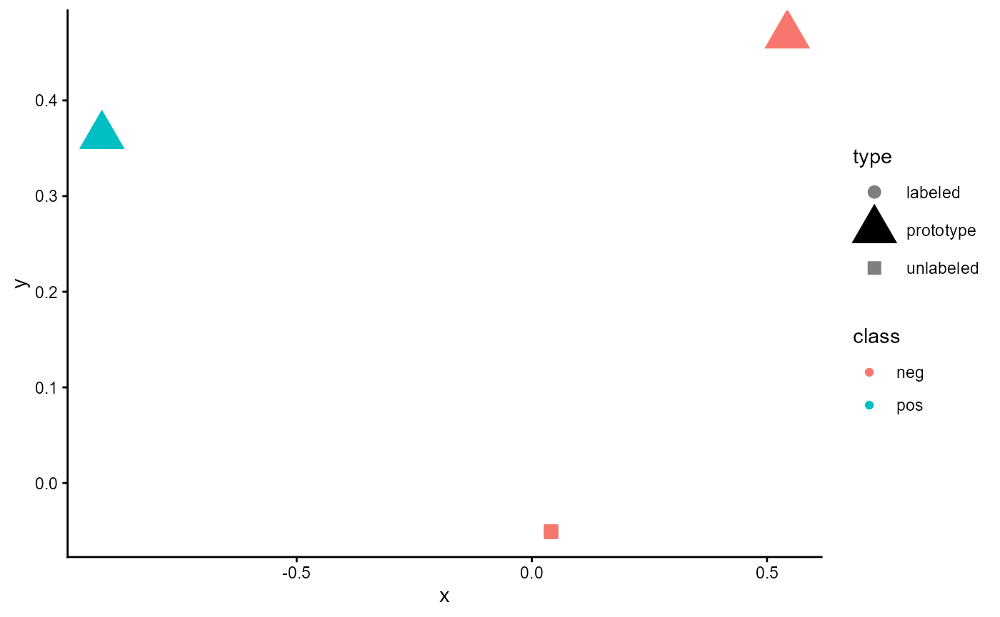
Figure 1: Embeddings of an untrained classifier of type ‘ProtoNet’
The large triangles rePostsent the prototypes for every class while the dots refer to the labeled cases in the data set. For these, the color rePostsents their true class. For unlabeled cases, a square is used. Here, the color indicates the estimated class. As you can see, all cases are located very similarly and there seems to be no clear structure. Let us see how this changes when we train the model.
2.2 Training
classifier_prototype$train(
data_embeddings = review_embeddings,
data_targets = review_labels,
data_folds = 10,
data_val_size = 0.25,
loss_pt_fct_name = "MultiWayContrastiveLossFC",
use_sc = FALSE,
sc_method = "knnor",
sc_min_k = 1,
sc_max_k = 10,
use_pl = FALSE,
pl_max_steps = 3,
pl_max = 1.00,
pl_anchor = 1.00,
pl_min = 0.00,
sustain_track = TRUE,
sustain_iso_code = "DEU",
sustain_region = NULL,
sustain_interval = 15,
sustain_log_level = "error",
epochs = 2000,
batch_size = 16,
Ns = 20,
Nq = 5,
loss_alpha = 0.50,
loss_margin = 0.05,
sampling_separate = FALSE,
sampling_shuffle = TRUE,
trace = TRUE,
ml_trace = 1,
log_dir = NULL,
log_write_interval = 10,
n_cores = auto_n_cores(),
lr_rate = 0.0,
lr_min = 0.0,
lr_epochs = 20,
lr_scheduler = "Linear",
lr_warm_up_ratio = 0.10,
optimizer = "AdamW",
amp = TRUE,
comp_use=TRUE,
comp_mode="reduce-overhead"
)
#> 2026-09-15 07:29:26 Total Cases: 300 Labeled Cases: 225
#> 2026-09-15 07:29:28 Start
#> 2026-09-15 07:29:28 Start Sustainability Tracking
#> 2026-09-15 07:29:29 Estimating Learning Rates
#> 0.1000 % | ETA 0000::00::490.2000 % | ETA 0000::00::100.3000 % | ETA 0000::00::090.4000 % | ETA 0000::00::080.5000 % | ETA 0000::00::070.6000 % | ETA 0000::00::060.7000 % | ETA 0000::00::040.8000 % | ETA 0000::00::030.9000 % | ETA 0000::00::021.0000 % | ETA 0000::00::01
#> 2026-09-15 07:29:46 Set lr_rate to 5e-04 and lr_min to 1e-06.
#> 2026-09-15 07:29:46 | Iteration 1 from 10
#> 2026-09-15 07:29:46 | Iteration 1 from 10 | Training
#> Absolute frequencies of some classes are not sufficent for the chosen Nq and Ns.
#> Change value for Ns from 20 to 12
#> Change value for Nq from 5 to 4
#> Compile model with cudagraphs.
#> 0.0005 % | Steps: 3 | Train Loss 0.266507 s_avg_iota 0.333 | Val Loss 0.091336 Best 0.091336 s_avg_iota 0.327 Best 0.327 | ELC: 1 | ETA 0001::18::490.0010 % | Steps: 3 | Train Loss 0.266209 s_avg_iota 0.333 | Val Loss 0.091048 Best 0.091336 s_avg_iota 0.327 Best 0.327 | ELC: 1 | ETA 0000::42::200.0015 % | Steps: 3 | Train Loss 0.266466 s_avg_iota 0.333 | Val Loss 0.091169 Best 0.091169 s_avg_iota 0.327 Best 0.327 | ELC: 3 | ETA 0000::30::100.0020 % | Steps: 3 | Train Loss 0.265319 s_avg_iota 0.334 | Val Loss 0.091400 Best 0.091169 s_avg_iota 0.327 Best 0.327 | ELC: 3 | ETA 0000::23::550.0025 % | Steps: 3 | Train Loss 0.265059 s_avg_iota 0.333 | Val Loss 0.091381 Best 0.091169 s_avg_iota 0.327 Best 0.327 | ELC: 3 | ETA 0000::20::070.0030 % | Steps: 3 | Train Loss 0.264659 s_avg_iota 0.334 | Val Loss 0.091467 Best 0.091169 s_avg_iota 0.327 Best 0.327 | ELC: 3 | ETA 0000::17::340.0035 % | Steps: 3 | Train Loss 0.263465 s_avg_iota 0.334 | Val Loss 0.091115 Best 0.091169 s_avg_iota 0.327 Best 0.327 | ELC: 3 | ETA 0000::15::420.0040 % | Steps: 3 | Train Loss 0.262738 s_avg_iota 0.334 | Val Loss 0.090538 Best 0.090538 s_avg_iota 0.327 Best 0.327 | ELC: 8 | ETA 0000::14::210.0045 % | Steps: 3 | Train Loss 0.260593 s_avg_iota 0.335 | Val Loss 0.089666 Best 0.089666 s_avg_iota 0.328 Best 0.328 | ELC: 9 | ETA 0000::13::170.0050 % | Steps: 3 | Train Loss 0.260406 s_avg_iota 0.335 | Val Loss 0.088570 Best 0.088570 s_avg_iota 0.328 Best 0.328 | ELC: 10 | ETA 0000::12::250.0055 % | Steps: 3 | Train Loss 0.259108 s_avg_iota 0.335 | Val Loss 0.087925 Best 0.087925 s_avg_iota 0.329 Best 0.329 | ELC: 11 | ETA 0000::11::430.0060 % | Steps: 3 | Train Loss 0.253872 s_avg_iota 0.337 | Val Loss 0.086219 Best 0.086219 s_avg_iota 0.330 Best 0.330 | ELC: 12 | ETA 0000::11::070.0065 % | Steps: 3 | Train Loss 0.251279 s_avg_iota 0.339 | Val Loss 0.085700 Best 0.085700 s_avg_iota 0.331 Best 0.331 | ELC: 13 | ETA 0000::10::380.0070 % | Steps: 3 | Train Loss 0.248155 s_avg_iota 0.340 | Val Loss 0.085338 Best 0.085338 s_avg_iota 0.332 Best 0.332 | ELC: 14 | ETA 0000::10::130.0075 % | Steps: 3 | Train Loss 0.244667 s_avg_iota 0.342 | Val Loss 0.084930 Best 0.084930 s_avg_iota 0.332 Best 0.332 | ELC: 15 | ETA 0000::09::510.0080 % | Steps: 3 | Train Loss 0.244653 s_avg_iota 0.342 | Val Loss 0.085172 Best 0.085172 s_avg_iota 0.333 Best 0.333 | ELC: 16 | ETA 0000::09::320.0085 % | Steps: 3 | Train Loss 0.241449 s_avg_iota 0.344 | Val Loss 0.084758 Best 0.084758 s_avg_iota 0.333 Best 0.333 | ELC: 17 | ETA 0000::09::150.0090 % | Steps: 3 | Train Loss 0.235645 s_avg_iota 0.346 | Val Loss 0.084524 Best 0.084524 s_avg_iota 0.335 Best 0.335 | ELC: 18 | ETA 0000::09::000.0095 % | Steps: 3 | Train Loss 0.236155 s_avg_iota 0.346 | Val Loss 0.083905 Best 0.083905 s_avg_iota 0.336 Best 0.336 | ELC: 19 | ETA 0000::08::480.0100 % | Steps: 3 | Train Loss 0.235110 s_avg_iota 0.347 | Val Loss 0.084382 Best 0.084382 s_avg_iota 0.336 Best 0.336 | ELC: 20 | ETA 0000::08::350.0105 % | Steps: 3 | Train Loss 0.230278 s_avg_iota 0.350 | Val Loss 0.085253 Best 0.085253 s_avg_iota 0.337 Best 0.337 | ELC: 21 | ETA 0000::08::240.0110 % | Steps: 3 | Train Loss 0.225876 s_avg_iota 0.352 | Val Loss 0.083903 Best 0.083903 s_avg_iota 0.338 Best 0.338 | ELC: 22 | ETA 0000::08::140.0115 % | Steps: 3 | Train Loss 0.224314 s_avg_iota 0.354 | Val Loss 0.085881 Best 0.085881 s_avg_iota 0.338 Best 0.338 | ELC: 23 | ETA 0000::08::040.0120 % | Steps: 3 | Train Loss 0.219498 s_avg_iota 0.356 | Val Loss 0.085868 Best 0.085881 s_avg_iota 0.336 Best 0.338 | ELC: 23 | ETA 0000::07::560.0125 % | Steps: 3 | Train Loss 0.227032 s_avg_iota 0.353 | Val Loss 0.085955 Best 0.085881 s_avg_iota 0.338 Best 0.338 | ELC: 23 | ETA 0000::07::470.0130 % | Steps: 3 | Train Loss 0.222156 s_avg_iota 0.355 | Val Loss 0.086128 Best 0.086128 s_avg_iota 0.340 Best 0.340 | ELC: 26 | ETA 0000::07::400.0135 % | Steps: 3 | Train Loss 0.216822 s_avg_iota 0.358 | Val Loss 0.086520 Best 0.086520 s_avg_iota 0.341 Best 0.341 | ELC: 27 | ETA 0000::07::330.0140 % | Steps: 3 | Train Loss 0.220299 s_avg_iota 0.358 | Val Loss 0.087104 Best 0.087104 s_avg_iota 0.342 Best 0.342 | ELC: 28 | ETA 0000::07::260.0145 % | Steps: 3 | Train Loss 0.210316 s_avg_iota 0.362 | Val Loss 0.087975 Best 0.087975 s_avg_iota 0.343 Best 0.343 | ELC: 29 | ETA 0000::07::200.0150 % | Steps: 3 | Train Loss 0.216186 s_avg_iota 0.362 | Val Loss 0.087826 Best 0.087826 s_avg_iota 0.344 Best 0.344 | ELC: 30 | ETA 0000::07::140.0155 % | Steps: 3 | Train Loss 0.213172 s_avg_iota 0.363 | Val Loss 0.089430 Best 0.087826 s_avg_iota 0.344 Best 0.344 | ELC: 30 | ETA 0000::07::080.0160 % | Steps: 3 | Train Loss 0.206123 s_avg_iota 0.366 | Val Loss 0.087262 Best 0.087262 s_avg_iota 0.347 Best 0.347 | ELC: 32 | ETA 0000::07::030.0165 % | Steps: 3 | Train Loss 0.206579 s_avg_iota 0.368 | Val Loss 0.093647 Best 0.087262 s_avg_iota 0.342 Best 0.347 | ELC: 32 | ETA 0000::06::580.0170 % | Steps: 3 | Train Loss 0.205553 s_avg_iota 0.368 | Val Loss 0.093690 Best 0.087262 s_avg_iota 0.345 Best 0.347 | ELC: 32 | ETA 0000::06::540.0175 % | Steps: 3 | Train Loss 0.195953 s_avg_iota 0.372 | Val Loss 0.090765 Best 0.087262 s_avg_iota 0.346 Best 0.347 | ELC: 32 | ETA 0000::06::490.0180 % | Steps: 3 | Train Loss 0.207673 s_avg_iota 0.369 | Val Loss 0.097342 Best 0.087262 s_avg_iota 0.344 Best 0.347 | ELC: 32 | ETA 0000::06::440.0185 % | Steps: 3 | Train Loss 0.202736 s_avg_iota 0.371 | Val Loss 0.091757 Best 0.091757 s_avg_iota 0.348 Best 0.348 | ELC: 37 | ETA 0000::06::410.0190 % | Steps: 3 | Train Loss 0.196317 s_avg_iota 0.374 | Val Loss 0.095531 Best 0.095531 s_avg_iota 0.348 Best 0.348 | ELC: 38 | ETA 0000::06::370.0195 % | Steps: 3 | Train Loss 0.199914 s_avg_iota 0.374 | Val Loss 0.097707 Best 0.097707 s_avg_iota 0.349 Best 0.349 | ELC: 39 | ETA 0000::06::340.0200 % | Steps: 3 | Train Loss 0.196272 s_avg_iota 0.375 | Val Loss 0.100819 Best 0.100819 s_avg_iota 0.349 Best 0.349 | ELC: 40 | ETA 0000::06::300.0205 % | Steps: 3 | Train Loss 0.190236 s_avg_iota 0.378 | Val Loss 0.096390 Best 0.100819 s_avg_iota 0.349 Best 0.349 | ELC: 40 | ETA 0000::06::280.0210 % | Steps: 3 | Train Loss 0.193405 s_avg_iota 0.378 | Val Loss 0.099570 Best 0.100819 s_avg_iota 0.349 Best 0.349 | ELC: 40 | ETA 0000::06::250.0215 % | Steps: 3 | Train Loss 0.193020 s_avg_iota 0.379 | Val Loss 0.099891 Best 0.100819 s_avg_iota 0.346 Best 0.349 | ELC: 40 | ETA 0000::06::220.0220 % | Steps: 3 | Train Loss 0.196149 s_avg_iota 0.377 | Val Loss 0.102839 Best 0.102839 s_avg_iota 0.350 Best 0.350 | ELC: 44 | ETA 0000::06::200.0225 % | Steps: 3 | Train Loss 0.203588 s_avg_iota 0.377 | Val Loss 0.103605 Best 0.103605 s_avg_iota 0.351 Best 0.351 | ELC: 45 | ETA 0000::06::180.0230 % | Steps: 3 | Train Loss 0.194067 s_avg_iota 0.379 | Val Loss 0.097186 Best 0.097186 s_avg_iota 0.353 Best 0.353 | ELC: 46 | ETA 0000::06::150.0235 % | Steps: 3 | Train Loss 0.184091 s_avg_iota 0.384 | Val Loss 0.100970 Best 0.100970 s_avg_iota 0.355 Best 0.355 | ELC: 47 | ETA 0000::06::120.0240 % | Steps: 3 | Train Loss 0.183076 s_avg_iota 0.386 | Val Loss 0.108515 Best 0.100970 s_avg_iota 0.352 Best 0.355 | ELC: 47 | ETA 0000::06::100.0245 % | Steps: 3 | Train Loss 0.176969 s_avg_iota 0.388 | Val Loss 0.101148 Best 0.101148 s_avg_iota 0.358 Best 0.358 | ELC: 49 | ETA 0000::06::080.0250 % | Steps: 3 | Train Loss 0.182096 s_avg_iota 0.388 | Val Loss 0.102956 Best 0.101148 s_avg_iota 0.358 Best 0.358 | ELC: 49 | ETA 0000::06::060.0255 % | Steps: 3 | Train Loss 0.175077 s_avg_iota 0.392 | Val Loss 0.102166 Best 0.102166 s_avg_iota 0.359 Best 0.359 | ELC: 51 | ETA 0000::06::040.0260 % | Steps: 3 | Train Loss 0.179242 s_avg_iota 0.390 | Val Loss 0.105350 Best 0.105350 s_avg_iota 0.360 Best 0.360 | ELC: 52 | ETA 0000::06::020.0265 % | Steps: 3 | Train Loss 0.174573 s_avg_iota 0.393 | Val Loss 0.106892 Best 0.105350 s_avg_iota 0.359 Best 0.360 | ELC: 52 | ETA 0000::06::000.0270 % | Steps: 3 | Train Loss 0.168493 s_avg_iota 0.396 | Val Loss 0.107542 Best 0.107542 s_avg_iota 0.360 Best 0.360 | ELC: 54 | ETA 0000::05::590.0275 % | Steps: 3 | Train Loss 0.171068 s_avg_iota 0.396 | Val Loss 0.107319 Best 0.107319 s_avg_iota 0.363 Best 0.363 | ELC: 55 | ETA 0000::05::570.0280 % | Steps: 3 | Train Loss 0.174226 s_avg_iota 0.395 | Val Loss 0.113456 Best 0.113456 s_avg_iota 0.363 Best 0.363 | ELC: 56 | ETA 0000::05::550.0285 % | Steps: 3 | Train Loss 0.170107 s_avg_iota 0.398 | Val Loss 0.127763 Best 0.113456 s_avg_iota 0.359 Best 0.363 | ELC: 56 | ETA 0000::05::540.0290 % | Steps: 3 | Train Loss 0.162144 s_avg_iota 0.402 | Val Loss 0.120931 Best 0.113456 s_avg_iota 0.362 Best 0.363 | ELC: 56 | ETA 0000::05::530.0295 % | Steps: 3 | Train Loss 0.170511 s_avg_iota 0.400 | Val Loss 0.106014 Best 0.113456 s_avg_iota 0.353 Best 0.363 | ELC: 56 | ETA 0000::05::510.0300 % | Steps: 3 | Train Loss 0.181118 s_avg_iota 0.396 | Val Loss 0.112886 Best 0.113456 s_avg_iota 0.357 Best 0.363 | ELC: 56 | ETA 0000::05::490.0305 % | Steps: 3 | Train Loss 0.170994 s_avg_iota 0.398 | Val Loss 0.127408 Best 0.113456 s_avg_iota 0.357 Best 0.363 | ELC: 56 | ETA 0000::05::470.0310 % | Steps: 3 | Train Loss 0.178643 s_avg_iota 0.398 | Val Loss 0.122986 Best 0.113456 s_avg_iota 0.360 Best 0.363 | ELC: 56 | ETA 0000::05::450.0315 % | Steps: 3 | Train Loss 0.165796 s_avg_iota 0.401 | Val Loss 0.123886 Best 0.113456 s_avg_iota 0.362 Best 0.363 | ELC: 56 | ETA 0000::05::430.0320 % | Steps: 3 | Train Loss 0.169028 s_avg_iota 0.402 | Val Loss 0.124297 Best 0.124297 s_avg_iota 0.364 Best 0.364 | ELC: 64 | ETA 0000::05::410.0325 % | Steps: 3 | Train Loss 0.158606 s_avg_iota 0.406 | Val Loss 0.127854 Best 0.127854 s_avg_iota 0.364 Best 0.364 | ELC: 65 | ETA 0000::05::390.0330 % | Steps: 3 | Train Loss 0.161946 s_avg_iota 0.407 | Val Loss 0.131817 Best 0.131817 s_avg_iota 0.364 Best 0.364 | ELC: 66 | ETA 0000::05::370.0335 % | Steps: 3 | Train Loss 0.160644 s_avg_iota 0.407 | Val Loss 0.139036 Best 0.131817 s_avg_iota 0.362 Best 0.364 | ELC: 66 | ETA 0000::05::360.0340 % | Steps: 3 | Train Loss 0.159138 s_avg_iota 0.408 | Val Loss 0.141723 Best 0.141723 s_avg_iota 0.365 Best 0.365 | ELC: 68 | ETA 0000::05::340.0345 % | Steps: 3 | Train Loss 0.150436 s_avg_iota 0.412 | Val Loss 0.137013 Best 0.137013 s_avg_iota 0.368 Best 0.368 | ELC: 69 | ETA 0000::05::330.0350 % | Steps: 3 | Train Loss 0.147125 s_avg_iota 0.414 | Val Loss 0.150584 Best 0.137013 s_avg_iota 0.364 Best 0.368 | ELC: 69 | ETA 0000::05::310.0355 % | Steps: 3 | Train Loss 0.151639 s_avg_iota 0.413 | Val Loss 0.152528 Best 0.137013 s_avg_iota 0.364 Best 0.368 | ELC: 69 | ETA 0000::05::290.0360 % | Steps: 3 | Train Loss 0.154535 s_avg_iota 0.414 | Val Loss 0.140610 Best 0.140610 s_avg_iota 0.369 Best 0.369 | ELC: 72 | ETA 0000::05::280.0365 % | Steps: 3 | Train Loss 0.148102 s_avg_iota 0.416 | Val Loss 0.144738 Best 0.140610 s_avg_iota 0.369 Best 0.369 | ELC: 72 | ETA 0000::05::260.0370 % | Steps: 3 | Train Loss 0.205928 s_avg_iota 0.404 | Val Loss 0.136387 Best 0.140610 s_avg_iota 0.367 Best 0.369 | ELC: 72 | ETA 0000::05::250.0375 % | Steps: 3 | Train Loss 0.201410 s_avg_iota 0.404 | Val Loss 0.146047 Best 0.140610 s_avg_iota 0.369 Best 0.369 | ELC: 72 | ETA 0000::05::230.0380 % | Steps: 3 | Train Loss 0.159415 s_avg_iota 0.412 | Val Loss 0.143872 Best 0.140610 s_avg_iota 0.360 Best 0.369 | ELC: 72 | ETA 0000::05::220.0385 % | Steps: 3 | Train Loss 0.164490 s_avg_iota 0.411 | Val Loss 0.153950 Best 0.140610 s_avg_iota 0.366 Best 0.369 | ELC: 72 | ETA 0000::05::200.0390 % | Steps: 3 | Train Loss 0.167923 s_avg_iota 0.411 | Val Loss 0.156655 Best 0.140610 s_avg_iota 0.362 Best 0.369 | ELC: 72 | ETA 0000::05::190.0395 % | Steps: 3 | Train Loss 0.145641 s_avg_iota 0.417 | Val Loss 0.151359 Best 0.140610 s_avg_iota 0.367 Best 0.369 | ELC: 72 | ETA 0000::05::170.0400 % | Steps: 3 | Train Loss 0.162591 s_avg_iota 0.413 | Val Loss 0.153485 Best 0.153485 s_avg_iota 0.369 Best 0.369 | ELC: 80 | ETA 0000::05::160.0405 % | Steps: 3 | Train Loss 0.151974 s_avg_iota 0.416 | Val Loss 0.155273 Best 0.155273 s_avg_iota 0.370 Best 0.370 | ELC: 81 | ETA 0000::05::160.0410 % | Steps: 3 | Train Loss 0.145518 s_avg_iota 0.418 | Val Loss 0.155209 Best 0.155273 s_avg_iota 0.369 Best 0.370 | ELC: 81 | ETA 0000::05::140.0415 % | Steps: 3 | Train Loss 0.149398 s_avg_iota 0.419 | Val Loss 0.136402 Best 0.155273 s_avg_iota 0.363 Best 0.370 | ELC: 81 | ETA 0000::05::140.0420 % | Steps: 3 | Train Loss 0.157175 s_avg_iota 0.416 | Val Loss 0.162005 Best 0.162005 s_avg_iota 0.371 Best 0.371 | ELC: 84 | ETA 0000::05::120.0425 % | Steps: 3 | Train Loss 0.170987 s_avg_iota 0.413 | Val Loss 0.159820 Best 0.162005 s_avg_iota 0.364 Best 0.371 | ELC: 84 | ETA 0000::05::110.0430 % | Steps: 3 | Train Loss 0.193727 s_avg_iota 0.409 | Val Loss 0.155432 Best 0.162005 s_avg_iota 0.369 Best 0.371 | ELC: 84 | ETA 0000::05::100.0435 % | Steps: 3 | Train Loss 0.146993 s_avg_iota 0.420 | Val Loss 0.157939 Best 0.157939 s_avg_iota 0.371 Best 0.371 | ELC: 87 | ETA 0000::05::090.0440 % | Steps: 3 | Train Loss 0.153933 s_avg_iota 0.418 | Val Loss 0.161277 Best 0.161277 s_avg_iota 0.374 Best 0.374 | ELC: 88 | ETA 0000::05::080.0445 % | Steps: 3 | Train Loss 0.157756 s_avg_iota 0.417 | Val Loss 0.174755 Best 0.161277 s_avg_iota 0.362 Best 0.374 | ELC: 88 | ETA 0000::05::070.0450 % | Steps: 3 | Train Loss 0.186973 s_avg_iota 0.410 | Val Loss 0.171065 Best 0.161277 s_avg_iota 0.367 Best 0.374 | ELC: 88 | ETA 0000::05::060.0455 % | Steps: 3 | Train Loss 0.154257 s_avg_iota 0.419 | Val Loss 0.162172 Best 0.161277 s_avg_iota 0.362 Best 0.374 | ELC: 88 | ETA 0000::05::050.0460 % | Steps: 3 | Train Loss 0.160910 s_avg_iota 0.414 | Val Loss 0.158193 Best 0.161277 s_avg_iota 0.370 Best 0.374 | ELC: 88 | ETA 0000::05::040.0465 % | Steps: 3 | Train Loss 0.165178 s_avg_iota 0.415 | Val Loss 0.157671 Best 0.161277 s_avg_iota 0.369 Best 0.374 | ELC: 88 | ETA 0000::05::030.0470 % | Steps: 3 | Train Loss 0.149594 s_avg_iota 0.419 | Val Loss 0.161407 Best 0.161277 s_avg_iota 0.369 Best 0.374 | ELC: 88 | ETA 0000::05::030.0475 % | Steps: 3 | Train Loss 0.157556 s_avg_iota 0.418 | Val Loss 0.157793 Best 0.157793 s_avg_iota 0.374 Best 0.374 | ELC: 95 | ETA 0000::05::020.0480 % | Steps: 3 | Train Loss 0.156469 s_avg_iota 0.420 | Val Loss 0.153658 Best 0.153658 s_avg_iota 0.375 Best 0.375 | ELC: 96 | ETA 0000::05::010.0485 % | Steps: 3 | Train Loss 0.143447 s_avg_iota 0.423 | Val Loss 0.157062 Best 0.153658 s_avg_iota 0.375 Best 0.375 | ELC: 96 | ETA 0000::05::000.0490 % | Steps: 3 | Train Loss 0.158860 s_avg_iota 0.419 | Val Loss 0.164724 Best 0.153658 s_avg_iota 0.370 Best 0.375 | ELC: 96 | ETA 0000::05::000.0495 % | Steps: 3 | Train Loss 0.163260 s_avg_iota 0.419 | Val Loss 0.168038 Best 0.153658 s_avg_iota 0.370 Best 0.375 | ELC: 96 | ETA 0000::04::590.0500 % | Steps: 3 | Train Loss 0.148884 s_avg_iota 0.423 | Val Loss 0.158859 Best 0.153658 s_avg_iota 0.374 Best 0.375 | ELC: 96 | ETA 0000::04::580.0505 % | Steps: 3 | Train Loss 0.145103 s_avg_iota 0.424 | Val Loss 0.165784 Best 0.153658 s_avg_iota 0.375 Best 0.375 | ELC: 96 | ETA 0000::04::570.0510 % | Steps: 3 | Train Loss 0.141845 s_avg_iota 0.425 | Val Loss 0.166235 Best 0.153658 s_avg_iota 0.375 Best 0.375 | ELC: 96 | ETA 0000::04::570.0515 % | Steps: 3 | Train Loss 0.141059 s_avg_iota 0.425 | Val Loss 0.162137 Best 0.162137 s_avg_iota 0.377 Best 0.377 | ELC: 103 | ETA 0000::04::560.0520 % | Steps: 3 | Train Loss 0.145099 s_avg_iota 0.424 | Val Loss 0.167812 Best 0.167812 s_avg_iota 0.379 Best 0.379 | ELC: 104 | ETA 0000::04::550.0525 % | Steps: 3 | Train Loss 0.140404 s_avg_iota 0.427 | Val Loss 0.171840 Best 0.167812 s_avg_iota 0.376 Best 0.379 | ELC: 104 | ETA 0000::04::550.0530 % | Steps: 3 | Train Loss 0.145771 s_avg_iota 0.426 | Val Loss 0.175562 Best 0.167812 s_avg_iota 0.375 Best 0.379 | ELC: 104 | ETA 0000::04::540.0535 % | Steps: 3 | Train Loss 0.144447 s_avg_iota 0.427 | Val Loss 0.174104 Best 0.167812 s_avg_iota 0.376 Best 0.379 | ELC: 104 | ETA 0000::04::540.0540 % | Steps: 3 | Train Loss 0.133577 s_avg_iota 0.430 | Val Loss 0.174658 Best 0.167812 s_avg_iota 0.378 Best 0.379 | ELC: 104 | ETA 0000::04::530.0545 % | Steps: 3 | Train Loss 0.152465 s_avg_iota 0.425 | Val Loss 0.177108 Best 0.177108 s_avg_iota 0.379 Best 0.379 | ELC: 109 | ETA 0000::04::530.0550 % | Steps: 3 | Train Loss 0.128607 s_avg_iota 0.433 | Val Loss 0.178539 Best 0.177108 s_avg_iota 0.377 Best 0.379 | ELC: 109 | ETA 0000::04::520.0555 % | Steps: 3 | Train Loss 0.139943 s_avg_iota 0.430 | Val Loss 0.180053 Best 0.177108 s_avg_iota 0.379 Best 0.379 | ELC: 109 | ETA 0000::04::520.0560 % | Steps: 3 | Train Loss 0.142935 s_avg_iota 0.430 | Val Loss 0.182152 Best 0.182152 s_avg_iota 0.379 Best 0.379 | ELC: 112 | ETA 0000::04::510.0565 % | Steps: 3 | Train Loss 0.138736 s_avg_iota 0.431 | Val Loss 0.185871 Best 0.185871 s_avg_iota 0.380 Best 0.380 | ELC: 113 | ETA 0000::04::510.0570 % | Steps: 3 | Train Loss 0.139736 s_avg_iota 0.432 | Val Loss 0.188280 Best 0.188280 s_avg_iota 0.380 Best 0.380 | ELC: 114 | ETA 0000::04::500.0575 % | Steps: 3 | Train Loss 0.136992 s_avg_iota 0.433 | Val Loss 0.192506 Best 0.188280 s_avg_iota 0.377 Best 0.380 | ELC: 114 | ETA 0000::04::500.0580 % | Steps: 3 | Train Loss 0.132075 s_avg_iota 0.434 | Val Loss 0.196829 Best 0.188280 s_avg_iota 0.378 Best 0.380 | ELC: 114 | ETA 0000::04::490.0585 % | Steps: 3 | Train Loss 0.135518 s_avg_iota 0.434 | Val Loss 0.202678 Best 0.188280 s_avg_iota 0.377 Best 0.380 | ELC: 114 | ETA 0000::04::480.0590 % | Steps: 3 | Train Loss 0.131971 s_avg_iota 0.436 | Val Loss 0.203244 Best 0.188280 s_avg_iota 0.377 Best 0.380 | ELC: 114 | ETA 0000::04::480.0595 % | Steps: 3 | Train Loss 0.139470 s_avg_iota 0.434 | Val Loss 0.198413 Best 0.188280 s_avg_iota 0.379 Best 0.380 | ELC: 114 | ETA 0000::04::480.0600 % | Steps: 3 | Train Loss 0.118279 s_avg_iota 0.441 | Val Loss 0.203473 Best 0.203473 s_avg_iota 0.380 Best 0.380 | ELC: 120 | ETA 0000::04::470.0605 % | Steps: 3 | Train Loss 0.137835 s_avg_iota 0.434 | Val Loss 0.203175 Best 0.203175 s_avg_iota 0.381 Best 0.381 | ELC: 121 | ETA 0000::04::470.0610 % | Steps: 3 | Train Loss 0.139943 s_avg_iota 0.434 | Val Loss 0.206738 Best 0.203175 s_avg_iota 0.380 Best 0.381 | ELC: 121 | ETA 0000::04::460.0615 % | Steps: 3 | Train Loss 0.136249 s_avg_iota 0.435 | Val Loss 0.207329 Best 0.203175 s_avg_iota 0.381 Best 0.381 | ELC: 121 | ETA 0000::04::460.0620 % | Steps: 3 | Train Loss 0.130395 s_avg_iota 0.438 | Val Loss 0.206408 Best 0.203175 s_avg_iota 0.380 Best 0.381 | ELC: 121 | ETA 0000::04::460.0625 % | Steps: 3 | Train Loss 0.140775 s_avg_iota 0.435 | Val Loss 0.190119 Best 0.203175 s_avg_iota 0.376 Best 0.381 | ELC: 121 | ETA 0000::04::450.0630 % | Steps: 3 | Train Loss 0.138159 s_avg_iota 0.435 | Val Loss 0.206660 Best 0.203175 s_avg_iota 0.379 Best 0.381 | ELC: 121 | ETA 0000::04::450.0635 % | Steps: 3 | Train Loss 0.137912 s_avg_iota 0.436 | Val Loss 0.214617 Best 0.214617 s_avg_iota 0.381 Best 0.381 | ELC: 127 | ETA 0000::04::450.0640 % | Steps: 3 | Train Loss 0.132859 s_avg_iota 0.438 | Val Loss 0.210800 Best 0.214617 s_avg_iota 0.381 Best 0.381 | ELC: 127 | ETA 0000::04::450.0645 % | Steps: 3 | Train Loss 0.121984 s_avg_iota 0.441 | Val Loss 0.193021 Best 0.193021 s_avg_iota 0.384 Best 0.384 | ELC: 129 | ETA 0000::04::450.0650 % | Steps: 3 | Train Loss 0.154801 s_avg_iota 0.434 | Val Loss 0.189372 Best 0.189372 s_avg_iota 0.387 Best 0.387 | ELC: 130 | ETA 0000::04::450.0655 % | Steps: 3 | Train Loss 0.137300 s_avg_iota 0.438 | Val Loss 0.200150 Best 0.189372 s_avg_iota 0.382 Best 0.387 | ELC: 130 | ETA 0000::04::440.0660 % | Steps: 3 | Train Loss 0.134683 s_avg_iota 0.438 | Val Loss 0.210290 Best 0.189372 s_avg_iota 0.380 Best 0.387 | ELC: 130 | ETA 0000::04::440.0665 % | Steps: 3 | Train Loss 0.135660 s_avg_iota 0.438 | Val Loss 0.182129 Best 0.189372 s_avg_iota 0.386 Best 0.387 | ELC: 130 | ETA 0000::04::440.0670 % | Steps: 3 | Train Loss 0.127893 s_avg_iota 0.441 | Val Loss 0.192858 Best 0.192858 s_avg_iota 0.387 Best 0.387 | ELC: 134 | ETA 0000::04::430.0675 % | Steps: 3 | Train Loss 0.152249 s_avg_iota 0.438 | Val Loss 0.213429 Best 0.192858 s_avg_iota 0.384 Best 0.387 | ELC: 134 | ETA 0000::04::430.0680 % | Steps: 3 | Train Loss 0.130132 s_avg_iota 0.441 | Val Loss 0.231836 Best 0.192858 s_avg_iota 0.377 Best 0.387 | ELC: 134 | ETA 0000::04::420.0685 % | Steps: 3 | Train Loss 0.125217 s_avg_iota 0.441 | Val Loss 0.248410 Best 0.192858 s_avg_iota 0.374 Best 0.387 | ELC: 134 | ETA 0000::04::420.0690 % | Steps: 3 | Train Loss 0.141573 s_avg_iota 0.439 | Val Loss 0.223000 Best 0.192858 s_avg_iota 0.380 Best 0.387 | ELC: 134 | ETA 0000::04::420.0695 % | Steps: 3 | Train Loss 0.140646 s_avg_iota 0.439 | Val Loss 0.217957 Best 0.192858 s_avg_iota 0.381 Best 0.387 | ELC: 134 | ETA 0000::04::410.0700 % | Steps: 3 | Train Loss 0.128536 s_avg_iota 0.442 | Val Loss 0.211638 Best 0.192858 s_avg_iota 0.384 Best 0.387 | ELC: 134 | ETA 0000::04::410.0705 % | Steps: 3 | Train Loss 0.134976 s_avg_iota 0.440 | Val Loss 0.214569 Best 0.192858 s_avg_iota 0.385 Best 0.387 | ELC: 134 | ETA 0000::04::400.0710 % | Steps: 3 | Train Loss 0.138979 s_avg_iota 0.440 | Val Loss 0.215930 Best 0.192858 s_avg_iota 0.386 Best 0.387 | ELC: 134 | ETA 0000::04::400.0715 % | Steps: 3 | Train Loss 0.128522 s_avg_iota 0.443 | Val Loss 0.212945 Best 0.192858 s_avg_iota 0.387 Best 0.387 | ELC: 134 | ETA 0000::04::390.0720 % | Steps: 3 | Train Loss 0.133662 s_avg_iota 0.441 | Val Loss 0.212222 Best 0.192858 s_avg_iota 0.386 Best 0.387 | ELC: 134 | ETA 0000::04::390.0725 % | Steps: 3 | Train Loss 0.129263 s_avg_iota 0.443 | Val Loss 0.217886 Best 0.192858 s_avg_iota 0.385 Best 0.387 | ELC: 134 | ETA 0000::04::380.0730 % | Steps: 3 | Train Loss 0.126885 s_avg_iota 0.443 | Val Loss 0.221393 Best 0.192858 s_avg_iota 0.385 Best 0.387 | ELC: 134 | ETA 0000::04::380.0735 % | Steps: 3 | Train Loss 0.132149 s_avg_iota 0.443 | Val Loss 0.224080 Best 0.192858 s_avg_iota 0.383 Best 0.387 | ELC: 134 | ETA 0000::04::380.0740 % | Steps: 3 | Train Loss 0.130343 s_avg_iota 0.444 | Val Loss 0.216174 Best 0.216174 s_avg_iota 0.388 Best 0.388 | ELC: 148 | ETA 0000::04::370.0745 % | Steps: 3 | Train Loss 0.130997 s_avg_iota 0.443 | Val Loss 0.215900 Best 0.216174 s_avg_iota 0.388 Best 0.388 | ELC: 148 | ETA 0000::04::370.0750 % | Steps: 3 | Train Loss 0.135226 s_avg_iota 0.442 | Val Loss 0.218343 Best 0.216174 s_avg_iota 0.388 Best 0.388 | ELC: 148 | ETA 0000::04::370.0755 % | Steps: 3 | Train Loss 0.137790 s_avg_iota 0.441 | Val Loss 0.219123 Best 0.216174 s_avg_iota 0.387 Best 0.388 | ELC: 148 | ETA 0000::04::360.0760 % | Steps: 3 | Train Loss 0.127399 s_avg_iota 0.445 | Val Loss 0.221199 Best 0.216174 s_avg_iota 0.386 Best 0.388 | ELC: 148 | ETA 0000::04::360.0765 % | Steps: 3 | Train Loss 0.128810 s_avg_iota 0.444 | Val Loss 0.225058 Best 0.216174 s_avg_iota 0.386 Best 0.388 | ELC: 148 | ETA 0000::04::360.0770 % | Steps: 3 | Train Loss 0.129697 s_avg_iota 0.444 | Val Loss 0.228864 Best 0.216174 s_avg_iota 0.386 Best 0.388 | ELC: 148 | ETA 0000::04::350.0775 % | Steps: 3 | Train Loss 0.139043 s_avg_iota 0.441 | Val Loss 0.225011 Best 0.216174 s_avg_iota 0.386 Best 0.388 | ELC: 148 | ETA 0000::04::350.0780 % | Steps: 3 | Train Loss 0.119750 s_avg_iota 0.447 | Val Loss 0.219956 Best 0.216174 s_avg_iota 0.388 Best 0.388 | ELC: 148 | ETA 0000::04::350.0785 % | Steps: 3 | Train Loss 0.118816 s_avg_iota 0.448 | Val Loss 0.236863 Best 0.216174 s_avg_iota 0.383 Best 0.388 | ELC: 148 | ETA 0000::04::340.0790 % | Steps: 3 | Train Loss 0.124768 s_avg_iota 0.446 | Val Loss 0.241939 Best 0.216174 s_avg_iota 0.383 Best 0.388 | ELC: 148 | ETA 0000::04::340.0795 % | Steps: 3 | Train Loss 0.130458 s_avg_iota 0.445 | Val Loss 0.242925 Best 0.216174 s_avg_iota 0.384 Best 0.388 | ELC: 148 | ETA 0000::04::340.0800 % | Steps: 3 | Train Loss 0.120499 s_avg_iota 0.448 | Val Loss 0.242199 Best 0.216174 s_avg_iota 0.385 Best 0.388 | ELC: 148 | ETA 0000::04::330.0805 % | Steps: 3 | Train Loss 0.127806 s_avg_iota 0.446 | Val Loss 0.240018 Best 0.216174 s_avg_iota 0.386 Best 0.388 | ELC: 148 | ETA 0000::04::330.0810 % | Steps: 3 | Train Loss 0.119208 s_avg_iota 0.448 | Val Loss 0.239977 Best 0.216174 s_avg_iota 0.386 Best 0.388 | ELC: 148 | ETA 0000::04::330.0815 % | Steps: 3 | Train Loss 0.114774 s_avg_iota 0.451 | Val Loss 0.238168 Best 0.216174 s_avg_iota 0.388 Best 0.388 | ELC: 148 | ETA 0000::04::320.0820 % | Steps: 3 | Train Loss 0.116397 s_avg_iota 0.451 | Val Loss 0.233566 Best 0.216174 s_avg_iota 0.388 Best 0.388 | ELC: 148 | ETA 0000::04::320.0825 % | Steps: 3 | Train Loss 0.129297 s_avg_iota 0.447 | Val Loss 0.232308 Best 0.232308 s_avg_iota 0.389 Best 0.389 | ELC: 165 | ETA 0000::04::320.0830 % | Steps: 3 | Train Loss 0.136206 s_avg_iota 0.444 | Val Loss 0.230252 Best 0.232308 s_avg_iota 0.389 Best 0.389 | ELC: 165 | ETA 0000::04::320.0835 % | Steps: 3 | Train Loss 0.121557 s_avg_iota 0.450 | Val Loss 0.228939 Best 0.228939 s_avg_iota 0.391 Best 0.391 | ELC: 167 | ETA 0000::04::310.0840 % | Steps: 3 | Train Loss 0.141380 s_avg_iota 0.444 | Val Loss 0.233577 Best 0.228939 s_avg_iota 0.390 Best 0.391 | ELC: 167 | ETA 0000::04::310.0845 % | Steps: 3 | Train Loss 0.128908 s_avg_iota 0.446 | Val Loss 0.234057 Best 0.228939 s_avg_iota 0.389 Best 0.391 | ELC: 167 | ETA 0000::04::310.0850 % | Steps: 3 | Train Loss 0.127336 s_avg_iota 0.447 | Val Loss 0.236602 Best 0.228939 s_avg_iota 0.390 Best 0.391 | ELC: 167 | ETA 0000::04::310.0855 % | Steps: 3 | Train Loss 0.132787 s_avg_iota 0.446 | Val Loss 0.234550 Best 0.228939 s_avg_iota 0.388 Best 0.391 | ELC: 167 | ETA 0000::04::300.0860 % | Steps: 3 | Train Loss 0.118092 s_avg_iota 0.450 | Val Loss 0.240249 Best 0.228939 s_avg_iota 0.387 Best 0.391 | ELC: 167 | ETA 0000::04::300.0865 % | Steps: 3 | Train Loss 0.131028 s_avg_iota 0.447 | Val Loss 0.242057 Best 0.228939 s_avg_iota 0.387 Best 0.391 | ELC: 167 | ETA 0000::04::300.0870 % | Steps: 3 | Train Loss 0.119732 s_avg_iota 0.450 | Val Loss 0.244306 Best 0.228939 s_avg_iota 0.387 Best 0.391 | ELC: 167 | ETA 0000::04::290.0875 % | Steps: 3 | Train Loss 0.129766 s_avg_iota 0.446 | Val Loss 0.242978 Best 0.228939 s_avg_iota 0.388 Best 0.391 | ELC: 167 | ETA 0000::04::290.0880 % | Steps: 3 | Train Loss 0.112300 s_avg_iota 0.453 | Val Loss 0.242298 Best 0.228939 s_avg_iota 0.389 Best 0.391 | ELC: 167 | ETA 0000::04::290.0885 % | Steps: 3 | Train Loss 0.124346 s_avg_iota 0.449 | Val Loss 0.241917 Best 0.228939 s_avg_iota 0.388 Best 0.391 | ELC: 167 | ETA 0000::04::280.0890 % | Steps: 3 | Train Loss 0.126700 s_avg_iota 0.449 | Val Loss 0.249309 Best 0.228939 s_avg_iota 0.385 Best 0.391 | ELC: 167 | ETA 0000::04::280.0895 % | Steps: 3 | Train Loss 0.132100 s_avg_iota 0.447 | Val Loss 0.255868 Best 0.228939 s_avg_iota 0.388 Best 0.391 | ELC: 167 | ETA 0000::04::280.0900 % | Steps: 3 | Train Loss 0.124636 s_avg_iota 0.448 | Val Loss 0.251645 Best 0.228939 s_avg_iota 0.388 Best 0.391 | ELC: 167 | ETA 0000::04::280.0905 % | Steps: 3 | Train Loss 0.125005 s_avg_iota 0.449 | Val Loss 0.242486 Best 0.228939 s_avg_iota 0.389 Best 0.391 | ELC: 167 | ETA 0000::04::270.0910 % | Steps: 3 | Train Loss 0.127270 s_avg_iota 0.449 | Val Loss 0.239552 Best 0.228939 s_avg_iota 0.390 Best 0.391 | ELC: 167 | ETA 0000::04::270.0915 % | Steps: 3 | Train Loss 0.120367 s_avg_iota 0.452 | Val Loss 0.241392 Best 0.228939 s_avg_iota 0.390 Best 0.391 | ELC: 167 | ETA 0000::04::270.0920 % | Steps: 3 | Train Loss 0.117638 s_avg_iota 0.452 | Val Loss 0.240460 Best 0.228939 s_avg_iota 0.389 Best 0.391 | ELC: 167 | ETA 0000::04::260.0925 % | Steps: 3 | Train Loss 0.139172 s_avg_iota 0.445 | Val Loss 0.243955 Best 0.228939 s_avg_iota 0.390 Best 0.391 | ELC: 167 | ETA 0000::04::260.0930 % | Steps: 3 | Train Loss 0.129627 s_avg_iota 0.449 | Val Loss 0.247481 Best 0.228939 s_avg_iota 0.390 Best 0.391 | ELC: 167 | ETA 0000::04::260.0935 % | Steps: 3 | Train Loss 0.117116 s_avg_iota 0.453 | Val Loss 0.239800 Best 0.228939 s_avg_iota 0.389 Best 0.391 | ELC: 167 | ETA 0000::04::260.0940 % | Steps: 3 | Train Loss 0.134609 s_avg_iota 0.447 | Val Loss 0.260982 Best 0.228939 s_avg_iota 0.386 Best 0.391 | ELC: 167 | ETA 0000::04::250.0945 % | Steps: 3 | Train Loss 0.134958 s_avg_iota 0.447 | Val Loss 0.268029 Best 0.228939 s_avg_iota 0.383 Best 0.391 | ELC: 167 | ETA 0000::04::250.0950 % | Steps: 3 | Train Loss 0.123759 s_avg_iota 0.451 | Val Loss 0.271142 Best 0.228939 s_avg_iota 0.382 Best 0.391 | ELC: 167 | ETA 0000::04::250.0955 % | Steps: 3 | Train Loss 0.143803 s_avg_iota 0.446 | Val Loss 0.260666 Best 0.228939 s_avg_iota 0.387 Best 0.391 | ELC: 167 | ETA 0000::04::240.0960 % | Steps: 3 | Train Loss 0.126156 s_avg_iota 0.450 | Val Loss 0.250008 Best 0.228939 s_avg_iota 0.388 Best 0.391 | ELC: 167 | ETA 0000::04::240.0965 % | Steps: 3 | Train Loss 0.129474 s_avg_iota 0.449 | Val Loss 0.248045 Best 0.228939 s_avg_iota 0.387 Best 0.391 | ELC: 167 | ETA 0000::04::240.0970 % | Steps: 3 | Train Loss 0.124388 s_avg_iota 0.451 | Val Loss 0.251513 Best 0.228939 s_avg_iota 0.387 Best 0.391 | ELC: 167 | ETA 0000::04::230.0975 % | Steps: 3 | Train Loss 0.120133 s_avg_iota 0.452 | Val Loss 0.257100 Best 0.228939 s_avg_iota 0.386 Best 0.391 | ELC: 167 | ETA 0000::04::230.0980 % | Steps: 3 | Train Loss 0.136719 s_avg_iota 0.447 | Val Loss 0.266779 Best 0.228939 s_avg_iota 0.386 Best 0.391 | ELC: 167 | ETA 0000::04::230.0985 % | Steps: 3 | Train Loss 0.125017 s_avg_iota 0.450 | Val Loss 0.269746 Best 0.228939 s_avg_iota 0.384 Best 0.391 | ELC: 167 | ETA 0000::04::230.0990 % | Steps: 3 | Train Loss 0.117906 s_avg_iota 0.453 | Val Loss 0.269532 Best 0.228939 s_avg_iota 0.384 Best 0.391 | ELC: 167 | ETA 0000::04::220.0995 % | Steps: 3 | Train Loss 0.132901 s_avg_iota 0.449 | Val Loss 0.266234 Best 0.228939 s_avg_iota 0.386 Best 0.391 | ELC: 167 | ETA 0000::04::220.1000 % | Steps: 3 | Train Loss 0.133750 s_avg_iota 0.449 | Val Loss 0.267506 Best 0.228939 s_avg_iota 0.386 Best 0.391 | ELC: 167 | ETA 0000::04::220.1005 % | Steps: 3 | Train Loss 0.121847 s_avg_iota 0.451 | Val Loss 0.266793 Best 0.228939 s_avg_iota 0.387 Best 0.391 | ELC: 167 | ETA 0000::04::210.1010 % | Steps: 3 | Train Loss 0.124667 s_avg_iota 0.451 | Val Loss 0.267821 Best 0.228939 s_avg_iota 0.387 Best 0.391 | ELC: 167 | ETA 0000::04::210.1015 % | Steps: 3 | Train Loss 0.122746 s_avg_iota 0.451 | Val Loss 0.268231 Best 0.228939 s_avg_iota 0.388 Best 0.391 | ELC: 167 | ETA 0000::04::210.1020 % | Steps: 3 | Train Loss 0.122967 s_avg_iota 0.452 | Val Loss 0.266491 Best 0.228939 s_avg_iota 0.386 Best 0.391 | ELC: 167 | ETA 0000::04::210.1025 % | Steps: 3 | Train Loss 0.118231 s_avg_iota 0.452 | Val Loss 0.266935 Best 0.228939 s_avg_iota 0.387 Best 0.391 | ELC: 167 | ETA 0000::04::200.1030 % | Steps: 3 | Train Loss 0.122676 s_avg_iota 0.452 | Val Loss 0.264973 Best 0.228939 s_avg_iota 0.388 Best 0.391 | ELC: 167 | ETA 0000::04::200.1035 % | Steps: 3 | Train Loss 0.123982 s_avg_iota 0.451 | Val Loss 0.261602 Best 0.228939 s_avg_iota 0.388 Best 0.391 | ELC: 167 | ETA 0000::04::200.1040 % | Steps: 3 | Train Loss 0.128489 s_avg_iota 0.449 | Val Loss 0.265202 Best 0.228939 s_avg_iota 0.387 Best 0.391 | ELC: 167 | ETA 0000::04::200.1045 % | Steps: 3 | Train Loss 0.121737 s_avg_iota 0.453 | Val Loss 0.264908 Best 0.228939 s_avg_iota 0.388 Best 0.391 | ELC: 167 | ETA 0000::04::190.1050 % | Steps: 3 | Train Loss 0.113748 s_avg_iota 0.455 | Val Loss 0.267866 Best 0.228939 s_avg_iota 0.388 Best 0.391 | ELC: 167 | ETA 0000::04::190.1055 % | Steps: 3 | Train Loss 0.123966 s_avg_iota 0.453 | Val Loss 0.266388 Best 0.228939 s_avg_iota 0.388 Best 0.391 | ELC: 167 | ETA 0000::04::190.1060 % | Steps: 3 | Train Loss 0.116281 s_avg_iota 0.453 | Val Loss 0.267777 Best 0.228939 s_avg_iota 0.386 Best 0.391 | ELC: 167 | ETA 0000::04::180.1065 % | Steps: 3 | Train Loss 0.135403 s_avg_iota 0.448 | Val Loss 0.268095 Best 0.228939 s_avg_iota 0.387 Best 0.391 | ELC: 167 | ETA 0000::04::180.1070 % | Steps: 3 | Train Loss 0.134897 s_avg_iota 0.449 | Val Loss 0.269096 Best 0.228939 s_avg_iota 0.386 Best 0.391 | ELC: 167 | ETA 0000::04::180.1075 % | Steps: 3 | Train Loss 0.121227 s_avg_iota 0.453 | Val Loss 0.264415 Best 0.228939 s_avg_iota 0.387 Best 0.391 | ELC: 167 | ETA 0000::04::180.1080 % | Steps: 3 | Train Loss 0.137614 s_avg_iota 0.448 | Val Loss 0.265639 Best 0.228939 s_avg_iota 0.387 Best 0.391 | ELC: 167 | ETA 0000::04::170.1085 % | Steps: 3 | Train Loss 0.120154 s_avg_iota 0.452 | Val Loss 0.266834 Best 0.228939 s_avg_iota 0.388 Best 0.391 | ELC: 167 | ETA 0000::04::170.1090 % | Steps: 3 | Train Loss 0.127243 s_avg_iota 0.449 | Val Loss 0.271112 Best 0.228939 s_avg_iota 0.388 Best 0.391 | ELC: 167 | ETA 0000::04::170.1095 % | Steps: 3 | Train Loss 0.134394 s_avg_iota 0.448 | Val Loss 0.270282 Best 0.228939 s_avg_iota 0.388 Best 0.391 | ELC: 167 | ETA 0000::04::160.1100 % | Steps: 3 | Train Loss 0.122003 s_avg_iota 0.452 | Val Loss 0.268151 Best 0.228939 s_avg_iota 0.388 Best 0.391 | ELC: 167 | ETA 0000::04::160.1105 % | Steps: 3 | Train Loss 0.110931 s_avg_iota 0.456 | Val Loss 0.269373 Best 0.228939 s_avg_iota 0.389 Best 0.391 | ELC: 167 | ETA 0000::04::160.1110 % | Steps: 3 | Train Loss 0.116880 s_avg_iota 0.454 | Val Loss 0.269572 Best 0.228939 s_avg_iota 0.388 Best 0.391 | ELC: 167 | ETA 0000::04::160.1115 % | Steps: 3 | Train Loss 0.113689 s_avg_iota 0.455 | Val Loss 0.265651 Best 0.228939 s_avg_iota 0.386 Best 0.391 | ELC: 167 | ETA 0000::04::160.1120 % | Steps: 3 | Train Loss 0.121584 s_avg_iota 0.453 | Val Loss 0.265678 Best 0.228939 s_avg_iota 0.388 Best 0.391 | ELC: 167 | ETA 0000::04::150.1125 % | Steps: 3 | Train Loss 0.139419 s_avg_iota 0.447 | Val Loss 0.264636 Best 0.228939 s_avg_iota 0.387 Best 0.391 | ELC: 167 | ETA 0000::04::150.1130 % | Steps: 3 | Train Loss 0.131198 s_avg_iota 0.450 | Val Loss 0.268060 Best 0.228939 s_avg_iota 0.388 Best 0.391 | ELC: 167 | ETA 0000::04::150.1135 % | Steps: 3 | Train Loss 0.117334 s_avg_iota 0.454 | Val Loss 0.265337 Best 0.228939 s_avg_iota 0.388 Best 0.391 | ELC: 167 | ETA 0000::04::150.1140 % | Steps: 3 | Train Loss 0.124453 s_avg_iota 0.451 | Val Loss 0.265060 Best 0.228939 s_avg_iota 0.388 Best 0.391 | ELC: 167 | ETA 0000::04::150.1145 % | Steps: 3 | Train Loss 0.121814 s_avg_iota 0.453 | Val Loss 0.268424 Best 0.228939 s_avg_iota 0.387 Best 0.391 | ELC: 167 | ETA 0000::04::140.1150 % | Steps: 3 | Train Loss 0.130695 s_avg_iota 0.450 | Val Loss 0.263876 Best 0.228939 s_avg_iota 0.387 Best 0.391 | ELC: 167 | ETA 0000::04::140.1155 % | Steps: 3 | Train Loss 0.120391 s_avg_iota 0.452 | Val Loss 0.263691 Best 0.228939 s_avg_iota 0.388 Best 0.391 | ELC: 167 | ETA 0000::04::130.1160 % | Steps: 3 | Train Loss 0.115970 s_avg_iota 0.454 | Val Loss 0.261932 Best 0.228939 s_avg_iota 0.387 Best 0.391 | ELC: 167 | ETA 0000::04::130.1165 % | Steps: 3 | Train Loss 0.123601 s_avg_iota 0.452 | Val Loss 0.264867 Best 0.228939 s_avg_iota 0.388 Best 0.391 | ELC: 167 | ETA 0000::04::130.1170 % | Steps: 3 | Train Loss 0.132678 s_avg_iota 0.449 | Val Loss 0.264816 Best 0.228939 s_avg_iota 0.387 Best 0.391 | ELC: 167 | ETA 0000::04::120.1175 % | Steps: 3 | Train Loss 0.120491 s_avg_iota 0.453 | Val Loss 0.266442 Best 0.228939 s_avg_iota 0.387 Best 0.391 | ELC: 167 | ETA 0000::04::120.1180 % | Steps: 3 | Train Loss 0.122109 s_avg_iota 0.452 | Val Loss 0.264266 Best 0.228939 s_avg_iota 0.388 Best 0.391 | ELC: 167 | ETA 0000::04::120.1185 % | Steps: 3 | Train Loss 0.133768 s_avg_iota 0.448 | Val Loss 0.269918 Best 0.228939 s_avg_iota 0.388 Best 0.391 | ELC: 167 | ETA 0000::04::110.1190 % | Steps: 3 | Train Loss 0.123413 s_avg_iota 0.452 | Val Loss 0.268308 Best 0.228939 s_avg_iota 0.387 Best 0.391 | ELC: 167 | ETA 0000::04::110.1195 % | Steps: 3 | Train Loss 0.135098 s_avg_iota 0.449 | Val Loss 0.269119 Best 0.228939 s_avg_iota 0.387 Best 0.391 | ELC: 167 | ETA 0000::04::110.1200 % | Steps: 3 | Train Loss 0.114247 s_avg_iota 0.454 | Val Loss 0.266724 Best 0.228939 s_avg_iota 0.388 Best 0.391 | ELC: 167 | ETA 0000::04::100.1205 % | Steps: 3 | Train Loss 0.129330 s_avg_iota 0.450 | Val Loss 0.267340 Best 0.228939 s_avg_iota 0.389 Best 0.391 | ELC: 167 | ETA 0000::04::100.1210 % | Steps: 3 | Train Loss 0.115130 s_avg_iota 0.454 | Val Loss 0.267088 Best 0.228939 s_avg_iota 0.388 Best 0.391 | ELC: 167 | ETA 0000::04::090.1215 % | Steps: 3 | Train Loss 0.127588 s_avg_iota 0.451 | Val Loss 0.265822 Best 0.228939 s_avg_iota 0.388 Best 0.391 | ELC: 167 | ETA 0000::04::090.1220 % | Steps: 3 | Train Loss 0.115477 s_avg_iota 0.454 | Val Loss 0.266870 Best 0.228939 s_avg_iota 0.388 Best 0.391 | ELC: 167 | ETA 0000::04::090.1225 % | Steps: 3 | Train Loss 0.117542 s_avg_iota 0.454 | Val Loss 0.267063 Best 0.228939 s_avg_iota 0.388 Best 0.391 | ELC: 167 | ETA 0000::04::080.1230 % | Steps: 3 | Train Loss 0.119240 s_avg_iota 0.453 | Val Loss 0.267827 Best 0.228939 s_avg_iota 0.387 Best 0.391 | ELC: 167 | ETA 0000::04::080.1235 % | Steps: 3 | Train Loss 0.128177 s_avg_iota 0.450 | Val Loss 0.267937 Best 0.228939 s_avg_iota 0.388 Best 0.391 | ELC: 167 | ETA 0000::04::080.1240 % | Steps: 3 | Train Loss 0.122642 s_avg_iota 0.453 | Val Loss 0.268563 Best 0.228939 s_avg_iota 0.387 Best 0.391 | ELC: 167 | ETA 0000::04::080.1245 % | Steps: 3 | Train Loss 0.128315 s_avg_iota 0.450 | Val Loss 0.264603 Best 0.228939 s_avg_iota 0.387 Best 0.391 | ELC: 167 | ETA 0000::04::070.1250 % | Steps: 3 | Train Loss 0.129030 s_avg_iota 0.450 | Val Loss 0.265821 Best 0.228939 s_avg_iota 0.388 Best 0.391 | ELC: 167 | ETA 0000::04::070.1255 % | Steps: 3 | Train Loss 0.121100 s_avg_iota 0.452 | Val Loss 0.267071 Best 0.228939 s_avg_iota 0.387 Best 0.391 | ELC: 167 | ETA 0000::04::070.1260 % | Steps: 3 | Train Loss 0.112949 s_avg_iota 0.454 | Val Loss 0.266095 Best 0.228939 s_avg_iota 0.389 Best 0.391 | ELC: 167 | ETA 0000::04::060.1265 % | Steps: 3 | Train Loss 0.125353 s_avg_iota 0.452 | Val Loss 0.265151 Best 0.228939 s_avg_iota 0.388 Best 0.391 | ELC: 167 | ETA 0000::04::060.1270 % | Steps: 3 | Train Loss 0.126397 s_avg_iota 0.450 | Val Loss 0.266806 Best 0.228939 s_avg_iota 0.387 Best 0.391 | ELC: 167 | ETA 0000::04::060.1275 % | Steps: 3 | Train Loss 0.136570 s_avg_iota 0.448 | Val Loss 0.268244 Best 0.228939 s_avg_iota 0.387 Best 0.391 | ELC: 167 | ETA 0000::04::050.1280 % | Steps: 3 | Train Loss 0.132899 s_avg_iota 0.449 | Val Loss 0.265759 Best 0.228939 s_avg_iota 0.387 Best 0.391 | ELC: 167 | ETA 0000::04::050.1285 % | Steps: 3 | Train Loss 0.115348 s_avg_iota 0.454 | Val Loss 0.264600 Best 0.228939 s_avg_iota 0.388 Best 0.391 | ELC: 167 | ETA 0000::04::050.1290 % | Steps: 3 | Train Loss 0.119618 s_avg_iota 0.452 | Val Loss 0.265805 Best 0.228939 s_avg_iota 0.388 Best 0.391 | ELC: 167 | ETA 0000::04::040.1295 % | Steps: 3 | Train Loss 0.116515 s_avg_iota 0.455 | Val Loss 0.263935 Best 0.228939 s_avg_iota 0.388 Best 0.391 | ELC: 167 | ETA 0000::04::040.1300 % | Steps: 3 | Train Loss 0.113960 s_avg_iota 0.454 | Val Loss 0.262899 Best 0.228939 s_avg_iota 0.389 Best 0.391 | ELC: 167 | ETA 0000::04::040.1305 % | Steps: 3 | Train Loss 0.123085 s_avg_iota 0.452 | Val Loss 0.262863 Best 0.228939 s_avg_iota 0.388 Best 0.391 | ELC: 167 | ETA 0000::04::030.1310 % | Steps: 3 | Train Loss 0.117907 s_avg_iota 0.453 | Val Loss 0.262006 Best 0.228939 s_avg_iota 0.388 Best 0.391 | ELC: 167 | ETA 0000::04::030.1315 % | Steps: 3 | Train Loss 0.125173 s_avg_iota 0.451 | Val Loss 0.266032 Best 0.228939 s_avg_iota 0.388 Best 0.391 | ELC: 167 | ETA 0000::04::030.1320 % | Steps: 3 | Train Loss 0.128836 s_avg_iota 0.451 | Val Loss 0.266917 Best 0.228939 s_avg_iota 0.388 Best 0.391 | ELC: 167 | ETA 0000::04::020.1325 % | Steps: 3 | Train Loss 0.117037 s_avg_iota 0.454 | Val Loss 0.265568 Best 0.228939 s_avg_iota 0.387 Best 0.391 | ELC: 167 | ETA 0000::04::020.1330 % | Steps: 3 | Train Loss 0.122738 s_avg_iota 0.452 | Val Loss 0.267218 Best 0.228939 s_avg_iota 0.387 Best 0.391 | ELC: 167 | ETA 0000::04::020.1335 % | Steps: 3 | Train Loss 0.114341 s_avg_iota 0.454 | Val Loss 0.265812 Best 0.228939 s_avg_iota 0.388 Best 0.391 | ELC: 167 | ETA 0000::04::010.1340 % | Steps: 3 | Train Loss 0.137450 s_avg_iota 0.447 | Val Loss 0.267397 Best 0.228939 s_avg_iota 0.389 Best 0.391 | ELC: 167 | ETA 0000::04::010.1345 % | Steps: 3 | Train Loss 0.120879 s_avg_iota 0.451 | Val Loss 0.270891 Best 0.228939 s_avg_iota 0.389 Best 0.391 | ELC: 167 | ETA 0000::04::010.1350 % | Steps: 3 | Train Loss 0.128490 s_avg_iota 0.450 | Val Loss 0.268432 Best 0.228939 s_avg_iota 0.387 Best 0.391 | ELC: 167 | ETA 0000::04::000.1355 % | Steps: 3 | Train Loss 0.122066 s_avg_iota 0.452 | Val Loss 0.266660 Best 0.228939 s_avg_iota 0.388 Best 0.391 | ELC: 167 | ETA 0000::04::000.1360 % | Steps: 3 | Train Loss 0.111477 s_avg_iota 0.456 | Val Loss 0.263403 Best 0.228939 s_avg_iota 0.388 Best 0.391 | ELC: 167 | ETA 0000::04::000.1365 % | Steps: 3 | Train Loss 0.121773 s_avg_iota 0.452 | Val Loss 0.269705 Best 0.228939 s_avg_iota 0.387 Best 0.391 | ELC: 167 | ETA 0000::04::000.1370 % | Steps: 3 | Train Loss 0.124165 s_avg_iota 0.451 | Val Loss 0.267329 Best 0.228939 s_avg_iota 0.388 Best 0.391 | ELC: 167 | ETA 0000::03::590.1375 % | Steps: 3 | Train Loss 0.124145 s_avg_iota 0.451 | Val Loss 0.263417 Best 0.228939 s_avg_iota 0.388 Best 0.391 | ELC: 167 | ETA 0000::03::590.1380 % | Steps: 3 | Train Loss 0.112180 s_avg_iota 0.455 | Val Loss 0.262934 Best 0.228939 s_avg_iota 0.387 Best 0.391 | ELC: 167 | ETA 0000::03::590.1385 % | Steps: 3 | Train Loss 0.123939 s_avg_iota 0.453 | Val Loss 0.264496 Best 0.228939 s_avg_iota 0.389 Best 0.391 | ELC: 167 | ETA 0000::03::590.1390 % | Steps: 3 | Train Loss 0.141250 s_avg_iota 0.447 | Val Loss 0.267876 Best 0.228939 s_avg_iota 0.387 Best 0.391 | ELC: 167 | ETA 0000::03::580.1395 % | Steps: 3 | Train Loss 0.119059 s_avg_iota 0.452 | Val Loss 0.270060 Best 0.228939 s_avg_iota 0.389 Best 0.391 | ELC: 167 | ETA 0000::03::580.1400 % | Steps: 3 | Train Loss 0.124449 s_avg_iota 0.452 | Val Loss 0.267674 Best 0.228939 s_avg_iota 0.388 Best 0.391 | ELC: 167 | ETA 0000::03::580.1405 % | Steps: 3 | Train Loss 0.119452 s_avg_iota 0.453 | Val Loss 0.264042 Best 0.228939 s_avg_iota 0.388 Best 0.391 | ELC: 167 | ETA 0000::03::580.1410 % | Steps: 3 | Train Loss 0.115782 s_avg_iota 0.454 | Val Loss 0.265451 Best 0.228939 s_avg_iota 0.388 Best 0.391 | ELC: 167 | ETA 0000::03::570.1415 % | Steps: 3 | Train Loss 0.133009 s_avg_iota 0.449 | Val Loss 0.264969 Best 0.228939 s_avg_iota 0.389 Best 0.391 | ELC: 167 | ETA 0000::03::570.1420 % | Steps: 3 | Train Loss 0.127281 s_avg_iota 0.451 | Val Loss 0.269896 Best 0.228939 s_avg_iota 0.388 Best 0.391 | ELC: 167 | ETA 0000::03::570.1425 % | Steps: 3 | Train Loss 0.130930 s_avg_iota 0.450 | Val Loss 0.268438 Best 0.228939 s_avg_iota 0.387 Best 0.391 | ELC: 167 | ETA 0000::03::570.1430 % | Steps: 3 | Train Loss 0.121125 s_avg_iota 0.452 | Val Loss 0.267327 Best 0.228939 s_avg_iota 0.389 Best 0.391 | ELC: 167 | ETA 0000::03::560.1435 % | Steps: 3 | Train Loss 0.131262 s_avg_iota 0.449 | Val Loss 0.268830 Best 0.228939 s_avg_iota 0.387 Best 0.391 | ELC: 167 | ETA 0000::03::560.1440 % | Steps: 3 | Train Loss 0.120326 s_avg_iota 0.453 | Val Loss 0.265252 Best 0.228939 s_avg_iota 0.388 Best 0.391 | ELC: 167 | ETA 0000::03::560.1445 % | Steps: 3 | Train Loss 0.117110 s_avg_iota 0.453 | Val Loss 0.266719 Best 0.228939 s_avg_iota 0.387 Best 0.391 | ELC: 167 | ETA 0000::03::560.1450 % | Steps: 3 | Train Loss 0.119439 s_avg_iota 0.453 | Val Loss 0.269965 Best 0.228939 s_avg_iota 0.389 Best 0.391 | ELC: 167 | ETA 0000::03::550.1455 % | Steps: 3 | Train Loss 0.122841 s_avg_iota 0.452 | Val Loss 0.266490 Best 0.228939 s_avg_iota 0.387 Best 0.391 | ELC: 167 | ETA 0000::03::550.1460 % | Steps: 3 | Train Loss 0.126047 s_avg_iota 0.452 | Val Loss 0.265437 Best 0.228939 s_avg_iota 0.388 Best 0.391 | ELC: 167 | ETA 0000::03::550.1465 % | Steps: 3 | Train Loss 0.136182 s_avg_iota 0.448 | Val Loss 0.264311 Best 0.228939 s_avg_iota 0.388 Best 0.391 | ELC: 167 | ETA 0000::03::550.1470 % | Steps: 3 | Train Loss 0.130260 s_avg_iota 0.450 | Val Loss 0.267416 Best 0.228939 s_avg_iota 0.386 Best 0.391 | ELC: 167 | ETA 0000::03::540.1475 % | Steps: 3 | Train Loss 0.118133 s_avg_iota 0.453 | Val Loss 0.263828 Best 0.228939 s_avg_iota 0.387 Best 0.391 | ELC: 167 | ETA 0000::03::540.1480 % | Steps: 3 | Train Loss 0.124697 s_avg_iota 0.451 | Val Loss 0.264181 Best 0.228939 s_avg_iota 0.387 Best 0.391 | ELC: 167 | ETA 0000::03::540.1485 % | Steps: 3 | Train Loss 0.123853 s_avg_iota 0.451 | Val Loss 0.263777 Best 0.228939 s_avg_iota 0.388 Best 0.391 | ELC: 167 | ETA 0000::03::540.1490 % | Steps: 3 | Train Loss 0.118177 s_avg_iota 0.454 | Val Loss 0.264023 Best 0.228939 s_avg_iota 0.388 Best 0.391 | ELC: 167 | ETA 0000::03::540.1495 % | Steps: 3 | Train Loss 0.126086 s_avg_iota 0.451 | Val Loss 0.260480 Best 0.228939 s_avg_iota 0.388 Best 0.391 | ELC: 167 | ETA 0000::03::530.1500 % | Steps: 3 | Train Loss 0.113974 s_avg_iota 0.455 | Val Loss 0.258745 Best 0.228939 s_avg_iota 0.387 Best 0.391 | ELC: 167 | ETA 0000::03::530.1505 % | Steps: 3 | Train Loss 0.130010 s_avg_iota 0.450 | Val Loss 0.265899 Best 0.228939 s_avg_iota 0.387 Best 0.391 | ELC: 167 | ETA 0000::03::530.1510 % | Steps: 3 | Train Loss 0.121407 s_avg_iota 0.452 | Val Loss 0.268855 Best 0.228939 s_avg_iota 0.387 Best 0.391 | ELC: 167 | ETA 0000::03::530.1515 % | Steps: 3 | Train Loss 0.130762 s_avg_iota 0.450 | Val Loss 0.266172 Best 0.228939 s_avg_iota 0.388 Best 0.391 | ELC: 167 | ETA 0000::03::530.1520 % | Steps: 3 | Train Loss 0.131805 s_avg_iota 0.449 | Val Loss 0.268516 Best 0.228939 s_avg_iota 0.388 Best 0.391 | ELC: 167 | ETA 0000::03::530.1525 % | Steps: 3 | Train Loss 0.118241 s_avg_iota 0.453 | Val Loss 0.265093 Best 0.228939 s_avg_iota 0.388 Best 0.391 | ELC: 167 | ETA 0000::03::520.1530 % | Steps: 3 | Train Loss 0.125966 s_avg_iota 0.451 | Val Loss 0.262553 Best 0.228939 s_avg_iota 0.387 Best 0.391 | ELC: 167 | ETA 0000::03::520.1535 % | Steps: 3 | Train Loss 0.137091 s_avg_iota 0.448 | Val Loss 0.263916 Best 0.228939 s_avg_iota 0.389 Best 0.391 | ELC: 167 | ETA 0000::03::520.1540 % | Steps: 3 | Train Loss 0.120871 s_avg_iota 0.453 | Val Loss 0.264475 Best 0.228939 s_avg_iota 0.387 Best 0.391 | ELC: 167 | ETA 0000::03::520.1545 % | Steps: 3 | Train Loss 0.114423 s_avg_iota 0.454 | Val Loss 0.267261 Best 0.228939 s_avg_iota 0.387 Best 0.391 | ELC: 167 | ETA 0000::03::520.1550 % | Steps: 3 | Train Loss 0.119489 s_avg_iota 0.453 | Val Loss 0.269003 Best 0.228939 s_avg_iota 0.388 Best 0.391 | ELC: 167 | ETA 0000::03::510.1555 % | Steps: 3 | Train Loss 0.116450 s_avg_iota 0.454 | Val Loss 0.263448 Best 0.228939 s_avg_iota 0.388 Best 0.391 | ELC: 167 | ETA 0000::03::510.1560 % | Steps: 3 | Train Loss 0.130720 s_avg_iota 0.449 | Val Loss 0.264625 Best 0.228939 s_avg_iota 0.387 Best 0.391 | ELC: 167 | ETA 0000::03::510.1565 % | Steps: 3 | Train Loss 0.135936 s_avg_iota 0.448 | Val Loss 0.264628 Best 0.228939 s_avg_iota 0.389 Best 0.391 | ELC: 167 | ETA 0000::03::510.1570 % | Steps: 3 | Train Loss 0.134940 s_avg_iota 0.449 | Val Loss 0.268706 Best 0.228939 s_avg_iota 0.388 Best 0.391 | ELC: 167 | ETA 0000::03::510.1575 % | Steps: 3 | Train Loss 0.123821 s_avg_iota 0.451 | Val Loss 0.270708 Best 0.228939 s_avg_iota 0.387 Best 0.391 | ELC: 167 | ETA 0000::03::510.1580 % | Steps: 3 | Train Loss 0.121674 s_avg_iota 0.451 | Val Loss 0.267194 Best 0.228939 s_avg_iota 0.388 Best 0.391 | ELC: 167 | ETA 0000::03::510.1585 % | Steps: 3 | Train Loss 0.113816 s_avg_iota 0.454 | Val Loss 0.265474 Best 0.228939 s_avg_iota 0.388 Best 0.391 | ELC: 167 | ETA 0000::03::500.1590 % | Steps: 3 | Train Loss 0.110997 s_avg_iota 0.455 | Val Loss 0.267408 Best 0.228939 s_avg_iota 0.389 Best 0.391 | ELC: 167 | ETA 0000::03::500.1595 % | Steps: 3 | Train Loss 0.115053 s_avg_iota 0.455 | Val Loss 0.264374 Best 0.228939 s_avg_iota 0.388 Best 0.391 | ELC: 167 | ETA 0000::03::500.1600 % | Steps: 3 | Train Loss 0.134745 s_avg_iota 0.448 | Val Loss 0.266483 Best 0.228939 s_avg_iota 0.388 Best 0.391 | ELC: 167 | ETA 0000::03::500.1605 % | Steps: 3 | Train Loss 0.129074 s_avg_iota 0.450 | Val Loss 0.268971 Best 0.228939 s_avg_iota 0.389 Best 0.391 | ELC: 167 | ETA 0000::03::500.1610 % | Steps: 3 | Train Loss 0.121703 s_avg_iota 0.452 | Val Loss 0.269608 Best 0.228939 s_avg_iota 0.388 Best 0.391 | ELC: 167 | ETA 0000::03::500.1615 % | Steps: 3 | Train Loss 0.113420 s_avg_iota 0.455 | Val Loss 0.264469 Best 0.228939 s_avg_iota 0.389 Best 0.391 | ELC: 167 | ETA 0000::03::500.1620 % | Steps: 3 | Train Loss 0.126052 s_avg_iota 0.450 | Val Loss 0.267034 Best 0.228939 s_avg_iota 0.388 Best 0.391 | ELC: 167 | ETA 0000::03::500.1625 % | Steps: 3 | Train Loss 0.128302 s_avg_iota 0.450 | Val Loss 0.266208 Best 0.228939 s_avg_iota 0.386 Best 0.391 | ELC: 167 | ETA 0000::03::490.1630 % | Steps: 3 | Train Loss 0.129883 s_avg_iota 0.450 | Val Loss 0.265076 Best 0.228939 s_avg_iota 0.387 Best 0.391 | ELC: 167 | ETA 0000::03::490.1635 % | Steps: 3 | Train Loss 0.121506 s_avg_iota 0.452 | Val Loss 0.265390 Best 0.228939 s_avg_iota 0.388 Best 0.391 | ELC: 167 | ETA 0000::03::490.1640 % | Steps: 3 | Train Loss 0.125616 s_avg_iota 0.451 | Val Loss 0.266003 Best 0.228939 s_avg_iota 0.388 Best 0.391 | ELC: 167 | ETA 0000::03::490.1645 % | Steps: 3 | Train Loss 0.125558 s_avg_iota 0.452 | Val Loss 0.268266 Best 0.228939 s_avg_iota 0.388 Best 0.391 | ELC: 167 | ETA 0000::03::490.1650 % | Steps: 3 | Train Loss 0.133481 s_avg_iota 0.450 | Val Loss 0.266972 Best 0.228939 s_avg_iota 0.388 Best 0.391 | ELC: 167 | ETA 0000::03::490.1655 % | Steps: 3 | Train Loss 0.122648 s_avg_iota 0.452 | Val Loss 0.267340 Best 0.228939 s_avg_iota 0.387 Best 0.391 | ELC: 167 | ETA 0000::03::490.1660 % | Steps: 3 | Train Loss 0.116190 s_avg_iota 0.454 | Val Loss 0.267456 Best 0.228939 s_avg_iota 0.388 Best 0.391 | ELC: 167 | ETA 0000::03::480.1665 % | Steps: 3 | Train Loss 0.122346 s_avg_iota 0.452 | Val Loss 0.265620 Best 0.228939 s_avg_iota 0.387 Best 0.391 | ELC: 167 | ETA 0000::03::480.1670 % | Steps: 3 | Train Loss 0.113503 s_avg_iota 0.454 | Val Loss 0.264221 Best 0.228939 s_avg_iota 0.388 Best 0.391 | ELC: 167 | ETA 0000::03::480.1675 % | Steps: 3 | Train Loss 0.117619 s_avg_iota 0.453 | Val Loss 0.265544 Best 0.228939 s_avg_iota 0.388 Best 0.391 | ELC: 167 | ETA 0000::03::480.1680 % | Steps: 3 | Train Loss 0.122695 s_avg_iota 0.453 | Val Loss 0.265299 Best 0.228939 s_avg_iota 0.389 Best 0.391 | ELC: 167 | ETA 0000::03::480.1685 % | Steps: 3 | Train Loss 0.117623 s_avg_iota 0.453 | Val Loss 0.268799 Best 0.228939 s_avg_iota 0.388 Best 0.391 | ELC: 167 | ETA 0000::03::480.1690 % | Steps: 3 | Train Loss 0.128643 s_avg_iota 0.450 | Val Loss 0.266852 Best 0.228939 s_avg_iota 0.387 Best 0.391 | ELC: 167 | ETA 0000::03::470.1695 % | Steps: 3 | Train Loss 0.134868 s_avg_iota 0.448 | Val Loss 0.270688 Best 0.228939 s_avg_iota 0.388 Best 0.391 | ELC: 167 | ETA 0000::03::470.1700 % | Steps: 3 | Train Loss 0.112200 s_avg_iota 0.456 | Val Loss 0.265887 Best 0.228939 s_avg_iota 0.387 Best 0.391 | ELC: 167 | ETA 0000::03::470.1705 % | Steps: 3 | Train Loss 0.125594 s_avg_iota 0.451 | Val Loss 0.269195 Best 0.228939 s_avg_iota 0.388 Best 0.391 | ELC: 167 | ETA 0000::03::470.1710 % | Steps: 3 | Train Loss 0.114696 s_avg_iota 0.453 | Val Loss 0.266342 Best 0.228939 s_avg_iota 0.389 Best 0.391 | ELC: 167 | ETA 0000::03::470.1715 % | Steps: 3 | Train Loss 0.128641 s_avg_iota 0.450 | Val Loss 0.264707 Best 0.228939 s_avg_iota 0.389 Best 0.391 | ELC: 167 | ETA 0000::03::470.1720 % | Steps: 3 | Train Loss 0.117336 s_avg_iota 0.453 | Val Loss 0.266608 Best 0.228939 s_avg_iota 0.389 Best 0.391 | ELC: 167 | ETA 0000::03::470.1725 % | Steps: 3 | Train Loss 0.125249 s_avg_iota 0.451 | Val Loss 0.266213 Best 0.228939 s_avg_iota 0.388 Best 0.391 | ELC: 167 | ETA 0000::03::460.1730 % | Steps: 3 | Train Loss 0.130139 s_avg_iota 0.450 | Val Loss 0.265677 Best 0.228939 s_avg_iota 0.387 Best 0.391 | ELC: 167 | ETA 0000::03::460.1735 % | Steps: 3 | Train Loss 0.117450 s_avg_iota 0.454 | Val Loss 0.264893 Best 0.228939 s_avg_iota 0.387 Best 0.391 | ELC: 167 | ETA 0000::03::460.1740 % | Steps: 3 | Train Loss 0.138816 s_avg_iota 0.448 | Val Loss 0.265677 Best 0.228939 s_avg_iota 0.388 Best 0.391 | ELC: 167 | ETA 0000::03::460.1745 % | Steps: 3 | Train Loss 0.128084 s_avg_iota 0.450 | Val Loss 0.266963 Best 0.228939 s_avg_iota 0.388 Best 0.391 | ELC: 167 | ETA 0000::03::460.1750 % | Steps: 3 | Train Loss 0.129480 s_avg_iota 0.451 | Val Loss 0.263655 Best 0.228939 s_avg_iota 0.388 Best 0.391 | ELC: 167 | ETA 0000::03::460.1755 % | Steps: 3 | Train Loss 0.125620 s_avg_iota 0.451 | Val Loss 0.264440 Best 0.228939 s_avg_iota 0.388 Best 0.391 | ELC: 167 | ETA 0000::03::460.1760 % | Steps: 3 | Train Loss 0.119041 s_avg_iota 0.454 | Val Loss 0.262170 Best 0.228939 s_avg_iota 0.388 Best 0.391 | ELC: 167 | ETA 0000::03::460.1765 % | Steps: 3 | Train Loss 0.119752 s_avg_iota 0.452 | Val Loss 0.268147 Best 0.228939 s_avg_iota 0.388 Best 0.391 | ELC: 167 | ETA 0000::03::460.1770 % | Steps: 3 | Train Loss 0.114018 s_avg_iota 0.455 | Val Loss 0.267813 Best 0.228939 s_avg_iota 0.389 Best 0.391 | ELC: 167 | ETA 0000::03::450.1775 % | Steps: 3 | Train Loss 0.111473 s_avg_iota 0.455 | Val Loss 0.268480 Best 0.228939 s_avg_iota 0.387 Best 0.391 | ELC: 167 | ETA 0000::03::450.1780 % | Steps: 3 | Train Loss 0.124593 s_avg_iota 0.452 | Val Loss 0.266662 Best 0.228939 s_avg_iota 0.387 Best 0.391 | ELC: 167 | ETA 0000::03::450.1785 % | Steps: 3 | Train Loss 0.115045 s_avg_iota 0.453 | Val Loss 0.265741 Best 0.228939 s_avg_iota 0.387 Best 0.391 | ELC: 167 | ETA 0000::03::450.1790 % | Steps: 3 | Train Loss 0.128500 s_avg_iota 0.450 | Val Loss 0.267607 Best 0.228939 s_avg_iota 0.388 Best 0.391 | ELC: 167 | ETA 0000::03::450.1795 % | Steps: 3 | Train Loss 0.115862 s_avg_iota 0.454 | Val Loss 0.266713 Best 0.228939 s_avg_iota 0.387 Best 0.391 | ELC: 167 | ETA 0000::03::450.1800 % | Steps: 3 | Train Loss 0.112804 s_avg_iota 0.455 | Val Loss 0.266611 Best 0.228939 s_avg_iota 0.389 Best 0.391 | ELC: 167 | ETA 0000::03::450.1805 % | Steps: 3 | Train Loss 0.117535 s_avg_iota 0.454 | Val Loss 0.264195 Best 0.228939 s_avg_iota 0.388 Best 0.391 | ELC: 167 | ETA 0000::03::440.1810 % | Steps: 3 | Train Loss 0.125528 s_avg_iota 0.452 | Val Loss 0.263825 Best 0.228939 s_avg_iota 0.388 Best 0.391 | ELC: 167 | ETA 0000::03::440.1815 % | Steps: 3 | Train Loss 0.117971 s_avg_iota 0.453 | Val Loss 0.268253 Best 0.228939 s_avg_iota 0.387 Best 0.391 | ELC: 167 | ETA 0000::03::440.1820 % | Steps: 3 | Train Loss 0.119534 s_avg_iota 0.452 | Val Loss 0.264046 Best 0.228939 s_avg_iota 0.388 Best 0.391 | ELC: 167 | ETA 0000::03::440.1825 % | Steps: 3 | Train Loss 0.114900 s_avg_iota 0.455 | Val Loss 0.262679 Best 0.228939 s_avg_iota 0.389 Best 0.391 | ELC: 167 | ETA 0000::03::440.1830 % | Steps: 3 | Train Loss 0.130764 s_avg_iota 0.449 | Val Loss 0.267288 Best 0.228939 s_avg_iota 0.389 Best 0.391 | ELC: 167 | ETA 0000::03::440.1835 % | Steps: 3 | Train Loss 0.125213 s_avg_iota 0.451 | Val Loss 0.269293 Best 0.228939 s_avg_iota 0.387 Best 0.391 | ELC: 167 | ETA 0000::03::440.1840 % | Steps: 3 | Train Loss 0.135093 s_avg_iota 0.449 | Val Loss 0.268488 Best 0.228939 s_avg_iota 0.388 Best 0.391 | ELC: 167 | ETA 0000::03::430.1845 % | Steps: 3 | Train Loss 0.126490 s_avg_iota 0.450 | Val Loss 0.270170 Best 0.228939 s_avg_iota 0.387 Best 0.391 | ELC: 167 | ETA 0000::03::430.1850 % | Steps: 3 | Train Loss 0.125672 s_avg_iota 0.451 | Val Loss 0.269035 Best 0.228939 s_avg_iota 0.387 Best 0.391 | ELC: 167 | ETA 0000::03::430.1855 % | Steps: 3 | Train Loss 0.121271 s_avg_iota 0.453 | Val Loss 0.269918 Best 0.228939 s_avg_iota 0.389 Best 0.391 | ELC: 167 | ETA 0000::03::430.1860 % | Steps: 3 | Train Loss 0.109483 s_avg_iota 0.456 | Val Loss 0.264572 Best 0.228939 s_avg_iota 0.387 Best 0.391 | ELC: 167 | ETA 0000::03::430.1865 % | Steps: 3 | Train Loss 0.121461 s_avg_iota 0.452 | Val Loss 0.267095 Best 0.228939 s_avg_iota 0.388 Best 0.391 | ELC: 167 | ETA 0000::03::430.1870 % | Steps: 3 | Train Loss 0.121979 s_avg_iota 0.452 | Val Loss 0.267716 Best 0.228939 s_avg_iota 0.387 Best 0.391 | ELC: 167 | ETA 0000::03::430.1875 % | Steps: 3 | Train Loss 0.121587 s_avg_iota 0.453 | Val Loss 0.263374 Best 0.228939 s_avg_iota 0.388 Best 0.391 | ELC: 167 | ETA 0000::03::430.1880 % | Steps: 3 | Train Loss 0.128138 s_avg_iota 0.450 | Val Loss 0.264533 Best 0.228939 s_avg_iota 0.387 Best 0.391 | ELC: 167 | ETA 0000::03::420.1885 % | Steps: 3 | Train Loss 0.131561 s_avg_iota 0.450 | Val Loss 0.270265 Best 0.228939 s_avg_iota 0.388 Best 0.391 | ELC: 167 | ETA 0000::03::420.1890 % | Steps: 3 | Train Loss 0.125038 s_avg_iota 0.452 | Val Loss 0.267546 Best 0.228939 s_avg_iota 0.388 Best 0.391 | ELC: 167 | ETA 0000::03::420.1895 % | Steps: 3 | Train Loss 0.145121 s_avg_iota 0.445 | Val Loss 0.267955 Best 0.228939 s_avg_iota 0.388 Best 0.391 | ELC: 167 | ETA 0000::03::420.1900 % | Steps: 3 | Train Loss 0.126778 s_avg_iota 0.451 | Val Loss 0.271660 Best 0.228939 s_avg_iota 0.387 Best 0.391 | ELC: 167 | ETA 0000::03::420.1905 % | Steps: 3 | Train Loss 0.135835 s_avg_iota 0.448 | Val Loss 0.269890 Best 0.228939 s_avg_iota 0.388 Best 0.391 | ELC: 167 | ETA 0000::03::420.1910 % | Steps: 3 | Train Loss 0.138563 s_avg_iota 0.449 | Val Loss 0.271582 Best 0.228939 s_avg_iota 0.386 Best 0.391 | ELC: 167 | ETA 0000::03::410.1915 % | Steps: 3 | Train Loss 0.147946 s_avg_iota 0.446 | Val Loss 0.267498 Best 0.228939 s_avg_iota 0.388 Best 0.391 | ELC: 167 | ETA 0000::03::410.1920 % | Steps: 3 | Train Loss 0.115855 s_avg_iota 0.454 | Val Loss 0.264393 Best 0.228939 s_avg_iota 0.387 Best 0.391 | ELC: 167 | ETA 0000::03::410.1925 % | Steps: 3 | Train Loss 0.123515 s_avg_iota 0.452 | Val Loss 0.263652 Best 0.228939 s_avg_iota 0.388 Best 0.391 | ELC: 167 | ETA 0000::03::410.1930 % | Steps: 3 | Train Loss 0.119462 s_avg_iota 0.453 | Val Loss 0.269897 Best 0.228939 s_avg_iota 0.387 Best 0.391 | ELC: 167 | ETA 0000::03::410.1935 % | Steps: 3 | Train Loss 0.117371 s_avg_iota 0.454 | Val Loss 0.266903 Best 0.228939 s_avg_iota 0.388 Best 0.391 | ELC: 167 | ETA 0000::03::410.1940 % | Steps: 3 | Train Loss 0.135754 s_avg_iota 0.448 | Val Loss 0.267502 Best 0.228939 s_avg_iota 0.388 Best 0.391 | ELC: 167 | ETA 0000::03::400.1945 % | Steps: 3 | Train Loss 0.127711 s_avg_iota 0.451 | Val Loss 0.265899 Best 0.228939 s_avg_iota 0.388 Best 0.391 | ELC: 167 | ETA 0000::03::400.1950 % | Steps: 3 | Train Loss 0.122981 s_avg_iota 0.453 | Val Loss 0.265290 Best 0.228939 s_avg_iota 0.387 Best 0.391 | ELC: 167 | ETA 0000::03::400.1955 % | Steps: 3 | Train Loss 0.120600 s_avg_iota 0.452 | Val Loss 0.268206 Best 0.228939 s_avg_iota 0.389 Best 0.391 | ELC: 167 | ETA 0000::03::400.1960 % | Steps: 3 | Train Loss 0.122450 s_avg_iota 0.453 | Val Loss 0.265927 Best 0.228939 s_avg_iota 0.389 Best 0.391 | ELC: 167 | ETA 0000::03::400.1965 % | Steps: 3 | Train Loss 0.112219 s_avg_iota 0.455 | Val Loss 0.266243 Best 0.228939 s_avg_iota 0.387 Best 0.391 | ELC: 167 | ETA 0000::03::400.1970 % | Steps: 3 | Train Loss 0.128402 s_avg_iota 0.450 | Val Loss 0.266597 Best 0.228939 s_avg_iota 0.389 Best 0.391 | ELC: 167 | ETA 0000::03::400.1975 % | Steps: 3 | Train Loss 0.123721 s_avg_iota 0.452 | Val Loss 0.269308 Best 0.228939 s_avg_iota 0.389 Best 0.391 | ELC: 167 | ETA 0000::03::390.1980 % | Steps: 3 | Train Loss 0.128217 s_avg_iota 0.450 | Val Loss 0.265652 Best 0.228939 s_avg_iota 0.388 Best 0.391 | ELC: 167 | ETA 0000::03::390.1985 % | Steps: 3 | Train Loss 0.112981 s_avg_iota 0.455 | Val Loss 0.268032 Best 0.228939 s_avg_iota 0.389 Best 0.391 | ELC: 167 | ETA 0000::03::390.1990 % | Steps: 3 | Train Loss 0.125763 s_avg_iota 0.451 | Val Loss 0.266898 Best 0.228939 s_avg_iota 0.389 Best 0.391 | ELC: 167 | ETA 0000::03::390.1995 % | Steps: 3 | Train Loss 0.116170 s_avg_iota 0.454 | Val Loss 0.266862 Best 0.228939 s_avg_iota 0.388 Best 0.391 | ELC: 167 | ETA 0000::03::390.2000 % | Steps: 3 | Train Loss 0.111761 s_avg_iota 0.456 | Val Loss 0.262981 Best 0.228939 s_avg_iota 0.387 Best 0.391 | ELC: 167 | ETA 0000::03::390.2005 % | Steps: 3 | Train Loss 0.111268 s_avg_iota 0.456 | Val Loss 0.263755 Best 0.228939 s_avg_iota 0.387 Best 0.391 | ELC: 167 | ETA 0000::03::390.2010 % | Steps: 3 | Train Loss 0.121242 s_avg_iota 0.452 | Val Loss 0.265895 Best 0.228939 s_avg_iota 0.389 Best 0.391 | ELC: 167 | ETA 0000::03::390.2015 % | Steps: 3 | Train Loss 0.122811 s_avg_iota 0.452 | Val Loss 0.269104 Best 0.228939 s_avg_iota 0.387 Best 0.391 | ELC: 167 | ETA 0000::03::380.2020 % | Steps: 3 | Train Loss 0.129974 s_avg_iota 0.450 | Val Loss 0.266173 Best 0.228939 s_avg_iota 0.387 Best 0.391 | ELC: 167 | ETA 0000::03::380.2025 % | Steps: 3 | Train Loss 0.123392 s_avg_iota 0.452 | Val Loss 0.265847 Best 0.228939 s_avg_iota 0.388 Best 0.391 | ELC: 167 | ETA 0000::03::380.2030 % | Steps: 3 | Train Loss 0.127206 s_avg_iota 0.451 | Val Loss 0.265844 Best 0.228939 s_avg_iota 0.387 Best 0.391 | ELC: 167 | ETA 0000::03::380.2035 % | Steps: 3 | Train Loss 0.120761 s_avg_iota 0.452 | Val Loss 0.269706 Best 0.228939 s_avg_iota 0.388 Best 0.391 | ELC: 167 | ETA 0000::03::380.2040 % | Steps: 3 | Train Loss 0.129216 s_avg_iota 0.450 | Val Loss 0.268955 Best 0.228939 s_avg_iota 0.387 Best 0.391 | ELC: 167 | ETA 0000::03::380.2045 % | Steps: 3 | Train Loss 0.131862 s_avg_iota 0.450 | Val Loss 0.270955 Best 0.228939 s_avg_iota 0.387 Best 0.391 | ELC: 167 | ETA 0000::03::380.2050 % | Steps: 3 | Train Loss 0.130858 s_avg_iota 0.450 | Val Loss 0.269449 Best 0.228939 s_avg_iota 0.388 Best 0.391 | ELC: 167 | ETA 0000::03::380.2055 % | Steps: 3 | Train Loss 0.121484 s_avg_iota 0.453 | Val Loss 0.265779 Best 0.228939 s_avg_iota 0.388 Best 0.391 | ELC: 167 | ETA 0000::03::370.2060 % | Steps: 3 | Train Loss 0.122923 s_avg_iota 0.452 | Val Loss 0.267301 Best 0.228939 s_avg_iota 0.388 Best 0.391 | ELC: 167 | ETA 0000::03::370.2065 % | Steps: 3 | Train Loss 0.132153 s_avg_iota 0.450 | Val Loss 0.265754 Best 0.228939 s_avg_iota 0.388 Best 0.391 | ELC: 167 | ETA 0000::03::370.2070 % | Steps: 3 | Train Loss 0.125183 s_avg_iota 0.451 | Val Loss 0.265744 Best 0.228939 s_avg_iota 0.387 Best 0.391 | ELC: 167 | ETA 0000::03::370.2075 % | Steps: 3 | Train Loss 0.110298 s_avg_iota 0.455 | Val Loss 0.264929 Best 0.228939 s_avg_iota 0.388 Best 0.391 | ELC: 167 | ETA 0000::03::370.2080 % | Steps: 3 | Train Loss 0.125189 s_avg_iota 0.451 | Val Loss 0.267539 Best 0.228939 s_avg_iota 0.387 Best 0.391 | ELC: 167 | ETA 0000::03::370.2085 % | Steps: 3 | Train Loss 0.123777 s_avg_iota 0.452 | Val Loss 0.267662 Best 0.228939 s_avg_iota 0.388 Best 0.391 | ELC: 167 | ETA 0000::03::370.2090 % | Steps: 3 | Train Loss 0.132340 s_avg_iota 0.448 | Val Loss 0.271201 Best 0.228939 s_avg_iota 0.388 Best 0.391 | ELC: 167 | ETA 0000::03::360.2095 % | Steps: 3 | Train Loss 0.126447 s_avg_iota 0.451 | Val Loss 0.267248 Best 0.228939 s_avg_iota 0.387 Best 0.391 | ELC: 167 | ETA 0000::03::360.2100 % | Steps: 3 | Train Loss 0.133172 s_avg_iota 0.450 | Val Loss 0.267624 Best 0.228939 s_avg_iota 0.388 Best 0.391 | ELC: 167 | ETA 0000::03::360.2105 % | Steps: 3 | Train Loss 0.122764 s_avg_iota 0.452 | Val Loss 0.263595 Best 0.228939 s_avg_iota 0.388 Best 0.391 | ELC: 167 | ETA 0000::03::360.2110 % | Steps: 3 | Train Loss 0.126955 s_avg_iota 0.450 | Val Loss 0.266484 Best 0.228939 s_avg_iota 0.388 Best 0.391 | ELC: 167 | ETA 0000::03::360.2115 % | Steps: 3 | Train Loss 0.118773 s_avg_iota 0.453 | Val Loss 0.266695 Best 0.228939 s_avg_iota 0.389 Best 0.391 | ELC: 167 | ETA 0000::03::360.2120 % | Steps: 3 | Train Loss 0.125805 s_avg_iota 0.450 | Val Loss 0.266651 Best 0.228939 s_avg_iota 0.387 Best 0.391 | ELC: 167 | ETA 0000::03::360.2125 % | Steps: 3 | Train Loss 0.123542 s_avg_iota 0.453 | Val Loss 0.266128 Best 0.228939 s_avg_iota 0.389 Best 0.391 | ELC: 167 | ETA 0000::03::350.2130 % | Steps: 3 | Train Loss 0.118365 s_avg_iota 0.453 | Val Loss 0.266898 Best 0.228939 s_avg_iota 0.387 Best 0.391 | ELC: 167 | ETA 0000::03::350.2135 % | Steps: 3 | Train Loss 0.138713 s_avg_iota 0.448 | Val Loss 0.266526 Best 0.228939 s_avg_iota 0.388 Best 0.391 | ELC: 167 | ETA 0000::03::350.2140 % | Steps: 3 | Train Loss 0.119086 s_avg_iota 0.452 | Val Loss 0.270282 Best 0.228939 s_avg_iota 0.388 Best 0.391 | ELC: 167 | ETA 0000::03::350.2145 % | Steps: 3 | Train Loss 0.116650 s_avg_iota 0.454 | Val Loss 0.266681 Best 0.228939 s_avg_iota 0.388 Best 0.391 | ELC: 167 | ETA 0000::03::350.2150 % | Steps: 3 | Train Loss 0.126717 s_avg_iota 0.451 | Val Loss 0.265198 Best 0.228939 s_avg_iota 0.388 Best 0.391 | ELC: 167 | ETA 0000::03::350.2155 % | Steps: 3 | Train Loss 0.121805 s_avg_iota 0.452 | Val Loss 0.268238 Best 0.228939 s_avg_iota 0.388 Best 0.391 | ELC: 167 | ETA 0000::03::350.2160 % | Steps: 3 | Train Loss 0.127582 s_avg_iota 0.450 | Val Loss 0.271310 Best 0.228939 s_avg_iota 0.389 Best 0.391 | ELC: 167 | ETA 0000::03::340.2165 % | Steps: 3 | Train Loss 0.118442 s_avg_iota 0.452 | Val Loss 0.272880 Best 0.228939 s_avg_iota 0.388 Best 0.391 | ELC: 167 | ETA 0000::03::340.2170 % | Steps: 3 | Train Loss 0.125425 s_avg_iota 0.451 | Val Loss 0.269662 Best 0.228939 s_avg_iota 0.387 Best 0.391 | ELC: 167 | ETA 0000::03::340.2175 % | Steps: 3 | Train Loss 0.127423 s_avg_iota 0.451 | Val Loss 0.265431 Best 0.228939 s_avg_iota 0.388 Best 0.391 | ELC: 167 | ETA 0000::03::340.2180 % | Steps: 3 | Train Loss 0.119671 s_avg_iota 0.454 | Val Loss 0.265436 Best 0.228939 s_avg_iota 0.388 Best 0.391 | ELC: 167 | ETA 0000::03::340.2185 % | Steps: 3 | Train Loss 0.127868 s_avg_iota 0.451 | Val Loss 0.266258 Best 0.228939 s_avg_iota 0.386 Best 0.391 | ELC: 167 | ETA 0000::03::340.2190 % | Steps: 3 | Train Loss 0.115858 s_avg_iota 0.455 | Val Loss 0.265829 Best 0.228939 s_avg_iota 0.389 Best 0.391 | ELC: 167 | ETA 0000::03::340.2195 % | Steps: 3 | Train Loss 0.124546 s_avg_iota 0.451 | Val Loss 0.268402 Best 0.228939 s_avg_iota 0.388 Best 0.391 | ELC: 167 | ETA 0000::03::340.2200 % | Steps: 3 | Train Loss 0.120118 s_avg_iota 0.453 | Val Loss 0.268245 Best 0.228939 s_avg_iota 0.388 Best 0.391 | ELC: 167 | ETA 0000::03::340.2205 % | Steps: 3 | Train Loss 0.127139 s_avg_iota 0.450 | Val Loss 0.271355 Best 0.228939 s_avg_iota 0.387 Best 0.391 | ELC: 167 | ETA 0000::03::340.2210 % | Steps: 3 | Train Loss 0.126175 s_avg_iota 0.451 | Val Loss 0.269304 Best 0.228939 s_avg_iota 0.388 Best 0.391 | ELC: 167 | ETA 0000::03::340.2215 % | Steps: 3 | Train Loss 0.126862 s_avg_iota 0.450 | Val Loss 0.268976 Best 0.228939 s_avg_iota 0.387 Best 0.391 | ELC: 167 | ETA 0000::03::340.2220 % | Steps: 3 | Train Loss 0.121316 s_avg_iota 0.452 | Val Loss 0.267361 Best 0.228939 s_avg_iota 0.386 Best 0.391 | ELC: 167 | ETA 0000::03::340.2225 % | Steps: 3 | Train Loss 0.117377 s_avg_iota 0.454 | Val Loss 0.263979 Best 0.228939 s_avg_iota 0.389 Best 0.391 | ELC: 167 | ETA 0000::03::340.2230 % | Steps: 3 | Train Loss 0.131492 s_avg_iota 0.450 | Val Loss 0.265827 Best 0.228939 s_avg_iota 0.389 Best 0.391 | ELC: 167 | ETA 0000::03::330.2235 % | Steps: 3 | Train Loss 0.112111 s_avg_iota 0.455 | Val Loss 0.264978 Best 0.228939 s_avg_iota 0.388 Best 0.391 | ELC: 167 | ETA 0000::03::330.2240 % | Steps: 3 | Train Loss 0.123113 s_avg_iota 0.452 | Val Loss 0.267444 Best 0.228939 s_avg_iota 0.389 Best 0.391 | ELC: 167 | ETA 0000::03::330.2245 % | Steps: 3 | Train Loss 0.131940 s_avg_iota 0.449 | Val Loss 0.271012 Best 0.228939 s_avg_iota 0.389 Best 0.391 | ELC: 167 | ETA 0000::03::330.2250 % | Steps: 3 | Train Loss 0.115113 s_avg_iota 0.454 | Val Loss 0.268713 Best 0.228939 s_avg_iota 0.388 Best 0.391 | ELC: 167 | ETA 0000::03::330.2255 % | Steps: 3 | Train Loss 0.120508 s_avg_iota 0.453 | Val Loss 0.266040 Best 0.228939 s_avg_iota 0.388 Best 0.391 | ELC: 167 | ETA 0000::03::330.2260 % | Steps: 3 | Train Loss 0.134968 s_avg_iota 0.449 | Val Loss 0.267085 Best 0.228939 s_avg_iota 0.388 Best 0.391 | ELC: 167 | ETA 0000::03::320.2265 % | Steps: 3 | Train Loss 0.120637 s_avg_iota 0.453 | Val Loss 0.264763 Best 0.228939 s_avg_iota 0.387 Best 0.391 | ELC: 167 | ETA 0000::03::320.2270 % | Steps: 3 | Train Loss 0.125890 s_avg_iota 0.452 | Val Loss 0.264607 Best 0.228939 s_avg_iota 0.388 Best 0.391 | ELC: 167 | ETA 0000::03::320.2275 % | Steps: 3 | Train Loss 0.127260 s_avg_iota 0.451 | Val Loss 0.266237 Best 0.228939 s_avg_iota 0.387 Best 0.391 | ELC: 167 | ETA 0000::03::320.2280 % | Steps: 3 | Train Loss 0.108759 s_avg_iota 0.456 | Val Loss 0.265346 Best 0.228939 s_avg_iota 0.388 Best 0.391 | ELC: 167 | ETA 0000::03::320.2285 % | Steps: 3 | Train Loss 0.114431 s_avg_iota 0.454 | Val Loss 0.266388 Best 0.228939 s_avg_iota 0.388 Best 0.391 | ELC: 167 | ETA 0000::03::320.2290 % | Steps: 3 | Train Loss 0.137282 s_avg_iota 0.448 | Val Loss 0.271118 Best 0.228939 s_avg_iota 0.388 Best 0.391 | ELC: 167 | ETA 0000::03::310.2295 % | Steps: 3 | Train Loss 0.116986 s_avg_iota 0.454 | Val Loss 0.268423 Best 0.228939 s_avg_iota 0.388 Best 0.391 | ELC: 167 | ETA 0000::03::310.2300 % | Steps: 3 | Train Loss 0.129585 s_avg_iota 0.450 | Val Loss 0.269302 Best 0.228939 s_avg_iota 0.388 Best 0.391 | ELC: 167 | ETA 0000::03::310.2305 % | Steps: 3 | Train Loss 0.117916 s_avg_iota 0.453 | Val Loss 0.265133 Best 0.228939 s_avg_iota 0.388 Best 0.391 | ELC: 167 | ETA 0000::03::310.2310 % | Steps: 3 | Train Loss 0.126472 s_avg_iota 0.452 | Val Loss 0.264835 Best 0.228939 s_avg_iota 0.387 Best 0.391 | ELC: 167 | ETA 0000::03::310.2315 % | Steps: 3 | Train Loss 0.116679 s_avg_iota 0.454 | Val Loss 0.268437 Best 0.228939 s_avg_iota 0.387 Best 0.391 | ELC: 167 | ETA 0000::03::310.2320 % | Steps: 3 | Train Loss 0.125989 s_avg_iota 0.451 | Val Loss 0.268732 Best 0.228939 s_avg_iota 0.387 Best 0.391 | ELC: 167 | ETA 0000::03::310.2325 % | Steps: 3 | Train Loss 0.116545 s_avg_iota 0.454 | Val Loss 0.269491 Best 0.228939 s_avg_iota 0.388 Best 0.391 | ELC: 167 | ETA 0000::03::300.2330 % | Steps: 3 | Train Loss 0.126696 s_avg_iota 0.451 | Val Loss 0.267744 Best 0.228939 s_avg_iota 0.388 Best 0.391 | ELC: 167 | ETA 0000::03::300.2335 % | Steps: 3 | Train Loss 0.116573 s_avg_iota 0.455 | Val Loss 0.269062 Best 0.228939 s_avg_iota 0.388 Best 0.391 | ELC: 167 | ETA 0000::03::300.2340 % | Steps: 3 | Train Loss 0.111452 s_avg_iota 0.456 | Val Loss 0.266516 Best 0.228939 s_avg_iota 0.388 Best 0.391 | ELC: 167 | ETA 0000::03::300.2345 % | Steps: 3 | Train Loss 0.125044 s_avg_iota 0.452 | Val Loss 0.264158 Best 0.228939 s_avg_iota 0.388 Best 0.391 | ELC: 167 | ETA 0000::03::300.2350 % | Steps: 3 | Train Loss 0.127607 s_avg_iota 0.450 | Val Loss 0.265909 Best 0.228939 s_avg_iota 0.387 Best 0.391 | ELC: 167 | ETA 0000::03::300.2355 % | Steps: 3 | Train Loss 0.127061 s_avg_iota 0.451 | Val Loss 0.262125 Best 0.228939 s_avg_iota 0.389 Best 0.391 | ELC: 167 | ETA 0000::03::290.2360 % | Steps: 3 | Train Loss 0.122398 s_avg_iota 0.452 | Val Loss 0.266153 Best 0.228939 s_avg_iota 0.388 Best 0.391 | ELC: 167 | ETA 0000::03::290.2365 % | Steps: 3 | Train Loss 0.140621 s_avg_iota 0.448 | Val Loss 0.264652 Best 0.228939 s_avg_iota 0.388 Best 0.391 | ELC: 167 | ETA 0000::03::290.2370 % | Steps: 3 | Train Loss 0.109794 s_avg_iota 0.455 | Val Loss 0.266871 Best 0.228939 s_avg_iota 0.387 Best 0.391 | ELC: 167 | ETA 0000::03::290.2375 % | Steps: 3 | Train Loss 0.114825 s_avg_iota 0.455 | Val Loss 0.263849 Best 0.228939 s_avg_iota 0.389 Best 0.391 | ELC: 167 | ETA 0000::03::290.2380 % | Steps: 3 | Train Loss 0.129138 s_avg_iota 0.450 | Val Loss 0.266137 Best 0.228939 s_avg_iota 0.388 Best 0.391 | ELC: 167 | ETA 0000::03::290.2385 % | Steps: 3 | Train Loss 0.124272 s_avg_iota 0.452 | Val Loss 0.268671 Best 0.228939 s_avg_iota 0.387 Best 0.391 | ELC: 167 | ETA 0000::03::290.2390 % | Steps: 3 | Train Loss 0.116348 s_avg_iota 0.454 | Val Loss 0.266297 Best 0.228939 s_avg_iota 0.387 Best 0.391 | ELC: 167 | ETA 0000::03::280.2395 % | Steps: 3 | Train Loss 0.122101 s_avg_iota 0.452 | Val Loss 0.267143 Best 0.228939 s_avg_iota 0.388 Best 0.391 | ELC: 167 | ETA 0000::03::280.2400 % | Steps: 3 | Train Loss 0.119553 s_avg_iota 0.453 | Val Loss 0.268176 Best 0.228939 s_avg_iota 0.388 Best 0.391 | ELC: 167 | ETA 0000::03::280.2405 % | Steps: 3 | Train Loss 0.116838 s_avg_iota 0.454 | Val Loss 0.268169 Best 0.228939 s_avg_iota 0.388 Best 0.391 | ELC: 167 | ETA 0000::03::280.2410 % | Steps: 3 | Train Loss 0.115118 s_avg_iota 0.454 | Val Loss 0.268558 Best 0.228939 s_avg_iota 0.389 Best 0.391 | ELC: 167 | ETA 0000::03::280.2415 % | Steps: 3 | Train Loss 0.117950 s_avg_iota 0.454 | Val Loss 0.266009 Best 0.228939 s_avg_iota 0.388 Best 0.391 | ELC: 167 | ETA 0000::03::280.2420 % | Steps: 3 | Train Loss 0.119926 s_avg_iota 0.453 | Val Loss 0.264545 Best 0.228939 s_avg_iota 0.387 Best 0.391 | ELC: 167 | ETA 0000::03::280.2425 % | Steps: 3 | Train Loss 0.121524 s_avg_iota 0.453 | Val Loss 0.264183 Best 0.228939 s_avg_iota 0.388 Best 0.391 | ELC: 167 | ETA 0000::03::270.2430 % | Steps: 3 | Train Loss 0.115046 s_avg_iota 0.454 | Val Loss 0.264226 Best 0.228939 s_avg_iota 0.387 Best 0.391 | ELC: 167 | ETA 0000::03::270.2435 % | Steps: 3 | Train Loss 0.126842 s_avg_iota 0.452 | Val Loss 0.264185 Best 0.228939 s_avg_iota 0.388 Best 0.391 | ELC: 167 | ETA 0000::03::270.2440 % | Steps: 3 | Train Loss 0.121913 s_avg_iota 0.453 | Val Loss 0.261677 Best 0.228939 s_avg_iota 0.389 Best 0.391 | ELC: 167 | ETA 0000::03::270.2445 % | Steps: 3 | Train Loss 0.115971 s_avg_iota 0.455 | Val Loss 0.262465 Best 0.228939 s_avg_iota 0.389 Best 0.391 | ELC: 167 | ETA 0000::03::270.2450 % | Steps: 3 | Train Loss 0.114059 s_avg_iota 0.455 | Val Loss 0.263918 Best 0.228939 s_avg_iota 0.388 Best 0.391 | ELC: 167 | ETA 0000::03::270.2455 % | Steps: 3 | Train Loss 0.124701 s_avg_iota 0.451 | Val Loss 0.263660 Best 0.228939 s_avg_iota 0.388 Best 0.391 | ELC: 167 | ETA 0000::03::270.2460 % | Steps: 3 | Train Loss 0.124200 s_avg_iota 0.452 | Val Loss 0.263375 Best 0.228939 s_avg_iota 0.389 Best 0.391 | ELC: 167 | ETA 0000::03::260.2465 % | Steps: 3 | Train Loss 0.129670 s_avg_iota 0.450 | Val Loss 0.268235 Best 0.228939 s_avg_iota 0.388 Best 0.391 | ELC: 167 | ETA 0000::03::260.2470 % | Steps: 3 | Train Loss 0.125969 s_avg_iota 0.452 | Val Loss 0.266642 Best 0.228939 s_avg_iota 0.389 Best 0.391 | ELC: 167 | ETA 0000::03::260.2475 % | Steps: 3 | Train Loss 0.119035 s_avg_iota 0.453 | Val Loss 0.265781 Best 0.228939 s_avg_iota 0.388 Best 0.391 | ELC: 167 | ETA 0000::03::260.2480 % | Steps: 3 | Train Loss 0.120504 s_avg_iota 0.452 | Val Loss 0.267358 Best 0.228939 s_avg_iota 0.387 Best 0.391 | ELC: 167 | ETA 0000::03::260.2485 % | Steps: 3 | Train Loss 0.127138 s_avg_iota 0.451 | Val Loss 0.267097 Best 0.228939 s_avg_iota 0.389 Best 0.391 | ELC: 167 | ETA 0000::03::260.2490 % | Steps: 3 | Train Loss 0.119396 s_avg_iota 0.453 | Val Loss 0.263352 Best 0.228939 s_avg_iota 0.388 Best 0.391 | ELC: 167 | ETA 0000::03::250.2495 % | Steps: 3 | Train Loss 0.134359 s_avg_iota 0.449 | Val Loss 0.268561 Best 0.228939 s_avg_iota 0.387 Best 0.391 | ELC: 167 | ETA 0000::03::250.2500 % | Steps: 3 | Train Loss 0.110160 s_avg_iota 0.456 | Val Loss 0.266921 Best 0.228939 s_avg_iota 0.387 Best 0.391 | ELC: 167 | ETA 0000::03::250.2505 % | Steps: 3 | Train Loss 0.131648 s_avg_iota 0.450 | Val Loss 0.263446 Best 0.228939 s_avg_iota 0.387 Best 0.391 | ELC: 167 | ETA 0000::03::250.2510 % | Steps: 3 | Train Loss 0.126577 s_avg_iota 0.451 | Val Loss 0.267898 Best 0.228939 s_avg_iota 0.389 Best 0.391 | ELC: 167 | ETA 0000::03::250.2515 % | Steps: 3 | Train Loss 0.126507 s_avg_iota 0.450 | Val Loss 0.269844 Best 0.228939 s_avg_iota 0.389 Best 0.391 | ELC: 167 | ETA 0000::03::250.2520 % | Steps: 3 | Train Loss 0.127200 s_avg_iota 0.450 | Val Loss 0.269228 Best 0.228939 s_avg_iota 0.388 Best 0.391 | ELC: 167 | ETA 0000::03::250.2525 % | Steps: 3 | Train Loss 0.134655 s_avg_iota 0.448 | Val Loss 0.268649 Best 0.228939 s_avg_iota 0.388 Best 0.391 | ELC: 167 | ETA 0000::03::240.2530 % | Steps: 3 | Train Loss 0.122900 s_avg_iota 0.452 | Val Loss 0.267364 Best 0.228939 s_avg_iota 0.388 Best 0.391 | ELC: 167 | ETA 0000::03::240.2535 % | Steps: 3 | Train Loss 0.123648 s_avg_iota 0.452 | Val Loss 0.268279 Best 0.228939 s_avg_iota 0.389 Best 0.391 | ELC: 167 | ETA 0000::03::240.2540 % | Steps: 3 | Train Loss 0.126254 s_avg_iota 0.451 | Val Loss 0.265056 Best 0.228939 s_avg_iota 0.388 Best 0.391 | ELC: 167 | ETA 0000::03::240.2545 % | Steps: 3 | Train Loss 0.123783 s_avg_iota 0.452 | Val Loss 0.266555 Best 0.228939 s_avg_iota 0.388 Best 0.391 | ELC: 167 | ETA 0000::03::240.2550 % | Steps: 3 | Train Loss 0.136084 s_avg_iota 0.448 | Val Loss 0.264479 Best 0.228939 s_avg_iota 0.388 Best 0.391 | ELC: 167 | ETA 0000::03::240.2555 % | Steps: 3 | Train Loss 0.118887 s_avg_iota 0.454 | Val Loss 0.266917 Best 0.228939 s_avg_iota 0.388 Best 0.391 | ELC: 167 | ETA 0000::03::230.2560 % | Steps: 3 | Train Loss 0.114471 s_avg_iota 0.455 | Val Loss 0.267043 Best 0.228939 s_avg_iota 0.388 Best 0.391 | ELC: 167 | ETA 0000::03::230.2565 % | Steps: 3 | Train Loss 0.123420 s_avg_iota 0.452 | Val Loss 0.263878 Best 0.228939 s_avg_iota 0.389 Best 0.391 | ELC: 167 | ETA 0000::03::230.2570 % | Steps: 3 | Train Loss 0.119848 s_avg_iota 0.454 | Val Loss 0.266439 Best 0.228939 s_avg_iota 0.388 Best 0.391 | ELC: 167 | ETA 0000::03::230.2575 % | Steps: 3 | Train Loss 0.118604 s_avg_iota 0.454 | Val Loss 0.264263 Best 0.228939 s_avg_iota 0.388 Best 0.391 | ELC: 167 | ETA 0000::03::230.2580 % | Steps: 3 | Train Loss 0.129523 s_avg_iota 0.451 | Val Loss 0.268164 Best 0.228939 s_avg_iota 0.388 Best 0.391 | ELC: 167 | ETA 0000::03::230.2585 % | Steps: 3 | Train Loss 0.122341 s_avg_iota 0.453 | Val Loss 0.262361 Best 0.228939 s_avg_iota 0.387 Best 0.391 | ELC: 167 | ETA 0000::03::230.2590 % | Steps: 3 | Train Loss 0.124021 s_avg_iota 0.452 | Val Loss 0.265954 Best 0.228939 s_avg_iota 0.388 Best 0.391 | ELC: 167 | ETA 0000::03::220.2595 % | Steps: 3 | Train Loss 0.121720 s_avg_iota 0.452 | Val Loss 0.266366 Best 0.228939 s_avg_iota 0.388 Best 0.391 | ELC: 167 | ETA 0000::03::220.2600 % | Steps: 3 | Train Loss 0.119240 s_avg_iota 0.453 | Val Loss 0.266679 Best 0.228939 s_avg_iota 0.389 Best 0.391 | ELC: 167 | ETA 0000::03::220.2605 % | Steps: 3 | Train Loss 0.114835 s_avg_iota 0.455 | Val Loss 0.265209 Best 0.228939 s_avg_iota 0.389 Best 0.391 | ELC: 167 | ETA 0000::03::220.2610 % | Steps: 3 | Train Loss 0.120415 s_avg_iota 0.454 | Val Loss 0.267357 Best 0.228939 s_avg_iota 0.389 Best 0.391 | ELC: 167 | ETA 0000::03::220.2615 % | Steps: 3 | Train Loss 0.118090 s_avg_iota 0.453 | Val Loss 0.265475 Best 0.228939 s_avg_iota 0.387 Best 0.391 | ELC: 167 | ETA 0000::03::220.2620 % | Steps: 3 | Train Loss 0.123748 s_avg_iota 0.452 | Val Loss 0.265298 Best 0.228939 s_avg_iota 0.389 Best 0.391 | ELC: 167 | ETA 0000::03::210.2625 % | Steps: 3 | Train Loss 0.145043 s_avg_iota 0.446 | Val Loss 0.266946 Best 0.228939 s_avg_iota 0.389 Best 0.391 | ELC: 167 | ETA 0000::03::210.2630 % | Steps: 3 | Train Loss 0.128364 s_avg_iota 0.451 | Val Loss 0.265279 Best 0.228939 s_avg_iota 0.388 Best 0.391 | ELC: 167 | ETA 0000::03::210.2635 % | Steps: 3 | Train Loss 0.123187 s_avg_iota 0.452 | Val Loss 0.267454 Best 0.228939 s_avg_iota 0.387 Best 0.391 | ELC: 167 | ETA 0000::03::210.2640 % | Steps: 3 | Train Loss 0.134122 s_avg_iota 0.449 | Val Loss 0.265141 Best 0.228939 s_avg_iota 0.388 Best 0.391 | ELC: 167 | ETA 0000::03::210.2645 % | Steps: 3 | Train Loss 0.127108 s_avg_iota 0.450 | Val Loss 0.267442 Best 0.228939 s_avg_iota 0.388 Best 0.391 | ELC: 167 | ETA 0000::03::210.2650 % | Steps: 3 | Train Loss 0.124906 s_avg_iota 0.452 | Val Loss 0.268099 Best 0.228939 s_avg_iota 0.389 Best 0.391 | ELC: 167 | ETA 0000::03::210.2655 % | Steps: 3 | Train Loss 0.122504 s_avg_iota 0.452 | Val Loss 0.266092 Best 0.228939 s_avg_iota 0.389 Best 0.391 | ELC: 167 | ETA 0000::03::200.2660 % | Steps: 3 | Train Loss 0.116604 s_avg_iota 0.454 | Val Loss 0.267185 Best 0.228939 s_avg_iota 0.389 Best 0.391 | ELC: 167 | ETA 0000::03::200.2665 % | Steps: 3 | Train Loss 0.114865 s_avg_iota 0.455 | Val Loss 0.267303 Best 0.228939 s_avg_iota 0.387 Best 0.391 | ELC: 167 | ETA 0000::03::200.2670 % | Steps: 3 | Train Loss 0.131648 s_avg_iota 0.449 | Val Loss 0.266721 Best 0.228939 s_avg_iota 0.387 Best 0.391 | ELC: 167 | ETA 0000::03::200.2675 % | Steps: 3 | Train Loss 0.127216 s_avg_iota 0.450 | Val Loss 0.267381 Best 0.228939 s_avg_iota 0.388 Best 0.391 | ELC: 167 | ETA 0000::03::200.2680 % | Steps: 3 | Train Loss 0.116307 s_avg_iota 0.455 | Val Loss 0.265741 Best 0.228939 s_avg_iota 0.387 Best 0.391 | ELC: 167 | ETA 0000::03::200.2685 % | Steps: 3 | Train Loss 0.126223 s_avg_iota 0.451 | Val Loss 0.269759 Best 0.228939 s_avg_iota 0.387 Best 0.391 | ELC: 167 | ETA 0000::03::200.2690 % | Steps: 3 | Train Loss 0.120859 s_avg_iota 0.453 | Val Loss 0.269198 Best 0.228939 s_avg_iota 0.388 Best 0.391 | ELC: 167 | ETA 0000::03::190.2695 % | Steps: 3 | Train Loss 0.121715 s_avg_iota 0.452 | Val Loss 0.267560 Best 0.228939 s_avg_iota 0.387 Best 0.391 | ELC: 167 | ETA 0000::03::190.2700 % | Steps: 3 | Train Loss 0.114441 s_avg_iota 0.453 | Val Loss 0.267245 Best 0.228939 s_avg_iota 0.388 Best 0.391 | ELC: 167 | ETA 0000::03::190.2705 % | Steps: 3 | Train Loss 0.120719 s_avg_iota 0.453 | Val Loss 0.266666 Best 0.228939 s_avg_iota 0.389 Best 0.391 | ELC: 167 | ETA 0000::03::190.2710 % | Steps: 3 | Train Loss 0.124322 s_avg_iota 0.451 | Val Loss 0.267550 Best 0.228939 s_avg_iota 0.389 Best 0.391 | ELC: 167 | ETA 0000::03::190.2715 % | Steps: 3 | Train Loss 0.118423 s_avg_iota 0.453 | Val Loss 0.268793 Best 0.228939 s_avg_iota 0.389 Best 0.391 | ELC: 167 | ETA 0000::03::190.2720 % | Steps: 3 | Train Loss 0.129416 s_avg_iota 0.450 | Val Loss 0.270122 Best 0.228939 s_avg_iota 0.387 Best 0.391 | ELC: 167 | ETA 0000::03::180.2725 % | Steps: 3 | Train Loss 0.126201 s_avg_iota 0.451 | Val Loss 0.267420 Best 0.228939 s_avg_iota 0.389 Best 0.391 | ELC: 167 | ETA 0000::03::180.2730 % | Steps: 3 | Train Loss 0.123010 s_avg_iota 0.453 | Val Loss 0.267350 Best 0.228939 s_avg_iota 0.386 Best 0.391 | ELC: 167 | ETA 0000::03::180.2735 % | Steps: 3 | Train Loss 0.120047 s_avg_iota 0.454 | Val Loss 0.266757 Best 0.228939 s_avg_iota 0.388 Best 0.391 | ELC: 167 | ETA 0000::03::180.2740 % | Steps: 3 | Train Loss 0.122272 s_avg_iota 0.452 | Val Loss 0.266710 Best 0.228939 s_avg_iota 0.389 Best 0.391 | ELC: 167 | ETA 0000::03::180.2745 % | Steps: 3 | Train Loss 0.134699 s_avg_iota 0.448 | Val Loss 0.264402 Best 0.228939 s_avg_iota 0.388 Best 0.391 | ELC: 167 | ETA 0000::03::180.2750 % | Steps: 3 | Train Loss 0.122170 s_avg_iota 0.452 | Val Loss 0.262669 Best 0.228939 s_avg_iota 0.388 Best 0.391 | ELC: 167 | ETA 0000::03::180.2755 % | Steps: 3 | Train Loss 0.130932 s_avg_iota 0.449 | Val Loss 0.266453 Best 0.228939 s_avg_iota 0.389 Best 0.391 | ELC: 167 | ETA 0000::03::180.2760 % | Steps: 3 | Train Loss 0.114796 s_avg_iota 0.454 | Val Loss 0.264008 Best 0.228939 s_avg_iota 0.388 Best 0.391 | ELC: 167 | ETA 0000::03::170.2765 % | Steps: 3 | Train Loss 0.128984 s_avg_iota 0.450 | Val Loss 0.266895 Best 0.228939 s_avg_iota 0.387 Best 0.391 | ELC: 167 | ETA 0000::03::170.2770 % | Steps: 3 | Train Loss 0.125682 s_avg_iota 0.452 | Val Loss 0.263853 Best 0.228939 s_avg_iota 0.387 Best 0.391 | ELC: 167 | ETA 0000::03::170.2775 % | Steps: 3 | Train Loss 0.112260 s_avg_iota 0.455 | Val Loss 0.265822 Best 0.228939 s_avg_iota 0.388 Best 0.391 | ELC: 167 | ETA 0000::03::170.2780 % | Steps: 3 | Train Loss 0.123719 s_avg_iota 0.452 | Val Loss 0.268306 Best 0.228939 s_avg_iota 0.387 Best 0.391 | ELC: 167 | ETA 0000::03::170.2785 % | Steps: 3 | Train Loss 0.129323 s_avg_iota 0.450 | Val Loss 0.270988 Best 0.228939 s_avg_iota 0.389 Best 0.391 | ELC: 167 | ETA 0000::03::170.2790 % | Steps: 3 | Train Loss 0.132531 s_avg_iota 0.449 | Val Loss 0.270636 Best 0.228939 s_avg_iota 0.388 Best 0.391 | ELC: 167 | ETA 0000::03::160.2795 % | Steps: 3 | Train Loss 0.110795 s_avg_iota 0.456 | Val Loss 0.271518 Best 0.228939 s_avg_iota 0.389 Best 0.391 | ELC: 167 | ETA 0000::03::160.2800 % | Steps: 3 | Train Loss 0.111132 s_avg_iota 0.456 | Val Loss 0.267261 Best 0.228939 s_avg_iota 0.388 Best 0.391 | ELC: 167 | ETA 0000::03::160.2805 % | Steps: 3 | Train Loss 0.132537 s_avg_iota 0.449 | Val Loss 0.264387 Best 0.228939 s_avg_iota 0.388 Best 0.391 | ELC: 167 | ETA 0000::03::160.2810 % | Steps: 3 | Train Loss 0.136465 s_avg_iota 0.448 | Val Loss 0.266439 Best 0.228939 s_avg_iota 0.389 Best 0.391 | ELC: 167 | ETA 0000::03::160.2815 % | Steps: 3 | Train Loss 0.120982 s_avg_iota 0.453 | Val Loss 0.265730 Best 0.228939 s_avg_iota 0.388 Best 0.391 | ELC: 167 | ETA 0000::03::160.2820 % | Steps: 3 | Train Loss 0.127586 s_avg_iota 0.451 | Val Loss 0.267886 Best 0.228939 s_avg_iota 0.389 Best 0.391 | ELC: 167 | ETA 0000::03::160.2825 % | Steps: 3 | Train Loss 0.126169 s_avg_iota 0.451 | Val Loss 0.269603 Best 0.228939 s_avg_iota 0.387 Best 0.391 | ELC: 167 | ETA 0000::03::150.2830 % | Steps: 3 | Train Loss 0.126659 s_avg_iota 0.450 | Val Loss 0.273494 Best 0.228939 s_avg_iota 0.388 Best 0.391 | ELC: 167 | ETA 0000::03::150.2835 % | Steps: 3 | Train Loss 0.125546 s_avg_iota 0.451 | Val Loss 0.272113 Best 0.228939 s_avg_iota 0.388 Best 0.391 | ELC: 167 | ETA 0000::03::150.2840 % | Steps: 3 | Train Loss 0.132860 s_avg_iota 0.449 | Val Loss 0.273194 Best 0.228939 s_avg_iota 0.389 Best 0.391 | ELC: 167 | ETA 0000::03::150.2845 % | Steps: 3 | Train Loss 0.111300 s_avg_iota 0.456 | Val Loss 0.267318 Best 0.228939 s_avg_iota 0.389 Best 0.391 | ELC: 167 | ETA 0000::03::150.2850 % | Steps: 3 | Train Loss 0.123563 s_avg_iota 0.452 | Val Loss 0.268727 Best 0.228939 s_avg_iota 0.389 Best 0.391 | ELC: 167 | ETA 0000::03::150.2855 % | Steps: 3 | Train Loss 0.128589 s_avg_iota 0.451 | Val Loss 0.267653 Best 0.228939 s_avg_iota 0.388 Best 0.391 | ELC: 167 | ETA 0000::03::150.2860 % | Steps: 3 | Train Loss 0.128418 s_avg_iota 0.451 | Val Loss 0.270041 Best 0.228939 s_avg_iota 0.389 Best 0.391 | ELC: 167 | ETA 0000::03::150.2865 % | Steps: 3 | Train Loss 0.118966 s_avg_iota 0.453 | Val Loss 0.271533 Best 0.228939 s_avg_iota 0.389 Best 0.391 | ELC: 167 | ETA 0000::03::150.2870 % | Steps: 3 | Train Loss 0.121874 s_avg_iota 0.452 | Val Loss 0.265431 Best 0.228939 s_avg_iota 0.389 Best 0.391 | ELC: 167 | ETA 0000::03::150.2875 % | Steps: 3 | Train Loss 0.133066 s_avg_iota 0.450 | Val Loss 0.266481 Best 0.228939 s_avg_iota 0.388 Best 0.391 | ELC: 167 | ETA 0000::03::150.2880 % | Steps: 3 | Train Loss 0.122516 s_avg_iota 0.452 | Val Loss 0.265578 Best 0.228939 s_avg_iota 0.389 Best 0.391 | ELC: 167 | ETA 0000::03::150.2885 % | Steps: 3 | Train Loss 0.114605 s_avg_iota 0.455 | Val Loss 0.266295 Best 0.228939 s_avg_iota 0.389 Best 0.391 | ELC: 167 | ETA 0000::03::150.2890 % | Steps: 3 | Train Loss 0.109477 s_avg_iota 0.456 | Val Loss 0.265493 Best 0.228939 s_avg_iota 0.389 Best 0.391 | ELC: 167 | ETA 0000::03::140.2895 % | Steps: 3 | Train Loss 0.123088 s_avg_iota 0.452 | Val Loss 0.267751 Best 0.228939 s_avg_iota 0.388 Best 0.391 | ELC: 167 | ETA 0000::03::140.2900 % | Steps: 3 | Train Loss 0.137302 s_avg_iota 0.449 | Val Loss 0.264370 Best 0.228939 s_avg_iota 0.387 Best 0.391 | ELC: 167 | ETA 0000::03::140.2905 % | Steps: 3 | Train Loss 0.121108 s_avg_iota 0.452 | Val Loss 0.266229 Best 0.228939 s_avg_iota 0.387 Best 0.391 | ELC: 167 | ETA 0000::03::140.2910 % | Steps: 3 | Train Loss 0.130766 s_avg_iota 0.450 | Val Loss 0.264591 Best 0.228939 s_avg_iota 0.388 Best 0.391 | ELC: 167 | ETA 0000::03::140.2915 % | Steps: 3 | Train Loss 0.126351 s_avg_iota 0.450 | Val Loss 0.268214 Best 0.228939 s_avg_iota 0.388 Best 0.391 | ELC: 167 | ETA 0000::03::140.2920 % | Steps: 3 | Train Loss 0.127834 s_avg_iota 0.450 | Val Loss 0.267231 Best 0.228939 s_avg_iota 0.388 Best 0.391 | ELC: 167 | ETA 0000::03::140.2925 % | Steps: 3 | Train Loss 0.128164 s_avg_iota 0.451 | Val Loss 0.266253 Best 0.228939 s_avg_iota 0.388 Best 0.391 | ELC: 167 | ETA 0000::03::140.2930 % | Steps: 3 | Train Loss 0.128067 s_avg_iota 0.452 | Val Loss 0.264426 Best 0.228939 s_avg_iota 0.388 Best 0.391 | ELC: 167 | ETA 0000::03::130.2935 % | Steps: 3 | Train Loss 0.123490 s_avg_iota 0.452 | Val Loss 0.266512 Best 0.228939 s_avg_iota 0.388 Best 0.391 | ELC: 167 | ETA 0000::03::130.2940 % | Steps: 3 | Train Loss 0.125033 s_avg_iota 0.452 | Val Loss 0.264935 Best 0.228939 s_avg_iota 0.388 Best 0.391 | ELC: 167 | ETA 0000::03::130.2945 % | Steps: 3 | Train Loss 0.124367 s_avg_iota 0.451 | Val Loss 0.262195 Best 0.228939 s_avg_iota 0.388 Best 0.391 | ELC: 167 | ETA 0000::03::130.2950 % | Steps: 3 | Train Loss 0.121811 s_avg_iota 0.453 | Val Loss 0.264821 Best 0.228939 s_avg_iota 0.387 Best 0.391 | ELC: 167 | ETA 0000::03::130.2955 % | Steps: 3 | Train Loss 0.127929 s_avg_iota 0.451 | Val Loss 0.263485 Best 0.228939 s_avg_iota 0.388 Best 0.391 | ELC: 167 | ETA 0000::03::120.2960 % | Steps: 3 | Train Loss 0.121071 s_avg_iota 0.452 | Val Loss 0.268407 Best 0.228939 s_avg_iota 0.389 Best 0.391 | ELC: 167 | ETA 0000::03::120.2965 % | Steps: 3 | Train Loss 0.114540 s_avg_iota 0.454 | Val Loss 0.269038 Best 0.228939 s_avg_iota 0.388 Best 0.391 | ELC: 167 | ETA 0000::03::120.2970 % | Steps: 3 | Train Loss 0.119608 s_avg_iota 0.453 | Val Loss 0.267870 Best 0.228939 s_avg_iota 0.388 Best 0.391 | ELC: 167 | ETA 0000::03::120.2975 % | Steps: 3 | Train Loss 0.124834 s_avg_iota 0.451 | Val Loss 0.270495 Best 0.228939 s_avg_iota 0.389 Best 0.391 | ELC: 167 | ETA 0000::03::120.2980 % | Steps: 3 | Train Loss 0.118496 s_avg_iota 0.453 | Val Loss 0.270950 Best 0.228939 s_avg_iota 0.389 Best 0.391 | ELC: 167 | ETA 0000::03::120.2985 % | Steps: 3 | Train Loss 0.127276 s_avg_iota 0.451 | Val Loss 0.266925 Best 0.228939 s_avg_iota 0.388 Best 0.391 | ELC: 167 | ETA 0000::03::110.2990 % | Steps: 3 | Train Loss 0.128947 s_avg_iota 0.451 | Val Loss 0.268237 Best 0.228939 s_avg_iota 0.389 Best 0.391 | ELC: 167 | ETA 0000::03::110.2995 % | Steps: 3 | Train Loss 0.116073 s_avg_iota 0.454 | Val Loss 0.268279 Best 0.228939 s_avg_iota 0.389 Best 0.391 | ELC: 167 | ETA 0000::03::110.3000 % | Steps: 3 | Train Loss 0.120529 s_avg_iota 0.452 | Val Loss 0.269169 Best 0.228939 s_avg_iota 0.389 Best 0.391 | ELC: 167 | ETA 0000::03::110.3005 % | Steps: 3 | Train Loss 0.131871 s_avg_iota 0.450 | Val Loss 0.266552 Best 0.228939 s_avg_iota 0.389 Best 0.391 | ELC: 167 | ETA 0000::03::110.3010 % | Steps: 3 | Train Loss 0.127267 s_avg_iota 0.451 | Val Loss 0.266100 Best 0.228939 s_avg_iota 0.387 Best 0.391 | ELC: 167 | ETA 0000::03::110.3015 % | Steps: 3 | Train Loss 0.116438 s_avg_iota 0.454 | Val Loss 0.266256 Best 0.228939 s_avg_iota 0.388 Best 0.391 | ELC: 167 | ETA 0000::03::100.3020 % | Steps: 3 | Train Loss 0.117906 s_avg_iota 0.454 | Val Loss 0.264375 Best 0.228939 s_avg_iota 0.389 Best 0.391 | ELC: 167 | ETA 0000::03::100.3025 % | Steps: 3 | Train Loss 0.114076 s_avg_iota 0.456 | Val Loss 0.265658 Best 0.228939 s_avg_iota 0.387 Best 0.391 | ELC: 167 | ETA 0000::03::100.3030 % | Steps: 3 | Train Loss 0.131970 s_avg_iota 0.449 | Val Loss 0.269212 Best 0.228939 s_avg_iota 0.387 Best 0.391 | ELC: 167 | ETA 0000::03::100.3035 % | Steps: 3 | Train Loss 0.123004 s_avg_iota 0.452 | Val Loss 0.267388 Best 0.228939 s_avg_iota 0.388 Best 0.391 | ELC: 167 | ETA 0000::03::100.3040 % | Steps: 3 | Train Loss 0.137061 s_avg_iota 0.447 | Val Loss 0.270204 Best 0.228939 s_avg_iota 0.388 Best 0.391 | ELC: 167 | ETA 0000::03::090.3045 % | Steps: 3 | Train Loss 0.122424 s_avg_iota 0.452 | Val Loss 0.266878 Best 0.228939 s_avg_iota 0.387 Best 0.391 | ELC: 167 | ETA 0000::03::090.3050 % | Steps: 3 | Train Loss 0.128659 s_avg_iota 0.451 | Val Loss 0.266856 Best 0.228939 s_avg_iota 0.388 Best 0.391 | ELC: 167 | ETA 0000::03::090.3055 % | Steps: 3 | Train Loss 0.126200 s_avg_iota 0.451 | Val Loss 0.267851 Best 0.228939 s_avg_iota 0.389 Best 0.391 | ELC: 167 | ETA 0000::03::090.3060 % | Steps: 3 | Train Loss 0.132844 s_avg_iota 0.450 | Val Loss 0.271649 Best 0.228939 s_avg_iota 0.387 Best 0.391 | ELC: 167 | ETA 0000::03::090.3065 % | Steps: 3 | Train Loss 0.125389 s_avg_iota 0.451 | Val Loss 0.267588 Best 0.228939 s_avg_iota 0.388 Best 0.391 | ELC: 167 | ETA 0000::03::090.3070 % | Steps: 3 | Train Loss 0.111505 s_avg_iota 0.455 | Val Loss 0.262015 Best 0.228939 s_avg_iota 0.387 Best 0.391 | ELC: 167 | ETA 0000::03::080.3075 % | Steps: 3 | Train Loss 0.145271 s_avg_iota 0.446 | Val Loss 0.270464 Best 0.228939 s_avg_iota 0.388 Best 0.391 | ELC: 167 | ETA 0000::03::080.3080 % | Steps: 3 | Train Loss 0.126582 s_avg_iota 0.451 | Val Loss 0.270858 Best 0.228939 s_avg_iota 0.388 Best 0.391 | ELC: 167 | ETA 0000::03::080.3085 % | Steps: 3 | Train Loss 0.121726 s_avg_iota 0.453 | Val Loss 0.268087 Best 0.228939 s_avg_iota 0.386 Best 0.391 | ELC: 167 | ETA 0000::03::080.3090 % | Steps: 3 | Train Loss 0.124761 s_avg_iota 0.452 | Val Loss 0.268165 Best 0.228939 s_avg_iota 0.388 Best 0.391 | ELC: 167 | ETA 0000::03::080.3095 % | Steps: 3 | Train Loss 0.133506 s_avg_iota 0.449 | Val Loss 0.269299 Best 0.228939 s_avg_iota 0.388 Best 0.391 | ELC: 167 | ETA 0000::03::080.3100 % | Steps: 3 | Train Loss 0.128334 s_avg_iota 0.450 | Val Loss 0.268971 Best 0.228939 s_avg_iota 0.388 Best 0.391 | ELC: 167 | ETA 0000::03::070.3105 % | Steps: 3 | Train Loss 0.126386 s_avg_iota 0.451 | Val Loss 0.267857 Best 0.228939 s_avg_iota 0.389 Best 0.391 | ELC: 167 | ETA 0000::03::070.3110 % | Steps: 3 | Train Loss 0.112248 s_avg_iota 0.456 | Val Loss 0.267675 Best 0.228939 s_avg_iota 0.388 Best 0.391 | ELC: 167 | ETA 0000::03::070.3115 % | Steps: 3 | Train Loss 0.128927 s_avg_iota 0.450 | Val Loss 0.267409 Best 0.228939 s_avg_iota 0.388 Best 0.391 | ELC: 167 | ETA 0000::03::070.3120 % | Steps: 3 | Train Loss 0.116638 s_avg_iota 0.455 | Val Loss 0.267848 Best 0.228939 s_avg_iota 0.388 Best 0.391 | ELC: 167 | ETA 0000::03::070.3125 % | Steps: 3 | Train Loss 0.113466 s_avg_iota 0.455 | Val Loss 0.265720 Best 0.228939 s_avg_iota 0.389 Best 0.391 | ELC: 167 | ETA 0000::03::070.3130 % | Steps: 3 | Train Loss 0.128229 s_avg_iota 0.451 | Val Loss 0.269173 Best 0.228939 s_avg_iota 0.389 Best 0.391 | ELC: 167 | ETA 0000::03::060.3135 % | Steps: 3 | Train Loss 0.123800 s_avg_iota 0.452 | Val Loss 0.267532 Best 0.228939 s_avg_iota 0.388 Best 0.391 | ELC: 167 | ETA 0000::03::060.3140 % | Steps: 3 | Train Loss 0.135145 s_avg_iota 0.449 | Val Loss 0.269164 Best 0.228939 s_avg_iota 0.389 Best 0.391 | ELC: 167 | ETA 0000::03::060.3145 % | Steps: 3 | Train Loss 0.133369 s_avg_iota 0.449 | Val Loss 0.271167 Best 0.228939 s_avg_iota 0.389 Best 0.391 | ELC: 167 | ETA 0000::03::060.3150 % | Steps: 3 | Train Loss 0.120672 s_avg_iota 0.452 | Val Loss 0.268652 Best 0.228939 s_avg_iota 0.389 Best 0.391 | ELC: 167 | ETA 0000::03::060.3155 % | Steps: 3 | Train Loss 0.138037 s_avg_iota 0.447 | Val Loss 0.269777 Best 0.228939 s_avg_iota 0.389 Best 0.391 | ELC: 167 | ETA 0000::03::060.3160 % | Steps: 3 | Train Loss 0.125355 s_avg_iota 0.451 | Val Loss 0.268322 Best 0.228939 s_avg_iota 0.388 Best 0.391 | ELC: 167 | ETA 0000::03::050.3165 % | Steps: 3 | Train Loss 0.131151 s_avg_iota 0.449 | Val Loss 0.264681 Best 0.228939 s_avg_iota 0.389 Best 0.391 | ELC: 167 | ETA 0000::03::050.3170 % | Steps: 3 | Train Loss 0.117914 s_avg_iota 0.453 | Val Loss 0.265227 Best 0.228939 s_avg_iota 0.389 Best 0.391 | ELC: 167 | ETA 0000::03::050.3175 % | Steps: 3 | Train Loss 0.112091 s_avg_iota 0.455 | Val Loss 0.270075 Best 0.228939 s_avg_iota 0.388 Best 0.391 | ELC: 167 | ETA 0000::03::050.3180 % | Steps: 3 | Train Loss 0.119812 s_avg_iota 0.453 | Val Loss 0.269889 Best 0.228939 s_avg_iota 0.387 Best 0.391 | ELC: 167 | ETA 0000::03::050.3185 % | Steps: 3 | Train Loss 0.118236 s_avg_iota 0.453 | Val Loss 0.268119 Best 0.228939 s_avg_iota 0.388 Best 0.391 | ELC: 167 | ETA 0000::03::050.3190 % | Steps: 3 | Train Loss 0.127629 s_avg_iota 0.451 | Val Loss 0.266899 Best 0.228939 s_avg_iota 0.389 Best 0.391 | ELC: 167 | ETA 0000::03::040.3195 % | Steps: 3 | Train Loss 0.135133 s_avg_iota 0.448 | Val Loss 0.270146 Best 0.228939 s_avg_iota 0.389 Best 0.391 | ELC: 167 | ETA 0000::03::040.3200 % | Steps: 3 | Train Loss 0.113701 s_avg_iota 0.454 | Val Loss 0.270374 Best 0.228939 s_avg_iota 0.388 Best 0.391 | ELC: 167 | ETA 0000::03::040.3205 % | Steps: 3 | Train Loss 0.114461 s_avg_iota 0.455 | Val Loss 0.269406 Best 0.228939 s_avg_iota 0.388 Best 0.391 | ELC: 167 | ETA 0000::03::040.3210 % | Steps: 3 | Train Loss 0.128195 s_avg_iota 0.450 | Val Loss 0.267058 Best 0.228939 s_avg_iota 0.387 Best 0.391 | ELC: 167 | ETA 0000::03::040.3215 % | Steps: 3 | Train Loss 0.121396 s_avg_iota 0.452 | Val Loss 0.267549 Best 0.228939 s_avg_iota 0.388 Best 0.391 | ELC: 167 | ETA 0000::03::040.3220 % | Steps: 3 | Train Loss 0.125513 s_avg_iota 0.452 | Val Loss 0.266735 Best 0.228939 s_avg_iota 0.388 Best 0.391 | ELC: 167 | ETA 0000::03::030.3225 % | Steps: 3 | Train Loss 0.131925 s_avg_iota 0.448 | Val Loss 0.268357 Best 0.228939 s_avg_iota 0.388 Best 0.391 | ELC: 167 | ETA 0000::03::030.3230 % | Steps: 3 | Train Loss 0.122869 s_avg_iota 0.453 | Val Loss 0.267642 Best 0.228939 s_avg_iota 0.387 Best 0.391 | ELC: 167 | ETA 0000::03::030.3235 % | Steps: 3 | Train Loss 0.129220 s_avg_iota 0.450 | Val Loss 0.268427 Best 0.228939 s_avg_iota 0.388 Best 0.391 | ELC: 167 | ETA 0000::03::030.3240 % | Steps: 3 | Train Loss 0.115337 s_avg_iota 0.454 | Val Loss 0.266619 Best 0.228939 s_avg_iota 0.389 Best 0.391 | ELC: 167 | ETA 0000::03::030.3245 % | Steps: 3 | Train Loss 0.116924 s_avg_iota 0.453 | Val Loss 0.266374 Best 0.228939 s_avg_iota 0.389 Best 0.391 | ELC: 167 | ETA 0000::03::030.3250 % | Steps: 3 | Train Loss 0.129150 s_avg_iota 0.449 | Val Loss 0.266687 Best 0.228939 s_avg_iota 0.387 Best 0.391 | ELC: 167 | ETA 0000::03::020.3255 % | Steps: 3 | Train Loss 0.130818 s_avg_iota 0.450 | Val Loss 0.268640 Best 0.228939 s_avg_iota 0.388 Best 0.391 | ELC: 167 | ETA 0000::03::020.3260 % | Steps: 3 | Train Loss 0.118890 s_avg_iota 0.454 | Val Loss 0.268853 Best 0.228939 s_avg_iota 0.388 Best 0.391 | ELC: 167 | ETA 0000::03::020.3265 % | Steps: 3 | Train Loss 0.123466 s_avg_iota 0.453 | Val Loss 0.264851 Best 0.228939 s_avg_iota 0.390 Best 0.391 | ELC: 167 | ETA 0000::03::020.3270 % | Steps: 3 | Train Loss 0.109200 s_avg_iota 0.457 | Val Loss 0.267332 Best 0.228939 s_avg_iota 0.389 Best 0.391 | ELC: 167 | ETA 0000::03::020.3275 % | Steps: 3 | Train Loss 0.137533 s_avg_iota 0.448 | Val Loss 0.267042 Best 0.228939 s_avg_iota 0.388 Best 0.391 | ELC: 167 | ETA 0000::03::020.3280 % | Steps: 3 | Train Loss 0.121668 s_avg_iota 0.453 | Val Loss 0.266375 Best 0.228939 s_avg_iota 0.389 Best 0.391 | ELC: 167 | ETA 0000::03::020.3285 % | Steps: 3 | Train Loss 0.118366 s_avg_iota 0.453 | Val Loss 0.267138 Best 0.228939 s_avg_iota 0.388 Best 0.391 | ELC: 167 | ETA 0000::03::010.3290 % | Steps: 3 | Train Loss 0.123620 s_avg_iota 0.452 | Val Loss 0.266507 Best 0.228939 s_avg_iota 0.388 Best 0.391 | ELC: 167 | ETA 0000::03::010.3295 % | Steps: 3 | Train Loss 0.127064 s_avg_iota 0.451 | Val Loss 0.269563 Best 0.228939 s_avg_iota 0.388 Best 0.391 | ELC: 167 | ETA 0000::03::010.3300 % | Steps: 3 | Train Loss 0.119364 s_avg_iota 0.453 | Val Loss 0.270329 Best 0.228939 s_avg_iota 0.388 Best 0.391 | ELC: 167 | ETA 0000::03::010.3305 % | Steps: 3 | Train Loss 0.120452 s_avg_iota 0.453 | Val Loss 0.266969 Best 0.228939 s_avg_iota 0.388 Best 0.391 | ELC: 167 | ETA 0000::03::010.3310 % | Steps: 3 | Train Loss 0.131335 s_avg_iota 0.449 | Val Loss 0.266070 Best 0.228939 s_avg_iota 0.388 Best 0.391 | ELC: 167 | ETA 0000::03::010.3315 % | Steps: 3 | Train Loss 0.114106 s_avg_iota 0.455 | Val Loss 0.265642 Best 0.228939 s_avg_iota 0.388 Best 0.391 | ELC: 167 | ETA 0000::03::010.3320 % | Steps: 3 | Train Loss 0.108735 s_avg_iota 0.457 | Val Loss 0.267889 Best 0.228939 s_avg_iota 0.389 Best 0.391 | ELC: 167 | ETA 0000::03::000.3325 % | Steps: 3 | Train Loss 0.127836 s_avg_iota 0.451 | Val Loss 0.266666 Best 0.228939 s_avg_iota 0.387 Best 0.391 | ELC: 167 | ETA 0000::03::000.3330 % | Steps: 3 | Train Loss 0.124240 s_avg_iota 0.451 | Val Loss 0.262242 Best 0.228939 s_avg_iota 0.388 Best 0.391 | ELC: 167 | ETA 0000::03::000.3335 % | Steps: 3 | Train Loss 0.113196 s_avg_iota 0.454 | Val Loss 0.267026 Best 0.228939 s_avg_iota 0.389 Best 0.391 | ELC: 167 | ETA 0000::03::000.3340 % | Steps: 3 | Train Loss 0.117093 s_avg_iota 0.454 | Val Loss 0.268733 Best 0.228939 s_avg_iota 0.389 Best 0.391 | ELC: 167 | ETA 0000::03::000.3345 % | Steps: 3 | Train Loss 0.118994 s_avg_iota 0.453 | Val Loss 0.270407 Best 0.228939 s_avg_iota 0.388 Best 0.391 | ELC: 167 | ETA 0000::03::000.3350 % | Steps: 3 | Train Loss 0.116961 s_avg_iota 0.455 | Val Loss 0.269085 Best 0.228939 s_avg_iota 0.389 Best 0.391 | ELC: 167 | ETA 0000::03::000.3355 % | Steps: 3 | Train Loss 0.110785 s_avg_iota 0.456 | Val Loss 0.265692 Best 0.228939 s_avg_iota 0.388 Best 0.391 | ELC: 167 | ETA 0000::02::590.3360 % | Steps: 3 | Train Loss 0.122712 s_avg_iota 0.453 | Val Loss 0.267723 Best 0.228939 s_avg_iota 0.388 Best 0.391 | ELC: 167 | ETA 0000::02::590.3365 % | Steps: 3 | Train Loss 0.112233 s_avg_iota 0.456 | Val Loss 0.266243 Best 0.228939 s_avg_iota 0.388 Best 0.391 | ELC: 167 | ETA 0000::02::590.3370 % | Steps: 3 | Train Loss 0.115629 s_avg_iota 0.455 | Val Loss 0.264031 Best 0.228939 s_avg_iota 0.389 Best 0.391 | ELC: 167 | ETA 0000::02::590.3375 % | Steps: 3 | Train Loss 0.124780 s_avg_iota 0.451 | Val Loss 0.268405 Best 0.228939 s_avg_iota 0.388 Best 0.391 | ELC: 167 | ETA 0000::02::590.3380 % | Steps: 3 | Train Loss 0.120478 s_avg_iota 0.453 | Val Loss 0.263783 Best 0.228939 s_avg_iota 0.389 Best 0.391 | ELC: 167 | ETA 0000::02::590.3385 % | Steps: 3 | Train Loss 0.127687 s_avg_iota 0.450 | Val Loss 0.268608 Best 0.228939 s_avg_iota 0.388 Best 0.391 | ELC: 167 | ETA 0000::02::590.3390 % | Steps: 3 | Train Loss 0.121828 s_avg_iota 0.453 | Val Loss 0.268272 Best 0.228939 s_avg_iota 0.387 Best 0.391 | ELC: 167 | ETA 0000::02::580.3395 % | Steps: 3 | Train Loss 0.128156 s_avg_iota 0.451 | Val Loss 0.267355 Best 0.228939 s_avg_iota 0.388 Best 0.391 | ELC: 167 | ETA 0000::02::580.3400 % | Steps: 3 | Train Loss 0.138404 s_avg_iota 0.449 | Val Loss 0.266693 Best 0.228939 s_avg_iota 0.387 Best 0.391 | ELC: 167 | ETA 0000::02::580.3405 % | Steps: 3 | Train Loss 0.123193 s_avg_iota 0.452 | Val Loss 0.270888 Best 0.228939 s_avg_iota 0.388 Best 0.391 | ELC: 167 | ETA 0000::02::580.3410 % | Steps: 3 | Train Loss 0.128066 s_avg_iota 0.451 | Val Loss 0.266987 Best 0.228939 s_avg_iota 0.388 Best 0.391 | ELC: 167 | ETA 0000::02::580.3415 % | Steps: 3 | Train Loss 0.122833 s_avg_iota 0.453 | Val Loss 0.265806 Best 0.228939 s_avg_iota 0.388 Best 0.391 | ELC: 167 | ETA 0000::02::580.3420 % | Steps: 3 | Train Loss 0.128174 s_avg_iota 0.451 | Val Loss 0.268778 Best 0.228939 s_avg_iota 0.388 Best 0.391 | ELC: 167 | ETA 0000::02::580.3425 % | Steps: 3 | Train Loss 0.127637 s_avg_iota 0.451 | Val Loss 0.268316 Best 0.228939 s_avg_iota 0.388 Best 0.391 | ELC: 167 | ETA 0000::02::570.3430 % | Steps: 3 | Train Loss 0.116237 s_avg_iota 0.454 | Val Loss 0.267747 Best 0.228939 s_avg_iota 0.388 Best 0.391 | ELC: 167 | ETA 0000::02::570.3435 % | Steps: 3 | Train Loss 0.129609 s_avg_iota 0.450 | Val Loss 0.265304 Best 0.228939 s_avg_iota 0.388 Best 0.391 | ELC: 167 | ETA 0000::02::570.3440 % | Steps: 3 | Train Loss 0.131369 s_avg_iota 0.451 | Val Loss 0.265043 Best 0.228939 s_avg_iota 0.389 Best 0.391 | ELC: 167 | ETA 0000::02::570.3445 % | Steps: 3 | Train Loss 0.121943 s_avg_iota 0.452 | Val Loss 0.267088 Best 0.228939 s_avg_iota 0.387 Best 0.391 | ELC: 167 | ETA 0000::02::570.3450 % | Steps: 3 | Train Loss 0.123820 s_avg_iota 0.451 | Val Loss 0.268538 Best 0.228939 s_avg_iota 0.389 Best 0.391 | ELC: 167 | ETA 0000::02::570.3455 % | Steps: 3 | Train Loss 0.116472 s_avg_iota 0.454 | Val Loss 0.265077 Best 0.228939 s_avg_iota 0.387 Best 0.391 | ELC: 167 | ETA 0000::02::570.3460 % | Steps: 3 | Train Loss 0.128799 s_avg_iota 0.451 | Val Loss 0.266993 Best 0.228939 s_avg_iota 0.389 Best 0.391 | ELC: 167 | ETA 0000::02::560.3465 % | Steps: 3 | Train Loss 0.128153 s_avg_iota 0.451 | Val Loss 0.268615 Best 0.228939 s_avg_iota 0.388 Best 0.391 | ELC: 167 | ETA 0000::02::560.3470 % | Steps: 3 | Train Loss 0.133010 s_avg_iota 0.449 | Val Loss 0.267167 Best 0.228939 s_avg_iota 0.388 Best 0.391 | ELC: 167 | ETA 0000::02::560.3475 % | Steps: 3 | Train Loss 0.117794 s_avg_iota 0.454 | Val Loss 0.265777 Best 0.228939 s_avg_iota 0.389 Best 0.391 | ELC: 167 | ETA 0000::02::560.3480 % | Steps: 3 | Train Loss 0.118980 s_avg_iota 0.454 | Val Loss 0.265488 Best 0.228939 s_avg_iota 0.389 Best 0.391 | ELC: 167 | ETA 0000::02::560.3485 % | Steps: 3 | Train Loss 0.114055 s_avg_iota 0.455 | Val Loss 0.266673 Best 0.228939 s_avg_iota 0.388 Best 0.391 | ELC: 167 | ETA 0000::02::560.3490 % | Steps: 3 | Train Loss 0.124029 s_avg_iota 0.452 | Val Loss 0.264992 Best 0.228939 s_avg_iota 0.389 Best 0.391 | ELC: 167 | ETA 0000::02::560.3495 % | Steps: 3 | Train Loss 0.122330 s_avg_iota 0.452 | Val Loss 0.268905 Best 0.228939 s_avg_iota 0.389 Best 0.391 | ELC: 167 | ETA 0000::02::550.3500 % | Steps: 3 | Train Loss 0.124497 s_avg_iota 0.451 | Val Loss 0.267035 Best 0.228939 s_avg_iota 0.388 Best 0.391 | ELC: 167 | ETA 0000::02::550.3505 % | Steps: 3 | Train Loss 0.121929 s_avg_iota 0.453 | Val Loss 0.270564 Best 0.228939 s_avg_iota 0.388 Best 0.391 | ELC: 167 | ETA 0000::02::550.3510 % | Steps: 3 | Train Loss 0.130238 s_avg_iota 0.451 | Val Loss 0.268515 Best 0.228939 s_avg_iota 0.387 Best 0.391 | ELC: 167 | ETA 0000::02::550.3515 % | Steps: 3 | Train Loss 0.124409 s_avg_iota 0.453 | Val Loss 0.268002 Best 0.228939 s_avg_iota 0.388 Best 0.391 | ELC: 167 | ETA 0000::02::550.3520 % | Steps: 3 | Train Loss 0.126559 s_avg_iota 0.451 | Val Loss 0.269200 Best 0.228939 s_avg_iota 0.388 Best 0.391 | ELC: 167 | ETA 0000::02::550.3525 % | Steps: 3 | Train Loss 0.122085 s_avg_iota 0.452 | Val Loss 0.269338 Best 0.228939 s_avg_iota 0.387 Best 0.391 | ELC: 167 | ETA 0000::02::550.3530 % | Steps: 3 | Train Loss 0.120944 s_avg_iota 0.452 | Val Loss 0.267830 Best 0.228939 s_avg_iota 0.387 Best 0.391 | ELC: 167 | ETA 0000::02::540.3535 % | Steps: 3 | Train Loss 0.120383 s_avg_iota 0.453 | Val Loss 0.269761 Best 0.228939 s_avg_iota 0.389 Best 0.391 | ELC: 167 | ETA 0000::02::540.3540 % | Steps: 3 | Train Loss 0.126303 s_avg_iota 0.451 | Val Loss 0.268672 Best 0.228939 s_avg_iota 0.388 Best 0.391 | ELC: 167 | ETA 0000::02::540.3545 % | Steps: 3 | Train Loss 0.111331 s_avg_iota 0.456 | Val Loss 0.270317 Best 0.228939 s_avg_iota 0.388 Best 0.391 | ELC: 167 | ETA 0000::02::540.3550 % | Steps: 3 | Train Loss 0.113325 s_avg_iota 0.455 | Val Loss 0.266067 Best 0.228939 s_avg_iota 0.389 Best 0.391 | ELC: 167 | ETA 0000::02::540.3555 % | Steps: 3 | Train Loss 0.114702 s_avg_iota 0.454 | Val Loss 0.265416 Best 0.228939 s_avg_iota 0.389 Best 0.391 | ELC: 167 | ETA 0000::02::540.3560 % | Steps: 3 | Train Loss 0.129990 s_avg_iota 0.450 | Val Loss 0.267997 Best 0.228939 s_avg_iota 0.388 Best 0.391 | ELC: 167 | ETA 0000::02::540.3565 % | Steps: 3 | Train Loss 0.115687 s_avg_iota 0.455 | Val Loss 0.266672 Best 0.228939 s_avg_iota 0.388 Best 0.391 | ELC: 167 | ETA 0000::02::540.3570 % | Steps: 3 | Train Loss 0.107450 s_avg_iota 0.457 | Val Loss 0.265297 Best 0.228939 s_avg_iota 0.388 Best 0.391 | ELC: 167 | ETA 0000::02::530.3575 % | Steps: 3 | Train Loss 0.131608 s_avg_iota 0.450 | Val Loss 0.263393 Best 0.228939 s_avg_iota 0.388 Best 0.391 | ELC: 167 | ETA 0000::02::530.3580 % | Steps: 3 | Train Loss 0.132729 s_avg_iota 0.450 | Val Loss 0.268604 Best 0.228939 s_avg_iota 0.388 Best 0.391 | ELC: 167 | ETA 0000::02::530.3585 % | Steps: 3 | Train Loss 0.119970 s_avg_iota 0.453 | Val Loss 0.268019 Best 0.228939 s_avg_iota 0.389 Best 0.391 | ELC: 167 | ETA 0000::02::530.3590 % | Steps: 3 | Train Loss 0.118143 s_avg_iota 0.454 | Val Loss 0.267239 Best 0.228939 s_avg_iota 0.387 Best 0.391 | ELC: 167 | ETA 0000::02::530.3595 % | Steps: 3 | Train Loss 0.139328 s_avg_iota 0.448 | Val Loss 0.268846 Best 0.228939 s_avg_iota 0.389 Best 0.391 | ELC: 167 | ETA 0000::02::530.3600 % | Steps: 3 | Train Loss 0.113160 s_avg_iota 0.456 | Val Loss 0.265366 Best 0.228939 s_avg_iota 0.388 Best 0.391 | ELC: 167 | ETA 0000::02::530.3605 % | Steps: 3 | Train Loss 0.132508 s_avg_iota 0.450 | Val Loss 0.265304 Best 0.228939 s_avg_iota 0.389 Best 0.391 | ELC: 167 | ETA 0000::02::530.3610 % | Steps: 3 | Train Loss 0.115014 s_avg_iota 0.454 | Val Loss 0.268571 Best 0.228939 s_avg_iota 0.389 Best 0.391 | ELC: 167 | ETA 0000::02::520.3615 % | Steps: 3 | Train Loss 0.116824 s_avg_iota 0.454 | Val Loss 0.264709 Best 0.228939 s_avg_iota 0.388 Best 0.391 | ELC: 167 | ETA 0000::02::520.3620 % | Steps: 3 | Train Loss 0.122832 s_avg_iota 0.452 | Val Loss 0.266559 Best 0.228939 s_avg_iota 0.388 Best 0.391 | ELC: 167 | ETA 0000::02::520.3625 % | Steps: 3 | Train Loss 0.126312 s_avg_iota 0.453 | Val Loss 0.264753 Best 0.228939 s_avg_iota 0.389 Best 0.391 | ELC: 167 | ETA 0000::02::520.3630 % | Steps: 3 | Train Loss 0.116235 s_avg_iota 0.454 | Val Loss 0.266093 Best 0.228939 s_avg_iota 0.388 Best 0.391 | ELC: 167 | ETA 0000::02::520.3635 % | Steps: 3 | Train Loss 0.120550 s_avg_iota 0.452 | Val Loss 0.269223 Best 0.228939 s_avg_iota 0.388 Best 0.391 | ELC: 167 | ETA 0000::02::520.3640 % | Steps: 3 | Train Loss 0.133845 s_avg_iota 0.449 | Val Loss 0.267934 Best 0.228939 s_avg_iota 0.387 Best 0.391 | ELC: 167 | ETA 0000::02::520.3645 % | Steps: 3 | Train Loss 0.118840 s_avg_iota 0.453 | Val Loss 0.268979 Best 0.228939 s_avg_iota 0.388 Best 0.391 | ELC: 167 | ETA 0000::02::510.3650 % | Steps: 3 | Train Loss 0.113001 s_avg_iota 0.456 | Val Loss 0.269781 Best 0.228939 s_avg_iota 0.387 Best 0.391 | ELC: 167 | ETA 0000::02::510.3655 % | Steps: 3 | Train Loss 0.131700 s_avg_iota 0.450 | Val Loss 0.263607 Best 0.228939 s_avg_iota 0.388 Best 0.391 | ELC: 167 | ETA 0000::02::510.3660 % | Steps: 3 | Train Loss 0.132982 s_avg_iota 0.450 | Val Loss 0.262976 Best 0.228939 s_avg_iota 0.387 Best 0.391 | ELC: 167 | ETA 0000::02::510.3665 % | Steps: 3 | Train Loss 0.121768 s_avg_iota 0.453 | Val Loss 0.266343 Best 0.228939 s_avg_iota 0.388 Best 0.391 | ELC: 167 | ETA 0000::02::510.3670 % | Steps: 3 | Train Loss 0.121813 s_avg_iota 0.453 | Val Loss 0.267684 Best 0.228939 s_avg_iota 0.389 Best 0.391 | ELC: 167 | ETA 0000::02::510.3675 % | Steps: 3 | Train Loss 0.129384 s_avg_iota 0.450 | Val Loss 0.267475 Best 0.228939 s_avg_iota 0.388 Best 0.391 | ELC: 167 | ETA 0000::02::510.3680 % | Steps: 3 | Train Loss 0.117080 s_avg_iota 0.454 | Val Loss 0.265714 Best 0.228939 s_avg_iota 0.390 Best 0.391 | ELC: 167 | ETA 0000::02::500.3685 % | Steps: 3 | Train Loss 0.117462 s_avg_iota 0.453 | Val Loss 0.261004 Best 0.228939 s_avg_iota 0.388 Best 0.391 | ELC: 167 | ETA 0000::02::500.3690 % | Steps: 3 | Train Loss 0.130479 s_avg_iota 0.450 | Val Loss 0.268432 Best 0.228939 s_avg_iota 0.390 Best 0.391 | ELC: 167 | ETA 0000::02::500.3695 % | Steps: 3 | Train Loss 0.115919 s_avg_iota 0.455 | Val Loss 0.268315 Best 0.228939 s_avg_iota 0.388 Best 0.391 | ELC: 167 | ETA 0000::02::500.3700 % | Steps: 3 | Train Loss 0.131232 s_avg_iota 0.450 | Val Loss 0.267253 Best 0.228939 s_avg_iota 0.388 Best 0.391 | ELC: 167 | ETA 0000::02::500.3705 % | Steps: 3 | Train Loss 0.122737 s_avg_iota 0.452 | Val Loss 0.268559 Best 0.228939 s_avg_iota 0.388 Best 0.391 | ELC: 167 | ETA 0000::02::500.3710 % | Steps: 3 | Train Loss 0.122747 s_avg_iota 0.452 | Val Loss 0.266257 Best 0.228939 s_avg_iota 0.389 Best 0.391 | ELC: 167 | ETA 0000::02::500.3715 % | Steps: 3 | Train Loss 0.113752 s_avg_iota 0.455 | Val Loss 0.265257 Best 0.228939 s_avg_iota 0.387 Best 0.391 | ELC: 167 | ETA 0000::02::490.3720 % | Steps: 3 | Train Loss 0.113327 s_avg_iota 0.455 | Val Loss 0.264295 Best 0.228939 s_avg_iota 0.388 Best 0.391 | ELC: 167 | ETA 0000::02::490.3725 % | Steps: 3 | Train Loss 0.129899 s_avg_iota 0.451 | Val Loss 0.262645 Best 0.228939 s_avg_iota 0.389 Best 0.391 | ELC: 167 | ETA 0000::02::490.3730 % | Steps: 3 | Train Loss 0.124766 s_avg_iota 0.451 | Val Loss 0.265779 Best 0.228939 s_avg_iota 0.389 Best 0.391 | ELC: 167 | ETA 0000::02::490.3735 % | Steps: 3 | Train Loss 0.122311 s_avg_iota 0.453 | Val Loss 0.266168 Best 0.228939 s_avg_iota 0.388 Best 0.391 | ELC: 167 | ETA 0000::02::490.3740 % | Steps: 3 | Train Loss 0.116969 s_avg_iota 0.455 | Val Loss 0.266527 Best 0.228939 s_avg_iota 0.388 Best 0.391 | ELC: 167 | ETA 0000::02::490.3745 % | Steps: 3 | Train Loss 0.117602 s_avg_iota 0.454 | Val Loss 0.264561 Best 0.228939 s_avg_iota 0.389 Best 0.391 | ELC: 167 | ETA 0000::02::490.3750 % | Steps: 3 | Train Loss 0.132643 s_avg_iota 0.449 | Val Loss 0.268798 Best 0.228939 s_avg_iota 0.389 Best 0.391 | ELC: 167 | ETA 0000::02::480.3755 % | Steps: 3 | Train Loss 0.127153 s_avg_iota 0.451 | Val Loss 0.268284 Best 0.228939 s_avg_iota 0.386 Best 0.391 | ELC: 167 | ETA 0000::02::480.3760 % | Steps: 3 | Train Loss 0.131040 s_avg_iota 0.450 | Val Loss 0.269587 Best 0.228939 s_avg_iota 0.389 Best 0.391 | ELC: 167 | ETA 0000::02::480.3765 % | Steps: 3 | Train Loss 0.115004 s_avg_iota 0.454 | Val Loss 0.267434 Best 0.228939 s_avg_iota 0.388 Best 0.391 | ELC: 167 | ETA 0000::02::480.3770 % | Steps: 3 | Train Loss 0.121044 s_avg_iota 0.452 | Val Loss 0.269118 Best 0.228939 s_avg_iota 0.387 Best 0.391 | ELC: 167 | ETA 0000::02::480.3775 % | Steps: 3 | Train Loss 0.115747 s_avg_iota 0.454 | Val Loss 0.269977 Best 0.228939 s_avg_iota 0.388 Best 0.391 | ELC: 167 | ETA 0000::02::480.3780 % | Steps: 3 | Train Loss 0.124833 s_avg_iota 0.451 | Val Loss 0.271128 Best 0.228939 s_avg_iota 0.388 Best 0.391 | ELC: 167 | ETA 0000::02::480.3785 % | Steps: 3 | Train Loss 0.114967 s_avg_iota 0.455 | Val Loss 0.271017 Best 0.228939 s_avg_iota 0.388 Best 0.391 | ELC: 167 | ETA 0000::02::480.3790 % | Steps: 3 | Train Loss 0.126451 s_avg_iota 0.451 | Val Loss 0.270146 Best 0.228939 s_avg_iota 0.388 Best 0.391 | ELC: 167 | ETA 0000::02::470.3795 % | Steps: 3 | Train Loss 0.117281 s_avg_iota 0.454 | Val Loss 0.267690 Best 0.228939 s_avg_iota 0.387 Best 0.391 | ELC: 167 | ETA 0000::02::470.3800 % | Steps: 3 | Train Loss 0.128954 s_avg_iota 0.450 | Val Loss 0.268088 Best 0.228939 s_avg_iota 0.389 Best 0.391 | ELC: 167 | ETA 0000::02::470.3805 % | Steps: 3 | Train Loss 0.137016 s_avg_iota 0.449 | Val Loss 0.270173 Best 0.228939 s_avg_iota 0.389 Best 0.391 | ELC: 167 | ETA 0000::02::470.3810 % | Steps: 3 | Train Loss 0.117387 s_avg_iota 0.453 | Val Loss 0.264831 Best 0.228939 s_avg_iota 0.388 Best 0.391 | ELC: 167 | ETA 0000::02::470.3815 % | Steps: 3 | Train Loss 0.109551 s_avg_iota 0.457 | Val Loss 0.261844 Best 0.228939 s_avg_iota 0.389 Best 0.391 | ELC: 167 | ETA 0000::02::470.3820 % | Steps: 3 | Train Loss 0.112401 s_avg_iota 0.456 | Val Loss 0.266208 Best 0.228939 s_avg_iota 0.389 Best 0.391 | ELC: 167 | ETA 0000::02::460.3825 % | Steps: 3 | Train Loss 0.123317 s_avg_iota 0.452 | Val Loss 0.269299 Best 0.228939 s_avg_iota 0.388 Best 0.391 | ELC: 167 | ETA 0000::02::460.3830 % | Steps: 3 | Train Loss 0.117916 s_avg_iota 0.454 | Val Loss 0.266687 Best 0.228939 s_avg_iota 0.388 Best 0.391 | ELC: 167 | ETA 0000::02::460.3835 % | Steps: 3 | Train Loss 0.116779 s_avg_iota 0.454 | Val Loss 0.271692 Best 0.228939 s_avg_iota 0.388 Best 0.391 | ELC: 167 | ETA 0000::02::460.3840 % | Steps: 3 | Train Loss 0.114438 s_avg_iota 0.455 | Val Loss 0.265186 Best 0.228939 s_avg_iota 0.389 Best 0.391 | ELC: 167 | ETA 0000::02::460.3845 % | Steps: 3 | Train Loss 0.126453 s_avg_iota 0.452 | Val Loss 0.268007 Best 0.228939 s_avg_iota 0.387 Best 0.391 | ELC: 167 | ETA 0000::02::460.3850 % | Steps: 3 | Train Loss 0.122461 s_avg_iota 0.452 | Val Loss 0.266916 Best 0.228939 s_avg_iota 0.389 Best 0.391 | ELC: 167 | ETA 0000::02::460.3855 % | Steps: 3 | Train Loss 0.119673 s_avg_iota 0.453 | Val Loss 0.262827 Best 0.228939 s_avg_iota 0.388 Best 0.391 | ELC: 167 | ETA 0000::02::450.3860 % | Steps: 3 | Train Loss 0.117956 s_avg_iota 0.453 | Val Loss 0.268338 Best 0.228939 s_avg_iota 0.389 Best 0.391 | ELC: 167 | ETA 0000::02::450.3865 % | Steps: 3 | Train Loss 0.120081 s_avg_iota 0.453 | Val Loss 0.271112 Best 0.228939 s_avg_iota 0.388 Best 0.391 | ELC: 167 | ETA 0000::02::450.3870 % | Steps: 3 | Train Loss 0.127669 s_avg_iota 0.452 | Val Loss 0.269352 Best 0.228939 s_avg_iota 0.389 Best 0.391 | ELC: 167 | ETA 0000::02::450.3875 % | Steps: 3 | Train Loss 0.128022 s_avg_iota 0.451 | Val Loss 0.271312 Best 0.228939 s_avg_iota 0.387 Best 0.391 | ELC: 167 | ETA 0000::02::450.3880 % | Steps: 3 | Train Loss 0.125945 s_avg_iota 0.451 | Val Loss 0.268709 Best 0.228939 s_avg_iota 0.389 Best 0.391 | ELC: 167 | ETA 0000::02::450.3885 % | Steps: 3 | Train Loss 0.125937 s_avg_iota 0.451 | Val Loss 0.267572 Best 0.228939 s_avg_iota 0.387 Best 0.391 | ELC: 167 | ETA 0000::02::450.3890 % | Steps: 3 | Train Loss 0.124696 s_avg_iota 0.452 | Val Loss 0.266071 Best 0.228939 s_avg_iota 0.388 Best 0.391 | ELC: 167 | ETA 0000::02::450.3895 % | Steps: 3 | Train Loss 0.122003 s_avg_iota 0.453 | Val Loss 0.264805 Best 0.228939 s_avg_iota 0.389 Best 0.391 | ELC: 167 | ETA 0000::02::440.3900 % | Steps: 3 | Train Loss 0.124335 s_avg_iota 0.452 | Val Loss 0.264977 Best 0.228939 s_avg_iota 0.388 Best 0.391 | ELC: 167 | ETA 0000::02::440.3905 % | Steps: 3 | Train Loss 0.129926 s_avg_iota 0.451 | Val Loss 0.268679 Best 0.228939 s_avg_iota 0.387 Best 0.391 | ELC: 167 | ETA 0000::02::440.3910 % | Steps: 3 | Train Loss 0.116088 s_avg_iota 0.455 | Val Loss 0.267237 Best 0.228939 s_avg_iota 0.387 Best 0.391 | ELC: 167 | ETA 0000::02::440.3915 % | Steps: 3 | Train Loss 0.125630 s_avg_iota 0.451 | Val Loss 0.266170 Best 0.228939 s_avg_iota 0.387 Best 0.391 | ELC: 167 | ETA 0000::02::440.3920 % | Steps: 3 | Train Loss 0.119734 s_avg_iota 0.454 | Val Loss 0.264337 Best 0.228939 s_avg_iota 0.388 Best 0.391 | ELC: 167 | ETA 0000::02::440.3925 % | Steps: 3 | Train Loss 0.115089 s_avg_iota 0.454 | Val Loss 0.264069 Best 0.228939 s_avg_iota 0.388 Best 0.391 | ELC: 167 | ETA 0000::02::440.3930 % | Steps: 3 | Train Loss 0.122897 s_avg_iota 0.452 | Val Loss 0.262944 Best 0.228939 s_avg_iota 0.389 Best 0.391 | ELC: 167 | ETA 0000::02::430.3935 % | Steps: 3 | Train Loss 0.123689 s_avg_iota 0.452 | Val Loss 0.266171 Best 0.228939 s_avg_iota 0.388 Best 0.391 | ELC: 167 | ETA 0000::02::430.3940 % | Steps: 3 | Train Loss 0.134710 s_avg_iota 0.449 | Val Loss 0.268037 Best 0.228939 s_avg_iota 0.387 Best 0.391 | ELC: 167 | ETA 0000::02::430.3945 % | Steps: 3 | Train Loss 0.129577 s_avg_iota 0.450 | Val Loss 0.269682 Best 0.228939 s_avg_iota 0.389 Best 0.391 | ELC: 167 | ETA 0000::02::430.3950 % | Steps: 3 | Train Loss 0.116001 s_avg_iota 0.454 | Val Loss 0.267219 Best 0.228939 s_avg_iota 0.389 Best 0.391 | ELC: 167 | ETA 0000::02::430.3955 % | Steps: 3 | Train Loss 0.124832 s_avg_iota 0.453 | Val Loss 0.265997 Best 0.228939 s_avg_iota 0.388 Best 0.391 | ELC: 167 | ETA 0000::02::430.3960 % | Steps: 3 | Train Loss 0.139328 s_avg_iota 0.447 | Val Loss 0.264980 Best 0.228939 s_avg_iota 0.389 Best 0.391 | ELC: 167 | ETA 0000::02::430.3965 % | Steps: 3 | Train Loss 0.112492 s_avg_iota 0.455 | Val Loss 0.264833 Best 0.228939 s_avg_iota 0.388 Best 0.391 | ELC: 167 | ETA 0000::02::420.3970 % | Steps: 3 | Train Loss 0.115761 s_avg_iota 0.455 | Val Loss 0.263811 Best 0.228939 s_avg_iota 0.388 Best 0.391 | ELC: 167 | ETA 0000::02::420.3975 % | Steps: 3 | Train Loss 0.127038 s_avg_iota 0.452 | Val Loss 0.264571 Best 0.228939 s_avg_iota 0.388 Best 0.391 | ELC: 167 | ETA 0000::02::420.3980 % | Steps: 3 | Train Loss 0.110319 s_avg_iota 0.456 | Val Loss 0.268366 Best 0.228939 s_avg_iota 0.388 Best 0.391 | ELC: 167 | ETA 0000::02::420.3985 % | Steps: 3 | Train Loss 0.130345 s_avg_iota 0.449 | Val Loss 0.267777 Best 0.228939 s_avg_iota 0.387 Best 0.391 | ELC: 167 | ETA 0000::02::420.3990 % | Steps: 3 | Train Loss 0.112628 s_avg_iota 0.455 | Val Loss 0.263282 Best 0.228939 s_avg_iota 0.389 Best 0.391 | ELC: 167 | ETA 0000::02::420.3995 % | Steps: 3 | Train Loss 0.118429 s_avg_iota 0.454 | Val Loss 0.265540 Best 0.228939 s_avg_iota 0.389 Best 0.391 | ELC: 167 | ETA 0000::02::420.4000 % | Steps: 3 | Train Loss 0.120237 s_avg_iota 0.453 | Val Loss 0.267360 Best 0.228939 s_avg_iota 0.388 Best 0.391 | ELC: 167 | ETA 0000::02::420.4005 % | Steps: 3 | Train Loss 0.129839 s_avg_iota 0.451 | Val Loss 0.268349 Best 0.228939 s_avg_iota 0.389 Best 0.391 | ELC: 167 | ETA 0000::02::410.4010 % | Steps: 3 | Train Loss 0.117113 s_avg_iota 0.454 | Val Loss 0.267419 Best 0.228939 s_avg_iota 0.388 Best 0.391 | ELC: 167 | ETA 0000::02::410.4015 % | Steps: 3 | Train Loss 0.111884 s_avg_iota 0.456 | Val Loss 0.267356 Best 0.228939 s_avg_iota 0.389 Best 0.391 | ELC: 167 | ETA 0000::02::410.4020 % | Steps: 3 | Train Loss 0.119178 s_avg_iota 0.453 | Val Loss 0.267211 Best 0.228939 s_avg_iota 0.388 Best 0.391 | ELC: 167 | ETA 0000::02::410.4025 % | Steps: 3 | Train Loss 0.125052 s_avg_iota 0.451 | Val Loss 0.271253 Best 0.228939 s_avg_iota 0.388 Best 0.391 | ELC: 167 | ETA 0000::02::410.4030 % | Steps: 3 | Train Loss 0.130464 s_avg_iota 0.450 | Val Loss 0.269796 Best 0.228939 s_avg_iota 0.388 Best 0.391 | ELC: 167 | ETA 0000::02::410.4035 % | Steps: 3 | Train Loss 0.127548 s_avg_iota 0.451 | Val Loss 0.269577 Best 0.228939 s_avg_iota 0.388 Best 0.391 | ELC: 167 | ETA 0000::02::410.4040 % | Steps: 3 | Train Loss 0.129663 s_avg_iota 0.450 | Val Loss 0.270267 Best 0.228939 s_avg_iota 0.389 Best 0.391 | ELC: 167 | ETA 0000::02::400.4045 % | Steps: 3 | Train Loss 0.113787 s_avg_iota 0.455 | Val Loss 0.273743 Best 0.228939 s_avg_iota 0.389 Best 0.391 | ELC: 167 | ETA 0000::02::400.4050 % | Steps: 3 | Train Loss 0.115940 s_avg_iota 0.454 | Val Loss 0.268773 Best 0.228939 s_avg_iota 0.388 Best 0.391 | ELC: 167 | ETA 0000::02::400.4055 % | Steps: 3 | Train Loss 0.109017 s_avg_iota 0.457 | Val Loss 0.267319 Best 0.228939 s_avg_iota 0.388 Best 0.391 | ELC: 167 | ETA 0000::02::400.4060 % | Steps: 3 | Train Loss 0.123173 s_avg_iota 0.452 | Val Loss 0.269162 Best 0.228939 s_avg_iota 0.388 Best 0.391 | ELC: 167 | ETA 0000::02::400.4065 % | Steps: 3 | Train Loss 0.125692 s_avg_iota 0.451 | Val Loss 0.268254 Best 0.228939 s_avg_iota 0.388 Best 0.391 | ELC: 167 | ETA 0000::02::400.4070 % | Steps: 3 | Train Loss 0.122418 s_avg_iota 0.453 | Val Loss 0.265797 Best 0.228939 s_avg_iota 0.388 Best 0.391 | ELC: 167 | ETA 0000::02::400.4075 % | Steps: 3 | Train Loss 0.124774 s_avg_iota 0.451 | Val Loss 0.269816 Best 0.228939 s_avg_iota 0.388 Best 0.391 | ELC: 167 | ETA 0000::02::390.4080 % | Steps: 3 | Train Loss 0.118759 s_avg_iota 0.453 | Val Loss 0.271052 Best 0.228939 s_avg_iota 0.389 Best 0.391 | ELC: 167 | ETA 0000::02::390.4085 % | Steps: 3 | Train Loss 0.123866 s_avg_iota 0.451 | Val Loss 0.270144 Best 0.228939 s_avg_iota 0.389 Best 0.391 | ELC: 167 | ETA 0000::02::390.4090 % | Steps: 3 | Train Loss 0.110058 s_avg_iota 0.457 | Val Loss 0.266677 Best 0.228939 s_avg_iota 0.388 Best 0.391 | ELC: 167 | ETA 0000::02::390.4095 % | Steps: 3 | Train Loss 0.128452 s_avg_iota 0.451 | Val Loss 0.271039 Best 0.228939 s_avg_iota 0.388 Best 0.391 | ELC: 167 | ETA 0000::02::390.4100 % | Steps: 3 | Train Loss 0.123633 s_avg_iota 0.452 | Val Loss 0.267865 Best 0.228939 s_avg_iota 0.388 Best 0.391 | ELC: 167 | ETA 0000::02::390.4105 % | Steps: 3 | Train Loss 0.117947 s_avg_iota 0.453 | Val Loss 0.265345 Best 0.228939 s_avg_iota 0.388 Best 0.391 | ELC: 167 | ETA 0000::02::390.4110 % | Steps: 3 | Train Loss 0.121130 s_avg_iota 0.454 | Val Loss 0.264546 Best 0.228939 s_avg_iota 0.389 Best 0.391 | ELC: 167 | ETA 0000::02::380.4115 % | Steps: 3 | Train Loss 0.141751 s_avg_iota 0.447 | Val Loss 0.268464 Best 0.228939 s_avg_iota 0.387 Best 0.391 | ELC: 167 | ETA 0000::02::380.4120 % | Steps: 3 | Train Loss 0.110847 s_avg_iota 0.456 | Val Loss 0.268990 Best 0.228939 s_avg_iota 0.388 Best 0.391 | ELC: 167 | ETA 0000::02::380.4125 % | Steps: 3 | Train Loss 0.127623 s_avg_iota 0.451 | Val Loss 0.268068 Best 0.228939 s_avg_iota 0.387 Best 0.391 | ELC: 167 | ETA 0000::02::380.4130 % | Steps: 3 | Train Loss 0.111510 s_avg_iota 0.455 | Val Loss 0.267779 Best 0.228939 s_avg_iota 0.389 Best 0.391 | ELC: 167 | ETA 0000::02::380.4135 % | Steps: 3 | Train Loss 0.133029 s_avg_iota 0.449 | Val Loss 0.269968 Best 0.228939 s_avg_iota 0.388 Best 0.391 | ELC: 167 | ETA 0000::02::380.4140 % | Steps: 3 | Train Loss 0.124467 s_avg_iota 0.452 | Val Loss 0.269432 Best 0.228939 s_avg_iota 0.388 Best 0.391 | ELC: 167 | ETA 0000::02::380.4145 % | Steps: 3 | Train Loss 0.127549 s_avg_iota 0.451 | Val Loss 0.270454 Best 0.228939 s_avg_iota 0.388 Best 0.391 | ELC: 167 | ETA 0000::02::380.4150 % | Steps: 3 | Train Loss 0.126122 s_avg_iota 0.452 | Val Loss 0.272872 Best 0.228939 s_avg_iota 0.387 Best 0.391 | ELC: 167 | ETA 0000::02::370.4155 % | Steps: 3 | Train Loss 0.127471 s_avg_iota 0.451 | Val Loss 0.267911 Best 0.228939 s_avg_iota 0.388 Best 0.391 | ELC: 167 | ETA 0000::02::370.4160 % | Steps: 3 | Train Loss 0.122300 s_avg_iota 0.453 | Val Loss 0.271337 Best 0.228939 s_avg_iota 0.388 Best 0.391 | ELC: 167 | ETA 0000::02::370.4165 % | Steps: 3 | Train Loss 0.117192 s_avg_iota 0.454 | Val Loss 0.265753 Best 0.228939 s_avg_iota 0.388 Best 0.391 | ELC: 167 | ETA 0000::02::370.4170 % | Steps: 3 | Train Loss 0.126288 s_avg_iota 0.451 | Val Loss 0.267293 Best 0.228939 s_avg_iota 0.387 Best 0.391 | ELC: 167 | ETA 0000::02::370.4175 % | Steps: 3 | Train Loss 0.126442 s_avg_iota 0.452 | Val Loss 0.271766 Best 0.228939 s_avg_iota 0.388 Best 0.391 | ELC: 167 | ETA 0000::02::370.4180 % | Steps: 3 | Train Loss 0.131831 s_avg_iota 0.450 | Val Loss 0.270487 Best 0.228939 s_avg_iota 0.389 Best 0.391 | ELC: 167 | ETA 0000::02::370.4185 % | Steps: 3 | Train Loss 0.138389 s_avg_iota 0.447 | Val Loss 0.269768 Best 0.228939 s_avg_iota 0.389 Best 0.391 | ELC: 167 | ETA 0000::02::360.4190 % | Steps: 3 | Train Loss 0.147414 s_avg_iota 0.446 | Val Loss 0.270245 Best 0.228939 s_avg_iota 0.387 Best 0.391 | ELC: 167 | ETA 0000::02::360.4195 % | Steps: 3 | Train Loss 0.124442 s_avg_iota 0.452 | Val Loss 0.270451 Best 0.228939 s_avg_iota 0.387 Best 0.391 | ELC: 167 | ETA 0000::02::360.4200 % | Steps: 3 | Train Loss 0.123591 s_avg_iota 0.453 | Val Loss 0.268343 Best 0.228939 s_avg_iota 0.389 Best 0.391 | ELC: 167 | ETA 0000::02::360.4205 % | Steps: 3 | Train Loss 0.112795 s_avg_iota 0.454 | Val Loss 0.268325 Best 0.228939 s_avg_iota 0.389 Best 0.391 | ELC: 167 | ETA 0000::02::360.4210 % | Steps: 3 | Train Loss 0.126903 s_avg_iota 0.451 | Val Loss 0.266266 Best 0.228939 s_avg_iota 0.389 Best 0.391 | ELC: 167 | ETA 0000::02::360.4215 % | Steps: 3 | Train Loss 0.121511 s_avg_iota 0.452 | Val Loss 0.265192 Best 0.228939 s_avg_iota 0.387 Best 0.391 | ELC: 167 | ETA 0000::02::360.4220 % | Steps: 3 | Train Loss 0.114792 s_avg_iota 0.454 | Val Loss 0.268195 Best 0.228939 s_avg_iota 0.388 Best 0.391 | ELC: 167 | ETA 0000::02::350.4225 % | Steps: 3 | Train Loss 0.117907 s_avg_iota 0.454 | Val Loss 0.265961 Best 0.228939 s_avg_iota 0.389 Best 0.391 | ELC: 167 | ETA 0000::02::350.4230 % | Steps: 3 | Train Loss 0.125842 s_avg_iota 0.452 | Val Loss 0.263823 Best 0.228939 s_avg_iota 0.390 Best 0.391 | ELC: 167 | ETA 0000::02::350.4235 % | Steps: 3 | Train Loss 0.117897 s_avg_iota 0.454 | Val Loss 0.264501 Best 0.228939 s_avg_iota 0.388 Best 0.391 | ELC: 167 | ETA 0000::02::350.4240 % | Steps: 3 | Train Loss 0.125100 s_avg_iota 0.453 | Val Loss 0.263187 Best 0.228939 s_avg_iota 0.388 Best 0.391 | ELC: 167 | ETA 0000::02::350.4245 % | Steps: 3 | Train Loss 0.120328 s_avg_iota 0.453 | Val Loss 0.270176 Best 0.228939 s_avg_iota 0.388 Best 0.391 | ELC: 167 | ETA 0000::02::350.4250 % | Steps: 3 | Train Loss 0.117368 s_avg_iota 0.454 | Val Loss 0.271566 Best 0.228939 s_avg_iota 0.386 Best 0.391 | ELC: 167 | ETA 0000::02::350.4255 % | Steps: 3 | Train Loss 0.114546 s_avg_iota 0.455 | Val Loss 0.268568 Best 0.228939 s_avg_iota 0.387 Best 0.391 | ELC: 167 | ETA 0000::02::350.4260 % | Steps: 3 | Train Loss 0.133215 s_avg_iota 0.448 | Val Loss 0.270734 Best 0.228939 s_avg_iota 0.389 Best 0.391 | ELC: 167 | ETA 0000::02::340.4265 % | Steps: 3 | Train Loss 0.116036 s_avg_iota 0.454 | Val Loss 0.264386 Best 0.228939 s_avg_iota 0.388 Best 0.391 | ELC: 167 | ETA 0000::02::340.4270 % | Steps: 3 | Train Loss 0.117704 s_avg_iota 0.454 | Val Loss 0.264405 Best 0.228939 s_avg_iota 0.388 Best 0.391 | ELC: 167 | ETA 0000::02::340.4275 % | Steps: 3 | Train Loss 0.127539 s_avg_iota 0.451 | Val Loss 0.270353 Best 0.228939 s_avg_iota 0.390 Best 0.391 | ELC: 167 | ETA 0000::02::340.4280 % | Steps: 3 | Train Loss 0.118401 s_avg_iota 0.453 | Val Loss 0.270477 Best 0.228939 s_avg_iota 0.389 Best 0.391 | ELC: 167 | ETA 0000::02::340.4285 % | Steps: 3 | Train Loss 0.121059 s_avg_iota 0.452 | Val Loss 0.267342 Best 0.228939 s_avg_iota 0.388 Best 0.391 | ELC: 167 | ETA 0000::02::340.4290 % | Steps: 3 | Train Loss 0.127414 s_avg_iota 0.451 | Val Loss 0.269307 Best 0.228939 s_avg_iota 0.388 Best 0.391 | ELC: 167 | ETA 0000::02::340.4295 % | Steps: 3 | Train Loss 0.137191 s_avg_iota 0.449 | Val Loss 0.269644 Best 0.228939 s_avg_iota 0.388 Best 0.391 | ELC: 167 | ETA 0000::02::330.4300 % | Steps: 3 | Train Loss 0.114767 s_avg_iota 0.455 | Val Loss 0.272044 Best 0.228939 s_avg_iota 0.388 Best 0.391 | ELC: 167 | ETA 0000::02::330.4305 % | Steps: 3 | Train Loss 0.128959 s_avg_iota 0.450 | Val Loss 0.270738 Best 0.228939 s_avg_iota 0.388 Best 0.391 | ELC: 167 | ETA 0000::02::330.4310 % | Steps: 3 | Train Loss 0.120075 s_avg_iota 0.454 | Val Loss 0.267507 Best 0.228939 s_avg_iota 0.387 Best 0.391 | ELC: 167 | ETA 0000::02::330.4315 % | Steps: 3 | Train Loss 0.108501 s_avg_iota 0.457 | Val Loss 0.266854 Best 0.228939 s_avg_iota 0.389 Best 0.391 | ELC: 167 | ETA 0000::02::330.4320 % | Steps: 3 | Train Loss 0.122663 s_avg_iota 0.452 | Val Loss 0.266248 Best 0.228939 s_avg_iota 0.389 Best 0.391 | ELC: 167 | ETA 0000::02::330.4325 % | Steps: 3 | Train Loss 0.120279 s_avg_iota 0.453 | Val Loss 0.264592 Best 0.228939 s_avg_iota 0.388 Best 0.391 | ELC: 167 | ETA 0000::02::330.4330 % | Steps: 3 | Train Loss 0.126576 s_avg_iota 0.451 | Val Loss 0.267894 Best 0.228939 s_avg_iota 0.388 Best 0.391 | ELC: 167 | ETA 0000::02::330.4335 % | Steps: 3 | Train Loss 0.131372 s_avg_iota 0.450 | Val Loss 0.268946 Best 0.228939 s_avg_iota 0.388 Best 0.391 | ELC: 167 | ETA 0000::02::320.4340 % | Steps: 3 | Train Loss 0.133696 s_avg_iota 0.449 | Val Loss 0.271741 Best 0.228939 s_avg_iota 0.388 Best 0.391 | ELC: 167 | ETA 0000::02::320.4345 % | Steps: 3 | Train Loss 0.130585 s_avg_iota 0.449 | Val Loss 0.270215 Best 0.228939 s_avg_iota 0.388 Best 0.391 | ELC: 167 | ETA 0000::02::320.4350 % | Steps: 3 | Train Loss 0.113316 s_avg_iota 0.455 | Val Loss 0.266129 Best 0.228939 s_avg_iota 0.388 Best 0.391 | ELC: 167 | ETA 0000::02::320.4355 % | Steps: 3 | Train Loss 0.125733 s_avg_iota 0.453 | Val Loss 0.263666 Best 0.228939 s_avg_iota 0.387 Best 0.391 | ELC: 167 | ETA 0000::02::320.4360 % | Steps: 3 | Train Loss 0.128286 s_avg_iota 0.451 | Val Loss 0.266842 Best 0.228939 s_avg_iota 0.389 Best 0.391 | ELC: 167 | ETA 0000::02::320.4365 % | Steps: 3 | Train Loss 0.130071 s_avg_iota 0.449 | Val Loss 0.268422 Best 0.228939 s_avg_iota 0.389 Best 0.391 | ELC: 167 | ETA 0000::02::320.4370 % | Steps: 3 | Train Loss 0.114956 s_avg_iota 0.456 | Val Loss 0.268112 Best 0.228939 s_avg_iota 0.388 Best 0.391 | ELC: 167 | ETA 0000::02::310.4375 % | Steps: 3 | Train Loss 0.110029 s_avg_iota 0.456 | Val Loss 0.269031 Best 0.228939 s_avg_iota 0.390 Best 0.391 | ELC: 167 | ETA 0000::02::310.4380 % | Steps: 3 | Train Loss 0.116331 s_avg_iota 0.454 | Val Loss 0.268281 Best 0.228939 s_avg_iota 0.389 Best 0.391 | ELC: 167 | ETA 0000::02::310.4385 % | Steps: 3 | Train Loss 0.126885 s_avg_iota 0.451 | Val Loss 0.266425 Best 0.228939 s_avg_iota 0.389 Best 0.391 | ELC: 167 | ETA 0000::02::310.4390 % | Steps: 3 | Train Loss 0.114361 s_avg_iota 0.455 | Val Loss 0.265715 Best 0.228939 s_avg_iota 0.388 Best 0.391 | ELC: 167 | ETA 0000::02::310.4395 % | Steps: 3 | Train Loss 0.120289 s_avg_iota 0.453 | Val Loss 0.270321 Best 0.228939 s_avg_iota 0.389 Best 0.391 | ELC: 167 | ETA 0000::02::310.4400 % | Steps: 3 | Train Loss 0.129421 s_avg_iota 0.450 | Val Loss 0.266874 Best 0.228939 s_avg_iota 0.388 Best 0.391 | ELC: 167 | ETA 0000::02::310.4405 % | Steps: 3 | Train Loss 0.123850 s_avg_iota 0.452 | Val Loss 0.269233 Best 0.228939 s_avg_iota 0.388 Best 0.391 | ELC: 167 | ETA 0000::02::300.4410 % | Steps: 3 | Train Loss 0.129558 s_avg_iota 0.450 | Val Loss 0.272321 Best 0.228939 s_avg_iota 0.388 Best 0.391 | ELC: 167 | ETA 0000::02::300.4415 % | Steps: 3 | Train Loss 0.131581 s_avg_iota 0.451 | Val Loss 0.269580 Best 0.228939 s_avg_iota 0.388 Best 0.391 | ELC: 167 | ETA 0000::02::300.4420 % | Steps: 3 | Train Loss 0.118769 s_avg_iota 0.454 | Val Loss 0.266699 Best 0.228939 s_avg_iota 0.389 Best 0.391 | ELC: 167 | ETA 0000::02::300.4425 % | Steps: 3 | Train Loss 0.113024 s_avg_iota 0.455 | Val Loss 0.269150 Best 0.228939 s_avg_iota 0.389 Best 0.391 | ELC: 167 | ETA 0000::02::300.4430 % | Steps: 3 | Train Loss 0.111550 s_avg_iota 0.456 | Val Loss 0.269110 Best 0.228939 s_avg_iota 0.389 Best 0.391 | ELC: 167 | ETA 0000::02::300.4435 % | Steps: 3 | Train Loss 0.116425 s_avg_iota 0.455 | Val Loss 0.267113 Best 0.228939 s_avg_iota 0.388 Best 0.391 | ELC: 167 | ETA 0000::02::300.4440 % | Steps: 3 | Train Loss 0.125288 s_avg_iota 0.451 | Val Loss 0.269341 Best 0.228939 s_avg_iota 0.389 Best 0.391 | ELC: 167 | ETA 0000::02::300.4445 % | Steps: 3 | Train Loss 0.118228 s_avg_iota 0.454 | Val Loss 0.268561 Best 0.228939 s_avg_iota 0.388 Best 0.391 | ELC: 167 | ETA 0000::02::290.4450 % | Steps: 3 | Train Loss 0.135161 s_avg_iota 0.449 | Val Loss 0.269534 Best 0.228939 s_avg_iota 0.389 Best 0.391 | ELC: 167 | ETA 0000::02::290.4455 % | Steps: 3 | Train Loss 0.107792 s_avg_iota 0.458 | Val Loss 0.270596 Best 0.228939 s_avg_iota 0.388 Best 0.391 | ELC: 167 | ETA 0000::02::290.4460 % | Steps: 3 | Train Loss 0.124308 s_avg_iota 0.451 | Val Loss 0.273609 Best 0.228939 s_avg_iota 0.389 Best 0.391 | ELC: 167 | ETA 0000::02::290.4465 % | Steps: 3 | Train Loss 0.111264 s_avg_iota 0.456 | Val Loss 0.270819 Best 0.228939 s_avg_iota 0.390 Best 0.391 | ELC: 167 | ETA 0000::02::290.4470 % | Steps: 3 | Train Loss 0.112153 s_avg_iota 0.455 | Val Loss 0.269297 Best 0.228939 s_avg_iota 0.387 Best 0.391 | ELC: 167 | ETA 0000::02::290.4475 % | Steps: 3 | Train Loss 0.113080 s_avg_iota 0.456 | Val Loss 0.267317 Best 0.228939 s_avg_iota 0.389 Best 0.391 | ELC: 167 | ETA 0000::02::290.4480 % | Steps: 3 | Train Loss 0.136915 s_avg_iota 0.449 | Val Loss 0.264604 Best 0.228939 s_avg_iota 0.388 Best 0.391 | ELC: 167 | ETA 0000::02::280.4485 % | Steps: 3 | Train Loss 0.121960 s_avg_iota 0.454 | Val Loss 0.261188 Best 0.228939 s_avg_iota 0.388 Best 0.391 | ELC: 167 | ETA 0000::02::280.4490 % | Steps: 3 | Train Loss 0.118070 s_avg_iota 0.453 | Val Loss 0.265528 Best 0.228939 s_avg_iota 0.389 Best 0.391 | ELC: 167 | ETA 0000::02::280.4495 % | Steps: 3 | Train Loss 0.119132 s_avg_iota 0.454 | Val Loss 0.268761 Best 0.228939 s_avg_iota 0.389 Best 0.391 | ELC: 167 | ETA 0000::02::280.4500 % | Steps: 3 | Train Loss 0.128475 s_avg_iota 0.451 | Val Loss 0.267683 Best 0.228939 s_avg_iota 0.388 Best 0.391 | ELC: 167 | ETA 0000::02::280.4505 % | Steps: 3 | Train Loss 0.113927 s_avg_iota 0.455 | Val Loss 0.262873 Best 0.228939 s_avg_iota 0.387 Best 0.391 | ELC: 167 | ETA 0000::02::280.4510 % | Steps: 3 | Train Loss 0.114883 s_avg_iota 0.454 | Val Loss 0.269644 Best 0.228939 s_avg_iota 0.389 Best 0.391 | ELC: 167 | ETA 0000::02::280.4515 % | Steps: 3 | Train Loss 0.135762 s_avg_iota 0.449 | Val Loss 0.264968 Best 0.228939 s_avg_iota 0.389 Best 0.391 | ELC: 167 | ETA 0000::02::270.4520 % | Steps: 3 | Train Loss 0.114850 s_avg_iota 0.454 | Val Loss 0.269485 Best 0.228939 s_avg_iota 0.387 Best 0.391 | ELC: 167 | ETA 0000::02::270.4525 % | Steps: 3 | Train Loss 0.116482 s_avg_iota 0.453 | Val Loss 0.268456 Best 0.228939 s_avg_iota 0.388 Best 0.391 | ELC: 167 | ETA 0000::02::270.4530 % | Steps: 3 | Train Loss 0.121741 s_avg_iota 0.453 | Val Loss 0.265766 Best 0.228939 s_avg_iota 0.388 Best 0.391 | ELC: 167 | ETA 0000::02::270.4535 % | Steps: 3 | Train Loss 0.124529 s_avg_iota 0.452 | Val Loss 0.271167 Best 0.228939 s_avg_iota 0.389 Best 0.391 | ELC: 167 | ETA 0000::02::270.4540 % | Steps: 3 | Train Loss 0.124260 s_avg_iota 0.452 | Val Loss 0.270876 Best 0.228939 s_avg_iota 0.388 Best 0.391 | ELC: 167 | ETA 0000::02::270.4545 % | Steps: 3 | Train Loss 0.125719 s_avg_iota 0.452 | Val Loss 0.269770 Best 0.228939 s_avg_iota 0.389 Best 0.391 | ELC: 167 | ETA 0000::02::270.4550 % | Steps: 3 | Train Loss 0.119317 s_avg_iota 0.454 | Val Loss 0.269636 Best 0.228939 s_avg_iota 0.388 Best 0.391 | ELC: 167 | ETA 0000::02::260.4555 % | Steps: 3 | Train Loss 0.126899 s_avg_iota 0.451 | Val Loss 0.268841 Best 0.228939 s_avg_iota 0.388 Best 0.391 | ELC: 167 | ETA 0000::02::260.4560 % | Steps: 3 | Train Loss 0.113574 s_avg_iota 0.455 | Val Loss 0.264361 Best 0.228939 s_avg_iota 0.389 Best 0.391 | ELC: 167 | ETA 0000::02::260.4565 % | Steps: 3 | Train Loss 0.118780 s_avg_iota 0.454 | Val Loss 0.269727 Best 0.228939 s_avg_iota 0.389 Best 0.391 | ELC: 167 | ETA 0000::02::260.4570 % | Steps: 3 | Train Loss 0.117549 s_avg_iota 0.455 | Val Loss 0.270239 Best 0.228939 s_avg_iota 0.389 Best 0.391 | ELC: 167 | ETA 0000::02::260.4575 % | Steps: 3 | Train Loss 0.116463 s_avg_iota 0.454 | Val Loss 0.268357 Best 0.228939 s_avg_iota 0.388 Best 0.391 | ELC: 167 | ETA 0000::02::260.4580 % | Steps: 3 | Train Loss 0.122489 s_avg_iota 0.453 | Val Loss 0.269142 Best 0.228939 s_avg_iota 0.388 Best 0.391 | ELC: 167 | ETA 0000::02::260.4585 % | Steps: 3 | Train Loss 0.137513 s_avg_iota 0.449 | Val Loss 0.268641 Best 0.228939 s_avg_iota 0.389 Best 0.391 | ELC: 167 | ETA 0000::02::250.4590 % | Steps: 3 | Train Loss 0.130731 s_avg_iota 0.451 | Val Loss 0.270704 Best 0.228939 s_avg_iota 0.389 Best 0.391 | ELC: 167 | ETA 0000::02::250.4595 % | Steps: 3 | Train Loss 0.124542 s_avg_iota 0.452 | Val Loss 0.266476 Best 0.228939 s_avg_iota 0.389 Best 0.391 | ELC: 167 | ETA 0000::02::250.4600 % | Steps: 3 | Train Loss 0.123441 s_avg_iota 0.452 | Val Loss 0.263830 Best 0.228939 s_avg_iota 0.389 Best 0.391 | ELC: 167 | ETA 0000::02::250.4605 % | Steps: 3 | Train Loss 0.130215 s_avg_iota 0.449 | Val Loss 0.268032 Best 0.228939 s_avg_iota 0.389 Best 0.391 | ELC: 167 | ETA 0000::02::250.4610 % | Steps: 3 | Train Loss 0.116236 s_avg_iota 0.455 | Val Loss 0.269639 Best 0.228939 s_avg_iota 0.388 Best 0.391 | ELC: 167 | ETA 0000::02::250.4615 % | Steps: 3 | Train Loss 0.117913 s_avg_iota 0.454 | Val Loss 0.265798 Best 0.228939 s_avg_iota 0.389 Best 0.391 | ELC: 167 | ETA 0000::02::250.4620 % | Steps: 3 | Train Loss 0.129115 s_avg_iota 0.451 | Val Loss 0.268530 Best 0.228939 s_avg_iota 0.389 Best 0.391 | ELC: 167 | ETA 0000::02::250.4625 % | Steps: 3 | Train Loss 0.121828 s_avg_iota 0.452 | Val Loss 0.268916 Best 0.228939 s_avg_iota 0.388 Best 0.391 | ELC: 167 | ETA 0000::02::240.4630 % | Steps: 3 | Train Loss 0.126272 s_avg_iota 0.452 | Val Loss 0.265743 Best 0.228939 s_avg_iota 0.389 Best 0.391 | ELC: 167 | ETA 0000::02::240.4635 % | Steps: 3 | Train Loss 0.118663 s_avg_iota 0.454 | Val Loss 0.266073 Best 0.228939 s_avg_iota 0.388 Best 0.391 | ELC: 167 | ETA 0000::02::240.4640 % | Steps: 3 | Train Loss 0.118930 s_avg_iota 0.453 | Val Loss 0.267836 Best 0.228939 s_avg_iota 0.388 Best 0.391 | ELC: 167 | ETA 0000::02::240.4645 % | Steps: 3 | Train Loss 0.129222 s_avg_iota 0.451 | Val Loss 0.268965 Best 0.228939 s_avg_iota 0.387 Best 0.391 | ELC: 167 | ETA 0000::02::240.4650 % | Steps: 3 | Train Loss 0.114574 s_avg_iota 0.455 | Val Loss 0.265932 Best 0.228939 s_avg_iota 0.387 Best 0.391 | ELC: 167 | ETA 0000::02::240.4655 % | Steps: 3 | Train Loss 0.127243 s_avg_iota 0.452 | Val Loss 0.268450 Best 0.228939 s_avg_iota 0.389 Best 0.391 | ELC: 167 | ETA 0000::02::240.4660 % | Steps: 3 | Train Loss 0.119406 s_avg_iota 0.454 | Val Loss 0.268535 Best 0.228939 s_avg_iota 0.388 Best 0.391 | ELC: 167 | ETA 0000::02::230.4665 % | Steps: 3 | Train Loss 0.120274 s_avg_iota 0.453 | Val Loss 0.267103 Best 0.228939 s_avg_iota 0.389 Best 0.391 | ELC: 167 | ETA 0000::02::230.4670 % | Steps: 3 | Train Loss 0.129560 s_avg_iota 0.450 | Val Loss 0.267424 Best 0.228939 s_avg_iota 0.389 Best 0.391 | ELC: 167 | ETA 0000::02::230.4675 % | Steps: 3 | Train Loss 0.128220 s_avg_iota 0.450 | Val Loss 0.268321 Best 0.228939 s_avg_iota 0.388 Best 0.391 | ELC: 167 | ETA 0000::02::230.4680 % | Steps: 3 | Train Loss 0.120861 s_avg_iota 0.453 | Val Loss 0.268538 Best 0.228939 s_avg_iota 0.388 Best 0.391 | ELC: 167 | ETA 0000::02::230.4685 % | Steps: 3 | Train Loss 0.125800 s_avg_iota 0.451 | Val Loss 0.266030 Best 0.228939 s_avg_iota 0.388 Best 0.391 | ELC: 167 | ETA 0000::02::230.4690 % | Steps: 3 | Train Loss 0.120259 s_avg_iota 0.453 | Val Loss 0.267135 Best 0.228939 s_avg_iota 0.389 Best 0.391 | ELC: 167 | ETA 0000::02::230.4695 % | Steps: 3 | Train Loss 0.112271 s_avg_iota 0.456 | Val Loss 0.269634 Best 0.228939 s_avg_iota 0.387 Best 0.391 | ELC: 167 | ETA 0000::02::230.4700 % | Steps: 3 | Train Loss 0.130158 s_avg_iota 0.451 | Val Loss 0.268255 Best 0.228939 s_avg_iota 0.387 Best 0.391 | ELC: 167 | ETA 0000::02::220.4705 % | Steps: 3 | Train Loss 0.116706 s_avg_iota 0.454 | Val Loss 0.267919 Best 0.228939 s_avg_iota 0.389 Best 0.391 | ELC: 167 | ETA 0000::02::220.4710 % | Steps: 3 | Train Loss 0.122009 s_avg_iota 0.452 | Val Loss 0.269949 Best 0.228939 s_avg_iota 0.388 Best 0.391 | ELC: 167 | ETA 0000::02::220.4715 % | Steps: 3 | Train Loss 0.130605 s_avg_iota 0.450 | Val Loss 0.271414 Best 0.228939 s_avg_iota 0.388 Best 0.391 | ELC: 167 | ETA 0000::02::220.4720 % | Steps: 3 | Train Loss 0.120013 s_avg_iota 0.453 | Val Loss 0.270445 Best 0.228939 s_avg_iota 0.388 Best 0.391 | ELC: 167 | ETA 0000::02::220.4725 % | Steps: 3 | Train Loss 0.123918 s_avg_iota 0.451 | Val Loss 0.269115 Best 0.228939 s_avg_iota 0.390 Best 0.391 | ELC: 167 | ETA 0000::02::220.4730 % | Steps: 3 | Train Loss 0.118226 s_avg_iota 0.454 | Val Loss 0.267865 Best 0.228939 s_avg_iota 0.389 Best 0.391 | ELC: 167 | ETA 0000::02::220.4735 % | Steps: 3 | Train Loss 0.122555 s_avg_iota 0.452 | Val Loss 0.269559 Best 0.228939 s_avg_iota 0.388 Best 0.391 | ELC: 167 | ETA 0000::02::210.4740 % | Steps: 3 | Train Loss 0.122868 s_avg_iota 0.452 | Val Loss 0.268195 Best 0.228939 s_avg_iota 0.388 Best 0.391 | ELC: 167 | ETA 0000::02::210.4745 % | Steps: 3 | Train Loss 0.134141 s_avg_iota 0.450 | Val Loss 0.269038 Best 0.228939 s_avg_iota 0.388 Best 0.391 | ELC: 167 | ETA 0000::02::210.4750 % | Steps: 3 | Train Loss 0.113138 s_avg_iota 0.455 | Val Loss 0.268814 Best 0.228939 s_avg_iota 0.387 Best 0.391 | ELC: 167 | ETA 0000::02::210.4755 % | Steps: 3 | Train Loss 0.112997 s_avg_iota 0.455 | Val Loss 0.268093 Best 0.228939 s_avg_iota 0.389 Best 0.391 | ELC: 167 | ETA 0000::02::210.4760 % | Steps: 3 | Train Loss 0.121890 s_avg_iota 0.453 | Val Loss 0.267694 Best 0.228939 s_avg_iota 0.388 Best 0.391 | ELC: 167 | ETA 0000::02::210.4765 % | Steps: 3 | Train Loss 0.120954 s_avg_iota 0.452 | Val Loss 0.272906 Best 0.228939 s_avg_iota 0.389 Best 0.391 | ELC: 167 | ETA 0000::02::210.4770 % | Steps: 3 | Train Loss 0.118520 s_avg_iota 0.454 | Val Loss 0.267999 Best 0.228939 s_avg_iota 0.388 Best 0.391 | ELC: 167 | ETA 0000::02::210.4775 % | Steps: 3 | Train Loss 0.119693 s_avg_iota 0.453 | Val Loss 0.268194 Best 0.228939 s_avg_iota 0.387 Best 0.391 | ELC: 167 | ETA 0000::02::200.4780 % | Steps: 3 | Train Loss 0.130462 s_avg_iota 0.450 | Val Loss 0.267234 Best 0.228939 s_avg_iota 0.389 Best 0.391 | ELC: 167 | ETA 0000::02::200.4785 % | Steps: 3 | Train Loss 0.120780 s_avg_iota 0.452 | Val Loss 0.269581 Best 0.228939 s_avg_iota 0.388 Best 0.391 | ELC: 167 | ETA 0000::02::200.4790 % | Steps: 3 | Train Loss 0.124752 s_avg_iota 0.452 | Val Loss 0.270046 Best 0.228939 s_avg_iota 0.389 Best 0.391 | ELC: 167 | ETA 0000::02::200.4795 % | Steps: 3 | Train Loss 0.128258 s_avg_iota 0.451 | Val Loss 0.268430 Best 0.228939 s_avg_iota 0.390 Best 0.391 | ELC: 167 | ETA 0000::02::200.4800 % | Steps: 3 | Train Loss 0.131711 s_avg_iota 0.450 | Val Loss 0.268244 Best 0.228939 s_avg_iota 0.387 Best 0.391 | ELC: 167 | ETA 0000::02::200.4805 % | Steps: 3 | Train Loss 0.122308 s_avg_iota 0.452 | Val Loss 0.275682 Best 0.228939 s_avg_iota 0.389 Best 0.391 | ELC: 167 | ETA 0000::02::200.4810 % | Steps: 3 | Train Loss 0.119046 s_avg_iota 0.455 | Val Loss 0.268824 Best 0.228939 s_avg_iota 0.389 Best 0.391 | ELC: 167 | ETA 0000::02::190.4815 % | Steps: 3 | Train Loss 0.136540 s_avg_iota 0.449 | Val Loss 0.262350 Best 0.228939 s_avg_iota 0.388 Best 0.391 | ELC: 167 | ETA 0000::02::190.4820 % | Steps: 3 | Train Loss 0.123243 s_avg_iota 0.453 | Val Loss 0.265819 Best 0.228939 s_avg_iota 0.389 Best 0.391 | ELC: 167 | ETA 0000::02::190.4825 % | Steps: 3 | Train Loss 0.131306 s_avg_iota 0.450 | Val Loss 0.268727 Best 0.228939 s_avg_iota 0.389 Best 0.391 | ELC: 167 | ETA 0000::02::190.4830 % | Steps: 3 | Train Loss 0.117654 s_avg_iota 0.453 | Val Loss 0.266742 Best 0.228939 s_avg_iota 0.389 Best 0.391 | ELC: 167 | ETA 0000::02::190.4835 % | Steps: 3 | Train Loss 0.121529 s_avg_iota 0.453 | Val Loss 0.268863 Best 0.228939 s_avg_iota 0.389 Best 0.391 | ELC: 167 | ETA 0000::02::190.4840 % | Steps: 3 | Train Loss 0.127967 s_avg_iota 0.451 | Val Loss 0.271680 Best 0.228939 s_avg_iota 0.388 Best 0.391 | ELC: 167 | ETA 0000::02::190.4845 % | Steps: 3 | Train Loss 0.126216 s_avg_iota 0.451 | Val Loss 0.268853 Best 0.228939 s_avg_iota 0.388 Best 0.391 | ELC: 167 | ETA 0000::02::180.4850 % | Steps: 3 | Train Loss 0.125316 s_avg_iota 0.452 | Val Loss 0.265901 Best 0.228939 s_avg_iota 0.388 Best 0.391 | ELC: 167 | ETA 0000::02::180.4855 % | Steps: 3 | Train Loss 0.114041 s_avg_iota 0.455 | Val Loss 0.267745 Best 0.228939 s_avg_iota 0.389 Best 0.391 | ELC: 167 | ETA 0000::02::180.4860 % | Steps: 3 | Train Loss 0.124947 s_avg_iota 0.451 | Val Loss 0.265279 Best 0.228939 s_avg_iota 0.388 Best 0.391 | ELC: 167 | ETA 0000::02::180.4865 % | Steps: 3 | Train Loss 0.125881 s_avg_iota 0.452 | Val Loss 0.263028 Best 0.228939 s_avg_iota 0.388 Best 0.391 | ELC: 167 | ETA 0000::02::180.4870 % | Steps: 3 | Train Loss 0.122422 s_avg_iota 0.453 | Val Loss 0.268924 Best 0.228939 s_avg_iota 0.388 Best 0.391 | ELC: 167 | ETA 0000::02::180.4875 % | Steps: 3 | Train Loss 0.122890 s_avg_iota 0.453 | Val Loss 0.272019 Best 0.228939 s_avg_iota 0.388 Best 0.391 | ELC: 167 | ETA 0000::02::180.4880 % | Steps: 3 | Train Loss 0.117277 s_avg_iota 0.454 | Val Loss 0.268842 Best 0.228939 s_avg_iota 0.387 Best 0.391 | ELC: 167 | ETA 0000::02::180.4885 % | Steps: 3 | Train Loss 0.117581 s_avg_iota 0.454 | Val Loss 0.268155 Best 0.228939 s_avg_iota 0.389 Best 0.391 | ELC: 167 | ETA 0000::02::170.4890 % | Steps: 3 | Train Loss 0.126139 s_avg_iota 0.451 | Val Loss 0.270078 Best 0.228939 s_avg_iota 0.389 Best 0.391 | ELC: 167 | ETA 0000::02::170.4895 % | Steps: 3 | Train Loss 0.123322 s_avg_iota 0.454 | Val Loss 0.267198 Best 0.228939 s_avg_iota 0.387 Best 0.391 | ELC: 167 | ETA 0000::02::170.4900 % | Steps: 3 | Train Loss 0.120576 s_avg_iota 0.453 | Val Loss 0.268481 Best 0.228939 s_avg_iota 0.388 Best 0.391 | ELC: 167 | ETA 0000::02::170.4905 % | Steps: 3 | Train Loss 0.125429 s_avg_iota 0.452 | Val Loss 0.267580 Best 0.228939 s_avg_iota 0.388 Best 0.391 | ELC: 167 | ETA 0000::02::170.4910 % | Steps: 3 | Train Loss 0.124449 s_avg_iota 0.452 | Val Loss 0.270465 Best 0.228939 s_avg_iota 0.388 Best 0.391 | ELC: 167 | ETA 0000::02::170.4915 % | Steps: 3 | Train Loss 0.136778 s_avg_iota 0.449 | Val Loss 0.269311 Best 0.228939 s_avg_iota 0.388 Best 0.391 | ELC: 167 | ETA 0000::02::170.4920 % | Steps: 3 | Train Loss 0.117844 s_avg_iota 0.453 | Val Loss 0.266121 Best 0.228939 s_avg_iota 0.388 Best 0.391 | ELC: 167 | ETA 0000::02::160.4925 % | Steps: 3 | Train Loss 0.116521 s_avg_iota 0.454 | Val Loss 0.269254 Best 0.228939 s_avg_iota 0.390 Best 0.391 | ELC: 167 | ETA 0000::02::160.4930 % | Steps: 3 | Train Loss 0.118401 s_avg_iota 0.453 | Val Loss 0.267523 Best 0.228939 s_avg_iota 0.388 Best 0.391 | ELC: 167 | ETA 0000::02::160.4935 % | Steps: 3 | Train Loss 0.119185 s_avg_iota 0.454 | Val Loss 0.269762 Best 0.228939 s_avg_iota 0.389 Best 0.391 | ELC: 167 | ETA 0000::02::160.4940 % | Steps: 3 | Train Loss 0.118200 s_avg_iota 0.453 | Val Loss 0.267999 Best 0.228939 s_avg_iota 0.388 Best 0.391 | ELC: 167 | ETA 0000::02::160.4945 % | Steps: 3 | Train Loss 0.130849 s_avg_iota 0.451 | Val Loss 0.267196 Best 0.228939 s_avg_iota 0.388 Best 0.391 | ELC: 167 | ETA 0000::02::160.4950 % | Steps: 3 | Train Loss 0.121963 s_avg_iota 0.453 | Val Loss 0.266881 Best 0.228939 s_avg_iota 0.388 Best 0.391 | ELC: 167 | ETA 0000::02::160.4955 % | Steps: 3 | Train Loss 0.125691 s_avg_iota 0.452 | Val Loss 0.264846 Best 0.228939 s_avg_iota 0.389 Best 0.391 | ELC: 167 | ETA 0000::02::150.4960 % | Steps: 3 | Train Loss 0.120171 s_avg_iota 0.453 | Val Loss 0.269828 Best 0.228939 s_avg_iota 0.390 Best 0.391 | ELC: 167 | ETA 0000::02::150.4965 % | Steps: 3 | Train Loss 0.118992 s_avg_iota 0.454 | Val Loss 0.266756 Best 0.228939 s_avg_iota 0.389 Best 0.391 | ELC: 167 | ETA 0000::02::150.4970 % | Steps: 3 | Train Loss 0.137485 s_avg_iota 0.449 | Val Loss 0.271820 Best 0.228939 s_avg_iota 0.389 Best 0.391 | ELC: 167 | ETA 0000::02::150.4975 % | Steps: 3 | Train Loss 0.131114 s_avg_iota 0.450 | Val Loss 0.272424 Best 0.228939 s_avg_iota 0.387 Best 0.391 | ELC: 167 | ETA 0000::02::150.4980 % | Steps: 3 | Train Loss 0.124303 s_avg_iota 0.452 | Val Loss 0.267829 Best 0.228939 s_avg_iota 0.389 Best 0.391 | ELC: 167 | ETA 0000::02::150.4985 % | Steps: 3 | Train Loss 0.121964 s_avg_iota 0.453 | Val Loss 0.269454 Best 0.228939 s_avg_iota 0.388 Best 0.391 | ELC: 167 | ETA 0000::02::150.4990 % | Steps: 3 | Train Loss 0.128392 s_avg_iota 0.451 | Val Loss 0.267622 Best 0.228939 s_avg_iota 0.388 Best 0.391 | ELC: 167 | ETA 0000::02::140.4995 % | Steps: 3 | Train Loss 0.119747 s_avg_iota 0.453 | Val Loss 0.269568 Best 0.228939 s_avg_iota 0.389 Best 0.391 | ELC: 167 | ETA 0000::02::140.5000 % | Steps: 3 | Train Loss 0.122340 s_avg_iota 0.453 | Val Loss 0.268907 Best 0.228939 s_avg_iota 0.389 Best 0.391 | ELC: 167 | ETA 0000::02::140.5005 % | Steps: 3 | Train Loss 0.125755 s_avg_iota 0.453 | Val Loss 0.268098 Best 0.228939 s_avg_iota 0.388 Best 0.391 | ELC: 167 | ETA 0000::02::140.5010 % | Steps: 3 | Train Loss 0.117194 s_avg_iota 0.454 | Val Loss 0.268005 Best 0.228939 s_avg_iota 0.388 Best 0.391 | ELC: 167 | ETA 0000::02::140.5015 % | Steps: 3 | Train Loss 0.120550 s_avg_iota 0.454 | Val Loss 0.267565 Best 0.228939 s_avg_iota 0.389 Best 0.391 | ELC: 167 | ETA 0000::02::140.5020 % | Steps: 3 | Train Loss 0.119728 s_avg_iota 0.453 | Val Loss 0.270230 Best 0.228939 s_avg_iota 0.389 Best 0.391 | ELC: 167 | ETA 0000::02::140.5025 % | Steps: 3 | Train Loss 0.129155 s_avg_iota 0.451 | Val Loss 0.266676 Best 0.228939 s_avg_iota 0.388 Best 0.391 | ELC: 167 | ETA 0000::02::130.5030 % | Steps: 3 | Train Loss 0.119121 s_avg_iota 0.454 | Val Loss 0.266821 Best 0.228939 s_avg_iota 0.389 Best 0.391 | ELC: 167 | ETA 0000::02::130.5035 % | Steps: 3 | Train Loss 0.109822 s_avg_iota 0.456 | Val Loss 0.268701 Best 0.228939 s_avg_iota 0.388 Best 0.391 | ELC: 167 | ETA 0000::02::130.5040 % | Steps: 3 | Train Loss 0.128015 s_avg_iota 0.451 | Val Loss 0.267442 Best 0.228939 s_avg_iota 0.389 Best 0.391 | ELC: 167 | ETA 0000::02::130.5045 % | Steps: 3 | Train Loss 0.118424 s_avg_iota 0.454 | Val Loss 0.269941 Best 0.228939 s_avg_iota 0.389 Best 0.391 | ELC: 167 | ETA 0000::02::130.5050 % | Steps: 3 | Train Loss 0.129594 s_avg_iota 0.450 | Val Loss 0.269386 Best 0.228939 s_avg_iota 0.389 Best 0.391 | ELC: 167 | ETA 0000::02::130.5055 % | Steps: 3 | Train Loss 0.116979 s_avg_iota 0.454 | Val Loss 0.270573 Best 0.228939 s_avg_iota 0.388 Best 0.391 | ELC: 167 | ETA 0000::02::130.5060 % | Steps: 3 | Train Loss 0.119364 s_avg_iota 0.453 | Val Loss 0.270141 Best 0.228939 s_avg_iota 0.389 Best 0.391 | ELC: 167 | ETA 0000::02::130.5065 % | Steps: 3 | Train Loss 0.127955 s_avg_iota 0.451 | Val Loss 0.269108 Best 0.228939 s_avg_iota 0.388 Best 0.391 | ELC: 167 | ETA 0000::02::120.5070 % | Steps: 3 | Train Loss 0.131040 s_avg_iota 0.451 | Val Loss 0.270237 Best 0.228939 s_avg_iota 0.388 Best 0.391 | ELC: 167 | ETA 0000::02::120.5075 % | Steps: 3 | Train Loss 0.120240 s_avg_iota 0.454 | Val Loss 0.267409 Best 0.228939 s_avg_iota 0.388 Best 0.391 | ELC: 167 | ETA 0000::02::120.5080 % | Steps: 3 | Train Loss 0.127958 s_avg_iota 0.451 | Val Loss 0.266844 Best 0.228939 s_avg_iota 0.387 Best 0.391 | ELC: 167 | ETA 0000::02::120.5085 % | Steps: 3 | Train Loss 0.121630 s_avg_iota 0.454 | Val Loss 0.267043 Best 0.228939 s_avg_iota 0.389 Best 0.391 | ELC: 167 | ETA 0000::02::120.5090 % | Steps: 3 | Train Loss 0.130438 s_avg_iota 0.451 | Val Loss 0.269102 Best 0.228939 s_avg_iota 0.388 Best 0.391 | ELC: 167 | ETA 0000::02::120.5095 % | Steps: 3 | Train Loss 0.124550 s_avg_iota 0.452 | Val Loss 0.266720 Best 0.228939 s_avg_iota 0.389 Best 0.391 | ELC: 167 | ETA 0000::02::120.5100 % | Steps: 3 | Train Loss 0.111587 s_avg_iota 0.456 | Val Loss 0.266169 Best 0.228939 s_avg_iota 0.388 Best 0.391 | ELC: 167 | ETA 0000::02::110.5105 % | Steps: 3 | Train Loss 0.125453 s_avg_iota 0.452 | Val Loss 0.267646 Best 0.228939 s_avg_iota 0.389 Best 0.391 | ELC: 167 | ETA 0000::02::110.5110 % | Steps: 3 | Train Loss 0.124053 s_avg_iota 0.452 | Val Loss 0.268391 Best 0.228939 s_avg_iota 0.387 Best 0.391 | ELC: 167 | ETA 0000::02::110.5115 % | Steps: 3 | Train Loss 0.130142 s_avg_iota 0.450 | Val Loss 0.272652 Best 0.228939 s_avg_iota 0.389 Best 0.391 | ELC: 167 | ETA 0000::02::110.5120 % | Steps: 3 | Train Loss 0.119150 s_avg_iota 0.454 | Val Loss 0.272211 Best 0.228939 s_avg_iota 0.389 Best 0.391 | ELC: 167 | ETA 0000::02::110.5125 % | Steps: 3 | Train Loss 0.122485 s_avg_iota 0.452 | Val Loss 0.275152 Best 0.228939 s_avg_iota 0.389 Best 0.391 | ELC: 167 | ETA 0000::02::110.5130 % | Steps: 3 | Train Loss 0.117872 s_avg_iota 0.454 | Val Loss 0.270186 Best 0.228939 s_avg_iota 0.387 Best 0.391 | ELC: 167 | ETA 0000::02::110.5135 % | Steps: 3 | Train Loss 0.127260 s_avg_iota 0.451 | Val Loss 0.272524 Best 0.228939 s_avg_iota 0.389 Best 0.391 | ELC: 167 | ETA 0000::02::110.5140 % | Steps: 3 | Train Loss 0.121324 s_avg_iota 0.454 | Val Loss 0.265135 Best 0.228939 s_avg_iota 0.387 Best 0.391 | ELC: 167 | ETA 0000::02::100.5145 % | Steps: 3 | Train Loss 0.124231 s_avg_iota 0.452 | Val Loss 0.267877 Best 0.228939 s_avg_iota 0.388 Best 0.391 | ELC: 167 | ETA 0000::02::100.5150 % | Steps: 3 | Train Loss 0.133390 s_avg_iota 0.450 | Val Loss 0.270827 Best 0.228939 s_avg_iota 0.387 Best 0.391 | ELC: 167 | ETA 0000::02::100.5155 % | Steps: 3 | Train Loss 0.119488 s_avg_iota 0.454 | Val Loss 0.269058 Best 0.228939 s_avg_iota 0.388 Best 0.391 | ELC: 167 | ETA 0000::02::100.5160 % | Steps: 3 | Train Loss 0.126134 s_avg_iota 0.452 | Val Loss 0.270132 Best 0.228939 s_avg_iota 0.389 Best 0.391 | ELC: 167 | ETA 0000::02::100.5165 % | Steps: 3 | Train Loss 0.128014 s_avg_iota 0.451 | Val Loss 0.271909 Best 0.228939 s_avg_iota 0.389 Best 0.391 | ELC: 167 | ETA 0000::02::100.5170 % | Steps: 3 | Train Loss 0.120955 s_avg_iota 0.453 | Val Loss 0.269277 Best 0.228939 s_avg_iota 0.389 Best 0.391 | ELC: 167 | ETA 0000::02::100.5175 % | Steps: 3 | Train Loss 0.123923 s_avg_iota 0.451 | Val Loss 0.269684 Best 0.228939 s_avg_iota 0.388 Best 0.391 | ELC: 167 | ETA 0000::02::100.5180 % | Steps: 3 | Train Loss 0.121947 s_avg_iota 0.452 | Val Loss 0.268981 Best 0.228939 s_avg_iota 0.388 Best 0.391 | ELC: 167 | ETA 0000::02::090.5185 % | Steps: 3 | Train Loss 0.132468 s_avg_iota 0.450 | Val Loss 0.269020 Best 0.228939 s_avg_iota 0.389 Best 0.391 | ELC: 167 | ETA 0000::02::090.5190 % | Steps: 3 | Train Loss 0.120556 s_avg_iota 0.453 | Val Loss 0.270456 Best 0.228939 s_avg_iota 0.388 Best 0.391 | ELC: 167 | ETA 0000::02::090.5195 % | Steps: 3 | Train Loss 0.123719 s_avg_iota 0.452 | Val Loss 0.267859 Best 0.228939 s_avg_iota 0.387 Best 0.391 | ELC: 167 | ETA 0000::02::090.5200 % | Steps: 3 | Train Loss 0.127549 s_avg_iota 0.452 | Val Loss 0.265241 Best 0.228939 s_avg_iota 0.388 Best 0.391 | ELC: 167 | ETA 0000::02::090.5205 % | Steps: 3 | Train Loss 0.133982 s_avg_iota 0.450 | Val Loss 0.270406 Best 0.228939 s_avg_iota 0.389 Best 0.391 | ELC: 167 | ETA 0000::02::090.5210 % | Steps: 3 | Train Loss 0.127998 s_avg_iota 0.452 | Val Loss 0.270573 Best 0.228939 s_avg_iota 0.388 Best 0.391 | ELC: 167 | ETA 0000::02::090.5215 % | Steps: 3 | Train Loss 0.129832 s_avg_iota 0.450 | Val Loss 0.268371 Best 0.228939 s_avg_iota 0.389 Best 0.391 | ELC: 167 | ETA 0000::02::080.5220 % | Steps: 3 | Train Loss 0.111677 s_avg_iota 0.455 | Val Loss 0.269031 Best 0.228939 s_avg_iota 0.389 Best 0.391 | ELC: 167 | ETA 0000::02::080.5225 % | Steps: 3 | Train Loss 0.118451 s_avg_iota 0.453 | Val Loss 0.268893 Best 0.228939 s_avg_iota 0.389 Best 0.391 | ELC: 167 | ETA 0000::02::080.5230 % | Steps: 3 | Train Loss 0.124061 s_avg_iota 0.453 | Val Loss 0.267518 Best 0.228939 s_avg_iota 0.388 Best 0.391 | ELC: 167 | ETA 0000::02::080.5235 % | Steps: 3 | Train Loss 0.123751 s_avg_iota 0.452 | Val Loss 0.270245 Best 0.228939 s_avg_iota 0.388 Best 0.391 | ELC: 167 | ETA 0000::02::080.5240 % | Steps: 3 | Train Loss 0.124059 s_avg_iota 0.453 | Val Loss 0.271005 Best 0.228939 s_avg_iota 0.389 Best 0.391 | ELC: 167 | ETA 0000::02::080.5245 % | Steps: 3 | Train Loss 0.130054 s_avg_iota 0.451 | Val Loss 0.268415 Best 0.228939 s_avg_iota 0.388 Best 0.391 | ELC: 167 | ETA 0000::02::080.5250 % | Steps: 3 | Train Loss 0.134168 s_avg_iota 0.449 | Val Loss 0.268503 Best 0.228939 s_avg_iota 0.388 Best 0.391 | ELC: 167 | ETA 0000::02::070.5255 % | Steps: 3 | Train Loss 0.116323 s_avg_iota 0.455 | Val Loss 0.267352 Best 0.228939 s_avg_iota 0.389 Best 0.391 | ELC: 167 | ETA 0000::02::070.5260 % | Steps: 3 | Train Loss 0.122015 s_avg_iota 0.453 | Val Loss 0.270320 Best 0.228939 s_avg_iota 0.389 Best 0.391 | ELC: 167 | ETA 0000::02::070.5265 % | Steps: 3 | Train Loss 0.130051 s_avg_iota 0.451 | Val Loss 0.268064 Best 0.228939 s_avg_iota 0.388 Best 0.391 | ELC: 167 | ETA 0000::02::070.5270 % | Steps: 3 | Train Loss 0.131327 s_avg_iota 0.450 | Val Loss 0.267775 Best 0.228939 s_avg_iota 0.388 Best 0.391 | ELC: 167 | ETA 0000::02::070.5275 % | Steps: 3 | Train Loss 0.117652 s_avg_iota 0.454 | Val Loss 0.264754 Best 0.228939 s_avg_iota 0.389 Best 0.391 | ELC: 167 | ETA 0000::02::070.5280 % | Steps: 3 | Train Loss 0.126999 s_avg_iota 0.452 | Val Loss 0.267032 Best 0.228939 s_avg_iota 0.389 Best 0.391 | ELC: 167 | ETA 0000::02::070.5285 % | Steps: 3 | Train Loss 0.123673 s_avg_iota 0.452 | Val Loss 0.271181 Best 0.228939 s_avg_iota 0.389 Best 0.391 | ELC: 167 | ETA 0000::02::060.5290 % | Steps: 3 | Train Loss 0.118533 s_avg_iota 0.454 | Val Loss 0.270398 Best 0.228939 s_avg_iota 0.389 Best 0.391 | ELC: 167 | ETA 0000::02::060.5295 % | Steps: 3 | Train Loss 0.125505 s_avg_iota 0.453 | Val Loss 0.269259 Best 0.228939 s_avg_iota 0.388 Best 0.391 | ELC: 167 | ETA 0000::02::060.5300 % | Steps: 3 | Train Loss 0.115763 s_avg_iota 0.454 | Val Loss 0.267861 Best 0.228939 s_avg_iota 0.390 Best 0.391 | ELC: 167 | ETA 0000::02::060.5305 % | Steps: 3 | Train Loss 0.116362 s_avg_iota 0.455 | Val Loss 0.269922 Best 0.228939 s_avg_iota 0.387 Best 0.391 | ELC: 167 | ETA 0000::02::060.5310 % | Steps: 3 | Train Loss 0.111829 s_avg_iota 0.457 | Val Loss 0.269763 Best 0.228939 s_avg_iota 0.387 Best 0.391 | ELC: 167 | ETA 0000::02::060.5315 % | Steps: 3 | Train Loss 0.130285 s_avg_iota 0.450 | Val Loss 0.269350 Best 0.228939 s_avg_iota 0.388 Best 0.391 | ELC: 167 | ETA 0000::02::060.5320 % | Steps: 3 | Train Loss 0.113953 s_avg_iota 0.456 | Val Loss 0.267229 Best 0.228939 s_avg_iota 0.389 Best 0.391 | ELC: 167 | ETA 0000::02::060.5325 % | Steps: 3 | Train Loss 0.140077 s_avg_iota 0.448 | Val Loss 0.266062 Best 0.228939 s_avg_iota 0.388 Best 0.391 | ELC: 167 | ETA 0000::02::050.5330 % | Steps: 3 | Train Loss 0.116361 s_avg_iota 0.455 | Val Loss 0.264569 Best 0.228939 s_avg_iota 0.387 Best 0.391 | ELC: 167 | ETA 0000::02::050.5335 % | Steps: 3 | Train Loss 0.124419 s_avg_iota 0.452 | Val Loss 0.265367 Best 0.228939 s_avg_iota 0.389 Best 0.391 | ELC: 167 | ETA 0000::02::050.5340 % | Steps: 3 | Train Loss 0.133289 s_avg_iota 0.450 | Val Loss 0.268345 Best 0.228939 s_avg_iota 0.389 Best 0.391 | ELC: 167 | ETA 0000::02::050.5345 % | Steps: 3 | Train Loss 0.126985 s_avg_iota 0.452 | Val Loss 0.271807 Best 0.228939 s_avg_iota 0.388 Best 0.391 | ELC: 167 | ETA 0000::02::050.5350 % | Steps: 3 | Train Loss 0.112825 s_avg_iota 0.456 | Val Loss 0.270928 Best 0.228939 s_avg_iota 0.387 Best 0.391 | ELC: 167 | ETA 0000::02::050.5355 % | Steps: 3 | Train Loss 0.116825 s_avg_iota 0.455 | Val Loss 0.268091 Best 0.228939 s_avg_iota 0.387 Best 0.391 | ELC: 167 | ETA 0000::02::050.5360 % | Steps: 3 | Train Loss 0.113319 s_avg_iota 0.456 | Val Loss 0.269784 Best 0.228939 s_avg_iota 0.389 Best 0.391 | ELC: 167 | ETA 0000::02::040.5365 % | Steps: 3 | Train Loss 0.116928 s_avg_iota 0.454 | Val Loss 0.269013 Best 0.228939 s_avg_iota 0.388 Best 0.391 | ELC: 167 | ETA 0000::02::040.5370 % | Steps: 3 | Train Loss 0.114596 s_avg_iota 0.456 | Val Loss 0.269522 Best 0.228939 s_avg_iota 0.388 Best 0.391 | ELC: 167 | ETA 0000::02::040.5375 % | Steps: 3 | Train Loss 0.124108 s_avg_iota 0.453 | Val Loss 0.268376 Best 0.228939 s_avg_iota 0.389 Best 0.391 | ELC: 167 | ETA 0000::02::040.5380 % | Steps: 3 | Train Loss 0.111881 s_avg_iota 0.456 | Val Loss 0.266322 Best 0.228939 s_avg_iota 0.388 Best 0.391 | ELC: 167 | ETA 0000::02::040.5385 % | Steps: 3 | Train Loss 0.117310 s_avg_iota 0.454 | Val Loss 0.269027 Best 0.228939 s_avg_iota 0.388 Best 0.391 | ELC: 167 | ETA 0000::02::040.5390 % | Steps: 3 | Train Loss 0.114536 s_avg_iota 0.455 | Val Loss 0.268934 Best 0.228939 s_avg_iota 0.388 Best 0.391 | ELC: 167 | ETA 0000::02::040.5395 % | Steps: 3 | Train Loss 0.124870 s_avg_iota 0.451 | Val Loss 0.269407 Best 0.228939 s_avg_iota 0.389 Best 0.391 | ELC: 167 | ETA 0000::02::040.5400 % | Steps: 3 | Train Loss 0.118192 s_avg_iota 0.454 | Val Loss 0.271297 Best 0.228939 s_avg_iota 0.388 Best 0.391 | ELC: 167 | ETA 0000::02::030.5405 % | Steps: 3 | Train Loss 0.130394 s_avg_iota 0.450 | Val Loss 0.266688 Best 0.228939 s_avg_iota 0.388 Best 0.391 | ELC: 167 | ETA 0000::02::030.5410 % | Steps: 3 | Train Loss 0.115205 s_avg_iota 0.454 | Val Loss 0.272951 Best 0.228939 s_avg_iota 0.389 Best 0.391 | ELC: 167 | ETA 0000::02::030.5415 % | Steps: 3 | Train Loss 0.133883 s_avg_iota 0.450 | Val Loss 0.269278 Best 0.228939 s_avg_iota 0.388 Best 0.391 | ELC: 167 | ETA 0000::02::030.5420 % | Steps: 3 | Train Loss 0.128544 s_avg_iota 0.451 | Val Loss 0.269731 Best 0.228939 s_avg_iota 0.388 Best 0.391 | ELC: 167 | ETA 0000::02::030.5425 % | Steps: 3 | Train Loss 0.120679 s_avg_iota 0.453 | Val Loss 0.271800 Best 0.228939 s_avg_iota 0.388 Best 0.391 | ELC: 167 | ETA 0000::02::030.5430 % | Steps: 3 | Train Loss 0.116298 s_avg_iota 0.454 | Val Loss 0.267008 Best 0.228939 s_avg_iota 0.388 Best 0.391 | ELC: 167 | ETA 0000::02::030.5435 % | Steps: 3 | Train Loss 0.131089 s_avg_iota 0.450 | Val Loss 0.266853 Best 0.228939 s_avg_iota 0.388 Best 0.391 | ELC: 167 | ETA 0000::02::020.5440 % | Steps: 3 | Train Loss 0.120792 s_avg_iota 0.454 | Val Loss 0.270627 Best 0.228939 s_avg_iota 0.388 Best 0.391 | ELC: 167 | ETA 0000::02::020.5445 % | Steps: 3 | Train Loss 0.122030 s_avg_iota 0.452 | Val Loss 0.269745 Best 0.228939 s_avg_iota 0.388 Best 0.391 | ELC: 167 | ETA 0000::02::020.5450 % | Steps: 3 | Train Loss 0.118554 s_avg_iota 0.453 | Val Loss 0.269116 Best 0.228939 s_avg_iota 0.389 Best 0.391 | ELC: 167 | ETA 0000::02::020.5455 % | Steps: 3 | Train Loss 0.118045 s_avg_iota 0.454 | Val Loss 0.267097 Best 0.228939 s_avg_iota 0.388 Best 0.391 | ELC: 167 | ETA 0000::02::020.5460 % | Steps: 3 | Train Loss 0.132930 s_avg_iota 0.450 | Val Loss 0.265765 Best 0.228939 s_avg_iota 0.387 Best 0.391 | ELC: 167 | ETA 0000::02::020.5465 % | Steps: 3 | Train Loss 0.124298 s_avg_iota 0.453 | Val Loss 0.265532 Best 0.228939 s_avg_iota 0.388 Best 0.391 | ELC: 167 | ETA 0000::02::020.5470 % | Steps: 3 | Train Loss 0.108810 s_avg_iota 0.457 | Val Loss 0.268153 Best 0.228939 s_avg_iota 0.388 Best 0.391 | ELC: 167 | ETA 0000::02::010.5475 % | Steps: 3 | Train Loss 0.114996 s_avg_iota 0.454 | Val Loss 0.268397 Best 0.228939 s_avg_iota 0.389 Best 0.391 | ELC: 167 | ETA 0000::02::010.5480 % | Steps: 3 | Train Loss 0.114604 s_avg_iota 0.454 | Val Loss 0.268502 Best 0.228939 s_avg_iota 0.389 Best 0.391 | ELC: 167 | ETA 0000::02::010.5485 % | Steps: 3 | Train Loss 0.129932 s_avg_iota 0.451 | Val Loss 0.267427 Best 0.228939 s_avg_iota 0.388 Best 0.391 | ELC: 167 | ETA 0000::02::010.5490 % | Steps: 3 | Train Loss 0.117878 s_avg_iota 0.454 | Val Loss 0.265037 Best 0.228939 s_avg_iota 0.389 Best 0.391 | ELC: 167 | ETA 0000::02::010.5495 % | Steps: 3 | Train Loss 0.124020 s_avg_iota 0.452 | Val Loss 0.267530 Best 0.228939 s_avg_iota 0.389 Best 0.391 | ELC: 167 | ETA 0000::02::010.5500 % | Steps: 3 | Train Loss 0.127705 s_avg_iota 0.452 | Val Loss 0.266765 Best 0.228939 s_avg_iota 0.389 Best 0.391 | ELC: 167 | ETA 0000::02::010.5505 % | Steps: 3 | Train Loss 0.112943 s_avg_iota 0.455 | Val Loss 0.269669 Best 0.228939 s_avg_iota 0.389 Best 0.391 | ELC: 167 | ETA 0000::02::000.5510 % | Steps: 3 | Train Loss 0.120023 s_avg_iota 0.453 | Val Loss 0.271311 Best 0.228939 s_avg_iota 0.389 Best 0.391 | ELC: 167 | ETA 0000::02::000.5515 % | Steps: 3 | Train Loss 0.117730 s_avg_iota 0.455 | Val Loss 0.267333 Best 0.228939 s_avg_iota 0.388 Best 0.391 | ELC: 167 | ETA 0000::02::000.5520 % | Steps: 3 | Train Loss 0.125979 s_avg_iota 0.452 | Val Loss 0.267050 Best 0.228939 s_avg_iota 0.388 Best 0.391 | ELC: 167 | ETA 0000::02::000.5525 % | Steps: 3 | Train Loss 0.119075 s_avg_iota 0.453 | Val Loss 0.271579 Best 0.228939 s_avg_iota 0.390 Best 0.391 | ELC: 167 | ETA 0000::02::000.5530 % | Steps: 3 | Train Loss 0.123604 s_avg_iota 0.453 | Val Loss 0.268972 Best 0.228939 s_avg_iota 0.388 Best 0.391 | ELC: 167 | ETA 0000::02::000.5535 % | Steps: 3 | Train Loss 0.126504 s_avg_iota 0.451 | Val Loss 0.275593 Best 0.228939 s_avg_iota 0.388 Best 0.391 | ELC: 167 | ETA 0000::02::000.5540 % | Steps: 3 | Train Loss 0.119355 s_avg_iota 0.453 | Val Loss 0.268905 Best 0.228939 s_avg_iota 0.388 Best 0.391 | ELC: 167 | ETA 0000::02::000.5545 % | Steps: 3 | Train Loss 0.126083 s_avg_iota 0.452 | Val Loss 0.265477 Best 0.228939 s_avg_iota 0.389 Best 0.391 | ELC: 167 | ETA 0000::01::590.5550 % | Steps: 3 | Train Loss 0.131857 s_avg_iota 0.450 | Val Loss 0.271153 Best 0.228939 s_avg_iota 0.388 Best 0.391 | ELC: 167 | ETA 0000::01::590.5555 % | Steps: 3 | Train Loss 0.128107 s_avg_iota 0.451 | Val Loss 0.270229 Best 0.228939 s_avg_iota 0.389 Best 0.391 | ELC: 167 | ETA 0000::01::590.5560 % | Steps: 3 | Train Loss 0.114907 s_avg_iota 0.455 | Val Loss 0.267809 Best 0.228939 s_avg_iota 0.388 Best 0.391 | ELC: 167 | ETA 0000::01::590.5565 % | Steps: 3 | Train Loss 0.121178 s_avg_iota 0.453 | Val Loss 0.270140 Best 0.228939 s_avg_iota 0.388 Best 0.391 | ELC: 167 | ETA 0000::01::590.5570 % | Steps: 3 | Train Loss 0.130110 s_avg_iota 0.450 | Val Loss 0.269321 Best 0.228939 s_avg_iota 0.389 Best 0.391 | ELC: 167 | ETA 0000::01::590.5575 % | Steps: 3 | Train Loss 0.122095 s_avg_iota 0.453 | Val Loss 0.268854 Best 0.228939 s_avg_iota 0.390 Best 0.391 | ELC: 167 | ETA 0000::01::590.5580 % | Steps: 3 | Train Loss 0.112424 s_avg_iota 0.456 | Val Loss 0.265059 Best 0.228939 s_avg_iota 0.388 Best 0.391 | ELC: 167 | ETA 0000::01::580.5585 % | Steps: 3 | Train Loss 0.124846 s_avg_iota 0.452 | Val Loss 0.266048 Best 0.228939 s_avg_iota 0.388 Best 0.391 | ELC: 167 | ETA 0000::01::580.5590 % | Steps: 3 | Train Loss 0.124112 s_avg_iota 0.453 | Val Loss 0.271232 Best 0.228939 s_avg_iota 0.388 Best 0.391 | ELC: 167 | ETA 0000::01::580.5595 % | Steps: 3 | Train Loss 0.136622 s_avg_iota 0.448 | Val Loss 0.267133 Best 0.228939 s_avg_iota 0.388 Best 0.391 | ELC: 167 | ETA 0000::01::580.5600 % | Steps: 3 | Train Loss 0.118066 s_avg_iota 0.453 | Val Loss 0.268715 Best 0.228939 s_avg_iota 0.389 Best 0.391 | ELC: 167 | ETA 0000::01::580.5605 % | Steps: 3 | Train Loss 0.120831 s_avg_iota 0.453 | Val Loss 0.270251 Best 0.228939 s_avg_iota 0.388 Best 0.391 | ELC: 167 | ETA 0000::01::580.5610 % | Steps: 3 | Train Loss 0.133770 s_avg_iota 0.449 | Val Loss 0.267528 Best 0.228939 s_avg_iota 0.388 Best 0.391 | ELC: 167 | ETA 0000::01::580.5615 % | Steps: 3 | Train Loss 0.123992 s_avg_iota 0.452 | Val Loss 0.267968 Best 0.228939 s_avg_iota 0.387 Best 0.391 | ELC: 167 | ETA 0000::01::570.5620 % | Steps: 3 | Train Loss 0.113442 s_avg_iota 0.455 | Val Loss 0.267625 Best 0.228939 s_avg_iota 0.389 Best 0.391 | ELC: 167 | ETA 0000::01::570.5625 % | Steps: 3 | Train Loss 0.112827 s_avg_iota 0.456 | Val Loss 0.267725 Best 0.228939 s_avg_iota 0.388 Best 0.391 | ELC: 167 | ETA 0000::01::570.5630 % | Steps: 3 | Train Loss 0.126628 s_avg_iota 0.451 | Val Loss 0.268718 Best 0.228939 s_avg_iota 0.389 Best 0.391 | ELC: 167 | ETA 0000::01::570.5635 % | Steps: 3 | Train Loss 0.128834 s_avg_iota 0.450 | Val Loss 0.269311 Best 0.228939 s_avg_iota 0.388 Best 0.391 | ELC: 167 | ETA 0000::01::570.5640 % | Steps: 3 | Train Loss 0.134577 s_avg_iota 0.449 | Val Loss 0.268096 Best 0.228939 s_avg_iota 0.389 Best 0.391 | ELC: 167 | ETA 0000::01::570.5645 % | Steps: 3 | Train Loss 0.127610 s_avg_iota 0.450 | Val Loss 0.268443 Best 0.228939 s_avg_iota 0.388 Best 0.391 | ELC: 167 | ETA 0000::01::570.5650 % | Steps: 3 | Train Loss 0.123279 s_avg_iota 0.452 | Val Loss 0.270555 Best 0.228939 s_avg_iota 0.389 Best 0.391 | ELC: 167 | ETA 0000::01::570.5655 % | Steps: 3 | Train Loss 0.132112 s_avg_iota 0.450 | Val Loss 0.269029 Best 0.228939 s_avg_iota 0.387 Best 0.391 | ELC: 167 | ETA 0000::01::560.5660 % | Steps: 3 | Train Loss 0.133763 s_avg_iota 0.449 | Val Loss 0.269194 Best 0.228939 s_avg_iota 0.387 Best 0.391 | ELC: 167 | ETA 0000::01::560.5665 % | Steps: 3 | Train Loss 0.123254 s_avg_iota 0.453 | Val Loss 0.268391 Best 0.228939 s_avg_iota 0.389 Best 0.391 | ELC: 167 | ETA 0000::01::560.5670 % | Steps: 3 | Train Loss 0.122616 s_avg_iota 0.453 | Val Loss 0.267333 Best 0.228939 s_avg_iota 0.388 Best 0.391 | ELC: 167 | ETA 0000::01::560.5675 % | Steps: 3 | Train Loss 0.126723 s_avg_iota 0.451 | Val Loss 0.274169 Best 0.228939 s_avg_iota 0.388 Best 0.391 | ELC: 167 | ETA 0000::01::560.5680 % | Steps: 3 | Train Loss 0.126774 s_avg_iota 0.452 | Val Loss 0.266113 Best 0.228939 s_avg_iota 0.388 Best 0.391 | ELC: 167 | ETA 0000::01::560.5685 % | Steps: 3 | Train Loss 0.112027 s_avg_iota 0.456 | Val Loss 0.267382 Best 0.228939 s_avg_iota 0.390 Best 0.391 | ELC: 167 | ETA 0000::01::560.5690 % | Steps: 3 | Train Loss 0.121523 s_avg_iota 0.452 | Val Loss 0.267096 Best 0.228939 s_avg_iota 0.389 Best 0.391 | ELC: 167 | ETA 0000::01::550.5695 % | Steps: 3 | Train Loss 0.117941 s_avg_iota 0.454 | Val Loss 0.266557 Best 0.228939 s_avg_iota 0.389 Best 0.391 | ELC: 167 | ETA 0000::01::550.5700 % | Steps: 3 | Train Loss 0.124802 s_avg_iota 0.452 | Val Loss 0.267583 Best 0.228939 s_avg_iota 0.389 Best 0.391 | ELC: 167 | ETA 0000::01::550.5705 % | Steps: 3 | Train Loss 0.120983 s_avg_iota 0.454 | Val Loss 0.269427 Best 0.228939 s_avg_iota 0.388 Best 0.391 | ELC: 167 | ETA 0000::01::550.5710 % | Steps: 3 | Train Loss 0.119100 s_avg_iota 0.454 | Val Loss 0.272508 Best 0.228939 s_avg_iota 0.389 Best 0.391 | ELC: 167 | ETA 0000::01::550.5715 % | Steps: 3 | Train Loss 0.133190 s_avg_iota 0.450 | Val Loss 0.271739 Best 0.228939 s_avg_iota 0.388 Best 0.391 | ELC: 167 | ETA 0000::01::550.5720 % | Steps: 3 | Train Loss 0.116121 s_avg_iota 0.456 | Val Loss 0.266378 Best 0.228939 s_avg_iota 0.388 Best 0.391 | ELC: 167 | ETA 0000::01::550.5725 % | Steps: 3 | Train Loss 0.127713 s_avg_iota 0.452 | Val Loss 0.270595 Best 0.228939 s_avg_iota 0.388 Best 0.391 | ELC: 167 | ETA 0000::01::540.5730 % | Steps: 3 | Train Loss 0.121636 s_avg_iota 0.453 | Val Loss 0.271763 Best 0.228939 s_avg_iota 0.388 Best 0.391 | ELC: 167 | ETA 0000::01::540.5735 % | Steps: 3 | Train Loss 0.117521 s_avg_iota 0.454 | Val Loss 0.266005 Best 0.228939 s_avg_iota 0.389 Best 0.391 | ELC: 167 | ETA 0000::01::540.5740 % | Steps: 3 | Train Loss 0.121234 s_avg_iota 0.453 | Val Loss 0.271777 Best 0.228939 s_avg_iota 0.389 Best 0.391 | ELC: 167 | ETA 0000::01::540.5745 % | Steps: 3 | Train Loss 0.120843 s_avg_iota 0.454 | Val Loss 0.269022 Best 0.228939 s_avg_iota 0.387 Best 0.391 | ELC: 167 | ETA 0000::01::540.5750 % | Steps: 3 | Train Loss 0.117197 s_avg_iota 0.454 | Val Loss 0.268149 Best 0.228939 s_avg_iota 0.388 Best 0.391 | ELC: 167 | ETA 0000::01::540.5755 % | Steps: 3 | Train Loss 0.124251 s_avg_iota 0.453 | Val Loss 0.267930 Best 0.228939 s_avg_iota 0.388 Best 0.391 | ELC: 167 | ETA 0000::01::540.5760 % | Steps: 3 | Train Loss 0.145434 s_avg_iota 0.447 | Val Loss 0.271112 Best 0.228939 s_avg_iota 0.389 Best 0.391 | ELC: 167 | ETA 0000::01::540.5765 % | Steps: 3 | Train Loss 0.142823 s_avg_iota 0.447 | Val Loss 0.267097 Best 0.228939 s_avg_iota 0.388 Best 0.391 | ELC: 167 | ETA 0000::01::530.5770 % | Steps: 3 | Train Loss 0.117520 s_avg_iota 0.454 | Val Loss 0.266499 Best 0.228939 s_avg_iota 0.389 Best 0.391 | ELC: 167 | ETA 0000::01::530.5775 % | Steps: 3 | Train Loss 0.134353 s_avg_iota 0.449 | Val Loss 0.272729 Best 0.228939 s_avg_iota 0.389 Best 0.391 | ELC: 167 | ETA 0000::01::530.5780 % | Steps: 3 | Train Loss 0.133483 s_avg_iota 0.450 | Val Loss 0.270487 Best 0.228939 s_avg_iota 0.388 Best 0.391 | ELC: 167 | ETA 0000::01::530.5785 % | Steps: 3 | Train Loss 0.131082 s_avg_iota 0.450 | Val Loss 0.271649 Best 0.228939 s_avg_iota 0.388 Best 0.391 | ELC: 167 | ETA 0000::01::530.5790 % | Steps: 3 | Train Loss 0.117668 s_avg_iota 0.454 | Val Loss 0.268834 Best 0.228939 s_avg_iota 0.389 Best 0.391 | ELC: 167 | ETA 0000::01::530.5795 % | Steps: 3 | Train Loss 0.118320 s_avg_iota 0.455 | Val Loss 0.267434 Best 0.228939 s_avg_iota 0.389 Best 0.391 | ELC: 167 | ETA 0000::01::530.5800 % | Steps: 3 | Train Loss 0.126610 s_avg_iota 0.452 | Val Loss 0.270548 Best 0.228939 s_avg_iota 0.388 Best 0.391 | ELC: 167 | ETA 0000::01::520.5805 % | Steps: 3 | Train Loss 0.121233 s_avg_iota 0.453 | Val Loss 0.267875 Best 0.228939 s_avg_iota 0.389 Best 0.391 | ELC: 167 | ETA 0000::01::520.5810 % | Steps: 3 | Train Loss 0.115962 s_avg_iota 0.454 | Val Loss 0.266614 Best 0.228939 s_avg_iota 0.388 Best 0.391 | ELC: 167 | ETA 0000::01::520.5815 % | Steps: 3 | Train Loss 0.119185 s_avg_iota 0.454 | Val Loss 0.271803 Best 0.228939 s_avg_iota 0.388 Best 0.391 | ELC: 167 | ETA 0000::01::520.5820 % | Steps: 3 | Train Loss 0.115674 s_avg_iota 0.455 | Val Loss 0.270571 Best 0.228939 s_avg_iota 0.388 Best 0.391 | ELC: 167 | ETA 0000::01::520.5825 % | Steps: 3 | Train Loss 0.120260 s_avg_iota 0.454 | Val Loss 0.269142 Best 0.228939 s_avg_iota 0.389 Best 0.391 | ELC: 167 | ETA 0000::01::520.5830 % | Steps: 3 | Train Loss 0.121906 s_avg_iota 0.452 | Val Loss 0.272195 Best 0.228939 s_avg_iota 0.387 Best 0.391 | ELC: 167 | ETA 0000::01::520.5835 % | Steps: 3 | Train Loss 0.118765 s_avg_iota 0.454 | Val Loss 0.264771 Best 0.228939 s_avg_iota 0.389 Best 0.391 | ELC: 167 | ETA 0000::01::520.5840 % | Steps: 3 | Train Loss 0.104127 s_avg_iota 0.458 | Val Loss 0.267340 Best 0.228939 s_avg_iota 0.388 Best 0.391 | ELC: 167 | ETA 0000::01::510.5845 % | Steps: 3 | Train Loss 0.121189 s_avg_iota 0.453 | Val Loss 0.268798 Best 0.228939 s_avg_iota 0.389 Best 0.391 | ELC: 167 | ETA 0000::01::510.5850 % | Steps: 3 | Train Loss 0.119946 s_avg_iota 0.454 | Val Loss 0.266975 Best 0.228939 s_avg_iota 0.389 Best 0.391 | ELC: 167 | ETA 0000::01::510.5855 % | Steps: 3 | Train Loss 0.125446 s_avg_iota 0.452 | Val Loss 0.268986 Best 0.228939 s_avg_iota 0.389 Best 0.391 | ELC: 167 | ETA 0000::01::510.5860 % | Steps: 3 | Train Loss 0.125992 s_avg_iota 0.451 | Val Loss 0.273190 Best 0.228939 s_avg_iota 0.388 Best 0.391 | ELC: 167 | ETA 0000::01::510.5865 % | Steps: 3 | Train Loss 0.113698 s_avg_iota 0.456 | Val Loss 0.271014 Best 0.228939 s_avg_iota 0.389 Best 0.391 | ELC: 167 | ETA 0000::01::510.5870 % | Steps: 3 | Train Loss 0.118571 s_avg_iota 0.454 | Val Loss 0.270532 Best 0.228939 s_avg_iota 0.388 Best 0.391 | ELC: 167 | ETA 0000::01::510.5875 % | Steps: 3 | Train Loss 0.116182 s_avg_iota 0.454 | Val Loss 0.266277 Best 0.228939 s_avg_iota 0.388 Best 0.391 | ELC: 167 | ETA 0000::01::500.5880 % | Steps: 3 | Train Loss 0.117719 s_avg_iota 0.454 | Val Loss 0.268583 Best 0.228939 s_avg_iota 0.389 Best 0.391 | ELC: 167 | ETA 0000::01::500.5885 % | Steps: 3 | Train Loss 0.110296 s_avg_iota 0.457 | Val Loss 0.266501 Best 0.228939 s_avg_iota 0.387 Best 0.391 | ELC: 167 | ETA 0000::01::500.5890 % | Steps: 3 | Train Loss 0.125982 s_avg_iota 0.452 | Val Loss 0.266935 Best 0.228939 s_avg_iota 0.388 Best 0.391 | ELC: 167 | ETA 0000::01::500.5895 % | Steps: 3 | Train Loss 0.125705 s_avg_iota 0.452 | Val Loss 0.268943 Best 0.228939 s_avg_iota 0.388 Best 0.391 | ELC: 167 | ETA 0000::01::500.5900 % | Steps: 3 | Train Loss 0.129813 s_avg_iota 0.451 | Val Loss 0.266339 Best 0.228939 s_avg_iota 0.387 Best 0.391 | ELC: 167 | ETA 0000::01::500.5905 % | Steps: 3 | Train Loss 0.134497 s_avg_iota 0.451 | Val Loss 0.269036 Best 0.228939 s_avg_iota 0.388 Best 0.391 | ELC: 167 | ETA 0000::01::500.5910 % | Steps: 3 | Train Loss 0.127469 s_avg_iota 0.451 | Val Loss 0.267955 Best 0.228939 s_avg_iota 0.389 Best 0.391 | ELC: 167 | ETA 0000::01::490.5915 % | Steps: 3 | Train Loss 0.125778 s_avg_iota 0.452 | Val Loss 0.269598 Best 0.228939 s_avg_iota 0.389 Best 0.391 | ELC: 167 | ETA 0000::01::490.5920 % | Steps: 3 | Train Loss 0.115758 s_avg_iota 0.455 | Val Loss 0.268441 Best 0.228939 s_avg_iota 0.388 Best 0.391 | ELC: 167 | ETA 0000::01::490.5925 % | Steps: 3 | Train Loss 0.124701 s_avg_iota 0.452 | Val Loss 0.269035 Best 0.228939 s_avg_iota 0.388 Best 0.391 | ELC: 167 | ETA 0000::01::490.5930 % | Steps: 3 | Train Loss 0.117718 s_avg_iota 0.455 | Val Loss 0.267894 Best 0.228939 s_avg_iota 0.388 Best 0.391 | ELC: 167 | ETA 0000::01::490.5935 % | Steps: 3 | Train Loss 0.130764 s_avg_iota 0.451 | Val Loss 0.265803 Best 0.228939 s_avg_iota 0.388 Best 0.391 | ELC: 167 | ETA 0000::01::490.5940 % | Steps: 3 | Train Loss 0.109148 s_avg_iota 0.457 | Val Loss 0.269261 Best 0.228939 s_avg_iota 0.388 Best 0.391 | ELC: 167 | ETA 0000::01::490.5945 % | Steps: 3 | Train Loss 0.128137 s_avg_iota 0.451 | Val Loss 0.266185 Best 0.228939 s_avg_iota 0.389 Best 0.391 | ELC: 167 | ETA 0000::01::490.5950 % | Steps: 3 | Train Loss 0.120362 s_avg_iota 0.453 | Val Loss 0.268943 Best 0.228939 s_avg_iota 0.389 Best 0.391 | ELC: 167 | ETA 0000::01::480.5955 % | Steps: 3 | Train Loss 0.116311 s_avg_iota 0.455 | Val Loss 0.267863 Best 0.228939 s_avg_iota 0.390 Best 0.391 | ELC: 167 | ETA 0000::01::480.5960 % | Steps: 3 | Train Loss 0.123294 s_avg_iota 0.453 | Val Loss 0.266440 Best 0.228939 s_avg_iota 0.389 Best 0.391 | ELC: 167 | ETA 0000::01::480.5965 % | Steps: 3 | Train Loss 0.114381 s_avg_iota 0.455 | Val Loss 0.263436 Best 0.228939 s_avg_iota 0.389 Best 0.391 | ELC: 167 | ETA 0000::01::480.5970 % | Steps: 3 | Train Loss 0.127108 s_avg_iota 0.451 | Val Loss 0.270379 Best 0.228939 s_avg_iota 0.389 Best 0.391 | ELC: 167 | ETA 0000::01::480.5975 % | Steps: 3 | Train Loss 0.128840 s_avg_iota 0.451 | Val Loss 0.270675 Best 0.228939 s_avg_iota 0.389 Best 0.391 | ELC: 167 | ETA 0000::01::480.5980 % | Steps: 3 | Train Loss 0.120229 s_avg_iota 0.453 | Val Loss 0.270276 Best 0.228939 s_avg_iota 0.388 Best 0.391 | ELC: 167 | ETA 0000::01::480.5985 % | Steps: 3 | Train Loss 0.121454 s_avg_iota 0.453 | Val Loss 0.271014 Best 0.228939 s_avg_iota 0.388 Best 0.391 | ELC: 167 | ETA 0000::01::470.5990 % | Steps: 3 | Train Loss 0.124557 s_avg_iota 0.453 | Val Loss 0.266769 Best 0.228939 s_avg_iota 0.389 Best 0.391 | ELC: 167 | ETA 0000::01::470.5995 % | Steps: 3 | Train Loss 0.116082 s_avg_iota 0.455 | Val Loss 0.266145 Best 0.228939 s_avg_iota 0.388 Best 0.391 | ELC: 167 | ETA 0000::01::470.6000 % | Steps: 3 | Train Loss 0.123629 s_avg_iota 0.452 | Val Loss 0.267223 Best 0.228939 s_avg_iota 0.387 Best 0.391 | ELC: 167 | ETA 0000::01::470.6005 % | Steps: 3 | Train Loss 0.131960 s_avg_iota 0.450 | Val Loss 0.273082 Best 0.228939 s_avg_iota 0.388 Best 0.391 | ELC: 167 | ETA 0000::01::470.6010 % | Steps: 3 | Train Loss 0.133979 s_avg_iota 0.451 | Val Loss 0.267363 Best 0.228939 s_avg_iota 0.388 Best 0.391 | ELC: 167 | ETA 0000::01::470.6015 % | Steps: 3 | Train Loss 0.140205 s_avg_iota 0.448 | Val Loss 0.270309 Best 0.228939 s_avg_iota 0.389 Best 0.391 | ELC: 167 | ETA 0000::01::470.6020 % | Steps: 3 | Train Loss 0.128622 s_avg_iota 0.450 | Val Loss 0.269626 Best 0.228939 s_avg_iota 0.389 Best 0.391 | ELC: 167 | ETA 0000::01::470.6025 % | Steps: 3 | Train Loss 0.130877 s_avg_iota 0.450 | Val Loss 0.268987 Best 0.228939 s_avg_iota 0.388 Best 0.391 | ELC: 167 | ETA 0000::01::460.6030 % | Steps: 3 | Train Loss 0.136620 s_avg_iota 0.449 | Val Loss 0.269951 Best 0.228939 s_avg_iota 0.388 Best 0.391 | ELC: 167 | ETA 0000::01::460.6035 % | Steps: 3 | Train Loss 0.120445 s_avg_iota 0.453 | Val Loss 0.267369 Best 0.228939 s_avg_iota 0.389 Best 0.391 | ELC: 167 | ETA 0000::01::460.6040 % | Steps: 3 | Train Loss 0.131566 s_avg_iota 0.451 | Val Loss 0.269450 Best 0.228939 s_avg_iota 0.388 Best 0.391 | ELC: 167 | ETA 0000::01::460.6045 % | Steps: 3 | Train Loss 0.128509 s_avg_iota 0.450 | Val Loss 0.273491 Best 0.228939 s_avg_iota 0.390 Best 0.391 | ELC: 167 | ETA 0000::01::460.6050 % | Steps: 3 | Train Loss 0.123073 s_avg_iota 0.452 | Val Loss 0.276392 Best 0.228939 s_avg_iota 0.389 Best 0.391 | ELC: 167 | ETA 0000::01::460.6055 % | Steps: 3 | Train Loss 0.123607 s_avg_iota 0.452 | Val Loss 0.272199 Best 0.228939 s_avg_iota 0.390 Best 0.391 | ELC: 167 | ETA 0000::01::460.6060 % | Steps: 3 | Train Loss 0.124547 s_avg_iota 0.452 | Val Loss 0.271253 Best 0.228939 s_avg_iota 0.388 Best 0.391 | ELC: 167 | ETA 0000::01::450.6065 % | Steps: 3 | Train Loss 0.121840 s_avg_iota 0.453 | Val Loss 0.272955 Best 0.228939 s_avg_iota 0.389 Best 0.391 | ELC: 167 | ETA 0000::01::450.6070 % | Steps: 3 | Train Loss 0.118499 s_avg_iota 0.454 | Val Loss 0.266580 Best 0.228939 s_avg_iota 0.388 Best 0.391 | ELC: 167 | ETA 0000::01::450.6075 % | Steps: 3 | Train Loss 0.130674 s_avg_iota 0.450 | Val Loss 0.270293 Best 0.228939 s_avg_iota 0.389 Best 0.391 | ELC: 167 | ETA 0000::01::450.6080 % | Steps: 3 | Train Loss 0.122247 s_avg_iota 0.453 | Val Loss 0.271111 Best 0.228939 s_avg_iota 0.388 Best 0.391 | ELC: 167 | ETA 0000::01::450.6085 % | Steps: 3 | Train Loss 0.122373 s_avg_iota 0.453 | Val Loss 0.268320 Best 0.228939 s_avg_iota 0.388 Best 0.391 | ELC: 167 | ETA 0000::01::450.6090 % | Steps: 3 | Train Loss 0.129800 s_avg_iota 0.450 | Val Loss 0.272960 Best 0.228939 s_avg_iota 0.387 Best 0.391 | ELC: 167 | ETA 0000::01::450.6095 % | Steps: 3 | Train Loss 0.131051 s_avg_iota 0.451 | Val Loss 0.267689 Best 0.228939 s_avg_iota 0.387 Best 0.391 | ELC: 167 | ETA 0000::01::450.6100 % | Steps: 3 | Train Loss 0.119961 s_avg_iota 0.454 | Val Loss 0.267050 Best 0.228939 s_avg_iota 0.388 Best 0.391 | ELC: 167 | ETA 0000::01::440.6105 % | Steps: 3 | Train Loss 0.122683 s_avg_iota 0.454 | Val Loss 0.264075 Best 0.228939 s_avg_iota 0.387 Best 0.391 | ELC: 167 | ETA 0000::01::440.6110 % | Steps: 3 | Train Loss 0.120209 s_avg_iota 0.454 | Val Loss 0.259493 Best 0.228939 s_avg_iota 0.388 Best 0.391 | ELC: 167 | ETA 0000::01::440.6115 % | Steps: 3 | Train Loss 0.119248 s_avg_iota 0.454 | Val Loss 0.263306 Best 0.228939 s_avg_iota 0.389 Best 0.391 | ELC: 167 | ETA 0000::01::440.6120 % | Steps: 3 | Train Loss 0.119086 s_avg_iota 0.454 | Val Loss 0.270633 Best 0.228939 s_avg_iota 0.388 Best 0.391 | ELC: 167 | ETA 0000::01::440.6125 % | Steps: 3 | Train Loss 0.114019 s_avg_iota 0.456 | Val Loss 0.273934 Best 0.228939 s_avg_iota 0.388 Best 0.391 | ELC: 167 | ETA 0000::01::440.6130 % | Steps: 3 | Train Loss 0.119502 s_avg_iota 0.453 | Val Loss 0.268782 Best 0.228939 s_avg_iota 0.388 Best 0.391 | ELC: 167 | ETA 0000::01::440.6135 % | Steps: 3 | Train Loss 0.123543 s_avg_iota 0.452 | Val Loss 0.267611 Best 0.228939 s_avg_iota 0.389 Best 0.391 | ELC: 167 | ETA 0000::01::430.6140 % | Steps: 3 | Train Loss 0.126679 s_avg_iota 0.452 | Val Loss 0.272392 Best 0.228939 s_avg_iota 0.390 Best 0.391 | ELC: 167 | ETA 0000::01::430.6145 % | Steps: 3 | Train Loss 0.125426 s_avg_iota 0.453 | Val Loss 0.269000 Best 0.228939 s_avg_iota 0.388 Best 0.391 | ELC: 167 | ETA 0000::01::430.6150 % | Steps: 3 | Train Loss 0.129034 s_avg_iota 0.451 | Val Loss 0.267538 Best 0.228939 s_avg_iota 0.388 Best 0.391 | ELC: 167 | ETA 0000::01::430.6155 % | Steps: 3 | Train Loss 0.130488 s_avg_iota 0.450 | Val Loss 0.272271 Best 0.228939 s_avg_iota 0.388 Best 0.391 | ELC: 167 | ETA 0000::01::430.6160 % | Steps: 3 | Train Loss 0.122692 s_avg_iota 0.452 | Val Loss 0.270765 Best 0.228939 s_avg_iota 0.388 Best 0.391 | ELC: 167 | ETA 0000::01::430.6165 % | Steps: 3 | Train Loss 0.115634 s_avg_iota 0.455 | Val Loss 0.265534 Best 0.228939 s_avg_iota 0.389 Best 0.391 | ELC: 167 | ETA 0000::01::430.6170 % | Steps: 3 | Train Loss 0.115693 s_avg_iota 0.454 | Val Loss 0.270457 Best 0.228939 s_avg_iota 0.388 Best 0.391 | ELC: 167 | ETA 0000::01::430.6175 % | Steps: 3 | Train Loss 0.112358 s_avg_iota 0.456 | Val Loss 0.262832 Best 0.228939 s_avg_iota 0.389 Best 0.391 | ELC: 167 | ETA 0000::01::420.6180 % | Steps: 3 | Train Loss 0.123771 s_avg_iota 0.453 | Val Loss 0.266776 Best 0.228939 s_avg_iota 0.388 Best 0.391 | ELC: 167 | ETA 0000::01::420.6185 % | Steps: 3 | Train Loss 0.121255 s_avg_iota 0.453 | Val Loss 0.271166 Best 0.228939 s_avg_iota 0.388 Best 0.391 | ELC: 167 | ETA 0000::01::420.6190 % | Steps: 3 | Train Loss 0.107677 s_avg_iota 0.458 | Val Loss 0.264903 Best 0.228939 s_avg_iota 0.387 Best 0.391 | ELC: 167 | ETA 0000::01::420.6195 % | Steps: 3 | Train Loss 0.127474 s_avg_iota 0.451 | Val Loss 0.268243 Best 0.228939 s_avg_iota 0.388 Best 0.391 | ELC: 167 | ETA 0000::01::420.6200 % | Steps: 3 | Train Loss 0.124921 s_avg_iota 0.452 | Val Loss 0.266228 Best 0.228939 s_avg_iota 0.388 Best 0.391 | ELC: 167 | ETA 0000::01::420.6205 % | Steps: 3 | Train Loss 0.129889 s_avg_iota 0.451 | Val Loss 0.267441 Best 0.228939 s_avg_iota 0.388 Best 0.391 | ELC: 167 | ETA 0000::01::420.6210 % | Steps: 3 | Train Loss 0.124546 s_avg_iota 0.452 | Val Loss 0.267322 Best 0.228939 s_avg_iota 0.388 Best 0.391 | ELC: 167 | ETA 0000::01::410.6215 % | Steps: 3 | Train Loss 0.130489 s_avg_iota 0.450 | Val Loss 0.270605 Best 0.228939 s_avg_iota 0.389 Best 0.391 | ELC: 167 | ETA 0000::01::410.6220 % | Steps: 3 | Train Loss 0.128903 s_avg_iota 0.451 | Val Loss 0.272124 Best 0.228939 s_avg_iota 0.389 Best 0.391 | ELC: 167 | ETA 0000::01::410.6225 % | Steps: 3 | Train Loss 0.133026 s_avg_iota 0.450 | Val Loss 0.269261 Best 0.228939 s_avg_iota 0.388 Best 0.391 | ELC: 167 | ETA 0000::01::410.6230 % | Steps: 3 | Train Loss 0.119309 s_avg_iota 0.454 | Val Loss 0.274001 Best 0.228939 s_avg_iota 0.389 Best 0.391 | ELC: 167 | ETA 0000::01::410.6235 % | Steps: 3 | Train Loss 0.119553 s_avg_iota 0.454 | Val Loss 0.270150 Best 0.228939 s_avg_iota 0.387 Best 0.391 | ELC: 167 | ETA 0000::01::410.6240 % | Steps: 3 | Train Loss 0.119805 s_avg_iota 0.453 | Val Loss 0.269602 Best 0.228939 s_avg_iota 0.388 Best 0.391 | ELC: 167 | ETA 0000::01::410.6245 % | Steps: 3 | Train Loss 0.126003 s_avg_iota 0.451 | Val Loss 0.273276 Best 0.228939 s_avg_iota 0.389 Best 0.391 | ELC: 167 | ETA 0000::01::410.6250 % | Steps: 3 | Train Loss 0.113458 s_avg_iota 0.456 | Val Loss 0.263917 Best 0.228939 s_avg_iota 0.388 Best 0.391 | ELC: 167 | ETA 0000::01::400.6255 % | Steps: 3 | Train Loss 0.128677 s_avg_iota 0.451 | Val Loss 0.267464 Best 0.228939 s_avg_iota 0.389 Best 0.391 | ELC: 167 | ETA 0000::01::400.6260 % | Steps: 3 | Train Loss 0.126223 s_avg_iota 0.451 | Val Loss 0.269723 Best 0.228939 s_avg_iota 0.389 Best 0.391 | ELC: 167 | ETA 0000::01::400.6265 % | Steps: 3 | Train Loss 0.134286 s_avg_iota 0.449 | Val Loss 0.270679 Best 0.228939 s_avg_iota 0.389 Best 0.391 | ELC: 167 | ETA 0000::01::400.6270 % | Steps: 3 | Train Loss 0.126066 s_avg_iota 0.451 | Val Loss 0.273284 Best 0.228939 s_avg_iota 0.388 Best 0.391 | ELC: 167 | ETA 0000::01::400.6275 % | Steps: 3 | Train Loss 0.120142 s_avg_iota 0.453 | Val Loss 0.271685 Best 0.228939 s_avg_iota 0.388 Best 0.391 | ELC: 167 | ETA 0000::01::400.6280 % | Steps: 3 | Train Loss 0.120775 s_avg_iota 0.453 | Val Loss 0.268988 Best 0.228939 s_avg_iota 0.389 Best 0.391 | ELC: 167 | ETA 0000::01::400.6285 % | Steps: 3 | Train Loss 0.122587 s_avg_iota 0.453 | Val Loss 0.267597 Best 0.228939 s_avg_iota 0.388 Best 0.391 | ELC: 167 | ETA 0000::01::390.6290 % | Steps: 3 | Train Loss 0.119335 s_avg_iota 0.453 | Val Loss 0.269521 Best 0.228939 s_avg_iota 0.388 Best 0.391 | ELC: 167 | ETA 0000::01::390.6295 % | Steps: 3 | Train Loss 0.124319 s_avg_iota 0.453 | Val Loss 0.264396 Best 0.228939 s_avg_iota 0.388 Best 0.391 | ELC: 167 | ETA 0000::01::390.6300 % | Steps: 3 | Train Loss 0.125390 s_avg_iota 0.452 | Val Loss 0.268585 Best 0.228939 s_avg_iota 0.387 Best 0.391 | ELC: 167 | ETA 0000::01::390.6305 % | Steps: 3 | Train Loss 0.124328 s_avg_iota 0.452 | Val Loss 0.268724 Best 0.228939 s_avg_iota 0.389 Best 0.391 | ELC: 167 | ETA 0000::01::390.6310 % | Steps: 3 | Train Loss 0.121625 s_avg_iota 0.453 | Val Loss 0.273317 Best 0.228939 s_avg_iota 0.390 Best 0.391 | ELC: 167 | ETA 0000::01::390.6315 % | Steps: 3 | Train Loss 0.120353 s_avg_iota 0.453 | Val Loss 0.272371 Best 0.228939 s_avg_iota 0.388 Best 0.391 | ELC: 167 | ETA 0000::01::390.6320 % | Steps: 3 | Train Loss 0.124926 s_avg_iota 0.452 | Val Loss 0.276024 Best 0.228939 s_avg_iota 0.390 Best 0.391 | ELC: 167 | ETA 0000::01::380.6325 % | Steps: 3 | Train Loss 0.111346 s_avg_iota 0.456 | Val Loss 0.267264 Best 0.228939 s_avg_iota 0.389 Best 0.391 | ELC: 167 | ETA 0000::01::380.6330 % | Steps: 3 | Train Loss 0.120079 s_avg_iota 0.454 | Val Loss 0.267120 Best 0.228939 s_avg_iota 0.389 Best 0.391 | ELC: 167 | ETA 0000::01::380.6335 % | Steps: 3 | Train Loss 0.114512 s_avg_iota 0.455 | Val Loss 0.268177 Best 0.228939 s_avg_iota 0.390 Best 0.391 | ELC: 167 | ETA 0000::01::380.6340 % | Steps: 3 | Train Loss 0.131449 s_avg_iota 0.450 | Val Loss 0.265995 Best 0.228939 s_avg_iota 0.389 Best 0.391 | ELC: 167 | ETA 0000::01::380.6345 % | Steps: 3 | Train Loss 0.122573 s_avg_iota 0.452 | Val Loss 0.274516 Best 0.228939 s_avg_iota 0.389 Best 0.391 | ELC: 167 | ETA 0000::01::380.6350 % | Steps: 3 | Train Loss 0.125820 s_avg_iota 0.452 | Val Loss 0.263934 Best 0.228939 s_avg_iota 0.388 Best 0.391 | ELC: 167 | ETA 0000::01::380.6355 % | Steps: 3 | Train Loss 0.120972 s_avg_iota 0.453 | Val Loss 0.263891 Best 0.228939 s_avg_iota 0.388 Best 0.391 | ELC: 167 | ETA 0000::01::380.6360 % | Steps: 3 | Train Loss 0.127129 s_avg_iota 0.452 | Val Loss 0.269940 Best 0.228939 s_avg_iota 0.388 Best 0.391 | ELC: 167 | ETA 0000::01::370.6365 % | Steps: 3 | Train Loss 0.125621 s_avg_iota 0.453 | Val Loss 0.270017 Best 0.228939 s_avg_iota 0.389 Best 0.391 | ELC: 167 | ETA 0000::01::370.6370 % | Steps: 3 | Train Loss 0.124312 s_avg_iota 0.451 | Val Loss 0.268226 Best 0.228939 s_avg_iota 0.387 Best 0.391 | ELC: 167 | ETA 0000::01::370.6375 % | Steps: 3 | Train Loss 0.127646 s_avg_iota 0.452 | Val Loss 0.273718 Best 0.228939 s_avg_iota 0.389 Best 0.391 | ELC: 167 | ETA 0000::01::370.6380 % | Steps: 3 | Train Loss 0.128990 s_avg_iota 0.451 | Val Loss 0.272530 Best 0.228939 s_avg_iota 0.388 Best 0.391 | ELC: 167 | ETA 0000::01::370.6385 % | Steps: 3 | Train Loss 0.126306 s_avg_iota 0.452 | Val Loss 0.271874 Best 0.228939 s_avg_iota 0.388 Best 0.391 | ELC: 167 | ETA 0000::01::370.6390 % | Steps: 3 | Train Loss 0.118797 s_avg_iota 0.454 | Val Loss 0.270564 Best 0.228939 s_avg_iota 0.389 Best 0.391 | ELC: 167 | ETA 0000::01::370.6395 % | Steps: 3 | Train Loss 0.121175 s_avg_iota 0.453 | Val Loss 0.274397 Best 0.228939 s_avg_iota 0.388 Best 0.391 | ELC: 167 | ETA 0000::01::360.6400 % | Steps: 3 | Train Loss 0.120417 s_avg_iota 0.453 | Val Loss 0.270061 Best 0.228939 s_avg_iota 0.389 Best 0.391 | ELC: 167 | ETA 0000::01::360.6405 % | Steps: 3 | Train Loss 0.114452 s_avg_iota 0.456 | Val Loss 0.272374 Best 0.228939 s_avg_iota 0.388 Best 0.391 | ELC: 167 | ETA 0000::01::360.6410 % | Steps: 3 | Train Loss 0.127066 s_avg_iota 0.452 | Val Loss 0.269891 Best 0.228939 s_avg_iota 0.388 Best 0.391 | ELC: 167 | ETA 0000::01::360.6415 % | Steps: 3 | Train Loss 0.126497 s_avg_iota 0.452 | Val Loss 0.270851 Best 0.228939 s_avg_iota 0.389 Best 0.391 | ELC: 167 | ETA 0000::01::360.6420 % | Steps: 3 | Train Loss 0.131404 s_avg_iota 0.450 | Val Loss 0.266993 Best 0.228939 s_avg_iota 0.388 Best 0.391 | ELC: 167 | ETA 0000::01::360.6425 % | Steps: 3 | Train Loss 0.117727 s_avg_iota 0.455 | Val Loss 0.266357 Best 0.228939 s_avg_iota 0.389 Best 0.391 | ELC: 167 | ETA 0000::01::360.6430 % | Steps: 3 | Train Loss 0.123478 s_avg_iota 0.453 | Val Loss 0.265107 Best 0.228939 s_avg_iota 0.387 Best 0.391 | ELC: 167 | ETA 0000::01::350.6435 % | Steps: 3 | Train Loss 0.120113 s_avg_iota 0.454 | Val Loss 0.268282 Best 0.228939 s_avg_iota 0.389 Best 0.391 | ELC: 167 | ETA 0000::01::350.6440 % | Steps: 3 | Train Loss 0.122424 s_avg_iota 0.453 | Val Loss 0.270179 Best 0.228939 s_avg_iota 0.389 Best 0.391 | ELC: 167 | ETA 0000::01::350.6445 % | Steps: 3 | Train Loss 0.123545 s_avg_iota 0.453 | Val Loss 0.268848 Best 0.228939 s_avg_iota 0.388 Best 0.391 | ELC: 167 | ETA 0000::01::350.6450 % | Steps: 3 | Train Loss 0.129218 s_avg_iota 0.452 | Val Loss 0.267805 Best 0.228939 s_avg_iota 0.388 Best 0.391 | ELC: 167 | ETA 0000::01::350.6455 % | Steps: 3 | Train Loss 0.114319 s_avg_iota 0.456 | Val Loss 0.265834 Best 0.228939 s_avg_iota 0.389 Best 0.391 | ELC: 167 | ETA 0000::01::350.6460 % | Steps: 3 | Train Loss 0.116297 s_avg_iota 0.455 | Val Loss 0.268100 Best 0.228939 s_avg_iota 0.388 Best 0.391 | ELC: 167 | ETA 0000::01::350.6465 % | Steps: 3 | Train Loss 0.138115 s_avg_iota 0.449 | Val Loss 0.266951 Best 0.228939 s_avg_iota 0.387 Best 0.391 | ELC: 167 | ETA 0000::01::350.6470 % | Steps: 3 | Train Loss 0.119906 s_avg_iota 0.454 | Val Loss 0.270906 Best 0.228939 s_avg_iota 0.388 Best 0.391 | ELC: 167 | ETA 0000::01::340.6475 % | Steps: 3 | Train Loss 0.126208 s_avg_iota 0.451 | Val Loss 0.270054 Best 0.228939 s_avg_iota 0.388 Best 0.391 | ELC: 167 | ETA 0000::01::340.6480 % | Steps: 3 | Train Loss 0.141456 s_avg_iota 0.448 | Val Loss 0.267281 Best 0.228939 s_avg_iota 0.388 Best 0.391 | ELC: 167 | ETA 0000::01::340.6485 % | Steps: 3 | Train Loss 0.119528 s_avg_iota 0.453 | Val Loss 0.263693 Best 0.228939 s_avg_iota 0.388 Best 0.391 | ELC: 167 | ETA 0000::01::340.6490 % | Steps: 3 | Train Loss 0.133244 s_avg_iota 0.450 | Val Loss 0.266440 Best 0.228939 s_avg_iota 0.389 Best 0.391 | ELC: 167 | ETA 0000::01::340.6495 % | Steps: 3 | Train Loss 0.124004 s_avg_iota 0.453 | Val Loss 0.267329 Best 0.228939 s_avg_iota 0.388 Best 0.391 | ELC: 167 | ETA 0000::01::340.6500 % | Steps: 3 | Train Loss 0.135408 s_avg_iota 0.449 | Val Loss 0.270990 Best 0.228939 s_avg_iota 0.388 Best 0.391 | ELC: 167 | ETA 0000::01::340.6505 % | Steps: 3 | Train Loss 0.121890 s_avg_iota 0.453 | Val Loss 0.271596 Best 0.228939 s_avg_iota 0.390 Best 0.391 | ELC: 167 | ETA 0000::01::330.6510 % | Steps: 3 | Train Loss 0.121014 s_avg_iota 0.453 | Val Loss 0.269349 Best 0.228939 s_avg_iota 0.390 Best 0.391 | ELC: 167 | ETA 0000::01::330.6515 % | Steps: 3 | Train Loss 0.127594 s_avg_iota 0.451 | Val Loss 0.267497 Best 0.228939 s_avg_iota 0.389 Best 0.391 | ELC: 167 | ETA 0000::01::330.6520 % | Steps: 3 | Train Loss 0.124099 s_avg_iota 0.453 | Val Loss 0.267471 Best 0.228939 s_avg_iota 0.388 Best 0.391 | ELC: 167 | ETA 0000::01::330.6525 % | Steps: 3 | Train Loss 0.115726 s_avg_iota 0.455 | Val Loss 0.269994 Best 0.228939 s_avg_iota 0.389 Best 0.391 | ELC: 167 | ETA 0000::01::330.6530 % | Steps: 3 | Train Loss 0.133294 s_avg_iota 0.449 | Val Loss 0.271265 Best 0.228939 s_avg_iota 0.389 Best 0.391 | ELC: 167 | ETA 0000::01::330.6535 % | Steps: 3 | Train Loss 0.119334 s_avg_iota 0.454 | Val Loss 0.268208 Best 0.228939 s_avg_iota 0.387 Best 0.391 | ELC: 167 | ETA 0000::01::330.6540 % | Steps: 3 | Train Loss 0.120670 s_avg_iota 0.453 | Val Loss 0.270626 Best 0.228939 s_avg_iota 0.390 Best 0.391 | ELC: 167 | ETA 0000::01::330.6545 % | Steps: 3 | Train Loss 0.115009 s_avg_iota 0.454 | Val Loss 0.267034 Best 0.228939 s_avg_iota 0.388 Best 0.391 | ELC: 167 | ETA 0000::01::320.6550 % | Steps: 3 | Train Loss 0.117760 s_avg_iota 0.455 | Val Loss 0.267760 Best 0.228939 s_avg_iota 0.388 Best 0.391 | ELC: 167 | ETA 0000::01::320.6555 % | Steps: 3 | Train Loss 0.137428 s_avg_iota 0.450 | Val Loss 0.265361 Best 0.228939 s_avg_iota 0.390 Best 0.391 | ELC: 167 | ETA 0000::01::320.6560 % | Steps: 3 | Train Loss 0.127043 s_avg_iota 0.452 | Val Loss 0.268206 Best 0.228939 s_avg_iota 0.389 Best 0.391 | ELC: 167 | ETA 0000::01::320.6565 % | Steps: 3 | Train Loss 0.118312 s_avg_iota 0.453 | Val Loss 0.269780 Best 0.228939 s_avg_iota 0.388 Best 0.391 | ELC: 167 | ETA 0000::01::320.6570 % | Steps: 3 | Train Loss 0.121891 s_avg_iota 0.453 | Val Loss 0.270604 Best 0.228939 s_avg_iota 0.387 Best 0.391 | ELC: 167 | ETA 0000::01::320.6575 % | Steps: 3 | Train Loss 0.133920 s_avg_iota 0.449 | Val Loss 0.275386 Best 0.228939 s_avg_iota 0.387 Best 0.391 | ELC: 167 | ETA 0000::01::320.6580 % | Steps: 3 | Train Loss 0.119505 s_avg_iota 0.454 | Val Loss 0.272125 Best 0.228939 s_avg_iota 0.387 Best 0.391 | ELC: 167 | ETA 0000::01::310.6585 % | Steps: 3 | Train Loss 0.133858 s_avg_iota 0.450 | Val Loss 0.270795 Best 0.228939 s_avg_iota 0.389 Best 0.391 | ELC: 167 | ETA 0000::01::310.6590 % | Steps: 3 | Train Loss 0.122349 s_avg_iota 0.453 | Val Loss 0.272782 Best 0.228939 s_avg_iota 0.389 Best 0.391 | ELC: 167 | ETA 0000::01::310.6595 % | Steps: 3 | Train Loss 0.126816 s_avg_iota 0.451 | Val Loss 0.272703 Best 0.228939 s_avg_iota 0.389 Best 0.391 | ELC: 167 | ETA 0000::01::310.6600 % | Steps: 3 | Train Loss 0.138369 s_avg_iota 0.449 | Val Loss 0.271524 Best 0.228939 s_avg_iota 0.388 Best 0.391 | ELC: 167 | ETA 0000::01::310.6605 % | Steps: 3 | Train Loss 0.124222 s_avg_iota 0.453 | Val Loss 0.271035 Best 0.228939 s_avg_iota 0.389 Best 0.391 | ELC: 167 | ETA 0000::01::310.6610 % | Steps: 3 | Train Loss 0.123658 s_avg_iota 0.453 | Val Loss 0.270101 Best 0.228939 s_avg_iota 0.389 Best 0.391 | ELC: 167 | ETA 0000::01::310.6615 % | Steps: 3 | Train Loss 0.142831 s_avg_iota 0.447 | Val Loss 0.271568 Best 0.228939 s_avg_iota 0.389 Best 0.391 | ELC: 167 | ETA 0000::01::300.6620 % | Steps: 3 | Train Loss 0.135276 s_avg_iota 0.449 | Val Loss 0.270333 Best 0.228939 s_avg_iota 0.389 Best 0.391 | ELC: 167 | ETA 0000::01::300.6625 % | Steps: 3 | Train Loss 0.156137 s_avg_iota 0.447 | Val Loss 0.266186 Best 0.228939 s_avg_iota 0.389 Best 0.391 | ELC: 167 | ETA 0000::01::300.6630 % | Steps: 3 | Train Loss 0.114496 s_avg_iota 0.455 | Val Loss 0.266743 Best 0.228939 s_avg_iota 0.388 Best 0.391 | ELC: 167 | ETA 0000::01::300.6635 % | Steps: 3 | Train Loss 0.115779 s_avg_iota 0.455 | Val Loss 0.266444 Best 0.228939 s_avg_iota 0.389 Best 0.391 | ELC: 167 | ETA 0000::01::300.6640 % | Steps: 3 | Train Loss 0.121050 s_avg_iota 0.453 | Val Loss 0.267370 Best 0.228939 s_avg_iota 0.389 Best 0.391 | ELC: 167 | ETA 0000::01::300.6645 % | Steps: 3 | Train Loss 0.127650 s_avg_iota 0.451 | Val Loss 0.271186 Best 0.228939 s_avg_iota 0.389 Best 0.391 | ELC: 167 | ETA 0000::01::300.6650 % | Steps: 3 | Train Loss 0.112708 s_avg_iota 0.456 | Val Loss 0.267025 Best 0.228939 s_avg_iota 0.387 Best 0.391 | ELC: 167 | ETA 0000::01::300.6655 % | Steps: 3 | Train Loss 0.120209 s_avg_iota 0.453 | Val Loss 0.267999 Best 0.228939 s_avg_iota 0.388 Best 0.391 | ELC: 167 | ETA 0000::01::290.6660 % | Steps: 3 | Train Loss 0.112223 s_avg_iota 0.457 | Val Loss 0.264083 Best 0.228939 s_avg_iota 0.387 Best 0.391 | ELC: 167 | ETA 0000::01::290.6665 % | Steps: 3 | Train Loss 0.121675 s_avg_iota 0.454 | Val Loss 0.269086 Best 0.228939 s_avg_iota 0.388 Best 0.391 | ELC: 167 | ETA 0000::01::290.6670 % | Steps: 3 | Train Loss 0.130333 s_avg_iota 0.450 | Val Loss 0.270702 Best 0.228939 s_avg_iota 0.389 Best 0.391 | ELC: 167 | ETA 0000::01::290.6675 % | Steps: 3 | Train Loss 0.126613 s_avg_iota 0.452 | Val Loss 0.271668 Best 0.228939 s_avg_iota 0.389 Best 0.391 | ELC: 167 | ETA 0000::01::290.6680 % | Steps: 3 | Train Loss 0.111685 s_avg_iota 0.455 | Val Loss 0.272712 Best 0.228939 s_avg_iota 0.388 Best 0.391 | ELC: 167 | ETA 0000::01::290.6685 % | Steps: 3 | Train Loss 0.133277 s_avg_iota 0.450 | Val Loss 0.273611 Best 0.228939 s_avg_iota 0.388 Best 0.391 | ELC: 167 | ETA 0000::01::290.6690 % | Steps: 3 | Train Loss 0.126052 s_avg_iota 0.451 | Val Loss 0.269822 Best 0.228939 s_avg_iota 0.388 Best 0.391 | ELC: 167 | ETA 0000::01::280.6695 % | Steps: 3 | Train Loss 0.121444 s_avg_iota 0.453 | Val Loss 0.267162 Best 0.228939 s_avg_iota 0.389 Best 0.391 | ELC: 167 | ETA 0000::01::280.6700 % | Steps: 3 | Train Loss 0.119216 s_avg_iota 0.454 | Val Loss 0.271293 Best 0.228939 s_avg_iota 0.389 Best 0.391 | ELC: 167 | ETA 0000::01::280.6705 % | Steps: 3 | Train Loss 0.126987 s_avg_iota 0.451 | Val Loss 0.272588 Best 0.228939 s_avg_iota 0.388 Best 0.391 | ELC: 167 | ETA 0000::01::280.6710 % | Steps: 3 | Train Loss 0.112057 s_avg_iota 0.456 | Val Loss 0.271179 Best 0.228939 s_avg_iota 0.389 Best 0.391 | ELC: 167 | ETA 0000::01::280.6715 % | Steps: 3 | Train Loss 0.121461 s_avg_iota 0.453 | Val Loss 0.269434 Best 0.228939 s_avg_iota 0.389 Best 0.391 | ELC: 167 | ETA 0000::01::280.6720 % | Steps: 3 | Train Loss 0.130532 s_avg_iota 0.451 | Val Loss 0.269725 Best 0.228939 s_avg_iota 0.388 Best 0.391 | ELC: 167 | ETA 0000::01::280.6725 % | Steps: 3 | Train Loss 0.123069 s_avg_iota 0.453 | Val Loss 0.271083 Best 0.228939 s_avg_iota 0.388 Best 0.391 | ELC: 167 | ETA 0000::01::280.6730 % | Steps: 3 | Train Loss 0.126881 s_avg_iota 0.451 | Val Loss 0.269704 Best 0.228939 s_avg_iota 0.389 Best 0.391 | ELC: 167 | ETA 0000::01::270.6735 % | Steps: 3 | Train Loss 0.115766 s_avg_iota 0.455 | Val Loss 0.271099 Best 0.228939 s_avg_iota 0.389 Best 0.391 | ELC: 167 | ETA 0000::01::270.6740 % | Steps: 3 | Train Loss 0.114855 s_avg_iota 0.455 | Val Loss 0.275477 Best 0.228939 s_avg_iota 0.389 Best 0.391 | ELC: 167 | ETA 0000::01::270.6745 % | Steps: 3 | Train Loss 0.116625 s_avg_iota 0.455 | Val Loss 0.270342 Best 0.228939 s_avg_iota 0.389 Best 0.391 | ELC: 167 | ETA 0000::01::270.6750 % | Steps: 3 | Train Loss 0.120982 s_avg_iota 0.453 | Val Loss 0.270938 Best 0.228939 s_avg_iota 0.388 Best 0.391 | ELC: 167 | ETA 0000::01::270.6755 % | Steps: 3 | Train Loss 0.124998 s_avg_iota 0.452 | Val Loss 0.268817 Best 0.228939 s_avg_iota 0.389 Best 0.391 | ELC: 167 | ETA 0000::01::270.6760 % | Steps: 3 | Train Loss 0.115526 s_avg_iota 0.455 | Val Loss 0.269550 Best 0.228939 s_avg_iota 0.389 Best 0.391 | ELC: 167 | ETA 0000::01::270.6765 % | Steps: 3 | Train Loss 0.132905 s_avg_iota 0.450 | Val Loss 0.266360 Best 0.228939 s_avg_iota 0.389 Best 0.391 | ELC: 167 | ETA 0000::01::260.6770 % | Steps: 3 | Train Loss 0.120381 s_avg_iota 0.453 | Val Loss 0.267789 Best 0.228939 s_avg_iota 0.387 Best 0.391 | ELC: 167 | ETA 0000::01::260.6775 % | Steps: 3 | Train Loss 0.118708 s_avg_iota 0.454 | Val Loss 0.266792 Best 0.228939 s_avg_iota 0.389 Best 0.391 | ELC: 167 | ETA 0000::01::260.6780 % | Steps: 3 | Train Loss 0.122230 s_avg_iota 0.452 | Val Loss 0.271196 Best 0.228939 s_avg_iota 0.388 Best 0.391 | ELC: 167 | ETA 0000::01::260.6785 % | Steps: 3 | Train Loss 0.122355 s_avg_iota 0.452 | Val Loss 0.271194 Best 0.228939 s_avg_iota 0.388 Best 0.391 | ELC: 167 | ETA 0000::01::260.6790 % | Steps: 3 | Train Loss 0.114984 s_avg_iota 0.455 | Val Loss 0.274038 Best 0.228939 s_avg_iota 0.389 Best 0.391 | ELC: 167 | ETA 0000::01::260.6795 % | Steps: 3 | Train Loss 0.129026 s_avg_iota 0.452 | Val Loss 0.270332 Best 0.228939 s_avg_iota 0.388 Best 0.391 | ELC: 167 | ETA 0000::01::260.6800 % | Steps: 3 | Train Loss 0.132969 s_avg_iota 0.449 | Val Loss 0.268607 Best 0.228939 s_avg_iota 0.389 Best 0.391 | ELC: 167 | ETA 0000::01::260.6805 % | Steps: 3 | Train Loss 0.124567 s_avg_iota 0.453 | Val Loss 0.269099 Best 0.228939 s_avg_iota 0.387 Best 0.391 | ELC: 167 | ETA 0000::01::250.6810 % | Steps: 3 | Train Loss 0.115526 s_avg_iota 0.455 | Val Loss 0.272173 Best 0.228939 s_avg_iota 0.389 Best 0.391 | ELC: 167 | ETA 0000::01::250.6815 % | Steps: 3 | Train Loss 0.131856 s_avg_iota 0.451 | Val Loss 0.266736 Best 0.228939 s_avg_iota 0.389 Best 0.391 | ELC: 167 | ETA 0000::01::250.6820 % | Steps: 3 | Train Loss 0.132500 s_avg_iota 0.450 | Val Loss 0.266178 Best 0.228939 s_avg_iota 0.389 Best 0.391 | ELC: 167 | ETA 0000::01::250.6825 % | Steps: 3 | Train Loss 0.116295 s_avg_iota 0.455 | Val Loss 0.269056 Best 0.228939 s_avg_iota 0.388 Best 0.391 | ELC: 167 | ETA 0000::01::250.6830 % | Steps: 3 | Train Loss 0.121870 s_avg_iota 0.453 | Val Loss 0.269636 Best 0.228939 s_avg_iota 0.389 Best 0.391 | ELC: 167 | ETA 0000::01::250.6835 % | Steps: 3 | Train Loss 0.110709 s_avg_iota 0.457 | Val Loss 0.267901 Best 0.228939 s_avg_iota 0.389 Best 0.391 | ELC: 167 | ETA 0000::01::250.6840 % | Steps: 3 | Train Loss 0.123400 s_avg_iota 0.452 | Val Loss 0.268714 Best 0.228939 s_avg_iota 0.388 Best 0.391 | ELC: 167 | ETA 0000::01::240.6845 % | Steps: 3 | Train Loss 0.114638 s_avg_iota 0.456 | Val Loss 0.265803 Best 0.228939 s_avg_iota 0.389 Best 0.391 | ELC: 167 | ETA 0000::01::240.6850 % | Steps: 3 | Train Loss 0.115233 s_avg_iota 0.454 | Val Loss 0.267626 Best 0.228939 s_avg_iota 0.388 Best 0.391 | ELC: 167 | ETA 0000::01::240.6855 % | Steps: 3 | Train Loss 0.123004 s_avg_iota 0.453 | Val Loss 0.267912 Best 0.228939 s_avg_iota 0.388 Best 0.391 | ELC: 167 | ETA 0000::01::240.6860 % | Steps: 3 | Train Loss 0.121086 s_avg_iota 0.454 | Val Loss 0.262659 Best 0.228939 s_avg_iota 0.388 Best 0.391 | ELC: 167 | ETA 0000::01::240.6865 % | Steps: 3 | Train Loss 0.116085 s_avg_iota 0.455 | Val Loss 0.270612 Best 0.228939 s_avg_iota 0.388 Best 0.391 | ELC: 167 | ETA 0000::01::240.6870 % | Steps: 3 | Train Loss 0.137077 s_avg_iota 0.449 | Val Loss 0.266308 Best 0.228939 s_avg_iota 0.388 Best 0.391 | ELC: 167 | ETA 0000::01::240.6875 % | Steps: 3 | Train Loss 0.120451 s_avg_iota 0.454 | Val Loss 0.268237 Best 0.228939 s_avg_iota 0.389 Best 0.391 | ELC: 167 | ETA 0000::01::230.6880 % | Steps: 3 | Train Loss 0.123714 s_avg_iota 0.453 | Val Loss 0.268787 Best 0.228939 s_avg_iota 0.388 Best 0.391 | ELC: 167 | ETA 0000::01::230.6885 % | Steps: 3 | Train Loss 0.121030 s_avg_iota 0.453 | Val Loss 0.266513 Best 0.228939 s_avg_iota 0.389 Best 0.391 | ELC: 167 | ETA 0000::01::230.6890 % | Steps: 3 | Train Loss 0.108766 s_avg_iota 0.457 | Val Loss 0.270609 Best 0.228939 s_avg_iota 0.388 Best 0.391 | ELC: 167 | ETA 0000::01::230.6895 % | Steps: 3 | Train Loss 0.138159 s_avg_iota 0.449 | Val Loss 0.273700 Best 0.228939 s_avg_iota 0.388 Best 0.391 | ELC: 167 | ETA 0000::01::230.6900 % | Steps: 3 | Train Loss 0.134423 s_avg_iota 0.451 | Val Loss 0.271519 Best 0.228939 s_avg_iota 0.388 Best 0.391 | ELC: 167 | ETA 0000::01::230.6905 % | Steps: 3 | Train Loss 0.116257 s_avg_iota 0.455 | Val Loss 0.269220 Best 0.228939 s_avg_iota 0.389 Best 0.391 | ELC: 167 | ETA 0000::01::230.6910 % | Steps: 3 | Train Loss 0.120951 s_avg_iota 0.453 | Val Loss 0.267742 Best 0.228939 s_avg_iota 0.389 Best 0.391 | ELC: 167 | ETA 0000::01::230.6915 % | Steps: 3 | Train Loss 0.124867 s_avg_iota 0.453 | Val Loss 0.271664 Best 0.228939 s_avg_iota 0.389 Best 0.391 | ELC: 167 | ETA 0000::01::220.6920 % | Steps: 3 | Train Loss 0.114800 s_avg_iota 0.456 | Val Loss 0.271314 Best 0.228939 s_avg_iota 0.389 Best 0.391 | ELC: 167 | ETA 0000::01::220.6925 % | Steps: 3 | Train Loss 0.115066 s_avg_iota 0.455 | Val Loss 0.270570 Best 0.228939 s_avg_iota 0.388 Best 0.391 | ELC: 167 | ETA 0000::01::220.6930 % | Steps: 3 | Train Loss 0.117732 s_avg_iota 0.454 | Val Loss 0.269793 Best 0.228939 s_avg_iota 0.389 Best 0.391 | ELC: 167 | ETA 0000::01::220.6935 % | Steps: 3 | Train Loss 0.110019 s_avg_iota 0.456 | Val Loss 0.269192 Best 0.228939 s_avg_iota 0.388 Best 0.391 | ELC: 167 | ETA 0000::01::220.6940 % | Steps: 3 | Train Loss 0.122828 s_avg_iota 0.453 | Val Loss 0.270333 Best 0.228939 s_avg_iota 0.389 Best 0.391 | ELC: 167 | ETA 0000::01::220.6945 % | Steps: 3 | Train Loss 0.125581 s_avg_iota 0.452 | Val Loss 0.267061 Best 0.228939 s_avg_iota 0.389 Best 0.391 | ELC: 167 | ETA 0000::01::220.6950 % | Steps: 3 | Train Loss 0.116507 s_avg_iota 0.455 | Val Loss 0.266914 Best 0.228939 s_avg_iota 0.389 Best 0.391 | ELC: 167 | ETA 0000::01::210.6955 % | Steps: 3 | Train Loss 0.117365 s_avg_iota 0.454 | Val Loss 0.268213 Best 0.228939 s_avg_iota 0.390 Best 0.391 | ELC: 167 | ETA 0000::01::210.6960 % | Steps: 3 | Train Loss 0.125733 s_avg_iota 0.452 | Val Loss 0.269764 Best 0.228939 s_avg_iota 0.387 Best 0.391 | ELC: 167 | ETA 0000::01::210.6965 % | Steps: 3 | Train Loss 0.123795 s_avg_iota 0.452 | Val Loss 0.267945 Best 0.228939 s_avg_iota 0.388 Best 0.391 | ELC: 167 | ETA 0000::01::210.6970 % | Steps: 3 | Train Loss 0.125664 s_avg_iota 0.452 | Val Loss 0.270313 Best 0.228939 s_avg_iota 0.389 Best 0.391 | ELC: 167 | ETA 0000::01::210.6975 % | Steps: 3 | Train Loss 0.132872 s_avg_iota 0.450 | Val Loss 0.269464 Best 0.228939 s_avg_iota 0.388 Best 0.391 | ELC: 167 | ETA 0000::01::210.6980 % | Steps: 3 | Train Loss 0.125513 s_avg_iota 0.452 | Val Loss 0.269562 Best 0.228939 s_avg_iota 0.388 Best 0.391 | ELC: 167 | ETA 0000::01::210.6985 % | Steps: 3 | Train Loss 0.139422 s_avg_iota 0.449 | Val Loss 0.269900 Best 0.228939 s_avg_iota 0.388 Best 0.391 | ELC: 167 | ETA 0000::01::210.6990 % | Steps: 3 | Train Loss 0.127565 s_avg_iota 0.451 | Val Loss 0.270341 Best 0.228939 s_avg_iota 0.387 Best 0.391 | ELC: 167 | ETA 0000::01::200.6995 % | Steps: 3 | Train Loss 0.132864 s_avg_iota 0.450 | Val Loss 0.269264 Best 0.228939 s_avg_iota 0.388 Best 0.391 | ELC: 167 | ETA 0000::01::200.7000 % | Steps: 3 | Train Loss 0.124152 s_avg_iota 0.452 | Val Loss 0.266300 Best 0.228939 s_avg_iota 0.389 Best 0.391 | ELC: 167 | ETA 0000::01::200.7005 % | Steps: 3 | Train Loss 0.130242 s_avg_iota 0.451 | Val Loss 0.269417 Best 0.228939 s_avg_iota 0.388 Best 0.391 | ELC: 167 | ETA 0000::01::200.7010 % | Steps: 3 | Train Loss 0.118505 s_avg_iota 0.454 | Val Loss 0.267452 Best 0.228939 s_avg_iota 0.389 Best 0.391 | ELC: 167 | ETA 0000::01::200.7015 % | Steps: 3 | Train Loss 0.125105 s_avg_iota 0.453 | Val Loss 0.267911 Best 0.228939 s_avg_iota 0.389 Best 0.391 | ELC: 167 | ETA 0000::01::200.7020 % | Steps: 3 | Train Loss 0.128831 s_avg_iota 0.451 | Val Loss 0.268302 Best 0.228939 s_avg_iota 0.388 Best 0.391 | ELC: 167 | ETA 0000::01::200.7025 % | Steps: 3 | Train Loss 0.116897 s_avg_iota 0.454 | Val Loss 0.269487 Best 0.228939 s_avg_iota 0.389 Best 0.391 | ELC: 167 | ETA 0000::01::190.7030 % | Steps: 3 | Train Loss 0.112929 s_avg_iota 0.455 | Val Loss 0.269268 Best 0.228939 s_avg_iota 0.389 Best 0.391 | ELC: 167 | ETA 0000::01::190.7035 % | Steps: 3 | Train Loss 0.122741 s_avg_iota 0.453 | Val Loss 0.268660 Best 0.228939 s_avg_iota 0.389 Best 0.391 | ELC: 167 | ETA 0000::01::190.7040 % | Steps: 3 | Train Loss 0.117939 s_avg_iota 0.454 | Val Loss 0.267558 Best 0.228939 s_avg_iota 0.389 Best 0.391 | ELC: 167 | ETA 0000::01::190.7045 % | Steps: 3 | Train Loss 0.132912 s_avg_iota 0.450 | Val Loss 0.270877 Best 0.228939 s_avg_iota 0.388 Best 0.391 | ELC: 167 | ETA 0000::01::190.7050 % | Steps: 3 | Train Loss 0.110571 s_avg_iota 0.456 | Val Loss 0.269969 Best 0.228939 s_avg_iota 0.388 Best 0.391 | ELC: 167 | ETA 0000::01::190.7055 % | Steps: 3 | Train Loss 0.134715 s_avg_iota 0.449 | Val Loss 0.272659 Best 0.228939 s_avg_iota 0.388 Best 0.391 | ELC: 167 | ETA 0000::01::190.7060 % | Steps: 3 | Train Loss 0.117805 s_avg_iota 0.454 | Val Loss 0.273109 Best 0.228939 s_avg_iota 0.390 Best 0.391 | ELC: 167 | ETA 0000::01::180.7065 % | Steps: 3 | Train Loss 0.135857 s_avg_iota 0.449 | Val Loss 0.273666 Best 0.228939 s_avg_iota 0.388 Best 0.391 | ELC: 167 | ETA 0000::01::180.7070 % | Steps: 3 | Train Loss 0.110533 s_avg_iota 0.457 | Val Loss 0.269463 Best 0.228939 s_avg_iota 0.389 Best 0.391 | ELC: 167 | ETA 0000::01::180.7075 % | Steps: 3 | Train Loss 0.125087 s_avg_iota 0.453 | Val Loss 0.268025 Best 0.228939 s_avg_iota 0.388 Best 0.391 | ELC: 167 | ETA 0000::01::180.7080 % | Steps: 3 | Train Loss 0.114638 s_avg_iota 0.456 | Val Loss 0.264948 Best 0.228939 s_avg_iota 0.388 Best 0.391 | ELC: 167 | ETA 0000::01::180.7085 % | Steps: 3 | Train Loss 0.128650 s_avg_iota 0.451 | Val Loss 0.272785 Best 0.228939 s_avg_iota 0.389 Best 0.391 | ELC: 167 | ETA 0000::01::180.7090 % | Steps: 3 | Train Loss 0.115634 s_avg_iota 0.454 | Val Loss 0.268378 Best 0.228939 s_avg_iota 0.388 Best 0.391 | ELC: 167 | ETA 0000::01::180.7095 % | Steps: 3 | Train Loss 0.119064 s_avg_iota 0.453 | Val Loss 0.273014 Best 0.228939 s_avg_iota 0.389 Best 0.391 | ELC: 167 | ETA 0000::01::180.7100 % | Steps: 3 | Train Loss 0.120020 s_avg_iota 0.454 | Val Loss 0.267183 Best 0.228939 s_avg_iota 0.387 Best 0.391 | ELC: 167 | ETA 0000::01::170.7105 % | Steps: 3 | Train Loss 0.109215 s_avg_iota 0.458 | Val Loss 0.266771 Best 0.228939 s_avg_iota 0.388 Best 0.391 | ELC: 167 | ETA 0000::01::170.7110 % | Steps: 3 | Train Loss 0.119084 s_avg_iota 0.454 | Val Loss 0.267402 Best 0.228939 s_avg_iota 0.389 Best 0.391 | ELC: 167 | ETA 0000::01::170.7115 % | Steps: 3 | Train Loss 0.118564 s_avg_iota 0.454 | Val Loss 0.267106 Best 0.228939 s_avg_iota 0.389 Best 0.391 | ELC: 167 | ETA 0000::01::170.7120 % | Steps: 3 | Train Loss 0.119290 s_avg_iota 0.454 | Val Loss 0.270714 Best 0.228939 s_avg_iota 0.388 Best 0.391 | ELC: 167 | ETA 0000::01::170.7125 % | Steps: 3 | Train Loss 0.129191 s_avg_iota 0.452 | Val Loss 0.270021 Best 0.228939 s_avg_iota 0.389 Best 0.391 | ELC: 167 | ETA 0000::01::170.7130 % | Steps: 3 | Train Loss 0.116136 s_avg_iota 0.455 | Val Loss 0.268343 Best 0.228939 s_avg_iota 0.388 Best 0.391 | ELC: 167 | ETA 0000::01::170.7135 % | Steps: 3 | Train Loss 0.120874 s_avg_iota 0.453 | Val Loss 0.268968 Best 0.228939 s_avg_iota 0.389 Best 0.391 | ELC: 167 | ETA 0000::01::160.7140 % | Steps: 3 | Train Loss 0.122538 s_avg_iota 0.454 | Val Loss 0.273096 Best 0.228939 s_avg_iota 0.389 Best 0.391 | ELC: 167 | ETA 0000::01::160.7145 % | Steps: 3 | Train Loss 0.110865 s_avg_iota 0.457 | Val Loss 0.268936 Best 0.228939 s_avg_iota 0.388 Best 0.391 | ELC: 167 | ETA 0000::01::160.7150 % | Steps: 3 | Train Loss 0.125037 s_avg_iota 0.452 | Val Loss 0.274186 Best 0.228939 s_avg_iota 0.389 Best 0.391 | ELC: 167 | ETA 0000::01::160.7155 % | Steps: 3 | Train Loss 0.115152 s_avg_iota 0.454 | Val Loss 0.272488 Best 0.228939 s_avg_iota 0.389 Best 0.391 | ELC: 167 | ETA 0000::01::160.7160 % | Steps: 3 | Train Loss 0.115622 s_avg_iota 0.455 | Val Loss 0.267339 Best 0.228939 s_avg_iota 0.388 Best 0.391 | ELC: 167 | ETA 0000::01::160.7165 % | Steps: 3 | Train Loss 0.132539 s_avg_iota 0.451 | Val Loss 0.270572 Best 0.228939 s_avg_iota 0.388 Best 0.391 | ELC: 167 | ETA 0000::01::160.7170 % | Steps: 3 | Train Loss 0.127812 s_avg_iota 0.451 | Val Loss 0.270682 Best 0.228939 s_avg_iota 0.388 Best 0.391 | ELC: 167 | ETA 0000::01::160.7175 % | Steps: 3 | Train Loss 0.132094 s_avg_iota 0.450 | Val Loss 0.271260 Best 0.228939 s_avg_iota 0.389 Best 0.391 | ELC: 167 | ETA 0000::01::150.7180 % | Steps: 3 | Train Loss 0.117114 s_avg_iota 0.455 | Val Loss 0.265666 Best 0.228939 s_avg_iota 0.389 Best 0.391 | ELC: 167 | ETA 0000::01::150.7185 % | Steps: 3 | Train Loss 0.128538 s_avg_iota 0.452 | Val Loss 0.267037 Best 0.228939 s_avg_iota 0.389 Best 0.391 | ELC: 167 | ETA 0000::01::150.7190 % | Steps: 3 | Train Loss 0.119478 s_avg_iota 0.453 | Val Loss 0.267574 Best 0.228939 s_avg_iota 0.388 Best 0.391 | ELC: 167 | ETA 0000::01::150.7195 % | Steps: 3 | Train Loss 0.123438 s_avg_iota 0.452 | Val Loss 0.269142 Best 0.228939 s_avg_iota 0.390 Best 0.391 | ELC: 167 | ETA 0000::01::150.7200 % | Steps: 3 | Train Loss 0.123541 s_avg_iota 0.452 | Val Loss 0.268940 Best 0.228939 s_avg_iota 0.389 Best 0.391 | ELC: 167 | ETA 0000::01::150.7205 % | Steps: 3 | Train Loss 0.118858 s_avg_iota 0.454 | Val Loss 0.268514 Best 0.228939 s_avg_iota 0.388 Best 0.391 | ELC: 167 | ETA 0000::01::150.7210 % | Steps: 3 | Train Loss 0.128785 s_avg_iota 0.452 | Val Loss 0.271887 Best 0.228939 s_avg_iota 0.389 Best 0.391 | ELC: 167 | ETA 0000::01::140.7215 % | Steps: 3 | Train Loss 0.119445 s_avg_iota 0.453 | Val Loss 0.272472 Best 0.228939 s_avg_iota 0.388 Best 0.391 | ELC: 167 | ETA 0000::01::140.7220 % | Steps: 3 | Train Loss 0.123610 s_avg_iota 0.453 | Val Loss 0.270180 Best 0.228939 s_avg_iota 0.388 Best 0.391 | ELC: 167 | ETA 0000::01::140.7225 % | Steps: 3 | Train Loss 0.130843 s_avg_iota 0.450 | Val Loss 0.270158 Best 0.228939 s_avg_iota 0.388 Best 0.391 | ELC: 167 | ETA 0000::01::140.7230 % | Steps: 3 | Train Loss 0.113649 s_avg_iota 0.456 | Val Loss 0.267012 Best 0.228939 s_avg_iota 0.388 Best 0.391 | ELC: 167 | ETA 0000::01::140.7235 % | Steps: 3 | Train Loss 0.124262 s_avg_iota 0.452 | Val Loss 0.268101 Best 0.228939 s_avg_iota 0.388 Best 0.391 | ELC: 167 | ETA 0000::01::140.7240 % | Steps: 3 | Train Loss 0.120474 s_avg_iota 0.454 | Val Loss 0.267817 Best 0.228939 s_avg_iota 0.388 Best 0.391 | ELC: 167 | ETA 0000::01::140.7245 % | Steps: 3 | Train Loss 0.125616 s_avg_iota 0.452 | Val Loss 0.269558 Best 0.228939 s_avg_iota 0.389 Best 0.391 | ELC: 167 | ETA 0000::01::140.7250 % | Steps: 3 | Train Loss 0.122943 s_avg_iota 0.454 | Val Loss 0.265969 Best 0.228939 s_avg_iota 0.388 Best 0.391 | ELC: 167 | ETA 0000::01::130.7255 % | Steps: 3 | Train Loss 0.139574 s_avg_iota 0.448 | Val Loss 0.271222 Best 0.228939 s_avg_iota 0.387 Best 0.391 | ELC: 167 | ETA 0000::01::130.7260 % | Steps: 3 | Train Loss 0.117683 s_avg_iota 0.455 | Val Loss 0.269534 Best 0.228939 s_avg_iota 0.389 Best 0.391 | ELC: 167 | ETA 0000::01::130.7265 % | Steps: 3 | Train Loss 0.124493 s_avg_iota 0.452 | Val Loss 0.273124 Best 0.228939 s_avg_iota 0.389 Best 0.391 | ELC: 167 | ETA 0000::01::130.7270 % | Steps: 3 | Train Loss 0.120327 s_avg_iota 0.455 | Val Loss 0.271525 Best 0.228939 s_avg_iota 0.387 Best 0.391 | ELC: 167 | ETA 0000::01::130.7275 % | Steps: 3 | Train Loss 0.125694 s_avg_iota 0.452 | Val Loss 0.271614 Best 0.228939 s_avg_iota 0.389 Best 0.391 | ELC: 167 | ETA 0000::01::130.7280 % | Steps: 3 | Train Loss 0.126417 s_avg_iota 0.452 | Val Loss 0.269157 Best 0.228939 s_avg_iota 0.388 Best 0.391 | ELC: 167 | ETA 0000::01::130.7285 % | Steps: 3 | Train Loss 0.123484 s_avg_iota 0.453 | Val Loss 0.267968 Best 0.228939 s_avg_iota 0.389 Best 0.391 | ELC: 167 | ETA 0000::01::120.7290 % | Steps: 3 | Train Loss 0.125513 s_avg_iota 0.452 | Val Loss 0.273220 Best 0.228939 s_avg_iota 0.389 Best 0.391 | ELC: 167 | ETA 0000::01::120.7295 % | Steps: 3 | Train Loss 0.124600 s_avg_iota 0.452 | Val Loss 0.268772 Best 0.228939 s_avg_iota 0.387 Best 0.391 | ELC: 167 | ETA 0000::01::120.7300 % | Steps: 3 | Train Loss 0.128350 s_avg_iota 0.451 | Val Loss 0.270475 Best 0.228939 s_avg_iota 0.390 Best 0.391 | ELC: 167 | ETA 0000::01::120.7305 % | Steps: 3 | Train Loss 0.124495 s_avg_iota 0.452 | Val Loss 0.270155 Best 0.228939 s_avg_iota 0.388 Best 0.391 | ELC: 167 | ETA 0000::01::120.7310 % | Steps: 3 | Train Loss 0.140212 s_avg_iota 0.449 | Val Loss 0.271253 Best 0.228939 s_avg_iota 0.389 Best 0.391 | ELC: 167 | ETA 0000::01::120.7315 % | Steps: 3 | Train Loss 0.125752 s_avg_iota 0.452 | Val Loss 0.263961 Best 0.228939 s_avg_iota 0.389 Best 0.391 | ELC: 167 | ETA 0000::01::120.7320 % | Steps: 3 | Train Loss 0.121172 s_avg_iota 0.454 | Val Loss 0.267634 Best 0.228939 s_avg_iota 0.388 Best 0.391 | ELC: 167 | ETA 0000::01::120.7325 % | Steps: 3 | Train Loss 0.115900 s_avg_iota 0.455 | Val Loss 0.272755 Best 0.228939 s_avg_iota 0.389 Best 0.391 | ELC: 167 | ETA 0000::01::110.7330 % | Steps: 3 | Train Loss 0.135485 s_avg_iota 0.450 | Val Loss 0.270609 Best 0.228939 s_avg_iota 0.389 Best 0.391 | ELC: 167 | ETA 0000::01::110.7335 % | Steps: 3 | Train Loss 0.111792 s_avg_iota 0.456 | Val Loss 0.272121 Best 0.228939 s_avg_iota 0.389 Best 0.391 | ELC: 167 | ETA 0000::01::110.7340 % | Steps: 3 | Train Loss 0.133438 s_avg_iota 0.450 | Val Loss 0.270642 Best 0.228939 s_avg_iota 0.389 Best 0.391 | ELC: 167 | ETA 0000::01::110.7345 % | Steps: 3 | Train Loss 0.138290 s_avg_iota 0.449 | Val Loss 0.275056 Best 0.228939 s_avg_iota 0.388 Best 0.391 | ELC: 167 | ETA 0000::01::110.7350 % | Steps: 3 | Train Loss 0.118832 s_avg_iota 0.453 | Val Loss 0.272251 Best 0.228939 s_avg_iota 0.389 Best 0.391 | ELC: 167 | ETA 0000::01::110.7355 % | Steps: 3 | Train Loss 0.122883 s_avg_iota 0.453 | Val Loss 0.270026 Best 0.228939 s_avg_iota 0.389 Best 0.391 | ELC: 167 | ETA 0000::01::110.7360 % | Steps: 3 | Train Loss 0.125454 s_avg_iota 0.452 | Val Loss 0.269895 Best 0.228939 s_avg_iota 0.389 Best 0.391 | ELC: 167 | ETA 0000::01::100.7365 % | Steps: 3 | Train Loss 0.140892 s_avg_iota 0.448 | Val Loss 0.272641 Best 0.228939 s_avg_iota 0.388 Best 0.391 | ELC: 167 | ETA 0000::01::100.7370 % | Steps: 3 | Train Loss 0.119875 s_avg_iota 0.454 | Val Loss 0.270591 Best 0.228939 s_avg_iota 0.390 Best 0.391 | ELC: 167 | ETA 0000::01::100.7375 % | Steps: 3 | Train Loss 0.107322 s_avg_iota 0.457 | Val Loss 0.268479 Best 0.228939 s_avg_iota 0.389 Best 0.391 | ELC: 167 | ETA 0000::01::100.7380 % | Steps: 3 | Train Loss 0.118842 s_avg_iota 0.454 | Val Loss 0.269875 Best 0.228939 s_avg_iota 0.388 Best 0.391 | ELC: 167 | ETA 0000::01::100.7385 % | Steps: 3 | Train Loss 0.127155 s_avg_iota 0.451 | Val Loss 0.271679 Best 0.228939 s_avg_iota 0.389 Best 0.391 | ELC: 167 | ETA 0000::01::100.7390 % | Steps: 3 | Train Loss 0.115497 s_avg_iota 0.456 | Val Loss 0.270493 Best 0.228939 s_avg_iota 0.388 Best 0.391 | ELC: 167 | ETA 0000::01::100.7395 % | Steps: 3 | Train Loss 0.133177 s_avg_iota 0.450 | Val Loss 0.271027 Best 0.228939 s_avg_iota 0.388 Best 0.391 | ELC: 167 | ETA 0000::01::100.7400 % | Steps: 3 | Train Loss 0.118920 s_avg_iota 0.454 | Val Loss 0.267675 Best 0.228939 s_avg_iota 0.389 Best 0.391 | ELC: 167 | ETA 0000::01::090.7405 % | Steps: 3 | Train Loss 0.115833 s_avg_iota 0.456 | Val Loss 0.266137 Best 0.228939 s_avg_iota 0.389 Best 0.391 | ELC: 167 | ETA 0000::01::090.7410 % | Steps: 3 | Train Loss 0.107550 s_avg_iota 0.458 | Val Loss 0.268566 Best 0.228939 s_avg_iota 0.389 Best 0.391 | ELC: 167 | ETA 0000::01::090.7415 % | Steps: 3 | Train Loss 0.117662 s_avg_iota 0.454 | Val Loss 0.268398 Best 0.228939 s_avg_iota 0.388 Best 0.391 | ELC: 167 | ETA 0000::01::090.7420 % | Steps: 3 | Train Loss 0.120179 s_avg_iota 0.454 | Val Loss 0.268211 Best 0.228939 s_avg_iota 0.388 Best 0.391 | ELC: 167 | ETA 0000::01::090.7425 % | Steps: 3 | Train Loss 0.131351 s_avg_iota 0.451 | Val Loss 0.268572 Best 0.228939 s_avg_iota 0.389 Best 0.391 | ELC: 167 | ETA 0000::01::090.7430 % | Steps: 3 | Train Loss 0.113320 s_avg_iota 0.455 | Val Loss 0.272040 Best 0.228939 s_avg_iota 0.388 Best 0.391 | ELC: 167 | ETA 0000::01::090.7435 % | Steps: 3 | Train Loss 0.124164 s_avg_iota 0.452 | Val Loss 0.271568 Best 0.228939 s_avg_iota 0.389 Best 0.391 | ELC: 167 | ETA 0000::01::080.7440 % | Steps: 3 | Train Loss 0.115180 s_avg_iota 0.455 | Val Loss 0.273615 Best 0.228939 s_avg_iota 0.389 Best 0.391 | ELC: 167 | ETA 0000::01::080.7445 % | Steps: 3 | Train Loss 0.125467 s_avg_iota 0.452 | Val Loss 0.269742 Best 0.228939 s_avg_iota 0.389 Best 0.391 | ELC: 167 | ETA 0000::01::080.7450 % | Steps: 3 | Train Loss 0.114743 s_avg_iota 0.455 | Val Loss 0.270313 Best 0.228939 s_avg_iota 0.389 Best 0.391 | ELC: 167 | ETA 0000::01::080.7455 % | Steps: 3 | Train Loss 0.108987 s_avg_iota 0.457 | Val Loss 0.267797 Best 0.228939 s_avg_iota 0.390 Best 0.391 | ELC: 167 | ETA 0000::01::080.7460 % | Steps: 3 | Train Loss 0.124105 s_avg_iota 0.452 | Val Loss 0.269846 Best 0.228939 s_avg_iota 0.388 Best 0.391 | ELC: 167 | ETA 0000::01::080.7465 % | Steps: 3 | Train Loss 0.125057 s_avg_iota 0.452 | Val Loss 0.269275 Best 0.228939 s_avg_iota 0.389 Best 0.391 | ELC: 167 | ETA 0000::01::080.7470 % | Steps: 3 | Train Loss 0.121765 s_avg_iota 0.454 | Val Loss 0.264338 Best 0.228939 s_avg_iota 0.389 Best 0.391 | ELC: 167 | ETA 0000::01::080.7475 % | Steps: 3 | Train Loss 0.117467 s_avg_iota 0.454 | Val Loss 0.265649 Best 0.228939 s_avg_iota 0.389 Best 0.391 | ELC: 167 | ETA 0000::01::070.7480 % | Steps: 3 | Train Loss 0.131357 s_avg_iota 0.451 | Val Loss 0.266083 Best 0.228939 s_avg_iota 0.388 Best 0.391 | ELC: 167 | ETA 0000::01::070.7485 % | Steps: 3 | Train Loss 0.131671 s_avg_iota 0.450 | Val Loss 0.269331 Best 0.228939 s_avg_iota 0.389 Best 0.391 | ELC: 167 | ETA 0000::01::070.7490 % | Steps: 3 | Train Loss 0.125807 s_avg_iota 0.453 | Val Loss 0.269770 Best 0.228939 s_avg_iota 0.389 Best 0.391 | ELC: 167 | ETA 0000::01::070.7495 % | Steps: 3 | Train Loss 0.110444 s_avg_iota 0.456 | Val Loss 0.265129 Best 0.228939 s_avg_iota 0.388 Best 0.391 | ELC: 167 | ETA 0000::01::070.7500 % | Steps: 3 | Train Loss 0.115926 s_avg_iota 0.455 | Val Loss 0.268025 Best 0.228939 s_avg_iota 0.389 Best 0.391 | ELC: 167 | ETA 0000::01::070.7505 % | Steps: 3 | Train Loss 0.116366 s_avg_iota 0.455 | Val Loss 0.267910 Best 0.228939 s_avg_iota 0.388 Best 0.391 | ELC: 167 | ETA 0000::01::070.7510 % | Steps: 3 | Train Loss 0.114466 s_avg_iota 0.455 | Val Loss 0.268473 Best 0.228939 s_avg_iota 0.389 Best 0.391 | ELC: 167 | ETA 0000::01::060.7515 % | Steps: 3 | Train Loss 0.122174 s_avg_iota 0.453 | Val Loss 0.272464 Best 0.228939 s_avg_iota 0.388 Best 0.391 | ELC: 167 | ETA 0000::01::060.7520 % | Steps: 3 | Train Loss 0.112528 s_avg_iota 0.456 | Val Loss 0.265934 Best 0.228939 s_avg_iota 0.389 Best 0.391 | ELC: 167 | ETA 0000::01::060.7525 % | Steps: 3 | Train Loss 0.123895 s_avg_iota 0.453 | Val Loss 0.266523 Best 0.228939 s_avg_iota 0.388 Best 0.391 | ELC: 167 | ETA 0000::01::060.7530 % | Steps: 3 | Train Loss 0.123446 s_avg_iota 0.452 | Val Loss 0.274633 Best 0.228939 s_avg_iota 0.388 Best 0.391 | ELC: 167 | ETA 0000::01::060.7535 % | Steps: 3 | Train Loss 0.120450 s_avg_iota 0.453 | Val Loss 0.272701 Best 0.228939 s_avg_iota 0.388 Best 0.391 | ELC: 167 | ETA 0000::01::060.7540 % | Steps: 3 | Train Loss 0.134175 s_avg_iota 0.449 | Val Loss 0.272581 Best 0.228939 s_avg_iota 0.388 Best 0.391 | ELC: 167 | ETA 0000::01::060.7545 % | Steps: 3 | Train Loss 0.129976 s_avg_iota 0.450 | Val Loss 0.277658 Best 0.228939 s_avg_iota 0.388 Best 0.391 | ELC: 167 | ETA 0000::01::050.7550 % | Steps: 3 | Train Loss 0.115973 s_avg_iota 0.455 | Val Loss 0.273197 Best 0.228939 s_avg_iota 0.388 Best 0.391 | ELC: 167 | ETA 0000::01::050.7555 % | Steps: 3 | Train Loss 0.119884 s_avg_iota 0.453 | Val Loss 0.271973 Best 0.228939 s_avg_iota 0.390 Best 0.391 | ELC: 167 | ETA 0000::01::050.7560 % | Steps: 3 | Train Loss 0.136114 s_avg_iota 0.450 | Val Loss 0.274350 Best 0.228939 s_avg_iota 0.387 Best 0.391 | ELC: 167 | ETA 0000::01::050.7565 % | Steps: 3 | Train Loss 0.133767 s_avg_iota 0.450 | Val Loss 0.273078 Best 0.228939 s_avg_iota 0.389 Best 0.391 | ELC: 167 | ETA 0000::01::050.7570 % | Steps: 3 | Train Loss 0.114132 s_avg_iota 0.456 | Val Loss 0.270655 Best 0.228939 s_avg_iota 0.390 Best 0.391 | ELC: 167 | ETA 0000::01::050.7575 % | Steps: 3 | Train Loss 0.122370 s_avg_iota 0.453 | Val Loss 0.269322 Best 0.228939 s_avg_iota 0.388 Best 0.391 | ELC: 167 | ETA 0000::01::050.7580 % | Steps: 3 | Train Loss 0.124499 s_avg_iota 0.452 | Val Loss 0.266418 Best 0.228939 s_avg_iota 0.390 Best 0.391 | ELC: 167 | ETA 0000::01::050.7585 % | Steps: 3 | Train Loss 0.123802 s_avg_iota 0.453 | Val Loss 0.271696 Best 0.228939 s_avg_iota 0.388 Best 0.391 | ELC: 167 | ETA 0000::01::040.7590 % | Steps: 3 | Train Loss 0.112388 s_avg_iota 0.456 | Val Loss 0.269807 Best 0.228939 s_avg_iota 0.387 Best 0.391 | ELC: 167 | ETA 0000::01::040.7595 % | Steps: 3 | Train Loss 0.117946 s_avg_iota 0.455 | Val Loss 0.270858 Best 0.228939 s_avg_iota 0.388 Best 0.391 | ELC: 167 | ETA 0000::01::040.7600 % | Steps: 3 | Train Loss 0.116572 s_avg_iota 0.455 | Val Loss 0.266595 Best 0.228939 s_avg_iota 0.389 Best 0.391 | ELC: 167 | ETA 0000::01::040.7605 % | Steps: 3 | Train Loss 0.121027 s_avg_iota 0.454 | Val Loss 0.268679 Best 0.228939 s_avg_iota 0.388 Best 0.391 | ELC: 167 | ETA 0000::01::040.7610 % | Steps: 3 | Train Loss 0.108279 s_avg_iota 0.458 | Val Loss 0.270480 Best 0.228939 s_avg_iota 0.387 Best 0.391 | ELC: 167 | ETA 0000::01::040.7615 % | Steps: 3 | Train Loss 0.128883 s_avg_iota 0.451 | Val Loss 0.268721 Best 0.228939 s_avg_iota 0.388 Best 0.391 | ELC: 167 | ETA 0000::01::040.7620 % | Steps: 3 | Train Loss 0.117347 s_avg_iota 0.454 | Val Loss 0.273233 Best 0.228939 s_avg_iota 0.390 Best 0.391 | ELC: 167 | ETA 0000::01::030.7625 % | Steps: 3 | Train Loss 0.124488 s_avg_iota 0.451 | Val Loss 0.274579 Best 0.228939 s_avg_iota 0.389 Best 0.391 | ELC: 167 | ETA 0000::01::030.7630 % | Steps: 3 | Train Loss 0.124414 s_avg_iota 0.453 | Val Loss 0.273071 Best 0.228939 s_avg_iota 0.390 Best 0.391 | ELC: 167 | ETA 0000::01::030.7635 % | Steps: 3 | Train Loss 0.117117 s_avg_iota 0.455 | Val Loss 0.268206 Best 0.228939 s_avg_iota 0.390 Best 0.391 | ELC: 167 | ETA 0000::01::030.7640 % | Steps: 3 | Train Loss 0.122422 s_avg_iota 0.452 | Val Loss 0.268371 Best 0.228939 s_avg_iota 0.388 Best 0.391 | ELC: 167 | ETA 0000::01::030.7645 % | Steps: 3 | Train Loss 0.119218 s_avg_iota 0.454 | Val Loss 0.272773 Best 0.228939 s_avg_iota 0.388 Best 0.391 | ELC: 167 | ETA 0000::01::030.7650 % | Steps: 3 | Train Loss 0.124716 s_avg_iota 0.453 | Val Loss 0.272239 Best 0.228939 s_avg_iota 0.388 Best 0.391 | ELC: 167 | ETA 0000::01::030.7655 % | Steps: 3 | Train Loss 0.131052 s_avg_iota 0.451 | Val Loss 0.270744 Best 0.228939 s_avg_iota 0.388 Best 0.391 | ELC: 167 | ETA 0000::01::030.7660 % | Steps: 3 | Train Loss 0.126320 s_avg_iota 0.452 | Val Loss 0.270663 Best 0.228939 s_avg_iota 0.388 Best 0.391 | ELC: 167 | ETA 0000::01::020.7665 % | Steps: 3 | Train Loss 0.119222 s_avg_iota 0.453 | Val Loss 0.270704 Best 0.228939 s_avg_iota 0.390 Best 0.391 | ELC: 167 | ETA 0000::01::020.7670 % | Steps: 3 | Train Loss 0.133736 s_avg_iota 0.450 | Val Loss 0.269982 Best 0.228939 s_avg_iota 0.389 Best 0.391 | ELC: 167 | ETA 0000::01::020.7675 % | Steps: 3 | Train Loss 0.114293 s_avg_iota 0.456 | Val Loss 0.272144 Best 0.228939 s_avg_iota 0.389 Best 0.391 | ELC: 167 | ETA 0000::01::020.7680 % | Steps: 3 | Train Loss 0.119569 s_avg_iota 0.454 | Val Loss 0.269171 Best 0.228939 s_avg_iota 0.389 Best 0.391 | ELC: 167 | ETA 0000::01::020.7685 % | Steps: 3 | Train Loss 0.121845 s_avg_iota 0.453 | Val Loss 0.272566 Best 0.228939 s_avg_iota 0.389 Best 0.391 | ELC: 167 | ETA 0000::01::020.7690 % | Steps: 3 | Train Loss 0.118004 s_avg_iota 0.454 | Val Loss 0.272361 Best 0.228939 s_avg_iota 0.389 Best 0.391 | ELC: 167 | ETA 0000::01::020.7695 % | Steps: 3 | Train Loss 0.127121 s_avg_iota 0.451 | Val Loss 0.273924 Best 0.228939 s_avg_iota 0.388 Best 0.391 | ELC: 167 | ETA 0000::01::010.7700 % | Steps: 3 | Train Loss 0.123007 s_avg_iota 0.453 | Val Loss 0.272233 Best 0.228939 s_avg_iota 0.390 Best 0.391 | ELC: 167 | ETA 0000::01::010.7705 % | Steps: 3 | Train Loss 0.116039 s_avg_iota 0.455 | Val Loss 0.270033 Best 0.228939 s_avg_iota 0.388 Best 0.391 | ELC: 167 | ETA 0000::01::010.7710 % | Steps: 3 | Train Loss 0.122400 s_avg_iota 0.454 | Val Loss 0.273641 Best 0.228939 s_avg_iota 0.390 Best 0.391 | ELC: 167 | ETA 0000::01::010.7715 % | Steps: 3 | Train Loss 0.131100 s_avg_iota 0.451 | Val Loss 0.270916 Best 0.228939 s_avg_iota 0.388 Best 0.391 | ELC: 167 | ETA 0000::01::010.7720 % | Steps: 3 | Train Loss 0.115966 s_avg_iota 0.455 | Val Loss 0.274350 Best 0.228939 s_avg_iota 0.389 Best 0.391 | ELC: 167 | ETA 0000::01::010.7725 % | Steps: 3 | Train Loss 0.131892 s_avg_iota 0.451 | Val Loss 0.271504 Best 0.228939 s_avg_iota 0.389 Best 0.391 | ELC: 167 | ETA 0000::01::010.7730 % | Steps: 3 | Train Loss 0.131759 s_avg_iota 0.450 | Val Loss 0.269873 Best 0.228939 s_avg_iota 0.388 Best 0.391 | ELC: 167 | ETA 0000::01::000.7735 % | Steps: 3 | Train Loss 0.123965 s_avg_iota 0.453 | Val Loss 0.268930 Best 0.228939 s_avg_iota 0.389 Best 0.391 | ELC: 167 | ETA 0000::01::000.7740 % | Steps: 3 | Train Loss 0.119613 s_avg_iota 0.454 | Val Loss 0.266551 Best 0.228939 s_avg_iota 0.389 Best 0.391 | ELC: 167 | ETA 0000::01::000.7745 % | Steps: 3 | Train Loss 0.137879 s_avg_iota 0.448 | Val Loss 0.266990 Best 0.228939 s_avg_iota 0.389 Best 0.391 | ELC: 167 | ETA 0000::01::000.7750 % | Steps: 3 | Train Loss 0.125608 s_avg_iota 0.452 | Val Loss 0.268913 Best 0.228939 s_avg_iota 0.388 Best 0.391 | ELC: 167 | ETA 0000::01::000.7755 % | Steps: 3 | Train Loss 0.119674 s_avg_iota 0.454 | Val Loss 0.272720 Best 0.228939 s_avg_iota 0.389 Best 0.391 | ELC: 167 | ETA 0000::01::000.7760 % | Steps: 3 | Train Loss 0.116966 s_avg_iota 0.455 | Val Loss 0.271880 Best 0.228939 s_avg_iota 0.389 Best 0.391 | ELC: 167 | ETA 0000::01::000.7765 % | Steps: 3 | Train Loss 0.128643 s_avg_iota 0.451 | Val Loss 0.272405 Best 0.228939 s_avg_iota 0.389 Best 0.391 | ELC: 167 | ETA 0000::01::000.7770 % | Steps: 3 | Train Loss 0.111264 s_avg_iota 0.456 | Val Loss 0.271357 Best 0.228939 s_avg_iota 0.388 Best 0.391 | ELC: 167 | ETA 0000::00::590.7775 % | Steps: 3 | Train Loss 0.123114 s_avg_iota 0.453 | Val Loss 0.266024 Best 0.228939 s_avg_iota 0.389 Best 0.391 | ELC: 167 | ETA 0000::00::590.7780 % | Steps: 3 | Train Loss 0.124091 s_avg_iota 0.453 | Val Loss 0.271143 Best 0.228939 s_avg_iota 0.389 Best 0.391 | ELC: 167 | ETA 0000::00::590.7785 % | Steps: 3 | Train Loss 0.122414 s_avg_iota 0.452 | Val Loss 0.270791 Best 0.228939 s_avg_iota 0.389 Best 0.391 | ELC: 167 | ETA 0000::00::590.7790 % | Steps: 3 | Train Loss 0.134392 s_avg_iota 0.449 | Val Loss 0.270436 Best 0.228939 s_avg_iota 0.390 Best 0.391 | ELC: 167 | ETA 0000::00::590.7795 % | Steps: 3 | Train Loss 0.128671 s_avg_iota 0.451 | Val Loss 0.271008 Best 0.228939 s_avg_iota 0.388 Best 0.391 | ELC: 167 | ETA 0000::00::590.7800 % | Steps: 3 | Train Loss 0.120107 s_avg_iota 0.453 | Val Loss 0.271683 Best 0.228939 s_avg_iota 0.388 Best 0.391 | ELC: 167 | ETA 0000::00::590.7805 % | Steps: 3 | Train Loss 0.127409 s_avg_iota 0.451 | Val Loss 0.270468 Best 0.228939 s_avg_iota 0.388 Best 0.391 | ELC: 167 | ETA 0000::00::580.7810 % | Steps: 3 | Train Loss 0.131773 s_avg_iota 0.450 | Val Loss 0.274097 Best 0.228939 s_avg_iota 0.388 Best 0.391 | ELC: 167 | ETA 0000::00::580.7815 % | Steps: 3 | Train Loss 0.114497 s_avg_iota 0.456 | Val Loss 0.272393 Best 0.228939 s_avg_iota 0.388 Best 0.391 | ELC: 167 | ETA 0000::00::580.7820 % | Steps: 3 | Train Loss 0.122202 s_avg_iota 0.453 | Val Loss 0.271387 Best 0.228939 s_avg_iota 0.389 Best 0.391 | ELC: 167 | ETA 0000::00::580.7825 % | Steps: 3 | Train Loss 0.120039 s_avg_iota 0.453 | Val Loss 0.273168 Best 0.228939 s_avg_iota 0.390 Best 0.391 | ELC: 167 | ETA 0000::00::580.7830 % | Steps: 3 | Train Loss 0.122317 s_avg_iota 0.453 | Val Loss 0.271475 Best 0.228939 s_avg_iota 0.388 Best 0.391 | ELC: 167 | ETA 0000::00::580.7835 % | Steps: 3 | Train Loss 0.137520 s_avg_iota 0.448 | Val Loss 0.272086 Best 0.228939 s_avg_iota 0.390 Best 0.391 | ELC: 167 | ETA 0000::00::580.7840 % | Steps: 3 | Train Loss 0.118754 s_avg_iota 0.455 | Val Loss 0.268653 Best 0.228939 s_avg_iota 0.388 Best 0.391 | ELC: 167 | ETA 0000::00::580.7845 % | Steps: 3 | Train Loss 0.121694 s_avg_iota 0.453 | Val Loss 0.269622 Best 0.228939 s_avg_iota 0.390 Best 0.391 | ELC: 167 | ETA 0000::00::570.7850 % | Steps: 3 | Train Loss 0.119455 s_avg_iota 0.454 | Val Loss 0.271180 Best 0.228939 s_avg_iota 0.389 Best 0.391 | ELC: 167 | ETA 0000::00::570.7855 % | Steps: 3 | Train Loss 0.113904 s_avg_iota 0.455 | Val Loss 0.274724 Best 0.228939 s_avg_iota 0.387 Best 0.391 | ELC: 167 | ETA 0000::00::570.7860 % | Steps: 3 | Train Loss 0.131369 s_avg_iota 0.450 | Val Loss 0.266701 Best 0.228939 s_avg_iota 0.389 Best 0.391 | ELC: 167 | ETA 0000::00::570.7865 % | Steps: 3 | Train Loss 0.111583 s_avg_iota 0.456 | Val Loss 0.263306 Best 0.228939 s_avg_iota 0.389 Best 0.391 | ELC: 167 | ETA 0000::00::570.7870 % | Steps: 3 | Train Loss 0.118406 s_avg_iota 0.454 | Val Loss 0.264652 Best 0.228939 s_avg_iota 0.389 Best 0.391 | ELC: 167 | ETA 0000::00::570.7875 % | Steps: 3 | Train Loss 0.112991 s_avg_iota 0.456 | Val Loss 0.269802 Best 0.228939 s_avg_iota 0.390 Best 0.391 | ELC: 167 | ETA 0000::00::570.7880 % | Steps: 3 | Train Loss 0.126602 s_avg_iota 0.452 | Val Loss 0.271118 Best 0.228939 s_avg_iota 0.389 Best 0.391 | ELC: 167 | ETA 0000::00::560.7885 % | Steps: 3 | Train Loss 0.114171 s_avg_iota 0.456 | Val Loss 0.268257 Best 0.228939 s_avg_iota 0.389 Best 0.391 | ELC: 167 | ETA 0000::00::560.7890 % | Steps: 3 | Train Loss 0.114349 s_avg_iota 0.455 | Val Loss 0.268822 Best 0.228939 s_avg_iota 0.389 Best 0.391 | ELC: 167 | ETA 0000::00::560.7895 % | Steps: 3 | Train Loss 0.127102 s_avg_iota 0.451 | Val Loss 0.264959 Best 0.228939 s_avg_iota 0.389 Best 0.391 | ELC: 167 | ETA 0000::00::560.7900 % | Steps: 3 | Train Loss 0.109446 s_avg_iota 0.457 | Val Loss 0.272436 Best 0.228939 s_avg_iota 0.388 Best 0.391 | ELC: 167 | ETA 0000::00::560.7905 % | Steps: 3 | Train Loss 0.128437 s_avg_iota 0.452 | Val Loss 0.266570 Best 0.228939 s_avg_iota 0.388 Best 0.391 | ELC: 167 | ETA 0000::00::560.7910 % | Steps: 3 | Train Loss 0.111622 s_avg_iota 0.456 | Val Loss 0.267306 Best 0.228939 s_avg_iota 0.389 Best 0.391 | ELC: 167 | ETA 0000::00::560.7915 % | Steps: 3 | Train Loss 0.118208 s_avg_iota 0.455 | Val Loss 0.266948 Best 0.228939 s_avg_iota 0.389 Best 0.391 | ELC: 167 | ETA 0000::00::560.7920 % | Steps: 3 | Train Loss 0.116648 s_avg_iota 0.455 | Val Loss 0.271232 Best 0.228939 s_avg_iota 0.389 Best 0.391 | ELC: 167 | ETA 0000::00::550.7925 % | Steps: 3 | Train Loss 0.114347 s_avg_iota 0.455 | Val Loss 0.270289 Best 0.228939 s_avg_iota 0.389 Best 0.391 | ELC: 167 | ETA 0000::00::550.7930 % | Steps: 3 | Train Loss 0.128802 s_avg_iota 0.451 | Val Loss 0.271472 Best 0.228939 s_avg_iota 0.389 Best 0.391 | ELC: 167 | ETA 0000::00::550.7935 % | Steps: 3 | Train Loss 0.120395 s_avg_iota 0.455 | Val Loss 0.265788 Best 0.228939 s_avg_iota 0.389 Best 0.391 | ELC: 167 | ETA 0000::00::550.7940 % | Steps: 3 | Train Loss 0.127483 s_avg_iota 0.452 | Val Loss 0.267348 Best 0.228939 s_avg_iota 0.389 Best 0.391 | ELC: 167 | ETA 0000::00::550.7945 % | Steps: 3 | Train Loss 0.116687 s_avg_iota 0.455 | Val Loss 0.267450 Best 0.228939 s_avg_iota 0.389 Best 0.391 | ELC: 167 | ETA 0000::00::550.7950 % | Steps: 3 | Train Loss 0.120747 s_avg_iota 0.455 | Val Loss 0.271493 Best 0.228939 s_avg_iota 0.387 Best 0.391 | ELC: 167 | ETA 0000::00::550.7955 % | Steps: 3 | Train Loss 0.109583 s_avg_iota 0.457 | Val Loss 0.269805 Best 0.228939 s_avg_iota 0.388 Best 0.391 | ELC: 167 | ETA 0000::00::540.7960 % | Steps: 3 | Train Loss 0.121073 s_avg_iota 0.453 | Val Loss 0.273719 Best 0.228939 s_avg_iota 0.387 Best 0.391 | ELC: 167 | ETA 0000::00::540.7965 % | Steps: 3 | Train Loss 0.129340 s_avg_iota 0.452 | Val Loss 0.271203 Best 0.228939 s_avg_iota 0.389 Best 0.391 | ELC: 167 | ETA 0000::00::540.7970 % | Steps: 3 | Train Loss 0.122984 s_avg_iota 0.452 | Val Loss 0.273330 Best 0.228939 s_avg_iota 0.388 Best 0.391 | ELC: 167 | ETA 0000::00::540.7975 % | Steps: 3 | Train Loss 0.127543 s_avg_iota 0.452 | Val Loss 0.270054 Best 0.228939 s_avg_iota 0.389 Best 0.391 | ELC: 167 | ETA 0000::00::540.7980 % | Steps: 3 | Train Loss 0.129558 s_avg_iota 0.451 | Val Loss 0.273407 Best 0.228939 s_avg_iota 0.389 Best 0.391 | ELC: 167 | ETA 0000::00::540.7985 % | Steps: 3 | Train Loss 0.124765 s_avg_iota 0.453 | Val Loss 0.270097 Best 0.228939 s_avg_iota 0.388 Best 0.391 | ELC: 167 | ETA 0000::00::540.7990 % | Steps: 3 | Train Loss 0.117968 s_avg_iota 0.455 | Val Loss 0.272274 Best 0.228939 s_avg_iota 0.388 Best 0.391 | ELC: 167 | ETA 0000::00::540.7995 % | Steps: 3 | Train Loss 0.135020 s_avg_iota 0.450 | Val Loss 0.269593 Best 0.228939 s_avg_iota 0.388 Best 0.391 | ELC: 167 | ETA 0000::00::530.8000 % | Steps: 3 | Train Loss 0.120333 s_avg_iota 0.454 | Val Loss 0.270956 Best 0.228939 s_avg_iota 0.389 Best 0.391 | ELC: 167 | ETA 0000::00::530.8005 % | Steps: 3 | Train Loss 0.122101 s_avg_iota 0.453 | Val Loss 0.271337 Best 0.228939 s_avg_iota 0.388 Best 0.391 | ELC: 167 | ETA 0000::00::530.8010 % | Steps: 3 | Train Loss 0.121176 s_avg_iota 0.454 | Val Loss 0.270868 Best 0.228939 s_avg_iota 0.389 Best 0.391 | ELC: 167 | ETA 0000::00::530.8015 % | Steps: 3 | Train Loss 0.118640 s_avg_iota 0.454 | Val Loss 0.269550 Best 0.228939 s_avg_iota 0.389 Best 0.391 | ELC: 167 | ETA 0000::00::530.8020 % | Steps: 3 | Train Loss 0.121691 s_avg_iota 0.454 | Val Loss 0.272263 Best 0.228939 s_avg_iota 0.390 Best 0.391 | ELC: 167 | ETA 0000::00::530.8025 % | Steps: 3 | Train Loss 0.124682 s_avg_iota 0.453 | Val Loss 0.270684 Best 0.228939 s_avg_iota 0.388 Best 0.391 | ELC: 167 | ETA 0000::00::530.8030 % | Steps: 3 | Train Loss 0.115988 s_avg_iota 0.454 | Val Loss 0.271621 Best 0.228939 s_avg_iota 0.387 Best 0.391 | ELC: 167 | ETA 0000::00::520.8035 % | Steps: 3 | Train Loss 0.121152 s_avg_iota 0.453 | Val Loss 0.269845 Best 0.228939 s_avg_iota 0.390 Best 0.391 | ELC: 167 | ETA 0000::00::520.8040 % | Steps: 3 | Train Loss 0.124680 s_avg_iota 0.452 | Val Loss 0.269017 Best 0.228939 s_avg_iota 0.389 Best 0.391 | ELC: 167 | ETA 0000::00::520.8045 % | Steps: 3 | Train Loss 0.114696 s_avg_iota 0.455 | Val Loss 0.269522 Best 0.228939 s_avg_iota 0.388 Best 0.391 | ELC: 167 | ETA 0000::00::520.8050 % | Steps: 3 | Train Loss 0.125036 s_avg_iota 0.452 | Val Loss 0.270832 Best 0.228939 s_avg_iota 0.389 Best 0.391 | ELC: 167 | ETA 0000::00::520.8055 % | Steps: 3 | Train Loss 0.132518 s_avg_iota 0.451 | Val Loss 0.272292 Best 0.228939 s_avg_iota 0.390 Best 0.391 | ELC: 167 | ETA 0000::00::520.8060 % | Steps: 3 | Train Loss 0.108370 s_avg_iota 0.457 | Val Loss 0.271048 Best 0.228939 s_avg_iota 0.389 Best 0.391 | ELC: 167 | ETA 0000::00::520.8065 % | Steps: 3 | Train Loss 0.125068 s_avg_iota 0.453 | Val Loss 0.270788 Best 0.228939 s_avg_iota 0.389 Best 0.391 | ELC: 167 | ETA 0000::00::510.8070 % | Steps: 3 | Train Loss 0.117972 s_avg_iota 0.455 | Val Loss 0.270811 Best 0.228939 s_avg_iota 0.388 Best 0.391 | ELC: 167 | ETA 0000::00::510.8075 % | Steps: 3 | Train Loss 0.108165 s_avg_iota 0.457 | Val Loss 0.272724 Best 0.228939 s_avg_iota 0.389 Best 0.391 | ELC: 167 | ETA 0000::00::510.8080 % | Steps: 3 | Train Loss 0.112456 s_avg_iota 0.457 | Val Loss 0.266589 Best 0.228939 s_avg_iota 0.389 Best 0.391 | ELC: 167 | ETA 0000::00::510.8085 % | Steps: 3 | Train Loss 0.113330 s_avg_iota 0.456 | Val Loss 0.266451 Best 0.228939 s_avg_iota 0.389 Best 0.391 | ELC: 167 | ETA 0000::00::510.8090 % | Steps: 3 | Train Loss 0.133166 s_avg_iota 0.450 | Val Loss 0.266820 Best 0.228939 s_avg_iota 0.389 Best 0.391 | ELC: 167 | ETA 0000::00::510.8095 % | Steps: 3 | Train Loss 0.115325 s_avg_iota 0.456 | Val Loss 0.269265 Best 0.228939 s_avg_iota 0.389 Best 0.391 | ELC: 167 | ETA 0000::00::510.8100 % | Steps: 3 | Train Loss 0.116658 s_avg_iota 0.455 | Val Loss 0.267159 Best 0.228939 s_avg_iota 0.389 Best 0.391 | ELC: 167 | ETA 0000::00::510.8105 % | Steps: 3 | Train Loss 0.130804 s_avg_iota 0.451 | Val Loss 0.272255 Best 0.228939 s_avg_iota 0.388 Best 0.391 | ELC: 167 | ETA 0000::00::500.8110 % | Steps: 3 | Train Loss 0.117503 s_avg_iota 0.454 | Val Loss 0.270120 Best 0.228939 s_avg_iota 0.389 Best 0.391 | ELC: 167 | ETA 0000::00::500.8115 % | Steps: 3 | Train Loss 0.110979 s_avg_iota 0.456 | Val Loss 0.269600 Best 0.228939 s_avg_iota 0.388 Best 0.391 | ELC: 167 | ETA 0000::00::500.8120 % | Steps: 3 | Train Loss 0.117815 s_avg_iota 0.455 | Val Loss 0.270174 Best 0.228939 s_avg_iota 0.388 Best 0.391 | ELC: 167 | ETA 0000::00::500.8125 % | Steps: 3 | Train Loss 0.122094 s_avg_iota 0.453 | Val Loss 0.271466 Best 0.228939 s_avg_iota 0.389 Best 0.391 | ELC: 167 | ETA 0000::00::500.8130 % | Steps: 3 | Train Loss 0.119523 s_avg_iota 0.454 | Val Loss 0.274520 Best 0.228939 s_avg_iota 0.388 Best 0.391 | ELC: 167 | ETA 0000::00::500.8135 % | Steps: 3 | Train Loss 0.128922 s_avg_iota 0.451 | Val Loss 0.268205 Best 0.228939 s_avg_iota 0.388 Best 0.391 | ELC: 167 | ETA 0000::00::500.8140 % | Steps: 3 | Train Loss 0.114907 s_avg_iota 0.455 | Val Loss 0.268781 Best 0.228939 s_avg_iota 0.387 Best 0.391 | ELC: 167 | ETA 0000::00::490.8145 % | Steps: 3 | Train Loss 0.121151 s_avg_iota 0.453 | Val Loss 0.272893 Best 0.228939 s_avg_iota 0.389 Best 0.391 | ELC: 167 | ETA 0000::00::490.8150 % | Steps: 3 | Train Loss 0.121679 s_avg_iota 0.453 | Val Loss 0.269802 Best 0.228939 s_avg_iota 0.389 Best 0.391 | ELC: 167 | ETA 0000::00::490.8155 % | Steps: 3 | Train Loss 0.121765 s_avg_iota 0.453 | Val Loss 0.272274 Best 0.228939 s_avg_iota 0.389 Best 0.391 | ELC: 167 | ETA 0000::00::490.8160 % | Steps: 3 | Train Loss 0.126044 s_avg_iota 0.452 | Val Loss 0.271567 Best 0.228939 s_avg_iota 0.389 Best 0.391 | ELC: 167 | ETA 0000::00::490.8165 % | Steps: 3 | Train Loss 0.119771 s_avg_iota 0.454 | Val Loss 0.269326 Best 0.228939 s_avg_iota 0.388 Best 0.391 | ELC: 167 | ETA 0000::00::490.8170 % | Steps: 3 | Train Loss 0.115341 s_avg_iota 0.455 | Val Loss 0.268168 Best 0.228939 s_avg_iota 0.389 Best 0.391 | ELC: 167 | ETA 0000::00::490.8175 % | Steps: 3 | Train Loss 0.111373 s_avg_iota 0.457 | Val Loss 0.269842 Best 0.228939 s_avg_iota 0.389 Best 0.391 | ELC: 167 | ETA 0000::00::490.8180 % | Steps: 3 | Train Loss 0.115269 s_avg_iota 0.455 | Val Loss 0.272200 Best 0.228939 s_avg_iota 0.388 Best 0.391 | ELC: 167 | ETA 0000::00::480.8185 % | Steps: 3 | Train Loss 0.134367 s_avg_iota 0.449 | Val Loss 0.272917 Best 0.228939 s_avg_iota 0.390 Best 0.391 | ELC: 167 | ETA 0000::00::480.8190 % | Steps: 3 | Train Loss 0.125432 s_avg_iota 0.452 | Val Loss 0.272317 Best 0.228939 s_avg_iota 0.388 Best 0.391 | ELC: 167 | ETA 0000::00::480.8195 % | Steps: 3 | Train Loss 0.125349 s_avg_iota 0.452 | Val Loss 0.271275 Best 0.228939 s_avg_iota 0.389 Best 0.391 | ELC: 167 | ETA 0000::00::480.8200 % | Steps: 3 | Train Loss 0.117527 s_avg_iota 0.455 | Val Loss 0.269252 Best 0.228939 s_avg_iota 0.390 Best 0.391 | ELC: 167 | ETA 0000::00::480.8205 % | Steps: 3 | Train Loss 0.119570 s_avg_iota 0.454 | Val Loss 0.270518 Best 0.228939 s_avg_iota 0.389 Best 0.391 | ELC: 167 | ETA 0000::00::480.8210 % | Steps: 3 | Train Loss 0.122826 s_avg_iota 0.453 | Val Loss 0.269286 Best 0.228939 s_avg_iota 0.388 Best 0.391 | ELC: 167 | ETA 0000::00::480.8215 % | Steps: 3 | Train Loss 0.111259 s_avg_iota 0.457 | Val Loss 0.265866 Best 0.228939 s_avg_iota 0.389 Best 0.391 | ELC: 167 | ETA 0000::00::470.8220 % | Steps: 3 | Train Loss 0.121449 s_avg_iota 0.453 | Val Loss 0.265583 Best 0.228939 s_avg_iota 0.389 Best 0.391 | ELC: 167 | ETA 0000::00::470.8225 % | Steps: 3 | Train Loss 0.127073 s_avg_iota 0.452 | Val Loss 0.269625 Best 0.228939 s_avg_iota 0.389 Best 0.391 | ELC: 167 | ETA 0000::00::470.8230 % | Steps: 3 | Train Loss 0.113395 s_avg_iota 0.456 | Val Loss 0.270655 Best 0.228939 s_avg_iota 0.389 Best 0.391 | ELC: 167 | ETA 0000::00::470.8235 % | Steps: 3 | Train Loss 0.125740 s_avg_iota 0.453 | Val Loss 0.270427 Best 0.228939 s_avg_iota 0.389 Best 0.391 | ELC: 167 | ETA 0000::00::470.8240 % | Steps: 3 | Train Loss 0.124799 s_avg_iota 0.453 | Val Loss 0.268359 Best 0.228939 s_avg_iota 0.389 Best 0.391 | ELC: 167 | ETA 0000::00::470.8245 % | Steps: 3 | Train Loss 0.127126 s_avg_iota 0.452 | Val Loss 0.267088 Best 0.228939 s_avg_iota 0.389 Best 0.391 | ELC: 167 | ETA 0000::00::470.8250 % | Steps: 3 | Train Loss 0.120123 s_avg_iota 0.453 | Val Loss 0.274008 Best 0.228939 s_avg_iota 0.389 Best 0.391 | ELC: 167 | ETA 0000::00::470.8255 % | Steps: 3 | Train Loss 0.129905 s_avg_iota 0.452 | Val Loss 0.269196 Best 0.228939 s_avg_iota 0.388 Best 0.391 | ELC: 167 | ETA 0000::00::460.8260 % | Steps: 3 | Train Loss 0.122998 s_avg_iota 0.453 | Val Loss 0.267422 Best 0.228939 s_avg_iota 0.389 Best 0.391 | ELC: 167 | ETA 0000::00::460.8265 % | Steps: 3 | Train Loss 0.129177 s_avg_iota 0.452 | Val Loss 0.272815 Best 0.228939 s_avg_iota 0.388 Best 0.391 | ELC: 167 | ETA 0000::00::460.8270 % | Steps: 3 | Train Loss 0.116920 s_avg_iota 0.455 | Val Loss 0.271777 Best 0.228939 s_avg_iota 0.389 Best 0.391 | ELC: 167 | ETA 0000::00::460.8275 % | Steps: 3 | Train Loss 0.134649 s_avg_iota 0.449 | Val Loss 0.274500 Best 0.228939 s_avg_iota 0.389 Best 0.391 | ELC: 167 | ETA 0000::00::460.8280 % | Steps: 3 | Train Loss 0.129713 s_avg_iota 0.451 | Val Loss 0.272075 Best 0.228939 s_avg_iota 0.388 Best 0.391 | ELC: 167 | ETA 0000::00::460.8285 % | Steps: 3 | Train Loss 0.124607 s_avg_iota 0.453 | Val Loss 0.274439 Best 0.228939 s_avg_iota 0.389 Best 0.391 | ELC: 167 | ETA 0000::00::460.8290 % | Steps: 3 | Train Loss 0.116190 s_avg_iota 0.455 | Val Loss 0.270901 Best 0.228939 s_avg_iota 0.388 Best 0.391 | ELC: 167 | ETA 0000::00::450.8295 % | Steps: 3 | Train Loss 0.120074 s_avg_iota 0.454 | Val Loss 0.272416 Best 0.228939 s_avg_iota 0.389 Best 0.391 | ELC: 167 | ETA 0000::00::450.8300 % | Steps: 3 | Train Loss 0.127427 s_avg_iota 0.452 | Val Loss 0.268438 Best 0.228939 s_avg_iota 0.388 Best 0.391 | ELC: 167 | ETA 0000::00::450.8305 % | Steps: 3 | Train Loss 0.116341 s_avg_iota 0.455 | Val Loss 0.271090 Best 0.228939 s_avg_iota 0.390 Best 0.391 | ELC: 167 | ETA 0000::00::450.8310 % | Steps: 3 | Train Loss 0.120407 s_avg_iota 0.454 | Val Loss 0.273529 Best 0.228939 s_avg_iota 0.389 Best 0.391 | ELC: 167 | ETA 0000::00::450.8315 % | Steps: 3 | Train Loss 0.131054 s_avg_iota 0.452 | Val Loss 0.269951 Best 0.228939 s_avg_iota 0.389 Best 0.391 | ELC: 167 | ETA 0000::00::450.8320 % | Steps: 3 | Train Loss 0.130909 s_avg_iota 0.449 | Val Loss 0.273343 Best 0.228939 s_avg_iota 0.389 Best 0.391 | ELC: 167 | ETA 0000::00::450.8325 % | Steps: 3 | Train Loss 0.125856 s_avg_iota 0.453 | Val Loss 0.268026 Best 0.228939 s_avg_iota 0.390 Best 0.391 | ELC: 167 | ETA 0000::00::440.8330 % | Steps: 3 | Train Loss 0.120941 s_avg_iota 0.454 | Val Loss 0.271239 Best 0.228939 s_avg_iota 0.389 Best 0.391 | ELC: 167 | ETA 0000::00::440.8335 % | Steps: 3 | Train Loss 0.137434 s_avg_iota 0.449 | Val Loss 0.271040 Best 0.228939 s_avg_iota 0.389 Best 0.391 | ELC: 167 | ETA 0000::00::440.8340 % | Steps: 3 | Train Loss 0.139419 s_avg_iota 0.449 | Val Loss 0.273986 Best 0.228939 s_avg_iota 0.389 Best 0.391 | ELC: 167 | ETA 0000::00::440.8345 % | Steps: 3 | Train Loss 0.128735 s_avg_iota 0.451 | Val Loss 0.265911 Best 0.228939 s_avg_iota 0.389 Best 0.391 | ELC: 167 | ETA 0000::00::440.8350 % | Steps: 3 | Train Loss 0.127600 s_avg_iota 0.452 | Val Loss 0.273399 Best 0.228939 s_avg_iota 0.388 Best 0.391 | ELC: 167 | ETA 0000::00::440.8355 % | Steps: 3 | Train Loss 0.127770 s_avg_iota 0.452 | Val Loss 0.268278 Best 0.228939 s_avg_iota 0.389 Best 0.391 | ELC: 167 | ETA 0000::00::440.8360 % | Steps: 3 | Train Loss 0.120706 s_avg_iota 0.453 | Val Loss 0.271124 Best 0.228939 s_avg_iota 0.388 Best 0.391 | ELC: 167 | ETA 0000::00::440.8365 % | Steps: 3 | Train Loss 0.116013 s_avg_iota 0.454 | Val Loss 0.269301 Best 0.228939 s_avg_iota 0.388 Best 0.391 | ELC: 167 | ETA 0000::00::430.8370 % | Steps: 3 | Train Loss 0.126326 s_avg_iota 0.453 | Val Loss 0.271915 Best 0.228939 s_avg_iota 0.388 Best 0.391 | ELC: 167 | ETA 0000::00::430.8375 % | Steps: 3 | Train Loss 0.119098 s_avg_iota 0.454 | Val Loss 0.270207 Best 0.228939 s_avg_iota 0.390 Best 0.391 | ELC: 167 | ETA 0000::00::430.8380 % | Steps: 3 | Train Loss 0.113129 s_avg_iota 0.456 | Val Loss 0.272560 Best 0.228939 s_avg_iota 0.388 Best 0.391 | ELC: 167 | ETA 0000::00::430.8385 % | Steps: 3 | Train Loss 0.120927 s_avg_iota 0.453 | Val Loss 0.273137 Best 0.228939 s_avg_iota 0.388 Best 0.391 | ELC: 167 | ETA 0000::00::430.8390 % | Steps: 3 | Train Loss 0.126611 s_avg_iota 0.451 | Val Loss 0.274038 Best 0.274038 s_avg_iota 0.391 Best 0.391 | ELC: 1678 | ETA 0000::00::430.8395 % | Steps: 3 | Train Loss 0.115763 s_avg_iota 0.455 | Val Loss 0.270779 Best 0.274038 s_avg_iota 0.389 Best 0.391 | ELC: 1678 | ETA 0000::00::430.8400 % | Steps: 3 | Train Loss 0.130240 s_avg_iota 0.451 | Val Loss 0.273501 Best 0.274038 s_avg_iota 0.388 Best 0.391 | ELC: 1678 | ETA 0000::00::420.8405 % | Steps: 3 | Train Loss 0.122377 s_avg_iota 0.454 | Val Loss 0.269595 Best 0.274038 s_avg_iota 0.387 Best 0.391 | ELC: 1678 | ETA 0000::00::420.8410 % | Steps: 3 | Train Loss 0.127360 s_avg_iota 0.452 | Val Loss 0.268626 Best 0.274038 s_avg_iota 0.390 Best 0.391 | ELC: 1678 | ETA 0000::00::420.8415 % | Steps: 3 | Train Loss 0.122209 s_avg_iota 0.453 | Val Loss 0.266501 Best 0.274038 s_avg_iota 0.389 Best 0.391 | ELC: 1678 | ETA 0000::00::420.8420 % | Steps: 3 | Train Loss 0.117000 s_avg_iota 0.454 | Val Loss 0.271523 Best 0.274038 s_avg_iota 0.389 Best 0.391 | ELC: 1678 | ETA 0000::00::420.8425 % | Steps: 3 | Train Loss 0.117422 s_avg_iota 0.455 | Val Loss 0.270043 Best 0.274038 s_avg_iota 0.389 Best 0.391 | ELC: 1678 | ETA 0000::00::420.8430 % | Steps: 3 | Train Loss 0.116655 s_avg_iota 0.455 | Val Loss 0.267379 Best 0.274038 s_avg_iota 0.389 Best 0.391 | ELC: 1678 | ETA 0000::00::420.8435 % | Steps: 3 | Train Loss 0.129656 s_avg_iota 0.451 | Val Loss 0.271129 Best 0.274038 s_avg_iota 0.388 Best 0.391 | ELC: 1678 | ETA 0000::00::420.8440 % | Steps: 3 | Train Loss 0.135245 s_avg_iota 0.449 | Val Loss 0.271935 Best 0.274038 s_avg_iota 0.389 Best 0.391 | ELC: 1678 | ETA 0000::00::410.8445 % | Steps: 3 | Train Loss 0.120147 s_avg_iota 0.453 | Val Loss 0.269702 Best 0.274038 s_avg_iota 0.388 Best 0.391 | ELC: 1678 | ETA 0000::00::410.8450 % | Steps: 3 | Train Loss 0.126200 s_avg_iota 0.452 | Val Loss 0.270932 Best 0.274038 s_avg_iota 0.389 Best 0.391 | ELC: 1678 | ETA 0000::00::410.8455 % | Steps: 3 | Train Loss 0.127543 s_avg_iota 0.452 | Val Loss 0.273074 Best 0.274038 s_avg_iota 0.389 Best 0.391 | ELC: 1678 | ETA 0000::00::410.8460 % | Steps: 3 | Train Loss 0.124494 s_avg_iota 0.453 | Val Loss 0.271855 Best 0.274038 s_avg_iota 0.388 Best 0.391 | ELC: 1678 | ETA 0000::00::410.8465 % | Steps: 3 | Train Loss 0.115967 s_avg_iota 0.454 | Val Loss 0.268967 Best 0.274038 s_avg_iota 0.389 Best 0.391 | ELC: 1678 | ETA 0000::00::410.8470 % | Steps: 3 | Train Loss 0.133068 s_avg_iota 0.450 | Val Loss 0.274835 Best 0.274038 s_avg_iota 0.389 Best 0.391 | ELC: 1678 | ETA 0000::00::410.8475 % | Steps: 3 | Train Loss 0.122077 s_avg_iota 0.454 | Val Loss 0.270777 Best 0.274038 s_avg_iota 0.389 Best 0.391 | ELC: 1678 | ETA 0000::00::400.8480 % | Steps: 3 | Train Loss 0.124045 s_avg_iota 0.453 | Val Loss 0.272787 Best 0.274038 s_avg_iota 0.389 Best 0.391 | ELC: 1678 | ETA 0000::00::400.8485 % | Steps: 3 | Train Loss 0.118535 s_avg_iota 0.454 | Val Loss 0.270118 Best 0.274038 s_avg_iota 0.389 Best 0.391 | ELC: 1678 | ETA 0000::00::400.8490 % | Steps: 3 | Train Loss 0.130750 s_avg_iota 0.450 | Val Loss 0.274375 Best 0.274038 s_avg_iota 0.389 Best 0.391 | ELC: 1678 | ETA 0000::00::400.8495 % | Steps: 3 | Train Loss 0.128186 s_avg_iota 0.451 | Val Loss 0.272872 Best 0.274038 s_avg_iota 0.389 Best 0.391 | ELC: 1678 | ETA 0000::00::400.8500 % | Steps: 3 | Train Loss 0.130080 s_avg_iota 0.451 | Val Loss 0.272778 Best 0.274038 s_avg_iota 0.389 Best 0.391 | ELC: 1678 | ETA 0000::00::400.8505 % | Steps: 3 | Train Loss 0.118730 s_avg_iota 0.454 | Val Loss 0.271202 Best 0.274038 s_avg_iota 0.389 Best 0.391 | ELC: 1678 | ETA 0000::00::400.8510 % | Steps: 3 | Train Loss 0.134533 s_avg_iota 0.450 | Val Loss 0.273298 Best 0.274038 s_avg_iota 0.389 Best 0.391 | ELC: 1678 | ETA 0000::00::400.8515 % | Steps: 3 | Train Loss 0.121180 s_avg_iota 0.453 | Val Loss 0.268705 Best 0.274038 s_avg_iota 0.390 Best 0.391 | ELC: 1678 | ETA 0000::00::390.8520 % | Steps: 3 | Train Loss 0.119174 s_avg_iota 0.454 | Val Loss 0.274294 Best 0.274038 s_avg_iota 0.388 Best 0.391 | ELC: 1678 | ETA 0000::00::390.8525 % | Steps: 3 | Train Loss 0.127282 s_avg_iota 0.451 | Val Loss 0.270244 Best 0.274038 s_avg_iota 0.388 Best 0.391 | ELC: 1678 | ETA 0000::00::390.8530 % | Steps: 3 | Train Loss 0.141858 s_avg_iota 0.447 | Val Loss 0.272541 Best 0.274038 s_avg_iota 0.388 Best 0.391 | ELC: 1678 | ETA 0000::00::390.8535 % | Steps: 3 | Train Loss 0.117780 s_avg_iota 0.454 | Val Loss 0.273550 Best 0.274038 s_avg_iota 0.389 Best 0.391 | ELC: 1678 | ETA 0000::00::390.8540 % | Steps: 3 | Train Loss 0.114508 s_avg_iota 0.456 | Val Loss 0.267818 Best 0.274038 s_avg_iota 0.389 Best 0.391 | ELC: 1678 | ETA 0000::00::390.8545 % | Steps: 3 | Train Loss 0.122427 s_avg_iota 0.453 | Val Loss 0.270719 Best 0.274038 s_avg_iota 0.389 Best 0.391 | ELC: 1678 | ETA 0000::00::390.8550 % | Steps: 3 | Train Loss 0.129290 s_avg_iota 0.451 | Val Loss 0.265921 Best 0.274038 s_avg_iota 0.387 Best 0.391 | ELC: 1678 | ETA 0000::00::380.8555 % | Steps: 3 | Train Loss 0.123474 s_avg_iota 0.453 | Val Loss 0.269113 Best 0.274038 s_avg_iota 0.389 Best 0.391 | ELC: 1678 | ETA 0000::00::380.8560 % | Steps: 3 | Train Loss 0.126912 s_avg_iota 0.452 | Val Loss 0.271257 Best 0.274038 s_avg_iota 0.388 Best 0.391 | ELC: 1678 | ETA 0000::00::380.8565 % | Steps: 3 | Train Loss 0.122515 s_avg_iota 0.453 | Val Loss 0.271091 Best 0.274038 s_avg_iota 0.390 Best 0.391 | ELC: 1678 | ETA 0000::00::380.8570 % | Steps: 3 | Train Loss 0.121641 s_avg_iota 0.453 | Val Loss 0.273826 Best 0.274038 s_avg_iota 0.389 Best 0.391 | ELC: 1678 | ETA 0000::00::380.8575 % | Steps: 3 | Train Loss 0.130501 s_avg_iota 0.452 | Val Loss 0.270433 Best 0.274038 s_avg_iota 0.389 Best 0.391 | ELC: 1678 | ETA 0000::00::380.8580 % | Steps: 3 | Train Loss 0.112274 s_avg_iota 0.457 | Val Loss 0.269147 Best 0.274038 s_avg_iota 0.389 Best 0.391 | ELC: 1678 | ETA 0000::00::380.8585 % | Steps: 3 | Train Loss 0.115710 s_avg_iota 0.456 | Val Loss 0.265584 Best 0.274038 s_avg_iota 0.389 Best 0.391 | ELC: 1678 | ETA 0000::00::380.8590 % | Steps: 3 | Train Loss 0.117776 s_avg_iota 0.454 | Val Loss 0.267394 Best 0.274038 s_avg_iota 0.388 Best 0.391 | ELC: 1678 | ETA 0000::00::370.8595 % | Steps: 3 | Train Loss 0.118351 s_avg_iota 0.454 | Val Loss 0.270176 Best 0.274038 s_avg_iota 0.389 Best 0.391 | ELC: 1678 | ETA 0000::00::370.8600 % | Steps: 3 | Train Loss 0.126828 s_avg_iota 0.451 | Val Loss 0.269173 Best 0.274038 s_avg_iota 0.389 Best 0.391 | ELC: 1678 | ETA 0000::00::370.8605 % | Steps: 3 | Train Loss 0.115593 s_avg_iota 0.455 | Val Loss 0.271182 Best 0.274038 s_avg_iota 0.390 Best 0.391 | ELC: 1678 | ETA 0000::00::370.8610 % | Steps: 3 | Train Loss 0.122443 s_avg_iota 0.453 | Val Loss 0.271818 Best 0.274038 s_avg_iota 0.389 Best 0.391 | ELC: 1678 | ETA 0000::00::370.8615 % | Steps: 3 | Train Loss 0.116721 s_avg_iota 0.454 | Val Loss 0.276243 Best 0.274038 s_avg_iota 0.389 Best 0.391 | ELC: 1678 | ETA 0000::00::370.8620 % | Steps: 3 | Train Loss 0.131818 s_avg_iota 0.450 | Val Loss 0.271228 Best 0.274038 s_avg_iota 0.389 Best 0.391 | ELC: 1678 | ETA 0000::00::370.8625 % | Steps: 3 | Train Loss 0.132451 s_avg_iota 0.450 | Val Loss 0.270204 Best 0.274038 s_avg_iota 0.389 Best 0.391 | ELC: 1678 | ETA 0000::00::360.8630 % | Steps: 3 | Train Loss 0.121345 s_avg_iota 0.454 | Val Loss 0.270761 Best 0.274038 s_avg_iota 0.388 Best 0.391 | ELC: 1678 | ETA 0000::00::360.8635 % | Steps: 3 | Train Loss 0.124721 s_avg_iota 0.453 | Val Loss 0.266893 Best 0.274038 s_avg_iota 0.389 Best 0.391 | ELC: 1678 | ETA 0000::00::360.8640 % | Steps: 3 | Train Loss 0.123263 s_avg_iota 0.453 | Val Loss 0.270792 Best 0.274038 s_avg_iota 0.389 Best 0.391 | ELC: 1678 | ETA 0000::00::360.8645 % | Steps: 3 | Train Loss 0.129810 s_avg_iota 0.451 | Val Loss 0.270538 Best 0.274038 s_avg_iota 0.388 Best 0.391 | ELC: 1678 | ETA 0000::00::360.8650 % | Steps: 3 | Train Loss 0.118767 s_avg_iota 0.454 | Val Loss 0.270592 Best 0.274038 s_avg_iota 0.389 Best 0.391 | ELC: 1678 | ETA 0000::00::360.8655 % | Steps: 3 | Train Loss 0.111852 s_avg_iota 0.456 | Val Loss 0.270894 Best 0.274038 s_avg_iota 0.389 Best 0.391 | ELC: 1678 | ETA 0000::00::360.8660 % | Steps: 3 | Train Loss 0.121565 s_avg_iota 0.452 | Val Loss 0.269936 Best 0.274038 s_avg_iota 0.390 Best 0.391 | ELC: 1678 | ETA 0000::00::360.8665 % | Steps: 3 | Train Loss 0.134961 s_avg_iota 0.450 | Val Loss 0.269577 Best 0.274038 s_avg_iota 0.388 Best 0.391 | ELC: 1678 | ETA 0000::00::350.8670 % | Steps: 3 | Train Loss 0.121377 s_avg_iota 0.453 | Val Loss 0.266931 Best 0.274038 s_avg_iota 0.389 Best 0.391 | ELC: 1678 | ETA 0000::00::350.8675 % | Steps: 3 | Train Loss 0.121905 s_avg_iota 0.453 | Val Loss 0.268135 Best 0.274038 s_avg_iota 0.387 Best 0.391 | ELC: 1678 | ETA 0000::00::350.8680 % | Steps: 3 | Train Loss 0.135795 s_avg_iota 0.450 | Val Loss 0.267207 Best 0.274038 s_avg_iota 0.389 Best 0.391 | ELC: 1678 | ETA 0000::00::350.8685 % | Steps: 3 | Train Loss 0.136625 s_avg_iota 0.450 | Val Loss 0.272256 Best 0.274038 s_avg_iota 0.389 Best 0.391 | ELC: 1678 | ETA 0000::00::350.8690 % | Steps: 3 | Train Loss 0.110218 s_avg_iota 0.457 | Val Loss 0.269131 Best 0.274038 s_avg_iota 0.389 Best 0.391 | ELC: 1678 | ETA 0000::00::350.8695 % | Steps: 3 | Train Loss 0.127917 s_avg_iota 0.452 | Val Loss 0.268627 Best 0.274038 s_avg_iota 0.389 Best 0.391 | ELC: 1678 | ETA 0000::00::350.8700 % | Steps: 3 | Train Loss 0.134519 s_avg_iota 0.451 | Val Loss 0.269028 Best 0.274038 s_avg_iota 0.389 Best 0.391 | ELC: 1678 | ETA 0000::00::340.8705 % | Steps: 3 | Train Loss 0.130146 s_avg_iota 0.452 | Val Loss 0.270709 Best 0.274038 s_avg_iota 0.389 Best 0.391 | ELC: 1678 | ETA 0000::00::340.8710 % | Steps: 3 | Train Loss 0.128983 s_avg_iota 0.451 | Val Loss 0.271385 Best 0.274038 s_avg_iota 0.388 Best 0.391 | ELC: 1678 | ETA 0000::00::340.8715 % | Steps: 3 | Train Loss 0.121227 s_avg_iota 0.453 | Val Loss 0.270958 Best 0.274038 s_avg_iota 0.389 Best 0.391 | ELC: 1678 | ETA 0000::00::340.8720 % | Steps: 3 | Train Loss 0.118325 s_avg_iota 0.455 | Val Loss 0.269569 Best 0.274038 s_avg_iota 0.387 Best 0.391 | ELC: 1678 | ETA 0000::00::340.8725 % | Steps: 3 | Train Loss 0.128044 s_avg_iota 0.452 | Val Loss 0.273917 Best 0.274038 s_avg_iota 0.389 Best 0.391 | ELC: 1678 | ETA 0000::00::340.8730 % | Steps: 3 | Train Loss 0.120095 s_avg_iota 0.453 | Val Loss 0.274607 Best 0.274038 s_avg_iota 0.390 Best 0.391 | ELC: 1678 | ETA 0000::00::340.8735 % | Steps: 3 | Train Loss 0.119715 s_avg_iota 0.454 | Val Loss 0.276616 Best 0.274038 s_avg_iota 0.389 Best 0.391 | ELC: 1678 | ETA 0000::00::340.8740 % | Steps: 3 | Train Loss 0.113272 s_avg_iota 0.456 | Val Loss 0.271974 Best 0.274038 s_avg_iota 0.389 Best 0.391 | ELC: 1678 | ETA 0000::00::330.8745 % | Steps: 3 | Train Loss 0.122286 s_avg_iota 0.453 | Val Loss 0.272952 Best 0.274038 s_avg_iota 0.390 Best 0.391 | ELC: 1678 | ETA 0000::00::330.8750 % | Steps: 3 | Train Loss 0.117959 s_avg_iota 0.455 | Val Loss 0.274055 Best 0.274038 s_avg_iota 0.388 Best 0.391 | ELC: 1678 | ETA 0000::00::330.8755 % | Steps: 3 | Train Loss 0.117405 s_avg_iota 0.454 | Val Loss 0.275378 Best 0.274038 s_avg_iota 0.389 Best 0.391 | ELC: 1678 | ETA 0000::00::330.8760 % | Steps: 3 | Train Loss 0.113420 s_avg_iota 0.456 | Val Loss 0.270962 Best 0.274038 s_avg_iota 0.389 Best 0.391 | ELC: 1678 | ETA 0000::00::330.8765 % | Steps: 3 | Train Loss 0.124711 s_avg_iota 0.451 | Val Loss 0.272763 Best 0.274038 s_avg_iota 0.389 Best 0.391 | ELC: 1678 | ETA 0000::00::330.8770 % | Steps: 3 | Train Loss 0.119767 s_avg_iota 0.455 | Val Loss 0.271139 Best 0.274038 s_avg_iota 0.388 Best 0.391 | ELC: 1678 | ETA 0000::00::330.8775 % | Steps: 3 | Train Loss 0.125370 s_avg_iota 0.453 | Val Loss 0.273078 Best 0.274038 s_avg_iota 0.389 Best 0.391 | ELC: 1678 | ETA 0000::00::320.8780 % | Steps: 3 | Train Loss 0.125180 s_avg_iota 0.452 | Val Loss 0.267841 Best 0.274038 s_avg_iota 0.390 Best 0.391 | ELC: 1678 | ETA 0000::00::320.8785 % | Steps: 3 | Train Loss 0.123027 s_avg_iota 0.453 | Val Loss 0.268611 Best 0.274038 s_avg_iota 0.390 Best 0.391 | ELC: 1678 | ETA 0000::00::320.8790 % | Steps: 3 | Train Loss 0.110925 s_avg_iota 0.456 | Val Loss 0.268090 Best 0.274038 s_avg_iota 0.389 Best 0.391 | ELC: 1678 | ETA 0000::00::320.8795 % | Steps: 3 | Train Loss 0.121773 s_avg_iota 0.453 | Val Loss 0.269111 Best 0.274038 s_avg_iota 0.389 Best 0.391 | ELC: 1678 | ETA 0000::00::320.8800 % | Steps: 3 | Train Loss 0.119113 s_avg_iota 0.455 | Val Loss 0.270427 Best 0.274038 s_avg_iota 0.388 Best 0.391 | ELC: 1678 | ETA 0000::00::320.8805 % | Steps: 3 | Train Loss 0.112546 s_avg_iota 0.456 | Val Loss 0.271986 Best 0.274038 s_avg_iota 0.389 Best 0.391 | ELC: 1678 | ETA 0000::00::320.8810 % | Steps: 3 | Train Loss 0.117837 s_avg_iota 0.453 | Val Loss 0.269276 Best 0.274038 s_avg_iota 0.388 Best 0.391 | ELC: 1678 | ETA 0000::00::310.8815 % | Steps: 3 | Train Loss 0.124585 s_avg_iota 0.453 | Val Loss 0.265260 Best 0.274038 s_avg_iota 0.389 Best 0.391 | ELC: 1678 | ETA 0000::00::310.8820 % | Steps: 3 | Train Loss 0.122712 s_avg_iota 0.454 | Val Loss 0.268746 Best 0.274038 s_avg_iota 0.390 Best 0.391 | ELC: 1678 | ETA 0000::00::310.8825 % | Steps: 3 | Train Loss 0.129158 s_avg_iota 0.452 | Val Loss 0.270570 Best 0.274038 s_avg_iota 0.389 Best 0.391 | ELC: 1678 | ETA 0000::00::310.8830 % | Steps: 3 | Train Loss 0.128920 s_avg_iota 0.452 | Val Loss 0.274527 Best 0.274038 s_avg_iota 0.388 Best 0.391 | ELC: 1678 | ETA 0000::00::310.8835 % | Steps: 3 | Train Loss 0.118973 s_avg_iota 0.455 | Val Loss 0.267948 Best 0.274038 s_avg_iota 0.388 Best 0.391 | ELC: 1678 | ETA 0000::00::310.8840 % | Steps: 3 | Train Loss 0.119182 s_avg_iota 0.455 | Val Loss 0.269016 Best 0.274038 s_avg_iota 0.388 Best 0.391 | ELC: 1678 | ETA 0000::00::310.8845 % | Steps: 3 | Train Loss 0.105790 s_avg_iota 0.459 | Val Loss 0.272918 Best 0.274038 s_avg_iota 0.389 Best 0.391 | ELC: 1678 | ETA 0000::00::310.8850 % | Steps: 3 | Train Loss 0.124347 s_avg_iota 0.453 | Val Loss 0.275321 Best 0.274038 s_avg_iota 0.389 Best 0.391 | ELC: 1678 | ETA 0000::00::300.8855 % | Steps: 3 | Train Loss 0.133487 s_avg_iota 0.450 | Val Loss 0.270204 Best 0.274038 s_avg_iota 0.389 Best 0.391 | ELC: 1678 | ETA 0000::00::300.8860 % | Steps: 3 | Train Loss 0.128811 s_avg_iota 0.451 | Val Loss 0.273827 Best 0.274038 s_avg_iota 0.389 Best 0.391 | ELC: 1678 | ETA 0000::00::300.8865 % | Steps: 3 | Train Loss 0.116108 s_avg_iota 0.455 | Val Loss 0.270108 Best 0.274038 s_avg_iota 0.390 Best 0.391 | ELC: 1678 | ETA 0000::00::300.8870 % | Steps: 3 | Train Loss 0.123399 s_avg_iota 0.453 | Val Loss 0.268508 Best 0.274038 s_avg_iota 0.388 Best 0.391 | ELC: 1678 | ETA 0000::00::300.8875 % | Steps: 3 | Train Loss 0.125098 s_avg_iota 0.453 | Val Loss 0.275337 Best 0.274038 s_avg_iota 0.389 Best 0.391 | ELC: 1678 | ETA 0000::00::300.8880 % | Steps: 3 | Train Loss 0.121355 s_avg_iota 0.453 | Val Loss 0.268476 Best 0.274038 s_avg_iota 0.388 Best 0.391 | ELC: 1678 | ETA 0000::00::300.8885 % | Steps: 3 | Train Loss 0.119413 s_avg_iota 0.454 | Val Loss 0.271525 Best 0.274038 s_avg_iota 0.389 Best 0.391 | ELC: 1678 | ETA 0000::00::290.8890 % | Steps: 3 | Train Loss 0.129616 s_avg_iota 0.451 | Val Loss 0.273612 Best 0.274038 s_avg_iota 0.389 Best 0.391 | ELC: 1678 | ETA 0000::00::290.8895 % | Steps: 3 | Train Loss 0.140274 s_avg_iota 0.449 | Val Loss 0.271248 Best 0.274038 s_avg_iota 0.389 Best 0.391 | ELC: 1678 | ETA 0000::00::290.8900 % | Steps: 3 | Train Loss 0.124859 s_avg_iota 0.453 | Val Loss 0.272800 Best 0.274038 s_avg_iota 0.389 Best 0.391 | ELC: 1678 | ETA 0000::00::290.8905 % | Steps: 3 | Train Loss 0.115039 s_avg_iota 0.456 | Val Loss 0.270319 Best 0.274038 s_avg_iota 0.390 Best 0.391 | ELC: 1678 | ETA 0000::00::290.8910 % | Steps: 3 | Train Loss 0.143475 s_avg_iota 0.447 | Val Loss 0.274221 Best 0.274038 s_avg_iota 0.389 Best 0.391 | ELC: 1678 | ETA 0000::00::290.8915 % | Steps: 3 | Train Loss 0.129754 s_avg_iota 0.451 | Val Loss 0.270497 Best 0.274038 s_avg_iota 0.389 Best 0.391 | ELC: 1678 | ETA 0000::00::290.8920 % | Steps: 3 | Train Loss 0.119171 s_avg_iota 0.454 | Val Loss 0.270246 Best 0.274038 s_avg_iota 0.389 Best 0.391 | ELC: 1678 | ETA 0000::00::290.8925 % | Steps: 3 | Train Loss 0.117494 s_avg_iota 0.454 | Val Loss 0.271184 Best 0.274038 s_avg_iota 0.388 Best 0.391 | ELC: 1678 | ETA 0000::00::280.8930 % | Steps: 3 | Train Loss 0.123029 s_avg_iota 0.453 | Val Loss 0.272753 Best 0.274038 s_avg_iota 0.389 Best 0.391 | ELC: 1678 | ETA 0000::00::280.8935 % | Steps: 3 | Train Loss 0.114121 s_avg_iota 0.456 | Val Loss 0.270411 Best 0.274038 s_avg_iota 0.388 Best 0.391 | ELC: 1678 | ETA 0000::00::280.8940 % | Steps: 3 | Train Loss 0.133133 s_avg_iota 0.450 | Val Loss 0.274936 Best 0.274038 s_avg_iota 0.388 Best 0.391 | ELC: 1678 | ETA 0000::00::280.8945 % | Steps: 3 | Train Loss 0.119324 s_avg_iota 0.455 | Val Loss 0.268700 Best 0.274038 s_avg_iota 0.387 Best 0.391 | ELC: 1678 | ETA 0000::00::280.8950 % | Steps: 3 | Train Loss 0.125936 s_avg_iota 0.452 | Val Loss 0.271926 Best 0.274038 s_avg_iota 0.388 Best 0.391 | ELC: 1678 | ETA 0000::00::280.8955 % | Steps: 3 | Train Loss 0.126867 s_avg_iota 0.451 | Val Loss 0.269476 Best 0.274038 s_avg_iota 0.388 Best 0.391 | ELC: 1678 | ETA 0000::00::280.8960 % | Steps: 3 | Train Loss 0.121719 s_avg_iota 0.453 | Val Loss 0.271194 Best 0.274038 s_avg_iota 0.389 Best 0.391 | ELC: 1678 | ETA 0000::00::270.8965 % | Steps: 3 | Train Loss 0.138939 s_avg_iota 0.447 | Val Loss 0.272224 Best 0.274038 s_avg_iota 0.388 Best 0.391 | ELC: 1678 | ETA 0000::00::270.8970 % | Steps: 3 | Train Loss 0.125803 s_avg_iota 0.452 | Val Loss 0.273158 Best 0.274038 s_avg_iota 0.389 Best 0.391 | ELC: 1678 | ETA 0000::00::270.8975 % | Steps: 3 | Train Loss 0.134571 s_avg_iota 0.450 | Val Loss 0.270648 Best 0.274038 s_avg_iota 0.389 Best 0.391 | ELC: 1678 | ETA 0000::00::270.8980 % | Steps: 3 | Train Loss 0.120370 s_avg_iota 0.453 | Val Loss 0.273395 Best 0.274038 s_avg_iota 0.389 Best 0.391 | ELC: 1678 | ETA 0000::00::270.8985 % | Steps: 3 | Train Loss 0.113916 s_avg_iota 0.455 | Val Loss 0.272814 Best 0.274038 s_avg_iota 0.390 Best 0.391 | ELC: 1678 | ETA 0000::00::270.8990 % | Steps: 3 | Train Loss 0.130918 s_avg_iota 0.451 | Val Loss 0.273066 Best 0.274038 s_avg_iota 0.389 Best 0.391 | ELC: 1678 | ETA 0000::00::270.8995 % | Steps: 3 | Train Loss 0.121660 s_avg_iota 0.454 | Val Loss 0.272651 Best 0.274038 s_avg_iota 0.388 Best 0.391 | ELC: 1678 | ETA 0000::00::270.9000 % | Steps: 3 | Train Loss 0.121094 s_avg_iota 0.454 | Val Loss 0.272540 Best 0.274038 s_avg_iota 0.389 Best 0.391 | ELC: 1678 | ETA 0000::00::260.9005 % | Steps: 3 | Train Loss 0.127480 s_avg_iota 0.453 | Val Loss 0.265835 Best 0.274038 s_avg_iota 0.389 Best 0.391 | ELC: 1678 | ETA 0000::00::260.9010 % | Steps: 3 | Train Loss 0.126806 s_avg_iota 0.450 | Val Loss 0.273413 Best 0.274038 s_avg_iota 0.388 Best 0.391 | ELC: 1678 | ETA 0000::00::260.9015 % | Steps: 3 | Train Loss 0.124947 s_avg_iota 0.452 | Val Loss 0.275331 Best 0.274038 s_avg_iota 0.390 Best 0.391 | ELC: 1678 | ETA 0000::00::260.9020 % | Steps: 3 | Train Loss 0.124146 s_avg_iota 0.452 | Val Loss 0.273187 Best 0.274038 s_avg_iota 0.387 Best 0.391 | ELC: 1678 | ETA 0000::00::260.9025 % | Steps: 3 | Train Loss 0.130423 s_avg_iota 0.450 | Val Loss 0.270816 Best 0.274038 s_avg_iota 0.389 Best 0.391 | ELC: 1678 | ETA 0000::00::260.9030 % | Steps: 3 | Train Loss 0.110100 s_avg_iota 0.457 | Val Loss 0.275226 Best 0.274038 s_avg_iota 0.389 Best 0.391 | ELC: 1678 | ETA 0000::00::260.9035 % | Steps: 3 | Train Loss 0.120304 s_avg_iota 0.454 | Val Loss 0.270568 Best 0.274038 s_avg_iota 0.389 Best 0.391 | ELC: 1678 | ETA 0000::00::250.9040 % | Steps: 3 | Train Loss 0.142551 s_avg_iota 0.448 | Val Loss 0.271826 Best 0.274038 s_avg_iota 0.389 Best 0.391 | ELC: 1678 | ETA 0000::00::250.9045 % | Steps: 3 | Train Loss 0.114239 s_avg_iota 0.456 | Val Loss 0.268413 Best 0.274038 s_avg_iota 0.390 Best 0.391 | ELC: 1678 | ETA 0000::00::250.9050 % | Steps: 3 | Train Loss 0.123218 s_avg_iota 0.454 | Val Loss 0.270802 Best 0.274038 s_avg_iota 0.388 Best 0.391 | ELC: 1678 | ETA 0000::00::250.9055 % | Steps: 3 | Train Loss 0.131088 s_avg_iota 0.452 | Val Loss 0.270423 Best 0.274038 s_avg_iota 0.388 Best 0.391 | ELC: 1678 | ETA 0000::00::250.9060 % | Steps: 3 | Train Loss 0.113330 s_avg_iota 0.456 | Val Loss 0.267914 Best 0.274038 s_avg_iota 0.390 Best 0.391 | ELC: 1678 | ETA 0000::00::250.9065 % | Steps: 3 | Train Loss 0.117253 s_avg_iota 0.455 | Val Loss 0.269095 Best 0.274038 s_avg_iota 0.389 Best 0.391 | ELC: 1678 | ETA 0000::00::250.9070 % | Steps: 3 | Train Loss 0.119934 s_avg_iota 0.453 | Val Loss 0.270378 Best 0.274038 s_avg_iota 0.388 Best 0.391 | ELC: 1678 | ETA 0000::00::250.9075 % | Steps: 3 | Train Loss 0.115699 s_avg_iota 0.455 | Val Loss 0.269924 Best 0.274038 s_avg_iota 0.389 Best 0.391 | ELC: 1678 | ETA 0000::00::240.9080 % | Steps: 3 | Train Loss 0.117174 s_avg_iota 0.455 | Val Loss 0.271584 Best 0.274038 s_avg_iota 0.388 Best 0.391 | ELC: 1678 | ETA 0000::00::240.9085 % | Steps: 3 | Train Loss 0.124501 s_avg_iota 0.453 | Val Loss 0.265065 Best 0.274038 s_avg_iota 0.390 Best 0.391 | ELC: 1678 | ETA 0000::00::240.9090 % | Steps: 3 | Train Loss 0.112808 s_avg_iota 0.457 | Val Loss 0.263227 Best 0.274038 s_avg_iota 0.389 Best 0.391 | ELC: 1678 | ETA 0000::00::240.9095 % | Steps: 3 | Train Loss 0.126186 s_avg_iota 0.452 | Val Loss 0.264914 Best 0.274038 s_avg_iota 0.389 Best 0.391 | ELC: 1678 | ETA 0000::00::240.9100 % | Steps: 3 | Train Loss 0.134615 s_avg_iota 0.450 | Val Loss 0.268212 Best 0.274038 s_avg_iota 0.389 Best 0.391 | ELC: 1678 | ETA 0000::00::240.9105 % | Steps: 3 | Train Loss 0.112660 s_avg_iota 0.456 | Val Loss 0.273922 Best 0.274038 s_avg_iota 0.389 Best 0.391 | ELC: 1678 | ETA 0000::00::240.9110 % | Steps: 3 | Train Loss 0.127679 s_avg_iota 0.451 | Val Loss 0.272502 Best 0.274038 s_avg_iota 0.389 Best 0.391 | ELC: 1678 | ETA 0000::00::230.9115 % | Steps: 3 | Train Loss 0.115283 s_avg_iota 0.456 | Val Loss 0.271004 Best 0.274038 s_avg_iota 0.388 Best 0.391 | ELC: 1678 | ETA 0000::00::230.9120 % | Steps: 3 | Train Loss 0.121212 s_avg_iota 0.454 | Val Loss 0.272854 Best 0.274038 s_avg_iota 0.388 Best 0.391 | ELC: 1678 | ETA 0000::00::230.9125 % | Steps: 3 | Train Loss 0.118620 s_avg_iota 0.455 | Val Loss 0.270094 Best 0.274038 s_avg_iota 0.389 Best 0.391 | ELC: 1678 | ETA 0000::00::230.9130 % | Steps: 3 | Train Loss 0.124916 s_avg_iota 0.453 | Val Loss 0.269926 Best 0.274038 s_avg_iota 0.389 Best 0.391 | ELC: 1678 | ETA 0000::00::230.9135 % | Steps: 3 | Train Loss 0.121764 s_avg_iota 0.454 | Val Loss 0.271467 Best 0.274038 s_avg_iota 0.388 Best 0.391 | ELC: 1678 | ETA 0000::00::230.9140 % | Steps: 3 | Train Loss 0.126790 s_avg_iota 0.451 | Val Loss 0.271106 Best 0.274038 s_avg_iota 0.389 Best 0.391 | ELC: 1678 | ETA 0000::00::230.9145 % | Steps: 3 | Train Loss 0.119937 s_avg_iota 0.454 | Val Loss 0.270063 Best 0.274038 s_avg_iota 0.390 Best 0.391 | ELC: 1678 | ETA 0000::00::230.9150 % | Steps: 3 | Train Loss 0.120687 s_avg_iota 0.454 | Val Loss 0.270800 Best 0.274038 s_avg_iota 0.389 Best 0.391 | ELC: 1678 | ETA 0000::00::220.9155 % | Steps: 3 | Train Loss 0.121467 s_avg_iota 0.454 | Val Loss 0.267689 Best 0.274038 s_avg_iota 0.388 Best 0.391 | ELC: 1678 | ETA 0000::00::220.9160 % | Steps: 3 | Train Loss 0.121451 s_avg_iota 0.453 | Val Loss 0.270064 Best 0.274038 s_avg_iota 0.389 Best 0.391 | ELC: 1678 | ETA 0000::00::220.9165 % | Steps: 3 | Train Loss 0.123755 s_avg_iota 0.453 | Val Loss 0.270398 Best 0.274038 s_avg_iota 0.389 Best 0.391 | ELC: 1678 | ETA 0000::00::220.9170 % | Steps: 3 | Train Loss 0.118350 s_avg_iota 0.455 | Val Loss 0.269246 Best 0.274038 s_avg_iota 0.390 Best 0.391 | ELC: 1678 | ETA 0000::00::220.9175 % | Steps: 3 | Train Loss 0.134030 s_avg_iota 0.451 | Val Loss 0.270315 Best 0.274038 s_avg_iota 0.389 Best 0.391 | ELC: 1678 | ETA 0000::00::220.9180 % | Steps: 3 | Train Loss 0.116858 s_avg_iota 0.455 | Val Loss 0.270805 Best 0.274038 s_avg_iota 0.389 Best 0.391 | ELC: 1678 | ETA 0000::00::220.9185 % | Steps: 3 | Train Loss 0.117014 s_avg_iota 0.454 | Val Loss 0.270961 Best 0.274038 s_avg_iota 0.387 Best 0.391 | ELC: 1678 | ETA 0000::00::210.9190 % | Steps: 3 | Train Loss 0.124120 s_avg_iota 0.453 | Val Loss 0.271204 Best 0.274038 s_avg_iota 0.388 Best 0.391 | ELC: 1678 | ETA 0000::00::210.9195 % | Steps: 3 | Train Loss 0.114643 s_avg_iota 0.455 | Val Loss 0.268172 Best 0.274038 s_avg_iota 0.388 Best 0.391 | ELC: 1678 | ETA 0000::00::210.9200 % | Steps: 3 | Train Loss 0.124954 s_avg_iota 0.453 | Val Loss 0.268754 Best 0.274038 s_avg_iota 0.388 Best 0.391 | ELC: 1678 | ETA 0000::00::210.9205 % | Steps: 3 | Train Loss 0.122385 s_avg_iota 0.454 | Val Loss 0.269787 Best 0.274038 s_avg_iota 0.389 Best 0.391 | ELC: 1678 | ETA 0000::00::210.9210 % | Steps: 3 | Train Loss 0.118051 s_avg_iota 0.455 | Val Loss 0.268594 Best 0.274038 s_avg_iota 0.388 Best 0.391 | ELC: 1678 | ETA 0000::00::210.9215 % | Steps: 3 | Train Loss 0.123728 s_avg_iota 0.454 | Val Loss 0.270932 Best 0.274038 s_avg_iota 0.389 Best 0.391 | ELC: 1678 | ETA 0000::00::210.9220 % | Steps: 3 | Train Loss 0.114130 s_avg_iota 0.456 | Val Loss 0.276257 Best 0.274038 s_avg_iota 0.388 Best 0.391 | ELC: 1678 | ETA 0000::00::210.9225 % | Steps: 3 | Train Loss 0.119733 s_avg_iota 0.453 | Val Loss 0.277275 Best 0.274038 s_avg_iota 0.389 Best 0.391 | ELC: 1678 | ETA 0000::00::200.9230 % | Steps: 3 | Train Loss 0.113780 s_avg_iota 0.455 | Val Loss 0.274080 Best 0.274038 s_avg_iota 0.389 Best 0.391 | ELC: 1678 | ETA 0000::00::200.9235 % | Steps: 3 | Train Loss 0.115643 s_avg_iota 0.456 | Val Loss 0.274689 Best 0.274038 s_avg_iota 0.389 Best 0.391 | ELC: 1678 | ETA 0000::00::200.9240 % | Steps: 3 | Train Loss 0.126198 s_avg_iota 0.452 | Val Loss 0.270338 Best 0.274038 s_avg_iota 0.389 Best 0.391 | ELC: 1678 | ETA 0000::00::200.9245 % | Steps: 3 | Train Loss 0.114206 s_avg_iota 0.455 | Val Loss 0.272053 Best 0.274038 s_avg_iota 0.388 Best 0.391 | ELC: 1678 | ETA 0000::00::200.9250 % | Steps: 3 | Train Loss 0.115461 s_avg_iota 0.455 | Val Loss 0.269193 Best 0.274038 s_avg_iota 0.388 Best 0.391 | ELC: 1678 | ETA 0000::00::200.9255 % | Steps: 3 | Train Loss 0.117941 s_avg_iota 0.455 | Val Loss 0.272562 Best 0.274038 s_avg_iota 0.389 Best 0.391 | ELC: 1678 | ETA 0000::00::200.9260 % | Steps: 3 | Train Loss 0.123499 s_avg_iota 0.454 | Val Loss 0.273292 Best 0.274038 s_avg_iota 0.388 Best 0.391 | ELC: 1678 | ETA 0000::00::190.9265 % | Steps: 3 | Train Loss 0.124088 s_avg_iota 0.452 | Val Loss 0.272508 Best 0.274038 s_avg_iota 0.388 Best 0.391 | ELC: 1678 | ETA 0000::00::190.9270 % | Steps: 3 | Train Loss 0.129437 s_avg_iota 0.451 | Val Loss 0.270956 Best 0.274038 s_avg_iota 0.389 Best 0.391 | ELC: 1678 | ETA 0000::00::190.9275 % | Steps: 3 | Train Loss 0.125060 s_avg_iota 0.452 | Val Loss 0.272268 Best 0.274038 s_avg_iota 0.388 Best 0.391 | ELC: 1678 | ETA 0000::00::190.9280 % | Steps: 3 | Train Loss 0.111495 s_avg_iota 0.456 | Val Loss 0.269706 Best 0.274038 s_avg_iota 0.388 Best 0.391 | ELC: 1678 | ETA 0000::00::190.9285 % | Steps: 3 | Train Loss 0.121609 s_avg_iota 0.453 | Val Loss 0.273034 Best 0.274038 s_avg_iota 0.388 Best 0.391 | ELC: 1678 | ETA 0000::00::190.9290 % | Steps: 3 | Train Loss 0.125092 s_avg_iota 0.453 | Val Loss 0.273136 Best 0.274038 s_avg_iota 0.388 Best 0.391 | ELC: 1678 | ETA 0000::00::190.9295 % | Steps: 3 | Train Loss 0.125477 s_avg_iota 0.452 | Val Loss 0.272576 Best 0.274038 s_avg_iota 0.388 Best 0.391 | ELC: 1678 | ETA 0000::00::180.9300 % | Steps: 3 | Train Loss 0.117589 s_avg_iota 0.455 | Val Loss 0.273350 Best 0.274038 s_avg_iota 0.388 Best 0.391 | ELC: 1678 | ETA 0000::00::180.9305 % | Steps: 3 | Train Loss 0.119177 s_avg_iota 0.454 | Val Loss 0.271913 Best 0.274038 s_avg_iota 0.389 Best 0.391 | ELC: 1678 | ETA 0000::00::180.9310 % | Steps: 3 | Train Loss 0.119911 s_avg_iota 0.454 | Val Loss 0.275258 Best 0.274038 s_avg_iota 0.390 Best 0.391 | ELC: 1678 | ETA 0000::00::180.9315 % | Steps: 3 | Train Loss 0.129315 s_avg_iota 0.451 | Val Loss 0.274758 Best 0.274038 s_avg_iota 0.388 Best 0.391 | ELC: 1678 | ETA 0000::00::180.9320 % | Steps: 3 | Train Loss 0.120015 s_avg_iota 0.453 | Val Loss 0.274508 Best 0.274038 s_avg_iota 0.389 Best 0.391 | ELC: 1678 | ETA 0000::00::180.9325 % | Steps: 3 | Train Loss 0.121444 s_avg_iota 0.453 | Val Loss 0.273245 Best 0.274038 s_avg_iota 0.388 Best 0.391 | ELC: 1678 | ETA 0000::00::180.9330 % | Steps: 3 | Train Loss 0.122705 s_avg_iota 0.454 | Val Loss 0.272273 Best 0.274038 s_avg_iota 0.389 Best 0.391 | ELC: 1678 | ETA 0000::00::180.9335 % | Steps: 3 | Train Loss 0.129265 s_avg_iota 0.451 | Val Loss 0.268441 Best 0.274038 s_avg_iota 0.388 Best 0.391 | ELC: 1678 | ETA 0000::00::170.9340 % | Steps: 3 | Train Loss 0.127399 s_avg_iota 0.451 | Val Loss 0.272878 Best 0.274038 s_avg_iota 0.389 Best 0.391 | ELC: 1678 | ETA 0000::00::170.9345 % | Steps: 3 | Train Loss 0.133200 s_avg_iota 0.450 | Val Loss 0.272452 Best 0.274038 s_avg_iota 0.389 Best 0.391 | ELC: 1678 | ETA 0000::00::170.9350 % | Steps: 3 | Train Loss 0.119596 s_avg_iota 0.454 | Val Loss 0.270733 Best 0.274038 s_avg_iota 0.390 Best 0.391 | ELC: 1678 | ETA 0000::00::170.9355 % | Steps: 3 | Train Loss 0.108545 s_avg_iota 0.457 | Val Loss 0.266247 Best 0.274038 s_avg_iota 0.388 Best 0.391 | ELC: 1678 | ETA 0000::00::170.9360 % | Steps: 3 | Train Loss 0.111158 s_avg_iota 0.457 | Val Loss 0.270545 Best 0.274038 s_avg_iota 0.388 Best 0.391 | ELC: 1678 | ETA 0000::00::170.9365 % | Steps: 3 | Train Loss 0.120159 s_avg_iota 0.454 | Val Loss 0.273764 Best 0.274038 s_avg_iota 0.389 Best 0.391 | ELC: 1678 | ETA 0000::00::170.9370 % | Steps: 3 | Train Loss 0.115537 s_avg_iota 0.455 | Val Loss 0.269090 Best 0.274038 s_avg_iota 0.388 Best 0.391 | ELC: 1678 | ETA 0000::00::160.9375 % | Steps: 3 | Train Loss 0.132011 s_avg_iota 0.450 | Val Loss 0.277330 Best 0.274038 s_avg_iota 0.388 Best 0.391 | ELC: 1678 | ETA 0000::00::160.9380 % | Steps: 3 | Train Loss 0.120400 s_avg_iota 0.455 | Val Loss 0.275649 Best 0.274038 s_avg_iota 0.388 Best 0.391 | ELC: 1678 | ETA 0000::00::160.9385 % | Steps: 3 | Train Loss 0.128143 s_avg_iota 0.452 | Val Loss 0.275549 Best 0.274038 s_avg_iota 0.389 Best 0.391 | ELC: 1678 | ETA 0000::00::160.9390 % | Steps: 3 | Train Loss 0.120428 s_avg_iota 0.455 | Val Loss 0.273881 Best 0.274038 s_avg_iota 0.389 Best 0.391 | ELC: 1678 | ETA 0000::00::160.9395 % | Steps: 3 | Train Loss 0.122213 s_avg_iota 0.453 | Val Loss 0.277687 Best 0.274038 s_avg_iota 0.389 Best 0.391 | ELC: 1678 | ETA 0000::00::160.9400 % | Steps: 3 | Train Loss 0.126512 s_avg_iota 0.453 | Val Loss 0.270214 Best 0.274038 s_avg_iota 0.390 Best 0.391 | ELC: 1678 | ETA 0000::00::160.9405 % | Steps: 3 | Train Loss 0.116166 s_avg_iota 0.455 | Val Loss 0.273498 Best 0.274038 s_avg_iota 0.388 Best 0.391 | ELC: 1678 | ETA 0000::00::160.9410 % | Steps: 3 | Train Loss 0.130094 s_avg_iota 0.452 | Val Loss 0.270545 Best 0.274038 s_avg_iota 0.389 Best 0.391 | ELC: 1678 | ETA 0000::00::150.9415 % | Steps: 3 | Train Loss 0.112422 s_avg_iota 0.456 | Val Loss 0.269981 Best 0.274038 s_avg_iota 0.389 Best 0.391 | ELC: 1678 | ETA 0000::00::150.9420 % | Steps: 3 | Train Loss 0.131924 s_avg_iota 0.450 | Val Loss 0.272169 Best 0.274038 s_avg_iota 0.388 Best 0.391 | ELC: 1678 | ETA 0000::00::150.9425 % | Steps: 3 | Train Loss 0.119284 s_avg_iota 0.454 | Val Loss 0.271727 Best 0.274038 s_avg_iota 0.390 Best 0.391 | ELC: 1678 | ETA 0000::00::150.9430 % | Steps: 3 | Train Loss 0.127123 s_avg_iota 0.452 | Val Loss 0.266328 Best 0.274038 s_avg_iota 0.388 Best 0.391 | ELC: 1678 | ETA 0000::00::150.9435 % | Steps: 3 | Train Loss 0.121514 s_avg_iota 0.455 | Val Loss 0.267907 Best 0.274038 s_avg_iota 0.389 Best 0.391 | ELC: 1678 | ETA 0000::00::150.9440 % | Steps: 3 | Train Loss 0.131491 s_avg_iota 0.451 | Val Loss 0.271495 Best 0.274038 s_avg_iota 0.390 Best 0.391 | ELC: 1678 | ETA 0000::00::150.9445 % | Steps: 3 | Train Loss 0.123177 s_avg_iota 0.454 | Val Loss 0.269827 Best 0.274038 s_avg_iota 0.390 Best 0.391 | ELC: 1678 | ETA 0000::00::140.9450 % | Steps: 3 | Train Loss 0.113719 s_avg_iota 0.455 | Val Loss 0.273314 Best 0.274038 s_avg_iota 0.390 Best 0.391 | ELC: 1678 | ETA 0000::00::140.9455 % | Steps: 3 | Train Loss 0.120891 s_avg_iota 0.454 | Val Loss 0.270380 Best 0.274038 s_avg_iota 0.389 Best 0.391 | ELC: 1678 | ETA 0000::00::140.9460 % | Steps: 3 | Train Loss 0.118088 s_avg_iota 0.454 | Val Loss 0.270758 Best 0.274038 s_avg_iota 0.388 Best 0.391 | ELC: 1678 | ETA 0000::00::140.9465 % | Steps: 3 | Train Loss 0.125481 s_avg_iota 0.453 | Val Loss 0.270250 Best 0.274038 s_avg_iota 0.389 Best 0.391 | ELC: 1678 | ETA 0000::00::140.9470 % | Steps: 3 | Train Loss 0.121020 s_avg_iota 0.454 | Val Loss 0.270781 Best 0.274038 s_avg_iota 0.389 Best 0.391 | ELC: 1678 | ETA 0000::00::140.9475 % | Steps: 3 | Train Loss 0.128052 s_avg_iota 0.452 | Val Loss 0.271594 Best 0.274038 s_avg_iota 0.388 Best 0.391 | ELC: 1678 | ETA 0000::00::140.9480 % | Steps: 3 | Train Loss 0.113095 s_avg_iota 0.456 | Val Loss 0.273607 Best 0.274038 s_avg_iota 0.390 Best 0.391 | ELC: 1678 | ETA 0000::00::140.9485 % | Steps: 3 | Train Loss 0.115678 s_avg_iota 0.457 | Val Loss 0.272122 Best 0.274038 s_avg_iota 0.388 Best 0.391 | ELC: 1678 | ETA 0000::00::130.9490 % | Steps: 3 | Train Loss 0.135094 s_avg_iota 0.449 | Val Loss 0.274186 Best 0.274038 s_avg_iota 0.389 Best 0.391 | ELC: 1678 | ETA 0000::00::130.9495 % | Steps: 3 | Train Loss 0.111654 s_avg_iota 0.456 | Val Loss 0.272601 Best 0.274038 s_avg_iota 0.389 Best 0.391 | ELC: 1678 | ETA 0000::00::130.9500 % | Steps: 3 | Train Loss 0.123595 s_avg_iota 0.452 | Val Loss 0.273160 Best 0.274038 s_avg_iota 0.390 Best 0.391 | ELC: 1678 | ETA 0000::00::130.9505 % | Steps: 3 | Train Loss 0.126687 s_avg_iota 0.452 | Val Loss 0.272065 Best 0.274038 s_avg_iota 0.390 Best 0.391 | ELC: 1678 | ETA 0000::00::130.9510 % | Steps: 3 | Train Loss 0.120077 s_avg_iota 0.454 | Val Loss 0.270626 Best 0.274038 s_avg_iota 0.389 Best 0.391 | ELC: 1678 | ETA 0000::00::130.9515 % | Steps: 3 | Train Loss 0.117824 s_avg_iota 0.454 | Val Loss 0.271295 Best 0.274038 s_avg_iota 0.389 Best 0.391 | ELC: 1678 | ETA 0000::00::130.9520 % | Steps: 3 | Train Loss 0.127701 s_avg_iota 0.452 | Val Loss 0.269784 Best 0.274038 s_avg_iota 0.388 Best 0.391 | ELC: 1678 | ETA 0000::00::120.9525 % | Steps: 3 | Train Loss 0.119112 s_avg_iota 0.454 | Val Loss 0.268326 Best 0.274038 s_avg_iota 0.388 Best 0.391 | ELC: 1678 | ETA 0000::00::120.9530 % | Steps: 3 | Train Loss 0.126427 s_avg_iota 0.452 | Val Loss 0.271317 Best 0.274038 s_avg_iota 0.388 Best 0.391 | ELC: 1678 | ETA 0000::00::120.9535 % | Steps: 3 | Train Loss 0.114868 s_avg_iota 0.455 | Val Loss 0.270967 Best 0.274038 s_avg_iota 0.389 Best 0.391 | ELC: 1678 | ETA 0000::00::120.9540 % | Steps: 3 | Train Loss 0.127681 s_avg_iota 0.452 | Val Loss 0.269678 Best 0.274038 s_avg_iota 0.389 Best 0.391 | ELC: 1678 | ETA 0000::00::120.9545 % | Steps: 3 | Train Loss 0.116892 s_avg_iota 0.455 | Val Loss 0.273471 Best 0.274038 s_avg_iota 0.388 Best 0.391 | ELC: 1678 | ETA 0000::00::120.9550 % | Steps: 3 | Train Loss 0.127917 s_avg_iota 0.452 | Val Loss 0.270321 Best 0.274038 s_avg_iota 0.389 Best 0.391 | ELC: 1678 | ETA 0000::00::120.9555 % | Steps: 3 | Train Loss 0.106563 s_avg_iota 0.458 | Val Loss 0.266927 Best 0.274038 s_avg_iota 0.389 Best 0.391 | ELC: 1678 | ETA 0000::00::120.9560 % | Steps: 3 | Train Loss 0.117113 s_avg_iota 0.455 | Val Loss 0.274066 Best 0.274038 s_avg_iota 0.388 Best 0.391 | ELC: 1678 | ETA 0000::00::110.9565 % | Steps: 3 | Train Loss 0.124818 s_avg_iota 0.453 | Val Loss 0.269823 Best 0.274038 s_avg_iota 0.388 Best 0.391 | ELC: 1678 | ETA 0000::00::110.9570 % | Steps: 3 | Train Loss 0.120891 s_avg_iota 0.453 | Val Loss 0.270686 Best 0.274038 s_avg_iota 0.390 Best 0.391 | ELC: 1678 | ETA 0000::00::110.9575 % | Steps: 3 | Train Loss 0.124181 s_avg_iota 0.454 | Val Loss 0.274230 Best 0.274038 s_avg_iota 0.390 Best 0.391 | ELC: 1678 | ETA 0000::00::110.9580 % | Steps: 3 | Train Loss 0.123979 s_avg_iota 0.452 | Val Loss 0.278621 Best 0.274038 s_avg_iota 0.389 Best 0.391 | ELC: 1678 | ETA 0000::00::110.9585 % | Steps: 3 | Train Loss 0.124621 s_avg_iota 0.452 | Val Loss 0.277645 Best 0.274038 s_avg_iota 0.389 Best 0.391 | ELC: 1678 | ETA 0000::00::110.9590 % | Steps: 3 | Train Loss 0.126650 s_avg_iota 0.452 | Val Loss 0.274753 Best 0.274038 s_avg_iota 0.390 Best 0.391 | ELC: 1678 | ETA 0000::00::110.9595 % | Steps: 3 | Train Loss 0.120956 s_avg_iota 0.454 | Val Loss 0.270957 Best 0.274038 s_avg_iota 0.388 Best 0.391 | ELC: 1678 | ETA 0000::00::100.9600 % | Steps: 3 | Train Loss 0.128838 s_avg_iota 0.451 | Val Loss 0.270230 Best 0.274038 s_avg_iota 0.388 Best 0.391 | ELC: 1678 | ETA 0000::00::100.9605 % | Steps: 3 | Train Loss 0.120557 s_avg_iota 0.453 | Val Loss 0.267977 Best 0.274038 s_avg_iota 0.389 Best 0.391 | ELC: 1678 | ETA 0000::00::100.9610 % | Steps: 3 | Train Loss 0.115789 s_avg_iota 0.455 | Val Loss 0.268697 Best 0.274038 s_avg_iota 0.388 Best 0.391 | ELC: 1678 | ETA 0000::00::100.9615 % | Steps: 3 | Train Loss 0.137403 s_avg_iota 0.449 | Val Loss 0.270771 Best 0.274038 s_avg_iota 0.389 Best 0.391 | ELC: 1678 | ETA 0000::00::100.9620 % | Steps: 3 | Train Loss 0.114446 s_avg_iota 0.455 | Val Loss 0.270781 Best 0.274038 s_avg_iota 0.390 Best 0.391 | ELC: 1678 | ETA 0000::00::100.9625 % | Steps: 3 | Train Loss 0.139319 s_avg_iota 0.449 | Val Loss 0.276643 Best 0.274038 s_avg_iota 0.388 Best 0.391 | ELC: 1678 | ETA 0000::00::100.9630 % | Steps: 3 | Train Loss 0.127250 s_avg_iota 0.451 | Val Loss 0.272529 Best 0.274038 s_avg_iota 0.389 Best 0.391 | ELC: 1678 | ETA 0000::00::100.9635 % | Steps: 3 | Train Loss 0.128790 s_avg_iota 0.452 | Val Loss 0.276493 Best 0.274038 s_avg_iota 0.389 Best 0.391 | ELC: 1678 | ETA 0000::00::090.9640 % | Steps: 3 | Train Loss 0.122117 s_avg_iota 0.453 | Val Loss 0.274041 Best 0.274038 s_avg_iota 0.389 Best 0.391 | ELC: 1678 | ETA 0000::00::090.9645 % | Steps: 3 | Train Loss 0.123874 s_avg_iota 0.454 | Val Loss 0.271883 Best 0.274038 s_avg_iota 0.390 Best 0.391 | ELC: 1678 | ETA 0000::00::090.9650 % | Steps: 3 | Train Loss 0.118354 s_avg_iota 0.455 | Val Loss 0.271668 Best 0.274038 s_avg_iota 0.389 Best 0.391 | ELC: 1678 | ETA 0000::00::090.9655 % | Steps: 3 | Train Loss 0.118510 s_avg_iota 0.455 | Val Loss 0.276090 Best 0.274038 s_avg_iota 0.389 Best 0.391 | ELC: 1678 | ETA 0000::00::090.9660 % | Steps: 3 | Train Loss 0.116534 s_avg_iota 0.454 | Val Loss 0.276746 Best 0.274038 s_avg_iota 0.389 Best 0.391 | ELC: 1678 | ETA 0000::00::090.9665 % | Steps: 3 | Train Loss 0.123304 s_avg_iota 0.453 | Val Loss 0.273297 Best 0.274038 s_avg_iota 0.388 Best 0.391 | ELC: 1678 | ETA 0000::00::090.9670 % | Steps: 3 | Train Loss 0.115991 s_avg_iota 0.456 | Val Loss 0.273833 Best 0.274038 s_avg_iota 0.389 Best 0.391 | ELC: 1678 | ETA 0000::00::080.9675 % | Steps: 3 | Train Loss 0.119523 s_avg_iota 0.454 | Val Loss 0.272187 Best 0.274038 s_avg_iota 0.388 Best 0.391 | ELC: 1678 | ETA 0000::00::080.9680 % | Steps: 3 | Train Loss 0.119893 s_avg_iota 0.454 | Val Loss 0.270186 Best 0.274038 s_avg_iota 0.388 Best 0.391 | ELC: 1678 | ETA 0000::00::080.9685 % | Steps: 3 | Train Loss 0.126270 s_avg_iota 0.452 | Val Loss 0.269204 Best 0.274038 s_avg_iota 0.389 Best 0.391 | ELC: 1678 | ETA 0000::00::080.9690 % | Steps: 3 | Train Loss 0.124759 s_avg_iota 0.452 | Val Loss 0.272759 Best 0.274038 s_avg_iota 0.390 Best 0.391 | ELC: 1678 | ETA 0000::00::080.9695 % | Steps: 3 | Train Loss 0.115387 s_avg_iota 0.455 | Val Loss 0.271484 Best 0.274038 s_avg_iota 0.389 Best 0.391 | ELC: 1678 | ETA 0000::00::080.9700 % | Steps: 3 | Train Loss 0.126781 s_avg_iota 0.452 | Val Loss 0.275256 Best 0.274038 s_avg_iota 0.389 Best 0.391 | ELC: 1678 | ETA 0000::00::080.9705 % | Steps: 3 | Train Loss 0.116575 s_avg_iota 0.455 | Val Loss 0.272857 Best 0.274038 s_avg_iota 0.388 Best 0.391 | ELC: 1678 | ETA 0000::00::080.9710 % | Steps: 3 | Train Loss 0.118363 s_avg_iota 0.453 | Val Loss 0.271510 Best 0.274038 s_avg_iota 0.388 Best 0.391 | ELC: 1678 | ETA 0000::00::070.9715 % | Steps: 3 | Train Loss 0.127856 s_avg_iota 0.451 | Val Loss 0.273335 Best 0.274038 s_avg_iota 0.389 Best 0.391 | ELC: 1678 | ETA 0000::00::070.9720 % | Steps: 3 | Train Loss 0.136114 s_avg_iota 0.450 | Val Loss 0.274541 Best 0.274038 s_avg_iota 0.388 Best 0.391 | ELC: 1678 | ETA 0000::00::070.9725 % | Steps: 3 | Train Loss 0.117752 s_avg_iota 0.455 | Val Loss 0.274700 Best 0.274038 s_avg_iota 0.389 Best 0.391 | ELC: 1678 | ETA 0000::00::070.9730 % | Steps: 3 | Train Loss 0.123780 s_avg_iota 0.453 | Val Loss 0.275459 Best 0.274038 s_avg_iota 0.388 Best 0.391 | ELC: 1678 | ETA 0000::00::070.9735 % | Steps: 3 | Train Loss 0.116426 s_avg_iota 0.455 | Val Loss 0.272628 Best 0.274038 s_avg_iota 0.388 Best 0.391 | ELC: 1678 | ETA 0000::00::070.9740 % | Steps: 3 | Train Loss 0.117047 s_avg_iota 0.456 | Val Loss 0.271711 Best 0.274038 s_avg_iota 0.390 Best 0.391 | ELC: 1678 | ETA 0000::00::070.9745 % | Steps: 3 | Train Loss 0.117769 s_avg_iota 0.455 | Val Loss 0.273965 Best 0.274038 s_avg_iota 0.389 Best 0.391 | ELC: 1678 | ETA 0000::00::060.9750 % | Steps: 3 | Train Loss 0.124528 s_avg_iota 0.454 | Val Loss 0.268977 Best 0.274038 s_avg_iota 0.388 Best 0.391 | ELC: 1678 | ETA 0000::00::060.9755 % | Steps: 3 | Train Loss 0.112280 s_avg_iota 0.456 | Val Loss 0.272217 Best 0.274038 s_avg_iota 0.389 Best 0.391 | ELC: 1678 | ETA 0000::00::060.9760 % | Steps: 3 | Train Loss 0.125029 s_avg_iota 0.453 | Val Loss 0.274990 Best 0.274038 s_avg_iota 0.389 Best 0.391 | ELC: 1678 | ETA 0000::00::060.9765 % | Steps: 3 | Train Loss 0.117777 s_avg_iota 0.455 | Val Loss 0.271494 Best 0.274038 s_avg_iota 0.388 Best 0.391 | ELC: 1678 | ETA 0000::00::060.9770 % | Steps: 3 | Train Loss 0.117970 s_avg_iota 0.455 | Val Loss 0.270333 Best 0.274038 s_avg_iota 0.388 Best 0.391 | ELC: 1678 | ETA 0000::00::060.9775 % | Steps: 3 | Train Loss 0.122164 s_avg_iota 0.453 | Val Loss 0.271772 Best 0.274038 s_avg_iota 0.388 Best 0.391 | ELC: 1678 | ETA 0000::00::060.9780 % | Steps: 3 | Train Loss 0.141346 s_avg_iota 0.449 | Val Loss 0.273101 Best 0.274038 s_avg_iota 0.389 Best 0.391 | ELC: 1678 | ETA 0000::00::060.9785 % | Steps: 3 | Train Loss 0.112472 s_avg_iota 0.456 | Val Loss 0.276980 Best 0.274038 s_avg_iota 0.388 Best 0.391 | ELC: 1678 | ETA 0000::00::050.9790 % | Steps: 3 | Train Loss 0.120314 s_avg_iota 0.454 | Val Loss 0.272619 Best 0.274038 s_avg_iota 0.388 Best 0.391 | ELC: 1678 | ETA 0000::00::050.9795 % | Steps: 3 | Train Loss 0.121523 s_avg_iota 0.452 | Val Loss 0.276420 Best 0.274038 s_avg_iota 0.388 Best 0.391 | ELC: 1678 | ETA 0000::00::050.9800 % | Steps: 3 | Train Loss 0.113633 s_avg_iota 0.455 | Val Loss 0.274515 Best 0.274038 s_avg_iota 0.389 Best 0.391 | ELC: 1678 | ETA 0000::00::050.9805 % | Steps: 3 | Train Loss 0.138577 s_avg_iota 0.449 | Val Loss 0.273767 Best 0.274038 s_avg_iota 0.389 Best 0.391 | ELC: 1678 | ETA 0000::00::050.9810 % | Steps: 3 | Train Loss 0.124894 s_avg_iota 0.454 | Val Loss 0.269003 Best 0.274038 s_avg_iota 0.389 Best 0.391 | ELC: 1678 | ETA 0000::00::050.9815 % | Steps: 3 | Train Loss 0.115014 s_avg_iota 0.455 | Val Loss 0.273213 Best 0.274038 s_avg_iota 0.388 Best 0.391 | ELC: 1678 | ETA 0000::00::050.9820 % | Steps: 3 | Train Loss 0.112933 s_avg_iota 0.455 | Val Loss 0.274163 Best 0.274038 s_avg_iota 0.390 Best 0.391 | ELC: 1678 | ETA 0000::00::040.9825 % | Steps: 3 | Train Loss 0.129808 s_avg_iota 0.451 | Val Loss 0.271160 Best 0.274038 s_avg_iota 0.388 Best 0.391 | ELC: 1678 | ETA 0000::00::040.9830 % | Steps: 3 | Train Loss 0.119219 s_avg_iota 0.455 | Val Loss 0.267608 Best 0.274038 s_avg_iota 0.389 Best 0.391 | ELC: 1678 | ETA 0000::00::040.9835 % | Steps: 3 | Train Loss 0.125923 s_avg_iota 0.452 | Val Loss 0.270297 Best 0.274038 s_avg_iota 0.389 Best 0.391 | ELC: 1678 | ETA 0000::00::040.9840 % | Steps: 3 | Train Loss 0.123804 s_avg_iota 0.453 | Val Loss 0.269962 Best 0.274038 s_avg_iota 0.390 Best 0.391 | ELC: 1678 | ETA 0000::00::040.9845 % | Steps: 3 | Train Loss 0.115150 s_avg_iota 0.456 | Val Loss 0.270521 Best 0.274038 s_avg_iota 0.389 Best 0.391 | ELC: 1678 | ETA 0000::00::040.9850 % | Steps: 3 | Train Loss 0.122258 s_avg_iota 0.453 | Val Loss 0.269574 Best 0.274038 s_avg_iota 0.389 Best 0.391 | ELC: 1678 | ETA 0000::00::040.9855 % | Steps: 3 | Train Loss 0.122532 s_avg_iota 0.453 | Val Loss 0.267394 Best 0.274038 s_avg_iota 0.389 Best 0.391 | ELC: 1678 | ETA 0000::00::040.9860 % | Steps: 3 | Train Loss 0.125437 s_avg_iota 0.453 | Val Loss 0.269950 Best 0.274038 s_avg_iota 0.389 Best 0.391 | ELC: 1678 | ETA 0000::00::030.9865 % | Steps: 3 | Train Loss 0.124305 s_avg_iota 0.453 | Val Loss 0.272459 Best 0.274038 s_avg_iota 0.388 Best 0.391 | ELC: 1678 | ETA 0000::00::030.9870 % | Steps: 3 | Train Loss 0.128817 s_avg_iota 0.451 | Val Loss 0.273834 Best 0.274038 s_avg_iota 0.390 Best 0.391 | ELC: 1678 | ETA 0000::00::030.9875 % | Steps: 3 | Train Loss 0.113680 s_avg_iota 0.456 | Val Loss 0.270210 Best 0.274038 s_avg_iota 0.388 Best 0.391 | ELC: 1678 | ETA 0000::00::030.9880 % | Steps: 3 | Train Loss 0.128022 s_avg_iota 0.452 | Val Loss 0.275171 Best 0.274038 s_avg_iota 0.390 Best 0.391 | ELC: 1678 | ETA 0000::00::030.9885 % | Steps: 3 | Train Loss 0.124654 s_avg_iota 0.453 | Val Loss 0.269827 Best 0.274038 s_avg_iota 0.390 Best 0.391 | ELC: 1678 | ETA 0000::00::030.9890 % | Steps: 3 | Train Loss 0.117297 s_avg_iota 0.455 | Val Loss 0.268625 Best 0.274038 s_avg_iota 0.389 Best 0.391 | ELC: 1678 | ETA 0000::00::030.9895 % | Steps: 3 | Train Loss 0.125520 s_avg_iota 0.453 | Val Loss 0.271706 Best 0.274038 s_avg_iota 0.390 Best 0.391 | ELC: 1678 | ETA 0000::00::020.9900 % | Steps: 3 | Train Loss 0.121042 s_avg_iota 0.453 | Val Loss 0.273071 Best 0.274038 s_avg_iota 0.389 Best 0.391 | ELC: 1678 | ETA 0000::00::020.9905 % | Steps: 3 | Train Loss 0.119666 s_avg_iota 0.454 | Val Loss 0.271826 Best 0.274038 s_avg_iota 0.390 Best 0.391 | ELC: 1678 | ETA 0000::00::020.9910 % | Steps: 3 | Train Loss 0.113955 s_avg_iota 0.456 | Val Loss 0.276064 Best 0.274038 s_avg_iota 0.390 Best 0.391 | ELC: 1678 | ETA 0000::00::020.9915 % | Steps: 3 | Train Loss 0.114306 s_avg_iota 0.456 | Val Loss 0.275359 Best 0.274038 s_avg_iota 0.388 Best 0.391 | ELC: 1678 | ETA 0000::00::020.9920 % | Steps: 3 | Train Loss 0.114997 s_avg_iota 0.456 | Val Loss 0.275891 Best 0.274038 s_avg_iota 0.389 Best 0.391 | ELC: 1678 | ETA 0000::00::020.9925 % | Steps: 3 | Train Loss 0.118355 s_avg_iota 0.455 | Val Loss 0.273236 Best 0.274038 s_avg_iota 0.389 Best 0.391 | ELC: 1678 | ETA 0000::00::020.9930 % | Steps: 3 | Train Loss 0.125046 s_avg_iota 0.453 | Val Loss 0.273097 Best 0.274038 s_avg_iota 0.390 Best 0.391 | ELC: 1678 | ETA 0000::00::020.9935 % | Steps: 3 | Train Loss 0.130740 s_avg_iota 0.451 | Val Loss 0.267532 Best 0.274038 s_avg_iota 0.389 Best 0.391 | ELC: 1678 | ETA 0000::00::010.9940 % | Steps: 3 | Train Loss 0.122528 s_avg_iota 0.453 | Val Loss 0.265839 Best 0.274038 s_avg_iota 0.388 Best 0.391 | ELC: 1678 | ETA 0000::00::010.9945 % | Steps: 3 | Train Loss 0.121224 s_avg_iota 0.454 | Val Loss 0.271515 Best 0.274038 s_avg_iota 0.390 Best 0.391 | ELC: 1678 | ETA 0000::00::010.9950 % | Steps: 3 | Train Loss 0.118305 s_avg_iota 0.454 | Val Loss 0.272758 Best 0.274038 s_avg_iota 0.389 Best 0.391 | ELC: 1678 | ETA 0000::00::010.9955 % | Steps: 3 | Train Loss 0.122231 s_avg_iota 0.454 | Val Loss 0.271133 Best 0.274038 s_avg_iota 0.389 Best 0.391 | ELC: 1678 | ETA 0000::00::010.9960 % | Steps: 3 | Train Loss 0.120537 s_avg_iota 0.453 | Val Loss 0.273436 Best 0.274038 s_avg_iota 0.389 Best 0.391 | ELC: 1678 | ETA 0000::00::010.9965 % | Steps: 3 | Train Loss 0.116044 s_avg_iota 0.456 | Val Loss 0.268368 Best 0.274038 s_avg_iota 0.389 Best 0.391 | ELC: 1678 | ETA 0000::00::010.9970 % | Steps: 3 | Train Loss 0.134541 s_avg_iota 0.450 | Val Loss 0.271500 Best 0.274038 s_avg_iota 0.389 Best 0.391 | ELC: 1678 | ETA 0000::00::000.9975 % | Steps: 3 | Train Loss 0.138996 s_avg_iota 0.449 | Val Loss 0.269719 Best 0.274038 s_avg_iota 0.389 Best 0.391 | ELC: 1678 | ETA 0000::00::000.9980 % | Steps: 3 | Train Loss 0.127062 s_avg_iota 0.452 | Val Loss 0.266154 Best 0.274038 s_avg_iota 0.390 Best 0.391 | ELC: 1678 | ETA 0000::00::000.9985 % | Steps: 3 | Train Loss 0.112723 s_avg_iota 0.456 | Val Loss 0.272899 Best 0.274038 s_avg_iota 0.389 Best 0.391 | ELC: 1678 | ETA 0000::00::000.9990 % | Steps: 3 | Train Loss 0.124723 s_avg_iota 0.452 | Val Loss 0.274680 Best 0.274038 s_avg_iota 0.389 Best 0.391 | ELC: 1678 | ETA 0000::00::000.9995 % | Steps: 3 | Train Loss 0.116259 s_avg_iota 0.455 | Val Loss 0.271537 Best 0.274038 s_avg_iota 0.390 Best 0.391 | ELC: 1678 | ETA 0000::00::001.0000 % | Steps: 3 | Train Loss 0.120697 s_avg_iota 0.454 | Val Loss 0.271587 Best 0.274038 s_avg_iota 0.388 Best 0.391 | ELC: 1678 | ETA 0000::00::00
#> Data Set Type: Validation | ELC: 1678 | Loss 0.2740 | ACC: 0.8125 | BACC: 0.7751 | Avg. Iota: 0.6534 | Smoothed Avg. Iota: 0.3906
#> 2026-09-15 07:34:16 | Iteration 2 from 10
#> 2026-09-15 07:34:16 | Iteration 2 from 10 | Training
#> Absolute frequencies of some classes are not sufficent for the chosen Nq and Ns.
#> Change value for Ns from 20 to 12
#> Change value for Nq from 5 to 4
#> Compile model with cudagraphs.
#> 0.0005 % | Steps: 3 | Train Loss 0.266523 s_avg_iota 0.333 | Val Loss 0.091161 Best 0.091161 s_avg_iota 0.327 Best 0.327 | ELC: 1 | ETA 0000::06::120.0010 % | Steps: 3 | Train Loss 0.266211 s_avg_iota 0.333 | Val Loss 0.090926 Best 0.090926 s_avg_iota 0.327 Best 0.327 | ELC: 2 | ETA 0000::05::530.0015 % | Steps: 3 | Train Loss 0.266369 s_avg_iota 0.333 | Val Loss 0.091315 Best 0.090926 s_avg_iota 0.327 Best 0.327 | ELC: 2 | ETA 0000::05::320.0020 % | Steps: 3 | Train Loss 0.265825 s_avg_iota 0.334 | Val Loss 0.091519 Best 0.090926 s_avg_iota 0.327 Best 0.327 | ELC: 2 | ETA 0000::05::150.0025 % | Steps: 3 | Train Loss 0.264700 s_avg_iota 0.334 | Val Loss 0.091020 Best 0.091020 s_avg_iota 0.327 Best 0.327 | ELC: 5 | ETA 0000::05::170.0030 % | Steps: 3 | Train Loss 0.265045 s_avg_iota 0.333 | Val Loss 0.091333 Best 0.091020 s_avg_iota 0.327 Best 0.327 | ELC: 5 | ETA 0000::05::090.0035 % | Steps: 3 | Train Loss 0.263710 s_avg_iota 0.334 | Val Loss 0.091185 Best 0.091020 s_avg_iota 0.327 Best 0.327 | ELC: 5 | ETA 0000::05::020.0040 % | Steps: 3 | Train Loss 0.262838 s_avg_iota 0.334 | Val Loss 0.090803 Best 0.091020 s_avg_iota 0.327 Best 0.327 | ELC: 5 | ETA 0000::04::570.0045 % | Steps: 3 | Train Loss 0.261522 s_avg_iota 0.335 | Val Loss 0.090453 Best 0.091020 s_avg_iota 0.327 Best 0.327 | ELC: 5 | ETA 0000::04::510.0050 % | Steps: 3 | Train Loss 0.262050 s_avg_iota 0.334 | Val Loss 0.089814 Best 0.089814 s_avg_iota 0.327 Best 0.327 | ELC: 10 | ETA 0000::04::490.0055 % | Steps: 3 | Train Loss 0.262311 s_avg_iota 0.334 | Val Loss 0.089260 Best 0.089260 s_avg_iota 0.328 Best 0.328 | ELC: 11 | ETA 0000::04::490.0060 % | Steps: 3 | Train Loss 0.259020 s_avg_iota 0.336 | Val Loss 0.088411 Best 0.088411 s_avg_iota 0.328 Best 0.328 | ELC: 12 | ETA 0000::04::450.0065 % | Steps: 3 | Train Loss 0.255843 s_avg_iota 0.337 | Val Loss 0.087423 Best 0.087423 s_avg_iota 0.329 Best 0.329 | ELC: 13 | ETA 0000::04::440.0070 % | Steps: 3 | Train Loss 0.252149 s_avg_iota 0.338 | Val Loss 0.086465 Best 0.086465 s_avg_iota 0.330 Best 0.330 | ELC: 14 | ETA 0000::04::410.0075 % | Steps: 3 | Train Loss 0.249807 s_avg_iota 0.339 | Val Loss 0.084986 Best 0.084986 s_avg_iota 0.332 Best 0.332 | ELC: 15 | ETA 0000::04::420.0080 % | Steps: 3 | Train Loss 0.248117 s_avg_iota 0.340 | Val Loss 0.086420 Best 0.084986 s_avg_iota 0.331 Best 0.332 | ELC: 15 | ETA 0000::04::400.0085 % | Steps: 3 | Train Loss 0.243606 s_avg_iota 0.342 | Val Loss 0.084602 Best 0.084602 s_avg_iota 0.333 Best 0.333 | ELC: 17 | ETA 0000::04::380.0090 % | Steps: 3 | Train Loss 0.239788 s_avg_iota 0.344 | Val Loss 0.084816 Best 0.084816 s_avg_iota 0.334 Best 0.334 | ELC: 18 | ETA 0000::04::380.0095 % | Steps: 3 | Train Loss 0.237528 s_avg_iota 0.345 | Val Loss 0.084734 Best 0.084734 s_avg_iota 0.334 Best 0.334 | ELC: 19 | ETA 0000::04::370.0100 % | Steps: 3 | Train Loss 0.235852 s_avg_iota 0.347 | Val Loss 0.084363 Best 0.084363 s_avg_iota 0.335 Best 0.335 | ELC: 20 | ETA 0000::04::360.0105 % | Steps: 3 | Train Loss 0.232957 s_avg_iota 0.348 | Val Loss 0.085104 Best 0.085104 s_avg_iota 0.336 Best 0.336 | ELC: 21 | ETA 0000::04::370.0110 % | Steps: 3 | Train Loss 0.231019 s_avg_iota 0.349 | Val Loss 0.082426 Best 0.082426 s_avg_iota 0.338 Best 0.338 | ELC: 22 | ETA 0000::04::370.0115 % | Steps: 3 | Train Loss 0.230228 s_avg_iota 0.350 | Val Loss 0.086907 Best 0.082426 s_avg_iota 0.335 Best 0.338 | ELC: 22 | ETA 0000::04::370.0120 % | Steps: 3 | Train Loss 0.229093 s_avg_iota 0.351 | Val Loss 0.083123 Best 0.083123 s_avg_iota 0.339 Best 0.339 | ELC: 24 | ETA 0000::04::370.0125 % | Steps: 3 | Train Loss 0.224748 s_avg_iota 0.353 | Val Loss 0.083493 Best 0.083493 s_avg_iota 0.340 Best 0.340 | ELC: 25 | ETA 0000::04::370.0130 % | Steps: 3 | Train Loss 0.223681 s_avg_iota 0.354 | Val Loss 0.083225 Best 0.083225 s_avg_iota 0.341 Best 0.341 | ELC: 26 | ETA 0000::04::370.0135 % | Steps: 3 | Train Loss 0.220017 s_avg_iota 0.356 | Val Loss 0.085591 Best 0.083225 s_avg_iota 0.340 Best 0.341 | ELC: 26 | ETA 0000::04::360.0140 % | Steps: 3 | Train Loss 0.216396 s_avg_iota 0.358 | Val Loss 0.084482 Best 0.084482 s_avg_iota 0.342 Best 0.342 | ELC: 28 | ETA 0000::04::350.0145 % | Steps: 3 | Train Loss 0.210602 s_avg_iota 0.362 | Val Loss 0.086222 Best 0.086222 s_avg_iota 0.342 Best 0.342 | ELC: 29 | ETA 0000::04::350.0150 % | Steps: 3 | Train Loss 0.210890 s_avg_iota 0.362 | Val Loss 0.085144 Best 0.085144 s_avg_iota 0.344 Best 0.344 | ELC: 30 | ETA 0000::04::350.0155 % | Steps: 3 | Train Loss 0.208041 s_avg_iota 0.364 | Val Loss 0.085880 Best 0.085880 s_avg_iota 0.345 Best 0.345 | ELC: 31 | ETA 0000::04::350.0160 % | Steps: 3 | Train Loss 0.206445 s_avg_iota 0.365 | Val Loss 0.084010 Best 0.084010 s_avg_iota 0.348 Best 0.348 | ELC: 32 | ETA 0000::04::340.0165 % | Steps: 3 | Train Loss 0.205775 s_avg_iota 0.366 | Val Loss 0.094110 Best 0.084010 s_avg_iota 0.344 Best 0.348 | ELC: 32 | ETA 0000::04::330.0170 % | Steps: 3 | Train Loss 0.208205 s_avg_iota 0.367 | Val Loss 0.088067 Best 0.088067 s_avg_iota 0.348 Best 0.348 | ELC: 34 | ETA 0000::04::320.0175 % | Steps: 3 | Train Loss 0.198799 s_avg_iota 0.370 | Val Loss 0.090472 Best 0.088067 s_avg_iota 0.347 Best 0.348 | ELC: 34 | ETA 0000::04::310.0180 % | Steps: 3 | Train Loss 0.197087 s_avg_iota 0.372 | Val Loss 0.092050 Best 0.092050 s_avg_iota 0.348 Best 0.348 | ELC: 36 | ETA 0000::04::310.0185 % | Steps: 3 | Train Loss 0.196744 s_avg_iota 0.374 | Val Loss 0.092064 Best 0.092064 s_avg_iota 0.350 Best 0.350 | ELC: 37 | ETA 0000::04::300.0190 % | Steps: 3 | Train Loss 0.191217 s_avg_iota 0.376 | Val Loss 0.099623 Best 0.092064 s_avg_iota 0.349 Best 0.350 | ELC: 37 | ETA 0000::04::300.0195 % | Steps: 3 | Train Loss 0.185402 s_avg_iota 0.379 | Val Loss 0.098532 Best 0.098532 s_avg_iota 0.350 Best 0.350 | ELC: 39 | ETA 0000::04::300.0200 % | Steps: 3 | Train Loss 0.185032 s_avg_iota 0.380 | Val Loss 0.099364 Best 0.099364 s_avg_iota 0.352 Best 0.352 | ELC: 40 | ETA 0000::04::290.0205 % | Steps: 3 | Train Loss 0.188810 s_avg_iota 0.381 | Val Loss 0.102153 Best 0.099364 s_avg_iota 0.352 Best 0.352 | ELC: 40 | ETA 0000::04::290.0210 % | Steps: 3 | Train Loss 0.184038 s_avg_iota 0.383 | Val Loss 0.099433 Best 0.099433 s_avg_iota 0.355 Best 0.355 | ELC: 42 | ETA 0000::04::280.0215 % | Steps: 3 | Train Loss 0.186380 s_avg_iota 0.383 | Val Loss 0.105571 Best 0.099433 s_avg_iota 0.352 Best 0.355 | ELC: 42 | ETA 0000::04::270.0220 % | Steps: 3 | Train Loss 0.183144 s_avg_iota 0.384 | Val Loss 0.099289 Best 0.099289 s_avg_iota 0.356 Best 0.356 | ELC: 44 | ETA 0000::04::270.0225 % | Steps: 3 | Train Loss 0.178713 s_avg_iota 0.388 | Val Loss 0.105813 Best 0.099289 s_avg_iota 0.355 Best 0.356 | ELC: 44 | ETA 0000::04::280.0230 % | Steps: 3 | Train Loss 0.174407 s_avg_iota 0.389 | Val Loss 0.113731 Best 0.099289 s_avg_iota 0.355 Best 0.356 | ELC: 44 | ETA 0000::04::280.0235 % | Steps: 3 | Train Loss 0.183420 s_avg_iota 0.388 | Val Loss 0.114782 Best 0.099289 s_avg_iota 0.355 Best 0.356 | ELC: 44 | ETA 0000::04::280.0240 % | Steps: 3 | Train Loss 0.180048 s_avg_iota 0.390 | Val Loss 0.108675 Best 0.108675 s_avg_iota 0.358 Best 0.358 | ELC: 48 | ETA 0000::04::270.0245 % | Steps: 3 | Train Loss 0.174076 s_avg_iota 0.393 | Val Loss 0.109900 Best 0.109900 s_avg_iota 0.360 Best 0.360 | ELC: 49 | ETA 0000::04::270.0250 % | Steps: 3 | Train Loss 0.172052 s_avg_iota 0.393 | Val Loss 0.110478 Best 0.109900 s_avg_iota 0.358 Best 0.360 | ELC: 49 | ETA 0000::04::280.0255 % | Steps: 3 | Train Loss 0.182394 s_avg_iota 0.390 | Val Loss 0.118110 Best 0.109900 s_avg_iota 0.359 Best 0.360 | ELC: 49 | ETA 0000::04::270.0260 % | Steps: 3 | Train Loss 0.167758 s_avg_iota 0.396 | Val Loss 0.120639 Best 0.109900 s_avg_iota 0.358 Best 0.360 | ELC: 49 | ETA 0000::04::270.0265 % | Steps: 3 | Train Loss 0.173598 s_avg_iota 0.396 | Val Loss 0.123921 Best 0.123921 s_avg_iota 0.360 Best 0.360 | ELC: 53 | ETA 0000::04::270.0270 % | Steps: 3 | Train Loss 0.167289 s_avg_iota 0.399 | Val Loss 0.111081 Best 0.111081 s_avg_iota 0.365 Best 0.365 | ELC: 54 | ETA 0000::04::280.0275 % | Steps: 3 | Train Loss 0.174732 s_avg_iota 0.396 | Val Loss 0.105034 Best 0.111081 s_avg_iota 0.364 Best 0.365 | ELC: 54 | ETA 0000::04::270.0280 % | Steps: 3 | Train Loss 0.161288 s_avg_iota 0.401 | Val Loss 0.137729 Best 0.111081 s_avg_iota 0.356 Best 0.365 | ELC: 54 | ETA 0000::04::270.0285 % | Steps: 3 | Train Loss 0.169475 s_avg_iota 0.398 | Val Loss 0.123169 Best 0.111081 s_avg_iota 0.362 Best 0.365 | ELC: 54 | ETA 0000::04::270.0290 % | Steps: 3 | Train Loss 0.164484 s_avg_iota 0.402 | Val Loss 0.124467 Best 0.111081 s_avg_iota 0.363 Best 0.365 | ELC: 54 | ETA 0000::04::270.0295 % | Steps: 3 | Train Loss 0.157781 s_avg_iota 0.405 | Val Loss 0.131202 Best 0.111081 s_avg_iota 0.362 Best 0.365 | ELC: 54 | ETA 0000::04::270.0300 % | Steps: 3 | Train Loss 0.165685 s_avg_iota 0.403 | Val Loss 0.132819 Best 0.111081 s_avg_iota 0.363 Best 0.365 | ELC: 54 | ETA 0000::04::270.0305 % | Steps: 3 | Train Loss 0.156140 s_avg_iota 0.407 | Val Loss 0.129068 Best 0.129068 s_avg_iota 0.367 Best 0.367 | ELC: 61 | ETA 0000::04::260.0310 % | Steps: 3 | Train Loss 0.152218 s_avg_iota 0.410 | Val Loss 0.132984 Best 0.132984 s_avg_iota 0.368 Best 0.368 | ELC: 62 | ETA 0000::04::260.0315 % | Steps: 3 | Train Loss 0.159988 s_avg_iota 0.408 | Val Loss 0.136061 Best 0.136061 s_avg_iota 0.368 Best 0.368 | ELC: 63 | ETA 0000::04::260.0320 % | Steps: 3 | Train Loss 0.150415 s_avg_iota 0.412 | Val Loss 0.140231 Best 0.136061 s_avg_iota 0.368 Best 0.368 | ELC: 63 | ETA 0000::04::260.0325 % | Steps: 3 | Train Loss 0.164564 s_avg_iota 0.408 | Val Loss 0.157006 Best 0.136061 s_avg_iota 0.365 Best 0.368 | ELC: 63 | ETA 0000::04::260.0330 % | Steps: 3 | Train Loss 0.166968 s_avg_iota 0.408 | Val Loss 0.130369 Best 0.130369 s_avg_iota 0.372 Best 0.372 | ELC: 66 | ETA 0000::04::260.0335 % | Steps: 3 | Train Loss 0.161785 s_avg_iota 0.411 | Val Loss 0.119156 Best 0.130369 s_avg_iota 0.371 Best 0.372 | ELC: 66 | ETA 0000::04::250.0340 % | Steps: 3 | Train Loss 0.143779 s_avg_iota 0.416 | Val Loss 0.140295 Best 0.130369 s_avg_iota 0.370 Best 0.372 | ELC: 66 | ETA 0000::04::250.0345 % | Steps: 3 | Train Loss 0.153129 s_avg_iota 0.414 | Val Loss 0.145811 Best 0.130369 s_avg_iota 0.371 Best 0.372 | ELC: 66 | ETA 0000::04::250.0350 % | Steps: 3 | Train Loss 0.152145 s_avg_iota 0.416 | Val Loss 0.145975 Best 0.130369 s_avg_iota 0.371 Best 0.372 | ELC: 66 | ETA 0000::04::260.0355 % | Steps: 3 | Train Loss 0.152994 s_avg_iota 0.417 | Val Loss 0.152144 Best 0.130369 s_avg_iota 0.370 Best 0.372 | ELC: 66 | ETA 0000::04::250.0360 % | Steps: 3 | Train Loss 0.142078 s_avg_iota 0.420 | Val Loss 0.153166 Best 0.130369 s_avg_iota 0.372 Best 0.372 | ELC: 66 | ETA 0000::04::250.0365 % | Steps: 3 | Train Loss 0.164765 s_avg_iota 0.416 | Val Loss 0.155088 Best 0.155088 s_avg_iota 0.373 Best 0.373 | ELC: 73 | ETA 0000::04::250.0370 % | Steps: 3 | Train Loss 0.137887 s_avg_iota 0.421 | Val Loss 0.146741 Best 0.146741 s_avg_iota 0.374 Best 0.374 | ELC: 74 | ETA 0000::04::250.0375 % | Steps: 3 | Train Loss 0.141855 s_avg_iota 0.423 | Val Loss 0.154063 Best 0.146741 s_avg_iota 0.374 Best 0.374 | ELC: 74 | ETA 0000::04::250.0380 % | Steps: 3 | Train Loss 0.137470 s_avg_iota 0.423 | Val Loss 0.155021 Best 0.155021 s_avg_iota 0.375 Best 0.375 | ELC: 76 | ETA 0000::04::250.0385 % | Steps: 3 | Train Loss 0.132151 s_avg_iota 0.426 | Val Loss 0.157064 Best 0.155021 s_avg_iota 0.374 Best 0.375 | ELC: 76 | ETA 0000::04::240.0390 % | Steps: 3 | Train Loss 0.148416 s_avg_iota 0.422 | Val Loss 0.160436 Best 0.160436 s_avg_iota 0.376 Best 0.376 | ELC: 78 | ETA 0000::04::240.0395 % | Steps: 3 | Train Loss 0.143870 s_avg_iota 0.424 | Val Loss 0.164272 Best 0.164272 s_avg_iota 0.376 Best 0.376 | ELC: 79 | ETA 0000::04::240.0400 % | Steps: 3 | Train Loss 0.143212 s_avg_iota 0.426 | Val Loss 0.161361 Best 0.161361 s_avg_iota 0.377 Best 0.377 | ELC: 80 | ETA 0000::04::240.0405 % | Steps: 3 | Train Loss 0.147215 s_avg_iota 0.424 | Val Loss 0.161333 Best 0.161333 s_avg_iota 0.377 Best 0.377 | ELC: 81 | ETA 0000::04::240.0410 % | Steps: 3 | Train Loss 0.141805 s_avg_iota 0.427 | Val Loss 0.170115 Best 0.170115 s_avg_iota 0.378 Best 0.378 | ELC: 82 | ETA 0000::04::240.0415 % | Steps: 3 | Train Loss 0.150506 s_avg_iota 0.425 | Val Loss 0.174017 Best 0.170115 s_avg_iota 0.377 Best 0.378 | ELC: 82 | ETA 0000::04::240.0420 % | Steps: 3 | Train Loss 0.143195 s_avg_iota 0.427 | Val Loss 0.170600 Best 0.170600 s_avg_iota 0.378 Best 0.378 | ELC: 84 | ETA 0000::04::230.0425 % | Steps: 3 | Train Loss 0.134464 s_avg_iota 0.430 | Val Loss 0.169689 Best 0.169689 s_avg_iota 0.380 Best 0.380 | ELC: 85 | ETA 0000::04::230.0430 % | Steps: 3 | Train Loss 0.157512 s_avg_iota 0.424 | Val Loss 0.191934 Best 0.169689 s_avg_iota 0.374 Best 0.380 | ELC: 85 | ETA 0000::04::230.0435 % | Steps: 3 | Train Loss 0.134438 s_avg_iota 0.430 | Val Loss 0.171593 Best 0.169689 s_avg_iota 0.377 Best 0.380 | ELC: 85 | ETA 0000::04::220.0440 % | Steps: 3 | Train Loss 0.134780 s_avg_iota 0.431 | Val Loss 0.160092 Best 0.160092 s_avg_iota 0.383 Best 0.383 | ELC: 88 | ETA 0000::04::220.0445 % | Steps: 3 | Train Loss 0.140019 s_avg_iota 0.430 | Val Loss 0.165765 Best 0.165765 s_avg_iota 0.383 Best 0.383 | ELC: 89 | ETA 0000::04::220.0450 % | Steps: 3 | Train Loss 0.129941 s_avg_iota 0.434 | Val Loss 0.203352 Best 0.165765 s_avg_iota 0.374 Best 0.383 | ELC: 89 | ETA 0000::04::220.0455 % | Steps: 3 | Train Loss 0.152376 s_avg_iota 0.426 | Val Loss 0.219006 Best 0.165765 s_avg_iota 0.372 Best 0.383 | ELC: 89 | ETA 0000::04::210.0460 % | Steps: 3 | Train Loss 0.160922 s_avg_iota 0.425 | Val Loss 0.204695 Best 0.165765 s_avg_iota 0.374 Best 0.383 | ELC: 89 | ETA 0000::04::210.0465 % | Steps: 3 | Train Loss 0.138501 s_avg_iota 0.430 | Val Loss 0.148410 Best 0.165765 s_avg_iota 0.377 Best 0.383 | ELC: 89 | ETA 0000::04::210.0470 % | Steps: 3 | Train Loss 0.194184 s_avg_iota 0.419 | Val Loss 0.193593 Best 0.165765 s_avg_iota 0.360 Best 0.383 | ELC: 89 | ETA 0000::04::200.0475 % | Steps: 3 | Train Loss 0.275962 s_avg_iota 0.398 | Val Loss 0.198715 Best 0.165765 s_avg_iota 0.368 Best 0.383 | ELC: 89 | ETA 0000::04::200.0480 % | Steps: 3 | Train Loss 0.156380 s_avg_iota 0.424 | Val Loss 0.160949 Best 0.165765 s_avg_iota 0.360 Best 0.383 | ELC: 89 | ETA 0000::04::200.0485 % | Steps: 3 | Train Loss 0.205937 s_avg_iota 0.411 | Val Loss 0.168696 Best 0.165765 s_avg_iota 0.370 Best 0.383 | ELC: 89 | ETA 0000::04::200.0490 % | Steps: 3 | Train Loss 0.154971 s_avg_iota 0.422 | Val Loss 0.185120 Best 0.165765 s_avg_iota 0.369 Best 0.383 | ELC: 89 | ETA 0000::04::190.0495 % | Steps: 3 | Train Loss 0.149255 s_avg_iota 0.423 | Val Loss 0.160155 Best 0.165765 s_avg_iota 0.376 Best 0.383 | ELC: 89 | ETA 0000::04::190.0500 % | Steps: 3 | Train Loss 0.167784 s_avg_iota 0.417 | Val Loss 0.167939 Best 0.165765 s_avg_iota 0.377 Best 0.383 | ELC: 89 | ETA 0000::04::190.0505 % | Steps: 3 | Train Loss 0.136423 s_avg_iota 0.430 | Val Loss 0.207945 Best 0.165765 s_avg_iota 0.370 Best 0.383 | ELC: 89 | ETA 0000::04::190.0510 % | Steps: 3 | Train Loss 0.132490 s_avg_iota 0.431 | Val Loss 0.214241 Best 0.165765 s_avg_iota 0.369 Best 0.383 | ELC: 89 | ETA 0000::04::180.0515 % | Steps: 3 | Train Loss 0.132321 s_avg_iota 0.430 | Val Loss 0.218524 Best 0.165765 s_avg_iota 0.370 Best 0.383 | ELC: 89 | ETA 0000::04::180.0520 % | Steps: 3 | Train Loss 0.131270 s_avg_iota 0.432 | Val Loss 0.182545 Best 0.165765 s_avg_iota 0.377 Best 0.383 | ELC: 89 | ETA 0000::04::180.0525 % | Steps: 3 | Train Loss 0.137660 s_avg_iota 0.431 | Val Loss 0.185128 Best 0.165765 s_avg_iota 0.378 Best 0.383 | ELC: 89 | ETA 0000::04::170.0530 % | Steps: 3 | Train Loss 0.140663 s_avg_iota 0.430 | Val Loss 0.188658 Best 0.165765 s_avg_iota 0.379 Best 0.383 | ELC: 89 | ETA 0000::04::170.0535 % | Steps: 3 | Train Loss 0.136250 s_avg_iota 0.432 | Val Loss 0.195512 Best 0.165765 s_avg_iota 0.377 Best 0.383 | ELC: 89 | ETA 0000::04::170.0540 % | Steps: 3 | Train Loss 0.133622 s_avg_iota 0.434 | Val Loss 0.210163 Best 0.165765 s_avg_iota 0.373 Best 0.383 | ELC: 89 | ETA 0000::04::170.0545 % | Steps: 3 | Train Loss 0.134734 s_avg_iota 0.433 | Val Loss 0.200187 Best 0.165765 s_avg_iota 0.376 Best 0.383 | ELC: 89 | ETA 0000::04::170.0550 % | Steps: 3 | Train Loss 0.125179 s_avg_iota 0.438 | Val Loss 0.194854 Best 0.165765 s_avg_iota 0.379 Best 0.383 | ELC: 89 | ETA 0000::04::170.0555 % | Steps: 3 | Train Loss 0.132297 s_avg_iota 0.435 | Val Loss 0.198304 Best 0.165765 s_avg_iota 0.377 Best 0.383 | ELC: 89 | ETA 0000::04::170.0560 % | Steps: 3 | Train Loss 0.127607 s_avg_iota 0.437 | Val Loss 0.207515 Best 0.165765 s_avg_iota 0.376 Best 0.383 | ELC: 89 | ETA 0000::04::160.0565 % | Steps: 3 | Train Loss 0.133477 s_avg_iota 0.436 | Val Loss 0.213462 Best 0.165765 s_avg_iota 0.377 Best 0.383 | ELC: 89 | ETA 0000::04::160.0570 % | Steps: 3 | Train Loss 0.141386 s_avg_iota 0.433 | Val Loss 0.203542 Best 0.165765 s_avg_iota 0.379 Best 0.383 | ELC: 89 | ETA 0000::04::160.0575 % | Steps: 3 | Train Loss 0.124860 s_avg_iota 0.439 | Val Loss 0.205521 Best 0.165765 s_avg_iota 0.381 Best 0.383 | ELC: 89 | ETA 0000::04::160.0580 % | Steps: 3 | Train Loss 0.133322 s_avg_iota 0.437 | Val Loss 0.217098 Best 0.165765 s_avg_iota 0.378 Best 0.383 | ELC: 89 | ETA 0000::04::150.0585 % | Steps: 3 | Train Loss 0.125374 s_avg_iota 0.439 | Val Loss 0.216233 Best 0.165765 s_avg_iota 0.378 Best 0.383 | ELC: 89 | ETA 0000::04::150.0590 % | Steps: 3 | Train Loss 0.131601 s_avg_iota 0.438 | Val Loss 0.213042 Best 0.165765 s_avg_iota 0.380 Best 0.383 | ELC: 89 | ETA 0000::04::150.0595 % | Steps: 3 | Train Loss 0.129770 s_avg_iota 0.439 | Val Loss 0.211061 Best 0.165765 s_avg_iota 0.381 Best 0.383 | ELC: 89 | ETA 0000::04::150.0600 % | Steps: 3 | Train Loss 0.120698 s_avg_iota 0.442 | Val Loss 0.210994 Best 0.165765 s_avg_iota 0.383 Best 0.383 | ELC: 89 | ETA 0000::04::150.0605 % | Steps: 3 | Train Loss 0.138521 s_avg_iota 0.436 | Val Loss 0.229549 Best 0.165765 s_avg_iota 0.379 Best 0.383 | ELC: 89 | ETA 0000::04::140.0610 % | Steps: 3 | Train Loss 0.127403 s_avg_iota 0.440 | Val Loss 0.247519 Best 0.165765 s_avg_iota 0.375 Best 0.383 | ELC: 89 | ETA 0000::04::140.0615 % | Steps: 3 | Train Loss 0.138715 s_avg_iota 0.438 | Val Loss 0.225028 Best 0.165765 s_avg_iota 0.379 Best 0.383 | ELC: 89 | ETA 0000::04::140.0620 % | Steps: 3 | Train Loss 0.118731 s_avg_iota 0.444 | Val Loss 0.224528 Best 0.165765 s_avg_iota 0.381 Best 0.383 | ELC: 89 | ETA 0000::04::140.0625 % | Steps: 3 | Train Loss 0.111157 s_avg_iota 0.447 | Val Loss 0.223929 Best 0.165765 s_avg_iota 0.381 Best 0.383 | ELC: 89 | ETA 0000::04::140.0630 % | Steps: 3 | Train Loss 0.138595 s_avg_iota 0.438 | Val Loss 0.240402 Best 0.165765 s_avg_iota 0.376 Best 0.383 | ELC: 89 | ETA 0000::04::130.0635 % | Steps: 3 | Train Loss 0.127236 s_avg_iota 0.442 | Val Loss 0.245015 Best 0.165765 s_avg_iota 0.374 Best 0.383 | ELC: 89 | ETA 0000::04::130.0640 % | Steps: 3 | Train Loss 0.127731 s_avg_iota 0.441 | Val Loss 0.222379 Best 0.165765 s_avg_iota 0.382 Best 0.383 | ELC: 89 | ETA 0000::04::130.0645 % | Steps: 3 | Train Loss 0.127729 s_avg_iota 0.442 | Val Loss 0.209533 Best 0.209533 s_avg_iota 0.385 Best 0.385 | ELC: 129 | ETA 0000::04::130.0650 % | Steps: 3 | Train Loss 0.118481 s_avg_iota 0.445 | Val Loss 0.221510 Best 0.209533 s_avg_iota 0.384 Best 0.385 | ELC: 129 | ETA 0000::04::130.0655 % | Steps: 3 | Train Loss 0.121526 s_avg_iota 0.445 | Val Loss 0.233857 Best 0.209533 s_avg_iota 0.381 Best 0.385 | ELC: 129 | ETA 0000::04::130.0660 % | Steps: 3 | Train Loss 0.122784 s_avg_iota 0.445 | Val Loss 0.230402 Best 0.209533 s_avg_iota 0.383 Best 0.385 | ELC: 129 | ETA 0000::04::130.0665 % | Steps: 3 | Train Loss 0.130802 s_avg_iota 0.443 | Val Loss 0.227505 Best 0.209533 s_avg_iota 0.384 Best 0.385 | ELC: 129 | ETA 0000::04::120.0670 % | Steps: 3 | Train Loss 0.124116 s_avg_iota 0.446 | Val Loss 0.225202 Best 0.225202 s_avg_iota 0.386 Best 0.386 | ELC: 134 | ETA 0000::04::120.0675 % | Steps: 3 | Train Loss 0.126628 s_avg_iota 0.444 | Val Loss 0.231472 Best 0.225202 s_avg_iota 0.384 Best 0.386 | ELC: 134 | ETA 0000::04::120.0680 % | Steps: 3 | Train Loss 0.131200 s_avg_iota 0.445 | Val Loss 0.242687 Best 0.225202 s_avg_iota 0.384 Best 0.386 | ELC: 134 | ETA 0000::04::120.0685 % | Steps: 3 | Train Loss 0.126859 s_avg_iota 0.446 | Val Loss 0.244093 Best 0.225202 s_avg_iota 0.384 Best 0.386 | ELC: 134 | ETA 0000::04::110.0690 % | Steps: 3 | Train Loss 0.116804 s_avg_iota 0.449 | Val Loss 0.245128 Best 0.225202 s_avg_iota 0.384 Best 0.386 | ELC: 134 | ETA 0000::04::110.0695 % | Steps: 3 | Train Loss 0.118236 s_avg_iota 0.449 | Val Loss 0.247266 Best 0.225202 s_avg_iota 0.386 Best 0.386 | ELC: 134 | ETA 0000::04::110.0700 % | Steps: 3 | Train Loss 0.129778 s_avg_iota 0.446 | Val Loss 0.244988 Best 0.244988 s_avg_iota 0.386 Best 0.386 | ELC: 140 | ETA 0000::04::110.0705 % | Steps: 3 | Train Loss 0.119023 s_avg_iota 0.449 | Val Loss 0.250100 Best 0.244988 s_avg_iota 0.385 Best 0.386 | ELC: 140 | ETA 0000::04::110.0710 % | Steps: 3 | Train Loss 0.125790 s_avg_iota 0.448 | Val Loss 0.252082 Best 0.244988 s_avg_iota 0.382 Best 0.386 | ELC: 140 | ETA 0000::04::110.0715 % | Steps: 3 | Train Loss 0.136641 s_avg_iota 0.444 | Val Loss 0.262027 Best 0.244988 s_avg_iota 0.381 Best 0.386 | ELC: 140 | ETA 0000::04::110.0720 % | Steps: 3 | Train Loss 0.130048 s_avg_iota 0.445 | Val Loss 0.247307 Best 0.244988 s_avg_iota 0.384 Best 0.386 | ELC: 140 | ETA 0000::04::100.0725 % | Steps: 3 | Train Loss 0.110938 s_avg_iota 0.452 | Val Loss 0.244313 Best 0.244988 s_avg_iota 0.386 Best 0.386 | ELC: 140 | ETA 0000::04::100.0730 % | Steps: 3 | Train Loss 0.123676 s_avg_iota 0.449 | Val Loss 0.243212 Best 0.243212 s_avg_iota 0.387 Best 0.387 | ELC: 146 | ETA 0000::04::100.0735 % | Steps: 3 | Train Loss 0.123733 s_avg_iota 0.449 | Val Loss 0.240805 Best 0.240805 s_avg_iota 0.387 Best 0.387 | ELC: 147 | ETA 0000::04::100.0740 % | Steps: 3 | Train Loss 0.124528 s_avg_iota 0.448 | Val Loss 0.244037 Best 0.240805 s_avg_iota 0.387 Best 0.387 | ELC: 147 | ETA 0000::04::100.0745 % | Steps: 3 | Train Loss 0.128398 s_avg_iota 0.447 | Val Loss 0.276529 Best 0.240805 s_avg_iota 0.385 Best 0.387 | ELC: 147 | ETA 0000::04::090.0750 % | Steps: 3 | Train Loss 0.117747 s_avg_iota 0.451 | Val Loss 0.274970 Best 0.240805 s_avg_iota 0.382 Best 0.387 | ELC: 147 | ETA 0000::04::090.0755 % | Steps: 3 | Train Loss 0.126877 s_avg_iota 0.449 | Val Loss 0.281768 Best 0.240805 s_avg_iota 0.382 Best 0.387 | ELC: 147 | ETA 0000::04::090.0760 % | Steps: 3 | Train Loss 0.111580 s_avg_iota 0.453 | Val Loss 0.288109 Best 0.240805 s_avg_iota 0.382 Best 0.387 | ELC: 147 | ETA 0000::04::090.0765 % | Steps: 3 | Train Loss 0.117199 s_avg_iota 0.452 | Val Loss 0.278048 Best 0.240805 s_avg_iota 0.383 Best 0.387 | ELC: 147 | ETA 0000::04::090.0770 % | Steps: 3 | Train Loss 0.130215 s_avg_iota 0.448 | Val Loss 0.267074 Best 0.240805 s_avg_iota 0.386 Best 0.387 | ELC: 147 | ETA 0000::04::090.0775 % | Steps: 3 | Train Loss 0.117644 s_avg_iota 0.452 | Val Loss 0.263882 Best 0.240805 s_avg_iota 0.384 Best 0.387 | ELC: 147 | ETA 0000::04::080.0780 % | Steps: 3 | Train Loss 0.127176 s_avg_iota 0.449 | Val Loss 0.267613 Best 0.240805 s_avg_iota 0.385 Best 0.387 | ELC: 147 | ETA 0000::04::080.0785 % | Steps: 3 | Train Loss 0.127213 s_avg_iota 0.449 | Val Loss 0.272234 Best 0.240805 s_avg_iota 0.384 Best 0.387 | ELC: 147 | ETA 0000::04::080.0790 % | Steps: 3 | Train Loss 0.126369 s_avg_iota 0.451 | Val Loss 0.270341 Best 0.240805 s_avg_iota 0.385 Best 0.387 | ELC: 147 | ETA 0000::04::080.0795 % | Steps: 3 | Train Loss 0.116686 s_avg_iota 0.453 | Val Loss 0.261311 Best 0.240805 s_avg_iota 0.385 Best 0.387 | ELC: 147 | ETA 0000::04::080.0800 % | Steps: 3 | Train Loss 0.115369 s_avg_iota 0.453 | Val Loss 0.260761 Best 0.240805 s_avg_iota 0.385 Best 0.387 | ELC: 147 | ETA 0000::04::070.0805 % | Steps: 3 | Train Loss 0.118707 s_avg_iota 0.452 | Val Loss 0.265357 Best 0.240805 s_avg_iota 0.385 Best 0.387 | ELC: 147 | ETA 0000::04::070.0810 % | Steps: 3 | Train Loss 0.132658 s_avg_iota 0.448 | Val Loss 0.263315 Best 0.240805 s_avg_iota 0.386 Best 0.387 | ELC: 147 | ETA 0000::04::070.0815 % | Steps: 3 | Train Loss 0.112865 s_avg_iota 0.454 | Val Loss 0.265284 Best 0.240805 s_avg_iota 0.387 Best 0.387 | ELC: 147 | ETA 0000::04::070.0820 % | Steps: 3 | Train Loss 0.123870 s_avg_iota 0.451 | Val Loss 0.268810 Best 0.268810 s_avg_iota 0.387 Best 0.387 | ELC: 164 | ETA 0000::04::070.0825 % | Steps: 3 | Train Loss 0.125520 s_avg_iota 0.450 | Val Loss 0.271077 Best 0.268810 s_avg_iota 0.387 Best 0.387 | ELC: 164 | ETA 0000::04::070.0830 % | Steps: 3 | Train Loss 0.108515 s_avg_iota 0.457 | Val Loss 0.274719 Best 0.268810 s_avg_iota 0.387 Best 0.387 | ELC: 164 | ETA 0000::04::070.0835 % | Steps: 3 | Train Loss 0.113868 s_avg_iota 0.455 | Val Loss 0.276238 Best 0.268810 s_avg_iota 0.387 Best 0.387 | ELC: 164 | ETA 0000::04::060.0840 % | Steps: 3 | Train Loss 0.126007 s_avg_iota 0.451 | Val Loss 0.271426 Best 0.268810 s_avg_iota 0.387 Best 0.387 | ELC: 164 | ETA 0000::04::060.0845 % | Steps: 3 | Train Loss 0.117012 s_avg_iota 0.454 | Val Loss 0.270163 Best 0.268810 s_avg_iota 0.386 Best 0.387 | ELC: 164 | ETA 0000::04::060.0850 % | Steps: 3 | Train Loss 0.112346 s_avg_iota 0.456 | Val Loss 0.276245 Best 0.268810 s_avg_iota 0.386 Best 0.387 | ELC: 164 | ETA 0000::04::060.0855 % | Steps: 3 | Train Loss 0.129178 s_avg_iota 0.451 | Val Loss 0.280255 Best 0.268810 s_avg_iota 0.386 Best 0.387 | ELC: 164 | ETA 0000::04::060.0860 % | Steps: 3 | Train Loss 0.117542 s_avg_iota 0.455 | Val Loss 0.274294 Best 0.268810 s_avg_iota 0.387 Best 0.387 | ELC: 164 | ETA 0000::04::050.0865 % | Steps: 3 | Train Loss 0.126002 s_avg_iota 0.451 | Val Loss 0.276762 Best 0.268810 s_avg_iota 0.387 Best 0.387 | ELC: 164 | ETA 0000::04::050.0870 % | Steps: 3 | Train Loss 0.115874 s_avg_iota 0.455 | Val Loss 0.279008 Best 0.268810 s_avg_iota 0.386 Best 0.387 | ELC: 164 | ETA 0000::04::050.0875 % | Steps: 3 | Train Loss 0.122598 s_avg_iota 0.453 | Val Loss 0.277969 Best 0.268810 s_avg_iota 0.387 Best 0.387 | ELC: 164 | ETA 0000::04::050.0880 % | Steps: 3 | Train Loss 0.133647 s_avg_iota 0.450 | Val Loss 0.278805 Best 0.278805 s_avg_iota 0.388 Best 0.388 | ELC: 176 | ETA 0000::04::050.0885 % | Steps: 3 | Train Loss 0.110690 s_avg_iota 0.456 | Val Loss 0.280614 Best 0.280614 s_avg_iota 0.388 Best 0.388 | ELC: 177 | ETA 0000::04::050.0890 % | Steps: 3 | Train Loss 0.124491 s_avg_iota 0.453 | Val Loss 0.277926 Best 0.277926 s_avg_iota 0.388 Best 0.388 | ELC: 178 | ETA 0000::04::040.0895 % | Steps: 3 | Train Loss 0.113955 s_avg_iota 0.456 | Val Loss 0.276948 Best 0.277926 s_avg_iota 0.387 Best 0.388 | ELC: 178 | ETA 0000::04::040.0900 % | Steps: 3 | Train Loss 0.125758 s_avg_iota 0.454 | Val Loss 0.277909 Best 0.277926 s_avg_iota 0.388 Best 0.388 | ELC: 178 | ETA 0000::04::040.0905 % | Steps: 3 | Train Loss 0.113108 s_avg_iota 0.457 | Val Loss 0.281075 Best 0.277926 s_avg_iota 0.387 Best 0.388 | ELC: 178 | ETA 0000::04::040.0910 % | Steps: 3 | Train Loss 0.122932 s_avg_iota 0.454 | Val Loss 0.281365 Best 0.277926 s_avg_iota 0.386 Best 0.388 | ELC: 178 | ETA 0000::04::040.0915 % | Steps: 3 | Train Loss 0.115641 s_avg_iota 0.457 | Val Loss 0.282025 Best 0.277926 s_avg_iota 0.387 Best 0.388 | ELC: 178 | ETA 0000::04::030.0920 % | Steps: 3 | Train Loss 0.124600 s_avg_iota 0.454 | Val Loss 0.286552 Best 0.277926 s_avg_iota 0.387 Best 0.388 | ELC: 178 | ETA 0000::04::030.0925 % | Steps: 3 | Train Loss 0.116208 s_avg_iota 0.456 | Val Loss 0.285066 Best 0.277926 s_avg_iota 0.387 Best 0.388 | ELC: 178 | ETA 0000::04::030.0930 % | Steps: 3 | Train Loss 0.124399 s_avg_iota 0.454 | Val Loss 0.296521 Best 0.277926 s_avg_iota 0.386 Best 0.388 | ELC: 178 | ETA 0000::04::030.0935 % | Steps: 3 | Train Loss 0.114965 s_avg_iota 0.456 | Val Loss 0.294629 Best 0.277926 s_avg_iota 0.387 Best 0.388 | ELC: 178 | ETA 0000::04::030.0940 % | Steps: 3 | Train Loss 0.113459 s_avg_iota 0.457 | Val Loss 0.291113 Best 0.277926 s_avg_iota 0.387 Best 0.388 | ELC: 178 | ETA 0000::04::030.0945 % | Steps: 3 | Train Loss 0.111491 s_avg_iota 0.458 | Val Loss 0.293951 Best 0.277926 s_avg_iota 0.387 Best 0.388 | ELC: 178 | ETA 0000::04::020.0950 % | Steps: 3 | Train Loss 0.112142 s_avg_iota 0.457 | Val Loss 0.293859 Best 0.277926 s_avg_iota 0.386 Best 0.388 | ELC: 178 | ETA 0000::04::020.0955 % | Steps: 3 | Train Loss 0.112054 s_avg_iota 0.457 | Val Loss 0.297192 Best 0.277926 s_avg_iota 0.387 Best 0.388 | ELC: 178 | ETA 0000::04::020.0960 % | Steps: 3 | Train Loss 0.117012 s_avg_iota 0.457 | Val Loss 0.292385 Best 0.277926 s_avg_iota 0.388 Best 0.388 | ELC: 178 | ETA 0000::04::020.0965 % | Steps: 3 | Train Loss 0.113469 s_avg_iota 0.456 | Val Loss 0.293529 Best 0.293529 s_avg_iota 0.388 Best 0.388 | ELC: 193 | ETA 0000::04::020.0970 % | Steps: 3 | Train Loss 0.122055 s_avg_iota 0.455 | Val Loss 0.292028 Best 0.293529 s_avg_iota 0.387 Best 0.388 | ELC: 193 | ETA 0000::04::020.0975 % | Steps: 3 | Train Loss 0.122798 s_avg_iota 0.456 | Val Loss 0.291716 Best 0.293529 s_avg_iota 0.387 Best 0.388 | ELC: 193 | ETA 0000::04::020.0980 % | Steps: 3 | Train Loss 0.125979 s_avg_iota 0.455 | Val Loss 0.293180 Best 0.293529 s_avg_iota 0.386 Best 0.388 | ELC: 193 | ETA 0000::04::010.0985 % | Steps: 3 | Train Loss 0.117183 s_avg_iota 0.456 | Val Loss 0.303883 Best 0.293529 s_avg_iota 0.384 Best 0.388 | ELC: 193 | ETA 0000::04::010.0990 % | Steps: 3 | Train Loss 0.114424 s_avg_iota 0.457 | Val Loss 0.300189 Best 0.293529 s_avg_iota 0.385 Best 0.388 | ELC: 193 | ETA 0000::04::010.0995 % | Steps: 3 | Train Loss 0.122696 s_avg_iota 0.454 | Val Loss 0.296929 Best 0.293529 s_avg_iota 0.386 Best 0.388 | ELC: 193 | ETA 0000::04::010.1000 % | Steps: 3 | Train Loss 0.110086 s_avg_iota 0.458 | Val Loss 0.286701 Best 0.286701 s_avg_iota 0.389 Best 0.389 | ELC: 200 | ETA 0000::04::010.1005 % | Steps: 3 | Train Loss 0.118104 s_avg_iota 0.456 | Val Loss 0.287969 Best 0.287969 s_avg_iota 0.390 Best 0.390 | ELC: 201 | ETA 0000::04::000.1010 % | Steps: 3 | Train Loss 0.121858 s_avg_iota 0.456 | Val Loss 0.286676 Best 0.287969 s_avg_iota 0.390 Best 0.390 | ELC: 201 | ETA 0000::04::000.1015 % | Steps: 3 | Train Loss 0.123268 s_avg_iota 0.455 | Val Loss 0.281022 Best 0.287969 s_avg_iota 0.389 Best 0.390 | ELC: 201 | ETA 0000::04::000.1020 % | Steps: 3 | Train Loss 0.111654 s_avg_iota 0.458 | Val Loss 0.282104 Best 0.287969 s_avg_iota 0.390 Best 0.390 | ELC: 201 | ETA 0000::04::000.1025 % | Steps: 3 | Train Loss 0.123967 s_avg_iota 0.455 | Val Loss 0.283448 Best 0.287969 s_avg_iota 0.389 Best 0.390 | ELC: 201 | ETA 0000::04::000.1030 % | Steps: 3 | Train Loss 0.128379 s_avg_iota 0.453 | Val Loss 0.284724 Best 0.287969 s_avg_iota 0.388 Best 0.390 | ELC: 201 | ETA 0000::04::000.1035 % | Steps: 3 | Train Loss 0.112530 s_avg_iota 0.458 | Val Loss 0.291167 Best 0.287969 s_avg_iota 0.389 Best 0.390 | ELC: 201 | ETA 0000::03::590.1040 % | Steps: 3 | Train Loss 0.108836 s_avg_iota 0.460 | Val Loss 0.283801 Best 0.287969 s_avg_iota 0.388 Best 0.390 | ELC: 201 | ETA 0000::03::590.1045 % | Steps: 3 | Train Loss 0.122560 s_avg_iota 0.455 | Val Loss 0.292127 Best 0.292127 s_avg_iota 0.390 Best 0.390 | ELC: 209 | ETA 0000::03::590.1050 % | Steps: 3 | Train Loss 0.112286 s_avg_iota 0.458 | Val Loss 0.290219 Best 0.292127 s_avg_iota 0.389 Best 0.390 | ELC: 209 | ETA 0000::03::590.1055 % | Steps: 3 | Train Loss 0.118664 s_avg_iota 0.457 | Val Loss 0.291360 Best 0.292127 s_avg_iota 0.390 Best 0.390 | ELC: 209 | ETA 0000::03::590.1060 % | Steps: 3 | Train Loss 0.127285 s_avg_iota 0.455 | Val Loss 0.294444 Best 0.292127 s_avg_iota 0.389 Best 0.390 | ELC: 209 | ETA 0000::03::590.1065 % | Steps: 3 | Train Loss 0.125524 s_avg_iota 0.454 | Val Loss 0.290600 Best 0.292127 s_avg_iota 0.390 Best 0.390 | ELC: 209 | ETA 0000::03::590.1070 % | Steps: 3 | Train Loss 0.129045 s_avg_iota 0.453 | Val Loss 0.295144 Best 0.292127 s_avg_iota 0.390 Best 0.390 | ELC: 209 | ETA 0000::03::580.1075 % | Steps: 3 | Train Loss 0.115524 s_avg_iota 0.458 | Val Loss 0.287034 Best 0.292127 s_avg_iota 0.390 Best 0.390 | ELC: 209 | ETA 0000::03::580.1080 % | Steps: 3 | Train Loss 0.119208 s_avg_iota 0.456 | Val Loss 0.285945 Best 0.292127 s_avg_iota 0.390 Best 0.390 | ELC: 209 | ETA 0000::03::580.1085 % | Steps: 3 | Train Loss 0.110588 s_avg_iota 0.459 | Val Loss 0.283457 Best 0.292127 s_avg_iota 0.389 Best 0.390 | ELC: 209 | ETA 0000::03::580.1090 % | Steps: 3 | Train Loss 0.119273 s_avg_iota 0.457 | Val Loss 0.283442 Best 0.292127 s_avg_iota 0.390 Best 0.390 | ELC: 209 | ETA 0000::03::580.1095 % | Steps: 3 | Train Loss 0.106202 s_avg_iota 0.460 | Val Loss 0.290536 Best 0.292127 s_avg_iota 0.390 Best 0.390 | ELC: 209 | ETA 0000::03::580.1100 % | Steps: 3 | Train Loss 0.121708 s_avg_iota 0.455 | Val Loss 0.284525 Best 0.292127 s_avg_iota 0.390 Best 0.390 | ELC: 209 | ETA 0000::03::580.1105 % | Steps: 3 | Train Loss 0.115661 s_avg_iota 0.457 | Val Loss 0.292029 Best 0.292029 s_avg_iota 0.391 Best 0.391 | ELC: 221 | ETA 0000::03::580.1110 % | Steps: 3 | Train Loss 0.124575 s_avg_iota 0.456 | Val Loss 0.288266 Best 0.292029 s_avg_iota 0.390 Best 0.391 | ELC: 221 | ETA 0000::03::570.1115 % | Steps: 3 | Train Loss 0.109674 s_avg_iota 0.460 | Val Loss 0.286586 Best 0.286586 s_avg_iota 0.391 Best 0.391 | ELC: 223 | ETA 0000::03::570.1120 % | Steps: 3 | Train Loss 0.105181 s_avg_iota 0.460 | Val Loss 0.292143 Best 0.286586 s_avg_iota 0.389 Best 0.391 | ELC: 223 | ETA 0000::03::570.1125 % | Steps: 3 | Train Loss 0.120236 s_avg_iota 0.457 | Val Loss 0.287691 Best 0.286586 s_avg_iota 0.389 Best 0.391 | ELC: 223 | ETA 0000::03::570.1130 % | Steps: 3 | Train Loss 0.127491 s_avg_iota 0.454 | Val Loss 0.291553 Best 0.286586 s_avg_iota 0.389 Best 0.391 | ELC: 223 | ETA 0000::03::570.1135 % | Steps: 3 | Train Loss 0.108394 s_avg_iota 0.460 | Val Loss 0.290023 Best 0.286586 s_avg_iota 0.390 Best 0.391 | ELC: 223 | ETA 0000::03::570.1140 % | Steps: 3 | Train Loss 0.127105 s_avg_iota 0.454 | Val Loss 0.292333 Best 0.286586 s_avg_iota 0.389 Best 0.391 | ELC: 223 | ETA 0000::03::570.1145 % | Steps: 3 | Train Loss 0.120684 s_avg_iota 0.456 | Val Loss 0.290560 Best 0.286586 s_avg_iota 0.389 Best 0.391 | ELC: 223 | ETA 0000::03::560.1150 % | Steps: 3 | Train Loss 0.114853 s_avg_iota 0.458 | Val Loss 0.285978 Best 0.286586 s_avg_iota 0.390 Best 0.391 | ELC: 223 | ETA 0000::03::560.1155 % | Steps: 3 | Train Loss 0.113889 s_avg_iota 0.459 | Val Loss 0.289576 Best 0.286586 s_avg_iota 0.388 Best 0.391 | ELC: 223 | ETA 0000::03::560.1160 % | Steps: 3 | Train Loss 0.123679 s_avg_iota 0.456 | Val Loss 0.286060 Best 0.286586 s_avg_iota 0.389 Best 0.391 | ELC: 223 | ETA 0000::03::560.1165 % | Steps: 3 | Train Loss 0.117845 s_avg_iota 0.457 | Val Loss 0.288974 Best 0.286586 s_avg_iota 0.390 Best 0.391 | ELC: 223 | ETA 0000::03::560.1170 % | Steps: 3 | Train Loss 0.122789 s_avg_iota 0.457 | Val Loss 0.286746 Best 0.286586 s_avg_iota 0.390 Best 0.391 | ELC: 223 | ETA 0000::03::560.1175 % | Steps: 3 | Train Loss 0.110918 s_avg_iota 0.459 | Val Loss 0.287260 Best 0.286586 s_avg_iota 0.390 Best 0.391 | ELC: 223 | ETA 0000::03::560.1180 % | Steps: 3 | Train Loss 0.107351 s_avg_iota 0.461 | Val Loss 0.283995 Best 0.286586 s_avg_iota 0.389 Best 0.391 | ELC: 223 | ETA 0000::03::550.1185 % | Steps: 3 | Train Loss 0.109440 s_avg_iota 0.460 | Val Loss 0.287248 Best 0.286586 s_avg_iota 0.390 Best 0.391 | ELC: 223 | ETA 0000::03::550.1190 % | Steps: 3 | Train Loss 0.112913 s_avg_iota 0.458 | Val Loss 0.291780 Best 0.286586 s_avg_iota 0.390 Best 0.391 | ELC: 223 | ETA 0000::03::550.1195 % | Steps: 3 | Train Loss 0.113085 s_avg_iota 0.458 | Val Loss 0.291411 Best 0.286586 s_avg_iota 0.391 Best 0.391 | ELC: 223 | ETA 0000::03::550.1200 % | Steps: 3 | Train Loss 0.122409 s_avg_iota 0.456 | Val Loss 0.288679 Best 0.286586 s_avg_iota 0.389 Best 0.391 | ELC: 223 | ETA 0000::03::550.1205 % | Steps: 3 | Train Loss 0.116786 s_avg_iota 0.458 | Val Loss 0.286513 Best 0.286586 s_avg_iota 0.389 Best 0.391 | ELC: 223 | ETA 0000::03::550.1210 % | Steps: 3 | Train Loss 0.112086 s_avg_iota 0.458 | Val Loss 0.286569 Best 0.286586 s_avg_iota 0.390 Best 0.391 | ELC: 223 | ETA 0000::03::540.1215 % | Steps: 3 | Train Loss 0.110776 s_avg_iota 0.461 | Val Loss 0.285906 Best 0.286586 s_avg_iota 0.390 Best 0.391 | ELC: 223 | ETA 0000::03::540.1220 % | Steps: 3 | Train Loss 0.111642 s_avg_iota 0.459 | Val Loss 0.290757 Best 0.286586 s_avg_iota 0.390 Best 0.391 | ELC: 223 | ETA 0000::03::540.1225 % | Steps: 3 | Train Loss 0.123883 s_avg_iota 0.455 | Val Loss 0.292787 Best 0.286586 s_avg_iota 0.389 Best 0.391 | ELC: 223 | ETA 0000::03::540.1230 % | Steps: 3 | Train Loss 0.116167 s_avg_iota 0.458 | Val Loss 0.294485 Best 0.286586 s_avg_iota 0.389 Best 0.391 | ELC: 223 | ETA 0000::03::540.1235 % | Steps: 3 | Train Loss 0.111395 s_avg_iota 0.460 | Val Loss 0.292577 Best 0.286586 s_avg_iota 0.390 Best 0.391 | ELC: 223 | ETA 0000::03::540.1240 % | Steps: 3 | Train Loss 0.117171 s_avg_iota 0.458 | Val Loss 0.291006 Best 0.286586 s_avg_iota 0.389 Best 0.391 | ELC: 223 | ETA 0000::03::540.1245 % | Steps: 3 | Train Loss 0.110557 s_avg_iota 0.460 | Val Loss 0.287969 Best 0.286586 s_avg_iota 0.390 Best 0.391 | ELC: 223 | ETA 0000::03::540.1250 % | Steps: 3 | Train Loss 0.111237 s_avg_iota 0.459 | Val Loss 0.291656 Best 0.286586 s_avg_iota 0.390 Best 0.391 | ELC: 223 | ETA 0000::03::530.1255 % | Steps: 3 | Train Loss 0.110767 s_avg_iota 0.459 | Val Loss 0.285399 Best 0.286586 s_avg_iota 0.390 Best 0.391 | ELC: 223 | ETA 0000::03::530.1260 % | Steps: 3 | Train Loss 0.125768 s_avg_iota 0.454 | Val Loss 0.291439 Best 0.286586 s_avg_iota 0.389 Best 0.391 | ELC: 223 | ETA 0000::03::530.1265 % | Steps: 3 | Train Loss 0.117868 s_avg_iota 0.457 | Val Loss 0.288158 Best 0.286586 s_avg_iota 0.390 Best 0.391 | ELC: 223 | ETA 0000::03::530.1270 % | Steps: 3 | Train Loss 0.122869 s_avg_iota 0.455 | Val Loss 0.292409 Best 0.286586 s_avg_iota 0.390 Best 0.391 | ELC: 223 | ETA 0000::03::530.1275 % | Steps: 3 | Train Loss 0.115978 s_avg_iota 0.457 | Val Loss 0.289980 Best 0.286586 s_avg_iota 0.389 Best 0.391 | ELC: 223 | ETA 0000::03::530.1280 % | Steps: 3 | Train Loss 0.112694 s_avg_iota 0.459 | Val Loss 0.292052 Best 0.286586 s_avg_iota 0.390 Best 0.391 | ELC: 223 | ETA 0000::03::530.1285 % | Steps: 3 | Train Loss 0.112836 s_avg_iota 0.458 | Val Loss 0.291874 Best 0.286586 s_avg_iota 0.389 Best 0.391 | ELC: 223 | ETA 0000::03::530.1290 % | Steps: 3 | Train Loss 0.108621 s_avg_iota 0.460 | Val Loss 0.291606 Best 0.286586 s_avg_iota 0.390 Best 0.391 | ELC: 223 | ETA 0000::03::520.1295 % | Steps: 3 | Train Loss 0.114477 s_avg_iota 0.459 | Val Loss 0.287326 Best 0.286586 s_avg_iota 0.389 Best 0.391 | ELC: 223 | ETA 0000::03::520.1300 % | Steps: 3 | Train Loss 0.106867 s_avg_iota 0.460 | Val Loss 0.288750 Best 0.286586 s_avg_iota 0.390 Best 0.391 | ELC: 223 | ETA 0000::03::520.1305 % | Steps: 3 | Train Loss 0.119458 s_avg_iota 0.457 | Val Loss 0.286411 Best 0.286586 s_avg_iota 0.389 Best 0.391 | ELC: 223 | ETA 0000::03::520.1310 % | Steps: 3 | Train Loss 0.111435 s_avg_iota 0.460 | Val Loss 0.282300 Best 0.286586 s_avg_iota 0.390 Best 0.391 | ELC: 223 | ETA 0000::03::520.1315 % | Steps: 3 | Train Loss 0.110644 s_avg_iota 0.459 | Val Loss 0.286802 Best 0.286586 s_avg_iota 0.389 Best 0.391 | ELC: 223 | ETA 0000::03::520.1320 % | Steps: 3 | Train Loss 0.106957 s_avg_iota 0.460 | Val Loss 0.288054 Best 0.286586 s_avg_iota 0.389 Best 0.391 | ELC: 223 | ETA 0000::03::510.1325 % | Steps: 3 | Train Loss 0.109658 s_avg_iota 0.460 | Val Loss 0.288864 Best 0.286586 s_avg_iota 0.388 Best 0.391 | ELC: 223 | ETA 0000::03::510.1330 % | Steps: 3 | Train Loss 0.113337 s_avg_iota 0.459 | Val Loss 0.286128 Best 0.286586 s_avg_iota 0.390 Best 0.391 | ELC: 223 | ETA 0000::03::510.1335 % | Steps: 3 | Train Loss 0.111655 s_avg_iota 0.458 | Val Loss 0.287356 Best 0.286586 s_avg_iota 0.389 Best 0.391 | ELC: 223 | ETA 0000::03::510.1340 % | Steps: 3 | Train Loss 0.106253 s_avg_iota 0.460 | Val Loss 0.287155 Best 0.286586 s_avg_iota 0.390 Best 0.391 | ELC: 223 | ETA 0000::03::510.1345 % | Steps: 3 | Train Loss 0.121690 s_avg_iota 0.456 | Val Loss 0.287185 Best 0.286586 s_avg_iota 0.390 Best 0.391 | ELC: 223 | ETA 0000::03::510.1350 % | Steps: 3 | Train Loss 0.120287 s_avg_iota 0.457 | Val Loss 0.285762 Best 0.286586 s_avg_iota 0.389 Best 0.391 | ELC: 223 | ETA 0000::03::500.1355 % | Steps: 3 | Train Loss 0.117836 s_avg_iota 0.457 | Val Loss 0.291285 Best 0.286586 s_avg_iota 0.390 Best 0.391 | ELC: 223 | ETA 0000::03::500.1360 % | Steps: 3 | Train Loss 0.113269 s_avg_iota 0.458 | Val Loss 0.293159 Best 0.286586 s_avg_iota 0.390 Best 0.391 | ELC: 223 | ETA 0000::03::500.1365 % | Steps: 3 | Train Loss 0.118219 s_avg_iota 0.457 | Val Loss 0.288551 Best 0.286586 s_avg_iota 0.389 Best 0.391 | ELC: 223 | ETA 0000::03::500.1370 % | Steps: 3 | Train Loss 0.114132 s_avg_iota 0.459 | Val Loss 0.287009 Best 0.286586 s_avg_iota 0.389 Best 0.391 | ELC: 223 | ETA 0000::03::500.1375 % | Steps: 3 | Train Loss 0.115536 s_avg_iota 0.457 | Val Loss 0.285586 Best 0.286586 s_avg_iota 0.390 Best 0.391 | ELC: 223 | ETA 0000::03::500.1380 % | Steps: 3 | Train Loss 0.105227 s_avg_iota 0.462 | Val Loss 0.283694 Best 0.286586 s_avg_iota 0.389 Best 0.391 | ELC: 223 | ETA 0000::03::500.1385 % | Steps: 3 | Train Loss 0.117134 s_avg_iota 0.457 | Val Loss 0.290132 Best 0.286586 s_avg_iota 0.389 Best 0.391 | ELC: 223 | ETA 0000::03::490.1390 % | Steps: 3 | Train Loss 0.132381 s_avg_iota 0.453 | Val Loss 0.291154 Best 0.286586 s_avg_iota 0.389 Best 0.391 | ELC: 223 | ETA 0000::03::490.1395 % | Steps: 3 | Train Loss 0.112823 s_avg_iota 0.459 | Val Loss 0.291718 Best 0.286586 s_avg_iota 0.390 Best 0.391 | ELC: 223 | ETA 0000::03::490.1400 % | Steps: 3 | Train Loss 0.112701 s_avg_iota 0.458 | Val Loss 0.289883 Best 0.286586 s_avg_iota 0.389 Best 0.391 | ELC: 223 | ETA 0000::03::490.1405 % | Steps: 3 | Train Loss 0.113498 s_avg_iota 0.459 | Val Loss 0.296792 Best 0.286586 s_avg_iota 0.389 Best 0.391 | ELC: 223 | ETA 0000::03::490.1410 % | Steps: 3 | Train Loss 0.112908 s_avg_iota 0.458 | Val Loss 0.290227 Best 0.286586 s_avg_iota 0.389 Best 0.391 | ELC: 223 | ETA 0000::03::490.1415 % | Steps: 3 | Train Loss 0.117350 s_avg_iota 0.457 | Val Loss 0.288813 Best 0.286586 s_avg_iota 0.389 Best 0.391 | ELC: 223 | ETA 0000::03::480.1420 % | Steps: 3 | Train Loss 0.116645 s_avg_iota 0.458 | Val Loss 0.285657 Best 0.286586 s_avg_iota 0.389 Best 0.391 | ELC: 223 | ETA 0000::03::480.1425 % | Steps: 3 | Train Loss 0.131211 s_avg_iota 0.454 | Val Loss 0.287348 Best 0.286586 s_avg_iota 0.389 Best 0.391 | ELC: 223 | ETA 0000::03::480.1430 % | Steps: 3 | Train Loss 0.126605 s_avg_iota 0.455 | Val Loss 0.288598 Best 0.286586 s_avg_iota 0.390 Best 0.391 | ELC: 223 | ETA 0000::03::480.1435 % | Steps: 3 | Train Loss 0.106750 s_avg_iota 0.461 | Val Loss 0.287861 Best 0.286586 s_avg_iota 0.390 Best 0.391 | ELC: 223 | ETA 0000::03::480.1440 % | Steps: 3 | Train Loss 0.118551 s_avg_iota 0.457 | Val Loss 0.287739 Best 0.286586 s_avg_iota 0.390 Best 0.391 | ELC: 223 | ETA 0000::03::480.1445 % | Steps: 3 | Train Loss 0.122968 s_avg_iota 0.456 | Val Loss 0.292264 Best 0.286586 s_avg_iota 0.390 Best 0.391 | ELC: 223 | ETA 0000::03::480.1450 % | Steps: 3 | Train Loss 0.110736 s_avg_iota 0.459 | Val Loss 0.291405 Best 0.286586 s_avg_iota 0.389 Best 0.391 | ELC: 223 | ETA 0000::03::470.1455 % | Steps: 3 | Train Loss 0.104811 s_avg_iota 0.461 | Val Loss 0.290888 Best 0.286586 s_avg_iota 0.389 Best 0.391 | ELC: 223 | ETA 0000::03::470.1460 % | Steps: 3 | Train Loss 0.107362 s_avg_iota 0.461 | Val Loss 0.288351 Best 0.286586 s_avg_iota 0.389 Best 0.391 | ELC: 223 | ETA 0000::03::470.1465 % | Steps: 3 | Train Loss 0.130337 s_avg_iota 0.454 | Val Loss 0.292089 Best 0.286586 s_avg_iota 0.389 Best 0.391 | ELC: 223 | ETA 0000::03::470.1470 % | Steps: 3 | Train Loss 0.131425 s_avg_iota 0.453 | Val Loss 0.287963 Best 0.286586 s_avg_iota 0.388 Best 0.391 | ELC: 223 | ETA 0000::03::460.1475 % | Steps: 3 | Train Loss 0.116873 s_avg_iota 0.458 | Val Loss 0.291080 Best 0.286586 s_avg_iota 0.390 Best 0.391 | ELC: 223 | ETA 0000::03::460.1480 % | Steps: 3 | Train Loss 0.124360 s_avg_iota 0.456 | Val Loss 0.293912 Best 0.286586 s_avg_iota 0.389 Best 0.391 | ELC: 223 | ETA 0000::03::460.1485 % | Steps: 3 | Train Loss 0.117458 s_avg_iota 0.458 | Val Loss 0.290406 Best 0.290406 s_avg_iota 0.391 Best 0.391 | ELC: 297 | ETA 0000::03::460.1490 % | Steps: 3 | Train Loss 0.108700 s_avg_iota 0.460 | Val Loss 0.292979 Best 0.290406 s_avg_iota 0.388 Best 0.391 | ELC: 297 | ETA 0000::03::460.1495 % | Steps: 3 | Train Loss 0.118580 s_avg_iota 0.457 | Val Loss 0.291007 Best 0.290406 s_avg_iota 0.390 Best 0.391 | ELC: 297 | ETA 0000::03::460.1500 % | Steps: 3 | Train Loss 0.107359 s_avg_iota 0.459 | Val Loss 0.288038 Best 0.288038 s_avg_iota 0.391 Best 0.391 | ELC: 300 | ETA 0000::03::460.1505 % | Steps: 3 | Train Loss 0.128003 s_avg_iota 0.455 | Val Loss 0.289667 Best 0.288038 s_avg_iota 0.389 Best 0.391 | ELC: 300 | ETA 0000::03::460.1510 % | Steps: 3 | Train Loss 0.113491 s_avg_iota 0.460 | Val Loss 0.288566 Best 0.288038 s_avg_iota 0.389 Best 0.391 | ELC: 300 | ETA 0000::03::450.1515 % | Steps: 3 | Train Loss 0.113431 s_avg_iota 0.458 | Val Loss 0.287662 Best 0.288038 s_avg_iota 0.391 Best 0.391 | ELC: 300 | ETA 0000::03::450.1520 % | Steps: 3 | Train Loss 0.103675 s_avg_iota 0.461 | Val Loss 0.284487 Best 0.288038 s_avg_iota 0.391 Best 0.391 | ELC: 300 | ETA 0000::03::450.1525 % | Steps: 3 | Train Loss 0.122377 s_avg_iota 0.456 | Val Loss 0.289431 Best 0.288038 s_avg_iota 0.391 Best 0.391 | ELC: 300 | ETA 0000::03::450.1530 % | Steps: 3 | Train Loss 0.116215 s_avg_iota 0.459 | Val Loss 0.286572 Best 0.288038 s_avg_iota 0.389 Best 0.391 | ELC: 300 | ETA 0000::03::450.1535 % | Steps: 3 | Train Loss 0.119101 s_avg_iota 0.457 | Val Loss 0.290327 Best 0.288038 s_avg_iota 0.390 Best 0.391 | ELC: 300 | ETA 0000::03::450.1540 % | Steps: 3 | Train Loss 0.119124 s_avg_iota 0.457 | Val Loss 0.294233 Best 0.288038 s_avg_iota 0.390 Best 0.391 | ELC: 300 | ETA 0000::03::440.1545 % | Steps: 3 | Train Loss 0.115143 s_avg_iota 0.457 | Val Loss 0.294041 Best 0.288038 s_avg_iota 0.390 Best 0.391 | ELC: 300 | ETA 0000::03::440.1550 % | Steps: 3 | Train Loss 0.107212 s_avg_iota 0.461 | Val Loss 0.288406 Best 0.288038 s_avg_iota 0.390 Best 0.391 | ELC: 300 | ETA 0000::03::440.1555 % | Steps: 3 | Train Loss 0.110644 s_avg_iota 0.459 | Val Loss 0.288425 Best 0.288038 s_avg_iota 0.390 Best 0.391 | ELC: 300 | ETA 0000::03::440.1560 % | Steps: 3 | Train Loss 0.110763 s_avg_iota 0.459 | Val Loss 0.286677 Best 0.288038 s_avg_iota 0.390 Best 0.391 | ELC: 300 | ETA 0000::03::440.1565 % | Steps: 3 | Train Loss 0.111539 s_avg_iota 0.458 | Val Loss 0.290114 Best 0.288038 s_avg_iota 0.389 Best 0.391 | ELC: 300 | ETA 0000::03::440.1570 % | Steps: 3 | Train Loss 0.126637 s_avg_iota 0.455 | Val Loss 0.289982 Best 0.288038 s_avg_iota 0.390 Best 0.391 | ELC: 300 | ETA 0000::03::430.1575 % | Steps: 3 | Train Loss 0.110567 s_avg_iota 0.458 | Val Loss 0.291407 Best 0.288038 s_avg_iota 0.390 Best 0.391 | ELC: 300 | ETA 0000::03::430.1580 % | Steps: 3 | Train Loss 0.122080 s_avg_iota 0.456 | Val Loss 0.294676 Best 0.288038 s_avg_iota 0.390 Best 0.391 | ELC: 300 | ETA 0000::03::430.1585 % | Steps: 3 | Train Loss 0.110377 s_avg_iota 0.460 | Val Loss 0.292875 Best 0.288038 s_avg_iota 0.391 Best 0.391 | ELC: 300 | ETA 0000::03::430.1590 % | Steps: 3 | Train Loss 0.126815 s_avg_iota 0.455 | Val Loss 0.290141 Best 0.288038 s_avg_iota 0.389 Best 0.391 | ELC: 300 | ETA 0000::03::430.1595 % | Steps: 3 | Train Loss 0.117924 s_avg_iota 0.456 | Val Loss 0.289431 Best 0.288038 s_avg_iota 0.390 Best 0.391 | ELC: 300 | ETA 0000::03::430.1600 % | Steps: 3 | Train Loss 0.108110 s_avg_iota 0.460 | Val Loss 0.288343 Best 0.288038 s_avg_iota 0.390 Best 0.391 | ELC: 300 | ETA 0000::03::420.1605 % | Steps: 3 | Train Loss 0.110387 s_avg_iota 0.459 | Val Loss 0.291139 Best 0.288038 s_avg_iota 0.390 Best 0.391 | ELC: 300 | ETA 0000::03::420.1610 % | Steps: 3 | Train Loss 0.109858 s_avg_iota 0.459 | Val Loss 0.290047 Best 0.288038 s_avg_iota 0.388 Best 0.391 | ELC: 300 | ETA 0000::03::420.1615 % | Steps: 3 | Train Loss 0.115632 s_avg_iota 0.457 | Val Loss 0.290999 Best 0.288038 s_avg_iota 0.389 Best 0.391 | ELC: 300 | ETA 0000::03::420.1620 % | Steps: 3 | Train Loss 0.122185 s_avg_iota 0.456 | Val Loss 0.289732 Best 0.288038 s_avg_iota 0.389 Best 0.391 | ELC: 300 | ETA 0000::03::420.1625 % | Steps: 3 | Train Loss 0.109107 s_avg_iota 0.460 | Val Loss 0.290205 Best 0.288038 s_avg_iota 0.390 Best 0.391 | ELC: 300 | ETA 0000::03::420.1630 % | Steps: 3 | Train Loss 0.111561 s_avg_iota 0.459 | Val Loss 0.296716 Best 0.288038 s_avg_iota 0.389 Best 0.391 | ELC: 300 | ETA 0000::03::420.1635 % | Steps: 3 | Train Loss 0.110251 s_avg_iota 0.459 | Val Loss 0.288962 Best 0.288038 s_avg_iota 0.389 Best 0.391 | ELC: 300 | ETA 0000::03::410.1640 % | Steps: 3 | Train Loss 0.126319 s_avg_iota 0.455 | Val Loss 0.292148 Best 0.288038 s_avg_iota 0.389 Best 0.391 | ELC: 300 | ETA 0000::03::410.1645 % | Steps: 3 | Train Loss 0.125420 s_avg_iota 0.455 | Val Loss 0.288873 Best 0.288038 s_avg_iota 0.390 Best 0.391 | ELC: 300 | ETA 0000::03::410.1650 % | Steps: 3 | Train Loss 0.108653 s_avg_iota 0.460 | Val Loss 0.289555 Best 0.288038 s_avg_iota 0.390 Best 0.391 | ELC: 300 | ETA 0000::03::410.1655 % | Steps: 3 | Train Loss 0.119726 s_avg_iota 0.456 | Val Loss 0.290157 Best 0.288038 s_avg_iota 0.390 Best 0.391 | ELC: 300 | ETA 0000::03::410.1660 % | Steps: 3 | Train Loss 0.116601 s_avg_iota 0.458 | Val Loss 0.286816 Best 0.288038 s_avg_iota 0.389 Best 0.391 | ELC: 300 | ETA 0000::03::410.1665 % | Steps: 3 | Train Loss 0.112977 s_avg_iota 0.458 | Val Loss 0.287150 Best 0.288038 s_avg_iota 0.391 Best 0.391 | ELC: 300 | ETA 0000::03::410.1670 % | Steps: 3 | Train Loss 0.120363 s_avg_iota 0.457 | Val Loss 0.286400 Best 0.288038 s_avg_iota 0.390 Best 0.391 | ELC: 300 | ETA 0000::03::410.1675 % | Steps: 3 | Train Loss 0.116845 s_avg_iota 0.458 | Val Loss 0.286500 Best 0.288038 s_avg_iota 0.389 Best 0.391 | ELC: 300 | ETA 0000::03::400.1680 % | Steps: 3 | Train Loss 0.112886 s_avg_iota 0.459 | Val Loss 0.289436 Best 0.288038 s_avg_iota 0.389 Best 0.391 | ELC: 300 | ETA 0000::03::400.1685 % | Steps: 3 | Train Loss 0.115445 s_avg_iota 0.459 | Val Loss 0.291268 Best 0.288038 s_avg_iota 0.389 Best 0.391 | ELC: 300 | ETA 0000::03::400.1690 % | Steps: 3 | Train Loss 0.113525 s_avg_iota 0.458 | Val Loss 0.287359 Best 0.288038 s_avg_iota 0.390 Best 0.391 | ELC: 300 | ETA 0000::03::400.1695 % | Steps: 3 | Train Loss 0.117912 s_avg_iota 0.457 | Val Loss 0.287841 Best 0.288038 s_avg_iota 0.389 Best 0.391 | ELC: 300 | ETA 0000::03::400.1700 % | Steps: 3 | Train Loss 0.114049 s_avg_iota 0.458 | Val Loss 0.287770 Best 0.288038 s_avg_iota 0.390 Best 0.391 | ELC: 300 | ETA 0000::03::400.1705 % | Steps: 3 | Train Loss 0.119611 s_avg_iota 0.457 | Val Loss 0.286942 Best 0.288038 s_avg_iota 0.390 Best 0.391 | ELC: 300 | ETA 0000::03::400.1710 % | Steps: 3 | Train Loss 0.117400 s_avg_iota 0.457 | Val Loss 0.291168 Best 0.288038 s_avg_iota 0.390 Best 0.391 | ELC: 300 | ETA 0000::03::390.1715 % | Steps: 3 | Train Loss 0.118407 s_avg_iota 0.456 | Val Loss 0.295855 Best 0.288038 s_avg_iota 0.388 Best 0.391 | ELC: 300 | ETA 0000::03::390.1720 % | Steps: 3 | Train Loss 0.112854 s_avg_iota 0.459 | Val Loss 0.290793 Best 0.288038 s_avg_iota 0.389 Best 0.391 | ELC: 300 | ETA 0000::03::390.1725 % | Steps: 3 | Train Loss 0.120632 s_avg_iota 0.457 | Val Loss 0.289339 Best 0.288038 s_avg_iota 0.390 Best 0.391 | ELC: 300 | ETA 0000::03::390.1730 % | Steps: 3 | Train Loss 0.116864 s_avg_iota 0.457 | Val Loss 0.291724 Best 0.288038 s_avg_iota 0.390 Best 0.391 | ELC: 300 | ETA 0000::03::390.1735 % | Steps: 3 | Train Loss 0.122610 s_avg_iota 0.456 | Val Loss 0.286478 Best 0.288038 s_avg_iota 0.390 Best 0.391 | ELC: 300 | ETA 0000::03::390.1740 % | Steps: 3 | Train Loss 0.123876 s_avg_iota 0.455 | Val Loss 0.289982 Best 0.288038 s_avg_iota 0.389 Best 0.391 | ELC: 300 | ETA 0000::03::390.1745 % | Steps: 3 | Train Loss 0.116791 s_avg_iota 0.457 | Val Loss 0.295996 Best 0.288038 s_avg_iota 0.391 Best 0.391 | ELC: 300 | ETA 0000::03::390.1750 % | Steps: 3 | Train Loss 0.117943 s_avg_iota 0.458 | Val Loss 0.290499 Best 0.288038 s_avg_iota 0.389 Best 0.391 | ELC: 300 | ETA 0000::03::380.1755 % | Steps: 3 | Train Loss 0.115625 s_avg_iota 0.459 | Val Loss 0.291177 Best 0.288038 s_avg_iota 0.389 Best 0.391 | ELC: 300 | ETA 0000::03::380.1760 % | Steps: 3 | Train Loss 0.108259 s_avg_iota 0.459 | Val Loss 0.287001 Best 0.288038 s_avg_iota 0.389 Best 0.391 | ELC: 300 | ETA 0000::03::380.1765 % | Steps: 3 | Train Loss 0.111375 s_avg_iota 0.459 | Val Loss 0.290012 Best 0.290012 s_avg_iota 0.391 Best 0.391 | ELC: 353 | ETA 0000::03::380.1770 % | Steps: 3 | Train Loss 0.120723 s_avg_iota 0.457 | Val Loss 0.288102 Best 0.290012 s_avg_iota 0.389 Best 0.391 | ELC: 353 | ETA 0000::03::380.1775 % | Steps: 3 | Train Loss 0.110155 s_avg_iota 0.460 | Val Loss 0.292263 Best 0.290012 s_avg_iota 0.389 Best 0.391 | ELC: 353 | ETA 0000::03::380.1780 % | Steps: 3 | Train Loss 0.123380 s_avg_iota 0.455 | Val Loss 0.292904 Best 0.290012 s_avg_iota 0.389 Best 0.391 | ELC: 353 | ETA 0000::03::380.1785 % | Steps: 3 | Train Loss 0.123993 s_avg_iota 0.455 | Val Loss 0.289801 Best 0.289801 s_avg_iota 0.392 Best 0.392 | ELC: 357 | ETA 0000::03::380.1790 % | Steps: 3 | Train Loss 0.113389 s_avg_iota 0.458 | Val Loss 0.288470 Best 0.289801 s_avg_iota 0.390 Best 0.392 | ELC: 357 | ETA 0000::03::380.1795 % | Steps: 3 | Train Loss 0.122456 s_avg_iota 0.456 | Val Loss 0.287322 Best 0.289801 s_avg_iota 0.389 Best 0.392 | ELC: 357 | ETA 0000::03::370.1800 % | Steps: 3 | Train Loss 0.119292 s_avg_iota 0.457 | Val Loss 0.292882 Best 0.289801 s_avg_iota 0.389 Best 0.392 | ELC: 357 | ETA 0000::03::370.1805 % | Steps: 3 | Train Loss 0.104135 s_avg_iota 0.462 | Val Loss 0.289526 Best 0.289801 s_avg_iota 0.389 Best 0.392 | ELC: 357 | ETA 0000::03::370.1810 % | Steps: 3 | Train Loss 0.119733 s_avg_iota 0.457 | Val Loss 0.286664 Best 0.289801 s_avg_iota 0.389 Best 0.392 | ELC: 357 | ETA 0000::03::370.1815 % | Steps: 3 | Train Loss 0.122932 s_avg_iota 0.456 | Val Loss 0.293546 Best 0.289801 s_avg_iota 0.389 Best 0.392 | ELC: 357 | ETA 0000::03::370.1820 % | Steps: 3 | Train Loss 0.111287 s_avg_iota 0.460 | Val Loss 0.288666 Best 0.289801 s_avg_iota 0.390 Best 0.392 | ELC: 357 | ETA 0000::03::370.1825 % | Steps: 3 | Train Loss 0.110723 s_avg_iota 0.459 | Val Loss 0.291735 Best 0.289801 s_avg_iota 0.389 Best 0.392 | ELC: 357 | ETA 0000::03::370.1830 % | Steps: 3 | Train Loss 0.106816 s_avg_iota 0.460 | Val Loss 0.287744 Best 0.289801 s_avg_iota 0.390 Best 0.392 | ELC: 357 | ETA 0000::03::370.1835 % | Steps: 3 | Train Loss 0.130470 s_avg_iota 0.455 | Val Loss 0.288860 Best 0.289801 s_avg_iota 0.390 Best 0.392 | ELC: 357 | ETA 0000::03::360.1840 % | Steps: 3 | Train Loss 0.121714 s_avg_iota 0.456 | Val Loss 0.288595 Best 0.289801 s_avg_iota 0.390 Best 0.392 | ELC: 357 | ETA 0000::03::360.1845 % | Steps: 3 | Train Loss 0.116517 s_avg_iota 0.458 | Val Loss 0.285831 Best 0.289801 s_avg_iota 0.390 Best 0.392 | ELC: 357 | ETA 0000::03::360.1850 % | Steps: 3 | Train Loss 0.101565 s_avg_iota 0.462 | Val Loss 0.285191 Best 0.289801 s_avg_iota 0.390 Best 0.392 | ELC: 357 | ETA 0000::03::360.1855 % | Steps: 3 | Train Loss 0.113490 s_avg_iota 0.458 | Val Loss 0.288348 Best 0.289801 s_avg_iota 0.390 Best 0.392 | ELC: 357 | ETA 0000::03::360.1860 % | Steps: 3 | Train Loss 0.123650 s_avg_iota 0.457 | Val Loss 0.289412 Best 0.289801 s_avg_iota 0.391 Best 0.392 | ELC: 357 | ETA 0000::03::360.1865 % | Steps: 3 | Train Loss 0.118650 s_avg_iota 0.457 | Val Loss 0.288480 Best 0.289801 s_avg_iota 0.391 Best 0.392 | ELC: 357 | ETA 0000::03::360.1870 % | Steps: 3 | Train Loss 0.109146 s_avg_iota 0.460 | Val Loss 0.288725 Best 0.289801 s_avg_iota 0.390 Best 0.392 | ELC: 357 | ETA 0000::03::350.1875 % | Steps: 3 | Train Loss 0.125707 s_avg_iota 0.455 | Val Loss 0.289411 Best 0.289801 s_avg_iota 0.390 Best 0.392 | ELC: 357 | ETA 0000::03::350.1880 % | Steps: 3 | Train Loss 0.111306 s_avg_iota 0.459 | Val Loss 0.293646 Best 0.289801 s_avg_iota 0.390 Best 0.392 | ELC: 357 | ETA 0000::03::350.1885 % | Steps: 3 | Train Loss 0.109505 s_avg_iota 0.460 | Val Loss 0.290371 Best 0.289801 s_avg_iota 0.391 Best 0.392 | ELC: 357 | ETA 0000::03::350.1890 % | Steps: 3 | Train Loss 0.108618 s_avg_iota 0.460 | Val Loss 0.282477 Best 0.289801 s_avg_iota 0.389 Best 0.392 | ELC: 357 | ETA 0000::03::350.1895 % | Steps: 3 | Train Loss 0.118199 s_avg_iota 0.458 | Val Loss 0.289306 Best 0.289801 s_avg_iota 0.389 Best 0.392 | ELC: 357 | ETA 0000::03::350.1900 % | Steps: 3 | Train Loss 0.111107 s_avg_iota 0.459 | Val Loss 0.294801 Best 0.289801 s_avg_iota 0.390 Best 0.392 | ELC: 357 | ETA 0000::03::340.1905 % | Steps: 3 | Train Loss 0.116289 s_avg_iota 0.458 | Val Loss 0.289747 Best 0.289801 s_avg_iota 0.390 Best 0.392 | ELC: 357 | ETA 0000::03::340.1910 % | Steps: 3 | Train Loss 0.107546 s_avg_iota 0.460 | Val Loss 0.284279 Best 0.289801 s_avg_iota 0.389 Best 0.392 | ELC: 357 | ETA 0000::03::340.1915 % | Steps: 3 | Train Loss 0.111160 s_avg_iota 0.460 | Val Loss 0.288579 Best 0.289801 s_avg_iota 0.389 Best 0.392 | ELC: 357 | ETA 0000::03::340.1920 % | Steps: 3 | Train Loss 0.114293 s_avg_iota 0.460 | Val Loss 0.289458 Best 0.289801 s_avg_iota 0.389 Best 0.392 | ELC: 357 | ETA 0000::03::340.1925 % | Steps: 3 | Train Loss 0.115544 s_avg_iota 0.457 | Val Loss 0.294475 Best 0.289801 s_avg_iota 0.390 Best 0.392 | ELC: 357 | ETA 0000::03::340.1930 % | Steps: 3 | Train Loss 0.119927 s_avg_iota 0.457 | Val Loss 0.289242 Best 0.289801 s_avg_iota 0.390 Best 0.392 | ELC: 357 | ETA 0000::03::340.1935 % | Steps: 3 | Train Loss 0.109601 s_avg_iota 0.460 | Val Loss 0.296434 Best 0.289801 s_avg_iota 0.390 Best 0.392 | ELC: 357 | ETA 0000::03::330.1940 % | Steps: 3 | Train Loss 0.106120 s_avg_iota 0.460 | Val Loss 0.295839 Best 0.289801 s_avg_iota 0.390 Best 0.392 | ELC: 357 | ETA 0000::03::330.1945 % | Steps: 3 | Train Loss 0.111957 s_avg_iota 0.459 | Val Loss 0.293380 Best 0.289801 s_avg_iota 0.389 Best 0.392 | ELC: 357 | ETA 0000::03::330.1950 % | Steps: 3 | Train Loss 0.122802 s_avg_iota 0.456 | Val Loss 0.290748 Best 0.289801 s_avg_iota 0.389 Best 0.392 | ELC: 357 | ETA 0000::03::330.1955 % | Steps: 3 | Train Loss 0.109109 s_avg_iota 0.460 | Val Loss 0.289580 Best 0.289801 s_avg_iota 0.391 Best 0.392 | ELC: 357 | ETA 0000::03::330.1960 % | Steps: 3 | Train Loss 0.123296 s_avg_iota 0.455 | Val Loss 0.288949 Best 0.289801 s_avg_iota 0.390 Best 0.392 | ELC: 357 | ETA 0000::03::330.1965 % | Steps: 3 | Train Loss 0.125777 s_avg_iota 0.456 | Val Loss 0.288310 Best 0.289801 s_avg_iota 0.390 Best 0.392 | ELC: 357 | ETA 0000::03::330.1970 % | Steps: 3 | Train Loss 0.125873 s_avg_iota 0.456 | Val Loss 0.292144 Best 0.289801 s_avg_iota 0.391 Best 0.392 | ELC: 357 | ETA 0000::03::320.1975 % | Steps: 3 | Train Loss 0.108597 s_avg_iota 0.460 | Val Loss 0.295333 Best 0.289801 s_avg_iota 0.390 Best 0.392 | ELC: 357 | ETA 0000::03::320.1980 % | Steps: 3 | Train Loss 0.113880 s_avg_iota 0.458 | Val Loss 0.290595 Best 0.289801 s_avg_iota 0.390 Best 0.392 | ELC: 357 | ETA 0000::03::320.1985 % | Steps: 3 | Train Loss 0.117861 s_avg_iota 0.457 | Val Loss 0.291598 Best 0.289801 s_avg_iota 0.390 Best 0.392 | ELC: 357 | ETA 0000::03::320.1990 % | Steps: 3 | Train Loss 0.121722 s_avg_iota 0.456 | Val Loss 0.294123 Best 0.289801 s_avg_iota 0.390 Best 0.392 | ELC: 357 | ETA 0000::03::320.1995 % | Steps: 3 | Train Loss 0.099424 s_avg_iota 0.463 | Val Loss 0.284515 Best 0.289801 s_avg_iota 0.390 Best 0.392 | ELC: 357 | ETA 0000::03::320.2000 % | Steps: 3 | Train Loss 0.111460 s_avg_iota 0.459 | Val Loss 0.288282 Best 0.289801 s_avg_iota 0.390 Best 0.392 | ELC: 357 | ETA 0000::03::320.2005 % | Steps: 3 | Train Loss 0.112698 s_avg_iota 0.460 | Val Loss 0.285961 Best 0.289801 s_avg_iota 0.391 Best 0.392 | ELC: 357 | ETA 0000::03::310.2010 % | Steps: 3 | Train Loss 0.112620 s_avg_iota 0.459 | Val Loss 0.287903 Best 0.289801 s_avg_iota 0.391 Best 0.392 | ELC: 357 | ETA 0000::03::310.2015 % | Steps: 3 | Train Loss 0.109950 s_avg_iota 0.460 | Val Loss 0.291452 Best 0.289801 s_avg_iota 0.389 Best 0.392 | ELC: 357 | ETA 0000::03::310.2020 % | Steps: 3 | Train Loss 0.110397 s_avg_iota 0.459 | Val Loss 0.286609 Best 0.289801 s_avg_iota 0.390 Best 0.392 | ELC: 357 | ETA 0000::03::310.2025 % | Steps: 3 | Train Loss 0.111330 s_avg_iota 0.460 | Val Loss 0.291909 Best 0.289801 s_avg_iota 0.390 Best 0.392 | ELC: 357 | ETA 0000::03::310.2030 % | Steps: 3 | Train Loss 0.109136 s_avg_iota 0.459 | Val Loss 0.289796 Best 0.289801 s_avg_iota 0.391 Best 0.392 | ELC: 357 | ETA 0000::03::310.2035 % | Steps: 3 | Train Loss 0.115525 s_avg_iota 0.458 | Val Loss 0.290505 Best 0.289801 s_avg_iota 0.391 Best 0.392 | ELC: 357 | ETA 0000::03::310.2040 % | Steps: 3 | Train Loss 0.118674 s_avg_iota 0.456 | Val Loss 0.289364 Best 0.289801 s_avg_iota 0.391 Best 0.392 | ELC: 357 | ETA 0000::03::310.2045 % | Steps: 3 | Train Loss 0.118249 s_avg_iota 0.458 | Val Loss 0.287434 Best 0.289801 s_avg_iota 0.390 Best 0.392 | ELC: 357 | ETA 0000::03::300.2050 % | Steps: 3 | Train Loss 0.121817 s_avg_iota 0.457 | Val Loss 0.292452 Best 0.289801 s_avg_iota 0.390 Best 0.392 | ELC: 357 | ETA 0000::03::300.2055 % | Steps: 3 | Train Loss 0.123223 s_avg_iota 0.455 | Val Loss 0.292378 Best 0.289801 s_avg_iota 0.390 Best 0.392 | ELC: 357 | ETA 0000::03::300.2060 % | Steps: 3 | Train Loss 0.113578 s_avg_iota 0.459 | Val Loss 0.290401 Best 0.289801 s_avg_iota 0.390 Best 0.392 | ELC: 357 | ETA 0000::03::300.2065 % | Steps: 3 | Train Loss 0.109274 s_avg_iota 0.460 | Val Loss 0.288836 Best 0.289801 s_avg_iota 0.388 Best 0.392 | ELC: 357 | ETA 0000::03::300.2070 % | Steps: 3 | Train Loss 0.108974 s_avg_iota 0.459 | Val Loss 0.288134 Best 0.289801 s_avg_iota 0.389 Best 0.392 | ELC: 357 | ETA 0000::03::300.2075 % | Steps: 3 | Train Loss 0.117153 s_avg_iota 0.457 | Val Loss 0.287839 Best 0.289801 s_avg_iota 0.391 Best 0.392 | ELC: 357 | ETA 0000::03::300.2080 % | Steps: 3 | Train Loss 0.129458 s_avg_iota 0.454 | Val Loss 0.287789 Best 0.289801 s_avg_iota 0.390 Best 0.392 | ELC: 357 | ETA 0000::03::290.2085 % | Steps: 3 | Train Loss 0.110675 s_avg_iota 0.460 | Val Loss 0.287499 Best 0.289801 s_avg_iota 0.389 Best 0.392 | ELC: 357 | ETA 0000::03::290.2090 % | Steps: 3 | Train Loss 0.124480 s_avg_iota 0.455 | Val Loss 0.288494 Best 0.289801 s_avg_iota 0.389 Best 0.392 | ELC: 357 | ETA 0000::03::290.2095 % | Steps: 3 | Train Loss 0.117988 s_avg_iota 0.456 | Val Loss 0.290789 Best 0.289801 s_avg_iota 0.389 Best 0.392 | ELC: 357 | ETA 0000::03::290.2100 % | Steps: 3 | Train Loss 0.113827 s_avg_iota 0.459 | Val Loss 0.293579 Best 0.289801 s_avg_iota 0.389 Best 0.392 | ELC: 357 | ETA 0000::03::290.2105 % | Steps: 3 | Train Loss 0.114651 s_avg_iota 0.459 | Val Loss 0.288422 Best 0.289801 s_avg_iota 0.389 Best 0.392 | ELC: 357 | ETA 0000::03::290.2110 % | Steps: 3 | Train Loss 0.119317 s_avg_iota 0.457 | Val Loss 0.290395 Best 0.289801 s_avg_iota 0.390 Best 0.392 | ELC: 357 | ETA 0000::03::290.2115 % | Steps: 3 | Train Loss 0.108120 s_avg_iota 0.460 | Val Loss 0.292373 Best 0.289801 s_avg_iota 0.389 Best 0.392 | ELC: 357 | ETA 0000::03::290.2120 % | Steps: 3 | Train Loss 0.125512 s_avg_iota 0.455 | Val Loss 0.286786 Best 0.289801 s_avg_iota 0.389 Best 0.392 | ELC: 357 | ETA 0000::03::280.2125 % | Steps: 3 | Train Loss 0.119028 s_avg_iota 0.456 | Val Loss 0.288720 Best 0.289801 s_avg_iota 0.390 Best 0.392 | ELC: 357 | ETA 0000::03::280.2130 % | Steps: 3 | Train Loss 0.121839 s_avg_iota 0.457 | Val Loss 0.291085 Best 0.289801 s_avg_iota 0.391 Best 0.392 | ELC: 357 | ETA 0000::03::280.2135 % | Steps: 3 | Train Loss 0.110331 s_avg_iota 0.461 | Val Loss 0.286934 Best 0.289801 s_avg_iota 0.389 Best 0.392 | ELC: 357 | ETA 0000::03::280.2140 % | Steps: 3 | Train Loss 0.130814 s_avg_iota 0.453 | Val Loss 0.291103 Best 0.289801 s_avg_iota 0.390 Best 0.392 | ELC: 357 | ETA 0000::03::280.2145 % | Steps: 3 | Train Loss 0.120870 s_avg_iota 0.457 | Val Loss 0.292308 Best 0.289801 s_avg_iota 0.391 Best 0.392 | ELC: 357 | ETA 0000::03::280.2150 % | Steps: 3 | Train Loss 0.110898 s_avg_iota 0.459 | Val Loss 0.292441 Best 0.289801 s_avg_iota 0.390 Best 0.392 | ELC: 357 | ETA 0000::03::280.2155 % | Steps: 3 | Train Loss 0.108932 s_avg_iota 0.460 | Val Loss 0.294067 Best 0.289801 s_avg_iota 0.390 Best 0.392 | ELC: 357 | ETA 0000::03::270.2160 % | Steps: 3 | Train Loss 0.117542 s_avg_iota 0.457 | Val Loss 0.291081 Best 0.289801 s_avg_iota 0.390 Best 0.392 | ELC: 357 | ETA 0000::03::270.2165 % | Steps: 3 | Train Loss 0.123659 s_avg_iota 0.455 | Val Loss 0.288924 Best 0.289801 s_avg_iota 0.390 Best 0.392 | ELC: 357 | ETA 0000::03::270.2170 % | Steps: 3 | Train Loss 0.113287 s_avg_iota 0.459 | Val Loss 0.289297 Best 0.289801 s_avg_iota 0.390 Best 0.392 | ELC: 357 | ETA 0000::03::270.2175 % | Steps: 3 | Train Loss 0.114599 s_avg_iota 0.458 | Val Loss 0.287798 Best 0.289801 s_avg_iota 0.390 Best 0.392 | ELC: 357 | ETA 0000::03::270.2180 % | Steps: 3 | Train Loss 0.097989 s_avg_iota 0.464 | Val Loss 0.291115 Best 0.289801 s_avg_iota 0.391 Best 0.392 | ELC: 357 | ETA 0000::03::270.2185 % | Steps: 3 | Train Loss 0.121665 s_avg_iota 0.457 | Val Loss 0.293949 Best 0.289801 s_avg_iota 0.389 Best 0.392 | ELC: 357 | ETA 0000::03::270.2190 % | Steps: 3 | Train Loss 0.118412 s_avg_iota 0.457 | Val Loss 0.294094 Best 0.289801 s_avg_iota 0.390 Best 0.392 | ELC: 357 | ETA 0000::03::260.2195 % | Steps: 3 | Train Loss 0.111043 s_avg_iota 0.459 | Val Loss 0.286924 Best 0.289801 s_avg_iota 0.389 Best 0.392 | ELC: 357 | ETA 0000::03::260.2200 % | Steps: 3 | Train Loss 0.123284 s_avg_iota 0.456 | Val Loss 0.291071 Best 0.289801 s_avg_iota 0.389 Best 0.392 | ELC: 357 | ETA 0000::03::260.2205 % | Steps: 3 | Train Loss 0.121031 s_avg_iota 0.457 | Val Loss 0.286795 Best 0.289801 s_avg_iota 0.391 Best 0.392 | ELC: 357 | ETA 0000::03::260.2210 % | Steps: 3 | Train Loss 0.111988 s_avg_iota 0.458 | Val Loss 0.288290 Best 0.289801 s_avg_iota 0.390 Best 0.392 | ELC: 357 | ETA 0000::03::260.2215 % | Steps: 3 | Train Loss 0.109601 s_avg_iota 0.460 | Val Loss 0.291017 Best 0.289801 s_avg_iota 0.389 Best 0.392 | ELC: 357 | ETA 0000::03::260.2220 % | Steps: 3 | Train Loss 0.103119 s_avg_iota 0.461 | Val Loss 0.287565 Best 0.289801 s_avg_iota 0.390 Best 0.392 | ELC: 357 | ETA 0000::03::260.2225 % | Steps: 3 | Train Loss 0.119593 s_avg_iota 0.457 | Val Loss 0.285607 Best 0.289801 s_avg_iota 0.390 Best 0.392 | ELC: 357 | ETA 0000::03::260.2230 % | Steps: 3 | Train Loss 0.122396 s_avg_iota 0.456 | Val Loss 0.288356 Best 0.289801 s_avg_iota 0.389 Best 0.392 | ELC: 357 | ETA 0000::03::250.2235 % | Steps: 3 | Train Loss 0.114222 s_avg_iota 0.459 | Val Loss 0.286844 Best 0.289801 s_avg_iota 0.390 Best 0.392 | ELC: 357 | ETA 0000::03::250.2240 % | Steps: 3 | Train Loss 0.108230 s_avg_iota 0.460 | Val Loss 0.291904 Best 0.289801 s_avg_iota 0.389 Best 0.392 | ELC: 357 | ETA 0000::03::250.2245 % | Steps: 3 | Train Loss 0.120312 s_avg_iota 0.456 | Val Loss 0.296704 Best 0.289801 s_avg_iota 0.390 Best 0.392 | ELC: 357 | ETA 0000::03::250.2250 % | Steps: 3 | Train Loss 0.114769 s_avg_iota 0.459 | Val Loss 0.293284 Best 0.289801 s_avg_iota 0.389 Best 0.392 | ELC: 357 | ETA 0000::03::250.2255 % | Steps: 3 | Train Loss 0.121570 s_avg_iota 0.456 | Val Loss 0.293596 Best 0.289801 s_avg_iota 0.388 Best 0.392 | ELC: 357 | ETA 0000::03::250.2260 % | Steps: 3 | Train Loss 0.115523 s_avg_iota 0.457 | Val Loss 0.289026 Best 0.289801 s_avg_iota 0.390 Best 0.392 | ELC: 357 | ETA 0000::03::250.2265 % | Steps: 3 | Train Loss 0.114223 s_avg_iota 0.459 | Val Loss 0.287054 Best 0.289801 s_avg_iota 0.390 Best 0.392 | ELC: 357 | ETA 0000::03::240.2270 % | Steps: 3 | Train Loss 0.119427 s_avg_iota 0.457 | Val Loss 0.293046 Best 0.289801 s_avg_iota 0.389 Best 0.392 | ELC: 357 | ETA 0000::03::240.2275 % | Steps: 3 | Train Loss 0.110787 s_avg_iota 0.460 | Val Loss 0.286868 Best 0.289801 s_avg_iota 0.389 Best 0.392 | ELC: 357 | ETA 0000::03::240.2280 % | Steps: 3 | Train Loss 0.119358 s_avg_iota 0.458 | Val Loss 0.286331 Best 0.289801 s_avg_iota 0.390 Best 0.392 | ELC: 357 | ETA 0000::03::240.2285 % | Steps: 3 | Train Loss 0.114050 s_avg_iota 0.459 | Val Loss 0.293847 Best 0.289801 s_avg_iota 0.389 Best 0.392 | ELC: 357 | ETA 0000::03::240.2290 % | Steps: 3 | Train Loss 0.114047 s_avg_iota 0.459 | Val Loss 0.289896 Best 0.289801 s_avg_iota 0.390 Best 0.392 | ELC: 357 | ETA 0000::03::240.2295 % | Steps: 3 | Train Loss 0.107137 s_avg_iota 0.460 | Val Loss 0.292966 Best 0.289801 s_avg_iota 0.389 Best 0.392 | ELC: 357 | ETA 0000::03::240.2300 % | Steps: 3 | Train Loss 0.121964 s_avg_iota 0.456 | Val Loss 0.288106 Best 0.289801 s_avg_iota 0.389 Best 0.392 | ELC: 357 | ETA 0000::03::230.2305 % | Steps: 3 | Train Loss 0.122151 s_avg_iota 0.456 | Val Loss 0.289459 Best 0.289801 s_avg_iota 0.389 Best 0.392 | ELC: 357 | ETA 0000::03::230.2310 % | Steps: 3 | Train Loss 0.122883 s_avg_iota 0.455 | Val Loss 0.291315 Best 0.289801 s_avg_iota 0.390 Best 0.392 | ELC: 357 | ETA 0000::03::230.2315 % | Steps: 3 | Train Loss 0.120181 s_avg_iota 0.457 | Val Loss 0.288262 Best 0.289801 s_avg_iota 0.390 Best 0.392 | ELC: 357 | ETA 0000::03::230.2320 % | Steps: 3 | Train Loss 0.107755 s_avg_iota 0.461 | Val Loss 0.292276 Best 0.289801 s_avg_iota 0.389 Best 0.392 | ELC: 357 | ETA 0000::03::230.2325 % | Steps: 3 | Train Loss 0.115950 s_avg_iota 0.458 | Val Loss 0.290436 Best 0.289801 s_avg_iota 0.390 Best 0.392 | ELC: 357 | ETA 0000::03::230.2330 % | Steps: 3 | Train Loss 0.106013 s_avg_iota 0.461 | Val Loss 0.292979 Best 0.289801 s_avg_iota 0.390 Best 0.392 | ELC: 357 | ETA 0000::03::230.2335 % | Steps: 3 | Train Loss 0.099715 s_avg_iota 0.463 | Val Loss 0.289623 Best 0.289801 s_avg_iota 0.389 Best 0.392 | ELC: 357 | ETA 0000::03::220.2340 % | Steps: 3 | Train Loss 0.113304 s_avg_iota 0.459 | Val Loss 0.289071 Best 0.289801 s_avg_iota 0.390 Best 0.392 | ELC: 357 | ETA 0000::03::220.2345 % | Steps: 3 | Train Loss 0.119155 s_avg_iota 0.456 | Val Loss 0.291469 Best 0.289801 s_avg_iota 0.389 Best 0.392 | ELC: 357 | ETA 0000::03::220.2350 % | Steps: 3 | Train Loss 0.115448 s_avg_iota 0.458 | Val Loss 0.288012 Best 0.289801 s_avg_iota 0.390 Best 0.392 | ELC: 357 | ETA 0000::03::220.2355 % | Steps: 3 | Train Loss 0.116497 s_avg_iota 0.458 | Val Loss 0.287161 Best 0.289801 s_avg_iota 0.389 Best 0.392 | ELC: 357 | ETA 0000::03::220.2360 % | Steps: 3 | Train Loss 0.107571 s_avg_iota 0.460 | Val Loss 0.289106 Best 0.289801 s_avg_iota 0.390 Best 0.392 | ELC: 357 | ETA 0000::03::220.2365 % | Steps: 3 | Train Loss 0.109101 s_avg_iota 0.460 | Val Loss 0.292734 Best 0.289801 s_avg_iota 0.389 Best 0.392 | ELC: 357 | ETA 0000::03::220.2370 % | Steps: 3 | Train Loss 0.115351 s_avg_iota 0.458 | Val Loss 0.289760 Best 0.289801 s_avg_iota 0.389 Best 0.392 | ELC: 357 | ETA 0000::03::210.2375 % | Steps: 3 | Train Loss 0.121509 s_avg_iota 0.456 | Val Loss 0.289286 Best 0.289801 s_avg_iota 0.390 Best 0.392 | ELC: 357 | ETA 0000::03::210.2380 % | Steps: 3 | Train Loss 0.107954 s_avg_iota 0.460 | Val Loss 0.286335 Best 0.289801 s_avg_iota 0.390 Best 0.392 | ELC: 357 | ETA 0000::03::210.2385 % | Steps: 3 | Train Loss 0.129882 s_avg_iota 0.454 | Val Loss 0.285471 Best 0.289801 s_avg_iota 0.391 Best 0.392 | ELC: 357 | ETA 0000::03::210.2390 % | Steps: 3 | Train Loss 0.117566 s_avg_iota 0.458 | Val Loss 0.288430 Best 0.289801 s_avg_iota 0.390 Best 0.392 | ELC: 357 | ETA 0000::03::210.2395 % | Steps: 3 | Train Loss 0.106134 s_avg_iota 0.461 | Val Loss 0.287774 Best 0.289801 s_avg_iota 0.390 Best 0.392 | ELC: 357 | ETA 0000::03::210.2400 % | Steps: 3 | Train Loss 0.114643 s_avg_iota 0.458 | Val Loss 0.288607 Best 0.289801 s_avg_iota 0.390 Best 0.392 | ELC: 357 | ETA 0000::03::210.2405 % | Steps: 3 | Train Loss 0.118935 s_avg_iota 0.458 | Val Loss 0.289984 Best 0.289801 s_avg_iota 0.389 Best 0.392 | ELC: 357 | ETA 0000::03::210.2410 % | Steps: 3 | Train Loss 0.102470 s_avg_iota 0.462 | Val Loss 0.287406 Best 0.289801 s_avg_iota 0.389 Best 0.392 | ELC: 357 | ETA 0000::03::200.2415 % | Steps: 3 | Train Loss 0.120054 s_avg_iota 0.456 | Val Loss 0.289616 Best 0.289801 s_avg_iota 0.391 Best 0.392 | ELC: 357 | ETA 0000::03::200.2420 % | Steps: 3 | Train Loss 0.112398 s_avg_iota 0.459 | Val Loss 0.289083 Best 0.289801 s_avg_iota 0.390 Best 0.392 | ELC: 357 | ETA 0000::03::200.2425 % | Steps: 3 | Train Loss 0.112518 s_avg_iota 0.459 | Val Loss 0.288493 Best 0.289801 s_avg_iota 0.389 Best 0.392 | ELC: 357 | ETA 0000::03::200.2430 % | Steps: 3 | Train Loss 0.110733 s_avg_iota 0.460 | Val Loss 0.292349 Best 0.289801 s_avg_iota 0.389 Best 0.392 | ELC: 357 | ETA 0000::03::200.2435 % | Steps: 3 | Train Loss 0.117703 s_avg_iota 0.457 | Val Loss 0.290920 Best 0.289801 s_avg_iota 0.389 Best 0.392 | ELC: 357 | ETA 0000::03::200.2440 % | Steps: 3 | Train Loss 0.126970 s_avg_iota 0.454 | Val Loss 0.296128 Best 0.289801 s_avg_iota 0.389 Best 0.392 | ELC: 357 | ETA 0000::03::200.2445 % | Steps: 3 | Train Loss 0.126496 s_avg_iota 0.454 | Val Loss 0.296899 Best 0.289801 s_avg_iota 0.390 Best 0.392 | ELC: 357 | ETA 0000::03::190.2450 % | Steps: 3 | Train Loss 0.108952 s_avg_iota 0.461 | Val Loss 0.290466 Best 0.289801 s_avg_iota 0.390 Best 0.392 | ELC: 357 | ETA 0000::03::190.2455 % | Steps: 3 | Train Loss 0.123384 s_avg_iota 0.455 | Val Loss 0.292694 Best 0.289801 s_avg_iota 0.391 Best 0.392 | ELC: 357 | ETA 0000::03::190.2460 % | Steps: 3 | Train Loss 0.117717 s_avg_iota 0.458 | Val Loss 0.292023 Best 0.289801 s_avg_iota 0.390 Best 0.392 | ELC: 357 | ETA 0000::03::190.2465 % | Steps: 3 | Train Loss 0.117966 s_avg_iota 0.457 | Val Loss 0.288561 Best 0.289801 s_avg_iota 0.390 Best 0.392 | ELC: 357 | ETA 0000::03::190.2470 % | Steps: 3 | Train Loss 0.117077 s_avg_iota 0.458 | Val Loss 0.287588 Best 0.289801 s_avg_iota 0.390 Best 0.392 | ELC: 357 | ETA 0000::03::190.2475 % | Steps: 3 | Train Loss 0.105073 s_avg_iota 0.462 | Val Loss 0.291603 Best 0.289801 s_avg_iota 0.391 Best 0.392 | ELC: 357 | ETA 0000::03::190.2480 % | Steps: 3 | Train Loss 0.117722 s_avg_iota 0.458 | Val Loss 0.289833 Best 0.289801 s_avg_iota 0.390 Best 0.392 | ELC: 357 | ETA 0000::03::180.2485 % | Steps: 3 | Train Loss 0.112159 s_avg_iota 0.458 | Val Loss 0.283837 Best 0.289801 s_avg_iota 0.390 Best 0.392 | ELC: 357 | ETA 0000::03::180.2490 % | Steps: 3 | Train Loss 0.122737 s_avg_iota 0.456 | Val Loss 0.290805 Best 0.289801 s_avg_iota 0.390 Best 0.392 | ELC: 357 | ETA 0000::03::180.2495 % | Steps: 3 | Train Loss 0.115137 s_avg_iota 0.458 | Val Loss 0.292663 Best 0.289801 s_avg_iota 0.391 Best 0.392 | ELC: 357 | ETA 0000::03::180.2500 % | Steps: 3 | Train Loss 0.112853 s_avg_iota 0.458 | Val Loss 0.289849 Best 0.289801 s_avg_iota 0.391 Best 0.392 | ELC: 357 | ETA 0000::03::180.2505 % | Steps: 3 | Train Loss 0.119305 s_avg_iota 0.457 | Val Loss 0.287486 Best 0.289801 s_avg_iota 0.391 Best 0.392 | ELC: 357 | ETA 0000::03::180.2510 % | Steps: 3 | Train Loss 0.118282 s_avg_iota 0.457 | Val Loss 0.289881 Best 0.289801 s_avg_iota 0.390 Best 0.392 | ELC: 357 | ETA 0000::03::180.2515 % | Steps: 3 | Train Loss 0.115943 s_avg_iota 0.459 | Val Loss 0.285212 Best 0.289801 s_avg_iota 0.390 Best 0.392 | ELC: 357 | ETA 0000::03::170.2520 % | Steps: 3 | Train Loss 0.112907 s_avg_iota 0.458 | Val Loss 0.285044 Best 0.289801 s_avg_iota 0.390 Best 0.392 | ELC: 357 | ETA 0000::03::170.2525 % | Steps: 3 | Train Loss 0.120676 s_avg_iota 0.456 | Val Loss 0.290773 Best 0.289801 s_avg_iota 0.390 Best 0.392 | ELC: 357 | ETA 0000::03::170.2530 % | Steps: 3 | Train Loss 0.125142 s_avg_iota 0.456 | Val Loss 0.293303 Best 0.289801 s_avg_iota 0.390 Best 0.392 | ELC: 357 | ETA 0000::03::170.2535 % | Steps: 3 | Train Loss 0.112357 s_avg_iota 0.460 | Val Loss 0.295104 Best 0.289801 s_avg_iota 0.389 Best 0.392 | ELC: 357 | ETA 0000::03::170.2540 % | Steps: 3 | Train Loss 0.126784 s_avg_iota 0.455 | Val Loss 0.291753 Best 0.289801 s_avg_iota 0.390 Best 0.392 | ELC: 357 | ETA 0000::03::170.2545 % | Steps: 3 | Train Loss 0.111611 s_avg_iota 0.459 | Val Loss 0.293010 Best 0.289801 s_avg_iota 0.390 Best 0.392 | ELC: 357 | ETA 0000::03::160.2550 % | Steps: 3 | Train Loss 0.112943 s_avg_iota 0.458 | Val Loss 0.290761 Best 0.289801 s_avg_iota 0.391 Best 0.392 | ELC: 357 | ETA 0000::03::160.2555 % | Steps: 3 | Train Loss 0.109882 s_avg_iota 0.460 | Val Loss 0.288366 Best 0.289801 s_avg_iota 0.390 Best 0.392 | ELC: 357 | ETA 0000::03::160.2560 % | Steps: 3 | Train Loss 0.136587 s_avg_iota 0.453 | Val Loss 0.285301 Best 0.289801 s_avg_iota 0.390 Best 0.392 | ELC: 357 | ETA 0000::03::160.2565 % | Steps: 3 | Train Loss 0.117153 s_avg_iota 0.458 | Val Loss 0.286724 Best 0.289801 s_avg_iota 0.390 Best 0.392 | ELC: 357 | ETA 0000::03::160.2570 % | Steps: 3 | Train Loss 0.118359 s_avg_iota 0.456 | Val Loss 0.294759 Best 0.289801 s_avg_iota 0.389 Best 0.392 | ELC: 357 | ETA 0000::03::160.2575 % | Steps: 3 | Train Loss 0.115438 s_avg_iota 0.458 | Val Loss 0.290270 Best 0.289801 s_avg_iota 0.389 Best 0.392 | ELC: 357 | ETA 0000::03::160.2580 % | Steps: 3 | Train Loss 0.113203 s_avg_iota 0.459 | Val Loss 0.291710 Best 0.289801 s_avg_iota 0.391 Best 0.392 | ELC: 357 | ETA 0000::03::160.2585 % | Steps: 3 | Train Loss 0.113412 s_avg_iota 0.458 | Val Loss 0.294103 Best 0.289801 s_avg_iota 0.390 Best 0.392 | ELC: 357 | ETA 0000::03::150.2590 % | Steps: 3 | Train Loss 0.121157 s_avg_iota 0.457 | Val Loss 0.293358 Best 0.289801 s_avg_iota 0.390 Best 0.392 | ELC: 357 | ETA 0000::03::150.2595 % | Steps: 3 | Train Loss 0.108433 s_avg_iota 0.461 | Val Loss 0.289838 Best 0.289801 s_avg_iota 0.390 Best 0.392 | ELC: 357 | ETA 0000::03::150.2600 % | Steps: 3 | Train Loss 0.114947 s_avg_iota 0.458 | Val Loss 0.291152 Best 0.289801 s_avg_iota 0.390 Best 0.392 | ELC: 357 | ETA 0000::03::150.2605 % | Steps: 3 | Train Loss 0.118525 s_avg_iota 0.457 | Val Loss 0.289495 Best 0.289801 s_avg_iota 0.391 Best 0.392 | ELC: 357 | ETA 0000::03::150.2610 % | Steps: 3 | Train Loss 0.113320 s_avg_iota 0.460 | Val Loss 0.294118 Best 0.289801 s_avg_iota 0.390 Best 0.392 | ELC: 357 | ETA 0000::03::150.2615 % | Steps: 3 | Train Loss 0.124074 s_avg_iota 0.456 | Val Loss 0.290752 Best 0.289801 s_avg_iota 0.389 Best 0.392 | ELC: 357 | ETA 0000::03::150.2620 % | Steps: 3 | Train Loss 0.121840 s_avg_iota 0.457 | Val Loss 0.292367 Best 0.289801 s_avg_iota 0.391 Best 0.392 | ELC: 357 | ETA 0000::03::140.2625 % | Steps: 3 | Train Loss 0.117990 s_avg_iota 0.459 | Val Loss 0.290541 Best 0.289801 s_avg_iota 0.390 Best 0.392 | ELC: 357 | ETA 0000::03::140.2630 % | Steps: 3 | Train Loss 0.109352 s_avg_iota 0.461 | Val Loss 0.293319 Best 0.289801 s_avg_iota 0.390 Best 0.392 | ELC: 357 | ETA 0000::03::140.2635 % | Steps: 3 | Train Loss 0.107382 s_avg_iota 0.460 | Val Loss 0.290543 Best 0.289801 s_avg_iota 0.389 Best 0.392 | ELC: 357 | ETA 0000::03::140.2640 % | Steps: 3 | Train Loss 0.131035 s_avg_iota 0.454 | Val Loss 0.286730 Best 0.289801 s_avg_iota 0.390 Best 0.392 | ELC: 357 | ETA 0000::03::140.2645 % | Steps: 3 | Train Loss 0.109115 s_avg_iota 0.460 | Val Loss 0.294793 Best 0.289801 s_avg_iota 0.389 Best 0.392 | ELC: 357 | ETA 0000::03::140.2650 % | Steps: 3 | Train Loss 0.115097 s_avg_iota 0.458 | Val Loss 0.291480 Best 0.289801 s_avg_iota 0.390 Best 0.392 | ELC: 357 | ETA 0000::03::140.2655 % | Steps: 3 | Train Loss 0.118116 s_avg_iota 0.458 | Val Loss 0.289482 Best 0.289801 s_avg_iota 0.389 Best 0.392 | ELC: 357 | ETA 0000::03::130.2660 % | Steps: 3 | Train Loss 0.117775 s_avg_iota 0.457 | Val Loss 0.290971 Best 0.289801 s_avg_iota 0.389 Best 0.392 | ELC: 357 | ETA 0000::03::130.2665 % | Steps: 3 | Train Loss 0.116196 s_avg_iota 0.458 | Val Loss 0.285165 Best 0.289801 s_avg_iota 0.389 Best 0.392 | ELC: 357 | ETA 0000::03::130.2670 % | Steps: 3 | Train Loss 0.118839 s_avg_iota 0.458 | Val Loss 0.295816 Best 0.289801 s_avg_iota 0.389 Best 0.392 | ELC: 357 | ETA 0000::03::130.2675 % | Steps: 3 | Train Loss 0.099552 s_avg_iota 0.463 | Val Loss 0.292371 Best 0.289801 s_avg_iota 0.390 Best 0.392 | ELC: 357 | ETA 0000::03::130.2680 % | Steps: 3 | Train Loss 0.112107 s_avg_iota 0.460 | Val Loss 0.289822 Best 0.289801 s_avg_iota 0.389 Best 0.392 | ELC: 357 | ETA 0000::03::130.2685 % | Steps: 3 | Train Loss 0.118368 s_avg_iota 0.458 | Val Loss 0.289567 Best 0.289801 s_avg_iota 0.391 Best 0.392 | ELC: 357 | ETA 0000::03::130.2690 % | Steps: 3 | Train Loss 0.119004 s_avg_iota 0.458 | Val Loss 0.286290 Best 0.289801 s_avg_iota 0.390 Best 0.392 | ELC: 357 | ETA 0000::03::120.2695 % | Steps: 3 | Train Loss 0.118637 s_avg_iota 0.458 | Val Loss 0.288556 Best 0.289801 s_avg_iota 0.390 Best 0.392 | ELC: 357 | ETA 0000::03::120.2700 % | Steps: 3 | Train Loss 0.111764 s_avg_iota 0.459 | Val Loss 0.295881 Best 0.289801 s_avg_iota 0.390 Best 0.392 | ELC: 357 | ETA 0000::03::120.2705 % | Steps: 3 | Train Loss 0.120631 s_avg_iota 0.456 | Val Loss 0.290896 Best 0.289801 s_avg_iota 0.390 Best 0.392 | ELC: 357 | ETA 0000::03::120.2710 % | Steps: 3 | Train Loss 0.112023 s_avg_iota 0.460 | Val Loss 0.288345 Best 0.289801 s_avg_iota 0.390 Best 0.392 | ELC: 357 | ETA 0000::03::120.2715 % | Steps: 3 | Train Loss 0.122752 s_avg_iota 0.456 | Val Loss 0.289329 Best 0.289801 s_avg_iota 0.390 Best 0.392 | ELC: 357 | ETA 0000::03::120.2720 % | Steps: 3 | Train Loss 0.109376 s_avg_iota 0.460 | Val Loss 0.289620 Best 0.289801 s_avg_iota 0.390 Best 0.392 | ELC: 357 | ETA 0000::03::110.2725 % | Steps: 3 | Train Loss 0.115999 s_avg_iota 0.458 | Val Loss 0.291824 Best 0.289801 s_avg_iota 0.390 Best 0.392 | ELC: 357 | ETA 0000::03::110.2730 % | Steps: 3 | Train Loss 0.126816 s_avg_iota 0.456 | Val Loss 0.288950 Best 0.289801 s_avg_iota 0.390 Best 0.392 | ELC: 357 | ETA 0000::03::110.2735 % | Steps: 3 | Train Loss 0.114818 s_avg_iota 0.458 | Val Loss 0.290170 Best 0.289801 s_avg_iota 0.391 Best 0.392 | ELC: 357 | ETA 0000::03::110.2740 % | Steps: 3 | Train Loss 0.105416 s_avg_iota 0.462 | Val Loss 0.289068 Best 0.289801 s_avg_iota 0.389 Best 0.392 | ELC: 357 | ETA 0000::03::110.2745 % | Steps: 3 | Train Loss 0.120678 s_avg_iota 0.458 | Val Loss 0.289557 Best 0.289801 s_avg_iota 0.389 Best 0.392 | ELC: 357 | ETA 0000::03::110.2750 % | Steps: 3 | Train Loss 0.112622 s_avg_iota 0.459 | Val Loss 0.289203 Best 0.289801 s_avg_iota 0.389 Best 0.392 | ELC: 357 | ETA 0000::03::110.2755 % | Steps: 3 | Train Loss 0.108833 s_avg_iota 0.460 | Val Loss 0.290795 Best 0.289801 s_avg_iota 0.390 Best 0.392 | ELC: 357 | ETA 0000::03::100.2760 % | Steps: 3 | Train Loss 0.128275 s_avg_iota 0.454 | Val Loss 0.295343 Best 0.289801 s_avg_iota 0.389 Best 0.392 | ELC: 357 | ETA 0000::03::100.2765 % | Steps: 3 | Train Loss 0.132270 s_avg_iota 0.453 | Val Loss 0.292390 Best 0.289801 s_avg_iota 0.389 Best 0.392 | ELC: 357 | ETA 0000::03::100.2770 % | Steps: 3 | Train Loss 0.110039 s_avg_iota 0.460 | Val Loss 0.289437 Best 0.289801 s_avg_iota 0.391 Best 0.392 | ELC: 357 | ETA 0000::03::100.2775 % | Steps: 3 | Train Loss 0.113051 s_avg_iota 0.459 | Val Loss 0.287270 Best 0.289801 s_avg_iota 0.389 Best 0.392 | ELC: 357 | ETA 0000::03::100.2780 % | Steps: 3 | Train Loss 0.108124 s_avg_iota 0.460 | Val Loss 0.290940 Best 0.289801 s_avg_iota 0.390 Best 0.392 | ELC: 357 | ETA 0000::03::100.2785 % | Steps: 3 | Train Loss 0.120141 s_avg_iota 0.456 | Val Loss 0.291643 Best 0.289801 s_avg_iota 0.389 Best 0.392 | ELC: 357 | ETA 0000::03::100.2790 % | Steps: 3 | Train Loss 0.116537 s_avg_iota 0.456 | Val Loss 0.294389 Best 0.289801 s_avg_iota 0.390 Best 0.392 | ELC: 357 | ETA 0000::03::100.2795 % | Steps: 3 | Train Loss 0.122103 s_avg_iota 0.457 | Val Loss 0.288177 Best 0.289801 s_avg_iota 0.390 Best 0.392 | ELC: 357 | ETA 0000::03::100.2800 % | Steps: 3 | Train Loss 0.107576 s_avg_iota 0.461 | Val Loss 0.290280 Best 0.289801 s_avg_iota 0.390 Best 0.392 | ELC: 357 | ETA 0000::03::090.2805 % | Steps: 3 | Train Loss 0.127392 s_avg_iota 0.455 | Val Loss 0.295059 Best 0.289801 s_avg_iota 0.391 Best 0.392 | ELC: 357 | ETA 0000::03::090.2810 % | Steps: 3 | Train Loss 0.108766 s_avg_iota 0.460 | Val Loss 0.294923 Best 0.289801 s_avg_iota 0.389 Best 0.392 | ELC: 357 | ETA 0000::03::090.2815 % | Steps: 3 | Train Loss 0.113009 s_avg_iota 0.458 | Val Loss 0.295580 Best 0.289801 s_avg_iota 0.390 Best 0.392 | ELC: 357 | ETA 0000::03::090.2820 % | Steps: 3 | Train Loss 0.110787 s_avg_iota 0.459 | Val Loss 0.296771 Best 0.289801 s_avg_iota 0.389 Best 0.392 | ELC: 357 | ETA 0000::03::090.2825 % | Steps: 3 | Train Loss 0.109657 s_avg_iota 0.460 | Val Loss 0.296221 Best 0.289801 s_avg_iota 0.390 Best 0.392 | ELC: 357 | ETA 0000::03::090.2830 % | Steps: 3 | Train Loss 0.107612 s_avg_iota 0.460 | Val Loss 0.290899 Best 0.289801 s_avg_iota 0.391 Best 0.392 | ELC: 357 | ETA 0000::03::090.2835 % | Steps: 3 | Train Loss 0.139064 s_avg_iota 0.454 | Val Loss 0.292753 Best 0.289801 s_avg_iota 0.389 Best 0.392 | ELC: 357 | ETA 0000::03::080.2840 % | Steps: 3 | Train Loss 0.105709 s_avg_iota 0.461 | Val Loss 0.290854 Best 0.289801 s_avg_iota 0.389 Best 0.392 | ELC: 357 | ETA 0000::03::080.2845 % | Steps: 3 | Train Loss 0.112749 s_avg_iota 0.459 | Val Loss 0.293487 Best 0.289801 s_avg_iota 0.389 Best 0.392 | ELC: 357 | ETA 0000::03::080.2850 % | Steps: 3 | Train Loss 0.110088 s_avg_iota 0.460 | Val Loss 0.291981 Best 0.289801 s_avg_iota 0.389 Best 0.392 | ELC: 357 | ETA 0000::03::080.2855 % | Steps: 3 | Train Loss 0.128555 s_avg_iota 0.455 | Val Loss 0.286387 Best 0.289801 s_avg_iota 0.389 Best 0.392 | ELC: 357 | ETA 0000::03::080.2860 % | Steps: 3 | Train Loss 0.113934 s_avg_iota 0.458 | Val Loss 0.288639 Best 0.289801 s_avg_iota 0.390 Best 0.392 | ELC: 357 | ETA 0000::03::080.2865 % | Steps: 3 | Train Loss 0.119486 s_avg_iota 0.458 | Val Loss 0.286259 Best 0.289801 s_avg_iota 0.389 Best 0.392 | ELC: 357 | ETA 0000::03::080.2870 % | Steps: 3 | Train Loss 0.115796 s_avg_iota 0.458 | Val Loss 0.292108 Best 0.289801 s_avg_iota 0.389 Best 0.392 | ELC: 357 | ETA 0000::03::080.2875 % | Steps: 3 | Train Loss 0.117597 s_avg_iota 0.458 | Val Loss 0.296356 Best 0.289801 s_avg_iota 0.388 Best 0.392 | ELC: 357 | ETA 0000::03::070.2880 % | Steps: 3 | Train Loss 0.123045 s_avg_iota 0.456 | Val Loss 0.290589 Best 0.289801 s_avg_iota 0.389 Best 0.392 | ELC: 357 | ETA 0000::03::070.2885 % | Steps: 3 | Train Loss 0.119474 s_avg_iota 0.457 | Val Loss 0.288494 Best 0.289801 s_avg_iota 0.390 Best 0.392 | ELC: 357 | ETA 0000::03::070.2890 % | Steps: 3 | Train Loss 0.110638 s_avg_iota 0.459 | Val Loss 0.291806 Best 0.289801 s_avg_iota 0.390 Best 0.392 | ELC: 357 | ETA 0000::03::070.2895 % | Steps: 3 | Train Loss 0.124956 s_avg_iota 0.456 | Val Loss 0.295702 Best 0.289801 s_avg_iota 0.389 Best 0.392 | ELC: 357 | ETA 0000::03::070.2900 % | Steps: 3 | Train Loss 0.120512 s_avg_iota 0.458 | Val Loss 0.293919 Best 0.289801 s_avg_iota 0.389 Best 0.392 | ELC: 357 | ETA 0000::03::070.2905 % | Steps: 3 | Train Loss 0.104894 s_avg_iota 0.461 | Val Loss 0.292670 Best 0.289801 s_avg_iota 0.389 Best 0.392 | ELC: 357 | ETA 0000::03::070.2910 % | Steps: 3 | Train Loss 0.114669 s_avg_iota 0.458 | Val Loss 0.292861 Best 0.289801 s_avg_iota 0.390 Best 0.392 | ELC: 357 | ETA 0000::03::060.2915 % | Steps: 3 | Train Loss 0.123059 s_avg_iota 0.457 | Val Loss 0.290523 Best 0.289801 s_avg_iota 0.390 Best 0.392 | ELC: 357 | ETA 0000::03::060.2920 % | Steps: 3 | Train Loss 0.110463 s_avg_iota 0.460 | Val Loss 0.291366 Best 0.289801 s_avg_iota 0.389 Best 0.392 | ELC: 357 | ETA 0000::03::060.2925 % | Steps: 3 | Train Loss 0.117309 s_avg_iota 0.457 | Val Loss 0.292637 Best 0.289801 s_avg_iota 0.389 Best 0.392 | ELC: 357 | ETA 0000::03::060.2930 % | Steps: 3 | Train Loss 0.106121 s_avg_iota 0.461 | Val Loss 0.291031 Best 0.289801 s_avg_iota 0.389 Best 0.392 | ELC: 357 | ETA 0000::03::060.2935 % | Steps: 3 | Train Loss 0.121063 s_avg_iota 0.457 | Val Loss 0.292628 Best 0.289801 s_avg_iota 0.389 Best 0.392 | ELC: 357 | ETA 0000::03::060.2940 % | Steps: 3 | Train Loss 0.115331 s_avg_iota 0.458 | Val Loss 0.295303 Best 0.289801 s_avg_iota 0.390 Best 0.392 | ELC: 357 | ETA 0000::03::060.2945 % | Steps: 3 | Train Loss 0.111848 s_avg_iota 0.458 | Val Loss 0.288011 Best 0.289801 s_avg_iota 0.389 Best 0.392 | ELC: 357 | ETA 0000::03::050.2950 % | Steps: 3 | Train Loss 0.124909 s_avg_iota 0.455 | Val Loss 0.288451 Best 0.289801 s_avg_iota 0.390 Best 0.392 | ELC: 357 | ETA 0000::03::050.2955 % | Steps: 3 | Train Loss 0.115910 s_avg_iota 0.458 | Val Loss 0.291343 Best 0.289801 s_avg_iota 0.390 Best 0.392 | ELC: 357 | ETA 0000::03::050.2960 % | Steps: 3 | Train Loss 0.125438 s_avg_iota 0.455 | Val Loss 0.288174 Best 0.289801 s_avg_iota 0.391 Best 0.392 | ELC: 357 | ETA 0000::03::050.2965 % | Steps: 3 | Train Loss 0.120593 s_avg_iota 0.457 | Val Loss 0.288552 Best 0.289801 s_avg_iota 0.389 Best 0.392 | ELC: 357 | ETA 0000::03::050.2970 % | Steps: 3 | Train Loss 0.110052 s_avg_iota 0.459 | Val Loss 0.289459 Best 0.289801 s_avg_iota 0.391 Best 0.392 | ELC: 357 | ETA 0000::03::050.2975 % | Steps: 3 | Train Loss 0.115349 s_avg_iota 0.458 | Val Loss 0.293762 Best 0.289801 s_avg_iota 0.389 Best 0.392 | ELC: 357 | ETA 0000::03::050.2980 % | Steps: 3 | Train Loss 0.116750 s_avg_iota 0.456 | Val Loss 0.297044 Best 0.289801 s_avg_iota 0.390 Best 0.392 | ELC: 357 | ETA 0000::03::040.2985 % | Steps: 3 | Train Loss 0.106466 s_avg_iota 0.461 | Val Loss 0.292533 Best 0.289801 s_avg_iota 0.389 Best 0.392 | ELC: 357 | ETA 0000::03::040.2990 % | Steps: 3 | Train Loss 0.110079 s_avg_iota 0.460 | Val Loss 0.295442 Best 0.289801 s_avg_iota 0.389 Best 0.392 | ELC: 357 | ETA 0000::03::040.2995 % | Steps: 3 | Train Loss 0.123760 s_avg_iota 0.456 | Val Loss 0.294451 Best 0.289801 s_avg_iota 0.389 Best 0.392 | ELC: 357 | ETA 0000::03::040.3000 % | Steps: 3 | Train Loss 0.112082 s_avg_iota 0.459 | Val Loss 0.292072 Best 0.289801 s_avg_iota 0.390 Best 0.392 | ELC: 357 | ETA 0000::03::040.3005 % | Steps: 3 | Train Loss 0.117017 s_avg_iota 0.458 | Val Loss 0.290487 Best 0.289801 s_avg_iota 0.390 Best 0.392 | ELC: 357 | ETA 0000::03::040.3010 % | Steps: 3 | Train Loss 0.109299 s_avg_iota 0.459 | Val Loss 0.290245 Best 0.289801 s_avg_iota 0.390 Best 0.392 | ELC: 357 | ETA 0000::03::040.3015 % | Steps: 3 | Train Loss 0.115291 s_avg_iota 0.459 | Val Loss 0.293615 Best 0.289801 s_avg_iota 0.389 Best 0.392 | ELC: 357 | ETA 0000::03::040.3020 % | Steps: 3 | Train Loss 0.118375 s_avg_iota 0.457 | Val Loss 0.292018 Best 0.289801 s_avg_iota 0.389 Best 0.392 | ELC: 357 | ETA 0000::03::030.3025 % | Steps: 3 | Train Loss 0.111541 s_avg_iota 0.459 | Val Loss 0.293722 Best 0.289801 s_avg_iota 0.390 Best 0.392 | ELC: 357 | ETA 0000::03::030.3030 % | Steps: 3 | Train Loss 0.104159 s_avg_iota 0.462 | Val Loss 0.292504 Best 0.289801 s_avg_iota 0.390 Best 0.392 | ELC: 357 | ETA 0000::03::030.3035 % | Steps: 3 | Train Loss 0.110420 s_avg_iota 0.460 | Val Loss 0.290788 Best 0.289801 s_avg_iota 0.389 Best 0.392 | ELC: 357 | ETA 0000::03::030.3040 % | Steps: 3 | Train Loss 0.104718 s_avg_iota 0.462 | Val Loss 0.289286 Best 0.289801 s_avg_iota 0.390 Best 0.392 | ELC: 357 | ETA 0000::03::030.3045 % | Steps: 3 | Train Loss 0.110847 s_avg_iota 0.459 | Val Loss 0.292874 Best 0.289801 s_avg_iota 0.390 Best 0.392 | ELC: 357 | ETA 0000::03::030.3050 % | Steps: 3 | Train Loss 0.113164 s_avg_iota 0.459 | Val Loss 0.293065 Best 0.289801 s_avg_iota 0.389 Best 0.392 | ELC: 357 | ETA 0000::03::030.3055 % | Steps: 3 | Train Loss 0.119171 s_avg_iota 0.457 | Val Loss 0.288974 Best 0.289801 s_avg_iota 0.389 Best 0.392 | ELC: 357 | ETA 0000::03::020.3060 % | Steps: 3 | Train Loss 0.107477 s_avg_iota 0.460 | Val Loss 0.286336 Best 0.289801 s_avg_iota 0.390 Best 0.392 | ELC: 357 | ETA 0000::03::020.3065 % | Steps: 3 | Train Loss 0.122322 s_avg_iota 0.456 | Val Loss 0.293246 Best 0.289801 s_avg_iota 0.390 Best 0.392 | ELC: 357 | ETA 0000::03::020.3070 % | Steps: 3 | Train Loss 0.117769 s_avg_iota 0.457 | Val Loss 0.292577 Best 0.289801 s_avg_iota 0.391 Best 0.392 | ELC: 357 | ETA 0000::03::020.3075 % | Steps: 3 | Train Loss 0.120169 s_avg_iota 0.457 | Val Loss 0.290766 Best 0.289801 s_avg_iota 0.390 Best 0.392 | ELC: 357 | ETA 0000::03::020.3080 % | Steps: 3 | Train Loss 0.116500 s_avg_iota 0.458 | Val Loss 0.292774 Best 0.289801 s_avg_iota 0.391 Best 0.392 | ELC: 357 | ETA 0000::03::020.3085 % | Steps: 3 | Train Loss 0.120988 s_avg_iota 0.457 | Val Loss 0.289556 Best 0.289801 s_avg_iota 0.391 Best 0.392 | ELC: 357 | ETA 0000::03::020.3090 % | Steps: 3 | Train Loss 0.122051 s_avg_iota 0.457 | Val Loss 0.290813 Best 0.289801 s_avg_iota 0.390 Best 0.392 | ELC: 357 | ETA 0000::03::020.3095 % | Steps: 3 | Train Loss 0.117798 s_avg_iota 0.457 | Val Loss 0.289258 Best 0.289801 s_avg_iota 0.390 Best 0.392 | ELC: 357 | ETA 0000::03::010.3100 % | Steps: 3 | Train Loss 0.107159 s_avg_iota 0.460 | Val Loss 0.290265 Best 0.289801 s_avg_iota 0.390 Best 0.392 | ELC: 357 | ETA 0000::03::010.3105 % | Steps: 3 | Train Loss 0.116265 s_avg_iota 0.459 | Val Loss 0.291658 Best 0.289801 s_avg_iota 0.389 Best 0.392 | ELC: 357 | ETA 0000::03::010.3110 % | Steps: 3 | Train Loss 0.118631 s_avg_iota 0.457 | Val Loss 0.290990 Best 0.289801 s_avg_iota 0.390 Best 0.392 | ELC: 357 | ETA 0000::03::010.3115 % | Steps: 3 | Train Loss 0.125246 s_avg_iota 0.455 | Val Loss 0.295435 Best 0.289801 s_avg_iota 0.390 Best 0.392 | ELC: 357 | ETA 0000::03::010.3120 % | Steps: 3 | Train Loss 0.116755 s_avg_iota 0.457 | Val Loss 0.292915 Best 0.289801 s_avg_iota 0.390 Best 0.392 | ELC: 357 | ETA 0000::03::010.3125 % | Steps: 3 | Train Loss 0.115410 s_avg_iota 0.458 | Val Loss 0.288273 Best 0.289801 s_avg_iota 0.390 Best 0.392 | ELC: 357 | ETA 0000::03::010.3130 % | Steps: 3 | Train Loss 0.124289 s_avg_iota 0.455 | Val Loss 0.288201 Best 0.289801 s_avg_iota 0.391 Best 0.392 | ELC: 357 | ETA 0000::03::000.3135 % | Steps: 3 | Train Loss 0.111599 s_avg_iota 0.460 | Val Loss 0.289596 Best 0.289801 s_avg_iota 0.390 Best 0.392 | ELC: 357 | ETA 0000::03::000.3140 % | Steps: 3 | Train Loss 0.117946 s_avg_iota 0.458 | Val Loss 0.288776 Best 0.289801 s_avg_iota 0.389 Best 0.392 | ELC: 357 | ETA 0000::03::000.3145 % | Steps: 3 | Train Loss 0.118675 s_avg_iota 0.457 | Val Loss 0.290103 Best 0.289801 s_avg_iota 0.389 Best 0.392 | ELC: 357 | ETA 0000::03::000.3150 % | Steps: 3 | Train Loss 0.103919 s_avg_iota 0.462 | Val Loss 0.289873 Best 0.289801 s_avg_iota 0.390 Best 0.392 | ELC: 357 | ETA 0000::03::000.3155 % | Steps: 3 | Train Loss 0.110352 s_avg_iota 0.459 | Val Loss 0.288628 Best 0.289801 s_avg_iota 0.391 Best 0.392 | ELC: 357 | ETA 0000::03::000.3160 % | Steps: 3 | Train Loss 0.116944 s_avg_iota 0.458 | Val Loss 0.290369 Best 0.289801 s_avg_iota 0.390 Best 0.392 | ELC: 357 | ETA 0000::03::000.3165 % | Steps: 3 | Train Loss 0.114615 s_avg_iota 0.459 | Val Loss 0.288656 Best 0.289801 s_avg_iota 0.390 Best 0.392 | ELC: 357 | ETA 0000::03::000.3170 % | Steps: 3 | Train Loss 0.116696 s_avg_iota 0.458 | Val Loss 0.293865 Best 0.289801 s_avg_iota 0.391 Best 0.392 | ELC: 357 | ETA 0000::02::590.3175 % | Steps: 3 | Train Loss 0.113115 s_avg_iota 0.458 | Val Loss 0.290079 Best 0.289801 s_avg_iota 0.390 Best 0.392 | ELC: 357 | ETA 0000::02::590.3180 % | Steps: 3 | Train Loss 0.118227 s_avg_iota 0.457 | Val Loss 0.289407 Best 0.289801 s_avg_iota 0.391 Best 0.392 | ELC: 357 | ETA 0000::02::590.3185 % | Steps: 3 | Train Loss 0.122360 s_avg_iota 0.457 | Val Loss 0.291612 Best 0.289801 s_avg_iota 0.390 Best 0.392 | ELC: 357 | ETA 0000::02::590.3190 % | Steps: 3 | Train Loss 0.113974 s_avg_iota 0.458 | Val Loss 0.293412 Best 0.289801 s_avg_iota 0.390 Best 0.392 | ELC: 357 | ETA 0000::02::590.3195 % | Steps: 3 | Train Loss 0.127317 s_avg_iota 0.456 | Val Loss 0.289201 Best 0.289801 s_avg_iota 0.389 Best 0.392 | ELC: 357 | ETA 0000::02::590.3200 % | Steps: 3 | Train Loss 0.131540 s_avg_iota 0.455 | Val Loss 0.292072 Best 0.289801 s_avg_iota 0.390 Best 0.392 | ELC: 357 | ETA 0000::02::590.3205 % | Steps: 3 | Train Loss 0.124209 s_avg_iota 0.456 | Val Loss 0.291799 Best 0.289801 s_avg_iota 0.390 Best 0.392 | ELC: 357 | ETA 0000::02::590.3210 % | Steps: 3 | Train Loss 0.121982 s_avg_iota 0.457 | Val Loss 0.293547 Best 0.289801 s_avg_iota 0.389 Best 0.392 | ELC: 357 | ETA 0000::02::580.3215 % | Steps: 3 | Train Loss 0.125279 s_avg_iota 0.455 | Val Loss 0.292896 Best 0.289801 s_avg_iota 0.390 Best 0.392 | ELC: 357 | ETA 0000::02::580.3220 % | Steps: 3 | Train Loss 0.116547 s_avg_iota 0.458 | Val Loss 0.286828 Best 0.289801 s_avg_iota 0.389 Best 0.392 | ELC: 357 | ETA 0000::02::580.3225 % | Steps: 3 | Train Loss 0.107549 s_avg_iota 0.459 | Val Loss 0.293327 Best 0.289801 s_avg_iota 0.391 Best 0.392 | ELC: 357 | ETA 0000::02::580.3230 % | Steps: 3 | Train Loss 0.119121 s_avg_iota 0.458 | Val Loss 0.291941 Best 0.289801 s_avg_iota 0.389 Best 0.392 | ELC: 357 | ETA 0000::02::580.3235 % | Steps: 3 | Train Loss 0.120598 s_avg_iota 0.457 | Val Loss 0.290539 Best 0.289801 s_avg_iota 0.390 Best 0.392 | ELC: 357 | ETA 0000::02::580.3240 % | Steps: 3 | Train Loss 0.120888 s_avg_iota 0.456 | Val Loss 0.290453 Best 0.289801 s_avg_iota 0.390 Best 0.392 | ELC: 357 | ETA 0000::02::580.3245 % | Steps: 3 | Train Loss 0.111595 s_avg_iota 0.460 | Val Loss 0.293079 Best 0.289801 s_avg_iota 0.389 Best 0.392 | ELC: 357 | ETA 0000::02::570.3250 % | Steps: 3 | Train Loss 0.124682 s_avg_iota 0.456 | Val Loss 0.290379 Best 0.289801 s_avg_iota 0.390 Best 0.392 | ELC: 357 | ETA 0000::02::570.3255 % | Steps: 3 | Train Loss 0.110393 s_avg_iota 0.461 | Val Loss 0.287018 Best 0.289801 s_avg_iota 0.390 Best 0.392 | ELC: 357 | ETA 0000::02::570.3260 % | Steps: 3 | Train Loss 0.112997 s_avg_iota 0.458 | Val Loss 0.286561 Best 0.289801 s_avg_iota 0.390 Best 0.392 | ELC: 357 | ETA 0000::02::570.3265 % | Steps: 3 | Train Loss 0.130099 s_avg_iota 0.454 | Val Loss 0.288751 Best 0.289801 s_avg_iota 0.390 Best 0.392 | ELC: 357 | ETA 0000::02::570.3270 % | Steps: 3 | Train Loss 0.125634 s_avg_iota 0.455 | Val Loss 0.288673 Best 0.289801 s_avg_iota 0.391 Best 0.392 | ELC: 357 | ETA 0000::02::570.3275 % | Steps: 3 | Train Loss 0.110654 s_avg_iota 0.459 | Val Loss 0.288690 Best 0.289801 s_avg_iota 0.390 Best 0.392 | ELC: 357 | ETA 0000::02::570.3280 % | Steps: 3 | Train Loss 0.106175 s_avg_iota 0.461 | Val Loss 0.294916 Best 0.289801 s_avg_iota 0.390 Best 0.392 | ELC: 357 | ETA 0000::02::570.3285 % | Steps: 3 | Train Loss 0.119129 s_avg_iota 0.458 | Val Loss 0.295091 Best 0.289801 s_avg_iota 0.389 Best 0.392 | ELC: 357 | ETA 0000::02::560.3290 % | Steps: 3 | Train Loss 0.120075 s_avg_iota 0.457 | Val Loss 0.296447 Best 0.289801 s_avg_iota 0.390 Best 0.392 | ELC: 357 | ETA 0000::02::560.3295 % | Steps: 3 | Train Loss 0.107453 s_avg_iota 0.461 | Val Loss 0.291930 Best 0.289801 s_avg_iota 0.390 Best 0.392 | ELC: 357 | ETA 0000::02::560.3300 % | Steps: 3 | Train Loss 0.114148 s_avg_iota 0.459 | Val Loss 0.291366 Best 0.289801 s_avg_iota 0.390 Best 0.392 | ELC: 357 | ETA 0000::02::560.3305 % | Steps: 3 | Train Loss 0.108649 s_avg_iota 0.460 | Val Loss 0.289832 Best 0.289801 s_avg_iota 0.390 Best 0.392 | ELC: 357 | ETA 0000::02::560.3310 % | Steps: 3 | Train Loss 0.107315 s_avg_iota 0.461 | Val Loss 0.291955 Best 0.289801 s_avg_iota 0.389 Best 0.392 | ELC: 357 | ETA 0000::02::560.3315 % | Steps: 3 | Train Loss 0.110096 s_avg_iota 0.460 | Val Loss 0.288912 Best 0.289801 s_avg_iota 0.390 Best 0.392 | ELC: 357 | ETA 0000::02::560.3320 % | Steps: 3 | Train Loss 0.119875 s_avg_iota 0.457 | Val Loss 0.293952 Best 0.289801 s_avg_iota 0.389 Best 0.392 | ELC: 357 | ETA 0000::02::550.3325 % | Steps: 3 | Train Loss 0.105085 s_avg_iota 0.461 | Val Loss 0.294258 Best 0.289801 s_avg_iota 0.390 Best 0.392 | ELC: 357 | ETA 0000::02::550.3330 % | Steps: 3 | Train Loss 0.117526 s_avg_iota 0.457 | Val Loss 0.290020 Best 0.289801 s_avg_iota 0.389 Best 0.392 | ELC: 357 | ETA 0000::02::550.3335 % | Steps: 3 | Train Loss 0.121777 s_avg_iota 0.456 | Val Loss 0.292599 Best 0.289801 s_avg_iota 0.389 Best 0.392 | ELC: 357 | ETA 0000::02::550.3340 % | Steps: 3 | Train Loss 0.122142 s_avg_iota 0.457 | Val Loss 0.293435 Best 0.289801 s_avg_iota 0.391 Best 0.392 | ELC: 357 | ETA 0000::02::550.3345 % | Steps: 3 | Train Loss 0.124571 s_avg_iota 0.457 | Val Loss 0.289045 Best 0.289801 s_avg_iota 0.389 Best 0.392 | ELC: 357 | ETA 0000::02::550.3350 % | Steps: 3 | Train Loss 0.119896 s_avg_iota 0.457 | Val Loss 0.294110 Best 0.289801 s_avg_iota 0.391 Best 0.392 | ELC: 357 | ETA 0000::02::550.3355 % | Steps: 3 | Train Loss 0.114186 s_avg_iota 0.458 | Val Loss 0.287035 Best 0.289801 s_avg_iota 0.390 Best 0.392 | ELC: 357 | ETA 0000::02::540.3360 % | Steps: 3 | Train Loss 0.120835 s_avg_iota 0.457 | Val Loss 0.285649 Best 0.289801 s_avg_iota 0.390 Best 0.392 | ELC: 357 | ETA 0000::02::540.3365 % | Steps: 3 | Train Loss 0.129240 s_avg_iota 0.455 | Val Loss 0.290454 Best 0.289801 s_avg_iota 0.390 Best 0.392 | ELC: 357 | ETA 0000::02::540.3370 % | Steps: 3 | Train Loss 0.110204 s_avg_iota 0.460 | Val Loss 0.291510 Best 0.289801 s_avg_iota 0.391 Best 0.392 | ELC: 357 | ETA 0000::02::540.3375 % | Steps: 3 | Train Loss 0.119885 s_avg_iota 0.457 | Val Loss 0.293917 Best 0.289801 s_avg_iota 0.389 Best 0.392 | ELC: 357 | ETA 0000::02::540.3380 % | Steps: 3 | Train Loss 0.119400 s_avg_iota 0.457 | Val Loss 0.289910 Best 0.289801 s_avg_iota 0.390 Best 0.392 | ELC: 357 | ETA 0000::02::540.3385 % | Steps: 3 | Train Loss 0.119644 s_avg_iota 0.458 | Val Loss 0.285058 Best 0.289801 s_avg_iota 0.390 Best 0.392 | ELC: 357 | ETA 0000::02::540.3390 % | Steps: 3 | Train Loss 0.116715 s_avg_iota 0.457 | Val Loss 0.286768 Best 0.289801 s_avg_iota 0.390 Best 0.392 | ELC: 357 | ETA 0000::02::540.3395 % | Steps: 3 | Train Loss 0.112810 s_avg_iota 0.459 | Val Loss 0.293090 Best 0.289801 s_avg_iota 0.391 Best 0.392 | ELC: 357 | ETA 0000::02::530.3400 % | Steps: 3 | Train Loss 0.114959 s_avg_iota 0.460 | Val Loss 0.292095 Best 0.289801 s_avg_iota 0.389 Best 0.392 | ELC: 357 | ETA 0000::02::530.3405 % | Steps: 3 | Train Loss 0.125243 s_avg_iota 0.454 | Val Loss 0.292408 Best 0.289801 s_avg_iota 0.390 Best 0.392 | ELC: 357 | ETA 0000::02::530.3410 % | Steps: 3 | Train Loss 0.123736 s_avg_iota 0.455 | Val Loss 0.292434 Best 0.289801 s_avg_iota 0.391 Best 0.392 | ELC: 357 | ETA 0000::02::530.3415 % | Steps: 3 | Train Loss 0.109655 s_avg_iota 0.461 | Val Loss 0.290610 Best 0.289801 s_avg_iota 0.390 Best 0.392 | ELC: 357 | ETA 0000::02::530.3420 % | Steps: 3 | Train Loss 0.113502 s_avg_iota 0.458 | Val Loss 0.291044 Best 0.289801 s_avg_iota 0.390 Best 0.392 | ELC: 357 | ETA 0000::02::530.3425 % | Steps: 3 | Train Loss 0.127744 s_avg_iota 0.454 | Val Loss 0.292617 Best 0.289801 s_avg_iota 0.389 Best 0.392 | ELC: 357 | ETA 0000::02::530.3430 % | Steps: 3 | Train Loss 0.115598 s_avg_iota 0.458 | Val Loss 0.293455 Best 0.289801 s_avg_iota 0.390 Best 0.392 | ELC: 357 | ETA 0000::02::530.3435 % | Steps: 3 | Train Loss 0.118499 s_avg_iota 0.457 | Val Loss 0.291869 Best 0.289801 s_avg_iota 0.390 Best 0.392 | ELC: 357 | ETA 0000::02::520.3440 % | Steps: 3 | Train Loss 0.116138 s_avg_iota 0.459 | Val Loss 0.289748 Best 0.289801 s_avg_iota 0.390 Best 0.392 | ELC: 357 | ETA 0000::02::520.3445 % | Steps: 3 | Train Loss 0.124816 s_avg_iota 0.456 | Val Loss 0.292371 Best 0.289801 s_avg_iota 0.389 Best 0.392 | ELC: 357 | ETA 0000::02::520.3450 % | Steps: 3 | Train Loss 0.119085 s_avg_iota 0.457 | Val Loss 0.294129 Best 0.289801 s_avg_iota 0.390 Best 0.392 | ELC: 357 | ETA 0000::02::520.3455 % | Steps: 3 | Train Loss 0.120294 s_avg_iota 0.457 | Val Loss 0.290792 Best 0.289801 s_avg_iota 0.390 Best 0.392 | ELC: 357 | ETA 0000::02::520.3460 % | Steps: 3 | Train Loss 0.116010 s_avg_iota 0.459 | Val Loss 0.288680 Best 0.289801 s_avg_iota 0.389 Best 0.392 | ELC: 357 | ETA 0000::02::520.3465 % | Steps: 3 | Train Loss 0.111582 s_avg_iota 0.460 | Val Loss 0.293645 Best 0.289801 s_avg_iota 0.390 Best 0.392 | ELC: 357 | ETA 0000::02::520.3470 % | Steps: 3 | Train Loss 0.113612 s_avg_iota 0.459 | Val Loss 0.295149 Best 0.289801 s_avg_iota 0.390 Best 0.392 | ELC: 357 | ETA 0000::02::510.3475 % | Steps: 3 | Train Loss 0.119671 s_avg_iota 0.457 | Val Loss 0.292348 Best 0.289801 s_avg_iota 0.389 Best 0.392 | ELC: 357 | ETA 0000::02::510.3480 % | Steps: 3 | Train Loss 0.113057 s_avg_iota 0.459 | Val Loss 0.293942 Best 0.289801 s_avg_iota 0.390 Best 0.392 | ELC: 357 | ETA 0000::02::510.3485 % | Steps: 3 | Train Loss 0.122236 s_avg_iota 0.458 | Val Loss 0.290619 Best 0.289801 s_avg_iota 0.390 Best 0.392 | ELC: 357 | ETA 0000::02::510.3490 % | Steps: 3 | Train Loss 0.115645 s_avg_iota 0.458 | Val Loss 0.289634 Best 0.289801 s_avg_iota 0.390 Best 0.392 | ELC: 357 | ETA 0000::02::510.3495 % | Steps: 3 | Train Loss 0.105080 s_avg_iota 0.461 | Val Loss 0.292511 Best 0.289801 s_avg_iota 0.389 Best 0.392 | ELC: 357 | ETA 0000::02::510.3500 % | Steps: 3 | Train Loss 0.132565 s_avg_iota 0.453 | Val Loss 0.292376 Best 0.289801 s_avg_iota 0.389 Best 0.392 | ELC: 357 | ETA 0000::02::510.3505 % | Steps: 3 | Train Loss 0.106295 s_avg_iota 0.461 | Val Loss 0.292831 Best 0.289801 s_avg_iota 0.389 Best 0.392 | ELC: 357 | ETA 0000::02::510.3510 % | Steps: 3 | Train Loss 0.123779 s_avg_iota 0.456 | Val Loss 0.292544 Best 0.289801 s_avg_iota 0.389 Best 0.392 | ELC: 357 | ETA 0000::02::500.3515 % | Steps: 3 | Train Loss 0.114485 s_avg_iota 0.458 | Val Loss 0.292553 Best 0.289801 s_avg_iota 0.389 Best 0.392 | ELC: 357 | ETA 0000::02::500.3520 % | Steps: 3 | Train Loss 0.124215 s_avg_iota 0.456 | Val Loss 0.293914 Best 0.289801 s_avg_iota 0.390 Best 0.392 | ELC: 357 | ETA 0000::02::500.3525 % | Steps: 3 | Train Loss 0.119905 s_avg_iota 0.456 | Val Loss 0.298282 Best 0.289801 s_avg_iota 0.390 Best 0.392 | ELC: 357 | ETA 0000::02::500.3530 % | Steps: 3 | Train Loss 0.108743 s_avg_iota 0.460 | Val Loss 0.294861 Best 0.289801 s_avg_iota 0.390 Best 0.392 | ELC: 357 | ETA 0000::02::500.3535 % | Steps: 3 | Train Loss 0.110687 s_avg_iota 0.460 | Val Loss 0.293523 Best 0.289801 s_avg_iota 0.390 Best 0.392 | ELC: 357 | ETA 0000::02::500.3540 % | Steps: 3 | Train Loss 0.121084 s_avg_iota 0.457 | Val Loss 0.297233 Best 0.289801 s_avg_iota 0.391 Best 0.392 | ELC: 357 | ETA 0000::02::500.3545 % | Steps: 3 | Train Loss 0.116019 s_avg_iota 0.459 | Val Loss 0.296063 Best 0.289801 s_avg_iota 0.389 Best 0.392 | ELC: 357 | ETA 0000::02::500.3550 % | Steps: 3 | Train Loss 0.112848 s_avg_iota 0.459 | Val Loss 0.291371 Best 0.289801 s_avg_iota 0.390 Best 0.392 | ELC: 357 | ETA 0000::02::490.3555 % | Steps: 3 | Train Loss 0.110100 s_avg_iota 0.460 | Val Loss 0.295467 Best 0.289801 s_avg_iota 0.389 Best 0.392 | ELC: 357 | ETA 0000::02::490.3560 % | Steps: 3 | Train Loss 0.108796 s_avg_iota 0.460 | Val Loss 0.299123 Best 0.289801 s_avg_iota 0.391 Best 0.392 | ELC: 357 | ETA 0000::02::490.3565 % | Steps: 3 | Train Loss 0.113808 s_avg_iota 0.460 | Val Loss 0.291420 Best 0.289801 s_avg_iota 0.391 Best 0.392 | ELC: 357 | ETA 0000::02::490.3570 % | Steps: 3 | Train Loss 0.109134 s_avg_iota 0.460 | Val Loss 0.294367 Best 0.289801 s_avg_iota 0.390 Best 0.392 | ELC: 357 | ETA 0000::02::490.3575 % | Steps: 3 | Train Loss 0.116956 s_avg_iota 0.458 | Val Loss 0.291004 Best 0.289801 s_avg_iota 0.389 Best 0.392 | ELC: 357 | ETA 0000::02::490.3580 % | Steps: 3 | Train Loss 0.115691 s_avg_iota 0.458 | Val Loss 0.288510 Best 0.289801 s_avg_iota 0.390 Best 0.392 | ELC: 357 | ETA 0000::02::490.3585 % | Steps: 3 | Train Loss 0.126870 s_avg_iota 0.456 | Val Loss 0.294098 Best 0.289801 s_avg_iota 0.390 Best 0.392 | ELC: 357 | ETA 0000::02::480.3590 % | Steps: 3 | Train Loss 0.119277 s_avg_iota 0.457 | Val Loss 0.294005 Best 0.289801 s_avg_iota 0.389 Best 0.392 | ELC: 357 | ETA 0000::02::480.3595 % | Steps: 3 | Train Loss 0.106888 s_avg_iota 0.461 | Val Loss 0.290546 Best 0.289801 s_avg_iota 0.390 Best 0.392 | ELC: 357 | ETA 0000::02::480.3600 % | Steps: 3 | Train Loss 0.122646 s_avg_iota 0.456 | Val Loss 0.293338 Best 0.289801 s_avg_iota 0.390 Best 0.392 | ELC: 357 | ETA 0000::02::480.3605 % | Steps: 3 | Train Loss 0.114805 s_avg_iota 0.458 | Val Loss 0.292714 Best 0.289801 s_avg_iota 0.389 Best 0.392 | ELC: 357 | ETA 0000::02::480.3610 % | Steps: 3 | Train Loss 0.106919 s_avg_iota 0.462 | Val Loss 0.288465 Best 0.289801 s_avg_iota 0.390 Best 0.392 | ELC: 357 | ETA 0000::02::480.3615 % | Steps: 3 | Train Loss 0.121647 s_avg_iota 0.457 | Val Loss 0.290201 Best 0.289801 s_avg_iota 0.390 Best 0.392 | ELC: 357 | ETA 0000::02::480.3620 % | Steps: 3 | Train Loss 0.103388 s_avg_iota 0.461 | Val Loss 0.289719 Best 0.289801 s_avg_iota 0.390 Best 0.392 | ELC: 357 | ETA 0000::02::470.3625 % | Steps: 3 | Train Loss 0.102186 s_avg_iota 0.462 | Val Loss 0.288537 Best 0.289801 s_avg_iota 0.390 Best 0.392 | ELC: 357 | ETA 0000::02::470.3630 % | Steps: 3 | Train Loss 0.107650 s_avg_iota 0.461 | Val Loss 0.286118 Best 0.289801 s_avg_iota 0.391 Best 0.392 | ELC: 357 | ETA 0000::02::470.3635 % | Steps: 3 | Train Loss 0.126642 s_avg_iota 0.456 | Val Loss 0.290581 Best 0.289801 s_avg_iota 0.390 Best 0.392 | ELC: 357 | ETA 0000::02::470.3640 % | Steps: 3 | Train Loss 0.116321 s_avg_iota 0.458 | Val Loss 0.291812 Best 0.289801 s_avg_iota 0.389 Best 0.392 | ELC: 357 | ETA 0000::02::470.3645 % | Steps: 3 | Train Loss 0.119444 s_avg_iota 0.456 | Val Loss 0.292698 Best 0.289801 s_avg_iota 0.389 Best 0.392 | ELC: 357 | ETA 0000::02::470.3650 % | Steps: 3 | Train Loss 0.117668 s_avg_iota 0.457 | Val Loss 0.290736 Best 0.289801 s_avg_iota 0.389 Best 0.392 | ELC: 357 | ETA 0000::02::470.3655 % | Steps: 3 | Train Loss 0.114204 s_avg_iota 0.458 | Val Loss 0.296686 Best 0.289801 s_avg_iota 0.389 Best 0.392 | ELC: 357 | ETA 0000::02::470.3660 % | Steps: 3 | Train Loss 0.119521 s_avg_iota 0.457 | Val Loss 0.291888 Best 0.289801 s_avg_iota 0.390 Best 0.392 | ELC: 357 | ETA 0000::02::460.3665 % | Steps: 3 | Train Loss 0.126160 s_avg_iota 0.456 | Val Loss 0.292074 Best 0.289801 s_avg_iota 0.390 Best 0.392 | ELC: 357 | ETA 0000::02::460.3670 % | Steps: 3 | Train Loss 0.108449 s_avg_iota 0.459 | Val Loss 0.295238 Best 0.289801 s_avg_iota 0.391 Best 0.392 | ELC: 357 | ETA 0000::02::460.3675 % | Steps: 3 | Train Loss 0.116069 s_avg_iota 0.459 | Val Loss 0.296086 Best 0.289801 s_avg_iota 0.390 Best 0.392 | ELC: 357 | ETA 0000::02::460.3680 % | Steps: 3 | Train Loss 0.123196 s_avg_iota 0.455 | Val Loss 0.293491 Best 0.289801 s_avg_iota 0.390 Best 0.392 | ELC: 357 | ETA 0000::02::460.3685 % | Steps: 3 | Train Loss 0.116616 s_avg_iota 0.457 | Val Loss 0.289287 Best 0.289801 s_avg_iota 0.390 Best 0.392 | ELC: 357 | ETA 0000::02::460.3690 % | Steps: 3 | Train Loss 0.122650 s_avg_iota 0.456 | Val Loss 0.290541 Best 0.289801 s_avg_iota 0.390 Best 0.392 | ELC: 357 | ETA 0000::02::460.3695 % | Steps: 3 | Train Loss 0.110616 s_avg_iota 0.460 | Val Loss 0.293457 Best 0.289801 s_avg_iota 0.390 Best 0.392 | ELC: 357 | ETA 0000::02::460.3700 % | Steps: 3 | Train Loss 0.117776 s_avg_iota 0.456 | Val Loss 0.294770 Best 0.289801 s_avg_iota 0.390 Best 0.392 | ELC: 357 | ETA 0000::02::450.3705 % | Steps: 3 | Train Loss 0.114060 s_avg_iota 0.459 | Val Loss 0.289406 Best 0.289801 s_avg_iota 0.389 Best 0.392 | ELC: 357 | ETA 0000::02::450.3710 % | Steps: 3 | Train Loss 0.111263 s_avg_iota 0.459 | Val Loss 0.287772 Best 0.289801 s_avg_iota 0.389 Best 0.392 | ELC: 357 | ETA 0000::02::450.3715 % | Steps: 3 | Train Loss 0.113704 s_avg_iota 0.459 | Val Loss 0.290547 Best 0.289801 s_avg_iota 0.390 Best 0.392 | ELC: 357 | ETA 0000::02::450.3720 % | Steps: 3 | Train Loss 0.119867 s_avg_iota 0.457 | Val Loss 0.294611 Best 0.289801 s_avg_iota 0.390 Best 0.392 | ELC: 357 | ETA 0000::02::450.3725 % | Steps: 3 | Train Loss 0.114347 s_avg_iota 0.458 | Val Loss 0.293418 Best 0.289801 s_avg_iota 0.390 Best 0.392 | ELC: 357 | ETA 0000::02::450.3730 % | Steps: 3 | Train Loss 0.116805 s_avg_iota 0.457 | Val Loss 0.292947 Best 0.289801 s_avg_iota 0.389 Best 0.392 | ELC: 357 | ETA 0000::02::450.3735 % | Steps: 3 | Train Loss 0.119713 s_avg_iota 0.457 | Val Loss 0.293608 Best 0.289801 s_avg_iota 0.390 Best 0.392 | ELC: 357 | ETA 0000::02::450.3740 % | Steps: 3 | Train Loss 0.111750 s_avg_iota 0.460 | Val Loss 0.294533 Best 0.289801 s_avg_iota 0.390 Best 0.392 | ELC: 357 | ETA 0000::02::440.3745 % | Steps: 3 | Train Loss 0.124544 s_avg_iota 0.456 | Val Loss 0.298437 Best 0.289801 s_avg_iota 0.390 Best 0.392 | ELC: 357 | ETA 0000::02::440.3750 % | Steps: 3 | Train Loss 0.111169 s_avg_iota 0.459 | Val Loss 0.294298 Best 0.289801 s_avg_iota 0.391 Best 0.392 | ELC: 357 | ETA 0000::02::440.3755 % | Steps: 3 | Train Loss 0.109833 s_avg_iota 0.460 | Val Loss 0.292176 Best 0.289801 s_avg_iota 0.390 Best 0.392 | ELC: 357 | ETA 0000::02::440.3760 % | Steps: 3 | Train Loss 0.119234 s_avg_iota 0.457 | Val Loss 0.292297 Best 0.289801 s_avg_iota 0.390 Best 0.392 | ELC: 357 | ETA 0000::02::440.3765 % | Steps: 3 | Train Loss 0.109267 s_avg_iota 0.460 | Val Loss 0.287834 Best 0.289801 s_avg_iota 0.391 Best 0.392 | ELC: 357 | ETA 0000::02::440.3770 % | Steps: 3 | Train Loss 0.124954 s_avg_iota 0.455 | Val Loss 0.294260 Best 0.289801 s_avg_iota 0.389 Best 0.392 | ELC: 357 | ETA 0000::02::440.3775 % | Steps: 3 | Train Loss 0.115441 s_avg_iota 0.457 | Val Loss 0.294115 Best 0.289801 s_avg_iota 0.390 Best 0.392 | ELC: 357 | ETA 0000::02::430.3780 % | Steps: 3 | Train Loss 0.120354 s_avg_iota 0.457 | Val Loss 0.295290 Best 0.289801 s_avg_iota 0.390 Best 0.392 | ELC: 357 | ETA 0000::02::430.3785 % | Steps: 3 | Train Loss 0.114227 s_avg_iota 0.459 | Val Loss 0.294135 Best 0.289801 s_avg_iota 0.391 Best 0.392 | ELC: 357 | ETA 0000::02::430.3790 % | Steps: 3 | Train Loss 0.116288 s_avg_iota 0.459 | Val Loss 0.289603 Best 0.289801 s_avg_iota 0.390 Best 0.392 | ELC: 357 | ETA 0000::02::430.3795 % | Steps: 3 | Train Loss 0.111720 s_avg_iota 0.459 | Val Loss 0.289751 Best 0.289801 s_avg_iota 0.389 Best 0.392 | ELC: 357 | ETA 0000::02::430.3800 % | Steps: 3 | Train Loss 0.118847 s_avg_iota 0.457 | Val Loss 0.291187 Best 0.289801 s_avg_iota 0.390 Best 0.392 | ELC: 357 | ETA 0000::02::430.3805 % | Steps: 3 | Train Loss 0.110963 s_avg_iota 0.459 | Val Loss 0.290555 Best 0.289801 s_avg_iota 0.389 Best 0.392 | ELC: 357 | ETA 0000::02::430.3810 % | Steps: 3 | Train Loss 0.129290 s_avg_iota 0.454 | Val Loss 0.294565 Best 0.289801 s_avg_iota 0.389 Best 0.392 | ELC: 357 | ETA 0000::02::430.3815 % | Steps: 3 | Train Loss 0.117632 s_avg_iota 0.458 | Val Loss 0.294126 Best 0.289801 s_avg_iota 0.390 Best 0.392 | ELC: 357 | ETA 0000::02::420.3820 % | Steps: 3 | Train Loss 0.120963 s_avg_iota 0.457 | Val Loss 0.291615 Best 0.289801 s_avg_iota 0.390 Best 0.392 | ELC: 357 | ETA 0000::02::420.3825 % | Steps: 3 | Train Loss 0.122133 s_avg_iota 0.457 | Val Loss 0.294001 Best 0.289801 s_avg_iota 0.391 Best 0.392 | ELC: 357 | ETA 0000::02::420.3830 % | Steps: 3 | Train Loss 0.111883 s_avg_iota 0.459 | Val Loss 0.289157 Best 0.289801 s_avg_iota 0.390 Best 0.392 | ELC: 357 | ETA 0000::02::420.3835 % | Steps: 3 | Train Loss 0.121785 s_avg_iota 0.457 | Val Loss 0.289834 Best 0.289801 s_avg_iota 0.390 Best 0.392 | ELC: 357 | ETA 0000::02::420.3840 % | Steps: 3 | Train Loss 0.113313 s_avg_iota 0.459 | Val Loss 0.289169 Best 0.289801 s_avg_iota 0.390 Best 0.392 | ELC: 357 | ETA 0000::02::420.3845 % | Steps: 3 | Train Loss 0.110835 s_avg_iota 0.459 | Val Loss 0.293659 Best 0.289801 s_avg_iota 0.390 Best 0.392 | ELC: 357 | ETA 0000::02::420.3850 % | Steps: 3 | Train Loss 0.124549 s_avg_iota 0.456 | Val Loss 0.294701 Best 0.289801 s_avg_iota 0.390 Best 0.392 | ELC: 357 | ETA 0000::02::420.3855 % | Steps: 3 | Train Loss 0.111316 s_avg_iota 0.459 | Val Loss 0.290898 Best 0.289801 s_avg_iota 0.391 Best 0.392 | ELC: 357 | ETA 0000::02::410.3860 % | Steps: 3 | Train Loss 0.109932 s_avg_iota 0.460 | Val Loss 0.292342 Best 0.289801 s_avg_iota 0.390 Best 0.392 | ELC: 357 | ETA 0000::02::410.3865 % | Steps: 3 | Train Loss 0.120028 s_avg_iota 0.457 | Val Loss 0.300782 Best 0.289801 s_avg_iota 0.390 Best 0.392 | ELC: 357 | ETA 0000::02::410.3870 % | Steps: 3 | Train Loss 0.120738 s_avg_iota 0.457 | Val Loss 0.291057 Best 0.289801 s_avg_iota 0.389 Best 0.392 | ELC: 357 | ETA 0000::02::410.3875 % | Steps: 3 | Train Loss 0.114159 s_avg_iota 0.459 | Val Loss 0.289669 Best 0.289801 s_avg_iota 0.391 Best 0.392 | ELC: 357 | ETA 0000::02::410.3880 % | Steps: 3 | Train Loss 0.109665 s_avg_iota 0.459 | Val Loss 0.289259 Best 0.289801 s_avg_iota 0.391 Best 0.392 | ELC: 357 | ETA 0000::02::410.3885 % | Steps: 3 | Train Loss 0.108768 s_avg_iota 0.460 | Val Loss 0.290154 Best 0.289801 s_avg_iota 0.390 Best 0.392 | ELC: 357 | ETA 0000::02::410.3890 % | Steps: 3 | Train Loss 0.111670 s_avg_iota 0.459 | Val Loss 0.292001 Best 0.289801 s_avg_iota 0.390 Best 0.392 | ELC: 357 | ETA 0000::02::400.3895 % | Steps: 3 | Train Loss 0.118996 s_avg_iota 0.457 | Val Loss 0.294055 Best 0.289801 s_avg_iota 0.389 Best 0.392 | ELC: 357 | ETA 0000::02::400.3900 % | Steps: 3 | Train Loss 0.113724 s_avg_iota 0.459 | Val Loss 0.292138 Best 0.289801 s_avg_iota 0.391 Best 0.392 | ELC: 357 | ETA 0000::02::400.3905 % | Steps: 3 | Train Loss 0.119801 s_avg_iota 0.457 | Val Loss 0.289011 Best 0.289801 s_avg_iota 0.390 Best 0.392 | ELC: 357 | ETA 0000::02::400.3910 % | Steps: 3 | Train Loss 0.115108 s_avg_iota 0.458 | Val Loss 0.288393 Best 0.289801 s_avg_iota 0.390 Best 0.392 | ELC: 357 | ETA 0000::02::400.3915 % | Steps: 3 | Train Loss 0.111945 s_avg_iota 0.460 | Val Loss 0.290229 Best 0.289801 s_avg_iota 0.388 Best 0.392 | ELC: 357 | ETA 0000::02::400.3920 % | Steps: 3 | Train Loss 0.123122 s_avg_iota 0.456 | Val Loss 0.296743 Best 0.289801 s_avg_iota 0.389 Best 0.392 | ELC: 357 | ETA 0000::02::400.3925 % | Steps: 3 | Train Loss 0.118318 s_avg_iota 0.457 | Val Loss 0.292320 Best 0.289801 s_avg_iota 0.391 Best 0.392 | ELC: 357 | ETA 0000::02::400.3930 % | Steps: 3 | Train Loss 0.124859 s_avg_iota 0.456 | Val Loss 0.293030 Best 0.289801 s_avg_iota 0.390 Best 0.392 | ELC: 357 | ETA 0000::02::390.3935 % | Steps: 3 | Train Loss 0.114441 s_avg_iota 0.459 | Val Loss 0.291293 Best 0.289801 s_avg_iota 0.391 Best 0.392 | ELC: 357 | ETA 0000::02::390.3940 % | Steps: 3 | Train Loss 0.107995 s_avg_iota 0.461 | Val Loss 0.292459 Best 0.289801 s_avg_iota 0.391 Best 0.392 | ELC: 357 | ETA 0000::02::390.3945 % | Steps: 3 | Train Loss 0.107809 s_avg_iota 0.461 | Val Loss 0.289577 Best 0.289801 s_avg_iota 0.389 Best 0.392 | ELC: 357 | ETA 0000::02::390.3950 % | Steps: 3 | Train Loss 0.111975 s_avg_iota 0.459 | Val Loss 0.289949 Best 0.289801 s_avg_iota 0.390 Best 0.392 | ELC: 357 | ETA 0000::02::390.3955 % | Steps: 3 | Train Loss 0.118495 s_avg_iota 0.457 | Val Loss 0.291621 Best 0.289801 s_avg_iota 0.391 Best 0.392 | ELC: 357 | ETA 0000::02::390.3960 % | Steps: 3 | Train Loss 0.118158 s_avg_iota 0.458 | Val Loss 0.295845 Best 0.289801 s_avg_iota 0.390 Best 0.392 | ELC: 357 | ETA 0000::02::390.3965 % | Steps: 3 | Train Loss 0.117867 s_avg_iota 0.457 | Val Loss 0.290698 Best 0.289801 s_avg_iota 0.391 Best 0.392 | ELC: 357 | ETA 0000::02::390.3970 % | Steps: 3 | Train Loss 0.106548 s_avg_iota 0.461 | Val Loss 0.288307 Best 0.289801 s_avg_iota 0.390 Best 0.392 | ELC: 357 | ETA 0000::02::380.3975 % | Steps: 3 | Train Loss 0.119392 s_avg_iota 0.458 | Val Loss 0.288060 Best 0.289801 s_avg_iota 0.390 Best 0.392 | ELC: 357 | ETA 0000::02::380.3980 % | Steps: 3 | Train Loss 0.122124 s_avg_iota 0.456 | Val Loss 0.290942 Best 0.289801 s_avg_iota 0.390 Best 0.392 | ELC: 357 | ETA 0000::02::380.3985 % | Steps: 3 | Train Loss 0.106869 s_avg_iota 0.461 | Val Loss 0.288937 Best 0.289801 s_avg_iota 0.390 Best 0.392 | ELC: 357 | ETA 0000::02::380.3990 % | Steps: 3 | Train Loss 0.114424 s_avg_iota 0.458 | Val Loss 0.293088 Best 0.289801 s_avg_iota 0.391 Best 0.392 | ELC: 357 | ETA 0000::02::380.3995 % | Steps: 3 | Train Loss 0.111817 s_avg_iota 0.460 | Val Loss 0.287446 Best 0.289801 s_avg_iota 0.389 Best 0.392 | ELC: 357 | ETA 0000::02::380.4000 % | Steps: 3 | Train Loss 0.113480 s_avg_iota 0.459 | Val Loss 0.288231 Best 0.289801 s_avg_iota 0.391 Best 0.392 | ELC: 357 | ETA 0000::02::380.4005 % | Steps: 3 | Train Loss 0.105861 s_avg_iota 0.461 | Val Loss 0.291710 Best 0.289801 s_avg_iota 0.390 Best 0.392 | ELC: 357 | ETA 0000::02::380.4010 % | Steps: 3 | Train Loss 0.116758 s_avg_iota 0.458 | Val Loss 0.293281 Best 0.289801 s_avg_iota 0.391 Best 0.392 | ELC: 357 | ETA 0000::02::370.4015 % | Steps: 3 | Train Loss 0.116388 s_avg_iota 0.458 | Val Loss 0.289067 Best 0.289801 s_avg_iota 0.390 Best 0.392 | ELC: 357 | ETA 0000::02::370.4020 % | Steps: 3 | Train Loss 0.108932 s_avg_iota 0.460 | Val Loss 0.290648 Best 0.289801 s_avg_iota 0.389 Best 0.392 | ELC: 357 | ETA 0000::02::370.4025 % | Steps: 3 | Train Loss 0.123620 s_avg_iota 0.456 | Val Loss 0.292618 Best 0.289801 s_avg_iota 0.389 Best 0.392 | ELC: 357 | ETA 0000::02::370.4030 % | Steps: 3 | Train Loss 0.121854 s_avg_iota 0.457 | Val Loss 0.288748 Best 0.289801 s_avg_iota 0.390 Best 0.392 | ELC: 357 | ETA 0000::02::370.4035 % | Steps: 3 | Train Loss 0.109683 s_avg_iota 0.460 | Val Loss 0.286134 Best 0.289801 s_avg_iota 0.391 Best 0.392 | ELC: 357 | ETA 0000::02::370.4040 % | Steps: 3 | Train Loss 0.131589 s_avg_iota 0.455 | Val Loss 0.291712 Best 0.289801 s_avg_iota 0.389 Best 0.392 | ELC: 357 | ETA 0000::02::370.4045 % | Steps: 3 | Train Loss 0.108434 s_avg_iota 0.461 | Val Loss 0.288554 Best 0.289801 s_avg_iota 0.390 Best 0.392 | ELC: 357 | ETA 0000::02::360.4050 % | Steps: 3 | Train Loss 0.123274 s_avg_iota 0.456 | Val Loss 0.290750 Best 0.289801 s_avg_iota 0.391 Best 0.392 | ELC: 357 | ETA 0000::02::360.4055 % | Steps: 3 | Train Loss 0.109404 s_avg_iota 0.460 | Val Loss 0.287825 Best 0.289801 s_avg_iota 0.390 Best 0.392 | ELC: 357 | ETA 0000::02::360.4060 % | Steps: 3 | Train Loss 0.107895 s_avg_iota 0.459 | Val Loss 0.289871 Best 0.289801 s_avg_iota 0.389 Best 0.392 | ELC: 357 | ETA 0000::02::360.4065 % | Steps: 3 | Train Loss 0.123909 s_avg_iota 0.456 | Val Loss 0.291735 Best 0.289801 s_avg_iota 0.390 Best 0.392 | ELC: 357 | ETA 0000::02::360.4070 % | Steps: 3 | Train Loss 0.122178 s_avg_iota 0.457 | Val Loss 0.292120 Best 0.289801 s_avg_iota 0.390 Best 0.392 | ELC: 357 | ETA 0000::02::360.4075 % | Steps: 3 | Train Loss 0.111787 s_avg_iota 0.459 | Val Loss 0.295521 Best 0.289801 s_avg_iota 0.389 Best 0.392 | ELC: 357 | ETA 0000::02::360.4080 % | Steps: 3 | Train Loss 0.111720 s_avg_iota 0.459 | Val Loss 0.289088 Best 0.289801 s_avg_iota 0.389 Best 0.392 | ELC: 357 | ETA 0000::02::350.4085 % | Steps: 3 | Train Loss 0.112269 s_avg_iota 0.460 | Val Loss 0.289664 Best 0.289801 s_avg_iota 0.389 Best 0.392 | ELC: 357 | ETA 0000::02::350.4090 % | Steps: 3 | Train Loss 0.120211 s_avg_iota 0.457 | Val Loss 0.292514 Best 0.289801 s_avg_iota 0.390 Best 0.392 | ELC: 357 | ETA 0000::02::350.4095 % | Steps: 3 | Train Loss 0.114550 s_avg_iota 0.458 | Val Loss 0.291009 Best 0.289801 s_avg_iota 0.389 Best 0.392 | ELC: 357 | ETA 0000::02::350.4100 % | Steps: 3 | Train Loss 0.116004 s_avg_iota 0.458 | Val Loss 0.290674 Best 0.289801 s_avg_iota 0.389 Best 0.392 | ELC: 357 | ETA 0000::02::350.4105 % | Steps: 3 | Train Loss 0.117391 s_avg_iota 0.457 | Val Loss 0.293876 Best 0.289801 s_avg_iota 0.391 Best 0.392 | ELC: 357 | ETA 0000::02::350.4110 % | Steps: 3 | Train Loss 0.109037 s_avg_iota 0.460 | Val Loss 0.291772 Best 0.289801 s_avg_iota 0.391 Best 0.392 | ELC: 357 | ETA 0000::02::350.4115 % | Steps: 3 | Train Loss 0.119569 s_avg_iota 0.458 | Val Loss 0.291140 Best 0.289801 s_avg_iota 0.390 Best 0.392 | ELC: 357 | ETA 0000::02::350.4120 % | Steps: 3 | Train Loss 0.112464 s_avg_iota 0.459 | Val Loss 0.293625 Best 0.289801 s_avg_iota 0.390 Best 0.392 | ELC: 357 | ETA 0000::02::340.4125 % | Steps: 3 | Train Loss 0.113502 s_avg_iota 0.459 | Val Loss 0.293666 Best 0.289801 s_avg_iota 0.390 Best 0.392 | ELC: 357 | ETA 0000::02::340.4130 % | Steps: 3 | Train Loss 0.114176 s_avg_iota 0.458 | Val Loss 0.286015 Best 0.289801 s_avg_iota 0.390 Best 0.392 | ELC: 357 | ETA 0000::02::340.4135 % | Steps: 3 | Train Loss 0.113734 s_avg_iota 0.458 | Val Loss 0.287949 Best 0.289801 s_avg_iota 0.390 Best 0.392 | ELC: 357 | ETA 0000::02::340.4140 % | Steps: 3 | Train Loss 0.114462 s_avg_iota 0.459 | Val Loss 0.287404 Best 0.289801 s_avg_iota 0.388 Best 0.392 | ELC: 357 | ETA 0000::02::340.4145 % | Steps: 3 | Train Loss 0.127231 s_avg_iota 0.455 | Val Loss 0.295757 Best 0.289801 s_avg_iota 0.390 Best 0.392 | ELC: 357 | ETA 0000::02::340.4150 % | Steps: 3 | Train Loss 0.119200 s_avg_iota 0.457 | Val Loss 0.295130 Best 0.289801 s_avg_iota 0.389 Best 0.392 | ELC: 357 | ETA 0000::02::340.4155 % | Steps: 3 | Train Loss 0.120617 s_avg_iota 0.457 | Val Loss 0.295077 Best 0.289801 s_avg_iota 0.390 Best 0.392 | ELC: 357 | ETA 0000::02::330.4160 % | Steps: 3 | Train Loss 0.115852 s_avg_iota 0.458 | Val Loss 0.287404 Best 0.289801 s_avg_iota 0.391 Best 0.392 | ELC: 357 | ETA 0000::02::330.4165 % | Steps: 3 | Train Loss 0.117888 s_avg_iota 0.458 | Val Loss 0.290968 Best 0.289801 s_avg_iota 0.390 Best 0.392 | ELC: 357 | ETA 0000::02::330.4170 % | Steps: 3 | Train Loss 0.108932 s_avg_iota 0.460 | Val Loss 0.292994 Best 0.289801 s_avg_iota 0.390 Best 0.392 | ELC: 357 | ETA 0000::02::330.4175 % | Steps: 3 | Train Loss 0.112015 s_avg_iota 0.459 | Val Loss 0.289938 Best 0.289801 s_avg_iota 0.390 Best 0.392 | ELC: 357 | ETA 0000::02::330.4180 % | Steps: 3 | Train Loss 0.112971 s_avg_iota 0.459 | Val Loss 0.294311 Best 0.289801 s_avg_iota 0.390 Best 0.392 | ELC: 357 | ETA 0000::02::330.4185 % | Steps: 3 | Train Loss 0.108829 s_avg_iota 0.460 | Val Loss 0.292918 Best 0.289801 s_avg_iota 0.390 Best 0.392 | ELC: 357 | ETA 0000::02::330.4190 % | Steps: 3 | Train Loss 0.117047 s_avg_iota 0.459 | Val Loss 0.295137 Best 0.289801 s_avg_iota 0.390 Best 0.392 | ELC: 357 | ETA 0000::02::330.4195 % | Steps: 3 | Train Loss 0.128239 s_avg_iota 0.455 | Val Loss 0.293848 Best 0.289801 s_avg_iota 0.391 Best 0.392 | ELC: 357 | ETA 0000::02::320.4200 % | Steps: 3 | Train Loss 0.124301 s_avg_iota 0.455 | Val Loss 0.292644 Best 0.289801 s_avg_iota 0.389 Best 0.392 | ELC: 357 | ETA 0000::02::320.4205 % | Steps: 3 | Train Loss 0.128859 s_avg_iota 0.454 | Val Loss 0.291883 Best 0.289801 s_avg_iota 0.390 Best 0.392 | ELC: 357 | ETA 0000::02::320.4210 % | Steps: 3 | Train Loss 0.100939 s_avg_iota 0.463 | Val Loss 0.288883 Best 0.289801 s_avg_iota 0.388 Best 0.392 | ELC: 357 | ETA 0000::02::320.4215 % | Steps: 3 | Train Loss 0.126406 s_avg_iota 0.455 | Val Loss 0.292898 Best 0.289801 s_avg_iota 0.389 Best 0.392 | ELC: 357 | ETA 0000::02::320.4220 % | Steps: 3 | Train Loss 0.110687 s_avg_iota 0.460 | Val Loss 0.291787 Best 0.289801 s_avg_iota 0.390 Best 0.392 | ELC: 357 | ETA 0000::02::320.4225 % | Steps: 3 | Train Loss 0.128600 s_avg_iota 0.454 | Val Loss 0.292142 Best 0.289801 s_avg_iota 0.390 Best 0.392 | ELC: 357 | ETA 0000::02::320.4230 % | Steps: 3 | Train Loss 0.114042 s_avg_iota 0.459 | Val Loss 0.294532 Best 0.289801 s_avg_iota 0.390 Best 0.392 | ELC: 357 | ETA 0000::02::310.4235 % | Steps: 3 | Train Loss 0.118076 s_avg_iota 0.459 | Val Loss 0.288007 Best 0.289801 s_avg_iota 0.390 Best 0.392 | ELC: 357 | ETA 0000::02::310.4240 % | Steps: 3 | Train Loss 0.114778 s_avg_iota 0.459 | Val Loss 0.284579 Best 0.289801 s_avg_iota 0.390 Best 0.392 | ELC: 357 | ETA 0000::02::310.4245 % | Steps: 3 | Train Loss 0.117624 s_avg_iota 0.457 | Val Loss 0.290541 Best 0.289801 s_avg_iota 0.390 Best 0.392 | ELC: 357 | ETA 0000::02::310.4250 % | Steps: 3 | Train Loss 0.109241 s_avg_iota 0.461 | Val Loss 0.295378 Best 0.289801 s_avg_iota 0.390 Best 0.392 | ELC: 357 | ETA 0000::02::310.4255 % | Steps: 3 | Train Loss 0.118045 s_avg_iota 0.458 | Val Loss 0.291659 Best 0.289801 s_avg_iota 0.390 Best 0.392 | ELC: 357 | ETA 0000::02::310.4260 % | Steps: 3 | Train Loss 0.117603 s_avg_iota 0.459 | Val Loss 0.286774 Best 0.286774 s_avg_iota 0.392 Best 0.392 | ELC: 852 | ETA 0000::02::310.4265 % | Steps: 3 | Train Loss 0.120262 s_avg_iota 0.456 | Val Loss 0.290433 Best 0.286774 s_avg_iota 0.390 Best 0.392 | ELC: 852 | ETA 0000::02::310.4270 % | Steps: 3 | Train Loss 0.121825 s_avg_iota 0.456 | Val Loss 0.291257 Best 0.286774 s_avg_iota 0.389 Best 0.392 | ELC: 852 | ETA 0000::02::300.4275 % | Steps: 3 | Train Loss 0.100886 s_avg_iota 0.463 | Val Loss 0.295370 Best 0.286774 s_avg_iota 0.390 Best 0.392 | ELC: 852 | ETA 0000::02::300.4280 % | Steps: 3 | Train Loss 0.120553 s_avg_iota 0.458 | Val Loss 0.289436 Best 0.286774 s_avg_iota 0.389 Best 0.392 | ELC: 852 | ETA 0000::02::300.4285 % | Steps: 3 | Train Loss 0.114086 s_avg_iota 0.459 | Val Loss 0.295091 Best 0.286774 s_avg_iota 0.389 Best 0.392 | ELC: 852 | ETA 0000::02::300.4290 % | Steps: 3 | Train Loss 0.123520 s_avg_iota 0.456 | Val Loss 0.294758 Best 0.286774 s_avg_iota 0.390 Best 0.392 | ELC: 852 | ETA 0000::02::300.4295 % | Steps: 3 | Train Loss 0.097722 s_avg_iota 0.464 | Val Loss 0.290630 Best 0.286774 s_avg_iota 0.391 Best 0.392 | ELC: 852 | ETA 0000::02::300.4300 % | Steps: 3 | Train Loss 0.114078 s_avg_iota 0.459 | Val Loss 0.287657 Best 0.286774 s_avg_iota 0.390 Best 0.392 | ELC: 852 | ETA 0000::02::300.4305 % | Steps: 3 | Train Loss 0.114630 s_avg_iota 0.459 | Val Loss 0.290490 Best 0.286774 s_avg_iota 0.390 Best 0.392 | ELC: 852 | ETA 0000::02::300.4310 % | Steps: 3 | Train Loss 0.112720 s_avg_iota 0.459 | Val Loss 0.294173 Best 0.286774 s_avg_iota 0.390 Best 0.392 | ELC: 852 | ETA 0000::02::290.4315 % | Steps: 3 | Train Loss 0.124811 s_avg_iota 0.456 | Val Loss 0.288248 Best 0.286774 s_avg_iota 0.390 Best 0.392 | ELC: 852 | ETA 0000::02::290.4320 % | Steps: 3 | Train Loss 0.118805 s_avg_iota 0.458 | Val Loss 0.291675 Best 0.286774 s_avg_iota 0.389 Best 0.392 | ELC: 852 | ETA 0000::02::290.4325 % | Steps: 3 | Train Loss 0.115924 s_avg_iota 0.458 | Val Loss 0.295441 Best 0.286774 s_avg_iota 0.389 Best 0.392 | ELC: 852 | ETA 0000::02::290.4330 % | Steps: 3 | Train Loss 0.114156 s_avg_iota 0.458 | Val Loss 0.298596 Best 0.286774 s_avg_iota 0.391 Best 0.392 | ELC: 852 | ETA 0000::02::290.4335 % | Steps: 3 | Train Loss 0.105794 s_avg_iota 0.462 | Val Loss 0.293607 Best 0.286774 s_avg_iota 0.390 Best 0.392 | ELC: 852 | ETA 0000::02::290.4340 % | Steps: 3 | Train Loss 0.118123 s_avg_iota 0.458 | Val Loss 0.293665 Best 0.286774 s_avg_iota 0.391 Best 0.392 | ELC: 852 | ETA 0000::02::290.4345 % | Steps: 3 | Train Loss 0.113597 s_avg_iota 0.459 | Val Loss 0.287570 Best 0.286774 s_avg_iota 0.390 Best 0.392 | ELC: 852 | ETA 0000::02::280.4350 % | Steps: 3 | Train Loss 0.109988 s_avg_iota 0.460 | Val Loss 0.294363 Best 0.286774 s_avg_iota 0.390 Best 0.392 | ELC: 852 | ETA 0000::02::280.4355 % | Steps: 3 | Train Loss 0.113515 s_avg_iota 0.459 | Val Loss 0.295904 Best 0.286774 s_avg_iota 0.390 Best 0.392 | ELC: 852 | ETA 0000::02::280.4360 % | Steps: 3 | Train Loss 0.112206 s_avg_iota 0.459 | Val Loss 0.293892 Best 0.286774 s_avg_iota 0.389 Best 0.392 | ELC: 852 | ETA 0000::02::280.4365 % | Steps: 3 | Train Loss 0.116005 s_avg_iota 0.459 | Val Loss 0.296667 Best 0.286774 s_avg_iota 0.390 Best 0.392 | ELC: 852 | ETA 0000::02::280.4370 % | Steps: 3 | Train Loss 0.110441 s_avg_iota 0.459 | Val Loss 0.295315 Best 0.286774 s_avg_iota 0.389 Best 0.392 | ELC: 852 | ETA 0000::02::280.4375 % | Steps: 3 | Train Loss 0.113906 s_avg_iota 0.459 | Val Loss 0.290380 Best 0.286774 s_avg_iota 0.391 Best 0.392 | ELC: 852 | ETA 0000::02::280.4380 % | Steps: 3 | Train Loss 0.117500 s_avg_iota 0.458 | Val Loss 0.291093 Best 0.286774 s_avg_iota 0.391 Best 0.392 | ELC: 852 | ETA 0000::02::270.4385 % | Steps: 3 | Train Loss 0.111019 s_avg_iota 0.460 | Val Loss 0.287918 Best 0.286774 s_avg_iota 0.390 Best 0.392 | ELC: 852 | ETA 0000::02::270.4390 % | Steps: 3 | Train Loss 0.119960 s_avg_iota 0.457 | Val Loss 0.296073 Best 0.286774 s_avg_iota 0.390 Best 0.392 | ELC: 852 | ETA 0000::02::270.4395 % | Steps: 3 | Train Loss 0.116872 s_avg_iota 0.459 | Val Loss 0.297220 Best 0.286774 s_avg_iota 0.390 Best 0.392 | ELC: 852 | ETA 0000::02::270.4400 % | Steps: 3 | Train Loss 0.112537 s_avg_iota 0.459 | Val Loss 0.297704 Best 0.286774 s_avg_iota 0.389 Best 0.392 | ELC: 852 | ETA 0000::02::270.4405 % | Steps: 3 | Train Loss 0.115913 s_avg_iota 0.459 | Val Loss 0.295286 Best 0.286774 s_avg_iota 0.390 Best 0.392 | ELC: 852 | ETA 0000::02::270.4410 % | Steps: 3 | Train Loss 0.108173 s_avg_iota 0.460 | Val Loss 0.293454 Best 0.286774 s_avg_iota 0.390 Best 0.392 | ELC: 852 | ETA 0000::02::270.4415 % | Steps: 3 | Train Loss 0.111749 s_avg_iota 0.458 | Val Loss 0.291705 Best 0.286774 s_avg_iota 0.391 Best 0.392 | ELC: 852 | ETA 0000::02::270.4420 % | Steps: 3 | Train Loss 0.116151 s_avg_iota 0.459 | Val Loss 0.291841 Best 0.286774 s_avg_iota 0.390 Best 0.392 | ELC: 852 | ETA 0000::02::260.4425 % | Steps: 3 | Train Loss 0.112106 s_avg_iota 0.460 | Val Loss 0.291169 Best 0.286774 s_avg_iota 0.391 Best 0.392 | ELC: 852 | ETA 0000::02::260.4430 % | Steps: 3 | Train Loss 0.109218 s_avg_iota 0.460 | Val Loss 0.290432 Best 0.286774 s_avg_iota 0.390 Best 0.392 | ELC: 852 | ETA 0000::02::260.4435 % | Steps: 3 | Train Loss 0.130548 s_avg_iota 0.454 | Val Loss 0.293244 Best 0.286774 s_avg_iota 0.389 Best 0.392 | ELC: 852 | ETA 0000::02::260.4440 % | Steps: 3 | Train Loss 0.132951 s_avg_iota 0.453 | Val Loss 0.294546 Best 0.286774 s_avg_iota 0.391 Best 0.392 | ELC: 852 | ETA 0000::02::260.4445 % | Steps: 3 | Train Loss 0.109595 s_avg_iota 0.459 | Val Loss 0.294353 Best 0.286774 s_avg_iota 0.390 Best 0.392 | ELC: 852 | ETA 0000::02::260.4450 % | Steps: 3 | Train Loss 0.115052 s_avg_iota 0.459 | Val Loss 0.292971 Best 0.286774 s_avg_iota 0.390 Best 0.392 | ELC: 852 | ETA 0000::02::260.4455 % | Steps: 3 | Train Loss 0.109876 s_avg_iota 0.460 | Val Loss 0.291241 Best 0.286774 s_avg_iota 0.389 Best 0.392 | ELC: 852 | ETA 0000::02::250.4460 % | Steps: 3 | Train Loss 0.123467 s_avg_iota 0.456 | Val Loss 0.294604 Best 0.286774 s_avg_iota 0.390 Best 0.392 | ELC: 852 | ETA 0000::02::250.4465 % | Steps: 3 | Train Loss 0.114559 s_avg_iota 0.459 | Val Loss 0.292766 Best 0.286774 s_avg_iota 0.390 Best 0.392 | ELC: 852 | ETA 0000::02::250.4470 % | Steps: 3 | Train Loss 0.105775 s_avg_iota 0.462 | Val Loss 0.291617 Best 0.286774 s_avg_iota 0.391 Best 0.392 | ELC: 852 | ETA 0000::02::250.4475 % | Steps: 3 | Train Loss 0.112989 s_avg_iota 0.459 | Val Loss 0.296954 Best 0.286774 s_avg_iota 0.389 Best 0.392 | ELC: 852 | ETA 0000::02::250.4480 % | Steps: 3 | Train Loss 0.120460 s_avg_iota 0.457 | Val Loss 0.295199 Best 0.286774 s_avg_iota 0.390 Best 0.392 | ELC: 852 | ETA 0000::02::250.4485 % | Steps: 3 | Train Loss 0.118975 s_avg_iota 0.458 | Val Loss 0.293322 Best 0.286774 s_avg_iota 0.392 Best 0.392 | ELC: 852 | ETA 0000::02::250.4490 % | Steps: 3 | Train Loss 0.115561 s_avg_iota 0.459 | Val Loss 0.298395 Best 0.286774 s_avg_iota 0.390 Best 0.392 | ELC: 852 | ETA 0000::02::240.4495 % | Steps: 3 | Train Loss 0.113438 s_avg_iota 0.459 | Val Loss 0.293641 Best 0.286774 s_avg_iota 0.390 Best 0.392 | ELC: 852 | ETA 0000::02::240.4500 % | Steps: 3 | Train Loss 0.119512 s_avg_iota 0.457 | Val Loss 0.288492 Best 0.286774 s_avg_iota 0.391 Best 0.392 | ELC: 852 | ETA 0000::02::240.4505 % | Steps: 3 | Train Loss 0.120634 s_avg_iota 0.457 | Val Loss 0.291074 Best 0.286774 s_avg_iota 0.390 Best 0.392 | ELC: 852 | ETA 0000::02::240.4510 % | Steps: 3 | Train Loss 0.128135 s_avg_iota 0.456 | Val Loss 0.292817 Best 0.286774 s_avg_iota 0.392 Best 0.392 | ELC: 852 | ETA 0000::02::240.4515 % | Steps: 3 | Train Loss 0.121851 s_avg_iota 0.457 | Val Loss 0.293373 Best 0.286774 s_avg_iota 0.389 Best 0.392 | ELC: 852 | ETA 0000::02::240.4520 % | Steps: 3 | Train Loss 0.108747 s_avg_iota 0.460 | Val Loss 0.293942 Best 0.286774 s_avg_iota 0.389 Best 0.392 | ELC: 852 | ETA 0000::02::240.4525 % | Steps: 3 | Train Loss 0.119432 s_avg_iota 0.457 | Val Loss 0.291704 Best 0.286774 s_avg_iota 0.389 Best 0.392 | ELC: 852 | ETA 0000::02::240.4530 % | Steps: 3 | Train Loss 0.111327 s_avg_iota 0.460 | Val Loss 0.295902 Best 0.286774 s_avg_iota 0.389 Best 0.392 | ELC: 852 | ETA 0000::02::230.4535 % | Steps: 3 | Train Loss 0.128070 s_avg_iota 0.455 | Val Loss 0.291627 Best 0.286774 s_avg_iota 0.389 Best 0.392 | ELC: 852 | ETA 0000::02::230.4540 % | Steps: 3 | Train Loss 0.114889 s_avg_iota 0.458 | Val Loss 0.293067 Best 0.286774 s_avg_iota 0.390 Best 0.392 | ELC: 852 | ETA 0000::02::230.4545 % | Steps: 3 | Train Loss 0.124245 s_avg_iota 0.456 | Val Loss 0.287999 Best 0.286774 s_avg_iota 0.390 Best 0.392 | ELC: 852 | ETA 0000::02::230.4550 % | Steps: 3 | Train Loss 0.107808 s_avg_iota 0.460 | Val Loss 0.290894 Best 0.286774 s_avg_iota 0.390 Best 0.392 | ELC: 852 | ETA 0000::02::230.4555 % | Steps: 3 | Train Loss 0.125640 s_avg_iota 0.456 | Val Loss 0.290412 Best 0.286774 s_avg_iota 0.390 Best 0.392 | ELC: 852 | ETA 0000::02::230.4560 % | Steps: 3 | Train Loss 0.120052 s_avg_iota 0.458 | Val Loss 0.292209 Best 0.286774 s_avg_iota 0.390 Best 0.392 | ELC: 852 | ETA 0000::02::230.4565 % | Steps: 3 | Train Loss 0.123476 s_avg_iota 0.457 | Val Loss 0.293190 Best 0.286774 s_avg_iota 0.389 Best 0.392 | ELC: 852 | ETA 0000::02::230.4570 % | Steps: 3 | Train Loss 0.115998 s_avg_iota 0.458 | Val Loss 0.291639 Best 0.286774 s_avg_iota 0.392 Best 0.392 | ELC: 852 | ETA 0000::02::220.4575 % | Steps: 3 | Train Loss 0.111779 s_avg_iota 0.460 | Val Loss 0.292958 Best 0.286774 s_avg_iota 0.391 Best 0.392 | ELC: 852 | ETA 0000::02::220.4580 % | Steps: 3 | Train Loss 0.123404 s_avg_iota 0.457 | Val Loss 0.293058 Best 0.286774 s_avg_iota 0.390 Best 0.392 | ELC: 852 | ETA 0000::02::220.4585 % | Steps: 3 | Train Loss 0.123764 s_avg_iota 0.455 | Val Loss 0.294238 Best 0.286774 s_avg_iota 0.391 Best 0.392 | ELC: 852 | ETA 0000::02::220.4590 % | Steps: 3 | Train Loss 0.126475 s_avg_iota 0.455 | Val Loss 0.290065 Best 0.286774 s_avg_iota 0.391 Best 0.392 | ELC: 852 | ETA 0000::02::220.4595 % | Steps: 3 | Train Loss 0.117798 s_avg_iota 0.457 | Val Loss 0.296072 Best 0.286774 s_avg_iota 0.391 Best 0.392 | ELC: 852 | ETA 0000::02::220.4600 % | Steps: 3 | Train Loss 0.115077 s_avg_iota 0.458 | Val Loss 0.289752 Best 0.286774 s_avg_iota 0.390 Best 0.392 | ELC: 852 | ETA 0000::02::220.4605 % | Steps: 3 | Train Loss 0.117825 s_avg_iota 0.458 | Val Loss 0.291407 Best 0.286774 s_avg_iota 0.391 Best 0.392 | ELC: 852 | ETA 0000::02::210.4610 % | Steps: 3 | Train Loss 0.121766 s_avg_iota 0.457 | Val Loss 0.289296 Best 0.286774 s_avg_iota 0.390 Best 0.392 | ELC: 852 | ETA 0000::02::210.4615 % | Steps: 3 | Train Loss 0.110738 s_avg_iota 0.460 | Val Loss 0.288515 Best 0.286774 s_avg_iota 0.390 Best 0.392 | ELC: 852 | ETA 0000::02::210.4620 % | Steps: 3 | Train Loss 0.104626 s_avg_iota 0.461 | Val Loss 0.291555 Best 0.286774 s_avg_iota 0.390 Best 0.392 | ELC: 852 | ETA 0000::02::210.4625 % | Steps: 3 | Train Loss 0.116869 s_avg_iota 0.459 | Val Loss 0.290619 Best 0.286774 s_avg_iota 0.390 Best 0.392 | ELC: 852 | ETA 0000::02::210.4630 % | Steps: 3 | Train Loss 0.117540 s_avg_iota 0.458 | Val Loss 0.292805 Best 0.286774 s_avg_iota 0.391 Best 0.392 | ELC: 852 | ETA 0000::02::210.4635 % | Steps: 3 | Train Loss 0.112920 s_avg_iota 0.459 | Val Loss 0.292720 Best 0.286774 s_avg_iota 0.391 Best 0.392 | ELC: 852 | ETA 0000::02::210.4640 % | Steps: 3 | Train Loss 0.111767 s_avg_iota 0.459 | Val Loss 0.287532 Best 0.286774 s_avg_iota 0.390 Best 0.392 | ELC: 852 | ETA 0000::02::210.4645 % | Steps: 3 | Train Loss 0.120206 s_avg_iota 0.457 | Val Loss 0.292603 Best 0.286774 s_avg_iota 0.391 Best 0.392 | ELC: 852 | ETA 0000::02::200.4650 % | Steps: 3 | Train Loss 0.123096 s_avg_iota 0.455 | Val Loss 0.298645 Best 0.286774 s_avg_iota 0.391 Best 0.392 | ELC: 852 | ETA 0000::02::200.4655 % | Steps: 3 | Train Loss 0.106994 s_avg_iota 0.460 | Val Loss 0.291261 Best 0.286774 s_avg_iota 0.391 Best 0.392 | ELC: 852 | ETA 0000::02::200.4660 % | Steps: 3 | Train Loss 0.111516 s_avg_iota 0.460 | Val Loss 0.292930 Best 0.286774 s_avg_iota 0.390 Best 0.392 | ELC: 852 | ETA 0000::02::200.4665 % | Steps: 3 | Train Loss 0.122872 s_avg_iota 0.457 | Val Loss 0.289929 Best 0.286774 s_avg_iota 0.390 Best 0.392 | ELC: 852 | ETA 0000::02::200.4670 % | Steps: 3 | Train Loss 0.123522 s_avg_iota 0.457 | Val Loss 0.289934 Best 0.286774 s_avg_iota 0.391 Best 0.392 | ELC: 852 | ETA 0000::02::200.4675 % | Steps: 3 | Train Loss 0.122638 s_avg_iota 0.457 | Val Loss 0.292083 Best 0.286774 s_avg_iota 0.390 Best 0.392 | ELC: 852 | ETA 0000::02::200.4680 % | Steps: 3 | Train Loss 0.121315 s_avg_iota 0.456 | Val Loss 0.298633 Best 0.286774 s_avg_iota 0.389 Best 0.392 | ELC: 852 | ETA 0000::02::190.4685 % | Steps: 3 | Train Loss 0.114710 s_avg_iota 0.458 | Val Loss 0.292260 Best 0.286774 s_avg_iota 0.390 Best 0.392 | ELC: 852 | ETA 0000::02::190.4690 % | Steps: 3 | Train Loss 0.116451 s_avg_iota 0.458 | Val Loss 0.297002 Best 0.286774 s_avg_iota 0.390 Best 0.392 | ELC: 852 | ETA 0000::02::190.4695 % | Steps: 3 | Train Loss 0.115675 s_avg_iota 0.459 | Val Loss 0.296616 Best 0.286774 s_avg_iota 0.390 Best 0.392 | ELC: 852 | ETA 0000::02::190.4700 % | Steps: 3 | Train Loss 0.119028 s_avg_iota 0.457 | Val Loss 0.296695 Best 0.286774 s_avg_iota 0.390 Best 0.392 | ELC: 852 | ETA 0000::02::190.4705 % | Steps: 3 | Train Loss 0.111563 s_avg_iota 0.460 | Val Loss 0.293169 Best 0.286774 s_avg_iota 0.390 Best 0.392 | ELC: 852 | ETA 0000::02::190.4710 % | Steps: 3 | Train Loss 0.114747 s_avg_iota 0.458 | Val Loss 0.290626 Best 0.286774 s_avg_iota 0.389 Best 0.392 | ELC: 852 | ETA 0000::02::190.4715 % | Steps: 3 | Train Loss 0.105087 s_avg_iota 0.461 | Val Loss 0.292280 Best 0.286774 s_avg_iota 0.391 Best 0.392 | ELC: 852 | ETA 0000::02::190.4720 % | Steps: 3 | Train Loss 0.119922 s_avg_iota 0.457 | Val Loss 0.295872 Best 0.286774 s_avg_iota 0.389 Best 0.392 | ELC: 852 | ETA 0000::02::180.4725 % | Steps: 3 | Train Loss 0.123714 s_avg_iota 0.456 | Val Loss 0.292698 Best 0.286774 s_avg_iota 0.390 Best 0.392 | ELC: 852 | ETA 0000::02::180.4730 % | Steps: 3 | Train Loss 0.119248 s_avg_iota 0.458 | Val Loss 0.297268 Best 0.286774 s_avg_iota 0.389 Best 0.392 | ELC: 852 | ETA 0000::02::180.4735 % | Steps: 3 | Train Loss 0.115517 s_avg_iota 0.458 | Val Loss 0.291257 Best 0.286774 s_avg_iota 0.390 Best 0.392 | ELC: 852 | ETA 0000::02::180.4740 % | Steps: 3 | Train Loss 0.118810 s_avg_iota 0.458 | Val Loss 0.292161 Best 0.286774 s_avg_iota 0.390 Best 0.392 | ELC: 852 | ETA 0000::02::180.4745 % | Steps: 3 | Train Loss 0.113918 s_avg_iota 0.459 | Val Loss 0.293803 Best 0.286774 s_avg_iota 0.391 Best 0.392 | ELC: 852 | ETA 0000::02::180.4750 % | Steps: 3 | Train Loss 0.125049 s_avg_iota 0.456 | Val Loss 0.295574 Best 0.286774 s_avg_iota 0.392 Best 0.392 | ELC: 852 | ETA 0000::02::180.4755 % | Steps: 3 | Train Loss 0.119113 s_avg_iota 0.457 | Val Loss 0.291034 Best 0.286774 s_avg_iota 0.391 Best 0.392 | ELC: 852 | ETA 0000::02::180.4760 % | Steps: 3 | Train Loss 0.108125 s_avg_iota 0.460 | Val Loss 0.292099 Best 0.286774 s_avg_iota 0.390 Best 0.392 | ELC: 852 | ETA 0000::02::170.4765 % | Steps: 3 | Train Loss 0.113806 s_avg_iota 0.458 | Val Loss 0.293115 Best 0.286774 s_avg_iota 0.391 Best 0.392 | ELC: 852 | ETA 0000::02::170.4770 % | Steps: 3 | Train Loss 0.113850 s_avg_iota 0.459 | Val Loss 0.294096 Best 0.286774 s_avg_iota 0.390 Best 0.392 | ELC: 852 | ETA 0000::02::170.4775 % | Steps: 3 | Train Loss 0.104807 s_avg_iota 0.462 | Val Loss 0.291255 Best 0.286774 s_avg_iota 0.390 Best 0.392 | ELC: 852 | ETA 0000::02::170.4780 % | Steps: 3 | Train Loss 0.113586 s_avg_iota 0.458 | Val Loss 0.290820 Best 0.286774 s_avg_iota 0.390 Best 0.392 | ELC: 852 | ETA 0000::02::170.4785 % | Steps: 3 | Train Loss 0.120025 s_avg_iota 0.457 | Val Loss 0.289920 Best 0.286774 s_avg_iota 0.390 Best 0.392 | ELC: 852 | ETA 0000::02::170.4790 % | Steps: 3 | Train Loss 0.112315 s_avg_iota 0.459 | Val Loss 0.290723 Best 0.286774 s_avg_iota 0.391 Best 0.392 | ELC: 852 | ETA 0000::02::170.4795 % | Steps: 3 | Train Loss 0.111312 s_avg_iota 0.459 | Val Loss 0.291529 Best 0.286774 s_avg_iota 0.390 Best 0.392 | ELC: 852 | ETA 0000::02::170.4800 % | Steps: 3 | Train Loss 0.115194 s_avg_iota 0.459 | Val Loss 0.292974 Best 0.286774 s_avg_iota 0.390 Best 0.392 | ELC: 852 | ETA 0000::02::160.4805 % | Steps: 3 | Train Loss 0.116511 s_avg_iota 0.458 | Val Loss 0.289315 Best 0.286774 s_avg_iota 0.391 Best 0.392 | ELC: 852 | ETA 0000::02::160.4810 % | Steps: 3 | Train Loss 0.111722 s_avg_iota 0.459 | Val Loss 0.296881 Best 0.286774 s_avg_iota 0.390 Best 0.392 | ELC: 852 | ETA 0000::02::160.4815 % | Steps: 3 | Train Loss 0.111940 s_avg_iota 0.460 | Val Loss 0.292347 Best 0.286774 s_avg_iota 0.390 Best 0.392 | ELC: 852 | ETA 0000::02::160.4820 % | Steps: 3 | Train Loss 0.110338 s_avg_iota 0.460 | Val Loss 0.289639 Best 0.286774 s_avg_iota 0.390 Best 0.392 | ELC: 852 | ETA 0000::02::160.4825 % | Steps: 3 | Train Loss 0.121952 s_avg_iota 0.457 | Val Loss 0.294296 Best 0.286774 s_avg_iota 0.390 Best 0.392 | ELC: 852 | ETA 0000::02::160.4830 % | Steps: 3 | Train Loss 0.123475 s_avg_iota 0.456 | Val Loss 0.295329 Best 0.286774 s_avg_iota 0.391 Best 0.392 | ELC: 852 | ETA 0000::02::160.4835 % | Steps: 3 | Train Loss 0.109739 s_avg_iota 0.460 | Val Loss 0.291603 Best 0.286774 s_avg_iota 0.390 Best 0.392 | ELC: 852 | ETA 0000::02::160.4840 % | Steps: 3 | Train Loss 0.117169 s_avg_iota 0.458 | Val Loss 0.296554 Best 0.286774 s_avg_iota 0.390 Best 0.392 | ELC: 852 | ETA 0000::02::150.4845 % | Steps: 3 | Train Loss 0.128250 s_avg_iota 0.455 | Val Loss 0.299850 Best 0.286774 s_avg_iota 0.390 Best 0.392 | ELC: 852 | ETA 0000::02::150.4850 % | Steps: 3 | Train Loss 0.127466 s_avg_iota 0.455 | Val Loss 0.295088 Best 0.286774 s_avg_iota 0.390 Best 0.392 | ELC: 852 | ETA 0000::02::150.4855 % | Steps: 3 | Train Loss 0.114687 s_avg_iota 0.458 | Val Loss 0.297491 Best 0.286774 s_avg_iota 0.388 Best 0.392 | ELC: 852 | ETA 0000::02::150.4860 % | Steps: 3 | Train Loss 0.121062 s_avg_iota 0.457 | Val Loss 0.290520 Best 0.286774 s_avg_iota 0.389 Best 0.392 | ELC: 852 | ETA 0000::02::150.4865 % | Steps: 3 | Train Loss 0.106010 s_avg_iota 0.461 | Val Loss 0.291443 Best 0.286774 s_avg_iota 0.390 Best 0.392 | ELC: 852 | ETA 0000::02::150.4870 % | Steps: 3 | Train Loss 0.126767 s_avg_iota 0.455 | Val Loss 0.294025 Best 0.286774 s_avg_iota 0.389 Best 0.392 | ELC: 852 | ETA 0000::02::150.4875 % | Steps: 3 | Train Loss 0.122793 s_avg_iota 0.457 | Val Loss 0.292192 Best 0.286774 s_avg_iota 0.390 Best 0.392 | ELC: 852 | ETA 0000::02::150.4880 % | Steps: 3 | Train Loss 0.121737 s_avg_iota 0.456 | Val Loss 0.293334 Best 0.286774 s_avg_iota 0.391 Best 0.392 | ELC: 852 | ETA 0000::02::150.4885 % | Steps: 3 | Train Loss 0.113984 s_avg_iota 0.459 | Val Loss 0.290353 Best 0.286774 s_avg_iota 0.389 Best 0.392 | ELC: 852 | ETA 0000::02::140.4890 % | Steps: 3 | Train Loss 0.113305 s_avg_iota 0.459 | Val Loss 0.289757 Best 0.286774 s_avg_iota 0.390 Best 0.392 | ELC: 852 | ETA 0000::02::140.4895 % | Steps: 3 | Train Loss 0.111729 s_avg_iota 0.460 | Val Loss 0.289056 Best 0.286774 s_avg_iota 0.391 Best 0.392 | ELC: 852 | ETA 0000::02::140.4900 % | Steps: 3 | Train Loss 0.110757 s_avg_iota 0.460 | Val Loss 0.287174 Best 0.286774 s_avg_iota 0.391 Best 0.392 | ELC: 852 | ETA 0000::02::140.4905 % | Steps: 3 | Train Loss 0.118615 s_avg_iota 0.458 | Val Loss 0.290896 Best 0.286774 s_avg_iota 0.391 Best 0.392 | ELC: 852 | ETA 0000::02::140.4910 % | Steps: 3 | Train Loss 0.118801 s_avg_iota 0.458 | Val Loss 0.291448 Best 0.286774 s_avg_iota 0.390 Best 0.392 | ELC: 852 | ETA 0000::02::140.4915 % | Steps: 3 | Train Loss 0.116612 s_avg_iota 0.458 | Val Loss 0.291302 Best 0.286774 s_avg_iota 0.391 Best 0.392 | ELC: 852 | ETA 0000::02::140.4920 % | Steps: 3 | Train Loss 0.103702 s_avg_iota 0.462 | Val Loss 0.293379 Best 0.286774 s_avg_iota 0.390 Best 0.392 | ELC: 852 | ETA 0000::02::140.4925 % | Steps: 3 | Train Loss 0.121863 s_avg_iota 0.458 | Val Loss 0.291487 Best 0.286774 s_avg_iota 0.389 Best 0.392 | ELC: 852 | ETA 0000::02::130.4930 % | Steps: 3 | Train Loss 0.120523 s_avg_iota 0.457 | Val Loss 0.290522 Best 0.286774 s_avg_iota 0.389 Best 0.392 | ELC: 852 | ETA 0000::02::130.4935 % | Steps: 3 | Train Loss 0.139931 s_avg_iota 0.452 | Val Loss 0.294026 Best 0.286774 s_avg_iota 0.390 Best 0.392 | ELC: 852 | ETA 0000::02::130.4940 % | Steps: 3 | Train Loss 0.115437 s_avg_iota 0.459 | Val Loss 0.295640 Best 0.286774 s_avg_iota 0.390 Best 0.392 | ELC: 852 | ETA 0000::02::130.4945 % | Steps: 3 | Train Loss 0.123070 s_avg_iota 0.457 | Val Loss 0.292613 Best 0.286774 s_avg_iota 0.390 Best 0.392 | ELC: 852 | ETA 0000::02::130.4950 % | Steps: 3 | Train Loss 0.115708 s_avg_iota 0.459 | Val Loss 0.287786 Best 0.286774 s_avg_iota 0.390 Best 0.392 | ELC: 852 | ETA 0000::02::130.4955 % | Steps: 3 | Train Loss 0.120934 s_avg_iota 0.458 | Val Loss 0.291636 Best 0.286774 s_avg_iota 0.390 Best 0.392 | ELC: 852 | ETA 0000::02::130.4960 % | Steps: 3 | Train Loss 0.118505 s_avg_iota 0.457 | Val Loss 0.292854 Best 0.286774 s_avg_iota 0.389 Best 0.392 | ELC: 852 | ETA 0000::02::130.4965 % | Steps: 3 | Train Loss 0.125504 s_avg_iota 0.456 | Val Loss 0.296106 Best 0.286774 s_avg_iota 0.388 Best 0.392 | ELC: 852 | ETA 0000::02::130.4970 % | Steps: 3 | Train Loss 0.108374 s_avg_iota 0.461 | Val Loss 0.296575 Best 0.286774 s_avg_iota 0.391 Best 0.392 | ELC: 852 | ETA 0000::02::120.4975 % | Steps: 3 | Train Loss 0.123760 s_avg_iota 0.457 | Val Loss 0.292222 Best 0.286774 s_avg_iota 0.391 Best 0.392 | ELC: 852 | ETA 0000::02::120.4980 % | Steps: 3 | Train Loss 0.118148 s_avg_iota 0.458 | Val Loss 0.293228 Best 0.286774 s_avg_iota 0.391 Best 0.392 | ELC: 852 | ETA 0000::02::120.4985 % | Steps: 3 | Train Loss 0.118823 s_avg_iota 0.457 | Val Loss 0.294010 Best 0.286774 s_avg_iota 0.390 Best 0.392 | ELC: 852 | ETA 0000::02::120.4990 % | Steps: 3 | Train Loss 0.118690 s_avg_iota 0.458 | Val Loss 0.291813 Best 0.286774 s_avg_iota 0.389 Best 0.392 | ELC: 852 | ETA 0000::02::120.4995 % | Steps: 3 | Train Loss 0.121465 s_avg_iota 0.456 | Val Loss 0.295416 Best 0.286774 s_avg_iota 0.390 Best 0.392 | ELC: 852 | ETA 0000::02::120.5000 % | Steps: 3 | Train Loss 0.117275 s_avg_iota 0.458 | Val Loss 0.297102 Best 0.286774 s_avg_iota 0.389 Best 0.392 | ELC: 852 | ETA 0000::02::120.5005 % | Steps: 3 | Train Loss 0.112829 s_avg_iota 0.459 | Val Loss 0.295490 Best 0.286774 s_avg_iota 0.389 Best 0.392 | ELC: 852 | ETA 0000::02::120.5010 % | Steps: 3 | Train Loss 0.120034 s_avg_iota 0.457 | Val Loss 0.298096 Best 0.286774 s_avg_iota 0.389 Best 0.392 | ELC: 852 | ETA 0000::02::110.5015 % | Steps: 3 | Train Loss 0.111566 s_avg_iota 0.460 | Val Loss 0.296468 Best 0.286774 s_avg_iota 0.390 Best 0.392 | ELC: 852 | ETA 0000::02::110.5020 % | Steps: 3 | Train Loss 0.114620 s_avg_iota 0.458 | Val Loss 0.289639 Best 0.286774 s_avg_iota 0.390 Best 0.392 | ELC: 852 | ETA 0000::02::110.5025 % | Steps: 3 | Train Loss 0.114693 s_avg_iota 0.458 | Val Loss 0.294397 Best 0.286774 s_avg_iota 0.391 Best 0.392 | ELC: 852 | ETA 0000::02::110.5030 % | Steps: 3 | Train Loss 0.111897 s_avg_iota 0.460 | Val Loss 0.291807 Best 0.286774 s_avg_iota 0.390 Best 0.392 | ELC: 852 | ETA 0000::02::110.5035 % | Steps: 3 | Train Loss 0.115423 s_avg_iota 0.458 | Val Loss 0.290408 Best 0.286774 s_avg_iota 0.390 Best 0.392 | ELC: 852 | ETA 0000::02::110.5040 % | Steps: 3 | Train Loss 0.114722 s_avg_iota 0.458 | Val Loss 0.292483 Best 0.286774 s_avg_iota 0.391 Best 0.392 | ELC: 852 | ETA 0000::02::110.5045 % | Steps: 3 | Train Loss 0.113677 s_avg_iota 0.459 | Val Loss 0.290328 Best 0.286774 s_avg_iota 0.391 Best 0.392 | ELC: 852 | ETA 0000::02::110.5050 % | Steps: 3 | Train Loss 0.107171 s_avg_iota 0.461 | Val Loss 0.290975 Best 0.286774 s_avg_iota 0.390 Best 0.392 | ELC: 852 | ETA 0000::02::100.5055 % | Steps: 3 | Train Loss 0.127654 s_avg_iota 0.455 | Val Loss 0.291032 Best 0.286774 s_avg_iota 0.390 Best 0.392 | ELC: 852 | ETA 0000::02::100.5060 % | Steps: 3 | Train Loss 0.125080 s_avg_iota 0.455 | Val Loss 0.293596 Best 0.286774 s_avg_iota 0.390 Best 0.392 | ELC: 852 | ETA 0000::02::100.5065 % | Steps: 3 | Train Loss 0.118771 s_avg_iota 0.458 | Val Loss 0.294564 Best 0.286774 s_avg_iota 0.389 Best 0.392 | ELC: 852 | ETA 0000::02::100.5070 % | Steps: 3 | Train Loss 0.130397 s_avg_iota 0.454 | Val Loss 0.297526 Best 0.286774 s_avg_iota 0.389 Best 0.392 | ELC: 852 | ETA 0000::02::100.5075 % | Steps: 3 | Train Loss 0.128674 s_avg_iota 0.455 | Val Loss 0.294435 Best 0.286774 s_avg_iota 0.389 Best 0.392 | ELC: 852 | ETA 0000::02::100.5080 % | Steps: 3 | Train Loss 0.114631 s_avg_iota 0.458 | Val Loss 0.294914 Best 0.286774 s_avg_iota 0.390 Best 0.392 | ELC: 852 | ETA 0000::02::100.5085 % | Steps: 3 | Train Loss 0.111784 s_avg_iota 0.459 | Val Loss 0.291138 Best 0.286774 s_avg_iota 0.390 Best 0.392 | ELC: 852 | ETA 0000::02::100.5090 % | Steps: 3 | Train Loss 0.109851 s_avg_iota 0.460 | Val Loss 0.292037 Best 0.286774 s_avg_iota 0.391 Best 0.392 | ELC: 852 | ETA 0000::02::100.5095 % | Steps: 3 | Train Loss 0.110331 s_avg_iota 0.460 | Val Loss 0.294592 Best 0.286774 s_avg_iota 0.391 Best 0.392 | ELC: 852 | ETA 0000::02::090.5100 % | Steps: 3 | Train Loss 0.112092 s_avg_iota 0.460 | Val Loss 0.289279 Best 0.286774 s_avg_iota 0.390 Best 0.392 | ELC: 852 | ETA 0000::02::090.5105 % | Steps: 3 | Train Loss 0.111620 s_avg_iota 0.459 | Val Loss 0.287894 Best 0.286774 s_avg_iota 0.389 Best 0.392 | ELC: 852 | ETA 0000::02::090.5110 % | Steps: 3 | Train Loss 0.113036 s_avg_iota 0.459 | Val Loss 0.292193 Best 0.286774 s_avg_iota 0.391 Best 0.392 | ELC: 852 | ETA 0000::02::090.5115 % | Steps: 3 | Train Loss 0.119374 s_avg_iota 0.457 | Val Loss 0.295795 Best 0.286774 s_avg_iota 0.391 Best 0.392 | ELC: 852 | ETA 0000::02::090.5120 % | Steps: 3 | Train Loss 0.130206 s_avg_iota 0.454 | Val Loss 0.291220 Best 0.286774 s_avg_iota 0.390 Best 0.392 | ELC: 852 | ETA 0000::02::090.5125 % | Steps: 3 | Train Loss 0.104057 s_avg_iota 0.461 | Val Loss 0.296452 Best 0.286774 s_avg_iota 0.390 Best 0.392 | ELC: 852 | ETA 0000::02::090.5130 % | Steps: 3 | Train Loss 0.117690 s_avg_iota 0.457 | Val Loss 0.295968 Best 0.286774 s_avg_iota 0.390 Best 0.392 | ELC: 852 | ETA 0000::02::090.5135 % | Steps: 3 | Train Loss 0.110550 s_avg_iota 0.460 | Val Loss 0.297076 Best 0.286774 s_avg_iota 0.389 Best 0.392 | ELC: 852 | ETA 0000::02::080.5140 % | Steps: 3 | Train Loss 0.115123 s_avg_iota 0.459 | Val Loss 0.294288 Best 0.286774 s_avg_iota 0.391 Best 0.392 | ELC: 852 | ETA 0000::02::080.5145 % | Steps: 3 | Train Loss 0.120943 s_avg_iota 0.457 | Val Loss 0.292823 Best 0.286774 s_avg_iota 0.390 Best 0.392 | ELC: 852 | ETA 0000::02::080.5150 % | Steps: 3 | Train Loss 0.116801 s_avg_iota 0.458 | Val Loss 0.295101 Best 0.286774 s_avg_iota 0.390 Best 0.392 | ELC: 852 | ETA 0000::02::080.5155 % | Steps: 3 | Train Loss 0.111183 s_avg_iota 0.460 | Val Loss 0.295556 Best 0.286774 s_avg_iota 0.390 Best 0.392 | ELC: 852 | ETA 0000::02::080.5160 % | Steps: 3 | Train Loss 0.107870 s_avg_iota 0.461 | Val Loss 0.292854 Best 0.286774 s_avg_iota 0.390 Best 0.392 | ELC: 852 | ETA 0000::02::080.5165 % | Steps: 3 | Train Loss 0.114721 s_avg_iota 0.459 | Val Loss 0.291423 Best 0.286774 s_avg_iota 0.390 Best 0.392 | ELC: 852 | ETA 0000::02::080.5170 % | Steps: 3 | Train Loss 0.132302 s_avg_iota 0.454 | Val Loss 0.295117 Best 0.286774 s_avg_iota 0.389 Best 0.392 | ELC: 852 | ETA 0000::02::080.5175 % | Steps: 3 | Train Loss 0.115089 s_avg_iota 0.458 | Val Loss 0.292381 Best 0.286774 s_avg_iota 0.390 Best 0.392 | ELC: 852 | ETA 0000::02::080.5180 % | Steps: 3 | Train Loss 0.108074 s_avg_iota 0.460 | Val Loss 0.298497 Best 0.286774 s_avg_iota 0.390 Best 0.392 | ELC: 852 | ETA 0000::02::070.5185 % | Steps: 3 | Train Loss 0.113803 s_avg_iota 0.459 | Val Loss 0.290054 Best 0.286774 s_avg_iota 0.389 Best 0.392 | ELC: 852 | ETA 0000::02::070.5190 % | Steps: 3 | Train Loss 0.113134 s_avg_iota 0.460 | Val Loss 0.293205 Best 0.286774 s_avg_iota 0.390 Best 0.392 | ELC: 852 | ETA 0000::02::070.5195 % | Steps: 3 | Train Loss 0.130479 s_avg_iota 0.454 | Val Loss 0.291362 Best 0.286774 s_avg_iota 0.390 Best 0.392 | ELC: 852 | ETA 0000::02::070.5200 % | Steps: 3 | Train Loss 0.111215 s_avg_iota 0.460 | Val Loss 0.288706 Best 0.286774 s_avg_iota 0.391 Best 0.392 | ELC: 852 | ETA 0000::02::070.5205 % | Steps: 3 | Train Loss 0.111185 s_avg_iota 0.460 | Val Loss 0.295375 Best 0.286774 s_avg_iota 0.390 Best 0.392 | ELC: 852 | ETA 0000::02::070.5210 % | Steps: 3 | Train Loss 0.108991 s_avg_iota 0.460 | Val Loss 0.293418 Best 0.286774 s_avg_iota 0.390 Best 0.392 | ELC: 852 | ETA 0000::02::070.5215 % | Steps: 3 | Train Loss 0.119107 s_avg_iota 0.457 | Val Loss 0.290256 Best 0.286774 s_avg_iota 0.390 Best 0.392 | ELC: 852 | ETA 0000::02::070.5220 % | Steps: 3 | Train Loss 0.116316 s_avg_iota 0.458 | Val Loss 0.291502 Best 0.286774 s_avg_iota 0.391 Best 0.392 | ELC: 852 | ETA 0000::02::060.5225 % | Steps: 3 | Train Loss 0.119838 s_avg_iota 0.457 | Val Loss 0.288496 Best 0.286774 s_avg_iota 0.391 Best 0.392 | ELC: 852 | ETA 0000::02::060.5230 % | Steps: 3 | Train Loss 0.123779 s_avg_iota 0.457 | Val Loss 0.292725 Best 0.286774 s_avg_iota 0.390 Best 0.392 | ELC: 852 | ETA 0000::02::060.5235 % | Steps: 3 | Train Loss 0.104867 s_avg_iota 0.463 | Val Loss 0.297034 Best 0.286774 s_avg_iota 0.390 Best 0.392 | ELC: 852 | ETA 0000::02::060.5240 % | Steps: 3 | Train Loss 0.106597 s_avg_iota 0.461 | Val Loss 0.296032 Best 0.286774 s_avg_iota 0.389 Best 0.392 | ELC: 852 | ETA 0000::02::060.5245 % | Steps: 3 | Train Loss 0.107563 s_avg_iota 0.460 | Val Loss 0.298075 Best 0.286774 s_avg_iota 0.389 Best 0.392 | ELC: 852 | ETA 0000::02::060.5250 % | Steps: 3 | Train Loss 0.111059 s_avg_iota 0.459 | Val Loss 0.293824 Best 0.286774 s_avg_iota 0.390 Best 0.392 | ELC: 852 | ETA 0000::02::060.5255 % | Steps: 3 | Train Loss 0.117012 s_avg_iota 0.459 | Val Loss 0.290400 Best 0.286774 s_avg_iota 0.390 Best 0.392 | ELC: 852 | ETA 0000::02::060.5260 % | Steps: 3 | Train Loss 0.111026 s_avg_iota 0.461 | Val Loss 0.292793 Best 0.286774 s_avg_iota 0.390 Best 0.392 | ELC: 852 | ETA 0000::02::060.5265 % | Steps: 3 | Train Loss 0.112981 s_avg_iota 0.459 | Val Loss 0.295471 Best 0.286774 s_avg_iota 0.389 Best 0.392 | ELC: 852 | ETA 0000::02::050.5270 % | Steps: 3 | Train Loss 0.120386 s_avg_iota 0.457 | Val Loss 0.290693 Best 0.286774 s_avg_iota 0.389 Best 0.392 | ELC: 852 | ETA 0000::02::050.5275 % | Steps: 3 | Train Loss 0.110322 s_avg_iota 0.460 | Val Loss 0.292821 Best 0.286774 s_avg_iota 0.390 Best 0.392 | ELC: 852 | ETA 0000::02::050.5280 % | Steps: 3 | Train Loss 0.103861 s_avg_iota 0.461 | Val Loss 0.292413 Best 0.286774 s_avg_iota 0.390 Best 0.392 | ELC: 852 | ETA 0000::02::050.5285 % | Steps: 3 | Train Loss 0.128419 s_avg_iota 0.456 | Val Loss 0.292008 Best 0.286774 s_avg_iota 0.389 Best 0.392 | ELC: 852 | ETA 0000::02::050.5290 % | Steps: 3 | Train Loss 0.110371 s_avg_iota 0.460 | Val Loss 0.294227 Best 0.286774 s_avg_iota 0.390 Best 0.392 | ELC: 852 | ETA 0000::02::050.5295 % | Steps: 3 | Train Loss 0.116141 s_avg_iota 0.457 | Val Loss 0.291064 Best 0.286774 s_avg_iota 0.390 Best 0.392 | ELC: 852 | ETA 0000::02::050.5300 % | Steps: 3 | Train Loss 0.112659 s_avg_iota 0.460 | Val Loss 0.293355 Best 0.286774 s_avg_iota 0.390 Best 0.392 | ELC: 852 | ETA 0000::02::050.5305 % | Steps: 3 | Train Loss 0.113149 s_avg_iota 0.458 | Val Loss 0.297388 Best 0.286774 s_avg_iota 0.390 Best 0.392 | ELC: 852 | ETA 0000::02::040.5310 % | Steps: 3 | Train Loss 0.108772 s_avg_iota 0.461 | Val Loss 0.293208 Best 0.286774 s_avg_iota 0.390 Best 0.392 | ELC: 852 | ETA 0000::02::040.5315 % | Steps: 3 | Train Loss 0.114870 s_avg_iota 0.458 | Val Loss 0.294601 Best 0.286774 s_avg_iota 0.391 Best 0.392 | ELC: 852 | ETA 0000::02::040.5320 % | Steps: 3 | Train Loss 0.123477 s_avg_iota 0.456 | Val Loss 0.291810 Best 0.286774 s_avg_iota 0.392 Best 0.392 | ELC: 852 | ETA 0000::02::040.5325 % | Steps: 3 | Train Loss 0.115980 s_avg_iota 0.458 | Val Loss 0.289392 Best 0.286774 s_avg_iota 0.391 Best 0.392 | ELC: 852 | ETA 0000::02::040.5330 % | Steps: 3 | Train Loss 0.111849 s_avg_iota 0.459 | Val Loss 0.292269 Best 0.286774 s_avg_iota 0.390 Best 0.392 | ELC: 852 | ETA 0000::02::040.5335 % | Steps: 3 | Train Loss 0.111401 s_avg_iota 0.460 | Val Loss 0.293251 Best 0.286774 s_avg_iota 0.390 Best 0.392 | ELC: 852 | ETA 0000::02::040.5340 % | Steps: 3 | Train Loss 0.110703 s_avg_iota 0.460 | Val Loss 0.292913 Best 0.286774 s_avg_iota 0.389 Best 0.392 | ELC: 852 | ETA 0000::02::040.5345 % | Steps: 3 | Train Loss 0.115617 s_avg_iota 0.458 | Val Loss 0.292436 Best 0.286774 s_avg_iota 0.389 Best 0.392 | ELC: 852 | ETA 0000::02::030.5350 % | Steps: 3 | Train Loss 0.114111 s_avg_iota 0.459 | Val Loss 0.295277 Best 0.286774 s_avg_iota 0.389 Best 0.392 | ELC: 852 | ETA 0000::02::030.5355 % | Steps: 3 | Train Loss 0.106836 s_avg_iota 0.461 | Val Loss 0.288993 Best 0.286774 s_avg_iota 0.390 Best 0.392 | ELC: 852 | ETA 0000::02::030.5360 % | Steps: 3 | Train Loss 0.109743 s_avg_iota 0.459 | Val Loss 0.294341 Best 0.286774 s_avg_iota 0.390 Best 0.392 | ELC: 852 | ETA 0000::02::030.5365 % | Steps: 3 | Train Loss 0.108429 s_avg_iota 0.460 | Val Loss 0.299353 Best 0.299353 s_avg_iota 0.392 Best 0.392 | ELC: 1073 | ETA 0000::02::030.5370 % | Steps: 3 | Train Loss 0.105941 s_avg_iota 0.462 | Val Loss 0.291901 Best 0.299353 s_avg_iota 0.390 Best 0.392 | ELC: 1073 | ETA 0000::02::030.5375 % | Steps: 3 | Train Loss 0.110147 s_avg_iota 0.461 | Val Loss 0.291543 Best 0.299353 s_avg_iota 0.390 Best 0.392 | ELC: 1073 | ETA 0000::02::030.5380 % | Steps: 3 | Train Loss 0.108911 s_avg_iota 0.460 | Val Loss 0.294316 Best 0.299353 s_avg_iota 0.390 Best 0.392 | ELC: 1073 | ETA 0000::02::030.5385 % | Steps: 3 | Train Loss 0.112255 s_avg_iota 0.459 | Val Loss 0.297789 Best 0.299353 s_avg_iota 0.389 Best 0.392 | ELC: 1073 | ETA 0000::02::020.5390 % | Steps: 3 | Train Loss 0.121076 s_avg_iota 0.457 | Val Loss 0.294366 Best 0.299353 s_avg_iota 0.390 Best 0.392 | ELC: 1073 | ETA 0000::02::020.5395 % | Steps: 3 | Train Loss 0.115293 s_avg_iota 0.459 | Val Loss 0.297025 Best 0.299353 s_avg_iota 0.389 Best 0.392 | ELC: 1073 | ETA 0000::02::020.5400 % | Steps: 3 | Train Loss 0.127809 s_avg_iota 0.455 | Val Loss 0.296777 Best 0.299353 s_avg_iota 0.390 Best 0.392 | ELC: 1073 | ETA 0000::02::020.5405 % | Steps: 3 | Train Loss 0.121419 s_avg_iota 0.457 | Val Loss 0.291586 Best 0.299353 s_avg_iota 0.390 Best 0.392 | ELC: 1073 | ETA 0000::02::020.5410 % | Steps: 3 | Train Loss 0.114532 s_avg_iota 0.458 | Val Loss 0.296642 Best 0.299353 s_avg_iota 0.389 Best 0.392 | ELC: 1073 | ETA 0000::02::020.5415 % | Steps: 3 | Train Loss 0.118349 s_avg_iota 0.457 | Val Loss 0.294870 Best 0.299353 s_avg_iota 0.390 Best 0.392 | ELC: 1073 | ETA 0000::02::020.5420 % | Steps: 3 | Train Loss 0.125792 s_avg_iota 0.456 | Val Loss 0.291163 Best 0.299353 s_avg_iota 0.390 Best 0.392 | ELC: 1073 | ETA 0000::02::020.5425 % | Steps: 3 | Train Loss 0.113458 s_avg_iota 0.458 | Val Loss 0.292394 Best 0.299353 s_avg_iota 0.389 Best 0.392 | ELC: 1073 | ETA 0000::02::010.5430 % | Steps: 3 | Train Loss 0.112724 s_avg_iota 0.459 | Val Loss 0.293619 Best 0.299353 s_avg_iota 0.390 Best 0.392 | ELC: 1073 | ETA 0000::02::010.5435 % | Steps: 3 | Train Loss 0.122362 s_avg_iota 0.458 | Val Loss 0.295463 Best 0.299353 s_avg_iota 0.390 Best 0.392 | ELC: 1073 | ETA 0000::02::010.5440 % | Steps: 3 | Train Loss 0.107264 s_avg_iota 0.462 | Val Loss 0.293980 Best 0.299353 s_avg_iota 0.390 Best 0.392 | ELC: 1073 | ETA 0000::02::010.5445 % | Steps: 3 | Train Loss 0.108842 s_avg_iota 0.460 | Val Loss 0.291984 Best 0.299353 s_avg_iota 0.389 Best 0.392 | ELC: 1073 | ETA 0000::02::010.5450 % | Steps: 3 | Train Loss 0.115689 s_avg_iota 0.459 | Val Loss 0.288918 Best 0.299353 s_avg_iota 0.390 Best 0.392 | ELC: 1073 | ETA 0000::02::010.5455 % | Steps: 3 | Train Loss 0.120780 s_avg_iota 0.457 | Val Loss 0.292810 Best 0.299353 s_avg_iota 0.390 Best 0.392 | ELC: 1073 | ETA 0000::02::010.5460 % | Steps: 3 | Train Loss 0.121739 s_avg_iota 0.456 | Val Loss 0.294090 Best 0.299353 s_avg_iota 0.389 Best 0.392 | ELC: 1073 | ETA 0000::02::010.5465 % | Steps: 3 | Train Loss 0.112867 s_avg_iota 0.459 | Val Loss 0.292012 Best 0.299353 s_avg_iota 0.389 Best 0.392 | ELC: 1073 | ETA 0000::02::000.5470 % | Steps: 3 | Train Loss 0.117338 s_avg_iota 0.458 | Val Loss 0.296795 Best 0.299353 s_avg_iota 0.390 Best 0.392 | ELC: 1073 | ETA 0000::02::000.5475 % | Steps: 3 | Train Loss 0.120614 s_avg_iota 0.458 | Val Loss 0.290714 Best 0.299353 s_avg_iota 0.389 Best 0.392 | ELC: 1073 | ETA 0000::02::000.5480 % | Steps: 3 | Train Loss 0.116807 s_avg_iota 0.458 | Val Loss 0.298434 Best 0.299353 s_avg_iota 0.389 Best 0.392 | ELC: 1073 | ETA 0000::02::000.5485 % | Steps: 3 | Train Loss 0.124309 s_avg_iota 0.456 | Val Loss 0.295203 Best 0.299353 s_avg_iota 0.390 Best 0.392 | ELC: 1073 | ETA 0000::02::000.5490 % | Steps: 3 | Train Loss 0.118442 s_avg_iota 0.459 | Val Loss 0.291525 Best 0.299353 s_avg_iota 0.390 Best 0.392 | ELC: 1073 | ETA 0000::02::000.5495 % | Steps: 3 | Train Loss 0.128261 s_avg_iota 0.456 | Val Loss 0.290308 Best 0.299353 s_avg_iota 0.390 Best 0.392 | ELC: 1073 | ETA 0000::02::000.5500 % | Steps: 3 | Train Loss 0.120112 s_avg_iota 0.458 | Val Loss 0.295266 Best 0.299353 s_avg_iota 0.390 Best 0.392 | ELC: 1073 | ETA 0000::02::000.5505 % | Steps: 3 | Train Loss 0.120059 s_avg_iota 0.457 | Val Loss 0.296891 Best 0.299353 s_avg_iota 0.390 Best 0.392 | ELC: 1073 | ETA 0000::01::590.5510 % | Steps: 3 | Train Loss 0.113725 s_avg_iota 0.459 | Val Loss 0.296814 Best 0.299353 s_avg_iota 0.389 Best 0.392 | ELC: 1073 | ETA 0000::01::590.5515 % | Steps: 3 | Train Loss 0.103814 s_avg_iota 0.462 | Val Loss 0.300128 Best 0.299353 s_avg_iota 0.390 Best 0.392 | ELC: 1073 | ETA 0000::01::590.5520 % | Steps: 3 | Train Loss 0.112930 s_avg_iota 0.459 | Val Loss 0.296282 Best 0.299353 s_avg_iota 0.389 Best 0.392 | ELC: 1073 | ETA 0000::01::590.5525 % | Steps: 3 | Train Loss 0.110860 s_avg_iota 0.459 | Val Loss 0.295343 Best 0.299353 s_avg_iota 0.389 Best 0.392 | ELC: 1073 | ETA 0000::01::590.5530 % | Steps: 3 | Train Loss 0.111912 s_avg_iota 0.460 | Val Loss 0.292390 Best 0.299353 s_avg_iota 0.391 Best 0.392 | ELC: 1073 | ETA 0000::01::590.5535 % | Steps: 3 | Train Loss 0.117373 s_avg_iota 0.458 | Val Loss 0.295633 Best 0.299353 s_avg_iota 0.390 Best 0.392 | ELC: 1073 | ETA 0000::01::590.5540 % | Steps: 3 | Train Loss 0.109151 s_avg_iota 0.461 | Val Loss 0.294912 Best 0.299353 s_avg_iota 0.389 Best 0.392 | ELC: 1073 | ETA 0000::01::590.5545 % | Steps: 3 | Train Loss 0.115895 s_avg_iota 0.460 | Val Loss 0.294686 Best 0.299353 s_avg_iota 0.391 Best 0.392 | ELC: 1073 | ETA 0000::01::580.5550 % | Steps: 3 | Train Loss 0.131871 s_avg_iota 0.456 | Val Loss 0.289148 Best 0.299353 s_avg_iota 0.389 Best 0.392 | ELC: 1073 | ETA 0000::01::580.5555 % | Steps: 3 | Train Loss 0.101995 s_avg_iota 0.463 | Val Loss 0.290873 Best 0.299353 s_avg_iota 0.390 Best 0.392 | ELC: 1073 | ETA 0000::01::580.5560 % | Steps: 3 | Train Loss 0.112875 s_avg_iota 0.459 | Val Loss 0.290300 Best 0.299353 s_avg_iota 0.390 Best 0.392 | ELC: 1073 | ETA 0000::01::580.5565 % | Steps: 3 | Train Loss 0.118072 s_avg_iota 0.459 | Val Loss 0.291187 Best 0.299353 s_avg_iota 0.390 Best 0.392 | ELC: 1073 | ETA 0000::01::580.5570 % | Steps: 3 | Train Loss 0.117060 s_avg_iota 0.458 | Val Loss 0.292384 Best 0.299353 s_avg_iota 0.390 Best 0.392 | ELC: 1073 | ETA 0000::01::580.5575 % | Steps: 3 | Train Loss 0.114764 s_avg_iota 0.459 | Val Loss 0.292970 Best 0.299353 s_avg_iota 0.390 Best 0.392 | ELC: 1073 | ETA 0000::01::580.5580 % | Steps: 3 | Train Loss 0.108036 s_avg_iota 0.461 | Val Loss 0.292138 Best 0.299353 s_avg_iota 0.391 Best 0.392 | ELC: 1073 | ETA 0000::01::570.5585 % | Steps: 3 | Train Loss 0.114888 s_avg_iota 0.459 | Val Loss 0.292482 Best 0.299353 s_avg_iota 0.391 Best 0.392 | ELC: 1073 | ETA 0000::01::570.5590 % | Steps: 3 | Train Loss 0.120308 s_avg_iota 0.457 | Val Loss 0.293018 Best 0.299353 s_avg_iota 0.391 Best 0.392 | ELC: 1073 | ETA 0000::01::570.5595 % | Steps: 3 | Train Loss 0.110906 s_avg_iota 0.459 | Val Loss 0.291624 Best 0.299353 s_avg_iota 0.391 Best 0.392 | ELC: 1073 | ETA 0000::01::570.5600 % | Steps: 3 | Train Loss 0.122203 s_avg_iota 0.457 | Val Loss 0.297667 Best 0.299353 s_avg_iota 0.390 Best 0.392 | ELC: 1073 | ETA 0000::01::570.5605 % | Steps: 3 | Train Loss 0.112865 s_avg_iota 0.460 | Val Loss 0.296395 Best 0.299353 s_avg_iota 0.389 Best 0.392 | ELC: 1073 | ETA 0000::01::570.5610 % | Steps: 3 | Train Loss 0.118101 s_avg_iota 0.458 | Val Loss 0.292136 Best 0.299353 s_avg_iota 0.390 Best 0.392 | ELC: 1073 | ETA 0000::01::570.5615 % | Steps: 3 | Train Loss 0.112897 s_avg_iota 0.459 | Val Loss 0.297095 Best 0.299353 s_avg_iota 0.389 Best 0.392 | ELC: 1073 | ETA 0000::01::570.5620 % | Steps: 3 | Train Loss 0.115019 s_avg_iota 0.460 | Val Loss 0.293270 Best 0.299353 s_avg_iota 0.390 Best 0.392 | ELC: 1073 | ETA 0000::01::560.5625 % | Steps: 3 | Train Loss 0.112327 s_avg_iota 0.459 | Val Loss 0.296569 Best 0.299353 s_avg_iota 0.390 Best 0.392 | ELC: 1073 | ETA 0000::01::560.5630 % | Steps: 3 | Train Loss 0.113739 s_avg_iota 0.460 | Val Loss 0.294048 Best 0.299353 s_avg_iota 0.390 Best 0.392 | ELC: 1073 | ETA 0000::01::560.5635 % | Steps: 3 | Train Loss 0.123613 s_avg_iota 0.456 | Val Loss 0.293648 Best 0.299353 s_avg_iota 0.389 Best 0.392 | ELC: 1073 | ETA 0000::01::560.5640 % | Steps: 3 | Train Loss 0.108091 s_avg_iota 0.460 | Val Loss 0.294289 Best 0.299353 s_avg_iota 0.391 Best 0.392 | ELC: 1073 | ETA 0000::01::560.5645 % | Steps: 3 | Train Loss 0.112036 s_avg_iota 0.460 | Val Loss 0.292595 Best 0.299353 s_avg_iota 0.390 Best 0.392 | ELC: 1073 | ETA 0000::01::560.5650 % | Steps: 3 | Train Loss 0.107798 s_avg_iota 0.461 | Val Loss 0.295773 Best 0.299353 s_avg_iota 0.389 Best 0.392 | ELC: 1073 | ETA 0000::01::560.5655 % | Steps: 3 | Train Loss 0.128532 s_avg_iota 0.455 | Val Loss 0.296949 Best 0.299353 s_avg_iota 0.389 Best 0.392 | ELC: 1073 | ETA 0000::01::560.5660 % | Steps: 3 | Train Loss 0.109710 s_avg_iota 0.460 | Val Loss 0.298809 Best 0.299353 s_avg_iota 0.389 Best 0.392 | ELC: 1073 | ETA 0000::01::550.5665 % | Steps: 3 | Train Loss 0.117883 s_avg_iota 0.458 | Val Loss 0.298346 Best 0.299353 s_avg_iota 0.390 Best 0.392 | ELC: 1073 | ETA 0000::01::550.5670 % | Steps: 3 | Train Loss 0.121787 s_avg_iota 0.457 | Val Loss 0.293928 Best 0.299353 s_avg_iota 0.388 Best 0.392 | ELC: 1073 | ETA 0000::01::550.5675 % | Steps: 3 | Train Loss 0.121159 s_avg_iota 0.457 | Val Loss 0.297010 Best 0.299353 s_avg_iota 0.390 Best 0.392 | ELC: 1073 | ETA 0000::01::550.5680 % | Steps: 3 | Train Loss 0.115179 s_avg_iota 0.460 | Val Loss 0.293267 Best 0.299353 s_avg_iota 0.390 Best 0.392 | ELC: 1073 | ETA 0000::01::550.5685 % | Steps: 3 | Train Loss 0.122040 s_avg_iota 0.456 | Val Loss 0.295347 Best 0.299353 s_avg_iota 0.390 Best 0.392 | ELC: 1073 | ETA 0000::01::550.5690 % | Steps: 3 | Train Loss 0.110584 s_avg_iota 0.460 | Val Loss 0.298247 Best 0.299353 s_avg_iota 0.389 Best 0.392 | ELC: 1073 | ETA 0000::01::550.5695 % | Steps: 3 | Train Loss 0.114978 s_avg_iota 0.458 | Val Loss 0.296797 Best 0.299353 s_avg_iota 0.390 Best 0.392 | ELC: 1073 | ETA 0000::01::540.5700 % | Steps: 3 | Train Loss 0.112674 s_avg_iota 0.460 | Val Loss 0.294155 Best 0.299353 s_avg_iota 0.389 Best 0.392 | ELC: 1073 | ETA 0000::01::540.5705 % | Steps: 3 | Train Loss 0.115906 s_avg_iota 0.459 | Val Loss 0.294463 Best 0.299353 s_avg_iota 0.390 Best 0.392 | ELC: 1073 | ETA 0000::01::540.5710 % | Steps: 3 | Train Loss 0.108629 s_avg_iota 0.460 | Val Loss 0.296547 Best 0.299353 s_avg_iota 0.390 Best 0.392 | ELC: 1073 | ETA 0000::01::540.5715 % | Steps: 3 | Train Loss 0.108600 s_avg_iota 0.461 | Val Loss 0.294580 Best 0.299353 s_avg_iota 0.390 Best 0.392 | ELC: 1073 | ETA 0000::01::540.5720 % | Steps: 3 | Train Loss 0.107506 s_avg_iota 0.461 | Val Loss 0.293811 Best 0.299353 s_avg_iota 0.389 Best 0.392 | ELC: 1073 | ETA 0000::01::540.5725 % | Steps: 3 | Train Loss 0.113252 s_avg_iota 0.460 | Val Loss 0.294565 Best 0.299353 s_avg_iota 0.390 Best 0.392 | ELC: 1073 | ETA 0000::01::540.5730 % | Steps: 3 | Train Loss 0.109605 s_avg_iota 0.460 | Val Loss 0.294535 Best 0.299353 s_avg_iota 0.390 Best 0.392 | ELC: 1073 | ETA 0000::01::540.5735 % | Steps: 3 | Train Loss 0.110405 s_avg_iota 0.460 | Val Loss 0.293195 Best 0.299353 s_avg_iota 0.390 Best 0.392 | ELC: 1073 | ETA 0000::01::530.5740 % | Steps: 3 | Train Loss 0.116814 s_avg_iota 0.458 | Val Loss 0.295759 Best 0.299353 s_avg_iota 0.390 Best 0.392 | ELC: 1073 | ETA 0000::01::530.5745 % | Steps: 3 | Train Loss 0.118513 s_avg_iota 0.458 | Val Loss 0.294125 Best 0.299353 s_avg_iota 0.390 Best 0.392 | ELC: 1073 | ETA 0000::01::530.5750 % | Steps: 3 | Train Loss 0.109129 s_avg_iota 0.460 | Val Loss 0.293741 Best 0.299353 s_avg_iota 0.390 Best 0.392 | ELC: 1073 | ETA 0000::01::530.5755 % | Steps: 3 | Train Loss 0.120876 s_avg_iota 0.458 | Val Loss 0.289266 Best 0.299353 s_avg_iota 0.389 Best 0.392 | ELC: 1073 | ETA 0000::01::530.5760 % | Steps: 3 | Train Loss 0.108130 s_avg_iota 0.460 | Val Loss 0.291022 Best 0.299353 s_avg_iota 0.390 Best 0.392 | ELC: 1073 | ETA 0000::01::530.5765 % | Steps: 3 | Train Loss 0.110448 s_avg_iota 0.460 | Val Loss 0.293518 Best 0.299353 s_avg_iota 0.388 Best 0.392 | ELC: 1073 | ETA 0000::01::530.5770 % | Steps: 3 | Train Loss 0.125813 s_avg_iota 0.456 | Val Loss 0.289859 Best 0.299353 s_avg_iota 0.390 Best 0.392 | ELC: 1073 | ETA 0000::01::530.5775 % | Steps: 3 | Train Loss 0.129788 s_avg_iota 0.455 | Val Loss 0.293835 Best 0.299353 s_avg_iota 0.389 Best 0.392 | ELC: 1073 | ETA 0000::01::520.5780 % | Steps: 3 | Train Loss 0.119220 s_avg_iota 0.458 | Val Loss 0.295168 Best 0.299353 s_avg_iota 0.389 Best 0.392 | ELC: 1073 | ETA 0000::01::520.5785 % | Steps: 3 | Train Loss 0.122270 s_avg_iota 0.457 | Val Loss 0.297986 Best 0.299353 s_avg_iota 0.390 Best 0.392 | ELC: 1073 | ETA 0000::01::520.5790 % | Steps: 3 | Train Loss 0.106293 s_avg_iota 0.461 | Val Loss 0.299744 Best 0.299353 s_avg_iota 0.390 Best 0.392 | ELC: 1073 | ETA 0000::01::520.5795 % | Steps: 3 | Train Loss 0.124525 s_avg_iota 0.456 | Val Loss 0.293563 Best 0.299353 s_avg_iota 0.390 Best 0.392 | ELC: 1073 | ETA 0000::01::520.5800 % | Steps: 3 | Train Loss 0.122573 s_avg_iota 0.456 | Val Loss 0.294812 Best 0.299353 s_avg_iota 0.390 Best 0.392 | ELC: 1073 | ETA 0000::01::520.5805 % | Steps: 3 | Train Loss 0.116190 s_avg_iota 0.458 | Val Loss 0.298913 Best 0.299353 s_avg_iota 0.390 Best 0.392 | ELC: 1073 | ETA 0000::01::520.5810 % | Steps: 3 | Train Loss 0.122735 s_avg_iota 0.456 | Val Loss 0.292050 Best 0.299353 s_avg_iota 0.390 Best 0.392 | ELC: 1073 | ETA 0000::01::510.5815 % | Steps: 3 | Train Loss 0.110950 s_avg_iota 0.460 | Val Loss 0.295666 Best 0.299353 s_avg_iota 0.390 Best 0.392 | ELC: 1073 | ETA 0000::01::510.5820 % | Steps: 3 | Train Loss 0.126854 s_avg_iota 0.456 | Val Loss 0.298367 Best 0.299353 s_avg_iota 0.390 Best 0.392 | ELC: 1073 | ETA 0000::01::510.5825 % | Steps: 3 | Train Loss 0.109184 s_avg_iota 0.460 | Val Loss 0.298246 Best 0.299353 s_avg_iota 0.390 Best 0.392 | ELC: 1073 | ETA 0000::01::510.5830 % | Steps: 3 | Train Loss 0.120122 s_avg_iota 0.457 | Val Loss 0.299019 Best 0.299353 s_avg_iota 0.390 Best 0.392 | ELC: 1073 | ETA 0000::01::510.5835 % | Steps: 3 | Train Loss 0.109858 s_avg_iota 0.460 | Val Loss 0.298087 Best 0.299353 s_avg_iota 0.389 Best 0.392 | ELC: 1073 | ETA 0000::01::510.5840 % | Steps: 3 | Train Loss 0.125910 s_avg_iota 0.456 | Val Loss 0.299692 Best 0.299353 s_avg_iota 0.390 Best 0.392 | ELC: 1073 | ETA 0000::01::510.5845 % | Steps: 3 | Train Loss 0.114668 s_avg_iota 0.459 | Val Loss 0.295815 Best 0.299353 s_avg_iota 0.390 Best 0.392 | ELC: 1073 | ETA 0000::01::510.5850 % | Steps: 3 | Train Loss 0.107500 s_avg_iota 0.461 | Val Loss 0.296637 Best 0.299353 s_avg_iota 0.390 Best 0.392 | ELC: 1073 | ETA 0000::01::500.5855 % | Steps: 3 | Train Loss 0.122160 s_avg_iota 0.457 | Val Loss 0.295707 Best 0.299353 s_avg_iota 0.390 Best 0.392 | ELC: 1073 | ETA 0000::01::500.5860 % | Steps: 3 | Train Loss 0.103188 s_avg_iota 0.462 | Val Loss 0.293087 Best 0.299353 s_avg_iota 0.392 Best 0.392 | ELC: 1073 | ETA 0000::01::500.5865 % | Steps: 3 | Train Loss 0.118820 s_avg_iota 0.459 | Val Loss 0.292595 Best 0.299353 s_avg_iota 0.391 Best 0.392 | ELC: 1073 | ETA 0000::01::500.5870 % | Steps: 3 | Train Loss 0.103576 s_avg_iota 0.462 | Val Loss 0.291002 Best 0.299353 s_avg_iota 0.390 Best 0.392 | ELC: 1073 | ETA 0000::01::500.5875 % | Steps: 3 | Train Loss 0.108504 s_avg_iota 0.460 | Val Loss 0.295744 Best 0.299353 s_avg_iota 0.389 Best 0.392 | ELC: 1073 | ETA 0000::01::500.5880 % | Steps: 3 | Train Loss 0.123359 s_avg_iota 0.457 | Val Loss 0.293988 Best 0.299353 s_avg_iota 0.390 Best 0.392 | ELC: 1073 | ETA 0000::01::500.5885 % | Steps: 3 | Train Loss 0.107506 s_avg_iota 0.460 | Val Loss 0.296415 Best 0.299353 s_avg_iota 0.390 Best 0.392 | ELC: 1073 | ETA 0000::01::500.5890 % | Steps: 3 | Train Loss 0.124319 s_avg_iota 0.456 | Val Loss 0.297912 Best 0.299353 s_avg_iota 0.390 Best 0.392 | ELC: 1073 | ETA 0000::01::490.5895 % | Steps: 3 | Train Loss 0.122247 s_avg_iota 0.457 | Val Loss 0.291914 Best 0.299353 s_avg_iota 0.391 Best 0.392 | ELC: 1073 | ETA 0000::01::490.5900 % | Steps: 3 | Train Loss 0.124881 s_avg_iota 0.456 | Val Loss 0.293914 Best 0.299353 s_avg_iota 0.391 Best 0.392 | ELC: 1073 | ETA 0000::01::490.5905 % | Steps: 3 | Train Loss 0.120291 s_avg_iota 0.458 | Val Loss 0.293457 Best 0.299353 s_avg_iota 0.389 Best 0.392 | ELC: 1073 | ETA 0000::01::490.5910 % | Steps: 3 | Train Loss 0.116789 s_avg_iota 0.458 | Val Loss 0.294806 Best 0.299353 s_avg_iota 0.390 Best 0.392 | ELC: 1073 | ETA 0000::01::490.5915 % | Steps: 3 | Train Loss 0.121815 s_avg_iota 0.459 | Val Loss 0.293837 Best 0.299353 s_avg_iota 0.390 Best 0.392 | ELC: 1073 | ETA 0000::01::490.5920 % | Steps: 3 | Train Loss 0.121399 s_avg_iota 0.458 | Val Loss 0.294400 Best 0.299353 s_avg_iota 0.390 Best 0.392 | ELC: 1073 | ETA 0000::01::490.5925 % | Steps: 3 | Train Loss 0.111766 s_avg_iota 0.460 | Val Loss 0.292274 Best 0.299353 s_avg_iota 0.390 Best 0.392 | ELC: 1073 | ETA 0000::01::490.5930 % | Steps: 3 | Train Loss 0.119753 s_avg_iota 0.458 | Val Loss 0.292774 Best 0.299353 s_avg_iota 0.390 Best 0.392 | ELC: 1073 | ETA 0000::01::480.5935 % | Steps: 3 | Train Loss 0.120084 s_avg_iota 0.458 | Val Loss 0.293897 Best 0.299353 s_avg_iota 0.390 Best 0.392 | ELC: 1073 | ETA 0000::01::480.5940 % | Steps: 3 | Train Loss 0.108489 s_avg_iota 0.461 | Val Loss 0.297911 Best 0.299353 s_avg_iota 0.389 Best 0.392 | ELC: 1073 | ETA 0000::01::480.5945 % | Steps: 3 | Train Loss 0.116517 s_avg_iota 0.458 | Val Loss 0.297837 Best 0.299353 s_avg_iota 0.390 Best 0.392 | ELC: 1073 | ETA 0000::01::480.5950 % | Steps: 3 | Train Loss 0.125679 s_avg_iota 0.456 | Val Loss 0.294031 Best 0.299353 s_avg_iota 0.390 Best 0.392 | ELC: 1073 | ETA 0000::01::480.5955 % | Steps: 3 | Train Loss 0.112770 s_avg_iota 0.458 | Val Loss 0.302201 Best 0.299353 s_avg_iota 0.390 Best 0.392 | ELC: 1073 | ETA 0000::01::480.5960 % | Steps: 3 | Train Loss 0.108498 s_avg_iota 0.461 | Val Loss 0.295599 Best 0.299353 s_avg_iota 0.389 Best 0.392 | ELC: 1073 | ETA 0000::01::480.5965 % | Steps: 3 | Train Loss 0.121952 s_avg_iota 0.457 | Val Loss 0.290854 Best 0.299353 s_avg_iota 0.390 Best 0.392 | ELC: 1073 | ETA 0000::01::480.5970 % | Steps: 3 | Train Loss 0.109405 s_avg_iota 0.460 | Val Loss 0.293981 Best 0.299353 s_avg_iota 0.390 Best 0.392 | ELC: 1073 | ETA 0000::01::470.5975 % | Steps: 3 | Train Loss 0.127685 s_avg_iota 0.456 | Val Loss 0.295807 Best 0.299353 s_avg_iota 0.390 Best 0.392 | ELC: 1073 | ETA 0000::01::470.5980 % | Steps: 3 | Train Loss 0.107680 s_avg_iota 0.461 | Val Loss 0.295431 Best 0.299353 s_avg_iota 0.389 Best 0.392 | ELC: 1073 | ETA 0000::01::470.5985 % | Steps: 3 | Train Loss 0.113823 s_avg_iota 0.460 | Val Loss 0.294748 Best 0.299353 s_avg_iota 0.391 Best 0.392 | ELC: 1073 | ETA 0000::01::470.5990 % | Steps: 3 | Train Loss 0.116198 s_avg_iota 0.458 | Val Loss 0.297017 Best 0.299353 s_avg_iota 0.390 Best 0.392 | ELC: 1073 | ETA 0000::01::470.5995 % | Steps: 3 | Train Loss 0.127771 s_avg_iota 0.455 | Val Loss 0.299404 Best 0.299353 s_avg_iota 0.390 Best 0.392 | ELC: 1073 | ETA 0000::01::470.6000 % | Steps: 3 | Train Loss 0.115638 s_avg_iota 0.459 | Val Loss 0.298354 Best 0.299353 s_avg_iota 0.390 Best 0.392 | ELC: 1073 | ETA 0000::01::470.6005 % | Steps: 3 | Train Loss 0.117121 s_avg_iota 0.459 | Val Loss 0.298228 Best 0.299353 s_avg_iota 0.391 Best 0.392 | ELC: 1073 | ETA 0000::01::460.6010 % | Steps: 3 | Train Loss 0.114770 s_avg_iota 0.459 | Val Loss 0.292961 Best 0.299353 s_avg_iota 0.390 Best 0.392 | ELC: 1073 | ETA 0000::01::460.6015 % | Steps: 3 | Train Loss 0.106409 s_avg_iota 0.462 | Val Loss 0.295539 Best 0.299353 s_avg_iota 0.390 Best 0.392 | ELC: 1073 | ETA 0000::01::460.6020 % | Steps: 3 | Train Loss 0.115411 s_avg_iota 0.459 | Val Loss 0.291932 Best 0.299353 s_avg_iota 0.390 Best 0.392 | ELC: 1073 | ETA 0000::01::460.6025 % | Steps: 3 | Train Loss 0.112042 s_avg_iota 0.460 | Val Loss 0.291979 Best 0.299353 s_avg_iota 0.390 Best 0.392 | ELC: 1073 | ETA 0000::01::460.6030 % | Steps: 3 | Train Loss 0.111308 s_avg_iota 0.461 | Val Loss 0.296600 Best 0.299353 s_avg_iota 0.389 Best 0.392 | ELC: 1073 | ETA 0000::01::460.6035 % | Steps: 3 | Train Loss 0.119375 s_avg_iota 0.457 | Val Loss 0.296700 Best 0.299353 s_avg_iota 0.390 Best 0.392 | ELC: 1073 | ETA 0000::01::460.6040 % | Steps: 3 | Train Loss 0.113379 s_avg_iota 0.460 | Val Loss 0.292759 Best 0.299353 s_avg_iota 0.391 Best 0.392 | ELC: 1073 | ETA 0000::01::460.6045 % | Steps: 3 | Train Loss 0.102601 s_avg_iota 0.462 | Val Loss 0.294249 Best 0.299353 s_avg_iota 0.390 Best 0.392 | ELC: 1073 | ETA 0000::01::450.6050 % | Steps: 3 | Train Loss 0.116317 s_avg_iota 0.459 | Val Loss 0.297386 Best 0.299353 s_avg_iota 0.390 Best 0.392 | ELC: 1073 | ETA 0000::01::450.6055 % | Steps: 3 | Train Loss 0.117375 s_avg_iota 0.458 | Val Loss 0.293150 Best 0.299353 s_avg_iota 0.390 Best 0.392 | ELC: 1073 | ETA 0000::01::450.6060 % | Steps: 3 | Train Loss 0.122067 s_avg_iota 0.457 | Val Loss 0.291405 Best 0.299353 s_avg_iota 0.390 Best 0.392 | ELC: 1073 | ETA 0000::01::450.6065 % | Steps: 3 | Train Loss 0.118048 s_avg_iota 0.457 | Val Loss 0.295501 Best 0.299353 s_avg_iota 0.390 Best 0.392 | ELC: 1073 | ETA 0000::01::450.6070 % | Steps: 3 | Train Loss 0.115656 s_avg_iota 0.459 | Val Loss 0.293340 Best 0.299353 s_avg_iota 0.389 Best 0.392 | ELC: 1073 | ETA 0000::01::450.6075 % | Steps: 3 | Train Loss 0.109356 s_avg_iota 0.461 | Val Loss 0.294520 Best 0.299353 s_avg_iota 0.391 Best 0.392 | ELC: 1073 | ETA 0000::01::450.6080 % | Steps: 3 | Train Loss 0.119580 s_avg_iota 0.457 | Val Loss 0.296979 Best 0.299353 s_avg_iota 0.390 Best 0.392 | ELC: 1073 | ETA 0000::01::450.6085 % | Steps: 3 | Train Loss 0.105395 s_avg_iota 0.462 | Val Loss 0.292510 Best 0.299353 s_avg_iota 0.389 Best 0.392 | ELC: 1073 | ETA 0000::01::440.6090 % | Steps: 3 | Train Loss 0.116836 s_avg_iota 0.459 | Val Loss 0.294566 Best 0.299353 s_avg_iota 0.390 Best 0.392 | ELC: 1073 | ETA 0000::01::440.6095 % | Steps: 3 | Train Loss 0.104732 s_avg_iota 0.462 | Val Loss 0.296214 Best 0.299353 s_avg_iota 0.389 Best 0.392 | ELC: 1073 | ETA 0000::01::440.6100 % | Steps: 3 | Train Loss 0.106511 s_avg_iota 0.461 | Val Loss 0.296364 Best 0.299353 s_avg_iota 0.390 Best 0.392 | ELC: 1073 | ETA 0000::01::440.6105 % | Steps: 3 | Train Loss 0.115115 s_avg_iota 0.459 | Val Loss 0.297462 Best 0.299353 s_avg_iota 0.390 Best 0.392 | ELC: 1073 | ETA 0000::01::440.6110 % | Steps: 3 | Train Loss 0.103671 s_avg_iota 0.462 | Val Loss 0.294253 Best 0.299353 s_avg_iota 0.390 Best 0.392 | ELC: 1073 | ETA 0000::01::440.6115 % | Steps: 3 | Train Loss 0.118041 s_avg_iota 0.458 | Val Loss 0.300041 Best 0.299353 s_avg_iota 0.390 Best 0.392 | ELC: 1073 | ETA 0000::01::440.6120 % | Steps: 3 | Train Loss 0.123293 s_avg_iota 0.456 | Val Loss 0.295774 Best 0.299353 s_avg_iota 0.390 Best 0.392 | ELC: 1073 | ETA 0000::01::440.6125 % | Steps: 3 | Train Loss 0.120093 s_avg_iota 0.457 | Val Loss 0.297137 Best 0.299353 s_avg_iota 0.390 Best 0.392 | ELC: 1073 | ETA 0000::01::430.6130 % | Steps: 3 | Train Loss 0.112720 s_avg_iota 0.460 | Val Loss 0.296212 Best 0.299353 s_avg_iota 0.390 Best 0.392 | ELC: 1073 | ETA 0000::01::430.6135 % | Steps: 3 | Train Loss 0.119054 s_avg_iota 0.458 | Val Loss 0.297449 Best 0.299353 s_avg_iota 0.390 Best 0.392 | ELC: 1073 | ETA 0000::01::430.6140 % | Steps: 3 | Train Loss 0.124874 s_avg_iota 0.457 | Val Loss 0.299068 Best 0.299353 s_avg_iota 0.389 Best 0.392 | ELC: 1073 | ETA 0000::01::430.6145 % | Steps: 3 | Train Loss 0.105535 s_avg_iota 0.462 | Val Loss 0.295939 Best 0.299353 s_avg_iota 0.390 Best 0.392 | ELC: 1073 | ETA 0000::01::430.6150 % | Steps: 3 | Train Loss 0.124694 s_avg_iota 0.456 | Val Loss 0.295041 Best 0.299353 s_avg_iota 0.389 Best 0.392 | ELC: 1073 | ETA 0000::01::430.6155 % | Steps: 3 | Train Loss 0.113654 s_avg_iota 0.459 | Val Loss 0.296147 Best 0.299353 s_avg_iota 0.390 Best 0.392 | ELC: 1073 | ETA 0000::01::430.6160 % | Steps: 3 | Train Loss 0.119697 s_avg_iota 0.457 | Val Loss 0.296935 Best 0.299353 s_avg_iota 0.390 Best 0.392 | ELC: 1073 | ETA 0000::01::430.6165 % | Steps: 3 | Train Loss 0.121825 s_avg_iota 0.457 | Val Loss 0.296716 Best 0.299353 s_avg_iota 0.389 Best 0.392 | ELC: 1073 | ETA 0000::01::420.6170 % | Steps: 3 | Train Loss 0.115943 s_avg_iota 0.459 | Val Loss 0.297073 Best 0.299353 s_avg_iota 0.391 Best 0.392 | ELC: 1073 | ETA 0000::01::420.6175 % | Steps: 3 | Train Loss 0.109312 s_avg_iota 0.460 | Val Loss 0.294380 Best 0.299353 s_avg_iota 0.390 Best 0.392 | ELC: 1073 | ETA 0000::01::420.6180 % | Steps: 3 | Train Loss 0.125339 s_avg_iota 0.457 | Val Loss 0.291751 Best 0.299353 s_avg_iota 0.390 Best 0.392 | ELC: 1073 | ETA 0000::01::420.6185 % | Steps: 3 | Train Loss 0.119856 s_avg_iota 0.458 | Val Loss 0.294862 Best 0.299353 s_avg_iota 0.391 Best 0.392 | ELC: 1073 | ETA 0000::01::420.6190 % | Steps: 3 | Train Loss 0.106059 s_avg_iota 0.461 | Val Loss 0.294939 Best 0.299353 s_avg_iota 0.390 Best 0.392 | ELC: 1073 | ETA 0000::01::420.6195 % | Steps: 3 | Train Loss 0.119694 s_avg_iota 0.457 | Val Loss 0.298667 Best 0.299353 s_avg_iota 0.390 Best 0.392 | ELC: 1073 | ETA 0000::01::420.6200 % | Steps: 3 | Train Loss 0.115374 s_avg_iota 0.459 | Val Loss 0.297049 Best 0.299353 s_avg_iota 0.390 Best 0.392 | ELC: 1073 | ETA 0000::01::420.6205 % | Steps: 3 | Train Loss 0.121631 s_avg_iota 0.458 | Val Loss 0.296471 Best 0.299353 s_avg_iota 0.390 Best 0.392 | ELC: 1073 | ETA 0000::01::410.6210 % | Steps: 3 | Train Loss 0.110799 s_avg_iota 0.460 | Val Loss 0.302735 Best 0.299353 s_avg_iota 0.391 Best 0.392 | ELC: 1073 | ETA 0000::01::410.6215 % | Steps: 3 | Train Loss 0.121577 s_avg_iota 0.457 | Val Loss 0.296281 Best 0.299353 s_avg_iota 0.390 Best 0.392 | ELC: 1073 | ETA 0000::01::410.6220 % | Steps: 3 | Train Loss 0.120144 s_avg_iota 0.457 | Val Loss 0.297102 Best 0.299353 s_avg_iota 0.390 Best 0.392 | ELC: 1073 | ETA 0000::01::410.6225 % | Steps: 3 | Train Loss 0.117082 s_avg_iota 0.457 | Val Loss 0.302632 Best 0.299353 s_avg_iota 0.389 Best 0.392 | ELC: 1073 | ETA 0000::01::410.6230 % | Steps: 3 | Train Loss 0.120117 s_avg_iota 0.458 | Val Loss 0.296340 Best 0.299353 s_avg_iota 0.391 Best 0.392 | ELC: 1073 | ETA 0000::01::410.6235 % | Steps: 3 | Train Loss 0.111959 s_avg_iota 0.459 | Val Loss 0.290160 Best 0.299353 s_avg_iota 0.391 Best 0.392 | ELC: 1073 | ETA 0000::01::410.6240 % | Steps: 3 | Train Loss 0.126867 s_avg_iota 0.456 | Val Loss 0.290944 Best 0.299353 s_avg_iota 0.391 Best 0.392 | ELC: 1073 | ETA 0000::01::410.6245 % | Steps: 3 | Train Loss 0.127428 s_avg_iota 0.456 | Val Loss 0.294869 Best 0.299353 s_avg_iota 0.391 Best 0.392 | ELC: 1073 | ETA 0000::01::400.6250 % | Steps: 3 | Train Loss 0.111814 s_avg_iota 0.459 | Val Loss 0.289728 Best 0.299353 s_avg_iota 0.391 Best 0.392 | ELC: 1073 | ETA 0000::01::400.6255 % | Steps: 3 | Train Loss 0.114232 s_avg_iota 0.459 | Val Loss 0.292779 Best 0.299353 s_avg_iota 0.390 Best 0.392 | ELC: 1073 | ETA 0000::01::400.6260 % | Steps: 3 | Train Loss 0.105490 s_avg_iota 0.462 | Val Loss 0.291714 Best 0.299353 s_avg_iota 0.390 Best 0.392 | ELC: 1073 | ETA 0000::01::400.6265 % | Steps: 3 | Train Loss 0.126095 s_avg_iota 0.456 | Val Loss 0.287502 Best 0.299353 s_avg_iota 0.389 Best 0.392 | ELC: 1073 | ETA 0000::01::400.6270 % | Steps: 3 | Train Loss 0.126579 s_avg_iota 0.455 | Val Loss 0.295590 Best 0.299353 s_avg_iota 0.390 Best 0.392 | ELC: 1073 | ETA 0000::01::400.6275 % | Steps: 3 | Train Loss 0.112569 s_avg_iota 0.460 | Val Loss 0.296948 Best 0.299353 s_avg_iota 0.388 Best 0.392 | ELC: 1073 | ETA 0000::01::400.6280 % | Steps: 3 | Train Loss 0.117016 s_avg_iota 0.458 | Val Loss 0.292482 Best 0.299353 s_avg_iota 0.390 Best 0.392 | ELC: 1073 | ETA 0000::01::390.6285 % | Steps: 3 | Train Loss 0.119044 s_avg_iota 0.458 | Val Loss 0.293157 Best 0.299353 s_avg_iota 0.389 Best 0.392 | ELC: 1073 | ETA 0000::01::390.6290 % | Steps: 3 | Train Loss 0.119578 s_avg_iota 0.457 | Val Loss 0.295116 Best 0.299353 s_avg_iota 0.389 Best 0.392 | ELC: 1073 | ETA 0000::01::390.6295 % | Steps: 3 | Train Loss 0.110912 s_avg_iota 0.460 | Val Loss 0.290553 Best 0.299353 s_avg_iota 0.390 Best 0.392 | ELC: 1073 | ETA 0000::01::390.6300 % | Steps: 3 | Train Loss 0.111186 s_avg_iota 0.460 | Val Loss 0.292740 Best 0.299353 s_avg_iota 0.390 Best 0.392 | ELC: 1073 | ETA 0000::01::390.6305 % | Steps: 3 | Train Loss 0.119470 s_avg_iota 0.456 | Val Loss 0.297708 Best 0.299353 s_avg_iota 0.390 Best 0.392 | ELC: 1073 | ETA 0000::01::390.6310 % | Steps: 3 | Train Loss 0.126877 s_avg_iota 0.457 | Val Loss 0.295187 Best 0.299353 s_avg_iota 0.390 Best 0.392 | ELC: 1073 | ETA 0000::01::390.6315 % | Steps: 3 | Train Loss 0.121140 s_avg_iota 0.457 | Val Loss 0.299738 Best 0.299353 s_avg_iota 0.389 Best 0.392 | ELC: 1073 | ETA 0000::01::390.6320 % | Steps: 3 | Train Loss 0.125761 s_avg_iota 0.456 | Val Loss 0.299171 Best 0.299353 s_avg_iota 0.390 Best 0.392 | ELC: 1073 | ETA 0000::01::380.6325 % | Steps: 3 | Train Loss 0.118504 s_avg_iota 0.456 | Val Loss 0.294837 Best 0.299353 s_avg_iota 0.390 Best 0.392 | ELC: 1073 | ETA 0000::01::380.6330 % | Steps: 3 | Train Loss 0.110461 s_avg_iota 0.461 | Val Loss 0.289263 Best 0.299353 s_avg_iota 0.389 Best 0.392 | ELC: 1073 | ETA 0000::01::380.6335 % | Steps: 3 | Train Loss 0.116677 s_avg_iota 0.458 | Val Loss 0.294934 Best 0.299353 s_avg_iota 0.390 Best 0.392 | ELC: 1073 | ETA 0000::01::380.6340 % | Steps: 3 | Train Loss 0.109216 s_avg_iota 0.460 | Val Loss 0.295385 Best 0.299353 s_avg_iota 0.389 Best 0.392 | ELC: 1073 | ETA 0000::01::380.6345 % | Steps: 3 | Train Loss 0.127923 s_avg_iota 0.454 | Val Loss 0.295797 Best 0.299353 s_avg_iota 0.389 Best 0.392 | ELC: 1073 | ETA 0000::01::380.6350 % | Steps: 3 | Train Loss 0.125071 s_avg_iota 0.456 | Val Loss 0.295868 Best 0.299353 s_avg_iota 0.390 Best 0.392 | ELC: 1073 | ETA 0000::01::380.6355 % | Steps: 3 | Train Loss 0.122602 s_avg_iota 0.457 | Val Loss 0.296357 Best 0.299353 s_avg_iota 0.390 Best 0.392 | ELC: 1073 | ETA 0000::01::380.6360 % | Steps: 3 | Train Loss 0.117064 s_avg_iota 0.458 | Val Loss 0.296074 Best 0.299353 s_avg_iota 0.390 Best 0.392 | ELC: 1073 | ETA 0000::01::370.6365 % | Steps: 3 | Train Loss 0.109509 s_avg_iota 0.461 | Val Loss 0.291814 Best 0.299353 s_avg_iota 0.389 Best 0.392 | ELC: 1073 | ETA 0000::01::370.6370 % | Steps: 3 | Train Loss 0.109365 s_avg_iota 0.460 | Val Loss 0.298407 Best 0.299353 s_avg_iota 0.390 Best 0.392 | ELC: 1073 | ETA 0000::01::370.6375 % | Steps: 3 | Train Loss 0.117359 s_avg_iota 0.459 | Val Loss 0.302382 Best 0.299353 s_avg_iota 0.389 Best 0.392 | ELC: 1073 | ETA 0000::01::370.6380 % | Steps: 3 | Train Loss 0.107843 s_avg_iota 0.461 | Val Loss 0.297077 Best 0.299353 s_avg_iota 0.389 Best 0.392 | ELC: 1073 | ETA 0000::01::370.6385 % | Steps: 3 | Train Loss 0.128218 s_avg_iota 0.456 | Val Loss 0.293328 Best 0.299353 s_avg_iota 0.390 Best 0.392 | ELC: 1073 | ETA 0000::01::370.6390 % | Steps: 3 | Train Loss 0.131911 s_avg_iota 0.454 | Val Loss 0.296335 Best 0.299353 s_avg_iota 0.390 Best 0.392 | ELC: 1073 | ETA 0000::01::370.6395 % | Steps: 3 | Train Loss 0.116512 s_avg_iota 0.459 | Val Loss 0.297679 Best 0.299353 s_avg_iota 0.390 Best 0.392 | ELC: 1073 | ETA 0000::01::370.6400 % | Steps: 3 | Train Loss 0.113423 s_avg_iota 0.459 | Val Loss 0.293911 Best 0.299353 s_avg_iota 0.390 Best 0.392 | ELC: 1073 | ETA 0000::01::360.6405 % | Steps: 3 | Train Loss 0.107363 s_avg_iota 0.461 | Val Loss 0.292260 Best 0.299353 s_avg_iota 0.390 Best 0.392 | ELC: 1073 | ETA 0000::01::360.6410 % | Steps: 3 | Train Loss 0.107275 s_avg_iota 0.461 | Val Loss 0.295469 Best 0.299353 s_avg_iota 0.389 Best 0.392 | ELC: 1073 | ETA 0000::01::360.6415 % | Steps: 3 | Train Loss 0.107889 s_avg_iota 0.460 | Val Loss 0.296792 Best 0.299353 s_avg_iota 0.389 Best 0.392 | ELC: 1073 | ETA 0000::01::360.6420 % | Steps: 3 | Train Loss 0.119766 s_avg_iota 0.458 | Val Loss 0.295176 Best 0.299353 s_avg_iota 0.390 Best 0.392 | ELC: 1073 | ETA 0000::01::360.6425 % | Steps: 3 | Train Loss 0.119193 s_avg_iota 0.458 | Val Loss 0.292203 Best 0.299353 s_avg_iota 0.391 Best 0.392 | ELC: 1073 | ETA 0000::01::360.6430 % | Steps: 3 | Train Loss 0.115968 s_avg_iota 0.458 | Val Loss 0.292521 Best 0.299353 s_avg_iota 0.389 Best 0.392 | ELC: 1073 | ETA 0000::01::360.6435 % | Steps: 3 | Train Loss 0.124361 s_avg_iota 0.456 | Val Loss 0.293091 Best 0.299353 s_avg_iota 0.390 Best 0.392 | ELC: 1073 | ETA 0000::01::350.6440 % | Steps: 3 | Train Loss 0.108192 s_avg_iota 0.461 | Val Loss 0.295741 Best 0.299353 s_avg_iota 0.390 Best 0.392 | ELC: 1073 | ETA 0000::01::350.6445 % | Steps: 3 | Train Loss 0.115063 s_avg_iota 0.459 | Val Loss 0.293288 Best 0.299353 s_avg_iota 0.390 Best 0.392 | ELC: 1073 | ETA 0000::01::350.6450 % | Steps: 3 | Train Loss 0.111909 s_avg_iota 0.460 | Val Loss 0.291764 Best 0.299353 s_avg_iota 0.390 Best 0.392 | ELC: 1073 | ETA 0000::01::350.6455 % | Steps: 3 | Train Loss 0.114767 s_avg_iota 0.459 | Val Loss 0.299887 Best 0.299353 s_avg_iota 0.390 Best 0.392 | ELC: 1073 | ETA 0000::01::350.6460 % | Steps: 3 | Train Loss 0.120426 s_avg_iota 0.457 | Val Loss 0.299827 Best 0.299353 s_avg_iota 0.390 Best 0.392 | ELC: 1073 | ETA 0000::01::350.6465 % | Steps: 3 | Train Loss 0.115027 s_avg_iota 0.460 | Val Loss 0.295732 Best 0.299353 s_avg_iota 0.390 Best 0.392 | ELC: 1073 | ETA 0000::01::350.6470 % | Steps: 3 | Train Loss 0.111739 s_avg_iota 0.460 | Val Loss 0.294896 Best 0.299353 s_avg_iota 0.391 Best 0.392 | ELC: 1073 | ETA 0000::01::350.6475 % | Steps: 3 | Train Loss 0.118830 s_avg_iota 0.457 | Val Loss 0.294920 Best 0.299353 s_avg_iota 0.391 Best 0.392 | ELC: 1073 | ETA 0000::01::340.6480 % | Steps: 3 | Train Loss 0.103787 s_avg_iota 0.462 | Val Loss 0.296330 Best 0.299353 s_avg_iota 0.390 Best 0.392 | ELC: 1073 | ETA 0000::01::340.6485 % | Steps: 3 | Train Loss 0.119643 s_avg_iota 0.458 | Val Loss 0.296562 Best 0.299353 s_avg_iota 0.390 Best 0.392 | ELC: 1073 | ETA 0000::01::340.6490 % | Steps: 3 | Train Loss 0.124055 s_avg_iota 0.457 | Val Loss 0.293239 Best 0.299353 s_avg_iota 0.389 Best 0.392 | ELC: 1073 | ETA 0000::01::340.6495 % | Steps: 3 | Train Loss 0.116610 s_avg_iota 0.459 | Val Loss 0.293933 Best 0.299353 s_avg_iota 0.390 Best 0.392 | ELC: 1073 | ETA 0000::01::340.6500 % | Steps: 3 | Train Loss 0.119238 s_avg_iota 0.458 | Val Loss 0.296971 Best 0.299353 s_avg_iota 0.390 Best 0.392 | ELC: 1073 | ETA 0000::01::340.6505 % | Steps: 3 | Train Loss 0.118685 s_avg_iota 0.457 | Val Loss 0.295979 Best 0.299353 s_avg_iota 0.390 Best 0.392 | ELC: 1073 | ETA 0000::01::340.6510 % | Steps: 3 | Train Loss 0.111535 s_avg_iota 0.459 | Val Loss 0.298519 Best 0.299353 s_avg_iota 0.390 Best 0.392 | ELC: 1073 | ETA 0000::01::340.6515 % | Steps: 3 | Train Loss 0.119291 s_avg_iota 0.459 | Val Loss 0.301561 Best 0.299353 s_avg_iota 0.390 Best 0.392 | ELC: 1073 | ETA 0000::01::330.6520 % | Steps: 3 | Train Loss 0.120953 s_avg_iota 0.457 | Val Loss 0.297745 Best 0.299353 s_avg_iota 0.391 Best 0.392 | ELC: 1073 | ETA 0000::01::330.6525 % | Steps: 3 | Train Loss 0.132336 s_avg_iota 0.454 | Val Loss 0.292449 Best 0.299353 s_avg_iota 0.390 Best 0.392 | ELC: 1073 | ETA 0000::01::330.6530 % | Steps: 3 | Train Loss 0.112462 s_avg_iota 0.459 | Val Loss 0.292481 Best 0.299353 s_avg_iota 0.391 Best 0.392 | ELC: 1073 | ETA 0000::01::330.6535 % | Steps: 3 | Train Loss 0.123346 s_avg_iota 0.456 | Val Loss 0.297354 Best 0.299353 s_avg_iota 0.391 Best 0.392 | ELC: 1073 | ETA 0000::01::330.6540 % | Steps: 3 | Train Loss 0.110531 s_avg_iota 0.459 | Val Loss 0.293903 Best 0.299353 s_avg_iota 0.390 Best 0.392 | ELC: 1073 | ETA 0000::01::330.6545 % | Steps: 3 | Train Loss 0.115320 s_avg_iota 0.459 | Val Loss 0.291114 Best 0.299353 s_avg_iota 0.391 Best 0.392 | ELC: 1073 | ETA 0000::01::330.6550 % | Steps: 3 | Train Loss 0.107299 s_avg_iota 0.461 | Val Loss 0.292021 Best 0.299353 s_avg_iota 0.389 Best 0.392 | ELC: 1073 | ETA 0000::01::330.6555 % | Steps: 3 | Train Loss 0.112314 s_avg_iota 0.460 | Val Loss 0.296464 Best 0.299353 s_avg_iota 0.390 Best 0.392 | ELC: 1073 | ETA 0000::01::320.6560 % | Steps: 3 | Train Loss 0.108795 s_avg_iota 0.460 | Val Loss 0.293329 Best 0.299353 s_avg_iota 0.389 Best 0.392 | ELC: 1073 | ETA 0000::01::320.6565 % | Steps: 3 | Train Loss 0.116018 s_avg_iota 0.459 | Val Loss 0.292016 Best 0.299353 s_avg_iota 0.390 Best 0.392 | ELC: 1073 | ETA 0000::01::320.6570 % | Steps: 3 | Train Loss 0.113135 s_avg_iota 0.459 | Val Loss 0.292485 Best 0.299353 s_avg_iota 0.390 Best 0.392 | ELC: 1073 | ETA 0000::01::320.6575 % | Steps: 3 | Train Loss 0.117422 s_avg_iota 0.458 | Val Loss 0.301207 Best 0.299353 s_avg_iota 0.390 Best 0.392 | ELC: 1073 | ETA 0000::01::320.6580 % | Steps: 3 | Train Loss 0.104548 s_avg_iota 0.462 | Val Loss 0.298137 Best 0.299353 s_avg_iota 0.390 Best 0.392 | ELC: 1073 | ETA 0000::01::320.6585 % | Steps: 3 | Train Loss 0.125918 s_avg_iota 0.456 | Val Loss 0.299484 Best 0.299353 s_avg_iota 0.390 Best 0.392 | ELC: 1073 | ETA 0000::01::320.6590 % | Steps: 3 | Train Loss 0.114309 s_avg_iota 0.459 | Val Loss 0.299486 Best 0.299353 s_avg_iota 0.389 Best 0.392 | ELC: 1073 | ETA 0000::01::320.6595 % | Steps: 3 | Train Loss 0.124922 s_avg_iota 0.457 | Val Loss 0.302359 Best 0.299353 s_avg_iota 0.390 Best 0.392 | ELC: 1073 | ETA 0000::01::310.6600 % | Steps: 3 | Train Loss 0.113405 s_avg_iota 0.461 | Val Loss 0.297863 Best 0.299353 s_avg_iota 0.390 Best 0.392 | ELC: 1073 | ETA 0000::01::310.6605 % | Steps: 3 | Train Loss 0.122985 s_avg_iota 0.457 | Val Loss 0.295593 Best 0.299353 s_avg_iota 0.390 Best 0.392 | ELC: 1073 | ETA 0000::01::310.6610 % | Steps: 3 | Train Loss 0.113732 s_avg_iota 0.458 | Val Loss 0.299318 Best 0.299353 s_avg_iota 0.390 Best 0.392 | ELC: 1073 | ETA 0000::01::310.6615 % | Steps: 3 | Train Loss 0.113865 s_avg_iota 0.459 | Val Loss 0.298519 Best 0.299353 s_avg_iota 0.389 Best 0.392 | ELC: 1073 | ETA 0000::01::310.6620 % | Steps: 3 | Train Loss 0.114726 s_avg_iota 0.459 | Val Loss 0.295598 Best 0.299353 s_avg_iota 0.390 Best 0.392 | ELC: 1073 | ETA 0000::01::310.6625 % | Steps: 3 | Train Loss 0.113966 s_avg_iota 0.460 | Val Loss 0.297130 Best 0.299353 s_avg_iota 0.391 Best 0.392 | ELC: 1073 | ETA 0000::01::310.6630 % | Steps: 3 | Train Loss 0.116506 s_avg_iota 0.458 | Val Loss 0.298245 Best 0.299353 s_avg_iota 0.389 Best 0.392 | ELC: 1073 | ETA 0000::01::310.6635 % | Steps: 3 | Train Loss 0.118125 s_avg_iota 0.458 | Val Loss 0.296036 Best 0.299353 s_avg_iota 0.390 Best 0.392 | ELC: 1073 | ETA 0000::01::300.6640 % | Steps: 3 | Train Loss 0.113377 s_avg_iota 0.460 | Val Loss 0.297039 Best 0.299353 s_avg_iota 0.389 Best 0.392 | ELC: 1073 | ETA 0000::01::300.6645 % | Steps: 3 | Train Loss 0.117102 s_avg_iota 0.459 | Val Loss 0.298532 Best 0.299353 s_avg_iota 0.388 Best 0.392 | ELC: 1073 | ETA 0000::01::300.6650 % | Steps: 3 | Train Loss 0.115620 s_avg_iota 0.459 | Val Loss 0.301251 Best 0.299353 s_avg_iota 0.390 Best 0.392 | ELC: 1073 | ETA 0000::01::300.6655 % | Steps: 3 | Train Loss 0.127085 s_avg_iota 0.455 | Val Loss 0.296151 Best 0.299353 s_avg_iota 0.391 Best 0.392 | ELC: 1073 | ETA 0000::01::300.6660 % | Steps: 3 | Train Loss 0.110690 s_avg_iota 0.460 | Val Loss 0.302407 Best 0.299353 s_avg_iota 0.390 Best 0.392 | ELC: 1073 | ETA 0000::01::300.6665 % | Steps: 3 | Train Loss 0.124791 s_avg_iota 0.457 | Val Loss 0.298158 Best 0.299353 s_avg_iota 0.390 Best 0.392 | ELC: 1073 | ETA 0000::01::300.6670 % | Steps: 3 | Train Loss 0.113739 s_avg_iota 0.459 | Val Loss 0.297859 Best 0.299353 s_avg_iota 0.390 Best 0.392 | ELC: 1073 | ETA 0000::01::290.6675 % | Steps: 3 | Train Loss 0.118399 s_avg_iota 0.459 | Val Loss 0.298607 Best 0.299353 s_avg_iota 0.389 Best 0.392 | ELC: 1073 | ETA 0000::01::290.6680 % | Steps: 3 | Train Loss 0.112805 s_avg_iota 0.460 | Val Loss 0.292528 Best 0.299353 s_avg_iota 0.390 Best 0.392 | ELC: 1073 | ETA 0000::01::290.6685 % | Steps: 3 | Train Loss 0.113069 s_avg_iota 0.459 | Val Loss 0.291410 Best 0.299353 s_avg_iota 0.391 Best 0.392 | ELC: 1073 | ETA 0000::01::290.6690 % | Steps: 3 | Train Loss 0.109115 s_avg_iota 0.461 | Val Loss 0.294003 Best 0.299353 s_avg_iota 0.390 Best 0.392 | ELC: 1073 | ETA 0000::01::290.6695 % | Steps: 3 | Train Loss 0.123598 s_avg_iota 0.456 | Val Loss 0.299168 Best 0.299353 s_avg_iota 0.391 Best 0.392 | ELC: 1073 | ETA 0000::01::290.6700 % | Steps: 3 | Train Loss 0.115054 s_avg_iota 0.460 | Val Loss 0.295311 Best 0.299353 s_avg_iota 0.391 Best 0.392 | ELC: 1073 | ETA 0000::01::290.6705 % | Steps: 3 | Train Loss 0.122708 s_avg_iota 0.457 | Val Loss 0.294205 Best 0.299353 s_avg_iota 0.390 Best 0.392 | ELC: 1073 | ETA 0000::01::280.6710 % | Steps: 3 | Train Loss 0.111862 s_avg_iota 0.459 | Val Loss 0.296899 Best 0.299353 s_avg_iota 0.390 Best 0.392 | ELC: 1073 | ETA 0000::01::280.6715 % | Steps: 3 | Train Loss 0.121317 s_avg_iota 0.457 | Val Loss 0.296705 Best 0.299353 s_avg_iota 0.391 Best 0.392 | ELC: 1073 | ETA 0000::01::280.6720 % | Steps: 3 | Train Loss 0.118264 s_avg_iota 0.458 | Val Loss 0.294069 Best 0.299353 s_avg_iota 0.391 Best 0.392 | ELC: 1073 | ETA 0000::01::280.6725 % | Steps: 3 | Train Loss 0.127147 s_avg_iota 0.456 | Val Loss 0.297785 Best 0.299353 s_avg_iota 0.390 Best 0.392 | ELC: 1073 | ETA 0000::01::280.6730 % | Steps: 3 | Train Loss 0.116037 s_avg_iota 0.458 | Val Loss 0.292831 Best 0.299353 s_avg_iota 0.390 Best 0.392 | ELC: 1073 | ETA 0000::01::280.6735 % | Steps: 3 | Train Loss 0.117519 s_avg_iota 0.458 | Val Loss 0.294291 Best 0.299353 s_avg_iota 0.390 Best 0.392 | ELC: 1073 | ETA 0000::01::280.6740 % | Steps: 3 | Train Loss 0.111027 s_avg_iota 0.460 | Val Loss 0.293657 Best 0.299353 s_avg_iota 0.391 Best 0.392 | ELC: 1073 | ETA 0000::01::270.6745 % | Steps: 3 | Train Loss 0.106890 s_avg_iota 0.461 | Val Loss 0.294579 Best 0.299353 s_avg_iota 0.389 Best 0.392 | ELC: 1073 | ETA 0000::01::270.6750 % | Steps: 3 | Train Loss 0.113952 s_avg_iota 0.458 | Val Loss 0.297013 Best 0.299353 s_avg_iota 0.390 Best 0.392 | ELC: 1073 | ETA 0000::01::270.6755 % | Steps: 3 | Train Loss 0.115010 s_avg_iota 0.460 | Val Loss 0.293879 Best 0.299353 s_avg_iota 0.390 Best 0.392 | ELC: 1073 | ETA 0000::01::270.6760 % | Steps: 3 | Train Loss 0.107230 s_avg_iota 0.460 | Val Loss 0.300829 Best 0.299353 s_avg_iota 0.390 Best 0.392 | ELC: 1073 | ETA 0000::01::270.6765 % | Steps: 3 | Train Loss 0.120881 s_avg_iota 0.457 | Val Loss 0.298948 Best 0.299353 s_avg_iota 0.389 Best 0.392 | ELC: 1073 | ETA 0000::01::270.6770 % | Steps: 3 | Train Loss 0.124181 s_avg_iota 0.458 | Val Loss 0.291838 Best 0.299353 s_avg_iota 0.390 Best 0.392 | ELC: 1073 | ETA 0000::01::270.6775 % | Steps: 3 | Train Loss 0.110205 s_avg_iota 0.462 | Val Loss 0.292292 Best 0.299353 s_avg_iota 0.390 Best 0.392 | ELC: 1073 | ETA 0000::01::270.6780 % | Steps: 3 | Train Loss 0.119356 s_avg_iota 0.458 | Val Loss 0.294494 Best 0.299353 s_avg_iota 0.389 Best 0.392 | ELC: 1073 | ETA 0000::01::260.6785 % | Steps: 3 | Train Loss 0.127330 s_avg_iota 0.456 | Val Loss 0.293460 Best 0.299353 s_avg_iota 0.390 Best 0.392 | ELC: 1073 | ETA 0000::01::260.6790 % | Steps: 3 | Train Loss 0.101464 s_avg_iota 0.463 | Val Loss 0.290231 Best 0.299353 s_avg_iota 0.389 Best 0.392 | ELC: 1073 | ETA 0000::01::260.6795 % | Steps: 3 | Train Loss 0.134148 s_avg_iota 0.453 | Val Loss 0.298372 Best 0.299353 s_avg_iota 0.390 Best 0.392 | ELC: 1073 | ETA 0000::01::260.6800 % | Steps: 3 | Train Loss 0.101550 s_avg_iota 0.463 | Val Loss 0.293768 Best 0.299353 s_avg_iota 0.390 Best 0.392 | ELC: 1073 | ETA 0000::01::260.6805 % | Steps: 3 | Train Loss 0.113112 s_avg_iota 0.460 | Val Loss 0.290209 Best 0.299353 s_avg_iota 0.389 Best 0.392 | ELC: 1073 | ETA 0000::01::260.6810 % | Steps: 3 | Train Loss 0.117886 s_avg_iota 0.458 | Val Loss 0.292436 Best 0.299353 s_avg_iota 0.390 Best 0.392 | ELC: 1073 | ETA 0000::01::260.6815 % | Steps: 3 | Train Loss 0.110888 s_avg_iota 0.460 | Val Loss 0.289347 Best 0.299353 s_avg_iota 0.391 Best 0.392 | ELC: 1073 | ETA 0000::01::250.6820 % | Steps: 3 | Train Loss 0.111535 s_avg_iota 0.460 | Val Loss 0.294407 Best 0.299353 s_avg_iota 0.390 Best 0.392 | ELC: 1073 | ETA 0000::01::250.6825 % | Steps: 3 | Train Loss 0.107511 s_avg_iota 0.461 | Val Loss 0.292077 Best 0.299353 s_avg_iota 0.390 Best 0.392 | ELC: 1073 | ETA 0000::01::250.6830 % | Steps: 3 | Train Loss 0.118551 s_avg_iota 0.459 | Val Loss 0.294609 Best 0.299353 s_avg_iota 0.390 Best 0.392 | ELC: 1073 | ETA 0000::01::250.6835 % | Steps: 3 | Train Loss 0.112761 s_avg_iota 0.459 | Val Loss 0.299088 Best 0.299353 s_avg_iota 0.390 Best 0.392 | ELC: 1073 | ETA 0000::01::250.6840 % | Steps: 3 | Train Loss 0.106449 s_avg_iota 0.462 | Val Loss 0.292709 Best 0.299353 s_avg_iota 0.390 Best 0.392 | ELC: 1073 | ETA 0000::01::250.6845 % | Steps: 3 | Train Loss 0.118982 s_avg_iota 0.458 | Val Loss 0.291043 Best 0.299353 s_avg_iota 0.391 Best 0.392 | ELC: 1073 | ETA 0000::01::250.6850 % | Steps: 3 | Train Loss 0.117429 s_avg_iota 0.458 | Val Loss 0.296243 Best 0.299353 s_avg_iota 0.390 Best 0.392 | ELC: 1073 | ETA 0000::01::240.6855 % | Steps: 3 | Train Loss 0.116404 s_avg_iota 0.459 | Val Loss 0.292470 Best 0.299353 s_avg_iota 0.391 Best 0.392 | ELC: 1073 | ETA 0000::01::240.6860 % | Steps: 3 | Train Loss 0.120456 s_avg_iota 0.458 | Val Loss 0.289935 Best 0.299353 s_avg_iota 0.391 Best 0.392 | ELC: 1073 | ETA 0000::01::240.6865 % | Steps: 3 | Train Loss 0.103053 s_avg_iota 0.462 | Val Loss 0.293172 Best 0.299353 s_avg_iota 0.390 Best 0.392 | ELC: 1073 | ETA 0000::01::240.6870 % | Steps: 3 | Train Loss 0.107516 s_avg_iota 0.461 | Val Loss 0.292570 Best 0.299353 s_avg_iota 0.390 Best 0.392 | ELC: 1073 | ETA 0000::01::240.6875 % | Steps: 3 | Train Loss 0.110848 s_avg_iota 0.461 | Val Loss 0.292564 Best 0.299353 s_avg_iota 0.390 Best 0.392 | ELC: 1073 | ETA 0000::01::240.6880 % | Steps: 3 | Train Loss 0.119410 s_avg_iota 0.458 | Val Loss 0.291865 Best 0.299353 s_avg_iota 0.389 Best 0.392 | ELC: 1073 | ETA 0000::01::240.6885 % | Steps: 3 | Train Loss 0.137454 s_avg_iota 0.452 | Val Loss 0.293599 Best 0.299353 s_avg_iota 0.390 Best 0.392 | ELC: 1073 | ETA 0000::01::240.6890 % | Steps: 3 | Train Loss 0.110975 s_avg_iota 0.460 | Val Loss 0.293105 Best 0.299353 s_avg_iota 0.391 Best 0.392 | ELC: 1073 | ETA 0000::01::230.6895 % | Steps: 3 | Train Loss 0.123852 s_avg_iota 0.457 | Val Loss 0.295574 Best 0.299353 s_avg_iota 0.390 Best 0.392 | ELC: 1073 | ETA 0000::01::230.6900 % | Steps: 3 | Train Loss 0.119242 s_avg_iota 0.458 | Val Loss 0.299239 Best 0.299353 s_avg_iota 0.389 Best 0.392 | ELC: 1073 | ETA 0000::01::230.6905 % | Steps: 3 | Train Loss 0.116318 s_avg_iota 0.458 | Val Loss 0.296753 Best 0.299353 s_avg_iota 0.390 Best 0.392 | ELC: 1073 | ETA 0000::01::230.6910 % | Steps: 3 | Train Loss 0.113866 s_avg_iota 0.459 | Val Loss 0.298207 Best 0.299353 s_avg_iota 0.390 Best 0.392 | ELC: 1073 | ETA 0000::01::230.6915 % | Steps: 3 | Train Loss 0.126851 s_avg_iota 0.457 | Val Loss 0.296443 Best 0.299353 s_avg_iota 0.390 Best 0.392 | ELC: 1073 | ETA 0000::01::230.6920 % | Steps: 3 | Train Loss 0.116974 s_avg_iota 0.458 | Val Loss 0.296008 Best 0.299353 s_avg_iota 0.390 Best 0.392 | ELC: 1073 | ETA 0000::01::230.6925 % | Steps: 3 | Train Loss 0.121624 s_avg_iota 0.457 | Val Loss 0.300352 Best 0.299353 s_avg_iota 0.391 Best 0.392 | ELC: 1073 | ETA 0000::01::220.6930 % | Steps: 3 | Train Loss 0.135224 s_avg_iota 0.453 | Val Loss 0.303512 Best 0.299353 s_avg_iota 0.390 Best 0.392 | ELC: 1073 | ETA 0000::01::220.6935 % | Steps: 3 | Train Loss 0.119838 s_avg_iota 0.457 | Val Loss 0.298565 Best 0.299353 s_avg_iota 0.390 Best 0.392 | ELC: 1073 | ETA 0000::01::220.6940 % | Steps: 3 | Train Loss 0.112850 s_avg_iota 0.460 | Val Loss 0.294970 Best 0.299353 s_avg_iota 0.390 Best 0.392 | ELC: 1073 | ETA 0000::01::220.6945 % | Steps: 3 | Train Loss 0.122273 s_avg_iota 0.457 | Val Loss 0.292955 Best 0.299353 s_avg_iota 0.391 Best 0.392 | ELC: 1073 | ETA 0000::01::220.6950 % | Steps: 3 | Train Loss 0.117674 s_avg_iota 0.458 | Val Loss 0.298534 Best 0.299353 s_avg_iota 0.390 Best 0.392 | ELC: 1073 | ETA 0000::01::220.6955 % | Steps: 3 | Train Loss 0.116305 s_avg_iota 0.458 | Val Loss 0.295796 Best 0.299353 s_avg_iota 0.391 Best 0.392 | ELC: 1073 | ETA 0000::01::220.6960 % | Steps: 3 | Train Loss 0.123988 s_avg_iota 0.457 | Val Loss 0.295657 Best 0.299353 s_avg_iota 0.390 Best 0.392 | ELC: 1073 | ETA 0000::01::220.6965 % | Steps: 3 | Train Loss 0.116478 s_avg_iota 0.458 | Val Loss 0.294325 Best 0.299353 s_avg_iota 0.391 Best 0.392 | ELC: 1073 | ETA 0000::01::210.6970 % | Steps: 3 | Train Loss 0.112070 s_avg_iota 0.459 | Val Loss 0.299037 Best 0.299353 s_avg_iota 0.390 Best 0.392 | ELC: 1073 | ETA 0000::01::210.6975 % | Steps: 3 | Train Loss 0.111493 s_avg_iota 0.460 | Val Loss 0.297749 Best 0.299353 s_avg_iota 0.390 Best 0.392 | ELC: 1073 | ETA 0000::01::210.6980 % | Steps: 3 | Train Loss 0.117979 s_avg_iota 0.458 | Val Loss 0.299495 Best 0.299353 s_avg_iota 0.390 Best 0.392 | ELC: 1073 | ETA 0000::01::210.6985 % | Steps: 3 | Train Loss 0.125821 s_avg_iota 0.457 | Val Loss 0.296678 Best 0.299353 s_avg_iota 0.389 Best 0.392 | ELC: 1073 | ETA 0000::01::210.6990 % | Steps: 3 | Train Loss 0.123171 s_avg_iota 0.456 | Val Loss 0.293446 Best 0.299353 s_avg_iota 0.391 Best 0.392 | ELC: 1073 | ETA 0000::01::210.6995 % | Steps: 3 | Train Loss 0.113986 s_avg_iota 0.459 | Val Loss 0.295389 Best 0.299353 s_avg_iota 0.390 Best 0.392 | ELC: 1073 | ETA 0000::01::210.7000 % | Steps: 3 | Train Loss 0.108492 s_avg_iota 0.460 | Val Loss 0.293496 Best 0.299353 s_avg_iota 0.391 Best 0.392 | ELC: 1073 | ETA 0000::01::200.7005 % | Steps: 3 | Train Loss 0.112239 s_avg_iota 0.459 | Val Loss 0.295198 Best 0.299353 s_avg_iota 0.390 Best 0.392 | ELC: 1073 | ETA 0000::01::200.7010 % | Steps: 3 | Train Loss 0.128946 s_avg_iota 0.455 | Val Loss 0.295271 Best 0.299353 s_avg_iota 0.390 Best 0.392 | ELC: 1073 | ETA 0000::01::200.7015 % | Steps: 3 | Train Loss 0.115922 s_avg_iota 0.458 | Val Loss 0.298440 Best 0.299353 s_avg_iota 0.390 Best 0.392 | ELC: 1073 | ETA 0000::01::200.7020 % | Steps: 3 | Train Loss 0.117020 s_avg_iota 0.458 | Val Loss 0.296452 Best 0.299353 s_avg_iota 0.390 Best 0.392 | ELC: 1073 | ETA 0000::01::200.7025 % | Steps: 3 | Train Loss 0.110754 s_avg_iota 0.460 | Val Loss 0.296210 Best 0.299353 s_avg_iota 0.389 Best 0.392 | ELC: 1073 | ETA 0000::01::200.7030 % | Steps: 3 | Train Loss 0.123093 s_avg_iota 0.457 | Val Loss 0.297839 Best 0.299353 s_avg_iota 0.389 Best 0.392 | ELC: 1073 | ETA 0000::01::200.7035 % | Steps: 3 | Train Loss 0.117140 s_avg_iota 0.458 | Val Loss 0.302207 Best 0.299353 s_avg_iota 0.389 Best 0.392 | ELC: 1073 | ETA 0000::01::190.7040 % | Steps: 3 | Train Loss 0.114996 s_avg_iota 0.460 | Val Loss 0.298045 Best 0.299353 s_avg_iota 0.390 Best 0.392 | ELC: 1073 | ETA 0000::01::190.7045 % | Steps: 3 | Train Loss 0.123106 s_avg_iota 0.456 | Val Loss 0.298914 Best 0.299353 s_avg_iota 0.390 Best 0.392 | ELC: 1073 | ETA 0000::01::190.7050 % | Steps: 3 | Train Loss 0.114966 s_avg_iota 0.458 | Val Loss 0.296527 Best 0.299353 s_avg_iota 0.390 Best 0.392 | ELC: 1073 | ETA 0000::01::190.7055 % | Steps: 3 | Train Loss 0.116060 s_avg_iota 0.458 | Val Loss 0.297717 Best 0.299353 s_avg_iota 0.390 Best 0.392 | ELC: 1073 | ETA 0000::01::190.7060 % | Steps: 3 | Train Loss 0.112017 s_avg_iota 0.459 | Val Loss 0.293409 Best 0.299353 s_avg_iota 0.390 Best 0.392 | ELC: 1073 | ETA 0000::01::190.7065 % | Steps: 3 | Train Loss 0.119296 s_avg_iota 0.458 | Val Loss 0.298284 Best 0.299353 s_avg_iota 0.390 Best 0.392 | ELC: 1073 | ETA 0000::01::190.7070 % | Steps: 3 | Train Loss 0.119526 s_avg_iota 0.458 | Val Loss 0.296426 Best 0.299353 s_avg_iota 0.389 Best 0.392 | ELC: 1073 | ETA 0000::01::190.7075 % | Steps: 3 | Train Loss 0.120837 s_avg_iota 0.457 | Val Loss 0.300523 Best 0.299353 s_avg_iota 0.390 Best 0.392 | ELC: 1073 | ETA 0000::01::180.7080 % | Steps: 3 | Train Loss 0.107087 s_avg_iota 0.461 | Val Loss 0.298661 Best 0.299353 s_avg_iota 0.389 Best 0.392 | ELC: 1073 | ETA 0000::01::180.7085 % | Steps: 3 | Train Loss 0.105177 s_avg_iota 0.462 | Val Loss 0.294072 Best 0.299353 s_avg_iota 0.391 Best 0.392 | ELC: 1073 | ETA 0000::01::180.7090 % | Steps: 3 | Train Loss 0.108372 s_avg_iota 0.461 | Val Loss 0.294711 Best 0.299353 s_avg_iota 0.389 Best 0.392 | ELC: 1073 | ETA 0000::01::180.7095 % | Steps: 3 | Train Loss 0.118030 s_avg_iota 0.458 | Val Loss 0.296976 Best 0.299353 s_avg_iota 0.390 Best 0.392 | ELC: 1073 | ETA 0000::01::180.7100 % | Steps: 3 | Train Loss 0.114027 s_avg_iota 0.459 | Val Loss 0.299566 Best 0.299353 s_avg_iota 0.389 Best 0.392 | ELC: 1073 | ETA 0000::01::180.7105 % | Steps: 3 | Train Loss 0.119344 s_avg_iota 0.458 | Val Loss 0.300881 Best 0.299353 s_avg_iota 0.390 Best 0.392 | ELC: 1073 | ETA 0000::01::180.7110 % | Steps: 3 | Train Loss 0.114584 s_avg_iota 0.459 | Val Loss 0.296547 Best 0.299353 s_avg_iota 0.391 Best 0.392 | ELC: 1073 | ETA 0000::01::170.7115 % | Steps: 3 | Train Loss 0.119095 s_avg_iota 0.458 | Val Loss 0.293482 Best 0.299353 s_avg_iota 0.390 Best 0.392 | ELC: 1073 | ETA 0000::01::170.7120 % | Steps: 3 | Train Loss 0.114252 s_avg_iota 0.458 | Val Loss 0.288678 Best 0.299353 s_avg_iota 0.390 Best 0.392 | ELC: 1073 | ETA 0000::01::170.7125 % | Steps: 3 | Train Loss 0.111447 s_avg_iota 0.461 | Val Loss 0.296725 Best 0.299353 s_avg_iota 0.391 Best 0.392 | ELC: 1073 | ETA 0000::01::170.7130 % | Steps: 3 | Train Loss 0.115191 s_avg_iota 0.459 | Val Loss 0.300201 Best 0.299353 s_avg_iota 0.389 Best 0.392 | ELC: 1073 | ETA 0000::01::170.7135 % | Steps: 3 | Train Loss 0.117632 s_avg_iota 0.458 | Val Loss 0.305227 Best 0.299353 s_avg_iota 0.390 Best 0.392 | ELC: 1073 | ETA 0000::01::170.7140 % | Steps: 3 | Train Loss 0.118024 s_avg_iota 0.459 | Val Loss 0.305387 Best 0.299353 s_avg_iota 0.390 Best 0.392 | ELC: 1073 | ETA 0000::01::170.7145 % | Steps: 3 | Train Loss 0.122068 s_avg_iota 0.457 | Val Loss 0.300915 Best 0.299353 s_avg_iota 0.390 Best 0.392 | ELC: 1073 | ETA 0000::01::170.7150 % | Steps: 3 | Train Loss 0.124745 s_avg_iota 0.456 | Val Loss 0.297464 Best 0.299353 s_avg_iota 0.390 Best 0.392 | ELC: 1073 | ETA 0000::01::160.7155 % | Steps: 3 | Train Loss 0.109410 s_avg_iota 0.461 | Val Loss 0.303636 Best 0.299353 s_avg_iota 0.390 Best 0.392 | ELC: 1073 | ETA 0000::01::160.7160 % | Steps: 3 | Train Loss 0.108169 s_avg_iota 0.461 | Val Loss 0.295914 Best 0.299353 s_avg_iota 0.390 Best 0.392 | ELC: 1073 | ETA 0000::01::160.7165 % | Steps: 3 | Train Loss 0.109510 s_avg_iota 0.460 | Val Loss 0.298439 Best 0.299353 s_avg_iota 0.390 Best 0.392 | ELC: 1073 | ETA 0000::01::160.7170 % | Steps: 3 | Train Loss 0.129628 s_avg_iota 0.454 | Val Loss 0.295457 Best 0.299353 s_avg_iota 0.390 Best 0.392 | ELC: 1073 | ETA 0000::01::160.7175 % | Steps: 3 | Train Loss 0.108473 s_avg_iota 0.461 | Val Loss 0.297673 Best 0.299353 s_avg_iota 0.390 Best 0.392 | ELC: 1073 | ETA 0000::01::160.7180 % | Steps: 3 | Train Loss 0.120369 s_avg_iota 0.456 | Val Loss 0.300143 Best 0.299353 s_avg_iota 0.390 Best 0.392 | ELC: 1073 | ETA 0000::01::160.7185 % | Steps: 3 | Train Loss 0.128378 s_avg_iota 0.455 | Val Loss 0.296116 Best 0.299353 s_avg_iota 0.389 Best 0.392 | ELC: 1073 | ETA 0000::01::150.7190 % | Steps: 3 | Train Loss 0.118577 s_avg_iota 0.458 | Val Loss 0.298302 Best 0.299353 s_avg_iota 0.389 Best 0.392 | ELC: 1073 | ETA 0000::01::150.7195 % | Steps: 3 | Train Loss 0.110738 s_avg_iota 0.460 | Val Loss 0.296482 Best 0.299353 s_avg_iota 0.390 Best 0.392 | ELC: 1073 | ETA 0000::01::150.7200 % | Steps: 3 | Train Loss 0.118213 s_avg_iota 0.458 | Val Loss 0.297793 Best 0.299353 s_avg_iota 0.391 Best 0.392 | ELC: 1073 | ETA 0000::01::150.7205 % | Steps: 3 | Train Loss 0.123831 s_avg_iota 0.457 | Val Loss 0.296750 Best 0.299353 s_avg_iota 0.390 Best 0.392 | ELC: 1073 | ETA 0000::01::150.7210 % | Steps: 3 | Train Loss 0.121714 s_avg_iota 0.457 | Val Loss 0.299900 Best 0.299353 s_avg_iota 0.390 Best 0.392 | ELC: 1073 | ETA 0000::01::150.7215 % | Steps: 3 | Train Loss 0.120449 s_avg_iota 0.458 | Val Loss 0.297650 Best 0.299353 s_avg_iota 0.390 Best 0.392 | ELC: 1073 | ETA 0000::01::150.7220 % | Steps: 3 | Train Loss 0.110678 s_avg_iota 0.460 | Val Loss 0.292954 Best 0.299353 s_avg_iota 0.390 Best 0.392 | ELC: 1073 | ETA 0000::01::150.7225 % | Steps: 3 | Train Loss 0.127859 s_avg_iota 0.455 | Val Loss 0.296579 Best 0.299353 s_avg_iota 0.390 Best 0.392 | ELC: 1073 | ETA 0000::01::140.7230 % | Steps: 3 | Train Loss 0.112351 s_avg_iota 0.459 | Val Loss 0.301049 Best 0.299353 s_avg_iota 0.389 Best 0.392 | ELC: 1073 | ETA 0000::01::140.7235 % | Steps: 3 | Train Loss 0.127489 s_avg_iota 0.455 | Val Loss 0.301464 Best 0.299353 s_avg_iota 0.389 Best 0.392 | ELC: 1073 | ETA 0000::01::140.7240 % | Steps: 3 | Train Loss 0.113928 s_avg_iota 0.460 | Val Loss 0.302921 Best 0.299353 s_avg_iota 0.389 Best 0.392 | ELC: 1073 | ETA 0000::01::140.7245 % | Steps: 3 | Train Loss 0.120702 s_avg_iota 0.457 | Val Loss 0.304874 Best 0.299353 s_avg_iota 0.390 Best 0.392 | ELC: 1073 | ETA 0000::01::140.7250 % | Steps: 3 | Train Loss 0.124732 s_avg_iota 0.456 | Val Loss 0.299468 Best 0.299353 s_avg_iota 0.391 Best 0.392 | ELC: 1073 | ETA 0000::01::140.7255 % | Steps: 3 | Train Loss 0.115410 s_avg_iota 0.458 | Val Loss 0.296490 Best 0.299353 s_avg_iota 0.390 Best 0.392 | ELC: 1073 | ETA 0000::01::140.7260 % | Steps: 3 | Train Loss 0.107907 s_avg_iota 0.460 | Val Loss 0.294047 Best 0.299353 s_avg_iota 0.390 Best 0.392 | ELC: 1073 | ETA 0000::01::130.7265 % | Steps: 3 | Train Loss 0.114516 s_avg_iota 0.460 | Val Loss 0.292541 Best 0.299353 s_avg_iota 0.389 Best 0.392 | ELC: 1073 | ETA 0000::01::130.7270 % | Steps: 3 | Train Loss 0.114462 s_avg_iota 0.458 | Val Loss 0.296515 Best 0.299353 s_avg_iota 0.389 Best 0.392 | ELC: 1073 | ETA 0000::01::130.7275 % | Steps: 3 | Train Loss 0.117072 s_avg_iota 0.458 | Val Loss 0.298385 Best 0.299353 s_avg_iota 0.390 Best 0.392 | ELC: 1073 | ETA 0000::01::130.7280 % | Steps: 3 | Train Loss 0.105841 s_avg_iota 0.462 | Val Loss 0.296374 Best 0.299353 s_avg_iota 0.390 Best 0.392 | ELC: 1073 | ETA 0000::01::130.7285 % | Steps: 3 | Train Loss 0.123563 s_avg_iota 0.456 | Val Loss 0.299462 Best 0.299353 s_avg_iota 0.389 Best 0.392 | ELC: 1073 | ETA 0000::01::130.7290 % | Steps: 3 | Train Loss 0.117672 s_avg_iota 0.459 | Val Loss 0.299623 Best 0.299353 s_avg_iota 0.390 Best 0.392 | ELC: 1073 | ETA 0000::01::130.7295 % | Steps: 3 | Train Loss 0.126913 s_avg_iota 0.458 | Val Loss 0.293323 Best 0.299353 s_avg_iota 0.389 Best 0.392 | ELC: 1073 | ETA 0000::01::120.7300 % | Steps: 3 | Train Loss 0.112472 s_avg_iota 0.460 | Val Loss 0.297620 Best 0.299353 s_avg_iota 0.390 Best 0.392 | ELC: 1073 | ETA 0000::01::120.7305 % | Steps: 3 | Train Loss 0.101601 s_avg_iota 0.462 | Val Loss 0.292370 Best 0.299353 s_avg_iota 0.390 Best 0.392 | ELC: 1073 | ETA 0000::01::120.7310 % | Steps: 3 | Train Loss 0.132028 s_avg_iota 0.453 | Val Loss 0.294901 Best 0.299353 s_avg_iota 0.390 Best 0.392 | ELC: 1073 | ETA 0000::01::120.7315 % | Steps: 3 | Train Loss 0.110541 s_avg_iota 0.461 | Val Loss 0.293818 Best 0.299353 s_avg_iota 0.391 Best 0.392 | ELC: 1073 | ETA 0000::01::120.7320 % | Steps: 3 | Train Loss 0.115395 s_avg_iota 0.459 | Val Loss 0.294640 Best 0.299353 s_avg_iota 0.390 Best 0.392 | ELC: 1073 | ETA 0000::01::120.7325 % | Steps: 3 | Train Loss 0.105917 s_avg_iota 0.462 | Val Loss 0.300044 Best 0.299353 s_avg_iota 0.390 Best 0.392 | ELC: 1073 | ETA 0000::01::120.7330 % | Steps: 3 | Train Loss 0.112079 s_avg_iota 0.460 | Val Loss 0.297753 Best 0.299353 s_avg_iota 0.389 Best 0.392 | ELC: 1073 | ETA 0000::01::120.7335 % | Steps: 3 | Train Loss 0.125047 s_avg_iota 0.455 | Val Loss 0.295462 Best 0.299353 s_avg_iota 0.391 Best 0.392 | ELC: 1073 | ETA 0000::01::110.7340 % | Steps: 3 | Train Loss 0.114962 s_avg_iota 0.459 | Val Loss 0.296151 Best 0.299353 s_avg_iota 0.389 Best 0.392 | ELC: 1073 | ETA 0000::01::110.7345 % | Steps: 3 | Train Loss 0.113966 s_avg_iota 0.459 | Val Loss 0.296883 Best 0.299353 s_avg_iota 0.390 Best 0.392 | ELC: 1073 | ETA 0000::01::110.7350 % | Steps: 3 | Train Loss 0.115127 s_avg_iota 0.459 | Val Loss 0.297651 Best 0.299353 s_avg_iota 0.390 Best 0.392 | ELC: 1073 | ETA 0000::01::110.7355 % | Steps: 3 | Train Loss 0.108245 s_avg_iota 0.461 | Val Loss 0.297281 Best 0.299353 s_avg_iota 0.390 Best 0.392 | ELC: 1073 | ETA 0000::01::110.7360 % | Steps: 3 | Train Loss 0.116905 s_avg_iota 0.460 | Val Loss 0.295053 Best 0.299353 s_avg_iota 0.390 Best 0.392 | ELC: 1073 | ETA 0000::01::110.7365 % | Steps: 3 | Train Loss 0.112115 s_avg_iota 0.459 | Val Loss 0.300242 Best 0.299353 s_avg_iota 0.389 Best 0.392 | ELC: 1073 | ETA 0000::01::110.7370 % | Steps: 3 | Train Loss 0.103328 s_avg_iota 0.463 | Val Loss 0.296386 Best 0.299353 s_avg_iota 0.389 Best 0.392 | ELC: 1073 | ETA 0000::01::100.7375 % | Steps: 3 | Train Loss 0.111351 s_avg_iota 0.460 | Val Loss 0.299084 Best 0.299353 s_avg_iota 0.391 Best 0.392 | ELC: 1073 | ETA 0000::01::100.7380 % | Steps: 3 | Train Loss 0.113946 s_avg_iota 0.460 | Val Loss 0.298705 Best 0.299353 s_avg_iota 0.391 Best 0.392 | ELC: 1073 | ETA 0000::01::100.7385 % | Steps: 3 | Train Loss 0.113269 s_avg_iota 0.460 | Val Loss 0.297142 Best 0.299353 s_avg_iota 0.391 Best 0.392 | ELC: 1073 | ETA 0000::01::100.7390 % | Steps: 3 | Train Loss 0.105966 s_avg_iota 0.462 | Val Loss 0.295786 Best 0.299353 s_avg_iota 0.390 Best 0.392 | ELC: 1073 | ETA 0000::01::100.7395 % | Steps: 3 | Train Loss 0.117680 s_avg_iota 0.458 | Val Loss 0.298128 Best 0.299353 s_avg_iota 0.391 Best 0.392 | ELC: 1073 | ETA 0000::01::100.7400 % | Steps: 3 | Train Loss 0.117061 s_avg_iota 0.458 | Val Loss 0.295688 Best 0.299353 s_avg_iota 0.389 Best 0.392 | ELC: 1073 | ETA 0000::01::100.7405 % | Steps: 3 | Train Loss 0.121495 s_avg_iota 0.457 | Val Loss 0.301429 Best 0.299353 s_avg_iota 0.389 Best 0.392 | ELC: 1073 | ETA 0000::01::090.7410 % | Steps: 3 | Train Loss 0.113721 s_avg_iota 0.460 | Val Loss 0.294832 Best 0.299353 s_avg_iota 0.390 Best 0.392 | ELC: 1073 | ETA 0000::01::090.7415 % | Steps: 3 | Train Loss 0.105470 s_avg_iota 0.462 | Val Loss 0.296786 Best 0.299353 s_avg_iota 0.390 Best 0.392 | ELC: 1073 | ETA 0000::01::090.7420 % | Steps: 3 | Train Loss 0.120252 s_avg_iota 0.458 | Val Loss 0.299414 Best 0.299353 s_avg_iota 0.389 Best 0.392 | ELC: 1073 | ETA 0000::01::090.7425 % | Steps: 3 | Train Loss 0.109473 s_avg_iota 0.460 | Val Loss 0.293945 Best 0.299353 s_avg_iota 0.390 Best 0.392 | ELC: 1073 | ETA 0000::01::090.7430 % | Steps: 3 | Train Loss 0.109547 s_avg_iota 0.460 | Val Loss 0.299250 Best 0.299353 s_avg_iota 0.390 Best 0.392 | ELC: 1073 | ETA 0000::01::090.7435 % | Steps: 3 | Train Loss 0.104129 s_avg_iota 0.462 | Val Loss 0.295739 Best 0.299353 s_avg_iota 0.390 Best 0.392 | ELC: 1073 | ETA 0000::01::090.7440 % | Steps: 3 | Train Loss 0.121090 s_avg_iota 0.458 | Val Loss 0.295320 Best 0.299353 s_avg_iota 0.389 Best 0.392 | ELC: 1073 | ETA 0000::01::090.7445 % | Steps: 3 | Train Loss 0.111631 s_avg_iota 0.459 | Val Loss 0.294627 Best 0.299353 s_avg_iota 0.390 Best 0.392 | ELC: 1073 | ETA 0000::01::080.7450 % | Steps: 3 | Train Loss 0.115148 s_avg_iota 0.460 | Val Loss 0.294358 Best 0.299353 s_avg_iota 0.389 Best 0.392 | ELC: 1073 | ETA 0000::01::080.7455 % | Steps: 3 | Train Loss 0.118643 s_avg_iota 0.459 | Val Loss 0.293815 Best 0.299353 s_avg_iota 0.390 Best 0.392 | ELC: 1073 | ETA 0000::01::080.7460 % | Steps: 3 | Train Loss 0.110719 s_avg_iota 0.460 | Val Loss 0.294249 Best 0.299353 s_avg_iota 0.390 Best 0.392 | ELC: 1073 | ETA 0000::01::080.7465 % | Steps: 3 | Train Loss 0.113174 s_avg_iota 0.460 | Val Loss 0.297710 Best 0.299353 s_avg_iota 0.391 Best 0.392 | ELC: 1073 | ETA 0000::01::080.7470 % | Steps: 3 | Train Loss 0.111595 s_avg_iota 0.460 | Val Loss 0.293076 Best 0.299353 s_avg_iota 0.390 Best 0.392 | ELC: 1073 | ETA 0000::01::080.7475 % | Steps: 3 | Train Loss 0.124154 s_avg_iota 0.456 | Val Loss 0.300362 Best 0.299353 s_avg_iota 0.390 Best 0.392 | ELC: 1073 | ETA 0000::01::080.7480 % | Steps: 3 | Train Loss 0.110263 s_avg_iota 0.460 | Val Loss 0.300101 Best 0.299353 s_avg_iota 0.390 Best 0.392 | ELC: 1073 | ETA 0000::01::070.7485 % | Steps: 3 | Train Loss 0.115853 s_avg_iota 0.458 | Val Loss 0.297438 Best 0.299353 s_avg_iota 0.390 Best 0.392 | ELC: 1073 | ETA 0000::01::070.7490 % | Steps: 3 | Train Loss 0.111516 s_avg_iota 0.460 | Val Loss 0.298060 Best 0.299353 s_avg_iota 0.391 Best 0.392 | ELC: 1073 | ETA 0000::01::070.7495 % | Steps: 3 | Train Loss 0.115127 s_avg_iota 0.460 | Val Loss 0.298618 Best 0.299353 s_avg_iota 0.391 Best 0.392 | ELC: 1073 | ETA 0000::01::070.7500 % | Steps: 3 | Train Loss 0.109377 s_avg_iota 0.461 | Val Loss 0.293547 Best 0.299353 s_avg_iota 0.391 Best 0.392 | ELC: 1073 | ETA 0000::01::070.7505 % | Steps: 3 | Train Loss 0.124015 s_avg_iota 0.456 | Val Loss 0.293323 Best 0.299353 s_avg_iota 0.390 Best 0.392 | ELC: 1073 | ETA 0000::01::070.7510 % | Steps: 3 | Train Loss 0.110633 s_avg_iota 0.461 | Val Loss 0.293107 Best 0.299353 s_avg_iota 0.392 Best 0.392 | ELC: 1073 | ETA 0000::01::070.7515 % | Steps: 3 | Train Loss 0.118498 s_avg_iota 0.458 | Val Loss 0.295152 Best 0.299353 s_avg_iota 0.390 Best 0.392 | ELC: 1073 | ETA 0000::01::070.7520 % | Steps: 3 | Train Loss 0.111611 s_avg_iota 0.460 | Val Loss 0.295177 Best 0.299353 s_avg_iota 0.390 Best 0.392 | ELC: 1073 | ETA 0000::01::060.7525 % | Steps: 3 | Train Loss 0.113845 s_avg_iota 0.459 | Val Loss 0.295715 Best 0.299353 s_avg_iota 0.390 Best 0.392 | ELC: 1073 | ETA 0000::01::060.7530 % | Steps: 3 | Train Loss 0.120591 s_avg_iota 0.458 | Val Loss 0.300664 Best 0.299353 s_avg_iota 0.390 Best 0.392 | ELC: 1073 | ETA 0000::01::060.7535 % | Steps: 3 | Train Loss 0.111069 s_avg_iota 0.460 | Val Loss 0.296921 Best 0.299353 s_avg_iota 0.390 Best 0.392 | ELC: 1073 | ETA 0000::01::060.7540 % | Steps: 3 | Train Loss 0.118801 s_avg_iota 0.458 | Val Loss 0.294573 Best 0.299353 s_avg_iota 0.389 Best 0.392 | ELC: 1073 | ETA 0000::01::060.7545 % | Steps: 3 | Train Loss 0.122979 s_avg_iota 0.456 | Val Loss 0.294704 Best 0.299353 s_avg_iota 0.390 Best 0.392 | ELC: 1073 | ETA 0000::01::060.7550 % | Steps: 3 | Train Loss 0.115288 s_avg_iota 0.459 | Val Loss 0.297498 Best 0.299353 s_avg_iota 0.391 Best 0.392 | ELC: 1073 | ETA 0000::01::060.7555 % | Steps: 3 | Train Loss 0.114310 s_avg_iota 0.460 | Val Loss 0.297440 Best 0.299353 s_avg_iota 0.390 Best 0.392 | ELC: 1073 | ETA 0000::01::050.7560 % | Steps: 3 | Train Loss 0.123401 s_avg_iota 0.456 | Val Loss 0.298358 Best 0.299353 s_avg_iota 0.390 Best 0.392 | ELC: 1073 | ETA 0000::01::050.7565 % | Steps: 3 | Train Loss 0.110197 s_avg_iota 0.461 | Val Loss 0.300797 Best 0.299353 s_avg_iota 0.389 Best 0.392 | ELC: 1073 | ETA 0000::01::050.7570 % | Steps: 3 | Train Loss 0.115173 s_avg_iota 0.459 | Val Loss 0.302486 Best 0.299353 s_avg_iota 0.391 Best 0.392 | ELC: 1073 | ETA 0000::01::050.7575 % | Steps: 3 | Train Loss 0.116172 s_avg_iota 0.458 | Val Loss 0.303375 Best 0.299353 s_avg_iota 0.391 Best 0.392 | ELC: 1073 | ETA 0000::01::050.7580 % | Steps: 3 | Train Loss 0.109098 s_avg_iota 0.461 | Val Loss 0.299485 Best 0.299353 s_avg_iota 0.390 Best 0.392 | ELC: 1073 | ETA 0000::01::050.7585 % | Steps: 3 | Train Loss 0.122078 s_avg_iota 0.458 | Val Loss 0.293678 Best 0.299353 s_avg_iota 0.390 Best 0.392 | ELC: 1073 | ETA 0000::01::050.7590 % | Steps: 3 | Train Loss 0.116730 s_avg_iota 0.459 | Val Loss 0.295039 Best 0.299353 s_avg_iota 0.390 Best 0.392 | ELC: 1073 | ETA 0000::01::040.7595 % | Steps: 3 | Train Loss 0.121551 s_avg_iota 0.457 | Val Loss 0.298155 Best 0.299353 s_avg_iota 0.390 Best 0.392 | ELC: 1073 | ETA 0000::01::040.7600 % | Steps: 3 | Train Loss 0.122452 s_avg_iota 0.456 | Val Loss 0.296387 Best 0.299353 s_avg_iota 0.391 Best 0.392 | ELC: 1073 | ETA 0000::01::040.7605 % | Steps: 3 | Train Loss 0.117742 s_avg_iota 0.459 | Val Loss 0.294724 Best 0.299353 s_avg_iota 0.390 Best 0.392 | ELC: 1073 | ETA 0000::01::040.7610 % | Steps: 3 | Train Loss 0.113052 s_avg_iota 0.461 | Val Loss 0.298335 Best 0.299353 s_avg_iota 0.390 Best 0.392 | ELC: 1073 | ETA 0000::01::040.7615 % | Steps: 3 | Train Loss 0.104627 s_avg_iota 0.462 | Val Loss 0.295320 Best 0.299353 s_avg_iota 0.391 Best 0.392 | ELC: 1073 | ETA 0000::01::040.7620 % | Steps: 3 | Train Loss 0.124958 s_avg_iota 0.457 | Val Loss 0.299236 Best 0.299353 s_avg_iota 0.391 Best 0.392 | ELC: 1073 | ETA 0000::01::040.7625 % | Steps: 3 | Train Loss 0.114762 s_avg_iota 0.460 | Val Loss 0.293868 Best 0.299353 s_avg_iota 0.391 Best 0.392 | ELC: 1073 | ETA 0000::01::040.7630 % | Steps: 3 | Train Loss 0.115167 s_avg_iota 0.459 | Val Loss 0.296609 Best 0.299353 s_avg_iota 0.391 Best 0.392 | ELC: 1073 | ETA 0000::01::030.7635 % | Steps: 3 | Train Loss 0.114507 s_avg_iota 0.460 | Val Loss 0.294479 Best 0.299353 s_avg_iota 0.390 Best 0.392 | ELC: 1073 | ETA 0000::01::030.7640 % | Steps: 3 | Train Loss 0.116894 s_avg_iota 0.458 | Val Loss 0.294925 Best 0.299353 s_avg_iota 0.390 Best 0.392 | ELC: 1073 | ETA 0000::01::030.7645 % | Steps: 3 | Train Loss 0.117800 s_avg_iota 0.458 | Val Loss 0.299970 Best 0.299353 s_avg_iota 0.391 Best 0.392 | ELC: 1073 | ETA 0000::01::030.7650 % | Steps: 3 | Train Loss 0.118396 s_avg_iota 0.460 | Val Loss 0.300686 Best 0.299353 s_avg_iota 0.390 Best 0.392 | ELC: 1073 | ETA 0000::01::030.7655 % | Steps: 3 | Train Loss 0.118423 s_avg_iota 0.458 | Val Loss 0.299843 Best 0.299353 s_avg_iota 0.390 Best 0.392 | ELC: 1073 | ETA 0000::01::030.7660 % | Steps: 3 | Train Loss 0.117784 s_avg_iota 0.458 | Val Loss 0.301007 Best 0.299353 s_avg_iota 0.390 Best 0.392 | ELC: 1073 | ETA 0000::01::030.7665 % | Steps: 3 | Train Loss 0.114552 s_avg_iota 0.459 | Val Loss 0.298379 Best 0.299353 s_avg_iota 0.390 Best 0.392 | ELC: 1073 | ETA 0000::01::020.7670 % | Steps: 3 | Train Loss 0.115791 s_avg_iota 0.458 | Val Loss 0.298000 Best 0.299353 s_avg_iota 0.390 Best 0.392 | ELC: 1073 | ETA 0000::01::020.7675 % | Steps: 3 | Train Loss 0.109839 s_avg_iota 0.461 | Val Loss 0.298497 Best 0.299353 s_avg_iota 0.390 Best 0.392 | ELC: 1073 | ETA 0000::01::020.7680 % | Steps: 3 | Train Loss 0.133276 s_avg_iota 0.455 | Val Loss 0.296747 Best 0.299353 s_avg_iota 0.389 Best 0.392 | ELC: 1073 | ETA 0000::01::020.7685 % | Steps: 3 | Train Loss 0.125402 s_avg_iota 0.455 | Val Loss 0.296972 Best 0.299353 s_avg_iota 0.390 Best 0.392 | ELC: 1073 | ETA 0000::01::020.7690 % | Steps: 3 | Train Loss 0.118229 s_avg_iota 0.457 | Val Loss 0.298783 Best 0.299353 s_avg_iota 0.390 Best 0.392 | ELC: 1073 | ETA 0000::01::020.7695 % | Steps: 3 | Train Loss 0.117031 s_avg_iota 0.458 | Val Loss 0.297663 Best 0.299353 s_avg_iota 0.390 Best 0.392 | ELC: 1073 | ETA 0000::01::020.7700 % | Steps: 3 | Train Loss 0.113862 s_avg_iota 0.459 | Val Loss 0.299140 Best 0.299353 s_avg_iota 0.389 Best 0.392 | ELC: 1073 | ETA 0000::01::010.7705 % | Steps: 3 | Train Loss 0.113271 s_avg_iota 0.459 | Val Loss 0.297833 Best 0.299353 s_avg_iota 0.390 Best 0.392 | ELC: 1073 | ETA 0000::01::010.7710 % | Steps: 3 | Train Loss 0.103312 s_avg_iota 0.463 | Val Loss 0.298177 Best 0.299353 s_avg_iota 0.390 Best 0.392 | ELC: 1073 | ETA 0000::01::010.7715 % | Steps: 3 | Train Loss 0.117507 s_avg_iota 0.458 | Val Loss 0.296106 Best 0.299353 s_avg_iota 0.390 Best 0.392 | ELC: 1073 | ETA 0000::01::010.7720 % | Steps: 3 | Train Loss 0.115512 s_avg_iota 0.458 | Val Loss 0.300231 Best 0.299353 s_avg_iota 0.391 Best 0.392 | ELC: 1073 | ETA 0000::01::010.7725 % | Steps: 3 | Train Loss 0.118110 s_avg_iota 0.459 | Val Loss 0.294993 Best 0.299353 s_avg_iota 0.389 Best 0.392 | ELC: 1073 | ETA 0000::01::010.7730 % | Steps: 3 | Train Loss 0.106397 s_avg_iota 0.461 | Val Loss 0.296959 Best 0.299353 s_avg_iota 0.391 Best 0.392 | ELC: 1073 | ETA 0000::01::010.7735 % | Steps: 3 | Train Loss 0.118934 s_avg_iota 0.459 | Val Loss 0.299112 Best 0.299353 s_avg_iota 0.391 Best 0.392 | ELC: 1073 | ETA 0000::01::010.7740 % | Steps: 3 | Train Loss 0.118252 s_avg_iota 0.458 | Val Loss 0.300377 Best 0.299353 s_avg_iota 0.390 Best 0.392 | ELC: 1073 | ETA 0000::01::000.7745 % | Steps: 3 | Train Loss 0.109974 s_avg_iota 0.461 | Val Loss 0.292814 Best 0.299353 s_avg_iota 0.391 Best 0.392 | ELC: 1073 | ETA 0000::01::000.7750 % | Steps: 3 | Train Loss 0.120703 s_avg_iota 0.458 | Val Loss 0.295871 Best 0.299353 s_avg_iota 0.391 Best 0.392 | ELC: 1073 | ETA 0000::01::000.7755 % | Steps: 3 | Train Loss 0.108405 s_avg_iota 0.461 | Val Loss 0.294495 Best 0.299353 s_avg_iota 0.390 Best 0.392 | ELC: 1073 | ETA 0000::01::000.7760 % | Steps: 3 | Train Loss 0.125066 s_avg_iota 0.456 | Val Loss 0.298188 Best 0.299353 s_avg_iota 0.390 Best 0.392 | ELC: 1073 | ETA 0000::01::000.7765 % | Steps: 3 | Train Loss 0.114340 s_avg_iota 0.459 | Val Loss 0.298707 Best 0.299353 s_avg_iota 0.390 Best 0.392 | ELC: 1073 | ETA 0000::01::000.7770 % | Steps: 3 | Train Loss 0.115892 s_avg_iota 0.459 | Val Loss 0.297763 Best 0.299353 s_avg_iota 0.391 Best 0.392 | ELC: 1073 | ETA 0000::01::000.7775 % | Steps: 3 | Train Loss 0.122642 s_avg_iota 0.456 | Val Loss 0.299980 Best 0.299353 s_avg_iota 0.390 Best 0.392 | ELC: 1073 | ETA 0000::00::590.7780 % | Steps: 3 | Train Loss 0.121188 s_avg_iota 0.458 | Val Loss 0.297946 Best 0.299353 s_avg_iota 0.391 Best 0.392 | ELC: 1073 | ETA 0000::00::590.7785 % | Steps: 3 | Train Loss 0.116085 s_avg_iota 0.458 | Val Loss 0.301211 Best 0.299353 s_avg_iota 0.389 Best 0.392 | ELC: 1073 | ETA 0000::00::590.7790 % | Steps: 3 | Train Loss 0.116120 s_avg_iota 0.458 | Val Loss 0.307418 Best 0.299353 s_avg_iota 0.389 Best 0.392 | ELC: 1073 | ETA 0000::00::590.7795 % | Steps: 3 | Train Loss 0.114485 s_avg_iota 0.460 | Val Loss 0.300267 Best 0.299353 s_avg_iota 0.391 Best 0.392 | ELC: 1073 | ETA 0000::00::590.7800 % | Steps: 3 | Train Loss 0.114917 s_avg_iota 0.458 | Val Loss 0.299010 Best 0.299353 s_avg_iota 0.391 Best 0.392 | ELC: 1073 | ETA 0000::00::590.7805 % | Steps: 3 | Train Loss 0.112151 s_avg_iota 0.460 | Val Loss 0.297653 Best 0.299353 s_avg_iota 0.389 Best 0.392 | ELC: 1073 | ETA 0000::00::590.7810 % | Steps: 3 | Train Loss 0.112299 s_avg_iota 0.460 | Val Loss 0.298404 Best 0.299353 s_avg_iota 0.390 Best 0.392 | ELC: 1073 | ETA 0000::00::590.7815 % | Steps: 3 | Train Loss 0.124824 s_avg_iota 0.456 | Val Loss 0.296539 Best 0.299353 s_avg_iota 0.390 Best 0.392 | ELC: 1073 | ETA 0000::00::580.7820 % | Steps: 3 | Train Loss 0.111721 s_avg_iota 0.460 | Val Loss 0.293673 Best 0.299353 s_avg_iota 0.389 Best 0.392 | ELC: 1073 | ETA 0000::00::580.7825 % | Steps: 3 | Train Loss 0.108790 s_avg_iota 0.461 | Val Loss 0.295887 Best 0.299353 s_avg_iota 0.390 Best 0.392 | ELC: 1073 | ETA 0000::00::580.7830 % | Steps: 3 | Train Loss 0.111507 s_avg_iota 0.461 | Val Loss 0.297780 Best 0.299353 s_avg_iota 0.390 Best 0.392 | ELC: 1073 | ETA 0000::00::580.7835 % | Steps: 3 | Train Loss 0.110230 s_avg_iota 0.460 | Val Loss 0.297854 Best 0.299353 s_avg_iota 0.391 Best 0.392 | ELC: 1073 | ETA 0000::00::580.7840 % | Steps: 3 | Train Loss 0.110569 s_avg_iota 0.461 | Val Loss 0.295990 Best 0.299353 s_avg_iota 0.391 Best 0.392 | ELC: 1073 | ETA 0000::00::580.7845 % | Steps: 3 | Train Loss 0.109005 s_avg_iota 0.460 | Val Loss 0.297123 Best 0.299353 s_avg_iota 0.391 Best 0.392 | ELC: 1073 | ETA 0000::00::580.7850 % | Steps: 3 | Train Loss 0.115044 s_avg_iota 0.458 | Val Loss 0.296927 Best 0.299353 s_avg_iota 0.389 Best 0.392 | ELC: 1073 | ETA 0000::00::570.7855 % | Steps: 3 | Train Loss 0.117934 s_avg_iota 0.458 | Val Loss 0.296253 Best 0.299353 s_avg_iota 0.390 Best 0.392 | ELC: 1073 | ETA 0000::00::570.7860 % | Steps: 3 | Train Loss 0.114632 s_avg_iota 0.459 | Val Loss 0.296351 Best 0.299353 s_avg_iota 0.390 Best 0.392 | ELC: 1073 | ETA 0000::00::570.7865 % | Steps: 3 | Train Loss 0.114884 s_avg_iota 0.460 | Val Loss 0.300082 Best 0.299353 s_avg_iota 0.389 Best 0.392 | ELC: 1073 | ETA 0000::00::570.7870 % | Steps: 3 | Train Loss 0.106927 s_avg_iota 0.462 | Val Loss 0.295894 Best 0.299353 s_avg_iota 0.390 Best 0.392 | ELC: 1073 | ETA 0000::00::570.7875 % | Steps: 3 | Train Loss 0.113664 s_avg_iota 0.459 | Val Loss 0.297655 Best 0.299353 s_avg_iota 0.390 Best 0.392 | ELC: 1073 | ETA 0000::00::570.7880 % | Steps: 3 | Train Loss 0.118985 s_avg_iota 0.459 | Val Loss 0.294950 Best 0.299353 s_avg_iota 0.390 Best 0.392 | ELC: 1073 | ETA 0000::00::570.7885 % | Steps: 3 | Train Loss 0.116912 s_avg_iota 0.459 | Val Loss 0.293293 Best 0.299353 s_avg_iota 0.391 Best 0.392 | ELC: 1073 | ETA 0000::00::570.7890 % | Steps: 3 | Train Loss 0.119578 s_avg_iota 0.458 | Val Loss 0.299158 Best 0.299353 s_avg_iota 0.390 Best 0.392 | ELC: 1073 | ETA 0000::00::560.7895 % | Steps: 3 | Train Loss 0.115517 s_avg_iota 0.460 | Val Loss 0.297192 Best 0.299353 s_avg_iota 0.391 Best 0.392 | ELC: 1073 | ETA 0000::00::560.7900 % | Steps: 3 | Train Loss 0.117585 s_avg_iota 0.458 | Val Loss 0.297412 Best 0.299353 s_avg_iota 0.391 Best 0.392 | ELC: 1073 | ETA 0000::00::560.7905 % | Steps: 3 | Train Loss 0.137705 s_avg_iota 0.453 | Val Loss 0.298383 Best 0.299353 s_avg_iota 0.391 Best 0.392 | ELC: 1073 | ETA 0000::00::560.7910 % | Steps: 3 | Train Loss 0.121997 s_avg_iota 0.458 | Val Loss 0.296883 Best 0.299353 s_avg_iota 0.390 Best 0.392 | ELC: 1073 | ETA 0000::00::560.7915 % | Steps: 3 | Train Loss 0.120367 s_avg_iota 0.458 | Val Loss 0.294843 Best 0.299353 s_avg_iota 0.390 Best 0.392 | ELC: 1073 | ETA 0000::00::560.7920 % | Steps: 3 | Train Loss 0.113577 s_avg_iota 0.460 | Val Loss 0.299369 Best 0.299353 s_avg_iota 0.390 Best 0.392 | ELC: 1073 | ETA 0000::00::560.7925 % | Steps: 3 | Train Loss 0.114011 s_avg_iota 0.459 | Val Loss 0.300727 Best 0.299353 s_avg_iota 0.390 Best 0.392 | ELC: 1073 | ETA 0000::00::550.7930 % | Steps: 3 | Train Loss 0.143093 s_avg_iota 0.452 | Val Loss 0.301890 Best 0.299353 s_avg_iota 0.389 Best 0.392 | ELC: 1073 | ETA 0000::00::550.7935 % | Steps: 3 | Train Loss 0.120495 s_avg_iota 0.458 | Val Loss 0.298224 Best 0.299353 s_avg_iota 0.390 Best 0.392 | ELC: 1073 | ETA 0000::00::550.7940 % | Steps: 3 | Train Loss 0.113443 s_avg_iota 0.460 | Val Loss 0.297501 Best 0.299353 s_avg_iota 0.390 Best 0.392 | ELC: 1073 | ETA 0000::00::550.7945 % | Steps: 3 | Train Loss 0.112040 s_avg_iota 0.460 | Val Loss 0.298541 Best 0.299353 s_avg_iota 0.390 Best 0.392 | ELC: 1073 | ETA 0000::00::550.7950 % | Steps: 3 | Train Loss 0.122829 s_avg_iota 0.457 | Val Loss 0.298886 Best 0.299353 s_avg_iota 0.390 Best 0.392 | ELC: 1073 | ETA 0000::00::550.7955 % | Steps: 3 | Train Loss 0.115744 s_avg_iota 0.458 | Val Loss 0.295074 Best 0.299353 s_avg_iota 0.391 Best 0.392 | ELC: 1073 | ETA 0000::00::550.7960 % | Steps: 3 | Train Loss 0.116658 s_avg_iota 0.460 | Val Loss 0.299077 Best 0.299353 s_avg_iota 0.389 Best 0.392 | ELC: 1073 | ETA 0000::00::540.7965 % | Steps: 3 | Train Loss 0.110530 s_avg_iota 0.460 | Val Loss 0.297592 Best 0.299353 s_avg_iota 0.389 Best 0.392 | ELC: 1073 | ETA 0000::00::540.7970 % | Steps: 3 | Train Loss 0.118735 s_avg_iota 0.458 | Val Loss 0.299222 Best 0.299353 s_avg_iota 0.390 Best 0.392 | ELC: 1073 | ETA 0000::00::540.7975 % | Steps: 3 | Train Loss 0.101483 s_avg_iota 0.463 | Val Loss 0.297619 Best 0.299353 s_avg_iota 0.390 Best 0.392 | ELC: 1073 | ETA 0000::00::540.7980 % | Steps: 3 | Train Loss 0.124029 s_avg_iota 0.457 | Val Loss 0.291770 Best 0.299353 s_avg_iota 0.391 Best 0.392 | ELC: 1073 | ETA 0000::00::540.7985 % | Steps: 3 | Train Loss 0.106102 s_avg_iota 0.461 | Val Loss 0.301524 Best 0.299353 s_avg_iota 0.389 Best 0.392 | ELC: 1073 | ETA 0000::00::540.7990 % | Steps: 3 | Train Loss 0.114572 s_avg_iota 0.459 | Val Loss 0.295696 Best 0.299353 s_avg_iota 0.391 Best 0.392 | ELC: 1073 | ETA 0000::00::540.7995 % | Steps: 3 | Train Loss 0.117249 s_avg_iota 0.458 | Val Loss 0.298113 Best 0.299353 s_avg_iota 0.389 Best 0.392 | ELC: 1073 | ETA 0000::00::540.8000 % | Steps: 3 | Train Loss 0.119454 s_avg_iota 0.458 | Val Loss 0.301149 Best 0.299353 s_avg_iota 0.390 Best 0.392 | ELC: 1073 | ETA 0000::00::530.8005 % | Steps: 3 | Train Loss 0.123696 s_avg_iota 0.457 | Val Loss 0.302668 Best 0.299353 s_avg_iota 0.391 Best 0.392 | ELC: 1073 | ETA 0000::00::530.8010 % | Steps: 3 | Train Loss 0.123865 s_avg_iota 0.457 | Val Loss 0.300443 Best 0.299353 s_avg_iota 0.390 Best 0.392 | ELC: 1073 | ETA 0000::00::530.8015 % | Steps: 3 | Train Loss 0.118914 s_avg_iota 0.458 | Val Loss 0.298120 Best 0.299353 s_avg_iota 0.390 Best 0.392 | ELC: 1073 | ETA 0000::00::530.8020 % | Steps: 3 | Train Loss 0.117950 s_avg_iota 0.458 | Val Loss 0.300672 Best 0.299353 s_avg_iota 0.390 Best 0.392 | ELC: 1073 | ETA 0000::00::530.8025 % | Steps: 3 | Train Loss 0.119216 s_avg_iota 0.458 | Val Loss 0.297680 Best 0.299353 s_avg_iota 0.389 Best 0.392 | ELC: 1073 | ETA 0000::00::530.8030 % | Steps: 3 | Train Loss 0.115931 s_avg_iota 0.459 | Val Loss 0.296542 Best 0.299353 s_avg_iota 0.391 Best 0.392 | ELC: 1073 | ETA 0000::00::530.8035 % | Steps: 3 | Train Loss 0.123765 s_avg_iota 0.456 | Val Loss 0.295391 Best 0.299353 s_avg_iota 0.390 Best 0.392 | ELC: 1073 | ETA 0000::00::520.8040 % | Steps: 3 | Train Loss 0.102667 s_avg_iota 0.463 | Val Loss 0.292429 Best 0.299353 s_avg_iota 0.390 Best 0.392 | ELC: 1073 | ETA 0000::00::520.8045 % | Steps: 3 | Train Loss 0.112585 s_avg_iota 0.460 | Val Loss 0.292432 Best 0.292432 s_avg_iota 0.392 Best 0.392 | ELC: 1609 | ETA 0000::00::520.8050 % | Steps: 3 | Train Loss 0.111736 s_avg_iota 0.461 | Val Loss 0.294707 Best 0.292432 s_avg_iota 0.390 Best 0.392 | ELC: 1609 | ETA 0000::00::520.8055 % | Steps: 3 | Train Loss 0.111993 s_avg_iota 0.460 | Val Loss 0.296140 Best 0.292432 s_avg_iota 0.390 Best 0.392 | ELC: 1609 | ETA 0000::00::520.8060 % | Steps: 3 | Train Loss 0.104143 s_avg_iota 0.462 | Val Loss 0.298616 Best 0.292432 s_avg_iota 0.389 Best 0.392 | ELC: 1609 | ETA 0000::00::520.8065 % | Steps: 3 | Train Loss 0.116469 s_avg_iota 0.459 | Val Loss 0.297102 Best 0.292432 s_avg_iota 0.390 Best 0.392 | ELC: 1609 | ETA 0000::00::520.8070 % | Steps: 3 | Train Loss 0.129189 s_avg_iota 0.455 | Val Loss 0.297821 Best 0.292432 s_avg_iota 0.391 Best 0.392 | ELC: 1609 | ETA 0000::00::510.8075 % | Steps: 3 | Train Loss 0.115788 s_avg_iota 0.459 | Val Loss 0.300180 Best 0.292432 s_avg_iota 0.389 Best 0.392 | ELC: 1609 | ETA 0000::00::510.8080 % | Steps: 3 | Train Loss 0.102984 s_avg_iota 0.463 | Val Loss 0.297764 Best 0.292432 s_avg_iota 0.391 Best 0.392 | ELC: 1609 | ETA 0000::00::510.8085 % | Steps: 3 | Train Loss 0.113276 s_avg_iota 0.459 | Val Loss 0.302402 Best 0.292432 s_avg_iota 0.390 Best 0.392 | ELC: 1609 | ETA 0000::00::510.8090 % | Steps: 3 | Train Loss 0.112534 s_avg_iota 0.460 | Val Loss 0.298027 Best 0.292432 s_avg_iota 0.390 Best 0.392 | ELC: 1609 | ETA 0000::00::510.8095 % | Steps: 3 | Train Loss 0.121972 s_avg_iota 0.457 | Val Loss 0.296846 Best 0.292432 s_avg_iota 0.390 Best 0.392 | ELC: 1609 | ETA 0000::00::510.8100 % | Steps: 3 | Train Loss 0.106278 s_avg_iota 0.462 | Val Loss 0.294409 Best 0.292432 s_avg_iota 0.390 Best 0.392 | ELC: 1609 | ETA 0000::00::510.8105 % | Steps: 3 | Train Loss 0.123738 s_avg_iota 0.457 | Val Loss 0.293696 Best 0.292432 s_avg_iota 0.390 Best 0.392 | ELC: 1609 | ETA 0000::00::510.8110 % | Steps: 3 | Train Loss 0.111276 s_avg_iota 0.461 | Val Loss 0.298705 Best 0.292432 s_avg_iota 0.391 Best 0.392 | ELC: 1609 | ETA 0000::00::500.8115 % | Steps: 3 | Train Loss 0.109712 s_avg_iota 0.461 | Val Loss 0.298685 Best 0.292432 s_avg_iota 0.389 Best 0.392 | ELC: 1609 | ETA 0000::00::500.8120 % | Steps: 3 | Train Loss 0.108156 s_avg_iota 0.461 | Val Loss 0.299307 Best 0.292432 s_avg_iota 0.390 Best 0.392 | ELC: 1609 | ETA 0000::00::500.8125 % | Steps: 3 | Train Loss 0.112175 s_avg_iota 0.460 | Val Loss 0.297239 Best 0.292432 s_avg_iota 0.390 Best 0.392 | ELC: 1609 | ETA 0000::00::500.8130 % | Steps: 3 | Train Loss 0.113826 s_avg_iota 0.460 | Val Loss 0.293494 Best 0.292432 s_avg_iota 0.390 Best 0.392 | ELC: 1609 | ETA 0000::00::500.8135 % | Steps: 3 | Train Loss 0.106130 s_avg_iota 0.461 | Val Loss 0.296355 Best 0.292432 s_avg_iota 0.391 Best 0.392 | ELC: 1609 | ETA 0000::00::500.8140 % | Steps: 3 | Train Loss 0.118101 s_avg_iota 0.458 | Val Loss 0.300467 Best 0.292432 s_avg_iota 0.390 Best 0.392 | ELC: 1609 | ETA 0000::00::500.8145 % | Steps: 3 | Train Loss 0.102912 s_avg_iota 0.463 | Val Loss 0.294311 Best 0.292432 s_avg_iota 0.390 Best 0.392 | ELC: 1609 | ETA 0000::00::490.8150 % | Steps: 3 | Train Loss 0.116102 s_avg_iota 0.459 | Val Loss 0.301887 Best 0.292432 s_avg_iota 0.390 Best 0.392 | ELC: 1609 | ETA 0000::00::490.8155 % | Steps: 3 | Train Loss 0.112674 s_avg_iota 0.460 | Val Loss 0.297089 Best 0.292432 s_avg_iota 0.389 Best 0.392 | ELC: 1609 | ETA 0000::00::490.8160 % | Steps: 3 | Train Loss 0.115008 s_avg_iota 0.459 | Val Loss 0.289906 Best 0.292432 s_avg_iota 0.390 Best 0.392 | ELC: 1609 | ETA 0000::00::490.8165 % | Steps: 3 | Train Loss 0.119505 s_avg_iota 0.459 | Val Loss 0.289686 Best 0.292432 s_avg_iota 0.390 Best 0.392 | ELC: 1609 | ETA 0000::00::490.8170 % | Steps: 3 | Train Loss 0.110633 s_avg_iota 0.460 | Val Loss 0.295502 Best 0.292432 s_avg_iota 0.391 Best 0.392 | ELC: 1609 | ETA 0000::00::490.8175 % | Steps: 3 | Train Loss 0.117323 s_avg_iota 0.459 | Val Loss 0.293635 Best 0.292432 s_avg_iota 0.390 Best 0.392 | ELC: 1609 | ETA 0000::00::490.8180 % | Steps: 3 | Train Loss 0.121204 s_avg_iota 0.457 | Val Loss 0.297893 Best 0.292432 s_avg_iota 0.390 Best 0.392 | ELC: 1609 | ETA 0000::00::490.8185 % | Steps: 3 | Train Loss 0.119732 s_avg_iota 0.458 | Val Loss 0.299244 Best 0.292432 s_avg_iota 0.391 Best 0.392 | ELC: 1609 | ETA 0000::00::480.8190 % | Steps: 3 | Train Loss 0.119229 s_avg_iota 0.458 | Val Loss 0.300774 Best 0.292432 s_avg_iota 0.390 Best 0.392 | ELC: 1609 | ETA 0000::00::480.8195 % | Steps: 3 | Train Loss 0.112049 s_avg_iota 0.460 | Val Loss 0.299440 Best 0.292432 s_avg_iota 0.390 Best 0.392 | ELC: 1609 | ETA 0000::00::480.8200 % | Steps: 3 | Train Loss 0.113171 s_avg_iota 0.460 | Val Loss 0.297077 Best 0.292432 s_avg_iota 0.391 Best 0.392 | ELC: 1609 | ETA 0000::00::480.8205 % | Steps: 3 | Train Loss 0.110758 s_avg_iota 0.461 | Val Loss 0.292917 Best 0.292432 s_avg_iota 0.390 Best 0.392 | ELC: 1609 | ETA 0000::00::480.8210 % | Steps: 3 | Train Loss 0.117454 s_avg_iota 0.459 | Val Loss 0.293966 Best 0.292432 s_avg_iota 0.391 Best 0.392 | ELC: 1609 | ETA 0000::00::480.8215 % | Steps: 3 | Train Loss 0.123374 s_avg_iota 0.457 | Val Loss 0.293961 Best 0.292432 s_avg_iota 0.390 Best 0.392 | ELC: 1609 | ETA 0000::00::480.8220 % | Steps: 3 | Train Loss 0.106026 s_avg_iota 0.463 | Val Loss 0.296131 Best 0.292432 s_avg_iota 0.390 Best 0.392 | ELC: 1609 | ETA 0000::00::470.8225 % | Steps: 3 | Train Loss 0.123459 s_avg_iota 0.456 | Val Loss 0.292613 Best 0.292432 s_avg_iota 0.390 Best 0.392 | ELC: 1609 | ETA 0000::00::470.8230 % | Steps: 3 | Train Loss 0.119346 s_avg_iota 0.458 | Val Loss 0.294715 Best 0.292432 s_avg_iota 0.390 Best 0.392 | ELC: 1609 | ETA 0000::00::470.8235 % | Steps: 3 | Train Loss 0.102926 s_avg_iota 0.463 | Val Loss 0.295720 Best 0.292432 s_avg_iota 0.391 Best 0.392 | ELC: 1609 | ETA 0000::00::470.8240 % | Steps: 3 | Train Loss 0.116079 s_avg_iota 0.459 | Val Loss 0.295318 Best 0.292432 s_avg_iota 0.390 Best 0.392 | ELC: 1609 | ETA 0000::00::470.8245 % | Steps: 3 | Train Loss 0.117990 s_avg_iota 0.459 | Val Loss 0.299329 Best 0.292432 s_avg_iota 0.391 Best 0.392 | ELC: 1609 | ETA 0000::00::470.8250 % | Steps: 3 | Train Loss 0.106926 s_avg_iota 0.461 | Val Loss 0.303837 Best 0.292432 s_avg_iota 0.390 Best 0.392 | ELC: 1609 | ETA 0000::00::470.8255 % | Steps: 3 | Train Loss 0.115258 s_avg_iota 0.460 | Val Loss 0.298411 Best 0.292432 s_avg_iota 0.391 Best 0.392 | ELC: 1609 | ETA 0000::00::460.8260 % | Steps: 3 | Train Loss 0.119832 s_avg_iota 0.457 | Val Loss 0.297010 Best 0.292432 s_avg_iota 0.390 Best 0.392 | ELC: 1609 | ETA 0000::00::460.8265 % | Steps: 3 | Train Loss 0.114719 s_avg_iota 0.459 | Val Loss 0.297150 Best 0.292432 s_avg_iota 0.390 Best 0.392 | ELC: 1609 | ETA 0000::00::460.8270 % | Steps: 3 | Train Loss 0.113295 s_avg_iota 0.459 | Val Loss 0.303235 Best 0.292432 s_avg_iota 0.390 Best 0.392 | ELC: 1609 | ETA 0000::00::460.8275 % | Steps: 3 | Train Loss 0.107584 s_avg_iota 0.461 | Val Loss 0.302657 Best 0.292432 s_avg_iota 0.389 Best 0.392 | ELC: 1609 | ETA 0000::00::460.8280 % | Steps: 3 | Train Loss 0.109491 s_avg_iota 0.460 | Val Loss 0.296956 Best 0.292432 s_avg_iota 0.391 Best 0.392 | ELC: 1609 | ETA 0000::00::460.8285 % | Steps: 3 | Train Loss 0.120496 s_avg_iota 0.457 | Val Loss 0.297391 Best 0.292432 s_avg_iota 0.390 Best 0.392 | ELC: 1609 | ETA 0000::00::460.8290 % | Steps: 3 | Train Loss 0.118914 s_avg_iota 0.458 | Val Loss 0.292872 Best 0.292432 s_avg_iota 0.390 Best 0.392 | ELC: 1609 | ETA 0000::00::460.8295 % | Steps: 3 | Train Loss 0.123470 s_avg_iota 0.457 | Val Loss 0.293242 Best 0.292432 s_avg_iota 0.391 Best 0.392 | ELC: 1609 | ETA 0000::00::450.8300 % | Steps: 3 | Train Loss 0.114712 s_avg_iota 0.459 | Val Loss 0.296794 Best 0.292432 s_avg_iota 0.390 Best 0.392 | ELC: 1609 | ETA 0000::00::450.8305 % | Steps: 3 | Train Loss 0.118219 s_avg_iota 0.459 | Val Loss 0.295623 Best 0.292432 s_avg_iota 0.390 Best 0.392 | ELC: 1609 | ETA 0000::00::450.8310 % | Steps: 3 | Train Loss 0.127889 s_avg_iota 0.455 | Val Loss 0.299155 Best 0.292432 s_avg_iota 0.390 Best 0.392 | ELC: 1609 | ETA 0000::00::450.8315 % | Steps: 3 | Train Loss 0.117974 s_avg_iota 0.458 | Val Loss 0.298105 Best 0.292432 s_avg_iota 0.392 Best 0.392 | ELC: 1609 | ETA 0000::00::450.8320 % | Steps: 3 | Train Loss 0.115196 s_avg_iota 0.459 | Val Loss 0.294719 Best 0.292432 s_avg_iota 0.391 Best 0.392 | ELC: 1609 | ETA 0000::00::450.8325 % | Steps: 3 | Train Loss 0.121814 s_avg_iota 0.458 | Val Loss 0.293723 Best 0.292432 s_avg_iota 0.390 Best 0.392 | ELC: 1609 | ETA 0000::00::450.8330 % | Steps: 3 | Train Loss 0.110667 s_avg_iota 0.461 | Val Loss 0.299420 Best 0.292432 s_avg_iota 0.390 Best 0.392 | ELC: 1609 | ETA 0000::00::440.8335 % | Steps: 3 | Train Loss 0.118243 s_avg_iota 0.459 | Val Loss 0.296343 Best 0.292432 s_avg_iota 0.391 Best 0.392 | ELC: 1609 | ETA 0000::00::440.8340 % | Steps: 3 | Train Loss 0.117212 s_avg_iota 0.459 | Val Loss 0.297993 Best 0.292432 s_avg_iota 0.390 Best 0.392 | ELC: 1609 | ETA 0000::00::440.8345 % | Steps: 3 | Train Loss 0.124422 s_avg_iota 0.458 | Val Loss 0.295491 Best 0.292432 s_avg_iota 0.390 Best 0.392 | ELC: 1609 | ETA 0000::00::440.8350 % | Steps: 3 | Train Loss 0.110712 s_avg_iota 0.460 | Val Loss 0.295221 Best 0.292432 s_avg_iota 0.391 Best 0.392 | ELC: 1609 | ETA 0000::00::440.8355 % | Steps: 3 | Train Loss 0.118338 s_avg_iota 0.457 | Val Loss 0.298805 Best 0.292432 s_avg_iota 0.390 Best 0.392 | ELC: 1609 | ETA 0000::00::440.8360 % | Steps: 3 | Train Loss 0.107889 s_avg_iota 0.462 | Val Loss 0.293927 Best 0.292432 s_avg_iota 0.390 Best 0.392 | ELC: 1609 | ETA 0000::00::440.8365 % | Steps: 3 | Train Loss 0.117779 s_avg_iota 0.459 | Val Loss 0.296873 Best 0.292432 s_avg_iota 0.391 Best 0.392 | ELC: 1609 | ETA 0000::00::440.8370 % | Steps: 3 | Train Loss 0.112294 s_avg_iota 0.460 | Val Loss 0.299788 Best 0.292432 s_avg_iota 0.390 Best 0.392 | ELC: 1609 | ETA 0000::00::430.8375 % | Steps: 3 | Train Loss 0.120421 s_avg_iota 0.458 | Val Loss 0.298946 Best 0.292432 s_avg_iota 0.390 Best 0.392 | ELC: 1609 | ETA 0000::00::430.8380 % | Steps: 3 | Train Loss 0.116643 s_avg_iota 0.459 | Val Loss 0.293385 Best 0.292432 s_avg_iota 0.391 Best 0.392 | ELC: 1609 | ETA 0000::00::430.8385 % | Steps: 3 | Train Loss 0.116958 s_avg_iota 0.459 | Val Loss 0.294602 Best 0.292432 s_avg_iota 0.391 Best 0.392 | ELC: 1609 | ETA 0000::00::430.8390 % | Steps: 3 | Train Loss 0.104995 s_avg_iota 0.463 | Val Loss 0.297919 Best 0.292432 s_avg_iota 0.391 Best 0.392 | ELC: 1609 | ETA 0000::00::430.8395 % | Steps: 3 | Train Loss 0.112644 s_avg_iota 0.460 | Val Loss 0.299460 Best 0.292432 s_avg_iota 0.389 Best 0.392 | ELC: 1609 | ETA 0000::00::430.8400 % | Steps: 3 | Train Loss 0.117441 s_avg_iota 0.458 | Val Loss 0.297158 Best 0.292432 s_avg_iota 0.390 Best 0.392 | ELC: 1609 | ETA 0000::00::430.8405 % | Steps: 3 | Train Loss 0.117425 s_avg_iota 0.459 | Val Loss 0.299214 Best 0.292432 s_avg_iota 0.390 Best 0.392 | ELC: 1609 | ETA 0000::00::420.8410 % | Steps: 3 | Train Loss 0.108768 s_avg_iota 0.461 | Val Loss 0.300647 Best 0.292432 s_avg_iota 0.391 Best 0.392 | ELC: 1609 | ETA 0000::00::420.8415 % | Steps: 3 | Train Loss 0.112464 s_avg_iota 0.459 | Val Loss 0.302032 Best 0.292432 s_avg_iota 0.391 Best 0.392 | ELC: 1609 | ETA 0000::00::420.8420 % | Steps: 3 | Train Loss 0.126975 s_avg_iota 0.457 | Val Loss 0.297619 Best 0.292432 s_avg_iota 0.390 Best 0.392 | ELC: 1609 | ETA 0000::00::420.8425 % | Steps: 3 | Train Loss 0.124859 s_avg_iota 0.457 | Val Loss 0.293756 Best 0.292432 s_avg_iota 0.391 Best 0.392 | ELC: 1609 | ETA 0000::00::420.8430 % | Steps: 3 | Train Loss 0.128189 s_avg_iota 0.456 | Val Loss 0.298174 Best 0.292432 s_avg_iota 0.390 Best 0.392 | ELC: 1609 | ETA 0000::00::420.8435 % | Steps: 3 | Train Loss 0.117662 s_avg_iota 0.458 | Val Loss 0.296639 Best 0.292432 s_avg_iota 0.392 Best 0.392 | ELC: 1609 | ETA 0000::00::420.8440 % | Steps: 3 | Train Loss 0.106923 s_avg_iota 0.462 | Val Loss 0.299002 Best 0.292432 s_avg_iota 0.390 Best 0.392 | ELC: 1609 | ETA 0000::00::420.8445 % | Steps: 3 | Train Loss 0.100471 s_avg_iota 0.464 | Val Loss 0.295021 Best 0.292432 s_avg_iota 0.392 Best 0.392 | ELC: 1609 | ETA 0000::00::410.8450 % | Steps: 3 | Train Loss 0.108094 s_avg_iota 0.461 | Val Loss 0.295809 Best 0.292432 s_avg_iota 0.390 Best 0.392 | ELC: 1609 | ETA 0000::00::410.8455 % | Steps: 3 | Train Loss 0.108951 s_avg_iota 0.461 | Val Loss 0.298800 Best 0.292432 s_avg_iota 0.390 Best 0.392 | ELC: 1609 | ETA 0000::00::410.8460 % | Steps: 3 | Train Loss 0.115395 s_avg_iota 0.459 | Val Loss 0.302251 Best 0.292432 s_avg_iota 0.390 Best 0.392 | ELC: 1609 | ETA 0000::00::410.8465 % | Steps: 3 | Train Loss 0.110931 s_avg_iota 0.461 | Val Loss 0.298332 Best 0.292432 s_avg_iota 0.390 Best 0.392 | ELC: 1609 | ETA 0000::00::410.8470 % | Steps: 3 | Train Loss 0.119515 s_avg_iota 0.459 | Val Loss 0.295438 Best 0.292432 s_avg_iota 0.391 Best 0.392 | ELC: 1609 | ETA 0000::00::410.8475 % | Steps: 3 | Train Loss 0.117253 s_avg_iota 0.458 | Val Loss 0.300324 Best 0.292432 s_avg_iota 0.390 Best 0.392 | ELC: 1609 | ETA 0000::00::410.8480 % | Steps: 3 | Train Loss 0.117883 s_avg_iota 0.459 | Val Loss 0.296575 Best 0.292432 s_avg_iota 0.390 Best 0.392 | ELC: 1609 | ETA 0000::00::400.8485 % | Steps: 3 | Train Loss 0.122575 s_avg_iota 0.458 | Val Loss 0.294169 Best 0.292432 s_avg_iota 0.391 Best 0.392 | ELC: 1609 | ETA 0000::00::400.8490 % | Steps: 3 | Train Loss 0.119864 s_avg_iota 0.457 | Val Loss 0.296292 Best 0.292432 s_avg_iota 0.391 Best 0.392 | ELC: 1609 | ETA 0000::00::400.8495 % | Steps: 3 | Train Loss 0.121195 s_avg_iota 0.457 | Val Loss 0.297067 Best 0.292432 s_avg_iota 0.389 Best 0.392 | ELC: 1609 | ETA 0000::00::400.8500 % | Steps: 3 | Train Loss 0.111214 s_avg_iota 0.460 | Val Loss 0.299703 Best 0.292432 s_avg_iota 0.389 Best 0.392 | ELC: 1609 | ETA 0000::00::400.8505 % | Steps: 3 | Train Loss 0.114624 s_avg_iota 0.459 | Val Loss 0.299006 Best 0.292432 s_avg_iota 0.390 Best 0.392 | ELC: 1609 | ETA 0000::00::400.8510 % | Steps: 3 | Train Loss 0.118170 s_avg_iota 0.459 | Val Loss 0.298753 Best 0.292432 s_avg_iota 0.390 Best 0.392 | ELC: 1609 | ETA 0000::00::400.8515 % | Steps: 3 | Train Loss 0.120588 s_avg_iota 0.457 | Val Loss 0.297451 Best 0.292432 s_avg_iota 0.391 Best 0.392 | ELC: 1609 | ETA 0000::00::400.8520 % | Steps: 3 | Train Loss 0.113753 s_avg_iota 0.459 | Val Loss 0.298991 Best 0.292432 s_avg_iota 0.388 Best 0.392 | ELC: 1609 | ETA 0000::00::390.8525 % | Steps: 3 | Train Loss 0.116124 s_avg_iota 0.458 | Val Loss 0.295302 Best 0.292432 s_avg_iota 0.390 Best 0.392 | ELC: 1609 | ETA 0000::00::390.8530 % | Steps: 3 | Train Loss 0.120207 s_avg_iota 0.457 | Val Loss 0.299892 Best 0.292432 s_avg_iota 0.390 Best 0.392 | ELC: 1609 | ETA 0000::00::390.8535 % | Steps: 3 | Train Loss 0.115467 s_avg_iota 0.459 | Val Loss 0.303114 Best 0.292432 s_avg_iota 0.390 Best 0.392 | ELC: 1609 | ETA 0000::00::390.8540 % | Steps: 3 | Train Loss 0.124186 s_avg_iota 0.457 | Val Loss 0.294071 Best 0.292432 s_avg_iota 0.390 Best 0.392 | ELC: 1609 | ETA 0000::00::390.8545 % | Steps: 3 | Train Loss 0.121479 s_avg_iota 0.458 | Val Loss 0.294940 Best 0.292432 s_avg_iota 0.390 Best 0.392 | ELC: 1609 | ETA 0000::00::390.8550 % | Steps: 3 | Train Loss 0.111408 s_avg_iota 0.461 | Val Loss 0.299396 Best 0.292432 s_avg_iota 0.390 Best 0.392 | ELC: 1609 | ETA 0000::00::390.8555 % | Steps: 3 | Train Loss 0.130552 s_avg_iota 0.455 | Val Loss 0.299103 Best 0.292432 s_avg_iota 0.390 Best 0.392 | ELC: 1609 | ETA 0000::00::380.8560 % | Steps: 3 | Train Loss 0.113719 s_avg_iota 0.459 | Val Loss 0.302957 Best 0.292432 s_avg_iota 0.390 Best 0.392 | ELC: 1609 | ETA 0000::00::380.8565 % | Steps: 3 | Train Loss 0.123929 s_avg_iota 0.457 | Val Loss 0.300820 Best 0.292432 s_avg_iota 0.391 Best 0.392 | ELC: 1609 | ETA 0000::00::380.8570 % | Steps: 3 | Train Loss 0.112762 s_avg_iota 0.459 | Val Loss 0.302071 Best 0.292432 s_avg_iota 0.390 Best 0.392 | ELC: 1609 | ETA 0000::00::380.8575 % | Steps: 3 | Train Loss 0.115723 s_avg_iota 0.459 | Val Loss 0.302153 Best 0.292432 s_avg_iota 0.389 Best 0.392 | ELC: 1609 | ETA 0000::00::380.8580 % | Steps: 3 | Train Loss 0.123824 s_avg_iota 0.458 | Val Loss 0.301738 Best 0.292432 s_avg_iota 0.390 Best 0.392 | ELC: 1609 | ETA 0000::00::380.8585 % | Steps: 3 | Train Loss 0.109061 s_avg_iota 0.460 | Val Loss 0.303861 Best 0.292432 s_avg_iota 0.391 Best 0.392 | ELC: 1609 | ETA 0000::00::380.8590 % | Steps: 3 | Train Loss 0.111889 s_avg_iota 0.459 | Val Loss 0.299174 Best 0.292432 s_avg_iota 0.390 Best 0.392 | ELC: 1609 | ETA 0000::00::370.8595 % | Steps: 3 | Train Loss 0.107893 s_avg_iota 0.461 | Val Loss 0.294110 Best 0.292432 s_avg_iota 0.391 Best 0.392 | ELC: 1609 | ETA 0000::00::370.8600 % | Steps: 3 | Train Loss 0.116542 s_avg_iota 0.458 | Val Loss 0.297670 Best 0.292432 s_avg_iota 0.391 Best 0.392 | ELC: 1609 | ETA 0000::00::370.8605 % | Steps: 3 | Train Loss 0.112887 s_avg_iota 0.459 | Val Loss 0.299788 Best 0.292432 s_avg_iota 0.391 Best 0.392 | ELC: 1609 | ETA 0000::00::370.8610 % | Steps: 3 | Train Loss 0.120979 s_avg_iota 0.457 | Val Loss 0.293354 Best 0.292432 s_avg_iota 0.390 Best 0.392 | ELC: 1609 | ETA 0000::00::370.8615 % | Steps: 3 | Train Loss 0.115945 s_avg_iota 0.459 | Val Loss 0.299918 Best 0.292432 s_avg_iota 0.390 Best 0.392 | ELC: 1609 | ETA 0000::00::370.8620 % | Steps: 3 | Train Loss 0.112749 s_avg_iota 0.459 | Val Loss 0.297304 Best 0.292432 s_avg_iota 0.390 Best 0.392 | ELC: 1609 | ETA 0000::00::370.8625 % | Steps: 3 | Train Loss 0.121199 s_avg_iota 0.458 | Val Loss 0.294343 Best 0.292432 s_avg_iota 0.390 Best 0.392 | ELC: 1609 | ETA 0000::00::370.8630 % | Steps: 3 | Train Loss 0.115218 s_avg_iota 0.459 | Val Loss 0.298153 Best 0.292432 s_avg_iota 0.390 Best 0.392 | ELC: 1609 | ETA 0000::00::360.8635 % | Steps: 3 | Train Loss 0.124166 s_avg_iota 0.457 | Val Loss 0.299071 Best 0.292432 s_avg_iota 0.389 Best 0.392 | ELC: 1609 | ETA 0000::00::360.8640 % | Steps: 3 | Train Loss 0.107778 s_avg_iota 0.460 | Val Loss 0.296687 Best 0.292432 s_avg_iota 0.391 Best 0.392 | ELC: 1609 | ETA 0000::00::360.8645 % | Steps: 3 | Train Loss 0.108230 s_avg_iota 0.461 | Val Loss 0.299512 Best 0.292432 s_avg_iota 0.391 Best 0.392 | ELC: 1609 | ETA 0000::00::360.8650 % | Steps: 3 | Train Loss 0.124588 s_avg_iota 0.456 | Val Loss 0.294805 Best 0.292432 s_avg_iota 0.390 Best 0.392 | ELC: 1609 | ETA 0000::00::360.8655 % | Steps: 3 | Train Loss 0.118378 s_avg_iota 0.458 | Val Loss 0.301202 Best 0.292432 s_avg_iota 0.391 Best 0.392 | ELC: 1609 | ETA 0000::00::360.8660 % | Steps: 3 | Train Loss 0.120870 s_avg_iota 0.459 | Val Loss 0.297450 Best 0.292432 s_avg_iota 0.390 Best 0.392 | ELC: 1609 | ETA 0000::00::360.8665 % | Steps: 3 | Train Loss 0.108297 s_avg_iota 0.461 | Val Loss 0.302961 Best 0.292432 s_avg_iota 0.390 Best 0.392 | ELC: 1609 | ETA 0000::00::350.8670 % | Steps: 3 | Train Loss 0.110352 s_avg_iota 0.461 | Val Loss 0.296152 Best 0.292432 s_avg_iota 0.390 Best 0.392 | ELC: 1609 | ETA 0000::00::350.8675 % | Steps: 3 | Train Loss 0.108459 s_avg_iota 0.462 | Val Loss 0.293591 Best 0.292432 s_avg_iota 0.391 Best 0.392 | ELC: 1609 | ETA 0000::00::350.8680 % | Steps: 3 | Train Loss 0.114130 s_avg_iota 0.460 | Val Loss 0.292045 Best 0.292432 s_avg_iota 0.391 Best 0.392 | ELC: 1609 | ETA 0000::00::350.8685 % | Steps: 3 | Train Loss 0.117687 s_avg_iota 0.458 | Val Loss 0.295355 Best 0.292432 s_avg_iota 0.390 Best 0.392 | ELC: 1609 | ETA 0000::00::350.8690 % | Steps: 3 | Train Loss 0.112914 s_avg_iota 0.461 | Val Loss 0.296552 Best 0.292432 s_avg_iota 0.390 Best 0.392 | ELC: 1609 | ETA 0000::00::350.8695 % | Steps: 3 | Train Loss 0.119907 s_avg_iota 0.457 | Val Loss 0.297229 Best 0.292432 s_avg_iota 0.390 Best 0.392 | ELC: 1609 | ETA 0000::00::350.8700 % | Steps: 3 | Train Loss 0.113532 s_avg_iota 0.459 | Val Loss 0.296922 Best 0.292432 s_avg_iota 0.391 Best 0.392 | ELC: 1609 | ETA 0000::00::350.8705 % | Steps: 3 | Train Loss 0.116828 s_avg_iota 0.459 | Val Loss 0.295054 Best 0.292432 s_avg_iota 0.390 Best 0.392 | ELC: 1609 | ETA 0000::00::340.8710 % | Steps: 3 | Train Loss 0.124010 s_avg_iota 0.457 | Val Loss 0.299502 Best 0.292432 s_avg_iota 0.390 Best 0.392 | ELC: 1609 | ETA 0000::00::340.8715 % | Steps: 3 | Train Loss 0.112342 s_avg_iota 0.461 | Val Loss 0.295908 Best 0.292432 s_avg_iota 0.390 Best 0.392 | ELC: 1609 | ETA 0000::00::340.8720 % | Steps: 3 | Train Loss 0.117081 s_avg_iota 0.459 | Val Loss 0.302073 Best 0.292432 s_avg_iota 0.390 Best 0.392 | ELC: 1609 | ETA 0000::00::340.8725 % | Steps: 3 | Train Loss 0.116242 s_avg_iota 0.458 | Val Loss 0.308423 Best 0.292432 s_avg_iota 0.390 Best 0.392 | ELC: 1609 | ETA 0000::00::340.8730 % | Steps: 3 | Train Loss 0.119608 s_avg_iota 0.459 | Val Loss 0.302173 Best 0.292432 s_avg_iota 0.389 Best 0.392 | ELC: 1609 | ETA 0000::00::340.8735 % | Steps: 3 | Train Loss 0.120544 s_avg_iota 0.459 | Val Loss 0.302876 Best 0.292432 s_avg_iota 0.390 Best 0.392 | ELC: 1609 | ETA 0000::00::340.8740 % | Steps: 3 | Train Loss 0.120865 s_avg_iota 0.457 | Val Loss 0.301300 Best 0.292432 s_avg_iota 0.389 Best 0.392 | ELC: 1609 | ETA 0000::00::330.8745 % | Steps: 3 | Train Loss 0.121305 s_avg_iota 0.458 | Val Loss 0.300684 Best 0.292432 s_avg_iota 0.390 Best 0.392 | ELC: 1609 | ETA 0000::00::330.8750 % | Steps: 3 | Train Loss 0.114177 s_avg_iota 0.460 | Val Loss 0.297752 Best 0.292432 s_avg_iota 0.390 Best 0.392 | ELC: 1609 | ETA 0000::00::330.8755 % | Steps: 3 | Train Loss 0.115682 s_avg_iota 0.459 | Val Loss 0.295057 Best 0.292432 s_avg_iota 0.390 Best 0.392 | ELC: 1609 | ETA 0000::00::330.8760 % | Steps: 3 | Train Loss 0.119594 s_avg_iota 0.458 | Val Loss 0.292145 Best 0.292432 s_avg_iota 0.391 Best 0.392 | ELC: 1609 | ETA 0000::00::330.8765 % | Steps: 3 | Train Loss 0.116943 s_avg_iota 0.459 | Val Loss 0.292140 Best 0.292432 s_avg_iota 0.390 Best 0.392 | ELC: 1609 | ETA 0000::00::330.8770 % | Steps: 3 | Train Loss 0.121541 s_avg_iota 0.457 | Val Loss 0.298995 Best 0.292432 s_avg_iota 0.389 Best 0.392 | ELC: 1609 | ETA 0000::00::330.8775 % | Steps: 3 | Train Loss 0.119863 s_avg_iota 0.459 | Val Loss 0.296247 Best 0.292432 s_avg_iota 0.391 Best 0.392 | ELC: 1609 | ETA 0000::00::330.8780 % | Steps: 3 | Train Loss 0.116177 s_avg_iota 0.460 | Val Loss 0.301692 Best 0.292432 s_avg_iota 0.391 Best 0.392 | ELC: 1609 | ETA 0000::00::320.8785 % | Steps: 3 | Train Loss 0.113967 s_avg_iota 0.459 | Val Loss 0.294846 Best 0.292432 s_avg_iota 0.391 Best 0.392 | ELC: 1609 | ETA 0000::00::320.8790 % | Steps: 3 | Train Loss 0.118288 s_avg_iota 0.459 | Val Loss 0.298661 Best 0.292432 s_avg_iota 0.390 Best 0.392 | ELC: 1609 | ETA 0000::00::320.8795 % | Steps: 3 | Train Loss 0.120712 s_avg_iota 0.457 | Val Loss 0.302282 Best 0.292432 s_avg_iota 0.390 Best 0.392 | ELC: 1609 | ETA 0000::00::320.8800 % | Steps: 3 | Train Loss 0.120374 s_avg_iota 0.458 | Val Loss 0.296437 Best 0.292432 s_avg_iota 0.389 Best 0.392 | ELC: 1609 | ETA 0000::00::320.8805 % | Steps: 3 | Train Loss 0.114999 s_avg_iota 0.460 | Val Loss 0.294996 Best 0.292432 s_avg_iota 0.391 Best 0.392 | ELC: 1609 | ETA 0000::00::320.8810 % | Steps: 3 | Train Loss 0.116348 s_avg_iota 0.459 | Val Loss 0.299044 Best 0.292432 s_avg_iota 0.391 Best 0.392 | ELC: 1609 | ETA 0000::00::320.8815 % | Steps: 3 | Train Loss 0.118951 s_avg_iota 0.458 | Val Loss 0.296550 Best 0.292432 s_avg_iota 0.390 Best 0.392 | ELC: 1609 | ETA 0000::00::310.8820 % | Steps: 3 | Train Loss 0.123146 s_avg_iota 0.457 | Val Loss 0.300851 Best 0.292432 s_avg_iota 0.391 Best 0.392 | ELC: 1609 | ETA 0000::00::310.8825 % | Steps: 3 | Train Loss 0.119977 s_avg_iota 0.459 | Val Loss 0.299117 Best 0.292432 s_avg_iota 0.390 Best 0.392 | ELC: 1609 | ETA 0000::00::310.8830 % | Steps: 3 | Train Loss 0.106257 s_avg_iota 0.462 | Val Loss 0.295543 Best 0.292432 s_avg_iota 0.390 Best 0.392 | ELC: 1609 | ETA 0000::00::310.8835 % | Steps: 3 | Train Loss 0.118076 s_avg_iota 0.459 | Val Loss 0.299159 Best 0.292432 s_avg_iota 0.390 Best 0.392 | ELC: 1609 | ETA 0000::00::310.8840 % | Steps: 3 | Train Loss 0.126937 s_avg_iota 0.456 | Val Loss 0.303664 Best 0.292432 s_avg_iota 0.389 Best 0.392 | ELC: 1609 | ETA 0000::00::310.8845 % | Steps: 3 | Train Loss 0.113722 s_avg_iota 0.459 | Val Loss 0.300368 Best 0.292432 s_avg_iota 0.390 Best 0.392 | ELC: 1609 | ETA 0000::00::310.8850 % | Steps: 3 | Train Loss 0.107165 s_avg_iota 0.462 | Val Loss 0.301325 Best 0.292432 s_avg_iota 0.390 Best 0.392 | ELC: 1609 | ETA 0000::00::310.8855 % | Steps: 3 | Train Loss 0.110931 s_avg_iota 0.460 | Val Loss 0.300842 Best 0.292432 s_avg_iota 0.389 Best 0.392 | ELC: 1609 | ETA 0000::00::300.8860 % | Steps: 3 | Train Loss 0.112584 s_avg_iota 0.460 | Val Loss 0.300449 Best 0.292432 s_avg_iota 0.391 Best 0.392 | ELC: 1609 | ETA 0000::00::300.8865 % | Steps: 3 | Train Loss 0.120653 s_avg_iota 0.458 | Val Loss 0.300374 Best 0.292432 s_avg_iota 0.389 Best 0.392 | ELC: 1609 | ETA 0000::00::300.8870 % | Steps: 3 | Train Loss 0.112239 s_avg_iota 0.460 | Val Loss 0.297909 Best 0.297909 s_avg_iota 0.392 Best 0.392 | ELC: 1774 | ETA 0000::00::300.8875 % | Steps: 3 | Train Loss 0.121822 s_avg_iota 0.458 | Val Loss 0.295906 Best 0.297909 s_avg_iota 0.390 Best 0.392 | ELC: 1774 | ETA 0000::00::300.8880 % | Steps: 3 | Train Loss 0.112636 s_avg_iota 0.460 | Val Loss 0.299135 Best 0.297909 s_avg_iota 0.389 Best 0.392 | ELC: 1774 | ETA 0000::00::300.8885 % | Steps: 3 | Train Loss 0.121435 s_avg_iota 0.457 | Val Loss 0.295013 Best 0.297909 s_avg_iota 0.391 Best 0.392 | ELC: 1774 | ETA 0000::00::300.8890 % | Steps: 3 | Train Loss 0.116204 s_avg_iota 0.459 | Val Loss 0.296003 Best 0.297909 s_avg_iota 0.391 Best 0.392 | ELC: 1774 | ETA 0000::00::290.8895 % | Steps: 3 | Train Loss 0.116635 s_avg_iota 0.459 | Val Loss 0.298734 Best 0.297909 s_avg_iota 0.390 Best 0.392 | ELC: 1774 | ETA 0000::00::290.8900 % | Steps: 3 | Train Loss 0.122380 s_avg_iota 0.457 | Val Loss 0.303355 Best 0.297909 s_avg_iota 0.391 Best 0.392 | ELC: 1774 | ETA 0000::00::290.8905 % | Steps: 3 | Train Loss 0.111033 s_avg_iota 0.461 | Val Loss 0.299638 Best 0.297909 s_avg_iota 0.391 Best 0.392 | ELC: 1774 | ETA 0000::00::290.8910 % | Steps: 3 | Train Loss 0.110177 s_avg_iota 0.460 | Val Loss 0.298008 Best 0.297909 s_avg_iota 0.391 Best 0.392 | ELC: 1774 | ETA 0000::00::290.8915 % | Steps: 3 | Train Loss 0.115818 s_avg_iota 0.459 | Val Loss 0.295460 Best 0.297909 s_avg_iota 0.390 Best 0.392 | ELC: 1774 | ETA 0000::00::290.8920 % | Steps: 3 | Train Loss 0.102140 s_avg_iota 0.463 | Val Loss 0.299688 Best 0.297909 s_avg_iota 0.391 Best 0.392 | ELC: 1774 | ETA 0000::00::290.8925 % | Steps: 3 | Train Loss 0.123570 s_avg_iota 0.457 | Val Loss 0.300644 Best 0.297909 s_avg_iota 0.390 Best 0.392 | ELC: 1774 | ETA 0000::00::280.8930 % | Steps: 3 | Train Loss 0.111861 s_avg_iota 0.461 | Val Loss 0.300082 Best 0.297909 s_avg_iota 0.390 Best 0.392 | ELC: 1774 | ETA 0000::00::280.8935 % | Steps: 3 | Train Loss 0.122632 s_avg_iota 0.457 | Val Loss 0.301990 Best 0.297909 s_avg_iota 0.391 Best 0.392 | ELC: 1774 | ETA 0000::00::280.8940 % | Steps: 3 | Train Loss 0.115767 s_avg_iota 0.459 | Val Loss 0.300257 Best 0.297909 s_avg_iota 0.390 Best 0.392 | ELC: 1774 | ETA 0000::00::280.8945 % | Steps: 3 | Train Loss 0.109132 s_avg_iota 0.462 | Val Loss 0.299918 Best 0.297909 s_avg_iota 0.390 Best 0.392 | ELC: 1774 | ETA 0000::00::280.8950 % | Steps: 3 | Train Loss 0.112476 s_avg_iota 0.460 | Val Loss 0.300529 Best 0.297909 s_avg_iota 0.391 Best 0.392 | ELC: 1774 | ETA 0000::00::280.8955 % | Steps: 3 | Train Loss 0.115755 s_avg_iota 0.458 | Val Loss 0.301158 Best 0.297909 s_avg_iota 0.390 Best 0.392 | ELC: 1774 | ETA 0000::00::280.8960 % | Steps: 3 | Train Loss 0.107048 s_avg_iota 0.461 | Val Loss 0.304041 Best 0.297909 s_avg_iota 0.390 Best 0.392 | ELC: 1774 | ETA 0000::00::280.8965 % | Steps: 3 | Train Loss 0.109439 s_avg_iota 0.461 | Val Loss 0.297135 Best 0.297909 s_avg_iota 0.390 Best 0.392 | ELC: 1774 | ETA 0000::00::270.8970 % | Steps: 3 | Train Loss 0.119709 s_avg_iota 0.459 | Val Loss 0.300299 Best 0.297909 s_avg_iota 0.390 Best 0.392 | ELC: 1774 | ETA 0000::00::270.8975 % | Steps: 3 | Train Loss 0.124608 s_avg_iota 0.457 | Val Loss 0.296235 Best 0.297909 s_avg_iota 0.390 Best 0.392 | ELC: 1774 | ETA 0000::00::270.8980 % | Steps: 3 | Train Loss 0.124012 s_avg_iota 0.458 | Val Loss 0.291933 Best 0.297909 s_avg_iota 0.390 Best 0.392 | ELC: 1774 | ETA 0000::00::270.8985 % | Steps: 3 | Train Loss 0.111305 s_avg_iota 0.460 | Val Loss 0.297035 Best 0.297909 s_avg_iota 0.391 Best 0.392 | ELC: 1774 | ETA 0000::00::270.8990 % | Steps: 3 | Train Loss 0.123082 s_avg_iota 0.457 | Val Loss 0.302370 Best 0.297909 s_avg_iota 0.391 Best 0.392 | ELC: 1774 | ETA 0000::00::270.8995 % | Steps: 3 | Train Loss 0.121670 s_avg_iota 0.458 | Val Loss 0.299029 Best 0.297909 s_avg_iota 0.390 Best 0.392 | ELC: 1774 | ETA 0000::00::270.9000 % | Steps: 3 | Train Loss 0.115221 s_avg_iota 0.460 | Val Loss 0.299409 Best 0.297909 s_avg_iota 0.390 Best 0.392 | ELC: 1774 | ETA 0000::00::260.9005 % | Steps: 3 | Train Loss 0.114890 s_avg_iota 0.460 | Val Loss 0.298799 Best 0.297909 s_avg_iota 0.391 Best 0.392 | ELC: 1774 | ETA 0000::00::260.9010 % | Steps: 3 | Train Loss 0.108922 s_avg_iota 0.461 | Val Loss 0.297249 Best 0.297909 s_avg_iota 0.390 Best 0.392 | ELC: 1774 | ETA 0000::00::260.9015 % | Steps: 3 | Train Loss 0.112359 s_avg_iota 0.460 | Val Loss 0.300945 Best 0.297909 s_avg_iota 0.390 Best 0.392 | ELC: 1774 | ETA 0000::00::260.9020 % | Steps: 3 | Train Loss 0.120211 s_avg_iota 0.458 | Val Loss 0.308414 Best 0.297909 s_avg_iota 0.391 Best 0.392 | ELC: 1774 | ETA 0000::00::260.9025 % | Steps: 3 | Train Loss 0.112595 s_avg_iota 0.460 | Val Loss 0.298800 Best 0.297909 s_avg_iota 0.391 Best 0.392 | ELC: 1774 | ETA 0000::00::260.9030 % | Steps: 3 | Train Loss 0.113380 s_avg_iota 0.460 | Val Loss 0.293447 Best 0.297909 s_avg_iota 0.391 Best 0.392 | ELC: 1774 | ETA 0000::00::260.9035 % | Steps: 3 | Train Loss 0.118402 s_avg_iota 0.459 | Val Loss 0.296220 Best 0.297909 s_avg_iota 0.390 Best 0.392 | ELC: 1774 | ETA 0000::00::260.9040 % | Steps: 3 | Train Loss 0.104221 s_avg_iota 0.462 | Val Loss 0.304711 Best 0.297909 s_avg_iota 0.390 Best 0.392 | ELC: 1774 | ETA 0000::00::250.9045 % | Steps: 3 | Train Loss 0.108686 s_avg_iota 0.461 | Val Loss 0.298890 Best 0.297909 s_avg_iota 0.391 Best 0.392 | ELC: 1774 | ETA 0000::00::250.9050 % | Steps: 3 | Train Loss 0.111994 s_avg_iota 0.460 | Val Loss 0.295617 Best 0.297909 s_avg_iota 0.390 Best 0.392 | ELC: 1774 | ETA 0000::00::250.9055 % | Steps: 3 | Train Loss 0.106705 s_avg_iota 0.462 | Val Loss 0.295542 Best 0.297909 s_avg_iota 0.390 Best 0.392 | ELC: 1774 | ETA 0000::00::250.9060 % | Steps: 3 | Train Loss 0.120146 s_avg_iota 0.457 | Val Loss 0.300447 Best 0.297909 s_avg_iota 0.389 Best 0.392 | ELC: 1774 | ETA 0000::00::250.9065 % | Steps: 3 | Train Loss 0.110162 s_avg_iota 0.462 | Val Loss 0.300939 Best 0.297909 s_avg_iota 0.391 Best 0.392 | ELC: 1774 | ETA 0000::00::250.9070 % | Steps: 3 | Train Loss 0.116645 s_avg_iota 0.459 | Val Loss 0.301815 Best 0.297909 s_avg_iota 0.390 Best 0.392 | ELC: 1774 | ETA 0000::00::250.9075 % | Steps: 3 | Train Loss 0.111799 s_avg_iota 0.462 | Val Loss 0.301534 Best 0.297909 s_avg_iota 0.389 Best 0.392 | ELC: 1774 | ETA 0000::00::240.9080 % | Steps: 3 | Train Loss 0.105804 s_avg_iota 0.461 | Val Loss 0.297558 Best 0.297909 s_avg_iota 0.390 Best 0.392 | ELC: 1774 | ETA 0000::00::240.9085 % | Steps: 3 | Train Loss 0.115111 s_avg_iota 0.460 | Val Loss 0.300983 Best 0.297909 s_avg_iota 0.390 Best 0.392 | ELC: 1774 | ETA 0000::00::240.9090 % | Steps: 3 | Train Loss 0.112903 s_avg_iota 0.460 | Val Loss 0.298357 Best 0.297909 s_avg_iota 0.391 Best 0.392 | ELC: 1774 | ETA 0000::00::240.9095 % | Steps: 3 | Train Loss 0.120319 s_avg_iota 0.458 | Val Loss 0.298277 Best 0.297909 s_avg_iota 0.390 Best 0.392 | ELC: 1774 | ETA 0000::00::240.9100 % | Steps: 3 | Train Loss 0.110132 s_avg_iota 0.461 | Val Loss 0.299784 Best 0.297909 s_avg_iota 0.390 Best 0.392 | ELC: 1774 | ETA 0000::00::240.9105 % | Steps: 3 | Train Loss 0.117291 s_avg_iota 0.458 | Val Loss 0.303645 Best 0.297909 s_avg_iota 0.391 Best 0.392 | ELC: 1774 | ETA 0000::00::240.9110 % | Steps: 3 | Train Loss 0.118329 s_avg_iota 0.459 | Val Loss 0.302352 Best 0.297909 s_avg_iota 0.390 Best 0.392 | ELC: 1774 | ETA 0000::00::240.9115 % | Steps: 3 | Train Loss 0.111032 s_avg_iota 0.461 | Val Loss 0.299220 Best 0.297909 s_avg_iota 0.390 Best 0.392 | ELC: 1774 | ETA 0000::00::230.9120 % | Steps: 3 | Train Loss 0.113023 s_avg_iota 0.460 | Val Loss 0.298632 Best 0.297909 s_avg_iota 0.391 Best 0.392 | ELC: 1774 | ETA 0000::00::230.9125 % | Steps: 3 | Train Loss 0.125962 s_avg_iota 0.455 | Val Loss 0.302106 Best 0.297909 s_avg_iota 0.391 Best 0.392 | ELC: 1774 | ETA 0000::00::230.9130 % | Steps: 3 | Train Loss 0.121182 s_avg_iota 0.458 | Val Loss 0.297491 Best 0.297909 s_avg_iota 0.391 Best 0.392 | ELC: 1774 | ETA 0000::00::230.9135 % | Steps: 3 | Train Loss 0.107924 s_avg_iota 0.461 | Val Loss 0.298549 Best 0.297909 s_avg_iota 0.389 Best 0.392 | ELC: 1774 | ETA 0000::00::230.9140 % | Steps: 3 | Train Loss 0.117508 s_avg_iota 0.458 | Val Loss 0.303339 Best 0.297909 s_avg_iota 0.390 Best 0.392 | ELC: 1774 | ETA 0000::00::230.9145 % | Steps: 3 | Train Loss 0.113465 s_avg_iota 0.459 | Val Loss 0.296736 Best 0.297909 s_avg_iota 0.390 Best 0.392 | ELC: 1774 | ETA 0000::00::230.9150 % | Steps: 3 | Train Loss 0.120360 s_avg_iota 0.457 | Val Loss 0.299148 Best 0.297909 s_avg_iota 0.391 Best 0.392 | ELC: 1774 | ETA 0000::00::220.9155 % | Steps: 3 | Train Loss 0.109105 s_avg_iota 0.461 | Val Loss 0.293307 Best 0.297909 s_avg_iota 0.390 Best 0.392 | ELC: 1774 | ETA 0000::00::220.9160 % | Steps: 3 | Train Loss 0.125244 s_avg_iota 0.457 | Val Loss 0.299381 Best 0.297909 s_avg_iota 0.390 Best 0.392 | ELC: 1774 | ETA 0000::00::220.9165 % | Steps: 3 | Train Loss 0.119211 s_avg_iota 0.459 | Val Loss 0.298161 Best 0.297909 s_avg_iota 0.390 Best 0.392 | ELC: 1774 | ETA 0000::00::220.9170 % | Steps: 3 | Train Loss 0.119803 s_avg_iota 0.459 | Val Loss 0.297491 Best 0.297909 s_avg_iota 0.389 Best 0.392 | ELC: 1774 | ETA 0000::00::220.9175 % | Steps: 3 | Train Loss 0.115595 s_avg_iota 0.460 | Val Loss 0.295456 Best 0.297909 s_avg_iota 0.391 Best 0.392 | ELC: 1774 | ETA 0000::00::220.9180 % | Steps: 3 | Train Loss 0.120220 s_avg_iota 0.458 | Val Loss 0.297232 Best 0.297909 s_avg_iota 0.390 Best 0.392 | ELC: 1774 | ETA 0000::00::220.9185 % | Steps: 3 | Train Loss 0.115069 s_avg_iota 0.459 | Val Loss 0.299791 Best 0.297909 s_avg_iota 0.390 Best 0.392 | ELC: 1774 | ETA 0000::00::210.9190 % | Steps: 3 | Train Loss 0.126910 s_avg_iota 0.457 | Val Loss 0.299527 Best 0.297909 s_avg_iota 0.390 Best 0.392 | ELC: 1774 | ETA 0000::00::210.9195 % | Steps: 3 | Train Loss 0.108876 s_avg_iota 0.462 | Val Loss 0.297718 Best 0.297909 s_avg_iota 0.389 Best 0.392 | ELC: 1774 | ETA 0000::00::210.9200 % | Steps: 3 | Train Loss 0.109537 s_avg_iota 0.461 | Val Loss 0.298482 Best 0.297909 s_avg_iota 0.390 Best 0.392 | ELC: 1774 | ETA 0000::00::210.9205 % | Steps: 3 | Train Loss 0.121496 s_avg_iota 0.457 | Val Loss 0.298474 Best 0.297909 s_avg_iota 0.391 Best 0.392 | ELC: 1774 | ETA 0000::00::210.9210 % | Steps: 3 | Train Loss 0.116871 s_avg_iota 0.458 | Val Loss 0.292960 Best 0.297909 s_avg_iota 0.391 Best 0.392 | ELC: 1774 | ETA 0000::00::210.9215 % | Steps: 3 | Train Loss 0.106116 s_avg_iota 0.462 | Val Loss 0.294243 Best 0.297909 s_avg_iota 0.390 Best 0.392 | ELC: 1774 | ETA 0000::00::210.9220 % | Steps: 3 | Train Loss 0.114838 s_avg_iota 0.461 | Val Loss 0.293537 Best 0.297909 s_avg_iota 0.390 Best 0.392 | ELC: 1774 | ETA 0000::00::210.9225 % | Steps: 3 | Train Loss 0.114103 s_avg_iota 0.459 | Val Loss 0.298850 Best 0.297909 s_avg_iota 0.390 Best 0.392 | ELC: 1774 | ETA 0000::00::200.9230 % | Steps: 3 | Train Loss 0.125773 s_avg_iota 0.456 | Val Loss 0.296049 Best 0.297909 s_avg_iota 0.390 Best 0.392 | ELC: 1774 | ETA 0000::00::200.9235 % | Steps: 3 | Train Loss 0.110423 s_avg_iota 0.460 | Val Loss 0.301213 Best 0.297909 s_avg_iota 0.390 Best 0.392 | ELC: 1774 | ETA 0000::00::200.9240 % | Steps: 3 | Train Loss 0.121764 s_avg_iota 0.457 | Val Loss 0.296103 Best 0.297909 s_avg_iota 0.391 Best 0.392 | ELC: 1774 | ETA 0000::00::200.9245 % | Steps: 3 | Train Loss 0.114624 s_avg_iota 0.460 | Val Loss 0.298282 Best 0.297909 s_avg_iota 0.391 Best 0.392 | ELC: 1774 | ETA 0000::00::200.9250 % | Steps: 3 | Train Loss 0.115753 s_avg_iota 0.459 | Val Loss 0.297602 Best 0.297909 s_avg_iota 0.390 Best 0.392 | ELC: 1774 | ETA 0000::00::200.9255 % | Steps: 3 | Train Loss 0.115722 s_avg_iota 0.458 | Val Loss 0.299752 Best 0.297909 s_avg_iota 0.390 Best 0.392 | ELC: 1774 | ETA 0000::00::200.9260 % | Steps: 3 | Train Loss 0.108911 s_avg_iota 0.462 | Val Loss 0.296255 Best 0.297909 s_avg_iota 0.390 Best 0.392 | ELC: 1774 | ETA 0000::00::190.9265 % | Steps: 3 | Train Loss 0.125581 s_avg_iota 0.457 | Val Loss 0.301656 Best 0.297909 s_avg_iota 0.391 Best 0.392 | ELC: 1774 | ETA 0000::00::190.9270 % | Steps: 3 | Train Loss 0.121385 s_avg_iota 0.458 | Val Loss 0.297503 Best 0.297909 s_avg_iota 0.391 Best 0.392 | ELC: 1774 | ETA 0000::00::190.9275 % | Steps: 3 | Train Loss 0.119898 s_avg_iota 0.458 | Val Loss 0.302272 Best 0.297909 s_avg_iota 0.390 Best 0.392 | ELC: 1774 | ETA 0000::00::190.9280 % | Steps: 3 | Train Loss 0.117065 s_avg_iota 0.459 | Val Loss 0.299699 Best 0.297909 s_avg_iota 0.390 Best 0.392 | ELC: 1774 | ETA 0000::00::190.9285 % | Steps: 3 | Train Loss 0.110400 s_avg_iota 0.460 | Val Loss 0.298384 Best 0.297909 s_avg_iota 0.391 Best 0.392 | ELC: 1774 | ETA 0000::00::190.9290 % | Steps: 3 | Train Loss 0.110394 s_avg_iota 0.461 | Val Loss 0.297868 Best 0.297909 s_avg_iota 0.390 Best 0.392 | ELC: 1774 | ETA 0000::00::190.9295 % | Steps: 3 | Train Loss 0.114632 s_avg_iota 0.459 | Val Loss 0.297391 Best 0.297909 s_avg_iota 0.392 Best 0.392 | ELC: 1774 | ETA 0000::00::190.9300 % | Steps: 3 | Train Loss 0.122371 s_avg_iota 0.458 | Val Loss 0.298261 Best 0.297909 s_avg_iota 0.391 Best 0.392 | ELC: 1774 | ETA 0000::00::180.9305 % | Steps: 3 | Train Loss 0.121084 s_avg_iota 0.457 | Val Loss 0.296352 Best 0.297909 s_avg_iota 0.391 Best 0.392 | ELC: 1774 | ETA 0000::00::180.9310 % | Steps: 3 | Train Loss 0.111789 s_avg_iota 0.460 | Val Loss 0.294958 Best 0.297909 s_avg_iota 0.391 Best 0.392 | ELC: 1774 | ETA 0000::00::180.9315 % | Steps: 3 | Train Loss 0.117400 s_avg_iota 0.459 | Val Loss 0.302037 Best 0.297909 s_avg_iota 0.390 Best 0.392 | ELC: 1774 | ETA 0000::00::180.9320 % | Steps: 3 | Train Loss 0.123543 s_avg_iota 0.457 | Val Loss 0.301997 Best 0.297909 s_avg_iota 0.390 Best 0.392 | ELC: 1774 | ETA 0000::00::180.9325 % | Steps: 3 | Train Loss 0.117541 s_avg_iota 0.459 | Val Loss 0.303629 Best 0.297909 s_avg_iota 0.390 Best 0.392 | ELC: 1774 | ETA 0000::00::180.9330 % | Steps: 3 | Train Loss 0.116782 s_avg_iota 0.459 | Val Loss 0.297250 Best 0.297909 s_avg_iota 0.390 Best 0.392 | ELC: 1774 | ETA 0000::00::180.9335 % | Steps: 3 | Train Loss 0.121799 s_avg_iota 0.457 | Val Loss 0.302364 Best 0.297909 s_avg_iota 0.390 Best 0.392 | ELC: 1774 | ETA 0000::00::170.9340 % | Steps: 3 | Train Loss 0.118005 s_avg_iota 0.458 | Val Loss 0.303266 Best 0.297909 s_avg_iota 0.390 Best 0.392 | ELC: 1774 | ETA 0000::00::170.9345 % | Steps: 3 | Train Loss 0.117323 s_avg_iota 0.459 | Val Loss 0.297454 Best 0.297909 s_avg_iota 0.389 Best 0.392 | ELC: 1774 | ETA 0000::00::170.9350 % | Steps: 3 | Train Loss 0.120728 s_avg_iota 0.457 | Val Loss 0.297890 Best 0.297909 s_avg_iota 0.390 Best 0.392 | ELC: 1774 | ETA 0000::00::170.9355 % | Steps: 3 | Train Loss 0.119154 s_avg_iota 0.459 | Val Loss 0.298101 Best 0.297909 s_avg_iota 0.390 Best 0.392 | ELC: 1774 | ETA 0000::00::170.9360 % | Steps: 3 | Train Loss 0.111679 s_avg_iota 0.461 | Val Loss 0.300030 Best 0.297909 s_avg_iota 0.390 Best 0.392 | ELC: 1774 | ETA 0000::00::170.9365 % | Steps: 3 | Train Loss 0.120519 s_avg_iota 0.457 | Val Loss 0.301670 Best 0.297909 s_avg_iota 0.389 Best 0.392 | ELC: 1774 | ETA 0000::00::170.9370 % | Steps: 3 | Train Loss 0.110390 s_avg_iota 0.461 | Val Loss 0.301542 Best 0.297909 s_avg_iota 0.390 Best 0.392 | ELC: 1774 | ETA 0000::00::170.9375 % | Steps: 3 | Train Loss 0.124672 s_avg_iota 0.456 | Val Loss 0.300210 Best 0.297909 s_avg_iota 0.390 Best 0.392 | ELC: 1774 | ETA 0000::00::160.9380 % | Steps: 3 | Train Loss 0.133876 s_avg_iota 0.454 | Val Loss 0.297010 Best 0.297909 s_avg_iota 0.391 Best 0.392 | ELC: 1774 | ETA 0000::00::160.9385 % | Steps: 3 | Train Loss 0.108691 s_avg_iota 0.461 | Val Loss 0.295474 Best 0.297909 s_avg_iota 0.390 Best 0.392 | ELC: 1774 | ETA 0000::00::160.9390 % | Steps: 3 | Train Loss 0.114471 s_avg_iota 0.459 | Val Loss 0.298505 Best 0.297909 s_avg_iota 0.390 Best 0.392 | ELC: 1774 | ETA 0000::00::160.9395 % | Steps: 3 | Train Loss 0.107324 s_avg_iota 0.461 | Val Loss 0.300057 Best 0.297909 s_avg_iota 0.390 Best 0.392 | ELC: 1774 | ETA 0000::00::160.9400 % | Steps: 3 | Train Loss 0.117388 s_avg_iota 0.459 | Val Loss 0.299646 Best 0.297909 s_avg_iota 0.390 Best 0.392 | ELC: 1774 | ETA 0000::00::160.9405 % | Steps: 3 | Train Loss 0.116477 s_avg_iota 0.459 | Val Loss 0.299109 Best 0.297909 s_avg_iota 0.390 Best 0.392 | ELC: 1774 | ETA 0000::00::160.9410 % | Steps: 3 | Train Loss 0.114121 s_avg_iota 0.460 | Val Loss 0.299173 Best 0.297909 s_avg_iota 0.390 Best 0.392 | ELC: 1774 | ETA 0000::00::150.9415 % | Steps: 3 | Train Loss 0.119892 s_avg_iota 0.459 | Val Loss 0.302999 Best 0.297909 s_avg_iota 0.390 Best 0.392 | ELC: 1774 | ETA 0000::00::150.9420 % | Steps: 3 | Train Loss 0.112887 s_avg_iota 0.460 | Val Loss 0.291050 Best 0.297909 s_avg_iota 0.390 Best 0.392 | ELC: 1774 | ETA 0000::00::150.9425 % | Steps: 3 | Train Loss 0.129487 s_avg_iota 0.455 | Val Loss 0.299140 Best 0.297909 s_avg_iota 0.391 Best 0.392 | ELC: 1774 | ETA 0000::00::150.9430 % | Steps: 3 | Train Loss 0.114798 s_avg_iota 0.460 | Val Loss 0.294988 Best 0.297909 s_avg_iota 0.390 Best 0.392 | ELC: 1774 | ETA 0000::00::150.9435 % | Steps: 3 | Train Loss 0.122292 s_avg_iota 0.458 | Val Loss 0.297252 Best 0.297909 s_avg_iota 0.392 Best 0.392 | ELC: 1774 | ETA 0000::00::150.9440 % | Steps: 3 | Train Loss 0.114164 s_avg_iota 0.459 | Val Loss 0.299522 Best 0.297909 s_avg_iota 0.389 Best 0.392 | ELC: 1774 | ETA 0000::00::150.9445 % | Steps: 3 | Train Loss 0.110333 s_avg_iota 0.460 | Val Loss 0.298794 Best 0.297909 s_avg_iota 0.391 Best 0.392 | ELC: 1774 | ETA 0000::00::150.9450 % | Steps: 3 | Train Loss 0.118889 s_avg_iota 0.459 | Val Loss 0.302890 Best 0.297909 s_avg_iota 0.389 Best 0.392 | ELC: 1774 | ETA 0000::00::140.9455 % | Steps: 3 | Train Loss 0.122782 s_avg_iota 0.458 | Val Loss 0.293625 Best 0.297909 s_avg_iota 0.389 Best 0.392 | ELC: 1774 | ETA 0000::00::140.9460 % | Steps: 3 | Train Loss 0.110551 s_avg_iota 0.460 | Val Loss 0.297966 Best 0.297909 s_avg_iota 0.389 Best 0.392 | ELC: 1774 | ETA 0000::00::140.9465 % | Steps: 3 | Train Loss 0.114374 s_avg_iota 0.460 | Val Loss 0.300031 Best 0.297909 s_avg_iota 0.391 Best 0.392 | ELC: 1774 | ETA 0000::00::140.9470 % | Steps: 3 | Train Loss 0.116130 s_avg_iota 0.459 | Val Loss 0.300321 Best 0.297909 s_avg_iota 0.390 Best 0.392 | ELC: 1774 | ETA 0000::00::140.9475 % | Steps: 3 | Train Loss 0.112302 s_avg_iota 0.460 | Val Loss 0.297016 Best 0.297909 s_avg_iota 0.391 Best 0.392 | ELC: 1774 | ETA 0000::00::140.9480 % | Steps: 3 | Train Loss 0.115766 s_avg_iota 0.459 | Val Loss 0.302716 Best 0.297909 s_avg_iota 0.391 Best 0.392 | ELC: 1774 | ETA 0000::00::140.9485 % | Steps: 3 | Train Loss 0.111545 s_avg_iota 0.460 | Val Loss 0.296520 Best 0.297909 s_avg_iota 0.391 Best 0.392 | ELC: 1774 | ETA 0000::00::130.9490 % | Steps: 3 | Train Loss 0.119490 s_avg_iota 0.458 | Val Loss 0.303630 Best 0.297909 s_avg_iota 0.390 Best 0.392 | ELC: 1774 | ETA 0000::00::130.9495 % | Steps: 3 | Train Loss 0.108717 s_avg_iota 0.462 | Val Loss 0.297065 Best 0.297909 s_avg_iota 0.391 Best 0.392 | ELC: 1774 | ETA 0000::00::130.9500 % | Steps: 3 | Train Loss 0.109246 s_avg_iota 0.461 | Val Loss 0.292007 Best 0.297909 s_avg_iota 0.391 Best 0.392 | ELC: 1774 | ETA 0000::00::130.9505 % | Steps: 3 | Train Loss 0.117080 s_avg_iota 0.459 | Val Loss 0.293722 Best 0.297909 s_avg_iota 0.390 Best 0.392 | ELC: 1774 | ETA 0000::00::130.9510 % | Steps: 3 | Train Loss 0.113755 s_avg_iota 0.460 | Val Loss 0.297060 Best 0.297909 s_avg_iota 0.392 Best 0.392 | ELC: 1774 | ETA 0000::00::130.9515 % | Steps: 3 | Train Loss 0.118685 s_avg_iota 0.458 | Val Loss 0.295139 Best 0.297909 s_avg_iota 0.390 Best 0.392 | ELC: 1774 | ETA 0000::00::130.9520 % | Steps: 3 | Train Loss 0.111486 s_avg_iota 0.461 | Val Loss 0.299653 Best 0.297909 s_avg_iota 0.391 Best 0.392 | ELC: 1774 | ETA 0000::00::130.9525 % | Steps: 3 | Train Loss 0.113484 s_avg_iota 0.459 | Val Loss 0.297967 Best 0.297909 s_avg_iota 0.390 Best 0.392 | ELC: 1774 | ETA 0000::00::120.9530 % | Steps: 3 | Train Loss 0.122750 s_avg_iota 0.457 | Val Loss 0.297209 Best 0.297909 s_avg_iota 0.390 Best 0.392 | ELC: 1774 | ETA 0000::00::120.9535 % | Steps: 3 | Train Loss 0.116260 s_avg_iota 0.458 | Val Loss 0.303032 Best 0.297909 s_avg_iota 0.391 Best 0.392 | ELC: 1774 | ETA 0000::00::120.9540 % | Steps: 3 | Train Loss 0.106131 s_avg_iota 0.462 | Val Loss 0.298355 Best 0.297909 s_avg_iota 0.391 Best 0.392 | ELC: 1774 | ETA 0000::00::120.9545 % | Steps: 3 | Train Loss 0.109907 s_avg_iota 0.460 | Val Loss 0.300076 Best 0.297909 s_avg_iota 0.391 Best 0.392 | ELC: 1774 | ETA 0000::00::120.9550 % | Steps: 3 | Train Loss 0.115428 s_avg_iota 0.460 | Val Loss 0.296429 Best 0.297909 s_avg_iota 0.389 Best 0.392 | ELC: 1774 | ETA 0000::00::120.9555 % | Steps: 3 | Train Loss 0.120250 s_avg_iota 0.458 | Val Loss 0.295983 Best 0.297909 s_avg_iota 0.390 Best 0.392 | ELC: 1774 | ETA 0000::00::120.9560 % | Steps: 3 | Train Loss 0.114921 s_avg_iota 0.459 | Val Loss 0.300154 Best 0.297909 s_avg_iota 0.389 Best 0.392 | ELC: 1774 | ETA 0000::00::110.9565 % | Steps: 3 | Train Loss 0.122131 s_avg_iota 0.457 | Val Loss 0.306080 Best 0.297909 s_avg_iota 0.391 Best 0.392 | ELC: 1774 | ETA 0000::00::110.9570 % | Steps: 3 | Train Loss 0.112203 s_avg_iota 0.460 | Val Loss 0.298737 Best 0.297909 s_avg_iota 0.390 Best 0.392 | ELC: 1774 | ETA 0000::00::110.9575 % | Steps: 3 | Train Loss 0.112428 s_avg_iota 0.461 | Val Loss 0.296327 Best 0.297909 s_avg_iota 0.390 Best 0.392 | ELC: 1774 | ETA 0000::00::110.9580 % | Steps: 3 | Train Loss 0.105401 s_avg_iota 0.462 | Val Loss 0.295919 Best 0.297909 s_avg_iota 0.391 Best 0.392 | ELC: 1774 | ETA 0000::00::110.9585 % | Steps: 3 | Train Loss 0.124251 s_avg_iota 0.457 | Val Loss 0.298376 Best 0.297909 s_avg_iota 0.390 Best 0.392 | ELC: 1774 | ETA 0000::00::110.9590 % | Steps: 3 | Train Loss 0.112974 s_avg_iota 0.460 | Val Loss 0.293836 Best 0.297909 s_avg_iota 0.390 Best 0.392 | ELC: 1774 | ETA 0000::00::110.9595 % | Steps: 3 | Train Loss 0.113030 s_avg_iota 0.460 | Val Loss 0.303376 Best 0.297909 s_avg_iota 0.391 Best 0.392 | ELC: 1774 | ETA 0000::00::110.9600 % | Steps: 3 | Train Loss 0.114183 s_avg_iota 0.459 | Val Loss 0.300103 Best 0.297909 s_avg_iota 0.391 Best 0.392 | ELC: 1774 | ETA 0000::00::100.9605 % | Steps: 3 | Train Loss 0.117888 s_avg_iota 0.459 | Val Loss 0.302245 Best 0.297909 s_avg_iota 0.389 Best 0.392 | ELC: 1774 | ETA 0000::00::100.9610 % | Steps: 3 | Train Loss 0.115724 s_avg_iota 0.459 | Val Loss 0.302800 Best 0.297909 s_avg_iota 0.390 Best 0.392 | ELC: 1774 | ETA 0000::00::100.9615 % | Steps: 3 | Train Loss 0.103857 s_avg_iota 0.462 | Val Loss 0.301436 Best 0.297909 s_avg_iota 0.390 Best 0.392 | ELC: 1774 | ETA 0000::00::100.9620 % | Steps: 3 | Train Loss 0.111852 s_avg_iota 0.461 | Val Loss 0.299655 Best 0.297909 s_avg_iota 0.390 Best 0.392 | ELC: 1774 | ETA 0000::00::100.9625 % | Steps: 3 | Train Loss 0.108144 s_avg_iota 0.462 | Val Loss 0.301885 Best 0.297909 s_avg_iota 0.390 Best 0.392 | ELC: 1774 | ETA 0000::00::100.9630 % | Steps: 3 | Train Loss 0.110450 s_avg_iota 0.460 | Val Loss 0.298063 Best 0.297909 s_avg_iota 0.391 Best 0.392 | ELC: 1774 | ETA 0000::00::100.9635 % | Steps: 3 | Train Loss 0.116853 s_avg_iota 0.459 | Val Loss 0.295492 Best 0.297909 s_avg_iota 0.390 Best 0.392 | ELC: 1774 | ETA 0000::00::090.9640 % | Steps: 3 | Train Loss 0.121115 s_avg_iota 0.459 | Val Loss 0.298102 Best 0.297909 s_avg_iota 0.390 Best 0.392 | ELC: 1774 | ETA 0000::00::090.9645 % | Steps: 3 | Train Loss 0.126904 s_avg_iota 0.456 | Val Loss 0.298041 Best 0.297909 s_avg_iota 0.390 Best 0.392 | ELC: 1774 | ETA 0000::00::090.9650 % | Steps: 3 | Train Loss 0.122537 s_avg_iota 0.456 | Val Loss 0.300100 Best 0.297909 s_avg_iota 0.390 Best 0.392 | ELC: 1774 | ETA 0000::00::090.9655 % | Steps: 3 | Train Loss 0.109776 s_avg_iota 0.462 | Val Loss 0.298022 Best 0.297909 s_avg_iota 0.391 Best 0.392 | ELC: 1774 | ETA 0000::00::090.9660 % | Steps: 3 | Train Loss 0.114354 s_avg_iota 0.460 | Val Loss 0.301332 Best 0.297909 s_avg_iota 0.391 Best 0.392 | ELC: 1774 | ETA 0000::00::090.9665 % | Steps: 3 | Train Loss 0.119243 s_avg_iota 0.459 | Val Loss 0.297066 Best 0.297909 s_avg_iota 0.390 Best 0.392 | ELC: 1774 | ETA 0000::00::090.9670 % | Steps: 3 | Train Loss 0.113314 s_avg_iota 0.461 | Val Loss 0.296999 Best 0.297909 s_avg_iota 0.391 Best 0.392 | ELC: 1774 | ETA 0000::00::090.9675 % | Steps: 3 | Train Loss 0.116158 s_avg_iota 0.459 | Val Loss 0.300997 Best 0.297909 s_avg_iota 0.390 Best 0.392 | ELC: 1774 | ETA 0000::00::080.9680 % | Steps: 3 | Train Loss 0.123961 s_avg_iota 0.457 | Val Loss 0.294999 Best 0.297909 s_avg_iota 0.390 Best 0.392 | ELC: 1774 | ETA 0000::00::080.9685 % | Steps: 3 | Train Loss 0.116524 s_avg_iota 0.459 | Val Loss 0.296507 Best 0.297909 s_avg_iota 0.390 Best 0.392 | ELC: 1774 | ETA 0000::00::080.9690 % | Steps: 3 | Train Loss 0.109756 s_avg_iota 0.460 | Val Loss 0.296501 Best 0.297909 s_avg_iota 0.390 Best 0.392 | ELC: 1774 | ETA 0000::00::080.9695 % | Steps: 3 | Train Loss 0.117028 s_avg_iota 0.459 | Val Loss 0.297885 Best 0.297909 s_avg_iota 0.390 Best 0.392 | ELC: 1774 | ETA 0000::00::080.9700 % | Steps: 3 | Train Loss 0.121039 s_avg_iota 0.457 | Val Loss 0.297894 Best 0.297909 s_avg_iota 0.390 Best 0.392 | ELC: 1774 | ETA 0000::00::080.9705 % | Steps: 3 | Train Loss 0.114785 s_avg_iota 0.459 | Val Loss 0.297039 Best 0.297909 s_avg_iota 0.391 Best 0.392 | ELC: 1774 | ETA 0000::00::080.9710 % | Steps: 3 | Train Loss 0.121132 s_avg_iota 0.458 | Val Loss 0.298308 Best 0.297909 s_avg_iota 0.390 Best 0.392 | ELC: 1774 | ETA 0000::00::070.9715 % | Steps: 3 | Train Loss 0.115099 s_avg_iota 0.459 | Val Loss 0.300771 Best 0.297909 s_avg_iota 0.391 Best 0.392 | ELC: 1774 | ETA 0000::00::070.9720 % | Steps: 3 | Train Loss 0.119607 s_avg_iota 0.459 | Val Loss 0.301821 Best 0.297909 s_avg_iota 0.390 Best 0.392 | ELC: 1774 | ETA 0000::00::070.9725 % | Steps: 3 | Train Loss 0.108749 s_avg_iota 0.461 | Val Loss 0.299612 Best 0.297909 s_avg_iota 0.390 Best 0.392 | ELC: 1774 | ETA 0000::00::070.9730 % | Steps: 3 | Train Loss 0.113228 s_avg_iota 0.460 | Val Loss 0.297937 Best 0.297909 s_avg_iota 0.390 Best 0.392 | ELC: 1774 | ETA 0000::00::070.9735 % | Steps: 3 | Train Loss 0.114017 s_avg_iota 0.461 | Val Loss 0.296913 Best 0.297909 s_avg_iota 0.391 Best 0.392 | ELC: 1774 | ETA 0000::00::070.9740 % | Steps: 3 | Train Loss 0.113313 s_avg_iota 0.461 | Val Loss 0.301626 Best 0.297909 s_avg_iota 0.391 Best 0.392 | ELC: 1774 | ETA 0000::00::070.9745 % | Steps: 3 | Train Loss 0.118634 s_avg_iota 0.458 | Val Loss 0.300775 Best 0.297909 s_avg_iota 0.391 Best 0.392 | ELC: 1774 | ETA 0000::00::070.9750 % | Steps: 3 | Train Loss 0.106860 s_avg_iota 0.461 | Val Loss 0.299192 Best 0.297909 s_avg_iota 0.390 Best 0.392 | ELC: 1774 | ETA 0000::00::060.9755 % | Steps: 3 | Train Loss 0.118469 s_avg_iota 0.458 | Val Loss 0.298704 Best 0.297909 s_avg_iota 0.390 Best 0.392 | ELC: 1774 | ETA 0000::00::060.9760 % | Steps: 3 | Train Loss 0.112320 s_avg_iota 0.460 | Val Loss 0.298833 Best 0.297909 s_avg_iota 0.391 Best 0.392 | ELC: 1774 | ETA 0000::00::060.9765 % | Steps: 3 | Train Loss 0.119209 s_avg_iota 0.458 | Val Loss 0.299865 Best 0.297909 s_avg_iota 0.391 Best 0.392 | ELC: 1774 | ETA 0000::00::060.9770 % | Steps: 3 | Train Loss 0.136410 s_avg_iota 0.454 | Val Loss 0.299410 Best 0.297909 s_avg_iota 0.391 Best 0.392 | ELC: 1774 | ETA 0000::00::060.9775 % | Steps: 3 | Train Loss 0.118448 s_avg_iota 0.458 | Val Loss 0.297634 Best 0.297909 s_avg_iota 0.390 Best 0.392 | ELC: 1774 | ETA 0000::00::060.9780 % | Steps: 3 | Train Loss 0.108978 s_avg_iota 0.461 | Val Loss 0.300525 Best 0.297909 s_avg_iota 0.391 Best 0.392 | ELC: 1774 | ETA 0000::00::060.9785 % | Steps: 3 | Train Loss 0.119369 s_avg_iota 0.459 | Val Loss 0.303111 Best 0.297909 s_avg_iota 0.390 Best 0.392 | ELC: 1774 | ETA 0000::00::050.9790 % | Steps: 3 | Train Loss 0.112336 s_avg_iota 0.460 | Val Loss 0.301733 Best 0.297909 s_avg_iota 0.390 Best 0.392 | ELC: 1774 | ETA 0000::00::050.9795 % | Steps: 3 | Train Loss 0.109207 s_avg_iota 0.460 | Val Loss 0.306359 Best 0.297909 s_avg_iota 0.390 Best 0.392 | ELC: 1774 | ETA 0000::00::050.9800 % | Steps: 3 | Train Loss 0.109920 s_avg_iota 0.460 | Val Loss 0.304129 Best 0.297909 s_avg_iota 0.391 Best 0.392 | ELC: 1774 | ETA 0000::00::050.9805 % | Steps: 3 | Train Loss 0.130080 s_avg_iota 0.455 | Val Loss 0.302506 Best 0.297909 s_avg_iota 0.391 Best 0.392 | ELC: 1774 | ETA 0000::00::050.9810 % | Steps: 3 | Train Loss 0.099117 s_avg_iota 0.464 | Val Loss 0.298475 Best 0.297909 s_avg_iota 0.391 Best 0.392 | ELC: 1774 | ETA 0000::00::050.9815 % | Steps: 3 | Train Loss 0.125038 s_avg_iota 0.456 | Val Loss 0.299384 Best 0.297909 s_avg_iota 0.391 Best 0.392 | ELC: 1774 | ETA 0000::00::050.9820 % | Steps: 3 | Train Loss 0.117744 s_avg_iota 0.459 | Val Loss 0.301069 Best 0.297909 s_avg_iota 0.391 Best 0.392 | ELC: 1774 | ETA 0000::00::050.9825 % | Steps: 3 | Train Loss 0.111130 s_avg_iota 0.461 | Val Loss 0.299977 Best 0.297909 s_avg_iota 0.391 Best 0.392 | ELC: 1774 | ETA 0000::00::040.9830 % | Steps: 3 | Train Loss 0.115460 s_avg_iota 0.459 | Val Loss 0.297207 Best 0.297909 s_avg_iota 0.390 Best 0.392 | ELC: 1774 | ETA 0000::00::040.9835 % | Steps: 3 | Train Loss 0.114031 s_avg_iota 0.459 | Val Loss 0.299762 Best 0.297909 s_avg_iota 0.391 Best 0.392 | ELC: 1774 | ETA 0000::00::040.9840 % | Steps: 3 | Train Loss 0.121300 s_avg_iota 0.458 | Val Loss 0.299669 Best 0.297909 s_avg_iota 0.390 Best 0.392 | ELC: 1774 | ETA 0000::00::040.9845 % | Steps: 3 | Train Loss 0.116797 s_avg_iota 0.458 | Val Loss 0.301867 Best 0.297909 s_avg_iota 0.391 Best 0.392 | ELC: 1774 | ETA 0000::00::040.9850 % | Steps: 3 | Train Loss 0.119104 s_avg_iota 0.458 | Val Loss 0.299003 Best 0.297909 s_avg_iota 0.390 Best 0.392 | ELC: 1774 | ETA 0000::00::040.9855 % | Steps: 3 | Train Loss 0.120828 s_avg_iota 0.457 | Val Loss 0.299064 Best 0.297909 s_avg_iota 0.390 Best 0.392 | ELC: 1774 | ETA 0000::00::040.9860 % | Steps: 3 | Train Loss 0.099758 s_avg_iota 0.464 | Val Loss 0.298081 Best 0.297909 s_avg_iota 0.390 Best 0.392 | ELC: 1774 | ETA 0000::00::030.9865 % | Steps: 3 | Train Loss 0.103419 s_avg_iota 0.462 | Val Loss 0.298360 Best 0.297909 s_avg_iota 0.390 Best 0.392 | ELC: 1774 | ETA 0000::00::030.9870 % | Steps: 3 | Train Loss 0.120820 s_avg_iota 0.456 | Val Loss 0.299453 Best 0.297909 s_avg_iota 0.391 Best 0.392 | ELC: 1774 | ETA 0000::00::030.9875 % | Steps: 3 | Train Loss 0.115543 s_avg_iota 0.460 | Val Loss 0.295532 Best 0.297909 s_avg_iota 0.391 Best 0.392 | ELC: 1774 | ETA 0000::00::030.9880 % | Steps: 3 | Train Loss 0.107528 s_avg_iota 0.461 | Val Loss 0.300108 Best 0.297909 s_avg_iota 0.392 Best 0.392 | ELC: 1774 | ETA 0000::00::030.9885 % | Steps: 3 | Train Loss 0.121432 s_avg_iota 0.458 | Val Loss 0.300579 Best 0.297909 s_avg_iota 0.389 Best 0.392 | ELC: 1774 | ETA 0000::00::030.9890 % | Steps: 3 | Train Loss 0.114240 s_avg_iota 0.460 | Val Loss 0.299302 Best 0.297909 s_avg_iota 0.390 Best 0.392 | ELC: 1774 | ETA 0000::00::030.9895 % | Steps: 3 | Train Loss 0.116031 s_avg_iota 0.458 | Val Loss 0.296851 Best 0.297909 s_avg_iota 0.391 Best 0.392 | ELC: 1774 | ETA 0000::00::020.9900 % | Steps: 3 | Train Loss 0.128167 s_avg_iota 0.457 | Val Loss 0.300863 Best 0.297909 s_avg_iota 0.390 Best 0.392 | ELC: 1774 | ETA 0000::00::020.9905 % | Steps: 3 | Train Loss 0.109858 s_avg_iota 0.460 | Val Loss 0.296995 Best 0.297909 s_avg_iota 0.391 Best 0.392 | ELC: 1774 | ETA 0000::00::020.9910 % | Steps: 3 | Train Loss 0.106641 s_avg_iota 0.462 | Val Loss 0.296816 Best 0.297909 s_avg_iota 0.390 Best 0.392 | ELC: 1774 | ETA 0000::00::020.9915 % | Steps: 3 | Train Loss 0.125680 s_avg_iota 0.456 | Val Loss 0.296190 Best 0.297909 s_avg_iota 0.390 Best 0.392 | ELC: 1774 | ETA 0000::00::020.9920 % | Steps: 3 | Train Loss 0.115306 s_avg_iota 0.459 | Val Loss 0.294438 Best 0.297909 s_avg_iota 0.391 Best 0.392 | ELC: 1774 | ETA 0000::00::020.9925 % | Steps: 3 | Train Loss 0.126725 s_avg_iota 0.456 | Val Loss 0.298780 Best 0.297909 s_avg_iota 0.390 Best 0.392 | ELC: 1774 | ETA 0000::00::020.9930 % | Steps: 3 | Train Loss 0.118838 s_avg_iota 0.458 | Val Loss 0.299492 Best 0.297909 s_avg_iota 0.390 Best 0.392 | ELC: 1774 | ETA 0000::00::020.9935 % | Steps: 3 | Train Loss 0.115518 s_avg_iota 0.461 | Val Loss 0.300242 Best 0.297909 s_avg_iota 0.392 Best 0.392 | ELC: 1774 | ETA 0000::00::010.9940 % | Steps: 3 | Train Loss 0.119599 s_avg_iota 0.459 | Val Loss 0.299990 Best 0.297909 s_avg_iota 0.391 Best 0.392 | ELC: 1774 | ETA 0000::00::010.9945 % | Steps: 3 | Train Loss 0.107006 s_avg_iota 0.462 | Val Loss 0.298491 Best 0.297909 s_avg_iota 0.390 Best 0.392 | ELC: 1774 | ETA 0000::00::010.9950 % | Steps: 3 | Train Loss 0.124469 s_avg_iota 0.456 | Val Loss 0.296063 Best 0.297909 s_avg_iota 0.390 Best 0.392 | ELC: 1774 | ETA 0000::00::010.9955 % | Steps: 3 | Train Loss 0.113916 s_avg_iota 0.459 | Val Loss 0.301359 Best 0.297909 s_avg_iota 0.390 Best 0.392 | ELC: 1774 | ETA 0000::00::010.9960 % | Steps: 3 | Train Loss 0.109232 s_avg_iota 0.461 | Val Loss 0.300015 Best 0.297909 s_avg_iota 0.390 Best 0.392 | ELC: 1774 | ETA 0000::00::010.9965 % | Steps: 3 | Train Loss 0.107435 s_avg_iota 0.461 | Val Loss 0.305387 Best 0.297909 s_avg_iota 0.390 Best 0.392 | ELC: 1774 | ETA 0000::00::010.9970 % | Steps: 3 | Train Loss 0.120553 s_avg_iota 0.458 | Val Loss 0.297110 Best 0.297909 s_avg_iota 0.391 Best 0.392 | ELC: 1774 | ETA 0000::00::000.9975 % | Steps: 3 | Train Loss 0.123007 s_avg_iota 0.458 | Val Loss 0.295756 Best 0.297909 s_avg_iota 0.391 Best 0.392 | ELC: 1774 | ETA 0000::00::000.9980 % | Steps: 3 | Train Loss 0.107661 s_avg_iota 0.462 | Val Loss 0.297904 Best 0.297909 s_avg_iota 0.392 Best 0.392 | ELC: 1774 | ETA 0000::00::000.9985 % | Steps: 3 | Train Loss 0.119316 s_avg_iota 0.459 | Val Loss 0.297587 Best 0.297909 s_avg_iota 0.391 Best 0.392 | ELC: 1774 | ETA 0000::00::000.9990 % | Steps: 3 | Train Loss 0.115105 s_avg_iota 0.459 | Val Loss 0.295579 Best 0.297909 s_avg_iota 0.389 Best 0.392 | ELC: 1774 | ETA 0000::00::000.9995 % | Steps: 3 | Train Loss 0.106093 s_avg_iota 0.462 | Val Loss 0.295542 Best 0.297909 s_avg_iota 0.392 Best 0.392 | ELC: 1774 | ETA 0000::00::001.0000 % | Steps: 3 | Train Loss 0.113358 s_avg_iota 0.459 | Val Loss 0.299968 Best 0.297909 s_avg_iota 0.391 Best 0.392 | ELC: 1774 | ETA 0000::00::00
#> Data Set Type: Validation | ELC: 1774 | Loss 0.2979 | ACC: 0.8333 | BACC: 0.7913 | Avg. Iota: 0.6814 | Smoothed Avg. Iota: 0.3921
#> 2026-09-15 07:38:50 | Iteration 3 from 10
#> 2026-09-15 07:38:50 | Iteration 3 from 10 | Training
#> Absolute frequencies of some classes are not sufficent for the chosen Nq and Ns.
#> Change value for Ns from 20 to 12
#> Change value for Nq from 5 to 4
#> Compile model with cudagraphs.
#> 0.0005 % | Steps: 3 | Train Loss 0.266335 s_avg_iota 0.333 | Val Loss 0.091484 Best 0.091484 s_avg_iota 0.327 Best 0.327 | ELC: 1 | ETA 0000::06::170.0010 % | Steps: 3 | Train Loss 0.266223 s_avg_iota 0.333 | Val Loss 0.091483 Best 0.091483 s_avg_iota 0.327 Best 0.327 | ELC: 2 | ETA 0000::06::010.0015 % | Steps: 3 | Train Loss 0.266109 s_avg_iota 0.333 | Val Loss 0.091238 Best 0.091483 s_avg_iota 0.327 Best 0.327 | ELC: 2 | ETA 0000::05::430.0020 % | Steps: 3 | Train Loss 0.265884 s_avg_iota 0.333 | Val Loss 0.091236 Best 0.091483 s_avg_iota 0.327 Best 0.327 | ELC: 2 | ETA 0000::05::290.0025 % | Steps: 3 | Train Loss 0.266110 s_avg_iota 0.333 | Val Loss 0.091119 Best 0.091119 s_avg_iota 0.327 Best 0.327 | ELC: 5 | ETA 0000::05::220.0030 % | Steps: 3 | Train Loss 0.265279 s_avg_iota 0.334 | Val Loss 0.091449 Best 0.091119 s_avg_iota 0.327 Best 0.327 | ELC: 5 | ETA 0000::05::240.0035 % | Steps: 3 | Train Loss 0.264106 s_avg_iota 0.334 | Val Loss 0.091097 Best 0.091119 s_avg_iota 0.327 Best 0.327 | ELC: 5 | ETA 0000::05::180.0040 % | Steps: 3 | Train Loss 0.263868 s_avg_iota 0.334 | Val Loss 0.090979 Best 0.090979 s_avg_iota 0.327 Best 0.327 | ELC: 8 | ETA 0000::05::130.0045 % | Steps: 3 | Train Loss 0.263922 s_avg_iota 0.334 | Val Loss 0.090286 Best 0.090286 s_avg_iota 0.327 Best 0.327 | ELC: 9 | ETA 0000::05::110.0050 % | Steps: 3 | Train Loss 0.262504 s_avg_iota 0.334 | Val Loss 0.090336 Best 0.090336 s_avg_iota 0.327 Best 0.327 | ELC: 10 | ETA 0000::05::130.0055 % | Steps: 3 | Train Loss 0.262471 s_avg_iota 0.334 | Val Loss 0.089758 Best 0.089758 s_avg_iota 0.327 Best 0.327 | ELC: 11 | ETA 0000::05::110.0060 % | Steps: 3 | Train Loss 0.261177 s_avg_iota 0.335 | Val Loss 0.088603 Best 0.088603 s_avg_iota 0.328 Best 0.328 | ELC: 12 | ETA 0000::05::090.0065 % | Steps: 3 | Train Loss 0.262038 s_avg_iota 0.334 | Val Loss 0.087801 Best 0.087801 s_avg_iota 0.329 Best 0.329 | ELC: 13 | ETA 0000::05::100.0070 % | Steps: 3 | Train Loss 0.258147 s_avg_iota 0.336 | Val Loss 0.085915 Best 0.085915 s_avg_iota 0.330 Best 0.330 | ELC: 14 | ETA 0000::05::100.0075 % | Steps: 3 | Train Loss 0.255245 s_avg_iota 0.337 | Val Loss 0.084622 Best 0.084622 s_avg_iota 0.332 Best 0.332 | ELC: 15 | ETA 0000::05::070.0080 % | Steps: 3 | Train Loss 0.251617 s_avg_iota 0.338 | Val Loss 0.084419 Best 0.084419 s_avg_iota 0.332 Best 0.332 | ELC: 16 | ETA 0000::05::060.0085 % | Steps: 3 | Train Loss 0.246451 s_avg_iota 0.341 | Val Loss 0.082940 Best 0.082940 s_avg_iota 0.334 Best 0.334 | ELC: 17 | ETA 0000::05::060.0090 % | Steps: 3 | Train Loss 0.243575 s_avg_iota 0.342 | Val Loss 0.082386 Best 0.082386 s_avg_iota 0.335 Best 0.335 | ELC: 18 | ETA 0000::05::070.0095 % | Steps: 3 | Train Loss 0.242848 s_avg_iota 0.343 | Val Loss 0.083678 Best 0.082386 s_avg_iota 0.335 Best 0.335 | ELC: 18 | ETA 0000::05::050.0100 % | Steps: 3 | Train Loss 0.237386 s_avg_iota 0.346 | Val Loss 0.082287 Best 0.082287 s_avg_iota 0.337 Best 0.337 | ELC: 20 | ETA 0000::05::030.0105 % | Steps: 3 | Train Loss 0.234791 s_avg_iota 0.347 | Val Loss 0.079172 Best 0.079172 s_avg_iota 0.340 Best 0.340 | ELC: 21 | ETA 0000::05::020.0110 % | Steps: 3 | Train Loss 0.233509 s_avg_iota 0.348 | Val Loss 0.081832 Best 0.079172 s_avg_iota 0.339 Best 0.340 | ELC: 21 | ETA 0000::05::000.0115 % | Steps: 3 | Train Loss 0.232016 s_avg_iota 0.349 | Val Loss 0.083173 Best 0.079172 s_avg_iota 0.337 Best 0.340 | ELC: 21 | ETA 0000::04::580.0120 % | Steps: 3 | Train Loss 0.230895 s_avg_iota 0.350 | Val Loss 0.082350 Best 0.079172 s_avg_iota 0.340 Best 0.340 | ELC: 21 | ETA 0000::04::570.0125 % | Steps: 3 | Train Loss 0.229549 s_avg_iota 0.351 | Val Loss 0.079322 Best 0.079322 s_avg_iota 0.342 Best 0.342 | ELC: 25 | ETA 0000::04::570.0130 % | Steps: 3 | Train Loss 0.226136 s_avg_iota 0.352 | Val Loss 0.080422 Best 0.079322 s_avg_iota 0.342 Best 0.342 | ELC: 25 | ETA 0000::04::550.0135 % | Steps: 3 | Train Loss 0.225806 s_avg_iota 0.353 | Val Loss 0.081714 Best 0.081714 s_avg_iota 0.342 Best 0.342 | ELC: 27 | ETA 0000::04::550.0140 % | Steps: 3 | Train Loss 0.224695 s_avg_iota 0.354 | Val Loss 0.076195 Best 0.076195 s_avg_iota 0.347 Best 0.347 | ELC: 28 | ETA 0000::04::530.0145 % | Steps: 3 | Train Loss 0.221116 s_avg_iota 0.356 | Val Loss 0.075203 Best 0.075203 s_avg_iota 0.348 Best 0.348 | ELC: 29 | ETA 0000::04::520.0150 % | Steps: 3 | Train Loss 0.218804 s_avg_iota 0.358 | Val Loss 0.085138 Best 0.075203 s_avg_iota 0.341 Best 0.348 | ELC: 29 | ETA 0000::04::520.0155 % | Steps: 3 | Train Loss 0.219055 s_avg_iota 0.358 | Val Loss 0.081565 Best 0.075203 s_avg_iota 0.348 Best 0.348 | ELC: 29 | ETA 0000::04::520.0160 % | Steps: 3 | Train Loss 0.212113 s_avg_iota 0.361 | Val Loss 0.084659 Best 0.075203 s_avg_iota 0.347 Best 0.348 | ELC: 29 | ETA 0000::04::510.0165 % | Steps: 3 | Train Loss 0.207996 s_avg_iota 0.364 | Val Loss 0.077354 Best 0.077354 s_avg_iota 0.353 Best 0.353 | ELC: 33 | ETA 0000::04::510.0170 % | Steps: 3 | Train Loss 0.206880 s_avg_iota 0.365 | Val Loss 0.072910 Best 0.072910 s_avg_iota 0.355 Best 0.355 | ELC: 34 | ETA 0000::04::510.0175 % | Steps: 3 | Train Loss 0.204742 s_avg_iota 0.366 | Val Loss 0.075884 Best 0.072910 s_avg_iota 0.355 Best 0.355 | ELC: 34 | ETA 0000::04::500.0180 % | Steps: 3 | Train Loss 0.198883 s_avg_iota 0.370 | Val Loss 0.074294 Best 0.074294 s_avg_iota 0.357 Best 0.357 | ELC: 36 | ETA 0000::04::490.0185 % | Steps: 3 | Train Loss 0.202393 s_avg_iota 0.369 | Val Loss 0.087487 Best 0.074294 s_avg_iota 0.349 Best 0.357 | ELC: 36 | ETA 0000::04::480.0190 % | Steps: 3 | Train Loss 0.197026 s_avg_iota 0.372 | Val Loss 0.075716 Best 0.075716 s_avg_iota 0.359 Best 0.359 | ELC: 38 | ETA 0000::04::480.0195 % | Steps: 3 | Train Loss 0.191789 s_avg_iota 0.375 | Val Loss 0.078007 Best 0.078007 s_avg_iota 0.360 Best 0.360 | ELC: 39 | ETA 0000::04::470.0200 % | Steps: 3 | Train Loss 0.194518 s_avg_iota 0.374 | Val Loss 0.087559 Best 0.078007 s_avg_iota 0.351 Best 0.360 | ELC: 39 | ETA 0000::04::460.0205 % | Steps: 3 | Train Loss 0.206596 s_avg_iota 0.371 | Val Loss 0.077652 Best 0.077652 s_avg_iota 0.361 Best 0.361 | ELC: 41 | ETA 0000::04::460.0210 % | Steps: 3 | Train Loss 0.190854 s_avg_iota 0.377 | Val Loss 0.083218 Best 0.077652 s_avg_iota 0.358 Best 0.361 | ELC: 41 | ETA 0000::04::460.0215 % | Steps: 3 | Train Loss 0.188157 s_avg_iota 0.379 | Val Loss 0.084978 Best 0.077652 s_avg_iota 0.360 Best 0.361 | ELC: 41 | ETA 0000::04::460.0220 % | Steps: 3 | Train Loss 0.185248 s_avg_iota 0.381 | Val Loss 0.079524 Best 0.079524 s_avg_iota 0.364 Best 0.364 | ELC: 44 | ETA 0000::04::470.0225 % | Steps: 3 | Train Loss 0.184856 s_avg_iota 0.382 | Val Loss 0.081297 Best 0.079524 s_avg_iota 0.364 Best 0.364 | ELC: 44 | ETA 0000::04::470.0230 % | Steps: 3 | Train Loss 0.196455 s_avg_iota 0.377 | Val Loss 0.101122 Best 0.079524 s_avg_iota 0.351 Best 0.364 | ELC: 44 | ETA 0000::04::470.0235 % | Steps: 3 | Train Loss 0.201967 s_avg_iota 0.377 | Val Loss 0.085166 Best 0.079524 s_avg_iota 0.358 Best 0.364 | ELC: 44 | ETA 0000::04::470.0240 % | Steps: 3 | Train Loss 0.203802 s_avg_iota 0.376 | Val Loss 0.090391 Best 0.079524 s_avg_iota 0.341 Best 0.364 | ELC: 44 | ETA 0000::04::460.0245 % | Steps: 3 | Train Loss 0.204535 s_avg_iota 0.374 | Val Loss 0.088273 Best 0.079524 s_avg_iota 0.353 Best 0.364 | ELC: 44 | ETA 0000::04::460.0250 % | Steps: 3 | Train Loss 0.205401 s_avg_iota 0.374 | Val Loss 0.098421 Best 0.079524 s_avg_iota 0.350 Best 0.364 | ELC: 44 | ETA 0000::04::460.0255 % | Steps: 3 | Train Loss 0.184975 s_avg_iota 0.382 | Val Loss 0.087018 Best 0.079524 s_avg_iota 0.360 Best 0.364 | ELC: 44 | ETA 0000::04::450.0260 % | Steps: 3 | Train Loss 0.180240 s_avg_iota 0.385 | Val Loss 0.079917 Best 0.079917 s_avg_iota 0.365 Best 0.365 | ELC: 52 | ETA 0000::04::450.0265 % | Steps: 3 | Train Loss 0.179360 s_avg_iota 0.387 | Val Loss 0.094912 Best 0.079917 s_avg_iota 0.361 Best 0.365 | ELC: 52 | ETA 0000::04::450.0270 % | Steps: 3 | Train Loss 0.176306 s_avg_iota 0.389 | Val Loss 0.085473 Best 0.085473 s_avg_iota 0.367 Best 0.367 | ELC: 54 | ETA 0000::04::450.0275 % | Steps: 3 | Train Loss 0.183893 s_avg_iota 0.387 | Val Loss 0.113435 Best 0.085473 s_avg_iota 0.345 Best 0.367 | ELC: 54 | ETA 0000::04::440.0280 % | Steps: 3 | Train Loss 0.190310 s_avg_iota 0.385 | Val Loss 0.079167 Best 0.079167 s_avg_iota 0.371 Best 0.371 | ELC: 56 | ETA 0000::04::430.0285 % | Steps: 3 | Train Loss 0.179924 s_avg_iota 0.392 | Val Loss 0.098522 Best 0.079167 s_avg_iota 0.365 Best 0.371 | ELC: 56 | ETA 0000::04::430.0290 % | Steps: 3 | Train Loss 0.172657 s_avg_iota 0.393 | Val Loss 0.097669 Best 0.079167 s_avg_iota 0.368 Best 0.371 | ELC: 56 | ETA 0000::04::420.0295 % | Steps: 3 | Train Loss 0.173845 s_avg_iota 0.394 | Val Loss 0.096193 Best 0.079167 s_avg_iota 0.369 Best 0.371 | ELC: 56 | ETA 0000::04::420.0300 % | Steps: 3 | Train Loss 0.175762 s_avg_iota 0.395 | Val Loss 0.090525 Best 0.090525 s_avg_iota 0.373 Best 0.373 | ELC: 60 | ETA 0000::04::420.0305 % | Steps: 3 | Train Loss 0.171163 s_avg_iota 0.397 | Val Loss 0.113774 Best 0.090525 s_avg_iota 0.354 Best 0.373 | ELC: 60 | ETA 0000::04::410.0310 % | Steps: 3 | Train Loss 0.176663 s_avg_iota 0.396 | Val Loss 0.078028 Best 0.078028 s_avg_iota 0.380 Best 0.380 | ELC: 62 | ETA 0000::04::410.0315 % | Steps: 3 | Train Loss 0.165365 s_avg_iota 0.400 | Val Loss 0.076120 Best 0.076120 s_avg_iota 0.381 Best 0.381 | ELC: 63 | ETA 0000::04::400.0320 % | Steps: 3 | Train Loss 0.172233 s_avg_iota 0.399 | Val Loss 0.110954 Best 0.076120 s_avg_iota 0.366 Best 0.381 | ELC: 63 | ETA 0000::04::400.0325 % | Steps: 3 | Train Loss 0.171990 s_avg_iota 0.399 | Val Loss 0.073555 Best 0.073555 s_avg_iota 0.385 Best 0.385 | ELC: 65 | ETA 0000::04::410.0330 % | Steps: 3 | Train Loss 0.167034 s_avg_iota 0.403 | Val Loss 0.108450 Best 0.073555 s_avg_iota 0.370 Best 0.385 | ELC: 65 | ETA 0000::04::410.0335 % | Steps: 3 | Train Loss 0.163692 s_avg_iota 0.403 | Val Loss 0.075562 Best 0.075562 s_avg_iota 0.386 Best 0.386 | ELC: 67 | ETA 0000::04::410.0340 % | Steps: 3 | Train Loss 0.156424 s_avg_iota 0.406 | Val Loss 0.076858 Best 0.075562 s_avg_iota 0.386 Best 0.386 | ELC: 67 | ETA 0000::04::410.0345 % | Steps: 3 | Train Loss 0.185407 s_avg_iota 0.398 | Val Loss 0.104863 Best 0.075562 s_avg_iota 0.375 Best 0.386 | ELC: 67 | ETA 0000::04::410.0350 % | Steps: 3 | Train Loss 0.165488 s_avg_iota 0.404 | Val Loss 0.101300 Best 0.075562 s_avg_iota 0.374 Best 0.386 | ELC: 67 | ETA 0000::04::400.0355 % | Steps: 3 | Train Loss 0.167296 s_avg_iota 0.403 | Val Loss 0.077342 Best 0.077342 s_avg_iota 0.389 Best 0.389 | ELC: 71 | ETA 0000::04::400.0360 % | Steps: 3 | Train Loss 0.168342 s_avg_iota 0.404 | Val Loss 0.112596 Best 0.077342 s_avg_iota 0.374 Best 0.389 | ELC: 71 | ETA 0000::04::400.0365 % | Steps: 3 | Train Loss 0.174984 s_avg_iota 0.403 | Val Loss 0.105044 Best 0.077342 s_avg_iota 0.376 Best 0.389 | ELC: 71 | ETA 0000::04::400.0370 % | Steps: 3 | Train Loss 0.154253 s_avg_iota 0.410 | Val Loss 0.078533 Best 0.077342 s_avg_iota 0.388 Best 0.389 | ELC: 71 | ETA 0000::04::390.0375 % | Steps: 3 | Train Loss 0.155824 s_avg_iota 0.409 | Val Loss 0.083554 Best 0.083554 s_avg_iota 0.389 Best 0.389 | ELC: 75 | ETA 0000::04::390.0380 % | Steps: 3 | Train Loss 0.156210 s_avg_iota 0.410 | Val Loss 0.136761 Best 0.083554 s_avg_iota 0.370 Best 0.389 | ELC: 75 | ETA 0000::04::390.0385 % | Steps: 3 | Train Loss 0.177374 s_avg_iota 0.407 | Val Loss 0.124356 Best 0.083554 s_avg_iota 0.377 Best 0.389 | ELC: 75 | ETA 0000::04::380.0390 % | Steps: 3 | Train Loss 0.161202 s_avg_iota 0.410 | Val Loss 0.103385 Best 0.083554 s_avg_iota 0.384 Best 0.389 | ELC: 75 | ETA 0000::04::380.0395 % | Steps: 3 | Train Loss 0.158738 s_avg_iota 0.411 | Val Loss 0.106784 Best 0.083554 s_avg_iota 0.383 Best 0.389 | ELC: 75 | ETA 0000::04::380.0400 % | Steps: 3 | Train Loss 0.164659 s_avg_iota 0.411 | Val Loss 0.083969 Best 0.083969 s_avg_iota 0.394 Best 0.394 | ELC: 80 | ETA 0000::04::370.0405 % | Steps: 3 | Train Loss 0.161863 s_avg_iota 0.412 | Val Loss 0.087987 Best 0.083969 s_avg_iota 0.391 Best 0.394 | ELC: 80 | ETA 0000::04::370.0410 % | Steps: 3 | Train Loss 0.165724 s_avg_iota 0.412 | Val Loss 0.132159 Best 0.083969 s_avg_iota 0.377 Best 0.394 | ELC: 80 | ETA 0000::04::370.0415 % | Steps: 3 | Train Loss 0.152572 s_avg_iota 0.416 | Val Loss 0.124850 Best 0.083969 s_avg_iota 0.377 Best 0.394 | ELC: 80 | ETA 0000::04::370.0420 % | Steps: 3 | Train Loss 0.160616 s_avg_iota 0.414 | Val Loss 0.099552 Best 0.083969 s_avg_iota 0.388 Best 0.394 | ELC: 80 | ETA 0000::04::360.0425 % | Steps: 3 | Train Loss 0.146908 s_avg_iota 0.417 | Val Loss 0.094997 Best 0.083969 s_avg_iota 0.391 Best 0.394 | ELC: 80 | ETA 0000::04::360.0430 % | Steps: 3 | Train Loss 0.161648 s_avg_iota 0.412 | Val Loss 0.099387 Best 0.083969 s_avg_iota 0.392 Best 0.394 | ELC: 80 | ETA 0000::04::350.0435 % | Steps: 3 | Train Loss 0.150059 s_avg_iota 0.419 | Val Loss 0.103234 Best 0.083969 s_avg_iota 0.391 Best 0.394 | ELC: 80 | ETA 0000::04::350.0440 % | Steps: 3 | Train Loss 0.143768 s_avg_iota 0.420 | Val Loss 0.103590 Best 0.103590 s_avg_iota 0.394 Best 0.394 | ELC: 88 | ETA 0000::04::350.0445 % | Steps: 3 | Train Loss 0.148859 s_avg_iota 0.420 | Val Loss 0.104925 Best 0.103590 s_avg_iota 0.393 Best 0.394 | ELC: 88 | ETA 0000::04::340.0450 % | Steps: 3 | Train Loss 0.149520 s_avg_iota 0.420 | Val Loss 0.106093 Best 0.106093 s_avg_iota 0.395 Best 0.395 | ELC: 90 | ETA 0000::04::340.0455 % | Steps: 3 | Train Loss 0.137788 s_avg_iota 0.425 | Val Loss 0.104385 Best 0.104385 s_avg_iota 0.397 Best 0.397 | ELC: 91 | ETA 0000::04::340.0460 % | Steps: 3 | Train Loss 0.149895 s_avg_iota 0.421 | Val Loss 0.108408 Best 0.104385 s_avg_iota 0.396 Best 0.397 | ELC: 91 | ETA 0000::04::350.0465 % | Steps: 3 | Train Loss 0.139610 s_avg_iota 0.425 | Val Loss 0.115122 Best 0.104385 s_avg_iota 0.395 Best 0.397 | ELC: 91 | ETA 0000::04::350.0470 % | Steps: 3 | Train Loss 0.141039 s_avg_iota 0.425 | Val Loss 0.116878 Best 0.104385 s_avg_iota 0.394 Best 0.397 | ELC: 91 | ETA 0000::04::350.0475 % | Steps: 3 | Train Loss 0.139592 s_avg_iota 0.426 | Val Loss 0.118954 Best 0.104385 s_avg_iota 0.395 Best 0.397 | ELC: 91 | ETA 0000::04::350.0480 % | Steps: 3 | Train Loss 0.140541 s_avg_iota 0.426 | Val Loss 0.120664 Best 0.104385 s_avg_iota 0.396 Best 0.397 | ELC: 91 | ETA 0000::04::340.0485 % | Steps: 3 | Train Loss 0.136595 s_avg_iota 0.429 | Val Loss 0.122229 Best 0.104385 s_avg_iota 0.395 Best 0.397 | ELC: 91 | ETA 0000::04::340.0490 % | Steps: 3 | Train Loss 0.142010 s_avg_iota 0.427 | Val Loss 0.123436 Best 0.104385 s_avg_iota 0.396 Best 0.397 | ELC: 91 | ETA 0000::04::340.0495 % | Steps: 3 | Train Loss 0.137286 s_avg_iota 0.429 | Val Loss 0.124027 Best 0.104385 s_avg_iota 0.396 Best 0.397 | ELC: 91 | ETA 0000::04::330.0500 % | Steps: 3 | Train Loss 0.144321 s_avg_iota 0.428 | Val Loss 0.127017 Best 0.104385 s_avg_iota 0.396 Best 0.397 | ELC: 91 | ETA 0000::04::330.0505 % | Steps: 3 | Train Loss 0.131827 s_avg_iota 0.432 | Val Loss 0.127275 Best 0.127275 s_avg_iota 0.399 Best 0.399 | ELC: 101 | ETA 0000::04::330.0510 % | Steps: 3 | Train Loss 0.139640 s_avg_iota 0.430 | Val Loss 0.127394 Best 0.127275 s_avg_iota 0.397 Best 0.399 | ELC: 101 | ETA 0000::04::330.0515 % | Steps: 3 | Train Loss 0.143912 s_avg_iota 0.430 | Val Loss 0.130825 Best 0.127275 s_avg_iota 0.396 Best 0.399 | ELC: 101 | ETA 0000::04::330.0520 % | Steps: 3 | Train Loss 0.140591 s_avg_iota 0.429 | Val Loss 0.128982 Best 0.128982 s_avg_iota 0.400 Best 0.400 | ELC: 104 | ETA 0000::04::320.0525 % | Steps: 3 | Train Loss 0.127169 s_avg_iota 0.436 | Val Loss 0.117901 Best 0.117901 s_avg_iota 0.403 Best 0.403 | ELC: 105 | ETA 0000::04::320.0530 % | Steps: 3 | Train Loss 0.135032 s_avg_iota 0.434 | Val Loss 0.118083 Best 0.117901 s_avg_iota 0.402 Best 0.403 | ELC: 105 | ETA 0000::04::320.0535 % | Steps: 3 | Train Loss 0.152045 s_avg_iota 0.427 | Val Loss 0.122024 Best 0.122024 s_avg_iota 0.403 Best 0.403 | ELC: 107 | ETA 0000::04::320.0540 % | Steps: 3 | Train Loss 0.143533 s_avg_iota 0.431 | Val Loss 0.128802 Best 0.122024 s_avg_iota 0.402 Best 0.403 | ELC: 107 | ETA 0000::04::310.0545 % | Steps: 3 | Train Loss 0.130589 s_avg_iota 0.436 | Val Loss 0.130599 Best 0.122024 s_avg_iota 0.402 Best 0.403 | ELC: 107 | ETA 0000::04::310.0550 % | Steps: 3 | Train Loss 0.130528 s_avg_iota 0.436 | Val Loss 0.133845 Best 0.122024 s_avg_iota 0.400 Best 0.403 | ELC: 107 | ETA 0000::04::310.0555 % | Steps: 3 | Train Loss 0.133147 s_avg_iota 0.435 | Val Loss 0.134727 Best 0.122024 s_avg_iota 0.402 Best 0.403 | ELC: 107 | ETA 0000::04::300.0560 % | Steps: 3 | Train Loss 0.134020 s_avg_iota 0.436 | Val Loss 0.135120 Best 0.122024 s_avg_iota 0.401 Best 0.403 | ELC: 107 | ETA 0000::04::300.0565 % | Steps: 3 | Train Loss 0.130861 s_avg_iota 0.437 | Val Loss 0.137582 Best 0.122024 s_avg_iota 0.402 Best 0.403 | ELC: 107 | ETA 0000::04::300.0570 % | Steps: 3 | Train Loss 0.134713 s_avg_iota 0.437 | Val Loss 0.139972 Best 0.122024 s_avg_iota 0.403 Best 0.403 | ELC: 107 | ETA 0000::04::300.0575 % | Steps: 3 | Train Loss 0.136066 s_avg_iota 0.437 | Val Loss 0.140384 Best 0.140384 s_avg_iota 0.404 Best 0.404 | ELC: 115 | ETA 0000::04::300.0580 % | Steps: 3 | Train Loss 0.148071 s_avg_iota 0.433 | Val Loss 0.144804 Best 0.140384 s_avg_iota 0.403 Best 0.404 | ELC: 115 | ETA 0000::04::300.0585 % | Steps: 3 | Train Loss 0.131240 s_avg_iota 0.440 | Val Loss 0.145027 Best 0.140384 s_avg_iota 0.403 Best 0.404 | ELC: 115 | ETA 0000::04::300.0590 % | Steps: 3 | Train Loss 0.142084 s_avg_iota 0.435 | Val Loss 0.145770 Best 0.145770 s_avg_iota 0.404 Best 0.404 | ELC: 118 | ETA 0000::04::300.0595 % | Steps: 3 | Train Loss 0.124237 s_avg_iota 0.441 | Val Loss 0.146743 Best 0.145770 s_avg_iota 0.404 Best 0.404 | ELC: 118 | ETA 0000::04::290.0600 % | Steps: 3 | Train Loss 0.129290 s_avg_iota 0.440 | Val Loss 0.146801 Best 0.146801 s_avg_iota 0.405 Best 0.405 | ELC: 120 | ETA 0000::04::290.0605 % | Steps: 3 | Train Loss 0.137896 s_avg_iota 0.438 | Val Loss 0.149956 Best 0.146801 s_avg_iota 0.404 Best 0.405 | ELC: 120 | ETA 0000::04::290.0610 % | Steps: 3 | Train Loss 0.129195 s_avg_iota 0.441 | Val Loss 0.148257 Best 0.148257 s_avg_iota 0.406 Best 0.406 | ELC: 122 | ETA 0000::04::290.0615 % | Steps: 3 | Train Loss 0.130704 s_avg_iota 0.440 | Val Loss 0.152033 Best 0.148257 s_avg_iota 0.404 Best 0.406 | ELC: 122 | ETA 0000::04::290.0620 % | Steps: 3 | Train Loss 0.146876 s_avg_iota 0.437 | Val Loss 0.152558 Best 0.148257 s_avg_iota 0.406 Best 0.406 | ELC: 122 | ETA 0000::04::280.0625 % | Steps: 3 | Train Loss 0.142333 s_avg_iota 0.436 | Val Loss 0.151751 Best 0.148257 s_avg_iota 0.405 Best 0.406 | ELC: 122 | ETA 0000::04::280.0630 % | Steps: 3 | Train Loss 0.134503 s_avg_iota 0.440 | Val Loss 0.151816 Best 0.148257 s_avg_iota 0.404 Best 0.406 | ELC: 122 | ETA 0000::04::280.0635 % | Steps: 3 | Train Loss 0.147975 s_avg_iota 0.436 | Val Loss 0.153488 Best 0.148257 s_avg_iota 0.405 Best 0.406 | ELC: 122 | ETA 0000::04::270.0640 % | Steps: 3 | Train Loss 0.122612 s_avg_iota 0.443 | Val Loss 0.154542 Best 0.154542 s_avg_iota 0.406 Best 0.406 | ELC: 128 | ETA 0000::04::270.0645 % | Steps: 3 | Train Loss 0.130447 s_avg_iota 0.441 | Val Loss 0.198361 Best 0.154542 s_avg_iota 0.390 Best 0.406 | ELC: 128 | ETA 0000::04::270.0650 % | Steps: 3 | Train Loss 0.136008 s_avg_iota 0.440 | Val Loss 0.163036 Best 0.154542 s_avg_iota 0.401 Best 0.406 | ELC: 128 | ETA 0000::04::270.0655 % | Steps: 3 | Train Loss 0.131354 s_avg_iota 0.443 | Val Loss 0.156202 Best 0.154542 s_avg_iota 0.405 Best 0.406 | ELC: 128 | ETA 0000::04::270.0660 % | Steps: 3 | Train Loss 0.139250 s_avg_iota 0.439 | Val Loss 0.153452 Best 0.153452 s_avg_iota 0.407 Best 0.407 | ELC: 132 | ETA 0000::04::260.0665 % | Steps: 3 | Train Loss 0.140852 s_avg_iota 0.440 | Val Loss 0.155422 Best 0.155422 s_avg_iota 0.407 Best 0.407 | ELC: 133 | ETA 0000::04::260.0670 % | Steps: 3 | Train Loss 0.132849 s_avg_iota 0.442 | Val Loss 0.155468 Best 0.155422 s_avg_iota 0.406 Best 0.407 | ELC: 133 | ETA 0000::04::260.0675 % | Steps: 3 | Train Loss 0.135716 s_avg_iota 0.442 | Val Loss 0.159336 Best 0.155422 s_avg_iota 0.406 Best 0.407 | ELC: 133 | ETA 0000::04::260.0680 % | Steps: 3 | Train Loss 0.119486 s_avg_iota 0.448 | Val Loss 0.160482 Best 0.160482 s_avg_iota 0.407 Best 0.407 | ELC: 136 | ETA 0000::04::260.0685 % | Steps: 3 | Train Loss 0.129369 s_avg_iota 0.444 | Val Loss 0.160252 Best 0.160482 s_avg_iota 0.406 Best 0.407 | ELC: 136 | ETA 0000::04::250.0690 % | Steps: 3 | Train Loss 0.128846 s_avg_iota 0.445 | Val Loss 0.161937 Best 0.160482 s_avg_iota 0.407 Best 0.407 | ELC: 136 | ETA 0000::04::250.0695 % | Steps: 3 | Train Loss 0.126784 s_avg_iota 0.445 | Val Loss 0.165289 Best 0.160482 s_avg_iota 0.406 Best 0.407 | ELC: 136 | ETA 0000::04::250.0700 % | Steps: 3 | Train Loss 0.130512 s_avg_iota 0.444 | Val Loss 0.165916 Best 0.160482 s_avg_iota 0.406 Best 0.407 | ELC: 136 | ETA 0000::04::250.0705 % | Steps: 3 | Train Loss 0.143742 s_avg_iota 0.442 | Val Loss 0.165119 Best 0.160482 s_avg_iota 0.405 Best 0.407 | ELC: 136 | ETA 0000::04::240.0710 % | Steps: 3 | Train Loss 0.144662 s_avg_iota 0.441 | Val Loss 0.163990 Best 0.160482 s_avg_iota 0.407 Best 0.407 | ELC: 136 | ETA 0000::04::240.0715 % | Steps: 3 | Train Loss 0.138320 s_avg_iota 0.442 | Val Loss 0.164270 Best 0.164270 s_avg_iota 0.408 Best 0.408 | ELC: 143 | ETA 0000::04::240.0720 % | Steps: 3 | Train Loss 0.124650 s_avg_iota 0.446 | Val Loss 0.164929 Best 0.164929 s_avg_iota 0.409 Best 0.409 | ELC: 144 | ETA 0000::04::240.0725 % | Steps: 3 | Train Loss 0.128847 s_avg_iota 0.446 | Val Loss 0.165922 Best 0.164929 s_avg_iota 0.407 Best 0.409 | ELC: 144 | ETA 0000::04::240.0730 % | Steps: 3 | Train Loss 0.120209 s_avg_iota 0.448 | Val Loss 0.166174 Best 0.166174 s_avg_iota 0.409 Best 0.409 | ELC: 146 | ETA 0000::04::230.0735 % | Steps: 3 | Train Loss 0.124144 s_avg_iota 0.447 | Val Loss 0.168763 Best 0.168763 s_avg_iota 0.409 Best 0.409 | ELC: 147 | ETA 0000::04::230.0740 % | Steps: 3 | Train Loss 0.136610 s_avg_iota 0.444 | Val Loss 0.169851 Best 0.169851 s_avg_iota 0.409 Best 0.409 | ELC: 148 | ETA 0000::04::230.0745 % | Steps: 3 | Train Loss 0.126960 s_avg_iota 0.447 | Val Loss 0.169802 Best 0.169851 s_avg_iota 0.409 Best 0.409 | ELC: 148 | ETA 0000::04::230.0750 % | Steps: 3 | Train Loss 0.120453 s_avg_iota 0.449 | Val Loss 0.171241 Best 0.171241 s_avg_iota 0.409 Best 0.409 | ELC: 150 | ETA 0000::04::230.0755 % | Steps: 3 | Train Loss 0.127287 s_avg_iota 0.447 | Val Loss 0.170776 Best 0.171241 s_avg_iota 0.408 Best 0.409 | ELC: 150 | ETA 0000::04::230.0760 % | Steps: 3 | Train Loss 0.113530 s_avg_iota 0.451 | Val Loss 0.172141 Best 0.171241 s_avg_iota 0.409 Best 0.409 | ELC: 150 | ETA 0000::04::230.0765 % | Steps: 3 | Train Loss 0.130613 s_avg_iota 0.446 | Val Loss 0.172540 Best 0.171241 s_avg_iota 0.409 Best 0.409 | ELC: 150 | ETA 0000::04::220.0770 % | Steps: 3 | Train Loss 0.125456 s_avg_iota 0.448 | Val Loss 0.174566 Best 0.174566 s_avg_iota 0.410 Best 0.410 | ELC: 154 | ETA 0000::04::220.0775 % | Steps: 3 | Train Loss 0.115500 s_avg_iota 0.452 | Val Loss 0.174027 Best 0.174566 s_avg_iota 0.407 Best 0.410 | ELC: 154 | ETA 0000::04::220.0780 % | Steps: 3 | Train Loss 0.139971 s_avg_iota 0.445 | Val Loss 0.173855 Best 0.173855 s_avg_iota 0.410 Best 0.410 | ELC: 156 | ETA 0000::04::210.0785 % | Steps: 3 | Train Loss 0.123556 s_avg_iota 0.448 | Val Loss 0.172823 Best 0.172823 s_avg_iota 0.410 Best 0.410 | ELC: 157 | ETA 0000::04::210.0790 % | Steps: 3 | Train Loss 0.125102 s_avg_iota 0.449 | Val Loss 0.173952 Best 0.172823 s_avg_iota 0.410 Best 0.410 | ELC: 157 | ETA 0000::04::210.0795 % | Steps: 3 | Train Loss 0.129172 s_avg_iota 0.447 | Val Loss 0.267633 Best 0.172823 s_avg_iota 0.383 Best 0.410 | ELC: 157 | ETA 0000::04::210.0800 % | Steps: 3 | Train Loss 0.132785 s_avg_iota 0.447 | Val Loss 0.173807 Best 0.173807 s_avg_iota 0.411 Best 0.411 | ELC: 160 | ETA 0000::04::210.0805 % | Steps: 3 | Train Loss 0.126549 s_avg_iota 0.448 | Val Loss 0.169291 Best 0.169291 s_avg_iota 0.411 Best 0.411 | ELC: 161 | ETA 0000::04::210.0810 % | Steps: 3 | Train Loss 0.135339 s_avg_iota 0.445 | Val Loss 0.178159 Best 0.169291 s_avg_iota 0.410 Best 0.411 | ELC: 161 | ETA 0000::04::210.0815 % | Steps: 3 | Train Loss 0.123122 s_avg_iota 0.450 | Val Loss 0.185223 Best 0.169291 s_avg_iota 0.407 Best 0.411 | ELC: 161 | ETA 0000::04::210.0820 % | Steps: 3 | Train Loss 0.126719 s_avg_iota 0.449 | Val Loss 0.181652 Best 0.169291 s_avg_iota 0.410 Best 0.411 | ELC: 161 | ETA 0000::04::210.0825 % | Steps: 3 | Train Loss 0.117064 s_avg_iota 0.452 | Val Loss 0.181639 Best 0.169291 s_avg_iota 0.410 Best 0.411 | ELC: 161 | ETA 0000::04::200.0830 % | Steps: 3 | Train Loss 0.131308 s_avg_iota 0.449 | Val Loss 0.177526 Best 0.169291 s_avg_iota 0.410 Best 0.411 | ELC: 161 | ETA 0000::04::200.0835 % | Steps: 3 | Train Loss 0.119959 s_avg_iota 0.452 | Val Loss 0.178901 Best 0.169291 s_avg_iota 0.409 Best 0.411 | ELC: 161 | ETA 0000::04::200.0840 % | Steps: 3 | Train Loss 0.114901 s_avg_iota 0.453 | Val Loss 0.179341 Best 0.179341 s_avg_iota 0.411 Best 0.411 | ELC: 168 | ETA 0000::04::200.0845 % | Steps: 3 | Train Loss 0.122112 s_avg_iota 0.451 | Val Loss 0.181026 Best 0.181026 s_avg_iota 0.412 Best 0.412 | ELC: 169 | ETA 0000::04::200.0850 % | Steps: 3 | Train Loss 0.138527 s_avg_iota 0.447 | Val Loss 0.179637 Best 0.179637 s_avg_iota 0.412 Best 0.412 | ELC: 170 | ETA 0000::04::190.0855 % | Steps: 3 | Train Loss 0.122860 s_avg_iota 0.452 | Val Loss 0.182044 Best 0.179637 s_avg_iota 0.411 Best 0.412 | ELC: 170 | ETA 0000::04::190.0860 % | Steps: 3 | Train Loss 0.122739 s_avg_iota 0.451 | Val Loss 0.180379 Best 0.180379 s_avg_iota 0.413 Best 0.413 | ELC: 172 | ETA 0000::04::190.0865 % | Steps: 3 | Train Loss 0.129875 s_avg_iota 0.449 | Val Loss 0.183060 Best 0.180379 s_avg_iota 0.411 Best 0.413 | ELC: 172 | ETA 0000::04::190.0870 % | Steps: 3 | Train Loss 0.123942 s_avg_iota 0.452 | Val Loss 0.181828 Best 0.181828 s_avg_iota 0.414 Best 0.414 | ELC: 174 | ETA 0000::04::190.0875 % | Steps: 3 | Train Loss 0.143044 s_avg_iota 0.446 | Val Loss 0.182839 Best 0.181828 s_avg_iota 0.412 Best 0.414 | ELC: 174 | ETA 0000::04::190.0880 % | Steps: 3 | Train Loss 0.124017 s_avg_iota 0.451 | Val Loss 0.182987 Best 0.181828 s_avg_iota 0.411 Best 0.414 | ELC: 174 | ETA 0000::04::190.0885 % | Steps: 3 | Train Loss 0.120331 s_avg_iota 0.452 | Val Loss 0.182613 Best 0.181828 s_avg_iota 0.411 Best 0.414 | ELC: 174 | ETA 0000::04::190.0890 % | Steps: 3 | Train Loss 0.117679 s_avg_iota 0.454 | Val Loss 0.183004 Best 0.181828 s_avg_iota 0.411 Best 0.414 | ELC: 174 | ETA 0000::04::190.0895 % | Steps: 3 | Train Loss 0.125366 s_avg_iota 0.451 | Val Loss 0.259637 Best 0.181828 s_avg_iota 0.390 Best 0.414 | ELC: 174 | ETA 0000::04::190.0900 % | Steps: 3 | Train Loss 0.113748 s_avg_iota 0.454 | Val Loss 0.277778 Best 0.181828 s_avg_iota 0.388 Best 0.414 | ELC: 174 | ETA 0000::04::200.0905 % | Steps: 3 | Train Loss 0.121297 s_avg_iota 0.451 | Val Loss 0.203095 Best 0.181828 s_avg_iota 0.407 Best 0.414 | ELC: 174 | ETA 0000::04::200.0910 % | Steps: 3 | Train Loss 0.125330 s_avg_iota 0.451 | Val Loss 0.180633 Best 0.181828 s_avg_iota 0.413 Best 0.414 | ELC: 174 | ETA 0000::04::200.0915 % | Steps: 3 | Train Loss 0.122308 s_avg_iota 0.453 | Val Loss 0.146845 Best 0.146845 s_avg_iota 0.416 Best 0.416 | ELC: 183 | ETA 0000::04::200.0920 % | Steps: 3 | Train Loss 0.122459 s_avg_iota 0.453 | Val Loss 0.148020 Best 0.146845 s_avg_iota 0.416 Best 0.416 | ELC: 183 | ETA 0000::04::200.0925 % | Steps: 3 | Train Loss 0.125805 s_avg_iota 0.451 | Val Loss 0.171532 Best 0.146845 s_avg_iota 0.414 Best 0.416 | ELC: 183 | ETA 0000::04::200.0930 % | Steps: 3 | Train Loss 0.123424 s_avg_iota 0.453 | Val Loss 0.179949 Best 0.146845 s_avg_iota 0.415 Best 0.416 | ELC: 183 | ETA 0000::04::200.0935 % | Steps: 3 | Train Loss 0.114853 s_avg_iota 0.456 | Val Loss 0.187673 Best 0.146845 s_avg_iota 0.413 Best 0.416 | ELC: 183 | ETA 0000::04::200.0940 % | Steps: 3 | Train Loss 0.129957 s_avg_iota 0.450 | Val Loss 0.191071 Best 0.146845 s_avg_iota 0.412 Best 0.416 | ELC: 183 | ETA 0000::04::200.0945 % | Steps: 3 | Train Loss 0.133034 s_avg_iota 0.451 | Val Loss 0.197723 Best 0.146845 s_avg_iota 0.412 Best 0.416 | ELC: 183 | ETA 0000::04::190.0950 % | Steps: 3 | Train Loss 0.124532 s_avg_iota 0.452 | Val Loss 0.206500 Best 0.146845 s_avg_iota 0.408 Best 0.416 | ELC: 183 | ETA 0000::04::190.0955 % | Steps: 3 | Train Loss 0.136097 s_avg_iota 0.450 | Val Loss 0.197141 Best 0.146845 s_avg_iota 0.411 Best 0.416 | ELC: 183 | ETA 0000::04::190.0960 % | Steps: 3 | Train Loss 0.116421 s_avg_iota 0.456 | Val Loss 0.198617 Best 0.146845 s_avg_iota 0.410 Best 0.416 | ELC: 183 | ETA 0000::04::190.0965 % | Steps: 3 | Train Loss 0.135624 s_avg_iota 0.450 | Val Loss 0.194080 Best 0.146845 s_avg_iota 0.409 Best 0.416 | ELC: 183 | ETA 0000::04::190.0970 % | Steps: 3 | Train Loss 0.122406 s_avg_iota 0.454 | Val Loss 0.196144 Best 0.146845 s_avg_iota 0.411 Best 0.416 | ELC: 183 | ETA 0000::04::190.0975 % | Steps: 3 | Train Loss 0.111079 s_avg_iota 0.458 | Val Loss 0.194934 Best 0.146845 s_avg_iota 0.410 Best 0.416 | ELC: 183 | ETA 0000::04::190.0980 % | Steps: 3 | Train Loss 0.116280 s_avg_iota 0.455 | Val Loss 0.199235 Best 0.146845 s_avg_iota 0.411 Best 0.416 | ELC: 183 | ETA 0000::04::190.0985 % | Steps: 3 | Train Loss 0.141418 s_avg_iota 0.448 | Val Loss 0.199500 Best 0.146845 s_avg_iota 0.411 Best 0.416 | ELC: 183 | ETA 0000::04::190.0990 % | Steps: 3 | Train Loss 0.129467 s_avg_iota 0.450 | Val Loss 0.194653 Best 0.146845 s_avg_iota 0.412 Best 0.416 | ELC: 183 | ETA 0000::04::190.0995 % | Steps: 3 | Train Loss 0.120256 s_avg_iota 0.454 | Val Loss 0.194506 Best 0.146845 s_avg_iota 0.411 Best 0.416 | ELC: 183 | ETA 0000::04::180.1000 % | Steps: 3 | Train Loss 0.119776 s_avg_iota 0.455 | Val Loss 0.192705 Best 0.146845 s_avg_iota 0.411 Best 0.416 | ELC: 183 | ETA 0000::04::180.1005 % | Steps: 3 | Train Loss 0.125346 s_avg_iota 0.452 | Val Loss 0.195689 Best 0.146845 s_avg_iota 0.411 Best 0.416 | ELC: 183 | ETA 0000::04::180.1010 % | Steps: 3 | Train Loss 0.117579 s_avg_iota 0.456 | Val Loss 0.190868 Best 0.146845 s_avg_iota 0.413 Best 0.416 | ELC: 183 | ETA 0000::04::180.1015 % | Steps: 3 | Train Loss 0.120305 s_avg_iota 0.454 | Val Loss 0.193860 Best 0.146845 s_avg_iota 0.412 Best 0.416 | ELC: 183 | ETA 0000::04::180.1020 % | Steps: 3 | Train Loss 0.117488 s_avg_iota 0.455 | Val Loss 0.194688 Best 0.146845 s_avg_iota 0.411 Best 0.416 | ELC: 183 | ETA 0000::04::180.1025 % | Steps: 3 | Train Loss 0.120799 s_avg_iota 0.454 | Val Loss 0.199945 Best 0.146845 s_avg_iota 0.410 Best 0.416 | ELC: 183 | ETA 0000::04::180.1030 % | Steps: 3 | Train Loss 0.128965 s_avg_iota 0.451 | Val Loss 0.193950 Best 0.146845 s_avg_iota 0.412 Best 0.416 | ELC: 183 | ETA 0000::04::180.1035 % | Steps: 3 | Train Loss 0.134008 s_avg_iota 0.452 | Val Loss 0.191959 Best 0.146845 s_avg_iota 0.412 Best 0.416 | ELC: 183 | ETA 0000::04::180.1040 % | Steps: 3 | Train Loss 0.111345 s_avg_iota 0.458 | Val Loss 0.193664 Best 0.146845 s_avg_iota 0.412 Best 0.416 | ELC: 183 | ETA 0000::04::170.1045 % | Steps: 3 | Train Loss 0.114048 s_avg_iota 0.457 | Val Loss 0.191128 Best 0.146845 s_avg_iota 0.413 Best 0.416 | ELC: 183 | ETA 0000::04::170.1050 % | Steps: 3 | Train Loss 0.133420 s_avg_iota 0.451 | Val Loss 0.195018 Best 0.146845 s_avg_iota 0.413 Best 0.416 | ELC: 183 | ETA 0000::04::170.1055 % | Steps: 3 | Train Loss 0.126617 s_avg_iota 0.453 | Val Loss 0.190283 Best 0.146845 s_avg_iota 0.413 Best 0.416 | ELC: 183 | ETA 0000::04::170.1060 % | Steps: 3 | Train Loss 0.120854 s_avg_iota 0.455 | Val Loss 0.191625 Best 0.146845 s_avg_iota 0.413 Best 0.416 | ELC: 183 | ETA 0000::04::170.1065 % | Steps: 3 | Train Loss 0.126878 s_avg_iota 0.453 | Val Loss 0.191534 Best 0.146845 s_avg_iota 0.413 Best 0.416 | ELC: 183 | ETA 0000::04::170.1070 % | Steps: 3 | Train Loss 0.121846 s_avg_iota 0.453 | Val Loss 0.195982 Best 0.146845 s_avg_iota 0.412 Best 0.416 | ELC: 183 | ETA 0000::04::160.1075 % | Steps: 3 | Train Loss 0.120115 s_avg_iota 0.454 | Val Loss 0.192274 Best 0.146845 s_avg_iota 0.415 Best 0.416 | ELC: 183 | ETA 0000::04::160.1080 % | Steps: 3 | Train Loss 0.126646 s_avg_iota 0.452 | Val Loss 0.192114 Best 0.146845 s_avg_iota 0.413 Best 0.416 | ELC: 183 | ETA 0000::04::160.1085 % | Steps: 3 | Train Loss 0.116879 s_avg_iota 0.455 | Val Loss 0.192048 Best 0.146845 s_avg_iota 0.413 Best 0.416 | ELC: 183 | ETA 0000::04::160.1090 % | Steps: 3 | Train Loss 0.113724 s_avg_iota 0.456 | Val Loss 0.193944 Best 0.146845 s_avg_iota 0.412 Best 0.416 | ELC: 183 | ETA 0000::04::150.1095 % | Steps: 3 | Train Loss 0.122131 s_avg_iota 0.454 | Val Loss 0.191904 Best 0.146845 s_avg_iota 0.413 Best 0.416 | ELC: 183 | ETA 0000::04::150.1100 % | Steps: 3 | Train Loss 0.124095 s_avg_iota 0.454 | Val Loss 0.191845 Best 0.146845 s_avg_iota 0.414 Best 0.416 | ELC: 183 | ETA 0000::04::150.1105 % | Steps: 3 | Train Loss 0.116196 s_avg_iota 0.456 | Val Loss 0.191989 Best 0.146845 s_avg_iota 0.413 Best 0.416 | ELC: 183 | ETA 0000::04::140.1110 % | Steps: 3 | Train Loss 0.130051 s_avg_iota 0.452 | Val Loss 0.191003 Best 0.146845 s_avg_iota 0.414 Best 0.416 | ELC: 183 | ETA 0000::04::140.1115 % | Steps: 3 | Train Loss 0.135291 s_avg_iota 0.451 | Val Loss 0.190304 Best 0.146845 s_avg_iota 0.415 Best 0.416 | ELC: 183 | ETA 0000::04::140.1120 % | Steps: 3 | Train Loss 0.140426 s_avg_iota 0.450 | Val Loss 0.194006 Best 0.146845 s_avg_iota 0.413 Best 0.416 | ELC: 183 | ETA 0000::04::140.1125 % | Steps: 3 | Train Loss 0.118839 s_avg_iota 0.455 | Val Loss 0.192405 Best 0.146845 s_avg_iota 0.414 Best 0.416 | ELC: 183 | ETA 0000::04::140.1130 % | Steps: 3 | Train Loss 0.133033 s_avg_iota 0.453 | Val Loss 0.192698 Best 0.146845 s_avg_iota 0.414 Best 0.416 | ELC: 183 | ETA 0000::04::130.1135 % | Steps: 3 | Train Loss 0.124768 s_avg_iota 0.454 | Val Loss 0.193577 Best 0.146845 s_avg_iota 0.415 Best 0.416 | ELC: 183 | ETA 0000::04::130.1140 % | Steps: 3 | Train Loss 0.134524 s_avg_iota 0.452 | Val Loss 0.192249 Best 0.146845 s_avg_iota 0.415 Best 0.416 | ELC: 183 | ETA 0000::04::130.1145 % | Steps: 3 | Train Loss 0.123834 s_avg_iota 0.453 | Val Loss 0.191389 Best 0.146845 s_avg_iota 0.414 Best 0.416 | ELC: 183 | ETA 0000::04::130.1150 % | Steps: 3 | Train Loss 0.122845 s_avg_iota 0.453 | Val Loss 0.193602 Best 0.146845 s_avg_iota 0.412 Best 0.416 | ELC: 183 | ETA 0000::04::120.1155 % | Steps: 3 | Train Loss 0.116431 s_avg_iota 0.456 | Val Loss 0.192057 Best 0.146845 s_avg_iota 0.413 Best 0.416 | ELC: 183 | ETA 0000::04::120.1160 % | Steps: 3 | Train Loss 0.127351 s_avg_iota 0.454 | Val Loss 0.192898 Best 0.146845 s_avg_iota 0.413 Best 0.416 | ELC: 183 | ETA 0000::04::120.1165 % | Steps: 3 | Train Loss 0.129400 s_avg_iota 0.452 | Val Loss 0.194630 Best 0.146845 s_avg_iota 0.413 Best 0.416 | ELC: 183 | ETA 0000::04::120.1170 % | Steps: 3 | Train Loss 0.143833 s_avg_iota 0.449 | Val Loss 0.192362 Best 0.146845 s_avg_iota 0.412 Best 0.416 | ELC: 183 | ETA 0000::04::110.1175 % | Steps: 3 | Train Loss 0.123528 s_avg_iota 0.453 | Val Loss 0.191790 Best 0.146845 s_avg_iota 0.413 Best 0.416 | ELC: 183 | ETA 0000::04::110.1180 % | Steps: 3 | Train Loss 0.115862 s_avg_iota 0.457 | Val Loss 0.192278 Best 0.146845 s_avg_iota 0.414 Best 0.416 | ELC: 183 | ETA 0000::04::110.1185 % | Steps: 3 | Train Loss 0.121976 s_avg_iota 0.453 | Val Loss 0.194028 Best 0.146845 s_avg_iota 0.412 Best 0.416 | ELC: 183 | ETA 0000::04::110.1190 % | Steps: 3 | Train Loss 0.124011 s_avg_iota 0.453 | Val Loss 0.193068 Best 0.146845 s_avg_iota 0.414 Best 0.416 | ELC: 183 | ETA 0000::04::100.1195 % | Steps: 3 | Train Loss 0.120607 s_avg_iota 0.455 | Val Loss 0.193276 Best 0.146845 s_avg_iota 0.413 Best 0.416 | ELC: 183 | ETA 0000::04::100.1200 % | Steps: 3 | Train Loss 0.126444 s_avg_iota 0.453 | Val Loss 0.193277 Best 0.146845 s_avg_iota 0.414 Best 0.416 | ELC: 183 | ETA 0000::04::100.1205 % | Steps: 3 | Train Loss 0.134389 s_avg_iota 0.453 | Val Loss 0.193069 Best 0.146845 s_avg_iota 0.413 Best 0.416 | ELC: 183 | ETA 0000::04::100.1210 % | Steps: 3 | Train Loss 0.123963 s_avg_iota 0.453 | Val Loss 0.191818 Best 0.146845 s_avg_iota 0.415 Best 0.416 | ELC: 183 | ETA 0000::04::100.1215 % | Steps: 3 | Train Loss 0.126725 s_avg_iota 0.453 | Val Loss 0.191775 Best 0.146845 s_avg_iota 0.414 Best 0.416 | ELC: 183 | ETA 0000::04::090.1220 % | Steps: 3 | Train Loss 0.126482 s_avg_iota 0.454 | Val Loss 0.191669 Best 0.146845 s_avg_iota 0.413 Best 0.416 | ELC: 183 | ETA 0000::04::090.1225 % | Steps: 3 | Train Loss 0.122278 s_avg_iota 0.455 | Val Loss 0.192206 Best 0.146845 s_avg_iota 0.413 Best 0.416 | ELC: 183 | ETA 0000::04::090.1230 % | Steps: 3 | Train Loss 0.132975 s_avg_iota 0.451 | Val Loss 0.191120 Best 0.146845 s_avg_iota 0.413 Best 0.416 | ELC: 183 | ETA 0000::04::090.1235 % | Steps: 3 | Train Loss 0.117852 s_avg_iota 0.455 | Val Loss 0.193442 Best 0.146845 s_avg_iota 0.412 Best 0.416 | ELC: 183 | ETA 0000::04::080.1240 % | Steps: 3 | Train Loss 0.123933 s_avg_iota 0.454 | Val Loss 0.192941 Best 0.146845 s_avg_iota 0.413 Best 0.416 | ELC: 183 | ETA 0000::04::080.1245 % | Steps: 3 | Train Loss 0.112577 s_avg_iota 0.457 | Val Loss 0.191947 Best 0.146845 s_avg_iota 0.413 Best 0.416 | ELC: 183 | ETA 0000::04::080.1250 % | Steps: 3 | Train Loss 0.110929 s_avg_iota 0.458 | Val Loss 0.190707 Best 0.146845 s_avg_iota 0.414 Best 0.416 | ELC: 183 | ETA 0000::04::080.1255 % | Steps: 3 | Train Loss 0.129737 s_avg_iota 0.453 | Val Loss 0.191546 Best 0.146845 s_avg_iota 0.414 Best 0.416 | ELC: 183 | ETA 0000::04::070.1260 % | Steps: 3 | Train Loss 0.132179 s_avg_iota 0.452 | Val Loss 0.193301 Best 0.146845 s_avg_iota 0.413 Best 0.416 | ELC: 183 | ETA 0000::04::070.1265 % | Steps: 3 | Train Loss 0.133272 s_avg_iota 0.452 | Val Loss 0.191645 Best 0.146845 s_avg_iota 0.414 Best 0.416 | ELC: 183 | ETA 0000::04::070.1270 % | Steps: 3 | Train Loss 0.134798 s_avg_iota 0.452 | Val Loss 0.194556 Best 0.146845 s_avg_iota 0.412 Best 0.416 | ELC: 183 | ETA 0000::04::070.1275 % | Steps: 3 | Train Loss 0.121164 s_avg_iota 0.455 | Val Loss 0.194493 Best 0.146845 s_avg_iota 0.412 Best 0.416 | ELC: 183 | ETA 0000::04::070.1280 % | Steps: 3 | Train Loss 0.144117 s_avg_iota 0.450 | Val Loss 0.193124 Best 0.146845 s_avg_iota 0.414 Best 0.416 | ELC: 183 | ETA 0000::04::070.1285 % | Steps: 3 | Train Loss 0.116340 s_avg_iota 0.456 | Val Loss 0.193686 Best 0.146845 s_avg_iota 0.412 Best 0.416 | ELC: 183 | ETA 0000::04::060.1290 % | Steps: 3 | Train Loss 0.122710 s_avg_iota 0.454 | Val Loss 0.191364 Best 0.146845 s_avg_iota 0.414 Best 0.416 | ELC: 183 | ETA 0000::04::060.1295 % | Steps: 3 | Train Loss 0.125978 s_avg_iota 0.453 | Val Loss 0.192386 Best 0.146845 s_avg_iota 0.412 Best 0.416 | ELC: 183 | ETA 0000::04::060.1300 % | Steps: 3 | Train Loss 0.121542 s_avg_iota 0.454 | Val Loss 0.192087 Best 0.146845 s_avg_iota 0.414 Best 0.416 | ELC: 183 | ETA 0000::04::060.1305 % | Steps: 3 | Train Loss 0.124340 s_avg_iota 0.453 | Val Loss 0.192183 Best 0.146845 s_avg_iota 0.412 Best 0.416 | ELC: 183 | ETA 0000::04::060.1310 % | Steps: 3 | Train Loss 0.127187 s_avg_iota 0.454 | Val Loss 0.192767 Best 0.146845 s_avg_iota 0.412 Best 0.416 | ELC: 183 | ETA 0000::04::050.1315 % | Steps: 3 | Train Loss 0.130738 s_avg_iota 0.453 | Val Loss 0.193489 Best 0.146845 s_avg_iota 0.414 Best 0.416 | ELC: 183 | ETA 0000::04::050.1320 % | Steps: 3 | Train Loss 0.115243 s_avg_iota 0.457 | Val Loss 0.190190 Best 0.146845 s_avg_iota 0.412 Best 0.416 | ELC: 183 | ETA 0000::04::050.1325 % | Steps: 3 | Train Loss 0.120624 s_avg_iota 0.455 | Val Loss 0.190718 Best 0.146845 s_avg_iota 0.411 Best 0.416 | ELC: 183 | ETA 0000::04::050.1330 % | Steps: 3 | Train Loss 0.122283 s_avg_iota 0.454 | Val Loss 0.193141 Best 0.146845 s_avg_iota 0.413 Best 0.416 | ELC: 183 | ETA 0000::04::050.1335 % | Steps: 3 | Train Loss 0.124404 s_avg_iota 0.454 | Val Loss 0.193022 Best 0.146845 s_avg_iota 0.413 Best 0.416 | ELC: 183 | ETA 0000::04::050.1340 % | Steps: 3 | Train Loss 0.123149 s_avg_iota 0.454 | Val Loss 0.192088 Best 0.146845 s_avg_iota 0.412 Best 0.416 | ELC: 183 | ETA 0000::04::040.1345 % | Steps: 3 | Train Loss 0.133550 s_avg_iota 0.452 | Val Loss 0.194243 Best 0.146845 s_avg_iota 0.414 Best 0.416 | ELC: 183 | ETA 0000::04::040.1350 % | Steps: 3 | Train Loss 0.129338 s_avg_iota 0.452 | Val Loss 0.191766 Best 0.146845 s_avg_iota 0.414 Best 0.416 | ELC: 183 | ETA 0000::04::040.1355 % | Steps: 3 | Train Loss 0.122621 s_avg_iota 0.454 | Val Loss 0.193444 Best 0.146845 s_avg_iota 0.412 Best 0.416 | ELC: 183 | ETA 0000::04::040.1360 % | Steps: 3 | Train Loss 0.118830 s_avg_iota 0.457 | Val Loss 0.192869 Best 0.146845 s_avg_iota 0.413 Best 0.416 | ELC: 183 | ETA 0000::04::040.1365 % | Steps: 3 | Train Loss 0.116683 s_avg_iota 0.456 | Val Loss 0.194545 Best 0.146845 s_avg_iota 0.413 Best 0.416 | ELC: 183 | ETA 0000::04::040.1370 % | Steps: 3 | Train Loss 0.128391 s_avg_iota 0.452 | Val Loss 0.193254 Best 0.146845 s_avg_iota 0.414 Best 0.416 | ELC: 183 | ETA 0000::04::030.1375 % | Steps: 3 | Train Loss 0.120943 s_avg_iota 0.455 | Val Loss 0.192955 Best 0.146845 s_avg_iota 0.412 Best 0.416 | ELC: 183 | ETA 0000::04::030.1380 % | Steps: 3 | Train Loss 0.116379 s_avg_iota 0.456 | Val Loss 0.192633 Best 0.146845 s_avg_iota 0.412 Best 0.416 | ELC: 183 | ETA 0000::04::030.1385 % | Steps: 3 | Train Loss 0.114683 s_avg_iota 0.457 | Val Loss 0.192056 Best 0.146845 s_avg_iota 0.413 Best 0.416 | ELC: 183 | ETA 0000::04::030.1390 % | Steps: 3 | Train Loss 0.118896 s_avg_iota 0.455 | Val Loss 0.192312 Best 0.146845 s_avg_iota 0.414 Best 0.416 | ELC: 183 | ETA 0000::04::030.1395 % | Steps: 3 | Train Loss 0.128737 s_avg_iota 0.454 | Val Loss 0.192169 Best 0.146845 s_avg_iota 0.413 Best 0.416 | ELC: 183 | ETA 0000::04::020.1400 % | Steps: 3 | Train Loss 0.130281 s_avg_iota 0.452 | Val Loss 0.192695 Best 0.146845 s_avg_iota 0.412 Best 0.416 | ELC: 183 | ETA 0000::04::020.1405 % | Steps: 3 | Train Loss 0.117256 s_avg_iota 0.456 | Val Loss 0.192907 Best 0.146845 s_avg_iota 0.413 Best 0.416 | ELC: 183 | ETA 0000::04::020.1410 % | Steps: 3 | Train Loss 0.120349 s_avg_iota 0.454 | Val Loss 0.194226 Best 0.146845 s_avg_iota 0.415 Best 0.416 | ELC: 183 | ETA 0000::04::020.1415 % | Steps: 3 | Train Loss 0.121084 s_avg_iota 0.454 | Val Loss 0.193477 Best 0.146845 s_avg_iota 0.412 Best 0.416 | ELC: 183 | ETA 0000::04::010.1420 % | Steps: 3 | Train Loss 0.109740 s_avg_iota 0.458 | Val Loss 0.191375 Best 0.146845 s_avg_iota 0.414 Best 0.416 | ELC: 183 | ETA 0000::04::010.1425 % | Steps: 3 | Train Loss 0.127764 s_avg_iota 0.453 | Val Loss 0.191036 Best 0.146845 s_avg_iota 0.414 Best 0.416 | ELC: 183 | ETA 0000::04::010.1430 % | Steps: 3 | Train Loss 0.118387 s_avg_iota 0.454 | Val Loss 0.191117 Best 0.146845 s_avg_iota 0.415 Best 0.416 | ELC: 183 | ETA 0000::04::010.1435 % | Steps: 3 | Train Loss 0.125765 s_avg_iota 0.454 | Val Loss 0.192730 Best 0.146845 s_avg_iota 0.412 Best 0.416 | ELC: 183 | ETA 0000::04::010.1440 % | Steps: 3 | Train Loss 0.137428 s_avg_iota 0.451 | Val Loss 0.194072 Best 0.146845 s_avg_iota 0.412 Best 0.416 | ELC: 183 | ETA 0000::04::010.1445 % | Steps: 3 | Train Loss 0.137724 s_avg_iota 0.450 | Val Loss 0.192426 Best 0.146845 s_avg_iota 0.415 Best 0.416 | ELC: 183 | ETA 0000::04::000.1450 % | Steps: 3 | Train Loss 0.127370 s_avg_iota 0.452 | Val Loss 0.193172 Best 0.146845 s_avg_iota 0.414 Best 0.416 | ELC: 183 | ETA 0000::04::000.1455 % | Steps: 3 | Train Loss 0.122656 s_avg_iota 0.454 | Val Loss 0.195633 Best 0.146845 s_avg_iota 0.412 Best 0.416 | ELC: 183 | ETA 0000::04::000.1460 % | Steps: 3 | Train Loss 0.136160 s_avg_iota 0.451 | Val Loss 0.194331 Best 0.146845 s_avg_iota 0.413 Best 0.416 | ELC: 183 | ETA 0000::04::000.1465 % | Steps: 3 | Train Loss 0.120273 s_avg_iota 0.455 | Val Loss 0.194686 Best 0.146845 s_avg_iota 0.412 Best 0.416 | ELC: 183 | ETA 0000::03::590.1470 % | Steps: 3 | Train Loss 0.124601 s_avg_iota 0.453 | Val Loss 0.193450 Best 0.146845 s_avg_iota 0.413 Best 0.416 | ELC: 183 | ETA 0000::03::590.1475 % | Steps: 3 | Train Loss 0.117137 s_avg_iota 0.455 | Val Loss 0.192549 Best 0.146845 s_avg_iota 0.413 Best 0.416 | ELC: 183 | ETA 0000::03::590.1480 % | Steps: 3 | Train Loss 0.127924 s_avg_iota 0.453 | Val Loss 0.193693 Best 0.146845 s_avg_iota 0.412 Best 0.416 | ELC: 183 | ETA 0000::03::590.1485 % | Steps: 3 | Train Loss 0.116328 s_avg_iota 0.456 | Val Loss 0.191172 Best 0.146845 s_avg_iota 0.413 Best 0.416 | ELC: 183 | ETA 0000::03::590.1490 % | Steps: 3 | Train Loss 0.120031 s_avg_iota 0.455 | Val Loss 0.190438 Best 0.146845 s_avg_iota 0.414 Best 0.416 | ELC: 183 | ETA 0000::03::580.1495 % | Steps: 3 | Train Loss 0.120126 s_avg_iota 0.454 | Val Loss 0.190930 Best 0.146845 s_avg_iota 0.413 Best 0.416 | ELC: 183 | ETA 0000::03::580.1500 % | Steps: 3 | Train Loss 0.124365 s_avg_iota 0.454 | Val Loss 0.193311 Best 0.146845 s_avg_iota 0.412 Best 0.416 | ELC: 183 | ETA 0000::03::580.1505 % | Steps: 3 | Train Loss 0.119792 s_avg_iota 0.456 | Val Loss 0.193537 Best 0.146845 s_avg_iota 0.412 Best 0.416 | ELC: 183 | ETA 0000::03::580.1510 % | Steps: 3 | Train Loss 0.128410 s_avg_iota 0.454 | Val Loss 0.192604 Best 0.146845 s_avg_iota 0.412 Best 0.416 | ELC: 183 | ETA 0000::03::580.1515 % | Steps: 3 | Train Loss 0.120357 s_avg_iota 0.454 | Val Loss 0.193805 Best 0.146845 s_avg_iota 0.413 Best 0.416 | ELC: 183 | ETA 0000::03::580.1520 % | Steps: 3 | Train Loss 0.117532 s_avg_iota 0.455 | Val Loss 0.192830 Best 0.146845 s_avg_iota 0.414 Best 0.416 | ELC: 183 | ETA 0000::03::580.1525 % | Steps: 3 | Train Loss 0.116744 s_avg_iota 0.456 | Val Loss 0.193589 Best 0.146845 s_avg_iota 0.413 Best 0.416 | ELC: 183 | ETA 0000::03::570.1530 % | Steps: 3 | Train Loss 0.137313 s_avg_iota 0.450 | Val Loss 0.193553 Best 0.146845 s_avg_iota 0.413 Best 0.416 | ELC: 183 | ETA 0000::03::570.1535 % | Steps: 3 | Train Loss 0.126335 s_avg_iota 0.453 | Val Loss 0.192237 Best 0.146845 s_avg_iota 0.414 Best 0.416 | ELC: 183 | ETA 0000::03::570.1540 % | Steps: 3 | Train Loss 0.115513 s_avg_iota 0.456 | Val Loss 0.193133 Best 0.146845 s_avg_iota 0.414 Best 0.416 | ELC: 183 | ETA 0000::03::570.1545 % | Steps: 3 | Train Loss 0.133084 s_avg_iota 0.451 | Val Loss 0.191965 Best 0.146845 s_avg_iota 0.415 Best 0.416 | ELC: 183 | ETA 0000::03::570.1550 % | Steps: 3 | Train Loss 0.131786 s_avg_iota 0.453 | Val Loss 0.193707 Best 0.146845 s_avg_iota 0.414 Best 0.416 | ELC: 183 | ETA 0000::03::570.1555 % | Steps: 3 | Train Loss 0.116440 s_avg_iota 0.456 | Val Loss 0.191760 Best 0.146845 s_avg_iota 0.415 Best 0.416 | ELC: 183 | ETA 0000::03::570.1560 % | Steps: 3 | Train Loss 0.127583 s_avg_iota 0.453 | Val Loss 0.191577 Best 0.146845 s_avg_iota 0.414 Best 0.416 | ELC: 183 | ETA 0000::03::570.1565 % | Steps: 3 | Train Loss 0.131839 s_avg_iota 0.452 | Val Loss 0.190907 Best 0.146845 s_avg_iota 0.414 Best 0.416 | ELC: 183 | ETA 0000::03::570.1570 % | Steps: 3 | Train Loss 0.122853 s_avg_iota 0.454 | Val Loss 0.193469 Best 0.146845 s_avg_iota 0.414 Best 0.416 | ELC: 183 | ETA 0000::03::570.1575 % | Steps: 3 | Train Loss 0.115317 s_avg_iota 0.455 | Val Loss 0.193704 Best 0.146845 s_avg_iota 0.413 Best 0.416 | ELC: 183 | ETA 0000::03::570.1580 % | Steps: 3 | Train Loss 0.139459 s_avg_iota 0.449 | Val Loss 0.193675 Best 0.146845 s_avg_iota 0.414 Best 0.416 | ELC: 183 | ETA 0000::03::560.1585 % | Steps: 3 | Train Loss 0.110795 s_avg_iota 0.458 | Val Loss 0.191262 Best 0.146845 s_avg_iota 0.412 Best 0.416 | ELC: 183 | ETA 0000::03::560.1590 % | Steps: 3 | Train Loss 0.128985 s_avg_iota 0.452 | Val Loss 0.192944 Best 0.146845 s_avg_iota 0.413 Best 0.416 | ELC: 183 | ETA 0000::03::560.1595 % | Steps: 3 | Train Loss 0.123151 s_avg_iota 0.454 | Val Loss 0.193297 Best 0.146845 s_avg_iota 0.412 Best 0.416 | ELC: 183 | ETA 0000::03::560.1600 % | Steps: 3 | Train Loss 0.124546 s_avg_iota 0.454 | Val Loss 0.191365 Best 0.146845 s_avg_iota 0.413 Best 0.416 | ELC: 183 | ETA 0000::03::560.1605 % | Steps: 3 | Train Loss 0.116026 s_avg_iota 0.456 | Val Loss 0.194087 Best 0.146845 s_avg_iota 0.412 Best 0.416 | ELC: 183 | ETA 0000::03::550.1610 % | Steps: 3 | Train Loss 0.118689 s_avg_iota 0.455 | Val Loss 0.191213 Best 0.146845 s_avg_iota 0.414 Best 0.416 | ELC: 183 | ETA 0000::03::550.1615 % | Steps: 3 | Train Loss 0.108089 s_avg_iota 0.459 | Val Loss 0.191909 Best 0.146845 s_avg_iota 0.415 Best 0.416 | ELC: 183 | ETA 0000::03::550.1620 % | Steps: 3 | Train Loss 0.125937 s_avg_iota 0.454 | Val Loss 0.193985 Best 0.146845 s_avg_iota 0.412 Best 0.416 | ELC: 183 | ETA 0000::03::540.1625 % | Steps: 3 | Train Loss 0.131615 s_avg_iota 0.454 | Val Loss 0.191579 Best 0.146845 s_avg_iota 0.414 Best 0.416 | ELC: 183 | ETA 0000::03::540.1630 % | Steps: 3 | Train Loss 0.128093 s_avg_iota 0.453 | Val Loss 0.192137 Best 0.146845 s_avg_iota 0.413 Best 0.416 | ELC: 183 | ETA 0000::03::540.1635 % | Steps: 3 | Train Loss 0.128761 s_avg_iota 0.453 | Val Loss 0.193168 Best 0.146845 s_avg_iota 0.413 Best 0.416 | ELC: 183 | ETA 0000::03::540.1640 % | Steps: 3 | Train Loss 0.122309 s_avg_iota 0.453 | Val Loss 0.193342 Best 0.146845 s_avg_iota 0.412 Best 0.416 | ELC: 183 | ETA 0000::03::530.1645 % | Steps: 3 | Train Loss 0.132007 s_avg_iota 0.451 | Val Loss 0.192462 Best 0.146845 s_avg_iota 0.413 Best 0.416 | ELC: 183 | ETA 0000::03::530.1650 % | Steps: 3 | Train Loss 0.126291 s_avg_iota 0.453 | Val Loss 0.192633 Best 0.146845 s_avg_iota 0.415 Best 0.416 | ELC: 183 | ETA 0000::03::530.1655 % | Steps: 3 | Train Loss 0.121370 s_avg_iota 0.455 | Val Loss 0.191105 Best 0.146845 s_avg_iota 0.413 Best 0.416 | ELC: 183 | ETA 0000::03::530.1660 % | Steps: 3 | Train Loss 0.141442 s_avg_iota 0.451 | Val Loss 0.190730 Best 0.146845 s_avg_iota 0.414 Best 0.416 | ELC: 183 | ETA 0000::03::520.1665 % | Steps: 3 | Train Loss 0.126640 s_avg_iota 0.453 | Val Loss 0.191772 Best 0.146845 s_avg_iota 0.415 Best 0.416 | ELC: 183 | ETA 0000::03::520.1670 % | Steps: 3 | Train Loss 0.116943 s_avg_iota 0.456 | Val Loss 0.192112 Best 0.146845 s_avg_iota 0.412 Best 0.416 | ELC: 183 | ETA 0000::03::520.1675 % | Steps: 3 | Train Loss 0.116742 s_avg_iota 0.456 | Val Loss 0.190273 Best 0.146845 s_avg_iota 0.411 Best 0.416 | ELC: 183 | ETA 0000::03::510.1680 % | Steps: 3 | Train Loss 0.115231 s_avg_iota 0.457 | Val Loss 0.190921 Best 0.146845 s_avg_iota 0.414 Best 0.416 | ELC: 183 | ETA 0000::03::510.1685 % | Steps: 3 | Train Loss 0.125493 s_avg_iota 0.454 | Val Loss 0.193153 Best 0.146845 s_avg_iota 0.413 Best 0.416 | ELC: 183 | ETA 0000::03::510.1690 % | Steps: 3 | Train Loss 0.116802 s_avg_iota 0.456 | Val Loss 0.190369 Best 0.146845 s_avg_iota 0.415 Best 0.416 | ELC: 183 | ETA 0000::03::510.1695 % | Steps: 3 | Train Loss 0.123044 s_avg_iota 0.453 | Val Loss 0.190871 Best 0.146845 s_avg_iota 0.414 Best 0.416 | ELC: 183 | ETA 0000::03::500.1700 % | Steps: 3 | Train Loss 0.132099 s_avg_iota 0.452 | Val Loss 0.192215 Best 0.146845 s_avg_iota 0.412 Best 0.416 | ELC: 183 | ETA 0000::03::500.1705 % | Steps: 3 | Train Loss 0.139735 s_avg_iota 0.450 | Val Loss 0.191782 Best 0.146845 s_avg_iota 0.412 Best 0.416 | ELC: 183 | ETA 0000::03::500.1710 % | Steps: 3 | Train Loss 0.109311 s_avg_iota 0.458 | Val Loss 0.190842 Best 0.146845 s_avg_iota 0.414 Best 0.416 | ELC: 183 | ETA 0000::03::490.1715 % | Steps: 3 | Train Loss 0.120585 s_avg_iota 0.454 | Val Loss 0.191685 Best 0.146845 s_avg_iota 0.414 Best 0.416 | ELC: 183 | ETA 0000::03::490.1720 % | Steps: 3 | Train Loss 0.122483 s_avg_iota 0.454 | Val Loss 0.190742 Best 0.146845 s_avg_iota 0.415 Best 0.416 | ELC: 183 | ETA 0000::03::490.1725 % | Steps: 3 | Train Loss 0.138289 s_avg_iota 0.451 | Val Loss 0.191538 Best 0.146845 s_avg_iota 0.413 Best 0.416 | ELC: 183 | ETA 0000::03::490.1730 % | Steps: 3 | Train Loss 0.126019 s_avg_iota 0.453 | Val Loss 0.191044 Best 0.146845 s_avg_iota 0.414 Best 0.416 | ELC: 183 | ETA 0000::03::490.1735 % | Steps: 3 | Train Loss 0.117320 s_avg_iota 0.456 | Val Loss 0.194073 Best 0.146845 s_avg_iota 0.413 Best 0.416 | ELC: 183 | ETA 0000::03::480.1740 % | Steps: 3 | Train Loss 0.115725 s_avg_iota 0.457 | Val Loss 0.190835 Best 0.146845 s_avg_iota 0.413 Best 0.416 | ELC: 183 | ETA 0000::03::480.1745 % | Steps: 3 | Train Loss 0.121015 s_avg_iota 0.454 | Val Loss 0.191976 Best 0.146845 s_avg_iota 0.416 Best 0.416 | ELC: 183 | ETA 0000::03::480.1750 % | Steps: 3 | Train Loss 0.128593 s_avg_iota 0.453 | Val Loss 0.193981 Best 0.146845 s_avg_iota 0.412 Best 0.416 | ELC: 183 | ETA 0000::03::480.1755 % | Steps: 3 | Train Loss 0.111569 s_avg_iota 0.458 | Val Loss 0.189418 Best 0.146845 s_avg_iota 0.414 Best 0.416 | ELC: 183 | ETA 0000::03::470.1760 % | Steps: 3 | Train Loss 0.116020 s_avg_iota 0.456 | Val Loss 0.193244 Best 0.146845 s_avg_iota 0.413 Best 0.416 | ELC: 183 | ETA 0000::03::470.1765 % | Steps: 3 | Train Loss 0.139919 s_avg_iota 0.450 | Val Loss 0.191197 Best 0.146845 s_avg_iota 0.415 Best 0.416 | ELC: 183 | ETA 0000::03::470.1770 % | Steps: 3 | Train Loss 0.136100 s_avg_iota 0.451 | Val Loss 0.192941 Best 0.146845 s_avg_iota 0.413 Best 0.416 | ELC: 183 | ETA 0000::03::470.1775 % | Steps: 3 | Train Loss 0.117113 s_avg_iota 0.455 | Val Loss 0.193455 Best 0.146845 s_avg_iota 0.415 Best 0.416 | ELC: 183 | ETA 0000::03::470.1780 % | Steps: 3 | Train Loss 0.136374 s_avg_iota 0.450 | Val Loss 0.193355 Best 0.146845 s_avg_iota 0.413 Best 0.416 | ELC: 183 | ETA 0000::03::460.1785 % | Steps: 3 | Train Loss 0.131801 s_avg_iota 0.454 | Val Loss 0.189161 Best 0.146845 s_avg_iota 0.415 Best 0.416 | ELC: 183 | ETA 0000::03::460.1790 % | Steps: 3 | Train Loss 0.124845 s_avg_iota 0.453 | Val Loss 0.190880 Best 0.146845 s_avg_iota 0.412 Best 0.416 | ELC: 183 | ETA 0000::03::460.1795 % | Steps: 3 | Train Loss 0.139021 s_avg_iota 0.451 | Val Loss 0.192029 Best 0.146845 s_avg_iota 0.414 Best 0.416 | ELC: 183 | ETA 0000::03::460.1800 % | Steps: 3 | Train Loss 0.119323 s_avg_iota 0.456 | Val Loss 0.192822 Best 0.146845 s_avg_iota 0.412 Best 0.416 | ELC: 183 | ETA 0000::03::450.1805 % | Steps: 3 | Train Loss 0.113725 s_avg_iota 0.457 | Val Loss 0.190997 Best 0.146845 s_avg_iota 0.414 Best 0.416 | ELC: 183 | ETA 0000::03::450.1810 % | Steps: 3 | Train Loss 0.129795 s_avg_iota 0.451 | Val Loss 0.194352 Best 0.146845 s_avg_iota 0.415 Best 0.416 | ELC: 183 | ETA 0000::03::450.1815 % | Steps: 3 | Train Loss 0.124435 s_avg_iota 0.454 | Val Loss 0.193302 Best 0.146845 s_avg_iota 0.413 Best 0.416 | ELC: 183 | ETA 0000::03::450.1820 % | Steps: 3 | Train Loss 0.121019 s_avg_iota 0.455 | Val Loss 0.192948 Best 0.146845 s_avg_iota 0.412 Best 0.416 | ELC: 183 | ETA 0000::03::440.1825 % | Steps: 3 | Train Loss 0.117366 s_avg_iota 0.455 | Val Loss 0.193573 Best 0.146845 s_avg_iota 0.412 Best 0.416 | ELC: 183 | ETA 0000::03::440.1830 % | Steps: 3 | Train Loss 0.115328 s_avg_iota 0.456 | Val Loss 0.191976 Best 0.146845 s_avg_iota 0.413 Best 0.416 | ELC: 183 | ETA 0000::03::440.1835 % | Steps: 3 | Train Loss 0.121948 s_avg_iota 0.455 | Val Loss 0.191563 Best 0.146845 s_avg_iota 0.415 Best 0.416 | ELC: 183 | ETA 0000::03::440.1840 % | Steps: 3 | Train Loss 0.124631 s_avg_iota 0.456 | Val Loss 0.190912 Best 0.146845 s_avg_iota 0.415 Best 0.416 | ELC: 183 | ETA 0000::03::440.1845 % | Steps: 3 | Train Loss 0.126677 s_avg_iota 0.454 | Val Loss 0.191185 Best 0.146845 s_avg_iota 0.414 Best 0.416 | ELC: 183 | ETA 0000::03::430.1850 % | Steps: 3 | Train Loss 0.118923 s_avg_iota 0.455 | Val Loss 0.192879 Best 0.146845 s_avg_iota 0.413 Best 0.416 | ELC: 183 | ETA 0000::03::430.1855 % | Steps: 3 | Train Loss 0.120659 s_avg_iota 0.455 | Val Loss 0.193400 Best 0.146845 s_avg_iota 0.415 Best 0.416 | ELC: 183 | ETA 0000::03::430.1860 % | Steps: 3 | Train Loss 0.128558 s_avg_iota 0.452 | Val Loss 0.193250 Best 0.146845 s_avg_iota 0.415 Best 0.416 | ELC: 183 | ETA 0000::03::430.1865 % | Steps: 3 | Train Loss 0.116189 s_avg_iota 0.456 | Val Loss 0.191461 Best 0.146845 s_avg_iota 0.412 Best 0.416 | ELC: 183 | ETA 0000::03::430.1870 % | Steps: 3 | Train Loss 0.130353 s_avg_iota 0.452 | Val Loss 0.192666 Best 0.146845 s_avg_iota 0.414 Best 0.416 | ELC: 183 | ETA 0000::03::420.1875 % | Steps: 3 | Train Loss 0.114470 s_avg_iota 0.456 | Val Loss 0.191970 Best 0.146845 s_avg_iota 0.414 Best 0.416 | ELC: 183 | ETA 0000::03::420.1880 % | Steps: 3 | Train Loss 0.125007 s_avg_iota 0.454 | Val Loss 0.193743 Best 0.146845 s_avg_iota 0.412 Best 0.416 | ELC: 183 | ETA 0000::03::420.1885 % | Steps: 3 | Train Loss 0.117813 s_avg_iota 0.455 | Val Loss 0.192157 Best 0.146845 s_avg_iota 0.414 Best 0.416 | ELC: 183 | ETA 0000::03::420.1890 % | Steps: 3 | Train Loss 0.117761 s_avg_iota 0.456 | Val Loss 0.190534 Best 0.146845 s_avg_iota 0.412 Best 0.416 | ELC: 183 | ETA 0000::03::420.1895 % | Steps: 3 | Train Loss 0.139769 s_avg_iota 0.450 | Val Loss 0.191095 Best 0.146845 s_avg_iota 0.413 Best 0.416 | ELC: 183 | ETA 0000::03::410.1900 % | Steps: 3 | Train Loss 0.122679 s_avg_iota 0.454 | Val Loss 0.192634 Best 0.146845 s_avg_iota 0.412 Best 0.416 | ELC: 183 | ETA 0000::03::410.1905 % | Steps: 3 | Train Loss 0.122245 s_avg_iota 0.453 | Val Loss 0.192005 Best 0.146845 s_avg_iota 0.412 Best 0.416 | ELC: 183 | ETA 0000::03::410.1910 % | Steps: 3 | Train Loss 0.142221 s_avg_iota 0.450 | Val Loss 0.189465 Best 0.146845 s_avg_iota 0.415 Best 0.416 | ELC: 183 | ETA 0000::03::410.1915 % | Steps: 3 | Train Loss 0.126847 s_avg_iota 0.454 | Val Loss 0.189677 Best 0.146845 s_avg_iota 0.413 Best 0.416 | ELC: 183 | ETA 0000::03::410.1920 % | Steps: 3 | Train Loss 0.130896 s_avg_iota 0.452 | Val Loss 0.189791 Best 0.146845 s_avg_iota 0.414 Best 0.416 | ELC: 183 | ETA 0000::03::410.1925 % | Steps: 3 | Train Loss 0.129667 s_avg_iota 0.452 | Val Loss 0.193541 Best 0.146845 s_avg_iota 0.412 Best 0.416 | ELC: 183 | ETA 0000::03::400.1930 % | Steps: 3 | Train Loss 0.117176 s_avg_iota 0.456 | Val Loss 0.191099 Best 0.146845 s_avg_iota 0.413 Best 0.416 | ELC: 183 | ETA 0000::03::400.1935 % | Steps: 3 | Train Loss 0.122580 s_avg_iota 0.454 | Val Loss 0.194750 Best 0.146845 s_avg_iota 0.411 Best 0.416 | ELC: 183 | ETA 0000::03::400.1940 % | Steps: 3 | Train Loss 0.125078 s_avg_iota 0.453 | Val Loss 0.194602 Best 0.146845 s_avg_iota 0.414 Best 0.416 | ELC: 183 | ETA 0000::03::400.1945 % | Steps: 3 | Train Loss 0.129953 s_avg_iota 0.453 | Val Loss 0.193506 Best 0.146845 s_avg_iota 0.414 Best 0.416 | ELC: 183 | ETA 0000::03::400.1950 % | Steps: 3 | Train Loss 0.126173 s_avg_iota 0.453 | Val Loss 0.191980 Best 0.146845 s_avg_iota 0.415 Best 0.416 | ELC: 183 | ETA 0000::03::400.1955 % | Steps: 3 | Train Loss 0.116318 s_avg_iota 0.456 | Val Loss 0.193262 Best 0.146845 s_avg_iota 0.412 Best 0.416 | ELC: 183 | ETA 0000::03::400.1960 % | Steps: 3 | Train Loss 0.133908 s_avg_iota 0.451 | Val Loss 0.194685 Best 0.146845 s_avg_iota 0.412 Best 0.416 | ELC: 183 | ETA 0000::03::390.1965 % | Steps: 3 | Train Loss 0.122816 s_avg_iota 0.453 | Val Loss 0.192728 Best 0.146845 s_avg_iota 0.415 Best 0.416 | ELC: 183 | ETA 0000::03::390.1970 % | Steps: 3 | Train Loss 0.129534 s_avg_iota 0.454 | Val Loss 0.190480 Best 0.146845 s_avg_iota 0.413 Best 0.416 | ELC: 183 | ETA 0000::03::390.1975 % | Steps: 3 | Train Loss 0.121696 s_avg_iota 0.454 | Val Loss 0.191754 Best 0.146845 s_avg_iota 0.412 Best 0.416 | ELC: 183 | ETA 0000::03::390.1980 % | Steps: 3 | Train Loss 0.110320 s_avg_iota 0.459 | Val Loss 0.192370 Best 0.146845 s_avg_iota 0.415 Best 0.416 | ELC: 183 | ETA 0000::03::390.1985 % | Steps: 3 | Train Loss 0.118057 s_avg_iota 0.455 | Val Loss 0.190707 Best 0.146845 s_avg_iota 0.415 Best 0.416 | ELC: 183 | ETA 0000::03::390.1990 % | Steps: 3 | Train Loss 0.123055 s_avg_iota 0.454 | Val Loss 0.191756 Best 0.146845 s_avg_iota 0.414 Best 0.416 | ELC: 183 | ETA 0000::03::390.1995 % | Steps: 3 | Train Loss 0.130910 s_avg_iota 0.453 | Val Loss 0.192331 Best 0.146845 s_avg_iota 0.413 Best 0.416 | ELC: 183 | ETA 0000::03::380.2000 % | Steps: 3 | Train Loss 0.123501 s_avg_iota 0.454 | Val Loss 0.191908 Best 0.146845 s_avg_iota 0.414 Best 0.416 | ELC: 183 | ETA 0000::03::380.2005 % | Steps: 3 | Train Loss 0.120860 s_avg_iota 0.454 | Val Loss 0.194282 Best 0.146845 s_avg_iota 0.413 Best 0.416 | ELC: 183 | ETA 0000::03::380.2010 % | Steps: 3 | Train Loss 0.118607 s_avg_iota 0.455 | Val Loss 0.192086 Best 0.146845 s_avg_iota 0.413 Best 0.416 | ELC: 183 | ETA 0000::03::380.2015 % | Steps: 3 | Train Loss 0.126205 s_avg_iota 0.452 | Val Loss 0.193678 Best 0.146845 s_avg_iota 0.413 Best 0.416 | ELC: 183 | ETA 0000::03::380.2020 % | Steps: 3 | Train Loss 0.150136 s_avg_iota 0.447 | Val Loss 0.193848 Best 0.146845 s_avg_iota 0.413 Best 0.416 | ELC: 183 | ETA 0000::03::380.2025 % | Steps: 3 | Train Loss 0.116755 s_avg_iota 0.456 | Val Loss 0.192498 Best 0.146845 s_avg_iota 0.416 Best 0.416 | ELC: 183 | ETA 0000::03::370.2030 % | Steps: 3 | Train Loss 0.112606 s_avg_iota 0.457 | Val Loss 0.192953 Best 0.146845 s_avg_iota 0.413 Best 0.416 | ELC: 183 | ETA 0000::03::370.2035 % | Steps: 3 | Train Loss 0.113301 s_avg_iota 0.457 | Val Loss 0.191596 Best 0.146845 s_avg_iota 0.414 Best 0.416 | ELC: 183 | ETA 0000::03::370.2040 % | Steps: 3 | Train Loss 0.121505 s_avg_iota 0.454 | Val Loss 0.191076 Best 0.146845 s_avg_iota 0.414 Best 0.416 | ELC: 183 | ETA 0000::03::370.2045 % | Steps: 3 | Train Loss 0.124105 s_avg_iota 0.454 | Val Loss 0.192412 Best 0.146845 s_avg_iota 0.413 Best 0.416 | ELC: 183 | ETA 0000::03::370.2050 % | Steps: 3 | Train Loss 0.153202 s_avg_iota 0.447 | Val Loss 0.193983 Best 0.146845 s_avg_iota 0.414 Best 0.416 | ELC: 183 | ETA 0000::03::370.2055 % | Steps: 3 | Train Loss 0.118219 s_avg_iota 0.456 | Val Loss 0.193404 Best 0.146845 s_avg_iota 0.414 Best 0.416 | ELC: 183 | ETA 0000::03::370.2060 % | Steps: 3 | Train Loss 0.127144 s_avg_iota 0.452 | Val Loss 0.194047 Best 0.146845 s_avg_iota 0.414 Best 0.416 | ELC: 183 | ETA 0000::03::360.2065 % | Steps: 3 | Train Loss 0.130181 s_avg_iota 0.452 | Val Loss 0.194161 Best 0.146845 s_avg_iota 0.414 Best 0.416 | ELC: 183 | ETA 0000::03::360.2070 % | Steps: 3 | Train Loss 0.117534 s_avg_iota 0.455 | Val Loss 0.193584 Best 0.146845 s_avg_iota 0.413 Best 0.416 | ELC: 183 | ETA 0000::03::360.2075 % | Steps: 3 | Train Loss 0.124553 s_avg_iota 0.455 | Val Loss 0.191668 Best 0.146845 s_avg_iota 0.413 Best 0.416 | ELC: 183 | ETA 0000::03::360.2080 % | Steps: 3 | Train Loss 0.132491 s_avg_iota 0.453 | Val Loss 0.191118 Best 0.146845 s_avg_iota 0.414 Best 0.416 | ELC: 183 | ETA 0000::03::360.2085 % | Steps: 3 | Train Loss 0.112545 s_avg_iota 0.458 | Val Loss 0.190760 Best 0.146845 s_avg_iota 0.413 Best 0.416 | ELC: 183 | ETA 0000::03::360.2090 % | Steps: 3 | Train Loss 0.122935 s_avg_iota 0.455 | Val Loss 0.190827 Best 0.146845 s_avg_iota 0.414 Best 0.416 | ELC: 183 | ETA 0000::03::350.2095 % | Steps: 3 | Train Loss 0.122068 s_avg_iota 0.455 | Val Loss 0.192677 Best 0.146845 s_avg_iota 0.412 Best 0.416 | ELC: 183 | ETA 0000::03::350.2100 % | Steps: 3 | Train Loss 0.128558 s_avg_iota 0.452 | Val Loss 0.193837 Best 0.146845 s_avg_iota 0.414 Best 0.416 | ELC: 183 | ETA 0000::03::350.2105 % | Steps: 3 | Train Loss 0.119740 s_avg_iota 0.455 | Val Loss 0.193835 Best 0.146845 s_avg_iota 0.413 Best 0.416 | ELC: 183 | ETA 0000::03::350.2110 % | Steps: 3 | Train Loss 0.115773 s_avg_iota 0.456 | Val Loss 0.193623 Best 0.146845 s_avg_iota 0.414 Best 0.416 | ELC: 183 | ETA 0000::03::350.2115 % | Steps: 3 | Train Loss 0.120797 s_avg_iota 0.454 | Val Loss 0.194554 Best 0.146845 s_avg_iota 0.413 Best 0.416 | ELC: 183 | ETA 0000::03::350.2120 % | Steps: 3 | Train Loss 0.120277 s_avg_iota 0.455 | Val Loss 0.193805 Best 0.146845 s_avg_iota 0.412 Best 0.416 | ELC: 183 | ETA 0000::03::340.2125 % | Steps: 3 | Train Loss 0.112284 s_avg_iota 0.457 | Val Loss 0.193019 Best 0.146845 s_avg_iota 0.412 Best 0.416 | ELC: 183 | ETA 0000::03::340.2130 % | Steps: 3 | Train Loss 0.128569 s_avg_iota 0.454 | Val Loss 0.191164 Best 0.146845 s_avg_iota 0.414 Best 0.416 | ELC: 183 | ETA 0000::03::340.2135 % | Steps: 3 | Train Loss 0.119664 s_avg_iota 0.456 | Val Loss 0.191156 Best 0.146845 s_avg_iota 0.413 Best 0.416 | ELC: 183 | ETA 0000::03::340.2140 % | Steps: 3 | Train Loss 0.114597 s_avg_iota 0.456 | Val Loss 0.192491 Best 0.146845 s_avg_iota 0.415 Best 0.416 | ELC: 183 | ETA 0000::03::340.2145 % | Steps: 3 | Train Loss 0.132077 s_avg_iota 0.452 | Val Loss 0.194389 Best 0.146845 s_avg_iota 0.412 Best 0.416 | ELC: 183 | ETA 0000::03::340.2150 % | Steps: 3 | Train Loss 0.130742 s_avg_iota 0.452 | Val Loss 0.193863 Best 0.146845 s_avg_iota 0.414 Best 0.416 | ELC: 183 | ETA 0000::03::340.2155 % | Steps: 3 | Train Loss 0.128489 s_avg_iota 0.453 | Val Loss 0.193579 Best 0.146845 s_avg_iota 0.413 Best 0.416 | ELC: 183 | ETA 0000::03::330.2160 % | Steps: 3 | Train Loss 0.119048 s_avg_iota 0.455 | Val Loss 0.192517 Best 0.146845 s_avg_iota 0.413 Best 0.416 | ELC: 183 | ETA 0000::03::330.2165 % | Steps: 3 | Train Loss 0.123190 s_avg_iota 0.454 | Val Loss 0.192771 Best 0.146845 s_avg_iota 0.414 Best 0.416 | ELC: 183 | ETA 0000::03::330.2170 % | Steps: 3 | Train Loss 0.121885 s_avg_iota 0.455 | Val Loss 0.192787 Best 0.146845 s_avg_iota 0.412 Best 0.416 | ELC: 183 | ETA 0000::03::330.2175 % | Steps: 3 | Train Loss 0.124251 s_avg_iota 0.454 | Val Loss 0.191380 Best 0.146845 s_avg_iota 0.415 Best 0.416 | ELC: 183 | ETA 0000::03::330.2180 % | Steps: 3 | Train Loss 0.121296 s_avg_iota 0.455 | Val Loss 0.193118 Best 0.146845 s_avg_iota 0.414 Best 0.416 | ELC: 183 | ETA 0000::03::330.2185 % | Steps: 3 | Train Loss 0.117163 s_avg_iota 0.455 | Val Loss 0.192711 Best 0.146845 s_avg_iota 0.414 Best 0.416 | ELC: 183 | ETA 0000::03::320.2190 % | Steps: 3 | Train Loss 0.129757 s_avg_iota 0.453 | Val Loss 0.192254 Best 0.146845 s_avg_iota 0.412 Best 0.416 | ELC: 183 | ETA 0000::03::320.2195 % | Steps: 3 | Train Loss 0.136354 s_avg_iota 0.451 | Val Loss 0.192409 Best 0.146845 s_avg_iota 0.415 Best 0.416 | ELC: 183 | ETA 0000::03::320.2200 % | Steps: 3 | Train Loss 0.120114 s_avg_iota 0.454 | Val Loss 0.190867 Best 0.146845 s_avg_iota 0.415 Best 0.416 | ELC: 183 | ETA 0000::03::320.2205 % | Steps: 3 | Train Loss 0.124683 s_avg_iota 0.455 | Val Loss 0.191289 Best 0.146845 s_avg_iota 0.414 Best 0.416 | ELC: 183 | ETA 0000::03::320.2210 % | Steps: 3 | Train Loss 0.113842 s_avg_iota 0.457 | Val Loss 0.191705 Best 0.146845 s_avg_iota 0.412 Best 0.416 | ELC: 183 | ETA 0000::03::320.2215 % | Steps: 3 | Train Loss 0.112949 s_avg_iota 0.457 | Val Loss 0.190912 Best 0.146845 s_avg_iota 0.414 Best 0.416 | ELC: 183 | ETA 0000::03::320.2220 % | Steps: 3 | Train Loss 0.131242 s_avg_iota 0.452 | Val Loss 0.192748 Best 0.146845 s_avg_iota 0.414 Best 0.416 | ELC: 183 | ETA 0000::03::310.2225 % | Steps: 3 | Train Loss 0.133760 s_avg_iota 0.451 | Val Loss 0.196433 Best 0.146845 s_avg_iota 0.413 Best 0.416 | ELC: 183 | ETA 0000::03::310.2230 % | Steps: 3 | Train Loss 0.126595 s_avg_iota 0.452 | Val Loss 0.192688 Best 0.146845 s_avg_iota 0.414 Best 0.416 | ELC: 183 | ETA 0000::03::310.2235 % | Steps: 3 | Train Loss 0.122538 s_avg_iota 0.454 | Val Loss 0.191171 Best 0.146845 s_avg_iota 0.415 Best 0.416 | ELC: 183 | ETA 0000::03::310.2240 % | Steps: 3 | Train Loss 0.113415 s_avg_iota 0.456 | Val Loss 0.195112 Best 0.146845 s_avg_iota 0.413 Best 0.416 | ELC: 183 | ETA 0000::03::310.2245 % | Steps: 3 | Train Loss 0.123323 s_avg_iota 0.454 | Val Loss 0.192872 Best 0.146845 s_avg_iota 0.414 Best 0.416 | ELC: 183 | ETA 0000::03::310.2250 % | Steps: 3 | Train Loss 0.116581 s_avg_iota 0.456 | Val Loss 0.193064 Best 0.146845 s_avg_iota 0.413 Best 0.416 | ELC: 183 | ETA 0000::03::310.2255 % | Steps: 3 | Train Loss 0.121818 s_avg_iota 0.454 | Val Loss 0.194193 Best 0.146845 s_avg_iota 0.413 Best 0.416 | ELC: 183 | ETA 0000::03::300.2260 % | Steps: 3 | Train Loss 0.133109 s_avg_iota 0.452 | Val Loss 0.191955 Best 0.146845 s_avg_iota 0.413 Best 0.416 | ELC: 183 | ETA 0000::03::300.2265 % | Steps: 3 | Train Loss 0.120939 s_avg_iota 0.455 | Val Loss 0.192385 Best 0.146845 s_avg_iota 0.412 Best 0.416 | ELC: 183 | ETA 0000::03::300.2270 % | Steps: 3 | Train Loss 0.129023 s_avg_iota 0.452 | Val Loss 0.192654 Best 0.146845 s_avg_iota 0.413 Best 0.416 | ELC: 183 | ETA 0000::03::300.2275 % | Steps: 3 | Train Loss 0.124352 s_avg_iota 0.454 | Val Loss 0.190545 Best 0.146845 s_avg_iota 0.414 Best 0.416 | ELC: 183 | ETA 0000::03::300.2280 % | Steps: 3 | Train Loss 0.126939 s_avg_iota 0.453 | Val Loss 0.192800 Best 0.146845 s_avg_iota 0.412 Best 0.416 | ELC: 183 | ETA 0000::03::300.2285 % | Steps: 3 | Train Loss 0.119874 s_avg_iota 0.455 | Val Loss 0.191839 Best 0.146845 s_avg_iota 0.415 Best 0.416 | ELC: 183 | ETA 0000::03::290.2290 % | Steps: 3 | Train Loss 0.117020 s_avg_iota 0.457 | Val Loss 0.191712 Best 0.146845 s_avg_iota 0.415 Best 0.416 | ELC: 183 | ETA 0000::03::290.2295 % | Steps: 3 | Train Loss 0.130607 s_avg_iota 0.451 | Val Loss 0.193853 Best 0.146845 s_avg_iota 0.414 Best 0.416 | ELC: 183 | ETA 0000::03::290.2300 % | Steps: 3 | Train Loss 0.117961 s_avg_iota 0.457 | Val Loss 0.192349 Best 0.146845 s_avg_iota 0.414 Best 0.416 | ELC: 183 | ETA 0000::03::290.2305 % | Steps: 3 | Train Loss 0.134160 s_avg_iota 0.451 | Val Loss 0.191249 Best 0.146845 s_avg_iota 0.413 Best 0.416 | ELC: 183 | ETA 0000::03::290.2310 % | Steps: 3 | Train Loss 0.115065 s_avg_iota 0.456 | Val Loss 0.193227 Best 0.146845 s_avg_iota 0.412 Best 0.416 | ELC: 183 | ETA 0000::03::290.2315 % | Steps: 3 | Train Loss 0.110614 s_avg_iota 0.459 | Val Loss 0.192062 Best 0.146845 s_avg_iota 0.413 Best 0.416 | ELC: 183 | ETA 0000::03::290.2320 % | Steps: 3 | Train Loss 0.121231 s_avg_iota 0.454 | Val Loss 0.191930 Best 0.146845 s_avg_iota 0.414 Best 0.416 | ELC: 183 | ETA 0000::03::280.2325 % | Steps: 3 | Train Loss 0.133460 s_avg_iota 0.453 | Val Loss 0.191046 Best 0.146845 s_avg_iota 0.413 Best 0.416 | ELC: 183 | ETA 0000::03::280.2330 % | Steps: 3 | Train Loss 0.131214 s_avg_iota 0.452 | Val Loss 0.193322 Best 0.146845 s_avg_iota 0.413 Best 0.416 | ELC: 183 | ETA 0000::03::280.2335 % | Steps: 3 | Train Loss 0.132825 s_avg_iota 0.452 | Val Loss 0.193774 Best 0.146845 s_avg_iota 0.416 Best 0.416 | ELC: 183 | ETA 0000::03::280.2340 % | Steps: 3 | Train Loss 0.119254 s_avg_iota 0.455 | Val Loss 0.194847 Best 0.146845 s_avg_iota 0.413 Best 0.416 | ELC: 183 | ETA 0000::03::280.2345 % | Steps: 3 | Train Loss 0.134590 s_avg_iota 0.452 | Val Loss 0.191354 Best 0.146845 s_avg_iota 0.414 Best 0.416 | ELC: 183 | ETA 0000::03::280.2350 % | Steps: 3 | Train Loss 0.118850 s_avg_iota 0.455 | Val Loss 0.192380 Best 0.146845 s_avg_iota 0.414 Best 0.416 | ELC: 183 | ETA 0000::03::270.2355 % | Steps: 3 | Train Loss 0.115881 s_avg_iota 0.457 | Val Loss 0.191942 Best 0.146845 s_avg_iota 0.414 Best 0.416 | ELC: 183 | ETA 0000::03::270.2360 % | Steps: 3 | Train Loss 0.129234 s_avg_iota 0.451 | Val Loss 0.191305 Best 0.146845 s_avg_iota 0.414 Best 0.416 | ELC: 183 | ETA 0000::03::270.2365 % | Steps: 3 | Train Loss 0.125978 s_avg_iota 0.453 | Val Loss 0.190760 Best 0.146845 s_avg_iota 0.413 Best 0.416 | ELC: 183 | ETA 0000::03::270.2370 % | Steps: 3 | Train Loss 0.120637 s_avg_iota 0.454 | Val Loss 0.190823 Best 0.146845 s_avg_iota 0.413 Best 0.416 | ELC: 183 | ETA 0000::03::270.2375 % | Steps: 3 | Train Loss 0.133337 s_avg_iota 0.452 | Val Loss 0.193665 Best 0.146845 s_avg_iota 0.414 Best 0.416 | ELC: 183 | ETA 0000::03::270.2380 % | Steps: 3 | Train Loss 0.132855 s_avg_iota 0.451 | Val Loss 0.193171 Best 0.146845 s_avg_iota 0.415 Best 0.416 | ELC: 183 | ETA 0000::03::270.2385 % | Steps: 3 | Train Loss 0.127612 s_avg_iota 0.452 | Val Loss 0.193708 Best 0.146845 s_avg_iota 0.414 Best 0.416 | ELC: 183 | ETA 0000::03::260.2390 % | Steps: 3 | Train Loss 0.131441 s_avg_iota 0.453 | Val Loss 0.193184 Best 0.146845 s_avg_iota 0.415 Best 0.416 | ELC: 183 | ETA 0000::03::260.2395 % | Steps: 3 | Train Loss 0.130614 s_avg_iota 0.452 | Val Loss 0.192832 Best 0.146845 s_avg_iota 0.414 Best 0.416 | ELC: 183 | ETA 0000::03::260.2400 % | Steps: 3 | Train Loss 0.125001 s_avg_iota 0.454 | Val Loss 0.193124 Best 0.146845 s_avg_iota 0.413 Best 0.416 | ELC: 183 | ETA 0000::03::260.2405 % | Steps: 3 | Train Loss 0.120526 s_avg_iota 0.455 | Val Loss 0.191504 Best 0.146845 s_avg_iota 0.414 Best 0.416 | ELC: 183 | ETA 0000::03::260.2410 % | Steps: 3 | Train Loss 0.130835 s_avg_iota 0.452 | Val Loss 0.191870 Best 0.146845 s_avg_iota 0.413 Best 0.416 | ELC: 183 | ETA 0000::03::260.2415 % | Steps: 3 | Train Loss 0.134670 s_avg_iota 0.452 | Val Loss 0.193241 Best 0.146845 s_avg_iota 0.413 Best 0.416 | ELC: 183 | ETA 0000::03::250.2420 % | Steps: 3 | Train Loss 0.126659 s_avg_iota 0.453 | Val Loss 0.192884 Best 0.146845 s_avg_iota 0.413 Best 0.416 | ELC: 183 | ETA 0000::03::250.2425 % | Steps: 3 | Train Loss 0.112356 s_avg_iota 0.458 | Val Loss 0.192666 Best 0.146845 s_avg_iota 0.415 Best 0.416 | ELC: 183 | ETA 0000::03::250.2430 % | Steps: 3 | Train Loss 0.122326 s_avg_iota 0.455 | Val Loss 0.192634 Best 0.146845 s_avg_iota 0.416 Best 0.416 | ELC: 183 | ETA 0000::03::250.2435 % | Steps: 3 | Train Loss 0.124277 s_avg_iota 0.454 | Val Loss 0.192757 Best 0.146845 s_avg_iota 0.414 Best 0.416 | ELC: 183 | ETA 0000::03::250.2440 % | Steps: 3 | Train Loss 0.110124 s_avg_iota 0.459 | Val Loss 0.193328 Best 0.146845 s_avg_iota 0.414 Best 0.416 | ELC: 183 | ETA 0000::03::250.2445 % | Steps: 3 | Train Loss 0.121777 s_avg_iota 0.454 | Val Loss 0.192834 Best 0.146845 s_avg_iota 0.415 Best 0.416 | ELC: 183 | ETA 0000::03::240.2450 % | Steps: 3 | Train Loss 0.122305 s_avg_iota 0.455 | Val Loss 0.192880 Best 0.146845 s_avg_iota 0.414 Best 0.416 | ELC: 183 | ETA 0000::03::240.2455 % | Steps: 3 | Train Loss 0.119875 s_avg_iota 0.455 | Val Loss 0.195097 Best 0.146845 s_avg_iota 0.415 Best 0.416 | ELC: 183 | ETA 0000::03::240.2460 % | Steps: 3 | Train Loss 0.133618 s_avg_iota 0.453 | Val Loss 0.193611 Best 0.146845 s_avg_iota 0.414 Best 0.416 | ELC: 183 | ETA 0000::03::240.2465 % | Steps: 3 | Train Loss 0.155322 s_avg_iota 0.447 | Val Loss 0.193405 Best 0.146845 s_avg_iota 0.414 Best 0.416 | ELC: 183 | ETA 0000::03::240.2470 % | Steps: 3 | Train Loss 0.126757 s_avg_iota 0.453 | Val Loss 0.192577 Best 0.146845 s_avg_iota 0.415 Best 0.416 | ELC: 183 | ETA 0000::03::240.2475 % | Steps: 3 | Train Loss 0.121780 s_avg_iota 0.454 | Val Loss 0.193044 Best 0.146845 s_avg_iota 0.415 Best 0.416 | ELC: 183 | ETA 0000::03::230.2480 % | Steps: 3 | Train Loss 0.132660 s_avg_iota 0.452 | Val Loss 0.193245 Best 0.146845 s_avg_iota 0.413 Best 0.416 | ELC: 183 | ETA 0000::03::230.2485 % | Steps: 3 | Train Loss 0.113756 s_avg_iota 0.458 | Val Loss 0.193117 Best 0.146845 s_avg_iota 0.414 Best 0.416 | ELC: 183 | ETA 0000::03::230.2490 % | Steps: 3 | Train Loss 0.123902 s_avg_iota 0.454 | Val Loss 0.193488 Best 0.146845 s_avg_iota 0.413 Best 0.416 | ELC: 183 | ETA 0000::03::230.2495 % | Steps: 3 | Train Loss 0.126450 s_avg_iota 0.453 | Val Loss 0.193767 Best 0.146845 s_avg_iota 0.415 Best 0.416 | ELC: 183 | ETA 0000::03::230.2500 % | Steps: 3 | Train Loss 0.122789 s_avg_iota 0.454 | Val Loss 0.192779 Best 0.146845 s_avg_iota 0.414 Best 0.416 | ELC: 183 | ETA 0000::03::230.2505 % | Steps: 3 | Train Loss 0.119151 s_avg_iota 0.455 | Val Loss 0.193354 Best 0.146845 s_avg_iota 0.414 Best 0.416 | ELC: 183 | ETA 0000::03::220.2510 % | Steps: 3 | Train Loss 0.115948 s_avg_iota 0.456 | Val Loss 0.192907 Best 0.146845 s_avg_iota 0.413 Best 0.416 | ELC: 183 | ETA 0000::03::220.2515 % | Steps: 3 | Train Loss 0.113410 s_avg_iota 0.457 | Val Loss 0.191984 Best 0.146845 s_avg_iota 0.414 Best 0.416 | ELC: 183 | ETA 0000::03::220.2520 % | Steps: 3 | Train Loss 0.124282 s_avg_iota 0.453 | Val Loss 0.194053 Best 0.146845 s_avg_iota 0.413 Best 0.416 | ELC: 183 | ETA 0000::03::220.2525 % | Steps: 3 | Train Loss 0.117644 s_avg_iota 0.455 | Val Loss 0.195313 Best 0.146845 s_avg_iota 0.414 Best 0.416 | ELC: 183 | ETA 0000::03::220.2530 % | Steps: 3 | Train Loss 0.126662 s_avg_iota 0.454 | Val Loss 0.191182 Best 0.146845 s_avg_iota 0.415 Best 0.416 | ELC: 183 | ETA 0000::03::220.2535 % | Steps: 3 | Train Loss 0.130139 s_avg_iota 0.453 | Val Loss 0.192207 Best 0.146845 s_avg_iota 0.414 Best 0.416 | ELC: 183 | ETA 0000::03::210.2540 % | Steps: 3 | Train Loss 0.125106 s_avg_iota 0.453 | Val Loss 0.191819 Best 0.146845 s_avg_iota 0.414 Best 0.416 | ELC: 183 | ETA 0000::03::210.2545 % | Steps: 3 | Train Loss 0.106205 s_avg_iota 0.459 | Val Loss 0.191275 Best 0.146845 s_avg_iota 0.415 Best 0.416 | ELC: 183 | ETA 0000::03::210.2550 % | Steps: 3 | Train Loss 0.129475 s_avg_iota 0.454 | Val Loss 0.191694 Best 0.146845 s_avg_iota 0.413 Best 0.416 | ELC: 183 | ETA 0000::03::210.2555 % | Steps: 3 | Train Loss 0.105669 s_avg_iota 0.460 | Val Loss 0.189497 Best 0.146845 s_avg_iota 0.415 Best 0.416 | ELC: 183 | ETA 0000::03::210.2560 % | Steps: 3 | Train Loss 0.128592 s_avg_iota 0.453 | Val Loss 0.193415 Best 0.146845 s_avg_iota 0.412 Best 0.416 | ELC: 183 | ETA 0000::03::210.2565 % | Steps: 3 | Train Loss 0.123646 s_avg_iota 0.455 | Val Loss 0.191555 Best 0.146845 s_avg_iota 0.413 Best 0.416 | ELC: 183 | ETA 0000::03::210.2570 % | Steps: 3 | Train Loss 0.137896 s_avg_iota 0.450 | Val Loss 0.193488 Best 0.146845 s_avg_iota 0.414 Best 0.416 | ELC: 183 | ETA 0000::03::210.2575 % | Steps: 3 | Train Loss 0.112895 s_avg_iota 0.457 | Val Loss 0.190795 Best 0.146845 s_avg_iota 0.415 Best 0.416 | ELC: 183 | ETA 0000::03::200.2580 % | Steps: 3 | Train Loss 0.123965 s_avg_iota 0.454 | Val Loss 0.190311 Best 0.146845 s_avg_iota 0.415 Best 0.416 | ELC: 183 | ETA 0000::03::200.2585 % | Steps: 3 | Train Loss 0.134596 s_avg_iota 0.451 | Val Loss 0.193322 Best 0.146845 s_avg_iota 0.414 Best 0.416 | ELC: 183 | ETA 0000::03::200.2590 % | Steps: 3 | Train Loss 0.118552 s_avg_iota 0.455 | Val Loss 0.191500 Best 0.146845 s_avg_iota 0.414 Best 0.416 | ELC: 183 | ETA 0000::03::200.2595 % | Steps: 3 | Train Loss 0.123572 s_avg_iota 0.456 | Val Loss 0.191582 Best 0.146845 s_avg_iota 0.413 Best 0.416 | ELC: 183 | ETA 0000::03::200.2600 % | Steps: 3 | Train Loss 0.116361 s_avg_iota 0.456 | Val Loss 0.191652 Best 0.146845 s_avg_iota 0.413 Best 0.416 | ELC: 183 | ETA 0000::03::200.2605 % | Steps: 3 | Train Loss 0.124350 s_avg_iota 0.453 | Val Loss 0.190629 Best 0.146845 s_avg_iota 0.415 Best 0.416 | ELC: 183 | ETA 0000::03::200.2610 % | Steps: 3 | Train Loss 0.119469 s_avg_iota 0.454 | Val Loss 0.191734 Best 0.146845 s_avg_iota 0.415 Best 0.416 | ELC: 183 | ETA 0000::03::190.2615 % | Steps: 3 | Train Loss 0.131027 s_avg_iota 0.453 | Val Loss 0.192788 Best 0.146845 s_avg_iota 0.414 Best 0.416 | ELC: 183 | ETA 0000::03::190.2620 % | Steps: 3 | Train Loss 0.126596 s_avg_iota 0.454 | Val Loss 0.192390 Best 0.146845 s_avg_iota 0.413 Best 0.416 | ELC: 183 | ETA 0000::03::190.2625 % | Steps: 3 | Train Loss 0.129358 s_avg_iota 0.453 | Val Loss 0.192410 Best 0.146845 s_avg_iota 0.414 Best 0.416 | ELC: 183 | ETA 0000::03::190.2630 % | Steps: 3 | Train Loss 0.115064 s_avg_iota 0.456 | Val Loss 0.191615 Best 0.146845 s_avg_iota 0.415 Best 0.416 | ELC: 183 | ETA 0000::03::190.2635 % | Steps: 3 | Train Loss 0.126767 s_avg_iota 0.454 | Val Loss 0.192894 Best 0.146845 s_avg_iota 0.415 Best 0.416 | ELC: 183 | ETA 0000::03::190.2640 % | Steps: 3 | Train Loss 0.127502 s_avg_iota 0.453 | Val Loss 0.194625 Best 0.146845 s_avg_iota 0.413 Best 0.416 | ELC: 183 | ETA 0000::03::190.2645 % | Steps: 3 | Train Loss 0.122433 s_avg_iota 0.457 | Val Loss 0.192961 Best 0.146845 s_avg_iota 0.413 Best 0.416 | ELC: 183 | ETA 0000::03::180.2650 % | Steps: 3 | Train Loss 0.129658 s_avg_iota 0.453 | Val Loss 0.191430 Best 0.146845 s_avg_iota 0.414 Best 0.416 | ELC: 183 | ETA 0000::03::180.2655 % | Steps: 3 | Train Loss 0.132088 s_avg_iota 0.453 | Val Loss 0.191031 Best 0.146845 s_avg_iota 0.414 Best 0.416 | ELC: 183 | ETA 0000::03::180.2660 % | Steps: 3 | Train Loss 0.127258 s_avg_iota 0.453 | Val Loss 0.193024 Best 0.146845 s_avg_iota 0.414 Best 0.416 | ELC: 183 | ETA 0000::03::180.2665 % | Steps: 3 | Train Loss 0.121532 s_avg_iota 0.454 | Val Loss 0.192707 Best 0.146845 s_avg_iota 0.415 Best 0.416 | ELC: 183 | ETA 0000::03::180.2670 % | Steps: 3 | Train Loss 0.119177 s_avg_iota 0.456 | Val Loss 0.194842 Best 0.146845 s_avg_iota 0.414 Best 0.416 | ELC: 183 | ETA 0000::03::180.2675 % | Steps: 3 | Train Loss 0.127591 s_avg_iota 0.453 | Val Loss 0.193417 Best 0.146845 s_avg_iota 0.413 Best 0.416 | ELC: 183 | ETA 0000::03::180.2680 % | Steps: 3 | Train Loss 0.124396 s_avg_iota 0.455 | Val Loss 0.191443 Best 0.146845 s_avg_iota 0.415 Best 0.416 | ELC: 183 | ETA 0000::03::180.2685 % | Steps: 3 | Train Loss 0.118023 s_avg_iota 0.455 | Val Loss 0.193856 Best 0.146845 s_avg_iota 0.414 Best 0.416 | ELC: 183 | ETA 0000::03::170.2690 % | Steps: 3 | Train Loss 0.121217 s_avg_iota 0.455 | Val Loss 0.191807 Best 0.146845 s_avg_iota 0.414 Best 0.416 | ELC: 183 | ETA 0000::03::170.2695 % | Steps: 3 | Train Loss 0.131878 s_avg_iota 0.454 | Val Loss 0.191575 Best 0.146845 s_avg_iota 0.415 Best 0.416 | ELC: 183 | ETA 0000::03::170.2700 % | Steps: 3 | Train Loss 0.120185 s_avg_iota 0.454 | Val Loss 0.192006 Best 0.146845 s_avg_iota 0.415 Best 0.416 | ELC: 183 | ETA 0000::03::170.2705 % | Steps: 3 | Train Loss 0.114616 s_avg_iota 0.457 | Val Loss 0.193196 Best 0.146845 s_avg_iota 0.413 Best 0.416 | ELC: 183 | ETA 0000::03::170.2710 % | Steps: 3 | Train Loss 0.138954 s_avg_iota 0.451 | Val Loss 0.194205 Best 0.146845 s_avg_iota 0.413 Best 0.416 | ELC: 183 | ETA 0000::03::170.2715 % | Steps: 3 | Train Loss 0.118490 s_avg_iota 0.455 | Val Loss 0.193703 Best 0.146845 s_avg_iota 0.414 Best 0.416 | ELC: 183 | ETA 0000::03::170.2720 % | Steps: 3 | Train Loss 0.139403 s_avg_iota 0.450 | Val Loss 0.194715 Best 0.146845 s_avg_iota 0.413 Best 0.416 | ELC: 183 | ETA 0000::03::160.2725 % | Steps: 3 | Train Loss 0.125601 s_avg_iota 0.455 | Val Loss 0.193390 Best 0.146845 s_avg_iota 0.412 Best 0.416 | ELC: 183 | ETA 0000::03::160.2730 % | Steps: 3 | Train Loss 0.122344 s_avg_iota 0.456 | Val Loss 0.192023 Best 0.146845 s_avg_iota 0.415 Best 0.416 | ELC: 183 | ETA 0000::03::160.2735 % | Steps: 3 | Train Loss 0.114672 s_avg_iota 0.458 | Val Loss 0.192587 Best 0.146845 s_avg_iota 0.414 Best 0.416 | ELC: 183 | ETA 0000::03::160.2740 % | Steps: 3 | Train Loss 0.128298 s_avg_iota 0.453 | Val Loss 0.191762 Best 0.146845 s_avg_iota 0.414 Best 0.416 | ELC: 183 | ETA 0000::03::160.2745 % | Steps: 3 | Train Loss 0.121960 s_avg_iota 0.455 | Val Loss 0.192657 Best 0.146845 s_avg_iota 0.415 Best 0.416 | ELC: 183 | ETA 0000::03::160.2750 % | Steps: 3 | Train Loss 0.117617 s_avg_iota 0.455 | Val Loss 0.193145 Best 0.146845 s_avg_iota 0.413 Best 0.416 | ELC: 183 | ETA 0000::03::160.2755 % | Steps: 3 | Train Loss 0.140991 s_avg_iota 0.450 | Val Loss 0.193778 Best 0.146845 s_avg_iota 0.414 Best 0.416 | ELC: 183 | ETA 0000::03::150.2760 % | Steps: 3 | Train Loss 0.115245 s_avg_iota 0.457 | Val Loss 0.193393 Best 0.146845 s_avg_iota 0.414 Best 0.416 | ELC: 183 | ETA 0000::03::150.2765 % | Steps: 3 | Train Loss 0.130787 s_avg_iota 0.453 | Val Loss 0.194160 Best 0.146845 s_avg_iota 0.412 Best 0.416 | ELC: 183 | ETA 0000::03::150.2770 % | Steps: 3 | Train Loss 0.131189 s_avg_iota 0.452 | Val Loss 0.194086 Best 0.146845 s_avg_iota 0.413 Best 0.416 | ELC: 183 | ETA 0000::03::150.2775 % | Steps: 3 | Train Loss 0.115691 s_avg_iota 0.456 | Val Loss 0.191875 Best 0.146845 s_avg_iota 0.415 Best 0.416 | ELC: 183 | ETA 0000::03::150.2780 % | Steps: 3 | Train Loss 0.133686 s_avg_iota 0.452 | Val Loss 0.191253 Best 0.146845 s_avg_iota 0.415 Best 0.416 | ELC: 183 | ETA 0000::03::150.2785 % | Steps: 3 | Train Loss 0.138517 s_avg_iota 0.452 | Val Loss 0.194885 Best 0.146845 s_avg_iota 0.413 Best 0.416 | ELC: 183 | ETA 0000::03::150.2790 % | Steps: 3 | Train Loss 0.122143 s_avg_iota 0.455 | Val Loss 0.191457 Best 0.146845 s_avg_iota 0.413 Best 0.416 | ELC: 183 | ETA 0000::03::140.2795 % | Steps: 3 | Train Loss 0.119391 s_avg_iota 0.454 | Val Loss 0.192079 Best 0.146845 s_avg_iota 0.414 Best 0.416 | ELC: 183 | ETA 0000::03::140.2800 % | Steps: 3 | Train Loss 0.125951 s_avg_iota 0.453 | Val Loss 0.192722 Best 0.146845 s_avg_iota 0.412 Best 0.416 | ELC: 183 | ETA 0000::03::140.2805 % | Steps: 3 | Train Loss 0.114297 s_avg_iota 0.457 | Val Loss 0.192620 Best 0.146845 s_avg_iota 0.412 Best 0.416 | ELC: 183 | ETA 0000::03::140.2810 % | Steps: 3 | Train Loss 0.131843 s_avg_iota 0.455 | Val Loss 0.190399 Best 0.146845 s_avg_iota 0.414 Best 0.416 | ELC: 183 | ETA 0000::03::140.2815 % | Steps: 3 | Train Loss 0.129135 s_avg_iota 0.453 | Val Loss 0.190791 Best 0.146845 s_avg_iota 0.415 Best 0.416 | ELC: 183 | ETA 0000::03::140.2820 % | Steps: 3 | Train Loss 0.127166 s_avg_iota 0.453 | Val Loss 0.193733 Best 0.146845 s_avg_iota 0.415 Best 0.416 | ELC: 183 | ETA 0000::03::140.2825 % | Steps: 3 | Train Loss 0.114745 s_avg_iota 0.456 | Val Loss 0.192115 Best 0.146845 s_avg_iota 0.415 Best 0.416 | ELC: 183 | ETA 0000::03::130.2830 % | Steps: 3 | Train Loss 0.122387 s_avg_iota 0.455 | Val Loss 0.192989 Best 0.146845 s_avg_iota 0.416 Best 0.416 | ELC: 183 | ETA 0000::03::130.2835 % | Steps: 3 | Train Loss 0.124952 s_avg_iota 0.453 | Val Loss 0.191516 Best 0.146845 s_avg_iota 0.414 Best 0.416 | ELC: 183 | ETA 0000::03::130.2840 % | Steps: 3 | Train Loss 0.123408 s_avg_iota 0.453 | Val Loss 0.192928 Best 0.146845 s_avg_iota 0.416 Best 0.416 | ELC: 183 | ETA 0000::03::130.2845 % | Steps: 3 | Train Loss 0.127698 s_avg_iota 0.453 | Val Loss 0.194143 Best 0.146845 s_avg_iota 0.414 Best 0.416 | ELC: 183 | ETA 0000::03::130.2850 % | Steps: 3 | Train Loss 0.133406 s_avg_iota 0.452 | Val Loss 0.194322 Best 0.146845 s_avg_iota 0.413 Best 0.416 | ELC: 183 | ETA 0000::03::130.2855 % | Steps: 3 | Train Loss 0.124033 s_avg_iota 0.453 | Val Loss 0.194253 Best 0.146845 s_avg_iota 0.413 Best 0.416 | ELC: 183 | ETA 0000::03::130.2860 % | Steps: 3 | Train Loss 0.119888 s_avg_iota 0.455 | Val Loss 0.193529 Best 0.146845 s_avg_iota 0.413 Best 0.416 | ELC: 183 | ETA 0000::03::130.2865 % | Steps: 3 | Train Loss 0.109076 s_avg_iota 0.459 | Val Loss 0.192252 Best 0.146845 s_avg_iota 0.414 Best 0.416 | ELC: 183 | ETA 0000::03::120.2870 % | Steps: 3 | Train Loss 0.129947 s_avg_iota 0.453 | Val Loss 0.192867 Best 0.146845 s_avg_iota 0.412 Best 0.416 | ELC: 183 | ETA 0000::03::120.2875 % | Steps: 3 | Train Loss 0.126830 s_avg_iota 0.454 | Val Loss 0.191728 Best 0.146845 s_avg_iota 0.415 Best 0.416 | ELC: 183 | ETA 0000::03::120.2880 % | Steps: 3 | Train Loss 0.120925 s_avg_iota 0.454 | Val Loss 0.192042 Best 0.146845 s_avg_iota 0.414 Best 0.416 | ELC: 183 | ETA 0000::03::120.2885 % | Steps: 3 | Train Loss 0.128425 s_avg_iota 0.451 | Val Loss 0.194167 Best 0.146845 s_avg_iota 0.413 Best 0.416 | ELC: 183 | ETA 0000::03::120.2890 % | Steps: 3 | Train Loss 0.137400 s_avg_iota 0.451 | Val Loss 0.195136 Best 0.146845 s_avg_iota 0.414 Best 0.416 | ELC: 183 | ETA 0000::03::120.2895 % | Steps: 3 | Train Loss 0.131316 s_avg_iota 0.451 | Val Loss 0.193550 Best 0.146845 s_avg_iota 0.415 Best 0.416 | ELC: 183 | ETA 0000::03::110.2900 % | Steps: 3 | Train Loss 0.114639 s_avg_iota 0.456 | Val Loss 0.190285 Best 0.146845 s_avg_iota 0.414 Best 0.416 | ELC: 183 | ETA 0000::03::110.2905 % | Steps: 3 | Train Loss 0.116048 s_avg_iota 0.457 | Val Loss 0.191924 Best 0.146845 s_avg_iota 0.414 Best 0.416 | ELC: 183 | ETA 0000::03::110.2910 % | Steps: 3 | Train Loss 0.125222 s_avg_iota 0.453 | Val Loss 0.193644 Best 0.146845 s_avg_iota 0.413 Best 0.416 | ELC: 183 | ETA 0000::03::110.2915 % | Steps: 3 | Train Loss 0.121397 s_avg_iota 0.454 | Val Loss 0.192184 Best 0.146845 s_avg_iota 0.415 Best 0.416 | ELC: 183 | ETA 0000::03::110.2920 % | Steps: 3 | Train Loss 0.114749 s_avg_iota 0.456 | Val Loss 0.193769 Best 0.146845 s_avg_iota 0.416 Best 0.416 | ELC: 183 | ETA 0000::03::110.2925 % | Steps: 3 | Train Loss 0.119441 s_avg_iota 0.455 | Val Loss 0.192759 Best 0.146845 s_avg_iota 0.414 Best 0.416 | ELC: 183 | ETA 0000::03::110.2930 % | Steps: 3 | Train Loss 0.135257 s_avg_iota 0.451 | Val Loss 0.193520 Best 0.146845 s_avg_iota 0.413 Best 0.416 | ELC: 183 | ETA 0000::03::110.2935 % | Steps: 3 | Train Loss 0.121675 s_avg_iota 0.455 | Val Loss 0.193438 Best 0.146845 s_avg_iota 0.414 Best 0.416 | ELC: 183 | ETA 0000::03::100.2940 % | Steps: 3 | Train Loss 0.117242 s_avg_iota 0.457 | Val Loss 0.192096 Best 0.146845 s_avg_iota 0.414 Best 0.416 | ELC: 183 | ETA 0000::03::100.2945 % | Steps: 3 | Train Loss 0.128074 s_avg_iota 0.453 | Val Loss 0.193439 Best 0.146845 s_avg_iota 0.415 Best 0.416 | ELC: 183 | ETA 0000::03::100.2950 % | Steps: 3 | Train Loss 0.121954 s_avg_iota 0.454 | Val Loss 0.191416 Best 0.146845 s_avg_iota 0.414 Best 0.416 | ELC: 183 | ETA 0000::03::100.2955 % | Steps: 3 | Train Loss 0.134697 s_avg_iota 0.453 | Val Loss 0.193527 Best 0.146845 s_avg_iota 0.412 Best 0.416 | ELC: 183 | ETA 0000::03::100.2960 % | Steps: 3 | Train Loss 0.118674 s_avg_iota 0.455 | Val Loss 0.190947 Best 0.146845 s_avg_iota 0.415 Best 0.416 | ELC: 183 | ETA 0000::03::100.2965 % | Steps: 3 | Train Loss 0.116704 s_avg_iota 0.456 | Val Loss 0.192770 Best 0.146845 s_avg_iota 0.412 Best 0.416 | ELC: 183 | ETA 0000::03::100.2970 % | Steps: 3 | Train Loss 0.121324 s_avg_iota 0.454 | Val Loss 0.193392 Best 0.146845 s_avg_iota 0.414 Best 0.416 | ELC: 183 | ETA 0000::03::090.2975 % | Steps: 3 | Train Loss 0.122938 s_avg_iota 0.454 | Val Loss 0.191730 Best 0.146845 s_avg_iota 0.414 Best 0.416 | ELC: 183 | ETA 0000::03::090.2980 % | Steps: 3 | Train Loss 0.113372 s_avg_iota 0.457 | Val Loss 0.190316 Best 0.146845 s_avg_iota 0.416 Best 0.416 | ELC: 183 | ETA 0000::03::090.2985 % | Steps: 3 | Train Loss 0.116265 s_avg_iota 0.456 | Val Loss 0.193193 Best 0.146845 s_avg_iota 0.414 Best 0.416 | ELC: 183 | ETA 0000::03::090.2990 % | Steps: 3 | Train Loss 0.117755 s_avg_iota 0.455 | Val Loss 0.193438 Best 0.146845 s_avg_iota 0.416 Best 0.416 | ELC: 183 | ETA 0000::03::090.2995 % | Steps: 3 | Train Loss 0.126614 s_avg_iota 0.454 | Val Loss 0.193522 Best 0.146845 s_avg_iota 0.414 Best 0.416 | ELC: 183 | ETA 0000::03::090.3000 % | Steps: 3 | Train Loss 0.110846 s_avg_iota 0.458 | Val Loss 0.191094 Best 0.146845 s_avg_iota 0.415 Best 0.416 | ELC: 183 | ETA 0000::03::090.3005 % | Steps: 3 | Train Loss 0.125167 s_avg_iota 0.456 | Val Loss 0.191729 Best 0.146845 s_avg_iota 0.413 Best 0.416 | ELC: 183 | ETA 0000::03::080.3010 % | Steps: 3 | Train Loss 0.111748 s_avg_iota 0.458 | Val Loss 0.192688 Best 0.146845 s_avg_iota 0.414 Best 0.416 | ELC: 183 | ETA 0000::03::080.3015 % | Steps: 3 | Train Loss 0.118909 s_avg_iota 0.455 | Val Loss 0.194558 Best 0.146845 s_avg_iota 0.414 Best 0.416 | ELC: 183 | ETA 0000::03::080.3020 % | Steps: 3 | Train Loss 0.146387 s_avg_iota 0.451 | Val Loss 0.193028 Best 0.146845 s_avg_iota 0.415 Best 0.416 | ELC: 183 | ETA 0000::03::080.3025 % | Steps: 3 | Train Loss 0.135091 s_avg_iota 0.452 | Val Loss 0.192818 Best 0.146845 s_avg_iota 0.415 Best 0.416 | ELC: 183 | ETA 0000::03::080.3030 % | Steps: 3 | Train Loss 0.120531 s_avg_iota 0.454 | Val Loss 0.192736 Best 0.146845 s_avg_iota 0.414 Best 0.416 | ELC: 183 | ETA 0000::03::080.3035 % | Steps: 3 | Train Loss 0.113221 s_avg_iota 0.456 | Val Loss 0.193320 Best 0.146845 s_avg_iota 0.414 Best 0.416 | ELC: 183 | ETA 0000::03::070.3040 % | Steps: 3 | Train Loss 0.126015 s_avg_iota 0.452 | Val Loss 0.194415 Best 0.146845 s_avg_iota 0.414 Best 0.416 | ELC: 183 | ETA 0000::03::070.3045 % | Steps: 3 | Train Loss 0.119801 s_avg_iota 0.455 | Val Loss 0.192859 Best 0.146845 s_avg_iota 0.416 Best 0.416 | ELC: 183 | ETA 0000::03::070.3050 % | Steps: 3 | Train Loss 0.133108 s_avg_iota 0.452 | Val Loss 0.193267 Best 0.146845 s_avg_iota 0.414 Best 0.416 | ELC: 183 | ETA 0000::03::070.3055 % | Steps: 3 | Train Loss 0.123082 s_avg_iota 0.455 | Val Loss 0.193780 Best 0.146845 s_avg_iota 0.414 Best 0.416 | ELC: 183 | ETA 0000::03::070.3060 % | Steps: 3 | Train Loss 0.124475 s_avg_iota 0.454 | Val Loss 0.192722 Best 0.146845 s_avg_iota 0.414 Best 0.416 | ELC: 183 | ETA 0000::03::070.3065 % | Steps: 3 | Train Loss 0.124538 s_avg_iota 0.454 | Val Loss 0.191264 Best 0.146845 s_avg_iota 0.413 Best 0.416 | ELC: 183 | ETA 0000::03::070.3070 % | Steps: 3 | Train Loss 0.124485 s_avg_iota 0.454 | Val Loss 0.193940 Best 0.146845 s_avg_iota 0.413 Best 0.416 | ELC: 183 | ETA 0000::03::060.3075 % | Steps: 3 | Train Loss 0.132498 s_avg_iota 0.453 | Val Loss 0.192750 Best 0.146845 s_avg_iota 0.414 Best 0.416 | ELC: 183 | ETA 0000::03::060.3080 % | Steps: 3 | Train Loss 0.115479 s_avg_iota 0.457 | Val Loss 0.192612 Best 0.146845 s_avg_iota 0.412 Best 0.416 | ELC: 183 | ETA 0000::03::060.3085 % | Steps: 3 | Train Loss 0.116281 s_avg_iota 0.456 | Val Loss 0.192718 Best 0.146845 s_avg_iota 0.414 Best 0.416 | ELC: 183 | ETA 0000::03::060.3090 % | Steps: 3 | Train Loss 0.117250 s_avg_iota 0.457 | Val Loss 0.193775 Best 0.146845 s_avg_iota 0.415 Best 0.416 | ELC: 183 | ETA 0000::03::060.3095 % | Steps: 3 | Train Loss 0.130233 s_avg_iota 0.453 | Val Loss 0.192797 Best 0.146845 s_avg_iota 0.415 Best 0.416 | ELC: 183 | ETA 0000::03::060.3100 % | Steps: 3 | Train Loss 0.125788 s_avg_iota 0.453 | Val Loss 0.193616 Best 0.146845 s_avg_iota 0.413 Best 0.416 | ELC: 183 | ETA 0000::03::060.3105 % | Steps: 3 | Train Loss 0.126524 s_avg_iota 0.455 | Val Loss 0.194042 Best 0.146845 s_avg_iota 0.414 Best 0.416 | ELC: 183 | ETA 0000::03::050.3110 % | Steps: 3 | Train Loss 0.118254 s_avg_iota 0.456 | Val Loss 0.191993 Best 0.146845 s_avg_iota 0.414 Best 0.416 | ELC: 183 | ETA 0000::03::050.3115 % | Steps: 3 | Train Loss 0.127451 s_avg_iota 0.454 | Val Loss 0.191757 Best 0.146845 s_avg_iota 0.415 Best 0.416 | ELC: 183 | ETA 0000::03::050.3120 % | Steps: 3 | Train Loss 0.112748 s_avg_iota 0.457 | Val Loss 0.192410 Best 0.146845 s_avg_iota 0.414 Best 0.416 | ELC: 183 | ETA 0000::03::050.3125 % | Steps: 3 | Train Loss 0.119591 s_avg_iota 0.455 | Val Loss 0.193001 Best 0.146845 s_avg_iota 0.413 Best 0.416 | ELC: 183 | ETA 0000::03::050.3130 % | Steps: 3 | Train Loss 0.115465 s_avg_iota 0.457 | Val Loss 0.192194 Best 0.146845 s_avg_iota 0.414 Best 0.416 | ELC: 183 | ETA 0000::03::050.3135 % | Steps: 3 | Train Loss 0.135916 s_avg_iota 0.451 | Val Loss 0.194077 Best 0.146845 s_avg_iota 0.415 Best 0.416 | ELC: 183 | ETA 0000::03::050.3140 % | Steps: 3 | Train Loss 0.142321 s_avg_iota 0.449 | Val Loss 0.192020 Best 0.146845 s_avg_iota 0.415 Best 0.416 | ELC: 183 | ETA 0000::03::040.3145 % | Steps: 3 | Train Loss 0.121040 s_avg_iota 0.454 | Val Loss 0.192516 Best 0.146845 s_avg_iota 0.414 Best 0.416 | ELC: 183 | ETA 0000::03::040.3150 % | Steps: 3 | Train Loss 0.109796 s_avg_iota 0.458 | Val Loss 0.192325 Best 0.146845 s_avg_iota 0.413 Best 0.416 | ELC: 183 | ETA 0000::03::040.3155 % | Steps: 3 | Train Loss 0.114715 s_avg_iota 0.456 | Val Loss 0.192530 Best 0.146845 s_avg_iota 0.413 Best 0.416 | ELC: 183 | ETA 0000::03::040.3160 % | Steps: 3 | Train Loss 0.127450 s_avg_iota 0.454 | Val Loss 0.191765 Best 0.146845 s_avg_iota 0.415 Best 0.416 | ELC: 183 | ETA 0000::03::040.3165 % | Steps: 3 | Train Loss 0.127454 s_avg_iota 0.452 | Val Loss 0.192295 Best 0.146845 s_avg_iota 0.415 Best 0.416 | ELC: 183 | ETA 0000::03::040.3170 % | Steps: 3 | Train Loss 0.132182 s_avg_iota 0.452 | Val Loss 0.193636 Best 0.146845 s_avg_iota 0.413 Best 0.416 | ELC: 183 | ETA 0000::03::040.3175 % | Steps: 3 | Train Loss 0.115602 s_avg_iota 0.456 | Val Loss 0.190825 Best 0.146845 s_avg_iota 0.415 Best 0.416 | ELC: 183 | ETA 0000::03::030.3180 % | Steps: 3 | Train Loss 0.122602 s_avg_iota 0.454 | Val Loss 0.191700 Best 0.146845 s_avg_iota 0.415 Best 0.416 | ELC: 183 | ETA 0000::03::030.3185 % | Steps: 3 | Train Loss 0.122248 s_avg_iota 0.454 | Val Loss 0.193484 Best 0.146845 s_avg_iota 0.413 Best 0.416 | ELC: 183 | ETA 0000::03::030.3190 % | Steps: 3 | Train Loss 0.118777 s_avg_iota 0.455 | Val Loss 0.191472 Best 0.146845 s_avg_iota 0.416 Best 0.416 | ELC: 183 | ETA 0000::03::030.3195 % | Steps: 3 | Train Loss 0.132012 s_avg_iota 0.452 | Val Loss 0.193208 Best 0.146845 s_avg_iota 0.413 Best 0.416 | ELC: 183 | ETA 0000::03::030.3200 % | Steps: 3 | Train Loss 0.117260 s_avg_iota 0.455 | Val Loss 0.192667 Best 0.146845 s_avg_iota 0.414 Best 0.416 | ELC: 183 | ETA 0000::03::030.3205 % | Steps: 3 | Train Loss 0.116616 s_avg_iota 0.457 | Val Loss 0.191971 Best 0.146845 s_avg_iota 0.413 Best 0.416 | ELC: 183 | ETA 0000::03::030.3210 % | Steps: 3 | Train Loss 0.114329 s_avg_iota 0.456 | Val Loss 0.195454 Best 0.146845 s_avg_iota 0.412 Best 0.416 | ELC: 183 | ETA 0000::03::020.3215 % | Steps: 3 | Train Loss 0.133045 s_avg_iota 0.453 | Val Loss 0.193667 Best 0.146845 s_avg_iota 0.413 Best 0.416 | ELC: 183 | ETA 0000::03::020.3220 % | Steps: 3 | Train Loss 0.130112 s_avg_iota 0.452 | Val Loss 0.193994 Best 0.146845 s_avg_iota 0.415 Best 0.416 | ELC: 183 | ETA 0000::03::020.3225 % | Steps: 3 | Train Loss 0.121461 s_avg_iota 0.454 | Val Loss 0.194166 Best 0.146845 s_avg_iota 0.414 Best 0.416 | ELC: 183 | ETA 0000::03::020.3230 % | Steps: 3 | Train Loss 0.125554 s_avg_iota 0.453 | Val Loss 0.194360 Best 0.146845 s_avg_iota 0.415 Best 0.416 | ELC: 183 | ETA 0000::03::020.3235 % | Steps: 3 | Train Loss 0.123926 s_avg_iota 0.453 | Val Loss 0.194546 Best 0.146845 s_avg_iota 0.415 Best 0.416 | ELC: 183 | ETA 0000::03::020.3240 % | Steps: 3 | Train Loss 0.121094 s_avg_iota 0.455 | Val Loss 0.193858 Best 0.146845 s_avg_iota 0.415 Best 0.416 | ELC: 183 | ETA 0000::03::020.3245 % | Steps: 3 | Train Loss 0.121908 s_avg_iota 0.454 | Val Loss 0.192639 Best 0.146845 s_avg_iota 0.412 Best 0.416 | ELC: 183 | ETA 0000::03::010.3250 % | Steps: 3 | Train Loss 0.113737 s_avg_iota 0.457 | Val Loss 0.191330 Best 0.146845 s_avg_iota 0.415 Best 0.416 | ELC: 183 | ETA 0000::03::010.3255 % | Steps: 3 | Train Loss 0.114310 s_avg_iota 0.457 | Val Loss 0.193691 Best 0.146845 s_avg_iota 0.415 Best 0.416 | ELC: 183 | ETA 0000::03::010.3260 % | Steps: 3 | Train Loss 0.128999 s_avg_iota 0.454 | Val Loss 0.194491 Best 0.146845 s_avg_iota 0.414 Best 0.416 | ELC: 183 | ETA 0000::03::010.3265 % | Steps: 3 | Train Loss 0.129854 s_avg_iota 0.453 | Val Loss 0.193958 Best 0.146845 s_avg_iota 0.413 Best 0.416 | ELC: 183 | ETA 0000::03::010.3270 % | Steps: 3 | Train Loss 0.114329 s_avg_iota 0.457 | Val Loss 0.192072 Best 0.146845 s_avg_iota 0.414 Best 0.416 | ELC: 183 | ETA 0000::03::010.3275 % | Steps: 3 | Train Loss 0.127202 s_avg_iota 0.453 | Val Loss 0.193130 Best 0.146845 s_avg_iota 0.414 Best 0.416 | ELC: 183 | ETA 0000::03::000.3280 % | Steps: 3 | Train Loss 0.118218 s_avg_iota 0.456 | Val Loss 0.191268 Best 0.146845 s_avg_iota 0.416 Best 0.416 | ELC: 183 | ETA 0000::03::000.3285 % | Steps: 3 | Train Loss 0.135147 s_avg_iota 0.453 | Val Loss 0.193315 Best 0.146845 s_avg_iota 0.412 Best 0.416 | ELC: 183 | ETA 0000::03::000.3290 % | Steps: 3 | Train Loss 0.121649 s_avg_iota 0.456 | Val Loss 0.194024 Best 0.146845 s_avg_iota 0.414 Best 0.416 | ELC: 183 | ETA 0000::03::000.3295 % | Steps: 3 | Train Loss 0.121263 s_avg_iota 0.454 | Val Loss 0.194016 Best 0.146845 s_avg_iota 0.415 Best 0.416 | ELC: 183 | ETA 0000::03::000.3300 % | Steps: 3 | Train Loss 0.118008 s_avg_iota 0.455 | Val Loss 0.194631 Best 0.146845 s_avg_iota 0.412 Best 0.416 | ELC: 183 | ETA 0000::03::000.3305 % | Steps: 3 | Train Loss 0.115228 s_avg_iota 0.456 | Val Loss 0.194036 Best 0.146845 s_avg_iota 0.415 Best 0.416 | ELC: 183 | ETA 0000::03::000.3310 % | Steps: 3 | Train Loss 0.126427 s_avg_iota 0.453 | Val Loss 0.194552 Best 0.146845 s_avg_iota 0.413 Best 0.416 | ELC: 183 | ETA 0000::02::590.3315 % | Steps: 3 | Train Loss 0.125130 s_avg_iota 0.453 | Val Loss 0.193339 Best 0.146845 s_avg_iota 0.415 Best 0.416 | ELC: 183 | ETA 0000::02::590.3320 % | Steps: 3 | Train Loss 0.132751 s_avg_iota 0.453 | Val Loss 0.194854 Best 0.146845 s_avg_iota 0.415 Best 0.416 | ELC: 183 | ETA 0000::02::590.3325 % | Steps: 3 | Train Loss 0.135929 s_avg_iota 0.450 | Val Loss 0.192384 Best 0.146845 s_avg_iota 0.416 Best 0.416 | ELC: 183 | ETA 0000::02::590.3330 % | Steps: 3 | Train Loss 0.127373 s_avg_iota 0.453 | Val Loss 0.193637 Best 0.146845 s_avg_iota 0.414 Best 0.416 | ELC: 183 | ETA 0000::02::590.3335 % | Steps: 3 | Train Loss 0.132053 s_avg_iota 0.453 | Val Loss 0.193201 Best 0.146845 s_avg_iota 0.413 Best 0.416 | ELC: 183 | ETA 0000::02::590.3340 % | Steps: 3 | Train Loss 0.120271 s_avg_iota 0.455 | Val Loss 0.191944 Best 0.146845 s_avg_iota 0.414 Best 0.416 | ELC: 183 | ETA 0000::02::590.3345 % | Steps: 3 | Train Loss 0.124386 s_avg_iota 0.454 | Val Loss 0.193676 Best 0.146845 s_avg_iota 0.412 Best 0.416 | ELC: 183 | ETA 0000::02::580.3350 % | Steps: 3 | Train Loss 0.133299 s_avg_iota 0.451 | Val Loss 0.192073 Best 0.146845 s_avg_iota 0.414 Best 0.416 | ELC: 183 | ETA 0000::02::580.3355 % | Steps: 3 | Train Loss 0.121382 s_avg_iota 0.455 | Val Loss 0.190980 Best 0.146845 s_avg_iota 0.415 Best 0.416 | ELC: 183 | ETA 0000::02::580.3360 % | Steps: 3 | Train Loss 0.125962 s_avg_iota 0.453 | Val Loss 0.192792 Best 0.146845 s_avg_iota 0.416 Best 0.416 | ELC: 183 | ETA 0000::02::580.3365 % | Steps: 3 | Train Loss 0.118022 s_avg_iota 0.457 | Val Loss 0.193878 Best 0.146845 s_avg_iota 0.413 Best 0.416 | ELC: 183 | ETA 0000::02::580.3370 % | Steps: 3 | Train Loss 0.126980 s_avg_iota 0.455 | Val Loss 0.192807 Best 0.146845 s_avg_iota 0.414 Best 0.416 | ELC: 183 | ETA 0000::02::580.3375 % | Steps: 3 | Train Loss 0.118454 s_avg_iota 0.455 | Val Loss 0.193958 Best 0.146845 s_avg_iota 0.413 Best 0.416 | ELC: 183 | ETA 0000::02::580.3380 % | Steps: 3 | Train Loss 0.117134 s_avg_iota 0.457 | Val Loss 0.191980 Best 0.146845 s_avg_iota 0.415 Best 0.416 | ELC: 183 | ETA 0000::02::570.3385 % | Steps: 3 | Train Loss 0.139417 s_avg_iota 0.449 | Val Loss 0.193566 Best 0.146845 s_avg_iota 0.415 Best 0.416 | ELC: 183 | ETA 0000::02::570.3390 % | Steps: 3 | Train Loss 0.123458 s_avg_iota 0.456 | Val Loss 0.192388 Best 0.146845 s_avg_iota 0.416 Best 0.416 | ELC: 183 | ETA 0000::02::570.3395 % | Steps: 3 | Train Loss 0.130827 s_avg_iota 0.452 | Val Loss 0.194230 Best 0.146845 s_avg_iota 0.413 Best 0.416 | ELC: 183 | ETA 0000::02::570.3400 % | Steps: 3 | Train Loss 0.120929 s_avg_iota 0.455 | Val Loss 0.193570 Best 0.146845 s_avg_iota 0.415 Best 0.416 | ELC: 183 | ETA 0000::02::570.3405 % | Steps: 3 | Train Loss 0.116669 s_avg_iota 0.456 | Val Loss 0.192757 Best 0.146845 s_avg_iota 0.415 Best 0.416 | ELC: 183 | ETA 0000::02::570.3410 % | Steps: 3 | Train Loss 0.134900 s_avg_iota 0.452 | Val Loss 0.193671 Best 0.146845 s_avg_iota 0.413 Best 0.416 | ELC: 183 | ETA 0000::02::570.3415 % | Steps: 3 | Train Loss 0.118167 s_avg_iota 0.456 | Val Loss 0.192364 Best 0.146845 s_avg_iota 0.415 Best 0.416 | ELC: 183 | ETA 0000::02::560.3420 % | Steps: 3 | Train Loss 0.127342 s_avg_iota 0.454 | Val Loss 0.190702 Best 0.146845 s_avg_iota 0.415 Best 0.416 | ELC: 183 | ETA 0000::02::560.3425 % | Steps: 3 | Train Loss 0.116545 s_avg_iota 0.456 | Val Loss 0.193943 Best 0.146845 s_avg_iota 0.412 Best 0.416 | ELC: 183 | ETA 0000::02::560.3430 % | Steps: 3 | Train Loss 0.119214 s_avg_iota 0.456 | Val Loss 0.191862 Best 0.146845 s_avg_iota 0.415 Best 0.416 | ELC: 183 | ETA 0000::02::560.3435 % | Steps: 3 | Train Loss 0.115901 s_avg_iota 0.456 | Val Loss 0.192786 Best 0.146845 s_avg_iota 0.414 Best 0.416 | ELC: 183 | ETA 0000::02::560.3440 % | Steps: 3 | Train Loss 0.117444 s_avg_iota 0.455 | Val Loss 0.193309 Best 0.146845 s_avg_iota 0.415 Best 0.416 | ELC: 183 | ETA 0000::02::560.3445 % | Steps: 3 | Train Loss 0.125565 s_avg_iota 0.454 | Val Loss 0.192194 Best 0.146845 s_avg_iota 0.413 Best 0.416 | ELC: 183 | ETA 0000::02::560.3450 % | Steps: 3 | Train Loss 0.115678 s_avg_iota 0.456 | Val Loss 0.191610 Best 0.146845 s_avg_iota 0.413 Best 0.416 | ELC: 183 | ETA 0000::02::560.3455 % | Steps: 3 | Train Loss 0.121920 s_avg_iota 0.455 | Val Loss 0.192785 Best 0.146845 s_avg_iota 0.413 Best 0.416 | ELC: 183 | ETA 0000::02::550.3460 % | Steps: 3 | Train Loss 0.121687 s_avg_iota 0.455 | Val Loss 0.193208 Best 0.146845 s_avg_iota 0.413 Best 0.416 | ELC: 183 | ETA 0000::02::550.3465 % | Steps: 3 | Train Loss 0.127794 s_avg_iota 0.453 | Val Loss 0.193974 Best 0.146845 s_avg_iota 0.413 Best 0.416 | ELC: 183 | ETA 0000::02::550.3470 % | Steps: 3 | Train Loss 0.122880 s_avg_iota 0.454 | Val Loss 0.193277 Best 0.146845 s_avg_iota 0.414 Best 0.416 | ELC: 183 | ETA 0000::02::550.3475 % | Steps: 3 | Train Loss 0.120620 s_avg_iota 0.455 | Val Loss 0.194057 Best 0.146845 s_avg_iota 0.414 Best 0.416 | ELC: 183 | ETA 0000::02::550.3480 % | Steps: 3 | Train Loss 0.128997 s_avg_iota 0.452 | Val Loss 0.192448 Best 0.146845 s_avg_iota 0.415 Best 0.416 | ELC: 183 | ETA 0000::02::550.3485 % | Steps: 3 | Train Loss 0.124426 s_avg_iota 0.454 | Val Loss 0.192020 Best 0.146845 s_avg_iota 0.414 Best 0.416 | ELC: 183 | ETA 0000::02::550.3490 % | Steps: 3 | Train Loss 0.120389 s_avg_iota 0.456 | Val Loss 0.194271 Best 0.146845 s_avg_iota 0.413 Best 0.416 | ELC: 183 | ETA 0000::02::540.3495 % | Steps: 3 | Train Loss 0.136871 s_avg_iota 0.451 | Val Loss 0.193317 Best 0.146845 s_avg_iota 0.415 Best 0.416 | ELC: 183 | ETA 0000::02::540.3500 % | Steps: 3 | Train Loss 0.121776 s_avg_iota 0.453 | Val Loss 0.193969 Best 0.146845 s_avg_iota 0.414 Best 0.416 | ELC: 183 | ETA 0000::02::540.3505 % | Steps: 3 | Train Loss 0.107949 s_avg_iota 0.459 | Val Loss 0.192959 Best 0.146845 s_avg_iota 0.413 Best 0.416 | ELC: 183 | ETA 0000::02::540.3510 % | Steps: 3 | Train Loss 0.121544 s_avg_iota 0.454 | Val Loss 0.193008 Best 0.146845 s_avg_iota 0.415 Best 0.416 | ELC: 183 | ETA 0000::02::540.3515 % | Steps: 3 | Train Loss 0.131067 s_avg_iota 0.451 | Val Loss 0.192525 Best 0.146845 s_avg_iota 0.415 Best 0.416 | ELC: 183 | ETA 0000::02::540.3520 % | Steps: 3 | Train Loss 0.112433 s_avg_iota 0.457 | Val Loss 0.193161 Best 0.146845 s_avg_iota 0.415 Best 0.416 | ELC: 183 | ETA 0000::02::540.3525 % | Steps: 3 | Train Loss 0.119795 s_avg_iota 0.455 | Val Loss 0.193153 Best 0.146845 s_avg_iota 0.413 Best 0.416 | ELC: 183 | ETA 0000::02::530.3530 % | Steps: 3 | Train Loss 0.111020 s_avg_iota 0.458 | Val Loss 0.192898 Best 0.146845 s_avg_iota 0.414 Best 0.416 | ELC: 183 | ETA 0000::02::530.3535 % | Steps: 3 | Train Loss 0.128903 s_avg_iota 0.452 | Val Loss 0.193185 Best 0.146845 s_avg_iota 0.414 Best 0.416 | ELC: 183 | ETA 0000::02::530.3540 % | Steps: 3 | Train Loss 0.127578 s_avg_iota 0.454 | Val Loss 0.193917 Best 0.146845 s_avg_iota 0.414 Best 0.416 | ELC: 183 | ETA 0000::02::530.3545 % | Steps: 3 | Train Loss 0.126243 s_avg_iota 0.453 | Val Loss 0.193139 Best 0.146845 s_avg_iota 0.413 Best 0.416 | ELC: 183 | ETA 0000::02::530.3550 % | Steps: 3 | Train Loss 0.112260 s_avg_iota 0.458 | Val Loss 0.192356 Best 0.146845 s_avg_iota 0.414 Best 0.416 | ELC: 183 | ETA 0000::02::530.3555 % | Steps: 3 | Train Loss 0.118213 s_avg_iota 0.457 | Val Loss 0.194023 Best 0.146845 s_avg_iota 0.413 Best 0.416 | ELC: 183 | ETA 0000::02::530.3560 % | Steps: 3 | Train Loss 0.131576 s_avg_iota 0.452 | Val Loss 0.193612 Best 0.146845 s_avg_iota 0.416 Best 0.416 | ELC: 183 | ETA 0000::02::520.3565 % | Steps: 3 | Train Loss 0.124336 s_avg_iota 0.453 | Val Loss 0.193960 Best 0.146845 s_avg_iota 0.414 Best 0.416 | ELC: 183 | ETA 0000::02::520.3570 % | Steps: 3 | Train Loss 0.127531 s_avg_iota 0.453 | Val Loss 0.195751 Best 0.146845 s_avg_iota 0.414 Best 0.416 | ELC: 183 | ETA 0000::02::520.3575 % | Steps: 3 | Train Loss 0.128461 s_avg_iota 0.454 | Val Loss 0.194509 Best 0.146845 s_avg_iota 0.413 Best 0.416 | ELC: 183 | ETA 0000::02::520.3580 % | Steps: 3 | Train Loss 0.129141 s_avg_iota 0.452 | Val Loss 0.195552 Best 0.146845 s_avg_iota 0.415 Best 0.416 | ELC: 183 | ETA 0000::02::520.3585 % | Steps: 3 | Train Loss 0.123164 s_avg_iota 0.453 | Val Loss 0.195222 Best 0.146845 s_avg_iota 0.415 Best 0.416 | ELC: 183 | ETA 0000::02::520.3590 % | Steps: 3 | Train Loss 0.124509 s_avg_iota 0.454 | Val Loss 0.194046 Best 0.146845 s_avg_iota 0.415 Best 0.416 | ELC: 183 | ETA 0000::02::520.3595 % | Steps: 3 | Train Loss 0.126391 s_avg_iota 0.453 | Val Loss 0.194783 Best 0.146845 s_avg_iota 0.413 Best 0.416 | ELC: 183 | ETA 0000::02::510.3600 % | Steps: 3 | Train Loss 0.141616 s_avg_iota 0.448 | Val Loss 0.193883 Best 0.146845 s_avg_iota 0.414 Best 0.416 | ELC: 183 | ETA 0000::02::510.3605 % | Steps: 3 | Train Loss 0.123024 s_avg_iota 0.456 | Val Loss 0.193832 Best 0.146845 s_avg_iota 0.415 Best 0.416 | ELC: 183 | ETA 0000::02::510.3610 % | Steps: 3 | Train Loss 0.122919 s_avg_iota 0.455 | Val Loss 0.195475 Best 0.146845 s_avg_iota 0.415 Best 0.416 | ELC: 183 | ETA 0000::02::510.3615 % | Steps: 3 | Train Loss 0.122159 s_avg_iota 0.454 | Val Loss 0.193995 Best 0.146845 s_avg_iota 0.415 Best 0.416 | ELC: 183 | ETA 0000::02::510.3620 % | Steps: 3 | Train Loss 0.125857 s_avg_iota 0.455 | Val Loss 0.193019 Best 0.146845 s_avg_iota 0.414 Best 0.416 | ELC: 183 | ETA 0000::02::510.3625 % | Steps: 3 | Train Loss 0.118515 s_avg_iota 0.456 | Val Loss 0.193196 Best 0.146845 s_avg_iota 0.414 Best 0.416 | ELC: 183 | ETA 0000::02::510.3630 % | Steps: 3 | Train Loss 0.126914 s_avg_iota 0.454 | Val Loss 0.193720 Best 0.146845 s_avg_iota 0.414 Best 0.416 | ELC: 183 | ETA 0000::02::500.3635 % | Steps: 3 | Train Loss 0.116473 s_avg_iota 0.456 | Val Loss 0.194325 Best 0.146845 s_avg_iota 0.413 Best 0.416 | ELC: 183 | ETA 0000::02::500.3640 % | Steps: 3 | Train Loss 0.129148 s_avg_iota 0.453 | Val Loss 0.193753 Best 0.193753 s_avg_iota 0.417 Best 0.417 | ELC: 728 | ETA 0000::02::500.3645 % | Steps: 3 | Train Loss 0.125940 s_avg_iota 0.452 | Val Loss 0.195021 Best 0.193753 s_avg_iota 0.416 Best 0.417 | ELC: 728 | ETA 0000::02::500.3650 % | Steps: 3 | Train Loss 0.125015 s_avg_iota 0.454 | Val Loss 0.193765 Best 0.193753 s_avg_iota 0.414 Best 0.417 | ELC: 728 | ETA 0000::02::500.3655 % | Steps: 3 | Train Loss 0.118804 s_avg_iota 0.455 | Val Loss 0.194511 Best 0.193753 s_avg_iota 0.415 Best 0.417 | ELC: 728 | ETA 0000::02::500.3660 % | Steps: 3 | Train Loss 0.126921 s_avg_iota 0.454 | Val Loss 0.194871 Best 0.193753 s_avg_iota 0.415 Best 0.417 | ELC: 728 | ETA 0000::02::500.3665 % | Steps: 3 | Train Loss 0.117873 s_avg_iota 0.456 | Val Loss 0.193991 Best 0.193753 s_avg_iota 0.414 Best 0.417 | ELC: 728 | ETA 0000::02::490.3670 % | Steps: 3 | Train Loss 0.131052 s_avg_iota 0.453 | Val Loss 0.195372 Best 0.193753 s_avg_iota 0.413 Best 0.417 | ELC: 728 | ETA 0000::02::490.3675 % | Steps: 3 | Train Loss 0.159938 s_avg_iota 0.447 | Val Loss 0.194503 Best 0.193753 s_avg_iota 0.413 Best 0.417 | ELC: 728 | ETA 0000::02::490.3680 % | Steps: 3 | Train Loss 0.118833 s_avg_iota 0.456 | Val Loss 0.192653 Best 0.193753 s_avg_iota 0.416 Best 0.417 | ELC: 728 | ETA 0000::02::490.3685 % | Steps: 3 | Train Loss 0.113787 s_avg_iota 0.457 | Val Loss 0.193332 Best 0.193753 s_avg_iota 0.414 Best 0.417 | ELC: 728 | ETA 0000::02::490.3690 % | Steps: 3 | Train Loss 0.132275 s_avg_iota 0.453 | Val Loss 0.192362 Best 0.193753 s_avg_iota 0.415 Best 0.417 | ELC: 728 | ETA 0000::02::490.3695 % | Steps: 3 | Train Loss 0.132635 s_avg_iota 0.452 | Val Loss 0.194241 Best 0.193753 s_avg_iota 0.414 Best 0.417 | ELC: 728 | ETA 0000::02::490.3700 % | Steps: 3 | Train Loss 0.117244 s_avg_iota 0.456 | Val Loss 0.191822 Best 0.193753 s_avg_iota 0.415 Best 0.417 | ELC: 728 | ETA 0000::02::480.3705 % | Steps: 3 | Train Loss 0.112758 s_avg_iota 0.457 | Val Loss 0.192627 Best 0.193753 s_avg_iota 0.415 Best 0.417 | ELC: 728 | ETA 0000::02::480.3710 % | Steps: 3 | Train Loss 0.125075 s_avg_iota 0.453 | Val Loss 0.193737 Best 0.193753 s_avg_iota 0.414 Best 0.417 | ELC: 728 | ETA 0000::02::480.3715 % | Steps: 3 | Train Loss 0.114694 s_avg_iota 0.457 | Val Loss 0.192741 Best 0.193753 s_avg_iota 0.413 Best 0.417 | ELC: 728 | ETA 0000::02::480.3720 % | Steps: 3 | Train Loss 0.127789 s_avg_iota 0.453 | Val Loss 0.192822 Best 0.193753 s_avg_iota 0.414 Best 0.417 | ELC: 728 | ETA 0000::02::480.3725 % | Steps: 3 | Train Loss 0.111165 s_avg_iota 0.458 | Val Loss 0.193198 Best 0.193753 s_avg_iota 0.414 Best 0.417 | ELC: 728 | ETA 0000::02::480.3730 % | Steps: 3 | Train Loss 0.133210 s_avg_iota 0.452 | Val Loss 0.194646 Best 0.193753 s_avg_iota 0.412 Best 0.417 | ELC: 728 | ETA 0000::02::480.3735 % | Steps: 3 | Train Loss 0.122511 s_avg_iota 0.454 | Val Loss 0.194466 Best 0.193753 s_avg_iota 0.416 Best 0.417 | ELC: 728 | ETA 0000::02::480.3740 % | Steps: 3 | Train Loss 0.123271 s_avg_iota 0.453 | Val Loss 0.193515 Best 0.193753 s_avg_iota 0.413 Best 0.417 | ELC: 728 | ETA 0000::02::470.3745 % | Steps: 3 | Train Loss 0.114869 s_avg_iota 0.457 | Val Loss 0.192546 Best 0.193753 s_avg_iota 0.414 Best 0.417 | ELC: 728 | ETA 0000::02::470.3750 % | Steps: 3 | Train Loss 0.119899 s_avg_iota 0.456 | Val Loss 0.192074 Best 0.193753 s_avg_iota 0.415 Best 0.417 | ELC: 728 | ETA 0000::02::470.3755 % | Steps: 3 | Train Loss 0.133476 s_avg_iota 0.452 | Val Loss 0.191691 Best 0.193753 s_avg_iota 0.413 Best 0.417 | ELC: 728 | ETA 0000::02::470.3760 % | Steps: 3 | Train Loss 0.118802 s_avg_iota 0.456 | Val Loss 0.192459 Best 0.193753 s_avg_iota 0.414 Best 0.417 | ELC: 728 | ETA 0000::02::470.3765 % | Steps: 3 | Train Loss 0.127224 s_avg_iota 0.454 | Val Loss 0.192676 Best 0.193753 s_avg_iota 0.413 Best 0.417 | ELC: 728 | ETA 0000::02::470.3770 % | Steps: 3 | Train Loss 0.125327 s_avg_iota 0.453 | Val Loss 0.195640 Best 0.193753 s_avg_iota 0.413 Best 0.417 | ELC: 728 | ETA 0000::02::470.3775 % | Steps: 3 | Train Loss 0.115361 s_avg_iota 0.456 | Val Loss 0.194069 Best 0.193753 s_avg_iota 0.416 Best 0.417 | ELC: 728 | ETA 0000::02::460.3780 % | Steps: 3 | Train Loss 0.121050 s_avg_iota 0.454 | Val Loss 0.195754 Best 0.193753 s_avg_iota 0.415 Best 0.417 | ELC: 728 | ETA 0000::02::460.3785 % | Steps: 3 | Train Loss 0.125079 s_avg_iota 0.454 | Val Loss 0.194828 Best 0.193753 s_avg_iota 0.415 Best 0.417 | ELC: 728 | ETA 0000::02::460.3790 % | Steps: 3 | Train Loss 0.119171 s_avg_iota 0.457 | Val Loss 0.191419 Best 0.193753 s_avg_iota 0.414 Best 0.417 | ELC: 728 | ETA 0000::02::460.3795 % | Steps: 3 | Train Loss 0.120997 s_avg_iota 0.455 | Val Loss 0.192834 Best 0.193753 s_avg_iota 0.415 Best 0.417 | ELC: 728 | ETA 0000::02::460.3800 % | Steps: 3 | Train Loss 0.133125 s_avg_iota 0.453 | Val Loss 0.191719 Best 0.193753 s_avg_iota 0.414 Best 0.417 | ELC: 728 | ETA 0000::02::460.3805 % | Steps: 3 | Train Loss 0.112909 s_avg_iota 0.457 | Val Loss 0.194431 Best 0.193753 s_avg_iota 0.413 Best 0.417 | ELC: 728 | ETA 0000::02::460.3810 % | Steps: 3 | Train Loss 0.122312 s_avg_iota 0.455 | Val Loss 0.192561 Best 0.193753 s_avg_iota 0.413 Best 0.417 | ELC: 728 | ETA 0000::02::450.3815 % | Steps: 3 | Train Loss 0.136766 s_avg_iota 0.450 | Val Loss 0.193041 Best 0.193753 s_avg_iota 0.412 Best 0.417 | ELC: 728 | ETA 0000::02::450.3820 % | Steps: 3 | Train Loss 0.121424 s_avg_iota 0.456 | Val Loss 0.192198 Best 0.193753 s_avg_iota 0.416 Best 0.417 | ELC: 728 | ETA 0000::02::450.3825 % | Steps: 3 | Train Loss 0.125604 s_avg_iota 0.453 | Val Loss 0.191826 Best 0.193753 s_avg_iota 0.414 Best 0.417 | ELC: 728 | ETA 0000::02::450.3830 % | Steps: 3 | Train Loss 0.111889 s_avg_iota 0.457 | Val Loss 0.195377 Best 0.193753 s_avg_iota 0.413 Best 0.417 | ELC: 728 | ETA 0000::02::450.3835 % | Steps: 3 | Train Loss 0.114736 s_avg_iota 0.456 | Val Loss 0.194788 Best 0.193753 s_avg_iota 0.413 Best 0.417 | ELC: 728 | ETA 0000::02::450.3840 % | Steps: 3 | Train Loss 0.130031 s_avg_iota 0.454 | Val Loss 0.193158 Best 0.193753 s_avg_iota 0.415 Best 0.417 | ELC: 728 | ETA 0000::02::450.3845 % | Steps: 3 | Train Loss 0.118706 s_avg_iota 0.455 | Val Loss 0.193320 Best 0.193753 s_avg_iota 0.412 Best 0.417 | ELC: 728 | ETA 0000::02::450.3850 % | Steps: 3 | Train Loss 0.129149 s_avg_iota 0.453 | Val Loss 0.192861 Best 0.193753 s_avg_iota 0.415 Best 0.417 | ELC: 728 | ETA 0000::02::440.3855 % | Steps: 3 | Train Loss 0.131814 s_avg_iota 0.452 | Val Loss 0.193826 Best 0.193753 s_avg_iota 0.415 Best 0.417 | ELC: 728 | ETA 0000::02::440.3860 % | Steps: 3 | Train Loss 0.123793 s_avg_iota 0.454 | Val Loss 0.191887 Best 0.193753 s_avg_iota 0.415 Best 0.417 | ELC: 728 | ETA 0000::02::440.3865 % | Steps: 3 | Train Loss 0.117177 s_avg_iota 0.456 | Val Loss 0.193127 Best 0.193753 s_avg_iota 0.413 Best 0.417 | ELC: 728 | ETA 0000::02::440.3870 % | Steps: 3 | Train Loss 0.120310 s_avg_iota 0.456 | Val Loss 0.191747 Best 0.193753 s_avg_iota 0.413 Best 0.417 | ELC: 728 | ETA 0000::02::440.3875 % | Steps: 3 | Train Loss 0.125095 s_avg_iota 0.454 | Val Loss 0.191924 Best 0.193753 s_avg_iota 0.413 Best 0.417 | ELC: 728 | ETA 0000::02::440.3880 % | Steps: 3 | Train Loss 0.121215 s_avg_iota 0.456 | Val Loss 0.192688 Best 0.193753 s_avg_iota 0.415 Best 0.417 | ELC: 728 | ETA 0000::02::440.3885 % | Steps: 3 | Train Loss 0.127375 s_avg_iota 0.454 | Val Loss 0.192526 Best 0.193753 s_avg_iota 0.414 Best 0.417 | ELC: 728 | ETA 0000::02::430.3890 % | Steps: 3 | Train Loss 0.132413 s_avg_iota 0.452 | Val Loss 0.193125 Best 0.193753 s_avg_iota 0.415 Best 0.417 | ELC: 728 | ETA 0000::02::430.3895 % | Steps: 3 | Train Loss 0.123002 s_avg_iota 0.456 | Val Loss 0.192717 Best 0.193753 s_avg_iota 0.417 Best 0.417 | ELC: 728 | ETA 0000::02::430.3900 % | Steps: 3 | Train Loss 0.119680 s_avg_iota 0.455 | Val Loss 0.196083 Best 0.193753 s_avg_iota 0.414 Best 0.417 | ELC: 728 | ETA 0000::02::430.3905 % | Steps: 3 | Train Loss 0.122774 s_avg_iota 0.454 | Val Loss 0.192284 Best 0.193753 s_avg_iota 0.416 Best 0.417 | ELC: 728 | ETA 0000::02::430.3910 % | Steps: 3 | Train Loss 0.132654 s_avg_iota 0.451 | Val Loss 0.195384 Best 0.193753 s_avg_iota 0.414 Best 0.417 | ELC: 728 | ETA 0000::02::430.3915 % | Steps: 3 | Train Loss 0.117394 s_avg_iota 0.456 | Val Loss 0.193631 Best 0.193753 s_avg_iota 0.414 Best 0.417 | ELC: 728 | ETA 0000::02::430.3920 % | Steps: 3 | Train Loss 0.127590 s_avg_iota 0.455 | Val Loss 0.194048 Best 0.193753 s_avg_iota 0.414 Best 0.417 | ELC: 728 | ETA 0000::02::430.3925 % | Steps: 3 | Train Loss 0.119200 s_avg_iota 0.455 | Val Loss 0.193382 Best 0.193753 s_avg_iota 0.414 Best 0.417 | ELC: 728 | ETA 0000::02::420.3930 % | Steps: 3 | Train Loss 0.121376 s_avg_iota 0.455 | Val Loss 0.194795 Best 0.193753 s_avg_iota 0.414 Best 0.417 | ELC: 728 | ETA 0000::02::420.3935 % | Steps: 3 | Train Loss 0.122236 s_avg_iota 0.454 | Val Loss 0.194273 Best 0.193753 s_avg_iota 0.414 Best 0.417 | ELC: 728 | ETA 0000::02::420.3940 % | Steps: 3 | Train Loss 0.116090 s_avg_iota 0.457 | Val Loss 0.192613 Best 0.193753 s_avg_iota 0.415 Best 0.417 | ELC: 728 | ETA 0000::02::420.3945 % | Steps: 3 | Train Loss 0.114199 s_avg_iota 0.457 | Val Loss 0.191379 Best 0.193753 s_avg_iota 0.414 Best 0.417 | ELC: 728 | ETA 0000::02::420.3950 % | Steps: 3 | Train Loss 0.133688 s_avg_iota 0.451 | Val Loss 0.191084 Best 0.193753 s_avg_iota 0.415 Best 0.417 | ELC: 728 | ETA 0000::02::420.3955 % | Steps: 3 | Train Loss 0.119258 s_avg_iota 0.455 | Val Loss 0.192929 Best 0.193753 s_avg_iota 0.416 Best 0.417 | ELC: 728 | ETA 0000::02::420.3960 % | Steps: 3 | Train Loss 0.125975 s_avg_iota 0.454 | Val Loss 0.193633 Best 0.193753 s_avg_iota 0.413 Best 0.417 | ELC: 728 | ETA 0000::02::410.3965 % | Steps: 3 | Train Loss 0.134241 s_avg_iota 0.453 | Val Loss 0.191981 Best 0.193753 s_avg_iota 0.415 Best 0.417 | ELC: 728 | ETA 0000::02::410.3970 % | Steps: 3 | Train Loss 0.120719 s_avg_iota 0.455 | Val Loss 0.193295 Best 0.193753 s_avg_iota 0.412 Best 0.417 | ELC: 728 | ETA 0000::02::410.3975 % | Steps: 3 | Train Loss 0.129674 s_avg_iota 0.454 | Val Loss 0.194105 Best 0.193753 s_avg_iota 0.414 Best 0.417 | ELC: 728 | ETA 0000::02::410.3980 % | Steps: 3 | Train Loss 0.128105 s_avg_iota 0.452 | Val Loss 0.194664 Best 0.193753 s_avg_iota 0.415 Best 0.417 | ELC: 728 | ETA 0000::02::410.3985 % | Steps: 3 | Train Loss 0.138142 s_avg_iota 0.451 | Val Loss 0.195260 Best 0.193753 s_avg_iota 0.413 Best 0.417 | ELC: 728 | ETA 0000::02::410.3990 % | Steps: 3 | Train Loss 0.127323 s_avg_iota 0.453 | Val Loss 0.193511 Best 0.193753 s_avg_iota 0.414 Best 0.417 | ELC: 728 | ETA 0000::02::410.3995 % | Steps: 3 | Train Loss 0.126777 s_avg_iota 0.453 | Val Loss 0.194215 Best 0.193753 s_avg_iota 0.415 Best 0.417 | ELC: 728 | ETA 0000::02::400.4000 % | Steps: 3 | Train Loss 0.124275 s_avg_iota 0.453 | Val Loss 0.192777 Best 0.193753 s_avg_iota 0.414 Best 0.417 | ELC: 728 | ETA 0000::02::400.4005 % | Steps: 3 | Train Loss 0.120681 s_avg_iota 0.455 | Val Loss 0.193666 Best 0.193753 s_avg_iota 0.415 Best 0.417 | ELC: 728 | ETA 0000::02::400.4010 % | Steps: 3 | Train Loss 0.128527 s_avg_iota 0.453 | Val Loss 0.192816 Best 0.193753 s_avg_iota 0.415 Best 0.417 | ELC: 728 | ETA 0000::02::400.4015 % | Steps: 3 | Train Loss 0.131598 s_avg_iota 0.451 | Val Loss 0.194478 Best 0.193753 s_avg_iota 0.415 Best 0.417 | ELC: 728 | ETA 0000::02::400.4020 % | Steps: 3 | Train Loss 0.129431 s_avg_iota 0.452 | Val Loss 0.194672 Best 0.193753 s_avg_iota 0.415 Best 0.417 | ELC: 728 | ETA 0000::02::400.4025 % | Steps: 3 | Train Loss 0.130060 s_avg_iota 0.452 | Val Loss 0.192755 Best 0.193753 s_avg_iota 0.414 Best 0.417 | ELC: 728 | ETA 0000::02::400.4030 % | Steps: 3 | Train Loss 0.118471 s_avg_iota 0.457 | Val Loss 0.191502 Best 0.193753 s_avg_iota 0.415 Best 0.417 | ELC: 728 | ETA 0000::02::390.4035 % | Steps: 3 | Train Loss 0.127354 s_avg_iota 0.453 | Val Loss 0.193513 Best 0.193753 s_avg_iota 0.414 Best 0.417 | ELC: 728 | ETA 0000::02::390.4040 % | Steps: 3 | Train Loss 0.121631 s_avg_iota 0.455 | Val Loss 0.192421 Best 0.193753 s_avg_iota 0.413 Best 0.417 | ELC: 728 | ETA 0000::02::390.4045 % | Steps: 3 | Train Loss 0.123734 s_avg_iota 0.453 | Val Loss 0.191221 Best 0.193753 s_avg_iota 0.414 Best 0.417 | ELC: 728 | ETA 0000::02::390.4050 % | Steps: 3 | Train Loss 0.133304 s_avg_iota 0.453 | Val Loss 0.190188 Best 0.193753 s_avg_iota 0.414 Best 0.417 | ELC: 728 | ETA 0000::02::390.4055 % | Steps: 3 | Train Loss 0.124351 s_avg_iota 0.456 | Val Loss 0.192878 Best 0.193753 s_avg_iota 0.413 Best 0.417 | ELC: 728 | ETA 0000::02::390.4060 % | Steps: 3 | Train Loss 0.121993 s_avg_iota 0.454 | Val Loss 0.191842 Best 0.193753 s_avg_iota 0.413 Best 0.417 | ELC: 728 | ETA 0000::02::390.4065 % | Steps: 3 | Train Loss 0.128572 s_avg_iota 0.453 | Val Loss 0.192832 Best 0.193753 s_avg_iota 0.415 Best 0.417 | ELC: 728 | ETA 0000::02::380.4070 % | Steps: 3 | Train Loss 0.117850 s_avg_iota 0.456 | Val Loss 0.194536 Best 0.193753 s_avg_iota 0.415 Best 0.417 | ELC: 728 | ETA 0000::02::380.4075 % | Steps: 3 | Train Loss 0.117034 s_avg_iota 0.456 | Val Loss 0.193284 Best 0.193753 s_avg_iota 0.413 Best 0.417 | ELC: 728 | ETA 0000::02::380.4080 % | Steps: 3 | Train Loss 0.121696 s_avg_iota 0.456 | Val Loss 0.193436 Best 0.193753 s_avg_iota 0.413 Best 0.417 | ELC: 728 | ETA 0000::02::380.4085 % | Steps: 3 | Train Loss 0.128245 s_avg_iota 0.453 | Val Loss 0.192640 Best 0.193753 s_avg_iota 0.416 Best 0.417 | ELC: 728 | ETA 0000::02::380.4090 % | Steps: 3 | Train Loss 0.115671 s_avg_iota 0.456 | Val Loss 0.194025 Best 0.193753 s_avg_iota 0.413 Best 0.417 | ELC: 728 | ETA 0000::02::380.4095 % | Steps: 3 | Train Loss 0.121818 s_avg_iota 0.454 | Val Loss 0.192935 Best 0.193753 s_avg_iota 0.413 Best 0.417 | ELC: 728 | ETA 0000::02::380.4100 % | Steps: 3 | Train Loss 0.120144 s_avg_iota 0.455 | Val Loss 0.192788 Best 0.193753 s_avg_iota 0.414 Best 0.417 | ELC: 728 | ETA 0000::02::370.4105 % | Steps: 3 | Train Loss 0.120805 s_avg_iota 0.455 | Val Loss 0.191242 Best 0.193753 s_avg_iota 0.414 Best 0.417 | ELC: 728 | ETA 0000::02::370.4110 % | Steps: 3 | Train Loss 0.128785 s_avg_iota 0.454 | Val Loss 0.194187 Best 0.193753 s_avg_iota 0.414 Best 0.417 | ELC: 728 | ETA 0000::02::370.4115 % | Steps: 3 | Train Loss 0.117483 s_avg_iota 0.456 | Val Loss 0.193706 Best 0.193753 s_avg_iota 0.413 Best 0.417 | ELC: 728 | ETA 0000::02::370.4120 % | Steps: 3 | Train Loss 0.114170 s_avg_iota 0.456 | Val Loss 0.192696 Best 0.193753 s_avg_iota 0.415 Best 0.417 | ELC: 728 | ETA 0000::02::370.4125 % | Steps: 3 | Train Loss 0.131461 s_avg_iota 0.451 | Val Loss 0.192483 Best 0.193753 s_avg_iota 0.415 Best 0.417 | ELC: 728 | ETA 0000::02::370.4130 % | Steps: 3 | Train Loss 0.132491 s_avg_iota 0.452 | Val Loss 0.194319 Best 0.193753 s_avg_iota 0.415 Best 0.417 | ELC: 728 | ETA 0000::02::370.4135 % | Steps: 3 | Train Loss 0.116653 s_avg_iota 0.456 | Val Loss 0.192857 Best 0.193753 s_avg_iota 0.415 Best 0.417 | ELC: 728 | ETA 0000::02::370.4140 % | Steps: 3 | Train Loss 0.117778 s_avg_iota 0.457 | Val Loss 0.192397 Best 0.193753 s_avg_iota 0.413 Best 0.417 | ELC: 728 | ETA 0000::02::360.4145 % | Steps: 3 | Train Loss 0.127781 s_avg_iota 0.454 | Val Loss 0.192476 Best 0.193753 s_avg_iota 0.414 Best 0.417 | ELC: 728 | ETA 0000::02::360.4150 % | Steps: 3 | Train Loss 0.120329 s_avg_iota 0.456 | Val Loss 0.192436 Best 0.193753 s_avg_iota 0.414 Best 0.417 | ELC: 728 | ETA 0000::02::360.4155 % | Steps: 3 | Train Loss 0.124028 s_avg_iota 0.455 | Val Loss 0.193137 Best 0.193753 s_avg_iota 0.413 Best 0.417 | ELC: 728 | ETA 0000::02::360.4160 % | Steps: 3 | Train Loss 0.130159 s_avg_iota 0.452 | Val Loss 0.194607 Best 0.193753 s_avg_iota 0.414 Best 0.417 | ELC: 728 | ETA 0000::02::360.4165 % | Steps: 3 | Train Loss 0.132634 s_avg_iota 0.451 | Val Loss 0.195209 Best 0.193753 s_avg_iota 0.415 Best 0.417 | ELC: 728 | ETA 0000::02::360.4170 % | Steps: 3 | Train Loss 0.137976 s_avg_iota 0.451 | Val Loss 0.193316 Best 0.193753 s_avg_iota 0.413 Best 0.417 | ELC: 728 | ETA 0000::02::360.4175 % | Steps: 3 | Train Loss 0.137075 s_avg_iota 0.452 | Val Loss 0.189700 Best 0.193753 s_avg_iota 0.415 Best 0.417 | ELC: 728 | ETA 0000::02::350.4180 % | Steps: 3 | Train Loss 0.124397 s_avg_iota 0.454 | Val Loss 0.191962 Best 0.193753 s_avg_iota 0.417 Best 0.417 | ELC: 728 | ETA 0000::02::350.4185 % | Steps: 3 | Train Loss 0.115641 s_avg_iota 0.456 | Val Loss 0.194650 Best 0.193753 s_avg_iota 0.414 Best 0.417 | ELC: 728 | ETA 0000::02::350.4190 % | Steps: 3 | Train Loss 0.131972 s_avg_iota 0.451 | Val Loss 0.192829 Best 0.193753 s_avg_iota 0.415 Best 0.417 | ELC: 728 | ETA 0000::02::350.4195 % | Steps: 3 | Train Loss 0.139916 s_avg_iota 0.450 | Val Loss 0.194003 Best 0.193753 s_avg_iota 0.415 Best 0.417 | ELC: 728 | ETA 0000::02::350.4200 % | Steps: 3 | Train Loss 0.124013 s_avg_iota 0.455 | Val Loss 0.193661 Best 0.193753 s_avg_iota 0.414 Best 0.417 | ELC: 728 | ETA 0000::02::350.4205 % | Steps: 3 | Train Loss 0.142301 s_avg_iota 0.449 | Val Loss 0.193839 Best 0.193753 s_avg_iota 0.416 Best 0.417 | ELC: 728 | ETA 0000::02::350.4210 % | Steps: 3 | Train Loss 0.127739 s_avg_iota 0.452 | Val Loss 0.194977 Best 0.193753 s_avg_iota 0.416 Best 0.417 | ELC: 728 | ETA 0000::02::340.4215 % | Steps: 3 | Train Loss 0.116886 s_avg_iota 0.457 | Val Loss 0.194310 Best 0.193753 s_avg_iota 0.412 Best 0.417 | ELC: 728 | ETA 0000::02::340.4220 % | Steps: 3 | Train Loss 0.123067 s_avg_iota 0.454 | Val Loss 0.191972 Best 0.193753 s_avg_iota 0.416 Best 0.417 | ELC: 728 | ETA 0000::02::340.4225 % | Steps: 3 | Train Loss 0.139092 s_avg_iota 0.450 | Val Loss 0.192135 Best 0.193753 s_avg_iota 0.414 Best 0.417 | ELC: 728 | ETA 0000::02::340.4230 % | Steps: 3 | Train Loss 0.127088 s_avg_iota 0.454 | Val Loss 0.191436 Best 0.193753 s_avg_iota 0.414 Best 0.417 | ELC: 728 | ETA 0000::02::340.4235 % | Steps: 3 | Train Loss 0.125409 s_avg_iota 0.453 | Val Loss 0.192486 Best 0.193753 s_avg_iota 0.414 Best 0.417 | ELC: 728 | ETA 0000::02::340.4240 % | Steps: 3 | Train Loss 0.128243 s_avg_iota 0.454 | Val Loss 0.192928 Best 0.193753 s_avg_iota 0.413 Best 0.417 | ELC: 728 | ETA 0000::02::340.4245 % | Steps: 3 | Train Loss 0.115066 s_avg_iota 0.457 | Val Loss 0.192658 Best 0.193753 s_avg_iota 0.413 Best 0.417 | ELC: 728 | ETA 0000::02::330.4250 % | Steps: 3 | Train Loss 0.123016 s_avg_iota 0.455 | Val Loss 0.192776 Best 0.193753 s_avg_iota 0.415 Best 0.417 | ELC: 728 | ETA 0000::02::330.4255 % | Steps: 3 | Train Loss 0.115243 s_avg_iota 0.456 | Val Loss 0.192760 Best 0.193753 s_avg_iota 0.414 Best 0.417 | ELC: 728 | ETA 0000::02::330.4260 % | Steps: 3 | Train Loss 0.126820 s_avg_iota 0.453 | Val Loss 0.194004 Best 0.193753 s_avg_iota 0.415 Best 0.417 | ELC: 728 | ETA 0000::02::330.4265 % | Steps: 3 | Train Loss 0.119338 s_avg_iota 0.455 | Val Loss 0.192083 Best 0.193753 s_avg_iota 0.414 Best 0.417 | ELC: 728 | ETA 0000::02::330.4270 % | Steps: 3 | Train Loss 0.118773 s_avg_iota 0.456 | Val Loss 0.193072 Best 0.193753 s_avg_iota 0.413 Best 0.417 | ELC: 728 | ETA 0000::02::330.4275 % | Steps: 3 | Train Loss 0.120881 s_avg_iota 0.454 | Val Loss 0.195549 Best 0.193753 s_avg_iota 0.417 Best 0.417 | ELC: 728 | ETA 0000::02::330.4280 % | Steps: 3 | Train Loss 0.134136 s_avg_iota 0.453 | Val Loss 0.195552 Best 0.193753 s_avg_iota 0.414 Best 0.417 | ELC: 728 | ETA 0000::02::330.4285 % | Steps: 3 | Train Loss 0.123030 s_avg_iota 0.455 | Val Loss 0.192531 Best 0.193753 s_avg_iota 0.413 Best 0.417 | ELC: 728 | ETA 0000::02::320.4290 % | Steps: 3 | Train Loss 0.127321 s_avg_iota 0.455 | Val Loss 0.190527 Best 0.193753 s_avg_iota 0.415 Best 0.417 | ELC: 728 | ETA 0000::02::320.4295 % | Steps: 3 | Train Loss 0.123912 s_avg_iota 0.454 | Val Loss 0.194208 Best 0.193753 s_avg_iota 0.414 Best 0.417 | ELC: 728 | ETA 0000::02::320.4300 % | Steps: 3 | Train Loss 0.122590 s_avg_iota 0.454 | Val Loss 0.192807 Best 0.193753 s_avg_iota 0.415 Best 0.417 | ELC: 728 | ETA 0000::02::320.4305 % | Steps: 3 | Train Loss 0.130183 s_avg_iota 0.452 | Val Loss 0.193407 Best 0.193753 s_avg_iota 0.415 Best 0.417 | ELC: 728 | ETA 0000::02::320.4310 % | Steps: 3 | Train Loss 0.114170 s_avg_iota 0.457 | Val Loss 0.192539 Best 0.193753 s_avg_iota 0.415 Best 0.417 | ELC: 728 | ETA 0000::02::320.4315 % | Steps: 3 | Train Loss 0.128510 s_avg_iota 0.454 | Val Loss 0.192895 Best 0.193753 s_avg_iota 0.413 Best 0.417 | ELC: 728 | ETA 0000::02::320.4320 % | Steps: 3 | Train Loss 0.121238 s_avg_iota 0.456 | Val Loss 0.190980 Best 0.193753 s_avg_iota 0.416 Best 0.417 | ELC: 728 | ETA 0000::02::310.4325 % | Steps: 3 | Train Loss 0.118866 s_avg_iota 0.455 | Val Loss 0.194573 Best 0.193753 s_avg_iota 0.413 Best 0.417 | ELC: 728 | ETA 0000::02::310.4330 % | Steps: 3 | Train Loss 0.114388 s_avg_iota 0.457 | Val Loss 0.192601 Best 0.193753 s_avg_iota 0.415 Best 0.417 | ELC: 728 | ETA 0000::02::310.4335 % | Steps: 3 | Train Loss 0.119665 s_avg_iota 0.455 | Val Loss 0.191577 Best 0.193753 s_avg_iota 0.413 Best 0.417 | ELC: 728 | ETA 0000::02::310.4340 % | Steps: 3 | Train Loss 0.125429 s_avg_iota 0.454 | Val Loss 0.193707 Best 0.193753 s_avg_iota 0.413 Best 0.417 | ELC: 728 | ETA 0000::02::310.4345 % | Steps: 3 | Train Loss 0.115626 s_avg_iota 0.457 | Val Loss 0.192507 Best 0.193753 s_avg_iota 0.413 Best 0.417 | ELC: 728 | ETA 0000::02::310.4350 % | Steps: 3 | Train Loss 0.120390 s_avg_iota 0.455 | Val Loss 0.193767 Best 0.193753 s_avg_iota 0.415 Best 0.417 | ELC: 728 | ETA 0000::02::310.4355 % | Steps: 3 | Train Loss 0.116522 s_avg_iota 0.456 | Val Loss 0.195075 Best 0.193753 s_avg_iota 0.413 Best 0.417 | ELC: 728 | ETA 0000::02::300.4360 % | Steps: 3 | Train Loss 0.120052 s_avg_iota 0.455 | Val Loss 0.193915 Best 0.193753 s_avg_iota 0.415 Best 0.417 | ELC: 728 | ETA 0000::02::300.4365 % | Steps: 3 | Train Loss 0.116032 s_avg_iota 0.456 | Val Loss 0.193085 Best 0.193753 s_avg_iota 0.414 Best 0.417 | ELC: 728 | ETA 0000::02::300.4370 % | Steps: 3 | Train Loss 0.119058 s_avg_iota 0.455 | Val Loss 0.190797 Best 0.193753 s_avg_iota 0.415 Best 0.417 | ELC: 728 | ETA 0000::02::300.4375 % | Steps: 3 | Train Loss 0.124088 s_avg_iota 0.455 | Val Loss 0.191856 Best 0.193753 s_avg_iota 0.415 Best 0.417 | ELC: 728 | ETA 0000::02::300.4380 % | Steps: 3 | Train Loss 0.124058 s_avg_iota 0.454 | Val Loss 0.194252 Best 0.193753 s_avg_iota 0.414 Best 0.417 | ELC: 728 | ETA 0000::02::300.4385 % | Steps: 3 | Train Loss 0.119831 s_avg_iota 0.456 | Val Loss 0.192715 Best 0.193753 s_avg_iota 0.416 Best 0.417 | ELC: 728 | ETA 0000::02::300.4390 % | Steps: 3 | Train Loss 0.122638 s_avg_iota 0.454 | Val Loss 0.194880 Best 0.193753 s_avg_iota 0.414 Best 0.417 | ELC: 728 | ETA 0000::02::300.4395 % | Steps: 3 | Train Loss 0.121392 s_avg_iota 0.455 | Val Loss 0.194987 Best 0.193753 s_avg_iota 0.414 Best 0.417 | ELC: 728 | ETA 0000::02::290.4400 % | Steps: 3 | Train Loss 0.113554 s_avg_iota 0.457 | Val Loss 0.193132 Best 0.193753 s_avg_iota 0.415 Best 0.417 | ELC: 728 | ETA 0000::02::290.4405 % | Steps: 3 | Train Loss 0.123666 s_avg_iota 0.454 | Val Loss 0.194359 Best 0.193753 s_avg_iota 0.415 Best 0.417 | ELC: 728 | ETA 0000::02::290.4410 % | Steps: 3 | Train Loss 0.115849 s_avg_iota 0.458 | Val Loss 0.194320 Best 0.193753 s_avg_iota 0.414 Best 0.417 | ELC: 728 | ETA 0000::02::290.4415 % | Steps: 3 | Train Loss 0.115733 s_avg_iota 0.457 | Val Loss 0.192607 Best 0.193753 s_avg_iota 0.414 Best 0.417 | ELC: 728 | ETA 0000::02::290.4420 % | Steps: 3 | Train Loss 0.132796 s_avg_iota 0.451 | Val Loss 0.194327 Best 0.193753 s_avg_iota 0.414 Best 0.417 | ELC: 728 | ETA 0000::02::290.4425 % | Steps: 3 | Train Loss 0.125434 s_avg_iota 0.454 | Val Loss 0.193592 Best 0.193753 s_avg_iota 0.415 Best 0.417 | ELC: 728 | ETA 0000::02::290.4430 % | Steps: 3 | Train Loss 0.114028 s_avg_iota 0.457 | Val Loss 0.192324 Best 0.193753 s_avg_iota 0.415 Best 0.417 | ELC: 728 | ETA 0000::02::280.4435 % | Steps: 3 | Train Loss 0.117328 s_avg_iota 0.456 | Val Loss 0.191102 Best 0.193753 s_avg_iota 0.415 Best 0.417 | ELC: 728 | ETA 0000::02::280.4440 % | Steps: 3 | Train Loss 0.135781 s_avg_iota 0.451 | Val Loss 0.192690 Best 0.193753 s_avg_iota 0.413 Best 0.417 | ELC: 728 | ETA 0000::02::280.4445 % | Steps: 3 | Train Loss 0.125015 s_avg_iota 0.453 | Val Loss 0.193017 Best 0.193753 s_avg_iota 0.414 Best 0.417 | ELC: 728 | ETA 0000::02::280.4450 % | Steps: 3 | Train Loss 0.114177 s_avg_iota 0.458 | Val Loss 0.191736 Best 0.193753 s_avg_iota 0.413 Best 0.417 | ELC: 728 | ETA 0000::02::280.4455 % | Steps: 3 | Train Loss 0.116422 s_avg_iota 0.457 | Val Loss 0.192821 Best 0.193753 s_avg_iota 0.414 Best 0.417 | ELC: 728 | ETA 0000::02::280.4460 % | Steps: 3 | Train Loss 0.133513 s_avg_iota 0.451 | Val Loss 0.191427 Best 0.193753 s_avg_iota 0.414 Best 0.417 | ELC: 728 | ETA 0000::02::280.4465 % | Steps: 3 | Train Loss 0.119035 s_avg_iota 0.457 | Val Loss 0.193327 Best 0.193753 s_avg_iota 0.415 Best 0.417 | ELC: 728 | ETA 0000::02::270.4470 % | Steps: 3 | Train Loss 0.121575 s_avg_iota 0.454 | Val Loss 0.193383 Best 0.193753 s_avg_iota 0.413 Best 0.417 | ELC: 728 | ETA 0000::02::270.4475 % | Steps: 3 | Train Loss 0.136154 s_avg_iota 0.451 | Val Loss 0.191942 Best 0.193753 s_avg_iota 0.414 Best 0.417 | ELC: 728 | ETA 0000::02::270.4480 % | Steps: 3 | Train Loss 0.133540 s_avg_iota 0.451 | Val Loss 0.193492 Best 0.193753 s_avg_iota 0.413 Best 0.417 | ELC: 728 | ETA 0000::02::270.4485 % | Steps: 3 | Train Loss 0.129750 s_avg_iota 0.452 | Val Loss 0.191840 Best 0.193753 s_avg_iota 0.415 Best 0.417 | ELC: 728 | ETA 0000::02::270.4490 % | Steps: 3 | Train Loss 0.122638 s_avg_iota 0.455 | Val Loss 0.193008 Best 0.193753 s_avg_iota 0.414 Best 0.417 | ELC: 728 | ETA 0000::02::270.4495 % | Steps: 3 | Train Loss 0.118928 s_avg_iota 0.455 | Val Loss 0.193109 Best 0.193753 s_avg_iota 0.414 Best 0.417 | ELC: 728 | ETA 0000::02::270.4500 % | Steps: 3 | Train Loss 0.127179 s_avg_iota 0.454 | Val Loss 0.192134 Best 0.193753 s_avg_iota 0.415 Best 0.417 | ELC: 728 | ETA 0000::02::270.4505 % | Steps: 3 | Train Loss 0.122717 s_avg_iota 0.453 | Val Loss 0.193906 Best 0.193753 s_avg_iota 0.413 Best 0.417 | ELC: 728 | ETA 0000::02::260.4510 % | Steps: 3 | Train Loss 0.127214 s_avg_iota 0.453 | Val Loss 0.191755 Best 0.193753 s_avg_iota 0.413 Best 0.417 | ELC: 728 | ETA 0000::02::260.4515 % | Steps: 3 | Train Loss 0.111026 s_avg_iota 0.458 | Val Loss 0.191293 Best 0.193753 s_avg_iota 0.414 Best 0.417 | ELC: 728 | ETA 0000::02::260.4520 % | Steps: 3 | Train Loss 0.141322 s_avg_iota 0.450 | Val Loss 0.194423 Best 0.193753 s_avg_iota 0.416 Best 0.417 | ELC: 728 | ETA 0000::02::260.4525 % | Steps: 3 | Train Loss 0.118866 s_avg_iota 0.456 | Val Loss 0.193943 Best 0.193753 s_avg_iota 0.415 Best 0.417 | ELC: 728 | ETA 0000::02::260.4530 % | Steps: 3 | Train Loss 0.134176 s_avg_iota 0.453 | Val Loss 0.192676 Best 0.193753 s_avg_iota 0.414 Best 0.417 | ELC: 728 | ETA 0000::02::260.4535 % | Steps: 3 | Train Loss 0.116454 s_avg_iota 0.456 | Val Loss 0.193579 Best 0.193753 s_avg_iota 0.415 Best 0.417 | ELC: 728 | ETA 0000::02::260.4540 % | Steps: 3 | Train Loss 0.118165 s_avg_iota 0.457 | Val Loss 0.193115 Best 0.193753 s_avg_iota 0.414 Best 0.417 | ELC: 728 | ETA 0000::02::250.4545 % | Steps: 3 | Train Loss 0.131873 s_avg_iota 0.452 | Val Loss 0.193643 Best 0.193753 s_avg_iota 0.416 Best 0.417 | ELC: 728 | ETA 0000::02::250.4550 % | Steps: 3 | Train Loss 0.126006 s_avg_iota 0.455 | Val Loss 0.195129 Best 0.193753 s_avg_iota 0.416 Best 0.417 | ELC: 728 | ETA 0000::02::250.4555 % | Steps: 3 | Train Loss 0.131675 s_avg_iota 0.452 | Val Loss 0.195404 Best 0.193753 s_avg_iota 0.415 Best 0.417 | ELC: 728 | ETA 0000::02::250.4560 % | Steps: 3 | Train Loss 0.118128 s_avg_iota 0.456 | Val Loss 0.194860 Best 0.193753 s_avg_iota 0.415 Best 0.417 | ELC: 728 | ETA 0000::02::250.4565 % | Steps: 3 | Train Loss 0.125529 s_avg_iota 0.454 | Val Loss 0.191428 Best 0.193753 s_avg_iota 0.415 Best 0.417 | ELC: 728 | ETA 0000::02::250.4570 % | Steps: 3 | Train Loss 0.123210 s_avg_iota 0.454 | Val Loss 0.195430 Best 0.193753 s_avg_iota 0.413 Best 0.417 | ELC: 728 | ETA 0000::02::250.4575 % | Steps: 3 | Train Loss 0.112885 s_avg_iota 0.458 | Val Loss 0.193612 Best 0.193753 s_avg_iota 0.413 Best 0.417 | ELC: 728 | ETA 0000::02::240.4580 % | Steps: 3 | Train Loss 0.119199 s_avg_iota 0.456 | Val Loss 0.193224 Best 0.193753 s_avg_iota 0.414 Best 0.417 | ELC: 728 | ETA 0000::02::240.4585 % | Steps: 3 | Train Loss 0.113668 s_avg_iota 0.457 | Val Loss 0.192344 Best 0.193753 s_avg_iota 0.415 Best 0.417 | ELC: 728 | ETA 0000::02::240.4590 % | Steps: 3 | Train Loss 0.134428 s_avg_iota 0.451 | Val Loss 0.195683 Best 0.193753 s_avg_iota 0.413 Best 0.417 | ELC: 728 | ETA 0000::02::240.4595 % | Steps: 3 | Train Loss 0.118944 s_avg_iota 0.457 | Val Loss 0.195452 Best 0.193753 s_avg_iota 0.413 Best 0.417 | ELC: 728 | ETA 0000::02::240.4600 % | Steps: 3 | Train Loss 0.134593 s_avg_iota 0.452 | Val Loss 0.192652 Best 0.193753 s_avg_iota 0.416 Best 0.417 | ELC: 728 | ETA 0000::02::240.4605 % | Steps: 3 | Train Loss 0.118405 s_avg_iota 0.457 | Val Loss 0.191460 Best 0.193753 s_avg_iota 0.414 Best 0.417 | ELC: 728 | ETA 0000::02::240.4610 % | Steps: 3 | Train Loss 0.115718 s_avg_iota 0.456 | Val Loss 0.193469 Best 0.193753 s_avg_iota 0.414 Best 0.417 | ELC: 728 | ETA 0000::02::240.4615 % | Steps: 3 | Train Loss 0.114070 s_avg_iota 0.458 | Val Loss 0.193044 Best 0.193753 s_avg_iota 0.415 Best 0.417 | ELC: 728 | ETA 0000::02::230.4620 % | Steps: 3 | Train Loss 0.115787 s_avg_iota 0.456 | Val Loss 0.193593 Best 0.193753 s_avg_iota 0.414 Best 0.417 | ELC: 728 | ETA 0000::02::230.4625 % | Steps: 3 | Train Loss 0.123448 s_avg_iota 0.455 | Val Loss 0.194630 Best 0.193753 s_avg_iota 0.413 Best 0.417 | ELC: 728 | ETA 0000::02::230.4630 % | Steps: 3 | Train Loss 0.128101 s_avg_iota 0.453 | Val Loss 0.193332 Best 0.193753 s_avg_iota 0.414 Best 0.417 | ELC: 728 | ETA 0000::02::230.4635 % | Steps: 3 | Train Loss 0.122369 s_avg_iota 0.455 | Val Loss 0.193044 Best 0.193753 s_avg_iota 0.415 Best 0.417 | ELC: 728 | ETA 0000::02::230.4640 % | Steps: 3 | Train Loss 0.113410 s_avg_iota 0.458 | Val Loss 0.193342 Best 0.193753 s_avg_iota 0.413 Best 0.417 | ELC: 728 | ETA 0000::02::230.4645 % | Steps: 3 | Train Loss 0.127493 s_avg_iota 0.454 | Val Loss 0.194009 Best 0.193753 s_avg_iota 0.416 Best 0.417 | ELC: 728 | ETA 0000::02::230.4650 % | Steps: 3 | Train Loss 0.129065 s_avg_iota 0.453 | Val Loss 0.193096 Best 0.193753 s_avg_iota 0.417 Best 0.417 | ELC: 728 | ETA 0000::02::220.4655 % | Steps: 3 | Train Loss 0.133133 s_avg_iota 0.452 | Val Loss 0.194290 Best 0.193753 s_avg_iota 0.414 Best 0.417 | ELC: 728 | ETA 0000::02::220.4660 % | Steps: 3 | Train Loss 0.130688 s_avg_iota 0.453 | Val Loss 0.195993 Best 0.193753 s_avg_iota 0.414 Best 0.417 | ELC: 728 | ETA 0000::02::220.4665 % | Steps: 3 | Train Loss 0.115472 s_avg_iota 0.456 | Val Loss 0.195659 Best 0.193753 s_avg_iota 0.413 Best 0.417 | ELC: 728 | ETA 0000::02::220.4670 % | Steps: 3 | Train Loss 0.132579 s_avg_iota 0.452 | Val Loss 0.193930 Best 0.193753 s_avg_iota 0.416 Best 0.417 | ELC: 728 | ETA 0000::02::220.4675 % | Steps: 3 | Train Loss 0.119140 s_avg_iota 0.456 | Val Loss 0.193683 Best 0.193753 s_avg_iota 0.414 Best 0.417 | ELC: 728 | ETA 0000::02::220.4680 % | Steps: 3 | Train Loss 0.126968 s_avg_iota 0.454 | Val Loss 0.193008 Best 0.193753 s_avg_iota 0.414 Best 0.417 | ELC: 728 | ETA 0000::02::220.4685 % | Steps: 3 | Train Loss 0.119227 s_avg_iota 0.455 | Val Loss 0.193273 Best 0.193753 s_avg_iota 0.415 Best 0.417 | ELC: 728 | ETA 0000::02::210.4690 % | Steps: 3 | Train Loss 0.121465 s_avg_iota 0.455 | Val Loss 0.193486 Best 0.193753 s_avg_iota 0.413 Best 0.417 | ELC: 728 | ETA 0000::02::210.4695 % | Steps: 3 | Train Loss 0.124442 s_avg_iota 0.453 | Val Loss 0.192403 Best 0.193753 s_avg_iota 0.416 Best 0.417 | ELC: 728 | ETA 0000::02::210.4700 % | Steps: 3 | Train Loss 0.106703 s_avg_iota 0.460 | Val Loss 0.194772 Best 0.193753 s_avg_iota 0.413 Best 0.417 | ELC: 728 | ETA 0000::02::210.4705 % | Steps: 3 | Train Loss 0.129666 s_avg_iota 0.454 | Val Loss 0.193437 Best 0.193753 s_avg_iota 0.412 Best 0.417 | ELC: 728 | ETA 0000::02::210.4710 % | Steps: 3 | Train Loss 0.123427 s_avg_iota 0.454 | Val Loss 0.195043 Best 0.193753 s_avg_iota 0.413 Best 0.417 | ELC: 728 | ETA 0000::02::210.4715 % | Steps: 3 | Train Loss 0.127266 s_avg_iota 0.453 | Val Loss 0.194385 Best 0.193753 s_avg_iota 0.413 Best 0.417 | ELC: 728 | ETA 0000::02::210.4720 % | Steps: 3 | Train Loss 0.117194 s_avg_iota 0.455 | Val Loss 0.193939 Best 0.193753 s_avg_iota 0.416 Best 0.417 | ELC: 728 | ETA 0000::02::210.4725 % | Steps: 3 | Train Loss 0.114684 s_avg_iota 0.457 | Val Loss 0.194022 Best 0.193753 s_avg_iota 0.414 Best 0.417 | ELC: 728 | ETA 0000::02::200.4730 % | Steps: 3 | Train Loss 0.118616 s_avg_iota 0.456 | Val Loss 0.194137 Best 0.193753 s_avg_iota 0.415 Best 0.417 | ELC: 728 | ETA 0000::02::200.4735 % | Steps: 3 | Train Loss 0.120092 s_avg_iota 0.455 | Val Loss 0.193429 Best 0.193753 s_avg_iota 0.414 Best 0.417 | ELC: 728 | ETA 0000::02::200.4740 % | Steps: 3 | Train Loss 0.125654 s_avg_iota 0.453 | Val Loss 0.193865 Best 0.193753 s_avg_iota 0.415 Best 0.417 | ELC: 728 | ETA 0000::02::200.4745 % | Steps: 3 | Train Loss 0.120106 s_avg_iota 0.454 | Val Loss 0.195180 Best 0.193753 s_avg_iota 0.415 Best 0.417 | ELC: 728 | ETA 0000::02::200.4750 % | Steps: 3 | Train Loss 0.113581 s_avg_iota 0.457 | Val Loss 0.193909 Best 0.193753 s_avg_iota 0.415 Best 0.417 | ELC: 728 | ETA 0000::02::200.4755 % | Steps: 3 | Train Loss 0.121992 s_avg_iota 0.455 | Val Loss 0.194722 Best 0.193753 s_avg_iota 0.414 Best 0.417 | ELC: 728 | ETA 0000::02::200.4760 % | Steps: 3 | Train Loss 0.125592 s_avg_iota 0.453 | Val Loss 0.193528 Best 0.193753 s_avg_iota 0.414 Best 0.417 | ELC: 728 | ETA 0000::02::190.4765 % | Steps: 3 | Train Loss 0.127707 s_avg_iota 0.454 | Val Loss 0.193258 Best 0.193753 s_avg_iota 0.413 Best 0.417 | ELC: 728 | ETA 0000::02::190.4770 % | Steps: 3 | Train Loss 0.119501 s_avg_iota 0.456 | Val Loss 0.192300 Best 0.193753 s_avg_iota 0.413 Best 0.417 | ELC: 728 | ETA 0000::02::190.4775 % | Steps: 3 | Train Loss 0.123233 s_avg_iota 0.454 | Val Loss 0.191789 Best 0.193753 s_avg_iota 0.415 Best 0.417 | ELC: 728 | ETA 0000::02::190.4780 % | Steps: 3 | Train Loss 0.121678 s_avg_iota 0.455 | Val Loss 0.192905 Best 0.193753 s_avg_iota 0.414 Best 0.417 | ELC: 728 | ETA 0000::02::190.4785 % | Steps: 3 | Train Loss 0.119685 s_avg_iota 0.456 | Val Loss 0.194779 Best 0.193753 s_avg_iota 0.413 Best 0.417 | ELC: 728 | ETA 0000::02::190.4790 % | Steps: 3 | Train Loss 0.129194 s_avg_iota 0.454 | Val Loss 0.194246 Best 0.193753 s_avg_iota 0.413 Best 0.417 | ELC: 728 | ETA 0000::02::190.4795 % | Steps: 3 | Train Loss 0.116125 s_avg_iota 0.456 | Val Loss 0.194583 Best 0.193753 s_avg_iota 0.413 Best 0.417 | ELC: 728 | ETA 0000::02::190.4800 % | Steps: 3 | Train Loss 0.130650 s_avg_iota 0.453 | Val Loss 0.195094 Best 0.193753 s_avg_iota 0.415 Best 0.417 | ELC: 728 | ETA 0000::02::180.4805 % | Steps: 3 | Train Loss 0.130123 s_avg_iota 0.452 | Val Loss 0.194410 Best 0.193753 s_avg_iota 0.416 Best 0.417 | ELC: 728 | ETA 0000::02::180.4810 % | Steps: 3 | Train Loss 0.123069 s_avg_iota 0.456 | Val Loss 0.194054 Best 0.193753 s_avg_iota 0.415 Best 0.417 | ELC: 728 | ETA 0000::02::180.4815 % | Steps: 3 | Train Loss 0.111499 s_avg_iota 0.458 | Val Loss 0.194903 Best 0.193753 s_avg_iota 0.413 Best 0.417 | ELC: 728 | ETA 0000::02::180.4820 % | Steps: 3 | Train Loss 0.127415 s_avg_iota 0.453 | Val Loss 0.192506 Best 0.193753 s_avg_iota 0.415 Best 0.417 | ELC: 728 | ETA 0000::02::180.4825 % | Steps: 3 | Train Loss 0.130417 s_avg_iota 0.451 | Val Loss 0.195955 Best 0.193753 s_avg_iota 0.414 Best 0.417 | ELC: 728 | ETA 0000::02::180.4830 % | Steps: 3 | Train Loss 0.134547 s_avg_iota 0.451 | Val Loss 0.194684 Best 0.193753 s_avg_iota 0.414 Best 0.417 | ELC: 728 | ETA 0000::02::180.4835 % | Steps: 3 | Train Loss 0.122693 s_avg_iota 0.455 | Val Loss 0.193556 Best 0.193753 s_avg_iota 0.414 Best 0.417 | ELC: 728 | ETA 0000::02::170.4840 % | Steps: 3 | Train Loss 0.113198 s_avg_iota 0.458 | Val Loss 0.193428 Best 0.193753 s_avg_iota 0.413 Best 0.417 | ELC: 728 | ETA 0000::02::170.4845 % | Steps: 3 | Train Loss 0.115362 s_avg_iota 0.457 | Val Loss 0.193754 Best 0.193753 s_avg_iota 0.415 Best 0.417 | ELC: 728 | ETA 0000::02::170.4850 % | Steps: 3 | Train Loss 0.118064 s_avg_iota 0.457 | Val Loss 0.192345 Best 0.193753 s_avg_iota 0.414 Best 0.417 | ELC: 728 | ETA 0000::02::170.4855 % | Steps: 3 | Train Loss 0.134764 s_avg_iota 0.452 | Val Loss 0.193337 Best 0.193753 s_avg_iota 0.413 Best 0.417 | ELC: 728 | ETA 0000::02::170.4860 % | Steps: 3 | Train Loss 0.127321 s_avg_iota 0.454 | Val Loss 0.194464 Best 0.193753 s_avg_iota 0.416 Best 0.417 | ELC: 728 | ETA 0000::02::170.4865 % | Steps: 3 | Train Loss 0.120567 s_avg_iota 0.456 | Val Loss 0.197164 Best 0.193753 s_avg_iota 0.413 Best 0.417 | ELC: 728 | ETA 0000::02::170.4870 % | Steps: 3 | Train Loss 0.131815 s_avg_iota 0.452 | Val Loss 0.193586 Best 0.193753 s_avg_iota 0.414 Best 0.417 | ELC: 728 | ETA 0000::02::160.4875 % | Steps: 3 | Train Loss 0.116813 s_avg_iota 0.457 | Val Loss 0.193269 Best 0.193753 s_avg_iota 0.414 Best 0.417 | ELC: 728 | ETA 0000::02::160.4880 % | Steps: 3 | Train Loss 0.124663 s_avg_iota 0.454 | Val Loss 0.193086 Best 0.193753 s_avg_iota 0.416 Best 0.417 | ELC: 728 | ETA 0000::02::160.4885 % | Steps: 3 | Train Loss 0.135234 s_avg_iota 0.452 | Val Loss 0.194303 Best 0.193753 s_avg_iota 0.415 Best 0.417 | ELC: 728 | ETA 0000::02::160.4890 % | Steps: 3 | Train Loss 0.126517 s_avg_iota 0.454 | Val Loss 0.191881 Best 0.193753 s_avg_iota 0.416 Best 0.417 | ELC: 728 | ETA 0000::02::160.4895 % | Steps: 3 | Train Loss 0.119276 s_avg_iota 0.456 | Val Loss 0.193319 Best 0.193753 s_avg_iota 0.415 Best 0.417 | ELC: 728 | ETA 0000::02::160.4900 % | Steps: 3 | Train Loss 0.117958 s_avg_iota 0.456 | Val Loss 0.194054 Best 0.193753 s_avg_iota 0.413 Best 0.417 | ELC: 728 | ETA 0000::02::160.4905 % | Steps: 3 | Train Loss 0.120700 s_avg_iota 0.456 | Val Loss 0.193985 Best 0.193753 s_avg_iota 0.415 Best 0.417 | ELC: 728 | ETA 0000::02::160.4910 % | Steps: 3 | Train Loss 0.127610 s_avg_iota 0.454 | Val Loss 0.194521 Best 0.193753 s_avg_iota 0.416 Best 0.417 | ELC: 728 | ETA 0000::02::150.4915 % | Steps: 3 | Train Loss 0.117798 s_avg_iota 0.456 | Val Loss 0.194731 Best 0.193753 s_avg_iota 0.414 Best 0.417 | ELC: 728 | ETA 0000::02::150.4920 % | Steps: 3 | Train Loss 0.121019 s_avg_iota 0.455 | Val Loss 0.194760 Best 0.193753 s_avg_iota 0.413 Best 0.417 | ELC: 728 | ETA 0000::02::150.4925 % | Steps: 3 | Train Loss 0.136258 s_avg_iota 0.450 | Val Loss 0.194692 Best 0.193753 s_avg_iota 0.413 Best 0.417 | ELC: 728 | ETA 0000::02::150.4930 % | Steps: 3 | Train Loss 0.119966 s_avg_iota 0.455 | Val Loss 0.195657 Best 0.193753 s_avg_iota 0.414 Best 0.417 | ELC: 728 | ETA 0000::02::150.4935 % | Steps: 3 | Train Loss 0.114357 s_avg_iota 0.458 | Val Loss 0.194351 Best 0.193753 s_avg_iota 0.415 Best 0.417 | ELC: 728 | ETA 0000::02::150.4940 % | Steps: 3 | Train Loss 0.123051 s_avg_iota 0.454 | Val Loss 0.194033 Best 0.193753 s_avg_iota 0.414 Best 0.417 | ELC: 728 | ETA 0000::02::150.4945 % | Steps: 3 | Train Loss 0.118999 s_avg_iota 0.456 | Val Loss 0.195332 Best 0.193753 s_avg_iota 0.414 Best 0.417 | ELC: 728 | ETA 0000::02::140.4950 % | Steps: 3 | Train Loss 0.117175 s_avg_iota 0.457 | Val Loss 0.193043 Best 0.193753 s_avg_iota 0.414 Best 0.417 | ELC: 728 | ETA 0000::02::140.4955 % | Steps: 3 | Train Loss 0.146665 s_avg_iota 0.449 | Val Loss 0.193515 Best 0.193753 s_avg_iota 0.415 Best 0.417 | ELC: 728 | ETA 0000::02::140.4960 % | Steps: 3 | Train Loss 0.140515 s_avg_iota 0.451 | Val Loss 0.192979 Best 0.193753 s_avg_iota 0.414 Best 0.417 | ELC: 728 | ETA 0000::02::140.4965 % | Steps: 3 | Train Loss 0.137787 s_avg_iota 0.450 | Val Loss 0.194047 Best 0.193753 s_avg_iota 0.414 Best 0.417 | ELC: 728 | ETA 0000::02::140.4970 % | Steps: 3 | Train Loss 0.130646 s_avg_iota 0.452 | Val Loss 0.194345 Best 0.193753 s_avg_iota 0.413 Best 0.417 | ELC: 728 | ETA 0000::02::140.4975 % | Steps: 3 | Train Loss 0.124516 s_avg_iota 0.453 | Val Loss 0.192740 Best 0.193753 s_avg_iota 0.413 Best 0.417 | ELC: 728 | ETA 0000::02::140.4980 % | Steps: 3 | Train Loss 0.116498 s_avg_iota 0.457 | Val Loss 0.194122 Best 0.193753 s_avg_iota 0.413 Best 0.417 | ELC: 728 | ETA 0000::02::130.4985 % | Steps: 3 | Train Loss 0.141555 s_avg_iota 0.449 | Val Loss 0.193500 Best 0.193753 s_avg_iota 0.414 Best 0.417 | ELC: 728 | ETA 0000::02::130.4990 % | Steps: 3 | Train Loss 0.109168 s_avg_iota 0.458 | Val Loss 0.193237 Best 0.193753 s_avg_iota 0.415 Best 0.417 | ELC: 728 | ETA 0000::02::130.4995 % | Steps: 3 | Train Loss 0.117546 s_avg_iota 0.455 | Val Loss 0.193296 Best 0.193753 s_avg_iota 0.415 Best 0.417 | ELC: 728 | ETA 0000::02::130.5000 % | Steps: 3 | Train Loss 0.116986 s_avg_iota 0.456 | Val Loss 0.192385 Best 0.193753 s_avg_iota 0.415 Best 0.417 | ELC: 728 | ETA 0000::02::130.5005 % | Steps: 3 | Train Loss 0.125910 s_avg_iota 0.454 | Val Loss 0.196034 Best 0.193753 s_avg_iota 0.415 Best 0.417 | ELC: 728 | ETA 0000::02::130.5010 % | Steps: 3 | Train Loss 0.117608 s_avg_iota 0.457 | Val Loss 0.193896 Best 0.193753 s_avg_iota 0.416 Best 0.417 | ELC: 728 | ETA 0000::02::130.5015 % | Steps: 3 | Train Loss 0.128344 s_avg_iota 0.453 | Val Loss 0.195377 Best 0.193753 s_avg_iota 0.412 Best 0.417 | ELC: 728 | ETA 0000::02::130.5020 % | Steps: 3 | Train Loss 0.115415 s_avg_iota 0.457 | Val Loss 0.192763 Best 0.193753 s_avg_iota 0.415 Best 0.417 | ELC: 728 | ETA 0000::02::120.5025 % | Steps: 3 | Train Loss 0.119804 s_avg_iota 0.454 | Val Loss 0.194930 Best 0.193753 s_avg_iota 0.414 Best 0.417 | ELC: 728 | ETA 0000::02::120.5030 % | Steps: 3 | Train Loss 0.114481 s_avg_iota 0.456 | Val Loss 0.195840 Best 0.193753 s_avg_iota 0.412 Best 0.417 | ELC: 728 | ETA 0000::02::120.5035 % | Steps: 3 | Train Loss 0.125251 s_avg_iota 0.454 | Val Loss 0.194399 Best 0.193753 s_avg_iota 0.414 Best 0.417 | ELC: 728 | ETA 0000::02::120.5040 % | Steps: 3 | Train Loss 0.115835 s_avg_iota 0.456 | Val Loss 0.194229 Best 0.193753 s_avg_iota 0.413 Best 0.417 | ELC: 728 | ETA 0000::02::120.5045 % | Steps: 3 | Train Loss 0.114049 s_avg_iota 0.457 | Val Loss 0.194635 Best 0.193753 s_avg_iota 0.414 Best 0.417 | ELC: 728 | ETA 0000::02::120.5050 % | Steps: 3 | Train Loss 0.126395 s_avg_iota 0.453 | Val Loss 0.194545 Best 0.193753 s_avg_iota 0.414 Best 0.417 | ELC: 728 | ETA 0000::02::120.5055 % | Steps: 3 | Train Loss 0.139033 s_avg_iota 0.449 | Val Loss 0.193445 Best 0.193753 s_avg_iota 0.414 Best 0.417 | ELC: 728 | ETA 0000::02::110.5060 % | Steps: 3 | Train Loss 0.123966 s_avg_iota 0.454 | Val Loss 0.195777 Best 0.193753 s_avg_iota 0.415 Best 0.417 | ELC: 728 | ETA 0000::02::110.5065 % | Steps: 3 | Train Loss 0.132994 s_avg_iota 0.452 | Val Loss 0.192264 Best 0.193753 s_avg_iota 0.414 Best 0.417 | ELC: 728 | ETA 0000::02::110.5070 % | Steps: 3 | Train Loss 0.108800 s_avg_iota 0.459 | Val Loss 0.194578 Best 0.193753 s_avg_iota 0.416 Best 0.417 | ELC: 728 | ETA 0000::02::110.5075 % | Steps: 3 | Train Loss 0.134034 s_avg_iota 0.452 | Val Loss 0.197405 Best 0.193753 s_avg_iota 0.413 Best 0.417 | ELC: 728 | ETA 0000::02::110.5080 % | Steps: 3 | Train Loss 0.120053 s_avg_iota 0.455 | Val Loss 0.193995 Best 0.193753 s_avg_iota 0.415 Best 0.417 | ELC: 728 | ETA 0000::02::110.5085 % | Steps: 3 | Train Loss 0.122409 s_avg_iota 0.454 | Val Loss 0.195552 Best 0.193753 s_avg_iota 0.413 Best 0.417 | ELC: 728 | ETA 0000::02::110.5090 % | Steps: 3 | Train Loss 0.130493 s_avg_iota 0.453 | Val Loss 0.192972 Best 0.193753 s_avg_iota 0.415 Best 0.417 | ELC: 728 | ETA 0000::02::100.5095 % | Steps: 3 | Train Loss 0.121027 s_avg_iota 0.456 | Val Loss 0.194930 Best 0.193753 s_avg_iota 0.414 Best 0.417 | ELC: 728 | ETA 0000::02::100.5100 % | Steps: 3 | Train Loss 0.121982 s_avg_iota 0.454 | Val Loss 0.193024 Best 0.193753 s_avg_iota 0.415 Best 0.417 | ELC: 728 | ETA 0000::02::100.5105 % | Steps: 3 | Train Loss 0.132448 s_avg_iota 0.452 | Val Loss 0.191496 Best 0.193753 s_avg_iota 0.416 Best 0.417 | ELC: 728 | ETA 0000::02::100.5110 % | Steps: 3 | Train Loss 0.122433 s_avg_iota 0.454 | Val Loss 0.192339 Best 0.193753 s_avg_iota 0.415 Best 0.417 | ELC: 728 | ETA 0000::02::100.5115 % | Steps: 3 | Train Loss 0.119382 s_avg_iota 0.455 | Val Loss 0.192632 Best 0.193753 s_avg_iota 0.415 Best 0.417 | ELC: 728 | ETA 0000::02::100.5120 % | Steps: 3 | Train Loss 0.126001 s_avg_iota 0.453 | Val Loss 0.194433 Best 0.193753 s_avg_iota 0.413 Best 0.417 | ELC: 728 | ETA 0000::02::100.5125 % | Steps: 3 | Train Loss 0.123983 s_avg_iota 0.454 | Val Loss 0.195143 Best 0.193753 s_avg_iota 0.412 Best 0.417 | ELC: 728 | ETA 0000::02::090.5130 % | Steps: 3 | Train Loss 0.127483 s_avg_iota 0.454 | Val Loss 0.192562 Best 0.193753 s_avg_iota 0.415 Best 0.417 | ELC: 728 | ETA 0000::02::090.5135 % | Steps: 3 | Train Loss 0.130906 s_avg_iota 0.452 | Val Loss 0.193682 Best 0.193753 s_avg_iota 0.416 Best 0.417 | ELC: 728 | ETA 0000::02::090.5140 % | Steps: 3 | Train Loss 0.111746 s_avg_iota 0.457 | Val Loss 0.192946 Best 0.193753 s_avg_iota 0.415 Best 0.417 | ELC: 728 | ETA 0000::02::090.5145 % | Steps: 3 | Train Loss 0.124210 s_avg_iota 0.455 | Val Loss 0.192650 Best 0.193753 s_avg_iota 0.413 Best 0.417 | ELC: 728 | ETA 0000::02::090.5150 % | Steps: 3 | Train Loss 0.125779 s_avg_iota 0.454 | Val Loss 0.190627 Best 0.193753 s_avg_iota 0.414 Best 0.417 | ELC: 728 | ETA 0000::02::090.5155 % | Steps: 3 | Train Loss 0.115261 s_avg_iota 0.457 | Val Loss 0.193467 Best 0.193753 s_avg_iota 0.413 Best 0.417 | ELC: 728 | ETA 0000::02::090.5160 % | Steps: 3 | Train Loss 0.119298 s_avg_iota 0.456 | Val Loss 0.193182 Best 0.193753 s_avg_iota 0.416 Best 0.417 | ELC: 728 | ETA 0000::02::090.5165 % | Steps: 3 | Train Loss 0.115737 s_avg_iota 0.457 | Val Loss 0.194269 Best 0.193753 s_avg_iota 0.415 Best 0.417 | ELC: 728 | ETA 0000::02::080.5170 % | Steps: 3 | Train Loss 0.126308 s_avg_iota 0.455 | Val Loss 0.193458 Best 0.193753 s_avg_iota 0.414 Best 0.417 | ELC: 728 | ETA 0000::02::080.5175 % | Steps: 3 | Train Loss 0.120621 s_avg_iota 0.456 | Val Loss 0.193029 Best 0.193753 s_avg_iota 0.413 Best 0.417 | ELC: 728 | ETA 0000::02::080.5180 % | Steps: 3 | Train Loss 0.126691 s_avg_iota 0.455 | Val Loss 0.195224 Best 0.193753 s_avg_iota 0.415 Best 0.417 | ELC: 728 | ETA 0000::02::080.5185 % | Steps: 3 | Train Loss 0.112788 s_avg_iota 0.457 | Val Loss 0.195536 Best 0.193753 s_avg_iota 0.415 Best 0.417 | ELC: 728 | ETA 0000::02::080.5190 % | Steps: 3 | Train Loss 0.132685 s_avg_iota 0.452 | Val Loss 0.195046 Best 0.193753 s_avg_iota 0.416 Best 0.417 | ELC: 728 | ETA 0000::02::080.5195 % | Steps: 3 | Train Loss 0.117388 s_avg_iota 0.456 | Val Loss 0.193213 Best 0.193753 s_avg_iota 0.415 Best 0.417 | ELC: 728 | ETA 0000::02::080.5200 % | Steps: 3 | Train Loss 0.124690 s_avg_iota 0.455 | Val Loss 0.192148 Best 0.193753 s_avg_iota 0.414 Best 0.417 | ELC: 728 | ETA 0000::02::070.5205 % | Steps: 3 | Train Loss 0.118330 s_avg_iota 0.456 | Val Loss 0.192119 Best 0.193753 s_avg_iota 0.414 Best 0.417 | ELC: 728 | ETA 0000::02::070.5210 % | Steps: 3 | Train Loss 0.123169 s_avg_iota 0.455 | Val Loss 0.192152 Best 0.193753 s_avg_iota 0.415 Best 0.417 | ELC: 728 | ETA 0000::02::070.5215 % | Steps: 3 | Train Loss 0.119033 s_avg_iota 0.455 | Val Loss 0.192853 Best 0.193753 s_avg_iota 0.416 Best 0.417 | ELC: 728 | ETA 0000::02::070.5220 % | Steps: 3 | Train Loss 0.113422 s_avg_iota 0.457 | Val Loss 0.193139 Best 0.193753 s_avg_iota 0.415 Best 0.417 | ELC: 728 | ETA 0000::02::070.5225 % | Steps: 3 | Train Loss 0.145864 s_avg_iota 0.449 | Val Loss 0.196357 Best 0.193753 s_avg_iota 0.416 Best 0.417 | ELC: 728 | ETA 0000::02::070.5230 % | Steps: 3 | Train Loss 0.120670 s_avg_iota 0.455 | Val Loss 0.195364 Best 0.193753 s_avg_iota 0.416 Best 0.417 | ELC: 728 | ETA 0000::02::070.5235 % | Steps: 3 | Train Loss 0.118571 s_avg_iota 0.456 | Val Loss 0.195727 Best 0.193753 s_avg_iota 0.414 Best 0.417 | ELC: 728 | ETA 0000::02::070.5240 % | Steps: 3 | Train Loss 0.126937 s_avg_iota 0.455 | Val Loss 0.193312 Best 0.193753 s_avg_iota 0.416 Best 0.417 | ELC: 728 | ETA 0000::02::060.5245 % | Steps: 3 | Train Loss 0.125594 s_avg_iota 0.455 | Val Loss 0.195226 Best 0.193753 s_avg_iota 0.413 Best 0.417 | ELC: 728 | ETA 0000::02::060.5250 % | Steps: 3 | Train Loss 0.121234 s_avg_iota 0.454 | Val Loss 0.193069 Best 0.193753 s_avg_iota 0.415 Best 0.417 | ELC: 728 | ETA 0000::02::060.5255 % | Steps: 3 | Train Loss 0.122631 s_avg_iota 0.454 | Val Loss 0.195406 Best 0.193753 s_avg_iota 0.413 Best 0.417 | ELC: 728 | ETA 0000::02::060.5260 % | Steps: 3 | Train Loss 0.120730 s_avg_iota 0.455 | Val Loss 0.195799 Best 0.193753 s_avg_iota 0.415 Best 0.417 | ELC: 728 | ETA 0000::02::060.5265 % | Steps: 3 | Train Loss 0.118264 s_avg_iota 0.455 | Val Loss 0.195151 Best 0.193753 s_avg_iota 0.416 Best 0.417 | ELC: 728 | ETA 0000::02::060.5270 % | Steps: 3 | Train Loss 0.114372 s_avg_iota 0.457 | Val Loss 0.195211 Best 0.193753 s_avg_iota 0.412 Best 0.417 | ELC: 728 | ETA 0000::02::060.5275 % | Steps: 3 | Train Loss 0.135378 s_avg_iota 0.452 | Val Loss 0.192493 Best 0.193753 s_avg_iota 0.416 Best 0.417 | ELC: 728 | ETA 0000::02::050.5280 % | Steps: 3 | Train Loss 0.126163 s_avg_iota 0.454 | Val Loss 0.192838 Best 0.193753 s_avg_iota 0.413 Best 0.417 | ELC: 728 | ETA 0000::02::050.5285 % | Steps: 3 | Train Loss 0.119454 s_avg_iota 0.455 | Val Loss 0.194423 Best 0.193753 s_avg_iota 0.414 Best 0.417 | ELC: 728 | ETA 0000::02::050.5290 % | Steps: 3 | Train Loss 0.127368 s_avg_iota 0.453 | Val Loss 0.194416 Best 0.193753 s_avg_iota 0.414 Best 0.417 | ELC: 728 | ETA 0000::02::050.5295 % | Steps: 3 | Train Loss 0.125769 s_avg_iota 0.454 | Val Loss 0.194139 Best 0.193753 s_avg_iota 0.414 Best 0.417 | ELC: 728 | ETA 0000::02::050.5300 % | Steps: 3 | Train Loss 0.131161 s_avg_iota 0.453 | Val Loss 0.193236 Best 0.193753 s_avg_iota 0.415 Best 0.417 | ELC: 728 | ETA 0000::02::050.5305 % | Steps: 3 | Train Loss 0.128308 s_avg_iota 0.453 | Val Loss 0.194894 Best 0.193753 s_avg_iota 0.415 Best 0.417 | ELC: 728 | ETA 0000::02::050.5310 % | Steps: 3 | Train Loss 0.109038 s_avg_iota 0.458 | Val Loss 0.196118 Best 0.193753 s_avg_iota 0.416 Best 0.417 | ELC: 728 | ETA 0000::02::040.5315 % | Steps: 3 | Train Loss 0.136262 s_avg_iota 0.452 | Val Loss 0.196642 Best 0.193753 s_avg_iota 0.414 Best 0.417 | ELC: 728 | ETA 0000::02::040.5320 % | Steps: 3 | Train Loss 0.125095 s_avg_iota 0.454 | Val Loss 0.196548 Best 0.193753 s_avg_iota 0.415 Best 0.417 | ELC: 728 | ETA 0000::02::040.5325 % | Steps: 3 | Train Loss 0.110479 s_avg_iota 0.458 | Val Loss 0.194420 Best 0.193753 s_avg_iota 0.415 Best 0.417 | ELC: 728 | ETA 0000::02::040.5330 % | Steps: 3 | Train Loss 0.119069 s_avg_iota 0.456 | Val Loss 0.193823 Best 0.193753 s_avg_iota 0.414 Best 0.417 | ELC: 728 | ETA 0000::02::040.5335 % | Steps: 3 | Train Loss 0.122834 s_avg_iota 0.454 | Val Loss 0.194152 Best 0.193753 s_avg_iota 0.415 Best 0.417 | ELC: 728 | ETA 0000::02::040.5340 % | Steps: 3 | Train Loss 0.116140 s_avg_iota 0.457 | Val Loss 0.195450 Best 0.193753 s_avg_iota 0.414 Best 0.417 | ELC: 728 | ETA 0000::02::040.5345 % | Steps: 3 | Train Loss 0.117288 s_avg_iota 0.455 | Val Loss 0.194308 Best 0.193753 s_avg_iota 0.414 Best 0.417 | ELC: 728 | ETA 0000::02::040.5350 % | Steps: 3 | Train Loss 0.134778 s_avg_iota 0.452 | Val Loss 0.193497 Best 0.193753 s_avg_iota 0.414 Best 0.417 | ELC: 728 | ETA 0000::02::030.5355 % | Steps: 3 | Train Loss 0.115299 s_avg_iota 0.457 | Val Loss 0.194364 Best 0.193753 s_avg_iota 0.413 Best 0.417 | ELC: 728 | ETA 0000::02::030.5360 % | Steps: 3 | Train Loss 0.123064 s_avg_iota 0.454 | Val Loss 0.194414 Best 0.193753 s_avg_iota 0.413 Best 0.417 | ELC: 728 | ETA 0000::02::030.5365 % | Steps: 3 | Train Loss 0.120486 s_avg_iota 0.456 | Val Loss 0.193884 Best 0.193753 s_avg_iota 0.415 Best 0.417 | ELC: 728 | ETA 0000::02::030.5370 % | Steps: 3 | Train Loss 0.127142 s_avg_iota 0.452 | Val Loss 0.194111 Best 0.193753 s_avg_iota 0.415 Best 0.417 | ELC: 728 | ETA 0000::02::030.5375 % | Steps: 3 | Train Loss 0.134616 s_avg_iota 0.451 | Val Loss 0.194639 Best 0.193753 s_avg_iota 0.414 Best 0.417 | ELC: 728 | ETA 0000::02::030.5380 % | Steps: 3 | Train Loss 0.147437 s_avg_iota 0.449 | Val Loss 0.195918 Best 0.193753 s_avg_iota 0.414 Best 0.417 | ELC: 728 | ETA 0000::02::030.5385 % | Steps: 3 | Train Loss 0.120029 s_avg_iota 0.455 | Val Loss 0.192627 Best 0.193753 s_avg_iota 0.414 Best 0.417 | ELC: 728 | ETA 0000::02::020.5390 % | Steps: 3 | Train Loss 0.117935 s_avg_iota 0.458 | Val Loss 0.193744 Best 0.193753 s_avg_iota 0.414 Best 0.417 | ELC: 728 | ETA 0000::02::020.5395 % | Steps: 3 | Train Loss 0.135654 s_avg_iota 0.451 | Val Loss 0.196054 Best 0.193753 s_avg_iota 0.414 Best 0.417 | ELC: 728 | ETA 0000::02::020.5400 % | Steps: 3 | Train Loss 0.130647 s_avg_iota 0.452 | Val Loss 0.196740 Best 0.193753 s_avg_iota 0.413 Best 0.417 | ELC: 728 | ETA 0000::02::020.5405 % | Steps: 3 | Train Loss 0.129706 s_avg_iota 0.453 | Val Loss 0.196301 Best 0.193753 s_avg_iota 0.413 Best 0.417 | ELC: 728 | ETA 0000::02::020.5410 % | Steps: 3 | Train Loss 0.116963 s_avg_iota 0.457 | Val Loss 0.194980 Best 0.193753 s_avg_iota 0.415 Best 0.417 | ELC: 728 | ETA 0000::02::020.5415 % | Steps: 3 | Train Loss 0.121595 s_avg_iota 0.455 | Val Loss 0.195302 Best 0.193753 s_avg_iota 0.414 Best 0.417 | ELC: 728 | ETA 0000::02::020.5420 % | Steps: 3 | Train Loss 0.132960 s_avg_iota 0.451 | Val Loss 0.193653 Best 0.193753 s_avg_iota 0.415 Best 0.417 | ELC: 728 | ETA 0000::02::020.5425 % | Steps: 3 | Train Loss 0.127158 s_avg_iota 0.455 | Val Loss 0.193310 Best 0.193753 s_avg_iota 0.415 Best 0.417 | ELC: 728 | ETA 0000::02::010.5430 % | Steps: 3 | Train Loss 0.115456 s_avg_iota 0.457 | Val Loss 0.192965 Best 0.193753 s_avg_iota 0.415 Best 0.417 | ELC: 728 | ETA 0000::02::010.5435 % | Steps: 3 | Train Loss 0.132244 s_avg_iota 0.451 | Val Loss 0.194072 Best 0.193753 s_avg_iota 0.415 Best 0.417 | ELC: 728 | ETA 0000::02::010.5440 % | Steps: 3 | Train Loss 0.115803 s_avg_iota 0.457 | Val Loss 0.192881 Best 0.193753 s_avg_iota 0.415 Best 0.417 | ELC: 728 | ETA 0000::02::010.5445 % | Steps: 3 | Train Loss 0.119887 s_avg_iota 0.456 | Val Loss 0.194760 Best 0.193753 s_avg_iota 0.414 Best 0.417 | ELC: 728 | ETA 0000::02::010.5450 % | Steps: 3 | Train Loss 0.129677 s_avg_iota 0.453 | Val Loss 0.193954 Best 0.193753 s_avg_iota 0.414 Best 0.417 | ELC: 728 | ETA 0000::02::010.5455 % | Steps: 3 | Train Loss 0.125595 s_avg_iota 0.455 | Val Loss 0.194615 Best 0.193753 s_avg_iota 0.413 Best 0.417 | ELC: 728 | ETA 0000::02::010.5460 % | Steps: 3 | Train Loss 0.123875 s_avg_iota 0.454 | Val Loss 0.194216 Best 0.193753 s_avg_iota 0.414 Best 0.417 | ELC: 728 | ETA 0000::02::000.5465 % | Steps: 3 | Train Loss 0.136589 s_avg_iota 0.451 | Val Loss 0.193432 Best 0.193753 s_avg_iota 0.415 Best 0.417 | ELC: 728 | ETA 0000::02::000.5470 % | Steps: 3 | Train Loss 0.109101 s_avg_iota 0.459 | Val Loss 0.192561 Best 0.193753 s_avg_iota 0.414 Best 0.417 | ELC: 728 | ETA 0000::02::000.5475 % | Steps: 3 | Train Loss 0.132554 s_avg_iota 0.452 | Val Loss 0.194577 Best 0.193753 s_avg_iota 0.416 Best 0.417 | ELC: 728 | ETA 0000::02::000.5480 % | Steps: 3 | Train Loss 0.119532 s_avg_iota 0.455 | Val Loss 0.196191 Best 0.193753 s_avg_iota 0.413 Best 0.417 | ELC: 728 | ETA 0000::02::000.5485 % | Steps: 3 | Train Loss 0.134974 s_avg_iota 0.451 | Val Loss 0.194661 Best 0.193753 s_avg_iota 0.416 Best 0.417 | ELC: 728 | ETA 0000::02::000.5490 % | Steps: 3 | Train Loss 0.137903 s_avg_iota 0.453 | Val Loss 0.196026 Best 0.193753 s_avg_iota 0.415 Best 0.417 | ELC: 728 | ETA 0000::02::000.5495 % | Steps: 3 | Train Loss 0.120144 s_avg_iota 0.456 | Val Loss 0.193411 Best 0.193753 s_avg_iota 0.414 Best 0.417 | ELC: 728 | ETA 0000::02::000.5500 % | Steps: 3 | Train Loss 0.119091 s_avg_iota 0.455 | Val Loss 0.194525 Best 0.193753 s_avg_iota 0.413 Best 0.417 | ELC: 728 | ETA 0000::01::590.5505 % | Steps: 3 | Train Loss 0.113698 s_avg_iota 0.458 | Val Loss 0.194350 Best 0.193753 s_avg_iota 0.414 Best 0.417 | ELC: 728 | ETA 0000::01::590.5510 % | Steps: 3 | Train Loss 0.123538 s_avg_iota 0.454 | Val Loss 0.194090 Best 0.193753 s_avg_iota 0.415 Best 0.417 | ELC: 728 | ETA 0000::01::590.5515 % | Steps: 3 | Train Loss 0.124506 s_avg_iota 0.454 | Val Loss 0.192767 Best 0.193753 s_avg_iota 0.415 Best 0.417 | ELC: 728 | ETA 0000::01::590.5520 % | Steps: 3 | Train Loss 0.115445 s_avg_iota 0.457 | Val Loss 0.193317 Best 0.193753 s_avg_iota 0.413 Best 0.417 | ELC: 728 | ETA 0000::01::590.5525 % | Steps: 3 | Train Loss 0.127912 s_avg_iota 0.454 | Val Loss 0.194274 Best 0.193753 s_avg_iota 0.415 Best 0.417 | ELC: 728 | ETA 0000::01::590.5530 % | Steps: 3 | Train Loss 0.126884 s_avg_iota 0.454 | Val Loss 0.195159 Best 0.193753 s_avg_iota 0.415 Best 0.417 | ELC: 728 | ETA 0000::01::590.5535 % | Steps: 3 | Train Loss 0.140682 s_avg_iota 0.450 | Val Loss 0.194119 Best 0.193753 s_avg_iota 0.416 Best 0.417 | ELC: 728 | ETA 0000::01::580.5540 % | Steps: 3 | Train Loss 0.119424 s_avg_iota 0.456 | Val Loss 0.193794 Best 0.193753 s_avg_iota 0.414 Best 0.417 | ELC: 728 | ETA 0000::01::580.5545 % | Steps: 3 | Train Loss 0.127532 s_avg_iota 0.454 | Val Loss 0.193916 Best 0.193753 s_avg_iota 0.415 Best 0.417 | ELC: 728 | ETA 0000::01::580.5550 % | Steps: 3 | Train Loss 0.121623 s_avg_iota 0.455 | Val Loss 0.195467 Best 0.193753 s_avg_iota 0.416 Best 0.417 | ELC: 728 | ETA 0000::01::580.5555 % | Steps: 3 | Train Loss 0.128948 s_avg_iota 0.453 | Val Loss 0.195219 Best 0.193753 s_avg_iota 0.414 Best 0.417 | ELC: 728 | ETA 0000::01::580.5560 % | Steps: 3 | Train Loss 0.118329 s_avg_iota 0.455 | Val Loss 0.192923 Best 0.193753 s_avg_iota 0.415 Best 0.417 | ELC: 728 | ETA 0000::01::580.5565 % | Steps: 3 | Train Loss 0.121802 s_avg_iota 0.455 | Val Loss 0.194260 Best 0.193753 s_avg_iota 0.413 Best 0.417 | ELC: 728 | ETA 0000::01::580.5570 % | Steps: 3 | Train Loss 0.118196 s_avg_iota 0.457 | Val Loss 0.194301 Best 0.193753 s_avg_iota 0.415 Best 0.417 | ELC: 728 | ETA 0000::01::570.5575 % | Steps: 3 | Train Loss 0.116446 s_avg_iota 0.456 | Val Loss 0.192813 Best 0.193753 s_avg_iota 0.415 Best 0.417 | ELC: 728 | ETA 0000::01::570.5580 % | Steps: 3 | Train Loss 0.128121 s_avg_iota 0.453 | Val Loss 0.195100 Best 0.193753 s_avg_iota 0.413 Best 0.417 | ELC: 728 | ETA 0000::01::570.5585 % | Steps: 3 | Train Loss 0.131055 s_avg_iota 0.452 | Val Loss 0.193026 Best 0.193753 s_avg_iota 0.416 Best 0.417 | ELC: 728 | ETA 0000::01::570.5590 % | Steps: 3 | Train Loss 0.128357 s_avg_iota 0.452 | Val Loss 0.192704 Best 0.193753 s_avg_iota 0.416 Best 0.417 | ELC: 728 | ETA 0000::01::570.5595 % | Steps: 3 | Train Loss 0.105567 s_avg_iota 0.461 | Val Loss 0.192310 Best 0.193753 s_avg_iota 0.414 Best 0.417 | ELC: 728 | ETA 0000::01::570.5600 % | Steps: 3 | Train Loss 0.117525 s_avg_iota 0.457 | Val Loss 0.192790 Best 0.193753 s_avg_iota 0.412 Best 0.417 | ELC: 728 | ETA 0000::01::570.5605 % | Steps: 3 | Train Loss 0.118255 s_avg_iota 0.456 | Val Loss 0.191376 Best 0.193753 s_avg_iota 0.415 Best 0.417 | ELC: 728 | ETA 0000::01::570.5610 % | Steps: 3 | Train Loss 0.116603 s_avg_iota 0.457 | Val Loss 0.192770 Best 0.193753 s_avg_iota 0.414 Best 0.417 | ELC: 728 | ETA 0000::01::560.5615 % | Steps: 3 | Train Loss 0.121094 s_avg_iota 0.455 | Val Loss 0.193482 Best 0.193753 s_avg_iota 0.414 Best 0.417 | ELC: 728 | ETA 0000::01::560.5620 % | Steps: 3 | Train Loss 0.136121 s_avg_iota 0.451 | Val Loss 0.193037 Best 0.193753 s_avg_iota 0.413 Best 0.417 | ELC: 728 | ETA 0000::01::560.5625 % | Steps: 3 | Train Loss 0.121416 s_avg_iota 0.455 | Val Loss 0.192792 Best 0.193753 s_avg_iota 0.415 Best 0.417 | ELC: 728 | ETA 0000::01::560.5630 % | Steps: 3 | Train Loss 0.119521 s_avg_iota 0.455 | Val Loss 0.195482 Best 0.193753 s_avg_iota 0.416 Best 0.417 | ELC: 728 | ETA 0000::01::560.5635 % | Steps: 3 | Train Loss 0.120881 s_avg_iota 0.455 | Val Loss 0.194617 Best 0.193753 s_avg_iota 0.414 Best 0.417 | ELC: 728 | ETA 0000::01::560.5640 % | Steps: 3 | Train Loss 0.121313 s_avg_iota 0.454 | Val Loss 0.193638 Best 0.193753 s_avg_iota 0.416 Best 0.417 | ELC: 728 | ETA 0000::01::560.5645 % | Steps: 3 | Train Loss 0.120050 s_avg_iota 0.456 | Val Loss 0.194374 Best 0.193753 s_avg_iota 0.412 Best 0.417 | ELC: 728 | ETA 0000::01::560.5650 % | Steps: 3 | Train Loss 0.124860 s_avg_iota 0.456 | Val Loss 0.194437 Best 0.193753 s_avg_iota 0.414 Best 0.417 | ELC: 728 | ETA 0000::01::550.5655 % | Steps: 3 | Train Loss 0.117837 s_avg_iota 0.455 | Val Loss 0.195821 Best 0.193753 s_avg_iota 0.414 Best 0.417 | ELC: 728 | ETA 0000::01::550.5660 % | Steps: 3 | Train Loss 0.117897 s_avg_iota 0.456 | Val Loss 0.195167 Best 0.193753 s_avg_iota 0.415 Best 0.417 | ELC: 728 | ETA 0000::01::550.5665 % | Steps: 3 | Train Loss 0.124622 s_avg_iota 0.456 | Val Loss 0.194413 Best 0.193753 s_avg_iota 0.413 Best 0.417 | ELC: 728 | ETA 0000::01::550.5670 % | Steps: 3 | Train Loss 0.117990 s_avg_iota 0.457 | Val Loss 0.193541 Best 0.193753 s_avg_iota 0.415 Best 0.417 | ELC: 728 | ETA 0000::01::550.5675 % | Steps: 3 | Train Loss 0.136126 s_avg_iota 0.453 | Val Loss 0.195066 Best 0.193753 s_avg_iota 0.412 Best 0.417 | ELC: 728 | ETA 0000::01::550.5680 % | Steps: 3 | Train Loss 0.128539 s_avg_iota 0.453 | Val Loss 0.193896 Best 0.193753 s_avg_iota 0.415 Best 0.417 | ELC: 728 | ETA 0000::01::550.5685 % | Steps: 3 | Train Loss 0.124223 s_avg_iota 0.454 | Val Loss 0.193552 Best 0.193753 s_avg_iota 0.416 Best 0.417 | ELC: 728 | ETA 0000::01::540.5690 % | Steps: 3 | Train Loss 0.131646 s_avg_iota 0.453 | Val Loss 0.194872 Best 0.193753 s_avg_iota 0.413 Best 0.417 | ELC: 728 | ETA 0000::01::540.5695 % | Steps: 3 | Train Loss 0.135899 s_avg_iota 0.451 | Val Loss 0.194196 Best 0.193753 s_avg_iota 0.415 Best 0.417 | ELC: 728 | ETA 0000::01::540.5700 % | Steps: 3 | Train Loss 0.119529 s_avg_iota 0.456 | Val Loss 0.194893 Best 0.193753 s_avg_iota 0.414 Best 0.417 | ELC: 728 | ETA 0000::01::540.5705 % | Steps: 3 | Train Loss 0.126775 s_avg_iota 0.454 | Val Loss 0.195864 Best 0.193753 s_avg_iota 0.414 Best 0.417 | ELC: 728 | ETA 0000::01::540.5710 % | Steps: 3 | Train Loss 0.111416 s_avg_iota 0.458 | Val Loss 0.194580 Best 0.193753 s_avg_iota 0.413 Best 0.417 | ELC: 728 | ETA 0000::01::540.5715 % | Steps: 3 | Train Loss 0.130636 s_avg_iota 0.454 | Val Loss 0.193145 Best 0.193753 s_avg_iota 0.415 Best 0.417 | ELC: 728 | ETA 0000::01::540.5720 % | Steps: 3 | Train Loss 0.127522 s_avg_iota 0.454 | Val Loss 0.193317 Best 0.193753 s_avg_iota 0.413 Best 0.417 | ELC: 728 | ETA 0000::01::530.5725 % | Steps: 3 | Train Loss 0.117438 s_avg_iota 0.456 | Val Loss 0.193323 Best 0.193753 s_avg_iota 0.414 Best 0.417 | ELC: 728 | ETA 0000::01::530.5730 % | Steps: 3 | Train Loss 0.121000 s_avg_iota 0.456 | Val Loss 0.193598 Best 0.193753 s_avg_iota 0.416 Best 0.417 | ELC: 728 | ETA 0000::01::530.5735 % | Steps: 3 | Train Loss 0.126559 s_avg_iota 0.452 | Val Loss 0.194452 Best 0.193753 s_avg_iota 0.415 Best 0.417 | ELC: 728 | ETA 0000::01::530.5740 % | Steps: 3 | Train Loss 0.110918 s_avg_iota 0.459 | Val Loss 0.194435 Best 0.193753 s_avg_iota 0.415 Best 0.417 | ELC: 728 | ETA 0000::01::530.5745 % | Steps: 3 | Train Loss 0.124630 s_avg_iota 0.453 | Val Loss 0.194226 Best 0.193753 s_avg_iota 0.415 Best 0.417 | ELC: 728 | ETA 0000::01::530.5750 % | Steps: 3 | Train Loss 0.119575 s_avg_iota 0.456 | Val Loss 0.195076 Best 0.193753 s_avg_iota 0.415 Best 0.417 | ELC: 728 | ETA 0000::01::530.5755 % | Steps: 3 | Train Loss 0.123765 s_avg_iota 0.454 | Val Loss 0.195669 Best 0.193753 s_avg_iota 0.416 Best 0.417 | ELC: 728 | ETA 0000::01::530.5760 % | Steps: 3 | Train Loss 0.124557 s_avg_iota 0.453 | Val Loss 0.195631 Best 0.193753 s_avg_iota 0.414 Best 0.417 | ELC: 728 | ETA 0000::01::520.5765 % | Steps: 3 | Train Loss 0.139230 s_avg_iota 0.450 | Val Loss 0.192944 Best 0.193753 s_avg_iota 0.414 Best 0.417 | ELC: 728 | ETA 0000::01::520.5770 % | Steps: 3 | Train Loss 0.110730 s_avg_iota 0.458 | Val Loss 0.194446 Best 0.193753 s_avg_iota 0.415 Best 0.417 | ELC: 728 | ETA 0000::01::520.5775 % | Steps: 3 | Train Loss 0.127864 s_avg_iota 0.453 | Val Loss 0.192532 Best 0.193753 s_avg_iota 0.415 Best 0.417 | ELC: 728 | ETA 0000::01::520.5780 % | Steps: 3 | Train Loss 0.125760 s_avg_iota 0.453 | Val Loss 0.193541 Best 0.193753 s_avg_iota 0.415 Best 0.417 | ELC: 728 | ETA 0000::01::520.5785 % | Steps: 3 | Train Loss 0.130070 s_avg_iota 0.453 | Val Loss 0.194804 Best 0.193753 s_avg_iota 0.415 Best 0.417 | ELC: 728 | ETA 0000::01::520.5790 % | Steps: 3 | Train Loss 0.125043 s_avg_iota 0.454 | Val Loss 0.193390 Best 0.193753 s_avg_iota 0.416 Best 0.417 | ELC: 728 | ETA 0000::01::520.5795 % | Steps: 3 | Train Loss 0.114132 s_avg_iota 0.457 | Val Loss 0.194847 Best 0.193753 s_avg_iota 0.416 Best 0.417 | ELC: 728 | ETA 0000::01::510.5800 % | Steps: 3 | Train Loss 0.115894 s_avg_iota 0.457 | Val Loss 0.193831 Best 0.193753 s_avg_iota 0.412 Best 0.417 | ELC: 728 | ETA 0000::01::510.5805 % | Steps: 3 | Train Loss 0.126199 s_avg_iota 0.453 | Val Loss 0.192973 Best 0.193753 s_avg_iota 0.416 Best 0.417 | ELC: 728 | ETA 0000::01::510.5810 % | Steps: 3 | Train Loss 0.121815 s_avg_iota 0.455 | Val Loss 0.193210 Best 0.193753 s_avg_iota 0.415 Best 0.417 | ELC: 728 | ETA 0000::01::510.5815 % | Steps: 3 | Train Loss 0.131636 s_avg_iota 0.452 | Val Loss 0.195379 Best 0.193753 s_avg_iota 0.414 Best 0.417 | ELC: 728 | ETA 0000::01::510.5820 % | Steps: 3 | Train Loss 0.110740 s_avg_iota 0.458 | Val Loss 0.192863 Best 0.193753 s_avg_iota 0.414 Best 0.417 | ELC: 728 | ETA 0000::01::510.5825 % | Steps: 3 | Train Loss 0.133200 s_avg_iota 0.451 | Val Loss 0.194003 Best 0.193753 s_avg_iota 0.413 Best 0.417 | ELC: 728 | ETA 0000::01::510.5830 % | Steps: 3 | Train Loss 0.125162 s_avg_iota 0.454 | Val Loss 0.193868 Best 0.193753 s_avg_iota 0.415 Best 0.417 | ELC: 728 | ETA 0000::01::500.5835 % | Steps: 3 | Train Loss 0.120667 s_avg_iota 0.456 | Val Loss 0.193444 Best 0.193753 s_avg_iota 0.414 Best 0.417 | ELC: 728 | ETA 0000::01::500.5840 % | Steps: 3 | Train Loss 0.121858 s_avg_iota 0.454 | Val Loss 0.193121 Best 0.193753 s_avg_iota 0.415 Best 0.417 | ELC: 728 | ETA 0000::01::500.5845 % | Steps: 3 | Train Loss 0.134435 s_avg_iota 0.453 | Val Loss 0.194126 Best 0.193753 s_avg_iota 0.413 Best 0.417 | ELC: 728 | ETA 0000::01::500.5850 % | Steps: 3 | Train Loss 0.124539 s_avg_iota 0.455 | Val Loss 0.195941 Best 0.193753 s_avg_iota 0.413 Best 0.417 | ELC: 728 | ETA 0000::01::500.5855 % | Steps: 3 | Train Loss 0.121914 s_avg_iota 0.456 | Val Loss 0.194313 Best 0.193753 s_avg_iota 0.414 Best 0.417 | ELC: 728 | ETA 0000::01::500.5860 % | Steps: 3 | Train Loss 0.126161 s_avg_iota 0.453 | Val Loss 0.194556 Best 0.193753 s_avg_iota 0.416 Best 0.417 | ELC: 728 | ETA 0000::01::500.5865 % | Steps: 3 | Train Loss 0.120683 s_avg_iota 0.455 | Val Loss 0.196833 Best 0.193753 s_avg_iota 0.414 Best 0.417 | ELC: 728 | ETA 0000::01::500.5870 % | Steps: 3 | Train Loss 0.114987 s_avg_iota 0.457 | Val Loss 0.195305 Best 0.193753 s_avg_iota 0.414 Best 0.417 | ELC: 728 | ETA 0000::01::490.5875 % | Steps: 3 | Train Loss 0.123666 s_avg_iota 0.454 | Val Loss 0.193919 Best 0.193753 s_avg_iota 0.413 Best 0.417 | ELC: 728 | ETA 0000::01::490.5880 % | Steps: 3 | Train Loss 0.128270 s_avg_iota 0.452 | Val Loss 0.193090 Best 0.193753 s_avg_iota 0.414 Best 0.417 | ELC: 728 | ETA 0000::01::490.5885 % | Steps: 3 | Train Loss 0.126940 s_avg_iota 0.453 | Val Loss 0.195025 Best 0.193753 s_avg_iota 0.413 Best 0.417 | ELC: 728 | ETA 0000::01::490.5890 % | Steps: 3 | Train Loss 0.124798 s_avg_iota 0.453 | Val Loss 0.194882 Best 0.193753 s_avg_iota 0.415 Best 0.417 | ELC: 728 | ETA 0000::01::490.5895 % | Steps: 3 | Train Loss 0.127755 s_avg_iota 0.454 | Val Loss 0.194983 Best 0.193753 s_avg_iota 0.415 Best 0.417 | ELC: 728 | ETA 0000::01::490.5900 % | Steps: 3 | Train Loss 0.130678 s_avg_iota 0.452 | Val Loss 0.193660 Best 0.193753 s_avg_iota 0.414 Best 0.417 | ELC: 728 | ETA 0000::01::490.5905 % | Steps: 3 | Train Loss 0.132067 s_avg_iota 0.452 | Val Loss 0.195407 Best 0.193753 s_avg_iota 0.413 Best 0.417 | ELC: 728 | ETA 0000::01::480.5910 % | Steps: 3 | Train Loss 0.129266 s_avg_iota 0.454 | Val Loss 0.195490 Best 0.193753 s_avg_iota 0.413 Best 0.417 | ELC: 728 | ETA 0000::01::480.5915 % | Steps: 3 | Train Loss 0.119237 s_avg_iota 0.456 | Val Loss 0.194154 Best 0.193753 s_avg_iota 0.413 Best 0.417 | ELC: 728 | ETA 0000::01::480.5920 % | Steps: 3 | Train Loss 0.126550 s_avg_iota 0.453 | Val Loss 0.193831 Best 0.193753 s_avg_iota 0.413 Best 0.417 | ELC: 728 | ETA 0000::01::480.5925 % | Steps: 3 | Train Loss 0.130227 s_avg_iota 0.454 | Val Loss 0.194334 Best 0.193753 s_avg_iota 0.415 Best 0.417 | ELC: 728 | ETA 0000::01::480.5930 % | Steps: 3 | Train Loss 0.121896 s_avg_iota 0.456 | Val Loss 0.193480 Best 0.193753 s_avg_iota 0.415 Best 0.417 | ELC: 728 | ETA 0000::01::480.5935 % | Steps: 3 | Train Loss 0.119532 s_avg_iota 0.456 | Val Loss 0.192951 Best 0.193753 s_avg_iota 0.414 Best 0.417 | ELC: 728 | ETA 0000::01::480.5940 % | Steps: 3 | Train Loss 0.124217 s_avg_iota 0.455 | Val Loss 0.193622 Best 0.193753 s_avg_iota 0.414 Best 0.417 | ELC: 728 | ETA 0000::01::480.5945 % | Steps: 3 | Train Loss 0.104769 s_avg_iota 0.461 | Val Loss 0.190944 Best 0.193753 s_avg_iota 0.415 Best 0.417 | ELC: 728 | ETA 0000::01::470.5950 % | Steps: 3 | Train Loss 0.126329 s_avg_iota 0.453 | Val Loss 0.193101 Best 0.193753 s_avg_iota 0.415 Best 0.417 | ELC: 728 | ETA 0000::01::470.5955 % | Steps: 3 | Train Loss 0.120140 s_avg_iota 0.455 | Val Loss 0.193373 Best 0.193753 s_avg_iota 0.414 Best 0.417 | ELC: 728 | ETA 0000::01::470.5960 % | Steps: 3 | Train Loss 0.125154 s_avg_iota 0.454 | Val Loss 0.194262 Best 0.193753 s_avg_iota 0.415 Best 0.417 | ELC: 728 | ETA 0000::01::470.5965 % | Steps: 3 | Train Loss 0.126165 s_avg_iota 0.454 | Val Loss 0.194729 Best 0.193753 s_avg_iota 0.413 Best 0.417 | ELC: 728 | ETA 0000::01::470.5970 % | Steps: 3 | Train Loss 0.133448 s_avg_iota 0.452 | Val Loss 0.195841 Best 0.193753 s_avg_iota 0.413 Best 0.417 | ELC: 728 | ETA 0000::01::470.5975 % | Steps: 3 | Train Loss 0.123469 s_avg_iota 0.454 | Val Loss 0.195392 Best 0.193753 s_avg_iota 0.414 Best 0.417 | ELC: 728 | ETA 0000::01::470.5980 % | Steps: 3 | Train Loss 0.124836 s_avg_iota 0.456 | Val Loss 0.193853 Best 0.193753 s_avg_iota 0.416 Best 0.417 | ELC: 728 | ETA 0000::01::460.5985 % | Steps: 3 | Train Loss 0.122965 s_avg_iota 0.455 | Val Loss 0.194264 Best 0.193753 s_avg_iota 0.416 Best 0.417 | ELC: 728 | ETA 0000::01::460.5990 % | Steps: 3 | Train Loss 0.121360 s_avg_iota 0.456 | Val Loss 0.193294 Best 0.193753 s_avg_iota 0.414 Best 0.417 | ELC: 728 | ETA 0000::01::460.5995 % | Steps: 3 | Train Loss 0.129652 s_avg_iota 0.452 | Val Loss 0.192549 Best 0.193753 s_avg_iota 0.415 Best 0.417 | ELC: 728 | ETA 0000::01::460.6000 % | Steps: 3 | Train Loss 0.116342 s_avg_iota 0.456 | Val Loss 0.193590 Best 0.193753 s_avg_iota 0.415 Best 0.417 | ELC: 728 | ETA 0000::01::460.6005 % | Steps: 3 | Train Loss 0.126006 s_avg_iota 0.455 | Val Loss 0.194058 Best 0.193753 s_avg_iota 0.414 Best 0.417 | ELC: 728 | ETA 0000::01::460.6010 % | Steps: 3 | Train Loss 0.113347 s_avg_iota 0.457 | Val Loss 0.195418 Best 0.193753 s_avg_iota 0.412 Best 0.417 | ELC: 728 | ETA 0000::01::460.6015 % | Steps: 3 | Train Loss 0.123167 s_avg_iota 0.453 | Val Loss 0.194304 Best 0.193753 s_avg_iota 0.414 Best 0.417 | ELC: 728 | ETA 0000::01::450.6020 % | Steps: 3 | Train Loss 0.116865 s_avg_iota 0.456 | Val Loss 0.194484 Best 0.193753 s_avg_iota 0.414 Best 0.417 | ELC: 728 | ETA 0000::01::450.6025 % | Steps: 3 | Train Loss 0.120716 s_avg_iota 0.455 | Val Loss 0.194312 Best 0.193753 s_avg_iota 0.413 Best 0.417 | ELC: 728 | ETA 0000::01::450.6030 % | Steps: 3 | Train Loss 0.106698 s_avg_iota 0.460 | Val Loss 0.191910 Best 0.193753 s_avg_iota 0.414 Best 0.417 | ELC: 728 | ETA 0000::01::450.6035 % | Steps: 3 | Train Loss 0.122940 s_avg_iota 0.455 | Val Loss 0.193729 Best 0.193753 s_avg_iota 0.413 Best 0.417 | ELC: 728 | ETA 0000::01::450.6040 % | Steps: 3 | Train Loss 0.118080 s_avg_iota 0.456 | Val Loss 0.194026 Best 0.193753 s_avg_iota 0.414 Best 0.417 | ELC: 728 | ETA 0000::01::450.6045 % | Steps: 3 | Train Loss 0.124931 s_avg_iota 0.454 | Val Loss 0.194535 Best 0.193753 s_avg_iota 0.414 Best 0.417 | ELC: 728 | ETA 0000::01::450.6050 % | Steps: 3 | Train Loss 0.115248 s_avg_iota 0.457 | Val Loss 0.195352 Best 0.193753 s_avg_iota 0.414 Best 0.417 | ELC: 728 | ETA 0000::01::450.6055 % | Steps: 3 | Train Loss 0.126256 s_avg_iota 0.454 | Val Loss 0.192461 Best 0.193753 s_avg_iota 0.415 Best 0.417 | ELC: 728 | ETA 0000::01::440.6060 % | Steps: 3 | Train Loss 0.130753 s_avg_iota 0.453 | Val Loss 0.194099 Best 0.193753 s_avg_iota 0.415 Best 0.417 | ELC: 728 | ETA 0000::01::440.6065 % | Steps: 3 | Train Loss 0.127018 s_avg_iota 0.453 | Val Loss 0.193603 Best 0.193753 s_avg_iota 0.412 Best 0.417 | ELC: 728 | ETA 0000::01::440.6070 % | Steps: 3 | Train Loss 0.120196 s_avg_iota 0.455 | Val Loss 0.194735 Best 0.193753 s_avg_iota 0.415 Best 0.417 | ELC: 728 | ETA 0000::01::440.6075 % | Steps: 3 | Train Loss 0.117600 s_avg_iota 0.455 | Val Loss 0.196681 Best 0.193753 s_avg_iota 0.414 Best 0.417 | ELC: 728 | ETA 0000::01::440.6080 % | Steps: 3 | Train Loss 0.113020 s_avg_iota 0.457 | Val Loss 0.193904 Best 0.193753 s_avg_iota 0.417 Best 0.417 | ELC: 728 | ETA 0000::01::440.6085 % | Steps: 3 | Train Loss 0.123921 s_avg_iota 0.454 | Val Loss 0.194387 Best 0.193753 s_avg_iota 0.415 Best 0.417 | ELC: 728 | ETA 0000::01::440.6090 % | Steps: 3 | Train Loss 0.132304 s_avg_iota 0.451 | Val Loss 0.195825 Best 0.193753 s_avg_iota 0.414 Best 0.417 | ELC: 728 | ETA 0000::01::430.6095 % | Steps: 3 | Train Loss 0.118735 s_avg_iota 0.455 | Val Loss 0.194440 Best 0.193753 s_avg_iota 0.413 Best 0.417 | ELC: 728 | ETA 0000::01::430.6100 % | Steps: 3 | Train Loss 0.121725 s_avg_iota 0.455 | Val Loss 0.194028 Best 0.193753 s_avg_iota 0.415 Best 0.417 | ELC: 728 | ETA 0000::01::430.6105 % | Steps: 3 | Train Loss 0.125130 s_avg_iota 0.454 | Val Loss 0.190598 Best 0.193753 s_avg_iota 0.417 Best 0.417 | ELC: 728 | ETA 0000::01::430.6110 % | Steps: 3 | Train Loss 0.117242 s_avg_iota 0.456 | Val Loss 0.194742 Best 0.193753 s_avg_iota 0.414 Best 0.417 | ELC: 728 | ETA 0000::01::430.6115 % | Steps: 3 | Train Loss 0.122100 s_avg_iota 0.455 | Val Loss 0.196213 Best 0.193753 s_avg_iota 0.415 Best 0.417 | ELC: 728 | ETA 0000::01::430.6120 % | Steps: 3 | Train Loss 0.118959 s_avg_iota 0.455 | Val Loss 0.194430 Best 0.193753 s_avg_iota 0.414 Best 0.417 | ELC: 728 | ETA 0000::01::430.6125 % | Steps: 3 | Train Loss 0.132850 s_avg_iota 0.452 | Val Loss 0.195422 Best 0.193753 s_avg_iota 0.416 Best 0.417 | ELC: 728 | ETA 0000::01::430.6130 % | Steps: 3 | Train Loss 0.124929 s_avg_iota 0.454 | Val Loss 0.193919 Best 0.193753 s_avg_iota 0.415 Best 0.417 | ELC: 728 | ETA 0000::01::420.6135 % | Steps: 3 | Train Loss 0.121692 s_avg_iota 0.455 | Val Loss 0.192247 Best 0.193753 s_avg_iota 0.415 Best 0.417 | ELC: 728 | ETA 0000::01::420.6140 % | Steps: 3 | Train Loss 0.116657 s_avg_iota 0.456 | Val Loss 0.192799 Best 0.193753 s_avg_iota 0.416 Best 0.417 | ELC: 728 | ETA 0000::01::420.6145 % | Steps: 3 | Train Loss 0.117339 s_avg_iota 0.458 | Val Loss 0.194222 Best 0.193753 s_avg_iota 0.414 Best 0.417 | ELC: 728 | ETA 0000::01::420.6150 % | Steps: 3 | Train Loss 0.120113 s_avg_iota 0.455 | Val Loss 0.193331 Best 0.193753 s_avg_iota 0.415 Best 0.417 | ELC: 728 | ETA 0000::01::420.6155 % | Steps: 3 | Train Loss 0.120673 s_avg_iota 0.455 | Val Loss 0.194997 Best 0.193753 s_avg_iota 0.414 Best 0.417 | ELC: 728 | ETA 0000::01::420.6160 % | Steps: 3 | Train Loss 0.118429 s_avg_iota 0.455 | Val Loss 0.193728 Best 0.193753 s_avg_iota 0.416 Best 0.417 | ELC: 728 | ETA 0000::01::420.6165 % | Steps: 3 | Train Loss 0.121622 s_avg_iota 0.454 | Val Loss 0.195191 Best 0.193753 s_avg_iota 0.414 Best 0.417 | ELC: 728 | ETA 0000::01::410.6170 % | Steps: 3 | Train Loss 0.128982 s_avg_iota 0.452 | Val Loss 0.194330 Best 0.193753 s_avg_iota 0.415 Best 0.417 | ELC: 728 | ETA 0000::01::410.6175 % | Steps: 3 | Train Loss 0.122874 s_avg_iota 0.455 | Val Loss 0.193699 Best 0.193753 s_avg_iota 0.415 Best 0.417 | ELC: 728 | ETA 0000::01::410.6180 % | Steps: 3 | Train Loss 0.129430 s_avg_iota 0.452 | Val Loss 0.193386 Best 0.193753 s_avg_iota 0.415 Best 0.417 | ELC: 728 | ETA 0000::01::410.6185 % | Steps: 3 | Train Loss 0.122584 s_avg_iota 0.455 | Val Loss 0.195520 Best 0.193753 s_avg_iota 0.413 Best 0.417 | ELC: 728 | ETA 0000::01::410.6190 % | Steps: 3 | Train Loss 0.122215 s_avg_iota 0.455 | Val Loss 0.194844 Best 0.193753 s_avg_iota 0.416 Best 0.417 | ELC: 728 | ETA 0000::01::410.6195 % | Steps: 3 | Train Loss 0.131867 s_avg_iota 0.453 | Val Loss 0.195943 Best 0.193753 s_avg_iota 0.413 Best 0.417 | ELC: 728 | ETA 0000::01::410.6200 % | Steps: 3 | Train Loss 0.115954 s_avg_iota 0.457 | Val Loss 0.195454 Best 0.193753 s_avg_iota 0.416 Best 0.417 | ELC: 728 | ETA 0000::01::400.6205 % | Steps: 3 | Train Loss 0.117931 s_avg_iota 0.456 | Val Loss 0.194525 Best 0.193753 s_avg_iota 0.414 Best 0.417 | ELC: 728 | ETA 0000::01::400.6210 % | Steps: 3 | Train Loss 0.115797 s_avg_iota 0.457 | Val Loss 0.195454 Best 0.193753 s_avg_iota 0.413 Best 0.417 | ELC: 728 | ETA 0000::01::400.6215 % | Steps: 3 | Train Loss 0.118256 s_avg_iota 0.456 | Val Loss 0.195958 Best 0.193753 s_avg_iota 0.413 Best 0.417 | ELC: 728 | ETA 0000::01::400.6220 % | Steps: 3 | Train Loss 0.124519 s_avg_iota 0.454 | Val Loss 0.194594 Best 0.193753 s_avg_iota 0.414 Best 0.417 | ELC: 728 | ETA 0000::01::400.6225 % | Steps: 3 | Train Loss 0.114835 s_avg_iota 0.458 | Val Loss 0.193706 Best 0.193753 s_avg_iota 0.414 Best 0.417 | ELC: 728 | ETA 0000::01::400.6230 % | Steps: 3 | Train Loss 0.135621 s_avg_iota 0.449 | Val Loss 0.193757 Best 0.193753 s_avg_iota 0.416 Best 0.417 | ELC: 728 | ETA 0000::01::400.6235 % | Steps: 3 | Train Loss 0.117308 s_avg_iota 0.456 | Val Loss 0.195258 Best 0.193753 s_avg_iota 0.412 Best 0.417 | ELC: 728 | ETA 0000::01::400.6240 % | Steps: 3 | Train Loss 0.117353 s_avg_iota 0.456 | Val Loss 0.192384 Best 0.193753 s_avg_iota 0.416 Best 0.417 | ELC: 728 | ETA 0000::01::390.6245 % | Steps: 3 | Train Loss 0.120124 s_avg_iota 0.456 | Val Loss 0.192425 Best 0.193753 s_avg_iota 0.415 Best 0.417 | ELC: 728 | ETA 0000::01::390.6250 % | Steps: 3 | Train Loss 0.109474 s_avg_iota 0.459 | Val Loss 0.192780 Best 0.193753 s_avg_iota 0.415 Best 0.417 | ELC: 728 | ETA 0000::01::390.6255 % | Steps: 3 | Train Loss 0.132863 s_avg_iota 0.453 | Val Loss 0.192631 Best 0.193753 s_avg_iota 0.414 Best 0.417 | ELC: 728 | ETA 0000::01::390.6260 % | Steps: 3 | Train Loss 0.126679 s_avg_iota 0.453 | Val Loss 0.194364 Best 0.193753 s_avg_iota 0.414 Best 0.417 | ELC: 728 | ETA 0000::01::390.6265 % | Steps: 3 | Train Loss 0.124236 s_avg_iota 0.455 | Val Loss 0.194904 Best 0.193753 s_avg_iota 0.415 Best 0.417 | ELC: 728 | ETA 0000::01::390.6270 % | Steps: 3 | Train Loss 0.123893 s_avg_iota 0.455 | Val Loss 0.195624 Best 0.193753 s_avg_iota 0.414 Best 0.417 | ELC: 728 | ETA 0000::01::390.6275 % | Steps: 3 | Train Loss 0.121308 s_avg_iota 0.456 | Val Loss 0.195012 Best 0.193753 s_avg_iota 0.414 Best 0.417 | ELC: 728 | ETA 0000::01::380.6280 % | Steps: 3 | Train Loss 0.124833 s_avg_iota 0.456 | Val Loss 0.195386 Best 0.193753 s_avg_iota 0.416 Best 0.417 | ELC: 728 | ETA 0000::01::380.6285 % | Steps: 3 | Train Loss 0.124388 s_avg_iota 0.454 | Val Loss 0.194239 Best 0.193753 s_avg_iota 0.416 Best 0.417 | ELC: 728 | ETA 0000::01::380.6290 % | Steps: 3 | Train Loss 0.118268 s_avg_iota 0.456 | Val Loss 0.195854 Best 0.193753 s_avg_iota 0.414 Best 0.417 | ELC: 728 | ETA 0000::01::380.6295 % | Steps: 3 | Train Loss 0.120005 s_avg_iota 0.456 | Val Loss 0.193934 Best 0.193753 s_avg_iota 0.414 Best 0.417 | ELC: 728 | ETA 0000::01::380.6300 % | Steps: 3 | Train Loss 0.129855 s_avg_iota 0.453 | Val Loss 0.191443 Best 0.193753 s_avg_iota 0.414 Best 0.417 | ELC: 728 | ETA 0000::01::380.6305 % | Steps: 3 | Train Loss 0.122746 s_avg_iota 0.455 | Val Loss 0.193870 Best 0.193753 s_avg_iota 0.415 Best 0.417 | ELC: 728 | ETA 0000::01::380.6310 % | Steps: 3 | Train Loss 0.122473 s_avg_iota 0.454 | Val Loss 0.192630 Best 0.193753 s_avg_iota 0.415 Best 0.417 | ELC: 728 | ETA 0000::01::380.6315 % | Steps: 3 | Train Loss 0.129451 s_avg_iota 0.454 | Val Loss 0.194437 Best 0.193753 s_avg_iota 0.414 Best 0.417 | ELC: 728 | ETA 0000::01::370.6320 % | Steps: 3 | Train Loss 0.114543 s_avg_iota 0.457 | Val Loss 0.194194 Best 0.193753 s_avg_iota 0.412 Best 0.417 | ELC: 728 | ETA 0000::01::370.6325 % | Steps: 3 | Train Loss 0.125981 s_avg_iota 0.453 | Val Loss 0.195171 Best 0.193753 s_avg_iota 0.414 Best 0.417 | ELC: 728 | ETA 0000::01::370.6330 % | Steps: 3 | Train Loss 0.131531 s_avg_iota 0.453 | Val Loss 0.195166 Best 0.193753 s_avg_iota 0.413 Best 0.417 | ELC: 728 | ETA 0000::01::370.6335 % | Steps: 3 | Train Loss 0.135300 s_avg_iota 0.451 | Val Loss 0.193977 Best 0.193753 s_avg_iota 0.416 Best 0.417 | ELC: 728 | ETA 0000::01::370.6340 % | Steps: 3 | Train Loss 0.144603 s_avg_iota 0.449 | Val Loss 0.197193 Best 0.193753 s_avg_iota 0.414 Best 0.417 | ELC: 728 | ETA 0000::01::370.6345 % | Steps: 3 | Train Loss 0.135377 s_avg_iota 0.451 | Val Loss 0.195945 Best 0.193753 s_avg_iota 0.414 Best 0.417 | ELC: 728 | ETA 0000::01::370.6350 % | Steps: 3 | Train Loss 0.120036 s_avg_iota 0.456 | Val Loss 0.194432 Best 0.193753 s_avg_iota 0.414 Best 0.417 | ELC: 728 | ETA 0000::01::360.6355 % | Steps: 3 | Train Loss 0.134522 s_avg_iota 0.452 | Val Loss 0.194976 Best 0.193753 s_avg_iota 0.414 Best 0.417 | ELC: 728 | ETA 0000::01::360.6360 % | Steps: 3 | Train Loss 0.120498 s_avg_iota 0.456 | Val Loss 0.194354 Best 0.193753 s_avg_iota 0.413 Best 0.417 | ELC: 728 | ETA 0000::01::360.6365 % | Steps: 3 | Train Loss 0.127233 s_avg_iota 0.453 | Val Loss 0.194399 Best 0.193753 s_avg_iota 0.416 Best 0.417 | ELC: 728 | ETA 0000::01::360.6370 % | Steps: 3 | Train Loss 0.138137 s_avg_iota 0.451 | Val Loss 0.197337 Best 0.193753 s_avg_iota 0.413 Best 0.417 | ELC: 728 | ETA 0000::01::360.6375 % | Steps: 3 | Train Loss 0.125381 s_avg_iota 0.455 | Val Loss 0.193189 Best 0.193753 s_avg_iota 0.416 Best 0.417 | ELC: 728 | ETA 0000::01::360.6380 % | Steps: 3 | Train Loss 0.108258 s_avg_iota 0.460 | Val Loss 0.197359 Best 0.193753 s_avg_iota 0.415 Best 0.417 | ELC: 728 | ETA 0000::01::360.6385 % | Steps: 3 | Train Loss 0.126139 s_avg_iota 0.454 | Val Loss 0.192052 Best 0.193753 s_avg_iota 0.414 Best 0.417 | ELC: 728 | ETA 0000::01::350.6390 % | Steps: 3 | Train Loss 0.124508 s_avg_iota 0.454 | Val Loss 0.194187 Best 0.193753 s_avg_iota 0.412 Best 0.417 | ELC: 728 | ETA 0000::01::350.6395 % | Steps: 3 | Train Loss 0.119909 s_avg_iota 0.456 | Val Loss 0.192906 Best 0.193753 s_avg_iota 0.416 Best 0.417 | ELC: 728 | ETA 0000::01::350.6400 % | Steps: 3 | Train Loss 0.116817 s_avg_iota 0.457 | Val Loss 0.192896 Best 0.193753 s_avg_iota 0.414 Best 0.417 | ELC: 728 | ETA 0000::01::350.6405 % | Steps: 3 | Train Loss 0.121207 s_avg_iota 0.455 | Val Loss 0.195023 Best 0.193753 s_avg_iota 0.413 Best 0.417 | ELC: 728 | ETA 0000::01::350.6410 % | Steps: 3 | Train Loss 0.114685 s_avg_iota 0.457 | Val Loss 0.192885 Best 0.193753 s_avg_iota 0.414 Best 0.417 | ELC: 728 | ETA 0000::01::350.6415 % | Steps: 3 | Train Loss 0.134633 s_avg_iota 0.451 | Val Loss 0.195182 Best 0.193753 s_avg_iota 0.414 Best 0.417 | ELC: 728 | ETA 0000::01::350.6420 % | Steps: 3 | Train Loss 0.117794 s_avg_iota 0.456 | Val Loss 0.195439 Best 0.193753 s_avg_iota 0.415 Best 0.417 | ELC: 728 | ETA 0000::01::350.6425 % | Steps: 3 | Train Loss 0.106993 s_avg_iota 0.460 | Val Loss 0.193117 Best 0.193753 s_avg_iota 0.412 Best 0.417 | ELC: 728 | ETA 0000::01::340.6430 % | Steps: 3 | Train Loss 0.131870 s_avg_iota 0.452 | Val Loss 0.192293 Best 0.193753 s_avg_iota 0.416 Best 0.417 | ELC: 728 | ETA 0000::01::340.6435 % | Steps: 3 | Train Loss 0.109117 s_avg_iota 0.460 | Val Loss 0.193566 Best 0.193753 s_avg_iota 0.413 Best 0.417 | ELC: 728 | ETA 0000::01::340.6440 % | Steps: 3 | Train Loss 0.134182 s_avg_iota 0.452 | Val Loss 0.191929 Best 0.193753 s_avg_iota 0.414 Best 0.417 | ELC: 728 | ETA 0000::01::340.6445 % | Steps: 3 | Train Loss 0.131075 s_avg_iota 0.453 | Val Loss 0.193272 Best 0.193753 s_avg_iota 0.416 Best 0.417 | ELC: 728 | ETA 0000::01::340.6450 % | Steps: 3 | Train Loss 0.119002 s_avg_iota 0.457 | Val Loss 0.194429 Best 0.193753 s_avg_iota 0.415 Best 0.417 | ELC: 728 | ETA 0000::01::340.6455 % | Steps: 3 | Train Loss 0.120268 s_avg_iota 0.455 | Val Loss 0.193599 Best 0.193753 s_avg_iota 0.415 Best 0.417 | ELC: 728 | ETA 0000::01::340.6460 % | Steps: 3 | Train Loss 0.114844 s_avg_iota 0.457 | Val Loss 0.193731 Best 0.193753 s_avg_iota 0.415 Best 0.417 | ELC: 728 | ETA 0000::01::330.6465 % | Steps: 3 | Train Loss 0.131674 s_avg_iota 0.453 | Val Loss 0.193369 Best 0.193753 s_avg_iota 0.414 Best 0.417 | ELC: 728 | ETA 0000::01::330.6470 % | Steps: 3 | Train Loss 0.133859 s_avg_iota 0.452 | Val Loss 0.195154 Best 0.193753 s_avg_iota 0.415 Best 0.417 | ELC: 728 | ETA 0000::01::330.6475 % | Steps: 3 | Train Loss 0.122067 s_avg_iota 0.454 | Val Loss 0.193899 Best 0.193753 s_avg_iota 0.414 Best 0.417 | ELC: 728 | ETA 0000::01::330.6480 % | Steps: 3 | Train Loss 0.130836 s_avg_iota 0.453 | Val Loss 0.192677 Best 0.193753 s_avg_iota 0.415 Best 0.417 | ELC: 728 | ETA 0000::01::330.6485 % | Steps: 3 | Train Loss 0.136889 s_avg_iota 0.451 | Val Loss 0.196400 Best 0.193753 s_avg_iota 0.415 Best 0.417 | ELC: 728 | ETA 0000::01::330.6490 % | Steps: 3 | Train Loss 0.116523 s_avg_iota 0.457 | Val Loss 0.195708 Best 0.193753 s_avg_iota 0.414 Best 0.417 | ELC: 728 | ETA 0000::01::330.6495 % | Steps: 3 | Train Loss 0.121343 s_avg_iota 0.455 | Val Loss 0.195338 Best 0.193753 s_avg_iota 0.413 Best 0.417 | ELC: 728 | ETA 0000::01::320.6500 % | Steps: 3 | Train Loss 0.126989 s_avg_iota 0.453 | Val Loss 0.194981 Best 0.193753 s_avg_iota 0.415 Best 0.417 | ELC: 728 | ETA 0000::01::320.6505 % | Steps: 3 | Train Loss 0.118660 s_avg_iota 0.456 | Val Loss 0.194575 Best 0.193753 s_avg_iota 0.417 Best 0.417 | ELC: 728 | ETA 0000::01::320.6510 % | Steps: 3 | Train Loss 0.125088 s_avg_iota 0.454 | Val Loss 0.194526 Best 0.193753 s_avg_iota 0.415 Best 0.417 | ELC: 728 | ETA 0000::01::320.6515 % | Steps: 3 | Train Loss 0.118103 s_avg_iota 0.456 | Val Loss 0.194709 Best 0.193753 s_avg_iota 0.415 Best 0.417 | ELC: 728 | ETA 0000::01::320.6520 % | Steps: 3 | Train Loss 0.119440 s_avg_iota 0.455 | Val Loss 0.194447 Best 0.193753 s_avg_iota 0.415 Best 0.417 | ELC: 728 | ETA 0000::01::320.6525 % | Steps: 3 | Train Loss 0.120806 s_avg_iota 0.455 | Val Loss 0.194322 Best 0.193753 s_avg_iota 0.413 Best 0.417 | ELC: 728 | ETA 0000::01::320.6530 % | Steps: 3 | Train Loss 0.125792 s_avg_iota 0.454 | Val Loss 0.194166 Best 0.193753 s_avg_iota 0.414 Best 0.417 | ELC: 728 | ETA 0000::01::320.6535 % | Steps: 3 | Train Loss 0.116068 s_avg_iota 0.457 | Val Loss 0.193326 Best 0.193753 s_avg_iota 0.414 Best 0.417 | ELC: 728 | ETA 0000::01::310.6540 % | Steps: 3 | Train Loss 0.116005 s_avg_iota 0.458 | Val Loss 0.192739 Best 0.193753 s_avg_iota 0.413 Best 0.417 | ELC: 728 | ETA 0000::01::310.6545 % | Steps: 3 | Train Loss 0.137135 s_avg_iota 0.450 | Val Loss 0.193283 Best 0.193753 s_avg_iota 0.415 Best 0.417 | ELC: 728 | ETA 0000::01::310.6550 % | Steps: 3 | Train Loss 0.110056 s_avg_iota 0.459 | Val Loss 0.193655 Best 0.193753 s_avg_iota 0.414 Best 0.417 | ELC: 728 | ETA 0000::01::310.6555 % | Steps: 3 | Train Loss 0.115611 s_avg_iota 0.456 | Val Loss 0.193779 Best 0.193753 s_avg_iota 0.414 Best 0.417 | ELC: 728 | ETA 0000::01::310.6560 % | Steps: 3 | Train Loss 0.124479 s_avg_iota 0.455 | Val Loss 0.193935 Best 0.193753 s_avg_iota 0.415 Best 0.417 | ELC: 728 | ETA 0000::01::310.6565 % | Steps: 3 | Train Loss 0.115060 s_avg_iota 0.457 | Val Loss 0.194777 Best 0.193753 s_avg_iota 0.415 Best 0.417 | ELC: 728 | ETA 0000::01::310.6570 % | Steps: 3 | Train Loss 0.125113 s_avg_iota 0.454 | Val Loss 0.195731 Best 0.193753 s_avg_iota 0.416 Best 0.417 | ELC: 728 | ETA 0000::01::310.6575 % | Steps: 3 | Train Loss 0.131198 s_avg_iota 0.452 | Val Loss 0.195244 Best 0.193753 s_avg_iota 0.416 Best 0.417 | ELC: 728 | ETA 0000::01::300.6580 % | Steps: 3 | Train Loss 0.123682 s_avg_iota 0.455 | Val Loss 0.196934 Best 0.193753 s_avg_iota 0.414 Best 0.417 | ELC: 728 | ETA 0000::01::300.6585 % | Steps: 3 | Train Loss 0.113946 s_avg_iota 0.457 | Val Loss 0.197221 Best 0.193753 s_avg_iota 0.413 Best 0.417 | ELC: 728 | ETA 0000::01::300.6590 % | Steps: 3 | Train Loss 0.114406 s_avg_iota 0.457 | Val Loss 0.193459 Best 0.193753 s_avg_iota 0.415 Best 0.417 | ELC: 728 | ETA 0000::01::300.6595 % | Steps: 3 | Train Loss 0.131736 s_avg_iota 0.452 | Val Loss 0.195316 Best 0.193753 s_avg_iota 0.415 Best 0.417 | ELC: 728 | ETA 0000::01::300.6600 % | Steps: 3 | Train Loss 0.131149 s_avg_iota 0.452 | Val Loss 0.195289 Best 0.193753 s_avg_iota 0.414 Best 0.417 | ELC: 728 | ETA 0000::01::300.6605 % | Steps: 3 | Train Loss 0.118276 s_avg_iota 0.456 | Val Loss 0.192529 Best 0.193753 s_avg_iota 0.415 Best 0.417 | ELC: 728 | ETA 0000::01::300.6610 % | Steps: 3 | Train Loss 0.115303 s_avg_iota 0.457 | Val Loss 0.194752 Best 0.193753 s_avg_iota 0.416 Best 0.417 | ELC: 728 | ETA 0000::01::290.6615 % | Steps: 3 | Train Loss 0.140872 s_avg_iota 0.450 | Val Loss 0.194153 Best 0.193753 s_avg_iota 0.415 Best 0.417 | ELC: 728 | ETA 0000::01::290.6620 % | Steps: 3 | Train Loss 0.116213 s_avg_iota 0.457 | Val Loss 0.192769 Best 0.193753 s_avg_iota 0.415 Best 0.417 | ELC: 728 | ETA 0000::01::290.6625 % | Steps: 3 | Train Loss 0.118514 s_avg_iota 0.456 | Val Loss 0.192973 Best 0.193753 s_avg_iota 0.415 Best 0.417 | ELC: 728 | ETA 0000::01::290.6630 % | Steps: 3 | Train Loss 0.113928 s_avg_iota 0.456 | Val Loss 0.194034 Best 0.193753 s_avg_iota 0.414 Best 0.417 | ELC: 728 | ETA 0000::01::290.6635 % | Steps: 3 | Train Loss 0.121604 s_avg_iota 0.455 | Val Loss 0.195817 Best 0.193753 s_avg_iota 0.413 Best 0.417 | ELC: 728 | ETA 0000::01::290.6640 % | Steps: 3 | Train Loss 0.122978 s_avg_iota 0.456 | Val Loss 0.195460 Best 0.193753 s_avg_iota 0.413 Best 0.417 | ELC: 728 | ETA 0000::01::290.6645 % | Steps: 3 | Train Loss 0.129073 s_avg_iota 0.453 | Val Loss 0.194658 Best 0.193753 s_avg_iota 0.414 Best 0.417 | ELC: 728 | ETA 0000::01::290.6650 % | Steps: 3 | Train Loss 0.150748 s_avg_iota 0.448 | Val Loss 0.194156 Best 0.193753 s_avg_iota 0.414 Best 0.417 | ELC: 728 | ETA 0000::01::280.6655 % | Steps: 3 | Train Loss 0.125512 s_avg_iota 0.455 | Val Loss 0.193773 Best 0.193753 s_avg_iota 0.417 Best 0.417 | ELC: 728 | ETA 0000::01::280.6660 % | Steps: 3 | Train Loss 0.118680 s_avg_iota 0.455 | Val Loss 0.194008 Best 0.193753 s_avg_iota 0.415 Best 0.417 | ELC: 728 | ETA 0000::01::280.6665 % | Steps: 3 | Train Loss 0.117674 s_avg_iota 0.457 | Val Loss 0.194849 Best 0.193753 s_avg_iota 0.413 Best 0.417 | ELC: 728 | ETA 0000::01::280.6670 % | Steps: 3 | Train Loss 0.124491 s_avg_iota 0.454 | Val Loss 0.194550 Best 0.193753 s_avg_iota 0.415 Best 0.417 | ELC: 728 | ETA 0000::01::280.6675 % | Steps: 3 | Train Loss 0.118734 s_avg_iota 0.455 | Val Loss 0.195143 Best 0.193753 s_avg_iota 0.414 Best 0.417 | ELC: 728 | ETA 0000::01::280.6680 % | Steps: 3 | Train Loss 0.113857 s_avg_iota 0.458 | Val Loss 0.192171 Best 0.193753 s_avg_iota 0.415 Best 0.417 | ELC: 728 | ETA 0000::01::280.6685 % | Steps: 3 | Train Loss 0.123128 s_avg_iota 0.456 | Val Loss 0.192690 Best 0.193753 s_avg_iota 0.415 Best 0.417 | ELC: 728 | ETA 0000::01::270.6690 % | Steps: 3 | Train Loss 0.127204 s_avg_iota 0.453 | Val Loss 0.194674 Best 0.193753 s_avg_iota 0.414 Best 0.417 | ELC: 728 | ETA 0000::01::270.6695 % | Steps: 3 | Train Loss 0.123031 s_avg_iota 0.454 | Val Loss 0.195071 Best 0.193753 s_avg_iota 0.414 Best 0.417 | ELC: 728 | ETA 0000::01::270.6700 % | Steps: 3 | Train Loss 0.120030 s_avg_iota 0.455 | Val Loss 0.195271 Best 0.193753 s_avg_iota 0.414 Best 0.417 | ELC: 728 | ETA 0000::01::270.6705 % | Steps: 3 | Train Loss 0.112804 s_avg_iota 0.458 | Val Loss 0.193493 Best 0.193753 s_avg_iota 0.415 Best 0.417 | ELC: 728 | ETA 0000::01::270.6710 % | Steps: 3 | Train Loss 0.118445 s_avg_iota 0.456 | Val Loss 0.194224 Best 0.193753 s_avg_iota 0.415 Best 0.417 | ELC: 728 | ETA 0000::01::270.6715 % | Steps: 3 | Train Loss 0.116635 s_avg_iota 0.457 | Val Loss 0.193353 Best 0.193753 s_avg_iota 0.416 Best 0.417 | ELC: 728 | ETA 0000::01::270.6720 % | Steps: 3 | Train Loss 0.121075 s_avg_iota 0.456 | Val Loss 0.193234 Best 0.193753 s_avg_iota 0.415 Best 0.417 | ELC: 728 | ETA 0000::01::270.6725 % | Steps: 3 | Train Loss 0.130212 s_avg_iota 0.453 | Val Loss 0.194250 Best 0.193753 s_avg_iota 0.414 Best 0.417 | ELC: 728 | ETA 0000::01::260.6730 % | Steps: 3 | Train Loss 0.132306 s_avg_iota 0.453 | Val Loss 0.195286 Best 0.193753 s_avg_iota 0.414 Best 0.417 | ELC: 728 | ETA 0000::01::260.6735 % | Steps: 3 | Train Loss 0.116116 s_avg_iota 0.456 | Val Loss 0.193984 Best 0.193753 s_avg_iota 0.413 Best 0.417 | ELC: 728 | ETA 0000::01::260.6740 % | Steps: 3 | Train Loss 0.114233 s_avg_iota 0.456 | Val Loss 0.193978 Best 0.193753 s_avg_iota 0.414 Best 0.417 | ELC: 728 | ETA 0000::01::260.6745 % | Steps: 3 | Train Loss 0.135658 s_avg_iota 0.452 | Val Loss 0.194688 Best 0.193753 s_avg_iota 0.414 Best 0.417 | ELC: 728 | ETA 0000::01::260.6750 % | Steps: 3 | Train Loss 0.110945 s_avg_iota 0.458 | Val Loss 0.194915 Best 0.193753 s_avg_iota 0.414 Best 0.417 | ELC: 728 | ETA 0000::01::260.6755 % | Steps: 3 | Train Loss 0.118423 s_avg_iota 0.456 | Val Loss 0.195344 Best 0.193753 s_avg_iota 0.414 Best 0.417 | ELC: 728 | ETA 0000::01::260.6760 % | Steps: 3 | Train Loss 0.117239 s_avg_iota 0.456 | Val Loss 0.195245 Best 0.193753 s_avg_iota 0.414 Best 0.417 | ELC: 728 | ETA 0000::01::250.6765 % | Steps: 3 | Train Loss 0.115482 s_avg_iota 0.456 | Val Loss 0.196935 Best 0.193753 s_avg_iota 0.415 Best 0.417 | ELC: 728 | ETA 0000::01::250.6770 % | Steps: 3 | Train Loss 0.126874 s_avg_iota 0.454 | Val Loss 0.195179 Best 0.193753 s_avg_iota 0.415 Best 0.417 | ELC: 728 | ETA 0000::01::250.6775 % | Steps: 3 | Train Loss 0.122018 s_avg_iota 0.454 | Val Loss 0.194407 Best 0.193753 s_avg_iota 0.415 Best 0.417 | ELC: 728 | ETA 0000::01::250.6780 % | Steps: 3 | Train Loss 0.124950 s_avg_iota 0.453 | Val Loss 0.193754 Best 0.193753 s_avg_iota 0.414 Best 0.417 | ELC: 728 | ETA 0000::01::250.6785 % | Steps: 3 | Train Loss 0.132160 s_avg_iota 0.452 | Val Loss 0.194095 Best 0.193753 s_avg_iota 0.415 Best 0.417 | ELC: 728 | ETA 0000::01::250.6790 % | Steps: 3 | Train Loss 0.130118 s_avg_iota 0.452 | Val Loss 0.193045 Best 0.193753 s_avg_iota 0.413 Best 0.417 | ELC: 728 | ETA 0000::01::250.6795 % | Steps: 3 | Train Loss 0.115829 s_avg_iota 0.457 | Val Loss 0.194575 Best 0.193753 s_avg_iota 0.415 Best 0.417 | ELC: 728 | ETA 0000::01::250.6800 % | Steps: 3 | Train Loss 0.117159 s_avg_iota 0.456 | Val Loss 0.195849 Best 0.193753 s_avg_iota 0.414 Best 0.417 | ELC: 728 | ETA 0000::01::240.6805 % | Steps: 3 | Train Loss 0.125499 s_avg_iota 0.455 | Val Loss 0.197005 Best 0.193753 s_avg_iota 0.415 Best 0.417 | ELC: 728 | ETA 0000::01::240.6810 % | Steps: 3 | Train Loss 0.127579 s_avg_iota 0.453 | Val Loss 0.195704 Best 0.193753 s_avg_iota 0.415 Best 0.417 | ELC: 728 | ETA 0000::01::240.6815 % | Steps: 3 | Train Loss 0.117890 s_avg_iota 0.456 | Val Loss 0.195168 Best 0.193753 s_avg_iota 0.415 Best 0.417 | ELC: 728 | ETA 0000::01::240.6820 % | Steps: 3 | Train Loss 0.125353 s_avg_iota 0.455 | Val Loss 0.194232 Best 0.193753 s_avg_iota 0.414 Best 0.417 | ELC: 728 | ETA 0000::01::240.6825 % | Steps: 3 | Train Loss 0.115333 s_avg_iota 0.457 | Val Loss 0.192298 Best 0.193753 s_avg_iota 0.414 Best 0.417 | ELC: 728 | ETA 0000::01::240.6830 % | Steps: 3 | Train Loss 0.120626 s_avg_iota 0.455 | Val Loss 0.194240 Best 0.193753 s_avg_iota 0.413 Best 0.417 | ELC: 728 | ETA 0000::01::240.6835 % | Steps: 3 | Train Loss 0.128786 s_avg_iota 0.453 | Val Loss 0.193175 Best 0.193753 s_avg_iota 0.416 Best 0.417 | ELC: 728 | ETA 0000::01::230.6840 % | Steps: 3 | Train Loss 0.115297 s_avg_iota 0.457 | Val Loss 0.196490 Best 0.193753 s_avg_iota 0.414 Best 0.417 | ELC: 728 | ETA 0000::01::230.6845 % | Steps: 3 | Train Loss 0.135863 s_avg_iota 0.453 | Val Loss 0.193212 Best 0.193753 s_avg_iota 0.416 Best 0.417 | ELC: 728 | ETA 0000::01::230.6850 % | Steps: 3 | Train Loss 0.137909 s_avg_iota 0.451 | Val Loss 0.194579 Best 0.193753 s_avg_iota 0.416 Best 0.417 | ELC: 728 | ETA 0000::01::230.6855 % | Steps: 3 | Train Loss 0.124678 s_avg_iota 0.453 | Val Loss 0.195307 Best 0.193753 s_avg_iota 0.414 Best 0.417 | ELC: 728 | ETA 0000::01::230.6860 % | Steps: 3 | Train Loss 0.121424 s_avg_iota 0.455 | Val Loss 0.194050 Best 0.193753 s_avg_iota 0.413 Best 0.417 | ELC: 728 | ETA 0000::01::230.6865 % | Steps: 3 | Train Loss 0.130976 s_avg_iota 0.452 | Val Loss 0.195801 Best 0.193753 s_avg_iota 0.413 Best 0.417 | ELC: 728 | ETA 0000::01::230.6870 % | Steps: 3 | Train Loss 0.118493 s_avg_iota 0.456 | Val Loss 0.194279 Best 0.193753 s_avg_iota 0.415 Best 0.417 | ELC: 728 | ETA 0000::01::230.6875 % | Steps: 3 | Train Loss 0.124379 s_avg_iota 0.455 | Val Loss 0.193100 Best 0.193753 s_avg_iota 0.415 Best 0.417 | ELC: 728 | ETA 0000::01::220.6880 % | Steps: 3 | Train Loss 0.128340 s_avg_iota 0.453 | Val Loss 0.194840 Best 0.193753 s_avg_iota 0.413 Best 0.417 | ELC: 728 | ETA 0000::01::220.6885 % | Steps: 3 | Train Loss 0.119844 s_avg_iota 0.455 | Val Loss 0.192606 Best 0.193753 s_avg_iota 0.416 Best 0.417 | ELC: 728 | ETA 0000::01::220.6890 % | Steps: 3 | Train Loss 0.124426 s_avg_iota 0.455 | Val Loss 0.193717 Best 0.193753 s_avg_iota 0.414 Best 0.417 | ELC: 728 | ETA 0000::01::220.6895 % | Steps: 3 | Train Loss 0.119167 s_avg_iota 0.456 | Val Loss 0.196121 Best 0.193753 s_avg_iota 0.414 Best 0.417 | ELC: 728 | ETA 0000::01::220.6900 % | Steps: 3 | Train Loss 0.117202 s_avg_iota 0.457 | Val Loss 0.194478 Best 0.193753 s_avg_iota 0.415 Best 0.417 | ELC: 728 | ETA 0000::01::220.6905 % | Steps: 3 | Train Loss 0.121919 s_avg_iota 0.455 | Val Loss 0.194820 Best 0.193753 s_avg_iota 0.413 Best 0.417 | ELC: 728 | ETA 0000::01::220.6910 % | Steps: 3 | Train Loss 0.126690 s_avg_iota 0.454 | Val Loss 0.195222 Best 0.193753 s_avg_iota 0.416 Best 0.417 | ELC: 728 | ETA 0000::01::210.6915 % | Steps: 3 | Train Loss 0.123494 s_avg_iota 0.455 | Val Loss 0.194534 Best 0.193753 s_avg_iota 0.415 Best 0.417 | ELC: 728 | ETA 0000::01::210.6920 % | Steps: 3 | Train Loss 0.132377 s_avg_iota 0.451 | Val Loss 0.197416 Best 0.193753 s_avg_iota 0.414 Best 0.417 | ELC: 728 | ETA 0000::01::210.6925 % | Steps: 3 | Train Loss 0.138203 s_avg_iota 0.452 | Val Loss 0.195242 Best 0.193753 s_avg_iota 0.414 Best 0.417 | ELC: 728 | ETA 0000::01::210.6930 % | Steps: 3 | Train Loss 0.125788 s_avg_iota 0.455 | Val Loss 0.193208 Best 0.193753 s_avg_iota 0.415 Best 0.417 | ELC: 728 | ETA 0000::01::210.6935 % | Steps: 3 | Train Loss 0.120595 s_avg_iota 0.456 | Val Loss 0.194906 Best 0.193753 s_avg_iota 0.414 Best 0.417 | ELC: 728 | ETA 0000::01::210.6940 % | Steps: 3 | Train Loss 0.136526 s_avg_iota 0.450 | Val Loss 0.199324 Best 0.193753 s_avg_iota 0.414 Best 0.417 | ELC: 728 | ETA 0000::01::210.6945 % | Steps: 3 | Train Loss 0.112730 s_avg_iota 0.458 | Val Loss 0.193880 Best 0.193753 s_avg_iota 0.414 Best 0.417 | ELC: 728 | ETA 0000::01::210.6950 % | Steps: 3 | Train Loss 0.126233 s_avg_iota 0.454 | Val Loss 0.195204 Best 0.193753 s_avg_iota 0.414 Best 0.417 | ELC: 728 | ETA 0000::01::200.6955 % | Steps: 3 | Train Loss 0.118992 s_avg_iota 0.455 | Val Loss 0.194970 Best 0.193753 s_avg_iota 0.415 Best 0.417 | ELC: 728 | ETA 0000::01::200.6960 % | Steps: 3 | Train Loss 0.143564 s_avg_iota 0.449 | Val Loss 0.195628 Best 0.193753 s_avg_iota 0.414 Best 0.417 | ELC: 728 | ETA 0000::01::200.6965 % | Steps: 3 | Train Loss 0.126764 s_avg_iota 0.454 | Val Loss 0.193225 Best 0.193753 s_avg_iota 0.416 Best 0.417 | ELC: 728 | ETA 0000::01::200.6970 % | Steps: 3 | Train Loss 0.118739 s_avg_iota 0.456 | Val Loss 0.194517 Best 0.193753 s_avg_iota 0.414 Best 0.417 | ELC: 728 | ETA 0000::01::200.6975 % | Steps: 3 | Train Loss 0.112571 s_avg_iota 0.458 | Val Loss 0.195678 Best 0.193753 s_avg_iota 0.417 Best 0.417 | ELC: 728 | ETA 0000::01::200.6980 % | Steps: 3 | Train Loss 0.140026 s_avg_iota 0.450 | Val Loss 0.196194 Best 0.193753 s_avg_iota 0.415 Best 0.417 | ELC: 728 | ETA 0000::01::200.6985 % | Steps: 3 | Train Loss 0.117507 s_avg_iota 0.456 | Val Loss 0.196161 Best 0.193753 s_avg_iota 0.413 Best 0.417 | ELC: 728 | ETA 0000::01::190.6990 % | Steps: 3 | Train Loss 0.121612 s_avg_iota 0.455 | Val Loss 0.195749 Best 0.193753 s_avg_iota 0.416 Best 0.417 | ELC: 728 | ETA 0000::01::190.6995 % | Steps: 3 | Train Loss 0.131214 s_avg_iota 0.454 | Val Loss 0.196692 Best 0.193753 s_avg_iota 0.415 Best 0.417 | ELC: 728 | ETA 0000::01::190.7000 % | Steps: 3 | Train Loss 0.118288 s_avg_iota 0.456 | Val Loss 0.194343 Best 0.193753 s_avg_iota 0.413 Best 0.417 | ELC: 728 | ETA 0000::01::190.7005 % | Steps: 3 | Train Loss 0.117321 s_avg_iota 0.457 | Val Loss 0.192760 Best 0.193753 s_avg_iota 0.415 Best 0.417 | ELC: 728 | ETA 0000::01::190.7010 % | Steps: 3 | Train Loss 0.137209 s_avg_iota 0.451 | Val Loss 0.195918 Best 0.193753 s_avg_iota 0.414 Best 0.417 | ELC: 728 | ETA 0000::01::190.7015 % | Steps: 3 | Train Loss 0.126490 s_avg_iota 0.454 | Val Loss 0.194106 Best 0.193753 s_avg_iota 0.415 Best 0.417 | ELC: 728 | ETA 0000::01::190.7020 % | Steps: 3 | Train Loss 0.115595 s_avg_iota 0.457 | Val Loss 0.195575 Best 0.193753 s_avg_iota 0.413 Best 0.417 | ELC: 728 | ETA 0000::01::190.7025 % | Steps: 3 | Train Loss 0.128029 s_avg_iota 0.453 | Val Loss 0.195224 Best 0.193753 s_avg_iota 0.415 Best 0.417 | ELC: 728 | ETA 0000::01::180.7030 % | Steps: 3 | Train Loss 0.140915 s_avg_iota 0.450 | Val Loss 0.195679 Best 0.193753 s_avg_iota 0.414 Best 0.417 | ELC: 728 | ETA 0000::01::180.7035 % | Steps: 3 | Train Loss 0.107060 s_avg_iota 0.459 | Val Loss 0.193537 Best 0.193753 s_avg_iota 0.414 Best 0.417 | ELC: 728 | ETA 0000::01::180.7040 % | Steps: 3 | Train Loss 0.117757 s_avg_iota 0.457 | Val Loss 0.193751 Best 0.193753 s_avg_iota 0.414 Best 0.417 | ELC: 728 | ETA 0000::01::180.7045 % | Steps: 3 | Train Loss 0.126968 s_avg_iota 0.454 | Val Loss 0.194710 Best 0.193753 s_avg_iota 0.413 Best 0.417 | ELC: 728 | ETA 0000::01::180.7050 % | Steps: 3 | Train Loss 0.120129 s_avg_iota 0.455 | Val Loss 0.193804 Best 0.193753 s_avg_iota 0.415 Best 0.417 | ELC: 728 | ETA 0000::01::180.7055 % | Steps: 3 | Train Loss 0.117413 s_avg_iota 0.456 | Val Loss 0.193404 Best 0.193753 s_avg_iota 0.413 Best 0.417 | ELC: 728 | ETA 0000::01::180.7060 % | Steps: 3 | Train Loss 0.127886 s_avg_iota 0.454 | Val Loss 0.194616 Best 0.193753 s_avg_iota 0.415 Best 0.417 | ELC: 728 | ETA 0000::01::170.7065 % | Steps: 3 | Train Loss 0.118228 s_avg_iota 0.456 | Val Loss 0.195990 Best 0.193753 s_avg_iota 0.414 Best 0.417 | ELC: 728 | ETA 0000::01::170.7070 % | Steps: 3 | Train Loss 0.119911 s_avg_iota 0.456 | Val Loss 0.196617 Best 0.193753 s_avg_iota 0.414 Best 0.417 | ELC: 728 | ETA 0000::01::170.7075 % | Steps: 3 | Train Loss 0.119296 s_avg_iota 0.455 | Val Loss 0.194636 Best 0.193753 s_avg_iota 0.414 Best 0.417 | ELC: 728 | ETA 0000::01::170.7080 % | Steps: 3 | Train Loss 0.128692 s_avg_iota 0.454 | Val Loss 0.194674 Best 0.193753 s_avg_iota 0.415 Best 0.417 | ELC: 728 | ETA 0000::01::170.7085 % | Steps: 3 | Train Loss 0.127411 s_avg_iota 0.454 | Val Loss 0.195829 Best 0.193753 s_avg_iota 0.414 Best 0.417 | ELC: 728 | ETA 0000::01::170.7090 % | Steps: 3 | Train Loss 0.118771 s_avg_iota 0.456 | Val Loss 0.193523 Best 0.193753 s_avg_iota 0.413 Best 0.417 | ELC: 728 | ETA 0000::01::170.7095 % | Steps: 3 | Train Loss 0.141945 s_avg_iota 0.449 | Val Loss 0.194860 Best 0.193753 s_avg_iota 0.416 Best 0.417 | ELC: 728 | ETA 0000::01::170.7100 % | Steps: 3 | Train Loss 0.124772 s_avg_iota 0.456 | Val Loss 0.194726 Best 0.193753 s_avg_iota 0.415 Best 0.417 | ELC: 728 | ETA 0000::01::160.7105 % | Steps: 3 | Train Loss 0.128694 s_avg_iota 0.453 | Val Loss 0.195539 Best 0.193753 s_avg_iota 0.414 Best 0.417 | ELC: 728 | ETA 0000::01::160.7110 % | Steps: 3 | Train Loss 0.121863 s_avg_iota 0.457 | Val Loss 0.193470 Best 0.193753 s_avg_iota 0.415 Best 0.417 | ELC: 728 | ETA 0000::01::160.7115 % | Steps: 3 | Train Loss 0.122573 s_avg_iota 0.456 | Val Loss 0.195564 Best 0.193753 s_avg_iota 0.415 Best 0.417 | ELC: 728 | ETA 0000::01::160.7120 % | Steps: 3 | Train Loss 0.129172 s_avg_iota 0.453 | Val Loss 0.196130 Best 0.193753 s_avg_iota 0.414 Best 0.417 | ELC: 728 | ETA 0000::01::160.7125 % | Steps: 3 | Train Loss 0.116429 s_avg_iota 0.457 | Val Loss 0.194584 Best 0.193753 s_avg_iota 0.415 Best 0.417 | ELC: 728 | ETA 0000::01::160.7130 % | Steps: 3 | Train Loss 0.115017 s_avg_iota 0.457 | Val Loss 0.194210 Best 0.193753 s_avg_iota 0.414 Best 0.417 | ELC: 728 | ETA 0000::01::160.7135 % | Steps: 3 | Train Loss 0.122228 s_avg_iota 0.454 | Val Loss 0.193650 Best 0.193753 s_avg_iota 0.416 Best 0.417 | ELC: 728 | ETA 0000::01::150.7140 % | Steps: 3 | Train Loss 0.126962 s_avg_iota 0.454 | Val Loss 0.195348 Best 0.193753 s_avg_iota 0.415 Best 0.417 | ELC: 728 | ETA 0000::01::150.7145 % | Steps: 3 | Train Loss 0.122423 s_avg_iota 0.455 | Val Loss 0.196685 Best 0.193753 s_avg_iota 0.414 Best 0.417 | ELC: 728 | ETA 0000::01::150.7150 % | Steps: 3 | Train Loss 0.151582 s_avg_iota 0.449 | Val Loss 0.195211 Best 0.193753 s_avg_iota 0.414 Best 0.417 | ELC: 728 | ETA 0000::01::150.7155 % | Steps: 3 | Train Loss 0.129336 s_avg_iota 0.452 | Val Loss 0.196222 Best 0.193753 s_avg_iota 0.415 Best 0.417 | ELC: 728 | ETA 0000::01::150.7160 % | Steps: 3 | Train Loss 0.115495 s_avg_iota 0.456 | Val Loss 0.195323 Best 0.193753 s_avg_iota 0.415 Best 0.417 | ELC: 728 | ETA 0000::01::150.7165 % | Steps: 3 | Train Loss 0.124944 s_avg_iota 0.454 | Val Loss 0.197388 Best 0.193753 s_avg_iota 0.414 Best 0.417 | ELC: 728 | ETA 0000::01::150.7170 % | Steps: 3 | Train Loss 0.118657 s_avg_iota 0.456 | Val Loss 0.196165 Best 0.193753 s_avg_iota 0.413 Best 0.417 | ELC: 728 | ETA 0000::01::150.7175 % | Steps: 3 | Train Loss 0.120538 s_avg_iota 0.455 | Val Loss 0.196410 Best 0.193753 s_avg_iota 0.414 Best 0.417 | ELC: 728 | ETA 0000::01::140.7180 % | Steps: 3 | Train Loss 0.112223 s_avg_iota 0.458 | Val Loss 0.194236 Best 0.193753 s_avg_iota 0.415 Best 0.417 | ELC: 728 | ETA 0000::01::140.7185 % | Steps: 3 | Train Loss 0.121124 s_avg_iota 0.454 | Val Loss 0.193713 Best 0.193753 s_avg_iota 0.415 Best 0.417 | ELC: 728 | ETA 0000::01::140.7190 % | Steps: 3 | Train Loss 0.122665 s_avg_iota 0.455 | Val Loss 0.194508 Best 0.193753 s_avg_iota 0.414 Best 0.417 | ELC: 728 | ETA 0000::01::140.7195 % | Steps: 3 | Train Loss 0.131883 s_avg_iota 0.453 | Val Loss 0.194945 Best 0.193753 s_avg_iota 0.416 Best 0.417 | ELC: 728 | ETA 0000::01::140.7200 % | Steps: 3 | Train Loss 0.113921 s_avg_iota 0.457 | Val Loss 0.193071 Best 0.193753 s_avg_iota 0.414 Best 0.417 | ELC: 728 | ETA 0000::01::140.7205 % | Steps: 3 | Train Loss 0.125657 s_avg_iota 0.454 | Val Loss 0.194614 Best 0.193753 s_avg_iota 0.414 Best 0.417 | ELC: 728 | ETA 0000::01::140.7210 % | Steps: 3 | Train Loss 0.131235 s_avg_iota 0.453 | Val Loss 0.194289 Best 0.193753 s_avg_iota 0.416 Best 0.417 | ELC: 728 | ETA 0000::01::130.7215 % | Steps: 3 | Train Loss 0.124327 s_avg_iota 0.455 | Val Loss 0.195165 Best 0.193753 s_avg_iota 0.413 Best 0.417 | ELC: 728 | ETA 0000::01::130.7220 % | Steps: 3 | Train Loss 0.124134 s_avg_iota 0.455 | Val Loss 0.192657 Best 0.193753 s_avg_iota 0.416 Best 0.417 | ELC: 728 | ETA 0000::01::130.7225 % | Steps: 3 | Train Loss 0.120026 s_avg_iota 0.455 | Val Loss 0.193854 Best 0.193753 s_avg_iota 0.415 Best 0.417 | ELC: 728 | ETA 0000::01::130.7230 % | Steps: 3 | Train Loss 0.122144 s_avg_iota 0.455 | Val Loss 0.194275 Best 0.193753 s_avg_iota 0.413 Best 0.417 | ELC: 728 | ETA 0000::01::130.7235 % | Steps: 3 | Train Loss 0.137347 s_avg_iota 0.451 | Val Loss 0.195333 Best 0.193753 s_avg_iota 0.414 Best 0.417 | ELC: 728 | ETA 0000::01::130.7240 % | Steps: 3 | Train Loss 0.132151 s_avg_iota 0.451 | Val Loss 0.195100 Best 0.193753 s_avg_iota 0.415 Best 0.417 | ELC: 728 | ETA 0000::01::130.7245 % | Steps: 3 | Train Loss 0.128831 s_avg_iota 0.454 | Val Loss 0.194715 Best 0.193753 s_avg_iota 0.416 Best 0.417 | ELC: 728 | ETA 0000::01::130.7250 % | Steps: 3 | Train Loss 0.132404 s_avg_iota 0.453 | Val Loss 0.193924 Best 0.193753 s_avg_iota 0.414 Best 0.417 | ELC: 728 | ETA 0000::01::120.7255 % | Steps: 3 | Train Loss 0.116100 s_avg_iota 0.457 | Val Loss 0.195288 Best 0.193753 s_avg_iota 0.416 Best 0.417 | ELC: 728 | ETA 0000::01::120.7260 % | Steps: 3 | Train Loss 0.126141 s_avg_iota 0.453 | Val Loss 0.194050 Best 0.193753 s_avg_iota 0.416 Best 0.417 | ELC: 728 | ETA 0000::01::120.7265 % | Steps: 3 | Train Loss 0.128092 s_avg_iota 0.452 | Val Loss 0.195791 Best 0.193753 s_avg_iota 0.415 Best 0.417 | ELC: 728 | ETA 0000::01::120.7270 % | Steps: 3 | Train Loss 0.111418 s_avg_iota 0.458 | Val Loss 0.194923 Best 0.193753 s_avg_iota 0.416 Best 0.417 | ELC: 728 | ETA 0000::01::120.7275 % | Steps: 3 | Train Loss 0.124983 s_avg_iota 0.453 | Val Loss 0.196007 Best 0.193753 s_avg_iota 0.415 Best 0.417 | ELC: 728 | ETA 0000::01::120.7280 % | Steps: 3 | Train Loss 0.130789 s_avg_iota 0.454 | Val Loss 0.193880 Best 0.193753 s_avg_iota 0.413 Best 0.417 | ELC: 728 | ETA 0000::01::120.7285 % | Steps: 3 | Train Loss 0.115597 s_avg_iota 0.457 | Val Loss 0.192699 Best 0.193753 s_avg_iota 0.415 Best 0.417 | ELC: 728 | ETA 0000::01::110.7290 % | Steps: 3 | Train Loss 0.128836 s_avg_iota 0.452 | Val Loss 0.194870 Best 0.193753 s_avg_iota 0.414 Best 0.417 | ELC: 728 | ETA 0000::01::110.7295 % | Steps: 3 | Train Loss 0.113892 s_avg_iota 0.457 | Val Loss 0.192851 Best 0.193753 s_avg_iota 0.416 Best 0.417 | ELC: 728 | ETA 0000::01::110.7300 % | Steps: 3 | Train Loss 0.119409 s_avg_iota 0.456 | Val Loss 0.194881 Best 0.193753 s_avg_iota 0.414 Best 0.417 | ELC: 728 | ETA 0000::01::110.7305 % | Steps: 3 | Train Loss 0.122822 s_avg_iota 0.454 | Val Loss 0.195599 Best 0.193753 s_avg_iota 0.414 Best 0.417 | ELC: 728 | ETA 0000::01::110.7310 % | Steps: 3 | Train Loss 0.118779 s_avg_iota 0.456 | Val Loss 0.195039 Best 0.193753 s_avg_iota 0.413 Best 0.417 | ELC: 728 | ETA 0000::01::110.7315 % | Steps: 3 | Train Loss 0.125514 s_avg_iota 0.454 | Val Loss 0.193907 Best 0.193753 s_avg_iota 0.415 Best 0.417 | ELC: 728 | ETA 0000::01::110.7320 % | Steps: 3 | Train Loss 0.141151 s_avg_iota 0.452 | Val Loss 0.191699 Best 0.193753 s_avg_iota 0.415 Best 0.417 | ELC: 728 | ETA 0000::01::110.7325 % | Steps: 3 | Train Loss 0.129721 s_avg_iota 0.454 | Val Loss 0.192610 Best 0.193753 s_avg_iota 0.414 Best 0.417 | ELC: 728 | ETA 0000::01::100.7330 % | Steps: 3 | Train Loss 0.114951 s_avg_iota 0.458 | Val Loss 0.193737 Best 0.193753 s_avg_iota 0.412 Best 0.417 | ELC: 728 | ETA 0000::01::100.7335 % | Steps: 3 | Train Loss 0.124837 s_avg_iota 0.455 | Val Loss 0.194022 Best 0.193753 s_avg_iota 0.415 Best 0.417 | ELC: 728 | ETA 0000::01::100.7340 % | Steps: 3 | Train Loss 0.138679 s_avg_iota 0.451 | Val Loss 0.193765 Best 0.193753 s_avg_iota 0.415 Best 0.417 | ELC: 728 | ETA 0000::01::100.7345 % | Steps: 3 | Train Loss 0.117095 s_avg_iota 0.457 | Val Loss 0.196224 Best 0.193753 s_avg_iota 0.413 Best 0.417 | ELC: 728 | ETA 0000::01::100.7350 % | Steps: 3 | Train Loss 0.121931 s_avg_iota 0.455 | Val Loss 0.196167 Best 0.193753 s_avg_iota 0.413 Best 0.417 | ELC: 728 | ETA 0000::01::100.7355 % | Steps: 3 | Train Loss 0.127608 s_avg_iota 0.454 | Val Loss 0.193158 Best 0.193753 s_avg_iota 0.414 Best 0.417 | ELC: 728 | ETA 0000::01::100.7360 % | Steps: 3 | Train Loss 0.122176 s_avg_iota 0.455 | Val Loss 0.193837 Best 0.193753 s_avg_iota 0.415 Best 0.417 | ELC: 728 | ETA 0000::01::090.7365 % | Steps: 3 | Train Loss 0.127020 s_avg_iota 0.453 | Val Loss 0.195238 Best 0.193753 s_avg_iota 0.413 Best 0.417 | ELC: 728 | ETA 0000::01::090.7370 % | Steps: 3 | Train Loss 0.114394 s_avg_iota 0.458 | Val Loss 0.194233 Best 0.193753 s_avg_iota 0.413 Best 0.417 | ELC: 728 | ETA 0000::01::090.7375 % | Steps: 3 | Train Loss 0.112377 s_avg_iota 0.458 | Val Loss 0.193941 Best 0.193753 s_avg_iota 0.415 Best 0.417 | ELC: 728 | ETA 0000::01::090.7380 % | Steps: 3 | Train Loss 0.126127 s_avg_iota 0.453 | Val Loss 0.196721 Best 0.193753 s_avg_iota 0.416 Best 0.417 | ELC: 728 | ETA 0000::01::090.7385 % | Steps: 3 | Train Loss 0.130717 s_avg_iota 0.453 | Val Loss 0.197156 Best 0.193753 s_avg_iota 0.413 Best 0.417 | ELC: 728 | ETA 0000::01::090.7390 % | Steps: 3 | Train Loss 0.123392 s_avg_iota 0.454 | Val Loss 0.197352 Best 0.193753 s_avg_iota 0.415 Best 0.417 | ELC: 728 | ETA 0000::01::090.7395 % | Steps: 3 | Train Loss 0.126477 s_avg_iota 0.454 | Val Loss 0.196428 Best 0.193753 s_avg_iota 0.416 Best 0.417 | ELC: 728 | ETA 0000::01::090.7400 % | Steps: 3 | Train Loss 0.137572 s_avg_iota 0.452 | Val Loss 0.194649 Best 0.193753 s_avg_iota 0.415 Best 0.417 | ELC: 728 | ETA 0000::01::080.7405 % | Steps: 3 | Train Loss 0.130171 s_avg_iota 0.453 | Val Loss 0.195801 Best 0.193753 s_avg_iota 0.413 Best 0.417 | ELC: 728 | ETA 0000::01::080.7410 % | Steps: 3 | Train Loss 0.126061 s_avg_iota 0.455 | Val Loss 0.194214 Best 0.193753 s_avg_iota 0.415 Best 0.417 | ELC: 728 | ETA 0000::01::080.7415 % | Steps: 3 | Train Loss 0.111380 s_avg_iota 0.458 | Val Loss 0.194259 Best 0.193753 s_avg_iota 0.415 Best 0.417 | ELC: 728 | ETA 0000::01::080.7420 % | Steps: 3 | Train Loss 0.122458 s_avg_iota 0.454 | Val Loss 0.194649 Best 0.193753 s_avg_iota 0.416 Best 0.417 | ELC: 728 | ETA 0000::01::080.7425 % | Steps: 3 | Train Loss 0.133485 s_avg_iota 0.452 | Val Loss 0.196049 Best 0.193753 s_avg_iota 0.416 Best 0.417 | ELC: 728 | ETA 0000::01::080.7430 % | Steps: 3 | Train Loss 0.125944 s_avg_iota 0.455 | Val Loss 0.194304 Best 0.193753 s_avg_iota 0.415 Best 0.417 | ELC: 728 | ETA 0000::01::080.7435 % | Steps: 3 | Train Loss 0.130086 s_avg_iota 0.453 | Val Loss 0.195126 Best 0.193753 s_avg_iota 0.413 Best 0.417 | ELC: 728 | ETA 0000::01::070.7440 % | Steps: 3 | Train Loss 0.115008 s_avg_iota 0.457 | Val Loss 0.192915 Best 0.193753 s_avg_iota 0.414 Best 0.417 | ELC: 728 | ETA 0000::01::070.7445 % | Steps: 3 | Train Loss 0.127713 s_avg_iota 0.453 | Val Loss 0.194637 Best 0.193753 s_avg_iota 0.416 Best 0.417 | ELC: 728 | ETA 0000::01::070.7450 % | Steps: 3 | Train Loss 0.120130 s_avg_iota 0.455 | Val Loss 0.195229 Best 0.193753 s_avg_iota 0.414 Best 0.417 | ELC: 728 | ETA 0000::01::070.7455 % | Steps: 3 | Train Loss 0.127108 s_avg_iota 0.454 | Val Loss 0.198337 Best 0.193753 s_avg_iota 0.414 Best 0.417 | ELC: 728 | ETA 0000::01::070.7460 % | Steps: 3 | Train Loss 0.117045 s_avg_iota 0.457 | Val Loss 0.195619 Best 0.193753 s_avg_iota 0.414 Best 0.417 | ELC: 728 | ETA 0000::01::070.7465 % | Steps: 3 | Train Loss 0.134225 s_avg_iota 0.452 | Val Loss 0.196497 Best 0.193753 s_avg_iota 0.414 Best 0.417 | ELC: 728 | ETA 0000::01::070.7470 % | Steps: 3 | Train Loss 0.132202 s_avg_iota 0.452 | Val Loss 0.196151 Best 0.193753 s_avg_iota 0.415 Best 0.417 | ELC: 728 | ETA 0000::01::070.7475 % | Steps: 3 | Train Loss 0.123660 s_avg_iota 0.454 | Val Loss 0.194670 Best 0.193753 s_avg_iota 0.415 Best 0.417 | ELC: 728 | ETA 0000::01::060.7480 % | Steps: 3 | Train Loss 0.110109 s_avg_iota 0.459 | Val Loss 0.193202 Best 0.193753 s_avg_iota 0.416 Best 0.417 | ELC: 728 | ETA 0000::01::060.7485 % | Steps: 3 | Train Loss 0.107703 s_avg_iota 0.460 | Val Loss 0.191322 Best 0.193753 s_avg_iota 0.414 Best 0.417 | ELC: 728 | ETA 0000::01::060.7490 % | Steps: 3 | Train Loss 0.117836 s_avg_iota 0.456 | Val Loss 0.193246 Best 0.193753 s_avg_iota 0.415 Best 0.417 | ELC: 728 | ETA 0000::01::060.7495 % | Steps: 3 | Train Loss 0.112774 s_avg_iota 0.458 | Val Loss 0.194061 Best 0.193753 s_avg_iota 0.415 Best 0.417 | ELC: 728 | ETA 0000::01::060.7500 % | Steps: 3 | Train Loss 0.116606 s_avg_iota 0.456 | Val Loss 0.194696 Best 0.193753 s_avg_iota 0.414 Best 0.417 | ELC: 728 | ETA 0000::01::060.7505 % | Steps: 3 | Train Loss 0.130636 s_avg_iota 0.451 | Val Loss 0.197309 Best 0.193753 s_avg_iota 0.414 Best 0.417 | ELC: 728 | ETA 0000::01::060.7510 % | Steps: 3 | Train Loss 0.116713 s_avg_iota 0.457 | Val Loss 0.195599 Best 0.193753 s_avg_iota 0.413 Best 0.417 | ELC: 728 | ETA 0000::01::050.7515 % | Steps: 3 | Train Loss 0.135055 s_avg_iota 0.452 | Val Loss 0.193982 Best 0.193753 s_avg_iota 0.416 Best 0.417 | ELC: 728 | ETA 0000::01::050.7520 % | Steps: 3 | Train Loss 0.129494 s_avg_iota 0.452 | Val Loss 0.196383 Best 0.193753 s_avg_iota 0.414 Best 0.417 | ELC: 728 | ETA 0000::01::050.7525 % | Steps: 3 | Train Loss 0.122741 s_avg_iota 0.455 | Val Loss 0.194385 Best 0.193753 s_avg_iota 0.415 Best 0.417 | ELC: 728 | ETA 0000::01::050.7530 % | Steps: 3 | Train Loss 0.129309 s_avg_iota 0.452 | Val Loss 0.195741 Best 0.193753 s_avg_iota 0.415 Best 0.417 | ELC: 728 | ETA 0000::01::050.7535 % | Steps: 3 | Train Loss 0.117882 s_avg_iota 0.456 | Val Loss 0.194325 Best 0.193753 s_avg_iota 0.415 Best 0.417 | ELC: 728 | ETA 0000::01::050.7540 % | Steps: 3 | Train Loss 0.120995 s_avg_iota 0.455 | Val Loss 0.197300 Best 0.193753 s_avg_iota 0.415 Best 0.417 | ELC: 728 | ETA 0000::01::050.7545 % | Steps: 3 | Train Loss 0.136544 s_avg_iota 0.450 | Val Loss 0.196854 Best 0.193753 s_avg_iota 0.415 Best 0.417 | ELC: 728 | ETA 0000::01::050.7550 % | Steps: 3 | Train Loss 0.128129 s_avg_iota 0.454 | Val Loss 0.194670 Best 0.193753 s_avg_iota 0.416 Best 0.417 | ELC: 728 | ETA 0000::01::040.7555 % | Steps: 3 | Train Loss 0.129939 s_avg_iota 0.454 | Val Loss 0.194771 Best 0.193753 s_avg_iota 0.414 Best 0.417 | ELC: 728 | ETA 0000::01::040.7560 % | Steps: 3 | Train Loss 0.123988 s_avg_iota 0.455 | Val Loss 0.194274 Best 0.193753 s_avg_iota 0.414 Best 0.417 | ELC: 728 | ETA 0000::01::040.7565 % | Steps: 3 | Train Loss 0.131826 s_avg_iota 0.453 | Val Loss 0.196280 Best 0.193753 s_avg_iota 0.413 Best 0.417 | ELC: 728 | ETA 0000::01::040.7570 % | Steps: 3 | Train Loss 0.149643 s_avg_iota 0.448 | Val Loss 0.196644 Best 0.193753 s_avg_iota 0.415 Best 0.417 | ELC: 728 | ETA 0000::01::040.7575 % | Steps: 3 | Train Loss 0.123507 s_avg_iota 0.454 | Val Loss 0.196468 Best 0.193753 s_avg_iota 0.414 Best 0.417 | ELC: 728 | ETA 0000::01::040.7580 % | Steps: 3 | Train Loss 0.119828 s_avg_iota 0.456 | Val Loss 0.194766 Best 0.193753 s_avg_iota 0.415 Best 0.417 | ELC: 728 | ETA 0000::01::040.7585 % | Steps: 3 | Train Loss 0.137513 s_avg_iota 0.452 | Val Loss 0.194347 Best 0.193753 s_avg_iota 0.414 Best 0.417 | ELC: 728 | ETA 0000::01::030.7590 % | Steps: 3 | Train Loss 0.112184 s_avg_iota 0.458 | Val Loss 0.196308 Best 0.193753 s_avg_iota 0.414 Best 0.417 | ELC: 728 | ETA 0000::01::030.7595 % | Steps: 3 | Train Loss 0.121846 s_avg_iota 0.455 | Val Loss 0.195217 Best 0.193753 s_avg_iota 0.414 Best 0.417 | ELC: 728 | ETA 0000::01::030.7600 % | Steps: 3 | Train Loss 0.125007 s_avg_iota 0.453 | Val Loss 0.194789 Best 0.193753 s_avg_iota 0.414 Best 0.417 | ELC: 728 | ETA 0000::01::030.7605 % | Steps: 3 | Train Loss 0.119058 s_avg_iota 0.457 | Val Loss 0.194745 Best 0.193753 s_avg_iota 0.414 Best 0.417 | ELC: 728 | ETA 0000::01::030.7610 % | Steps: 3 | Train Loss 0.129802 s_avg_iota 0.452 | Val Loss 0.194973 Best 0.193753 s_avg_iota 0.415 Best 0.417 | ELC: 728 | ETA 0000::01::030.7615 % | Steps: 3 | Train Loss 0.131571 s_avg_iota 0.452 | Val Loss 0.195674 Best 0.193753 s_avg_iota 0.415 Best 0.417 | ELC: 728 | ETA 0000::01::030.7620 % | Steps: 3 | Train Loss 0.114237 s_avg_iota 0.457 | Val Loss 0.195611 Best 0.193753 s_avg_iota 0.414 Best 0.417 | ELC: 728 | ETA 0000::01::030.7625 % | Steps: 3 | Train Loss 0.117822 s_avg_iota 0.455 | Val Loss 0.193786 Best 0.193753 s_avg_iota 0.414 Best 0.417 | ELC: 728 | ETA 0000::01::020.7630 % | Steps: 3 | Train Loss 0.117044 s_avg_iota 0.456 | Val Loss 0.192516 Best 0.193753 s_avg_iota 0.415 Best 0.417 | ELC: 728 | ETA 0000::01::020.7635 % | Steps: 3 | Train Loss 0.128157 s_avg_iota 0.452 | Val Loss 0.195224 Best 0.193753 s_avg_iota 0.415 Best 0.417 | ELC: 728 | ETA 0000::01::020.7640 % | Steps: 3 | Train Loss 0.119486 s_avg_iota 0.455 | Val Loss 0.195138 Best 0.193753 s_avg_iota 0.416 Best 0.417 | ELC: 728 | ETA 0000::01::020.7645 % | Steps: 3 | Train Loss 0.114599 s_avg_iota 0.457 | Val Loss 0.193315 Best 0.193753 s_avg_iota 0.416 Best 0.417 | ELC: 728 | ETA 0000::01::020.7650 % | Steps: 3 | Train Loss 0.120314 s_avg_iota 0.456 | Val Loss 0.194585 Best 0.193753 s_avg_iota 0.414 Best 0.417 | ELC: 728 | ETA 0000::01::020.7655 % | Steps: 3 | Train Loss 0.118610 s_avg_iota 0.455 | Val Loss 0.195998 Best 0.193753 s_avg_iota 0.416 Best 0.417 | ELC: 728 | ETA 0000::01::020.7660 % | Steps: 3 | Train Loss 0.117177 s_avg_iota 0.456 | Val Loss 0.196463 Best 0.193753 s_avg_iota 0.414 Best 0.417 | ELC: 728 | ETA 0000::01::020.7665 % | Steps: 3 | Train Loss 0.121742 s_avg_iota 0.454 | Val Loss 0.194974 Best 0.193753 s_avg_iota 0.415 Best 0.417 | ELC: 728 | ETA 0000::01::010.7670 % | Steps: 3 | Train Loss 0.129878 s_avg_iota 0.453 | Val Loss 0.195617 Best 0.193753 s_avg_iota 0.414 Best 0.417 | ELC: 728 | ETA 0000::01::010.7675 % | Steps: 3 | Train Loss 0.116928 s_avg_iota 0.456 | Val Loss 0.196744 Best 0.193753 s_avg_iota 0.414 Best 0.417 | ELC: 728 | ETA 0000::01::010.7680 % | Steps: 3 | Train Loss 0.127761 s_avg_iota 0.454 | Val Loss 0.195539 Best 0.193753 s_avg_iota 0.414 Best 0.417 | ELC: 728 | ETA 0000::01::010.7685 % | Steps: 3 | Train Loss 0.127293 s_avg_iota 0.453 | Val Loss 0.195776 Best 0.193753 s_avg_iota 0.414 Best 0.417 | ELC: 728 | ETA 0000::01::010.7690 % | Steps: 3 | Train Loss 0.131538 s_avg_iota 0.452 | Val Loss 0.195252 Best 0.193753 s_avg_iota 0.415 Best 0.417 | ELC: 728 | ETA 0000::01::010.7695 % | Steps: 3 | Train Loss 0.117601 s_avg_iota 0.456 | Val Loss 0.196930 Best 0.193753 s_avg_iota 0.413 Best 0.417 | ELC: 728 | ETA 0000::01::010.7700 % | Steps: 3 | Train Loss 0.117925 s_avg_iota 0.456 | Val Loss 0.193089 Best 0.193753 s_avg_iota 0.414 Best 0.417 | ELC: 728 | ETA 0000::01::000.7705 % | Steps: 3 | Train Loss 0.136770 s_avg_iota 0.452 | Val Loss 0.193218 Best 0.193753 s_avg_iota 0.415 Best 0.417 | ELC: 728 | ETA 0000::01::000.7710 % | Steps: 3 | Train Loss 0.133065 s_avg_iota 0.453 | Val Loss 0.193884 Best 0.193753 s_avg_iota 0.414 Best 0.417 | ELC: 728 | ETA 0000::01::000.7715 % | Steps: 3 | Train Loss 0.113060 s_avg_iota 0.457 | Val Loss 0.196142 Best 0.193753 s_avg_iota 0.413 Best 0.417 | ELC: 728 | ETA 0000::01::000.7720 % | Steps: 3 | Train Loss 0.126963 s_avg_iota 0.454 | Val Loss 0.194229 Best 0.193753 s_avg_iota 0.415 Best 0.417 | ELC: 728 | ETA 0000::01::000.7725 % | Steps: 3 | Train Loss 0.128895 s_avg_iota 0.454 | Val Loss 0.195027 Best 0.193753 s_avg_iota 0.415 Best 0.417 | ELC: 728 | ETA 0000::01::000.7730 % | Steps: 3 | Train Loss 0.112565 s_avg_iota 0.458 | Val Loss 0.195274 Best 0.193753 s_avg_iota 0.415 Best 0.417 | ELC: 728 | ETA 0000::01::000.7735 % | Steps: 3 | Train Loss 0.126124 s_avg_iota 0.454 | Val Loss 0.196337 Best 0.193753 s_avg_iota 0.415 Best 0.417 | ELC: 728 | ETA 0000::01::000.7740 % | Steps: 3 | Train Loss 0.125400 s_avg_iota 0.455 | Val Loss 0.197320 Best 0.193753 s_avg_iota 0.413 Best 0.417 | ELC: 728 | ETA 0000::00::590.7745 % | Steps: 3 | Train Loss 0.116028 s_avg_iota 0.456 | Val Loss 0.194881 Best 0.193753 s_avg_iota 0.416 Best 0.417 | ELC: 728 | ETA 0000::00::590.7750 % | Steps: 3 | Train Loss 0.126299 s_avg_iota 0.455 | Val Loss 0.195725 Best 0.193753 s_avg_iota 0.414 Best 0.417 | ELC: 728 | ETA 0000::00::590.7755 % | Steps: 3 | Train Loss 0.126419 s_avg_iota 0.454 | Val Loss 0.196776 Best 0.193753 s_avg_iota 0.414 Best 0.417 | ELC: 728 | ETA 0000::00::590.7760 % | Steps: 3 | Train Loss 0.114041 s_avg_iota 0.458 | Val Loss 0.194959 Best 0.193753 s_avg_iota 0.413 Best 0.417 | ELC: 728 | ETA 0000::00::590.7765 % | Steps: 3 | Train Loss 0.122988 s_avg_iota 0.456 | Val Loss 0.193510 Best 0.193753 s_avg_iota 0.415 Best 0.417 | ELC: 728 | ETA 0000::00::590.7770 % | Steps: 3 | Train Loss 0.111251 s_avg_iota 0.458 | Val Loss 0.193325 Best 0.193753 s_avg_iota 0.414 Best 0.417 | ELC: 728 | ETA 0000::00::590.7775 % | Steps: 3 | Train Loss 0.123469 s_avg_iota 0.455 | Val Loss 0.194684 Best 0.193753 s_avg_iota 0.417 Best 0.417 | ELC: 728 | ETA 0000::00::580.7780 % | Steps: 3 | Train Loss 0.122089 s_avg_iota 0.454 | Val Loss 0.194765 Best 0.193753 s_avg_iota 0.415 Best 0.417 | ELC: 728 | ETA 0000::00::580.7785 % | Steps: 3 | Train Loss 0.137709 s_avg_iota 0.453 | Val Loss 0.195099 Best 0.193753 s_avg_iota 0.414 Best 0.417 | ELC: 728 | ETA 0000::00::580.7790 % | Steps: 3 | Train Loss 0.114311 s_avg_iota 0.457 | Val Loss 0.194884 Best 0.193753 s_avg_iota 0.414 Best 0.417 | ELC: 728 | ETA 0000::00::580.7795 % | Steps: 3 | Train Loss 0.128449 s_avg_iota 0.454 | Val Loss 0.195991 Best 0.193753 s_avg_iota 0.415 Best 0.417 | ELC: 728 | ETA 0000::00::580.7800 % | Steps: 3 | Train Loss 0.137644 s_avg_iota 0.451 | Val Loss 0.197025 Best 0.193753 s_avg_iota 0.414 Best 0.417 | ELC: 728 | ETA 0000::00::580.7805 % | Steps: 3 | Train Loss 0.107402 s_avg_iota 0.460 | Val Loss 0.194692 Best 0.193753 s_avg_iota 0.416 Best 0.417 | ELC: 728 | ETA 0000::00::580.7810 % | Steps: 3 | Train Loss 0.118311 s_avg_iota 0.456 | Val Loss 0.194489 Best 0.193753 s_avg_iota 0.416 Best 0.417 | ELC: 728 | ETA 0000::00::580.7815 % | Steps: 3 | Train Loss 0.120621 s_avg_iota 0.455 | Val Loss 0.195851 Best 0.193753 s_avg_iota 0.414 Best 0.417 | ELC: 728 | ETA 0000::00::570.7820 % | Steps: 3 | Train Loss 0.122343 s_avg_iota 0.455 | Val Loss 0.194644 Best 0.193753 s_avg_iota 0.414 Best 0.417 | ELC: 728 | ETA 0000::00::570.7825 % | Steps: 3 | Train Loss 0.136430 s_avg_iota 0.452 | Val Loss 0.195683 Best 0.193753 s_avg_iota 0.413 Best 0.417 | ELC: 728 | ETA 0000::00::570.7830 % | Steps: 3 | Train Loss 0.113816 s_avg_iota 0.457 | Val Loss 0.193025 Best 0.193753 s_avg_iota 0.416 Best 0.417 | ELC: 728 | ETA 0000::00::570.7835 % | Steps: 3 | Train Loss 0.117851 s_avg_iota 0.456 | Val Loss 0.195510 Best 0.193753 s_avg_iota 0.415 Best 0.417 | ELC: 728 | ETA 0000::00::570.7840 % | Steps: 3 | Train Loss 0.130845 s_avg_iota 0.453 | Val Loss 0.194245 Best 0.193753 s_avg_iota 0.415 Best 0.417 | ELC: 728 | ETA 0000::00::570.7845 % | Steps: 3 | Train Loss 0.110235 s_avg_iota 0.458 | Val Loss 0.194156 Best 0.193753 s_avg_iota 0.416 Best 0.417 | ELC: 728 | ETA 0000::00::570.7850 % | Steps: 3 | Train Loss 0.126722 s_avg_iota 0.455 | Val Loss 0.195381 Best 0.193753 s_avg_iota 0.414 Best 0.417 | ELC: 728 | ETA 0000::00::560.7855 % | Steps: 3 | Train Loss 0.125216 s_avg_iota 0.454 | Val Loss 0.195343 Best 0.193753 s_avg_iota 0.413 Best 0.417 | ELC: 728 | ETA 0000::00::560.7860 % | Steps: 3 | Train Loss 0.116456 s_avg_iota 0.456 | Val Loss 0.195478 Best 0.193753 s_avg_iota 0.416 Best 0.417 | ELC: 728 | ETA 0000::00::560.7865 % | Steps: 3 | Train Loss 0.130637 s_avg_iota 0.453 | Val Loss 0.196690 Best 0.193753 s_avg_iota 0.417 Best 0.417 | ELC: 728 | ETA 0000::00::560.7870 % | Steps: 3 | Train Loss 0.134368 s_avg_iota 0.452 | Val Loss 0.198610 Best 0.193753 s_avg_iota 0.413 Best 0.417 | ELC: 728 | ETA 0000::00::560.7875 % | Steps: 3 | Train Loss 0.116890 s_avg_iota 0.457 | Val Loss 0.196290 Best 0.193753 s_avg_iota 0.414 Best 0.417 | ELC: 728 | ETA 0000::00::560.7880 % | Steps: 3 | Train Loss 0.121359 s_avg_iota 0.456 | Val Loss 0.196417 Best 0.193753 s_avg_iota 0.414 Best 0.417 | ELC: 728 | ETA 0000::00::560.7885 % | Steps: 3 | Train Loss 0.124732 s_avg_iota 0.455 | Val Loss 0.194687 Best 0.193753 s_avg_iota 0.415 Best 0.417 | ELC: 728 | ETA 0000::00::560.7890 % | Steps: 3 | Train Loss 0.128739 s_avg_iota 0.453 | Val Loss 0.195768 Best 0.193753 s_avg_iota 0.414 Best 0.417 | ELC: 728 | ETA 0000::00::550.7895 % | Steps: 3 | Train Loss 0.113873 s_avg_iota 0.458 | Val Loss 0.195558 Best 0.193753 s_avg_iota 0.415 Best 0.417 | ELC: 728 | ETA 0000::00::550.7900 % | Steps: 3 | Train Loss 0.123858 s_avg_iota 0.453 | Val Loss 0.196866 Best 0.193753 s_avg_iota 0.416 Best 0.417 | ELC: 728 | ETA 0000::00::550.7905 % | Steps: 3 | Train Loss 0.134799 s_avg_iota 0.452 | Val Loss 0.194065 Best 0.193753 s_avg_iota 0.416 Best 0.417 | ELC: 728 | ETA 0000::00::550.7910 % | Steps: 3 | Train Loss 0.123094 s_avg_iota 0.454 | Val Loss 0.194672 Best 0.193753 s_avg_iota 0.415 Best 0.417 | ELC: 728 | ETA 0000::00::550.7915 % | Steps: 3 | Train Loss 0.130731 s_avg_iota 0.452 | Val Loss 0.193211 Best 0.193753 s_avg_iota 0.415 Best 0.417 | ELC: 728 | ETA 0000::00::550.7920 % | Steps: 3 | Train Loss 0.133013 s_avg_iota 0.452 | Val Loss 0.194951 Best 0.193753 s_avg_iota 0.414 Best 0.417 | ELC: 728 | ETA 0000::00::550.7925 % | Steps: 3 | Train Loss 0.116629 s_avg_iota 0.457 | Val Loss 0.193675 Best 0.193753 s_avg_iota 0.415 Best 0.417 | ELC: 728 | ETA 0000::00::540.7930 % | Steps: 3 | Train Loss 0.134669 s_avg_iota 0.453 | Val Loss 0.195751 Best 0.193753 s_avg_iota 0.415 Best 0.417 | ELC: 728 | ETA 0000::00::540.7935 % | Steps: 3 | Train Loss 0.125630 s_avg_iota 0.455 | Val Loss 0.196115 Best 0.193753 s_avg_iota 0.415 Best 0.417 | ELC: 728 | ETA 0000::00::540.7940 % | Steps: 3 | Train Loss 0.108169 s_avg_iota 0.459 | Val Loss 0.195434 Best 0.193753 s_avg_iota 0.416 Best 0.417 | ELC: 728 | ETA 0000::00::540.7945 % | Steps: 3 | Train Loss 0.116368 s_avg_iota 0.456 | Val Loss 0.195399 Best 0.193753 s_avg_iota 0.416 Best 0.417 | ELC: 728 | ETA 0000::00::540.7950 % | Steps: 3 | Train Loss 0.133810 s_avg_iota 0.452 | Val Loss 0.196775 Best 0.193753 s_avg_iota 0.414 Best 0.417 | ELC: 728 | ETA 0000::00::540.7955 % | Steps: 3 | Train Loss 0.115601 s_avg_iota 0.457 | Val Loss 0.194981 Best 0.193753 s_avg_iota 0.415 Best 0.417 | ELC: 728 | ETA 0000::00::540.7960 % | Steps: 3 | Train Loss 0.122264 s_avg_iota 0.454 | Val Loss 0.196462 Best 0.193753 s_avg_iota 0.415 Best 0.417 | ELC: 728 | ETA 0000::00::540.7965 % | Steps: 3 | Train Loss 0.124145 s_avg_iota 0.454 | Val Loss 0.193313 Best 0.193753 s_avg_iota 0.413 Best 0.417 | ELC: 728 | ETA 0000::00::530.7970 % | Steps: 3 | Train Loss 0.118697 s_avg_iota 0.456 | Val Loss 0.193703 Best 0.193753 s_avg_iota 0.414 Best 0.417 | ELC: 728 | ETA 0000::00::530.7975 % | Steps: 3 | Train Loss 0.119294 s_avg_iota 0.456 | Val Loss 0.193316 Best 0.193753 s_avg_iota 0.414 Best 0.417 | ELC: 728 | ETA 0000::00::530.7980 % | Steps: 3 | Train Loss 0.122137 s_avg_iota 0.455 | Val Loss 0.195283 Best 0.193753 s_avg_iota 0.416 Best 0.417 | ELC: 728 | ETA 0000::00::530.7985 % | Steps: 3 | Train Loss 0.123175 s_avg_iota 0.455 | Val Loss 0.194247 Best 0.193753 s_avg_iota 0.415 Best 0.417 | ELC: 728 | ETA 0000::00::530.7990 % | Steps: 3 | Train Loss 0.128761 s_avg_iota 0.454 | Val Loss 0.195293 Best 0.193753 s_avg_iota 0.416 Best 0.417 | ELC: 728 | ETA 0000::00::530.7995 % | Steps: 3 | Train Loss 0.124953 s_avg_iota 0.456 | Val Loss 0.194702 Best 0.193753 s_avg_iota 0.415 Best 0.417 | ELC: 728 | ETA 0000::00::530.8000 % | Steps: 3 | Train Loss 0.127537 s_avg_iota 0.454 | Val Loss 0.194971 Best 0.193753 s_avg_iota 0.413 Best 0.417 | ELC: 728 | ETA 0000::00::520.8005 % | Steps: 3 | Train Loss 0.115280 s_avg_iota 0.457 | Val Loss 0.195350 Best 0.193753 s_avg_iota 0.414 Best 0.417 | ELC: 728 | ETA 0000::00::520.8010 % | Steps: 3 | Train Loss 0.111105 s_avg_iota 0.458 | Val Loss 0.196328 Best 0.193753 s_avg_iota 0.414 Best 0.417 | ELC: 728 | ETA 0000::00::520.8015 % | Steps: 3 | Train Loss 0.121023 s_avg_iota 0.454 | Val Loss 0.197408 Best 0.193753 s_avg_iota 0.415 Best 0.417 | ELC: 728 | ETA 0000::00::520.8020 % | Steps: 3 | Train Loss 0.118695 s_avg_iota 0.456 | Val Loss 0.194715 Best 0.193753 s_avg_iota 0.415 Best 0.417 | ELC: 728 | ETA 0000::00::520.8025 % | Steps: 3 | Train Loss 0.125804 s_avg_iota 0.454 | Val Loss 0.196110 Best 0.193753 s_avg_iota 0.414 Best 0.417 | ELC: 728 | ETA 0000::00::520.8030 % | Steps: 3 | Train Loss 0.128975 s_avg_iota 0.453 | Val Loss 0.196560 Best 0.193753 s_avg_iota 0.412 Best 0.417 | ELC: 728 | ETA 0000::00::520.8035 % | Steps: 3 | Train Loss 0.115072 s_avg_iota 0.457 | Val Loss 0.192846 Best 0.193753 s_avg_iota 0.415 Best 0.417 | ELC: 728 | ETA 0000::00::520.8040 % | Steps: 3 | Train Loss 0.125403 s_avg_iota 0.455 | Val Loss 0.195604 Best 0.193753 s_avg_iota 0.416 Best 0.417 | ELC: 728 | ETA 0000::00::510.8045 % | Steps: 3 | Train Loss 0.111658 s_avg_iota 0.458 | Val Loss 0.196060 Best 0.193753 s_avg_iota 0.415 Best 0.417 | ELC: 728 | ETA 0000::00::510.8050 % | Steps: 3 | Train Loss 0.118207 s_avg_iota 0.457 | Val Loss 0.195772 Best 0.193753 s_avg_iota 0.414 Best 0.417 | ELC: 728 | ETA 0000::00::510.8055 % | Steps: 3 | Train Loss 0.122294 s_avg_iota 0.455 | Val Loss 0.196136 Best 0.193753 s_avg_iota 0.416 Best 0.417 | ELC: 728 | ETA 0000::00::510.8060 % | Steps: 3 | Train Loss 0.113045 s_avg_iota 0.458 | Val Loss 0.196142 Best 0.193753 s_avg_iota 0.416 Best 0.417 | ELC: 728 | ETA 0000::00::510.8065 % | Steps: 3 | Train Loss 0.135171 s_avg_iota 0.452 | Val Loss 0.195012 Best 0.193753 s_avg_iota 0.415 Best 0.417 | ELC: 728 | ETA 0000::00::510.8070 % | Steps: 3 | Train Loss 0.121872 s_avg_iota 0.455 | Val Loss 0.195012 Best 0.193753 s_avg_iota 0.415 Best 0.417 | ELC: 728 | ETA 0000::00::510.8075 % | Steps: 3 | Train Loss 0.129311 s_avg_iota 0.453 | Val Loss 0.196167 Best 0.196167 s_avg_iota 0.417 Best 0.417 | ELC: 1615 | ETA 0000::00::510.8080 % | Steps: 3 | Train Loss 0.129201 s_avg_iota 0.453 | Val Loss 0.195780 Best 0.196167 s_avg_iota 0.415 Best 0.417 | ELC: 1615 | ETA 0000::00::500.8085 % | Steps: 3 | Train Loss 0.126583 s_avg_iota 0.455 | Val Loss 0.194835 Best 0.196167 s_avg_iota 0.414 Best 0.417 | ELC: 1615 | ETA 0000::00::500.8090 % | Steps: 3 | Train Loss 0.128812 s_avg_iota 0.454 | Val Loss 0.196245 Best 0.196167 s_avg_iota 0.415 Best 0.417 | ELC: 1615 | ETA 0000::00::500.8095 % | Steps: 3 | Train Loss 0.121726 s_avg_iota 0.455 | Val Loss 0.195860 Best 0.196167 s_avg_iota 0.413 Best 0.417 | ELC: 1615 | ETA 0000::00::500.8100 % | Steps: 3 | Train Loss 0.119354 s_avg_iota 0.456 | Val Loss 0.194288 Best 0.196167 s_avg_iota 0.415 Best 0.417 | ELC: 1615 | ETA 0000::00::500.8105 % | Steps: 3 | Train Loss 0.119845 s_avg_iota 0.456 | Val Loss 0.192596 Best 0.196167 s_avg_iota 0.416 Best 0.417 | ELC: 1615 | ETA 0000::00::500.8110 % | Steps: 3 | Train Loss 0.131402 s_avg_iota 0.454 | Val Loss 0.196195 Best 0.196167 s_avg_iota 0.416 Best 0.417 | ELC: 1615 | ETA 0000::00::500.8115 % | Steps: 3 | Train Loss 0.125959 s_avg_iota 0.453 | Val Loss 0.198483 Best 0.196167 s_avg_iota 0.414 Best 0.417 | ELC: 1615 | ETA 0000::00::490.8120 % | Steps: 3 | Train Loss 0.116421 s_avg_iota 0.457 | Val Loss 0.196801 Best 0.196167 s_avg_iota 0.413 Best 0.417 | ELC: 1615 | ETA 0000::00::490.8125 % | Steps: 3 | Train Loss 0.129661 s_avg_iota 0.454 | Val Loss 0.196046 Best 0.196046 s_avg_iota 0.417 Best 0.417 | ELC: 1625 | ETA 0000::00::490.8130 % | Steps: 3 | Train Loss 0.115850 s_avg_iota 0.457 | Val Loss 0.196723 Best 0.196046 s_avg_iota 0.414 Best 0.417 | ELC: 1625 | ETA 0000::00::490.8135 % | Steps: 3 | Train Loss 0.115644 s_avg_iota 0.456 | Val Loss 0.196024 Best 0.196046 s_avg_iota 0.416 Best 0.417 | ELC: 1625 | ETA 0000::00::490.8140 % | Steps: 3 | Train Loss 0.122529 s_avg_iota 0.455 | Val Loss 0.193798 Best 0.196046 s_avg_iota 0.416 Best 0.417 | ELC: 1625 | ETA 0000::00::490.8145 % | Steps: 3 | Train Loss 0.129973 s_avg_iota 0.454 | Val Loss 0.193217 Best 0.196046 s_avg_iota 0.414 Best 0.417 | ELC: 1625 | ETA 0000::00::490.8150 % | Steps: 3 | Train Loss 0.134153 s_avg_iota 0.451 | Val Loss 0.195350 Best 0.196046 s_avg_iota 0.415 Best 0.417 | ELC: 1625 | ETA 0000::00::490.8155 % | Steps: 3 | Train Loss 0.114010 s_avg_iota 0.458 | Val Loss 0.195319 Best 0.196046 s_avg_iota 0.415 Best 0.417 | ELC: 1625 | ETA 0000::00::480.8160 % | Steps: 3 | Train Loss 0.128773 s_avg_iota 0.453 | Val Loss 0.195965 Best 0.196046 s_avg_iota 0.415 Best 0.417 | ELC: 1625 | ETA 0000::00::480.8165 % | Steps: 3 | Train Loss 0.124545 s_avg_iota 0.455 | Val Loss 0.194186 Best 0.196046 s_avg_iota 0.414 Best 0.417 | ELC: 1625 | ETA 0000::00::480.8170 % | Steps: 3 | Train Loss 0.118350 s_avg_iota 0.456 | Val Loss 0.192896 Best 0.196046 s_avg_iota 0.416 Best 0.417 | ELC: 1625 | ETA 0000::00::480.8175 % | Steps: 3 | Train Loss 0.127472 s_avg_iota 0.454 | Val Loss 0.197120 Best 0.196046 s_avg_iota 0.414 Best 0.417 | ELC: 1625 | ETA 0000::00::480.8180 % | Steps: 3 | Train Loss 0.115600 s_avg_iota 0.457 | Val Loss 0.196446 Best 0.196046 s_avg_iota 0.414 Best 0.417 | ELC: 1625 | ETA 0000::00::480.8185 % | Steps: 3 | Train Loss 0.112824 s_avg_iota 0.458 | Val Loss 0.193753 Best 0.196046 s_avg_iota 0.413 Best 0.417 | ELC: 1625 | ETA 0000::00::480.8190 % | Steps: 3 | Train Loss 0.118360 s_avg_iota 0.456 | Val Loss 0.195463 Best 0.196046 s_avg_iota 0.415 Best 0.417 | ELC: 1625 | ETA 0000::00::470.8195 % | Steps: 3 | Train Loss 0.123921 s_avg_iota 0.457 | Val Loss 0.193559 Best 0.196046 s_avg_iota 0.415 Best 0.417 | ELC: 1625 | ETA 0000::00::470.8200 % | Steps: 3 | Train Loss 0.125041 s_avg_iota 0.454 | Val Loss 0.193624 Best 0.196046 s_avg_iota 0.415 Best 0.417 | ELC: 1625 | ETA 0000::00::470.8205 % | Steps: 3 | Train Loss 0.127434 s_avg_iota 0.454 | Val Loss 0.194483 Best 0.196046 s_avg_iota 0.414 Best 0.417 | ELC: 1625 | ETA 0000::00::470.8210 % | Steps: 3 | Train Loss 0.127845 s_avg_iota 0.453 | Val Loss 0.195045 Best 0.196046 s_avg_iota 0.416 Best 0.417 | ELC: 1625 | ETA 0000::00::470.8215 % | Steps: 3 | Train Loss 0.132008 s_avg_iota 0.454 | Val Loss 0.195195 Best 0.196046 s_avg_iota 0.415 Best 0.417 | ELC: 1625 | ETA 0000::00::470.8220 % | Steps: 3 | Train Loss 0.130600 s_avg_iota 0.454 | Val Loss 0.196099 Best 0.196046 s_avg_iota 0.415 Best 0.417 | ELC: 1625 | ETA 0000::00::470.8225 % | Steps: 3 | Train Loss 0.123019 s_avg_iota 0.455 | Val Loss 0.197342 Best 0.196046 s_avg_iota 0.416 Best 0.417 | ELC: 1625 | ETA 0000::00::470.8230 % | Steps: 3 | Train Loss 0.109129 s_avg_iota 0.459 | Val Loss 0.194436 Best 0.196046 s_avg_iota 0.414 Best 0.417 | ELC: 1625 | ETA 0000::00::460.8235 % | Steps: 3 | Train Loss 0.134175 s_avg_iota 0.452 | Val Loss 0.195138 Best 0.196046 s_avg_iota 0.414 Best 0.417 | ELC: 1625 | ETA 0000::00::460.8240 % | Steps: 3 | Train Loss 0.108998 s_avg_iota 0.459 | Val Loss 0.197924 Best 0.196046 s_avg_iota 0.413 Best 0.417 | ELC: 1625 | ETA 0000::00::460.8245 % | Steps: 3 | Train Loss 0.129409 s_avg_iota 0.454 | Val Loss 0.195147 Best 0.196046 s_avg_iota 0.415 Best 0.417 | ELC: 1625 | ETA 0000::00::460.8250 % | Steps: 3 | Train Loss 0.119191 s_avg_iota 0.455 | Val Loss 0.196303 Best 0.196046 s_avg_iota 0.414 Best 0.417 | ELC: 1625 | ETA 0000::00::460.8255 % | Steps: 3 | Train Loss 0.121104 s_avg_iota 0.457 | Val Loss 0.193349 Best 0.196046 s_avg_iota 0.415 Best 0.417 | ELC: 1625 | ETA 0000::00::460.8260 % | Steps: 3 | Train Loss 0.120727 s_avg_iota 0.455 | Val Loss 0.196106 Best 0.196046 s_avg_iota 0.415 Best 0.417 | ELC: 1625 | ETA 0000::00::460.8265 % | Steps: 3 | Train Loss 0.122762 s_avg_iota 0.455 | Val Loss 0.194963 Best 0.196046 s_avg_iota 0.415 Best 0.417 | ELC: 1625 | ETA 0000::00::450.8270 % | Steps: 3 | Train Loss 0.130401 s_avg_iota 0.454 | Val Loss 0.194729 Best 0.196046 s_avg_iota 0.417 Best 0.417 | ELC: 1625 | ETA 0000::00::450.8275 % | Steps: 3 | Train Loss 0.125977 s_avg_iota 0.454 | Val Loss 0.195825 Best 0.196046 s_avg_iota 0.415 Best 0.417 | ELC: 1625 | ETA 0000::00::450.8280 % | Steps: 3 | Train Loss 0.131802 s_avg_iota 0.454 | Val Loss 0.195731 Best 0.196046 s_avg_iota 0.416 Best 0.417 | ELC: 1625 | ETA 0000::00::450.8285 % | Steps: 3 | Train Loss 0.122572 s_avg_iota 0.456 | Val Loss 0.195595 Best 0.196046 s_avg_iota 0.415 Best 0.417 | ELC: 1625 | ETA 0000::00::450.8290 % | Steps: 3 | Train Loss 0.124826 s_avg_iota 0.455 | Val Loss 0.195225 Best 0.196046 s_avg_iota 0.416 Best 0.417 | ELC: 1625 | ETA 0000::00::450.8295 % | Steps: 3 | Train Loss 0.116812 s_avg_iota 0.456 | Val Loss 0.194661 Best 0.196046 s_avg_iota 0.417 Best 0.417 | ELC: 1625 | ETA 0000::00::450.8300 % | Steps: 3 | Train Loss 0.144802 s_avg_iota 0.449 | Val Loss 0.196899 Best 0.196046 s_avg_iota 0.416 Best 0.417 | ELC: 1625 | ETA 0000::00::450.8305 % | Steps: 3 | Train Loss 0.120824 s_avg_iota 0.456 | Val Loss 0.196308 Best 0.196046 s_avg_iota 0.415 Best 0.417 | ELC: 1625 | ETA 0000::00::440.8310 % | Steps: 3 | Train Loss 0.139276 s_avg_iota 0.451 | Val Loss 0.195778 Best 0.196046 s_avg_iota 0.415 Best 0.417 | ELC: 1625 | ETA 0000::00::440.8315 % | Steps: 3 | Train Loss 0.140483 s_avg_iota 0.451 | Val Loss 0.196344 Best 0.196046 s_avg_iota 0.413 Best 0.417 | ELC: 1625 | ETA 0000::00::440.8320 % | Steps: 3 | Train Loss 0.122044 s_avg_iota 0.454 | Val Loss 0.195361 Best 0.196046 s_avg_iota 0.415 Best 0.417 | ELC: 1625 | ETA 0000::00::440.8325 % | Steps: 3 | Train Loss 0.114664 s_avg_iota 0.458 | Val Loss 0.197358 Best 0.196046 s_avg_iota 0.416 Best 0.417 | ELC: 1625 | ETA 0000::00::440.8330 % | Steps: 3 | Train Loss 0.112676 s_avg_iota 0.457 | Val Loss 0.198580 Best 0.196046 s_avg_iota 0.415 Best 0.417 | ELC: 1625 | ETA 0000::00::440.8335 % | Steps: 3 | Train Loss 0.124414 s_avg_iota 0.454 | Val Loss 0.195830 Best 0.196046 s_avg_iota 0.414 Best 0.417 | ELC: 1625 | ETA 0000::00::440.8340 % | Steps: 3 | Train Loss 0.111601 s_avg_iota 0.458 | Val Loss 0.195679 Best 0.196046 s_avg_iota 0.415 Best 0.417 | ELC: 1625 | ETA 0000::00::440.8345 % | Steps: 3 | Train Loss 0.112256 s_avg_iota 0.458 | Val Loss 0.196269 Best 0.196046 s_avg_iota 0.416 Best 0.417 | ELC: 1625 | ETA 0000::00::430.8350 % | Steps: 3 | Train Loss 0.116285 s_avg_iota 0.457 | Val Loss 0.197353 Best 0.196046 s_avg_iota 0.414 Best 0.417 | ELC: 1625 | ETA 0000::00::430.8355 % | Steps: 3 | Train Loss 0.117342 s_avg_iota 0.456 | Val Loss 0.196929 Best 0.196046 s_avg_iota 0.414 Best 0.417 | ELC: 1625 | ETA 0000::00::430.8360 % | Steps: 3 | Train Loss 0.110727 s_avg_iota 0.458 | Val Loss 0.194870 Best 0.196046 s_avg_iota 0.413 Best 0.417 | ELC: 1625 | ETA 0000::00::430.8365 % | Steps: 3 | Train Loss 0.113650 s_avg_iota 0.458 | Val Loss 0.195790 Best 0.196046 s_avg_iota 0.415 Best 0.417 | ELC: 1625 | ETA 0000::00::430.8370 % | Steps: 3 | Train Loss 0.134645 s_avg_iota 0.451 | Val Loss 0.196119 Best 0.196046 s_avg_iota 0.415 Best 0.417 | ELC: 1625 | ETA 0000::00::430.8375 % | Steps: 3 | Train Loss 0.151795 s_avg_iota 0.449 | Val Loss 0.196166 Best 0.196046 s_avg_iota 0.415 Best 0.417 | ELC: 1625 | ETA 0000::00::430.8380 % | Steps: 3 | Train Loss 0.136038 s_avg_iota 0.452 | Val Loss 0.195668 Best 0.196046 s_avg_iota 0.415 Best 0.417 | ELC: 1625 | ETA 0000::00::420.8385 % | Steps: 3 | Train Loss 0.126536 s_avg_iota 0.455 | Val Loss 0.193938 Best 0.196046 s_avg_iota 0.414 Best 0.417 | ELC: 1625 | ETA 0000::00::420.8390 % | Steps: 3 | Train Loss 0.123495 s_avg_iota 0.455 | Val Loss 0.196286 Best 0.196046 s_avg_iota 0.413 Best 0.417 | ELC: 1625 | ETA 0000::00::420.8395 % | Steps: 3 | Train Loss 0.127454 s_avg_iota 0.455 | Val Loss 0.195535 Best 0.196046 s_avg_iota 0.415 Best 0.417 | ELC: 1625 | ETA 0000::00::420.8400 % | Steps: 3 | Train Loss 0.128327 s_avg_iota 0.453 | Val Loss 0.195372 Best 0.196046 s_avg_iota 0.414 Best 0.417 | ELC: 1625 | ETA 0000::00::420.8405 % | Steps: 3 | Train Loss 0.119719 s_avg_iota 0.456 | Val Loss 0.195569 Best 0.196046 s_avg_iota 0.415 Best 0.417 | ELC: 1625 | ETA 0000::00::420.8410 % | Steps: 3 | Train Loss 0.141698 s_avg_iota 0.450 | Val Loss 0.197502 Best 0.196046 s_avg_iota 0.414 Best 0.417 | ELC: 1625 | ETA 0000::00::420.8415 % | Steps: 3 | Train Loss 0.116309 s_avg_iota 0.457 | Val Loss 0.196108 Best 0.196046 s_avg_iota 0.415 Best 0.417 | ELC: 1625 | ETA 0000::00::420.8420 % | Steps: 3 | Train Loss 0.124693 s_avg_iota 0.453 | Val Loss 0.197793 Best 0.196046 s_avg_iota 0.415 Best 0.417 | ELC: 1625 | ETA 0000::00::410.8425 % | Steps: 3 | Train Loss 0.109926 s_avg_iota 0.459 | Val Loss 0.196271 Best 0.196046 s_avg_iota 0.414 Best 0.417 | ELC: 1625 | ETA 0000::00::410.8430 % | Steps: 3 | Train Loss 0.129062 s_avg_iota 0.455 | Val Loss 0.195575 Best 0.196046 s_avg_iota 0.415 Best 0.417 | ELC: 1625 | ETA 0000::00::410.8435 % | Steps: 3 | Train Loss 0.117965 s_avg_iota 0.456 | Val Loss 0.194492 Best 0.196046 s_avg_iota 0.415 Best 0.417 | ELC: 1625 | ETA 0000::00::410.8440 % | Steps: 3 | Train Loss 0.135148 s_avg_iota 0.451 | Val Loss 0.194990 Best 0.196046 s_avg_iota 0.415 Best 0.417 | ELC: 1625 | ETA 0000::00::410.8445 % | Steps: 3 | Train Loss 0.146673 s_avg_iota 0.449 | Val Loss 0.197739 Best 0.196046 s_avg_iota 0.414 Best 0.417 | ELC: 1625 | ETA 0000::00::410.8450 % | Steps: 3 | Train Loss 0.131621 s_avg_iota 0.452 | Val Loss 0.196121 Best 0.196046 s_avg_iota 0.414 Best 0.417 | ELC: 1625 | ETA 0000::00::410.8455 % | Steps: 3 | Train Loss 0.120903 s_avg_iota 0.456 | Val Loss 0.197115 Best 0.196046 s_avg_iota 0.415 Best 0.417 | ELC: 1625 | ETA 0000::00::400.8460 % | Steps: 3 | Train Loss 0.121648 s_avg_iota 0.456 | Val Loss 0.195231 Best 0.196046 s_avg_iota 0.414 Best 0.417 | ELC: 1625 | ETA 0000::00::400.8465 % | Steps: 3 | Train Loss 0.132642 s_avg_iota 0.453 | Val Loss 0.196209 Best 0.196046 s_avg_iota 0.415 Best 0.417 | ELC: 1625 | ETA 0000::00::400.8470 % | Steps: 3 | Train Loss 0.112960 s_avg_iota 0.458 | Val Loss 0.196149 Best 0.196046 s_avg_iota 0.415 Best 0.417 | ELC: 1625 | ETA 0000::00::400.8475 % | Steps: 3 | Train Loss 0.118464 s_avg_iota 0.456 | Val Loss 0.193396 Best 0.196046 s_avg_iota 0.416 Best 0.417 | ELC: 1625 | ETA 0000::00::400.8480 % | Steps: 3 | Train Loss 0.120340 s_avg_iota 0.455 | Val Loss 0.194785 Best 0.196046 s_avg_iota 0.415 Best 0.417 | ELC: 1625 | ETA 0000::00::400.8485 % | Steps: 3 | Train Loss 0.115709 s_avg_iota 0.457 | Val Loss 0.195001 Best 0.196046 s_avg_iota 0.415 Best 0.417 | ELC: 1625 | ETA 0000::00::400.8490 % | Steps: 3 | Train Loss 0.117709 s_avg_iota 0.458 | Val Loss 0.196766 Best 0.196046 s_avg_iota 0.414 Best 0.417 | ELC: 1625 | ETA 0000::00::400.8495 % | Steps: 3 | Train Loss 0.121226 s_avg_iota 0.455 | Val Loss 0.196206 Best 0.196046 s_avg_iota 0.415 Best 0.417 | ELC: 1625 | ETA 0000::00::390.8500 % | Steps: 3 | Train Loss 0.127639 s_avg_iota 0.454 | Val Loss 0.194918 Best 0.196046 s_avg_iota 0.414 Best 0.417 | ELC: 1625 | ETA 0000::00::390.8505 % | Steps: 3 | Train Loss 0.111768 s_avg_iota 0.458 | Val Loss 0.195440 Best 0.196046 s_avg_iota 0.415 Best 0.417 | ELC: 1625 | ETA 0000::00::390.8510 % | Steps: 3 | Train Loss 0.113884 s_avg_iota 0.456 | Val Loss 0.196837 Best 0.196046 s_avg_iota 0.414 Best 0.417 | ELC: 1625 | ETA 0000::00::390.8515 % | Steps: 3 | Train Loss 0.117581 s_avg_iota 0.456 | Val Loss 0.194754 Best 0.196046 s_avg_iota 0.414 Best 0.417 | ELC: 1625 | ETA 0000::00::390.8520 % | Steps: 3 | Train Loss 0.118623 s_avg_iota 0.456 | Val Loss 0.196647 Best 0.196046 s_avg_iota 0.414 Best 0.417 | ELC: 1625 | ETA 0000::00::390.8525 % | Steps: 3 | Train Loss 0.115910 s_avg_iota 0.457 | Val Loss 0.195101 Best 0.196046 s_avg_iota 0.416 Best 0.417 | ELC: 1625 | ETA 0000::00::390.8530 % | Steps: 3 | Train Loss 0.132022 s_avg_iota 0.452 | Val Loss 0.197737 Best 0.196046 s_avg_iota 0.414 Best 0.417 | ELC: 1625 | ETA 0000::00::390.8535 % | Steps: 3 | Train Loss 0.117423 s_avg_iota 0.457 | Val Loss 0.194036 Best 0.196046 s_avg_iota 0.415 Best 0.417 | ELC: 1625 | ETA 0000::00::380.8540 % | Steps: 3 | Train Loss 0.124263 s_avg_iota 0.454 | Val Loss 0.194854 Best 0.196046 s_avg_iota 0.416 Best 0.417 | ELC: 1625 | ETA 0000::00::380.8545 % | Steps: 3 | Train Loss 0.119104 s_avg_iota 0.456 | Val Loss 0.195660 Best 0.196046 s_avg_iota 0.414 Best 0.417 | ELC: 1625 | ETA 0000::00::380.8550 % | Steps: 3 | Train Loss 0.116621 s_avg_iota 0.458 | Val Loss 0.196942 Best 0.196046 s_avg_iota 0.414 Best 0.417 | ELC: 1625 | ETA 0000::00::380.8555 % | Steps: 3 | Train Loss 0.122980 s_avg_iota 0.455 | Val Loss 0.194880 Best 0.196046 s_avg_iota 0.415 Best 0.417 | ELC: 1625 | ETA 0000::00::380.8560 % | Steps: 3 | Train Loss 0.126518 s_avg_iota 0.456 | Val Loss 0.193745 Best 0.196046 s_avg_iota 0.413 Best 0.417 | ELC: 1625 | ETA 0000::00::380.8565 % | Steps: 3 | Train Loss 0.114636 s_avg_iota 0.457 | Val Loss 0.193185 Best 0.196046 s_avg_iota 0.414 Best 0.417 | ELC: 1625 | ETA 0000::00::380.8570 % | Steps: 3 | Train Loss 0.125933 s_avg_iota 0.453 | Val Loss 0.193968 Best 0.196046 s_avg_iota 0.414 Best 0.417 | ELC: 1625 | ETA 0000::00::380.8575 % | Steps: 3 | Train Loss 0.133782 s_avg_iota 0.452 | Val Loss 0.197095 Best 0.196046 s_avg_iota 0.415 Best 0.417 | ELC: 1625 | ETA 0000::00::370.8580 % | Steps: 3 | Train Loss 0.121376 s_avg_iota 0.456 | Val Loss 0.195721 Best 0.196046 s_avg_iota 0.415 Best 0.417 | ELC: 1625 | ETA 0000::00::370.8585 % | Steps: 3 | Train Loss 0.137230 s_avg_iota 0.452 | Val Loss 0.194646 Best 0.196046 s_avg_iota 0.416 Best 0.417 | ELC: 1625 | ETA 0000::00::370.8590 % | Steps: 3 | Train Loss 0.133190 s_avg_iota 0.453 | Val Loss 0.196197 Best 0.196046 s_avg_iota 0.414 Best 0.417 | ELC: 1625 | ETA 0000::00::370.8595 % | Steps: 3 | Train Loss 0.142935 s_avg_iota 0.450 | Val Loss 0.197752 Best 0.196046 s_avg_iota 0.413 Best 0.417 | ELC: 1625 | ETA 0000::00::370.8600 % | Steps: 3 | Train Loss 0.122194 s_avg_iota 0.456 | Val Loss 0.193829 Best 0.196046 s_avg_iota 0.414 Best 0.417 | ELC: 1625 | ETA 0000::00::370.8605 % | Steps: 3 | Train Loss 0.116587 s_avg_iota 0.456 | Val Loss 0.194938 Best 0.196046 s_avg_iota 0.414 Best 0.417 | ELC: 1625 | ETA 0000::00::370.8610 % | Steps: 3 | Train Loss 0.127875 s_avg_iota 0.455 | Val Loss 0.194936 Best 0.196046 s_avg_iota 0.414 Best 0.417 | ELC: 1625 | ETA 0000::00::360.8615 % | Steps: 3 | Train Loss 0.124371 s_avg_iota 0.454 | Val Loss 0.195266 Best 0.196046 s_avg_iota 0.416 Best 0.417 | ELC: 1625 | ETA 0000::00::360.8620 % | Steps: 3 | Train Loss 0.131800 s_avg_iota 0.452 | Val Loss 0.196396 Best 0.196046 s_avg_iota 0.414 Best 0.417 | ELC: 1625 | ETA 0000::00::360.8625 % | Steps: 3 | Train Loss 0.125974 s_avg_iota 0.454 | Val Loss 0.196793 Best 0.196046 s_avg_iota 0.414 Best 0.417 | ELC: 1625 | ETA 0000::00::360.8630 % | Steps: 3 | Train Loss 0.122824 s_avg_iota 0.455 | Val Loss 0.192642 Best 0.196046 s_avg_iota 0.414 Best 0.417 | ELC: 1625 | ETA 0000::00::360.8635 % | Steps: 3 | Train Loss 0.117911 s_avg_iota 0.455 | Val Loss 0.194599 Best 0.196046 s_avg_iota 0.417 Best 0.417 | ELC: 1625 | ETA 0000::00::360.8640 % | Steps: 3 | Train Loss 0.120739 s_avg_iota 0.457 | Val Loss 0.195458 Best 0.196046 s_avg_iota 0.414 Best 0.417 | ELC: 1625 | ETA 0000::00::360.8645 % | Steps: 3 | Train Loss 0.135679 s_avg_iota 0.454 | Val Loss 0.193863 Best 0.196046 s_avg_iota 0.414 Best 0.417 | ELC: 1625 | ETA 0000::00::360.8650 % | Steps: 3 | Train Loss 0.136657 s_avg_iota 0.451 | Val Loss 0.194594 Best 0.196046 s_avg_iota 0.414 Best 0.417 | ELC: 1625 | ETA 0000::00::350.8655 % | Steps: 3 | Train Loss 0.127275 s_avg_iota 0.454 | Val Loss 0.196691 Best 0.196046 s_avg_iota 0.415 Best 0.417 | ELC: 1625 | ETA 0000::00::350.8660 % | Steps: 3 | Train Loss 0.117874 s_avg_iota 0.456 | Val Loss 0.196193 Best 0.196046 s_avg_iota 0.415 Best 0.417 | ELC: 1625 | ETA 0000::00::350.8665 % | Steps: 3 | Train Loss 0.140106 s_avg_iota 0.450 | Val Loss 0.196432 Best 0.196046 s_avg_iota 0.414 Best 0.417 | ELC: 1625 | ETA 0000::00::350.8670 % | Steps: 3 | Train Loss 0.121075 s_avg_iota 0.455 | Val Loss 0.196168 Best 0.196046 s_avg_iota 0.415 Best 0.417 | ELC: 1625 | ETA 0000::00::350.8675 % | Steps: 3 | Train Loss 0.123402 s_avg_iota 0.454 | Val Loss 0.195884 Best 0.196046 s_avg_iota 0.415 Best 0.417 | ELC: 1625 | ETA 0000::00::350.8680 % | Steps: 3 | Train Loss 0.120662 s_avg_iota 0.457 | Val Loss 0.195433 Best 0.196046 s_avg_iota 0.415 Best 0.417 | ELC: 1625 | ETA 0000::00::350.8685 % | Steps: 3 | Train Loss 0.115929 s_avg_iota 0.457 | Val Loss 0.194179 Best 0.196046 s_avg_iota 0.417 Best 0.417 | ELC: 1625 | ETA 0000::00::350.8690 % | Steps: 3 | Train Loss 0.130429 s_avg_iota 0.451 | Val Loss 0.197095 Best 0.196046 s_avg_iota 0.415 Best 0.417 | ELC: 1625 | ETA 0000::00::340.8695 % | Steps: 3 | Train Loss 0.132616 s_avg_iota 0.452 | Val Loss 0.195863 Best 0.196046 s_avg_iota 0.415 Best 0.417 | ELC: 1625 | ETA 0000::00::340.8700 % | Steps: 3 | Train Loss 0.129804 s_avg_iota 0.454 | Val Loss 0.193473 Best 0.196046 s_avg_iota 0.415 Best 0.417 | ELC: 1625 | ETA 0000::00::340.8705 % | Steps: 3 | Train Loss 0.115751 s_avg_iota 0.457 | Val Loss 0.196841 Best 0.196046 s_avg_iota 0.415 Best 0.417 | ELC: 1625 | ETA 0000::00::340.8710 % | Steps: 3 | Train Loss 0.114914 s_avg_iota 0.457 | Val Loss 0.194110 Best 0.196046 s_avg_iota 0.415 Best 0.417 | ELC: 1625 | ETA 0000::00::340.8715 % | Steps: 3 | Train Loss 0.124665 s_avg_iota 0.454 | Val Loss 0.196358 Best 0.196046 s_avg_iota 0.414 Best 0.417 | ELC: 1625 | ETA 0000::00::340.8720 % | Steps: 3 | Train Loss 0.120652 s_avg_iota 0.456 | Val Loss 0.195900 Best 0.196046 s_avg_iota 0.414 Best 0.417 | ELC: 1625 | ETA 0000::00::340.8725 % | Steps: 3 | Train Loss 0.119308 s_avg_iota 0.456 | Val Loss 0.196157 Best 0.196046 s_avg_iota 0.413 Best 0.417 | ELC: 1625 | ETA 0000::00::340.8730 % | Steps: 3 | Train Loss 0.134853 s_avg_iota 0.452 | Val Loss 0.196129 Best 0.196046 s_avg_iota 0.415 Best 0.417 | ELC: 1625 | ETA 0000::00::330.8735 % | Steps: 3 | Train Loss 0.134792 s_avg_iota 0.453 | Val Loss 0.195939 Best 0.196046 s_avg_iota 0.416 Best 0.417 | ELC: 1625 | ETA 0000::00::330.8740 % | Steps: 3 | Train Loss 0.122895 s_avg_iota 0.456 | Val Loss 0.196208 Best 0.196046 s_avg_iota 0.415 Best 0.417 | ELC: 1625 | ETA 0000::00::330.8745 % | Steps: 3 | Train Loss 0.120656 s_avg_iota 0.454 | Val Loss 0.193852 Best 0.196046 s_avg_iota 0.416 Best 0.417 | ELC: 1625 | ETA 0000::00::330.8750 % | Steps: 3 | Train Loss 0.131995 s_avg_iota 0.453 | Val Loss 0.196635 Best 0.196046 s_avg_iota 0.414 Best 0.417 | ELC: 1625 | ETA 0000::00::330.8755 % | Steps: 3 | Train Loss 0.124766 s_avg_iota 0.455 | Val Loss 0.195181 Best 0.196046 s_avg_iota 0.416 Best 0.417 | ELC: 1625 | ETA 0000::00::330.8760 % | Steps: 3 | Train Loss 0.108328 s_avg_iota 0.459 | Val Loss 0.194751 Best 0.196046 s_avg_iota 0.415 Best 0.417 | ELC: 1625 | ETA 0000::00::330.8765 % | Steps: 3 | Train Loss 0.119693 s_avg_iota 0.456 | Val Loss 0.194184 Best 0.196046 s_avg_iota 0.415 Best 0.417 | ELC: 1625 | ETA 0000::00::320.8770 % | Steps: 3 | Train Loss 0.119237 s_avg_iota 0.456 | Val Loss 0.195941 Best 0.196046 s_avg_iota 0.415 Best 0.417 | ELC: 1625 | ETA 0000::00::320.8775 % | Steps: 3 | Train Loss 0.123155 s_avg_iota 0.455 | Val Loss 0.195051 Best 0.196046 s_avg_iota 0.415 Best 0.417 | ELC: 1625 | ETA 0000::00::320.8780 % | Steps: 3 | Train Loss 0.119001 s_avg_iota 0.456 | Val Loss 0.195624 Best 0.196046 s_avg_iota 0.415 Best 0.417 | ELC: 1625 | ETA 0000::00::320.8785 % | Steps: 3 | Train Loss 0.118661 s_avg_iota 0.455 | Val Loss 0.195711 Best 0.196046 s_avg_iota 0.414 Best 0.417 | ELC: 1625 | ETA 0000::00::320.8790 % | Steps: 3 | Train Loss 0.111522 s_avg_iota 0.459 | Val Loss 0.196918 Best 0.196046 s_avg_iota 0.414 Best 0.417 | ELC: 1625 | ETA 0000::00::320.8795 % | Steps: 3 | Train Loss 0.128150 s_avg_iota 0.455 | Val Loss 0.196745 Best 0.196046 s_avg_iota 0.414 Best 0.417 | ELC: 1625 | ETA 0000::00::320.8800 % | Steps: 3 | Train Loss 0.131508 s_avg_iota 0.453 | Val Loss 0.194741 Best 0.196046 s_avg_iota 0.415 Best 0.417 | ELC: 1625 | ETA 0000::00::320.8805 % | Steps: 3 | Train Loss 0.120805 s_avg_iota 0.456 | Val Loss 0.194228 Best 0.196046 s_avg_iota 0.415 Best 0.417 | ELC: 1625 | ETA 0000::00::310.8810 % | Steps: 3 | Train Loss 0.132050 s_avg_iota 0.454 | Val Loss 0.193637 Best 0.196046 s_avg_iota 0.414 Best 0.417 | ELC: 1625 | ETA 0000::00::310.8815 % | Steps: 3 | Train Loss 0.126758 s_avg_iota 0.454 | Val Loss 0.193703 Best 0.196046 s_avg_iota 0.414 Best 0.417 | ELC: 1625 | ETA 0000::00::310.8820 % | Steps: 3 | Train Loss 0.122513 s_avg_iota 0.454 | Val Loss 0.194718 Best 0.196046 s_avg_iota 0.415 Best 0.417 | ELC: 1625 | ETA 0000::00::310.8825 % | Steps: 3 | Train Loss 0.127645 s_avg_iota 0.453 | Val Loss 0.194847 Best 0.196046 s_avg_iota 0.416 Best 0.417 | ELC: 1625 | ETA 0000::00::310.8830 % | Steps: 3 | Train Loss 0.126542 s_avg_iota 0.455 | Val Loss 0.194483 Best 0.196046 s_avg_iota 0.413 Best 0.417 | ELC: 1625 | ETA 0000::00::310.8835 % | Steps: 3 | Train Loss 0.114425 s_avg_iota 0.457 | Val Loss 0.194795 Best 0.196046 s_avg_iota 0.414 Best 0.417 | ELC: 1625 | ETA 0000::00::310.8840 % | Steps: 3 | Train Loss 0.124923 s_avg_iota 0.453 | Val Loss 0.195260 Best 0.196046 s_avg_iota 0.414 Best 0.417 | ELC: 1625 | ETA 0000::00::300.8845 % | Steps: 3 | Train Loss 0.129566 s_avg_iota 0.454 | Val Loss 0.194247 Best 0.196046 s_avg_iota 0.417 Best 0.417 | ELC: 1625 | ETA 0000::00::300.8850 % | Steps: 3 | Train Loss 0.115612 s_avg_iota 0.457 | Val Loss 0.196398 Best 0.196046 s_avg_iota 0.414 Best 0.417 | ELC: 1625 | ETA 0000::00::300.8855 % | Steps: 3 | Train Loss 0.120406 s_avg_iota 0.456 | Val Loss 0.196744 Best 0.196046 s_avg_iota 0.414 Best 0.417 | ELC: 1625 | ETA 0000::00::300.8860 % | Steps: 3 | Train Loss 0.126860 s_avg_iota 0.455 | Val Loss 0.194974 Best 0.196046 s_avg_iota 0.414 Best 0.417 | ELC: 1625 | ETA 0000::00::300.8865 % | Steps: 3 | Train Loss 0.117166 s_avg_iota 0.457 | Val Loss 0.194142 Best 0.196046 s_avg_iota 0.414 Best 0.417 | ELC: 1625 | ETA 0000::00::300.8870 % | Steps: 3 | Train Loss 0.123635 s_avg_iota 0.454 | Val Loss 0.197626 Best 0.196046 s_avg_iota 0.414 Best 0.417 | ELC: 1625 | ETA 0000::00::300.8875 % | Steps: 3 | Train Loss 0.127977 s_avg_iota 0.455 | Val Loss 0.196187 Best 0.196046 s_avg_iota 0.415 Best 0.417 | ELC: 1625 | ETA 0000::00::300.8880 % | Steps: 3 | Train Loss 0.107446 s_avg_iota 0.460 | Val Loss 0.195847 Best 0.196046 s_avg_iota 0.414 Best 0.417 | ELC: 1625 | ETA 0000::00::290.8885 % | Steps: 3 | Train Loss 0.119784 s_avg_iota 0.456 | Val Loss 0.196245 Best 0.196046 s_avg_iota 0.415 Best 0.417 | ELC: 1625 | ETA 0000::00::290.8890 % | Steps: 3 | Train Loss 0.118208 s_avg_iota 0.456 | Val Loss 0.197359 Best 0.196046 s_avg_iota 0.415 Best 0.417 | ELC: 1625 | ETA 0000::00::290.8895 % | Steps: 3 | Train Loss 0.115400 s_avg_iota 0.458 | Val Loss 0.195630 Best 0.196046 s_avg_iota 0.414 Best 0.417 | ELC: 1625 | ETA 0000::00::290.8900 % | Steps: 3 | Train Loss 0.126738 s_avg_iota 0.455 | Val Loss 0.194753 Best 0.196046 s_avg_iota 0.416 Best 0.417 | ELC: 1625 | ETA 0000::00::290.8905 % | Steps: 3 | Train Loss 0.119492 s_avg_iota 0.456 | Val Loss 0.193068 Best 0.196046 s_avg_iota 0.417 Best 0.417 | ELC: 1625 | ETA 0000::00::290.8910 % | Steps: 3 | Train Loss 0.124982 s_avg_iota 0.453 | Val Loss 0.195782 Best 0.196046 s_avg_iota 0.415 Best 0.417 | ELC: 1625 | ETA 0000::00::290.8915 % | Steps: 3 | Train Loss 0.124034 s_avg_iota 0.454 | Val Loss 0.196110 Best 0.196046 s_avg_iota 0.415 Best 0.417 | ELC: 1625 | ETA 0000::00::290.8920 % | Steps: 3 | Train Loss 0.136661 s_avg_iota 0.452 | Val Loss 0.195339 Best 0.196046 s_avg_iota 0.417 Best 0.417 | ELC: 1625 | ETA 0000::00::280.8925 % | Steps: 3 | Train Loss 0.131620 s_avg_iota 0.453 | Val Loss 0.195740 Best 0.196046 s_avg_iota 0.414 Best 0.417 | ELC: 1625 | ETA 0000::00::280.8930 % | Steps: 3 | Train Loss 0.132229 s_avg_iota 0.453 | Val Loss 0.195988 Best 0.196046 s_avg_iota 0.414 Best 0.417 | ELC: 1625 | ETA 0000::00::280.8935 % | Steps: 3 | Train Loss 0.114691 s_avg_iota 0.457 | Val Loss 0.195155 Best 0.196046 s_avg_iota 0.416 Best 0.417 | ELC: 1625 | ETA 0000::00::280.8940 % | Steps: 3 | Train Loss 0.124958 s_avg_iota 0.455 | Val Loss 0.194842 Best 0.196046 s_avg_iota 0.414 Best 0.417 | ELC: 1625 | ETA 0000::00::280.8945 % | Steps: 3 | Train Loss 0.121477 s_avg_iota 0.457 | Val Loss 0.195059 Best 0.196046 s_avg_iota 0.415 Best 0.417 | ELC: 1625 | ETA 0000::00::280.8950 % | Steps: 3 | Train Loss 0.120632 s_avg_iota 0.456 | Val Loss 0.195462 Best 0.196046 s_avg_iota 0.414 Best 0.417 | ELC: 1625 | ETA 0000::00::280.8955 % | Steps: 3 | Train Loss 0.134609 s_avg_iota 0.452 | Val Loss 0.192857 Best 0.196046 s_avg_iota 0.415 Best 0.417 | ELC: 1625 | ETA 0000::00::270.8960 % | Steps: 3 | Train Loss 0.124561 s_avg_iota 0.455 | Val Loss 0.194837 Best 0.196046 s_avg_iota 0.414 Best 0.417 | ELC: 1625 | ETA 0000::00::270.8965 % | Steps: 3 | Train Loss 0.133152 s_avg_iota 0.453 | Val Loss 0.195434 Best 0.196046 s_avg_iota 0.414 Best 0.417 | ELC: 1625 | ETA 0000::00::270.8970 % | Steps: 3 | Train Loss 0.117747 s_avg_iota 0.456 | Val Loss 0.197076 Best 0.196046 s_avg_iota 0.414 Best 0.417 | ELC: 1625 | ETA 0000::00::270.8975 % | Steps: 3 | Train Loss 0.116715 s_avg_iota 0.457 | Val Loss 0.196171 Best 0.196046 s_avg_iota 0.415 Best 0.417 | ELC: 1625 | ETA 0000::00::270.8980 % | Steps: 3 | Train Loss 0.117892 s_avg_iota 0.456 | Val Loss 0.196629 Best 0.196046 s_avg_iota 0.416 Best 0.417 | ELC: 1625 | ETA 0000::00::270.8985 % | Steps: 3 | Train Loss 0.125187 s_avg_iota 0.455 | Val Loss 0.198431 Best 0.196046 s_avg_iota 0.413 Best 0.417 | ELC: 1625 | ETA 0000::00::270.8990 % | Steps: 3 | Train Loss 0.121339 s_avg_iota 0.455 | Val Loss 0.198116 Best 0.196046 s_avg_iota 0.414 Best 0.417 | ELC: 1625 | ETA 0000::00::270.8995 % | Steps: 3 | Train Loss 0.117946 s_avg_iota 0.456 | Val Loss 0.195442 Best 0.196046 s_avg_iota 0.414 Best 0.417 | ELC: 1625 | ETA 0000::00::260.9000 % | Steps: 3 | Train Loss 0.118969 s_avg_iota 0.456 | Val Loss 0.195557 Best 0.196046 s_avg_iota 0.415 Best 0.417 | ELC: 1625 | ETA 0000::00::260.9005 % | Steps: 3 | Train Loss 0.135855 s_avg_iota 0.451 | Val Loss 0.196323 Best 0.196046 s_avg_iota 0.413 Best 0.417 | ELC: 1625 | ETA 0000::00::260.9010 % | Steps: 3 | Train Loss 0.122805 s_avg_iota 0.454 | Val Loss 0.196081 Best 0.196046 s_avg_iota 0.413 Best 0.417 | ELC: 1625 | ETA 0000::00::260.9015 % | Steps: 3 | Train Loss 0.130775 s_avg_iota 0.453 | Val Loss 0.195926 Best 0.196046 s_avg_iota 0.416 Best 0.417 | ELC: 1625 | ETA 0000::00::260.9020 % | Steps: 3 | Train Loss 0.114806 s_avg_iota 0.457 | Val Loss 0.197716 Best 0.196046 s_avg_iota 0.413 Best 0.417 | ELC: 1625 | ETA 0000::00::260.9025 % | Steps: 3 | Train Loss 0.122928 s_avg_iota 0.455 | Val Loss 0.197007 Best 0.196046 s_avg_iota 0.416 Best 0.417 | ELC: 1625 | ETA 0000::00::260.9030 % | Steps: 3 | Train Loss 0.130932 s_avg_iota 0.453 | Val Loss 0.196570 Best 0.196046 s_avg_iota 0.417 Best 0.417 | ELC: 1625 | ETA 0000::00::250.9035 % | Steps: 3 | Train Loss 0.129410 s_avg_iota 0.452 | Val Loss 0.196007 Best 0.196046 s_avg_iota 0.417 Best 0.417 | ELC: 1625 | ETA 0000::00::250.9040 % | Steps: 3 | Train Loss 0.115765 s_avg_iota 0.457 | Val Loss 0.196542 Best 0.196046 s_avg_iota 0.415 Best 0.417 | ELC: 1625 | ETA 0000::00::250.9045 % | Steps: 3 | Train Loss 0.110651 s_avg_iota 0.459 | Val Loss 0.194831 Best 0.196046 s_avg_iota 0.416 Best 0.417 | ELC: 1625 | ETA 0000::00::250.9050 % | Steps: 3 | Train Loss 0.120582 s_avg_iota 0.456 | Val Loss 0.195703 Best 0.196046 s_avg_iota 0.415 Best 0.417 | ELC: 1625 | ETA 0000::00::250.9055 % | Steps: 3 | Train Loss 0.124788 s_avg_iota 0.454 | Val Loss 0.195535 Best 0.196046 s_avg_iota 0.414 Best 0.417 | ELC: 1625 | ETA 0000::00::250.9060 % | Steps: 3 | Train Loss 0.119357 s_avg_iota 0.455 | Val Loss 0.193798 Best 0.196046 s_avg_iota 0.415 Best 0.417 | ELC: 1625 | ETA 0000::00::250.9065 % | Steps: 3 | Train Loss 0.116706 s_avg_iota 0.456 | Val Loss 0.198020 Best 0.196046 s_avg_iota 0.414 Best 0.417 | ELC: 1625 | ETA 0000::00::250.9070 % | Steps: 3 | Train Loss 0.113300 s_avg_iota 0.458 | Val Loss 0.196212 Best 0.196046 s_avg_iota 0.415 Best 0.417 | ELC: 1625 | ETA 0000::00::240.9075 % | Steps: 3 | Train Loss 0.114776 s_avg_iota 0.457 | Val Loss 0.194294 Best 0.196046 s_avg_iota 0.416 Best 0.417 | ELC: 1625 | ETA 0000::00::240.9080 % | Steps: 3 | Train Loss 0.121896 s_avg_iota 0.457 | Val Loss 0.196386 Best 0.196046 s_avg_iota 0.415 Best 0.417 | ELC: 1625 | ETA 0000::00::240.9085 % | Steps: 3 | Train Loss 0.123908 s_avg_iota 0.454 | Val Loss 0.196072 Best 0.196046 s_avg_iota 0.415 Best 0.417 | ELC: 1625 | ETA 0000::00::240.9090 % | Steps: 3 | Train Loss 0.120664 s_avg_iota 0.456 | Val Loss 0.197002 Best 0.196046 s_avg_iota 0.415 Best 0.417 | ELC: 1625 | ETA 0000::00::240.9095 % | Steps: 3 | Train Loss 0.126670 s_avg_iota 0.454 | Val Loss 0.195626 Best 0.196046 s_avg_iota 0.413 Best 0.417 | ELC: 1625 | ETA 0000::00::240.9100 % | Steps: 3 | Train Loss 0.122641 s_avg_iota 0.454 | Val Loss 0.195900 Best 0.196046 s_avg_iota 0.416 Best 0.417 | ELC: 1625 | ETA 0000::00::240.9105 % | Steps: 3 | Train Loss 0.115685 s_avg_iota 0.457 | Val Loss 0.195799 Best 0.196046 s_avg_iota 0.414 Best 0.417 | ELC: 1625 | ETA 0000::00::230.9110 % | Steps: 3 | Train Loss 0.116595 s_avg_iota 0.457 | Val Loss 0.196312 Best 0.196046 s_avg_iota 0.413 Best 0.417 | ELC: 1625 | ETA 0000::00::230.9115 % | Steps: 3 | Train Loss 0.122800 s_avg_iota 0.456 | Val Loss 0.197039 Best 0.196046 s_avg_iota 0.415 Best 0.417 | ELC: 1625 | ETA 0000::00::230.9120 % | Steps: 3 | Train Loss 0.113922 s_avg_iota 0.458 | Val Loss 0.194944 Best 0.196046 s_avg_iota 0.415 Best 0.417 | ELC: 1625 | ETA 0000::00::230.9125 % | Steps: 3 | Train Loss 0.122415 s_avg_iota 0.457 | Val Loss 0.195499 Best 0.196046 s_avg_iota 0.413 Best 0.417 | ELC: 1625 | ETA 0000::00::230.9130 % | Steps: 3 | Train Loss 0.125852 s_avg_iota 0.453 | Val Loss 0.195476 Best 0.196046 s_avg_iota 0.416 Best 0.417 | ELC: 1625 | ETA 0000::00::230.9135 % | Steps: 3 | Train Loss 0.117857 s_avg_iota 0.457 | Val Loss 0.194570 Best 0.196046 s_avg_iota 0.414 Best 0.417 | ELC: 1625 | ETA 0000::00::230.9140 % | Steps: 3 | Train Loss 0.115713 s_avg_iota 0.457 | Val Loss 0.195177 Best 0.196046 s_avg_iota 0.415 Best 0.417 | ELC: 1625 | ETA 0000::00::230.9145 % | Steps: 3 | Train Loss 0.132573 s_avg_iota 0.453 | Val Loss 0.195800 Best 0.196046 s_avg_iota 0.416 Best 0.417 | ELC: 1625 | ETA 0000::00::220.9150 % | Steps: 3 | Train Loss 0.118483 s_avg_iota 0.456 | Val Loss 0.197022 Best 0.196046 s_avg_iota 0.414 Best 0.417 | ELC: 1625 | ETA 0000::00::220.9155 % | Steps: 3 | Train Loss 0.128098 s_avg_iota 0.453 | Val Loss 0.197809 Best 0.196046 s_avg_iota 0.414 Best 0.417 | ELC: 1625 | ETA 0000::00::220.9160 % | Steps: 3 | Train Loss 0.123745 s_avg_iota 0.456 | Val Loss 0.196797 Best 0.196046 s_avg_iota 0.413 Best 0.417 | ELC: 1625 | ETA 0000::00::220.9165 % | Steps: 3 | Train Loss 0.121382 s_avg_iota 0.456 | Val Loss 0.195877 Best 0.195877 s_avg_iota 0.417 Best 0.417 | ELC: 1833 | ETA 0000::00::220.9170 % | Steps: 3 | Train Loss 0.128243 s_avg_iota 0.454 | Val Loss 0.195790 Best 0.195877 s_avg_iota 0.416 Best 0.417 | ELC: 1833 | ETA 0000::00::220.9175 % | Steps: 3 | Train Loss 0.113684 s_avg_iota 0.458 | Val Loss 0.194613 Best 0.195877 s_avg_iota 0.416 Best 0.417 | ELC: 1833 | ETA 0000::00::220.9180 % | Steps: 3 | Train Loss 0.114929 s_avg_iota 0.457 | Val Loss 0.195360 Best 0.195877 s_avg_iota 0.414 Best 0.417 | ELC: 1833 | ETA 0000::00::220.9185 % | Steps: 3 | Train Loss 0.124026 s_avg_iota 0.455 | Val Loss 0.193817 Best 0.195877 s_avg_iota 0.415 Best 0.417 | ELC: 1833 | ETA 0000::00::210.9190 % | Steps: 3 | Train Loss 0.119032 s_avg_iota 0.456 | Val Loss 0.193547 Best 0.195877 s_avg_iota 0.415 Best 0.417 | ELC: 1833 | ETA 0000::00::210.9195 % | Steps: 3 | Train Loss 0.124008 s_avg_iota 0.454 | Val Loss 0.195085 Best 0.195877 s_avg_iota 0.414 Best 0.417 | ELC: 1833 | ETA 0000::00::210.9200 % | Steps: 3 | Train Loss 0.114009 s_avg_iota 0.457 | Val Loss 0.195621 Best 0.195877 s_avg_iota 0.416 Best 0.417 | ELC: 1833 | ETA 0000::00::210.9205 % | Steps: 3 | Train Loss 0.118208 s_avg_iota 0.456 | Val Loss 0.195863 Best 0.195877 s_avg_iota 0.415 Best 0.417 | ELC: 1833 | ETA 0000::00::210.9210 % | Steps: 3 | Train Loss 0.131924 s_avg_iota 0.454 | Val Loss 0.195417 Best 0.195877 s_avg_iota 0.416 Best 0.417 | ELC: 1833 | ETA 0000::00::210.9215 % | Steps: 3 | Train Loss 0.122205 s_avg_iota 0.455 | Val Loss 0.194299 Best 0.195877 s_avg_iota 0.415 Best 0.417 | ELC: 1833 | ETA 0000::00::210.9220 % | Steps: 3 | Train Loss 0.113603 s_avg_iota 0.458 | Val Loss 0.196609 Best 0.195877 s_avg_iota 0.414 Best 0.417 | ELC: 1833 | ETA 0000::00::200.9225 % | Steps: 3 | Train Loss 0.148288 s_avg_iota 0.448 | Val Loss 0.196207 Best 0.195877 s_avg_iota 0.415 Best 0.417 | ELC: 1833 | ETA 0000::00::200.9230 % | Steps: 3 | Train Loss 0.127600 s_avg_iota 0.454 | Val Loss 0.197406 Best 0.195877 s_avg_iota 0.415 Best 0.417 | ELC: 1833 | ETA 0000::00::200.9235 % | Steps: 3 | Train Loss 0.111685 s_avg_iota 0.458 | Val Loss 0.194394 Best 0.195877 s_avg_iota 0.416 Best 0.417 | ELC: 1833 | ETA 0000::00::200.9240 % | Steps: 3 | Train Loss 0.126137 s_avg_iota 0.455 | Val Loss 0.197592 Best 0.195877 s_avg_iota 0.414 Best 0.417 | ELC: 1833 | ETA 0000::00::200.9245 % | Steps: 3 | Train Loss 0.116213 s_avg_iota 0.457 | Val Loss 0.194411 Best 0.195877 s_avg_iota 0.414 Best 0.417 | ELC: 1833 | ETA 0000::00::200.9250 % | Steps: 3 | Train Loss 0.115060 s_avg_iota 0.457 | Val Loss 0.196298 Best 0.195877 s_avg_iota 0.414 Best 0.417 | ELC: 1833 | ETA 0000::00::200.9255 % | Steps: 3 | Train Loss 0.119734 s_avg_iota 0.455 | Val Loss 0.193804 Best 0.195877 s_avg_iota 0.416 Best 0.417 | ELC: 1833 | ETA 0000::00::200.9260 % | Steps: 3 | Train Loss 0.115748 s_avg_iota 0.457 | Val Loss 0.194577 Best 0.195877 s_avg_iota 0.415 Best 0.417 | ELC: 1833 | ETA 0000::00::190.9265 % | Steps: 3 | Train Loss 0.131638 s_avg_iota 0.452 | Val Loss 0.197264 Best 0.195877 s_avg_iota 0.415 Best 0.417 | ELC: 1833 | ETA 0000::00::190.9270 % | Steps: 3 | Train Loss 0.117067 s_avg_iota 0.457 | Val Loss 0.196123 Best 0.195877 s_avg_iota 0.414 Best 0.417 | ELC: 1833 | ETA 0000::00::190.9275 % | Steps: 3 | Train Loss 0.113005 s_avg_iota 0.458 | Val Loss 0.197855 Best 0.195877 s_avg_iota 0.415 Best 0.417 | ELC: 1833 | ETA 0000::00::190.9280 % | Steps: 3 | Train Loss 0.132054 s_avg_iota 0.453 | Val Loss 0.197261 Best 0.195877 s_avg_iota 0.414 Best 0.417 | ELC: 1833 | ETA 0000::00::190.9285 % | Steps: 3 | Train Loss 0.121181 s_avg_iota 0.454 | Val Loss 0.197628 Best 0.195877 s_avg_iota 0.414 Best 0.417 | ELC: 1833 | ETA 0000::00::190.9290 % | Steps: 3 | Train Loss 0.138942 s_avg_iota 0.451 | Val Loss 0.195871 Best 0.195877 s_avg_iota 0.415 Best 0.417 | ELC: 1833 | ETA 0000::00::190.9295 % | Steps: 3 | Train Loss 0.119194 s_avg_iota 0.456 | Val Loss 0.196595 Best 0.195877 s_avg_iota 0.416 Best 0.417 | ELC: 1833 | ETA 0000::00::180.9300 % | Steps: 3 | Train Loss 0.116896 s_avg_iota 0.456 | Val Loss 0.197391 Best 0.195877 s_avg_iota 0.414 Best 0.417 | ELC: 1833 | ETA 0000::00::180.9305 % | Steps: 3 | Train Loss 0.121235 s_avg_iota 0.455 | Val Loss 0.196326 Best 0.195877 s_avg_iota 0.413 Best 0.417 | ELC: 1833 | ETA 0000::00::180.9310 % | Steps: 3 | Train Loss 0.124065 s_avg_iota 0.455 | Val Loss 0.196672 Best 0.195877 s_avg_iota 0.416 Best 0.417 | ELC: 1833 | ETA 0000::00::180.9315 % | Steps: 3 | Train Loss 0.123059 s_avg_iota 0.455 | Val Loss 0.196152 Best 0.195877 s_avg_iota 0.416 Best 0.417 | ELC: 1833 | ETA 0000::00::180.9320 % | Steps: 3 | Train Loss 0.115562 s_avg_iota 0.458 | Val Loss 0.196133 Best 0.195877 s_avg_iota 0.415 Best 0.417 | ELC: 1833 | ETA 0000::00::180.9325 % | Steps: 3 | Train Loss 0.129927 s_avg_iota 0.454 | Val Loss 0.195832 Best 0.195877 s_avg_iota 0.416 Best 0.417 | ELC: 1833 | ETA 0000::00::180.9330 % | Steps: 3 | Train Loss 0.118426 s_avg_iota 0.456 | Val Loss 0.195154 Best 0.195877 s_avg_iota 0.416 Best 0.417 | ELC: 1833 | ETA 0000::00::180.9335 % | Steps: 3 | Train Loss 0.121379 s_avg_iota 0.455 | Val Loss 0.197761 Best 0.195877 s_avg_iota 0.413 Best 0.417 | ELC: 1833 | ETA 0000::00::170.9340 % | Steps: 3 | Train Loss 0.118363 s_avg_iota 0.456 | Val Loss 0.197107 Best 0.195877 s_avg_iota 0.413 Best 0.417 | ELC: 1833 | ETA 0000::00::170.9345 % | Steps: 3 | Train Loss 0.112742 s_avg_iota 0.458 | Val Loss 0.194929 Best 0.195877 s_avg_iota 0.415 Best 0.417 | ELC: 1833 | ETA 0000::00::170.9350 % | Steps: 3 | Train Loss 0.112020 s_avg_iota 0.459 | Val Loss 0.195960 Best 0.195877 s_avg_iota 0.415 Best 0.417 | ELC: 1833 | ETA 0000::00::170.9355 % | Steps: 3 | Train Loss 0.116678 s_avg_iota 0.456 | Val Loss 0.197016 Best 0.195877 s_avg_iota 0.415 Best 0.417 | ELC: 1833 | ETA 0000::00::170.9360 % | Steps: 3 | Train Loss 0.130695 s_avg_iota 0.453 | Val Loss 0.196403 Best 0.195877 s_avg_iota 0.414 Best 0.417 | ELC: 1833 | ETA 0000::00::170.9365 % | Steps: 3 | Train Loss 0.131211 s_avg_iota 0.454 | Val Loss 0.195724 Best 0.195877 s_avg_iota 0.416 Best 0.417 | ELC: 1833 | ETA 0000::00::170.9370 % | Steps: 3 | Train Loss 0.134262 s_avg_iota 0.453 | Val Loss 0.197102 Best 0.195877 s_avg_iota 0.414 Best 0.417 | ELC: 1833 | ETA 0000::00::160.9375 % | Steps: 3 | Train Loss 0.121485 s_avg_iota 0.455 | Val Loss 0.195732 Best 0.195877 s_avg_iota 0.414 Best 0.417 | ELC: 1833 | ETA 0000::00::160.9380 % | Steps: 3 | Train Loss 0.125041 s_avg_iota 0.454 | Val Loss 0.195367 Best 0.195877 s_avg_iota 0.413 Best 0.417 | ELC: 1833 | ETA 0000::00::160.9385 % | Steps: 3 | Train Loss 0.124756 s_avg_iota 0.454 | Val Loss 0.195487 Best 0.195877 s_avg_iota 0.414 Best 0.417 | ELC: 1833 | ETA 0000::00::160.9390 % | Steps: 3 | Train Loss 0.116939 s_avg_iota 0.457 | Val Loss 0.194457 Best 0.195877 s_avg_iota 0.414 Best 0.417 | ELC: 1833 | ETA 0000::00::160.9395 % | Steps: 3 | Train Loss 0.128930 s_avg_iota 0.454 | Val Loss 0.198078 Best 0.195877 s_avg_iota 0.415 Best 0.417 | ELC: 1833 | ETA 0000::00::160.9400 % | Steps: 3 | Train Loss 0.144544 s_avg_iota 0.450 | Val Loss 0.195638 Best 0.195877 s_avg_iota 0.416 Best 0.417 | ELC: 1833 | ETA 0000::00::160.9405 % | Steps: 3 | Train Loss 0.119351 s_avg_iota 0.457 | Val Loss 0.197127 Best 0.195877 s_avg_iota 0.414 Best 0.417 | ELC: 1833 | ETA 0000::00::160.9410 % | Steps: 3 | Train Loss 0.115690 s_avg_iota 0.457 | Val Loss 0.194815 Best 0.195877 s_avg_iota 0.416 Best 0.417 | ELC: 1833 | ETA 0000::00::150.9415 % | Steps: 3 | Train Loss 0.127301 s_avg_iota 0.454 | Val Loss 0.194922 Best 0.195877 s_avg_iota 0.415 Best 0.417 | ELC: 1833 | ETA 0000::00::150.9420 % | Steps: 3 | Train Loss 0.120294 s_avg_iota 0.455 | Val Loss 0.194910 Best 0.195877 s_avg_iota 0.416 Best 0.417 | ELC: 1833 | ETA 0000::00::150.9425 % | Steps: 3 | Train Loss 0.131688 s_avg_iota 0.453 | Val Loss 0.196608 Best 0.195877 s_avg_iota 0.414 Best 0.417 | ELC: 1833 | ETA 0000::00::150.9430 % | Steps: 3 | Train Loss 0.128423 s_avg_iota 0.453 | Val Loss 0.194743 Best 0.195877 s_avg_iota 0.415 Best 0.417 | ELC: 1833 | ETA 0000::00::150.9435 % | Steps: 3 | Train Loss 0.118390 s_avg_iota 0.458 | Val Loss 0.195438 Best 0.195877 s_avg_iota 0.415 Best 0.417 | ELC: 1833 | ETA 0000::00::150.9440 % | Steps: 3 | Train Loss 0.122365 s_avg_iota 0.456 | Val Loss 0.196024 Best 0.195877 s_avg_iota 0.416 Best 0.417 | ELC: 1833 | ETA 0000::00::150.9445 % | Steps: 3 | Train Loss 0.117222 s_avg_iota 0.457 | Val Loss 0.195828 Best 0.195877 s_avg_iota 0.415 Best 0.417 | ELC: 1833 | ETA 0000::00::140.9450 % | Steps: 3 | Train Loss 0.137147 s_avg_iota 0.452 | Val Loss 0.195544 Best 0.195877 s_avg_iota 0.415 Best 0.417 | ELC: 1833 | ETA 0000::00::140.9455 % | Steps: 3 | Train Loss 0.118020 s_avg_iota 0.456 | Val Loss 0.196723 Best 0.195877 s_avg_iota 0.415 Best 0.417 | ELC: 1833 | ETA 0000::00::140.9460 % | Steps: 3 | Train Loss 0.134727 s_avg_iota 0.452 | Val Loss 0.195577 Best 0.195877 s_avg_iota 0.414 Best 0.417 | ELC: 1833 | ETA 0000::00::140.9465 % | Steps: 3 | Train Loss 0.138376 s_avg_iota 0.451 | Val Loss 0.194590 Best 0.195877 s_avg_iota 0.415 Best 0.417 | ELC: 1833 | ETA 0000::00::140.9470 % | Steps: 3 | Train Loss 0.117765 s_avg_iota 0.456 | Val Loss 0.194701 Best 0.195877 s_avg_iota 0.416 Best 0.417 | ELC: 1833 | ETA 0000::00::140.9475 % | Steps: 3 | Train Loss 0.121878 s_avg_iota 0.457 | Val Loss 0.195938 Best 0.195877 s_avg_iota 0.415 Best 0.417 | ELC: 1833 | ETA 0000::00::140.9480 % | Steps: 3 | Train Loss 0.124882 s_avg_iota 0.456 | Val Loss 0.194462 Best 0.195877 s_avg_iota 0.414 Best 0.417 | ELC: 1833 | ETA 0000::00::140.9485 % | Steps: 3 | Train Loss 0.112991 s_avg_iota 0.457 | Val Loss 0.195522 Best 0.195877 s_avg_iota 0.415 Best 0.417 | ELC: 1833 | ETA 0000::00::130.9490 % | Steps: 3 | Train Loss 0.119431 s_avg_iota 0.456 | Val Loss 0.197435 Best 0.195877 s_avg_iota 0.415 Best 0.417 | ELC: 1833 | ETA 0000::00::130.9495 % | Steps: 3 | Train Loss 0.114217 s_avg_iota 0.458 | Val Loss 0.197017 Best 0.195877 s_avg_iota 0.415 Best 0.417 | ELC: 1833 | ETA 0000::00::130.9500 % | Steps: 3 | Train Loss 0.124285 s_avg_iota 0.454 | Val Loss 0.197468 Best 0.195877 s_avg_iota 0.414 Best 0.417 | ELC: 1833 | ETA 0000::00::130.9505 % | Steps: 3 | Train Loss 0.121382 s_avg_iota 0.455 | Val Loss 0.197912 Best 0.195877 s_avg_iota 0.413 Best 0.417 | ELC: 1833 | ETA 0000::00::130.9510 % | Steps: 3 | Train Loss 0.122418 s_avg_iota 0.456 | Val Loss 0.195253 Best 0.195877 s_avg_iota 0.414 Best 0.417 | ELC: 1833 | ETA 0000::00::130.9515 % | Steps: 3 | Train Loss 0.114067 s_avg_iota 0.458 | Val Loss 0.193414 Best 0.195877 s_avg_iota 0.416 Best 0.417 | ELC: 1833 | ETA 0000::00::130.9520 % | Steps: 3 | Train Loss 0.119801 s_avg_iota 0.455 | Val Loss 0.196642 Best 0.195877 s_avg_iota 0.414 Best 0.417 | ELC: 1833 | ETA 0000::00::120.9525 % | Steps: 3 | Train Loss 0.114643 s_avg_iota 0.458 | Val Loss 0.194115 Best 0.195877 s_avg_iota 0.414 Best 0.417 | ELC: 1833 | ETA 0000::00::120.9530 % | Steps: 3 | Train Loss 0.121810 s_avg_iota 0.455 | Val Loss 0.193474 Best 0.195877 s_avg_iota 0.416 Best 0.417 | ELC: 1833 | ETA 0000::00::120.9535 % | Steps: 3 | Train Loss 0.123215 s_avg_iota 0.454 | Val Loss 0.195752 Best 0.195877 s_avg_iota 0.416 Best 0.417 | ELC: 1833 | ETA 0000::00::120.9540 % | Steps: 3 | Train Loss 0.138860 s_avg_iota 0.453 | Val Loss 0.197643 Best 0.195877 s_avg_iota 0.414 Best 0.417 | ELC: 1833 | ETA 0000::00::120.9545 % | Steps: 3 | Train Loss 0.122436 s_avg_iota 0.457 | Val Loss 0.196398 Best 0.195877 s_avg_iota 0.414 Best 0.417 | ELC: 1833 | ETA 0000::00::120.9550 % | Steps: 3 | Train Loss 0.127185 s_avg_iota 0.454 | Val Loss 0.196184 Best 0.195877 s_avg_iota 0.414 Best 0.417 | ELC: 1833 | ETA 0000::00::120.9555 % | Steps: 3 | Train Loss 0.125254 s_avg_iota 0.455 | Val Loss 0.194835 Best 0.195877 s_avg_iota 0.415 Best 0.417 | ELC: 1833 | ETA 0000::00::120.9560 % | Steps: 3 | Train Loss 0.131339 s_avg_iota 0.454 | Val Loss 0.196086 Best 0.195877 s_avg_iota 0.415 Best 0.417 | ELC: 1833 | ETA 0000::00::110.9565 % | Steps: 3 | Train Loss 0.120934 s_avg_iota 0.455 | Val Loss 0.194694 Best 0.195877 s_avg_iota 0.415 Best 0.417 | ELC: 1833 | ETA 0000::00::110.9570 % | Steps: 3 | Train Loss 0.119907 s_avg_iota 0.457 | Val Loss 0.197896 Best 0.195877 s_avg_iota 0.414 Best 0.417 | ELC: 1833 | ETA 0000::00::110.9575 % | Steps: 3 | Train Loss 0.131942 s_avg_iota 0.452 | Val Loss 0.197337 Best 0.195877 s_avg_iota 0.415 Best 0.417 | ELC: 1833 | ETA 0000::00::110.9580 % | Steps: 3 | Train Loss 0.119051 s_avg_iota 0.456 | Val Loss 0.197356 Best 0.195877 s_avg_iota 0.414 Best 0.417 | ELC: 1833 | ETA 0000::00::110.9585 % | Steps: 3 | Train Loss 0.122725 s_avg_iota 0.454 | Val Loss 0.194288 Best 0.195877 s_avg_iota 0.415 Best 0.417 | ELC: 1833 | ETA 0000::00::110.9590 % | Steps: 3 | Train Loss 0.125167 s_avg_iota 0.455 | Val Loss 0.195624 Best 0.195877 s_avg_iota 0.414 Best 0.417 | ELC: 1833 | ETA 0000::00::110.9595 % | Steps: 3 | Train Loss 0.113815 s_avg_iota 0.458 | Val Loss 0.195023 Best 0.195877 s_avg_iota 0.415 Best 0.417 | ELC: 1833 | ETA 0000::00::100.9600 % | Steps: 3 | Train Loss 0.122498 s_avg_iota 0.456 | Val Loss 0.195119 Best 0.195877 s_avg_iota 0.415 Best 0.417 | ELC: 1833 | ETA 0000::00::100.9605 % | Steps: 3 | Train Loss 0.118989 s_avg_iota 0.457 | Val Loss 0.196002 Best 0.195877 s_avg_iota 0.414 Best 0.417 | ELC: 1833 | ETA 0000::00::100.9610 % | Steps: 3 | Train Loss 0.118427 s_avg_iota 0.456 | Val Loss 0.196578 Best 0.195877 s_avg_iota 0.415 Best 0.417 | ELC: 1833 | ETA 0000::00::100.9615 % | Steps: 3 | Train Loss 0.112498 s_avg_iota 0.458 | Val Loss 0.195181 Best 0.195877 s_avg_iota 0.414 Best 0.417 | ELC: 1833 | ETA 0000::00::100.9620 % | Steps: 3 | Train Loss 0.129837 s_avg_iota 0.453 | Val Loss 0.195629 Best 0.195877 s_avg_iota 0.415 Best 0.417 | ELC: 1833 | ETA 0000::00::100.9625 % | Steps: 3 | Train Loss 0.119159 s_avg_iota 0.456 | Val Loss 0.197777 Best 0.195877 s_avg_iota 0.413 Best 0.417 | ELC: 1833 | ETA 0000::00::100.9630 % | Steps: 3 | Train Loss 0.118330 s_avg_iota 0.456 | Val Loss 0.196169 Best 0.195877 s_avg_iota 0.414 Best 0.417 | ELC: 1833 | ETA 0000::00::100.9635 % | Steps: 3 | Train Loss 0.123568 s_avg_iota 0.456 | Val Loss 0.198642 Best 0.195877 s_avg_iota 0.415 Best 0.417 | ELC: 1833 | ETA 0000::00::090.9640 % | Steps: 3 | Train Loss 0.121345 s_avg_iota 0.455 | Val Loss 0.196779 Best 0.195877 s_avg_iota 0.414 Best 0.417 | ELC: 1833 | ETA 0000::00::090.9645 % | Steps: 3 | Train Loss 0.120197 s_avg_iota 0.455 | Val Loss 0.197865 Best 0.195877 s_avg_iota 0.413 Best 0.417 | ELC: 1833 | ETA 0000::00::090.9650 % | Steps: 3 | Train Loss 0.127504 s_avg_iota 0.452 | Val Loss 0.196749 Best 0.195877 s_avg_iota 0.416 Best 0.417 | ELC: 1833 | ETA 0000::00::090.9655 % | Steps: 3 | Train Loss 0.122180 s_avg_iota 0.455 | Val Loss 0.197037 Best 0.195877 s_avg_iota 0.414 Best 0.417 | ELC: 1833 | ETA 0000::00::090.9660 % | Steps: 3 | Train Loss 0.120975 s_avg_iota 0.455 | Val Loss 0.197353 Best 0.195877 s_avg_iota 0.415 Best 0.417 | ELC: 1833 | ETA 0000::00::090.9665 % | Steps: 3 | Train Loss 0.122939 s_avg_iota 0.454 | Val Loss 0.198103 Best 0.195877 s_avg_iota 0.415 Best 0.417 | ELC: 1833 | ETA 0000::00::090.9670 % | Steps: 3 | Train Loss 0.115856 s_avg_iota 0.456 | Val Loss 0.197548 Best 0.195877 s_avg_iota 0.414 Best 0.417 | ELC: 1833 | ETA 0000::00::080.9675 % | Steps: 3 | Train Loss 0.115094 s_avg_iota 0.457 | Val Loss 0.195320 Best 0.195877 s_avg_iota 0.417 Best 0.417 | ELC: 1833 | ETA 0000::00::080.9680 % | Steps: 3 | Train Loss 0.108886 s_avg_iota 0.459 | Val Loss 0.195018 Best 0.195877 s_avg_iota 0.414 Best 0.417 | ELC: 1833 | ETA 0000::00::080.9685 % | Steps: 3 | Train Loss 0.117489 s_avg_iota 0.456 | Val Loss 0.195498 Best 0.195877 s_avg_iota 0.416 Best 0.417 | ELC: 1833 | ETA 0000::00::080.9690 % | Steps: 3 | Train Loss 0.135804 s_avg_iota 0.452 | Val Loss 0.196351 Best 0.195877 s_avg_iota 0.415 Best 0.417 | ELC: 1833 | ETA 0000::00::080.9695 % | Steps: 3 | Train Loss 0.120709 s_avg_iota 0.456 | Val Loss 0.195777 Best 0.195877 s_avg_iota 0.414 Best 0.417 | ELC: 1833 | ETA 0000::00::080.9700 % | Steps: 3 | Train Loss 0.133566 s_avg_iota 0.452 | Val Loss 0.198031 Best 0.195877 s_avg_iota 0.413 Best 0.417 | ELC: 1833 | ETA 0000::00::080.9705 % | Steps: 3 | Train Loss 0.111388 s_avg_iota 0.458 | Val Loss 0.197214 Best 0.195877 s_avg_iota 0.415 Best 0.417 | ELC: 1833 | ETA 0000::00::080.9710 % | Steps: 3 | Train Loss 0.117704 s_avg_iota 0.457 | Val Loss 0.194969 Best 0.195877 s_avg_iota 0.415 Best 0.417 | ELC: 1833 | ETA 0000::00::070.9715 % | Steps: 3 | Train Loss 0.127386 s_avg_iota 0.454 | Val Loss 0.197720 Best 0.195877 s_avg_iota 0.414 Best 0.417 | ELC: 1833 | ETA 0000::00::070.9720 % | Steps: 3 | Train Loss 0.119805 s_avg_iota 0.456 | Val Loss 0.196059 Best 0.195877 s_avg_iota 0.415 Best 0.417 | ELC: 1833 | ETA 0000::00::070.9725 % | Steps: 3 | Train Loss 0.123472 s_avg_iota 0.455 | Val Loss 0.196817 Best 0.195877 s_avg_iota 0.415 Best 0.417 | ELC: 1833 | ETA 0000::00::070.9730 % | Steps: 3 | Train Loss 0.127669 s_avg_iota 0.454 | Val Loss 0.197098 Best 0.195877 s_avg_iota 0.414 Best 0.417 | ELC: 1833 | ETA 0000::00::070.9735 % | Steps: 3 | Train Loss 0.123534 s_avg_iota 0.454 | Val Loss 0.197258 Best 0.195877 s_avg_iota 0.415 Best 0.417 | ELC: 1833 | ETA 0000::00::070.9740 % | Steps: 3 | Train Loss 0.139835 s_avg_iota 0.450 | Val Loss 0.196419 Best 0.195877 s_avg_iota 0.416 Best 0.417 | ELC: 1833 | ETA 0000::00::070.9745 % | Steps: 3 | Train Loss 0.116539 s_avg_iota 0.457 | Val Loss 0.194724 Best 0.195877 s_avg_iota 0.416 Best 0.417 | ELC: 1833 | ETA 0000::00::060.9750 % | Steps: 3 | Train Loss 0.120548 s_avg_iota 0.456 | Val Loss 0.197752 Best 0.195877 s_avg_iota 0.415 Best 0.417 | ELC: 1833 | ETA 0000::00::060.9755 % | Steps: 3 | Train Loss 0.135953 s_avg_iota 0.451 | Val Loss 0.197072 Best 0.195877 s_avg_iota 0.414 Best 0.417 | ELC: 1833 | ETA 0000::00::060.9760 % | Steps: 3 | Train Loss 0.111371 s_avg_iota 0.459 | Val Loss 0.197656 Best 0.195877 s_avg_iota 0.414 Best 0.417 | ELC: 1833 | ETA 0000::00::060.9765 % | Steps: 3 | Train Loss 0.119517 s_avg_iota 0.456 | Val Loss 0.196142 Best 0.195877 s_avg_iota 0.414 Best 0.417 | ELC: 1833 | ETA 0000::00::060.9770 % | Steps: 3 | Train Loss 0.127687 s_avg_iota 0.455 | Val Loss 0.196146 Best 0.195877 s_avg_iota 0.415 Best 0.417 | ELC: 1833 | ETA 0000::00::060.9775 % | Steps: 3 | Train Loss 0.119562 s_avg_iota 0.455 | Val Loss 0.197174 Best 0.195877 s_avg_iota 0.415 Best 0.417 | ELC: 1833 | ETA 0000::00::060.9780 % | Steps: 3 | Train Loss 0.131867 s_avg_iota 0.453 | Val Loss 0.195458 Best 0.195877 s_avg_iota 0.415 Best 0.417 | ELC: 1833 | ETA 0000::00::060.9785 % | Steps: 3 | Train Loss 0.109279 s_avg_iota 0.459 | Val Loss 0.195968 Best 0.195877 s_avg_iota 0.414 Best 0.417 | ELC: 1833 | ETA 0000::00::050.9790 % | Steps: 3 | Train Loss 0.126748 s_avg_iota 0.455 | Val Loss 0.195403 Best 0.195877 s_avg_iota 0.414 Best 0.417 | ELC: 1833 | ETA 0000::00::050.9795 % | Steps: 3 | Train Loss 0.127564 s_avg_iota 0.454 | Val Loss 0.196271 Best 0.195877 s_avg_iota 0.414 Best 0.417 | ELC: 1833 | ETA 0000::00::050.9800 % | Steps: 3 | Train Loss 0.132987 s_avg_iota 0.454 | Val Loss 0.194000 Best 0.195877 s_avg_iota 0.415 Best 0.417 | ELC: 1833 | ETA 0000::00::050.9805 % | Steps: 3 | Train Loss 0.134145 s_avg_iota 0.452 | Val Loss 0.198973 Best 0.195877 s_avg_iota 0.415 Best 0.417 | ELC: 1833 | ETA 0000::00::050.9810 % | Steps: 3 | Train Loss 0.110276 s_avg_iota 0.459 | Val Loss 0.196551 Best 0.195877 s_avg_iota 0.416 Best 0.417 | ELC: 1833 | ETA 0000::00::050.9815 % | Steps: 3 | Train Loss 0.116859 s_avg_iota 0.456 | Val Loss 0.198141 Best 0.195877 s_avg_iota 0.415 Best 0.417 | ELC: 1833 | ETA 0000::00::050.9820 % | Steps: 3 | Train Loss 0.115863 s_avg_iota 0.457 | Val Loss 0.199286 Best 0.195877 s_avg_iota 0.416 Best 0.417 | ELC: 1833 | ETA 0000::00::040.9825 % | Steps: 3 | Train Loss 0.137704 s_avg_iota 0.451 | Val Loss 0.199354 Best 0.195877 s_avg_iota 0.413 Best 0.417 | ELC: 1833 | ETA 0000::00::040.9830 % | Steps: 3 | Train Loss 0.124540 s_avg_iota 0.455 | Val Loss 0.196852 Best 0.195877 s_avg_iota 0.416 Best 0.417 | ELC: 1833 | ETA 0000::00::040.9835 % | Steps: 3 | Train Loss 0.115984 s_avg_iota 0.456 | Val Loss 0.198265 Best 0.195877 s_avg_iota 0.415 Best 0.417 | ELC: 1833 | ETA 0000::00::040.9840 % | Steps: 3 | Train Loss 0.111018 s_avg_iota 0.460 | Val Loss 0.196589 Best 0.195877 s_avg_iota 0.415 Best 0.417 | ELC: 1833 | ETA 0000::00::040.9845 % | Steps: 3 | Train Loss 0.119622 s_avg_iota 0.455 | Val Loss 0.197454 Best 0.195877 s_avg_iota 0.414 Best 0.417 | ELC: 1833 | ETA 0000::00::040.9850 % | Steps: 3 | Train Loss 0.118948 s_avg_iota 0.456 | Val Loss 0.195648 Best 0.195877 s_avg_iota 0.415 Best 0.417 | ELC: 1833 | ETA 0000::00::040.9855 % | Steps: 3 | Train Loss 0.125846 s_avg_iota 0.454 | Val Loss 0.197519 Best 0.195877 s_avg_iota 0.415 Best 0.417 | ELC: 1833 | ETA 0000::00::040.9860 % | Steps: 3 | Train Loss 0.117714 s_avg_iota 0.456 | Val Loss 0.195979 Best 0.195877 s_avg_iota 0.415 Best 0.417 | ELC: 1833 | ETA 0000::00::030.9865 % | Steps: 3 | Train Loss 0.121372 s_avg_iota 0.455 | Val Loss 0.196337 Best 0.195877 s_avg_iota 0.413 Best 0.417 | ELC: 1833 | ETA 0000::00::030.9870 % | Steps: 3 | Train Loss 0.117127 s_avg_iota 0.457 | Val Loss 0.195912 Best 0.195877 s_avg_iota 0.415 Best 0.417 | ELC: 1833 | ETA 0000::00::030.9875 % | Steps: 3 | Train Loss 0.136837 s_avg_iota 0.451 | Val Loss 0.196336 Best 0.195877 s_avg_iota 0.415 Best 0.417 | ELC: 1833 | ETA 0000::00::030.9880 % | Steps: 3 | Train Loss 0.124616 s_avg_iota 0.455 | Val Loss 0.196608 Best 0.195877 s_avg_iota 0.416 Best 0.417 | ELC: 1833 | ETA 0000::00::030.9885 % | Steps: 3 | Train Loss 0.122004 s_avg_iota 0.455 | Val Loss 0.197231 Best 0.195877 s_avg_iota 0.416 Best 0.417 | ELC: 1833 | ETA 0000::00::030.9890 % | Steps: 3 | Train Loss 0.105915 s_avg_iota 0.460 | Val Loss 0.196303 Best 0.195877 s_avg_iota 0.414 Best 0.417 | ELC: 1833 | ETA 0000::00::030.9895 % | Steps: 3 | Train Loss 0.127902 s_avg_iota 0.455 | Val Loss 0.194528 Best 0.195877 s_avg_iota 0.414 Best 0.417 | ELC: 1833 | ETA 0000::00::020.9900 % | Steps: 3 | Train Loss 0.114896 s_avg_iota 0.457 | Val Loss 0.197935 Best 0.195877 s_avg_iota 0.414 Best 0.417 | ELC: 1833 | ETA 0000::00::020.9905 % | Steps: 3 | Train Loss 0.118589 s_avg_iota 0.457 | Val Loss 0.196446 Best 0.195877 s_avg_iota 0.416 Best 0.417 | ELC: 1833 | ETA 0000::00::020.9910 % | Steps: 3 | Train Loss 0.138477 s_avg_iota 0.451 | Val Loss 0.197973 Best 0.195877 s_avg_iota 0.413 Best 0.417 | ELC: 1833 | ETA 0000::00::020.9915 % | Steps: 3 | Train Loss 0.123306 s_avg_iota 0.455 | Val Loss 0.195750 Best 0.195877 s_avg_iota 0.416 Best 0.417 | ELC: 1833 | ETA 0000::00::020.9920 % | Steps: 3 | Train Loss 0.114138 s_avg_iota 0.457 | Val Loss 0.196205 Best 0.195877 s_avg_iota 0.414 Best 0.417 | ELC: 1833 | ETA 0000::00::020.9925 % | Steps: 3 | Train Loss 0.125434 s_avg_iota 0.455 | Val Loss 0.195943 Best 0.195877 s_avg_iota 0.417 Best 0.417 | ELC: 1833 | ETA 0000::00::020.9930 % | Steps: 3 | Train Loss 0.112714 s_avg_iota 0.459 | Val Loss 0.194183 Best 0.195877 s_avg_iota 0.416 Best 0.417 | ELC: 1833 | ETA 0000::00::020.9935 % | Steps: 3 | Train Loss 0.119329 s_avg_iota 0.456 | Val Loss 0.195093 Best 0.195877 s_avg_iota 0.413 Best 0.417 | ELC: 1833 | ETA 0000::00::010.9940 % | Steps: 3 | Train Loss 0.119954 s_avg_iota 0.456 | Val Loss 0.195276 Best 0.195877 s_avg_iota 0.415 Best 0.417 | ELC: 1833 | ETA 0000::00::010.9945 % | Steps: 3 | Train Loss 0.127260 s_avg_iota 0.456 | Val Loss 0.194584 Best 0.195877 s_avg_iota 0.415 Best 0.417 | ELC: 1833 | ETA 0000::00::010.9950 % | Steps: 3 | Train Loss 0.139233 s_avg_iota 0.452 | Val Loss 0.194484 Best 0.195877 s_avg_iota 0.414 Best 0.417 | ELC: 1833 | ETA 0000::00::010.9955 % | Steps: 3 | Train Loss 0.135101 s_avg_iota 0.453 | Val Loss 0.195103 Best 0.195877 s_avg_iota 0.414 Best 0.417 | ELC: 1833 | ETA 0000::00::010.9960 % | Steps: 3 | Train Loss 0.116601 s_avg_iota 0.456 | Val Loss 0.195568 Best 0.195877 s_avg_iota 0.414 Best 0.417 | ELC: 1833 | ETA 0000::00::010.9965 % | Steps: 3 | Train Loss 0.130340 s_avg_iota 0.456 | Val Loss 0.198961 Best 0.195877 s_avg_iota 0.414 Best 0.417 | ELC: 1833 | ETA 0000::00::010.9970 % | Steps: 3 | Train Loss 0.121720 s_avg_iota 0.456 | Val Loss 0.196602 Best 0.195877 s_avg_iota 0.415 Best 0.417 | ELC: 1833 | ETA 0000::00::000.9975 % | Steps: 3 | Train Loss 0.120733 s_avg_iota 0.456 | Val Loss 0.196816 Best 0.195877 s_avg_iota 0.415 Best 0.417 | ELC: 1833 | ETA 0000::00::000.9980 % | Steps: 3 | Train Loss 0.118699 s_avg_iota 0.456 | Val Loss 0.196858 Best 0.195877 s_avg_iota 0.416 Best 0.417 | ELC: 1833 | ETA 0000::00::000.9985 % | Steps: 3 | Train Loss 0.142352 s_avg_iota 0.450 | Val Loss 0.196142 Best 0.195877 s_avg_iota 0.414 Best 0.417 | ELC: 1833 | ETA 0000::00::000.9990 % | Steps: 3 | Train Loss 0.129576 s_avg_iota 0.454 | Val Loss 0.194291 Best 0.195877 s_avg_iota 0.417 Best 0.417 | ELC: 1833 | ETA 0000::00::000.9995 % | Steps: 3 | Train Loss 0.124585 s_avg_iota 0.455 | Val Loss 0.197713 Best 0.195877 s_avg_iota 0.414 Best 0.417 | ELC: 1833 | ETA 0000::00::001.0000 % | Steps: 3 | Train Loss 0.130159 s_avg_iota 0.454 | Val Loss 0.194848 Best 0.195877 s_avg_iota 0.414 Best 0.417 | ELC: 1833 | ETA 0000::00::00
#> Data Set Type: Validation | ELC: 1833 | Loss 0.1959 | ACC: 0.8958 | BACC: 0.8662 | Avg. Iota: 0.7897 | Smoothed Avg. Iota: 0.4171
#> 2026-09-15 07:43:21 | Iteration 4 from 10
#> 2026-09-15 07:43:21 | Iteration 4 from 10 | Training
#> Absolute frequencies of some classes are not sufficent for the chosen Nq and Ns.
#> Change value for Ns from 20 to 12
#> Change value for Nq from 5 to 4
#> Compile model with cudagraphs.
#> 0.0005 % | Steps: 3 | Train Loss 0.265889 s_avg_iota 0.333 | Val Loss 0.090624 Best 0.090624 s_avg_iota 0.327 Best 0.327 | ELC: 1 | ETA 0000::06::420.0010 % | Steps: 3 | Train Loss 0.266268 s_avg_iota 0.333 | Val Loss 0.090841 Best 0.090841 s_avg_iota 0.327 Best 0.327 | ELC: 2 | ETA 0000::06::300.0015 % | Steps: 3 | Train Loss 0.265827 s_avg_iota 0.333 | Val Loss 0.090780 Best 0.090841 s_avg_iota 0.327 Best 0.327 | ELC: 2 | ETA 0000::06::080.0020 % | Steps: 3 | Train Loss 0.265010 s_avg_iota 0.334 | Val Loss 0.091499 Best 0.090841 s_avg_iota 0.327 Best 0.327 | ELC: 2 | ETA 0000::05::580.0025 % | Steps: 3 | Train Loss 0.265193 s_avg_iota 0.333 | Val Loss 0.090720 Best 0.090720 s_avg_iota 0.327 Best 0.327 | ELC: 5 | ETA 0000::05::520.0030 % | Steps: 3 | Train Loss 0.264278 s_avg_iota 0.334 | Val Loss 0.090737 Best 0.090720 s_avg_iota 0.327 Best 0.327 | ELC: 5 | ETA 0000::05::460.0035 % | Steps: 3 | Train Loss 0.263646 s_avg_iota 0.334 | Val Loss 0.091346 Best 0.090720 s_avg_iota 0.327 Best 0.327 | ELC: 5 | ETA 0000::05::400.0040 % | Steps: 3 | Train Loss 0.263119 s_avg_iota 0.334 | Val Loss 0.091005 Best 0.090720 s_avg_iota 0.327 Best 0.327 | ELC: 5 | ETA 0000::05::340.0045 % | Steps: 3 | Train Loss 0.264310 s_avg_iota 0.333 | Val Loss 0.090394 Best 0.090720 s_avg_iota 0.327 Best 0.327 | ELC: 5 | ETA 0000::05::300.0050 % | Steps: 3 | Train Loss 0.262174 s_avg_iota 0.334 | Val Loss 0.090129 Best 0.090720 s_avg_iota 0.327 Best 0.327 | ELC: 5 | ETA 0000::05::250.0055 % | Steps: 3 | Train Loss 0.261592 s_avg_iota 0.334 | Val Loss 0.089961 Best 0.090720 s_avg_iota 0.327 Best 0.327 | ELC: 5 | ETA 0000::05::220.0060 % | Steps: 3 | Train Loss 0.262362 s_avg_iota 0.334 | Val Loss 0.089539 Best 0.090720 s_avg_iota 0.327 Best 0.327 | ELC: 5 | ETA 0000::05::190.0065 % | Steps: 3 | Train Loss 0.259522 s_avg_iota 0.335 | Val Loss 0.089519 Best 0.089519 s_avg_iota 0.327 Best 0.327 | ELC: 13 | ETA 0000::05::160.0070 % | Steps: 3 | Train Loss 0.259969 s_avg_iota 0.335 | Val Loss 0.088575 Best 0.088575 s_avg_iota 0.328 Best 0.328 | ELC: 14 | ETA 0000::05::150.0075 % | Steps: 3 | Train Loss 0.255304 s_avg_iota 0.337 | Val Loss 0.087153 Best 0.087153 s_avg_iota 0.329 Best 0.329 | ELC: 15 | ETA 0000::05::130.0080 % | Steps: 3 | Train Loss 0.250649 s_avg_iota 0.339 | Val Loss 0.085439 Best 0.085439 s_avg_iota 0.331 Best 0.331 | ELC: 16 | ETA 0000::05::130.0085 % | Steps: 3 | Train Loss 0.248261 s_avg_iota 0.340 | Val Loss 0.085320 Best 0.085320 s_avg_iota 0.332 Best 0.332 | ELC: 17 | ETA 0000::05::110.0090 % | Steps: 3 | Train Loss 0.247858 s_avg_iota 0.340 | Val Loss 0.086647 Best 0.085320 s_avg_iota 0.331 Best 0.332 | ELC: 17 | ETA 0000::05::100.0095 % | Steps: 3 | Train Loss 0.244858 s_avg_iota 0.342 | Val Loss 0.083408 Best 0.083408 s_avg_iota 0.334 Best 0.334 | ELC: 19 | ETA 0000::05::080.0100 % | Steps: 3 | Train Loss 0.242796 s_avg_iota 0.343 | Val Loss 0.085490 Best 0.083408 s_avg_iota 0.332 Best 0.334 | ELC: 19 | ETA 0000::05::060.0105 % | Steps: 3 | Train Loss 0.240057 s_avg_iota 0.345 | Val Loss 0.084296 Best 0.084296 s_avg_iota 0.334 Best 0.334 | ELC: 21 | ETA 0000::05::040.0110 % | Steps: 3 | Train Loss 0.236306 s_avg_iota 0.346 | Val Loss 0.083259 Best 0.083259 s_avg_iota 0.336 Best 0.336 | ELC: 22 | ETA 0000::05::030.0115 % | Steps: 3 | Train Loss 0.236834 s_avg_iota 0.347 | Val Loss 0.085593 Best 0.083259 s_avg_iota 0.332 Best 0.336 | ELC: 22 | ETA 0000::05::020.0120 % | Steps: 3 | Train Loss 0.230312 s_avg_iota 0.350 | Val Loss 0.085418 Best 0.083259 s_avg_iota 0.335 Best 0.336 | ELC: 22 | ETA 0000::05::000.0125 % | Steps: 3 | Train Loss 0.228146 s_avg_iota 0.351 | Val Loss 0.082446 Best 0.082446 s_avg_iota 0.338 Best 0.338 | ELC: 25 | ETA 0000::04::590.0130 % | Steps: 3 | Train Loss 0.227357 s_avg_iota 0.352 | Val Loss 0.082687 Best 0.082687 s_avg_iota 0.339 Best 0.339 | ELC: 26 | ETA 0000::04::580.0135 % | Steps: 3 | Train Loss 0.224683 s_avg_iota 0.354 | Val Loss 0.081916 Best 0.081916 s_avg_iota 0.340 Best 0.340 | ELC: 27 | ETA 0000::04::570.0140 % | Steps: 3 | Train Loss 0.218636 s_avg_iota 0.357 | Val Loss 0.086585 Best 0.081916 s_avg_iota 0.338 Best 0.340 | ELC: 27 | ETA 0000::04::560.0145 % | Steps: 3 | Train Loss 0.224888 s_avg_iota 0.355 | Val Loss 0.086325 Best 0.081916 s_avg_iota 0.339 Best 0.340 | ELC: 27 | ETA 0000::04::560.0150 % | Steps: 3 | Train Loss 0.218440 s_avg_iota 0.358 | Val Loss 0.087845 Best 0.081916 s_avg_iota 0.339 Best 0.340 | ELC: 27 | ETA 0000::04::550.0155 % | Steps: 3 | Train Loss 0.215568 s_avg_iota 0.359 | Val Loss 0.084159 Best 0.084159 s_avg_iota 0.343 Best 0.343 | ELC: 31 | ETA 0000::04::560.0160 % | Steps: 3 | Train Loss 0.213045 s_avg_iota 0.361 | Val Loss 0.087308 Best 0.084159 s_avg_iota 0.341 Best 0.343 | ELC: 31 | ETA 0000::04::560.0165 % | Steps: 3 | Train Loss 0.216501 s_avg_iota 0.361 | Val Loss 0.076932 Best 0.076932 s_avg_iota 0.350 Best 0.350 | ELC: 33 | ETA 0000::04::560.0170 % | Steps: 3 | Train Loss 0.204447 s_avg_iota 0.367 | Val Loss 0.091197 Best 0.076932 s_avg_iota 0.340 Best 0.350 | ELC: 33 | ETA 0000::04::560.0175 % | Steps: 3 | Train Loss 0.202348 s_avg_iota 0.368 | Val Loss 0.091203 Best 0.076932 s_avg_iota 0.343 Best 0.350 | ELC: 33 | ETA 0000::04::550.0180 % | Steps: 3 | Train Loss 0.205516 s_avg_iota 0.368 | Val Loss 0.095874 Best 0.076932 s_avg_iota 0.342 Best 0.350 | ELC: 33 | ETA 0000::04::550.0185 % | Steps: 3 | Train Loss 0.195807 s_avg_iota 0.372 | Val Loss 0.092720 Best 0.076932 s_avg_iota 0.345 Best 0.350 | ELC: 33 | ETA 0000::04::540.0190 % | Steps: 3 | Train Loss 0.194864 s_avg_iota 0.374 | Val Loss 0.094684 Best 0.076932 s_avg_iota 0.345 Best 0.350 | ELC: 33 | ETA 0000::04::540.0195 % | Steps: 3 | Train Loss 0.192561 s_avg_iota 0.375 | Val Loss 0.098946 Best 0.076932 s_avg_iota 0.340 Best 0.350 | ELC: 33 | ETA 0000::04::530.0200 % | Steps: 3 | Train Loss 0.196629 s_avg_iota 0.374 | Val Loss 0.093489 Best 0.076932 s_avg_iota 0.350 Best 0.350 | ELC: 33 | ETA 0000::04::520.0205 % | Steps: 3 | Train Loss 0.201442 s_avg_iota 0.375 | Val Loss 0.105646 Best 0.076932 s_avg_iota 0.344 Best 0.350 | ELC: 33 | ETA 0000::04::510.0210 % | Steps: 3 | Train Loss 0.191705 s_avg_iota 0.377 | Val Loss 0.099575 Best 0.076932 s_avg_iota 0.348 Best 0.350 | ELC: 33 | ETA 0000::04::520.0215 % | Steps: 3 | Train Loss 0.201578 s_avg_iota 0.375 | Val Loss 0.093383 Best 0.093383 s_avg_iota 0.352 Best 0.352 | ELC: 43 | ETA 0000::04::510.0220 % | Steps: 3 | Train Loss 0.181535 s_avg_iota 0.384 | Val Loss 0.103087 Best 0.093383 s_avg_iota 0.347 Best 0.352 | ELC: 43 | ETA 0000::04::500.0225 % | Steps: 3 | Train Loss 0.185641 s_avg_iota 0.383 | Val Loss 0.096122 Best 0.093383 s_avg_iota 0.352 Best 0.352 | ELC: 43 | ETA 0000::04::500.0230 % | Steps: 3 | Train Loss 0.191852 s_avg_iota 0.381 | Val Loss 0.087167 Best 0.087167 s_avg_iota 0.357 Best 0.357 | ELC: 46 | ETA 0000::04::500.0235 % | Steps: 3 | Train Loss 0.185783 s_avg_iota 0.385 | Val Loss 0.092626 Best 0.087167 s_avg_iota 0.357 Best 0.357 | ELC: 46 | ETA 0000::04::500.0240 % | Steps: 3 | Train Loss 0.179124 s_avg_iota 0.388 | Val Loss 0.095523 Best 0.087167 s_avg_iota 0.357 Best 0.357 | ELC: 46 | ETA 0000::04::510.0245 % | Steps: 3 | Train Loss 0.173198 s_avg_iota 0.390 | Val Loss 0.097368 Best 0.087167 s_avg_iota 0.357 Best 0.357 | ELC: 46 | ETA 0000::04::510.0250 % | Steps: 3 | Train Loss 0.178094 s_avg_iota 0.390 | Val Loss 0.118556 Best 0.087167 s_avg_iota 0.346 Best 0.357 | ELC: 46 | ETA 0000::04::500.0255 % | Steps: 3 | Train Loss 0.194542 s_avg_iota 0.384 | Val Loss 0.095691 Best 0.095691 s_avg_iota 0.360 Best 0.360 | ELC: 51 | ETA 0000::04::500.0260 % | Steps: 3 | Train Loss 0.182547 s_avg_iota 0.388 | Val Loss 0.103719 Best 0.095691 s_avg_iota 0.357 Best 0.360 | ELC: 51 | ETA 0000::04::500.0265 % | Steps: 3 | Train Loss 0.183593 s_avg_iota 0.390 | Val Loss 0.108225 Best 0.095691 s_avg_iota 0.349 Best 0.360 | ELC: 51 | ETA 0000::04::500.0270 % | Steps: 3 | Train Loss 0.183109 s_avg_iota 0.389 | Val Loss 0.101889 Best 0.095691 s_avg_iota 0.359 Best 0.360 | ELC: 51 | ETA 0000::04::490.0275 % | Steps: 3 | Train Loss 0.164935 s_avg_iota 0.398 | Val Loss 0.109522 Best 0.095691 s_avg_iota 0.355 Best 0.360 | ELC: 51 | ETA 0000::04::490.0280 % | Steps: 3 | Train Loss 0.167377 s_avg_iota 0.396 | Val Loss 0.108303 Best 0.095691 s_avg_iota 0.359 Best 0.360 | ELC: 51 | ETA 0000::04::490.0285 % | Steps: 3 | Train Loss 0.174660 s_avg_iota 0.396 | Val Loss 0.113911 Best 0.113911 s_avg_iota 0.360 Best 0.360 | ELC: 57 | ETA 0000::04::480.0290 % | Steps: 3 | Train Loss 0.170335 s_avg_iota 0.398 | Val Loss 0.117841 Best 0.113911 s_avg_iota 0.356 Best 0.360 | ELC: 57 | ETA 0000::04::480.0295 % | Steps: 3 | Train Loss 0.165653 s_avg_iota 0.400 | Val Loss 0.105210 Best 0.105210 s_avg_iota 0.364 Best 0.364 | ELC: 59 | ETA 0000::04::480.0300 % | Steps: 3 | Train Loss 0.171718 s_avg_iota 0.399 | Val Loss 0.111190 Best 0.105210 s_avg_iota 0.358 Best 0.364 | ELC: 59 | ETA 0000::04::480.0305 % | Steps: 3 | Train Loss 0.160487 s_avg_iota 0.404 | Val Loss 0.108934 Best 0.108934 s_avg_iota 0.367 Best 0.367 | ELC: 61 | ETA 0000::04::470.0310 % | Steps: 3 | Train Loss 0.150957 s_avg_iota 0.408 | Val Loss 0.109128 Best 0.108934 s_avg_iota 0.365 Best 0.367 | ELC: 61 | ETA 0000::04::470.0315 % | Steps: 3 | Train Loss 0.168723 s_avg_iota 0.402 | Val Loss 0.119864 Best 0.108934 s_avg_iota 0.360 Best 0.367 | ELC: 61 | ETA 0000::04::470.0320 % | Steps: 3 | Train Loss 0.164609 s_avg_iota 0.404 | Val Loss 0.113186 Best 0.108934 s_avg_iota 0.360 Best 0.367 | ELC: 61 | ETA 0000::04::460.0325 % | Steps: 3 | Train Loss 0.196396 s_avg_iota 0.394 | Val Loss 0.116425 Best 0.108934 s_avg_iota 0.363 Best 0.367 | ELC: 61 | ETA 0000::04::460.0330 % | Steps: 3 | Train Loss 0.175899 s_avg_iota 0.399 | Val Loss 0.103714 Best 0.103714 s_avg_iota 0.368 Best 0.368 | ELC: 66 | ETA 0000::04::460.0335 % | Steps: 3 | Train Loss 0.159411 s_avg_iota 0.406 | Val Loss 0.100321 Best 0.100321 s_avg_iota 0.374 Best 0.374 | ELC: 67 | ETA 0000::04::460.0340 % | Steps: 3 | Train Loss 0.152019 s_avg_iota 0.410 | Val Loss 0.107778 Best 0.100321 s_avg_iota 0.370 Best 0.374 | ELC: 67 | ETA 0000::04::460.0345 % | Steps: 3 | Train Loss 0.163736 s_avg_iota 0.407 | Val Loss 0.106698 Best 0.100321 s_avg_iota 0.372 Best 0.374 | ELC: 67 | ETA 0000::04::450.0350 % | Steps: 3 | Train Loss 0.161031 s_avg_iota 0.409 | Val Loss 0.130867 Best 0.100321 s_avg_iota 0.366 Best 0.374 | ELC: 67 | ETA 0000::04::450.0355 % | Steps: 3 | Train Loss 0.149438 s_avg_iota 0.412 | Val Loss 0.119068 Best 0.100321 s_avg_iota 0.370 Best 0.374 | ELC: 67 | ETA 0000::04::450.0360 % | Steps: 3 | Train Loss 0.152069 s_avg_iota 0.413 | Val Loss 0.130833 Best 0.100321 s_avg_iota 0.369 Best 0.374 | ELC: 67 | ETA 0000::04::440.0365 % | Steps: 3 | Train Loss 0.149864 s_avg_iota 0.415 | Val Loss 0.128425 Best 0.100321 s_avg_iota 0.363 Best 0.374 | ELC: 67 | ETA 0000::04::440.0370 % | Steps: 3 | Train Loss 0.151102 s_avg_iota 0.414 | Val Loss 0.114729 Best 0.114729 s_avg_iota 0.374 Best 0.374 | ELC: 74 | ETA 0000::04::440.0375 % | Steps: 3 | Train Loss 0.148371 s_avg_iota 0.417 | Val Loss 0.112980 Best 0.112980 s_avg_iota 0.375 Best 0.375 | ELC: 75 | ETA 0000::04::440.0380 % | Steps: 3 | Train Loss 0.149674 s_avg_iota 0.416 | Val Loss 0.137388 Best 0.112980 s_avg_iota 0.368 Best 0.375 | ELC: 75 | ETA 0000::04::440.0385 % | Steps: 3 | Train Loss 0.143408 s_avg_iota 0.420 | Val Loss 0.148704 Best 0.112980 s_avg_iota 0.369 Best 0.375 | ELC: 75 | ETA 0000::04::440.0390 % | Steps: 3 | Train Loss 0.150599 s_avg_iota 0.419 | Val Loss 0.149494 Best 0.112980 s_avg_iota 0.370 Best 0.375 | ELC: 75 | ETA 0000::04::440.0395 % | Steps: 3 | Train Loss 0.152479 s_avg_iota 0.419 | Val Loss 0.137161 Best 0.112980 s_avg_iota 0.369 Best 0.375 | ELC: 75 | ETA 0000::04::430.0400 % | Steps: 3 | Train Loss 0.172179 s_avg_iota 0.414 | Val Loss 0.134875 Best 0.112980 s_avg_iota 0.365 Best 0.375 | ELC: 75 | ETA 0000::04::430.0405 % | Steps: 3 | Train Loss 0.157396 s_avg_iota 0.417 | Val Loss 0.136029 Best 0.112980 s_avg_iota 0.369 Best 0.375 | ELC: 75 | ETA 0000::04::430.0410 % | Steps: 3 | Train Loss 0.164218 s_avg_iota 0.415 | Val Loss 0.135176 Best 0.112980 s_avg_iota 0.373 Best 0.375 | ELC: 75 | ETA 0000::04::430.0415 % | Steps: 3 | Train Loss 0.136982 s_avg_iota 0.423 | Val Loss 0.136919 Best 0.112980 s_avg_iota 0.359 Best 0.375 | ELC: 75 | ETA 0000::04::430.0420 % | Steps: 3 | Train Loss 0.159399 s_avg_iota 0.416 | Val Loss 0.138021 Best 0.112980 s_avg_iota 0.373 Best 0.375 | ELC: 75 | ETA 0000::04::430.0425 % | Steps: 3 | Train Loss 0.147233 s_avg_iota 0.420 | Val Loss 0.127462 Best 0.127462 s_avg_iota 0.377 Best 0.377 | ELC: 85 | ETA 0000::04::430.0430 % | Steps: 3 | Train Loss 0.142988 s_avg_iota 0.423 | Val Loss 0.129555 Best 0.127462 s_avg_iota 0.377 Best 0.377 | ELC: 85 | ETA 0000::04::430.0435 % | Steps: 3 | Train Loss 0.146091 s_avg_iota 0.424 | Val Loss 0.132234 Best 0.127462 s_avg_iota 0.377 Best 0.377 | ELC: 85 | ETA 0000::04::430.0440 % | Steps: 3 | Train Loss 0.139605 s_avg_iota 0.426 | Val Loss 0.140552 Best 0.127462 s_avg_iota 0.376 Best 0.377 | ELC: 85 | ETA 0000::04::430.0445 % | Steps: 3 | Train Loss 0.138368 s_avg_iota 0.427 | Val Loss 0.143048 Best 0.143048 s_avg_iota 0.378 Best 0.378 | ELC: 89 | ETA 0000::04::430.0450 % | Steps: 3 | Train Loss 0.157403 s_avg_iota 0.422 | Val Loss 0.147093 Best 0.143048 s_avg_iota 0.376 Best 0.378 | ELC: 89 | ETA 0000::04::430.0455 % | Steps: 3 | Train Loss 0.129219 s_avg_iota 0.431 | Val Loss 0.152477 Best 0.143048 s_avg_iota 0.375 Best 0.378 | ELC: 89 | ETA 0000::04::430.0460 % | Steps: 3 | Train Loss 0.132760 s_avg_iota 0.430 | Val Loss 0.146659 Best 0.143048 s_avg_iota 0.378 Best 0.378 | ELC: 89 | ETA 0000::04::430.0465 % | Steps: 3 | Train Loss 0.124479 s_avg_iota 0.434 | Val Loss 0.138684 Best 0.138684 s_avg_iota 0.380 Best 0.380 | ELC: 93 | ETA 0000::04::430.0470 % | Steps: 3 | Train Loss 0.138298 s_avg_iota 0.430 | Val Loss 0.146671 Best 0.146671 s_avg_iota 0.380 Best 0.380 | ELC: 94 | ETA 0000::04::430.0475 % | Steps: 3 | Train Loss 0.135007 s_avg_iota 0.432 | Val Loss 0.153617 Best 0.146671 s_avg_iota 0.380 Best 0.380 | ELC: 94 | ETA 0000::04::430.0480 % | Steps: 3 | Train Loss 0.140015 s_avg_iota 0.430 | Val Loss 0.158022 Best 0.146671 s_avg_iota 0.379 Best 0.380 | ELC: 94 | ETA 0000::04::430.0485 % | Steps: 3 | Train Loss 0.136125 s_avg_iota 0.432 | Val Loss 0.153049 Best 0.146671 s_avg_iota 0.380 Best 0.380 | ELC: 94 | ETA 0000::04::430.0490 % | Steps: 3 | Train Loss 0.142379 s_avg_iota 0.430 | Val Loss 0.141095 Best 0.141095 s_avg_iota 0.384 Best 0.384 | ELC: 98 | ETA 0000::04::430.0495 % | Steps: 3 | Train Loss 0.151061 s_avg_iota 0.428 | Val Loss 0.201846 Best 0.141095 s_avg_iota 0.364 Best 0.384 | ELC: 98 | ETA 0000::04::430.0500 % | Steps: 3 | Train Loss 0.141778 s_avg_iota 0.431 | Val Loss 0.152192 Best 0.141095 s_avg_iota 0.381 Best 0.384 | ELC: 98 | ETA 0000::04::440.0505 % | Steps: 3 | Train Loss 0.151132 s_avg_iota 0.431 | Val Loss 0.168072 Best 0.141095 s_avg_iota 0.370 Best 0.384 | ELC: 98 | ETA 0000::04::430.0510 % | Steps: 3 | Train Loss 0.137731 s_avg_iota 0.434 | Val Loss 0.169440 Best 0.141095 s_avg_iota 0.380 Best 0.384 | ELC: 98 | ETA 0000::04::430.0515 % | Steps: 3 | Train Loss 0.122474 s_avg_iota 0.438 | Val Loss 0.177909 Best 0.141095 s_avg_iota 0.380 Best 0.384 | ELC: 98 | ETA 0000::04::440.0520 % | Steps: 3 | Train Loss 0.139403 s_avg_iota 0.434 | Val Loss 0.148495 Best 0.148495 s_avg_iota 0.385 Best 0.385 | ELC: 104 | ETA 0000::04::440.0525 % | Steps: 3 | Train Loss 0.124967 s_avg_iota 0.438 | Val Loss 0.149731 Best 0.148495 s_avg_iota 0.385 Best 0.385 | ELC: 104 | ETA 0000::04::440.0530 % | Steps: 3 | Train Loss 0.149866 s_avg_iota 0.433 | Val Loss 0.156636 Best 0.148495 s_avg_iota 0.384 Best 0.385 | ELC: 104 | ETA 0000::04::440.0535 % | Steps: 3 | Train Loss 0.129945 s_avg_iota 0.437 | Val Loss 0.156726 Best 0.148495 s_avg_iota 0.384 Best 0.385 | ELC: 104 | ETA 0000::04::440.0540 % | Steps: 3 | Train Loss 0.131931 s_avg_iota 0.438 | Val Loss 0.158983 Best 0.148495 s_avg_iota 0.384 Best 0.385 | ELC: 104 | ETA 0000::04::430.0545 % | Steps: 3 | Train Loss 0.127599 s_avg_iota 0.440 | Val Loss 0.161733 Best 0.148495 s_avg_iota 0.384 Best 0.385 | ELC: 104 | ETA 0000::04::430.0550 % | Steps: 3 | Train Loss 0.131043 s_avg_iota 0.439 | Val Loss 0.160247 Best 0.160247 s_avg_iota 0.386 Best 0.386 | ELC: 110 | ETA 0000::04::430.0555 % | Steps: 3 | Train Loss 0.133027 s_avg_iota 0.438 | Val Loss 0.164208 Best 0.160247 s_avg_iota 0.385 Best 0.386 | ELC: 110 | ETA 0000::04::430.0560 % | Steps: 3 | Train Loss 0.118109 s_avg_iota 0.443 | Val Loss 0.154832 Best 0.154832 s_avg_iota 0.388 Best 0.388 | ELC: 112 | ETA 0000::04::420.0565 % | Steps: 3 | Train Loss 0.121460 s_avg_iota 0.443 | Val Loss 0.156987 Best 0.156987 s_avg_iota 0.389 Best 0.389 | ELC: 113 | ETA 0000::04::420.0570 % | Steps: 3 | Train Loss 0.141179 s_avg_iota 0.438 | Val Loss 0.158479 Best 0.156987 s_avg_iota 0.388 Best 0.389 | ELC: 113 | ETA 0000::04::420.0575 % | Steps: 3 | Train Loss 0.129206 s_avg_iota 0.440 | Val Loss 0.161876 Best 0.156987 s_avg_iota 0.388 Best 0.389 | ELC: 113 | ETA 0000::04::420.0580 % | Steps: 3 | Train Loss 0.125744 s_avg_iota 0.442 | Val Loss 0.161737 Best 0.156987 s_avg_iota 0.388 Best 0.389 | ELC: 113 | ETA 0000::04::410.0585 % | Steps: 3 | Train Loss 0.133343 s_avg_iota 0.440 | Val Loss 0.154515 Best 0.154515 s_avg_iota 0.390 Best 0.390 | ELC: 117 | ETA 0000::04::410.0590 % | Steps: 3 | Train Loss 0.134082 s_avg_iota 0.439 | Val Loss 0.161850 Best 0.154515 s_avg_iota 0.390 Best 0.390 | ELC: 117 | ETA 0000::04::410.0595 % | Steps: 3 | Train Loss 0.121059 s_avg_iota 0.445 | Val Loss 0.150059 Best 0.150059 s_avg_iota 0.391 Best 0.391 | ELC: 119 | ETA 0000::04::410.0600 % | Steps: 3 | Train Loss 0.129029 s_avg_iota 0.443 | Val Loss 0.153592 Best 0.150059 s_avg_iota 0.391 Best 0.391 | ELC: 119 | ETA 0000::04::400.0605 % | Steps: 3 | Train Loss 0.126731 s_avg_iota 0.444 | Val Loss 0.159289 Best 0.150059 s_avg_iota 0.389 Best 0.391 | ELC: 119 | ETA 0000::04::400.0610 % | Steps: 3 | Train Loss 0.127687 s_avg_iota 0.443 | Val Loss 0.204457 Best 0.150059 s_avg_iota 0.384 Best 0.391 | ELC: 119 | ETA 0000::04::400.0615 % | Steps: 3 | Train Loss 0.140678 s_avg_iota 0.440 | Val Loss 0.220870 Best 0.150059 s_avg_iota 0.381 Best 0.391 | ELC: 119 | ETA 0000::04::400.0620 % | Steps: 3 | Train Loss 0.131019 s_avg_iota 0.442 | Val Loss 0.198163 Best 0.150059 s_avg_iota 0.383 Best 0.391 | ELC: 119 | ETA 0000::04::390.0625 % | Steps: 3 | Train Loss 0.123297 s_avg_iota 0.445 | Val Loss 0.183427 Best 0.150059 s_avg_iota 0.385 Best 0.391 | ELC: 119 | ETA 0000::04::400.0630 % | Steps: 3 | Train Loss 0.132710 s_avg_iota 0.443 | Val Loss 0.187021 Best 0.150059 s_avg_iota 0.387 Best 0.391 | ELC: 119 | ETA 0000::04::390.0635 % | Steps: 3 | Train Loss 0.118601 s_avg_iota 0.447 | Val Loss 0.191451 Best 0.150059 s_avg_iota 0.387 Best 0.391 | ELC: 119 | ETA 0000::04::400.0640 % | Steps: 3 | Train Loss 0.137531 s_avg_iota 0.443 | Val Loss 0.190266 Best 0.150059 s_avg_iota 0.387 Best 0.391 | ELC: 119 | ETA 0000::04::400.0645 % | Steps: 3 | Train Loss 0.114189 s_avg_iota 0.449 | Val Loss 0.185119 Best 0.150059 s_avg_iota 0.388 Best 0.391 | ELC: 119 | ETA 0000::04::390.0650 % | Steps: 3 | Train Loss 0.127789 s_avg_iota 0.446 | Val Loss 0.197837 Best 0.150059 s_avg_iota 0.388 Best 0.391 | ELC: 119 | ETA 0000::04::390.0655 % | Steps: 3 | Train Loss 0.110415 s_avg_iota 0.451 | Val Loss 0.197734 Best 0.150059 s_avg_iota 0.387 Best 0.391 | ELC: 119 | ETA 0000::04::390.0660 % | Steps: 3 | Train Loss 0.132402 s_avg_iota 0.446 | Val Loss 0.198816 Best 0.150059 s_avg_iota 0.388 Best 0.391 | ELC: 119 | ETA 0000::04::390.0665 % | Steps: 3 | Train Loss 0.125575 s_avg_iota 0.447 | Val Loss 0.198839 Best 0.150059 s_avg_iota 0.388 Best 0.391 | ELC: 119 | ETA 0000::04::390.0670 % | Steps: 3 | Train Loss 0.125659 s_avg_iota 0.448 | Val Loss 0.204540 Best 0.150059 s_avg_iota 0.389 Best 0.391 | ELC: 119 | ETA 0000::04::390.0675 % | Steps: 3 | Train Loss 0.113321 s_avg_iota 0.451 | Val Loss 0.206897 Best 0.150059 s_avg_iota 0.388 Best 0.391 | ELC: 119 | ETA 0000::04::390.0680 % | Steps: 3 | Train Loss 0.124985 s_avg_iota 0.448 | Val Loss 0.209375 Best 0.150059 s_avg_iota 0.387 Best 0.391 | ELC: 119 | ETA 0000::04::380.0685 % | Steps: 3 | Train Loss 0.112277 s_avg_iota 0.453 | Val Loss 0.204397 Best 0.150059 s_avg_iota 0.389 Best 0.391 | ELC: 119 | ETA 0000::04::380.0690 % | Steps: 3 | Train Loss 0.116767 s_avg_iota 0.451 | Val Loss 0.204980 Best 0.150059 s_avg_iota 0.389 Best 0.391 | ELC: 119 | ETA 0000::04::380.0695 % | Steps: 3 | Train Loss 0.125258 s_avg_iota 0.450 | Val Loss 0.211238 Best 0.150059 s_avg_iota 0.390 Best 0.391 | ELC: 119 | ETA 0000::04::380.0700 % | Steps: 3 | Train Loss 0.115398 s_avg_iota 0.453 | Val Loss 0.192137 Best 0.150059 s_avg_iota 0.391 Best 0.391 | ELC: 119 | ETA 0000::04::370.0705 % | Steps: 3 | Train Loss 0.119979 s_avg_iota 0.452 | Val Loss 0.250600 Best 0.150059 s_avg_iota 0.385 Best 0.391 | ELC: 119 | ETA 0000::04::370.0710 % | Steps: 3 | Train Loss 0.117126 s_avg_iota 0.452 | Val Loss 0.233240 Best 0.150059 s_avg_iota 0.386 Best 0.391 | ELC: 119 | ETA 0000::04::370.0715 % | Steps: 3 | Train Loss 0.125270 s_avg_iota 0.450 | Val Loss 0.203735 Best 0.150059 s_avg_iota 0.389 Best 0.391 | ELC: 119 | ETA 0000::04::360.0720 % | Steps: 3 | Train Loss 0.115880 s_avg_iota 0.452 | Val Loss 0.212851 Best 0.150059 s_avg_iota 0.390 Best 0.391 | ELC: 119 | ETA 0000::04::360.0725 % | Steps: 3 | Train Loss 0.132875 s_avg_iota 0.447 | Val Loss 0.220980 Best 0.150059 s_avg_iota 0.390 Best 0.391 | ELC: 119 | ETA 0000::04::360.0730 % | Steps: 3 | Train Loss 0.116386 s_avg_iota 0.453 | Val Loss 0.213351 Best 0.213351 s_avg_iota 0.392 Best 0.392 | ELC: 146 | ETA 0000::04::350.0735 % | Steps: 3 | Train Loss 0.116903 s_avg_iota 0.453 | Val Loss 0.212694 Best 0.213351 s_avg_iota 0.391 Best 0.392 | ELC: 146 | ETA 0000::04::350.0740 % | Steps: 3 | Train Loss 0.113005 s_avg_iota 0.455 | Val Loss 0.211791 Best 0.213351 s_avg_iota 0.392 Best 0.392 | ELC: 146 | ETA 0000::04::350.0745 % | Steps: 3 | Train Loss 0.111074 s_avg_iota 0.456 | Val Loss 0.215041 Best 0.215041 s_avg_iota 0.392 Best 0.392 | ELC: 149 | ETA 0000::04::350.0750 % | Steps: 3 | Train Loss 0.132030 s_avg_iota 0.450 | Val Loss 0.222711 Best 0.215041 s_avg_iota 0.391 Best 0.392 | ELC: 149 | ETA 0000::04::340.0755 % | Steps: 3 | Train Loss 0.126877 s_avg_iota 0.451 | Val Loss 0.221402 Best 0.215041 s_avg_iota 0.391 Best 0.392 | ELC: 149 | ETA 0000::04::340.0760 % | Steps: 3 | Train Loss 0.120973 s_avg_iota 0.453 | Val Loss 0.222456 Best 0.215041 s_avg_iota 0.390 Best 0.392 | ELC: 149 | ETA 0000::04::340.0765 % | Steps: 3 | Train Loss 0.118648 s_avg_iota 0.454 | Val Loss 0.228298 Best 0.215041 s_avg_iota 0.391 Best 0.392 | ELC: 149 | ETA 0000::04::330.0770 % | Steps: 3 | Train Loss 0.111293 s_avg_iota 0.457 | Val Loss 0.229993 Best 0.215041 s_avg_iota 0.390 Best 0.392 | ELC: 149 | ETA 0000::04::330.0775 % | Steps: 3 | Train Loss 0.110233 s_avg_iota 0.457 | Val Loss 0.232759 Best 0.215041 s_avg_iota 0.390 Best 0.392 | ELC: 149 | ETA 0000::04::330.0780 % | Steps: 3 | Train Loss 0.122688 s_avg_iota 0.454 | Val Loss 0.235551 Best 0.215041 s_avg_iota 0.390 Best 0.392 | ELC: 149 | ETA 0000::04::330.0785 % | Steps: 3 | Train Loss 0.112954 s_avg_iota 0.456 | Val Loss 0.240420 Best 0.215041 s_avg_iota 0.389 Best 0.392 | ELC: 149 | ETA 0000::04::320.0790 % | Steps: 3 | Train Loss 0.116270 s_avg_iota 0.456 | Val Loss 0.238419 Best 0.215041 s_avg_iota 0.390 Best 0.392 | ELC: 149 | ETA 0000::04::320.0795 % | Steps: 3 | Train Loss 0.124736 s_avg_iota 0.453 | Val Loss 0.228599 Best 0.228599 s_avg_iota 0.393 Best 0.393 | ELC: 159 | ETA 0000::04::320.0800 % | Steps: 3 | Train Loss 0.120993 s_avg_iota 0.455 | Val Loss 0.196847 Best 0.196847 s_avg_iota 0.397 Best 0.397 | ELC: 160 | ETA 0000::04::320.0805 % | Steps: 3 | Train Loss 0.114500 s_avg_iota 0.458 | Val Loss 0.219921 Best 0.196847 s_avg_iota 0.394 Best 0.397 | ELC: 160 | ETA 0000::04::310.0810 % | Steps: 3 | Train Loss 0.111320 s_avg_iota 0.458 | Val Loss 0.213868 Best 0.196847 s_avg_iota 0.394 Best 0.397 | ELC: 160 | ETA 0000::04::310.0815 % | Steps: 3 | Train Loss 0.120535 s_avg_iota 0.455 | Val Loss 0.211114 Best 0.196847 s_avg_iota 0.396 Best 0.397 | ELC: 160 | ETA 0000::04::310.0820 % | Steps: 3 | Train Loss 0.113371 s_avg_iota 0.458 | Val Loss 0.217508 Best 0.196847 s_avg_iota 0.395 Best 0.397 | ELC: 160 | ETA 0000::04::310.0825 % | Steps: 3 | Train Loss 0.116698 s_avg_iota 0.457 | Val Loss 0.216130 Best 0.196847 s_avg_iota 0.396 Best 0.397 | ELC: 160 | ETA 0000::04::300.0830 % | Steps: 3 | Train Loss 0.106219 s_avg_iota 0.460 | Val Loss 0.212739 Best 0.212739 s_avg_iota 0.398 Best 0.398 | ELC: 166 | ETA 0000::04::300.0835 % | Steps: 3 | Train Loss 0.109368 s_avg_iota 0.460 | Val Loss 0.211645 Best 0.212739 s_avg_iota 0.397 Best 0.398 | ELC: 166 | ETA 0000::04::300.0840 % | Steps: 3 | Train Loss 0.107670 s_avg_iota 0.460 | Val Loss 0.216906 Best 0.212739 s_avg_iota 0.397 Best 0.398 | ELC: 166 | ETA 0000::04::290.0845 % | Steps: 3 | Train Loss 0.121129 s_avg_iota 0.456 | Val Loss 0.225148 Best 0.212739 s_avg_iota 0.395 Best 0.398 | ELC: 166 | ETA 0000::04::290.0850 % | Steps: 3 | Train Loss 0.110872 s_avg_iota 0.459 | Val Loss 0.234131 Best 0.212739 s_avg_iota 0.394 Best 0.398 | ELC: 166 | ETA 0000::04::290.0855 % | Steps: 3 | Train Loss 0.111902 s_avg_iota 0.459 | Val Loss 0.234032 Best 0.212739 s_avg_iota 0.394 Best 0.398 | ELC: 166 | ETA 0000::04::290.0860 % | Steps: 3 | Train Loss 0.111768 s_avg_iota 0.459 | Val Loss 0.232790 Best 0.212739 s_avg_iota 0.394 Best 0.398 | ELC: 166 | ETA 0000::04::290.0865 % | Steps: 3 | Train Loss 0.128758 s_avg_iota 0.456 | Val Loss 0.229460 Best 0.212739 s_avg_iota 0.394 Best 0.398 | ELC: 166 | ETA 0000::04::280.0870 % | Steps: 3 | Train Loss 0.117613 s_avg_iota 0.458 | Val Loss 0.232470 Best 0.212739 s_avg_iota 0.395 Best 0.398 | ELC: 166 | ETA 0000::04::280.0875 % | Steps: 3 | Train Loss 0.118701 s_avg_iota 0.458 | Val Loss 0.227701 Best 0.212739 s_avg_iota 0.396 Best 0.398 | ELC: 166 | ETA 0000::04::280.0880 % | Steps: 3 | Train Loss 0.123321 s_avg_iota 0.458 | Val Loss 0.233915 Best 0.212739 s_avg_iota 0.395 Best 0.398 | ELC: 166 | ETA 0000::04::280.0885 % | Steps: 3 | Train Loss 0.112104 s_avg_iota 0.459 | Val Loss 0.229559 Best 0.212739 s_avg_iota 0.395 Best 0.398 | ELC: 166 | ETA 0000::04::280.0890 % | Steps: 3 | Train Loss 0.119129 s_avg_iota 0.458 | Val Loss 0.235959 Best 0.212739 s_avg_iota 0.394 Best 0.398 | ELC: 166 | ETA 0000::04::280.0895 % | Steps: 3 | Train Loss 0.109337 s_avg_iota 0.461 | Val Loss 0.226497 Best 0.212739 s_avg_iota 0.396 Best 0.398 | ELC: 166 | ETA 0000::04::270.0900 % | Steps: 3 | Train Loss 0.118615 s_avg_iota 0.458 | Val Loss 0.231007 Best 0.212739 s_avg_iota 0.395 Best 0.398 | ELC: 166 | ETA 0000::04::270.0905 % | Steps: 3 | Train Loss 0.103652 s_avg_iota 0.463 | Val Loss 0.240310 Best 0.212739 s_avg_iota 0.393 Best 0.398 | ELC: 166 | ETA 0000::04::270.0910 % | Steps: 3 | Train Loss 0.118778 s_avg_iota 0.458 | Val Loss 0.236103 Best 0.212739 s_avg_iota 0.396 Best 0.398 | ELC: 166 | ETA 0000::04::270.0915 % | Steps: 3 | Train Loss 0.099457 s_avg_iota 0.464 | Val Loss 0.236868 Best 0.212739 s_avg_iota 0.395 Best 0.398 | ELC: 166 | ETA 0000::04::270.0920 % | Steps: 3 | Train Loss 0.114721 s_avg_iota 0.460 | Val Loss 0.233632 Best 0.212739 s_avg_iota 0.397 Best 0.398 | ELC: 166 | ETA 0000::04::270.0925 % | Steps: 3 | Train Loss 0.110853 s_avg_iota 0.462 | Val Loss 0.235914 Best 0.212739 s_avg_iota 0.395 Best 0.398 | ELC: 166 | ETA 0000::04::270.0930 % | Steps: 3 | Train Loss 0.117418 s_avg_iota 0.460 | Val Loss 0.239144 Best 0.212739 s_avg_iota 0.396 Best 0.398 | ELC: 166 | ETA 0000::04::270.0935 % | Steps: 3 | Train Loss 0.122086 s_avg_iota 0.458 | Val Loss 0.239316 Best 0.212739 s_avg_iota 0.395 Best 0.398 | ELC: 166 | ETA 0000::04::270.0940 % | Steps: 3 | Train Loss 0.119525 s_avg_iota 0.459 | Val Loss 0.239594 Best 0.212739 s_avg_iota 0.394 Best 0.398 | ELC: 166 | ETA 0000::04::270.0945 % | Steps: 3 | Train Loss 0.117089 s_avg_iota 0.459 | Val Loss 0.245072 Best 0.212739 s_avg_iota 0.394 Best 0.398 | ELC: 166 | ETA 0000::04::270.0950 % | Steps: 3 | Train Loss 0.116557 s_avg_iota 0.460 | Val Loss 0.245406 Best 0.212739 s_avg_iota 0.395 Best 0.398 | ELC: 166 | ETA 0000::04::260.0955 % | Steps: 3 | Train Loss 0.117333 s_avg_iota 0.460 | Val Loss 0.245398 Best 0.212739 s_avg_iota 0.394 Best 0.398 | ELC: 166 | ETA 0000::04::260.0960 % | Steps: 3 | Train Loss 0.115051 s_avg_iota 0.460 | Val Loss 0.250073 Best 0.212739 s_avg_iota 0.394 Best 0.398 | ELC: 166 | ETA 0000::04::260.0965 % | Steps: 3 | Train Loss 0.118335 s_avg_iota 0.458 | Val Loss 0.250401 Best 0.212739 s_avg_iota 0.394 Best 0.398 | ELC: 166 | ETA 0000::04::260.0970 % | Steps: 3 | Train Loss 0.126924 s_avg_iota 0.456 | Val Loss 0.254450 Best 0.212739 s_avg_iota 0.394 Best 0.398 | ELC: 166 | ETA 0000::04::260.0975 % | Steps: 3 | Train Loss 0.113436 s_avg_iota 0.460 | Val Loss 0.242780 Best 0.212739 s_avg_iota 0.395 Best 0.398 | ELC: 166 | ETA 0000::04::260.0980 % | Steps: 3 | Train Loss 0.102585 s_avg_iota 0.464 | Val Loss 0.218684 Best 0.212739 s_avg_iota 0.397 Best 0.398 | ELC: 166 | ETA 0000::04::260.0985 % | Steps: 3 | Train Loss 0.112722 s_avg_iota 0.461 | Val Loss 0.212349 Best 0.212349 s_avg_iota 0.399 Best 0.399 | ELC: 197 | ETA 0000::04::260.0990 % | Steps: 3 | Train Loss 0.115961 s_avg_iota 0.460 | Val Loss 0.214144 Best 0.212349 s_avg_iota 0.398 Best 0.399 | ELC: 197 | ETA 0000::04::260.0995 % | Steps: 3 | Train Loss 0.104680 s_avg_iota 0.464 | Val Loss 0.217060 Best 0.212349 s_avg_iota 0.399 Best 0.399 | ELC: 197 | ETA 0000::04::260.1000 % | Steps: 3 | Train Loss 0.108821 s_avg_iota 0.463 | Val Loss 0.224072 Best 0.212349 s_avg_iota 0.398 Best 0.399 | ELC: 197 | ETA 0000::04::250.1005 % | Steps: 3 | Train Loss 0.110442 s_avg_iota 0.462 | Val Loss 0.227581 Best 0.212349 s_avg_iota 0.399 Best 0.399 | ELC: 197 | ETA 0000::04::250.1010 % | Steps: 3 | Train Loss 0.105176 s_avg_iota 0.463 | Val Loss 0.222440 Best 0.212349 s_avg_iota 0.398 Best 0.399 | ELC: 197 | ETA 0000::04::250.1015 % | Steps: 3 | Train Loss 0.099696 s_avg_iota 0.465 | Val Loss 0.220771 Best 0.212349 s_avg_iota 0.398 Best 0.399 | ELC: 197 | ETA 0000::04::250.1020 % | Steps: 3 | Train Loss 0.111074 s_avg_iota 0.462 | Val Loss 0.220265 Best 0.212349 s_avg_iota 0.399 Best 0.399 | ELC: 197 | ETA 0000::04::250.1025 % | Steps: 3 | Train Loss 0.106345 s_avg_iota 0.463 | Val Loss 0.222007 Best 0.212349 s_avg_iota 0.399 Best 0.399 | ELC: 197 | ETA 0000::04::250.1030 % | Steps: 3 | Train Loss 0.113103 s_avg_iota 0.461 | Val Loss 0.224754 Best 0.212349 s_avg_iota 0.399 Best 0.399 | ELC: 197 | ETA 0000::04::250.1035 % | Steps: 3 | Train Loss 0.121570 s_avg_iota 0.460 | Val Loss 0.228237 Best 0.228237 s_avg_iota 0.399 Best 0.399 | ELC: 207 | ETA 0000::04::250.1040 % | Steps: 3 | Train Loss 0.103323 s_avg_iota 0.464 | Val Loss 0.232640 Best 0.228237 s_avg_iota 0.398 Best 0.399 | ELC: 207 | ETA 0000::04::250.1045 % | Steps: 3 | Train Loss 0.101006 s_avg_iota 0.464 | Val Loss 0.228448 Best 0.228448 s_avg_iota 0.399 Best 0.399 | ELC: 209 | ETA 0000::04::250.1050 % | Steps: 3 | Train Loss 0.108324 s_avg_iota 0.464 | Val Loss 0.223731 Best 0.228448 s_avg_iota 0.398 Best 0.399 | ELC: 209 | ETA 0000::04::250.1055 % | Steps: 3 | Train Loss 0.111625 s_avg_iota 0.463 | Val Loss 0.225451 Best 0.225451 s_avg_iota 0.400 Best 0.400 | ELC: 211 | ETA 0000::04::250.1060 % | Steps: 3 | Train Loss 0.105643 s_avg_iota 0.463 | Val Loss 0.232410 Best 0.225451 s_avg_iota 0.397 Best 0.400 | ELC: 211 | ETA 0000::04::250.1065 % | Steps: 3 | Train Loss 0.116078 s_avg_iota 0.461 | Val Loss 0.237487 Best 0.225451 s_avg_iota 0.398 Best 0.400 | ELC: 211 | ETA 0000::04::240.1070 % | Steps: 3 | Train Loss 0.111970 s_avg_iota 0.462 | Val Loss 0.233062 Best 0.225451 s_avg_iota 0.398 Best 0.400 | ELC: 211 | ETA 0000::04::240.1075 % | Steps: 3 | Train Loss 0.107006 s_avg_iota 0.465 | Val Loss 0.238878 Best 0.225451 s_avg_iota 0.397 Best 0.400 | ELC: 211 | ETA 0000::04::240.1080 % | Steps: 3 | Train Loss 0.124458 s_avg_iota 0.458 | Val Loss 0.236043 Best 0.225451 s_avg_iota 0.398 Best 0.400 | ELC: 211 | ETA 0000::04::240.1085 % | Steps: 3 | Train Loss 0.109613 s_avg_iota 0.463 | Val Loss 0.224416 Best 0.225451 s_avg_iota 0.398 Best 0.400 | ELC: 211 | ETA 0000::04::240.1090 % | Steps: 3 | Train Loss 0.118817 s_avg_iota 0.460 | Val Loss 0.231911 Best 0.225451 s_avg_iota 0.399 Best 0.400 | ELC: 211 | ETA 0000::04::240.1095 % | Steps: 3 | Train Loss 0.119542 s_avg_iota 0.461 | Val Loss 0.229136 Best 0.225451 s_avg_iota 0.398 Best 0.400 | ELC: 211 | ETA 0000::04::240.1100 % | Steps: 3 | Train Loss 0.106045 s_avg_iota 0.464 | Val Loss 0.239413 Best 0.225451 s_avg_iota 0.397 Best 0.400 | ELC: 211 | ETA 0000::04::240.1105 % | Steps: 3 | Train Loss 0.120105 s_avg_iota 0.461 | Val Loss 0.234105 Best 0.225451 s_avg_iota 0.396 Best 0.400 | ELC: 211 | ETA 0000::04::240.1110 % | Steps: 3 | Train Loss 0.105653 s_avg_iota 0.464 | Val Loss 0.237338 Best 0.225451 s_avg_iota 0.396 Best 0.400 | ELC: 211 | ETA 0000::04::240.1115 % | Steps: 3 | Train Loss 0.114944 s_avg_iota 0.461 | Val Loss 0.234607 Best 0.225451 s_avg_iota 0.396 Best 0.400 | ELC: 211 | ETA 0000::04::240.1120 % | Steps: 3 | Train Loss 0.118669 s_avg_iota 0.460 | Val Loss 0.238738 Best 0.225451 s_avg_iota 0.397 Best 0.400 | ELC: 211 | ETA 0000::04::230.1125 % | Steps: 3 | Train Loss 0.119217 s_avg_iota 0.461 | Val Loss 0.239200 Best 0.225451 s_avg_iota 0.398 Best 0.400 | ELC: 211 | ETA 0000::04::230.1130 % | Steps: 3 | Train Loss 0.120330 s_avg_iota 0.460 | Val Loss 0.236030 Best 0.225451 s_avg_iota 0.397 Best 0.400 | ELC: 211 | ETA 0000::04::230.1135 % | Steps: 3 | Train Loss 0.115149 s_avg_iota 0.461 | Val Loss 0.239533 Best 0.225451 s_avg_iota 0.397 Best 0.400 | ELC: 211 | ETA 0000::04::230.1140 % | Steps: 3 | Train Loss 0.103114 s_avg_iota 0.464 | Val Loss 0.239030 Best 0.225451 s_avg_iota 0.398 Best 0.400 | ELC: 211 | ETA 0000::04::230.1145 % | Steps: 3 | Train Loss 0.106013 s_avg_iota 0.464 | Val Loss 0.240536 Best 0.225451 s_avg_iota 0.395 Best 0.400 | ELC: 211 | ETA 0000::04::230.1150 % | Steps: 3 | Train Loss 0.109989 s_avg_iota 0.464 | Val Loss 0.240055 Best 0.225451 s_avg_iota 0.396 Best 0.400 | ELC: 211 | ETA 0000::04::220.1155 % | Steps: 3 | Train Loss 0.113174 s_avg_iota 0.462 | Val Loss 0.237258 Best 0.225451 s_avg_iota 0.398 Best 0.400 | ELC: 211 | ETA 0000::04::220.1160 % | Steps: 3 | Train Loss 0.109379 s_avg_iota 0.463 | Val Loss 0.234210 Best 0.225451 s_avg_iota 0.397 Best 0.400 | ELC: 211 | ETA 0000::04::220.1165 % | Steps: 3 | Train Loss 0.111271 s_avg_iota 0.462 | Val Loss 0.235778 Best 0.225451 s_avg_iota 0.397 Best 0.400 | ELC: 211 | ETA 0000::04::220.1170 % | Steps: 3 | Train Loss 0.124216 s_avg_iota 0.460 | Val Loss 0.242860 Best 0.225451 s_avg_iota 0.396 Best 0.400 | ELC: 211 | ETA 0000::04::220.1175 % | Steps: 3 | Train Loss 0.117603 s_avg_iota 0.460 | Val Loss 0.237419 Best 0.225451 s_avg_iota 0.398 Best 0.400 | ELC: 211 | ETA 0000::04::220.1180 % | Steps: 3 | Train Loss 0.108513 s_avg_iota 0.463 | Val Loss 0.238901 Best 0.225451 s_avg_iota 0.397 Best 0.400 | ELC: 211 | ETA 0000::04::220.1185 % | Steps: 3 | Train Loss 0.123556 s_avg_iota 0.459 | Val Loss 0.239570 Best 0.225451 s_avg_iota 0.396 Best 0.400 | ELC: 211 | ETA 0000::04::210.1190 % | Steps: 3 | Train Loss 0.106180 s_avg_iota 0.464 | Val Loss 0.238087 Best 0.225451 s_avg_iota 0.398 Best 0.400 | ELC: 211 | ETA 0000::04::210.1195 % | Steps: 3 | Train Loss 0.113143 s_avg_iota 0.462 | Val Loss 0.239640 Best 0.225451 s_avg_iota 0.396 Best 0.400 | ELC: 211 | ETA 0000::04::210.1200 % | Steps: 3 | Train Loss 0.108718 s_avg_iota 0.465 | Val Loss 0.230003 Best 0.225451 s_avg_iota 0.398 Best 0.400 | ELC: 211 | ETA 0000::04::210.1205 % | Steps: 3 | Train Loss 0.117965 s_avg_iota 0.462 | Val Loss 0.232064 Best 0.225451 s_avg_iota 0.396 Best 0.400 | ELC: 211 | ETA 0000::04::210.1210 % | Steps: 3 | Train Loss 0.135196 s_avg_iota 0.456 | Val Loss 0.240143 Best 0.225451 s_avg_iota 0.397 Best 0.400 | ELC: 211 | ETA 0000::04::210.1215 % | Steps: 3 | Train Loss 0.116748 s_avg_iota 0.461 | Val Loss 0.233830 Best 0.225451 s_avg_iota 0.398 Best 0.400 | ELC: 211 | ETA 0000::04::210.1220 % | Steps: 3 | Train Loss 0.116635 s_avg_iota 0.462 | Val Loss 0.236572 Best 0.225451 s_avg_iota 0.397 Best 0.400 | ELC: 211 | ETA 0000::04::210.1225 % | Steps: 3 | Train Loss 0.121199 s_avg_iota 0.461 | Val Loss 0.239683 Best 0.225451 s_avg_iota 0.397 Best 0.400 | ELC: 211 | ETA 0000::04::210.1230 % | Steps: 3 | Train Loss 0.123962 s_avg_iota 0.460 | Val Loss 0.237067 Best 0.225451 s_avg_iota 0.398 Best 0.400 | ELC: 211 | ETA 0000::04::210.1235 % | Steps: 3 | Train Loss 0.116840 s_avg_iota 0.460 | Val Loss 0.240196 Best 0.225451 s_avg_iota 0.397 Best 0.400 | ELC: 211 | ETA 0000::04::210.1240 % | Steps: 3 | Train Loss 0.110069 s_avg_iota 0.462 | Val Loss 0.241656 Best 0.225451 s_avg_iota 0.397 Best 0.400 | ELC: 211 | ETA 0000::04::200.1245 % | Steps: 3 | Train Loss 0.114160 s_avg_iota 0.462 | Val Loss 0.239450 Best 0.225451 s_avg_iota 0.398 Best 0.400 | ELC: 211 | ETA 0000::04::200.1250 % | Steps: 3 | Train Loss 0.107788 s_avg_iota 0.463 | Val Loss 0.237015 Best 0.225451 s_avg_iota 0.398 Best 0.400 | ELC: 211 | ETA 0000::04::200.1255 % | Steps: 3 | Train Loss 0.129047 s_avg_iota 0.459 | Val Loss 0.233403 Best 0.225451 s_avg_iota 0.398 Best 0.400 | ELC: 211 | ETA 0000::04::200.1260 % | Steps: 3 | Train Loss 0.108243 s_avg_iota 0.464 | Val Loss 0.233140 Best 0.225451 s_avg_iota 0.398 Best 0.400 | ELC: 211 | ETA 0000::04::200.1265 % | Steps: 3 | Train Loss 0.118030 s_avg_iota 0.460 | Val Loss 0.234840 Best 0.225451 s_avg_iota 0.397 Best 0.400 | ELC: 211 | ETA 0000::04::190.1270 % | Steps: 3 | Train Loss 0.108780 s_avg_iota 0.464 | Val Loss 0.230466 Best 0.225451 s_avg_iota 0.397 Best 0.400 | ELC: 211 | ETA 0000::04::190.1275 % | Steps: 3 | Train Loss 0.113021 s_avg_iota 0.462 | Val Loss 0.233583 Best 0.225451 s_avg_iota 0.397 Best 0.400 | ELC: 211 | ETA 0000::04::190.1280 % | Steps: 3 | Train Loss 0.114971 s_avg_iota 0.462 | Val Loss 0.236993 Best 0.225451 s_avg_iota 0.398 Best 0.400 | ELC: 211 | ETA 0000::04::190.1285 % | Steps: 3 | Train Loss 0.105406 s_avg_iota 0.464 | Val Loss 0.238461 Best 0.225451 s_avg_iota 0.398 Best 0.400 | ELC: 211 | ETA 0000::04::190.1290 % | Steps: 3 | Train Loss 0.112882 s_avg_iota 0.462 | Val Loss 0.237544 Best 0.225451 s_avg_iota 0.397 Best 0.400 | ELC: 211 | ETA 0000::04::190.1295 % | Steps: 3 | Train Loss 0.111473 s_avg_iota 0.463 | Val Loss 0.242411 Best 0.225451 s_avg_iota 0.398 Best 0.400 | ELC: 211 | ETA 0000::04::190.1300 % | Steps: 3 | Train Loss 0.107102 s_avg_iota 0.463 | Val Loss 0.243736 Best 0.225451 s_avg_iota 0.398 Best 0.400 | ELC: 211 | ETA 0000::04::190.1305 % | Steps: 3 | Train Loss 0.109404 s_avg_iota 0.463 | Val Loss 0.237876 Best 0.225451 s_avg_iota 0.396 Best 0.400 | ELC: 211 | ETA 0000::04::190.1310 % | Steps: 3 | Train Loss 0.110367 s_avg_iota 0.463 | Val Loss 0.232845 Best 0.225451 s_avg_iota 0.397 Best 0.400 | ELC: 211 | ETA 0000::04::180.1315 % | Steps: 3 | Train Loss 0.101398 s_avg_iota 0.466 | Val Loss 0.227951 Best 0.225451 s_avg_iota 0.398 Best 0.400 | ELC: 211 | ETA 0000::04::180.1320 % | Steps: 3 | Train Loss 0.115226 s_avg_iota 0.461 | Val Loss 0.235862 Best 0.225451 s_avg_iota 0.398 Best 0.400 | ELC: 211 | ETA 0000::04::180.1325 % | Steps: 3 | Train Loss 0.117864 s_avg_iota 0.460 | Val Loss 0.231173 Best 0.225451 s_avg_iota 0.398 Best 0.400 | ELC: 211 | ETA 0000::04::180.1330 % | Steps: 3 | Train Loss 0.108052 s_avg_iota 0.464 | Val Loss 0.233379 Best 0.225451 s_avg_iota 0.397 Best 0.400 | ELC: 211 | ETA 0000::04::180.1335 % | Steps: 3 | Train Loss 0.108793 s_avg_iota 0.463 | Val Loss 0.233662 Best 0.225451 s_avg_iota 0.398 Best 0.400 | ELC: 211 | ETA 0000::04::180.1340 % | Steps: 3 | Train Loss 0.111868 s_avg_iota 0.463 | Val Loss 0.231831 Best 0.225451 s_avg_iota 0.397 Best 0.400 | ELC: 211 | ETA 0000::04::180.1345 % | Steps: 3 | Train Loss 0.126335 s_avg_iota 0.459 | Val Loss 0.239115 Best 0.225451 s_avg_iota 0.397 Best 0.400 | ELC: 211 | ETA 0000::04::180.1350 % | Steps: 3 | Train Loss 0.123656 s_avg_iota 0.460 | Val Loss 0.241617 Best 0.225451 s_avg_iota 0.397 Best 0.400 | ELC: 211 | ETA 0000::04::180.1355 % | Steps: 3 | Train Loss 0.120319 s_avg_iota 0.459 | Val Loss 0.229404 Best 0.225451 s_avg_iota 0.398 Best 0.400 | ELC: 211 | ETA 0000::04::180.1360 % | Steps: 3 | Train Loss 0.117603 s_avg_iota 0.461 | Val Loss 0.240349 Best 0.225451 s_avg_iota 0.397 Best 0.400 | ELC: 211 | ETA 0000::04::170.1365 % | Steps: 3 | Train Loss 0.123457 s_avg_iota 0.459 | Val Loss 0.238556 Best 0.225451 s_avg_iota 0.397 Best 0.400 | ELC: 211 | ETA 0000::04::170.1370 % | Steps: 3 | Train Loss 0.113324 s_avg_iota 0.462 | Val Loss 0.236187 Best 0.225451 s_avg_iota 0.396 Best 0.400 | ELC: 211 | ETA 0000::04::170.1375 % | Steps: 3 | Train Loss 0.123792 s_avg_iota 0.459 | Val Loss 0.233654 Best 0.225451 s_avg_iota 0.398 Best 0.400 | ELC: 211 | ETA 0000::04::170.1380 % | Steps: 3 | Train Loss 0.112129 s_avg_iota 0.462 | Val Loss 0.235557 Best 0.225451 s_avg_iota 0.398 Best 0.400 | ELC: 211 | ETA 0000::04::170.1385 % | Steps: 3 | Train Loss 0.114111 s_avg_iota 0.461 | Val Loss 0.237501 Best 0.225451 s_avg_iota 0.398 Best 0.400 | ELC: 211 | ETA 0000::04::170.1390 % | Steps: 3 | Train Loss 0.122109 s_avg_iota 0.460 | Val Loss 0.233753 Best 0.225451 s_avg_iota 0.397 Best 0.400 | ELC: 211 | ETA 0000::04::170.1395 % | Steps: 3 | Train Loss 0.121313 s_avg_iota 0.459 | Val Loss 0.239570 Best 0.225451 s_avg_iota 0.397 Best 0.400 | ELC: 211 | ETA 0000::04::170.1400 % | Steps: 3 | Train Loss 0.120535 s_avg_iota 0.460 | Val Loss 0.230105 Best 0.225451 s_avg_iota 0.399 Best 0.400 | ELC: 211 | ETA 0000::04::160.1405 % | Steps: 3 | Train Loss 0.117684 s_avg_iota 0.460 | Val Loss 0.241452 Best 0.225451 s_avg_iota 0.397 Best 0.400 | ELC: 211 | ETA 0000::04::160.1410 % | Steps: 3 | Train Loss 0.105917 s_avg_iota 0.464 | Val Loss 0.237841 Best 0.225451 s_avg_iota 0.397 Best 0.400 | ELC: 211 | ETA 0000::04::160.1415 % | Steps: 3 | Train Loss 0.101984 s_avg_iota 0.467 | Val Loss 0.241817 Best 0.225451 s_avg_iota 0.396 Best 0.400 | ELC: 211 | ETA 0000::04::160.1420 % | Steps: 3 | Train Loss 0.123534 s_avg_iota 0.461 | Val Loss 0.241582 Best 0.225451 s_avg_iota 0.397 Best 0.400 | ELC: 211 | ETA 0000::04::160.1425 % | Steps: 3 | Train Loss 0.106549 s_avg_iota 0.464 | Val Loss 0.236205 Best 0.225451 s_avg_iota 0.397 Best 0.400 | ELC: 211 | ETA 0000::04::160.1430 % | Steps: 3 | Train Loss 0.110380 s_avg_iota 0.462 | Val Loss 0.232984 Best 0.225451 s_avg_iota 0.399 Best 0.400 | ELC: 211 | ETA 0000::04::160.1435 % | Steps: 3 | Train Loss 0.110881 s_avg_iota 0.464 | Val Loss 0.233170 Best 0.225451 s_avg_iota 0.398 Best 0.400 | ELC: 211 | ETA 0000::04::150.1440 % | Steps: 3 | Train Loss 0.117556 s_avg_iota 0.461 | Val Loss 0.235321 Best 0.225451 s_avg_iota 0.397 Best 0.400 | ELC: 211 | ETA 0000::04::150.1445 % | Steps: 3 | Train Loss 0.115999 s_avg_iota 0.461 | Val Loss 0.235598 Best 0.225451 s_avg_iota 0.398 Best 0.400 | ELC: 211 | ETA 0000::04::150.1450 % | Steps: 3 | Train Loss 0.116503 s_avg_iota 0.461 | Val Loss 0.238414 Best 0.225451 s_avg_iota 0.396 Best 0.400 | ELC: 211 | ETA 0000::04::150.1455 % | Steps: 3 | Train Loss 0.120330 s_avg_iota 0.460 | Val Loss 0.243066 Best 0.225451 s_avg_iota 0.396 Best 0.400 | ELC: 211 | ETA 0000::04::150.1460 % | Steps: 3 | Train Loss 0.103187 s_avg_iota 0.463 | Val Loss 0.240295 Best 0.225451 s_avg_iota 0.396 Best 0.400 | ELC: 211 | ETA 0000::04::150.1465 % | Steps: 3 | Train Loss 0.122843 s_avg_iota 0.459 | Val Loss 0.242301 Best 0.225451 s_avg_iota 0.396 Best 0.400 | ELC: 211 | ETA 0000::04::150.1470 % | Steps: 3 | Train Loss 0.108070 s_avg_iota 0.464 | Val Loss 0.242991 Best 0.225451 s_avg_iota 0.397 Best 0.400 | ELC: 211 | ETA 0000::04::150.1475 % | Steps: 3 | Train Loss 0.124895 s_avg_iota 0.459 | Val Loss 0.239194 Best 0.225451 s_avg_iota 0.397 Best 0.400 | ELC: 211 | ETA 0000::04::140.1480 % | Steps: 3 | Train Loss 0.100907 s_avg_iota 0.465 | Val Loss 0.234729 Best 0.225451 s_avg_iota 0.397 Best 0.400 | ELC: 211 | ETA 0000::04::140.1485 % | Steps: 3 | Train Loss 0.108663 s_avg_iota 0.463 | Val Loss 0.238859 Best 0.225451 s_avg_iota 0.397 Best 0.400 | ELC: 211 | ETA 0000::04::140.1490 % | Steps: 3 | Train Loss 0.111279 s_avg_iota 0.462 | Val Loss 0.233199 Best 0.225451 s_avg_iota 0.397 Best 0.400 | ELC: 211 | ETA 0000::04::140.1495 % | Steps: 3 | Train Loss 0.120505 s_avg_iota 0.459 | Val Loss 0.237802 Best 0.225451 s_avg_iota 0.396 Best 0.400 | ELC: 211 | ETA 0000::04::140.1500 % | Steps: 3 | Train Loss 0.124073 s_avg_iota 0.459 | Val Loss 0.239426 Best 0.225451 s_avg_iota 0.397 Best 0.400 | ELC: 211 | ETA 0000::04::140.1505 % | Steps: 3 | Train Loss 0.108235 s_avg_iota 0.463 | Val Loss 0.241606 Best 0.225451 s_avg_iota 0.397 Best 0.400 | ELC: 211 | ETA 0000::04::140.1510 % | Steps: 3 | Train Loss 0.108037 s_avg_iota 0.464 | Val Loss 0.240252 Best 0.225451 s_avg_iota 0.397 Best 0.400 | ELC: 211 | ETA 0000::04::140.1515 % | Steps: 3 | Train Loss 0.106727 s_avg_iota 0.465 | Val Loss 0.234724 Best 0.225451 s_avg_iota 0.396 Best 0.400 | ELC: 211 | ETA 0000::04::140.1520 % | Steps: 3 | Train Loss 0.113162 s_avg_iota 0.463 | Val Loss 0.239192 Best 0.225451 s_avg_iota 0.396 Best 0.400 | ELC: 211 | ETA 0000::04::130.1525 % | Steps: 3 | Train Loss 0.125073 s_avg_iota 0.458 | Val Loss 0.239304 Best 0.225451 s_avg_iota 0.398 Best 0.400 | ELC: 211 | ETA 0000::04::130.1530 % | Steps: 3 | Train Loss 0.118014 s_avg_iota 0.460 | Val Loss 0.242296 Best 0.225451 s_avg_iota 0.398 Best 0.400 | ELC: 211 | ETA 0000::04::130.1535 % | Steps: 3 | Train Loss 0.118150 s_avg_iota 0.460 | Val Loss 0.233756 Best 0.225451 s_avg_iota 0.397 Best 0.400 | ELC: 211 | ETA 0000::04::130.1540 % | Steps: 3 | Train Loss 0.106123 s_avg_iota 0.464 | Val Loss 0.240848 Best 0.225451 s_avg_iota 0.398 Best 0.400 | ELC: 211 | ETA 0000::04::130.1545 % | Steps: 3 | Train Loss 0.106055 s_avg_iota 0.464 | Val Loss 0.236128 Best 0.225451 s_avg_iota 0.397 Best 0.400 | ELC: 211 | ETA 0000::04::130.1550 % | Steps: 3 | Train Loss 0.127432 s_avg_iota 0.459 | Val Loss 0.237971 Best 0.225451 s_avg_iota 0.397 Best 0.400 | ELC: 211 | ETA 0000::04::130.1555 % | Steps: 3 | Train Loss 0.117918 s_avg_iota 0.460 | Val Loss 0.233788 Best 0.225451 s_avg_iota 0.397 Best 0.400 | ELC: 211 | ETA 0000::04::130.1560 % | Steps: 3 | Train Loss 0.118163 s_avg_iota 0.460 | Val Loss 0.229498 Best 0.225451 s_avg_iota 0.397 Best 0.400 | ELC: 211 | ETA 0000::04::120.1565 % | Steps: 3 | Train Loss 0.106315 s_avg_iota 0.464 | Val Loss 0.238825 Best 0.225451 s_avg_iota 0.397 Best 0.400 | ELC: 211 | ETA 0000::04::120.1570 % | Steps: 3 | Train Loss 0.105385 s_avg_iota 0.464 | Val Loss 0.235597 Best 0.225451 s_avg_iota 0.397 Best 0.400 | ELC: 211 | ETA 0000::04::120.1575 % | Steps: 3 | Train Loss 0.119014 s_avg_iota 0.460 | Val Loss 0.233202 Best 0.225451 s_avg_iota 0.397 Best 0.400 | ELC: 211 | ETA 0000::04::120.1580 % | Steps: 3 | Train Loss 0.110862 s_avg_iota 0.462 | Val Loss 0.233788 Best 0.225451 s_avg_iota 0.399 Best 0.400 | ELC: 211 | ETA 0000::04::120.1585 % | Steps: 3 | Train Loss 0.120773 s_avg_iota 0.461 | Val Loss 0.237396 Best 0.225451 s_avg_iota 0.398 Best 0.400 | ELC: 211 | ETA 0000::04::120.1590 % | Steps: 3 | Train Loss 0.109225 s_avg_iota 0.464 | Val Loss 0.237460 Best 0.225451 s_avg_iota 0.396 Best 0.400 | ELC: 211 | ETA 0000::04::120.1595 % | Steps: 3 | Train Loss 0.104910 s_avg_iota 0.465 | Val Loss 0.240121 Best 0.225451 s_avg_iota 0.397 Best 0.400 | ELC: 211 | ETA 0000::04::120.1600 % | Steps: 3 | Train Loss 0.118400 s_avg_iota 0.460 | Val Loss 0.237751 Best 0.225451 s_avg_iota 0.398 Best 0.400 | ELC: 211 | ETA 0000::04::120.1605 % | Steps: 3 | Train Loss 0.120553 s_avg_iota 0.460 | Val Loss 0.238595 Best 0.225451 s_avg_iota 0.397 Best 0.400 | ELC: 211 | ETA 0000::04::110.1610 % | Steps: 3 | Train Loss 0.108490 s_avg_iota 0.463 | Val Loss 0.240735 Best 0.225451 s_avg_iota 0.397 Best 0.400 | ELC: 211 | ETA 0000::04::110.1615 % | Steps: 3 | Train Loss 0.120824 s_avg_iota 0.460 | Val Loss 0.239394 Best 0.225451 s_avg_iota 0.397 Best 0.400 | ELC: 211 | ETA 0000::04::110.1620 % | Steps: 3 | Train Loss 0.114169 s_avg_iota 0.462 | Val Loss 0.238211 Best 0.225451 s_avg_iota 0.397 Best 0.400 | ELC: 211 | ETA 0000::04::110.1625 % | Steps: 3 | Train Loss 0.112827 s_avg_iota 0.462 | Val Loss 0.239272 Best 0.225451 s_avg_iota 0.397 Best 0.400 | ELC: 211 | ETA 0000::04::110.1630 % | Steps: 3 | Train Loss 0.102830 s_avg_iota 0.465 | Val Loss 0.237546 Best 0.225451 s_avg_iota 0.397 Best 0.400 | ELC: 211 | ETA 0000::04::100.1635 % | Steps: 3 | Train Loss 0.121134 s_avg_iota 0.460 | Val Loss 0.239331 Best 0.225451 s_avg_iota 0.396 Best 0.400 | ELC: 211 | ETA 0000::04::100.1640 % | Steps: 3 | Train Loss 0.110030 s_avg_iota 0.463 | Val Loss 0.240192 Best 0.225451 s_avg_iota 0.397 Best 0.400 | ELC: 211 | ETA 0000::04::100.1645 % | Steps: 3 | Train Loss 0.110256 s_avg_iota 0.463 | Val Loss 0.239147 Best 0.225451 s_avg_iota 0.396 Best 0.400 | ELC: 211 | ETA 0000::04::100.1650 % | Steps: 3 | Train Loss 0.123497 s_avg_iota 0.460 | Val Loss 0.239006 Best 0.225451 s_avg_iota 0.397 Best 0.400 | ELC: 211 | ETA 0000::04::100.1655 % | Steps: 3 | Train Loss 0.109712 s_avg_iota 0.462 | Val Loss 0.239476 Best 0.225451 s_avg_iota 0.395 Best 0.400 | ELC: 211 | ETA 0000::04::100.1660 % | Steps: 3 | Train Loss 0.104329 s_avg_iota 0.464 | Val Loss 0.235494 Best 0.225451 s_avg_iota 0.397 Best 0.400 | ELC: 211 | ETA 0000::04::090.1665 % | Steps: 3 | Train Loss 0.110092 s_avg_iota 0.462 | Val Loss 0.236836 Best 0.225451 s_avg_iota 0.398 Best 0.400 | ELC: 211 | ETA 0000::04::090.1670 % | Steps: 3 | Train Loss 0.116612 s_avg_iota 0.461 | Val Loss 0.230618 Best 0.225451 s_avg_iota 0.398 Best 0.400 | ELC: 211 | ETA 0000::04::090.1675 % | Steps: 3 | Train Loss 0.119482 s_avg_iota 0.461 | Val Loss 0.234691 Best 0.225451 s_avg_iota 0.397 Best 0.400 | ELC: 211 | ETA 0000::04::090.1680 % | Steps: 3 | Train Loss 0.122859 s_avg_iota 0.459 | Val Loss 0.235336 Best 0.225451 s_avg_iota 0.399 Best 0.400 | ELC: 211 | ETA 0000::04::090.1685 % | Steps: 3 | Train Loss 0.115913 s_avg_iota 0.462 | Val Loss 0.242565 Best 0.225451 s_avg_iota 0.397 Best 0.400 | ELC: 211 | ETA 0000::04::090.1690 % | Steps: 3 | Train Loss 0.108349 s_avg_iota 0.463 | Val Loss 0.232490 Best 0.225451 s_avg_iota 0.399 Best 0.400 | ELC: 211 | ETA 0000::04::080.1695 % | Steps: 3 | Train Loss 0.111080 s_avg_iota 0.463 | Val Loss 0.228182 Best 0.225451 s_avg_iota 0.398 Best 0.400 | ELC: 211 | ETA 0000::04::080.1700 % | Steps: 3 | Train Loss 0.115102 s_avg_iota 0.462 | Val Loss 0.236884 Best 0.225451 s_avg_iota 0.397 Best 0.400 | ELC: 211 | ETA 0000::04::080.1705 % | Steps: 3 | Train Loss 0.121753 s_avg_iota 0.459 | Val Loss 0.233931 Best 0.225451 s_avg_iota 0.397 Best 0.400 | ELC: 211 | ETA 0000::04::080.1710 % | Steps: 3 | Train Loss 0.122895 s_avg_iota 0.461 | Val Loss 0.239541 Best 0.225451 s_avg_iota 0.395 Best 0.400 | ELC: 211 | ETA 0000::04::080.1715 % | Steps: 3 | Train Loss 0.111176 s_avg_iota 0.463 | Val Loss 0.236350 Best 0.225451 s_avg_iota 0.397 Best 0.400 | ELC: 211 | ETA 0000::04::080.1720 % | Steps: 3 | Train Loss 0.107002 s_avg_iota 0.464 | Val Loss 0.238724 Best 0.225451 s_avg_iota 0.396 Best 0.400 | ELC: 211 | ETA 0000::04::080.1725 % | Steps: 3 | Train Loss 0.118530 s_avg_iota 0.460 | Val Loss 0.243360 Best 0.225451 s_avg_iota 0.396 Best 0.400 | ELC: 211 | ETA 0000::04::080.1730 % | Steps: 3 | Train Loss 0.110194 s_avg_iota 0.462 | Val Loss 0.243213 Best 0.225451 s_avg_iota 0.398 Best 0.400 | ELC: 211 | ETA 0000::04::080.1735 % | Steps: 3 | Train Loss 0.108652 s_avg_iota 0.463 | Val Loss 0.233022 Best 0.225451 s_avg_iota 0.397 Best 0.400 | ELC: 211 | ETA 0000::04::080.1740 % | Steps: 3 | Train Loss 0.100646 s_avg_iota 0.466 | Val Loss 0.231575 Best 0.225451 s_avg_iota 0.399 Best 0.400 | ELC: 211 | ETA 0000::04::070.1745 % | Steps: 3 | Train Loss 0.117874 s_avg_iota 0.461 | Val Loss 0.235554 Best 0.225451 s_avg_iota 0.397 Best 0.400 | ELC: 211 | ETA 0000::04::070.1750 % | Steps: 3 | Train Loss 0.106701 s_avg_iota 0.464 | Val Loss 0.232842 Best 0.225451 s_avg_iota 0.396 Best 0.400 | ELC: 211 | ETA 0000::04::070.1755 % | Steps: 3 | Train Loss 0.119815 s_avg_iota 0.461 | Val Loss 0.231898 Best 0.225451 s_avg_iota 0.397 Best 0.400 | ELC: 211 | ETA 0000::04::070.1760 % | Steps: 3 | Train Loss 0.127049 s_avg_iota 0.458 | Val Loss 0.237334 Best 0.225451 s_avg_iota 0.399 Best 0.400 | ELC: 211 | ETA 0000::04::070.1765 % | Steps: 3 | Train Loss 0.118287 s_avg_iota 0.460 | Val Loss 0.240593 Best 0.225451 s_avg_iota 0.398 Best 0.400 | ELC: 211 | ETA 0000::04::070.1770 % | Steps: 3 | Train Loss 0.116097 s_avg_iota 0.462 | Val Loss 0.235384 Best 0.225451 s_avg_iota 0.398 Best 0.400 | ELC: 211 | ETA 0000::04::070.1775 % | Steps: 3 | Train Loss 0.118484 s_avg_iota 0.462 | Val Loss 0.228364 Best 0.225451 s_avg_iota 0.398 Best 0.400 | ELC: 211 | ETA 0000::04::070.1780 % | Steps: 3 | Train Loss 0.113750 s_avg_iota 0.461 | Val Loss 0.236501 Best 0.225451 s_avg_iota 0.397 Best 0.400 | ELC: 211 | ETA 0000::04::070.1785 % | Steps: 3 | Train Loss 0.122155 s_avg_iota 0.460 | Val Loss 0.239852 Best 0.225451 s_avg_iota 0.396 Best 0.400 | ELC: 211 | ETA 0000::04::060.1790 % | Steps: 3 | Train Loss 0.107918 s_avg_iota 0.463 | Val Loss 0.236819 Best 0.225451 s_avg_iota 0.396 Best 0.400 | ELC: 211 | ETA 0000::04::060.1795 % | Steps: 3 | Train Loss 0.112779 s_avg_iota 0.463 | Val Loss 0.234477 Best 0.225451 s_avg_iota 0.398 Best 0.400 | ELC: 211 | ETA 0000::04::060.1800 % | Steps: 3 | Train Loss 0.119269 s_avg_iota 0.461 | Val Loss 0.239932 Best 0.225451 s_avg_iota 0.397 Best 0.400 | ELC: 211 | ETA 0000::04::060.1805 % | Steps: 3 | Train Loss 0.113422 s_avg_iota 0.462 | Val Loss 0.236294 Best 0.225451 s_avg_iota 0.397 Best 0.400 | ELC: 211 | ETA 0000::04::060.1810 % | Steps: 3 | Train Loss 0.114249 s_avg_iota 0.462 | Val Loss 0.231753 Best 0.225451 s_avg_iota 0.397 Best 0.400 | ELC: 211 | ETA 0000::04::060.1815 % | Steps: 3 | Train Loss 0.105382 s_avg_iota 0.464 | Val Loss 0.241108 Best 0.225451 s_avg_iota 0.397 Best 0.400 | ELC: 211 | ETA 0000::04::060.1820 % | Steps: 3 | Train Loss 0.121270 s_avg_iota 0.459 | Val Loss 0.242201 Best 0.225451 s_avg_iota 0.397 Best 0.400 | ELC: 211 | ETA 0000::04::050.1825 % | Steps: 3 | Train Loss 0.109355 s_avg_iota 0.463 | Val Loss 0.244295 Best 0.225451 s_avg_iota 0.396 Best 0.400 | ELC: 211 | ETA 0000::04::050.1830 % | Steps: 3 | Train Loss 0.120321 s_avg_iota 0.461 | Val Loss 0.240572 Best 0.225451 s_avg_iota 0.397 Best 0.400 | ELC: 211 | ETA 0000::04::050.1835 % | Steps: 3 | Train Loss 0.099970 s_avg_iota 0.466 | Val Loss 0.237438 Best 0.225451 s_avg_iota 0.398 Best 0.400 | ELC: 211 | ETA 0000::04::050.1840 % | Steps: 3 | Train Loss 0.107312 s_avg_iota 0.464 | Val Loss 0.246734 Best 0.225451 s_avg_iota 0.396 Best 0.400 | ELC: 211 | ETA 0000::04::050.1845 % | Steps: 3 | Train Loss 0.124287 s_avg_iota 0.458 | Val Loss 0.242277 Best 0.225451 s_avg_iota 0.396 Best 0.400 | ELC: 211 | ETA 0000::04::050.1850 % | Steps: 3 | Train Loss 0.108933 s_avg_iota 0.463 | Val Loss 0.239812 Best 0.225451 s_avg_iota 0.397 Best 0.400 | ELC: 211 | ETA 0000::04::040.1855 % | Steps: 3 | Train Loss 0.120621 s_avg_iota 0.459 | Val Loss 0.236987 Best 0.225451 s_avg_iota 0.397 Best 0.400 | ELC: 211 | ETA 0000::04::040.1860 % | Steps: 3 | Train Loss 0.108072 s_avg_iota 0.464 | Val Loss 0.233562 Best 0.225451 s_avg_iota 0.399 Best 0.400 | ELC: 211 | ETA 0000::04::040.1865 % | Steps: 3 | Train Loss 0.113621 s_avg_iota 0.461 | Val Loss 0.232216 Best 0.225451 s_avg_iota 0.398 Best 0.400 | ELC: 211 | ETA 0000::04::040.1870 % | Steps: 3 | Train Loss 0.118327 s_avg_iota 0.461 | Val Loss 0.231099 Best 0.225451 s_avg_iota 0.398 Best 0.400 | ELC: 211 | ETA 0000::04::040.1875 % | Steps: 3 | Train Loss 0.112117 s_avg_iota 0.461 | Val Loss 0.237520 Best 0.225451 s_avg_iota 0.398 Best 0.400 | ELC: 211 | ETA 0000::04::040.1880 % | Steps: 3 | Train Loss 0.119760 s_avg_iota 0.461 | Val Loss 0.239441 Best 0.225451 s_avg_iota 0.397 Best 0.400 | ELC: 211 | ETA 0000::04::030.1885 % | Steps: 3 | Train Loss 0.106585 s_avg_iota 0.464 | Val Loss 0.243295 Best 0.225451 s_avg_iota 0.398 Best 0.400 | ELC: 211 | ETA 0000::04::030.1890 % | Steps: 3 | Train Loss 0.114463 s_avg_iota 0.462 | Val Loss 0.240799 Best 0.225451 s_avg_iota 0.397 Best 0.400 | ELC: 211 | ETA 0000::04::030.1895 % | Steps: 3 | Train Loss 0.111305 s_avg_iota 0.462 | Val Loss 0.244469 Best 0.225451 s_avg_iota 0.396 Best 0.400 | ELC: 211 | ETA 0000::04::030.1900 % | Steps: 3 | Train Loss 0.124210 s_avg_iota 0.460 | Val Loss 0.241947 Best 0.225451 s_avg_iota 0.397 Best 0.400 | ELC: 211 | ETA 0000::04::030.1905 % | Steps: 3 | Train Loss 0.116218 s_avg_iota 0.461 | Val Loss 0.242651 Best 0.225451 s_avg_iota 0.397 Best 0.400 | ELC: 211 | ETA 0000::04::030.1910 % | Steps: 3 | Train Loss 0.129292 s_avg_iota 0.458 | Val Loss 0.245135 Best 0.225451 s_avg_iota 0.398 Best 0.400 | ELC: 211 | ETA 0000::04::020.1915 % | Steps: 3 | Train Loss 0.120907 s_avg_iota 0.460 | Val Loss 0.241692 Best 0.225451 s_avg_iota 0.399 Best 0.400 | ELC: 211 | ETA 0000::04::020.1920 % | Steps: 3 | Train Loss 0.113729 s_avg_iota 0.462 | Val Loss 0.244092 Best 0.225451 s_avg_iota 0.397 Best 0.400 | ELC: 211 | ETA 0000::04::020.1925 % | Steps: 3 | Train Loss 0.116442 s_avg_iota 0.462 | Val Loss 0.239228 Best 0.225451 s_avg_iota 0.396 Best 0.400 | ELC: 211 | ETA 0000::04::020.1930 % | Steps: 3 | Train Loss 0.102046 s_avg_iota 0.465 | Val Loss 0.244739 Best 0.225451 s_avg_iota 0.397 Best 0.400 | ELC: 211 | ETA 0000::04::020.1935 % | Steps: 3 | Train Loss 0.104338 s_avg_iota 0.464 | Val Loss 0.236525 Best 0.225451 s_avg_iota 0.397 Best 0.400 | ELC: 211 | ETA 0000::04::020.1940 % | Steps: 3 | Train Loss 0.115342 s_avg_iota 0.462 | Val Loss 0.237609 Best 0.225451 s_avg_iota 0.396 Best 0.400 | ELC: 211 | ETA 0000::04::020.1945 % | Steps: 3 | Train Loss 0.107767 s_avg_iota 0.464 | Val Loss 0.239603 Best 0.225451 s_avg_iota 0.397 Best 0.400 | ELC: 211 | ETA 0000::04::010.1950 % | Steps: 3 | Train Loss 0.112801 s_avg_iota 0.462 | Val Loss 0.233534 Best 0.225451 s_avg_iota 0.398 Best 0.400 | ELC: 211 | ETA 0000::04::010.1955 % | Steps: 3 | Train Loss 0.116668 s_avg_iota 0.462 | Val Loss 0.238064 Best 0.225451 s_avg_iota 0.397 Best 0.400 | ELC: 211 | ETA 0000::04::010.1960 % | Steps: 3 | Train Loss 0.118068 s_avg_iota 0.459 | Val Loss 0.235811 Best 0.225451 s_avg_iota 0.398 Best 0.400 | ELC: 211 | ETA 0000::04::010.1965 % | Steps: 3 | Train Loss 0.106498 s_avg_iota 0.463 | Val Loss 0.232411 Best 0.225451 s_avg_iota 0.398 Best 0.400 | ELC: 211 | ETA 0000::04::010.1970 % | Steps: 3 | Train Loss 0.107761 s_avg_iota 0.464 | Val Loss 0.233788 Best 0.225451 s_avg_iota 0.397 Best 0.400 | ELC: 211 | ETA 0000::04::010.1975 % | Steps: 3 | Train Loss 0.102172 s_avg_iota 0.465 | Val Loss 0.241588 Best 0.225451 s_avg_iota 0.396 Best 0.400 | ELC: 211 | ETA 0000::04::010.1980 % | Steps: 3 | Train Loss 0.103818 s_avg_iota 0.464 | Val Loss 0.242523 Best 0.225451 s_avg_iota 0.396 Best 0.400 | ELC: 211 | ETA 0000::04::000.1985 % | Steps: 3 | Train Loss 0.115385 s_avg_iota 0.461 | Val Loss 0.244045 Best 0.225451 s_avg_iota 0.397 Best 0.400 | ELC: 211 | ETA 0000::04::000.1990 % | Steps: 3 | Train Loss 0.117123 s_avg_iota 0.461 | Val Loss 0.241803 Best 0.225451 s_avg_iota 0.397 Best 0.400 | ELC: 211 | ETA 0000::04::000.1995 % | Steps: 3 | Train Loss 0.104308 s_avg_iota 0.465 | Val Loss 0.238187 Best 0.225451 s_avg_iota 0.397 Best 0.400 | ELC: 211 | ETA 0000::04::000.2000 % | Steps: 3 | Train Loss 0.114296 s_avg_iota 0.462 | Val Loss 0.235944 Best 0.225451 s_avg_iota 0.398 Best 0.400 | ELC: 211 | ETA 0000::04::000.2005 % | Steps: 3 | Train Loss 0.110932 s_avg_iota 0.462 | Val Loss 0.243392 Best 0.225451 s_avg_iota 0.396 Best 0.400 | ELC: 211 | ETA 0000::04::000.2010 % | Steps: 3 | Train Loss 0.107884 s_avg_iota 0.463 | Val Loss 0.234261 Best 0.225451 s_avg_iota 0.397 Best 0.400 | ELC: 211 | ETA 0000::03::590.2015 % | Steps: 3 | Train Loss 0.109034 s_avg_iota 0.464 | Val Loss 0.235322 Best 0.225451 s_avg_iota 0.398 Best 0.400 | ELC: 211 | ETA 0000::03::590.2020 % | Steps: 3 | Train Loss 0.107824 s_avg_iota 0.463 | Val Loss 0.243857 Best 0.225451 s_avg_iota 0.396 Best 0.400 | ELC: 211 | ETA 0000::03::590.2025 % | Steps: 3 | Train Loss 0.110629 s_avg_iota 0.463 | Val Loss 0.235583 Best 0.225451 s_avg_iota 0.397 Best 0.400 | ELC: 211 | ETA 0000::03::590.2030 % | Steps: 3 | Train Loss 0.113166 s_avg_iota 0.464 | Val Loss 0.234739 Best 0.225451 s_avg_iota 0.398 Best 0.400 | ELC: 211 | ETA 0000::03::590.2035 % | Steps: 3 | Train Loss 0.120201 s_avg_iota 0.460 | Val Loss 0.232188 Best 0.225451 s_avg_iota 0.397 Best 0.400 | ELC: 211 | ETA 0000::03::590.2040 % | Steps: 3 | Train Loss 0.111858 s_avg_iota 0.463 | Val Loss 0.230715 Best 0.225451 s_avg_iota 0.398 Best 0.400 | ELC: 211 | ETA 0000::03::580.2045 % | Steps: 3 | Train Loss 0.107238 s_avg_iota 0.464 | Val Loss 0.232029 Best 0.225451 s_avg_iota 0.397 Best 0.400 | ELC: 211 | ETA 0000::03::580.2050 % | Steps: 3 | Train Loss 0.102183 s_avg_iota 0.465 | Val Loss 0.230195 Best 0.225451 s_avg_iota 0.396 Best 0.400 | ELC: 211 | ETA 0000::03::580.2055 % | Steps: 3 | Train Loss 0.106261 s_avg_iota 0.463 | Val Loss 0.240218 Best 0.225451 s_avg_iota 0.398 Best 0.400 | ELC: 211 | ETA 0000::03::580.2060 % | Steps: 3 | Train Loss 0.115386 s_avg_iota 0.461 | Val Loss 0.238749 Best 0.225451 s_avg_iota 0.398 Best 0.400 | ELC: 211 | ETA 0000::03::580.2065 % | Steps: 3 | Train Loss 0.110682 s_avg_iota 0.464 | Val Loss 0.240851 Best 0.225451 s_avg_iota 0.398 Best 0.400 | ELC: 211 | ETA 0000::03::570.2070 % | Steps: 3 | Train Loss 0.103836 s_avg_iota 0.465 | Val Loss 0.237809 Best 0.225451 s_avg_iota 0.397 Best 0.400 | ELC: 211 | ETA 0000::03::570.2075 % | Steps: 3 | Train Loss 0.129135 s_avg_iota 0.458 | Val Loss 0.244563 Best 0.225451 s_avg_iota 0.397 Best 0.400 | ELC: 211 | ETA 0000::03::570.2080 % | Steps: 3 | Train Loss 0.113307 s_avg_iota 0.463 | Val Loss 0.241788 Best 0.225451 s_avg_iota 0.396 Best 0.400 | ELC: 211 | ETA 0000::03::570.2085 % | Steps: 3 | Train Loss 0.111251 s_avg_iota 0.464 | Val Loss 0.243604 Best 0.225451 s_avg_iota 0.396 Best 0.400 | ELC: 211 | ETA 0000::03::570.2090 % | Steps: 3 | Train Loss 0.113643 s_avg_iota 0.463 | Val Loss 0.239223 Best 0.225451 s_avg_iota 0.398 Best 0.400 | ELC: 211 | ETA 0000::03::570.2095 % | Steps: 3 | Train Loss 0.113868 s_avg_iota 0.463 | Val Loss 0.245504 Best 0.225451 s_avg_iota 0.397 Best 0.400 | ELC: 211 | ETA 0000::03::560.2100 % | Steps: 3 | Train Loss 0.109400 s_avg_iota 0.464 | Val Loss 0.241474 Best 0.225451 s_avg_iota 0.397 Best 0.400 | ELC: 211 | ETA 0000::03::560.2105 % | Steps: 3 | Train Loss 0.120050 s_avg_iota 0.461 | Val Loss 0.245271 Best 0.225451 s_avg_iota 0.397 Best 0.400 | ELC: 211 | ETA 0000::03::560.2110 % | Steps: 3 | Train Loss 0.108220 s_avg_iota 0.462 | Val Loss 0.243713 Best 0.225451 s_avg_iota 0.398 Best 0.400 | ELC: 211 | ETA 0000::03::560.2115 % | Steps: 3 | Train Loss 0.111314 s_avg_iota 0.462 | Val Loss 0.238615 Best 0.225451 s_avg_iota 0.397 Best 0.400 | ELC: 211 | ETA 0000::03::560.2120 % | Steps: 3 | Train Loss 0.117824 s_avg_iota 0.461 | Val Loss 0.241899 Best 0.225451 s_avg_iota 0.397 Best 0.400 | ELC: 211 | ETA 0000::03::560.2125 % | Steps: 3 | Train Loss 0.115153 s_avg_iota 0.460 | Val Loss 0.242503 Best 0.225451 s_avg_iota 0.396 Best 0.400 | ELC: 211 | ETA 0000::03::550.2130 % | Steps: 3 | Train Loss 0.109837 s_avg_iota 0.463 | Val Loss 0.239061 Best 0.225451 s_avg_iota 0.398 Best 0.400 | ELC: 211 | ETA 0000::03::550.2135 % | Steps: 3 | Train Loss 0.117929 s_avg_iota 0.460 | Val Loss 0.237625 Best 0.225451 s_avg_iota 0.397 Best 0.400 | ELC: 211 | ETA 0000::03::550.2140 % | Steps: 3 | Train Loss 0.123314 s_avg_iota 0.459 | Val Loss 0.241405 Best 0.225451 s_avg_iota 0.398 Best 0.400 | ELC: 211 | ETA 0000::03::550.2145 % | Steps: 3 | Train Loss 0.112018 s_avg_iota 0.463 | Val Loss 0.240780 Best 0.225451 s_avg_iota 0.397 Best 0.400 | ELC: 211 | ETA 0000::03::550.2150 % | Steps: 3 | Train Loss 0.106495 s_avg_iota 0.464 | Val Loss 0.235577 Best 0.225451 s_avg_iota 0.398 Best 0.400 | ELC: 211 | ETA 0000::03::540.2155 % | Steps: 3 | Train Loss 0.119967 s_avg_iota 0.461 | Val Loss 0.233755 Best 0.225451 s_avg_iota 0.396 Best 0.400 | ELC: 211 | ETA 0000::03::540.2160 % | Steps: 3 | Train Loss 0.113904 s_avg_iota 0.461 | Val Loss 0.235521 Best 0.225451 s_avg_iota 0.398 Best 0.400 | ELC: 211 | ETA 0000::03::540.2165 % | Steps: 3 | Train Loss 0.125474 s_avg_iota 0.460 | Val Loss 0.240529 Best 0.225451 s_avg_iota 0.397 Best 0.400 | ELC: 211 | ETA 0000::03::540.2170 % | Steps: 3 | Train Loss 0.108288 s_avg_iota 0.463 | Val Loss 0.236060 Best 0.225451 s_avg_iota 0.399 Best 0.400 | ELC: 211 | ETA 0000::03::540.2175 % | Steps: 3 | Train Loss 0.104804 s_avg_iota 0.464 | Val Loss 0.233032 Best 0.225451 s_avg_iota 0.397 Best 0.400 | ELC: 211 | ETA 0000::03::540.2180 % | Steps: 3 | Train Loss 0.123345 s_avg_iota 0.460 | Val Loss 0.233449 Best 0.225451 s_avg_iota 0.398 Best 0.400 | ELC: 211 | ETA 0000::03::530.2185 % | Steps: 3 | Train Loss 0.107878 s_avg_iota 0.464 | Val Loss 0.230913 Best 0.225451 s_avg_iota 0.397 Best 0.400 | ELC: 211 | ETA 0000::03::530.2190 % | Steps: 3 | Train Loss 0.109101 s_avg_iota 0.464 | Val Loss 0.236436 Best 0.225451 s_avg_iota 0.397 Best 0.400 | ELC: 211 | ETA 0000::03::530.2195 % | Steps: 3 | Train Loss 0.111440 s_avg_iota 0.463 | Val Loss 0.237139 Best 0.225451 s_avg_iota 0.398 Best 0.400 | ELC: 211 | ETA 0000::03::530.2200 % | Steps: 3 | Train Loss 0.107579 s_avg_iota 0.465 | Val Loss 0.234043 Best 0.225451 s_avg_iota 0.396 Best 0.400 | ELC: 211 | ETA 0000::03::530.2205 % | Steps: 3 | Train Loss 0.115682 s_avg_iota 0.461 | Val Loss 0.236834 Best 0.225451 s_avg_iota 0.397 Best 0.400 | ELC: 211 | ETA 0000::03::530.2210 % | Steps: 3 | Train Loss 0.112449 s_avg_iota 0.462 | Val Loss 0.238115 Best 0.225451 s_avg_iota 0.398 Best 0.400 | ELC: 211 | ETA 0000::03::530.2215 % | Steps: 3 | Train Loss 0.116780 s_avg_iota 0.460 | Val Loss 0.240362 Best 0.225451 s_avg_iota 0.397 Best 0.400 | ELC: 211 | ETA 0000::03::520.2220 % | Steps: 3 | Train Loss 0.113888 s_avg_iota 0.462 | Val Loss 0.241869 Best 0.225451 s_avg_iota 0.397 Best 0.400 | ELC: 211 | ETA 0000::03::520.2225 % | Steps: 3 | Train Loss 0.106992 s_avg_iota 0.463 | Val Loss 0.240963 Best 0.225451 s_avg_iota 0.397 Best 0.400 | ELC: 211 | ETA 0000::03::520.2230 % | Steps: 3 | Train Loss 0.125600 s_avg_iota 0.460 | Val Loss 0.247950 Best 0.225451 s_avg_iota 0.396 Best 0.400 | ELC: 211 | ETA 0000::03::520.2235 % | Steps: 3 | Train Loss 0.119132 s_avg_iota 0.461 | Val Loss 0.247065 Best 0.225451 s_avg_iota 0.396 Best 0.400 | ELC: 211 | ETA 0000::03::520.2240 % | Steps: 3 | Train Loss 0.106570 s_avg_iota 0.464 | Val Loss 0.234001 Best 0.225451 s_avg_iota 0.396 Best 0.400 | ELC: 211 | ETA 0000::03::520.2245 % | Steps: 3 | Train Loss 0.104985 s_avg_iota 0.464 | Val Loss 0.237234 Best 0.225451 s_avg_iota 0.398 Best 0.400 | ELC: 211 | ETA 0000::03::520.2250 % | Steps: 3 | Train Loss 0.101088 s_avg_iota 0.466 | Val Loss 0.245067 Best 0.225451 s_avg_iota 0.396 Best 0.400 | ELC: 211 | ETA 0000::03::510.2255 % | Steps: 3 | Train Loss 0.115997 s_avg_iota 0.462 | Val Loss 0.240110 Best 0.225451 s_avg_iota 0.396 Best 0.400 | ELC: 211 | ETA 0000::03::510.2260 % | Steps: 3 | Train Loss 0.096915 s_avg_iota 0.467 | Val Loss 0.234965 Best 0.225451 s_avg_iota 0.397 Best 0.400 | ELC: 211 | ETA 0000::03::510.2265 % | Steps: 3 | Train Loss 0.111872 s_avg_iota 0.462 | Val Loss 0.235702 Best 0.225451 s_avg_iota 0.397 Best 0.400 | ELC: 211 | ETA 0000::03::510.2270 % | Steps: 3 | Train Loss 0.104919 s_avg_iota 0.464 | Val Loss 0.239419 Best 0.225451 s_avg_iota 0.397 Best 0.400 | ELC: 211 | ETA 0000::03::510.2275 % | Steps: 3 | Train Loss 0.109798 s_avg_iota 0.464 | Val Loss 0.236536 Best 0.225451 s_avg_iota 0.397 Best 0.400 | ELC: 211 | ETA 0000::03::510.2280 % | Steps: 3 | Train Loss 0.124016 s_avg_iota 0.460 | Val Loss 0.236198 Best 0.225451 s_avg_iota 0.398 Best 0.400 | ELC: 211 | ETA 0000::03::500.2285 % | Steps: 3 | Train Loss 0.108630 s_avg_iota 0.463 | Val Loss 0.244471 Best 0.225451 s_avg_iota 0.396 Best 0.400 | ELC: 211 | ETA 0000::03::500.2290 % | Steps: 3 | Train Loss 0.120068 s_avg_iota 0.461 | Val Loss 0.240481 Best 0.225451 s_avg_iota 0.398 Best 0.400 | ELC: 211 | ETA 0000::03::500.2295 % | Steps: 3 | Train Loss 0.102329 s_avg_iota 0.465 | Val Loss 0.241582 Best 0.225451 s_avg_iota 0.396 Best 0.400 | ELC: 211 | ETA 0000::03::500.2300 % | Steps: 3 | Train Loss 0.107474 s_avg_iota 0.463 | Val Loss 0.237694 Best 0.225451 s_avg_iota 0.398 Best 0.400 | ELC: 211 | ETA 0000::03::500.2305 % | Steps: 3 | Train Loss 0.123430 s_avg_iota 0.460 | Val Loss 0.233316 Best 0.225451 s_avg_iota 0.397 Best 0.400 | ELC: 211 | ETA 0000::03::490.2310 % | Steps: 3 | Train Loss 0.121049 s_avg_iota 0.461 | Val Loss 0.237021 Best 0.225451 s_avg_iota 0.397 Best 0.400 | ELC: 211 | ETA 0000::03::490.2315 % | Steps: 3 | Train Loss 0.111137 s_avg_iota 0.463 | Val Loss 0.241438 Best 0.225451 s_avg_iota 0.396 Best 0.400 | ELC: 211 | ETA 0000::03::490.2320 % | Steps: 3 | Train Loss 0.124951 s_avg_iota 0.459 | Val Loss 0.242036 Best 0.225451 s_avg_iota 0.397 Best 0.400 | ELC: 211 | ETA 0000::03::490.2325 % | Steps: 3 | Train Loss 0.120224 s_avg_iota 0.461 | Val Loss 0.243165 Best 0.225451 s_avg_iota 0.397 Best 0.400 | ELC: 211 | ETA 0000::03::490.2330 % | Steps: 3 | Train Loss 0.111601 s_avg_iota 0.462 | Val Loss 0.242179 Best 0.225451 s_avg_iota 0.397 Best 0.400 | ELC: 211 | ETA 0000::03::490.2335 % | Steps: 3 | Train Loss 0.101728 s_avg_iota 0.465 | Val Loss 0.237826 Best 0.225451 s_avg_iota 0.398 Best 0.400 | ELC: 211 | ETA 0000::03::490.2340 % | Steps: 3 | Train Loss 0.123739 s_avg_iota 0.459 | Val Loss 0.240047 Best 0.225451 s_avg_iota 0.398 Best 0.400 | ELC: 211 | ETA 0000::03::480.2345 % | Steps: 3 | Train Loss 0.116999 s_avg_iota 0.461 | Val Loss 0.243860 Best 0.225451 s_avg_iota 0.396 Best 0.400 | ELC: 211 | ETA 0000::03::480.2350 % | Steps: 3 | Train Loss 0.112283 s_avg_iota 0.463 | Val Loss 0.243077 Best 0.225451 s_avg_iota 0.397 Best 0.400 | ELC: 211 | ETA 0000::03::480.2355 % | Steps: 3 | Train Loss 0.105956 s_avg_iota 0.464 | Val Loss 0.243524 Best 0.225451 s_avg_iota 0.397 Best 0.400 | ELC: 211 | ETA 0000::03::480.2360 % | Steps: 3 | Train Loss 0.114636 s_avg_iota 0.462 | Val Loss 0.240247 Best 0.225451 s_avg_iota 0.396 Best 0.400 | ELC: 211 | ETA 0000::03::480.2365 % | Steps: 3 | Train Loss 0.107998 s_avg_iota 0.464 | Val Loss 0.243727 Best 0.225451 s_avg_iota 0.396 Best 0.400 | ELC: 211 | ETA 0000::03::480.2370 % | Steps: 3 | Train Loss 0.108211 s_avg_iota 0.463 | Val Loss 0.244810 Best 0.225451 s_avg_iota 0.398 Best 0.400 | ELC: 211 | ETA 0000::03::470.2375 % | Steps: 3 | Train Loss 0.119658 s_avg_iota 0.461 | Val Loss 0.243282 Best 0.225451 s_avg_iota 0.397 Best 0.400 | ELC: 211 | ETA 0000::03::470.2380 % | Steps: 3 | Train Loss 0.106383 s_avg_iota 0.463 | Val Loss 0.239398 Best 0.225451 s_avg_iota 0.397 Best 0.400 | ELC: 211 | ETA 0000::03::470.2385 % | Steps: 3 | Train Loss 0.118213 s_avg_iota 0.461 | Val Loss 0.242670 Best 0.225451 s_avg_iota 0.398 Best 0.400 | ELC: 211 | ETA 0000::03::470.2390 % | Steps: 3 | Train Loss 0.100922 s_avg_iota 0.466 | Val Loss 0.237935 Best 0.225451 s_avg_iota 0.397 Best 0.400 | ELC: 211 | ETA 0000::03::470.2395 % | Steps: 3 | Train Loss 0.118522 s_avg_iota 0.460 | Val Loss 0.239800 Best 0.225451 s_avg_iota 0.397 Best 0.400 | ELC: 211 | ETA 0000::03::470.2400 % | Steps: 3 | Train Loss 0.114482 s_avg_iota 0.462 | Val Loss 0.241909 Best 0.225451 s_avg_iota 0.397 Best 0.400 | ELC: 211 | ETA 0000::03::460.2405 % | Steps: 3 | Train Loss 0.111328 s_avg_iota 0.463 | Val Loss 0.239215 Best 0.225451 s_avg_iota 0.397 Best 0.400 | ELC: 211 | ETA 0000::03::460.2410 % | Steps: 3 | Train Loss 0.108940 s_avg_iota 0.463 | Val Loss 0.238969 Best 0.225451 s_avg_iota 0.398 Best 0.400 | ELC: 211 | ETA 0000::03::460.2415 % | Steps: 3 | Train Loss 0.114216 s_avg_iota 0.462 | Val Loss 0.245157 Best 0.225451 s_avg_iota 0.396 Best 0.400 | ELC: 211 | ETA 0000::03::460.2420 % | Steps: 3 | Train Loss 0.116085 s_avg_iota 0.462 | Val Loss 0.243106 Best 0.225451 s_avg_iota 0.396 Best 0.400 | ELC: 211 | ETA 0000::03::460.2425 % | Steps: 3 | Train Loss 0.110295 s_avg_iota 0.463 | Val Loss 0.242086 Best 0.225451 s_avg_iota 0.398 Best 0.400 | ELC: 211 | ETA 0000::03::460.2430 % | Steps: 3 | Train Loss 0.115436 s_avg_iota 0.461 | Val Loss 0.234843 Best 0.225451 s_avg_iota 0.397 Best 0.400 | ELC: 211 | ETA 0000::03::450.2435 % | Steps: 3 | Train Loss 0.101447 s_avg_iota 0.466 | Val Loss 0.236075 Best 0.225451 s_avg_iota 0.397 Best 0.400 | ELC: 211 | ETA 0000::03::450.2440 % | Steps: 3 | Train Loss 0.104220 s_avg_iota 0.465 | Val Loss 0.237541 Best 0.225451 s_avg_iota 0.396 Best 0.400 | ELC: 211 | ETA 0000::03::450.2445 % | Steps: 3 | Train Loss 0.109175 s_avg_iota 0.464 | Val Loss 0.242946 Best 0.225451 s_avg_iota 0.396 Best 0.400 | ELC: 211 | ETA 0000::03::450.2450 % | Steps: 3 | Train Loss 0.104976 s_avg_iota 0.464 | Val Loss 0.242433 Best 0.225451 s_avg_iota 0.396 Best 0.400 | ELC: 211 | ETA 0000::03::450.2455 % | Steps: 3 | Train Loss 0.106720 s_avg_iota 0.464 | Val Loss 0.234610 Best 0.225451 s_avg_iota 0.397 Best 0.400 | ELC: 211 | ETA 0000::03::450.2460 % | Steps: 3 | Train Loss 0.109569 s_avg_iota 0.464 | Val Loss 0.228299 Best 0.225451 s_avg_iota 0.398 Best 0.400 | ELC: 211 | ETA 0000::03::450.2465 % | Steps: 3 | Train Loss 0.101968 s_avg_iota 0.466 | Val Loss 0.232224 Best 0.225451 s_avg_iota 0.398 Best 0.400 | ELC: 211 | ETA 0000::03::440.2470 % | Steps: 3 | Train Loss 0.114559 s_avg_iota 0.462 | Val Loss 0.235631 Best 0.225451 s_avg_iota 0.397 Best 0.400 | ELC: 211 | ETA 0000::03::440.2475 % | Steps: 3 | Train Loss 0.119060 s_avg_iota 0.462 | Val Loss 0.235381 Best 0.225451 s_avg_iota 0.398 Best 0.400 | ELC: 211 | ETA 0000::03::440.2480 % | Steps: 3 | Train Loss 0.104595 s_avg_iota 0.465 | Val Loss 0.237646 Best 0.225451 s_avg_iota 0.397 Best 0.400 | ELC: 211 | ETA 0000::03::440.2485 % | Steps: 3 | Train Loss 0.120407 s_avg_iota 0.460 | Val Loss 0.246897 Best 0.225451 s_avg_iota 0.397 Best 0.400 | ELC: 211 | ETA 0000::03::440.2490 % | Steps: 3 | Train Loss 0.120264 s_avg_iota 0.461 | Val Loss 0.241518 Best 0.225451 s_avg_iota 0.397 Best 0.400 | ELC: 211 | ETA 0000::03::440.2495 % | Steps: 3 | Train Loss 0.121349 s_avg_iota 0.459 | Val Loss 0.239908 Best 0.225451 s_avg_iota 0.396 Best 0.400 | ELC: 211 | ETA 0000::03::440.2500 % | Steps: 3 | Train Loss 0.113661 s_avg_iota 0.462 | Val Loss 0.236508 Best 0.225451 s_avg_iota 0.397 Best 0.400 | ELC: 211 | ETA 0000::03::430.2505 % | Steps: 3 | Train Loss 0.104178 s_avg_iota 0.464 | Val Loss 0.236436 Best 0.225451 s_avg_iota 0.397 Best 0.400 | ELC: 211 | ETA 0000::03::430.2510 % | Steps: 3 | Train Loss 0.120329 s_avg_iota 0.461 | Val Loss 0.245794 Best 0.225451 s_avg_iota 0.398 Best 0.400 | ELC: 211 | ETA 0000::03::430.2515 % | Steps: 3 | Train Loss 0.101543 s_avg_iota 0.465 | Val Loss 0.241822 Best 0.225451 s_avg_iota 0.396 Best 0.400 | ELC: 211 | ETA 0000::03::430.2520 % | Steps: 3 | Train Loss 0.105363 s_avg_iota 0.464 | Val Loss 0.244429 Best 0.225451 s_avg_iota 0.396 Best 0.400 | ELC: 211 | ETA 0000::03::430.2525 % | Steps: 3 | Train Loss 0.105882 s_avg_iota 0.464 | Val Loss 0.238097 Best 0.225451 s_avg_iota 0.397 Best 0.400 | ELC: 211 | ETA 0000::03::430.2530 % | Steps: 3 | Train Loss 0.116464 s_avg_iota 0.461 | Val Loss 0.240078 Best 0.225451 s_avg_iota 0.397 Best 0.400 | ELC: 211 | ETA 0000::03::420.2535 % | Steps: 3 | Train Loss 0.109221 s_avg_iota 0.463 | Val Loss 0.239334 Best 0.225451 s_avg_iota 0.397 Best 0.400 | ELC: 211 | ETA 0000::03::420.2540 % | Steps: 3 | Train Loss 0.123683 s_avg_iota 0.460 | Val Loss 0.232161 Best 0.225451 s_avg_iota 0.397 Best 0.400 | ELC: 211 | ETA 0000::03::420.2545 % | Steps: 3 | Train Loss 0.113398 s_avg_iota 0.462 | Val Loss 0.237238 Best 0.225451 s_avg_iota 0.398 Best 0.400 | ELC: 211 | ETA 0000::03::420.2550 % | Steps: 3 | Train Loss 0.119921 s_avg_iota 0.460 | Val Loss 0.242776 Best 0.225451 s_avg_iota 0.396 Best 0.400 | ELC: 211 | ETA 0000::03::420.2555 % | Steps: 3 | Train Loss 0.099640 s_avg_iota 0.465 | Val Loss 0.240584 Best 0.225451 s_avg_iota 0.398 Best 0.400 | ELC: 211 | ETA 0000::03::420.2560 % | Steps: 3 | Train Loss 0.118299 s_avg_iota 0.461 | Val Loss 0.241176 Best 0.225451 s_avg_iota 0.397 Best 0.400 | ELC: 211 | ETA 0000::03::410.2565 % | Steps: 3 | Train Loss 0.117117 s_avg_iota 0.461 | Val Loss 0.237432 Best 0.225451 s_avg_iota 0.397 Best 0.400 | ELC: 211 | ETA 0000::03::410.2570 % | Steps: 3 | Train Loss 0.119861 s_avg_iota 0.460 | Val Loss 0.246318 Best 0.225451 s_avg_iota 0.395 Best 0.400 | ELC: 211 | ETA 0000::03::410.2575 % | Steps: 3 | Train Loss 0.118274 s_avg_iota 0.462 | Val Loss 0.247769 Best 0.225451 s_avg_iota 0.396 Best 0.400 | ELC: 211 | ETA 0000::03::410.2580 % | Steps: 3 | Train Loss 0.111625 s_avg_iota 0.463 | Val Loss 0.245630 Best 0.225451 s_avg_iota 0.396 Best 0.400 | ELC: 211 | ETA 0000::03::410.2585 % | Steps: 3 | Train Loss 0.116992 s_avg_iota 0.462 | Val Loss 0.241740 Best 0.225451 s_avg_iota 0.397 Best 0.400 | ELC: 211 | ETA 0000::03::400.2590 % | Steps: 3 | Train Loss 0.112336 s_avg_iota 0.462 | Val Loss 0.238533 Best 0.225451 s_avg_iota 0.397 Best 0.400 | ELC: 211 | ETA 0000::03::400.2595 % | Steps: 3 | Train Loss 0.112438 s_avg_iota 0.463 | Val Loss 0.245056 Best 0.225451 s_avg_iota 0.398 Best 0.400 | ELC: 211 | ETA 0000::03::400.2600 % | Steps: 3 | Train Loss 0.109780 s_avg_iota 0.462 | Val Loss 0.244847 Best 0.225451 s_avg_iota 0.398 Best 0.400 | ELC: 211 | ETA 0000::03::400.2605 % | Steps: 3 | Train Loss 0.112992 s_avg_iota 0.462 | Val Loss 0.235858 Best 0.225451 s_avg_iota 0.397 Best 0.400 | ELC: 211 | ETA 0000::03::400.2610 % | Steps: 3 | Train Loss 0.109758 s_avg_iota 0.463 | Val Loss 0.245093 Best 0.225451 s_avg_iota 0.396 Best 0.400 | ELC: 211 | ETA 0000::03::400.2615 % | Steps: 3 | Train Loss 0.107929 s_avg_iota 0.463 | Val Loss 0.246390 Best 0.225451 s_avg_iota 0.399 Best 0.400 | ELC: 211 | ETA 0000::03::400.2620 % | Steps: 3 | Train Loss 0.112222 s_avg_iota 0.462 | Val Loss 0.243594 Best 0.225451 s_avg_iota 0.397 Best 0.400 | ELC: 211 | ETA 0000::03::400.2625 % | Steps: 3 | Train Loss 0.119599 s_avg_iota 0.461 | Val Loss 0.237408 Best 0.225451 s_avg_iota 0.398 Best 0.400 | ELC: 211 | ETA 0000::03::390.2630 % | Steps: 3 | Train Loss 0.105535 s_avg_iota 0.463 | Val Loss 0.236375 Best 0.225451 s_avg_iota 0.398 Best 0.400 | ELC: 211 | ETA 0000::03::390.2635 % | Steps: 3 | Train Loss 0.116805 s_avg_iota 0.462 | Val Loss 0.235873 Best 0.225451 s_avg_iota 0.398 Best 0.400 | ELC: 211 | ETA 0000::03::390.2640 % | Steps: 3 | Train Loss 0.111469 s_avg_iota 0.462 | Val Loss 0.237727 Best 0.225451 s_avg_iota 0.397 Best 0.400 | ELC: 211 | ETA 0000::03::390.2645 % | Steps: 3 | Train Loss 0.115992 s_avg_iota 0.461 | Val Loss 0.242314 Best 0.225451 s_avg_iota 0.397 Best 0.400 | ELC: 211 | ETA 0000::03::390.2650 % | Steps: 3 | Train Loss 0.105188 s_avg_iota 0.465 | Val Loss 0.240134 Best 0.225451 s_avg_iota 0.397 Best 0.400 | ELC: 211 | ETA 0000::03::390.2655 % | Steps: 3 | Train Loss 0.114337 s_avg_iota 0.462 | Val Loss 0.239398 Best 0.225451 s_avg_iota 0.397 Best 0.400 | ELC: 211 | ETA 0000::03::390.2660 % | Steps: 3 | Train Loss 0.107103 s_avg_iota 0.464 | Val Loss 0.243849 Best 0.225451 s_avg_iota 0.398 Best 0.400 | ELC: 211 | ETA 0000::03::380.2665 % | Steps: 3 | Train Loss 0.123756 s_avg_iota 0.460 | Val Loss 0.242017 Best 0.225451 s_avg_iota 0.398 Best 0.400 | ELC: 211 | ETA 0000::03::380.2670 % | Steps: 3 | Train Loss 0.102715 s_avg_iota 0.465 | Val Loss 0.249977 Best 0.225451 s_avg_iota 0.395 Best 0.400 | ELC: 211 | ETA 0000::03::380.2675 % | Steps: 3 | Train Loss 0.105050 s_avg_iota 0.464 | Val Loss 0.242463 Best 0.225451 s_avg_iota 0.397 Best 0.400 | ELC: 211 | ETA 0000::03::380.2680 % | Steps: 3 | Train Loss 0.118814 s_avg_iota 0.461 | Val Loss 0.245896 Best 0.225451 s_avg_iota 0.396 Best 0.400 | ELC: 211 | ETA 0000::03::380.2685 % | Steps: 3 | Train Loss 0.113233 s_avg_iota 0.461 | Val Loss 0.245562 Best 0.225451 s_avg_iota 0.396 Best 0.400 | ELC: 211 | ETA 0000::03::380.2690 % | Steps: 3 | Train Loss 0.108578 s_avg_iota 0.463 | Val Loss 0.241851 Best 0.225451 s_avg_iota 0.397 Best 0.400 | ELC: 211 | ETA 0000::03::370.2695 % | Steps: 3 | Train Loss 0.117753 s_avg_iota 0.460 | Val Loss 0.238202 Best 0.225451 s_avg_iota 0.397 Best 0.400 | ELC: 211 | ETA 0000::03::370.2700 % | Steps: 3 | Train Loss 0.106592 s_avg_iota 0.463 | Val Loss 0.237927 Best 0.225451 s_avg_iota 0.397 Best 0.400 | ELC: 211 | ETA 0000::03::370.2705 % | Steps: 3 | Train Loss 0.108015 s_avg_iota 0.465 | Val Loss 0.234876 Best 0.225451 s_avg_iota 0.399 Best 0.400 | ELC: 211 | ETA 0000::03::370.2710 % | Steps: 3 | Train Loss 0.109423 s_avg_iota 0.463 | Val Loss 0.242237 Best 0.225451 s_avg_iota 0.397 Best 0.400 | ELC: 211 | ETA 0000::03::370.2715 % | Steps: 3 | Train Loss 0.116102 s_avg_iota 0.461 | Val Loss 0.243138 Best 0.225451 s_avg_iota 0.396 Best 0.400 | ELC: 211 | ETA 0000::03::360.2720 % | Steps: 3 | Train Loss 0.110251 s_avg_iota 0.463 | Val Loss 0.240725 Best 0.225451 s_avg_iota 0.396 Best 0.400 | ELC: 211 | ETA 0000::03::360.2725 % | Steps: 3 | Train Loss 0.121339 s_avg_iota 0.459 | Val Loss 0.237512 Best 0.225451 s_avg_iota 0.397 Best 0.400 | ELC: 211 | ETA 0000::03::360.2730 % | Steps: 3 | Train Loss 0.099730 s_avg_iota 0.465 | Val Loss 0.241751 Best 0.225451 s_avg_iota 0.397 Best 0.400 | ELC: 211 | ETA 0000::03::360.2735 % | Steps: 3 | Train Loss 0.103957 s_avg_iota 0.464 | Val Loss 0.241628 Best 0.225451 s_avg_iota 0.396 Best 0.400 | ELC: 211 | ETA 0000::03::360.2740 % | Steps: 3 | Train Loss 0.105886 s_avg_iota 0.465 | Val Loss 0.236160 Best 0.225451 s_avg_iota 0.397 Best 0.400 | ELC: 211 | ETA 0000::03::350.2745 % | Steps: 3 | Train Loss 0.131433 s_avg_iota 0.458 | Val Loss 0.241289 Best 0.225451 s_avg_iota 0.398 Best 0.400 | ELC: 211 | ETA 0000::03::350.2750 % | Steps: 3 | Train Loss 0.121264 s_avg_iota 0.461 | Val Loss 0.241093 Best 0.225451 s_avg_iota 0.396 Best 0.400 | ELC: 211 | ETA 0000::03::350.2755 % | Steps: 3 | Train Loss 0.119361 s_avg_iota 0.459 | Val Loss 0.245880 Best 0.225451 s_avg_iota 0.397 Best 0.400 | ELC: 211 | ETA 0000::03::350.2760 % | Steps: 3 | Train Loss 0.111470 s_avg_iota 0.463 | Val Loss 0.245256 Best 0.225451 s_avg_iota 0.398 Best 0.400 | ELC: 211 | ETA 0000::03::350.2765 % | Steps: 3 | Train Loss 0.106896 s_avg_iota 0.465 | Val Loss 0.245143 Best 0.225451 s_avg_iota 0.397 Best 0.400 | ELC: 211 | ETA 0000::03::350.2770 % | Steps: 3 | Train Loss 0.104437 s_avg_iota 0.466 | Val Loss 0.241925 Best 0.225451 s_avg_iota 0.395 Best 0.400 | ELC: 211 | ETA 0000::03::340.2775 % | Steps: 3 | Train Loss 0.110239 s_avg_iota 0.463 | Val Loss 0.242956 Best 0.225451 s_avg_iota 0.395 Best 0.400 | ELC: 211 | ETA 0000::03::340.2780 % | Steps: 3 | Train Loss 0.137246 s_avg_iota 0.455 | Val Loss 0.247522 Best 0.225451 s_avg_iota 0.396 Best 0.400 | ELC: 211 | ETA 0000::03::340.2785 % | Steps: 3 | Train Loss 0.108728 s_avg_iota 0.464 | Val Loss 0.245683 Best 0.225451 s_avg_iota 0.396 Best 0.400 | ELC: 211 | ETA 0000::03::340.2790 % | Steps: 3 | Train Loss 0.109182 s_avg_iota 0.464 | Val Loss 0.241161 Best 0.225451 s_avg_iota 0.398 Best 0.400 | ELC: 211 | ETA 0000::03::340.2795 % | Steps: 3 | Train Loss 0.100659 s_avg_iota 0.466 | Val Loss 0.247617 Best 0.225451 s_avg_iota 0.397 Best 0.400 | ELC: 211 | ETA 0000::03::340.2800 % | Steps: 3 | Train Loss 0.122435 s_avg_iota 0.461 | Val Loss 0.244693 Best 0.225451 s_avg_iota 0.396 Best 0.400 | ELC: 211 | ETA 0000::03::340.2805 % | Steps: 3 | Train Loss 0.109473 s_avg_iota 0.463 | Val Loss 0.246132 Best 0.225451 s_avg_iota 0.396 Best 0.400 | ELC: 211 | ETA 0000::03::330.2810 % | Steps: 3 | Train Loss 0.117096 s_avg_iota 0.462 | Val Loss 0.248076 Best 0.225451 s_avg_iota 0.396 Best 0.400 | ELC: 211 | ETA 0000::03::330.2815 % | Steps: 3 | Train Loss 0.117678 s_avg_iota 0.460 | Val Loss 0.239796 Best 0.225451 s_avg_iota 0.397 Best 0.400 | ELC: 211 | ETA 0000::03::330.2820 % | Steps: 3 | Train Loss 0.119264 s_avg_iota 0.459 | Val Loss 0.244059 Best 0.225451 s_avg_iota 0.399 Best 0.400 | ELC: 211 | ETA 0000::03::330.2825 % | Steps: 3 | Train Loss 0.106299 s_avg_iota 0.465 | Val Loss 0.240267 Best 0.225451 s_avg_iota 0.397 Best 0.400 | ELC: 211 | ETA 0000::03::330.2830 % | Steps: 3 | Train Loss 0.109539 s_avg_iota 0.462 | Val Loss 0.242605 Best 0.225451 s_avg_iota 0.397 Best 0.400 | ELC: 211 | ETA 0000::03::330.2835 % | Steps: 3 | Train Loss 0.111555 s_avg_iota 0.462 | Val Loss 0.242771 Best 0.225451 s_avg_iota 0.396 Best 0.400 | ELC: 211 | ETA 0000::03::320.2840 % | Steps: 3 | Train Loss 0.107801 s_avg_iota 0.464 | Val Loss 0.235483 Best 0.225451 s_avg_iota 0.397 Best 0.400 | ELC: 211 | ETA 0000::03::320.2845 % | Steps: 3 | Train Loss 0.110533 s_avg_iota 0.464 | Val Loss 0.239401 Best 0.225451 s_avg_iota 0.396 Best 0.400 | ELC: 211 | ETA 0000::03::320.2850 % | Steps: 3 | Train Loss 0.138498 s_avg_iota 0.455 | Val Loss 0.244521 Best 0.225451 s_avg_iota 0.397 Best 0.400 | ELC: 211 | ETA 0000::03::320.2855 % | Steps: 3 | Train Loss 0.113571 s_avg_iota 0.462 | Val Loss 0.236409 Best 0.225451 s_avg_iota 0.397 Best 0.400 | ELC: 211 | ETA 0000::03::320.2860 % | Steps: 3 | Train Loss 0.108870 s_avg_iota 0.464 | Val Loss 0.241184 Best 0.225451 s_avg_iota 0.397 Best 0.400 | ELC: 211 | ETA 0000::03::320.2865 % | Steps: 3 | Train Loss 0.101692 s_avg_iota 0.466 | Val Loss 0.238165 Best 0.225451 s_avg_iota 0.397 Best 0.400 | ELC: 211 | ETA 0000::03::310.2870 % | Steps: 3 | Train Loss 0.102814 s_avg_iota 0.465 | Val Loss 0.238125 Best 0.225451 s_avg_iota 0.397 Best 0.400 | ELC: 211 | ETA 0000::03::310.2875 % | Steps: 3 | Train Loss 0.112257 s_avg_iota 0.462 | Val Loss 0.241948 Best 0.225451 s_avg_iota 0.396 Best 0.400 | ELC: 211 | ETA 0000::03::310.2880 % | Steps: 3 | Train Loss 0.104112 s_avg_iota 0.464 | Val Loss 0.243731 Best 0.225451 s_avg_iota 0.398 Best 0.400 | ELC: 211 | ETA 0000::03::310.2885 % | Steps: 3 | Train Loss 0.126485 s_avg_iota 0.459 | Val Loss 0.241007 Best 0.225451 s_avg_iota 0.397 Best 0.400 | ELC: 211 | ETA 0000::03::310.2890 % | Steps: 3 | Train Loss 0.117665 s_avg_iota 0.461 | Val Loss 0.241580 Best 0.225451 s_avg_iota 0.397 Best 0.400 | ELC: 211 | ETA 0000::03::310.2895 % | Steps: 3 | Train Loss 0.119637 s_avg_iota 0.461 | Val Loss 0.243920 Best 0.225451 s_avg_iota 0.397 Best 0.400 | ELC: 211 | ETA 0000::03::300.2900 % | Steps: 3 | Train Loss 0.121641 s_avg_iota 0.460 | Val Loss 0.243062 Best 0.225451 s_avg_iota 0.397 Best 0.400 | ELC: 211 | ETA 0000::03::300.2905 % | Steps: 3 | Train Loss 0.109377 s_avg_iota 0.463 | Val Loss 0.245825 Best 0.225451 s_avg_iota 0.396 Best 0.400 | ELC: 211 | ETA 0000::03::300.2910 % | Steps: 3 | Train Loss 0.119495 s_avg_iota 0.460 | Val Loss 0.242096 Best 0.225451 s_avg_iota 0.396 Best 0.400 | ELC: 211 | ETA 0000::03::300.2915 % | Steps: 3 | Train Loss 0.119695 s_avg_iota 0.460 | Val Loss 0.247670 Best 0.225451 s_avg_iota 0.396 Best 0.400 | ELC: 211 | ETA 0000::03::300.2920 % | Steps: 3 | Train Loss 0.106830 s_avg_iota 0.464 | Val Loss 0.246422 Best 0.225451 s_avg_iota 0.396 Best 0.400 | ELC: 211 | ETA 0000::03::290.2925 % | Steps: 3 | Train Loss 0.117823 s_avg_iota 0.461 | Val Loss 0.248448 Best 0.225451 s_avg_iota 0.397 Best 0.400 | ELC: 211 | ETA 0000::03::290.2930 % | Steps: 3 | Train Loss 0.110812 s_avg_iota 0.463 | Val Loss 0.241645 Best 0.225451 s_avg_iota 0.396 Best 0.400 | ELC: 211 | ETA 0000::03::290.2935 % | Steps: 3 | Train Loss 0.107760 s_avg_iota 0.463 | Val Loss 0.241425 Best 0.225451 s_avg_iota 0.398 Best 0.400 | ELC: 211 | ETA 0000::03::290.2940 % | Steps: 3 | Train Loss 0.111899 s_avg_iota 0.462 | Val Loss 0.244148 Best 0.225451 s_avg_iota 0.396 Best 0.400 | ELC: 211 | ETA 0000::03::290.2945 % | Steps: 3 | Train Loss 0.113383 s_avg_iota 0.462 | Val Loss 0.240758 Best 0.225451 s_avg_iota 0.397 Best 0.400 | ELC: 211 | ETA 0000::03::290.2950 % | Steps: 3 | Train Loss 0.106508 s_avg_iota 0.464 | Val Loss 0.243612 Best 0.225451 s_avg_iota 0.396 Best 0.400 | ELC: 211 | ETA 0000::03::280.2955 % | Steps: 3 | Train Loss 0.108520 s_avg_iota 0.464 | Val Loss 0.236584 Best 0.225451 s_avg_iota 0.397 Best 0.400 | ELC: 211 | ETA 0000::03::280.2960 % | Steps: 3 | Train Loss 0.116121 s_avg_iota 0.461 | Val Loss 0.243324 Best 0.225451 s_avg_iota 0.398 Best 0.400 | ELC: 211 | ETA 0000::03::280.2965 % | Steps: 3 | Train Loss 0.112595 s_avg_iota 0.464 | Val Loss 0.249696 Best 0.225451 s_avg_iota 0.396 Best 0.400 | ELC: 211 | ETA 0000::03::280.2970 % | Steps: 3 | Train Loss 0.120335 s_avg_iota 0.460 | Val Loss 0.246984 Best 0.225451 s_avg_iota 0.396 Best 0.400 | ELC: 211 | ETA 0000::03::280.2975 % | Steps: 3 | Train Loss 0.118283 s_avg_iota 0.461 | Val Loss 0.247489 Best 0.225451 s_avg_iota 0.397 Best 0.400 | ELC: 211 | ETA 0000::03::280.2980 % | Steps: 3 | Train Loss 0.107755 s_avg_iota 0.464 | Val Loss 0.238113 Best 0.225451 s_avg_iota 0.398 Best 0.400 | ELC: 211 | ETA 0000::03::270.2985 % | Steps: 3 | Train Loss 0.111827 s_avg_iota 0.462 | Val Loss 0.243454 Best 0.225451 s_avg_iota 0.396 Best 0.400 | ELC: 211 | ETA 0000::03::270.2990 % | Steps: 3 | Train Loss 0.116452 s_avg_iota 0.461 | Val Loss 0.245758 Best 0.225451 s_avg_iota 0.396 Best 0.400 | ELC: 211 | ETA 0000::03::270.2995 % | Steps: 3 | Train Loss 0.123286 s_avg_iota 0.459 | Val Loss 0.247211 Best 0.225451 s_avg_iota 0.396 Best 0.400 | ELC: 211 | ETA 0000::03::270.3000 % | Steps: 3 | Train Loss 0.117734 s_avg_iota 0.461 | Val Loss 0.242240 Best 0.225451 s_avg_iota 0.398 Best 0.400 | ELC: 211 | ETA 0000::03::270.3005 % | Steps: 3 | Train Loss 0.116437 s_avg_iota 0.461 | Val Loss 0.245376 Best 0.225451 s_avg_iota 0.397 Best 0.400 | ELC: 211 | ETA 0000::03::270.3010 % | Steps: 3 | Train Loss 0.104070 s_avg_iota 0.464 | Val Loss 0.247575 Best 0.225451 s_avg_iota 0.397 Best 0.400 | ELC: 211 | ETA 0000::03::260.3015 % | Steps: 3 | Train Loss 0.115727 s_avg_iota 0.462 | Val Loss 0.243125 Best 0.225451 s_avg_iota 0.398 Best 0.400 | ELC: 211 | ETA 0000::03::260.3020 % | Steps: 3 | Train Loss 0.110100 s_avg_iota 0.462 | Val Loss 0.242402 Best 0.225451 s_avg_iota 0.398 Best 0.400 | ELC: 211 | ETA 0000::03::260.3025 % | Steps: 3 | Train Loss 0.108380 s_avg_iota 0.464 | Val Loss 0.240029 Best 0.225451 s_avg_iota 0.396 Best 0.400 | ELC: 211 | ETA 0000::03::260.3030 % | Steps: 3 | Train Loss 0.102004 s_avg_iota 0.465 | Val Loss 0.238113 Best 0.225451 s_avg_iota 0.399 Best 0.400 | ELC: 211 | ETA 0000::03::260.3035 % | Steps: 3 | Train Loss 0.106102 s_avg_iota 0.464 | Val Loss 0.245219 Best 0.225451 s_avg_iota 0.396 Best 0.400 | ELC: 211 | ETA 0000::03::260.3040 % | Steps: 3 | Train Loss 0.124558 s_avg_iota 0.459 | Val Loss 0.242466 Best 0.225451 s_avg_iota 0.397 Best 0.400 | ELC: 211 | ETA 0000::03::260.3045 % | Steps: 3 | Train Loss 0.111723 s_avg_iota 0.463 | Val Loss 0.232861 Best 0.225451 s_avg_iota 0.398 Best 0.400 | ELC: 211 | ETA 0000::03::250.3050 % | Steps: 3 | Train Loss 0.108277 s_avg_iota 0.463 | Val Loss 0.245876 Best 0.225451 s_avg_iota 0.396 Best 0.400 | ELC: 211 | ETA 0000::03::250.3055 % | Steps: 3 | Train Loss 0.121542 s_avg_iota 0.459 | Val Loss 0.245385 Best 0.225451 s_avg_iota 0.397 Best 0.400 | ELC: 211 | ETA 0000::03::250.3060 % | Steps: 3 | Train Loss 0.111188 s_avg_iota 0.463 | Val Loss 0.246866 Best 0.225451 s_avg_iota 0.397 Best 0.400 | ELC: 211 | ETA 0000::03::250.3065 % | Steps: 3 | Train Loss 0.108863 s_avg_iota 0.463 | Val Loss 0.244294 Best 0.225451 s_avg_iota 0.397 Best 0.400 | ELC: 211 | ETA 0000::03::250.3070 % | Steps: 3 | Train Loss 0.105581 s_avg_iota 0.464 | Val Loss 0.243374 Best 0.225451 s_avg_iota 0.397 Best 0.400 | ELC: 211 | ETA 0000::03::250.3075 % | Steps: 3 | Train Loss 0.109222 s_avg_iota 0.463 | Val Loss 0.241055 Best 0.225451 s_avg_iota 0.397 Best 0.400 | ELC: 211 | ETA 0000::03::240.3080 % | Steps: 3 | Train Loss 0.109862 s_avg_iota 0.463 | Val Loss 0.245856 Best 0.225451 s_avg_iota 0.396 Best 0.400 | ELC: 211 | ETA 0000::03::240.3085 % | Steps: 3 | Train Loss 0.102032 s_avg_iota 0.465 | Val Loss 0.240569 Best 0.225451 s_avg_iota 0.396 Best 0.400 | ELC: 211 | ETA 0000::03::240.3090 % | Steps: 3 | Train Loss 0.112479 s_avg_iota 0.463 | Val Loss 0.243211 Best 0.225451 s_avg_iota 0.397 Best 0.400 | ELC: 211 | ETA 0000::03::240.3095 % | Steps: 3 | Train Loss 0.109799 s_avg_iota 0.462 | Val Loss 0.240404 Best 0.225451 s_avg_iota 0.397 Best 0.400 | ELC: 211 | ETA 0000::03::240.3100 % | Steps: 3 | Train Loss 0.105926 s_avg_iota 0.464 | Val Loss 0.239678 Best 0.225451 s_avg_iota 0.397 Best 0.400 | ELC: 211 | ETA 0000::03::230.3105 % | Steps: 3 | Train Loss 0.109810 s_avg_iota 0.463 | Val Loss 0.242796 Best 0.225451 s_avg_iota 0.397 Best 0.400 | ELC: 211 | ETA 0000::03::230.3110 % | Steps: 3 | Train Loss 0.105745 s_avg_iota 0.464 | Val Loss 0.240490 Best 0.225451 s_avg_iota 0.397 Best 0.400 | ELC: 211 | ETA 0000::03::230.3115 % | Steps: 3 | Train Loss 0.110995 s_avg_iota 0.463 | Val Loss 0.244677 Best 0.225451 s_avg_iota 0.397 Best 0.400 | ELC: 211 | ETA 0000::03::230.3120 % | Steps: 3 | Train Loss 0.123824 s_avg_iota 0.459 | Val Loss 0.241856 Best 0.225451 s_avg_iota 0.396 Best 0.400 | ELC: 211 | ETA 0000::03::230.3125 % | Steps: 3 | Train Loss 0.113871 s_avg_iota 0.463 | Val Loss 0.237949 Best 0.225451 s_avg_iota 0.397 Best 0.400 | ELC: 211 | ETA 0000::03::230.3130 % | Steps: 3 | Train Loss 0.102949 s_avg_iota 0.465 | Val Loss 0.238431 Best 0.225451 s_avg_iota 0.397 Best 0.400 | ELC: 211 | ETA 0000::03::220.3135 % | Steps: 3 | Train Loss 0.111904 s_avg_iota 0.463 | Val Loss 0.244180 Best 0.225451 s_avg_iota 0.397 Best 0.400 | ELC: 211 | ETA 0000::03::220.3140 % | Steps: 3 | Train Loss 0.114363 s_avg_iota 0.462 | Val Loss 0.236970 Best 0.225451 s_avg_iota 0.397 Best 0.400 | ELC: 211 | ETA 0000::03::220.3145 % | Steps: 3 | Train Loss 0.104083 s_avg_iota 0.465 | Val Loss 0.236585 Best 0.225451 s_avg_iota 0.397 Best 0.400 | ELC: 211 | ETA 0000::03::220.3150 % | Steps: 3 | Train Loss 0.119257 s_avg_iota 0.461 | Val Loss 0.243850 Best 0.225451 s_avg_iota 0.397 Best 0.400 | ELC: 211 | ETA 0000::03::220.3155 % | Steps: 3 | Train Loss 0.108052 s_avg_iota 0.463 | Val Loss 0.237015 Best 0.225451 s_avg_iota 0.397 Best 0.400 | ELC: 211 | ETA 0000::03::210.3160 % | Steps: 3 | Train Loss 0.109549 s_avg_iota 0.462 | Val Loss 0.237082 Best 0.225451 s_avg_iota 0.399 Best 0.400 | ELC: 211 | ETA 0000::03::210.3165 % | Steps: 3 | Train Loss 0.104900 s_avg_iota 0.464 | Val Loss 0.237442 Best 0.225451 s_avg_iota 0.398 Best 0.400 | ELC: 211 | ETA 0000::03::210.3170 % | Steps: 3 | Train Loss 0.128939 s_avg_iota 0.458 | Val Loss 0.247543 Best 0.225451 s_avg_iota 0.398 Best 0.400 | ELC: 211 | ETA 0000::03::210.3175 % | Steps: 3 | Train Loss 0.108133 s_avg_iota 0.463 | Val Loss 0.245881 Best 0.225451 s_avg_iota 0.396 Best 0.400 | ELC: 211 | ETA 0000::03::210.3180 % | Steps: 3 | Train Loss 0.103127 s_avg_iota 0.464 | Val Loss 0.242887 Best 0.225451 s_avg_iota 0.397 Best 0.400 | ELC: 211 | ETA 0000::03::210.3185 % | Steps: 3 | Train Loss 0.111476 s_avg_iota 0.463 | Val Loss 0.245294 Best 0.225451 s_avg_iota 0.398 Best 0.400 | ELC: 211 | ETA 0000::03::200.3190 % | Steps: 3 | Train Loss 0.107169 s_avg_iota 0.464 | Val Loss 0.241221 Best 0.225451 s_avg_iota 0.396 Best 0.400 | ELC: 211 | ETA 0000::03::200.3195 % | Steps: 3 | Train Loss 0.120333 s_avg_iota 0.461 | Val Loss 0.241678 Best 0.225451 s_avg_iota 0.397 Best 0.400 | ELC: 211 | ETA 0000::03::200.3200 % | Steps: 3 | Train Loss 0.113701 s_avg_iota 0.462 | Val Loss 0.247269 Best 0.225451 s_avg_iota 0.397 Best 0.400 | ELC: 211 | ETA 0000::03::200.3205 % | Steps: 3 | Train Loss 0.117517 s_avg_iota 0.460 | Val Loss 0.243233 Best 0.225451 s_avg_iota 0.397 Best 0.400 | ELC: 211 | ETA 0000::03::200.3210 % | Steps: 3 | Train Loss 0.122187 s_avg_iota 0.460 | Val Loss 0.245487 Best 0.225451 s_avg_iota 0.396 Best 0.400 | ELC: 211 | ETA 0000::03::200.3215 % | Steps: 3 | Train Loss 0.110444 s_avg_iota 0.464 | Val Loss 0.245551 Best 0.225451 s_avg_iota 0.396 Best 0.400 | ELC: 211 | ETA 0000::03::200.3220 % | Steps: 3 | Train Loss 0.099586 s_avg_iota 0.466 | Val Loss 0.249480 Best 0.225451 s_avg_iota 0.396 Best 0.400 | ELC: 211 | ETA 0000::03::200.3225 % | Steps: 3 | Train Loss 0.116738 s_avg_iota 0.462 | Val Loss 0.245873 Best 0.225451 s_avg_iota 0.396 Best 0.400 | ELC: 211 | ETA 0000::03::200.3230 % | Steps: 3 | Train Loss 0.109252 s_avg_iota 0.463 | Val Loss 0.236542 Best 0.225451 s_avg_iota 0.397 Best 0.400 | ELC: 211 | ETA 0000::03::190.3235 % | Steps: 3 | Train Loss 0.110476 s_avg_iota 0.462 | Val Loss 0.238285 Best 0.225451 s_avg_iota 0.397 Best 0.400 | ELC: 211 | ETA 0000::03::190.3240 % | Steps: 3 | Train Loss 0.116987 s_avg_iota 0.460 | Val Loss 0.245354 Best 0.225451 s_avg_iota 0.397 Best 0.400 | ELC: 211 | ETA 0000::03::190.3245 % | Steps: 3 | Train Loss 0.120997 s_avg_iota 0.460 | Val Loss 0.247570 Best 0.225451 s_avg_iota 0.396 Best 0.400 | ELC: 211 | ETA 0000::03::190.3250 % | Steps: 3 | Train Loss 0.105714 s_avg_iota 0.464 | Val Loss 0.241375 Best 0.225451 s_avg_iota 0.397 Best 0.400 | ELC: 211 | ETA 0000::03::190.3255 % | Steps: 3 | Train Loss 0.105450 s_avg_iota 0.464 | Val Loss 0.241146 Best 0.225451 s_avg_iota 0.397 Best 0.400 | ELC: 211 | ETA 0000::03::190.3260 % | Steps: 3 | Train Loss 0.126065 s_avg_iota 0.460 | Val Loss 0.239723 Best 0.225451 s_avg_iota 0.397 Best 0.400 | ELC: 211 | ETA 0000::03::180.3265 % | Steps: 3 | Train Loss 0.100390 s_avg_iota 0.465 | Val Loss 0.244420 Best 0.225451 s_avg_iota 0.398 Best 0.400 | ELC: 211 | ETA 0000::03::180.3270 % | Steps: 3 | Train Loss 0.118906 s_avg_iota 0.461 | Val Loss 0.239204 Best 0.225451 s_avg_iota 0.396 Best 0.400 | ELC: 211 | ETA 0000::03::180.3275 % | Steps: 3 | Train Loss 0.110449 s_avg_iota 0.464 | Val Loss 0.246287 Best 0.225451 s_avg_iota 0.396 Best 0.400 | ELC: 211 | ETA 0000::03::180.3280 % | Steps: 3 | Train Loss 0.110762 s_avg_iota 0.463 | Val Loss 0.244852 Best 0.225451 s_avg_iota 0.396 Best 0.400 | ELC: 211 | ETA 0000::03::180.3285 % | Steps: 3 | Train Loss 0.108285 s_avg_iota 0.463 | Val Loss 0.246509 Best 0.225451 s_avg_iota 0.397 Best 0.400 | ELC: 211 | ETA 0000::03::180.3290 % | Steps: 3 | Train Loss 0.105884 s_avg_iota 0.464 | Val Loss 0.243116 Best 0.225451 s_avg_iota 0.396 Best 0.400 | ELC: 211 | ETA 0000::03::180.3295 % | Steps: 3 | Train Loss 0.103491 s_avg_iota 0.465 | Val Loss 0.233893 Best 0.225451 s_avg_iota 0.398 Best 0.400 | ELC: 211 | ETA 0000::03::170.3300 % | Steps: 3 | Train Loss 0.115833 s_avg_iota 0.461 | Val Loss 0.237213 Best 0.225451 s_avg_iota 0.398 Best 0.400 | ELC: 211 | ETA 0000::03::170.3305 % | Steps: 3 | Train Loss 0.125237 s_avg_iota 0.458 | Val Loss 0.233276 Best 0.225451 s_avg_iota 0.397 Best 0.400 | ELC: 211 | ETA 0000::03::170.3310 % | Steps: 3 | Train Loss 0.112011 s_avg_iota 0.462 | Val Loss 0.235281 Best 0.225451 s_avg_iota 0.398 Best 0.400 | ELC: 211 | ETA 0000::03::170.3315 % | Steps: 3 | Train Loss 0.112321 s_avg_iota 0.462 | Val Loss 0.241944 Best 0.225451 s_avg_iota 0.398 Best 0.400 | ELC: 211 | ETA 0000::03::170.3320 % | Steps: 3 | Train Loss 0.111686 s_avg_iota 0.464 | Val Loss 0.245368 Best 0.225451 s_avg_iota 0.396 Best 0.400 | ELC: 211 | ETA 0000::03::170.3325 % | Steps: 3 | Train Loss 0.118378 s_avg_iota 0.461 | Val Loss 0.243164 Best 0.225451 s_avg_iota 0.396 Best 0.400 | ELC: 211 | ETA 0000::03::170.3330 % | Steps: 3 | Train Loss 0.115588 s_avg_iota 0.462 | Val Loss 0.246280 Best 0.225451 s_avg_iota 0.397 Best 0.400 | ELC: 211 | ETA 0000::03::170.3335 % | Steps: 3 | Train Loss 0.133055 s_avg_iota 0.458 | Val Loss 0.239223 Best 0.225451 s_avg_iota 0.399 Best 0.400 | ELC: 211 | ETA 0000::03::160.3340 % | Steps: 3 | Train Loss 0.102928 s_avg_iota 0.466 | Val Loss 0.238146 Best 0.225451 s_avg_iota 0.397 Best 0.400 | ELC: 211 | ETA 0000::03::160.3345 % | Steps: 3 | Train Loss 0.117111 s_avg_iota 0.462 | Val Loss 0.240347 Best 0.225451 s_avg_iota 0.397 Best 0.400 | ELC: 211 | ETA 0000::03::160.3350 % | Steps: 3 | Train Loss 0.117111 s_avg_iota 0.461 | Val Loss 0.240898 Best 0.225451 s_avg_iota 0.396 Best 0.400 | ELC: 211 | ETA 0000::03::160.3355 % | Steps: 3 | Train Loss 0.109765 s_avg_iota 0.465 | Val Loss 0.242525 Best 0.225451 s_avg_iota 0.396 Best 0.400 | ELC: 211 | ETA 0000::03::160.3360 % | Steps: 3 | Train Loss 0.121730 s_avg_iota 0.461 | Val Loss 0.239380 Best 0.225451 s_avg_iota 0.397 Best 0.400 | ELC: 211 | ETA 0000::03::160.3365 % | Steps: 3 | Train Loss 0.112775 s_avg_iota 0.462 | Val Loss 0.238804 Best 0.225451 s_avg_iota 0.397 Best 0.400 | ELC: 211 | ETA 0000::03::160.3370 % | Steps: 3 | Train Loss 0.111087 s_avg_iota 0.463 | Val Loss 0.249217 Best 0.225451 s_avg_iota 0.397 Best 0.400 | ELC: 211 | ETA 0000::03::160.3375 % | Steps: 3 | Train Loss 0.122575 s_avg_iota 0.460 | Val Loss 0.246895 Best 0.225451 s_avg_iota 0.398 Best 0.400 | ELC: 211 | ETA 0000::03::150.3380 % | Steps: 3 | Train Loss 0.113216 s_avg_iota 0.463 | Val Loss 0.238958 Best 0.225451 s_avg_iota 0.398 Best 0.400 | ELC: 211 | ETA 0000::03::150.3385 % | Steps: 3 | Train Loss 0.106198 s_avg_iota 0.464 | Val Loss 0.243014 Best 0.225451 s_avg_iota 0.396 Best 0.400 | ELC: 211 | ETA 0000::03::150.3390 % | Steps: 3 | Train Loss 0.105084 s_avg_iota 0.465 | Val Loss 0.246834 Best 0.225451 s_avg_iota 0.396 Best 0.400 | ELC: 211 | ETA 0000::03::150.3395 % | Steps: 3 | Train Loss 0.119521 s_avg_iota 0.460 | Val Loss 0.244670 Best 0.225451 s_avg_iota 0.397 Best 0.400 | ELC: 211 | ETA 0000::03::150.3400 % | Steps: 3 | Train Loss 0.110696 s_avg_iota 0.464 | Val Loss 0.241000 Best 0.225451 s_avg_iota 0.396 Best 0.400 | ELC: 211 | ETA 0000::03::150.3405 % | Steps: 3 | Train Loss 0.113072 s_avg_iota 0.461 | Val Loss 0.242784 Best 0.225451 s_avg_iota 0.398 Best 0.400 | ELC: 211 | ETA 0000::03::150.3410 % | Steps: 3 | Train Loss 0.124452 s_avg_iota 0.459 | Val Loss 0.236321 Best 0.225451 s_avg_iota 0.398 Best 0.400 | ELC: 211 | ETA 0000::03::150.3415 % | Steps: 3 | Train Loss 0.104950 s_avg_iota 0.465 | Val Loss 0.240836 Best 0.225451 s_avg_iota 0.396 Best 0.400 | ELC: 211 | ETA 0000::03::150.3420 % | Steps: 3 | Train Loss 0.121493 s_avg_iota 0.460 | Val Loss 0.245936 Best 0.225451 s_avg_iota 0.396 Best 0.400 | ELC: 211 | ETA 0000::03::150.3425 % | Steps: 3 | Train Loss 0.104398 s_avg_iota 0.465 | Val Loss 0.247129 Best 0.225451 s_avg_iota 0.397 Best 0.400 | ELC: 211 | ETA 0000::03::140.3430 % | Steps: 3 | Train Loss 0.109347 s_avg_iota 0.464 | Val Loss 0.245691 Best 0.225451 s_avg_iota 0.396 Best 0.400 | ELC: 211 | ETA 0000::03::140.3435 % | Steps: 3 | Train Loss 0.113166 s_avg_iota 0.462 | Val Loss 0.251142 Best 0.225451 s_avg_iota 0.397 Best 0.400 | ELC: 211 | ETA 0000::03::140.3440 % | Steps: 3 | Train Loss 0.099888 s_avg_iota 0.465 | Val Loss 0.248935 Best 0.225451 s_avg_iota 0.397 Best 0.400 | ELC: 211 | ETA 0000::03::140.3445 % | Steps: 3 | Train Loss 0.115502 s_avg_iota 0.462 | Val Loss 0.241722 Best 0.225451 s_avg_iota 0.397 Best 0.400 | ELC: 211 | ETA 0000::03::140.3450 % | Steps: 3 | Train Loss 0.111739 s_avg_iota 0.463 | Val Loss 0.240987 Best 0.225451 s_avg_iota 0.399 Best 0.400 | ELC: 211 | ETA 0000::03::140.3455 % | Steps: 3 | Train Loss 0.114071 s_avg_iota 0.461 | Val Loss 0.240577 Best 0.225451 s_avg_iota 0.398 Best 0.400 | ELC: 211 | ETA 0000::03::140.3460 % | Steps: 3 | Train Loss 0.112128 s_avg_iota 0.463 | Val Loss 0.245549 Best 0.225451 s_avg_iota 0.396 Best 0.400 | ELC: 211 | ETA 0000::03::140.3465 % | Steps: 3 | Train Loss 0.123756 s_avg_iota 0.460 | Val Loss 0.238253 Best 0.225451 s_avg_iota 0.398 Best 0.400 | ELC: 211 | ETA 0000::03::140.3470 % | Steps: 3 | Train Loss 0.107265 s_avg_iota 0.464 | Val Loss 0.237897 Best 0.225451 s_avg_iota 0.397 Best 0.400 | ELC: 211 | ETA 0000::03::130.3475 % | Steps: 3 | Train Loss 0.114814 s_avg_iota 0.462 | Val Loss 0.241012 Best 0.225451 s_avg_iota 0.397 Best 0.400 | ELC: 211 | ETA 0000::03::130.3480 % | Steps: 3 | Train Loss 0.117362 s_avg_iota 0.462 | Val Loss 0.245134 Best 0.225451 s_avg_iota 0.397 Best 0.400 | ELC: 211 | ETA 0000::03::130.3485 % | Steps: 3 | Train Loss 0.107483 s_avg_iota 0.464 | Val Loss 0.244129 Best 0.225451 s_avg_iota 0.398 Best 0.400 | ELC: 211 | ETA 0000::03::130.3490 % | Steps: 3 | Train Loss 0.114645 s_avg_iota 0.463 | Val Loss 0.239607 Best 0.225451 s_avg_iota 0.397 Best 0.400 | ELC: 211 | ETA 0000::03::130.3495 % | Steps: 3 | Train Loss 0.114537 s_avg_iota 0.461 | Val Loss 0.248840 Best 0.225451 s_avg_iota 0.397 Best 0.400 | ELC: 211 | ETA 0000::03::130.3500 % | Steps: 3 | Train Loss 0.117710 s_avg_iota 0.461 | Val Loss 0.240212 Best 0.225451 s_avg_iota 0.397 Best 0.400 | ELC: 211 | ETA 0000::03::130.3505 % | Steps: 3 | Train Loss 0.113907 s_avg_iota 0.462 | Val Loss 0.244048 Best 0.225451 s_avg_iota 0.398 Best 0.400 | ELC: 211 | ETA 0000::03::130.3510 % | Steps: 3 | Train Loss 0.109253 s_avg_iota 0.463 | Val Loss 0.244458 Best 0.225451 s_avg_iota 0.397 Best 0.400 | ELC: 211 | ETA 0000::03::120.3515 % | Steps: 3 | Train Loss 0.109661 s_avg_iota 0.463 | Val Loss 0.244556 Best 0.225451 s_avg_iota 0.397 Best 0.400 | ELC: 211 | ETA 0000::03::120.3520 % | Steps: 3 | Train Loss 0.110208 s_avg_iota 0.464 | Val Loss 0.244566 Best 0.225451 s_avg_iota 0.397 Best 0.400 | ELC: 211 | ETA 0000::03::120.3525 % | Steps: 3 | Train Loss 0.112520 s_avg_iota 0.463 | Val Loss 0.244510 Best 0.225451 s_avg_iota 0.397 Best 0.400 | ELC: 211 | ETA 0000::03::120.3530 % | Steps: 3 | Train Loss 0.108030 s_avg_iota 0.464 | Val Loss 0.239797 Best 0.225451 s_avg_iota 0.397 Best 0.400 | ELC: 211 | ETA 0000::03::120.3535 % | Steps: 3 | Train Loss 0.116835 s_avg_iota 0.461 | Val Loss 0.241573 Best 0.225451 s_avg_iota 0.397 Best 0.400 | ELC: 211 | ETA 0000::03::120.3540 % | Steps: 3 | Train Loss 0.121001 s_avg_iota 0.460 | Val Loss 0.241770 Best 0.225451 s_avg_iota 0.397 Best 0.400 | ELC: 211 | ETA 0000::03::120.3545 % | Steps: 3 | Train Loss 0.124754 s_avg_iota 0.459 | Val Loss 0.242710 Best 0.225451 s_avg_iota 0.396 Best 0.400 | ELC: 211 | ETA 0000::03::110.3550 % | Steps: 3 | Train Loss 0.115598 s_avg_iota 0.461 | Val Loss 0.244680 Best 0.225451 s_avg_iota 0.397 Best 0.400 | ELC: 211 | ETA 0000::03::110.3555 % | Steps: 3 | Train Loss 0.123273 s_avg_iota 0.460 | Val Loss 0.247903 Best 0.225451 s_avg_iota 0.397 Best 0.400 | ELC: 211 | ETA 0000::03::110.3560 % | Steps: 3 | Train Loss 0.109860 s_avg_iota 0.463 | Val Loss 0.245961 Best 0.225451 s_avg_iota 0.398 Best 0.400 | ELC: 211 | ETA 0000::03::110.3565 % | Steps: 3 | Train Loss 0.099852 s_avg_iota 0.466 | Val Loss 0.244783 Best 0.225451 s_avg_iota 0.398 Best 0.400 | ELC: 211 | ETA 0000::03::110.3570 % | Steps: 3 | Train Loss 0.109693 s_avg_iota 0.465 | Val Loss 0.240565 Best 0.225451 s_avg_iota 0.397 Best 0.400 | ELC: 211 | ETA 0000::03::110.3575 % | Steps: 3 | Train Loss 0.122435 s_avg_iota 0.460 | Val Loss 0.243920 Best 0.225451 s_avg_iota 0.398 Best 0.400 | ELC: 211 | ETA 0000::03::110.3580 % | Steps: 3 | Train Loss 0.111765 s_avg_iota 0.463 | Val Loss 0.244236 Best 0.225451 s_avg_iota 0.397 Best 0.400 | ELC: 211 | ETA 0000::03::100.3585 % | Steps: 3 | Train Loss 0.127068 s_avg_iota 0.458 | Val Loss 0.237900 Best 0.225451 s_avg_iota 0.398 Best 0.400 | ELC: 211 | ETA 0000::03::100.3590 % | Steps: 3 | Train Loss 0.114084 s_avg_iota 0.462 | Val Loss 0.237979 Best 0.225451 s_avg_iota 0.398 Best 0.400 | ELC: 211 | ETA 0000::03::100.3595 % | Steps: 3 | Train Loss 0.127256 s_avg_iota 0.458 | Val Loss 0.244142 Best 0.225451 s_avg_iota 0.398 Best 0.400 | ELC: 211 | ETA 0000::03::100.3600 % | Steps: 3 | Train Loss 0.121528 s_avg_iota 0.460 | Val Loss 0.247286 Best 0.225451 s_avg_iota 0.397 Best 0.400 | ELC: 211 | ETA 0000::03::100.3605 % | Steps: 3 | Train Loss 0.120599 s_avg_iota 0.461 | Val Loss 0.246361 Best 0.225451 s_avg_iota 0.396 Best 0.400 | ELC: 211 | ETA 0000::03::100.3610 % | Steps: 3 | Train Loss 0.095065 s_avg_iota 0.468 | Val Loss 0.246113 Best 0.225451 s_avg_iota 0.397 Best 0.400 | ELC: 211 | ETA 0000::03::090.3615 % | Steps: 3 | Train Loss 0.113359 s_avg_iota 0.462 | Val Loss 0.243094 Best 0.225451 s_avg_iota 0.398 Best 0.400 | ELC: 211 | ETA 0000::03::090.3620 % | Steps: 3 | Train Loss 0.100241 s_avg_iota 0.465 | Val Loss 0.243171 Best 0.225451 s_avg_iota 0.397 Best 0.400 | ELC: 211 | ETA 0000::03::090.3625 % | Steps: 3 | Train Loss 0.110173 s_avg_iota 0.464 | Val Loss 0.240958 Best 0.225451 s_avg_iota 0.397 Best 0.400 | ELC: 211 | ETA 0000::03::090.3630 % | Steps: 3 | Train Loss 0.107622 s_avg_iota 0.463 | Val Loss 0.249055 Best 0.225451 s_avg_iota 0.395 Best 0.400 | ELC: 211 | ETA 0000::03::090.3635 % | Steps: 3 | Train Loss 0.109514 s_avg_iota 0.463 | Val Loss 0.250451 Best 0.225451 s_avg_iota 0.397 Best 0.400 | ELC: 211 | ETA 0000::03::090.3640 % | Steps: 3 | Train Loss 0.114210 s_avg_iota 0.463 | Val Loss 0.247023 Best 0.225451 s_avg_iota 0.397 Best 0.400 | ELC: 211 | ETA 0000::03::090.3645 % | Steps: 3 | Train Loss 0.108452 s_avg_iota 0.464 | Val Loss 0.250990 Best 0.225451 s_avg_iota 0.397 Best 0.400 | ELC: 211 | ETA 0000::03::090.3650 % | Steps: 3 | Train Loss 0.118001 s_avg_iota 0.462 | Val Loss 0.250808 Best 0.225451 s_avg_iota 0.397 Best 0.400 | ELC: 211 | ETA 0000::03::080.3655 % | Steps: 3 | Train Loss 0.103519 s_avg_iota 0.465 | Val Loss 0.245651 Best 0.225451 s_avg_iota 0.396 Best 0.400 | ELC: 211 | ETA 0000::03::080.3660 % | Steps: 3 | Train Loss 0.099339 s_avg_iota 0.466 | Val Loss 0.246577 Best 0.225451 s_avg_iota 0.397 Best 0.400 | ELC: 211 | ETA 0000::03::080.3665 % | Steps: 3 | Train Loss 0.101272 s_avg_iota 0.466 | Val Loss 0.243757 Best 0.225451 s_avg_iota 0.397 Best 0.400 | ELC: 211 | ETA 0000::03::080.3670 % | Steps: 3 | Train Loss 0.108035 s_avg_iota 0.463 | Val Loss 0.236434 Best 0.225451 s_avg_iota 0.398 Best 0.400 | ELC: 211 | ETA 0000::03::080.3675 % | Steps: 3 | Train Loss 0.117770 s_avg_iota 0.461 | Val Loss 0.242226 Best 0.225451 s_avg_iota 0.398 Best 0.400 | ELC: 211 | ETA 0000::03::080.3680 % | Steps: 3 | Train Loss 0.120560 s_avg_iota 0.462 | Val Loss 0.246264 Best 0.225451 s_avg_iota 0.397 Best 0.400 | ELC: 211 | ETA 0000::03::080.3685 % | Steps: 3 | Train Loss 0.108413 s_avg_iota 0.463 | Val Loss 0.243368 Best 0.225451 s_avg_iota 0.396 Best 0.400 | ELC: 211 | ETA 0000::03::070.3690 % | Steps: 3 | Train Loss 0.108964 s_avg_iota 0.462 | Val Loss 0.236653 Best 0.225451 s_avg_iota 0.398 Best 0.400 | ELC: 211 | ETA 0000::03::070.3695 % | Steps: 3 | Train Loss 0.114448 s_avg_iota 0.461 | Val Loss 0.242462 Best 0.225451 s_avg_iota 0.397 Best 0.400 | ELC: 211 | ETA 0000::03::070.3700 % | Steps: 3 | Train Loss 0.109490 s_avg_iota 0.464 | Val Loss 0.252443 Best 0.225451 s_avg_iota 0.396 Best 0.400 | ELC: 211 | ETA 0000::03::070.3705 % | Steps: 3 | Train Loss 0.110484 s_avg_iota 0.464 | Val Loss 0.244774 Best 0.225451 s_avg_iota 0.397 Best 0.400 | ELC: 211 | ETA 0000::03::070.3710 % | Steps: 3 | Train Loss 0.114261 s_avg_iota 0.462 | Val Loss 0.246638 Best 0.225451 s_avg_iota 0.397 Best 0.400 | ELC: 211 | ETA 0000::03::070.3715 % | Steps: 3 | Train Loss 0.106326 s_avg_iota 0.465 | Val Loss 0.244054 Best 0.225451 s_avg_iota 0.397 Best 0.400 | ELC: 211 | ETA 0000::03::060.3720 % | Steps: 3 | Train Loss 0.127305 s_avg_iota 0.459 | Val Loss 0.246997 Best 0.225451 s_avg_iota 0.397 Best 0.400 | ELC: 211 | ETA 0000::03::060.3725 % | Steps: 3 | Train Loss 0.116207 s_avg_iota 0.462 | Val Loss 0.244161 Best 0.225451 s_avg_iota 0.396 Best 0.400 | ELC: 211 | ETA 0000::03::060.3730 % | Steps: 3 | Train Loss 0.116072 s_avg_iota 0.462 | Val Loss 0.241718 Best 0.225451 s_avg_iota 0.397 Best 0.400 | ELC: 211 | ETA 0000::03::060.3735 % | Steps: 3 | Train Loss 0.108021 s_avg_iota 0.464 | Val Loss 0.236999 Best 0.225451 s_avg_iota 0.397 Best 0.400 | ELC: 211 | ETA 0000::03::060.3740 % | Steps: 3 | Train Loss 0.102069 s_avg_iota 0.465 | Val Loss 0.230743 Best 0.225451 s_avg_iota 0.397 Best 0.400 | ELC: 211 | ETA 0000::03::060.3745 % | Steps: 3 | Train Loss 0.127546 s_avg_iota 0.459 | Val Loss 0.241945 Best 0.225451 s_avg_iota 0.397 Best 0.400 | ELC: 211 | ETA 0000::03::060.3750 % | Steps: 3 | Train Loss 0.112696 s_avg_iota 0.462 | Val Loss 0.243630 Best 0.225451 s_avg_iota 0.397 Best 0.400 | ELC: 211 | ETA 0000::03::050.3755 % | Steps: 3 | Train Loss 0.116267 s_avg_iota 0.462 | Val Loss 0.245420 Best 0.225451 s_avg_iota 0.396 Best 0.400 | ELC: 211 | ETA 0000::03::050.3760 % | Steps: 3 | Train Loss 0.104980 s_avg_iota 0.465 | Val Loss 0.244738 Best 0.225451 s_avg_iota 0.397 Best 0.400 | ELC: 211 | ETA 0000::03::050.3765 % | Steps: 3 | Train Loss 0.122271 s_avg_iota 0.460 | Val Loss 0.243013 Best 0.225451 s_avg_iota 0.397 Best 0.400 | ELC: 211 | ETA 0000::03::050.3770 % | Steps: 3 | Train Loss 0.123959 s_avg_iota 0.459 | Val Loss 0.246013 Best 0.225451 s_avg_iota 0.396 Best 0.400 | ELC: 211 | ETA 0000::03::050.3775 % | Steps: 3 | Train Loss 0.124363 s_avg_iota 0.459 | Val Loss 0.248002 Best 0.225451 s_avg_iota 0.397 Best 0.400 | ELC: 211 | ETA 0000::03::050.3780 % | Steps: 3 | Train Loss 0.100628 s_avg_iota 0.466 | Val Loss 0.240814 Best 0.225451 s_avg_iota 0.396 Best 0.400 | ELC: 211 | ETA 0000::03::050.3785 % | Steps: 3 | Train Loss 0.116163 s_avg_iota 0.461 | Val Loss 0.241185 Best 0.225451 s_avg_iota 0.399 Best 0.400 | ELC: 211 | ETA 0000::03::040.3790 % | Steps: 3 | Train Loss 0.103580 s_avg_iota 0.465 | Val Loss 0.238526 Best 0.225451 s_avg_iota 0.399 Best 0.400 | ELC: 211 | ETA 0000::03::040.3795 % | Steps: 3 | Train Loss 0.108037 s_avg_iota 0.464 | Val Loss 0.243101 Best 0.225451 s_avg_iota 0.397 Best 0.400 | ELC: 211 | ETA 0000::03::040.3800 % | Steps: 3 | Train Loss 0.109651 s_avg_iota 0.463 | Val Loss 0.236327 Best 0.225451 s_avg_iota 0.398 Best 0.400 | ELC: 211 | ETA 0000::03::040.3805 % | Steps: 3 | Train Loss 0.107234 s_avg_iota 0.464 | Val Loss 0.243815 Best 0.225451 s_avg_iota 0.397 Best 0.400 | ELC: 211 | ETA 0000::03::040.3810 % | Steps: 3 | Train Loss 0.112539 s_avg_iota 0.462 | Val Loss 0.249622 Best 0.225451 s_avg_iota 0.396 Best 0.400 | ELC: 211 | ETA 0000::03::040.3815 % | Steps: 3 | Train Loss 0.114492 s_avg_iota 0.461 | Val Loss 0.249091 Best 0.225451 s_avg_iota 0.396 Best 0.400 | ELC: 211 | ETA 0000::03::030.3820 % | Steps: 3 | Train Loss 0.114569 s_avg_iota 0.461 | Val Loss 0.249050 Best 0.225451 s_avg_iota 0.397 Best 0.400 | ELC: 211 | ETA 0000::03::030.3825 % | Steps: 3 | Train Loss 0.123010 s_avg_iota 0.460 | Val Loss 0.247264 Best 0.225451 s_avg_iota 0.397 Best 0.400 | ELC: 211 | ETA 0000::03::030.3830 % | Steps: 3 | Train Loss 0.123894 s_avg_iota 0.460 | Val Loss 0.244654 Best 0.225451 s_avg_iota 0.397 Best 0.400 | ELC: 211 | ETA 0000::03::030.3835 % | Steps: 3 | Train Loss 0.119552 s_avg_iota 0.461 | Val Loss 0.249893 Best 0.225451 s_avg_iota 0.397 Best 0.400 | ELC: 211 | ETA 0000::03::030.3840 % | Steps: 3 | Train Loss 0.118811 s_avg_iota 0.461 | Val Loss 0.246316 Best 0.225451 s_avg_iota 0.396 Best 0.400 | ELC: 211 | ETA 0000::03::030.3845 % | Steps: 3 | Train Loss 0.104515 s_avg_iota 0.465 | Val Loss 0.236833 Best 0.225451 s_avg_iota 0.399 Best 0.400 | ELC: 211 | ETA 0000::03::030.3850 % | Steps: 3 | Train Loss 0.117204 s_avg_iota 0.463 | Val Loss 0.235525 Best 0.225451 s_avg_iota 0.398 Best 0.400 | ELC: 211 | ETA 0000::03::030.3855 % | Steps: 3 | Train Loss 0.103986 s_avg_iota 0.465 | Val Loss 0.242109 Best 0.225451 s_avg_iota 0.398 Best 0.400 | ELC: 211 | ETA 0000::03::020.3860 % | Steps: 3 | Train Loss 0.130696 s_avg_iota 0.458 | Val Loss 0.244539 Best 0.225451 s_avg_iota 0.396 Best 0.400 | ELC: 211 | ETA 0000::03::020.3865 % | Steps: 3 | Train Loss 0.118563 s_avg_iota 0.462 | Val Loss 0.245785 Best 0.225451 s_avg_iota 0.397 Best 0.400 | ELC: 211 | ETA 0000::03::020.3870 % | Steps: 3 | Train Loss 0.127306 s_avg_iota 0.459 | Val Loss 0.248269 Best 0.225451 s_avg_iota 0.396 Best 0.400 | ELC: 211 | ETA 0000::03::020.3875 % | Steps: 3 | Train Loss 0.107871 s_avg_iota 0.464 | Val Loss 0.243003 Best 0.225451 s_avg_iota 0.396 Best 0.400 | ELC: 211 | ETA 0000::03::020.3880 % | Steps: 3 | Train Loss 0.105127 s_avg_iota 0.465 | Val Loss 0.244842 Best 0.225451 s_avg_iota 0.397 Best 0.400 | ELC: 211 | ETA 0000::03::020.3885 % | Steps: 3 | Train Loss 0.104989 s_avg_iota 0.464 | Val Loss 0.243668 Best 0.225451 s_avg_iota 0.398 Best 0.400 | ELC: 211 | ETA 0000::03::010.3890 % | Steps: 3 | Train Loss 0.101467 s_avg_iota 0.465 | Val Loss 0.241891 Best 0.225451 s_avg_iota 0.398 Best 0.400 | ELC: 211 | ETA 0000::03::010.3895 % | Steps: 3 | Train Loss 0.108656 s_avg_iota 0.463 | Val Loss 0.246277 Best 0.225451 s_avg_iota 0.397 Best 0.400 | ELC: 211 | ETA 0000::03::010.3900 % | Steps: 3 | Train Loss 0.104815 s_avg_iota 0.464 | Val Loss 0.245758 Best 0.225451 s_avg_iota 0.396 Best 0.400 | ELC: 211 | ETA 0000::03::010.3905 % | Steps: 3 | Train Loss 0.108610 s_avg_iota 0.463 | Val Loss 0.243455 Best 0.225451 s_avg_iota 0.398 Best 0.400 | ELC: 211 | ETA 0000::03::010.3910 % | Steps: 3 | Train Loss 0.112156 s_avg_iota 0.462 | Val Loss 0.240612 Best 0.225451 s_avg_iota 0.398 Best 0.400 | ELC: 211 | ETA 0000::03::010.3915 % | Steps: 3 | Train Loss 0.106044 s_avg_iota 0.464 | Val Loss 0.243845 Best 0.225451 s_avg_iota 0.396 Best 0.400 | ELC: 211 | ETA 0000::03::000.3920 % | Steps: 3 | Train Loss 0.115778 s_avg_iota 0.462 | Val Loss 0.246810 Best 0.225451 s_avg_iota 0.397 Best 0.400 | ELC: 211 | ETA 0000::03::000.3925 % | Steps: 3 | Train Loss 0.119837 s_avg_iota 0.461 | Val Loss 0.250758 Best 0.225451 s_avg_iota 0.396 Best 0.400 | ELC: 211 | ETA 0000::03::000.3930 % | Steps: 3 | Train Loss 0.115592 s_avg_iota 0.462 | Val Loss 0.244359 Best 0.225451 s_avg_iota 0.397 Best 0.400 | ELC: 211 | ETA 0000::03::000.3935 % | Steps: 3 | Train Loss 0.109778 s_avg_iota 0.463 | Val Loss 0.241058 Best 0.225451 s_avg_iota 0.397 Best 0.400 | ELC: 211 | ETA 0000::03::000.3940 % | Steps: 3 | Train Loss 0.112006 s_avg_iota 0.463 | Val Loss 0.242947 Best 0.225451 s_avg_iota 0.396 Best 0.400 | ELC: 211 | ETA 0000::02::590.3945 % | Steps: 3 | Train Loss 0.107709 s_avg_iota 0.463 | Val Loss 0.239385 Best 0.225451 s_avg_iota 0.397 Best 0.400 | ELC: 211 | ETA 0000::02::590.3950 % | Steps: 3 | Train Loss 0.112678 s_avg_iota 0.463 | Val Loss 0.245236 Best 0.225451 s_avg_iota 0.396 Best 0.400 | ELC: 211 | ETA 0000::02::590.3955 % | Steps: 3 | Train Loss 0.108119 s_avg_iota 0.463 | Val Loss 0.241156 Best 0.225451 s_avg_iota 0.397 Best 0.400 | ELC: 211 | ETA 0000::02::590.3960 % | Steps: 3 | Train Loss 0.114851 s_avg_iota 0.462 | Val Loss 0.242108 Best 0.225451 s_avg_iota 0.397 Best 0.400 | ELC: 211 | ETA 0000::02::590.3965 % | Steps: 3 | Train Loss 0.106598 s_avg_iota 0.464 | Val Loss 0.246644 Best 0.225451 s_avg_iota 0.397 Best 0.400 | ELC: 211 | ETA 0000::02::590.3970 % | Steps: 3 | Train Loss 0.106399 s_avg_iota 0.464 | Val Loss 0.242836 Best 0.225451 s_avg_iota 0.395 Best 0.400 | ELC: 211 | ETA 0000::02::590.3975 % | Steps: 3 | Train Loss 0.108520 s_avg_iota 0.464 | Val Loss 0.238128 Best 0.225451 s_avg_iota 0.397 Best 0.400 | ELC: 211 | ETA 0000::02::580.3980 % | Steps: 3 | Train Loss 0.109979 s_avg_iota 0.463 | Val Loss 0.235421 Best 0.225451 s_avg_iota 0.398 Best 0.400 | ELC: 211 | ETA 0000::02::580.3985 % | Steps: 3 | Train Loss 0.111504 s_avg_iota 0.463 | Val Loss 0.240337 Best 0.225451 s_avg_iota 0.398 Best 0.400 | ELC: 211 | ETA 0000::02::580.3990 % | Steps: 3 | Train Loss 0.114972 s_avg_iota 0.462 | Val Loss 0.246505 Best 0.225451 s_avg_iota 0.396 Best 0.400 | ELC: 211 | ETA 0000::02::580.3995 % | Steps: 3 | Train Loss 0.115122 s_avg_iota 0.462 | Val Loss 0.246264 Best 0.225451 s_avg_iota 0.397 Best 0.400 | ELC: 211 | ETA 0000::02::580.4000 % | Steps: 3 | Train Loss 0.124702 s_avg_iota 0.460 | Val Loss 0.246195 Best 0.225451 s_avg_iota 0.396 Best 0.400 | ELC: 211 | ETA 0000::02::580.4005 % | Steps: 3 | Train Loss 0.112481 s_avg_iota 0.463 | Val Loss 0.247380 Best 0.225451 s_avg_iota 0.397 Best 0.400 | ELC: 211 | ETA 0000::02::570.4010 % | Steps: 3 | Train Loss 0.100471 s_avg_iota 0.466 | Val Loss 0.248307 Best 0.225451 s_avg_iota 0.397 Best 0.400 | ELC: 211 | ETA 0000::02::570.4015 % | Steps: 3 | Train Loss 0.109847 s_avg_iota 0.464 | Val Loss 0.252708 Best 0.225451 s_avg_iota 0.395 Best 0.400 | ELC: 211 | ETA 0000::02::570.4020 % | Steps: 3 | Train Loss 0.126980 s_avg_iota 0.459 | Val Loss 0.248517 Best 0.225451 s_avg_iota 0.398 Best 0.400 | ELC: 211 | ETA 0000::02::570.4025 % | Steps: 3 | Train Loss 0.109586 s_avg_iota 0.463 | Val Loss 0.247302 Best 0.225451 s_avg_iota 0.397 Best 0.400 | ELC: 211 | ETA 0000::02::570.4030 % | Steps: 3 | Train Loss 0.111799 s_avg_iota 0.463 | Val Loss 0.243782 Best 0.225451 s_avg_iota 0.397 Best 0.400 | ELC: 211 | ETA 0000::02::570.4035 % | Steps: 3 | Train Loss 0.114947 s_avg_iota 0.462 | Val Loss 0.238996 Best 0.225451 s_avg_iota 0.398 Best 0.400 | ELC: 211 | ETA 0000::02::570.4040 % | Steps: 3 | Train Loss 0.112857 s_avg_iota 0.462 | Val Loss 0.244702 Best 0.225451 s_avg_iota 0.397 Best 0.400 | ELC: 211 | ETA 0000::02::560.4045 % | Steps: 3 | Train Loss 0.112274 s_avg_iota 0.463 | Val Loss 0.243634 Best 0.225451 s_avg_iota 0.397 Best 0.400 | ELC: 211 | ETA 0000::02::560.4050 % | Steps: 3 | Train Loss 0.120954 s_avg_iota 0.460 | Val Loss 0.239593 Best 0.225451 s_avg_iota 0.397 Best 0.400 | ELC: 211 | ETA 0000::02::560.4055 % | Steps: 3 | Train Loss 0.112557 s_avg_iota 0.463 | Val Loss 0.239733 Best 0.225451 s_avg_iota 0.398 Best 0.400 | ELC: 211 | ETA 0000::02::560.4060 % | Steps: 3 | Train Loss 0.109106 s_avg_iota 0.463 | Val Loss 0.245894 Best 0.225451 s_avg_iota 0.397 Best 0.400 | ELC: 211 | ETA 0000::02::560.4065 % | Steps: 3 | Train Loss 0.111532 s_avg_iota 0.463 | Val Loss 0.239545 Best 0.225451 s_avg_iota 0.397 Best 0.400 | ELC: 211 | ETA 0000::02::560.4070 % | Steps: 3 | Train Loss 0.106914 s_avg_iota 0.464 | Val Loss 0.246610 Best 0.225451 s_avg_iota 0.397 Best 0.400 | ELC: 211 | ETA 0000::02::560.4075 % | Steps: 3 | Train Loss 0.105197 s_avg_iota 0.465 | Val Loss 0.242370 Best 0.225451 s_avg_iota 0.398 Best 0.400 | ELC: 211 | ETA 0000::02::550.4080 % | Steps: 3 | Train Loss 0.115059 s_avg_iota 0.461 | Val Loss 0.242349 Best 0.225451 s_avg_iota 0.397 Best 0.400 | ELC: 211 | ETA 0000::02::550.4085 % | Steps: 3 | Train Loss 0.111034 s_avg_iota 0.463 | Val Loss 0.246788 Best 0.225451 s_avg_iota 0.397 Best 0.400 | ELC: 211 | ETA 0000::02::550.4090 % | Steps: 3 | Train Loss 0.132309 s_avg_iota 0.458 | Val Loss 0.246842 Best 0.225451 s_avg_iota 0.398 Best 0.400 | ELC: 211 | ETA 0000::02::550.4095 % | Steps: 3 | Train Loss 0.107053 s_avg_iota 0.464 | Val Loss 0.245814 Best 0.225451 s_avg_iota 0.396 Best 0.400 | ELC: 211 | ETA 0000::02::550.4100 % | Steps: 3 | Train Loss 0.105930 s_avg_iota 0.465 | Val Loss 0.248776 Best 0.225451 s_avg_iota 0.397 Best 0.400 | ELC: 211 | ETA 0000::02::550.4105 % | Steps: 3 | Train Loss 0.122361 s_avg_iota 0.460 | Val Loss 0.248070 Best 0.225451 s_avg_iota 0.397 Best 0.400 | ELC: 211 | ETA 0000::02::540.4110 % | Steps: 3 | Train Loss 0.126453 s_avg_iota 0.459 | Val Loss 0.242228 Best 0.225451 s_avg_iota 0.397 Best 0.400 | ELC: 211 | ETA 0000::02::540.4115 % | Steps: 3 | Train Loss 0.133397 s_avg_iota 0.457 | Val Loss 0.248206 Best 0.225451 s_avg_iota 0.396 Best 0.400 | ELC: 211 | ETA 0000::02::540.4120 % | Steps: 3 | Train Loss 0.118111 s_avg_iota 0.461 | Val Loss 0.245353 Best 0.225451 s_avg_iota 0.397 Best 0.400 | ELC: 211 | ETA 0000::02::540.4125 % | Steps: 3 | Train Loss 0.118901 s_avg_iota 0.462 | Val Loss 0.241260 Best 0.225451 s_avg_iota 0.397 Best 0.400 | ELC: 211 | ETA 0000::02::540.4130 % | Steps: 3 | Train Loss 0.116393 s_avg_iota 0.462 | Val Loss 0.241916 Best 0.225451 s_avg_iota 0.396 Best 0.400 | ELC: 211 | ETA 0000::02::540.4135 % | Steps: 3 | Train Loss 0.130416 s_avg_iota 0.458 | Val Loss 0.240892 Best 0.225451 s_avg_iota 0.398 Best 0.400 | ELC: 211 | ETA 0000::02::530.4140 % | Steps: 3 | Train Loss 0.114643 s_avg_iota 0.461 | Val Loss 0.242566 Best 0.225451 s_avg_iota 0.398 Best 0.400 | ELC: 211 | ETA 0000::02::530.4145 % | Steps: 3 | Train Loss 0.107766 s_avg_iota 0.464 | Val Loss 0.241414 Best 0.225451 s_avg_iota 0.398 Best 0.400 | ELC: 211 | ETA 0000::02::530.4150 % | Steps: 3 | Train Loss 0.105579 s_avg_iota 0.464 | Val Loss 0.243573 Best 0.225451 s_avg_iota 0.398 Best 0.400 | ELC: 211 | ETA 0000::02::530.4155 % | Steps: 3 | Train Loss 0.097662 s_avg_iota 0.467 | Val Loss 0.243762 Best 0.225451 s_avg_iota 0.398 Best 0.400 | ELC: 211 | ETA 0000::02::530.4160 % | Steps: 3 | Train Loss 0.107712 s_avg_iota 0.463 | Val Loss 0.244227 Best 0.225451 s_avg_iota 0.396 Best 0.400 | ELC: 211 | ETA 0000::02::530.4165 % | Steps: 3 | Train Loss 0.117861 s_avg_iota 0.461 | Val Loss 0.241305 Best 0.225451 s_avg_iota 0.398 Best 0.400 | ELC: 211 | ETA 0000::02::530.4170 % | Steps: 3 | Train Loss 0.101074 s_avg_iota 0.466 | Val Loss 0.238718 Best 0.225451 s_avg_iota 0.397 Best 0.400 | ELC: 211 | ETA 0000::02::530.4175 % | Steps: 3 | Train Loss 0.099403 s_avg_iota 0.466 | Val Loss 0.240180 Best 0.225451 s_avg_iota 0.397 Best 0.400 | ELC: 211 | ETA 0000::02::530.4180 % | Steps: 3 | Train Loss 0.110386 s_avg_iota 0.463 | Val Loss 0.248876 Best 0.225451 s_avg_iota 0.396 Best 0.400 | ELC: 211 | ETA 0000::02::530.4185 % | Steps: 3 | Train Loss 0.106618 s_avg_iota 0.464 | Val Loss 0.244648 Best 0.225451 s_avg_iota 0.398 Best 0.400 | ELC: 211 | ETA 0000::02::520.4190 % | Steps: 3 | Train Loss 0.121432 s_avg_iota 0.460 | Val Loss 0.244489 Best 0.225451 s_avg_iota 0.398 Best 0.400 | ELC: 211 | ETA 0000::02::520.4195 % | Steps: 3 | Train Loss 0.121984 s_avg_iota 0.459 | Val Loss 0.236237 Best 0.225451 s_avg_iota 0.399 Best 0.400 | ELC: 211 | ETA 0000::02::520.4200 % | Steps: 3 | Train Loss 0.110891 s_avg_iota 0.463 | Val Loss 0.245512 Best 0.225451 s_avg_iota 0.398 Best 0.400 | ELC: 211 | ETA 0000::02::520.4205 % | Steps: 3 | Train Loss 0.101463 s_avg_iota 0.465 | Val Loss 0.243944 Best 0.225451 s_avg_iota 0.397 Best 0.400 | ELC: 211 | ETA 0000::02::520.4210 % | Steps: 3 | Train Loss 0.109274 s_avg_iota 0.464 | Val Loss 0.245294 Best 0.225451 s_avg_iota 0.397 Best 0.400 | ELC: 211 | ETA 0000::02::520.4215 % | Steps: 3 | Train Loss 0.133016 s_avg_iota 0.458 | Val Loss 0.247989 Best 0.225451 s_avg_iota 0.396 Best 0.400 | ELC: 211 | ETA 0000::02::520.4220 % | Steps: 3 | Train Loss 0.109176 s_avg_iota 0.463 | Val Loss 0.248375 Best 0.225451 s_avg_iota 0.396 Best 0.400 | ELC: 211 | ETA 0000::02::510.4225 % | Steps: 3 | Train Loss 0.114190 s_avg_iota 0.462 | Val Loss 0.234553 Best 0.225451 s_avg_iota 0.399 Best 0.400 | ELC: 211 | ETA 0000::02::510.4230 % | Steps: 3 | Train Loss 0.114914 s_avg_iota 0.462 | Val Loss 0.242927 Best 0.225451 s_avg_iota 0.397 Best 0.400 | ELC: 211 | ETA 0000::02::510.4235 % | Steps: 3 | Train Loss 0.107730 s_avg_iota 0.464 | Val Loss 0.244168 Best 0.225451 s_avg_iota 0.397 Best 0.400 | ELC: 211 | ETA 0000::02::510.4240 % | Steps: 3 | Train Loss 0.109779 s_avg_iota 0.464 | Val Loss 0.238611 Best 0.225451 s_avg_iota 0.397 Best 0.400 | ELC: 211 | ETA 0000::02::510.4245 % | Steps: 3 | Train Loss 0.111661 s_avg_iota 0.463 | Val Loss 0.239630 Best 0.225451 s_avg_iota 0.397 Best 0.400 | ELC: 211 | ETA 0000::02::510.4250 % | Steps: 3 | Train Loss 0.102199 s_avg_iota 0.466 | Val Loss 0.239725 Best 0.225451 s_avg_iota 0.396 Best 0.400 | ELC: 211 | ETA 0000::02::500.4255 % | Steps: 3 | Train Loss 0.102511 s_avg_iota 0.465 | Val Loss 0.239592 Best 0.225451 s_avg_iota 0.398 Best 0.400 | ELC: 211 | ETA 0000::02::500.4260 % | Steps: 3 | Train Loss 0.106479 s_avg_iota 0.464 | Val Loss 0.241982 Best 0.225451 s_avg_iota 0.397 Best 0.400 | ELC: 211 | ETA 0000::02::500.4265 % | Steps: 3 | Train Loss 0.105507 s_avg_iota 0.464 | Val Loss 0.240553 Best 0.225451 s_avg_iota 0.398 Best 0.400 | ELC: 211 | ETA 0000::02::500.4270 % | Steps: 3 | Train Loss 0.101237 s_avg_iota 0.465 | Val Loss 0.242842 Best 0.225451 s_avg_iota 0.398 Best 0.400 | ELC: 211 | ETA 0000::02::500.4275 % | Steps: 3 | Train Loss 0.108684 s_avg_iota 0.463 | Val Loss 0.241890 Best 0.225451 s_avg_iota 0.396 Best 0.400 | ELC: 211 | ETA 0000::02::500.4280 % | Steps: 3 | Train Loss 0.109536 s_avg_iota 0.463 | Val Loss 0.241632 Best 0.225451 s_avg_iota 0.398 Best 0.400 | ELC: 211 | ETA 0000::02::500.4285 % | Steps: 3 | Train Loss 0.115794 s_avg_iota 0.461 | Val Loss 0.239328 Best 0.225451 s_avg_iota 0.398 Best 0.400 | ELC: 211 | ETA 0000::02::500.4290 % | Steps: 3 | Train Loss 0.102913 s_avg_iota 0.465 | Val Loss 0.238352 Best 0.225451 s_avg_iota 0.398 Best 0.400 | ELC: 211 | ETA 0000::02::490.4295 % | Steps: 3 | Train Loss 0.109467 s_avg_iota 0.463 | Val Loss 0.243372 Best 0.225451 s_avg_iota 0.397 Best 0.400 | ELC: 211 | ETA 0000::02::490.4300 % | Steps: 3 | Train Loss 0.112263 s_avg_iota 0.464 | Val Loss 0.239536 Best 0.225451 s_avg_iota 0.398 Best 0.400 | ELC: 211 | ETA 0000::02::490.4305 % | Steps: 3 | Train Loss 0.101178 s_avg_iota 0.467 | Val Loss 0.245521 Best 0.225451 s_avg_iota 0.396 Best 0.400 | ELC: 211 | ETA 0000::02::490.4310 % | Steps: 3 | Train Loss 0.118094 s_avg_iota 0.461 | Val Loss 0.243048 Best 0.225451 s_avg_iota 0.397 Best 0.400 | ELC: 211 | ETA 0000::02::490.4315 % | Steps: 3 | Train Loss 0.104220 s_avg_iota 0.465 | Val Loss 0.247831 Best 0.225451 s_avg_iota 0.397 Best 0.400 | ELC: 211 | ETA 0000::02::490.4320 % | Steps: 3 | Train Loss 0.103007 s_avg_iota 0.465 | Val Loss 0.248746 Best 0.225451 s_avg_iota 0.396 Best 0.400 | ELC: 211 | ETA 0000::02::480.4325 % | Steps: 3 | Train Loss 0.116022 s_avg_iota 0.462 | Val Loss 0.245465 Best 0.225451 s_avg_iota 0.396 Best 0.400 | ELC: 211 | ETA 0000::02::480.4330 % | Steps: 3 | Train Loss 0.110379 s_avg_iota 0.463 | Val Loss 0.244679 Best 0.225451 s_avg_iota 0.398 Best 0.400 | ELC: 211 | ETA 0000::02::480.4335 % | Steps: 3 | Train Loss 0.110395 s_avg_iota 0.464 | Val Loss 0.240845 Best 0.225451 s_avg_iota 0.397 Best 0.400 | ELC: 211 | ETA 0000::02::480.4340 % | Steps: 3 | Train Loss 0.107861 s_avg_iota 0.464 | Val Loss 0.239650 Best 0.225451 s_avg_iota 0.397 Best 0.400 | ELC: 211 | ETA 0000::02::480.4345 % | Steps: 3 | Train Loss 0.114989 s_avg_iota 0.464 | Val Loss 0.242132 Best 0.225451 s_avg_iota 0.398 Best 0.400 | ELC: 211 | ETA 0000::02::480.4350 % | Steps: 3 | Train Loss 0.100852 s_avg_iota 0.466 | Val Loss 0.248815 Best 0.225451 s_avg_iota 0.396 Best 0.400 | ELC: 211 | ETA 0000::02::480.4355 % | Steps: 3 | Train Loss 0.109250 s_avg_iota 0.464 | Val Loss 0.244254 Best 0.225451 s_avg_iota 0.396 Best 0.400 | ELC: 211 | ETA 0000::02::470.4360 % | Steps: 3 | Train Loss 0.120281 s_avg_iota 0.460 | Val Loss 0.251599 Best 0.225451 s_avg_iota 0.398 Best 0.400 | ELC: 211 | ETA 0000::02::470.4365 % | Steps: 3 | Train Loss 0.108180 s_avg_iota 0.464 | Val Loss 0.247479 Best 0.225451 s_avg_iota 0.397 Best 0.400 | ELC: 211 | ETA 0000::02::470.4370 % | Steps: 3 | Train Loss 0.111768 s_avg_iota 0.463 | Val Loss 0.241436 Best 0.225451 s_avg_iota 0.397 Best 0.400 | ELC: 211 | ETA 0000::02::470.4375 % | Steps: 3 | Train Loss 0.120639 s_avg_iota 0.461 | Val Loss 0.247794 Best 0.225451 s_avg_iota 0.397 Best 0.400 | ELC: 211 | ETA 0000::02::470.4380 % | Steps: 3 | Train Loss 0.113868 s_avg_iota 0.462 | Val Loss 0.246648 Best 0.225451 s_avg_iota 0.398 Best 0.400 | ELC: 211 | ETA 0000::02::470.4385 % | Steps: 3 | Train Loss 0.103139 s_avg_iota 0.466 | Val Loss 0.239753 Best 0.225451 s_avg_iota 0.398 Best 0.400 | ELC: 211 | ETA 0000::02::460.4390 % | Steps: 3 | Train Loss 0.118469 s_avg_iota 0.461 | Val Loss 0.240593 Best 0.225451 s_avg_iota 0.398 Best 0.400 | ELC: 211 | ETA 0000::02::460.4395 % | Steps: 3 | Train Loss 0.111939 s_avg_iota 0.464 | Val Loss 0.244269 Best 0.225451 s_avg_iota 0.397 Best 0.400 | ELC: 211 | ETA 0000::02::460.4400 % | Steps: 3 | Train Loss 0.103098 s_avg_iota 0.466 | Val Loss 0.252121 Best 0.225451 s_avg_iota 0.395 Best 0.400 | ELC: 211 | ETA 0000::02::460.4405 % | Steps: 3 | Train Loss 0.111394 s_avg_iota 0.464 | Val Loss 0.249825 Best 0.225451 s_avg_iota 0.396 Best 0.400 | ELC: 211 | ETA 0000::02::460.4410 % | Steps: 3 | Train Loss 0.111208 s_avg_iota 0.463 | Val Loss 0.248608 Best 0.225451 s_avg_iota 0.397 Best 0.400 | ELC: 211 | ETA 0000::02::460.4415 % | Steps: 3 | Train Loss 0.107397 s_avg_iota 0.463 | Val Loss 0.244195 Best 0.225451 s_avg_iota 0.398 Best 0.400 | ELC: 211 | ETA 0000::02::450.4420 % | Steps: 3 | Train Loss 0.121993 s_avg_iota 0.460 | Val Loss 0.246108 Best 0.225451 s_avg_iota 0.397 Best 0.400 | ELC: 211 | ETA 0000::02::450.4425 % | Steps: 3 | Train Loss 0.111867 s_avg_iota 0.462 | Val Loss 0.249655 Best 0.225451 s_avg_iota 0.398 Best 0.400 | ELC: 211 | ETA 0000::02::450.4430 % | Steps: 3 | Train Loss 0.112044 s_avg_iota 0.464 | Val Loss 0.251394 Best 0.225451 s_avg_iota 0.397 Best 0.400 | ELC: 211 | ETA 0000::02::450.4435 % | Steps: 3 | Train Loss 0.109181 s_avg_iota 0.463 | Val Loss 0.239973 Best 0.225451 s_avg_iota 0.398 Best 0.400 | ELC: 211 | ETA 0000::02::450.4440 % | Steps: 3 | Train Loss 0.107358 s_avg_iota 0.463 | Val Loss 0.243311 Best 0.225451 s_avg_iota 0.397 Best 0.400 | ELC: 211 | ETA 0000::02::450.4445 % | Steps: 3 | Train Loss 0.120866 s_avg_iota 0.461 | Val Loss 0.250224 Best 0.225451 s_avg_iota 0.397 Best 0.400 | ELC: 211 | ETA 0000::02::440.4450 % | Steps: 3 | Train Loss 0.100039 s_avg_iota 0.466 | Val Loss 0.244066 Best 0.225451 s_avg_iota 0.398 Best 0.400 | ELC: 211 | ETA 0000::02::440.4455 % | Steps: 3 | Train Loss 0.103657 s_avg_iota 0.464 | Val Loss 0.240210 Best 0.225451 s_avg_iota 0.399 Best 0.400 | ELC: 211 | ETA 0000::02::440.4460 % | Steps: 3 | Train Loss 0.103484 s_avg_iota 0.466 | Val Loss 0.238628 Best 0.225451 s_avg_iota 0.397 Best 0.400 | ELC: 211 | ETA 0000::02::440.4465 % | Steps: 3 | Train Loss 0.112392 s_avg_iota 0.462 | Val Loss 0.245730 Best 0.225451 s_avg_iota 0.396 Best 0.400 | ELC: 211 | ETA 0000::02::440.4470 % | Steps: 3 | Train Loss 0.110328 s_avg_iota 0.464 | Val Loss 0.240929 Best 0.225451 s_avg_iota 0.398 Best 0.400 | ELC: 211 | ETA 0000::02::440.4475 % | Steps: 3 | Train Loss 0.116297 s_avg_iota 0.462 | Val Loss 0.239724 Best 0.225451 s_avg_iota 0.397 Best 0.400 | ELC: 211 | ETA 0000::02::440.4480 % | Steps: 3 | Train Loss 0.116592 s_avg_iota 0.461 | Val Loss 0.243756 Best 0.225451 s_avg_iota 0.397 Best 0.400 | ELC: 211 | ETA 0000::02::430.4485 % | Steps: 3 | Train Loss 0.106469 s_avg_iota 0.464 | Val Loss 0.247321 Best 0.225451 s_avg_iota 0.396 Best 0.400 | ELC: 211 | ETA 0000::02::430.4490 % | Steps: 3 | Train Loss 0.109399 s_avg_iota 0.463 | Val Loss 0.247919 Best 0.225451 s_avg_iota 0.397 Best 0.400 | ELC: 211 | ETA 0000::02::430.4495 % | Steps: 3 | Train Loss 0.105732 s_avg_iota 0.464 | Val Loss 0.243222 Best 0.225451 s_avg_iota 0.397 Best 0.400 | ELC: 211 | ETA 0000::02::430.4500 % | Steps: 3 | Train Loss 0.109966 s_avg_iota 0.463 | Val Loss 0.245092 Best 0.225451 s_avg_iota 0.397 Best 0.400 | ELC: 211 | ETA 0000::02::430.4505 % | Steps: 3 | Train Loss 0.107476 s_avg_iota 0.464 | Val Loss 0.244188 Best 0.225451 s_avg_iota 0.396 Best 0.400 | ELC: 211 | ETA 0000::02::430.4510 % | Steps: 3 | Train Loss 0.115798 s_avg_iota 0.462 | Val Loss 0.244564 Best 0.225451 s_avg_iota 0.396 Best 0.400 | ELC: 211 | ETA 0000::02::430.4515 % | Steps: 3 | Train Loss 0.116854 s_avg_iota 0.462 | Val Loss 0.248909 Best 0.225451 s_avg_iota 0.396 Best 0.400 | ELC: 211 | ETA 0000::02::420.4520 % | Steps: 3 | Train Loss 0.108474 s_avg_iota 0.464 | Val Loss 0.245824 Best 0.225451 s_avg_iota 0.397 Best 0.400 | ELC: 211 | ETA 0000::02::420.4525 % | Steps: 3 | Train Loss 0.106031 s_avg_iota 0.464 | Val Loss 0.244353 Best 0.225451 s_avg_iota 0.397 Best 0.400 | ELC: 211 | ETA 0000::02::420.4530 % | Steps: 3 | Train Loss 0.112003 s_avg_iota 0.464 | Val Loss 0.247962 Best 0.225451 s_avg_iota 0.397 Best 0.400 | ELC: 211 | ETA 0000::02::420.4535 % | Steps: 3 | Train Loss 0.118192 s_avg_iota 0.462 | Val Loss 0.245610 Best 0.225451 s_avg_iota 0.397 Best 0.400 | ELC: 211 | ETA 0000::02::420.4540 % | Steps: 3 | Train Loss 0.108046 s_avg_iota 0.463 | Val Loss 0.247988 Best 0.225451 s_avg_iota 0.396 Best 0.400 | ELC: 211 | ETA 0000::02::420.4545 % | Steps: 3 | Train Loss 0.111336 s_avg_iota 0.463 | Val Loss 0.252526 Best 0.225451 s_avg_iota 0.398 Best 0.400 | ELC: 211 | ETA 0000::02::420.4550 % | Steps: 3 | Train Loss 0.108692 s_avg_iota 0.464 | Val Loss 0.246453 Best 0.225451 s_avg_iota 0.397 Best 0.400 | ELC: 211 | ETA 0000::02::410.4555 % | Steps: 3 | Train Loss 0.118375 s_avg_iota 0.460 | Val Loss 0.242002 Best 0.225451 s_avg_iota 0.398 Best 0.400 | ELC: 211 | ETA 0000::02::410.4560 % | Steps: 3 | Train Loss 0.103249 s_avg_iota 0.465 | Val Loss 0.238811 Best 0.225451 s_avg_iota 0.397 Best 0.400 | ELC: 211 | ETA 0000::02::410.4565 % | Steps: 3 | Train Loss 0.103741 s_avg_iota 0.465 | Val Loss 0.242848 Best 0.225451 s_avg_iota 0.396 Best 0.400 | ELC: 211 | ETA 0000::02::410.4570 % | Steps: 3 | Train Loss 0.112736 s_avg_iota 0.462 | Val Loss 0.236161 Best 0.225451 s_avg_iota 0.398 Best 0.400 | ELC: 211 | ETA 0000::02::410.4575 % | Steps: 3 | Train Loss 0.101045 s_avg_iota 0.466 | Val Loss 0.243133 Best 0.225451 s_avg_iota 0.397 Best 0.400 | ELC: 211 | ETA 0000::02::410.4580 % | Steps: 3 | Train Loss 0.116510 s_avg_iota 0.461 | Val Loss 0.245672 Best 0.225451 s_avg_iota 0.396 Best 0.400 | ELC: 211 | ETA 0000::02::400.4585 % | Steps: 3 | Train Loss 0.110250 s_avg_iota 0.463 | Val Loss 0.242722 Best 0.225451 s_avg_iota 0.398 Best 0.400 | ELC: 211 | ETA 0000::02::400.4590 % | Steps: 3 | Train Loss 0.108237 s_avg_iota 0.464 | Val Loss 0.247713 Best 0.225451 s_avg_iota 0.397 Best 0.400 | ELC: 211 | ETA 0000::02::400.4595 % | Steps: 3 | Train Loss 0.115131 s_avg_iota 0.461 | Val Loss 0.247065 Best 0.225451 s_avg_iota 0.397 Best 0.400 | ELC: 211 | ETA 0000::02::400.4600 % | Steps: 3 | Train Loss 0.110222 s_avg_iota 0.464 | Val Loss 0.245740 Best 0.225451 s_avg_iota 0.397 Best 0.400 | ELC: 211 | ETA 0000::02::400.4605 % | Steps: 3 | Train Loss 0.117853 s_avg_iota 0.462 | Val Loss 0.249057 Best 0.225451 s_avg_iota 0.397 Best 0.400 | ELC: 211 | ETA 0000::02::400.4610 % | Steps: 3 | Train Loss 0.117077 s_avg_iota 0.462 | Val Loss 0.245846 Best 0.225451 s_avg_iota 0.396 Best 0.400 | ELC: 211 | ETA 0000::02::390.4615 % | Steps: 3 | Train Loss 0.102012 s_avg_iota 0.466 | Val Loss 0.248240 Best 0.225451 s_avg_iota 0.398 Best 0.400 | ELC: 211 | ETA 0000::02::390.4620 % | Steps: 3 | Train Loss 0.123169 s_avg_iota 0.461 | Val Loss 0.249395 Best 0.225451 s_avg_iota 0.397 Best 0.400 | ELC: 211 | ETA 0000::02::390.4625 % | Steps: 3 | Train Loss 0.109441 s_avg_iota 0.464 | Val Loss 0.242437 Best 0.225451 s_avg_iota 0.398 Best 0.400 | ELC: 211 | ETA 0000::02::390.4630 % | Steps: 3 | Train Loss 0.115267 s_avg_iota 0.462 | Val Loss 0.240903 Best 0.225451 s_avg_iota 0.398 Best 0.400 | ELC: 211 | ETA 0000::02::390.4635 % | Steps: 3 | Train Loss 0.112623 s_avg_iota 0.462 | Val Loss 0.241639 Best 0.225451 s_avg_iota 0.397 Best 0.400 | ELC: 211 | ETA 0000::02::390.4640 % | Steps: 3 | Train Loss 0.119105 s_avg_iota 0.461 | Val Loss 0.245858 Best 0.225451 s_avg_iota 0.396 Best 0.400 | ELC: 211 | ETA 0000::02::390.4645 % | Steps: 3 | Train Loss 0.116703 s_avg_iota 0.462 | Val Loss 0.244995 Best 0.225451 s_avg_iota 0.397 Best 0.400 | ELC: 211 | ETA 0000::02::380.4650 % | Steps: 3 | Train Loss 0.125556 s_avg_iota 0.458 | Val Loss 0.251604 Best 0.225451 s_avg_iota 0.397 Best 0.400 | ELC: 211 | ETA 0000::02::380.4655 % | Steps: 3 | Train Loss 0.110604 s_avg_iota 0.463 | Val Loss 0.248996 Best 0.225451 s_avg_iota 0.397 Best 0.400 | ELC: 211 | ETA 0000::02::380.4660 % | Steps: 3 | Train Loss 0.107996 s_avg_iota 0.464 | Val Loss 0.245674 Best 0.225451 s_avg_iota 0.396 Best 0.400 | ELC: 211 | ETA 0000::02::380.4665 % | Steps: 3 | Train Loss 0.108346 s_avg_iota 0.464 | Val Loss 0.249577 Best 0.225451 s_avg_iota 0.397 Best 0.400 | ELC: 211 | ETA 0000::02::380.4670 % | Steps: 3 | Train Loss 0.116777 s_avg_iota 0.462 | Val Loss 0.246377 Best 0.225451 s_avg_iota 0.397 Best 0.400 | ELC: 211 | ETA 0000::02::380.4675 % | Steps: 3 | Train Loss 0.114980 s_avg_iota 0.463 | Val Loss 0.247830 Best 0.225451 s_avg_iota 0.396 Best 0.400 | ELC: 211 | ETA 0000::02::370.4680 % | Steps: 3 | Train Loss 0.115232 s_avg_iota 0.462 | Val Loss 0.244015 Best 0.225451 s_avg_iota 0.397 Best 0.400 | ELC: 211 | ETA 0000::02::370.4685 % | Steps: 3 | Train Loss 0.106573 s_avg_iota 0.465 | Val Loss 0.240526 Best 0.225451 s_avg_iota 0.397 Best 0.400 | ELC: 211 | ETA 0000::02::370.4690 % | Steps: 3 | Train Loss 0.110101 s_avg_iota 0.463 | Val Loss 0.239369 Best 0.225451 s_avg_iota 0.398 Best 0.400 | ELC: 211 | ETA 0000::02::370.4695 % | Steps: 3 | Train Loss 0.110600 s_avg_iota 0.463 | Val Loss 0.246265 Best 0.225451 s_avg_iota 0.397 Best 0.400 | ELC: 211 | ETA 0000::02::370.4700 % | Steps: 3 | Train Loss 0.107007 s_avg_iota 0.464 | Val Loss 0.239423 Best 0.225451 s_avg_iota 0.398 Best 0.400 | ELC: 211 | ETA 0000::02::370.4705 % | Steps: 3 | Train Loss 0.110873 s_avg_iota 0.464 | Val Loss 0.246661 Best 0.225451 s_avg_iota 0.397 Best 0.400 | ELC: 211 | ETA 0000::02::360.4710 % | Steps: 3 | Train Loss 0.109096 s_avg_iota 0.464 | Val Loss 0.247698 Best 0.225451 s_avg_iota 0.396 Best 0.400 | ELC: 211 | ETA 0000::02::360.4715 % | Steps: 3 | Train Loss 0.114030 s_avg_iota 0.462 | Val Loss 0.247378 Best 0.225451 s_avg_iota 0.397 Best 0.400 | ELC: 211 | ETA 0000::02::360.4720 % | Steps: 3 | Train Loss 0.105612 s_avg_iota 0.464 | Val Loss 0.250549 Best 0.225451 s_avg_iota 0.397 Best 0.400 | ELC: 211 | ETA 0000::02::360.4725 % | Steps: 3 | Train Loss 0.116930 s_avg_iota 0.462 | Val Loss 0.239387 Best 0.225451 s_avg_iota 0.398 Best 0.400 | ELC: 211 | ETA 0000::02::360.4730 % | Steps: 3 | Train Loss 0.114876 s_avg_iota 0.462 | Val Loss 0.239064 Best 0.225451 s_avg_iota 0.398 Best 0.400 | ELC: 211 | ETA 0000::02::360.4735 % | Steps: 3 | Train Loss 0.109488 s_avg_iota 0.464 | Val Loss 0.243674 Best 0.225451 s_avg_iota 0.397 Best 0.400 | ELC: 211 | ETA 0000::02::360.4740 % | Steps: 3 | Train Loss 0.112869 s_avg_iota 0.463 | Val Loss 0.248608 Best 0.225451 s_avg_iota 0.397 Best 0.400 | ELC: 211 | ETA 0000::02::350.4745 % | Steps: 3 | Train Loss 0.116478 s_avg_iota 0.462 | Val Loss 0.248835 Best 0.225451 s_avg_iota 0.396 Best 0.400 | ELC: 211 | ETA 0000::02::350.4750 % | Steps: 3 | Train Loss 0.114983 s_avg_iota 0.462 | Val Loss 0.248515 Best 0.225451 s_avg_iota 0.397 Best 0.400 | ELC: 211 | ETA 0000::02::350.4755 % | Steps: 3 | Train Loss 0.111213 s_avg_iota 0.463 | Val Loss 0.246938 Best 0.225451 s_avg_iota 0.397 Best 0.400 | ELC: 211 | ETA 0000::02::350.4760 % | Steps: 3 | Train Loss 0.112639 s_avg_iota 0.461 | Val Loss 0.241391 Best 0.225451 s_avg_iota 0.398 Best 0.400 | ELC: 211 | ETA 0000::02::350.4765 % | Steps: 3 | Train Loss 0.114792 s_avg_iota 0.462 | Val Loss 0.246482 Best 0.225451 s_avg_iota 0.397 Best 0.400 | ELC: 211 | ETA 0000::02::350.4770 % | Steps: 3 | Train Loss 0.119522 s_avg_iota 0.462 | Val Loss 0.240216 Best 0.225451 s_avg_iota 0.397 Best 0.400 | ELC: 211 | ETA 0000::02::340.4775 % | Steps: 3 | Train Loss 0.096552 s_avg_iota 0.467 | Val Loss 0.245485 Best 0.225451 s_avg_iota 0.398 Best 0.400 | ELC: 211 | ETA 0000::02::340.4780 % | Steps: 3 | Train Loss 0.114939 s_avg_iota 0.462 | Val Loss 0.244998 Best 0.225451 s_avg_iota 0.397 Best 0.400 | ELC: 211 | ETA 0000::02::340.4785 % | Steps: 3 | Train Loss 0.104563 s_avg_iota 0.465 | Val Loss 0.248294 Best 0.225451 s_avg_iota 0.396 Best 0.400 | ELC: 211 | ETA 0000::02::340.4790 % | Steps: 3 | Train Loss 0.111041 s_avg_iota 0.463 | Val Loss 0.248835 Best 0.225451 s_avg_iota 0.397 Best 0.400 | ELC: 211 | ETA 0000::02::340.4795 % | Steps: 3 | Train Loss 0.114631 s_avg_iota 0.463 | Val Loss 0.246530 Best 0.225451 s_avg_iota 0.397 Best 0.400 | ELC: 211 | ETA 0000::02::340.4800 % | Steps: 3 | Train Loss 0.125702 s_avg_iota 0.459 | Val Loss 0.246470 Best 0.225451 s_avg_iota 0.398 Best 0.400 | ELC: 211 | ETA 0000::02::340.4805 % | Steps: 3 | Train Loss 0.119534 s_avg_iota 0.461 | Val Loss 0.246720 Best 0.225451 s_avg_iota 0.397 Best 0.400 | ELC: 211 | ETA 0000::02::330.4810 % | Steps: 3 | Train Loss 0.115268 s_avg_iota 0.462 | Val Loss 0.248018 Best 0.225451 s_avg_iota 0.397 Best 0.400 | ELC: 211 | ETA 0000::02::330.4815 % | Steps: 3 | Train Loss 0.117800 s_avg_iota 0.461 | Val Loss 0.246086 Best 0.225451 s_avg_iota 0.397 Best 0.400 | ELC: 211 | ETA 0000::02::330.4820 % | Steps: 3 | Train Loss 0.108444 s_avg_iota 0.465 | Val Loss 0.238568 Best 0.225451 s_avg_iota 0.398 Best 0.400 | ELC: 211 | ETA 0000::02::330.4825 % | Steps: 3 | Train Loss 0.112700 s_avg_iota 0.464 | Val Loss 0.235118 Best 0.225451 s_avg_iota 0.398 Best 0.400 | ELC: 211 | ETA 0000::02::330.4830 % | Steps: 3 | Train Loss 0.104538 s_avg_iota 0.465 | Val Loss 0.240837 Best 0.225451 s_avg_iota 0.398 Best 0.400 | ELC: 211 | ETA 0000::02::330.4835 % | Steps: 3 | Train Loss 0.108048 s_avg_iota 0.463 | Val Loss 0.240655 Best 0.225451 s_avg_iota 0.397 Best 0.400 | ELC: 211 | ETA 0000::02::320.4840 % | Steps: 3 | Train Loss 0.118075 s_avg_iota 0.461 | Val Loss 0.244409 Best 0.225451 s_avg_iota 0.397 Best 0.400 | ELC: 211 | ETA 0000::02::320.4845 % | Steps: 3 | Train Loss 0.101345 s_avg_iota 0.466 | Val Loss 0.251229 Best 0.225451 s_avg_iota 0.397 Best 0.400 | ELC: 211 | ETA 0000::02::320.4850 % | Steps: 3 | Train Loss 0.107362 s_avg_iota 0.465 | Val Loss 0.240174 Best 0.225451 s_avg_iota 0.398 Best 0.400 | ELC: 211 | ETA 0000::02::320.4855 % | Steps: 3 | Train Loss 0.103136 s_avg_iota 0.466 | Val Loss 0.245338 Best 0.225451 s_avg_iota 0.395 Best 0.400 | ELC: 211 | ETA 0000::02::320.4860 % | Steps: 3 | Train Loss 0.106456 s_avg_iota 0.464 | Val Loss 0.252419 Best 0.225451 s_avg_iota 0.397 Best 0.400 | ELC: 211 | ETA 0000::02::320.4865 % | Steps: 3 | Train Loss 0.114243 s_avg_iota 0.463 | Val Loss 0.244350 Best 0.225451 s_avg_iota 0.397 Best 0.400 | ELC: 211 | ETA 0000::02::320.4870 % | Steps: 3 | Train Loss 0.118077 s_avg_iota 0.460 | Val Loss 0.249838 Best 0.225451 s_avg_iota 0.396 Best 0.400 | ELC: 211 | ETA 0000::02::310.4875 % | Steps: 3 | Train Loss 0.107900 s_avg_iota 0.463 | Val Loss 0.246937 Best 0.225451 s_avg_iota 0.397 Best 0.400 | ELC: 211 | ETA 0000::02::310.4880 % | Steps: 3 | Train Loss 0.121363 s_avg_iota 0.461 | Val Loss 0.247700 Best 0.225451 s_avg_iota 0.398 Best 0.400 | ELC: 211 | ETA 0000::02::310.4885 % | Steps: 3 | Train Loss 0.104136 s_avg_iota 0.465 | Val Loss 0.238651 Best 0.225451 s_avg_iota 0.396 Best 0.400 | ELC: 211 | ETA 0000::02::310.4890 % | Steps: 3 | Train Loss 0.114863 s_avg_iota 0.463 | Val Loss 0.244650 Best 0.225451 s_avg_iota 0.397 Best 0.400 | ELC: 211 | ETA 0000::02::310.4895 % | Steps: 3 | Train Loss 0.108706 s_avg_iota 0.464 | Val Loss 0.244363 Best 0.225451 s_avg_iota 0.398 Best 0.400 | ELC: 211 | ETA 0000::02::310.4900 % | Steps: 3 | Train Loss 0.116464 s_avg_iota 0.462 | Val Loss 0.242472 Best 0.225451 s_avg_iota 0.397 Best 0.400 | ELC: 211 | ETA 0000::02::300.4905 % | Steps: 3 | Train Loss 0.106172 s_avg_iota 0.464 | Val Loss 0.240450 Best 0.225451 s_avg_iota 0.397 Best 0.400 | ELC: 211 | ETA 0000::02::300.4910 % | Steps: 3 | Train Loss 0.114762 s_avg_iota 0.462 | Val Loss 0.246010 Best 0.225451 s_avg_iota 0.397 Best 0.400 | ELC: 211 | ETA 0000::02::300.4915 % | Steps: 3 | Train Loss 0.112876 s_avg_iota 0.464 | Val Loss 0.244512 Best 0.225451 s_avg_iota 0.398 Best 0.400 | ELC: 211 | ETA 0000::02::300.4920 % | Steps: 3 | Train Loss 0.114949 s_avg_iota 0.463 | Val Loss 0.250580 Best 0.225451 s_avg_iota 0.396 Best 0.400 | ELC: 211 | ETA 0000::02::300.4925 % | Steps: 3 | Train Loss 0.106019 s_avg_iota 0.465 | Val Loss 0.249556 Best 0.225451 s_avg_iota 0.397 Best 0.400 | ELC: 211 | ETA 0000::02::300.4930 % | Steps: 3 | Train Loss 0.110223 s_avg_iota 0.463 | Val Loss 0.247364 Best 0.225451 s_avg_iota 0.396 Best 0.400 | ELC: 211 | ETA 0000::02::300.4935 % | Steps: 3 | Train Loss 0.110914 s_avg_iota 0.463 | Val Loss 0.246342 Best 0.225451 s_avg_iota 0.396 Best 0.400 | ELC: 211 | ETA 0000::02::290.4940 % | Steps: 3 | Train Loss 0.113083 s_avg_iota 0.463 | Val Loss 0.247112 Best 0.225451 s_avg_iota 0.397 Best 0.400 | ELC: 211 | ETA 0000::02::290.4945 % | Steps: 3 | Train Loss 0.106234 s_avg_iota 0.465 | Val Loss 0.245983 Best 0.225451 s_avg_iota 0.398 Best 0.400 | ELC: 211 | ETA 0000::02::290.4950 % | Steps: 3 | Train Loss 0.108642 s_avg_iota 0.463 | Val Loss 0.246252 Best 0.225451 s_avg_iota 0.397 Best 0.400 | ELC: 211 | ETA 0000::02::290.4955 % | Steps: 3 | Train Loss 0.124679 s_avg_iota 0.460 | Val Loss 0.242534 Best 0.225451 s_avg_iota 0.397 Best 0.400 | ELC: 211 | ETA 0000::02::290.4960 % | Steps: 3 | Train Loss 0.113441 s_avg_iota 0.463 | Val Loss 0.244471 Best 0.225451 s_avg_iota 0.397 Best 0.400 | ELC: 211 | ETA 0000::02::290.4965 % | Steps: 3 | Train Loss 0.106558 s_avg_iota 0.465 | Val Loss 0.248934 Best 0.225451 s_avg_iota 0.397 Best 0.400 | ELC: 211 | ETA 0000::02::280.4970 % | Steps: 3 | Train Loss 0.116690 s_avg_iota 0.461 | Val Loss 0.252509 Best 0.225451 s_avg_iota 0.396 Best 0.400 | ELC: 211 | ETA 0000::02::280.4975 % | Steps: 3 | Train Loss 0.121449 s_avg_iota 0.459 | Val Loss 0.246514 Best 0.225451 s_avg_iota 0.398 Best 0.400 | ELC: 211 | ETA 0000::02::280.4980 % | Steps: 3 | Train Loss 0.110561 s_avg_iota 0.464 | Val Loss 0.244712 Best 0.225451 s_avg_iota 0.397 Best 0.400 | ELC: 211 | ETA 0000::02::280.4985 % | Steps: 3 | Train Loss 0.115675 s_avg_iota 0.463 | Val Loss 0.242016 Best 0.225451 s_avg_iota 0.398 Best 0.400 | ELC: 211 | ETA 0000::02::280.4990 % | Steps: 3 | Train Loss 0.122066 s_avg_iota 0.460 | Val Loss 0.253337 Best 0.225451 s_avg_iota 0.397 Best 0.400 | ELC: 211 | ETA 0000::02::280.4995 % | Steps: 3 | Train Loss 0.109979 s_avg_iota 0.463 | Val Loss 0.248033 Best 0.225451 s_avg_iota 0.396 Best 0.400 | ELC: 211 | ETA 0000::02::270.5000 % | Steps: 3 | Train Loss 0.121916 s_avg_iota 0.461 | Val Loss 0.249279 Best 0.225451 s_avg_iota 0.397 Best 0.400 | ELC: 211 | ETA 0000::02::270.5005 % | Steps: 3 | Train Loss 0.105502 s_avg_iota 0.464 | Val Loss 0.248241 Best 0.225451 s_avg_iota 0.397 Best 0.400 | ELC: 211 | ETA 0000::02::270.5010 % | Steps: 3 | Train Loss 0.124224 s_avg_iota 0.458 | Val Loss 0.253161 Best 0.225451 s_avg_iota 0.397 Best 0.400 | ELC: 211 | ETA 0000::02::270.5015 % | Steps: 3 | Train Loss 0.109314 s_avg_iota 0.464 | Val Loss 0.248937 Best 0.225451 s_avg_iota 0.397 Best 0.400 | ELC: 211 | ETA 0000::02::270.5020 % | Steps: 3 | Train Loss 0.117622 s_avg_iota 0.463 | Val Loss 0.248103 Best 0.225451 s_avg_iota 0.396 Best 0.400 | ELC: 211 | ETA 0000::02::270.5025 % | Steps: 3 | Train Loss 0.117571 s_avg_iota 0.462 | Val Loss 0.248012 Best 0.225451 s_avg_iota 0.397 Best 0.400 | ELC: 211 | ETA 0000::02::270.5030 % | Steps: 3 | Train Loss 0.107322 s_avg_iota 0.464 | Val Loss 0.241323 Best 0.225451 s_avg_iota 0.398 Best 0.400 | ELC: 211 | ETA 0000::02::260.5035 % | Steps: 3 | Train Loss 0.117596 s_avg_iota 0.462 | Val Loss 0.250783 Best 0.225451 s_avg_iota 0.396 Best 0.400 | ELC: 211 | ETA 0000::02::260.5040 % | Steps: 3 | Train Loss 0.107888 s_avg_iota 0.464 | Val Loss 0.253738 Best 0.225451 s_avg_iota 0.396 Best 0.400 | ELC: 211 | ETA 0000::02::260.5045 % | Steps: 3 | Train Loss 0.116513 s_avg_iota 0.463 | Val Loss 0.249944 Best 0.225451 s_avg_iota 0.398 Best 0.400 | ELC: 211 | ETA 0000::02::260.5050 % | Steps: 3 | Train Loss 0.107026 s_avg_iota 0.464 | Val Loss 0.245358 Best 0.225451 s_avg_iota 0.397 Best 0.400 | ELC: 211 | ETA 0000::02::260.5055 % | Steps: 3 | Train Loss 0.132043 s_avg_iota 0.458 | Val Loss 0.243234 Best 0.225451 s_avg_iota 0.398 Best 0.400 | ELC: 211 | ETA 0000::02::260.5060 % | Steps: 3 | Train Loss 0.119727 s_avg_iota 0.460 | Val Loss 0.239289 Best 0.225451 s_avg_iota 0.397 Best 0.400 | ELC: 211 | ETA 0000::02::260.5065 % | Steps: 3 | Train Loss 0.121354 s_avg_iota 0.460 | Val Loss 0.242728 Best 0.225451 s_avg_iota 0.398 Best 0.400 | ELC: 211 | ETA 0000::02::260.5070 % | Steps: 3 | Train Loss 0.132386 s_avg_iota 0.458 | Val Loss 0.247315 Best 0.225451 s_avg_iota 0.398 Best 0.400 | ELC: 211 | ETA 0000::02::250.5075 % | Steps: 3 | Train Loss 0.117999 s_avg_iota 0.461 | Val Loss 0.242818 Best 0.225451 s_avg_iota 0.396 Best 0.400 | ELC: 211 | ETA 0000::02::250.5080 % | Steps: 3 | Train Loss 0.116215 s_avg_iota 0.462 | Val Loss 0.248579 Best 0.225451 s_avg_iota 0.398 Best 0.400 | ELC: 211 | ETA 0000::02::250.5085 % | Steps: 3 | Train Loss 0.119297 s_avg_iota 0.462 | Val Loss 0.244232 Best 0.225451 s_avg_iota 0.397 Best 0.400 | ELC: 211 | ETA 0000::02::250.5090 % | Steps: 3 | Train Loss 0.127388 s_avg_iota 0.459 | Val Loss 0.249719 Best 0.225451 s_avg_iota 0.397 Best 0.400 | ELC: 211 | ETA 0000::02::250.5095 % | Steps: 3 | Train Loss 0.121203 s_avg_iota 0.461 | Val Loss 0.246476 Best 0.225451 s_avg_iota 0.396 Best 0.400 | ELC: 211 | ETA 0000::02::250.5100 % | Steps: 3 | Train Loss 0.114589 s_avg_iota 0.462 | Val Loss 0.244177 Best 0.225451 s_avg_iota 0.397 Best 0.400 | ELC: 211 | ETA 0000::02::250.5105 % | Steps: 3 | Train Loss 0.111152 s_avg_iota 0.464 | Val Loss 0.244393 Best 0.225451 s_avg_iota 0.397 Best 0.400 | ELC: 211 | ETA 0000::02::240.5110 % | Steps: 3 | Train Loss 0.123325 s_avg_iota 0.460 | Val Loss 0.246495 Best 0.225451 s_avg_iota 0.397 Best 0.400 | ELC: 211 | ETA 0000::02::240.5115 % | Steps: 3 | Train Loss 0.112103 s_avg_iota 0.463 | Val Loss 0.246158 Best 0.225451 s_avg_iota 0.398 Best 0.400 | ELC: 211 | ETA 0000::02::240.5120 % | Steps: 3 | Train Loss 0.102640 s_avg_iota 0.465 | Val Loss 0.242366 Best 0.225451 s_avg_iota 0.397 Best 0.400 | ELC: 211 | ETA 0000::02::240.5125 % | Steps: 3 | Train Loss 0.102346 s_avg_iota 0.465 | Val Loss 0.238668 Best 0.225451 s_avg_iota 0.397 Best 0.400 | ELC: 211 | ETA 0000::02::240.5130 % | Steps: 3 | Train Loss 0.115963 s_avg_iota 0.461 | Val Loss 0.242080 Best 0.225451 s_avg_iota 0.397 Best 0.400 | ELC: 211 | ETA 0000::02::240.5135 % | Steps: 3 | Train Loss 0.107742 s_avg_iota 0.464 | Val Loss 0.249513 Best 0.225451 s_avg_iota 0.397 Best 0.400 | ELC: 211 | ETA 0000::02::240.5140 % | Steps: 3 | Train Loss 0.108130 s_avg_iota 0.463 | Val Loss 0.247878 Best 0.225451 s_avg_iota 0.398 Best 0.400 | ELC: 211 | ETA 0000::02::230.5145 % | Steps: 3 | Train Loss 0.116416 s_avg_iota 0.462 | Val Loss 0.246079 Best 0.225451 s_avg_iota 0.398 Best 0.400 | ELC: 211 | ETA 0000::02::230.5150 % | Steps: 3 | Train Loss 0.111448 s_avg_iota 0.463 | Val Loss 0.252130 Best 0.225451 s_avg_iota 0.396 Best 0.400 | ELC: 211 | ETA 0000::02::230.5155 % | Steps: 3 | Train Loss 0.110424 s_avg_iota 0.463 | Val Loss 0.255237 Best 0.225451 s_avg_iota 0.396 Best 0.400 | ELC: 211 | ETA 0000::02::230.5160 % | Steps: 3 | Train Loss 0.114944 s_avg_iota 0.462 | Val Loss 0.249355 Best 0.225451 s_avg_iota 0.396 Best 0.400 | ELC: 211 | ETA 0000::02::230.5165 % | Steps: 3 | Train Loss 0.116431 s_avg_iota 0.461 | Val Loss 0.243017 Best 0.225451 s_avg_iota 0.396 Best 0.400 | ELC: 211 | ETA 0000::02::230.5170 % | Steps: 3 | Train Loss 0.099162 s_avg_iota 0.467 | Val Loss 0.247785 Best 0.225451 s_avg_iota 0.396 Best 0.400 | ELC: 211 | ETA 0000::02::220.5175 % | Steps: 3 | Train Loss 0.100916 s_avg_iota 0.466 | Val Loss 0.243146 Best 0.225451 s_avg_iota 0.398 Best 0.400 | ELC: 211 | ETA 0000::02::220.5180 % | Steps: 3 | Train Loss 0.116634 s_avg_iota 0.462 | Val Loss 0.244358 Best 0.225451 s_avg_iota 0.398 Best 0.400 | ELC: 211 | ETA 0000::02::220.5185 % | Steps: 3 | Train Loss 0.108583 s_avg_iota 0.463 | Val Loss 0.238545 Best 0.225451 s_avg_iota 0.398 Best 0.400 | ELC: 211 | ETA 0000::02::220.5190 % | Steps: 3 | Train Loss 0.109464 s_avg_iota 0.464 | Val Loss 0.247278 Best 0.225451 s_avg_iota 0.396 Best 0.400 | ELC: 211 | ETA 0000::02::220.5195 % | Steps: 3 | Train Loss 0.121520 s_avg_iota 0.462 | Val Loss 0.245565 Best 0.225451 s_avg_iota 0.396 Best 0.400 | ELC: 211 | ETA 0000::02::220.5200 % | Steps: 3 | Train Loss 0.105653 s_avg_iota 0.464 | Val Loss 0.245497 Best 0.225451 s_avg_iota 0.397 Best 0.400 | ELC: 211 | ETA 0000::02::220.5205 % | Steps: 3 | Train Loss 0.103788 s_avg_iota 0.466 | Val Loss 0.245097 Best 0.225451 s_avg_iota 0.398 Best 0.400 | ELC: 211 | ETA 0000::02::210.5210 % | Steps: 3 | Train Loss 0.107212 s_avg_iota 0.463 | Val Loss 0.247673 Best 0.225451 s_avg_iota 0.397 Best 0.400 | ELC: 211 | ETA 0000::02::210.5215 % | Steps: 3 | Train Loss 0.105437 s_avg_iota 0.464 | Val Loss 0.248968 Best 0.225451 s_avg_iota 0.396 Best 0.400 | ELC: 211 | ETA 0000::02::210.5220 % | Steps: 3 | Train Loss 0.107804 s_avg_iota 0.464 | Val Loss 0.246709 Best 0.225451 s_avg_iota 0.397 Best 0.400 | ELC: 211 | ETA 0000::02::210.5225 % | Steps: 3 | Train Loss 0.113541 s_avg_iota 0.462 | Val Loss 0.246642 Best 0.225451 s_avg_iota 0.396 Best 0.400 | ELC: 211 | ETA 0000::02::210.5230 % | Steps: 3 | Train Loss 0.101827 s_avg_iota 0.465 | Val Loss 0.251564 Best 0.225451 s_avg_iota 0.396 Best 0.400 | ELC: 211 | ETA 0000::02::210.5235 % | Steps: 3 | Train Loss 0.113410 s_avg_iota 0.463 | Val Loss 0.248910 Best 0.225451 s_avg_iota 0.397 Best 0.400 | ELC: 211 | ETA 0000::02::210.5240 % | Steps: 3 | Train Loss 0.103958 s_avg_iota 0.465 | Val Loss 0.248116 Best 0.225451 s_avg_iota 0.397 Best 0.400 | ELC: 211 | ETA 0000::02::200.5245 % | Steps: 3 | Train Loss 0.104916 s_avg_iota 0.465 | Val Loss 0.242491 Best 0.225451 s_avg_iota 0.397 Best 0.400 | ELC: 211 | ETA 0000::02::200.5250 % | Steps: 3 | Train Loss 0.110117 s_avg_iota 0.463 | Val Loss 0.248589 Best 0.225451 s_avg_iota 0.395 Best 0.400 | ELC: 211 | ETA 0000::02::200.5255 % | Steps: 3 | Train Loss 0.108809 s_avg_iota 0.464 | Val Loss 0.248274 Best 0.225451 s_avg_iota 0.397 Best 0.400 | ELC: 211 | ETA 0000::02::200.5260 % | Steps: 3 | Train Loss 0.106377 s_avg_iota 0.464 | Val Loss 0.247021 Best 0.225451 s_avg_iota 0.396 Best 0.400 | ELC: 211 | ETA 0000::02::200.5265 % | Steps: 3 | Train Loss 0.109663 s_avg_iota 0.462 | Val Loss 0.244265 Best 0.225451 s_avg_iota 0.397 Best 0.400 | ELC: 211 | ETA 0000::02::200.5270 % | Steps: 3 | Train Loss 0.102955 s_avg_iota 0.466 | Val Loss 0.247807 Best 0.225451 s_avg_iota 0.396 Best 0.400 | ELC: 211 | ETA 0000::02::200.5275 % | Steps: 3 | Train Loss 0.118727 s_avg_iota 0.461 | Val Loss 0.250333 Best 0.225451 s_avg_iota 0.396 Best 0.400 | ELC: 211 | ETA 0000::02::190.5280 % | Steps: 3 | Train Loss 0.108772 s_avg_iota 0.463 | Val Loss 0.250546 Best 0.225451 s_avg_iota 0.396 Best 0.400 | ELC: 211 | ETA 0000::02::190.5285 % | Steps: 3 | Train Loss 0.111114 s_avg_iota 0.464 | Val Loss 0.244899 Best 0.225451 s_avg_iota 0.397 Best 0.400 | ELC: 211 | ETA 0000::02::190.5290 % | Steps: 3 | Train Loss 0.115778 s_avg_iota 0.461 | Val Loss 0.246393 Best 0.225451 s_avg_iota 0.397 Best 0.400 | ELC: 211 | ETA 0000::02::190.5295 % | Steps: 3 | Train Loss 0.108994 s_avg_iota 0.464 | Val Loss 0.255818 Best 0.225451 s_avg_iota 0.396 Best 0.400 | ELC: 211 | ETA 0000::02::190.5300 % | Steps: 3 | Train Loss 0.128756 s_avg_iota 0.459 | Val Loss 0.249014 Best 0.225451 s_avg_iota 0.398 Best 0.400 | ELC: 211 | ETA 0000::02::190.5305 % | Steps: 3 | Train Loss 0.110418 s_avg_iota 0.464 | Val Loss 0.252836 Best 0.225451 s_avg_iota 0.398 Best 0.400 | ELC: 211 | ETA 0000::02::180.5310 % | Steps: 3 | Train Loss 0.115179 s_avg_iota 0.463 | Val Loss 0.250386 Best 0.225451 s_avg_iota 0.396 Best 0.400 | ELC: 211 | ETA 0000::02::180.5315 % | Steps: 3 | Train Loss 0.108443 s_avg_iota 0.464 | Val Loss 0.250760 Best 0.225451 s_avg_iota 0.397 Best 0.400 | ELC: 211 | ETA 0000::02::180.5320 % | Steps: 3 | Train Loss 0.104176 s_avg_iota 0.466 | Val Loss 0.253852 Best 0.225451 s_avg_iota 0.395 Best 0.400 | ELC: 211 | ETA 0000::02::180.5325 % | Steps: 3 | Train Loss 0.100354 s_avg_iota 0.466 | Val Loss 0.246829 Best 0.225451 s_avg_iota 0.397 Best 0.400 | ELC: 211 | ETA 0000::02::180.5330 % | Steps: 3 | Train Loss 0.116322 s_avg_iota 0.462 | Val Loss 0.244812 Best 0.225451 s_avg_iota 0.397 Best 0.400 | ELC: 211 | ETA 0000::02::180.5335 % | Steps: 3 | Train Loss 0.103636 s_avg_iota 0.464 | Val Loss 0.241557 Best 0.225451 s_avg_iota 0.398 Best 0.400 | ELC: 211 | ETA 0000::02::180.5340 % | Steps: 3 | Train Loss 0.108907 s_avg_iota 0.464 | Val Loss 0.243299 Best 0.225451 s_avg_iota 0.398 Best 0.400 | ELC: 211 | ETA 0000::02::170.5345 % | Steps: 3 | Train Loss 0.107311 s_avg_iota 0.464 | Val Loss 0.242522 Best 0.225451 s_avg_iota 0.397 Best 0.400 | ELC: 211 | ETA 0000::02::170.5350 % | Steps: 3 | Train Loss 0.117839 s_avg_iota 0.461 | Val Loss 0.248108 Best 0.225451 s_avg_iota 0.398 Best 0.400 | ELC: 211 | ETA 0000::02::170.5355 % | Steps: 3 | Train Loss 0.115341 s_avg_iota 0.462 | Val Loss 0.245879 Best 0.225451 s_avg_iota 0.396 Best 0.400 | ELC: 211 | ETA 0000::02::170.5360 % | Steps: 3 | Train Loss 0.116200 s_avg_iota 0.462 | Val Loss 0.245710 Best 0.225451 s_avg_iota 0.396 Best 0.400 | ELC: 211 | ETA 0000::02::170.5365 % | Steps: 3 | Train Loss 0.106976 s_avg_iota 0.464 | Val Loss 0.249643 Best 0.225451 s_avg_iota 0.396 Best 0.400 | ELC: 211 | ETA 0000::02::170.5370 % | Steps: 3 | Train Loss 0.119394 s_avg_iota 0.461 | Val Loss 0.252130 Best 0.225451 s_avg_iota 0.397 Best 0.400 | ELC: 211 | ETA 0000::02::170.5375 % | Steps: 3 | Train Loss 0.111866 s_avg_iota 0.462 | Val Loss 0.250921 Best 0.225451 s_avg_iota 0.397 Best 0.400 | ELC: 211 | ETA 0000::02::160.5380 % | Steps: 3 | Train Loss 0.106687 s_avg_iota 0.464 | Val Loss 0.250135 Best 0.225451 s_avg_iota 0.397 Best 0.400 | ELC: 211 | ETA 0000::02::160.5385 % | Steps: 3 | Train Loss 0.101756 s_avg_iota 0.466 | Val Loss 0.249136 Best 0.225451 s_avg_iota 0.397 Best 0.400 | ELC: 211 | ETA 0000::02::160.5390 % | Steps: 3 | Train Loss 0.123876 s_avg_iota 0.460 | Val Loss 0.243346 Best 0.225451 s_avg_iota 0.398 Best 0.400 | ELC: 211 | ETA 0000::02::160.5395 % | Steps: 3 | Train Loss 0.109918 s_avg_iota 0.464 | Val Loss 0.243873 Best 0.225451 s_avg_iota 0.397 Best 0.400 | ELC: 211 | ETA 0000::02::160.5400 % | Steps: 3 | Train Loss 0.110819 s_avg_iota 0.464 | Val Loss 0.244353 Best 0.225451 s_avg_iota 0.398 Best 0.400 | ELC: 211 | ETA 0000::02::160.5405 % | Steps: 3 | Train Loss 0.115989 s_avg_iota 0.461 | Val Loss 0.244763 Best 0.225451 s_avg_iota 0.397 Best 0.400 | ELC: 211 | ETA 0000::02::160.5410 % | Steps: 3 | Train Loss 0.125003 s_avg_iota 0.460 | Val Loss 0.242422 Best 0.225451 s_avg_iota 0.397 Best 0.400 | ELC: 211 | ETA 0000::02::150.5415 % | Steps: 3 | Train Loss 0.105039 s_avg_iota 0.465 | Val Loss 0.246461 Best 0.225451 s_avg_iota 0.398 Best 0.400 | ELC: 211 | ETA 0000::02::150.5420 % | Steps: 3 | Train Loss 0.118135 s_avg_iota 0.462 | Val Loss 0.243305 Best 0.225451 s_avg_iota 0.396 Best 0.400 | ELC: 211 | ETA 0000::02::150.5425 % | Steps: 3 | Train Loss 0.126221 s_avg_iota 0.458 | Val Loss 0.246205 Best 0.225451 s_avg_iota 0.397 Best 0.400 | ELC: 211 | ETA 0000::02::150.5430 % | Steps: 3 | Train Loss 0.104748 s_avg_iota 0.465 | Val Loss 0.245723 Best 0.225451 s_avg_iota 0.397 Best 0.400 | ELC: 211 | ETA 0000::02::150.5435 % | Steps: 3 | Train Loss 0.119640 s_avg_iota 0.460 | Val Loss 0.248524 Best 0.225451 s_avg_iota 0.397 Best 0.400 | ELC: 211 | ETA 0000::02::150.5440 % | Steps: 3 | Train Loss 0.109849 s_avg_iota 0.463 | Val Loss 0.246540 Best 0.225451 s_avg_iota 0.397 Best 0.400 | ELC: 211 | ETA 0000::02::150.5445 % | Steps: 3 | Train Loss 0.114938 s_avg_iota 0.462 | Val Loss 0.243892 Best 0.225451 s_avg_iota 0.397 Best 0.400 | ELC: 211 | ETA 0000::02::140.5450 % | Steps: 3 | Train Loss 0.114677 s_avg_iota 0.463 | Val Loss 0.243606 Best 0.225451 s_avg_iota 0.397 Best 0.400 | ELC: 211 | ETA 0000::02::140.5455 % | Steps: 3 | Train Loss 0.114322 s_avg_iota 0.461 | Val Loss 0.244382 Best 0.225451 s_avg_iota 0.397 Best 0.400 | ELC: 211 | ETA 0000::02::140.5460 % | Steps: 3 | Train Loss 0.105568 s_avg_iota 0.465 | Val Loss 0.249423 Best 0.225451 s_avg_iota 0.397 Best 0.400 | ELC: 211 | ETA 0000::02::140.5465 % | Steps: 3 | Train Loss 0.123348 s_avg_iota 0.460 | Val Loss 0.245350 Best 0.225451 s_avg_iota 0.397 Best 0.400 | ELC: 211 | ETA 0000::02::140.5470 % | Steps: 3 | Train Loss 0.104306 s_avg_iota 0.465 | Val Loss 0.243370 Best 0.225451 s_avg_iota 0.397 Best 0.400 | ELC: 211 | ETA 0000::02::140.5475 % | Steps: 3 | Train Loss 0.098677 s_avg_iota 0.467 | Val Loss 0.242508 Best 0.225451 s_avg_iota 0.397 Best 0.400 | ELC: 211 | ETA 0000::02::130.5480 % | Steps: 3 | Train Loss 0.109644 s_avg_iota 0.464 | Val Loss 0.248092 Best 0.225451 s_avg_iota 0.397 Best 0.400 | ELC: 211 | ETA 0000::02::130.5485 % | Steps: 3 | Train Loss 0.101206 s_avg_iota 0.467 | Val Loss 0.245319 Best 0.225451 s_avg_iota 0.398 Best 0.400 | ELC: 211 | ETA 0000::02::130.5490 % | Steps: 3 | Train Loss 0.116995 s_avg_iota 0.461 | Val Loss 0.245172 Best 0.225451 s_avg_iota 0.398 Best 0.400 | ELC: 211 | ETA 0000::02::130.5495 % | Steps: 3 | Train Loss 0.105796 s_avg_iota 0.465 | Val Loss 0.241723 Best 0.225451 s_avg_iota 0.397 Best 0.400 | ELC: 211 | ETA 0000::02::130.5500 % | Steps: 3 | Train Loss 0.113489 s_avg_iota 0.463 | Val Loss 0.240704 Best 0.225451 s_avg_iota 0.398 Best 0.400 | ELC: 211 | ETA 0000::02::130.5505 % | Steps: 3 | Train Loss 0.106242 s_avg_iota 0.465 | Val Loss 0.243451 Best 0.225451 s_avg_iota 0.397 Best 0.400 | ELC: 211 | ETA 0000::02::130.5510 % | Steps: 3 | Train Loss 0.111291 s_avg_iota 0.463 | Val Loss 0.245286 Best 0.225451 s_avg_iota 0.396 Best 0.400 | ELC: 211 | ETA 0000::02::120.5515 % | Steps: 3 | Train Loss 0.103179 s_avg_iota 0.466 | Val Loss 0.246264 Best 0.225451 s_avg_iota 0.398 Best 0.400 | ELC: 211 | ETA 0000::02::120.5520 % | Steps: 3 | Train Loss 0.118457 s_avg_iota 0.461 | Val Loss 0.249830 Best 0.225451 s_avg_iota 0.397 Best 0.400 | ELC: 211 | ETA 0000::02::120.5525 % | Steps: 3 | Train Loss 0.119910 s_avg_iota 0.460 | Val Loss 0.245290 Best 0.225451 s_avg_iota 0.397 Best 0.400 | ELC: 211 | ETA 0000::02::120.5530 % | Steps: 3 | Train Loss 0.106631 s_avg_iota 0.464 | Val Loss 0.248875 Best 0.225451 s_avg_iota 0.397 Best 0.400 | ELC: 211 | ETA 0000::02::120.5535 % | Steps: 3 | Train Loss 0.116814 s_avg_iota 0.462 | Val Loss 0.252099 Best 0.225451 s_avg_iota 0.397 Best 0.400 | ELC: 211 | ETA 0000::02::120.5540 % | Steps: 3 | Train Loss 0.109555 s_avg_iota 0.464 | Val Loss 0.251390 Best 0.225451 s_avg_iota 0.397 Best 0.400 | ELC: 211 | ETA 0000::02::120.5545 % | Steps: 3 | Train Loss 0.106469 s_avg_iota 0.464 | Val Loss 0.249185 Best 0.225451 s_avg_iota 0.397 Best 0.400 | ELC: 211 | ETA 0000::02::120.5550 % | Steps: 3 | Train Loss 0.116747 s_avg_iota 0.461 | Val Loss 0.247364 Best 0.225451 s_avg_iota 0.396 Best 0.400 | ELC: 211 | ETA 0000::02::110.5555 % | Steps: 3 | Train Loss 0.117329 s_avg_iota 0.461 | Val Loss 0.250064 Best 0.225451 s_avg_iota 0.397 Best 0.400 | ELC: 211 | ETA 0000::02::110.5560 % | Steps: 3 | Train Loss 0.107320 s_avg_iota 0.465 | Val Loss 0.249873 Best 0.225451 s_avg_iota 0.397 Best 0.400 | ELC: 211 | ETA 0000::02::110.5565 % | Steps: 3 | Train Loss 0.102969 s_avg_iota 0.465 | Val Loss 0.245252 Best 0.225451 s_avg_iota 0.398 Best 0.400 | ELC: 211 | ETA 0000::02::110.5570 % | Steps: 3 | Train Loss 0.120579 s_avg_iota 0.460 | Val Loss 0.244999 Best 0.225451 s_avg_iota 0.396 Best 0.400 | ELC: 211 | ETA 0000::02::110.5575 % | Steps: 3 | Train Loss 0.106468 s_avg_iota 0.465 | Val Loss 0.251538 Best 0.225451 s_avg_iota 0.395 Best 0.400 | ELC: 211 | ETA 0000::02::110.5580 % | Steps: 3 | Train Loss 0.120320 s_avg_iota 0.461 | Val Loss 0.248827 Best 0.225451 s_avg_iota 0.396 Best 0.400 | ELC: 211 | ETA 0000::02::110.5585 % | Steps: 3 | Train Loss 0.111914 s_avg_iota 0.463 | Val Loss 0.245870 Best 0.225451 s_avg_iota 0.398 Best 0.400 | ELC: 211 | ETA 0000::02::100.5590 % | Steps: 3 | Train Loss 0.125720 s_avg_iota 0.460 | Val Loss 0.241871 Best 0.225451 s_avg_iota 0.397 Best 0.400 | ELC: 211 | ETA 0000::02::100.5595 % | Steps: 3 | Train Loss 0.113837 s_avg_iota 0.462 | Val Loss 0.243022 Best 0.225451 s_avg_iota 0.398 Best 0.400 | ELC: 211 | ETA 0000::02::100.5600 % | Steps: 3 | Train Loss 0.114352 s_avg_iota 0.463 | Val Loss 0.249053 Best 0.225451 s_avg_iota 0.397 Best 0.400 | ELC: 211 | ETA 0000::02::100.5605 % | Steps: 3 | Train Loss 0.101573 s_avg_iota 0.466 | Val Loss 0.247548 Best 0.225451 s_avg_iota 0.397 Best 0.400 | ELC: 211 | ETA 0000::02::100.5610 % | Steps: 3 | Train Loss 0.111191 s_avg_iota 0.464 | Val Loss 0.246727 Best 0.225451 s_avg_iota 0.397 Best 0.400 | ELC: 211 | ETA 0000::02::100.5615 % | Steps: 3 | Train Loss 0.112191 s_avg_iota 0.463 | Val Loss 0.248379 Best 0.225451 s_avg_iota 0.396 Best 0.400 | ELC: 211 | ETA 0000::02::100.5620 % | Steps: 3 | Train Loss 0.116267 s_avg_iota 0.461 | Val Loss 0.252484 Best 0.225451 s_avg_iota 0.396 Best 0.400 | ELC: 211 | ETA 0000::02::090.5625 % | Steps: 3 | Train Loss 0.113329 s_avg_iota 0.463 | Val Loss 0.250291 Best 0.225451 s_avg_iota 0.397 Best 0.400 | ELC: 211 | ETA 0000::02::090.5630 % | Steps: 3 | Train Loss 0.114529 s_avg_iota 0.462 | Val Loss 0.246497 Best 0.225451 s_avg_iota 0.396 Best 0.400 | ELC: 211 | ETA 0000::02::090.5635 % | Steps: 3 | Train Loss 0.105318 s_avg_iota 0.465 | Val Loss 0.244663 Best 0.225451 s_avg_iota 0.397 Best 0.400 | ELC: 211 | ETA 0000::02::090.5640 % | Steps: 3 | Train Loss 0.111733 s_avg_iota 0.463 | Val Loss 0.252118 Best 0.225451 s_avg_iota 0.397 Best 0.400 | ELC: 211 | ETA 0000::02::090.5645 % | Steps: 3 | Train Loss 0.116419 s_avg_iota 0.462 | Val Loss 0.247569 Best 0.225451 s_avg_iota 0.397 Best 0.400 | ELC: 211 | ETA 0000::02::090.5650 % | Steps: 3 | Train Loss 0.111951 s_avg_iota 0.464 | Val Loss 0.247178 Best 0.225451 s_avg_iota 0.396 Best 0.400 | ELC: 211 | ETA 0000::02::090.5655 % | Steps: 3 | Train Loss 0.104602 s_avg_iota 0.465 | Val Loss 0.241721 Best 0.225451 s_avg_iota 0.398 Best 0.400 | ELC: 211 | ETA 0000::02::080.5660 % | Steps: 3 | Train Loss 0.116763 s_avg_iota 0.461 | Val Loss 0.244386 Best 0.225451 s_avg_iota 0.397 Best 0.400 | ELC: 211 | ETA 0000::02::080.5665 % | Steps: 3 | Train Loss 0.115678 s_avg_iota 0.461 | Val Loss 0.246397 Best 0.225451 s_avg_iota 0.398 Best 0.400 | ELC: 211 | ETA 0000::02::080.5670 % | Steps: 3 | Train Loss 0.113063 s_avg_iota 0.462 | Val Loss 0.244000 Best 0.225451 s_avg_iota 0.397 Best 0.400 | ELC: 211 | ETA 0000::02::080.5675 % | Steps: 3 | Train Loss 0.110344 s_avg_iota 0.462 | Val Loss 0.243425 Best 0.225451 s_avg_iota 0.397 Best 0.400 | ELC: 211 | ETA 0000::02::080.5680 % | Steps: 3 | Train Loss 0.104296 s_avg_iota 0.465 | Val Loss 0.243067 Best 0.225451 s_avg_iota 0.397 Best 0.400 | ELC: 211 | ETA 0000::02::080.5685 % | Steps: 3 | Train Loss 0.100342 s_avg_iota 0.466 | Val Loss 0.248540 Best 0.225451 s_avg_iota 0.397 Best 0.400 | ELC: 211 | ETA 0000::02::080.5690 % | Steps: 3 | Train Loss 0.108069 s_avg_iota 0.464 | Val Loss 0.252458 Best 0.225451 s_avg_iota 0.397 Best 0.400 | ELC: 211 | ETA 0000::02::070.5695 % | Steps: 3 | Train Loss 0.103840 s_avg_iota 0.466 | Val Loss 0.247053 Best 0.225451 s_avg_iota 0.396 Best 0.400 | ELC: 211 | ETA 0000::02::070.5700 % | Steps: 3 | Train Loss 0.120400 s_avg_iota 0.462 | Val Loss 0.245486 Best 0.225451 s_avg_iota 0.397 Best 0.400 | ELC: 211 | ETA 0000::02::070.5705 % | Steps: 3 | Train Loss 0.117260 s_avg_iota 0.463 | Val Loss 0.248290 Best 0.225451 s_avg_iota 0.398 Best 0.400 | ELC: 211 | ETA 0000::02::070.5710 % | Steps: 3 | Train Loss 0.108447 s_avg_iota 0.464 | Val Loss 0.249861 Best 0.225451 s_avg_iota 0.398 Best 0.400 | ELC: 211 | ETA 0000::02::070.5715 % | Steps: 3 | Train Loss 0.111308 s_avg_iota 0.462 | Val Loss 0.245796 Best 0.225451 s_avg_iota 0.397 Best 0.400 | ELC: 211 | ETA 0000::02::070.5720 % | Steps: 3 | Train Loss 0.115449 s_avg_iota 0.463 | Val Loss 0.249374 Best 0.225451 s_avg_iota 0.397 Best 0.400 | ELC: 211 | ETA 0000::02::070.5725 % | Steps: 3 | Train Loss 0.106922 s_avg_iota 0.464 | Val Loss 0.249931 Best 0.225451 s_avg_iota 0.396 Best 0.400 | ELC: 211 | ETA 0000::02::060.5730 % | Steps: 3 | Train Loss 0.108512 s_avg_iota 0.463 | Val Loss 0.241936 Best 0.225451 s_avg_iota 0.397 Best 0.400 | ELC: 211 | ETA 0000::02::060.5735 % | Steps: 3 | Train Loss 0.104655 s_avg_iota 0.465 | Val Loss 0.242960 Best 0.225451 s_avg_iota 0.398 Best 0.400 | ELC: 211 | ETA 0000::02::060.5740 % | Steps: 3 | Train Loss 0.105812 s_avg_iota 0.464 | Val Loss 0.250698 Best 0.225451 s_avg_iota 0.397 Best 0.400 | ELC: 211 | ETA 0000::02::060.5745 % | Steps: 3 | Train Loss 0.101330 s_avg_iota 0.467 | Val Loss 0.246547 Best 0.225451 s_avg_iota 0.398 Best 0.400 | ELC: 211 | ETA 0000::02::060.5750 % | Steps: 3 | Train Loss 0.109488 s_avg_iota 0.464 | Val Loss 0.236400 Best 0.225451 s_avg_iota 0.398 Best 0.400 | ELC: 211 | ETA 0000::02::060.5755 % | Steps: 3 | Train Loss 0.122893 s_avg_iota 0.459 | Val Loss 0.244087 Best 0.225451 s_avg_iota 0.397 Best 0.400 | ELC: 211 | ETA 0000::02::060.5760 % | Steps: 3 | Train Loss 0.114038 s_avg_iota 0.462 | Val Loss 0.247165 Best 0.225451 s_avg_iota 0.397 Best 0.400 | ELC: 211 | ETA 0000::02::050.5765 % | Steps: 3 | Train Loss 0.130652 s_avg_iota 0.458 | Val Loss 0.246501 Best 0.225451 s_avg_iota 0.397 Best 0.400 | ELC: 211 | ETA 0000::02::050.5770 % | Steps: 3 | Train Loss 0.115385 s_avg_iota 0.462 | Val Loss 0.242378 Best 0.225451 s_avg_iota 0.398 Best 0.400 | ELC: 211 | ETA 0000::02::050.5775 % | Steps: 3 | Train Loss 0.113197 s_avg_iota 0.462 | Val Loss 0.246771 Best 0.225451 s_avg_iota 0.397 Best 0.400 | ELC: 211 | ETA 0000::02::050.5780 % | Steps: 3 | Train Loss 0.110978 s_avg_iota 0.463 | Val Loss 0.245657 Best 0.225451 s_avg_iota 0.397 Best 0.400 | ELC: 211 | ETA 0000::02::050.5785 % | Steps: 3 | Train Loss 0.125315 s_avg_iota 0.459 | Val Loss 0.249299 Best 0.225451 s_avg_iota 0.397 Best 0.400 | ELC: 211 | ETA 0000::02::050.5790 % | Steps: 3 | Train Loss 0.102612 s_avg_iota 0.465 | Val Loss 0.243653 Best 0.225451 s_avg_iota 0.396 Best 0.400 | ELC: 211 | ETA 0000::02::050.5795 % | Steps: 3 | Train Loss 0.113454 s_avg_iota 0.463 | Val Loss 0.244717 Best 0.225451 s_avg_iota 0.399 Best 0.400 | ELC: 211 | ETA 0000::02::050.5800 % | Steps: 3 | Train Loss 0.113308 s_avg_iota 0.463 | Val Loss 0.247173 Best 0.225451 s_avg_iota 0.396 Best 0.400 | ELC: 211 | ETA 0000::02::040.5805 % | Steps: 3 | Train Loss 0.121395 s_avg_iota 0.460 | Val Loss 0.247084 Best 0.225451 s_avg_iota 0.397 Best 0.400 | ELC: 211 | ETA 0000::02::040.5810 % | Steps: 3 | Train Loss 0.113405 s_avg_iota 0.464 | Val Loss 0.245882 Best 0.225451 s_avg_iota 0.397 Best 0.400 | ELC: 211 | ETA 0000::02::040.5815 % | Steps: 3 | Train Loss 0.113304 s_avg_iota 0.463 | Val Loss 0.245771 Best 0.225451 s_avg_iota 0.396 Best 0.400 | ELC: 211 | ETA 0000::02::040.5820 % | Steps: 3 | Train Loss 0.118302 s_avg_iota 0.460 | Val Loss 0.244645 Best 0.225451 s_avg_iota 0.397 Best 0.400 | ELC: 211 | ETA 0000::02::040.5825 % | Steps: 3 | Train Loss 0.101514 s_avg_iota 0.465 | Val Loss 0.245910 Best 0.225451 s_avg_iota 0.398 Best 0.400 | ELC: 211 | ETA 0000::02::040.5830 % | Steps: 3 | Train Loss 0.112832 s_avg_iota 0.462 | Val Loss 0.250941 Best 0.225451 s_avg_iota 0.396 Best 0.400 | ELC: 211 | ETA 0000::02::040.5835 % | Steps: 3 | Train Loss 0.110009 s_avg_iota 0.464 | Val Loss 0.249845 Best 0.225451 s_avg_iota 0.395 Best 0.400 | ELC: 211 | ETA 0000::02::030.5840 % | Steps: 3 | Train Loss 0.115709 s_avg_iota 0.461 | Val Loss 0.249072 Best 0.225451 s_avg_iota 0.397 Best 0.400 | ELC: 211 | ETA 0000::02::030.5845 % | Steps: 3 | Train Loss 0.107514 s_avg_iota 0.465 | Val Loss 0.246603 Best 0.225451 s_avg_iota 0.396 Best 0.400 | ELC: 211 | ETA 0000::02::030.5850 % | Steps: 3 | Train Loss 0.108555 s_avg_iota 0.464 | Val Loss 0.245380 Best 0.225451 s_avg_iota 0.397 Best 0.400 | ELC: 211 | ETA 0000::02::030.5855 % | Steps: 3 | Train Loss 0.114595 s_avg_iota 0.462 | Val Loss 0.243481 Best 0.225451 s_avg_iota 0.398 Best 0.400 | ELC: 211 | ETA 0000::02::030.5860 % | Steps: 3 | Train Loss 0.113926 s_avg_iota 0.463 | Val Loss 0.245834 Best 0.225451 s_avg_iota 0.397 Best 0.400 | ELC: 211 | ETA 0000::02::030.5865 % | Steps: 3 | Train Loss 0.107710 s_avg_iota 0.464 | Val Loss 0.242040 Best 0.225451 s_avg_iota 0.397 Best 0.400 | ELC: 211 | ETA 0000::02::030.5870 % | Steps: 3 | Train Loss 0.108528 s_avg_iota 0.463 | Val Loss 0.251380 Best 0.225451 s_avg_iota 0.397 Best 0.400 | ELC: 211 | ETA 0000::02::020.5875 % | Steps: 3 | Train Loss 0.128970 s_avg_iota 0.459 | Val Loss 0.248934 Best 0.225451 s_avg_iota 0.397 Best 0.400 | ELC: 211 | ETA 0000::02::020.5880 % | Steps: 3 | Train Loss 0.119458 s_avg_iota 0.462 | Val Loss 0.243441 Best 0.225451 s_avg_iota 0.397 Best 0.400 | ELC: 211 | ETA 0000::02::020.5885 % | Steps: 3 | Train Loss 0.111632 s_avg_iota 0.462 | Val Loss 0.245956 Best 0.225451 s_avg_iota 0.397 Best 0.400 | ELC: 211 | ETA 0000::02::020.5890 % | Steps: 3 | Train Loss 0.106073 s_avg_iota 0.464 | Val Loss 0.254683 Best 0.225451 s_avg_iota 0.397 Best 0.400 | ELC: 211 | ETA 0000::02::020.5895 % | Steps: 3 | Train Loss 0.101875 s_avg_iota 0.466 | Val Loss 0.253534 Best 0.225451 s_avg_iota 0.397 Best 0.400 | ELC: 211 | ETA 0000::02::020.5900 % | Steps: 3 | Train Loss 0.107399 s_avg_iota 0.465 | Val Loss 0.250086 Best 0.225451 s_avg_iota 0.396 Best 0.400 | ELC: 211 | ETA 0000::02::010.5905 % | Steps: 3 | Train Loss 0.118229 s_avg_iota 0.462 | Val Loss 0.241579 Best 0.225451 s_avg_iota 0.397 Best 0.400 | ELC: 211 | ETA 0000::02::010.5910 % | Steps: 3 | Train Loss 0.107136 s_avg_iota 0.465 | Val Loss 0.247074 Best 0.225451 s_avg_iota 0.397 Best 0.400 | ELC: 211 | ETA 0000::02::010.5915 % | Steps: 3 | Train Loss 0.113091 s_avg_iota 0.463 | Val Loss 0.248361 Best 0.225451 s_avg_iota 0.396 Best 0.400 | ELC: 211 | ETA 0000::02::010.5920 % | Steps: 3 | Train Loss 0.105377 s_avg_iota 0.464 | Val Loss 0.251113 Best 0.225451 s_avg_iota 0.398 Best 0.400 | ELC: 211 | ETA 0000::02::010.5925 % | Steps: 3 | Train Loss 0.115142 s_avg_iota 0.462 | Val Loss 0.251385 Best 0.225451 s_avg_iota 0.397 Best 0.400 | ELC: 211 | ETA 0000::02::010.5930 % | Steps: 3 | Train Loss 0.114218 s_avg_iota 0.462 | Val Loss 0.251733 Best 0.225451 s_avg_iota 0.396 Best 0.400 | ELC: 211 | ETA 0000::02::010.5935 % | Steps: 3 | Train Loss 0.123861 s_avg_iota 0.459 | Val Loss 0.250045 Best 0.225451 s_avg_iota 0.397 Best 0.400 | ELC: 211 | ETA 0000::02::000.5940 % | Steps: 3 | Train Loss 0.111451 s_avg_iota 0.463 | Val Loss 0.246011 Best 0.225451 s_avg_iota 0.397 Best 0.400 | ELC: 211 | ETA 0000::02::000.5945 % | Steps: 3 | Train Loss 0.110992 s_avg_iota 0.463 | Val Loss 0.241875 Best 0.225451 s_avg_iota 0.398 Best 0.400 | ELC: 211 | ETA 0000::02::000.5950 % | Steps: 3 | Train Loss 0.112015 s_avg_iota 0.463 | Val Loss 0.242048 Best 0.225451 s_avg_iota 0.396 Best 0.400 | ELC: 211 | ETA 0000::02::000.5955 % | Steps: 3 | Train Loss 0.114990 s_avg_iota 0.462 | Val Loss 0.250872 Best 0.225451 s_avg_iota 0.398 Best 0.400 | ELC: 211 | ETA 0000::02::000.5960 % | Steps: 3 | Train Loss 0.110550 s_avg_iota 0.463 | Val Loss 0.245323 Best 0.225451 s_avg_iota 0.398 Best 0.400 | ELC: 211 | ETA 0000::02::000.5965 % | Steps: 3 | Train Loss 0.114232 s_avg_iota 0.462 | Val Loss 0.244656 Best 0.225451 s_avg_iota 0.397 Best 0.400 | ELC: 211 | ETA 0000::01::590.5970 % | Steps: 3 | Train Loss 0.107403 s_avg_iota 0.463 | Val Loss 0.245475 Best 0.225451 s_avg_iota 0.396 Best 0.400 | ELC: 211 | ETA 0000::01::590.5975 % | Steps: 3 | Train Loss 0.110492 s_avg_iota 0.464 | Val Loss 0.245811 Best 0.225451 s_avg_iota 0.397 Best 0.400 | ELC: 211 | ETA 0000::01::590.5980 % | Steps: 3 | Train Loss 0.115352 s_avg_iota 0.463 | Val Loss 0.244543 Best 0.225451 s_avg_iota 0.397 Best 0.400 | ELC: 211 | ETA 0000::01::590.5985 % | Steps: 3 | Train Loss 0.115805 s_avg_iota 0.463 | Val Loss 0.247822 Best 0.225451 s_avg_iota 0.396 Best 0.400 | ELC: 211 | ETA 0000::01::590.5990 % | Steps: 3 | Train Loss 0.107561 s_avg_iota 0.463 | Val Loss 0.244536 Best 0.225451 s_avg_iota 0.397 Best 0.400 | ELC: 211 | ETA 0000::01::590.5995 % | Steps: 3 | Train Loss 0.137682 s_avg_iota 0.456 | Val Loss 0.241201 Best 0.225451 s_avg_iota 0.397 Best 0.400 | ELC: 211 | ETA 0000::01::590.6000 % | Steps: 3 | Train Loss 0.121595 s_avg_iota 0.460 | Val Loss 0.247615 Best 0.225451 s_avg_iota 0.397 Best 0.400 | ELC: 211 | ETA 0000::01::580.6005 % | Steps: 3 | Train Loss 0.110980 s_avg_iota 0.463 | Val Loss 0.246817 Best 0.225451 s_avg_iota 0.396 Best 0.400 | ELC: 211 | ETA 0000::01::580.6010 % | Steps: 3 | Train Loss 0.111018 s_avg_iota 0.463 | Val Loss 0.244137 Best 0.225451 s_avg_iota 0.397 Best 0.400 | ELC: 211 | ETA 0000::01::580.6015 % | Steps: 3 | Train Loss 0.105460 s_avg_iota 0.465 | Val Loss 0.245785 Best 0.225451 s_avg_iota 0.398 Best 0.400 | ELC: 211 | ETA 0000::01::580.6020 % | Steps: 3 | Train Loss 0.124403 s_avg_iota 0.460 | Val Loss 0.245385 Best 0.225451 s_avg_iota 0.396 Best 0.400 | ELC: 211 | ETA 0000::01::580.6025 % | Steps: 3 | Train Loss 0.113517 s_avg_iota 0.461 | Val Loss 0.241288 Best 0.225451 s_avg_iota 0.397 Best 0.400 | ELC: 211 | ETA 0000::01::580.6030 % | Steps: 3 | Train Loss 0.108226 s_avg_iota 0.463 | Val Loss 0.248472 Best 0.225451 s_avg_iota 0.397 Best 0.400 | ELC: 211 | ETA 0000::01::570.6035 % | Steps: 3 | Train Loss 0.117376 s_avg_iota 0.462 | Val Loss 0.250126 Best 0.225451 s_avg_iota 0.398 Best 0.400 | ELC: 211 | ETA 0000::01::570.6040 % | Steps: 3 | Train Loss 0.110841 s_avg_iota 0.464 | Val Loss 0.251053 Best 0.225451 s_avg_iota 0.396 Best 0.400 | ELC: 211 | ETA 0000::01::570.6045 % | Steps: 3 | Train Loss 0.113254 s_avg_iota 0.463 | Val Loss 0.249782 Best 0.225451 s_avg_iota 0.396 Best 0.400 | ELC: 211 | ETA 0000::01::570.6050 % | Steps: 3 | Train Loss 0.120266 s_avg_iota 0.461 | Val Loss 0.250569 Best 0.225451 s_avg_iota 0.398 Best 0.400 | ELC: 211 | ETA 0000::01::570.6055 % | Steps: 3 | Train Loss 0.105030 s_avg_iota 0.465 | Val Loss 0.243807 Best 0.225451 s_avg_iota 0.397 Best 0.400 | ELC: 211 | ETA 0000::01::570.6060 % | Steps: 3 | Train Loss 0.105690 s_avg_iota 0.465 | Val Loss 0.244468 Best 0.225451 s_avg_iota 0.398 Best 0.400 | ELC: 211 | ETA 0000::01::560.6065 % | Steps: 3 | Train Loss 0.117921 s_avg_iota 0.463 | Val Loss 0.242689 Best 0.225451 s_avg_iota 0.399 Best 0.400 | ELC: 211 | ETA 0000::01::560.6070 % | Steps: 3 | Train Loss 0.102127 s_avg_iota 0.465 | Val Loss 0.242261 Best 0.225451 s_avg_iota 0.398 Best 0.400 | ELC: 211 | ETA 0000::01::560.6075 % | Steps: 3 | Train Loss 0.114056 s_avg_iota 0.462 | Val Loss 0.242562 Best 0.225451 s_avg_iota 0.398 Best 0.400 | ELC: 211 | ETA 0000::01::560.6080 % | Steps: 3 | Train Loss 0.126882 s_avg_iota 0.460 | Val Loss 0.255508 Best 0.225451 s_avg_iota 0.397 Best 0.400 | ELC: 211 | ETA 0000::01::560.6085 % | Steps: 3 | Train Loss 0.115183 s_avg_iota 0.462 | Val Loss 0.251682 Best 0.225451 s_avg_iota 0.396 Best 0.400 | ELC: 211 | ETA 0000::01::560.6090 % | Steps: 3 | Train Loss 0.113952 s_avg_iota 0.462 | Val Loss 0.253180 Best 0.225451 s_avg_iota 0.397 Best 0.400 | ELC: 211 | ETA 0000::01::560.6095 % | Steps: 3 | Train Loss 0.112531 s_avg_iota 0.462 | Val Loss 0.248209 Best 0.225451 s_avg_iota 0.397 Best 0.400 | ELC: 211 | ETA 0000::01::550.6100 % | Steps: 3 | Train Loss 0.102617 s_avg_iota 0.466 | Val Loss 0.249187 Best 0.225451 s_avg_iota 0.396 Best 0.400 | ELC: 211 | ETA 0000::01::550.6105 % | Steps: 3 | Train Loss 0.115986 s_avg_iota 0.461 | Val Loss 0.249497 Best 0.225451 s_avg_iota 0.397 Best 0.400 | ELC: 211 | ETA 0000::01::550.6110 % | Steps: 3 | Train Loss 0.108820 s_avg_iota 0.464 | Val Loss 0.250083 Best 0.225451 s_avg_iota 0.396 Best 0.400 | ELC: 211 | ETA 0000::01::550.6115 % | Steps: 3 | Train Loss 0.104952 s_avg_iota 0.464 | Val Loss 0.243958 Best 0.225451 s_avg_iota 0.397 Best 0.400 | ELC: 211 | ETA 0000::01::550.6120 % | Steps: 3 | Train Loss 0.105453 s_avg_iota 0.464 | Val Loss 0.245816 Best 0.225451 s_avg_iota 0.397 Best 0.400 | ELC: 211 | ETA 0000::01::550.6125 % | Steps: 3 | Train Loss 0.102306 s_avg_iota 0.465 | Val Loss 0.244432 Best 0.225451 s_avg_iota 0.397 Best 0.400 | ELC: 211 | ETA 0000::01::540.6130 % | Steps: 3 | Train Loss 0.105075 s_avg_iota 0.465 | Val Loss 0.247482 Best 0.225451 s_avg_iota 0.397 Best 0.400 | ELC: 211 | ETA 0000::01::540.6135 % | Steps: 3 | Train Loss 0.118948 s_avg_iota 0.461 | Val Loss 0.252622 Best 0.225451 s_avg_iota 0.397 Best 0.400 | ELC: 211 | ETA 0000::01::540.6140 % | Steps: 3 | Train Loss 0.111341 s_avg_iota 0.463 | Val Loss 0.248863 Best 0.225451 s_avg_iota 0.397 Best 0.400 | ELC: 211 | ETA 0000::01::540.6145 % | Steps: 3 | Train Loss 0.121515 s_avg_iota 0.461 | Val Loss 0.247042 Best 0.225451 s_avg_iota 0.397 Best 0.400 | ELC: 211 | ETA 0000::01::540.6150 % | Steps: 3 | Train Loss 0.118531 s_avg_iota 0.462 | Val Loss 0.245795 Best 0.225451 s_avg_iota 0.397 Best 0.400 | ELC: 211 | ETA 0000::01::540.6155 % | Steps: 3 | Train Loss 0.106505 s_avg_iota 0.464 | Val Loss 0.242466 Best 0.225451 s_avg_iota 0.398 Best 0.400 | ELC: 211 | ETA 0000::01::540.6160 % | Steps: 3 | Train Loss 0.108511 s_avg_iota 0.464 | Val Loss 0.241684 Best 0.225451 s_avg_iota 0.398 Best 0.400 | ELC: 211 | ETA 0000::01::530.6165 % | Steps: 3 | Train Loss 0.121248 s_avg_iota 0.461 | Val Loss 0.244406 Best 0.225451 s_avg_iota 0.396 Best 0.400 | ELC: 211 | ETA 0000::01::530.6170 % | Steps: 3 | Train Loss 0.114372 s_avg_iota 0.462 | Val Loss 0.245289 Best 0.225451 s_avg_iota 0.397 Best 0.400 | ELC: 211 | ETA 0000::01::530.6175 % | Steps: 3 | Train Loss 0.110761 s_avg_iota 0.464 | Val Loss 0.241725 Best 0.225451 s_avg_iota 0.397 Best 0.400 | ELC: 211 | ETA 0000::01::530.6180 % | Steps: 3 | Train Loss 0.118379 s_avg_iota 0.462 | Val Loss 0.242790 Best 0.225451 s_avg_iota 0.397 Best 0.400 | ELC: 211 | ETA 0000::01::530.6185 % | Steps: 3 | Train Loss 0.109300 s_avg_iota 0.464 | Val Loss 0.247616 Best 0.225451 s_avg_iota 0.397 Best 0.400 | ELC: 211 | ETA 0000::01::530.6190 % | Steps: 3 | Train Loss 0.109842 s_avg_iota 0.464 | Val Loss 0.246363 Best 0.225451 s_avg_iota 0.397 Best 0.400 | ELC: 211 | ETA 0000::01::520.6195 % | Steps: 3 | Train Loss 0.121060 s_avg_iota 0.461 | Val Loss 0.246882 Best 0.225451 s_avg_iota 0.397 Best 0.400 | ELC: 211 | ETA 0000::01::520.6200 % | Steps: 3 | Train Loss 0.116388 s_avg_iota 0.462 | Val Loss 0.247815 Best 0.225451 s_avg_iota 0.397 Best 0.400 | ELC: 211 | ETA 0000::01::520.6205 % | Steps: 3 | Train Loss 0.107948 s_avg_iota 0.464 | Val Loss 0.249096 Best 0.225451 s_avg_iota 0.397 Best 0.400 | ELC: 211 | ETA 0000::01::520.6210 % | Steps: 3 | Train Loss 0.117314 s_avg_iota 0.462 | Val Loss 0.245836 Best 0.225451 s_avg_iota 0.398 Best 0.400 | ELC: 211 | ETA 0000::01::520.6215 % | Steps: 3 | Train Loss 0.110938 s_avg_iota 0.463 | Val Loss 0.245452 Best 0.225451 s_avg_iota 0.398 Best 0.400 | ELC: 211 | ETA 0000::01::520.6220 % | Steps: 3 | Train Loss 0.104129 s_avg_iota 0.465 | Val Loss 0.251357 Best 0.225451 s_avg_iota 0.397 Best 0.400 | ELC: 211 | ETA 0000::01::520.6225 % | Steps: 3 | Train Loss 0.125122 s_avg_iota 0.459 | Val Loss 0.254132 Best 0.225451 s_avg_iota 0.397 Best 0.400 | ELC: 211 | ETA 0000::01::510.6230 % | Steps: 3 | Train Loss 0.104574 s_avg_iota 0.465 | Val Loss 0.257635 Best 0.225451 s_avg_iota 0.397 Best 0.400 | ELC: 211 | ETA 0000::01::510.6235 % | Steps: 3 | Train Loss 0.101473 s_avg_iota 0.465 | Val Loss 0.256812 Best 0.225451 s_avg_iota 0.397 Best 0.400 | ELC: 211 | ETA 0000::01::510.6240 % | Steps: 3 | Train Loss 0.116260 s_avg_iota 0.462 | Val Loss 0.252799 Best 0.225451 s_avg_iota 0.397 Best 0.400 | ELC: 211 | ETA 0000::01::510.6245 % | Steps: 3 | Train Loss 0.117939 s_avg_iota 0.461 | Val Loss 0.243294 Best 0.225451 s_avg_iota 0.397 Best 0.400 | ELC: 211 | ETA 0000::01::510.6250 % | Steps: 3 | Train Loss 0.108254 s_avg_iota 0.464 | Val Loss 0.245331 Best 0.225451 s_avg_iota 0.398 Best 0.400 | ELC: 211 | ETA 0000::01::510.6255 % | Steps: 3 | Train Loss 0.115353 s_avg_iota 0.462 | Val Loss 0.251271 Best 0.225451 s_avg_iota 0.397 Best 0.400 | ELC: 211 | ETA 0000::01::500.6260 % | Steps: 3 | Train Loss 0.109975 s_avg_iota 0.464 | Val Loss 0.247485 Best 0.225451 s_avg_iota 0.398 Best 0.400 | ELC: 211 | ETA 0000::01::500.6265 % | Steps: 3 | Train Loss 0.111439 s_avg_iota 0.463 | Val Loss 0.246699 Best 0.225451 s_avg_iota 0.398 Best 0.400 | ELC: 211 | ETA 0000::01::500.6270 % | Steps: 3 | Train Loss 0.112905 s_avg_iota 0.463 | Val Loss 0.248049 Best 0.225451 s_avg_iota 0.397 Best 0.400 | ELC: 211 | ETA 0000::01::500.6275 % | Steps: 3 | Train Loss 0.105535 s_avg_iota 0.464 | Val Loss 0.246039 Best 0.225451 s_avg_iota 0.398 Best 0.400 | ELC: 211 | ETA 0000::01::500.6280 % | Steps: 3 | Train Loss 0.104342 s_avg_iota 0.467 | Val Loss 0.246561 Best 0.225451 s_avg_iota 0.398 Best 0.400 | ELC: 211 | ETA 0000::01::500.6285 % | Steps: 3 | Train Loss 0.106043 s_avg_iota 0.464 | Val Loss 0.249146 Best 0.225451 s_avg_iota 0.398 Best 0.400 | ELC: 211 | ETA 0000::01::500.6290 % | Steps: 3 | Train Loss 0.103889 s_avg_iota 0.466 | Val Loss 0.242408 Best 0.225451 s_avg_iota 0.398 Best 0.400 | ELC: 211 | ETA 0000::01::490.6295 % | Steps: 3 | Train Loss 0.112003 s_avg_iota 0.463 | Val Loss 0.249617 Best 0.225451 s_avg_iota 0.396 Best 0.400 | ELC: 211 | ETA 0000::01::490.6300 % | Steps: 3 | Train Loss 0.116191 s_avg_iota 0.462 | Val Loss 0.244562 Best 0.225451 s_avg_iota 0.398 Best 0.400 | ELC: 211 | ETA 0000::01::490.6305 % | Steps: 3 | Train Loss 0.111181 s_avg_iota 0.462 | Val Loss 0.246356 Best 0.225451 s_avg_iota 0.396 Best 0.400 | ELC: 211 | ETA 0000::01::490.6310 % | Steps: 3 | Train Loss 0.121788 s_avg_iota 0.461 | Val Loss 0.244212 Best 0.225451 s_avg_iota 0.398 Best 0.400 | ELC: 211 | ETA 0000::01::490.6315 % | Steps: 3 | Train Loss 0.117804 s_avg_iota 0.461 | Val Loss 0.248805 Best 0.225451 s_avg_iota 0.397 Best 0.400 | ELC: 211 | ETA 0000::01::490.6320 % | Steps: 3 | Train Loss 0.101559 s_avg_iota 0.466 | Val Loss 0.249919 Best 0.225451 s_avg_iota 0.396 Best 0.400 | ELC: 211 | ETA 0000::01::480.6325 % | Steps: 3 | Train Loss 0.103186 s_avg_iota 0.466 | Val Loss 0.249385 Best 0.225451 s_avg_iota 0.397 Best 0.400 | ELC: 211 | ETA 0000::01::480.6330 % | Steps: 3 | Train Loss 0.113472 s_avg_iota 0.463 | Val Loss 0.246897 Best 0.225451 s_avg_iota 0.398 Best 0.400 | ELC: 211 | ETA 0000::01::480.6335 % | Steps: 3 | Train Loss 0.113803 s_avg_iota 0.462 | Val Loss 0.249512 Best 0.225451 s_avg_iota 0.397 Best 0.400 | ELC: 211 | ETA 0000::01::480.6340 % | Steps: 3 | Train Loss 0.124513 s_avg_iota 0.459 | Val Loss 0.248802 Best 0.225451 s_avg_iota 0.397 Best 0.400 | ELC: 211 | ETA 0000::01::480.6345 % | Steps: 3 | Train Loss 0.111143 s_avg_iota 0.464 | Val Loss 0.250666 Best 0.225451 s_avg_iota 0.396 Best 0.400 | ELC: 211 | ETA 0000::01::480.6350 % | Steps: 3 | Train Loss 0.107281 s_avg_iota 0.463 | Val Loss 0.247103 Best 0.225451 s_avg_iota 0.397 Best 0.400 | ELC: 211 | ETA 0000::01::480.6355 % | Steps: 3 | Train Loss 0.104116 s_avg_iota 0.466 | Val Loss 0.245377 Best 0.225451 s_avg_iota 0.397 Best 0.400 | ELC: 211 | ETA 0000::01::470.6360 % | Steps: 3 | Train Loss 0.102886 s_avg_iota 0.466 | Val Loss 0.247430 Best 0.225451 s_avg_iota 0.397 Best 0.400 | ELC: 211 | ETA 0000::01::470.6365 % | Steps: 3 | Train Loss 0.115576 s_avg_iota 0.462 | Val Loss 0.249218 Best 0.225451 s_avg_iota 0.396 Best 0.400 | ELC: 211 | ETA 0000::01::470.6370 % | Steps: 3 | Train Loss 0.114673 s_avg_iota 0.462 | Val Loss 0.251688 Best 0.225451 s_avg_iota 0.398 Best 0.400 | ELC: 211 | ETA 0000::01::470.6375 % | Steps: 3 | Train Loss 0.110530 s_avg_iota 0.463 | Val Loss 0.251482 Best 0.225451 s_avg_iota 0.397 Best 0.400 | ELC: 211 | ETA 0000::01::470.6380 % | Steps: 3 | Train Loss 0.109386 s_avg_iota 0.463 | Val Loss 0.243296 Best 0.225451 s_avg_iota 0.397 Best 0.400 | ELC: 211 | ETA 0000::01::470.6385 % | Steps: 3 | Train Loss 0.116402 s_avg_iota 0.462 | Val Loss 0.247609 Best 0.225451 s_avg_iota 0.398 Best 0.400 | ELC: 211 | ETA 0000::01::460.6390 % | Steps: 3 | Train Loss 0.111562 s_avg_iota 0.463 | Val Loss 0.247078 Best 0.225451 s_avg_iota 0.396 Best 0.400 | ELC: 211 | ETA 0000::01::460.6395 % | Steps: 3 | Train Loss 0.115298 s_avg_iota 0.461 | Val Loss 0.241976 Best 0.225451 s_avg_iota 0.397 Best 0.400 | ELC: 211 | ETA 0000::01::460.6400 % | Steps: 3 | Train Loss 0.110583 s_avg_iota 0.462 | Val Loss 0.249050 Best 0.225451 s_avg_iota 0.397 Best 0.400 | ELC: 211 | ETA 0000::01::460.6405 % | Steps: 3 | Train Loss 0.112654 s_avg_iota 0.464 | Val Loss 0.242104 Best 0.225451 s_avg_iota 0.398 Best 0.400 | ELC: 211 | ETA 0000::01::460.6410 % | Steps: 3 | Train Loss 0.115156 s_avg_iota 0.462 | Val Loss 0.249370 Best 0.225451 s_avg_iota 0.397 Best 0.400 | ELC: 211 | ETA 0000::01::460.6415 % | Steps: 3 | Train Loss 0.119451 s_avg_iota 0.461 | Val Loss 0.255746 Best 0.225451 s_avg_iota 0.397 Best 0.400 | ELC: 211 | ETA 0000::01::460.6420 % | Steps: 3 | Train Loss 0.105057 s_avg_iota 0.465 | Val Loss 0.250918 Best 0.225451 s_avg_iota 0.397 Best 0.400 | ELC: 211 | ETA 0000::01::450.6425 % | Steps: 3 | Train Loss 0.118279 s_avg_iota 0.461 | Val Loss 0.250854 Best 0.225451 s_avg_iota 0.396 Best 0.400 | ELC: 211 | ETA 0000::01::450.6430 % | Steps: 3 | Train Loss 0.105663 s_avg_iota 0.464 | Val Loss 0.240848 Best 0.225451 s_avg_iota 0.398 Best 0.400 | ELC: 211 | ETA 0000::01::450.6435 % | Steps: 3 | Train Loss 0.113022 s_avg_iota 0.464 | Val Loss 0.240678 Best 0.225451 s_avg_iota 0.398 Best 0.400 | ELC: 211 | ETA 0000::01::450.6440 % | Steps: 3 | Train Loss 0.110620 s_avg_iota 0.464 | Val Loss 0.243118 Best 0.225451 s_avg_iota 0.397 Best 0.400 | ELC: 211 | ETA 0000::01::450.6445 % | Steps: 3 | Train Loss 0.100307 s_avg_iota 0.466 | Val Loss 0.239457 Best 0.225451 s_avg_iota 0.397 Best 0.400 | ELC: 211 | ETA 0000::01::450.6450 % | Steps: 3 | Train Loss 0.107906 s_avg_iota 0.463 | Val Loss 0.245730 Best 0.225451 s_avg_iota 0.397 Best 0.400 | ELC: 211 | ETA 0000::01::440.6455 % | Steps: 3 | Train Loss 0.099352 s_avg_iota 0.466 | Val Loss 0.249752 Best 0.225451 s_avg_iota 0.397 Best 0.400 | ELC: 211 | ETA 0000::01::440.6460 % | Steps: 3 | Train Loss 0.105694 s_avg_iota 0.465 | Val Loss 0.252320 Best 0.225451 s_avg_iota 0.396 Best 0.400 | ELC: 211 | ETA 0000::01::440.6465 % | Steps: 3 | Train Loss 0.103787 s_avg_iota 0.465 | Val Loss 0.257290 Best 0.225451 s_avg_iota 0.396 Best 0.400 | ELC: 211 | ETA 0000::01::440.6470 % | Steps: 3 | Train Loss 0.107211 s_avg_iota 0.464 | Val Loss 0.252394 Best 0.225451 s_avg_iota 0.395 Best 0.400 | ELC: 211 | ETA 0000::01::440.6475 % | Steps: 3 | Train Loss 0.116683 s_avg_iota 0.461 | Val Loss 0.249191 Best 0.225451 s_avg_iota 0.396 Best 0.400 | ELC: 211 | ETA 0000::01::440.6480 % | Steps: 3 | Train Loss 0.121421 s_avg_iota 0.460 | Val Loss 0.242735 Best 0.225451 s_avg_iota 0.398 Best 0.400 | ELC: 211 | ETA 0000::01::440.6485 % | Steps: 3 | Train Loss 0.113194 s_avg_iota 0.462 | Val Loss 0.247621 Best 0.225451 s_avg_iota 0.397 Best 0.400 | ELC: 211 | ETA 0000::01::430.6490 % | Steps: 3 | Train Loss 0.109668 s_avg_iota 0.464 | Val Loss 0.248563 Best 0.225451 s_avg_iota 0.397 Best 0.400 | ELC: 211 | ETA 0000::01::430.6495 % | Steps: 3 | Train Loss 0.106779 s_avg_iota 0.464 | Val Loss 0.249488 Best 0.225451 s_avg_iota 0.396 Best 0.400 | ELC: 211 | ETA 0000::01::430.6500 % | Steps: 3 | Train Loss 0.107271 s_avg_iota 0.464 | Val Loss 0.249721 Best 0.225451 s_avg_iota 0.398 Best 0.400 | ELC: 211 | ETA 0000::01::430.6505 % | Steps: 3 | Train Loss 0.113215 s_avg_iota 0.462 | Val Loss 0.250027 Best 0.225451 s_avg_iota 0.398 Best 0.400 | ELC: 211 | ETA 0000::01::430.6510 % | Steps: 3 | Train Loss 0.115809 s_avg_iota 0.463 | Val Loss 0.248027 Best 0.225451 s_avg_iota 0.398 Best 0.400 | ELC: 211 | ETA 0000::01::430.6515 % | Steps: 3 | Train Loss 0.109577 s_avg_iota 0.463 | Val Loss 0.248192 Best 0.225451 s_avg_iota 0.398 Best 0.400 | ELC: 211 | ETA 0000::01::430.6520 % | Steps: 3 | Train Loss 0.116662 s_avg_iota 0.462 | Val Loss 0.244279 Best 0.225451 s_avg_iota 0.397 Best 0.400 | ELC: 211 | ETA 0000::01::420.6525 % | Steps: 3 | Train Loss 0.098121 s_avg_iota 0.467 | Val Loss 0.248005 Best 0.225451 s_avg_iota 0.398 Best 0.400 | ELC: 211 | ETA 0000::01::420.6530 % | Steps: 3 | Train Loss 0.107333 s_avg_iota 0.464 | Val Loss 0.247316 Best 0.225451 s_avg_iota 0.397 Best 0.400 | ELC: 211 | ETA 0000::01::420.6535 % | Steps: 3 | Train Loss 0.116739 s_avg_iota 0.462 | Val Loss 0.245084 Best 0.225451 s_avg_iota 0.396 Best 0.400 | ELC: 211 | ETA 0000::01::420.6540 % | Steps: 3 | Train Loss 0.105745 s_avg_iota 0.465 | Val Loss 0.247402 Best 0.225451 s_avg_iota 0.397 Best 0.400 | ELC: 211 | ETA 0000::01::420.6545 % | Steps: 3 | Train Loss 0.121260 s_avg_iota 0.462 | Val Loss 0.253455 Best 0.225451 s_avg_iota 0.397 Best 0.400 | ELC: 211 | ETA 0000::01::420.6550 % | Steps: 3 | Train Loss 0.109422 s_avg_iota 0.464 | Val Loss 0.251578 Best 0.225451 s_avg_iota 0.397 Best 0.400 | ELC: 211 | ETA 0000::01::410.6555 % | Steps: 3 | Train Loss 0.113936 s_avg_iota 0.463 | Val Loss 0.249263 Best 0.225451 s_avg_iota 0.398 Best 0.400 | ELC: 211 | ETA 0000::01::410.6560 % | Steps: 3 | Train Loss 0.103820 s_avg_iota 0.465 | Val Loss 0.251484 Best 0.225451 s_avg_iota 0.398 Best 0.400 | ELC: 211 | ETA 0000::01::410.6565 % | Steps: 3 | Train Loss 0.112514 s_avg_iota 0.463 | Val Loss 0.252121 Best 0.225451 s_avg_iota 0.396 Best 0.400 | ELC: 211 | ETA 0000::01::410.6570 % | Steps: 3 | Train Loss 0.107054 s_avg_iota 0.464 | Val Loss 0.246696 Best 0.225451 s_avg_iota 0.397 Best 0.400 | ELC: 211 | ETA 0000::01::410.6575 % | Steps: 3 | Train Loss 0.103794 s_avg_iota 0.465 | Val Loss 0.237914 Best 0.225451 s_avg_iota 0.398 Best 0.400 | ELC: 211 | ETA 0000::01::410.6580 % | Steps: 3 | Train Loss 0.114042 s_avg_iota 0.462 | Val Loss 0.244441 Best 0.225451 s_avg_iota 0.398 Best 0.400 | ELC: 211 | ETA 0000::01::410.6585 % | Steps: 3 | Train Loss 0.098807 s_avg_iota 0.467 | Val Loss 0.243072 Best 0.225451 s_avg_iota 0.397 Best 0.400 | ELC: 211 | ETA 0000::01::400.6590 % | Steps: 3 | Train Loss 0.105771 s_avg_iota 0.465 | Val Loss 0.245662 Best 0.225451 s_avg_iota 0.396 Best 0.400 | ELC: 211 | ETA 0000::01::400.6595 % | Steps: 3 | Train Loss 0.109515 s_avg_iota 0.464 | Val Loss 0.244002 Best 0.225451 s_avg_iota 0.398 Best 0.400 | ELC: 211 | ETA 0000::01::400.6600 % | Steps: 3 | Train Loss 0.105906 s_avg_iota 0.464 | Val Loss 0.242937 Best 0.225451 s_avg_iota 0.396 Best 0.400 | ELC: 211 | ETA 0000::01::400.6605 % | Steps: 3 | Train Loss 0.112068 s_avg_iota 0.463 | Val Loss 0.256325 Best 0.225451 s_avg_iota 0.397 Best 0.400 | ELC: 211 | ETA 0000::01::400.6610 % | Steps: 3 | Train Loss 0.116171 s_avg_iota 0.463 | Val Loss 0.254786 Best 0.225451 s_avg_iota 0.397 Best 0.400 | ELC: 211 | ETA 0000::01::400.6615 % | Steps: 3 | Train Loss 0.136150 s_avg_iota 0.456 | Val Loss 0.251692 Best 0.225451 s_avg_iota 0.398 Best 0.400 | ELC: 211 | ETA 0000::01::400.6620 % | Steps: 3 | Train Loss 0.109550 s_avg_iota 0.464 | Val Loss 0.252738 Best 0.225451 s_avg_iota 0.397 Best 0.400 | ELC: 211 | ETA 0000::01::390.6625 % | Steps: 3 | Train Loss 0.108567 s_avg_iota 0.464 | Val Loss 0.247360 Best 0.225451 s_avg_iota 0.397 Best 0.400 | ELC: 211 | ETA 0000::01::390.6630 % | Steps: 3 | Train Loss 0.106936 s_avg_iota 0.465 | Val Loss 0.247271 Best 0.225451 s_avg_iota 0.396 Best 0.400 | ELC: 211 | ETA 0000::01::390.6635 % | Steps: 3 | Train Loss 0.111746 s_avg_iota 0.463 | Val Loss 0.251473 Best 0.225451 s_avg_iota 0.396 Best 0.400 | ELC: 211 | ETA 0000::01::390.6640 % | Steps: 3 | Train Loss 0.109923 s_avg_iota 0.463 | Val Loss 0.252538 Best 0.225451 s_avg_iota 0.397 Best 0.400 | ELC: 211 | ETA 0000::01::390.6645 % | Steps: 3 | Train Loss 0.102004 s_avg_iota 0.466 | Val Loss 0.249125 Best 0.225451 s_avg_iota 0.397 Best 0.400 | ELC: 211 | ETA 0000::01::390.6650 % | Steps: 3 | Train Loss 0.128501 s_avg_iota 0.459 | Val Loss 0.248580 Best 0.225451 s_avg_iota 0.398 Best 0.400 | ELC: 211 | ETA 0000::01::380.6655 % | Steps: 3 | Train Loss 0.124859 s_avg_iota 0.459 | Val Loss 0.247121 Best 0.225451 s_avg_iota 0.399 Best 0.400 | ELC: 211 | ETA 0000::01::380.6660 % | Steps: 3 | Train Loss 0.120056 s_avg_iota 0.461 | Val Loss 0.244348 Best 0.225451 s_avg_iota 0.398 Best 0.400 | ELC: 211 | ETA 0000::01::380.6665 % | Steps: 3 | Train Loss 0.118428 s_avg_iota 0.461 | Val Loss 0.250896 Best 0.225451 s_avg_iota 0.397 Best 0.400 | ELC: 211 | ETA 0000::01::380.6670 % | Steps: 3 | Train Loss 0.110252 s_avg_iota 0.464 | Val Loss 0.245360 Best 0.225451 s_avg_iota 0.396 Best 0.400 | ELC: 211 | ETA 0000::01::380.6675 % | Steps: 3 | Train Loss 0.115019 s_avg_iota 0.463 | Val Loss 0.246338 Best 0.225451 s_avg_iota 0.398 Best 0.400 | ELC: 211 | ETA 0000::01::380.6680 % | Steps: 3 | Train Loss 0.117309 s_avg_iota 0.461 | Val Loss 0.243303 Best 0.225451 s_avg_iota 0.397 Best 0.400 | ELC: 211 | ETA 0000::01::380.6685 % | Steps: 3 | Train Loss 0.109400 s_avg_iota 0.463 | Val Loss 0.245733 Best 0.225451 s_avg_iota 0.397 Best 0.400 | ELC: 211 | ETA 0000::01::370.6690 % | Steps: 3 | Train Loss 0.113109 s_avg_iota 0.463 | Val Loss 0.249479 Best 0.225451 s_avg_iota 0.398 Best 0.400 | ELC: 211 | ETA 0000::01::370.6695 % | Steps: 3 | Train Loss 0.112373 s_avg_iota 0.463 | Val Loss 0.250440 Best 0.225451 s_avg_iota 0.397 Best 0.400 | ELC: 211 | ETA 0000::01::370.6700 % | Steps: 3 | Train Loss 0.112269 s_avg_iota 0.465 | Val Loss 0.250795 Best 0.225451 s_avg_iota 0.396 Best 0.400 | ELC: 211 | ETA 0000::01::370.6705 % | Steps: 3 | Train Loss 0.116418 s_avg_iota 0.463 | Val Loss 0.253375 Best 0.225451 s_avg_iota 0.395 Best 0.400 | ELC: 211 | ETA 0000::01::370.6710 % | Steps: 3 | Train Loss 0.105126 s_avg_iota 0.465 | Val Loss 0.252149 Best 0.225451 s_avg_iota 0.397 Best 0.400 | ELC: 211 | ETA 0000::01::370.6715 % | Steps: 3 | Train Loss 0.111322 s_avg_iota 0.462 | Val Loss 0.251411 Best 0.225451 s_avg_iota 0.398 Best 0.400 | ELC: 211 | ETA 0000::01::370.6720 % | Steps: 3 | Train Loss 0.108218 s_avg_iota 0.464 | Val Loss 0.241805 Best 0.225451 s_avg_iota 0.399 Best 0.400 | ELC: 211 | ETA 0000::01::360.6725 % | Steps: 3 | Train Loss 0.113492 s_avg_iota 0.463 | Val Loss 0.244788 Best 0.225451 s_avg_iota 0.397 Best 0.400 | ELC: 211 | ETA 0000::01::360.6730 % | Steps: 3 | Train Loss 0.121227 s_avg_iota 0.461 | Val Loss 0.253659 Best 0.225451 s_avg_iota 0.396 Best 0.400 | ELC: 211 | ETA 0000::01::360.6735 % | Steps: 3 | Train Loss 0.099945 s_avg_iota 0.467 | Val Loss 0.248333 Best 0.225451 s_avg_iota 0.397 Best 0.400 | ELC: 211 | ETA 0000::01::360.6740 % | Steps: 3 | Train Loss 0.105929 s_avg_iota 0.464 | Val Loss 0.247849 Best 0.225451 s_avg_iota 0.397 Best 0.400 | ELC: 211 | ETA 0000::01::360.6745 % | Steps: 3 | Train Loss 0.112661 s_avg_iota 0.462 | Val Loss 0.252032 Best 0.225451 s_avg_iota 0.397 Best 0.400 | ELC: 211 | ETA 0000::01::360.6750 % | Steps: 3 | Train Loss 0.111911 s_avg_iota 0.463 | Val Loss 0.250534 Best 0.225451 s_avg_iota 0.398 Best 0.400 | ELC: 211 | ETA 0000::01::360.6755 % | Steps: 3 | Train Loss 0.115260 s_avg_iota 0.462 | Val Loss 0.250267 Best 0.225451 s_avg_iota 0.396 Best 0.400 | ELC: 211 | ETA 0000::01::350.6760 % | Steps: 3 | Train Loss 0.125277 s_avg_iota 0.460 | Val Loss 0.251223 Best 0.225451 s_avg_iota 0.396 Best 0.400 | ELC: 211 | ETA 0000::01::350.6765 % | Steps: 3 | Train Loss 0.119223 s_avg_iota 0.462 | Val Loss 0.248786 Best 0.225451 s_avg_iota 0.398 Best 0.400 | ELC: 211 | ETA 0000::01::350.6770 % | Steps: 3 | Train Loss 0.103016 s_avg_iota 0.465 | Val Loss 0.247292 Best 0.225451 s_avg_iota 0.397 Best 0.400 | ELC: 211 | ETA 0000::01::350.6775 % | Steps: 3 | Train Loss 0.111706 s_avg_iota 0.463 | Val Loss 0.245107 Best 0.225451 s_avg_iota 0.398 Best 0.400 | ELC: 211 | ETA 0000::01::350.6780 % | Steps: 3 | Train Loss 0.109125 s_avg_iota 0.464 | Val Loss 0.249535 Best 0.225451 s_avg_iota 0.396 Best 0.400 | ELC: 211 | ETA 0000::01::350.6785 % | Steps: 3 | Train Loss 0.110069 s_avg_iota 0.463 | Val Loss 0.251431 Best 0.225451 s_avg_iota 0.396 Best 0.400 | ELC: 211 | ETA 0000::01::350.6790 % | Steps: 3 | Train Loss 0.118356 s_avg_iota 0.461 | Val Loss 0.245090 Best 0.225451 s_avg_iota 0.398 Best 0.400 | ELC: 211 | ETA 0000::01::350.6795 % | Steps: 3 | Train Loss 0.102826 s_avg_iota 0.466 | Val Loss 0.246544 Best 0.225451 s_avg_iota 0.398 Best 0.400 | ELC: 211 | ETA 0000::01::340.6800 % | Steps: 3 | Train Loss 0.111984 s_avg_iota 0.464 | Val Loss 0.242631 Best 0.225451 s_avg_iota 0.398 Best 0.400 | ELC: 211 | ETA 0000::01::340.6805 % | Steps: 3 | Train Loss 0.105323 s_avg_iota 0.465 | Val Loss 0.246652 Best 0.225451 s_avg_iota 0.397 Best 0.400 | ELC: 211 | ETA 0000::01::340.6810 % | Steps: 3 | Train Loss 0.107900 s_avg_iota 0.464 | Val Loss 0.251522 Best 0.225451 s_avg_iota 0.396 Best 0.400 | ELC: 211 | ETA 0000::01::340.6815 % | Steps: 3 | Train Loss 0.098149 s_avg_iota 0.467 | Val Loss 0.249155 Best 0.225451 s_avg_iota 0.397 Best 0.400 | ELC: 211 | ETA 0000::01::340.6820 % | Steps: 3 | Train Loss 0.110125 s_avg_iota 0.464 | Val Loss 0.248134 Best 0.225451 s_avg_iota 0.397 Best 0.400 | ELC: 211 | ETA 0000::01::340.6825 % | Steps: 3 | Train Loss 0.114152 s_avg_iota 0.463 | Val Loss 0.241226 Best 0.225451 s_avg_iota 0.399 Best 0.400 | ELC: 211 | ETA 0000::01::340.6830 % | Steps: 3 | Train Loss 0.120563 s_avg_iota 0.461 | Val Loss 0.249744 Best 0.225451 s_avg_iota 0.397 Best 0.400 | ELC: 211 | ETA 0000::01::340.6835 % | Steps: 3 | Train Loss 0.102263 s_avg_iota 0.466 | Val Loss 0.249664 Best 0.225451 s_avg_iota 0.397 Best 0.400 | ELC: 211 | ETA 0000::01::330.6840 % | Steps: 3 | Train Loss 0.108097 s_avg_iota 0.464 | Val Loss 0.248578 Best 0.225451 s_avg_iota 0.397 Best 0.400 | ELC: 211 | ETA 0000::01::330.6845 % | Steps: 3 | Train Loss 0.107258 s_avg_iota 0.464 | Val Loss 0.255243 Best 0.225451 s_avg_iota 0.396 Best 0.400 | ELC: 211 | ETA 0000::01::330.6850 % | Steps: 3 | Train Loss 0.118075 s_avg_iota 0.462 | Val Loss 0.249005 Best 0.225451 s_avg_iota 0.397 Best 0.400 | ELC: 211 | ETA 0000::01::330.6855 % | Steps: 3 | Train Loss 0.100604 s_avg_iota 0.466 | Val Loss 0.246335 Best 0.225451 s_avg_iota 0.398 Best 0.400 | ELC: 211 | ETA 0000::01::330.6860 % | Steps: 3 | Train Loss 0.112146 s_avg_iota 0.463 | Val Loss 0.248403 Best 0.225451 s_avg_iota 0.397 Best 0.400 | ELC: 211 | ETA 0000::01::330.6865 % | Steps: 3 | Train Loss 0.119144 s_avg_iota 0.463 | Val Loss 0.244387 Best 0.225451 s_avg_iota 0.397 Best 0.400 | ELC: 211 | ETA 0000::01::330.6870 % | Steps: 3 | Train Loss 0.115749 s_avg_iota 0.463 | Val Loss 0.245489 Best 0.225451 s_avg_iota 0.398 Best 0.400 | ELC: 211 | ETA 0000::01::320.6875 % | Steps: 3 | Train Loss 0.116789 s_avg_iota 0.462 | Val Loss 0.244592 Best 0.225451 s_avg_iota 0.398 Best 0.400 | ELC: 211 | ETA 0000::01::320.6880 % | Steps: 3 | Train Loss 0.103882 s_avg_iota 0.466 | Val Loss 0.243888 Best 0.225451 s_avg_iota 0.398 Best 0.400 | ELC: 211 | ETA 0000::01::320.6885 % | Steps: 3 | Train Loss 0.108070 s_avg_iota 0.464 | Val Loss 0.249992 Best 0.225451 s_avg_iota 0.397 Best 0.400 | ELC: 211 | ETA 0000::01::320.6890 % | Steps: 3 | Train Loss 0.106570 s_avg_iota 0.465 | Val Loss 0.249803 Best 0.225451 s_avg_iota 0.396 Best 0.400 | ELC: 211 | ETA 0000::01::320.6895 % | Steps: 3 | Train Loss 0.106110 s_avg_iota 0.465 | Val Loss 0.248073 Best 0.225451 s_avg_iota 0.396 Best 0.400 | ELC: 211 | ETA 0000::01::320.6900 % | Steps: 3 | Train Loss 0.128230 s_avg_iota 0.459 | Val Loss 0.249453 Best 0.225451 s_avg_iota 0.395 Best 0.400 | ELC: 211 | ETA 0000::01::310.6905 % | Steps: 3 | Train Loss 0.119795 s_avg_iota 0.461 | Val Loss 0.249475 Best 0.225451 s_avg_iota 0.397 Best 0.400 | ELC: 211 | ETA 0000::01::310.6910 % | Steps: 3 | Train Loss 0.104881 s_avg_iota 0.464 | Val Loss 0.250474 Best 0.225451 s_avg_iota 0.397 Best 0.400 | ELC: 211 | ETA 0000::01::310.6915 % | Steps: 3 | Train Loss 0.114055 s_avg_iota 0.464 | Val Loss 0.247726 Best 0.225451 s_avg_iota 0.398 Best 0.400 | ELC: 211 | ETA 0000::01::310.6920 % | Steps: 3 | Train Loss 0.115603 s_avg_iota 0.462 | Val Loss 0.247587 Best 0.225451 s_avg_iota 0.396 Best 0.400 | ELC: 211 | ETA 0000::01::310.6925 % | Steps: 3 | Train Loss 0.107617 s_avg_iota 0.465 | Val Loss 0.240764 Best 0.225451 s_avg_iota 0.398 Best 0.400 | ELC: 211 | ETA 0000::01::310.6930 % | Steps: 3 | Train Loss 0.104136 s_avg_iota 0.465 | Val Loss 0.248623 Best 0.225451 s_avg_iota 0.397 Best 0.400 | ELC: 211 | ETA 0000::01::310.6935 % | Steps: 3 | Train Loss 0.112889 s_avg_iota 0.463 | Val Loss 0.245651 Best 0.225451 s_avg_iota 0.397 Best 0.400 | ELC: 211 | ETA 0000::01::300.6940 % | Steps: 3 | Train Loss 0.116767 s_avg_iota 0.463 | Val Loss 0.250176 Best 0.225451 s_avg_iota 0.398 Best 0.400 | ELC: 211 | ETA 0000::01::300.6945 % | Steps: 3 | Train Loss 0.125257 s_avg_iota 0.460 | Val Loss 0.248765 Best 0.225451 s_avg_iota 0.398 Best 0.400 | ELC: 211 | ETA 0000::01::300.6950 % | Steps: 3 | Train Loss 0.124967 s_avg_iota 0.460 | Val Loss 0.251059 Best 0.225451 s_avg_iota 0.397 Best 0.400 | ELC: 211 | ETA 0000::01::300.6955 % | Steps: 3 | Train Loss 0.105751 s_avg_iota 0.465 | Val Loss 0.251445 Best 0.225451 s_avg_iota 0.397 Best 0.400 | ELC: 211 | ETA 0000::01::300.6960 % | Steps: 3 | Train Loss 0.099031 s_avg_iota 0.466 | Val Loss 0.248878 Best 0.225451 s_avg_iota 0.397 Best 0.400 | ELC: 211 | ETA 0000::01::300.6965 % | Steps: 3 | Train Loss 0.104351 s_avg_iota 0.466 | Val Loss 0.242744 Best 0.225451 s_avg_iota 0.397 Best 0.400 | ELC: 211 | ETA 0000::01::300.6970 % | Steps: 3 | Train Loss 0.110436 s_avg_iota 0.464 | Val Loss 0.250368 Best 0.225451 s_avg_iota 0.398 Best 0.400 | ELC: 211 | ETA 0000::01::300.6975 % | Steps: 3 | Train Loss 0.113192 s_avg_iota 0.463 | Val Loss 0.258165 Best 0.225451 s_avg_iota 0.396 Best 0.400 | ELC: 211 | ETA 0000::01::290.6980 % | Steps: 3 | Train Loss 0.114429 s_avg_iota 0.464 | Val Loss 0.249894 Best 0.225451 s_avg_iota 0.397 Best 0.400 | ELC: 211 | ETA 0000::01::290.6985 % | Steps: 3 | Train Loss 0.106235 s_avg_iota 0.466 | Val Loss 0.248199 Best 0.225451 s_avg_iota 0.397 Best 0.400 | ELC: 211 | ETA 0000::01::290.6990 % | Steps: 3 | Train Loss 0.104717 s_avg_iota 0.466 | Val Loss 0.246629 Best 0.225451 s_avg_iota 0.396 Best 0.400 | ELC: 211 | ETA 0000::01::290.6995 % | Steps: 3 | Train Loss 0.106090 s_avg_iota 0.465 | Val Loss 0.247364 Best 0.225451 s_avg_iota 0.397 Best 0.400 | ELC: 211 | ETA 0000::01::290.7000 % | Steps: 3 | Train Loss 0.105977 s_avg_iota 0.465 | Val Loss 0.250248 Best 0.225451 s_avg_iota 0.397 Best 0.400 | ELC: 211 | ETA 0000::01::290.7005 % | Steps: 3 | Train Loss 0.106404 s_avg_iota 0.465 | Val Loss 0.244992 Best 0.225451 s_avg_iota 0.397 Best 0.400 | ELC: 211 | ETA 0000::01::290.7010 % | Steps: 3 | Train Loss 0.113462 s_avg_iota 0.462 | Val Loss 0.247632 Best 0.225451 s_avg_iota 0.397 Best 0.400 | ELC: 211 | ETA 0000::01::280.7015 % | Steps: 3 | Train Loss 0.115276 s_avg_iota 0.463 | Val Loss 0.247022 Best 0.225451 s_avg_iota 0.397 Best 0.400 | ELC: 211 | ETA 0000::01::280.7020 % | Steps: 3 | Train Loss 0.106998 s_avg_iota 0.464 | Val Loss 0.249488 Best 0.225451 s_avg_iota 0.397 Best 0.400 | ELC: 211 | ETA 0000::01::280.7025 % | Steps: 3 | Train Loss 0.109047 s_avg_iota 0.464 | Val Loss 0.247526 Best 0.225451 s_avg_iota 0.396 Best 0.400 | ELC: 211 | ETA 0000::01::280.7030 % | Steps: 3 | Train Loss 0.101925 s_avg_iota 0.466 | Val Loss 0.253035 Best 0.225451 s_avg_iota 0.396 Best 0.400 | ELC: 211 | ETA 0000::01::280.7035 % | Steps: 3 | Train Loss 0.097092 s_avg_iota 0.468 | Val Loss 0.251339 Best 0.225451 s_avg_iota 0.396 Best 0.400 | ELC: 211 | ETA 0000::01::280.7040 % | Steps: 3 | Train Loss 0.112666 s_avg_iota 0.463 | Val Loss 0.253880 Best 0.225451 s_avg_iota 0.396 Best 0.400 | ELC: 211 | ETA 0000::01::280.7045 % | Steps: 3 | Train Loss 0.111609 s_avg_iota 0.463 | Val Loss 0.250217 Best 0.225451 s_avg_iota 0.397 Best 0.400 | ELC: 211 | ETA 0000::01::270.7050 % | Steps: 3 | Train Loss 0.102757 s_avg_iota 0.466 | Val Loss 0.250018 Best 0.225451 s_avg_iota 0.397 Best 0.400 | ELC: 211 | ETA 0000::01::270.7055 % | Steps: 3 | Train Loss 0.103117 s_avg_iota 0.466 | Val Loss 0.249084 Best 0.225451 s_avg_iota 0.397 Best 0.400 | ELC: 211 | ETA 0000::01::270.7060 % | Steps: 3 | Train Loss 0.106637 s_avg_iota 0.464 | Val Loss 0.252721 Best 0.225451 s_avg_iota 0.396 Best 0.400 | ELC: 211 | ETA 0000::01::270.7065 % | Steps: 3 | Train Loss 0.115298 s_avg_iota 0.462 | Val Loss 0.252511 Best 0.225451 s_avg_iota 0.397 Best 0.400 | ELC: 211 | ETA 0000::01::270.7070 % | Steps: 3 | Train Loss 0.111255 s_avg_iota 0.464 | Val Loss 0.249087 Best 0.225451 s_avg_iota 0.398 Best 0.400 | ELC: 211 | ETA 0000::01::270.7075 % | Steps: 3 | Train Loss 0.110766 s_avg_iota 0.465 | Val Loss 0.253574 Best 0.225451 s_avg_iota 0.396 Best 0.400 | ELC: 211 | ETA 0000::01::270.7080 % | Steps: 3 | Train Loss 0.112932 s_avg_iota 0.463 | Val Loss 0.250369 Best 0.225451 s_avg_iota 0.398 Best 0.400 | ELC: 211 | ETA 0000::01::260.7085 % | Steps: 3 | Train Loss 0.112879 s_avg_iota 0.462 | Val Loss 0.251800 Best 0.225451 s_avg_iota 0.395 Best 0.400 | ELC: 211 | ETA 0000::01::260.7090 % | Steps: 3 | Train Loss 0.113110 s_avg_iota 0.464 | Val Loss 0.250966 Best 0.225451 s_avg_iota 0.396 Best 0.400 | ELC: 211 | ETA 0000::01::260.7095 % | Steps: 3 | Train Loss 0.109274 s_avg_iota 0.463 | Val Loss 0.251768 Best 0.225451 s_avg_iota 0.396 Best 0.400 | ELC: 211 | ETA 0000::01::260.7100 % | Steps: 3 | Train Loss 0.112435 s_avg_iota 0.463 | Val Loss 0.249106 Best 0.225451 s_avg_iota 0.396 Best 0.400 | ELC: 211 | ETA 0000::01::260.7105 % | Steps: 3 | Train Loss 0.121346 s_avg_iota 0.461 | Val Loss 0.252744 Best 0.225451 s_avg_iota 0.396 Best 0.400 | ELC: 211 | ETA 0000::01::260.7110 % | Steps: 3 | Train Loss 0.118783 s_avg_iota 0.461 | Val Loss 0.255725 Best 0.225451 s_avg_iota 0.397 Best 0.400 | ELC: 211 | ETA 0000::01::250.7115 % | Steps: 3 | Train Loss 0.115664 s_avg_iota 0.462 | Val Loss 0.250214 Best 0.225451 s_avg_iota 0.397 Best 0.400 | ELC: 211 | ETA 0000::01::250.7120 % | Steps: 3 | Train Loss 0.126507 s_avg_iota 0.460 | Val Loss 0.251185 Best 0.225451 s_avg_iota 0.397 Best 0.400 | ELC: 211 | ETA 0000::01::250.7125 % | Steps: 3 | Train Loss 0.117658 s_avg_iota 0.462 | Val Loss 0.252027 Best 0.225451 s_avg_iota 0.397 Best 0.400 | ELC: 211 | ETA 0000::01::250.7130 % | Steps: 3 | Train Loss 0.106841 s_avg_iota 0.464 | Val Loss 0.254587 Best 0.225451 s_avg_iota 0.398 Best 0.400 | ELC: 211 | ETA 0000::01::250.7135 % | Steps: 3 | Train Loss 0.114998 s_avg_iota 0.463 | Val Loss 0.257748 Best 0.225451 s_avg_iota 0.396 Best 0.400 | ELC: 211 | ETA 0000::01::250.7140 % | Steps: 3 | Train Loss 0.111196 s_avg_iota 0.464 | Val Loss 0.250863 Best 0.225451 s_avg_iota 0.396 Best 0.400 | ELC: 211 | ETA 0000::01::250.7145 % | Steps: 3 | Train Loss 0.118635 s_avg_iota 0.462 | Val Loss 0.247266 Best 0.225451 s_avg_iota 0.396 Best 0.400 | ELC: 211 | ETA 0000::01::240.7150 % | Steps: 3 | Train Loss 0.103031 s_avg_iota 0.465 | Val Loss 0.243215 Best 0.225451 s_avg_iota 0.399 Best 0.400 | ELC: 211 | ETA 0000::01::240.7155 % | Steps: 3 | Train Loss 0.120159 s_avg_iota 0.461 | Val Loss 0.252634 Best 0.225451 s_avg_iota 0.396 Best 0.400 | ELC: 211 | ETA 0000::01::240.7160 % | Steps: 3 | Train Loss 0.114270 s_avg_iota 0.461 | Val Loss 0.251671 Best 0.225451 s_avg_iota 0.398 Best 0.400 | ELC: 211 | ETA 0000::01::240.7165 % | Steps: 3 | Train Loss 0.114312 s_avg_iota 0.462 | Val Loss 0.247491 Best 0.225451 s_avg_iota 0.398 Best 0.400 | ELC: 211 | ETA 0000::01::240.7170 % | Steps: 3 | Train Loss 0.122292 s_avg_iota 0.461 | Val Loss 0.245394 Best 0.225451 s_avg_iota 0.398 Best 0.400 | ELC: 211 | ETA 0000::01::240.7175 % | Steps: 3 | Train Loss 0.100587 s_avg_iota 0.467 | Val Loss 0.247773 Best 0.225451 s_avg_iota 0.396 Best 0.400 | ELC: 211 | ETA 0000::01::240.7180 % | Steps: 3 | Train Loss 0.106594 s_avg_iota 0.464 | Val Loss 0.247019 Best 0.225451 s_avg_iota 0.397 Best 0.400 | ELC: 211 | ETA 0000::01::230.7185 % | Steps: 3 | Train Loss 0.110883 s_avg_iota 0.463 | Val Loss 0.246998 Best 0.225451 s_avg_iota 0.396 Best 0.400 | ELC: 211 | ETA 0000::01::230.7190 % | Steps: 3 | Train Loss 0.099537 s_avg_iota 0.466 | Val Loss 0.244871 Best 0.225451 s_avg_iota 0.398 Best 0.400 | ELC: 211 | ETA 0000::01::230.7195 % | Steps: 3 | Train Loss 0.103423 s_avg_iota 0.465 | Val Loss 0.250689 Best 0.225451 s_avg_iota 0.397 Best 0.400 | ELC: 211 | ETA 0000::01::230.7200 % | Steps: 3 | Train Loss 0.111413 s_avg_iota 0.463 | Val Loss 0.251090 Best 0.225451 s_avg_iota 0.397 Best 0.400 | ELC: 211 | ETA 0000::01::230.7205 % | Steps: 3 | Train Loss 0.105058 s_avg_iota 0.465 | Val Loss 0.250203 Best 0.225451 s_avg_iota 0.398 Best 0.400 | ELC: 211 | ETA 0000::01::230.7210 % | Steps: 3 | Train Loss 0.113648 s_avg_iota 0.463 | Val Loss 0.247737 Best 0.225451 s_avg_iota 0.397 Best 0.400 | ELC: 211 | ETA 0000::01::230.7215 % | Steps: 3 | Train Loss 0.108174 s_avg_iota 0.465 | Val Loss 0.247244 Best 0.225451 s_avg_iota 0.398 Best 0.400 | ELC: 211 | ETA 0000::01::220.7220 % | Steps: 3 | Train Loss 0.118438 s_avg_iota 0.460 | Val Loss 0.249123 Best 0.225451 s_avg_iota 0.397 Best 0.400 | ELC: 211 | ETA 0000::01::220.7225 % | Steps: 3 | Train Loss 0.108632 s_avg_iota 0.464 | Val Loss 0.246793 Best 0.225451 s_avg_iota 0.398 Best 0.400 | ELC: 211 | ETA 0000::01::220.7230 % | Steps: 3 | Train Loss 0.110374 s_avg_iota 0.464 | Val Loss 0.246209 Best 0.225451 s_avg_iota 0.397 Best 0.400 | ELC: 211 | ETA 0000::01::220.7235 % | Steps: 3 | Train Loss 0.106513 s_avg_iota 0.464 | Val Loss 0.245690 Best 0.225451 s_avg_iota 0.396 Best 0.400 | ELC: 211 | ETA 0000::01::220.7240 % | Steps: 3 | Train Loss 0.118200 s_avg_iota 0.462 | Val Loss 0.243862 Best 0.225451 s_avg_iota 0.399 Best 0.400 | ELC: 211 | ETA 0000::01::220.7245 % | Steps: 3 | Train Loss 0.108931 s_avg_iota 0.464 | Val Loss 0.247849 Best 0.225451 s_avg_iota 0.396 Best 0.400 | ELC: 211 | ETA 0000::01::220.7250 % | Steps: 3 | Train Loss 0.115032 s_avg_iota 0.462 | Val Loss 0.244268 Best 0.225451 s_avg_iota 0.397 Best 0.400 | ELC: 211 | ETA 0000::01::210.7255 % | Steps: 3 | Train Loss 0.107702 s_avg_iota 0.464 | Val Loss 0.249662 Best 0.225451 s_avg_iota 0.398 Best 0.400 | ELC: 211 | ETA 0000::01::210.7260 % | Steps: 3 | Train Loss 0.122433 s_avg_iota 0.460 | Val Loss 0.252988 Best 0.225451 s_avg_iota 0.397 Best 0.400 | ELC: 211 | ETA 0000::01::210.7265 % | Steps: 3 | Train Loss 0.118018 s_avg_iota 0.462 | Val Loss 0.248309 Best 0.225451 s_avg_iota 0.398 Best 0.400 | ELC: 211 | ETA 0000::01::210.7270 % | Steps: 3 | Train Loss 0.109690 s_avg_iota 0.464 | Val Loss 0.247018 Best 0.225451 s_avg_iota 0.397 Best 0.400 | ELC: 211 | ETA 0000::01::210.7275 % | Steps: 3 | Train Loss 0.111196 s_avg_iota 0.464 | Val Loss 0.245844 Best 0.225451 s_avg_iota 0.397 Best 0.400 | ELC: 211 | ETA 0000::01::210.7280 % | Steps: 3 | Train Loss 0.126732 s_avg_iota 0.460 | Val Loss 0.250354 Best 0.225451 s_avg_iota 0.397 Best 0.400 | ELC: 211 | ETA 0000::01::210.7285 % | Steps: 3 | Train Loss 0.107828 s_avg_iota 0.465 | Val Loss 0.252111 Best 0.225451 s_avg_iota 0.396 Best 0.400 | ELC: 211 | ETA 0000::01::200.7290 % | Steps: 3 | Train Loss 0.116531 s_avg_iota 0.462 | Val Loss 0.247813 Best 0.225451 s_avg_iota 0.396 Best 0.400 | ELC: 211 | ETA 0000::01::200.7295 % | Steps: 3 | Train Loss 0.105238 s_avg_iota 0.466 | Val Loss 0.246233 Best 0.225451 s_avg_iota 0.397 Best 0.400 | ELC: 211 | ETA 0000::01::200.7300 % | Steps: 3 | Train Loss 0.112908 s_avg_iota 0.462 | Val Loss 0.247529 Best 0.225451 s_avg_iota 0.397 Best 0.400 | ELC: 211 | ETA 0000::01::200.7305 % | Steps: 3 | Train Loss 0.113995 s_avg_iota 0.463 | Val Loss 0.244636 Best 0.225451 s_avg_iota 0.398 Best 0.400 | ELC: 211 | ETA 0000::01::200.7310 % | Steps: 3 | Train Loss 0.109885 s_avg_iota 0.464 | Val Loss 0.246723 Best 0.225451 s_avg_iota 0.398 Best 0.400 | ELC: 211 | ETA 0000::01::200.7315 % | Steps: 3 | Train Loss 0.112484 s_avg_iota 0.463 | Val Loss 0.252259 Best 0.225451 s_avg_iota 0.396 Best 0.400 | ELC: 211 | ETA 0000::01::190.7320 % | Steps: 3 | Train Loss 0.106915 s_avg_iota 0.465 | Val Loss 0.254458 Best 0.225451 s_avg_iota 0.395 Best 0.400 | ELC: 211 | ETA 0000::01::190.7325 % | Steps: 3 | Train Loss 0.114228 s_avg_iota 0.463 | Val Loss 0.254341 Best 0.225451 s_avg_iota 0.397 Best 0.400 | ELC: 211 | ETA 0000::01::190.7330 % | Steps: 3 | Train Loss 0.124478 s_avg_iota 0.461 | Val Loss 0.249155 Best 0.225451 s_avg_iota 0.398 Best 0.400 | ELC: 211 | ETA 0000::01::190.7335 % | Steps: 3 | Train Loss 0.108314 s_avg_iota 0.464 | Val Loss 0.251685 Best 0.225451 s_avg_iota 0.396 Best 0.400 | ELC: 211 | ETA 0000::01::190.7340 % | Steps: 3 | Train Loss 0.110509 s_avg_iota 0.463 | Val Loss 0.253129 Best 0.225451 s_avg_iota 0.396 Best 0.400 | ELC: 211 | ETA 0000::01::190.7345 % | Steps: 3 | Train Loss 0.118962 s_avg_iota 0.462 | Val Loss 0.255893 Best 0.225451 s_avg_iota 0.397 Best 0.400 | ELC: 211 | ETA 0000::01::190.7350 % | Steps: 3 | Train Loss 0.104155 s_avg_iota 0.465 | Val Loss 0.257967 Best 0.225451 s_avg_iota 0.396 Best 0.400 | ELC: 211 | ETA 0000::01::180.7355 % | Steps: 3 | Train Loss 0.099020 s_avg_iota 0.467 | Val Loss 0.252164 Best 0.225451 s_avg_iota 0.396 Best 0.400 | ELC: 211 | ETA 0000::01::180.7360 % | Steps: 3 | Train Loss 0.119278 s_avg_iota 0.461 | Val Loss 0.246986 Best 0.225451 s_avg_iota 0.398 Best 0.400 | ELC: 211 | ETA 0000::01::180.7365 % | Steps: 3 | Train Loss 0.111598 s_avg_iota 0.464 | Val Loss 0.252798 Best 0.225451 s_avg_iota 0.397 Best 0.400 | ELC: 211 | ETA 0000::01::180.7370 % | Steps: 3 | Train Loss 0.109658 s_avg_iota 0.465 | Val Loss 0.252620 Best 0.225451 s_avg_iota 0.398 Best 0.400 | ELC: 211 | ETA 0000::01::180.7375 % | Steps: 3 | Train Loss 0.125767 s_avg_iota 0.460 | Val Loss 0.252808 Best 0.225451 s_avg_iota 0.397 Best 0.400 | ELC: 211 | ETA 0000::01::180.7380 % | Steps: 3 | Train Loss 0.111861 s_avg_iota 0.461 | Val Loss 0.251343 Best 0.225451 s_avg_iota 0.399 Best 0.400 | ELC: 211 | ETA 0000::01::180.7385 % | Steps: 3 | Train Loss 0.102121 s_avg_iota 0.466 | Val Loss 0.253395 Best 0.225451 s_avg_iota 0.397 Best 0.400 | ELC: 211 | ETA 0000::01::170.7390 % | Steps: 3 | Train Loss 0.104710 s_avg_iota 0.465 | Val Loss 0.252779 Best 0.225451 s_avg_iota 0.396 Best 0.400 | ELC: 211 | ETA 0000::01::170.7395 % | Steps: 3 | Train Loss 0.115714 s_avg_iota 0.462 | Val Loss 0.242948 Best 0.225451 s_avg_iota 0.398 Best 0.400 | ELC: 211 | ETA 0000::01::170.7400 % | Steps: 3 | Train Loss 0.122245 s_avg_iota 0.461 | Val Loss 0.243415 Best 0.225451 s_avg_iota 0.397 Best 0.400 | ELC: 211 | ETA 0000::01::170.7405 % | Steps: 3 | Train Loss 0.118697 s_avg_iota 0.462 | Val Loss 0.248995 Best 0.225451 s_avg_iota 0.396 Best 0.400 | ELC: 211 | ETA 0000::01::170.7410 % | Steps: 3 | Train Loss 0.110352 s_avg_iota 0.464 | Val Loss 0.248593 Best 0.225451 s_avg_iota 0.397 Best 0.400 | ELC: 211 | ETA 0000::01::170.7415 % | Steps: 3 | Train Loss 0.115706 s_avg_iota 0.462 | Val Loss 0.248102 Best 0.225451 s_avg_iota 0.397 Best 0.400 | ELC: 211 | ETA 0000::01::170.7420 % | Steps: 3 | Train Loss 0.116439 s_avg_iota 0.464 | Val Loss 0.247318 Best 0.225451 s_avg_iota 0.399 Best 0.400 | ELC: 211 | ETA 0000::01::160.7425 % | Steps: 3 | Train Loss 0.108290 s_avg_iota 0.465 | Val Loss 0.247383 Best 0.225451 s_avg_iota 0.396 Best 0.400 | ELC: 211 | ETA 0000::01::160.7430 % | Steps: 3 | Train Loss 0.101061 s_avg_iota 0.467 | Val Loss 0.245347 Best 0.225451 s_avg_iota 0.397 Best 0.400 | ELC: 211 | ETA 0000::01::160.7435 % | Steps: 3 | Train Loss 0.119710 s_avg_iota 0.462 | Val Loss 0.243975 Best 0.225451 s_avg_iota 0.397 Best 0.400 | ELC: 211 | ETA 0000::01::160.7440 % | Steps: 3 | Train Loss 0.114786 s_avg_iota 0.463 | Val Loss 0.243440 Best 0.225451 s_avg_iota 0.398 Best 0.400 | ELC: 211 | ETA 0000::01::160.7445 % | Steps: 3 | Train Loss 0.113610 s_avg_iota 0.463 | Val Loss 0.250414 Best 0.225451 s_avg_iota 0.397 Best 0.400 | ELC: 211 | ETA 0000::01::160.7450 % | Steps: 3 | Train Loss 0.110117 s_avg_iota 0.463 | Val Loss 0.252602 Best 0.225451 s_avg_iota 0.396 Best 0.400 | ELC: 211 | ETA 0000::01::160.7455 % | Steps: 3 | Train Loss 0.105727 s_avg_iota 0.466 | Val Loss 0.249218 Best 0.225451 s_avg_iota 0.397 Best 0.400 | ELC: 211 | ETA 0000::01::150.7460 % | Steps: 3 | Train Loss 0.093889 s_avg_iota 0.469 | Val Loss 0.246695 Best 0.225451 s_avg_iota 0.396 Best 0.400 | ELC: 211 | ETA 0000::01::150.7465 % | Steps: 3 | Train Loss 0.114592 s_avg_iota 0.463 | Val Loss 0.244795 Best 0.225451 s_avg_iota 0.398 Best 0.400 | ELC: 211 | ETA 0000::01::150.7470 % | Steps: 3 | Train Loss 0.104347 s_avg_iota 0.466 | Val Loss 0.245703 Best 0.225451 s_avg_iota 0.399 Best 0.400 | ELC: 211 | ETA 0000::01::150.7475 % | Steps: 3 | Train Loss 0.111456 s_avg_iota 0.462 | Val Loss 0.255071 Best 0.225451 s_avg_iota 0.396 Best 0.400 | ELC: 211 | ETA 0000::01::150.7480 % | Steps: 3 | Train Loss 0.116621 s_avg_iota 0.462 | Val Loss 0.254010 Best 0.225451 s_avg_iota 0.397 Best 0.400 | ELC: 211 | ETA 0000::01::150.7485 % | Steps: 3 | Train Loss 0.116346 s_avg_iota 0.463 | Val Loss 0.252847 Best 0.225451 s_avg_iota 0.398 Best 0.400 | ELC: 211 | ETA 0000::01::150.7490 % | Steps: 3 | Train Loss 0.112539 s_avg_iota 0.464 | Val Loss 0.248293 Best 0.225451 s_avg_iota 0.397 Best 0.400 | ELC: 211 | ETA 0000::01::140.7495 % | Steps: 3 | Train Loss 0.123342 s_avg_iota 0.461 | Val Loss 0.249047 Best 0.225451 s_avg_iota 0.399 Best 0.400 | ELC: 211 | ETA 0000::01::140.7500 % | Steps: 3 | Train Loss 0.115094 s_avg_iota 0.462 | Val Loss 0.247738 Best 0.225451 s_avg_iota 0.398 Best 0.400 | ELC: 211 | ETA 0000::01::140.7505 % | Steps: 3 | Train Loss 0.098633 s_avg_iota 0.467 | Val Loss 0.247244 Best 0.225451 s_avg_iota 0.399 Best 0.400 | ELC: 211 | ETA 0000::01::140.7510 % | Steps: 3 | Train Loss 0.104947 s_avg_iota 0.464 | Val Loss 0.246794 Best 0.225451 s_avg_iota 0.399 Best 0.400 | ELC: 211 | ETA 0000::01::140.7515 % | Steps: 3 | Train Loss 0.097513 s_avg_iota 0.468 | Val Loss 0.250092 Best 0.225451 s_avg_iota 0.399 Best 0.400 | ELC: 211 | ETA 0000::01::140.7520 % | Steps: 3 | Train Loss 0.115877 s_avg_iota 0.462 | Val Loss 0.243125 Best 0.225451 s_avg_iota 0.398 Best 0.400 | ELC: 211 | ETA 0000::01::140.7525 % | Steps: 3 | Train Loss 0.113099 s_avg_iota 0.462 | Val Loss 0.245600 Best 0.225451 s_avg_iota 0.397 Best 0.400 | ELC: 211 | ETA 0000::01::130.7530 % | Steps: 3 | Train Loss 0.102806 s_avg_iota 0.466 | Val Loss 0.245419 Best 0.225451 s_avg_iota 0.397 Best 0.400 | ELC: 211 | ETA 0000::01::130.7535 % | Steps: 3 | Train Loss 0.106447 s_avg_iota 0.465 | Val Loss 0.248760 Best 0.225451 s_avg_iota 0.397 Best 0.400 | ELC: 211 | ETA 0000::01::130.7540 % | Steps: 3 | Train Loss 0.125636 s_avg_iota 0.459 | Val Loss 0.251861 Best 0.225451 s_avg_iota 0.397 Best 0.400 | ELC: 211 | ETA 0000::01::130.7545 % | Steps: 3 | Train Loss 0.105343 s_avg_iota 0.465 | Val Loss 0.253210 Best 0.225451 s_avg_iota 0.397 Best 0.400 | ELC: 211 | ETA 0000::01::130.7550 % | Steps: 3 | Train Loss 0.117738 s_avg_iota 0.462 | Val Loss 0.250300 Best 0.225451 s_avg_iota 0.397 Best 0.400 | ELC: 211 | ETA 0000::01::130.7555 % | Steps: 3 | Train Loss 0.107249 s_avg_iota 0.463 | Val Loss 0.248286 Best 0.225451 s_avg_iota 0.398 Best 0.400 | ELC: 211 | ETA 0000::01::120.7560 % | Steps: 3 | Train Loss 0.120327 s_avg_iota 0.461 | Val Loss 0.246915 Best 0.225451 s_avg_iota 0.398 Best 0.400 | ELC: 211 | ETA 0000::01::120.7565 % | Steps: 3 | Train Loss 0.114515 s_avg_iota 0.463 | Val Loss 0.250380 Best 0.225451 s_avg_iota 0.397 Best 0.400 | ELC: 211 | ETA 0000::01::120.7570 % | Steps: 3 | Train Loss 0.113546 s_avg_iota 0.463 | Val Loss 0.252086 Best 0.225451 s_avg_iota 0.397 Best 0.400 | ELC: 211 | ETA 0000::01::120.7575 % | Steps: 3 | Train Loss 0.102192 s_avg_iota 0.466 | Val Loss 0.248035 Best 0.225451 s_avg_iota 0.396 Best 0.400 | ELC: 211 | ETA 0000::01::120.7580 % | Steps: 3 | Train Loss 0.111990 s_avg_iota 0.464 | Val Loss 0.245903 Best 0.225451 s_avg_iota 0.398 Best 0.400 | ELC: 211 | ETA 0000::01::120.7585 % | Steps: 3 | Train Loss 0.110471 s_avg_iota 0.465 | Val Loss 0.253552 Best 0.225451 s_avg_iota 0.397 Best 0.400 | ELC: 211 | ETA 0000::01::120.7590 % | Steps: 3 | Train Loss 0.104850 s_avg_iota 0.465 | Val Loss 0.244910 Best 0.225451 s_avg_iota 0.398 Best 0.400 | ELC: 211 | ETA 0000::01::110.7595 % | Steps: 3 | Train Loss 0.105130 s_avg_iota 0.464 | Val Loss 0.248336 Best 0.225451 s_avg_iota 0.398 Best 0.400 | ELC: 211 | ETA 0000::01::110.7600 % | Steps: 3 | Train Loss 0.106502 s_avg_iota 0.464 | Val Loss 0.250668 Best 0.225451 s_avg_iota 0.398 Best 0.400 | ELC: 211 | ETA 0000::01::110.7605 % | Steps: 3 | Train Loss 0.126966 s_avg_iota 0.459 | Val Loss 0.250109 Best 0.225451 s_avg_iota 0.399 Best 0.400 | ELC: 211 | ETA 0000::01::110.7610 % | Steps: 3 | Train Loss 0.108269 s_avg_iota 0.464 | Val Loss 0.244935 Best 0.225451 s_avg_iota 0.398 Best 0.400 | ELC: 211 | ETA 0000::01::110.7615 % | Steps: 3 | Train Loss 0.116538 s_avg_iota 0.462 | Val Loss 0.245956 Best 0.225451 s_avg_iota 0.397 Best 0.400 | ELC: 211 | ETA 0000::01::110.7620 % | Steps: 3 | Train Loss 0.111355 s_avg_iota 0.465 | Val Loss 0.255924 Best 0.225451 s_avg_iota 0.396 Best 0.400 | ELC: 211 | ETA 0000::01::110.7625 % | Steps: 3 | Train Loss 0.104634 s_avg_iota 0.464 | Val Loss 0.250121 Best 0.225451 s_avg_iota 0.397 Best 0.400 | ELC: 211 | ETA 0000::01::100.7630 % | Steps: 3 | Train Loss 0.105229 s_avg_iota 0.465 | Val Loss 0.254719 Best 0.225451 s_avg_iota 0.397 Best 0.400 | ELC: 211 | ETA 0000::01::100.7635 % | Steps: 3 | Train Loss 0.113842 s_avg_iota 0.463 | Val Loss 0.253352 Best 0.225451 s_avg_iota 0.397 Best 0.400 | ELC: 211 | ETA 0000::01::100.7640 % | Steps: 3 | Train Loss 0.102412 s_avg_iota 0.466 | Val Loss 0.250694 Best 0.225451 s_avg_iota 0.397 Best 0.400 | ELC: 211 | ETA 0000::01::100.7645 % | Steps: 3 | Train Loss 0.096817 s_avg_iota 0.468 | Val Loss 0.251286 Best 0.225451 s_avg_iota 0.396 Best 0.400 | ELC: 211 | ETA 0000::01::100.7650 % | Steps: 3 | Train Loss 0.111978 s_avg_iota 0.463 | Val Loss 0.255681 Best 0.225451 s_avg_iota 0.397 Best 0.400 | ELC: 211 | ETA 0000::01::100.7655 % | Steps: 3 | Train Loss 0.109734 s_avg_iota 0.464 | Val Loss 0.248190 Best 0.225451 s_avg_iota 0.397 Best 0.400 | ELC: 211 | ETA 0000::01::090.7660 % | Steps: 3 | Train Loss 0.101476 s_avg_iota 0.466 | Val Loss 0.245578 Best 0.225451 s_avg_iota 0.398 Best 0.400 | ELC: 211 | ETA 0000::01::090.7665 % | Steps: 3 | Train Loss 0.114224 s_avg_iota 0.463 | Val Loss 0.251183 Best 0.225451 s_avg_iota 0.397 Best 0.400 | ELC: 211 | ETA 0000::01::090.7670 % | Steps: 3 | Train Loss 0.116521 s_avg_iota 0.463 | Val Loss 0.249549 Best 0.225451 s_avg_iota 0.396 Best 0.400 | ELC: 211 | ETA 0000::01::090.7675 % | Steps: 3 | Train Loss 0.122253 s_avg_iota 0.460 | Val Loss 0.251094 Best 0.225451 s_avg_iota 0.398 Best 0.400 | ELC: 211 | ETA 0000::01::090.7680 % | Steps: 3 | Train Loss 0.108317 s_avg_iota 0.464 | Val Loss 0.248755 Best 0.225451 s_avg_iota 0.397 Best 0.400 | ELC: 211 | ETA 0000::01::090.7685 % | Steps: 3 | Train Loss 0.095846 s_avg_iota 0.468 | Val Loss 0.245154 Best 0.225451 s_avg_iota 0.398 Best 0.400 | ELC: 211 | ETA 0000::01::090.7690 % | Steps: 3 | Train Loss 0.113552 s_avg_iota 0.463 | Val Loss 0.246355 Best 0.225451 s_avg_iota 0.398 Best 0.400 | ELC: 211 | ETA 0000::01::080.7695 % | Steps: 3 | Train Loss 0.106011 s_avg_iota 0.465 | Val Loss 0.250272 Best 0.225451 s_avg_iota 0.398 Best 0.400 | ELC: 211 | ETA 0000::01::080.7700 % | Steps: 3 | Train Loss 0.106483 s_avg_iota 0.465 | Val Loss 0.252436 Best 0.225451 s_avg_iota 0.398 Best 0.400 | ELC: 211 | ETA 0000::01::080.7705 % | Steps: 3 | Train Loss 0.116766 s_avg_iota 0.463 | Val Loss 0.255959 Best 0.225451 s_avg_iota 0.397 Best 0.400 | ELC: 211 | ETA 0000::01::080.7710 % | Steps: 3 | Train Loss 0.106127 s_avg_iota 0.465 | Val Loss 0.249237 Best 0.225451 s_avg_iota 0.396 Best 0.400 | ELC: 211 | ETA 0000::01::080.7715 % | Steps: 3 | Train Loss 0.117043 s_avg_iota 0.462 | Val Loss 0.244032 Best 0.225451 s_avg_iota 0.399 Best 0.400 | ELC: 211 | ETA 0000::01::080.7720 % | Steps: 3 | Train Loss 0.110968 s_avg_iota 0.464 | Val Loss 0.249483 Best 0.225451 s_avg_iota 0.398 Best 0.400 | ELC: 211 | ETA 0000::01::080.7725 % | Steps: 3 | Train Loss 0.101425 s_avg_iota 0.467 | Val Loss 0.248485 Best 0.225451 s_avg_iota 0.397 Best 0.400 | ELC: 211 | ETA 0000::01::070.7730 % | Steps: 3 | Train Loss 0.120719 s_avg_iota 0.459 | Val Loss 0.248335 Best 0.225451 s_avg_iota 0.397 Best 0.400 | ELC: 211 | ETA 0000::01::070.7735 % | Steps: 3 | Train Loss 0.121794 s_avg_iota 0.462 | Val Loss 0.250242 Best 0.225451 s_avg_iota 0.397 Best 0.400 | ELC: 211 | ETA 0000::01::070.7740 % | Steps: 3 | Train Loss 0.110690 s_avg_iota 0.463 | Val Loss 0.255731 Best 0.225451 s_avg_iota 0.397 Best 0.400 | ELC: 211 | ETA 0000::01::070.7745 % | Steps: 3 | Train Loss 0.112544 s_avg_iota 0.464 | Val Loss 0.251717 Best 0.225451 s_avg_iota 0.397 Best 0.400 | ELC: 211 | ETA 0000::01::070.7750 % | Steps: 3 | Train Loss 0.106266 s_avg_iota 0.465 | Val Loss 0.247991 Best 0.225451 s_avg_iota 0.398 Best 0.400 | ELC: 211 | ETA 0000::01::070.7755 % | Steps: 3 | Train Loss 0.116555 s_avg_iota 0.462 | Val Loss 0.254195 Best 0.225451 s_avg_iota 0.397 Best 0.400 | ELC: 211 | ETA 0000::01::060.7760 % | Steps: 3 | Train Loss 0.098287 s_avg_iota 0.468 | Val Loss 0.253442 Best 0.225451 s_avg_iota 0.398 Best 0.400 | ELC: 211 | ETA 0000::01::060.7765 % | Steps: 3 | Train Loss 0.114149 s_avg_iota 0.464 | Val Loss 0.251454 Best 0.225451 s_avg_iota 0.398 Best 0.400 | ELC: 211 | ETA 0000::01::060.7770 % | Steps: 3 | Train Loss 0.104648 s_avg_iota 0.465 | Val Loss 0.248367 Best 0.225451 s_avg_iota 0.396 Best 0.400 | ELC: 211 | ETA 0000::01::060.7775 % | Steps: 3 | Train Loss 0.121134 s_avg_iota 0.461 | Val Loss 0.254456 Best 0.225451 s_avg_iota 0.397 Best 0.400 | ELC: 211 | ETA 0000::01::060.7780 % | Steps: 3 | Train Loss 0.114553 s_avg_iota 0.464 | Val Loss 0.248968 Best 0.225451 s_avg_iota 0.397 Best 0.400 | ELC: 211 | ETA 0000::01::060.7785 % | Steps: 3 | Train Loss 0.108067 s_avg_iota 0.465 | Val Loss 0.252100 Best 0.225451 s_avg_iota 0.397 Best 0.400 | ELC: 211 | ETA 0000::01::060.7790 % | Steps: 3 | Train Loss 0.111926 s_avg_iota 0.463 | Val Loss 0.252860 Best 0.225451 s_avg_iota 0.398 Best 0.400 | ELC: 211 | ETA 0000::01::050.7795 % | Steps: 3 | Train Loss 0.108210 s_avg_iota 0.463 | Val Loss 0.250152 Best 0.225451 s_avg_iota 0.397 Best 0.400 | ELC: 211 | ETA 0000::01::050.7800 % | Steps: 3 | Train Loss 0.111981 s_avg_iota 0.463 | Val Loss 0.248026 Best 0.225451 s_avg_iota 0.397 Best 0.400 | ELC: 211 | ETA 0000::01::050.7805 % | Steps: 3 | Train Loss 0.102397 s_avg_iota 0.465 | Val Loss 0.247264 Best 0.225451 s_avg_iota 0.397 Best 0.400 | ELC: 211 | ETA 0000::01::050.7810 % | Steps: 3 | Train Loss 0.122319 s_avg_iota 0.460 | Val Loss 0.246602 Best 0.225451 s_avg_iota 0.398 Best 0.400 | ELC: 211 | ETA 0000::01::050.7815 % | Steps: 3 | Train Loss 0.112551 s_avg_iota 0.464 | Val Loss 0.243198 Best 0.225451 s_avg_iota 0.397 Best 0.400 | ELC: 211 | ETA 0000::01::050.7820 % | Steps: 3 | Train Loss 0.123925 s_avg_iota 0.461 | Val Loss 0.247052 Best 0.225451 s_avg_iota 0.397 Best 0.400 | ELC: 211 | ETA 0000::01::050.7825 % | Steps: 3 | Train Loss 0.106196 s_avg_iota 0.465 | Val Loss 0.253270 Best 0.225451 s_avg_iota 0.397 Best 0.400 | ELC: 211 | ETA 0000::01::040.7830 % | Steps: 3 | Train Loss 0.114487 s_avg_iota 0.463 | Val Loss 0.252559 Best 0.225451 s_avg_iota 0.397 Best 0.400 | ELC: 211 | ETA 0000::01::040.7835 % | Steps: 3 | Train Loss 0.105704 s_avg_iota 0.465 | Val Loss 0.246733 Best 0.225451 s_avg_iota 0.398 Best 0.400 | ELC: 211 | ETA 0000::01::040.7840 % | Steps: 3 | Train Loss 0.122845 s_avg_iota 0.460 | Val Loss 0.252015 Best 0.225451 s_avg_iota 0.397 Best 0.400 | ELC: 211 | ETA 0000::01::040.7845 % | Steps: 3 | Train Loss 0.123149 s_avg_iota 0.461 | Val Loss 0.246549 Best 0.225451 s_avg_iota 0.398 Best 0.400 | ELC: 211 | ETA 0000::01::040.7850 % | Steps: 3 | Train Loss 0.100611 s_avg_iota 0.466 | Val Loss 0.251491 Best 0.225451 s_avg_iota 0.397 Best 0.400 | ELC: 211 | ETA 0000::01::040.7855 % | Steps: 3 | Train Loss 0.119016 s_avg_iota 0.461 | Val Loss 0.250631 Best 0.225451 s_avg_iota 0.398 Best 0.400 | ELC: 211 | ETA 0000::01::040.7860 % | Steps: 3 | Train Loss 0.112482 s_avg_iota 0.464 | Val Loss 0.247552 Best 0.225451 s_avg_iota 0.398 Best 0.400 | ELC: 211 | ETA 0000::01::030.7865 % | Steps: 3 | Train Loss 0.111256 s_avg_iota 0.464 | Val Loss 0.247286 Best 0.225451 s_avg_iota 0.396 Best 0.400 | ELC: 211 | ETA 0000::01::030.7870 % | Steps: 3 | Train Loss 0.108775 s_avg_iota 0.465 | Val Loss 0.246102 Best 0.225451 s_avg_iota 0.398 Best 0.400 | ELC: 211 | ETA 0000::01::030.7875 % | Steps: 3 | Train Loss 0.109783 s_avg_iota 0.464 | Val Loss 0.248903 Best 0.225451 s_avg_iota 0.398 Best 0.400 | ELC: 211 | ETA 0000::01::030.7880 % | Steps: 3 | Train Loss 0.102355 s_avg_iota 0.466 | Val Loss 0.243002 Best 0.225451 s_avg_iota 0.398 Best 0.400 | ELC: 211 | ETA 0000::01::030.7885 % | Steps: 3 | Train Loss 0.106574 s_avg_iota 0.464 | Val Loss 0.244961 Best 0.225451 s_avg_iota 0.397 Best 0.400 | ELC: 211 | ETA 0000::01::030.7890 % | Steps: 3 | Train Loss 0.118353 s_avg_iota 0.461 | Val Loss 0.250777 Best 0.225451 s_avg_iota 0.397 Best 0.400 | ELC: 211 | ETA 0000::01::020.7895 % | Steps: 3 | Train Loss 0.113203 s_avg_iota 0.463 | Val Loss 0.250517 Best 0.225451 s_avg_iota 0.398 Best 0.400 | ELC: 211 | ETA 0000::01::020.7900 % | Steps: 3 | Train Loss 0.111810 s_avg_iota 0.463 | Val Loss 0.251566 Best 0.225451 s_avg_iota 0.398 Best 0.400 | ELC: 211 | ETA 0000::01::020.7905 % | Steps: 3 | Train Loss 0.119699 s_avg_iota 0.461 | Val Loss 0.247022 Best 0.225451 s_avg_iota 0.398 Best 0.400 | ELC: 211 | ETA 0000::01::020.7910 % | Steps: 3 | Train Loss 0.111917 s_avg_iota 0.463 | Val Loss 0.248697 Best 0.225451 s_avg_iota 0.398 Best 0.400 | ELC: 211 | ETA 0000::01::020.7915 % | Steps: 3 | Train Loss 0.119990 s_avg_iota 0.462 | Val Loss 0.247454 Best 0.225451 s_avg_iota 0.398 Best 0.400 | ELC: 211 | ETA 0000::01::020.7920 % | Steps: 3 | Train Loss 0.122096 s_avg_iota 0.461 | Val Loss 0.245287 Best 0.225451 s_avg_iota 0.397 Best 0.400 | ELC: 211 | ETA 0000::01::020.7925 % | Steps: 3 | Train Loss 0.106319 s_avg_iota 0.465 | Val Loss 0.256741 Best 0.225451 s_avg_iota 0.397 Best 0.400 | ELC: 211 | ETA 0000::01::010.7930 % | Steps: 3 | Train Loss 0.107449 s_avg_iota 0.465 | Val Loss 0.251615 Best 0.225451 s_avg_iota 0.397 Best 0.400 | ELC: 211 | ETA 0000::01::010.7935 % | Steps: 3 | Train Loss 0.102201 s_avg_iota 0.466 | Val Loss 0.257374 Best 0.225451 s_avg_iota 0.396 Best 0.400 | ELC: 211 | ETA 0000::01::010.7940 % | Steps: 3 | Train Loss 0.116255 s_avg_iota 0.462 | Val Loss 0.254665 Best 0.225451 s_avg_iota 0.397 Best 0.400 | ELC: 211 | ETA 0000::01::010.7945 % | Steps: 3 | Train Loss 0.114104 s_avg_iota 0.462 | Val Loss 0.251041 Best 0.225451 s_avg_iota 0.397 Best 0.400 | ELC: 211 | ETA 0000::01::010.7950 % | Steps: 3 | Train Loss 0.100085 s_avg_iota 0.467 | Val Loss 0.244586 Best 0.225451 s_avg_iota 0.398 Best 0.400 | ELC: 211 | ETA 0000::01::010.7955 % | Steps: 3 | Train Loss 0.117290 s_avg_iota 0.461 | Val Loss 0.245246 Best 0.225451 s_avg_iota 0.397 Best 0.400 | ELC: 211 | ETA 0000::01::010.7960 % | Steps: 3 | Train Loss 0.121268 s_avg_iota 0.461 | Val Loss 0.252035 Best 0.225451 s_avg_iota 0.397 Best 0.400 | ELC: 211 | ETA 0000::01::000.7965 % | Steps: 3 | Train Loss 0.115953 s_avg_iota 0.463 | Val Loss 0.252697 Best 0.225451 s_avg_iota 0.397 Best 0.400 | ELC: 211 | ETA 0000::01::000.7970 % | Steps: 3 | Train Loss 0.113847 s_avg_iota 0.464 | Val Loss 0.252876 Best 0.225451 s_avg_iota 0.397 Best 0.400 | ELC: 211 | ETA 0000::01::000.7975 % | Steps: 3 | Train Loss 0.122175 s_avg_iota 0.461 | Val Loss 0.257155 Best 0.225451 s_avg_iota 0.396 Best 0.400 | ELC: 211 | ETA 0000::01::000.7980 % | Steps: 3 | Train Loss 0.121888 s_avg_iota 0.461 | Val Loss 0.254175 Best 0.225451 s_avg_iota 0.398 Best 0.400 | ELC: 211 | ETA 0000::01::000.7985 % | Steps: 3 | Train Loss 0.110840 s_avg_iota 0.463 | Val Loss 0.250787 Best 0.225451 s_avg_iota 0.396 Best 0.400 | ELC: 211 | ETA 0000::01::000.7990 % | Steps: 3 | Train Loss 0.117787 s_avg_iota 0.461 | Val Loss 0.248422 Best 0.225451 s_avg_iota 0.397 Best 0.400 | ELC: 211 | ETA 0000::01::000.7995 % | Steps: 3 | Train Loss 0.118714 s_avg_iota 0.462 | Val Loss 0.252859 Best 0.225451 s_avg_iota 0.397 Best 0.400 | ELC: 211 | ETA 0000::00::590.8000 % | Steps: 3 | Train Loss 0.127229 s_avg_iota 0.460 | Val Loss 0.250265 Best 0.225451 s_avg_iota 0.397 Best 0.400 | ELC: 211 | ETA 0000::00::590.8005 % | Steps: 3 | Train Loss 0.106484 s_avg_iota 0.465 | Val Loss 0.248942 Best 0.225451 s_avg_iota 0.397 Best 0.400 | ELC: 211 | ETA 0000::00::590.8010 % | Steps: 3 | Train Loss 0.106039 s_avg_iota 0.465 | Val Loss 0.250082 Best 0.225451 s_avg_iota 0.397 Best 0.400 | ELC: 211 | ETA 0000::00::590.8015 % | Steps: 3 | Train Loss 0.103201 s_avg_iota 0.466 | Val Loss 0.245653 Best 0.225451 s_avg_iota 0.398 Best 0.400 | ELC: 211 | ETA 0000::00::590.8020 % | Steps: 3 | Train Loss 0.113314 s_avg_iota 0.462 | Val Loss 0.244789 Best 0.225451 s_avg_iota 0.398 Best 0.400 | ELC: 211 | ETA 0000::00::590.8025 % | Steps: 3 | Train Loss 0.119191 s_avg_iota 0.461 | Val Loss 0.244426 Best 0.225451 s_avg_iota 0.397 Best 0.400 | ELC: 211 | ETA 0000::00::580.8030 % | Steps: 3 | Train Loss 0.102566 s_avg_iota 0.465 | Val Loss 0.247383 Best 0.225451 s_avg_iota 0.398 Best 0.400 | ELC: 211 | ETA 0000::00::580.8035 % | Steps: 3 | Train Loss 0.101622 s_avg_iota 0.466 | Val Loss 0.249362 Best 0.225451 s_avg_iota 0.397 Best 0.400 | ELC: 211 | ETA 0000::00::580.8040 % | Steps: 3 | Train Loss 0.107447 s_avg_iota 0.466 | Val Loss 0.245940 Best 0.225451 s_avg_iota 0.397 Best 0.400 | ELC: 211 | ETA 0000::00::580.8045 % | Steps: 3 | Train Loss 0.108476 s_avg_iota 0.464 | Val Loss 0.253436 Best 0.225451 s_avg_iota 0.397 Best 0.400 | ELC: 211 | ETA 0000::00::580.8050 % | Steps: 3 | Train Loss 0.103700 s_avg_iota 0.465 | Val Loss 0.252634 Best 0.225451 s_avg_iota 0.398 Best 0.400 | ELC: 211 | ETA 0000::00::580.8055 % | Steps: 3 | Train Loss 0.113604 s_avg_iota 0.463 | Val Loss 0.249339 Best 0.225451 s_avg_iota 0.398 Best 0.400 | ELC: 211 | ETA 0000::00::580.8060 % | Steps: 3 | Train Loss 0.107977 s_avg_iota 0.465 | Val Loss 0.250932 Best 0.225451 s_avg_iota 0.398 Best 0.400 | ELC: 211 | ETA 0000::00::570.8065 % | Steps: 3 | Train Loss 0.107683 s_avg_iota 0.465 | Val Loss 0.248844 Best 0.225451 s_avg_iota 0.397 Best 0.400 | ELC: 211 | ETA 0000::00::570.8070 % | Steps: 3 | Train Loss 0.101042 s_avg_iota 0.466 | Val Loss 0.245045 Best 0.225451 s_avg_iota 0.397 Best 0.400 | ELC: 211 | ETA 0000::00::570.8075 % | Steps: 3 | Train Loss 0.109265 s_avg_iota 0.464 | Val Loss 0.245727 Best 0.225451 s_avg_iota 0.398 Best 0.400 | ELC: 211 | ETA 0000::00::570.8080 % | Steps: 3 | Train Loss 0.113963 s_avg_iota 0.462 | Val Loss 0.249173 Best 0.225451 s_avg_iota 0.398 Best 0.400 | ELC: 211 | ETA 0000::00::570.8085 % | Steps: 3 | Train Loss 0.118067 s_avg_iota 0.462 | Val Loss 0.250753 Best 0.225451 s_avg_iota 0.397 Best 0.400 | ELC: 211 | ETA 0000::00::570.8090 % | Steps: 3 | Train Loss 0.114022 s_avg_iota 0.463 | Val Loss 0.250003 Best 0.225451 s_avg_iota 0.398 Best 0.400 | ELC: 211 | ETA 0000::00::570.8095 % | Steps: 3 | Train Loss 0.110552 s_avg_iota 0.464 | Val Loss 0.246492 Best 0.225451 s_avg_iota 0.399 Best 0.400 | ELC: 211 | ETA 0000::00::560.8100 % | Steps: 3 | Train Loss 0.100599 s_avg_iota 0.466 | Val Loss 0.252408 Best 0.225451 s_avg_iota 0.397 Best 0.400 | ELC: 211 | ETA 0000::00::560.8105 % | Steps: 3 | Train Loss 0.110301 s_avg_iota 0.464 | Val Loss 0.248363 Best 0.225451 s_avg_iota 0.398 Best 0.400 | ELC: 211 | ETA 0000::00::560.8110 % | Steps: 3 | Train Loss 0.114818 s_avg_iota 0.462 | Val Loss 0.252373 Best 0.225451 s_avg_iota 0.398 Best 0.400 | ELC: 211 | ETA 0000::00::560.8115 % | Steps: 3 | Train Loss 0.119904 s_avg_iota 0.462 | Val Loss 0.247383 Best 0.225451 s_avg_iota 0.397 Best 0.400 | ELC: 211 | ETA 0000::00::560.8120 % | Steps: 3 | Train Loss 0.132275 s_avg_iota 0.456 | Val Loss 0.254404 Best 0.225451 s_avg_iota 0.398 Best 0.400 | ELC: 211 | ETA 0000::00::560.8125 % | Steps: 3 | Train Loss 0.108780 s_avg_iota 0.465 | Val Loss 0.244432 Best 0.225451 s_avg_iota 0.398 Best 0.400 | ELC: 211 | ETA 0000::00::550.8130 % | Steps: 3 | Train Loss 0.115118 s_avg_iota 0.462 | Val Loss 0.244588 Best 0.225451 s_avg_iota 0.399 Best 0.400 | ELC: 211 | ETA 0000::00::550.8135 % | Steps: 3 | Train Loss 0.111087 s_avg_iota 0.464 | Val Loss 0.245614 Best 0.225451 s_avg_iota 0.398 Best 0.400 | ELC: 211 | ETA 0000::00::550.8140 % | Steps: 3 | Train Loss 0.115109 s_avg_iota 0.463 | Val Loss 0.241203 Best 0.225451 s_avg_iota 0.397 Best 0.400 | ELC: 211 | ETA 0000::00::550.8145 % | Steps: 3 | Train Loss 0.118452 s_avg_iota 0.461 | Val Loss 0.248917 Best 0.225451 s_avg_iota 0.399 Best 0.400 | ELC: 211 | ETA 0000::00::550.8150 % | Steps: 3 | Train Loss 0.109623 s_avg_iota 0.464 | Val Loss 0.248940 Best 0.225451 s_avg_iota 0.397 Best 0.400 | ELC: 211 | ETA 0000::00::550.8155 % | Steps: 3 | Train Loss 0.108557 s_avg_iota 0.465 | Val Loss 0.252860 Best 0.225451 s_avg_iota 0.397 Best 0.400 | ELC: 211 | ETA 0000::00::550.8160 % | Steps: 3 | Train Loss 0.115016 s_avg_iota 0.462 | Val Loss 0.251166 Best 0.225451 s_avg_iota 0.397 Best 0.400 | ELC: 211 | ETA 0000::00::540.8165 % | Steps: 3 | Train Loss 0.103469 s_avg_iota 0.465 | Val Loss 0.246956 Best 0.225451 s_avg_iota 0.398 Best 0.400 | ELC: 211 | ETA 0000::00::540.8170 % | Steps: 3 | Train Loss 0.115179 s_avg_iota 0.462 | Val Loss 0.247368 Best 0.225451 s_avg_iota 0.398 Best 0.400 | ELC: 211 | ETA 0000::00::540.8175 % | Steps: 3 | Train Loss 0.104618 s_avg_iota 0.465 | Val Loss 0.246871 Best 0.225451 s_avg_iota 0.398 Best 0.400 | ELC: 211 | ETA 0000::00::540.8180 % | Steps: 3 | Train Loss 0.110315 s_avg_iota 0.464 | Val Loss 0.249833 Best 0.225451 s_avg_iota 0.397 Best 0.400 | ELC: 211 | ETA 0000::00::540.8185 % | Steps: 3 | Train Loss 0.121171 s_avg_iota 0.462 | Val Loss 0.247450 Best 0.225451 s_avg_iota 0.398 Best 0.400 | ELC: 211 | ETA 0000::00::540.8190 % | Steps: 3 | Train Loss 0.105139 s_avg_iota 0.465 | Val Loss 0.249373 Best 0.225451 s_avg_iota 0.397 Best 0.400 | ELC: 211 | ETA 0000::00::540.8195 % | Steps: 3 | Train Loss 0.115202 s_avg_iota 0.463 | Val Loss 0.247091 Best 0.225451 s_avg_iota 0.397 Best 0.400 | ELC: 211 | ETA 0000::00::530.8200 % | Steps: 3 | Train Loss 0.115482 s_avg_iota 0.463 | Val Loss 0.245782 Best 0.225451 s_avg_iota 0.398 Best 0.400 | ELC: 211 | ETA 0000::00::530.8205 % | Steps: 3 | Train Loss 0.112956 s_avg_iota 0.463 | Val Loss 0.248760 Best 0.225451 s_avg_iota 0.398 Best 0.400 | ELC: 211 | ETA 0000::00::530.8210 % | Steps: 3 | Train Loss 0.108728 s_avg_iota 0.465 | Val Loss 0.247356 Best 0.225451 s_avg_iota 0.399 Best 0.400 | ELC: 211 | ETA 0000::00::530.8215 % | Steps: 3 | Train Loss 0.109059 s_avg_iota 0.464 | Val Loss 0.249618 Best 0.225451 s_avg_iota 0.397 Best 0.400 | ELC: 211 | ETA 0000::00::530.8220 % | Steps: 3 | Train Loss 0.109212 s_avg_iota 0.464 | Val Loss 0.249597 Best 0.225451 s_avg_iota 0.397 Best 0.400 | ELC: 211 | ETA 0000::00::530.8225 % | Steps: 3 | Train Loss 0.112645 s_avg_iota 0.463 | Val Loss 0.250990 Best 0.225451 s_avg_iota 0.397 Best 0.400 | ELC: 211 | ETA 0000::00::530.8230 % | Steps: 3 | Train Loss 0.103739 s_avg_iota 0.465 | Val Loss 0.249904 Best 0.225451 s_avg_iota 0.396 Best 0.400 | ELC: 211 | ETA 0000::00::520.8235 % | Steps: 3 | Train Loss 0.108938 s_avg_iota 0.464 | Val Loss 0.248086 Best 0.225451 s_avg_iota 0.398 Best 0.400 | ELC: 211 | ETA 0000::00::520.8240 % | Steps: 3 | Train Loss 0.104961 s_avg_iota 0.465 | Val Loss 0.249769 Best 0.225451 s_avg_iota 0.397 Best 0.400 | ELC: 211 | ETA 0000::00::520.8245 % | Steps: 3 | Train Loss 0.105755 s_avg_iota 0.465 | Val Loss 0.253435 Best 0.225451 s_avg_iota 0.397 Best 0.400 | ELC: 211 | ETA 0000::00::520.8250 % | Steps: 3 | Train Loss 0.106138 s_avg_iota 0.465 | Val Loss 0.251073 Best 0.225451 s_avg_iota 0.397 Best 0.400 | ELC: 211 | ETA 0000::00::520.8255 % | Steps: 3 | Train Loss 0.112170 s_avg_iota 0.462 | Val Loss 0.253430 Best 0.225451 s_avg_iota 0.396 Best 0.400 | ELC: 211 | ETA 0000::00::520.8260 % | Steps: 3 | Train Loss 0.104476 s_avg_iota 0.465 | Val Loss 0.249849 Best 0.225451 s_avg_iota 0.397 Best 0.400 | ELC: 211 | ETA 0000::00::520.8265 % | Steps: 3 | Train Loss 0.124254 s_avg_iota 0.460 | Val Loss 0.251574 Best 0.225451 s_avg_iota 0.396 Best 0.400 | ELC: 211 | ETA 0000::00::510.8270 % | Steps: 3 | Train Loss 0.140344 s_avg_iota 0.456 | Val Loss 0.254330 Best 0.225451 s_avg_iota 0.397 Best 0.400 | ELC: 211 | ETA 0000::00::510.8275 % | Steps: 3 | Train Loss 0.120145 s_avg_iota 0.461 | Val Loss 0.251133 Best 0.225451 s_avg_iota 0.397 Best 0.400 | ELC: 211 | ETA 0000::00::510.8280 % | Steps: 3 | Train Loss 0.113237 s_avg_iota 0.463 | Val Loss 0.252700 Best 0.225451 s_avg_iota 0.396 Best 0.400 | ELC: 211 | ETA 0000::00::510.8285 % | Steps: 3 | Train Loss 0.112319 s_avg_iota 0.464 | Val Loss 0.248752 Best 0.225451 s_avg_iota 0.396 Best 0.400 | ELC: 211 | ETA 0000::00::510.8290 % | Steps: 3 | Train Loss 0.115797 s_avg_iota 0.462 | Val Loss 0.249666 Best 0.225451 s_avg_iota 0.398 Best 0.400 | ELC: 211 | ETA 0000::00::510.8295 % | Steps: 3 | Train Loss 0.106549 s_avg_iota 0.465 | Val Loss 0.254959 Best 0.225451 s_avg_iota 0.397 Best 0.400 | ELC: 211 | ETA 0000::00::510.8300 % | Steps: 3 | Train Loss 0.114468 s_avg_iota 0.463 | Val Loss 0.253852 Best 0.225451 s_avg_iota 0.396 Best 0.400 | ELC: 211 | ETA 0000::00::500.8305 % | Steps: 3 | Train Loss 0.121641 s_avg_iota 0.461 | Val Loss 0.248931 Best 0.225451 s_avg_iota 0.399 Best 0.400 | ELC: 211 | ETA 0000::00::500.8310 % | Steps: 3 | Train Loss 0.114387 s_avg_iota 0.462 | Val Loss 0.250371 Best 0.225451 s_avg_iota 0.398 Best 0.400 | ELC: 211 | ETA 0000::00::500.8315 % | Steps: 3 | Train Loss 0.110633 s_avg_iota 0.463 | Val Loss 0.246732 Best 0.225451 s_avg_iota 0.397 Best 0.400 | ELC: 211 | ETA 0000::00::500.8320 % | Steps: 3 | Train Loss 0.118749 s_avg_iota 0.461 | Val Loss 0.249476 Best 0.225451 s_avg_iota 0.397 Best 0.400 | ELC: 211 | ETA 0000::00::500.8325 % | Steps: 3 | Train Loss 0.108169 s_avg_iota 0.465 | Val Loss 0.252969 Best 0.225451 s_avg_iota 0.397 Best 0.400 | ELC: 211 | ETA 0000::00::500.8330 % | Steps: 3 | Train Loss 0.108014 s_avg_iota 0.463 | Val Loss 0.258365 Best 0.225451 s_avg_iota 0.398 Best 0.400 | ELC: 211 | ETA 0000::00::490.8335 % | Steps: 3 | Train Loss 0.107444 s_avg_iota 0.464 | Val Loss 0.253572 Best 0.225451 s_avg_iota 0.398 Best 0.400 | ELC: 211 | ETA 0000::00::490.8340 % | Steps: 3 | Train Loss 0.100469 s_avg_iota 0.467 | Val Loss 0.251615 Best 0.225451 s_avg_iota 0.397 Best 0.400 | ELC: 211 | ETA 0000::00::490.8345 % | Steps: 3 | Train Loss 0.117276 s_avg_iota 0.462 | Val Loss 0.255171 Best 0.225451 s_avg_iota 0.399 Best 0.400 | ELC: 211 | ETA 0000::00::490.8350 % | Steps: 3 | Train Loss 0.103159 s_avg_iota 0.466 | Val Loss 0.252019 Best 0.225451 s_avg_iota 0.398 Best 0.400 | ELC: 211 | ETA 0000::00::490.8355 % | Steps: 3 | Train Loss 0.109355 s_avg_iota 0.465 | Val Loss 0.250001 Best 0.225451 s_avg_iota 0.397 Best 0.400 | ELC: 211 | ETA 0000::00::490.8360 % | Steps: 3 | Train Loss 0.119111 s_avg_iota 0.462 | Val Loss 0.252559 Best 0.225451 s_avg_iota 0.397 Best 0.400 | ELC: 211 | ETA 0000::00::490.8365 % | Steps: 3 | Train Loss 0.124330 s_avg_iota 0.460 | Val Loss 0.251901 Best 0.225451 s_avg_iota 0.399 Best 0.400 | ELC: 211 | ETA 0000::00::480.8370 % | Steps: 3 | Train Loss 0.121968 s_avg_iota 0.460 | Val Loss 0.251914 Best 0.225451 s_avg_iota 0.397 Best 0.400 | ELC: 211 | ETA 0000::00::480.8375 % | Steps: 3 | Train Loss 0.109138 s_avg_iota 0.464 | Val Loss 0.243236 Best 0.225451 s_avg_iota 0.398 Best 0.400 | ELC: 211 | ETA 0000::00::480.8380 % | Steps: 3 | Train Loss 0.099575 s_avg_iota 0.466 | Val Loss 0.252927 Best 0.225451 s_avg_iota 0.396 Best 0.400 | ELC: 211 | ETA 0000::00::480.8385 % | Steps: 3 | Train Loss 0.118898 s_avg_iota 0.460 | Val Loss 0.255061 Best 0.225451 s_avg_iota 0.397 Best 0.400 | ELC: 211 | ETA 0000::00::480.8390 % | Steps: 3 | Train Loss 0.111729 s_avg_iota 0.463 | Val Loss 0.254052 Best 0.225451 s_avg_iota 0.397 Best 0.400 | ELC: 211 | ETA 0000::00::480.8395 % | Steps: 3 | Train Loss 0.105050 s_avg_iota 0.466 | Val Loss 0.253513 Best 0.225451 s_avg_iota 0.398 Best 0.400 | ELC: 211 | ETA 0000::00::480.8400 % | Steps: 3 | Train Loss 0.105878 s_avg_iota 0.464 | Val Loss 0.260579 Best 0.225451 s_avg_iota 0.397 Best 0.400 | ELC: 211 | ETA 0000::00::470.8405 % | Steps: 3 | Train Loss 0.105894 s_avg_iota 0.465 | Val Loss 0.251992 Best 0.225451 s_avg_iota 0.396 Best 0.400 | ELC: 211 | ETA 0000::00::470.8410 % | Steps: 3 | Train Loss 0.119858 s_avg_iota 0.460 | Val Loss 0.250210 Best 0.225451 s_avg_iota 0.396 Best 0.400 | ELC: 211 | ETA 0000::00::470.8415 % | Steps: 3 | Train Loss 0.114703 s_avg_iota 0.462 | Val Loss 0.252108 Best 0.225451 s_avg_iota 0.398 Best 0.400 | ELC: 211 | ETA 0000::00::470.8420 % | Steps: 3 | Train Loss 0.108749 s_avg_iota 0.465 | Val Loss 0.243816 Best 0.225451 s_avg_iota 0.397 Best 0.400 | ELC: 211 | ETA 0000::00::470.8425 % | Steps: 3 | Train Loss 0.100689 s_avg_iota 0.466 | Val Loss 0.243327 Best 0.225451 s_avg_iota 0.398 Best 0.400 | ELC: 211 | ETA 0000::00::470.8430 % | Steps: 3 | Train Loss 0.102376 s_avg_iota 0.465 | Val Loss 0.249801 Best 0.225451 s_avg_iota 0.398 Best 0.400 | ELC: 211 | ETA 0000::00::470.8435 % | Steps: 3 | Train Loss 0.106635 s_avg_iota 0.465 | Val Loss 0.252534 Best 0.225451 s_avg_iota 0.398 Best 0.400 | ELC: 211 | ETA 0000::00::460.8440 % | Steps: 3 | Train Loss 0.110885 s_avg_iota 0.464 | Val Loss 0.254228 Best 0.225451 s_avg_iota 0.395 Best 0.400 | ELC: 211 | ETA 0000::00::460.8445 % | Steps: 3 | Train Loss 0.108340 s_avg_iota 0.464 | Val Loss 0.253805 Best 0.225451 s_avg_iota 0.398 Best 0.400 | ELC: 211 | ETA 0000::00::460.8450 % | Steps: 3 | Train Loss 0.111550 s_avg_iota 0.462 | Val Loss 0.247649 Best 0.225451 s_avg_iota 0.396 Best 0.400 | ELC: 211 | ETA 0000::00::460.8455 % | Steps: 3 | Train Loss 0.109301 s_avg_iota 0.465 | Val Loss 0.245789 Best 0.225451 s_avg_iota 0.398 Best 0.400 | ELC: 211 | ETA 0000::00::460.8460 % | Steps: 3 | Train Loss 0.128897 s_avg_iota 0.460 | Val Loss 0.248546 Best 0.225451 s_avg_iota 0.396 Best 0.400 | ELC: 211 | ETA 0000::00::460.8465 % | Steps: 3 | Train Loss 0.117949 s_avg_iota 0.463 | Val Loss 0.248154 Best 0.225451 s_avg_iota 0.398 Best 0.400 | ELC: 211 | ETA 0000::00::450.8470 % | Steps: 3 | Train Loss 0.099019 s_avg_iota 0.468 | Val Loss 0.250917 Best 0.225451 s_avg_iota 0.397 Best 0.400 | ELC: 211 | ETA 0000::00::450.8475 % | Steps: 3 | Train Loss 0.100072 s_avg_iota 0.467 | Val Loss 0.246519 Best 0.225451 s_avg_iota 0.397 Best 0.400 | ELC: 211 | ETA 0000::00::450.8480 % | Steps: 3 | Train Loss 0.109379 s_avg_iota 0.463 | Val Loss 0.249922 Best 0.225451 s_avg_iota 0.398 Best 0.400 | ELC: 211 | ETA 0000::00::450.8485 % | Steps: 3 | Train Loss 0.112266 s_avg_iota 0.465 | Val Loss 0.258265 Best 0.225451 s_avg_iota 0.396 Best 0.400 | ELC: 211 | ETA 0000::00::450.8490 % | Steps: 3 | Train Loss 0.105659 s_avg_iota 0.465 | Val Loss 0.250689 Best 0.225451 s_avg_iota 0.397 Best 0.400 | ELC: 211 | ETA 0000::00::450.8495 % | Steps: 3 | Train Loss 0.115226 s_avg_iota 0.462 | Val Loss 0.251693 Best 0.225451 s_avg_iota 0.397 Best 0.400 | ELC: 211 | ETA 0000::00::450.8500 % | Steps: 3 | Train Loss 0.102196 s_avg_iota 0.466 | Val Loss 0.257863 Best 0.225451 s_avg_iota 0.397 Best 0.400 | ELC: 211 | ETA 0000::00::440.8505 % | Steps: 3 | Train Loss 0.115100 s_avg_iota 0.463 | Val Loss 0.251684 Best 0.225451 s_avg_iota 0.398 Best 0.400 | ELC: 211 | ETA 0000::00::440.8510 % | Steps: 3 | Train Loss 0.112985 s_avg_iota 0.463 | Val Loss 0.249754 Best 0.225451 s_avg_iota 0.398 Best 0.400 | ELC: 211 | ETA 0000::00::440.8515 % | Steps: 3 | Train Loss 0.112273 s_avg_iota 0.464 | Val Loss 0.248220 Best 0.225451 s_avg_iota 0.399 Best 0.400 | ELC: 211 | ETA 0000::00::440.8520 % | Steps: 3 | Train Loss 0.121310 s_avg_iota 0.460 | Val Loss 0.249806 Best 0.225451 s_avg_iota 0.398 Best 0.400 | ELC: 211 | ETA 0000::00::440.8525 % | Steps: 3 | Train Loss 0.115652 s_avg_iota 0.463 | Val Loss 0.254585 Best 0.225451 s_avg_iota 0.398 Best 0.400 | ELC: 211 | ETA 0000::00::440.8530 % | Steps: 3 | Train Loss 0.096998 s_avg_iota 0.468 | Val Loss 0.250429 Best 0.225451 s_avg_iota 0.397 Best 0.400 | ELC: 211 | ETA 0000::00::430.8535 % | Steps: 3 | Train Loss 0.108308 s_avg_iota 0.464 | Val Loss 0.245439 Best 0.225451 s_avg_iota 0.398 Best 0.400 | ELC: 211 | ETA 0000::00::430.8540 % | Steps: 3 | Train Loss 0.104708 s_avg_iota 0.465 | Val Loss 0.247843 Best 0.225451 s_avg_iota 0.397 Best 0.400 | ELC: 211 | ETA 0000::00::430.8545 % | Steps: 3 | Train Loss 0.101175 s_avg_iota 0.466 | Val Loss 0.250799 Best 0.225451 s_avg_iota 0.398 Best 0.400 | ELC: 211 | ETA 0000::00::430.8550 % | Steps: 3 | Train Loss 0.124145 s_avg_iota 0.461 | Val Loss 0.253880 Best 0.225451 s_avg_iota 0.396 Best 0.400 | ELC: 211 | ETA 0000::00::430.8555 % | Steps: 3 | Train Loss 0.114623 s_avg_iota 0.462 | Val Loss 0.250872 Best 0.225451 s_avg_iota 0.397 Best 0.400 | ELC: 211 | ETA 0000::00::430.8560 % | Steps: 3 | Train Loss 0.120477 s_avg_iota 0.462 | Val Loss 0.251615 Best 0.225451 s_avg_iota 0.397 Best 0.400 | ELC: 211 | ETA 0000::00::430.8565 % | Steps: 3 | Train Loss 0.112262 s_avg_iota 0.464 | Val Loss 0.250095 Best 0.225451 s_avg_iota 0.398 Best 0.400 | ELC: 211 | ETA 0000::00::420.8570 % | Steps: 3 | Train Loss 0.109807 s_avg_iota 0.464 | Val Loss 0.248852 Best 0.225451 s_avg_iota 0.397 Best 0.400 | ELC: 211 | ETA 0000::00::420.8575 % | Steps: 3 | Train Loss 0.112007 s_avg_iota 0.464 | Val Loss 0.249373 Best 0.225451 s_avg_iota 0.398 Best 0.400 | ELC: 211 | ETA 0000::00::420.8580 % | Steps: 3 | Train Loss 0.106758 s_avg_iota 0.465 | Val Loss 0.247118 Best 0.225451 s_avg_iota 0.398 Best 0.400 | ELC: 211 | ETA 0000::00::420.8585 % | Steps: 3 | Train Loss 0.121784 s_avg_iota 0.461 | Val Loss 0.244075 Best 0.225451 s_avg_iota 0.399 Best 0.400 | ELC: 211 | ETA 0000::00::420.8590 % | Steps: 3 | Train Loss 0.113663 s_avg_iota 0.463 | Val Loss 0.251016 Best 0.225451 s_avg_iota 0.398 Best 0.400 | ELC: 211 | ETA 0000::00::420.8595 % | Steps: 3 | Train Loss 0.119804 s_avg_iota 0.462 | Val Loss 0.249768 Best 0.225451 s_avg_iota 0.397 Best 0.400 | ELC: 211 | ETA 0000::00::420.8600 % | Steps: 3 | Train Loss 0.107255 s_avg_iota 0.465 | Val Loss 0.249223 Best 0.225451 s_avg_iota 0.397 Best 0.400 | ELC: 211 | ETA 0000::00::410.8605 % | Steps: 3 | Train Loss 0.115343 s_avg_iota 0.463 | Val Loss 0.244467 Best 0.225451 s_avg_iota 0.399 Best 0.400 | ELC: 211 | ETA 0000::00::410.8610 % | Steps: 3 | Train Loss 0.102907 s_avg_iota 0.466 | Val Loss 0.246476 Best 0.225451 s_avg_iota 0.397 Best 0.400 | ELC: 211 | ETA 0000::00::410.8615 % | Steps: 3 | Train Loss 0.122313 s_avg_iota 0.460 | Val Loss 0.244126 Best 0.225451 s_avg_iota 0.398 Best 0.400 | ELC: 211 | ETA 0000::00::410.8620 % | Steps: 3 | Train Loss 0.097798 s_avg_iota 0.467 | Val Loss 0.246733 Best 0.225451 s_avg_iota 0.398 Best 0.400 | ELC: 211 | ETA 0000::00::410.8625 % | Steps: 3 | Train Loss 0.110460 s_avg_iota 0.464 | Val Loss 0.243898 Best 0.225451 s_avg_iota 0.398 Best 0.400 | ELC: 211 | ETA 0000::00::410.8630 % | Steps: 3 | Train Loss 0.121701 s_avg_iota 0.461 | Val Loss 0.244882 Best 0.225451 s_avg_iota 0.397 Best 0.400 | ELC: 211 | ETA 0000::00::400.8635 % | Steps: 3 | Train Loss 0.107511 s_avg_iota 0.464 | Val Loss 0.245891 Best 0.225451 s_avg_iota 0.398 Best 0.400 | ELC: 211 | ETA 0000::00::400.8640 % | Steps: 3 | Train Loss 0.103976 s_avg_iota 0.466 | Val Loss 0.250121 Best 0.225451 s_avg_iota 0.397 Best 0.400 | ELC: 211 | ETA 0000::00::400.8645 % | Steps: 3 | Train Loss 0.122558 s_avg_iota 0.461 | Val Loss 0.242681 Best 0.225451 s_avg_iota 0.397 Best 0.400 | ELC: 211 | ETA 0000::00::400.8650 % | Steps: 3 | Train Loss 0.099725 s_avg_iota 0.468 | Val Loss 0.247234 Best 0.225451 s_avg_iota 0.396 Best 0.400 | ELC: 211 | ETA 0000::00::400.8655 % | Steps: 3 | Train Loss 0.115766 s_avg_iota 0.462 | Val Loss 0.247145 Best 0.225451 s_avg_iota 0.398 Best 0.400 | ELC: 211 | ETA 0000::00::400.8660 % | Steps: 3 | Train Loss 0.117007 s_avg_iota 0.462 | Val Loss 0.247665 Best 0.225451 s_avg_iota 0.397 Best 0.400 | ELC: 211 | ETA 0000::00::400.8665 % | Steps: 3 | Train Loss 0.107158 s_avg_iota 0.464 | Val Loss 0.247028 Best 0.225451 s_avg_iota 0.398 Best 0.400 | ELC: 211 | ETA 0000::00::390.8670 % | Steps: 3 | Train Loss 0.128428 s_avg_iota 0.459 | Val Loss 0.247847 Best 0.225451 s_avg_iota 0.397 Best 0.400 | ELC: 211 | ETA 0000::00::390.8675 % | Steps: 3 | Train Loss 0.117131 s_avg_iota 0.461 | Val Loss 0.247066 Best 0.225451 s_avg_iota 0.398 Best 0.400 | ELC: 211 | ETA 0000::00::390.8680 % | Steps: 3 | Train Loss 0.116289 s_avg_iota 0.462 | Val Loss 0.249470 Best 0.225451 s_avg_iota 0.398 Best 0.400 | ELC: 211 | ETA 0000::00::390.8685 % | Steps: 3 | Train Loss 0.118946 s_avg_iota 0.462 | Val Loss 0.246629 Best 0.225451 s_avg_iota 0.398 Best 0.400 | ELC: 211 | ETA 0000::00::390.8690 % | Steps: 3 | Train Loss 0.109189 s_avg_iota 0.464 | Val Loss 0.256118 Best 0.225451 s_avg_iota 0.397 Best 0.400 | ELC: 211 | ETA 0000::00::390.8695 % | Steps: 3 | Train Loss 0.109806 s_avg_iota 0.464 | Val Loss 0.251701 Best 0.225451 s_avg_iota 0.398 Best 0.400 | ELC: 211 | ETA 0000::00::380.8700 % | Steps: 3 | Train Loss 0.117656 s_avg_iota 0.461 | Val Loss 0.252220 Best 0.225451 s_avg_iota 0.399 Best 0.400 | ELC: 211 | ETA 0000::00::380.8705 % | Steps: 3 | Train Loss 0.115666 s_avg_iota 0.463 | Val Loss 0.250115 Best 0.225451 s_avg_iota 0.398 Best 0.400 | ELC: 211 | ETA 0000::00::380.8710 % | Steps: 3 | Train Loss 0.112988 s_avg_iota 0.463 | Val Loss 0.258824 Best 0.225451 s_avg_iota 0.396 Best 0.400 | ELC: 211 | ETA 0000::00::380.8715 % | Steps: 3 | Train Loss 0.113436 s_avg_iota 0.463 | Val Loss 0.255893 Best 0.225451 s_avg_iota 0.398 Best 0.400 | ELC: 211 | ETA 0000::00::380.8720 % | Steps: 3 | Train Loss 0.113023 s_avg_iota 0.463 | Val Loss 0.256443 Best 0.225451 s_avg_iota 0.397 Best 0.400 | ELC: 211 | ETA 0000::00::380.8725 % | Steps: 3 | Train Loss 0.107746 s_avg_iota 0.465 | Val Loss 0.253869 Best 0.225451 s_avg_iota 0.396 Best 0.400 | ELC: 211 | ETA 0000::00::380.8730 % | Steps: 3 | Train Loss 0.102581 s_avg_iota 0.465 | Val Loss 0.251918 Best 0.225451 s_avg_iota 0.397 Best 0.400 | ELC: 211 | ETA 0000::00::370.8735 % | Steps: 3 | Train Loss 0.103483 s_avg_iota 0.465 | Val Loss 0.247099 Best 0.225451 s_avg_iota 0.398 Best 0.400 | ELC: 211 | ETA 0000::00::370.8740 % | Steps: 3 | Train Loss 0.098578 s_avg_iota 0.468 | Val Loss 0.249387 Best 0.225451 s_avg_iota 0.398 Best 0.400 | ELC: 211 | ETA 0000::00::370.8745 % | Steps: 3 | Train Loss 0.116778 s_avg_iota 0.463 | Val Loss 0.253352 Best 0.225451 s_avg_iota 0.396 Best 0.400 | ELC: 211 | ETA 0000::00::370.8750 % | Steps: 3 | Train Loss 0.116146 s_avg_iota 0.463 | Val Loss 0.250071 Best 0.225451 s_avg_iota 0.397 Best 0.400 | ELC: 211 | ETA 0000::00::370.8755 % | Steps: 3 | Train Loss 0.097368 s_avg_iota 0.467 | Val Loss 0.248346 Best 0.225451 s_avg_iota 0.396 Best 0.400 | ELC: 211 | ETA 0000::00::370.8760 % | Steps: 3 | Train Loss 0.104892 s_avg_iota 0.466 | Val Loss 0.249550 Best 0.225451 s_avg_iota 0.397 Best 0.400 | ELC: 211 | ETA 0000::00::370.8765 % | Steps: 3 | Train Loss 0.109767 s_avg_iota 0.464 | Val Loss 0.247546 Best 0.225451 s_avg_iota 0.399 Best 0.400 | ELC: 211 | ETA 0000::00::360.8770 % | Steps: 3 | Train Loss 0.106966 s_avg_iota 0.465 | Val Loss 0.248496 Best 0.225451 s_avg_iota 0.397 Best 0.400 | ELC: 211 | ETA 0000::00::360.8775 % | Steps: 3 | Train Loss 0.117268 s_avg_iota 0.461 | Val Loss 0.252983 Best 0.225451 s_avg_iota 0.398 Best 0.400 | ELC: 211 | ETA 0000::00::360.8780 % | Steps: 3 | Train Loss 0.111172 s_avg_iota 0.464 | Val Loss 0.249036 Best 0.225451 s_avg_iota 0.397 Best 0.400 | ELC: 211 | ETA 0000::00::360.8785 % | Steps: 3 | Train Loss 0.114843 s_avg_iota 0.463 | Val Loss 0.249507 Best 0.225451 s_avg_iota 0.397 Best 0.400 | ELC: 211 | ETA 0000::00::360.8790 % | Steps: 3 | Train Loss 0.115450 s_avg_iota 0.462 | Val Loss 0.251765 Best 0.225451 s_avg_iota 0.398 Best 0.400 | ELC: 211 | ETA 0000::00::360.8795 % | Steps: 3 | Train Loss 0.100229 s_avg_iota 0.468 | Val Loss 0.252839 Best 0.225451 s_avg_iota 0.398 Best 0.400 | ELC: 211 | ETA 0000::00::350.8800 % | Steps: 3 | Train Loss 0.111556 s_avg_iota 0.464 | Val Loss 0.251673 Best 0.225451 s_avg_iota 0.397 Best 0.400 | ELC: 211 | ETA 0000::00::350.8805 % | Steps: 3 | Train Loss 0.110040 s_avg_iota 0.465 | Val Loss 0.249845 Best 0.225451 s_avg_iota 0.397 Best 0.400 | ELC: 211 | ETA 0000::00::350.8810 % | Steps: 3 | Train Loss 0.106920 s_avg_iota 0.464 | Val Loss 0.259097 Best 0.225451 s_avg_iota 0.397 Best 0.400 | ELC: 211 | ETA 0000::00::350.8815 % | Steps: 3 | Train Loss 0.119158 s_avg_iota 0.462 | Val Loss 0.251371 Best 0.225451 s_avg_iota 0.398 Best 0.400 | ELC: 211 | ETA 0000::00::350.8820 % | Steps: 3 | Train Loss 0.112953 s_avg_iota 0.464 | Val Loss 0.251978 Best 0.225451 s_avg_iota 0.397 Best 0.400 | ELC: 211 | ETA 0000::00::350.8825 % | Steps: 3 | Train Loss 0.121717 s_avg_iota 0.461 | Val Loss 0.248949 Best 0.225451 s_avg_iota 0.398 Best 0.400 | ELC: 211 | ETA 0000::00::350.8830 % | Steps: 3 | Train Loss 0.119763 s_avg_iota 0.463 | Val Loss 0.245958 Best 0.225451 s_avg_iota 0.398 Best 0.400 | ELC: 211 | ETA 0000::00::340.8835 % | Steps: 3 | Train Loss 0.114426 s_avg_iota 0.463 | Val Loss 0.246986 Best 0.225451 s_avg_iota 0.398 Best 0.400 | ELC: 211 | ETA 0000::00::340.8840 % | Steps: 3 | Train Loss 0.112148 s_avg_iota 0.463 | Val Loss 0.253101 Best 0.225451 s_avg_iota 0.397 Best 0.400 | ELC: 211 | ETA 0000::00::340.8845 % | Steps: 3 | Train Loss 0.106101 s_avg_iota 0.466 | Val Loss 0.248928 Best 0.225451 s_avg_iota 0.398 Best 0.400 | ELC: 211 | ETA 0000::00::340.8850 % | Steps: 3 | Train Loss 0.110932 s_avg_iota 0.463 | Val Loss 0.244397 Best 0.225451 s_avg_iota 0.397 Best 0.400 | ELC: 211 | ETA 0000::00::340.8855 % | Steps: 3 | Train Loss 0.119563 s_avg_iota 0.462 | Val Loss 0.245034 Best 0.225451 s_avg_iota 0.399 Best 0.400 | ELC: 211 | ETA 0000::00::340.8860 % | Steps: 3 | Train Loss 0.113047 s_avg_iota 0.464 | Val Loss 0.247716 Best 0.225451 s_avg_iota 0.397 Best 0.400 | ELC: 211 | ETA 0000::00::340.8865 % | Steps: 3 | Train Loss 0.103478 s_avg_iota 0.466 | Val Loss 0.247011 Best 0.225451 s_avg_iota 0.398 Best 0.400 | ELC: 211 | ETA 0000::00::330.8870 % | Steps: 3 | Train Loss 0.114081 s_avg_iota 0.463 | Val Loss 0.243614 Best 0.225451 s_avg_iota 0.400 Best 0.400 | ELC: 211 | ETA 0000::00::330.8875 % | Steps: 3 | Train Loss 0.101275 s_avg_iota 0.466 | Val Loss 0.251392 Best 0.225451 s_avg_iota 0.397 Best 0.400 | ELC: 211 | ETA 0000::00::330.8880 % | Steps: 3 | Train Loss 0.106300 s_avg_iota 0.465 | Val Loss 0.248311 Best 0.225451 s_avg_iota 0.397 Best 0.400 | ELC: 211 | ETA 0000::00::330.8885 % | Steps: 3 | Train Loss 0.117441 s_avg_iota 0.462 | Val Loss 0.246678 Best 0.225451 s_avg_iota 0.398 Best 0.400 | ELC: 211 | ETA 0000::00::330.8890 % | Steps: 3 | Train Loss 0.115399 s_avg_iota 0.462 | Val Loss 0.242445 Best 0.225451 s_avg_iota 0.399 Best 0.400 | ELC: 211 | ETA 0000::00::330.8895 % | Steps: 3 | Train Loss 0.102654 s_avg_iota 0.466 | Val Loss 0.249034 Best 0.225451 s_avg_iota 0.397 Best 0.400 | ELC: 211 | ETA 0000::00::320.8900 % | Steps: 3 | Train Loss 0.100822 s_avg_iota 0.467 | Val Loss 0.243959 Best 0.225451 s_avg_iota 0.399 Best 0.400 | ELC: 211 | ETA 0000::00::320.8905 % | Steps: 3 | Train Loss 0.103520 s_avg_iota 0.465 | Val Loss 0.246591 Best 0.225451 s_avg_iota 0.397 Best 0.400 | ELC: 211 | ETA 0000::00::320.8910 % | Steps: 3 | Train Loss 0.095574 s_avg_iota 0.468 | Val Loss 0.248691 Best 0.225451 s_avg_iota 0.398 Best 0.400 | ELC: 211 | ETA 0000::00::320.8915 % | Steps: 3 | Train Loss 0.099385 s_avg_iota 0.467 | Val Loss 0.256356 Best 0.225451 s_avg_iota 0.396 Best 0.400 | ELC: 211 | ETA 0000::00::320.8920 % | Steps: 3 | Train Loss 0.102182 s_avg_iota 0.466 | Val Loss 0.253457 Best 0.225451 s_avg_iota 0.397 Best 0.400 | ELC: 211 | ETA 0000::00::320.8925 % | Steps: 3 | Train Loss 0.110745 s_avg_iota 0.463 | Val Loss 0.249717 Best 0.225451 s_avg_iota 0.397 Best 0.400 | ELC: 211 | ETA 0000::00::320.8930 % | Steps: 3 | Train Loss 0.118991 s_avg_iota 0.462 | Val Loss 0.252698 Best 0.225451 s_avg_iota 0.398 Best 0.400 | ELC: 211 | ETA 0000::00::310.8935 % | Steps: 3 | Train Loss 0.105778 s_avg_iota 0.465 | Val Loss 0.252753 Best 0.225451 s_avg_iota 0.397 Best 0.400 | ELC: 211 | ETA 0000::00::310.8940 % | Steps: 3 | Train Loss 0.115523 s_avg_iota 0.463 | Val Loss 0.250840 Best 0.225451 s_avg_iota 0.397 Best 0.400 | ELC: 211 | ETA 0000::00::310.8945 % | Steps: 3 | Train Loss 0.106378 s_avg_iota 0.466 | Val Loss 0.249523 Best 0.225451 s_avg_iota 0.398 Best 0.400 | ELC: 211 | ETA 0000::00::310.8950 % | Steps: 3 | Train Loss 0.128450 s_avg_iota 0.459 | Val Loss 0.248914 Best 0.225451 s_avg_iota 0.397 Best 0.400 | ELC: 211 | ETA 0000::00::310.8955 % | Steps: 3 | Train Loss 0.101193 s_avg_iota 0.467 | Val Loss 0.244688 Best 0.225451 s_avg_iota 0.399 Best 0.400 | ELC: 211 | ETA 0000::00::310.8960 % | Steps: 3 | Train Loss 0.103814 s_avg_iota 0.466 | Val Loss 0.247550 Best 0.225451 s_avg_iota 0.398 Best 0.400 | ELC: 211 | ETA 0000::00::310.8965 % | Steps: 3 | Train Loss 0.121934 s_avg_iota 0.461 | Val Loss 0.250329 Best 0.225451 s_avg_iota 0.397 Best 0.400 | ELC: 211 | ETA 0000::00::300.8970 % | Steps: 3 | Train Loss 0.102935 s_avg_iota 0.465 | Val Loss 0.245571 Best 0.225451 s_avg_iota 0.397 Best 0.400 | ELC: 211 | ETA 0000::00::300.8975 % | Steps: 3 | Train Loss 0.114597 s_avg_iota 0.463 | Val Loss 0.248717 Best 0.225451 s_avg_iota 0.398 Best 0.400 | ELC: 211 | ETA 0000::00::300.8980 % | Steps: 3 | Train Loss 0.100600 s_avg_iota 0.467 | Val Loss 0.244033 Best 0.225451 s_avg_iota 0.399 Best 0.400 | ELC: 211 | ETA 0000::00::300.8985 % | Steps: 3 | Train Loss 0.118657 s_avg_iota 0.462 | Val Loss 0.243853 Best 0.225451 s_avg_iota 0.398 Best 0.400 | ELC: 211 | ETA 0000::00::300.8990 % | Steps: 3 | Train Loss 0.105114 s_avg_iota 0.465 | Val Loss 0.246900 Best 0.225451 s_avg_iota 0.398 Best 0.400 | ELC: 211 | ETA 0000::00::300.8995 % | Steps: 3 | Train Loss 0.118035 s_avg_iota 0.462 | Val Loss 0.251620 Best 0.225451 s_avg_iota 0.397 Best 0.400 | ELC: 211 | ETA 0000::00::290.9000 % | Steps: 3 | Train Loss 0.104632 s_avg_iota 0.465 | Val Loss 0.255080 Best 0.225451 s_avg_iota 0.397 Best 0.400 | ELC: 211 | ETA 0000::00::290.9005 % | Steps: 3 | Train Loss 0.104793 s_avg_iota 0.465 | Val Loss 0.245162 Best 0.225451 s_avg_iota 0.398 Best 0.400 | ELC: 211 | ETA 0000::00::290.9010 % | Steps: 3 | Train Loss 0.115102 s_avg_iota 0.463 | Val Loss 0.247771 Best 0.225451 s_avg_iota 0.397 Best 0.400 | ELC: 211 | ETA 0000::00::290.9015 % | Steps: 3 | Train Loss 0.108819 s_avg_iota 0.466 | Val Loss 0.246496 Best 0.225451 s_avg_iota 0.399 Best 0.400 | ELC: 211 | ETA 0000::00::290.9020 % | Steps: 3 | Train Loss 0.118686 s_avg_iota 0.462 | Val Loss 0.249732 Best 0.225451 s_avg_iota 0.398 Best 0.400 | ELC: 211 | ETA 0000::00::290.9025 % | Steps: 3 | Train Loss 0.100134 s_avg_iota 0.467 | Val Loss 0.252115 Best 0.225451 s_avg_iota 0.398 Best 0.400 | ELC: 211 | ETA 0000::00::290.9030 % | Steps: 3 | Train Loss 0.104703 s_avg_iota 0.465 | Val Loss 0.252507 Best 0.225451 s_avg_iota 0.397 Best 0.400 | ELC: 211 | ETA 0000::00::280.9035 % | Steps: 3 | Train Loss 0.108989 s_avg_iota 0.464 | Val Loss 0.249071 Best 0.225451 s_avg_iota 0.397 Best 0.400 | ELC: 211 | ETA 0000::00::280.9040 % | Steps: 3 | Train Loss 0.114430 s_avg_iota 0.463 | Val Loss 0.242441 Best 0.225451 s_avg_iota 0.398 Best 0.400 | ELC: 211 | ETA 0000::00::280.9045 % | Steps: 3 | Train Loss 0.104083 s_avg_iota 0.466 | Val Loss 0.249987 Best 0.225451 s_avg_iota 0.397 Best 0.400 | ELC: 211 | ETA 0000::00::280.9050 % | Steps: 3 | Train Loss 0.103198 s_avg_iota 0.467 | Val Loss 0.249364 Best 0.225451 s_avg_iota 0.397 Best 0.400 | ELC: 211 | ETA 0000::00::280.9055 % | Steps: 3 | Train Loss 0.114465 s_avg_iota 0.463 | Val Loss 0.248199 Best 0.225451 s_avg_iota 0.398 Best 0.400 | ELC: 211 | ETA 0000::00::280.9060 % | Steps: 3 | Train Loss 0.109652 s_avg_iota 0.464 | Val Loss 0.250726 Best 0.225451 s_avg_iota 0.397 Best 0.400 | ELC: 211 | ETA 0000::00::280.9065 % | Steps: 3 | Train Loss 0.113341 s_avg_iota 0.463 | Val Loss 0.250097 Best 0.225451 s_avg_iota 0.396 Best 0.400 | ELC: 211 | ETA 0000::00::270.9070 % | Steps: 3 | Train Loss 0.101589 s_avg_iota 0.467 | Val Loss 0.248864 Best 0.225451 s_avg_iota 0.397 Best 0.400 | ELC: 211 | ETA 0000::00::270.9075 % | Steps: 3 | Train Loss 0.120929 s_avg_iota 0.462 | Val Loss 0.249229 Best 0.225451 s_avg_iota 0.398 Best 0.400 | ELC: 211 | ETA 0000::00::270.9080 % | Steps: 3 | Train Loss 0.105750 s_avg_iota 0.465 | Val Loss 0.246009 Best 0.225451 s_avg_iota 0.399 Best 0.400 | ELC: 211 | ETA 0000::00::270.9085 % | Steps: 3 | Train Loss 0.113257 s_avg_iota 0.464 | Val Loss 0.252946 Best 0.225451 s_avg_iota 0.397 Best 0.400 | ELC: 211 | ETA 0000::00::270.9090 % | Steps: 3 | Train Loss 0.109495 s_avg_iota 0.464 | Val Loss 0.245166 Best 0.225451 s_avg_iota 0.400 Best 0.400 | ELC: 211 | ETA 0000::00::270.9095 % | Steps: 3 | Train Loss 0.109537 s_avg_iota 0.465 | Val Loss 0.251009 Best 0.225451 s_avg_iota 0.398 Best 0.400 | ELC: 211 | ETA 0000::00::260.9100 % | Steps: 3 | Train Loss 0.111977 s_avg_iota 0.463 | Val Loss 0.251954 Best 0.225451 s_avg_iota 0.398 Best 0.400 | ELC: 211 | ETA 0000::00::260.9105 % | Steps: 3 | Train Loss 0.106426 s_avg_iota 0.464 | Val Loss 0.251808 Best 0.225451 s_avg_iota 0.397 Best 0.400 | ELC: 211 | ETA 0000::00::260.9110 % | Steps: 3 | Train Loss 0.113905 s_avg_iota 0.463 | Val Loss 0.252124 Best 0.225451 s_avg_iota 0.398 Best 0.400 | ELC: 211 | ETA 0000::00::260.9115 % | Steps: 3 | Train Loss 0.115600 s_avg_iota 0.461 | Val Loss 0.247024 Best 0.225451 s_avg_iota 0.398 Best 0.400 | ELC: 211 | ETA 0000::00::260.9120 % | Steps: 3 | Train Loss 0.104635 s_avg_iota 0.465 | Val Loss 0.250435 Best 0.225451 s_avg_iota 0.399 Best 0.400 | ELC: 211 | ETA 0000::00::260.9125 % | Steps: 3 | Train Loss 0.117122 s_avg_iota 0.463 | Val Loss 0.251445 Best 0.225451 s_avg_iota 0.396 Best 0.400 | ELC: 211 | ETA 0000::00::260.9130 % | Steps: 3 | Train Loss 0.109170 s_avg_iota 0.465 | Val Loss 0.246484 Best 0.225451 s_avg_iota 0.399 Best 0.400 | ELC: 211 | ETA 0000::00::250.9135 % | Steps: 3 | Train Loss 0.111266 s_avg_iota 0.464 | Val Loss 0.258584 Best 0.225451 s_avg_iota 0.397 Best 0.400 | ELC: 211 | ETA 0000::00::250.9140 % | Steps: 3 | Train Loss 0.118511 s_avg_iota 0.462 | Val Loss 0.253682 Best 0.225451 s_avg_iota 0.397 Best 0.400 | ELC: 211 | ETA 0000::00::250.9145 % | Steps: 3 | Train Loss 0.108271 s_avg_iota 0.464 | Val Loss 0.250011 Best 0.225451 s_avg_iota 0.397 Best 0.400 | ELC: 211 | ETA 0000::00::250.9150 % | Steps: 3 | Train Loss 0.115370 s_avg_iota 0.463 | Val Loss 0.248562 Best 0.225451 s_avg_iota 0.398 Best 0.400 | ELC: 211 | ETA 0000::00::250.9155 % | Steps: 3 | Train Loss 0.122512 s_avg_iota 0.461 | Val Loss 0.256061 Best 0.225451 s_avg_iota 0.398 Best 0.400 | ELC: 211 | ETA 0000::00::250.9160 % | Steps: 3 | Train Loss 0.113572 s_avg_iota 0.464 | Val Loss 0.255317 Best 0.225451 s_avg_iota 0.398 Best 0.400 | ELC: 211 | ETA 0000::00::250.9165 % | Steps: 3 | Train Loss 0.109227 s_avg_iota 0.464 | Val Loss 0.254725 Best 0.225451 s_avg_iota 0.397 Best 0.400 | ELC: 211 | ETA 0000::00::240.9170 % | Steps: 3 | Train Loss 0.107075 s_avg_iota 0.465 | Val Loss 0.251793 Best 0.225451 s_avg_iota 0.397 Best 0.400 | ELC: 211 | ETA 0000::00::240.9175 % | Steps: 3 | Train Loss 0.100728 s_avg_iota 0.467 | Val Loss 0.245474 Best 0.225451 s_avg_iota 0.398 Best 0.400 | ELC: 211 | ETA 0000::00::240.9180 % | Steps: 3 | Train Loss 0.118380 s_avg_iota 0.462 | Val Loss 0.252582 Best 0.225451 s_avg_iota 0.398 Best 0.400 | ELC: 211 | ETA 0000::00::240.9185 % | Steps: 3 | Train Loss 0.097278 s_avg_iota 0.467 | Val Loss 0.251309 Best 0.225451 s_avg_iota 0.397 Best 0.400 | ELC: 211 | ETA 0000::00::240.9190 % | Steps: 3 | Train Loss 0.130433 s_avg_iota 0.459 | Val Loss 0.256935 Best 0.225451 s_avg_iota 0.397 Best 0.400 | ELC: 211 | ETA 0000::00::240.9195 % | Steps: 3 | Train Loss 0.108188 s_avg_iota 0.464 | Val Loss 0.253859 Best 0.225451 s_avg_iota 0.398 Best 0.400 | ELC: 211 | ETA 0000::00::230.9200 % | Steps: 3 | Train Loss 0.108396 s_avg_iota 0.465 | Val Loss 0.249102 Best 0.225451 s_avg_iota 0.398 Best 0.400 | ELC: 211 | ETA 0000::00::230.9205 % | Steps: 3 | Train Loss 0.098470 s_avg_iota 0.468 | Val Loss 0.253457 Best 0.225451 s_avg_iota 0.396 Best 0.400 | ELC: 211 | ETA 0000::00::230.9210 % | Steps: 3 | Train Loss 0.120016 s_avg_iota 0.461 | Val Loss 0.256761 Best 0.225451 s_avg_iota 0.397 Best 0.400 | ELC: 211 | ETA 0000::00::230.9215 % | Steps: 3 | Train Loss 0.107776 s_avg_iota 0.465 | Val Loss 0.253788 Best 0.225451 s_avg_iota 0.396 Best 0.400 | ELC: 211 | ETA 0000::00::230.9220 % | Steps: 3 | Train Loss 0.110213 s_avg_iota 0.463 | Val Loss 0.253042 Best 0.225451 s_avg_iota 0.397 Best 0.400 | ELC: 211 | ETA 0000::00::230.9225 % | Steps: 3 | Train Loss 0.115252 s_avg_iota 0.462 | Val Loss 0.253838 Best 0.225451 s_avg_iota 0.397 Best 0.400 | ELC: 211 | ETA 0000::00::230.9230 % | Steps: 3 | Train Loss 0.109000 s_avg_iota 0.464 | Val Loss 0.250600 Best 0.225451 s_avg_iota 0.398 Best 0.400 | ELC: 211 | ETA 0000::00::220.9235 % | Steps: 3 | Train Loss 0.111834 s_avg_iota 0.463 | Val Loss 0.249047 Best 0.225451 s_avg_iota 0.398 Best 0.400 | ELC: 211 | ETA 0000::00::220.9240 % | Steps: 3 | Train Loss 0.118589 s_avg_iota 0.462 | Val Loss 0.252409 Best 0.225451 s_avg_iota 0.398 Best 0.400 | ELC: 211 | ETA 0000::00::220.9245 % | Steps: 3 | Train Loss 0.120285 s_avg_iota 0.461 | Val Loss 0.251822 Best 0.225451 s_avg_iota 0.397 Best 0.400 | ELC: 211 | ETA 0000::00::220.9250 % | Steps: 3 | Train Loss 0.101766 s_avg_iota 0.466 | Val Loss 0.251285 Best 0.225451 s_avg_iota 0.398 Best 0.400 | ELC: 211 | ETA 0000::00::220.9255 % | Steps: 3 | Train Loss 0.111576 s_avg_iota 0.465 | Val Loss 0.256971 Best 0.225451 s_avg_iota 0.397 Best 0.400 | ELC: 211 | ETA 0000::00::220.9260 % | Steps: 3 | Train Loss 0.112118 s_avg_iota 0.464 | Val Loss 0.256763 Best 0.225451 s_avg_iota 0.397 Best 0.400 | ELC: 211 | ETA 0000::00::220.9265 % | Steps: 3 | Train Loss 0.109176 s_avg_iota 0.465 | Val Loss 0.254619 Best 0.225451 s_avg_iota 0.397 Best 0.400 | ELC: 211 | ETA 0000::00::210.9270 % | Steps: 3 | Train Loss 0.113388 s_avg_iota 0.464 | Val Loss 0.249054 Best 0.225451 s_avg_iota 0.398 Best 0.400 | ELC: 211 | ETA 0000::00::210.9275 % | Steps: 3 | Train Loss 0.119249 s_avg_iota 0.461 | Val Loss 0.250709 Best 0.225451 s_avg_iota 0.399 Best 0.400 | ELC: 211 | ETA 0000::00::210.9280 % | Steps: 3 | Train Loss 0.114077 s_avg_iota 0.463 | Val Loss 0.246762 Best 0.225451 s_avg_iota 0.399 Best 0.400 | ELC: 211 | ETA 0000::00::210.9285 % | Steps: 3 | Train Loss 0.112416 s_avg_iota 0.463 | Val Loss 0.251129 Best 0.225451 s_avg_iota 0.399 Best 0.400 | ELC: 211 | ETA 0000::00::210.9290 % | Steps: 3 | Train Loss 0.117252 s_avg_iota 0.462 | Val Loss 0.243551 Best 0.225451 s_avg_iota 0.397 Best 0.400 | ELC: 211 | ETA 0000::00::210.9295 % | Steps: 3 | Train Loss 0.097675 s_avg_iota 0.467 | Val Loss 0.246116 Best 0.225451 s_avg_iota 0.397 Best 0.400 | ELC: 211 | ETA 0000::00::210.9300 % | Steps: 3 | Train Loss 0.099061 s_avg_iota 0.467 | Val Loss 0.244207 Best 0.225451 s_avg_iota 0.399 Best 0.400 | ELC: 211 | ETA 0000::00::200.9305 % | Steps: 3 | Train Loss 0.102973 s_avg_iota 0.465 | Val Loss 0.249361 Best 0.225451 s_avg_iota 0.398 Best 0.400 | ELC: 211 | ETA 0000::00::200.9310 % | Steps: 3 | Train Loss 0.108215 s_avg_iota 0.465 | Val Loss 0.252172 Best 0.225451 s_avg_iota 0.397 Best 0.400 | ELC: 211 | ETA 0000::00::200.9315 % | Steps: 3 | Train Loss 0.111030 s_avg_iota 0.464 | Val Loss 0.249798 Best 0.225451 s_avg_iota 0.397 Best 0.400 | ELC: 211 | ETA 0000::00::200.9320 % | Steps: 3 | Train Loss 0.104940 s_avg_iota 0.465 | Val Loss 0.244971 Best 0.225451 s_avg_iota 0.397 Best 0.400 | ELC: 211 | ETA 0000::00::200.9325 % | Steps: 3 | Train Loss 0.119490 s_avg_iota 0.462 | Val Loss 0.247978 Best 0.225451 s_avg_iota 0.398 Best 0.400 | ELC: 211 | ETA 0000::00::200.9330 % | Steps: 3 | Train Loss 0.125447 s_avg_iota 0.460 | Val Loss 0.252806 Best 0.225451 s_avg_iota 0.397 Best 0.400 | ELC: 211 | ETA 0000::00::190.9335 % | Steps: 3 | Train Loss 0.109410 s_avg_iota 0.464 | Val Loss 0.247201 Best 0.225451 s_avg_iota 0.399 Best 0.400 | ELC: 211 | ETA 0000::00::190.9340 % | Steps: 3 | Train Loss 0.116052 s_avg_iota 0.463 | Val Loss 0.248846 Best 0.225451 s_avg_iota 0.398 Best 0.400 | ELC: 211 | ETA 0000::00::190.9345 % | Steps: 3 | Train Loss 0.105129 s_avg_iota 0.466 | Val Loss 0.251913 Best 0.225451 s_avg_iota 0.398 Best 0.400 | ELC: 211 | ETA 0000::00::190.9350 % | Steps: 3 | Train Loss 0.108833 s_avg_iota 0.463 | Val Loss 0.252064 Best 0.225451 s_avg_iota 0.397 Best 0.400 | ELC: 211 | ETA 0000::00::190.9355 % | Steps: 3 | Train Loss 0.104365 s_avg_iota 0.466 | Val Loss 0.247218 Best 0.225451 s_avg_iota 0.399 Best 0.400 | ELC: 211 | ETA 0000::00::190.9360 % | Steps: 3 | Train Loss 0.112677 s_avg_iota 0.463 | Val Loss 0.249537 Best 0.225451 s_avg_iota 0.398 Best 0.400 | ELC: 211 | ETA 0000::00::190.9365 % | Steps: 3 | Train Loss 0.109732 s_avg_iota 0.464 | Val Loss 0.251458 Best 0.225451 s_avg_iota 0.398 Best 0.400 | ELC: 211 | ETA 0000::00::180.9370 % | Steps: 3 | Train Loss 0.105025 s_avg_iota 0.465 | Val Loss 0.250576 Best 0.225451 s_avg_iota 0.398 Best 0.400 | ELC: 211 | ETA 0000::00::180.9375 % | Steps: 3 | Train Loss 0.103689 s_avg_iota 0.465 | Val Loss 0.249947 Best 0.225451 s_avg_iota 0.398 Best 0.400 | ELC: 211 | ETA 0000::00::180.9380 % | Steps: 3 | Train Loss 0.108240 s_avg_iota 0.464 | Val Loss 0.254648 Best 0.225451 s_avg_iota 0.398 Best 0.400 | ELC: 211 | ETA 0000::00::180.9385 % | Steps: 3 | Train Loss 0.118414 s_avg_iota 0.463 | Val Loss 0.253444 Best 0.225451 s_avg_iota 0.397 Best 0.400 | ELC: 211 | ETA 0000::00::180.9390 % | Steps: 3 | Train Loss 0.109502 s_avg_iota 0.464 | Val Loss 0.255356 Best 0.225451 s_avg_iota 0.398 Best 0.400 | ELC: 211 | ETA 0000::00::180.9395 % | Steps: 3 | Train Loss 0.119115 s_avg_iota 0.462 | Val Loss 0.254693 Best 0.225451 s_avg_iota 0.397 Best 0.400 | ELC: 211 | ETA 0000::00::180.9400 % | Steps: 3 | Train Loss 0.103952 s_avg_iota 0.465 | Val Loss 0.248747 Best 0.225451 s_avg_iota 0.397 Best 0.400 | ELC: 211 | ETA 0000::00::170.9405 % | Steps: 3 | Train Loss 0.101974 s_avg_iota 0.466 | Val Loss 0.250969 Best 0.225451 s_avg_iota 0.398 Best 0.400 | ELC: 211 | ETA 0000::00::170.9410 % | Steps: 3 | Train Loss 0.136126 s_avg_iota 0.457 | Val Loss 0.250422 Best 0.225451 s_avg_iota 0.398 Best 0.400 | ELC: 211 | ETA 0000::00::170.9415 % | Steps: 3 | Train Loss 0.118427 s_avg_iota 0.462 | Val Loss 0.250756 Best 0.225451 s_avg_iota 0.397 Best 0.400 | ELC: 211 | ETA 0000::00::170.9420 % | Steps: 3 | Train Loss 0.117177 s_avg_iota 0.463 | Val Loss 0.251479 Best 0.225451 s_avg_iota 0.398 Best 0.400 | ELC: 211 | ETA 0000::00::170.9425 % | Steps: 3 | Train Loss 0.105207 s_avg_iota 0.465 | Val Loss 0.251304 Best 0.225451 s_avg_iota 0.397 Best 0.400 | ELC: 211 | ETA 0000::00::170.9430 % | Steps: 3 | Train Loss 0.111351 s_avg_iota 0.464 | Val Loss 0.247472 Best 0.225451 s_avg_iota 0.397 Best 0.400 | ELC: 211 | ETA 0000::00::160.9435 % | Steps: 3 | Train Loss 0.122548 s_avg_iota 0.461 | Val Loss 0.255490 Best 0.225451 s_avg_iota 0.397 Best 0.400 | ELC: 211 | ETA 0000::00::160.9440 % | Steps: 3 | Train Loss 0.110337 s_avg_iota 0.465 | Val Loss 0.249882 Best 0.225451 s_avg_iota 0.398 Best 0.400 | ELC: 211 | ETA 0000::00::160.9445 % | Steps: 3 | Train Loss 0.120263 s_avg_iota 0.461 | Val Loss 0.250418 Best 0.225451 s_avg_iota 0.397 Best 0.400 | ELC: 211 | ETA 0000::00::160.9450 % | Steps: 3 | Train Loss 0.103804 s_avg_iota 0.465 | Val Loss 0.250128 Best 0.225451 s_avg_iota 0.399 Best 0.400 | ELC: 211 | ETA 0000::00::160.9455 % | Steps: 3 | Train Loss 0.123466 s_avg_iota 0.461 | Val Loss 0.254601 Best 0.225451 s_avg_iota 0.397 Best 0.400 | ELC: 211 | ETA 0000::00::160.9460 % | Steps: 3 | Train Loss 0.106250 s_avg_iota 0.465 | Val Loss 0.248363 Best 0.225451 s_avg_iota 0.398 Best 0.400 | ELC: 211 | ETA 0000::00::160.9465 % | Steps: 3 | Train Loss 0.105011 s_avg_iota 0.465 | Val Loss 0.247235 Best 0.225451 s_avg_iota 0.398 Best 0.400 | ELC: 211 | ETA 0000::00::150.9470 % | Steps: 3 | Train Loss 0.117053 s_avg_iota 0.462 | Val Loss 0.249483 Best 0.225451 s_avg_iota 0.399 Best 0.400 | ELC: 211 | ETA 0000::00::150.9475 % | Steps: 3 | Train Loss 0.113592 s_avg_iota 0.463 | Val Loss 0.252092 Best 0.225451 s_avg_iota 0.397 Best 0.400 | ELC: 211 | ETA 0000::00::150.9480 % | Steps: 3 | Train Loss 0.107657 s_avg_iota 0.465 | Val Loss 0.249509 Best 0.225451 s_avg_iota 0.397 Best 0.400 | ELC: 211 | ETA 0000::00::150.9485 % | Steps: 3 | Train Loss 0.101336 s_avg_iota 0.467 | Val Loss 0.250728 Best 0.225451 s_avg_iota 0.397 Best 0.400 | ELC: 211 | ETA 0000::00::150.9490 % | Steps: 3 | Train Loss 0.103270 s_avg_iota 0.466 | Val Loss 0.246659 Best 0.225451 s_avg_iota 0.398 Best 0.400 | ELC: 211 | ETA 0000::00::150.9495 % | Steps: 3 | Train Loss 0.117874 s_avg_iota 0.462 | Val Loss 0.247300 Best 0.225451 s_avg_iota 0.398 Best 0.400 | ELC: 211 | ETA 0000::00::150.9500 % | Steps: 3 | Train Loss 0.111243 s_avg_iota 0.465 | Val Loss 0.249971 Best 0.225451 s_avg_iota 0.397 Best 0.400 | ELC: 211 | ETA 0000::00::140.9505 % | Steps: 3 | Train Loss 0.115344 s_avg_iota 0.462 | Val Loss 0.247237 Best 0.225451 s_avg_iota 0.398 Best 0.400 | ELC: 211 | ETA 0000::00::140.9510 % | Steps: 3 | Train Loss 0.117286 s_avg_iota 0.462 | Val Loss 0.250641 Best 0.225451 s_avg_iota 0.399 Best 0.400 | ELC: 211 | ETA 0000::00::140.9515 % | Steps: 3 | Train Loss 0.104110 s_avg_iota 0.465 | Val Loss 0.244453 Best 0.225451 s_avg_iota 0.398 Best 0.400 | ELC: 211 | ETA 0000::00::140.9520 % | Steps: 3 | Train Loss 0.110863 s_avg_iota 0.464 | Val Loss 0.245152 Best 0.225451 s_avg_iota 0.396 Best 0.400 | ELC: 211 | ETA 0000::00::140.9525 % | Steps: 3 | Train Loss 0.108780 s_avg_iota 0.465 | Val Loss 0.244307 Best 0.225451 s_avg_iota 0.398 Best 0.400 | ELC: 211 | ETA 0000::00::140.9530 % | Steps: 3 | Train Loss 0.109949 s_avg_iota 0.464 | Val Loss 0.250412 Best 0.225451 s_avg_iota 0.399 Best 0.400 | ELC: 211 | ETA 0000::00::140.9535 % | Steps: 3 | Train Loss 0.119612 s_avg_iota 0.461 | Val Loss 0.245985 Best 0.225451 s_avg_iota 0.397 Best 0.400 | ELC: 211 | ETA 0000::00::130.9540 % | Steps: 3 | Train Loss 0.113217 s_avg_iota 0.463 | Val Loss 0.253489 Best 0.225451 s_avg_iota 0.396 Best 0.400 | ELC: 211 | ETA 0000::00::130.9545 % | Steps: 3 | Train Loss 0.107425 s_avg_iota 0.465 | Val Loss 0.248125 Best 0.225451 s_avg_iota 0.397 Best 0.400 | ELC: 211 | ETA 0000::00::130.9550 % | Steps: 3 | Train Loss 0.114237 s_avg_iota 0.464 | Val Loss 0.247367 Best 0.225451 s_avg_iota 0.397 Best 0.400 | ELC: 211 | ETA 0000::00::130.9555 % | Steps: 3 | Train Loss 0.106061 s_avg_iota 0.466 | Val Loss 0.248837 Best 0.225451 s_avg_iota 0.397 Best 0.400 | ELC: 211 | ETA 0000::00::130.9560 % | Steps: 3 | Train Loss 0.118083 s_avg_iota 0.463 | Val Loss 0.243567 Best 0.225451 s_avg_iota 0.399 Best 0.400 | ELC: 211 | ETA 0000::00::130.9565 % | Steps: 3 | Train Loss 0.118122 s_avg_iota 0.462 | Val Loss 0.250498 Best 0.225451 s_avg_iota 0.397 Best 0.400 | ELC: 211 | ETA 0000::00::120.9570 % | Steps: 3 | Train Loss 0.107095 s_avg_iota 0.464 | Val Loss 0.245593 Best 0.225451 s_avg_iota 0.399 Best 0.400 | ELC: 211 | ETA 0000::00::120.9575 % | Steps: 3 | Train Loss 0.110764 s_avg_iota 0.464 | Val Loss 0.246754 Best 0.225451 s_avg_iota 0.398 Best 0.400 | ELC: 211 | ETA 0000::00::120.9580 % | Steps: 3 | Train Loss 0.121958 s_avg_iota 0.461 | Val Loss 0.239011 Best 0.239011 s_avg_iota 0.400 Best 0.400 | ELC: 1916 | ETA 0000::00::120.9585 % | Steps: 3 | Train Loss 0.120821 s_avg_iota 0.461 | Val Loss 0.254225 Best 0.239011 s_avg_iota 0.398 Best 0.400 | ELC: 1916 | ETA 0000::00::120.9590 % | Steps: 3 | Train Loss 0.110973 s_avg_iota 0.463 | Val Loss 0.249895 Best 0.239011 s_avg_iota 0.398 Best 0.400 | ELC: 1916 | ETA 0000::00::120.9595 % | Steps: 3 | Train Loss 0.117339 s_avg_iota 0.462 | Val Loss 0.257487 Best 0.239011 s_avg_iota 0.396 Best 0.400 | ELC: 1916 | ETA 0000::00::120.9600 % | Steps: 3 | Train Loss 0.113962 s_avg_iota 0.463 | Val Loss 0.253593 Best 0.239011 s_avg_iota 0.399 Best 0.400 | ELC: 1916 | ETA 0000::00::110.9605 % | Steps: 3 | Train Loss 0.104461 s_avg_iota 0.464 | Val Loss 0.256136 Best 0.239011 s_avg_iota 0.396 Best 0.400 | ELC: 1916 | ETA 0000::00::110.9610 % | Steps: 3 | Train Loss 0.106900 s_avg_iota 0.464 | Val Loss 0.251531 Best 0.239011 s_avg_iota 0.397 Best 0.400 | ELC: 1916 | ETA 0000::00::110.9615 % | Steps: 3 | Train Loss 0.117925 s_avg_iota 0.462 | Val Loss 0.254546 Best 0.239011 s_avg_iota 0.398 Best 0.400 | ELC: 1916 | ETA 0000::00::110.9620 % | Steps: 3 | Train Loss 0.101103 s_avg_iota 0.467 | Val Loss 0.245361 Best 0.239011 s_avg_iota 0.399 Best 0.400 | ELC: 1916 | ETA 0000::00::110.9625 % | Steps: 3 | Train Loss 0.109542 s_avg_iota 0.464 | Val Loss 0.254190 Best 0.239011 s_avg_iota 0.398 Best 0.400 | ELC: 1916 | ETA 0000::00::110.9630 % | Steps: 3 | Train Loss 0.111576 s_avg_iota 0.463 | Val Loss 0.254310 Best 0.239011 s_avg_iota 0.398 Best 0.400 | ELC: 1916 | ETA 0000::00::110.9635 % | Steps: 3 | Train Loss 0.126125 s_avg_iota 0.462 | Val Loss 0.249983 Best 0.239011 s_avg_iota 0.396 Best 0.400 | ELC: 1916 | ETA 0000::00::100.9640 % | Steps: 3 | Train Loss 0.122866 s_avg_iota 0.461 | Val Loss 0.251786 Best 0.239011 s_avg_iota 0.398 Best 0.400 | ELC: 1916 | ETA 0000::00::100.9645 % | Steps: 3 | Train Loss 0.111298 s_avg_iota 0.464 | Val Loss 0.251189 Best 0.239011 s_avg_iota 0.397 Best 0.400 | ELC: 1916 | ETA 0000::00::100.9650 % | Steps: 3 | Train Loss 0.112925 s_avg_iota 0.464 | Val Loss 0.251990 Best 0.239011 s_avg_iota 0.398 Best 0.400 | ELC: 1916 | ETA 0000::00::100.9655 % | Steps: 3 | Train Loss 0.105212 s_avg_iota 0.465 | Val Loss 0.256899 Best 0.239011 s_avg_iota 0.397 Best 0.400 | ELC: 1916 | ETA 0000::00::100.9660 % | Steps: 3 | Train Loss 0.100562 s_avg_iota 0.466 | Val Loss 0.253308 Best 0.239011 s_avg_iota 0.398 Best 0.400 | ELC: 1916 | ETA 0000::00::100.9665 % | Steps: 3 | Train Loss 0.109407 s_avg_iota 0.464 | Val Loss 0.252672 Best 0.239011 s_avg_iota 0.398 Best 0.400 | ELC: 1916 | ETA 0000::00::100.9670 % | Steps: 3 | Train Loss 0.123531 s_avg_iota 0.461 | Val Loss 0.254683 Best 0.239011 s_avg_iota 0.397 Best 0.400 | ELC: 1916 | ETA 0000::00::090.9675 % | Steps: 3 | Train Loss 0.102641 s_avg_iota 0.467 | Val Loss 0.254831 Best 0.239011 s_avg_iota 0.397 Best 0.400 | ELC: 1916 | ETA 0000::00::090.9680 % | Steps: 3 | Train Loss 0.120167 s_avg_iota 0.461 | Val Loss 0.246474 Best 0.239011 s_avg_iota 0.399 Best 0.400 | ELC: 1916 | ETA 0000::00::090.9685 % | Steps: 3 | Train Loss 0.108020 s_avg_iota 0.464 | Val Loss 0.247612 Best 0.239011 s_avg_iota 0.398 Best 0.400 | ELC: 1916 | ETA 0000::00::090.9690 % | Steps: 3 | Train Loss 0.102816 s_avg_iota 0.467 | Val Loss 0.246532 Best 0.239011 s_avg_iota 0.398 Best 0.400 | ELC: 1916 | ETA 0000::00::090.9695 % | Steps: 3 | Train Loss 0.109676 s_avg_iota 0.464 | Val Loss 0.249001 Best 0.239011 s_avg_iota 0.398 Best 0.400 | ELC: 1916 | ETA 0000::00::090.9700 % | Steps: 3 | Train Loss 0.115551 s_avg_iota 0.463 | Val Loss 0.253266 Best 0.239011 s_avg_iota 0.397 Best 0.400 | ELC: 1916 | ETA 0000::00::080.9705 % | Steps: 3 | Train Loss 0.123680 s_avg_iota 0.460 | Val Loss 0.251497 Best 0.239011 s_avg_iota 0.398 Best 0.400 | ELC: 1916 | ETA 0000::00::080.9710 % | Steps: 3 | Train Loss 0.115635 s_avg_iota 0.463 | Val Loss 0.246429 Best 0.239011 s_avg_iota 0.399 Best 0.400 | ELC: 1916 | ETA 0000::00::080.9715 % | Steps: 3 | Train Loss 0.102222 s_avg_iota 0.466 | Val Loss 0.246708 Best 0.239011 s_avg_iota 0.397 Best 0.400 | ELC: 1916 | ETA 0000::00::080.9720 % | Steps: 3 | Train Loss 0.119995 s_avg_iota 0.462 | Val Loss 0.248309 Best 0.239011 s_avg_iota 0.396 Best 0.400 | ELC: 1916 | ETA 0000::00::080.9725 % | Steps: 3 | Train Loss 0.117678 s_avg_iota 0.462 | Val Loss 0.248176 Best 0.239011 s_avg_iota 0.398 Best 0.400 | ELC: 1916 | ETA 0000::00::080.9730 % | Steps: 3 | Train Loss 0.115907 s_avg_iota 0.463 | Val Loss 0.246378 Best 0.239011 s_avg_iota 0.397 Best 0.400 | ELC: 1916 | ETA 0000::00::080.9735 % | Steps: 3 | Train Loss 0.113139 s_avg_iota 0.464 | Val Loss 0.248421 Best 0.239011 s_avg_iota 0.398 Best 0.400 | ELC: 1916 | ETA 0000::00::070.9740 % | Steps: 3 | Train Loss 0.105200 s_avg_iota 0.466 | Val Loss 0.243678 Best 0.239011 s_avg_iota 0.399 Best 0.400 | ELC: 1916 | ETA 0000::00::070.9745 % | Steps: 3 | Train Loss 0.106031 s_avg_iota 0.466 | Val Loss 0.247373 Best 0.239011 s_avg_iota 0.396 Best 0.400 | ELC: 1916 | ETA 0000::00::070.9750 % | Steps: 3 | Train Loss 0.121833 s_avg_iota 0.461 | Val Loss 0.250490 Best 0.239011 s_avg_iota 0.398 Best 0.400 | ELC: 1916 | ETA 0000::00::070.9755 % | Steps: 3 | Train Loss 0.109781 s_avg_iota 0.465 | Val Loss 0.246489 Best 0.239011 s_avg_iota 0.399 Best 0.400 | ELC: 1916 | ETA 0000::00::070.9760 % | Steps: 3 | Train Loss 0.108881 s_avg_iota 0.465 | Val Loss 0.253933 Best 0.239011 s_avg_iota 0.398 Best 0.400 | ELC: 1916 | ETA 0000::00::070.9765 % | Steps: 3 | Train Loss 0.105837 s_avg_iota 0.465 | Val Loss 0.253106 Best 0.239011 s_avg_iota 0.397 Best 0.400 | ELC: 1916 | ETA 0000::00::070.9770 % | Steps: 3 | Train Loss 0.115937 s_avg_iota 0.463 | Val Loss 0.252575 Best 0.239011 s_avg_iota 0.398 Best 0.400 | ELC: 1916 | ETA 0000::00::060.9775 % | Steps: 3 | Train Loss 0.112305 s_avg_iota 0.463 | Val Loss 0.253828 Best 0.239011 s_avg_iota 0.398 Best 0.400 | ELC: 1916 | ETA 0000::00::060.9780 % | Steps: 3 | Train Loss 0.110845 s_avg_iota 0.465 | Val Loss 0.251390 Best 0.239011 s_avg_iota 0.399 Best 0.400 | ELC: 1916 | ETA 0000::00::060.9785 % | Steps: 3 | Train Loss 0.126846 s_avg_iota 0.461 | Val Loss 0.253171 Best 0.239011 s_avg_iota 0.398 Best 0.400 | ELC: 1916 | ETA 0000::00::060.9790 % | Steps: 3 | Train Loss 0.111260 s_avg_iota 0.464 | Val Loss 0.251945 Best 0.239011 s_avg_iota 0.398 Best 0.400 | ELC: 1916 | ETA 0000::00::060.9795 % | Steps: 3 | Train Loss 0.102492 s_avg_iota 0.466 | Val Loss 0.253134 Best 0.239011 s_avg_iota 0.398 Best 0.400 | ELC: 1916 | ETA 0000::00::060.9800 % | Steps: 3 | Train Loss 0.110040 s_avg_iota 0.464 | Val Loss 0.256225 Best 0.239011 s_avg_iota 0.397 Best 0.400 | ELC: 1916 | ETA 0000::00::060.9805 % | Steps: 3 | Train Loss 0.114649 s_avg_iota 0.463 | Val Loss 0.255494 Best 0.239011 s_avg_iota 0.398 Best 0.400 | ELC: 1916 | ETA 0000::00::050.9810 % | Steps: 3 | Train Loss 0.113398 s_avg_iota 0.463 | Val Loss 0.254741 Best 0.239011 s_avg_iota 0.397 Best 0.400 | ELC: 1916 | ETA 0000::00::050.9815 % | Steps: 3 | Train Loss 0.123478 s_avg_iota 0.460 | Val Loss 0.255536 Best 0.239011 s_avg_iota 0.397 Best 0.400 | ELC: 1916 | ETA 0000::00::050.9820 % | Steps: 3 | Train Loss 0.117569 s_avg_iota 0.462 | Val Loss 0.253454 Best 0.239011 s_avg_iota 0.398 Best 0.400 | ELC: 1916 | ETA 0000::00::050.9825 % | Steps: 3 | Train Loss 0.111486 s_avg_iota 0.464 | Val Loss 0.253302 Best 0.239011 s_avg_iota 0.398 Best 0.400 | ELC: 1916 | ETA 0000::00::050.9830 % | Steps: 3 | Train Loss 0.124059 s_avg_iota 0.461 | Val Loss 0.252210 Best 0.239011 s_avg_iota 0.398 Best 0.400 | ELC: 1916 | ETA 0000::00::050.9835 % | Steps: 3 | Train Loss 0.104752 s_avg_iota 0.465 | Val Loss 0.250442 Best 0.239011 s_avg_iota 0.398 Best 0.400 | ELC: 1916 | ETA 0000::00::050.9840 % | Steps: 3 | Train Loss 0.110012 s_avg_iota 0.464 | Val Loss 0.254276 Best 0.239011 s_avg_iota 0.398 Best 0.400 | ELC: 1916 | ETA 0000::00::040.9845 % | Steps: 3 | Train Loss 0.110918 s_avg_iota 0.464 | Val Loss 0.252774 Best 0.239011 s_avg_iota 0.398 Best 0.400 | ELC: 1916 | ETA 0000::00::040.9850 % | Steps: 3 | Train Loss 0.109009 s_avg_iota 0.465 | Val Loss 0.250668 Best 0.239011 s_avg_iota 0.397 Best 0.400 | ELC: 1916 | ETA 0000::00::040.9855 % | Steps: 3 | Train Loss 0.102501 s_avg_iota 0.466 | Val Loss 0.253624 Best 0.239011 s_avg_iota 0.398 Best 0.400 | ELC: 1916 | ETA 0000::00::040.9860 % | Steps: 3 | Train Loss 0.104410 s_avg_iota 0.466 | Val Loss 0.254105 Best 0.239011 s_avg_iota 0.397 Best 0.400 | ELC: 1916 | ETA 0000::00::040.9865 % | Steps: 3 | Train Loss 0.120549 s_avg_iota 0.460 | Val Loss 0.250394 Best 0.239011 s_avg_iota 0.398 Best 0.400 | ELC: 1916 | ETA 0000::00::040.9870 % | Steps: 3 | Train Loss 0.118169 s_avg_iota 0.463 | Val Loss 0.253867 Best 0.239011 s_avg_iota 0.397 Best 0.400 | ELC: 1916 | ETA 0000::00::030.9875 % | Steps: 3 | Train Loss 0.120400 s_avg_iota 0.462 | Val Loss 0.246646 Best 0.239011 s_avg_iota 0.399 Best 0.400 | ELC: 1916 | ETA 0000::00::030.9880 % | Steps: 3 | Train Loss 0.119896 s_avg_iota 0.462 | Val Loss 0.245395 Best 0.239011 s_avg_iota 0.400 Best 0.400 | ELC: 1916 | ETA 0000::00::030.9885 % | Steps: 3 | Train Loss 0.105802 s_avg_iota 0.464 | Val Loss 0.253016 Best 0.239011 s_avg_iota 0.398 Best 0.400 | ELC: 1916 | ETA 0000::00::030.9890 % | Steps: 3 | Train Loss 0.102927 s_avg_iota 0.466 | Val Loss 0.250569 Best 0.239011 s_avg_iota 0.398 Best 0.400 | ELC: 1916 | ETA 0000::00::030.9895 % | Steps: 3 | Train Loss 0.107716 s_avg_iota 0.464 | Val Loss 0.252165 Best 0.239011 s_avg_iota 0.398 Best 0.400 | ELC: 1916 | ETA 0000::00::030.9900 % | Steps: 3 | Train Loss 0.118005 s_avg_iota 0.463 | Val Loss 0.252298 Best 0.239011 s_avg_iota 0.397 Best 0.400 | ELC: 1916 | ETA 0000::00::030.9905 % | Steps: 3 | Train Loss 0.112321 s_avg_iota 0.464 | Val Loss 0.252018 Best 0.239011 s_avg_iota 0.399 Best 0.400 | ELC: 1916 | ETA 0000::00::020.9910 % | Steps: 3 | Train Loss 0.114139 s_avg_iota 0.463 | Val Loss 0.260740 Best 0.239011 s_avg_iota 0.396 Best 0.400 | ELC: 1916 | ETA 0000::00::020.9915 % | Steps: 3 | Train Loss 0.110307 s_avg_iota 0.464 | Val Loss 0.249633 Best 0.239011 s_avg_iota 0.399 Best 0.400 | ELC: 1916 | ETA 0000::00::020.9920 % | Steps: 3 | Train Loss 0.105208 s_avg_iota 0.467 | Val Loss 0.251001 Best 0.239011 s_avg_iota 0.398 Best 0.400 | ELC: 1916 | ETA 0000::00::020.9925 % | Steps: 3 | Train Loss 0.115286 s_avg_iota 0.462 | Val Loss 0.251855 Best 0.239011 s_avg_iota 0.397 Best 0.400 | ELC: 1916 | ETA 0000::00::020.9930 % | Steps: 3 | Train Loss 0.109044 s_avg_iota 0.465 | Val Loss 0.252444 Best 0.239011 s_avg_iota 0.398 Best 0.400 | ELC: 1916 | ETA 0000::00::020.9935 % | Steps: 3 | Train Loss 0.105059 s_avg_iota 0.466 | Val Loss 0.254161 Best 0.239011 s_avg_iota 0.398 Best 0.400 | ELC: 1916 | ETA 0000::00::020.9940 % | Steps: 3 | Train Loss 0.108610 s_avg_iota 0.466 | Val Loss 0.250166 Best 0.239011 s_avg_iota 0.397 Best 0.400 | ELC: 1916 | ETA 0000::00::010.9945 % | Steps: 3 | Train Loss 0.105035 s_avg_iota 0.465 | Val Loss 0.249962 Best 0.239011 s_avg_iota 0.398 Best 0.400 | ELC: 1916 | ETA 0000::00::010.9950 % | Steps: 3 | Train Loss 0.109206 s_avg_iota 0.465 | Val Loss 0.245438 Best 0.239011 s_avg_iota 0.398 Best 0.400 | ELC: 1916 | ETA 0000::00::010.9955 % | Steps: 3 | Train Loss 0.109264 s_avg_iota 0.465 | Val Loss 0.249868 Best 0.239011 s_avg_iota 0.397 Best 0.400 | ELC: 1916 | ETA 0000::00::010.9960 % | Steps: 3 | Train Loss 0.116760 s_avg_iota 0.463 | Val Loss 0.258406 Best 0.239011 s_avg_iota 0.398 Best 0.400 | ELC: 1916 | ETA 0000::00::010.9965 % | Steps: 3 | Train Loss 0.111229 s_avg_iota 0.464 | Val Loss 0.254219 Best 0.239011 s_avg_iota 0.396 Best 0.400 | ELC: 1916 | ETA 0000::00::010.9970 % | Steps: 3 | Train Loss 0.112539 s_avg_iota 0.463 | Val Loss 0.254006 Best 0.239011 s_avg_iota 0.398 Best 0.400 | ELC: 1916 | ETA 0000::00::010.9975 % | Steps: 3 | Train Loss 0.104576 s_avg_iota 0.465 | Val Loss 0.252780 Best 0.239011 s_avg_iota 0.398 Best 0.400 | ELC: 1916 | ETA 0000::00::000.9980 % | Steps: 3 | Train Loss 0.106406 s_avg_iota 0.465 | Val Loss 0.245762 Best 0.239011 s_avg_iota 0.398 Best 0.400 | ELC: 1916 | ETA 0000::00::000.9985 % | Steps: 3 | Train Loss 0.115459 s_avg_iota 0.464 | Val Loss 0.249989 Best 0.239011 s_avg_iota 0.399 Best 0.400 | ELC: 1916 | ETA 0000::00::000.9990 % | Steps: 3 | Train Loss 0.116728 s_avg_iota 0.462 | Val Loss 0.255142 Best 0.239011 s_avg_iota 0.397 Best 0.400 | ELC: 1916 | ETA 0000::00::000.9995 % | Steps: 3 | Train Loss 0.113444 s_avg_iota 0.463 | Val Loss 0.260759 Best 0.239011 s_avg_iota 0.397 Best 0.400 | ELC: 1916 | ETA 0000::00::001.0000 % | Steps: 3 | Train Loss 0.107565 s_avg_iota 0.465 | Val Loss 0.251227 Best 0.239011 s_avg_iota 0.399 Best 0.400 | ELC: 1916 | ETA 0000::00::00
#> Data Set Type: Validation | ELC: 1916 | Loss 0.2390 | ACC: 0.8542 | BACC: 0.8207 | Avg. Iota: 0.7186 | Smoothed Avg. Iota: 0.3999
#> 2026-09-15 07:48:18 | Iteration 5 from 10
#> 2026-09-15 07:48:18 | Iteration 5 from 10 | Training
#> Absolute frequencies of some classes are not sufficent for the chosen Nq and Ns.
#> Change value for Ns from 20 to 12
#> Change value for Nq from 5 to 4
#> Compile model with cudagraphs.
#> 0.0005 % | Steps: 3 | Train Loss 0.266413 s_avg_iota 0.333 | Val Loss 0.091279 Best 0.091279 s_avg_iota 0.327 Best 0.327 | ELC: 1 | ETA 0000::06::020.0010 % | Steps: 3 | Train Loss 0.266435 s_avg_iota 0.333 | Val Loss 0.091171 Best 0.091171 s_avg_iota 0.327 Best 0.327 | ELC: 2 | ETA 0000::05::500.0015 % | Steps: 3 | Train Loss 0.266137 s_avg_iota 0.333 | Val Loss 0.091424 Best 0.091171 s_avg_iota 0.327 Best 0.327 | ELC: 2 | ETA 0000::05::330.0020 % | Steps: 3 | Train Loss 0.266580 s_avg_iota 0.333 | Val Loss 0.091320 Best 0.091320 s_avg_iota 0.327 Best 0.327 | ELC: 4 | ETA 0000::05::270.0025 % | Steps: 3 | Train Loss 0.265463 s_avg_iota 0.334 | Val Loss 0.091035 Best 0.091035 s_avg_iota 0.327 Best 0.327 | ELC: 5 | ETA 0000::05::200.0030 % | Steps: 3 | Train Loss 0.264721 s_avg_iota 0.334 | Val Loss 0.091173 Best 0.091035 s_avg_iota 0.327 Best 0.327 | ELC: 5 | ETA 0000::05::130.0035 % | Steps: 3 | Train Loss 0.264010 s_avg_iota 0.334 | Val Loss 0.091246 Best 0.091035 s_avg_iota 0.327 Best 0.327 | ELC: 5 | ETA 0000::05::040.0040 % | Steps: 3 | Train Loss 0.262579 s_avg_iota 0.334 | Val Loss 0.091296 Best 0.091035 s_avg_iota 0.327 Best 0.327 | ELC: 5 | ETA 0000::04::590.0045 % | Steps: 3 | Train Loss 0.261594 s_avg_iota 0.335 | Val Loss 0.090501 Best 0.090501 s_avg_iota 0.327 Best 0.327 | ELC: 9 | ETA 0000::04::560.0050 % | Steps: 3 | Train Loss 0.260479 s_avg_iota 0.335 | Val Loss 0.089678 Best 0.089678 s_avg_iota 0.328 Best 0.328 | ELC: 10 | ETA 0000::04::560.0055 % | Steps: 3 | Train Loss 0.257208 s_avg_iota 0.336 | Val Loss 0.087904 Best 0.087904 s_avg_iota 0.329 Best 0.329 | ELC: 11 | ETA 0000::04::550.0060 % | Steps: 3 | Train Loss 0.254983 s_avg_iota 0.337 | Val Loss 0.086861 Best 0.086861 s_avg_iota 0.330 Best 0.330 | ELC: 12 | ETA 0000::04::530.0065 % | Steps: 3 | Train Loss 0.252755 s_avg_iota 0.338 | Val Loss 0.085327 Best 0.085327 s_avg_iota 0.331 Best 0.331 | ELC: 13 | ETA 0000::04::510.0070 % | Steps: 3 | Train Loss 0.250160 s_avg_iota 0.339 | Val Loss 0.084704 Best 0.084704 s_avg_iota 0.332 Best 0.332 | ELC: 14 | ETA 0000::04::490.0075 % | Steps: 3 | Train Loss 0.246470 s_avg_iota 0.341 | Val Loss 0.084589 Best 0.084589 s_avg_iota 0.332 Best 0.332 | ELC: 15 | ETA 0000::04::480.0080 % | Steps: 3 | Train Loss 0.244534 s_avg_iota 0.342 | Val Loss 0.083316 Best 0.083316 s_avg_iota 0.334 Best 0.334 | ELC: 16 | ETA 0000::04::470.0085 % | Steps: 3 | Train Loss 0.242938 s_avg_iota 0.343 | Val Loss 0.084195 Best 0.083316 s_avg_iota 0.333 Best 0.334 | ELC: 16 | ETA 0000::04::460.0090 % | Steps: 3 | Train Loss 0.241027 s_avg_iota 0.344 | Val Loss 0.082754 Best 0.082754 s_avg_iota 0.335 Best 0.335 | ELC: 18 | ETA 0000::04::460.0095 % | Steps: 3 | Train Loss 0.238004 s_avg_iota 0.345 | Val Loss 0.082723 Best 0.082723 s_avg_iota 0.336 Best 0.336 | ELC: 19 | ETA 0000::04::450.0100 % | Steps: 3 | Train Loss 0.239326 s_avg_iota 0.345 | Val Loss 0.083487 Best 0.082723 s_avg_iota 0.336 Best 0.336 | ELC: 19 | ETA 0000::04::450.0105 % | Steps: 3 | Train Loss 0.236195 s_avg_iota 0.346 | Val Loss 0.082550 Best 0.082550 s_avg_iota 0.337 Best 0.337 | ELC: 21 | ETA 0000::04::470.0110 % | Steps: 3 | Train Loss 0.232964 s_avg_iota 0.349 | Val Loss 0.082582 Best 0.082582 s_avg_iota 0.337 Best 0.337 | ELC: 22 | ETA 0000::04::470.0115 % | Steps: 3 | Train Loss 0.232714 s_avg_iota 0.349 | Val Loss 0.081652 Best 0.081652 s_avg_iota 0.339 Best 0.339 | ELC: 23 | ETA 0000::04::480.0120 % | Steps: 3 | Train Loss 0.229305 s_avg_iota 0.351 | Val Loss 0.084122 Best 0.081652 s_avg_iota 0.337 Best 0.339 | ELC: 23 | ETA 0000::04::460.0125 % | Steps: 3 | Train Loss 0.226105 s_avg_iota 0.353 | Val Loss 0.081110 Best 0.081110 s_avg_iota 0.341 Best 0.341 | ELC: 25 | ETA 0000::04::460.0130 % | Steps: 3 | Train Loss 0.223524 s_avg_iota 0.354 | Val Loss 0.083799 Best 0.081110 s_avg_iota 0.339 Best 0.341 | ELC: 25 | ETA 0000::04::460.0135 % | Steps: 3 | Train Loss 0.223126 s_avg_iota 0.356 | Val Loss 0.081328 Best 0.081328 s_avg_iota 0.343 Best 0.343 | ELC: 27 | ETA 0000::04::480.0140 % | Steps: 3 | Train Loss 0.218845 s_avg_iota 0.357 | Val Loss 0.081497 Best 0.081328 s_avg_iota 0.342 Best 0.343 | ELC: 27 | ETA 0000::04::470.0145 % | Steps: 3 | Train Loss 0.213346 s_avg_iota 0.360 | Val Loss 0.078786 Best 0.078786 s_avg_iota 0.347 Best 0.347 | ELC: 29 | ETA 0000::04::480.0150 % | Steps: 3 | Train Loss 0.215708 s_avg_iota 0.360 | Val Loss 0.080573 Best 0.080573 s_avg_iota 0.347 Best 0.347 | ELC: 30 | ETA 0000::04::490.0155 % | Steps: 3 | Train Loss 0.211153 s_avg_iota 0.362 | Val Loss 0.079526 Best 0.079526 s_avg_iota 0.348 Best 0.348 | ELC: 31 | ETA 0000::04::500.0160 % | Steps: 3 | Train Loss 0.216455 s_avg_iota 0.361 | Val Loss 0.083412 Best 0.079526 s_avg_iota 0.347 Best 0.348 | ELC: 31 | ETA 0000::04::500.0165 % | Steps: 3 | Train Loss 0.206896 s_avg_iota 0.365 | Val Loss 0.089257 Best 0.079526 s_avg_iota 0.343 Best 0.348 | ELC: 31 | ETA 0000::04::500.0170 % | Steps: 3 | Train Loss 0.210524 s_avg_iota 0.365 | Val Loss 0.085011 Best 0.079526 s_avg_iota 0.348 Best 0.348 | ELC: 31 | ETA 0000::04::490.0175 % | Steps: 3 | Train Loss 0.210919 s_avg_iota 0.365 | Val Loss 0.095427 Best 0.079526 s_avg_iota 0.338 Best 0.348 | ELC: 31 | ETA 0000::04::490.0180 % | Steps: 3 | Train Loss 0.206130 s_avg_iota 0.367 | Val Loss 0.083240 Best 0.079526 s_avg_iota 0.347 Best 0.348 | ELC: 31 | ETA 0000::04::490.0185 % | Steps: 3 | Train Loss 0.209258 s_avg_iota 0.366 | Val Loss 0.081944 Best 0.081944 s_avg_iota 0.352 Best 0.352 | ELC: 37 | ETA 0000::04::480.0190 % | Steps: 3 | Train Loss 0.194430 s_avg_iota 0.373 | Val Loss 0.082061 Best 0.082061 s_avg_iota 0.354 Best 0.354 | ELC: 38 | ETA 0000::04::490.0195 % | Steps: 3 | Train Loss 0.195760 s_avg_iota 0.373 | Val Loss 0.080394 Best 0.080394 s_avg_iota 0.355 Best 0.355 | ELC: 39 | ETA 0000::04::490.0200 % | Steps: 3 | Train Loss 0.205039 s_avg_iota 0.372 | Val Loss 0.080003 Best 0.080003 s_avg_iota 0.356 Best 0.356 | ELC: 40 | ETA 0000::04::490.0205 % | Steps: 3 | Train Loss 0.200225 s_avg_iota 0.373 | Val Loss 0.080860 Best 0.080003 s_avg_iota 0.355 Best 0.356 | ELC: 40 | ETA 0000::04::490.0210 % | Steps: 3 | Train Loss 0.196332 s_avg_iota 0.375 | Val Loss 0.093279 Best 0.080003 s_avg_iota 0.352 Best 0.356 | ELC: 40 | ETA 0000::04::490.0215 % | Steps: 3 | Train Loss 0.192128 s_avg_iota 0.378 | Val Loss 0.083064 Best 0.083064 s_avg_iota 0.358 Best 0.358 | ELC: 43 | ETA 0000::04::490.0220 % | Steps: 3 | Train Loss 0.183737 s_avg_iota 0.381 | Val Loss 0.085655 Best 0.083064 s_avg_iota 0.358 Best 0.358 | ELC: 43 | ETA 0000::04::490.0225 % | Steps: 3 | Train Loss 0.187350 s_avg_iota 0.381 | Val Loss 0.084908 Best 0.084908 s_avg_iota 0.361 Best 0.361 | ELC: 45 | ETA 0000::04::500.0230 % | Steps: 3 | Train Loss 0.186002 s_avg_iota 0.384 | Val Loss 0.084020 Best 0.084020 s_avg_iota 0.362 Best 0.362 | ELC: 46 | ETA 0000::04::500.0235 % | Steps: 3 | Train Loss 0.177840 s_avg_iota 0.388 | Val Loss 0.085624 Best 0.085624 s_avg_iota 0.363 Best 0.363 | ELC: 47 | ETA 0000::04::500.0240 % | Steps: 3 | Train Loss 0.180631 s_avg_iota 0.389 | Val Loss 0.085011 Best 0.085011 s_avg_iota 0.366 Best 0.366 | ELC: 48 | ETA 0000::04::500.0245 % | Steps: 3 | Train Loss 0.169092 s_avg_iota 0.392 | Val Loss 0.086796 Best 0.086796 s_avg_iota 0.366 Best 0.366 | ELC: 49 | ETA 0000::04::500.0250 % | Steps: 3 | Train Loss 0.171486 s_avg_iota 0.392 | Val Loss 0.086580 Best 0.086580 s_avg_iota 0.368 Best 0.368 | ELC: 50 | ETA 0000::04::500.0255 % | Steps: 3 | Train Loss 0.166522 s_avg_iota 0.395 | Val Loss 0.086567 Best 0.086567 s_avg_iota 0.368 Best 0.368 | ELC: 51 | ETA 0000::04::500.0260 % | Steps: 3 | Train Loss 0.184712 s_avg_iota 0.392 | Val Loss 0.081622 Best 0.081622 s_avg_iota 0.371 Best 0.371 | ELC: 52 | ETA 0000::04::500.0265 % | Steps: 3 | Train Loss 0.189604 s_avg_iota 0.390 | Val Loss 0.091013 Best 0.081622 s_avg_iota 0.368 Best 0.371 | ELC: 52 | ETA 0000::04::490.0270 % | Steps: 3 | Train Loss 0.173717 s_avg_iota 0.397 | Val Loss 0.102742 Best 0.081622 s_avg_iota 0.365 Best 0.371 | ELC: 52 | ETA 0000::04::480.0275 % | Steps: 3 | Train Loss 0.169188 s_avg_iota 0.397 | Val Loss 0.097807 Best 0.081622 s_avg_iota 0.349 Best 0.371 | ELC: 52 | ETA 0000::04::480.0280 % | Steps: 3 | Train Loss 0.195244 s_avg_iota 0.390 | Val Loss 0.097301 Best 0.081622 s_avg_iota 0.364 Best 0.371 | ELC: 52 | ETA 0000::04::470.0285 % | Steps: 3 | Train Loss 0.183230 s_avg_iota 0.394 | Val Loss 0.098077 Best 0.081622 s_avg_iota 0.359 Best 0.371 | ELC: 52 | ETA 0000::04::470.0290 % | Steps: 3 | Train Loss 0.193986 s_avg_iota 0.390 | Val Loss 0.093610 Best 0.081622 s_avg_iota 0.368 Best 0.371 | ELC: 52 | ETA 0000::04::460.0295 % | Steps: 3 | Train Loss 0.169671 s_avg_iota 0.397 | Val Loss 0.089258 Best 0.089258 s_avg_iota 0.371 Best 0.371 | ELC: 59 | ETA 0000::04::460.0300 % | Steps: 3 | Train Loss 0.157341 s_avg_iota 0.402 | Val Loss 0.088556 Best 0.088556 s_avg_iota 0.373 Best 0.373 | ELC: 60 | ETA 0000::04::460.0305 % | Steps: 3 | Train Loss 0.167241 s_avg_iota 0.399 | Val Loss 0.091899 Best 0.088556 s_avg_iota 0.373 Best 0.373 | ELC: 60 | ETA 0000::04::450.0310 % | Steps: 3 | Train Loss 0.165163 s_avg_iota 0.401 | Val Loss 0.089229 Best 0.089229 s_avg_iota 0.375 Best 0.375 | ELC: 62 | ETA 0000::04::450.0315 % | Steps: 3 | Train Loss 0.170784 s_avg_iota 0.399 | Val Loss 0.105040 Best 0.089229 s_avg_iota 0.371 Best 0.375 | ELC: 62 | ETA 0000::04::440.0320 % | Steps: 3 | Train Loss 0.178558 s_avg_iota 0.400 | Val Loss 0.092489 Best 0.089229 s_avg_iota 0.373 Best 0.375 | ELC: 62 | ETA 0000::04::440.0325 % | Steps: 3 | Train Loss 0.168087 s_avg_iota 0.402 | Val Loss 0.082776 Best 0.082776 s_avg_iota 0.378 Best 0.378 | ELC: 65 | ETA 0000::04::440.0330 % | Steps: 3 | Train Loss 0.177311 s_avg_iota 0.402 | Val Loss 0.091491 Best 0.082776 s_avg_iota 0.376 Best 0.378 | ELC: 65 | ETA 0000::04::430.0335 % | Steps: 3 | Train Loss 0.166289 s_avg_iota 0.407 | Val Loss 0.103876 Best 0.082776 s_avg_iota 0.372 Best 0.378 | ELC: 65 | ETA 0000::04::430.0340 % | Steps: 3 | Train Loss 0.167196 s_avg_iota 0.404 | Val Loss 0.087199 Best 0.087199 s_avg_iota 0.378 Best 0.378 | ELC: 68 | ETA 0000::04::420.0345 % | Steps: 3 | Train Loss 0.176169 s_avg_iota 0.404 | Val Loss 0.084437 Best 0.084437 s_avg_iota 0.380 Best 0.380 | ELC: 69 | ETA 0000::04::420.0350 % | Steps: 3 | Train Loss 0.172170 s_avg_iota 0.404 | Val Loss 0.097318 Best 0.084437 s_avg_iota 0.377 Best 0.380 | ELC: 69 | ETA 0000::04::420.0355 % | Steps: 3 | Train Loss 0.171336 s_avg_iota 0.406 | Val Loss 0.120948 Best 0.084437 s_avg_iota 0.361 Best 0.380 | ELC: 69 | ETA 0000::04::410.0360 % | Steps: 3 | Train Loss 0.180702 s_avg_iota 0.402 | Val Loss 0.118995 Best 0.084437 s_avg_iota 0.369 Best 0.380 | ELC: 69 | ETA 0000::04::410.0365 % | Steps: 3 | Train Loss 0.173293 s_avg_iota 0.405 | Val Loss 0.112168 Best 0.084437 s_avg_iota 0.371 Best 0.380 | ELC: 69 | ETA 0000::04::400.0370 % | Steps: 3 | Train Loss 0.179021 s_avg_iota 0.404 | Val Loss 0.108237 Best 0.084437 s_avg_iota 0.376 Best 0.380 | ELC: 69 | ETA 0000::04::400.0375 % | Steps: 3 | Train Loss 0.157384 s_avg_iota 0.409 | Val Loss 0.104487 Best 0.084437 s_avg_iota 0.373 Best 0.380 | ELC: 69 | ETA 0000::04::390.0380 % | Steps: 3 | Train Loss 0.158465 s_avg_iota 0.410 | Val Loss 0.096080 Best 0.084437 s_avg_iota 0.379 Best 0.380 | ELC: 69 | ETA 0000::04::390.0385 % | Steps: 3 | Train Loss 0.142339 s_avg_iota 0.416 | Val Loss 0.099636 Best 0.099636 s_avg_iota 0.382 Best 0.382 | ELC: 77 | ETA 0000::04::390.0390 % | Steps: 3 | Train Loss 0.154556 s_avg_iota 0.412 | Val Loss 0.101869 Best 0.101869 s_avg_iota 0.382 Best 0.382 | ELC: 78 | ETA 0000::04::380.0395 % | Steps: 3 | Train Loss 0.162823 s_avg_iota 0.413 | Val Loss 0.102281 Best 0.101869 s_avg_iota 0.381 Best 0.382 | ELC: 78 | ETA 0000::04::380.0400 % | Steps: 3 | Train Loss 0.157564 s_avg_iota 0.414 | Val Loss 0.097273 Best 0.097273 s_avg_iota 0.384 Best 0.384 | ELC: 80 | ETA 0000::04::380.0405 % | Steps: 3 | Train Loss 0.161992 s_avg_iota 0.412 | Val Loss 0.102467 Best 0.102467 s_avg_iota 0.385 Best 0.385 | ELC: 81 | ETA 0000::04::370.0410 % | Steps: 3 | Train Loss 0.144729 s_avg_iota 0.418 | Val Loss 0.105989 Best 0.102467 s_avg_iota 0.384 Best 0.385 | ELC: 81 | ETA 0000::04::370.0415 % | Steps: 3 | Train Loss 0.177676 s_avg_iota 0.408 | Val Loss 0.112118 Best 0.102467 s_avg_iota 0.367 Best 0.385 | ELC: 81 | ETA 0000::04::370.0420 % | Steps: 3 | Train Loss 0.173048 s_avg_iota 0.410 | Val Loss 0.138690 Best 0.102467 s_avg_iota 0.367 Best 0.385 | ELC: 81 | ETA 0000::04::360.0425 % | Steps: 3 | Train Loss 0.179025 s_avg_iota 0.411 | Val Loss 0.127228 Best 0.102467 s_avg_iota 0.376 Best 0.385 | ELC: 81 | ETA 0000::04::360.0430 % | Steps: 3 | Train Loss 0.149471 s_avg_iota 0.416 | Val Loss 0.127045 Best 0.102467 s_avg_iota 0.375 Best 0.385 | ELC: 81 | ETA 0000::04::360.0435 % | Steps: 3 | Train Loss 0.150171 s_avg_iota 0.417 | Val Loss 0.113748 Best 0.102467 s_avg_iota 0.381 Best 0.385 | ELC: 81 | ETA 0000::04::350.0440 % | Steps: 3 | Train Loss 0.180628 s_avg_iota 0.412 | Val Loss 0.116761 Best 0.102467 s_avg_iota 0.379 Best 0.385 | ELC: 81 | ETA 0000::04::350.0445 % | Steps: 3 | Train Loss 0.150400 s_avg_iota 0.417 | Val Loss 0.116102 Best 0.102467 s_avg_iota 0.380 Best 0.385 | ELC: 81 | ETA 0000::04::340.0450 % | Steps: 3 | Train Loss 0.146977 s_avg_iota 0.419 | Val Loss 0.122192 Best 0.102467 s_avg_iota 0.380 Best 0.385 | ELC: 81 | ETA 0000::04::340.0455 % | Steps: 3 | Train Loss 0.144205 s_avg_iota 0.420 | Val Loss 0.125657 Best 0.102467 s_avg_iota 0.377 Best 0.385 | ELC: 81 | ETA 0000::04::340.0460 % | Steps: 3 | Train Loss 0.157286 s_avg_iota 0.418 | Val Loss 0.116787 Best 0.102467 s_avg_iota 0.381 Best 0.385 | ELC: 81 | ETA 0000::04::330.0465 % | Steps: 3 | Train Loss 0.162650 s_avg_iota 0.418 | Val Loss 0.094505 Best 0.094505 s_avg_iota 0.388 Best 0.388 | ELC: 93 | ETA 0000::04::330.0470 % | Steps: 3 | Train Loss 0.157435 s_avg_iota 0.420 | Val Loss 0.090258 Best 0.090258 s_avg_iota 0.389 Best 0.389 | ELC: 94 | ETA 0000::04::330.0475 % | Steps: 3 | Train Loss 0.164362 s_avg_iota 0.418 | Val Loss 0.126124 Best 0.090258 s_avg_iota 0.380 Best 0.389 | ELC: 94 | ETA 0000::04::330.0480 % | Steps: 3 | Train Loss 0.149407 s_avg_iota 0.421 | Val Loss 0.144614 Best 0.090258 s_avg_iota 0.377 Best 0.389 | ELC: 94 | ETA 0000::04::330.0485 % | Steps: 3 | Train Loss 0.157392 s_avg_iota 0.420 | Val Loss 0.144590 Best 0.090258 s_avg_iota 0.376 Best 0.389 | ELC: 94 | ETA 0000::04::320.0490 % | Steps: 3 | Train Loss 0.155650 s_avg_iota 0.420 | Val Loss 0.131138 Best 0.090258 s_avg_iota 0.367 Best 0.389 | ELC: 94 | ETA 0000::04::320.0495 % | Steps: 3 | Train Loss 0.164737 s_avg_iota 0.416 | Val Loss 0.158465 Best 0.090258 s_avg_iota 0.374 Best 0.389 | ELC: 94 | ETA 0000::04::320.0500 % | Steps: 3 | Train Loss 0.148284 s_avg_iota 0.422 | Val Loss 0.100860 Best 0.090258 s_avg_iota 0.389 Best 0.389 | ELC: 94 | ETA 0000::04::320.0505 % | Steps: 3 | Train Loss 0.185615 s_avg_iota 0.412 | Val Loss 0.122486 Best 0.090258 s_avg_iota 0.382 Best 0.389 | ELC: 94 | ETA 0000::04::310.0510 % | Steps: 3 | Train Loss 0.138858 s_avg_iota 0.422 | Val Loss 0.148939 Best 0.090258 s_avg_iota 0.369 Best 0.389 | ELC: 94 | ETA 0000::04::310.0515 % | Steps: 3 | Train Loss 0.141917 s_avg_iota 0.422 | Val Loss 0.113119 Best 0.090258 s_avg_iota 0.386 Best 0.389 | ELC: 94 | ETA 0000::04::310.0520 % | Steps: 3 | Train Loss 0.150584 s_avg_iota 0.422 | Val Loss 0.140599 Best 0.090258 s_avg_iota 0.378 Best 0.389 | ELC: 94 | ETA 0000::04::310.0525 % | Steps: 3 | Train Loss 0.145442 s_avg_iota 0.423 | Val Loss 0.132305 Best 0.090258 s_avg_iota 0.380 Best 0.389 | ELC: 94 | ETA 0000::04::300.0530 % | Steps: 3 | Train Loss 0.142109 s_avg_iota 0.424 | Val Loss 0.113151 Best 0.090258 s_avg_iota 0.386 Best 0.389 | ELC: 94 | ETA 0000::04::300.0535 % | Steps: 3 | Train Loss 0.144874 s_avg_iota 0.424 | Val Loss 0.124549 Best 0.090258 s_avg_iota 0.384 Best 0.389 | ELC: 94 | ETA 0000::04::300.0540 % | Steps: 3 | Train Loss 0.150656 s_avg_iota 0.423 | Val Loss 0.154424 Best 0.090258 s_avg_iota 0.378 Best 0.389 | ELC: 94 | ETA 0000::04::300.0545 % | Steps: 3 | Train Loss 0.161665 s_avg_iota 0.422 | Val Loss 0.174206 Best 0.090258 s_avg_iota 0.371 Best 0.389 | ELC: 94 | ETA 0000::04::300.0550 % | Steps: 3 | Train Loss 0.134625 s_avg_iota 0.428 | Val Loss 0.155144 Best 0.090258 s_avg_iota 0.378 Best 0.389 | ELC: 94 | ETA 0000::04::290.0555 % | Steps: 3 | Train Loss 0.143811 s_avg_iota 0.426 | Val Loss 0.132631 Best 0.090258 s_avg_iota 0.385 Best 0.389 | ELC: 94 | ETA 0000::04::290.0560 % | Steps: 3 | Train Loss 0.144104 s_avg_iota 0.427 | Val Loss 0.136463 Best 0.090258 s_avg_iota 0.384 Best 0.389 | ELC: 94 | ETA 0000::04::290.0565 % | Steps: 3 | Train Loss 0.149688 s_avg_iota 0.425 | Val Loss 0.163833 Best 0.090258 s_avg_iota 0.378 Best 0.389 | ELC: 94 | ETA 0000::04::280.0570 % | Steps: 3 | Train Loss 0.132469 s_avg_iota 0.430 | Val Loss 0.184037 Best 0.090258 s_avg_iota 0.372 Best 0.389 | ELC: 94 | ETA 0000::04::280.0575 % | Steps: 3 | Train Loss 0.152335 s_avg_iota 0.427 | Val Loss 0.166277 Best 0.090258 s_avg_iota 0.375 Best 0.389 | ELC: 94 | ETA 0000::04::280.0580 % | Steps: 3 | Train Loss 0.143057 s_avg_iota 0.427 | Val Loss 0.136616 Best 0.090258 s_avg_iota 0.384 Best 0.389 | ELC: 94 | ETA 0000::04::280.0585 % | Steps: 3 | Train Loss 0.159376 s_avg_iota 0.425 | Val Loss 0.134759 Best 0.090258 s_avg_iota 0.385 Best 0.389 | ELC: 94 | ETA 0000::04::270.0590 % | Steps: 3 | Train Loss 0.141206 s_avg_iota 0.430 | Val Loss 0.143247 Best 0.090258 s_avg_iota 0.384 Best 0.389 | ELC: 94 | ETA 0000::04::270.0595 % | Steps: 3 | Train Loss 0.132321 s_avg_iota 0.432 | Val Loss 0.184742 Best 0.090258 s_avg_iota 0.371 Best 0.389 | ELC: 94 | ETA 0000::04::270.0600 % | Steps: 3 | Train Loss 0.148049 s_avg_iota 0.427 | Val Loss 0.186808 Best 0.090258 s_avg_iota 0.374 Best 0.389 | ELC: 94 | ETA 0000::04::260.0605 % | Steps: 3 | Train Loss 0.144961 s_avg_iota 0.429 | Val Loss 0.174796 Best 0.090258 s_avg_iota 0.369 Best 0.389 | ELC: 94 | ETA 0000::04::260.0610 % | Steps: 3 | Train Loss 0.145353 s_avg_iota 0.428 | Val Loss 0.168756 Best 0.090258 s_avg_iota 0.379 Best 0.389 | ELC: 94 | ETA 0000::04::260.0615 % | Steps: 3 | Train Loss 0.148976 s_avg_iota 0.428 | Val Loss 0.158803 Best 0.090258 s_avg_iota 0.385 Best 0.389 | ELC: 94 | ETA 0000::04::260.0620 % | Steps: 3 | Train Loss 0.154496 s_avg_iota 0.428 | Val Loss 0.152297 Best 0.090258 s_avg_iota 0.379 Best 0.389 | ELC: 94 | ETA 0000::04::250.0625 % | Steps: 3 | Train Loss 0.181357 s_avg_iota 0.422 | Val Loss 0.133071 Best 0.133071 s_avg_iota 0.390 Best 0.390 | ELC: 125 | ETA 0000::04::250.0630 % | Steps: 3 | Train Loss 0.142897 s_avg_iota 0.431 | Val Loss 0.164037 Best 0.133071 s_avg_iota 0.375 Best 0.390 | ELC: 125 | ETA 0000::04::250.0635 % | Steps: 3 | Train Loss 0.145512 s_avg_iota 0.429 | Val Loss 0.173635 Best 0.133071 s_avg_iota 0.378 Best 0.390 | ELC: 125 | ETA 0000::04::240.0640 % | Steps: 3 | Train Loss 0.128362 s_avg_iota 0.435 | Val Loss 0.176430 Best 0.133071 s_avg_iota 0.380 Best 0.390 | ELC: 125 | ETA 0000::04::240.0645 % | Steps: 3 | Train Loss 0.146592 s_avg_iota 0.429 | Val Loss 0.168144 Best 0.133071 s_avg_iota 0.381 Best 0.390 | ELC: 125 | ETA 0000::04::240.0650 % | Steps: 3 | Train Loss 0.141839 s_avg_iota 0.431 | Val Loss 0.163280 Best 0.133071 s_avg_iota 0.385 Best 0.390 | ELC: 125 | ETA 0000::04::240.0655 % | Steps: 3 | Train Loss 0.140846 s_avg_iota 0.432 | Val Loss 0.138061 Best 0.138061 s_avg_iota 0.392 Best 0.392 | ELC: 131 | ETA 0000::04::230.0660 % | Steps: 3 | Train Loss 0.124625 s_avg_iota 0.437 | Val Loss 0.141272 Best 0.138061 s_avg_iota 0.391 Best 0.392 | ELC: 131 | ETA 0000::04::230.0665 % | Steps: 3 | Train Loss 0.122056 s_avg_iota 0.438 | Val Loss 0.142773 Best 0.142773 s_avg_iota 0.392 Best 0.392 | ELC: 133 | ETA 0000::04::230.0670 % | Steps: 3 | Train Loss 0.137770 s_avg_iota 0.433 | Val Loss 0.143439 Best 0.142773 s_avg_iota 0.391 Best 0.392 | ELC: 133 | ETA 0000::04::230.0675 % | Steps: 3 | Train Loss 0.125589 s_avg_iota 0.438 | Val Loss 0.139447 Best 0.139447 s_avg_iota 0.393 Best 0.393 | ELC: 135 | ETA 0000::04::230.0680 % | Steps: 3 | Train Loss 0.149375 s_avg_iota 0.434 | Val Loss 0.181121 Best 0.139447 s_avg_iota 0.384 Best 0.393 | ELC: 135 | ETA 0000::04::220.0685 % | Steps: 3 | Train Loss 0.145368 s_avg_iota 0.431 | Val Loss 0.177530 Best 0.139447 s_avg_iota 0.383 Best 0.393 | ELC: 135 | ETA 0000::04::220.0690 % | Steps: 3 | Train Loss 0.134739 s_avg_iota 0.436 | Val Loss 0.182853 Best 0.139447 s_avg_iota 0.380 Best 0.393 | ELC: 135 | ETA 0000::04::220.0695 % | Steps: 3 | Train Loss 0.133856 s_avg_iota 0.437 | Val Loss 0.177080 Best 0.139447 s_avg_iota 0.384 Best 0.393 | ELC: 135 | ETA 0000::04::220.0700 % | Steps: 3 | Train Loss 0.130685 s_avg_iota 0.437 | Val Loss 0.176018 Best 0.139447 s_avg_iota 0.384 Best 0.393 | ELC: 135 | ETA 0000::04::220.0705 % | Steps: 3 | Train Loss 0.131935 s_avg_iota 0.437 | Val Loss 0.175512 Best 0.139447 s_avg_iota 0.384 Best 0.393 | ELC: 135 | ETA 0000::04::210.0710 % | Steps: 3 | Train Loss 0.140796 s_avg_iota 0.436 | Val Loss 0.167944 Best 0.139447 s_avg_iota 0.387 Best 0.393 | ELC: 135 | ETA 0000::04::210.0715 % | Steps: 3 | Train Loss 0.130394 s_avg_iota 0.438 | Val Loss 0.183559 Best 0.139447 s_avg_iota 0.383 Best 0.393 | ELC: 135 | ETA 0000::04::210.0720 % | Steps: 3 | Train Loss 0.128906 s_avg_iota 0.439 | Val Loss 0.190734 Best 0.139447 s_avg_iota 0.382 Best 0.393 | ELC: 135 | ETA 0000::04::210.0725 % | Steps: 3 | Train Loss 0.130973 s_avg_iota 0.439 | Val Loss 0.189370 Best 0.139447 s_avg_iota 0.384 Best 0.393 | ELC: 135 | ETA 0000::04::200.0730 % | Steps: 3 | Train Loss 0.149042 s_avg_iota 0.434 | Val Loss 0.171971 Best 0.139447 s_avg_iota 0.386 Best 0.393 | ELC: 135 | ETA 0000::04::200.0735 % | Steps: 3 | Train Loss 0.126264 s_avg_iota 0.441 | Val Loss 0.153666 Best 0.139447 s_avg_iota 0.393 Best 0.393 | ELC: 135 | ETA 0000::04::200.0740 % | Steps: 3 | Train Loss 0.129222 s_avg_iota 0.441 | Val Loss 0.182245 Best 0.139447 s_avg_iota 0.387 Best 0.393 | ELC: 135 | ETA 0000::04::200.0745 % | Steps: 3 | Train Loss 0.127145 s_avg_iota 0.440 | Val Loss 0.172725 Best 0.139447 s_avg_iota 0.390 Best 0.393 | ELC: 135 | ETA 0000::04::190.0750 % | Steps: 3 | Train Loss 0.135012 s_avg_iota 0.439 | Val Loss 0.149333 Best 0.149333 s_avg_iota 0.396 Best 0.396 | ELC: 150 | ETA 0000::04::190.0755 % | Steps: 3 | Train Loss 0.149536 s_avg_iota 0.436 | Val Loss 0.150495 Best 0.149333 s_avg_iota 0.395 Best 0.396 | ELC: 150 | ETA 0000::04::190.0760 % | Steps: 3 | Train Loss 0.144813 s_avg_iota 0.436 | Val Loss 0.184111 Best 0.149333 s_avg_iota 0.386 Best 0.396 | ELC: 150 | ETA 0000::04::190.0765 % | Steps: 3 | Train Loss 0.118984 s_avg_iota 0.444 | Val Loss 0.216261 Best 0.149333 s_avg_iota 0.377 Best 0.396 | ELC: 150 | ETA 0000::04::190.0770 % | Steps: 3 | Train Loss 0.135748 s_avg_iota 0.439 | Val Loss 0.198479 Best 0.149333 s_avg_iota 0.382 Best 0.396 | ELC: 150 | ETA 0000::04::180.0775 % | Steps: 3 | Train Loss 0.131450 s_avg_iota 0.440 | Val Loss 0.191017 Best 0.149333 s_avg_iota 0.386 Best 0.396 | ELC: 150 | ETA 0000::04::180.0780 % | Steps: 3 | Train Loss 0.126065 s_avg_iota 0.442 | Val Loss 0.185106 Best 0.149333 s_avg_iota 0.387 Best 0.396 | ELC: 150 | ETA 0000::04::180.0785 % | Steps: 3 | Train Loss 0.143219 s_avg_iota 0.437 | Val Loss 0.175746 Best 0.149333 s_avg_iota 0.389 Best 0.396 | ELC: 150 | ETA 0000::04::180.0790 % | Steps: 3 | Train Loss 0.130103 s_avg_iota 0.441 | Val Loss 0.170539 Best 0.149333 s_avg_iota 0.390 Best 0.396 | ELC: 150 | ETA 0000::04::170.0795 % | Steps: 3 | Train Loss 0.137759 s_avg_iota 0.439 | Val Loss 0.169656 Best 0.149333 s_avg_iota 0.391 Best 0.396 | ELC: 150 | ETA 0000::04::170.0800 % | Steps: 3 | Train Loss 0.131723 s_avg_iota 0.440 | Val Loss 0.168036 Best 0.149333 s_avg_iota 0.391 Best 0.396 | ELC: 150 | ETA 0000::04::170.0805 % | Steps: 3 | Train Loss 0.119521 s_avg_iota 0.444 | Val Loss 0.166235 Best 0.149333 s_avg_iota 0.393 Best 0.396 | ELC: 150 | ETA 0000::04::170.0810 % | Steps: 3 | Train Loss 0.142512 s_avg_iota 0.437 | Val Loss 0.192205 Best 0.149333 s_avg_iota 0.385 Best 0.396 | ELC: 150 | ETA 0000::04::170.0815 % | Steps: 3 | Train Loss 0.135270 s_avg_iota 0.440 | Val Loss 0.172507 Best 0.149333 s_avg_iota 0.390 Best 0.396 | ELC: 150 | ETA 0000::04::170.0820 % | Steps: 3 | Train Loss 0.139970 s_avg_iota 0.440 | Val Loss 0.176558 Best 0.149333 s_avg_iota 0.389 Best 0.396 | ELC: 150 | ETA 0000::04::170.0825 % | Steps: 3 | Train Loss 0.138027 s_avg_iota 0.440 | Val Loss 0.195854 Best 0.149333 s_avg_iota 0.387 Best 0.396 | ELC: 150 | ETA 0000::04::160.0830 % | Steps: 3 | Train Loss 0.128708 s_avg_iota 0.444 | Val Loss 0.196980 Best 0.149333 s_avg_iota 0.387 Best 0.396 | ELC: 150 | ETA 0000::04::160.0835 % | Steps: 3 | Train Loss 0.123469 s_avg_iota 0.444 | Val Loss 0.197907 Best 0.149333 s_avg_iota 0.387 Best 0.396 | ELC: 150 | ETA 0000::04::160.0840 % | Steps: 3 | Train Loss 0.132289 s_avg_iota 0.443 | Val Loss 0.191290 Best 0.149333 s_avg_iota 0.388 Best 0.396 | ELC: 150 | ETA 0000::04::160.0845 % | Steps: 3 | Train Loss 0.136659 s_avg_iota 0.441 | Val Loss 0.208594 Best 0.149333 s_avg_iota 0.383 Best 0.396 | ELC: 150 | ETA 0000::04::160.0850 % | Steps: 3 | Train Loss 0.118504 s_avg_iota 0.447 | Val Loss 0.197437 Best 0.149333 s_avg_iota 0.386 Best 0.396 | ELC: 150 | ETA 0000::04::150.0855 % | Steps: 3 | Train Loss 0.129411 s_avg_iota 0.442 | Val Loss 0.192162 Best 0.149333 s_avg_iota 0.386 Best 0.396 | ELC: 150 | ETA 0000::04::150.0860 % | Steps: 3 | Train Loss 0.134340 s_avg_iota 0.440 | Val Loss 0.200823 Best 0.149333 s_avg_iota 0.385 Best 0.396 | ELC: 150 | ETA 0000::04::150.0865 % | Steps: 3 | Train Loss 0.129681 s_avg_iota 0.442 | Val Loss 0.201534 Best 0.149333 s_avg_iota 0.386 Best 0.396 | ELC: 150 | ETA 0000::04::150.0870 % | Steps: 3 | Train Loss 0.142095 s_avg_iota 0.441 | Val Loss 0.205390 Best 0.149333 s_avg_iota 0.384 Best 0.396 | ELC: 150 | ETA 0000::04::150.0875 % | Steps: 3 | Train Loss 0.140042 s_avg_iota 0.441 | Val Loss 0.150283 Best 0.150283 s_avg_iota 0.397 Best 0.397 | ELC: 175 | ETA 0000::04::150.0880 % | Steps: 3 | Train Loss 0.143480 s_avg_iota 0.439 | Val Loss 0.142486 Best 0.142486 s_avg_iota 0.401 Best 0.401 | ELC: 176 | ETA 0000::04::150.0885 % | Steps: 3 | Train Loss 0.127937 s_avg_iota 0.443 | Val Loss 0.143083 Best 0.143083 s_avg_iota 0.403 Best 0.403 | ELC: 177 | ETA 0000::04::140.0890 % | Steps: 3 | Train Loss 0.121536 s_avg_iota 0.446 | Val Loss 0.137684 Best 0.143083 s_avg_iota 0.403 Best 0.403 | ELC: 177 | ETA 0000::04::140.0895 % | Steps: 3 | Train Loss 0.129300 s_avg_iota 0.444 | Val Loss 0.147781 Best 0.143083 s_avg_iota 0.399 Best 0.403 | ELC: 177 | ETA 0000::04::140.0900 % | Steps: 3 | Train Loss 0.129099 s_avg_iota 0.445 | Val Loss 0.158807 Best 0.143083 s_avg_iota 0.397 Best 0.403 | ELC: 177 | ETA 0000::04::140.0905 % | Steps: 3 | Train Loss 0.129426 s_avg_iota 0.443 | Val Loss 0.163238 Best 0.143083 s_avg_iota 0.397 Best 0.403 | ELC: 177 | ETA 0000::04::140.0910 % | Steps: 3 | Train Loss 0.123555 s_avg_iota 0.446 | Val Loss 0.158260 Best 0.143083 s_avg_iota 0.397 Best 0.403 | ELC: 177 | ETA 0000::04::140.0915 % | Steps: 3 | Train Loss 0.141533 s_avg_iota 0.440 | Val Loss 0.162775 Best 0.143083 s_avg_iota 0.398 Best 0.403 | ELC: 177 | ETA 0000::04::140.0920 % | Steps: 3 | Train Loss 0.112062 s_avg_iota 0.449 | Val Loss 0.180698 Best 0.143083 s_avg_iota 0.391 Best 0.403 | ELC: 177 | ETA 0000::04::130.0925 % | Steps: 3 | Train Loss 0.117418 s_avg_iota 0.447 | Val Loss 0.187746 Best 0.143083 s_avg_iota 0.389 Best 0.403 | ELC: 177 | ETA 0000::04::130.0930 % | Steps: 3 | Train Loss 0.119368 s_avg_iota 0.448 | Val Loss 0.193822 Best 0.143083 s_avg_iota 0.389 Best 0.403 | ELC: 177 | ETA 0000::04::130.0935 % | Steps: 3 | Train Loss 0.121772 s_avg_iota 0.447 | Val Loss 0.177172 Best 0.143083 s_avg_iota 0.392 Best 0.403 | ELC: 177 | ETA 0000::04::130.0940 % | Steps: 3 | Train Loss 0.139191 s_avg_iota 0.443 | Val Loss 0.177454 Best 0.143083 s_avg_iota 0.393 Best 0.403 | ELC: 177 | ETA 0000::04::130.0945 % | Steps: 3 | Train Loss 0.119905 s_avg_iota 0.448 | Val Loss 0.184350 Best 0.143083 s_avg_iota 0.391 Best 0.403 | ELC: 177 | ETA 0000::04::130.0950 % | Steps: 3 | Train Loss 0.126720 s_avg_iota 0.446 | Val Loss 0.178680 Best 0.143083 s_avg_iota 0.392 Best 0.403 | ELC: 177 | ETA 0000::04::130.0955 % | Steps: 3 | Train Loss 0.125635 s_avg_iota 0.447 | Val Loss 0.193793 Best 0.143083 s_avg_iota 0.390 Best 0.403 | ELC: 177 | ETA 0000::04::130.0960 % | Steps: 3 | Train Loss 0.134912 s_avg_iota 0.443 | Val Loss 0.203622 Best 0.143083 s_avg_iota 0.389 Best 0.403 | ELC: 177 | ETA 0000::04::130.0965 % | Steps: 3 | Train Loss 0.121591 s_avg_iota 0.447 | Val Loss 0.186258 Best 0.143083 s_avg_iota 0.391 Best 0.403 | ELC: 177 | ETA 0000::04::130.0970 % | Steps: 3 | Train Loss 0.124931 s_avg_iota 0.446 | Val Loss 0.179935 Best 0.143083 s_avg_iota 0.393 Best 0.403 | ELC: 177 | ETA 0000::04::130.0975 % | Steps: 3 | Train Loss 0.133291 s_avg_iota 0.445 | Val Loss 0.179106 Best 0.143083 s_avg_iota 0.395 Best 0.403 | ELC: 177 | ETA 0000::04::130.0980 % | Steps: 3 | Train Loss 0.120722 s_avg_iota 0.448 | Val Loss 0.164115 Best 0.143083 s_avg_iota 0.395 Best 0.403 | ELC: 177 | ETA 0000::04::130.0985 % | Steps: 3 | Train Loss 0.123257 s_avg_iota 0.447 | Val Loss 0.171292 Best 0.143083 s_avg_iota 0.394 Best 0.403 | ELC: 177 | ETA 0000::04::130.0990 % | Steps: 3 | Train Loss 0.116561 s_avg_iota 0.450 | Val Loss 0.199165 Best 0.143083 s_avg_iota 0.390 Best 0.403 | ELC: 177 | ETA 0000::04::130.0995 % | Steps: 3 | Train Loss 0.112139 s_avg_iota 0.451 | Val Loss 0.200289 Best 0.143083 s_avg_iota 0.389 Best 0.403 | ELC: 177 | ETA 0000::04::120.1000 % | Steps: 3 | Train Loss 0.107110 s_avg_iota 0.452 | Val Loss 0.202944 Best 0.143083 s_avg_iota 0.388 Best 0.403 | ELC: 177 | ETA 0000::04::120.1005 % | Steps: 3 | Train Loss 0.136924 s_avg_iota 0.444 | Val Loss 0.197168 Best 0.143083 s_avg_iota 0.391 Best 0.403 | ELC: 177 | ETA 0000::04::120.1010 % | Steps: 3 | Train Loss 0.124579 s_avg_iota 0.447 | Val Loss 0.189283 Best 0.143083 s_avg_iota 0.393 Best 0.403 | ELC: 177 | ETA 0000::04::120.1015 % | Steps: 3 | Train Loss 0.135744 s_avg_iota 0.444 | Val Loss 0.187780 Best 0.143083 s_avg_iota 0.393 Best 0.403 | ELC: 177 | ETA 0000::04::120.1020 % | Steps: 3 | Train Loss 0.132255 s_avg_iota 0.447 | Val Loss 0.197131 Best 0.143083 s_avg_iota 0.391 Best 0.403 | ELC: 177 | ETA 0000::04::120.1025 % | Steps: 3 | Train Loss 0.138569 s_avg_iota 0.444 | Val Loss 0.208195 Best 0.143083 s_avg_iota 0.390 Best 0.403 | ELC: 177 | ETA 0000::04::120.1030 % | Steps: 3 | Train Loss 0.118555 s_avg_iota 0.449 | Val Loss 0.207855 Best 0.143083 s_avg_iota 0.388 Best 0.403 | ELC: 177 | ETA 0000::04::120.1035 % | Steps: 3 | Train Loss 0.124193 s_avg_iota 0.448 | Val Loss 0.215762 Best 0.143083 s_avg_iota 0.388 Best 0.403 | ELC: 177 | ETA 0000::04::120.1040 % | Steps: 3 | Train Loss 0.118121 s_avg_iota 0.450 | Val Loss 0.215644 Best 0.143083 s_avg_iota 0.386 Best 0.403 | ELC: 177 | ETA 0000::04::120.1045 % | Steps: 3 | Train Loss 0.132320 s_avg_iota 0.445 | Val Loss 0.219953 Best 0.143083 s_avg_iota 0.387 Best 0.403 | ELC: 177 | ETA 0000::04::120.1050 % | Steps: 3 | Train Loss 0.119863 s_avg_iota 0.449 | Val Loss 0.212777 Best 0.143083 s_avg_iota 0.388 Best 0.403 | ELC: 177 | ETA 0000::04::120.1055 % | Steps: 3 | Train Loss 0.133541 s_avg_iota 0.445 | Val Loss 0.211072 Best 0.143083 s_avg_iota 0.389 Best 0.403 | ELC: 177 | ETA 0000::04::120.1060 % | Steps: 3 | Train Loss 0.126652 s_avg_iota 0.448 | Val Loss 0.207893 Best 0.143083 s_avg_iota 0.387 Best 0.403 | ELC: 177 | ETA 0000::04::110.1065 % | Steps: 3 | Train Loss 0.135451 s_avg_iota 0.445 | Val Loss 0.214215 Best 0.143083 s_avg_iota 0.386 Best 0.403 | ELC: 177 | ETA 0000::04::110.1070 % | Steps: 3 | Train Loss 0.111789 s_avg_iota 0.451 | Val Loss 0.213780 Best 0.143083 s_avg_iota 0.389 Best 0.403 | ELC: 177 | ETA 0000::04::110.1075 % | Steps: 3 | Train Loss 0.132444 s_avg_iota 0.444 | Val Loss 0.211856 Best 0.143083 s_avg_iota 0.388 Best 0.403 | ELC: 177 | ETA 0000::04::110.1080 % | Steps: 3 | Train Loss 0.121438 s_avg_iota 0.450 | Val Loss 0.211724 Best 0.143083 s_avg_iota 0.387 Best 0.403 | ELC: 177 | ETA 0000::04::110.1085 % | Steps: 3 | Train Loss 0.114746 s_avg_iota 0.451 | Val Loss 0.214071 Best 0.143083 s_avg_iota 0.386 Best 0.403 | ELC: 177 | ETA 0000::04::110.1090 % | Steps: 3 | Train Loss 0.121844 s_avg_iota 0.449 | Val Loss 0.219047 Best 0.143083 s_avg_iota 0.387 Best 0.403 | ELC: 177 | ETA 0000::04::110.1095 % | Steps: 3 | Train Loss 0.131378 s_avg_iota 0.445 | Val Loss 0.219823 Best 0.143083 s_avg_iota 0.386 Best 0.403 | ELC: 177 | ETA 0000::04::100.1100 % | Steps: 3 | Train Loss 0.127515 s_avg_iota 0.447 | Val Loss 0.220213 Best 0.143083 s_avg_iota 0.386 Best 0.403 | ELC: 177 | ETA 0000::04::100.1105 % | Steps: 3 | Train Loss 0.120207 s_avg_iota 0.449 | Val Loss 0.214968 Best 0.143083 s_avg_iota 0.387 Best 0.403 | ELC: 177 | ETA 0000::04::100.1110 % | Steps: 3 | Train Loss 0.139370 s_avg_iota 0.444 | Val Loss 0.212989 Best 0.143083 s_avg_iota 0.386 Best 0.403 | ELC: 177 | ETA 0000::04::100.1115 % | Steps: 3 | Train Loss 0.135551 s_avg_iota 0.444 | Val Loss 0.225909 Best 0.143083 s_avg_iota 0.386 Best 0.403 | ELC: 177 | ETA 0000::04::100.1120 % | Steps: 3 | Train Loss 0.132793 s_avg_iota 0.445 | Val Loss 0.224114 Best 0.143083 s_avg_iota 0.386 Best 0.403 | ELC: 177 | ETA 0000::04::100.1125 % | Steps: 3 | Train Loss 0.123789 s_avg_iota 0.448 | Val Loss 0.223966 Best 0.143083 s_avg_iota 0.385 Best 0.403 | ELC: 177 | ETA 0000::04::100.1130 % | Steps: 3 | Train Loss 0.120112 s_avg_iota 0.449 | Val Loss 0.223945 Best 0.143083 s_avg_iota 0.386 Best 0.403 | ELC: 177 | ETA 0000::04::100.1135 % | Steps: 3 | Train Loss 0.124793 s_avg_iota 0.448 | Val Loss 0.225774 Best 0.143083 s_avg_iota 0.386 Best 0.403 | ELC: 177 | ETA 0000::04::090.1140 % | Steps: 3 | Train Loss 0.114864 s_avg_iota 0.450 | Val Loss 0.221346 Best 0.143083 s_avg_iota 0.388 Best 0.403 | ELC: 177 | ETA 0000::04::090.1145 % | Steps: 3 | Train Loss 0.112767 s_avg_iota 0.452 | Val Loss 0.222551 Best 0.143083 s_avg_iota 0.385 Best 0.403 | ELC: 177 | ETA 0000::04::090.1150 % | Steps: 3 | Train Loss 0.120288 s_avg_iota 0.449 | Val Loss 0.210135 Best 0.143083 s_avg_iota 0.389 Best 0.403 | ELC: 177 | ETA 0000::04::090.1155 % | Steps: 3 | Train Loss 0.132052 s_avg_iota 0.446 | Val Loss 0.218621 Best 0.143083 s_avg_iota 0.387 Best 0.403 | ELC: 177 | ETA 0000::04::090.1160 % | Steps: 3 | Train Loss 0.122489 s_avg_iota 0.448 | Val Loss 0.226132 Best 0.143083 s_avg_iota 0.387 Best 0.403 | ELC: 177 | ETA 0000::04::090.1165 % | Steps: 3 | Train Loss 0.113081 s_avg_iota 0.452 | Val Loss 0.214305 Best 0.143083 s_avg_iota 0.388 Best 0.403 | ELC: 177 | ETA 0000::04::090.1170 % | Steps: 3 | Train Loss 0.126871 s_avg_iota 0.447 | Val Loss 0.220555 Best 0.143083 s_avg_iota 0.386 Best 0.403 | ELC: 177 | ETA 0000::04::080.1175 % | Steps: 3 | Train Loss 0.124203 s_avg_iota 0.447 | Val Loss 0.221036 Best 0.143083 s_avg_iota 0.387 Best 0.403 | ELC: 177 | ETA 0000::04::080.1180 % | Steps: 3 | Train Loss 0.114849 s_avg_iota 0.450 | Val Loss 0.223396 Best 0.143083 s_avg_iota 0.387 Best 0.403 | ELC: 177 | ETA 0000::04::080.1185 % | Steps: 3 | Train Loss 0.128396 s_avg_iota 0.448 | Val Loss 0.219086 Best 0.143083 s_avg_iota 0.387 Best 0.403 | ELC: 177 | ETA 0000::04::080.1190 % | Steps: 3 | Train Loss 0.128420 s_avg_iota 0.447 | Val Loss 0.215307 Best 0.143083 s_avg_iota 0.388 Best 0.403 | ELC: 177 | ETA 0000::04::080.1195 % | Steps: 3 | Train Loss 0.126019 s_avg_iota 0.448 | Val Loss 0.221159 Best 0.143083 s_avg_iota 0.386 Best 0.403 | ELC: 177 | ETA 0000::04::080.1200 % | Steps: 3 | Train Loss 0.127317 s_avg_iota 0.447 | Val Loss 0.219998 Best 0.143083 s_avg_iota 0.385 Best 0.403 | ELC: 177 | ETA 0000::04::070.1205 % | Steps: 3 | Train Loss 0.128594 s_avg_iota 0.448 | Val Loss 0.219020 Best 0.143083 s_avg_iota 0.387 Best 0.403 | ELC: 177 | ETA 0000::04::070.1210 % | Steps: 3 | Train Loss 0.122046 s_avg_iota 0.448 | Val Loss 0.221162 Best 0.143083 s_avg_iota 0.386 Best 0.403 | ELC: 177 | ETA 0000::04::070.1215 % | Steps: 3 | Train Loss 0.133529 s_avg_iota 0.447 | Val Loss 0.218802 Best 0.143083 s_avg_iota 0.387 Best 0.403 | ELC: 177 | ETA 0000::04::070.1220 % | Steps: 3 | Train Loss 0.121821 s_avg_iota 0.448 | Val Loss 0.222034 Best 0.143083 s_avg_iota 0.388 Best 0.403 | ELC: 177 | ETA 0000::04::070.1225 % | Steps: 3 | Train Loss 0.120519 s_avg_iota 0.450 | Val Loss 0.221625 Best 0.143083 s_avg_iota 0.387 Best 0.403 | ELC: 177 | ETA 0000::04::060.1230 % | Steps: 3 | Train Loss 0.137027 s_avg_iota 0.444 | Val Loss 0.222141 Best 0.143083 s_avg_iota 0.388 Best 0.403 | ELC: 177 | ETA 0000::04::060.1235 % | Steps: 3 | Train Loss 0.139923 s_avg_iota 0.443 | Val Loss 0.221585 Best 0.143083 s_avg_iota 0.388 Best 0.403 | ELC: 177 | ETA 0000::04::060.1240 % | Steps: 3 | Train Loss 0.128870 s_avg_iota 0.446 | Val Loss 0.220724 Best 0.143083 s_avg_iota 0.386 Best 0.403 | ELC: 177 | ETA 0000::04::060.1245 % | Steps: 3 | Train Loss 0.120500 s_avg_iota 0.450 | Val Loss 0.229069 Best 0.143083 s_avg_iota 0.386 Best 0.403 | ELC: 177 | ETA 0000::04::060.1250 % | Steps: 3 | Train Loss 0.133805 s_avg_iota 0.445 | Val Loss 0.219750 Best 0.143083 s_avg_iota 0.387 Best 0.403 | ELC: 177 | ETA 0000::04::060.1255 % | Steps: 3 | Train Loss 0.115713 s_avg_iota 0.451 | Val Loss 0.220126 Best 0.143083 s_avg_iota 0.386 Best 0.403 | ELC: 177 | ETA 0000::04::050.1260 % | Steps: 3 | Train Loss 0.124155 s_avg_iota 0.448 | Val Loss 0.217432 Best 0.143083 s_avg_iota 0.387 Best 0.403 | ELC: 177 | ETA 0000::04::050.1265 % | Steps: 3 | Train Loss 0.122841 s_avg_iota 0.449 | Val Loss 0.222456 Best 0.143083 s_avg_iota 0.385 Best 0.403 | ELC: 177 | ETA 0000::04::050.1270 % | Steps: 3 | Train Loss 0.120138 s_avg_iota 0.449 | Val Loss 0.223091 Best 0.143083 s_avg_iota 0.386 Best 0.403 | ELC: 177 | ETA 0000::04::050.1275 % | Steps: 3 | Train Loss 0.127881 s_avg_iota 0.447 | Val Loss 0.223924 Best 0.143083 s_avg_iota 0.386 Best 0.403 | ELC: 177 | ETA 0000::04::050.1280 % | Steps: 3 | Train Loss 0.116971 s_avg_iota 0.451 | Val Loss 0.216315 Best 0.143083 s_avg_iota 0.387 Best 0.403 | ELC: 177 | ETA 0000::04::050.1285 % | Steps: 3 | Train Loss 0.124596 s_avg_iota 0.447 | Val Loss 0.211933 Best 0.143083 s_avg_iota 0.388 Best 0.403 | ELC: 177 | ETA 0000::04::040.1290 % | Steps: 3 | Train Loss 0.117014 s_avg_iota 0.450 | Val Loss 0.216834 Best 0.143083 s_avg_iota 0.387 Best 0.403 | ELC: 177 | ETA 0000::04::040.1295 % | Steps: 3 | Train Loss 0.124678 s_avg_iota 0.449 | Val Loss 0.216103 Best 0.143083 s_avg_iota 0.387 Best 0.403 | ELC: 177 | ETA 0000::04::040.1300 % | Steps: 3 | Train Loss 0.124177 s_avg_iota 0.448 | Val Loss 0.217854 Best 0.143083 s_avg_iota 0.388 Best 0.403 | ELC: 177 | ETA 0000::04::040.1305 % | Steps: 3 | Train Loss 0.141413 s_avg_iota 0.444 | Val Loss 0.212387 Best 0.143083 s_avg_iota 0.387 Best 0.403 | ELC: 177 | ETA 0000::04::040.1310 % | Steps: 3 | Train Loss 0.135591 s_avg_iota 0.444 | Val Loss 0.220127 Best 0.143083 s_avg_iota 0.388 Best 0.403 | ELC: 177 | ETA 0000::04::030.1315 % | Steps: 3 | Train Loss 0.134164 s_avg_iota 0.445 | Val Loss 0.218877 Best 0.143083 s_avg_iota 0.387 Best 0.403 | ELC: 177 | ETA 0000::04::030.1320 % | Steps: 3 | Train Loss 0.147084 s_avg_iota 0.443 | Val Loss 0.222493 Best 0.143083 s_avg_iota 0.387 Best 0.403 | ELC: 177 | ETA 0000::04::030.1325 % | Steps: 3 | Train Loss 0.134567 s_avg_iota 0.446 | Val Loss 0.216596 Best 0.143083 s_avg_iota 0.387 Best 0.403 | ELC: 177 | ETA 0000::04::030.1330 % | Steps: 3 | Train Loss 0.138588 s_avg_iota 0.444 | Val Loss 0.226880 Best 0.143083 s_avg_iota 0.386 Best 0.403 | ELC: 177 | ETA 0000::04::030.1335 % | Steps: 3 | Train Loss 0.131309 s_avg_iota 0.446 | Val Loss 0.223269 Best 0.143083 s_avg_iota 0.386 Best 0.403 | ELC: 177 | ETA 0000::04::020.1340 % | Steps: 3 | Train Loss 0.115322 s_avg_iota 0.450 | Val Loss 0.215135 Best 0.143083 s_avg_iota 0.387 Best 0.403 | ELC: 177 | ETA 0000::04::020.1345 % | Steps: 3 | Train Loss 0.114576 s_avg_iota 0.451 | Val Loss 0.217679 Best 0.143083 s_avg_iota 0.388 Best 0.403 | ELC: 177 | ETA 0000::04::020.1350 % | Steps: 3 | Train Loss 0.131310 s_avg_iota 0.446 | Val Loss 0.210794 Best 0.143083 s_avg_iota 0.388 Best 0.403 | ELC: 177 | ETA 0000::04::020.1355 % | Steps: 3 | Train Loss 0.124827 s_avg_iota 0.448 | Val Loss 0.215453 Best 0.143083 s_avg_iota 0.386 Best 0.403 | ELC: 177 | ETA 0000::04::020.1360 % | Steps: 3 | Train Loss 0.127926 s_avg_iota 0.447 | Val Loss 0.221788 Best 0.143083 s_avg_iota 0.387 Best 0.403 | ELC: 177 | ETA 0000::04::020.1365 % | Steps: 3 | Train Loss 0.121514 s_avg_iota 0.448 | Val Loss 0.221676 Best 0.143083 s_avg_iota 0.387 Best 0.403 | ELC: 177 | ETA 0000::04::010.1370 % | Steps: 3 | Train Loss 0.126916 s_avg_iota 0.447 | Val Loss 0.218269 Best 0.143083 s_avg_iota 0.388 Best 0.403 | ELC: 177 | ETA 0000::04::010.1375 % | Steps: 3 | Train Loss 0.124672 s_avg_iota 0.448 | Val Loss 0.221466 Best 0.143083 s_avg_iota 0.386 Best 0.403 | ELC: 177 | ETA 0000::04::010.1380 % | Steps: 3 | Train Loss 0.119642 s_avg_iota 0.449 | Val Loss 0.214705 Best 0.143083 s_avg_iota 0.387 Best 0.403 | ELC: 177 | ETA 0000::04::010.1385 % | Steps: 3 | Train Loss 0.121557 s_avg_iota 0.448 | Val Loss 0.221420 Best 0.143083 s_avg_iota 0.387 Best 0.403 | ELC: 177 | ETA 0000::04::010.1390 % | Steps: 3 | Train Loss 0.127123 s_avg_iota 0.447 | Val Loss 0.216482 Best 0.143083 s_avg_iota 0.388 Best 0.403 | ELC: 177 | ETA 0000::04::010.1395 % | Steps: 3 | Train Loss 0.119798 s_avg_iota 0.450 | Val Loss 0.211812 Best 0.143083 s_avg_iota 0.389 Best 0.403 | ELC: 177 | ETA 0000::04::000.1400 % | Steps: 3 | Train Loss 0.140583 s_avg_iota 0.444 | Val Loss 0.218614 Best 0.143083 s_avg_iota 0.387 Best 0.403 | ELC: 177 | ETA 0000::04::000.1405 % | Steps: 3 | Train Loss 0.129793 s_avg_iota 0.447 | Val Loss 0.211013 Best 0.143083 s_avg_iota 0.388 Best 0.403 | ELC: 177 | ETA 0000::04::000.1410 % | Steps: 3 | Train Loss 0.124771 s_avg_iota 0.449 | Val Loss 0.213045 Best 0.143083 s_avg_iota 0.388 Best 0.403 | ELC: 177 | ETA 0000::04::000.1415 % | Steps: 3 | Train Loss 0.115085 s_avg_iota 0.450 | Val Loss 0.210787 Best 0.143083 s_avg_iota 0.388 Best 0.403 | ELC: 177 | ETA 0000::04::000.1420 % | Steps: 3 | Train Loss 0.133482 s_avg_iota 0.446 | Val Loss 0.218467 Best 0.143083 s_avg_iota 0.388 Best 0.403 | ELC: 177 | ETA 0000::03::590.1425 % | Steps: 3 | Train Loss 0.132353 s_avg_iota 0.446 | Val Loss 0.208454 Best 0.143083 s_avg_iota 0.389 Best 0.403 | ELC: 177 | ETA 0000::03::590.1430 % | Steps: 3 | Train Loss 0.128425 s_avg_iota 0.446 | Val Loss 0.214355 Best 0.143083 s_avg_iota 0.388 Best 0.403 | ELC: 177 | ETA 0000::03::590.1435 % | Steps: 3 | Train Loss 0.128022 s_avg_iota 0.448 | Val Loss 0.223309 Best 0.143083 s_avg_iota 0.387 Best 0.403 | ELC: 177 | ETA 0000::03::590.1440 % | Steps: 3 | Train Loss 0.122232 s_avg_iota 0.448 | Val Loss 0.220596 Best 0.143083 s_avg_iota 0.386 Best 0.403 | ELC: 177 | ETA 0000::03::590.1445 % | Steps: 3 | Train Loss 0.118189 s_avg_iota 0.449 | Val Loss 0.217231 Best 0.143083 s_avg_iota 0.387 Best 0.403 | ELC: 177 | ETA 0000::03::580.1450 % | Steps: 3 | Train Loss 0.129344 s_avg_iota 0.447 | Val Loss 0.219755 Best 0.143083 s_avg_iota 0.387 Best 0.403 | ELC: 177 | ETA 0000::03::580.1455 % | Steps: 3 | Train Loss 0.132112 s_avg_iota 0.446 | Val Loss 0.211269 Best 0.143083 s_avg_iota 0.389 Best 0.403 | ELC: 177 | ETA 0000::03::580.1460 % | Steps: 3 | Train Loss 0.129974 s_avg_iota 0.446 | Val Loss 0.215197 Best 0.143083 s_avg_iota 0.387 Best 0.403 | ELC: 177 | ETA 0000::03::580.1465 % | Steps: 3 | Train Loss 0.121426 s_avg_iota 0.449 | Val Loss 0.213721 Best 0.143083 s_avg_iota 0.387 Best 0.403 | ELC: 177 | ETA 0000::03::580.1470 % | Steps: 3 | Train Loss 0.125723 s_avg_iota 0.448 | Val Loss 0.227345 Best 0.143083 s_avg_iota 0.386 Best 0.403 | ELC: 177 | ETA 0000::03::580.1475 % | Steps: 3 | Train Loss 0.116185 s_avg_iota 0.450 | Val Loss 0.224063 Best 0.143083 s_avg_iota 0.385 Best 0.403 | ELC: 177 | ETA 0000::03::580.1480 % | Steps: 3 | Train Loss 0.130347 s_avg_iota 0.446 | Val Loss 0.221596 Best 0.143083 s_avg_iota 0.387 Best 0.403 | ELC: 177 | ETA 0000::03::570.1485 % | Steps: 3 | Train Loss 0.118879 s_avg_iota 0.449 | Val Loss 0.213673 Best 0.143083 s_avg_iota 0.388 Best 0.403 | ELC: 177 | ETA 0000::03::570.1490 % | Steps: 3 | Train Loss 0.117676 s_avg_iota 0.450 | Val Loss 0.220902 Best 0.143083 s_avg_iota 0.388 Best 0.403 | ELC: 177 | ETA 0000::03::570.1495 % | Steps: 3 | Train Loss 0.125700 s_avg_iota 0.447 | Val Loss 0.212714 Best 0.143083 s_avg_iota 0.388 Best 0.403 | ELC: 177 | ETA 0000::03::570.1500 % | Steps: 3 | Train Loss 0.128587 s_avg_iota 0.448 | Val Loss 0.220344 Best 0.143083 s_avg_iota 0.388 Best 0.403 | ELC: 177 | ETA 0000::03::570.1505 % | Steps: 3 | Train Loss 0.144791 s_avg_iota 0.443 | Val Loss 0.216505 Best 0.143083 s_avg_iota 0.386 Best 0.403 | ELC: 177 | ETA 0000::03::560.1510 % | Steps: 3 | Train Loss 0.116359 s_avg_iota 0.451 | Val Loss 0.221654 Best 0.143083 s_avg_iota 0.386 Best 0.403 | ELC: 177 | ETA 0000::03::560.1515 % | Steps: 3 | Train Loss 0.114022 s_avg_iota 0.451 | Val Loss 0.223631 Best 0.143083 s_avg_iota 0.387 Best 0.403 | ELC: 177 | ETA 0000::03::560.1520 % | Steps: 3 | Train Loss 0.128018 s_avg_iota 0.448 | Val Loss 0.226261 Best 0.143083 s_avg_iota 0.385 Best 0.403 | ELC: 177 | ETA 0000::03::560.1525 % | Steps: 3 | Train Loss 0.128939 s_avg_iota 0.446 | Val Loss 0.223684 Best 0.143083 s_avg_iota 0.386 Best 0.403 | ELC: 177 | ETA 0000::03::560.1530 % | Steps: 3 | Train Loss 0.131122 s_avg_iota 0.446 | Val Loss 0.226470 Best 0.143083 s_avg_iota 0.387 Best 0.403 | ELC: 177 | ETA 0000::03::560.1535 % | Steps: 3 | Train Loss 0.129629 s_avg_iota 0.446 | Val Loss 0.226982 Best 0.143083 s_avg_iota 0.386 Best 0.403 | ELC: 177 | ETA 0000::03::550.1540 % | Steps: 3 | Train Loss 0.120820 s_avg_iota 0.449 | Val Loss 0.219980 Best 0.143083 s_avg_iota 0.386 Best 0.403 | ELC: 177 | ETA 0000::03::550.1545 % | Steps: 3 | Train Loss 0.121801 s_avg_iota 0.448 | Val Loss 0.215259 Best 0.143083 s_avg_iota 0.387 Best 0.403 | ELC: 177 | ETA 0000::03::550.1550 % | Steps: 3 | Train Loss 0.125868 s_avg_iota 0.448 | Val Loss 0.213682 Best 0.143083 s_avg_iota 0.387 Best 0.403 | ELC: 177 | ETA 0000::03::550.1555 % | Steps: 3 | Train Loss 0.124850 s_avg_iota 0.448 | Val Loss 0.218377 Best 0.143083 s_avg_iota 0.385 Best 0.403 | ELC: 177 | ETA 0000::03::550.1560 % | Steps: 3 | Train Loss 0.128862 s_avg_iota 0.447 | Val Loss 0.218476 Best 0.143083 s_avg_iota 0.387 Best 0.403 | ELC: 177 | ETA 0000::03::550.1565 % | Steps: 3 | Train Loss 0.118993 s_avg_iota 0.450 | Val Loss 0.212203 Best 0.143083 s_avg_iota 0.388 Best 0.403 | ELC: 177 | ETA 0000::03::550.1570 % | Steps: 3 | Train Loss 0.122598 s_avg_iota 0.449 | Val Loss 0.213494 Best 0.143083 s_avg_iota 0.387 Best 0.403 | ELC: 177 | ETA 0000::03::540.1575 % | Steps: 3 | Train Loss 0.132034 s_avg_iota 0.447 | Val Loss 0.223701 Best 0.143083 s_avg_iota 0.386 Best 0.403 | ELC: 177 | ETA 0000::03::540.1580 % | Steps: 3 | Train Loss 0.119867 s_avg_iota 0.449 | Val Loss 0.225894 Best 0.143083 s_avg_iota 0.386 Best 0.403 | ELC: 177 | ETA 0000::03::540.1585 % | Steps: 3 | Train Loss 0.127029 s_avg_iota 0.447 | Val Loss 0.227403 Best 0.143083 s_avg_iota 0.386 Best 0.403 | ELC: 177 | ETA 0000::03::540.1590 % | Steps: 3 | Train Loss 0.116059 s_avg_iota 0.450 | Val Loss 0.208518 Best 0.143083 s_avg_iota 0.387 Best 0.403 | ELC: 177 | ETA 0000::03::540.1595 % | Steps: 3 | Train Loss 0.123920 s_avg_iota 0.448 | Val Loss 0.212619 Best 0.143083 s_avg_iota 0.387 Best 0.403 | ELC: 177 | ETA 0000::03::540.1600 % | Steps: 3 | Train Loss 0.123992 s_avg_iota 0.449 | Val Loss 0.208857 Best 0.143083 s_avg_iota 0.388 Best 0.403 | ELC: 177 | ETA 0000::03::540.1605 % | Steps: 3 | Train Loss 0.131353 s_avg_iota 0.446 | Val Loss 0.219449 Best 0.143083 s_avg_iota 0.387 Best 0.403 | ELC: 177 | ETA 0000::03::540.1610 % | Steps: 3 | Train Loss 0.122040 s_avg_iota 0.449 | Val Loss 0.204633 Best 0.143083 s_avg_iota 0.389 Best 0.403 | ELC: 177 | ETA 0000::03::540.1615 % | Steps: 3 | Train Loss 0.117539 s_avg_iota 0.450 | Val Loss 0.219077 Best 0.143083 s_avg_iota 0.386 Best 0.403 | ELC: 177 | ETA 0000::03::530.1620 % | Steps: 3 | Train Loss 0.131402 s_avg_iota 0.448 | Val Loss 0.217351 Best 0.143083 s_avg_iota 0.386 Best 0.403 | ELC: 177 | ETA 0000::03::530.1625 % | Steps: 3 | Train Loss 0.127669 s_avg_iota 0.447 | Val Loss 0.214974 Best 0.143083 s_avg_iota 0.386 Best 0.403 | ELC: 177 | ETA 0000::03::530.1630 % | Steps: 3 | Train Loss 0.134728 s_avg_iota 0.445 | Val Loss 0.214364 Best 0.143083 s_avg_iota 0.388 Best 0.403 | ELC: 177 | ETA 0000::03::530.1635 % | Steps: 3 | Train Loss 0.140660 s_avg_iota 0.445 | Val Loss 0.208079 Best 0.143083 s_avg_iota 0.390 Best 0.403 | ELC: 177 | ETA 0000::03::530.1640 % | Steps: 3 | Train Loss 0.124662 s_avg_iota 0.447 | Val Loss 0.210198 Best 0.143083 s_avg_iota 0.388 Best 0.403 | ELC: 177 | ETA 0000::03::530.1645 % | Steps: 3 | Train Loss 0.136640 s_avg_iota 0.446 | Val Loss 0.208241 Best 0.143083 s_avg_iota 0.389 Best 0.403 | ELC: 177 | ETA 0000::03::530.1650 % | Steps: 3 | Train Loss 0.123215 s_avg_iota 0.449 | Val Loss 0.218245 Best 0.143083 s_avg_iota 0.387 Best 0.403 | ELC: 177 | ETA 0000::03::530.1655 % | Steps: 3 | Train Loss 0.125437 s_avg_iota 0.449 | Val Loss 0.212882 Best 0.143083 s_avg_iota 0.388 Best 0.403 | ELC: 177 | ETA 0000::03::520.1660 % | Steps: 3 | Train Loss 0.138344 s_avg_iota 0.445 | Val Loss 0.217069 Best 0.143083 s_avg_iota 0.387 Best 0.403 | ELC: 177 | ETA 0000::03::520.1665 % | Steps: 3 | Train Loss 0.119283 s_avg_iota 0.450 | Val Loss 0.222938 Best 0.143083 s_avg_iota 0.387 Best 0.403 | ELC: 177 | ETA 0000::03::520.1670 % | Steps: 3 | Train Loss 0.119115 s_avg_iota 0.450 | Val Loss 0.222114 Best 0.143083 s_avg_iota 0.386 Best 0.403 | ELC: 177 | ETA 0000::03::520.1675 % | Steps: 3 | Train Loss 0.118487 s_avg_iota 0.449 | Val Loss 0.215700 Best 0.143083 s_avg_iota 0.388 Best 0.403 | ELC: 177 | ETA 0000::03::520.1680 % | Steps: 3 | Train Loss 0.128286 s_avg_iota 0.446 | Val Loss 0.220471 Best 0.143083 s_avg_iota 0.386 Best 0.403 | ELC: 177 | ETA 0000::03::520.1685 % | Steps: 3 | Train Loss 0.116442 s_avg_iota 0.451 | Val Loss 0.226796 Best 0.143083 s_avg_iota 0.385 Best 0.403 | ELC: 177 | ETA 0000::03::520.1690 % | Steps: 3 | Train Loss 0.119484 s_avg_iota 0.450 | Val Loss 0.222161 Best 0.143083 s_avg_iota 0.386 Best 0.403 | ELC: 177 | ETA 0000::03::520.1695 % | Steps: 3 | Train Loss 0.112632 s_avg_iota 0.451 | Val Loss 0.218617 Best 0.143083 s_avg_iota 0.388 Best 0.403 | ELC: 177 | ETA 0000::03::520.1700 % | Steps: 3 | Train Loss 0.117477 s_avg_iota 0.449 | Val Loss 0.212110 Best 0.143083 s_avg_iota 0.388 Best 0.403 | ELC: 177 | ETA 0000::03::520.1705 % | Steps: 3 | Train Loss 0.126657 s_avg_iota 0.447 | Val Loss 0.217626 Best 0.143083 s_avg_iota 0.387 Best 0.403 | ELC: 177 | ETA 0000::03::520.1710 % | Steps: 3 | Train Loss 0.122317 s_avg_iota 0.449 | Val Loss 0.213642 Best 0.143083 s_avg_iota 0.388 Best 0.403 | ELC: 177 | ETA 0000::03::520.1715 % | Steps: 3 | Train Loss 0.122105 s_avg_iota 0.449 | Val Loss 0.207834 Best 0.143083 s_avg_iota 0.389 Best 0.403 | ELC: 177 | ETA 0000::03::510.1720 % | Steps: 3 | Train Loss 0.143578 s_avg_iota 0.442 | Val Loss 0.207318 Best 0.143083 s_avg_iota 0.388 Best 0.403 | ELC: 177 | ETA 0000::03::510.1725 % | Steps: 3 | Train Loss 0.124383 s_avg_iota 0.448 | Val Loss 0.220987 Best 0.143083 s_avg_iota 0.388 Best 0.403 | ELC: 177 | ETA 0000::03::510.1730 % | Steps: 3 | Train Loss 0.125425 s_avg_iota 0.447 | Val Loss 0.225252 Best 0.143083 s_avg_iota 0.386 Best 0.403 | ELC: 177 | ETA 0000::03::510.1735 % | Steps: 3 | Train Loss 0.122240 s_avg_iota 0.449 | Val Loss 0.222499 Best 0.143083 s_avg_iota 0.386 Best 0.403 | ELC: 177 | ETA 0000::03::510.1740 % | Steps: 3 | Train Loss 0.121940 s_avg_iota 0.449 | Val Loss 0.221861 Best 0.143083 s_avg_iota 0.387 Best 0.403 | ELC: 177 | ETA 0000::03::510.1745 % | Steps: 3 | Train Loss 0.134615 s_avg_iota 0.446 | Val Loss 0.219655 Best 0.143083 s_avg_iota 0.387 Best 0.403 | ELC: 177 | ETA 0000::03::510.1750 % | Steps: 3 | Train Loss 0.132197 s_avg_iota 0.446 | Val Loss 0.224653 Best 0.143083 s_avg_iota 0.385 Best 0.403 | ELC: 177 | ETA 0000::03::500.1755 % | Steps: 3 | Train Loss 0.130393 s_avg_iota 0.446 | Val Loss 0.215952 Best 0.143083 s_avg_iota 0.388 Best 0.403 | ELC: 177 | ETA 0000::03::500.1760 % | Steps: 3 | Train Loss 0.148996 s_avg_iota 0.443 | Val Loss 0.206697 Best 0.143083 s_avg_iota 0.389 Best 0.403 | ELC: 177 | ETA 0000::03::500.1765 % | Steps: 3 | Train Loss 0.140077 s_avg_iota 0.444 | Val Loss 0.210028 Best 0.143083 s_avg_iota 0.390 Best 0.403 | ELC: 177 | ETA 0000::03::500.1770 % | Steps: 3 | Train Loss 0.120793 s_avg_iota 0.449 | Val Loss 0.212326 Best 0.143083 s_avg_iota 0.388 Best 0.403 | ELC: 177 | ETA 0000::03::500.1775 % | Steps: 3 | Train Loss 0.116049 s_avg_iota 0.449 | Val Loss 0.217120 Best 0.143083 s_avg_iota 0.387 Best 0.403 | ELC: 177 | ETA 0000::03::500.1780 % | Steps: 3 | Train Loss 0.111087 s_avg_iota 0.452 | Val Loss 0.223968 Best 0.143083 s_avg_iota 0.386 Best 0.403 | ELC: 177 | ETA 0000::03::500.1785 % | Steps: 3 | Train Loss 0.117840 s_avg_iota 0.450 | Val Loss 0.213532 Best 0.143083 s_avg_iota 0.388 Best 0.403 | ELC: 177 | ETA 0000::03::500.1790 % | Steps: 3 | Train Loss 0.136687 s_avg_iota 0.445 | Val Loss 0.212601 Best 0.143083 s_avg_iota 0.388 Best 0.403 | ELC: 177 | ETA 0000::03::500.1795 % | Steps: 3 | Train Loss 0.125364 s_avg_iota 0.448 | Val Loss 0.212487 Best 0.143083 s_avg_iota 0.388 Best 0.403 | ELC: 177 | ETA 0000::03::500.1800 % | Steps: 3 | Train Loss 0.121001 s_avg_iota 0.450 | Val Loss 0.211262 Best 0.143083 s_avg_iota 0.388 Best 0.403 | ELC: 177 | ETA 0000::03::490.1805 % | Steps: 3 | Train Loss 0.121751 s_avg_iota 0.448 | Val Loss 0.215715 Best 0.143083 s_avg_iota 0.388 Best 0.403 | ELC: 177 | ETA 0000::03::490.1810 % | Steps: 3 | Train Loss 0.121992 s_avg_iota 0.449 | Val Loss 0.224859 Best 0.143083 s_avg_iota 0.386 Best 0.403 | ELC: 177 | ETA 0000::03::490.1815 % | Steps: 3 | Train Loss 0.120764 s_avg_iota 0.450 | Val Loss 0.217480 Best 0.143083 s_avg_iota 0.387 Best 0.403 | ELC: 177 | ETA 0000::03::490.1820 % | Steps: 3 | Train Loss 0.120749 s_avg_iota 0.449 | Val Loss 0.209203 Best 0.143083 s_avg_iota 0.388 Best 0.403 | ELC: 177 | ETA 0000::03::490.1825 % | Steps: 3 | Train Loss 0.131653 s_avg_iota 0.446 | Val Loss 0.210165 Best 0.143083 s_avg_iota 0.389 Best 0.403 | ELC: 177 | ETA 0000::03::490.1830 % | Steps: 3 | Train Loss 0.129119 s_avg_iota 0.447 | Val Loss 0.216205 Best 0.143083 s_avg_iota 0.387 Best 0.403 | ELC: 177 | ETA 0000::03::490.1835 % | Steps: 3 | Train Loss 0.132781 s_avg_iota 0.445 | Val Loss 0.218019 Best 0.143083 s_avg_iota 0.387 Best 0.403 | ELC: 177 | ETA 0000::03::490.1840 % | Steps: 3 | Train Loss 0.116988 s_avg_iota 0.450 | Val Loss 0.217514 Best 0.143083 s_avg_iota 0.386 Best 0.403 | ELC: 177 | ETA 0000::03::480.1845 % | Steps: 3 | Train Loss 0.122933 s_avg_iota 0.448 | Val Loss 0.227287 Best 0.143083 s_avg_iota 0.387 Best 0.403 | ELC: 177 | ETA 0000::03::480.1850 % | Steps: 3 | Train Loss 0.126493 s_avg_iota 0.447 | Val Loss 0.226036 Best 0.143083 s_avg_iota 0.386 Best 0.403 | ELC: 177 | ETA 0000::03::480.1855 % | Steps: 3 | Train Loss 0.126643 s_avg_iota 0.448 | Val Loss 0.223530 Best 0.143083 s_avg_iota 0.386 Best 0.403 | ELC: 177 | ETA 0000::03::480.1860 % | Steps: 3 | Train Loss 0.135947 s_avg_iota 0.445 | Val Loss 0.213644 Best 0.143083 s_avg_iota 0.387 Best 0.403 | ELC: 177 | ETA 0000::03::480.1865 % | Steps: 3 | Train Loss 0.127291 s_avg_iota 0.448 | Val Loss 0.207513 Best 0.143083 s_avg_iota 0.388 Best 0.403 | ELC: 177 | ETA 0000::03::480.1870 % | Steps: 3 | Train Loss 0.139182 s_avg_iota 0.445 | Val Loss 0.219228 Best 0.143083 s_avg_iota 0.387 Best 0.403 | ELC: 177 | ETA 0000::03::480.1875 % | Steps: 3 | Train Loss 0.123117 s_avg_iota 0.449 | Val Loss 0.209787 Best 0.143083 s_avg_iota 0.387 Best 0.403 | ELC: 177 | ETA 0000::03::480.1880 % | Steps: 3 | Train Loss 0.112297 s_avg_iota 0.452 | Val Loss 0.211665 Best 0.143083 s_avg_iota 0.387 Best 0.403 | ELC: 177 | ETA 0000::03::470.1885 % | Steps: 3 | Train Loss 0.120397 s_avg_iota 0.450 | Val Loss 0.207005 Best 0.143083 s_avg_iota 0.389 Best 0.403 | ELC: 177 | ETA 0000::03::470.1890 % | Steps: 3 | Train Loss 0.123223 s_avg_iota 0.448 | Val Loss 0.210565 Best 0.143083 s_avg_iota 0.389 Best 0.403 | ELC: 177 | ETA 0000::03::470.1895 % | Steps: 3 | Train Loss 0.124931 s_avg_iota 0.447 | Val Loss 0.210132 Best 0.143083 s_avg_iota 0.389 Best 0.403 | ELC: 177 | ETA 0000::03::470.1900 % | Steps: 3 | Train Loss 0.123824 s_avg_iota 0.448 | Val Loss 0.213204 Best 0.143083 s_avg_iota 0.389 Best 0.403 | ELC: 177 | ETA 0000::03::470.1905 % | Steps: 3 | Train Loss 0.124835 s_avg_iota 0.448 | Val Loss 0.212851 Best 0.143083 s_avg_iota 0.388 Best 0.403 | ELC: 177 | ETA 0000::03::470.1910 % | Steps: 3 | Train Loss 0.120780 s_avg_iota 0.448 | Val Loss 0.212268 Best 0.143083 s_avg_iota 0.388 Best 0.403 | ELC: 177 | ETA 0000::03::460.1915 % | Steps: 3 | Train Loss 0.122267 s_avg_iota 0.448 | Val Loss 0.207659 Best 0.143083 s_avg_iota 0.390 Best 0.403 | ELC: 177 | ETA 0000::03::460.1920 % | Steps: 3 | Train Loss 0.131343 s_avg_iota 0.446 | Val Loss 0.222311 Best 0.143083 s_avg_iota 0.387 Best 0.403 | ELC: 177 | ETA 0000::03::460.1925 % | Steps: 3 | Train Loss 0.115309 s_avg_iota 0.451 | Val Loss 0.207415 Best 0.143083 s_avg_iota 0.388 Best 0.403 | ELC: 177 | ETA 0000::03::460.1930 % | Steps: 3 | Train Loss 0.129273 s_avg_iota 0.446 | Val Loss 0.213115 Best 0.143083 s_avg_iota 0.388 Best 0.403 | ELC: 177 | ETA 0000::03::460.1935 % | Steps: 3 | Train Loss 0.132048 s_avg_iota 0.446 | Val Loss 0.216148 Best 0.143083 s_avg_iota 0.387 Best 0.403 | ELC: 177 | ETA 0000::03::460.1940 % | Steps: 3 | Train Loss 0.124446 s_avg_iota 0.449 | Val Loss 0.215088 Best 0.143083 s_avg_iota 0.389 Best 0.403 | ELC: 177 | ETA 0000::03::460.1945 % | Steps: 3 | Train Loss 0.126628 s_avg_iota 0.448 | Val Loss 0.216053 Best 0.143083 s_avg_iota 0.387 Best 0.403 | ELC: 177 | ETA 0000::03::450.1950 % | Steps: 3 | Train Loss 0.128791 s_avg_iota 0.447 | Val Loss 0.215662 Best 0.143083 s_avg_iota 0.387 Best 0.403 | ELC: 177 | ETA 0000::03::450.1955 % | Steps: 3 | Train Loss 0.120623 s_avg_iota 0.448 | Val Loss 0.217776 Best 0.143083 s_avg_iota 0.387 Best 0.403 | ELC: 177 | ETA 0000::03::450.1960 % | Steps: 3 | Train Loss 0.118711 s_avg_iota 0.449 | Val Loss 0.222943 Best 0.143083 s_avg_iota 0.386 Best 0.403 | ELC: 177 | ETA 0000::03::450.1965 % | Steps: 3 | Train Loss 0.130004 s_avg_iota 0.446 | Val Loss 0.216240 Best 0.143083 s_avg_iota 0.388 Best 0.403 | ELC: 177 | ETA 0000::03::450.1970 % | Steps: 3 | Train Loss 0.119567 s_avg_iota 0.451 | Val Loss 0.216402 Best 0.143083 s_avg_iota 0.388 Best 0.403 | ELC: 177 | ETA 0000::03::450.1975 % | Steps: 3 | Train Loss 0.138332 s_avg_iota 0.446 | Val Loss 0.209447 Best 0.143083 s_avg_iota 0.389 Best 0.403 | ELC: 177 | ETA 0000::03::450.1980 % | Steps: 3 | Train Loss 0.116167 s_avg_iota 0.450 | Val Loss 0.217337 Best 0.143083 s_avg_iota 0.388 Best 0.403 | ELC: 177 | ETA 0000::03::450.1985 % | Steps: 3 | Train Loss 0.119651 s_avg_iota 0.449 | Val Loss 0.221929 Best 0.143083 s_avg_iota 0.386 Best 0.403 | ELC: 177 | ETA 0000::03::450.1990 % | Steps: 3 | Train Loss 0.123566 s_avg_iota 0.448 | Val Loss 0.229691 Best 0.143083 s_avg_iota 0.386 Best 0.403 | ELC: 177 | ETA 0000::03::450.1995 % | Steps: 3 | Train Loss 0.119697 s_avg_iota 0.450 | Val Loss 0.229942 Best 0.143083 s_avg_iota 0.387 Best 0.403 | ELC: 177 | ETA 0000::03::440.2000 % | Steps: 3 | Train Loss 0.140337 s_avg_iota 0.445 | Val Loss 0.221625 Best 0.143083 s_avg_iota 0.387 Best 0.403 | ELC: 177 | ETA 0000::03::440.2005 % | Steps: 3 | Train Loss 0.134674 s_avg_iota 0.445 | Val Loss 0.230915 Best 0.143083 s_avg_iota 0.387 Best 0.403 | ELC: 177 | ETA 0000::03::440.2010 % | Steps: 3 | Train Loss 0.134378 s_avg_iota 0.445 | Val Loss 0.222318 Best 0.143083 s_avg_iota 0.388 Best 0.403 | ELC: 177 | ETA 0000::03::440.2015 % | Steps: 3 | Train Loss 0.127060 s_avg_iota 0.447 | Val Loss 0.222243 Best 0.143083 s_avg_iota 0.387 Best 0.403 | ELC: 177 | ETA 0000::03::440.2020 % | Steps: 3 | Train Loss 0.121336 s_avg_iota 0.449 | Val Loss 0.223369 Best 0.143083 s_avg_iota 0.387 Best 0.403 | ELC: 177 | ETA 0000::03::440.2025 % | Steps: 3 | Train Loss 0.130131 s_avg_iota 0.447 | Val Loss 0.213229 Best 0.143083 s_avg_iota 0.388 Best 0.403 | ELC: 177 | ETA 0000::03::440.2030 % | Steps: 3 | Train Loss 0.120143 s_avg_iota 0.450 | Val Loss 0.217775 Best 0.143083 s_avg_iota 0.389 Best 0.403 | ELC: 177 | ETA 0000::03::430.2035 % | Steps: 3 | Train Loss 0.134661 s_avg_iota 0.445 | Val Loss 0.215429 Best 0.143083 s_avg_iota 0.387 Best 0.403 | ELC: 177 | ETA 0000::03::430.2040 % | Steps: 3 | Train Loss 0.113039 s_avg_iota 0.451 | Val Loss 0.220177 Best 0.143083 s_avg_iota 0.387 Best 0.403 | ELC: 177 | ETA 0000::03::430.2045 % | Steps: 3 | Train Loss 0.122059 s_avg_iota 0.448 | Val Loss 0.217327 Best 0.143083 s_avg_iota 0.387 Best 0.403 | ELC: 177 | ETA 0000::03::430.2050 % | Steps: 3 | Train Loss 0.119975 s_avg_iota 0.449 | Val Loss 0.227158 Best 0.143083 s_avg_iota 0.386 Best 0.403 | ELC: 177 | ETA 0000::03::430.2055 % | Steps: 3 | Train Loss 0.119765 s_avg_iota 0.450 | Val Loss 0.217073 Best 0.143083 s_avg_iota 0.387 Best 0.403 | ELC: 177 | ETA 0000::03::430.2060 % | Steps: 3 | Train Loss 0.122390 s_avg_iota 0.449 | Val Loss 0.222973 Best 0.143083 s_avg_iota 0.386 Best 0.403 | ELC: 177 | ETA 0000::03::430.2065 % | Steps: 3 | Train Loss 0.129097 s_avg_iota 0.447 | Val Loss 0.221990 Best 0.143083 s_avg_iota 0.386 Best 0.403 | ELC: 177 | ETA 0000::03::420.2070 % | Steps: 3 | Train Loss 0.127014 s_avg_iota 0.447 | Val Loss 0.214910 Best 0.143083 s_avg_iota 0.388 Best 0.403 | ELC: 177 | ETA 0000::03::420.2075 % | Steps: 3 | Train Loss 0.127865 s_avg_iota 0.446 | Val Loss 0.210929 Best 0.143083 s_avg_iota 0.389 Best 0.403 | ELC: 177 | ETA 0000::03::420.2080 % | Steps: 3 | Train Loss 0.130175 s_avg_iota 0.446 | Val Loss 0.213152 Best 0.143083 s_avg_iota 0.388 Best 0.403 | ELC: 177 | ETA 0000::03::420.2085 % | Steps: 3 | Train Loss 0.127947 s_avg_iota 0.447 | Val Loss 0.212933 Best 0.143083 s_avg_iota 0.389 Best 0.403 | ELC: 177 | ETA 0000::03::420.2090 % | Steps: 3 | Train Loss 0.129191 s_avg_iota 0.447 | Val Loss 0.216890 Best 0.143083 s_avg_iota 0.388 Best 0.403 | ELC: 177 | ETA 0000::03::420.2095 % | Steps: 3 | Train Loss 0.127013 s_avg_iota 0.447 | Val Loss 0.220020 Best 0.143083 s_avg_iota 0.387 Best 0.403 | ELC: 177 | ETA 0000::03::420.2100 % | Steps: 3 | Train Loss 0.124786 s_avg_iota 0.448 | Val Loss 0.218588 Best 0.143083 s_avg_iota 0.387 Best 0.403 | ELC: 177 | ETA 0000::03::410.2105 % | Steps: 3 | Train Loss 0.114433 s_avg_iota 0.451 | Val Loss 0.214497 Best 0.143083 s_avg_iota 0.388 Best 0.403 | ELC: 177 | ETA 0000::03::410.2110 % | Steps: 3 | Train Loss 0.114882 s_avg_iota 0.451 | Val Loss 0.225953 Best 0.143083 s_avg_iota 0.388 Best 0.403 | ELC: 177 | ETA 0000::03::410.2115 % | Steps: 3 | Train Loss 0.140870 s_avg_iota 0.444 | Val Loss 0.210120 Best 0.143083 s_avg_iota 0.388 Best 0.403 | ELC: 177 | ETA 0000::03::410.2120 % | Steps: 3 | Train Loss 0.125741 s_avg_iota 0.448 | Val Loss 0.216849 Best 0.143083 s_avg_iota 0.387 Best 0.403 | ELC: 177 | ETA 0000::03::410.2125 % | Steps: 3 | Train Loss 0.116036 s_avg_iota 0.452 | Val Loss 0.214930 Best 0.143083 s_avg_iota 0.387 Best 0.403 | ELC: 177 | ETA 0000::03::410.2130 % | Steps: 3 | Train Loss 0.115087 s_avg_iota 0.451 | Val Loss 0.215016 Best 0.143083 s_avg_iota 0.387 Best 0.403 | ELC: 177 | ETA 0000::03::410.2135 % | Steps: 3 | Train Loss 0.121586 s_avg_iota 0.450 | Val Loss 0.219047 Best 0.143083 s_avg_iota 0.387 Best 0.403 | ELC: 177 | ETA 0000::03::400.2140 % | Steps: 3 | Train Loss 0.131779 s_avg_iota 0.446 | Val Loss 0.217266 Best 0.143083 s_avg_iota 0.387 Best 0.403 | ELC: 177 | ETA 0000::03::400.2145 % | Steps: 3 | Train Loss 0.131119 s_avg_iota 0.446 | Val Loss 0.216524 Best 0.143083 s_avg_iota 0.388 Best 0.403 | ELC: 177 | ETA 0000::03::400.2150 % | Steps: 3 | Train Loss 0.123178 s_avg_iota 0.449 | Val Loss 0.220701 Best 0.143083 s_avg_iota 0.387 Best 0.403 | ELC: 177 | ETA 0000::03::400.2155 % | Steps: 3 | Train Loss 0.118284 s_avg_iota 0.450 | Val Loss 0.215823 Best 0.143083 s_avg_iota 0.388 Best 0.403 | ELC: 177 | ETA 0000::03::400.2160 % | Steps: 3 | Train Loss 0.126784 s_avg_iota 0.447 | Val Loss 0.213241 Best 0.143083 s_avg_iota 0.389 Best 0.403 | ELC: 177 | ETA 0000::03::400.2165 % | Steps: 3 | Train Loss 0.118857 s_avg_iota 0.449 | Val Loss 0.214866 Best 0.143083 s_avg_iota 0.388 Best 0.403 | ELC: 177 | ETA 0000::03::400.2170 % | Steps: 3 | Train Loss 0.126794 s_avg_iota 0.448 | Val Loss 0.217551 Best 0.143083 s_avg_iota 0.387 Best 0.403 | ELC: 177 | ETA 0000::03::410.2175 % | Steps: 3 | Train Loss 0.138627 s_avg_iota 0.446 | Val Loss 0.227833 Best 0.143083 s_avg_iota 0.386 Best 0.403 | ELC: 177 | ETA 0000::03::410.2180 % | Steps: 3 | Train Loss 0.121581 s_avg_iota 0.449 | Val Loss 0.212389 Best 0.143083 s_avg_iota 0.387 Best 0.403 | ELC: 177 | ETA 0000::03::410.2185 % | Steps: 3 | Train Loss 0.132291 s_avg_iota 0.446 | Val Loss 0.222232 Best 0.143083 s_avg_iota 0.387 Best 0.403 | ELC: 177 | ETA 0000::03::400.2190 % | Steps: 3 | Train Loss 0.129344 s_avg_iota 0.447 | Val Loss 0.213098 Best 0.143083 s_avg_iota 0.389 Best 0.403 | ELC: 177 | ETA 0000::03::400.2195 % | Steps: 3 | Train Loss 0.132306 s_avg_iota 0.447 | Val Loss 0.202789 Best 0.143083 s_avg_iota 0.390 Best 0.403 | ELC: 177 | ETA 0000::03::400.2200 % | Steps: 3 | Train Loss 0.140034 s_avg_iota 0.445 | Val Loss 0.216784 Best 0.143083 s_avg_iota 0.387 Best 0.403 | ELC: 177 | ETA 0000::03::400.2205 % | Steps: 3 | Train Loss 0.119841 s_avg_iota 0.449 | Val Loss 0.212622 Best 0.143083 s_avg_iota 0.390 Best 0.403 | ELC: 177 | ETA 0000::03::400.2210 % | Steps: 3 | Train Loss 0.130378 s_avg_iota 0.447 | Val Loss 0.218634 Best 0.143083 s_avg_iota 0.387 Best 0.403 | ELC: 177 | ETA 0000::03::390.2215 % | Steps: 3 | Train Loss 0.130203 s_avg_iota 0.445 | Val Loss 0.218452 Best 0.143083 s_avg_iota 0.388 Best 0.403 | ELC: 177 | ETA 0000::03::390.2220 % | Steps: 3 | Train Loss 0.119657 s_avg_iota 0.449 | Val Loss 0.221906 Best 0.143083 s_avg_iota 0.386 Best 0.403 | ELC: 177 | ETA 0000::03::390.2225 % | Steps: 3 | Train Loss 0.129221 s_avg_iota 0.447 | Val Loss 0.225830 Best 0.143083 s_avg_iota 0.385 Best 0.403 | ELC: 177 | ETA 0000::03::390.2230 % | Steps: 3 | Train Loss 0.139927 s_avg_iota 0.444 | Val Loss 0.231629 Best 0.143083 s_avg_iota 0.387 Best 0.403 | ELC: 177 | ETA 0000::03::390.2235 % | Steps: 3 | Train Loss 0.124805 s_avg_iota 0.448 | Val Loss 0.218361 Best 0.143083 s_avg_iota 0.388 Best 0.403 | ELC: 177 | ETA 0000::03::380.2240 % | Steps: 3 | Train Loss 0.130413 s_avg_iota 0.446 | Val Loss 0.217359 Best 0.143083 s_avg_iota 0.388 Best 0.403 | ELC: 177 | ETA 0000::03::380.2245 % | Steps: 3 | Train Loss 0.128160 s_avg_iota 0.447 | Val Loss 0.211145 Best 0.143083 s_avg_iota 0.388 Best 0.403 | ELC: 177 | ETA 0000::03::380.2250 % | Steps: 3 | Train Loss 0.122673 s_avg_iota 0.448 | Val Loss 0.216205 Best 0.143083 s_avg_iota 0.388 Best 0.403 | ELC: 177 | ETA 0000::03::380.2255 % | Steps: 3 | Train Loss 0.130037 s_avg_iota 0.447 | Val Loss 0.218564 Best 0.143083 s_avg_iota 0.386 Best 0.403 | ELC: 177 | ETA 0000::03::370.2260 % | Steps: 3 | Train Loss 0.119375 s_avg_iota 0.449 | Val Loss 0.212852 Best 0.143083 s_avg_iota 0.389 Best 0.403 | ELC: 177 | ETA 0000::03::370.2265 % | Steps: 3 | Train Loss 0.124410 s_avg_iota 0.448 | Val Loss 0.210240 Best 0.143083 s_avg_iota 0.388 Best 0.403 | ELC: 177 | ETA 0000::03::370.2270 % | Steps: 3 | Train Loss 0.133850 s_avg_iota 0.447 | Val Loss 0.224320 Best 0.143083 s_avg_iota 0.385 Best 0.403 | ELC: 177 | ETA 0000::03::370.2275 % | Steps: 3 | Train Loss 0.125123 s_avg_iota 0.448 | Val Loss 0.224658 Best 0.143083 s_avg_iota 0.387 Best 0.403 | ELC: 177 | ETA 0000::03::360.2280 % | Steps: 3 | Train Loss 0.138242 s_avg_iota 0.444 | Val Loss 0.218013 Best 0.143083 s_avg_iota 0.388 Best 0.403 | ELC: 177 | ETA 0000::03::360.2285 % | Steps: 3 | Train Loss 0.118460 s_avg_iota 0.450 | Val Loss 0.219628 Best 0.143083 s_avg_iota 0.388 Best 0.403 | ELC: 177 | ETA 0000::03::360.2290 % | Steps: 3 | Train Loss 0.128848 s_avg_iota 0.448 | Val Loss 0.217510 Best 0.143083 s_avg_iota 0.387 Best 0.403 | ELC: 177 | ETA 0000::03::360.2295 % | Steps: 3 | Train Loss 0.119474 s_avg_iota 0.450 | Val Loss 0.224506 Best 0.143083 s_avg_iota 0.387 Best 0.403 | ELC: 177 | ETA 0000::03::350.2300 % | Steps: 3 | Train Loss 0.130438 s_avg_iota 0.447 | Val Loss 0.221890 Best 0.143083 s_avg_iota 0.387 Best 0.403 | ELC: 177 | ETA 0000::03::350.2305 % | Steps: 3 | Train Loss 0.127649 s_avg_iota 0.447 | Val Loss 0.222304 Best 0.143083 s_avg_iota 0.388 Best 0.403 | ELC: 177 | ETA 0000::03::350.2310 % | Steps: 3 | Train Loss 0.126602 s_avg_iota 0.448 | Val Loss 0.226047 Best 0.143083 s_avg_iota 0.387 Best 0.403 | ELC: 177 | ETA 0000::03::350.2315 % | Steps: 3 | Train Loss 0.145198 s_avg_iota 0.444 | Val Loss 0.215604 Best 0.143083 s_avg_iota 0.388 Best 0.403 | ELC: 177 | ETA 0000::03::350.2320 % | Steps: 3 | Train Loss 0.133776 s_avg_iota 0.446 | Val Loss 0.218931 Best 0.143083 s_avg_iota 0.387 Best 0.403 | ELC: 177 | ETA 0000::03::340.2325 % | Steps: 3 | Train Loss 0.117422 s_avg_iota 0.451 | Val Loss 0.216080 Best 0.143083 s_avg_iota 0.388 Best 0.403 | ELC: 177 | ETA 0000::03::340.2330 % | Steps: 3 | Train Loss 0.113064 s_avg_iota 0.452 | Val Loss 0.217121 Best 0.143083 s_avg_iota 0.386 Best 0.403 | ELC: 177 | ETA 0000::03::340.2335 % | Steps: 3 | Train Loss 0.136300 s_avg_iota 0.445 | Val Loss 0.218654 Best 0.143083 s_avg_iota 0.386 Best 0.403 | ELC: 177 | ETA 0000::03::340.2340 % | Steps: 3 | Train Loss 0.131907 s_avg_iota 0.446 | Val Loss 0.216599 Best 0.143083 s_avg_iota 0.388 Best 0.403 | ELC: 177 | ETA 0000::03::330.2345 % | Steps: 3 | Train Loss 0.129436 s_avg_iota 0.447 | Val Loss 0.221871 Best 0.143083 s_avg_iota 0.388 Best 0.403 | ELC: 177 | ETA 0000::03::330.2350 % | Steps: 3 | Train Loss 0.118182 s_avg_iota 0.450 | Val Loss 0.227021 Best 0.143083 s_avg_iota 0.387 Best 0.403 | ELC: 177 | ETA 0000::03::330.2355 % | Steps: 3 | Train Loss 0.125353 s_avg_iota 0.448 | Val Loss 0.221096 Best 0.143083 s_avg_iota 0.386 Best 0.403 | ELC: 177 | ETA 0000::03::330.2360 % | Steps: 3 | Train Loss 0.126898 s_avg_iota 0.447 | Val Loss 0.222107 Best 0.143083 s_avg_iota 0.386 Best 0.403 | ELC: 177 | ETA 0000::03::330.2365 % | Steps: 3 | Train Loss 0.120332 s_avg_iota 0.450 | Val Loss 0.211994 Best 0.143083 s_avg_iota 0.389 Best 0.403 | ELC: 177 | ETA 0000::03::320.2370 % | Steps: 3 | Train Loss 0.133002 s_avg_iota 0.445 | Val Loss 0.226278 Best 0.143083 s_avg_iota 0.387 Best 0.403 | ELC: 177 | ETA 0000::03::320.2375 % | Steps: 3 | Train Loss 0.125105 s_avg_iota 0.448 | Val Loss 0.226201 Best 0.143083 s_avg_iota 0.387 Best 0.403 | ELC: 177 | ETA 0000::03::320.2380 % | Steps: 3 | Train Loss 0.129822 s_avg_iota 0.447 | Val Loss 0.219912 Best 0.143083 s_avg_iota 0.388 Best 0.403 | ELC: 177 | ETA 0000::03::320.2385 % | Steps: 3 | Train Loss 0.136956 s_avg_iota 0.446 | Val Loss 0.222952 Best 0.143083 s_avg_iota 0.387 Best 0.403 | ELC: 177 | ETA 0000::03::320.2390 % | Steps: 3 | Train Loss 0.130490 s_avg_iota 0.447 | Val Loss 0.222385 Best 0.143083 s_avg_iota 0.387 Best 0.403 | ELC: 177 | ETA 0000::03::310.2395 % | Steps: 3 | Train Loss 0.115994 s_avg_iota 0.450 | Val Loss 0.216829 Best 0.143083 s_avg_iota 0.387 Best 0.403 | ELC: 177 | ETA 0000::03::310.2400 % | Steps: 3 | Train Loss 0.115492 s_avg_iota 0.450 | Val Loss 0.219237 Best 0.143083 s_avg_iota 0.386 Best 0.403 | ELC: 177 | ETA 0000::03::310.2405 % | Steps: 3 | Train Loss 0.119459 s_avg_iota 0.450 | Val Loss 0.223139 Best 0.143083 s_avg_iota 0.387 Best 0.403 | ELC: 177 | ETA 0000::03::310.2410 % | Steps: 3 | Train Loss 0.128365 s_avg_iota 0.448 | Val Loss 0.230658 Best 0.143083 s_avg_iota 0.385 Best 0.403 | ELC: 177 | ETA 0000::03::310.2415 % | Steps: 3 | Train Loss 0.124292 s_avg_iota 0.448 | Val Loss 0.222037 Best 0.143083 s_avg_iota 0.388 Best 0.403 | ELC: 177 | ETA 0000::03::300.2420 % | Steps: 3 | Train Loss 0.132786 s_avg_iota 0.446 | Val Loss 0.224457 Best 0.143083 s_avg_iota 0.385 Best 0.403 | ELC: 177 | ETA 0000::03::300.2425 % | Steps: 3 | Train Loss 0.124354 s_avg_iota 0.448 | Val Loss 0.218575 Best 0.143083 s_avg_iota 0.387 Best 0.403 | ELC: 177 | ETA 0000::03::300.2430 % | Steps: 3 | Train Loss 0.137258 s_avg_iota 0.445 | Val Loss 0.215816 Best 0.143083 s_avg_iota 0.389 Best 0.403 | ELC: 177 | ETA 0000::03::300.2435 % | Steps: 3 | Train Loss 0.139607 s_avg_iota 0.443 | Val Loss 0.213716 Best 0.143083 s_avg_iota 0.389 Best 0.403 | ELC: 177 | ETA 0000::03::300.2440 % | Steps: 3 | Train Loss 0.127031 s_avg_iota 0.447 | Val Loss 0.219923 Best 0.143083 s_avg_iota 0.387 Best 0.403 | ELC: 177 | ETA 0000::03::290.2445 % | Steps: 3 | Train Loss 0.126245 s_avg_iota 0.447 | Val Loss 0.224133 Best 0.143083 s_avg_iota 0.387 Best 0.403 | ELC: 177 | ETA 0000::03::290.2450 % | Steps: 3 | Train Loss 0.122674 s_avg_iota 0.449 | Val Loss 0.220679 Best 0.143083 s_avg_iota 0.388 Best 0.403 | ELC: 177 | ETA 0000::03::290.2455 % | Steps: 3 | Train Loss 0.140272 s_avg_iota 0.444 | Val Loss 0.219397 Best 0.143083 s_avg_iota 0.387 Best 0.403 | ELC: 177 | ETA 0000::03::290.2460 % | Steps: 3 | Train Loss 0.112312 s_avg_iota 0.452 | Val Loss 0.217740 Best 0.143083 s_avg_iota 0.387 Best 0.403 | ELC: 177 | ETA 0000::03::290.2465 % | Steps: 3 | Train Loss 0.127086 s_avg_iota 0.448 | Val Loss 0.225726 Best 0.143083 s_avg_iota 0.386 Best 0.403 | ELC: 177 | ETA 0000::03::290.2470 % | Steps: 3 | Train Loss 0.129261 s_avg_iota 0.446 | Val Loss 0.219963 Best 0.143083 s_avg_iota 0.387 Best 0.403 | ELC: 177 | ETA 0000::03::280.2475 % | Steps: 3 | Train Loss 0.121677 s_avg_iota 0.448 | Val Loss 0.215019 Best 0.143083 s_avg_iota 0.387 Best 0.403 | ELC: 177 | ETA 0000::03::280.2480 % | Steps: 3 | Train Loss 0.125101 s_avg_iota 0.448 | Val Loss 0.210621 Best 0.143083 s_avg_iota 0.389 Best 0.403 | ELC: 177 | ETA 0000::03::280.2485 % | Steps: 3 | Train Loss 0.128797 s_avg_iota 0.447 | Val Loss 0.208467 Best 0.143083 s_avg_iota 0.387 Best 0.403 | ELC: 177 | ETA 0000::03::280.2490 % | Steps: 3 | Train Loss 0.131861 s_avg_iota 0.446 | Val Loss 0.209065 Best 0.143083 s_avg_iota 0.389 Best 0.403 | ELC: 177 | ETA 0000::03::280.2495 % | Steps: 3 | Train Loss 0.121299 s_avg_iota 0.449 | Val Loss 0.217966 Best 0.143083 s_avg_iota 0.387 Best 0.403 | ELC: 177 | ETA 0000::03::270.2500 % | Steps: 3 | Train Loss 0.114853 s_avg_iota 0.451 | Val Loss 0.211093 Best 0.143083 s_avg_iota 0.388 Best 0.403 | ELC: 177 | ETA 0000::03::270.2505 % | Steps: 3 | Train Loss 0.118676 s_avg_iota 0.450 | Val Loss 0.206341 Best 0.143083 s_avg_iota 0.389 Best 0.403 | ELC: 177 | ETA 0000::03::270.2510 % | Steps: 3 | Train Loss 0.138373 s_avg_iota 0.447 | Val Loss 0.209814 Best 0.143083 s_avg_iota 0.389 Best 0.403 | ELC: 177 | ETA 0000::03::270.2515 % | Steps: 3 | Train Loss 0.138507 s_avg_iota 0.445 | Val Loss 0.221922 Best 0.143083 s_avg_iota 0.387 Best 0.403 | ELC: 177 | ETA 0000::03::270.2520 % | Steps: 3 | Train Loss 0.132095 s_avg_iota 0.447 | Val Loss 0.215719 Best 0.143083 s_avg_iota 0.388 Best 0.403 | ELC: 177 | ETA 0000::03::270.2525 % | Steps: 3 | Train Loss 0.130303 s_avg_iota 0.446 | Val Loss 0.216232 Best 0.143083 s_avg_iota 0.387 Best 0.403 | ELC: 177 | ETA 0000::03::260.2530 % | Steps: 3 | Train Loss 0.131081 s_avg_iota 0.446 | Val Loss 0.219108 Best 0.143083 s_avg_iota 0.387 Best 0.403 | ELC: 177 | ETA 0000::03::260.2535 % | Steps: 3 | Train Loss 0.119247 s_avg_iota 0.450 | Val Loss 0.213205 Best 0.143083 s_avg_iota 0.389 Best 0.403 | ELC: 177 | ETA 0000::03::260.2540 % | Steps: 3 | Train Loss 0.114315 s_avg_iota 0.452 | Val Loss 0.215260 Best 0.143083 s_avg_iota 0.387 Best 0.403 | ELC: 177 | ETA 0000::03::260.2545 % | Steps: 3 | Train Loss 0.111733 s_avg_iota 0.452 | Val Loss 0.212612 Best 0.143083 s_avg_iota 0.387 Best 0.403 | ELC: 177 | ETA 0000::03::260.2550 % | Steps: 3 | Train Loss 0.110738 s_avg_iota 0.453 | Val Loss 0.217818 Best 0.143083 s_avg_iota 0.386 Best 0.403 | ELC: 177 | ETA 0000::03::260.2555 % | Steps: 3 | Train Loss 0.127208 s_avg_iota 0.449 | Val Loss 0.214161 Best 0.143083 s_avg_iota 0.387 Best 0.403 | ELC: 177 | ETA 0000::03::260.2560 % | Steps: 3 | Train Loss 0.120603 s_avg_iota 0.450 | Val Loss 0.216537 Best 0.143083 s_avg_iota 0.387 Best 0.403 | ELC: 177 | ETA 0000::03::250.2565 % | Steps: 3 | Train Loss 0.121478 s_avg_iota 0.449 | Val Loss 0.215408 Best 0.143083 s_avg_iota 0.388 Best 0.403 | ELC: 177 | ETA 0000::03::250.2570 % | Steps: 3 | Train Loss 0.121462 s_avg_iota 0.449 | Val Loss 0.218724 Best 0.143083 s_avg_iota 0.387 Best 0.403 | ELC: 177 | ETA 0000::03::250.2575 % | Steps: 3 | Train Loss 0.130677 s_avg_iota 0.447 | Val Loss 0.213939 Best 0.143083 s_avg_iota 0.388 Best 0.403 | ELC: 177 | ETA 0000::03::250.2580 % | Steps: 3 | Train Loss 0.124812 s_avg_iota 0.448 | Val Loss 0.212435 Best 0.143083 s_avg_iota 0.388 Best 0.403 | ELC: 177 | ETA 0000::03::250.2585 % | Steps: 3 | Train Loss 0.124124 s_avg_iota 0.450 | Val Loss 0.209183 Best 0.143083 s_avg_iota 0.389 Best 0.403 | ELC: 177 | ETA 0000::03::250.2590 % | Steps: 3 | Train Loss 0.118281 s_avg_iota 0.450 | Val Loss 0.217752 Best 0.143083 s_avg_iota 0.386 Best 0.403 | ELC: 177 | ETA 0000::03::240.2595 % | Steps: 3 | Train Loss 0.121098 s_avg_iota 0.449 | Val Loss 0.207937 Best 0.143083 s_avg_iota 0.389 Best 0.403 | ELC: 177 | ETA 0000::03::240.2600 % | Steps: 3 | Train Loss 0.131141 s_avg_iota 0.446 | Val Loss 0.208384 Best 0.143083 s_avg_iota 0.389 Best 0.403 | ELC: 177 | ETA 0000::03::240.2605 % | Steps: 3 | Train Loss 0.119029 s_avg_iota 0.450 | Val Loss 0.213027 Best 0.143083 s_avg_iota 0.389 Best 0.403 | ELC: 177 | ETA 0000::03::240.2610 % | Steps: 3 | Train Loss 0.134980 s_avg_iota 0.444 | Val Loss 0.217536 Best 0.143083 s_avg_iota 0.388 Best 0.403 | ELC: 177 | ETA 0000::03::240.2615 % | Steps: 3 | Train Loss 0.128513 s_avg_iota 0.448 | Val Loss 0.214283 Best 0.143083 s_avg_iota 0.388 Best 0.403 | ELC: 177 | ETA 0000::03::240.2620 % | Steps: 3 | Train Loss 0.140460 s_avg_iota 0.445 | Val Loss 0.230106 Best 0.143083 s_avg_iota 0.386 Best 0.403 | ELC: 177 | ETA 0000::03::240.2625 % | Steps: 3 | Train Loss 0.125158 s_avg_iota 0.448 | Val Loss 0.222313 Best 0.143083 s_avg_iota 0.387 Best 0.403 | ELC: 177 | ETA 0000::03::230.2630 % | Steps: 3 | Train Loss 0.124384 s_avg_iota 0.449 | Val Loss 0.224180 Best 0.143083 s_avg_iota 0.386 Best 0.403 | ELC: 177 | ETA 0000::03::230.2635 % | Steps: 3 | Train Loss 0.126313 s_avg_iota 0.448 | Val Loss 0.206786 Best 0.143083 s_avg_iota 0.389 Best 0.403 | ELC: 177 | ETA 0000::03::230.2640 % | Steps: 3 | Train Loss 0.130904 s_avg_iota 0.448 | Val Loss 0.214132 Best 0.143083 s_avg_iota 0.387 Best 0.403 | ELC: 177 | ETA 0000::03::230.2645 % | Steps: 3 | Train Loss 0.123180 s_avg_iota 0.448 | Val Loss 0.212499 Best 0.143083 s_avg_iota 0.389 Best 0.403 | ELC: 177 | ETA 0000::03::230.2650 % | Steps: 3 | Train Loss 0.132024 s_avg_iota 0.447 | Val Loss 0.208759 Best 0.143083 s_avg_iota 0.388 Best 0.403 | ELC: 177 | ETA 0000::03::230.2655 % | Steps: 3 | Train Loss 0.124122 s_avg_iota 0.448 | Val Loss 0.223984 Best 0.143083 s_avg_iota 0.387 Best 0.403 | ELC: 177 | ETA 0000::03::220.2660 % | Steps: 3 | Train Loss 0.135078 s_avg_iota 0.446 | Val Loss 0.223962 Best 0.143083 s_avg_iota 0.386 Best 0.403 | ELC: 177 | ETA 0000::03::220.2665 % | Steps: 3 | Train Loss 0.135219 s_avg_iota 0.446 | Val Loss 0.222059 Best 0.143083 s_avg_iota 0.388 Best 0.403 | ELC: 177 | ETA 0000::03::220.2670 % | Steps: 3 | Train Loss 0.122620 s_avg_iota 0.450 | Val Loss 0.218359 Best 0.143083 s_avg_iota 0.387 Best 0.403 | ELC: 177 | ETA 0000::03::220.2675 % | Steps: 3 | Train Loss 0.125910 s_avg_iota 0.447 | Val Loss 0.222269 Best 0.143083 s_avg_iota 0.388 Best 0.403 | ELC: 177 | ETA 0000::03::220.2680 % | Steps: 3 | Train Loss 0.117909 s_avg_iota 0.451 | Val Loss 0.211166 Best 0.143083 s_avg_iota 0.389 Best 0.403 | ELC: 177 | ETA 0000::03::220.2685 % | Steps: 3 | Train Loss 0.129150 s_avg_iota 0.447 | Val Loss 0.222073 Best 0.143083 s_avg_iota 0.389 Best 0.403 | ELC: 177 | ETA 0000::03::220.2690 % | Steps: 3 | Train Loss 0.141604 s_avg_iota 0.448 | Val Loss 0.219093 Best 0.143083 s_avg_iota 0.389 Best 0.403 | ELC: 177 | ETA 0000::03::210.2695 % | Steps: 3 | Train Loss 0.126659 s_avg_iota 0.448 | Val Loss 0.212411 Best 0.143083 s_avg_iota 0.388 Best 0.403 | ELC: 177 | ETA 0000::03::210.2700 % | Steps: 3 | Train Loss 0.144192 s_avg_iota 0.443 | Val Loss 0.220926 Best 0.143083 s_avg_iota 0.387 Best 0.403 | ELC: 177 | ETA 0000::03::210.2705 % | Steps: 3 | Train Loss 0.142642 s_avg_iota 0.444 | Val Loss 0.223147 Best 0.143083 s_avg_iota 0.388 Best 0.403 | ELC: 177 | ETA 0000::03::210.2710 % | Steps: 3 | Train Loss 0.109460 s_avg_iota 0.452 | Val Loss 0.215834 Best 0.143083 s_avg_iota 0.388 Best 0.403 | ELC: 177 | ETA 0000::03::210.2715 % | Steps: 3 | Train Loss 0.124387 s_avg_iota 0.448 | Val Loss 0.223656 Best 0.143083 s_avg_iota 0.386 Best 0.403 | ELC: 177 | ETA 0000::03::210.2720 % | Steps: 3 | Train Loss 0.134539 s_avg_iota 0.445 | Val Loss 0.213486 Best 0.143083 s_avg_iota 0.387 Best 0.403 | ELC: 177 | ETA 0000::03::200.2725 % | Steps: 3 | Train Loss 0.132408 s_avg_iota 0.447 | Val Loss 0.226180 Best 0.143083 s_avg_iota 0.386 Best 0.403 | ELC: 177 | ETA 0000::03::200.2730 % | Steps: 3 | Train Loss 0.120402 s_avg_iota 0.449 | Val Loss 0.213685 Best 0.143083 s_avg_iota 0.388 Best 0.403 | ELC: 177 | ETA 0000::03::200.2735 % | Steps: 3 | Train Loss 0.112461 s_avg_iota 0.452 | Val Loss 0.213088 Best 0.143083 s_avg_iota 0.390 Best 0.403 | ELC: 177 | ETA 0000::03::200.2740 % | Steps: 3 | Train Loss 0.117884 s_avg_iota 0.450 | Val Loss 0.227326 Best 0.143083 s_avg_iota 0.386 Best 0.403 | ELC: 177 | ETA 0000::03::200.2745 % | Steps: 3 | Train Loss 0.129257 s_avg_iota 0.446 | Val Loss 0.214933 Best 0.143083 s_avg_iota 0.388 Best 0.403 | ELC: 177 | ETA 0000::03::200.2750 % | Steps: 3 | Train Loss 0.121365 s_avg_iota 0.449 | Val Loss 0.213887 Best 0.143083 s_avg_iota 0.389 Best 0.403 | ELC: 177 | ETA 0000::03::200.2755 % | Steps: 3 | Train Loss 0.132772 s_avg_iota 0.446 | Val Loss 0.218312 Best 0.143083 s_avg_iota 0.387 Best 0.403 | ELC: 177 | ETA 0000::03::190.2760 % | Steps: 3 | Train Loss 0.110924 s_avg_iota 0.452 | Val Loss 0.222792 Best 0.143083 s_avg_iota 0.388 Best 0.403 | ELC: 177 | ETA 0000::03::190.2765 % | Steps: 3 | Train Loss 0.134020 s_avg_iota 0.446 | Val Loss 0.218601 Best 0.143083 s_avg_iota 0.386 Best 0.403 | ELC: 177 | ETA 0000::03::190.2770 % | Steps: 3 | Train Loss 0.128396 s_avg_iota 0.448 | Val Loss 0.223757 Best 0.143083 s_avg_iota 0.388 Best 0.403 | ELC: 177 | ETA 0000::03::190.2775 % | Steps: 3 | Train Loss 0.134546 s_avg_iota 0.447 | Val Loss 0.214234 Best 0.143083 s_avg_iota 0.388 Best 0.403 | ELC: 177 | ETA 0000::03::190.2780 % | Steps: 3 | Train Loss 0.135896 s_avg_iota 0.447 | Val Loss 0.216564 Best 0.143083 s_avg_iota 0.386 Best 0.403 | ELC: 177 | ETA 0000::03::190.2785 % | Steps: 3 | Train Loss 0.126180 s_avg_iota 0.447 | Val Loss 0.210671 Best 0.143083 s_avg_iota 0.388 Best 0.403 | ELC: 177 | ETA 0000::03::180.2790 % | Steps: 3 | Train Loss 0.120465 s_avg_iota 0.449 | Val Loss 0.215377 Best 0.143083 s_avg_iota 0.388 Best 0.403 | ELC: 177 | ETA 0000::03::180.2795 % | Steps: 3 | Train Loss 0.128351 s_avg_iota 0.448 | Val Loss 0.213224 Best 0.143083 s_avg_iota 0.390 Best 0.403 | ELC: 177 | ETA 0000::03::180.2800 % | Steps: 3 | Train Loss 0.131087 s_avg_iota 0.447 | Val Loss 0.219124 Best 0.143083 s_avg_iota 0.389 Best 0.403 | ELC: 177 | ETA 0000::03::180.2805 % | Steps: 3 | Train Loss 0.122570 s_avg_iota 0.449 | Val Loss 0.211453 Best 0.143083 s_avg_iota 0.388 Best 0.403 | ELC: 177 | ETA 0000::03::180.2810 % | Steps: 3 | Train Loss 0.133948 s_avg_iota 0.445 | Val Loss 0.225400 Best 0.143083 s_avg_iota 0.386 Best 0.403 | ELC: 177 | ETA 0000::03::180.2815 % | Steps: 3 | Train Loss 0.123471 s_avg_iota 0.448 | Val Loss 0.222906 Best 0.143083 s_avg_iota 0.387 Best 0.403 | ELC: 177 | ETA 0000::03::170.2820 % | Steps: 3 | Train Loss 0.114944 s_avg_iota 0.451 | Val Loss 0.224783 Best 0.143083 s_avg_iota 0.387 Best 0.403 | ELC: 177 | ETA 0000::03::170.2825 % | Steps: 3 | Train Loss 0.127443 s_avg_iota 0.447 | Val Loss 0.213847 Best 0.143083 s_avg_iota 0.391 Best 0.403 | ELC: 177 | ETA 0000::03::170.2830 % | Steps: 3 | Train Loss 0.122118 s_avg_iota 0.449 | Val Loss 0.225650 Best 0.143083 s_avg_iota 0.388 Best 0.403 | ELC: 177 | ETA 0000::03::170.2835 % | Steps: 3 | Train Loss 0.124709 s_avg_iota 0.449 | Val Loss 0.221506 Best 0.143083 s_avg_iota 0.387 Best 0.403 | ELC: 177 | ETA 0000::03::170.2840 % | Steps: 3 | Train Loss 0.125529 s_avg_iota 0.448 | Val Loss 0.225496 Best 0.143083 s_avg_iota 0.387 Best 0.403 | ELC: 177 | ETA 0000::03::170.2845 % | Steps: 3 | Train Loss 0.121607 s_avg_iota 0.449 | Val Loss 0.226379 Best 0.143083 s_avg_iota 0.387 Best 0.403 | ELC: 177 | ETA 0000::03::170.2850 % | Steps: 3 | Train Loss 0.119088 s_avg_iota 0.450 | Val Loss 0.223419 Best 0.143083 s_avg_iota 0.386 Best 0.403 | ELC: 177 | ETA 0000::03::160.2855 % | Steps: 3 | Train Loss 0.125388 s_avg_iota 0.448 | Val Loss 0.219293 Best 0.143083 s_avg_iota 0.386 Best 0.403 | ELC: 177 | ETA 0000::03::160.2860 % | Steps: 3 | Train Loss 0.116899 s_avg_iota 0.450 | Val Loss 0.221615 Best 0.143083 s_avg_iota 0.387 Best 0.403 | ELC: 177 | ETA 0000::03::160.2865 % | Steps: 3 | Train Loss 0.122231 s_avg_iota 0.449 | Val Loss 0.225625 Best 0.143083 s_avg_iota 0.387 Best 0.403 | ELC: 177 | ETA 0000::03::160.2870 % | Steps: 3 | Train Loss 0.131338 s_avg_iota 0.446 | Val Loss 0.224679 Best 0.143083 s_avg_iota 0.388 Best 0.403 | ELC: 177 | ETA 0000::03::160.2875 % | Steps: 3 | Train Loss 0.127777 s_avg_iota 0.447 | Val Loss 0.211464 Best 0.143083 s_avg_iota 0.388 Best 0.403 | ELC: 177 | ETA 0000::03::160.2880 % | Steps: 3 | Train Loss 0.126543 s_avg_iota 0.448 | Val Loss 0.209517 Best 0.143083 s_avg_iota 0.388 Best 0.403 | ELC: 177 | ETA 0000::03::160.2885 % | Steps: 3 | Train Loss 0.124505 s_avg_iota 0.448 | Val Loss 0.214425 Best 0.143083 s_avg_iota 0.388 Best 0.403 | ELC: 177 | ETA 0000::03::150.2890 % | Steps: 3 | Train Loss 0.115755 s_avg_iota 0.451 | Val Loss 0.212050 Best 0.143083 s_avg_iota 0.389 Best 0.403 | ELC: 177 | ETA 0000::03::150.2895 % | Steps: 3 | Train Loss 0.128133 s_avg_iota 0.448 | Val Loss 0.210328 Best 0.143083 s_avg_iota 0.389 Best 0.403 | ELC: 177 | ETA 0000::03::150.2900 % | Steps: 3 | Train Loss 0.118345 s_avg_iota 0.450 | Val Loss 0.216108 Best 0.143083 s_avg_iota 0.388 Best 0.403 | ELC: 177 | ETA 0000::03::150.2905 % | Steps: 3 | Train Loss 0.116338 s_avg_iota 0.451 | Val Loss 0.218993 Best 0.143083 s_avg_iota 0.387 Best 0.403 | ELC: 177 | ETA 0000::03::150.2910 % | Steps: 3 | Train Loss 0.121248 s_avg_iota 0.449 | Val Loss 0.222554 Best 0.143083 s_avg_iota 0.388 Best 0.403 | ELC: 177 | ETA 0000::03::150.2915 % | Steps: 3 | Train Loss 0.116337 s_avg_iota 0.450 | Val Loss 0.222522 Best 0.143083 s_avg_iota 0.387 Best 0.403 | ELC: 177 | ETA 0000::03::140.2920 % | Steps: 3 | Train Loss 0.123424 s_avg_iota 0.448 | Val Loss 0.224756 Best 0.143083 s_avg_iota 0.387 Best 0.403 | ELC: 177 | ETA 0000::03::140.2925 % | Steps: 3 | Train Loss 0.126196 s_avg_iota 0.448 | Val Loss 0.225465 Best 0.143083 s_avg_iota 0.389 Best 0.403 | ELC: 177 | ETA 0000::03::140.2930 % | Steps: 3 | Train Loss 0.117158 s_avg_iota 0.450 | Val Loss 0.216024 Best 0.143083 s_avg_iota 0.389 Best 0.403 | ELC: 177 | ETA 0000::03::140.2935 % | Steps: 3 | Train Loss 0.117310 s_avg_iota 0.450 | Val Loss 0.224836 Best 0.143083 s_avg_iota 0.386 Best 0.403 | ELC: 177 | ETA 0000::03::140.2940 % | Steps: 3 | Train Loss 0.124058 s_avg_iota 0.448 | Val Loss 0.224937 Best 0.143083 s_avg_iota 0.387 Best 0.403 | ELC: 177 | ETA 0000::03::140.2945 % | Steps: 3 | Train Loss 0.137440 s_avg_iota 0.444 | Val Loss 0.213758 Best 0.143083 s_avg_iota 0.389 Best 0.403 | ELC: 177 | ETA 0000::03::130.2950 % | Steps: 3 | Train Loss 0.129651 s_avg_iota 0.448 | Val Loss 0.212809 Best 0.143083 s_avg_iota 0.389 Best 0.403 | ELC: 177 | ETA 0000::03::130.2955 % | Steps: 3 | Train Loss 0.121206 s_avg_iota 0.449 | Val Loss 0.217174 Best 0.143083 s_avg_iota 0.387 Best 0.403 | ELC: 177 | ETA 0000::03::130.2960 % | Steps: 3 | Train Loss 0.115878 s_avg_iota 0.451 | Val Loss 0.223643 Best 0.143083 s_avg_iota 0.387 Best 0.403 | ELC: 177 | ETA 0000::03::130.2965 % | Steps: 3 | Train Loss 0.121706 s_avg_iota 0.449 | Val Loss 0.217362 Best 0.143083 s_avg_iota 0.388 Best 0.403 | ELC: 177 | ETA 0000::03::130.2970 % | Steps: 3 | Train Loss 0.123855 s_avg_iota 0.449 | Val Loss 0.216747 Best 0.143083 s_avg_iota 0.389 Best 0.403 | ELC: 177 | ETA 0000::03::130.2975 % | Steps: 3 | Train Loss 0.118247 s_avg_iota 0.451 | Val Loss 0.217303 Best 0.143083 s_avg_iota 0.389 Best 0.403 | ELC: 177 | ETA 0000::03::130.2980 % | Steps: 3 | Train Loss 0.126418 s_avg_iota 0.448 | Val Loss 0.219761 Best 0.143083 s_avg_iota 0.387 Best 0.403 | ELC: 177 | ETA 0000::03::120.2985 % | Steps: 3 | Train Loss 0.126834 s_avg_iota 0.449 | Val Loss 0.225246 Best 0.143083 s_avg_iota 0.388 Best 0.403 | ELC: 177 | ETA 0000::03::120.2990 % | Steps: 3 | Train Loss 0.130385 s_avg_iota 0.447 | Val Loss 0.215289 Best 0.143083 s_avg_iota 0.388 Best 0.403 | ELC: 177 | ETA 0000::03::120.2995 % | Steps: 3 | Train Loss 0.119145 s_avg_iota 0.449 | Val Loss 0.216385 Best 0.143083 s_avg_iota 0.389 Best 0.403 | ELC: 177 | ETA 0000::03::120.3000 % | Steps: 3 | Train Loss 0.122643 s_avg_iota 0.448 | Val Loss 0.215245 Best 0.143083 s_avg_iota 0.389 Best 0.403 | ELC: 177 | ETA 0000::03::120.3005 % | Steps: 3 | Train Loss 0.129536 s_avg_iota 0.448 | Val Loss 0.221388 Best 0.143083 s_avg_iota 0.386 Best 0.403 | ELC: 177 | ETA 0000::03::120.3010 % | Steps: 3 | Train Loss 0.130109 s_avg_iota 0.447 | Val Loss 0.221413 Best 0.143083 s_avg_iota 0.388 Best 0.403 | ELC: 177 | ETA 0000::03::120.3015 % | Steps: 3 | Train Loss 0.126839 s_avg_iota 0.448 | Val Loss 0.229050 Best 0.143083 s_avg_iota 0.386 Best 0.403 | ELC: 177 | ETA 0000::03::110.3020 % | Steps: 3 | Train Loss 0.133817 s_avg_iota 0.446 | Val Loss 0.218714 Best 0.143083 s_avg_iota 0.389 Best 0.403 | ELC: 177 | ETA 0000::03::110.3025 % | Steps: 3 | Train Loss 0.114157 s_avg_iota 0.451 | Val Loss 0.218482 Best 0.143083 s_avg_iota 0.387 Best 0.403 | ELC: 177 | ETA 0000::03::110.3030 % | Steps: 3 | Train Loss 0.124163 s_avg_iota 0.448 | Val Loss 0.220340 Best 0.143083 s_avg_iota 0.387 Best 0.403 | ELC: 177 | ETA 0000::03::110.3035 % | Steps: 3 | Train Loss 0.119928 s_avg_iota 0.450 | Val Loss 0.224847 Best 0.143083 s_avg_iota 0.386 Best 0.403 | ELC: 177 | ETA 0000::03::110.3040 % | Steps: 3 | Train Loss 0.138586 s_avg_iota 0.444 | Val Loss 0.217582 Best 0.143083 s_avg_iota 0.390 Best 0.403 | ELC: 177 | ETA 0000::03::110.3045 % | Steps: 3 | Train Loss 0.139853 s_avg_iota 0.445 | Val Loss 0.225430 Best 0.143083 s_avg_iota 0.386 Best 0.403 | ELC: 177 | ETA 0000::03::100.3050 % | Steps: 3 | Train Loss 0.121289 s_avg_iota 0.449 | Val Loss 0.214437 Best 0.143083 s_avg_iota 0.388 Best 0.403 | ELC: 177 | ETA 0000::03::100.3055 % | Steps: 3 | Train Loss 0.117869 s_avg_iota 0.451 | Val Loss 0.213480 Best 0.143083 s_avg_iota 0.388 Best 0.403 | ELC: 177 | ETA 0000::03::100.3060 % | Steps: 3 | Train Loss 0.135910 s_avg_iota 0.445 | Val Loss 0.209621 Best 0.143083 s_avg_iota 0.388 Best 0.403 | ELC: 177 | ETA 0000::03::100.3065 % | Steps: 3 | Train Loss 0.124133 s_avg_iota 0.448 | Val Loss 0.218160 Best 0.143083 s_avg_iota 0.389 Best 0.403 | ELC: 177 | ETA 0000::03::100.3070 % | Steps: 3 | Train Loss 0.121939 s_avg_iota 0.449 | Val Loss 0.223208 Best 0.143083 s_avg_iota 0.387 Best 0.403 | ELC: 177 | ETA 0000::03::100.3075 % | Steps: 3 | Train Loss 0.125949 s_avg_iota 0.447 | Val Loss 0.220675 Best 0.143083 s_avg_iota 0.387 Best 0.403 | ELC: 177 | ETA 0000::03::100.3080 % | Steps: 3 | Train Loss 0.124753 s_avg_iota 0.448 | Val Loss 0.215607 Best 0.143083 s_avg_iota 0.388 Best 0.403 | ELC: 177 | ETA 0000::03::090.3085 % | Steps: 3 | Train Loss 0.124946 s_avg_iota 0.448 | Val Loss 0.215578 Best 0.143083 s_avg_iota 0.387 Best 0.403 | ELC: 177 | ETA 0000::03::090.3090 % | Steps: 3 | Train Loss 0.125168 s_avg_iota 0.448 | Val Loss 0.219517 Best 0.143083 s_avg_iota 0.388 Best 0.403 | ELC: 177 | ETA 0000::03::090.3095 % | Steps: 3 | Train Loss 0.126169 s_avg_iota 0.447 | Val Loss 0.226452 Best 0.143083 s_avg_iota 0.387 Best 0.403 | ELC: 177 | ETA 0000::03::090.3100 % | Steps: 3 | Train Loss 0.125440 s_avg_iota 0.449 | Val Loss 0.221345 Best 0.143083 s_avg_iota 0.387 Best 0.403 | ELC: 177 | ETA 0000::03::090.3105 % | Steps: 3 | Train Loss 0.125530 s_avg_iota 0.448 | Val Loss 0.214792 Best 0.143083 s_avg_iota 0.388 Best 0.403 | ELC: 177 | ETA 0000::03::090.3110 % | Steps: 3 | Train Loss 0.126554 s_avg_iota 0.448 | Val Loss 0.226002 Best 0.143083 s_avg_iota 0.386 Best 0.403 | ELC: 177 | ETA 0000::03::090.3115 % | Steps: 3 | Train Loss 0.130970 s_avg_iota 0.446 | Val Loss 0.223892 Best 0.143083 s_avg_iota 0.387 Best 0.403 | ELC: 177 | ETA 0000::03::080.3120 % | Steps: 3 | Train Loss 0.131917 s_avg_iota 0.446 | Val Loss 0.218088 Best 0.143083 s_avg_iota 0.387 Best 0.403 | ELC: 177 | ETA 0000::03::080.3125 % | Steps: 3 | Train Loss 0.128709 s_avg_iota 0.447 | Val Loss 0.215522 Best 0.143083 s_avg_iota 0.390 Best 0.403 | ELC: 177 | ETA 0000::03::080.3130 % | Steps: 3 | Train Loss 0.129831 s_avg_iota 0.447 | Val Loss 0.220480 Best 0.143083 s_avg_iota 0.387 Best 0.403 | ELC: 177 | ETA 0000::03::080.3135 % | Steps: 3 | Train Loss 0.126453 s_avg_iota 0.448 | Val Loss 0.221164 Best 0.143083 s_avg_iota 0.387 Best 0.403 | ELC: 177 | ETA 0000::03::080.3140 % | Steps: 3 | Train Loss 0.116854 s_avg_iota 0.451 | Val Loss 0.217773 Best 0.143083 s_avg_iota 0.389 Best 0.403 | ELC: 177 | ETA 0000::03::080.3145 % | Steps: 3 | Train Loss 0.116658 s_avg_iota 0.450 | Val Loss 0.208505 Best 0.143083 s_avg_iota 0.390 Best 0.403 | ELC: 177 | ETA 0000::03::080.3150 % | Steps: 3 | Train Loss 0.126104 s_avg_iota 0.448 | Val Loss 0.204243 Best 0.143083 s_avg_iota 0.390 Best 0.403 | ELC: 177 | ETA 0000::03::080.3155 % | Steps: 3 | Train Loss 0.122215 s_avg_iota 0.449 | Val Loss 0.223546 Best 0.143083 s_avg_iota 0.387 Best 0.403 | ELC: 177 | ETA 0000::03::070.3160 % | Steps: 3 | Train Loss 0.118215 s_avg_iota 0.450 | Val Loss 0.212429 Best 0.143083 s_avg_iota 0.388 Best 0.403 | ELC: 177 | ETA 0000::03::070.3165 % | Steps: 3 | Train Loss 0.124477 s_avg_iota 0.448 | Val Loss 0.209637 Best 0.143083 s_avg_iota 0.389 Best 0.403 | ELC: 177 | ETA 0000::03::070.3170 % | Steps: 3 | Train Loss 0.128911 s_avg_iota 0.447 | Val Loss 0.208681 Best 0.143083 s_avg_iota 0.389 Best 0.403 | ELC: 177 | ETA 0000::03::070.3175 % | Steps: 3 | Train Loss 0.113860 s_avg_iota 0.451 | Val Loss 0.216902 Best 0.143083 s_avg_iota 0.388 Best 0.403 | ELC: 177 | ETA 0000::03::070.3180 % | Steps: 3 | Train Loss 0.131116 s_avg_iota 0.446 | Val Loss 0.217003 Best 0.143083 s_avg_iota 0.389 Best 0.403 | ELC: 177 | ETA 0000::03::070.3185 % | Steps: 3 | Train Loss 0.114673 s_avg_iota 0.452 | Val Loss 0.219087 Best 0.143083 s_avg_iota 0.387 Best 0.403 | ELC: 177 | ETA 0000::03::070.3190 % | Steps: 3 | Train Loss 0.138169 s_avg_iota 0.445 | Val Loss 0.223197 Best 0.143083 s_avg_iota 0.386 Best 0.403 | ELC: 177 | ETA 0000::03::060.3195 % | Steps: 3 | Train Loss 0.121579 s_avg_iota 0.449 | Val Loss 0.219057 Best 0.143083 s_avg_iota 0.386 Best 0.403 | ELC: 177 | ETA 0000::03::060.3200 % | Steps: 3 | Train Loss 0.126052 s_avg_iota 0.447 | Val Loss 0.220898 Best 0.143083 s_avg_iota 0.387 Best 0.403 | ELC: 177 | ETA 0000::03::060.3205 % | Steps: 3 | Train Loss 0.124638 s_avg_iota 0.449 | Val Loss 0.220434 Best 0.143083 s_avg_iota 0.387 Best 0.403 | ELC: 177 | ETA 0000::03::060.3210 % | Steps: 3 | Train Loss 0.120699 s_avg_iota 0.449 | Val Loss 0.223420 Best 0.143083 s_avg_iota 0.387 Best 0.403 | ELC: 177 | ETA 0000::03::060.3215 % | Steps: 3 | Train Loss 0.131228 s_avg_iota 0.447 | Val Loss 0.222857 Best 0.143083 s_avg_iota 0.387 Best 0.403 | ELC: 177 | ETA 0000::03::060.3220 % | Steps: 3 | Train Loss 0.128002 s_avg_iota 0.448 | Val Loss 0.222999 Best 0.143083 s_avg_iota 0.386 Best 0.403 | ELC: 177 | ETA 0000::03::060.3225 % | Steps: 3 | Train Loss 0.133316 s_avg_iota 0.447 | Val Loss 0.217987 Best 0.143083 s_avg_iota 0.388 Best 0.403 | ELC: 177 | ETA 0000::03::050.3230 % | Steps: 3 | Train Loss 0.136782 s_avg_iota 0.445 | Val Loss 0.227193 Best 0.143083 s_avg_iota 0.385 Best 0.403 | ELC: 177 | ETA 0000::03::050.3235 % | Steps: 3 | Train Loss 0.122793 s_avg_iota 0.448 | Val Loss 0.223216 Best 0.143083 s_avg_iota 0.386 Best 0.403 | ELC: 177 | ETA 0000::03::050.3240 % | Steps: 3 | Train Loss 0.134944 s_avg_iota 0.447 | Val Loss 0.220337 Best 0.143083 s_avg_iota 0.386 Best 0.403 | ELC: 177 | ETA 0000::03::050.3245 % | Steps: 3 | Train Loss 0.116360 s_avg_iota 0.451 | Val Loss 0.215834 Best 0.143083 s_avg_iota 0.388 Best 0.403 | ELC: 177 | ETA 0000::03::050.3250 % | Steps: 3 | Train Loss 0.118525 s_avg_iota 0.449 | Val Loss 0.216413 Best 0.143083 s_avg_iota 0.387 Best 0.403 | ELC: 177 | ETA 0000::03::050.3255 % | Steps: 3 | Train Loss 0.129557 s_avg_iota 0.448 | Val Loss 0.225571 Best 0.143083 s_avg_iota 0.387 Best 0.403 | ELC: 177 | ETA 0000::03::040.3260 % | Steps: 3 | Train Loss 0.125760 s_avg_iota 0.448 | Val Loss 0.225923 Best 0.143083 s_avg_iota 0.387 Best 0.403 | ELC: 177 | ETA 0000::03::040.3265 % | Steps: 3 | Train Loss 0.123175 s_avg_iota 0.448 | Val Loss 0.230364 Best 0.143083 s_avg_iota 0.386 Best 0.403 | ELC: 177 | ETA 0000::03::040.3270 % | Steps: 3 | Train Loss 0.124522 s_avg_iota 0.449 | Val Loss 0.224579 Best 0.143083 s_avg_iota 0.388 Best 0.403 | ELC: 177 | ETA 0000::03::040.3275 % | Steps: 3 | Train Loss 0.134574 s_avg_iota 0.448 | Val Loss 0.219655 Best 0.143083 s_avg_iota 0.387 Best 0.403 | ELC: 177 | ETA 0000::03::040.3280 % | Steps: 3 | Train Loss 0.138341 s_avg_iota 0.445 | Val Loss 0.218341 Best 0.143083 s_avg_iota 0.387 Best 0.403 | ELC: 177 | ETA 0000::03::040.3285 % | Steps: 3 | Train Loss 0.119928 s_avg_iota 0.450 | Val Loss 0.207955 Best 0.143083 s_avg_iota 0.390 Best 0.403 | ELC: 177 | ETA 0000::03::040.3290 % | Steps: 3 | Train Loss 0.121776 s_avg_iota 0.449 | Val Loss 0.207748 Best 0.143083 s_avg_iota 0.391 Best 0.403 | ELC: 177 | ETA 0000::03::040.3295 % | Steps: 3 | Train Loss 0.122094 s_avg_iota 0.450 | Val Loss 0.205836 Best 0.143083 s_avg_iota 0.390 Best 0.403 | ELC: 177 | ETA 0000::03::030.3300 % | Steps: 3 | Train Loss 0.114936 s_avg_iota 0.451 | Val Loss 0.218193 Best 0.143083 s_avg_iota 0.386 Best 0.403 | ELC: 177 | ETA 0000::03::030.3305 % | Steps: 3 | Train Loss 0.113744 s_avg_iota 0.452 | Val Loss 0.215833 Best 0.143083 s_avg_iota 0.388 Best 0.403 | ELC: 177 | ETA 0000::03::030.3310 % | Steps: 3 | Train Loss 0.124491 s_avg_iota 0.448 | Val Loss 0.215464 Best 0.143083 s_avg_iota 0.390 Best 0.403 | ELC: 177 | ETA 0000::03::030.3315 % | Steps: 3 | Train Loss 0.127179 s_avg_iota 0.448 | Val Loss 0.218767 Best 0.143083 s_avg_iota 0.387 Best 0.403 | ELC: 177 | ETA 0000::03::030.3320 % | Steps: 3 | Train Loss 0.130122 s_avg_iota 0.447 | Val Loss 0.219373 Best 0.143083 s_avg_iota 0.389 Best 0.403 | ELC: 177 | ETA 0000::03::030.3325 % | Steps: 3 | Train Loss 0.132355 s_avg_iota 0.446 | Val Loss 0.205837 Best 0.143083 s_avg_iota 0.389 Best 0.403 | ELC: 177 | ETA 0000::03::030.3330 % | Steps: 3 | Train Loss 0.120159 s_avg_iota 0.449 | Val Loss 0.209064 Best 0.143083 s_avg_iota 0.389 Best 0.403 | ELC: 177 | ETA 0000::03::020.3335 % | Steps: 3 | Train Loss 0.121707 s_avg_iota 0.449 | Val Loss 0.208966 Best 0.143083 s_avg_iota 0.389 Best 0.403 | ELC: 177 | ETA 0000::03::020.3340 % | Steps: 3 | Train Loss 0.134255 s_avg_iota 0.446 | Val Loss 0.219484 Best 0.143083 s_avg_iota 0.388 Best 0.403 | ELC: 177 | ETA 0000::03::020.3345 % | Steps: 3 | Train Loss 0.121371 s_avg_iota 0.449 | Val Loss 0.216971 Best 0.143083 s_avg_iota 0.388 Best 0.403 | ELC: 177 | ETA 0000::03::020.3350 % | Steps: 3 | Train Loss 0.140314 s_avg_iota 0.444 | Val Loss 0.218082 Best 0.143083 s_avg_iota 0.387 Best 0.403 | ELC: 177 | ETA 0000::03::020.3355 % | Steps: 3 | Train Loss 0.136033 s_avg_iota 0.445 | Val Loss 0.217875 Best 0.143083 s_avg_iota 0.388 Best 0.403 | ELC: 177 | ETA 0000::03::020.3360 % | Steps: 3 | Train Loss 0.126469 s_avg_iota 0.448 | Val Loss 0.206866 Best 0.143083 s_avg_iota 0.389 Best 0.403 | ELC: 177 | ETA 0000::03::020.3365 % | Steps: 3 | Train Loss 0.128727 s_avg_iota 0.447 | Val Loss 0.218419 Best 0.143083 s_avg_iota 0.387 Best 0.403 | ELC: 177 | ETA 0000::03::010.3370 % | Steps: 3 | Train Loss 0.136385 s_avg_iota 0.446 | Val Loss 0.218956 Best 0.143083 s_avg_iota 0.388 Best 0.403 | ELC: 177 | ETA 0000::03::010.3375 % | Steps: 3 | Train Loss 0.121975 s_avg_iota 0.449 | Val Loss 0.213966 Best 0.143083 s_avg_iota 0.388 Best 0.403 | ELC: 177 | ETA 0000::03::010.3380 % | Steps: 3 | Train Loss 0.125475 s_avg_iota 0.446 | Val Loss 0.210876 Best 0.143083 s_avg_iota 0.390 Best 0.403 | ELC: 177 | ETA 0000::03::010.3385 % | Steps: 3 | Train Loss 0.124906 s_avg_iota 0.448 | Val Loss 0.210825 Best 0.143083 s_avg_iota 0.389 Best 0.403 | ELC: 177 | ETA 0000::03::010.3390 % | Steps: 3 | Train Loss 0.118283 s_avg_iota 0.450 | Val Loss 0.218088 Best 0.143083 s_avg_iota 0.388 Best 0.403 | ELC: 177 | ETA 0000::03::010.3395 % | Steps: 3 | Train Loss 0.132217 s_avg_iota 0.447 | Val Loss 0.214767 Best 0.143083 s_avg_iota 0.388 Best 0.403 | ELC: 177 | ETA 0000::03::010.3400 % | Steps: 3 | Train Loss 0.116125 s_avg_iota 0.452 | Val Loss 0.213905 Best 0.143083 s_avg_iota 0.388 Best 0.403 | ELC: 177 | ETA 0000::03::010.3405 % | Steps: 3 | Train Loss 0.133992 s_avg_iota 0.445 | Val Loss 0.223857 Best 0.143083 s_avg_iota 0.386 Best 0.403 | ELC: 177 | ETA 0000::03::010.3410 % | Steps: 3 | Train Loss 0.127492 s_avg_iota 0.448 | Val Loss 0.224993 Best 0.143083 s_avg_iota 0.388 Best 0.403 | ELC: 177 | ETA 0000::03::010.3415 % | Steps: 3 | Train Loss 0.130267 s_avg_iota 0.449 | Val Loss 0.228104 Best 0.143083 s_avg_iota 0.385 Best 0.403 | ELC: 177 | ETA 0000::03::010.3420 % | Steps: 3 | Train Loss 0.120841 s_avg_iota 0.449 | Val Loss 0.226562 Best 0.143083 s_avg_iota 0.387 Best 0.403 | ELC: 177 | ETA 0000::03::010.3425 % | Steps: 3 | Train Loss 0.127663 s_avg_iota 0.447 | Val Loss 0.228467 Best 0.143083 s_avg_iota 0.387 Best 0.403 | ELC: 177 | ETA 0000::03::000.3430 % | Steps: 3 | Train Loss 0.122701 s_avg_iota 0.449 | Val Loss 0.224453 Best 0.143083 s_avg_iota 0.386 Best 0.403 | ELC: 177 | ETA 0000::03::000.3435 % | Steps: 3 | Train Loss 0.121815 s_avg_iota 0.449 | Val Loss 0.224770 Best 0.143083 s_avg_iota 0.387 Best 0.403 | ELC: 177 | ETA 0000::03::000.3440 % | Steps: 3 | Train Loss 0.127188 s_avg_iota 0.448 | Val Loss 0.219227 Best 0.143083 s_avg_iota 0.388 Best 0.403 | ELC: 177 | ETA 0000::03::000.3445 % | Steps: 3 | Train Loss 0.118637 s_avg_iota 0.449 | Val Loss 0.224877 Best 0.143083 s_avg_iota 0.387 Best 0.403 | ELC: 177 | ETA 0000::03::000.3450 % | Steps: 3 | Train Loss 0.122003 s_avg_iota 0.449 | Val Loss 0.223327 Best 0.143083 s_avg_iota 0.387 Best 0.403 | ELC: 177 | ETA 0000::03::000.3455 % | Steps: 3 | Train Loss 0.126517 s_avg_iota 0.448 | Val Loss 0.224122 Best 0.143083 s_avg_iota 0.384 Best 0.403 | ELC: 177 | ETA 0000::03::000.3460 % | Steps: 3 | Train Loss 0.114576 s_avg_iota 0.451 | Val Loss 0.219271 Best 0.143083 s_avg_iota 0.387 Best 0.403 | ELC: 177 | ETA 0000::02::590.3465 % | Steps: 3 | Train Loss 0.139296 s_avg_iota 0.445 | Val Loss 0.226539 Best 0.143083 s_avg_iota 0.386 Best 0.403 | ELC: 177 | ETA 0000::02::590.3470 % | Steps: 3 | Train Loss 0.130937 s_avg_iota 0.447 | Val Loss 0.215573 Best 0.143083 s_avg_iota 0.390 Best 0.403 | ELC: 177 | ETA 0000::02::590.3475 % | Steps: 3 | Train Loss 0.130725 s_avg_iota 0.446 | Val Loss 0.211310 Best 0.143083 s_avg_iota 0.389 Best 0.403 | ELC: 177 | ETA 0000::02::590.3480 % | Steps: 3 | Train Loss 0.119473 s_avg_iota 0.450 | Val Loss 0.212368 Best 0.143083 s_avg_iota 0.389 Best 0.403 | ELC: 177 | ETA 0000::02::590.3485 % | Steps: 3 | Train Loss 0.120036 s_avg_iota 0.449 | Val Loss 0.209885 Best 0.143083 s_avg_iota 0.390 Best 0.403 | ELC: 177 | ETA 0000::02::590.3490 % | Steps: 3 | Train Loss 0.122936 s_avg_iota 0.449 | Val Loss 0.218762 Best 0.143083 s_avg_iota 0.387 Best 0.403 | ELC: 177 | ETA 0000::02::580.3495 % | Steps: 3 | Train Loss 0.144155 s_avg_iota 0.443 | Val Loss 0.220893 Best 0.143083 s_avg_iota 0.387 Best 0.403 | ELC: 177 | ETA 0000::02::580.3500 % | Steps: 3 | Train Loss 0.126461 s_avg_iota 0.448 | Val Loss 0.224774 Best 0.143083 s_avg_iota 0.387 Best 0.403 | ELC: 177 | ETA 0000::02::580.3505 % | Steps: 3 | Train Loss 0.119173 s_avg_iota 0.450 | Val Loss 0.211378 Best 0.143083 s_avg_iota 0.387 Best 0.403 | ELC: 177 | ETA 0000::02::580.3510 % | Steps: 3 | Train Loss 0.117778 s_avg_iota 0.452 | Val Loss 0.217238 Best 0.143083 s_avg_iota 0.387 Best 0.403 | ELC: 177 | ETA 0000::02::580.3515 % | Steps: 3 | Train Loss 0.135395 s_avg_iota 0.445 | Val Loss 0.218363 Best 0.143083 s_avg_iota 0.387 Best 0.403 | ELC: 177 | ETA 0000::02::580.3520 % | Steps: 3 | Train Loss 0.116305 s_avg_iota 0.451 | Val Loss 0.218234 Best 0.143083 s_avg_iota 0.387 Best 0.403 | ELC: 177 | ETA 0000::02::580.3525 % | Steps: 3 | Train Loss 0.140771 s_avg_iota 0.444 | Val Loss 0.214886 Best 0.143083 s_avg_iota 0.387 Best 0.403 | ELC: 177 | ETA 0000::02::570.3530 % | Steps: 3 | Train Loss 0.128729 s_avg_iota 0.447 | Val Loss 0.217597 Best 0.143083 s_avg_iota 0.389 Best 0.403 | ELC: 177 | ETA 0000::02::570.3535 % | Steps: 3 | Train Loss 0.126359 s_avg_iota 0.448 | Val Loss 0.207673 Best 0.143083 s_avg_iota 0.390 Best 0.403 | ELC: 177 | ETA 0000::02::570.3540 % | Steps: 3 | Train Loss 0.123030 s_avg_iota 0.447 | Val Loss 0.217296 Best 0.143083 s_avg_iota 0.388 Best 0.403 | ELC: 177 | ETA 0000::02::570.3545 % | Steps: 3 | Train Loss 0.119138 s_avg_iota 0.451 | Val Loss 0.214377 Best 0.143083 s_avg_iota 0.387 Best 0.403 | ELC: 177 | ETA 0000::02::570.3550 % | Steps: 3 | Train Loss 0.129024 s_avg_iota 0.448 | Val Loss 0.212217 Best 0.143083 s_avg_iota 0.389 Best 0.403 | ELC: 177 | ETA 0000::02::570.3555 % | Steps: 3 | Train Loss 0.120916 s_avg_iota 0.449 | Val Loss 0.215527 Best 0.143083 s_avg_iota 0.388 Best 0.403 | ELC: 177 | ETA 0000::02::560.3560 % | Steps: 3 | Train Loss 0.123552 s_avg_iota 0.448 | Val Loss 0.213080 Best 0.143083 s_avg_iota 0.388 Best 0.403 | ELC: 177 | ETA 0000::02::560.3565 % | Steps: 3 | Train Loss 0.127167 s_avg_iota 0.448 | Val Loss 0.214259 Best 0.143083 s_avg_iota 0.389 Best 0.403 | ELC: 177 | ETA 0000::02::560.3570 % | Steps: 3 | Train Loss 0.112441 s_avg_iota 0.452 | Val Loss 0.210767 Best 0.143083 s_avg_iota 0.387 Best 0.403 | ELC: 177 | ETA 0000::02::560.3575 % | Steps: 3 | Train Loss 0.147338 s_avg_iota 0.442 | Val Loss 0.218436 Best 0.143083 s_avg_iota 0.389 Best 0.403 | ELC: 177 | ETA 0000::02::560.3580 % | Steps: 3 | Train Loss 0.130123 s_avg_iota 0.447 | Val Loss 0.206550 Best 0.143083 s_avg_iota 0.392 Best 0.403 | ELC: 177 | ETA 0000::02::560.3585 % | Steps: 3 | Train Loss 0.117160 s_avg_iota 0.450 | Val Loss 0.202610 Best 0.143083 s_avg_iota 0.391 Best 0.403 | ELC: 177 | ETA 0000::02::560.3590 % | Steps: 3 | Train Loss 0.129668 s_avg_iota 0.448 | Val Loss 0.207049 Best 0.143083 s_avg_iota 0.389 Best 0.403 | ELC: 177 | ETA 0000::02::550.3595 % | Steps: 3 | Train Loss 0.126028 s_avg_iota 0.449 | Val Loss 0.221688 Best 0.143083 s_avg_iota 0.387 Best 0.403 | ELC: 177 | ETA 0000::02::550.3600 % | Steps: 3 | Train Loss 0.124965 s_avg_iota 0.449 | Val Loss 0.211410 Best 0.143083 s_avg_iota 0.390 Best 0.403 | ELC: 177 | ETA 0000::02::550.3605 % | Steps: 3 | Train Loss 0.123201 s_avg_iota 0.449 | Val Loss 0.211246 Best 0.143083 s_avg_iota 0.388 Best 0.403 | ELC: 177 | ETA 0000::02::550.3610 % | Steps: 3 | Train Loss 0.114633 s_avg_iota 0.452 | Val Loss 0.209720 Best 0.143083 s_avg_iota 0.388 Best 0.403 | ELC: 177 | ETA 0000::02::550.3615 % | Steps: 3 | Train Loss 0.123210 s_avg_iota 0.449 | Val Loss 0.213258 Best 0.143083 s_avg_iota 0.388 Best 0.403 | ELC: 177 | ETA 0000::02::550.3620 % | Steps: 3 | Train Loss 0.140899 s_avg_iota 0.445 | Val Loss 0.224985 Best 0.143083 s_avg_iota 0.386 Best 0.403 | ELC: 177 | ETA 0000::02::540.3625 % | Steps: 3 | Train Loss 0.118996 s_avg_iota 0.450 | Val Loss 0.222537 Best 0.143083 s_avg_iota 0.388 Best 0.403 | ELC: 177 | ETA 0000::02::540.3630 % | Steps: 3 | Train Loss 0.124091 s_avg_iota 0.449 | Val Loss 0.220183 Best 0.143083 s_avg_iota 0.387 Best 0.403 | ELC: 177 | ETA 0000::02::540.3635 % | Steps: 3 | Train Loss 0.123629 s_avg_iota 0.448 | Val Loss 0.212427 Best 0.143083 s_avg_iota 0.391 Best 0.403 | ELC: 177 | ETA 0000::02::540.3640 % | Steps: 3 | Train Loss 0.114324 s_avg_iota 0.451 | Val Loss 0.221723 Best 0.143083 s_avg_iota 0.386 Best 0.403 | ELC: 177 | ETA 0000::02::540.3645 % | Steps: 3 | Train Loss 0.128389 s_avg_iota 0.447 | Val Loss 0.218191 Best 0.143083 s_avg_iota 0.386 Best 0.403 | ELC: 177 | ETA 0000::02::540.3650 % | Steps: 3 | Train Loss 0.117507 s_avg_iota 0.450 | Val Loss 0.209584 Best 0.143083 s_avg_iota 0.389 Best 0.403 | ELC: 177 | ETA 0000::02::540.3655 % | Steps: 3 | Train Loss 0.114065 s_avg_iota 0.451 | Val Loss 0.211356 Best 0.143083 s_avg_iota 0.388 Best 0.403 | ELC: 177 | ETA 0000::02::530.3660 % | Steps: 3 | Train Loss 0.138504 s_avg_iota 0.446 | Val Loss 0.217464 Best 0.143083 s_avg_iota 0.388 Best 0.403 | ELC: 177 | ETA 0000::02::530.3665 % | Steps: 3 | Train Loss 0.134534 s_avg_iota 0.447 | Val Loss 0.218782 Best 0.143083 s_avg_iota 0.388 Best 0.403 | ELC: 177 | ETA 0000::02::530.3670 % | Steps: 3 | Train Loss 0.137459 s_avg_iota 0.445 | Val Loss 0.221785 Best 0.143083 s_avg_iota 0.388 Best 0.403 | ELC: 177 | ETA 0000::02::530.3675 % | Steps: 3 | Train Loss 0.128581 s_avg_iota 0.447 | Val Loss 0.228160 Best 0.143083 s_avg_iota 0.387 Best 0.403 | ELC: 177 | ETA 0000::02::530.3680 % | Steps: 3 | Train Loss 0.125888 s_avg_iota 0.449 | Val Loss 0.217392 Best 0.143083 s_avg_iota 0.388 Best 0.403 | ELC: 177 | ETA 0000::02::530.3685 % | Steps: 3 | Train Loss 0.133088 s_avg_iota 0.447 | Val Loss 0.215813 Best 0.143083 s_avg_iota 0.389 Best 0.403 | ELC: 177 | ETA 0000::02::530.3690 % | Steps: 3 | Train Loss 0.125772 s_avg_iota 0.447 | Val Loss 0.227979 Best 0.143083 s_avg_iota 0.387 Best 0.403 | ELC: 177 | ETA 0000::02::520.3695 % | Steps: 3 | Train Loss 0.129689 s_avg_iota 0.449 | Val Loss 0.227343 Best 0.143083 s_avg_iota 0.388 Best 0.403 | ELC: 177 | ETA 0000::02::520.3700 % | Steps: 3 | Train Loss 0.125695 s_avg_iota 0.448 | Val Loss 0.218301 Best 0.143083 s_avg_iota 0.389 Best 0.403 | ELC: 177 | ETA 0000::02::520.3705 % | Steps: 3 | Train Loss 0.116545 s_avg_iota 0.452 | Val Loss 0.214696 Best 0.143083 s_avg_iota 0.389 Best 0.403 | ELC: 177 | ETA 0000::02::520.3710 % | Steps: 3 | Train Loss 0.128710 s_avg_iota 0.448 | Val Loss 0.217489 Best 0.143083 s_avg_iota 0.388 Best 0.403 | ELC: 177 | ETA 0000::02::520.3715 % | Steps: 3 | Train Loss 0.123030 s_avg_iota 0.448 | Val Loss 0.219371 Best 0.143083 s_avg_iota 0.387 Best 0.403 | ELC: 177 | ETA 0000::02::520.3720 % | Steps: 3 | Train Loss 0.124033 s_avg_iota 0.448 | Val Loss 0.222551 Best 0.143083 s_avg_iota 0.388 Best 0.403 | ELC: 177 | ETA 0000::02::520.3725 % | Steps: 3 | Train Loss 0.129057 s_avg_iota 0.446 | Val Loss 0.222107 Best 0.143083 s_avg_iota 0.388 Best 0.403 | ELC: 177 | ETA 0000::02::510.3730 % | Steps: 3 | Train Loss 0.125725 s_avg_iota 0.448 | Val Loss 0.216661 Best 0.143083 s_avg_iota 0.389 Best 0.403 | ELC: 177 | ETA 0000::02::510.3735 % | Steps: 3 | Train Loss 0.127241 s_avg_iota 0.447 | Val Loss 0.214703 Best 0.143083 s_avg_iota 0.389 Best 0.403 | ELC: 177 | ETA 0000::02::510.3740 % | Steps: 3 | Train Loss 0.122681 s_avg_iota 0.449 | Val Loss 0.210818 Best 0.143083 s_avg_iota 0.389 Best 0.403 | ELC: 177 | ETA 0000::02::510.3745 % | Steps: 3 | Train Loss 0.133230 s_avg_iota 0.446 | Val Loss 0.213784 Best 0.143083 s_avg_iota 0.388 Best 0.403 | ELC: 177 | ETA 0000::02::510.3750 % | Steps: 3 | Train Loss 0.123778 s_avg_iota 0.450 | Val Loss 0.218328 Best 0.143083 s_avg_iota 0.387 Best 0.403 | ELC: 177 | ETA 0000::02::510.3755 % | Steps: 3 | Train Loss 0.121951 s_avg_iota 0.449 | Val Loss 0.214683 Best 0.143083 s_avg_iota 0.389 Best 0.403 | ELC: 177 | ETA 0000::02::510.3760 % | Steps: 3 | Train Loss 0.129490 s_avg_iota 0.447 | Val Loss 0.213525 Best 0.143083 s_avg_iota 0.388 Best 0.403 | ELC: 177 | ETA 0000::02::500.3765 % | Steps: 3 | Train Loss 0.128522 s_avg_iota 0.447 | Val Loss 0.221977 Best 0.143083 s_avg_iota 0.388 Best 0.403 | ELC: 177 | ETA 0000::02::500.3770 % | Steps: 3 | Train Loss 0.135048 s_avg_iota 0.446 | Val Loss 0.222257 Best 0.143083 s_avg_iota 0.387 Best 0.403 | ELC: 177 | ETA 0000::02::500.3775 % | Steps: 3 | Train Loss 0.120016 s_avg_iota 0.450 | Val Loss 0.221887 Best 0.143083 s_avg_iota 0.389 Best 0.403 | ELC: 177 | ETA 0000::02::500.3780 % | Steps: 3 | Train Loss 0.151361 s_avg_iota 0.443 | Val Loss 0.223837 Best 0.143083 s_avg_iota 0.387 Best 0.403 | ELC: 177 | ETA 0000::02::500.3785 % | Steps: 3 | Train Loss 0.130840 s_avg_iota 0.447 | Val Loss 0.219951 Best 0.143083 s_avg_iota 0.387 Best 0.403 | ELC: 177 | ETA 0000::02::500.3790 % | Steps: 3 | Train Loss 0.119976 s_avg_iota 0.450 | Val Loss 0.227739 Best 0.143083 s_avg_iota 0.386 Best 0.403 | ELC: 177 | ETA 0000::02::500.3795 % | Steps: 3 | Train Loss 0.125222 s_avg_iota 0.449 | Val Loss 0.223927 Best 0.143083 s_avg_iota 0.386 Best 0.403 | ELC: 177 | ETA 0000::02::490.3800 % | Steps: 3 | Train Loss 0.112723 s_avg_iota 0.452 | Val Loss 0.220390 Best 0.143083 s_avg_iota 0.387 Best 0.403 | ELC: 177 | ETA 0000::02::490.3805 % | Steps: 3 | Train Loss 0.128613 s_avg_iota 0.447 | Val Loss 0.223414 Best 0.143083 s_avg_iota 0.388 Best 0.403 | ELC: 177 | ETA 0000::02::490.3810 % | Steps: 3 | Train Loss 0.132869 s_avg_iota 0.446 | Val Loss 0.220855 Best 0.143083 s_avg_iota 0.387 Best 0.403 | ELC: 177 | ETA 0000::02::490.3815 % | Steps: 3 | Train Loss 0.121831 s_avg_iota 0.448 | Val Loss 0.216963 Best 0.143083 s_avg_iota 0.387 Best 0.403 | ELC: 177 | ETA 0000::02::490.3820 % | Steps: 3 | Train Loss 0.127686 s_avg_iota 0.447 | Val Loss 0.225203 Best 0.143083 s_avg_iota 0.387 Best 0.403 | ELC: 177 | ETA 0000::02::490.3825 % | Steps: 3 | Train Loss 0.125827 s_avg_iota 0.448 | Val Loss 0.219652 Best 0.143083 s_avg_iota 0.387 Best 0.403 | ELC: 177 | ETA 0000::02::480.3830 % | Steps: 3 | Train Loss 0.147149 s_avg_iota 0.443 | Val Loss 0.224338 Best 0.143083 s_avg_iota 0.387 Best 0.403 | ELC: 177 | ETA 0000::02::480.3835 % | Steps: 3 | Train Loss 0.125227 s_avg_iota 0.448 | Val Loss 0.227653 Best 0.143083 s_avg_iota 0.386 Best 0.403 | ELC: 177 | ETA 0000::02::480.3840 % | Steps: 3 | Train Loss 0.127430 s_avg_iota 0.448 | Val Loss 0.230265 Best 0.143083 s_avg_iota 0.386 Best 0.403 | ELC: 177 | ETA 0000::02::480.3845 % | Steps: 3 | Train Loss 0.124145 s_avg_iota 0.449 | Val Loss 0.218078 Best 0.143083 s_avg_iota 0.389 Best 0.403 | ELC: 177 | ETA 0000::02::480.3850 % | Steps: 3 | Train Loss 0.122137 s_avg_iota 0.449 | Val Loss 0.214100 Best 0.143083 s_avg_iota 0.388 Best 0.403 | ELC: 177 | ETA 0000::02::480.3855 % | Steps: 3 | Train Loss 0.140797 s_avg_iota 0.445 | Val Loss 0.224837 Best 0.143083 s_avg_iota 0.386 Best 0.403 | ELC: 177 | ETA 0000::02::480.3860 % | Steps: 3 | Train Loss 0.126421 s_avg_iota 0.447 | Val Loss 0.218884 Best 0.143083 s_avg_iota 0.387 Best 0.403 | ELC: 177 | ETA 0000::02::470.3865 % | Steps: 3 | Train Loss 0.130971 s_avg_iota 0.447 | Val Loss 0.218927 Best 0.143083 s_avg_iota 0.388 Best 0.403 | ELC: 177 | ETA 0000::02::470.3870 % | Steps: 3 | Train Loss 0.133771 s_avg_iota 0.446 | Val Loss 0.223676 Best 0.143083 s_avg_iota 0.387 Best 0.403 | ELC: 177 | ETA 0000::02::470.3875 % | Steps: 3 | Train Loss 0.117963 s_avg_iota 0.450 | Val Loss 0.224875 Best 0.143083 s_avg_iota 0.388 Best 0.403 | ELC: 177 | ETA 0000::02::470.3880 % | Steps: 3 | Train Loss 0.136097 s_avg_iota 0.446 | Val Loss 0.226760 Best 0.143083 s_avg_iota 0.388 Best 0.403 | ELC: 177 | ETA 0000::02::470.3885 % | Steps: 3 | Train Loss 0.136889 s_avg_iota 0.446 | Val Loss 0.220592 Best 0.143083 s_avg_iota 0.388 Best 0.403 | ELC: 177 | ETA 0000::02::470.3890 % | Steps: 3 | Train Loss 0.111304 s_avg_iota 0.452 | Val Loss 0.214663 Best 0.143083 s_avg_iota 0.389 Best 0.403 | ELC: 177 | ETA 0000::02::470.3895 % | Steps: 3 | Train Loss 0.117357 s_avg_iota 0.451 | Val Loss 0.225079 Best 0.143083 s_avg_iota 0.388 Best 0.403 | ELC: 177 | ETA 0000::02::460.3900 % | Steps: 3 | Train Loss 0.125761 s_avg_iota 0.447 | Val Loss 0.225039 Best 0.143083 s_avg_iota 0.386 Best 0.403 | ELC: 177 | ETA 0000::02::460.3905 % | Steps: 3 | Train Loss 0.120447 s_avg_iota 0.450 | Val Loss 0.214721 Best 0.143083 s_avg_iota 0.388 Best 0.403 | ELC: 177 | ETA 0000::02::460.3910 % | Steps: 3 | Train Loss 0.110409 s_avg_iota 0.453 | Val Loss 0.205283 Best 0.143083 s_avg_iota 0.390 Best 0.403 | ELC: 177 | ETA 0000::02::460.3915 % | Steps: 3 | Train Loss 0.133675 s_avg_iota 0.447 | Val Loss 0.229215 Best 0.143083 s_avg_iota 0.386 Best 0.403 | ELC: 177 | ETA 0000::02::460.3920 % | Steps: 3 | Train Loss 0.121426 s_avg_iota 0.449 | Val Loss 0.226646 Best 0.143083 s_avg_iota 0.387 Best 0.403 | ELC: 177 | ETA 0000::02::460.3925 % | Steps: 3 | Train Loss 0.129342 s_avg_iota 0.446 | Val Loss 0.223564 Best 0.143083 s_avg_iota 0.387 Best 0.403 | ELC: 177 | ETA 0000::02::460.3930 % | Steps: 3 | Train Loss 0.132097 s_avg_iota 0.446 | Val Loss 0.233062 Best 0.143083 s_avg_iota 0.386 Best 0.403 | ELC: 177 | ETA 0000::02::450.3935 % | Steps: 3 | Train Loss 0.114199 s_avg_iota 0.451 | Val Loss 0.230325 Best 0.143083 s_avg_iota 0.386 Best 0.403 | ELC: 177 | ETA 0000::02::450.3940 % | Steps: 3 | Train Loss 0.121556 s_avg_iota 0.449 | Val Loss 0.226672 Best 0.143083 s_avg_iota 0.386 Best 0.403 | ELC: 177 | ETA 0000::02::450.3945 % | Steps: 3 | Train Loss 0.150676 s_avg_iota 0.444 | Val Loss 0.231961 Best 0.143083 s_avg_iota 0.387 Best 0.403 | ELC: 177 | ETA 0000::02::450.3950 % | Steps: 3 | Train Loss 0.121255 s_avg_iota 0.449 | Val Loss 0.223515 Best 0.143083 s_avg_iota 0.386 Best 0.403 | ELC: 177 | ETA 0000::02::450.3955 % | Steps: 3 | Train Loss 0.135290 s_avg_iota 0.446 | Val Loss 0.215940 Best 0.143083 s_avg_iota 0.388 Best 0.403 | ELC: 177 | ETA 0000::02::450.3960 % | Steps: 3 | Train Loss 0.118914 s_avg_iota 0.451 | Val Loss 0.217208 Best 0.143083 s_avg_iota 0.388 Best 0.403 | ELC: 177 | ETA 0000::02::450.3965 % | Steps: 3 | Train Loss 0.119381 s_avg_iota 0.450 | Val Loss 0.215606 Best 0.143083 s_avg_iota 0.388 Best 0.403 | ELC: 177 | ETA 0000::02::440.3970 % | Steps: 3 | Train Loss 0.118806 s_avg_iota 0.451 | Val Loss 0.216754 Best 0.143083 s_avg_iota 0.388 Best 0.403 | ELC: 177 | ETA 0000::02::440.3975 % | Steps: 3 | Train Loss 0.141612 s_avg_iota 0.445 | Val Loss 0.212075 Best 0.143083 s_avg_iota 0.388 Best 0.403 | ELC: 177 | ETA 0000::02::440.3980 % | Steps: 3 | Train Loss 0.129312 s_avg_iota 0.447 | Val Loss 0.212532 Best 0.143083 s_avg_iota 0.390 Best 0.403 | ELC: 177 | ETA 0000::02::440.3985 % | Steps: 3 | Train Loss 0.121973 s_avg_iota 0.450 | Val Loss 0.216968 Best 0.143083 s_avg_iota 0.387 Best 0.403 | ELC: 177 | ETA 0000::02::440.3990 % | Steps: 3 | Train Loss 0.129602 s_avg_iota 0.447 | Val Loss 0.220864 Best 0.143083 s_avg_iota 0.388 Best 0.403 | ELC: 177 | ETA 0000::02::440.3995 % | Steps: 3 | Train Loss 0.138060 s_avg_iota 0.445 | Val Loss 0.222143 Best 0.143083 s_avg_iota 0.388 Best 0.403 | ELC: 177 | ETA 0000::02::440.4000 % | Steps: 3 | Train Loss 0.127314 s_avg_iota 0.448 | Val Loss 0.219682 Best 0.143083 s_avg_iota 0.388 Best 0.403 | ELC: 177 | ETA 0000::02::430.4005 % | Steps: 3 | Train Loss 0.125598 s_avg_iota 0.449 | Val Loss 0.222217 Best 0.143083 s_avg_iota 0.387 Best 0.403 | ELC: 177 | ETA 0000::02::430.4010 % | Steps: 3 | Train Loss 0.127177 s_avg_iota 0.449 | Val Loss 0.225006 Best 0.143083 s_avg_iota 0.385 Best 0.403 | ELC: 177 | ETA 0000::02::430.4015 % | Steps: 3 | Train Loss 0.116972 s_avg_iota 0.451 | Val Loss 0.218534 Best 0.143083 s_avg_iota 0.386 Best 0.403 | ELC: 177 | ETA 0000::02::430.4020 % | Steps: 3 | Train Loss 0.122289 s_avg_iota 0.450 | Val Loss 0.212935 Best 0.143083 s_avg_iota 0.387 Best 0.403 | ELC: 177 | ETA 0000::02::430.4025 % | Steps: 3 | Train Loss 0.126113 s_avg_iota 0.449 | Val Loss 0.210830 Best 0.143083 s_avg_iota 0.390 Best 0.403 | ELC: 177 | ETA 0000::02::430.4030 % | Steps: 3 | Train Loss 0.123015 s_avg_iota 0.449 | Val Loss 0.214498 Best 0.143083 s_avg_iota 0.388 Best 0.403 | ELC: 177 | ETA 0000::02::430.4035 % | Steps: 3 | Train Loss 0.121939 s_avg_iota 0.449 | Val Loss 0.213048 Best 0.143083 s_avg_iota 0.388 Best 0.403 | ELC: 177 | ETA 0000::02::420.4040 % | Steps: 3 | Train Loss 0.126297 s_avg_iota 0.448 | Val Loss 0.216009 Best 0.143083 s_avg_iota 0.388 Best 0.403 | ELC: 177 | ETA 0000::02::420.4045 % | Steps: 3 | Train Loss 0.125581 s_avg_iota 0.448 | Val Loss 0.221230 Best 0.143083 s_avg_iota 0.387 Best 0.403 | ELC: 177 | ETA 0000::02::420.4050 % | Steps: 3 | Train Loss 0.134342 s_avg_iota 0.445 | Val Loss 0.215313 Best 0.143083 s_avg_iota 0.389 Best 0.403 | ELC: 177 | ETA 0000::02::420.4055 % | Steps: 3 | Train Loss 0.128837 s_avg_iota 0.448 | Val Loss 0.228256 Best 0.143083 s_avg_iota 0.387 Best 0.403 | ELC: 177 | ETA 0000::02::420.4060 % | Steps: 3 | Train Loss 0.127701 s_avg_iota 0.448 | Val Loss 0.217159 Best 0.143083 s_avg_iota 0.388 Best 0.403 | ELC: 177 | ETA 0000::02::420.4065 % | Steps: 3 | Train Loss 0.120366 s_avg_iota 0.450 | Val Loss 0.215511 Best 0.143083 s_avg_iota 0.388 Best 0.403 | ELC: 177 | ETA 0000::02::420.4070 % | Steps: 3 | Train Loss 0.124688 s_avg_iota 0.448 | Val Loss 0.209635 Best 0.143083 s_avg_iota 0.388 Best 0.403 | ELC: 177 | ETA 0000::02::410.4075 % | Steps: 3 | Train Loss 0.121025 s_avg_iota 0.449 | Val Loss 0.216858 Best 0.143083 s_avg_iota 0.388 Best 0.403 | ELC: 177 | ETA 0000::02::410.4080 % | Steps: 3 | Train Loss 0.126180 s_avg_iota 0.448 | Val Loss 0.210996 Best 0.143083 s_avg_iota 0.389 Best 0.403 | ELC: 177 | ETA 0000::02::410.4085 % | Steps: 3 | Train Loss 0.109790 s_avg_iota 0.452 | Val Loss 0.221223 Best 0.143083 s_avg_iota 0.388 Best 0.403 | ELC: 177 | ETA 0000::02::410.4090 % | Steps: 3 | Train Loss 0.131540 s_avg_iota 0.447 | Val Loss 0.229616 Best 0.143083 s_avg_iota 0.385 Best 0.403 | ELC: 177 | ETA 0000::02::410.4095 % | Steps: 3 | Train Loss 0.127760 s_avg_iota 0.449 | Val Loss 0.220880 Best 0.143083 s_avg_iota 0.388 Best 0.403 | ELC: 177 | ETA 0000::02::410.4100 % | Steps: 3 | Train Loss 0.129281 s_avg_iota 0.447 | Val Loss 0.215134 Best 0.143083 s_avg_iota 0.388 Best 0.403 | ELC: 177 | ETA 0000::02::410.4105 % | Steps: 3 | Train Loss 0.136461 s_avg_iota 0.446 | Val Loss 0.229113 Best 0.143083 s_avg_iota 0.386 Best 0.403 | ELC: 177 | ETA 0000::02::400.4110 % | Steps: 3 | Train Loss 0.128723 s_avg_iota 0.448 | Val Loss 0.212262 Best 0.143083 s_avg_iota 0.390 Best 0.403 | ELC: 177 | ETA 0000::02::400.4115 % | Steps: 3 | Train Loss 0.133582 s_avg_iota 0.446 | Val Loss 0.217672 Best 0.143083 s_avg_iota 0.388 Best 0.403 | ELC: 177 | ETA 0000::02::400.4120 % | Steps: 3 | Train Loss 0.115444 s_avg_iota 0.451 | Val Loss 0.219141 Best 0.143083 s_avg_iota 0.388 Best 0.403 | ELC: 177 | ETA 0000::02::400.4125 % | Steps: 3 | Train Loss 0.110692 s_avg_iota 0.452 | Val Loss 0.219652 Best 0.143083 s_avg_iota 0.387 Best 0.403 | ELC: 177 | ETA 0000::02::400.4130 % | Steps: 3 | Train Loss 0.124187 s_avg_iota 0.448 | Val Loss 0.216750 Best 0.143083 s_avg_iota 0.388 Best 0.403 | ELC: 177 | ETA 0000::02::400.4135 % | Steps: 3 | Train Loss 0.121319 s_avg_iota 0.449 | Val Loss 0.220659 Best 0.143083 s_avg_iota 0.386 Best 0.403 | ELC: 177 | ETA 0000::02::390.4140 % | Steps: 3 | Train Loss 0.113188 s_avg_iota 0.452 | Val Loss 0.212067 Best 0.143083 s_avg_iota 0.388 Best 0.403 | ELC: 177 | ETA 0000::02::390.4145 % | Steps: 3 | Train Loss 0.118172 s_avg_iota 0.451 | Val Loss 0.212951 Best 0.143083 s_avg_iota 0.388 Best 0.403 | ELC: 177 | ETA 0000::02::390.4150 % | Steps: 3 | Train Loss 0.125541 s_avg_iota 0.448 | Val Loss 0.217353 Best 0.143083 s_avg_iota 0.387 Best 0.403 | ELC: 177 | ETA 0000::02::390.4155 % | Steps: 3 | Train Loss 0.120484 s_avg_iota 0.450 | Val Loss 0.220249 Best 0.143083 s_avg_iota 0.388 Best 0.403 | ELC: 177 | ETA 0000::02::390.4160 % | Steps: 3 | Train Loss 0.129866 s_avg_iota 0.447 | Val Loss 0.222695 Best 0.143083 s_avg_iota 0.387 Best 0.403 | ELC: 177 | ETA 0000::02::390.4165 % | Steps: 3 | Train Loss 0.132371 s_avg_iota 0.446 | Val Loss 0.223733 Best 0.143083 s_avg_iota 0.389 Best 0.403 | ELC: 177 | ETA 0000::02::390.4170 % | Steps: 3 | Train Loss 0.136128 s_avg_iota 0.445 | Val Loss 0.212832 Best 0.143083 s_avg_iota 0.389 Best 0.403 | ELC: 177 | ETA 0000::02::390.4175 % | Steps: 3 | Train Loss 0.125548 s_avg_iota 0.448 | Val Loss 0.223983 Best 0.143083 s_avg_iota 0.386 Best 0.403 | ELC: 177 | ETA 0000::02::380.4180 % | Steps: 3 | Train Loss 0.119295 s_avg_iota 0.449 | Val Loss 0.213554 Best 0.143083 s_avg_iota 0.389 Best 0.403 | ELC: 177 | ETA 0000::02::380.4185 % | Steps: 3 | Train Loss 0.137879 s_avg_iota 0.445 | Val Loss 0.214712 Best 0.143083 s_avg_iota 0.389 Best 0.403 | ELC: 177 | ETA 0000::02::380.4190 % | Steps: 3 | Train Loss 0.119481 s_avg_iota 0.451 | Val Loss 0.212952 Best 0.143083 s_avg_iota 0.389 Best 0.403 | ELC: 177 | ETA 0000::02::380.4195 % | Steps: 3 | Train Loss 0.130282 s_avg_iota 0.446 | Val Loss 0.218334 Best 0.143083 s_avg_iota 0.389 Best 0.403 | ELC: 177 | ETA 0000::02::380.4200 % | Steps: 3 | Train Loss 0.122216 s_avg_iota 0.449 | Val Loss 0.218943 Best 0.143083 s_avg_iota 0.386 Best 0.403 | ELC: 177 | ETA 0000::02::380.4205 % | Steps: 3 | Train Loss 0.121234 s_avg_iota 0.449 | Val Loss 0.223660 Best 0.143083 s_avg_iota 0.386 Best 0.403 | ELC: 177 | ETA 0000::02::380.4210 % | Steps: 3 | Train Loss 0.111352 s_avg_iota 0.452 | Val Loss 0.221283 Best 0.143083 s_avg_iota 0.388 Best 0.403 | ELC: 177 | ETA 0000::02::370.4215 % | Steps: 3 | Train Loss 0.131111 s_avg_iota 0.446 | Val Loss 0.233236 Best 0.143083 s_avg_iota 0.387 Best 0.403 | ELC: 177 | ETA 0000::02::370.4220 % | Steps: 3 | Train Loss 0.125109 s_avg_iota 0.449 | Val Loss 0.227189 Best 0.143083 s_avg_iota 0.387 Best 0.403 | ELC: 177 | ETA 0000::02::370.4225 % | Steps: 3 | Train Loss 0.126992 s_avg_iota 0.448 | Val Loss 0.227295 Best 0.143083 s_avg_iota 0.387 Best 0.403 | ELC: 177 | ETA 0000::02::370.4230 % | Steps: 3 | Train Loss 0.139413 s_avg_iota 0.445 | Val Loss 0.224644 Best 0.143083 s_avg_iota 0.387 Best 0.403 | ELC: 177 | ETA 0000::02::370.4235 % | Steps: 3 | Train Loss 0.137406 s_avg_iota 0.445 | Val Loss 0.226540 Best 0.143083 s_avg_iota 0.388 Best 0.403 | ELC: 177 | ETA 0000::02::370.4240 % | Steps: 3 | Train Loss 0.119102 s_avg_iota 0.451 | Val Loss 0.221277 Best 0.143083 s_avg_iota 0.388 Best 0.403 | ELC: 177 | ETA 0000::02::370.4245 % | Steps: 3 | Train Loss 0.124061 s_avg_iota 0.450 | Val Loss 0.219886 Best 0.143083 s_avg_iota 0.388 Best 0.403 | ELC: 177 | ETA 0000::02::360.4250 % | Steps: 3 | Train Loss 0.136445 s_avg_iota 0.445 | Val Loss 0.217228 Best 0.143083 s_avg_iota 0.387 Best 0.403 | ELC: 177 | ETA 0000::02::360.4255 % | Steps: 3 | Train Loss 0.122694 s_avg_iota 0.450 | Val Loss 0.211259 Best 0.143083 s_avg_iota 0.389 Best 0.403 | ELC: 177 | ETA 0000::02::360.4260 % | Steps: 3 | Train Loss 0.123664 s_avg_iota 0.448 | Val Loss 0.212844 Best 0.143083 s_avg_iota 0.389 Best 0.403 | ELC: 177 | ETA 0000::02::360.4265 % | Steps: 3 | Train Loss 0.124329 s_avg_iota 0.449 | Val Loss 0.214425 Best 0.143083 s_avg_iota 0.387 Best 0.403 | ELC: 177 | ETA 0000::02::360.4270 % | Steps: 3 | Train Loss 0.128739 s_avg_iota 0.448 | Val Loss 0.211581 Best 0.143083 s_avg_iota 0.389 Best 0.403 | ELC: 177 | ETA 0000::02::360.4275 % | Steps: 3 | Train Loss 0.119192 s_avg_iota 0.449 | Val Loss 0.209702 Best 0.143083 s_avg_iota 0.388 Best 0.403 | ELC: 177 | ETA 0000::02::360.4280 % | Steps: 3 | Train Loss 0.120500 s_avg_iota 0.450 | Val Loss 0.204198 Best 0.143083 s_avg_iota 0.390 Best 0.403 | ELC: 177 | ETA 0000::02::360.4285 % | Steps: 3 | Train Loss 0.118192 s_avg_iota 0.452 | Val Loss 0.213932 Best 0.143083 s_avg_iota 0.389 Best 0.403 | ELC: 177 | ETA 0000::02::350.4290 % | Steps: 3 | Train Loss 0.134205 s_avg_iota 0.446 | Val Loss 0.227595 Best 0.143083 s_avg_iota 0.386 Best 0.403 | ELC: 177 | ETA 0000::02::350.4295 % | Steps: 3 | Train Loss 0.119093 s_avg_iota 0.450 | Val Loss 0.215425 Best 0.143083 s_avg_iota 0.388 Best 0.403 | ELC: 177 | ETA 0000::02::350.4300 % | Steps: 3 | Train Loss 0.122416 s_avg_iota 0.450 | Val Loss 0.219586 Best 0.143083 s_avg_iota 0.387 Best 0.403 | ELC: 177 | ETA 0000::02::350.4305 % | Steps: 3 | Train Loss 0.113755 s_avg_iota 0.452 | Val Loss 0.214507 Best 0.143083 s_avg_iota 0.388 Best 0.403 | ELC: 177 | ETA 0000::02::350.4310 % | Steps: 3 | Train Loss 0.133403 s_avg_iota 0.446 | Val Loss 0.211895 Best 0.143083 s_avg_iota 0.389 Best 0.403 | ELC: 177 | ETA 0000::02::350.4315 % | Steps: 3 | Train Loss 0.131018 s_avg_iota 0.448 | Val Loss 0.219320 Best 0.143083 s_avg_iota 0.389 Best 0.403 | ELC: 177 | ETA 0000::02::350.4320 % | Steps: 3 | Train Loss 0.114126 s_avg_iota 0.452 | Val Loss 0.222843 Best 0.143083 s_avg_iota 0.387 Best 0.403 | ELC: 177 | ETA 0000::02::340.4325 % | Steps: 3 | Train Loss 0.129636 s_avg_iota 0.448 | Val Loss 0.220819 Best 0.143083 s_avg_iota 0.387 Best 0.403 | ELC: 177 | ETA 0000::02::340.4330 % | Steps: 3 | Train Loss 0.135330 s_avg_iota 0.446 | Val Loss 0.221989 Best 0.143083 s_avg_iota 0.388 Best 0.403 | ELC: 177 | ETA 0000::02::340.4335 % | Steps: 3 | Train Loss 0.121140 s_avg_iota 0.450 | Val Loss 0.224366 Best 0.143083 s_avg_iota 0.386 Best 0.403 | ELC: 177 | ETA 0000::02::340.4340 % | Steps: 3 | Train Loss 0.125355 s_avg_iota 0.448 | Val Loss 0.214331 Best 0.143083 s_avg_iota 0.390 Best 0.403 | ELC: 177 | ETA 0000::02::340.4345 % | Steps: 3 | Train Loss 0.124777 s_avg_iota 0.448 | Val Loss 0.213202 Best 0.143083 s_avg_iota 0.389 Best 0.403 | ELC: 177 | ETA 0000::02::340.4350 % | Steps: 3 | Train Loss 0.123588 s_avg_iota 0.449 | Val Loss 0.207309 Best 0.143083 s_avg_iota 0.390 Best 0.403 | ELC: 177 | ETA 0000::02::340.4355 % | Steps: 3 | Train Loss 0.125697 s_avg_iota 0.447 | Val Loss 0.207820 Best 0.143083 s_avg_iota 0.391 Best 0.403 | ELC: 177 | ETA 0000::02::330.4360 % | Steps: 3 | Train Loss 0.135423 s_avg_iota 0.446 | Val Loss 0.221525 Best 0.143083 s_avg_iota 0.389 Best 0.403 | ELC: 177 | ETA 0000::02::330.4365 % | Steps: 3 | Train Loss 0.113467 s_avg_iota 0.452 | Val Loss 0.216375 Best 0.143083 s_avg_iota 0.388 Best 0.403 | ELC: 177 | ETA 0000::02::330.4370 % | Steps: 3 | Train Loss 0.130331 s_avg_iota 0.447 | Val Loss 0.225793 Best 0.143083 s_avg_iota 0.388 Best 0.403 | ELC: 177 | ETA 0000::02::330.4375 % | Steps: 3 | Train Loss 0.122694 s_avg_iota 0.449 | Val Loss 0.224563 Best 0.143083 s_avg_iota 0.387 Best 0.403 | ELC: 177 | ETA 0000::02::330.4380 % | Steps: 3 | Train Loss 0.131603 s_avg_iota 0.446 | Val Loss 0.226834 Best 0.143083 s_avg_iota 0.386 Best 0.403 | ELC: 177 | ETA 0000::02::330.4385 % | Steps: 3 | Train Loss 0.115560 s_avg_iota 0.452 | Val Loss 0.220269 Best 0.143083 s_avg_iota 0.387 Best 0.403 | ELC: 177 | ETA 0000::02::330.4390 % | Steps: 3 | Train Loss 0.127261 s_avg_iota 0.448 | Val Loss 0.216319 Best 0.143083 s_avg_iota 0.388 Best 0.403 | ELC: 177 | ETA 0000::02::320.4395 % | Steps: 3 | Train Loss 0.116483 s_avg_iota 0.451 | Val Loss 0.214790 Best 0.143083 s_avg_iota 0.390 Best 0.403 | ELC: 177 | ETA 0000::02::320.4400 % | Steps: 3 | Train Loss 0.123357 s_avg_iota 0.449 | Val Loss 0.219577 Best 0.143083 s_avg_iota 0.387 Best 0.403 | ELC: 177 | ETA 0000::02::320.4405 % | Steps: 3 | Train Loss 0.124077 s_avg_iota 0.449 | Val Loss 0.216854 Best 0.143083 s_avg_iota 0.388 Best 0.403 | ELC: 177 | ETA 0000::02::320.4410 % | Steps: 3 | Train Loss 0.125935 s_avg_iota 0.450 | Val Loss 0.223440 Best 0.143083 s_avg_iota 0.387 Best 0.403 | ELC: 177 | ETA 0000::02::320.4415 % | Steps: 3 | Train Loss 0.125585 s_avg_iota 0.449 | Val Loss 0.214194 Best 0.143083 s_avg_iota 0.389 Best 0.403 | ELC: 177 | ETA 0000::02::320.4420 % | Steps: 3 | Train Loss 0.120419 s_avg_iota 0.450 | Val Loss 0.214169 Best 0.143083 s_avg_iota 0.388 Best 0.403 | ELC: 177 | ETA 0000::02::320.4425 % | Steps: 3 | Train Loss 0.113816 s_avg_iota 0.452 | Val Loss 0.216579 Best 0.143083 s_avg_iota 0.388 Best 0.403 | ELC: 177 | ETA 0000::02::310.4430 % | Steps: 3 | Train Loss 0.127068 s_avg_iota 0.448 | Val Loss 0.214179 Best 0.143083 s_avg_iota 0.389 Best 0.403 | ELC: 177 | ETA 0000::02::310.4435 % | Steps: 3 | Train Loss 0.123617 s_avg_iota 0.448 | Val Loss 0.212333 Best 0.143083 s_avg_iota 0.388 Best 0.403 | ELC: 177 | ETA 0000::02::310.4440 % | Steps: 3 | Train Loss 0.127059 s_avg_iota 0.448 | Val Loss 0.217515 Best 0.143083 s_avg_iota 0.387 Best 0.403 | ELC: 177 | ETA 0000::02::310.4445 % | Steps: 3 | Train Loss 0.121930 s_avg_iota 0.450 | Val Loss 0.221179 Best 0.143083 s_avg_iota 0.387 Best 0.403 | ELC: 177 | ETA 0000::02::310.4450 % | Steps: 3 | Train Loss 0.123319 s_avg_iota 0.449 | Val Loss 0.225360 Best 0.143083 s_avg_iota 0.386 Best 0.403 | ELC: 177 | ETA 0000::02::310.4455 % | Steps: 3 | Train Loss 0.125576 s_avg_iota 0.449 | Val Loss 0.230748 Best 0.143083 s_avg_iota 0.387 Best 0.403 | ELC: 177 | ETA 0000::02::310.4460 % | Steps: 3 | Train Loss 0.129958 s_avg_iota 0.447 | Val Loss 0.215997 Best 0.143083 s_avg_iota 0.388 Best 0.403 | ELC: 177 | ETA 0000::02::300.4465 % | Steps: 3 | Train Loss 0.131645 s_avg_iota 0.447 | Val Loss 0.215440 Best 0.143083 s_avg_iota 0.389 Best 0.403 | ELC: 177 | ETA 0000::02::300.4470 % | Steps: 3 | Train Loss 0.149555 s_avg_iota 0.442 | Val Loss 0.210588 Best 0.143083 s_avg_iota 0.389 Best 0.403 | ELC: 177 | ETA 0000::02::300.4475 % | Steps: 3 | Train Loss 0.115524 s_avg_iota 0.451 | Val Loss 0.225506 Best 0.143083 s_avg_iota 0.387 Best 0.403 | ELC: 177 | ETA 0000::02::300.4480 % | Steps: 3 | Train Loss 0.125333 s_avg_iota 0.448 | Val Loss 0.212770 Best 0.143083 s_avg_iota 0.390 Best 0.403 | ELC: 177 | ETA 0000::02::300.4485 % | Steps: 3 | Train Loss 0.114052 s_avg_iota 0.452 | Val Loss 0.218151 Best 0.143083 s_avg_iota 0.388 Best 0.403 | ELC: 177 | ETA 0000::02::300.4490 % | Steps: 3 | Train Loss 0.127562 s_avg_iota 0.448 | Val Loss 0.216263 Best 0.143083 s_avg_iota 0.389 Best 0.403 | ELC: 177 | ETA 0000::02::300.4495 % | Steps: 3 | Train Loss 0.121416 s_avg_iota 0.450 | Val Loss 0.217188 Best 0.143083 s_avg_iota 0.389 Best 0.403 | ELC: 177 | ETA 0000::02::290.4500 % | Steps: 3 | Train Loss 0.121127 s_avg_iota 0.450 | Val Loss 0.222091 Best 0.143083 s_avg_iota 0.388 Best 0.403 | ELC: 177 | ETA 0000::02::290.4505 % | Steps: 3 | Train Loss 0.129455 s_avg_iota 0.447 | Val Loss 0.220583 Best 0.143083 s_avg_iota 0.388 Best 0.403 | ELC: 177 | ETA 0000::02::290.4510 % | Steps: 3 | Train Loss 0.119238 s_avg_iota 0.450 | Val Loss 0.224493 Best 0.143083 s_avg_iota 0.387 Best 0.403 | ELC: 177 | ETA 0000::02::290.4515 % | Steps: 3 | Train Loss 0.115411 s_avg_iota 0.451 | Val Loss 0.224781 Best 0.143083 s_avg_iota 0.387 Best 0.403 | ELC: 177 | ETA 0000::02::290.4520 % | Steps: 3 | Train Loss 0.131582 s_avg_iota 0.445 | Val Loss 0.219757 Best 0.143083 s_avg_iota 0.388 Best 0.403 | ELC: 177 | ETA 0000::02::290.4525 % | Steps: 3 | Train Loss 0.115211 s_avg_iota 0.451 | Val Loss 0.219066 Best 0.143083 s_avg_iota 0.389 Best 0.403 | ELC: 177 | ETA 0000::02::290.4530 % | Steps: 3 | Train Loss 0.124587 s_avg_iota 0.450 | Val Loss 0.212202 Best 0.143083 s_avg_iota 0.388 Best 0.403 | ELC: 177 | ETA 0000::02::280.4535 % | Steps: 3 | Train Loss 0.133116 s_avg_iota 0.447 | Val Loss 0.204154 Best 0.143083 s_avg_iota 0.390 Best 0.403 | ELC: 177 | ETA 0000::02::280.4540 % | Steps: 3 | Train Loss 0.133013 s_avg_iota 0.447 | Val Loss 0.221794 Best 0.143083 s_avg_iota 0.388 Best 0.403 | ELC: 177 | ETA 0000::02::280.4545 % | Steps: 3 | Train Loss 0.120811 s_avg_iota 0.449 | Val Loss 0.218261 Best 0.143083 s_avg_iota 0.389 Best 0.403 | ELC: 177 | ETA 0000::02::280.4550 % | Steps: 3 | Train Loss 0.129308 s_avg_iota 0.447 | Val Loss 0.222524 Best 0.143083 s_avg_iota 0.388 Best 0.403 | ELC: 177 | ETA 0000::02::280.4555 % | Steps: 3 | Train Loss 0.125701 s_avg_iota 0.448 | Val Loss 0.229288 Best 0.143083 s_avg_iota 0.386 Best 0.403 | ELC: 177 | ETA 0000::02::280.4560 % | Steps: 3 | Train Loss 0.126170 s_avg_iota 0.448 | Val Loss 0.229110 Best 0.143083 s_avg_iota 0.387 Best 0.403 | ELC: 177 | ETA 0000::02::280.4565 % | Steps: 3 | Train Loss 0.124738 s_avg_iota 0.448 | Val Loss 0.229885 Best 0.143083 s_avg_iota 0.385 Best 0.403 | ELC: 177 | ETA 0000::02::270.4570 % | Steps: 3 | Train Loss 0.123369 s_avg_iota 0.449 | Val Loss 0.212940 Best 0.143083 s_avg_iota 0.388 Best 0.403 | ELC: 177 | ETA 0000::02::270.4575 % | Steps: 3 | Train Loss 0.126687 s_avg_iota 0.447 | Val Loss 0.217203 Best 0.143083 s_avg_iota 0.390 Best 0.403 | ELC: 177 | ETA 0000::02::270.4580 % | Steps: 3 | Train Loss 0.123353 s_avg_iota 0.449 | Val Loss 0.213303 Best 0.143083 s_avg_iota 0.391 Best 0.403 | ELC: 177 | ETA 0000::02::270.4585 % | Steps: 3 | Train Loss 0.122213 s_avg_iota 0.449 | Val Loss 0.219121 Best 0.143083 s_avg_iota 0.387 Best 0.403 | ELC: 177 | ETA 0000::02::270.4590 % | Steps: 3 | Train Loss 0.131828 s_avg_iota 0.446 | Val Loss 0.222445 Best 0.143083 s_avg_iota 0.388 Best 0.403 | ELC: 177 | ETA 0000::02::270.4595 % | Steps: 3 | Train Loss 0.117802 s_avg_iota 0.449 | Val Loss 0.218678 Best 0.143083 s_avg_iota 0.389 Best 0.403 | ELC: 177 | ETA 0000::02::270.4600 % | Steps: 3 | Train Loss 0.130399 s_avg_iota 0.448 | Val Loss 0.218431 Best 0.143083 s_avg_iota 0.389 Best 0.403 | ELC: 177 | ETA 0000::02::260.4605 % | Steps: 3 | Train Loss 0.121375 s_avg_iota 0.450 | Val Loss 0.228626 Best 0.143083 s_avg_iota 0.388 Best 0.403 | ELC: 177 | ETA 0000::02::260.4610 % | Steps: 3 | Train Loss 0.132187 s_avg_iota 0.445 | Val Loss 0.208366 Best 0.143083 s_avg_iota 0.388 Best 0.403 | ELC: 177 | ETA 0000::02::260.4615 % | Steps: 3 | Train Loss 0.131284 s_avg_iota 0.447 | Val Loss 0.226257 Best 0.143083 s_avg_iota 0.386 Best 0.403 | ELC: 177 | ETA 0000::02::260.4620 % | Steps: 3 | Train Loss 0.129506 s_avg_iota 0.447 | Val Loss 0.220395 Best 0.143083 s_avg_iota 0.387 Best 0.403 | ELC: 177 | ETA 0000::02::260.4625 % | Steps: 3 | Train Loss 0.124264 s_avg_iota 0.449 | Val Loss 0.216412 Best 0.143083 s_avg_iota 0.389 Best 0.403 | ELC: 177 | ETA 0000::02::260.4630 % | Steps: 3 | Train Loss 0.130987 s_avg_iota 0.446 | Val Loss 0.215208 Best 0.143083 s_avg_iota 0.388 Best 0.403 | ELC: 177 | ETA 0000::02::260.4635 % | Steps: 3 | Train Loss 0.119511 s_avg_iota 0.449 | Val Loss 0.220608 Best 0.143083 s_avg_iota 0.388 Best 0.403 | ELC: 177 | ETA 0000::02::250.4640 % | Steps: 3 | Train Loss 0.111163 s_avg_iota 0.452 | Val Loss 0.221997 Best 0.143083 s_avg_iota 0.389 Best 0.403 | ELC: 177 | ETA 0000::02::250.4645 % | Steps: 3 | Train Loss 0.130976 s_avg_iota 0.447 | Val Loss 0.227017 Best 0.143083 s_avg_iota 0.387 Best 0.403 | ELC: 177 | ETA 0000::02::250.4650 % | Steps: 3 | Train Loss 0.126421 s_avg_iota 0.448 | Val Loss 0.212934 Best 0.143083 s_avg_iota 0.391 Best 0.403 | ELC: 177 | ETA 0000::02::250.4655 % | Steps: 3 | Train Loss 0.116017 s_avg_iota 0.451 | Val Loss 0.215708 Best 0.143083 s_avg_iota 0.390 Best 0.403 | ELC: 177 | ETA 0000::02::250.4660 % | Steps: 3 | Train Loss 0.129136 s_avg_iota 0.447 | Val Loss 0.224583 Best 0.143083 s_avg_iota 0.387 Best 0.403 | ELC: 177 | ETA 0000::02::250.4665 % | Steps: 3 | Train Loss 0.128010 s_avg_iota 0.448 | Val Loss 0.220951 Best 0.143083 s_avg_iota 0.387 Best 0.403 | ELC: 177 | ETA 0000::02::250.4670 % | Steps: 3 | Train Loss 0.112355 s_avg_iota 0.452 | Val Loss 0.226944 Best 0.143083 s_avg_iota 0.387 Best 0.403 | ELC: 177 | ETA 0000::02::240.4675 % | Steps: 3 | Train Loss 0.126825 s_avg_iota 0.448 | Val Loss 0.225961 Best 0.143083 s_avg_iota 0.387 Best 0.403 | ELC: 177 | ETA 0000::02::240.4680 % | Steps: 3 | Train Loss 0.114348 s_avg_iota 0.452 | Val Loss 0.219800 Best 0.143083 s_avg_iota 0.388 Best 0.403 | ELC: 177 | ETA 0000::02::240.4685 % | Steps: 3 | Train Loss 0.125202 s_avg_iota 0.448 | Val Loss 0.225567 Best 0.143083 s_avg_iota 0.386 Best 0.403 | ELC: 177 | ETA 0000::02::240.4690 % | Steps: 3 | Train Loss 0.123740 s_avg_iota 0.449 | Val Loss 0.219736 Best 0.143083 s_avg_iota 0.387 Best 0.403 | ELC: 177 | ETA 0000::02::240.4695 % | Steps: 3 | Train Loss 0.123781 s_avg_iota 0.449 | Val Loss 0.224571 Best 0.143083 s_avg_iota 0.387 Best 0.403 | ELC: 177 | ETA 0000::02::240.4700 % | Steps: 3 | Train Loss 0.125375 s_avg_iota 0.448 | Val Loss 0.223187 Best 0.143083 s_avg_iota 0.386 Best 0.403 | ELC: 177 | ETA 0000::02::240.4705 % | Steps: 3 | Train Loss 0.138568 s_avg_iota 0.445 | Val Loss 0.220579 Best 0.143083 s_avg_iota 0.388 Best 0.403 | ELC: 177 | ETA 0000::02::230.4710 % | Steps: 3 | Train Loss 0.124238 s_avg_iota 0.449 | Val Loss 0.233012 Best 0.143083 s_avg_iota 0.387 Best 0.403 | ELC: 177 | ETA 0000::02::230.4715 % | Steps: 3 | Train Loss 0.137604 s_avg_iota 0.446 | Val Loss 0.230296 Best 0.143083 s_avg_iota 0.386 Best 0.403 | ELC: 177 | ETA 0000::02::230.4720 % | Steps: 3 | Train Loss 0.136166 s_avg_iota 0.445 | Val Loss 0.226871 Best 0.143083 s_avg_iota 0.387 Best 0.403 | ELC: 177 | ETA 0000::02::230.4725 % | Steps: 3 | Train Loss 0.121321 s_avg_iota 0.450 | Val Loss 0.216683 Best 0.143083 s_avg_iota 0.389 Best 0.403 | ELC: 177 | ETA 0000::02::230.4730 % | Steps: 3 | Train Loss 0.126965 s_avg_iota 0.449 | Val Loss 0.211418 Best 0.143083 s_avg_iota 0.388 Best 0.403 | ELC: 177 | ETA 0000::02::230.4735 % | Steps: 3 | Train Loss 0.135421 s_avg_iota 0.445 | Val Loss 0.214599 Best 0.143083 s_avg_iota 0.389 Best 0.403 | ELC: 177 | ETA 0000::02::230.4740 % | Steps: 3 | Train Loss 0.121436 s_avg_iota 0.450 | Val Loss 0.212816 Best 0.143083 s_avg_iota 0.389 Best 0.403 | ELC: 177 | ETA 0000::02::220.4745 % | Steps: 3 | Train Loss 0.126094 s_avg_iota 0.449 | Val Loss 0.223054 Best 0.143083 s_avg_iota 0.389 Best 0.403 | ELC: 177 | ETA 0000::02::220.4750 % | Steps: 3 | Train Loss 0.122137 s_avg_iota 0.449 | Val Loss 0.211769 Best 0.143083 s_avg_iota 0.389 Best 0.403 | ELC: 177 | ETA 0000::02::220.4755 % | Steps: 3 | Train Loss 0.121641 s_avg_iota 0.449 | Val Loss 0.222642 Best 0.143083 s_avg_iota 0.387 Best 0.403 | ELC: 177 | ETA 0000::02::220.4760 % | Steps: 3 | Train Loss 0.126445 s_avg_iota 0.448 | Val Loss 0.215555 Best 0.143083 s_avg_iota 0.390 Best 0.403 | ELC: 177 | ETA 0000::02::220.4765 % | Steps: 3 | Train Loss 0.126709 s_avg_iota 0.448 | Val Loss 0.209326 Best 0.143083 s_avg_iota 0.390 Best 0.403 | ELC: 177 | ETA 0000::02::220.4770 % | Steps: 3 | Train Loss 0.133630 s_avg_iota 0.447 | Val Loss 0.224763 Best 0.143083 s_avg_iota 0.386 Best 0.403 | ELC: 177 | ETA 0000::02::220.4775 % | Steps: 3 | Train Loss 0.123199 s_avg_iota 0.450 | Val Loss 0.221850 Best 0.143083 s_avg_iota 0.388 Best 0.403 | ELC: 177 | ETA 0000::02::210.4780 % | Steps: 3 | Train Loss 0.121638 s_avg_iota 0.450 | Val Loss 0.219453 Best 0.143083 s_avg_iota 0.388 Best 0.403 | ELC: 177 | ETA 0000::02::210.4785 % | Steps: 3 | Train Loss 0.121654 s_avg_iota 0.450 | Val Loss 0.209471 Best 0.143083 s_avg_iota 0.390 Best 0.403 | ELC: 177 | ETA 0000::02::210.4790 % | Steps: 3 | Train Loss 0.123257 s_avg_iota 0.450 | Val Loss 0.210739 Best 0.143083 s_avg_iota 0.390 Best 0.403 | ELC: 177 | ETA 0000::02::210.4795 % | Steps: 3 | Train Loss 0.120553 s_avg_iota 0.449 | Val Loss 0.219214 Best 0.143083 s_avg_iota 0.388 Best 0.403 | ELC: 177 | ETA 0000::02::210.4800 % | Steps: 3 | Train Loss 0.121232 s_avg_iota 0.449 | Val Loss 0.210790 Best 0.143083 s_avg_iota 0.389 Best 0.403 | ELC: 177 | ETA 0000::02::210.4805 % | Steps: 3 | Train Loss 0.118872 s_avg_iota 0.451 | Val Loss 0.225758 Best 0.143083 s_avg_iota 0.386 Best 0.403 | ELC: 177 | ETA 0000::02::210.4810 % | Steps: 3 | Train Loss 0.131834 s_avg_iota 0.446 | Val Loss 0.217442 Best 0.143083 s_avg_iota 0.388 Best 0.403 | ELC: 177 | ETA 0000::02::200.4815 % | Steps: 3 | Train Loss 0.118809 s_avg_iota 0.450 | Val Loss 0.218803 Best 0.143083 s_avg_iota 0.388 Best 0.403 | ELC: 177 | ETA 0000::02::200.4820 % | Steps: 3 | Train Loss 0.119916 s_avg_iota 0.450 | Val Loss 0.216433 Best 0.143083 s_avg_iota 0.387 Best 0.403 | ELC: 177 | ETA 0000::02::200.4825 % | Steps: 3 | Train Loss 0.118470 s_avg_iota 0.450 | Val Loss 0.217994 Best 0.143083 s_avg_iota 0.388 Best 0.403 | ELC: 177 | ETA 0000::02::200.4830 % | Steps: 3 | Train Loss 0.130699 s_avg_iota 0.447 | Val Loss 0.225875 Best 0.143083 s_avg_iota 0.387 Best 0.403 | ELC: 177 | ETA 0000::02::200.4835 % | Steps: 3 | Train Loss 0.117072 s_avg_iota 0.450 | Val Loss 0.217315 Best 0.143083 s_avg_iota 0.388 Best 0.403 | ELC: 177 | ETA 0000::02::200.4840 % | Steps: 3 | Train Loss 0.130187 s_avg_iota 0.447 | Val Loss 0.224726 Best 0.143083 s_avg_iota 0.387 Best 0.403 | ELC: 177 | ETA 0000::02::200.4845 % | Steps: 3 | Train Loss 0.113595 s_avg_iota 0.452 | Val Loss 0.214306 Best 0.143083 s_avg_iota 0.389 Best 0.403 | ELC: 177 | ETA 0000::02::190.4850 % | Steps: 3 | Train Loss 0.117568 s_avg_iota 0.451 | Val Loss 0.206850 Best 0.143083 s_avg_iota 0.390 Best 0.403 | ELC: 177 | ETA 0000::02::190.4855 % | Steps: 3 | Train Loss 0.122491 s_avg_iota 0.449 | Val Loss 0.208353 Best 0.143083 s_avg_iota 0.388 Best 0.403 | ELC: 177 | ETA 0000::02::190.4860 % | Steps: 3 | Train Loss 0.140055 s_avg_iota 0.444 | Val Loss 0.210510 Best 0.143083 s_avg_iota 0.389 Best 0.403 | ELC: 177 | ETA 0000::02::190.4865 % | Steps: 3 | Train Loss 0.132332 s_avg_iota 0.447 | Val Loss 0.212078 Best 0.143083 s_avg_iota 0.389 Best 0.403 | ELC: 177 | ETA 0000::02::190.4870 % | Steps: 3 | Train Loss 0.119154 s_avg_iota 0.451 | Val Loss 0.219205 Best 0.143083 s_avg_iota 0.388 Best 0.403 | ELC: 177 | ETA 0000::02::190.4875 % | Steps: 3 | Train Loss 0.123724 s_avg_iota 0.449 | Val Loss 0.221826 Best 0.143083 s_avg_iota 0.388 Best 0.403 | ELC: 177 | ETA 0000::02::190.4880 % | Steps: 3 | Train Loss 0.125711 s_avg_iota 0.449 | Val Loss 0.221781 Best 0.143083 s_avg_iota 0.386 Best 0.403 | ELC: 177 | ETA 0000::02::180.4885 % | Steps: 3 | Train Loss 0.120913 s_avg_iota 0.450 | Val Loss 0.221487 Best 0.143083 s_avg_iota 0.388 Best 0.403 | ELC: 177 | ETA 0000::02::180.4890 % | Steps: 3 | Train Loss 0.136601 s_avg_iota 0.446 | Val Loss 0.217025 Best 0.143083 s_avg_iota 0.388 Best 0.403 | ELC: 177 | ETA 0000::02::180.4895 % | Steps: 3 | Train Loss 0.128134 s_avg_iota 0.449 | Val Loss 0.209346 Best 0.143083 s_avg_iota 0.390 Best 0.403 | ELC: 177 | ETA 0000::02::180.4900 % | Steps: 3 | Train Loss 0.120386 s_avg_iota 0.449 | Val Loss 0.216317 Best 0.143083 s_avg_iota 0.389 Best 0.403 | ELC: 177 | ETA 0000::02::180.4905 % | Steps: 3 | Train Loss 0.126895 s_avg_iota 0.448 | Val Loss 0.215307 Best 0.143083 s_avg_iota 0.390 Best 0.403 | ELC: 177 | ETA 0000::02::180.4910 % | Steps: 3 | Train Loss 0.141993 s_avg_iota 0.443 | Val Loss 0.213695 Best 0.143083 s_avg_iota 0.388 Best 0.403 | ELC: 177 | ETA 0000::02::180.4915 % | Steps: 3 | Train Loss 0.123954 s_avg_iota 0.448 | Val Loss 0.219036 Best 0.143083 s_avg_iota 0.388 Best 0.403 | ELC: 177 | ETA 0000::02::180.4920 % | Steps: 3 | Train Loss 0.113662 s_avg_iota 0.453 | Val Loss 0.225661 Best 0.143083 s_avg_iota 0.387 Best 0.403 | ELC: 177 | ETA 0000::02::170.4925 % | Steps: 3 | Train Loss 0.138795 s_avg_iota 0.445 | Val Loss 0.220818 Best 0.143083 s_avg_iota 0.387 Best 0.403 | ELC: 177 | ETA 0000::02::170.4930 % | Steps: 3 | Train Loss 0.109643 s_avg_iota 0.454 | Val Loss 0.222304 Best 0.143083 s_avg_iota 0.388 Best 0.403 | ELC: 177 | ETA 0000::02::170.4935 % | Steps: 3 | Train Loss 0.116498 s_avg_iota 0.451 | Val Loss 0.217870 Best 0.143083 s_avg_iota 0.388 Best 0.403 | ELC: 177 | ETA 0000::02::170.4940 % | Steps: 3 | Train Loss 0.118240 s_avg_iota 0.450 | Val Loss 0.223126 Best 0.143083 s_avg_iota 0.388 Best 0.403 | ELC: 177 | ETA 0000::02::170.4945 % | Steps: 3 | Train Loss 0.127801 s_avg_iota 0.448 | Val Loss 0.220388 Best 0.143083 s_avg_iota 0.388 Best 0.403 | ELC: 177 | ETA 0000::02::170.4950 % | Steps: 3 | Train Loss 0.125456 s_avg_iota 0.448 | Val Loss 0.221260 Best 0.143083 s_avg_iota 0.388 Best 0.403 | ELC: 177 | ETA 0000::02::160.4955 % | Steps: 3 | Train Loss 0.116058 s_avg_iota 0.451 | Val Loss 0.218509 Best 0.143083 s_avg_iota 0.388 Best 0.403 | ELC: 177 | ETA 0000::02::160.4960 % | Steps: 3 | Train Loss 0.114066 s_avg_iota 0.452 | Val Loss 0.216605 Best 0.143083 s_avg_iota 0.388 Best 0.403 | ELC: 177 | ETA 0000::02::160.4965 % | Steps: 3 | Train Loss 0.122192 s_avg_iota 0.450 | Val Loss 0.209840 Best 0.143083 s_avg_iota 0.390 Best 0.403 | ELC: 177 | ETA 0000::02::160.4970 % | Steps: 3 | Train Loss 0.121692 s_avg_iota 0.450 | Val Loss 0.217918 Best 0.143083 s_avg_iota 0.389 Best 0.403 | ELC: 177 | ETA 0000::02::160.4975 % | Steps: 3 | Train Loss 0.122366 s_avg_iota 0.450 | Val Loss 0.219189 Best 0.143083 s_avg_iota 0.389 Best 0.403 | ELC: 177 | ETA 0000::02::160.4980 % | Steps: 3 | Train Loss 0.126374 s_avg_iota 0.448 | Val Loss 0.226145 Best 0.143083 s_avg_iota 0.387 Best 0.403 | ELC: 177 | ETA 0000::02::160.4985 % | Steps: 3 | Train Loss 0.127634 s_avg_iota 0.448 | Val Loss 0.225261 Best 0.143083 s_avg_iota 0.386 Best 0.403 | ELC: 177 | ETA 0000::02::160.4990 % | Steps: 3 | Train Loss 0.127255 s_avg_iota 0.448 | Val Loss 0.231407 Best 0.143083 s_avg_iota 0.386 Best 0.403 | ELC: 177 | ETA 0000::02::150.4995 % | Steps: 3 | Train Loss 0.121469 s_avg_iota 0.448 | Val Loss 0.224442 Best 0.143083 s_avg_iota 0.389 Best 0.403 | ELC: 177 | ETA 0000::02::150.5000 % | Steps: 3 | Train Loss 0.135705 s_avg_iota 0.446 | Val Loss 0.226054 Best 0.143083 s_avg_iota 0.389 Best 0.403 | ELC: 177 | ETA 0000::02::150.5005 % | Steps: 3 | Train Loss 0.125340 s_avg_iota 0.448 | Val Loss 0.213616 Best 0.143083 s_avg_iota 0.390 Best 0.403 | ELC: 177 | ETA 0000::02::150.5010 % | Steps: 3 | Train Loss 0.117929 s_avg_iota 0.450 | Val Loss 0.213975 Best 0.143083 s_avg_iota 0.389 Best 0.403 | ELC: 177 | ETA 0000::02::150.5015 % | Steps: 3 | Train Loss 0.120021 s_avg_iota 0.450 | Val Loss 0.215460 Best 0.143083 s_avg_iota 0.388 Best 0.403 | ELC: 177 | ETA 0000::02::150.5020 % | Steps: 3 | Train Loss 0.131565 s_avg_iota 0.447 | Val Loss 0.212392 Best 0.143083 s_avg_iota 0.389 Best 0.403 | ELC: 177 | ETA 0000::02::150.5025 % | Steps: 3 | Train Loss 0.116137 s_avg_iota 0.452 | Val Loss 0.216798 Best 0.143083 s_avg_iota 0.388 Best 0.403 | ELC: 177 | ETA 0000::02::140.5030 % | Steps: 3 | Train Loss 0.135020 s_avg_iota 0.446 | Val Loss 0.204737 Best 0.143083 s_avg_iota 0.391 Best 0.403 | ELC: 177 | ETA 0000::02::140.5035 % | Steps: 3 | Train Loss 0.130732 s_avg_iota 0.447 | Val Loss 0.205264 Best 0.143083 s_avg_iota 0.391 Best 0.403 | ELC: 177 | ETA 0000::02::140.5040 % | Steps: 3 | Train Loss 0.120701 s_avg_iota 0.449 | Val Loss 0.218018 Best 0.143083 s_avg_iota 0.388 Best 0.403 | ELC: 177 | ETA 0000::02::140.5045 % | Steps: 3 | Train Loss 0.128123 s_avg_iota 0.448 | Val Loss 0.214921 Best 0.143083 s_avg_iota 0.388 Best 0.403 | ELC: 177 | ETA 0000::02::140.5050 % | Steps: 3 | Train Loss 0.123622 s_avg_iota 0.450 | Val Loss 0.220193 Best 0.143083 s_avg_iota 0.387 Best 0.403 | ELC: 177 | ETA 0000::02::140.5055 % | Steps: 3 | Train Loss 0.122815 s_avg_iota 0.450 | Val Loss 0.218433 Best 0.143083 s_avg_iota 0.389 Best 0.403 | ELC: 177 | ETA 0000::02::140.5060 % | Steps: 3 | Train Loss 0.121350 s_avg_iota 0.449 | Val Loss 0.225723 Best 0.143083 s_avg_iota 0.387 Best 0.403 | ELC: 177 | ETA 0000::02::130.5065 % | Steps: 3 | Train Loss 0.120927 s_avg_iota 0.449 | Val Loss 0.220672 Best 0.143083 s_avg_iota 0.387 Best 0.403 | ELC: 177 | ETA 0000::02::130.5070 % | Steps: 3 | Train Loss 0.123569 s_avg_iota 0.449 | Val Loss 0.213968 Best 0.143083 s_avg_iota 0.389 Best 0.403 | ELC: 177 | ETA 0000::02::130.5075 % | Steps: 3 | Train Loss 0.128095 s_avg_iota 0.448 | Val Loss 0.214055 Best 0.143083 s_avg_iota 0.388 Best 0.403 | ELC: 177 | ETA 0000::02::130.5080 % | Steps: 3 | Train Loss 0.123292 s_avg_iota 0.449 | Val Loss 0.216157 Best 0.143083 s_avg_iota 0.389 Best 0.403 | ELC: 177 | ETA 0000::02::130.5085 % | Steps: 3 | Train Loss 0.127883 s_avg_iota 0.447 | Val Loss 0.218837 Best 0.143083 s_avg_iota 0.386 Best 0.403 | ELC: 177 | ETA 0000::02::130.5090 % | Steps: 3 | Train Loss 0.124179 s_avg_iota 0.449 | Val Loss 0.221776 Best 0.143083 s_avg_iota 0.388 Best 0.403 | ELC: 177 | ETA 0000::02::130.5095 % | Steps: 3 | Train Loss 0.124608 s_avg_iota 0.448 | Val Loss 0.219029 Best 0.143083 s_avg_iota 0.388 Best 0.403 | ELC: 177 | ETA 0000::02::130.5100 % | Steps: 3 | Train Loss 0.126721 s_avg_iota 0.448 | Val Loss 0.220690 Best 0.143083 s_avg_iota 0.387 Best 0.403 | ELC: 177 | ETA 0000::02::120.5105 % | Steps: 3 | Train Loss 0.126617 s_avg_iota 0.448 | Val Loss 0.226653 Best 0.143083 s_avg_iota 0.387 Best 0.403 | ELC: 177 | ETA 0000::02::120.5110 % | Steps: 3 | Train Loss 0.124279 s_avg_iota 0.449 | Val Loss 0.231027 Best 0.143083 s_avg_iota 0.386 Best 0.403 | ELC: 177 | ETA 0000::02::120.5115 % | Steps: 3 | Train Loss 0.121636 s_avg_iota 0.449 | Val Loss 0.219628 Best 0.143083 s_avg_iota 0.387 Best 0.403 | ELC: 177 | ETA 0000::02::120.5120 % | Steps: 3 | Train Loss 0.116318 s_avg_iota 0.452 | Val Loss 0.220992 Best 0.143083 s_avg_iota 0.387 Best 0.403 | ELC: 177 | ETA 0000::02::120.5125 % | Steps: 3 | Train Loss 0.121388 s_avg_iota 0.450 | Val Loss 0.219699 Best 0.143083 s_avg_iota 0.388 Best 0.403 | ELC: 177 | ETA 0000::02::120.5130 % | Steps: 3 | Train Loss 0.123656 s_avg_iota 0.449 | Val Loss 0.220386 Best 0.143083 s_avg_iota 0.388 Best 0.403 | ELC: 177 | ETA 0000::02::120.5135 % | Steps: 3 | Train Loss 0.127769 s_avg_iota 0.448 | Val Loss 0.209723 Best 0.143083 s_avg_iota 0.389 Best 0.403 | ELC: 177 | ETA 0000::02::110.5140 % | Steps: 3 | Train Loss 0.131233 s_avg_iota 0.447 | Val Loss 0.213805 Best 0.143083 s_avg_iota 0.389 Best 0.403 | ELC: 177 | ETA 0000::02::110.5145 % | Steps: 3 | Train Loss 0.131686 s_avg_iota 0.446 | Val Loss 0.223082 Best 0.143083 s_avg_iota 0.387 Best 0.403 | ELC: 177 | ETA 0000::02::110.5150 % | Steps: 3 | Train Loss 0.119258 s_avg_iota 0.450 | Val Loss 0.215750 Best 0.143083 s_avg_iota 0.388 Best 0.403 | ELC: 177 | ETA 0000::02::110.5155 % | Steps: 3 | Train Loss 0.127215 s_avg_iota 0.447 | Val Loss 0.207330 Best 0.143083 s_avg_iota 0.390 Best 0.403 | ELC: 177 | ETA 0000::02::110.5160 % | Steps: 3 | Train Loss 0.119073 s_avg_iota 0.450 | Val Loss 0.209780 Best 0.143083 s_avg_iota 0.390 Best 0.403 | ELC: 177 | ETA 0000::02::110.5165 % | Steps: 3 | Train Loss 0.135609 s_avg_iota 0.446 | Val Loss 0.215180 Best 0.143083 s_avg_iota 0.389 Best 0.403 | ELC: 177 | ETA 0000::02::110.5170 % | Steps: 3 | Train Loss 0.121682 s_avg_iota 0.449 | Val Loss 0.219437 Best 0.143083 s_avg_iota 0.389 Best 0.403 | ELC: 177 | ETA 0000::02::100.5175 % | Steps: 3 | Train Loss 0.119146 s_avg_iota 0.450 | Val Loss 0.218973 Best 0.143083 s_avg_iota 0.387 Best 0.403 | ELC: 177 | ETA 0000::02::100.5180 % | Steps: 3 | Train Loss 0.117340 s_avg_iota 0.452 | Val Loss 0.209233 Best 0.143083 s_avg_iota 0.390 Best 0.403 | ELC: 177 | ETA 0000::02::100.5185 % | Steps: 3 | Train Loss 0.128816 s_avg_iota 0.447 | Val Loss 0.218124 Best 0.143083 s_avg_iota 0.389 Best 0.403 | ELC: 177 | ETA 0000::02::100.5190 % | Steps: 3 | Train Loss 0.143427 s_avg_iota 0.445 | Val Loss 0.225475 Best 0.143083 s_avg_iota 0.388 Best 0.403 | ELC: 177 | ETA 0000::02::100.5195 % | Steps: 3 | Train Loss 0.134162 s_avg_iota 0.446 | Val Loss 0.221443 Best 0.143083 s_avg_iota 0.387 Best 0.403 | ELC: 177 | ETA 0000::02::100.5200 % | Steps: 3 | Train Loss 0.117453 s_avg_iota 0.450 | Val Loss 0.230580 Best 0.143083 s_avg_iota 0.387 Best 0.403 | ELC: 177 | ETA 0000::02::100.5205 % | Steps: 3 | Train Loss 0.127829 s_avg_iota 0.448 | Val Loss 0.226315 Best 0.143083 s_avg_iota 0.387 Best 0.403 | ELC: 177 | ETA 0000::02::090.5210 % | Steps: 3 | Train Loss 0.133485 s_avg_iota 0.446 | Val Loss 0.219444 Best 0.143083 s_avg_iota 0.388 Best 0.403 | ELC: 177 | ETA 0000::02::090.5215 % | Steps: 3 | Train Loss 0.122342 s_avg_iota 0.449 | Val Loss 0.222471 Best 0.143083 s_avg_iota 0.388 Best 0.403 | ELC: 177 | ETA 0000::02::090.5220 % | Steps: 3 | Train Loss 0.119552 s_avg_iota 0.451 | Val Loss 0.217746 Best 0.143083 s_avg_iota 0.389 Best 0.403 | ELC: 177 | ETA 0000::02::090.5225 % | Steps: 3 | Train Loss 0.145500 s_avg_iota 0.444 | Val Loss 0.224385 Best 0.143083 s_avg_iota 0.388 Best 0.403 | ELC: 177 | ETA 0000::02::090.5230 % | Steps: 3 | Train Loss 0.123764 s_avg_iota 0.449 | Val Loss 0.216427 Best 0.143083 s_avg_iota 0.389 Best 0.403 | ELC: 177 | ETA 0000::02::090.5235 % | Steps: 3 | Train Loss 0.116326 s_avg_iota 0.451 | Val Loss 0.210543 Best 0.143083 s_avg_iota 0.390 Best 0.403 | ELC: 177 | ETA 0000::02::090.5240 % | Steps: 3 | Train Loss 0.121255 s_avg_iota 0.450 | Val Loss 0.213005 Best 0.143083 s_avg_iota 0.390 Best 0.403 | ELC: 177 | ETA 0000::02::090.5245 % | Steps: 3 | Train Loss 0.130642 s_avg_iota 0.448 | Val Loss 0.215917 Best 0.143083 s_avg_iota 0.389 Best 0.403 | ELC: 177 | ETA 0000::02::080.5250 % | Steps: 3 | Train Loss 0.134040 s_avg_iota 0.447 | Val Loss 0.224256 Best 0.143083 s_avg_iota 0.387 Best 0.403 | ELC: 177 | ETA 0000::02::080.5255 % | Steps: 3 | Train Loss 0.128504 s_avg_iota 0.448 | Val Loss 0.213006 Best 0.143083 s_avg_iota 0.389 Best 0.403 | ELC: 177 | ETA 0000::02::080.5260 % | Steps: 3 | Train Loss 0.133837 s_avg_iota 0.446 | Val Loss 0.228816 Best 0.143083 s_avg_iota 0.387 Best 0.403 | ELC: 177 | ETA 0000::02::080.5265 % | Steps: 3 | Train Loss 0.120710 s_avg_iota 0.450 | Val Loss 0.212683 Best 0.143083 s_avg_iota 0.389 Best 0.403 | ELC: 177 | ETA 0000::02::080.5270 % | Steps: 3 | Train Loss 0.132607 s_avg_iota 0.446 | Val Loss 0.215856 Best 0.143083 s_avg_iota 0.388 Best 0.403 | ELC: 177 | ETA 0000::02::080.5275 % | Steps: 3 | Train Loss 0.134248 s_avg_iota 0.446 | Val Loss 0.223068 Best 0.143083 s_avg_iota 0.389 Best 0.403 | ELC: 177 | ETA 0000::02::080.5280 % | Steps: 3 | Train Loss 0.126511 s_avg_iota 0.448 | Val Loss 0.213331 Best 0.143083 s_avg_iota 0.388 Best 0.403 | ELC: 177 | ETA 0000::02::070.5285 % | Steps: 3 | Train Loss 0.131962 s_avg_iota 0.447 | Val Loss 0.219091 Best 0.143083 s_avg_iota 0.387 Best 0.403 | ELC: 177 | ETA 0000::02::070.5290 % | Steps: 3 | Train Loss 0.125301 s_avg_iota 0.449 | Val Loss 0.213950 Best 0.143083 s_avg_iota 0.389 Best 0.403 | ELC: 177 | ETA 0000::02::070.5295 % | Steps: 3 | Train Loss 0.117939 s_avg_iota 0.450 | Val Loss 0.222163 Best 0.143083 s_avg_iota 0.388 Best 0.403 | ELC: 177 | ETA 0000::02::070.5300 % | Steps: 3 | Train Loss 0.120303 s_avg_iota 0.451 | Val Loss 0.225311 Best 0.143083 s_avg_iota 0.387 Best 0.403 | ELC: 177 | ETA 0000::02::070.5305 % | Steps: 3 | Train Loss 0.122712 s_avg_iota 0.448 | Val Loss 0.214531 Best 0.143083 s_avg_iota 0.389 Best 0.403 | ELC: 177 | ETA 0000::02::070.5310 % | Steps: 3 | Train Loss 0.116469 s_avg_iota 0.451 | Val Loss 0.221406 Best 0.143083 s_avg_iota 0.388 Best 0.403 | ELC: 177 | ETA 0000::02::070.5315 % | Steps: 3 | Train Loss 0.129746 s_avg_iota 0.448 | Val Loss 0.211338 Best 0.143083 s_avg_iota 0.390 Best 0.403 | ELC: 177 | ETA 0000::02::060.5320 % | Steps: 3 | Train Loss 0.132883 s_avg_iota 0.447 | Val Loss 0.204603 Best 0.143083 s_avg_iota 0.390 Best 0.403 | ELC: 177 | ETA 0000::02::060.5325 % | Steps: 3 | Train Loss 0.126280 s_avg_iota 0.448 | Val Loss 0.209796 Best 0.143083 s_avg_iota 0.389 Best 0.403 | ELC: 177 | ETA 0000::02::060.5330 % | Steps: 3 | Train Loss 0.113212 s_avg_iota 0.452 | Val Loss 0.222495 Best 0.143083 s_avg_iota 0.386 Best 0.403 | ELC: 177 | ETA 0000::02::060.5335 % | Steps: 3 | Train Loss 0.132390 s_avg_iota 0.447 | Val Loss 0.229146 Best 0.143083 s_avg_iota 0.387 Best 0.403 | ELC: 177 | ETA 0000::02::060.5340 % | Steps: 3 | Train Loss 0.117452 s_avg_iota 0.451 | Val Loss 0.222804 Best 0.143083 s_avg_iota 0.388 Best 0.403 | ELC: 177 | ETA 0000::02::060.5345 % | Steps: 3 | Train Loss 0.126717 s_avg_iota 0.448 | Val Loss 0.216731 Best 0.143083 s_avg_iota 0.388 Best 0.403 | ELC: 177 | ETA 0000::02::060.5350 % | Steps: 3 | Train Loss 0.125113 s_avg_iota 0.448 | Val Loss 0.217858 Best 0.143083 s_avg_iota 0.388 Best 0.403 | ELC: 177 | ETA 0000::02::050.5355 % | Steps: 3 | Train Loss 0.117570 s_avg_iota 0.451 | Val Loss 0.220632 Best 0.143083 s_avg_iota 0.388 Best 0.403 | ELC: 177 | ETA 0000::02::050.5360 % | Steps: 3 | Train Loss 0.128931 s_avg_iota 0.448 | Val Loss 0.213092 Best 0.143083 s_avg_iota 0.389 Best 0.403 | ELC: 177 | ETA 0000::02::050.5365 % | Steps: 3 | Train Loss 0.121887 s_avg_iota 0.449 | Val Loss 0.218049 Best 0.143083 s_avg_iota 0.390 Best 0.403 | ELC: 177 | ETA 0000::02::050.5370 % | Steps: 3 | Train Loss 0.138141 s_avg_iota 0.447 | Val Loss 0.214567 Best 0.143083 s_avg_iota 0.388 Best 0.403 | ELC: 177 | ETA 0000::02::050.5375 % | Steps: 3 | Train Loss 0.127529 s_avg_iota 0.447 | Val Loss 0.211504 Best 0.143083 s_avg_iota 0.390 Best 0.403 | ELC: 177 | ETA 0000::02::050.5380 % | Steps: 3 | Train Loss 0.113761 s_avg_iota 0.452 | Val Loss 0.207669 Best 0.143083 s_avg_iota 0.390 Best 0.403 | ELC: 177 | ETA 0000::02::050.5385 % | Steps: 3 | Train Loss 0.122151 s_avg_iota 0.450 | Val Loss 0.219784 Best 0.143083 s_avg_iota 0.389 Best 0.403 | ELC: 177 | ETA 0000::02::040.5390 % | Steps: 3 | Train Loss 0.130065 s_avg_iota 0.448 | Val Loss 0.212864 Best 0.143083 s_avg_iota 0.389 Best 0.403 | ELC: 177 | ETA 0000::02::040.5395 % | Steps: 3 | Train Loss 0.121017 s_avg_iota 0.450 | Val Loss 0.214728 Best 0.143083 s_avg_iota 0.390 Best 0.403 | ELC: 177 | ETA 0000::02::040.5400 % | Steps: 3 | Train Loss 0.112412 s_avg_iota 0.452 | Val Loss 0.219919 Best 0.143083 s_avg_iota 0.389 Best 0.403 | ELC: 177 | ETA 0000::02::040.5405 % | Steps: 3 | Train Loss 0.128037 s_avg_iota 0.447 | Val Loss 0.223684 Best 0.143083 s_avg_iota 0.387 Best 0.403 | ELC: 177 | ETA 0000::02::040.5410 % | Steps: 3 | Train Loss 0.142141 s_avg_iota 0.444 | Val Loss 0.224982 Best 0.143083 s_avg_iota 0.387 Best 0.403 | ELC: 177 | ETA 0000::02::040.5415 % | Steps: 3 | Train Loss 0.133413 s_avg_iota 0.447 | Val Loss 0.226246 Best 0.143083 s_avg_iota 0.387 Best 0.403 | ELC: 177 | ETA 0000::02::040.5420 % | Steps: 3 | Train Loss 0.123425 s_avg_iota 0.449 | Val Loss 0.225347 Best 0.143083 s_avg_iota 0.387 Best 0.403 | ELC: 177 | ETA 0000::02::030.5425 % | Steps: 3 | Train Loss 0.125666 s_avg_iota 0.448 | Val Loss 0.219601 Best 0.143083 s_avg_iota 0.389 Best 0.403 | ELC: 177 | ETA 0000::02::030.5430 % | Steps: 3 | Train Loss 0.121578 s_avg_iota 0.450 | Val Loss 0.223101 Best 0.143083 s_avg_iota 0.387 Best 0.403 | ELC: 177 | ETA 0000::02::030.5435 % | Steps: 3 | Train Loss 0.126986 s_avg_iota 0.448 | Val Loss 0.229936 Best 0.143083 s_avg_iota 0.388 Best 0.403 | ELC: 177 | ETA 0000::02::030.5440 % | Steps: 3 | Train Loss 0.130211 s_avg_iota 0.447 | Val Loss 0.210026 Best 0.143083 s_avg_iota 0.389 Best 0.403 | ELC: 177 | ETA 0000::02::030.5445 % | Steps: 3 | Train Loss 0.136649 s_avg_iota 0.445 | Val Loss 0.217347 Best 0.143083 s_avg_iota 0.389 Best 0.403 | ELC: 177 | ETA 0000::02::030.5450 % | Steps: 3 | Train Loss 0.134905 s_avg_iota 0.446 | Val Loss 0.218884 Best 0.143083 s_avg_iota 0.388 Best 0.403 | ELC: 177 | ETA 0000::02::030.5455 % | Steps: 3 | Train Loss 0.130410 s_avg_iota 0.447 | Val Loss 0.221000 Best 0.143083 s_avg_iota 0.388 Best 0.403 | ELC: 177 | ETA 0000::02::030.5460 % | Steps: 3 | Train Loss 0.136642 s_avg_iota 0.445 | Val Loss 0.222768 Best 0.143083 s_avg_iota 0.388 Best 0.403 | ELC: 177 | ETA 0000::02::020.5465 % | Steps: 3 | Train Loss 0.123810 s_avg_iota 0.449 | Val Loss 0.229913 Best 0.143083 s_avg_iota 0.387 Best 0.403 | ELC: 177 | ETA 0000::02::020.5470 % | Steps: 3 | Train Loss 0.123210 s_avg_iota 0.450 | Val Loss 0.224808 Best 0.143083 s_avg_iota 0.387 Best 0.403 | ELC: 177 | ETA 0000::02::020.5475 % | Steps: 3 | Train Loss 0.121108 s_avg_iota 0.450 | Val Loss 0.207580 Best 0.143083 s_avg_iota 0.389 Best 0.403 | ELC: 177 | ETA 0000::02::020.5480 % | Steps: 3 | Train Loss 0.127104 s_avg_iota 0.447 | Val Loss 0.201686 Best 0.143083 s_avg_iota 0.392 Best 0.403 | ELC: 177 | ETA 0000::02::020.5485 % | Steps: 3 | Train Loss 0.131394 s_avg_iota 0.447 | Val Loss 0.209965 Best 0.143083 s_avg_iota 0.390 Best 0.403 | ELC: 177 | ETA 0000::02::020.5490 % | Steps: 3 | Train Loss 0.131139 s_avg_iota 0.446 | Val Loss 0.221093 Best 0.143083 s_avg_iota 0.388 Best 0.403 | ELC: 177 | ETA 0000::02::020.5495 % | Steps: 3 | Train Loss 0.125267 s_avg_iota 0.449 | Val Loss 0.230162 Best 0.143083 s_avg_iota 0.388 Best 0.403 | ELC: 177 | ETA 0000::02::010.5500 % | Steps: 3 | Train Loss 0.118186 s_avg_iota 0.451 | Val Loss 0.224821 Best 0.143083 s_avg_iota 0.387 Best 0.403 | ELC: 177 | ETA 0000::02::010.5505 % | Steps: 3 | Train Loss 0.134679 s_avg_iota 0.446 | Val Loss 0.221035 Best 0.143083 s_avg_iota 0.388 Best 0.403 | ELC: 177 | ETA 0000::02::010.5510 % | Steps: 3 | Train Loss 0.128916 s_avg_iota 0.448 | Val Loss 0.215103 Best 0.143083 s_avg_iota 0.389 Best 0.403 | ELC: 177 | ETA 0000::02::010.5515 % | Steps: 3 | Train Loss 0.126803 s_avg_iota 0.448 | Val Loss 0.213059 Best 0.143083 s_avg_iota 0.390 Best 0.403 | ELC: 177 | ETA 0000::02::010.5520 % | Steps: 3 | Train Loss 0.141615 s_avg_iota 0.445 | Val Loss 0.227710 Best 0.143083 s_avg_iota 0.387 Best 0.403 | ELC: 177 | ETA 0000::02::010.5525 % | Steps: 3 | Train Loss 0.122750 s_avg_iota 0.449 | Val Loss 0.227841 Best 0.143083 s_avg_iota 0.388 Best 0.403 | ELC: 177 | ETA 0000::02::010.5530 % | Steps: 3 | Train Loss 0.119103 s_avg_iota 0.451 | Val Loss 0.223518 Best 0.143083 s_avg_iota 0.388 Best 0.403 | ELC: 177 | ETA 0000::02::000.5535 % | Steps: 3 | Train Loss 0.126573 s_avg_iota 0.448 | Val Loss 0.218880 Best 0.143083 s_avg_iota 0.389 Best 0.403 | ELC: 177 | ETA 0000::02::000.5540 % | Steps: 3 | Train Loss 0.120039 s_avg_iota 0.450 | Val Loss 0.215224 Best 0.143083 s_avg_iota 0.388 Best 0.403 | ELC: 177 | ETA 0000::02::000.5545 % | Steps: 3 | Train Loss 0.144942 s_avg_iota 0.443 | Val Loss 0.224018 Best 0.143083 s_avg_iota 0.388 Best 0.403 | ELC: 177 | ETA 0000::02::000.5550 % | Steps: 3 | Train Loss 0.137982 s_avg_iota 0.445 | Val Loss 0.220028 Best 0.143083 s_avg_iota 0.389 Best 0.403 | ELC: 177 | ETA 0000::02::000.5555 % | Steps: 3 | Train Loss 0.113862 s_avg_iota 0.451 | Val Loss 0.216103 Best 0.143083 s_avg_iota 0.389 Best 0.403 | ELC: 177 | ETA 0000::02::000.5560 % | Steps: 3 | Train Loss 0.132406 s_avg_iota 0.446 | Val Loss 0.226796 Best 0.143083 s_avg_iota 0.388 Best 0.403 | ELC: 177 | ETA 0000::02::000.5565 % | Steps: 3 | Train Loss 0.111436 s_avg_iota 0.453 | Val Loss 0.220729 Best 0.143083 s_avg_iota 0.386 Best 0.403 | ELC: 177 | ETA 0000::01::590.5570 % | Steps: 3 | Train Loss 0.134039 s_avg_iota 0.447 | Val Loss 0.226037 Best 0.143083 s_avg_iota 0.388 Best 0.403 | ELC: 177 | ETA 0000::01::590.5575 % | Steps: 3 | Train Loss 0.117515 s_avg_iota 0.450 | Val Loss 0.218612 Best 0.143083 s_avg_iota 0.388 Best 0.403 | ELC: 177 | ETA 0000::01::590.5580 % | Steps: 3 | Train Loss 0.118646 s_avg_iota 0.450 | Val Loss 0.213286 Best 0.143083 s_avg_iota 0.388 Best 0.403 | ELC: 177 | ETA 0000::01::590.5585 % | Steps: 3 | Train Loss 0.119097 s_avg_iota 0.451 | Val Loss 0.211508 Best 0.143083 s_avg_iota 0.390 Best 0.403 | ELC: 177 | ETA 0000::01::590.5590 % | Steps: 3 | Train Loss 0.125304 s_avg_iota 0.449 | Val Loss 0.210126 Best 0.143083 s_avg_iota 0.389 Best 0.403 | ELC: 177 | ETA 0000::01::590.5595 % | Steps: 3 | Train Loss 0.126663 s_avg_iota 0.449 | Val Loss 0.215606 Best 0.143083 s_avg_iota 0.387 Best 0.403 | ELC: 177 | ETA 0000::01::590.5600 % | Steps: 3 | Train Loss 0.123026 s_avg_iota 0.448 | Val Loss 0.225809 Best 0.143083 s_avg_iota 0.387 Best 0.403 | ELC: 177 | ETA 0000::01::580.5605 % | Steps: 3 | Train Loss 0.114685 s_avg_iota 0.453 | Val Loss 0.221243 Best 0.143083 s_avg_iota 0.387 Best 0.403 | ELC: 177 | ETA 0000::01::580.5610 % | Steps: 3 | Train Loss 0.129496 s_avg_iota 0.448 | Val Loss 0.217402 Best 0.143083 s_avg_iota 0.390 Best 0.403 | ELC: 177 | ETA 0000::01::580.5615 % | Steps: 3 | Train Loss 0.113413 s_avg_iota 0.452 | Val Loss 0.215704 Best 0.143083 s_avg_iota 0.389 Best 0.403 | ELC: 177 | ETA 0000::01::580.5620 % | Steps: 3 | Train Loss 0.121977 s_avg_iota 0.450 | Val Loss 0.213749 Best 0.143083 s_avg_iota 0.389 Best 0.403 | ELC: 177 | ETA 0000::01::580.5625 % | Steps: 3 | Train Loss 0.123382 s_avg_iota 0.449 | Val Loss 0.217470 Best 0.143083 s_avg_iota 0.389 Best 0.403 | ELC: 177 | ETA 0000::01::580.5630 % | Steps: 3 | Train Loss 0.114921 s_avg_iota 0.452 | Val Loss 0.218574 Best 0.143083 s_avg_iota 0.390 Best 0.403 | ELC: 177 | ETA 0000::01::580.5635 % | Steps: 3 | Train Loss 0.122412 s_avg_iota 0.450 | Val Loss 0.219528 Best 0.143083 s_avg_iota 0.388 Best 0.403 | ELC: 177 | ETA 0000::01::580.5640 % | Steps: 3 | Train Loss 0.126370 s_avg_iota 0.448 | Val Loss 0.229387 Best 0.143083 s_avg_iota 0.388 Best 0.403 | ELC: 177 | ETA 0000::01::570.5645 % | Steps: 3 | Train Loss 0.131994 s_avg_iota 0.447 | Val Loss 0.217434 Best 0.143083 s_avg_iota 0.388 Best 0.403 | ELC: 177 | ETA 0000::01::570.5650 % | Steps: 3 | Train Loss 0.127058 s_avg_iota 0.448 | Val Loss 0.223426 Best 0.143083 s_avg_iota 0.387 Best 0.403 | ELC: 177 | ETA 0000::01::570.5655 % | Steps: 3 | Train Loss 0.133101 s_avg_iota 0.447 | Val Loss 0.216815 Best 0.143083 s_avg_iota 0.388 Best 0.403 | ELC: 177 | ETA 0000::01::570.5660 % | Steps: 3 | Train Loss 0.127173 s_avg_iota 0.447 | Val Loss 0.213820 Best 0.143083 s_avg_iota 0.389 Best 0.403 | ELC: 177 | ETA 0000::01::570.5665 % | Steps: 3 | Train Loss 0.122432 s_avg_iota 0.449 | Val Loss 0.209829 Best 0.143083 s_avg_iota 0.390 Best 0.403 | ELC: 177 | ETA 0000::01::570.5670 % | Steps: 3 | Train Loss 0.148741 s_avg_iota 0.443 | Val Loss 0.220839 Best 0.143083 s_avg_iota 0.389 Best 0.403 | ELC: 177 | ETA 0000::01::570.5675 % | Steps: 3 | Train Loss 0.110526 s_avg_iota 0.452 | Val Loss 0.223956 Best 0.143083 s_avg_iota 0.386 Best 0.403 | ELC: 177 | ETA 0000::01::560.5680 % | Steps: 3 | Train Loss 0.122485 s_avg_iota 0.449 | Val Loss 0.217615 Best 0.143083 s_avg_iota 0.388 Best 0.403 | ELC: 177 | ETA 0000::01::560.5685 % | Steps: 3 | Train Loss 0.139273 s_avg_iota 0.445 | Val Loss 0.219498 Best 0.143083 s_avg_iota 0.388 Best 0.403 | ELC: 177 | ETA 0000::01::560.5690 % | Steps: 3 | Train Loss 0.119111 s_avg_iota 0.451 | Val Loss 0.218456 Best 0.143083 s_avg_iota 0.388 Best 0.403 | ELC: 177 | ETA 0000::01::560.5695 % | Steps: 3 | Train Loss 0.127659 s_avg_iota 0.448 | Val Loss 0.218616 Best 0.143083 s_avg_iota 0.388 Best 0.403 | ELC: 177 | ETA 0000::01::560.5700 % | Steps: 3 | Train Loss 0.126841 s_avg_iota 0.448 | Val Loss 0.212381 Best 0.143083 s_avg_iota 0.387 Best 0.403 | ELC: 177 | ETA 0000::01::560.5705 % | Steps: 3 | Train Loss 0.126351 s_avg_iota 0.448 | Val Loss 0.212841 Best 0.143083 s_avg_iota 0.391 Best 0.403 | ELC: 177 | ETA 0000::01::560.5710 % | Steps: 3 | Train Loss 0.122360 s_avg_iota 0.448 | Val Loss 0.215050 Best 0.143083 s_avg_iota 0.390 Best 0.403 | ELC: 177 | ETA 0000::01::550.5715 % | Steps: 3 | Train Loss 0.119312 s_avg_iota 0.450 | Val Loss 0.213164 Best 0.143083 s_avg_iota 0.390 Best 0.403 | ELC: 177 | ETA 0000::01::550.5720 % | Steps: 3 | Train Loss 0.117027 s_avg_iota 0.451 | Val Loss 0.211602 Best 0.143083 s_avg_iota 0.390 Best 0.403 | ELC: 177 | ETA 0000::01::550.5725 % | Steps: 3 | Train Loss 0.125112 s_avg_iota 0.450 | Val Loss 0.220680 Best 0.143083 s_avg_iota 0.387 Best 0.403 | ELC: 177 | ETA 0000::01::550.5730 % | Steps: 3 | Train Loss 0.141811 s_avg_iota 0.444 | Val Loss 0.215091 Best 0.143083 s_avg_iota 0.389 Best 0.403 | ELC: 177 | ETA 0000::01::550.5735 % | Steps: 3 | Train Loss 0.110485 s_avg_iota 0.453 | Val Loss 0.216574 Best 0.143083 s_avg_iota 0.388 Best 0.403 | ELC: 177 | ETA 0000::01::550.5740 % | Steps: 3 | Train Loss 0.121371 s_avg_iota 0.449 | Val Loss 0.209553 Best 0.143083 s_avg_iota 0.389 Best 0.403 | ELC: 177 | ETA 0000::01::550.5745 % | Steps: 3 | Train Loss 0.120088 s_avg_iota 0.450 | Val Loss 0.217801 Best 0.143083 s_avg_iota 0.389 Best 0.403 | ELC: 177 | ETA 0000::01::540.5750 % | Steps: 3 | Train Loss 0.131711 s_avg_iota 0.446 | Val Loss 0.217556 Best 0.143083 s_avg_iota 0.389 Best 0.403 | ELC: 177 | ETA 0000::01::540.5755 % | Steps: 3 | Train Loss 0.148816 s_avg_iota 0.443 | Val Loss 0.221119 Best 0.143083 s_avg_iota 0.388 Best 0.403 | ELC: 177 | ETA 0000::01::540.5760 % | Steps: 3 | Train Loss 0.123133 s_avg_iota 0.449 | Val Loss 0.224033 Best 0.143083 s_avg_iota 0.387 Best 0.403 | ELC: 177 | ETA 0000::01::540.5765 % | Steps: 3 | Train Loss 0.132148 s_avg_iota 0.447 | Val Loss 0.218432 Best 0.143083 s_avg_iota 0.389 Best 0.403 | ELC: 177 | ETA 0000::01::540.5770 % | Steps: 3 | Train Loss 0.130636 s_avg_iota 0.447 | Val Loss 0.216787 Best 0.143083 s_avg_iota 0.389 Best 0.403 | ELC: 177 | ETA 0000::01::540.5775 % | Steps: 3 | Train Loss 0.120241 s_avg_iota 0.450 | Val Loss 0.229644 Best 0.143083 s_avg_iota 0.387 Best 0.403 | ELC: 177 | ETA 0000::01::540.5780 % | Steps: 3 | Train Loss 0.124965 s_avg_iota 0.448 | Val Loss 0.228432 Best 0.143083 s_avg_iota 0.388 Best 0.403 | ELC: 177 | ETA 0000::01::530.5785 % | Steps: 3 | Train Loss 0.151247 s_avg_iota 0.442 | Val Loss 0.235554 Best 0.143083 s_avg_iota 0.386 Best 0.403 | ELC: 177 | ETA 0000::01::530.5790 % | Steps: 3 | Train Loss 0.123773 s_avg_iota 0.449 | Val Loss 0.232757 Best 0.143083 s_avg_iota 0.386 Best 0.403 | ELC: 177 | ETA 0000::01::530.5795 % | Steps: 3 | Train Loss 0.117043 s_avg_iota 0.451 | Val Loss 0.225901 Best 0.143083 s_avg_iota 0.387 Best 0.403 | ELC: 177 | ETA 0000::01::530.5800 % | Steps: 3 | Train Loss 0.120466 s_avg_iota 0.451 | Val Loss 0.216560 Best 0.143083 s_avg_iota 0.389 Best 0.403 | ELC: 177 | ETA 0000::01::530.5805 % | Steps: 3 | Train Loss 0.119689 s_avg_iota 0.450 | Val Loss 0.216697 Best 0.143083 s_avg_iota 0.389 Best 0.403 | ELC: 177 | ETA 0000::01::530.5810 % | Steps: 3 | Train Loss 0.131005 s_avg_iota 0.447 | Val Loss 0.220009 Best 0.143083 s_avg_iota 0.389 Best 0.403 | ELC: 177 | ETA 0000::01::530.5815 % | Steps: 3 | Train Loss 0.132181 s_avg_iota 0.448 | Val Loss 0.213038 Best 0.143083 s_avg_iota 0.389 Best 0.403 | ELC: 177 | ETA 0000::01::530.5820 % | Steps: 3 | Train Loss 0.119397 s_avg_iota 0.450 | Val Loss 0.219748 Best 0.143083 s_avg_iota 0.387 Best 0.403 | ELC: 177 | ETA 0000::01::520.5825 % | Steps: 3 | Train Loss 0.122500 s_avg_iota 0.450 | Val Loss 0.217869 Best 0.143083 s_avg_iota 0.389 Best 0.403 | ELC: 177 | ETA 0000::01::520.5830 % | Steps: 3 | Train Loss 0.113855 s_avg_iota 0.452 | Val Loss 0.219009 Best 0.143083 s_avg_iota 0.389 Best 0.403 | ELC: 177 | ETA 0000::01::520.5835 % | Steps: 3 | Train Loss 0.121611 s_avg_iota 0.450 | Val Loss 0.217703 Best 0.143083 s_avg_iota 0.389 Best 0.403 | ELC: 177 | ETA 0000::01::520.5840 % | Steps: 3 | Train Loss 0.139050 s_avg_iota 0.445 | Val Loss 0.227733 Best 0.143083 s_avg_iota 0.386 Best 0.403 | ELC: 177 | ETA 0000::01::520.5845 % | Steps: 3 | Train Loss 0.125012 s_avg_iota 0.450 | Val Loss 0.221616 Best 0.143083 s_avg_iota 0.389 Best 0.403 | ELC: 177 | ETA 0000::01::520.5850 % | Steps: 3 | Train Loss 0.141398 s_avg_iota 0.445 | Val Loss 0.219750 Best 0.143083 s_avg_iota 0.388 Best 0.403 | ELC: 177 | ETA 0000::01::520.5855 % | Steps: 3 | Train Loss 0.114950 s_avg_iota 0.451 | Val Loss 0.216122 Best 0.143083 s_avg_iota 0.388 Best 0.403 | ELC: 177 | ETA 0000::01::510.5860 % | Steps: 3 | Train Loss 0.137081 s_avg_iota 0.446 | Val Loss 0.217185 Best 0.143083 s_avg_iota 0.389 Best 0.403 | ELC: 177 | ETA 0000::01::510.5865 % | Steps: 3 | Train Loss 0.130736 s_avg_iota 0.448 | Val Loss 0.223537 Best 0.143083 s_avg_iota 0.389 Best 0.403 | ELC: 177 | ETA 0000::01::510.5870 % | Steps: 3 | Train Loss 0.122650 s_avg_iota 0.450 | Val Loss 0.213848 Best 0.143083 s_avg_iota 0.390 Best 0.403 | ELC: 177 | ETA 0000::01::510.5875 % | Steps: 3 | Train Loss 0.129414 s_avg_iota 0.449 | Val Loss 0.213260 Best 0.143083 s_avg_iota 0.389 Best 0.403 | ELC: 177 | ETA 0000::01::510.5880 % | Steps: 3 | Train Loss 0.133051 s_avg_iota 0.446 | Val Loss 0.202416 Best 0.143083 s_avg_iota 0.392 Best 0.403 | ELC: 177 | ETA 0000::01::510.5885 % | Steps: 3 | Train Loss 0.118712 s_avg_iota 0.451 | Val Loss 0.208428 Best 0.143083 s_avg_iota 0.391 Best 0.403 | ELC: 177 | ETA 0000::01::510.5890 % | Steps: 3 | Train Loss 0.118893 s_avg_iota 0.450 | Val Loss 0.223047 Best 0.143083 s_avg_iota 0.387 Best 0.403 | ELC: 177 | ETA 0000::01::500.5895 % | Steps: 3 | Train Loss 0.123198 s_avg_iota 0.450 | Val Loss 0.217963 Best 0.143083 s_avg_iota 0.387 Best 0.403 | ELC: 177 | ETA 0000::01::500.5900 % | Steps: 3 | Train Loss 0.129846 s_avg_iota 0.447 | Val Loss 0.216615 Best 0.143083 s_avg_iota 0.388 Best 0.403 | ELC: 177 | ETA 0000::01::500.5905 % | Steps: 3 | Train Loss 0.120235 s_avg_iota 0.450 | Val Loss 0.214480 Best 0.143083 s_avg_iota 0.390 Best 0.403 | ELC: 177 | ETA 0000::01::500.5910 % | Steps: 3 | Train Loss 0.136771 s_avg_iota 0.446 | Val Loss 0.210314 Best 0.143083 s_avg_iota 0.389 Best 0.403 | ELC: 177 | ETA 0000::01::500.5915 % | Steps: 3 | Train Loss 0.123831 s_avg_iota 0.449 | Val Loss 0.213513 Best 0.143083 s_avg_iota 0.390 Best 0.403 | ELC: 177 | ETA 0000::01::500.5920 % | Steps: 3 | Train Loss 0.127784 s_avg_iota 0.449 | Val Loss 0.221795 Best 0.143083 s_avg_iota 0.388 Best 0.403 | ELC: 177 | ETA 0000::01::500.5925 % | Steps: 3 | Train Loss 0.123823 s_avg_iota 0.449 | Val Loss 0.210105 Best 0.143083 s_avg_iota 0.389 Best 0.403 | ELC: 177 | ETA 0000::01::500.5930 % | Steps: 3 | Train Loss 0.118320 s_avg_iota 0.451 | Val Loss 0.214658 Best 0.143083 s_avg_iota 0.388 Best 0.403 | ELC: 177 | ETA 0000::01::490.5935 % | Steps: 3 | Train Loss 0.116967 s_avg_iota 0.452 | Val Loss 0.214723 Best 0.143083 s_avg_iota 0.389 Best 0.403 | ELC: 177 | ETA 0000::01::490.5940 % | Steps: 3 | Train Loss 0.122788 s_avg_iota 0.448 | Val Loss 0.214659 Best 0.143083 s_avg_iota 0.389 Best 0.403 | ELC: 177 | ETA 0000::01::490.5945 % | Steps: 3 | Train Loss 0.131713 s_avg_iota 0.447 | Val Loss 0.220926 Best 0.143083 s_avg_iota 0.388 Best 0.403 | ELC: 177 | ETA 0000::01::490.5950 % | Steps: 3 | Train Loss 0.122152 s_avg_iota 0.449 | Val Loss 0.217728 Best 0.143083 s_avg_iota 0.388 Best 0.403 | ELC: 177 | ETA 0000::01::490.5955 % | Steps: 3 | Train Loss 0.118456 s_avg_iota 0.451 | Val Loss 0.224845 Best 0.143083 s_avg_iota 0.387 Best 0.403 | ELC: 177 | ETA 0000::01::490.5960 % | Steps: 3 | Train Loss 0.116977 s_avg_iota 0.451 | Val Loss 0.221548 Best 0.143083 s_avg_iota 0.388 Best 0.403 | ELC: 177 | ETA 0000::01::490.5965 % | Steps: 3 | Train Loss 0.118057 s_avg_iota 0.450 | Val Loss 0.226721 Best 0.143083 s_avg_iota 0.388 Best 0.403 | ELC: 177 | ETA 0000::01::480.5970 % | Steps: 3 | Train Loss 0.125488 s_avg_iota 0.449 | Val Loss 0.218697 Best 0.143083 s_avg_iota 0.388 Best 0.403 | ELC: 177 | ETA 0000::01::480.5975 % | Steps: 3 | Train Loss 0.119324 s_avg_iota 0.450 | Val Loss 0.218613 Best 0.143083 s_avg_iota 0.389 Best 0.403 | ELC: 177 | ETA 0000::01::480.5980 % | Steps: 3 | Train Loss 0.131534 s_avg_iota 0.447 | Val Loss 0.222706 Best 0.143083 s_avg_iota 0.388 Best 0.403 | ELC: 177 | ETA 0000::01::480.5985 % | Steps: 3 | Train Loss 0.120268 s_avg_iota 0.451 | Val Loss 0.230564 Best 0.143083 s_avg_iota 0.386 Best 0.403 | ELC: 177 | ETA 0000::01::480.5990 % | Steps: 3 | Train Loss 0.115519 s_avg_iota 0.451 | Val Loss 0.225640 Best 0.143083 s_avg_iota 0.387 Best 0.403 | ELC: 177 | ETA 0000::01::480.5995 % | Steps: 3 | Train Loss 0.124122 s_avg_iota 0.450 | Val Loss 0.217756 Best 0.143083 s_avg_iota 0.388 Best 0.403 | ELC: 177 | ETA 0000::01::480.6000 % | Steps: 3 | Train Loss 0.129711 s_avg_iota 0.447 | Val Loss 0.218814 Best 0.143083 s_avg_iota 0.389 Best 0.403 | ELC: 177 | ETA 0000::01::470.6005 % | Steps: 3 | Train Loss 0.125844 s_avg_iota 0.449 | Val Loss 0.214936 Best 0.143083 s_avg_iota 0.388 Best 0.403 | ELC: 177 | ETA 0000::01::470.6010 % | Steps: 3 | Train Loss 0.130760 s_avg_iota 0.448 | Val Loss 0.219071 Best 0.143083 s_avg_iota 0.388 Best 0.403 | ELC: 177 | ETA 0000::01::470.6015 % | Steps: 3 | Train Loss 0.125692 s_avg_iota 0.449 | Val Loss 0.225987 Best 0.143083 s_avg_iota 0.388 Best 0.403 | ELC: 177 | ETA 0000::01::470.6020 % | Steps: 3 | Train Loss 0.118648 s_avg_iota 0.450 | Val Loss 0.220423 Best 0.143083 s_avg_iota 0.387 Best 0.403 | ELC: 177 | ETA 0000::01::470.6025 % | Steps: 3 | Train Loss 0.120780 s_avg_iota 0.449 | Val Loss 0.209199 Best 0.143083 s_avg_iota 0.390 Best 0.403 | ELC: 177 | ETA 0000::01::470.6030 % | Steps: 3 | Train Loss 0.121704 s_avg_iota 0.450 | Val Loss 0.210347 Best 0.143083 s_avg_iota 0.389 Best 0.403 | ELC: 177 | ETA 0000::01::470.6035 % | Steps: 3 | Train Loss 0.118991 s_avg_iota 0.451 | Val Loss 0.214348 Best 0.143083 s_avg_iota 0.388 Best 0.403 | ELC: 177 | ETA 0000::01::460.6040 % | Steps: 3 | Train Loss 0.125965 s_avg_iota 0.448 | Val Loss 0.214963 Best 0.143083 s_avg_iota 0.389 Best 0.403 | ELC: 177 | ETA 0000::01::460.6045 % | Steps: 3 | Train Loss 0.132465 s_avg_iota 0.447 | Val Loss 0.219091 Best 0.143083 s_avg_iota 0.388 Best 0.403 | ELC: 177 | ETA 0000::01::460.6050 % | Steps: 3 | Train Loss 0.134443 s_avg_iota 0.446 | Val Loss 0.217715 Best 0.143083 s_avg_iota 0.389 Best 0.403 | ELC: 177 | ETA 0000::01::460.6055 % | Steps: 3 | Train Loss 0.117001 s_avg_iota 0.451 | Val Loss 0.225460 Best 0.143083 s_avg_iota 0.387 Best 0.403 | ELC: 177 | ETA 0000::01::460.6060 % | Steps: 3 | Train Loss 0.131869 s_avg_iota 0.446 | Val Loss 0.231064 Best 0.143083 s_avg_iota 0.388 Best 0.403 | ELC: 177 | ETA 0000::01::460.6065 % | Steps: 3 | Train Loss 0.118852 s_avg_iota 0.451 | Val Loss 0.224632 Best 0.143083 s_avg_iota 0.386 Best 0.403 | ELC: 177 | ETA 0000::01::460.6070 % | Steps: 3 | Train Loss 0.113087 s_avg_iota 0.452 | Val Loss 0.215378 Best 0.143083 s_avg_iota 0.388 Best 0.403 | ELC: 177 | ETA 0000::01::460.6075 % | Steps: 3 | Train Loss 0.117506 s_avg_iota 0.451 | Val Loss 0.211910 Best 0.143083 s_avg_iota 0.389 Best 0.403 | ELC: 177 | ETA 0000::01::450.6080 % | Steps: 3 | Train Loss 0.112273 s_avg_iota 0.453 | Val Loss 0.217756 Best 0.143083 s_avg_iota 0.389 Best 0.403 | ELC: 177 | ETA 0000::01::450.6085 % | Steps: 3 | Train Loss 0.135180 s_avg_iota 0.446 | Val Loss 0.222407 Best 0.143083 s_avg_iota 0.388 Best 0.403 | ELC: 177 | ETA 0000::01::450.6090 % | Steps: 3 | Train Loss 0.114074 s_avg_iota 0.452 | Val Loss 0.224989 Best 0.143083 s_avg_iota 0.389 Best 0.403 | ELC: 177 | ETA 0000::01::450.6095 % | Steps: 3 | Train Loss 0.124832 s_avg_iota 0.449 | Val Loss 0.220798 Best 0.143083 s_avg_iota 0.388 Best 0.403 | ELC: 177 | ETA 0000::01::450.6100 % | Steps: 3 | Train Loss 0.137623 s_avg_iota 0.446 | Val Loss 0.215600 Best 0.143083 s_avg_iota 0.390 Best 0.403 | ELC: 177 | ETA 0000::01::450.6105 % | Steps: 3 | Train Loss 0.127438 s_avg_iota 0.448 | Val Loss 0.226199 Best 0.143083 s_avg_iota 0.387 Best 0.403 | ELC: 177 | ETA 0000::01::450.6110 % | Steps: 3 | Train Loss 0.118456 s_avg_iota 0.450 | Val Loss 0.230435 Best 0.143083 s_avg_iota 0.386 Best 0.403 | ELC: 177 | ETA 0000::01::440.6115 % | Steps: 3 | Train Loss 0.112815 s_avg_iota 0.452 | Val Loss 0.226674 Best 0.143083 s_avg_iota 0.386 Best 0.403 | ELC: 177 | ETA 0000::01::440.6120 % | Steps: 3 | Train Loss 0.115825 s_avg_iota 0.451 | Val Loss 0.221270 Best 0.143083 s_avg_iota 0.387 Best 0.403 | ELC: 177 | ETA 0000::01::440.6125 % | Steps: 3 | Train Loss 0.115994 s_avg_iota 0.452 | Val Loss 0.201912 Best 0.143083 s_avg_iota 0.391 Best 0.403 | ELC: 177 | ETA 0000::01::440.6130 % | Steps: 3 | Train Loss 0.122057 s_avg_iota 0.451 | Val Loss 0.217406 Best 0.143083 s_avg_iota 0.388 Best 0.403 | ELC: 177 | ETA 0000::01::440.6135 % | Steps: 3 | Train Loss 0.118998 s_avg_iota 0.452 | Val Loss 0.219217 Best 0.143083 s_avg_iota 0.387 Best 0.403 | ELC: 177 | ETA 0000::01::440.6140 % | Steps: 3 | Train Loss 0.125431 s_avg_iota 0.448 | Val Loss 0.220898 Best 0.143083 s_avg_iota 0.388 Best 0.403 | ELC: 177 | ETA 0000::01::440.6145 % | Steps: 3 | Train Loss 0.119864 s_avg_iota 0.451 | Val Loss 0.213709 Best 0.143083 s_avg_iota 0.390 Best 0.403 | ELC: 177 | ETA 0000::01::430.6150 % | Steps: 3 | Train Loss 0.122754 s_avg_iota 0.449 | Val Loss 0.218130 Best 0.143083 s_avg_iota 0.388 Best 0.403 | ELC: 177 | ETA 0000::01::430.6155 % | Steps: 3 | Train Loss 0.135578 s_avg_iota 0.446 | Val Loss 0.219231 Best 0.143083 s_avg_iota 0.387 Best 0.403 | ELC: 177 | ETA 0000::01::430.6160 % | Steps: 3 | Train Loss 0.131425 s_avg_iota 0.447 | Val Loss 0.222557 Best 0.143083 s_avg_iota 0.388 Best 0.403 | ELC: 177 | ETA 0000::01::430.6165 % | Steps: 3 | Train Loss 0.116913 s_avg_iota 0.452 | Val Loss 0.213866 Best 0.143083 s_avg_iota 0.389 Best 0.403 | ELC: 177 | ETA 0000::01::430.6170 % | Steps: 3 | Train Loss 0.132113 s_avg_iota 0.447 | Val Loss 0.226370 Best 0.143083 s_avg_iota 0.389 Best 0.403 | ELC: 177 | ETA 0000::01::430.6175 % | Steps: 3 | Train Loss 0.134450 s_avg_iota 0.447 | Val Loss 0.226109 Best 0.143083 s_avg_iota 0.387 Best 0.403 | ELC: 177 | ETA 0000::01::430.6180 % | Steps: 3 | Train Loss 0.118676 s_avg_iota 0.451 | Val Loss 0.219823 Best 0.143083 s_avg_iota 0.389 Best 0.403 | ELC: 177 | ETA 0000::01::430.6185 % | Steps: 3 | Train Loss 0.116909 s_avg_iota 0.451 | Val Loss 0.217880 Best 0.143083 s_avg_iota 0.390 Best 0.403 | ELC: 177 | ETA 0000::01::420.6190 % | Steps: 3 | Train Loss 0.129166 s_avg_iota 0.448 | Val Loss 0.217362 Best 0.143083 s_avg_iota 0.388 Best 0.403 | ELC: 177 | ETA 0000::01::420.6195 % | Steps: 3 | Train Loss 0.127318 s_avg_iota 0.448 | Val Loss 0.226741 Best 0.143083 s_avg_iota 0.387 Best 0.403 | ELC: 177 | ETA 0000::01::420.6200 % | Steps: 3 | Train Loss 0.110620 s_avg_iota 0.453 | Val Loss 0.216936 Best 0.143083 s_avg_iota 0.388 Best 0.403 | ELC: 177 | ETA 0000::01::420.6205 % | Steps: 3 | Train Loss 0.134112 s_avg_iota 0.447 | Val Loss 0.228317 Best 0.143083 s_avg_iota 0.386 Best 0.403 | ELC: 177 | ETA 0000::01::420.6210 % | Steps: 3 | Train Loss 0.118850 s_avg_iota 0.451 | Val Loss 0.221037 Best 0.143083 s_avg_iota 0.388 Best 0.403 | ELC: 177 | ETA 0000::01::420.6215 % | Steps: 3 | Train Loss 0.121750 s_avg_iota 0.450 | Val Loss 0.211109 Best 0.143083 s_avg_iota 0.389 Best 0.403 | ELC: 177 | ETA 0000::01::420.6220 % | Steps: 3 | Train Loss 0.125233 s_avg_iota 0.448 | Val Loss 0.211611 Best 0.143083 s_avg_iota 0.389 Best 0.403 | ELC: 177 | ETA 0000::01::410.6225 % | Steps: 3 | Train Loss 0.132034 s_avg_iota 0.446 | Val Loss 0.214740 Best 0.143083 s_avg_iota 0.389 Best 0.403 | ELC: 177 | ETA 0000::01::410.6230 % | Steps: 3 | Train Loss 0.121471 s_avg_iota 0.450 | Val Loss 0.215092 Best 0.143083 s_avg_iota 0.390 Best 0.403 | ELC: 177 | ETA 0000::01::410.6235 % | Steps: 3 | Train Loss 0.117241 s_avg_iota 0.452 | Val Loss 0.219533 Best 0.143083 s_avg_iota 0.387 Best 0.403 | ELC: 177 | ETA 0000::01::410.6240 % | Steps: 3 | Train Loss 0.130417 s_avg_iota 0.447 | Val Loss 0.223091 Best 0.143083 s_avg_iota 0.389 Best 0.403 | ELC: 177 | ETA 0000::01::410.6245 % | Steps: 3 | Train Loss 0.135066 s_avg_iota 0.446 | Val Loss 0.213467 Best 0.143083 s_avg_iota 0.389 Best 0.403 | ELC: 177 | ETA 0000::01::410.6250 % | Steps: 3 | Train Loss 0.117339 s_avg_iota 0.450 | Val Loss 0.206926 Best 0.143083 s_avg_iota 0.391 Best 0.403 | ELC: 177 | ETA 0000::01::410.6255 % | Steps: 3 | Train Loss 0.129012 s_avg_iota 0.446 | Val Loss 0.210928 Best 0.143083 s_avg_iota 0.391 Best 0.403 | ELC: 177 | ETA 0000::01::400.6260 % | Steps: 3 | Train Loss 0.125372 s_avg_iota 0.450 | Val Loss 0.226173 Best 0.143083 s_avg_iota 0.388 Best 0.403 | ELC: 177 | ETA 0000::01::400.6265 % | Steps: 3 | Train Loss 0.125460 s_avg_iota 0.449 | Val Loss 0.227092 Best 0.143083 s_avg_iota 0.388 Best 0.403 | ELC: 177 | ETA 0000::01::400.6270 % | Steps: 3 | Train Loss 0.128257 s_avg_iota 0.449 | Val Loss 0.229470 Best 0.143083 s_avg_iota 0.387 Best 0.403 | ELC: 177 | ETA 0000::01::400.6275 % | Steps: 3 | Train Loss 0.133863 s_avg_iota 0.447 | Val Loss 0.232051 Best 0.143083 s_avg_iota 0.387 Best 0.403 | ELC: 177 | ETA 0000::01::400.6280 % | Steps: 3 | Train Loss 0.127066 s_avg_iota 0.448 | Val Loss 0.224271 Best 0.143083 s_avg_iota 0.388 Best 0.403 | ELC: 177 | ETA 0000::01::400.6285 % | Steps: 3 | Train Loss 0.118415 s_avg_iota 0.450 | Val Loss 0.227411 Best 0.143083 s_avg_iota 0.387 Best 0.403 | ELC: 177 | ETA 0000::01::400.6290 % | Steps: 3 | Train Loss 0.122636 s_avg_iota 0.450 | Val Loss 0.226679 Best 0.143083 s_avg_iota 0.388 Best 0.403 | ELC: 177 | ETA 0000::01::400.6295 % | Steps: 3 | Train Loss 0.121051 s_avg_iota 0.450 | Val Loss 0.218694 Best 0.143083 s_avg_iota 0.388 Best 0.403 | ELC: 177 | ETA 0000::01::390.6300 % | Steps: 3 | Train Loss 0.119152 s_avg_iota 0.450 | Val Loss 0.222249 Best 0.143083 s_avg_iota 0.388 Best 0.403 | ELC: 177 | ETA 0000::01::390.6305 % | Steps: 3 | Train Loss 0.125664 s_avg_iota 0.449 | Val Loss 0.218521 Best 0.143083 s_avg_iota 0.388 Best 0.403 | ELC: 177 | ETA 0000::01::390.6310 % | Steps: 3 | Train Loss 0.120380 s_avg_iota 0.450 | Val Loss 0.215133 Best 0.143083 s_avg_iota 0.388 Best 0.403 | ELC: 177 | ETA 0000::01::390.6315 % | Steps: 3 | Train Loss 0.111363 s_avg_iota 0.453 | Val Loss 0.220980 Best 0.143083 s_avg_iota 0.388 Best 0.403 | ELC: 177 | ETA 0000::01::390.6320 % | Steps: 3 | Train Loss 0.121812 s_avg_iota 0.449 | Val Loss 0.222375 Best 0.143083 s_avg_iota 0.388 Best 0.403 | ELC: 177 | ETA 0000::01::390.6325 % | Steps: 3 | Train Loss 0.124501 s_avg_iota 0.448 | Val Loss 0.216295 Best 0.143083 s_avg_iota 0.388 Best 0.403 | ELC: 177 | ETA 0000::01::390.6330 % | Steps: 3 | Train Loss 0.130936 s_avg_iota 0.449 | Val Loss 0.226166 Best 0.143083 s_avg_iota 0.387 Best 0.403 | ELC: 177 | ETA 0000::01::380.6335 % | Steps: 3 | Train Loss 0.133547 s_avg_iota 0.446 | Val Loss 0.227599 Best 0.143083 s_avg_iota 0.386 Best 0.403 | ELC: 177 | ETA 0000::01::380.6340 % | Steps: 3 | Train Loss 0.114605 s_avg_iota 0.451 | Val Loss 0.223131 Best 0.143083 s_avg_iota 0.388 Best 0.403 | ELC: 177 | ETA 0000::01::380.6345 % | Steps: 3 | Train Loss 0.119199 s_avg_iota 0.451 | Val Loss 0.219292 Best 0.143083 s_avg_iota 0.388 Best 0.403 | ELC: 177 | ETA 0000::01::380.6350 % | Steps: 3 | Train Loss 0.109386 s_avg_iota 0.453 | Val Loss 0.212099 Best 0.143083 s_avg_iota 0.389 Best 0.403 | ELC: 177 | ETA 0000::01::380.6355 % | Steps: 3 | Train Loss 0.125450 s_avg_iota 0.449 | Val Loss 0.218258 Best 0.143083 s_avg_iota 0.390 Best 0.403 | ELC: 177 | ETA 0000::01::380.6360 % | Steps: 3 | Train Loss 0.125003 s_avg_iota 0.448 | Val Loss 0.224934 Best 0.143083 s_avg_iota 0.388 Best 0.403 | ELC: 177 | ETA 0000::01::380.6365 % | Steps: 3 | Train Loss 0.122136 s_avg_iota 0.450 | Val Loss 0.222851 Best 0.143083 s_avg_iota 0.388 Best 0.403 | ELC: 177 | ETA 0000::01::370.6370 % | Steps: 3 | Train Loss 0.126769 s_avg_iota 0.449 | Val Loss 0.227900 Best 0.143083 s_avg_iota 0.386 Best 0.403 | ELC: 177 | ETA 0000::01::370.6375 % | Steps: 3 | Train Loss 0.123099 s_avg_iota 0.449 | Val Loss 0.216594 Best 0.143083 s_avg_iota 0.388 Best 0.403 | ELC: 177 | ETA 0000::01::370.6380 % | Steps: 3 | Train Loss 0.113899 s_avg_iota 0.452 | Val Loss 0.219545 Best 0.143083 s_avg_iota 0.389 Best 0.403 | ELC: 177 | ETA 0000::01::370.6385 % | Steps: 3 | Train Loss 0.116149 s_avg_iota 0.451 | Val Loss 0.213093 Best 0.143083 s_avg_iota 0.389 Best 0.403 | ELC: 177 | ETA 0000::01::370.6390 % | Steps: 3 | Train Loss 0.130882 s_avg_iota 0.447 | Val Loss 0.208403 Best 0.143083 s_avg_iota 0.390 Best 0.403 | ELC: 177 | ETA 0000::01::370.6395 % | Steps: 3 | Train Loss 0.130474 s_avg_iota 0.447 | Val Loss 0.217309 Best 0.143083 s_avg_iota 0.388 Best 0.403 | ELC: 177 | ETA 0000::01::370.6400 % | Steps: 3 | Train Loss 0.119823 s_avg_iota 0.451 | Val Loss 0.212883 Best 0.143083 s_avg_iota 0.389 Best 0.403 | ELC: 177 | ETA 0000::01::370.6405 % | Steps: 3 | Train Loss 0.139647 s_avg_iota 0.446 | Val Loss 0.222276 Best 0.143083 s_avg_iota 0.389 Best 0.403 | ELC: 177 | ETA 0000::01::360.6410 % | Steps: 3 | Train Loss 0.122526 s_avg_iota 0.450 | Val Loss 0.212388 Best 0.143083 s_avg_iota 0.388 Best 0.403 | ELC: 177 | ETA 0000::01::360.6415 % | Steps: 3 | Train Loss 0.117158 s_avg_iota 0.450 | Val Loss 0.206740 Best 0.143083 s_avg_iota 0.392 Best 0.403 | ELC: 177 | ETA 0000::01::360.6420 % | Steps: 3 | Train Loss 0.136524 s_avg_iota 0.446 | Val Loss 0.209735 Best 0.143083 s_avg_iota 0.389 Best 0.403 | ELC: 177 | ETA 0000::01::360.6425 % | Steps: 3 | Train Loss 0.128437 s_avg_iota 0.448 | Val Loss 0.212388 Best 0.143083 s_avg_iota 0.389 Best 0.403 | ELC: 177 | ETA 0000::01::360.6430 % | Steps: 3 | Train Loss 0.131620 s_avg_iota 0.446 | Val Loss 0.212616 Best 0.143083 s_avg_iota 0.389 Best 0.403 | ELC: 177 | ETA 0000::01::360.6435 % | Steps: 3 | Train Loss 0.110768 s_avg_iota 0.453 | Val Loss 0.220159 Best 0.143083 s_avg_iota 0.389 Best 0.403 | ELC: 177 | ETA 0000::01::360.6440 % | Steps: 3 | Train Loss 0.134668 s_avg_iota 0.446 | Val Loss 0.221373 Best 0.143083 s_avg_iota 0.390 Best 0.403 | ELC: 177 | ETA 0000::01::350.6445 % | Steps: 3 | Train Loss 0.115738 s_avg_iota 0.451 | Val Loss 0.220366 Best 0.143083 s_avg_iota 0.388 Best 0.403 | ELC: 177 | ETA 0000::01::350.6450 % | Steps: 3 | Train Loss 0.117597 s_avg_iota 0.450 | Val Loss 0.229297 Best 0.143083 s_avg_iota 0.387 Best 0.403 | ELC: 177 | ETA 0000::01::350.6455 % | Steps: 3 | Train Loss 0.122574 s_avg_iota 0.450 | Val Loss 0.214942 Best 0.143083 s_avg_iota 0.389 Best 0.403 | ELC: 177 | ETA 0000::01::350.6460 % | Steps: 3 | Train Loss 0.121721 s_avg_iota 0.450 | Val Loss 0.211380 Best 0.143083 s_avg_iota 0.390 Best 0.403 | ELC: 177 | ETA 0000::01::350.6465 % | Steps: 3 | Train Loss 0.125933 s_avg_iota 0.449 | Val Loss 0.218884 Best 0.143083 s_avg_iota 0.388 Best 0.403 | ELC: 177 | ETA 0000::01::350.6470 % | Steps: 3 | Train Loss 0.124613 s_avg_iota 0.450 | Val Loss 0.222597 Best 0.143083 s_avg_iota 0.387 Best 0.403 | ELC: 177 | ETA 0000::01::350.6475 % | Steps: 3 | Train Loss 0.117036 s_avg_iota 0.451 | Val Loss 0.217598 Best 0.143083 s_avg_iota 0.389 Best 0.403 | ELC: 177 | ETA 0000::01::350.6480 % | Steps: 3 | Train Loss 0.128699 s_avg_iota 0.448 | Val Loss 0.220066 Best 0.143083 s_avg_iota 0.388 Best 0.403 | ELC: 177 | ETA 0000::01::340.6485 % | Steps: 3 | Train Loss 0.120964 s_avg_iota 0.451 | Val Loss 0.220618 Best 0.143083 s_avg_iota 0.388 Best 0.403 | ELC: 177 | ETA 0000::01::340.6490 % | Steps: 3 | Train Loss 0.111125 s_avg_iota 0.453 | Val Loss 0.212876 Best 0.143083 s_avg_iota 0.389 Best 0.403 | ELC: 177 | ETA 0000::01::340.6495 % | Steps: 3 | Train Loss 0.123050 s_avg_iota 0.449 | Val Loss 0.220914 Best 0.143083 s_avg_iota 0.388 Best 0.403 | ELC: 177 | ETA 0000::01::340.6500 % | Steps: 3 | Train Loss 0.122144 s_avg_iota 0.450 | Val Loss 0.218499 Best 0.143083 s_avg_iota 0.389 Best 0.403 | ELC: 177 | ETA 0000::01::340.6505 % | Steps: 3 | Train Loss 0.124083 s_avg_iota 0.450 | Val Loss 0.214057 Best 0.143083 s_avg_iota 0.391 Best 0.403 | ELC: 177 | ETA 0000::01::340.6510 % | Steps: 3 | Train Loss 0.117747 s_avg_iota 0.451 | Val Loss 0.215631 Best 0.143083 s_avg_iota 0.390 Best 0.403 | ELC: 177 | ETA 0000::01::340.6515 % | Steps: 3 | Train Loss 0.117558 s_avg_iota 0.452 | Val Loss 0.227003 Best 0.143083 s_avg_iota 0.386 Best 0.403 | ELC: 177 | ETA 0000::01::330.6520 % | Steps: 3 | Train Loss 0.126697 s_avg_iota 0.448 | Val Loss 0.222331 Best 0.143083 s_avg_iota 0.389 Best 0.403 | ELC: 177 | ETA 0000::01::330.6525 % | Steps: 3 | Train Loss 0.145159 s_avg_iota 0.445 | Val Loss 0.218184 Best 0.143083 s_avg_iota 0.389 Best 0.403 | ELC: 177 | ETA 0000::01::330.6530 % | Steps: 3 | Train Loss 0.132705 s_avg_iota 0.449 | Val Loss 0.217375 Best 0.143083 s_avg_iota 0.389 Best 0.403 | ELC: 177 | ETA 0000::01::330.6535 % | Steps: 3 | Train Loss 0.127417 s_avg_iota 0.448 | Val Loss 0.220774 Best 0.143083 s_avg_iota 0.389 Best 0.403 | ELC: 177 | ETA 0000::01::330.6540 % | Steps: 3 | Train Loss 0.120046 s_avg_iota 0.450 | Val Loss 0.211790 Best 0.143083 s_avg_iota 0.389 Best 0.403 | ELC: 177 | ETA 0000::01::330.6545 % | Steps: 3 | Train Loss 0.135147 s_avg_iota 0.446 | Val Loss 0.222982 Best 0.143083 s_avg_iota 0.388 Best 0.403 | ELC: 177 | ETA 0000::01::330.6550 % | Steps: 3 | Train Loss 0.120274 s_avg_iota 0.449 | Val Loss 0.227615 Best 0.143083 s_avg_iota 0.386 Best 0.403 | ELC: 177 | ETA 0000::01::320.6555 % | Steps: 3 | Train Loss 0.141377 s_avg_iota 0.445 | Val Loss 0.224391 Best 0.143083 s_avg_iota 0.387 Best 0.403 | ELC: 177 | ETA 0000::01::320.6560 % | Steps: 3 | Train Loss 0.118386 s_avg_iota 0.450 | Val Loss 0.215865 Best 0.143083 s_avg_iota 0.390 Best 0.403 | ELC: 177 | ETA 0000::01::320.6565 % | Steps: 3 | Train Loss 0.116297 s_avg_iota 0.451 | Val Loss 0.225538 Best 0.143083 s_avg_iota 0.386 Best 0.403 | ELC: 177 | ETA 0000::01::320.6570 % | Steps: 3 | Train Loss 0.125172 s_avg_iota 0.449 | Val Loss 0.216551 Best 0.143083 s_avg_iota 0.388 Best 0.403 | ELC: 177 | ETA 0000::01::320.6575 % | Steps: 3 | Train Loss 0.121039 s_avg_iota 0.450 | Val Loss 0.209767 Best 0.143083 s_avg_iota 0.390 Best 0.403 | ELC: 177 | ETA 0000::01::320.6580 % | Steps: 3 | Train Loss 0.125078 s_avg_iota 0.449 | Val Loss 0.213689 Best 0.143083 s_avg_iota 0.390 Best 0.403 | ELC: 177 | ETA 0000::01::320.6585 % | Steps: 3 | Train Loss 0.129844 s_avg_iota 0.448 | Val Loss 0.208910 Best 0.143083 s_avg_iota 0.390 Best 0.403 | ELC: 177 | ETA 0000::01::320.6590 % | Steps: 3 | Train Loss 0.129937 s_avg_iota 0.447 | Val Loss 0.212465 Best 0.143083 s_avg_iota 0.388 Best 0.403 | ELC: 177 | ETA 0000::01::310.6595 % | Steps: 3 | Train Loss 0.118983 s_avg_iota 0.451 | Val Loss 0.215134 Best 0.143083 s_avg_iota 0.391 Best 0.403 | ELC: 177 | ETA 0000::01::310.6600 % | Steps: 3 | Train Loss 0.126970 s_avg_iota 0.447 | Val Loss 0.224092 Best 0.143083 s_avg_iota 0.388 Best 0.403 | ELC: 177 | ETA 0000::01::310.6605 % | Steps: 3 | Train Loss 0.138202 s_avg_iota 0.445 | Val Loss 0.221097 Best 0.143083 s_avg_iota 0.389 Best 0.403 | ELC: 177 | ETA 0000::01::310.6610 % | Steps: 3 | Train Loss 0.131547 s_avg_iota 0.447 | Val Loss 0.215228 Best 0.143083 s_avg_iota 0.389 Best 0.403 | ELC: 177 | ETA 0000::01::310.6615 % | Steps: 3 | Train Loss 0.121471 s_avg_iota 0.449 | Val Loss 0.209205 Best 0.143083 s_avg_iota 0.391 Best 0.403 | ELC: 177 | ETA 0000::01::310.6620 % | Steps: 3 | Train Loss 0.128263 s_avg_iota 0.449 | Val Loss 0.215428 Best 0.143083 s_avg_iota 0.389 Best 0.403 | ELC: 177 | ETA 0000::01::310.6625 % | Steps: 3 | Train Loss 0.123231 s_avg_iota 0.450 | Val Loss 0.218530 Best 0.143083 s_avg_iota 0.388 Best 0.403 | ELC: 177 | ETA 0000::01::300.6630 % | Steps: 3 | Train Loss 0.122655 s_avg_iota 0.449 | Val Loss 0.204355 Best 0.143083 s_avg_iota 0.391 Best 0.403 | ELC: 177 | ETA 0000::01::300.6635 % | Steps: 3 | Train Loss 0.117549 s_avg_iota 0.450 | Val Loss 0.214168 Best 0.143083 s_avg_iota 0.389 Best 0.403 | ELC: 177 | ETA 0000::01::300.6640 % | Steps: 3 | Train Loss 0.119646 s_avg_iota 0.450 | Val Loss 0.212807 Best 0.143083 s_avg_iota 0.389 Best 0.403 | ELC: 177 | ETA 0000::01::300.6645 % | Steps: 3 | Train Loss 0.128553 s_avg_iota 0.448 | Val Loss 0.218078 Best 0.143083 s_avg_iota 0.387 Best 0.403 | ELC: 177 | ETA 0000::01::300.6650 % | Steps: 3 | Train Loss 0.128140 s_avg_iota 0.449 | Val Loss 0.211206 Best 0.143083 s_avg_iota 0.390 Best 0.403 | ELC: 177 | ETA 0000::01::300.6655 % | Steps: 3 | Train Loss 0.131070 s_avg_iota 0.448 | Val Loss 0.216774 Best 0.143083 s_avg_iota 0.387 Best 0.403 | ELC: 177 | ETA 0000::01::300.6660 % | Steps: 3 | Train Loss 0.116287 s_avg_iota 0.451 | Val Loss 0.210007 Best 0.143083 s_avg_iota 0.389 Best 0.403 | ELC: 177 | ETA 0000::01::290.6665 % | Steps: 3 | Train Loss 0.126869 s_avg_iota 0.448 | Val Loss 0.215106 Best 0.143083 s_avg_iota 0.390 Best 0.403 | ELC: 177 | ETA 0000::01::290.6670 % | Steps: 3 | Train Loss 0.117980 s_avg_iota 0.450 | Val Loss 0.211825 Best 0.143083 s_avg_iota 0.391 Best 0.403 | ELC: 177 | ETA 0000::01::290.6675 % | Steps: 3 | Train Loss 0.118947 s_avg_iota 0.451 | Val Loss 0.215732 Best 0.143083 s_avg_iota 0.389 Best 0.403 | ELC: 177 | ETA 0000::01::290.6680 % | Steps: 3 | Train Loss 0.122617 s_avg_iota 0.450 | Val Loss 0.212783 Best 0.143083 s_avg_iota 0.389 Best 0.403 | ELC: 177 | ETA 0000::01::290.6685 % | Steps: 3 | Train Loss 0.122735 s_avg_iota 0.450 | Val Loss 0.213906 Best 0.143083 s_avg_iota 0.391 Best 0.403 | ELC: 177 | ETA 0000::01::290.6690 % | Steps: 3 | Train Loss 0.130661 s_avg_iota 0.448 | Val Loss 0.219340 Best 0.143083 s_avg_iota 0.387 Best 0.403 | ELC: 177 | ETA 0000::01::290.6695 % | Steps: 3 | Train Loss 0.134080 s_avg_iota 0.448 | Val Loss 0.209826 Best 0.143083 s_avg_iota 0.389 Best 0.403 | ELC: 177 | ETA 0000::01::290.6700 % | Steps: 3 | Train Loss 0.132408 s_avg_iota 0.446 | Val Loss 0.211472 Best 0.143083 s_avg_iota 0.390 Best 0.403 | ELC: 177 | ETA 0000::01::280.6705 % | Steps: 3 | Train Loss 0.116633 s_avg_iota 0.452 | Val Loss 0.220018 Best 0.143083 s_avg_iota 0.388 Best 0.403 | ELC: 177 | ETA 0000::01::280.6710 % | Steps: 3 | Train Loss 0.123084 s_avg_iota 0.449 | Val Loss 0.215743 Best 0.143083 s_avg_iota 0.389 Best 0.403 | ELC: 177 | ETA 0000::01::280.6715 % | Steps: 3 | Train Loss 0.123355 s_avg_iota 0.449 | Val Loss 0.208959 Best 0.143083 s_avg_iota 0.389 Best 0.403 | ELC: 177 | ETA 0000::01::280.6720 % | Steps: 3 | Train Loss 0.127669 s_avg_iota 0.448 | Val Loss 0.214810 Best 0.143083 s_avg_iota 0.389 Best 0.403 | ELC: 177 | ETA 0000::01::280.6725 % | Steps: 3 | Train Loss 0.120893 s_avg_iota 0.451 | Val Loss 0.213370 Best 0.143083 s_avg_iota 0.389 Best 0.403 | ELC: 177 | ETA 0000::01::280.6730 % | Steps: 3 | Train Loss 0.127354 s_avg_iota 0.448 | Val Loss 0.209768 Best 0.143083 s_avg_iota 0.390 Best 0.403 | ELC: 177 | ETA 0000::01::280.6735 % | Steps: 3 | Train Loss 0.134773 s_avg_iota 0.447 | Val Loss 0.216706 Best 0.143083 s_avg_iota 0.389 Best 0.403 | ELC: 177 | ETA 0000::01::270.6740 % | Steps: 3 | Train Loss 0.124699 s_avg_iota 0.448 | Val Loss 0.213170 Best 0.143083 s_avg_iota 0.391 Best 0.403 | ELC: 177 | ETA 0000::01::270.6745 % | Steps: 3 | Train Loss 0.125717 s_avg_iota 0.448 | Val Loss 0.220356 Best 0.143083 s_avg_iota 0.389 Best 0.403 | ELC: 177 | ETA 0000::01::270.6750 % | Steps: 3 | Train Loss 0.133229 s_avg_iota 0.447 | Val Loss 0.215619 Best 0.143083 s_avg_iota 0.389 Best 0.403 | ELC: 177 | ETA 0000::01::270.6755 % | Steps: 3 | Train Loss 0.117162 s_avg_iota 0.452 | Val Loss 0.217348 Best 0.143083 s_avg_iota 0.389 Best 0.403 | ELC: 177 | ETA 0000::01::270.6760 % | Steps: 3 | Train Loss 0.121164 s_avg_iota 0.450 | Val Loss 0.208669 Best 0.143083 s_avg_iota 0.392 Best 0.403 | ELC: 177 | ETA 0000::01::270.6765 % | Steps: 3 | Train Loss 0.119935 s_avg_iota 0.450 | Val Loss 0.216003 Best 0.143083 s_avg_iota 0.389 Best 0.403 | ELC: 177 | ETA 0000::01::270.6770 % | Steps: 3 | Train Loss 0.132414 s_avg_iota 0.447 | Val Loss 0.225808 Best 0.143083 s_avg_iota 0.389 Best 0.403 | ELC: 177 | ETA 0000::01::270.6775 % | Steps: 3 | Train Loss 0.130816 s_avg_iota 0.447 | Val Loss 0.220210 Best 0.143083 s_avg_iota 0.387 Best 0.403 | ELC: 177 | ETA 0000::01::260.6780 % | Steps: 3 | Train Loss 0.131940 s_avg_iota 0.447 | Val Loss 0.223867 Best 0.143083 s_avg_iota 0.388 Best 0.403 | ELC: 177 | ETA 0000::01::260.6785 % | Steps: 3 | Train Loss 0.125876 s_avg_iota 0.449 | Val Loss 0.229207 Best 0.143083 s_avg_iota 0.388 Best 0.403 | ELC: 177 | ETA 0000::01::260.6790 % | Steps: 3 | Train Loss 0.123351 s_avg_iota 0.449 | Val Loss 0.224355 Best 0.143083 s_avg_iota 0.388 Best 0.403 | ELC: 177 | ETA 0000::01::260.6795 % | Steps: 3 | Train Loss 0.116453 s_avg_iota 0.452 | Val Loss 0.212786 Best 0.143083 s_avg_iota 0.391 Best 0.403 | ELC: 177 | ETA 0000::01::260.6800 % | Steps: 3 | Train Loss 0.122659 s_avg_iota 0.450 | Val Loss 0.222239 Best 0.143083 s_avg_iota 0.388 Best 0.403 | ELC: 177 | ETA 0000::01::260.6805 % | Steps: 3 | Train Loss 0.123988 s_avg_iota 0.451 | Val Loss 0.222215 Best 0.143083 s_avg_iota 0.387 Best 0.403 | ELC: 177 | ETA 0000::01::260.6810 % | Steps: 3 | Train Loss 0.118412 s_avg_iota 0.451 | Val Loss 0.228762 Best 0.143083 s_avg_iota 0.388 Best 0.403 | ELC: 177 | ETA 0000::01::250.6815 % | Steps: 3 | Train Loss 0.137606 s_avg_iota 0.447 | Val Loss 0.224849 Best 0.143083 s_avg_iota 0.387 Best 0.403 | ELC: 177 | ETA 0000::01::250.6820 % | Steps: 3 | Train Loss 0.128399 s_avg_iota 0.449 | Val Loss 0.226461 Best 0.143083 s_avg_iota 0.387 Best 0.403 | ELC: 177 | ETA 0000::01::250.6825 % | Steps: 3 | Train Loss 0.122051 s_avg_iota 0.448 | Val Loss 0.217305 Best 0.143083 s_avg_iota 0.389 Best 0.403 | ELC: 177 | ETA 0000::01::250.6830 % | Steps: 3 | Train Loss 0.118452 s_avg_iota 0.451 | Val Loss 0.213639 Best 0.143083 s_avg_iota 0.389 Best 0.403 | ELC: 177 | ETA 0000::01::250.6835 % | Steps: 3 | Train Loss 0.157871 s_avg_iota 0.442 | Val Loss 0.217120 Best 0.143083 s_avg_iota 0.389 Best 0.403 | ELC: 177 | ETA 0000::01::250.6840 % | Steps: 3 | Train Loss 0.124316 s_avg_iota 0.450 | Val Loss 0.218446 Best 0.143083 s_avg_iota 0.388 Best 0.403 | ELC: 177 | ETA 0000::01::250.6845 % | Steps: 3 | Train Loss 0.141611 s_avg_iota 0.446 | Val Loss 0.214522 Best 0.143083 s_avg_iota 0.390 Best 0.403 | ELC: 177 | ETA 0000::01::240.6850 % | Steps: 3 | Train Loss 0.129318 s_avg_iota 0.448 | Val Loss 0.224421 Best 0.143083 s_avg_iota 0.386 Best 0.403 | ELC: 177 | ETA 0000::01::240.6855 % | Steps: 3 | Train Loss 0.115147 s_avg_iota 0.452 | Val Loss 0.217568 Best 0.143083 s_avg_iota 0.388 Best 0.403 | ELC: 177 | ETA 0000::01::240.6860 % | Steps: 3 | Train Loss 0.133515 s_avg_iota 0.447 | Val Loss 0.207233 Best 0.143083 s_avg_iota 0.392 Best 0.403 | ELC: 177 | ETA 0000::01::240.6865 % | Steps: 3 | Train Loss 0.115951 s_avg_iota 0.452 | Val Loss 0.217428 Best 0.143083 s_avg_iota 0.389 Best 0.403 | ELC: 177 | ETA 0000::01::240.6870 % | Steps: 3 | Train Loss 0.128303 s_avg_iota 0.449 | Val Loss 0.218836 Best 0.143083 s_avg_iota 0.389 Best 0.403 | ELC: 177 | ETA 0000::01::240.6875 % | Steps: 3 | Train Loss 0.121895 s_avg_iota 0.450 | Val Loss 0.224138 Best 0.143083 s_avg_iota 0.387 Best 0.403 | ELC: 177 | ETA 0000::01::240.6880 % | Steps: 3 | Train Loss 0.129670 s_avg_iota 0.450 | Val Loss 0.224992 Best 0.143083 s_avg_iota 0.389 Best 0.403 | ELC: 177 | ETA 0000::01::240.6885 % | Steps: 3 | Train Loss 0.134409 s_avg_iota 0.448 | Val Loss 0.221529 Best 0.143083 s_avg_iota 0.388 Best 0.403 | ELC: 177 | ETA 0000::01::230.6890 % | Steps: 3 | Train Loss 0.132204 s_avg_iota 0.447 | Val Loss 0.218485 Best 0.143083 s_avg_iota 0.388 Best 0.403 | ELC: 177 | ETA 0000::01::230.6895 % | Steps: 3 | Train Loss 0.124695 s_avg_iota 0.448 | Val Loss 0.210115 Best 0.143083 s_avg_iota 0.391 Best 0.403 | ELC: 177 | ETA 0000::01::230.6900 % | Steps: 3 | Train Loss 0.126650 s_avg_iota 0.448 | Val Loss 0.208840 Best 0.143083 s_avg_iota 0.390 Best 0.403 | ELC: 177 | ETA 0000::01::230.6905 % | Steps: 3 | Train Loss 0.121369 s_avg_iota 0.450 | Val Loss 0.214430 Best 0.143083 s_avg_iota 0.389 Best 0.403 | ELC: 177 | ETA 0000::01::230.6910 % | Steps: 3 | Train Loss 0.124284 s_avg_iota 0.450 | Val Loss 0.219797 Best 0.143083 s_avg_iota 0.389 Best 0.403 | ELC: 177 | ETA 0000::01::230.6915 % | Steps: 3 | Train Loss 0.121709 s_avg_iota 0.450 | Val Loss 0.210712 Best 0.143083 s_avg_iota 0.389 Best 0.403 | ELC: 177 | ETA 0000::01::230.6920 % | Steps: 3 | Train Loss 0.109541 s_avg_iota 0.454 | Val Loss 0.215461 Best 0.143083 s_avg_iota 0.389 Best 0.403 | ELC: 177 | ETA 0000::01::220.6925 % | Steps: 3 | Train Loss 0.122525 s_avg_iota 0.450 | Val Loss 0.212984 Best 0.143083 s_avg_iota 0.389 Best 0.403 | ELC: 177 | ETA 0000::01::220.6930 % | Steps: 3 | Train Loss 0.132195 s_avg_iota 0.447 | Val Loss 0.221988 Best 0.143083 s_avg_iota 0.386 Best 0.403 | ELC: 177 | ETA 0000::01::220.6935 % | Steps: 3 | Train Loss 0.118844 s_avg_iota 0.450 | Val Loss 0.214732 Best 0.143083 s_avg_iota 0.388 Best 0.403 | ELC: 177 | ETA 0000::01::220.6940 % | Steps: 3 | Train Loss 0.125638 s_avg_iota 0.449 | Val Loss 0.208237 Best 0.143083 s_avg_iota 0.390 Best 0.403 | ELC: 177 | ETA 0000::01::220.6945 % | Steps: 3 | Train Loss 0.129333 s_avg_iota 0.448 | Val Loss 0.209063 Best 0.143083 s_avg_iota 0.390 Best 0.403 | ELC: 177 | ETA 0000::01::220.6950 % | Steps: 3 | Train Loss 0.128587 s_avg_iota 0.448 | Val Loss 0.213592 Best 0.143083 s_avg_iota 0.390 Best 0.403 | ELC: 177 | ETA 0000::01::220.6955 % | Steps: 3 | Train Loss 0.140388 s_avg_iota 0.444 | Val Loss 0.226515 Best 0.143083 s_avg_iota 0.387 Best 0.403 | ELC: 177 | ETA 0000::01::210.6960 % | Steps: 3 | Train Loss 0.137237 s_avg_iota 0.446 | Val Loss 0.219634 Best 0.143083 s_avg_iota 0.389 Best 0.403 | ELC: 177 | ETA 0000::01::210.6965 % | Steps: 3 | Train Loss 0.123999 s_avg_iota 0.449 | Val Loss 0.222925 Best 0.143083 s_avg_iota 0.387 Best 0.403 | ELC: 177 | ETA 0000::01::210.6970 % | Steps: 3 | Train Loss 0.136154 s_avg_iota 0.446 | Val Loss 0.223947 Best 0.143083 s_avg_iota 0.389 Best 0.403 | ELC: 177 | ETA 0000::01::210.6975 % | Steps: 3 | Train Loss 0.112213 s_avg_iota 0.453 | Val Loss 0.217874 Best 0.143083 s_avg_iota 0.388 Best 0.403 | ELC: 177 | ETA 0000::01::210.6980 % | Steps: 3 | Train Loss 0.115359 s_avg_iota 0.452 | Val Loss 0.206866 Best 0.143083 s_avg_iota 0.389 Best 0.403 | ELC: 177 | ETA 0000::01::210.6985 % | Steps: 3 | Train Loss 0.122031 s_avg_iota 0.450 | Val Loss 0.219452 Best 0.143083 s_avg_iota 0.387 Best 0.403 | ELC: 177 | ETA 0000::01::210.6990 % | Steps: 3 | Train Loss 0.129645 s_avg_iota 0.447 | Val Loss 0.225742 Best 0.143083 s_avg_iota 0.388 Best 0.403 | ELC: 177 | ETA 0000::01::210.6995 % | Steps: 3 | Train Loss 0.132950 s_avg_iota 0.447 | Val Loss 0.216285 Best 0.143083 s_avg_iota 0.390 Best 0.403 | ELC: 177 | ETA 0000::01::200.7000 % | Steps: 3 | Train Loss 0.153779 s_avg_iota 0.442 | Val Loss 0.210629 Best 0.143083 s_avg_iota 0.391 Best 0.403 | ELC: 177 | ETA 0000::01::200.7005 % | Steps: 3 | Train Loss 0.126612 s_avg_iota 0.448 | Val Loss 0.221381 Best 0.143083 s_avg_iota 0.389 Best 0.403 | ELC: 177 | ETA 0000::01::200.7010 % | Steps: 3 | Train Loss 0.122604 s_avg_iota 0.451 | Val Loss 0.226016 Best 0.143083 s_avg_iota 0.387 Best 0.403 | ELC: 177 | ETA 0000::01::200.7015 % | Steps: 3 | Train Loss 0.124129 s_avg_iota 0.449 | Val Loss 0.218284 Best 0.143083 s_avg_iota 0.389 Best 0.403 | ELC: 177 | ETA 0000::01::200.7020 % | Steps: 3 | Train Loss 0.123535 s_avg_iota 0.448 | Val Loss 0.212143 Best 0.143083 s_avg_iota 0.389 Best 0.403 | ELC: 177 | ETA 0000::01::200.7025 % | Steps: 3 | Train Loss 0.122836 s_avg_iota 0.451 | Val Loss 0.213594 Best 0.143083 s_avg_iota 0.390 Best 0.403 | ELC: 177 | ETA 0000::01::200.7030 % | Steps: 3 | Train Loss 0.140641 s_avg_iota 0.444 | Val Loss 0.211249 Best 0.143083 s_avg_iota 0.389 Best 0.403 | ELC: 177 | ETA 0000::01::190.7035 % | Steps: 3 | Train Loss 0.126123 s_avg_iota 0.448 | Val Loss 0.213431 Best 0.143083 s_avg_iota 0.390 Best 0.403 | ELC: 177 | ETA 0000::01::190.7040 % | Steps: 3 | Train Loss 0.124652 s_avg_iota 0.451 | Val Loss 0.212315 Best 0.143083 s_avg_iota 0.389 Best 0.403 | ELC: 177 | ETA 0000::01::190.7045 % | Steps: 3 | Train Loss 0.120926 s_avg_iota 0.451 | Val Loss 0.210387 Best 0.143083 s_avg_iota 0.390 Best 0.403 | ELC: 177 | ETA 0000::01::190.7050 % | Steps: 3 | Train Loss 0.134013 s_avg_iota 0.446 | Val Loss 0.213719 Best 0.143083 s_avg_iota 0.389 Best 0.403 | ELC: 177 | ETA 0000::01::190.7055 % | Steps: 3 | Train Loss 0.131165 s_avg_iota 0.447 | Val Loss 0.211879 Best 0.143083 s_avg_iota 0.390 Best 0.403 | ELC: 177 | ETA 0000::01::190.7060 % | Steps: 3 | Train Loss 0.120213 s_avg_iota 0.450 | Val Loss 0.213141 Best 0.143083 s_avg_iota 0.390 Best 0.403 | ELC: 177 | ETA 0000::01::190.7065 % | Steps: 3 | Train Loss 0.114435 s_avg_iota 0.452 | Val Loss 0.209482 Best 0.143083 s_avg_iota 0.390 Best 0.403 | ELC: 177 | ETA 0000::01::190.7070 % | Steps: 3 | Train Loss 0.116856 s_avg_iota 0.451 | Val Loss 0.222210 Best 0.143083 s_avg_iota 0.388 Best 0.403 | ELC: 177 | ETA 0000::01::180.7075 % | Steps: 3 | Train Loss 0.124461 s_avg_iota 0.450 | Val Loss 0.221041 Best 0.143083 s_avg_iota 0.388 Best 0.403 | ELC: 177 | ETA 0000::01::180.7080 % | Steps: 3 | Train Loss 0.137199 s_avg_iota 0.446 | Val Loss 0.213742 Best 0.143083 s_avg_iota 0.390 Best 0.403 | ELC: 177 | ETA 0000::01::180.7085 % | Steps: 3 | Train Loss 0.117256 s_avg_iota 0.451 | Val Loss 0.221532 Best 0.143083 s_avg_iota 0.388 Best 0.403 | ELC: 177 | ETA 0000::01::180.7090 % | Steps: 3 | Train Loss 0.123983 s_avg_iota 0.450 | Val Loss 0.220165 Best 0.143083 s_avg_iota 0.389 Best 0.403 | ELC: 177 | ETA 0000::01::180.7095 % | Steps: 3 | Train Loss 0.128092 s_avg_iota 0.447 | Val Loss 0.205759 Best 0.143083 s_avg_iota 0.392 Best 0.403 | ELC: 177 | ETA 0000::01::180.7100 % | Steps: 3 | Train Loss 0.122610 s_avg_iota 0.449 | Val Loss 0.207908 Best 0.143083 s_avg_iota 0.390 Best 0.403 | ELC: 177 | ETA 0000::01::180.7105 % | Steps: 3 | Train Loss 0.112383 s_avg_iota 0.453 | Val Loss 0.223906 Best 0.143083 s_avg_iota 0.387 Best 0.403 | ELC: 177 | ETA 0000::01::170.7110 % | Steps: 3 | Train Loss 0.130388 s_avg_iota 0.448 | Val Loss 0.216005 Best 0.143083 s_avg_iota 0.389 Best 0.403 | ELC: 177 | ETA 0000::01::170.7115 % | Steps: 3 | Train Loss 0.123803 s_avg_iota 0.448 | Val Loss 0.216251 Best 0.143083 s_avg_iota 0.388 Best 0.403 | ELC: 177 | ETA 0000::01::170.7120 % | Steps: 3 | Train Loss 0.138978 s_avg_iota 0.445 | Val Loss 0.216805 Best 0.143083 s_avg_iota 0.388 Best 0.403 | ELC: 177 | ETA 0000::01::170.7125 % | Steps: 3 | Train Loss 0.130666 s_avg_iota 0.447 | Val Loss 0.215721 Best 0.143083 s_avg_iota 0.388 Best 0.403 | ELC: 177 | ETA 0000::01::170.7130 % | Steps: 3 | Train Loss 0.140970 s_avg_iota 0.445 | Val Loss 0.210788 Best 0.143083 s_avg_iota 0.389 Best 0.403 | ELC: 177 | ETA 0000::01::170.7135 % | Steps: 3 | Train Loss 0.118993 s_avg_iota 0.450 | Val Loss 0.208687 Best 0.143083 s_avg_iota 0.391 Best 0.403 | ELC: 177 | ETA 0000::01::170.7140 % | Steps: 3 | Train Loss 0.109407 s_avg_iota 0.453 | Val Loss 0.199414 Best 0.143083 s_avg_iota 0.392 Best 0.403 | ELC: 177 | ETA 0000::01::160.7145 % | Steps: 3 | Train Loss 0.131792 s_avg_iota 0.448 | Val Loss 0.213959 Best 0.143083 s_avg_iota 0.389 Best 0.403 | ELC: 177 | ETA 0000::01::160.7150 % | Steps: 3 | Train Loss 0.122313 s_avg_iota 0.450 | Val Loss 0.216241 Best 0.143083 s_avg_iota 0.388 Best 0.403 | ELC: 177 | ETA 0000::01::160.7155 % | Steps: 3 | Train Loss 0.123445 s_avg_iota 0.450 | Val Loss 0.215652 Best 0.143083 s_avg_iota 0.388 Best 0.403 | ELC: 177 | ETA 0000::01::160.7160 % | Steps: 3 | Train Loss 0.131331 s_avg_iota 0.446 | Val Loss 0.221680 Best 0.143083 s_avg_iota 0.388 Best 0.403 | ELC: 177 | ETA 0000::01::160.7165 % | Steps: 3 | Train Loss 0.118426 s_avg_iota 0.452 | Val Loss 0.214665 Best 0.143083 s_avg_iota 0.389 Best 0.403 | ELC: 177 | ETA 0000::01::160.7170 % | Steps: 3 | Train Loss 0.127901 s_avg_iota 0.449 | Val Loss 0.216028 Best 0.143083 s_avg_iota 0.390 Best 0.403 | ELC: 177 | ETA 0000::01::160.7175 % | Steps: 3 | Train Loss 0.127929 s_avg_iota 0.449 | Val Loss 0.220301 Best 0.143083 s_avg_iota 0.388 Best 0.403 | ELC: 177 | ETA 0000::01::160.7180 % | Steps: 3 | Train Loss 0.130361 s_avg_iota 0.447 | Val Loss 0.216525 Best 0.143083 s_avg_iota 0.389 Best 0.403 | ELC: 177 | ETA 0000::01::150.7185 % | Steps: 3 | Train Loss 0.133185 s_avg_iota 0.447 | Val Loss 0.212600 Best 0.143083 s_avg_iota 0.388 Best 0.403 | ELC: 177 | ETA 0000::01::150.7190 % | Steps: 3 | Train Loss 0.118377 s_avg_iota 0.451 | Val Loss 0.223343 Best 0.143083 s_avg_iota 0.387 Best 0.403 | ELC: 177 | ETA 0000::01::150.7195 % | Steps: 3 | Train Loss 0.121558 s_avg_iota 0.450 | Val Loss 0.220913 Best 0.143083 s_avg_iota 0.388 Best 0.403 | ELC: 177 | ETA 0000::01::150.7200 % | Steps: 3 | Train Loss 0.131561 s_avg_iota 0.448 | Val Loss 0.222725 Best 0.143083 s_avg_iota 0.388 Best 0.403 | ELC: 177 | ETA 0000::01::150.7205 % | Steps: 3 | Train Loss 0.120131 s_avg_iota 0.450 | Val Loss 0.219269 Best 0.143083 s_avg_iota 0.388 Best 0.403 | ELC: 177 | ETA 0000::01::150.7210 % | Steps: 3 | Train Loss 0.123587 s_avg_iota 0.449 | Val Loss 0.212007 Best 0.143083 s_avg_iota 0.390 Best 0.403 | ELC: 177 | ETA 0000::01::150.7215 % | Steps: 3 | Train Loss 0.113751 s_avg_iota 0.451 | Val Loss 0.213024 Best 0.143083 s_avg_iota 0.389 Best 0.403 | ELC: 177 | ETA 0000::01::140.7220 % | Steps: 3 | Train Loss 0.118266 s_avg_iota 0.451 | Val Loss 0.215134 Best 0.143083 s_avg_iota 0.391 Best 0.403 | ELC: 177 | ETA 0000::01::140.7225 % | Steps: 3 | Train Loss 0.129493 s_avg_iota 0.448 | Val Loss 0.216645 Best 0.143083 s_avg_iota 0.390 Best 0.403 | ELC: 177 | ETA 0000::01::140.7230 % | Steps: 3 | Train Loss 0.124519 s_avg_iota 0.450 | Val Loss 0.210169 Best 0.143083 s_avg_iota 0.391 Best 0.403 | ELC: 177 | ETA 0000::01::140.7235 % | Steps: 3 | Train Loss 0.123836 s_avg_iota 0.450 | Val Loss 0.206350 Best 0.143083 s_avg_iota 0.391 Best 0.403 | ELC: 177 | ETA 0000::01::140.7240 % | Steps: 3 | Train Loss 0.125733 s_avg_iota 0.449 | Val Loss 0.204814 Best 0.143083 s_avg_iota 0.391 Best 0.403 | ELC: 177 | ETA 0000::01::140.7245 % | Steps: 3 | Train Loss 0.127142 s_avg_iota 0.448 | Val Loss 0.220552 Best 0.143083 s_avg_iota 0.389 Best 0.403 | ELC: 177 | ETA 0000::01::140.7250 % | Steps: 3 | Train Loss 0.127063 s_avg_iota 0.448 | Val Loss 0.223235 Best 0.143083 s_avg_iota 0.387 Best 0.403 | ELC: 177 | ETA 0000::01::140.7255 % | Steps: 3 | Train Loss 0.126436 s_avg_iota 0.448 | Val Loss 0.222455 Best 0.143083 s_avg_iota 0.388 Best 0.403 | ELC: 177 | ETA 0000::01::130.7260 % | Steps: 3 | Train Loss 0.139428 s_avg_iota 0.446 | Val Loss 0.224751 Best 0.143083 s_avg_iota 0.387 Best 0.403 | ELC: 177 | ETA 0000::01::130.7265 % | Steps: 3 | Train Loss 0.126898 s_avg_iota 0.450 | Val Loss 0.220251 Best 0.143083 s_avg_iota 0.389 Best 0.403 | ELC: 177 | ETA 0000::01::130.7270 % | Steps: 3 | Train Loss 0.128860 s_avg_iota 0.449 | Val Loss 0.222987 Best 0.143083 s_avg_iota 0.388 Best 0.403 | ELC: 177 | ETA 0000::01::130.7275 % | Steps: 3 | Train Loss 0.122408 s_avg_iota 0.449 | Val Loss 0.212487 Best 0.143083 s_avg_iota 0.389 Best 0.403 | ELC: 177 | ETA 0000::01::130.7280 % | Steps: 3 | Train Loss 0.123182 s_avg_iota 0.450 | Val Loss 0.214787 Best 0.143083 s_avg_iota 0.389 Best 0.403 | ELC: 177 | ETA 0000::01::130.7285 % | Steps: 3 | Train Loss 0.132815 s_avg_iota 0.447 | Val Loss 0.221086 Best 0.143083 s_avg_iota 0.388 Best 0.403 | ELC: 177 | ETA 0000::01::130.7290 % | Steps: 3 | Train Loss 0.128799 s_avg_iota 0.447 | Val Loss 0.213056 Best 0.143083 s_avg_iota 0.391 Best 0.403 | ELC: 177 | ETA 0000::01::120.7295 % | Steps: 3 | Train Loss 0.126321 s_avg_iota 0.448 | Val Loss 0.216937 Best 0.143083 s_avg_iota 0.388 Best 0.403 | ELC: 177 | ETA 0000::01::120.7300 % | Steps: 3 | Train Loss 0.119925 s_avg_iota 0.450 | Val Loss 0.220195 Best 0.143083 s_avg_iota 0.388 Best 0.403 | ELC: 177 | ETA 0000::01::120.7305 % | Steps: 3 | Train Loss 0.126643 s_avg_iota 0.448 | Val Loss 0.221745 Best 0.143083 s_avg_iota 0.389 Best 0.403 | ELC: 177 | ETA 0000::01::120.7310 % | Steps: 3 | Train Loss 0.128805 s_avg_iota 0.449 | Val Loss 0.216023 Best 0.143083 s_avg_iota 0.388 Best 0.403 | ELC: 177 | ETA 0000::01::120.7315 % | Steps: 3 | Train Loss 0.120946 s_avg_iota 0.450 | Val Loss 0.217197 Best 0.143083 s_avg_iota 0.389 Best 0.403 | ELC: 177 | ETA 0000::01::120.7320 % | Steps: 3 | Train Loss 0.139283 s_avg_iota 0.445 | Val Loss 0.223025 Best 0.143083 s_avg_iota 0.388 Best 0.403 | ELC: 177 | ETA 0000::01::120.7325 % | Steps: 3 | Train Loss 0.129351 s_avg_iota 0.448 | Val Loss 0.217430 Best 0.143083 s_avg_iota 0.389 Best 0.403 | ELC: 177 | ETA 0000::01::120.7330 % | Steps: 3 | Train Loss 0.127764 s_avg_iota 0.448 | Val Loss 0.212374 Best 0.143083 s_avg_iota 0.390 Best 0.403 | ELC: 177 | ETA 0000::01::110.7335 % | Steps: 3 | Train Loss 0.132764 s_avg_iota 0.447 | Val Loss 0.218402 Best 0.143083 s_avg_iota 0.388 Best 0.403 | ELC: 177 | ETA 0000::01::110.7340 % | Steps: 3 | Train Loss 0.124564 s_avg_iota 0.449 | Val Loss 0.216151 Best 0.143083 s_avg_iota 0.391 Best 0.403 | ELC: 177 | ETA 0000::01::110.7345 % | Steps: 3 | Train Loss 0.124179 s_avg_iota 0.448 | Val Loss 0.227726 Best 0.143083 s_avg_iota 0.388 Best 0.403 | ELC: 177 | ETA 0000::01::110.7350 % | Steps: 3 | Train Loss 0.120492 s_avg_iota 0.451 | Val Loss 0.218397 Best 0.143083 s_avg_iota 0.390 Best 0.403 | ELC: 177 | ETA 0000::01::110.7355 % | Steps: 3 | Train Loss 0.126199 s_avg_iota 0.449 | Val Loss 0.218934 Best 0.143083 s_avg_iota 0.390 Best 0.403 | ELC: 177 | ETA 0000::01::110.7360 % | Steps: 3 | Train Loss 0.138175 s_avg_iota 0.448 | Val Loss 0.209314 Best 0.143083 s_avg_iota 0.390 Best 0.403 | ELC: 177 | ETA 0000::01::110.7365 % | Steps: 3 | Train Loss 0.130432 s_avg_iota 0.447 | Val Loss 0.207131 Best 0.143083 s_avg_iota 0.391 Best 0.403 | ELC: 177 | ETA 0000::01::100.7370 % | Steps: 3 | Train Loss 0.137697 s_avg_iota 0.445 | Val Loss 0.215679 Best 0.143083 s_avg_iota 0.391 Best 0.403 | ELC: 177 | ETA 0000::01::100.7375 % | Steps: 3 | Train Loss 0.125118 s_avg_iota 0.450 | Val Loss 0.208945 Best 0.143083 s_avg_iota 0.390 Best 0.403 | ELC: 177 | ETA 0000::01::100.7380 % | Steps: 3 | Train Loss 0.117623 s_avg_iota 0.451 | Val Loss 0.206886 Best 0.143083 s_avg_iota 0.390 Best 0.403 | ELC: 177 | ETA 0000::01::100.7385 % | Steps: 3 | Train Loss 0.118618 s_avg_iota 0.451 | Val Loss 0.220494 Best 0.143083 s_avg_iota 0.388 Best 0.403 | ELC: 177 | ETA 0000::01::100.7390 % | Steps: 3 | Train Loss 0.135561 s_avg_iota 0.446 | Val Loss 0.213743 Best 0.143083 s_avg_iota 0.390 Best 0.403 | ELC: 177 | ETA 0000::01::100.7395 % | Steps: 3 | Train Loss 0.116023 s_avg_iota 0.452 | Val Loss 0.213365 Best 0.143083 s_avg_iota 0.391 Best 0.403 | ELC: 177 | ETA 0000::01::100.7400 % | Steps: 3 | Train Loss 0.130613 s_avg_iota 0.448 | Val Loss 0.216734 Best 0.143083 s_avg_iota 0.389 Best 0.403 | ELC: 177 | ETA 0000::01::090.7405 % | Steps: 3 | Train Loss 0.111682 s_avg_iota 0.453 | Val Loss 0.213917 Best 0.143083 s_avg_iota 0.389 Best 0.403 | ELC: 177 | ETA 0000::01::090.7410 % | Steps: 3 | Train Loss 0.129733 s_avg_iota 0.448 | Val Loss 0.220825 Best 0.143083 s_avg_iota 0.388 Best 0.403 | ELC: 177 | ETA 0000::01::090.7415 % | Steps: 3 | Train Loss 0.127420 s_avg_iota 0.448 | Val Loss 0.217616 Best 0.143083 s_avg_iota 0.388 Best 0.403 | ELC: 177 | ETA 0000::01::090.7420 % | Steps: 3 | Train Loss 0.123425 s_avg_iota 0.449 | Val Loss 0.211502 Best 0.143083 s_avg_iota 0.390 Best 0.403 | ELC: 177 | ETA 0000::01::090.7425 % | Steps: 3 | Train Loss 0.113183 s_avg_iota 0.452 | Val Loss 0.210056 Best 0.143083 s_avg_iota 0.391 Best 0.403 | ELC: 177 | ETA 0000::01::090.7430 % | Steps: 3 | Train Loss 0.128703 s_avg_iota 0.447 | Val Loss 0.214470 Best 0.143083 s_avg_iota 0.389 Best 0.403 | ELC: 177 | ETA 0000::01::090.7435 % | Steps: 3 | Train Loss 0.120883 s_avg_iota 0.451 | Val Loss 0.208616 Best 0.143083 s_avg_iota 0.390 Best 0.403 | ELC: 177 | ETA 0000::01::090.7440 % | Steps: 3 | Train Loss 0.118191 s_avg_iota 0.451 | Val Loss 0.224979 Best 0.143083 s_avg_iota 0.387 Best 0.403 | ELC: 177 | ETA 0000::01::080.7445 % | Steps: 3 | Train Loss 0.113082 s_avg_iota 0.452 | Val Loss 0.205183 Best 0.143083 s_avg_iota 0.389 Best 0.403 | ELC: 177 | ETA 0000::01::080.7450 % | Steps: 3 | Train Loss 0.121942 s_avg_iota 0.450 | Val Loss 0.212040 Best 0.143083 s_avg_iota 0.389 Best 0.403 | ELC: 177 | ETA 0000::01::080.7455 % | Steps: 3 | Train Loss 0.128066 s_avg_iota 0.448 | Val Loss 0.209242 Best 0.143083 s_avg_iota 0.390 Best 0.403 | ELC: 177 | ETA 0000::01::080.7460 % | Steps: 3 | Train Loss 0.121820 s_avg_iota 0.449 | Val Loss 0.202254 Best 0.143083 s_avg_iota 0.390 Best 0.403 | ELC: 177 | ETA 0000::01::080.7465 % | Steps: 3 | Train Loss 0.120548 s_avg_iota 0.450 | Val Loss 0.209836 Best 0.143083 s_avg_iota 0.390 Best 0.403 | ELC: 177 | ETA 0000::01::080.7470 % | Steps: 3 | Train Loss 0.108930 s_avg_iota 0.454 | Val Loss 0.220448 Best 0.143083 s_avg_iota 0.388 Best 0.403 | ELC: 177 | ETA 0000::01::080.7475 % | Steps: 3 | Train Loss 0.117076 s_avg_iota 0.452 | Val Loss 0.226088 Best 0.143083 s_avg_iota 0.388 Best 0.403 | ELC: 177 | ETA 0000::01::070.7480 % | Steps: 3 | Train Loss 0.118667 s_avg_iota 0.451 | Val Loss 0.223114 Best 0.143083 s_avg_iota 0.388 Best 0.403 | ELC: 177 | ETA 0000::01::070.7485 % | Steps: 3 | Train Loss 0.143234 s_avg_iota 0.445 | Val Loss 0.215623 Best 0.143083 s_avg_iota 0.388 Best 0.403 | ELC: 177 | ETA 0000::01::070.7490 % | Steps: 3 | Train Loss 0.116959 s_avg_iota 0.452 | Val Loss 0.209245 Best 0.143083 s_avg_iota 0.389 Best 0.403 | ELC: 177 | ETA 0000::01::070.7495 % | Steps: 3 | Train Loss 0.120890 s_avg_iota 0.450 | Val Loss 0.212600 Best 0.143083 s_avg_iota 0.391 Best 0.403 | ELC: 177 | ETA 0000::01::070.7500 % | Steps: 3 | Train Loss 0.110082 s_avg_iota 0.454 | Val Loss 0.210396 Best 0.143083 s_avg_iota 0.391 Best 0.403 | ELC: 177 | ETA 0000::01::070.7505 % | Steps: 3 | Train Loss 0.131621 s_avg_iota 0.447 | Val Loss 0.218576 Best 0.143083 s_avg_iota 0.388 Best 0.403 | ELC: 177 | ETA 0000::01::070.7510 % | Steps: 3 | Train Loss 0.131834 s_avg_iota 0.448 | Val Loss 0.212380 Best 0.143083 s_avg_iota 0.390 Best 0.403 | ELC: 177 | ETA 0000::01::070.7515 % | Steps: 3 | Train Loss 0.130229 s_avg_iota 0.449 | Val Loss 0.222408 Best 0.143083 s_avg_iota 0.387 Best 0.403 | ELC: 177 | ETA 0000::01::060.7520 % | Steps: 3 | Train Loss 0.124759 s_avg_iota 0.449 | Val Loss 0.218587 Best 0.143083 s_avg_iota 0.389 Best 0.403 | ELC: 177 | ETA 0000::01::060.7525 % | Steps: 3 | Train Loss 0.131208 s_avg_iota 0.447 | Val Loss 0.222241 Best 0.143083 s_avg_iota 0.388 Best 0.403 | ELC: 177 | ETA 0000::01::060.7530 % | Steps: 3 | Train Loss 0.126970 s_avg_iota 0.448 | Val Loss 0.216430 Best 0.143083 s_avg_iota 0.390 Best 0.403 | ELC: 177 | ETA 0000::01::060.7535 % | Steps: 3 | Train Loss 0.128365 s_avg_iota 0.447 | Val Loss 0.210416 Best 0.143083 s_avg_iota 0.390 Best 0.403 | ELC: 177 | ETA 0000::01::060.7540 % | Steps: 3 | Train Loss 0.116014 s_avg_iota 0.451 | Val Loss 0.211134 Best 0.143083 s_avg_iota 0.390 Best 0.403 | ELC: 177 | ETA 0000::01::060.7545 % | Steps: 3 | Train Loss 0.132770 s_avg_iota 0.446 | Val Loss 0.203892 Best 0.143083 s_avg_iota 0.391 Best 0.403 | ELC: 177 | ETA 0000::01::060.7550 % | Steps: 3 | Train Loss 0.111577 s_avg_iota 0.453 | Val Loss 0.209990 Best 0.143083 s_avg_iota 0.391 Best 0.403 | ELC: 177 | ETA 0000::01::050.7555 % | Steps: 3 | Train Loss 0.113018 s_avg_iota 0.452 | Val Loss 0.215617 Best 0.143083 s_avg_iota 0.391 Best 0.403 | ELC: 177 | ETA 0000::01::050.7560 % | Steps: 3 | Train Loss 0.120170 s_avg_iota 0.451 | Val Loss 0.229880 Best 0.143083 s_avg_iota 0.387 Best 0.403 | ELC: 177 | ETA 0000::01::050.7565 % | Steps: 3 | Train Loss 0.118543 s_avg_iota 0.451 | Val Loss 0.228611 Best 0.143083 s_avg_iota 0.387 Best 0.403 | ELC: 177 | ETA 0000::01::050.7570 % | Steps: 3 | Train Loss 0.124866 s_avg_iota 0.450 | Val Loss 0.226501 Best 0.143083 s_avg_iota 0.387 Best 0.403 | ELC: 177 | ETA 0000::01::050.7575 % | Steps: 3 | Train Loss 0.115193 s_avg_iota 0.451 | Val Loss 0.225696 Best 0.143083 s_avg_iota 0.388 Best 0.403 | ELC: 177 | ETA 0000::01::050.7580 % | Steps: 3 | Train Loss 0.126379 s_avg_iota 0.449 | Val Loss 0.213981 Best 0.143083 s_avg_iota 0.390 Best 0.403 | ELC: 177 | ETA 0000::01::050.7585 % | Steps: 3 | Train Loss 0.134197 s_avg_iota 0.447 | Val Loss 0.221286 Best 0.143083 s_avg_iota 0.390 Best 0.403 | ELC: 177 | ETA 0000::01::040.7590 % | Steps: 3 | Train Loss 0.121855 s_avg_iota 0.450 | Val Loss 0.214893 Best 0.143083 s_avg_iota 0.390 Best 0.403 | ELC: 177 | ETA 0000::01::040.7595 % | Steps: 3 | Train Loss 0.127343 s_avg_iota 0.448 | Val Loss 0.218240 Best 0.143083 s_avg_iota 0.389 Best 0.403 | ELC: 177 | ETA 0000::01::040.7600 % | Steps: 3 | Train Loss 0.118021 s_avg_iota 0.450 | Val Loss 0.215757 Best 0.143083 s_avg_iota 0.390 Best 0.403 | ELC: 177 | ETA 0000::01::040.7605 % | Steps: 3 | Train Loss 0.127048 s_avg_iota 0.448 | Val Loss 0.211962 Best 0.143083 s_avg_iota 0.389 Best 0.403 | ELC: 177 | ETA 0000::01::040.7610 % | Steps: 3 | Train Loss 0.118005 s_avg_iota 0.451 | Val Loss 0.217802 Best 0.143083 s_avg_iota 0.389 Best 0.403 | ELC: 177 | ETA 0000::01::040.7615 % | Steps: 3 | Train Loss 0.122851 s_avg_iota 0.450 | Val Loss 0.214333 Best 0.143083 s_avg_iota 0.388 Best 0.403 | ELC: 177 | ETA 0000::01::040.7620 % | Steps: 3 | Train Loss 0.125572 s_avg_iota 0.448 | Val Loss 0.212931 Best 0.143083 s_avg_iota 0.390 Best 0.403 | ELC: 177 | ETA 0000::01::040.7625 % | Steps: 3 | Train Loss 0.129350 s_avg_iota 0.448 | Val Loss 0.216912 Best 0.143083 s_avg_iota 0.388 Best 0.403 | ELC: 177 | ETA 0000::01::030.7630 % | Steps: 3 | Train Loss 0.125391 s_avg_iota 0.450 | Val Loss 0.217592 Best 0.143083 s_avg_iota 0.389 Best 0.403 | ELC: 177 | ETA 0000::01::030.7635 % | Steps: 3 | Train Loss 0.134646 s_avg_iota 0.446 | Val Loss 0.213916 Best 0.143083 s_avg_iota 0.390 Best 0.403 | ELC: 177 | ETA 0000::01::030.7640 % | Steps: 3 | Train Loss 0.126403 s_avg_iota 0.449 | Val Loss 0.208250 Best 0.143083 s_avg_iota 0.391 Best 0.403 | ELC: 177 | ETA 0000::01::030.7645 % | Steps: 3 | Train Loss 0.124835 s_avg_iota 0.450 | Val Loss 0.216302 Best 0.143083 s_avg_iota 0.390 Best 0.403 | ELC: 177 | ETA 0000::01::030.7650 % | Steps: 3 | Train Loss 0.121907 s_avg_iota 0.450 | Val Loss 0.211786 Best 0.143083 s_avg_iota 0.389 Best 0.403 | ELC: 177 | ETA 0000::01::030.7655 % | Steps: 3 | Train Loss 0.118818 s_avg_iota 0.452 | Val Loss 0.218507 Best 0.143083 s_avg_iota 0.388 Best 0.403 | ELC: 177 | ETA 0000::01::030.7660 % | Steps: 3 | Train Loss 0.127767 s_avg_iota 0.449 | Val Loss 0.211654 Best 0.143083 s_avg_iota 0.390 Best 0.403 | ELC: 177 | ETA 0000::01::020.7665 % | Steps: 3 | Train Loss 0.130007 s_avg_iota 0.447 | Val Loss 0.214805 Best 0.143083 s_avg_iota 0.389 Best 0.403 | ELC: 177 | ETA 0000::01::020.7670 % | Steps: 3 | Train Loss 0.130177 s_avg_iota 0.448 | Val Loss 0.217673 Best 0.143083 s_avg_iota 0.389 Best 0.403 | ELC: 177 | ETA 0000::01::020.7675 % | Steps: 3 | Train Loss 0.112030 s_avg_iota 0.453 | Val Loss 0.212567 Best 0.143083 s_avg_iota 0.390 Best 0.403 | ELC: 177 | ETA 0000::01::020.7680 % | Steps: 3 | Train Loss 0.121631 s_avg_iota 0.450 | Val Loss 0.207350 Best 0.143083 s_avg_iota 0.388 Best 0.403 | ELC: 177 | ETA 0000::01::020.7685 % | Steps: 3 | Train Loss 0.133747 s_avg_iota 0.449 | Val Loss 0.221669 Best 0.143083 s_avg_iota 0.388 Best 0.403 | ELC: 177 | ETA 0000::01::020.7690 % | Steps: 3 | Train Loss 0.120005 s_avg_iota 0.451 | Val Loss 0.216450 Best 0.143083 s_avg_iota 0.390 Best 0.403 | ELC: 177 | ETA 0000::01::020.7695 % | Steps: 3 | Train Loss 0.128662 s_avg_iota 0.448 | Val Loss 0.219835 Best 0.143083 s_avg_iota 0.388 Best 0.403 | ELC: 177 | ETA 0000::01::020.7700 % | Steps: 3 | Train Loss 0.123066 s_avg_iota 0.450 | Val Loss 0.216155 Best 0.143083 s_avg_iota 0.388 Best 0.403 | ELC: 177 | ETA 0000::01::010.7705 % | Steps: 3 | Train Loss 0.119021 s_avg_iota 0.451 | Val Loss 0.223222 Best 0.143083 s_avg_iota 0.388 Best 0.403 | ELC: 177 | ETA 0000::01::010.7710 % | Steps: 3 | Train Loss 0.132575 s_avg_iota 0.447 | Val Loss 0.214290 Best 0.143083 s_avg_iota 0.389 Best 0.403 | ELC: 177 | ETA 0000::01::010.7715 % | Steps: 3 | Train Loss 0.134297 s_avg_iota 0.447 | Val Loss 0.217207 Best 0.143083 s_avg_iota 0.389 Best 0.403 | ELC: 177 | ETA 0000::01::010.7720 % | Steps: 3 | Train Loss 0.126934 s_avg_iota 0.448 | Val Loss 0.225737 Best 0.143083 s_avg_iota 0.388 Best 0.403 | ELC: 177 | ETA 0000::01::010.7725 % | Steps: 3 | Train Loss 0.128974 s_avg_iota 0.448 | Val Loss 0.213703 Best 0.143083 s_avg_iota 0.390 Best 0.403 | ELC: 177 | ETA 0000::01::010.7730 % | Steps: 3 | Train Loss 0.134990 s_avg_iota 0.447 | Val Loss 0.217448 Best 0.143083 s_avg_iota 0.389 Best 0.403 | ELC: 177 | ETA 0000::01::010.7735 % | Steps: 3 | Train Loss 0.136508 s_avg_iota 0.446 | Val Loss 0.218773 Best 0.143083 s_avg_iota 0.389 Best 0.403 | ELC: 177 | ETA 0000::01::000.7740 % | Steps: 3 | Train Loss 0.123640 s_avg_iota 0.450 | Val Loss 0.217971 Best 0.143083 s_avg_iota 0.389 Best 0.403 | ELC: 177 | ETA 0000::01::000.7745 % | Steps: 3 | Train Loss 0.124385 s_avg_iota 0.450 | Val Loss 0.219607 Best 0.143083 s_avg_iota 0.389 Best 0.403 | ELC: 177 | ETA 0000::01::000.7750 % | Steps: 3 | Train Loss 0.122932 s_avg_iota 0.449 | Val Loss 0.218494 Best 0.143083 s_avg_iota 0.389 Best 0.403 | ELC: 177 | ETA 0000::01::000.7755 % | Steps: 3 | Train Loss 0.118726 s_avg_iota 0.451 | Val Loss 0.213831 Best 0.143083 s_avg_iota 0.389 Best 0.403 | ELC: 177 | ETA 0000::01::000.7760 % | Steps: 3 | Train Loss 0.118089 s_avg_iota 0.450 | Val Loss 0.220238 Best 0.143083 s_avg_iota 0.390 Best 0.403 | ELC: 177 | ETA 0000::01::000.7765 % | Steps: 3 | Train Loss 0.120125 s_avg_iota 0.451 | Val Loss 0.220446 Best 0.143083 s_avg_iota 0.387 Best 0.403 | ELC: 177 | ETA 0000::01::000.7770 % | Steps: 3 | Train Loss 0.122001 s_avg_iota 0.450 | Val Loss 0.224754 Best 0.143083 s_avg_iota 0.387 Best 0.403 | ELC: 177 | ETA 0000::01::000.7775 % | Steps: 3 | Train Loss 0.117165 s_avg_iota 0.452 | Val Loss 0.215655 Best 0.143083 s_avg_iota 0.387 Best 0.403 | ELC: 177 | ETA 0000::00::590.7780 % | Steps: 3 | Train Loss 0.125114 s_avg_iota 0.449 | Val Loss 0.210001 Best 0.143083 s_avg_iota 0.389 Best 0.403 | ELC: 177 | ETA 0000::00::590.7785 % | Steps: 3 | Train Loss 0.125446 s_avg_iota 0.448 | Val Loss 0.217503 Best 0.143083 s_avg_iota 0.389 Best 0.403 | ELC: 177 | ETA 0000::00::590.7790 % | Steps: 3 | Train Loss 0.122317 s_avg_iota 0.450 | Val Loss 0.212758 Best 0.143083 s_avg_iota 0.390 Best 0.403 | ELC: 177 | ETA 0000::00::590.7795 % | Steps: 3 | Train Loss 0.130990 s_avg_iota 0.447 | Val Loss 0.218228 Best 0.143083 s_avg_iota 0.390 Best 0.403 | ELC: 177 | ETA 0000::00::590.7800 % | Steps: 3 | Train Loss 0.120774 s_avg_iota 0.450 | Val Loss 0.211273 Best 0.143083 s_avg_iota 0.391 Best 0.403 | ELC: 177 | ETA 0000::00::590.7805 % | Steps: 3 | Train Loss 0.117933 s_avg_iota 0.451 | Val Loss 0.215486 Best 0.143083 s_avg_iota 0.389 Best 0.403 | ELC: 177 | ETA 0000::00::590.7810 % | Steps: 3 | Train Loss 0.119805 s_avg_iota 0.450 | Val Loss 0.218263 Best 0.143083 s_avg_iota 0.389 Best 0.403 | ELC: 177 | ETA 0000::00::580.7815 % | Steps: 3 | Train Loss 0.141908 s_avg_iota 0.445 | Val Loss 0.215894 Best 0.143083 s_avg_iota 0.389 Best 0.403 | ELC: 177 | ETA 0000::00::580.7820 % | Steps: 3 | Train Loss 0.126343 s_avg_iota 0.448 | Val Loss 0.225880 Best 0.143083 s_avg_iota 0.389 Best 0.403 | ELC: 177 | ETA 0000::00::580.7825 % | Steps: 3 | Train Loss 0.118130 s_avg_iota 0.451 | Val Loss 0.226350 Best 0.143083 s_avg_iota 0.388 Best 0.403 | ELC: 177 | ETA 0000::00::580.7830 % | Steps: 3 | Train Loss 0.138238 s_avg_iota 0.445 | Val Loss 0.220078 Best 0.143083 s_avg_iota 0.391 Best 0.403 | ELC: 177 | ETA 0000::00::580.7835 % | Steps: 3 | Train Loss 0.119160 s_avg_iota 0.451 | Val Loss 0.216024 Best 0.143083 s_avg_iota 0.390 Best 0.403 | ELC: 177 | ETA 0000::00::580.7840 % | Steps: 3 | Train Loss 0.124760 s_avg_iota 0.449 | Val Loss 0.226633 Best 0.143083 s_avg_iota 0.388 Best 0.403 | ELC: 177 | ETA 0000::00::580.7845 % | Steps: 3 | Train Loss 0.129252 s_avg_iota 0.449 | Val Loss 0.217017 Best 0.143083 s_avg_iota 0.389 Best 0.403 | ELC: 177 | ETA 0000::00::570.7850 % | Steps: 3 | Train Loss 0.122789 s_avg_iota 0.449 | Val Loss 0.220345 Best 0.143083 s_avg_iota 0.387 Best 0.403 | ELC: 177 | ETA 0000::00::570.7855 % | Steps: 3 | Train Loss 0.129476 s_avg_iota 0.449 | Val Loss 0.218317 Best 0.143083 s_avg_iota 0.388 Best 0.403 | ELC: 177 | ETA 0000::00::570.7860 % | Steps: 3 | Train Loss 0.121908 s_avg_iota 0.450 | Val Loss 0.220926 Best 0.143083 s_avg_iota 0.387 Best 0.403 | ELC: 177 | ETA 0000::00::570.7865 % | Steps: 3 | Train Loss 0.123026 s_avg_iota 0.450 | Val Loss 0.218085 Best 0.143083 s_avg_iota 0.389 Best 0.403 | ELC: 177 | ETA 0000::00::570.7870 % | Steps: 3 | Train Loss 0.117199 s_avg_iota 0.451 | Val Loss 0.219472 Best 0.143083 s_avg_iota 0.390 Best 0.403 | ELC: 177 | ETA 0000::00::570.7875 % | Steps: 3 | Train Loss 0.130797 s_avg_iota 0.449 | Val Loss 0.217704 Best 0.143083 s_avg_iota 0.390 Best 0.403 | ELC: 177 | ETA 0000::00::570.7880 % | Steps: 3 | Train Loss 0.116414 s_avg_iota 0.452 | Val Loss 0.220807 Best 0.143083 s_avg_iota 0.387 Best 0.403 | ELC: 177 | ETA 0000::00::570.7885 % | Steps: 3 | Train Loss 0.122160 s_avg_iota 0.450 | Val Loss 0.223555 Best 0.143083 s_avg_iota 0.389 Best 0.403 | ELC: 177 | ETA 0000::00::560.7890 % | Steps: 3 | Train Loss 0.117341 s_avg_iota 0.450 | Val Loss 0.220766 Best 0.143083 s_avg_iota 0.388 Best 0.403 | ELC: 177 | ETA 0000::00::560.7895 % | Steps: 3 | Train Loss 0.127707 s_avg_iota 0.449 | Val Loss 0.221307 Best 0.143083 s_avg_iota 0.389 Best 0.403 | ELC: 177 | ETA 0000::00::560.7900 % | Steps: 3 | Train Loss 0.129565 s_avg_iota 0.448 | Val Loss 0.221591 Best 0.143083 s_avg_iota 0.388 Best 0.403 | ELC: 177 | ETA 0000::00::560.7905 % | Steps: 3 | Train Loss 0.120203 s_avg_iota 0.450 | Val Loss 0.214652 Best 0.143083 s_avg_iota 0.389 Best 0.403 | ELC: 177 | ETA 0000::00::560.7910 % | Steps: 3 | Train Loss 0.126929 s_avg_iota 0.449 | Val Loss 0.216268 Best 0.143083 s_avg_iota 0.389 Best 0.403 | ELC: 177 | ETA 0000::00::560.7915 % | Steps: 3 | Train Loss 0.116630 s_avg_iota 0.451 | Val Loss 0.225564 Best 0.143083 s_avg_iota 0.388 Best 0.403 | ELC: 177 | ETA 0000::00::560.7920 % | Steps: 3 | Train Loss 0.119984 s_avg_iota 0.450 | Val Loss 0.224659 Best 0.143083 s_avg_iota 0.388 Best 0.403 | ELC: 177 | ETA 0000::00::550.7925 % | Steps: 3 | Train Loss 0.124524 s_avg_iota 0.449 | Val Loss 0.226730 Best 0.143083 s_avg_iota 0.388 Best 0.403 | ELC: 177 | ETA 0000::00::550.7930 % | Steps: 3 | Train Loss 0.140286 s_avg_iota 0.446 | Val Loss 0.222540 Best 0.143083 s_avg_iota 0.390 Best 0.403 | ELC: 177 | ETA 0000::00::550.7935 % | Steps: 3 | Train Loss 0.123697 s_avg_iota 0.451 | Val Loss 0.219076 Best 0.143083 s_avg_iota 0.390 Best 0.403 | ELC: 177 | ETA 0000::00::550.7940 % | Steps: 3 | Train Loss 0.138482 s_avg_iota 0.446 | Val Loss 0.217227 Best 0.143083 s_avg_iota 0.389 Best 0.403 | ELC: 177 | ETA 0000::00::550.7945 % | Steps: 3 | Train Loss 0.140456 s_avg_iota 0.445 | Val Loss 0.224787 Best 0.143083 s_avg_iota 0.389 Best 0.403 | ELC: 177 | ETA 0000::00::550.7950 % | Steps: 3 | Train Loss 0.116725 s_avg_iota 0.451 | Val Loss 0.218479 Best 0.143083 s_avg_iota 0.388 Best 0.403 | ELC: 177 | ETA 0000::00::550.7955 % | Steps: 3 | Train Loss 0.130691 s_avg_iota 0.447 | Val Loss 0.220978 Best 0.143083 s_avg_iota 0.389 Best 0.403 | ELC: 177 | ETA 0000::00::550.7960 % | Steps: 3 | Train Loss 0.138365 s_avg_iota 0.445 | Val Loss 0.221126 Best 0.143083 s_avg_iota 0.390 Best 0.403 | ELC: 177 | ETA 0000::00::540.7965 % | Steps: 3 | Train Loss 0.112483 s_avg_iota 0.452 | Val Loss 0.218555 Best 0.143083 s_avg_iota 0.390 Best 0.403 | ELC: 177 | ETA 0000::00::540.7970 % | Steps: 3 | Train Loss 0.127846 s_avg_iota 0.447 | Val Loss 0.222068 Best 0.143083 s_avg_iota 0.388 Best 0.403 | ELC: 177 | ETA 0000::00::540.7975 % | Steps: 3 | Train Loss 0.126076 s_avg_iota 0.449 | Val Loss 0.225801 Best 0.143083 s_avg_iota 0.387 Best 0.403 | ELC: 177 | ETA 0000::00::540.7980 % | Steps: 3 | Train Loss 0.118711 s_avg_iota 0.451 | Val Loss 0.210201 Best 0.143083 s_avg_iota 0.390 Best 0.403 | ELC: 177 | ETA 0000::00::540.7985 % | Steps: 3 | Train Loss 0.119397 s_avg_iota 0.450 | Val Loss 0.212043 Best 0.143083 s_avg_iota 0.390 Best 0.403 | ELC: 177 | ETA 0000::00::540.7990 % | Steps: 3 | Train Loss 0.112126 s_avg_iota 0.453 | Val Loss 0.223471 Best 0.143083 s_avg_iota 0.389 Best 0.403 | ELC: 177 | ETA 0000::00::540.7995 % | Steps: 3 | Train Loss 0.130677 s_avg_iota 0.448 | Val Loss 0.223378 Best 0.143083 s_avg_iota 0.388 Best 0.403 | ELC: 177 | ETA 0000::00::530.8000 % | Steps: 3 | Train Loss 0.137697 s_avg_iota 0.446 | Val Loss 0.216492 Best 0.143083 s_avg_iota 0.389 Best 0.403 | ELC: 177 | ETA 0000::00::530.8005 % | Steps: 3 | Train Loss 0.115602 s_avg_iota 0.452 | Val Loss 0.227571 Best 0.143083 s_avg_iota 0.388 Best 0.403 | ELC: 177 | ETA 0000::00::530.8010 % | Steps: 3 | Train Loss 0.112242 s_avg_iota 0.453 | Val Loss 0.220794 Best 0.143083 s_avg_iota 0.390 Best 0.403 | ELC: 177 | ETA 0000::00::530.8015 % | Steps: 3 | Train Loss 0.123226 s_avg_iota 0.449 | Val Loss 0.218388 Best 0.143083 s_avg_iota 0.389 Best 0.403 | ELC: 177 | ETA 0000::00::530.8020 % | Steps: 3 | Train Loss 0.129162 s_avg_iota 0.448 | Val Loss 0.224368 Best 0.143083 s_avg_iota 0.387 Best 0.403 | ELC: 177 | ETA 0000::00::530.8025 % | Steps: 3 | Train Loss 0.123705 s_avg_iota 0.450 | Val Loss 0.224390 Best 0.143083 s_avg_iota 0.388 Best 0.403 | ELC: 177 | ETA 0000::00::530.8030 % | Steps: 3 | Train Loss 0.140678 s_avg_iota 0.447 | Val Loss 0.213311 Best 0.143083 s_avg_iota 0.391 Best 0.403 | ELC: 177 | ETA 0000::00::520.8035 % | Steps: 3 | Train Loss 0.131086 s_avg_iota 0.448 | Val Loss 0.217617 Best 0.143083 s_avg_iota 0.390 Best 0.403 | ELC: 177 | ETA 0000::00::520.8040 % | Steps: 3 | Train Loss 0.118544 s_avg_iota 0.451 | Val Loss 0.215787 Best 0.143083 s_avg_iota 0.390 Best 0.403 | ELC: 177 | ETA 0000::00::520.8045 % | Steps: 3 | Train Loss 0.117345 s_avg_iota 0.451 | Val Loss 0.223713 Best 0.143083 s_avg_iota 0.388 Best 0.403 | ELC: 177 | ETA 0000::00::520.8050 % | Steps: 3 | Train Loss 0.125247 s_avg_iota 0.449 | Val Loss 0.220500 Best 0.143083 s_avg_iota 0.388 Best 0.403 | ELC: 177 | ETA 0000::00::520.8055 % | Steps: 3 | Train Loss 0.124435 s_avg_iota 0.449 | Val Loss 0.221352 Best 0.143083 s_avg_iota 0.389 Best 0.403 | ELC: 177 | ETA 0000::00::520.8060 % | Steps: 3 | Train Loss 0.124788 s_avg_iota 0.450 | Val Loss 0.218971 Best 0.143083 s_avg_iota 0.390 Best 0.403 | ELC: 177 | ETA 0000::00::520.8065 % | Steps: 3 | Train Loss 0.136462 s_avg_iota 0.445 | Val Loss 0.213715 Best 0.143083 s_avg_iota 0.389 Best 0.403 | ELC: 177 | ETA 0000::00::520.8070 % | Steps: 3 | Train Loss 0.134002 s_avg_iota 0.446 | Val Loss 0.224584 Best 0.143083 s_avg_iota 0.388 Best 0.403 | ELC: 177 | ETA 0000::00::510.8075 % | Steps: 3 | Train Loss 0.139426 s_avg_iota 0.445 | Val Loss 0.224755 Best 0.143083 s_avg_iota 0.390 Best 0.403 | ELC: 177 | ETA 0000::00::510.8080 % | Steps: 3 | Train Loss 0.131124 s_avg_iota 0.448 | Val Loss 0.217287 Best 0.143083 s_avg_iota 0.389 Best 0.403 | ELC: 177 | ETA 0000::00::510.8085 % | Steps: 3 | Train Loss 0.116967 s_avg_iota 0.451 | Val Loss 0.216957 Best 0.143083 s_avg_iota 0.389 Best 0.403 | ELC: 177 | ETA 0000::00::510.8090 % | Steps: 3 | Train Loss 0.131855 s_avg_iota 0.447 | Val Loss 0.225658 Best 0.143083 s_avg_iota 0.388 Best 0.403 | ELC: 177 | ETA 0000::00::510.8095 % | Steps: 3 | Train Loss 0.118446 s_avg_iota 0.451 | Val Loss 0.214980 Best 0.143083 s_avg_iota 0.389 Best 0.403 | ELC: 177 | ETA 0000::00::510.8100 % | Steps: 3 | Train Loss 0.126968 s_avg_iota 0.449 | Val Loss 0.225643 Best 0.143083 s_avg_iota 0.387 Best 0.403 | ELC: 177 | ETA 0000::00::510.8105 % | Steps: 3 | Train Loss 0.109086 s_avg_iota 0.454 | Val Loss 0.222567 Best 0.143083 s_avg_iota 0.389 Best 0.403 | ELC: 177 | ETA 0000::00::500.8110 % | Steps: 3 | Train Loss 0.136671 s_avg_iota 0.446 | Val Loss 0.212628 Best 0.143083 s_avg_iota 0.390 Best 0.403 | ELC: 177 | ETA 0000::00::500.8115 % | Steps: 3 | Train Loss 0.112359 s_avg_iota 0.453 | Val Loss 0.222356 Best 0.143083 s_avg_iota 0.389 Best 0.403 | ELC: 177 | ETA 0000::00::500.8120 % | Steps: 3 | Train Loss 0.119739 s_avg_iota 0.451 | Val Loss 0.227571 Best 0.143083 s_avg_iota 0.387 Best 0.403 | ELC: 177 | ETA 0000::00::500.8125 % | Steps: 3 | Train Loss 0.118670 s_avg_iota 0.451 | Val Loss 0.207708 Best 0.143083 s_avg_iota 0.389 Best 0.403 | ELC: 177 | ETA 0000::00::500.8130 % | Steps: 3 | Train Loss 0.127695 s_avg_iota 0.449 | Val Loss 0.215794 Best 0.143083 s_avg_iota 0.388 Best 0.403 | ELC: 177 | ETA 0000::00::500.8135 % | Steps: 3 | Train Loss 0.119586 s_avg_iota 0.451 | Val Loss 0.232156 Best 0.143083 s_avg_iota 0.387 Best 0.403 | ELC: 177 | ETA 0000::00::500.8140 % | Steps: 3 | Train Loss 0.128213 s_avg_iota 0.448 | Val Loss 0.231299 Best 0.143083 s_avg_iota 0.387 Best 0.403 | ELC: 177 | ETA 0000::00::500.8145 % | Steps: 3 | Train Loss 0.129717 s_avg_iota 0.447 | Val Loss 0.231385 Best 0.143083 s_avg_iota 0.388 Best 0.403 | ELC: 177 | ETA 0000::00::490.8150 % | Steps: 3 | Train Loss 0.129717 s_avg_iota 0.447 | Val Loss 0.224154 Best 0.143083 s_avg_iota 0.387 Best 0.403 | ELC: 177 | ETA 0000::00::490.8155 % | Steps: 3 | Train Loss 0.114318 s_avg_iota 0.451 | Val Loss 0.217371 Best 0.143083 s_avg_iota 0.389 Best 0.403 | ELC: 177 | ETA 0000::00::490.8160 % | Steps: 3 | Train Loss 0.112313 s_avg_iota 0.452 | Val Loss 0.218563 Best 0.143083 s_avg_iota 0.390 Best 0.403 | ELC: 177 | ETA 0000::00::490.8165 % | Steps: 3 | Train Loss 0.119024 s_avg_iota 0.451 | Val Loss 0.220745 Best 0.143083 s_avg_iota 0.388 Best 0.403 | ELC: 177 | ETA 0000::00::490.8170 % | Steps: 3 | Train Loss 0.120027 s_avg_iota 0.451 | Val Loss 0.211109 Best 0.143083 s_avg_iota 0.391 Best 0.403 | ELC: 177 | ETA 0000::00::490.8175 % | Steps: 3 | Train Loss 0.128033 s_avg_iota 0.448 | Val Loss 0.209512 Best 0.143083 s_avg_iota 0.391 Best 0.403 | ELC: 177 | ETA 0000::00::490.8180 % | Steps: 3 | Train Loss 0.120136 s_avg_iota 0.450 | Val Loss 0.208760 Best 0.143083 s_avg_iota 0.391 Best 0.403 | ELC: 177 | ETA 0000::00::480.8185 % | Steps: 3 | Train Loss 0.122265 s_avg_iota 0.450 | Val Loss 0.223530 Best 0.143083 s_avg_iota 0.387 Best 0.403 | ELC: 177 | ETA 0000::00::480.8190 % | Steps: 3 | Train Loss 0.126290 s_avg_iota 0.448 | Val Loss 0.215624 Best 0.143083 s_avg_iota 0.390 Best 0.403 | ELC: 177 | ETA 0000::00::480.8195 % | Steps: 3 | Train Loss 0.131348 s_avg_iota 0.448 | Val Loss 0.225185 Best 0.143083 s_avg_iota 0.388 Best 0.403 | ELC: 177 | ETA 0000::00::480.8200 % | Steps: 3 | Train Loss 0.112794 s_avg_iota 0.452 | Val Loss 0.216188 Best 0.143083 s_avg_iota 0.391 Best 0.403 | ELC: 177 | ETA 0000::00::480.8205 % | Steps: 3 | Train Loss 0.126126 s_avg_iota 0.449 | Val Loss 0.213342 Best 0.143083 s_avg_iota 0.389 Best 0.403 | ELC: 177 | ETA 0000::00::480.8210 % | Steps: 3 | Train Loss 0.131867 s_avg_iota 0.447 | Val Loss 0.225598 Best 0.143083 s_avg_iota 0.387 Best 0.403 | ELC: 177 | ETA 0000::00::480.8215 % | Steps: 3 | Train Loss 0.129018 s_avg_iota 0.449 | Val Loss 0.222198 Best 0.143083 s_avg_iota 0.388 Best 0.403 | ELC: 177 | ETA 0000::00::470.8220 % | Steps: 3 | Train Loss 0.121316 s_avg_iota 0.450 | Val Loss 0.226312 Best 0.143083 s_avg_iota 0.389 Best 0.403 | ELC: 177 | ETA 0000::00::470.8225 % | Steps: 3 | Train Loss 0.119882 s_avg_iota 0.451 | Val Loss 0.218310 Best 0.143083 s_avg_iota 0.388 Best 0.403 | ELC: 177 | ETA 0000::00::470.8230 % | Steps: 3 | Train Loss 0.127614 s_avg_iota 0.448 | Val Loss 0.216037 Best 0.143083 s_avg_iota 0.390 Best 0.403 | ELC: 177 | ETA 0000::00::470.8235 % | Steps: 3 | Train Loss 0.116728 s_avg_iota 0.451 | Val Loss 0.213927 Best 0.143083 s_avg_iota 0.390 Best 0.403 | ELC: 177 | ETA 0000::00::470.8240 % | Steps: 3 | Train Loss 0.122327 s_avg_iota 0.449 | Val Loss 0.214878 Best 0.143083 s_avg_iota 0.389 Best 0.403 | ELC: 177 | ETA 0000::00::470.8245 % | Steps: 3 | Train Loss 0.122078 s_avg_iota 0.450 | Val Loss 0.215963 Best 0.143083 s_avg_iota 0.390 Best 0.403 | ELC: 177 | ETA 0000::00::470.8250 % | Steps: 3 | Train Loss 0.124737 s_avg_iota 0.449 | Val Loss 0.221797 Best 0.143083 s_avg_iota 0.388 Best 0.403 | ELC: 177 | ETA 0000::00::470.8255 % | Steps: 3 | Train Loss 0.128216 s_avg_iota 0.448 | Val Loss 0.231475 Best 0.143083 s_avg_iota 0.388 Best 0.403 | ELC: 177 | ETA 0000::00::460.8260 % | Steps: 3 | Train Loss 0.119404 s_avg_iota 0.452 | Val Loss 0.227452 Best 0.143083 s_avg_iota 0.387 Best 0.403 | ELC: 177 | ETA 0000::00::460.8265 % | Steps: 3 | Train Loss 0.127600 s_avg_iota 0.448 | Val Loss 0.222763 Best 0.143083 s_avg_iota 0.388 Best 0.403 | ELC: 177 | ETA 0000::00::460.8270 % | Steps: 3 | Train Loss 0.130107 s_avg_iota 0.448 | Val Loss 0.222421 Best 0.143083 s_avg_iota 0.388 Best 0.403 | ELC: 177 | ETA 0000::00::460.8275 % | Steps: 3 | Train Loss 0.120422 s_avg_iota 0.451 | Val Loss 0.225432 Best 0.143083 s_avg_iota 0.388 Best 0.403 | ELC: 177 | ETA 0000::00::460.8280 % | Steps: 3 | Train Loss 0.122915 s_avg_iota 0.450 | Val Loss 0.213639 Best 0.143083 s_avg_iota 0.390 Best 0.403 | ELC: 177 | ETA 0000::00::460.8285 % | Steps: 3 | Train Loss 0.125742 s_avg_iota 0.448 | Val Loss 0.209824 Best 0.143083 s_avg_iota 0.390 Best 0.403 | ELC: 177 | ETA 0000::00::460.8290 % | Steps: 3 | Train Loss 0.122580 s_avg_iota 0.450 | Val Loss 0.205618 Best 0.143083 s_avg_iota 0.391 Best 0.403 | ELC: 177 | ETA 0000::00::450.8295 % | Steps: 3 | Train Loss 0.118440 s_avg_iota 0.451 | Val Loss 0.212655 Best 0.143083 s_avg_iota 0.389 Best 0.403 | ELC: 177 | ETA 0000::00::450.8300 % | Steps: 3 | Train Loss 0.121285 s_avg_iota 0.452 | Val Loss 0.209810 Best 0.143083 s_avg_iota 0.388 Best 0.403 | ELC: 177 | ETA 0000::00::450.8305 % | Steps: 3 | Train Loss 0.118558 s_avg_iota 0.452 | Val Loss 0.218576 Best 0.143083 s_avg_iota 0.389 Best 0.403 | ELC: 177 | ETA 0000::00::450.8310 % | Steps: 3 | Train Loss 0.115379 s_avg_iota 0.452 | Val Loss 0.218534 Best 0.143083 s_avg_iota 0.389 Best 0.403 | ELC: 177 | ETA 0000::00::450.8315 % | Steps: 3 | Train Loss 0.119544 s_avg_iota 0.450 | Val Loss 0.218933 Best 0.143083 s_avg_iota 0.388 Best 0.403 | ELC: 177 | ETA 0000::00::450.8320 % | Steps: 3 | Train Loss 0.114530 s_avg_iota 0.452 | Val Loss 0.213433 Best 0.143083 s_avg_iota 0.390 Best 0.403 | ELC: 177 | ETA 0000::00::450.8325 % | Steps: 3 | Train Loss 0.133944 s_avg_iota 0.447 | Val Loss 0.212034 Best 0.143083 s_avg_iota 0.390 Best 0.403 | ELC: 177 | ETA 0000::00::450.8330 % | Steps: 3 | Train Loss 0.132758 s_avg_iota 0.447 | Val Loss 0.219039 Best 0.143083 s_avg_iota 0.389 Best 0.403 | ELC: 177 | ETA 0000::00::440.8335 % | Steps: 3 | Train Loss 0.110079 s_avg_iota 0.454 | Val Loss 0.215346 Best 0.143083 s_avg_iota 0.388 Best 0.403 | ELC: 177 | ETA 0000::00::440.8340 % | Steps: 3 | Train Loss 0.128973 s_avg_iota 0.448 | Val Loss 0.228673 Best 0.143083 s_avg_iota 0.387 Best 0.403 | ELC: 177 | ETA 0000::00::440.8345 % | Steps: 3 | Train Loss 0.131873 s_avg_iota 0.447 | Val Loss 0.221666 Best 0.143083 s_avg_iota 0.388 Best 0.403 | ELC: 177 | ETA 0000::00::440.8350 % | Steps: 3 | Train Loss 0.116808 s_avg_iota 0.451 | Val Loss 0.226853 Best 0.143083 s_avg_iota 0.388 Best 0.403 | ELC: 177 | ETA 0000::00::440.8355 % | Steps: 3 | Train Loss 0.111728 s_avg_iota 0.453 | Val Loss 0.225472 Best 0.143083 s_avg_iota 0.387 Best 0.403 | ELC: 177 | ETA 0000::00::440.8360 % | Steps: 3 | Train Loss 0.124589 s_avg_iota 0.450 | Val Loss 0.229489 Best 0.143083 s_avg_iota 0.387 Best 0.403 | ELC: 177 | ETA 0000::00::440.8365 % | Steps: 3 | Train Loss 0.126252 s_avg_iota 0.449 | Val Loss 0.220087 Best 0.143083 s_avg_iota 0.389 Best 0.403 | ELC: 177 | ETA 0000::00::430.8370 % | Steps: 3 | Train Loss 0.119840 s_avg_iota 0.451 | Val Loss 0.213639 Best 0.143083 s_avg_iota 0.390 Best 0.403 | ELC: 177 | ETA 0000::00::430.8375 % | Steps: 3 | Train Loss 0.120553 s_avg_iota 0.450 | Val Loss 0.211318 Best 0.143083 s_avg_iota 0.390 Best 0.403 | ELC: 177 | ETA 0000::00::430.8380 % | Steps: 3 | Train Loss 0.134358 s_avg_iota 0.447 | Val Loss 0.212884 Best 0.143083 s_avg_iota 0.388 Best 0.403 | ELC: 177 | ETA 0000::00::430.8385 % | Steps: 3 | Train Loss 0.123198 s_avg_iota 0.450 | Val Loss 0.209973 Best 0.143083 s_avg_iota 0.391 Best 0.403 | ELC: 177 | ETA 0000::00::430.8390 % | Steps: 3 | Train Loss 0.113448 s_avg_iota 0.452 | Val Loss 0.202449 Best 0.143083 s_avg_iota 0.393 Best 0.403 | ELC: 177 | ETA 0000::00::430.8395 % | Steps: 3 | Train Loss 0.135425 s_avg_iota 0.446 | Val Loss 0.217197 Best 0.143083 s_avg_iota 0.389 Best 0.403 | ELC: 177 | ETA 0000::00::430.8400 % | Steps: 3 | Train Loss 0.124212 s_avg_iota 0.450 | Val Loss 0.226928 Best 0.143083 s_avg_iota 0.387 Best 0.403 | ELC: 177 | ETA 0000::00::430.8405 % | Steps: 3 | Train Loss 0.133084 s_avg_iota 0.448 | Val Loss 0.222651 Best 0.143083 s_avg_iota 0.389 Best 0.403 | ELC: 177 | ETA 0000::00::420.8410 % | Steps: 3 | Train Loss 0.117650 s_avg_iota 0.451 | Val Loss 0.211507 Best 0.143083 s_avg_iota 0.390 Best 0.403 | ELC: 177 | ETA 0000::00::420.8415 % | Steps: 3 | Train Loss 0.122286 s_avg_iota 0.451 | Val Loss 0.215981 Best 0.143083 s_avg_iota 0.390 Best 0.403 | ELC: 177 | ETA 0000::00::420.8420 % | Steps: 3 | Train Loss 0.120224 s_avg_iota 0.451 | Val Loss 0.216759 Best 0.143083 s_avg_iota 0.388 Best 0.403 | ELC: 177 | ETA 0000::00::420.8425 % | Steps: 3 | Train Loss 0.135259 s_avg_iota 0.447 | Val Loss 0.222227 Best 0.143083 s_avg_iota 0.388 Best 0.403 | ELC: 177 | ETA 0000::00::420.8430 % | Steps: 3 | Train Loss 0.121733 s_avg_iota 0.450 | Val Loss 0.224567 Best 0.143083 s_avg_iota 0.389 Best 0.403 | ELC: 177 | ETA 0000::00::420.8435 % | Steps: 3 | Train Loss 0.132185 s_avg_iota 0.449 | Val Loss 0.214006 Best 0.143083 s_avg_iota 0.390 Best 0.403 | ELC: 177 | ETA 0000::00::420.8440 % | Steps: 3 | Train Loss 0.124765 s_avg_iota 0.449 | Val Loss 0.209722 Best 0.143083 s_avg_iota 0.390 Best 0.403 | ELC: 177 | ETA 0000::00::410.8445 % | Steps: 3 | Train Loss 0.128772 s_avg_iota 0.448 | Val Loss 0.218348 Best 0.143083 s_avg_iota 0.388 Best 0.403 | ELC: 177 | ETA 0000::00::410.8450 % | Steps: 3 | Train Loss 0.113044 s_avg_iota 0.453 | Val Loss 0.221587 Best 0.143083 s_avg_iota 0.389 Best 0.403 | ELC: 177 | ETA 0000::00::410.8455 % | Steps: 3 | Train Loss 0.115722 s_avg_iota 0.451 | Val Loss 0.221235 Best 0.143083 s_avg_iota 0.389 Best 0.403 | ELC: 177 | ETA 0000::00::410.8460 % | Steps: 3 | Train Loss 0.137988 s_avg_iota 0.447 | Val Loss 0.220544 Best 0.143083 s_avg_iota 0.388 Best 0.403 | ELC: 177 | ETA 0000::00::410.8465 % | Steps: 3 | Train Loss 0.127088 s_avg_iota 0.449 | Val Loss 0.223090 Best 0.143083 s_avg_iota 0.388 Best 0.403 | ELC: 177 | ETA 0000::00::410.8470 % | Steps: 3 | Train Loss 0.121245 s_avg_iota 0.450 | Val Loss 0.217680 Best 0.143083 s_avg_iota 0.390 Best 0.403 | ELC: 177 | ETA 0000::00::410.8475 % | Steps: 3 | Train Loss 0.114635 s_avg_iota 0.453 | Val Loss 0.224641 Best 0.143083 s_avg_iota 0.389 Best 0.403 | ELC: 177 | ETA 0000::00::400.8480 % | Steps: 3 | Train Loss 0.117755 s_avg_iota 0.451 | Val Loss 0.219668 Best 0.143083 s_avg_iota 0.387 Best 0.403 | ELC: 177 | ETA 0000::00::400.8485 % | Steps: 3 | Train Loss 0.123027 s_avg_iota 0.450 | Val Loss 0.219921 Best 0.143083 s_avg_iota 0.389 Best 0.403 | ELC: 177 | ETA 0000::00::400.8490 % | Steps: 3 | Train Loss 0.118653 s_avg_iota 0.451 | Val Loss 0.219975 Best 0.143083 s_avg_iota 0.389 Best 0.403 | ELC: 177 | ETA 0000::00::400.8495 % | Steps: 3 | Train Loss 0.133049 s_avg_iota 0.448 | Val Loss 0.230125 Best 0.143083 s_avg_iota 0.387 Best 0.403 | ELC: 177 | ETA 0000::00::400.8500 % | Steps: 3 | Train Loss 0.130876 s_avg_iota 0.448 | Val Loss 0.221081 Best 0.143083 s_avg_iota 0.388 Best 0.403 | ELC: 177 | ETA 0000::00::400.8505 % | Steps: 3 | Train Loss 0.116397 s_avg_iota 0.452 | Val Loss 0.223616 Best 0.143083 s_avg_iota 0.390 Best 0.403 | ELC: 177 | ETA 0000::00::400.8510 % | Steps: 3 | Train Loss 0.128973 s_avg_iota 0.449 | Val Loss 0.234620 Best 0.143083 s_avg_iota 0.387 Best 0.403 | ELC: 177 | ETA 0000::00::400.8515 % | Steps: 3 | Train Loss 0.128012 s_avg_iota 0.448 | Val Loss 0.228889 Best 0.143083 s_avg_iota 0.388 Best 0.403 | ELC: 177 | ETA 0000::00::390.8520 % | Steps: 3 | Train Loss 0.125269 s_avg_iota 0.450 | Val Loss 0.230719 Best 0.143083 s_avg_iota 0.386 Best 0.403 | ELC: 177 | ETA 0000::00::390.8525 % | Steps: 3 | Train Loss 0.127524 s_avg_iota 0.448 | Val Loss 0.221482 Best 0.143083 s_avg_iota 0.389 Best 0.403 | ELC: 177 | ETA 0000::00::390.8530 % | Steps: 3 | Train Loss 0.118940 s_avg_iota 0.450 | Val Loss 0.224891 Best 0.143083 s_avg_iota 0.388 Best 0.403 | ELC: 177 | ETA 0000::00::390.8535 % | Steps: 3 | Train Loss 0.133420 s_avg_iota 0.447 | Val Loss 0.221591 Best 0.143083 s_avg_iota 0.388 Best 0.403 | ELC: 177 | ETA 0000::00::390.8540 % | Steps: 3 | Train Loss 0.134516 s_avg_iota 0.446 | Val Loss 0.224315 Best 0.143083 s_avg_iota 0.388 Best 0.403 | ELC: 177 | ETA 0000::00::390.8545 % | Steps: 3 | Train Loss 0.123097 s_avg_iota 0.449 | Val Loss 0.215149 Best 0.143083 s_avg_iota 0.390 Best 0.403 | ELC: 177 | ETA 0000::00::390.8550 % | Steps: 3 | Train Loss 0.110473 s_avg_iota 0.455 | Val Loss 0.222609 Best 0.143083 s_avg_iota 0.388 Best 0.403 | ELC: 177 | ETA 0000::00::380.8555 % | Steps: 3 | Train Loss 0.126261 s_avg_iota 0.448 | Val Loss 0.224354 Best 0.143083 s_avg_iota 0.387 Best 0.403 | ELC: 177 | ETA 0000::00::380.8560 % | Steps: 3 | Train Loss 0.125931 s_avg_iota 0.450 | Val Loss 0.221469 Best 0.143083 s_avg_iota 0.389 Best 0.403 | ELC: 177 | ETA 0000::00::380.8565 % | Steps: 3 | Train Loss 0.117855 s_avg_iota 0.452 | Val Loss 0.219271 Best 0.143083 s_avg_iota 0.389 Best 0.403 | ELC: 177 | ETA 0000::00::380.8570 % | Steps: 3 | Train Loss 0.124688 s_avg_iota 0.450 | Val Loss 0.215714 Best 0.143083 s_avg_iota 0.389 Best 0.403 | ELC: 177 | ETA 0000::00::380.8575 % | Steps: 3 | Train Loss 0.131601 s_avg_iota 0.447 | Val Loss 0.210351 Best 0.143083 s_avg_iota 0.390 Best 0.403 | ELC: 177 | ETA 0000::00::380.8580 % | Steps: 3 | Train Loss 0.122859 s_avg_iota 0.449 | Val Loss 0.218874 Best 0.143083 s_avg_iota 0.389 Best 0.403 | ELC: 177 | ETA 0000::00::380.8585 % | Steps: 3 | Train Loss 0.121905 s_avg_iota 0.450 | Val Loss 0.209271 Best 0.143083 s_avg_iota 0.391 Best 0.403 | ELC: 177 | ETA 0000::00::380.8590 % | Steps: 3 | Train Loss 0.128226 s_avg_iota 0.447 | Val Loss 0.216846 Best 0.143083 s_avg_iota 0.390 Best 0.403 | ELC: 177 | ETA 0000::00::370.8595 % | Steps: 3 | Train Loss 0.118308 s_avg_iota 0.452 | Val Loss 0.221248 Best 0.143083 s_avg_iota 0.389 Best 0.403 | ELC: 177 | ETA 0000::00::370.8600 % | Steps: 3 | Train Loss 0.122184 s_avg_iota 0.451 | Val Loss 0.232192 Best 0.143083 s_avg_iota 0.387 Best 0.403 | ELC: 177 | ETA 0000::00::370.8605 % | Steps: 3 | Train Loss 0.126032 s_avg_iota 0.449 | Val Loss 0.226555 Best 0.143083 s_avg_iota 0.387 Best 0.403 | ELC: 177 | ETA 0000::00::370.8610 % | Steps: 3 | Train Loss 0.117562 s_avg_iota 0.451 | Val Loss 0.219518 Best 0.143083 s_avg_iota 0.389 Best 0.403 | ELC: 177 | ETA 0000::00::370.8615 % | Steps: 3 | Train Loss 0.116762 s_avg_iota 0.451 | Val Loss 0.215325 Best 0.143083 s_avg_iota 0.390 Best 0.403 | ELC: 177 | ETA 0000::00::370.8620 % | Steps: 3 | Train Loss 0.126659 s_avg_iota 0.449 | Val Loss 0.217697 Best 0.143083 s_avg_iota 0.389 Best 0.403 | ELC: 177 | ETA 0000::00::370.8625 % | Steps: 3 | Train Loss 0.119084 s_avg_iota 0.451 | Val Loss 0.221607 Best 0.143083 s_avg_iota 0.388 Best 0.403 | ELC: 177 | ETA 0000::00::360.8630 % | Steps: 3 | Train Loss 0.127113 s_avg_iota 0.448 | Val Loss 0.220127 Best 0.143083 s_avg_iota 0.389 Best 0.403 | ELC: 177 | ETA 0000::00::360.8635 % | Steps: 3 | Train Loss 0.127494 s_avg_iota 0.450 | Val Loss 0.214709 Best 0.143083 s_avg_iota 0.390 Best 0.403 | ELC: 177 | ETA 0000::00::360.8640 % | Steps: 3 | Train Loss 0.121858 s_avg_iota 0.450 | Val Loss 0.224694 Best 0.143083 s_avg_iota 0.388 Best 0.403 | ELC: 177 | ETA 0000::00::360.8645 % | Steps: 3 | Train Loss 0.129973 s_avg_iota 0.448 | Val Loss 0.223813 Best 0.143083 s_avg_iota 0.386 Best 0.403 | ELC: 177 | ETA 0000::00::360.8650 % | Steps: 3 | Train Loss 0.129710 s_avg_iota 0.448 | Val Loss 0.222687 Best 0.143083 s_avg_iota 0.388 Best 0.403 | ELC: 177 | ETA 0000::00::360.8655 % | Steps: 3 | Train Loss 0.123263 s_avg_iota 0.449 | Val Loss 0.218333 Best 0.143083 s_avg_iota 0.390 Best 0.403 | ELC: 177 | ETA 0000::00::360.8660 % | Steps: 3 | Train Loss 0.138989 s_avg_iota 0.446 | Val Loss 0.216315 Best 0.143083 s_avg_iota 0.390 Best 0.403 | ELC: 177 | ETA 0000::00::360.8665 % | Steps: 3 | Train Loss 0.119425 s_avg_iota 0.451 | Val Loss 0.219751 Best 0.143083 s_avg_iota 0.389 Best 0.403 | ELC: 177 | ETA 0000::00::350.8670 % | Steps: 3 | Train Loss 0.126442 s_avg_iota 0.450 | Val Loss 0.215119 Best 0.143083 s_avg_iota 0.390 Best 0.403 | ELC: 177 | ETA 0000::00::350.8675 % | Steps: 3 | Train Loss 0.129247 s_avg_iota 0.448 | Val Loss 0.223923 Best 0.143083 s_avg_iota 0.389 Best 0.403 | ELC: 177 | ETA 0000::00::350.8680 % | Steps: 3 | Train Loss 0.127222 s_avg_iota 0.448 | Val Loss 0.220074 Best 0.143083 s_avg_iota 0.389 Best 0.403 | ELC: 177 | ETA 0000::00::350.8685 % | Steps: 3 | Train Loss 0.136705 s_avg_iota 0.446 | Val Loss 0.212541 Best 0.143083 s_avg_iota 0.390 Best 0.403 | ELC: 177 | ETA 0000::00::350.8690 % | Steps: 3 | Train Loss 0.130818 s_avg_iota 0.448 | Val Loss 0.213953 Best 0.143083 s_avg_iota 0.390 Best 0.403 | ELC: 177 | ETA 0000::00::350.8695 % | Steps: 3 | Train Loss 0.113752 s_avg_iota 0.452 | Val Loss 0.222378 Best 0.143083 s_avg_iota 0.388 Best 0.403 | ELC: 177 | ETA 0000::00::350.8700 % | Steps: 3 | Train Loss 0.126042 s_avg_iota 0.450 | Val Loss 0.226591 Best 0.143083 s_avg_iota 0.387 Best 0.403 | ELC: 177 | ETA 0000::00::340.8705 % | Steps: 3 | Train Loss 0.124441 s_avg_iota 0.450 | Val Loss 0.230000 Best 0.143083 s_avg_iota 0.387 Best 0.403 | ELC: 177 | ETA 0000::00::340.8710 % | Steps: 3 | Train Loss 0.131526 s_avg_iota 0.447 | Val Loss 0.217188 Best 0.143083 s_avg_iota 0.390 Best 0.403 | ELC: 177 | ETA 0000::00::340.8715 % | Steps: 3 | Train Loss 0.112369 s_avg_iota 0.453 | Val Loss 0.221388 Best 0.143083 s_avg_iota 0.388 Best 0.403 | ELC: 177 | ETA 0000::00::340.8720 % | Steps: 3 | Train Loss 0.116791 s_avg_iota 0.452 | Val Loss 0.212807 Best 0.143083 s_avg_iota 0.390 Best 0.403 | ELC: 177 | ETA 0000::00::340.8725 % | Steps: 3 | Train Loss 0.123418 s_avg_iota 0.449 | Val Loss 0.217801 Best 0.143083 s_avg_iota 0.389 Best 0.403 | ELC: 177 | ETA 0000::00::340.8730 % | Steps: 3 | Train Loss 0.141648 s_avg_iota 0.445 | Val Loss 0.215958 Best 0.143083 s_avg_iota 0.390 Best 0.403 | ELC: 177 | ETA 0000::00::340.8735 % | Steps: 3 | Train Loss 0.122835 s_avg_iota 0.450 | Val Loss 0.218415 Best 0.143083 s_avg_iota 0.389 Best 0.403 | ELC: 177 | ETA 0000::00::340.8740 % | Steps: 3 | Train Loss 0.123088 s_avg_iota 0.450 | Val Loss 0.210749 Best 0.143083 s_avg_iota 0.389 Best 0.403 | ELC: 177 | ETA 0000::00::330.8745 % | Steps: 3 | Train Loss 0.111745 s_avg_iota 0.454 | Val Loss 0.216081 Best 0.143083 s_avg_iota 0.388 Best 0.403 | ELC: 177 | ETA 0000::00::330.8750 % | Steps: 3 | Train Loss 0.122969 s_avg_iota 0.451 | Val Loss 0.217341 Best 0.143083 s_avg_iota 0.390 Best 0.403 | ELC: 177 | ETA 0000::00::330.8755 % | Steps: 3 | Train Loss 0.113999 s_avg_iota 0.453 | Val Loss 0.217574 Best 0.143083 s_avg_iota 0.389 Best 0.403 | ELC: 177 | ETA 0000::00::330.8760 % | Steps: 3 | Train Loss 0.131172 s_avg_iota 0.447 | Val Loss 0.219470 Best 0.143083 s_avg_iota 0.389 Best 0.403 | ELC: 177 | ETA 0000::00::330.8765 % | Steps: 3 | Train Loss 0.131216 s_avg_iota 0.448 | Val Loss 0.214294 Best 0.143083 s_avg_iota 0.389 Best 0.403 | ELC: 177 | ETA 0000::00::330.8770 % | Steps: 3 | Train Loss 0.121186 s_avg_iota 0.451 | Val Loss 0.213864 Best 0.143083 s_avg_iota 0.390 Best 0.403 | ELC: 177 | ETA 0000::00::330.8775 % | Steps: 3 | Train Loss 0.128632 s_avg_iota 0.449 | Val Loss 0.219678 Best 0.143083 s_avg_iota 0.388 Best 0.403 | ELC: 177 | ETA 0000::00::320.8780 % | Steps: 3 | Train Loss 0.120849 s_avg_iota 0.450 | Val Loss 0.218308 Best 0.143083 s_avg_iota 0.388 Best 0.403 | ELC: 177 | ETA 0000::00::320.8785 % | Steps: 3 | Train Loss 0.144684 s_avg_iota 0.444 | Val Loss 0.217127 Best 0.143083 s_avg_iota 0.390 Best 0.403 | ELC: 177 | ETA 0000::00::320.8790 % | Steps: 3 | Train Loss 0.125638 s_avg_iota 0.450 | Val Loss 0.218967 Best 0.143083 s_avg_iota 0.388 Best 0.403 | ELC: 177 | ETA 0000::00::320.8795 % | Steps: 3 | Train Loss 0.121656 s_avg_iota 0.450 | Val Loss 0.222000 Best 0.143083 s_avg_iota 0.388 Best 0.403 | ELC: 177 | ETA 0000::00::320.8800 % | Steps: 3 | Train Loss 0.123555 s_avg_iota 0.451 | Val Loss 0.220079 Best 0.143083 s_avg_iota 0.388 Best 0.403 | ELC: 177 | ETA 0000::00::320.8805 % | Steps: 3 | Train Loss 0.119495 s_avg_iota 0.451 | Val Loss 0.218325 Best 0.143083 s_avg_iota 0.388 Best 0.403 | ELC: 177 | ETA 0000::00::320.8810 % | Steps: 3 | Train Loss 0.119347 s_avg_iota 0.451 | Val Loss 0.219101 Best 0.143083 s_avg_iota 0.390 Best 0.403 | ELC: 177 | ETA 0000::00::320.8815 % | Steps: 3 | Train Loss 0.117179 s_avg_iota 0.452 | Val Loss 0.223233 Best 0.143083 s_avg_iota 0.388 Best 0.403 | ELC: 177 | ETA 0000::00::310.8820 % | Steps: 3 | Train Loss 0.131796 s_avg_iota 0.447 | Val Loss 0.220866 Best 0.143083 s_avg_iota 0.388 Best 0.403 | ELC: 177 | ETA 0000::00::310.8825 % | Steps: 3 | Train Loss 0.117222 s_avg_iota 0.453 | Val Loss 0.224747 Best 0.143083 s_avg_iota 0.389 Best 0.403 | ELC: 177 | ETA 0000::00::310.8830 % | Steps: 3 | Train Loss 0.124230 s_avg_iota 0.449 | Val Loss 0.218679 Best 0.143083 s_avg_iota 0.390 Best 0.403 | ELC: 177 | ETA 0000::00::310.8835 % | Steps: 3 | Train Loss 0.121817 s_avg_iota 0.451 | Val Loss 0.212713 Best 0.143083 s_avg_iota 0.391 Best 0.403 | ELC: 177 | ETA 0000::00::310.8840 % | Steps: 3 | Train Loss 0.122762 s_avg_iota 0.450 | Val Loss 0.214692 Best 0.143083 s_avg_iota 0.388 Best 0.403 | ELC: 177 | ETA 0000::00::310.8845 % | Steps: 3 | Train Loss 0.129560 s_avg_iota 0.449 | Val Loss 0.211893 Best 0.143083 s_avg_iota 0.390 Best 0.403 | ELC: 177 | ETA 0000::00::310.8850 % | Steps: 3 | Train Loss 0.132147 s_avg_iota 0.449 | Val Loss 0.225284 Best 0.143083 s_avg_iota 0.387 Best 0.403 | ELC: 177 | ETA 0000::00::300.8855 % | Steps: 3 | Train Loss 0.116225 s_avg_iota 0.451 | Val Loss 0.223318 Best 0.143083 s_avg_iota 0.388 Best 0.403 | ELC: 177 | ETA 0000::00::300.8860 % | Steps: 3 | Train Loss 0.115233 s_avg_iota 0.451 | Val Loss 0.224315 Best 0.143083 s_avg_iota 0.388 Best 0.403 | ELC: 177 | ETA 0000::00::300.8865 % | Steps: 3 | Train Loss 0.127819 s_avg_iota 0.449 | Val Loss 0.227990 Best 0.143083 s_avg_iota 0.387 Best 0.403 | ELC: 177 | ETA 0000::00::300.8870 % | Steps: 3 | Train Loss 0.125406 s_avg_iota 0.450 | Val Loss 0.224123 Best 0.143083 s_avg_iota 0.388 Best 0.403 | ELC: 177 | ETA 0000::00::300.8875 % | Steps: 3 | Train Loss 0.124498 s_avg_iota 0.448 | Val Loss 0.221758 Best 0.143083 s_avg_iota 0.389 Best 0.403 | ELC: 177 | ETA 0000::00::300.8880 % | Steps: 3 | Train Loss 0.138406 s_avg_iota 0.447 | Val Loss 0.212331 Best 0.143083 s_avg_iota 0.389 Best 0.403 | ELC: 177 | ETA 0000::00::300.8885 % | Steps: 3 | Train Loss 0.115113 s_avg_iota 0.452 | Val Loss 0.215980 Best 0.143083 s_avg_iota 0.389 Best 0.403 | ELC: 177 | ETA 0000::00::290.8890 % | Steps: 3 | Train Loss 0.119641 s_avg_iota 0.451 | Val Loss 0.219086 Best 0.143083 s_avg_iota 0.387 Best 0.403 | ELC: 177 | ETA 0000::00::290.8895 % | Steps: 3 | Train Loss 0.119665 s_avg_iota 0.451 | Val Loss 0.212514 Best 0.143083 s_avg_iota 0.390 Best 0.403 | ELC: 177 | ETA 0000::00::290.8900 % | Steps: 3 | Train Loss 0.106048 s_avg_iota 0.455 | Val Loss 0.204647 Best 0.143083 s_avg_iota 0.390 Best 0.403 | ELC: 177 | ETA 0000::00::290.8905 % | Steps: 3 | Train Loss 0.129860 s_avg_iota 0.448 | Val Loss 0.215394 Best 0.143083 s_avg_iota 0.390 Best 0.403 | ELC: 177 | ETA 0000::00::290.8910 % | Steps: 3 | Train Loss 0.130673 s_avg_iota 0.448 | Val Loss 0.215421 Best 0.143083 s_avg_iota 0.390 Best 0.403 | ELC: 177 | ETA 0000::00::290.8915 % | Steps: 3 | Train Loss 0.125212 s_avg_iota 0.450 | Val Loss 0.217483 Best 0.143083 s_avg_iota 0.389 Best 0.403 | ELC: 177 | ETA 0000::00::290.8920 % | Steps: 3 | Train Loss 0.138010 s_avg_iota 0.447 | Val Loss 0.213899 Best 0.143083 s_avg_iota 0.389 Best 0.403 | ELC: 177 | ETA 0000::00::290.8925 % | Steps: 3 | Train Loss 0.123709 s_avg_iota 0.450 | Val Loss 0.213196 Best 0.143083 s_avg_iota 0.390 Best 0.403 | ELC: 177 | ETA 0000::00::280.8930 % | Steps: 3 | Train Loss 0.123689 s_avg_iota 0.449 | Val Loss 0.218171 Best 0.143083 s_avg_iota 0.390 Best 0.403 | ELC: 177 | ETA 0000::00::280.8935 % | Steps: 3 | Train Loss 0.126311 s_avg_iota 0.449 | Val Loss 0.224301 Best 0.143083 s_avg_iota 0.387 Best 0.403 | ELC: 177 | ETA 0000::00::280.8940 % | Steps: 3 | Train Loss 0.132386 s_avg_iota 0.448 | Val Loss 0.229626 Best 0.143083 s_avg_iota 0.388 Best 0.403 | ELC: 177 | ETA 0000::00::280.8945 % | Steps: 3 | Train Loss 0.124185 s_avg_iota 0.449 | Val Loss 0.223045 Best 0.143083 s_avg_iota 0.388 Best 0.403 | ELC: 177 | ETA 0000::00::280.8950 % | Steps: 3 | Train Loss 0.124029 s_avg_iota 0.448 | Val Loss 0.222408 Best 0.143083 s_avg_iota 0.388 Best 0.403 | ELC: 177 | ETA 0000::00::280.8955 % | Steps: 3 | Train Loss 0.123563 s_avg_iota 0.450 | Val Loss 0.223160 Best 0.143083 s_avg_iota 0.388 Best 0.403 | ELC: 177 | ETA 0000::00::280.8960 % | Steps: 3 | Train Loss 0.130692 s_avg_iota 0.448 | Val Loss 0.221263 Best 0.143083 s_avg_iota 0.388 Best 0.403 | ELC: 177 | ETA 0000::00::270.8965 % | Steps: 3 | Train Loss 0.126576 s_avg_iota 0.449 | Val Loss 0.219818 Best 0.143083 s_avg_iota 0.390 Best 0.403 | ELC: 177 | ETA 0000::00::270.8970 % | Steps: 3 | Train Loss 0.115640 s_avg_iota 0.452 | Val Loss 0.218896 Best 0.143083 s_avg_iota 0.390 Best 0.403 | ELC: 177 | ETA 0000::00::270.8975 % | Steps: 3 | Train Loss 0.119857 s_avg_iota 0.451 | Val Loss 0.215934 Best 0.143083 s_avg_iota 0.391 Best 0.403 | ELC: 177 | ETA 0000::00::270.8980 % | Steps: 3 | Train Loss 0.131033 s_avg_iota 0.448 | Val Loss 0.218649 Best 0.143083 s_avg_iota 0.389 Best 0.403 | ELC: 177 | ETA 0000::00::270.8985 % | Steps: 3 | Train Loss 0.120888 s_avg_iota 0.451 | Val Loss 0.208077 Best 0.143083 s_avg_iota 0.390 Best 0.403 | ELC: 177 | ETA 0000::00::270.8990 % | Steps: 3 | Train Loss 0.123831 s_avg_iota 0.450 | Val Loss 0.205856 Best 0.143083 s_avg_iota 0.391 Best 0.403 | ELC: 177 | ETA 0000::00::270.8995 % | Steps: 3 | Train Loss 0.120147 s_avg_iota 0.451 | Val Loss 0.214413 Best 0.143083 s_avg_iota 0.390 Best 0.403 | ELC: 177 | ETA 0000::00::270.9000 % | Steps: 3 | Train Loss 0.126356 s_avg_iota 0.449 | Val Loss 0.221474 Best 0.143083 s_avg_iota 0.387 Best 0.403 | ELC: 177 | ETA 0000::00::260.9005 % | Steps: 3 | Train Loss 0.147910 s_avg_iota 0.444 | Val Loss 0.218670 Best 0.143083 s_avg_iota 0.389 Best 0.403 | ELC: 177 | ETA 0000::00::260.9010 % | Steps: 3 | Train Loss 0.125893 s_avg_iota 0.449 | Val Loss 0.218183 Best 0.143083 s_avg_iota 0.389 Best 0.403 | ELC: 177 | ETA 0000::00::260.9015 % | Steps: 3 | Train Loss 0.106150 s_avg_iota 0.455 | Val Loss 0.227900 Best 0.143083 s_avg_iota 0.388 Best 0.403 | ELC: 177 | ETA 0000::00::260.9020 % | Steps: 3 | Train Loss 0.119623 s_avg_iota 0.452 | Val Loss 0.225774 Best 0.143083 s_avg_iota 0.388 Best 0.403 | ELC: 177 | ETA 0000::00::260.9025 % | Steps: 3 | Train Loss 0.134296 s_avg_iota 0.447 | Val Loss 0.212556 Best 0.143083 s_avg_iota 0.391 Best 0.403 | ELC: 177 | ETA 0000::00::260.9030 % | Steps: 3 | Train Loss 0.122077 s_avg_iota 0.450 | Val Loss 0.213926 Best 0.143083 s_avg_iota 0.390 Best 0.403 | ELC: 177 | ETA 0000::00::260.9035 % | Steps: 3 | Train Loss 0.122469 s_avg_iota 0.449 | Val Loss 0.221314 Best 0.143083 s_avg_iota 0.390 Best 0.403 | ELC: 177 | ETA 0000::00::250.9040 % | Steps: 3 | Train Loss 0.123527 s_avg_iota 0.449 | Val Loss 0.221594 Best 0.143083 s_avg_iota 0.390 Best 0.403 | ELC: 177 | ETA 0000::00::250.9045 % | Steps: 3 | Train Loss 0.128256 s_avg_iota 0.448 | Val Loss 0.227269 Best 0.143083 s_avg_iota 0.388 Best 0.403 | ELC: 177 | ETA 0000::00::250.9050 % | Steps: 3 | Train Loss 0.135135 s_avg_iota 0.447 | Val Loss 0.226092 Best 0.143083 s_avg_iota 0.389 Best 0.403 | ELC: 177 | ETA 0000::00::250.9055 % | Steps: 3 | Train Loss 0.126144 s_avg_iota 0.449 | Val Loss 0.222345 Best 0.143083 s_avg_iota 0.390 Best 0.403 | ELC: 177 | ETA 0000::00::250.9060 % | Steps: 3 | Train Loss 0.117735 s_avg_iota 0.451 | Val Loss 0.227747 Best 0.143083 s_avg_iota 0.388 Best 0.403 | ELC: 177 | ETA 0000::00::250.9065 % | Steps: 3 | Train Loss 0.136869 s_avg_iota 0.447 | Val Loss 0.224399 Best 0.143083 s_avg_iota 0.389 Best 0.403 | ELC: 177 | ETA 0000::00::250.9070 % | Steps: 3 | Train Loss 0.133432 s_avg_iota 0.448 | Val Loss 0.231665 Best 0.143083 s_avg_iota 0.388 Best 0.403 | ELC: 177 | ETA 0000::00::250.9075 % | Steps: 3 | Train Loss 0.130499 s_avg_iota 0.446 | Val Loss 0.223336 Best 0.143083 s_avg_iota 0.389 Best 0.403 | ELC: 177 | ETA 0000::00::240.9080 % | Steps: 3 | Train Loss 0.130160 s_avg_iota 0.448 | Val Loss 0.219902 Best 0.143083 s_avg_iota 0.389 Best 0.403 | ELC: 177 | ETA 0000::00::240.9085 % | Steps: 3 | Train Loss 0.120014 s_avg_iota 0.451 | Val Loss 0.217667 Best 0.143083 s_avg_iota 0.389 Best 0.403 | ELC: 177 | ETA 0000::00::240.9090 % | Steps: 3 | Train Loss 0.125593 s_avg_iota 0.449 | Val Loss 0.221934 Best 0.143083 s_avg_iota 0.390 Best 0.403 | ELC: 177 | ETA 0000::00::240.9095 % | Steps: 3 | Train Loss 0.131342 s_avg_iota 0.449 | Val Loss 0.220371 Best 0.143083 s_avg_iota 0.389 Best 0.403 | ELC: 177 | ETA 0000::00::240.9100 % | Steps: 3 | Train Loss 0.127001 s_avg_iota 0.449 | Val Loss 0.214678 Best 0.143083 s_avg_iota 0.388 Best 0.403 | ELC: 177 | ETA 0000::00::240.9105 % | Steps: 3 | Train Loss 0.112725 s_avg_iota 0.453 | Val Loss 0.220908 Best 0.143083 s_avg_iota 0.387 Best 0.403 | ELC: 177 | ETA 0000::00::240.9110 % | Steps: 3 | Train Loss 0.120954 s_avg_iota 0.450 | Val Loss 0.224742 Best 0.143083 s_avg_iota 0.387 Best 0.403 | ELC: 177 | ETA 0000::00::230.9115 % | Steps: 3 | Train Loss 0.135014 s_avg_iota 0.447 | Val Loss 0.224565 Best 0.143083 s_avg_iota 0.388 Best 0.403 | ELC: 177 | ETA 0000::00::230.9120 % | Steps: 3 | Train Loss 0.126840 s_avg_iota 0.448 | Val Loss 0.216392 Best 0.143083 s_avg_iota 0.389 Best 0.403 | ELC: 177 | ETA 0000::00::230.9125 % | Steps: 3 | Train Loss 0.118627 s_avg_iota 0.451 | Val Loss 0.214168 Best 0.143083 s_avg_iota 0.389 Best 0.403 | ELC: 177 | ETA 0000::00::230.9130 % | Steps: 3 | Train Loss 0.124845 s_avg_iota 0.449 | Val Loss 0.225337 Best 0.143083 s_avg_iota 0.388 Best 0.403 | ELC: 177 | ETA 0000::00::230.9135 % | Steps: 3 | Train Loss 0.133306 s_avg_iota 0.447 | Val Loss 0.212825 Best 0.143083 s_avg_iota 0.389 Best 0.403 | ELC: 177 | ETA 0000::00::230.9140 % | Steps: 3 | Train Loss 0.115798 s_avg_iota 0.451 | Val Loss 0.220656 Best 0.143083 s_avg_iota 0.389 Best 0.403 | ELC: 177 | ETA 0000::00::230.9145 % | Steps: 3 | Train Loss 0.120668 s_avg_iota 0.451 | Val Loss 0.213492 Best 0.143083 s_avg_iota 0.389 Best 0.403 | ELC: 177 | ETA 0000::00::230.9150 % | Steps: 3 | Train Loss 0.115959 s_avg_iota 0.453 | Val Loss 0.217226 Best 0.143083 s_avg_iota 0.389 Best 0.403 | ELC: 177 | ETA 0000::00::220.9155 % | Steps: 3 | Train Loss 0.113401 s_avg_iota 0.453 | Val Loss 0.215865 Best 0.143083 s_avg_iota 0.388 Best 0.403 | ELC: 177 | ETA 0000::00::220.9160 % | Steps: 3 | Train Loss 0.133691 s_avg_iota 0.447 | Val Loss 0.224277 Best 0.143083 s_avg_iota 0.390 Best 0.403 | ELC: 177 | ETA 0000::00::220.9165 % | Steps: 3 | Train Loss 0.130157 s_avg_iota 0.448 | Val Loss 0.218633 Best 0.143083 s_avg_iota 0.389 Best 0.403 | ELC: 177 | ETA 0000::00::220.9170 % | Steps: 3 | Train Loss 0.124259 s_avg_iota 0.450 | Val Loss 0.215941 Best 0.143083 s_avg_iota 0.389 Best 0.403 | ELC: 177 | ETA 0000::00::220.9175 % | Steps: 3 | Train Loss 0.132602 s_avg_iota 0.447 | Val Loss 0.221258 Best 0.143083 s_avg_iota 0.390 Best 0.403 | ELC: 177 | ETA 0000::00::220.9180 % | Steps: 3 | Train Loss 0.127651 s_avg_iota 0.449 | Val Loss 0.227621 Best 0.143083 s_avg_iota 0.389 Best 0.403 | ELC: 177 | ETA 0000::00::220.9185 % | Steps: 3 | Train Loss 0.131794 s_avg_iota 0.447 | Val Loss 0.219370 Best 0.143083 s_avg_iota 0.389 Best 0.403 | ELC: 177 | ETA 0000::00::210.9190 % | Steps: 3 | Train Loss 0.125853 s_avg_iota 0.449 | Val Loss 0.222643 Best 0.143083 s_avg_iota 0.388 Best 0.403 | ELC: 177 | ETA 0000::00::210.9195 % | Steps: 3 | Train Loss 0.124111 s_avg_iota 0.449 | Val Loss 0.223728 Best 0.143083 s_avg_iota 0.388 Best 0.403 | ELC: 177 | ETA 0000::00::210.9200 % | Steps: 3 | Train Loss 0.121053 s_avg_iota 0.450 | Val Loss 0.214001 Best 0.143083 s_avg_iota 0.388 Best 0.403 | ELC: 177 | ETA 0000::00::210.9205 % | Steps: 3 | Train Loss 0.109445 s_avg_iota 0.454 | Val Loss 0.216974 Best 0.143083 s_avg_iota 0.388 Best 0.403 | ELC: 177 | ETA 0000::00::210.9210 % | Steps: 3 | Train Loss 0.114037 s_avg_iota 0.452 | Val Loss 0.221844 Best 0.143083 s_avg_iota 0.389 Best 0.403 | ELC: 177 | ETA 0000::00::210.9215 % | Steps: 3 | Train Loss 0.127453 s_avg_iota 0.449 | Val Loss 0.215289 Best 0.143083 s_avg_iota 0.391 Best 0.403 | ELC: 177 | ETA 0000::00::210.9220 % | Steps: 3 | Train Loss 0.126136 s_avg_iota 0.448 | Val Loss 0.220084 Best 0.143083 s_avg_iota 0.388 Best 0.403 | ELC: 177 | ETA 0000::00::210.9225 % | Steps: 3 | Train Loss 0.129030 s_avg_iota 0.449 | Val Loss 0.214986 Best 0.143083 s_avg_iota 0.391 Best 0.403 | ELC: 177 | ETA 0000::00::200.9230 % | Steps: 3 | Train Loss 0.116029 s_avg_iota 0.452 | Val Loss 0.223640 Best 0.143083 s_avg_iota 0.389 Best 0.403 | ELC: 177 | ETA 0000::00::200.9235 % | Steps: 3 | Train Loss 0.119836 s_avg_iota 0.451 | Val Loss 0.220439 Best 0.143083 s_avg_iota 0.390 Best 0.403 | ELC: 177 | ETA 0000::00::200.9240 % | Steps: 3 | Train Loss 0.127931 s_avg_iota 0.448 | Val Loss 0.225706 Best 0.143083 s_avg_iota 0.388 Best 0.403 | ELC: 177 | ETA 0000::00::200.9245 % | Steps: 3 | Train Loss 0.122238 s_avg_iota 0.450 | Val Loss 0.220776 Best 0.143083 s_avg_iota 0.389 Best 0.403 | ELC: 177 | ETA 0000::00::200.9250 % | Steps: 3 | Train Loss 0.121020 s_avg_iota 0.450 | Val Loss 0.219366 Best 0.143083 s_avg_iota 0.387 Best 0.403 | ELC: 177 | ETA 0000::00::200.9255 % | Steps: 3 | Train Loss 0.116992 s_avg_iota 0.452 | Val Loss 0.209788 Best 0.143083 s_avg_iota 0.389 Best 0.403 | ELC: 177 | ETA 0000::00::200.9260 % | Steps: 3 | Train Loss 0.130640 s_avg_iota 0.448 | Val Loss 0.213903 Best 0.143083 s_avg_iota 0.391 Best 0.403 | ELC: 177 | ETA 0000::00::190.9265 % | Steps: 3 | Train Loss 0.128411 s_avg_iota 0.448 | Val Loss 0.208598 Best 0.143083 s_avg_iota 0.391 Best 0.403 | ELC: 177 | ETA 0000::00::190.9270 % | Steps: 3 | Train Loss 0.135252 s_avg_iota 0.446 | Val Loss 0.224476 Best 0.143083 s_avg_iota 0.389 Best 0.403 | ELC: 177 | ETA 0000::00::190.9275 % | Steps: 3 | Train Loss 0.125287 s_avg_iota 0.448 | Val Loss 0.228584 Best 0.143083 s_avg_iota 0.388 Best 0.403 | ELC: 177 | ETA 0000::00::190.9280 % | Steps: 3 | Train Loss 0.131406 s_avg_iota 0.447 | Val Loss 0.224637 Best 0.143083 s_avg_iota 0.389 Best 0.403 | ELC: 177 | ETA 0000::00::190.9285 % | Steps: 3 | Train Loss 0.125367 s_avg_iota 0.450 | Val Loss 0.227195 Best 0.143083 s_avg_iota 0.387 Best 0.403 | ELC: 177 | ETA 0000::00::190.9290 % | Steps: 3 | Train Loss 0.131366 s_avg_iota 0.449 | Val Loss 0.226819 Best 0.143083 s_avg_iota 0.388 Best 0.403 | ELC: 177 | ETA 0000::00::190.9295 % | Steps: 3 | Train Loss 0.120047 s_avg_iota 0.451 | Val Loss 0.229367 Best 0.143083 s_avg_iota 0.387 Best 0.403 | ELC: 177 | ETA 0000::00::180.9300 % | Steps: 3 | Train Loss 0.113788 s_avg_iota 0.454 | Val Loss 0.228639 Best 0.143083 s_avg_iota 0.388 Best 0.403 | ELC: 177 | ETA 0000::00::180.9305 % | Steps: 3 | Train Loss 0.127387 s_avg_iota 0.450 | Val Loss 0.220301 Best 0.143083 s_avg_iota 0.389 Best 0.403 | ELC: 177 | ETA 0000::00::180.9310 % | Steps: 3 | Train Loss 0.116218 s_avg_iota 0.452 | Val Loss 0.212004 Best 0.143083 s_avg_iota 0.390 Best 0.403 | ELC: 177 | ETA 0000::00::180.9315 % | Steps: 3 | Train Loss 0.113744 s_avg_iota 0.452 | Val Loss 0.218553 Best 0.143083 s_avg_iota 0.389 Best 0.403 | ELC: 177 | ETA 0000::00::180.9320 % | Steps: 3 | Train Loss 0.116394 s_avg_iota 0.452 | Val Loss 0.226148 Best 0.143083 s_avg_iota 0.387 Best 0.403 | ELC: 177 | ETA 0000::00::180.9325 % | Steps: 3 | Train Loss 0.126086 s_avg_iota 0.449 | Val Loss 0.213807 Best 0.143083 s_avg_iota 0.389 Best 0.403 | ELC: 177 | ETA 0000::00::180.9330 % | Steps: 3 | Train Loss 0.135092 s_avg_iota 0.447 | Val Loss 0.217577 Best 0.143083 s_avg_iota 0.389 Best 0.403 | ELC: 177 | ETA 0000::00::180.9335 % | Steps: 3 | Train Loss 0.132011 s_avg_iota 0.448 | Val Loss 0.216698 Best 0.143083 s_avg_iota 0.390 Best 0.403 | ELC: 177 | ETA 0000::00::170.9340 % | Steps: 3 | Train Loss 0.114288 s_avg_iota 0.452 | Val Loss 0.206898 Best 0.143083 s_avg_iota 0.390 Best 0.403 | ELC: 177 | ETA 0000::00::170.9345 % | Steps: 3 | Train Loss 0.126107 s_avg_iota 0.448 | Val Loss 0.215152 Best 0.143083 s_avg_iota 0.391 Best 0.403 | ELC: 177 | ETA 0000::00::170.9350 % | Steps: 3 | Train Loss 0.118986 s_avg_iota 0.451 | Val Loss 0.210896 Best 0.143083 s_avg_iota 0.391 Best 0.403 | ELC: 177 | ETA 0000::00::170.9355 % | Steps: 3 | Train Loss 0.125107 s_avg_iota 0.449 | Val Loss 0.221717 Best 0.143083 s_avg_iota 0.388 Best 0.403 | ELC: 177 | ETA 0000::00::170.9360 % | Steps: 3 | Train Loss 0.135133 s_avg_iota 0.446 | Val Loss 0.216508 Best 0.143083 s_avg_iota 0.390 Best 0.403 | ELC: 177 | ETA 0000::00::170.9365 % | Steps: 3 | Train Loss 0.124081 s_avg_iota 0.450 | Val Loss 0.213614 Best 0.143083 s_avg_iota 0.390 Best 0.403 | ELC: 177 | ETA 0000::00::170.9370 % | Steps: 3 | Train Loss 0.121860 s_avg_iota 0.449 | Val Loss 0.209972 Best 0.143083 s_avg_iota 0.391 Best 0.403 | ELC: 177 | ETA 0000::00::160.9375 % | Steps: 3 | Train Loss 0.135705 s_avg_iota 0.447 | Val Loss 0.206946 Best 0.143083 s_avg_iota 0.391 Best 0.403 | ELC: 177 | ETA 0000::00::160.9380 % | Steps: 3 | Train Loss 0.122094 s_avg_iota 0.450 | Val Loss 0.212077 Best 0.143083 s_avg_iota 0.389 Best 0.403 | ELC: 177 | ETA 0000::00::160.9385 % | Steps: 3 | Train Loss 0.122165 s_avg_iota 0.450 | Val Loss 0.223019 Best 0.143083 s_avg_iota 0.388 Best 0.403 | ELC: 177 | ETA 0000::00::160.9390 % | Steps: 3 | Train Loss 0.134460 s_avg_iota 0.448 | Val Loss 0.229071 Best 0.143083 s_avg_iota 0.389 Best 0.403 | ELC: 177 | ETA 0000::00::160.9395 % | Steps: 3 | Train Loss 0.138598 s_avg_iota 0.447 | Val Loss 0.217598 Best 0.143083 s_avg_iota 0.389 Best 0.403 | ELC: 177 | ETA 0000::00::160.9400 % | Steps: 3 | Train Loss 0.120221 s_avg_iota 0.451 | Val Loss 0.216308 Best 0.143083 s_avg_iota 0.389 Best 0.403 | ELC: 177 | ETA 0000::00::160.9405 % | Steps: 3 | Train Loss 0.116090 s_avg_iota 0.451 | Val Loss 0.216174 Best 0.143083 s_avg_iota 0.391 Best 0.403 | ELC: 177 | ETA 0000::00::160.9410 % | Steps: 3 | Train Loss 0.128493 s_avg_iota 0.449 | Val Loss 0.225367 Best 0.143083 s_avg_iota 0.387 Best 0.403 | ELC: 177 | ETA 0000::00::150.9415 % | Steps: 3 | Train Loss 0.127115 s_avg_iota 0.450 | Val Loss 0.212417 Best 0.143083 s_avg_iota 0.389 Best 0.403 | ELC: 177 | ETA 0000::00::150.9420 % | Steps: 3 | Train Loss 0.124130 s_avg_iota 0.448 | Val Loss 0.218585 Best 0.143083 s_avg_iota 0.390 Best 0.403 | ELC: 177 | ETA 0000::00::150.9425 % | Steps: 3 | Train Loss 0.107875 s_avg_iota 0.455 | Val Loss 0.223882 Best 0.143083 s_avg_iota 0.388 Best 0.403 | ELC: 177 | ETA 0000::00::150.9430 % | Steps: 3 | Train Loss 0.133996 s_avg_iota 0.448 | Val Loss 0.217821 Best 0.143083 s_avg_iota 0.389 Best 0.403 | ELC: 177 | ETA 0000::00::150.9435 % | Steps: 3 | Train Loss 0.123395 s_avg_iota 0.449 | Val Loss 0.218200 Best 0.143083 s_avg_iota 0.389 Best 0.403 | ELC: 177 | ETA 0000::00::150.9440 % | Steps: 3 | Train Loss 0.116185 s_avg_iota 0.451 | Val Loss 0.213781 Best 0.143083 s_avg_iota 0.391 Best 0.403 | ELC: 177 | ETA 0000::00::150.9445 % | Steps: 3 | Train Loss 0.117577 s_avg_iota 0.451 | Val Loss 0.217684 Best 0.143083 s_avg_iota 0.390 Best 0.403 | ELC: 177 | ETA 0000::00::140.9450 % | Steps: 3 | Train Loss 0.122736 s_avg_iota 0.450 | Val Loss 0.220742 Best 0.143083 s_avg_iota 0.389 Best 0.403 | ELC: 177 | ETA 0000::00::140.9455 % | Steps: 3 | Train Loss 0.133295 s_avg_iota 0.447 | Val Loss 0.222291 Best 0.143083 s_avg_iota 0.389 Best 0.403 | ELC: 177 | ETA 0000::00::140.9460 % | Steps: 3 | Train Loss 0.135021 s_avg_iota 0.446 | Val Loss 0.228790 Best 0.143083 s_avg_iota 0.388 Best 0.403 | ELC: 177 | ETA 0000::00::140.9465 % | Steps: 3 | Train Loss 0.124463 s_avg_iota 0.450 | Val Loss 0.223374 Best 0.143083 s_avg_iota 0.388 Best 0.403 | ELC: 177 | ETA 0000::00::140.9470 % | Steps: 3 | Train Loss 0.122088 s_avg_iota 0.451 | Val Loss 0.225051 Best 0.143083 s_avg_iota 0.388 Best 0.403 | ELC: 177 | ETA 0000::00::140.9475 % | Steps: 3 | Train Loss 0.122949 s_avg_iota 0.450 | Val Loss 0.225023 Best 0.143083 s_avg_iota 0.388 Best 0.403 | ELC: 177 | ETA 0000::00::140.9480 % | Steps: 3 | Train Loss 0.130831 s_avg_iota 0.447 | Val Loss 0.218517 Best 0.143083 s_avg_iota 0.390 Best 0.403 | ELC: 177 | ETA 0000::00::140.9485 % | Steps: 3 | Train Loss 0.125048 s_avg_iota 0.449 | Val Loss 0.211574 Best 0.143083 s_avg_iota 0.391 Best 0.403 | ELC: 177 | ETA 0000::00::130.9490 % | Steps: 3 | Train Loss 0.125047 s_avg_iota 0.450 | Val Loss 0.218651 Best 0.143083 s_avg_iota 0.389 Best 0.403 | ELC: 177 | ETA 0000::00::130.9495 % | Steps: 3 | Train Loss 0.124480 s_avg_iota 0.450 | Val Loss 0.222473 Best 0.143083 s_avg_iota 0.389 Best 0.403 | ELC: 177 | ETA 0000::00::130.9500 % | Steps: 3 | Train Loss 0.114687 s_avg_iota 0.453 | Val Loss 0.225373 Best 0.143083 s_avg_iota 0.388 Best 0.403 | ELC: 177 | ETA 0000::00::130.9505 % | Steps: 3 | Train Loss 0.110362 s_avg_iota 0.453 | Val Loss 0.214206 Best 0.143083 s_avg_iota 0.389 Best 0.403 | ELC: 177 | ETA 0000::00::130.9510 % | Steps: 3 | Train Loss 0.131509 s_avg_iota 0.448 | Val Loss 0.228212 Best 0.143083 s_avg_iota 0.388 Best 0.403 | ELC: 177 | ETA 0000::00::130.9515 % | Steps: 3 | Train Loss 0.123530 s_avg_iota 0.450 | Val Loss 0.226784 Best 0.143083 s_avg_iota 0.388 Best 0.403 | ELC: 177 | ETA 0000::00::130.9520 % | Steps: 3 | Train Loss 0.120575 s_avg_iota 0.451 | Val Loss 0.214280 Best 0.143083 s_avg_iota 0.388 Best 0.403 | ELC: 177 | ETA 0000::00::120.9525 % | Steps: 3 | Train Loss 0.112581 s_avg_iota 0.454 | Val Loss 0.213574 Best 0.143083 s_avg_iota 0.390 Best 0.403 | ELC: 177 | ETA 0000::00::120.9530 % | Steps: 3 | Train Loss 0.120368 s_avg_iota 0.451 | Val Loss 0.201422 Best 0.143083 s_avg_iota 0.392 Best 0.403 | ELC: 177 | ETA 0000::00::120.9535 % | Steps: 3 | Train Loss 0.140924 s_avg_iota 0.446 | Val Loss 0.221010 Best 0.143083 s_avg_iota 0.389 Best 0.403 | ELC: 177 | ETA 0000::00::120.9540 % | Steps: 3 | Train Loss 0.118430 s_avg_iota 0.451 | Val Loss 0.218373 Best 0.143083 s_avg_iota 0.389 Best 0.403 | ELC: 177 | ETA 0000::00::120.9545 % | Steps: 3 | Train Loss 0.124583 s_avg_iota 0.450 | Val Loss 0.228050 Best 0.143083 s_avg_iota 0.388 Best 0.403 | ELC: 177 | ETA 0000::00::120.9550 % | Steps: 3 | Train Loss 0.119852 s_avg_iota 0.451 | Val Loss 0.218537 Best 0.143083 s_avg_iota 0.389 Best 0.403 | ELC: 177 | ETA 0000::00::120.9555 % | Steps: 3 | Train Loss 0.116837 s_avg_iota 0.452 | Val Loss 0.212324 Best 0.143083 s_avg_iota 0.390 Best 0.403 | ELC: 177 | ETA 0000::00::120.9560 % | Steps: 3 | Train Loss 0.119029 s_avg_iota 0.452 | Val Loss 0.221487 Best 0.143083 s_avg_iota 0.389 Best 0.403 | ELC: 177 | ETA 0000::00::110.9565 % | Steps: 3 | Train Loss 0.122090 s_avg_iota 0.451 | Val Loss 0.209602 Best 0.143083 s_avg_iota 0.391 Best 0.403 | ELC: 177 | ETA 0000::00::110.9570 % | Steps: 3 | Train Loss 0.125317 s_avg_iota 0.448 | Val Loss 0.213696 Best 0.143083 s_avg_iota 0.390 Best 0.403 | ELC: 177 | ETA 0000::00::110.9575 % | Steps: 3 | Train Loss 0.139105 s_avg_iota 0.446 | Val Loss 0.209797 Best 0.143083 s_avg_iota 0.391 Best 0.403 | ELC: 177 | ETA 0000::00::110.9580 % | Steps: 3 | Train Loss 0.123974 s_avg_iota 0.450 | Val Loss 0.215438 Best 0.143083 s_avg_iota 0.390 Best 0.403 | ELC: 177 | ETA 0000::00::110.9585 % | Steps: 3 | Train Loss 0.120904 s_avg_iota 0.450 | Val Loss 0.227184 Best 0.143083 s_avg_iota 0.388 Best 0.403 | ELC: 177 | ETA 0000::00::110.9590 % | Steps: 3 | Train Loss 0.129753 s_avg_iota 0.448 | Val Loss 0.227671 Best 0.143083 s_avg_iota 0.390 Best 0.403 | ELC: 177 | ETA 0000::00::110.9595 % | Steps: 3 | Train Loss 0.122480 s_avg_iota 0.450 | Val Loss 0.219400 Best 0.143083 s_avg_iota 0.389 Best 0.403 | ELC: 177 | ETA 0000::00::100.9600 % | Steps: 3 | Train Loss 0.123001 s_avg_iota 0.450 | Val Loss 0.219772 Best 0.143083 s_avg_iota 0.389 Best 0.403 | ELC: 177 | ETA 0000::00::100.9605 % | Steps: 3 | Train Loss 0.133398 s_avg_iota 0.448 | Val Loss 0.203205 Best 0.143083 s_avg_iota 0.391 Best 0.403 | ELC: 177 | ETA 0000::00::100.9610 % | Steps: 3 | Train Loss 0.128814 s_avg_iota 0.448 | Val Loss 0.208832 Best 0.143083 s_avg_iota 0.391 Best 0.403 | ELC: 177 | ETA 0000::00::100.9615 % | Steps: 3 | Train Loss 0.118021 s_avg_iota 0.451 | Val Loss 0.207637 Best 0.143083 s_avg_iota 0.391 Best 0.403 | ELC: 177 | ETA 0000::00::100.9620 % | Steps: 3 | Train Loss 0.114469 s_avg_iota 0.453 | Val Loss 0.213596 Best 0.143083 s_avg_iota 0.389 Best 0.403 | ELC: 177 | ETA 0000::00::100.9625 % | Steps: 3 | Train Loss 0.118467 s_avg_iota 0.452 | Val Loss 0.213208 Best 0.143083 s_avg_iota 0.389 Best 0.403 | ELC: 177 | ETA 0000::00::100.9630 % | Steps: 3 | Train Loss 0.135695 s_avg_iota 0.446 | Val Loss 0.211693 Best 0.143083 s_avg_iota 0.391 Best 0.403 | ELC: 177 | ETA 0000::00::100.9635 % | Steps: 3 | Train Loss 0.147243 s_avg_iota 0.444 | Val Loss 0.214244 Best 0.143083 s_avg_iota 0.390 Best 0.403 | ELC: 177 | ETA 0000::00::090.9640 % | Steps: 3 | Train Loss 0.119484 s_avg_iota 0.450 | Val Loss 0.217179 Best 0.143083 s_avg_iota 0.390 Best 0.403 | ELC: 177 | ETA 0000::00::090.9645 % | Steps: 3 | Train Loss 0.118899 s_avg_iota 0.450 | Val Loss 0.215572 Best 0.143083 s_avg_iota 0.391 Best 0.403 | ELC: 177 | ETA 0000::00::090.9650 % | Steps: 3 | Train Loss 0.120959 s_avg_iota 0.450 | Val Loss 0.218300 Best 0.143083 s_avg_iota 0.388 Best 0.403 | ELC: 177 | ETA 0000::00::090.9655 % | Steps: 3 | Train Loss 0.114901 s_avg_iota 0.452 | Val Loss 0.217171 Best 0.143083 s_avg_iota 0.388 Best 0.403 | ELC: 177 | ETA 0000::00::090.9660 % | Steps: 3 | Train Loss 0.144671 s_avg_iota 0.444 | Val Loss 0.225191 Best 0.143083 s_avg_iota 0.388 Best 0.403 | ELC: 177 | ETA 0000::00::090.9665 % | Steps: 3 | Train Loss 0.126134 s_avg_iota 0.449 | Val Loss 0.211123 Best 0.143083 s_avg_iota 0.389 Best 0.403 | ELC: 177 | ETA 0000::00::090.9670 % | Steps: 3 | Train Loss 0.117762 s_avg_iota 0.452 | Val Loss 0.213548 Best 0.143083 s_avg_iota 0.390 Best 0.403 | ELC: 177 | ETA 0000::00::080.9675 % | Steps: 3 | Train Loss 0.127162 s_avg_iota 0.449 | Val Loss 0.221013 Best 0.143083 s_avg_iota 0.388 Best 0.403 | ELC: 177 | ETA 0000::00::080.9680 % | Steps: 3 | Train Loss 0.123714 s_avg_iota 0.450 | Val Loss 0.215869 Best 0.143083 s_avg_iota 0.389 Best 0.403 | ELC: 177 | ETA 0000::00::080.9685 % | Steps: 3 | Train Loss 0.125400 s_avg_iota 0.448 | Val Loss 0.221562 Best 0.143083 s_avg_iota 0.390 Best 0.403 | ELC: 177 | ETA 0000::00::080.9690 % | Steps: 3 | Train Loss 0.122628 s_avg_iota 0.451 | Val Loss 0.208872 Best 0.143083 s_avg_iota 0.391 Best 0.403 | ELC: 177 | ETA 0000::00::080.9695 % | Steps: 3 | Train Loss 0.111095 s_avg_iota 0.454 | Val Loss 0.225235 Best 0.143083 s_avg_iota 0.388 Best 0.403 | ELC: 177 | ETA 0000::00::080.9700 % | Steps: 3 | Train Loss 0.117800 s_avg_iota 0.451 | Val Loss 0.224452 Best 0.143083 s_avg_iota 0.389 Best 0.403 | ELC: 177 | ETA 0000::00::080.9705 % | Steps: 3 | Train Loss 0.129163 s_avg_iota 0.448 | Val Loss 0.212347 Best 0.143083 s_avg_iota 0.390 Best 0.403 | ELC: 177 | ETA 0000::00::080.9710 % | Steps: 3 | Train Loss 0.129995 s_avg_iota 0.447 | Val Loss 0.218629 Best 0.143083 s_avg_iota 0.390 Best 0.403 | ELC: 177 | ETA 0000::00::070.9715 % | Steps: 3 | Train Loss 0.140535 s_avg_iota 0.444 | Val Loss 0.231659 Best 0.143083 s_avg_iota 0.388 Best 0.403 | ELC: 177 | ETA 0000::00::070.9720 % | Steps: 3 | Train Loss 0.123473 s_avg_iota 0.450 | Val Loss 0.231692 Best 0.143083 s_avg_iota 0.389 Best 0.403 | ELC: 177 | ETA 0000::00::070.9725 % | Steps: 3 | Train Loss 0.128064 s_avg_iota 0.449 | Val Loss 0.225333 Best 0.143083 s_avg_iota 0.389 Best 0.403 | ELC: 177 | ETA 0000::00::070.9730 % | Steps: 3 | Train Loss 0.107065 s_avg_iota 0.455 | Val Loss 0.216723 Best 0.143083 s_avg_iota 0.388 Best 0.403 | ELC: 177 | ETA 0000::00::070.9735 % | Steps: 3 | Train Loss 0.130961 s_avg_iota 0.448 | Val Loss 0.221684 Best 0.143083 s_avg_iota 0.389 Best 0.403 | ELC: 177 | ETA 0000::00::070.9740 % | Steps: 3 | Train Loss 0.116485 s_avg_iota 0.452 | Val Loss 0.226827 Best 0.143083 s_avg_iota 0.387 Best 0.403 | ELC: 177 | ETA 0000::00::070.9745 % | Steps: 3 | Train Loss 0.124892 s_avg_iota 0.450 | Val Loss 0.212882 Best 0.143083 s_avg_iota 0.389 Best 0.403 | ELC: 177 | ETA 0000::00::060.9750 % | Steps: 3 | Train Loss 0.116906 s_avg_iota 0.452 | Val Loss 0.223195 Best 0.143083 s_avg_iota 0.388 Best 0.403 | ELC: 177 | ETA 0000::00::060.9755 % | Steps: 3 | Train Loss 0.123813 s_avg_iota 0.450 | Val Loss 0.216146 Best 0.143083 s_avg_iota 0.390 Best 0.403 | ELC: 177 | ETA 0000::00::060.9760 % | Steps: 3 | Train Loss 0.122985 s_avg_iota 0.450 | Val Loss 0.212821 Best 0.143083 s_avg_iota 0.391 Best 0.403 | ELC: 177 | ETA 0000::00::060.9765 % | Steps: 3 | Train Loss 0.115596 s_avg_iota 0.452 | Val Loss 0.216390 Best 0.143083 s_avg_iota 0.391 Best 0.403 | ELC: 177 | ETA 0000::00::060.9770 % | Steps: 3 | Train Loss 0.119304 s_avg_iota 0.451 | Val Loss 0.213910 Best 0.143083 s_avg_iota 0.390 Best 0.403 | ELC: 177 | ETA 0000::00::060.9775 % | Steps: 3 | Train Loss 0.130291 s_avg_iota 0.449 | Val Loss 0.221843 Best 0.143083 s_avg_iota 0.389 Best 0.403 | ELC: 177 | ETA 0000::00::060.9780 % | Steps: 3 | Train Loss 0.127419 s_avg_iota 0.449 | Val Loss 0.207614 Best 0.143083 s_avg_iota 0.391 Best 0.403 | ELC: 177 | ETA 0000::00::060.9785 % | Steps: 3 | Train Loss 0.116968 s_avg_iota 0.451 | Val Loss 0.220029 Best 0.143083 s_avg_iota 0.390 Best 0.403 | ELC: 177 | ETA 0000::00::050.9790 % | Steps: 3 | Train Loss 0.120026 s_avg_iota 0.451 | Val Loss 0.225052 Best 0.143083 s_avg_iota 0.391 Best 0.403 | ELC: 177 | ETA 0000::00::050.9795 % | Steps: 3 | Train Loss 0.120640 s_avg_iota 0.451 | Val Loss 0.220573 Best 0.143083 s_avg_iota 0.388 Best 0.403 | ELC: 177 | ETA 0000::00::050.9800 % | Steps: 3 | Train Loss 0.118752 s_avg_iota 0.451 | Val Loss 0.222335 Best 0.143083 s_avg_iota 0.389 Best 0.403 | ELC: 177 | ETA 0000::00::050.9805 % | Steps: 3 | Train Loss 0.120717 s_avg_iota 0.449 | Val Loss 0.233266 Best 0.143083 s_avg_iota 0.388 Best 0.403 | ELC: 177 | ETA 0000::00::050.9810 % | Steps: 3 | Train Loss 0.119238 s_avg_iota 0.451 | Val Loss 0.222615 Best 0.143083 s_avg_iota 0.388 Best 0.403 | ELC: 177 | ETA 0000::00::050.9815 % | Steps: 3 | Train Loss 0.120730 s_avg_iota 0.451 | Val Loss 0.220779 Best 0.143083 s_avg_iota 0.389 Best 0.403 | ELC: 177 | ETA 0000::00::050.9820 % | Steps: 3 | Train Loss 0.114115 s_avg_iota 0.454 | Val Loss 0.220398 Best 0.143083 s_avg_iota 0.389 Best 0.403 | ELC: 177 | ETA 0000::00::040.9825 % | Steps: 3 | Train Loss 0.127214 s_avg_iota 0.449 | Val Loss 0.220551 Best 0.143083 s_avg_iota 0.388 Best 0.403 | ELC: 177 | ETA 0000::00::040.9830 % | Steps: 3 | Train Loss 0.120500 s_avg_iota 0.450 | Val Loss 0.219541 Best 0.143083 s_avg_iota 0.388 Best 0.403 | ELC: 177 | ETA 0000::00::040.9835 % | Steps: 3 | Train Loss 0.121519 s_avg_iota 0.451 | Val Loss 0.215419 Best 0.143083 s_avg_iota 0.391 Best 0.403 | ELC: 177 | ETA 0000::00::040.9840 % | Steps: 3 | Train Loss 0.113906 s_avg_iota 0.452 | Val Loss 0.216681 Best 0.143083 s_avg_iota 0.391 Best 0.403 | ELC: 177 | ETA 0000::00::040.9845 % | Steps: 3 | Train Loss 0.127540 s_avg_iota 0.449 | Val Loss 0.213534 Best 0.143083 s_avg_iota 0.391 Best 0.403 | ELC: 177 | ETA 0000::00::040.9850 % | Steps: 3 | Train Loss 0.146252 s_avg_iota 0.444 | Val Loss 0.214329 Best 0.143083 s_avg_iota 0.390 Best 0.403 | ELC: 177 | ETA 0000::00::040.9855 % | Steps: 3 | Train Loss 0.133737 s_avg_iota 0.448 | Val Loss 0.211289 Best 0.143083 s_avg_iota 0.392 Best 0.403 | ELC: 177 | ETA 0000::00::040.9860 % | Steps: 3 | Train Loss 0.121018 s_avg_iota 0.450 | Val Loss 0.226355 Best 0.143083 s_avg_iota 0.388 Best 0.403 | ELC: 177 | ETA 0000::00::030.9865 % | Steps: 3 | Train Loss 0.125495 s_avg_iota 0.449 | Val Loss 0.220078 Best 0.143083 s_avg_iota 0.390 Best 0.403 | ELC: 177 | ETA 0000::00::030.9870 % | Steps: 3 | Train Loss 0.125194 s_avg_iota 0.450 | Val Loss 0.227152 Best 0.143083 s_avg_iota 0.388 Best 0.403 | ELC: 177 | ETA 0000::00::030.9875 % | Steps: 3 | Train Loss 0.124695 s_avg_iota 0.450 | Val Loss 0.227175 Best 0.143083 s_avg_iota 0.388 Best 0.403 | ELC: 177 | ETA 0000::00::030.9880 % | Steps: 3 | Train Loss 0.120179 s_avg_iota 0.451 | Val Loss 0.219537 Best 0.143083 s_avg_iota 0.389 Best 0.403 | ELC: 177 | ETA 0000::00::030.9885 % | Steps: 3 | Train Loss 0.128345 s_avg_iota 0.448 | Val Loss 0.208093 Best 0.143083 s_avg_iota 0.392 Best 0.403 | ELC: 177 | ETA 0000::00::030.9890 % | Steps: 3 | Train Loss 0.124298 s_avg_iota 0.449 | Val Loss 0.213609 Best 0.143083 s_avg_iota 0.391 Best 0.403 | ELC: 177 | ETA 0000::00::030.9895 % | Steps: 3 | Train Loss 0.123492 s_avg_iota 0.449 | Val Loss 0.221812 Best 0.143083 s_avg_iota 0.390 Best 0.403 | ELC: 177 | ETA 0000::00::020.9900 % | Steps: 3 | Train Loss 0.115875 s_avg_iota 0.452 | Val Loss 0.220087 Best 0.143083 s_avg_iota 0.389 Best 0.403 | ELC: 177 | ETA 0000::00::020.9905 % | Steps: 3 | Train Loss 0.127822 s_avg_iota 0.449 | Val Loss 0.230082 Best 0.143083 s_avg_iota 0.388 Best 0.403 | ELC: 177 | ETA 0000::00::020.9910 % | Steps: 3 | Train Loss 0.113646 s_avg_iota 0.453 | Val Loss 0.217909 Best 0.143083 s_avg_iota 0.391 Best 0.403 | ELC: 177 | ETA 0000::00::020.9915 % | Steps: 3 | Train Loss 0.130327 s_avg_iota 0.448 | Val Loss 0.215893 Best 0.143083 s_avg_iota 0.390 Best 0.403 | ELC: 177 | ETA 0000::00::020.9920 % | Steps: 3 | Train Loss 0.124551 s_avg_iota 0.449 | Val Loss 0.224562 Best 0.143083 s_avg_iota 0.388 Best 0.403 | ELC: 177 | ETA 0000::00::020.9925 % | Steps: 3 | Train Loss 0.139343 s_avg_iota 0.446 | Val Loss 0.221848 Best 0.143083 s_avg_iota 0.389 Best 0.403 | ELC: 177 | ETA 0000::00::020.9930 % | Steps: 3 | Train Loss 0.121214 s_avg_iota 0.450 | Val Loss 0.231143 Best 0.143083 s_avg_iota 0.388 Best 0.403 | ELC: 177 | ETA 0000::00::020.9935 % | Steps: 3 | Train Loss 0.123797 s_avg_iota 0.449 | Val Loss 0.222890 Best 0.143083 s_avg_iota 0.389 Best 0.403 | ELC: 177 | ETA 0000::00::010.9940 % | Steps: 3 | Train Loss 0.133741 s_avg_iota 0.447 | Val Loss 0.214061 Best 0.143083 s_avg_iota 0.392 Best 0.403 | ELC: 177 | ETA 0000::00::010.9945 % | Steps: 3 | Train Loss 0.117738 s_avg_iota 0.452 | Val Loss 0.217848 Best 0.143083 s_avg_iota 0.391 Best 0.403 | ELC: 177 | ETA 0000::00::010.9950 % | Steps: 3 | Train Loss 0.125270 s_avg_iota 0.449 | Val Loss 0.219081 Best 0.143083 s_avg_iota 0.388 Best 0.403 | ELC: 177 | ETA 0000::00::010.9955 % | Steps: 3 | Train Loss 0.124645 s_avg_iota 0.449 | Val Loss 0.228422 Best 0.143083 s_avg_iota 0.388 Best 0.403 | ELC: 177 | ETA 0000::00::010.9960 % | Steps: 3 | Train Loss 0.115467 s_avg_iota 0.452 | Val Loss 0.224854 Best 0.143083 s_avg_iota 0.388 Best 0.403 | ELC: 177 | ETA 0000::00::010.9965 % | Steps: 3 | Train Loss 0.121771 s_avg_iota 0.451 | Val Loss 0.220129 Best 0.143083 s_avg_iota 0.389 Best 0.403 | ELC: 177 | ETA 0000::00::010.9970 % | Steps: 3 | Train Loss 0.121012 s_avg_iota 0.451 | Val Loss 0.223064 Best 0.143083 s_avg_iota 0.388 Best 0.403 | ELC: 177 | ETA 0000::00::000.9975 % | Steps: 3 | Train Loss 0.125700 s_avg_iota 0.448 | Val Loss 0.224142 Best 0.143083 s_avg_iota 0.389 Best 0.403 | ELC: 177 | ETA 0000::00::000.9980 % | Steps: 3 | Train Loss 0.110254 s_avg_iota 0.454 | Val Loss 0.219297 Best 0.143083 s_avg_iota 0.389 Best 0.403 | ELC: 177 | ETA 0000::00::000.9985 % | Steps: 3 | Train Loss 0.115542 s_avg_iota 0.453 | Val Loss 0.218769 Best 0.143083 s_avg_iota 0.389 Best 0.403 | ELC: 177 | ETA 0000::00::000.9990 % | Steps: 3 | Train Loss 0.117749 s_avg_iota 0.452 | Val Loss 0.231401 Best 0.143083 s_avg_iota 0.387 Best 0.403 | ELC: 177 | ETA 0000::00::000.9995 % | Steps: 3 | Train Loss 0.124889 s_avg_iota 0.450 | Val Loss 0.234201 Best 0.143083 s_avg_iota 0.387 Best 0.403 | ELC: 177 | ETA 0000::00::001.0000 % | Steps: 3 | Train Loss 0.124546 s_avg_iota 0.450 | Val Loss 0.225014 Best 0.143083 s_avg_iota 0.387 Best 0.403 | ELC: 177 | ETA 0000::00::00
#> Data Set Type: Validation | ELC: 177 | Loss 0.1431 | ACC: 0.8750 | BACC: 0.8634 | Avg. Iota: 0.7618 | Smoothed Avg. Iota: 0.4031
#> 2026-09-15 07:52:48 | Iteration 6 from 10
#> 2026-09-15 07:52:48 | Iteration 6 from 10 | Training
#> Absolute frequencies of some classes are not sufficent for the chosen Nq and Ns.
#> Change value for Ns from 20 to 12
#> Change value for Nq from 5 to 3
#> Compile model with cudagraphs.
#> 0.0005 % | Steps: 3 | Train Loss 0.264990 s_avg_iota 0.333 | Val Loss 0.091039 Best 0.091039 s_avg_iota 0.327 Best 0.327 | ELC: 1 | ETA 0001::09::220.0010 % | Steps: 3 | Train Loss 0.264461 s_avg_iota 0.333 | Val Loss 0.091095 Best 0.091095 s_avg_iota 0.327 Best 0.327 | ELC: 2 | ETA 0000::37::270.0015 % | Steps: 3 | Train Loss 0.264638 s_avg_iota 0.333 | Val Loss 0.091088 Best 0.091088 s_avg_iota 0.327 Best 0.327 | ELC: 3 | ETA 0000::26::360.0020 % | Steps: 3 | Train Loss 0.264048 s_avg_iota 0.333 | Val Loss 0.090972 Best 0.090972 s_avg_iota 0.327 Best 0.327 | ELC: 4 | ETA 0000::21::050.0025 % | Steps: 3 | Train Loss 0.263141 s_avg_iota 0.334 | Val Loss 0.091045 Best 0.090972 s_avg_iota 0.327 Best 0.327 | ELC: 4 | ETA 0000::17::420.0030 % | Steps: 3 | Train Loss 0.262737 s_avg_iota 0.334 | Val Loss 0.091086 Best 0.090972 s_avg_iota 0.327 Best 0.327 | ELC: 4 | ETA 0000::15::250.0035 % | Steps: 3 | Train Loss 0.263011 s_avg_iota 0.334 | Val Loss 0.090739 Best 0.090739 s_avg_iota 0.327 Best 0.327 | ELC: 7 | ETA 0000::13::500.0040 % | Steps: 3 | Train Loss 0.262723 s_avg_iota 0.334 | Val Loss 0.090467 Best 0.090467 s_avg_iota 0.327 Best 0.327 | ELC: 8 | ETA 0000::12::410.0045 % | Steps: 3 | Train Loss 0.261740 s_avg_iota 0.334 | Val Loss 0.090292 Best 0.090467 s_avg_iota 0.327 Best 0.327 | ELC: 8 | ETA 0000::11::430.0050 % | Steps: 3 | Train Loss 0.260772 s_avg_iota 0.334 | Val Loss 0.089551 Best 0.089551 s_avg_iota 0.328 Best 0.328 | ELC: 10 | ETA 0000::11::000.0055 % | Steps: 3 | Train Loss 0.259853 s_avg_iota 0.335 | Val Loss 0.088328 Best 0.088328 s_avg_iota 0.328 Best 0.328 | ELC: 11 | ETA 0000::10::240.0060 % | Steps: 3 | Train Loss 0.257436 s_avg_iota 0.336 | Val Loss 0.087652 Best 0.087652 s_avg_iota 0.329 Best 0.329 | ELC: 12 | ETA 0000::09::550.0065 % | Steps: 3 | Train Loss 0.257685 s_avg_iota 0.336 | Val Loss 0.086402 Best 0.086402 s_avg_iota 0.330 Best 0.330 | ELC: 13 | ETA 0000::09::300.0070 % | Steps: 3 | Train Loss 0.251365 s_avg_iota 0.338 | Val Loss 0.084616 Best 0.084616 s_avg_iota 0.332 Best 0.332 | ELC: 14 | ETA 0000::09::090.0075 % | Steps: 3 | Train Loss 0.247739 s_avg_iota 0.340 | Val Loss 0.084325 Best 0.084325 s_avg_iota 0.333 Best 0.333 | ELC: 15 | ETA 0000::08::500.0080 % | Steps: 3 | Train Loss 0.245262 s_avg_iota 0.341 | Val Loss 0.082935 Best 0.082935 s_avg_iota 0.335 Best 0.335 | ELC: 16 | ETA 0000::08::330.0085 % | Steps: 3 | Train Loss 0.242224 s_avg_iota 0.343 | Val Loss 0.083285 Best 0.083285 s_avg_iota 0.335 Best 0.335 | ELC: 17 | ETA 0000::08::190.0090 % | Steps: 3 | Train Loss 0.239946 s_avg_iota 0.344 | Val Loss 0.084682 Best 0.083285 s_avg_iota 0.334 Best 0.335 | ELC: 17 | ETA 0000::08::040.0095 % | Steps: 3 | Train Loss 0.238781 s_avg_iota 0.345 | Val Loss 0.083663 Best 0.083663 s_avg_iota 0.335 Best 0.335 | ELC: 19 | ETA 0000::07::520.0100 % | Steps: 3 | Train Loss 0.233833 s_avg_iota 0.348 | Val Loss 0.082945 Best 0.082945 s_avg_iota 0.337 Best 0.337 | ELC: 20 | ETA 0000::07::410.0105 % | Steps: 3 | Train Loss 0.231499 s_avg_iota 0.349 | Val Loss 0.085311 Best 0.082945 s_avg_iota 0.335 Best 0.337 | ELC: 20 | ETA 0000::07::300.0110 % | Steps: 3 | Train Loss 0.228580 s_avg_iota 0.351 | Val Loss 0.081583 Best 0.081583 s_avg_iota 0.340 Best 0.340 | ELC: 22 | ETA 0000::07::200.0115 % | Steps: 3 | Train Loss 0.228929 s_avg_iota 0.351 | Val Loss 0.084609 Best 0.081583 s_avg_iota 0.338 Best 0.340 | ELC: 22 | ETA 0000::07::120.0120 % | Steps: 3 | Train Loss 0.222906 s_avg_iota 0.354 | Val Loss 0.080857 Best 0.080857 s_avg_iota 0.343 Best 0.343 | ELC: 24 | ETA 0000::07::050.0125 % | Steps: 3 | Train Loss 0.221072 s_avg_iota 0.355 | Val Loss 0.085537 Best 0.080857 s_avg_iota 0.337 Best 0.343 | ELC: 24 | ETA 0000::06::580.0130 % | Steps: 3 | Train Loss 0.216933 s_avg_iota 0.357 | Val Loss 0.079358 Best 0.079358 s_avg_iota 0.345 Best 0.345 | ELC: 26 | ETA 0000::06::520.0135 % | Steps: 3 | Train Loss 0.214200 s_avg_iota 0.359 | Val Loss 0.084183 Best 0.079358 s_avg_iota 0.344 Best 0.345 | ELC: 26 | ETA 0000::06::460.0140 % | Steps: 3 | Train Loss 0.215488 s_avg_iota 0.360 | Val Loss 0.084967 Best 0.079358 s_avg_iota 0.344 Best 0.345 | ELC: 26 | ETA 0000::06::400.0145 % | Steps: 3 | Train Loss 0.208485 s_avg_iota 0.363 | Val Loss 0.084333 Best 0.084333 s_avg_iota 0.346 Best 0.346 | ELC: 29 | ETA 0000::06::350.0150 % | Steps: 3 | Train Loss 0.217653 s_avg_iota 0.360 | Val Loss 0.087330 Best 0.084333 s_avg_iota 0.344 Best 0.346 | ELC: 29 | ETA 0000::06::300.0155 % | Steps: 3 | Train Loss 0.202202 s_avg_iota 0.367 | Val Loss 0.083516 Best 0.083516 s_avg_iota 0.349 Best 0.349 | ELC: 31 | ETA 0000::06::260.0160 % | Steps: 3 | Train Loss 0.195243 s_avg_iota 0.371 | Val Loss 0.092506 Best 0.083516 s_avg_iota 0.345 Best 0.349 | ELC: 31 | ETA 0000::06::220.0165 % | Steps: 3 | Train Loss 0.200326 s_avg_iota 0.370 | Val Loss 0.087594 Best 0.087594 s_avg_iota 0.350 Best 0.350 | ELC: 33 | ETA 0000::06::180.0170 % | Steps: 3 | Train Loss 0.189051 s_avg_iota 0.376 | Val Loss 0.085086 Best 0.085086 s_avg_iota 0.353 Best 0.353 | ELC: 34 | ETA 0000::06::140.0175 % | Steps: 3 | Train Loss 0.200340 s_avg_iota 0.371 | Val Loss 0.085818 Best 0.085086 s_avg_iota 0.351 Best 0.353 | ELC: 34 | ETA 0000::06::110.0180 % | Steps: 3 | Train Loss 0.196315 s_avg_iota 0.373 | Val Loss 0.092307 Best 0.085086 s_avg_iota 0.345 Best 0.353 | ELC: 34 | ETA 0000::06::080.0185 % | Steps: 3 | Train Loss 0.194447 s_avg_iota 0.375 | Val Loss 0.091624 Best 0.085086 s_avg_iota 0.349 Best 0.353 | ELC: 34 | ETA 0000::06::050.0190 % | Steps: 3 | Train Loss 0.194274 s_avg_iota 0.375 | Val Loss 0.096706 Best 0.085086 s_avg_iota 0.347 Best 0.353 | ELC: 34 | ETA 0000::06::020.0195 % | Steps: 3 | Train Loss 0.194197 s_avg_iota 0.376 | Val Loss 0.090903 Best 0.090903 s_avg_iota 0.355 Best 0.355 | ELC: 39 | ETA 0000::05::590.0200 % | Steps: 3 | Train Loss 0.188823 s_avg_iota 0.380 | Val Loss 0.094931 Best 0.090903 s_avg_iota 0.351 Best 0.355 | ELC: 39 | ETA 0000::05::560.0205 % | Steps: 3 | Train Loss 0.191333 s_avg_iota 0.379 | Val Loss 0.088389 Best 0.088389 s_avg_iota 0.360 Best 0.360 | ELC: 41 | ETA 0000::05::540.0210 % | Steps: 3 | Train Loss 0.182556 s_avg_iota 0.384 | Val Loss 0.096807 Best 0.088389 s_avg_iota 0.357 Best 0.360 | ELC: 41 | ETA 0000::05::510.0215 % | Steps: 3 | Train Loss 0.188454 s_avg_iota 0.382 | Val Loss 0.108265 Best 0.088389 s_avg_iota 0.353 Best 0.360 | ELC: 41 | ETA 0000::05::490.0220 % | Steps: 3 | Train Loss 0.179208 s_avg_iota 0.386 | Val Loss 0.092905 Best 0.088389 s_avg_iota 0.357 Best 0.360 | ELC: 41 | ETA 0000::05::470.0225 % | Steps: 3 | Train Loss 0.173919 s_avg_iota 0.389 | Val Loss 0.098827 Best 0.088389 s_avg_iota 0.360 Best 0.360 | ELC: 41 | ETA 0000::05::450.0230 % | Steps: 3 | Train Loss 0.175752 s_avg_iota 0.391 | Val Loss 0.098835 Best 0.098835 s_avg_iota 0.363 Best 0.363 | ELC: 46 | ETA 0000::05::430.0235 % | Steps: 3 | Train Loss 0.170737 s_avg_iota 0.393 | Val Loss 0.105842 Best 0.098835 s_avg_iota 0.350 Best 0.363 | ELC: 46 | ETA 0000::05::400.0240 % | Steps: 3 | Train Loss 0.167213 s_avg_iota 0.394 | Val Loss 0.100007 Best 0.100007 s_avg_iota 0.363 Best 0.363 | ELC: 48 | ETA 0000::05::390.0245 % | Steps: 3 | Train Loss 0.177713 s_avg_iota 0.392 | Val Loss 0.100180 Best 0.100180 s_avg_iota 0.364 Best 0.364 | ELC: 49 | ETA 0000::05::370.0250 % | Steps: 3 | Train Loss 0.177970 s_avg_iota 0.392 | Val Loss 0.096335 Best 0.096335 s_avg_iota 0.369 Best 0.369 | ELC: 50 | ETA 0000::05::350.0255 % | Steps: 3 | Train Loss 0.180834 s_avg_iota 0.393 | Val Loss 0.119653 Best 0.096335 s_avg_iota 0.358 Best 0.369 | ELC: 50 | ETA 0000::05::340.0260 % | Steps: 3 | Train Loss 0.190444 s_avg_iota 0.387 | Val Loss 0.110476 Best 0.096335 s_avg_iota 0.342 Best 0.369 | ELC: 50 | ETA 0000::05::320.0265 % | Steps: 3 | Train Loss 0.200340 s_avg_iota 0.383 | Val Loss 0.107840 Best 0.096335 s_avg_iota 0.366 Best 0.369 | ELC: 50 | ETA 0000::05::290.0270 % | Steps: 3 | Train Loss 0.170720 s_avg_iota 0.398 | Val Loss 0.116676 Best 0.096335 s_avg_iota 0.358 Best 0.369 | ELC: 50 | ETA 0000::05::280.0275 % | Steps: 3 | Train Loss 0.177533 s_avg_iota 0.394 | Val Loss 0.110259 Best 0.096335 s_avg_iota 0.364 Best 0.369 | ELC: 50 | ETA 0000::05::260.0280 % | Steps: 3 | Train Loss 0.157474 s_avg_iota 0.403 | Val Loss 0.110089 Best 0.096335 s_avg_iota 0.368 Best 0.369 | ELC: 50 | ETA 0000::05::250.0285 % | Steps: 3 | Train Loss 0.171630 s_avg_iota 0.399 | Val Loss 0.121020 Best 0.096335 s_avg_iota 0.348 Best 0.369 | ELC: 50 | ETA 0000::05::230.0290 % | Steps: 3 | Train Loss 0.165872 s_avg_iota 0.401 | Val Loss 0.107783 Best 0.107783 s_avg_iota 0.369 Best 0.369 | ELC: 58 | ETA 0000::05::220.0295 % | Steps: 3 | Train Loss 0.153877 s_avg_iota 0.406 | Val Loss 0.127567 Best 0.107783 s_avg_iota 0.366 Best 0.369 | ELC: 58 | ETA 0000::05::210.0300 % | Steps: 3 | Train Loss 0.163108 s_avg_iota 0.404 | Val Loss 0.136429 Best 0.107783 s_avg_iota 0.362 Best 0.369 | ELC: 58 | ETA 0000::05::190.0305 % | Steps: 3 | Train Loss 0.151076 s_avg_iota 0.409 | Val Loss 0.124561 Best 0.107783 s_avg_iota 0.369 Best 0.369 | ELC: 58 | ETA 0000::05::180.0310 % | Steps: 3 | Train Loss 0.170230 s_avg_iota 0.404 | Val Loss 0.126470 Best 0.107783 s_avg_iota 0.368 Best 0.369 | ELC: 58 | ETA 0000::05::170.0315 % | Steps: 3 | Train Loss 0.151117 s_avg_iota 0.411 | Val Loss 0.132519 Best 0.107783 s_avg_iota 0.366 Best 0.369 | ELC: 58 | ETA 0000::05::160.0320 % | Steps: 3 | Train Loss 0.162200 s_avg_iota 0.407 | Val Loss 0.128936 Best 0.128936 s_avg_iota 0.370 Best 0.370 | ELC: 64 | ETA 0000::05::150.0325 % | Steps: 3 | Train Loss 0.159643 s_avg_iota 0.408 | Val Loss 0.113219 Best 0.113219 s_avg_iota 0.377 Best 0.377 | ELC: 65 | ETA 0000::05::140.0330 % | Steps: 3 | Train Loss 0.151242 s_avg_iota 0.413 | Val Loss 0.129769 Best 0.113219 s_avg_iota 0.372 Best 0.377 | ELC: 65 | ETA 0000::05::130.0335 % | Steps: 3 | Train Loss 0.150131 s_avg_iota 0.414 | Val Loss 0.132945 Best 0.113219 s_avg_iota 0.373 Best 0.377 | ELC: 65 | ETA 0000::05::120.0340 % | Steps: 3 | Train Loss 0.150577 s_avg_iota 0.415 | Val Loss 0.132479 Best 0.113219 s_avg_iota 0.373 Best 0.377 | ELC: 65 | ETA 0000::05::100.0345 % | Steps: 3 | Train Loss 0.152708 s_avg_iota 0.414 | Val Loss 0.130830 Best 0.113219 s_avg_iota 0.374 Best 0.377 | ELC: 65 | ETA 0000::05::090.0350 % | Steps: 3 | Train Loss 0.134771 s_avg_iota 0.422 | Val Loss 0.130567 Best 0.113219 s_avg_iota 0.376 Best 0.377 | ELC: 65 | ETA 0000::05::080.0355 % | Steps: 3 | Train Loss 0.140468 s_avg_iota 0.421 | Val Loss 0.135881 Best 0.113219 s_avg_iota 0.376 Best 0.377 | ELC: 65 | ETA 0000::05::070.0360 % | Steps: 3 | Train Loss 0.150879 s_avg_iota 0.418 | Val Loss 0.140239 Best 0.113219 s_avg_iota 0.376 Best 0.377 | ELC: 65 | ETA 0000::05::060.0365 % | Steps: 3 | Train Loss 0.139559 s_avg_iota 0.422 | Val Loss 0.143068 Best 0.113219 s_avg_iota 0.376 Best 0.377 | ELC: 65 | ETA 0000::05::050.0370 % | Steps: 3 | Train Loss 0.152885 s_avg_iota 0.418 | Val Loss 0.140446 Best 0.140446 s_avg_iota 0.377 Best 0.377 | ELC: 74 | ETA 0000::05::050.0375 % | Steps: 3 | Train Loss 0.132925 s_avg_iota 0.426 | Val Loss 0.144002 Best 0.144002 s_avg_iota 0.378 Best 0.378 | ELC: 75 | ETA 0000::05::040.0380 % | Steps: 3 | Train Loss 0.148327 s_avg_iota 0.421 | Val Loss 0.143776 Best 0.143776 s_avg_iota 0.378 Best 0.378 | ELC: 76 | ETA 0000::05::030.0385 % | Steps: 3 | Train Loss 0.143766 s_avg_iota 0.423 | Val Loss 0.145452 Best 0.145452 s_avg_iota 0.379 Best 0.379 | ELC: 77 | ETA 0000::05::020.0390 % | Steps: 3 | Train Loss 0.131049 s_avg_iota 0.428 | Val Loss 0.147748 Best 0.145452 s_avg_iota 0.378 Best 0.379 | ELC: 77 | ETA 0000::05::010.0395 % | Steps: 3 | Train Loss 0.138769 s_avg_iota 0.426 | Val Loss 0.149754 Best 0.149754 s_avg_iota 0.380 Best 0.380 | ELC: 79 | ETA 0000::05::010.0400 % | Steps: 3 | Train Loss 0.136710 s_avg_iota 0.428 | Val Loss 0.151524 Best 0.151524 s_avg_iota 0.380 Best 0.380 | ELC: 80 | ETA 0000::05::000.0405 % | Steps: 3 | Train Loss 0.143022 s_avg_iota 0.426 | Val Loss 0.154457 Best 0.154457 s_avg_iota 0.381 Best 0.381 | ELC: 81 | ETA 0000::04::590.0410 % | Steps: 3 | Train Loss 0.140135 s_avg_iota 0.427 | Val Loss 0.153371 Best 0.153371 s_avg_iota 0.383 Best 0.383 | ELC: 82 | ETA 0000::04::590.0415 % | Steps: 3 | Train Loss 0.148756 s_avg_iota 0.424 | Val Loss 0.157343 Best 0.153371 s_avg_iota 0.381 Best 0.383 | ELC: 82 | ETA 0000::04::580.0420 % | Steps: 3 | Train Loss 0.146341 s_avg_iota 0.427 | Val Loss 0.155970 Best 0.153371 s_avg_iota 0.381 Best 0.383 | ELC: 82 | ETA 0000::04::580.0425 % | Steps: 3 | Train Loss 0.133305 s_avg_iota 0.430 | Val Loss 0.160481 Best 0.153371 s_avg_iota 0.382 Best 0.383 | ELC: 82 | ETA 0000::04::570.0430 % | Steps: 3 | Train Loss 0.123500 s_avg_iota 0.436 | Val Loss 0.159467 Best 0.153371 s_avg_iota 0.382 Best 0.383 | ELC: 82 | ETA 0000::04::570.0435 % | Steps: 3 | Train Loss 0.129044 s_avg_iota 0.433 | Val Loss 0.161667 Best 0.161667 s_avg_iota 0.383 Best 0.383 | ELC: 87 | ETA 0000::04::560.0440 % | Steps: 3 | Train Loss 0.133318 s_avg_iota 0.433 | Val Loss 0.161424 Best 0.161424 s_avg_iota 0.384 Best 0.384 | ELC: 88 | ETA 0000::04::560.0445 % | Steps: 3 | Train Loss 0.137149 s_avg_iota 0.433 | Val Loss 0.160184 Best 0.160184 s_avg_iota 0.386 Best 0.386 | ELC: 89 | ETA 0000::04::550.0450 % | Steps: 3 | Train Loss 0.139793 s_avg_iota 0.432 | Val Loss 0.167146 Best 0.160184 s_avg_iota 0.386 Best 0.386 | ELC: 89 | ETA 0000::04::550.0455 % | Steps: 3 | Train Loss 0.137966 s_avg_iota 0.432 | Val Loss 0.165154 Best 0.165154 s_avg_iota 0.388 Best 0.388 | ELC: 91 | ETA 0000::04::540.0460 % | Steps: 3 | Train Loss 0.132192 s_avg_iota 0.435 | Val Loss 0.157720 Best 0.165154 s_avg_iota 0.387 Best 0.388 | ELC: 91 | ETA 0000::04::530.0465 % | Steps: 3 | Train Loss 0.131853 s_avg_iota 0.435 | Val Loss 0.172076 Best 0.165154 s_avg_iota 0.384 Best 0.388 | ELC: 91 | ETA 0000::04::530.0470 % | Steps: 3 | Train Loss 0.124967 s_avg_iota 0.438 | Val Loss 0.172001 Best 0.165154 s_avg_iota 0.387 Best 0.388 | ELC: 91 | ETA 0000::04::520.0475 % | Steps: 3 | Train Loss 0.144680 s_avg_iota 0.431 | Val Loss 0.179141 Best 0.165154 s_avg_iota 0.383 Best 0.388 | ELC: 91 | ETA 0000::04::510.0480 % | Steps: 3 | Train Loss 0.120128 s_avg_iota 0.441 | Val Loss 0.180392 Best 0.165154 s_avg_iota 0.384 Best 0.388 | ELC: 91 | ETA 0000::04::510.0485 % | Steps: 3 | Train Loss 0.125010 s_avg_iota 0.440 | Val Loss 0.177151 Best 0.165154 s_avg_iota 0.386 Best 0.388 | ELC: 91 | ETA 0000::04::500.0490 % | Steps: 3 | Train Loss 0.125932 s_avg_iota 0.440 | Val Loss 0.175551 Best 0.175551 s_avg_iota 0.388 Best 0.388 | ELC: 98 | ETA 0000::04::500.0495 % | Steps: 3 | Train Loss 0.125790 s_avg_iota 0.440 | Val Loss 0.174393 Best 0.174393 s_avg_iota 0.389 Best 0.389 | ELC: 99 | ETA 0000::04::490.0500 % | Steps: 3 | Train Loss 0.121741 s_avg_iota 0.443 | Val Loss 0.174315 Best 0.174315 s_avg_iota 0.390 Best 0.390 | ELC: 100 | ETA 0000::04::490.0505 % | Steps: 3 | Train Loss 0.132259 s_avg_iota 0.438 | Val Loss 0.176960 Best 0.174315 s_avg_iota 0.390 Best 0.390 | ELC: 100 | ETA 0000::04::480.0510 % | Steps: 3 | Train Loss 0.125075 s_avg_iota 0.442 | Val Loss 0.187968 Best 0.174315 s_avg_iota 0.389 Best 0.390 | ELC: 100 | ETA 0000::04::480.0515 % | Steps: 3 | Train Loss 0.125046 s_avg_iota 0.442 | Val Loss 0.190737 Best 0.174315 s_avg_iota 0.389 Best 0.390 | ELC: 100 | ETA 0000::04::470.0520 % | Steps: 3 | Train Loss 0.130638 s_avg_iota 0.441 | Val Loss 0.188980 Best 0.174315 s_avg_iota 0.389 Best 0.390 | ELC: 100 | ETA 0000::04::460.0525 % | Steps: 3 | Train Loss 0.120051 s_avg_iota 0.445 | Val Loss 0.195476 Best 0.174315 s_avg_iota 0.389 Best 0.390 | ELC: 100 | ETA 0000::04::460.0530 % | Steps: 3 | Train Loss 0.118206 s_avg_iota 0.446 | Val Loss 0.196936 Best 0.174315 s_avg_iota 0.388 Best 0.390 | ELC: 100 | ETA 0000::04::450.0535 % | Steps: 3 | Train Loss 0.124002 s_avg_iota 0.444 | Val Loss 0.182503 Best 0.182503 s_avg_iota 0.393 Best 0.393 | ELC: 107 | ETA 0000::04::450.0540 % | Steps: 3 | Train Loss 0.146142 s_avg_iota 0.437 | Val Loss 0.246597 Best 0.182503 s_avg_iota 0.381 Best 0.393 | ELC: 107 | ETA 0000::04::440.0545 % | Steps: 3 | Train Loss 0.138811 s_avg_iota 0.440 | Val Loss 0.178903 Best 0.178903 s_avg_iota 0.394 Best 0.394 | ELC: 109 | ETA 0000::04::440.0550 % | Steps: 3 | Train Loss 0.133292 s_avg_iota 0.444 | Val Loss 0.203501 Best 0.178903 s_avg_iota 0.388 Best 0.394 | ELC: 109 | ETA 0000::04::430.0555 % | Steps: 3 | Train Loss 0.129255 s_avg_iota 0.443 | Val Loss 0.201332 Best 0.178903 s_avg_iota 0.383 Best 0.394 | ELC: 109 | ETA 0000::04::430.0560 % | Steps: 3 | Train Loss 0.141167 s_avg_iota 0.439 | Val Loss 0.180903 Best 0.178903 s_avg_iota 0.393 Best 0.394 | ELC: 109 | ETA 0000::04::430.0565 % | Steps: 3 | Train Loss 0.129710 s_avg_iota 0.442 | Val Loss 0.177483 Best 0.177483 s_avg_iota 0.394 Best 0.394 | ELC: 113 | ETA 0000::04::420.0570 % | Steps: 3 | Train Loss 0.138123 s_avg_iota 0.439 | Val Loss 0.209512 Best 0.177483 s_avg_iota 0.389 Best 0.394 | ELC: 113 | ETA 0000::04::420.0575 % | Steps: 3 | Train Loss 0.133537 s_avg_iota 0.441 | Val Loss 0.199640 Best 0.177483 s_avg_iota 0.392 Best 0.394 | ELC: 113 | ETA 0000::04::410.0580 % | Steps: 3 | Train Loss 0.145429 s_avg_iota 0.438 | Val Loss 0.201660 Best 0.177483 s_avg_iota 0.391 Best 0.394 | ELC: 113 | ETA 0000::04::410.0585 % | Steps: 3 | Train Loss 0.129613 s_avg_iota 0.444 | Val Loss 0.215845 Best 0.177483 s_avg_iota 0.387 Best 0.394 | ELC: 113 | ETA 0000::04::400.0590 % | Steps: 3 | Train Loss 0.121391 s_avg_iota 0.446 | Val Loss 0.217562 Best 0.177483 s_avg_iota 0.389 Best 0.394 | ELC: 113 | ETA 0000::04::400.0595 % | Steps: 3 | Train Loss 0.130410 s_avg_iota 0.444 | Val Loss 0.165875 Best 0.165875 s_avg_iota 0.401 Best 0.401 | ELC: 119 | ETA 0000::04::390.0600 % | Steps: 3 | Train Loss 0.133243 s_avg_iota 0.443 | Val Loss 0.207019 Best 0.165875 s_avg_iota 0.393 Best 0.401 | ELC: 119 | ETA 0000::04::390.0605 % | Steps: 3 | Train Loss 0.128933 s_avg_iota 0.446 | Val Loss 0.228892 Best 0.165875 s_avg_iota 0.384 Best 0.401 | ELC: 119 | ETA 0000::04::380.0610 % | Steps: 3 | Train Loss 0.129387 s_avg_iota 0.445 | Val Loss 0.228726 Best 0.165875 s_avg_iota 0.386 Best 0.401 | ELC: 119 | ETA 0000::04::380.0615 % | Steps: 3 | Train Loss 0.114786 s_avg_iota 0.450 | Val Loss 0.215137 Best 0.165875 s_avg_iota 0.391 Best 0.401 | ELC: 119 | ETA 0000::04::380.0620 % | Steps: 3 | Train Loss 0.128754 s_avg_iota 0.446 | Val Loss 0.212757 Best 0.165875 s_avg_iota 0.393 Best 0.401 | ELC: 119 | ETA 0000::04::370.0625 % | Steps: 3 | Train Loss 0.117628 s_avg_iota 0.451 | Val Loss 0.188435 Best 0.165875 s_avg_iota 0.400 Best 0.401 | ELC: 119 | ETA 0000::04::370.0630 % | Steps: 3 | Train Loss 0.125236 s_avg_iota 0.448 | Val Loss 0.184350 Best 0.165875 s_avg_iota 0.400 Best 0.401 | ELC: 119 | ETA 0000::04::370.0635 % | Steps: 3 | Train Loss 0.111393 s_avg_iota 0.453 | Val Loss 0.202498 Best 0.165875 s_avg_iota 0.397 Best 0.401 | ELC: 119 | ETA 0000::04::360.0640 % | Steps: 3 | Train Loss 0.120484 s_avg_iota 0.449 | Val Loss 0.215093 Best 0.165875 s_avg_iota 0.395 Best 0.401 | ELC: 119 | ETA 0000::04::360.0645 % | Steps: 3 | Train Loss 0.123775 s_avg_iota 0.449 | Val Loss 0.223471 Best 0.165875 s_avg_iota 0.394 Best 0.401 | ELC: 119 | ETA 0000::04::360.0650 % | Steps: 3 | Train Loss 0.127105 s_avg_iota 0.449 | Val Loss 0.228846 Best 0.165875 s_avg_iota 0.393 Best 0.401 | ELC: 119 | ETA 0000::04::350.0655 % | Steps: 3 | Train Loss 0.119569 s_avg_iota 0.451 | Val Loss 0.189325 Best 0.189325 s_avg_iota 0.403 Best 0.403 | ELC: 131 | ETA 0000::04::350.0660 % | Steps: 3 | Train Loss 0.110465 s_avg_iota 0.454 | Val Loss 0.183674 Best 0.183674 s_avg_iota 0.403 Best 0.403 | ELC: 132 | ETA 0000::04::350.0665 % | Steps: 3 | Train Loss 0.129256 s_avg_iota 0.449 | Val Loss 0.266073 Best 0.183674 s_avg_iota 0.378 Best 0.403 | ELC: 132 | ETA 0000::04::350.0670 % | Steps: 3 | Train Loss 0.153487 s_avg_iota 0.444 | Val Loss 0.234106 Best 0.183674 s_avg_iota 0.391 Best 0.403 | ELC: 132 | ETA 0000::04::350.0675 % | Steps: 3 | Train Loss 0.116420 s_avg_iota 0.452 | Val Loss 0.202325 Best 0.183674 s_avg_iota 0.398 Best 0.403 | ELC: 132 | ETA 0000::04::340.0680 % | Steps: 3 | Train Loss 0.139127 s_avg_iota 0.445 | Val Loss 0.217173 Best 0.183674 s_avg_iota 0.393 Best 0.403 | ELC: 132 | ETA 0000::04::340.0685 % | Steps: 3 | Train Loss 0.114435 s_avg_iota 0.452 | Val Loss 0.204018 Best 0.183674 s_avg_iota 0.399 Best 0.403 | ELC: 132 | ETA 0000::04::330.0690 % | Steps: 3 | Train Loss 0.126022 s_avg_iota 0.450 | Val Loss 0.231166 Best 0.183674 s_avg_iota 0.393 Best 0.403 | ELC: 132 | ETA 0000::04::330.0695 % | Steps: 3 | Train Loss 0.120759 s_avg_iota 0.452 | Val Loss 0.258377 Best 0.183674 s_avg_iota 0.389 Best 0.403 | ELC: 132 | ETA 0000::04::320.0700 % | Steps: 3 | Train Loss 0.114034 s_avg_iota 0.454 | Val Loss 0.269909 Best 0.183674 s_avg_iota 0.385 Best 0.403 | ELC: 132 | ETA 0000::04::320.0705 % | Steps: 3 | Train Loss 0.123424 s_avg_iota 0.452 | Val Loss 0.258498 Best 0.183674 s_avg_iota 0.388 Best 0.403 | ELC: 132 | ETA 0000::04::320.0710 % | Steps: 3 | Train Loss 0.107948 s_avg_iota 0.458 | Val Loss 0.253085 Best 0.183674 s_avg_iota 0.391 Best 0.403 | ELC: 132 | ETA 0000::04::310.0715 % | Steps: 3 | Train Loss 0.131278 s_avg_iota 0.450 | Val Loss 0.245735 Best 0.183674 s_avg_iota 0.390 Best 0.403 | ELC: 132 | ETA 0000::04::310.0720 % | Steps: 3 | Train Loss 0.118832 s_avg_iota 0.454 | Val Loss 0.257134 Best 0.183674 s_avg_iota 0.389 Best 0.403 | ELC: 132 | ETA 0000::04::310.0725 % | Steps: 3 | Train Loss 0.114564 s_avg_iota 0.455 | Val Loss 0.259818 Best 0.183674 s_avg_iota 0.390 Best 0.403 | ELC: 132 | ETA 0000::04::300.0730 % | Steps: 3 | Train Loss 0.116758 s_avg_iota 0.455 | Val Loss 0.246869 Best 0.183674 s_avg_iota 0.393 Best 0.403 | ELC: 132 | ETA 0000::04::300.0735 % | Steps: 3 | Train Loss 0.100620 s_avg_iota 0.462 | Val Loss 0.238728 Best 0.183674 s_avg_iota 0.394 Best 0.403 | ELC: 132 | ETA 0000::04::290.0740 % | Steps: 3 | Train Loss 0.108038 s_avg_iota 0.459 | Val Loss 0.240417 Best 0.183674 s_avg_iota 0.394 Best 0.403 | ELC: 132 | ETA 0000::04::290.0745 % | Steps: 3 | Train Loss 0.120870 s_avg_iota 0.454 | Val Loss 0.244138 Best 0.183674 s_avg_iota 0.395 Best 0.403 | ELC: 132 | ETA 0000::04::290.0750 % | Steps: 3 | Train Loss 0.121445 s_avg_iota 0.454 | Val Loss 0.243492 Best 0.183674 s_avg_iota 0.395 Best 0.403 | ELC: 132 | ETA 0000::04::280.0755 % | Steps: 3 | Train Loss 0.112036 s_avg_iota 0.458 | Val Loss 0.246468 Best 0.183674 s_avg_iota 0.394 Best 0.403 | ELC: 132 | ETA 0000::04::280.0760 % | Steps: 3 | Train Loss 0.131969 s_avg_iota 0.451 | Val Loss 0.262215 Best 0.183674 s_avg_iota 0.391 Best 0.403 | ELC: 132 | ETA 0000::04::280.0765 % | Steps: 3 | Train Loss 0.121901 s_avg_iota 0.456 | Val Loss 0.269231 Best 0.183674 s_avg_iota 0.391 Best 0.403 | ELC: 132 | ETA 0000::04::270.0770 % | Steps: 3 | Train Loss 0.134081 s_avg_iota 0.452 | Val Loss 0.247983 Best 0.183674 s_avg_iota 0.392 Best 0.403 | ELC: 132 | ETA 0000::04::270.0775 % | Steps: 3 | Train Loss 0.114842 s_avg_iota 0.457 | Val Loss 0.234897 Best 0.183674 s_avg_iota 0.396 Best 0.403 | ELC: 132 | ETA 0000::04::270.0780 % | Steps: 3 | Train Loss 0.130386 s_avg_iota 0.452 | Val Loss 0.241161 Best 0.183674 s_avg_iota 0.398 Best 0.403 | ELC: 132 | ETA 0000::04::270.0785 % | Steps: 3 | Train Loss 0.106477 s_avg_iota 0.460 | Val Loss 0.248428 Best 0.183674 s_avg_iota 0.396 Best 0.403 | ELC: 132 | ETA 0000::04::260.0790 % | Steps: 3 | Train Loss 0.116311 s_avg_iota 0.457 | Val Loss 0.244872 Best 0.183674 s_avg_iota 0.397 Best 0.403 | ELC: 132 | ETA 0000::04::260.0795 % | Steps: 3 | Train Loss 0.117959 s_avg_iota 0.457 | Val Loss 0.241101 Best 0.183674 s_avg_iota 0.396 Best 0.403 | ELC: 132 | ETA 0000::04::260.0800 % | Steps: 3 | Train Loss 0.113035 s_avg_iota 0.458 | Val Loss 0.246475 Best 0.183674 s_avg_iota 0.396 Best 0.403 | ELC: 132 | ETA 0000::04::260.0805 % | Steps: 3 | Train Loss 0.115145 s_avg_iota 0.458 | Val Loss 0.245532 Best 0.183674 s_avg_iota 0.396 Best 0.403 | ELC: 132 | ETA 0000::04::250.0810 % | Steps: 3 | Train Loss 0.118037 s_avg_iota 0.457 | Val Loss 0.248205 Best 0.183674 s_avg_iota 0.395 Best 0.403 | ELC: 132 | ETA 0000::04::250.0815 % | Steps: 3 | Train Loss 0.120059 s_avg_iota 0.457 | Val Loss 0.248709 Best 0.183674 s_avg_iota 0.396 Best 0.403 | ELC: 132 | ETA 0000::04::250.0820 % | Steps: 3 | Train Loss 0.115297 s_avg_iota 0.458 | Val Loss 0.250473 Best 0.183674 s_avg_iota 0.396 Best 0.403 | ELC: 132 | ETA 0000::04::250.0825 % | Steps: 3 | Train Loss 0.126556 s_avg_iota 0.455 | Val Loss 0.250718 Best 0.183674 s_avg_iota 0.396 Best 0.403 | ELC: 132 | ETA 0000::04::240.0830 % | Steps: 3 | Train Loss 0.118959 s_avg_iota 0.457 | Val Loss 0.245442 Best 0.183674 s_avg_iota 0.397 Best 0.403 | ELC: 132 | ETA 0000::04::240.0835 % | Steps: 3 | Train Loss 0.120434 s_avg_iota 0.457 | Val Loss 0.255063 Best 0.183674 s_avg_iota 0.396 Best 0.403 | ELC: 132 | ETA 0000::04::240.0840 % | Steps: 3 | Train Loss 0.106352 s_avg_iota 0.462 | Val Loss 0.250397 Best 0.183674 s_avg_iota 0.397 Best 0.403 | ELC: 132 | ETA 0000::04::230.0845 % | Steps: 3 | Train Loss 0.147494 s_avg_iota 0.447 | Val Loss 0.252398 Best 0.183674 s_avg_iota 0.396 Best 0.403 | ELC: 132 | ETA 0000::04::230.0850 % | Steps: 3 | Train Loss 0.116099 s_avg_iota 0.458 | Val Loss 0.250831 Best 0.183674 s_avg_iota 0.396 Best 0.403 | ELC: 132 | ETA 0000::04::230.0855 % | Steps: 3 | Train Loss 0.129260 s_avg_iota 0.454 | Val Loss 0.257366 Best 0.183674 s_avg_iota 0.397 Best 0.403 | ELC: 132 | ETA 0000::04::220.0860 % | Steps: 3 | Train Loss 0.115999 s_avg_iota 0.459 | Val Loss 0.255091 Best 0.183674 s_avg_iota 0.396 Best 0.403 | ELC: 132 | ETA 0000::04::220.0865 % | Steps: 3 | Train Loss 0.118355 s_avg_iota 0.457 | Val Loss 0.260691 Best 0.183674 s_avg_iota 0.397 Best 0.403 | ELC: 132 | ETA 0000::04::220.0870 % | Steps: 3 | Train Loss 0.125480 s_avg_iota 0.456 | Val Loss 0.261787 Best 0.183674 s_avg_iota 0.395 Best 0.403 | ELC: 132 | ETA 0000::04::210.0875 % | Steps: 3 | Train Loss 0.120876 s_avg_iota 0.456 | Val Loss 0.265112 Best 0.183674 s_avg_iota 0.396 Best 0.403 | ELC: 132 | ETA 0000::04::210.0880 % | Steps: 3 | Train Loss 0.114812 s_avg_iota 0.459 | Val Loss 0.263027 Best 0.183674 s_avg_iota 0.396 Best 0.403 | ELC: 132 | ETA 0000::04::210.0885 % | Steps: 3 | Train Loss 0.106082 s_avg_iota 0.462 | Val Loss 0.263572 Best 0.183674 s_avg_iota 0.394 Best 0.403 | ELC: 132 | ETA 0000::04::210.0890 % | Steps: 3 | Train Loss 0.109071 s_avg_iota 0.462 | Val Loss 0.269645 Best 0.183674 s_avg_iota 0.393 Best 0.403 | ELC: 132 | ETA 0000::04::200.0895 % | Steps: 3 | Train Loss 0.107642 s_avg_iota 0.461 | Val Loss 0.263872 Best 0.183674 s_avg_iota 0.395 Best 0.403 | ELC: 132 | ETA 0000::04::200.0900 % | Steps: 3 | Train Loss 0.120714 s_avg_iota 0.458 | Val Loss 0.268251 Best 0.183674 s_avg_iota 0.394 Best 0.403 | ELC: 132 | ETA 0000::04::200.0905 % | Steps: 3 | Train Loss 0.117518 s_avg_iota 0.458 | Val Loss 0.264545 Best 0.183674 s_avg_iota 0.395 Best 0.403 | ELC: 132 | ETA 0000::04::190.0910 % | Steps: 3 | Train Loss 0.125800 s_avg_iota 0.456 | Val Loss 0.264576 Best 0.183674 s_avg_iota 0.397 Best 0.403 | ELC: 132 | ETA 0000::04::190.0915 % | Steps: 3 | Train Loss 0.126494 s_avg_iota 0.456 | Val Loss 0.261998 Best 0.183674 s_avg_iota 0.397 Best 0.403 | ELC: 132 | ETA 0000::04::190.0920 % | Steps: 3 | Train Loss 0.126106 s_avg_iota 0.455 | Val Loss 0.252777 Best 0.183674 s_avg_iota 0.399 Best 0.403 | ELC: 132 | ETA 0000::04::180.0925 % | Steps: 3 | Train Loss 0.110195 s_avg_iota 0.462 | Val Loss 0.253655 Best 0.183674 s_avg_iota 0.398 Best 0.403 | ELC: 132 | ETA 0000::04::180.0930 % | Steps: 3 | Train Loss 0.110914 s_avg_iota 0.462 | Val Loss 0.253618 Best 0.183674 s_avg_iota 0.397 Best 0.403 | ELC: 132 | ETA 0000::04::180.0935 % | Steps: 3 | Train Loss 0.113981 s_avg_iota 0.460 | Val Loss 0.258976 Best 0.183674 s_avg_iota 0.396 Best 0.403 | ELC: 132 | ETA 0000::04::180.0940 % | Steps: 3 | Train Loss 0.120486 s_avg_iota 0.458 | Val Loss 0.254602 Best 0.183674 s_avg_iota 0.397 Best 0.403 | ELC: 132 | ETA 0000::04::170.0945 % | Steps: 3 | Train Loss 0.102527 s_avg_iota 0.465 | Val Loss 0.262435 Best 0.183674 s_avg_iota 0.397 Best 0.403 | ELC: 132 | ETA 0000::04::170.0950 % | Steps: 3 | Train Loss 0.106470 s_avg_iota 0.464 | Val Loss 0.258045 Best 0.183674 s_avg_iota 0.399 Best 0.403 | ELC: 132 | ETA 0000::04::170.0955 % | Steps: 3 | Train Loss 0.114093 s_avg_iota 0.461 | Val Loss 0.254916 Best 0.183674 s_avg_iota 0.398 Best 0.403 | ELC: 132 | ETA 0000::04::170.0960 % | Steps: 3 | Train Loss 0.110947 s_avg_iota 0.462 | Val Loss 0.251635 Best 0.183674 s_avg_iota 0.399 Best 0.403 | ELC: 132 | ETA 0000::04::160.0965 % | Steps: 3 | Train Loss 0.108825 s_avg_iota 0.463 | Val Loss 0.254043 Best 0.183674 s_avg_iota 0.399 Best 0.403 | ELC: 132 | ETA 0000::04::160.0970 % | Steps: 3 | Train Loss 0.121725 s_avg_iota 0.458 | Val Loss 0.260803 Best 0.183674 s_avg_iota 0.398 Best 0.403 | ELC: 132 | ETA 0000::04::160.0975 % | Steps: 3 | Train Loss 0.114064 s_avg_iota 0.460 | Val Loss 0.259237 Best 0.183674 s_avg_iota 0.399 Best 0.403 | ELC: 132 | ETA 0000::04::150.0980 % | Steps: 3 | Train Loss 0.112910 s_avg_iota 0.462 | Val Loss 0.262425 Best 0.183674 s_avg_iota 0.398 Best 0.403 | ELC: 132 | ETA 0000::04::150.0985 % | Steps: 3 | Train Loss 0.119651 s_avg_iota 0.459 | Val Loss 0.266954 Best 0.183674 s_avg_iota 0.397 Best 0.403 | ELC: 132 | ETA 0000::04::150.0990 % | Steps: 3 | Train Loss 0.114295 s_avg_iota 0.461 | Val Loss 0.265838 Best 0.183674 s_avg_iota 0.396 Best 0.403 | ELC: 132 | ETA 0000::04::150.0995 % | Steps: 3 | Train Loss 0.120938 s_avg_iota 0.459 | Val Loss 0.266951 Best 0.183674 s_avg_iota 0.396 Best 0.403 | ELC: 132 | ETA 0000::04::140.1000 % | Steps: 3 | Train Loss 0.115536 s_avg_iota 0.460 | Val Loss 0.265970 Best 0.183674 s_avg_iota 0.398 Best 0.403 | ELC: 132 | ETA 0000::04::140.1005 % | Steps: 3 | Train Loss 0.111678 s_avg_iota 0.461 | Val Loss 0.264572 Best 0.183674 s_avg_iota 0.399 Best 0.403 | ELC: 132 | ETA 0000::04::140.1010 % | Steps: 3 | Train Loss 0.130131 s_avg_iota 0.455 | Val Loss 0.254755 Best 0.183674 s_avg_iota 0.400 Best 0.403 | ELC: 132 | ETA 0000::04::140.1015 % | Steps: 3 | Train Loss 0.105120 s_avg_iota 0.465 | Val Loss 0.254028 Best 0.183674 s_avg_iota 0.399 Best 0.403 | ELC: 132 | ETA 0000::04::130.1020 % | Steps: 3 | Train Loss 0.114169 s_avg_iota 0.461 | Val Loss 0.253447 Best 0.183674 s_avg_iota 0.399 Best 0.403 | ELC: 132 | ETA 0000::04::130.1025 % | Steps: 3 | Train Loss 0.130956 s_avg_iota 0.456 | Val Loss 0.262938 Best 0.183674 s_avg_iota 0.398 Best 0.403 | ELC: 132 | ETA 0000::04::130.1030 % | Steps: 3 | Train Loss 0.114501 s_avg_iota 0.462 | Val Loss 0.257772 Best 0.183674 s_avg_iota 0.399 Best 0.403 | ELC: 132 | ETA 0000::04::120.1035 % | Steps: 3 | Train Loss 0.109341 s_avg_iota 0.462 | Val Loss 0.252239 Best 0.183674 s_avg_iota 0.401 Best 0.403 | ELC: 132 | ETA 0000::04::120.1040 % | Steps: 3 | Train Loss 0.111748 s_avg_iota 0.463 | Val Loss 0.261236 Best 0.183674 s_avg_iota 0.400 Best 0.403 | ELC: 132 | ETA 0000::04::120.1045 % | Steps: 3 | Train Loss 0.105136 s_avg_iota 0.464 | Val Loss 0.265966 Best 0.183674 s_avg_iota 0.397 Best 0.403 | ELC: 132 | ETA 0000::04::120.1050 % | Steps: 3 | Train Loss 0.118464 s_avg_iota 0.460 | Val Loss 0.267745 Best 0.183674 s_avg_iota 0.398 Best 0.403 | ELC: 132 | ETA 0000::04::120.1055 % | Steps: 3 | Train Loss 0.125812 s_avg_iota 0.458 | Val Loss 0.264646 Best 0.183674 s_avg_iota 0.400 Best 0.403 | ELC: 132 | ETA 0000::04::110.1060 % | Steps: 3 | Train Loss 0.124149 s_avg_iota 0.458 | Val Loss 0.262408 Best 0.183674 s_avg_iota 0.398 Best 0.403 | ELC: 132 | ETA 0000::04::110.1065 % | Steps: 3 | Train Loss 0.106740 s_avg_iota 0.464 | Val Loss 0.263837 Best 0.183674 s_avg_iota 0.399 Best 0.403 | ELC: 132 | ETA 0000::04::110.1070 % | Steps: 3 | Train Loss 0.100571 s_avg_iota 0.467 | Val Loss 0.263881 Best 0.183674 s_avg_iota 0.399 Best 0.403 | ELC: 132 | ETA 0000::04::110.1075 % | Steps: 3 | Train Loss 0.104055 s_avg_iota 0.464 | Val Loss 0.266911 Best 0.183674 s_avg_iota 0.398 Best 0.403 | ELC: 132 | ETA 0000::04::100.1080 % | Steps: 3 | Train Loss 0.108045 s_avg_iota 0.464 | Val Loss 0.265650 Best 0.183674 s_avg_iota 0.399 Best 0.403 | ELC: 132 | ETA 0000::04::100.1085 % | Steps: 3 | Train Loss 0.120576 s_avg_iota 0.459 | Val Loss 0.265321 Best 0.183674 s_avg_iota 0.399 Best 0.403 | ELC: 132 | ETA 0000::04::100.1090 % | Steps: 3 | Train Loss 0.120157 s_avg_iota 0.459 | Val Loss 0.261781 Best 0.183674 s_avg_iota 0.398 Best 0.403 | ELC: 132 | ETA 0000::04::100.1095 % | Steps: 3 | Train Loss 0.119705 s_avg_iota 0.459 | Val Loss 0.264049 Best 0.183674 s_avg_iota 0.399 Best 0.403 | ELC: 132 | ETA 0000::04::090.1100 % | Steps: 3 | Train Loss 0.117569 s_avg_iota 0.460 | Val Loss 0.264271 Best 0.183674 s_avg_iota 0.398 Best 0.403 | ELC: 132 | ETA 0000::04::090.1105 % | Steps: 3 | Train Loss 0.108492 s_avg_iota 0.464 | Val Loss 0.257660 Best 0.183674 s_avg_iota 0.399 Best 0.403 | ELC: 132 | ETA 0000::04::090.1110 % | Steps: 3 | Train Loss 0.119641 s_avg_iota 0.460 | Val Loss 0.266392 Best 0.183674 s_avg_iota 0.400 Best 0.403 | ELC: 132 | ETA 0000::04::090.1115 % | Steps: 3 | Train Loss 0.111446 s_avg_iota 0.463 | Val Loss 0.256966 Best 0.183674 s_avg_iota 0.399 Best 0.403 | ELC: 132 | ETA 0000::04::090.1120 % | Steps: 3 | Train Loss 0.106033 s_avg_iota 0.464 | Val Loss 0.266044 Best 0.183674 s_avg_iota 0.398 Best 0.403 | ELC: 132 | ETA 0000::04::080.1125 % | Steps: 3 | Train Loss 0.119702 s_avg_iota 0.460 | Val Loss 0.262385 Best 0.183674 s_avg_iota 0.399 Best 0.403 | ELC: 132 | ETA 0000::04::080.1130 % | Steps: 3 | Train Loss 0.117537 s_avg_iota 0.460 | Val Loss 0.260001 Best 0.183674 s_avg_iota 0.400 Best 0.403 | ELC: 132 | ETA 0000::04::080.1135 % | Steps: 3 | Train Loss 0.114710 s_avg_iota 0.461 | Val Loss 0.259083 Best 0.183674 s_avg_iota 0.399 Best 0.403 | ELC: 132 | ETA 0000::04::080.1140 % | Steps: 3 | Train Loss 0.104302 s_avg_iota 0.465 | Val Loss 0.253023 Best 0.183674 s_avg_iota 0.400 Best 0.403 | ELC: 132 | ETA 0000::04::080.1145 % | Steps: 3 | Train Loss 0.094124 s_avg_iota 0.469 | Val Loss 0.261798 Best 0.183674 s_avg_iota 0.400 Best 0.403 | ELC: 132 | ETA 0000::04::080.1150 % | Steps: 3 | Train Loss 0.106015 s_avg_iota 0.464 | Val Loss 0.262362 Best 0.183674 s_avg_iota 0.400 Best 0.403 | ELC: 132 | ETA 0000::04::070.1155 % | Steps: 3 | Train Loss 0.111864 s_avg_iota 0.462 | Val Loss 0.266417 Best 0.183674 s_avg_iota 0.399 Best 0.403 | ELC: 132 | ETA 0000::04::070.1160 % | Steps: 3 | Train Loss 0.120645 s_avg_iota 0.459 | Val Loss 0.264367 Best 0.183674 s_avg_iota 0.401 Best 0.403 | ELC: 132 | ETA 0000::04::070.1165 % | Steps: 3 | Train Loss 0.111126 s_avg_iota 0.463 | Val Loss 0.262862 Best 0.183674 s_avg_iota 0.398 Best 0.403 | ELC: 132 | ETA 0000::04::060.1170 % | Steps: 3 | Train Loss 0.121831 s_avg_iota 0.458 | Val Loss 0.265778 Best 0.183674 s_avg_iota 0.399 Best 0.403 | ELC: 132 | ETA 0000::04::060.1175 % | Steps: 3 | Train Loss 0.110952 s_avg_iota 0.463 | Val Loss 0.267991 Best 0.183674 s_avg_iota 0.398 Best 0.403 | ELC: 132 | ETA 0000::04::060.1180 % | Steps: 3 | Train Loss 0.104705 s_avg_iota 0.465 | Val Loss 0.267411 Best 0.183674 s_avg_iota 0.399 Best 0.403 | ELC: 132 | ETA 0000::04::060.1185 % | Steps: 3 | Train Loss 0.114808 s_avg_iota 0.461 | Val Loss 0.262864 Best 0.183674 s_avg_iota 0.398 Best 0.403 | ELC: 132 | ETA 0000::04::060.1190 % | Steps: 3 | Train Loss 0.100865 s_avg_iota 0.466 | Val Loss 0.265870 Best 0.183674 s_avg_iota 0.399 Best 0.403 | ELC: 132 | ETA 0000::04::050.1195 % | Steps: 3 | Train Loss 0.121002 s_avg_iota 0.460 | Val Loss 0.264485 Best 0.183674 s_avg_iota 0.400 Best 0.403 | ELC: 132 | ETA 0000::04::050.1200 % | Steps: 3 | Train Loss 0.135739 s_avg_iota 0.454 | Val Loss 0.266340 Best 0.183674 s_avg_iota 0.399 Best 0.403 | ELC: 132 | ETA 0000::04::050.1205 % | Steps: 3 | Train Loss 0.108733 s_avg_iota 0.463 | Val Loss 0.270422 Best 0.183674 s_avg_iota 0.399 Best 0.403 | ELC: 132 | ETA 0000::04::040.1210 % | Steps: 3 | Train Loss 0.106258 s_avg_iota 0.464 | Val Loss 0.269516 Best 0.183674 s_avg_iota 0.398 Best 0.403 | ELC: 132 | ETA 0000::04::040.1215 % | Steps: 3 | Train Loss 0.115697 s_avg_iota 0.461 | Val Loss 0.267169 Best 0.183674 s_avg_iota 0.399 Best 0.403 | ELC: 132 | ETA 0000::04::040.1220 % | Steps: 3 | Train Loss 0.116525 s_avg_iota 0.462 | Val Loss 0.260023 Best 0.183674 s_avg_iota 0.400 Best 0.403 | ELC: 132 | ETA 0000::04::040.1225 % | Steps: 3 | Train Loss 0.116988 s_avg_iota 0.461 | Val Loss 0.256571 Best 0.183674 s_avg_iota 0.400 Best 0.403 | ELC: 132 | ETA 0000::04::030.1230 % | Steps: 3 | Train Loss 0.118233 s_avg_iota 0.460 | Val Loss 0.259431 Best 0.183674 s_avg_iota 0.400 Best 0.403 | ELC: 132 | ETA 0000::04::030.1235 % | Steps: 3 | Train Loss 0.116078 s_avg_iota 0.461 | Val Loss 0.262270 Best 0.183674 s_avg_iota 0.399 Best 0.403 | ELC: 132 | ETA 0000::04::030.1240 % | Steps: 3 | Train Loss 0.117888 s_avg_iota 0.460 | Val Loss 0.265568 Best 0.183674 s_avg_iota 0.398 Best 0.403 | ELC: 132 | ETA 0000::04::030.1245 % | Steps: 3 | Train Loss 0.109607 s_avg_iota 0.463 | Val Loss 0.258312 Best 0.183674 s_avg_iota 0.400 Best 0.403 | ELC: 132 | ETA 0000::04::030.1250 % | Steps: 3 | Train Loss 0.112917 s_avg_iota 0.462 | Val Loss 0.260825 Best 0.183674 s_avg_iota 0.401 Best 0.403 | ELC: 132 | ETA 0000::04::020.1255 % | Steps: 3 | Train Loss 0.114274 s_avg_iota 0.462 | Val Loss 0.260059 Best 0.183674 s_avg_iota 0.399 Best 0.403 | ELC: 132 | ETA 0000::04::020.1260 % | Steps: 3 | Train Loss 0.110635 s_avg_iota 0.462 | Val Loss 0.263577 Best 0.183674 s_avg_iota 0.399 Best 0.403 | ELC: 132 | ETA 0000::04::020.1265 % | Steps: 3 | Train Loss 0.117092 s_avg_iota 0.461 | Val Loss 0.261234 Best 0.183674 s_avg_iota 0.399 Best 0.403 | ELC: 132 | ETA 0000::04::020.1270 % | Steps: 3 | Train Loss 0.108097 s_avg_iota 0.464 | Val Loss 0.262307 Best 0.183674 s_avg_iota 0.397 Best 0.403 | ELC: 132 | ETA 0000::04::020.1275 % | Steps: 3 | Train Loss 0.104677 s_avg_iota 0.466 | Val Loss 0.256836 Best 0.183674 s_avg_iota 0.399 Best 0.403 | ELC: 132 | ETA 0000::04::010.1280 % | Steps: 3 | Train Loss 0.108841 s_avg_iota 0.463 | Val Loss 0.260263 Best 0.183674 s_avg_iota 0.400 Best 0.403 | ELC: 132 | ETA 0000::04::010.1285 % | Steps: 3 | Train Loss 0.122393 s_avg_iota 0.459 | Val Loss 0.262523 Best 0.183674 s_avg_iota 0.400 Best 0.403 | ELC: 132 | ETA 0000::04::010.1290 % | Steps: 3 | Train Loss 0.129250 s_avg_iota 0.457 | Val Loss 0.263061 Best 0.183674 s_avg_iota 0.399 Best 0.403 | ELC: 132 | ETA 0000::04::010.1295 % | Steps: 3 | Train Loss 0.124149 s_avg_iota 0.459 | Val Loss 0.263249 Best 0.183674 s_avg_iota 0.399 Best 0.403 | ELC: 132 | ETA 0000::04::010.1300 % | Steps: 3 | Train Loss 0.109202 s_avg_iota 0.464 | Val Loss 0.266004 Best 0.183674 s_avg_iota 0.397 Best 0.403 | ELC: 132 | ETA 0000::04::000.1305 % | Steps: 3 | Train Loss 0.116824 s_avg_iota 0.461 | Val Loss 0.263694 Best 0.183674 s_avg_iota 0.398 Best 0.403 | ELC: 132 | ETA 0000::04::000.1310 % | Steps: 3 | Train Loss 0.119797 s_avg_iota 0.460 | Val Loss 0.261375 Best 0.183674 s_avg_iota 0.399 Best 0.403 | ELC: 132 | ETA 0000::04::000.1315 % | Steps: 3 | Train Loss 0.127167 s_avg_iota 0.456 | Val Loss 0.257721 Best 0.183674 s_avg_iota 0.400 Best 0.403 | ELC: 132 | ETA 0000::04::000.1320 % | Steps: 3 | Train Loss 0.112443 s_avg_iota 0.462 | Val Loss 0.256533 Best 0.183674 s_avg_iota 0.399 Best 0.403 | ELC: 132 | ETA 0000::03::590.1325 % | Steps: 3 | Train Loss 0.123732 s_avg_iota 0.459 | Val Loss 0.259200 Best 0.183674 s_avg_iota 0.400 Best 0.403 | ELC: 132 | ETA 0000::03::590.1330 % | Steps: 3 | Train Loss 0.125488 s_avg_iota 0.458 | Val Loss 0.263384 Best 0.183674 s_avg_iota 0.399 Best 0.403 | ELC: 132 | ETA 0000::03::590.1335 % | Steps: 3 | Train Loss 0.111067 s_avg_iota 0.462 | Val Loss 0.258123 Best 0.183674 s_avg_iota 0.399 Best 0.403 | ELC: 132 | ETA 0000::03::590.1340 % | Steps: 3 | Train Loss 0.119890 s_avg_iota 0.460 | Val Loss 0.262395 Best 0.183674 s_avg_iota 0.399 Best 0.403 | ELC: 132 | ETA 0000::03::590.1345 % | Steps: 3 | Train Loss 0.112123 s_avg_iota 0.463 | Val Loss 0.259603 Best 0.183674 s_avg_iota 0.400 Best 0.403 | ELC: 132 | ETA 0000::03::580.1350 % | Steps: 3 | Train Loss 0.117089 s_avg_iota 0.461 | Val Loss 0.259851 Best 0.183674 s_avg_iota 0.400 Best 0.403 | ELC: 132 | ETA 0000::03::580.1355 % | Steps: 3 | Train Loss 0.112074 s_avg_iota 0.462 | Val Loss 0.261666 Best 0.183674 s_avg_iota 0.400 Best 0.403 | ELC: 132 | ETA 0000::03::580.1360 % | Steps: 3 | Train Loss 0.126964 s_avg_iota 0.456 | Val Loss 0.259854 Best 0.183674 s_avg_iota 0.401 Best 0.403 | ELC: 132 | ETA 0000::03::580.1365 % | Steps: 3 | Train Loss 0.121615 s_avg_iota 0.460 | Val Loss 0.258101 Best 0.183674 s_avg_iota 0.400 Best 0.403 | ELC: 132 | ETA 0000::03::580.1370 % | Steps: 3 | Train Loss 0.115051 s_avg_iota 0.461 | Val Loss 0.254707 Best 0.183674 s_avg_iota 0.401 Best 0.403 | ELC: 132 | ETA 0000::03::570.1375 % | Steps: 3 | Train Loss 0.120881 s_avg_iota 0.459 | Val Loss 0.262964 Best 0.183674 s_avg_iota 0.400 Best 0.403 | ELC: 132 | ETA 0000::03::570.1380 % | Steps: 3 | Train Loss 0.126485 s_avg_iota 0.457 | Val Loss 0.268614 Best 0.183674 s_avg_iota 0.399 Best 0.403 | ELC: 132 | ETA 0000::03::570.1385 % | Steps: 3 | Train Loss 0.119180 s_avg_iota 0.460 | Val Loss 0.263444 Best 0.183674 s_avg_iota 0.399 Best 0.403 | ELC: 132 | ETA 0000::03::570.1390 % | Steps: 3 | Train Loss 0.131831 s_avg_iota 0.455 | Val Loss 0.267320 Best 0.183674 s_avg_iota 0.400 Best 0.403 | ELC: 132 | ETA 0000::03::560.1395 % | Steps: 3 | Train Loss 0.115053 s_avg_iota 0.462 | Val Loss 0.265249 Best 0.183674 s_avg_iota 0.399 Best 0.403 | ELC: 132 | ETA 0000::03::560.1400 % | Steps: 3 | Train Loss 0.121255 s_avg_iota 0.458 | Val Loss 0.267091 Best 0.183674 s_avg_iota 0.399 Best 0.403 | ELC: 132 | ETA 0000::03::560.1405 % | Steps: 3 | Train Loss 0.124966 s_avg_iota 0.458 | Val Loss 0.265162 Best 0.183674 s_avg_iota 0.400 Best 0.403 | ELC: 132 | ETA 0000::03::560.1410 % | Steps: 3 | Train Loss 0.136462 s_avg_iota 0.455 | Val Loss 0.272157 Best 0.183674 s_avg_iota 0.399 Best 0.403 | ELC: 132 | ETA 0000::03::560.1415 % | Steps: 3 | Train Loss 0.103514 s_avg_iota 0.465 | Val Loss 0.269191 Best 0.183674 s_avg_iota 0.399 Best 0.403 | ELC: 132 | ETA 0000::03::550.1420 % | Steps: 3 | Train Loss 0.126117 s_avg_iota 0.458 | Val Loss 0.261320 Best 0.183674 s_avg_iota 0.400 Best 0.403 | ELC: 132 | ETA 0000::03::550.1425 % | Steps: 3 | Train Loss 0.111950 s_avg_iota 0.463 | Val Loss 0.261136 Best 0.183674 s_avg_iota 0.400 Best 0.403 | ELC: 132 | ETA 0000::03::550.1430 % | Steps: 3 | Train Loss 0.116920 s_avg_iota 0.461 | Val Loss 0.268525 Best 0.183674 s_avg_iota 0.398 Best 0.403 | ELC: 132 | ETA 0000::03::550.1435 % | Steps: 3 | Train Loss 0.104542 s_avg_iota 0.465 | Val Loss 0.263887 Best 0.183674 s_avg_iota 0.398 Best 0.403 | ELC: 132 | ETA 0000::03::550.1440 % | Steps: 3 | Train Loss 0.113120 s_avg_iota 0.462 | Val Loss 0.266400 Best 0.183674 s_avg_iota 0.400 Best 0.403 | ELC: 132 | ETA 0000::03::540.1445 % | Steps: 3 | Train Loss 0.120190 s_avg_iota 0.461 | Val Loss 0.272772 Best 0.183674 s_avg_iota 0.397 Best 0.403 | ELC: 132 | ETA 0000::03::540.1450 % | Steps: 3 | Train Loss 0.104147 s_avg_iota 0.465 | Val Loss 0.265981 Best 0.183674 s_avg_iota 0.399 Best 0.403 | ELC: 132 | ETA 0000::03::540.1455 % | Steps: 3 | Train Loss 0.128431 s_avg_iota 0.457 | Val Loss 0.264371 Best 0.183674 s_avg_iota 0.400 Best 0.403 | ELC: 132 | ETA 0000::03::540.1460 % | Steps: 3 | Train Loss 0.138330 s_avg_iota 0.453 | Val Loss 0.260291 Best 0.183674 s_avg_iota 0.400 Best 0.403 | ELC: 132 | ETA 0000::03::540.1465 % | Steps: 3 | Train Loss 0.105770 s_avg_iota 0.464 | Val Loss 0.255081 Best 0.183674 s_avg_iota 0.400 Best 0.403 | ELC: 132 | ETA 0000::03::530.1470 % | Steps: 3 | Train Loss 0.105804 s_avg_iota 0.465 | Val Loss 0.253174 Best 0.183674 s_avg_iota 0.402 Best 0.403 | ELC: 132 | ETA 0000::03::530.1475 % | Steps: 3 | Train Loss 0.123250 s_avg_iota 0.459 | Val Loss 0.253048 Best 0.183674 s_avg_iota 0.401 Best 0.403 | ELC: 132 | ETA 0000::03::530.1480 % | Steps: 3 | Train Loss 0.118378 s_avg_iota 0.461 | Val Loss 0.253858 Best 0.183674 s_avg_iota 0.402 Best 0.403 | ELC: 132 | ETA 0000::03::530.1485 % | Steps: 3 | Train Loss 0.111618 s_avg_iota 0.463 | Val Loss 0.260257 Best 0.183674 s_avg_iota 0.399 Best 0.403 | ELC: 132 | ETA 0000::03::530.1490 % | Steps: 3 | Train Loss 0.115708 s_avg_iota 0.461 | Val Loss 0.254457 Best 0.183674 s_avg_iota 0.401 Best 0.403 | ELC: 132 | ETA 0000::03::530.1495 % | Steps: 3 | Train Loss 0.118559 s_avg_iota 0.459 | Val Loss 0.259466 Best 0.183674 s_avg_iota 0.400 Best 0.403 | ELC: 132 | ETA 0000::03::520.1500 % | Steps: 3 | Train Loss 0.112359 s_avg_iota 0.461 | Val Loss 0.259532 Best 0.183674 s_avg_iota 0.399 Best 0.403 | ELC: 132 | ETA 0000::03::520.1505 % | Steps: 3 | Train Loss 0.102822 s_avg_iota 0.466 | Val Loss 0.261232 Best 0.183674 s_avg_iota 0.400 Best 0.403 | ELC: 132 | ETA 0000::03::520.1510 % | Steps: 3 | Train Loss 0.127356 s_avg_iota 0.458 | Val Loss 0.262281 Best 0.183674 s_avg_iota 0.400 Best 0.403 | ELC: 132 | ETA 0000::03::520.1515 % | Steps: 3 | Train Loss 0.114224 s_avg_iota 0.462 | Val Loss 0.258665 Best 0.183674 s_avg_iota 0.399 Best 0.403 | ELC: 132 | ETA 0000::03::510.1520 % | Steps: 3 | Train Loss 0.116955 s_avg_iota 0.460 | Val Loss 0.263624 Best 0.183674 s_avg_iota 0.400 Best 0.403 | ELC: 132 | ETA 0000::03::510.1525 % | Steps: 3 | Train Loss 0.112667 s_avg_iota 0.462 | Val Loss 0.252432 Best 0.183674 s_avg_iota 0.400 Best 0.403 | ELC: 132 | ETA 0000::03::510.1530 % | Steps: 3 | Train Loss 0.110898 s_avg_iota 0.462 | Val Loss 0.263381 Best 0.183674 s_avg_iota 0.399 Best 0.403 | ELC: 132 | ETA 0000::03::510.1535 % | Steps: 3 | Train Loss 0.115553 s_avg_iota 0.461 | Val Loss 0.261416 Best 0.183674 s_avg_iota 0.400 Best 0.403 | ELC: 132 | ETA 0000::03::510.1540 % | Steps: 3 | Train Loss 0.102002 s_avg_iota 0.466 | Val Loss 0.268948 Best 0.183674 s_avg_iota 0.400 Best 0.403 | ELC: 132 | ETA 0000::03::510.1545 % | Steps: 3 | Train Loss 0.105277 s_avg_iota 0.464 | Val Loss 0.259392 Best 0.183674 s_avg_iota 0.398 Best 0.403 | ELC: 132 | ETA 0000::03::500.1550 % | Steps: 3 | Train Loss 0.117684 s_avg_iota 0.460 | Val Loss 0.260065 Best 0.183674 s_avg_iota 0.398 Best 0.403 | ELC: 132 | ETA 0000::03::500.1555 % | Steps: 3 | Train Loss 0.123641 s_avg_iota 0.459 | Val Loss 0.258759 Best 0.183674 s_avg_iota 0.399 Best 0.403 | ELC: 132 | ETA 0000::03::500.1560 % | Steps: 3 | Train Loss 0.118617 s_avg_iota 0.460 | Val Loss 0.262666 Best 0.183674 s_avg_iota 0.399 Best 0.403 | ELC: 132 | ETA 0000::03::500.1565 % | Steps: 3 | Train Loss 0.115303 s_avg_iota 0.461 | Val Loss 0.263691 Best 0.183674 s_avg_iota 0.400 Best 0.403 | ELC: 132 | ETA 0000::03::500.1570 % | Steps: 3 | Train Loss 0.123228 s_avg_iota 0.458 | Val Loss 0.263572 Best 0.183674 s_avg_iota 0.399 Best 0.403 | ELC: 132 | ETA 0000::03::500.1575 % | Steps: 3 | Train Loss 0.115789 s_avg_iota 0.461 | Val Loss 0.263071 Best 0.183674 s_avg_iota 0.399 Best 0.403 | ELC: 132 | ETA 0000::03::490.1580 % | Steps: 3 | Train Loss 0.100041 s_avg_iota 0.467 | Val Loss 0.260087 Best 0.183674 s_avg_iota 0.399 Best 0.403 | ELC: 132 | ETA 0000::03::490.1585 % | Steps: 3 | Train Loss 0.108514 s_avg_iota 0.463 | Val Loss 0.265386 Best 0.183674 s_avg_iota 0.398 Best 0.403 | ELC: 132 | ETA 0000::03::490.1590 % | Steps: 3 | Train Loss 0.124999 s_avg_iota 0.459 | Val Loss 0.266834 Best 0.183674 s_avg_iota 0.397 Best 0.403 | ELC: 132 | ETA 0000::03::490.1595 % | Steps: 3 | Train Loss 0.116651 s_avg_iota 0.461 | Val Loss 0.260704 Best 0.183674 s_avg_iota 0.399 Best 0.403 | ELC: 132 | ETA 0000::03::490.1600 % | Steps: 3 | Train Loss 0.119396 s_avg_iota 0.460 | Val Loss 0.259990 Best 0.183674 s_avg_iota 0.400 Best 0.403 | ELC: 132 | ETA 0000::03::480.1605 % | Steps: 3 | Train Loss 0.111527 s_avg_iota 0.462 | Val Loss 0.264876 Best 0.183674 s_avg_iota 0.399 Best 0.403 | ELC: 132 | ETA 0000::03::480.1610 % | Steps: 3 | Train Loss 0.110476 s_avg_iota 0.463 | Val Loss 0.265457 Best 0.183674 s_avg_iota 0.399 Best 0.403 | ELC: 132 | ETA 0000::03::480.1615 % | Steps: 3 | Train Loss 0.116514 s_avg_iota 0.462 | Val Loss 0.264918 Best 0.183674 s_avg_iota 0.399 Best 0.403 | ELC: 132 | ETA 0000::03::480.1620 % | Steps: 3 | Train Loss 0.118250 s_avg_iota 0.460 | Val Loss 0.259867 Best 0.183674 s_avg_iota 0.400 Best 0.403 | ELC: 132 | ETA 0000::03::480.1625 % | Steps: 3 | Train Loss 0.117324 s_avg_iota 0.461 | Val Loss 0.264992 Best 0.183674 s_avg_iota 0.399 Best 0.403 | ELC: 132 | ETA 0000::03::480.1630 % | Steps: 3 | Train Loss 0.121486 s_avg_iota 0.460 | Val Loss 0.262906 Best 0.183674 s_avg_iota 0.399 Best 0.403 | ELC: 132 | ETA 0000::03::470.1635 % | Steps: 3 | Train Loss 0.114981 s_avg_iota 0.461 | Val Loss 0.260067 Best 0.183674 s_avg_iota 0.399 Best 0.403 | ELC: 132 | ETA 0000::03::470.1640 % | Steps: 3 | Train Loss 0.112659 s_avg_iota 0.461 | Val Loss 0.260292 Best 0.183674 s_avg_iota 0.399 Best 0.403 | ELC: 132 | ETA 0000::03::470.1645 % | Steps: 3 | Train Loss 0.116822 s_avg_iota 0.461 | Val Loss 0.260888 Best 0.183674 s_avg_iota 0.398 Best 0.403 | ELC: 132 | ETA 0000::03::470.1650 % | Steps: 3 | Train Loss 0.128286 s_avg_iota 0.457 | Val Loss 0.266929 Best 0.183674 s_avg_iota 0.398 Best 0.403 | ELC: 132 | ETA 0000::03::470.1655 % | Steps: 3 | Train Loss 0.121567 s_avg_iota 0.460 | Val Loss 0.263418 Best 0.183674 s_avg_iota 0.398 Best 0.403 | ELC: 132 | ETA 0000::03::460.1660 % | Steps: 3 | Train Loss 0.131247 s_avg_iota 0.456 | Val Loss 0.264421 Best 0.183674 s_avg_iota 0.398 Best 0.403 | ELC: 132 | ETA 0000::03::460.1665 % | Steps: 3 | Train Loss 0.106857 s_avg_iota 0.464 | Val Loss 0.265194 Best 0.183674 s_avg_iota 0.398 Best 0.403 | ELC: 132 | ETA 0000::03::460.1670 % | Steps: 3 | Train Loss 0.115124 s_avg_iota 0.461 | Val Loss 0.261220 Best 0.183674 s_avg_iota 0.398 Best 0.403 | ELC: 132 | ETA 0000::03::460.1675 % | Steps: 3 | Train Loss 0.119432 s_avg_iota 0.460 | Val Loss 0.260474 Best 0.183674 s_avg_iota 0.397 Best 0.403 | ELC: 132 | ETA 0000::03::460.1680 % | Steps: 3 | Train Loss 0.115917 s_avg_iota 0.460 | Val Loss 0.261994 Best 0.183674 s_avg_iota 0.399 Best 0.403 | ELC: 132 | ETA 0000::03::460.1685 % | Steps: 3 | Train Loss 0.106507 s_avg_iota 0.464 | Val Loss 0.258901 Best 0.183674 s_avg_iota 0.399 Best 0.403 | ELC: 132 | ETA 0000::03::450.1690 % | Steps: 3 | Train Loss 0.110781 s_avg_iota 0.463 | Val Loss 0.266742 Best 0.183674 s_avg_iota 0.398 Best 0.403 | ELC: 132 | ETA 0000::03::450.1695 % | Steps: 3 | Train Loss 0.117828 s_avg_iota 0.460 | Val Loss 0.266576 Best 0.183674 s_avg_iota 0.399 Best 0.403 | ELC: 132 | ETA 0000::03::450.1700 % | Steps: 3 | Train Loss 0.105726 s_avg_iota 0.465 | Val Loss 0.256144 Best 0.183674 s_avg_iota 0.400 Best 0.403 | ELC: 132 | ETA 0000::03::450.1705 % | Steps: 3 | Train Loss 0.132809 s_avg_iota 0.455 | Val Loss 0.259309 Best 0.183674 s_avg_iota 0.400 Best 0.403 | ELC: 132 | ETA 0000::03::450.1710 % | Steps: 3 | Train Loss 0.128672 s_avg_iota 0.458 | Val Loss 0.260385 Best 0.183674 s_avg_iota 0.399 Best 0.403 | ELC: 132 | ETA 0000::03::450.1715 % | Steps: 3 | Train Loss 0.116839 s_avg_iota 0.460 | Val Loss 0.257504 Best 0.183674 s_avg_iota 0.399 Best 0.403 | ELC: 132 | ETA 0000::03::440.1720 % | Steps: 3 | Train Loss 0.122219 s_avg_iota 0.459 | Val Loss 0.259810 Best 0.183674 s_avg_iota 0.400 Best 0.403 | ELC: 132 | ETA 0000::03::440.1725 % | Steps: 3 | Train Loss 0.105260 s_avg_iota 0.465 | Val Loss 0.265203 Best 0.183674 s_avg_iota 0.399 Best 0.403 | ELC: 132 | ETA 0000::03::440.1730 % | Steps: 3 | Train Loss 0.129782 s_avg_iota 0.458 | Val Loss 0.262675 Best 0.183674 s_avg_iota 0.399 Best 0.403 | ELC: 132 | ETA 0000::03::440.1735 % | Steps: 3 | Train Loss 0.115102 s_avg_iota 0.461 | Val Loss 0.263472 Best 0.183674 s_avg_iota 0.398 Best 0.403 | ELC: 132 | ETA 0000::03::440.1740 % | Steps: 3 | Train Loss 0.093071 s_avg_iota 0.469 | Val Loss 0.256236 Best 0.183674 s_avg_iota 0.399 Best 0.403 | ELC: 132 | ETA 0000::03::440.1745 % | Steps: 3 | Train Loss 0.124599 s_avg_iota 0.459 | Val Loss 0.255237 Best 0.183674 s_avg_iota 0.400 Best 0.403 | ELC: 132 | ETA 0000::03::440.1750 % | Steps: 3 | Train Loss 0.113615 s_avg_iota 0.462 | Val Loss 0.262498 Best 0.183674 s_avg_iota 0.398 Best 0.403 | ELC: 132 | ETA 0000::03::440.1755 % | Steps: 3 | Train Loss 0.112672 s_avg_iota 0.463 | Val Loss 0.263492 Best 0.183674 s_avg_iota 0.398 Best 0.403 | ELC: 132 | ETA 0000::03::430.1760 % | Steps: 3 | Train Loss 0.107448 s_avg_iota 0.464 | Val Loss 0.265084 Best 0.183674 s_avg_iota 0.398 Best 0.403 | ELC: 132 | ETA 0000::03::430.1765 % | Steps: 3 | Train Loss 0.113185 s_avg_iota 0.462 | Val Loss 0.260025 Best 0.183674 s_avg_iota 0.399 Best 0.403 | ELC: 132 | ETA 0000::03::430.1770 % | Steps: 3 | Train Loss 0.110515 s_avg_iota 0.462 | Val Loss 0.256532 Best 0.183674 s_avg_iota 0.400 Best 0.403 | ELC: 132 | ETA 0000::03::430.1775 % | Steps: 3 | Train Loss 0.109289 s_avg_iota 0.464 | Val Loss 0.267557 Best 0.183674 s_avg_iota 0.399 Best 0.403 | ELC: 132 | ETA 0000::03::430.1780 % | Steps: 3 | Train Loss 0.123695 s_avg_iota 0.458 | Val Loss 0.260845 Best 0.183674 s_avg_iota 0.399 Best 0.403 | ELC: 132 | ETA 0000::03::430.1785 % | Steps: 3 | Train Loss 0.119138 s_avg_iota 0.460 | Val Loss 0.262624 Best 0.183674 s_avg_iota 0.399 Best 0.403 | ELC: 132 | ETA 0000::03::430.1790 % | Steps: 3 | Train Loss 0.107245 s_avg_iota 0.464 | Val Loss 0.268182 Best 0.183674 s_avg_iota 0.399 Best 0.403 | ELC: 132 | ETA 0000::03::420.1795 % | Steps: 3 | Train Loss 0.124069 s_avg_iota 0.458 | Val Loss 0.267547 Best 0.183674 s_avg_iota 0.398 Best 0.403 | ELC: 132 | ETA 0000::03::420.1800 % | Steps: 3 | Train Loss 0.112097 s_avg_iota 0.461 | Val Loss 0.263473 Best 0.183674 s_avg_iota 0.398 Best 0.403 | ELC: 132 | ETA 0000::03::420.1805 % | Steps: 3 | Train Loss 0.110945 s_avg_iota 0.463 | Val Loss 0.259421 Best 0.183674 s_avg_iota 0.401 Best 0.403 | ELC: 132 | ETA 0000::03::420.1810 % | Steps: 3 | Train Loss 0.112823 s_avg_iota 0.462 | Val Loss 0.263995 Best 0.183674 s_avg_iota 0.400 Best 0.403 | ELC: 132 | ETA 0000::03::420.1815 % | Steps: 3 | Train Loss 0.124490 s_avg_iota 0.458 | Val Loss 0.271671 Best 0.183674 s_avg_iota 0.399 Best 0.403 | ELC: 132 | ETA 0000::03::420.1820 % | Steps: 3 | Train Loss 0.119399 s_avg_iota 0.460 | Val Loss 0.266692 Best 0.183674 s_avg_iota 0.399 Best 0.403 | ELC: 132 | ETA 0000::03::410.1825 % | Steps: 3 | Train Loss 0.119881 s_avg_iota 0.460 | Val Loss 0.265818 Best 0.183674 s_avg_iota 0.400 Best 0.403 | ELC: 132 | ETA 0000::03::410.1830 % | Steps: 3 | Train Loss 0.110287 s_avg_iota 0.462 | Val Loss 0.268054 Best 0.183674 s_avg_iota 0.399 Best 0.403 | ELC: 132 | ETA 0000::03::410.1835 % | Steps: 3 | Train Loss 0.105471 s_avg_iota 0.465 | Val Loss 0.267180 Best 0.183674 s_avg_iota 0.397 Best 0.403 | ELC: 132 | ETA 0000::03::410.1840 % | Steps: 3 | Train Loss 0.125410 s_avg_iota 0.457 | Val Loss 0.269742 Best 0.183674 s_avg_iota 0.399 Best 0.403 | ELC: 132 | ETA 0000::03::410.1845 % | Steps: 3 | Train Loss 0.102763 s_avg_iota 0.466 | Val Loss 0.268707 Best 0.183674 s_avg_iota 0.399 Best 0.403 | ELC: 132 | ETA 0000::03::410.1850 % | Steps: 3 | Train Loss 0.119657 s_avg_iota 0.460 | Val Loss 0.260894 Best 0.183674 s_avg_iota 0.399 Best 0.403 | ELC: 132 | ETA 0000::03::400.1855 % | Steps: 3 | Train Loss 0.106936 s_avg_iota 0.465 | Val Loss 0.263412 Best 0.183674 s_avg_iota 0.397 Best 0.403 | ELC: 132 | ETA 0000::03::400.1860 % | Steps: 3 | Train Loss 0.116296 s_avg_iota 0.461 | Val Loss 0.264953 Best 0.183674 s_avg_iota 0.401 Best 0.403 | ELC: 132 | ETA 0000::03::400.1865 % | Steps: 3 | Train Loss 0.103028 s_avg_iota 0.467 | Val Loss 0.263495 Best 0.183674 s_avg_iota 0.400 Best 0.403 | ELC: 132 | ETA 0000::03::400.1870 % | Steps: 3 | Train Loss 0.116312 s_avg_iota 0.461 | Val Loss 0.264004 Best 0.183674 s_avg_iota 0.399 Best 0.403 | ELC: 132 | ETA 0000::03::400.1875 % | Steps: 3 | Train Loss 0.115776 s_avg_iota 0.461 | Val Loss 0.266947 Best 0.183674 s_avg_iota 0.400 Best 0.403 | ELC: 132 | ETA 0000::03::400.1880 % | Steps: 3 | Train Loss 0.109461 s_avg_iota 0.464 | Val Loss 0.266815 Best 0.183674 s_avg_iota 0.397 Best 0.403 | ELC: 132 | ETA 0000::03::390.1885 % | Steps: 3 | Train Loss 0.114009 s_avg_iota 0.462 | Val Loss 0.264459 Best 0.183674 s_avg_iota 0.399 Best 0.403 | ELC: 132 | ETA 0000::03::390.1890 % | Steps: 3 | Train Loss 0.110574 s_avg_iota 0.462 | Val Loss 0.263255 Best 0.183674 s_avg_iota 0.399 Best 0.403 | ELC: 132 | ETA 0000::03::390.1895 % | Steps: 3 | Train Loss 0.125308 s_avg_iota 0.458 | Val Loss 0.263159 Best 0.183674 s_avg_iota 0.399 Best 0.403 | ELC: 132 | ETA 0000::03::390.1900 % | Steps: 3 | Train Loss 0.116787 s_avg_iota 0.463 | Val Loss 0.262343 Best 0.183674 s_avg_iota 0.399 Best 0.403 | ELC: 132 | ETA 0000::03::390.1905 % | Steps: 3 | Train Loss 0.119674 s_avg_iota 0.460 | Val Loss 0.258818 Best 0.183674 s_avg_iota 0.398 Best 0.403 | ELC: 132 | ETA 0000::03::390.1910 % | Steps: 3 | Train Loss 0.118214 s_avg_iota 0.461 | Val Loss 0.258327 Best 0.183674 s_avg_iota 0.400 Best 0.403 | ELC: 132 | ETA 0000::03::380.1915 % | Steps: 3 | Train Loss 0.104006 s_avg_iota 0.465 | Val Loss 0.254753 Best 0.183674 s_avg_iota 0.400 Best 0.403 | ELC: 132 | ETA 0000::03::380.1920 % | Steps: 3 | Train Loss 0.115831 s_avg_iota 0.461 | Val Loss 0.251256 Best 0.183674 s_avg_iota 0.401 Best 0.403 | ELC: 132 | ETA 0000::03::380.1925 % | Steps: 3 | Train Loss 0.128071 s_avg_iota 0.457 | Val Loss 0.253135 Best 0.183674 s_avg_iota 0.401 Best 0.403 | ELC: 132 | ETA 0000::03::380.1930 % | Steps: 3 | Train Loss 0.119622 s_avg_iota 0.459 | Val Loss 0.258141 Best 0.183674 s_avg_iota 0.401 Best 0.403 | ELC: 132 | ETA 0000::03::380.1935 % | Steps: 3 | Train Loss 0.111854 s_avg_iota 0.462 | Val Loss 0.257224 Best 0.183674 s_avg_iota 0.400 Best 0.403 | ELC: 132 | ETA 0000::03::380.1940 % | Steps: 3 | Train Loss 0.112767 s_avg_iota 0.463 | Val Loss 0.251422 Best 0.183674 s_avg_iota 0.399 Best 0.403 | ELC: 132 | ETA 0000::03::380.1945 % | Steps: 3 | Train Loss 0.118986 s_avg_iota 0.459 | Val Loss 0.257666 Best 0.183674 s_avg_iota 0.400 Best 0.403 | ELC: 132 | ETA 0000::03::370.1950 % | Steps: 3 | Train Loss 0.130067 s_avg_iota 0.456 | Val Loss 0.268925 Best 0.183674 s_avg_iota 0.398 Best 0.403 | ELC: 132 | ETA 0000::03::370.1955 % | Steps: 3 | Train Loss 0.109463 s_avg_iota 0.463 | Val Loss 0.266757 Best 0.183674 s_avg_iota 0.397 Best 0.403 | ELC: 132 | ETA 0000::03::370.1960 % | Steps: 3 | Train Loss 0.112798 s_avg_iota 0.462 | Val Loss 0.271348 Best 0.183674 s_avg_iota 0.397 Best 0.403 | ELC: 132 | ETA 0000::03::370.1965 % | Steps: 3 | Train Loss 0.126681 s_avg_iota 0.458 | Val Loss 0.260721 Best 0.183674 s_avg_iota 0.398 Best 0.403 | ELC: 132 | ETA 0000::03::370.1970 % | Steps: 3 | Train Loss 0.118264 s_avg_iota 0.461 | Val Loss 0.255342 Best 0.183674 s_avg_iota 0.401 Best 0.403 | ELC: 132 | ETA 0000::03::370.1975 % | Steps: 3 | Train Loss 0.134770 s_avg_iota 0.453 | Val Loss 0.267143 Best 0.183674 s_avg_iota 0.400 Best 0.403 | ELC: 132 | ETA 0000::03::360.1980 % | Steps: 3 | Train Loss 0.117107 s_avg_iota 0.460 | Val Loss 0.261630 Best 0.183674 s_avg_iota 0.401 Best 0.403 | ELC: 132 | ETA 0000::03::360.1985 % | Steps: 3 | Train Loss 0.107164 s_avg_iota 0.464 | Val Loss 0.263086 Best 0.183674 s_avg_iota 0.400 Best 0.403 | ELC: 132 | ETA 0000::03::360.1990 % | Steps: 3 | Train Loss 0.116297 s_avg_iota 0.461 | Val Loss 0.263340 Best 0.183674 s_avg_iota 0.399 Best 0.403 | ELC: 132 | ETA 0000::03::360.1995 % | Steps: 3 | Train Loss 0.110378 s_avg_iota 0.463 | Val Loss 0.263184 Best 0.183674 s_avg_iota 0.399 Best 0.403 | ELC: 132 | ETA 0000::03::360.2000 % | Steps: 3 | Train Loss 0.111084 s_avg_iota 0.462 | Val Loss 0.259823 Best 0.183674 s_avg_iota 0.399 Best 0.403 | ELC: 132 | ETA 0000::03::360.2005 % | Steps: 3 | Train Loss 0.117782 s_avg_iota 0.460 | Val Loss 0.260960 Best 0.183674 s_avg_iota 0.399 Best 0.403 | ELC: 132 | ETA 0000::03::360.2010 % | Steps: 3 | Train Loss 0.113348 s_avg_iota 0.462 | Val Loss 0.253545 Best 0.183674 s_avg_iota 0.401 Best 0.403 | ELC: 132 | ETA 0000::03::350.2015 % | Steps: 3 | Train Loss 0.117373 s_avg_iota 0.461 | Val Loss 0.263693 Best 0.183674 s_avg_iota 0.400 Best 0.403 | ELC: 132 | ETA 0000::03::350.2020 % | Steps: 3 | Train Loss 0.107605 s_avg_iota 0.464 | Val Loss 0.265790 Best 0.183674 s_avg_iota 0.399 Best 0.403 | ELC: 132 | ETA 0000::03::350.2025 % | Steps: 3 | Train Loss 0.108734 s_avg_iota 0.464 | Val Loss 0.265733 Best 0.183674 s_avg_iota 0.400 Best 0.403 | ELC: 132 | ETA 0000::03::350.2030 % | Steps: 3 | Train Loss 0.109951 s_avg_iota 0.463 | Val Loss 0.257872 Best 0.183674 s_avg_iota 0.398 Best 0.403 | ELC: 132 | ETA 0000::03::350.2035 % | Steps: 3 | Train Loss 0.122759 s_avg_iota 0.458 | Val Loss 0.262229 Best 0.183674 s_avg_iota 0.400 Best 0.403 | ELC: 132 | ETA 0000::03::350.2040 % | Steps: 3 | Train Loss 0.119191 s_avg_iota 0.459 | Val Loss 0.263494 Best 0.183674 s_avg_iota 0.400 Best 0.403 | ELC: 132 | ETA 0000::03::350.2045 % | Steps: 3 | Train Loss 0.109878 s_avg_iota 0.463 | Val Loss 0.260190 Best 0.183674 s_avg_iota 0.398 Best 0.403 | ELC: 132 | ETA 0000::03::340.2050 % | Steps: 3 | Train Loss 0.109307 s_avg_iota 0.464 | Val Loss 0.263978 Best 0.183674 s_avg_iota 0.399 Best 0.403 | ELC: 132 | ETA 0000::03::340.2055 % | Steps: 3 | Train Loss 0.123037 s_avg_iota 0.459 | Val Loss 0.261079 Best 0.183674 s_avg_iota 0.399 Best 0.403 | ELC: 132 | ETA 0000::03::340.2060 % | Steps: 3 | Train Loss 0.119875 s_avg_iota 0.460 | Val Loss 0.252253 Best 0.183674 s_avg_iota 0.400 Best 0.403 | ELC: 132 | ETA 0000::03::340.2065 % | Steps: 3 | Train Loss 0.116950 s_avg_iota 0.461 | Val Loss 0.259000 Best 0.183674 s_avg_iota 0.399 Best 0.403 | ELC: 132 | ETA 0000::03::340.2070 % | Steps: 3 | Train Loss 0.108833 s_avg_iota 0.463 | Val Loss 0.265725 Best 0.183674 s_avg_iota 0.399 Best 0.403 | ELC: 132 | ETA 0000::03::340.2075 % | Steps: 3 | Train Loss 0.113813 s_avg_iota 0.462 | Val Loss 0.259151 Best 0.183674 s_avg_iota 0.398 Best 0.403 | ELC: 132 | ETA 0000::03::340.2080 % | Steps: 3 | Train Loss 0.116878 s_avg_iota 0.461 | Val Loss 0.255486 Best 0.183674 s_avg_iota 0.400 Best 0.403 | ELC: 132 | ETA 0000::03::330.2085 % | Steps: 3 | Train Loss 0.117239 s_avg_iota 0.461 | Val Loss 0.261550 Best 0.183674 s_avg_iota 0.400 Best 0.403 | ELC: 132 | ETA 0000::03::330.2090 % | Steps: 3 | Train Loss 0.105818 s_avg_iota 0.465 | Val Loss 0.257163 Best 0.183674 s_avg_iota 0.400 Best 0.403 | ELC: 132 | ETA 0000::03::330.2095 % | Steps: 3 | Train Loss 0.105890 s_avg_iota 0.465 | Val Loss 0.259514 Best 0.183674 s_avg_iota 0.399 Best 0.403 | ELC: 132 | ETA 0000::03::330.2100 % | Steps: 3 | Train Loss 0.123574 s_avg_iota 0.458 | Val Loss 0.259286 Best 0.183674 s_avg_iota 0.400 Best 0.403 | ELC: 132 | ETA 0000::03::330.2105 % | Steps: 3 | Train Loss 0.107951 s_avg_iota 0.463 | Val Loss 0.254712 Best 0.183674 s_avg_iota 0.400 Best 0.403 | ELC: 132 | ETA 0000::03::330.2110 % | Steps: 3 | Train Loss 0.109042 s_avg_iota 0.463 | Val Loss 0.261565 Best 0.183674 s_avg_iota 0.400 Best 0.403 | ELC: 132 | ETA 0000::03::330.2115 % | Steps: 3 | Train Loss 0.106196 s_avg_iota 0.464 | Val Loss 0.267357 Best 0.183674 s_avg_iota 0.399 Best 0.403 | ELC: 132 | ETA 0000::03::320.2120 % | Steps: 3 | Train Loss 0.113950 s_avg_iota 0.462 | Val Loss 0.263080 Best 0.183674 s_avg_iota 0.400 Best 0.403 | ELC: 132 | ETA 0000::03::320.2125 % | Steps: 3 | Train Loss 0.100792 s_avg_iota 0.466 | Val Loss 0.259843 Best 0.183674 s_avg_iota 0.400 Best 0.403 | ELC: 132 | ETA 0000::03::320.2130 % | Steps: 3 | Train Loss 0.110856 s_avg_iota 0.462 | Val Loss 0.259052 Best 0.183674 s_avg_iota 0.400 Best 0.403 | ELC: 132 | ETA 0000::03::320.2135 % | Steps: 3 | Train Loss 0.121696 s_avg_iota 0.459 | Val Loss 0.259737 Best 0.183674 s_avg_iota 0.398 Best 0.403 | ELC: 132 | ETA 0000::03::320.2140 % | Steps: 3 | Train Loss 0.122453 s_avg_iota 0.460 | Val Loss 0.261453 Best 0.183674 s_avg_iota 0.399 Best 0.403 | ELC: 132 | ETA 0000::03::320.2145 % | Steps: 3 | Train Loss 0.116456 s_avg_iota 0.461 | Val Loss 0.263297 Best 0.183674 s_avg_iota 0.400 Best 0.403 | ELC: 132 | ETA 0000::03::310.2150 % | Steps: 3 | Train Loss 0.128120 s_avg_iota 0.457 | Val Loss 0.262928 Best 0.183674 s_avg_iota 0.399 Best 0.403 | ELC: 132 | ETA 0000::03::310.2155 % | Steps: 3 | Train Loss 0.104078 s_avg_iota 0.465 | Val Loss 0.255202 Best 0.183674 s_avg_iota 0.399 Best 0.403 | ELC: 132 | ETA 0000::03::310.2160 % | Steps: 3 | Train Loss 0.122678 s_avg_iota 0.459 | Val Loss 0.261717 Best 0.183674 s_avg_iota 0.400 Best 0.403 | ELC: 132 | ETA 0000::03::310.2165 % | Steps: 3 | Train Loss 0.111892 s_avg_iota 0.463 | Val Loss 0.264048 Best 0.183674 s_avg_iota 0.399 Best 0.403 | ELC: 132 | ETA 0000::03::310.2170 % | Steps: 3 | Train Loss 0.118659 s_avg_iota 0.460 | Val Loss 0.262700 Best 0.183674 s_avg_iota 0.399 Best 0.403 | ELC: 132 | ETA 0000::03::310.2175 % | Steps: 3 | Train Loss 0.120295 s_avg_iota 0.459 | Val Loss 0.259472 Best 0.183674 s_avg_iota 0.399 Best 0.403 | ELC: 132 | ETA 0000::03::310.2180 % | Steps: 3 | Train Loss 0.120022 s_avg_iota 0.460 | Val Loss 0.265244 Best 0.183674 s_avg_iota 0.400 Best 0.403 | ELC: 132 | ETA 0000::03::300.2185 % | Steps: 3 | Train Loss 0.107860 s_avg_iota 0.465 | Val Loss 0.258051 Best 0.183674 s_avg_iota 0.401 Best 0.403 | ELC: 132 | ETA 0000::03::300.2190 % | Steps: 3 | Train Loss 0.123832 s_avg_iota 0.459 | Val Loss 0.262778 Best 0.183674 s_avg_iota 0.400 Best 0.403 | ELC: 132 | ETA 0000::03::300.2195 % | Steps: 3 | Train Loss 0.121547 s_avg_iota 0.459 | Val Loss 0.257016 Best 0.183674 s_avg_iota 0.400 Best 0.403 | ELC: 132 | ETA 0000::03::300.2200 % | Steps: 3 | Train Loss 0.113563 s_avg_iota 0.462 | Val Loss 0.255181 Best 0.183674 s_avg_iota 0.400 Best 0.403 | ELC: 132 | ETA 0000::03::300.2205 % | Steps: 3 | Train Loss 0.116336 s_avg_iota 0.461 | Val Loss 0.260243 Best 0.183674 s_avg_iota 0.401 Best 0.403 | ELC: 132 | ETA 0000::03::300.2210 % | Steps: 3 | Train Loss 0.115624 s_avg_iota 0.461 | Val Loss 0.264561 Best 0.183674 s_avg_iota 0.399 Best 0.403 | ELC: 132 | ETA 0000::03::290.2215 % | Steps: 3 | Train Loss 0.113362 s_avg_iota 0.462 | Val Loss 0.264260 Best 0.183674 s_avg_iota 0.399 Best 0.403 | ELC: 132 | ETA 0000::03::290.2220 % | Steps: 3 | Train Loss 0.100558 s_avg_iota 0.466 | Val Loss 0.265968 Best 0.183674 s_avg_iota 0.398 Best 0.403 | ELC: 132 | ETA 0000::03::290.2225 % | Steps: 3 | Train Loss 0.103485 s_avg_iota 0.465 | Val Loss 0.262232 Best 0.183674 s_avg_iota 0.400 Best 0.403 | ELC: 132 | ETA 0000::03::290.2230 % | Steps: 3 | Train Loss 0.114015 s_avg_iota 0.462 | Val Loss 0.263905 Best 0.183674 s_avg_iota 0.399 Best 0.403 | ELC: 132 | ETA 0000::03::290.2235 % | Steps: 3 | Train Loss 0.101800 s_avg_iota 0.466 | Val Loss 0.259743 Best 0.183674 s_avg_iota 0.400 Best 0.403 | ELC: 132 | ETA 0000::03::290.2240 % | Steps: 3 | Train Loss 0.120706 s_avg_iota 0.459 | Val Loss 0.263068 Best 0.183674 s_avg_iota 0.399 Best 0.403 | ELC: 132 | ETA 0000::03::290.2245 % | Steps: 3 | Train Loss 0.111874 s_avg_iota 0.462 | Val Loss 0.266141 Best 0.183674 s_avg_iota 0.399 Best 0.403 | ELC: 132 | ETA 0000::03::280.2250 % | Steps: 3 | Train Loss 0.114545 s_avg_iota 0.461 | Val Loss 0.262459 Best 0.183674 s_avg_iota 0.400 Best 0.403 | ELC: 132 | ETA 0000::03::280.2255 % | Steps: 3 | Train Loss 0.133787 s_avg_iota 0.454 | Val Loss 0.255184 Best 0.183674 s_avg_iota 0.399 Best 0.403 | ELC: 132 | ETA 0000::03::280.2260 % | Steps: 3 | Train Loss 0.131038 s_avg_iota 0.457 | Val Loss 0.258488 Best 0.183674 s_avg_iota 0.399 Best 0.403 | ELC: 132 | ETA 0000::03::280.2265 % | Steps: 3 | Train Loss 0.112465 s_avg_iota 0.462 | Val Loss 0.265876 Best 0.183674 s_avg_iota 0.400 Best 0.403 | ELC: 132 | ETA 0000::03::280.2270 % | Steps: 3 | Train Loss 0.128338 s_avg_iota 0.458 | Val Loss 0.272660 Best 0.183674 s_avg_iota 0.397 Best 0.403 | ELC: 132 | ETA 0000::03::280.2275 % | Steps: 3 | Train Loss 0.123982 s_avg_iota 0.458 | Val Loss 0.263187 Best 0.183674 s_avg_iota 0.399 Best 0.403 | ELC: 132 | ETA 0000::03::270.2280 % | Steps: 3 | Train Loss 0.122958 s_avg_iota 0.460 | Val Loss 0.268039 Best 0.183674 s_avg_iota 0.397 Best 0.403 | ELC: 132 | ETA 0000::03::270.2285 % | Steps: 3 | Train Loss 0.117184 s_avg_iota 0.462 | Val Loss 0.260713 Best 0.183674 s_avg_iota 0.399 Best 0.403 | ELC: 132 | ETA 0000::03::270.2290 % | Steps: 3 | Train Loss 0.117321 s_avg_iota 0.460 | Val Loss 0.260332 Best 0.183674 s_avg_iota 0.399 Best 0.403 | ELC: 132 | ETA 0000::03::270.2295 % | Steps: 3 | Train Loss 0.117970 s_avg_iota 0.460 | Val Loss 0.260594 Best 0.183674 s_avg_iota 0.401 Best 0.403 | ELC: 132 | ETA 0000::03::270.2300 % | Steps: 3 | Train Loss 0.119784 s_avg_iota 0.459 | Val Loss 0.255816 Best 0.183674 s_avg_iota 0.402 Best 0.403 | ELC: 132 | ETA 0000::03::270.2305 % | Steps: 3 | Train Loss 0.108880 s_avg_iota 0.463 | Val Loss 0.260430 Best 0.183674 s_avg_iota 0.400 Best 0.403 | ELC: 132 | ETA 0000::03::270.2310 % | Steps: 3 | Train Loss 0.113791 s_avg_iota 0.462 | Val Loss 0.266699 Best 0.183674 s_avg_iota 0.399 Best 0.403 | ELC: 132 | ETA 0000::03::260.2315 % | Steps: 3 | Train Loss 0.115428 s_avg_iota 0.462 | Val Loss 0.265377 Best 0.183674 s_avg_iota 0.399 Best 0.403 | ELC: 132 | ETA 0000::03::260.2320 % | Steps: 3 | Train Loss 0.120824 s_avg_iota 0.460 | Val Loss 0.258610 Best 0.183674 s_avg_iota 0.400 Best 0.403 | ELC: 132 | ETA 0000::03::260.2325 % | Steps: 3 | Train Loss 0.103307 s_avg_iota 0.465 | Val Loss 0.259527 Best 0.183674 s_avg_iota 0.399 Best 0.403 | ELC: 132 | ETA 0000::03::260.2330 % | Steps: 3 | Train Loss 0.111308 s_avg_iota 0.462 | Val Loss 0.265738 Best 0.183674 s_avg_iota 0.399 Best 0.403 | ELC: 132 | ETA 0000::03::260.2335 % | Steps: 3 | Train Loss 0.113186 s_avg_iota 0.462 | Val Loss 0.260628 Best 0.183674 s_avg_iota 0.399 Best 0.403 | ELC: 132 | ETA 0000::03::260.2340 % | Steps: 3 | Train Loss 0.114328 s_avg_iota 0.461 | Val Loss 0.259879 Best 0.183674 s_avg_iota 0.399 Best 0.403 | ELC: 132 | ETA 0000::03::260.2345 % | Steps: 3 | Train Loss 0.115788 s_avg_iota 0.461 | Val Loss 0.260808 Best 0.183674 s_avg_iota 0.401 Best 0.403 | ELC: 132 | ETA 0000::03::250.2350 % | Steps: 3 | Train Loss 0.121638 s_avg_iota 0.458 | Val Loss 0.267578 Best 0.183674 s_avg_iota 0.399 Best 0.403 | ELC: 132 | ETA 0000::03::250.2355 % | Steps: 3 | Train Loss 0.111736 s_avg_iota 0.463 | Val Loss 0.262012 Best 0.183674 s_avg_iota 0.399 Best 0.403 | ELC: 132 | ETA 0000::03::250.2360 % | Steps: 3 | Train Loss 0.106175 s_avg_iota 0.464 | Val Loss 0.262056 Best 0.183674 s_avg_iota 0.399 Best 0.403 | ELC: 132 | ETA 0000::03::250.2365 % | Steps: 3 | Train Loss 0.109487 s_avg_iota 0.463 | Val Loss 0.259309 Best 0.183674 s_avg_iota 0.398 Best 0.403 | ELC: 132 | ETA 0000::03::250.2370 % | Steps: 3 | Train Loss 0.112831 s_avg_iota 0.462 | Val Loss 0.261154 Best 0.183674 s_avg_iota 0.400 Best 0.403 | ELC: 132 | ETA 0000::03::250.2375 % | Steps: 3 | Train Loss 0.104301 s_avg_iota 0.466 | Val Loss 0.260953 Best 0.183674 s_avg_iota 0.399 Best 0.403 | ELC: 132 | ETA 0000::03::240.2380 % | Steps: 3 | Train Loss 0.120816 s_avg_iota 0.459 | Val Loss 0.259260 Best 0.183674 s_avg_iota 0.400 Best 0.403 | ELC: 132 | ETA 0000::03::240.2385 % | Steps: 3 | Train Loss 0.111278 s_avg_iota 0.463 | Val Loss 0.259831 Best 0.183674 s_avg_iota 0.400 Best 0.403 | ELC: 132 | ETA 0000::03::240.2390 % | Steps: 3 | Train Loss 0.109439 s_avg_iota 0.464 | Val Loss 0.264623 Best 0.183674 s_avg_iota 0.399 Best 0.403 | ELC: 132 | ETA 0000::03::240.2395 % | Steps: 3 | Train Loss 0.113209 s_avg_iota 0.462 | Val Loss 0.265786 Best 0.183674 s_avg_iota 0.398 Best 0.403 | ELC: 132 | ETA 0000::03::240.2400 % | Steps: 3 | Train Loss 0.126520 s_avg_iota 0.458 | Val Loss 0.265015 Best 0.183674 s_avg_iota 0.399 Best 0.403 | ELC: 132 | ETA 0000::03::240.2405 % | Steps: 3 | Train Loss 0.126218 s_avg_iota 0.458 | Val Loss 0.265283 Best 0.183674 s_avg_iota 0.399 Best 0.403 | ELC: 132 | ETA 0000::03::230.2410 % | Steps: 3 | Train Loss 0.124761 s_avg_iota 0.459 | Val Loss 0.262864 Best 0.183674 s_avg_iota 0.399 Best 0.403 | ELC: 132 | ETA 0000::03::230.2415 % | Steps: 3 | Train Loss 0.112093 s_avg_iota 0.462 | Val Loss 0.264043 Best 0.183674 s_avg_iota 0.399 Best 0.403 | ELC: 132 | ETA 0000::03::230.2420 % | Steps: 3 | Train Loss 0.108017 s_avg_iota 0.464 | Val Loss 0.264362 Best 0.183674 s_avg_iota 0.400 Best 0.403 | ELC: 132 | ETA 0000::03::230.2425 % | Steps: 3 | Train Loss 0.113735 s_avg_iota 0.461 | Val Loss 0.257572 Best 0.183674 s_avg_iota 0.399 Best 0.403 | ELC: 132 | ETA 0000::03::230.2430 % | Steps: 3 | Train Loss 0.107854 s_avg_iota 0.464 | Val Loss 0.260208 Best 0.183674 s_avg_iota 0.399 Best 0.403 | ELC: 132 | ETA 0000::03::230.2435 % | Steps: 3 | Train Loss 0.106392 s_avg_iota 0.465 | Val Loss 0.263065 Best 0.183674 s_avg_iota 0.400 Best 0.403 | ELC: 132 | ETA 0000::03::220.2440 % | Steps: 3 | Train Loss 0.116056 s_avg_iota 0.462 | Val Loss 0.265579 Best 0.183674 s_avg_iota 0.400 Best 0.403 | ELC: 132 | ETA 0000::03::220.2445 % | Steps: 3 | Train Loss 0.122793 s_avg_iota 0.459 | Val Loss 0.266729 Best 0.183674 s_avg_iota 0.400 Best 0.403 | ELC: 132 | ETA 0000::03::220.2450 % | Steps: 3 | Train Loss 0.116977 s_avg_iota 0.461 | Val Loss 0.274266 Best 0.183674 s_avg_iota 0.399 Best 0.403 | ELC: 132 | ETA 0000::03::220.2455 % | Steps: 3 | Train Loss 0.115740 s_avg_iota 0.461 | Val Loss 0.260040 Best 0.183674 s_avg_iota 0.400 Best 0.403 | ELC: 132 | ETA 0000::03::220.2460 % | Steps: 3 | Train Loss 0.112891 s_avg_iota 0.461 | Val Loss 0.270363 Best 0.183674 s_avg_iota 0.398 Best 0.403 | ELC: 132 | ETA 0000::03::220.2465 % | Steps: 3 | Train Loss 0.121993 s_avg_iota 0.459 | Val Loss 0.268838 Best 0.183674 s_avg_iota 0.400 Best 0.403 | ELC: 132 | ETA 0000::03::210.2470 % | Steps: 3 | Train Loss 0.116376 s_avg_iota 0.461 | Val Loss 0.267223 Best 0.183674 s_avg_iota 0.398 Best 0.403 | ELC: 132 | ETA 0000::03::210.2475 % | Steps: 3 | Train Loss 0.105981 s_avg_iota 0.465 | Val Loss 0.262438 Best 0.183674 s_avg_iota 0.399 Best 0.403 | ELC: 132 | ETA 0000::03::210.2480 % | Steps: 3 | Train Loss 0.121598 s_avg_iota 0.460 | Val Loss 0.262502 Best 0.183674 s_avg_iota 0.398 Best 0.403 | ELC: 132 | ETA 0000::03::210.2485 % | Steps: 3 | Train Loss 0.117792 s_avg_iota 0.460 | Val Loss 0.260456 Best 0.183674 s_avg_iota 0.400 Best 0.403 | ELC: 132 | ETA 0000::03::210.2490 % | Steps: 3 | Train Loss 0.134188 s_avg_iota 0.456 | Val Loss 0.258564 Best 0.183674 s_avg_iota 0.400 Best 0.403 | ELC: 132 | ETA 0000::03::210.2495 % | Steps: 3 | Train Loss 0.122225 s_avg_iota 0.459 | Val Loss 0.257114 Best 0.183674 s_avg_iota 0.399 Best 0.403 | ELC: 132 | ETA 0000::03::210.2500 % | Steps: 3 | Train Loss 0.121370 s_avg_iota 0.459 | Val Loss 0.262417 Best 0.183674 s_avg_iota 0.399 Best 0.403 | ELC: 132 | ETA 0000::03::200.2505 % | Steps: 3 | Train Loss 0.115971 s_avg_iota 0.460 | Val Loss 0.259518 Best 0.183674 s_avg_iota 0.399 Best 0.403 | ELC: 132 | ETA 0000::03::200.2510 % | Steps: 3 | Train Loss 0.108639 s_avg_iota 0.464 | Val Loss 0.266466 Best 0.183674 s_avg_iota 0.399 Best 0.403 | ELC: 132 | ETA 0000::03::200.2515 % | Steps: 3 | Train Loss 0.114975 s_avg_iota 0.461 | Val Loss 0.262142 Best 0.183674 s_avg_iota 0.399 Best 0.403 | ELC: 132 | ETA 0000::03::200.2520 % | Steps: 3 | Train Loss 0.118277 s_avg_iota 0.461 | Val Loss 0.265473 Best 0.183674 s_avg_iota 0.399 Best 0.403 | ELC: 132 | ETA 0000::03::200.2525 % | Steps: 3 | Train Loss 0.115715 s_avg_iota 0.461 | Val Loss 0.263310 Best 0.183674 s_avg_iota 0.400 Best 0.403 | ELC: 132 | ETA 0000::03::200.2530 % | Steps: 3 | Train Loss 0.115130 s_avg_iota 0.461 | Val Loss 0.264589 Best 0.183674 s_avg_iota 0.399 Best 0.403 | ELC: 132 | ETA 0000::03::200.2535 % | Steps: 3 | Train Loss 0.131496 s_avg_iota 0.456 | Val Loss 0.262715 Best 0.183674 s_avg_iota 0.398 Best 0.403 | ELC: 132 | ETA 0000::03::190.2540 % | Steps: 3 | Train Loss 0.111659 s_avg_iota 0.463 | Val Loss 0.265405 Best 0.183674 s_avg_iota 0.399 Best 0.403 | ELC: 132 | ETA 0000::03::190.2545 % | Steps: 3 | Train Loss 0.127121 s_avg_iota 0.456 | Val Loss 0.267925 Best 0.183674 s_avg_iota 0.399 Best 0.403 | ELC: 132 | ETA 0000::03::190.2550 % | Steps: 3 | Train Loss 0.110754 s_avg_iota 0.462 | Val Loss 0.277262 Best 0.183674 s_avg_iota 0.398 Best 0.403 | ELC: 132 | ETA 0000::03::190.2555 % | Steps: 3 | Train Loss 0.113277 s_avg_iota 0.462 | Val Loss 0.270419 Best 0.183674 s_avg_iota 0.399 Best 0.403 | ELC: 132 | ETA 0000::03::190.2560 % | Steps: 3 | Train Loss 0.113543 s_avg_iota 0.462 | Val Loss 0.263200 Best 0.183674 s_avg_iota 0.397 Best 0.403 | ELC: 132 | ETA 0000::03::190.2565 % | Steps: 3 | Train Loss 0.126217 s_avg_iota 0.457 | Val Loss 0.266346 Best 0.183674 s_avg_iota 0.400 Best 0.403 | ELC: 132 | ETA 0000::03::180.2570 % | Steps: 3 | Train Loss 0.126847 s_avg_iota 0.457 | Val Loss 0.267797 Best 0.183674 s_avg_iota 0.399 Best 0.403 | ELC: 132 | ETA 0000::03::180.2575 % | Steps: 3 | Train Loss 0.123806 s_avg_iota 0.459 | Val Loss 0.263666 Best 0.183674 s_avg_iota 0.399 Best 0.403 | ELC: 132 | ETA 0000::03::180.2580 % | Steps: 3 | Train Loss 0.110493 s_avg_iota 0.462 | Val Loss 0.254633 Best 0.183674 s_avg_iota 0.401 Best 0.403 | ELC: 132 | ETA 0000::03::180.2585 % | Steps: 3 | Train Loss 0.104443 s_avg_iota 0.465 | Val Loss 0.261087 Best 0.183674 s_avg_iota 0.399 Best 0.403 | ELC: 132 | ETA 0000::03::180.2590 % | Steps: 3 | Train Loss 0.127015 s_avg_iota 0.459 | Val Loss 0.264595 Best 0.183674 s_avg_iota 0.400 Best 0.403 | ELC: 132 | ETA 0000::03::180.2595 % | Steps: 3 | Train Loss 0.117418 s_avg_iota 0.461 | Val Loss 0.258914 Best 0.183674 s_avg_iota 0.399 Best 0.403 | ELC: 132 | ETA 0000::03::170.2600 % | Steps: 3 | Train Loss 0.112358 s_avg_iota 0.461 | Val Loss 0.262443 Best 0.183674 s_avg_iota 0.400 Best 0.403 | ELC: 132 | ETA 0000::03::170.2605 % | Steps: 3 | Train Loss 0.113853 s_avg_iota 0.461 | Val Loss 0.263152 Best 0.183674 s_avg_iota 0.399 Best 0.403 | ELC: 132 | ETA 0000::03::170.2610 % | Steps: 3 | Train Loss 0.113189 s_avg_iota 0.462 | Val Loss 0.264021 Best 0.183674 s_avg_iota 0.400 Best 0.403 | ELC: 132 | ETA 0000::03::170.2615 % | Steps: 3 | Train Loss 0.130111 s_avg_iota 0.457 | Val Loss 0.264175 Best 0.183674 s_avg_iota 0.399 Best 0.403 | ELC: 132 | ETA 0000::03::170.2620 % | Steps: 3 | Train Loss 0.112848 s_avg_iota 0.462 | Val Loss 0.265703 Best 0.183674 s_avg_iota 0.398 Best 0.403 | ELC: 132 | ETA 0000::03::170.2625 % | Steps: 3 | Train Loss 0.117565 s_avg_iota 0.459 | Val Loss 0.265838 Best 0.183674 s_avg_iota 0.400 Best 0.403 | ELC: 132 | ETA 0000::03::170.2630 % | Steps: 3 | Train Loss 0.097288 s_avg_iota 0.468 | Val Loss 0.265449 Best 0.183674 s_avg_iota 0.400 Best 0.403 | ELC: 132 | ETA 0000::03::160.2635 % | Steps: 3 | Train Loss 0.115464 s_avg_iota 0.461 | Val Loss 0.261070 Best 0.183674 s_avg_iota 0.400 Best 0.403 | ELC: 132 | ETA 0000::03::160.2640 % | Steps: 3 | Train Loss 0.125268 s_avg_iota 0.459 | Val Loss 0.263800 Best 0.183674 s_avg_iota 0.399 Best 0.403 | ELC: 132 | ETA 0000::03::160.2645 % | Steps: 3 | Train Loss 0.107571 s_avg_iota 0.464 | Val Loss 0.265937 Best 0.183674 s_avg_iota 0.398 Best 0.403 | ELC: 132 | ETA 0000::03::160.2650 % | Steps: 3 | Train Loss 0.109976 s_avg_iota 0.464 | Val Loss 0.269061 Best 0.183674 s_avg_iota 0.399 Best 0.403 | ELC: 132 | ETA 0000::03::160.2655 % | Steps: 3 | Train Loss 0.115999 s_avg_iota 0.461 | Val Loss 0.262500 Best 0.183674 s_avg_iota 0.399 Best 0.403 | ELC: 132 | ETA 0000::03::160.2660 % | Steps: 3 | Train Loss 0.114985 s_avg_iota 0.461 | Val Loss 0.265351 Best 0.183674 s_avg_iota 0.399 Best 0.403 | ELC: 132 | ETA 0000::03::160.2665 % | Steps: 3 | Train Loss 0.118525 s_avg_iota 0.461 | Val Loss 0.260877 Best 0.183674 s_avg_iota 0.400 Best 0.403 | ELC: 132 | ETA 0000::03::150.2670 % | Steps: 3 | Train Loss 0.126106 s_avg_iota 0.459 | Val Loss 0.260248 Best 0.183674 s_avg_iota 0.399 Best 0.403 | ELC: 132 | ETA 0000::03::150.2675 % | Steps: 3 | Train Loss 0.112525 s_avg_iota 0.463 | Val Loss 0.260848 Best 0.183674 s_avg_iota 0.399 Best 0.403 | ELC: 132 | ETA 0000::03::150.2680 % | Steps: 3 | Train Loss 0.103763 s_avg_iota 0.465 | Val Loss 0.264191 Best 0.183674 s_avg_iota 0.398 Best 0.403 | ELC: 132 | ETA 0000::03::150.2685 % | Steps: 3 | Train Loss 0.115541 s_avg_iota 0.461 | Val Loss 0.262062 Best 0.183674 s_avg_iota 0.400 Best 0.403 | ELC: 132 | ETA 0000::03::150.2690 % | Steps: 3 | Train Loss 0.119378 s_avg_iota 0.461 | Val Loss 0.254586 Best 0.183674 s_avg_iota 0.402 Best 0.403 | ELC: 132 | ETA 0000::03::150.2695 % | Steps: 3 | Train Loss 0.113758 s_avg_iota 0.462 | Val Loss 0.257957 Best 0.183674 s_avg_iota 0.400 Best 0.403 | ELC: 132 | ETA 0000::03::150.2700 % | Steps: 3 | Train Loss 0.126601 s_avg_iota 0.458 | Val Loss 0.260126 Best 0.183674 s_avg_iota 0.400 Best 0.403 | ELC: 132 | ETA 0000::03::140.2705 % | Steps: 3 | Train Loss 0.121252 s_avg_iota 0.460 | Val Loss 0.260007 Best 0.183674 s_avg_iota 0.400 Best 0.403 | ELC: 132 | ETA 0000::03::140.2710 % | Steps: 3 | Train Loss 0.123311 s_avg_iota 0.459 | Val Loss 0.261009 Best 0.183674 s_avg_iota 0.400 Best 0.403 | ELC: 132 | ETA 0000::03::140.2715 % | Steps: 3 | Train Loss 0.111264 s_avg_iota 0.463 | Val Loss 0.265029 Best 0.183674 s_avg_iota 0.400 Best 0.403 | ELC: 132 | ETA 0000::03::140.2720 % | Steps: 3 | Train Loss 0.129277 s_avg_iota 0.457 | Val Loss 0.266757 Best 0.183674 s_avg_iota 0.398 Best 0.403 | ELC: 132 | ETA 0000::03::140.2725 % | Steps: 3 | Train Loss 0.122618 s_avg_iota 0.459 | Val Loss 0.265988 Best 0.183674 s_avg_iota 0.399 Best 0.403 | ELC: 132 | ETA 0000::03::140.2730 % | Steps: 3 | Train Loss 0.103745 s_avg_iota 0.465 | Val Loss 0.261417 Best 0.183674 s_avg_iota 0.398 Best 0.403 | ELC: 132 | ETA 0000::03::140.2735 % | Steps: 3 | Train Loss 0.112833 s_avg_iota 0.463 | Val Loss 0.258865 Best 0.183674 s_avg_iota 0.399 Best 0.403 | ELC: 132 | ETA 0000::03::130.2740 % | Steps: 3 | Train Loss 0.107956 s_avg_iota 0.464 | Val Loss 0.261481 Best 0.183674 s_avg_iota 0.399 Best 0.403 | ELC: 132 | ETA 0000::03::130.2745 % | Steps: 3 | Train Loss 0.110170 s_avg_iota 0.464 | Val Loss 0.261317 Best 0.183674 s_avg_iota 0.399 Best 0.403 | ELC: 132 | ETA 0000::03::130.2750 % | Steps: 3 | Train Loss 0.116699 s_avg_iota 0.461 | Val Loss 0.257462 Best 0.183674 s_avg_iota 0.399 Best 0.403 | ELC: 132 | ETA 0000::03::130.2755 % | Steps: 3 | Train Loss 0.111647 s_avg_iota 0.463 | Val Loss 0.256908 Best 0.183674 s_avg_iota 0.399 Best 0.403 | ELC: 132 | ETA 0000::03::130.2760 % | Steps: 3 | Train Loss 0.114635 s_avg_iota 0.461 | Val Loss 0.261056 Best 0.183674 s_avg_iota 0.398 Best 0.403 | ELC: 132 | ETA 0000::03::130.2765 % | Steps: 3 | Train Loss 0.112919 s_avg_iota 0.463 | Val Loss 0.259223 Best 0.183674 s_avg_iota 0.400 Best 0.403 | ELC: 132 | ETA 0000::03::130.2770 % | Steps: 3 | Train Loss 0.122534 s_avg_iota 0.460 | Val Loss 0.258809 Best 0.183674 s_avg_iota 0.400 Best 0.403 | ELC: 132 | ETA 0000::03::120.2775 % | Steps: 3 | Train Loss 0.143694 s_avg_iota 0.452 | Val Loss 0.261451 Best 0.183674 s_avg_iota 0.400 Best 0.403 | ELC: 132 | ETA 0000::03::120.2780 % | Steps: 3 | Train Loss 0.105109 s_avg_iota 0.465 | Val Loss 0.257829 Best 0.183674 s_avg_iota 0.399 Best 0.403 | ELC: 132 | ETA 0000::03::120.2785 % | Steps: 3 | Train Loss 0.102101 s_avg_iota 0.466 | Val Loss 0.264975 Best 0.183674 s_avg_iota 0.398 Best 0.403 | ELC: 132 | ETA 0000::03::120.2790 % | Steps: 3 | Train Loss 0.110045 s_avg_iota 0.464 | Val Loss 0.265151 Best 0.183674 s_avg_iota 0.398 Best 0.403 | ELC: 132 | ETA 0000::03::120.2795 % | Steps: 3 | Train Loss 0.112658 s_avg_iota 0.462 | Val Loss 0.263287 Best 0.183674 s_avg_iota 0.397 Best 0.403 | ELC: 132 | ETA 0000::03::120.2800 % | Steps: 3 | Train Loss 0.117534 s_avg_iota 0.461 | Val Loss 0.262050 Best 0.183674 s_avg_iota 0.398 Best 0.403 | ELC: 132 | ETA 0000::03::120.2805 % | Steps: 3 | Train Loss 0.109791 s_avg_iota 0.464 | Val Loss 0.268816 Best 0.183674 s_avg_iota 0.398 Best 0.403 | ELC: 132 | ETA 0000::03::110.2810 % | Steps: 3 | Train Loss 0.123293 s_avg_iota 0.458 | Val Loss 0.274599 Best 0.183674 s_avg_iota 0.399 Best 0.403 | ELC: 132 | ETA 0000::03::110.2815 % | Steps: 3 | Train Loss 0.123476 s_avg_iota 0.458 | Val Loss 0.269142 Best 0.183674 s_avg_iota 0.398 Best 0.403 | ELC: 132 | ETA 0000::03::110.2820 % | Steps: 3 | Train Loss 0.104449 s_avg_iota 0.465 | Val Loss 0.267119 Best 0.183674 s_avg_iota 0.398 Best 0.403 | ELC: 132 | ETA 0000::03::110.2825 % | Steps: 3 | Train Loss 0.114936 s_avg_iota 0.461 | Val Loss 0.264530 Best 0.183674 s_avg_iota 0.399 Best 0.403 | ELC: 132 | ETA 0000::03::110.2830 % | Steps: 3 | Train Loss 0.114910 s_avg_iota 0.461 | Val Loss 0.259453 Best 0.183674 s_avg_iota 0.398 Best 0.403 | ELC: 132 | ETA 0000::03::110.2835 % | Steps: 3 | Train Loss 0.123717 s_avg_iota 0.459 | Val Loss 0.268317 Best 0.183674 s_avg_iota 0.399 Best 0.403 | ELC: 132 | ETA 0000::03::100.2840 % | Steps: 3 | Train Loss 0.118488 s_avg_iota 0.461 | Val Loss 0.262842 Best 0.183674 s_avg_iota 0.398 Best 0.403 | ELC: 132 | ETA 0000::03::100.2845 % | Steps: 3 | Train Loss 0.119581 s_avg_iota 0.460 | Val Loss 0.255562 Best 0.183674 s_avg_iota 0.399 Best 0.403 | ELC: 132 | ETA 0000::03::100.2850 % | Steps: 3 | Train Loss 0.124716 s_avg_iota 0.459 | Val Loss 0.266322 Best 0.183674 s_avg_iota 0.399 Best 0.403 | ELC: 132 | ETA 0000::03::100.2855 % | Steps: 3 | Train Loss 0.113150 s_avg_iota 0.463 | Val Loss 0.263467 Best 0.183674 s_avg_iota 0.399 Best 0.403 | ELC: 132 | ETA 0000::03::100.2860 % | Steps: 3 | Train Loss 0.108781 s_avg_iota 0.463 | Val Loss 0.263692 Best 0.183674 s_avg_iota 0.401 Best 0.403 | ELC: 132 | ETA 0000::03::100.2865 % | Steps: 3 | Train Loss 0.111141 s_avg_iota 0.463 | Val Loss 0.252475 Best 0.183674 s_avg_iota 0.400 Best 0.403 | ELC: 132 | ETA 0000::03::100.2870 % | Steps: 3 | Train Loss 0.105930 s_avg_iota 0.464 | Val Loss 0.259858 Best 0.183674 s_avg_iota 0.400 Best 0.403 | ELC: 132 | ETA 0000::03::100.2875 % | Steps: 3 | Train Loss 0.110110 s_avg_iota 0.464 | Val Loss 0.257280 Best 0.183674 s_avg_iota 0.400 Best 0.403 | ELC: 132 | ETA 0000::03::090.2880 % | Steps: 3 | Train Loss 0.119120 s_avg_iota 0.461 | Val Loss 0.258308 Best 0.183674 s_avg_iota 0.400 Best 0.403 | ELC: 132 | ETA 0000::03::090.2885 % | Steps: 3 | Train Loss 0.108403 s_avg_iota 0.463 | Val Loss 0.264896 Best 0.183674 s_avg_iota 0.399 Best 0.403 | ELC: 132 | ETA 0000::03::090.2890 % | Steps: 3 | Train Loss 0.114874 s_avg_iota 0.461 | Val Loss 0.264893 Best 0.183674 s_avg_iota 0.401 Best 0.403 | ELC: 132 | ETA 0000::03::090.2895 % | Steps: 3 | Train Loss 0.115506 s_avg_iota 0.461 | Val Loss 0.263029 Best 0.183674 s_avg_iota 0.398 Best 0.403 | ELC: 132 | ETA 0000::03::090.2900 % | Steps: 3 | Train Loss 0.132653 s_avg_iota 0.455 | Val Loss 0.266181 Best 0.183674 s_avg_iota 0.399 Best 0.403 | ELC: 132 | ETA 0000::03::090.2905 % | Steps: 3 | Train Loss 0.106950 s_avg_iota 0.464 | Val Loss 0.273386 Best 0.183674 s_avg_iota 0.399 Best 0.403 | ELC: 132 | ETA 0000::03::090.2910 % | Steps: 3 | Train Loss 0.104164 s_avg_iota 0.465 | Val Loss 0.266664 Best 0.183674 s_avg_iota 0.399 Best 0.403 | ELC: 132 | ETA 0000::03::080.2915 % | Steps: 3 | Train Loss 0.127120 s_avg_iota 0.458 | Val Loss 0.268236 Best 0.183674 s_avg_iota 0.399 Best 0.403 | ELC: 132 | ETA 0000::03::080.2920 % | Steps: 3 | Train Loss 0.107709 s_avg_iota 0.464 | Val Loss 0.263678 Best 0.183674 s_avg_iota 0.400 Best 0.403 | ELC: 132 | ETA 0000::03::080.2925 % | Steps: 3 | Train Loss 0.139366 s_avg_iota 0.454 | Val Loss 0.259562 Best 0.183674 s_avg_iota 0.399 Best 0.403 | ELC: 132 | ETA 0000::03::080.2930 % | Steps: 3 | Train Loss 0.103696 s_avg_iota 0.466 | Val Loss 0.261448 Best 0.183674 s_avg_iota 0.400 Best 0.403 | ELC: 132 | ETA 0000::03::080.2935 % | Steps: 3 | Train Loss 0.121120 s_avg_iota 0.460 | Val Loss 0.263919 Best 0.183674 s_avg_iota 0.400 Best 0.403 | ELC: 132 | ETA 0000::03::080.2940 % | Steps: 3 | Train Loss 0.110331 s_avg_iota 0.463 | Val Loss 0.263682 Best 0.183674 s_avg_iota 0.399 Best 0.403 | ELC: 132 | ETA 0000::03::080.2945 % | Steps: 3 | Train Loss 0.109631 s_avg_iota 0.463 | Val Loss 0.262927 Best 0.183674 s_avg_iota 0.400 Best 0.403 | ELC: 132 | ETA 0000::03::070.2950 % | Steps: 3 | Train Loss 0.123103 s_avg_iota 0.459 | Val Loss 0.262246 Best 0.183674 s_avg_iota 0.399 Best 0.403 | ELC: 132 | ETA 0000::03::070.2955 % | Steps: 3 | Train Loss 0.103550 s_avg_iota 0.466 | Val Loss 0.260611 Best 0.183674 s_avg_iota 0.399 Best 0.403 | ELC: 132 | ETA 0000::03::070.2960 % | Steps: 3 | Train Loss 0.120246 s_avg_iota 0.460 | Val Loss 0.256687 Best 0.183674 s_avg_iota 0.399 Best 0.403 | ELC: 132 | ETA 0000::03::070.2965 % | Steps: 3 | Train Loss 0.111047 s_avg_iota 0.463 | Val Loss 0.253392 Best 0.183674 s_avg_iota 0.401 Best 0.403 | ELC: 132 | ETA 0000::03::070.2970 % | Steps: 3 | Train Loss 0.101215 s_avg_iota 0.468 | Val Loss 0.264966 Best 0.183674 s_avg_iota 0.400 Best 0.403 | ELC: 132 | ETA 0000::03::070.2975 % | Steps: 3 | Train Loss 0.110876 s_avg_iota 0.462 | Val Loss 0.264774 Best 0.183674 s_avg_iota 0.399 Best 0.403 | ELC: 132 | ETA 0000::03::070.2980 % | Steps: 3 | Train Loss 0.112476 s_avg_iota 0.463 | Val Loss 0.267807 Best 0.183674 s_avg_iota 0.398 Best 0.403 | ELC: 132 | ETA 0000::03::070.2985 % | Steps: 3 | Train Loss 0.115652 s_avg_iota 0.461 | Val Loss 0.266583 Best 0.183674 s_avg_iota 0.398 Best 0.403 | ELC: 132 | ETA 0000::03::060.2990 % | Steps: 3 | Train Loss 0.118939 s_avg_iota 0.459 | Val Loss 0.264374 Best 0.183674 s_avg_iota 0.399 Best 0.403 | ELC: 132 | ETA 0000::03::060.2995 % | Steps: 3 | Train Loss 0.113164 s_avg_iota 0.462 | Val Loss 0.261705 Best 0.183674 s_avg_iota 0.399 Best 0.403 | ELC: 132 | ETA 0000::03::060.3000 % | Steps: 3 | Train Loss 0.113765 s_avg_iota 0.462 | Val Loss 0.258864 Best 0.183674 s_avg_iota 0.400 Best 0.403 | ELC: 132 | ETA 0000::03::060.3005 % | Steps: 3 | Train Loss 0.104348 s_avg_iota 0.465 | Val Loss 0.261310 Best 0.183674 s_avg_iota 0.399 Best 0.403 | ELC: 132 | ETA 0000::03::060.3010 % | Steps: 3 | Train Loss 0.104984 s_avg_iota 0.465 | Val Loss 0.265992 Best 0.183674 s_avg_iota 0.400 Best 0.403 | ELC: 132 | ETA 0000::03::060.3015 % | Steps: 3 | Train Loss 0.107294 s_avg_iota 0.464 | Val Loss 0.271727 Best 0.183674 s_avg_iota 0.400 Best 0.403 | ELC: 132 | ETA 0000::03::060.3020 % | Steps: 3 | Train Loss 0.117902 s_avg_iota 0.460 | Val Loss 0.262782 Best 0.183674 s_avg_iota 0.399 Best 0.403 | ELC: 132 | ETA 0000::03::050.3025 % | Steps: 3 | Train Loss 0.116495 s_avg_iota 0.461 | Val Loss 0.254397 Best 0.183674 s_avg_iota 0.400 Best 0.403 | ELC: 132 | ETA 0000::03::050.3030 % | Steps: 3 | Train Loss 0.116023 s_avg_iota 0.462 | Val Loss 0.257988 Best 0.183674 s_avg_iota 0.399 Best 0.403 | ELC: 132 | ETA 0000::03::050.3035 % | Steps: 3 | Train Loss 0.130042 s_avg_iota 0.456 | Val Loss 0.271025 Best 0.183674 s_avg_iota 0.398 Best 0.403 | ELC: 132 | ETA 0000::03::050.3040 % | Steps: 3 | Train Loss 0.107757 s_avg_iota 0.463 | Val Loss 0.265899 Best 0.183674 s_avg_iota 0.400 Best 0.403 | ELC: 132 | ETA 0000::03::050.3045 % | Steps: 3 | Train Loss 0.130766 s_avg_iota 0.456 | Val Loss 0.263403 Best 0.183674 s_avg_iota 0.399 Best 0.403 | ELC: 132 | ETA 0000::03::050.3050 % | Steps: 3 | Train Loss 0.104082 s_avg_iota 0.466 | Val Loss 0.256819 Best 0.183674 s_avg_iota 0.399 Best 0.403 | ELC: 132 | ETA 0000::03::050.3055 % | Steps: 3 | Train Loss 0.116300 s_avg_iota 0.461 | Val Loss 0.265318 Best 0.183674 s_avg_iota 0.399 Best 0.403 | ELC: 132 | ETA 0000::03::040.3060 % | Steps: 3 | Train Loss 0.125221 s_avg_iota 0.457 | Val Loss 0.267153 Best 0.183674 s_avg_iota 0.400 Best 0.403 | ELC: 132 | ETA 0000::03::040.3065 % | Steps: 3 | Train Loss 0.104469 s_avg_iota 0.465 | Val Loss 0.263293 Best 0.183674 s_avg_iota 0.399 Best 0.403 | ELC: 132 | ETA 0000::03::040.3070 % | Steps: 3 | Train Loss 0.123635 s_avg_iota 0.459 | Val Loss 0.263277 Best 0.183674 s_avg_iota 0.399 Best 0.403 | ELC: 132 | ETA 0000::03::040.3075 % | Steps: 3 | Train Loss 0.140770 s_avg_iota 0.454 | Val Loss 0.260353 Best 0.183674 s_avg_iota 0.400 Best 0.403 | ELC: 132 | ETA 0000::03::040.3080 % | Steps: 3 | Train Loss 0.126948 s_avg_iota 0.457 | Val Loss 0.260966 Best 0.183674 s_avg_iota 0.399 Best 0.403 | ELC: 132 | ETA 0000::03::040.3085 % | Steps: 3 | Train Loss 0.111184 s_avg_iota 0.463 | Val Loss 0.260534 Best 0.183674 s_avg_iota 0.399 Best 0.403 | ELC: 132 | ETA 0000::03::030.3090 % | Steps: 3 | Train Loss 0.094590 s_avg_iota 0.469 | Val Loss 0.258214 Best 0.183674 s_avg_iota 0.400 Best 0.403 | ELC: 132 | ETA 0000::03::030.3095 % | Steps: 3 | Train Loss 0.098613 s_avg_iota 0.467 | Val Loss 0.256765 Best 0.183674 s_avg_iota 0.399 Best 0.403 | ELC: 132 | ETA 0000::03::030.3100 % | Steps: 3 | Train Loss 0.112468 s_avg_iota 0.462 | Val Loss 0.261004 Best 0.183674 s_avg_iota 0.400 Best 0.403 | ELC: 132 | ETA 0000::03::030.3105 % | Steps: 3 | Train Loss 0.122790 s_avg_iota 0.458 | Val Loss 0.267362 Best 0.183674 s_avg_iota 0.399 Best 0.403 | ELC: 132 | ETA 0000::03::030.3110 % | Steps: 3 | Train Loss 0.114235 s_avg_iota 0.462 | Val Loss 0.259238 Best 0.183674 s_avg_iota 0.401 Best 0.403 | ELC: 132 | ETA 0000::03::030.3115 % | Steps: 3 | Train Loss 0.132221 s_avg_iota 0.455 | Val Loss 0.259264 Best 0.183674 s_avg_iota 0.400 Best 0.403 | ELC: 132 | ETA 0000::03::020.3120 % | Steps: 3 | Train Loss 0.107930 s_avg_iota 0.464 | Val Loss 0.259972 Best 0.183674 s_avg_iota 0.399 Best 0.403 | ELC: 132 | ETA 0000::03::020.3125 % | Steps: 3 | Train Loss 0.110201 s_avg_iota 0.464 | Val Loss 0.259944 Best 0.183674 s_avg_iota 0.399 Best 0.403 | ELC: 132 | ETA 0000::03::020.3130 % | Steps: 3 | Train Loss 0.107512 s_avg_iota 0.465 | Val Loss 0.256168 Best 0.183674 s_avg_iota 0.400 Best 0.403 | ELC: 132 | ETA 0000::03::020.3135 % | Steps: 3 | Train Loss 0.109228 s_avg_iota 0.463 | Val Loss 0.258183 Best 0.183674 s_avg_iota 0.400 Best 0.403 | ELC: 132 | ETA 0000::03::020.3140 % | Steps: 3 | Train Loss 0.130562 s_avg_iota 0.456 | Val Loss 0.264192 Best 0.183674 s_avg_iota 0.400 Best 0.403 | ELC: 132 | ETA 0000::03::020.3145 % | Steps: 3 | Train Loss 0.122717 s_avg_iota 0.459 | Val Loss 0.263047 Best 0.183674 s_avg_iota 0.400 Best 0.403 | ELC: 132 | ETA 0000::03::020.3150 % | Steps: 3 | Train Loss 0.110546 s_avg_iota 0.464 | Val Loss 0.261791 Best 0.183674 s_avg_iota 0.400 Best 0.403 | ELC: 132 | ETA 0000::03::010.3155 % | Steps: 3 | Train Loss 0.109786 s_avg_iota 0.463 | Val Loss 0.261505 Best 0.183674 s_avg_iota 0.400 Best 0.403 | ELC: 132 | ETA 0000::03::010.3160 % | Steps: 3 | Train Loss 0.113474 s_avg_iota 0.463 | Val Loss 0.250687 Best 0.183674 s_avg_iota 0.400 Best 0.403 | ELC: 132 | ETA 0000::03::010.3165 % | Steps: 3 | Train Loss 0.112207 s_avg_iota 0.462 | Val Loss 0.257256 Best 0.183674 s_avg_iota 0.402 Best 0.403 | ELC: 132 | ETA 0000::03::010.3170 % | Steps: 3 | Train Loss 0.109289 s_avg_iota 0.463 | Val Loss 0.260691 Best 0.183674 s_avg_iota 0.400 Best 0.403 | ELC: 132 | ETA 0000::03::010.3175 % | Steps: 3 | Train Loss 0.120559 s_avg_iota 0.460 | Val Loss 0.260871 Best 0.183674 s_avg_iota 0.400 Best 0.403 | ELC: 132 | ETA 0000::03::010.3180 % | Steps: 3 | Train Loss 0.144083 s_avg_iota 0.451 | Val Loss 0.263414 Best 0.183674 s_avg_iota 0.401 Best 0.403 | ELC: 132 | ETA 0000::03::010.3185 % | Steps: 3 | Train Loss 0.120685 s_avg_iota 0.459 | Val Loss 0.260320 Best 0.183674 s_avg_iota 0.400 Best 0.403 | ELC: 132 | ETA 0000::03::000.3190 % | Steps: 3 | Train Loss 0.108015 s_avg_iota 0.464 | Val Loss 0.262483 Best 0.183674 s_avg_iota 0.399 Best 0.403 | ELC: 132 | ETA 0000::03::000.3195 % | Steps: 3 | Train Loss 0.112919 s_avg_iota 0.463 | Val Loss 0.267414 Best 0.183674 s_avg_iota 0.399 Best 0.403 | ELC: 132 | ETA 0000::03::000.3200 % | Steps: 3 | Train Loss 0.109501 s_avg_iota 0.462 | Val Loss 0.266996 Best 0.183674 s_avg_iota 0.399 Best 0.403 | ELC: 132 | ETA 0000::03::000.3205 % | Steps: 3 | Train Loss 0.115130 s_avg_iota 0.462 | Val Loss 0.258728 Best 0.183674 s_avg_iota 0.399 Best 0.403 | ELC: 132 | ETA 0000::03::000.3210 % | Steps: 3 | Train Loss 0.104485 s_avg_iota 0.465 | Val Loss 0.260435 Best 0.183674 s_avg_iota 0.399 Best 0.403 | ELC: 132 | ETA 0000::03::000.3215 % | Steps: 3 | Train Loss 0.119344 s_avg_iota 0.460 | Val Loss 0.257985 Best 0.183674 s_avg_iota 0.401 Best 0.403 | ELC: 132 | ETA 0000::03::000.3220 % | Steps: 3 | Train Loss 0.112286 s_avg_iota 0.462 | Val Loss 0.257761 Best 0.183674 s_avg_iota 0.401 Best 0.403 | ELC: 132 | ETA 0000::02::590.3225 % | Steps: 3 | Train Loss 0.114121 s_avg_iota 0.462 | Val Loss 0.251744 Best 0.183674 s_avg_iota 0.401 Best 0.403 | ELC: 132 | ETA 0000::02::590.3230 % | Steps: 3 | Train Loss 0.112433 s_avg_iota 0.462 | Val Loss 0.268049 Best 0.183674 s_avg_iota 0.399 Best 0.403 | ELC: 132 | ETA 0000::02::590.3235 % | Steps: 3 | Train Loss 0.098038 s_avg_iota 0.467 | Val Loss 0.260823 Best 0.183674 s_avg_iota 0.398 Best 0.403 | ELC: 132 | ETA 0000::02::590.3240 % | Steps: 3 | Train Loss 0.123163 s_avg_iota 0.458 | Val Loss 0.260787 Best 0.183674 s_avg_iota 0.398 Best 0.403 | ELC: 132 | ETA 0000::02::590.3245 % | Steps: 3 | Train Loss 0.111402 s_avg_iota 0.463 | Val Loss 0.259146 Best 0.183674 s_avg_iota 0.399 Best 0.403 | ELC: 132 | ETA 0000::02::590.3250 % | Steps: 3 | Train Loss 0.118448 s_avg_iota 0.460 | Val Loss 0.255984 Best 0.183674 s_avg_iota 0.401 Best 0.403 | ELC: 132 | ETA 0000::02::590.3255 % | Steps: 3 | Train Loss 0.106195 s_avg_iota 0.464 | Val Loss 0.257552 Best 0.183674 s_avg_iota 0.400 Best 0.403 | ELC: 132 | ETA 0000::02::580.3260 % | Steps: 3 | Train Loss 0.108421 s_avg_iota 0.464 | Val Loss 0.264050 Best 0.183674 s_avg_iota 0.399 Best 0.403 | ELC: 132 | ETA 0000::02::580.3265 % | Steps: 3 | Train Loss 0.123843 s_avg_iota 0.459 | Val Loss 0.258696 Best 0.183674 s_avg_iota 0.401 Best 0.403 | ELC: 132 | ETA 0000::02::580.3270 % | Steps: 3 | Train Loss 0.118973 s_avg_iota 0.460 | Val Loss 0.264728 Best 0.183674 s_avg_iota 0.400 Best 0.403 | ELC: 132 | ETA 0000::02::580.3275 % | Steps: 3 | Train Loss 0.107289 s_avg_iota 0.464 | Val Loss 0.257238 Best 0.183674 s_avg_iota 0.400 Best 0.403 | ELC: 132 | ETA 0000::02::580.3280 % | Steps: 3 | Train Loss 0.111316 s_avg_iota 0.462 | Val Loss 0.259932 Best 0.183674 s_avg_iota 0.401 Best 0.403 | ELC: 132 | ETA 0000::02::580.3285 % | Steps: 3 | Train Loss 0.115730 s_avg_iota 0.461 | Val Loss 0.255347 Best 0.183674 s_avg_iota 0.401 Best 0.403 | ELC: 132 | ETA 0000::02::580.3290 % | Steps: 3 | Train Loss 0.117330 s_avg_iota 0.460 | Val Loss 0.262465 Best 0.183674 s_avg_iota 0.402 Best 0.403 | ELC: 132 | ETA 0000::02::570.3295 % | Steps: 3 | Train Loss 0.106118 s_avg_iota 0.465 | Val Loss 0.255855 Best 0.183674 s_avg_iota 0.400 Best 0.403 | ELC: 132 | ETA 0000::02::570.3300 % | Steps: 3 | Train Loss 0.111964 s_avg_iota 0.462 | Val Loss 0.265431 Best 0.183674 s_avg_iota 0.399 Best 0.403 | ELC: 132 | ETA 0000::02::570.3305 % | Steps: 3 | Train Loss 0.121624 s_avg_iota 0.459 | Val Loss 0.259811 Best 0.183674 s_avg_iota 0.399 Best 0.403 | ELC: 132 | ETA 0000::02::570.3310 % | Steps: 3 | Train Loss 0.128377 s_avg_iota 0.457 | Val Loss 0.259456 Best 0.183674 s_avg_iota 0.400 Best 0.403 | ELC: 132 | ETA 0000::02::570.3315 % | Steps: 3 | Train Loss 0.124054 s_avg_iota 0.459 | Val Loss 0.261737 Best 0.183674 s_avg_iota 0.399 Best 0.403 | ELC: 132 | ETA 0000::02::570.3320 % | Steps: 3 | Train Loss 0.109942 s_avg_iota 0.464 | Val Loss 0.263607 Best 0.183674 s_avg_iota 0.400 Best 0.403 | ELC: 132 | ETA 0000::02::570.3325 % | Steps: 3 | Train Loss 0.118049 s_avg_iota 0.460 | Val Loss 0.259125 Best 0.183674 s_avg_iota 0.400 Best 0.403 | ELC: 132 | ETA 0000::02::570.3330 % | Steps: 3 | Train Loss 0.107256 s_avg_iota 0.464 | Val Loss 0.266694 Best 0.183674 s_avg_iota 0.398 Best 0.403 | ELC: 132 | ETA 0000::02::560.3335 % | Steps: 3 | Train Loss 0.101913 s_avg_iota 0.466 | Val Loss 0.266795 Best 0.183674 s_avg_iota 0.399 Best 0.403 | ELC: 132 | ETA 0000::02::560.3340 % | Steps: 3 | Train Loss 0.116812 s_avg_iota 0.460 | Val Loss 0.259579 Best 0.183674 s_avg_iota 0.401 Best 0.403 | ELC: 132 | ETA 0000::02::560.3345 % | Steps: 3 | Train Loss 0.109861 s_avg_iota 0.464 | Val Loss 0.253169 Best 0.183674 s_avg_iota 0.402 Best 0.403 | ELC: 132 | ETA 0000::02::560.3350 % | Steps: 3 | Train Loss 0.119054 s_avg_iota 0.461 | Val Loss 0.263241 Best 0.183674 s_avg_iota 0.398 Best 0.403 | ELC: 132 | ETA 0000::02::560.3355 % | Steps: 3 | Train Loss 0.125831 s_avg_iota 0.457 | Val Loss 0.255795 Best 0.183674 s_avg_iota 0.401 Best 0.403 | ELC: 132 | ETA 0000::02::560.3360 % | Steps: 3 | Train Loss 0.121867 s_avg_iota 0.460 | Val Loss 0.257591 Best 0.183674 s_avg_iota 0.399 Best 0.403 | ELC: 132 | ETA 0000::02::560.3365 % | Steps: 3 | Train Loss 0.109122 s_avg_iota 0.463 | Val Loss 0.264212 Best 0.183674 s_avg_iota 0.397 Best 0.403 | ELC: 132 | ETA 0000::02::550.3370 % | Steps: 3 | Train Loss 0.113811 s_avg_iota 0.462 | Val Loss 0.260771 Best 0.183674 s_avg_iota 0.400 Best 0.403 | ELC: 132 | ETA 0000::02::550.3375 % | Steps: 3 | Train Loss 0.128041 s_avg_iota 0.457 | Val Loss 0.266857 Best 0.183674 s_avg_iota 0.398 Best 0.403 | ELC: 132 | ETA 0000::02::550.3380 % | Steps: 3 | Train Loss 0.132729 s_avg_iota 0.455 | Val Loss 0.263274 Best 0.183674 s_avg_iota 0.399 Best 0.403 | ELC: 132 | ETA 0000::02::550.3385 % | Steps: 3 | Train Loss 0.111774 s_avg_iota 0.463 | Val Loss 0.263000 Best 0.183674 s_avg_iota 0.398 Best 0.403 | ELC: 132 | ETA 0000::02::550.3390 % | Steps: 3 | Train Loss 0.110018 s_avg_iota 0.463 | Val Loss 0.266852 Best 0.183674 s_avg_iota 0.400 Best 0.403 | ELC: 132 | ETA 0000::02::550.3395 % | Steps: 3 | Train Loss 0.119351 s_avg_iota 0.460 | Val Loss 0.259978 Best 0.183674 s_avg_iota 0.400 Best 0.403 | ELC: 132 | ETA 0000::02::550.3400 % | Steps: 3 | Train Loss 0.111734 s_avg_iota 0.462 | Val Loss 0.258601 Best 0.183674 s_avg_iota 0.400 Best 0.403 | ELC: 132 | ETA 0000::02::550.3405 % | Steps: 3 | Train Loss 0.115891 s_avg_iota 0.461 | Val Loss 0.264202 Best 0.183674 s_avg_iota 0.400 Best 0.403 | ELC: 132 | ETA 0000::02::540.3410 % | Steps: 3 | Train Loss 0.108250 s_avg_iota 0.463 | Val Loss 0.264192 Best 0.183674 s_avg_iota 0.400 Best 0.403 | ELC: 132 | ETA 0000::02::540.3415 % | Steps: 3 | Train Loss 0.114180 s_avg_iota 0.462 | Val Loss 0.267165 Best 0.183674 s_avg_iota 0.399 Best 0.403 | ELC: 132 | ETA 0000::02::540.3420 % | Steps: 3 | Train Loss 0.110457 s_avg_iota 0.464 | Val Loss 0.255497 Best 0.183674 s_avg_iota 0.400 Best 0.403 | ELC: 132 | ETA 0000::02::540.3425 % | Steps: 3 | Train Loss 0.110157 s_avg_iota 0.463 | Val Loss 0.260562 Best 0.183674 s_avg_iota 0.400 Best 0.403 | ELC: 132 | ETA 0000::02::540.3430 % | Steps: 3 | Train Loss 0.118907 s_avg_iota 0.461 | Val Loss 0.259302 Best 0.183674 s_avg_iota 0.400 Best 0.403 | ELC: 132 | ETA 0000::02::540.3435 % | Steps: 3 | Train Loss 0.123105 s_avg_iota 0.459 | Val Loss 0.258939 Best 0.183674 s_avg_iota 0.400 Best 0.403 | ELC: 132 | ETA 0000::02::540.3440 % | Steps: 3 | Train Loss 0.131841 s_avg_iota 0.456 | Val Loss 0.256494 Best 0.183674 s_avg_iota 0.400 Best 0.403 | ELC: 132 | ETA 0000::02::530.3445 % | Steps: 3 | Train Loss 0.104752 s_avg_iota 0.465 | Val Loss 0.257610 Best 0.183674 s_avg_iota 0.400 Best 0.403 | ELC: 132 | ETA 0000::02::530.3450 % | Steps: 3 | Train Loss 0.111807 s_avg_iota 0.462 | Val Loss 0.259616 Best 0.183674 s_avg_iota 0.398 Best 0.403 | ELC: 132 | ETA 0000::02::530.3455 % | Steps: 3 | Train Loss 0.111708 s_avg_iota 0.463 | Val Loss 0.257633 Best 0.183674 s_avg_iota 0.399 Best 0.403 | ELC: 132 | ETA 0000::02::530.3460 % | Steps: 3 | Train Loss 0.115631 s_avg_iota 0.462 | Val Loss 0.262965 Best 0.183674 s_avg_iota 0.400 Best 0.403 | ELC: 132 | ETA 0000::02::530.3465 % | Steps: 3 | Train Loss 0.110810 s_avg_iota 0.464 | Val Loss 0.263076 Best 0.183674 s_avg_iota 0.399 Best 0.403 | ELC: 132 | ETA 0000::02::530.3470 % | Steps: 3 | Train Loss 0.118043 s_avg_iota 0.461 | Val Loss 0.258573 Best 0.183674 s_avg_iota 0.400 Best 0.403 | ELC: 132 | ETA 0000::02::530.3475 % | Steps: 3 | Train Loss 0.100067 s_avg_iota 0.467 | Val Loss 0.255314 Best 0.183674 s_avg_iota 0.400 Best 0.403 | ELC: 132 | ETA 0000::02::530.3480 % | Steps: 3 | Train Loss 0.122151 s_avg_iota 0.460 | Val Loss 0.264109 Best 0.183674 s_avg_iota 0.401 Best 0.403 | ELC: 132 | ETA 0000::02::520.3485 % | Steps: 3 | Train Loss 0.119525 s_avg_iota 0.459 | Val Loss 0.261108 Best 0.183674 s_avg_iota 0.401 Best 0.403 | ELC: 132 | ETA 0000::02::520.3490 % | Steps: 3 | Train Loss 0.127629 s_avg_iota 0.457 | Val Loss 0.258149 Best 0.183674 s_avg_iota 0.400 Best 0.403 | ELC: 132 | ETA 0000::02::520.3495 % | Steps: 3 | Train Loss 0.125736 s_avg_iota 0.459 | Val Loss 0.263102 Best 0.183674 s_avg_iota 0.401 Best 0.403 | ELC: 132 | ETA 0000::02::520.3500 % | Steps: 3 | Train Loss 0.111912 s_avg_iota 0.462 | Val Loss 0.263482 Best 0.183674 s_avg_iota 0.400 Best 0.403 | ELC: 132 | ETA 0000::02::520.3505 % | Steps: 3 | Train Loss 0.109306 s_avg_iota 0.464 | Val Loss 0.262698 Best 0.183674 s_avg_iota 0.399 Best 0.403 | ELC: 132 | ETA 0000::02::520.3510 % | Steps: 3 | Train Loss 0.121849 s_avg_iota 0.459 | Val Loss 0.261565 Best 0.183674 s_avg_iota 0.400 Best 0.403 | ELC: 132 | ETA 0000::02::510.3515 % | Steps: 3 | Train Loss 0.111068 s_avg_iota 0.463 | Val Loss 0.260286 Best 0.183674 s_avg_iota 0.400 Best 0.403 | ELC: 132 | ETA 0000::02::510.3520 % | Steps: 3 | Train Loss 0.102093 s_avg_iota 0.466 | Val Loss 0.263261 Best 0.183674 s_avg_iota 0.400 Best 0.403 | ELC: 132 | ETA 0000::02::510.3525 % | Steps: 3 | Train Loss 0.112256 s_avg_iota 0.463 | Val Loss 0.267640 Best 0.183674 s_avg_iota 0.398 Best 0.403 | ELC: 132 | ETA 0000::02::510.3530 % | Steps: 3 | Train Loss 0.119107 s_avg_iota 0.460 | Val Loss 0.259572 Best 0.183674 s_avg_iota 0.399 Best 0.403 | ELC: 132 | ETA 0000::02::510.3535 % | Steps: 3 | Train Loss 0.105651 s_avg_iota 0.465 | Val Loss 0.261135 Best 0.183674 s_avg_iota 0.400 Best 0.403 | ELC: 132 | ETA 0000::02::510.3540 % | Steps: 3 | Train Loss 0.109708 s_avg_iota 0.463 | Val Loss 0.257071 Best 0.183674 s_avg_iota 0.400 Best 0.403 | ELC: 132 | ETA 0000::02::510.3545 % | Steps: 3 | Train Loss 0.118224 s_avg_iota 0.459 | Val Loss 0.255716 Best 0.183674 s_avg_iota 0.400 Best 0.403 | ELC: 132 | ETA 0000::02::500.3550 % | Steps: 3 | Train Loss 0.114824 s_avg_iota 0.461 | Val Loss 0.259351 Best 0.183674 s_avg_iota 0.399 Best 0.403 | ELC: 132 | ETA 0000::02::500.3555 % | Steps: 3 | Train Loss 0.101404 s_avg_iota 0.466 | Val Loss 0.259315 Best 0.183674 s_avg_iota 0.399 Best 0.403 | ELC: 132 | ETA 0000::02::500.3560 % | Steps: 3 | Train Loss 0.115963 s_avg_iota 0.461 | Val Loss 0.260896 Best 0.183674 s_avg_iota 0.399 Best 0.403 | ELC: 132 | ETA 0000::02::500.3565 % | Steps: 3 | Train Loss 0.123214 s_avg_iota 0.459 | Val Loss 0.253094 Best 0.183674 s_avg_iota 0.400 Best 0.403 | ELC: 132 | ETA 0000::02::500.3570 % | Steps: 3 | Train Loss 0.109177 s_avg_iota 0.464 | Val Loss 0.254828 Best 0.183674 s_avg_iota 0.400 Best 0.403 | ELC: 132 | ETA 0000::02::500.3575 % | Steps: 3 | Train Loss 0.113283 s_avg_iota 0.463 | Val Loss 0.261076 Best 0.183674 s_avg_iota 0.400 Best 0.403 | ELC: 132 | ETA 0000::02::500.3580 % | Steps: 3 | Train Loss 0.128477 s_avg_iota 0.457 | Val Loss 0.265137 Best 0.183674 s_avg_iota 0.399 Best 0.403 | ELC: 132 | ETA 0000::02::500.3585 % | Steps: 3 | Train Loss 0.108467 s_avg_iota 0.463 | Val Loss 0.271178 Best 0.183674 s_avg_iota 0.399 Best 0.403 | ELC: 132 | ETA 0000::02::490.3590 % | Steps: 3 | Train Loss 0.129062 s_avg_iota 0.457 | Val Loss 0.261278 Best 0.183674 s_avg_iota 0.399 Best 0.403 | ELC: 132 | ETA 0000::02::490.3595 % | Steps: 3 | Train Loss 0.125074 s_avg_iota 0.459 | Val Loss 0.262313 Best 0.183674 s_avg_iota 0.399 Best 0.403 | ELC: 132 | ETA 0000::02::490.3600 % | Steps: 3 | Train Loss 0.114042 s_avg_iota 0.462 | Val Loss 0.263925 Best 0.183674 s_avg_iota 0.399 Best 0.403 | ELC: 132 | ETA 0000::02::490.3605 % | Steps: 3 | Train Loss 0.117690 s_avg_iota 0.460 | Val Loss 0.266626 Best 0.183674 s_avg_iota 0.399 Best 0.403 | ELC: 132 | ETA 0000::02::490.3610 % | Steps: 3 | Train Loss 0.110667 s_avg_iota 0.463 | Val Loss 0.264074 Best 0.183674 s_avg_iota 0.400 Best 0.403 | ELC: 132 | ETA 0000::02::490.3615 % | Steps: 3 | Train Loss 0.114191 s_avg_iota 0.462 | Val Loss 0.264095 Best 0.183674 s_avg_iota 0.399 Best 0.403 | ELC: 132 | ETA 0000::02::490.3620 % | Steps: 3 | Train Loss 0.121887 s_avg_iota 0.458 | Val Loss 0.261753 Best 0.183674 s_avg_iota 0.400 Best 0.403 | ELC: 132 | ETA 0000::02::480.3625 % | Steps: 3 | Train Loss 0.112723 s_avg_iota 0.463 | Val Loss 0.261364 Best 0.183674 s_avg_iota 0.400 Best 0.403 | ELC: 132 | ETA 0000::02::480.3630 % | Steps: 3 | Train Loss 0.104374 s_avg_iota 0.465 | Val Loss 0.265166 Best 0.183674 s_avg_iota 0.400 Best 0.403 | ELC: 132 | ETA 0000::02::480.3635 % | Steps: 3 | Train Loss 0.115058 s_avg_iota 0.461 | Val Loss 0.263007 Best 0.183674 s_avg_iota 0.399 Best 0.403 | ELC: 132 | ETA 0000::02::480.3640 % | Steps: 3 | Train Loss 0.131976 s_avg_iota 0.456 | Val Loss 0.267126 Best 0.183674 s_avg_iota 0.399 Best 0.403 | ELC: 132 | ETA 0000::02::480.3645 % | Steps: 3 | Train Loss 0.118753 s_avg_iota 0.460 | Val Loss 0.265799 Best 0.183674 s_avg_iota 0.399 Best 0.403 | ELC: 132 | ETA 0000::02::480.3650 % | Steps: 3 | Train Loss 0.110480 s_avg_iota 0.462 | Val Loss 0.264771 Best 0.183674 s_avg_iota 0.398 Best 0.403 | ELC: 132 | ETA 0000::02::480.3655 % | Steps: 3 | Train Loss 0.117454 s_avg_iota 0.462 | Val Loss 0.267664 Best 0.183674 s_avg_iota 0.400 Best 0.403 | ELC: 132 | ETA 0000::02::470.3660 % | Steps: 3 | Train Loss 0.128476 s_avg_iota 0.458 | Val Loss 0.262665 Best 0.183674 s_avg_iota 0.400 Best 0.403 | ELC: 132 | ETA 0000::02::470.3665 % | Steps: 3 | Train Loss 0.126546 s_avg_iota 0.458 | Val Loss 0.260342 Best 0.183674 s_avg_iota 0.400 Best 0.403 | ELC: 132 | ETA 0000::02::470.3670 % | Steps: 3 | Train Loss 0.105645 s_avg_iota 0.465 | Val Loss 0.265642 Best 0.183674 s_avg_iota 0.401 Best 0.403 | ELC: 132 | ETA 0000::02::470.3675 % | Steps: 3 | Train Loss 0.123223 s_avg_iota 0.460 | Val Loss 0.266184 Best 0.183674 s_avg_iota 0.400 Best 0.403 | ELC: 132 | ETA 0000::02::470.3680 % | Steps: 3 | Train Loss 0.121312 s_avg_iota 0.460 | Val Loss 0.259665 Best 0.183674 s_avg_iota 0.400 Best 0.403 | ELC: 132 | ETA 0000::02::470.3685 % | Steps: 3 | Train Loss 0.105892 s_avg_iota 0.465 | Val Loss 0.262364 Best 0.183674 s_avg_iota 0.399 Best 0.403 | ELC: 132 | ETA 0000::02::470.3690 % | Steps: 3 | Train Loss 0.125008 s_avg_iota 0.458 | Val Loss 0.261253 Best 0.183674 s_avg_iota 0.400 Best 0.403 | ELC: 132 | ETA 0000::02::460.3695 % | Steps: 3 | Train Loss 0.119611 s_avg_iota 0.460 | Val Loss 0.257467 Best 0.183674 s_avg_iota 0.401 Best 0.403 | ELC: 132 | ETA 0000::02::460.3700 % | Steps: 3 | Train Loss 0.113944 s_avg_iota 0.462 | Val Loss 0.260457 Best 0.183674 s_avg_iota 0.400 Best 0.403 | ELC: 132 | ETA 0000::02::460.3705 % | Steps: 3 | Train Loss 0.118758 s_avg_iota 0.461 | Val Loss 0.261948 Best 0.183674 s_avg_iota 0.399 Best 0.403 | ELC: 132 | ETA 0000::02::460.3710 % | Steps: 3 | Train Loss 0.123588 s_avg_iota 0.458 | Val Loss 0.268865 Best 0.183674 s_avg_iota 0.399 Best 0.403 | ELC: 132 | ETA 0000::02::460.3715 % | Steps: 3 | Train Loss 0.111532 s_avg_iota 0.461 | Val Loss 0.261290 Best 0.183674 s_avg_iota 0.400 Best 0.403 | ELC: 132 | ETA 0000::02::460.3720 % | Steps: 3 | Train Loss 0.114557 s_avg_iota 0.462 | Val Loss 0.257980 Best 0.183674 s_avg_iota 0.401 Best 0.403 | ELC: 132 | ETA 0000::02::460.3725 % | Steps: 3 | Train Loss 0.124328 s_avg_iota 0.458 | Val Loss 0.262800 Best 0.183674 s_avg_iota 0.400 Best 0.403 | ELC: 132 | ETA 0000::02::450.3730 % | Steps: 3 | Train Loss 0.116767 s_avg_iota 0.461 | Val Loss 0.260977 Best 0.183674 s_avg_iota 0.399 Best 0.403 | ELC: 132 | ETA 0000::02::450.3735 % | Steps: 3 | Train Loss 0.105122 s_avg_iota 0.465 | Val Loss 0.264120 Best 0.183674 s_avg_iota 0.399 Best 0.403 | ELC: 132 | ETA 0000::02::450.3740 % | Steps: 3 | Train Loss 0.122898 s_avg_iota 0.459 | Val Loss 0.261441 Best 0.183674 s_avg_iota 0.402 Best 0.403 | ELC: 132 | ETA 0000::02::450.3745 % | Steps: 3 | Train Loss 0.108747 s_avg_iota 0.464 | Val Loss 0.257910 Best 0.183674 s_avg_iota 0.400 Best 0.403 | ELC: 132 | ETA 0000::02::450.3750 % | Steps: 3 | Train Loss 0.107275 s_avg_iota 0.464 | Val Loss 0.258689 Best 0.183674 s_avg_iota 0.400 Best 0.403 | ELC: 132 | ETA 0000::02::450.3755 % | Steps: 3 | Train Loss 0.114971 s_avg_iota 0.461 | Val Loss 0.252369 Best 0.183674 s_avg_iota 0.399 Best 0.403 | ELC: 132 | ETA 0000::02::450.3760 % | Steps: 3 | Train Loss 0.129748 s_avg_iota 0.456 | Val Loss 0.252396 Best 0.183674 s_avg_iota 0.400 Best 0.403 | ELC: 132 | ETA 0000::02::450.3765 % | Steps: 3 | Train Loss 0.114933 s_avg_iota 0.462 | Val Loss 0.253517 Best 0.183674 s_avg_iota 0.401 Best 0.403 | ELC: 132 | ETA 0000::02::440.3770 % | Steps: 3 | Train Loss 0.111190 s_avg_iota 0.463 | Val Loss 0.257313 Best 0.183674 s_avg_iota 0.401 Best 0.403 | ELC: 132 | ETA 0000::02::440.3775 % | Steps: 3 | Train Loss 0.115260 s_avg_iota 0.461 | Val Loss 0.258048 Best 0.183674 s_avg_iota 0.402 Best 0.403 | ELC: 132 | ETA 0000::02::440.3780 % | Steps: 3 | Train Loss 0.116871 s_avg_iota 0.460 | Val Loss 0.259652 Best 0.183674 s_avg_iota 0.400 Best 0.403 | ELC: 132 | ETA 0000::02::440.3785 % | Steps: 3 | Train Loss 0.118175 s_avg_iota 0.460 | Val Loss 0.258227 Best 0.183674 s_avg_iota 0.401 Best 0.403 | ELC: 132 | ETA 0000::02::440.3790 % | Steps: 3 | Train Loss 0.138396 s_avg_iota 0.454 | Val Loss 0.261030 Best 0.183674 s_avg_iota 0.399 Best 0.403 | ELC: 132 | ETA 0000::02::440.3795 % | Steps: 3 | Train Loss 0.118381 s_avg_iota 0.461 | Val Loss 0.261708 Best 0.183674 s_avg_iota 0.399 Best 0.403 | ELC: 132 | ETA 0000::02::440.3800 % | Steps: 3 | Train Loss 0.118346 s_avg_iota 0.461 | Val Loss 0.264321 Best 0.183674 s_avg_iota 0.400 Best 0.403 | ELC: 132 | ETA 0000::02::430.3805 % | Steps: 3 | Train Loss 0.103579 s_avg_iota 0.466 | Val Loss 0.257961 Best 0.183674 s_avg_iota 0.400 Best 0.403 | ELC: 132 | ETA 0000::02::430.3810 % | Steps: 3 | Train Loss 0.110752 s_avg_iota 0.463 | Val Loss 0.255475 Best 0.183674 s_avg_iota 0.402 Best 0.403 | ELC: 132 | ETA 0000::02::430.3815 % | Steps: 3 | Train Loss 0.107615 s_avg_iota 0.465 | Val Loss 0.257687 Best 0.183674 s_avg_iota 0.400 Best 0.403 | ELC: 132 | ETA 0000::02::430.3820 % | Steps: 3 | Train Loss 0.120411 s_avg_iota 0.460 | Val Loss 0.259402 Best 0.183674 s_avg_iota 0.399 Best 0.403 | ELC: 132 | ETA 0000::02::430.3825 % | Steps: 3 | Train Loss 0.099223 s_avg_iota 0.467 | Val Loss 0.258562 Best 0.183674 s_avg_iota 0.399 Best 0.403 | ELC: 132 | ETA 0000::02::430.3830 % | Steps: 3 | Train Loss 0.119516 s_avg_iota 0.460 | Val Loss 0.265633 Best 0.183674 s_avg_iota 0.401 Best 0.403 | ELC: 132 | ETA 0000::02::430.3835 % | Steps: 3 | Train Loss 0.103166 s_avg_iota 0.465 | Val Loss 0.264175 Best 0.183674 s_avg_iota 0.399 Best 0.403 | ELC: 132 | ETA 0000::02::420.3840 % | Steps: 3 | Train Loss 0.126225 s_avg_iota 0.459 | Val Loss 0.263783 Best 0.183674 s_avg_iota 0.400 Best 0.403 | ELC: 132 | ETA 0000::02::420.3845 % | Steps: 3 | Train Loss 0.105772 s_avg_iota 0.464 | Val Loss 0.264123 Best 0.183674 s_avg_iota 0.399 Best 0.403 | ELC: 132 | ETA 0000::02::420.3850 % | Steps: 3 | Train Loss 0.095850 s_avg_iota 0.468 | Val Loss 0.260924 Best 0.183674 s_avg_iota 0.399 Best 0.403 | ELC: 132 | ETA 0000::02::420.3855 % | Steps: 3 | Train Loss 0.107136 s_avg_iota 0.465 | Val Loss 0.260174 Best 0.183674 s_avg_iota 0.400 Best 0.403 | ELC: 132 | ETA 0000::02::420.3860 % | Steps: 3 | Train Loss 0.120583 s_avg_iota 0.459 | Val Loss 0.255740 Best 0.183674 s_avg_iota 0.401 Best 0.403 | ELC: 132 | ETA 0000::02::420.3865 % | Steps: 3 | Train Loss 0.101738 s_avg_iota 0.466 | Val Loss 0.266543 Best 0.183674 s_avg_iota 0.397 Best 0.403 | ELC: 132 | ETA 0000::02::420.3870 % | Steps: 3 | Train Loss 0.112413 s_avg_iota 0.463 | Val Loss 0.268565 Best 0.183674 s_avg_iota 0.397 Best 0.403 | ELC: 132 | ETA 0000::02::420.3875 % | Steps: 3 | Train Loss 0.109159 s_avg_iota 0.463 | Val Loss 0.262414 Best 0.183674 s_avg_iota 0.399 Best 0.403 | ELC: 132 | ETA 0000::02::410.3880 % | Steps: 3 | Train Loss 0.105750 s_avg_iota 0.465 | Val Loss 0.265578 Best 0.183674 s_avg_iota 0.398 Best 0.403 | ELC: 132 | ETA 0000::02::410.3885 % | Steps: 3 | Train Loss 0.117927 s_avg_iota 0.460 | Val Loss 0.267579 Best 0.183674 s_avg_iota 0.399 Best 0.403 | ELC: 132 | ETA 0000::02::410.3890 % | Steps: 3 | Train Loss 0.117816 s_avg_iota 0.462 | Val Loss 0.267324 Best 0.183674 s_avg_iota 0.399 Best 0.403 | ELC: 132 | ETA 0000::02::410.3895 % | Steps: 3 | Train Loss 0.115138 s_avg_iota 0.461 | Val Loss 0.265390 Best 0.183674 s_avg_iota 0.400 Best 0.403 | ELC: 132 | ETA 0000::02::410.3900 % | Steps: 3 | Train Loss 0.109030 s_avg_iota 0.464 | Val Loss 0.254359 Best 0.183674 s_avg_iota 0.401 Best 0.403 | ELC: 132 | ETA 0000::02::410.3905 % | Steps: 3 | Train Loss 0.128378 s_avg_iota 0.457 | Val Loss 0.260774 Best 0.183674 s_avg_iota 0.400 Best 0.403 | ELC: 132 | ETA 0000::02::410.3910 % | Steps: 3 | Train Loss 0.106254 s_avg_iota 0.465 | Val Loss 0.260680 Best 0.183674 s_avg_iota 0.402 Best 0.403 | ELC: 132 | ETA 0000::02::400.3915 % | Steps: 3 | Train Loss 0.125685 s_avg_iota 0.458 | Val Loss 0.257901 Best 0.183674 s_avg_iota 0.400 Best 0.403 | ELC: 132 | ETA 0000::02::400.3920 % | Steps: 3 | Train Loss 0.113053 s_avg_iota 0.462 | Val Loss 0.259937 Best 0.183674 s_avg_iota 0.400 Best 0.403 | ELC: 132 | ETA 0000::02::400.3925 % | Steps: 3 | Train Loss 0.113922 s_avg_iota 0.463 | Val Loss 0.260876 Best 0.183674 s_avg_iota 0.401 Best 0.403 | ELC: 132 | ETA 0000::02::400.3930 % | Steps: 3 | Train Loss 0.110383 s_avg_iota 0.463 | Val Loss 0.264752 Best 0.183674 s_avg_iota 0.399 Best 0.403 | ELC: 132 | ETA 0000::02::400.3935 % | Steps: 3 | Train Loss 0.106991 s_avg_iota 0.464 | Val Loss 0.258648 Best 0.183674 s_avg_iota 0.400 Best 0.403 | ELC: 132 | ETA 0000::02::400.3940 % | Steps: 3 | Train Loss 0.129526 s_avg_iota 0.456 | Val Loss 0.256234 Best 0.183674 s_avg_iota 0.400 Best 0.403 | ELC: 132 | ETA 0000::02::400.3945 % | Steps: 3 | Train Loss 0.121467 s_avg_iota 0.459 | Val Loss 0.262643 Best 0.183674 s_avg_iota 0.400 Best 0.403 | ELC: 132 | ETA 0000::02::400.3950 % | Steps: 3 | Train Loss 0.112739 s_avg_iota 0.462 | Val Loss 0.262299 Best 0.183674 s_avg_iota 0.400 Best 0.403 | ELC: 132 | ETA 0000::02::390.3955 % | Steps: 3 | Train Loss 0.113842 s_avg_iota 0.462 | Val Loss 0.263762 Best 0.183674 s_avg_iota 0.400 Best 0.403 | ELC: 132 | ETA 0000::02::390.3960 % | Steps: 3 | Train Loss 0.106906 s_avg_iota 0.464 | Val Loss 0.259239 Best 0.183674 s_avg_iota 0.398 Best 0.403 | ELC: 132 | ETA 0000::02::390.3965 % | Steps: 3 | Train Loss 0.123331 s_avg_iota 0.459 | Val Loss 0.259082 Best 0.183674 s_avg_iota 0.401 Best 0.403 | ELC: 132 | ETA 0000::02::390.3970 % | Steps: 3 | Train Loss 0.106863 s_avg_iota 0.465 | Val Loss 0.261628 Best 0.183674 s_avg_iota 0.400 Best 0.403 | ELC: 132 | ETA 0000::02::390.3975 % | Steps: 3 | Train Loss 0.142429 s_avg_iota 0.453 | Val Loss 0.260465 Best 0.183674 s_avg_iota 0.400 Best 0.403 | ELC: 132 | ETA 0000::02::390.3980 % | Steps: 3 | Train Loss 0.113880 s_avg_iota 0.461 | Val Loss 0.261119 Best 0.183674 s_avg_iota 0.401 Best 0.403 | ELC: 132 | ETA 0000::02::390.3985 % | Steps: 3 | Train Loss 0.124949 s_avg_iota 0.458 | Val Loss 0.260386 Best 0.183674 s_avg_iota 0.399 Best 0.403 | ELC: 132 | ETA 0000::02::390.3990 % | Steps: 3 | Train Loss 0.110421 s_avg_iota 0.463 | Val Loss 0.261139 Best 0.183674 s_avg_iota 0.399 Best 0.403 | ELC: 132 | ETA 0000::02::380.3995 % | Steps: 3 | Train Loss 0.127730 s_avg_iota 0.456 | Val Loss 0.266764 Best 0.183674 s_avg_iota 0.398 Best 0.403 | ELC: 132 | ETA 0000::02::380.4000 % | Steps: 3 | Train Loss 0.120540 s_avg_iota 0.461 | Val Loss 0.263131 Best 0.183674 s_avg_iota 0.399 Best 0.403 | ELC: 132 | ETA 0000::02::380.4005 % | Steps: 3 | Train Loss 0.106087 s_avg_iota 0.465 | Val Loss 0.265466 Best 0.183674 s_avg_iota 0.399 Best 0.403 | ELC: 132 | ETA 0000::02::380.4010 % | Steps: 3 | Train Loss 0.117403 s_avg_iota 0.461 | Val Loss 0.262211 Best 0.183674 s_avg_iota 0.400 Best 0.403 | ELC: 132 | ETA 0000::02::380.4015 % | Steps: 3 | Train Loss 0.100684 s_avg_iota 0.467 | Val Loss 0.261860 Best 0.183674 s_avg_iota 0.399 Best 0.403 | ELC: 132 | ETA 0000::02::380.4020 % | Steps: 3 | Train Loss 0.109566 s_avg_iota 0.465 | Val Loss 0.263280 Best 0.183674 s_avg_iota 0.399 Best 0.403 | ELC: 132 | ETA 0000::02::380.4025 % | Steps: 3 | Train Loss 0.121319 s_avg_iota 0.461 | Val Loss 0.259774 Best 0.183674 s_avg_iota 0.400 Best 0.403 | ELC: 132 | ETA 0000::02::370.4030 % | Steps: 3 | Train Loss 0.118797 s_avg_iota 0.460 | Val Loss 0.258043 Best 0.183674 s_avg_iota 0.400 Best 0.403 | ELC: 132 | ETA 0000::02::370.4035 % | Steps: 3 | Train Loss 0.116765 s_avg_iota 0.461 | Val Loss 0.259687 Best 0.183674 s_avg_iota 0.401 Best 0.403 | ELC: 132 | ETA 0000::02::370.4040 % | Steps: 3 | Train Loss 0.108762 s_avg_iota 0.464 | Val Loss 0.263206 Best 0.183674 s_avg_iota 0.400 Best 0.403 | ELC: 132 | ETA 0000::02::370.4045 % | Steps: 3 | Train Loss 0.113343 s_avg_iota 0.462 | Val Loss 0.260815 Best 0.183674 s_avg_iota 0.400 Best 0.403 | ELC: 132 | ETA 0000::02::370.4050 % | Steps: 3 | Train Loss 0.109720 s_avg_iota 0.463 | Val Loss 0.265051 Best 0.183674 s_avg_iota 0.400 Best 0.403 | ELC: 132 | ETA 0000::02::370.4055 % | Steps: 3 | Train Loss 0.119755 s_avg_iota 0.460 | Val Loss 0.264420 Best 0.183674 s_avg_iota 0.398 Best 0.403 | ELC: 132 | ETA 0000::02::370.4060 % | Steps: 3 | Train Loss 0.121327 s_avg_iota 0.458 | Val Loss 0.264069 Best 0.183674 s_avg_iota 0.399 Best 0.403 | ELC: 132 | ETA 0000::02::360.4065 % | Steps: 3 | Train Loss 0.116457 s_avg_iota 0.461 | Val Loss 0.263616 Best 0.183674 s_avg_iota 0.400 Best 0.403 | ELC: 132 | ETA 0000::02::360.4070 % | Steps: 3 | Train Loss 0.103195 s_avg_iota 0.466 | Val Loss 0.255709 Best 0.183674 s_avg_iota 0.398 Best 0.403 | ELC: 132 | ETA 0000::02::360.4075 % | Steps: 3 | Train Loss 0.113980 s_avg_iota 0.462 | Val Loss 0.259209 Best 0.183674 s_avg_iota 0.400 Best 0.403 | ELC: 132 | ETA 0000::02::360.4080 % | Steps: 3 | Train Loss 0.115513 s_avg_iota 0.461 | Val Loss 0.262264 Best 0.183674 s_avg_iota 0.400 Best 0.403 | ELC: 132 | ETA 0000::02::360.4085 % | Steps: 3 | Train Loss 0.110153 s_avg_iota 0.463 | Val Loss 0.259058 Best 0.183674 s_avg_iota 0.399 Best 0.403 | ELC: 132 | ETA 0000::02::360.4090 % | Steps: 3 | Train Loss 0.114927 s_avg_iota 0.461 | Val Loss 0.266312 Best 0.183674 s_avg_iota 0.400 Best 0.403 | ELC: 132 | ETA 0000::02::360.4095 % | Steps: 3 | Train Loss 0.114758 s_avg_iota 0.461 | Val Loss 0.269652 Best 0.183674 s_avg_iota 0.400 Best 0.403 | ELC: 132 | ETA 0000::02::350.4100 % | Steps: 3 | Train Loss 0.103085 s_avg_iota 0.466 | Val Loss 0.265567 Best 0.183674 s_avg_iota 0.399 Best 0.403 | ELC: 132 | ETA 0000::02::350.4105 % | Steps: 3 | Train Loss 0.119484 s_avg_iota 0.460 | Val Loss 0.263544 Best 0.183674 s_avg_iota 0.399 Best 0.403 | ELC: 132 | ETA 0000::02::350.4110 % | Steps: 3 | Train Loss 0.113358 s_avg_iota 0.462 | Val Loss 0.261451 Best 0.183674 s_avg_iota 0.401 Best 0.403 | ELC: 132 | ETA 0000::02::350.4115 % | Steps: 3 | Train Loss 0.105751 s_avg_iota 0.465 | Val Loss 0.261521 Best 0.183674 s_avg_iota 0.401 Best 0.403 | ELC: 132 | ETA 0000::02::350.4120 % | Steps: 3 | Train Loss 0.116147 s_avg_iota 0.461 | Val Loss 0.263732 Best 0.183674 s_avg_iota 0.400 Best 0.403 | ELC: 132 | ETA 0000::02::350.4125 % | Steps: 3 | Train Loss 0.129480 s_avg_iota 0.457 | Val Loss 0.261850 Best 0.183674 s_avg_iota 0.401 Best 0.403 | ELC: 132 | ETA 0000::02::350.4130 % | Steps: 3 | Train Loss 0.112795 s_avg_iota 0.464 | Val Loss 0.260788 Best 0.183674 s_avg_iota 0.400 Best 0.403 | ELC: 132 | ETA 0000::02::340.4135 % | Steps: 3 | Train Loss 0.105088 s_avg_iota 0.466 | Val Loss 0.266500 Best 0.183674 s_avg_iota 0.399 Best 0.403 | ELC: 132 | ETA 0000::02::340.4140 % | Steps: 3 | Train Loss 0.124230 s_avg_iota 0.458 | Val Loss 0.263370 Best 0.183674 s_avg_iota 0.400 Best 0.403 | ELC: 132 | ETA 0000::02::340.4145 % | Steps: 3 | Train Loss 0.104460 s_avg_iota 0.465 | Val Loss 0.256415 Best 0.183674 s_avg_iota 0.401 Best 0.403 | ELC: 132 | ETA 0000::02::340.4150 % | Steps: 3 | Train Loss 0.121096 s_avg_iota 0.460 | Val Loss 0.261135 Best 0.183674 s_avg_iota 0.400 Best 0.403 | ELC: 132 | ETA 0000::02::340.4155 % | Steps: 3 | Train Loss 0.099446 s_avg_iota 0.467 | Val Loss 0.264006 Best 0.183674 s_avg_iota 0.399 Best 0.403 | ELC: 132 | ETA 0000::02::340.4160 % | Steps: 3 | Train Loss 0.107446 s_avg_iota 0.465 | Val Loss 0.255825 Best 0.183674 s_avg_iota 0.400 Best 0.403 | ELC: 132 | ETA 0000::02::340.4165 % | Steps: 3 | Train Loss 0.119905 s_avg_iota 0.460 | Val Loss 0.260547 Best 0.183674 s_avg_iota 0.401 Best 0.403 | ELC: 132 | ETA 0000::02::330.4170 % | Steps: 3 | Train Loss 0.099027 s_avg_iota 0.467 | Val Loss 0.261919 Best 0.183674 s_avg_iota 0.401 Best 0.403 | ELC: 132 | ETA 0000::02::330.4175 % | Steps: 3 | Train Loss 0.114460 s_avg_iota 0.461 | Val Loss 0.264554 Best 0.183674 s_avg_iota 0.400 Best 0.403 | ELC: 132 | ETA 0000::02::330.4180 % | Steps: 3 | Train Loss 0.121815 s_avg_iota 0.460 | Val Loss 0.264227 Best 0.183674 s_avg_iota 0.400 Best 0.403 | ELC: 132 | ETA 0000::02::330.4185 % | Steps: 3 | Train Loss 0.124297 s_avg_iota 0.459 | Val Loss 0.263349 Best 0.183674 s_avg_iota 0.400 Best 0.403 | ELC: 132 | ETA 0000::02::330.4190 % | Steps: 3 | Train Loss 0.117748 s_avg_iota 0.460 | Val Loss 0.261391 Best 0.183674 s_avg_iota 0.399 Best 0.403 | ELC: 132 | ETA 0000::02::330.4195 % | Steps: 3 | Train Loss 0.116443 s_avg_iota 0.460 | Val Loss 0.266916 Best 0.183674 s_avg_iota 0.400 Best 0.403 | ELC: 132 | ETA 0000::02::330.4200 % | Steps: 3 | Train Loss 0.110092 s_avg_iota 0.463 | Val Loss 0.262159 Best 0.183674 s_avg_iota 0.399 Best 0.403 | ELC: 132 | ETA 0000::02::330.4205 % | Steps: 3 | Train Loss 0.108233 s_avg_iota 0.464 | Val Loss 0.256739 Best 0.183674 s_avg_iota 0.400 Best 0.403 | ELC: 132 | ETA 0000::02::320.4210 % | Steps: 3 | Train Loss 0.107986 s_avg_iota 0.465 | Val Loss 0.252276 Best 0.183674 s_avg_iota 0.402 Best 0.403 | ELC: 132 | ETA 0000::02::320.4215 % | Steps: 3 | Train Loss 0.114674 s_avg_iota 0.463 | Val Loss 0.255074 Best 0.183674 s_avg_iota 0.401 Best 0.403 | ELC: 132 | ETA 0000::02::320.4220 % | Steps: 3 | Train Loss 0.107256 s_avg_iota 0.463 | Val Loss 0.258688 Best 0.183674 s_avg_iota 0.401 Best 0.403 | ELC: 132 | ETA 0000::02::320.4225 % | Steps: 3 | Train Loss 0.111997 s_avg_iota 0.462 | Val Loss 0.255130 Best 0.183674 s_avg_iota 0.401 Best 0.403 | ELC: 132 | ETA 0000::02::320.4230 % | Steps: 3 | Train Loss 0.114530 s_avg_iota 0.462 | Val Loss 0.266468 Best 0.183674 s_avg_iota 0.398 Best 0.403 | ELC: 132 | ETA 0000::02::320.4235 % | Steps: 3 | Train Loss 0.111424 s_avg_iota 0.463 | Val Loss 0.263647 Best 0.183674 s_avg_iota 0.399 Best 0.403 | ELC: 132 | ETA 0000::02::320.4240 % | Steps: 3 | Train Loss 0.109921 s_avg_iota 0.463 | Val Loss 0.259580 Best 0.183674 s_avg_iota 0.399 Best 0.403 | ELC: 132 | ETA 0000::02::310.4245 % | Steps: 3 | Train Loss 0.110455 s_avg_iota 0.464 | Val Loss 0.258117 Best 0.183674 s_avg_iota 0.400 Best 0.403 | ELC: 132 | ETA 0000::02::310.4250 % | Steps: 3 | Train Loss 0.117446 s_avg_iota 0.461 | Val Loss 0.262535 Best 0.183674 s_avg_iota 0.400 Best 0.403 | ELC: 132 | ETA 0000::02::310.4255 % | Steps: 3 | Train Loss 0.107413 s_avg_iota 0.464 | Val Loss 0.255819 Best 0.183674 s_avg_iota 0.400 Best 0.403 | ELC: 132 | ETA 0000::02::310.4260 % | Steps: 3 | Train Loss 0.102334 s_avg_iota 0.466 | Val Loss 0.257413 Best 0.183674 s_avg_iota 0.400 Best 0.403 | ELC: 132 | ETA 0000::02::310.4265 % | Steps: 3 | Train Loss 0.103482 s_avg_iota 0.466 | Val Loss 0.247133 Best 0.183674 s_avg_iota 0.402 Best 0.403 | ELC: 132 | ETA 0000::02::310.4270 % | Steps: 3 | Train Loss 0.108909 s_avg_iota 0.464 | Val Loss 0.258850 Best 0.183674 s_avg_iota 0.400 Best 0.403 | ELC: 132 | ETA 0000::02::310.4275 % | Steps: 3 | Train Loss 0.112419 s_avg_iota 0.463 | Val Loss 0.262490 Best 0.183674 s_avg_iota 0.401 Best 0.403 | ELC: 132 | ETA 0000::02::300.4280 % | Steps: 3 | Train Loss 0.115036 s_avg_iota 0.461 | Val Loss 0.264975 Best 0.183674 s_avg_iota 0.400 Best 0.403 | ELC: 132 | ETA 0000::02::300.4285 % | Steps: 3 | Train Loss 0.112422 s_avg_iota 0.463 | Val Loss 0.258744 Best 0.183674 s_avg_iota 0.402 Best 0.403 | ELC: 132 | ETA 0000::02::300.4290 % | Steps: 3 | Train Loss 0.127158 s_avg_iota 0.458 | Val Loss 0.265815 Best 0.183674 s_avg_iota 0.400 Best 0.403 | ELC: 132 | ETA 0000::02::300.4295 % | Steps: 3 | Train Loss 0.122105 s_avg_iota 0.459 | Val Loss 0.263336 Best 0.183674 s_avg_iota 0.401 Best 0.403 | ELC: 132 | ETA 0000::02::300.4300 % | Steps: 3 | Train Loss 0.114707 s_avg_iota 0.462 | Val Loss 0.262960 Best 0.183674 s_avg_iota 0.400 Best 0.403 | ELC: 132 | ETA 0000::02::300.4305 % | Steps: 3 | Train Loss 0.108857 s_avg_iota 0.464 | Val Loss 0.259272 Best 0.183674 s_avg_iota 0.402 Best 0.403 | ELC: 132 | ETA 0000::02::300.4310 % | Steps: 3 | Train Loss 0.113497 s_avg_iota 0.462 | Val Loss 0.252258 Best 0.183674 s_avg_iota 0.401 Best 0.403 | ELC: 132 | ETA 0000::02::300.4315 % | Steps: 3 | Train Loss 0.119571 s_avg_iota 0.460 | Val Loss 0.259888 Best 0.183674 s_avg_iota 0.400 Best 0.403 | ELC: 132 | ETA 0000::02::290.4320 % | Steps: 3 | Train Loss 0.116708 s_avg_iota 0.461 | Val Loss 0.261604 Best 0.183674 s_avg_iota 0.400 Best 0.403 | ELC: 132 | ETA 0000::02::290.4325 % | Steps: 3 | Train Loss 0.108681 s_avg_iota 0.464 | Val Loss 0.258339 Best 0.183674 s_avg_iota 0.400 Best 0.403 | ELC: 132 | ETA 0000::02::290.4330 % | Steps: 3 | Train Loss 0.143315 s_avg_iota 0.452 | Val Loss 0.256623 Best 0.183674 s_avg_iota 0.401 Best 0.403 | ELC: 132 | ETA 0000::02::290.4335 % | Steps: 3 | Train Loss 0.125378 s_avg_iota 0.458 | Val Loss 0.259231 Best 0.183674 s_avg_iota 0.400 Best 0.403 | ELC: 132 | ETA 0000::02::290.4340 % | Steps: 3 | Train Loss 0.123831 s_avg_iota 0.460 | Val Loss 0.261781 Best 0.183674 s_avg_iota 0.399 Best 0.403 | ELC: 132 | ETA 0000::02::290.4345 % | Steps: 3 | Train Loss 0.111203 s_avg_iota 0.462 | Val Loss 0.262508 Best 0.183674 s_avg_iota 0.400 Best 0.403 | ELC: 132 | ETA 0000::02::290.4350 % | Steps: 3 | Train Loss 0.111335 s_avg_iota 0.464 | Val Loss 0.258738 Best 0.183674 s_avg_iota 0.400 Best 0.403 | ELC: 132 | ETA 0000::02::280.4355 % | Steps: 3 | Train Loss 0.123240 s_avg_iota 0.460 | Val Loss 0.261494 Best 0.183674 s_avg_iota 0.400 Best 0.403 | ELC: 132 | ETA 0000::02::280.4360 % | Steps: 3 | Train Loss 0.125049 s_avg_iota 0.459 | Val Loss 0.257502 Best 0.183674 s_avg_iota 0.400 Best 0.403 | ELC: 132 | ETA 0000::02::280.4365 % | Steps: 3 | Train Loss 0.107649 s_avg_iota 0.465 | Val Loss 0.256971 Best 0.183674 s_avg_iota 0.400 Best 0.403 | ELC: 132 | ETA 0000::02::280.4370 % | Steps: 3 | Train Loss 0.126199 s_avg_iota 0.458 | Val Loss 0.261117 Best 0.183674 s_avg_iota 0.400 Best 0.403 | ELC: 132 | ETA 0000::02::280.4375 % | Steps: 3 | Train Loss 0.111574 s_avg_iota 0.462 | Val Loss 0.265013 Best 0.183674 s_avg_iota 0.400 Best 0.403 | ELC: 132 | ETA 0000::02::280.4380 % | Steps: 3 | Train Loss 0.106877 s_avg_iota 0.465 | Val Loss 0.264489 Best 0.183674 s_avg_iota 0.399 Best 0.403 | ELC: 132 | ETA 0000::02::280.4385 % | Steps: 3 | Train Loss 0.113177 s_avg_iota 0.463 | Val Loss 0.265546 Best 0.183674 s_avg_iota 0.399 Best 0.403 | ELC: 132 | ETA 0000::02::280.4390 % | Steps: 3 | Train Loss 0.122306 s_avg_iota 0.460 | Val Loss 0.264007 Best 0.183674 s_avg_iota 0.399 Best 0.403 | ELC: 132 | ETA 0000::02::270.4395 % | Steps: 3 | Train Loss 0.110113 s_avg_iota 0.464 | Val Loss 0.256415 Best 0.183674 s_avg_iota 0.399 Best 0.403 | ELC: 132 | ETA 0000::02::270.4400 % | Steps: 3 | Train Loss 0.115126 s_avg_iota 0.462 | Val Loss 0.260387 Best 0.183674 s_avg_iota 0.400 Best 0.403 | ELC: 132 | ETA 0000::02::270.4405 % | Steps: 3 | Train Loss 0.115258 s_avg_iota 0.462 | Val Loss 0.259000 Best 0.183674 s_avg_iota 0.400 Best 0.403 | ELC: 132 | ETA 0000::02::270.4410 % | Steps: 3 | Train Loss 0.115298 s_avg_iota 0.462 | Val Loss 0.263360 Best 0.183674 s_avg_iota 0.400 Best 0.403 | ELC: 132 | ETA 0000::02::270.4415 % | Steps: 3 | Train Loss 0.116392 s_avg_iota 0.461 | Val Loss 0.263759 Best 0.183674 s_avg_iota 0.399 Best 0.403 | ELC: 132 | ETA 0000::02::270.4420 % | Steps: 3 | Train Loss 0.113646 s_avg_iota 0.462 | Val Loss 0.261001 Best 0.183674 s_avg_iota 0.400 Best 0.403 | ELC: 132 | ETA 0000::02::270.4425 % | Steps: 3 | Train Loss 0.128155 s_avg_iota 0.457 | Val Loss 0.264552 Best 0.183674 s_avg_iota 0.400 Best 0.403 | ELC: 132 | ETA 0000::02::260.4430 % | Steps: 3 | Train Loss 0.117121 s_avg_iota 0.461 | Val Loss 0.260721 Best 0.183674 s_avg_iota 0.401 Best 0.403 | ELC: 132 | ETA 0000::02::260.4435 % | Steps: 3 | Train Loss 0.107126 s_avg_iota 0.464 | Val Loss 0.270321 Best 0.183674 s_avg_iota 0.400 Best 0.403 | ELC: 132 | ETA 0000::02::260.4440 % | Steps: 3 | Train Loss 0.121234 s_avg_iota 0.459 | Val Loss 0.267429 Best 0.183674 s_avg_iota 0.398 Best 0.403 | ELC: 132 | ETA 0000::02::260.4445 % | Steps: 3 | Train Loss 0.111617 s_avg_iota 0.462 | Val Loss 0.260598 Best 0.183674 s_avg_iota 0.402 Best 0.403 | ELC: 132 | ETA 0000::02::260.4450 % | Steps: 3 | Train Loss 0.106315 s_avg_iota 0.465 | Val Loss 0.258067 Best 0.183674 s_avg_iota 0.400 Best 0.403 | ELC: 132 | ETA 0000::02::260.4455 % | Steps: 3 | Train Loss 0.114877 s_avg_iota 0.460 | Val Loss 0.256964 Best 0.183674 s_avg_iota 0.400 Best 0.403 | ELC: 132 | ETA 0000::02::260.4460 % | Steps: 3 | Train Loss 0.107602 s_avg_iota 0.465 | Val Loss 0.255432 Best 0.183674 s_avg_iota 0.400 Best 0.403 | ELC: 132 | ETA 0000::02::250.4465 % | Steps: 3 | Train Loss 0.120396 s_avg_iota 0.460 | Val Loss 0.260990 Best 0.183674 s_avg_iota 0.401 Best 0.403 | ELC: 132 | ETA 0000::02::250.4470 % | Steps: 3 | Train Loss 0.122879 s_avg_iota 0.460 | Val Loss 0.258993 Best 0.183674 s_avg_iota 0.399 Best 0.403 | ELC: 132 | ETA 0000::02::250.4475 % | Steps: 3 | Train Loss 0.111245 s_avg_iota 0.463 | Val Loss 0.258333 Best 0.183674 s_avg_iota 0.400 Best 0.403 | ELC: 132 | ETA 0000::02::250.4480 % | Steps: 3 | Train Loss 0.107906 s_avg_iota 0.464 | Val Loss 0.258075 Best 0.183674 s_avg_iota 0.401 Best 0.403 | ELC: 132 | ETA 0000::02::250.4485 % | Steps: 3 | Train Loss 0.116901 s_avg_iota 0.461 | Val Loss 0.260425 Best 0.183674 s_avg_iota 0.399 Best 0.403 | ELC: 132 | ETA 0000::02::250.4490 % | Steps: 3 | Train Loss 0.110942 s_avg_iota 0.462 | Val Loss 0.259094 Best 0.183674 s_avg_iota 0.400 Best 0.403 | ELC: 132 | ETA 0000::02::250.4495 % | Steps: 3 | Train Loss 0.124449 s_avg_iota 0.459 | Val Loss 0.255572 Best 0.183674 s_avg_iota 0.403 Best 0.403 | ELC: 132 | ETA 0000::02::250.4500 % | Steps: 3 | Train Loss 0.116466 s_avg_iota 0.461 | Val Loss 0.251863 Best 0.183674 s_avg_iota 0.402 Best 0.403 | ELC: 132 | ETA 0000::02::240.4505 % | Steps: 3 | Train Loss 0.112067 s_avg_iota 0.463 | Val Loss 0.257379 Best 0.183674 s_avg_iota 0.400 Best 0.403 | ELC: 132 | ETA 0000::02::240.4510 % | Steps: 3 | Train Loss 0.110792 s_avg_iota 0.463 | Val Loss 0.261374 Best 0.183674 s_avg_iota 0.400 Best 0.403 | ELC: 132 | ETA 0000::02::240.4515 % | Steps: 3 | Train Loss 0.127776 s_avg_iota 0.458 | Val Loss 0.266316 Best 0.183674 s_avg_iota 0.399 Best 0.403 | ELC: 132 | ETA 0000::02::240.4520 % | Steps: 3 | Train Loss 0.109111 s_avg_iota 0.464 | Val Loss 0.261208 Best 0.183674 s_avg_iota 0.399 Best 0.403 | ELC: 132 | ETA 0000::02::240.4525 % | Steps: 3 | Train Loss 0.130343 s_avg_iota 0.457 | Val Loss 0.260401 Best 0.183674 s_avg_iota 0.399 Best 0.403 | ELC: 132 | ETA 0000::02::240.4530 % | Steps: 3 | Train Loss 0.105718 s_avg_iota 0.465 | Val Loss 0.259259 Best 0.183674 s_avg_iota 0.400 Best 0.403 | ELC: 132 | ETA 0000::02::240.4535 % | Steps: 3 | Train Loss 0.130028 s_avg_iota 0.457 | Val Loss 0.263678 Best 0.183674 s_avg_iota 0.400 Best 0.403 | ELC: 132 | ETA 0000::02::230.4540 % | Steps: 3 | Train Loss 0.108237 s_avg_iota 0.464 | Val Loss 0.261810 Best 0.183674 s_avg_iota 0.399 Best 0.403 | ELC: 132 | ETA 0000::02::230.4545 % | Steps: 3 | Train Loss 0.106913 s_avg_iota 0.463 | Val Loss 0.266204 Best 0.183674 s_avg_iota 0.399 Best 0.403 | ELC: 132 | ETA 0000::02::230.4550 % | Steps: 3 | Train Loss 0.108397 s_avg_iota 0.464 | Val Loss 0.264628 Best 0.183674 s_avg_iota 0.399 Best 0.403 | ELC: 132 | ETA 0000::02::230.4555 % | Steps: 3 | Train Loss 0.114273 s_avg_iota 0.461 | Val Loss 0.260186 Best 0.183674 s_avg_iota 0.401 Best 0.403 | ELC: 132 | ETA 0000::02::230.4560 % | Steps: 3 | Train Loss 0.122028 s_avg_iota 0.460 | Val Loss 0.258092 Best 0.183674 s_avg_iota 0.400 Best 0.403 | ELC: 132 | ETA 0000::02::230.4565 % | Steps: 3 | Train Loss 0.106254 s_avg_iota 0.465 | Val Loss 0.266477 Best 0.183674 s_avg_iota 0.398 Best 0.403 | ELC: 132 | ETA 0000::02::230.4570 % | Steps: 3 | Train Loss 0.109888 s_avg_iota 0.464 | Val Loss 0.266869 Best 0.183674 s_avg_iota 0.399 Best 0.403 | ELC: 132 | ETA 0000::02::220.4575 % | Steps: 3 | Train Loss 0.114766 s_avg_iota 0.462 | Val Loss 0.261687 Best 0.183674 s_avg_iota 0.400 Best 0.403 | ELC: 132 | ETA 0000::02::220.4580 % | Steps: 3 | Train Loss 0.118179 s_avg_iota 0.461 | Val Loss 0.253281 Best 0.183674 s_avg_iota 0.401 Best 0.403 | ELC: 132 | ETA 0000::02::220.4585 % | Steps: 3 | Train Loss 0.100707 s_avg_iota 0.467 | Val Loss 0.253327 Best 0.183674 s_avg_iota 0.402 Best 0.403 | ELC: 132 | ETA 0000::02::220.4590 % | Steps: 3 | Train Loss 0.099911 s_avg_iota 0.468 | Val Loss 0.256834 Best 0.183674 s_avg_iota 0.401 Best 0.403 | ELC: 132 | ETA 0000::02::220.4595 % | Steps: 3 | Train Loss 0.121514 s_avg_iota 0.459 | Val Loss 0.264624 Best 0.183674 s_avg_iota 0.400 Best 0.403 | ELC: 132 | ETA 0000::02::220.4600 % | Steps: 3 | Train Loss 0.112620 s_avg_iota 0.463 | Val Loss 0.268951 Best 0.183674 s_avg_iota 0.398 Best 0.403 | ELC: 132 | ETA 0000::02::220.4605 % | Steps: 3 | Train Loss 0.121341 s_avg_iota 0.460 | Val Loss 0.262352 Best 0.183674 s_avg_iota 0.402 Best 0.403 | ELC: 132 | ETA 0000::02::210.4610 % | Steps: 3 | Train Loss 0.110552 s_avg_iota 0.463 | Val Loss 0.262820 Best 0.183674 s_avg_iota 0.400 Best 0.403 | ELC: 132 | ETA 0000::02::210.4615 % | Steps: 3 | Train Loss 0.111864 s_avg_iota 0.463 | Val Loss 0.261529 Best 0.183674 s_avg_iota 0.400 Best 0.403 | ELC: 132 | ETA 0000::02::210.4620 % | Steps: 3 | Train Loss 0.102645 s_avg_iota 0.466 | Val Loss 0.257720 Best 0.183674 s_avg_iota 0.399 Best 0.403 | ELC: 132 | ETA 0000::02::210.4625 % | Steps: 3 | Train Loss 0.103123 s_avg_iota 0.466 | Val Loss 0.264051 Best 0.183674 s_avg_iota 0.399 Best 0.403 | ELC: 132 | ETA 0000::02::210.4630 % | Steps: 3 | Train Loss 0.116084 s_avg_iota 0.462 | Val Loss 0.259185 Best 0.183674 s_avg_iota 0.400 Best 0.403 | ELC: 132 | ETA 0000::02::210.4635 % | Steps: 3 | Train Loss 0.116877 s_avg_iota 0.461 | Val Loss 0.259469 Best 0.183674 s_avg_iota 0.400 Best 0.403 | ELC: 132 | ETA 0000::02::210.4640 % | Steps: 3 | Train Loss 0.115507 s_avg_iota 0.461 | Val Loss 0.259361 Best 0.183674 s_avg_iota 0.399 Best 0.403 | ELC: 132 | ETA 0000::02::200.4645 % | Steps: 3 | Train Loss 0.106024 s_avg_iota 0.465 | Val Loss 0.259836 Best 0.183674 s_avg_iota 0.400 Best 0.403 | ELC: 132 | ETA 0000::02::200.4650 % | Steps: 3 | Train Loss 0.111856 s_avg_iota 0.463 | Val Loss 0.257474 Best 0.183674 s_avg_iota 0.401 Best 0.403 | ELC: 132 | ETA 0000::02::200.4655 % | Steps: 3 | Train Loss 0.114980 s_avg_iota 0.460 | Val Loss 0.255911 Best 0.183674 s_avg_iota 0.401 Best 0.403 | ELC: 132 | ETA 0000::02::200.4660 % | Steps: 3 | Train Loss 0.112231 s_avg_iota 0.462 | Val Loss 0.256842 Best 0.183674 s_avg_iota 0.401 Best 0.403 | ELC: 132 | ETA 0000::02::200.4665 % | Steps: 3 | Train Loss 0.115878 s_avg_iota 0.461 | Val Loss 0.259598 Best 0.183674 s_avg_iota 0.401 Best 0.403 | ELC: 132 | ETA 0000::02::200.4670 % | Steps: 3 | Train Loss 0.111988 s_avg_iota 0.462 | Val Loss 0.258755 Best 0.183674 s_avg_iota 0.401 Best 0.403 | ELC: 132 | ETA 0000::02::200.4675 % | Steps: 3 | Train Loss 0.126959 s_avg_iota 0.458 | Val Loss 0.264474 Best 0.183674 s_avg_iota 0.401 Best 0.403 | ELC: 132 | ETA 0000::02::200.4680 % | Steps: 3 | Train Loss 0.127860 s_avg_iota 0.457 | Val Loss 0.255891 Best 0.183674 s_avg_iota 0.401 Best 0.403 | ELC: 132 | ETA 0000::02::190.4685 % | Steps: 3 | Train Loss 0.117886 s_avg_iota 0.461 | Val Loss 0.262667 Best 0.183674 s_avg_iota 0.401 Best 0.403 | ELC: 132 | ETA 0000::02::190.4690 % | Steps: 3 | Train Loss 0.127523 s_avg_iota 0.458 | Val Loss 0.268043 Best 0.183674 s_avg_iota 0.399 Best 0.403 | ELC: 132 | ETA 0000::02::190.4695 % | Steps: 3 | Train Loss 0.122355 s_avg_iota 0.459 | Val Loss 0.261807 Best 0.183674 s_avg_iota 0.400 Best 0.403 | ELC: 132 | ETA 0000::02::190.4700 % | Steps: 3 | Train Loss 0.124178 s_avg_iota 0.458 | Val Loss 0.260746 Best 0.183674 s_avg_iota 0.401 Best 0.403 | ELC: 132 | ETA 0000::02::190.4705 % | Steps: 3 | Train Loss 0.106099 s_avg_iota 0.465 | Val Loss 0.251836 Best 0.183674 s_avg_iota 0.401 Best 0.403 | ELC: 132 | ETA 0000::02::190.4710 % | Steps: 3 | Train Loss 0.125869 s_avg_iota 0.459 | Val Loss 0.258606 Best 0.183674 s_avg_iota 0.401 Best 0.403 | ELC: 132 | ETA 0000::02::190.4715 % | Steps: 3 | Train Loss 0.111809 s_avg_iota 0.463 | Val Loss 0.258305 Best 0.183674 s_avg_iota 0.400 Best 0.403 | ELC: 132 | ETA 0000::02::180.4720 % | Steps: 3 | Train Loss 0.118131 s_avg_iota 0.460 | Val Loss 0.258477 Best 0.183674 s_avg_iota 0.401 Best 0.403 | ELC: 132 | ETA 0000::02::180.4725 % | Steps: 3 | Train Loss 0.109926 s_avg_iota 0.464 | Val Loss 0.259490 Best 0.183674 s_avg_iota 0.400 Best 0.403 | ELC: 132 | ETA 0000::02::180.4730 % | Steps: 3 | Train Loss 0.110655 s_avg_iota 0.463 | Val Loss 0.252862 Best 0.183674 s_avg_iota 0.400 Best 0.403 | ELC: 132 | ETA 0000::02::180.4735 % | Steps: 3 | Train Loss 0.105680 s_avg_iota 0.465 | Val Loss 0.259758 Best 0.183674 s_avg_iota 0.400 Best 0.403 | ELC: 132 | ETA 0000::02::180.4740 % | Steps: 3 | Train Loss 0.114255 s_avg_iota 0.461 | Val Loss 0.263183 Best 0.183674 s_avg_iota 0.401 Best 0.403 | ELC: 132 | ETA 0000::02::180.4745 % | Steps: 3 | Train Loss 0.109347 s_avg_iota 0.465 | Val Loss 0.263073 Best 0.183674 s_avg_iota 0.399 Best 0.403 | ELC: 132 | ETA 0000::02::180.4750 % | Steps: 3 | Train Loss 0.122966 s_avg_iota 0.460 | Val Loss 0.262283 Best 0.183674 s_avg_iota 0.401 Best 0.403 | ELC: 132 | ETA 0000::02::180.4755 % | Steps: 3 | Train Loss 0.121790 s_avg_iota 0.460 | Val Loss 0.258889 Best 0.183674 s_avg_iota 0.400 Best 0.403 | ELC: 132 | ETA 0000::02::170.4760 % | Steps: 3 | Train Loss 0.123306 s_avg_iota 0.458 | Val Loss 0.262112 Best 0.183674 s_avg_iota 0.400 Best 0.403 | ELC: 132 | ETA 0000::02::170.4765 % | Steps: 3 | Train Loss 0.122059 s_avg_iota 0.460 | Val Loss 0.262144 Best 0.183674 s_avg_iota 0.401 Best 0.403 | ELC: 132 | ETA 0000::02::170.4770 % | Steps: 3 | Train Loss 0.122398 s_avg_iota 0.459 | Val Loss 0.265676 Best 0.183674 s_avg_iota 0.400 Best 0.403 | ELC: 132 | ETA 0000::02::170.4775 % | Steps: 3 | Train Loss 0.102179 s_avg_iota 0.466 | Val Loss 0.264651 Best 0.183674 s_avg_iota 0.400 Best 0.403 | ELC: 132 | ETA 0000::02::170.4780 % | Steps: 3 | Train Loss 0.115844 s_avg_iota 0.462 | Val Loss 0.260975 Best 0.183674 s_avg_iota 0.400 Best 0.403 | ELC: 132 | ETA 0000::02::170.4785 % | Steps: 3 | Train Loss 0.116761 s_avg_iota 0.461 | Val Loss 0.264483 Best 0.183674 s_avg_iota 0.398 Best 0.403 | ELC: 132 | ETA 0000::02::170.4790 % | Steps: 3 | Train Loss 0.108224 s_avg_iota 0.464 | Val Loss 0.260722 Best 0.183674 s_avg_iota 0.399 Best 0.403 | ELC: 132 | ETA 0000::02::160.4795 % | Steps: 3 | Train Loss 0.113222 s_avg_iota 0.462 | Val Loss 0.264339 Best 0.183674 s_avg_iota 0.401 Best 0.403 | ELC: 132 | ETA 0000::02::160.4800 % | Steps: 3 | Train Loss 0.107145 s_avg_iota 0.464 | Val Loss 0.256424 Best 0.183674 s_avg_iota 0.400 Best 0.403 | ELC: 132 | ETA 0000::02::160.4805 % | Steps: 3 | Train Loss 0.112278 s_avg_iota 0.463 | Val Loss 0.257295 Best 0.183674 s_avg_iota 0.400 Best 0.403 | ELC: 132 | ETA 0000::02::160.4810 % | Steps: 3 | Train Loss 0.122373 s_avg_iota 0.459 | Val Loss 0.256941 Best 0.183674 s_avg_iota 0.400 Best 0.403 | ELC: 132 | ETA 0000::02::160.4815 % | Steps: 3 | Train Loss 0.124016 s_avg_iota 0.459 | Val Loss 0.257773 Best 0.183674 s_avg_iota 0.400 Best 0.403 | ELC: 132 | ETA 0000::02::160.4820 % | Steps: 3 | Train Loss 0.118711 s_avg_iota 0.461 | Val Loss 0.252069 Best 0.183674 s_avg_iota 0.401 Best 0.403 | ELC: 132 | ETA 0000::02::160.4825 % | Steps: 3 | Train Loss 0.107855 s_avg_iota 0.464 | Val Loss 0.256614 Best 0.183674 s_avg_iota 0.400 Best 0.403 | ELC: 132 | ETA 0000::02::160.4830 % | Steps: 3 | Train Loss 0.103466 s_avg_iota 0.465 | Val Loss 0.254612 Best 0.183674 s_avg_iota 0.401 Best 0.403 | ELC: 132 | ETA 0000::02::150.4835 % | Steps: 3 | Train Loss 0.107883 s_avg_iota 0.464 | Val Loss 0.258277 Best 0.183674 s_avg_iota 0.401 Best 0.403 | ELC: 132 | ETA 0000::02::150.4840 % | Steps: 3 | Train Loss 0.110571 s_avg_iota 0.464 | Val Loss 0.258793 Best 0.183674 s_avg_iota 0.400 Best 0.403 | ELC: 132 | ETA 0000::02::150.4845 % | Steps: 3 | Train Loss 0.100627 s_avg_iota 0.467 | Val Loss 0.261472 Best 0.183674 s_avg_iota 0.399 Best 0.403 | ELC: 132 | ETA 0000::02::150.4850 % | Steps: 3 | Train Loss 0.110323 s_avg_iota 0.463 | Val Loss 0.256034 Best 0.183674 s_avg_iota 0.400 Best 0.403 | ELC: 132 | ETA 0000::02::150.4855 % | Steps: 3 | Train Loss 0.110428 s_avg_iota 0.464 | Val Loss 0.263765 Best 0.183674 s_avg_iota 0.399 Best 0.403 | ELC: 132 | ETA 0000::02::150.4860 % | Steps: 3 | Train Loss 0.118273 s_avg_iota 0.461 | Val Loss 0.266513 Best 0.183674 s_avg_iota 0.398 Best 0.403 | ELC: 132 | ETA 0000::02::150.4865 % | Steps: 3 | Train Loss 0.106729 s_avg_iota 0.465 | Val Loss 0.265152 Best 0.183674 s_avg_iota 0.400 Best 0.403 | ELC: 132 | ETA 0000::02::140.4870 % | Steps: 3 | Train Loss 0.131527 s_avg_iota 0.456 | Val Loss 0.260508 Best 0.183674 s_avg_iota 0.401 Best 0.403 | ELC: 132 | ETA 0000::02::140.4875 % | Steps: 3 | Train Loss 0.109435 s_avg_iota 0.463 | Val Loss 0.250342 Best 0.183674 s_avg_iota 0.400 Best 0.403 | ELC: 132 | ETA 0000::02::140.4880 % | Steps: 3 | Train Loss 0.108366 s_avg_iota 0.463 | Val Loss 0.261968 Best 0.183674 s_avg_iota 0.401 Best 0.403 | ELC: 132 | ETA 0000::02::140.4885 % | Steps: 3 | Train Loss 0.100530 s_avg_iota 0.467 | Val Loss 0.261918 Best 0.183674 s_avg_iota 0.399 Best 0.403 | ELC: 132 | ETA 0000::02::140.4890 % | Steps: 3 | Train Loss 0.118164 s_avg_iota 0.461 | Val Loss 0.263984 Best 0.183674 s_avg_iota 0.400 Best 0.403 | ELC: 132 | ETA 0000::02::140.4895 % | Steps: 3 | Train Loss 0.132855 s_avg_iota 0.456 | Val Loss 0.254861 Best 0.183674 s_avg_iota 0.399 Best 0.403 | ELC: 132 | ETA 0000::02::140.4900 % | Steps: 3 | Train Loss 0.109368 s_avg_iota 0.464 | Val Loss 0.254460 Best 0.183674 s_avg_iota 0.400 Best 0.403 | ELC: 132 | ETA 0000::02::130.4905 % | Steps: 3 | Train Loss 0.118748 s_avg_iota 0.460 | Val Loss 0.260109 Best 0.183674 s_avg_iota 0.401 Best 0.403 | ELC: 132 | ETA 0000::02::130.4910 % | Steps: 3 | Train Loss 0.124130 s_avg_iota 0.459 | Val Loss 0.261033 Best 0.183674 s_avg_iota 0.400 Best 0.403 | ELC: 132 | ETA 0000::02::130.4915 % | Steps: 3 | Train Loss 0.116758 s_avg_iota 0.461 | Val Loss 0.268160 Best 0.183674 s_avg_iota 0.399 Best 0.403 | ELC: 132 | ETA 0000::02::130.4920 % | Steps: 3 | Train Loss 0.114372 s_avg_iota 0.462 | Val Loss 0.257011 Best 0.183674 s_avg_iota 0.399 Best 0.403 | ELC: 132 | ETA 0000::02::130.4925 % | Steps: 3 | Train Loss 0.123949 s_avg_iota 0.460 | Val Loss 0.263180 Best 0.183674 s_avg_iota 0.400 Best 0.403 | ELC: 132 | ETA 0000::02::130.4930 % | Steps: 3 | Train Loss 0.102446 s_avg_iota 0.466 | Val Loss 0.263348 Best 0.183674 s_avg_iota 0.399 Best 0.403 | ELC: 132 | ETA 0000::02::130.4935 % | Steps: 3 | Train Loss 0.118956 s_avg_iota 0.460 | Val Loss 0.266360 Best 0.183674 s_avg_iota 0.400 Best 0.403 | ELC: 132 | ETA 0000::02::130.4940 % | Steps: 3 | Train Loss 0.120389 s_avg_iota 0.459 | Val Loss 0.260314 Best 0.183674 s_avg_iota 0.401 Best 0.403 | ELC: 132 | ETA 0000::02::120.4945 % | Steps: 3 | Train Loss 0.109638 s_avg_iota 0.463 | Val Loss 0.265791 Best 0.183674 s_avg_iota 0.400 Best 0.403 | ELC: 132 | ETA 0000::02::120.4950 % | Steps: 3 | Train Loss 0.109629 s_avg_iota 0.464 | Val Loss 0.270727 Best 0.183674 s_avg_iota 0.398 Best 0.403 | ELC: 132 | ETA 0000::02::120.4955 % | Steps: 3 | Train Loss 0.139034 s_avg_iota 0.455 | Val Loss 0.257397 Best 0.183674 s_avg_iota 0.399 Best 0.403 | ELC: 132 | ETA 0000::02::120.4960 % | Steps: 3 | Train Loss 0.104145 s_avg_iota 0.465 | Val Loss 0.260045 Best 0.183674 s_avg_iota 0.400 Best 0.403 | ELC: 132 | ETA 0000::02::120.4965 % | Steps: 3 | Train Loss 0.098611 s_avg_iota 0.467 | Val Loss 0.262872 Best 0.183674 s_avg_iota 0.400 Best 0.403 | ELC: 132 | ETA 0000::02::120.4970 % | Steps: 3 | Train Loss 0.102845 s_avg_iota 0.467 | Val Loss 0.265374 Best 0.183674 s_avg_iota 0.398 Best 0.403 | ELC: 132 | ETA 0000::02::120.4975 % | Steps: 3 | Train Loss 0.120564 s_avg_iota 0.460 | Val Loss 0.258420 Best 0.183674 s_avg_iota 0.399 Best 0.403 | ELC: 132 | ETA 0000::02::110.4980 % | Steps: 3 | Train Loss 0.114372 s_avg_iota 0.462 | Val Loss 0.263793 Best 0.183674 s_avg_iota 0.401 Best 0.403 | ELC: 132 | ETA 0000::02::110.4985 % | Steps: 3 | Train Loss 0.118042 s_avg_iota 0.461 | Val Loss 0.264172 Best 0.183674 s_avg_iota 0.400 Best 0.403 | ELC: 132 | ETA 0000::02::110.4990 % | Steps: 3 | Train Loss 0.102349 s_avg_iota 0.466 | Val Loss 0.264436 Best 0.183674 s_avg_iota 0.400 Best 0.403 | ELC: 132 | ETA 0000::02::110.4995 % | Steps: 3 | Train Loss 0.113656 s_avg_iota 0.463 | Val Loss 0.260782 Best 0.183674 s_avg_iota 0.401 Best 0.403 | ELC: 132 | ETA 0000::02::110.5000 % | Steps: 3 | Train Loss 0.122028 s_avg_iota 0.459 | Val Loss 0.263670 Best 0.183674 s_avg_iota 0.402 Best 0.403 | ELC: 132 | ETA 0000::02::110.5005 % | Steps: 3 | Train Loss 0.115078 s_avg_iota 0.462 | Val Loss 0.257385 Best 0.183674 s_avg_iota 0.400 Best 0.403 | ELC: 132 | ETA 0000::02::110.5010 % | Steps: 3 | Train Loss 0.098501 s_avg_iota 0.468 | Val Loss 0.261671 Best 0.183674 s_avg_iota 0.399 Best 0.403 | ELC: 132 | ETA 0000::02::100.5015 % | Steps: 3 | Train Loss 0.101464 s_avg_iota 0.467 | Val Loss 0.260707 Best 0.183674 s_avg_iota 0.401 Best 0.403 | ELC: 132 | ETA 0000::02::100.5020 % | Steps: 3 | Train Loss 0.121810 s_avg_iota 0.459 | Val Loss 0.266207 Best 0.183674 s_avg_iota 0.399 Best 0.403 | ELC: 132 | ETA 0000::02::100.5025 % | Steps: 3 | Train Loss 0.119941 s_avg_iota 0.461 | Val Loss 0.267462 Best 0.183674 s_avg_iota 0.399 Best 0.403 | ELC: 132 | ETA 0000::02::100.5030 % | Steps: 3 | Train Loss 0.114205 s_avg_iota 0.462 | Val Loss 0.264903 Best 0.183674 s_avg_iota 0.401 Best 0.403 | ELC: 132 | ETA 0000::02::100.5035 % | Steps: 3 | Train Loss 0.114493 s_avg_iota 0.462 | Val Loss 0.268962 Best 0.183674 s_avg_iota 0.399 Best 0.403 | ELC: 132 | ETA 0000::02::100.5040 % | Steps: 3 | Train Loss 0.111973 s_avg_iota 0.463 | Val Loss 0.266359 Best 0.183674 s_avg_iota 0.399 Best 0.403 | ELC: 132 | ETA 0000::02::100.5045 % | Steps: 3 | Train Loss 0.116616 s_avg_iota 0.462 | Val Loss 0.267290 Best 0.183674 s_avg_iota 0.399 Best 0.403 | ELC: 132 | ETA 0000::02::100.5050 % | Steps: 3 | Train Loss 0.129474 s_avg_iota 0.456 | Val Loss 0.264373 Best 0.183674 s_avg_iota 0.401 Best 0.403 | ELC: 132 | ETA 0000::02::090.5055 % | Steps: 3 | Train Loss 0.092577 s_avg_iota 0.470 | Val Loss 0.268351 Best 0.183674 s_avg_iota 0.399 Best 0.403 | ELC: 132 | ETA 0000::02::090.5060 % | Steps: 3 | Train Loss 0.108988 s_avg_iota 0.464 | Val Loss 0.266142 Best 0.183674 s_avg_iota 0.399 Best 0.403 | ELC: 132 | ETA 0000::02::090.5065 % | Steps: 3 | Train Loss 0.136276 s_avg_iota 0.455 | Val Loss 0.261608 Best 0.183674 s_avg_iota 0.399 Best 0.403 | ELC: 132 | ETA 0000::02::090.5070 % | Steps: 3 | Train Loss 0.104204 s_avg_iota 0.466 | Val Loss 0.260714 Best 0.183674 s_avg_iota 0.400 Best 0.403 | ELC: 132 | ETA 0000::02::090.5075 % | Steps: 3 | Train Loss 0.112943 s_avg_iota 0.463 | Val Loss 0.262051 Best 0.183674 s_avg_iota 0.400 Best 0.403 | ELC: 132 | ETA 0000::02::090.5080 % | Steps: 3 | Train Loss 0.116068 s_avg_iota 0.462 | Val Loss 0.259696 Best 0.183674 s_avg_iota 0.399 Best 0.403 | ELC: 132 | ETA 0000::02::090.5085 % | Steps: 3 | Train Loss 0.103380 s_avg_iota 0.466 | Val Loss 0.255581 Best 0.183674 s_avg_iota 0.399 Best 0.403 | ELC: 132 | ETA 0000::02::090.5090 % | Steps: 3 | Train Loss 0.114593 s_avg_iota 0.462 | Val Loss 0.257258 Best 0.183674 s_avg_iota 0.400 Best 0.403 | ELC: 132 | ETA 0000::02::080.5095 % | Steps: 3 | Train Loss 0.101776 s_avg_iota 0.467 | Val Loss 0.264603 Best 0.183674 s_avg_iota 0.399 Best 0.403 | ELC: 132 | ETA 0000::02::080.5100 % | Steps: 3 | Train Loss 0.125136 s_avg_iota 0.458 | Val Loss 0.260581 Best 0.183674 s_avg_iota 0.400 Best 0.403 | ELC: 132 | ETA 0000::02::080.5105 % | Steps: 3 | Train Loss 0.122290 s_avg_iota 0.460 | Val Loss 0.256588 Best 0.183674 s_avg_iota 0.400 Best 0.403 | ELC: 132 | ETA 0000::02::080.5110 % | Steps: 3 | Train Loss 0.120950 s_avg_iota 0.459 | Val Loss 0.262044 Best 0.183674 s_avg_iota 0.401 Best 0.403 | ELC: 132 | ETA 0000::02::080.5115 % | Steps: 3 | Train Loss 0.120200 s_avg_iota 0.460 | Val Loss 0.264537 Best 0.183674 s_avg_iota 0.401 Best 0.403 | ELC: 132 | ETA 0000::02::080.5120 % | Steps: 3 | Train Loss 0.112224 s_avg_iota 0.463 | Val Loss 0.261652 Best 0.183674 s_avg_iota 0.400 Best 0.403 | ELC: 132 | ETA 0000::02::080.5125 % | Steps: 3 | Train Loss 0.115961 s_avg_iota 0.461 | Val Loss 0.266699 Best 0.183674 s_avg_iota 0.400 Best 0.403 | ELC: 132 | ETA 0000::02::070.5130 % | Steps: 3 | Train Loss 0.121971 s_avg_iota 0.458 | Val Loss 0.264110 Best 0.183674 s_avg_iota 0.401 Best 0.403 | ELC: 132 | ETA 0000::02::070.5135 % | Steps: 3 | Train Loss 0.129965 s_avg_iota 0.455 | Val Loss 0.257590 Best 0.183674 s_avg_iota 0.401 Best 0.403 | ELC: 132 | ETA 0000::02::070.5140 % | Steps: 3 | Train Loss 0.114140 s_avg_iota 0.462 | Val Loss 0.261188 Best 0.183674 s_avg_iota 0.401 Best 0.403 | ELC: 132 | ETA 0000::02::070.5145 % | Steps: 3 | Train Loss 0.113383 s_avg_iota 0.462 | Val Loss 0.264027 Best 0.183674 s_avg_iota 0.399 Best 0.403 | ELC: 132 | ETA 0000::02::070.5150 % | Steps: 3 | Train Loss 0.108179 s_avg_iota 0.464 | Val Loss 0.261290 Best 0.183674 s_avg_iota 0.400 Best 0.403 | ELC: 132 | ETA 0000::02::070.5155 % | Steps: 3 | Train Loss 0.123404 s_avg_iota 0.459 | Val Loss 0.258003 Best 0.183674 s_avg_iota 0.399 Best 0.403 | ELC: 132 | ETA 0000::02::070.5160 % | Steps: 3 | Train Loss 0.105092 s_avg_iota 0.464 | Val Loss 0.260954 Best 0.183674 s_avg_iota 0.400 Best 0.403 | ELC: 132 | ETA 0000::02::060.5165 % | Steps: 3 | Train Loss 0.107845 s_avg_iota 0.465 | Val Loss 0.269704 Best 0.183674 s_avg_iota 0.398 Best 0.403 | ELC: 132 | ETA 0000::02::060.5170 % | Steps: 3 | Train Loss 0.118897 s_avg_iota 0.460 | Val Loss 0.268454 Best 0.183674 s_avg_iota 0.400 Best 0.403 | ELC: 132 | ETA 0000::02::060.5175 % | Steps: 3 | Train Loss 0.121292 s_avg_iota 0.460 | Val Loss 0.266169 Best 0.183674 s_avg_iota 0.398 Best 0.403 | ELC: 132 | ETA 0000::02::060.5180 % | Steps: 3 | Train Loss 0.113897 s_avg_iota 0.462 | Val Loss 0.264002 Best 0.183674 s_avg_iota 0.399 Best 0.403 | ELC: 132 | ETA 0000::02::060.5185 % | Steps: 3 | Train Loss 0.107123 s_avg_iota 0.464 | Val Loss 0.262518 Best 0.183674 s_avg_iota 0.400 Best 0.403 | ELC: 132 | ETA 0000::02::060.5190 % | Steps: 3 | Train Loss 0.110393 s_avg_iota 0.463 | Val Loss 0.257867 Best 0.183674 s_avg_iota 0.401 Best 0.403 | ELC: 132 | ETA 0000::02::060.5195 % | Steps: 3 | Train Loss 0.124102 s_avg_iota 0.459 | Val Loss 0.268319 Best 0.183674 s_avg_iota 0.400 Best 0.403 | ELC: 132 | ETA 0000::02::060.5200 % | Steps: 3 | Train Loss 0.103779 s_avg_iota 0.466 | Val Loss 0.264992 Best 0.183674 s_avg_iota 0.399 Best 0.403 | ELC: 132 | ETA 0000::02::050.5205 % | Steps: 3 | Train Loss 0.117422 s_avg_iota 0.461 | Val Loss 0.257157 Best 0.183674 s_avg_iota 0.400 Best 0.403 | ELC: 132 | ETA 0000::02::050.5210 % | Steps: 3 | Train Loss 0.125045 s_avg_iota 0.459 | Val Loss 0.262569 Best 0.183674 s_avg_iota 0.400 Best 0.403 | ELC: 132 | ETA 0000::02::050.5215 % | Steps: 3 | Train Loss 0.100065 s_avg_iota 0.467 | Val Loss 0.255079 Best 0.183674 s_avg_iota 0.399 Best 0.403 | ELC: 132 | ETA 0000::02::050.5220 % | Steps: 3 | Train Loss 0.109753 s_avg_iota 0.464 | Val Loss 0.260032 Best 0.183674 s_avg_iota 0.400 Best 0.403 | ELC: 132 | ETA 0000::02::050.5225 % | Steps: 3 | Train Loss 0.113669 s_avg_iota 0.462 | Val Loss 0.271138 Best 0.183674 s_avg_iota 0.399 Best 0.403 | ELC: 132 | ETA 0000::02::050.5230 % | Steps: 3 | Train Loss 0.118813 s_avg_iota 0.460 | Val Loss 0.266295 Best 0.183674 s_avg_iota 0.398 Best 0.403 | ELC: 132 | ETA 0000::02::050.5235 % | Steps: 3 | Train Loss 0.116183 s_avg_iota 0.461 | Val Loss 0.266740 Best 0.183674 s_avg_iota 0.399 Best 0.403 | ELC: 132 | ETA 0000::02::050.5240 % | Steps: 3 | Train Loss 0.120709 s_avg_iota 0.460 | Val Loss 0.265080 Best 0.183674 s_avg_iota 0.399 Best 0.403 | ELC: 132 | ETA 0000::02::040.5245 % | Steps: 3 | Train Loss 0.116114 s_avg_iota 0.462 | Val Loss 0.268125 Best 0.183674 s_avg_iota 0.400 Best 0.403 | ELC: 132 | ETA 0000::02::040.5250 % | Steps: 3 | Train Loss 0.116014 s_avg_iota 0.462 | Val Loss 0.258642 Best 0.183674 s_avg_iota 0.400 Best 0.403 | ELC: 132 | ETA 0000::02::040.5255 % | Steps: 3 | Train Loss 0.102540 s_avg_iota 0.467 | Val Loss 0.255360 Best 0.183674 s_avg_iota 0.399 Best 0.403 | ELC: 132 | ETA 0000::02::040.5260 % | Steps: 3 | Train Loss 0.127262 s_avg_iota 0.457 | Val Loss 0.256521 Best 0.183674 s_avg_iota 0.402 Best 0.403 | ELC: 132 | ETA 0000::02::040.5265 % | Steps: 3 | Train Loss 0.108899 s_avg_iota 0.463 | Val Loss 0.260027 Best 0.183674 s_avg_iota 0.400 Best 0.403 | ELC: 132 | ETA 0000::02::040.5270 % | Steps: 3 | Train Loss 0.121406 s_avg_iota 0.459 | Val Loss 0.263074 Best 0.183674 s_avg_iota 0.399 Best 0.403 | ELC: 132 | ETA 0000::02::040.5275 % | Steps: 3 | Train Loss 0.100943 s_avg_iota 0.466 | Val Loss 0.267403 Best 0.183674 s_avg_iota 0.399 Best 0.403 | ELC: 132 | ETA 0000::02::030.5280 % | Steps: 3 | Train Loss 0.100997 s_avg_iota 0.467 | Val Loss 0.261617 Best 0.183674 s_avg_iota 0.400 Best 0.403 | ELC: 132 | ETA 0000::02::030.5285 % | Steps: 3 | Train Loss 0.118464 s_avg_iota 0.460 | Val Loss 0.266494 Best 0.183674 s_avg_iota 0.399 Best 0.403 | ELC: 132 | ETA 0000::02::030.5290 % | Steps: 3 | Train Loss 0.120492 s_avg_iota 0.461 | Val Loss 0.269237 Best 0.183674 s_avg_iota 0.399 Best 0.403 | ELC: 132 | ETA 0000::02::030.5295 % | Steps: 3 | Train Loss 0.110330 s_avg_iota 0.464 | Val Loss 0.260739 Best 0.183674 s_avg_iota 0.400 Best 0.403 | ELC: 132 | ETA 0000::02::030.5300 % | Steps: 3 | Train Loss 0.122178 s_avg_iota 0.459 | Val Loss 0.268351 Best 0.183674 s_avg_iota 0.399 Best 0.403 | ELC: 132 | ETA 0000::02::030.5305 % | Steps: 3 | Train Loss 0.130349 s_avg_iota 0.457 | Val Loss 0.262677 Best 0.183674 s_avg_iota 0.400 Best 0.403 | ELC: 132 | ETA 0000::02::030.5310 % | Steps: 3 | Train Loss 0.124584 s_avg_iota 0.459 | Val Loss 0.261871 Best 0.183674 s_avg_iota 0.400 Best 0.403 | ELC: 132 | ETA 0000::02::020.5315 % | Steps: 3 | Train Loss 0.105346 s_avg_iota 0.466 | Val Loss 0.261776 Best 0.183674 s_avg_iota 0.401 Best 0.403 | ELC: 132 | ETA 0000::02::020.5320 % | Steps: 3 | Train Loss 0.122971 s_avg_iota 0.459 | Val Loss 0.261912 Best 0.183674 s_avg_iota 0.400 Best 0.403 | ELC: 132 | ETA 0000::02::020.5325 % | Steps: 3 | Train Loss 0.118881 s_avg_iota 0.460 | Val Loss 0.258007 Best 0.183674 s_avg_iota 0.400 Best 0.403 | ELC: 132 | ETA 0000::02::020.5330 % | Steps: 3 | Train Loss 0.119823 s_avg_iota 0.460 | Val Loss 0.264353 Best 0.183674 s_avg_iota 0.400 Best 0.403 | ELC: 132 | ETA 0000::02::020.5335 % | Steps: 3 | Train Loss 0.111590 s_avg_iota 0.463 | Val Loss 0.262071 Best 0.183674 s_avg_iota 0.400 Best 0.403 | ELC: 132 | ETA 0000::02::020.5340 % | Steps: 3 | Train Loss 0.114844 s_avg_iota 0.462 | Val Loss 0.259138 Best 0.183674 s_avg_iota 0.400 Best 0.403 | ELC: 132 | ETA 0000::02::020.5345 % | Steps: 3 | Train Loss 0.118742 s_avg_iota 0.460 | Val Loss 0.265178 Best 0.183674 s_avg_iota 0.400 Best 0.403 | ELC: 132 | ETA 0000::02::020.5350 % | Steps: 3 | Train Loss 0.122207 s_avg_iota 0.460 | Val Loss 0.265855 Best 0.183674 s_avg_iota 0.400 Best 0.403 | ELC: 132 | ETA 0000::02::010.5355 % | Steps: 3 | Train Loss 0.105718 s_avg_iota 0.464 | Val Loss 0.266951 Best 0.183674 s_avg_iota 0.400 Best 0.403 | ELC: 132 | ETA 0000::02::010.5360 % | Steps: 3 | Train Loss 0.110439 s_avg_iota 0.463 | Val Loss 0.263050 Best 0.183674 s_avg_iota 0.401 Best 0.403 | ELC: 132 | ETA 0000::02::010.5365 % | Steps: 3 | Train Loss 0.135150 s_avg_iota 0.455 | Val Loss 0.264408 Best 0.183674 s_avg_iota 0.401 Best 0.403 | ELC: 132 | ETA 0000::02::010.5370 % | Steps: 3 | Train Loss 0.102842 s_avg_iota 0.466 | Val Loss 0.261622 Best 0.183674 s_avg_iota 0.400 Best 0.403 | ELC: 132 | ETA 0000::02::010.5375 % | Steps: 3 | Train Loss 0.111980 s_avg_iota 0.463 | Val Loss 0.258660 Best 0.183674 s_avg_iota 0.400 Best 0.403 | ELC: 132 | ETA 0000::02::010.5380 % | Steps: 3 | Train Loss 0.116447 s_avg_iota 0.461 | Val Loss 0.267248 Best 0.183674 s_avg_iota 0.400 Best 0.403 | ELC: 132 | ETA 0000::02::010.5385 % | Steps: 3 | Train Loss 0.103629 s_avg_iota 0.467 | Val Loss 0.256357 Best 0.183674 s_avg_iota 0.399 Best 0.403 | ELC: 132 | ETA 0000::02::010.5390 % | Steps: 3 | Train Loss 0.117545 s_avg_iota 0.461 | Val Loss 0.255354 Best 0.183674 s_avg_iota 0.401 Best 0.403 | ELC: 132 | ETA 0000::02::000.5395 % | Steps: 3 | Train Loss 0.119478 s_avg_iota 0.461 | Val Loss 0.257139 Best 0.183674 s_avg_iota 0.401 Best 0.403 | ELC: 132 | ETA 0000::02::000.5400 % | Steps: 3 | Train Loss 0.116471 s_avg_iota 0.462 | Val Loss 0.259312 Best 0.183674 s_avg_iota 0.400 Best 0.403 | ELC: 132 | ETA 0000::02::000.5405 % | Steps: 3 | Train Loss 0.115103 s_avg_iota 0.461 | Val Loss 0.257706 Best 0.183674 s_avg_iota 0.400 Best 0.403 | ELC: 132 | ETA 0000::02::000.5410 % | Steps: 3 | Train Loss 0.108367 s_avg_iota 0.465 | Val Loss 0.264182 Best 0.183674 s_avg_iota 0.400 Best 0.403 | ELC: 132 | ETA 0000::02::000.5415 % | Steps: 3 | Train Loss 0.103901 s_avg_iota 0.467 | Val Loss 0.257262 Best 0.183674 s_avg_iota 0.400 Best 0.403 | ELC: 132 | ETA 0000::02::000.5420 % | Steps: 3 | Train Loss 0.101040 s_avg_iota 0.467 | Val Loss 0.264104 Best 0.183674 s_avg_iota 0.400 Best 0.403 | ELC: 132 | ETA 0000::02::000.5425 % | Steps: 3 | Train Loss 0.110488 s_avg_iota 0.462 | Val Loss 0.265905 Best 0.183674 s_avg_iota 0.398 Best 0.403 | ELC: 132 | ETA 0000::01::590.5430 % | Steps: 3 | Train Loss 0.124507 s_avg_iota 0.460 | Val Loss 0.263514 Best 0.183674 s_avg_iota 0.399 Best 0.403 | ELC: 132 | ETA 0000::01::590.5435 % | Steps: 3 | Train Loss 0.126639 s_avg_iota 0.458 | Val Loss 0.257157 Best 0.183674 s_avg_iota 0.401 Best 0.403 | ELC: 132 | ETA 0000::01::590.5440 % | Steps: 3 | Train Loss 0.101045 s_avg_iota 0.467 | Val Loss 0.262990 Best 0.183674 s_avg_iota 0.400 Best 0.403 | ELC: 132 | ETA 0000::01::590.5445 % | Steps: 3 | Train Loss 0.124492 s_avg_iota 0.459 | Val Loss 0.261701 Best 0.183674 s_avg_iota 0.399 Best 0.403 | ELC: 132 | ETA 0000::01::590.5450 % | Steps: 3 | Train Loss 0.116662 s_avg_iota 0.461 | Val Loss 0.264348 Best 0.183674 s_avg_iota 0.400 Best 0.403 | ELC: 132 | ETA 0000::01::590.5455 % | Steps: 3 | Train Loss 0.115460 s_avg_iota 0.462 | Val Loss 0.264926 Best 0.183674 s_avg_iota 0.400 Best 0.403 | ELC: 132 | ETA 0000::01::590.5460 % | Steps: 3 | Train Loss 0.121451 s_avg_iota 0.459 | Val Loss 0.251322 Best 0.183674 s_avg_iota 0.402 Best 0.403 | ELC: 132 | ETA 0000::01::590.5465 % | Steps: 3 | Train Loss 0.111897 s_avg_iota 0.463 | Val Loss 0.250334 Best 0.183674 s_avg_iota 0.402 Best 0.403 | ELC: 132 | ETA 0000::01::580.5470 % | Steps: 3 | Train Loss 0.129564 s_avg_iota 0.457 | Val Loss 0.253329 Best 0.183674 s_avg_iota 0.400 Best 0.403 | ELC: 132 | ETA 0000::01::580.5475 % | Steps: 3 | Train Loss 0.112522 s_avg_iota 0.462 | Val Loss 0.270529 Best 0.183674 s_avg_iota 0.399 Best 0.403 | ELC: 132 | ETA 0000::01::580.5480 % | Steps: 3 | Train Loss 0.120090 s_avg_iota 0.460 | Val Loss 0.265902 Best 0.183674 s_avg_iota 0.400 Best 0.403 | ELC: 132 | ETA 0000::01::580.5485 % | Steps: 3 | Train Loss 0.108756 s_avg_iota 0.464 | Val Loss 0.260500 Best 0.183674 s_avg_iota 0.400 Best 0.403 | ELC: 132 | ETA 0000::01::580.5490 % | Steps: 3 | Train Loss 0.103637 s_avg_iota 0.466 | Val Loss 0.263663 Best 0.183674 s_avg_iota 0.400 Best 0.403 | ELC: 132 | ETA 0000::01::580.5495 % | Steps: 3 | Train Loss 0.120433 s_avg_iota 0.460 | Val Loss 0.262018 Best 0.183674 s_avg_iota 0.401 Best 0.403 | ELC: 132 | ETA 0000::01::580.5500 % | Steps: 3 | Train Loss 0.126290 s_avg_iota 0.458 | Val Loss 0.259756 Best 0.183674 s_avg_iota 0.400 Best 0.403 | ELC: 132 | ETA 0000::01::570.5505 % | Steps: 3 | Train Loss 0.120854 s_avg_iota 0.460 | Val Loss 0.261606 Best 0.183674 s_avg_iota 0.399 Best 0.403 | ELC: 132 | ETA 0000::01::570.5510 % | Steps: 3 | Train Loss 0.124697 s_avg_iota 0.457 | Val Loss 0.261702 Best 0.183674 s_avg_iota 0.401 Best 0.403 | ELC: 132 | ETA 0000::01::570.5515 % | Steps: 3 | Train Loss 0.118623 s_avg_iota 0.460 | Val Loss 0.256468 Best 0.183674 s_avg_iota 0.400 Best 0.403 | ELC: 132 | ETA 0000::01::570.5520 % | Steps: 3 | Train Loss 0.131306 s_avg_iota 0.456 | Val Loss 0.262072 Best 0.183674 s_avg_iota 0.398 Best 0.403 | ELC: 132 | ETA 0000::01::570.5525 % | Steps: 3 | Train Loss 0.121750 s_avg_iota 0.460 | Val Loss 0.255945 Best 0.183674 s_avg_iota 0.400 Best 0.403 | ELC: 132 | ETA 0000::01::570.5530 % | Steps: 3 | Train Loss 0.125934 s_avg_iota 0.458 | Val Loss 0.257332 Best 0.183674 s_avg_iota 0.400 Best 0.403 | ELC: 132 | ETA 0000::01::570.5535 % | Steps: 3 | Train Loss 0.127310 s_avg_iota 0.458 | Val Loss 0.263102 Best 0.183674 s_avg_iota 0.401 Best 0.403 | ELC: 132 | ETA 0000::01::570.5540 % | Steps: 3 | Train Loss 0.119089 s_avg_iota 0.461 | Val Loss 0.262113 Best 0.183674 s_avg_iota 0.400 Best 0.403 | ELC: 132 | ETA 0000::01::560.5545 % | Steps: 3 | Train Loss 0.117172 s_avg_iota 0.461 | Val Loss 0.259933 Best 0.183674 s_avg_iota 0.400 Best 0.403 | ELC: 132 | ETA 0000::01::560.5550 % | Steps: 3 | Train Loss 0.103062 s_avg_iota 0.466 | Val Loss 0.261351 Best 0.183674 s_avg_iota 0.401 Best 0.403 | ELC: 132 | ETA 0000::01::560.5555 % | Steps: 3 | Train Loss 0.116192 s_avg_iota 0.461 | Val Loss 0.258422 Best 0.183674 s_avg_iota 0.400 Best 0.403 | ELC: 132 | ETA 0000::01::560.5560 % | Steps: 3 | Train Loss 0.112242 s_avg_iota 0.462 | Val Loss 0.266519 Best 0.183674 s_avg_iota 0.399 Best 0.403 | ELC: 132 | ETA 0000::01::560.5565 % | Steps: 3 | Train Loss 0.112552 s_avg_iota 0.462 | Val Loss 0.256539 Best 0.183674 s_avg_iota 0.400 Best 0.403 | ELC: 132 | ETA 0000::01::560.5570 % | Steps: 3 | Train Loss 0.122151 s_avg_iota 0.459 | Val Loss 0.264579 Best 0.183674 s_avg_iota 0.401 Best 0.403 | ELC: 132 | ETA 0000::01::560.5575 % | Steps: 3 | Train Loss 0.121630 s_avg_iota 0.460 | Val Loss 0.264825 Best 0.183674 s_avg_iota 0.400 Best 0.403 | ELC: 132 | ETA 0000::01::560.5580 % | Steps: 3 | Train Loss 0.115557 s_avg_iota 0.462 | Val Loss 0.266032 Best 0.183674 s_avg_iota 0.399 Best 0.403 | ELC: 132 | ETA 0000::01::550.5585 % | Steps: 3 | Train Loss 0.119774 s_avg_iota 0.460 | Val Loss 0.258500 Best 0.183674 s_avg_iota 0.401 Best 0.403 | ELC: 132 | ETA 0000::01::550.5590 % | Steps: 3 | Train Loss 0.108247 s_avg_iota 0.464 | Val Loss 0.258158 Best 0.183674 s_avg_iota 0.400 Best 0.403 | ELC: 132 | ETA 0000::01::550.5595 % | Steps: 3 | Train Loss 0.104046 s_avg_iota 0.465 | Val Loss 0.261120 Best 0.183674 s_avg_iota 0.401 Best 0.403 | ELC: 132 | ETA 0000::01::550.5600 % | Steps: 3 | Train Loss 0.114627 s_avg_iota 0.463 | Val Loss 0.264855 Best 0.183674 s_avg_iota 0.400 Best 0.403 | ELC: 132 | ETA 0000::01::550.5605 % | Steps: 3 | Train Loss 0.113129 s_avg_iota 0.462 | Val Loss 0.259258 Best 0.183674 s_avg_iota 0.399 Best 0.403 | ELC: 132 | ETA 0000::01::550.5610 % | Steps: 3 | Train Loss 0.103917 s_avg_iota 0.465 | Val Loss 0.258434 Best 0.183674 s_avg_iota 0.399 Best 0.403 | ELC: 132 | ETA 0000::01::550.5615 % | Steps: 3 | Train Loss 0.121382 s_avg_iota 0.460 | Val Loss 0.264505 Best 0.183674 s_avg_iota 0.400 Best 0.403 | ELC: 132 | ETA 0000::01::540.5620 % | Steps: 3 | Train Loss 0.119834 s_avg_iota 0.460 | Val Loss 0.271604 Best 0.183674 s_avg_iota 0.399 Best 0.403 | ELC: 132 | ETA 0000::01::540.5625 % | Steps: 3 | Train Loss 0.106079 s_avg_iota 0.465 | Val Loss 0.263287 Best 0.183674 s_avg_iota 0.400 Best 0.403 | ELC: 132 | ETA 0000::01::540.5630 % | Steps: 3 | Train Loss 0.122895 s_avg_iota 0.458 | Val Loss 0.260917 Best 0.183674 s_avg_iota 0.400 Best 0.403 | ELC: 132 | ETA 0000::01::540.5635 % | Steps: 3 | Train Loss 0.124495 s_avg_iota 0.457 | Val Loss 0.256277 Best 0.183674 s_avg_iota 0.401 Best 0.403 | ELC: 132 | ETA 0000::01::540.5640 % | Steps: 3 | Train Loss 0.106482 s_avg_iota 0.464 | Val Loss 0.266667 Best 0.183674 s_avg_iota 0.400 Best 0.403 | ELC: 132 | ETA 0000::01::540.5645 % | Steps: 3 | Train Loss 0.124934 s_avg_iota 0.459 | Val Loss 0.267613 Best 0.183674 s_avg_iota 0.399 Best 0.403 | ELC: 132 | ETA 0000::01::540.5650 % | Steps: 3 | Train Loss 0.101239 s_avg_iota 0.467 | Val Loss 0.262931 Best 0.183674 s_avg_iota 0.400 Best 0.403 | ELC: 132 | ETA 0000::01::540.5655 % | Steps: 3 | Train Loss 0.104662 s_avg_iota 0.466 | Val Loss 0.262043 Best 0.183674 s_avg_iota 0.399 Best 0.403 | ELC: 132 | ETA 0000::01::530.5660 % | Steps: 3 | Train Loss 0.113432 s_avg_iota 0.463 | Val Loss 0.264574 Best 0.183674 s_avg_iota 0.399 Best 0.403 | ELC: 132 | ETA 0000::01::530.5665 % | Steps: 3 | Train Loss 0.111483 s_avg_iota 0.463 | Val Loss 0.258400 Best 0.183674 s_avg_iota 0.400 Best 0.403 | ELC: 132 | ETA 0000::01::530.5670 % | Steps: 3 | Train Loss 0.121552 s_avg_iota 0.460 | Val Loss 0.261252 Best 0.183674 s_avg_iota 0.401 Best 0.403 | ELC: 132 | ETA 0000::01::530.5675 % | Steps: 3 | Train Loss 0.111326 s_avg_iota 0.463 | Val Loss 0.265081 Best 0.183674 s_avg_iota 0.399 Best 0.403 | ELC: 132 | ETA 0000::01::530.5680 % | Steps: 3 | Train Loss 0.117546 s_avg_iota 0.460 | Val Loss 0.269149 Best 0.183674 s_avg_iota 0.399 Best 0.403 | ELC: 132 | ETA 0000::01::530.5685 % | Steps: 3 | Train Loss 0.133078 s_avg_iota 0.456 | Val Loss 0.263605 Best 0.183674 s_avg_iota 0.399 Best 0.403 | ELC: 132 | ETA 0000::01::530.5690 % | Steps: 3 | Train Loss 0.108345 s_avg_iota 0.464 | Val Loss 0.265910 Best 0.183674 s_avg_iota 0.398 Best 0.403 | ELC: 132 | ETA 0000::01::520.5695 % | Steps: 3 | Train Loss 0.114466 s_avg_iota 0.461 | Val Loss 0.268500 Best 0.183674 s_avg_iota 0.398 Best 0.403 | ELC: 132 | ETA 0000::01::520.5700 % | Steps: 3 | Train Loss 0.114503 s_avg_iota 0.462 | Val Loss 0.267105 Best 0.183674 s_avg_iota 0.399 Best 0.403 | ELC: 132 | ETA 0000::01::520.5705 % | Steps: 3 | Train Loss 0.111914 s_avg_iota 0.464 | Val Loss 0.258751 Best 0.183674 s_avg_iota 0.400 Best 0.403 | ELC: 132 | ETA 0000::01::520.5710 % | Steps: 3 | Train Loss 0.104120 s_avg_iota 0.465 | Val Loss 0.260670 Best 0.183674 s_avg_iota 0.400 Best 0.403 | ELC: 132 | ETA 0000::01::520.5715 % | Steps: 3 | Train Loss 0.109727 s_avg_iota 0.465 | Val Loss 0.260144 Best 0.183674 s_avg_iota 0.400 Best 0.403 | ELC: 132 | ETA 0000::01::520.5720 % | Steps: 3 | Train Loss 0.121031 s_avg_iota 0.459 | Val Loss 0.259701 Best 0.183674 s_avg_iota 0.400 Best 0.403 | ELC: 132 | ETA 0000::01::520.5725 % | Steps: 3 | Train Loss 0.109494 s_avg_iota 0.464 | Val Loss 0.260678 Best 0.183674 s_avg_iota 0.400 Best 0.403 | ELC: 132 | ETA 0000::01::520.5730 % | Steps: 3 | Train Loss 0.110438 s_avg_iota 0.463 | Val Loss 0.256968 Best 0.183674 s_avg_iota 0.402 Best 0.403 | ELC: 132 | ETA 0000::01::510.5735 % | Steps: 3 | Train Loss 0.118880 s_avg_iota 0.461 | Val Loss 0.260196 Best 0.183674 s_avg_iota 0.400 Best 0.403 | ELC: 132 | ETA 0000::01::510.5740 % | Steps: 3 | Train Loss 0.104741 s_avg_iota 0.466 | Val Loss 0.255562 Best 0.183674 s_avg_iota 0.401 Best 0.403 | ELC: 132 | ETA 0000::01::510.5745 % | Steps: 3 | Train Loss 0.107483 s_avg_iota 0.465 | Val Loss 0.256884 Best 0.183674 s_avg_iota 0.401 Best 0.403 | ELC: 132 | ETA 0000::01::510.5750 % | Steps: 3 | Train Loss 0.124909 s_avg_iota 0.459 | Val Loss 0.257767 Best 0.183674 s_avg_iota 0.402 Best 0.403 | ELC: 132 | ETA 0000::01::510.5755 % | Steps: 3 | Train Loss 0.112173 s_avg_iota 0.463 | Val Loss 0.259269 Best 0.183674 s_avg_iota 0.401 Best 0.403 | ELC: 132 | ETA 0000::01::510.5760 % | Steps: 3 | Train Loss 0.101984 s_avg_iota 0.466 | Val Loss 0.257346 Best 0.183674 s_avg_iota 0.400 Best 0.403 | ELC: 132 | ETA 0000::01::510.5765 % | Steps: 3 | Train Loss 0.114591 s_avg_iota 0.462 | Val Loss 0.262764 Best 0.183674 s_avg_iota 0.400 Best 0.403 | ELC: 132 | ETA 0000::01::510.5770 % | Steps: 3 | Train Loss 0.107509 s_avg_iota 0.464 | Val Loss 0.259051 Best 0.183674 s_avg_iota 0.401 Best 0.403 | ELC: 132 | ETA 0000::01::500.5775 % | Steps: 3 | Train Loss 0.117621 s_avg_iota 0.461 | Val Loss 0.265867 Best 0.183674 s_avg_iota 0.400 Best 0.403 | ELC: 132 | ETA 0000::01::500.5780 % | Steps: 3 | Train Loss 0.126836 s_avg_iota 0.458 | Val Loss 0.255963 Best 0.183674 s_avg_iota 0.401 Best 0.403 | ELC: 132 | ETA 0000::01::500.5785 % | Steps: 3 | Train Loss 0.107631 s_avg_iota 0.465 | Val Loss 0.261390 Best 0.183674 s_avg_iota 0.399 Best 0.403 | ELC: 132 | ETA 0000::01::500.5790 % | Steps: 3 | Train Loss 0.123826 s_avg_iota 0.458 | Val Loss 0.264010 Best 0.183674 s_avg_iota 0.399 Best 0.403 | ELC: 132 | ETA 0000::01::500.5795 % | Steps: 3 | Train Loss 0.122235 s_avg_iota 0.458 | Val Loss 0.263647 Best 0.183674 s_avg_iota 0.400 Best 0.403 | ELC: 132 | ETA 0000::01::500.5800 % | Steps: 3 | Train Loss 0.109150 s_avg_iota 0.463 | Val Loss 0.265291 Best 0.183674 s_avg_iota 0.400 Best 0.403 | ELC: 132 | ETA 0000::01::500.5805 % | Steps: 3 | Train Loss 0.107890 s_avg_iota 0.465 | Val Loss 0.258149 Best 0.183674 s_avg_iota 0.400 Best 0.403 | ELC: 132 | ETA 0000::01::490.5810 % | Steps: 3 | Train Loss 0.120717 s_avg_iota 0.460 | Val Loss 0.257897 Best 0.183674 s_avg_iota 0.401 Best 0.403 | ELC: 132 | ETA 0000::01::490.5815 % | Steps: 3 | Train Loss 0.117030 s_avg_iota 0.460 | Val Loss 0.257690 Best 0.183674 s_avg_iota 0.401 Best 0.403 | ELC: 132 | ETA 0000::01::490.5820 % | Steps: 3 | Train Loss 0.106409 s_avg_iota 0.465 | Val Loss 0.262775 Best 0.183674 s_avg_iota 0.400 Best 0.403 | ELC: 132 | ETA 0000::01::490.5825 % | Steps: 3 | Train Loss 0.113568 s_avg_iota 0.463 | Val Loss 0.267052 Best 0.183674 s_avg_iota 0.399 Best 0.403 | ELC: 132 | ETA 0000::01::490.5830 % | Steps: 3 | Train Loss 0.119502 s_avg_iota 0.461 | Val Loss 0.260284 Best 0.183674 s_avg_iota 0.400 Best 0.403 | ELC: 132 | ETA 0000::01::490.5835 % | Steps: 3 | Train Loss 0.128568 s_avg_iota 0.457 | Val Loss 0.264069 Best 0.183674 s_avg_iota 0.399 Best 0.403 | ELC: 132 | ETA 0000::01::490.5840 % | Steps: 3 | Train Loss 0.110783 s_avg_iota 0.463 | Val Loss 0.264678 Best 0.183674 s_avg_iota 0.399 Best 0.403 | ELC: 132 | ETA 0000::01::490.5845 % | Steps: 3 | Train Loss 0.114166 s_avg_iota 0.462 | Val Loss 0.266553 Best 0.183674 s_avg_iota 0.399 Best 0.403 | ELC: 132 | ETA 0000::01::480.5850 % | Steps: 3 | Train Loss 0.104015 s_avg_iota 0.465 | Val Loss 0.270253 Best 0.183674 s_avg_iota 0.399 Best 0.403 | ELC: 132 | ETA 0000::01::480.5855 % | Steps: 3 | Train Loss 0.112221 s_avg_iota 0.463 | Val Loss 0.261485 Best 0.183674 s_avg_iota 0.400 Best 0.403 | ELC: 132 | ETA 0000::01::480.5860 % | Steps: 3 | Train Loss 0.130946 s_avg_iota 0.456 | Val Loss 0.262265 Best 0.183674 s_avg_iota 0.400 Best 0.403 | ELC: 132 | ETA 0000::01::480.5865 % | Steps: 3 | Train Loss 0.114089 s_avg_iota 0.462 | Val Loss 0.259908 Best 0.183674 s_avg_iota 0.398 Best 0.403 | ELC: 132 | ETA 0000::01::480.5870 % | Steps: 3 | Train Loss 0.104843 s_avg_iota 0.465 | Val Loss 0.262644 Best 0.183674 s_avg_iota 0.401 Best 0.403 | ELC: 132 | ETA 0000::01::480.5875 % | Steps: 3 | Train Loss 0.119843 s_avg_iota 0.460 | Val Loss 0.267245 Best 0.183674 s_avg_iota 0.399 Best 0.403 | ELC: 132 | ETA 0000::01::480.5880 % | Steps: 3 | Train Loss 0.123649 s_avg_iota 0.458 | Val Loss 0.268089 Best 0.183674 s_avg_iota 0.399 Best 0.403 | ELC: 132 | ETA 0000::01::470.5885 % | Steps: 3 | Train Loss 0.108419 s_avg_iota 0.464 | Val Loss 0.266897 Best 0.183674 s_avg_iota 0.400 Best 0.403 | ELC: 132 | ETA 0000::01::470.5890 % | Steps: 3 | Train Loss 0.126773 s_avg_iota 0.458 | Val Loss 0.263892 Best 0.183674 s_avg_iota 0.399 Best 0.403 | ELC: 132 | ETA 0000::01::470.5895 % | Steps: 3 | Train Loss 0.125318 s_avg_iota 0.458 | Val Loss 0.263381 Best 0.183674 s_avg_iota 0.400 Best 0.403 | ELC: 132 | ETA 0000::01::470.5900 % | Steps: 3 | Train Loss 0.127758 s_avg_iota 0.458 | Val Loss 0.258840 Best 0.183674 s_avg_iota 0.399 Best 0.403 | ELC: 132 | ETA 0000::01::470.5905 % | Steps: 3 | Train Loss 0.118901 s_avg_iota 0.461 | Val Loss 0.260944 Best 0.183674 s_avg_iota 0.400 Best 0.403 | ELC: 132 | ETA 0000::01::470.5910 % | Steps: 3 | Train Loss 0.113551 s_avg_iota 0.462 | Val Loss 0.263494 Best 0.183674 s_avg_iota 0.400 Best 0.403 | ELC: 132 | ETA 0000::01::470.5915 % | Steps: 3 | Train Loss 0.105360 s_avg_iota 0.466 | Val Loss 0.271795 Best 0.183674 s_avg_iota 0.399 Best 0.403 | ELC: 132 | ETA 0000::01::470.5920 % | Steps: 3 | Train Loss 0.107669 s_avg_iota 0.465 | Val Loss 0.265878 Best 0.183674 s_avg_iota 0.399 Best 0.403 | ELC: 132 | ETA 0000::01::460.5925 % | Steps: 3 | Train Loss 0.113847 s_avg_iota 0.461 | Val Loss 0.266160 Best 0.183674 s_avg_iota 0.401 Best 0.403 | ELC: 132 | ETA 0000::01::460.5930 % | Steps: 3 | Train Loss 0.110396 s_avg_iota 0.463 | Val Loss 0.258105 Best 0.183674 s_avg_iota 0.400 Best 0.403 | ELC: 132 | ETA 0000::01::460.5935 % | Steps: 3 | Train Loss 0.124846 s_avg_iota 0.458 | Val Loss 0.259067 Best 0.183674 s_avg_iota 0.400 Best 0.403 | ELC: 132 | ETA 0000::01::460.5940 % | Steps: 3 | Train Loss 0.112717 s_avg_iota 0.462 | Val Loss 0.257889 Best 0.183674 s_avg_iota 0.401 Best 0.403 | ELC: 132 | ETA 0000::01::460.5945 % | Steps: 3 | Train Loss 0.122939 s_avg_iota 0.459 | Val Loss 0.257470 Best 0.183674 s_avg_iota 0.401 Best 0.403 | ELC: 132 | ETA 0000::01::460.5950 % | Steps: 3 | Train Loss 0.109822 s_avg_iota 0.463 | Val Loss 0.262541 Best 0.183674 s_avg_iota 0.400 Best 0.403 | ELC: 132 | ETA 0000::01::460.5955 % | Steps: 3 | Train Loss 0.120376 s_avg_iota 0.460 | Val Loss 0.263314 Best 0.183674 s_avg_iota 0.401 Best 0.403 | ELC: 132 | ETA 0000::01::460.5960 % | Steps: 3 | Train Loss 0.114866 s_avg_iota 0.462 | Val Loss 0.263857 Best 0.183674 s_avg_iota 0.400 Best 0.403 | ELC: 132 | ETA 0000::01::450.5965 % | Steps: 3 | Train Loss 0.114722 s_avg_iota 0.463 | Val Loss 0.260077 Best 0.183674 s_avg_iota 0.400 Best 0.403 | ELC: 132 | ETA 0000::01::450.5970 % | Steps: 3 | Train Loss 0.118913 s_avg_iota 0.460 | Val Loss 0.264444 Best 0.183674 s_avg_iota 0.399 Best 0.403 | ELC: 132 | ETA 0000::01::450.5975 % | Steps: 3 | Train Loss 0.112843 s_avg_iota 0.463 | Val Loss 0.263518 Best 0.183674 s_avg_iota 0.400 Best 0.403 | ELC: 132 | ETA 0000::01::450.5980 % | Steps: 3 | Train Loss 0.109337 s_avg_iota 0.464 | Val Loss 0.264045 Best 0.183674 s_avg_iota 0.400 Best 0.403 | ELC: 132 | ETA 0000::01::450.5985 % | Steps: 3 | Train Loss 0.118598 s_avg_iota 0.460 | Val Loss 0.258887 Best 0.183674 s_avg_iota 0.402 Best 0.403 | ELC: 132 | ETA 0000::01::450.5990 % | Steps: 3 | Train Loss 0.124506 s_avg_iota 0.459 | Val Loss 0.254025 Best 0.183674 s_avg_iota 0.401 Best 0.403 | ELC: 132 | ETA 0000::01::450.5995 % | Steps: 3 | Train Loss 0.119264 s_avg_iota 0.461 | Val Loss 0.257793 Best 0.183674 s_avg_iota 0.400 Best 0.403 | ELC: 132 | ETA 0000::01::440.6000 % | Steps: 3 | Train Loss 0.112264 s_avg_iota 0.462 | Val Loss 0.257009 Best 0.183674 s_avg_iota 0.401 Best 0.403 | ELC: 132 | ETA 0000::01::440.6005 % | Steps: 3 | Train Loss 0.113075 s_avg_iota 0.463 | Val Loss 0.263473 Best 0.183674 s_avg_iota 0.399 Best 0.403 | ELC: 132 | ETA 0000::01::440.6010 % | Steps: 3 | Train Loss 0.120853 s_avg_iota 0.459 | Val Loss 0.268010 Best 0.183674 s_avg_iota 0.399 Best 0.403 | ELC: 132 | ETA 0000::01::440.6015 % | Steps: 3 | Train Loss 0.111441 s_avg_iota 0.463 | Val Loss 0.262237 Best 0.183674 s_avg_iota 0.399 Best 0.403 | ELC: 132 | ETA 0000::01::440.6020 % | Steps: 3 | Train Loss 0.121945 s_avg_iota 0.460 | Val Loss 0.266537 Best 0.183674 s_avg_iota 0.400 Best 0.403 | ELC: 132 | ETA 0000::01::440.6025 % | Steps: 3 | Train Loss 0.110858 s_avg_iota 0.462 | Val Loss 0.264369 Best 0.183674 s_avg_iota 0.399 Best 0.403 | ELC: 132 | ETA 0000::01::440.6030 % | Steps: 3 | Train Loss 0.124835 s_avg_iota 0.459 | Val Loss 0.264136 Best 0.183674 s_avg_iota 0.400 Best 0.403 | ELC: 132 | ETA 0000::01::430.6035 % | Steps: 3 | Train Loss 0.101425 s_avg_iota 0.466 | Val Loss 0.267161 Best 0.183674 s_avg_iota 0.401 Best 0.403 | ELC: 132 | ETA 0000::01::430.6040 % | Steps: 3 | Train Loss 0.115030 s_avg_iota 0.462 | Val Loss 0.274664 Best 0.183674 s_avg_iota 0.399 Best 0.403 | ELC: 132 | ETA 0000::01::430.6045 % | Steps: 3 | Train Loss 0.104462 s_avg_iota 0.466 | Val Loss 0.261896 Best 0.183674 s_avg_iota 0.401 Best 0.403 | ELC: 132 | ETA 0000::01::430.6050 % | Steps: 3 | Train Loss 0.108048 s_avg_iota 0.464 | Val Loss 0.262922 Best 0.183674 s_avg_iota 0.400 Best 0.403 | ELC: 132 | ETA 0000::01::430.6055 % | Steps: 3 | Train Loss 0.105778 s_avg_iota 0.465 | Val Loss 0.262211 Best 0.183674 s_avg_iota 0.400 Best 0.403 | ELC: 132 | ETA 0000::01::430.6060 % | Steps: 3 | Train Loss 0.123534 s_avg_iota 0.459 | Val Loss 0.263316 Best 0.183674 s_avg_iota 0.399 Best 0.403 | ELC: 132 | ETA 0000::01::430.6065 % | Steps: 3 | Train Loss 0.107415 s_avg_iota 0.465 | Val Loss 0.262413 Best 0.183674 s_avg_iota 0.400 Best 0.403 | ELC: 132 | ETA 0000::01::430.6070 % | Steps: 3 | Train Loss 0.111474 s_avg_iota 0.463 | Val Loss 0.260133 Best 0.183674 s_avg_iota 0.401 Best 0.403 | ELC: 132 | ETA 0000::01::420.6075 % | Steps: 3 | Train Loss 0.108192 s_avg_iota 0.465 | Val Loss 0.262834 Best 0.183674 s_avg_iota 0.398 Best 0.403 | ELC: 132 | ETA 0000::01::420.6080 % | Steps: 3 | Train Loss 0.111037 s_avg_iota 0.463 | Val Loss 0.260239 Best 0.183674 s_avg_iota 0.399 Best 0.403 | ELC: 132 | ETA 0000::01::420.6085 % | Steps: 3 | Train Loss 0.123211 s_avg_iota 0.460 | Val Loss 0.263500 Best 0.183674 s_avg_iota 0.401 Best 0.403 | ELC: 132 | ETA 0000::01::420.6090 % | Steps: 3 | Train Loss 0.106964 s_avg_iota 0.464 | Val Loss 0.269773 Best 0.183674 s_avg_iota 0.400 Best 0.403 | ELC: 132 | ETA 0000::01::420.6095 % | Steps: 3 | Train Loss 0.111694 s_avg_iota 0.463 | Val Loss 0.267476 Best 0.183674 s_avg_iota 0.400 Best 0.403 | ELC: 132 | ETA 0000::01::420.6100 % | Steps: 3 | Train Loss 0.117271 s_avg_iota 0.461 | Val Loss 0.268457 Best 0.183674 s_avg_iota 0.400 Best 0.403 | ELC: 132 | ETA 0000::01::420.6105 % | Steps: 3 | Train Loss 0.100860 s_avg_iota 0.466 | Val Loss 0.266663 Best 0.183674 s_avg_iota 0.399 Best 0.403 | ELC: 132 | ETA 0000::01::410.6110 % | Steps: 3 | Train Loss 0.107172 s_avg_iota 0.465 | Val Loss 0.254672 Best 0.183674 s_avg_iota 0.400 Best 0.403 | ELC: 132 | ETA 0000::01::410.6115 % | Steps: 3 | Train Loss 0.107334 s_avg_iota 0.464 | Val Loss 0.260404 Best 0.183674 s_avg_iota 0.400 Best 0.403 | ELC: 132 | ETA 0000::01::410.6120 % | Steps: 3 | Train Loss 0.126252 s_avg_iota 0.458 | Val Loss 0.264666 Best 0.183674 s_avg_iota 0.399 Best 0.403 | ELC: 132 | ETA 0000::01::410.6125 % | Steps: 3 | Train Loss 0.117285 s_avg_iota 0.461 | Val Loss 0.269087 Best 0.183674 s_avg_iota 0.398 Best 0.403 | ELC: 132 | ETA 0000::01::410.6130 % | Steps: 3 | Train Loss 0.130128 s_avg_iota 0.457 | Val Loss 0.262638 Best 0.183674 s_avg_iota 0.400 Best 0.403 | ELC: 132 | ETA 0000::01::410.6135 % | Steps: 3 | Train Loss 0.111118 s_avg_iota 0.463 | Val Loss 0.257978 Best 0.183674 s_avg_iota 0.400 Best 0.403 | ELC: 132 | ETA 0000::01::410.6140 % | Steps: 3 | Train Loss 0.115572 s_avg_iota 0.462 | Val Loss 0.263957 Best 0.183674 s_avg_iota 0.398 Best 0.403 | ELC: 132 | ETA 0000::01::410.6145 % | Steps: 3 | Train Loss 0.103743 s_avg_iota 0.465 | Val Loss 0.261644 Best 0.183674 s_avg_iota 0.399 Best 0.403 | ELC: 132 | ETA 0000::01::400.6150 % | Steps: 3 | Train Loss 0.119214 s_avg_iota 0.460 | Val Loss 0.260903 Best 0.183674 s_avg_iota 0.400 Best 0.403 | ELC: 132 | ETA 0000::01::400.6155 % | Steps: 3 | Train Loss 0.128429 s_avg_iota 0.458 | Val Loss 0.266117 Best 0.183674 s_avg_iota 0.400 Best 0.403 | ELC: 132 | ETA 0000::01::400.6160 % | Steps: 3 | Train Loss 0.111105 s_avg_iota 0.463 | Val Loss 0.263034 Best 0.183674 s_avg_iota 0.399 Best 0.403 | ELC: 132 | ETA 0000::01::400.6165 % | Steps: 3 | Train Loss 0.106648 s_avg_iota 0.466 | Val Loss 0.254825 Best 0.183674 s_avg_iota 0.401 Best 0.403 | ELC: 132 | ETA 0000::01::400.6170 % | Steps: 3 | Train Loss 0.128491 s_avg_iota 0.458 | Val Loss 0.258200 Best 0.183674 s_avg_iota 0.400 Best 0.403 | ELC: 132 | ETA 0000::01::400.6175 % | Steps: 3 | Train Loss 0.109705 s_avg_iota 0.463 | Val Loss 0.257863 Best 0.183674 s_avg_iota 0.403 Best 0.403 | ELC: 132 | ETA 0000::01::400.6180 % | Steps: 3 | Train Loss 0.105083 s_avg_iota 0.466 | Val Loss 0.258015 Best 0.183674 s_avg_iota 0.402 Best 0.403 | ELC: 132 | ETA 0000::01::400.6185 % | Steps: 3 | Train Loss 0.117957 s_avg_iota 0.461 | Val Loss 0.262246 Best 0.183674 s_avg_iota 0.400 Best 0.403 | ELC: 132 | ETA 0000::01::390.6190 % | Steps: 3 | Train Loss 0.111571 s_avg_iota 0.463 | Val Loss 0.260708 Best 0.183674 s_avg_iota 0.399 Best 0.403 | ELC: 132 | ETA 0000::01::390.6195 % | Steps: 3 | Train Loss 0.128775 s_avg_iota 0.458 | Val Loss 0.258615 Best 0.183674 s_avg_iota 0.400 Best 0.403 | ELC: 132 | ETA 0000::01::390.6200 % | Steps: 3 | Train Loss 0.105748 s_avg_iota 0.464 | Val Loss 0.262075 Best 0.183674 s_avg_iota 0.399 Best 0.403 | ELC: 132 | ETA 0000::01::390.6205 % | Steps: 3 | Train Loss 0.106171 s_avg_iota 0.465 | Val Loss 0.252550 Best 0.183674 s_avg_iota 0.401 Best 0.403 | ELC: 132 | ETA 0000::01::390.6210 % | Steps: 3 | Train Loss 0.110032 s_avg_iota 0.464 | Val Loss 0.259115 Best 0.183674 s_avg_iota 0.399 Best 0.403 | ELC: 132 | ETA 0000::01::390.6215 % | Steps: 3 | Train Loss 0.113389 s_avg_iota 0.462 | Val Loss 0.259581 Best 0.183674 s_avg_iota 0.400 Best 0.403 | ELC: 132 | ETA 0000::01::390.6220 % | Steps: 3 | Train Loss 0.116780 s_avg_iota 0.462 | Val Loss 0.266957 Best 0.183674 s_avg_iota 0.401 Best 0.403 | ELC: 132 | ETA 0000::01::380.6225 % | Steps: 3 | Train Loss 0.110610 s_avg_iota 0.463 | Val Loss 0.262963 Best 0.183674 s_avg_iota 0.401 Best 0.403 | ELC: 132 | ETA 0000::01::380.6230 % | Steps: 3 | Train Loss 0.118150 s_avg_iota 0.460 | Val Loss 0.263987 Best 0.183674 s_avg_iota 0.400 Best 0.403 | ELC: 132 | ETA 0000::01::380.6235 % | Steps: 3 | Train Loss 0.119756 s_avg_iota 0.461 | Val Loss 0.271548 Best 0.183674 s_avg_iota 0.398 Best 0.403 | ELC: 132 | ETA 0000::01::380.6240 % | Steps: 3 | Train Loss 0.123585 s_avg_iota 0.459 | Val Loss 0.270126 Best 0.183674 s_avg_iota 0.401 Best 0.403 | ELC: 132 | ETA 0000::01::380.6245 % | Steps: 3 | Train Loss 0.104920 s_avg_iota 0.465 | Val Loss 0.262728 Best 0.183674 s_avg_iota 0.401 Best 0.403 | ELC: 132 | ETA 0000::01::380.6250 % | Steps: 3 | Train Loss 0.116032 s_avg_iota 0.461 | Val Loss 0.262874 Best 0.183674 s_avg_iota 0.401 Best 0.403 | ELC: 132 | ETA 0000::01::380.6255 % | Steps: 3 | Train Loss 0.114229 s_avg_iota 0.462 | Val Loss 0.262608 Best 0.183674 s_avg_iota 0.400 Best 0.403 | ELC: 132 | ETA 0000::01::380.6260 % | Steps: 3 | Train Loss 0.104590 s_avg_iota 0.466 | Val Loss 0.261610 Best 0.183674 s_avg_iota 0.400 Best 0.403 | ELC: 132 | ETA 0000::01::370.6265 % | Steps: 3 | Train Loss 0.124464 s_avg_iota 0.458 | Val Loss 0.256795 Best 0.183674 s_avg_iota 0.400 Best 0.403 | ELC: 132 | ETA 0000::01::370.6270 % | Steps: 3 | Train Loss 0.131976 s_avg_iota 0.456 | Val Loss 0.261002 Best 0.183674 s_avg_iota 0.401 Best 0.403 | ELC: 132 | ETA 0000::01::370.6275 % | Steps: 3 | Train Loss 0.121690 s_avg_iota 0.459 | Val Loss 0.262527 Best 0.183674 s_avg_iota 0.401 Best 0.403 | ELC: 132 | ETA 0000::01::370.6280 % | Steps: 3 | Train Loss 0.106813 s_avg_iota 0.464 | Val Loss 0.257987 Best 0.183674 s_avg_iota 0.400 Best 0.403 | ELC: 132 | ETA 0000::01::370.6285 % | Steps: 3 | Train Loss 0.116202 s_avg_iota 0.462 | Val Loss 0.258712 Best 0.183674 s_avg_iota 0.400 Best 0.403 | ELC: 132 | ETA 0000::01::370.6290 % | Steps: 3 | Train Loss 0.118493 s_avg_iota 0.461 | Val Loss 0.263740 Best 0.183674 s_avg_iota 0.400 Best 0.403 | ELC: 132 | ETA 0000::01::370.6295 % | Steps: 3 | Train Loss 0.108519 s_avg_iota 0.463 | Val Loss 0.260565 Best 0.183674 s_avg_iota 0.401 Best 0.403 | ELC: 132 | ETA 0000::01::370.6300 % | Steps: 3 | Train Loss 0.125256 s_avg_iota 0.459 | Val Loss 0.266596 Best 0.183674 s_avg_iota 0.400 Best 0.403 | ELC: 132 | ETA 0000::01::360.6305 % | Steps: 3 | Train Loss 0.112325 s_avg_iota 0.463 | Val Loss 0.261595 Best 0.183674 s_avg_iota 0.400 Best 0.403 | ELC: 132 | ETA 0000::01::360.6310 % | Steps: 3 | Train Loss 0.134720 s_avg_iota 0.455 | Val Loss 0.261234 Best 0.183674 s_avg_iota 0.400 Best 0.403 | ELC: 132 | ETA 0000::01::360.6315 % | Steps: 3 | Train Loss 0.109698 s_avg_iota 0.464 | Val Loss 0.259457 Best 0.183674 s_avg_iota 0.399 Best 0.403 | ELC: 132 | ETA 0000::01::360.6320 % | Steps: 3 | Train Loss 0.105812 s_avg_iota 0.465 | Val Loss 0.263197 Best 0.183674 s_avg_iota 0.400 Best 0.403 | ELC: 132 | ETA 0000::01::360.6325 % | Steps: 3 | Train Loss 0.118058 s_avg_iota 0.461 | Val Loss 0.259828 Best 0.183674 s_avg_iota 0.401 Best 0.403 | ELC: 132 | ETA 0000::01::360.6330 % | Steps: 3 | Train Loss 0.121019 s_avg_iota 0.460 | Val Loss 0.261822 Best 0.183674 s_avg_iota 0.400 Best 0.403 | ELC: 132 | ETA 0000::01::360.6335 % | Steps: 3 | Train Loss 0.118067 s_avg_iota 0.461 | Val Loss 0.262019 Best 0.183674 s_avg_iota 0.400 Best 0.403 | ELC: 132 | ETA 0000::01::350.6340 % | Steps: 3 | Train Loss 0.102845 s_avg_iota 0.467 | Val Loss 0.259571 Best 0.183674 s_avg_iota 0.400 Best 0.403 | ELC: 132 | ETA 0000::01::350.6345 % | Steps: 3 | Train Loss 0.107947 s_avg_iota 0.464 | Val Loss 0.255137 Best 0.183674 s_avg_iota 0.400 Best 0.403 | ELC: 132 | ETA 0000::01::350.6350 % | Steps: 3 | Train Loss 0.110592 s_avg_iota 0.463 | Val Loss 0.257429 Best 0.183674 s_avg_iota 0.400 Best 0.403 | ELC: 132 | ETA 0000::01::350.6355 % | Steps: 3 | Train Loss 0.124620 s_avg_iota 0.459 | Val Loss 0.258961 Best 0.183674 s_avg_iota 0.400 Best 0.403 | ELC: 132 | ETA 0000::01::350.6360 % | Steps: 3 | Train Loss 0.109610 s_avg_iota 0.463 | Val Loss 0.256713 Best 0.183674 s_avg_iota 0.400 Best 0.403 | ELC: 132 | ETA 0000::01::350.6365 % | Steps: 3 | Train Loss 0.146620 s_avg_iota 0.453 | Val Loss 0.262605 Best 0.183674 s_avg_iota 0.400 Best 0.403 | ELC: 132 | ETA 0000::01::350.6370 % | Steps: 3 | Train Loss 0.113646 s_avg_iota 0.461 | Val Loss 0.264888 Best 0.183674 s_avg_iota 0.402 Best 0.403 | ELC: 132 | ETA 0000::01::350.6375 % | Steps: 3 | Train Loss 0.109331 s_avg_iota 0.463 | Val Loss 0.266538 Best 0.183674 s_avg_iota 0.401 Best 0.403 | ELC: 132 | ETA 0000::01::340.6380 % | Steps: 3 | Train Loss 0.120704 s_avg_iota 0.461 | Val Loss 0.263564 Best 0.183674 s_avg_iota 0.401 Best 0.403 | ELC: 132 | ETA 0000::01::340.6385 % | Steps: 3 | Train Loss 0.110167 s_avg_iota 0.464 | Val Loss 0.262039 Best 0.183674 s_avg_iota 0.400 Best 0.403 | ELC: 132 | ETA 0000::01::340.6390 % | Steps: 3 | Train Loss 0.120057 s_avg_iota 0.460 | Val Loss 0.259439 Best 0.183674 s_avg_iota 0.402 Best 0.403 | ELC: 132 | ETA 0000::01::340.6395 % | Steps: 3 | Train Loss 0.106481 s_avg_iota 0.464 | Val Loss 0.258092 Best 0.183674 s_avg_iota 0.400 Best 0.403 | ELC: 132 | ETA 0000::01::340.6400 % | Steps: 3 | Train Loss 0.115193 s_avg_iota 0.462 | Val Loss 0.262321 Best 0.183674 s_avg_iota 0.399 Best 0.403 | ELC: 132 | ETA 0000::01::340.6405 % | Steps: 3 | Train Loss 0.109996 s_avg_iota 0.465 | Val Loss 0.261841 Best 0.183674 s_avg_iota 0.400 Best 0.403 | ELC: 132 | ETA 0000::01::340.6410 % | Steps: 3 | Train Loss 0.113791 s_avg_iota 0.463 | Val Loss 0.265166 Best 0.183674 s_avg_iota 0.400 Best 0.403 | ELC: 132 | ETA 0000::01::330.6415 % | Steps: 3 | Train Loss 0.124586 s_avg_iota 0.458 | Val Loss 0.267024 Best 0.183674 s_avg_iota 0.399 Best 0.403 | ELC: 132 | ETA 0000::01::330.6420 % | Steps: 3 | Train Loss 0.113739 s_avg_iota 0.462 | Val Loss 0.267514 Best 0.183674 s_avg_iota 0.400 Best 0.403 | ELC: 132 | ETA 0000::01::330.6425 % | Steps: 3 | Train Loss 0.110241 s_avg_iota 0.463 | Val Loss 0.258431 Best 0.183674 s_avg_iota 0.400 Best 0.403 | ELC: 132 | ETA 0000::01::330.6430 % | Steps: 3 | Train Loss 0.109616 s_avg_iota 0.464 | Val Loss 0.265851 Best 0.183674 s_avg_iota 0.401 Best 0.403 | ELC: 132 | ETA 0000::01::330.6435 % | Steps: 3 | Train Loss 0.109793 s_avg_iota 0.464 | Val Loss 0.262125 Best 0.183674 s_avg_iota 0.401 Best 0.403 | ELC: 132 | ETA 0000::01::330.6440 % | Steps: 3 | Train Loss 0.105503 s_avg_iota 0.464 | Val Loss 0.265234 Best 0.183674 s_avg_iota 0.400 Best 0.403 | ELC: 132 | ETA 0000::01::330.6445 % | Steps: 3 | Train Loss 0.115242 s_avg_iota 0.462 | Val Loss 0.265099 Best 0.183674 s_avg_iota 0.399 Best 0.403 | ELC: 132 | ETA 0000::01::330.6450 % | Steps: 3 | Train Loss 0.105570 s_avg_iota 0.465 | Val Loss 0.265192 Best 0.183674 s_avg_iota 0.399 Best 0.403 | ELC: 132 | ETA 0000::01::320.6455 % | Steps: 3 | Train Loss 0.104492 s_avg_iota 0.465 | Val Loss 0.261964 Best 0.183674 s_avg_iota 0.401 Best 0.403 | ELC: 132 | ETA 0000::01::320.6460 % | Steps: 3 | Train Loss 0.122973 s_avg_iota 0.459 | Val Loss 0.255535 Best 0.183674 s_avg_iota 0.401 Best 0.403 | ELC: 132 | ETA 0000::01::320.6465 % | Steps: 3 | Train Loss 0.119682 s_avg_iota 0.461 | Val Loss 0.257994 Best 0.183674 s_avg_iota 0.401 Best 0.403 | ELC: 132 | ETA 0000::01::320.6470 % | Steps: 3 | Train Loss 0.120648 s_avg_iota 0.460 | Val Loss 0.260089 Best 0.183674 s_avg_iota 0.401 Best 0.403 | ELC: 132 | ETA 0000::01::320.6475 % | Steps: 3 | Train Loss 0.128383 s_avg_iota 0.457 | Val Loss 0.260702 Best 0.183674 s_avg_iota 0.400 Best 0.403 | ELC: 132 | ETA 0000::01::320.6480 % | Steps: 3 | Train Loss 0.117905 s_avg_iota 0.460 | Val Loss 0.266967 Best 0.183674 s_avg_iota 0.400 Best 0.403 | ELC: 132 | ETA 0000::01::320.6485 % | Steps: 3 | Train Loss 0.110073 s_avg_iota 0.464 | Val Loss 0.263943 Best 0.183674 s_avg_iota 0.400 Best 0.403 | ELC: 132 | ETA 0000::01::320.6490 % | Steps: 3 | Train Loss 0.107419 s_avg_iota 0.464 | Val Loss 0.261918 Best 0.183674 s_avg_iota 0.401 Best 0.403 | ELC: 132 | ETA 0000::01::310.6495 % | Steps: 3 | Train Loss 0.108055 s_avg_iota 0.466 | Val Loss 0.261064 Best 0.183674 s_avg_iota 0.400 Best 0.403 | ELC: 132 | ETA 0000::01::310.6500 % | Steps: 3 | Train Loss 0.112147 s_avg_iota 0.462 | Val Loss 0.257758 Best 0.183674 s_avg_iota 0.401 Best 0.403 | ELC: 132 | ETA 0000::01::310.6505 % | Steps: 3 | Train Loss 0.121706 s_avg_iota 0.460 | Val Loss 0.259834 Best 0.183674 s_avg_iota 0.400 Best 0.403 | ELC: 132 | ETA 0000::01::310.6510 % | Steps: 3 | Train Loss 0.124722 s_avg_iota 0.460 | Val Loss 0.261151 Best 0.183674 s_avg_iota 0.400 Best 0.403 | ELC: 132 | ETA 0000::01::310.6515 % | Steps: 3 | Train Loss 0.122264 s_avg_iota 0.460 | Val Loss 0.261266 Best 0.183674 s_avg_iota 0.400 Best 0.403 | ELC: 132 | ETA 0000::01::310.6520 % | Steps: 3 | Train Loss 0.112996 s_avg_iota 0.462 | Val Loss 0.261546 Best 0.183674 s_avg_iota 0.399 Best 0.403 | ELC: 132 | ETA 0000::01::310.6525 % | Steps: 3 | Train Loss 0.118579 s_avg_iota 0.462 | Val Loss 0.258129 Best 0.183674 s_avg_iota 0.400 Best 0.403 | ELC: 132 | ETA 0000::01::300.6530 % | Steps: 3 | Train Loss 0.124978 s_avg_iota 0.458 | Val Loss 0.258831 Best 0.183674 s_avg_iota 0.401 Best 0.403 | ELC: 132 | ETA 0000::01::300.6535 % | Steps: 3 | Train Loss 0.105993 s_avg_iota 0.466 | Val Loss 0.252944 Best 0.183674 s_avg_iota 0.401 Best 0.403 | ELC: 132 | ETA 0000::01::300.6540 % | Steps: 3 | Train Loss 0.106235 s_avg_iota 0.465 | Val Loss 0.253029 Best 0.183674 s_avg_iota 0.401 Best 0.403 | ELC: 132 | ETA 0000::01::300.6545 % | Steps: 3 | Train Loss 0.120384 s_avg_iota 0.460 | Val Loss 0.257843 Best 0.183674 s_avg_iota 0.400 Best 0.403 | ELC: 132 | ETA 0000::01::300.6550 % | Steps: 3 | Train Loss 0.117018 s_avg_iota 0.462 | Val Loss 0.257895 Best 0.183674 s_avg_iota 0.402 Best 0.403 | ELC: 132 | ETA 0000::01::300.6555 % | Steps: 3 | Train Loss 0.116975 s_avg_iota 0.461 | Val Loss 0.262285 Best 0.183674 s_avg_iota 0.399 Best 0.403 | ELC: 132 | ETA 0000::01::300.6560 % | Steps: 3 | Train Loss 0.116905 s_avg_iota 0.461 | Val Loss 0.262231 Best 0.183674 s_avg_iota 0.400 Best 0.403 | ELC: 132 | ETA 0000::01::300.6565 % | Steps: 3 | Train Loss 0.112372 s_avg_iota 0.463 | Val Loss 0.263199 Best 0.183674 s_avg_iota 0.400 Best 0.403 | ELC: 132 | ETA 0000::01::290.6570 % | Steps: 3 | Train Loss 0.126202 s_avg_iota 0.458 | Val Loss 0.260268 Best 0.183674 s_avg_iota 0.400 Best 0.403 | ELC: 132 | ETA 0000::01::290.6575 % | Steps: 3 | Train Loss 0.117308 s_avg_iota 0.462 | Val Loss 0.264460 Best 0.183674 s_avg_iota 0.399 Best 0.403 | ELC: 132 | ETA 0000::01::290.6580 % | Steps: 3 | Train Loss 0.118143 s_avg_iota 0.460 | Val Loss 0.262942 Best 0.183674 s_avg_iota 0.400 Best 0.403 | ELC: 132 | ETA 0000::01::290.6585 % | Steps: 3 | Train Loss 0.119787 s_avg_iota 0.461 | Val Loss 0.262190 Best 0.183674 s_avg_iota 0.399 Best 0.403 | ELC: 132 | ETA 0000::01::290.6590 % | Steps: 3 | Train Loss 0.107073 s_avg_iota 0.465 | Val Loss 0.256002 Best 0.183674 s_avg_iota 0.401 Best 0.403 | ELC: 132 | ETA 0000::01::290.6595 % | Steps: 3 | Train Loss 0.113842 s_avg_iota 0.463 | Val Loss 0.259113 Best 0.183674 s_avg_iota 0.400 Best 0.403 | ELC: 132 | ETA 0000::01::290.6600 % | Steps: 3 | Train Loss 0.118252 s_avg_iota 0.461 | Val Loss 0.260595 Best 0.183674 s_avg_iota 0.400 Best 0.403 | ELC: 132 | ETA 0000::01::290.6605 % | Steps: 3 | Train Loss 0.115600 s_avg_iota 0.461 | Val Loss 0.262444 Best 0.183674 s_avg_iota 0.400 Best 0.403 | ELC: 132 | ETA 0000::01::280.6610 % | Steps: 3 | Train Loss 0.117544 s_avg_iota 0.461 | Val Loss 0.264373 Best 0.183674 s_avg_iota 0.398 Best 0.403 | ELC: 132 | ETA 0000::01::280.6615 % | Steps: 3 | Train Loss 0.112729 s_avg_iota 0.464 | Val Loss 0.261137 Best 0.183674 s_avg_iota 0.399 Best 0.403 | ELC: 132 | ETA 0000::01::280.6620 % | Steps: 3 | Train Loss 0.108701 s_avg_iota 0.464 | Val Loss 0.263086 Best 0.183674 s_avg_iota 0.401 Best 0.403 | ELC: 132 | ETA 0000::01::280.6625 % | Steps: 3 | Train Loss 0.098084 s_avg_iota 0.468 | Val Loss 0.253536 Best 0.183674 s_avg_iota 0.401 Best 0.403 | ELC: 132 | ETA 0000::01::280.6630 % | Steps: 3 | Train Loss 0.109390 s_avg_iota 0.463 | Val Loss 0.257571 Best 0.183674 s_avg_iota 0.400 Best 0.403 | ELC: 132 | ETA 0000::01::280.6635 % | Steps: 3 | Train Loss 0.118379 s_avg_iota 0.461 | Val Loss 0.260423 Best 0.183674 s_avg_iota 0.401 Best 0.403 | ELC: 132 | ETA 0000::01::280.6640 % | Steps: 3 | Train Loss 0.111654 s_avg_iota 0.462 | Val Loss 0.259402 Best 0.183674 s_avg_iota 0.401 Best 0.403 | ELC: 132 | ETA 0000::01::270.6645 % | Steps: 3 | Train Loss 0.117215 s_avg_iota 0.460 | Val Loss 0.260563 Best 0.183674 s_avg_iota 0.401 Best 0.403 | ELC: 132 | ETA 0000::01::270.6650 % | Steps: 3 | Train Loss 0.115386 s_avg_iota 0.462 | Val Loss 0.260701 Best 0.183674 s_avg_iota 0.400 Best 0.403 | ELC: 132 | ETA 0000::01::270.6655 % | Steps: 3 | Train Loss 0.132572 s_avg_iota 0.455 | Val Loss 0.259833 Best 0.183674 s_avg_iota 0.400 Best 0.403 | ELC: 132 | ETA 0000::01::270.6660 % | Steps: 3 | Train Loss 0.124000 s_avg_iota 0.459 | Val Loss 0.263468 Best 0.183674 s_avg_iota 0.400 Best 0.403 | ELC: 132 | ETA 0000::01::270.6665 % | Steps: 3 | Train Loss 0.113096 s_avg_iota 0.462 | Val Loss 0.273533 Best 0.183674 s_avg_iota 0.398 Best 0.403 | ELC: 132 | ETA 0000::01::270.6670 % | Steps: 3 | Train Loss 0.125862 s_avg_iota 0.459 | Val Loss 0.266327 Best 0.183674 s_avg_iota 0.399 Best 0.403 | ELC: 132 | ETA 0000::01::270.6675 % | Steps: 3 | Train Loss 0.124709 s_avg_iota 0.458 | Val Loss 0.262393 Best 0.183674 s_avg_iota 0.398 Best 0.403 | ELC: 132 | ETA 0000::01::270.6680 % | Steps: 3 | Train Loss 0.109610 s_avg_iota 0.464 | Val Loss 0.262988 Best 0.183674 s_avg_iota 0.399 Best 0.403 | ELC: 132 | ETA 0000::01::260.6685 % | Steps: 3 | Train Loss 0.112033 s_avg_iota 0.463 | Val Loss 0.259607 Best 0.183674 s_avg_iota 0.400 Best 0.403 | ELC: 132 | ETA 0000::01::260.6690 % | Steps: 3 | Train Loss 0.114978 s_avg_iota 0.462 | Val Loss 0.260702 Best 0.183674 s_avg_iota 0.399 Best 0.403 | ELC: 132 | ETA 0000::01::260.6695 % | Steps: 3 | Train Loss 0.143258 s_avg_iota 0.453 | Val Loss 0.260597 Best 0.183674 s_avg_iota 0.399 Best 0.403 | ELC: 132 | ETA 0000::01::260.6700 % | Steps: 3 | Train Loss 0.126403 s_avg_iota 0.458 | Val Loss 0.264825 Best 0.183674 s_avg_iota 0.400 Best 0.403 | ELC: 132 | ETA 0000::01::260.6705 % | Steps: 3 | Train Loss 0.112160 s_avg_iota 0.463 | Val Loss 0.262653 Best 0.183674 s_avg_iota 0.400 Best 0.403 | ELC: 132 | ETA 0000::01::260.6710 % | Steps: 3 | Train Loss 0.113540 s_avg_iota 0.462 | Val Loss 0.270616 Best 0.183674 s_avg_iota 0.400 Best 0.403 | ELC: 132 | ETA 0000::01::260.6715 % | Steps: 3 | Train Loss 0.109054 s_avg_iota 0.465 | Val Loss 0.269358 Best 0.183674 s_avg_iota 0.400 Best 0.403 | ELC: 132 | ETA 0000::01::250.6720 % | Steps: 3 | Train Loss 0.115880 s_avg_iota 0.463 | Val Loss 0.260052 Best 0.183674 s_avg_iota 0.400 Best 0.403 | ELC: 132 | ETA 0000::01::250.6725 % | Steps: 3 | Train Loss 0.109039 s_avg_iota 0.464 | Val Loss 0.259933 Best 0.183674 s_avg_iota 0.401 Best 0.403 | ELC: 132 | ETA 0000::01::250.6730 % | Steps: 3 | Train Loss 0.112448 s_avg_iota 0.463 | Val Loss 0.256982 Best 0.183674 s_avg_iota 0.400 Best 0.403 | ELC: 132 | ETA 0000::01::250.6735 % | Steps: 3 | Train Loss 0.111535 s_avg_iota 0.463 | Val Loss 0.260852 Best 0.183674 s_avg_iota 0.400 Best 0.403 | ELC: 132 | ETA 0000::01::250.6740 % | Steps: 3 | Train Loss 0.115399 s_avg_iota 0.462 | Val Loss 0.265618 Best 0.183674 s_avg_iota 0.400 Best 0.403 | ELC: 132 | ETA 0000::01::250.6745 % | Steps: 3 | Train Loss 0.109849 s_avg_iota 0.463 | Val Loss 0.260597 Best 0.183674 s_avg_iota 0.399 Best 0.403 | ELC: 132 | ETA 0000::01::250.6750 % | Steps: 3 | Train Loss 0.104869 s_avg_iota 0.465 | Val Loss 0.258114 Best 0.183674 s_avg_iota 0.400 Best 0.403 | ELC: 132 | ETA 0000::01::250.6755 % | Steps: 3 | Train Loss 0.115954 s_avg_iota 0.461 | Val Loss 0.267420 Best 0.183674 s_avg_iota 0.400 Best 0.403 | ELC: 132 | ETA 0000::01::240.6760 % | Steps: 3 | Train Loss 0.120087 s_avg_iota 0.460 | Val Loss 0.263202 Best 0.183674 s_avg_iota 0.401 Best 0.403 | ELC: 132 | ETA 0000::01::240.6765 % | Steps: 3 | Train Loss 0.107939 s_avg_iota 0.465 | Val Loss 0.262832 Best 0.183674 s_avg_iota 0.399 Best 0.403 | ELC: 132 | ETA 0000::01::240.6770 % | Steps: 3 | Train Loss 0.114717 s_avg_iota 0.464 | Val Loss 0.257848 Best 0.183674 s_avg_iota 0.402 Best 0.403 | ELC: 132 | ETA 0000::01::240.6775 % | Steps: 3 | Train Loss 0.113174 s_avg_iota 0.463 | Val Loss 0.261944 Best 0.183674 s_avg_iota 0.399 Best 0.403 | ELC: 132 | ETA 0000::01::240.6780 % | Steps: 3 | Train Loss 0.111312 s_avg_iota 0.463 | Val Loss 0.255261 Best 0.183674 s_avg_iota 0.402 Best 0.403 | ELC: 132 | ETA 0000::01::240.6785 % | Steps: 3 | Train Loss 0.102643 s_avg_iota 0.467 | Val Loss 0.263716 Best 0.183674 s_avg_iota 0.399 Best 0.403 | ELC: 132 | ETA 0000::01::240.6790 % | Steps: 3 | Train Loss 0.127574 s_avg_iota 0.458 | Val Loss 0.266553 Best 0.183674 s_avg_iota 0.399 Best 0.403 | ELC: 132 | ETA 0000::01::240.6795 % | Steps: 3 | Train Loss 0.118668 s_avg_iota 0.461 | Val Loss 0.267591 Best 0.183674 s_avg_iota 0.401 Best 0.403 | ELC: 132 | ETA 0000::01::230.6800 % | Steps: 3 | Train Loss 0.112177 s_avg_iota 0.462 | Val Loss 0.261334 Best 0.183674 s_avg_iota 0.400 Best 0.403 | ELC: 132 | ETA 0000::01::230.6805 % | Steps: 3 | Train Loss 0.120199 s_avg_iota 0.460 | Val Loss 0.263852 Best 0.183674 s_avg_iota 0.400 Best 0.403 | ELC: 132 | ETA 0000::01::230.6810 % | Steps: 3 | Train Loss 0.104147 s_avg_iota 0.465 | Val Loss 0.259702 Best 0.183674 s_avg_iota 0.401 Best 0.403 | ELC: 132 | ETA 0000::01::230.6815 % | Steps: 3 | Train Loss 0.123592 s_avg_iota 0.458 | Val Loss 0.267878 Best 0.183674 s_avg_iota 0.401 Best 0.403 | ELC: 132 | ETA 0000::01::230.6820 % | Steps: 3 | Train Loss 0.107679 s_avg_iota 0.464 | Val Loss 0.265649 Best 0.183674 s_avg_iota 0.400 Best 0.403 | ELC: 132 | ETA 0000::01::230.6825 % | Steps: 3 | Train Loss 0.114594 s_avg_iota 0.462 | Val Loss 0.264122 Best 0.183674 s_avg_iota 0.399 Best 0.403 | ELC: 132 | ETA 0000::01::230.6830 % | Steps: 3 | Train Loss 0.107993 s_avg_iota 0.465 | Val Loss 0.256339 Best 0.183674 s_avg_iota 0.399 Best 0.403 | ELC: 132 | ETA 0000::01::220.6835 % | Steps: 3 | Train Loss 0.110404 s_avg_iota 0.464 | Val Loss 0.257218 Best 0.183674 s_avg_iota 0.401 Best 0.403 | ELC: 132 | ETA 0000::01::220.6840 % | Steps: 3 | Train Loss 0.110418 s_avg_iota 0.464 | Val Loss 0.259619 Best 0.183674 s_avg_iota 0.401 Best 0.403 | ELC: 132 | ETA 0000::01::220.6845 % | Steps: 3 | Train Loss 0.114184 s_avg_iota 0.462 | Val Loss 0.259826 Best 0.183674 s_avg_iota 0.400 Best 0.403 | ELC: 132 | ETA 0000::01::220.6850 % | Steps: 3 | Train Loss 0.108501 s_avg_iota 0.464 | Val Loss 0.262155 Best 0.183674 s_avg_iota 0.401 Best 0.403 | ELC: 132 | ETA 0000::01::220.6855 % | Steps: 3 | Train Loss 0.112259 s_avg_iota 0.464 | Val Loss 0.263277 Best 0.183674 s_avg_iota 0.401 Best 0.403 | ELC: 132 | ETA 0000::01::220.6860 % | Steps: 3 | Train Loss 0.108581 s_avg_iota 0.464 | Val Loss 0.261324 Best 0.183674 s_avg_iota 0.400 Best 0.403 | ELC: 132 | ETA 0000::01::220.6865 % | Steps: 3 | Train Loss 0.119409 s_avg_iota 0.460 | Val Loss 0.262967 Best 0.183674 s_avg_iota 0.399 Best 0.403 | ELC: 132 | ETA 0000::01::220.6870 % | Steps: 3 | Train Loss 0.122656 s_avg_iota 0.461 | Val Loss 0.255094 Best 0.183674 s_avg_iota 0.400 Best 0.403 | ELC: 132 | ETA 0000::01::210.6875 % | Steps: 3 | Train Loss 0.116068 s_avg_iota 0.461 | Val Loss 0.263028 Best 0.183674 s_avg_iota 0.399 Best 0.403 | ELC: 132 | ETA 0000::01::210.6880 % | Steps: 3 | Train Loss 0.102015 s_avg_iota 0.467 | Val Loss 0.262205 Best 0.183674 s_avg_iota 0.400 Best 0.403 | ELC: 132 | ETA 0000::01::210.6885 % | Steps: 3 | Train Loss 0.112185 s_avg_iota 0.463 | Val Loss 0.264237 Best 0.183674 s_avg_iota 0.401 Best 0.403 | ELC: 132 | ETA 0000::01::210.6890 % | Steps: 3 | Train Loss 0.118029 s_avg_iota 0.460 | Val Loss 0.264092 Best 0.183674 s_avg_iota 0.401 Best 0.403 | ELC: 132 | ETA 0000::01::210.6895 % | Steps: 3 | Train Loss 0.109044 s_avg_iota 0.464 | Val Loss 0.260773 Best 0.183674 s_avg_iota 0.400 Best 0.403 | ELC: 132 | ETA 0000::01::210.6900 % | Steps: 3 | Train Loss 0.105654 s_avg_iota 0.466 | Val Loss 0.253319 Best 0.183674 s_avg_iota 0.400 Best 0.403 | ELC: 132 | ETA 0000::01::210.6905 % | Steps: 3 | Train Loss 0.123309 s_avg_iota 0.459 | Val Loss 0.260023 Best 0.183674 s_avg_iota 0.401 Best 0.403 | ELC: 132 | ETA 0000::01::200.6910 % | Steps: 3 | Train Loss 0.119409 s_avg_iota 0.461 | Val Loss 0.258009 Best 0.183674 s_avg_iota 0.400 Best 0.403 | ELC: 132 | ETA 0000::01::200.6915 % | Steps: 3 | Train Loss 0.113119 s_avg_iota 0.463 | Val Loss 0.260492 Best 0.183674 s_avg_iota 0.401 Best 0.403 | ELC: 132 | ETA 0000::01::200.6920 % | Steps: 3 | Train Loss 0.121441 s_avg_iota 0.460 | Val Loss 0.264909 Best 0.183674 s_avg_iota 0.401 Best 0.403 | ELC: 132 | ETA 0000::01::200.6925 % | Steps: 3 | Train Loss 0.099580 s_avg_iota 0.467 | Val Loss 0.262642 Best 0.183674 s_avg_iota 0.401 Best 0.403 | ELC: 132 | ETA 0000::01::200.6930 % | Steps: 3 | Train Loss 0.099166 s_avg_iota 0.468 | Val Loss 0.259042 Best 0.183674 s_avg_iota 0.399 Best 0.403 | ELC: 132 | ETA 0000::01::200.6935 % | Steps: 3 | Train Loss 0.108376 s_avg_iota 0.465 | Val Loss 0.259011 Best 0.183674 s_avg_iota 0.400 Best 0.403 | ELC: 132 | ETA 0000::01::200.6940 % | Steps: 3 | Train Loss 0.109610 s_avg_iota 0.464 | Val Loss 0.264523 Best 0.183674 s_avg_iota 0.399 Best 0.403 | ELC: 132 | ETA 0000::01::200.6945 % | Steps: 3 | Train Loss 0.122944 s_avg_iota 0.460 | Val Loss 0.262145 Best 0.183674 s_avg_iota 0.399 Best 0.403 | ELC: 132 | ETA 0000::01::190.6950 % | Steps: 3 | Train Loss 0.114807 s_avg_iota 0.461 | Val Loss 0.265389 Best 0.183674 s_avg_iota 0.399 Best 0.403 | ELC: 132 | ETA 0000::01::190.6955 % | Steps: 3 | Train Loss 0.120874 s_avg_iota 0.461 | Val Loss 0.266400 Best 0.183674 s_avg_iota 0.400 Best 0.403 | ELC: 132 | ETA 0000::01::190.6960 % | Steps: 3 | Train Loss 0.104234 s_avg_iota 0.465 | Val Loss 0.256908 Best 0.183674 s_avg_iota 0.401 Best 0.403 | ELC: 132 | ETA 0000::01::190.6965 % | Steps: 3 | Train Loss 0.116178 s_avg_iota 0.462 | Val Loss 0.260429 Best 0.183674 s_avg_iota 0.400 Best 0.403 | ELC: 132 | ETA 0000::01::190.6970 % | Steps: 3 | Train Loss 0.117764 s_avg_iota 0.460 | Val Loss 0.259548 Best 0.183674 s_avg_iota 0.400 Best 0.403 | ELC: 132 | ETA 0000::01::190.6975 % | Steps: 3 | Train Loss 0.096671 s_avg_iota 0.469 | Val Loss 0.262992 Best 0.183674 s_avg_iota 0.399 Best 0.403 | ELC: 132 | ETA 0000::01::190.6980 % | Steps: 3 | Train Loss 0.109002 s_avg_iota 0.464 | Val Loss 0.250967 Best 0.183674 s_avg_iota 0.401 Best 0.403 | ELC: 132 | ETA 0000::01::190.6985 % | Steps: 3 | Train Loss 0.112425 s_avg_iota 0.462 | Val Loss 0.260751 Best 0.183674 s_avg_iota 0.400 Best 0.403 | ELC: 132 | ETA 0000::01::180.6990 % | Steps: 3 | Train Loss 0.115043 s_avg_iota 0.463 | Val Loss 0.261072 Best 0.183674 s_avg_iota 0.400 Best 0.403 | ELC: 132 | ETA 0000::01::180.6995 % | Steps: 3 | Train Loss 0.110125 s_avg_iota 0.464 | Val Loss 0.253768 Best 0.183674 s_avg_iota 0.401 Best 0.403 | ELC: 132 | ETA 0000::01::180.7000 % | Steps: 3 | Train Loss 0.110715 s_avg_iota 0.464 | Val Loss 0.264679 Best 0.183674 s_avg_iota 0.400 Best 0.403 | ELC: 132 | ETA 0000::01::180.7005 % | Steps: 3 | Train Loss 0.109328 s_avg_iota 0.464 | Val Loss 0.266538 Best 0.183674 s_avg_iota 0.400 Best 0.403 | ELC: 132 | ETA 0000::01::180.7010 % | Steps: 3 | Train Loss 0.128774 s_avg_iota 0.458 | Val Loss 0.267833 Best 0.183674 s_avg_iota 0.400 Best 0.403 | ELC: 132 | ETA 0000::01::180.7015 % | Steps: 3 | Train Loss 0.116364 s_avg_iota 0.461 | Val Loss 0.261297 Best 0.183674 s_avg_iota 0.401 Best 0.403 | ELC: 132 | ETA 0000::01::180.7020 % | Steps: 3 | Train Loss 0.104145 s_avg_iota 0.466 | Val Loss 0.261664 Best 0.183674 s_avg_iota 0.400 Best 0.403 | ELC: 132 | ETA 0000::01::170.7025 % | Steps: 3 | Train Loss 0.114848 s_avg_iota 0.462 | Val Loss 0.258611 Best 0.183674 s_avg_iota 0.401 Best 0.403 | ELC: 132 | ETA 0000::01::170.7030 % | Steps: 3 | Train Loss 0.107936 s_avg_iota 0.464 | Val Loss 0.259803 Best 0.183674 s_avg_iota 0.400 Best 0.403 | ELC: 132 | ETA 0000::01::170.7035 % | Steps: 3 | Train Loss 0.119059 s_avg_iota 0.461 | Val Loss 0.269530 Best 0.183674 s_avg_iota 0.400 Best 0.403 | ELC: 132 | ETA 0000::01::170.7040 % | Steps: 3 | Train Loss 0.125986 s_avg_iota 0.457 | Val Loss 0.261504 Best 0.183674 s_avg_iota 0.401 Best 0.403 | ELC: 132 | ETA 0000::01::170.7045 % | Steps: 3 | Train Loss 0.124770 s_avg_iota 0.459 | Val Loss 0.253586 Best 0.183674 s_avg_iota 0.400 Best 0.403 | ELC: 132 | ETA 0000::01::170.7050 % | Steps: 3 | Train Loss 0.112406 s_avg_iota 0.464 | Val Loss 0.261216 Best 0.183674 s_avg_iota 0.400 Best 0.403 | ELC: 132 | ETA 0000::01::170.7055 % | Steps: 3 | Train Loss 0.107147 s_avg_iota 0.464 | Val Loss 0.259466 Best 0.183674 s_avg_iota 0.402 Best 0.403 | ELC: 132 | ETA 0000::01::170.7060 % | Steps: 3 | Train Loss 0.105278 s_avg_iota 0.465 | Val Loss 0.255490 Best 0.183674 s_avg_iota 0.401 Best 0.403 | ELC: 132 | ETA 0000::01::160.7065 % | Steps: 3 | Train Loss 0.114128 s_avg_iota 0.463 | Val Loss 0.257915 Best 0.183674 s_avg_iota 0.402 Best 0.403 | ELC: 132 | ETA 0000::01::160.7070 % | Steps: 3 | Train Loss 0.122164 s_avg_iota 0.460 | Val Loss 0.261610 Best 0.183674 s_avg_iota 0.401 Best 0.403 | ELC: 132 | ETA 0000::01::160.7075 % | Steps: 3 | Train Loss 0.121619 s_avg_iota 0.460 | Val Loss 0.268477 Best 0.183674 s_avg_iota 0.399 Best 0.403 | ELC: 132 | ETA 0000::01::160.7080 % | Steps: 3 | Train Loss 0.117686 s_avg_iota 0.461 | Val Loss 0.261660 Best 0.183674 s_avg_iota 0.400 Best 0.403 | ELC: 132 | ETA 0000::01::160.7085 % | Steps: 3 | Train Loss 0.126124 s_avg_iota 0.460 | Val Loss 0.260656 Best 0.183674 s_avg_iota 0.400 Best 0.403 | ELC: 132 | ETA 0000::01::160.7090 % | Steps: 3 | Train Loss 0.126756 s_avg_iota 0.457 | Val Loss 0.262349 Best 0.183674 s_avg_iota 0.401 Best 0.403 | ELC: 132 | ETA 0000::01::160.7095 % | Steps: 3 | Train Loss 0.117682 s_avg_iota 0.461 | Val Loss 0.262937 Best 0.183674 s_avg_iota 0.401 Best 0.403 | ELC: 132 | ETA 0000::01::150.7100 % | Steps: 3 | Train Loss 0.110508 s_avg_iota 0.465 | Val Loss 0.259808 Best 0.183674 s_avg_iota 0.401 Best 0.403 | ELC: 132 | ETA 0000::01::150.7105 % | Steps: 3 | Train Loss 0.113453 s_avg_iota 0.462 | Val Loss 0.257713 Best 0.183674 s_avg_iota 0.401 Best 0.403 | ELC: 132 | ETA 0000::01::150.7110 % | Steps: 3 | Train Loss 0.120803 s_avg_iota 0.460 | Val Loss 0.258741 Best 0.183674 s_avg_iota 0.401 Best 0.403 | ELC: 132 | ETA 0000::01::150.7115 % | Steps: 3 | Train Loss 0.114288 s_avg_iota 0.462 | Val Loss 0.260483 Best 0.183674 s_avg_iota 0.400 Best 0.403 | ELC: 132 | ETA 0000::01::150.7120 % | Steps: 3 | Train Loss 0.113939 s_avg_iota 0.462 | Val Loss 0.267024 Best 0.183674 s_avg_iota 0.400 Best 0.403 | ELC: 132 | ETA 0000::01::150.7125 % | Steps: 3 | Train Loss 0.122833 s_avg_iota 0.459 | Val Loss 0.264426 Best 0.183674 s_avg_iota 0.400 Best 0.403 | ELC: 132 | ETA 0000::01::150.7130 % | Steps: 3 | Train Loss 0.120224 s_avg_iota 0.460 | Val Loss 0.265733 Best 0.183674 s_avg_iota 0.400 Best 0.403 | ELC: 132 | ETA 0000::01::150.7135 % | Steps: 3 | Train Loss 0.123402 s_avg_iota 0.459 | Val Loss 0.256605 Best 0.183674 s_avg_iota 0.402 Best 0.403 | ELC: 132 | ETA 0000::01::140.7140 % | Steps: 3 | Train Loss 0.121268 s_avg_iota 0.461 | Val Loss 0.250037 Best 0.183674 s_avg_iota 0.402 Best 0.403 | ELC: 132 | ETA 0000::01::140.7145 % | Steps: 3 | Train Loss 0.095667 s_avg_iota 0.469 | Val Loss 0.252930 Best 0.183674 s_avg_iota 0.401 Best 0.403 | ELC: 132 | ETA 0000::01::140.7150 % | Steps: 3 | Train Loss 0.113109 s_avg_iota 0.463 | Val Loss 0.259738 Best 0.183674 s_avg_iota 0.401 Best 0.403 | ELC: 132 | ETA 0000::01::140.7155 % | Steps: 3 | Train Loss 0.103356 s_avg_iota 0.466 | Val Loss 0.264928 Best 0.183674 s_avg_iota 0.400 Best 0.403 | ELC: 132 | ETA 0000::01::140.7160 % | Steps: 3 | Train Loss 0.109523 s_avg_iota 0.464 | Val Loss 0.262710 Best 0.183674 s_avg_iota 0.400 Best 0.403 | ELC: 132 | ETA 0000::01::140.7165 % | Steps: 3 | Train Loss 0.121902 s_avg_iota 0.459 | Val Loss 0.266592 Best 0.183674 s_avg_iota 0.400 Best 0.403 | ELC: 132 | ETA 0000::01::140.7170 % | Steps: 3 | Train Loss 0.110770 s_avg_iota 0.463 | Val Loss 0.260887 Best 0.183674 s_avg_iota 0.400 Best 0.403 | ELC: 132 | ETA 0000::01::140.7175 % | Steps: 3 | Train Loss 0.111364 s_avg_iota 0.464 | Val Loss 0.260620 Best 0.183674 s_avg_iota 0.400 Best 0.403 | ELC: 132 | ETA 0000::01::130.7180 % | Steps: 3 | Train Loss 0.117532 s_avg_iota 0.460 | Val Loss 0.262101 Best 0.183674 s_avg_iota 0.402 Best 0.403 | ELC: 132 | ETA 0000::01::130.7185 % | Steps: 3 | Train Loss 0.116835 s_avg_iota 0.462 | Val Loss 0.252929 Best 0.183674 s_avg_iota 0.402 Best 0.403 | ELC: 132 | ETA 0000::01::130.7190 % | Steps: 3 | Train Loss 0.113870 s_avg_iota 0.463 | Val Loss 0.255099 Best 0.183674 s_avg_iota 0.400 Best 0.403 | ELC: 132 | ETA 0000::01::130.7195 % | Steps: 3 | Train Loss 0.115774 s_avg_iota 0.462 | Val Loss 0.261929 Best 0.183674 s_avg_iota 0.400 Best 0.403 | ELC: 132 | ETA 0000::01::130.7200 % | Steps: 3 | Train Loss 0.101160 s_avg_iota 0.467 | Val Loss 0.267425 Best 0.183674 s_avg_iota 0.400 Best 0.403 | ELC: 132 | ETA 0000::01::130.7205 % | Steps: 3 | Train Loss 0.106872 s_avg_iota 0.465 | Val Loss 0.266657 Best 0.183674 s_avg_iota 0.399 Best 0.403 | ELC: 132 | ETA 0000::01::130.7210 % | Steps: 3 | Train Loss 0.117652 s_avg_iota 0.460 | Val Loss 0.265205 Best 0.183674 s_avg_iota 0.401 Best 0.403 | ELC: 132 | ETA 0000::01::120.7215 % | Steps: 3 | Train Loss 0.115413 s_avg_iota 0.462 | Val Loss 0.264345 Best 0.183674 s_avg_iota 0.400 Best 0.403 | ELC: 132 | ETA 0000::01::120.7220 % | Steps: 3 | Train Loss 0.116184 s_avg_iota 0.462 | Val Loss 0.263969 Best 0.183674 s_avg_iota 0.401 Best 0.403 | ELC: 132 | ETA 0000::01::120.7225 % | Steps: 3 | Train Loss 0.119760 s_avg_iota 0.460 | Val Loss 0.265331 Best 0.183674 s_avg_iota 0.398 Best 0.403 | ELC: 132 | ETA 0000::01::120.7230 % | Steps: 3 | Train Loss 0.104906 s_avg_iota 0.465 | Val Loss 0.270267 Best 0.183674 s_avg_iota 0.400 Best 0.403 | ELC: 132 | ETA 0000::01::120.7235 % | Steps: 3 | Train Loss 0.110852 s_avg_iota 0.464 | Val Loss 0.265237 Best 0.183674 s_avg_iota 0.400 Best 0.403 | ELC: 132 | ETA 0000::01::120.7240 % | Steps: 3 | Train Loss 0.126253 s_avg_iota 0.458 | Val Loss 0.264025 Best 0.183674 s_avg_iota 0.400 Best 0.403 | ELC: 132 | ETA 0000::01::120.7245 % | Steps: 3 | Train Loss 0.104273 s_avg_iota 0.465 | Val Loss 0.266428 Best 0.183674 s_avg_iota 0.401 Best 0.403 | ELC: 132 | ETA 0000::01::120.7250 % | Steps: 3 | Train Loss 0.113490 s_avg_iota 0.462 | Val Loss 0.249027 Best 0.183674 s_avg_iota 0.403 Best 0.403 | ELC: 132 | ETA 0000::01::110.7255 % | Steps: 3 | Train Loss 0.127221 s_avg_iota 0.458 | Val Loss 0.257171 Best 0.183674 s_avg_iota 0.401 Best 0.403 | ELC: 132 | ETA 0000::01::110.7260 % | Steps: 3 | Train Loss 0.111376 s_avg_iota 0.463 | Val Loss 0.265495 Best 0.183674 s_avg_iota 0.401 Best 0.403 | ELC: 132 | ETA 0000::01::110.7265 % | Steps: 3 | Train Loss 0.117546 s_avg_iota 0.461 | Val Loss 0.263293 Best 0.183674 s_avg_iota 0.400 Best 0.403 | ELC: 132 | ETA 0000::01::110.7270 % | Steps: 3 | Train Loss 0.113024 s_avg_iota 0.463 | Val Loss 0.256847 Best 0.183674 s_avg_iota 0.400 Best 0.403 | ELC: 132 | ETA 0000::01::110.7275 % | Steps: 3 | Train Loss 0.107569 s_avg_iota 0.464 | Val Loss 0.265390 Best 0.183674 s_avg_iota 0.400 Best 0.403 | ELC: 132 | ETA 0000::01::110.7280 % | Steps: 3 | Train Loss 0.113172 s_avg_iota 0.462 | Val Loss 0.263427 Best 0.183674 s_avg_iota 0.401 Best 0.403 | ELC: 132 | ETA 0000::01::110.7285 % | Steps: 3 | Train Loss 0.131825 s_avg_iota 0.457 | Val Loss 0.260158 Best 0.183674 s_avg_iota 0.401 Best 0.403 | ELC: 132 | ETA 0000::01::100.7290 % | Steps: 3 | Train Loss 0.109603 s_avg_iota 0.464 | Val Loss 0.264168 Best 0.183674 s_avg_iota 0.399 Best 0.403 | ELC: 132 | ETA 0000::01::100.7295 % | Steps: 3 | Train Loss 0.113555 s_avg_iota 0.463 | Val Loss 0.264002 Best 0.183674 s_avg_iota 0.400 Best 0.403 | ELC: 132 | ETA 0000::01::100.7300 % | Steps: 3 | Train Loss 0.112255 s_avg_iota 0.463 | Val Loss 0.262879 Best 0.183674 s_avg_iota 0.399 Best 0.403 | ELC: 132 | ETA 0000::01::100.7305 % | Steps: 3 | Train Loss 0.123738 s_avg_iota 0.459 | Val Loss 0.264500 Best 0.183674 s_avg_iota 0.400 Best 0.403 | ELC: 132 | ETA 0000::01::100.7310 % | Steps: 3 | Train Loss 0.132155 s_avg_iota 0.456 | Val Loss 0.266753 Best 0.183674 s_avg_iota 0.400 Best 0.403 | ELC: 132 | ETA 0000::01::100.7315 % | Steps: 3 | Train Loss 0.102121 s_avg_iota 0.467 | Val Loss 0.264815 Best 0.183674 s_avg_iota 0.400 Best 0.403 | ELC: 132 | ETA 0000::01::100.7320 % | Steps: 3 | Train Loss 0.113048 s_avg_iota 0.463 | Val Loss 0.260381 Best 0.183674 s_avg_iota 0.401 Best 0.403 | ELC: 132 | ETA 0000::01::100.7325 % | Steps: 3 | Train Loss 0.126354 s_avg_iota 0.458 | Val Loss 0.264917 Best 0.183674 s_avg_iota 0.401 Best 0.403 | ELC: 132 | ETA 0000::01::090.7330 % | Steps: 3 | Train Loss 0.123944 s_avg_iota 0.458 | Val Loss 0.265656 Best 0.183674 s_avg_iota 0.401 Best 0.403 | ELC: 132 | ETA 0000::01::090.7335 % | Steps: 3 | Train Loss 0.111312 s_avg_iota 0.463 | Val Loss 0.265695 Best 0.183674 s_avg_iota 0.401 Best 0.403 | ELC: 132 | ETA 0000::01::090.7340 % | Steps: 3 | Train Loss 0.107024 s_avg_iota 0.465 | Val Loss 0.259035 Best 0.183674 s_avg_iota 0.401 Best 0.403 | ELC: 132 | ETA 0000::01::090.7345 % | Steps: 3 | Train Loss 0.113793 s_avg_iota 0.463 | Val Loss 0.262753 Best 0.183674 s_avg_iota 0.401 Best 0.403 | ELC: 132 | ETA 0000::01::090.7350 % | Steps: 3 | Train Loss 0.107851 s_avg_iota 0.464 | Val Loss 0.258149 Best 0.183674 s_avg_iota 0.401 Best 0.403 | ELC: 132 | ETA 0000::01::090.7355 % | Steps: 3 | Train Loss 0.123022 s_avg_iota 0.460 | Val Loss 0.254400 Best 0.183674 s_avg_iota 0.401 Best 0.403 | ELC: 132 | ETA 0000::01::090.7360 % | Steps: 3 | Train Loss 0.110072 s_avg_iota 0.464 | Val Loss 0.245768 Best 0.183674 s_avg_iota 0.401 Best 0.403 | ELC: 132 | ETA 0000::01::090.7365 % | Steps: 3 | Train Loss 0.108981 s_avg_iota 0.465 | Val Loss 0.251663 Best 0.183674 s_avg_iota 0.401 Best 0.403 | ELC: 132 | ETA 0000::01::080.7370 % | Steps: 3 | Train Loss 0.121391 s_avg_iota 0.460 | Val Loss 0.259712 Best 0.183674 s_avg_iota 0.401 Best 0.403 | ELC: 132 | ETA 0000::01::080.7375 % | Steps: 3 | Train Loss 0.114577 s_avg_iota 0.462 | Val Loss 0.258010 Best 0.183674 s_avg_iota 0.402 Best 0.403 | ELC: 132 | ETA 0000::01::080.7380 % | Steps: 3 | Train Loss 0.111691 s_avg_iota 0.463 | Val Loss 0.258923 Best 0.183674 s_avg_iota 0.400 Best 0.403 | ELC: 132 | ETA 0000::01::080.7385 % | Steps: 3 | Train Loss 0.114761 s_avg_iota 0.462 | Val Loss 0.260964 Best 0.183674 s_avg_iota 0.400 Best 0.403 | ELC: 132 | ETA 0000::01::080.7390 % | Steps: 3 | Train Loss 0.119137 s_avg_iota 0.460 | Val Loss 0.265489 Best 0.183674 s_avg_iota 0.399 Best 0.403 | ELC: 132 | ETA 0000::01::080.7395 % | Steps: 3 | Train Loss 0.110397 s_avg_iota 0.464 | Val Loss 0.264114 Best 0.183674 s_avg_iota 0.400 Best 0.403 | ELC: 132 | ETA 0000::01::080.7400 % | Steps: 3 | Train Loss 0.117512 s_avg_iota 0.462 | Val Loss 0.266955 Best 0.183674 s_avg_iota 0.400 Best 0.403 | ELC: 132 | ETA 0000::01::080.7405 % | Steps: 3 | Train Loss 0.099712 s_avg_iota 0.467 | Val Loss 0.264400 Best 0.183674 s_avg_iota 0.400 Best 0.403 | ELC: 132 | ETA 0000::01::070.7410 % | Steps: 3 | Train Loss 0.126030 s_avg_iota 0.458 | Val Loss 0.261374 Best 0.183674 s_avg_iota 0.401 Best 0.403 | ELC: 132 | ETA 0000::01::070.7415 % | Steps: 3 | Train Loss 0.115824 s_avg_iota 0.462 | Val Loss 0.260614 Best 0.183674 s_avg_iota 0.401 Best 0.403 | ELC: 132 | ETA 0000::01::070.7420 % | Steps: 3 | Train Loss 0.099320 s_avg_iota 0.467 | Val Loss 0.264411 Best 0.183674 s_avg_iota 0.402 Best 0.403 | ELC: 132 | ETA 0000::01::070.7425 % | Steps: 3 | Train Loss 0.106347 s_avg_iota 0.465 | Val Loss 0.264120 Best 0.183674 s_avg_iota 0.400 Best 0.403 | ELC: 132 | ETA 0000::01::070.7430 % | Steps: 3 | Train Loss 0.115174 s_avg_iota 0.461 | Val Loss 0.270853 Best 0.183674 s_avg_iota 0.400 Best 0.403 | ELC: 132 | ETA 0000::01::070.7435 % | Steps: 3 | Train Loss 0.121253 s_avg_iota 0.460 | Val Loss 0.266607 Best 0.183674 s_avg_iota 0.401 Best 0.403 | ELC: 132 | ETA 0000::01::070.7440 % | Steps: 3 | Train Loss 0.120424 s_avg_iota 0.462 | Val Loss 0.260887 Best 0.183674 s_avg_iota 0.400 Best 0.403 | ELC: 132 | ETA 0000::01::060.7445 % | Steps: 3 | Train Loss 0.110302 s_avg_iota 0.463 | Val Loss 0.267705 Best 0.183674 s_avg_iota 0.400 Best 0.403 | ELC: 132 | ETA 0000::01::060.7450 % | Steps: 3 | Train Loss 0.098747 s_avg_iota 0.468 | Val Loss 0.267409 Best 0.183674 s_avg_iota 0.400 Best 0.403 | ELC: 132 | ETA 0000::01::060.7455 % | Steps: 3 | Train Loss 0.102075 s_avg_iota 0.466 | Val Loss 0.263427 Best 0.183674 s_avg_iota 0.400 Best 0.403 | ELC: 132 | ETA 0000::01::060.7460 % | Steps: 3 | Train Loss 0.135922 s_avg_iota 0.456 | Val Loss 0.260332 Best 0.183674 s_avg_iota 0.401 Best 0.403 | ELC: 132 | ETA 0000::01::060.7465 % | Steps: 3 | Train Loss 0.131161 s_avg_iota 0.455 | Val Loss 0.265437 Best 0.183674 s_avg_iota 0.400 Best 0.403 | ELC: 132 | ETA 0000::01::060.7470 % | Steps: 3 | Train Loss 0.102890 s_avg_iota 0.467 | Val Loss 0.259423 Best 0.183674 s_avg_iota 0.400 Best 0.403 | ELC: 132 | ETA 0000::01::060.7475 % | Steps: 3 | Train Loss 0.112370 s_avg_iota 0.464 | Val Loss 0.253819 Best 0.183674 s_avg_iota 0.401 Best 0.403 | ELC: 132 | ETA 0000::01::060.7480 % | Steps: 3 | Train Loss 0.119829 s_avg_iota 0.460 | Val Loss 0.263304 Best 0.183674 s_avg_iota 0.400 Best 0.403 | ELC: 132 | ETA 0000::01::050.7485 % | Steps: 3 | Train Loss 0.116232 s_avg_iota 0.460 | Val Loss 0.258194 Best 0.183674 s_avg_iota 0.401 Best 0.403 | ELC: 132 | ETA 0000::01::050.7490 % | Steps: 3 | Train Loss 0.124941 s_avg_iota 0.459 | Val Loss 0.260953 Best 0.183674 s_avg_iota 0.401 Best 0.403 | ELC: 132 | ETA 0000::01::050.7495 % | Steps: 3 | Train Loss 0.128497 s_avg_iota 0.456 | Val Loss 0.263955 Best 0.183674 s_avg_iota 0.400 Best 0.403 | ELC: 132 | ETA 0000::01::050.7500 % | Steps: 3 | Train Loss 0.117446 s_avg_iota 0.462 | Val Loss 0.267041 Best 0.183674 s_avg_iota 0.398 Best 0.403 | ELC: 132 | ETA 0000::01::050.7505 % | Steps: 3 | Train Loss 0.112987 s_avg_iota 0.462 | Val Loss 0.268483 Best 0.183674 s_avg_iota 0.401 Best 0.403 | ELC: 132 | ETA 0000::01::050.7510 % | Steps: 3 | Train Loss 0.119259 s_avg_iota 0.460 | Val Loss 0.270785 Best 0.183674 s_avg_iota 0.399 Best 0.403 | ELC: 132 | ETA 0000::01::050.7515 % | Steps: 3 | Train Loss 0.124564 s_avg_iota 0.459 | Val Loss 0.264390 Best 0.183674 s_avg_iota 0.403 Best 0.403 | ELC: 132 | ETA 0000::01::050.7520 % | Steps: 3 | Train Loss 0.126065 s_avg_iota 0.458 | Val Loss 0.260953 Best 0.183674 s_avg_iota 0.401 Best 0.403 | ELC: 132 | ETA 0000::01::040.7525 % | Steps: 3 | Train Loss 0.108311 s_avg_iota 0.464 | Val Loss 0.258312 Best 0.183674 s_avg_iota 0.400 Best 0.403 | ELC: 132 | ETA 0000::01::040.7530 % | Steps: 3 | Train Loss 0.123857 s_avg_iota 0.459 | Val Loss 0.263952 Best 0.183674 s_avg_iota 0.402 Best 0.403 | ELC: 132 | ETA 0000::01::040.7535 % | Steps: 3 | Train Loss 0.129781 s_avg_iota 0.458 | Val Loss 0.260999 Best 0.183674 s_avg_iota 0.400 Best 0.403 | ELC: 132 | ETA 0000::01::040.7540 % | Steps: 3 | Train Loss 0.105099 s_avg_iota 0.466 | Val Loss 0.260603 Best 0.183674 s_avg_iota 0.400 Best 0.403 | ELC: 132 | ETA 0000::01::040.7545 % | Steps: 3 | Train Loss 0.119643 s_avg_iota 0.461 | Val Loss 0.260415 Best 0.183674 s_avg_iota 0.400 Best 0.403 | ELC: 132 | ETA 0000::01::040.7550 % | Steps: 3 | Train Loss 0.114043 s_avg_iota 0.463 | Val Loss 0.258971 Best 0.183674 s_avg_iota 0.400 Best 0.403 | ELC: 132 | ETA 0000::01::040.7555 % | Steps: 3 | Train Loss 0.117823 s_avg_iota 0.461 | Val Loss 0.258875 Best 0.183674 s_avg_iota 0.402 Best 0.403 | ELC: 132 | ETA 0000::01::030.7560 % | Steps: 3 | Train Loss 0.104955 s_avg_iota 0.465 | Val Loss 0.265937 Best 0.183674 s_avg_iota 0.400 Best 0.403 | ELC: 132 | ETA 0000::01::030.7565 % | Steps: 3 | Train Loss 0.109017 s_avg_iota 0.464 | Val Loss 0.264049 Best 0.183674 s_avg_iota 0.400 Best 0.403 | ELC: 132 | ETA 0000::01::030.7570 % | Steps: 3 | Train Loss 0.119866 s_avg_iota 0.461 | Val Loss 0.269284 Best 0.183674 s_avg_iota 0.397 Best 0.403 | ELC: 132 | ETA 0000::01::030.7575 % | Steps: 3 | Train Loss 0.122244 s_avg_iota 0.461 | Val Loss 0.258702 Best 0.183674 s_avg_iota 0.401 Best 0.403 | ELC: 132 | ETA 0000::01::030.7580 % | Steps: 3 | Train Loss 0.112584 s_avg_iota 0.463 | Val Loss 0.262381 Best 0.183674 s_avg_iota 0.401 Best 0.403 | ELC: 132 | ETA 0000::01::030.7585 % | Steps: 3 | Train Loss 0.104851 s_avg_iota 0.465 | Val Loss 0.258750 Best 0.183674 s_avg_iota 0.401 Best 0.403 | ELC: 132 | ETA 0000::01::030.7590 % | Steps: 3 | Train Loss 0.104021 s_avg_iota 0.465 | Val Loss 0.260687 Best 0.183674 s_avg_iota 0.401 Best 0.403 | ELC: 132 | ETA 0000::01::030.7595 % | Steps: 3 | Train Loss 0.130759 s_avg_iota 0.457 | Val Loss 0.268768 Best 0.183674 s_avg_iota 0.400 Best 0.403 | ELC: 132 | ETA 0000::01::020.7600 % | Steps: 3 | Train Loss 0.127754 s_avg_iota 0.458 | Val Loss 0.270061 Best 0.183674 s_avg_iota 0.400 Best 0.403 | ELC: 132 | ETA 0000::01::020.7605 % | Steps: 3 | Train Loss 0.116411 s_avg_iota 0.462 | Val Loss 0.265700 Best 0.183674 s_avg_iota 0.401 Best 0.403 | ELC: 132 | ETA 0000::01::020.7610 % | Steps: 3 | Train Loss 0.115358 s_avg_iota 0.462 | Val Loss 0.264800 Best 0.183674 s_avg_iota 0.400 Best 0.403 | ELC: 132 | ETA 0000::01::020.7615 % | Steps: 3 | Train Loss 0.100470 s_avg_iota 0.467 | Val Loss 0.262451 Best 0.183674 s_avg_iota 0.399 Best 0.403 | ELC: 132 | ETA 0000::01::020.7620 % | Steps: 3 | Train Loss 0.121124 s_avg_iota 0.460 | Val Loss 0.265815 Best 0.183674 s_avg_iota 0.399 Best 0.403 | ELC: 132 | ETA 0000::01::020.7625 % | Steps: 3 | Train Loss 0.115591 s_avg_iota 0.463 | Val Loss 0.260051 Best 0.183674 s_avg_iota 0.400 Best 0.403 | ELC: 132 | ETA 0000::01::020.7630 % | Steps: 3 | Train Loss 0.109196 s_avg_iota 0.464 | Val Loss 0.256902 Best 0.183674 s_avg_iota 0.400 Best 0.403 | ELC: 132 | ETA 0000::01::020.7635 % | Steps: 3 | Train Loss 0.121437 s_avg_iota 0.460 | Val Loss 0.262761 Best 0.183674 s_avg_iota 0.401 Best 0.403 | ELC: 132 | ETA 0000::01::010.7640 % | Steps: 3 | Train Loss 0.113516 s_avg_iota 0.463 | Val Loss 0.260243 Best 0.183674 s_avg_iota 0.402 Best 0.403 | ELC: 132 | ETA 0000::01::010.7645 % | Steps: 3 | Train Loss 0.116203 s_avg_iota 0.461 | Val Loss 0.268303 Best 0.183674 s_avg_iota 0.399 Best 0.403 | ELC: 132 | ETA 0000::01::010.7650 % | Steps: 3 | Train Loss 0.113103 s_avg_iota 0.463 | Val Loss 0.263861 Best 0.183674 s_avg_iota 0.400 Best 0.403 | ELC: 132 | ETA 0000::01::010.7655 % | Steps: 3 | Train Loss 0.114220 s_avg_iota 0.462 | Val Loss 0.259923 Best 0.183674 s_avg_iota 0.399 Best 0.403 | ELC: 132 | ETA 0000::01::010.7660 % | Steps: 3 | Train Loss 0.124979 s_avg_iota 0.460 | Val Loss 0.264469 Best 0.183674 s_avg_iota 0.400 Best 0.403 | ELC: 132 | ETA 0000::01::010.7665 % | Steps: 3 | Train Loss 0.108211 s_avg_iota 0.464 | Val Loss 0.263349 Best 0.183674 s_avg_iota 0.400 Best 0.403 | ELC: 132 | ETA 0000::01::010.7670 % | Steps: 3 | Train Loss 0.109227 s_avg_iota 0.464 | Val Loss 0.263515 Best 0.183674 s_avg_iota 0.401 Best 0.403 | ELC: 132 | ETA 0000::01::000.7675 % | Steps: 3 | Train Loss 0.114512 s_avg_iota 0.461 | Val Loss 0.263848 Best 0.183674 s_avg_iota 0.400 Best 0.403 | ELC: 132 | ETA 0000::01::000.7680 % | Steps: 3 | Train Loss 0.121247 s_avg_iota 0.460 | Val Loss 0.260674 Best 0.183674 s_avg_iota 0.400 Best 0.403 | ELC: 132 | ETA 0000::01::000.7685 % | Steps: 3 | Train Loss 0.109676 s_avg_iota 0.464 | Val Loss 0.258000 Best 0.183674 s_avg_iota 0.401 Best 0.403 | ELC: 132 | ETA 0000::01::000.7690 % | Steps: 3 | Train Loss 0.105309 s_avg_iota 0.465 | Val Loss 0.262483 Best 0.183674 s_avg_iota 0.400 Best 0.403 | ELC: 132 | ETA 0000::01::000.7695 % | Steps: 3 | Train Loss 0.119084 s_avg_iota 0.460 | Val Loss 0.264844 Best 0.183674 s_avg_iota 0.399 Best 0.403 | ELC: 132 | ETA 0000::01::000.7700 % | Steps: 3 | Train Loss 0.115094 s_avg_iota 0.463 | Val Loss 0.268420 Best 0.183674 s_avg_iota 0.399 Best 0.403 | ELC: 132 | ETA 0000::01::000.7705 % | Steps: 3 | Train Loss 0.112262 s_avg_iota 0.462 | Val Loss 0.264884 Best 0.183674 s_avg_iota 0.401 Best 0.403 | ELC: 132 | ETA 0000::01::000.7710 % | Steps: 3 | Train Loss 0.099076 s_avg_iota 0.468 | Val Loss 0.260933 Best 0.183674 s_avg_iota 0.400 Best 0.403 | ELC: 132 | ETA 0000::00::590.7715 % | Steps: 3 | Train Loss 0.119679 s_avg_iota 0.461 | Val Loss 0.260640 Best 0.183674 s_avg_iota 0.401 Best 0.403 | ELC: 132 | ETA 0000::00::590.7720 % | Steps: 3 | Train Loss 0.103565 s_avg_iota 0.466 | Val Loss 0.268021 Best 0.183674 s_avg_iota 0.399 Best 0.403 | ELC: 132 | ETA 0000::00::590.7725 % | Steps: 3 | Train Loss 0.106837 s_avg_iota 0.465 | Val Loss 0.258002 Best 0.183674 s_avg_iota 0.400 Best 0.403 | ELC: 132 | ETA 0000::00::590.7730 % | Steps: 3 | Train Loss 0.108316 s_avg_iota 0.465 | Val Loss 0.259037 Best 0.183674 s_avg_iota 0.401 Best 0.403 | ELC: 132 | ETA 0000::00::590.7735 % | Steps: 3 | Train Loss 0.111420 s_avg_iota 0.462 | Val Loss 0.260620 Best 0.183674 s_avg_iota 0.399 Best 0.403 | ELC: 132 | ETA 0000::00::590.7740 % | Steps: 3 | Train Loss 0.102042 s_avg_iota 0.466 | Val Loss 0.266158 Best 0.183674 s_avg_iota 0.400 Best 0.403 | ELC: 132 | ETA 0000::00::590.7745 % | Steps: 3 | Train Loss 0.109284 s_avg_iota 0.464 | Val Loss 0.264044 Best 0.183674 s_avg_iota 0.399 Best 0.403 | ELC: 132 | ETA 0000::00::590.7750 % | Steps: 3 | Train Loss 0.121402 s_avg_iota 0.459 | Val Loss 0.262097 Best 0.183674 s_avg_iota 0.400 Best 0.403 | ELC: 132 | ETA 0000::00::580.7755 % | Steps: 3 | Train Loss 0.118327 s_avg_iota 0.461 | Val Loss 0.259595 Best 0.183674 s_avg_iota 0.400 Best 0.403 | ELC: 132 | ETA 0000::00::580.7760 % | Steps: 3 | Train Loss 0.119190 s_avg_iota 0.460 | Val Loss 0.264295 Best 0.183674 s_avg_iota 0.400 Best 0.403 | ELC: 132 | ETA 0000::00::580.7765 % | Steps: 3 | Train Loss 0.108503 s_avg_iota 0.463 | Val Loss 0.262730 Best 0.183674 s_avg_iota 0.401 Best 0.403 | ELC: 132 | ETA 0000::00::580.7770 % | Steps: 3 | Train Loss 0.113263 s_avg_iota 0.463 | Val Loss 0.263484 Best 0.183674 s_avg_iota 0.399 Best 0.403 | ELC: 132 | ETA 0000::00::580.7775 % | Steps: 3 | Train Loss 0.117179 s_avg_iota 0.461 | Val Loss 0.257681 Best 0.183674 s_avg_iota 0.402 Best 0.403 | ELC: 132 | ETA 0000::00::580.7780 % | Steps: 3 | Train Loss 0.114609 s_avg_iota 0.462 | Val Loss 0.262737 Best 0.183674 s_avg_iota 0.400 Best 0.403 | ELC: 132 | ETA 0000::00::580.7785 % | Steps: 3 | Train Loss 0.109247 s_avg_iota 0.464 | Val Loss 0.261265 Best 0.183674 s_avg_iota 0.400 Best 0.403 | ELC: 132 | ETA 0000::00::570.7790 % | Steps: 3 | Train Loss 0.114203 s_avg_iota 0.462 | Val Loss 0.266556 Best 0.183674 s_avg_iota 0.400 Best 0.403 | ELC: 132 | ETA 0000::00::570.7795 % | Steps: 3 | Train Loss 0.116026 s_avg_iota 0.463 | Val Loss 0.257833 Best 0.183674 s_avg_iota 0.399 Best 0.403 | ELC: 132 | ETA 0000::00::570.7800 % | Steps: 3 | Train Loss 0.105800 s_avg_iota 0.465 | Val Loss 0.258897 Best 0.183674 s_avg_iota 0.400 Best 0.403 | ELC: 132 | ETA 0000::00::570.7805 % | Steps: 3 | Train Loss 0.102153 s_avg_iota 0.466 | Val Loss 0.254321 Best 0.183674 s_avg_iota 0.400 Best 0.403 | ELC: 132 | ETA 0000::00::570.7810 % | Steps: 3 | Train Loss 0.117359 s_avg_iota 0.462 | Val Loss 0.256004 Best 0.183674 s_avg_iota 0.401 Best 0.403 | ELC: 132 | ETA 0000::00::570.7815 % | Steps: 3 | Train Loss 0.108843 s_avg_iota 0.464 | Val Loss 0.262832 Best 0.183674 s_avg_iota 0.400 Best 0.403 | ELC: 132 | ETA 0000::00::570.7820 % | Steps: 3 | Train Loss 0.122804 s_avg_iota 0.460 | Val Loss 0.264777 Best 0.183674 s_avg_iota 0.399 Best 0.403 | ELC: 132 | ETA 0000::00::570.7825 % | Steps: 3 | Train Loss 0.105911 s_avg_iota 0.466 | Val Loss 0.263690 Best 0.183674 s_avg_iota 0.401 Best 0.403 | ELC: 132 | ETA 0000::00::560.7830 % | Steps: 3 | Train Loss 0.114345 s_avg_iota 0.462 | Val Loss 0.267155 Best 0.183674 s_avg_iota 0.399 Best 0.403 | ELC: 132 | ETA 0000::00::560.7835 % | Steps: 3 | Train Loss 0.106166 s_avg_iota 0.466 | Val Loss 0.265170 Best 0.183674 s_avg_iota 0.401 Best 0.403 | ELC: 132 | ETA 0000::00::560.7840 % | Steps: 3 | Train Loss 0.110211 s_avg_iota 0.464 | Val Loss 0.262744 Best 0.183674 s_avg_iota 0.400 Best 0.403 | ELC: 132 | ETA 0000::00::560.7845 % | Steps: 3 | Train Loss 0.108837 s_avg_iota 0.464 | Val Loss 0.267889 Best 0.183674 s_avg_iota 0.400 Best 0.403 | ELC: 132 | ETA 0000::00::560.7850 % | Steps: 3 | Train Loss 0.112978 s_avg_iota 0.464 | Val Loss 0.271657 Best 0.183674 s_avg_iota 0.400 Best 0.403 | ELC: 132 | ETA 0000::00::560.7855 % | Steps: 3 | Train Loss 0.120144 s_avg_iota 0.460 | Val Loss 0.257705 Best 0.183674 s_avg_iota 0.401 Best 0.403 | ELC: 132 | ETA 0000::00::560.7860 % | Steps: 3 | Train Loss 0.111458 s_avg_iota 0.462 | Val Loss 0.261935 Best 0.183674 s_avg_iota 0.401 Best 0.403 | ELC: 132 | ETA 0000::00::560.7865 % | Steps: 3 | Train Loss 0.124248 s_avg_iota 0.459 | Val Loss 0.262247 Best 0.183674 s_avg_iota 0.400 Best 0.403 | ELC: 132 | ETA 0000::00::550.7870 % | Steps: 3 | Train Loss 0.130080 s_avg_iota 0.457 | Val Loss 0.264899 Best 0.183674 s_avg_iota 0.401 Best 0.403 | ELC: 132 | ETA 0000::00::550.7875 % | Steps: 3 | Train Loss 0.125095 s_avg_iota 0.459 | Val Loss 0.269039 Best 0.183674 s_avg_iota 0.400 Best 0.403 | ELC: 132 | ETA 0000::00::550.7880 % | Steps: 3 | Train Loss 0.107586 s_avg_iota 0.464 | Val Loss 0.261425 Best 0.183674 s_avg_iota 0.400 Best 0.403 | ELC: 132 | ETA 0000::00::550.7885 % | Steps: 3 | Train Loss 0.111002 s_avg_iota 0.463 | Val Loss 0.265765 Best 0.183674 s_avg_iota 0.399 Best 0.403 | ELC: 132 | ETA 0000::00::550.7890 % | Steps: 3 | Train Loss 0.109532 s_avg_iota 0.464 | Val Loss 0.258174 Best 0.183674 s_avg_iota 0.400 Best 0.403 | ELC: 132 | ETA 0000::00::550.7895 % | Steps: 3 | Train Loss 0.122405 s_avg_iota 0.459 | Val Loss 0.261473 Best 0.183674 s_avg_iota 0.399 Best 0.403 | ELC: 132 | ETA 0000::00::550.7900 % | Steps: 3 | Train Loss 0.104134 s_avg_iota 0.466 | Val Loss 0.267808 Best 0.183674 s_avg_iota 0.400 Best 0.403 | ELC: 132 | ETA 0000::00::540.7905 % | Steps: 3 | Train Loss 0.122936 s_avg_iota 0.459 | Val Loss 0.257099 Best 0.183674 s_avg_iota 0.401 Best 0.403 | ELC: 132 | ETA 0000::00::540.7910 % | Steps: 3 | Train Loss 0.134657 s_avg_iota 0.455 | Val Loss 0.264568 Best 0.183674 s_avg_iota 0.401 Best 0.403 | ELC: 132 | ETA 0000::00::540.7915 % | Steps: 3 | Train Loss 0.117530 s_avg_iota 0.462 | Val Loss 0.265082 Best 0.183674 s_avg_iota 0.399 Best 0.403 | ELC: 132 | ETA 0000::00::540.7920 % | Steps: 3 | Train Loss 0.116960 s_avg_iota 0.461 | Val Loss 0.265503 Best 0.183674 s_avg_iota 0.401 Best 0.403 | ELC: 132 | ETA 0000::00::540.7925 % | Steps: 3 | Train Loss 0.118134 s_avg_iota 0.461 | Val Loss 0.260211 Best 0.183674 s_avg_iota 0.400 Best 0.403 | ELC: 132 | ETA 0000::00::540.7930 % | Steps: 3 | Train Loss 0.108255 s_avg_iota 0.465 | Val Loss 0.259705 Best 0.183674 s_avg_iota 0.400 Best 0.403 | ELC: 132 | ETA 0000::00::540.7935 % | Steps: 3 | Train Loss 0.108296 s_avg_iota 0.464 | Val Loss 0.256930 Best 0.183674 s_avg_iota 0.401 Best 0.403 | ELC: 132 | ETA 0000::00::540.7940 % | Steps: 3 | Train Loss 0.115895 s_avg_iota 0.462 | Val Loss 0.262797 Best 0.183674 s_avg_iota 0.401 Best 0.403 | ELC: 132 | ETA 0000::00::530.7945 % | Steps: 3 | Train Loss 0.111483 s_avg_iota 0.463 | Val Loss 0.260019 Best 0.183674 s_avg_iota 0.400 Best 0.403 | ELC: 132 | ETA 0000::00::530.7950 % | Steps: 3 | Train Loss 0.112302 s_avg_iota 0.464 | Val Loss 0.254849 Best 0.183674 s_avg_iota 0.401 Best 0.403 | ELC: 132 | ETA 0000::00::530.7955 % | Steps: 3 | Train Loss 0.117383 s_avg_iota 0.461 | Val Loss 0.260203 Best 0.183674 s_avg_iota 0.402 Best 0.403 | ELC: 132 | ETA 0000::00::530.7960 % | Steps: 3 | Train Loss 0.119316 s_avg_iota 0.461 | Val Loss 0.266609 Best 0.183674 s_avg_iota 0.400 Best 0.403 | ELC: 132 | ETA 0000::00::530.7965 % | Steps: 3 | Train Loss 0.107947 s_avg_iota 0.464 | Val Loss 0.265355 Best 0.183674 s_avg_iota 0.399 Best 0.403 | ELC: 132 | ETA 0000::00::530.7970 % | Steps: 3 | Train Loss 0.128549 s_avg_iota 0.458 | Val Loss 0.264248 Best 0.183674 s_avg_iota 0.401 Best 0.403 | ELC: 132 | ETA 0000::00::530.7975 % | Steps: 3 | Train Loss 0.115572 s_avg_iota 0.462 | Val Loss 0.260137 Best 0.183674 s_avg_iota 0.401 Best 0.403 | ELC: 132 | ETA 0000::00::520.7980 % | Steps: 3 | Train Loss 0.100411 s_avg_iota 0.468 | Val Loss 0.253353 Best 0.183674 s_avg_iota 0.403 Best 0.403 | ELC: 132 | ETA 0000::00::520.7985 % | Steps: 3 | Train Loss 0.108385 s_avg_iota 0.464 | Val Loss 0.256465 Best 0.183674 s_avg_iota 0.401 Best 0.403 | ELC: 132 | ETA 0000::00::520.7990 % | Steps: 3 | Train Loss 0.105448 s_avg_iota 0.465 | Val Loss 0.262229 Best 0.183674 s_avg_iota 0.401 Best 0.403 | ELC: 132 | ETA 0000::00::520.7995 % | Steps: 3 | Train Loss 0.109324 s_avg_iota 0.464 | Val Loss 0.257242 Best 0.183674 s_avg_iota 0.401 Best 0.403 | ELC: 132 | ETA 0000::00::520.8000 % | Steps: 3 | Train Loss 0.103116 s_avg_iota 0.466 | Val Loss 0.266582 Best 0.183674 s_avg_iota 0.399 Best 0.403 | ELC: 132 | ETA 0000::00::520.8005 % | Steps: 3 | Train Loss 0.124942 s_avg_iota 0.459 | Val Loss 0.268699 Best 0.183674 s_avg_iota 0.400 Best 0.403 | ELC: 132 | ETA 0000::00::520.8010 % | Steps: 3 | Train Loss 0.103145 s_avg_iota 0.466 | Val Loss 0.264683 Best 0.183674 s_avg_iota 0.400 Best 0.403 | ELC: 132 | ETA 0000::00::520.8015 % | Steps: 3 | Train Loss 0.117376 s_avg_iota 0.461 | Val Loss 0.256447 Best 0.183674 s_avg_iota 0.401 Best 0.403 | ELC: 132 | ETA 0000::00::510.8020 % | Steps: 3 | Train Loss 0.114694 s_avg_iota 0.463 | Val Loss 0.255874 Best 0.183674 s_avg_iota 0.402 Best 0.403 | ELC: 132 | ETA 0000::00::510.8025 % | Steps: 3 | Train Loss 0.102915 s_avg_iota 0.466 | Val Loss 0.256877 Best 0.183674 s_avg_iota 0.403 Best 0.403 | ELC: 132 | ETA 0000::00::510.8030 % | Steps: 3 | Train Loss 0.117582 s_avg_iota 0.461 | Val Loss 0.261432 Best 0.183674 s_avg_iota 0.401 Best 0.403 | ELC: 132 | ETA 0000::00::510.8035 % | Steps: 3 | Train Loss 0.109166 s_avg_iota 0.464 | Val Loss 0.258513 Best 0.183674 s_avg_iota 0.402 Best 0.403 | ELC: 132 | ETA 0000::00::510.8040 % | Steps: 3 | Train Loss 0.106503 s_avg_iota 0.465 | Val Loss 0.253813 Best 0.183674 s_avg_iota 0.401 Best 0.403 | ELC: 132 | ETA 0000::00::510.8045 % | Steps: 3 | Train Loss 0.105345 s_avg_iota 0.466 | Val Loss 0.266157 Best 0.183674 s_avg_iota 0.399 Best 0.403 | ELC: 132 | ETA 0000::00::510.8050 % | Steps: 3 | Train Loss 0.110293 s_avg_iota 0.464 | Val Loss 0.266643 Best 0.183674 s_avg_iota 0.400 Best 0.403 | ELC: 132 | ETA 0000::00::510.8055 % | Steps: 3 | Train Loss 0.106722 s_avg_iota 0.464 | Val Loss 0.253048 Best 0.183674 s_avg_iota 0.401 Best 0.403 | ELC: 132 | ETA 0000::00::500.8060 % | Steps: 3 | Train Loss 0.109832 s_avg_iota 0.464 | Val Loss 0.260318 Best 0.183674 s_avg_iota 0.401 Best 0.403 | ELC: 132 | ETA 0000::00::500.8065 % | Steps: 3 | Train Loss 0.109586 s_avg_iota 0.465 | Val Loss 0.260884 Best 0.183674 s_avg_iota 0.400 Best 0.403 | ELC: 132 | ETA 0000::00::500.8070 % | Steps: 3 | Train Loss 0.127623 s_avg_iota 0.458 | Val Loss 0.270310 Best 0.183674 s_avg_iota 0.399 Best 0.403 | ELC: 132 | ETA 0000::00::500.8075 % | Steps: 3 | Train Loss 0.113161 s_avg_iota 0.463 | Val Loss 0.268199 Best 0.183674 s_avg_iota 0.401 Best 0.403 | ELC: 132 | ETA 0000::00::500.8080 % | Steps: 3 | Train Loss 0.121130 s_avg_iota 0.460 | Val Loss 0.262569 Best 0.183674 s_avg_iota 0.400 Best 0.403 | ELC: 132 | ETA 0000::00::500.8085 % | Steps: 3 | Train Loss 0.100825 s_avg_iota 0.467 | Val Loss 0.262847 Best 0.183674 s_avg_iota 0.400 Best 0.403 | ELC: 132 | ETA 0000::00::500.8090 % | Steps: 3 | Train Loss 0.105665 s_avg_iota 0.465 | Val Loss 0.258644 Best 0.183674 s_avg_iota 0.403 Best 0.403 | ELC: 132 | ETA 0000::00::490.8095 % | Steps: 3 | Train Loss 0.102489 s_avg_iota 0.467 | Val Loss 0.259970 Best 0.183674 s_avg_iota 0.400 Best 0.403 | ELC: 132 | ETA 0000::00::490.8100 % | Steps: 3 | Train Loss 0.109545 s_avg_iota 0.463 | Val Loss 0.265617 Best 0.183674 s_avg_iota 0.400 Best 0.403 | ELC: 132 | ETA 0000::00::490.8105 % | Steps: 3 | Train Loss 0.121136 s_avg_iota 0.460 | Val Loss 0.262242 Best 0.183674 s_avg_iota 0.401 Best 0.403 | ELC: 132 | ETA 0000::00::490.8110 % | Steps: 3 | Train Loss 0.109035 s_avg_iota 0.464 | Val Loss 0.265253 Best 0.183674 s_avg_iota 0.400 Best 0.403 | ELC: 132 | ETA 0000::00::490.8115 % | Steps: 3 | Train Loss 0.099181 s_avg_iota 0.468 | Val Loss 0.260715 Best 0.183674 s_avg_iota 0.401 Best 0.403 | ELC: 132 | ETA 0000::00::490.8120 % | Steps: 3 | Train Loss 0.119469 s_avg_iota 0.461 | Val Loss 0.267956 Best 0.183674 s_avg_iota 0.401 Best 0.403 | ELC: 132 | ETA 0000::00::490.8125 % | Steps: 3 | Train Loss 0.111404 s_avg_iota 0.463 | Val Loss 0.263727 Best 0.183674 s_avg_iota 0.401 Best 0.403 | ELC: 132 | ETA 0000::00::490.8130 % | Steps: 3 | Train Loss 0.111107 s_avg_iota 0.463 | Val Loss 0.266136 Best 0.183674 s_avg_iota 0.401 Best 0.403 | ELC: 132 | ETA 0000::00::480.8135 % | Steps: 3 | Train Loss 0.107041 s_avg_iota 0.465 | Val Loss 0.261838 Best 0.183674 s_avg_iota 0.401 Best 0.403 | ELC: 132 | ETA 0000::00::480.8140 % | Steps: 3 | Train Loss 0.113208 s_avg_iota 0.462 | Val Loss 0.258485 Best 0.183674 s_avg_iota 0.401 Best 0.403 | ELC: 132 | ETA 0000::00::480.8145 % | Steps: 3 | Train Loss 0.110754 s_avg_iota 0.464 | Val Loss 0.256826 Best 0.183674 s_avg_iota 0.401 Best 0.403 | ELC: 132 | ETA 0000::00::480.8150 % | Steps: 3 | Train Loss 0.117021 s_avg_iota 0.461 | Val Loss 0.257895 Best 0.183674 s_avg_iota 0.400 Best 0.403 | ELC: 132 | ETA 0000::00::480.8155 % | Steps: 3 | Train Loss 0.122628 s_avg_iota 0.460 | Val Loss 0.261108 Best 0.183674 s_avg_iota 0.402 Best 0.403 | ELC: 132 | ETA 0000::00::480.8160 % | Steps: 3 | Train Loss 0.117182 s_avg_iota 0.461 | Val Loss 0.263394 Best 0.183674 s_avg_iota 0.400 Best 0.403 | ELC: 132 | ETA 0000::00::480.8165 % | Steps: 3 | Train Loss 0.121412 s_avg_iota 0.460 | Val Loss 0.268919 Best 0.183674 s_avg_iota 0.399 Best 0.403 | ELC: 132 | ETA 0000::00::480.8170 % | Steps: 3 | Train Loss 0.115179 s_avg_iota 0.462 | Val Loss 0.264831 Best 0.183674 s_avg_iota 0.400 Best 0.403 | ELC: 132 | ETA 0000::00::470.8175 % | Steps: 3 | Train Loss 0.116749 s_avg_iota 0.462 | Val Loss 0.264231 Best 0.183674 s_avg_iota 0.401 Best 0.403 | ELC: 132 | ETA 0000::00::470.8180 % | Steps: 3 | Train Loss 0.128247 s_avg_iota 0.458 | Val Loss 0.263977 Best 0.183674 s_avg_iota 0.401 Best 0.403 | ELC: 132 | ETA 0000::00::470.8185 % | Steps: 3 | Train Loss 0.130482 s_avg_iota 0.457 | Val Loss 0.267224 Best 0.183674 s_avg_iota 0.400 Best 0.403 | ELC: 132 | ETA 0000::00::470.8190 % | Steps: 3 | Train Loss 0.111720 s_avg_iota 0.463 | Val Loss 0.261926 Best 0.183674 s_avg_iota 0.401 Best 0.403 | ELC: 132 | ETA 0000::00::470.8195 % | Steps: 3 | Train Loss 0.099524 s_avg_iota 0.468 | Val Loss 0.269311 Best 0.183674 s_avg_iota 0.399 Best 0.403 | ELC: 132 | ETA 0000::00::470.8200 % | Steps: 3 | Train Loss 0.114726 s_avg_iota 0.462 | Val Loss 0.261293 Best 0.183674 s_avg_iota 0.401 Best 0.403 | ELC: 132 | ETA 0000::00::470.8205 % | Steps: 3 | Train Loss 0.117337 s_avg_iota 0.461 | Val Loss 0.264001 Best 0.183674 s_avg_iota 0.400 Best 0.403 | ELC: 132 | ETA 0000::00::460.8210 % | Steps: 3 | Train Loss 0.112644 s_avg_iota 0.463 | Val Loss 0.264462 Best 0.183674 s_avg_iota 0.401 Best 0.403 | ELC: 132 | ETA 0000::00::460.8215 % | Steps: 3 | Train Loss 0.106293 s_avg_iota 0.464 | Val Loss 0.261767 Best 0.183674 s_avg_iota 0.401 Best 0.403 | ELC: 132 | ETA 0000::00::460.8220 % | Steps: 3 | Train Loss 0.124191 s_avg_iota 0.457 | Val Loss 0.261433 Best 0.183674 s_avg_iota 0.400 Best 0.403 | ELC: 132 | ETA 0000::00::460.8225 % | Steps: 3 | Train Loss 0.109005 s_avg_iota 0.464 | Val Loss 0.261403 Best 0.183674 s_avg_iota 0.401 Best 0.403 | ELC: 132 | ETA 0000::00::460.8230 % | Steps: 3 | Train Loss 0.114350 s_avg_iota 0.462 | Val Loss 0.257324 Best 0.183674 s_avg_iota 0.399 Best 0.403 | ELC: 132 | ETA 0000::00::460.8235 % | Steps: 3 | Train Loss 0.113754 s_avg_iota 0.462 | Val Loss 0.265829 Best 0.183674 s_avg_iota 0.401 Best 0.403 | ELC: 132 | ETA 0000::00::460.8240 % | Steps: 3 | Train Loss 0.114167 s_avg_iota 0.462 | Val Loss 0.263758 Best 0.183674 s_avg_iota 0.402 Best 0.403 | ELC: 132 | ETA 0000::00::460.8245 % | Steps: 3 | Train Loss 0.100153 s_avg_iota 0.467 | Val Loss 0.264940 Best 0.183674 s_avg_iota 0.399 Best 0.403 | ELC: 132 | ETA 0000::00::450.8250 % | Steps: 3 | Train Loss 0.104601 s_avg_iota 0.466 | Val Loss 0.263679 Best 0.183674 s_avg_iota 0.399 Best 0.403 | ELC: 132 | ETA 0000::00::450.8255 % | Steps: 3 | Train Loss 0.114847 s_avg_iota 0.461 | Val Loss 0.267514 Best 0.183674 s_avg_iota 0.401 Best 0.403 | ELC: 132 | ETA 0000::00::450.8260 % | Steps: 3 | Train Loss 0.117191 s_avg_iota 0.461 | Val Loss 0.262161 Best 0.183674 s_avg_iota 0.401 Best 0.403 | ELC: 132 | ETA 0000::00::450.8265 % | Steps: 3 | Train Loss 0.121589 s_avg_iota 0.460 | Val Loss 0.262445 Best 0.183674 s_avg_iota 0.400 Best 0.403 | ELC: 132 | ETA 0000::00::450.8270 % | Steps: 3 | Train Loss 0.115597 s_avg_iota 0.462 | Val Loss 0.260366 Best 0.183674 s_avg_iota 0.400 Best 0.403 | ELC: 132 | ETA 0000::00::450.8275 % | Steps: 3 | Train Loss 0.118156 s_avg_iota 0.461 | Val Loss 0.259338 Best 0.183674 s_avg_iota 0.401 Best 0.403 | ELC: 132 | ETA 0000::00::450.8280 % | Steps: 3 | Train Loss 0.115294 s_avg_iota 0.463 | Val Loss 0.261149 Best 0.183674 s_avg_iota 0.400 Best 0.403 | ELC: 132 | ETA 0000::00::450.8285 % | Steps: 3 | Train Loss 0.109406 s_avg_iota 0.464 | Val Loss 0.267767 Best 0.183674 s_avg_iota 0.400 Best 0.403 | ELC: 132 | ETA 0000::00::440.8290 % | Steps: 3 | Train Loss 0.122930 s_avg_iota 0.459 | Val Loss 0.260479 Best 0.183674 s_avg_iota 0.399 Best 0.403 | ELC: 132 | ETA 0000::00::440.8295 % | Steps: 3 | Train Loss 0.113916 s_avg_iota 0.462 | Val Loss 0.263529 Best 0.183674 s_avg_iota 0.400 Best 0.403 | ELC: 132 | ETA 0000::00::440.8300 % | Steps: 3 | Train Loss 0.108582 s_avg_iota 0.464 | Val Loss 0.262941 Best 0.183674 s_avg_iota 0.398 Best 0.403 | ELC: 132 | ETA 0000::00::440.8305 % | Steps: 3 | Train Loss 0.107320 s_avg_iota 0.465 | Val Loss 0.258975 Best 0.183674 s_avg_iota 0.401 Best 0.403 | ELC: 132 | ETA 0000::00::440.8310 % | Steps: 3 | Train Loss 0.115284 s_avg_iota 0.462 | Val Loss 0.257940 Best 0.183674 s_avg_iota 0.403 Best 0.403 | ELC: 132 | ETA 0000::00::440.8315 % | Steps: 3 | Train Loss 0.111882 s_avg_iota 0.463 | Val Loss 0.261345 Best 0.183674 s_avg_iota 0.401 Best 0.403 | ELC: 132 | ETA 0000::00::440.8320 % | Steps: 3 | Train Loss 0.106610 s_avg_iota 0.465 | Val Loss 0.264945 Best 0.183674 s_avg_iota 0.400 Best 0.403 | ELC: 132 | ETA 0000::00::430.8325 % | Steps: 3 | Train Loss 0.107569 s_avg_iota 0.464 | Val Loss 0.262389 Best 0.183674 s_avg_iota 0.400 Best 0.403 | ELC: 132 | ETA 0000::00::430.8330 % | Steps: 3 | Train Loss 0.120059 s_avg_iota 0.461 | Val Loss 0.265472 Best 0.183674 s_avg_iota 0.400 Best 0.403 | ELC: 132 | ETA 0000::00::430.8335 % | Steps: 3 | Train Loss 0.128737 s_avg_iota 0.458 | Val Loss 0.256347 Best 0.183674 s_avg_iota 0.402 Best 0.403 | ELC: 132 | ETA 0000::00::430.8340 % | Steps: 3 | Train Loss 0.101348 s_avg_iota 0.468 | Val Loss 0.257823 Best 0.183674 s_avg_iota 0.401 Best 0.403 | ELC: 132 | ETA 0000::00::430.8345 % | Steps: 3 | Train Loss 0.105896 s_avg_iota 0.465 | Val Loss 0.259702 Best 0.183674 s_avg_iota 0.399 Best 0.403 | ELC: 132 | ETA 0000::00::430.8350 % | Steps: 3 | Train Loss 0.110483 s_avg_iota 0.465 | Val Loss 0.260667 Best 0.183674 s_avg_iota 0.398 Best 0.403 | ELC: 132 | ETA 0000::00::430.8355 % | Steps: 3 | Train Loss 0.117198 s_avg_iota 0.462 | Val Loss 0.266058 Best 0.183674 s_avg_iota 0.400 Best 0.403 | ELC: 132 | ETA 0000::00::430.8360 % | Steps: 3 | Train Loss 0.099271 s_avg_iota 0.468 | Val Loss 0.268179 Best 0.183674 s_avg_iota 0.399 Best 0.403 | ELC: 132 | ETA 0000::00::420.8365 % | Steps: 3 | Train Loss 0.122112 s_avg_iota 0.460 | Val Loss 0.268726 Best 0.183674 s_avg_iota 0.400 Best 0.403 | ELC: 132 | ETA 0000::00::420.8370 % | Steps: 3 | Train Loss 0.112592 s_avg_iota 0.462 | Val Loss 0.260622 Best 0.183674 s_avg_iota 0.399 Best 0.403 | ELC: 132 | ETA 0000::00::420.8375 % | Steps: 3 | Train Loss 0.106427 s_avg_iota 0.465 | Val Loss 0.262068 Best 0.183674 s_avg_iota 0.400 Best 0.403 | ELC: 132 | ETA 0000::00::420.8380 % | Steps: 3 | Train Loss 0.113732 s_avg_iota 0.463 | Val Loss 0.260602 Best 0.183674 s_avg_iota 0.401 Best 0.403 | ELC: 132 | ETA 0000::00::420.8385 % | Steps: 3 | Train Loss 0.113702 s_avg_iota 0.463 | Val Loss 0.259707 Best 0.183674 s_avg_iota 0.402 Best 0.403 | ELC: 132 | ETA 0000::00::420.8390 % | Steps: 3 | Train Loss 0.091845 s_avg_iota 0.471 | Val Loss 0.255656 Best 0.183674 s_avg_iota 0.400 Best 0.403 | ELC: 132 | ETA 0000::00::420.8395 % | Steps: 3 | Train Loss 0.106423 s_avg_iota 0.464 | Val Loss 0.263827 Best 0.183674 s_avg_iota 0.399 Best 0.403 | ELC: 132 | ETA 0000::00::420.8400 % | Steps: 3 | Train Loss 0.106419 s_avg_iota 0.465 | Val Loss 0.262991 Best 0.183674 s_avg_iota 0.401 Best 0.403 | ELC: 132 | ETA 0000::00::410.8405 % | Steps: 3 | Train Loss 0.123420 s_avg_iota 0.459 | Val Loss 0.260714 Best 0.183674 s_avg_iota 0.403 Best 0.403 | ELC: 132 | ETA 0000::00::410.8410 % | Steps: 3 | Train Loss 0.110802 s_avg_iota 0.464 | Val Loss 0.262878 Best 0.183674 s_avg_iota 0.400 Best 0.403 | ELC: 132 | ETA 0000::00::410.8415 % | Steps: 3 | Train Loss 0.113024 s_avg_iota 0.463 | Val Loss 0.255892 Best 0.183674 s_avg_iota 0.401 Best 0.403 | ELC: 132 | ETA 0000::00::410.8420 % | Steps: 3 | Train Loss 0.113349 s_avg_iota 0.463 | Val Loss 0.257619 Best 0.183674 s_avg_iota 0.400 Best 0.403 | ELC: 132 | ETA 0000::00::410.8425 % | Steps: 3 | Train Loss 0.116789 s_avg_iota 0.462 | Val Loss 0.264491 Best 0.183674 s_avg_iota 0.399 Best 0.403 | ELC: 132 | ETA 0000::00::410.8430 % | Steps: 3 | Train Loss 0.115273 s_avg_iota 0.462 | Val Loss 0.269428 Best 0.183674 s_avg_iota 0.400 Best 0.403 | ELC: 132 | ETA 0000::00::410.8435 % | Steps: 3 | Train Loss 0.111540 s_avg_iota 0.465 | Val Loss 0.268952 Best 0.183674 s_avg_iota 0.399 Best 0.403 | ELC: 132 | ETA 0000::00::400.8440 % | Steps: 3 | Train Loss 0.097456 s_avg_iota 0.468 | Val Loss 0.263538 Best 0.183674 s_avg_iota 0.399 Best 0.403 | ELC: 132 | ETA 0000::00::400.8445 % | Steps: 3 | Train Loss 0.102613 s_avg_iota 0.466 | Val Loss 0.264336 Best 0.183674 s_avg_iota 0.400 Best 0.403 | ELC: 132 | ETA 0000::00::400.8450 % | Steps: 3 | Train Loss 0.114117 s_avg_iota 0.461 | Val Loss 0.261795 Best 0.183674 s_avg_iota 0.402 Best 0.403 | ELC: 132 | ETA 0000::00::400.8455 % | Steps: 3 | Train Loss 0.122862 s_avg_iota 0.460 | Val Loss 0.266484 Best 0.183674 s_avg_iota 0.400 Best 0.403 | ELC: 132 | ETA 0000::00::400.8460 % | Steps: 3 | Train Loss 0.123352 s_avg_iota 0.459 | Val Loss 0.257686 Best 0.183674 s_avg_iota 0.401 Best 0.403 | ELC: 132 | ETA 0000::00::400.8465 % | Steps: 3 | Train Loss 0.107075 s_avg_iota 0.465 | Val Loss 0.261818 Best 0.183674 s_avg_iota 0.399 Best 0.403 | ELC: 132 | ETA 0000::00::400.8470 % | Steps: 3 | Train Loss 0.116240 s_avg_iota 0.461 | Val Loss 0.265934 Best 0.183674 s_avg_iota 0.400 Best 0.403 | ELC: 132 | ETA 0000::00::400.8475 % | Steps: 3 | Train Loss 0.102511 s_avg_iota 0.466 | Val Loss 0.267262 Best 0.183674 s_avg_iota 0.399 Best 0.403 | ELC: 132 | ETA 0000::00::390.8480 % | Steps: 3 | Train Loss 0.114780 s_avg_iota 0.463 | Val Loss 0.258975 Best 0.183674 s_avg_iota 0.400 Best 0.403 | ELC: 132 | ETA 0000::00::390.8485 % | Steps: 3 | Train Loss 0.112664 s_avg_iota 0.462 | Val Loss 0.267613 Best 0.183674 s_avg_iota 0.399 Best 0.403 | ELC: 132 | ETA 0000::00::390.8490 % | Steps: 3 | Train Loss 0.121027 s_avg_iota 0.460 | Val Loss 0.265735 Best 0.183674 s_avg_iota 0.400 Best 0.403 | ELC: 132 | ETA 0000::00::390.8495 % | Steps: 3 | Train Loss 0.107955 s_avg_iota 0.464 | Val Loss 0.262717 Best 0.183674 s_avg_iota 0.401 Best 0.403 | ELC: 132 | ETA 0000::00::390.8500 % | Steps: 3 | Train Loss 0.100461 s_avg_iota 0.468 | Val Loss 0.259073 Best 0.183674 s_avg_iota 0.402 Best 0.403 | ELC: 132 | ETA 0000::00::390.8505 % | Steps: 3 | Train Loss 0.109224 s_avg_iota 0.464 | Val Loss 0.253816 Best 0.183674 s_avg_iota 0.402 Best 0.403 | ELC: 132 | ETA 0000::00::390.8510 % | Steps: 3 | Train Loss 0.110703 s_avg_iota 0.463 | Val Loss 0.262778 Best 0.183674 s_avg_iota 0.401 Best 0.403 | ELC: 132 | ETA 0000::00::390.8515 % | Steps: 3 | Train Loss 0.117600 s_avg_iota 0.461 | Val Loss 0.261948 Best 0.183674 s_avg_iota 0.400 Best 0.403 | ELC: 132 | ETA 0000::00::380.8520 % | Steps: 3 | Train Loss 0.104699 s_avg_iota 0.465 | Val Loss 0.254921 Best 0.183674 s_avg_iota 0.401 Best 0.403 | ELC: 132 | ETA 0000::00::380.8525 % | Steps: 3 | Train Loss 0.112104 s_avg_iota 0.464 | Val Loss 0.260710 Best 0.183674 s_avg_iota 0.400 Best 0.403 | ELC: 132 | ETA 0000::00::380.8530 % | Steps: 3 | Train Loss 0.111726 s_avg_iota 0.463 | Val Loss 0.261664 Best 0.183674 s_avg_iota 0.401 Best 0.403 | ELC: 132 | ETA 0000::00::380.8535 % | Steps: 3 | Train Loss 0.107692 s_avg_iota 0.464 | Val Loss 0.266292 Best 0.183674 s_avg_iota 0.401 Best 0.403 | ELC: 132 | ETA 0000::00::380.8540 % | Steps: 3 | Train Loss 0.103634 s_avg_iota 0.465 | Val Loss 0.261581 Best 0.183674 s_avg_iota 0.400 Best 0.403 | ELC: 132 | ETA 0000::00::380.8545 % | Steps: 3 | Train Loss 0.109336 s_avg_iota 0.463 | Val Loss 0.263257 Best 0.183674 s_avg_iota 0.400 Best 0.403 | ELC: 132 | ETA 0000::00::380.8550 % | Steps: 3 | Train Loss 0.111485 s_avg_iota 0.463 | Val Loss 0.266950 Best 0.183674 s_avg_iota 0.400 Best 0.403 | ELC: 132 | ETA 0000::00::370.8555 % | Steps: 3 | Train Loss 0.108155 s_avg_iota 0.464 | Val Loss 0.265247 Best 0.183674 s_avg_iota 0.401 Best 0.403 | ELC: 132 | ETA 0000::00::370.8560 % | Steps: 3 | Train Loss 0.117604 s_avg_iota 0.462 | Val Loss 0.257074 Best 0.183674 s_avg_iota 0.402 Best 0.403 | ELC: 132 | ETA 0000::00::370.8565 % | Steps: 3 | Train Loss 0.123329 s_avg_iota 0.459 | Val Loss 0.262257 Best 0.183674 s_avg_iota 0.402 Best 0.403 | ELC: 132 | ETA 0000::00::370.8570 % | Steps: 3 | Train Loss 0.104237 s_avg_iota 0.466 | Val Loss 0.251645 Best 0.251645 s_avg_iota 0.403 Best 0.403 | ELC: 1714 | ETA 0000::00::370.8575 % | Steps: 3 | Train Loss 0.100233 s_avg_iota 0.467 | Val Loss 0.251583 Best 0.251645 s_avg_iota 0.401 Best 0.403 | ELC: 1714 | ETA 0000::00::370.8580 % | Steps: 3 | Train Loss 0.100655 s_avg_iota 0.467 | Val Loss 0.253575 Best 0.251645 s_avg_iota 0.403 Best 0.403 | ELC: 1714 | ETA 0000::00::370.8585 % | Steps: 3 | Train Loss 0.115617 s_avg_iota 0.463 | Val Loss 0.257953 Best 0.251645 s_avg_iota 0.401 Best 0.403 | ELC: 1714 | ETA 0000::00::370.8590 % | Steps: 3 | Train Loss 0.112721 s_avg_iota 0.463 | Val Loss 0.255579 Best 0.251645 s_avg_iota 0.402 Best 0.403 | ELC: 1714 | ETA 0000::00::360.8595 % | Steps: 3 | Train Loss 0.118246 s_avg_iota 0.461 | Val Loss 0.258492 Best 0.251645 s_avg_iota 0.402 Best 0.403 | ELC: 1714 | ETA 0000::00::360.8600 % | Steps: 3 | Train Loss 0.106096 s_avg_iota 0.465 | Val Loss 0.261302 Best 0.251645 s_avg_iota 0.402 Best 0.403 | ELC: 1714 | ETA 0000::00::360.8605 % | Steps: 3 | Train Loss 0.116643 s_avg_iota 0.462 | Val Loss 0.264138 Best 0.251645 s_avg_iota 0.400 Best 0.403 | ELC: 1714 | ETA 0000::00::360.8610 % | Steps: 3 | Train Loss 0.107482 s_avg_iota 0.464 | Val Loss 0.263142 Best 0.251645 s_avg_iota 0.400 Best 0.403 | ELC: 1714 | ETA 0000::00::360.8615 % | Steps: 3 | Train Loss 0.116020 s_avg_iota 0.462 | Val Loss 0.268690 Best 0.251645 s_avg_iota 0.399 Best 0.403 | ELC: 1714 | ETA 0000::00::360.8620 % | Steps: 3 | Train Loss 0.102154 s_avg_iota 0.467 | Val Loss 0.261674 Best 0.251645 s_avg_iota 0.399 Best 0.403 | ELC: 1714 | ETA 0000::00::360.8625 % | Steps: 3 | Train Loss 0.106347 s_avg_iota 0.466 | Val Loss 0.262027 Best 0.251645 s_avg_iota 0.401 Best 0.403 | ELC: 1714 | ETA 0000::00::360.8630 % | Steps: 3 | Train Loss 0.098668 s_avg_iota 0.468 | Val Loss 0.253741 Best 0.251645 s_avg_iota 0.401 Best 0.403 | ELC: 1714 | ETA 0000::00::350.8635 % | Steps: 3 | Train Loss 0.116078 s_avg_iota 0.462 | Val Loss 0.254769 Best 0.251645 s_avg_iota 0.401 Best 0.403 | ELC: 1714 | ETA 0000::00::350.8640 % | Steps: 3 | Train Loss 0.113884 s_avg_iota 0.463 | Val Loss 0.260988 Best 0.251645 s_avg_iota 0.402 Best 0.403 | ELC: 1714 | ETA 0000::00::350.8645 % | Steps: 3 | Train Loss 0.113084 s_avg_iota 0.463 | Val Loss 0.254456 Best 0.251645 s_avg_iota 0.401 Best 0.403 | ELC: 1714 | ETA 0000::00::350.8650 % | Steps: 3 | Train Loss 0.114320 s_avg_iota 0.462 | Val Loss 0.266896 Best 0.251645 s_avg_iota 0.401 Best 0.403 | ELC: 1714 | ETA 0000::00::350.8655 % | Steps: 3 | Train Loss 0.107732 s_avg_iota 0.465 | Val Loss 0.262896 Best 0.251645 s_avg_iota 0.402 Best 0.403 | ELC: 1714 | ETA 0000::00::350.8660 % | Steps: 3 | Train Loss 0.111687 s_avg_iota 0.463 | Val Loss 0.262076 Best 0.251645 s_avg_iota 0.401 Best 0.403 | ELC: 1714 | ETA 0000::00::350.8665 % | Steps: 3 | Train Loss 0.116593 s_avg_iota 0.461 | Val Loss 0.261119 Best 0.251645 s_avg_iota 0.401 Best 0.403 | ELC: 1714 | ETA 0000::00::340.8670 % | Steps: 3 | Train Loss 0.106513 s_avg_iota 0.466 | Val Loss 0.246722 Best 0.246722 s_avg_iota 0.404 Best 0.404 | ELC: 1734 | ETA 0000::00::340.8675 % | Steps: 3 | Train Loss 0.114635 s_avg_iota 0.463 | Val Loss 0.253019 Best 0.246722 s_avg_iota 0.401 Best 0.404 | ELC: 1734 | ETA 0000::00::340.8680 % | Steps: 3 | Train Loss 0.108281 s_avg_iota 0.464 | Val Loss 0.258050 Best 0.246722 s_avg_iota 0.400 Best 0.404 | ELC: 1734 | ETA 0000::00::340.8685 % | Steps: 3 | Train Loss 0.112669 s_avg_iota 0.463 | Val Loss 0.261809 Best 0.246722 s_avg_iota 0.401 Best 0.404 | ELC: 1734 | ETA 0000::00::340.8690 % | Steps: 3 | Train Loss 0.103789 s_avg_iota 0.466 | Val Loss 0.260428 Best 0.246722 s_avg_iota 0.401 Best 0.404 | ELC: 1734 | ETA 0000::00::340.8695 % | Steps: 3 | Train Loss 0.113204 s_avg_iota 0.462 | Val Loss 0.265419 Best 0.246722 s_avg_iota 0.401 Best 0.404 | ELC: 1734 | ETA 0000::00::340.8700 % | Steps: 3 | Train Loss 0.115962 s_avg_iota 0.462 | Val Loss 0.266015 Best 0.246722 s_avg_iota 0.401 Best 0.404 | ELC: 1734 | ETA 0000::00::340.8705 % | Steps: 3 | Train Loss 0.112393 s_avg_iota 0.463 | Val Loss 0.263038 Best 0.246722 s_avg_iota 0.400 Best 0.404 | ELC: 1734 | ETA 0000::00::330.8710 % | Steps: 3 | Train Loss 0.107613 s_avg_iota 0.465 | Val Loss 0.257213 Best 0.246722 s_avg_iota 0.400 Best 0.404 | ELC: 1734 | ETA 0000::00::330.8715 % | Steps: 3 | Train Loss 0.119975 s_avg_iota 0.460 | Val Loss 0.267768 Best 0.246722 s_avg_iota 0.401 Best 0.404 | ELC: 1734 | ETA 0000::00::330.8720 % | Steps: 3 | Train Loss 0.109788 s_avg_iota 0.464 | Val Loss 0.260842 Best 0.246722 s_avg_iota 0.400 Best 0.404 | ELC: 1734 | ETA 0000::00::330.8725 % | Steps: 3 | Train Loss 0.117271 s_avg_iota 0.461 | Val Loss 0.258546 Best 0.246722 s_avg_iota 0.400 Best 0.404 | ELC: 1734 | ETA 0000::00::330.8730 % | Steps: 3 | Train Loss 0.111688 s_avg_iota 0.464 | Val Loss 0.263454 Best 0.246722 s_avg_iota 0.401 Best 0.404 | ELC: 1734 | ETA 0000::00::330.8735 % | Steps: 3 | Train Loss 0.115516 s_avg_iota 0.462 | Val Loss 0.261859 Best 0.246722 s_avg_iota 0.400 Best 0.404 | ELC: 1734 | ETA 0000::00::330.8740 % | Steps: 3 | Train Loss 0.108247 s_avg_iota 0.465 | Val Loss 0.263981 Best 0.246722 s_avg_iota 0.401 Best 0.404 | ELC: 1734 | ETA 0000::00::330.8745 % | Steps: 3 | Train Loss 0.119449 s_avg_iota 0.461 | Val Loss 0.257951 Best 0.246722 s_avg_iota 0.400 Best 0.404 | ELC: 1734 | ETA 0000::00::320.8750 % | Steps: 3 | Train Loss 0.110298 s_avg_iota 0.463 | Val Loss 0.266882 Best 0.246722 s_avg_iota 0.400 Best 0.404 | ELC: 1734 | ETA 0000::00::320.8755 % | Steps: 3 | Train Loss 0.124350 s_avg_iota 0.459 | Val Loss 0.271649 Best 0.246722 s_avg_iota 0.400 Best 0.404 | ELC: 1734 | ETA 0000::00::320.8760 % | Steps: 3 | Train Loss 0.137007 s_avg_iota 0.454 | Val Loss 0.263898 Best 0.246722 s_avg_iota 0.400 Best 0.404 | ELC: 1734 | ETA 0000::00::320.8765 % | Steps: 3 | Train Loss 0.107487 s_avg_iota 0.466 | Val Loss 0.264265 Best 0.246722 s_avg_iota 0.401 Best 0.404 | ELC: 1734 | ETA 0000::00::320.8770 % | Steps: 3 | Train Loss 0.112218 s_avg_iota 0.464 | Val Loss 0.261230 Best 0.246722 s_avg_iota 0.399 Best 0.404 | ELC: 1734 | ETA 0000::00::320.8775 % | Steps: 3 | Train Loss 0.126623 s_avg_iota 0.458 | Val Loss 0.269534 Best 0.246722 s_avg_iota 0.399 Best 0.404 | ELC: 1734 | ETA 0000::00::320.8780 % | Steps: 3 | Train Loss 0.113943 s_avg_iota 0.463 | Val Loss 0.266415 Best 0.246722 s_avg_iota 0.400 Best 0.404 | ELC: 1734 | ETA 0000::00::310.8785 % | Steps: 3 | Train Loss 0.114267 s_avg_iota 0.464 | Val Loss 0.258993 Best 0.246722 s_avg_iota 0.401 Best 0.404 | ELC: 1734 | ETA 0000::00::310.8790 % | Steps: 3 | Train Loss 0.106924 s_avg_iota 0.464 | Val Loss 0.263196 Best 0.246722 s_avg_iota 0.402 Best 0.404 | ELC: 1734 | ETA 0000::00::310.8795 % | Steps: 3 | Train Loss 0.109626 s_avg_iota 0.464 | Val Loss 0.257008 Best 0.246722 s_avg_iota 0.400 Best 0.404 | ELC: 1734 | ETA 0000::00::310.8800 % | Steps: 3 | Train Loss 0.116162 s_avg_iota 0.462 | Val Loss 0.256856 Best 0.246722 s_avg_iota 0.401 Best 0.404 | ELC: 1734 | ETA 0000::00::310.8805 % | Steps: 3 | Train Loss 0.106841 s_avg_iota 0.465 | Val Loss 0.260487 Best 0.246722 s_avg_iota 0.400 Best 0.404 | ELC: 1734 | ETA 0000::00::310.8810 % | Steps: 3 | Train Loss 0.111762 s_avg_iota 0.463 | Val Loss 0.267184 Best 0.246722 s_avg_iota 0.401 Best 0.404 | ELC: 1734 | ETA 0000::00::310.8815 % | Steps: 3 | Train Loss 0.108336 s_avg_iota 0.465 | Val Loss 0.261758 Best 0.246722 s_avg_iota 0.400 Best 0.404 | ELC: 1734 | ETA 0000::00::310.8820 % | Steps: 3 | Train Loss 0.107768 s_avg_iota 0.465 | Val Loss 0.260325 Best 0.246722 s_avg_iota 0.400 Best 0.404 | ELC: 1734 | ETA 0000::00::300.8825 % | Steps: 3 | Train Loss 0.119948 s_avg_iota 0.461 | Val Loss 0.265177 Best 0.246722 s_avg_iota 0.401 Best 0.404 | ELC: 1734 | ETA 0000::00::300.8830 % | Steps: 3 | Train Loss 0.111392 s_avg_iota 0.463 | Val Loss 0.266292 Best 0.246722 s_avg_iota 0.400 Best 0.404 | ELC: 1734 | ETA 0000::00::300.8835 % | Steps: 3 | Train Loss 0.116257 s_avg_iota 0.462 | Val Loss 0.266406 Best 0.246722 s_avg_iota 0.401 Best 0.404 | ELC: 1734 | ETA 0000::00::300.8840 % | Steps: 3 | Train Loss 0.110782 s_avg_iota 0.464 | Val Loss 0.261263 Best 0.246722 s_avg_iota 0.400 Best 0.404 | ELC: 1734 | ETA 0000::00::300.8845 % | Steps: 3 | Train Loss 0.109816 s_avg_iota 0.464 | Val Loss 0.259140 Best 0.246722 s_avg_iota 0.401 Best 0.404 | ELC: 1734 | ETA 0000::00::300.8850 % | Steps: 3 | Train Loss 0.118468 s_avg_iota 0.461 | Val Loss 0.265178 Best 0.246722 s_avg_iota 0.401 Best 0.404 | ELC: 1734 | ETA 0000::00::300.8855 % | Steps: 3 | Train Loss 0.125794 s_avg_iota 0.459 | Val Loss 0.258537 Best 0.246722 s_avg_iota 0.400 Best 0.404 | ELC: 1734 | ETA 0000::00::300.8860 % | Steps: 3 | Train Loss 0.107266 s_avg_iota 0.465 | Val Loss 0.260675 Best 0.246722 s_avg_iota 0.401 Best 0.404 | ELC: 1734 | ETA 0000::00::290.8865 % | Steps: 3 | Train Loss 0.110443 s_avg_iota 0.464 | Val Loss 0.256804 Best 0.246722 s_avg_iota 0.401 Best 0.404 | ELC: 1734 | ETA 0000::00::290.8870 % | Steps: 3 | Train Loss 0.108169 s_avg_iota 0.465 | Val Loss 0.263691 Best 0.246722 s_avg_iota 0.400 Best 0.404 | ELC: 1734 | ETA 0000::00::290.8875 % | Steps: 3 | Train Loss 0.116520 s_avg_iota 0.461 | Val Loss 0.269023 Best 0.246722 s_avg_iota 0.401 Best 0.404 | ELC: 1734 | ETA 0000::00::290.8880 % | Steps: 3 | Train Loss 0.107348 s_avg_iota 0.464 | Val Loss 0.264380 Best 0.246722 s_avg_iota 0.401 Best 0.404 | ELC: 1734 | ETA 0000::00::290.8885 % | Steps: 3 | Train Loss 0.101584 s_avg_iota 0.467 | Val Loss 0.260104 Best 0.246722 s_avg_iota 0.399 Best 0.404 | ELC: 1734 | ETA 0000::00::290.8890 % | Steps: 3 | Train Loss 0.126565 s_avg_iota 0.458 | Val Loss 0.256552 Best 0.246722 s_avg_iota 0.401 Best 0.404 | ELC: 1734 | ETA 0000::00::290.8895 % | Steps: 3 | Train Loss 0.112369 s_avg_iota 0.462 | Val Loss 0.262499 Best 0.246722 s_avg_iota 0.399 Best 0.404 | ELC: 1734 | ETA 0000::00::280.8900 % | Steps: 3 | Train Loss 0.107367 s_avg_iota 0.464 | Val Loss 0.257465 Best 0.246722 s_avg_iota 0.401 Best 0.404 | ELC: 1734 | ETA 0000::00::280.8905 % | Steps: 3 | Train Loss 0.127107 s_avg_iota 0.458 | Val Loss 0.260020 Best 0.246722 s_avg_iota 0.401 Best 0.404 | ELC: 1734 | ETA 0000::00::280.8910 % | Steps: 3 | Train Loss 0.110629 s_avg_iota 0.463 | Val Loss 0.262693 Best 0.246722 s_avg_iota 0.402 Best 0.404 | ELC: 1734 | ETA 0000::00::280.8915 % | Steps: 3 | Train Loss 0.106770 s_avg_iota 0.464 | Val Loss 0.261875 Best 0.246722 s_avg_iota 0.401 Best 0.404 | ELC: 1734 | ETA 0000::00::280.8920 % | Steps: 3 | Train Loss 0.116351 s_avg_iota 0.463 | Val Loss 0.252529 Best 0.246722 s_avg_iota 0.401 Best 0.404 | ELC: 1734 | ETA 0000::00::280.8925 % | Steps: 3 | Train Loss 0.100341 s_avg_iota 0.467 | Val Loss 0.261606 Best 0.246722 s_avg_iota 0.399 Best 0.404 | ELC: 1734 | ETA 0000::00::280.8930 % | Steps: 3 | Train Loss 0.117751 s_avg_iota 0.461 | Val Loss 0.267100 Best 0.246722 s_avg_iota 0.400 Best 0.404 | ELC: 1734 | ETA 0000::00::280.8935 % | Steps: 3 | Train Loss 0.100029 s_avg_iota 0.467 | Val Loss 0.261451 Best 0.246722 s_avg_iota 0.401 Best 0.404 | ELC: 1734 | ETA 0000::00::270.8940 % | Steps: 3 | Train Loss 0.118992 s_avg_iota 0.460 | Val Loss 0.260017 Best 0.246722 s_avg_iota 0.400 Best 0.404 | ELC: 1734 | ETA 0000::00::270.8945 % | Steps: 3 | Train Loss 0.111324 s_avg_iota 0.462 | Val Loss 0.260887 Best 0.246722 s_avg_iota 0.401 Best 0.404 | ELC: 1734 | ETA 0000::00::270.8950 % | Steps: 3 | Train Loss 0.121235 s_avg_iota 0.460 | Val Loss 0.262574 Best 0.246722 s_avg_iota 0.400 Best 0.404 | ELC: 1734 | ETA 0000::00::270.8955 % | Steps: 3 | Train Loss 0.128556 s_avg_iota 0.458 | Val Loss 0.265820 Best 0.246722 s_avg_iota 0.401 Best 0.404 | ELC: 1734 | ETA 0000::00::270.8960 % | Steps: 3 | Train Loss 0.099839 s_avg_iota 0.468 | Val Loss 0.265213 Best 0.246722 s_avg_iota 0.401 Best 0.404 | ELC: 1734 | ETA 0000::00::270.8965 % | Steps: 3 | Train Loss 0.104514 s_avg_iota 0.466 | Val Loss 0.267918 Best 0.246722 s_avg_iota 0.401 Best 0.404 | ELC: 1734 | ETA 0000::00::270.8970 % | Steps: 3 | Train Loss 0.112846 s_avg_iota 0.463 | Val Loss 0.265479 Best 0.246722 s_avg_iota 0.400 Best 0.404 | ELC: 1734 | ETA 0000::00::270.8975 % | Steps: 3 | Train Loss 0.102969 s_avg_iota 0.467 | Val Loss 0.269489 Best 0.246722 s_avg_iota 0.401 Best 0.404 | ELC: 1734 | ETA 0000::00::260.8980 % | Steps: 3 | Train Loss 0.117002 s_avg_iota 0.461 | Val Loss 0.260991 Best 0.246722 s_avg_iota 0.400 Best 0.404 | ELC: 1734 | ETA 0000::00::260.8985 % | Steps: 3 | Train Loss 0.127428 s_avg_iota 0.459 | Val Loss 0.260568 Best 0.246722 s_avg_iota 0.400 Best 0.404 | ELC: 1734 | ETA 0000::00::260.8990 % | Steps: 3 | Train Loss 0.106807 s_avg_iota 0.466 | Val Loss 0.262870 Best 0.246722 s_avg_iota 0.399 Best 0.404 | ELC: 1734 | ETA 0000::00::260.8995 % | Steps: 3 | Train Loss 0.123790 s_avg_iota 0.459 | Val Loss 0.259030 Best 0.246722 s_avg_iota 0.399 Best 0.404 | ELC: 1734 | ETA 0000::00::260.9000 % | Steps: 3 | Train Loss 0.118413 s_avg_iota 0.461 | Val Loss 0.257084 Best 0.246722 s_avg_iota 0.400 Best 0.404 | ELC: 1734 | ETA 0000::00::260.9005 % | Steps: 3 | Train Loss 0.107342 s_avg_iota 0.464 | Val Loss 0.256453 Best 0.246722 s_avg_iota 0.402 Best 0.404 | ELC: 1734 | ETA 0000::00::260.9010 % | Steps: 3 | Train Loss 0.113034 s_avg_iota 0.463 | Val Loss 0.264004 Best 0.246722 s_avg_iota 0.401 Best 0.404 | ELC: 1734 | ETA 0000::00::250.9015 % | Steps: 3 | Train Loss 0.119045 s_avg_iota 0.461 | Val Loss 0.257618 Best 0.246722 s_avg_iota 0.402 Best 0.404 | ELC: 1734 | ETA 0000::00::250.9020 % | Steps: 3 | Train Loss 0.110515 s_avg_iota 0.463 | Val Loss 0.260740 Best 0.246722 s_avg_iota 0.402 Best 0.404 | ELC: 1734 | ETA 0000::00::250.9025 % | Steps: 3 | Train Loss 0.114588 s_avg_iota 0.463 | Val Loss 0.262253 Best 0.246722 s_avg_iota 0.401 Best 0.404 | ELC: 1734 | ETA 0000::00::250.9030 % | Steps: 3 | Train Loss 0.097407 s_avg_iota 0.469 | Val Loss 0.268720 Best 0.246722 s_avg_iota 0.399 Best 0.404 | ELC: 1734 | ETA 0000::00::250.9035 % | Steps: 3 | Train Loss 0.105119 s_avg_iota 0.465 | Val Loss 0.264860 Best 0.246722 s_avg_iota 0.399 Best 0.404 | ELC: 1734 | ETA 0000::00::250.9040 % | Steps: 3 | Train Loss 0.112516 s_avg_iota 0.463 | Val Loss 0.260649 Best 0.246722 s_avg_iota 0.400 Best 0.404 | ELC: 1734 | ETA 0000::00::250.9045 % | Steps: 3 | Train Loss 0.126744 s_avg_iota 0.458 | Val Loss 0.266072 Best 0.246722 s_avg_iota 0.401 Best 0.404 | ELC: 1734 | ETA 0000::00::250.9050 % | Steps: 3 | Train Loss 0.101963 s_avg_iota 0.467 | Val Loss 0.264396 Best 0.246722 s_avg_iota 0.400 Best 0.404 | ELC: 1734 | ETA 0000::00::240.9055 % | Steps: 3 | Train Loss 0.122121 s_avg_iota 0.460 | Val Loss 0.269779 Best 0.246722 s_avg_iota 0.400 Best 0.404 | ELC: 1734 | ETA 0000::00::240.9060 % | Steps: 3 | Train Loss 0.111809 s_avg_iota 0.464 | Val Loss 0.260427 Best 0.246722 s_avg_iota 0.403 Best 0.404 | ELC: 1734 | ETA 0000::00::240.9065 % | Steps: 3 | Train Loss 0.139773 s_avg_iota 0.455 | Val Loss 0.269512 Best 0.246722 s_avg_iota 0.400 Best 0.404 | ELC: 1734 | ETA 0000::00::240.9070 % | Steps: 3 | Train Loss 0.126515 s_avg_iota 0.459 | Val Loss 0.266369 Best 0.246722 s_avg_iota 0.401 Best 0.404 | ELC: 1734 | ETA 0000::00::240.9075 % | Steps: 3 | Train Loss 0.126441 s_avg_iota 0.458 | Val Loss 0.269729 Best 0.246722 s_avg_iota 0.401 Best 0.404 | ELC: 1734 | ETA 0000::00::240.9080 % | Steps: 3 | Train Loss 0.116294 s_avg_iota 0.462 | Val Loss 0.267316 Best 0.246722 s_avg_iota 0.400 Best 0.404 | ELC: 1734 | ETA 0000::00::240.9085 % | Steps: 3 | Train Loss 0.127927 s_avg_iota 0.458 | Val Loss 0.269778 Best 0.246722 s_avg_iota 0.399 Best 0.404 | ELC: 1734 | ETA 0000::00::240.9090 % | Steps: 3 | Train Loss 0.111718 s_avg_iota 0.464 | Val Loss 0.270323 Best 0.246722 s_avg_iota 0.400 Best 0.404 | ELC: 1734 | ETA 0000::00::230.9095 % | Steps: 3 | Train Loss 0.103883 s_avg_iota 0.466 | Val Loss 0.263627 Best 0.246722 s_avg_iota 0.400 Best 0.404 | ELC: 1734 | ETA 0000::00::230.9100 % | Steps: 3 | Train Loss 0.118933 s_avg_iota 0.460 | Val Loss 0.263930 Best 0.246722 s_avg_iota 0.401 Best 0.404 | ELC: 1734 | ETA 0000::00::230.9105 % | Steps: 3 | Train Loss 0.108298 s_avg_iota 0.464 | Val Loss 0.257184 Best 0.246722 s_avg_iota 0.402 Best 0.404 | ELC: 1734 | ETA 0000::00::230.9110 % | Steps: 3 | Train Loss 0.127027 s_avg_iota 0.458 | Val Loss 0.262676 Best 0.246722 s_avg_iota 0.401 Best 0.404 | ELC: 1734 | ETA 0000::00::230.9115 % | Steps: 3 | Train Loss 0.125041 s_avg_iota 0.459 | Val Loss 0.259172 Best 0.246722 s_avg_iota 0.401 Best 0.404 | ELC: 1734 | ETA 0000::00::230.9120 % | Steps: 3 | Train Loss 0.109443 s_avg_iota 0.464 | Val Loss 0.259368 Best 0.246722 s_avg_iota 0.402 Best 0.404 | ELC: 1734 | ETA 0000::00::230.9125 % | Steps: 3 | Train Loss 0.114449 s_avg_iota 0.463 | Val Loss 0.253193 Best 0.246722 s_avg_iota 0.403 Best 0.404 | ELC: 1734 | ETA 0000::00::220.9130 % | Steps: 3 | Train Loss 0.118790 s_avg_iota 0.461 | Val Loss 0.259349 Best 0.246722 s_avg_iota 0.402 Best 0.404 | ELC: 1734 | ETA 0000::00::220.9135 % | Steps: 3 | Train Loss 0.106690 s_avg_iota 0.466 | Val Loss 0.261772 Best 0.246722 s_avg_iota 0.401 Best 0.404 | ELC: 1734 | ETA 0000::00::220.9140 % | Steps: 3 | Train Loss 0.112498 s_avg_iota 0.462 | Val Loss 0.258666 Best 0.246722 s_avg_iota 0.401 Best 0.404 | ELC: 1734 | ETA 0000::00::220.9145 % | Steps: 3 | Train Loss 0.114998 s_avg_iota 0.463 | Val Loss 0.264635 Best 0.246722 s_avg_iota 0.401 Best 0.404 | ELC: 1734 | ETA 0000::00::220.9150 % | Steps: 3 | Train Loss 0.109826 s_avg_iota 0.464 | Val Loss 0.265052 Best 0.246722 s_avg_iota 0.400 Best 0.404 | ELC: 1734 | ETA 0000::00::220.9155 % | Steps: 3 | Train Loss 0.109379 s_avg_iota 0.464 | Val Loss 0.265599 Best 0.246722 s_avg_iota 0.400 Best 0.404 | ELC: 1734 | ETA 0000::00::220.9160 % | Steps: 3 | Train Loss 0.127772 s_avg_iota 0.459 | Val Loss 0.255866 Best 0.246722 s_avg_iota 0.402 Best 0.404 | ELC: 1734 | ETA 0000::00::220.9165 % | Steps: 3 | Train Loss 0.111859 s_avg_iota 0.462 | Val Loss 0.246445 Best 0.246722 s_avg_iota 0.402 Best 0.404 | ELC: 1734 | ETA 0000::00::210.9170 % | Steps: 3 | Train Loss 0.114125 s_avg_iota 0.463 | Val Loss 0.253921 Best 0.246722 s_avg_iota 0.401 Best 0.404 | ELC: 1734 | ETA 0000::00::210.9175 % | Steps: 3 | Train Loss 0.124199 s_avg_iota 0.460 | Val Loss 0.252949 Best 0.246722 s_avg_iota 0.401 Best 0.404 | ELC: 1734 | ETA 0000::00::210.9180 % | Steps: 3 | Train Loss 0.110821 s_avg_iota 0.463 | Val Loss 0.265277 Best 0.246722 s_avg_iota 0.400 Best 0.404 | ELC: 1734 | ETA 0000::00::210.9185 % | Steps: 3 | Train Loss 0.112318 s_avg_iota 0.463 | Val Loss 0.263244 Best 0.246722 s_avg_iota 0.400 Best 0.404 | ELC: 1734 | ETA 0000::00::210.9190 % | Steps: 3 | Train Loss 0.116532 s_avg_iota 0.462 | Val Loss 0.259422 Best 0.246722 s_avg_iota 0.401 Best 0.404 | ELC: 1734 | ETA 0000::00::210.9195 % | Steps: 3 | Train Loss 0.120002 s_avg_iota 0.461 | Val Loss 0.257113 Best 0.246722 s_avg_iota 0.400 Best 0.404 | ELC: 1734 | ETA 0000::00::210.9200 % | Steps: 3 | Train Loss 0.114684 s_avg_iota 0.462 | Val Loss 0.261062 Best 0.246722 s_avg_iota 0.402 Best 0.404 | ELC: 1734 | ETA 0000::00::210.9205 % | Steps: 3 | Train Loss 0.113128 s_avg_iota 0.463 | Val Loss 0.263392 Best 0.246722 s_avg_iota 0.401 Best 0.404 | ELC: 1734 | ETA 0000::00::200.9210 % | Steps: 3 | Train Loss 0.095986 s_avg_iota 0.470 | Val Loss 0.250530 Best 0.246722 s_avg_iota 0.401 Best 0.404 | ELC: 1734 | ETA 0000::00::200.9215 % | Steps: 3 | Train Loss 0.124058 s_avg_iota 0.459 | Val Loss 0.259350 Best 0.246722 s_avg_iota 0.400 Best 0.404 | ELC: 1734 | ETA 0000::00::200.9220 % | Steps: 3 | Train Loss 0.107771 s_avg_iota 0.465 | Val Loss 0.260935 Best 0.246722 s_avg_iota 0.401 Best 0.404 | ELC: 1734 | ETA 0000::00::200.9225 % | Steps: 3 | Train Loss 0.104476 s_avg_iota 0.466 | Val Loss 0.261809 Best 0.246722 s_avg_iota 0.401 Best 0.404 | ELC: 1734 | ETA 0000::00::200.9230 % | Steps: 3 | Train Loss 0.101757 s_avg_iota 0.468 | Val Loss 0.257249 Best 0.246722 s_avg_iota 0.402 Best 0.404 | ELC: 1734 | ETA 0000::00::200.9235 % | Steps: 3 | Train Loss 0.119007 s_avg_iota 0.461 | Val Loss 0.258510 Best 0.246722 s_avg_iota 0.401 Best 0.404 | ELC: 1734 | ETA 0000::00::200.9240 % | Steps: 3 | Train Loss 0.103187 s_avg_iota 0.466 | Val Loss 0.266263 Best 0.246722 s_avg_iota 0.401 Best 0.404 | ELC: 1734 | ETA 0000::00::190.9245 % | Steps: 3 | Train Loss 0.114076 s_avg_iota 0.463 | Val Loss 0.264877 Best 0.246722 s_avg_iota 0.400 Best 0.404 | ELC: 1734 | ETA 0000::00::190.9250 % | Steps: 3 | Train Loss 0.116963 s_avg_iota 0.461 | Val Loss 0.267448 Best 0.246722 s_avg_iota 0.401 Best 0.404 | ELC: 1734 | ETA 0000::00::190.9255 % | Steps: 3 | Train Loss 0.108950 s_avg_iota 0.464 | Val Loss 0.268625 Best 0.246722 s_avg_iota 0.400 Best 0.404 | ELC: 1734 | ETA 0000::00::190.9260 % | Steps: 3 | Train Loss 0.122586 s_avg_iota 0.461 | Val Loss 0.265773 Best 0.246722 s_avg_iota 0.401 Best 0.404 | ELC: 1734 | ETA 0000::00::190.9265 % | Steps: 3 | Train Loss 0.136037 s_avg_iota 0.456 | Val Loss 0.262144 Best 0.246722 s_avg_iota 0.401 Best 0.404 | ELC: 1734 | ETA 0000::00::190.9270 % | Steps: 3 | Train Loss 0.100977 s_avg_iota 0.467 | Val Loss 0.259779 Best 0.246722 s_avg_iota 0.401 Best 0.404 | ELC: 1734 | ETA 0000::00::190.9275 % | Steps: 3 | Train Loss 0.106249 s_avg_iota 0.466 | Val Loss 0.266218 Best 0.246722 s_avg_iota 0.398 Best 0.404 | ELC: 1734 | ETA 0000::00::190.9280 % | Steps: 3 | Train Loss 0.104864 s_avg_iota 0.466 | Val Loss 0.258873 Best 0.246722 s_avg_iota 0.400 Best 0.404 | ELC: 1734 | ETA 0000::00::180.9285 % | Steps: 3 | Train Loss 0.111829 s_avg_iota 0.464 | Val Loss 0.263304 Best 0.246722 s_avg_iota 0.398 Best 0.404 | ELC: 1734 | ETA 0000::00::180.9290 % | Steps: 3 | Train Loss 0.109826 s_avg_iota 0.464 | Val Loss 0.260380 Best 0.246722 s_avg_iota 0.400 Best 0.404 | ELC: 1734 | ETA 0000::00::180.9295 % | Steps: 3 | Train Loss 0.124066 s_avg_iota 0.459 | Val Loss 0.262072 Best 0.246722 s_avg_iota 0.399 Best 0.404 | ELC: 1734 | ETA 0000::00::180.9300 % | Steps: 3 | Train Loss 0.113539 s_avg_iota 0.462 | Val Loss 0.260312 Best 0.246722 s_avg_iota 0.401 Best 0.404 | ELC: 1734 | ETA 0000::00::180.9305 % | Steps: 3 | Train Loss 0.122278 s_avg_iota 0.461 | Val Loss 0.264148 Best 0.246722 s_avg_iota 0.400 Best 0.404 | ELC: 1734 | ETA 0000::00::180.9310 % | Steps: 3 | Train Loss 0.117055 s_avg_iota 0.462 | Val Loss 0.264155 Best 0.246722 s_avg_iota 0.400 Best 0.404 | ELC: 1734 | ETA 0000::00::180.9315 % | Steps: 3 | Train Loss 0.101865 s_avg_iota 0.467 | Val Loss 0.263803 Best 0.246722 s_avg_iota 0.401 Best 0.404 | ELC: 1734 | ETA 0000::00::180.9320 % | Steps: 3 | Train Loss 0.113422 s_avg_iota 0.462 | Val Loss 0.263689 Best 0.246722 s_avg_iota 0.400 Best 0.404 | ELC: 1734 | ETA 0000::00::170.9325 % | Steps: 3 | Train Loss 0.110575 s_avg_iota 0.465 | Val Loss 0.260490 Best 0.246722 s_avg_iota 0.401 Best 0.404 | ELC: 1734 | ETA 0000::00::170.9330 % | Steps: 3 | Train Loss 0.100607 s_avg_iota 0.467 | Val Loss 0.261289 Best 0.246722 s_avg_iota 0.401 Best 0.404 | ELC: 1734 | ETA 0000::00::170.9335 % | Steps: 3 | Train Loss 0.121361 s_avg_iota 0.460 | Val Loss 0.265313 Best 0.246722 s_avg_iota 0.399 Best 0.404 | ELC: 1734 | ETA 0000::00::170.9340 % | Steps: 3 | Train Loss 0.117496 s_avg_iota 0.462 | Val Loss 0.266583 Best 0.246722 s_avg_iota 0.399 Best 0.404 | ELC: 1734 | ETA 0000::00::170.9345 % | Steps: 3 | Train Loss 0.124936 s_avg_iota 0.459 | Val Loss 0.267083 Best 0.246722 s_avg_iota 0.401 Best 0.404 | ELC: 1734 | ETA 0000::00::170.9350 % | Steps: 3 | Train Loss 0.116302 s_avg_iota 0.462 | Val Loss 0.266149 Best 0.246722 s_avg_iota 0.400 Best 0.404 | ELC: 1734 | ETA 0000::00::170.9355 % | Steps: 3 | Train Loss 0.112313 s_avg_iota 0.463 | Val Loss 0.257647 Best 0.246722 s_avg_iota 0.401 Best 0.404 | ELC: 1734 | ETA 0000::00::160.9360 % | Steps: 3 | Train Loss 0.119197 s_avg_iota 0.461 | Val Loss 0.263389 Best 0.246722 s_avg_iota 0.399 Best 0.404 | ELC: 1734 | ETA 0000::00::160.9365 % | Steps: 3 | Train Loss 0.107517 s_avg_iota 0.465 | Val Loss 0.264773 Best 0.246722 s_avg_iota 0.399 Best 0.404 | ELC: 1734 | ETA 0000::00::160.9370 % | Steps: 3 | Train Loss 0.099481 s_avg_iota 0.468 | Val Loss 0.263230 Best 0.246722 s_avg_iota 0.400 Best 0.404 | ELC: 1734 | ETA 0000::00::160.9375 % | Steps: 3 | Train Loss 0.125070 s_avg_iota 0.460 | Val Loss 0.268025 Best 0.246722 s_avg_iota 0.400 Best 0.404 | ELC: 1734 | ETA 0000::00::160.9380 % | Steps: 3 | Train Loss 0.100994 s_avg_iota 0.468 | Val Loss 0.259836 Best 0.246722 s_avg_iota 0.399 Best 0.404 | ELC: 1734 | ETA 0000::00::160.9385 % | Steps: 3 | Train Loss 0.106057 s_avg_iota 0.465 | Val Loss 0.264906 Best 0.246722 s_avg_iota 0.399 Best 0.404 | ELC: 1734 | ETA 0000::00::160.9390 % | Steps: 3 | Train Loss 0.117517 s_avg_iota 0.461 | Val Loss 0.264449 Best 0.246722 s_avg_iota 0.400 Best 0.404 | ELC: 1734 | ETA 0000::00::160.9395 % | Steps: 3 | Train Loss 0.109341 s_avg_iota 0.463 | Val Loss 0.265073 Best 0.246722 s_avg_iota 0.401 Best 0.404 | ELC: 1734 | ETA 0000::00::150.9400 % | Steps: 3 | Train Loss 0.105149 s_avg_iota 0.466 | Val Loss 0.266156 Best 0.246722 s_avg_iota 0.402 Best 0.404 | ELC: 1734 | ETA 0000::00::150.9405 % | Steps: 3 | Train Loss 0.116931 s_avg_iota 0.462 | Val Loss 0.268038 Best 0.246722 s_avg_iota 0.400 Best 0.404 | ELC: 1734 | ETA 0000::00::150.9410 % | Steps: 3 | Train Loss 0.110515 s_avg_iota 0.464 | Val Loss 0.264734 Best 0.246722 s_avg_iota 0.401 Best 0.404 | ELC: 1734 | ETA 0000::00::150.9415 % | Steps: 3 | Train Loss 0.106882 s_avg_iota 0.465 | Val Loss 0.268604 Best 0.246722 s_avg_iota 0.401 Best 0.404 | ELC: 1734 | ETA 0000::00::150.9420 % | Steps: 3 | Train Loss 0.103697 s_avg_iota 0.467 | Val Loss 0.268371 Best 0.246722 s_avg_iota 0.400 Best 0.404 | ELC: 1734 | ETA 0000::00::150.9425 % | Steps: 3 | Train Loss 0.108514 s_avg_iota 0.466 | Val Loss 0.265601 Best 0.246722 s_avg_iota 0.399 Best 0.404 | ELC: 1734 | ETA 0000::00::150.9430 % | Steps: 3 | Train Loss 0.116874 s_avg_iota 0.461 | Val Loss 0.261665 Best 0.246722 s_avg_iota 0.401 Best 0.404 | ELC: 1734 | ETA 0000::00::150.9435 % | Steps: 3 | Train Loss 0.121651 s_avg_iota 0.460 | Val Loss 0.263331 Best 0.246722 s_avg_iota 0.401 Best 0.404 | ELC: 1734 | ETA 0000::00::140.9440 % | Steps: 3 | Train Loss 0.117196 s_avg_iota 0.462 | Val Loss 0.268064 Best 0.246722 s_avg_iota 0.399 Best 0.404 | ELC: 1734 | ETA 0000::00::140.9445 % | Steps: 3 | Train Loss 0.118423 s_avg_iota 0.460 | Val Loss 0.271306 Best 0.246722 s_avg_iota 0.400 Best 0.404 | ELC: 1734 | ETA 0000::00::140.9450 % | Steps: 3 | Train Loss 0.120037 s_avg_iota 0.461 | Val Loss 0.256563 Best 0.246722 s_avg_iota 0.401 Best 0.404 | ELC: 1734 | ETA 0000::00::140.9455 % | Steps: 3 | Train Loss 0.117485 s_avg_iota 0.461 | Val Loss 0.266068 Best 0.246722 s_avg_iota 0.401 Best 0.404 | ELC: 1734 | ETA 0000::00::140.9460 % | Steps: 3 | Train Loss 0.106635 s_avg_iota 0.465 | Val Loss 0.265769 Best 0.246722 s_avg_iota 0.399 Best 0.404 | ELC: 1734 | ETA 0000::00::140.9465 % | Steps: 3 | Train Loss 0.116333 s_avg_iota 0.462 | Val Loss 0.262819 Best 0.246722 s_avg_iota 0.399 Best 0.404 | ELC: 1734 | ETA 0000::00::140.9470 % | Steps: 3 | Train Loss 0.114379 s_avg_iota 0.462 | Val Loss 0.267445 Best 0.246722 s_avg_iota 0.398 Best 0.404 | ELC: 1734 | ETA 0000::00::130.9475 % | Steps: 3 | Train Loss 0.105943 s_avg_iota 0.465 | Val Loss 0.265910 Best 0.246722 s_avg_iota 0.400 Best 0.404 | ELC: 1734 | ETA 0000::00::130.9480 % | Steps: 3 | Train Loss 0.115864 s_avg_iota 0.463 | Val Loss 0.258423 Best 0.246722 s_avg_iota 0.401 Best 0.404 | ELC: 1734 | ETA 0000::00::130.9485 % | Steps: 3 | Train Loss 0.120002 s_avg_iota 0.460 | Val Loss 0.263499 Best 0.246722 s_avg_iota 0.400 Best 0.404 | ELC: 1734 | ETA 0000::00::130.9490 % | Steps: 3 | Train Loss 0.117905 s_avg_iota 0.462 | Val Loss 0.264929 Best 0.246722 s_avg_iota 0.400 Best 0.404 | ELC: 1734 | ETA 0000::00::130.9495 % | Steps: 3 | Train Loss 0.112400 s_avg_iota 0.464 | Val Loss 0.266112 Best 0.246722 s_avg_iota 0.402 Best 0.404 | ELC: 1734 | ETA 0000::00::130.9500 % | Steps: 3 | Train Loss 0.117952 s_avg_iota 0.461 | Val Loss 0.261949 Best 0.246722 s_avg_iota 0.401 Best 0.404 | ELC: 1734 | ETA 0000::00::130.9505 % | Steps: 3 | Train Loss 0.118669 s_avg_iota 0.461 | Val Loss 0.269182 Best 0.246722 s_avg_iota 0.401 Best 0.404 | ELC: 1734 | ETA 0000::00::130.9510 % | Steps: 3 | Train Loss 0.105673 s_avg_iota 0.466 | Val Loss 0.262813 Best 0.246722 s_avg_iota 0.400 Best 0.404 | ELC: 1734 | ETA 0000::00::120.9515 % | Steps: 3 | Train Loss 0.119312 s_avg_iota 0.462 | Val Loss 0.267748 Best 0.246722 s_avg_iota 0.401 Best 0.404 | ELC: 1734 | ETA 0000::00::120.9520 % | Steps: 3 | Train Loss 0.113291 s_avg_iota 0.464 | Val Loss 0.268879 Best 0.246722 s_avg_iota 0.400 Best 0.404 | ELC: 1734 | ETA 0000::00::120.9525 % | Steps: 3 | Train Loss 0.108536 s_avg_iota 0.465 | Val Loss 0.259077 Best 0.246722 s_avg_iota 0.401 Best 0.404 | ELC: 1734 | ETA 0000::00::120.9530 % | Steps: 3 | Train Loss 0.110905 s_avg_iota 0.465 | Val Loss 0.258710 Best 0.246722 s_avg_iota 0.400 Best 0.404 | ELC: 1734 | ETA 0000::00::120.9535 % | Steps: 3 | Train Loss 0.111821 s_avg_iota 0.463 | Val Loss 0.263798 Best 0.246722 s_avg_iota 0.401 Best 0.404 | ELC: 1734 | ETA 0000::00::120.9540 % | Steps: 3 | Train Loss 0.111904 s_avg_iota 0.463 | Val Loss 0.270613 Best 0.246722 s_avg_iota 0.400 Best 0.404 | ELC: 1734 | ETA 0000::00::120.9545 % | Steps: 3 | Train Loss 0.109566 s_avg_iota 0.463 | Val Loss 0.269779 Best 0.246722 s_avg_iota 0.401 Best 0.404 | ELC: 1734 | ETA 0000::00::110.9550 % | Steps: 3 | Train Loss 0.110471 s_avg_iota 0.465 | Val Loss 0.267067 Best 0.246722 s_avg_iota 0.400 Best 0.404 | ELC: 1734 | ETA 0000::00::110.9555 % | Steps: 3 | Train Loss 0.125066 s_avg_iota 0.458 | Val Loss 0.268757 Best 0.246722 s_avg_iota 0.400 Best 0.404 | ELC: 1734 | ETA 0000::00::110.9560 % | Steps: 3 | Train Loss 0.122583 s_avg_iota 0.460 | Val Loss 0.266402 Best 0.246722 s_avg_iota 0.401 Best 0.404 | ELC: 1734 | ETA 0000::00::110.9565 % | Steps: 3 | Train Loss 0.123125 s_avg_iota 0.459 | Val Loss 0.260711 Best 0.246722 s_avg_iota 0.402 Best 0.404 | ELC: 1734 | ETA 0000::00::110.9570 % | Steps: 3 | Train Loss 0.117664 s_avg_iota 0.462 | Val Loss 0.263176 Best 0.246722 s_avg_iota 0.402 Best 0.404 | ELC: 1734 | ETA 0000::00::110.9575 % | Steps: 3 | Train Loss 0.122570 s_avg_iota 0.459 | Val Loss 0.260186 Best 0.246722 s_avg_iota 0.400 Best 0.404 | ELC: 1734 | ETA 0000::00::110.9580 % | Steps: 3 | Train Loss 0.111458 s_avg_iota 0.464 | Val Loss 0.268579 Best 0.246722 s_avg_iota 0.400 Best 0.404 | ELC: 1734 | ETA 0000::00::110.9585 % | Steps: 3 | Train Loss 0.137803 s_avg_iota 0.455 | Val Loss 0.264832 Best 0.246722 s_avg_iota 0.400 Best 0.404 | ELC: 1734 | ETA 0000::00::100.9590 % | Steps: 3 | Train Loss 0.108550 s_avg_iota 0.465 | Val Loss 0.261679 Best 0.246722 s_avg_iota 0.401 Best 0.404 | ELC: 1734 | ETA 0000::00::100.9595 % | Steps: 3 | Train Loss 0.107699 s_avg_iota 0.465 | Val Loss 0.269115 Best 0.246722 s_avg_iota 0.400 Best 0.404 | ELC: 1734 | ETA 0000::00::100.9600 % | Steps: 3 | Train Loss 0.124371 s_avg_iota 0.459 | Val Loss 0.269256 Best 0.246722 s_avg_iota 0.399 Best 0.404 | ELC: 1734 | ETA 0000::00::100.9605 % | Steps: 3 | Train Loss 0.119697 s_avg_iota 0.461 | Val Loss 0.261819 Best 0.246722 s_avg_iota 0.400 Best 0.404 | ELC: 1734 | ETA 0000::00::100.9610 % | Steps: 3 | Train Loss 0.106147 s_avg_iota 0.465 | Val Loss 0.263238 Best 0.246722 s_avg_iota 0.400 Best 0.404 | ELC: 1734 | ETA 0000::00::100.9615 % | Steps: 3 | Train Loss 0.116456 s_avg_iota 0.462 | Val Loss 0.263258 Best 0.246722 s_avg_iota 0.401 Best 0.404 | ELC: 1734 | ETA 0000::00::100.9620 % | Steps: 3 | Train Loss 0.112849 s_avg_iota 0.462 | Val Loss 0.264840 Best 0.246722 s_avg_iota 0.401 Best 0.404 | ELC: 1734 | ETA 0000::00::100.9625 % | Steps: 3 | Train Loss 0.102756 s_avg_iota 0.467 | Val Loss 0.262162 Best 0.246722 s_avg_iota 0.400 Best 0.404 | ELC: 1734 | ETA 0000::00::090.9630 % | Steps: 3 | Train Loss 0.129727 s_avg_iota 0.457 | Val Loss 0.265367 Best 0.246722 s_avg_iota 0.399 Best 0.404 | ELC: 1734 | ETA 0000::00::090.9635 % | Steps: 3 | Train Loss 0.129184 s_avg_iota 0.459 | Val Loss 0.265623 Best 0.246722 s_avg_iota 0.400 Best 0.404 | ELC: 1734 | ETA 0000::00::090.9640 % | Steps: 3 | Train Loss 0.102768 s_avg_iota 0.466 | Val Loss 0.262387 Best 0.246722 s_avg_iota 0.402 Best 0.404 | ELC: 1734 | ETA 0000::00::090.9645 % | Steps: 3 | Train Loss 0.113178 s_avg_iota 0.463 | Val Loss 0.265587 Best 0.246722 s_avg_iota 0.400 Best 0.404 | ELC: 1734 | ETA 0000::00::090.9650 % | Steps: 3 | Train Loss 0.102226 s_avg_iota 0.466 | Val Loss 0.269006 Best 0.246722 s_avg_iota 0.401 Best 0.404 | ELC: 1734 | ETA 0000::00::090.9655 % | Steps: 3 | Train Loss 0.105974 s_avg_iota 0.466 | Val Loss 0.262394 Best 0.246722 s_avg_iota 0.401 Best 0.404 | ELC: 1734 | ETA 0000::00::090.9660 % | Steps: 3 | Train Loss 0.096933 s_avg_iota 0.470 | Val Loss 0.255438 Best 0.246722 s_avg_iota 0.402 Best 0.404 | ELC: 1734 | ETA 0000::00::080.9665 % | Steps: 3 | Train Loss 0.110550 s_avg_iota 0.463 | Val Loss 0.262149 Best 0.246722 s_avg_iota 0.403 Best 0.404 | ELC: 1734 | ETA 0000::00::080.9670 % | Steps: 3 | Train Loss 0.131879 s_avg_iota 0.457 | Val Loss 0.259924 Best 0.246722 s_avg_iota 0.401 Best 0.404 | ELC: 1734 | ETA 0000::00::080.9675 % | Steps: 3 | Train Loss 0.107220 s_avg_iota 0.465 | Val Loss 0.264181 Best 0.246722 s_avg_iota 0.400 Best 0.404 | ELC: 1734 | ETA 0000::00::080.9680 % | Steps: 3 | Train Loss 0.127182 s_avg_iota 0.459 | Val Loss 0.261050 Best 0.246722 s_avg_iota 0.401 Best 0.404 | ELC: 1734 | ETA 0000::00::080.9685 % | Steps: 3 | Train Loss 0.121925 s_avg_iota 0.461 | Val Loss 0.258164 Best 0.246722 s_avg_iota 0.401 Best 0.404 | ELC: 1734 | ETA 0000::00::080.9690 % | Steps: 3 | Train Loss 0.125721 s_avg_iota 0.459 | Val Loss 0.255237 Best 0.246722 s_avg_iota 0.401 Best 0.404 | ELC: 1734 | ETA 0000::00::080.9695 % | Steps: 3 | Train Loss 0.113617 s_avg_iota 0.463 | Val Loss 0.260973 Best 0.246722 s_avg_iota 0.400 Best 0.404 | ELC: 1734 | ETA 0000::00::080.9700 % | Steps: 3 | Train Loss 0.106096 s_avg_iota 0.465 | Val Loss 0.263438 Best 0.246722 s_avg_iota 0.399 Best 0.404 | ELC: 1734 | ETA 0000::00::070.9705 % | Steps: 3 | Train Loss 0.107994 s_avg_iota 0.465 | Val Loss 0.259609 Best 0.246722 s_avg_iota 0.399 Best 0.404 | ELC: 1734 | ETA 0000::00::070.9710 % | Steps: 3 | Train Loss 0.101876 s_avg_iota 0.467 | Val Loss 0.262086 Best 0.246722 s_avg_iota 0.401 Best 0.404 | ELC: 1734 | ETA 0000::00::070.9715 % | Steps: 3 | Train Loss 0.113740 s_avg_iota 0.463 | Val Loss 0.265687 Best 0.246722 s_avg_iota 0.402 Best 0.404 | ELC: 1734 | ETA 0000::00::070.9720 % | Steps: 3 | Train Loss 0.120579 s_avg_iota 0.461 | Val Loss 0.270910 Best 0.246722 s_avg_iota 0.400 Best 0.404 | ELC: 1734 | ETA 0000::00::070.9725 % | Steps: 3 | Train Loss 0.105670 s_avg_iota 0.465 | Val Loss 0.261724 Best 0.246722 s_avg_iota 0.400 Best 0.404 | ELC: 1734 | ETA 0000::00::070.9730 % | Steps: 3 | Train Loss 0.129241 s_avg_iota 0.457 | Val Loss 0.259962 Best 0.246722 s_avg_iota 0.401 Best 0.404 | ELC: 1734 | ETA 0000::00::070.9735 % | Steps: 3 | Train Loss 0.113018 s_avg_iota 0.463 | Val Loss 0.262590 Best 0.246722 s_avg_iota 0.399 Best 0.404 | ELC: 1734 | ETA 0000::00::070.9740 % | Steps: 3 | Train Loss 0.112091 s_avg_iota 0.463 | Val Loss 0.262082 Best 0.246722 s_avg_iota 0.400 Best 0.404 | ELC: 1734 | ETA 0000::00::060.9745 % | Steps: 3 | Train Loss 0.115224 s_avg_iota 0.463 | Val Loss 0.263160 Best 0.246722 s_avg_iota 0.401 Best 0.404 | ELC: 1734 | ETA 0000::00::060.9750 % | Steps: 3 | Train Loss 0.112435 s_avg_iota 0.462 | Val Loss 0.265243 Best 0.246722 s_avg_iota 0.401 Best 0.404 | ELC: 1734 | ETA 0000::00::060.9755 % | Steps: 3 | Train Loss 0.110588 s_avg_iota 0.464 | Val Loss 0.263541 Best 0.246722 s_avg_iota 0.400 Best 0.404 | ELC: 1734 | ETA 0000::00::060.9760 % | Steps: 3 | Train Loss 0.117232 s_avg_iota 0.461 | Val Loss 0.270851 Best 0.246722 s_avg_iota 0.400 Best 0.404 | ELC: 1734 | ETA 0000::00::060.9765 % | Steps: 3 | Train Loss 0.111050 s_avg_iota 0.464 | Val Loss 0.273124 Best 0.246722 s_avg_iota 0.400 Best 0.404 | ELC: 1734 | ETA 0000::00::060.9770 % | Steps: 3 | Train Loss 0.112570 s_avg_iota 0.463 | Val Loss 0.268809 Best 0.246722 s_avg_iota 0.400 Best 0.404 | ELC: 1734 | ETA 0000::00::060.9775 % | Steps: 3 | Train Loss 0.100360 s_avg_iota 0.467 | Val Loss 0.267886 Best 0.246722 s_avg_iota 0.402 Best 0.404 | ELC: 1734 | ETA 0000::00::050.9780 % | Steps: 3 | Train Loss 0.115092 s_avg_iota 0.463 | Val Loss 0.260422 Best 0.246722 s_avg_iota 0.402 Best 0.404 | ELC: 1734 | ETA 0000::00::050.9785 % | Steps: 3 | Train Loss 0.122213 s_avg_iota 0.461 | Val Loss 0.265743 Best 0.246722 s_avg_iota 0.400 Best 0.404 | ELC: 1734 | ETA 0000::00::050.9790 % | Steps: 3 | Train Loss 0.122041 s_avg_iota 0.459 | Val Loss 0.261368 Best 0.246722 s_avg_iota 0.400 Best 0.404 | ELC: 1734 | ETA 0000::00::050.9795 % | Steps: 3 | Train Loss 0.112267 s_avg_iota 0.463 | Val Loss 0.260727 Best 0.246722 s_avg_iota 0.401 Best 0.404 | ELC: 1734 | ETA 0000::00::050.9800 % | Steps: 3 | Train Loss 0.104150 s_avg_iota 0.466 | Val Loss 0.260581 Best 0.246722 s_avg_iota 0.399 Best 0.404 | ELC: 1734 | ETA 0000::00::050.9805 % | Steps: 3 | Train Loss 0.111488 s_avg_iota 0.464 | Val Loss 0.265635 Best 0.246722 s_avg_iota 0.399 Best 0.404 | ELC: 1734 | ETA 0000::00::050.9810 % | Steps: 3 | Train Loss 0.113175 s_avg_iota 0.463 | Val Loss 0.263981 Best 0.246722 s_avg_iota 0.400 Best 0.404 | ELC: 1734 | ETA 0000::00::050.9815 % | Steps: 3 | Train Loss 0.116296 s_avg_iota 0.462 | Val Loss 0.264984 Best 0.246722 s_avg_iota 0.400 Best 0.404 | ELC: 1734 | ETA 0000::00::040.9820 % | Steps: 3 | Train Loss 0.107135 s_avg_iota 0.466 | Val Loss 0.263137 Best 0.246722 s_avg_iota 0.400 Best 0.404 | ELC: 1734 | ETA 0000::00::040.9825 % | Steps: 3 | Train Loss 0.101871 s_avg_iota 0.467 | Val Loss 0.264241 Best 0.246722 s_avg_iota 0.400 Best 0.404 | ELC: 1734 | ETA 0000::00::040.9830 % | Steps: 3 | Train Loss 0.111684 s_avg_iota 0.464 | Val Loss 0.257931 Best 0.246722 s_avg_iota 0.400 Best 0.404 | ELC: 1734 | ETA 0000::00::040.9835 % | Steps: 3 | Train Loss 0.106852 s_avg_iota 0.465 | Val Loss 0.253685 Best 0.246722 s_avg_iota 0.402 Best 0.404 | ELC: 1734 | ETA 0000::00::040.9840 % | Steps: 3 | Train Loss 0.116597 s_avg_iota 0.462 | Val Loss 0.260932 Best 0.246722 s_avg_iota 0.401 Best 0.404 | ELC: 1734 | ETA 0000::00::040.9845 % | Steps: 3 | Train Loss 0.120370 s_avg_iota 0.461 | Val Loss 0.258381 Best 0.246722 s_avg_iota 0.400 Best 0.404 | ELC: 1734 | ETA 0000::00::040.9850 % | Steps: 3 | Train Loss 0.105998 s_avg_iota 0.465 | Val Loss 0.258948 Best 0.246722 s_avg_iota 0.401 Best 0.404 | ELC: 1734 | ETA 0000::00::040.9855 % | Steps: 3 | Train Loss 0.101837 s_avg_iota 0.467 | Val Loss 0.259478 Best 0.246722 s_avg_iota 0.400 Best 0.404 | ELC: 1734 | ETA 0000::00::030.9860 % | Steps: 3 | Train Loss 0.106208 s_avg_iota 0.466 | Val Loss 0.266412 Best 0.246722 s_avg_iota 0.400 Best 0.404 | ELC: 1734 | ETA 0000::00::030.9865 % | Steps: 3 | Train Loss 0.108015 s_avg_iota 0.465 | Val Loss 0.260591 Best 0.246722 s_avg_iota 0.400 Best 0.404 | ELC: 1734 | ETA 0000::00::030.9870 % | Steps: 3 | Train Loss 0.113647 s_avg_iota 0.463 | Val Loss 0.265441 Best 0.246722 s_avg_iota 0.398 Best 0.404 | ELC: 1734 | ETA 0000::00::030.9875 % | Steps: 3 | Train Loss 0.109006 s_avg_iota 0.464 | Val Loss 0.262700 Best 0.246722 s_avg_iota 0.400 Best 0.404 | ELC: 1734 | ETA 0000::00::030.9880 % | Steps: 3 | Train Loss 0.122671 s_avg_iota 0.459 | Val Loss 0.264577 Best 0.246722 s_avg_iota 0.402 Best 0.404 | ELC: 1734 | ETA 0000::00::030.9885 % | Steps: 3 | Train Loss 0.109032 s_avg_iota 0.465 | Val Loss 0.262474 Best 0.246722 s_avg_iota 0.399 Best 0.404 | ELC: 1734 | ETA 0000::00::030.9890 % | Steps: 3 | Train Loss 0.125963 s_avg_iota 0.458 | Val Loss 0.269323 Best 0.246722 s_avg_iota 0.400 Best 0.404 | ELC: 1734 | ETA 0000::00::020.9895 % | Steps: 3 | Train Loss 0.102657 s_avg_iota 0.467 | Val Loss 0.269153 Best 0.246722 s_avg_iota 0.398 Best 0.404 | ELC: 1734 | ETA 0000::00::020.9900 % | Steps: 3 | Train Loss 0.126258 s_avg_iota 0.459 | Val Loss 0.265981 Best 0.246722 s_avg_iota 0.400 Best 0.404 | ELC: 1734 | ETA 0000::00::020.9905 % | Steps: 3 | Train Loss 0.121131 s_avg_iota 0.460 | Val Loss 0.264045 Best 0.246722 s_avg_iota 0.401 Best 0.404 | ELC: 1734 | ETA 0000::00::020.9910 % | Steps: 3 | Train Loss 0.120077 s_avg_iota 0.461 | Val Loss 0.256816 Best 0.246722 s_avg_iota 0.402 Best 0.404 | ELC: 1734 | ETA 0000::00::020.9915 % | Steps: 3 | Train Loss 0.123122 s_avg_iota 0.459 | Val Loss 0.263585 Best 0.246722 s_avg_iota 0.401 Best 0.404 | ELC: 1734 | ETA 0000::00::020.9920 % | Steps: 3 | Train Loss 0.128239 s_avg_iota 0.458 | Val Loss 0.257697 Best 0.246722 s_avg_iota 0.400 Best 0.404 | ELC: 1734 | ETA 0000::00::020.9925 % | Steps: 3 | Train Loss 0.104534 s_avg_iota 0.466 | Val Loss 0.265191 Best 0.246722 s_avg_iota 0.399 Best 0.404 | ELC: 1734 | ETA 0000::00::020.9930 % | Steps: 3 | Train Loss 0.102475 s_avg_iota 0.466 | Val Loss 0.262517 Best 0.246722 s_avg_iota 0.398 Best 0.404 | ELC: 1734 | ETA 0000::00::010.9935 % | Steps: 3 | Train Loss 0.119583 s_avg_iota 0.461 | Val Loss 0.264656 Best 0.246722 s_avg_iota 0.401 Best 0.404 | ELC: 1734 | ETA 0000::00::010.9940 % | Steps: 3 | Train Loss 0.109233 s_avg_iota 0.465 | Val Loss 0.267755 Best 0.246722 s_avg_iota 0.400 Best 0.404 | ELC: 1734 | ETA 0000::00::010.9945 % | Steps: 3 | Train Loss 0.106417 s_avg_iota 0.465 | Val Loss 0.261278 Best 0.246722 s_avg_iota 0.399 Best 0.404 | ELC: 1734 | ETA 0000::00::010.9950 % | Steps: 3 | Train Loss 0.117579 s_avg_iota 0.462 | Val Loss 0.263910 Best 0.246722 s_avg_iota 0.400 Best 0.404 | ELC: 1734 | ETA 0000::00::010.9955 % | Steps: 3 | Train Loss 0.105130 s_avg_iota 0.466 | Val Loss 0.264582 Best 0.246722 s_avg_iota 0.400 Best 0.404 | ELC: 1734 | ETA 0000::00::010.9960 % | Steps: 3 | Train Loss 0.104849 s_avg_iota 0.466 | Val Loss 0.257461 Best 0.246722 s_avg_iota 0.401 Best 0.404 | ELC: 1734 | ETA 0000::00::010.9965 % | Steps: 3 | Train Loss 0.117038 s_avg_iota 0.462 | Val Loss 0.249607 Best 0.246722 s_avg_iota 0.402 Best 0.404 | ELC: 1734 | ETA 0000::00::010.9970 % | Steps: 3 | Train Loss 0.106195 s_avg_iota 0.466 | Val Loss 0.258236 Best 0.246722 s_avg_iota 0.400 Best 0.404 | ELC: 1734 | ETA 0000::00::000.9975 % | Steps: 3 | Train Loss 0.119063 s_avg_iota 0.462 | Val Loss 0.261962 Best 0.246722 s_avg_iota 0.401 Best 0.404 | ELC: 1734 | ETA 0000::00::000.9980 % | Steps: 3 | Train Loss 0.110054 s_avg_iota 0.464 | Val Loss 0.263283 Best 0.246722 s_avg_iota 0.402 Best 0.404 | ELC: 1734 | ETA 0000::00::000.9985 % | Steps: 3 | Train Loss 0.112266 s_avg_iota 0.463 | Val Loss 0.258729 Best 0.246722 s_avg_iota 0.402 Best 0.404 | ELC: 1734 | ETA 0000::00::000.9990 % | Steps: 3 | Train Loss 0.122177 s_avg_iota 0.461 | Val Loss 0.268492 Best 0.246722 s_avg_iota 0.401 Best 0.404 | ELC: 1734 | ETA 0000::00::000.9995 % | Steps: 3 | Train Loss 0.125110 s_avg_iota 0.458 | Val Loss 0.261550 Best 0.246722 s_avg_iota 0.401 Best 0.404 | ELC: 1734 | ETA 0000::00::001.0000 % | Steps: 3 | Train Loss 0.131576 s_avg_iota 0.456 | Val Loss 0.264411 Best 0.246722 s_avg_iota 0.401 Best 0.404 | ELC: 1734 | ETA 0000::00::00
#> Data Set Type: Validation | ELC: 1734 | Loss 0.2467 | ACC: 0.8222 | BACC: 0.7780 | Avg. Iota: 0.6635 | Smoothed Avg. Iota: 0.4038
#> 2026-09-15 07:57:11 | Iteration 7 from 10
#> 2026-09-15 07:57:11 | Iteration 7 from 10 | Training
#> Absolute frequencies of some classes are not sufficent for the chosen Nq and Ns.
#> Change value for Ns from 20 to 12
#> Change value for Nq from 5 to 3
#> Compile model with cudagraphs.
#> 0.0005 % | Steps: 3 | Train Loss 0.264762 s_avg_iota 0.333 | Val Loss 0.091181 Best 0.091181 s_avg_iota 0.327 Best 0.327 | ELC: 1 | ETA 0000::06::380.0010 % | Steps: 3 | Train Loss 0.264607 s_avg_iota 0.333 | Val Loss 0.091303 Best 0.091181 s_avg_iota 0.327 Best 0.327 | ELC: 1 | ETA 0000::06::280.0015 % | Steps: 3 | Train Loss 0.264604 s_avg_iota 0.333 | Val Loss 0.091214 Best 0.091214 s_avg_iota 0.327 Best 0.327 | ELC: 3 | ETA 0000::06::000.0020 % | Steps: 3 | Train Loss 0.264315 s_avg_iota 0.333 | Val Loss 0.091022 Best 0.091022 s_avg_iota 0.327 Best 0.327 | ELC: 4 | ETA 0000::05::460.0025 % | Steps: 3 | Train Loss 0.263944 s_avg_iota 0.333 | Val Loss 0.091261 Best 0.091022 s_avg_iota 0.327 Best 0.327 | ELC: 4 | ETA 0000::05::320.0030 % | Steps: 3 | Train Loss 0.263414 s_avg_iota 0.334 | Val Loss 0.091187 Best 0.091022 s_avg_iota 0.327 Best 0.327 | ELC: 4 | ETA 0000::05::190.0035 % | Steps: 3 | Train Loss 0.263003 s_avg_iota 0.334 | Val Loss 0.090782 Best 0.090782 s_avg_iota 0.327 Best 0.327 | ELC: 7 | ETA 0000::05::100.0040 % | Steps: 3 | Train Loss 0.262214 s_avg_iota 0.334 | Val Loss 0.090631 Best 0.090631 s_avg_iota 0.327 Best 0.327 | ELC: 8 | ETA 0000::05::040.0045 % | Steps: 3 | Train Loss 0.262093 s_avg_iota 0.334 | Val Loss 0.090192 Best 0.090192 s_avg_iota 0.327 Best 0.327 | ELC: 9 | ETA 0000::04::590.0050 % | Steps: 3 | Train Loss 0.260963 s_avg_iota 0.334 | Val Loss 0.089554 Best 0.089554 s_avg_iota 0.328 Best 0.328 | ELC: 10 | ETA 0000::04::590.0055 % | Steps: 3 | Train Loss 0.259426 s_avg_iota 0.335 | Val Loss 0.088719 Best 0.088719 s_avg_iota 0.328 Best 0.328 | ELC: 11 | ETA 0000::04::550.0060 % | Steps: 3 | Train Loss 0.257476 s_avg_iota 0.336 | Val Loss 0.087506 Best 0.087506 s_avg_iota 0.329 Best 0.329 | ELC: 12 | ETA 0000::04::540.0065 % | Steps: 3 | Train Loss 0.253935 s_avg_iota 0.337 | Val Loss 0.086742 Best 0.086742 s_avg_iota 0.330 Best 0.330 | ELC: 13 | ETA 0000::04::510.0070 % | Steps: 3 | Train Loss 0.253012 s_avg_iota 0.338 | Val Loss 0.086132 Best 0.086132 s_avg_iota 0.331 Best 0.331 | ELC: 14 | ETA 0000::04::500.0075 % | Steps: 3 | Train Loss 0.249478 s_avg_iota 0.339 | Val Loss 0.085373 Best 0.085373 s_avg_iota 0.332 Best 0.332 | ELC: 15 | ETA 0000::04::490.0080 % | Steps: 3 | Train Loss 0.245935 s_avg_iota 0.341 | Val Loss 0.084901 Best 0.084901 s_avg_iota 0.333 Best 0.333 | ELC: 16 | ETA 0000::04::470.0085 % | Steps: 3 | Train Loss 0.240843 s_avg_iota 0.343 | Val Loss 0.084849 Best 0.084849 s_avg_iota 0.334 Best 0.334 | ELC: 17 | ETA 0000::04::490.0090 % | Steps: 3 | Train Loss 0.241395 s_avg_iota 0.344 | Val Loss 0.084480 Best 0.084480 s_avg_iota 0.335 Best 0.335 | ELC: 18 | ETA 0000::04::470.0095 % | Steps: 3 | Train Loss 0.237776 s_avg_iota 0.345 | Val Loss 0.084616 Best 0.084616 s_avg_iota 0.335 Best 0.335 | ELC: 19 | ETA 0000::04::460.0100 % | Steps: 3 | Train Loss 0.235042 s_avg_iota 0.347 | Val Loss 0.084043 Best 0.084043 s_avg_iota 0.336 Best 0.336 | ELC: 20 | ETA 0000::04::450.0105 % | Steps: 3 | Train Loss 0.232922 s_avg_iota 0.348 | Val Loss 0.086335 Best 0.084043 s_avg_iota 0.334 Best 0.336 | ELC: 20 | ETA 0000::04::430.0110 % | Steps: 3 | Train Loss 0.230945 s_avg_iota 0.349 | Val Loss 0.084464 Best 0.084464 s_avg_iota 0.338 Best 0.338 | ELC: 22 | ETA 0000::04::410.0115 % | Steps: 3 | Train Loss 0.224595 s_avg_iota 0.353 | Val Loss 0.086739 Best 0.084464 s_avg_iota 0.334 Best 0.338 | ELC: 22 | ETA 0000::04::400.0120 % | Steps: 3 | Train Loss 0.224863 s_avg_iota 0.353 | Val Loss 0.085737 Best 0.085737 s_avg_iota 0.338 Best 0.338 | ELC: 24 | ETA 0000::04::410.0125 % | Steps: 3 | Train Loss 0.218394 s_avg_iota 0.357 | Val Loss 0.086112 Best 0.086112 s_avg_iota 0.340 Best 0.340 | ELC: 25 | ETA 0000::04::400.0130 % | Steps: 3 | Train Loss 0.216874 s_avg_iota 0.358 | Val Loss 0.087047 Best 0.086112 s_avg_iota 0.340 Best 0.340 | ELC: 25 | ETA 0000::04::390.0135 % | Steps: 3 | Train Loss 0.218880 s_avg_iota 0.358 | Val Loss 0.087836 Best 0.087836 s_avg_iota 0.341 Best 0.341 | ELC: 27 | ETA 0000::04::370.0140 % | Steps: 3 | Train Loss 0.209465 s_avg_iota 0.362 | Val Loss 0.089303 Best 0.089303 s_avg_iota 0.342 Best 0.342 | ELC: 28 | ETA 0000::04::370.0145 % | Steps: 3 | Train Loss 0.207202 s_avg_iota 0.364 | Val Loss 0.089222 Best 0.089222 s_avg_iota 0.344 Best 0.344 | ELC: 29 | ETA 0000::04::360.0150 % | Steps: 3 | Train Loss 0.209101 s_avg_iota 0.364 | Val Loss 0.091923 Best 0.089222 s_avg_iota 0.341 Best 0.344 | ELC: 29 | ETA 0000::04::350.0155 % | Steps: 3 | Train Loss 0.205291 s_avg_iota 0.366 | Val Loss 0.092696 Best 0.089222 s_avg_iota 0.343 Best 0.344 | ELC: 29 | ETA 0000::04::340.0160 % | Steps: 3 | Train Loss 0.206744 s_avg_iota 0.366 | Val Loss 0.093165 Best 0.093165 s_avg_iota 0.345 Best 0.345 | ELC: 32 | ETA 0000::04::340.0165 % | Steps: 3 | Train Loss 0.204401 s_avg_iota 0.369 | Val Loss 0.098489 Best 0.093165 s_avg_iota 0.342 Best 0.345 | ELC: 32 | ETA 0000::04::340.0170 % | Steps: 3 | Train Loss 0.196533 s_avg_iota 0.372 | Val Loss 0.094169 Best 0.093165 s_avg_iota 0.340 Best 0.345 | ELC: 32 | ETA 0000::04::330.0175 % | Steps: 3 | Train Loss 0.211898 s_avg_iota 0.366 | Val Loss 0.095420 Best 0.093165 s_avg_iota 0.344 Best 0.345 | ELC: 32 | ETA 0000::04::320.0180 % | Steps: 3 | Train Loss 0.204608 s_avg_iota 0.369 | Val Loss 0.097628 Best 0.093165 s_avg_iota 0.345 Best 0.345 | ELC: 32 | ETA 0000::04::310.0185 % | Steps: 3 | Train Loss 0.197711 s_avg_iota 0.373 | Val Loss 0.095354 Best 0.095354 s_avg_iota 0.346 Best 0.346 | ELC: 37 | ETA 0000::04::310.0190 % | Steps: 3 | Train Loss 0.192093 s_avg_iota 0.375 | Val Loss 0.101407 Best 0.101407 s_avg_iota 0.349 Best 0.349 | ELC: 38 | ETA 0000::04::300.0195 % | Steps: 3 | Train Loss 0.186628 s_avg_iota 0.379 | Val Loss 0.099309 Best 0.099309 s_avg_iota 0.350 Best 0.350 | ELC: 39 | ETA 0000::04::300.0200 % | Steps: 3 | Train Loss 0.185108 s_avg_iota 0.380 | Val Loss 0.105639 Best 0.099309 s_avg_iota 0.347 Best 0.350 | ELC: 39 | ETA 0000::04::290.0205 % | Steps: 3 | Train Loss 0.185868 s_avg_iota 0.381 | Val Loss 0.096843 Best 0.096843 s_avg_iota 0.355 Best 0.355 | ELC: 41 | ETA 0000::04::290.0210 % | Steps: 3 | Train Loss 0.188515 s_avg_iota 0.380 | Val Loss 0.098782 Best 0.096843 s_avg_iota 0.342 Best 0.355 | ELC: 41 | ETA 0000::04::280.0215 % | Steps: 3 | Train Loss 0.200791 s_avg_iota 0.374 | Val Loss 0.093921 Best 0.093921 s_avg_iota 0.358 Best 0.358 | ELC: 43 | ETA 0000::04::270.0220 % | Steps: 3 | Train Loss 0.194628 s_avg_iota 0.378 | Val Loss 0.102462 Best 0.093921 s_avg_iota 0.352 Best 0.358 | ELC: 43 | ETA 0000::04::270.0225 % | Steps: 3 | Train Loss 0.184244 s_avg_iota 0.382 | Val Loss 0.110430 Best 0.093921 s_avg_iota 0.349 Best 0.358 | ELC: 43 | ETA 0000::04::270.0230 % | Steps: 3 | Train Loss 0.178726 s_avg_iota 0.386 | Val Loss 0.108344 Best 0.093921 s_avg_iota 0.355 Best 0.358 | ELC: 43 | ETA 0000::04::260.0235 % | Steps: 3 | Train Loss 0.183415 s_avg_iota 0.384 | Val Loss 0.113253 Best 0.093921 s_avg_iota 0.354 Best 0.358 | ELC: 43 | ETA 0000::04::250.0240 % | Steps: 3 | Train Loss 0.180209 s_avg_iota 0.387 | Val Loss 0.125084 Best 0.093921 s_avg_iota 0.348 Best 0.358 | ELC: 43 | ETA 0000::04::240.0245 % | Steps: 3 | Train Loss 0.180405 s_avg_iota 0.388 | Val Loss 0.119420 Best 0.093921 s_avg_iota 0.352 Best 0.358 | ELC: 43 | ETA 0000::04::230.0250 % | Steps: 3 | Train Loss 0.169026 s_avg_iota 0.393 | Val Loss 0.128785 Best 0.093921 s_avg_iota 0.347 Best 0.358 | ELC: 43 | ETA 0000::04::240.0255 % | Steps: 3 | Train Loss 0.164607 s_avg_iota 0.395 | Val Loss 0.133654 Best 0.093921 s_avg_iota 0.348 Best 0.358 | ELC: 43 | ETA 0000::04::230.0260 % | Steps: 3 | Train Loss 0.166999 s_avg_iota 0.395 | Val Loss 0.126840 Best 0.093921 s_avg_iota 0.353 Best 0.358 | ELC: 43 | ETA 0000::04::230.0265 % | Steps: 3 | Train Loss 0.168075 s_avg_iota 0.396 | Val Loss 0.131821 Best 0.093921 s_avg_iota 0.352 Best 0.358 | ELC: 43 | ETA 0000::04::220.0270 % | Steps: 3 | Train Loss 0.161477 s_avg_iota 0.400 | Val Loss 0.131455 Best 0.093921 s_avg_iota 0.348 Best 0.358 | ELC: 43 | ETA 0000::04::220.0275 % | Steps: 3 | Train Loss 0.168911 s_avg_iota 0.397 | Val Loss 0.126162 Best 0.093921 s_avg_iota 0.357 Best 0.358 | ELC: 43 | ETA 0000::04::220.0280 % | Steps: 3 | Train Loss 0.173230 s_avg_iota 0.397 | Val Loss 0.143315 Best 0.093921 s_avg_iota 0.351 Best 0.358 | ELC: 43 | ETA 0000::04::210.0285 % | Steps: 3 | Train Loss 0.168754 s_avg_iota 0.399 | Val Loss 0.159640 Best 0.093921 s_avg_iota 0.346 Best 0.358 | ELC: 43 | ETA 0000::04::210.0290 % | Steps: 3 | Train Loss 0.156489 s_avg_iota 0.403 | Val Loss 0.152930 Best 0.093921 s_avg_iota 0.352 Best 0.358 | ELC: 43 | ETA 0000::04::200.0295 % | Steps: 3 | Train Loss 0.161970 s_avg_iota 0.402 | Val Loss 0.125981 Best 0.125981 s_avg_iota 0.363 Best 0.363 | ELC: 59 | ETA 0000::04::200.0300 % | Steps: 3 | Train Loss 0.162014 s_avg_iota 0.403 | Val Loss 0.139820 Best 0.125981 s_avg_iota 0.361 Best 0.363 | ELC: 59 | ETA 0000::04::200.0305 % | Steps: 3 | Train Loss 0.161291 s_avg_iota 0.404 | Val Loss 0.167586 Best 0.125981 s_avg_iota 0.352 Best 0.363 | ELC: 59 | ETA 0000::04::190.0310 % | Steps: 3 | Train Loss 0.168473 s_avg_iota 0.403 | Val Loss 0.134181 Best 0.134181 s_avg_iota 0.366 Best 0.366 | ELC: 62 | ETA 0000::04::200.0315 % | Steps: 3 | Train Loss 0.153584 s_avg_iota 0.408 | Val Loss 0.159762 Best 0.134181 s_avg_iota 0.351 Best 0.366 | ELC: 62 | ETA 0000::04::190.0320 % | Steps: 3 | Train Loss 0.156859 s_avg_iota 0.409 | Val Loss 0.146052 Best 0.134181 s_avg_iota 0.362 Best 0.366 | ELC: 62 | ETA 0000::04::190.0325 % | Steps: 3 | Train Loss 0.146738 s_avg_iota 0.412 | Val Loss 0.144705 Best 0.144705 s_avg_iota 0.367 Best 0.367 | ELC: 65 | ETA 0000::04::190.0330 % | Steps: 3 | Train Loss 0.155043 s_avg_iota 0.410 | Val Loss 0.175383 Best 0.144705 s_avg_iota 0.357 Best 0.367 | ELC: 65 | ETA 0000::04::180.0335 % | Steps: 3 | Train Loss 0.146294 s_avg_iota 0.414 | Val Loss 0.185187 Best 0.144705 s_avg_iota 0.353 Best 0.367 | ELC: 65 | ETA 0000::04::180.0340 % | Steps: 3 | Train Loss 0.151504 s_avg_iota 0.413 | Val Loss 0.174677 Best 0.144705 s_avg_iota 0.357 Best 0.367 | ELC: 65 | ETA 0000::04::180.0345 % | Steps: 3 | Train Loss 0.145966 s_avg_iota 0.416 | Val Loss 0.185192 Best 0.144705 s_avg_iota 0.359 Best 0.367 | ELC: 65 | ETA 0000::04::180.0350 % | Steps: 3 | Train Loss 0.138956 s_avg_iota 0.420 | Val Loss 0.152832 Best 0.152832 s_avg_iota 0.371 Best 0.371 | ELC: 70 | ETA 0000::04::180.0355 % | Steps: 3 | Train Loss 0.173212 s_avg_iota 0.408 | Val Loss 0.160740 Best 0.152832 s_avg_iota 0.354 Best 0.371 | ELC: 70 | ETA 0000::04::170.0360 % | Steps: 3 | Train Loss 0.195679 s_avg_iota 0.400 | Val Loss 0.158232 Best 0.152832 s_avg_iota 0.351 Best 0.371 | ELC: 70 | ETA 0000::04::170.0365 % | Steps: 3 | Train Loss 0.217036 s_avg_iota 0.389 | Val Loss 0.140522 Best 0.152832 s_avg_iota 0.369 Best 0.371 | ELC: 70 | ETA 0000::04::170.0370 % | Steps: 3 | Train Loss 0.153668 s_avg_iota 0.413 | Val Loss 0.165862 Best 0.152832 s_avg_iota 0.361 Best 0.371 | ELC: 70 | ETA 0000::04::160.0375 % | Steps: 3 | Train Loss 0.150458 s_avg_iota 0.414 | Val Loss 0.148856 Best 0.152832 s_avg_iota 0.368 Best 0.371 | ELC: 70 | ETA 0000::04::160.0380 % | Steps: 3 | Train Loss 0.150600 s_avg_iota 0.415 | Val Loss 0.181295 Best 0.152832 s_avg_iota 0.359 Best 0.371 | ELC: 70 | ETA 0000::04::150.0385 % | Steps: 3 | Train Loss 0.149697 s_avg_iota 0.415 | Val Loss 0.182844 Best 0.152832 s_avg_iota 0.360 Best 0.371 | ELC: 70 | ETA 0000::04::150.0390 % | Steps: 3 | Train Loss 0.143266 s_avg_iota 0.419 | Val Loss 0.160296 Best 0.152832 s_avg_iota 0.367 Best 0.371 | ELC: 70 | ETA 0000::04::150.0395 % | Steps: 3 | Train Loss 0.143897 s_avg_iota 0.420 | Val Loss 0.177783 Best 0.152832 s_avg_iota 0.366 Best 0.371 | ELC: 70 | ETA 0000::04::150.0400 % | Steps: 3 | Train Loss 0.143537 s_avg_iota 0.420 | Val Loss 0.182262 Best 0.152832 s_avg_iota 0.365 Best 0.371 | ELC: 70 | ETA 0000::04::140.0405 % | Steps: 3 | Train Loss 0.149488 s_avg_iota 0.422 | Val Loss 0.171160 Best 0.152832 s_avg_iota 0.368 Best 0.371 | ELC: 70 | ETA 0000::04::140.0410 % | Steps: 3 | Train Loss 0.145451 s_avg_iota 0.421 | Val Loss 0.168735 Best 0.152832 s_avg_iota 0.369 Best 0.371 | ELC: 70 | ETA 0000::04::140.0415 % | Steps: 3 | Train Loss 0.144803 s_avg_iota 0.422 | Val Loss 0.180246 Best 0.152832 s_avg_iota 0.368 Best 0.371 | ELC: 70 | ETA 0000::04::130.0420 % | Steps: 3 | Train Loss 0.136404 s_avg_iota 0.425 | Val Loss 0.178783 Best 0.152832 s_avg_iota 0.368 Best 0.371 | ELC: 70 | ETA 0000::04::130.0425 % | Steps: 3 | Train Loss 0.140074 s_avg_iota 0.424 | Val Loss 0.179563 Best 0.152832 s_avg_iota 0.370 Best 0.371 | ELC: 70 | ETA 0000::04::130.0430 % | Steps: 3 | Train Loss 0.132225 s_avg_iota 0.429 | Val Loss 0.195035 Best 0.152832 s_avg_iota 0.367 Best 0.371 | ELC: 70 | ETA 0000::04::130.0435 % | Steps: 3 | Train Loss 0.143941 s_avg_iota 0.424 | Val Loss 0.211671 Best 0.152832 s_avg_iota 0.364 Best 0.371 | ELC: 70 | ETA 0000::04::130.0440 % | Steps: 3 | Train Loss 0.128124 s_avg_iota 0.432 | Val Loss 0.220100 Best 0.152832 s_avg_iota 0.363 Best 0.371 | ELC: 70 | ETA 0000::04::120.0445 % | Steps: 3 | Train Loss 0.136100 s_avg_iota 0.429 | Val Loss 0.223784 Best 0.152832 s_avg_iota 0.363 Best 0.371 | ELC: 70 | ETA 0000::04::120.0450 % | Steps: 3 | Train Loss 0.127591 s_avg_iota 0.433 | Val Loss 0.219082 Best 0.152832 s_avg_iota 0.363 Best 0.371 | ELC: 70 | ETA 0000::04::120.0455 % | Steps: 3 | Train Loss 0.131038 s_avg_iota 0.431 | Val Loss 0.217993 Best 0.152832 s_avg_iota 0.365 Best 0.371 | ELC: 70 | ETA 0000::04::120.0460 % | Steps: 3 | Train Loss 0.133491 s_avg_iota 0.430 | Val Loss 0.211106 Best 0.152832 s_avg_iota 0.369 Best 0.371 | ELC: 70 | ETA 0000::04::120.0465 % | Steps: 3 | Train Loss 0.133708 s_avg_iota 0.432 | Val Loss 0.213542 Best 0.213542 s_avg_iota 0.372 Best 0.372 | ELC: 93 | ETA 0000::04::120.0470 % | Steps: 3 | Train Loss 0.130552 s_avg_iota 0.433 | Val Loss 0.207643 Best 0.207643 s_avg_iota 0.374 Best 0.374 | ELC: 94 | ETA 0000::04::120.0475 % | Steps: 3 | Train Loss 0.123471 s_avg_iota 0.436 | Val Loss 0.221965 Best 0.207643 s_avg_iota 0.359 Best 0.374 | ELC: 94 | ETA 0000::04::120.0480 % | Steps: 3 | Train Loss 0.197806 s_avg_iota 0.420 | Val Loss 0.194885 Best 0.194885 s_avg_iota 0.378 Best 0.378 | ELC: 96 | ETA 0000::04::120.0485 % | Steps: 3 | Train Loss 0.164873 s_avg_iota 0.423 | Val Loss 0.185170 Best 0.194885 s_avg_iota 0.372 Best 0.378 | ELC: 96 | ETA 0000::04::120.0490 % | Steps: 3 | Train Loss 0.128804 s_avg_iota 0.434 | Val Loss 0.243394 Best 0.194885 s_avg_iota 0.363 Best 0.378 | ELC: 96 | ETA 0000::04::120.0495 % | Steps: 3 | Train Loss 0.141922 s_avg_iota 0.429 | Val Loss 0.240216 Best 0.194885 s_avg_iota 0.362 Best 0.378 | ELC: 96 | ETA 0000::04::120.0500 % | Steps: 3 | Train Loss 0.140273 s_avg_iota 0.431 | Val Loss 0.246790 Best 0.194885 s_avg_iota 0.362 Best 0.378 | ELC: 96 | ETA 0000::04::120.0505 % | Steps: 3 | Train Loss 0.134219 s_avg_iota 0.433 | Val Loss 0.267089 Best 0.194885 s_avg_iota 0.358 Best 0.378 | ELC: 96 | ETA 0000::04::110.0510 % | Steps: 3 | Train Loss 0.132324 s_avg_iota 0.433 | Val Loss 0.266407 Best 0.194885 s_avg_iota 0.360 Best 0.378 | ELC: 96 | ETA 0000::04::110.0515 % | Steps: 3 | Train Loss 0.124825 s_avg_iota 0.438 | Val Loss 0.273694 Best 0.194885 s_avg_iota 0.360 Best 0.378 | ELC: 96 | ETA 0000::04::110.0520 % | Steps: 3 | Train Loss 0.128252 s_avg_iota 0.436 | Val Loss 0.269604 Best 0.194885 s_avg_iota 0.361 Best 0.378 | ELC: 96 | ETA 0000::04::110.0525 % | Steps: 3 | Train Loss 0.138300 s_avg_iota 0.433 | Val Loss 0.270755 Best 0.194885 s_avg_iota 0.361 Best 0.378 | ELC: 96 | ETA 0000::04::110.0530 % | Steps: 3 | Train Loss 0.120232 s_avg_iota 0.440 | Val Loss 0.268005 Best 0.194885 s_avg_iota 0.362 Best 0.378 | ELC: 96 | ETA 0000::04::110.0535 % | Steps: 3 | Train Loss 0.134749 s_avg_iota 0.435 | Val Loss 0.264632 Best 0.194885 s_avg_iota 0.365 Best 0.378 | ELC: 96 | ETA 0000::04::100.0540 % | Steps: 3 | Train Loss 0.137577 s_avg_iota 0.433 | Val Loss 0.261956 Best 0.194885 s_avg_iota 0.367 Best 0.378 | ELC: 96 | ETA 0000::04::100.0545 % | Steps: 3 | Train Loss 0.141031 s_avg_iota 0.434 | Val Loss 0.303703 Best 0.194885 s_avg_iota 0.360 Best 0.378 | ELC: 96 | ETA 0000::04::100.0550 % | Steps: 3 | Train Loss 0.149642 s_avg_iota 0.430 | Val Loss 0.252776 Best 0.194885 s_avg_iota 0.361 Best 0.378 | ELC: 96 | ETA 0000::04::100.0555 % | Steps: 3 | Train Loss 0.132257 s_avg_iota 0.437 | Val Loss 0.275287 Best 0.194885 s_avg_iota 0.364 Best 0.378 | ELC: 96 | ETA 0000::04::100.0560 % | Steps: 3 | Train Loss 0.137968 s_avg_iota 0.436 | Val Loss 0.291533 Best 0.194885 s_avg_iota 0.362 Best 0.378 | ELC: 96 | ETA 0000::04::090.0565 % | Steps: 3 | Train Loss 0.126901 s_avg_iota 0.440 | Val Loss 0.301690 Best 0.194885 s_avg_iota 0.359 Best 0.378 | ELC: 96 | ETA 0000::04::090.0570 % | Steps: 3 | Train Loss 0.135022 s_avg_iota 0.438 | Val Loss 0.279879 Best 0.194885 s_avg_iota 0.367 Best 0.378 | ELC: 96 | ETA 0000::04::090.0575 % | Steps: 3 | Train Loss 0.133944 s_avg_iota 0.437 | Val Loss 0.277333 Best 0.194885 s_avg_iota 0.369 Best 0.378 | ELC: 96 | ETA 0000::04::090.0580 % | Steps: 3 | Train Loss 0.127119 s_avg_iota 0.440 | Val Loss 0.267043 Best 0.194885 s_avg_iota 0.368 Best 0.378 | ELC: 96 | ETA 0000::04::090.0585 % | Steps: 3 | Train Loss 0.130007 s_avg_iota 0.441 | Val Loss 0.291322 Best 0.194885 s_avg_iota 0.365 Best 0.378 | ELC: 96 | ETA 0000::04::090.0590 % | Steps: 3 | Train Loss 0.119826 s_avg_iota 0.444 | Val Loss 0.290589 Best 0.194885 s_avg_iota 0.366 Best 0.378 | ELC: 96 | ETA 0000::04::090.0595 % | Steps: 3 | Train Loss 0.119281 s_avg_iota 0.445 | Val Loss 0.296701 Best 0.194885 s_avg_iota 0.365 Best 0.378 | ELC: 96 | ETA 0000::04::090.0600 % | Steps: 3 | Train Loss 0.122248 s_avg_iota 0.444 | Val Loss 0.294957 Best 0.194885 s_avg_iota 0.367 Best 0.378 | ELC: 96 | ETA 0000::04::090.0605 % | Steps: 3 | Train Loss 0.115555 s_avg_iota 0.447 | Val Loss 0.298765 Best 0.194885 s_avg_iota 0.367 Best 0.378 | ELC: 96 | ETA 0000::04::080.0610 % | Steps: 3 | Train Loss 0.117580 s_avg_iota 0.446 | Val Loss 0.300495 Best 0.194885 s_avg_iota 0.367 Best 0.378 | ELC: 96 | ETA 0000::04::080.0615 % | Steps: 3 | Train Loss 0.120431 s_avg_iota 0.446 | Val Loss 0.301555 Best 0.194885 s_avg_iota 0.366 Best 0.378 | ELC: 96 | ETA 0000::04::080.0620 % | Steps: 3 | Train Loss 0.118753 s_avg_iota 0.447 | Val Loss 0.309078 Best 0.194885 s_avg_iota 0.366 Best 0.378 | ELC: 96 | ETA 0000::04::080.0625 % | Steps: 3 | Train Loss 0.116512 s_avg_iota 0.448 | Val Loss 0.302794 Best 0.194885 s_avg_iota 0.368 Best 0.378 | ELC: 96 | ETA 0000::04::080.0630 % | Steps: 3 | Train Loss 0.114901 s_avg_iota 0.449 | Val Loss 0.328344 Best 0.194885 s_avg_iota 0.364 Best 0.378 | ELC: 96 | ETA 0000::04::080.0635 % | Steps: 3 | Train Loss 0.121141 s_avg_iota 0.447 | Val Loss 0.337625 Best 0.194885 s_avg_iota 0.363 Best 0.378 | ELC: 96 | ETA 0000::04::080.0640 % | Steps: 3 | Train Loss 0.116895 s_avg_iota 0.448 | Val Loss 0.324370 Best 0.194885 s_avg_iota 0.364 Best 0.378 | ELC: 96 | ETA 0000::04::070.0645 % | Steps: 3 | Train Loss 0.134595 s_avg_iota 0.443 | Val Loss 0.319829 Best 0.194885 s_avg_iota 0.366 Best 0.378 | ELC: 96 | ETA 0000::04::070.0650 % | Steps: 3 | Train Loss 0.120768 s_avg_iota 0.449 | Val Loss 0.316076 Best 0.194885 s_avg_iota 0.367 Best 0.378 | ELC: 96 | ETA 0000::04::070.0655 % | Steps: 3 | Train Loss 0.114762 s_avg_iota 0.450 | Val Loss 0.326577 Best 0.194885 s_avg_iota 0.366 Best 0.378 | ELC: 96 | ETA 0000::04::070.0660 % | Steps: 3 | Train Loss 0.118084 s_avg_iota 0.449 | Val Loss 0.331705 Best 0.194885 s_avg_iota 0.365 Best 0.378 | ELC: 96 | ETA 0000::04::070.0665 % | Steps: 3 | Train Loss 0.111296 s_avg_iota 0.453 | Val Loss 0.332065 Best 0.194885 s_avg_iota 0.365 Best 0.378 | ELC: 96 | ETA 0000::04::060.0670 % | Steps: 3 | Train Loss 0.130820 s_avg_iota 0.446 | Val Loss 0.320658 Best 0.194885 s_avg_iota 0.368 Best 0.378 | ELC: 96 | ETA 0000::04::060.0675 % | Steps: 3 | Train Loss 0.119387 s_avg_iota 0.449 | Val Loss 0.319601 Best 0.194885 s_avg_iota 0.369 Best 0.378 | ELC: 96 | ETA 0000::04::060.0680 % | Steps: 3 | Train Loss 0.117222 s_avg_iota 0.451 | Val Loss 0.312304 Best 0.194885 s_avg_iota 0.371 Best 0.378 | ELC: 96 | ETA 0000::04::060.0685 % | Steps: 3 | Train Loss 0.130089 s_avg_iota 0.447 | Val Loss 0.319102 Best 0.194885 s_avg_iota 0.370 Best 0.378 | ELC: 96 | ETA 0000::04::050.0690 % | Steps: 3 | Train Loss 0.132854 s_avg_iota 0.446 | Val Loss 0.330859 Best 0.194885 s_avg_iota 0.369 Best 0.378 | ELC: 96 | ETA 0000::04::050.0695 % | Steps: 3 | Train Loss 0.109984 s_avg_iota 0.454 | Val Loss 0.335697 Best 0.194885 s_avg_iota 0.369 Best 0.378 | ELC: 96 | ETA 0000::04::050.0700 % | Steps: 3 | Train Loss 0.117420 s_avg_iota 0.452 | Val Loss 0.334340 Best 0.194885 s_avg_iota 0.369 Best 0.378 | ELC: 96 | ETA 0000::04::050.0705 % | Steps: 3 | Train Loss 0.117763 s_avg_iota 0.452 | Val Loss 0.326642 Best 0.194885 s_avg_iota 0.372 Best 0.378 | ELC: 96 | ETA 0000::04::040.0710 % | Steps: 3 | Train Loss 0.115972 s_avg_iota 0.453 | Val Loss 0.333918 Best 0.194885 s_avg_iota 0.370 Best 0.378 | ELC: 96 | ETA 0000::04::040.0715 % | Steps: 3 | Train Loss 0.114919 s_avg_iota 0.453 | Val Loss 0.340946 Best 0.194885 s_avg_iota 0.370 Best 0.378 | ELC: 96 | ETA 0000::04::040.0720 % | Steps: 3 | Train Loss 0.118594 s_avg_iota 0.452 | Val Loss 0.341742 Best 0.194885 s_avg_iota 0.368 Best 0.378 | ELC: 96 | ETA 0000::04::040.0725 % | Steps: 3 | Train Loss 0.122660 s_avg_iota 0.451 | Val Loss 0.342924 Best 0.194885 s_avg_iota 0.368 Best 0.378 | ELC: 96 | ETA 0000::04::040.0730 % | Steps: 3 | Train Loss 0.134185 s_avg_iota 0.446 | Val Loss 0.341010 Best 0.194885 s_avg_iota 0.369 Best 0.378 | ELC: 96 | ETA 0000::04::040.0735 % | Steps: 3 | Train Loss 0.113982 s_avg_iota 0.455 | Val Loss 0.343779 Best 0.194885 s_avg_iota 0.370 Best 0.378 | ELC: 96 | ETA 0000::04::040.0740 % | Steps: 3 | Train Loss 0.119941 s_avg_iota 0.452 | Val Loss 0.339073 Best 0.194885 s_avg_iota 0.371 Best 0.378 | ELC: 96 | ETA 0000::04::030.0745 % | Steps: 3 | Train Loss 0.116674 s_avg_iota 0.453 | Val Loss 0.345982 Best 0.194885 s_avg_iota 0.370 Best 0.378 | ELC: 96 | ETA 0000::04::030.0750 % | Steps: 3 | Train Loss 0.115921 s_avg_iota 0.454 | Val Loss 0.332851 Best 0.194885 s_avg_iota 0.370 Best 0.378 | ELC: 96 | ETA 0000::04::030.0755 % | Steps: 3 | Train Loss 0.116939 s_avg_iota 0.454 | Val Loss 0.344308 Best 0.194885 s_avg_iota 0.370 Best 0.378 | ELC: 96 | ETA 0000::04::030.0760 % | Steps: 3 | Train Loss 0.114149 s_avg_iota 0.454 | Val Loss 0.349648 Best 0.194885 s_avg_iota 0.370 Best 0.378 | ELC: 96 | ETA 0000::04::020.0765 % | Steps: 3 | Train Loss 0.122453 s_avg_iota 0.453 | Val Loss 0.355958 Best 0.194885 s_avg_iota 0.369 Best 0.378 | ELC: 96 | ETA 0000::04::020.0770 % | Steps: 3 | Train Loss 0.127826 s_avg_iota 0.451 | Val Loss 0.357613 Best 0.194885 s_avg_iota 0.370 Best 0.378 | ELC: 96 | ETA 0000::04::020.0775 % | Steps: 3 | Train Loss 0.108582 s_avg_iota 0.458 | Val Loss 0.349408 Best 0.194885 s_avg_iota 0.371 Best 0.378 | ELC: 96 | ETA 0000::04::020.0780 % | Steps: 3 | Train Loss 0.107398 s_avg_iota 0.458 | Val Loss 0.347866 Best 0.194885 s_avg_iota 0.371 Best 0.378 | ELC: 96 | ETA 0000::04::010.0785 % | Steps: 3 | Train Loss 0.120750 s_avg_iota 0.453 | Val Loss 0.347310 Best 0.194885 s_avg_iota 0.373 Best 0.378 | ELC: 96 | ETA 0000::04::010.0790 % | Steps: 3 | Train Loss 0.105390 s_avg_iota 0.459 | Val Loss 0.354953 Best 0.194885 s_avg_iota 0.371 Best 0.378 | ELC: 96 | ETA 0000::04::010.0795 % | Steps: 3 | Train Loss 0.126698 s_avg_iota 0.452 | Val Loss 0.358130 Best 0.194885 s_avg_iota 0.370 Best 0.378 | ELC: 96 | ETA 0000::04::010.0800 % | Steps: 3 | Train Loss 0.117730 s_avg_iota 0.455 | Val Loss 0.351868 Best 0.194885 s_avg_iota 0.371 Best 0.378 | ELC: 96 | ETA 0000::04::010.0805 % | Steps: 3 | Train Loss 0.118493 s_avg_iota 0.454 | Val Loss 0.359524 Best 0.194885 s_avg_iota 0.372 Best 0.378 | ELC: 96 | ETA 0000::04::010.0810 % | Steps: 3 | Train Loss 0.120041 s_avg_iota 0.455 | Val Loss 0.354424 Best 0.194885 s_avg_iota 0.372 Best 0.378 | ELC: 96 | ETA 0000::04::010.0815 % | Steps: 3 | Train Loss 0.118720 s_avg_iota 0.456 | Val Loss 0.347368 Best 0.194885 s_avg_iota 0.375 Best 0.378 | ELC: 96 | ETA 0000::04::000.0820 % | Steps: 3 | Train Loss 0.121925 s_avg_iota 0.455 | Val Loss 0.343972 Best 0.194885 s_avg_iota 0.374 Best 0.378 | ELC: 96 | ETA 0000::04::010.0825 % | Steps: 3 | Train Loss 0.119340 s_avg_iota 0.455 | Val Loss 0.339258 Best 0.194885 s_avg_iota 0.376 Best 0.378 | ELC: 96 | ETA 0000::04::000.0830 % | Steps: 3 | Train Loss 0.116478 s_avg_iota 0.456 | Val Loss 0.337591 Best 0.194885 s_avg_iota 0.376 Best 0.378 | ELC: 96 | ETA 0000::04::000.0835 % | Steps: 3 | Train Loss 0.122825 s_avg_iota 0.455 | Val Loss 0.357603 Best 0.194885 s_avg_iota 0.374 Best 0.378 | ELC: 96 | ETA 0000::04::000.0840 % | Steps: 3 | Train Loss 0.109923 s_avg_iota 0.459 | Val Loss 0.356684 Best 0.194885 s_avg_iota 0.373 Best 0.378 | ELC: 96 | ETA 0000::04::000.0845 % | Steps: 3 | Train Loss 0.122882 s_avg_iota 0.453 | Val Loss 0.354093 Best 0.194885 s_avg_iota 0.375 Best 0.378 | ELC: 96 | ETA 0000::04::000.0850 % | Steps: 3 | Train Loss 0.108572 s_avg_iota 0.459 | Val Loss 0.347179 Best 0.194885 s_avg_iota 0.375 Best 0.378 | ELC: 96 | ETA 0000::04::000.0855 % | Steps: 3 | Train Loss 0.116353 s_avg_iota 0.456 | Val Loss 0.357304 Best 0.194885 s_avg_iota 0.375 Best 0.378 | ELC: 96 | ETA 0000::03::590.0860 % | Steps: 3 | Train Loss 0.106141 s_avg_iota 0.461 | Val Loss 0.358036 Best 0.194885 s_avg_iota 0.375 Best 0.378 | ELC: 96 | ETA 0000::03::590.0865 % | Steps: 3 | Train Loss 0.115840 s_avg_iota 0.457 | Val Loss 0.351358 Best 0.194885 s_avg_iota 0.378 Best 0.378 | ELC: 96 | ETA 0000::03::590.0870 % | Steps: 3 | Train Loss 0.116448 s_avg_iota 0.457 | Val Loss 0.360249 Best 0.360249 s_avg_iota 0.380 Best 0.380 | ELC: 174 | ETA 0000::03::590.0875 % | Steps: 3 | Train Loss 0.108201 s_avg_iota 0.461 | Val Loss 0.359017 Best 0.360249 s_avg_iota 0.377 Best 0.380 | ELC: 174 | ETA 0000::03::590.0880 % | Steps: 3 | Train Loss 0.114172 s_avg_iota 0.458 | Val Loss 0.360733 Best 0.360249 s_avg_iota 0.376 Best 0.380 | ELC: 174 | ETA 0000::03::590.0885 % | Steps: 3 | Train Loss 0.107183 s_avg_iota 0.461 | Val Loss 0.368602 Best 0.360249 s_avg_iota 0.375 Best 0.380 | ELC: 174 | ETA 0000::03::590.0890 % | Steps: 3 | Train Loss 0.106460 s_avg_iota 0.462 | Val Loss 0.361460 Best 0.360249 s_avg_iota 0.376 Best 0.380 | ELC: 174 | ETA 0000::03::580.0895 % | Steps: 3 | Train Loss 0.113444 s_avg_iota 0.459 | Val Loss 0.354194 Best 0.360249 s_avg_iota 0.376 Best 0.380 | ELC: 174 | ETA 0000::03::580.0900 % | Steps: 3 | Train Loss 0.113207 s_avg_iota 0.459 | Val Loss 0.355103 Best 0.360249 s_avg_iota 0.375 Best 0.380 | ELC: 174 | ETA 0000::03::580.0905 % | Steps: 3 | Train Loss 0.110371 s_avg_iota 0.461 | Val Loss 0.366109 Best 0.360249 s_avg_iota 0.375 Best 0.380 | ELC: 174 | ETA 0000::03::580.0910 % | Steps: 3 | Train Loss 0.114444 s_avg_iota 0.460 | Val Loss 0.372616 Best 0.360249 s_avg_iota 0.375 Best 0.380 | ELC: 174 | ETA 0000::03::590.0915 % | Steps: 3 | Train Loss 0.114267 s_avg_iota 0.459 | Val Loss 0.375758 Best 0.360249 s_avg_iota 0.373 Best 0.380 | ELC: 174 | ETA 0000::03::590.0920 % | Steps: 3 | Train Loss 0.101380 s_avg_iota 0.463 | Val Loss 0.373112 Best 0.360249 s_avg_iota 0.374 Best 0.380 | ELC: 174 | ETA 0000::03::590.0925 % | Steps: 3 | Train Loss 0.120138 s_avg_iota 0.457 | Val Loss 0.359035 Best 0.360249 s_avg_iota 0.377 Best 0.380 | ELC: 174 | ETA 0000::04::000.0930 % | Steps: 3 | Train Loss 0.109332 s_avg_iota 0.462 | Val Loss 0.359969 Best 0.360249 s_avg_iota 0.376 Best 0.380 | ELC: 174 | ETA 0000::04::000.0935 % | Steps: 3 | Train Loss 0.124101 s_avg_iota 0.456 | Val Loss 0.375751 Best 0.360249 s_avg_iota 0.375 Best 0.380 | ELC: 174 | ETA 0000::04::000.0940 % | Steps: 3 | Train Loss 0.105105 s_avg_iota 0.463 | Val Loss 0.366455 Best 0.360249 s_avg_iota 0.375 Best 0.380 | ELC: 174 | ETA 0000::04::000.0945 % | Steps: 3 | Train Loss 0.106044 s_avg_iota 0.463 | Val Loss 0.364834 Best 0.360249 s_avg_iota 0.376 Best 0.380 | ELC: 174 | ETA 0000::04::000.0950 % | Steps: 3 | Train Loss 0.129374 s_avg_iota 0.454 | Val Loss 0.375356 Best 0.360249 s_avg_iota 0.375 Best 0.380 | ELC: 174 | ETA 0000::03::590.0955 % | Steps: 3 | Train Loss 0.122718 s_avg_iota 0.458 | Val Loss 0.377513 Best 0.360249 s_avg_iota 0.374 Best 0.380 | ELC: 174 | ETA 0000::03::590.0960 % | Steps: 3 | Train Loss 0.105911 s_avg_iota 0.462 | Val Loss 0.378719 Best 0.360249 s_avg_iota 0.376 Best 0.380 | ELC: 174 | ETA 0000::03::590.0965 % | Steps: 3 | Train Loss 0.118745 s_avg_iota 0.459 | Val Loss 0.382962 Best 0.360249 s_avg_iota 0.373 Best 0.380 | ELC: 174 | ETA 0000::03::590.0970 % | Steps: 3 | Train Loss 0.108458 s_avg_iota 0.463 | Val Loss 0.394128 Best 0.360249 s_avg_iota 0.374 Best 0.380 | ELC: 174 | ETA 0000::03::590.0975 % | Steps: 3 | Train Loss 0.115039 s_avg_iota 0.461 | Val Loss 0.387593 Best 0.360249 s_avg_iota 0.375 Best 0.380 | ELC: 174 | ETA 0000::03::590.0980 % | Steps: 3 | Train Loss 0.118732 s_avg_iota 0.458 | Val Loss 0.396892 Best 0.360249 s_avg_iota 0.373 Best 0.380 | ELC: 174 | ETA 0000::03::590.0985 % | Steps: 3 | Train Loss 0.112657 s_avg_iota 0.460 | Val Loss 0.370986 Best 0.360249 s_avg_iota 0.377 Best 0.380 | ELC: 174 | ETA 0000::03::590.0990 % | Steps: 3 | Train Loss 0.108639 s_avg_iota 0.462 | Val Loss 0.389172 Best 0.360249 s_avg_iota 0.375 Best 0.380 | ELC: 174 | ETA 0000::03::580.0995 % | Steps: 3 | Train Loss 0.127556 s_avg_iota 0.455 | Val Loss 0.379003 Best 0.360249 s_avg_iota 0.373 Best 0.380 | ELC: 174 | ETA 0000::03::580.1000 % | Steps: 3 | Train Loss 0.130781 s_avg_iota 0.454 | Val Loss 0.385975 Best 0.360249 s_avg_iota 0.373 Best 0.380 | ELC: 174 | ETA 0000::03::580.1005 % | Steps: 3 | Train Loss 0.112765 s_avg_iota 0.461 | Val Loss 0.394478 Best 0.360249 s_avg_iota 0.373 Best 0.380 | ELC: 174 | ETA 0000::03::580.1010 % | Steps: 3 | Train Loss 0.110836 s_avg_iota 0.461 | Val Loss 0.398564 Best 0.360249 s_avg_iota 0.374 Best 0.380 | ELC: 174 | ETA 0000::03::580.1015 % | Steps: 3 | Train Loss 0.118048 s_avg_iota 0.461 | Val Loss 0.389345 Best 0.360249 s_avg_iota 0.373 Best 0.380 | ELC: 174 | ETA 0000::03::580.1020 % | Steps: 3 | Train Loss 0.108461 s_avg_iota 0.462 | Val Loss 0.386324 Best 0.360249 s_avg_iota 0.375 Best 0.380 | ELC: 174 | ETA 0000::03::580.1025 % | Steps: 3 | Train Loss 0.106912 s_avg_iota 0.463 | Val Loss 0.390387 Best 0.360249 s_avg_iota 0.376 Best 0.380 | ELC: 174 | ETA 0000::03::580.1030 % | Steps: 3 | Train Loss 0.115168 s_avg_iota 0.460 | Val Loss 0.379832 Best 0.360249 s_avg_iota 0.376 Best 0.380 | ELC: 174 | ETA 0000::03::580.1035 % | Steps: 3 | Train Loss 0.106056 s_avg_iota 0.465 | Val Loss 0.374253 Best 0.360249 s_avg_iota 0.377 Best 0.380 | ELC: 174 | ETA 0000::03::580.1040 % | Steps: 3 | Train Loss 0.105128 s_avg_iota 0.463 | Val Loss 0.376340 Best 0.360249 s_avg_iota 0.376 Best 0.380 | ELC: 174 | ETA 0000::03::580.1045 % | Steps: 3 | Train Loss 0.115183 s_avg_iota 0.460 | Val Loss 0.377340 Best 0.360249 s_avg_iota 0.377 Best 0.380 | ELC: 174 | ETA 0000::03::580.1050 % | Steps: 3 | Train Loss 0.114714 s_avg_iota 0.461 | Val Loss 0.385952 Best 0.360249 s_avg_iota 0.376 Best 0.380 | ELC: 174 | ETA 0000::03::580.1055 % | Steps: 3 | Train Loss 0.111297 s_avg_iota 0.462 | Val Loss 0.385386 Best 0.360249 s_avg_iota 0.375 Best 0.380 | ELC: 174 | ETA 0000::03::580.1060 % | Steps: 3 | Train Loss 0.116270 s_avg_iota 0.460 | Val Loss 0.388908 Best 0.360249 s_avg_iota 0.374 Best 0.380 | ELC: 174 | ETA 0000::03::580.1065 % | Steps: 3 | Train Loss 0.116463 s_avg_iota 0.460 | Val Loss 0.391689 Best 0.360249 s_avg_iota 0.376 Best 0.380 | ELC: 174 | ETA 0000::03::580.1070 % | Steps: 3 | Train Loss 0.114255 s_avg_iota 0.462 | Val Loss 0.395525 Best 0.360249 s_avg_iota 0.373 Best 0.380 | ELC: 174 | ETA 0000::03::580.1075 % | Steps: 3 | Train Loss 0.119165 s_avg_iota 0.459 | Val Loss 0.389384 Best 0.360249 s_avg_iota 0.375 Best 0.380 | ELC: 174 | ETA 0000::03::580.1080 % | Steps: 3 | Train Loss 0.116502 s_avg_iota 0.461 | Val Loss 0.383659 Best 0.360249 s_avg_iota 0.375 Best 0.380 | ELC: 174 | ETA 0000::03::570.1085 % | Steps: 3 | Train Loss 0.108126 s_avg_iota 0.463 | Val Loss 0.392583 Best 0.360249 s_avg_iota 0.373 Best 0.380 | ELC: 174 | ETA 0000::03::570.1090 % | Steps: 3 | Train Loss 0.111453 s_avg_iota 0.462 | Val Loss 0.392000 Best 0.360249 s_avg_iota 0.375 Best 0.380 | ELC: 174 | ETA 0000::03::570.1095 % | Steps: 3 | Train Loss 0.111025 s_avg_iota 0.461 | Val Loss 0.395903 Best 0.360249 s_avg_iota 0.374 Best 0.380 | ELC: 174 | ETA 0000::03::570.1100 % | Steps: 3 | Train Loss 0.121511 s_avg_iota 0.459 | Val Loss 0.392146 Best 0.360249 s_avg_iota 0.375 Best 0.380 | ELC: 174 | ETA 0000::03::570.1105 % | Steps: 3 | Train Loss 0.109460 s_avg_iota 0.463 | Val Loss 0.401598 Best 0.360249 s_avg_iota 0.373 Best 0.380 | ELC: 174 | ETA 0000::03::570.1110 % | Steps: 3 | Train Loss 0.112583 s_avg_iota 0.463 | Val Loss 0.398207 Best 0.360249 s_avg_iota 0.375 Best 0.380 | ELC: 174 | ETA 0000::03::570.1115 % | Steps: 3 | Train Loss 0.119043 s_avg_iota 0.460 | Val Loss 0.396415 Best 0.360249 s_avg_iota 0.375 Best 0.380 | ELC: 174 | ETA 0000::03::570.1120 % | Steps: 3 | Train Loss 0.108815 s_avg_iota 0.462 | Val Loss 0.407308 Best 0.360249 s_avg_iota 0.373 Best 0.380 | ELC: 174 | ETA 0000::03::570.1125 % | Steps: 3 | Train Loss 0.133862 s_avg_iota 0.455 | Val Loss 0.393031 Best 0.360249 s_avg_iota 0.375 Best 0.380 | ELC: 174 | ETA 0000::03::570.1130 % | Steps: 3 | Train Loss 0.122279 s_avg_iota 0.458 | Val Loss 0.398613 Best 0.360249 s_avg_iota 0.375 Best 0.380 | ELC: 174 | ETA 0000::03::570.1135 % | Steps: 3 | Train Loss 0.114649 s_avg_iota 0.461 | Val Loss 0.400734 Best 0.360249 s_avg_iota 0.375 Best 0.380 | ELC: 174 | ETA 0000::03::560.1140 % | Steps: 3 | Train Loss 0.112278 s_avg_iota 0.461 | Val Loss 0.409544 Best 0.360249 s_avg_iota 0.373 Best 0.380 | ELC: 174 | ETA 0000::03::560.1145 % | Steps: 3 | Train Loss 0.098441 s_avg_iota 0.467 | Val Loss 0.405694 Best 0.360249 s_avg_iota 0.373 Best 0.380 | ELC: 174 | ETA 0000::03::560.1150 % | Steps: 3 | Train Loss 0.116936 s_avg_iota 0.461 | Val Loss 0.402537 Best 0.360249 s_avg_iota 0.372 Best 0.380 | ELC: 174 | ETA 0000::03::560.1155 % | Steps: 3 | Train Loss 0.113380 s_avg_iota 0.462 | Val Loss 0.403080 Best 0.360249 s_avg_iota 0.374 Best 0.380 | ELC: 174 | ETA 0000::03::560.1160 % | Steps: 3 | Train Loss 0.111620 s_avg_iota 0.462 | Val Loss 0.399794 Best 0.360249 s_avg_iota 0.374 Best 0.380 | ELC: 174 | ETA 0000::03::560.1165 % | Steps: 3 | Train Loss 0.115234 s_avg_iota 0.461 | Val Loss 0.387282 Best 0.360249 s_avg_iota 0.375 Best 0.380 | ELC: 174 | ETA 0000::03::550.1170 % | Steps: 3 | Train Loss 0.102569 s_avg_iota 0.466 | Val Loss 0.386123 Best 0.360249 s_avg_iota 0.375 Best 0.380 | ELC: 174 | ETA 0000::03::550.1175 % | Steps: 3 | Train Loss 0.117220 s_avg_iota 0.460 | Val Loss 0.386107 Best 0.360249 s_avg_iota 0.376 Best 0.380 | ELC: 174 | ETA 0000::03::550.1180 % | Steps: 3 | Train Loss 0.121942 s_avg_iota 0.459 | Val Loss 0.400988 Best 0.360249 s_avg_iota 0.375 Best 0.380 | ELC: 174 | ETA 0000::03::550.1185 % | Steps: 3 | Train Loss 0.110605 s_avg_iota 0.462 | Val Loss 0.392568 Best 0.360249 s_avg_iota 0.375 Best 0.380 | ELC: 174 | ETA 0000::03::550.1190 % | Steps: 3 | Train Loss 0.109705 s_avg_iota 0.462 | Val Loss 0.417265 Best 0.360249 s_avg_iota 0.372 Best 0.380 | ELC: 174 | ETA 0000::03::550.1195 % | Steps: 3 | Train Loss 0.120637 s_avg_iota 0.459 | Val Loss 0.400582 Best 0.360249 s_avg_iota 0.372 Best 0.380 | ELC: 174 | ETA 0000::03::540.1200 % | Steps: 3 | Train Loss 0.120838 s_avg_iota 0.458 | Val Loss 0.399717 Best 0.360249 s_avg_iota 0.374 Best 0.380 | ELC: 174 | ETA 0000::03::540.1205 % | Steps: 3 | Train Loss 0.101217 s_avg_iota 0.467 | Val Loss 0.394855 Best 0.360249 s_avg_iota 0.376 Best 0.380 | ELC: 174 | ETA 0000::03::540.1210 % | Steps: 3 | Train Loss 0.120208 s_avg_iota 0.460 | Val Loss 0.397490 Best 0.360249 s_avg_iota 0.374 Best 0.380 | ELC: 174 | ETA 0000::03::540.1215 % | Steps: 3 | Train Loss 0.114401 s_avg_iota 0.461 | Val Loss 0.396504 Best 0.360249 s_avg_iota 0.373 Best 0.380 | ELC: 174 | ETA 0000::03::540.1220 % | Steps: 3 | Train Loss 0.104375 s_avg_iota 0.466 | Val Loss 0.396870 Best 0.360249 s_avg_iota 0.373 Best 0.380 | ELC: 174 | ETA 0000::03::530.1225 % | Steps: 3 | Train Loss 0.114336 s_avg_iota 0.460 | Val Loss 0.404766 Best 0.360249 s_avg_iota 0.372 Best 0.380 | ELC: 174 | ETA 0000::03::530.1230 % | Steps: 3 | Train Loss 0.120334 s_avg_iota 0.459 | Val Loss 0.409891 Best 0.360249 s_avg_iota 0.373 Best 0.380 | ELC: 174 | ETA 0000::03::530.1235 % | Steps: 3 | Train Loss 0.123262 s_avg_iota 0.460 | Val Loss 0.406819 Best 0.360249 s_avg_iota 0.373 Best 0.380 | ELC: 174 | ETA 0000::03::530.1240 % | Steps: 3 | Train Loss 0.120228 s_avg_iota 0.461 | Val Loss 0.387307 Best 0.360249 s_avg_iota 0.375 Best 0.380 | ELC: 174 | ETA 0000::03::530.1245 % | Steps: 3 | Train Loss 0.135186 s_avg_iota 0.454 | Val Loss 0.384562 Best 0.360249 s_avg_iota 0.375 Best 0.380 | ELC: 174 | ETA 0000::03::530.1250 % | Steps: 3 | Train Loss 0.111595 s_avg_iota 0.461 | Val Loss 0.397336 Best 0.360249 s_avg_iota 0.375 Best 0.380 | ELC: 174 | ETA 0000::03::530.1255 % | Steps: 3 | Train Loss 0.113299 s_avg_iota 0.462 | Val Loss 0.400709 Best 0.360249 s_avg_iota 0.375 Best 0.380 | ELC: 174 | ETA 0000::03::520.1260 % | Steps: 3 | Train Loss 0.123371 s_avg_iota 0.458 | Val Loss 0.404106 Best 0.360249 s_avg_iota 0.374 Best 0.380 | ELC: 174 | ETA 0000::03::520.1265 % | Steps: 3 | Train Loss 0.094776 s_avg_iota 0.468 | Val Loss 0.395223 Best 0.360249 s_avg_iota 0.375 Best 0.380 | ELC: 174 | ETA 0000::03::520.1270 % | Steps: 3 | Train Loss 0.114587 s_avg_iota 0.461 | Val Loss 0.404118 Best 0.360249 s_avg_iota 0.373 Best 0.380 | ELC: 174 | ETA 0000::03::520.1275 % | Steps: 3 | Train Loss 0.108293 s_avg_iota 0.464 | Val Loss 0.404464 Best 0.360249 s_avg_iota 0.376 Best 0.380 | ELC: 174 | ETA 0000::03::520.1280 % | Steps: 3 | Train Loss 0.108727 s_avg_iota 0.464 | Val Loss 0.395259 Best 0.360249 s_avg_iota 0.375 Best 0.380 | ELC: 174 | ETA 0000::03::520.1285 % | Steps: 3 | Train Loss 0.112795 s_avg_iota 0.462 | Val Loss 0.393221 Best 0.360249 s_avg_iota 0.375 Best 0.380 | ELC: 174 | ETA 0000::03::520.1290 % | Steps: 3 | Train Loss 0.107903 s_avg_iota 0.463 | Val Loss 0.401473 Best 0.360249 s_avg_iota 0.374 Best 0.380 | ELC: 174 | ETA 0000::03::510.1295 % | Steps: 3 | Train Loss 0.106163 s_avg_iota 0.463 | Val Loss 0.407582 Best 0.360249 s_avg_iota 0.374 Best 0.380 | ELC: 174 | ETA 0000::03::510.1300 % | Steps: 3 | Train Loss 0.112727 s_avg_iota 0.462 | Val Loss 0.392510 Best 0.360249 s_avg_iota 0.373 Best 0.380 | ELC: 174 | ETA 0000::03::510.1305 % | Steps: 3 | Train Loss 0.107771 s_avg_iota 0.464 | Val Loss 0.402074 Best 0.360249 s_avg_iota 0.373 Best 0.380 | ELC: 174 | ETA 0000::03::510.1310 % | Steps: 3 | Train Loss 0.120612 s_avg_iota 0.460 | Val Loss 0.399342 Best 0.360249 s_avg_iota 0.373 Best 0.380 | ELC: 174 | ETA 0000::03::510.1315 % | Steps: 3 | Train Loss 0.103352 s_avg_iota 0.466 | Val Loss 0.401229 Best 0.360249 s_avg_iota 0.375 Best 0.380 | ELC: 174 | ETA 0000::03::510.1320 % | Steps: 3 | Train Loss 0.119318 s_avg_iota 0.459 | Val Loss 0.405710 Best 0.360249 s_avg_iota 0.374 Best 0.380 | ELC: 174 | ETA 0000::03::510.1325 % | Steps: 3 | Train Loss 0.110406 s_avg_iota 0.462 | Val Loss 0.399522 Best 0.360249 s_avg_iota 0.374 Best 0.380 | ELC: 174 | ETA 0000::03::510.1330 % | Steps: 3 | Train Loss 0.111450 s_avg_iota 0.463 | Val Loss 0.400571 Best 0.360249 s_avg_iota 0.374 Best 0.380 | ELC: 174 | ETA 0000::03::510.1335 % | Steps: 3 | Train Loss 0.115451 s_avg_iota 0.460 | Val Loss 0.396293 Best 0.360249 s_avg_iota 0.374 Best 0.380 | ELC: 174 | ETA 0000::03::510.1340 % | Steps: 3 | Train Loss 0.105826 s_avg_iota 0.465 | Val Loss 0.397303 Best 0.360249 s_avg_iota 0.374 Best 0.380 | ELC: 174 | ETA 0000::03::500.1345 % | Steps: 3 | Train Loss 0.121138 s_avg_iota 0.460 | Val Loss 0.379549 Best 0.360249 s_avg_iota 0.376 Best 0.380 | ELC: 174 | ETA 0000::03::500.1350 % | Steps: 3 | Train Loss 0.122537 s_avg_iota 0.458 | Val Loss 0.402327 Best 0.360249 s_avg_iota 0.373 Best 0.380 | ELC: 174 | ETA 0000::03::500.1355 % | Steps: 3 | Train Loss 0.107832 s_avg_iota 0.464 | Val Loss 0.393277 Best 0.360249 s_avg_iota 0.375 Best 0.380 | ELC: 174 | ETA 0000::03::500.1360 % | Steps: 3 | Train Loss 0.113019 s_avg_iota 0.459 | Val Loss 0.404966 Best 0.360249 s_avg_iota 0.374 Best 0.380 | ELC: 174 | ETA 0000::03::500.1365 % | Steps: 3 | Train Loss 0.112607 s_avg_iota 0.461 | Val Loss 0.405901 Best 0.360249 s_avg_iota 0.374 Best 0.380 | ELC: 174 | ETA 0000::03::490.1370 % | Steps: 3 | Train Loss 0.097172 s_avg_iota 0.467 | Val Loss 0.394222 Best 0.360249 s_avg_iota 0.374 Best 0.380 | ELC: 174 | ETA 0000::03::490.1375 % | Steps: 3 | Train Loss 0.117789 s_avg_iota 0.460 | Val Loss 0.409302 Best 0.360249 s_avg_iota 0.375 Best 0.380 | ELC: 174 | ETA 0000::03::490.1380 % | Steps: 3 | Train Loss 0.116188 s_avg_iota 0.460 | Val Loss 0.401114 Best 0.360249 s_avg_iota 0.373 Best 0.380 | ELC: 174 | ETA 0000::03::490.1385 % | Steps: 3 | Train Loss 0.095293 s_avg_iota 0.468 | Val Loss 0.406743 Best 0.360249 s_avg_iota 0.373 Best 0.380 | ELC: 174 | ETA 0000::03::490.1390 % | Steps: 3 | Train Loss 0.111893 s_avg_iota 0.462 | Val Loss 0.407051 Best 0.360249 s_avg_iota 0.373 Best 0.380 | ELC: 174 | ETA 0000::03::490.1395 % | Steps: 3 | Train Loss 0.118938 s_avg_iota 0.460 | Val Loss 0.396916 Best 0.360249 s_avg_iota 0.374 Best 0.380 | ELC: 174 | ETA 0000::03::480.1400 % | Steps: 3 | Train Loss 0.120888 s_avg_iota 0.458 | Val Loss 0.398149 Best 0.360249 s_avg_iota 0.374 Best 0.380 | ELC: 174 | ETA 0000::03::480.1405 % | Steps: 3 | Train Loss 0.112275 s_avg_iota 0.462 | Val Loss 0.406445 Best 0.360249 s_avg_iota 0.374 Best 0.380 | ELC: 174 | ETA 0000::03::480.1410 % | Steps: 3 | Train Loss 0.108178 s_avg_iota 0.463 | Val Loss 0.399836 Best 0.360249 s_avg_iota 0.374 Best 0.380 | ELC: 174 | ETA 0000::03::480.1415 % | Steps: 3 | Train Loss 0.108438 s_avg_iota 0.465 | Val Loss 0.396314 Best 0.360249 s_avg_iota 0.374 Best 0.380 | ELC: 174 | ETA 0000::03::480.1420 % | Steps: 3 | Train Loss 0.118102 s_avg_iota 0.460 | Val Loss 0.403974 Best 0.360249 s_avg_iota 0.374 Best 0.380 | ELC: 174 | ETA 0000::03::480.1425 % | Steps: 3 | Train Loss 0.109469 s_avg_iota 0.463 | Val Loss 0.393364 Best 0.360249 s_avg_iota 0.374 Best 0.380 | ELC: 174 | ETA 0000::03::480.1430 % | Steps: 3 | Train Loss 0.127210 s_avg_iota 0.458 | Val Loss 0.404678 Best 0.360249 s_avg_iota 0.375 Best 0.380 | ELC: 174 | ETA 0000::03::480.1435 % | Steps: 3 | Train Loss 0.116502 s_avg_iota 0.460 | Val Loss 0.391593 Best 0.360249 s_avg_iota 0.374 Best 0.380 | ELC: 174 | ETA 0000::03::470.1440 % | Steps: 3 | Train Loss 0.124429 s_avg_iota 0.458 | Val Loss 0.398494 Best 0.360249 s_avg_iota 0.375 Best 0.380 | ELC: 174 | ETA 0000::03::470.1445 % | Steps: 3 | Train Loss 0.112722 s_avg_iota 0.462 | Val Loss 0.398736 Best 0.360249 s_avg_iota 0.374 Best 0.380 | ELC: 174 | ETA 0000::03::470.1450 % | Steps: 3 | Train Loss 0.124771 s_avg_iota 0.458 | Val Loss 0.391663 Best 0.360249 s_avg_iota 0.375 Best 0.380 | ELC: 174 | ETA 0000::03::470.1455 % | Steps: 3 | Train Loss 0.099679 s_avg_iota 0.467 | Val Loss 0.402669 Best 0.360249 s_avg_iota 0.375 Best 0.380 | ELC: 174 | ETA 0000::03::470.1460 % | Steps: 3 | Train Loss 0.129701 s_avg_iota 0.456 | Val Loss 0.402950 Best 0.360249 s_avg_iota 0.375 Best 0.380 | ELC: 174 | ETA 0000::03::470.1465 % | Steps: 3 | Train Loss 0.103090 s_avg_iota 0.465 | Val Loss 0.397990 Best 0.360249 s_avg_iota 0.376 Best 0.380 | ELC: 174 | ETA 0000::03::460.1470 % | Steps: 3 | Train Loss 0.102946 s_avg_iota 0.465 | Val Loss 0.397783 Best 0.360249 s_avg_iota 0.374 Best 0.380 | ELC: 174 | ETA 0000::03::460.1475 % | Steps: 3 | Train Loss 0.109965 s_avg_iota 0.462 | Val Loss 0.401549 Best 0.360249 s_avg_iota 0.372 Best 0.380 | ELC: 174 | ETA 0000::03::460.1480 % | Steps: 3 | Train Loss 0.126532 s_avg_iota 0.457 | Val Loss 0.411936 Best 0.360249 s_avg_iota 0.374 Best 0.380 | ELC: 174 | ETA 0000::03::460.1485 % | Steps: 3 | Train Loss 0.122615 s_avg_iota 0.458 | Val Loss 0.410015 Best 0.360249 s_avg_iota 0.374 Best 0.380 | ELC: 174 | ETA 0000::03::460.1490 % | Steps: 3 | Train Loss 0.118050 s_avg_iota 0.460 | Val Loss 0.417485 Best 0.360249 s_avg_iota 0.373 Best 0.380 | ELC: 174 | ETA 0000::03::460.1495 % | Steps: 3 | Train Loss 0.126983 s_avg_iota 0.457 | Val Loss 0.408493 Best 0.360249 s_avg_iota 0.374 Best 0.380 | ELC: 174 | ETA 0000::03::460.1500 % | Steps: 3 | Train Loss 0.119923 s_avg_iota 0.460 | Val Loss 0.400919 Best 0.360249 s_avg_iota 0.374 Best 0.380 | ELC: 174 | ETA 0000::03::460.1505 % | Steps: 3 | Train Loss 0.111783 s_avg_iota 0.463 | Val Loss 0.402427 Best 0.360249 s_avg_iota 0.374 Best 0.380 | ELC: 174 | ETA 0000::03::450.1510 % | Steps: 3 | Train Loss 0.122293 s_avg_iota 0.458 | Val Loss 0.397234 Best 0.360249 s_avg_iota 0.374 Best 0.380 | ELC: 174 | ETA 0000::03::450.1515 % | Steps: 3 | Train Loss 0.110497 s_avg_iota 0.461 | Val Loss 0.397407 Best 0.360249 s_avg_iota 0.375 Best 0.380 | ELC: 174 | ETA 0000::03::450.1520 % | Steps: 3 | Train Loss 0.113569 s_avg_iota 0.464 | Val Loss 0.387642 Best 0.360249 s_avg_iota 0.375 Best 0.380 | ELC: 174 | ETA 0000::03::450.1525 % | Steps: 3 | Train Loss 0.108175 s_avg_iota 0.464 | Val Loss 0.386479 Best 0.360249 s_avg_iota 0.375 Best 0.380 | ELC: 174 | ETA 0000::03::450.1530 % | Steps: 3 | Train Loss 0.103514 s_avg_iota 0.465 | Val Loss 0.403240 Best 0.360249 s_avg_iota 0.373 Best 0.380 | ELC: 174 | ETA 0000::03::450.1535 % | Steps: 3 | Train Loss 0.121490 s_avg_iota 0.460 | Val Loss 0.407622 Best 0.360249 s_avg_iota 0.373 Best 0.380 | ELC: 174 | ETA 0000::03::440.1540 % | Steps: 3 | Train Loss 0.119303 s_avg_iota 0.459 | Val Loss 0.402501 Best 0.360249 s_avg_iota 0.374 Best 0.380 | ELC: 174 | ETA 0000::03::440.1545 % | Steps: 3 | Train Loss 0.114993 s_avg_iota 0.461 | Val Loss 0.400419 Best 0.360249 s_avg_iota 0.374 Best 0.380 | ELC: 174 | ETA 0000::03::440.1550 % | Steps: 3 | Train Loss 0.125975 s_avg_iota 0.458 | Val Loss 0.410000 Best 0.360249 s_avg_iota 0.373 Best 0.380 | ELC: 174 | ETA 0000::03::440.1555 % | Steps: 3 | Train Loss 0.103987 s_avg_iota 0.465 | Val Loss 0.408795 Best 0.360249 s_avg_iota 0.373 Best 0.380 | ELC: 174 | ETA 0000::03::440.1560 % | Steps: 3 | Train Loss 0.130254 s_avg_iota 0.456 | Val Loss 0.385014 Best 0.360249 s_avg_iota 0.375 Best 0.380 | ELC: 174 | ETA 0000::03::440.1565 % | Steps: 3 | Train Loss 0.112683 s_avg_iota 0.461 | Val Loss 0.396388 Best 0.360249 s_avg_iota 0.374 Best 0.380 | ELC: 174 | ETA 0000::03::430.1570 % | Steps: 3 | Train Loss 0.126530 s_avg_iota 0.458 | Val Loss 0.404472 Best 0.360249 s_avg_iota 0.372 Best 0.380 | ELC: 174 | ETA 0000::03::430.1575 % | Steps: 3 | Train Loss 0.117790 s_avg_iota 0.460 | Val Loss 0.392160 Best 0.360249 s_avg_iota 0.375 Best 0.380 | ELC: 174 | ETA 0000::03::430.1580 % | Steps: 3 | Train Loss 0.115199 s_avg_iota 0.462 | Val Loss 0.386386 Best 0.360249 s_avg_iota 0.374 Best 0.380 | ELC: 174 | ETA 0000::03::430.1585 % | Steps: 3 | Train Loss 0.107842 s_avg_iota 0.464 | Val Loss 0.405297 Best 0.360249 s_avg_iota 0.372 Best 0.380 | ELC: 174 | ETA 0000::03::430.1590 % | Steps: 3 | Train Loss 0.110865 s_avg_iota 0.463 | Val Loss 0.397977 Best 0.360249 s_avg_iota 0.374 Best 0.380 | ELC: 174 | ETA 0000::03::430.1595 % | Steps: 3 | Train Loss 0.101836 s_avg_iota 0.466 | Val Loss 0.400009 Best 0.360249 s_avg_iota 0.375 Best 0.380 | ELC: 174 | ETA 0000::03::420.1600 % | Steps: 3 | Train Loss 0.124579 s_avg_iota 0.458 | Val Loss 0.389611 Best 0.360249 s_avg_iota 0.374 Best 0.380 | ELC: 174 | ETA 0000::03::420.1605 % | Steps: 3 | Train Loss 0.124569 s_avg_iota 0.458 | Val Loss 0.400222 Best 0.360249 s_avg_iota 0.373 Best 0.380 | ELC: 174 | ETA 0000::03::420.1610 % | Steps: 3 | Train Loss 0.111450 s_avg_iota 0.462 | Val Loss 0.396596 Best 0.360249 s_avg_iota 0.374 Best 0.380 | ELC: 174 | ETA 0000::03::420.1615 % | Steps: 3 | Train Loss 0.097094 s_avg_iota 0.468 | Val Loss 0.400225 Best 0.360249 s_avg_iota 0.373 Best 0.380 | ELC: 174 | ETA 0000::03::420.1620 % | Steps: 3 | Train Loss 0.112615 s_avg_iota 0.462 | Val Loss 0.395395 Best 0.360249 s_avg_iota 0.374 Best 0.380 | ELC: 174 | ETA 0000::03::420.1625 % | Steps: 3 | Train Loss 0.109218 s_avg_iota 0.464 | Val Loss 0.397526 Best 0.360249 s_avg_iota 0.374 Best 0.380 | ELC: 174 | ETA 0000::03::410.1630 % | Steps: 3 | Train Loss 0.120612 s_avg_iota 0.459 | Val Loss 0.383343 Best 0.360249 s_avg_iota 0.376 Best 0.380 | ELC: 174 | ETA 0000::03::410.1635 % | Steps: 3 | Train Loss 0.108090 s_avg_iota 0.464 | Val Loss 0.398441 Best 0.360249 s_avg_iota 0.374 Best 0.380 | ELC: 174 | ETA 0000::03::410.1640 % | Steps: 3 | Train Loss 0.110236 s_avg_iota 0.462 | Val Loss 0.399150 Best 0.360249 s_avg_iota 0.373 Best 0.380 | ELC: 174 | ETA 0000::03::410.1645 % | Steps: 3 | Train Loss 0.105680 s_avg_iota 0.464 | Val Loss 0.403309 Best 0.360249 s_avg_iota 0.376 Best 0.380 | ELC: 174 | ETA 0000::03::410.1650 % | Steps: 3 | Train Loss 0.108128 s_avg_iota 0.463 | Val Loss 0.388659 Best 0.360249 s_avg_iota 0.377 Best 0.380 | ELC: 174 | ETA 0000::03::410.1655 % | Steps: 3 | Train Loss 0.107046 s_avg_iota 0.464 | Val Loss 0.395682 Best 0.360249 s_avg_iota 0.373 Best 0.380 | ELC: 174 | ETA 0000::03::410.1660 % | Steps: 3 | Train Loss 0.097565 s_avg_iota 0.467 | Val Loss 0.386508 Best 0.360249 s_avg_iota 0.374 Best 0.380 | ELC: 174 | ETA 0000::03::400.1665 % | Steps: 3 | Train Loss 0.105134 s_avg_iota 0.464 | Val Loss 0.393607 Best 0.360249 s_avg_iota 0.374 Best 0.380 | ELC: 174 | ETA 0000::03::400.1670 % | Steps: 3 | Train Loss 0.105325 s_avg_iota 0.464 | Val Loss 0.398045 Best 0.360249 s_avg_iota 0.374 Best 0.380 | ELC: 174 | ETA 0000::03::400.1675 % | Steps: 3 | Train Loss 0.116700 s_avg_iota 0.459 | Val Loss 0.408467 Best 0.360249 s_avg_iota 0.374 Best 0.380 | ELC: 174 | ETA 0000::03::400.1680 % | Steps: 3 | Train Loss 0.119870 s_avg_iota 0.460 | Val Loss 0.409102 Best 0.360249 s_avg_iota 0.374 Best 0.380 | ELC: 174 | ETA 0000::03::400.1685 % | Steps: 3 | Train Loss 0.115434 s_avg_iota 0.460 | Val Loss 0.401848 Best 0.360249 s_avg_iota 0.375 Best 0.380 | ELC: 174 | ETA 0000::03::400.1690 % | Steps: 3 | Train Loss 0.120466 s_avg_iota 0.460 | Val Loss 0.400208 Best 0.360249 s_avg_iota 0.375 Best 0.380 | ELC: 174 | ETA 0000::03::400.1695 % | Steps: 3 | Train Loss 0.120166 s_avg_iota 0.459 | Val Loss 0.409120 Best 0.360249 s_avg_iota 0.375 Best 0.380 | ELC: 174 | ETA 0000::03::390.1700 % | Steps: 3 | Train Loss 0.131439 s_avg_iota 0.455 | Val Loss 0.413533 Best 0.360249 s_avg_iota 0.374 Best 0.380 | ELC: 174 | ETA 0000::03::390.1705 % | Steps: 3 | Train Loss 0.108839 s_avg_iota 0.462 | Val Loss 0.409307 Best 0.360249 s_avg_iota 0.375 Best 0.380 | ELC: 174 | ETA 0000::03::390.1710 % | Steps: 3 | Train Loss 0.104143 s_avg_iota 0.465 | Val Loss 0.400634 Best 0.360249 s_avg_iota 0.374 Best 0.380 | ELC: 174 | ETA 0000::03::390.1715 % | Steps: 3 | Train Loss 0.115159 s_avg_iota 0.461 | Val Loss 0.408852 Best 0.360249 s_avg_iota 0.373 Best 0.380 | ELC: 174 | ETA 0000::03::390.1720 % | Steps: 3 | Train Loss 0.106899 s_avg_iota 0.464 | Val Loss 0.404606 Best 0.360249 s_avg_iota 0.373 Best 0.380 | ELC: 174 | ETA 0000::03::390.1725 % | Steps: 3 | Train Loss 0.114168 s_avg_iota 0.461 | Val Loss 0.407883 Best 0.360249 s_avg_iota 0.374 Best 0.380 | ELC: 174 | ETA 0000::03::380.1730 % | Steps: 3 | Train Loss 0.117943 s_avg_iota 0.461 | Val Loss 0.398194 Best 0.360249 s_avg_iota 0.374 Best 0.380 | ELC: 174 | ETA 0000::03::380.1735 % | Steps: 3 | Train Loss 0.121892 s_avg_iota 0.459 | Val Loss 0.390979 Best 0.360249 s_avg_iota 0.374 Best 0.380 | ELC: 174 | ETA 0000::03::380.1740 % | Steps: 3 | Train Loss 0.114697 s_avg_iota 0.461 | Val Loss 0.392544 Best 0.360249 s_avg_iota 0.375 Best 0.380 | ELC: 174 | ETA 0000::03::380.1745 % | Steps: 3 | Train Loss 0.118983 s_avg_iota 0.460 | Val Loss 0.406950 Best 0.360249 s_avg_iota 0.373 Best 0.380 | ELC: 174 | ETA 0000::03::380.1750 % | Steps: 3 | Train Loss 0.108223 s_avg_iota 0.464 | Val Loss 0.414059 Best 0.360249 s_avg_iota 0.373 Best 0.380 | ELC: 174 | ETA 0000::03::380.1755 % | Steps: 3 | Train Loss 0.105248 s_avg_iota 0.464 | Val Loss 0.397970 Best 0.360249 s_avg_iota 0.373 Best 0.380 | ELC: 174 | ETA 0000::03::380.1760 % | Steps: 3 | Train Loss 0.121162 s_avg_iota 0.458 | Val Loss 0.401229 Best 0.360249 s_avg_iota 0.374 Best 0.380 | ELC: 174 | ETA 0000::03::370.1765 % | Steps: 3 | Train Loss 0.131904 s_avg_iota 0.456 | Val Loss 0.405182 Best 0.360249 s_avg_iota 0.374 Best 0.380 | ELC: 174 | ETA 0000::03::370.1770 % | Steps: 3 | Train Loss 0.135858 s_avg_iota 0.454 | Val Loss 0.391309 Best 0.360249 s_avg_iota 0.375 Best 0.380 | ELC: 174 | ETA 0000::03::370.1775 % | Steps: 3 | Train Loss 0.110778 s_avg_iota 0.462 | Val Loss 0.394447 Best 0.360249 s_avg_iota 0.374 Best 0.380 | ELC: 174 | ETA 0000::03::370.1780 % | Steps: 3 | Train Loss 0.107527 s_avg_iota 0.463 | Val Loss 0.389698 Best 0.360249 s_avg_iota 0.374 Best 0.380 | ELC: 174 | ETA 0000::03::370.1785 % | Steps: 3 | Train Loss 0.106100 s_avg_iota 0.464 | Val Loss 0.399074 Best 0.360249 s_avg_iota 0.373 Best 0.380 | ELC: 174 | ETA 0000::03::370.1790 % | Steps: 3 | Train Loss 0.104198 s_avg_iota 0.466 | Val Loss 0.398812 Best 0.360249 s_avg_iota 0.374 Best 0.380 | ELC: 174 | ETA 0000::03::370.1795 % | Steps: 3 | Train Loss 0.111937 s_avg_iota 0.462 | Val Loss 0.403476 Best 0.360249 s_avg_iota 0.374 Best 0.380 | ELC: 174 | ETA 0000::03::360.1800 % | Steps: 3 | Train Loss 0.108489 s_avg_iota 0.463 | Val Loss 0.410238 Best 0.360249 s_avg_iota 0.374 Best 0.380 | ELC: 174 | ETA 0000::03::360.1805 % | Steps: 3 | Train Loss 0.106291 s_avg_iota 0.464 | Val Loss 0.400749 Best 0.360249 s_avg_iota 0.375 Best 0.380 | ELC: 174 | ETA 0000::03::360.1810 % | Steps: 3 | Train Loss 0.119397 s_avg_iota 0.459 | Val Loss 0.405304 Best 0.360249 s_avg_iota 0.375 Best 0.380 | ELC: 174 | ETA 0000::03::360.1815 % | Steps: 3 | Train Loss 0.112533 s_avg_iota 0.463 | Val Loss 0.400056 Best 0.360249 s_avg_iota 0.374 Best 0.380 | ELC: 174 | ETA 0000::03::360.1820 % | Steps: 3 | Train Loss 0.106896 s_avg_iota 0.464 | Val Loss 0.400751 Best 0.360249 s_avg_iota 0.374 Best 0.380 | ELC: 174 | ETA 0000::03::360.1825 % | Steps: 3 | Train Loss 0.108881 s_avg_iota 0.464 | Val Loss 0.405092 Best 0.360249 s_avg_iota 0.375 Best 0.380 | ELC: 174 | ETA 0000::03::360.1830 % | Steps: 3 | Train Loss 0.123649 s_avg_iota 0.457 | Val Loss 0.412477 Best 0.360249 s_avg_iota 0.373 Best 0.380 | ELC: 174 | ETA 0000::03::350.1835 % | Steps: 3 | Train Loss 0.110373 s_avg_iota 0.463 | Val Loss 0.406496 Best 0.360249 s_avg_iota 0.373 Best 0.380 | ELC: 174 | ETA 0000::03::350.1840 % | Steps: 3 | Train Loss 0.109307 s_avg_iota 0.462 | Val Loss 0.393230 Best 0.360249 s_avg_iota 0.375 Best 0.380 | ELC: 174 | ETA 0000::03::350.1845 % | Steps: 3 | Train Loss 0.121527 s_avg_iota 0.459 | Val Loss 0.402102 Best 0.360249 s_avg_iota 0.375 Best 0.380 | ELC: 174 | ETA 0000::03::350.1850 % | Steps: 3 | Train Loss 0.107200 s_avg_iota 0.464 | Val Loss 0.400274 Best 0.360249 s_avg_iota 0.374 Best 0.380 | ELC: 174 | ETA 0000::03::350.1855 % | Steps: 3 | Train Loss 0.115293 s_avg_iota 0.461 | Val Loss 0.403355 Best 0.360249 s_avg_iota 0.374 Best 0.380 | ELC: 174 | ETA 0000::03::350.1860 % | Steps: 3 | Train Loss 0.126721 s_avg_iota 0.457 | Val Loss 0.414639 Best 0.360249 s_avg_iota 0.374 Best 0.380 | ELC: 174 | ETA 0000::03::350.1865 % | Steps: 3 | Train Loss 0.113251 s_avg_iota 0.462 | Val Loss 0.414461 Best 0.360249 s_avg_iota 0.373 Best 0.380 | ELC: 174 | ETA 0000::03::350.1870 % | Steps: 3 | Train Loss 0.112775 s_avg_iota 0.462 | Val Loss 0.400173 Best 0.360249 s_avg_iota 0.374 Best 0.380 | ELC: 174 | ETA 0000::03::350.1875 % | Steps: 3 | Train Loss 0.115014 s_avg_iota 0.461 | Val Loss 0.401072 Best 0.360249 s_avg_iota 0.375 Best 0.380 | ELC: 174 | ETA 0000::03::350.1880 % | Steps: 3 | Train Loss 0.104726 s_avg_iota 0.464 | Val Loss 0.401355 Best 0.360249 s_avg_iota 0.375 Best 0.380 | ELC: 174 | ETA 0000::03::340.1885 % | Steps: 3 | Train Loss 0.117957 s_avg_iota 0.460 | Val Loss 0.405202 Best 0.360249 s_avg_iota 0.375 Best 0.380 | ELC: 174 | ETA 0000::03::340.1890 % | Steps: 3 | Train Loss 0.105177 s_avg_iota 0.466 | Val Loss 0.410672 Best 0.360249 s_avg_iota 0.376 Best 0.380 | ELC: 174 | ETA 0000::03::340.1895 % | Steps: 3 | Train Loss 0.116169 s_avg_iota 0.461 | Val Loss 0.398956 Best 0.360249 s_avg_iota 0.376 Best 0.380 | ELC: 174 | ETA 0000::03::340.1900 % | Steps: 3 | Train Loss 0.111822 s_avg_iota 0.462 | Val Loss 0.391512 Best 0.360249 s_avg_iota 0.373 Best 0.380 | ELC: 174 | ETA 0000::03::340.1905 % | Steps: 3 | Train Loss 0.113649 s_avg_iota 0.461 | Val Loss 0.408649 Best 0.360249 s_avg_iota 0.373 Best 0.380 | ELC: 174 | ETA 0000::03::340.1910 % | Steps: 3 | Train Loss 0.107683 s_avg_iota 0.463 | Val Loss 0.406122 Best 0.360249 s_avg_iota 0.373 Best 0.380 | ELC: 174 | ETA 0000::03::340.1915 % | Steps: 3 | Train Loss 0.109193 s_avg_iota 0.462 | Val Loss 0.401235 Best 0.360249 s_avg_iota 0.374 Best 0.380 | ELC: 174 | ETA 0000::03::340.1920 % | Steps: 3 | Train Loss 0.113435 s_avg_iota 0.462 | Val Loss 0.393102 Best 0.360249 s_avg_iota 0.374 Best 0.380 | ELC: 174 | ETA 0000::03::340.1925 % | Steps: 3 | Train Loss 0.110058 s_avg_iota 0.463 | Val Loss 0.394973 Best 0.360249 s_avg_iota 0.374 Best 0.380 | ELC: 174 | ETA 0000::03::340.1930 % | Steps: 3 | Train Loss 0.116422 s_avg_iota 0.460 | Val Loss 0.397954 Best 0.360249 s_avg_iota 0.373 Best 0.380 | ELC: 174 | ETA 0000::03::340.1935 % | Steps: 3 | Train Loss 0.110440 s_avg_iota 0.463 | Val Loss 0.401631 Best 0.360249 s_avg_iota 0.374 Best 0.380 | ELC: 174 | ETA 0000::03::330.1940 % | Steps: 3 | Train Loss 0.119313 s_avg_iota 0.461 | Val Loss 0.396401 Best 0.360249 s_avg_iota 0.374 Best 0.380 | ELC: 174 | ETA 0000::03::330.1945 % | Steps: 3 | Train Loss 0.105231 s_avg_iota 0.465 | Val Loss 0.396555 Best 0.360249 s_avg_iota 0.373 Best 0.380 | ELC: 174 | ETA 0000::03::330.1950 % | Steps: 3 | Train Loss 0.116690 s_avg_iota 0.460 | Val Loss 0.382495 Best 0.360249 s_avg_iota 0.377 Best 0.380 | ELC: 174 | ETA 0000::03::330.1955 % | Steps: 3 | Train Loss 0.105300 s_avg_iota 0.464 | Val Loss 0.403189 Best 0.360249 s_avg_iota 0.375 Best 0.380 | ELC: 174 | ETA 0000::03::330.1960 % | Steps: 3 | Train Loss 0.112866 s_avg_iota 0.462 | Val Loss 0.405192 Best 0.360249 s_avg_iota 0.374 Best 0.380 | ELC: 174 | ETA 0000::03::320.1965 % | Steps: 3 | Train Loss 0.139838 s_avg_iota 0.453 | Val Loss 0.391236 Best 0.360249 s_avg_iota 0.376 Best 0.380 | ELC: 174 | ETA 0000::03::320.1970 % | Steps: 3 | Train Loss 0.121556 s_avg_iota 0.458 | Val Loss 0.391637 Best 0.360249 s_avg_iota 0.375 Best 0.380 | ELC: 174 | ETA 0000::03::320.1975 % | Steps: 3 | Train Loss 0.104196 s_avg_iota 0.465 | Val Loss 0.400947 Best 0.360249 s_avg_iota 0.375 Best 0.380 | ELC: 174 | ETA 0000::03::320.1980 % | Steps: 3 | Train Loss 0.118293 s_avg_iota 0.459 | Val Loss 0.401663 Best 0.360249 s_avg_iota 0.375 Best 0.380 | ELC: 174 | ETA 0000::03::320.1985 % | Steps: 3 | Train Loss 0.124701 s_avg_iota 0.458 | Val Loss 0.397362 Best 0.360249 s_avg_iota 0.375 Best 0.380 | ELC: 174 | ETA 0000::03::320.1990 % | Steps: 3 | Train Loss 0.111861 s_avg_iota 0.463 | Val Loss 0.410041 Best 0.360249 s_avg_iota 0.373 Best 0.380 | ELC: 174 | ETA 0000::03::310.1995 % | Steps: 3 | Train Loss 0.115093 s_avg_iota 0.460 | Val Loss 0.408483 Best 0.360249 s_avg_iota 0.374 Best 0.380 | ELC: 174 | ETA 0000::03::310.2000 % | Steps: 3 | Train Loss 0.116833 s_avg_iota 0.461 | Val Loss 0.407271 Best 0.360249 s_avg_iota 0.375 Best 0.380 | ELC: 174 | ETA 0000::03::310.2005 % | Steps: 3 | Train Loss 0.120830 s_avg_iota 0.459 | Val Loss 0.397599 Best 0.360249 s_avg_iota 0.376 Best 0.380 | ELC: 174 | ETA 0000::03::310.2010 % | Steps: 3 | Train Loss 0.107296 s_avg_iota 0.462 | Val Loss 0.394388 Best 0.360249 s_avg_iota 0.374 Best 0.380 | ELC: 174 | ETA 0000::03::310.2015 % | Steps: 3 | Train Loss 0.112872 s_avg_iota 0.463 | Val Loss 0.398077 Best 0.360249 s_avg_iota 0.375 Best 0.380 | ELC: 174 | ETA 0000::03::310.2020 % | Steps: 3 | Train Loss 0.109218 s_avg_iota 0.462 | Val Loss 0.401945 Best 0.360249 s_avg_iota 0.374 Best 0.380 | ELC: 174 | ETA 0000::03::310.2025 % | Steps: 3 | Train Loss 0.105322 s_avg_iota 0.465 | Val Loss 0.401469 Best 0.360249 s_avg_iota 0.373 Best 0.380 | ELC: 174 | ETA 0000::03::300.2030 % | Steps: 3 | Train Loss 0.123442 s_avg_iota 0.457 | Val Loss 0.393608 Best 0.360249 s_avg_iota 0.375 Best 0.380 | ELC: 174 | ETA 0000::03::300.2035 % | Steps: 3 | Train Loss 0.119114 s_avg_iota 0.460 | Val Loss 0.401283 Best 0.360249 s_avg_iota 0.374 Best 0.380 | ELC: 174 | ETA 0000::03::300.2040 % | Steps: 3 | Train Loss 0.109439 s_avg_iota 0.463 | Val Loss 0.406951 Best 0.360249 s_avg_iota 0.373 Best 0.380 | ELC: 174 | ETA 0000::03::300.2045 % | Steps: 3 | Train Loss 0.110616 s_avg_iota 0.463 | Val Loss 0.402178 Best 0.360249 s_avg_iota 0.373 Best 0.380 | ELC: 174 | ETA 0000::03::300.2050 % | Steps: 3 | Train Loss 0.107444 s_avg_iota 0.464 | Val Loss 0.395677 Best 0.360249 s_avg_iota 0.373 Best 0.380 | ELC: 174 | ETA 0000::03::300.2055 % | Steps: 3 | Train Loss 0.101203 s_avg_iota 0.467 | Val Loss 0.393879 Best 0.360249 s_avg_iota 0.372 Best 0.380 | ELC: 174 | ETA 0000::03::300.2060 % | Steps: 3 | Train Loss 0.100605 s_avg_iota 0.466 | Val Loss 0.396068 Best 0.360249 s_avg_iota 0.372 Best 0.380 | ELC: 174 | ETA 0000::03::300.2065 % | Steps: 3 | Train Loss 0.105829 s_avg_iota 0.465 | Val Loss 0.401435 Best 0.360249 s_avg_iota 0.373 Best 0.380 | ELC: 174 | ETA 0000::03::290.2070 % | Steps: 3 | Train Loss 0.113845 s_avg_iota 0.461 | Val Loss 0.407854 Best 0.360249 s_avg_iota 0.374 Best 0.380 | ELC: 174 | ETA 0000::03::290.2075 % | Steps: 3 | Train Loss 0.107083 s_avg_iota 0.465 | Val Loss 0.399857 Best 0.360249 s_avg_iota 0.374 Best 0.380 | ELC: 174 | ETA 0000::03::290.2080 % | Steps: 3 | Train Loss 0.122697 s_avg_iota 0.458 | Val Loss 0.409761 Best 0.360249 s_avg_iota 0.373 Best 0.380 | ELC: 174 | ETA 0000::03::290.2085 % | Steps: 3 | Train Loss 0.109490 s_avg_iota 0.462 | Val Loss 0.409979 Best 0.360249 s_avg_iota 0.373 Best 0.380 | ELC: 174 | ETA 0000::03::290.2090 % | Steps: 3 | Train Loss 0.109733 s_avg_iota 0.463 | Val Loss 0.398330 Best 0.360249 s_avg_iota 0.375 Best 0.380 | ELC: 174 | ETA 0000::03::290.2095 % | Steps: 3 | Train Loss 0.107575 s_avg_iota 0.463 | Val Loss 0.402961 Best 0.360249 s_avg_iota 0.374 Best 0.380 | ELC: 174 | ETA 0000::03::280.2100 % | Steps: 3 | Train Loss 0.116983 s_avg_iota 0.460 | Val Loss 0.408265 Best 0.360249 s_avg_iota 0.372 Best 0.380 | ELC: 174 | ETA 0000::03::280.2105 % | Steps: 3 | Train Loss 0.112037 s_avg_iota 0.462 | Val Loss 0.403764 Best 0.360249 s_avg_iota 0.374 Best 0.380 | ELC: 174 | ETA 0000::03::280.2110 % | Steps: 3 | Train Loss 0.115551 s_avg_iota 0.461 | Val Loss 0.401489 Best 0.360249 s_avg_iota 0.373 Best 0.380 | ELC: 174 | ETA 0000::03::280.2115 % | Steps: 3 | Train Loss 0.120958 s_avg_iota 0.459 | Val Loss 0.413133 Best 0.360249 s_avg_iota 0.373 Best 0.380 | ELC: 174 | ETA 0000::03::280.2120 % | Steps: 3 | Train Loss 0.117814 s_avg_iota 0.460 | Val Loss 0.394114 Best 0.360249 s_avg_iota 0.374 Best 0.380 | ELC: 174 | ETA 0000::03::280.2125 % | Steps: 3 | Train Loss 0.120878 s_avg_iota 0.459 | Val Loss 0.402325 Best 0.360249 s_avg_iota 0.374 Best 0.380 | ELC: 174 | ETA 0000::03::280.2130 % | Steps: 3 | Train Loss 0.114679 s_avg_iota 0.461 | Val Loss 0.385520 Best 0.360249 s_avg_iota 0.375 Best 0.380 | ELC: 174 | ETA 0000::03::280.2135 % | Steps: 3 | Train Loss 0.114804 s_avg_iota 0.461 | Val Loss 0.401171 Best 0.360249 s_avg_iota 0.374 Best 0.380 | ELC: 174 | ETA 0000::03::270.2140 % | Steps: 3 | Train Loss 0.112336 s_avg_iota 0.462 | Val Loss 0.403205 Best 0.360249 s_avg_iota 0.375 Best 0.380 | ELC: 174 | ETA 0000::03::270.2145 % | Steps: 3 | Train Loss 0.119527 s_avg_iota 0.459 | Val Loss 0.396968 Best 0.360249 s_avg_iota 0.374 Best 0.380 | ELC: 174 | ETA 0000::03::270.2150 % | Steps: 3 | Train Loss 0.121640 s_avg_iota 0.457 | Val Loss 0.410396 Best 0.360249 s_avg_iota 0.374 Best 0.380 | ELC: 174 | ETA 0000::03::270.2155 % | Steps: 3 | Train Loss 0.108959 s_avg_iota 0.462 | Val Loss 0.405468 Best 0.360249 s_avg_iota 0.373 Best 0.380 | ELC: 174 | ETA 0000::03::270.2160 % | Steps: 3 | Train Loss 0.119201 s_avg_iota 0.459 | Val Loss 0.416380 Best 0.360249 s_avg_iota 0.372 Best 0.380 | ELC: 174 | ETA 0000::03::270.2165 % | Steps: 3 | Train Loss 0.120126 s_avg_iota 0.460 | Val Loss 0.401869 Best 0.360249 s_avg_iota 0.372 Best 0.380 | ELC: 174 | ETA 0000::03::270.2170 % | Steps: 3 | Train Loss 0.111951 s_avg_iota 0.462 | Val Loss 0.406314 Best 0.360249 s_avg_iota 0.374 Best 0.380 | ELC: 174 | ETA 0000::03::270.2175 % | Steps: 3 | Train Loss 0.107146 s_avg_iota 0.463 | Val Loss 0.400218 Best 0.360249 s_avg_iota 0.373 Best 0.380 | ELC: 174 | ETA 0000::03::260.2180 % | Steps: 3 | Train Loss 0.111079 s_avg_iota 0.462 | Val Loss 0.404496 Best 0.360249 s_avg_iota 0.373 Best 0.380 | ELC: 174 | ETA 0000::03::260.2185 % | Steps: 3 | Train Loss 0.105793 s_avg_iota 0.463 | Val Loss 0.407124 Best 0.360249 s_avg_iota 0.372 Best 0.380 | ELC: 174 | ETA 0000::03::260.2190 % | Steps: 3 | Train Loss 0.127075 s_avg_iota 0.461 | Val Loss 0.401074 Best 0.360249 s_avg_iota 0.373 Best 0.380 | ELC: 174 | ETA 0000::03::260.2195 % | Steps: 3 | Train Loss 0.120321 s_avg_iota 0.460 | Val Loss 0.409719 Best 0.360249 s_avg_iota 0.373 Best 0.380 | ELC: 174 | ETA 0000::03::260.2200 % | Steps: 3 | Train Loss 0.111026 s_avg_iota 0.461 | Val Loss 0.405810 Best 0.360249 s_avg_iota 0.374 Best 0.380 | ELC: 174 | ETA 0000::03::260.2205 % | Steps: 3 | Train Loss 0.119957 s_avg_iota 0.460 | Val Loss 0.392485 Best 0.360249 s_avg_iota 0.375 Best 0.380 | ELC: 174 | ETA 0000::03::260.2210 % | Steps: 3 | Train Loss 0.111863 s_avg_iota 0.462 | Val Loss 0.399030 Best 0.360249 s_avg_iota 0.374 Best 0.380 | ELC: 174 | ETA 0000::03::250.2215 % | Steps: 3 | Train Loss 0.121825 s_avg_iota 0.458 | Val Loss 0.401868 Best 0.360249 s_avg_iota 0.375 Best 0.380 | ELC: 174 | ETA 0000::03::250.2220 % | Steps: 3 | Train Loss 0.115427 s_avg_iota 0.460 | Val Loss 0.399752 Best 0.360249 s_avg_iota 0.373 Best 0.380 | ELC: 174 | ETA 0000::03::250.2225 % | Steps: 3 | Train Loss 0.108716 s_avg_iota 0.463 | Val Loss 0.392168 Best 0.360249 s_avg_iota 0.373 Best 0.380 | ELC: 174 | ETA 0000::03::250.2230 % | Steps: 3 | Train Loss 0.119975 s_avg_iota 0.460 | Val Loss 0.398155 Best 0.360249 s_avg_iota 0.374 Best 0.380 | ELC: 174 | ETA 0000::03::250.2235 % | Steps: 3 | Train Loss 0.110484 s_avg_iota 0.462 | Val Loss 0.404430 Best 0.360249 s_avg_iota 0.374 Best 0.380 | ELC: 174 | ETA 0000::03::250.2240 % | Steps: 3 | Train Loss 0.126020 s_avg_iota 0.457 | Val Loss 0.410426 Best 0.360249 s_avg_iota 0.373 Best 0.380 | ELC: 174 | ETA 0000::03::250.2245 % | Steps: 3 | Train Loss 0.120813 s_avg_iota 0.459 | Val Loss 0.404786 Best 0.360249 s_avg_iota 0.374 Best 0.380 | ELC: 174 | ETA 0000::03::250.2250 % | Steps: 3 | Train Loss 0.119718 s_avg_iota 0.458 | Val Loss 0.399884 Best 0.360249 s_avg_iota 0.373 Best 0.380 | ELC: 174 | ETA 0000::03::240.2255 % | Steps: 3 | Train Loss 0.104730 s_avg_iota 0.464 | Val Loss 0.386110 Best 0.360249 s_avg_iota 0.376 Best 0.380 | ELC: 174 | ETA 0000::03::240.2260 % | Steps: 3 | Train Loss 0.112625 s_avg_iota 0.463 | Val Loss 0.399141 Best 0.360249 s_avg_iota 0.376 Best 0.380 | ELC: 174 | ETA 0000::03::240.2265 % | Steps: 3 | Train Loss 0.114209 s_avg_iota 0.461 | Val Loss 0.393024 Best 0.360249 s_avg_iota 0.375 Best 0.380 | ELC: 174 | ETA 0000::03::240.2270 % | Steps: 3 | Train Loss 0.131045 s_avg_iota 0.454 | Val Loss 0.411412 Best 0.360249 s_avg_iota 0.373 Best 0.380 | ELC: 174 | ETA 0000::03::240.2275 % | Steps: 3 | Train Loss 0.119889 s_avg_iota 0.460 | Val Loss 0.408355 Best 0.360249 s_avg_iota 0.374 Best 0.380 | ELC: 174 | ETA 0000::03::240.2280 % | Steps: 3 | Train Loss 0.110143 s_avg_iota 0.462 | Val Loss 0.402601 Best 0.360249 s_avg_iota 0.375 Best 0.380 | ELC: 174 | ETA 0000::03::230.2285 % | Steps: 3 | Train Loss 0.107388 s_avg_iota 0.465 | Val Loss 0.407451 Best 0.360249 s_avg_iota 0.374 Best 0.380 | ELC: 174 | ETA 0000::03::230.2290 % | Steps: 3 | Train Loss 0.102516 s_avg_iota 0.465 | Val Loss 0.391377 Best 0.360249 s_avg_iota 0.375 Best 0.380 | ELC: 174 | ETA 0000::03::230.2295 % | Steps: 3 | Train Loss 0.133583 s_avg_iota 0.455 | Val Loss 0.403375 Best 0.360249 s_avg_iota 0.375 Best 0.380 | ELC: 174 | ETA 0000::03::230.2300 % | Steps: 3 | Train Loss 0.123825 s_avg_iota 0.459 | Val Loss 0.397061 Best 0.360249 s_avg_iota 0.375 Best 0.380 | ELC: 174 | ETA 0000::03::230.2305 % | Steps: 3 | Train Loss 0.115135 s_avg_iota 0.462 | Val Loss 0.402301 Best 0.360249 s_avg_iota 0.373 Best 0.380 | ELC: 174 | ETA 0000::03::230.2310 % | Steps: 3 | Train Loss 0.119400 s_avg_iota 0.459 | Val Loss 0.405356 Best 0.360249 s_avg_iota 0.373 Best 0.380 | ELC: 174 | ETA 0000::03::230.2315 % | Steps: 3 | Train Loss 0.101582 s_avg_iota 0.465 | Val Loss 0.403954 Best 0.360249 s_avg_iota 0.373 Best 0.380 | ELC: 174 | ETA 0000::03::220.2320 % | Steps: 3 | Train Loss 0.116709 s_avg_iota 0.460 | Val Loss 0.398717 Best 0.360249 s_avg_iota 0.373 Best 0.380 | ELC: 174 | ETA 0000::03::220.2325 % | Steps: 3 | Train Loss 0.115698 s_avg_iota 0.460 | Val Loss 0.399983 Best 0.360249 s_avg_iota 0.374 Best 0.380 | ELC: 174 | ETA 0000::03::220.2330 % | Steps: 3 | Train Loss 0.123581 s_avg_iota 0.458 | Val Loss 0.397534 Best 0.360249 s_avg_iota 0.374 Best 0.380 | ELC: 174 | ETA 0000::03::220.2335 % | Steps: 3 | Train Loss 0.137504 s_avg_iota 0.454 | Val Loss 0.398836 Best 0.360249 s_avg_iota 0.374 Best 0.380 | ELC: 174 | ETA 0000::03::220.2340 % | Steps: 3 | Train Loss 0.118307 s_avg_iota 0.460 | Val Loss 0.395256 Best 0.360249 s_avg_iota 0.374 Best 0.380 | ELC: 174 | ETA 0000::03::220.2345 % | Steps: 3 | Train Loss 0.102473 s_avg_iota 0.465 | Val Loss 0.398521 Best 0.360249 s_avg_iota 0.374 Best 0.380 | ELC: 174 | ETA 0000::03::220.2350 % | Steps: 3 | Train Loss 0.111780 s_avg_iota 0.463 | Val Loss 0.402800 Best 0.360249 s_avg_iota 0.374 Best 0.380 | ELC: 174 | ETA 0000::03::210.2355 % | Steps: 3 | Train Loss 0.103687 s_avg_iota 0.465 | Val Loss 0.413822 Best 0.360249 s_avg_iota 0.374 Best 0.380 | ELC: 174 | ETA 0000::03::210.2360 % | Steps: 3 | Train Loss 0.123769 s_avg_iota 0.459 | Val Loss 0.410766 Best 0.360249 s_avg_iota 0.373 Best 0.380 | ELC: 174 | ETA 0000::03::210.2365 % | Steps: 3 | Train Loss 0.121484 s_avg_iota 0.459 | Val Loss 0.405456 Best 0.360249 s_avg_iota 0.375 Best 0.380 | ELC: 174 | ETA 0000::03::210.2370 % | Steps: 3 | Train Loss 0.114389 s_avg_iota 0.462 | Val Loss 0.403378 Best 0.360249 s_avg_iota 0.373 Best 0.380 | ELC: 174 | ETA 0000::03::210.2375 % | Steps: 3 | Train Loss 0.103479 s_avg_iota 0.465 | Val Loss 0.397835 Best 0.360249 s_avg_iota 0.374 Best 0.380 | ELC: 174 | ETA 0000::03::210.2380 % | Steps: 3 | Train Loss 0.094093 s_avg_iota 0.469 | Val Loss 0.393785 Best 0.360249 s_avg_iota 0.374 Best 0.380 | ELC: 174 | ETA 0000::03::200.2385 % | Steps: 3 | Train Loss 0.105860 s_avg_iota 0.464 | Val Loss 0.384868 Best 0.360249 s_avg_iota 0.376 Best 0.380 | ELC: 174 | ETA 0000::03::200.2390 % | Steps: 3 | Train Loss 0.113536 s_avg_iota 0.462 | Val Loss 0.393664 Best 0.360249 s_avg_iota 0.374 Best 0.380 | ELC: 174 | ETA 0000::03::200.2395 % | Steps: 3 | Train Loss 0.107403 s_avg_iota 0.463 | Val Loss 0.399345 Best 0.360249 s_avg_iota 0.374 Best 0.380 | ELC: 174 | ETA 0000::03::200.2400 % | Steps: 3 | Train Loss 0.099912 s_avg_iota 0.467 | Val Loss 0.406635 Best 0.360249 s_avg_iota 0.374 Best 0.380 | ELC: 174 | ETA 0000::03::200.2405 % | Steps: 3 | Train Loss 0.103245 s_avg_iota 0.465 | Val Loss 0.404561 Best 0.360249 s_avg_iota 0.374 Best 0.380 | ELC: 174 | ETA 0000::03::200.2410 % | Steps: 3 | Train Loss 0.105009 s_avg_iota 0.465 | Val Loss 0.399059 Best 0.360249 s_avg_iota 0.374 Best 0.380 | ELC: 174 | ETA 0000::03::200.2415 % | Steps: 3 | Train Loss 0.115568 s_avg_iota 0.461 | Val Loss 0.396124 Best 0.360249 s_avg_iota 0.374 Best 0.380 | ELC: 174 | ETA 0000::03::200.2420 % | Steps: 3 | Train Loss 0.111555 s_avg_iota 0.462 | Val Loss 0.404128 Best 0.360249 s_avg_iota 0.374 Best 0.380 | ELC: 174 | ETA 0000::03::190.2425 % | Steps: 3 | Train Loss 0.111066 s_avg_iota 0.462 | Val Loss 0.406365 Best 0.360249 s_avg_iota 0.374 Best 0.380 | ELC: 174 | ETA 0000::03::190.2430 % | Steps: 3 | Train Loss 0.102857 s_avg_iota 0.465 | Val Loss 0.396551 Best 0.360249 s_avg_iota 0.374 Best 0.380 | ELC: 174 | ETA 0000::03::190.2435 % | Steps: 3 | Train Loss 0.108230 s_avg_iota 0.463 | Val Loss 0.406979 Best 0.360249 s_avg_iota 0.374 Best 0.380 | ELC: 174 | ETA 0000::03::190.2440 % | Steps: 3 | Train Loss 0.110338 s_avg_iota 0.462 | Val Loss 0.406991 Best 0.360249 s_avg_iota 0.374 Best 0.380 | ELC: 174 | ETA 0000::03::190.2445 % | Steps: 3 | Train Loss 0.115532 s_avg_iota 0.460 | Val Loss 0.394120 Best 0.360249 s_avg_iota 0.374 Best 0.380 | ELC: 174 | ETA 0000::03::190.2450 % | Steps: 3 | Train Loss 0.115960 s_avg_iota 0.461 | Val Loss 0.393215 Best 0.360249 s_avg_iota 0.374 Best 0.380 | ELC: 174 | ETA 0000::03::190.2455 % | Steps: 3 | Train Loss 0.113951 s_avg_iota 0.462 | Val Loss 0.401437 Best 0.360249 s_avg_iota 0.374 Best 0.380 | ELC: 174 | ETA 0000::03::180.2460 % | Steps: 3 | Train Loss 0.108251 s_avg_iota 0.464 | Val Loss 0.390802 Best 0.360249 s_avg_iota 0.374 Best 0.380 | ELC: 174 | ETA 0000::03::180.2465 % | Steps: 3 | Train Loss 0.109987 s_avg_iota 0.462 | Val Loss 0.393947 Best 0.360249 s_avg_iota 0.375 Best 0.380 | ELC: 174 | ETA 0000::03::180.2470 % | Steps: 3 | Train Loss 0.105147 s_avg_iota 0.464 | Val Loss 0.406328 Best 0.360249 s_avg_iota 0.374 Best 0.380 | ELC: 174 | ETA 0000::03::180.2475 % | Steps: 3 | Train Loss 0.107408 s_avg_iota 0.464 | Val Loss 0.400748 Best 0.360249 s_avg_iota 0.371 Best 0.380 | ELC: 174 | ETA 0000::03::180.2480 % | Steps: 3 | Train Loss 0.125078 s_avg_iota 0.457 | Val Loss 0.405469 Best 0.360249 s_avg_iota 0.374 Best 0.380 | ELC: 174 | ETA 0000::03::180.2485 % | Steps: 3 | Train Loss 0.112420 s_avg_iota 0.461 | Val Loss 0.400198 Best 0.360249 s_avg_iota 0.375 Best 0.380 | ELC: 174 | ETA 0000::03::180.2490 % | Steps: 3 | Train Loss 0.112297 s_avg_iota 0.463 | Val Loss 0.397138 Best 0.360249 s_avg_iota 0.375 Best 0.380 | ELC: 174 | ETA 0000::03::170.2495 % | Steps: 3 | Train Loss 0.103354 s_avg_iota 0.466 | Val Loss 0.407119 Best 0.360249 s_avg_iota 0.372 Best 0.380 | ELC: 174 | ETA 0000::03::170.2500 % | Steps: 3 | Train Loss 0.120422 s_avg_iota 0.460 | Val Loss 0.403702 Best 0.360249 s_avg_iota 0.375 Best 0.380 | ELC: 174 | ETA 0000::03::170.2505 % | Steps: 3 | Train Loss 0.104117 s_avg_iota 0.465 | Val Loss 0.397896 Best 0.360249 s_avg_iota 0.373 Best 0.380 | ELC: 174 | ETA 0000::03::170.2510 % | Steps: 3 | Train Loss 0.109526 s_avg_iota 0.463 | Val Loss 0.391769 Best 0.360249 s_avg_iota 0.375 Best 0.380 | ELC: 174 | ETA 0000::03::170.2515 % | Steps: 3 | Train Loss 0.097522 s_avg_iota 0.468 | Val Loss 0.404664 Best 0.360249 s_avg_iota 0.371 Best 0.380 | ELC: 174 | ETA 0000::03::170.2520 % | Steps: 3 | Train Loss 0.122626 s_avg_iota 0.459 | Val Loss 0.412308 Best 0.360249 s_avg_iota 0.372 Best 0.380 | ELC: 174 | ETA 0000::03::170.2525 % | Steps: 3 | Train Loss 0.137191 s_avg_iota 0.455 | Val Loss 0.391616 Best 0.360249 s_avg_iota 0.376 Best 0.380 | ELC: 174 | ETA 0000::03::170.2530 % | Steps: 3 | Train Loss 0.115732 s_avg_iota 0.459 | Val Loss 0.402974 Best 0.360249 s_avg_iota 0.374 Best 0.380 | ELC: 174 | ETA 0000::03::160.2535 % | Steps: 3 | Train Loss 0.102292 s_avg_iota 0.466 | Val Loss 0.394746 Best 0.360249 s_avg_iota 0.375 Best 0.380 | ELC: 174 | ETA 0000::03::160.2540 % | Steps: 3 | Train Loss 0.112417 s_avg_iota 0.462 | Val Loss 0.397845 Best 0.360249 s_avg_iota 0.374 Best 0.380 | ELC: 174 | ETA 0000::03::160.2545 % | Steps: 3 | Train Loss 0.109150 s_avg_iota 0.463 | Val Loss 0.391418 Best 0.360249 s_avg_iota 0.375 Best 0.380 | ELC: 174 | ETA 0000::03::160.2550 % | Steps: 3 | Train Loss 0.119357 s_avg_iota 0.460 | Val Loss 0.404293 Best 0.360249 s_avg_iota 0.373 Best 0.380 | ELC: 174 | ETA 0000::03::160.2555 % | Steps: 3 | Train Loss 0.116708 s_avg_iota 0.462 | Val Loss 0.401407 Best 0.360249 s_avg_iota 0.374 Best 0.380 | ELC: 174 | ETA 0000::03::160.2560 % | Steps: 3 | Train Loss 0.109727 s_avg_iota 0.463 | Val Loss 0.415126 Best 0.360249 s_avg_iota 0.374 Best 0.380 | ELC: 174 | ETA 0000::03::160.2565 % | Steps: 3 | Train Loss 0.103537 s_avg_iota 0.465 | Val Loss 0.407628 Best 0.360249 s_avg_iota 0.373 Best 0.380 | ELC: 174 | ETA 0000::03::150.2570 % | Steps: 3 | Train Loss 0.115500 s_avg_iota 0.461 | Val Loss 0.409726 Best 0.360249 s_avg_iota 0.373 Best 0.380 | ELC: 174 | ETA 0000::03::150.2575 % | Steps: 3 | Train Loss 0.116251 s_avg_iota 0.460 | Val Loss 0.417300 Best 0.360249 s_avg_iota 0.372 Best 0.380 | ELC: 174 | ETA 0000::03::150.2580 % | Steps: 3 | Train Loss 0.118071 s_avg_iota 0.460 | Val Loss 0.406335 Best 0.360249 s_avg_iota 0.373 Best 0.380 | ELC: 174 | ETA 0000::03::150.2585 % | Steps: 3 | Train Loss 0.118598 s_avg_iota 0.460 | Val Loss 0.414072 Best 0.360249 s_avg_iota 0.374 Best 0.380 | ELC: 174 | ETA 0000::03::150.2590 % | Steps: 3 | Train Loss 0.107722 s_avg_iota 0.464 | Val Loss 0.407523 Best 0.360249 s_avg_iota 0.374 Best 0.380 | ELC: 174 | ETA 0000::03::150.2595 % | Steps: 3 | Train Loss 0.101553 s_avg_iota 0.467 | Val Loss 0.412056 Best 0.360249 s_avg_iota 0.373 Best 0.380 | ELC: 174 | ETA 0000::03::150.2600 % | Steps: 3 | Train Loss 0.104912 s_avg_iota 0.465 | Val Loss 0.417415 Best 0.360249 s_avg_iota 0.374 Best 0.380 | ELC: 174 | ETA 0000::03::140.2605 % | Steps: 3 | Train Loss 0.111620 s_avg_iota 0.462 | Val Loss 0.413526 Best 0.360249 s_avg_iota 0.374 Best 0.380 | ELC: 174 | ETA 0000::03::140.2610 % | Steps: 3 | Train Loss 0.115394 s_avg_iota 0.461 | Val Loss 0.414077 Best 0.360249 s_avg_iota 0.372 Best 0.380 | ELC: 174 | ETA 0000::03::140.2615 % | Steps: 3 | Train Loss 0.111117 s_avg_iota 0.463 | Val Loss 0.409805 Best 0.360249 s_avg_iota 0.373 Best 0.380 | ELC: 174 | ETA 0000::03::140.2620 % | Steps: 3 | Train Loss 0.110548 s_avg_iota 0.463 | Val Loss 0.406603 Best 0.360249 s_avg_iota 0.372 Best 0.380 | ELC: 174 | ETA 0000::03::140.2625 % | Steps: 3 | Train Loss 0.121649 s_avg_iota 0.459 | Val Loss 0.413083 Best 0.360249 s_avg_iota 0.373 Best 0.380 | ELC: 174 | ETA 0000::03::140.2630 % | Steps: 3 | Train Loss 0.116689 s_avg_iota 0.459 | Val Loss 0.395130 Best 0.360249 s_avg_iota 0.376 Best 0.380 | ELC: 174 | ETA 0000::03::140.2635 % | Steps: 3 | Train Loss 0.129061 s_avg_iota 0.456 | Val Loss 0.408490 Best 0.360249 s_avg_iota 0.373 Best 0.380 | ELC: 174 | ETA 0000::03::140.2640 % | Steps: 3 | Train Loss 0.129843 s_avg_iota 0.456 | Val Loss 0.404830 Best 0.360249 s_avg_iota 0.373 Best 0.380 | ELC: 174 | ETA 0000::03::130.2645 % | Steps: 3 | Train Loss 0.117410 s_avg_iota 0.460 | Val Loss 0.415489 Best 0.360249 s_avg_iota 0.373 Best 0.380 | ELC: 174 | ETA 0000::03::130.2650 % | Steps: 3 | Train Loss 0.106164 s_avg_iota 0.464 | Val Loss 0.410863 Best 0.360249 s_avg_iota 0.373 Best 0.380 | ELC: 174 | ETA 0000::03::130.2655 % | Steps: 3 | Train Loss 0.108862 s_avg_iota 0.464 | Val Loss 0.407336 Best 0.360249 s_avg_iota 0.373 Best 0.380 | ELC: 174 | ETA 0000::03::130.2660 % | Steps: 3 | Train Loss 0.110838 s_avg_iota 0.462 | Val Loss 0.412863 Best 0.360249 s_avg_iota 0.372 Best 0.380 | ELC: 174 | ETA 0000::03::130.2665 % | Steps: 3 | Train Loss 0.118628 s_avg_iota 0.459 | Val Loss 0.416627 Best 0.360249 s_avg_iota 0.373 Best 0.380 | ELC: 174 | ETA 0000::03::130.2670 % | Steps: 3 | Train Loss 0.097512 s_avg_iota 0.467 | Val Loss 0.395422 Best 0.360249 s_avg_iota 0.375 Best 0.380 | ELC: 174 | ETA 0000::03::130.2675 % | Steps: 3 | Train Loss 0.119350 s_avg_iota 0.459 | Val Loss 0.401835 Best 0.360249 s_avg_iota 0.372 Best 0.380 | ELC: 174 | ETA 0000::03::120.2680 % | Steps: 3 | Train Loss 0.122971 s_avg_iota 0.457 | Val Loss 0.406714 Best 0.360249 s_avg_iota 0.373 Best 0.380 | ELC: 174 | ETA 0000::03::120.2685 % | Steps: 3 | Train Loss 0.111604 s_avg_iota 0.462 | Val Loss 0.397084 Best 0.360249 s_avg_iota 0.374 Best 0.380 | ELC: 174 | ETA 0000::03::120.2690 % | Steps: 3 | Train Loss 0.117019 s_avg_iota 0.460 | Val Loss 0.399569 Best 0.360249 s_avg_iota 0.374 Best 0.380 | ELC: 174 | ETA 0000::03::120.2695 % | Steps: 3 | Train Loss 0.117527 s_avg_iota 0.461 | Val Loss 0.389327 Best 0.360249 s_avg_iota 0.375 Best 0.380 | ELC: 174 | ETA 0000::03::120.2700 % | Steps: 3 | Train Loss 0.118500 s_avg_iota 0.461 | Val Loss 0.406985 Best 0.360249 s_avg_iota 0.374 Best 0.380 | ELC: 174 | ETA 0000::03::120.2705 % | Steps: 3 | Train Loss 0.109348 s_avg_iota 0.464 | Val Loss 0.399635 Best 0.360249 s_avg_iota 0.374 Best 0.380 | ELC: 174 | ETA 0000::03::120.2710 % | Steps: 3 | Train Loss 0.109052 s_avg_iota 0.463 | Val Loss 0.396054 Best 0.360249 s_avg_iota 0.374 Best 0.380 | ELC: 174 | ETA 0000::03::110.2715 % | Steps: 3 | Train Loss 0.108387 s_avg_iota 0.463 | Val Loss 0.403860 Best 0.360249 s_avg_iota 0.374 Best 0.380 | ELC: 174 | ETA 0000::03::110.2720 % | Steps: 3 | Train Loss 0.117389 s_avg_iota 0.462 | Val Loss 0.399795 Best 0.360249 s_avg_iota 0.374 Best 0.380 | ELC: 174 | ETA 0000::03::110.2725 % | Steps: 3 | Train Loss 0.111415 s_avg_iota 0.462 | Val Loss 0.393977 Best 0.360249 s_avg_iota 0.374 Best 0.380 | ELC: 174 | ETA 0000::03::110.2730 % | Steps: 3 | Train Loss 0.109997 s_avg_iota 0.463 | Val Loss 0.392700 Best 0.360249 s_avg_iota 0.375 Best 0.380 | ELC: 174 | ETA 0000::03::110.2735 % | Steps: 3 | Train Loss 0.109596 s_avg_iota 0.463 | Val Loss 0.395419 Best 0.360249 s_avg_iota 0.375 Best 0.380 | ELC: 174 | ETA 0000::03::110.2740 % | Steps: 3 | Train Loss 0.115592 s_avg_iota 0.460 | Val Loss 0.390975 Best 0.360249 s_avg_iota 0.375 Best 0.380 | ELC: 174 | ETA 0000::03::110.2745 % | Steps: 3 | Train Loss 0.106857 s_avg_iota 0.463 | Val Loss 0.396687 Best 0.360249 s_avg_iota 0.374 Best 0.380 | ELC: 174 | ETA 0000::03::100.2750 % | Steps: 3 | Train Loss 0.113717 s_avg_iota 0.462 | Val Loss 0.404164 Best 0.360249 s_avg_iota 0.373 Best 0.380 | ELC: 174 | ETA 0000::03::100.2755 % | Steps: 3 | Train Loss 0.122666 s_avg_iota 0.459 | Val Loss 0.408582 Best 0.360249 s_avg_iota 0.374 Best 0.380 | ELC: 174 | ETA 0000::03::100.2760 % | Steps: 3 | Train Loss 0.105910 s_avg_iota 0.466 | Val Loss 0.397690 Best 0.360249 s_avg_iota 0.373 Best 0.380 | ELC: 174 | ETA 0000::03::100.2765 % | Steps: 3 | Train Loss 0.123678 s_avg_iota 0.458 | Val Loss 0.394210 Best 0.360249 s_avg_iota 0.374 Best 0.380 | ELC: 174 | ETA 0000::03::100.2770 % | Steps: 3 | Train Loss 0.121709 s_avg_iota 0.459 | Val Loss 0.399188 Best 0.360249 s_avg_iota 0.373 Best 0.380 | ELC: 174 | ETA 0000::03::100.2775 % | Steps: 3 | Train Loss 0.112590 s_avg_iota 0.462 | Val Loss 0.414622 Best 0.360249 s_avg_iota 0.373 Best 0.380 | ELC: 174 | ETA 0000::03::100.2780 % | Steps: 3 | Train Loss 0.100184 s_avg_iota 0.466 | Val Loss 0.422120 Best 0.360249 s_avg_iota 0.373 Best 0.380 | ELC: 174 | ETA 0000::03::100.2785 % | Steps: 3 | Train Loss 0.109990 s_avg_iota 0.462 | Val Loss 0.408613 Best 0.360249 s_avg_iota 0.373 Best 0.380 | ELC: 174 | ETA 0000::03::090.2790 % | Steps: 3 | Train Loss 0.119276 s_avg_iota 0.459 | Val Loss 0.415638 Best 0.360249 s_avg_iota 0.372 Best 0.380 | ELC: 174 | ETA 0000::03::090.2795 % | Steps: 3 | Train Loss 0.101702 s_avg_iota 0.466 | Val Loss 0.391392 Best 0.360249 s_avg_iota 0.375 Best 0.380 | ELC: 174 | ETA 0000::03::090.2800 % | Steps: 3 | Train Loss 0.121326 s_avg_iota 0.459 | Val Loss 0.390755 Best 0.360249 s_avg_iota 0.374 Best 0.380 | ELC: 174 | ETA 0000::03::090.2805 % | Steps: 3 | Train Loss 0.113537 s_avg_iota 0.462 | Val Loss 0.413265 Best 0.360249 s_avg_iota 0.372 Best 0.380 | ELC: 174 | ETA 0000::03::090.2810 % | Steps: 3 | Train Loss 0.103866 s_avg_iota 0.465 | Val Loss 0.407997 Best 0.360249 s_avg_iota 0.373 Best 0.380 | ELC: 174 | ETA 0000::03::090.2815 % | Steps: 3 | Train Loss 0.112333 s_avg_iota 0.463 | Val Loss 0.399014 Best 0.360249 s_avg_iota 0.376 Best 0.380 | ELC: 174 | ETA 0000::03::090.2820 % | Steps: 3 | Train Loss 0.100524 s_avg_iota 0.466 | Val Loss 0.403919 Best 0.360249 s_avg_iota 0.374 Best 0.380 | ELC: 174 | ETA 0000::03::080.2825 % | Steps: 3 | Train Loss 0.109800 s_avg_iota 0.463 | Val Loss 0.397135 Best 0.360249 s_avg_iota 0.374 Best 0.380 | ELC: 174 | ETA 0000::03::080.2830 % | Steps: 3 | Train Loss 0.120441 s_avg_iota 0.460 | Val Loss 0.399532 Best 0.360249 s_avg_iota 0.375 Best 0.380 | ELC: 174 | ETA 0000::03::080.2835 % | Steps: 3 | Train Loss 0.104973 s_avg_iota 0.465 | Val Loss 0.403913 Best 0.360249 s_avg_iota 0.374 Best 0.380 | ELC: 174 | ETA 0000::03::080.2840 % | Steps: 3 | Train Loss 0.105640 s_avg_iota 0.465 | Val Loss 0.399798 Best 0.360249 s_avg_iota 0.375 Best 0.380 | ELC: 174 | ETA 0000::03::080.2845 % | Steps: 3 | Train Loss 0.115975 s_avg_iota 0.461 | Val Loss 0.411171 Best 0.360249 s_avg_iota 0.373 Best 0.380 | ELC: 174 | ETA 0000::03::080.2850 % | Steps: 3 | Train Loss 0.112746 s_avg_iota 0.462 | Val Loss 0.422264 Best 0.360249 s_avg_iota 0.373 Best 0.380 | ELC: 174 | ETA 0000::03::080.2855 % | Steps: 3 | Train Loss 0.118037 s_avg_iota 0.460 | Val Loss 0.408394 Best 0.360249 s_avg_iota 0.373 Best 0.380 | ELC: 174 | ETA 0000::03::070.2860 % | Steps: 3 | Train Loss 0.113516 s_avg_iota 0.461 | Val Loss 0.411038 Best 0.360249 s_avg_iota 0.374 Best 0.380 | ELC: 174 | ETA 0000::03::070.2865 % | Steps: 3 | Train Loss 0.108109 s_avg_iota 0.464 | Val Loss 0.414631 Best 0.360249 s_avg_iota 0.374 Best 0.380 | ELC: 174 | ETA 0000::03::070.2870 % | Steps: 3 | Train Loss 0.107566 s_avg_iota 0.464 | Val Loss 0.414884 Best 0.360249 s_avg_iota 0.374 Best 0.380 | ELC: 174 | ETA 0000::03::070.2875 % | Steps: 3 | Train Loss 0.104535 s_avg_iota 0.464 | Val Loss 0.388762 Best 0.360249 s_avg_iota 0.376 Best 0.380 | ELC: 174 | ETA 0000::03::070.2880 % | Steps: 3 | Train Loss 0.108187 s_avg_iota 0.464 | Val Loss 0.398043 Best 0.360249 s_avg_iota 0.375 Best 0.380 | ELC: 174 | ETA 0000::03::070.2885 % | Steps: 3 | Train Loss 0.108497 s_avg_iota 0.464 | Val Loss 0.399662 Best 0.360249 s_avg_iota 0.375 Best 0.380 | ELC: 174 | ETA 0000::03::070.2890 % | Steps: 3 | Train Loss 0.107371 s_avg_iota 0.464 | Val Loss 0.401128 Best 0.360249 s_avg_iota 0.374 Best 0.380 | ELC: 174 | ETA 0000::03::060.2895 % | Steps: 3 | Train Loss 0.119024 s_avg_iota 0.458 | Val Loss 0.403525 Best 0.360249 s_avg_iota 0.374 Best 0.380 | ELC: 174 | ETA 0000::03::060.2900 % | Steps: 3 | Train Loss 0.105896 s_avg_iota 0.465 | Val Loss 0.399512 Best 0.360249 s_avg_iota 0.374 Best 0.380 | ELC: 174 | ETA 0000::03::060.2905 % | Steps: 3 | Train Loss 0.104488 s_avg_iota 0.465 | Val Loss 0.404451 Best 0.360249 s_avg_iota 0.373 Best 0.380 | ELC: 174 | ETA 0000::03::060.2910 % | Steps: 3 | Train Loss 0.112527 s_avg_iota 0.461 | Val Loss 0.386690 Best 0.360249 s_avg_iota 0.375 Best 0.380 | ELC: 174 | ETA 0000::03::060.2915 % | Steps: 3 | Train Loss 0.123575 s_avg_iota 0.458 | Val Loss 0.388692 Best 0.360249 s_avg_iota 0.375 Best 0.380 | ELC: 174 | ETA 0000::03::060.2920 % | Steps: 3 | Train Loss 0.106857 s_avg_iota 0.464 | Val Loss 0.406926 Best 0.360249 s_avg_iota 0.373 Best 0.380 | ELC: 174 | ETA 0000::03::050.2925 % | Steps: 3 | Train Loss 0.108106 s_avg_iota 0.464 | Val Loss 0.409020 Best 0.360249 s_avg_iota 0.373 Best 0.380 | ELC: 174 | ETA 0000::03::050.2930 % | Steps: 3 | Train Loss 0.110122 s_avg_iota 0.463 | Val Loss 0.407557 Best 0.360249 s_avg_iota 0.374 Best 0.380 | ELC: 174 | ETA 0000::03::050.2935 % | Steps: 3 | Train Loss 0.113996 s_avg_iota 0.461 | Val Loss 0.408016 Best 0.360249 s_avg_iota 0.374 Best 0.380 | ELC: 174 | ETA 0000::03::050.2940 % | Steps: 3 | Train Loss 0.113444 s_avg_iota 0.462 | Val Loss 0.405436 Best 0.360249 s_avg_iota 0.373 Best 0.380 | ELC: 174 | ETA 0000::03::050.2945 % | Steps: 3 | Train Loss 0.120829 s_avg_iota 0.459 | Val Loss 0.415414 Best 0.360249 s_avg_iota 0.373 Best 0.380 | ELC: 174 | ETA 0000::03::050.2950 % | Steps: 3 | Train Loss 0.106804 s_avg_iota 0.464 | Val Loss 0.406816 Best 0.360249 s_avg_iota 0.372 Best 0.380 | ELC: 174 | ETA 0000::03::050.2955 % | Steps: 3 | Train Loss 0.106304 s_avg_iota 0.464 | Val Loss 0.396054 Best 0.360249 s_avg_iota 0.373 Best 0.380 | ELC: 174 | ETA 0000::03::040.2960 % | Steps: 3 | Train Loss 0.102935 s_avg_iota 0.465 | Val Loss 0.407815 Best 0.360249 s_avg_iota 0.372 Best 0.380 | ELC: 174 | ETA 0000::03::040.2965 % | Steps: 3 | Train Loss 0.109104 s_avg_iota 0.464 | Val Loss 0.396047 Best 0.360249 s_avg_iota 0.373 Best 0.380 | ELC: 174 | ETA 0000::03::040.2970 % | Steps: 3 | Train Loss 0.123432 s_avg_iota 0.459 | Val Loss 0.401981 Best 0.360249 s_avg_iota 0.374 Best 0.380 | ELC: 174 | ETA 0000::03::040.2975 % | Steps: 3 | Train Loss 0.120266 s_avg_iota 0.459 | Val Loss 0.407697 Best 0.360249 s_avg_iota 0.372 Best 0.380 | ELC: 174 | ETA 0000::03::040.2980 % | Steps: 3 | Train Loss 0.127534 s_avg_iota 0.457 | Val Loss 0.408007 Best 0.360249 s_avg_iota 0.375 Best 0.380 | ELC: 174 | ETA 0000::03::040.2985 % | Steps: 3 | Train Loss 0.103527 s_avg_iota 0.466 | Val Loss 0.408294 Best 0.360249 s_avg_iota 0.373 Best 0.380 | ELC: 174 | ETA 0000::03::040.2990 % | Steps: 3 | Train Loss 0.107433 s_avg_iota 0.463 | Val Loss 0.410662 Best 0.360249 s_avg_iota 0.373 Best 0.380 | ELC: 174 | ETA 0000::03::030.2995 % | Steps: 3 | Train Loss 0.108148 s_avg_iota 0.464 | Val Loss 0.405483 Best 0.360249 s_avg_iota 0.372 Best 0.380 | ELC: 174 | ETA 0000::03::030.3000 % | Steps: 3 | Train Loss 0.117177 s_avg_iota 0.461 | Val Loss 0.408961 Best 0.360249 s_avg_iota 0.374 Best 0.380 | ELC: 174 | ETA 0000::03::030.3005 % | Steps: 3 | Train Loss 0.111598 s_avg_iota 0.463 | Val Loss 0.410702 Best 0.360249 s_avg_iota 0.372 Best 0.380 | ELC: 174 | ETA 0000::03::030.3010 % | Steps: 3 | Train Loss 0.110635 s_avg_iota 0.462 | Val Loss 0.409230 Best 0.360249 s_avg_iota 0.374 Best 0.380 | ELC: 174 | ETA 0000::03::030.3015 % | Steps: 3 | Train Loss 0.117246 s_avg_iota 0.461 | Val Loss 0.405636 Best 0.360249 s_avg_iota 0.373 Best 0.380 | ELC: 174 | ETA 0000::03::030.3020 % | Steps: 3 | Train Loss 0.101768 s_avg_iota 0.465 | Val Loss 0.396511 Best 0.360249 s_avg_iota 0.375 Best 0.380 | ELC: 174 | ETA 0000::03::030.3025 % | Steps: 3 | Train Loss 0.134382 s_avg_iota 0.454 | Val Loss 0.400446 Best 0.360249 s_avg_iota 0.375 Best 0.380 | ELC: 174 | ETA 0000::03::030.3030 % | Steps: 3 | Train Loss 0.116083 s_avg_iota 0.461 | Val Loss 0.413688 Best 0.360249 s_avg_iota 0.374 Best 0.380 | ELC: 174 | ETA 0000::03::020.3035 % | Steps: 3 | Train Loss 0.110816 s_avg_iota 0.462 | Val Loss 0.397851 Best 0.360249 s_avg_iota 0.373 Best 0.380 | ELC: 174 | ETA 0000::03::020.3040 % | Steps: 3 | Train Loss 0.113817 s_avg_iota 0.462 | Val Loss 0.407810 Best 0.360249 s_avg_iota 0.374 Best 0.380 | ELC: 174 | ETA 0000::03::020.3045 % | Steps: 3 | Train Loss 0.121150 s_avg_iota 0.459 | Val Loss 0.408128 Best 0.360249 s_avg_iota 0.372 Best 0.380 | ELC: 174 | ETA 0000::03::020.3050 % | Steps: 3 | Train Loss 0.109519 s_avg_iota 0.463 | Val Loss 0.404535 Best 0.360249 s_avg_iota 0.374 Best 0.380 | ELC: 174 | ETA 0000::03::020.3055 % | Steps: 3 | Train Loss 0.105127 s_avg_iota 0.465 | Val Loss 0.402382 Best 0.360249 s_avg_iota 0.373 Best 0.380 | ELC: 174 | ETA 0000::03::020.3060 % | Steps: 3 | Train Loss 0.109437 s_avg_iota 0.463 | Val Loss 0.405059 Best 0.360249 s_avg_iota 0.374 Best 0.380 | ELC: 174 | ETA 0000::03::020.3065 % | Steps: 3 | Train Loss 0.125932 s_avg_iota 0.457 | Val Loss 0.400368 Best 0.360249 s_avg_iota 0.375 Best 0.380 | ELC: 174 | ETA 0000::03::020.3070 % | Steps: 3 | Train Loss 0.119669 s_avg_iota 0.459 | Val Loss 0.404420 Best 0.360249 s_avg_iota 0.374 Best 0.380 | ELC: 174 | ETA 0000::03::010.3075 % | Steps: 3 | Train Loss 0.112025 s_avg_iota 0.462 | Val Loss 0.403294 Best 0.360249 s_avg_iota 0.373 Best 0.380 | ELC: 174 | ETA 0000::03::010.3080 % | Steps: 3 | Train Loss 0.104093 s_avg_iota 0.464 | Val Loss 0.409879 Best 0.360249 s_avg_iota 0.373 Best 0.380 | ELC: 174 | ETA 0000::03::010.3085 % | Steps: 3 | Train Loss 0.119248 s_avg_iota 0.461 | Val Loss 0.405657 Best 0.360249 s_avg_iota 0.374 Best 0.380 | ELC: 174 | ETA 0000::03::010.3090 % | Steps: 3 | Train Loss 0.134850 s_avg_iota 0.455 | Val Loss 0.406369 Best 0.360249 s_avg_iota 0.374 Best 0.380 | ELC: 174 | ETA 0000::03::010.3095 % | Steps: 3 | Train Loss 0.105245 s_avg_iota 0.465 | Val Loss 0.398004 Best 0.360249 s_avg_iota 0.375 Best 0.380 | ELC: 174 | ETA 0000::03::010.3100 % | Steps: 3 | Train Loss 0.110945 s_avg_iota 0.462 | Val Loss 0.400863 Best 0.360249 s_avg_iota 0.372 Best 0.380 | ELC: 174 | ETA 0000::03::000.3105 % | Steps: 3 | Train Loss 0.107655 s_avg_iota 0.464 | Val Loss 0.410575 Best 0.360249 s_avg_iota 0.373 Best 0.380 | ELC: 174 | ETA 0000::03::000.3110 % | Steps: 3 | Train Loss 0.112267 s_avg_iota 0.461 | Val Loss 0.398034 Best 0.360249 s_avg_iota 0.375 Best 0.380 | ELC: 174 | ETA 0000::03::000.3115 % | Steps: 3 | Train Loss 0.115925 s_avg_iota 0.460 | Val Loss 0.407529 Best 0.360249 s_avg_iota 0.374 Best 0.380 | ELC: 174 | ETA 0000::03::000.3120 % | Steps: 3 | Train Loss 0.114805 s_avg_iota 0.462 | Val Loss 0.397206 Best 0.360249 s_avg_iota 0.373 Best 0.380 | ELC: 174 | ETA 0000::03::000.3125 % | Steps: 3 | Train Loss 0.109680 s_avg_iota 0.464 | Val Loss 0.404425 Best 0.360249 s_avg_iota 0.374 Best 0.380 | ELC: 174 | ETA 0000::03::000.3130 % | Steps: 3 | Train Loss 0.115887 s_avg_iota 0.460 | Val Loss 0.411036 Best 0.360249 s_avg_iota 0.373 Best 0.380 | ELC: 174 | ETA 0000::03::000.3135 % | Steps: 3 | Train Loss 0.115896 s_avg_iota 0.461 | Val Loss 0.394427 Best 0.360249 s_avg_iota 0.374 Best 0.380 | ELC: 174 | ETA 0000::03::000.3140 % | Steps: 3 | Train Loss 0.115255 s_avg_iota 0.461 | Val Loss 0.392132 Best 0.360249 s_avg_iota 0.375 Best 0.380 | ELC: 174 | ETA 0000::02::590.3145 % | Steps: 3 | Train Loss 0.109151 s_avg_iota 0.463 | Val Loss 0.394934 Best 0.360249 s_avg_iota 0.374 Best 0.380 | ELC: 174 | ETA 0000::02::590.3150 % | Steps: 3 | Train Loss 0.121010 s_avg_iota 0.461 | Val Loss 0.423705 Best 0.360249 s_avg_iota 0.372 Best 0.380 | ELC: 174 | ETA 0000::02::590.3155 % | Steps: 3 | Train Loss 0.116867 s_avg_iota 0.461 | Val Loss 0.413666 Best 0.360249 s_avg_iota 0.372 Best 0.380 | ELC: 174 | ETA 0000::02::590.3160 % | Steps: 3 | Train Loss 0.115132 s_avg_iota 0.462 | Val Loss 0.414153 Best 0.360249 s_avg_iota 0.373 Best 0.380 | ELC: 174 | ETA 0000::02::590.3165 % | Steps: 3 | Train Loss 0.114637 s_avg_iota 0.462 | Val Loss 0.393475 Best 0.360249 s_avg_iota 0.374 Best 0.380 | ELC: 174 | ETA 0000::02::590.3170 % | Steps: 3 | Train Loss 0.117612 s_avg_iota 0.461 | Val Loss 0.400842 Best 0.360249 s_avg_iota 0.373 Best 0.380 | ELC: 174 | ETA 0000::02::590.3175 % | Steps: 3 | Train Loss 0.118269 s_avg_iota 0.461 | Val Loss 0.398858 Best 0.360249 s_avg_iota 0.376 Best 0.380 | ELC: 174 | ETA 0000::02::580.3180 % | Steps: 3 | Train Loss 0.118299 s_avg_iota 0.460 | Val Loss 0.407607 Best 0.360249 s_avg_iota 0.374 Best 0.380 | ELC: 174 | ETA 0000::02::580.3185 % | Steps: 3 | Train Loss 0.112125 s_avg_iota 0.463 | Val Loss 0.404251 Best 0.360249 s_avg_iota 0.372 Best 0.380 | ELC: 174 | ETA 0000::02::580.3190 % | Steps: 3 | Train Loss 0.107508 s_avg_iota 0.465 | Val Loss 0.396069 Best 0.360249 s_avg_iota 0.374 Best 0.380 | ELC: 174 | ETA 0000::02::580.3195 % | Steps: 3 | Train Loss 0.105537 s_avg_iota 0.465 | Val Loss 0.410576 Best 0.360249 s_avg_iota 0.372 Best 0.380 | ELC: 174 | ETA 0000::02::580.3200 % | Steps: 3 | Train Loss 0.120054 s_avg_iota 0.459 | Val Loss 0.405893 Best 0.360249 s_avg_iota 0.374 Best 0.380 | ELC: 174 | ETA 0000::02::580.3205 % | Steps: 3 | Train Loss 0.102804 s_avg_iota 0.465 | Val Loss 0.382718 Best 0.360249 s_avg_iota 0.376 Best 0.380 | ELC: 174 | ETA 0000::02::570.3210 % | Steps: 3 | Train Loss 0.117596 s_avg_iota 0.460 | Val Loss 0.403388 Best 0.360249 s_avg_iota 0.375 Best 0.380 | ELC: 174 | ETA 0000::02::570.3215 % | Steps: 3 | Train Loss 0.111914 s_avg_iota 0.461 | Val Loss 0.408573 Best 0.360249 s_avg_iota 0.374 Best 0.380 | ELC: 174 | ETA 0000::02::570.3220 % | Steps: 3 | Train Loss 0.107941 s_avg_iota 0.465 | Val Loss 0.395959 Best 0.360249 s_avg_iota 0.375 Best 0.380 | ELC: 174 | ETA 0000::02::570.3225 % | Steps: 3 | Train Loss 0.114232 s_avg_iota 0.462 | Val Loss 0.390469 Best 0.360249 s_avg_iota 0.374 Best 0.380 | ELC: 174 | ETA 0000::02::570.3230 % | Steps: 3 | Train Loss 0.098302 s_avg_iota 0.468 | Val Loss 0.396284 Best 0.360249 s_avg_iota 0.374 Best 0.380 | ELC: 174 | ETA 0000::02::570.3235 % | Steps: 3 | Train Loss 0.114865 s_avg_iota 0.461 | Val Loss 0.397549 Best 0.360249 s_avg_iota 0.374 Best 0.380 | ELC: 174 | ETA 0000::02::570.3240 % | Steps: 3 | Train Loss 0.098461 s_avg_iota 0.467 | Val Loss 0.404742 Best 0.360249 s_avg_iota 0.373 Best 0.380 | ELC: 174 | ETA 0000::02::570.3245 % | Steps: 3 | Train Loss 0.109113 s_avg_iota 0.464 | Val Loss 0.405053 Best 0.360249 s_avg_iota 0.373 Best 0.380 | ELC: 174 | ETA 0000::02::560.3250 % | Steps: 3 | Train Loss 0.104739 s_avg_iota 0.465 | Val Loss 0.392703 Best 0.360249 s_avg_iota 0.375 Best 0.380 | ELC: 174 | ETA 0000::02::560.3255 % | Steps: 3 | Train Loss 0.114211 s_avg_iota 0.462 | Val Loss 0.407881 Best 0.360249 s_avg_iota 0.373 Best 0.380 | ELC: 174 | ETA 0000::02::560.3260 % | Steps: 3 | Train Loss 0.109180 s_avg_iota 0.464 | Val Loss 0.412285 Best 0.360249 s_avg_iota 0.372 Best 0.380 | ELC: 174 | ETA 0000::02::560.3265 % | Steps: 3 | Train Loss 0.118029 s_avg_iota 0.460 | Val Loss 0.412593 Best 0.360249 s_avg_iota 0.373 Best 0.380 | ELC: 174 | ETA 0000::02::560.3270 % | Steps: 3 | Train Loss 0.103988 s_avg_iota 0.465 | Val Loss 0.406018 Best 0.360249 s_avg_iota 0.375 Best 0.380 | ELC: 174 | ETA 0000::02::560.3275 % | Steps: 3 | Train Loss 0.118754 s_avg_iota 0.460 | Val Loss 0.404088 Best 0.360249 s_avg_iota 0.374 Best 0.380 | ELC: 174 | ETA 0000::02::560.3280 % | Steps: 3 | Train Loss 0.111643 s_avg_iota 0.463 | Val Loss 0.398215 Best 0.360249 s_avg_iota 0.374 Best 0.380 | ELC: 174 | ETA 0000::02::550.3285 % | Steps: 3 | Train Loss 0.106258 s_avg_iota 0.465 | Val Loss 0.412469 Best 0.360249 s_avg_iota 0.375 Best 0.380 | ELC: 174 | ETA 0000::02::550.3290 % | Steps: 3 | Train Loss 0.106737 s_avg_iota 0.465 | Val Loss 0.400590 Best 0.360249 s_avg_iota 0.374 Best 0.380 | ELC: 174 | ETA 0000::02::550.3295 % | Steps: 3 | Train Loss 0.114518 s_avg_iota 0.461 | Val Loss 0.414227 Best 0.360249 s_avg_iota 0.373 Best 0.380 | ELC: 174 | ETA 0000::02::550.3300 % | Steps: 3 | Train Loss 0.107487 s_avg_iota 0.464 | Val Loss 0.398906 Best 0.360249 s_avg_iota 0.374 Best 0.380 | ELC: 174 | ETA 0000::02::550.3305 % | Steps: 3 | Train Loss 0.109022 s_avg_iota 0.464 | Val Loss 0.384286 Best 0.360249 s_avg_iota 0.374 Best 0.380 | ELC: 174 | ETA 0000::02::550.3310 % | Steps: 3 | Train Loss 0.120863 s_avg_iota 0.459 | Val Loss 0.401036 Best 0.360249 s_avg_iota 0.374 Best 0.380 | ELC: 174 | ETA 0000::02::540.3315 % | Steps: 3 | Train Loss 0.117579 s_avg_iota 0.461 | Val Loss 0.385943 Best 0.360249 s_avg_iota 0.375 Best 0.380 | ELC: 174 | ETA 0000::02::540.3320 % | Steps: 3 | Train Loss 0.121927 s_avg_iota 0.459 | Val Loss 0.389552 Best 0.360249 s_avg_iota 0.375 Best 0.380 | ELC: 174 | ETA 0000::02::540.3325 % | Steps: 3 | Train Loss 0.117393 s_avg_iota 0.461 | Val Loss 0.387793 Best 0.360249 s_avg_iota 0.376 Best 0.380 | ELC: 174 | ETA 0000::02::540.3330 % | Steps: 3 | Train Loss 0.115429 s_avg_iota 0.461 | Val Loss 0.399133 Best 0.360249 s_avg_iota 0.375 Best 0.380 | ELC: 174 | ETA 0000::02::540.3335 % | Steps: 3 | Train Loss 0.105789 s_avg_iota 0.465 | Val Loss 0.406348 Best 0.360249 s_avg_iota 0.374 Best 0.380 | ELC: 174 | ETA 0000::02::540.3340 % | Steps: 3 | Train Loss 0.111805 s_avg_iota 0.463 | Val Loss 0.394575 Best 0.360249 s_avg_iota 0.375 Best 0.380 | ELC: 174 | ETA 0000::02::540.3345 % | Steps: 3 | Train Loss 0.111376 s_avg_iota 0.462 | Val Loss 0.414386 Best 0.360249 s_avg_iota 0.373 Best 0.380 | ELC: 174 | ETA 0000::02::530.3350 % | Steps: 3 | Train Loss 0.107284 s_avg_iota 0.463 | Val Loss 0.405215 Best 0.360249 s_avg_iota 0.373 Best 0.380 | ELC: 174 | ETA 0000::02::530.3355 % | Steps: 3 | Train Loss 0.111828 s_avg_iota 0.462 | Val Loss 0.405752 Best 0.360249 s_avg_iota 0.374 Best 0.380 | ELC: 174 | ETA 0000::02::530.3360 % | Steps: 3 | Train Loss 0.105493 s_avg_iota 0.464 | Val Loss 0.408570 Best 0.360249 s_avg_iota 0.372 Best 0.380 | ELC: 174 | ETA 0000::02::530.3365 % | Steps: 3 | Train Loss 0.120064 s_avg_iota 0.459 | Val Loss 0.406225 Best 0.360249 s_avg_iota 0.374 Best 0.380 | ELC: 174 | ETA 0000::02::530.3370 % | Steps: 3 | Train Loss 0.128102 s_avg_iota 0.457 | Val Loss 0.409007 Best 0.360249 s_avg_iota 0.374 Best 0.380 | ELC: 174 | ETA 0000::02::530.3375 % | Steps: 3 | Train Loss 0.100431 s_avg_iota 0.467 | Val Loss 0.400247 Best 0.360249 s_avg_iota 0.375 Best 0.380 | ELC: 174 | ETA 0000::02::530.3380 % | Steps: 3 | Train Loss 0.106564 s_avg_iota 0.465 | Val Loss 0.404072 Best 0.360249 s_avg_iota 0.374 Best 0.380 | ELC: 174 | ETA 0000::02::530.3385 % | Steps: 3 | Train Loss 0.110686 s_avg_iota 0.463 | Val Loss 0.400536 Best 0.360249 s_avg_iota 0.374 Best 0.380 | ELC: 174 | ETA 0000::02::520.3390 % | Steps: 3 | Train Loss 0.112794 s_avg_iota 0.462 | Val Loss 0.415991 Best 0.360249 s_avg_iota 0.373 Best 0.380 | ELC: 174 | ETA 0000::02::520.3395 % | Steps: 3 | Train Loss 0.115991 s_avg_iota 0.461 | Val Loss 0.395347 Best 0.360249 s_avg_iota 0.374 Best 0.380 | ELC: 174 | ETA 0000::02::520.3400 % | Steps: 3 | Train Loss 0.118504 s_avg_iota 0.460 | Val Loss 0.401180 Best 0.360249 s_avg_iota 0.376 Best 0.380 | ELC: 174 | ETA 0000::02::520.3405 % | Steps: 3 | Train Loss 0.108858 s_avg_iota 0.463 | Val Loss 0.406419 Best 0.360249 s_avg_iota 0.375 Best 0.380 | ELC: 174 | ETA 0000::02::520.3410 % | Steps: 3 | Train Loss 0.114785 s_avg_iota 0.462 | Val Loss 0.399221 Best 0.360249 s_avg_iota 0.374 Best 0.380 | ELC: 174 | ETA 0000::02::520.3415 % | Steps: 3 | Train Loss 0.108401 s_avg_iota 0.463 | Val Loss 0.399354 Best 0.360249 s_avg_iota 0.374 Best 0.380 | ELC: 174 | ETA 0000::02::520.3420 % | Steps: 3 | Train Loss 0.130484 s_avg_iota 0.457 | Val Loss 0.401602 Best 0.360249 s_avg_iota 0.374 Best 0.380 | ELC: 174 | ETA 0000::02::510.3425 % | Steps: 3 | Train Loss 0.115930 s_avg_iota 0.459 | Val Loss 0.408805 Best 0.360249 s_avg_iota 0.374 Best 0.380 | ELC: 174 | ETA 0000::02::510.3430 % | Steps: 3 | Train Loss 0.108475 s_avg_iota 0.464 | Val Loss 0.410821 Best 0.360249 s_avg_iota 0.374 Best 0.380 | ELC: 174 | ETA 0000::02::510.3435 % | Steps: 3 | Train Loss 0.112348 s_avg_iota 0.462 | Val Loss 0.403467 Best 0.360249 s_avg_iota 0.375 Best 0.380 | ELC: 174 | ETA 0000::02::510.3440 % | Steps: 3 | Train Loss 0.110723 s_avg_iota 0.464 | Val Loss 0.387667 Best 0.360249 s_avg_iota 0.376 Best 0.380 | ELC: 174 | ETA 0000::02::510.3445 % | Steps: 3 | Train Loss 0.113679 s_avg_iota 0.461 | Val Loss 0.397900 Best 0.360249 s_avg_iota 0.376 Best 0.380 | ELC: 174 | ETA 0000::02::510.3450 % | Steps: 3 | Train Loss 0.118063 s_avg_iota 0.460 | Val Loss 0.399553 Best 0.360249 s_avg_iota 0.374 Best 0.380 | ELC: 174 | ETA 0000::02::510.3455 % | Steps: 3 | Train Loss 0.119539 s_avg_iota 0.460 | Val Loss 0.402438 Best 0.360249 s_avg_iota 0.375 Best 0.380 | ELC: 174 | ETA 0000::02::500.3460 % | Steps: 3 | Train Loss 0.112596 s_avg_iota 0.463 | Val Loss 0.393863 Best 0.360249 s_avg_iota 0.375 Best 0.380 | ELC: 174 | ETA 0000::02::500.3465 % | Steps: 3 | Train Loss 0.120021 s_avg_iota 0.460 | Val Loss 0.408588 Best 0.360249 s_avg_iota 0.372 Best 0.380 | ELC: 174 | ETA 0000::02::500.3470 % | Steps: 3 | Train Loss 0.127569 s_avg_iota 0.457 | Val Loss 0.409553 Best 0.360249 s_avg_iota 0.373 Best 0.380 | ELC: 174 | ETA 0000::02::500.3475 % | Steps: 3 | Train Loss 0.109576 s_avg_iota 0.463 | Val Loss 0.408042 Best 0.360249 s_avg_iota 0.373 Best 0.380 | ELC: 174 | ETA 0000::02::500.3480 % | Steps: 3 | Train Loss 0.121139 s_avg_iota 0.459 | Val Loss 0.407139 Best 0.360249 s_avg_iota 0.374 Best 0.380 | ELC: 174 | ETA 0000::02::500.3485 % | Steps: 3 | Train Loss 0.114616 s_avg_iota 0.461 | Val Loss 0.399334 Best 0.360249 s_avg_iota 0.372 Best 0.380 | ELC: 174 | ETA 0000::02::500.3490 % | Steps: 3 | Train Loss 0.098167 s_avg_iota 0.467 | Val Loss 0.410081 Best 0.360249 s_avg_iota 0.372 Best 0.380 | ELC: 174 | ETA 0000::02::500.3495 % | Steps: 3 | Train Loss 0.104999 s_avg_iota 0.465 | Val Loss 0.412872 Best 0.360249 s_avg_iota 0.372 Best 0.380 | ELC: 174 | ETA 0000::02::490.3500 % | Steps: 3 | Train Loss 0.106489 s_avg_iota 0.464 | Val Loss 0.410746 Best 0.360249 s_avg_iota 0.374 Best 0.380 | ELC: 174 | ETA 0000::02::490.3505 % | Steps: 3 | Train Loss 0.117759 s_avg_iota 0.461 | Val Loss 0.401456 Best 0.360249 s_avg_iota 0.375 Best 0.380 | ELC: 174 | ETA 0000::02::490.3510 % | Steps: 3 | Train Loss 0.122436 s_avg_iota 0.458 | Val Loss 0.412850 Best 0.360249 s_avg_iota 0.374 Best 0.380 | ELC: 174 | ETA 0000::02::490.3515 % | Steps: 3 | Train Loss 0.119961 s_avg_iota 0.459 | Val Loss 0.406665 Best 0.360249 s_avg_iota 0.376 Best 0.380 | ELC: 174 | ETA 0000::02::490.3520 % | Steps: 3 | Train Loss 0.110229 s_avg_iota 0.464 | Val Loss 0.403404 Best 0.360249 s_avg_iota 0.374 Best 0.380 | ELC: 174 | ETA 0000::02::490.3525 % | Steps: 3 | Train Loss 0.119794 s_avg_iota 0.459 | Val Loss 0.404693 Best 0.360249 s_avg_iota 0.374 Best 0.380 | ELC: 174 | ETA 0000::02::490.3530 % | Steps: 3 | Train Loss 0.112435 s_avg_iota 0.463 | Val Loss 0.408673 Best 0.360249 s_avg_iota 0.374 Best 0.380 | ELC: 174 | ETA 0000::02::480.3535 % | Steps: 3 | Train Loss 0.114599 s_avg_iota 0.462 | Val Loss 0.410117 Best 0.360249 s_avg_iota 0.374 Best 0.380 | ELC: 174 | ETA 0000::02::480.3540 % | Steps: 3 | Train Loss 0.127987 s_avg_iota 0.457 | Val Loss 0.407760 Best 0.360249 s_avg_iota 0.372 Best 0.380 | ELC: 174 | ETA 0000::02::480.3545 % | Steps: 3 | Train Loss 0.109556 s_avg_iota 0.464 | Val Loss 0.411371 Best 0.360249 s_avg_iota 0.373 Best 0.380 | ELC: 174 | ETA 0000::02::480.3550 % | Steps: 3 | Train Loss 0.109021 s_avg_iota 0.463 | Val Loss 0.412880 Best 0.360249 s_avg_iota 0.373 Best 0.380 | ELC: 174 | ETA 0000::02::480.3555 % | Steps: 3 | Train Loss 0.101344 s_avg_iota 0.466 | Val Loss 0.395187 Best 0.360249 s_avg_iota 0.374 Best 0.380 | ELC: 174 | ETA 0000::02::480.3560 % | Steps: 3 | Train Loss 0.109473 s_avg_iota 0.464 | Val Loss 0.388742 Best 0.360249 s_avg_iota 0.375 Best 0.380 | ELC: 174 | ETA 0000::02::480.3565 % | Steps: 3 | Train Loss 0.112687 s_avg_iota 0.463 | Val Loss 0.392902 Best 0.360249 s_avg_iota 0.376 Best 0.380 | ELC: 174 | ETA 0000::02::470.3570 % | Steps: 3 | Train Loss 0.119837 s_avg_iota 0.459 | Val Loss 0.416446 Best 0.360249 s_avg_iota 0.373 Best 0.380 | ELC: 174 | ETA 0000::02::470.3575 % | Steps: 3 | Train Loss 0.113765 s_avg_iota 0.462 | Val Loss 0.406775 Best 0.360249 s_avg_iota 0.373 Best 0.380 | ELC: 174 | ETA 0000::02::470.3580 % | Steps: 3 | Train Loss 0.115730 s_avg_iota 0.461 | Val Loss 0.407414 Best 0.360249 s_avg_iota 0.372 Best 0.380 | ELC: 174 | ETA 0000::02::470.3585 % | Steps: 3 | Train Loss 0.112231 s_avg_iota 0.462 | Val Loss 0.419950 Best 0.360249 s_avg_iota 0.373 Best 0.380 | ELC: 174 | ETA 0000::02::470.3590 % | Steps: 3 | Train Loss 0.106060 s_avg_iota 0.465 | Val Loss 0.415324 Best 0.360249 s_avg_iota 0.373 Best 0.380 | ELC: 174 | ETA 0000::02::470.3595 % | Steps: 3 | Train Loss 0.115851 s_avg_iota 0.461 | Val Loss 0.406110 Best 0.360249 s_avg_iota 0.373 Best 0.380 | ELC: 174 | ETA 0000::02::470.3600 % | Steps: 3 | Train Loss 0.109550 s_avg_iota 0.463 | Val Loss 0.413226 Best 0.360249 s_avg_iota 0.373 Best 0.380 | ELC: 174 | ETA 0000::02::470.3605 % | Steps: 3 | Train Loss 0.114040 s_avg_iota 0.462 | Val Loss 0.412621 Best 0.360249 s_avg_iota 0.372 Best 0.380 | ELC: 174 | ETA 0000::02::460.3610 % | Steps: 3 | Train Loss 0.119066 s_avg_iota 0.460 | Val Loss 0.404206 Best 0.360249 s_avg_iota 0.374 Best 0.380 | ELC: 174 | ETA 0000::02::460.3615 % | Steps: 3 | Train Loss 0.119484 s_avg_iota 0.460 | Val Loss 0.395840 Best 0.360249 s_avg_iota 0.374 Best 0.380 | ELC: 174 | ETA 0000::02::460.3620 % | Steps: 3 | Train Loss 0.120586 s_avg_iota 0.459 | Val Loss 0.397608 Best 0.360249 s_avg_iota 0.374 Best 0.380 | ELC: 174 | ETA 0000::02::460.3625 % | Steps: 3 | Train Loss 0.115314 s_avg_iota 0.460 | Val Loss 0.405542 Best 0.360249 s_avg_iota 0.373 Best 0.380 | ELC: 174 | ETA 0000::02::460.3630 % | Steps: 3 | Train Loss 0.114871 s_avg_iota 0.461 | Val Loss 0.415739 Best 0.360249 s_avg_iota 0.373 Best 0.380 | ELC: 174 | ETA 0000::02::460.3635 % | Steps: 3 | Train Loss 0.123684 s_avg_iota 0.460 | Val Loss 0.395312 Best 0.360249 s_avg_iota 0.374 Best 0.380 | ELC: 174 | ETA 0000::02::460.3640 % | Steps: 3 | Train Loss 0.107353 s_avg_iota 0.464 | Val Loss 0.397803 Best 0.360249 s_avg_iota 0.374 Best 0.380 | ELC: 174 | ETA 0000::02::460.3645 % | Steps: 3 | Train Loss 0.109134 s_avg_iota 0.464 | Val Loss 0.396281 Best 0.360249 s_avg_iota 0.375 Best 0.380 | ELC: 174 | ETA 0000::02::450.3650 % | Steps: 3 | Train Loss 0.107638 s_avg_iota 0.464 | Val Loss 0.388842 Best 0.360249 s_avg_iota 0.376 Best 0.380 | ELC: 174 | ETA 0000::02::450.3655 % | Steps: 3 | Train Loss 0.120127 s_avg_iota 0.459 | Val Loss 0.404301 Best 0.360249 s_avg_iota 0.374 Best 0.380 | ELC: 174 | ETA 0000::02::450.3660 % | Steps: 3 | Train Loss 0.116007 s_avg_iota 0.462 | Val Loss 0.392885 Best 0.360249 s_avg_iota 0.375 Best 0.380 | ELC: 174 | ETA 0000::02::450.3665 % | Steps: 3 | Train Loss 0.107209 s_avg_iota 0.465 | Val Loss 0.410977 Best 0.360249 s_avg_iota 0.373 Best 0.380 | ELC: 174 | ETA 0000::02::450.3670 % | Steps: 3 | Train Loss 0.101214 s_avg_iota 0.466 | Val Loss 0.406735 Best 0.360249 s_avg_iota 0.373 Best 0.380 | ELC: 174 | ETA 0000::02::450.3675 % | Steps: 3 | Train Loss 0.116574 s_avg_iota 0.462 | Val Loss 0.406830 Best 0.360249 s_avg_iota 0.372 Best 0.380 | ELC: 174 | ETA 0000::02::450.3680 % | Steps: 3 | Train Loss 0.109745 s_avg_iota 0.463 | Val Loss 0.418174 Best 0.360249 s_avg_iota 0.374 Best 0.380 | ELC: 174 | ETA 0000::02::440.3685 % | Steps: 3 | Train Loss 0.108013 s_avg_iota 0.463 | Val Loss 0.408094 Best 0.360249 s_avg_iota 0.373 Best 0.380 | ELC: 174 | ETA 0000::02::440.3690 % | Steps: 3 | Train Loss 0.116519 s_avg_iota 0.462 | Val Loss 0.401501 Best 0.360249 s_avg_iota 0.375 Best 0.380 | ELC: 174 | ETA 0000::02::440.3695 % | Steps: 3 | Train Loss 0.110392 s_avg_iota 0.463 | Val Loss 0.406072 Best 0.360249 s_avg_iota 0.373 Best 0.380 | ELC: 174 | ETA 0000::02::440.3700 % | Steps: 3 | Train Loss 0.117984 s_avg_iota 0.459 | Val Loss 0.417571 Best 0.360249 s_avg_iota 0.373 Best 0.380 | ELC: 174 | ETA 0000::02::440.3705 % | Steps: 3 | Train Loss 0.110184 s_avg_iota 0.463 | Val Loss 0.412349 Best 0.360249 s_avg_iota 0.373 Best 0.380 | ELC: 174 | ETA 0000::02::440.3710 % | Steps: 3 | Train Loss 0.122206 s_avg_iota 0.459 | Val Loss 0.414524 Best 0.360249 s_avg_iota 0.374 Best 0.380 | ELC: 174 | ETA 0000::02::440.3715 % | Steps: 3 | Train Loss 0.116864 s_avg_iota 0.459 | Val Loss 0.415047 Best 0.360249 s_avg_iota 0.373 Best 0.380 | ELC: 174 | ETA 0000::02::430.3720 % | Steps: 3 | Train Loss 0.110719 s_avg_iota 0.463 | Val Loss 0.399963 Best 0.360249 s_avg_iota 0.375 Best 0.380 | ELC: 174 | ETA 0000::02::430.3725 % | Steps: 3 | Train Loss 0.107474 s_avg_iota 0.464 | Val Loss 0.406891 Best 0.360249 s_avg_iota 0.374 Best 0.380 | ELC: 174 | ETA 0000::02::430.3730 % | Steps: 3 | Train Loss 0.126579 s_avg_iota 0.458 | Val Loss 0.424450 Best 0.360249 s_avg_iota 0.375 Best 0.380 | ELC: 174 | ETA 0000::02::430.3735 % | Steps: 3 | Train Loss 0.127138 s_avg_iota 0.457 | Val Loss 0.427002 Best 0.360249 s_avg_iota 0.372 Best 0.380 | ELC: 174 | ETA 0000::02::430.3740 % | Steps: 3 | Train Loss 0.115447 s_avg_iota 0.462 | Val Loss 0.408141 Best 0.360249 s_avg_iota 0.375 Best 0.380 | ELC: 174 | ETA 0000::02::430.3745 % | Steps: 3 | Train Loss 0.118484 s_avg_iota 0.459 | Val Loss 0.411507 Best 0.360249 s_avg_iota 0.375 Best 0.380 | ELC: 174 | ETA 0000::02::430.3750 % | Steps: 3 | Train Loss 0.121150 s_avg_iota 0.458 | Val Loss 0.406235 Best 0.360249 s_avg_iota 0.375 Best 0.380 | ELC: 174 | ETA 0000::02::420.3755 % | Steps: 3 | Train Loss 0.111672 s_avg_iota 0.462 | Val Loss 0.402570 Best 0.360249 s_avg_iota 0.375 Best 0.380 | ELC: 174 | ETA 0000::02::420.3760 % | Steps: 3 | Train Loss 0.115640 s_avg_iota 0.460 | Val Loss 0.422263 Best 0.360249 s_avg_iota 0.373 Best 0.380 | ELC: 174 | ETA 0000::02::420.3765 % | Steps: 3 | Train Loss 0.110165 s_avg_iota 0.463 | Val Loss 0.407834 Best 0.360249 s_avg_iota 0.374 Best 0.380 | ELC: 174 | ETA 0000::02::420.3770 % | Steps: 3 | Train Loss 0.103426 s_avg_iota 0.465 | Val Loss 0.402158 Best 0.360249 s_avg_iota 0.375 Best 0.380 | ELC: 174 | ETA 0000::02::420.3775 % | Steps: 3 | Train Loss 0.105317 s_avg_iota 0.465 | Val Loss 0.397265 Best 0.360249 s_avg_iota 0.375 Best 0.380 | ELC: 174 | ETA 0000::02::420.3780 % | Steps: 3 | Train Loss 0.116137 s_avg_iota 0.461 | Val Loss 0.404670 Best 0.360249 s_avg_iota 0.374 Best 0.380 | ELC: 174 | ETA 0000::02::420.3785 % | Steps: 3 | Train Loss 0.114591 s_avg_iota 0.462 | Val Loss 0.409382 Best 0.360249 s_avg_iota 0.374 Best 0.380 | ELC: 174 | ETA 0000::02::410.3790 % | Steps: 3 | Train Loss 0.119944 s_avg_iota 0.459 | Val Loss 0.406887 Best 0.360249 s_avg_iota 0.374 Best 0.380 | ELC: 174 | ETA 0000::02::410.3795 % | Steps: 3 | Train Loss 0.110882 s_avg_iota 0.462 | Val Loss 0.394200 Best 0.360249 s_avg_iota 0.376 Best 0.380 | ELC: 174 | ETA 0000::02::410.3800 % | Steps: 3 | Train Loss 0.116935 s_avg_iota 0.461 | Val Loss 0.398848 Best 0.360249 s_avg_iota 0.375 Best 0.380 | ELC: 174 | ETA 0000::02::410.3805 % | Steps: 3 | Train Loss 0.108634 s_avg_iota 0.463 | Val Loss 0.400061 Best 0.360249 s_avg_iota 0.374 Best 0.380 | ELC: 174 | ETA 0000::02::410.3810 % | Steps: 3 | Train Loss 0.108834 s_avg_iota 0.462 | Val Loss 0.399323 Best 0.360249 s_avg_iota 0.374 Best 0.380 | ELC: 174 | ETA 0000::02::410.3815 % | Steps: 3 | Train Loss 0.112701 s_avg_iota 0.462 | Val Loss 0.408332 Best 0.360249 s_avg_iota 0.372 Best 0.380 | ELC: 174 | ETA 0000::02::410.3820 % | Steps: 3 | Train Loss 0.108764 s_avg_iota 0.464 | Val Loss 0.401651 Best 0.360249 s_avg_iota 0.374 Best 0.380 | ELC: 174 | ETA 0000::02::410.3825 % | Steps: 3 | Train Loss 0.108374 s_avg_iota 0.464 | Val Loss 0.402782 Best 0.360249 s_avg_iota 0.374 Best 0.380 | ELC: 174 | ETA 0000::02::400.3830 % | Steps: 3 | Train Loss 0.122969 s_avg_iota 0.458 | Val Loss 0.400709 Best 0.360249 s_avg_iota 0.374 Best 0.380 | ELC: 174 | ETA 0000::02::400.3835 % | Steps: 3 | Train Loss 0.110770 s_avg_iota 0.463 | Val Loss 0.401685 Best 0.360249 s_avg_iota 0.373 Best 0.380 | ELC: 174 | ETA 0000::02::400.3840 % | Steps: 3 | Train Loss 0.111409 s_avg_iota 0.463 | Val Loss 0.412540 Best 0.360249 s_avg_iota 0.374 Best 0.380 | ELC: 174 | ETA 0000::02::400.3845 % | Steps: 3 | Train Loss 0.111792 s_avg_iota 0.463 | Val Loss 0.397992 Best 0.360249 s_avg_iota 0.376 Best 0.380 | ELC: 174 | ETA 0000::02::400.3850 % | Steps: 3 | Train Loss 0.108274 s_avg_iota 0.464 | Val Loss 0.405041 Best 0.360249 s_avg_iota 0.373 Best 0.380 | ELC: 174 | ETA 0000::02::400.3855 % | Steps: 3 | Train Loss 0.106668 s_avg_iota 0.464 | Val Loss 0.381938 Best 0.360249 s_avg_iota 0.375 Best 0.380 | ELC: 174 | ETA 0000::02::400.3860 % | Steps: 3 | Train Loss 0.117767 s_avg_iota 0.460 | Val Loss 0.403482 Best 0.360249 s_avg_iota 0.374 Best 0.380 | ELC: 174 | ETA 0000::02::400.3865 % | Steps: 3 | Train Loss 0.120691 s_avg_iota 0.459 | Val Loss 0.398972 Best 0.360249 s_avg_iota 0.374 Best 0.380 | ELC: 174 | ETA 0000::02::390.3870 % | Steps: 3 | Train Loss 0.109899 s_avg_iota 0.462 | Val Loss 0.397564 Best 0.360249 s_avg_iota 0.375 Best 0.380 | ELC: 174 | ETA 0000::02::390.3875 % | Steps: 3 | Train Loss 0.107852 s_avg_iota 0.463 | Val Loss 0.400948 Best 0.360249 s_avg_iota 0.374 Best 0.380 | ELC: 174 | ETA 0000::02::390.3880 % | Steps: 3 | Train Loss 0.118484 s_avg_iota 0.460 | Val Loss 0.416191 Best 0.360249 s_avg_iota 0.373 Best 0.380 | ELC: 174 | ETA 0000::02::390.3885 % | Steps: 3 | Train Loss 0.115635 s_avg_iota 0.461 | Val Loss 0.414259 Best 0.360249 s_avg_iota 0.372 Best 0.380 | ELC: 174 | ETA 0000::02::390.3890 % | Steps: 3 | Train Loss 0.109317 s_avg_iota 0.462 | Val Loss 0.402766 Best 0.360249 s_avg_iota 0.375 Best 0.380 | ELC: 174 | ETA 0000::02::390.3895 % | Steps: 3 | Train Loss 0.107148 s_avg_iota 0.464 | Val Loss 0.404745 Best 0.360249 s_avg_iota 0.374 Best 0.380 | ELC: 174 | ETA 0000::02::390.3900 % | Steps: 3 | Train Loss 0.112577 s_avg_iota 0.462 | Val Loss 0.409097 Best 0.360249 s_avg_iota 0.374 Best 0.380 | ELC: 174 | ETA 0000::02::380.3905 % | Steps: 3 | Train Loss 0.112916 s_avg_iota 0.462 | Val Loss 0.404970 Best 0.360249 s_avg_iota 0.373 Best 0.380 | ELC: 174 | ETA 0000::02::380.3910 % | Steps: 3 | Train Loss 0.110303 s_avg_iota 0.463 | Val Loss 0.403059 Best 0.360249 s_avg_iota 0.374 Best 0.380 | ELC: 174 | ETA 0000::02::380.3915 % | Steps: 3 | Train Loss 0.103691 s_avg_iota 0.466 | Val Loss 0.399403 Best 0.360249 s_avg_iota 0.373 Best 0.380 | ELC: 174 | ETA 0000::02::380.3920 % | Steps: 3 | Train Loss 0.119965 s_avg_iota 0.459 | Val Loss 0.406065 Best 0.360249 s_avg_iota 0.373 Best 0.380 | ELC: 174 | ETA 0000::02::380.3925 % | Steps: 3 | Train Loss 0.108535 s_avg_iota 0.464 | Val Loss 0.416160 Best 0.360249 s_avg_iota 0.374 Best 0.380 | ELC: 174 | ETA 0000::02::380.3930 % | Steps: 3 | Train Loss 0.116869 s_avg_iota 0.459 | Val Loss 0.409061 Best 0.360249 s_avg_iota 0.374 Best 0.380 | ELC: 174 | ETA 0000::02::380.3935 % | Steps: 3 | Train Loss 0.111834 s_avg_iota 0.463 | Val Loss 0.417566 Best 0.360249 s_avg_iota 0.371 Best 0.380 | ELC: 174 | ETA 0000::02::380.3940 % | Steps: 3 | Train Loss 0.105649 s_avg_iota 0.464 | Val Loss 0.406649 Best 0.360249 s_avg_iota 0.372 Best 0.380 | ELC: 174 | ETA 0000::02::370.3945 % | Steps: 3 | Train Loss 0.112758 s_avg_iota 0.462 | Val Loss 0.402187 Best 0.360249 s_avg_iota 0.374 Best 0.380 | ELC: 174 | ETA 0000::02::370.3950 % | Steps: 3 | Train Loss 0.110317 s_avg_iota 0.462 | Val Loss 0.394191 Best 0.360249 s_avg_iota 0.374 Best 0.380 | ELC: 174 | ETA 0000::02::370.3955 % | Steps: 3 | Train Loss 0.094328 s_avg_iota 0.469 | Val Loss 0.403988 Best 0.360249 s_avg_iota 0.374 Best 0.380 | ELC: 174 | ETA 0000::02::370.3960 % | Steps: 3 | Train Loss 0.120299 s_avg_iota 0.459 | Val Loss 0.400263 Best 0.360249 s_avg_iota 0.373 Best 0.380 | ELC: 174 | ETA 0000::02::370.3965 % | Steps: 3 | Train Loss 0.115492 s_avg_iota 0.462 | Val Loss 0.422448 Best 0.360249 s_avg_iota 0.372 Best 0.380 | ELC: 174 | ETA 0000::02::370.3970 % | Steps: 3 | Train Loss 0.115481 s_avg_iota 0.461 | Val Loss 0.401955 Best 0.360249 s_avg_iota 0.374 Best 0.380 | ELC: 174 | ETA 0000::02::370.3975 % | Steps: 3 | Train Loss 0.108554 s_avg_iota 0.464 | Val Loss 0.394804 Best 0.360249 s_avg_iota 0.374 Best 0.380 | ELC: 174 | ETA 0000::02::360.3980 % | Steps: 3 | Train Loss 0.112798 s_avg_iota 0.463 | Val Loss 0.381716 Best 0.360249 s_avg_iota 0.375 Best 0.380 | ELC: 174 | ETA 0000::02::360.3985 % | Steps: 3 | Train Loss 0.105056 s_avg_iota 0.464 | Val Loss 0.392976 Best 0.360249 s_avg_iota 0.374 Best 0.380 | ELC: 174 | ETA 0000::02::360.3990 % | Steps: 3 | Train Loss 0.108713 s_avg_iota 0.463 | Val Loss 0.402142 Best 0.360249 s_avg_iota 0.373 Best 0.380 | ELC: 174 | ETA 0000::02::360.3995 % | Steps: 3 | Train Loss 0.114655 s_avg_iota 0.461 | Val Loss 0.403633 Best 0.360249 s_avg_iota 0.375 Best 0.380 | ELC: 174 | ETA 0000::02::360.4000 % | Steps: 3 | Train Loss 0.119580 s_avg_iota 0.459 | Val Loss 0.399069 Best 0.360249 s_avg_iota 0.374 Best 0.380 | ELC: 174 | ETA 0000::02::360.4005 % | Steps: 3 | Train Loss 0.113916 s_avg_iota 0.462 | Val Loss 0.409338 Best 0.360249 s_avg_iota 0.374 Best 0.380 | ELC: 174 | ETA 0000::02::360.4010 % | Steps: 3 | Train Loss 0.116470 s_avg_iota 0.460 | Val Loss 0.421229 Best 0.360249 s_avg_iota 0.374 Best 0.380 | ELC: 174 | ETA 0000::02::360.4015 % | Steps: 3 | Train Loss 0.100429 s_avg_iota 0.466 | Val Loss 0.397446 Best 0.360249 s_avg_iota 0.374 Best 0.380 | ELC: 174 | ETA 0000::02::350.4020 % | Steps: 3 | Train Loss 0.113236 s_avg_iota 0.463 | Val Loss 0.406196 Best 0.360249 s_avg_iota 0.373 Best 0.380 | ELC: 174 | ETA 0000::02::350.4025 % | Steps: 3 | Train Loss 0.112766 s_avg_iota 0.463 | Val Loss 0.400944 Best 0.360249 s_avg_iota 0.374 Best 0.380 | ELC: 174 | ETA 0000::02::350.4030 % | Steps: 3 | Train Loss 0.107858 s_avg_iota 0.464 | Val Loss 0.412234 Best 0.360249 s_avg_iota 0.373 Best 0.380 | ELC: 174 | ETA 0000::02::350.4035 % | Steps: 3 | Train Loss 0.108953 s_avg_iota 0.463 | Val Loss 0.403359 Best 0.360249 s_avg_iota 0.373 Best 0.380 | ELC: 174 | ETA 0000::02::350.4040 % | Steps: 3 | Train Loss 0.114349 s_avg_iota 0.461 | Val Loss 0.402780 Best 0.360249 s_avg_iota 0.374 Best 0.380 | ELC: 174 | ETA 0000::02::350.4045 % | Steps: 3 | Train Loss 0.120205 s_avg_iota 0.459 | Val Loss 0.412183 Best 0.360249 s_avg_iota 0.374 Best 0.380 | ELC: 174 | ETA 0000::02::350.4050 % | Steps: 3 | Train Loss 0.117373 s_avg_iota 0.461 | Val Loss 0.408028 Best 0.360249 s_avg_iota 0.374 Best 0.380 | ELC: 174 | ETA 0000::02::340.4055 % | Steps: 3 | Train Loss 0.113246 s_avg_iota 0.462 | Val Loss 0.399468 Best 0.360249 s_avg_iota 0.373 Best 0.380 | ELC: 174 | ETA 0000::02::340.4060 % | Steps: 3 | Train Loss 0.105033 s_avg_iota 0.464 | Val Loss 0.406602 Best 0.360249 s_avg_iota 0.375 Best 0.380 | ELC: 174 | ETA 0000::02::340.4065 % | Steps: 3 | Train Loss 0.106539 s_avg_iota 0.464 | Val Loss 0.409344 Best 0.360249 s_avg_iota 0.374 Best 0.380 | ELC: 174 | ETA 0000::02::340.4070 % | Steps: 3 | Train Loss 0.119069 s_avg_iota 0.460 | Val Loss 0.414828 Best 0.360249 s_avg_iota 0.372 Best 0.380 | ELC: 174 | ETA 0000::02::340.4075 % | Steps: 3 | Train Loss 0.100960 s_avg_iota 0.466 | Val Loss 0.406096 Best 0.360249 s_avg_iota 0.373 Best 0.380 | ELC: 174 | ETA 0000::02::340.4080 % | Steps: 3 | Train Loss 0.111777 s_avg_iota 0.463 | Val Loss 0.408444 Best 0.360249 s_avg_iota 0.373 Best 0.380 | ELC: 174 | ETA 0000::02::340.4085 % | Steps: 3 | Train Loss 0.121154 s_avg_iota 0.459 | Val Loss 0.416331 Best 0.360249 s_avg_iota 0.372 Best 0.380 | ELC: 174 | ETA 0000::02::340.4090 % | Steps: 3 | Train Loss 0.108678 s_avg_iota 0.464 | Val Loss 0.416459 Best 0.360249 s_avg_iota 0.372 Best 0.380 | ELC: 174 | ETA 0000::02::340.4095 % | Steps: 3 | Train Loss 0.121926 s_avg_iota 0.458 | Val Loss 0.410092 Best 0.360249 s_avg_iota 0.373 Best 0.380 | ELC: 174 | ETA 0000::02::330.4100 % | Steps: 3 | Train Loss 0.113581 s_avg_iota 0.461 | Val Loss 0.398644 Best 0.360249 s_avg_iota 0.374 Best 0.380 | ELC: 174 | ETA 0000::02::330.4105 % | Steps: 3 | Train Loss 0.108694 s_avg_iota 0.463 | Val Loss 0.396081 Best 0.360249 s_avg_iota 0.375 Best 0.380 | ELC: 174 | ETA 0000::02::330.4110 % | Steps: 3 | Train Loss 0.117700 s_avg_iota 0.460 | Val Loss 0.400234 Best 0.360249 s_avg_iota 0.375 Best 0.380 | ELC: 174 | ETA 0000::02::330.4115 % | Steps: 3 | Train Loss 0.112843 s_avg_iota 0.461 | Val Loss 0.406949 Best 0.360249 s_avg_iota 0.374 Best 0.380 | ELC: 174 | ETA 0000::02::330.4120 % | Steps: 3 | Train Loss 0.121021 s_avg_iota 0.460 | Val Loss 0.406440 Best 0.360249 s_avg_iota 0.373 Best 0.380 | ELC: 174 | ETA 0000::02::330.4125 % | Steps: 3 | Train Loss 0.106828 s_avg_iota 0.465 | Val Loss 0.409392 Best 0.360249 s_avg_iota 0.373 Best 0.380 | ELC: 174 | ETA 0000::02::330.4130 % | Steps: 3 | Train Loss 0.116147 s_avg_iota 0.462 | Val Loss 0.403919 Best 0.360249 s_avg_iota 0.374 Best 0.380 | ELC: 174 | ETA 0000::02::320.4135 % | Steps: 3 | Train Loss 0.125119 s_avg_iota 0.458 | Val Loss 0.408510 Best 0.360249 s_avg_iota 0.375 Best 0.380 | ELC: 174 | ETA 0000::02::320.4140 % | Steps: 3 | Train Loss 0.110784 s_avg_iota 0.464 | Val Loss 0.413496 Best 0.360249 s_avg_iota 0.372 Best 0.380 | ELC: 174 | ETA 0000::02::320.4145 % | Steps: 3 | Train Loss 0.103177 s_avg_iota 0.465 | Val Loss 0.410332 Best 0.360249 s_avg_iota 0.373 Best 0.380 | ELC: 174 | ETA 0000::02::320.4150 % | Steps: 3 | Train Loss 0.108765 s_avg_iota 0.464 | Val Loss 0.415203 Best 0.360249 s_avg_iota 0.373 Best 0.380 | ELC: 174 | ETA 0000::02::320.4155 % | Steps: 3 | Train Loss 0.100136 s_avg_iota 0.466 | Val Loss 0.414299 Best 0.360249 s_avg_iota 0.374 Best 0.380 | ELC: 174 | ETA 0000::02::320.4160 % | Steps: 3 | Train Loss 0.111049 s_avg_iota 0.464 | Val Loss 0.409603 Best 0.360249 s_avg_iota 0.373 Best 0.380 | ELC: 174 | ETA 0000::02::320.4165 % | Steps: 3 | Train Loss 0.111857 s_avg_iota 0.461 | Val Loss 0.421102 Best 0.360249 s_avg_iota 0.372 Best 0.380 | ELC: 174 | ETA 0000::02::310.4170 % | Steps: 3 | Train Loss 0.103483 s_avg_iota 0.465 | Val Loss 0.419323 Best 0.360249 s_avg_iota 0.372 Best 0.380 | ELC: 174 | ETA 0000::02::310.4175 % | Steps: 3 | Train Loss 0.115896 s_avg_iota 0.461 | Val Loss 0.410054 Best 0.360249 s_avg_iota 0.373 Best 0.380 | ELC: 174 | ETA 0000::02::310.4180 % | Steps: 3 | Train Loss 0.110947 s_avg_iota 0.464 | Val Loss 0.426642 Best 0.360249 s_avg_iota 0.371 Best 0.380 | ELC: 174 | ETA 0000::02::310.4185 % | Steps: 3 | Train Loss 0.113417 s_avg_iota 0.462 | Val Loss 0.422977 Best 0.360249 s_avg_iota 0.372 Best 0.380 | ELC: 174 | ETA 0000::02::310.4190 % | Steps: 3 | Train Loss 0.106055 s_avg_iota 0.465 | Val Loss 0.420956 Best 0.360249 s_avg_iota 0.371 Best 0.380 | ELC: 174 | ETA 0000::02::310.4195 % | Steps: 3 | Train Loss 0.118629 s_avg_iota 0.460 | Val Loss 0.421598 Best 0.360249 s_avg_iota 0.373 Best 0.380 | ELC: 174 | ETA 0000::02::310.4200 % | Steps: 3 | Train Loss 0.116844 s_avg_iota 0.459 | Val Loss 0.420512 Best 0.360249 s_avg_iota 0.372 Best 0.380 | ELC: 174 | ETA 0000::02::300.4205 % | Steps: 3 | Train Loss 0.123433 s_avg_iota 0.459 | Val Loss 0.406034 Best 0.360249 s_avg_iota 0.373 Best 0.380 | ELC: 174 | ETA 0000::02::300.4210 % | Steps: 3 | Train Loss 0.109414 s_avg_iota 0.463 | Val Loss 0.415676 Best 0.360249 s_avg_iota 0.373 Best 0.380 | ELC: 174 | ETA 0000::02::300.4215 % | Steps: 3 | Train Loss 0.122388 s_avg_iota 0.458 | Val Loss 0.421507 Best 0.360249 s_avg_iota 0.372 Best 0.380 | ELC: 174 | ETA 0000::02::300.4220 % | Steps: 3 | Train Loss 0.124398 s_avg_iota 0.458 | Val Loss 0.403262 Best 0.360249 s_avg_iota 0.374 Best 0.380 | ELC: 174 | ETA 0000::02::300.4225 % | Steps: 3 | Train Loss 0.110872 s_avg_iota 0.462 | Val Loss 0.397437 Best 0.360249 s_avg_iota 0.376 Best 0.380 | ELC: 174 | ETA 0000::02::300.4230 % | Steps: 3 | Train Loss 0.106031 s_avg_iota 0.465 | Val Loss 0.412757 Best 0.360249 s_avg_iota 0.373 Best 0.380 | ELC: 174 | ETA 0000::02::300.4235 % | Steps: 3 | Train Loss 0.116256 s_avg_iota 0.460 | Val Loss 0.407290 Best 0.360249 s_avg_iota 0.375 Best 0.380 | ELC: 174 | ETA 0000::02::300.4240 % | Steps: 3 | Train Loss 0.115039 s_avg_iota 0.461 | Val Loss 0.402673 Best 0.360249 s_avg_iota 0.375 Best 0.380 | ELC: 174 | ETA 0000::02::290.4245 % | Steps: 3 | Train Loss 0.103428 s_avg_iota 0.465 | Val Loss 0.407870 Best 0.360249 s_avg_iota 0.373 Best 0.380 | ELC: 174 | ETA 0000::02::290.4250 % | Steps: 3 | Train Loss 0.114612 s_avg_iota 0.463 | Val Loss 0.393711 Best 0.360249 s_avg_iota 0.374 Best 0.380 | ELC: 174 | ETA 0000::02::290.4255 % | Steps: 3 | Train Loss 0.112553 s_avg_iota 0.463 | Val Loss 0.423155 Best 0.360249 s_avg_iota 0.373 Best 0.380 | ELC: 174 | ETA 0000::02::290.4260 % | Steps: 3 | Train Loss 0.116656 s_avg_iota 0.461 | Val Loss 0.415646 Best 0.360249 s_avg_iota 0.373 Best 0.380 | ELC: 174 | ETA 0000::02::290.4265 % | Steps: 3 | Train Loss 0.110049 s_avg_iota 0.464 | Val Loss 0.406081 Best 0.360249 s_avg_iota 0.375 Best 0.380 | ELC: 174 | ETA 0000::02::290.4270 % | Steps: 3 | Train Loss 0.114730 s_avg_iota 0.462 | Val Loss 0.415544 Best 0.360249 s_avg_iota 0.374 Best 0.380 | ELC: 174 | ETA 0000::02::290.4275 % | Steps: 3 | Train Loss 0.119793 s_avg_iota 0.460 | Val Loss 0.405579 Best 0.360249 s_avg_iota 0.374 Best 0.380 | ELC: 174 | ETA 0000::02::290.4280 % | Steps: 3 | Train Loss 0.113493 s_avg_iota 0.462 | Val Loss 0.414887 Best 0.360249 s_avg_iota 0.374 Best 0.380 | ELC: 174 | ETA 0000::02::280.4285 % | Steps: 3 | Train Loss 0.117700 s_avg_iota 0.460 | Val Loss 0.399622 Best 0.360249 s_avg_iota 0.374 Best 0.380 | ELC: 174 | ETA 0000::02::280.4290 % | Steps: 3 | Train Loss 0.107263 s_avg_iota 0.464 | Val Loss 0.414552 Best 0.360249 s_avg_iota 0.372 Best 0.380 | ELC: 174 | ETA 0000::02::280.4295 % | Steps: 3 | Train Loss 0.107975 s_avg_iota 0.463 | Val Loss 0.409462 Best 0.360249 s_avg_iota 0.372 Best 0.380 | ELC: 174 | ETA 0000::02::280.4300 % | Steps: 3 | Train Loss 0.104865 s_avg_iota 0.465 | Val Loss 0.413001 Best 0.360249 s_avg_iota 0.372 Best 0.380 | ELC: 174 | ETA 0000::02::280.4305 % | Steps: 3 | Train Loss 0.105441 s_avg_iota 0.465 | Val Loss 0.409072 Best 0.360249 s_avg_iota 0.373 Best 0.380 | ELC: 174 | ETA 0000::02::280.4310 % | Steps: 3 | Train Loss 0.100075 s_avg_iota 0.467 | Val Loss 0.410242 Best 0.360249 s_avg_iota 0.373 Best 0.380 | ELC: 174 | ETA 0000::02::280.4315 % | Steps: 3 | Train Loss 0.121016 s_avg_iota 0.459 | Val Loss 0.407810 Best 0.360249 s_avg_iota 0.374 Best 0.380 | ELC: 174 | ETA 0000::02::270.4320 % | Steps: 3 | Train Loss 0.113713 s_avg_iota 0.462 | Val Loss 0.387627 Best 0.360249 s_avg_iota 0.376 Best 0.380 | ELC: 174 | ETA 0000::02::270.4325 % | Steps: 3 | Train Loss 0.121167 s_avg_iota 0.459 | Val Loss 0.395168 Best 0.360249 s_avg_iota 0.375 Best 0.380 | ELC: 174 | ETA 0000::02::270.4330 % | Steps: 3 | Train Loss 0.108395 s_avg_iota 0.464 | Val Loss 0.416879 Best 0.360249 s_avg_iota 0.372 Best 0.380 | ELC: 174 | ETA 0000::02::270.4335 % | Steps: 3 | Train Loss 0.101958 s_avg_iota 0.467 | Val Loss 0.417871 Best 0.360249 s_avg_iota 0.372 Best 0.380 | ELC: 174 | ETA 0000::02::270.4340 % | Steps: 3 | Train Loss 0.112060 s_avg_iota 0.461 | Val Loss 0.399989 Best 0.360249 s_avg_iota 0.374 Best 0.380 | ELC: 174 | ETA 0000::02::270.4345 % | Steps: 3 | Train Loss 0.132833 s_avg_iota 0.457 | Val Loss 0.405656 Best 0.360249 s_avg_iota 0.373 Best 0.380 | ELC: 174 | ETA 0000::02::270.4350 % | Steps: 3 | Train Loss 0.105597 s_avg_iota 0.465 | Val Loss 0.410152 Best 0.360249 s_avg_iota 0.374 Best 0.380 | ELC: 174 | ETA 0000::02::270.4355 % | Steps: 3 | Train Loss 0.113318 s_avg_iota 0.463 | Val Loss 0.406709 Best 0.360249 s_avg_iota 0.374 Best 0.380 | ELC: 174 | ETA 0000::02::260.4360 % | Steps: 3 | Train Loss 0.131181 s_avg_iota 0.457 | Val Loss 0.416611 Best 0.360249 s_avg_iota 0.373 Best 0.380 | ELC: 174 | ETA 0000::02::260.4365 % | Steps: 3 | Train Loss 0.119085 s_avg_iota 0.460 | Val Loss 0.399091 Best 0.360249 s_avg_iota 0.374 Best 0.380 | ELC: 174 | ETA 0000::02::260.4370 % | Steps: 3 | Train Loss 0.116435 s_avg_iota 0.461 | Val Loss 0.410295 Best 0.360249 s_avg_iota 0.373 Best 0.380 | ELC: 174 | ETA 0000::02::260.4375 % | Steps: 3 | Train Loss 0.103244 s_avg_iota 0.465 | Val Loss 0.407448 Best 0.360249 s_avg_iota 0.374 Best 0.380 | ELC: 174 | ETA 0000::02::260.4380 % | Steps: 3 | Train Loss 0.110219 s_avg_iota 0.464 | Val Loss 0.404979 Best 0.360249 s_avg_iota 0.374 Best 0.380 | ELC: 174 | ETA 0000::02::260.4385 % | Steps: 3 | Train Loss 0.100010 s_avg_iota 0.467 | Val Loss 0.410605 Best 0.360249 s_avg_iota 0.373 Best 0.380 | ELC: 174 | ETA 0000::02::260.4390 % | Steps: 3 | Train Loss 0.121101 s_avg_iota 0.460 | Val Loss 0.421030 Best 0.360249 s_avg_iota 0.371 Best 0.380 | ELC: 174 | ETA 0000::02::250.4395 % | Steps: 3 | Train Loss 0.120005 s_avg_iota 0.459 | Val Loss 0.412565 Best 0.360249 s_avg_iota 0.373 Best 0.380 | ELC: 174 | ETA 0000::02::250.4400 % | Steps: 3 | Train Loss 0.111981 s_avg_iota 0.461 | Val Loss 0.407767 Best 0.360249 s_avg_iota 0.373 Best 0.380 | ELC: 174 | ETA 0000::02::250.4405 % | Steps: 3 | Train Loss 0.100637 s_avg_iota 0.467 | Val Loss 0.415144 Best 0.360249 s_avg_iota 0.373 Best 0.380 | ELC: 174 | ETA 0000::02::250.4410 % | Steps: 3 | Train Loss 0.116849 s_avg_iota 0.461 | Val Loss 0.408527 Best 0.360249 s_avg_iota 0.372 Best 0.380 | ELC: 174 | ETA 0000::02::250.4415 % | Steps: 3 | Train Loss 0.128672 s_avg_iota 0.458 | Val Loss 0.421374 Best 0.360249 s_avg_iota 0.374 Best 0.380 | ELC: 174 | ETA 0000::02::250.4420 % | Steps: 3 | Train Loss 0.111015 s_avg_iota 0.462 | Val Loss 0.399951 Best 0.360249 s_avg_iota 0.374 Best 0.380 | ELC: 174 | ETA 0000::02::250.4425 % | Steps: 3 | Train Loss 0.125890 s_avg_iota 0.458 | Val Loss 0.412186 Best 0.360249 s_avg_iota 0.374 Best 0.380 | ELC: 174 | ETA 0000::02::250.4430 % | Steps: 3 | Train Loss 0.119245 s_avg_iota 0.459 | Val Loss 0.416880 Best 0.360249 s_avg_iota 0.373 Best 0.380 | ELC: 174 | ETA 0000::02::240.4435 % | Steps: 3 | Train Loss 0.112477 s_avg_iota 0.462 | Val Loss 0.400078 Best 0.360249 s_avg_iota 0.376 Best 0.380 | ELC: 174 | ETA 0000::02::240.4440 % | Steps: 3 | Train Loss 0.102627 s_avg_iota 0.465 | Val Loss 0.403427 Best 0.360249 s_avg_iota 0.373 Best 0.380 | ELC: 174 | ETA 0000::02::240.4445 % | Steps: 3 | Train Loss 0.112368 s_avg_iota 0.462 | Val Loss 0.403909 Best 0.360249 s_avg_iota 0.373 Best 0.380 | ELC: 174 | ETA 0000::02::240.4450 % | Steps: 3 | Train Loss 0.121710 s_avg_iota 0.459 | Val Loss 0.413022 Best 0.360249 s_avg_iota 0.373 Best 0.380 | ELC: 174 | ETA 0000::02::240.4455 % | Steps: 3 | Train Loss 0.109523 s_avg_iota 0.463 | Val Loss 0.405946 Best 0.360249 s_avg_iota 0.373 Best 0.380 | ELC: 174 | ETA 0000::02::240.4460 % | Steps: 3 | Train Loss 0.103650 s_avg_iota 0.466 | Val Loss 0.401109 Best 0.360249 s_avg_iota 0.374 Best 0.380 | ELC: 174 | ETA 0000::02::240.4465 % | Steps: 3 | Train Loss 0.114784 s_avg_iota 0.462 | Val Loss 0.399594 Best 0.360249 s_avg_iota 0.374 Best 0.380 | ELC: 174 | ETA 0000::02::230.4470 % | Steps: 3 | Train Loss 0.124605 s_avg_iota 0.459 | Val Loss 0.404837 Best 0.360249 s_avg_iota 0.374 Best 0.380 | ELC: 174 | ETA 0000::02::230.4475 % | Steps: 3 | Train Loss 0.107287 s_avg_iota 0.464 | Val Loss 0.411216 Best 0.360249 s_avg_iota 0.374 Best 0.380 | ELC: 174 | ETA 0000::02::230.4480 % | Steps: 3 | Train Loss 0.098542 s_avg_iota 0.467 | Val Loss 0.411722 Best 0.360249 s_avg_iota 0.373 Best 0.380 | ELC: 174 | ETA 0000::02::230.4485 % | Steps: 3 | Train Loss 0.111540 s_avg_iota 0.462 | Val Loss 0.398370 Best 0.360249 s_avg_iota 0.375 Best 0.380 | ELC: 174 | ETA 0000::02::230.4490 % | Steps: 3 | Train Loss 0.120821 s_avg_iota 0.460 | Val Loss 0.409753 Best 0.360249 s_avg_iota 0.375 Best 0.380 | ELC: 174 | ETA 0000::02::230.4495 % | Steps: 3 | Train Loss 0.104908 s_avg_iota 0.464 | Val Loss 0.414642 Best 0.360249 s_avg_iota 0.374 Best 0.380 | ELC: 174 | ETA 0000::02::230.4500 % | Steps: 3 | Train Loss 0.112302 s_avg_iota 0.463 | Val Loss 0.410742 Best 0.360249 s_avg_iota 0.374 Best 0.380 | ELC: 174 | ETA 0000::02::220.4505 % | Steps: 3 | Train Loss 0.102580 s_avg_iota 0.467 | Val Loss 0.408466 Best 0.360249 s_avg_iota 0.373 Best 0.380 | ELC: 174 | ETA 0000::02::220.4510 % | Steps: 3 | Train Loss 0.100862 s_avg_iota 0.466 | Val Loss 0.422151 Best 0.360249 s_avg_iota 0.374 Best 0.380 | ELC: 174 | ETA 0000::02::220.4515 % | Steps: 3 | Train Loss 0.110903 s_avg_iota 0.464 | Val Loss 0.410717 Best 0.360249 s_avg_iota 0.374 Best 0.380 | ELC: 174 | ETA 0000::02::220.4520 % | Steps: 3 | Train Loss 0.112555 s_avg_iota 0.463 | Val Loss 0.414294 Best 0.360249 s_avg_iota 0.373 Best 0.380 | ELC: 174 | ETA 0000::02::220.4525 % | Steps: 3 | Train Loss 0.116903 s_avg_iota 0.460 | Val Loss 0.420418 Best 0.360249 s_avg_iota 0.373 Best 0.380 | ELC: 174 | ETA 0000::02::220.4530 % | Steps: 3 | Train Loss 0.114665 s_avg_iota 0.462 | Val Loss 0.413391 Best 0.360249 s_avg_iota 0.373 Best 0.380 | ELC: 174 | ETA 0000::02::220.4535 % | Steps: 3 | Train Loss 0.118987 s_avg_iota 0.459 | Val Loss 0.405975 Best 0.360249 s_avg_iota 0.374 Best 0.380 | ELC: 174 | ETA 0000::02::220.4540 % | Steps: 3 | Train Loss 0.118740 s_avg_iota 0.460 | Val Loss 0.397659 Best 0.360249 s_avg_iota 0.374 Best 0.380 | ELC: 174 | ETA 0000::02::210.4545 % | Steps: 3 | Train Loss 0.109038 s_avg_iota 0.463 | Val Loss 0.393915 Best 0.360249 s_avg_iota 0.376 Best 0.380 | ELC: 174 | ETA 0000::02::210.4550 % | Steps: 3 | Train Loss 0.121453 s_avg_iota 0.460 | Val Loss 0.400281 Best 0.360249 s_avg_iota 0.374 Best 0.380 | ELC: 174 | ETA 0000::02::210.4555 % | Steps: 3 | Train Loss 0.110658 s_avg_iota 0.462 | Val Loss 0.409069 Best 0.360249 s_avg_iota 0.373 Best 0.380 | ELC: 174 | ETA 0000::02::210.4560 % | Steps: 3 | Train Loss 0.115334 s_avg_iota 0.462 | Val Loss 0.408982 Best 0.360249 s_avg_iota 0.374 Best 0.380 | ELC: 174 | ETA 0000::02::210.4565 % | Steps: 3 | Train Loss 0.111459 s_avg_iota 0.462 | Val Loss 0.412109 Best 0.360249 s_avg_iota 0.374 Best 0.380 | ELC: 174 | ETA 0000::02::210.4570 % | Steps: 3 | Train Loss 0.116290 s_avg_iota 0.461 | Val Loss 0.418295 Best 0.360249 s_avg_iota 0.373 Best 0.380 | ELC: 174 | ETA 0000::02::210.4575 % | Steps: 3 | Train Loss 0.108101 s_avg_iota 0.465 | Val Loss 0.399440 Best 0.360249 s_avg_iota 0.376 Best 0.380 | ELC: 174 | ETA 0000::02::200.4580 % | Steps: 3 | Train Loss 0.110174 s_avg_iota 0.463 | Val Loss 0.416771 Best 0.360249 s_avg_iota 0.373 Best 0.380 | ELC: 174 | ETA 0000::02::200.4585 % | Steps: 3 | Train Loss 0.116886 s_avg_iota 0.461 | Val Loss 0.402350 Best 0.360249 s_avg_iota 0.373 Best 0.380 | ELC: 174 | ETA 0000::02::200.4590 % | Steps: 3 | Train Loss 0.123255 s_avg_iota 0.458 | Val Loss 0.425694 Best 0.360249 s_avg_iota 0.372 Best 0.380 | ELC: 174 | ETA 0000::02::200.4595 % | Steps: 3 | Train Loss 0.113058 s_avg_iota 0.462 | Val Loss 0.412031 Best 0.360249 s_avg_iota 0.373 Best 0.380 | ELC: 174 | ETA 0000::02::200.4600 % | Steps: 3 | Train Loss 0.124112 s_avg_iota 0.459 | Val Loss 0.413785 Best 0.360249 s_avg_iota 0.374 Best 0.380 | ELC: 174 | ETA 0000::02::200.4605 % | Steps: 3 | Train Loss 0.110969 s_avg_iota 0.463 | Val Loss 0.409734 Best 0.360249 s_avg_iota 0.373 Best 0.380 | ELC: 174 | ETA 0000::02::200.4610 % | Steps: 3 | Train Loss 0.136486 s_avg_iota 0.454 | Val Loss 0.404319 Best 0.360249 s_avg_iota 0.373 Best 0.380 | ELC: 174 | ETA 0000::02::200.4615 % | Steps: 3 | Train Loss 0.103111 s_avg_iota 0.465 | Val Loss 0.398984 Best 0.360249 s_avg_iota 0.375 Best 0.380 | ELC: 174 | ETA 0000::02::190.4620 % | Steps: 3 | Train Loss 0.120096 s_avg_iota 0.460 | Val Loss 0.394406 Best 0.360249 s_avg_iota 0.374 Best 0.380 | ELC: 174 | ETA 0000::02::190.4625 % | Steps: 3 | Train Loss 0.111646 s_avg_iota 0.463 | Val Loss 0.406961 Best 0.360249 s_avg_iota 0.374 Best 0.380 | ELC: 174 | ETA 0000::02::190.4630 % | Steps: 3 | Train Loss 0.111769 s_avg_iota 0.462 | Val Loss 0.403208 Best 0.360249 s_avg_iota 0.374 Best 0.380 | ELC: 174 | ETA 0000::02::190.4635 % | Steps: 3 | Train Loss 0.125070 s_avg_iota 0.458 | Val Loss 0.400696 Best 0.360249 s_avg_iota 0.374 Best 0.380 | ELC: 174 | ETA 0000::02::190.4640 % | Steps: 3 | Train Loss 0.116231 s_avg_iota 0.460 | Val Loss 0.413130 Best 0.360249 s_avg_iota 0.373 Best 0.380 | ELC: 174 | ETA 0000::02::190.4645 % | Steps: 3 | Train Loss 0.104164 s_avg_iota 0.465 | Val Loss 0.393323 Best 0.360249 s_avg_iota 0.376 Best 0.380 | ELC: 174 | ETA 0000::02::190.4650 % | Steps: 3 | Train Loss 0.103627 s_avg_iota 0.465 | Val Loss 0.393638 Best 0.360249 s_avg_iota 0.375 Best 0.380 | ELC: 174 | ETA 0000::02::190.4655 % | Steps: 3 | Train Loss 0.109645 s_avg_iota 0.464 | Val Loss 0.408793 Best 0.360249 s_avg_iota 0.374 Best 0.380 | ELC: 174 | ETA 0000::02::180.4660 % | Steps: 3 | Train Loss 0.102293 s_avg_iota 0.466 | Val Loss 0.405282 Best 0.360249 s_avg_iota 0.374 Best 0.380 | ELC: 174 | ETA 0000::02::180.4665 % | Steps: 3 | Train Loss 0.110085 s_avg_iota 0.464 | Val Loss 0.403865 Best 0.360249 s_avg_iota 0.374 Best 0.380 | ELC: 174 | ETA 0000::02::180.4670 % | Steps: 3 | Train Loss 0.103544 s_avg_iota 0.465 | Val Loss 0.411062 Best 0.360249 s_avg_iota 0.373 Best 0.380 | ELC: 174 | ETA 0000::02::180.4675 % | Steps: 3 | Train Loss 0.122267 s_avg_iota 0.460 | Val Loss 0.405295 Best 0.360249 s_avg_iota 0.373 Best 0.380 | ELC: 174 | ETA 0000::02::180.4680 % | Steps: 3 | Train Loss 0.107987 s_avg_iota 0.464 | Val Loss 0.405895 Best 0.360249 s_avg_iota 0.375 Best 0.380 | ELC: 174 | ETA 0000::02::180.4685 % | Steps: 3 | Train Loss 0.111801 s_avg_iota 0.462 | Val Loss 0.410396 Best 0.360249 s_avg_iota 0.374 Best 0.380 | ELC: 174 | ETA 0000::02::180.4690 % | Steps: 3 | Train Loss 0.109693 s_avg_iota 0.462 | Val Loss 0.403180 Best 0.360249 s_avg_iota 0.372 Best 0.380 | ELC: 174 | ETA 0000::02::170.4695 % | Steps: 3 | Train Loss 0.117544 s_avg_iota 0.461 | Val Loss 0.399593 Best 0.360249 s_avg_iota 0.374 Best 0.380 | ELC: 174 | ETA 0000::02::170.4700 % | Steps: 3 | Train Loss 0.113255 s_avg_iota 0.461 | Val Loss 0.413429 Best 0.360249 s_avg_iota 0.373 Best 0.380 | ELC: 174 | ETA 0000::02::170.4705 % | Steps: 3 | Train Loss 0.110211 s_avg_iota 0.462 | Val Loss 0.403789 Best 0.360249 s_avg_iota 0.375 Best 0.380 | ELC: 174 | ETA 0000::02::170.4710 % | Steps: 3 | Train Loss 0.116384 s_avg_iota 0.461 | Val Loss 0.402811 Best 0.360249 s_avg_iota 0.374 Best 0.380 | ELC: 174 | ETA 0000::02::170.4715 % | Steps: 3 | Train Loss 0.114022 s_avg_iota 0.463 | Val Loss 0.408359 Best 0.360249 s_avg_iota 0.374 Best 0.380 | ELC: 174 | ETA 0000::02::170.4720 % | Steps: 3 | Train Loss 0.106854 s_avg_iota 0.464 | Val Loss 0.408037 Best 0.360249 s_avg_iota 0.374 Best 0.380 | ELC: 174 | ETA 0000::02::170.4725 % | Steps: 3 | Train Loss 0.121362 s_avg_iota 0.459 | Val Loss 0.398309 Best 0.360249 s_avg_iota 0.375 Best 0.380 | ELC: 174 | ETA 0000::02::170.4730 % | Steps: 3 | Train Loss 0.125029 s_avg_iota 0.458 | Val Loss 0.408592 Best 0.360249 s_avg_iota 0.375 Best 0.380 | ELC: 174 | ETA 0000::02::160.4735 % | Steps: 3 | Train Loss 0.127393 s_avg_iota 0.457 | Val Loss 0.413785 Best 0.360249 s_avg_iota 0.375 Best 0.380 | ELC: 174 | ETA 0000::02::160.4740 % | Steps: 3 | Train Loss 0.113909 s_avg_iota 0.462 | Val Loss 0.396232 Best 0.360249 s_avg_iota 0.374 Best 0.380 | ELC: 174 | ETA 0000::02::160.4745 % | Steps: 3 | Train Loss 0.109970 s_avg_iota 0.463 | Val Loss 0.397471 Best 0.360249 s_avg_iota 0.374 Best 0.380 | ELC: 174 | ETA 0000::02::160.4750 % | Steps: 3 | Train Loss 0.105103 s_avg_iota 0.465 | Val Loss 0.402432 Best 0.360249 s_avg_iota 0.374 Best 0.380 | ELC: 174 | ETA 0000::02::160.4755 % | Steps: 3 | Train Loss 0.110662 s_avg_iota 0.463 | Val Loss 0.413949 Best 0.360249 s_avg_iota 0.373 Best 0.380 | ELC: 174 | ETA 0000::02::160.4760 % | Steps: 3 | Train Loss 0.115757 s_avg_iota 0.461 | Val Loss 0.411664 Best 0.360249 s_avg_iota 0.375 Best 0.380 | ELC: 174 | ETA 0000::02::160.4765 % | Steps: 3 | Train Loss 0.118204 s_avg_iota 0.460 | Val Loss 0.416012 Best 0.360249 s_avg_iota 0.374 Best 0.380 | ELC: 174 | ETA 0000::02::160.4770 % | Steps: 3 | Train Loss 0.109967 s_avg_iota 0.462 | Val Loss 0.406874 Best 0.360249 s_avg_iota 0.375 Best 0.380 | ELC: 174 | ETA 0000::02::150.4775 % | Steps: 3 | Train Loss 0.110497 s_avg_iota 0.463 | Val Loss 0.414203 Best 0.360249 s_avg_iota 0.375 Best 0.380 | ELC: 174 | ETA 0000::02::150.4780 % | Steps: 3 | Train Loss 0.111199 s_avg_iota 0.462 | Val Loss 0.406913 Best 0.360249 s_avg_iota 0.375 Best 0.380 | ELC: 174 | ETA 0000::02::150.4785 % | Steps: 3 | Train Loss 0.107119 s_avg_iota 0.464 | Val Loss 0.401099 Best 0.360249 s_avg_iota 0.374 Best 0.380 | ELC: 174 | ETA 0000::02::150.4790 % | Steps: 3 | Train Loss 0.108726 s_avg_iota 0.463 | Val Loss 0.414259 Best 0.360249 s_avg_iota 0.374 Best 0.380 | ELC: 174 | ETA 0000::02::150.4795 % | Steps: 3 | Train Loss 0.118752 s_avg_iota 0.461 | Val Loss 0.414472 Best 0.360249 s_avg_iota 0.373 Best 0.380 | ELC: 174 | ETA 0000::02::150.4800 % | Steps: 3 | Train Loss 0.104239 s_avg_iota 0.465 | Val Loss 0.411415 Best 0.360249 s_avg_iota 0.374 Best 0.380 | ELC: 174 | ETA 0000::02::150.4805 % | Steps: 3 | Train Loss 0.110906 s_avg_iota 0.463 | Val Loss 0.406328 Best 0.360249 s_avg_iota 0.374 Best 0.380 | ELC: 174 | ETA 0000::02::140.4810 % | Steps: 3 | Train Loss 0.114338 s_avg_iota 0.462 | Val Loss 0.401677 Best 0.360249 s_avg_iota 0.375 Best 0.380 | ELC: 174 | ETA 0000::02::140.4815 % | Steps: 3 | Train Loss 0.105192 s_avg_iota 0.464 | Val Loss 0.405096 Best 0.360249 s_avg_iota 0.374 Best 0.380 | ELC: 174 | ETA 0000::02::140.4820 % | Steps: 3 | Train Loss 0.123356 s_avg_iota 0.459 | Val Loss 0.402217 Best 0.360249 s_avg_iota 0.374 Best 0.380 | ELC: 174 | ETA 0000::02::140.4825 % | Steps: 3 | Train Loss 0.118579 s_avg_iota 0.460 | Val Loss 0.404282 Best 0.360249 s_avg_iota 0.374 Best 0.380 | ELC: 174 | ETA 0000::02::140.4830 % | Steps: 3 | Train Loss 0.102411 s_avg_iota 0.466 | Val Loss 0.403849 Best 0.360249 s_avg_iota 0.374 Best 0.380 | ELC: 174 | ETA 0000::02::140.4835 % | Steps: 3 | Train Loss 0.100297 s_avg_iota 0.466 | Val Loss 0.399879 Best 0.360249 s_avg_iota 0.375 Best 0.380 | ELC: 174 | ETA 0000::02::140.4840 % | Steps: 3 | Train Loss 0.124472 s_avg_iota 0.459 | Val Loss 0.408741 Best 0.360249 s_avg_iota 0.375 Best 0.380 | ELC: 174 | ETA 0000::02::130.4845 % | Steps: 3 | Train Loss 0.102993 s_avg_iota 0.467 | Val Loss 0.415056 Best 0.360249 s_avg_iota 0.373 Best 0.380 | ELC: 174 | ETA 0000::02::130.4850 % | Steps: 3 | Train Loss 0.117833 s_avg_iota 0.461 | Val Loss 0.415845 Best 0.360249 s_avg_iota 0.373 Best 0.380 | ELC: 174 | ETA 0000::02::130.4855 % | Steps: 3 | Train Loss 0.134229 s_avg_iota 0.455 | Val Loss 0.414670 Best 0.360249 s_avg_iota 0.373 Best 0.380 | ELC: 174 | ETA 0000::02::130.4860 % | Steps: 3 | Train Loss 0.112848 s_avg_iota 0.463 | Val Loss 0.416244 Best 0.360249 s_avg_iota 0.374 Best 0.380 | ELC: 174 | ETA 0000::02::130.4865 % | Steps: 3 | Train Loss 0.108159 s_avg_iota 0.463 | Val Loss 0.406017 Best 0.360249 s_avg_iota 0.374 Best 0.380 | ELC: 174 | ETA 0000::02::130.4870 % | Steps: 3 | Train Loss 0.114079 s_avg_iota 0.461 | Val Loss 0.397370 Best 0.360249 s_avg_iota 0.375 Best 0.380 | ELC: 174 | ETA 0000::02::130.4875 % | Steps: 3 | Train Loss 0.110495 s_avg_iota 0.463 | Val Loss 0.390515 Best 0.360249 s_avg_iota 0.376 Best 0.380 | ELC: 174 | ETA 0000::02::130.4880 % | Steps: 3 | Train Loss 0.113096 s_avg_iota 0.462 | Val Loss 0.398914 Best 0.360249 s_avg_iota 0.374 Best 0.380 | ELC: 174 | ETA 0000::02::120.4885 % | Steps: 3 | Train Loss 0.115198 s_avg_iota 0.460 | Val Loss 0.412223 Best 0.360249 s_avg_iota 0.373 Best 0.380 | ELC: 174 | ETA 0000::02::120.4890 % | Steps: 3 | Train Loss 0.116150 s_avg_iota 0.461 | Val Loss 0.409823 Best 0.360249 s_avg_iota 0.373 Best 0.380 | ELC: 174 | ETA 0000::02::120.4895 % | Steps: 3 | Train Loss 0.115470 s_avg_iota 0.462 | Val Loss 0.409430 Best 0.360249 s_avg_iota 0.373 Best 0.380 | ELC: 174 | ETA 0000::02::120.4900 % | Steps: 3 | Train Loss 0.117133 s_avg_iota 0.461 | Val Loss 0.415600 Best 0.360249 s_avg_iota 0.372 Best 0.380 | ELC: 174 | ETA 0000::02::120.4905 % | Steps: 3 | Train Loss 0.104683 s_avg_iota 0.465 | Val Loss 0.419889 Best 0.360249 s_avg_iota 0.372 Best 0.380 | ELC: 174 | ETA 0000::02::120.4910 % | Steps: 3 | Train Loss 0.105163 s_avg_iota 0.464 | Val Loss 0.407587 Best 0.360249 s_avg_iota 0.373 Best 0.380 | ELC: 174 | ETA 0000::02::120.4915 % | Steps: 3 | Train Loss 0.107267 s_avg_iota 0.464 | Val Loss 0.406688 Best 0.360249 s_avg_iota 0.374 Best 0.380 | ELC: 174 | ETA 0000::02::120.4920 % | Steps: 3 | Train Loss 0.107626 s_avg_iota 0.464 | Val Loss 0.410558 Best 0.360249 s_avg_iota 0.374 Best 0.380 | ELC: 174 | ETA 0000::02::110.4925 % | Steps: 3 | Train Loss 0.117583 s_avg_iota 0.460 | Val Loss 0.410624 Best 0.360249 s_avg_iota 0.373 Best 0.380 | ELC: 174 | ETA 0000::02::110.4930 % | Steps: 3 | Train Loss 0.104780 s_avg_iota 0.465 | Val Loss 0.417123 Best 0.360249 s_avg_iota 0.373 Best 0.380 | ELC: 174 | ETA 0000::02::110.4935 % | Steps: 3 | Train Loss 0.101471 s_avg_iota 0.466 | Val Loss 0.416772 Best 0.360249 s_avg_iota 0.373 Best 0.380 | ELC: 174 | ETA 0000::02::110.4940 % | Steps: 3 | Train Loss 0.116177 s_avg_iota 0.461 | Val Loss 0.394224 Best 0.360249 s_avg_iota 0.374 Best 0.380 | ELC: 174 | ETA 0000::02::110.4945 % | Steps: 3 | Train Loss 0.131247 s_avg_iota 0.455 | Val Loss 0.402854 Best 0.360249 s_avg_iota 0.376 Best 0.380 | ELC: 174 | ETA 0000::02::110.4950 % | Steps: 3 | Train Loss 0.109314 s_avg_iota 0.463 | Val Loss 0.400482 Best 0.360249 s_avg_iota 0.373 Best 0.380 | ELC: 174 | ETA 0000::02::110.4955 % | Steps: 3 | Train Loss 0.111416 s_avg_iota 0.463 | Val Loss 0.410435 Best 0.360249 s_avg_iota 0.374 Best 0.380 | ELC: 174 | ETA 0000::02::100.4960 % | Steps: 3 | Train Loss 0.103412 s_avg_iota 0.466 | Val Loss 0.411681 Best 0.360249 s_avg_iota 0.373 Best 0.380 | ELC: 174 | ETA 0000::02::100.4965 % | Steps: 3 | Train Loss 0.108692 s_avg_iota 0.463 | Val Loss 0.399069 Best 0.360249 s_avg_iota 0.374 Best 0.380 | ELC: 174 | ETA 0000::02::100.4970 % | Steps: 3 | Train Loss 0.109594 s_avg_iota 0.463 | Val Loss 0.394342 Best 0.360249 s_avg_iota 0.375 Best 0.380 | ELC: 174 | ETA 0000::02::100.4975 % | Steps: 3 | Train Loss 0.122816 s_avg_iota 0.458 | Val Loss 0.393885 Best 0.360249 s_avg_iota 0.376 Best 0.380 | ELC: 174 | ETA 0000::02::100.4980 % | Steps: 3 | Train Loss 0.116200 s_avg_iota 0.460 | Val Loss 0.411808 Best 0.360249 s_avg_iota 0.375 Best 0.380 | ELC: 174 | ETA 0000::02::100.4985 % | Steps: 3 | Train Loss 0.107787 s_avg_iota 0.463 | Val Loss 0.414552 Best 0.360249 s_avg_iota 0.374 Best 0.380 | ELC: 174 | ETA 0000::02::100.4990 % | Steps: 3 | Train Loss 0.113376 s_avg_iota 0.464 | Val Loss 0.400020 Best 0.360249 s_avg_iota 0.374 Best 0.380 | ELC: 174 | ETA 0000::02::100.4995 % | Steps: 3 | Train Loss 0.115085 s_avg_iota 0.461 | Val Loss 0.407299 Best 0.360249 s_avg_iota 0.373 Best 0.380 | ELC: 174 | ETA 0000::02::090.5000 % | Steps: 3 | Train Loss 0.106372 s_avg_iota 0.463 | Val Loss 0.416977 Best 0.360249 s_avg_iota 0.372 Best 0.380 | ELC: 174 | ETA 0000::02::090.5005 % | Steps: 3 | Train Loss 0.109150 s_avg_iota 0.464 | Val Loss 0.423005 Best 0.360249 s_avg_iota 0.373 Best 0.380 | ELC: 174 | ETA 0000::02::090.5010 % | Steps: 3 | Train Loss 0.115466 s_avg_iota 0.462 | Val Loss 0.417770 Best 0.360249 s_avg_iota 0.373 Best 0.380 | ELC: 174 | ETA 0000::02::090.5015 % | Steps: 3 | Train Loss 0.118231 s_avg_iota 0.460 | Val Loss 0.399624 Best 0.360249 s_avg_iota 0.375 Best 0.380 | ELC: 174 | ETA 0000::02::090.5020 % | Steps: 3 | Train Loss 0.113977 s_avg_iota 0.462 | Val Loss 0.399262 Best 0.360249 s_avg_iota 0.375 Best 0.380 | ELC: 174 | ETA 0000::02::090.5025 % | Steps: 3 | Train Loss 0.116669 s_avg_iota 0.460 | Val Loss 0.416783 Best 0.360249 s_avg_iota 0.373 Best 0.380 | ELC: 174 | ETA 0000::02::090.5030 % | Steps: 3 | Train Loss 0.107346 s_avg_iota 0.464 | Val Loss 0.399093 Best 0.360249 s_avg_iota 0.374 Best 0.380 | ELC: 174 | ETA 0000::02::080.5035 % | Steps: 3 | Train Loss 0.138090 s_avg_iota 0.454 | Val Loss 0.413078 Best 0.360249 s_avg_iota 0.374 Best 0.380 | ELC: 174 | ETA 0000::02::080.5040 % | Steps: 3 | Train Loss 0.102119 s_avg_iota 0.466 | Val Loss 0.416496 Best 0.360249 s_avg_iota 0.373 Best 0.380 | ELC: 174 | ETA 0000::02::080.5045 % | Steps: 3 | Train Loss 0.113700 s_avg_iota 0.462 | Val Loss 0.431596 Best 0.360249 s_avg_iota 0.372 Best 0.380 | ELC: 174 | ETA 0000::02::080.5050 % | Steps: 3 | Train Loss 0.121909 s_avg_iota 0.460 | Val Loss 0.415438 Best 0.360249 s_avg_iota 0.372 Best 0.380 | ELC: 174 | ETA 0000::02::080.5055 % | Steps: 3 | Train Loss 0.118755 s_avg_iota 0.459 | Val Loss 0.408702 Best 0.360249 s_avg_iota 0.373 Best 0.380 | ELC: 174 | ETA 0000::02::080.5060 % | Steps: 3 | Train Loss 0.113196 s_avg_iota 0.462 | Val Loss 0.400713 Best 0.360249 s_avg_iota 0.375 Best 0.380 | ELC: 174 | ETA 0000::02::080.5065 % | Steps: 3 | Train Loss 0.103046 s_avg_iota 0.466 | Val Loss 0.396775 Best 0.360249 s_avg_iota 0.375 Best 0.380 | ELC: 174 | ETA 0000::02::080.5070 % | Steps: 3 | Train Loss 0.119471 s_avg_iota 0.460 | Val Loss 0.417952 Best 0.360249 s_avg_iota 0.374 Best 0.380 | ELC: 174 | ETA 0000::02::070.5075 % | Steps: 3 | Train Loss 0.114805 s_avg_iota 0.461 | Val Loss 0.419525 Best 0.360249 s_avg_iota 0.372 Best 0.380 | ELC: 174 | ETA 0000::02::070.5080 % | Steps: 3 | Train Loss 0.112988 s_avg_iota 0.462 | Val Loss 0.418511 Best 0.360249 s_avg_iota 0.372 Best 0.380 | ELC: 174 | ETA 0000::02::070.5085 % | Steps: 3 | Train Loss 0.104368 s_avg_iota 0.466 | Val Loss 0.410021 Best 0.360249 s_avg_iota 0.374 Best 0.380 | ELC: 174 | ETA 0000::02::070.5090 % | Steps: 3 | Train Loss 0.116509 s_avg_iota 0.461 | Val Loss 0.404722 Best 0.360249 s_avg_iota 0.374 Best 0.380 | ELC: 174 | ETA 0000::02::070.5095 % | Steps: 3 | Train Loss 0.117279 s_avg_iota 0.460 | Val Loss 0.399845 Best 0.360249 s_avg_iota 0.375 Best 0.380 | ELC: 174 | ETA 0000::02::070.5100 % | Steps: 3 | Train Loss 0.121023 s_avg_iota 0.460 | Val Loss 0.394019 Best 0.360249 s_avg_iota 0.376 Best 0.380 | ELC: 174 | ETA 0000::02::070.5105 % | Steps: 3 | Train Loss 0.108538 s_avg_iota 0.462 | Val Loss 0.414011 Best 0.360249 s_avg_iota 0.373 Best 0.380 | ELC: 174 | ETA 0000::02::070.5110 % | Steps: 3 | Train Loss 0.113590 s_avg_iota 0.463 | Val Loss 0.413533 Best 0.360249 s_avg_iota 0.373 Best 0.380 | ELC: 174 | ETA 0000::02::060.5115 % | Steps: 3 | Train Loss 0.104869 s_avg_iota 0.466 | Val Loss 0.397328 Best 0.360249 s_avg_iota 0.375 Best 0.380 | ELC: 174 | ETA 0000::02::060.5120 % | Steps: 3 | Train Loss 0.113603 s_avg_iota 0.462 | Val Loss 0.407557 Best 0.360249 s_avg_iota 0.372 Best 0.380 | ELC: 174 | ETA 0000::02::060.5125 % | Steps: 3 | Train Loss 0.118023 s_avg_iota 0.459 | Val Loss 0.410456 Best 0.360249 s_avg_iota 0.374 Best 0.380 | ELC: 174 | ETA 0000::02::060.5130 % | Steps: 3 | Train Loss 0.126206 s_avg_iota 0.458 | Val Loss 0.405220 Best 0.360249 s_avg_iota 0.374 Best 0.380 | ELC: 174 | ETA 0000::02::060.5135 % | Steps: 3 | Train Loss 0.112633 s_avg_iota 0.462 | Val Loss 0.413310 Best 0.360249 s_avg_iota 0.374 Best 0.380 | ELC: 174 | ETA 0000::02::060.5140 % | Steps: 3 | Train Loss 0.110738 s_avg_iota 0.463 | Val Loss 0.408975 Best 0.360249 s_avg_iota 0.373 Best 0.380 | ELC: 174 | ETA 0000::02::060.5145 % | Steps: 3 | Train Loss 0.109476 s_avg_iota 0.463 | Val Loss 0.406951 Best 0.360249 s_avg_iota 0.374 Best 0.380 | ELC: 174 | ETA 0000::02::050.5150 % | Steps: 3 | Train Loss 0.125064 s_avg_iota 0.457 | Val Loss 0.415770 Best 0.360249 s_avg_iota 0.372 Best 0.380 | ELC: 174 | ETA 0000::02::050.5155 % | Steps: 3 | Train Loss 0.117835 s_avg_iota 0.461 | Val Loss 0.401305 Best 0.360249 s_avg_iota 0.375 Best 0.380 | ELC: 174 | ETA 0000::02::050.5160 % | Steps: 3 | Train Loss 0.109951 s_avg_iota 0.462 | Val Loss 0.414718 Best 0.360249 s_avg_iota 0.374 Best 0.380 | ELC: 174 | ETA 0000::02::050.5165 % | Steps: 3 | Train Loss 0.109115 s_avg_iota 0.463 | Val Loss 0.414593 Best 0.360249 s_avg_iota 0.374 Best 0.380 | ELC: 174 | ETA 0000::02::050.5170 % | Steps: 3 | Train Loss 0.123384 s_avg_iota 0.458 | Val Loss 0.413436 Best 0.360249 s_avg_iota 0.375 Best 0.380 | ELC: 174 | ETA 0000::02::050.5175 % | Steps: 3 | Train Loss 0.111821 s_avg_iota 0.463 | Val Loss 0.407219 Best 0.360249 s_avg_iota 0.375 Best 0.380 | ELC: 174 | ETA 0000::02::050.5180 % | Steps: 3 | Train Loss 0.119284 s_avg_iota 0.461 | Val Loss 0.407266 Best 0.360249 s_avg_iota 0.375 Best 0.380 | ELC: 174 | ETA 0000::02::050.5185 % | Steps: 3 | Train Loss 0.112849 s_avg_iota 0.462 | Val Loss 0.419427 Best 0.360249 s_avg_iota 0.373 Best 0.380 | ELC: 174 | ETA 0000::02::040.5190 % | Steps: 3 | Train Loss 0.114159 s_avg_iota 0.461 | Val Loss 0.427033 Best 0.360249 s_avg_iota 0.374 Best 0.380 | ELC: 174 | ETA 0000::02::040.5195 % | Steps: 3 | Train Loss 0.108626 s_avg_iota 0.463 | Val Loss 0.401017 Best 0.360249 s_avg_iota 0.376 Best 0.380 | ELC: 174 | ETA 0000::02::040.5200 % | Steps: 3 | Train Loss 0.111736 s_avg_iota 0.463 | Val Loss 0.403765 Best 0.360249 s_avg_iota 0.375 Best 0.380 | ELC: 174 | ETA 0000::02::040.5205 % | Steps: 3 | Train Loss 0.126457 s_avg_iota 0.458 | Val Loss 0.401941 Best 0.360249 s_avg_iota 0.374 Best 0.380 | ELC: 174 | ETA 0000::02::040.5210 % | Steps: 3 | Train Loss 0.121381 s_avg_iota 0.459 | Val Loss 0.413358 Best 0.360249 s_avg_iota 0.375 Best 0.380 | ELC: 174 | ETA 0000::02::040.5215 % | Steps: 3 | Train Loss 0.120030 s_avg_iota 0.461 | Val Loss 0.418453 Best 0.360249 s_avg_iota 0.373 Best 0.380 | ELC: 174 | ETA 0000::02::040.5220 % | Steps: 3 | Train Loss 0.106120 s_avg_iota 0.464 | Val Loss 0.407152 Best 0.360249 s_avg_iota 0.374 Best 0.380 | ELC: 174 | ETA 0000::02::030.5225 % | Steps: 3 | Train Loss 0.117304 s_avg_iota 0.461 | Val Loss 0.401935 Best 0.360249 s_avg_iota 0.376 Best 0.380 | ELC: 174 | ETA 0000::02::030.5230 % | Steps: 3 | Train Loss 0.111178 s_avg_iota 0.462 | Val Loss 0.410360 Best 0.360249 s_avg_iota 0.374 Best 0.380 | ELC: 174 | ETA 0000::02::030.5235 % | Steps: 3 | Train Loss 0.113711 s_avg_iota 0.461 | Val Loss 0.411959 Best 0.360249 s_avg_iota 0.373 Best 0.380 | ELC: 174 | ETA 0000::02::030.5240 % | Steps: 3 | Train Loss 0.115982 s_avg_iota 0.461 | Val Loss 0.407401 Best 0.360249 s_avg_iota 0.372 Best 0.380 | ELC: 174 | ETA 0000::02::030.5245 % | Steps: 3 | Train Loss 0.103165 s_avg_iota 0.466 | Val Loss 0.406446 Best 0.360249 s_avg_iota 0.373 Best 0.380 | ELC: 174 | ETA 0000::02::030.5250 % | Steps: 3 | Train Loss 0.112562 s_avg_iota 0.463 | Val Loss 0.396384 Best 0.360249 s_avg_iota 0.374 Best 0.380 | ELC: 174 | ETA 0000::02::030.5255 % | Steps: 3 | Train Loss 0.106347 s_avg_iota 0.463 | Val Loss 0.404398 Best 0.360249 s_avg_iota 0.374 Best 0.380 | ELC: 174 | ETA 0000::02::030.5260 % | Steps: 3 | Train Loss 0.113767 s_avg_iota 0.461 | Val Loss 0.412681 Best 0.360249 s_avg_iota 0.373 Best 0.380 | ELC: 174 | ETA 0000::02::020.5265 % | Steps: 3 | Train Loss 0.114395 s_avg_iota 0.461 | Val Loss 0.397883 Best 0.360249 s_avg_iota 0.374 Best 0.380 | ELC: 174 | ETA 0000::02::020.5270 % | Steps: 3 | Train Loss 0.112109 s_avg_iota 0.462 | Val Loss 0.397338 Best 0.360249 s_avg_iota 0.374 Best 0.380 | ELC: 174 | ETA 0000::02::020.5275 % | Steps: 3 | Train Loss 0.138793 s_avg_iota 0.454 | Val Loss 0.408775 Best 0.360249 s_avg_iota 0.374 Best 0.380 | ELC: 174 | ETA 0000::02::020.5280 % | Steps: 3 | Train Loss 0.110984 s_avg_iota 0.462 | Val Loss 0.421076 Best 0.360249 s_avg_iota 0.373 Best 0.380 | ELC: 174 | ETA 0000::02::020.5285 % | Steps: 3 | Train Loss 0.105612 s_avg_iota 0.464 | Val Loss 0.399046 Best 0.360249 s_avg_iota 0.375 Best 0.380 | ELC: 174 | ETA 0000::02::020.5290 % | Steps: 3 | Train Loss 0.108657 s_avg_iota 0.463 | Val Loss 0.418406 Best 0.360249 s_avg_iota 0.374 Best 0.380 | ELC: 174 | ETA 0000::02::020.5295 % | Steps: 3 | Train Loss 0.109526 s_avg_iota 0.463 | Val Loss 0.407894 Best 0.360249 s_avg_iota 0.374 Best 0.380 | ELC: 174 | ETA 0000::02::020.5300 % | Steps: 3 | Train Loss 0.110344 s_avg_iota 0.463 | Val Loss 0.409273 Best 0.360249 s_avg_iota 0.375 Best 0.380 | ELC: 174 | ETA 0000::02::010.5305 % | Steps: 3 | Train Loss 0.105071 s_avg_iota 0.465 | Val Loss 0.406062 Best 0.360249 s_avg_iota 0.373 Best 0.380 | ELC: 174 | ETA 0000::02::010.5310 % | Steps: 3 | Train Loss 0.116397 s_avg_iota 0.462 | Val Loss 0.400946 Best 0.360249 s_avg_iota 0.373 Best 0.380 | ELC: 174 | ETA 0000::02::010.5315 % | Steps: 3 | Train Loss 0.122776 s_avg_iota 0.458 | Val Loss 0.412298 Best 0.360249 s_avg_iota 0.373 Best 0.380 | ELC: 174 | ETA 0000::02::010.5320 % | Steps: 3 | Train Loss 0.113982 s_avg_iota 0.462 | Val Loss 0.403532 Best 0.360249 s_avg_iota 0.373 Best 0.380 | ELC: 174 | ETA 0000::02::010.5325 % | Steps: 3 | Train Loss 0.120584 s_avg_iota 0.460 | Val Loss 0.404343 Best 0.360249 s_avg_iota 0.374 Best 0.380 | ELC: 174 | ETA 0000::02::010.5330 % | Steps: 3 | Train Loss 0.114403 s_avg_iota 0.463 | Val Loss 0.408050 Best 0.360249 s_avg_iota 0.374 Best 0.380 | ELC: 174 | ETA 0000::02::010.5335 % | Steps: 3 | Train Loss 0.110249 s_avg_iota 0.462 | Val Loss 0.416405 Best 0.360249 s_avg_iota 0.373 Best 0.380 | ELC: 174 | ETA 0000::02::000.5340 % | Steps: 3 | Train Loss 0.116135 s_avg_iota 0.459 | Val Loss 0.425022 Best 0.360249 s_avg_iota 0.372 Best 0.380 | ELC: 174 | ETA 0000::02::000.5345 % | Steps: 3 | Train Loss 0.108611 s_avg_iota 0.463 | Val Loss 0.414279 Best 0.360249 s_avg_iota 0.375 Best 0.380 | ELC: 174 | ETA 0000::02::000.5350 % | Steps: 3 | Train Loss 0.112924 s_avg_iota 0.462 | Val Loss 0.411825 Best 0.360249 s_avg_iota 0.375 Best 0.380 | ELC: 174 | ETA 0000::02::000.5355 % | Steps: 3 | Train Loss 0.119585 s_avg_iota 0.460 | Val Loss 0.400028 Best 0.360249 s_avg_iota 0.376 Best 0.380 | ELC: 174 | ETA 0000::02::000.5360 % | Steps: 3 | Train Loss 0.109387 s_avg_iota 0.463 | Val Loss 0.412096 Best 0.360249 s_avg_iota 0.373 Best 0.380 | ELC: 174 | ETA 0000::02::000.5365 % | Steps: 3 | Train Loss 0.121821 s_avg_iota 0.459 | Val Loss 0.394148 Best 0.360249 s_avg_iota 0.375 Best 0.380 | ELC: 174 | ETA 0000::02::000.5370 % | Steps: 3 | Train Loss 0.131527 s_avg_iota 0.456 | Val Loss 0.402706 Best 0.360249 s_avg_iota 0.374 Best 0.380 | ELC: 174 | ETA 0000::02::000.5375 % | Steps: 3 | Train Loss 0.113680 s_avg_iota 0.462 | Val Loss 0.407444 Best 0.360249 s_avg_iota 0.374 Best 0.380 | ELC: 174 | ETA 0000::01::590.5380 % | Steps: 3 | Train Loss 0.110526 s_avg_iota 0.463 | Val Loss 0.399220 Best 0.360249 s_avg_iota 0.375 Best 0.380 | ELC: 174 | ETA 0000::01::590.5385 % | Steps: 3 | Train Loss 0.111443 s_avg_iota 0.463 | Val Loss 0.410346 Best 0.360249 s_avg_iota 0.374 Best 0.380 | ELC: 174 | ETA 0000::01::590.5390 % | Steps: 3 | Train Loss 0.104844 s_avg_iota 0.465 | Val Loss 0.401386 Best 0.360249 s_avg_iota 0.375 Best 0.380 | ELC: 174 | ETA 0000::01::590.5395 % | Steps: 3 | Train Loss 0.102657 s_avg_iota 0.465 | Val Loss 0.415576 Best 0.360249 s_avg_iota 0.372 Best 0.380 | ELC: 174 | ETA 0000::01::590.5400 % | Steps: 3 | Train Loss 0.108140 s_avg_iota 0.464 | Val Loss 0.408792 Best 0.360249 s_avg_iota 0.373 Best 0.380 | ELC: 174 | ETA 0000::01::590.5405 % | Steps: 3 | Train Loss 0.112286 s_avg_iota 0.463 | Val Loss 0.424206 Best 0.360249 s_avg_iota 0.373 Best 0.380 | ELC: 174 | ETA 0000::01::590.5410 % | Steps: 3 | Train Loss 0.109300 s_avg_iota 0.463 | Val Loss 0.407659 Best 0.360249 s_avg_iota 0.373 Best 0.380 | ELC: 174 | ETA 0000::01::590.5415 % | Steps: 3 | Train Loss 0.119887 s_avg_iota 0.460 | Val Loss 0.421795 Best 0.360249 s_avg_iota 0.372 Best 0.380 | ELC: 174 | ETA 0000::01::580.5420 % | Steps: 3 | Train Loss 0.115441 s_avg_iota 0.461 | Val Loss 0.408853 Best 0.360249 s_avg_iota 0.373 Best 0.380 | ELC: 174 | ETA 0000::01::580.5425 % | Steps: 3 | Train Loss 0.107356 s_avg_iota 0.464 | Val Loss 0.390349 Best 0.360249 s_avg_iota 0.375 Best 0.380 | ELC: 174 | ETA 0000::01::580.5430 % | Steps: 3 | Train Loss 0.114849 s_avg_iota 0.462 | Val Loss 0.393831 Best 0.360249 s_avg_iota 0.376 Best 0.380 | ELC: 174 | ETA 0000::01::580.5435 % | Steps: 3 | Train Loss 0.106707 s_avg_iota 0.464 | Val Loss 0.400173 Best 0.360249 s_avg_iota 0.374 Best 0.380 | ELC: 174 | ETA 0000::01::580.5440 % | Steps: 3 | Train Loss 0.110224 s_avg_iota 0.463 | Val Loss 0.404382 Best 0.360249 s_avg_iota 0.374 Best 0.380 | ELC: 174 | ETA 0000::01::580.5445 % | Steps: 3 | Train Loss 0.108137 s_avg_iota 0.463 | Val Loss 0.424958 Best 0.360249 s_avg_iota 0.372 Best 0.380 | ELC: 174 | ETA 0000::01::580.5450 % | Steps: 3 | Train Loss 0.113479 s_avg_iota 0.463 | Val Loss 0.412690 Best 0.360249 s_avg_iota 0.372 Best 0.380 | ELC: 174 | ETA 0000::01::570.5455 % | Steps: 3 | Train Loss 0.113052 s_avg_iota 0.462 | Val Loss 0.418883 Best 0.360249 s_avg_iota 0.371 Best 0.380 | ELC: 174 | ETA 0000::01::570.5460 % | Steps: 3 | Train Loss 0.116322 s_avg_iota 0.461 | Val Loss 0.399763 Best 0.360249 s_avg_iota 0.374 Best 0.380 | ELC: 174 | ETA 0000::01::570.5465 % | Steps: 3 | Train Loss 0.133842 s_avg_iota 0.454 | Val Loss 0.412028 Best 0.360249 s_avg_iota 0.374 Best 0.380 | ELC: 174 | ETA 0000::01::570.5470 % | Steps: 3 | Train Loss 0.124102 s_avg_iota 0.460 | Val Loss 0.408463 Best 0.360249 s_avg_iota 0.374 Best 0.380 | ELC: 174 | ETA 0000::01::570.5475 % | Steps: 3 | Train Loss 0.108920 s_avg_iota 0.464 | Val Loss 0.407772 Best 0.360249 s_avg_iota 0.373 Best 0.380 | ELC: 174 | ETA 0000::01::570.5480 % | Steps: 3 | Train Loss 0.109043 s_avg_iota 0.463 | Val Loss 0.417832 Best 0.360249 s_avg_iota 0.372 Best 0.380 | ELC: 174 | ETA 0000::01::570.5485 % | Steps: 3 | Train Loss 0.106877 s_avg_iota 0.464 | Val Loss 0.420854 Best 0.360249 s_avg_iota 0.374 Best 0.380 | ELC: 174 | ETA 0000::01::570.5490 % | Steps: 3 | Train Loss 0.097288 s_avg_iota 0.468 | Val Loss 0.407850 Best 0.360249 s_avg_iota 0.373 Best 0.380 | ELC: 174 | ETA 0000::01::560.5495 % | Steps: 3 | Train Loss 0.111527 s_avg_iota 0.463 | Val Loss 0.415621 Best 0.360249 s_avg_iota 0.373 Best 0.380 | ELC: 174 | ETA 0000::01::560.5500 % | Steps: 3 | Train Loss 0.108780 s_avg_iota 0.464 | Val Loss 0.413879 Best 0.360249 s_avg_iota 0.372 Best 0.380 | ELC: 174 | ETA 0000::01::560.5505 % | Steps: 3 | Train Loss 0.106964 s_avg_iota 0.464 | Val Loss 0.407550 Best 0.360249 s_avg_iota 0.373 Best 0.380 | ELC: 174 | ETA 0000::01::560.5510 % | Steps: 3 | Train Loss 0.106373 s_avg_iota 0.465 | Val Loss 0.395135 Best 0.360249 s_avg_iota 0.375 Best 0.380 | ELC: 174 | ETA 0000::01::560.5515 % | Steps: 3 | Train Loss 0.120109 s_avg_iota 0.459 | Val Loss 0.405855 Best 0.360249 s_avg_iota 0.374 Best 0.380 | ELC: 174 | ETA 0000::01::560.5520 % | Steps: 3 | Train Loss 0.129903 s_avg_iota 0.456 | Val Loss 0.413535 Best 0.360249 s_avg_iota 0.373 Best 0.380 | ELC: 174 | ETA 0000::01::560.5525 % | Steps: 3 | Train Loss 0.107665 s_avg_iota 0.465 | Val Loss 0.420435 Best 0.360249 s_avg_iota 0.373 Best 0.380 | ELC: 174 | ETA 0000::01::560.5530 % | Steps: 3 | Train Loss 0.121070 s_avg_iota 0.460 | Val Loss 0.421030 Best 0.360249 s_avg_iota 0.374 Best 0.380 | ELC: 174 | ETA 0000::01::550.5535 % | Steps: 3 | Train Loss 0.124746 s_avg_iota 0.459 | Val Loss 0.423135 Best 0.360249 s_avg_iota 0.374 Best 0.380 | ELC: 174 | ETA 0000::01::550.5540 % | Steps: 3 | Train Loss 0.111557 s_avg_iota 0.463 | Val Loss 0.417722 Best 0.360249 s_avg_iota 0.373 Best 0.380 | ELC: 174 | ETA 0000::01::550.5545 % | Steps: 3 | Train Loss 0.108170 s_avg_iota 0.464 | Val Loss 0.412490 Best 0.360249 s_avg_iota 0.374 Best 0.380 | ELC: 174 | ETA 0000::01::550.5550 % | Steps: 3 | Train Loss 0.107129 s_avg_iota 0.464 | Val Loss 0.397253 Best 0.360249 s_avg_iota 0.375 Best 0.380 | ELC: 174 | ETA 0000::01::550.5555 % | Steps: 3 | Train Loss 0.124876 s_avg_iota 0.458 | Val Loss 0.403279 Best 0.360249 s_avg_iota 0.373 Best 0.380 | ELC: 174 | ETA 0000::01::550.5560 % | Steps: 3 | Train Loss 0.107211 s_avg_iota 0.463 | Val Loss 0.403240 Best 0.360249 s_avg_iota 0.374 Best 0.380 | ELC: 174 | ETA 0000::01::550.5565 % | Steps: 3 | Train Loss 0.124821 s_avg_iota 0.457 | Val Loss 0.417112 Best 0.360249 s_avg_iota 0.373 Best 0.380 | ELC: 174 | ETA 0000::01::550.5570 % | Steps: 3 | Train Loss 0.118981 s_avg_iota 0.460 | Val Loss 0.406921 Best 0.360249 s_avg_iota 0.375 Best 0.380 | ELC: 174 | ETA 0000::01::540.5575 % | Steps: 3 | Train Loss 0.108752 s_avg_iota 0.464 | Val Loss 0.402287 Best 0.360249 s_avg_iota 0.375 Best 0.380 | ELC: 174 | ETA 0000::01::540.5580 % | Steps: 3 | Train Loss 0.110800 s_avg_iota 0.464 | Val Loss 0.416743 Best 0.360249 s_avg_iota 0.372 Best 0.380 | ELC: 174 | ETA 0000::01::540.5585 % | Steps: 3 | Train Loss 0.106680 s_avg_iota 0.465 | Val Loss 0.411685 Best 0.360249 s_avg_iota 0.373 Best 0.380 | ELC: 174 | ETA 0000::01::540.5590 % | Steps: 3 | Train Loss 0.110534 s_avg_iota 0.462 | Val Loss 0.415074 Best 0.360249 s_avg_iota 0.374 Best 0.380 | ELC: 174 | ETA 0000::01::540.5595 % | Steps: 3 | Train Loss 0.121088 s_avg_iota 0.460 | Val Loss 0.420412 Best 0.360249 s_avg_iota 0.373 Best 0.380 | ELC: 174 | ETA 0000::01::540.5600 % | Steps: 3 | Train Loss 0.104353 s_avg_iota 0.465 | Val Loss 0.413518 Best 0.360249 s_avg_iota 0.374 Best 0.380 | ELC: 174 | ETA 0000::01::540.5605 % | Steps: 3 | Train Loss 0.108542 s_avg_iota 0.463 | Val Loss 0.405758 Best 0.360249 s_avg_iota 0.374 Best 0.380 | ELC: 174 | ETA 0000::01::530.5610 % | Steps: 3 | Train Loss 0.113056 s_avg_iota 0.463 | Val Loss 0.415406 Best 0.360249 s_avg_iota 0.373 Best 0.380 | ELC: 174 | ETA 0000::01::530.5615 % | Steps: 3 | Train Loss 0.104620 s_avg_iota 0.465 | Val Loss 0.418791 Best 0.360249 s_avg_iota 0.373 Best 0.380 | ELC: 174 | ETA 0000::01::530.5620 % | Steps: 3 | Train Loss 0.117042 s_avg_iota 0.460 | Val Loss 0.420548 Best 0.360249 s_avg_iota 0.373 Best 0.380 | ELC: 174 | ETA 0000::01::530.5625 % | Steps: 3 | Train Loss 0.116372 s_avg_iota 0.461 | Val Loss 0.399054 Best 0.360249 s_avg_iota 0.375 Best 0.380 | ELC: 174 | ETA 0000::01::530.5630 % | Steps: 3 | Train Loss 0.127372 s_avg_iota 0.457 | Val Loss 0.414357 Best 0.360249 s_avg_iota 0.373 Best 0.380 | ELC: 174 | ETA 0000::01::530.5635 % | Steps: 3 | Train Loss 0.126198 s_avg_iota 0.458 | Val Loss 0.407147 Best 0.360249 s_avg_iota 0.373 Best 0.380 | ELC: 174 | ETA 0000::01::530.5640 % | Steps: 3 | Train Loss 0.128264 s_avg_iota 0.458 | Val Loss 0.412703 Best 0.360249 s_avg_iota 0.373 Best 0.380 | ELC: 174 | ETA 0000::01::530.5645 % | Steps: 3 | Train Loss 0.111899 s_avg_iota 0.464 | Val Loss 0.406618 Best 0.360249 s_avg_iota 0.373 Best 0.380 | ELC: 174 | ETA 0000::01::520.5650 % | Steps: 3 | Train Loss 0.123144 s_avg_iota 0.459 | Val Loss 0.407121 Best 0.360249 s_avg_iota 0.375 Best 0.380 | ELC: 174 | ETA 0000::01::520.5655 % | Steps: 3 | Train Loss 0.114659 s_avg_iota 0.462 | Val Loss 0.406715 Best 0.360249 s_avg_iota 0.373 Best 0.380 | ELC: 174 | ETA 0000::01::520.5660 % | Steps: 3 | Train Loss 0.100579 s_avg_iota 0.466 | Val Loss 0.417630 Best 0.360249 s_avg_iota 0.372 Best 0.380 | ELC: 174 | ETA 0000::01::520.5665 % | Steps: 3 | Train Loss 0.113516 s_avg_iota 0.461 | Val Loss 0.418393 Best 0.360249 s_avg_iota 0.373 Best 0.380 | ELC: 174 | ETA 0000::01::520.5670 % | Steps: 3 | Train Loss 0.115893 s_avg_iota 0.461 | Val Loss 0.411596 Best 0.360249 s_avg_iota 0.372 Best 0.380 | ELC: 174 | ETA 0000::01::520.5675 % | Steps: 3 | Train Loss 0.114221 s_avg_iota 0.462 | Val Loss 0.407925 Best 0.360249 s_avg_iota 0.374 Best 0.380 | ELC: 174 | ETA 0000::01::520.5680 % | Steps: 3 | Train Loss 0.126726 s_avg_iota 0.456 | Val Loss 0.421332 Best 0.360249 s_avg_iota 0.374 Best 0.380 | ELC: 174 | ETA 0000::01::520.5685 % | Steps: 3 | Train Loss 0.116255 s_avg_iota 0.462 | Val Loss 0.406931 Best 0.360249 s_avg_iota 0.375 Best 0.380 | ELC: 174 | ETA 0000::01::510.5690 % | Steps: 3 | Train Loss 0.114754 s_avg_iota 0.462 | Val Loss 0.398719 Best 0.360249 s_avg_iota 0.375 Best 0.380 | ELC: 174 | ETA 0000::01::510.5695 % | Steps: 3 | Train Loss 0.106875 s_avg_iota 0.464 | Val Loss 0.420250 Best 0.360249 s_avg_iota 0.371 Best 0.380 | ELC: 174 | ETA 0000::01::510.5700 % | Steps: 3 | Train Loss 0.122445 s_avg_iota 0.459 | Val Loss 0.419947 Best 0.360249 s_avg_iota 0.372 Best 0.380 | ELC: 174 | ETA 0000::01::510.5705 % | Steps: 3 | Train Loss 0.110543 s_avg_iota 0.462 | Val Loss 0.405454 Best 0.360249 s_avg_iota 0.373 Best 0.380 | ELC: 174 | ETA 0000::01::510.5710 % | Steps: 3 | Train Loss 0.118363 s_avg_iota 0.459 | Val Loss 0.413858 Best 0.360249 s_avg_iota 0.373 Best 0.380 | ELC: 174 | ETA 0000::01::510.5715 % | Steps: 3 | Train Loss 0.118303 s_avg_iota 0.461 | Val Loss 0.411895 Best 0.360249 s_avg_iota 0.374 Best 0.380 | ELC: 174 | ETA 0000::01::510.5720 % | Steps: 3 | Train Loss 0.108963 s_avg_iota 0.465 | Val Loss 0.409905 Best 0.360249 s_avg_iota 0.374 Best 0.380 | ELC: 174 | ETA 0000::01::510.5725 % | Steps: 3 | Train Loss 0.104886 s_avg_iota 0.465 | Val Loss 0.402294 Best 0.360249 s_avg_iota 0.373 Best 0.380 | ELC: 174 | ETA 0000::01::500.5730 % | Steps: 3 | Train Loss 0.122217 s_avg_iota 0.459 | Val Loss 0.423380 Best 0.360249 s_avg_iota 0.373 Best 0.380 | ELC: 174 | ETA 0000::01::500.5735 % | Steps: 3 | Train Loss 0.115042 s_avg_iota 0.462 | Val Loss 0.427600 Best 0.360249 s_avg_iota 0.373 Best 0.380 | ELC: 174 | ETA 0000::01::500.5740 % | Steps: 3 | Train Loss 0.104928 s_avg_iota 0.465 | Val Loss 0.407272 Best 0.360249 s_avg_iota 0.375 Best 0.380 | ELC: 174 | ETA 0000::01::500.5745 % | Steps: 3 | Train Loss 0.112483 s_avg_iota 0.462 | Val Loss 0.399198 Best 0.360249 s_avg_iota 0.375 Best 0.380 | ELC: 174 | ETA 0000::01::500.5750 % | Steps: 3 | Train Loss 0.100499 s_avg_iota 0.467 | Val Loss 0.411579 Best 0.360249 s_avg_iota 0.372 Best 0.380 | ELC: 174 | ETA 0000::01::500.5755 % | Steps: 3 | Train Loss 0.114119 s_avg_iota 0.462 | Val Loss 0.403041 Best 0.360249 s_avg_iota 0.375 Best 0.380 | ELC: 174 | ETA 0000::01::500.5760 % | Steps: 3 | Train Loss 0.114867 s_avg_iota 0.462 | Val Loss 0.415146 Best 0.360249 s_avg_iota 0.374 Best 0.380 | ELC: 174 | ETA 0000::01::490.5765 % | Steps: 3 | Train Loss 0.115607 s_avg_iota 0.460 | Val Loss 0.392971 Best 0.360249 s_avg_iota 0.376 Best 0.380 | ELC: 174 | ETA 0000::01::490.5770 % | Steps: 3 | Train Loss 0.123980 s_avg_iota 0.460 | Val Loss 0.404227 Best 0.360249 s_avg_iota 0.374 Best 0.380 | ELC: 174 | ETA 0000::01::490.5775 % | Steps: 3 | Train Loss 0.111682 s_avg_iota 0.462 | Val Loss 0.404057 Best 0.360249 s_avg_iota 0.374 Best 0.380 | ELC: 174 | ETA 0000::01::490.5780 % | Steps: 3 | Train Loss 0.111215 s_avg_iota 0.463 | Val Loss 0.413279 Best 0.360249 s_avg_iota 0.373 Best 0.380 | ELC: 174 | ETA 0000::01::490.5785 % | Steps: 3 | Train Loss 0.113171 s_avg_iota 0.462 | Val Loss 0.422001 Best 0.360249 s_avg_iota 0.371 Best 0.380 | ELC: 174 | ETA 0000::01::490.5790 % | Steps: 3 | Train Loss 0.107429 s_avg_iota 0.464 | Val Loss 0.418860 Best 0.360249 s_avg_iota 0.373 Best 0.380 | ELC: 174 | ETA 0000::01::490.5795 % | Steps: 3 | Train Loss 0.119699 s_avg_iota 0.459 | Val Loss 0.414133 Best 0.360249 s_avg_iota 0.373 Best 0.380 | ELC: 174 | ETA 0000::01::490.5800 % | Steps: 3 | Train Loss 0.117662 s_avg_iota 0.460 | Val Loss 0.429269 Best 0.360249 s_avg_iota 0.371 Best 0.380 | ELC: 174 | ETA 0000::01::480.5805 % | Steps: 3 | Train Loss 0.120925 s_avg_iota 0.459 | Val Loss 0.436155 Best 0.360249 s_avg_iota 0.373 Best 0.380 | ELC: 174 | ETA 0000::01::480.5810 % | Steps: 3 | Train Loss 0.123436 s_avg_iota 0.459 | Val Loss 0.428322 Best 0.360249 s_avg_iota 0.372 Best 0.380 | ELC: 174 | ETA 0000::01::480.5815 % | Steps: 3 | Train Loss 0.123351 s_avg_iota 0.459 | Val Loss 0.428522 Best 0.360249 s_avg_iota 0.372 Best 0.380 | ELC: 174 | ETA 0000::01::480.5820 % | Steps: 3 | Train Loss 0.122035 s_avg_iota 0.460 | Val Loss 0.414265 Best 0.360249 s_avg_iota 0.375 Best 0.380 | ELC: 174 | ETA 0000::01::480.5825 % | Steps: 3 | Train Loss 0.128359 s_avg_iota 0.458 | Val Loss 0.413738 Best 0.360249 s_avg_iota 0.372 Best 0.380 | ELC: 174 | ETA 0000::01::480.5830 % | Steps: 3 | Train Loss 0.122074 s_avg_iota 0.460 | Val Loss 0.413929 Best 0.360249 s_avg_iota 0.373 Best 0.380 | ELC: 174 | ETA 0000::01::480.5835 % | Steps: 3 | Train Loss 0.115056 s_avg_iota 0.461 | Val Loss 0.420177 Best 0.360249 s_avg_iota 0.372 Best 0.380 | ELC: 174 | ETA 0000::01::480.5840 % | Steps: 3 | Train Loss 0.102394 s_avg_iota 0.465 | Val Loss 0.412888 Best 0.360249 s_avg_iota 0.373 Best 0.380 | ELC: 174 | ETA 0000::01::470.5845 % | Steps: 3 | Train Loss 0.116929 s_avg_iota 0.461 | Val Loss 0.422777 Best 0.360249 s_avg_iota 0.372 Best 0.380 | ELC: 174 | ETA 0000::01::470.5850 % | Steps: 3 | Train Loss 0.099677 s_avg_iota 0.467 | Val Loss 0.407898 Best 0.360249 s_avg_iota 0.374 Best 0.380 | ELC: 174 | ETA 0000::01::470.5855 % | Steps: 3 | Train Loss 0.135100 s_avg_iota 0.455 | Val Loss 0.404069 Best 0.360249 s_avg_iota 0.374 Best 0.380 | ELC: 174 | ETA 0000::01::470.5860 % | Steps: 3 | Train Loss 0.107775 s_avg_iota 0.465 | Val Loss 0.412922 Best 0.360249 s_avg_iota 0.374 Best 0.380 | ELC: 174 | ETA 0000::01::470.5865 % | Steps: 3 | Train Loss 0.118471 s_avg_iota 0.460 | Val Loss 0.409271 Best 0.360249 s_avg_iota 0.375 Best 0.380 | ELC: 174 | ETA 0000::01::470.5870 % | Steps: 3 | Train Loss 0.116297 s_avg_iota 0.461 | Val Loss 0.412571 Best 0.360249 s_avg_iota 0.374 Best 0.380 | ELC: 174 | ETA 0000::01::470.5875 % | Steps: 3 | Train Loss 0.107539 s_avg_iota 0.464 | Val Loss 0.419437 Best 0.360249 s_avg_iota 0.372 Best 0.380 | ELC: 174 | ETA 0000::01::460.5880 % | Steps: 3 | Train Loss 0.127750 s_avg_iota 0.457 | Val Loss 0.417017 Best 0.360249 s_avg_iota 0.372 Best 0.380 | ELC: 174 | ETA 0000::01::460.5885 % | Steps: 3 | Train Loss 0.122857 s_avg_iota 0.460 | Val Loss 0.426006 Best 0.360249 s_avg_iota 0.371 Best 0.380 | ELC: 174 | ETA 0000::01::460.5890 % | Steps: 3 | Train Loss 0.104559 s_avg_iota 0.465 | Val Loss 0.400860 Best 0.360249 s_avg_iota 0.374 Best 0.380 | ELC: 174 | ETA 0000::01::460.5895 % | Steps: 3 | Train Loss 0.104729 s_avg_iota 0.465 | Val Loss 0.416032 Best 0.360249 s_avg_iota 0.373 Best 0.380 | ELC: 174 | ETA 0000::01::460.5900 % | Steps: 3 | Train Loss 0.123888 s_avg_iota 0.459 | Val Loss 0.429263 Best 0.360249 s_avg_iota 0.373 Best 0.380 | ELC: 174 | ETA 0000::01::460.5905 % | Steps: 3 | Train Loss 0.113175 s_avg_iota 0.461 | Val Loss 0.418927 Best 0.360249 s_avg_iota 0.373 Best 0.380 | ELC: 174 | ETA 0000::01::460.5910 % | Steps: 3 | Train Loss 0.116911 s_avg_iota 0.461 | Val Loss 0.427359 Best 0.360249 s_avg_iota 0.373 Best 0.380 | ELC: 174 | ETA 0000::01::460.5915 % | Steps: 3 | Train Loss 0.113923 s_avg_iota 0.462 | Val Loss 0.423416 Best 0.360249 s_avg_iota 0.372 Best 0.380 | ELC: 174 | ETA 0000::01::450.5920 % | Steps: 3 | Train Loss 0.113675 s_avg_iota 0.462 | Val Loss 0.423267 Best 0.360249 s_avg_iota 0.372 Best 0.380 | ELC: 174 | ETA 0000::01::450.5925 % | Steps: 3 | Train Loss 0.108602 s_avg_iota 0.464 | Val Loss 0.412282 Best 0.360249 s_avg_iota 0.374 Best 0.380 | ELC: 174 | ETA 0000::01::450.5930 % | Steps: 3 | Train Loss 0.120752 s_avg_iota 0.461 | Val Loss 0.420444 Best 0.360249 s_avg_iota 0.373 Best 0.380 | ELC: 174 | ETA 0000::01::450.5935 % | Steps: 3 | Train Loss 0.115274 s_avg_iota 0.461 | Val Loss 0.413028 Best 0.360249 s_avg_iota 0.373 Best 0.380 | ELC: 174 | ETA 0000::01::450.5940 % | Steps: 3 | Train Loss 0.111466 s_avg_iota 0.463 | Val Loss 0.421441 Best 0.360249 s_avg_iota 0.373 Best 0.380 | ELC: 174 | ETA 0000::01::450.5945 % | Steps: 3 | Train Loss 0.110400 s_avg_iota 0.463 | Val Loss 0.405739 Best 0.360249 s_avg_iota 0.374 Best 0.380 | ELC: 174 | ETA 0000::01::450.5950 % | Steps: 3 | Train Loss 0.124587 s_avg_iota 0.458 | Val Loss 0.411337 Best 0.360249 s_avg_iota 0.372 Best 0.380 | ELC: 174 | ETA 0000::01::440.5955 % | Steps: 3 | Train Loss 0.119536 s_avg_iota 0.460 | Val Loss 0.418659 Best 0.360249 s_avg_iota 0.372 Best 0.380 | ELC: 174 | ETA 0000::01::440.5960 % | Steps: 3 | Train Loss 0.122115 s_avg_iota 0.460 | Val Loss 0.411323 Best 0.360249 s_avg_iota 0.374 Best 0.380 | ELC: 174 | ETA 0000::01::440.5965 % | Steps: 3 | Train Loss 0.115710 s_avg_iota 0.462 | Val Loss 0.412256 Best 0.360249 s_avg_iota 0.374 Best 0.380 | ELC: 174 | ETA 0000::01::440.5970 % | Steps: 3 | Train Loss 0.110014 s_avg_iota 0.462 | Val Loss 0.428257 Best 0.360249 s_avg_iota 0.372 Best 0.380 | ELC: 174 | ETA 0000::01::440.5975 % | Steps: 3 | Train Loss 0.102715 s_avg_iota 0.466 | Val Loss 0.420487 Best 0.360249 s_avg_iota 0.374 Best 0.380 | ELC: 174 | ETA 0000::01::440.5980 % | Steps: 3 | Train Loss 0.109911 s_avg_iota 0.464 | Val Loss 0.413295 Best 0.360249 s_avg_iota 0.375 Best 0.380 | ELC: 174 | ETA 0000::01::440.5985 % | Steps: 3 | Train Loss 0.112180 s_avg_iota 0.463 | Val Loss 0.398949 Best 0.360249 s_avg_iota 0.374 Best 0.380 | ELC: 174 | ETA 0000::01::440.5990 % | Steps: 3 | Train Loss 0.113301 s_avg_iota 0.462 | Val Loss 0.402516 Best 0.360249 s_avg_iota 0.374 Best 0.380 | ELC: 174 | ETA 0000::01::430.5995 % | Steps: 3 | Train Loss 0.112327 s_avg_iota 0.463 | Val Loss 0.408658 Best 0.360249 s_avg_iota 0.373 Best 0.380 | ELC: 174 | ETA 0000::01::430.6000 % | Steps: 3 | Train Loss 0.137269 s_avg_iota 0.454 | Val Loss 0.417932 Best 0.360249 s_avg_iota 0.372 Best 0.380 | ELC: 174 | ETA 0000::01::430.6005 % | Steps: 3 | Train Loss 0.118046 s_avg_iota 0.460 | Val Loss 0.421357 Best 0.360249 s_avg_iota 0.372 Best 0.380 | ELC: 174 | ETA 0000::01::430.6010 % | Steps: 3 | Train Loss 0.103911 s_avg_iota 0.465 | Val Loss 0.412907 Best 0.360249 s_avg_iota 0.372 Best 0.380 | ELC: 174 | ETA 0000::01::430.6015 % | Steps: 3 | Train Loss 0.121187 s_avg_iota 0.458 | Val Loss 0.405720 Best 0.360249 s_avg_iota 0.374 Best 0.380 | ELC: 174 | ETA 0000::01::430.6020 % | Steps: 3 | Train Loss 0.113468 s_avg_iota 0.463 | Val Loss 0.401386 Best 0.360249 s_avg_iota 0.375 Best 0.380 | ELC: 174 | ETA 0000::01::430.6025 % | Steps: 3 | Train Loss 0.105268 s_avg_iota 0.464 | Val Loss 0.404869 Best 0.360249 s_avg_iota 0.374 Best 0.380 | ELC: 174 | ETA 0000::01::430.6030 % | Steps: 3 | Train Loss 0.101233 s_avg_iota 0.466 | Val Loss 0.410317 Best 0.360249 s_avg_iota 0.373 Best 0.380 | ELC: 174 | ETA 0000::01::420.6035 % | Steps: 3 | Train Loss 0.119686 s_avg_iota 0.460 | Val Loss 0.418395 Best 0.360249 s_avg_iota 0.373 Best 0.380 | ELC: 174 | ETA 0000::01::420.6040 % | Steps: 3 | Train Loss 0.121989 s_avg_iota 0.460 | Val Loss 0.407910 Best 0.360249 s_avg_iota 0.374 Best 0.380 | ELC: 174 | ETA 0000::01::420.6045 % | Steps: 3 | Train Loss 0.104448 s_avg_iota 0.466 | Val Loss 0.401264 Best 0.360249 s_avg_iota 0.375 Best 0.380 | ELC: 174 | ETA 0000::01::420.6050 % | Steps: 3 | Train Loss 0.118110 s_avg_iota 0.460 | Val Loss 0.406342 Best 0.360249 s_avg_iota 0.373 Best 0.380 | ELC: 174 | ETA 0000::01::420.6055 % | Steps: 3 | Train Loss 0.129993 s_avg_iota 0.457 | Val Loss 0.417866 Best 0.360249 s_avg_iota 0.374 Best 0.380 | ELC: 174 | ETA 0000::01::420.6060 % | Steps: 3 | Train Loss 0.107140 s_avg_iota 0.464 | Val Loss 0.395184 Best 0.360249 s_avg_iota 0.375 Best 0.380 | ELC: 174 | ETA 0000::01::420.6065 % | Steps: 3 | Train Loss 0.122603 s_avg_iota 0.459 | Val Loss 0.399325 Best 0.360249 s_avg_iota 0.375 Best 0.380 | ELC: 174 | ETA 0000::01::410.6070 % | Steps: 3 | Train Loss 0.112060 s_avg_iota 0.462 | Val Loss 0.405291 Best 0.360249 s_avg_iota 0.374 Best 0.380 | ELC: 174 | ETA 0000::01::410.6075 % | Steps: 3 | Train Loss 0.109398 s_avg_iota 0.462 | Val Loss 0.420950 Best 0.360249 s_avg_iota 0.374 Best 0.380 | ELC: 174 | ETA 0000::01::410.6080 % | Steps: 3 | Train Loss 0.115387 s_avg_iota 0.461 | Val Loss 0.414272 Best 0.360249 s_avg_iota 0.373 Best 0.380 | ELC: 174 | ETA 0000::01::410.6085 % | Steps: 3 | Train Loss 0.106118 s_avg_iota 0.465 | Val Loss 0.407951 Best 0.360249 s_avg_iota 0.374 Best 0.380 | ELC: 174 | ETA 0000::01::410.6090 % | Steps: 3 | Train Loss 0.105107 s_avg_iota 0.465 | Val Loss 0.400746 Best 0.360249 s_avg_iota 0.374 Best 0.380 | ELC: 174 | ETA 0000::01::410.6095 % | Steps: 3 | Train Loss 0.122745 s_avg_iota 0.459 | Val Loss 0.407771 Best 0.360249 s_avg_iota 0.373 Best 0.380 | ELC: 174 | ETA 0000::01::410.6100 % | Steps: 3 | Train Loss 0.115438 s_avg_iota 0.461 | Val Loss 0.423077 Best 0.360249 s_avg_iota 0.373 Best 0.380 | ELC: 174 | ETA 0000::01::410.6105 % | Steps: 3 | Train Loss 0.114636 s_avg_iota 0.462 | Val Loss 0.404367 Best 0.360249 s_avg_iota 0.374 Best 0.380 | ELC: 174 | ETA 0000::01::400.6110 % | Steps: 3 | Train Loss 0.105530 s_avg_iota 0.464 | Val Loss 0.414360 Best 0.360249 s_avg_iota 0.372 Best 0.380 | ELC: 174 | ETA 0000::01::400.6115 % | Steps: 3 | Train Loss 0.116077 s_avg_iota 0.461 | Val Loss 0.411867 Best 0.360249 s_avg_iota 0.371 Best 0.380 | ELC: 174 | ETA 0000::01::400.6120 % | Steps: 3 | Train Loss 0.110054 s_avg_iota 0.463 | Val Loss 0.412406 Best 0.360249 s_avg_iota 0.373 Best 0.380 | ELC: 174 | ETA 0000::01::400.6125 % | Steps: 3 | Train Loss 0.112339 s_avg_iota 0.463 | Val Loss 0.411503 Best 0.360249 s_avg_iota 0.373 Best 0.380 | ELC: 174 | ETA 0000::01::400.6130 % | Steps: 3 | Train Loss 0.115821 s_avg_iota 0.461 | Val Loss 0.408176 Best 0.360249 s_avg_iota 0.373 Best 0.380 | ELC: 174 | ETA 0000::01::400.6135 % | Steps: 3 | Train Loss 0.115340 s_avg_iota 0.462 | Val Loss 0.420593 Best 0.360249 s_avg_iota 0.372 Best 0.380 | ELC: 174 | ETA 0000::01::400.6140 % | Steps: 3 | Train Loss 0.120688 s_avg_iota 0.461 | Val Loss 0.414440 Best 0.360249 s_avg_iota 0.371 Best 0.380 | ELC: 174 | ETA 0000::01::400.6145 % | Steps: 3 | Train Loss 0.110261 s_avg_iota 0.463 | Val Loss 0.413583 Best 0.360249 s_avg_iota 0.373 Best 0.380 | ELC: 174 | ETA 0000::01::390.6150 % | Steps: 3 | Train Loss 0.117996 s_avg_iota 0.461 | Val Loss 0.398005 Best 0.360249 s_avg_iota 0.374 Best 0.380 | ELC: 174 | ETA 0000::01::390.6155 % | Steps: 3 | Train Loss 0.125478 s_avg_iota 0.459 | Val Loss 0.403734 Best 0.360249 s_avg_iota 0.373 Best 0.380 | ELC: 174 | ETA 0000::01::390.6160 % | Steps: 3 | Train Loss 0.105999 s_avg_iota 0.463 | Val Loss 0.417835 Best 0.360249 s_avg_iota 0.373 Best 0.380 | ELC: 174 | ETA 0000::01::390.6165 % | Steps: 3 | Train Loss 0.100148 s_avg_iota 0.467 | Val Loss 0.405756 Best 0.360249 s_avg_iota 0.373 Best 0.380 | ELC: 174 | ETA 0000::01::390.6170 % | Steps: 3 | Train Loss 0.119603 s_avg_iota 0.459 | Val Loss 0.410864 Best 0.360249 s_avg_iota 0.373 Best 0.380 | ELC: 174 | ETA 0000::01::390.6175 % | Steps: 3 | Train Loss 0.108048 s_avg_iota 0.465 | Val Loss 0.410346 Best 0.360249 s_avg_iota 0.373 Best 0.380 | ELC: 174 | ETA 0000::01::390.6180 % | Steps: 3 | Train Loss 0.099172 s_avg_iota 0.467 | Val Loss 0.400488 Best 0.360249 s_avg_iota 0.374 Best 0.380 | ELC: 174 | ETA 0000::01::380.6185 % | Steps: 3 | Train Loss 0.118398 s_avg_iota 0.462 | Val Loss 0.416799 Best 0.360249 s_avg_iota 0.373 Best 0.380 | ELC: 174 | ETA 0000::01::380.6190 % | Steps: 3 | Train Loss 0.117118 s_avg_iota 0.461 | Val Loss 0.404934 Best 0.360249 s_avg_iota 0.374 Best 0.380 | ELC: 174 | ETA 0000::01::380.6195 % | Steps: 3 | Train Loss 0.126412 s_avg_iota 0.458 | Val Loss 0.394928 Best 0.360249 s_avg_iota 0.376 Best 0.380 | ELC: 174 | ETA 0000::01::380.6200 % | Steps: 3 | Train Loss 0.114864 s_avg_iota 0.461 | Val Loss 0.395693 Best 0.360249 s_avg_iota 0.374 Best 0.380 | ELC: 174 | ETA 0000::01::380.6205 % | Steps: 3 | Train Loss 0.105488 s_avg_iota 0.464 | Val Loss 0.422887 Best 0.360249 s_avg_iota 0.373 Best 0.380 | ELC: 174 | ETA 0000::01::380.6210 % | Steps: 3 | Train Loss 0.123929 s_avg_iota 0.457 | Val Loss 0.421772 Best 0.360249 s_avg_iota 0.373 Best 0.380 | ELC: 174 | ETA 0000::01::380.6215 % | Steps: 3 | Train Loss 0.104381 s_avg_iota 0.465 | Val Loss 0.419440 Best 0.360249 s_avg_iota 0.373 Best 0.380 | ELC: 174 | ETA 0000::01::380.6220 % | Steps: 3 | Train Loss 0.121552 s_avg_iota 0.459 | Val Loss 0.407314 Best 0.360249 s_avg_iota 0.374 Best 0.380 | ELC: 174 | ETA 0000::01::370.6225 % | Steps: 3 | Train Loss 0.110322 s_avg_iota 0.463 | Val Loss 0.420372 Best 0.360249 s_avg_iota 0.371 Best 0.380 | ELC: 174 | ETA 0000::01::370.6230 % | Steps: 3 | Train Loss 0.108085 s_avg_iota 0.462 | Val Loss 0.422214 Best 0.360249 s_avg_iota 0.373 Best 0.380 | ELC: 174 | ETA 0000::01::370.6235 % | Steps: 3 | Train Loss 0.113709 s_avg_iota 0.462 | Val Loss 0.408039 Best 0.360249 s_avg_iota 0.375 Best 0.380 | ELC: 174 | ETA 0000::01::370.6240 % | Steps: 3 | Train Loss 0.113933 s_avg_iota 0.461 | Val Loss 0.406648 Best 0.360249 s_avg_iota 0.374 Best 0.380 | ELC: 174 | ETA 0000::01::370.6245 % | Steps: 3 | Train Loss 0.107058 s_avg_iota 0.465 | Val Loss 0.395448 Best 0.360249 s_avg_iota 0.375 Best 0.380 | ELC: 174 | ETA 0000::01::370.6250 % | Steps: 3 | Train Loss 0.110230 s_avg_iota 0.463 | Val Loss 0.414978 Best 0.360249 s_avg_iota 0.374 Best 0.380 | ELC: 174 | ETA 0000::01::370.6255 % | Steps: 3 | Train Loss 0.111667 s_avg_iota 0.463 | Val Loss 0.417452 Best 0.360249 s_avg_iota 0.373 Best 0.380 | ELC: 174 | ETA 0000::01::370.6260 % | Steps: 3 | Train Loss 0.108321 s_avg_iota 0.464 | Val Loss 0.396363 Best 0.360249 s_avg_iota 0.375 Best 0.380 | ELC: 174 | ETA 0000::01::360.6265 % | Steps: 3 | Train Loss 0.120624 s_avg_iota 0.460 | Val Loss 0.410941 Best 0.360249 s_avg_iota 0.374 Best 0.380 | ELC: 174 | ETA 0000::01::360.6270 % | Steps: 3 | Train Loss 0.113215 s_avg_iota 0.462 | Val Loss 0.409119 Best 0.360249 s_avg_iota 0.373 Best 0.380 | ELC: 174 | ETA 0000::01::360.6275 % | Steps: 3 | Train Loss 0.120884 s_avg_iota 0.459 | Val Loss 0.416753 Best 0.360249 s_avg_iota 0.373 Best 0.380 | ELC: 174 | ETA 0000::01::360.6280 % | Steps: 3 | Train Loss 0.116647 s_avg_iota 0.462 | Val Loss 0.423773 Best 0.360249 s_avg_iota 0.374 Best 0.380 | ELC: 174 | ETA 0000::01::360.6285 % | Steps: 3 | Train Loss 0.097488 s_avg_iota 0.469 | Val Loss 0.415776 Best 0.360249 s_avg_iota 0.373 Best 0.380 | ELC: 174 | ETA 0000::01::360.6290 % | Steps: 3 | Train Loss 0.111575 s_avg_iota 0.463 | Val Loss 0.415502 Best 0.360249 s_avg_iota 0.373 Best 0.380 | ELC: 174 | ETA 0000::01::360.6295 % | Steps: 3 | Train Loss 0.108087 s_avg_iota 0.465 | Val Loss 0.418798 Best 0.360249 s_avg_iota 0.373 Best 0.380 | ELC: 174 | ETA 0000::01::350.6300 % | Steps: 3 | Train Loss 0.107809 s_avg_iota 0.464 | Val Loss 0.402910 Best 0.360249 s_avg_iota 0.374 Best 0.380 | ELC: 174 | ETA 0000::01::350.6305 % | Steps: 3 | Train Loss 0.113395 s_avg_iota 0.462 | Val Loss 0.416366 Best 0.360249 s_avg_iota 0.373 Best 0.380 | ELC: 174 | ETA 0000::01::350.6310 % | Steps: 3 | Train Loss 0.114346 s_avg_iota 0.461 | Val Loss 0.416859 Best 0.360249 s_avg_iota 0.374 Best 0.380 | ELC: 174 | ETA 0000::01::350.6315 % | Steps: 3 | Train Loss 0.111847 s_avg_iota 0.462 | Val Loss 0.420121 Best 0.360249 s_avg_iota 0.373 Best 0.380 | ELC: 174 | ETA 0000::01::350.6320 % | Steps: 3 | Train Loss 0.101266 s_avg_iota 0.467 | Val Loss 0.416095 Best 0.360249 s_avg_iota 0.373 Best 0.380 | ELC: 174 | ETA 0000::01::350.6325 % | Steps: 3 | Train Loss 0.113124 s_avg_iota 0.462 | Val Loss 0.419220 Best 0.360249 s_avg_iota 0.374 Best 0.380 | ELC: 174 | ETA 0000::01::350.6330 % | Steps: 3 | Train Loss 0.123146 s_avg_iota 0.459 | Val Loss 0.413177 Best 0.360249 s_avg_iota 0.375 Best 0.380 | ELC: 174 | ETA 0000::01::350.6335 % | Steps: 3 | Train Loss 0.104729 s_avg_iota 0.465 | Val Loss 0.424342 Best 0.360249 s_avg_iota 0.374 Best 0.380 | ELC: 174 | ETA 0000::01::340.6340 % | Steps: 3 | Train Loss 0.100771 s_avg_iota 0.466 | Val Loss 0.411697 Best 0.360249 s_avg_iota 0.374 Best 0.380 | ELC: 174 | ETA 0000::01::340.6345 % | Steps: 3 | Train Loss 0.124041 s_avg_iota 0.459 | Val Loss 0.396010 Best 0.360249 s_avg_iota 0.373 Best 0.380 | ELC: 174 | ETA 0000::01::340.6350 % | Steps: 3 | Train Loss 0.109899 s_avg_iota 0.463 | Val Loss 0.403841 Best 0.360249 s_avg_iota 0.373 Best 0.380 | ELC: 174 | ETA 0000::01::340.6355 % | Steps: 3 | Train Loss 0.113451 s_avg_iota 0.462 | Val Loss 0.410507 Best 0.360249 s_avg_iota 0.374 Best 0.380 | ELC: 174 | ETA 0000::01::340.6360 % | Steps: 3 | Train Loss 0.110439 s_avg_iota 0.462 | Val Loss 0.403788 Best 0.360249 s_avg_iota 0.373 Best 0.380 | ELC: 174 | ETA 0000::01::340.6365 % | Steps: 3 | Train Loss 0.095297 s_avg_iota 0.468 | Val Loss 0.402541 Best 0.360249 s_avg_iota 0.374 Best 0.380 | ELC: 174 | ETA 0000::01::340.6370 % | Steps: 3 | Train Loss 0.107809 s_avg_iota 0.464 | Val Loss 0.398079 Best 0.360249 s_avg_iota 0.374 Best 0.380 | ELC: 174 | ETA 0000::01::330.6375 % | Steps: 3 | Train Loss 0.116469 s_avg_iota 0.461 | Val Loss 0.413500 Best 0.360249 s_avg_iota 0.374 Best 0.380 | ELC: 174 | ETA 0000::01::330.6380 % | Steps: 3 | Train Loss 0.107440 s_avg_iota 0.464 | Val Loss 0.408691 Best 0.360249 s_avg_iota 0.374 Best 0.380 | ELC: 174 | ETA 0000::01::330.6385 % | Steps: 3 | Train Loss 0.116960 s_avg_iota 0.462 | Val Loss 0.413470 Best 0.360249 s_avg_iota 0.374 Best 0.380 | ELC: 174 | ETA 0000::01::330.6390 % | Steps: 3 | Train Loss 0.112060 s_avg_iota 0.463 | Val Loss 0.399426 Best 0.360249 s_avg_iota 0.376 Best 0.380 | ELC: 174 | ETA 0000::01::330.6395 % | Steps: 3 | Train Loss 0.138257 s_avg_iota 0.454 | Val Loss 0.414552 Best 0.360249 s_avg_iota 0.373 Best 0.380 | ELC: 174 | ETA 0000::01::330.6400 % | Steps: 3 | Train Loss 0.111028 s_avg_iota 0.463 | Val Loss 0.417170 Best 0.360249 s_avg_iota 0.374 Best 0.380 | ELC: 174 | ETA 0000::01::330.6405 % | Steps: 3 | Train Loss 0.105296 s_avg_iota 0.464 | Val Loss 0.418112 Best 0.360249 s_avg_iota 0.372 Best 0.380 | ELC: 174 | ETA 0000::01::330.6410 % | Steps: 3 | Train Loss 0.122794 s_avg_iota 0.459 | Val Loss 0.403754 Best 0.360249 s_avg_iota 0.375 Best 0.380 | ELC: 174 | ETA 0000::01::320.6415 % | Steps: 3 | Train Loss 0.126739 s_avg_iota 0.457 | Val Loss 0.419781 Best 0.360249 s_avg_iota 0.374 Best 0.380 | ELC: 174 | ETA 0000::01::320.6420 % | Steps: 3 | Train Loss 0.121491 s_avg_iota 0.460 | Val Loss 0.410340 Best 0.360249 s_avg_iota 0.374 Best 0.380 | ELC: 174 | ETA 0000::01::320.6425 % | Steps: 3 | Train Loss 0.110879 s_avg_iota 0.464 | Val Loss 0.403397 Best 0.360249 s_avg_iota 0.374 Best 0.380 | ELC: 174 | ETA 0000::01::320.6430 % | Steps: 3 | Train Loss 0.100675 s_avg_iota 0.467 | Val Loss 0.407895 Best 0.360249 s_avg_iota 0.374 Best 0.380 | ELC: 174 | ETA 0000::01::320.6435 % | Steps: 3 | Train Loss 0.106743 s_avg_iota 0.464 | Val Loss 0.418179 Best 0.360249 s_avg_iota 0.374 Best 0.380 | ELC: 174 | ETA 0000::01::320.6440 % | Steps: 3 | Train Loss 0.113234 s_avg_iota 0.463 | Val Loss 0.412015 Best 0.360249 s_avg_iota 0.375 Best 0.380 | ELC: 174 | ETA 0000::01::320.6445 % | Steps: 3 | Train Loss 0.103877 s_avg_iota 0.465 | Val Loss 0.408229 Best 0.360249 s_avg_iota 0.375 Best 0.380 | ELC: 174 | ETA 0000::01::310.6450 % | Steps: 3 | Train Loss 0.128613 s_avg_iota 0.457 | Val Loss 0.417596 Best 0.360249 s_avg_iota 0.373 Best 0.380 | ELC: 174 | ETA 0000::01::310.6455 % | Steps: 3 | Train Loss 0.117221 s_avg_iota 0.461 | Val Loss 0.414885 Best 0.360249 s_avg_iota 0.372 Best 0.380 | ELC: 174 | ETA 0000::01::310.6460 % | Steps: 3 | Train Loss 0.106338 s_avg_iota 0.464 | Val Loss 0.402814 Best 0.360249 s_avg_iota 0.375 Best 0.380 | ELC: 174 | ETA 0000::01::310.6465 % | Steps: 3 | Train Loss 0.119535 s_avg_iota 0.460 | Val Loss 0.410953 Best 0.360249 s_avg_iota 0.374 Best 0.380 | ELC: 174 | ETA 0000::01::310.6470 % | Steps: 3 | Train Loss 0.115735 s_avg_iota 0.460 | Val Loss 0.417334 Best 0.360249 s_avg_iota 0.374 Best 0.380 | ELC: 174 | ETA 0000::01::310.6475 % | Steps: 3 | Train Loss 0.123799 s_avg_iota 0.458 | Val Loss 0.407553 Best 0.360249 s_avg_iota 0.375 Best 0.380 | ELC: 174 | ETA 0000::01::310.6480 % | Steps: 3 | Train Loss 0.119974 s_avg_iota 0.460 | Val Loss 0.424364 Best 0.360249 s_avg_iota 0.373 Best 0.380 | ELC: 174 | ETA 0000::01::310.6485 % | Steps: 3 | Train Loss 0.111136 s_avg_iota 0.462 | Val Loss 0.418780 Best 0.360249 s_avg_iota 0.373 Best 0.380 | ELC: 174 | ETA 0000::01::300.6490 % | Steps: 3 | Train Loss 0.109220 s_avg_iota 0.463 | Val Loss 0.424343 Best 0.360249 s_avg_iota 0.373 Best 0.380 | ELC: 174 | ETA 0000::01::300.6495 % | Steps: 3 | Train Loss 0.117339 s_avg_iota 0.460 | Val Loss 0.413708 Best 0.360249 s_avg_iota 0.373 Best 0.380 | ELC: 174 | ETA 0000::01::300.6500 % | Steps: 3 | Train Loss 0.104732 s_avg_iota 0.467 | Val Loss 0.406533 Best 0.360249 s_avg_iota 0.374 Best 0.380 | ELC: 174 | ETA 0000::01::300.6505 % | Steps: 3 | Train Loss 0.121820 s_avg_iota 0.460 | Val Loss 0.405025 Best 0.360249 s_avg_iota 0.374 Best 0.380 | ELC: 174 | ETA 0000::01::300.6510 % | Steps: 3 | Train Loss 0.114060 s_avg_iota 0.463 | Val Loss 0.415999 Best 0.360249 s_avg_iota 0.373 Best 0.380 | ELC: 174 | ETA 0000::01::300.6515 % | Steps: 3 | Train Loss 0.118934 s_avg_iota 0.460 | Val Loss 0.421210 Best 0.360249 s_avg_iota 0.374 Best 0.380 | ELC: 174 | ETA 0000::01::300.6520 % | Steps: 3 | Train Loss 0.126916 s_avg_iota 0.457 | Val Loss 0.417538 Best 0.360249 s_avg_iota 0.373 Best 0.380 | ELC: 174 | ETA 0000::01::300.6525 % | Steps: 3 | Train Loss 0.114369 s_avg_iota 0.462 | Val Loss 0.415890 Best 0.360249 s_avg_iota 0.373 Best 0.380 | ELC: 174 | ETA 0000::01::290.6530 % | Steps: 3 | Train Loss 0.112316 s_avg_iota 0.463 | Val Loss 0.416435 Best 0.360249 s_avg_iota 0.373 Best 0.380 | ELC: 174 | ETA 0000::01::290.6535 % | Steps: 3 | Train Loss 0.107663 s_avg_iota 0.464 | Val Loss 0.414335 Best 0.360249 s_avg_iota 0.373 Best 0.380 | ELC: 174 | ETA 0000::01::290.6540 % | Steps: 3 | Train Loss 0.119323 s_avg_iota 0.460 | Val Loss 0.408594 Best 0.360249 s_avg_iota 0.373 Best 0.380 | ELC: 174 | ETA 0000::01::290.6545 % | Steps: 3 | Train Loss 0.127526 s_avg_iota 0.457 | Val Loss 0.413443 Best 0.360249 s_avg_iota 0.374 Best 0.380 | ELC: 174 | ETA 0000::01::290.6550 % | Steps: 3 | Train Loss 0.126083 s_avg_iota 0.458 | Val Loss 0.397409 Best 0.360249 s_avg_iota 0.375 Best 0.380 | ELC: 174 | ETA 0000::01::290.6555 % | Steps: 3 | Train Loss 0.131645 s_avg_iota 0.455 | Val Loss 0.403480 Best 0.360249 s_avg_iota 0.374 Best 0.380 | ELC: 174 | ETA 0000::01::290.6560 % | Steps: 3 | Train Loss 0.115604 s_avg_iota 0.460 | Val Loss 0.416608 Best 0.360249 s_avg_iota 0.373 Best 0.380 | ELC: 174 | ETA 0000::01::290.6565 % | Steps: 3 | Train Loss 0.114181 s_avg_iota 0.462 | Val Loss 0.416180 Best 0.360249 s_avg_iota 0.373 Best 0.380 | ELC: 174 | ETA 0000::01::280.6570 % | Steps: 3 | Train Loss 0.113676 s_avg_iota 0.463 | Val Loss 0.423587 Best 0.360249 s_avg_iota 0.373 Best 0.380 | ELC: 174 | ETA 0000::01::280.6575 % | Steps: 3 | Train Loss 0.110563 s_avg_iota 0.463 | Val Loss 0.417978 Best 0.360249 s_avg_iota 0.373 Best 0.380 | ELC: 174 | ETA 0000::01::280.6580 % | Steps: 3 | Train Loss 0.111207 s_avg_iota 0.463 | Val Loss 0.406570 Best 0.360249 s_avg_iota 0.375 Best 0.380 | ELC: 174 | ETA 0000::01::280.6585 % | Steps: 3 | Train Loss 0.122696 s_avg_iota 0.459 | Val Loss 0.407962 Best 0.360249 s_avg_iota 0.375 Best 0.380 | ELC: 174 | ETA 0000::01::280.6590 % | Steps: 3 | Train Loss 0.122463 s_avg_iota 0.460 | Val Loss 0.421746 Best 0.360249 s_avg_iota 0.373 Best 0.380 | ELC: 174 | ETA 0000::01::280.6595 % | Steps: 3 | Train Loss 0.110778 s_avg_iota 0.463 | Val Loss 0.411975 Best 0.360249 s_avg_iota 0.375 Best 0.380 | ELC: 174 | ETA 0000::01::280.6600 % | Steps: 3 | Train Loss 0.114816 s_avg_iota 0.461 | Val Loss 0.406372 Best 0.360249 s_avg_iota 0.374 Best 0.380 | ELC: 174 | ETA 0000::01::270.6605 % | Steps: 3 | Train Loss 0.118629 s_avg_iota 0.460 | Val Loss 0.411252 Best 0.360249 s_avg_iota 0.375 Best 0.380 | ELC: 174 | ETA 0000::01::270.6610 % | Steps: 3 | Train Loss 0.116793 s_avg_iota 0.462 | Val Loss 0.409197 Best 0.360249 s_avg_iota 0.372 Best 0.380 | ELC: 174 | ETA 0000::01::270.6615 % | Steps: 3 | Train Loss 0.105036 s_avg_iota 0.465 | Val Loss 0.408170 Best 0.360249 s_avg_iota 0.373 Best 0.380 | ELC: 174 | ETA 0000::01::270.6620 % | Steps: 3 | Train Loss 0.119327 s_avg_iota 0.460 | Val Loss 0.418248 Best 0.360249 s_avg_iota 0.371 Best 0.380 | ELC: 174 | ETA 0000::01::270.6625 % | Steps: 3 | Train Loss 0.121532 s_avg_iota 0.460 | Val Loss 0.418351 Best 0.360249 s_avg_iota 0.373 Best 0.380 | ELC: 174 | ETA 0000::01::270.6630 % | Steps: 3 | Train Loss 0.118419 s_avg_iota 0.461 | Val Loss 0.412592 Best 0.360249 s_avg_iota 0.373 Best 0.380 | ELC: 174 | ETA 0000::01::270.6635 % | Steps: 3 | Train Loss 0.118500 s_avg_iota 0.460 | Val Loss 0.410067 Best 0.360249 s_avg_iota 0.375 Best 0.380 | ELC: 174 | ETA 0000::01::270.6640 % | Steps: 3 | Train Loss 0.106121 s_avg_iota 0.465 | Val Loss 0.415267 Best 0.360249 s_avg_iota 0.374 Best 0.380 | ELC: 174 | ETA 0000::01::260.6645 % | Steps: 3 | Train Loss 0.101771 s_avg_iota 0.467 | Val Loss 0.401165 Best 0.360249 s_avg_iota 0.374 Best 0.380 | ELC: 174 | ETA 0000::01::260.6650 % | Steps: 3 | Train Loss 0.108277 s_avg_iota 0.464 | Val Loss 0.399437 Best 0.360249 s_avg_iota 0.374 Best 0.380 | ELC: 174 | ETA 0000::01::260.6655 % | Steps: 3 | Train Loss 0.121087 s_avg_iota 0.460 | Val Loss 0.415689 Best 0.360249 s_avg_iota 0.373 Best 0.380 | ELC: 174 | ETA 0000::01::260.6660 % | Steps: 3 | Train Loss 0.113324 s_avg_iota 0.461 | Val Loss 0.409635 Best 0.360249 s_avg_iota 0.373 Best 0.380 | ELC: 174 | ETA 0000::01::260.6665 % | Steps: 3 | Train Loss 0.104689 s_avg_iota 0.466 | Val Loss 0.406890 Best 0.360249 s_avg_iota 0.374 Best 0.380 | ELC: 174 | ETA 0000::01::260.6670 % | Steps: 3 | Train Loss 0.116327 s_avg_iota 0.462 | Val Loss 0.405113 Best 0.360249 s_avg_iota 0.374 Best 0.380 | ELC: 174 | ETA 0000::01::260.6675 % | Steps: 3 | Train Loss 0.114509 s_avg_iota 0.461 | Val Loss 0.405795 Best 0.360249 s_avg_iota 0.374 Best 0.380 | ELC: 174 | ETA 0000::01::260.6680 % | Steps: 3 | Train Loss 0.108234 s_avg_iota 0.464 | Val Loss 0.402315 Best 0.360249 s_avg_iota 0.375 Best 0.380 | ELC: 174 | ETA 0000::01::250.6685 % | Steps: 3 | Train Loss 0.102973 s_avg_iota 0.465 | Val Loss 0.402708 Best 0.360249 s_avg_iota 0.376 Best 0.380 | ELC: 174 | ETA 0000::01::250.6690 % | Steps: 3 | Train Loss 0.102151 s_avg_iota 0.466 | Val Loss 0.413273 Best 0.360249 s_avg_iota 0.374 Best 0.380 | ELC: 174 | ETA 0000::01::250.6695 % | Steps: 3 | Train Loss 0.106910 s_avg_iota 0.465 | Val Loss 0.406485 Best 0.360249 s_avg_iota 0.373 Best 0.380 | ELC: 174 | ETA 0000::01::250.6700 % | Steps: 3 | Train Loss 0.111225 s_avg_iota 0.464 | Val Loss 0.401911 Best 0.360249 s_avg_iota 0.373 Best 0.380 | ELC: 174 | ETA 0000::01::250.6705 % | Steps: 3 | Train Loss 0.116600 s_avg_iota 0.462 | Val Loss 0.410794 Best 0.360249 s_avg_iota 0.375 Best 0.380 | ELC: 174 | ETA 0000::01::250.6710 % | Steps: 3 | Train Loss 0.115772 s_avg_iota 0.461 | Val Loss 0.418480 Best 0.360249 s_avg_iota 0.374 Best 0.380 | ELC: 174 | ETA 0000::01::250.6715 % | Steps: 3 | Train Loss 0.124593 s_avg_iota 0.459 | Val Loss 0.411753 Best 0.360249 s_avg_iota 0.375 Best 0.380 | ELC: 174 | ETA 0000::01::250.6720 % | Steps: 3 | Train Loss 0.102655 s_avg_iota 0.466 | Val Loss 0.396651 Best 0.360249 s_avg_iota 0.374 Best 0.380 | ELC: 174 | ETA 0000::01::240.6725 % | Steps: 3 | Train Loss 0.106465 s_avg_iota 0.464 | Val Loss 0.408307 Best 0.360249 s_avg_iota 0.375 Best 0.380 | ELC: 174 | ETA 0000::01::240.6730 % | Steps: 3 | Train Loss 0.108509 s_avg_iota 0.463 | Val Loss 0.398630 Best 0.360249 s_avg_iota 0.374 Best 0.380 | ELC: 174 | ETA 0000::01::240.6735 % | Steps: 3 | Train Loss 0.116453 s_avg_iota 0.460 | Val Loss 0.415238 Best 0.360249 s_avg_iota 0.375 Best 0.380 | ELC: 174 | ETA 0000::01::240.6740 % | Steps: 3 | Train Loss 0.111349 s_avg_iota 0.463 | Val Loss 0.415821 Best 0.360249 s_avg_iota 0.375 Best 0.380 | ELC: 174 | ETA 0000::01::240.6745 % | Steps: 3 | Train Loss 0.113271 s_avg_iota 0.462 | Val Loss 0.415171 Best 0.360249 s_avg_iota 0.374 Best 0.380 | ELC: 174 | ETA 0000::01::240.6750 % | Steps: 3 | Train Loss 0.124026 s_avg_iota 0.460 | Val Loss 0.412711 Best 0.360249 s_avg_iota 0.373 Best 0.380 | ELC: 174 | ETA 0000::01::240.6755 % | Steps: 3 | Train Loss 0.123298 s_avg_iota 0.459 | Val Loss 0.418229 Best 0.360249 s_avg_iota 0.374 Best 0.380 | ELC: 174 | ETA 0000::01::230.6760 % | Steps: 3 | Train Loss 0.110857 s_avg_iota 0.463 | Val Loss 0.426077 Best 0.360249 s_avg_iota 0.372 Best 0.380 | ELC: 174 | ETA 0000::01::230.6765 % | Steps: 3 | Train Loss 0.108538 s_avg_iota 0.463 | Val Loss 0.412070 Best 0.360249 s_avg_iota 0.374 Best 0.380 | ELC: 174 | ETA 0000::01::230.6770 % | Steps: 3 | Train Loss 0.105412 s_avg_iota 0.465 | Val Loss 0.409570 Best 0.360249 s_avg_iota 0.376 Best 0.380 | ELC: 174 | ETA 0000::01::230.6775 % | Steps: 3 | Train Loss 0.095484 s_avg_iota 0.469 | Val Loss 0.407469 Best 0.360249 s_avg_iota 0.376 Best 0.380 | ELC: 174 | ETA 0000::01::230.6780 % | Steps: 3 | Train Loss 0.108893 s_avg_iota 0.464 | Val Loss 0.426846 Best 0.360249 s_avg_iota 0.372 Best 0.380 | ELC: 174 | ETA 0000::01::230.6785 % | Steps: 3 | Train Loss 0.110851 s_avg_iota 0.463 | Val Loss 0.428269 Best 0.360249 s_avg_iota 0.373 Best 0.380 | ELC: 174 | ETA 0000::01::230.6790 % | Steps: 3 | Train Loss 0.103511 s_avg_iota 0.466 | Val Loss 0.418936 Best 0.360249 s_avg_iota 0.373 Best 0.380 | ELC: 174 | ETA 0000::01::230.6795 % | Steps: 3 | Train Loss 0.116595 s_avg_iota 0.460 | Val Loss 0.427783 Best 0.360249 s_avg_iota 0.373 Best 0.380 | ELC: 174 | ETA 0000::01::220.6800 % | Steps: 3 | Train Loss 0.104102 s_avg_iota 0.465 | Val Loss 0.427248 Best 0.360249 s_avg_iota 0.372 Best 0.380 | ELC: 174 | ETA 0000::01::220.6805 % | Steps: 3 | Train Loss 0.113363 s_avg_iota 0.462 | Val Loss 0.408767 Best 0.360249 s_avg_iota 0.373 Best 0.380 | ELC: 174 | ETA 0000::01::220.6810 % | Steps: 3 | Train Loss 0.118842 s_avg_iota 0.460 | Val Loss 0.411582 Best 0.360249 s_avg_iota 0.375 Best 0.380 | ELC: 174 | ETA 0000::01::220.6815 % | Steps: 3 | Train Loss 0.120747 s_avg_iota 0.460 | Val Loss 0.405559 Best 0.360249 s_avg_iota 0.374 Best 0.380 | ELC: 174 | ETA 0000::01::220.6820 % | Steps: 3 | Train Loss 0.120280 s_avg_iota 0.460 | Val Loss 0.407875 Best 0.360249 s_avg_iota 0.374 Best 0.380 | ELC: 174 | ETA 0000::01::220.6825 % | Steps: 3 | Train Loss 0.118099 s_avg_iota 0.461 | Val Loss 0.398041 Best 0.360249 s_avg_iota 0.375 Best 0.380 | ELC: 174 | ETA 0000::01::220.6830 % | Steps: 3 | Train Loss 0.114724 s_avg_iota 0.462 | Val Loss 0.422070 Best 0.360249 s_avg_iota 0.373 Best 0.380 | ELC: 174 | ETA 0000::01::220.6835 % | Steps: 3 | Train Loss 0.108462 s_avg_iota 0.463 | Val Loss 0.409744 Best 0.360249 s_avg_iota 0.373 Best 0.380 | ELC: 174 | ETA 0000::01::210.6840 % | Steps: 3 | Train Loss 0.104688 s_avg_iota 0.465 | Val Loss 0.397577 Best 0.360249 s_avg_iota 0.375 Best 0.380 | ELC: 174 | ETA 0000::01::210.6845 % | Steps: 3 | Train Loss 0.109369 s_avg_iota 0.463 | Val Loss 0.405009 Best 0.360249 s_avg_iota 0.374 Best 0.380 | ELC: 174 | ETA 0000::01::210.6850 % | Steps: 3 | Train Loss 0.105919 s_avg_iota 0.464 | Val Loss 0.409911 Best 0.360249 s_avg_iota 0.373 Best 0.380 | ELC: 174 | ETA 0000::01::210.6855 % | Steps: 3 | Train Loss 0.100104 s_avg_iota 0.467 | Val Loss 0.416172 Best 0.360249 s_avg_iota 0.373 Best 0.380 | ELC: 174 | ETA 0000::01::210.6860 % | Steps: 3 | Train Loss 0.121837 s_avg_iota 0.460 | Val Loss 0.422192 Best 0.360249 s_avg_iota 0.372 Best 0.380 | ELC: 174 | ETA 0000::01::210.6865 % | Steps: 3 | Train Loss 0.106230 s_avg_iota 0.464 | Val Loss 0.423671 Best 0.360249 s_avg_iota 0.372 Best 0.380 | ELC: 174 | ETA 0000::01::210.6870 % | Steps: 3 | Train Loss 0.115373 s_avg_iota 0.461 | Val Loss 0.408260 Best 0.360249 s_avg_iota 0.375 Best 0.380 | ELC: 174 | ETA 0000::01::210.6875 % | Steps: 3 | Train Loss 0.103782 s_avg_iota 0.466 | Val Loss 0.412361 Best 0.360249 s_avg_iota 0.373 Best 0.380 | ELC: 174 | ETA 0000::01::200.6880 % | Steps: 3 | Train Loss 0.117742 s_avg_iota 0.462 | Val Loss 0.401061 Best 0.360249 s_avg_iota 0.375 Best 0.380 | ELC: 174 | ETA 0000::01::200.6885 % | Steps: 3 | Train Loss 0.109835 s_avg_iota 0.464 | Val Loss 0.414102 Best 0.360249 s_avg_iota 0.373 Best 0.380 | ELC: 174 | ETA 0000::01::200.6890 % | Steps: 3 | Train Loss 0.113582 s_avg_iota 0.461 | Val Loss 0.416644 Best 0.360249 s_avg_iota 0.374 Best 0.380 | ELC: 174 | ETA 0000::01::200.6895 % | Steps: 3 | Train Loss 0.104325 s_avg_iota 0.466 | Val Loss 0.414865 Best 0.360249 s_avg_iota 0.373 Best 0.380 | ELC: 174 | ETA 0000::01::200.6900 % | Steps: 3 | Train Loss 0.122119 s_avg_iota 0.460 | Val Loss 0.386861 Best 0.360249 s_avg_iota 0.376 Best 0.380 | ELC: 174 | ETA 0000::01::200.6905 % | Steps: 3 | Train Loss 0.106580 s_avg_iota 0.464 | Val Loss 0.408705 Best 0.360249 s_avg_iota 0.375 Best 0.380 | ELC: 174 | ETA 0000::01::200.6910 % | Steps: 3 | Train Loss 0.106862 s_avg_iota 0.464 | Val Loss 0.430375 Best 0.360249 s_avg_iota 0.373 Best 0.380 | ELC: 174 | ETA 0000::01::190.6915 % | Steps: 3 | Train Loss 0.113170 s_avg_iota 0.463 | Val Loss 0.421052 Best 0.360249 s_avg_iota 0.373 Best 0.380 | ELC: 174 | ETA 0000::01::190.6920 % | Steps: 3 | Train Loss 0.112927 s_avg_iota 0.461 | Val Loss 0.413249 Best 0.360249 s_avg_iota 0.373 Best 0.380 | ELC: 174 | ETA 0000::01::190.6925 % | Steps: 3 | Train Loss 0.114215 s_avg_iota 0.462 | Val Loss 0.412482 Best 0.360249 s_avg_iota 0.374 Best 0.380 | ELC: 174 | ETA 0000::01::190.6930 % | Steps: 3 | Train Loss 0.125504 s_avg_iota 0.458 | Val Loss 0.407614 Best 0.360249 s_avg_iota 0.372 Best 0.380 | ELC: 174 | ETA 0000::01::190.6935 % | Steps: 3 | Train Loss 0.101378 s_avg_iota 0.466 | Val Loss 0.399147 Best 0.360249 s_avg_iota 0.375 Best 0.380 | ELC: 174 | ETA 0000::01::190.6940 % | Steps: 3 | Train Loss 0.109042 s_avg_iota 0.463 | Val Loss 0.406071 Best 0.360249 s_avg_iota 0.374 Best 0.380 | ELC: 174 | ETA 0000::01::190.6945 % | Steps: 3 | Train Loss 0.115065 s_avg_iota 0.461 | Val Loss 0.396413 Best 0.360249 s_avg_iota 0.374 Best 0.380 | ELC: 174 | ETA 0000::01::190.6950 % | Steps: 3 | Train Loss 0.120735 s_avg_iota 0.460 | Val Loss 0.409407 Best 0.360249 s_avg_iota 0.374 Best 0.380 | ELC: 174 | ETA 0000::01::180.6955 % | Steps: 3 | Train Loss 0.107027 s_avg_iota 0.465 | Val Loss 0.425771 Best 0.360249 s_avg_iota 0.373 Best 0.380 | ELC: 174 | ETA 0000::01::180.6960 % | Steps: 3 | Train Loss 0.116474 s_avg_iota 0.462 | Val Loss 0.425198 Best 0.360249 s_avg_iota 0.373 Best 0.380 | ELC: 174 | ETA 0000::01::180.6965 % | Steps: 3 | Train Loss 0.093443 s_avg_iota 0.470 | Val Loss 0.422520 Best 0.360249 s_avg_iota 0.374 Best 0.380 | ELC: 174 | ETA 0000::01::180.6970 % | Steps: 3 | Train Loss 0.119786 s_avg_iota 0.460 | Val Loss 0.411313 Best 0.360249 s_avg_iota 0.373 Best 0.380 | ELC: 174 | ETA 0000::01::180.6975 % | Steps: 3 | Train Loss 0.112929 s_avg_iota 0.462 | Val Loss 0.405648 Best 0.360249 s_avg_iota 0.374 Best 0.380 | ELC: 174 | ETA 0000::01::180.6980 % | Steps: 3 | Train Loss 0.117636 s_avg_iota 0.459 | Val Loss 0.408019 Best 0.360249 s_avg_iota 0.375 Best 0.380 | ELC: 174 | ETA 0000::01::180.6985 % | Steps: 3 | Train Loss 0.106939 s_avg_iota 0.465 | Val Loss 0.412058 Best 0.360249 s_avg_iota 0.374 Best 0.380 | ELC: 174 | ETA 0000::01::180.6990 % | Steps: 3 | Train Loss 0.115001 s_avg_iota 0.463 | Val Loss 0.410813 Best 0.360249 s_avg_iota 0.373 Best 0.380 | ELC: 174 | ETA 0000::01::170.6995 % | Steps: 3 | Train Loss 0.100231 s_avg_iota 0.467 | Val Loss 0.410618 Best 0.360249 s_avg_iota 0.374 Best 0.380 | ELC: 174 | ETA 0000::01::170.7000 % | Steps: 3 | Train Loss 0.109664 s_avg_iota 0.464 | Val Loss 0.407254 Best 0.360249 s_avg_iota 0.373 Best 0.380 | ELC: 174 | ETA 0000::01::170.7005 % | Steps: 3 | Train Loss 0.111927 s_avg_iota 0.462 | Val Loss 0.418554 Best 0.360249 s_avg_iota 0.374 Best 0.380 | ELC: 174 | ETA 0000::01::170.7010 % | Steps: 3 | Train Loss 0.115510 s_avg_iota 0.462 | Val Loss 0.404546 Best 0.360249 s_avg_iota 0.375 Best 0.380 | ELC: 174 | ETA 0000::01::170.7015 % | Steps: 3 | Train Loss 0.119214 s_avg_iota 0.460 | Val Loss 0.413041 Best 0.360249 s_avg_iota 0.374 Best 0.380 | ELC: 174 | ETA 0000::01::170.7020 % | Steps: 3 | Train Loss 0.108364 s_avg_iota 0.465 | Val Loss 0.411340 Best 0.360249 s_avg_iota 0.374 Best 0.380 | ELC: 174 | ETA 0000::01::170.7025 % | Steps: 3 | Train Loss 0.117492 s_avg_iota 0.461 | Val Loss 0.421047 Best 0.360249 s_avg_iota 0.373 Best 0.380 | ELC: 174 | ETA 0000::01::160.7030 % | Steps: 3 | Train Loss 0.114228 s_avg_iota 0.462 | Val Loss 0.410891 Best 0.360249 s_avg_iota 0.374 Best 0.380 | ELC: 174 | ETA 0000::01::160.7035 % | Steps: 3 | Train Loss 0.108267 s_avg_iota 0.465 | Val Loss 0.407172 Best 0.360249 s_avg_iota 0.374 Best 0.380 | ELC: 174 | ETA 0000::01::160.7040 % | Steps: 3 | Train Loss 0.112904 s_avg_iota 0.463 | Val Loss 0.408343 Best 0.360249 s_avg_iota 0.374 Best 0.380 | ELC: 174 | ETA 0000::01::160.7045 % | Steps: 3 | Train Loss 0.106929 s_avg_iota 0.465 | Val Loss 0.397809 Best 0.360249 s_avg_iota 0.375 Best 0.380 | ELC: 174 | ETA 0000::01::160.7050 % | Steps: 3 | Train Loss 0.108813 s_avg_iota 0.463 | Val Loss 0.412120 Best 0.360249 s_avg_iota 0.374 Best 0.380 | ELC: 174 | ETA 0000::01::160.7055 % | Steps: 3 | Train Loss 0.114436 s_avg_iota 0.463 | Val Loss 0.413839 Best 0.360249 s_avg_iota 0.373 Best 0.380 | ELC: 174 | ETA 0000::01::160.7060 % | Steps: 3 | Train Loss 0.113873 s_avg_iota 0.462 | Val Loss 0.413514 Best 0.360249 s_avg_iota 0.374 Best 0.380 | ELC: 174 | ETA 0000::01::160.7065 % | Steps: 3 | Train Loss 0.115810 s_avg_iota 0.461 | Val Loss 0.403074 Best 0.360249 s_avg_iota 0.375 Best 0.380 | ELC: 174 | ETA 0000::01::150.7070 % | Steps: 3 | Train Loss 0.108267 s_avg_iota 0.463 | Val Loss 0.414212 Best 0.360249 s_avg_iota 0.373 Best 0.380 | ELC: 174 | ETA 0000::01::150.7075 % | Steps: 3 | Train Loss 0.099982 s_avg_iota 0.467 | Val Loss 0.405092 Best 0.360249 s_avg_iota 0.374 Best 0.380 | ELC: 174 | ETA 0000::01::150.7080 % | Steps: 3 | Train Loss 0.127794 s_avg_iota 0.457 | Val Loss 0.401779 Best 0.360249 s_avg_iota 0.373 Best 0.380 | ELC: 174 | ETA 0000::01::150.7085 % | Steps: 3 | Train Loss 0.106784 s_avg_iota 0.465 | Val Loss 0.397191 Best 0.360249 s_avg_iota 0.375 Best 0.380 | ELC: 174 | ETA 0000::01::150.7090 % | Steps: 3 | Train Loss 0.115931 s_avg_iota 0.461 | Val Loss 0.397019 Best 0.360249 s_avg_iota 0.375 Best 0.380 | ELC: 174 | ETA 0000::01::150.7095 % | Steps: 3 | Train Loss 0.125374 s_avg_iota 0.459 | Val Loss 0.412421 Best 0.360249 s_avg_iota 0.374 Best 0.380 | ELC: 174 | ETA 0000::01::150.7100 % | Steps: 3 | Train Loss 0.125082 s_avg_iota 0.458 | Val Loss 0.413057 Best 0.360249 s_avg_iota 0.374 Best 0.380 | ELC: 174 | ETA 0000::01::150.7105 % | Steps: 3 | Train Loss 0.126801 s_avg_iota 0.458 | Val Loss 0.419564 Best 0.360249 s_avg_iota 0.375 Best 0.380 | ELC: 174 | ETA 0000::01::140.7110 % | Steps: 3 | Train Loss 0.114196 s_avg_iota 0.461 | Val Loss 0.408941 Best 0.360249 s_avg_iota 0.375 Best 0.380 | ELC: 174 | ETA 0000::01::140.7115 % | Steps: 3 | Train Loss 0.112884 s_avg_iota 0.462 | Val Loss 0.409474 Best 0.360249 s_avg_iota 0.375 Best 0.380 | ELC: 174 | ETA 0000::01::140.7120 % | Steps: 3 | Train Loss 0.110240 s_avg_iota 0.463 | Val Loss 0.422234 Best 0.360249 s_avg_iota 0.374 Best 0.380 | ELC: 174 | ETA 0000::01::140.7125 % | Steps: 3 | Train Loss 0.100376 s_avg_iota 0.467 | Val Loss 0.419001 Best 0.360249 s_avg_iota 0.373 Best 0.380 | ELC: 174 | ETA 0000::01::140.7130 % | Steps: 3 | Train Loss 0.107455 s_avg_iota 0.465 | Val Loss 0.406358 Best 0.360249 s_avg_iota 0.374 Best 0.380 | ELC: 174 | ETA 0000::01::140.7135 % | Steps: 3 | Train Loss 0.112623 s_avg_iota 0.463 | Val Loss 0.396370 Best 0.360249 s_avg_iota 0.376 Best 0.380 | ELC: 174 | ETA 0000::01::140.7140 % | Steps: 3 | Train Loss 0.110798 s_avg_iota 0.462 | Val Loss 0.408050 Best 0.360249 s_avg_iota 0.374 Best 0.380 | ELC: 174 | ETA 0000::01::140.7145 % | Steps: 3 | Train Loss 0.115578 s_avg_iota 0.461 | Val Loss 0.407776 Best 0.360249 s_avg_iota 0.374 Best 0.380 | ELC: 174 | ETA 0000::01::130.7150 % | Steps: 3 | Train Loss 0.117459 s_avg_iota 0.461 | Val Loss 0.412833 Best 0.360249 s_avg_iota 0.374 Best 0.380 | ELC: 174 | ETA 0000::01::130.7155 % | Steps: 3 | Train Loss 0.107524 s_avg_iota 0.465 | Val Loss 0.411655 Best 0.360249 s_avg_iota 0.374 Best 0.380 | ELC: 174 | ETA 0000::01::130.7160 % | Steps: 3 | Train Loss 0.104065 s_avg_iota 0.465 | Val Loss 0.407529 Best 0.360249 s_avg_iota 0.373 Best 0.380 | ELC: 174 | ETA 0000::01::130.7165 % | Steps: 3 | Train Loss 0.115347 s_avg_iota 0.462 | Val Loss 0.397933 Best 0.360249 s_avg_iota 0.374 Best 0.380 | ELC: 174 | ETA 0000::01::130.7170 % | Steps: 3 | Train Loss 0.115069 s_avg_iota 0.461 | Val Loss 0.395484 Best 0.360249 s_avg_iota 0.375 Best 0.380 | ELC: 174 | ETA 0000::01::130.7175 % | Steps: 3 | Train Loss 0.117208 s_avg_iota 0.462 | Val Loss 0.401626 Best 0.360249 s_avg_iota 0.375 Best 0.380 | ELC: 174 | ETA 0000::01::130.7180 % | Steps: 3 | Train Loss 0.116529 s_avg_iota 0.461 | Val Loss 0.413610 Best 0.360249 s_avg_iota 0.374 Best 0.380 | ELC: 174 | ETA 0000::01::120.7185 % | Steps: 3 | Train Loss 0.119579 s_avg_iota 0.460 | Val Loss 0.411632 Best 0.360249 s_avg_iota 0.374 Best 0.380 | ELC: 174 | ETA 0000::01::120.7190 % | Steps: 3 | Train Loss 0.100804 s_avg_iota 0.466 | Val Loss 0.399968 Best 0.360249 s_avg_iota 0.375 Best 0.380 | ELC: 174 | ETA 0000::01::120.7195 % | Steps: 3 | Train Loss 0.114874 s_avg_iota 0.461 | Val Loss 0.407833 Best 0.360249 s_avg_iota 0.374 Best 0.380 | ELC: 174 | ETA 0000::01::120.7200 % | Steps: 3 | Train Loss 0.113334 s_avg_iota 0.462 | Val Loss 0.418424 Best 0.360249 s_avg_iota 0.373 Best 0.380 | ELC: 174 | ETA 0000::01::120.7205 % | Steps: 3 | Train Loss 0.099475 s_avg_iota 0.468 | Val Loss 0.414604 Best 0.360249 s_avg_iota 0.374 Best 0.380 | ELC: 174 | ETA 0000::01::120.7210 % | Steps: 3 | Train Loss 0.114401 s_avg_iota 0.463 | Val Loss 0.417746 Best 0.360249 s_avg_iota 0.373 Best 0.380 | ELC: 174 | ETA 0000::01::120.7215 % | Steps: 3 | Train Loss 0.103130 s_avg_iota 0.467 | Val Loss 0.415611 Best 0.360249 s_avg_iota 0.373 Best 0.380 | ELC: 174 | ETA 0000::01::120.7220 % | Steps: 3 | Train Loss 0.120103 s_avg_iota 0.460 | Val Loss 0.410629 Best 0.360249 s_avg_iota 0.375 Best 0.380 | ELC: 174 | ETA 0000::01::110.7225 % | Steps: 3 | Train Loss 0.111467 s_avg_iota 0.463 | Val Loss 0.404400 Best 0.360249 s_avg_iota 0.374 Best 0.380 | ELC: 174 | ETA 0000::01::110.7230 % | Steps: 3 | Train Loss 0.124199 s_avg_iota 0.459 | Val Loss 0.400952 Best 0.360249 s_avg_iota 0.374 Best 0.380 | ELC: 174 | ETA 0000::01::110.7235 % | Steps: 3 | Train Loss 0.104741 s_avg_iota 0.466 | Val Loss 0.413706 Best 0.360249 s_avg_iota 0.375 Best 0.380 | ELC: 174 | ETA 0000::01::110.7240 % | Steps: 3 | Train Loss 0.124128 s_avg_iota 0.459 | Val Loss 0.412990 Best 0.360249 s_avg_iota 0.373 Best 0.380 | ELC: 174 | ETA 0000::01::110.7245 % | Steps: 3 | Train Loss 0.113096 s_avg_iota 0.462 | Val Loss 0.416862 Best 0.360249 s_avg_iota 0.373 Best 0.380 | ELC: 174 | ETA 0000::01::110.7250 % | Steps: 3 | Train Loss 0.114649 s_avg_iota 0.462 | Val Loss 0.404322 Best 0.360249 s_avg_iota 0.375 Best 0.380 | ELC: 174 | ETA 0000::01::110.7255 % | Steps: 3 | Train Loss 0.114796 s_avg_iota 0.462 | Val Loss 0.400530 Best 0.360249 s_avg_iota 0.374 Best 0.380 | ELC: 174 | ETA 0000::01::110.7260 % | Steps: 3 | Train Loss 0.121534 s_avg_iota 0.460 | Val Loss 0.406851 Best 0.360249 s_avg_iota 0.373 Best 0.380 | ELC: 174 | ETA 0000::01::100.7265 % | Steps: 3 | Train Loss 0.108314 s_avg_iota 0.463 | Val Loss 0.407257 Best 0.360249 s_avg_iota 0.375 Best 0.380 | ELC: 174 | ETA 0000::01::100.7270 % | Steps: 3 | Train Loss 0.119415 s_avg_iota 0.461 | Val Loss 0.412229 Best 0.360249 s_avg_iota 0.373 Best 0.380 | ELC: 174 | ETA 0000::01::100.7275 % | Steps: 3 | Train Loss 0.103576 s_avg_iota 0.466 | Val Loss 0.426929 Best 0.360249 s_avg_iota 0.373 Best 0.380 | ELC: 174 | ETA 0000::01::100.7280 % | Steps: 3 | Train Loss 0.110500 s_avg_iota 0.462 | Val Loss 0.429747 Best 0.360249 s_avg_iota 0.373 Best 0.380 | ELC: 174 | ETA 0000::01::100.7285 % | Steps: 3 | Train Loss 0.128839 s_avg_iota 0.458 | Val Loss 0.421467 Best 0.360249 s_avg_iota 0.372 Best 0.380 | ELC: 174 | ETA 0000::01::100.7290 % | Steps: 3 | Train Loss 0.109631 s_avg_iota 0.463 | Val Loss 0.418309 Best 0.360249 s_avg_iota 0.374 Best 0.380 | ELC: 174 | ETA 0000::01::100.7295 % | Steps: 3 | Train Loss 0.102422 s_avg_iota 0.466 | Val Loss 0.401592 Best 0.360249 s_avg_iota 0.375 Best 0.380 | ELC: 174 | ETA 0000::01::090.7300 % | Steps: 3 | Train Loss 0.106605 s_avg_iota 0.464 | Val Loss 0.418786 Best 0.360249 s_avg_iota 0.372 Best 0.380 | ELC: 174 | ETA 0000::01::090.7305 % | Steps: 3 | Train Loss 0.118711 s_avg_iota 0.460 | Val Loss 0.412471 Best 0.360249 s_avg_iota 0.374 Best 0.380 | ELC: 174 | ETA 0000::01::090.7310 % | Steps: 3 | Train Loss 0.108269 s_avg_iota 0.464 | Val Loss 0.412437 Best 0.360249 s_avg_iota 0.374 Best 0.380 | ELC: 174 | ETA 0000::01::090.7315 % | Steps: 3 | Train Loss 0.113420 s_avg_iota 0.463 | Val Loss 0.424492 Best 0.360249 s_avg_iota 0.374 Best 0.380 | ELC: 174 | ETA 0000::01::090.7320 % | Steps: 3 | Train Loss 0.113472 s_avg_iota 0.462 | Val Loss 0.421411 Best 0.360249 s_avg_iota 0.374 Best 0.380 | ELC: 174 | ETA 0000::01::090.7325 % | Steps: 3 | Train Loss 0.116580 s_avg_iota 0.462 | Val Loss 0.417972 Best 0.360249 s_avg_iota 0.373 Best 0.380 | ELC: 174 | ETA 0000::01::090.7330 % | Steps: 3 | Train Loss 0.104986 s_avg_iota 0.465 | Val Loss 0.404429 Best 0.360249 s_avg_iota 0.375 Best 0.380 | ELC: 174 | ETA 0000::01::090.7335 % | Steps: 3 | Train Loss 0.121727 s_avg_iota 0.460 | Val Loss 0.408223 Best 0.360249 s_avg_iota 0.374 Best 0.380 | ELC: 174 | ETA 0000::01::080.7340 % | Steps: 3 | Train Loss 0.117900 s_avg_iota 0.460 | Val Loss 0.406300 Best 0.360249 s_avg_iota 0.374 Best 0.380 | ELC: 174 | ETA 0000::01::080.7345 % | Steps: 3 | Train Loss 0.102329 s_avg_iota 0.465 | Val Loss 0.413485 Best 0.360249 s_avg_iota 0.373 Best 0.380 | ELC: 174 | ETA 0000::01::080.7350 % | Steps: 3 | Train Loss 0.121186 s_avg_iota 0.459 | Val Loss 0.415132 Best 0.360249 s_avg_iota 0.373 Best 0.380 | ELC: 174 | ETA 0000::01::080.7355 % | Steps: 3 | Train Loss 0.117961 s_avg_iota 0.460 | Val Loss 0.418382 Best 0.360249 s_avg_iota 0.373 Best 0.380 | ELC: 174 | ETA 0000::01::080.7360 % | Steps: 3 | Train Loss 0.123187 s_avg_iota 0.458 | Val Loss 0.417235 Best 0.360249 s_avg_iota 0.374 Best 0.380 | ELC: 174 | ETA 0000::01::080.7365 % | Steps: 3 | Train Loss 0.125493 s_avg_iota 0.458 | Val Loss 0.423544 Best 0.360249 s_avg_iota 0.375 Best 0.380 | ELC: 174 | ETA 0000::01::080.7370 % | Steps: 3 | Train Loss 0.117040 s_avg_iota 0.461 | Val Loss 0.421690 Best 0.360249 s_avg_iota 0.374 Best 0.380 | ELC: 174 | ETA 0000::01::080.7375 % | Steps: 3 | Train Loss 0.120004 s_avg_iota 0.461 | Val Loss 0.413262 Best 0.360249 s_avg_iota 0.374 Best 0.380 | ELC: 174 | ETA 0000::01::070.7380 % | Steps: 3 | Train Loss 0.103545 s_avg_iota 0.466 | Val Loss 0.406521 Best 0.360249 s_avg_iota 0.374 Best 0.380 | ELC: 174 | ETA 0000::01::070.7385 % | Steps: 3 | Train Loss 0.115958 s_avg_iota 0.461 | Val Loss 0.399224 Best 0.360249 s_avg_iota 0.374 Best 0.380 | ELC: 174 | ETA 0000::01::070.7390 % | Steps: 3 | Train Loss 0.108426 s_avg_iota 0.465 | Val Loss 0.408339 Best 0.360249 s_avg_iota 0.373 Best 0.380 | ELC: 174 | ETA 0000::01::070.7395 % | Steps: 3 | Train Loss 0.110091 s_avg_iota 0.464 | Val Loss 0.410236 Best 0.360249 s_avg_iota 0.372 Best 0.380 | ELC: 174 | ETA 0000::01::070.7400 % | Steps: 3 | Train Loss 0.104729 s_avg_iota 0.465 | Val Loss 0.416599 Best 0.360249 s_avg_iota 0.373 Best 0.380 | ELC: 174 | ETA 0000::01::070.7405 % | Steps: 3 | Train Loss 0.119188 s_avg_iota 0.460 | Val Loss 0.416371 Best 0.360249 s_avg_iota 0.373 Best 0.380 | ELC: 174 | ETA 0000::01::070.7410 % | Steps: 3 | Train Loss 0.112393 s_avg_iota 0.463 | Val Loss 0.399963 Best 0.360249 s_avg_iota 0.376 Best 0.380 | ELC: 174 | ETA 0000::01::070.7415 % | Steps: 3 | Train Loss 0.104445 s_avg_iota 0.465 | Val Loss 0.416217 Best 0.360249 s_avg_iota 0.373 Best 0.380 | ELC: 174 | ETA 0000::01::060.7420 % | Steps: 3 | Train Loss 0.114873 s_avg_iota 0.461 | Val Loss 0.418990 Best 0.360249 s_avg_iota 0.375 Best 0.380 | ELC: 174 | ETA 0000::01::060.7425 % | Steps: 3 | Train Loss 0.122939 s_avg_iota 0.460 | Val Loss 0.414542 Best 0.360249 s_avg_iota 0.373 Best 0.380 | ELC: 174 | ETA 0000::01::060.7430 % | Steps: 3 | Train Loss 0.108679 s_avg_iota 0.464 | Val Loss 0.417956 Best 0.360249 s_avg_iota 0.374 Best 0.380 | ELC: 174 | ETA 0000::01::060.7435 % | Steps: 3 | Train Loss 0.116762 s_avg_iota 0.461 | Val Loss 0.421225 Best 0.360249 s_avg_iota 0.374 Best 0.380 | ELC: 174 | ETA 0000::01::060.7440 % | Steps: 3 | Train Loss 0.105433 s_avg_iota 0.465 | Val Loss 0.417722 Best 0.360249 s_avg_iota 0.374 Best 0.380 | ELC: 174 | ETA 0000::01::060.7445 % | Steps: 3 | Train Loss 0.116182 s_avg_iota 0.462 | Val Loss 0.418350 Best 0.360249 s_avg_iota 0.373 Best 0.380 | ELC: 174 | ETA 0000::01::060.7450 % | Steps: 3 | Train Loss 0.106806 s_avg_iota 0.464 | Val Loss 0.406491 Best 0.360249 s_avg_iota 0.374 Best 0.380 | ELC: 174 | ETA 0000::01::050.7455 % | Steps: 3 | Train Loss 0.118126 s_avg_iota 0.461 | Val Loss 0.419303 Best 0.360249 s_avg_iota 0.372 Best 0.380 | ELC: 174 | ETA 0000::01::050.7460 % | Steps: 3 | Train Loss 0.119033 s_avg_iota 0.461 | Val Loss 0.418297 Best 0.360249 s_avg_iota 0.373 Best 0.380 | ELC: 174 | ETA 0000::01::050.7465 % | Steps: 3 | Train Loss 0.131531 s_avg_iota 0.457 | Val Loss 0.423639 Best 0.360249 s_avg_iota 0.373 Best 0.380 | ELC: 174 | ETA 0000::01::050.7470 % | Steps: 3 | Train Loss 0.100486 s_avg_iota 0.466 | Val Loss 0.421625 Best 0.360249 s_avg_iota 0.373 Best 0.380 | ELC: 174 | ETA 0000::01::050.7475 % | Steps: 3 | Train Loss 0.123244 s_avg_iota 0.458 | Val Loss 0.417417 Best 0.360249 s_avg_iota 0.375 Best 0.380 | ELC: 174 | ETA 0000::01::050.7480 % | Steps: 3 | Train Loss 0.110669 s_avg_iota 0.464 | Val Loss 0.411127 Best 0.360249 s_avg_iota 0.375 Best 0.380 | ELC: 174 | ETA 0000::01::050.7485 % | Steps: 3 | Train Loss 0.111144 s_avg_iota 0.463 | Val Loss 0.409896 Best 0.360249 s_avg_iota 0.375 Best 0.380 | ELC: 174 | ETA 0000::01::050.7490 % | Steps: 3 | Train Loss 0.114369 s_avg_iota 0.461 | Val Loss 0.415080 Best 0.360249 s_avg_iota 0.373 Best 0.380 | ELC: 174 | ETA 0000::01::040.7495 % | Steps: 3 | Train Loss 0.103871 s_avg_iota 0.465 | Val Loss 0.406600 Best 0.360249 s_avg_iota 0.374 Best 0.380 | ELC: 174 | ETA 0000::01::040.7500 % | Steps: 3 | Train Loss 0.123364 s_avg_iota 0.459 | Val Loss 0.390536 Best 0.360249 s_avg_iota 0.377 Best 0.380 | ELC: 174 | ETA 0000::01::040.7505 % | Steps: 3 | Train Loss 0.110791 s_avg_iota 0.463 | Val Loss 0.399197 Best 0.360249 s_avg_iota 0.374 Best 0.380 | ELC: 174 | ETA 0000::01::040.7510 % | Steps: 3 | Train Loss 0.108713 s_avg_iota 0.464 | Val Loss 0.419716 Best 0.360249 s_avg_iota 0.374 Best 0.380 | ELC: 174 | ETA 0000::01::040.7515 % | Steps: 3 | Train Loss 0.115847 s_avg_iota 0.462 | Val Loss 0.418435 Best 0.360249 s_avg_iota 0.373 Best 0.380 | ELC: 174 | ETA 0000::01::040.7520 % | Steps: 3 | Train Loss 0.110785 s_avg_iota 0.463 | Val Loss 0.428817 Best 0.360249 s_avg_iota 0.372 Best 0.380 | ELC: 174 | ETA 0000::01::040.7525 % | Steps: 3 | Train Loss 0.107743 s_avg_iota 0.464 | Val Loss 0.429270 Best 0.360249 s_avg_iota 0.373 Best 0.380 | ELC: 174 | ETA 0000::01::040.7530 % | Steps: 3 | Train Loss 0.108837 s_avg_iota 0.464 | Val Loss 0.407985 Best 0.360249 s_avg_iota 0.373 Best 0.380 | ELC: 174 | ETA 0000::01::030.7535 % | Steps: 3 | Train Loss 0.109060 s_avg_iota 0.464 | Val Loss 0.413219 Best 0.360249 s_avg_iota 0.374 Best 0.380 | ELC: 174 | ETA 0000::01::030.7540 % | Steps: 3 | Train Loss 0.110513 s_avg_iota 0.463 | Val Loss 0.423174 Best 0.360249 s_avg_iota 0.373 Best 0.380 | ELC: 174 | ETA 0000::01::030.7545 % | Steps: 3 | Train Loss 0.130572 s_avg_iota 0.456 | Val Loss 0.422104 Best 0.360249 s_avg_iota 0.372 Best 0.380 | ELC: 174 | ETA 0000::01::030.7550 % | Steps: 3 | Train Loss 0.122730 s_avg_iota 0.459 | Val Loss 0.412990 Best 0.360249 s_avg_iota 0.374 Best 0.380 | ELC: 174 | ETA 0000::01::030.7555 % | Steps: 3 | Train Loss 0.113021 s_avg_iota 0.463 | Val Loss 0.414568 Best 0.360249 s_avg_iota 0.374 Best 0.380 | ELC: 174 | ETA 0000::01::030.7560 % | Steps: 3 | Train Loss 0.109180 s_avg_iota 0.464 | Val Loss 0.426564 Best 0.360249 s_avg_iota 0.374 Best 0.380 | ELC: 174 | ETA 0000::01::030.7565 % | Steps: 3 | Train Loss 0.117910 s_avg_iota 0.462 | Val Loss 0.404100 Best 0.360249 s_avg_iota 0.374 Best 0.380 | ELC: 174 | ETA 0000::01::030.7570 % | Steps: 3 | Train Loss 0.116108 s_avg_iota 0.462 | Val Loss 0.408940 Best 0.360249 s_avg_iota 0.372 Best 0.380 | ELC: 174 | ETA 0000::01::020.7575 % | Steps: 3 | Train Loss 0.109945 s_avg_iota 0.463 | Val Loss 0.424957 Best 0.360249 s_avg_iota 0.372 Best 0.380 | ELC: 174 | ETA 0000::01::020.7580 % | Steps: 3 | Train Loss 0.107280 s_avg_iota 0.465 | Val Loss 0.413326 Best 0.360249 s_avg_iota 0.373 Best 0.380 | ELC: 174 | ETA 0000::01::020.7585 % | Steps: 3 | Train Loss 0.108383 s_avg_iota 0.465 | Val Loss 0.415754 Best 0.360249 s_avg_iota 0.373 Best 0.380 | ELC: 174 | ETA 0000::01::020.7590 % | Steps: 3 | Train Loss 0.108364 s_avg_iota 0.464 | Val Loss 0.411835 Best 0.360249 s_avg_iota 0.374 Best 0.380 | ELC: 174 | ETA 0000::01::020.7595 % | Steps: 3 | Train Loss 0.109848 s_avg_iota 0.463 | Val Loss 0.413064 Best 0.360249 s_avg_iota 0.374 Best 0.380 | ELC: 174 | ETA 0000::01::020.7600 % | Steps: 3 | Train Loss 0.109173 s_avg_iota 0.464 | Val Loss 0.414942 Best 0.360249 s_avg_iota 0.375 Best 0.380 | ELC: 174 | ETA 0000::01::020.7605 % | Steps: 3 | Train Loss 0.114222 s_avg_iota 0.462 | Val Loss 0.415136 Best 0.360249 s_avg_iota 0.374 Best 0.380 | ELC: 174 | ETA 0000::01::020.7610 % | Steps: 3 | Train Loss 0.119795 s_avg_iota 0.460 | Val Loss 0.404073 Best 0.360249 s_avg_iota 0.374 Best 0.380 | ELC: 174 | ETA 0000::01::010.7615 % | Steps: 3 | Train Loss 0.118147 s_avg_iota 0.461 | Val Loss 0.412798 Best 0.360249 s_avg_iota 0.374 Best 0.380 | ELC: 174 | ETA 0000::01::010.7620 % | Steps: 3 | Train Loss 0.102266 s_avg_iota 0.467 | Val Loss 0.402755 Best 0.360249 s_avg_iota 0.375 Best 0.380 | ELC: 174 | ETA 0000::01::010.7625 % | Steps: 3 | Train Loss 0.109714 s_avg_iota 0.464 | Val Loss 0.402208 Best 0.360249 s_avg_iota 0.375 Best 0.380 | ELC: 174 | ETA 0000::01::010.7630 % | Steps: 3 | Train Loss 0.102026 s_avg_iota 0.466 | Val Loss 0.412004 Best 0.360249 s_avg_iota 0.374 Best 0.380 | ELC: 174 | ETA 0000::01::010.7635 % | Steps: 3 | Train Loss 0.104692 s_avg_iota 0.465 | Val Loss 0.406157 Best 0.360249 s_avg_iota 0.375 Best 0.380 | ELC: 174 | ETA 0000::01::010.7640 % | Steps: 3 | Train Loss 0.118402 s_avg_iota 0.460 | Val Loss 0.415598 Best 0.360249 s_avg_iota 0.374 Best 0.380 | ELC: 174 | ETA 0000::01::010.7645 % | Steps: 3 | Train Loss 0.112603 s_avg_iota 0.464 | Val Loss 0.402222 Best 0.360249 s_avg_iota 0.373 Best 0.380 | ELC: 174 | ETA 0000::01::000.7650 % | Steps: 3 | Train Loss 0.102488 s_avg_iota 0.467 | Val Loss 0.407199 Best 0.360249 s_avg_iota 0.374 Best 0.380 | ELC: 174 | ETA 0000::01::000.7655 % | Steps: 3 | Train Loss 0.118725 s_avg_iota 0.459 | Val Loss 0.400476 Best 0.360249 s_avg_iota 0.375 Best 0.380 | ELC: 174 | ETA 0000::01::000.7660 % | Steps: 3 | Train Loss 0.113229 s_avg_iota 0.461 | Val Loss 0.418115 Best 0.360249 s_avg_iota 0.373 Best 0.380 | ELC: 174 | ETA 0000::01::000.7665 % | Steps: 3 | Train Loss 0.101813 s_avg_iota 0.467 | Val Loss 0.408646 Best 0.360249 s_avg_iota 0.374 Best 0.380 | ELC: 174 | ETA 0000::01::000.7670 % | Steps: 3 | Train Loss 0.116309 s_avg_iota 0.461 | Val Loss 0.407963 Best 0.360249 s_avg_iota 0.374 Best 0.380 | ELC: 174 | ETA 0000::01::000.7675 % | Steps: 3 | Train Loss 0.110419 s_avg_iota 0.463 | Val Loss 0.391789 Best 0.360249 s_avg_iota 0.375 Best 0.380 | ELC: 174 | ETA 0000::01::000.7680 % | Steps: 3 | Train Loss 0.107094 s_avg_iota 0.464 | Val Loss 0.402255 Best 0.360249 s_avg_iota 0.375 Best 0.380 | ELC: 174 | ETA 0000::01::000.7685 % | Steps: 3 | Train Loss 0.113457 s_avg_iota 0.461 | Val Loss 0.410532 Best 0.360249 s_avg_iota 0.374 Best 0.380 | ELC: 174 | ETA 0000::00::590.7690 % | Steps: 3 | Train Loss 0.106988 s_avg_iota 0.466 | Val Loss 0.393115 Best 0.360249 s_avg_iota 0.375 Best 0.380 | ELC: 174 | ETA 0000::00::590.7695 % | Steps: 3 | Train Loss 0.103203 s_avg_iota 0.466 | Val Loss 0.417238 Best 0.360249 s_avg_iota 0.373 Best 0.380 | ELC: 174 | ETA 0000::00::590.7700 % | Steps: 3 | Train Loss 0.099871 s_avg_iota 0.467 | Val Loss 0.425022 Best 0.360249 s_avg_iota 0.373 Best 0.380 | ELC: 174 | ETA 0000::00::590.7705 % | Steps: 3 | Train Loss 0.100840 s_avg_iota 0.466 | Val Loss 0.423225 Best 0.360249 s_avg_iota 0.373 Best 0.380 | ELC: 174 | ETA 0000::00::590.7710 % | Steps: 3 | Train Loss 0.119060 s_avg_iota 0.460 | Val Loss 0.419708 Best 0.360249 s_avg_iota 0.373 Best 0.380 | ELC: 174 | ETA 0000::00::590.7715 % | Steps: 3 | Train Loss 0.106523 s_avg_iota 0.465 | Val Loss 0.426283 Best 0.360249 s_avg_iota 0.372 Best 0.380 | ELC: 174 | ETA 0000::00::590.7720 % | Steps: 3 | Train Loss 0.120299 s_avg_iota 0.461 | Val Loss 0.426320 Best 0.360249 s_avg_iota 0.371 Best 0.380 | ELC: 174 | ETA 0000::00::590.7725 % | Steps: 3 | Train Loss 0.105897 s_avg_iota 0.466 | Val Loss 0.398240 Best 0.360249 s_avg_iota 0.375 Best 0.380 | ELC: 174 | ETA 0000::00::580.7730 % | Steps: 3 | Train Loss 0.115472 s_avg_iota 0.461 | Val Loss 0.401097 Best 0.360249 s_avg_iota 0.375 Best 0.380 | ELC: 174 | ETA 0000::00::580.7735 % | Steps: 3 | Train Loss 0.111461 s_avg_iota 0.463 | Val Loss 0.404105 Best 0.360249 s_avg_iota 0.375 Best 0.380 | ELC: 174 | ETA 0000::00::580.7740 % | Steps: 3 | Train Loss 0.117211 s_avg_iota 0.460 | Val Loss 0.411902 Best 0.360249 s_avg_iota 0.374 Best 0.380 | ELC: 174 | ETA 0000::00::580.7745 % | Steps: 3 | Train Loss 0.128146 s_avg_iota 0.457 | Val Loss 0.413997 Best 0.360249 s_avg_iota 0.373 Best 0.380 | ELC: 174 | ETA 0000::00::580.7750 % | Steps: 3 | Train Loss 0.118647 s_avg_iota 0.461 | Val Loss 0.413805 Best 0.360249 s_avg_iota 0.372 Best 0.380 | ELC: 174 | ETA 0000::00::580.7755 % | Steps: 3 | Train Loss 0.121069 s_avg_iota 0.459 | Val Loss 0.418690 Best 0.360249 s_avg_iota 0.373 Best 0.380 | ELC: 174 | ETA 0000::00::580.7760 % | Steps: 3 | Train Loss 0.118329 s_avg_iota 0.461 | Val Loss 0.420367 Best 0.360249 s_avg_iota 0.373 Best 0.380 | ELC: 174 | ETA 0000::00::580.7765 % | Steps: 3 | Train Loss 0.114959 s_avg_iota 0.461 | Val Loss 0.415513 Best 0.360249 s_avg_iota 0.373 Best 0.380 | ELC: 174 | ETA 0000::00::570.7770 % | Steps: 3 | Train Loss 0.131515 s_avg_iota 0.456 | Val Loss 0.415870 Best 0.360249 s_avg_iota 0.373 Best 0.380 | ELC: 174 | ETA 0000::00::570.7775 % | Steps: 3 | Train Loss 0.112287 s_avg_iota 0.463 | Val Loss 0.414299 Best 0.360249 s_avg_iota 0.373 Best 0.380 | ELC: 174 | ETA 0000::00::570.7780 % | Steps: 3 | Train Loss 0.106204 s_avg_iota 0.465 | Val Loss 0.403190 Best 0.360249 s_avg_iota 0.375 Best 0.380 | ELC: 174 | ETA 0000::00::570.7785 % | Steps: 3 | Train Loss 0.116656 s_avg_iota 0.461 | Val Loss 0.413797 Best 0.360249 s_avg_iota 0.374 Best 0.380 | ELC: 174 | ETA 0000::00::570.7790 % | Steps: 3 | Train Loss 0.112155 s_avg_iota 0.463 | Val Loss 0.410679 Best 0.360249 s_avg_iota 0.373 Best 0.380 | ELC: 174 | ETA 0000::00::570.7795 % | Steps: 3 | Train Loss 0.108308 s_avg_iota 0.463 | Val Loss 0.404765 Best 0.360249 s_avg_iota 0.375 Best 0.380 | ELC: 174 | ETA 0000::00::570.7800 % | Steps: 3 | Train Loss 0.117210 s_avg_iota 0.461 | Val Loss 0.409525 Best 0.360249 s_avg_iota 0.374 Best 0.380 | ELC: 174 | ETA 0000::00::560.7805 % | Steps: 3 | Train Loss 0.102011 s_avg_iota 0.467 | Val Loss 0.416153 Best 0.360249 s_avg_iota 0.373 Best 0.380 | ELC: 174 | ETA 0000::00::560.7810 % | Steps: 3 | Train Loss 0.113427 s_avg_iota 0.462 | Val Loss 0.416626 Best 0.360249 s_avg_iota 0.373 Best 0.380 | ELC: 174 | ETA 0000::00::560.7815 % | Steps: 3 | Train Loss 0.118101 s_avg_iota 0.461 | Val Loss 0.397259 Best 0.360249 s_avg_iota 0.375 Best 0.380 | ELC: 174 | ETA 0000::00::560.7820 % | Steps: 3 | Train Loss 0.116430 s_avg_iota 0.461 | Val Loss 0.405815 Best 0.360249 s_avg_iota 0.373 Best 0.380 | ELC: 174 | ETA 0000::00::560.7825 % | Steps: 3 | Train Loss 0.108585 s_avg_iota 0.464 | Val Loss 0.409952 Best 0.360249 s_avg_iota 0.374 Best 0.380 | ELC: 174 | ETA 0000::00::560.7830 % | Steps: 3 | Train Loss 0.126790 s_avg_iota 0.458 | Val Loss 0.405683 Best 0.360249 s_avg_iota 0.374 Best 0.380 | ELC: 174 | ETA 0000::00::560.7835 % | Steps: 3 | Train Loss 0.115855 s_avg_iota 0.462 | Val Loss 0.408655 Best 0.360249 s_avg_iota 0.374 Best 0.380 | ELC: 174 | ETA 0000::00::560.7840 % | Steps: 3 | Train Loss 0.125798 s_avg_iota 0.458 | Val Loss 0.407900 Best 0.360249 s_avg_iota 0.374 Best 0.380 | ELC: 174 | ETA 0000::00::550.7845 % | Steps: 3 | Train Loss 0.107127 s_avg_iota 0.464 | Val Loss 0.414904 Best 0.360249 s_avg_iota 0.374 Best 0.380 | ELC: 174 | ETA 0000::00::550.7850 % | Steps: 3 | Train Loss 0.104180 s_avg_iota 0.465 | Val Loss 0.421163 Best 0.360249 s_avg_iota 0.372 Best 0.380 | ELC: 174 | ETA 0000::00::550.7855 % | Steps: 3 | Train Loss 0.102953 s_avg_iota 0.466 | Val Loss 0.415181 Best 0.360249 s_avg_iota 0.374 Best 0.380 | ELC: 174 | ETA 0000::00::550.7860 % | Steps: 3 | Train Loss 0.108087 s_avg_iota 0.464 | Val Loss 0.422484 Best 0.360249 s_avg_iota 0.374 Best 0.380 | ELC: 174 | ETA 0000::00::550.7865 % | Steps: 3 | Train Loss 0.119731 s_avg_iota 0.460 | Val Loss 0.422422 Best 0.360249 s_avg_iota 0.374 Best 0.380 | ELC: 174 | ETA 0000::00::550.7870 % | Steps: 3 | Train Loss 0.108766 s_avg_iota 0.465 | Val Loss 0.408003 Best 0.360249 s_avg_iota 0.375 Best 0.380 | ELC: 174 | ETA 0000::00::550.7875 % | Steps: 3 | Train Loss 0.116375 s_avg_iota 0.461 | Val Loss 0.416233 Best 0.360249 s_avg_iota 0.374 Best 0.380 | ELC: 174 | ETA 0000::00::550.7880 % | Steps: 3 | Train Loss 0.103373 s_avg_iota 0.465 | Val Loss 0.413396 Best 0.360249 s_avg_iota 0.375 Best 0.380 | ELC: 174 | ETA 0000::00::540.7885 % | Steps: 3 | Train Loss 0.126953 s_avg_iota 0.457 | Val Loss 0.413900 Best 0.360249 s_avg_iota 0.376 Best 0.380 | ELC: 174 | ETA 0000::00::540.7890 % | Steps: 3 | Train Loss 0.110094 s_avg_iota 0.464 | Val Loss 0.413258 Best 0.360249 s_avg_iota 0.374 Best 0.380 | ELC: 174 | ETA 0000::00::540.7895 % | Steps: 3 | Train Loss 0.112708 s_avg_iota 0.462 | Val Loss 0.426249 Best 0.360249 s_avg_iota 0.372 Best 0.380 | ELC: 174 | ETA 0000::00::540.7900 % | Steps: 3 | Train Loss 0.101832 s_avg_iota 0.466 | Val Loss 0.404164 Best 0.360249 s_avg_iota 0.374 Best 0.380 | ELC: 174 | ETA 0000::00::540.7905 % | Steps: 3 | Train Loss 0.124392 s_avg_iota 0.459 | Val Loss 0.415138 Best 0.360249 s_avg_iota 0.374 Best 0.380 | ELC: 174 | ETA 0000::00::540.7910 % | Steps: 3 | Train Loss 0.115428 s_avg_iota 0.462 | Val Loss 0.408763 Best 0.360249 s_avg_iota 0.373 Best 0.380 | ELC: 174 | ETA 0000::00::540.7915 % | Steps: 3 | Train Loss 0.109518 s_avg_iota 0.463 | Val Loss 0.414050 Best 0.360249 s_avg_iota 0.374 Best 0.380 | ELC: 174 | ETA 0000::00::540.7920 % | Steps: 3 | Train Loss 0.112715 s_avg_iota 0.463 | Val Loss 0.405677 Best 0.360249 s_avg_iota 0.374 Best 0.380 | ELC: 174 | ETA 0000::00::530.7925 % | Steps: 3 | Train Loss 0.110119 s_avg_iota 0.463 | Val Loss 0.409796 Best 0.360249 s_avg_iota 0.375 Best 0.380 | ELC: 174 | ETA 0000::00::530.7930 % | Steps: 3 | Train Loss 0.117571 s_avg_iota 0.460 | Val Loss 0.405406 Best 0.360249 s_avg_iota 0.375 Best 0.380 | ELC: 174 | ETA 0000::00::530.7935 % | Steps: 3 | Train Loss 0.111507 s_avg_iota 0.463 | Val Loss 0.404079 Best 0.360249 s_avg_iota 0.374 Best 0.380 | ELC: 174 | ETA 0000::00::530.7940 % | Steps: 3 | Train Loss 0.100529 s_avg_iota 0.468 | Val Loss 0.406631 Best 0.360249 s_avg_iota 0.374 Best 0.380 | ELC: 174 | ETA 0000::00::530.7945 % | Steps: 3 | Train Loss 0.110595 s_avg_iota 0.463 | Val Loss 0.407325 Best 0.360249 s_avg_iota 0.375 Best 0.380 | ELC: 174 | ETA 0000::00::530.7950 % | Steps: 3 | Train Loss 0.122507 s_avg_iota 0.459 | Val Loss 0.416355 Best 0.360249 s_avg_iota 0.374 Best 0.380 | ELC: 174 | ETA 0000::00::530.7955 % | Steps: 3 | Train Loss 0.104196 s_avg_iota 0.465 | Val Loss 0.418550 Best 0.360249 s_avg_iota 0.373 Best 0.380 | ELC: 174 | ETA 0000::00::520.7960 % | Steps: 3 | Train Loss 0.103575 s_avg_iota 0.466 | Val Loss 0.424496 Best 0.360249 s_avg_iota 0.371 Best 0.380 | ELC: 174 | ETA 0000::00::520.7965 % | Steps: 3 | Train Loss 0.105518 s_avg_iota 0.464 | Val Loss 0.417106 Best 0.360249 s_avg_iota 0.374 Best 0.380 | ELC: 174 | ETA 0000::00::520.7970 % | Steps: 3 | Train Loss 0.118741 s_avg_iota 0.460 | Val Loss 0.417902 Best 0.360249 s_avg_iota 0.373 Best 0.380 | ELC: 174 | ETA 0000::00::520.7975 % | Steps: 3 | Train Loss 0.116373 s_avg_iota 0.461 | Val Loss 0.411658 Best 0.360249 s_avg_iota 0.374 Best 0.380 | ELC: 174 | ETA 0000::00::520.7980 % | Steps: 3 | Train Loss 0.119602 s_avg_iota 0.460 | Val Loss 0.415500 Best 0.360249 s_avg_iota 0.372 Best 0.380 | ELC: 174 | ETA 0000::00::520.7985 % | Steps: 3 | Train Loss 0.123549 s_avg_iota 0.460 | Val Loss 0.414109 Best 0.360249 s_avg_iota 0.374 Best 0.380 | ELC: 174 | ETA 0000::00::520.7990 % | Steps: 3 | Train Loss 0.108597 s_avg_iota 0.463 | Val Loss 0.420920 Best 0.360249 s_avg_iota 0.373 Best 0.380 | ELC: 174 | ETA 0000::00::520.7995 % | Steps: 3 | Train Loss 0.118561 s_avg_iota 0.461 | Val Loss 0.416230 Best 0.360249 s_avg_iota 0.373 Best 0.380 | ELC: 174 | ETA 0000::00::510.8000 % | Steps: 3 | Train Loss 0.129738 s_avg_iota 0.457 | Val Loss 0.406315 Best 0.360249 s_avg_iota 0.374 Best 0.380 | ELC: 174 | ETA 0000::00::510.8005 % | Steps: 3 | Train Loss 0.125060 s_avg_iota 0.459 | Val Loss 0.392885 Best 0.360249 s_avg_iota 0.376 Best 0.380 | ELC: 174 | ETA 0000::00::510.8010 % | Steps: 3 | Train Loss 0.116348 s_avg_iota 0.461 | Val Loss 0.402021 Best 0.360249 s_avg_iota 0.373 Best 0.380 | ELC: 174 | ETA 0000::00::510.8015 % | Steps: 3 | Train Loss 0.121711 s_avg_iota 0.461 | Val Loss 0.411422 Best 0.360249 s_avg_iota 0.373 Best 0.380 | ELC: 174 | ETA 0000::00::510.8020 % | Steps: 3 | Train Loss 0.111875 s_avg_iota 0.463 | Val Loss 0.399898 Best 0.360249 s_avg_iota 0.375 Best 0.380 | ELC: 174 | ETA 0000::00::510.8025 % | Steps: 3 | Train Loss 0.112568 s_avg_iota 0.462 | Val Loss 0.402201 Best 0.360249 s_avg_iota 0.375 Best 0.380 | ELC: 174 | ETA 0000::00::510.8030 % | Steps: 3 | Train Loss 0.103444 s_avg_iota 0.467 | Val Loss 0.399747 Best 0.360249 s_avg_iota 0.375 Best 0.380 | ELC: 174 | ETA 0000::00::510.8035 % | Steps: 3 | Train Loss 0.105867 s_avg_iota 0.465 | Val Loss 0.408455 Best 0.360249 s_avg_iota 0.374 Best 0.380 | ELC: 174 | ETA 0000::00::500.8040 % | Steps: 3 | Train Loss 0.116179 s_avg_iota 0.462 | Val Loss 0.417176 Best 0.360249 s_avg_iota 0.374 Best 0.380 | ELC: 174 | ETA 0000::00::500.8045 % | Steps: 3 | Train Loss 0.131243 s_avg_iota 0.457 | Val Loss 0.399511 Best 0.360249 s_avg_iota 0.376 Best 0.380 | ELC: 174 | ETA 0000::00::500.8050 % | Steps: 3 | Train Loss 0.107969 s_avg_iota 0.465 | Val Loss 0.420142 Best 0.360249 s_avg_iota 0.373 Best 0.380 | ELC: 174 | ETA 0000::00::500.8055 % | Steps: 3 | Train Loss 0.109440 s_avg_iota 0.463 | Val Loss 0.416233 Best 0.360249 s_avg_iota 0.374 Best 0.380 | ELC: 174 | ETA 0000::00::500.8060 % | Steps: 3 | Train Loss 0.103230 s_avg_iota 0.466 | Val Loss 0.404710 Best 0.360249 s_avg_iota 0.374 Best 0.380 | ELC: 174 | ETA 0000::00::500.8065 % | Steps: 3 | Train Loss 0.106045 s_avg_iota 0.465 | Val Loss 0.403584 Best 0.360249 s_avg_iota 0.375 Best 0.380 | ELC: 174 | ETA 0000::00::500.8070 % | Steps: 3 | Train Loss 0.104394 s_avg_iota 0.464 | Val Loss 0.411836 Best 0.360249 s_avg_iota 0.374 Best 0.380 | ELC: 174 | ETA 0000::00::500.8075 % | Steps: 3 | Train Loss 0.116403 s_avg_iota 0.461 | Val Loss 0.416193 Best 0.360249 s_avg_iota 0.373 Best 0.380 | ELC: 174 | ETA 0000::00::490.8080 % | Steps: 3 | Train Loss 0.114350 s_avg_iota 0.461 | Val Loss 0.415231 Best 0.360249 s_avg_iota 0.374 Best 0.380 | ELC: 174 | ETA 0000::00::490.8085 % | Steps: 3 | Train Loss 0.113400 s_avg_iota 0.462 | Val Loss 0.422145 Best 0.360249 s_avg_iota 0.372 Best 0.380 | ELC: 174 | ETA 0000::00::490.8090 % | Steps: 3 | Train Loss 0.107144 s_avg_iota 0.464 | Val Loss 0.413344 Best 0.360249 s_avg_iota 0.375 Best 0.380 | ELC: 174 | ETA 0000::00::490.8095 % | Steps: 3 | Train Loss 0.110822 s_avg_iota 0.463 | Val Loss 0.400302 Best 0.360249 s_avg_iota 0.375 Best 0.380 | ELC: 174 | ETA 0000::00::490.8100 % | Steps: 3 | Train Loss 0.119281 s_avg_iota 0.460 | Val Loss 0.406157 Best 0.360249 s_avg_iota 0.374 Best 0.380 | ELC: 174 | ETA 0000::00::490.8105 % | Steps: 3 | Train Loss 0.111343 s_avg_iota 0.463 | Val Loss 0.409704 Best 0.360249 s_avg_iota 0.374 Best 0.380 | ELC: 174 | ETA 0000::00::490.8110 % | Steps: 3 | Train Loss 0.110623 s_avg_iota 0.463 | Val Loss 0.409395 Best 0.360249 s_avg_iota 0.374 Best 0.380 | ELC: 174 | ETA 0000::00::480.8115 % | Steps: 3 | Train Loss 0.109565 s_avg_iota 0.464 | Val Loss 0.421948 Best 0.360249 s_avg_iota 0.373 Best 0.380 | ELC: 174 | ETA 0000::00::480.8120 % | Steps: 3 | Train Loss 0.116371 s_avg_iota 0.462 | Val Loss 0.411727 Best 0.360249 s_avg_iota 0.373 Best 0.380 | ELC: 174 | ETA 0000::00::480.8125 % | Steps: 3 | Train Loss 0.105031 s_avg_iota 0.466 | Val Loss 0.413554 Best 0.360249 s_avg_iota 0.373 Best 0.380 | ELC: 174 | ETA 0000::00::480.8130 % | Steps: 3 | Train Loss 0.111803 s_avg_iota 0.463 | Val Loss 0.407280 Best 0.360249 s_avg_iota 0.374 Best 0.380 | ELC: 174 | ETA 0000::00::480.8135 % | Steps: 3 | Train Loss 0.108475 s_avg_iota 0.463 | Val Loss 0.398143 Best 0.360249 s_avg_iota 0.376 Best 0.380 | ELC: 174 | ETA 0000::00::480.8140 % | Steps: 3 | Train Loss 0.111709 s_avg_iota 0.463 | Val Loss 0.407315 Best 0.360249 s_avg_iota 0.373 Best 0.380 | ELC: 174 | ETA 0000::00::480.8145 % | Steps: 3 | Train Loss 0.107172 s_avg_iota 0.464 | Val Loss 0.414702 Best 0.360249 s_avg_iota 0.375 Best 0.380 | ELC: 174 | ETA 0000::00::480.8150 % | Steps: 3 | Train Loss 0.106334 s_avg_iota 0.465 | Val Loss 0.409818 Best 0.360249 s_avg_iota 0.375 Best 0.380 | ELC: 174 | ETA 0000::00::470.8155 % | Steps: 3 | Train Loss 0.096778 s_avg_iota 0.468 | Val Loss 0.414040 Best 0.360249 s_avg_iota 0.375 Best 0.380 | ELC: 174 | ETA 0000::00::470.8160 % | Steps: 3 | Train Loss 0.117735 s_avg_iota 0.460 | Val Loss 0.411281 Best 0.360249 s_avg_iota 0.374 Best 0.380 | ELC: 174 | ETA 0000::00::470.8165 % | Steps: 3 | Train Loss 0.134087 s_avg_iota 0.454 | Val Loss 0.418957 Best 0.360249 s_avg_iota 0.374 Best 0.380 | ELC: 174 | ETA 0000::00::470.8170 % | Steps: 3 | Train Loss 0.117902 s_avg_iota 0.460 | Val Loss 0.407495 Best 0.360249 s_avg_iota 0.376 Best 0.380 | ELC: 174 | ETA 0000::00::470.8175 % | Steps: 3 | Train Loss 0.134703 s_avg_iota 0.456 | Val Loss 0.411908 Best 0.360249 s_avg_iota 0.374 Best 0.380 | ELC: 174 | ETA 0000::00::470.8180 % | Steps: 3 | Train Loss 0.107357 s_avg_iota 0.465 | Val Loss 0.420199 Best 0.360249 s_avg_iota 0.373 Best 0.380 | ELC: 174 | ETA 0000::00::470.8185 % | Steps: 3 | Train Loss 0.116421 s_avg_iota 0.462 | Val Loss 0.423499 Best 0.360249 s_avg_iota 0.372 Best 0.380 | ELC: 174 | ETA 0000::00::470.8190 % | Steps: 3 | Train Loss 0.095796 s_avg_iota 0.469 | Val Loss 0.425548 Best 0.360249 s_avg_iota 0.373 Best 0.380 | ELC: 174 | ETA 0000::00::460.8195 % | Steps: 3 | Train Loss 0.123679 s_avg_iota 0.460 | Val Loss 0.412572 Best 0.360249 s_avg_iota 0.373 Best 0.380 | ELC: 174 | ETA 0000::00::460.8200 % | Steps: 3 | Train Loss 0.104950 s_avg_iota 0.465 | Val Loss 0.404669 Best 0.360249 s_avg_iota 0.374 Best 0.380 | ELC: 174 | ETA 0000::00::460.8205 % | Steps: 3 | Train Loss 0.113733 s_avg_iota 0.463 | Val Loss 0.404353 Best 0.360249 s_avg_iota 0.374 Best 0.380 | ELC: 174 | ETA 0000::00::460.8210 % | Steps: 3 | Train Loss 0.103516 s_avg_iota 0.466 | Val Loss 0.386847 Best 0.360249 s_avg_iota 0.377 Best 0.380 | ELC: 174 | ETA 0000::00::460.8215 % | Steps: 3 | Train Loss 0.111057 s_avg_iota 0.463 | Val Loss 0.396196 Best 0.360249 s_avg_iota 0.375 Best 0.380 | ELC: 174 | ETA 0000::00::460.8220 % | Steps: 3 | Train Loss 0.105710 s_avg_iota 0.465 | Val Loss 0.401751 Best 0.360249 s_avg_iota 0.375 Best 0.380 | ELC: 174 | ETA 0000::00::460.8225 % | Steps: 3 | Train Loss 0.115648 s_avg_iota 0.462 | Val Loss 0.410842 Best 0.360249 s_avg_iota 0.373 Best 0.380 | ELC: 174 | ETA 0000::00::450.8230 % | Steps: 3 | Train Loss 0.125042 s_avg_iota 0.459 | Val Loss 0.419322 Best 0.360249 s_avg_iota 0.373 Best 0.380 | ELC: 174 | ETA 0000::00::450.8235 % | Steps: 3 | Train Loss 0.107932 s_avg_iota 0.464 | Val Loss 0.415117 Best 0.360249 s_avg_iota 0.373 Best 0.380 | ELC: 174 | ETA 0000::00::450.8240 % | Steps: 3 | Train Loss 0.123838 s_avg_iota 0.458 | Val Loss 0.426006 Best 0.360249 s_avg_iota 0.373 Best 0.380 | ELC: 174 | ETA 0000::00::450.8245 % | Steps: 3 | Train Loss 0.107657 s_avg_iota 0.463 | Val Loss 0.424954 Best 0.360249 s_avg_iota 0.372 Best 0.380 | ELC: 174 | ETA 0000::00::450.8250 % | Steps: 3 | Train Loss 0.097549 s_avg_iota 0.468 | Val Loss 0.427405 Best 0.360249 s_avg_iota 0.372 Best 0.380 | ELC: 174 | ETA 0000::00::450.8255 % | Steps: 3 | Train Loss 0.110694 s_avg_iota 0.463 | Val Loss 0.423798 Best 0.360249 s_avg_iota 0.371 Best 0.380 | ELC: 174 | ETA 0000::00::450.8260 % | Steps: 3 | Train Loss 0.112688 s_avg_iota 0.462 | Val Loss 0.433530 Best 0.360249 s_avg_iota 0.372 Best 0.380 | ELC: 174 | ETA 0000::00::450.8265 % | Steps: 3 | Train Loss 0.106214 s_avg_iota 0.465 | Val Loss 0.431376 Best 0.360249 s_avg_iota 0.372 Best 0.380 | ELC: 174 | ETA 0000::00::440.8270 % | Steps: 3 | Train Loss 0.115063 s_avg_iota 0.461 | Val Loss 0.429633 Best 0.360249 s_avg_iota 0.373 Best 0.380 | ELC: 174 | ETA 0000::00::440.8275 % | Steps: 3 | Train Loss 0.104855 s_avg_iota 0.466 | Val Loss 0.425821 Best 0.360249 s_avg_iota 0.372 Best 0.380 | ELC: 174 | ETA 0000::00::440.8280 % | Steps: 3 | Train Loss 0.103277 s_avg_iota 0.466 | Val Loss 0.420862 Best 0.360249 s_avg_iota 0.373 Best 0.380 | ELC: 174 | ETA 0000::00::440.8285 % | Steps: 3 | Train Loss 0.108209 s_avg_iota 0.464 | Val Loss 0.406417 Best 0.360249 s_avg_iota 0.374 Best 0.380 | ELC: 174 | ETA 0000::00::440.8290 % | Steps: 3 | Train Loss 0.108177 s_avg_iota 0.464 | Val Loss 0.416938 Best 0.360249 s_avg_iota 0.373 Best 0.380 | ELC: 174 | ETA 0000::00::440.8295 % | Steps: 3 | Train Loss 0.114409 s_avg_iota 0.462 | Val Loss 0.418124 Best 0.360249 s_avg_iota 0.372 Best 0.380 | ELC: 174 | ETA 0000::00::440.8300 % | Steps: 3 | Train Loss 0.118324 s_avg_iota 0.461 | Val Loss 0.418608 Best 0.360249 s_avg_iota 0.374 Best 0.380 | ELC: 174 | ETA 0000::00::440.8305 % | Steps: 3 | Train Loss 0.102928 s_avg_iota 0.467 | Val Loss 0.405255 Best 0.360249 s_avg_iota 0.374 Best 0.380 | ELC: 174 | ETA 0000::00::430.8310 % | Steps: 3 | Train Loss 0.112215 s_avg_iota 0.462 | Val Loss 0.420715 Best 0.360249 s_avg_iota 0.374 Best 0.380 | ELC: 174 | ETA 0000::00::430.8315 % | Steps: 3 | Train Loss 0.114262 s_avg_iota 0.462 | Val Loss 0.406696 Best 0.360249 s_avg_iota 0.375 Best 0.380 | ELC: 174 | ETA 0000::00::430.8320 % | Steps: 3 | Train Loss 0.116761 s_avg_iota 0.462 | Val Loss 0.408667 Best 0.360249 s_avg_iota 0.373 Best 0.380 | ELC: 174 | ETA 0000::00::430.8325 % | Steps: 3 | Train Loss 0.114502 s_avg_iota 0.462 | Val Loss 0.421264 Best 0.360249 s_avg_iota 0.372 Best 0.380 | ELC: 174 | ETA 0000::00::430.8330 % | Steps: 3 | Train Loss 0.116955 s_avg_iota 0.461 | Val Loss 0.427331 Best 0.360249 s_avg_iota 0.372 Best 0.380 | ELC: 174 | ETA 0000::00::430.8335 % | Steps: 3 | Train Loss 0.102295 s_avg_iota 0.466 | Val Loss 0.411470 Best 0.360249 s_avg_iota 0.374 Best 0.380 | ELC: 174 | ETA 0000::00::430.8340 % | Steps: 3 | Train Loss 0.120251 s_avg_iota 0.460 | Val Loss 0.409680 Best 0.360249 s_avg_iota 0.374 Best 0.380 | ELC: 174 | ETA 0000::00::420.8345 % | Steps: 3 | Train Loss 0.111298 s_avg_iota 0.464 | Val Loss 0.407155 Best 0.360249 s_avg_iota 0.374 Best 0.380 | ELC: 174 | ETA 0000::00::420.8350 % | Steps: 3 | Train Loss 0.118182 s_avg_iota 0.462 | Val Loss 0.407862 Best 0.360249 s_avg_iota 0.374 Best 0.380 | ELC: 174 | ETA 0000::00::420.8355 % | Steps: 3 | Train Loss 0.114139 s_avg_iota 0.462 | Val Loss 0.419311 Best 0.360249 s_avg_iota 0.374 Best 0.380 | ELC: 174 | ETA 0000::00::420.8360 % | Steps: 3 | Train Loss 0.116439 s_avg_iota 0.462 | Val Loss 0.413024 Best 0.360249 s_avg_iota 0.374 Best 0.380 | ELC: 174 | ETA 0000::00::420.8365 % | Steps: 3 | Train Loss 0.115791 s_avg_iota 0.462 | Val Loss 0.411125 Best 0.360249 s_avg_iota 0.374 Best 0.380 | ELC: 174 | ETA 0000::00::420.8370 % | Steps: 3 | Train Loss 0.125555 s_avg_iota 0.458 | Val Loss 0.410169 Best 0.360249 s_avg_iota 0.376 Best 0.380 | ELC: 174 | ETA 0000::00::420.8375 % | Steps: 3 | Train Loss 0.111523 s_avg_iota 0.464 | Val Loss 0.424964 Best 0.360249 s_avg_iota 0.374 Best 0.380 | ELC: 174 | ETA 0000::00::420.8380 % | Steps: 3 | Train Loss 0.119402 s_avg_iota 0.461 | Val Loss 0.407914 Best 0.360249 s_avg_iota 0.375 Best 0.380 | ELC: 174 | ETA 0000::00::410.8385 % | Steps: 3 | Train Loss 0.107596 s_avg_iota 0.464 | Val Loss 0.406132 Best 0.360249 s_avg_iota 0.375 Best 0.380 | ELC: 174 | ETA 0000::00::410.8390 % | Steps: 3 | Train Loss 0.112186 s_avg_iota 0.463 | Val Loss 0.395729 Best 0.360249 s_avg_iota 0.376 Best 0.380 | ELC: 174 | ETA 0000::00::410.8395 % | Steps: 3 | Train Loss 0.119791 s_avg_iota 0.460 | Val Loss 0.404643 Best 0.360249 s_avg_iota 0.374 Best 0.380 | ELC: 174 | ETA 0000::00::410.8400 % | Steps: 3 | Train Loss 0.118360 s_avg_iota 0.462 | Val Loss 0.409410 Best 0.360249 s_avg_iota 0.374 Best 0.380 | ELC: 174 | ETA 0000::00::410.8405 % | Steps: 3 | Train Loss 0.103403 s_avg_iota 0.465 | Val Loss 0.419576 Best 0.360249 s_avg_iota 0.372 Best 0.380 | ELC: 174 | ETA 0000::00::410.8410 % | Steps: 3 | Train Loss 0.117406 s_avg_iota 0.461 | Val Loss 0.419447 Best 0.360249 s_avg_iota 0.372 Best 0.380 | ELC: 174 | ETA 0000::00::410.8415 % | Steps: 3 | Train Loss 0.103929 s_avg_iota 0.466 | Val Loss 0.410027 Best 0.360249 s_avg_iota 0.374 Best 0.380 | ELC: 174 | ETA 0000::00::410.8420 % | Steps: 3 | Train Loss 0.110964 s_avg_iota 0.463 | Val Loss 0.411882 Best 0.360249 s_avg_iota 0.373 Best 0.380 | ELC: 174 | ETA 0000::00::400.8425 % | Steps: 3 | Train Loss 0.119345 s_avg_iota 0.461 | Val Loss 0.420709 Best 0.360249 s_avg_iota 0.373 Best 0.380 | ELC: 174 | ETA 0000::00::400.8430 % | Steps: 3 | Train Loss 0.102288 s_avg_iota 0.466 | Val Loss 0.410113 Best 0.360249 s_avg_iota 0.373 Best 0.380 | ELC: 174 | ETA 0000::00::400.8435 % | Steps: 3 | Train Loss 0.105751 s_avg_iota 0.465 | Val Loss 0.397823 Best 0.360249 s_avg_iota 0.374 Best 0.380 | ELC: 174 | ETA 0000::00::400.8440 % | Steps: 3 | Train Loss 0.110167 s_avg_iota 0.463 | Val Loss 0.420144 Best 0.360249 s_avg_iota 0.373 Best 0.380 | ELC: 174 | ETA 0000::00::400.8445 % | Steps: 3 | Train Loss 0.107864 s_avg_iota 0.464 | Val Loss 0.412878 Best 0.360249 s_avg_iota 0.374 Best 0.380 | ELC: 174 | ETA 0000::00::400.8450 % | Steps: 3 | Train Loss 0.109980 s_avg_iota 0.464 | Val Loss 0.400933 Best 0.360249 s_avg_iota 0.375 Best 0.380 | ELC: 174 | ETA 0000::00::400.8455 % | Steps: 3 | Train Loss 0.114162 s_avg_iota 0.462 | Val Loss 0.401269 Best 0.360249 s_avg_iota 0.376 Best 0.380 | ELC: 174 | ETA 0000::00::400.8460 % | Steps: 3 | Train Loss 0.123395 s_avg_iota 0.459 | Val Loss 0.412536 Best 0.360249 s_avg_iota 0.375 Best 0.380 | ELC: 174 | ETA 0000::00::390.8465 % | Steps: 3 | Train Loss 0.108055 s_avg_iota 0.464 | Val Loss 0.410897 Best 0.360249 s_avg_iota 0.373 Best 0.380 | ELC: 174 | ETA 0000::00::390.8470 % | Steps: 3 | Train Loss 0.127420 s_avg_iota 0.458 | Val Loss 0.417187 Best 0.360249 s_avg_iota 0.373 Best 0.380 | ELC: 174 | ETA 0000::00::390.8475 % | Steps: 3 | Train Loss 0.111457 s_avg_iota 0.463 | Val Loss 0.418368 Best 0.360249 s_avg_iota 0.373 Best 0.380 | ELC: 174 | ETA 0000::00::390.8480 % | Steps: 3 | Train Loss 0.110641 s_avg_iota 0.464 | Val Loss 0.418717 Best 0.360249 s_avg_iota 0.373 Best 0.380 | ELC: 174 | ETA 0000::00::390.8485 % | Steps: 3 | Train Loss 0.128982 s_avg_iota 0.457 | Val Loss 0.431414 Best 0.360249 s_avg_iota 0.372 Best 0.380 | ELC: 174 | ETA 0000::00::390.8490 % | Steps: 3 | Train Loss 0.102036 s_avg_iota 0.466 | Val Loss 0.426819 Best 0.360249 s_avg_iota 0.372 Best 0.380 | ELC: 174 | ETA 0000::00::390.8495 % | Steps: 3 | Train Loss 0.110527 s_avg_iota 0.463 | Val Loss 0.417719 Best 0.360249 s_avg_iota 0.373 Best 0.380 | ELC: 174 | ETA 0000::00::380.8500 % | Steps: 3 | Train Loss 0.101636 s_avg_iota 0.466 | Val Loss 0.403416 Best 0.360249 s_avg_iota 0.375 Best 0.380 | ELC: 174 | ETA 0000::00::380.8505 % | Steps: 3 | Train Loss 0.117069 s_avg_iota 0.460 | Val Loss 0.409507 Best 0.360249 s_avg_iota 0.374 Best 0.380 | ELC: 174 | ETA 0000::00::380.8510 % | Steps: 3 | Train Loss 0.110045 s_avg_iota 0.463 | Val Loss 0.416959 Best 0.360249 s_avg_iota 0.373 Best 0.380 | ELC: 174 | ETA 0000::00::380.8515 % | Steps: 3 | Train Loss 0.099809 s_avg_iota 0.466 | Val Loss 0.418489 Best 0.360249 s_avg_iota 0.374 Best 0.380 | ELC: 174 | ETA 0000::00::380.8520 % | Steps: 3 | Train Loss 0.100508 s_avg_iota 0.467 | Val Loss 0.424760 Best 0.360249 s_avg_iota 0.374 Best 0.380 | ELC: 174 | ETA 0000::00::380.8525 % | Steps: 3 | Train Loss 0.115247 s_avg_iota 0.462 | Val Loss 0.404019 Best 0.360249 s_avg_iota 0.375 Best 0.380 | ELC: 174 | ETA 0000::00::380.8530 % | Steps: 3 | Train Loss 0.124959 s_avg_iota 0.459 | Val Loss 0.413152 Best 0.360249 s_avg_iota 0.374 Best 0.380 | ELC: 174 | ETA 0000::00::380.8535 % | Steps: 3 | Train Loss 0.120623 s_avg_iota 0.460 | Val Loss 0.422536 Best 0.360249 s_avg_iota 0.375 Best 0.380 | ELC: 174 | ETA 0000::00::370.8540 % | Steps: 3 | Train Loss 0.113441 s_avg_iota 0.463 | Val Loss 0.422579 Best 0.360249 s_avg_iota 0.373 Best 0.380 | ELC: 174 | ETA 0000::00::370.8545 % | Steps: 3 | Train Loss 0.112699 s_avg_iota 0.462 | Val Loss 0.418181 Best 0.360249 s_avg_iota 0.374 Best 0.380 | ELC: 174 | ETA 0000::00::370.8550 % | Steps: 3 | Train Loss 0.125804 s_avg_iota 0.458 | Val Loss 0.419146 Best 0.360249 s_avg_iota 0.373 Best 0.380 | ELC: 174 | ETA 0000::00::370.8555 % | Steps: 3 | Train Loss 0.104014 s_avg_iota 0.465 | Val Loss 0.414536 Best 0.360249 s_avg_iota 0.373 Best 0.380 | ELC: 174 | ETA 0000::00::370.8560 % | Steps: 3 | Train Loss 0.112412 s_avg_iota 0.463 | Val Loss 0.412692 Best 0.360249 s_avg_iota 0.373 Best 0.380 | ELC: 174 | ETA 0000::00::370.8565 % | Steps: 3 | Train Loss 0.096444 s_avg_iota 0.468 | Val Loss 0.419394 Best 0.360249 s_avg_iota 0.374 Best 0.380 | ELC: 174 | ETA 0000::00::370.8570 % | Steps: 3 | Train Loss 0.110003 s_avg_iota 0.463 | Val Loss 0.414542 Best 0.360249 s_avg_iota 0.375 Best 0.380 | ELC: 174 | ETA 0000::00::370.8575 % | Steps: 3 | Train Loss 0.110405 s_avg_iota 0.465 | Val Loss 0.418349 Best 0.360249 s_avg_iota 0.375 Best 0.380 | ELC: 174 | ETA 0000::00::360.8580 % | Steps: 3 | Train Loss 0.110985 s_avg_iota 0.464 | Val Loss 0.424263 Best 0.360249 s_avg_iota 0.373 Best 0.380 | ELC: 174 | ETA 0000::00::360.8585 % | Steps: 3 | Train Loss 0.108320 s_avg_iota 0.463 | Val Loss 0.424538 Best 0.360249 s_avg_iota 0.373 Best 0.380 | ELC: 174 | ETA 0000::00::360.8590 % | Steps: 3 | Train Loss 0.096952 s_avg_iota 0.469 | Val Loss 0.422599 Best 0.360249 s_avg_iota 0.374 Best 0.380 | ELC: 174 | ETA 0000::00::360.8595 % | Steps: 3 | Train Loss 0.109606 s_avg_iota 0.463 | Val Loss 0.410664 Best 0.360249 s_avg_iota 0.374 Best 0.380 | ELC: 174 | ETA 0000::00::360.8600 % | Steps: 3 | Train Loss 0.104725 s_avg_iota 0.465 | Val Loss 0.407023 Best 0.360249 s_avg_iota 0.374 Best 0.380 | ELC: 174 | ETA 0000::00::360.8605 % | Steps: 3 | Train Loss 0.119770 s_avg_iota 0.460 | Val Loss 0.411731 Best 0.360249 s_avg_iota 0.374 Best 0.380 | ELC: 174 | ETA 0000::00::360.8610 % | Steps: 3 | Train Loss 0.105010 s_avg_iota 0.466 | Val Loss 0.395774 Best 0.360249 s_avg_iota 0.376 Best 0.380 | ELC: 174 | ETA 0000::00::350.8615 % | Steps: 3 | Train Loss 0.099750 s_avg_iota 0.467 | Val Loss 0.410858 Best 0.360249 s_avg_iota 0.374 Best 0.380 | ELC: 174 | ETA 0000::00::350.8620 % | Steps: 3 | Train Loss 0.104473 s_avg_iota 0.466 | Val Loss 0.413272 Best 0.360249 s_avg_iota 0.375 Best 0.380 | ELC: 174 | ETA 0000::00::350.8625 % | Steps: 3 | Train Loss 0.113672 s_avg_iota 0.462 | Val Loss 0.421326 Best 0.360249 s_avg_iota 0.374 Best 0.380 | ELC: 174 | ETA 0000::00::350.8630 % | Steps: 3 | Train Loss 0.115704 s_avg_iota 0.462 | Val Loss 0.409067 Best 0.360249 s_avg_iota 0.374 Best 0.380 | ELC: 174 | ETA 0000::00::350.8635 % | Steps: 3 | Train Loss 0.112269 s_avg_iota 0.462 | Val Loss 0.403755 Best 0.360249 s_avg_iota 0.374 Best 0.380 | ELC: 174 | ETA 0000::00::350.8640 % | Steps: 3 | Train Loss 0.114786 s_avg_iota 0.463 | Val Loss 0.410858 Best 0.360249 s_avg_iota 0.373 Best 0.380 | ELC: 174 | ETA 0000::00::350.8645 % | Steps: 3 | Train Loss 0.112246 s_avg_iota 0.463 | Val Loss 0.395238 Best 0.360249 s_avg_iota 0.375 Best 0.380 | ELC: 174 | ETA 0000::00::350.8650 % | Steps: 3 | Train Loss 0.108535 s_avg_iota 0.464 | Val Loss 0.409266 Best 0.360249 s_avg_iota 0.374 Best 0.380 | ELC: 174 | ETA 0000::00::340.8655 % | Steps: 3 | Train Loss 0.106470 s_avg_iota 0.466 | Val Loss 0.409453 Best 0.360249 s_avg_iota 0.374 Best 0.380 | ELC: 174 | ETA 0000::00::340.8660 % | Steps: 3 | Train Loss 0.110385 s_avg_iota 0.464 | Val Loss 0.408871 Best 0.360249 s_avg_iota 0.373 Best 0.380 | ELC: 174 | ETA 0000::00::340.8665 % | Steps: 3 | Train Loss 0.115686 s_avg_iota 0.462 | Val Loss 0.395824 Best 0.360249 s_avg_iota 0.375 Best 0.380 | ELC: 174 | ETA 0000::00::340.8670 % | Steps: 3 | Train Loss 0.103730 s_avg_iota 0.465 | Val Loss 0.422805 Best 0.360249 s_avg_iota 0.372 Best 0.380 | ELC: 174 | ETA 0000::00::340.8675 % | Steps: 3 | Train Loss 0.135821 s_avg_iota 0.455 | Val Loss 0.421083 Best 0.360249 s_avg_iota 0.374 Best 0.380 | ELC: 174 | ETA 0000::00::340.8680 % | Steps: 3 | Train Loss 0.100054 s_avg_iota 0.467 | Val Loss 0.426171 Best 0.360249 s_avg_iota 0.372 Best 0.380 | ELC: 174 | ETA 0000::00::340.8685 % | Steps: 3 | Train Loss 0.109955 s_avg_iota 0.464 | Val Loss 0.424975 Best 0.360249 s_avg_iota 0.373 Best 0.380 | ELC: 174 | ETA 0000::00::340.8690 % | Steps: 3 | Train Loss 0.100153 s_avg_iota 0.467 | Val Loss 0.418279 Best 0.360249 s_avg_iota 0.373 Best 0.380 | ELC: 174 | ETA 0000::00::330.8695 % | Steps: 3 | Train Loss 0.106541 s_avg_iota 0.465 | Val Loss 0.422979 Best 0.360249 s_avg_iota 0.373 Best 0.380 | ELC: 174 | ETA 0000::00::330.8700 % | Steps: 3 | Train Loss 0.117562 s_avg_iota 0.463 | Val Loss 0.416340 Best 0.360249 s_avg_iota 0.374 Best 0.380 | ELC: 174 | ETA 0000::00::330.8705 % | Steps: 3 | Train Loss 0.116884 s_avg_iota 0.461 | Val Loss 0.414535 Best 0.360249 s_avg_iota 0.375 Best 0.380 | ELC: 174 | ETA 0000::00::330.8710 % | Steps: 3 | Train Loss 0.106194 s_avg_iota 0.465 | Val Loss 0.414073 Best 0.360249 s_avg_iota 0.373 Best 0.380 | ELC: 174 | ETA 0000::00::330.8715 % | Steps: 3 | Train Loss 0.112503 s_avg_iota 0.461 | Val Loss 0.403379 Best 0.360249 s_avg_iota 0.375 Best 0.380 | ELC: 174 | ETA 0000::00::330.8720 % | Steps: 3 | Train Loss 0.112406 s_avg_iota 0.463 | Val Loss 0.416729 Best 0.360249 s_avg_iota 0.372 Best 0.380 | ELC: 174 | ETA 0000::00::330.8725 % | Steps: 3 | Train Loss 0.118248 s_avg_iota 0.460 | Val Loss 0.412265 Best 0.360249 s_avg_iota 0.374 Best 0.380 | ELC: 174 | ETA 0000::00::330.8730 % | Steps: 3 | Train Loss 0.116147 s_avg_iota 0.462 | Val Loss 0.415543 Best 0.360249 s_avg_iota 0.376 Best 0.380 | ELC: 174 | ETA 0000::00::320.8735 % | Steps: 3 | Train Loss 0.110745 s_avg_iota 0.464 | Val Loss 0.409503 Best 0.360249 s_avg_iota 0.374 Best 0.380 | ELC: 174 | ETA 0000::00::320.8740 % | Steps: 3 | Train Loss 0.106539 s_avg_iota 0.465 | Val Loss 0.416974 Best 0.360249 s_avg_iota 0.375 Best 0.380 | ELC: 174 | ETA 0000::00::320.8745 % | Steps: 3 | Train Loss 0.115266 s_avg_iota 0.461 | Val Loss 0.418751 Best 0.360249 s_avg_iota 0.373 Best 0.380 | ELC: 174 | ETA 0000::00::320.8750 % | Steps: 3 | Train Loss 0.107925 s_avg_iota 0.466 | Val Loss 0.413135 Best 0.360249 s_avg_iota 0.373 Best 0.380 | ELC: 174 | ETA 0000::00::320.8755 % | Steps: 3 | Train Loss 0.113087 s_avg_iota 0.463 | Val Loss 0.416429 Best 0.360249 s_avg_iota 0.374 Best 0.380 | ELC: 174 | ETA 0000::00::320.8760 % | Steps: 3 | Train Loss 0.107306 s_avg_iota 0.464 | Val Loss 0.412244 Best 0.360249 s_avg_iota 0.373 Best 0.380 | ELC: 174 | ETA 0000::00::320.8765 % | Steps: 3 | Train Loss 0.122549 s_avg_iota 0.460 | Val Loss 0.425323 Best 0.360249 s_avg_iota 0.374 Best 0.380 | ELC: 174 | ETA 0000::00::310.8770 % | Steps: 3 | Train Loss 0.115489 s_avg_iota 0.461 | Val Loss 0.420329 Best 0.360249 s_avg_iota 0.373 Best 0.380 | ELC: 174 | ETA 0000::00::310.8775 % | Steps: 3 | Train Loss 0.127583 s_avg_iota 0.457 | Val Loss 0.416068 Best 0.360249 s_avg_iota 0.375 Best 0.380 | ELC: 174 | ETA 0000::00::310.8780 % | Steps: 3 | Train Loss 0.118841 s_avg_iota 0.461 | Val Loss 0.424658 Best 0.360249 s_avg_iota 0.373 Best 0.380 | ELC: 174 | ETA 0000::00::310.8785 % | Steps: 3 | Train Loss 0.101428 s_avg_iota 0.467 | Val Loss 0.420276 Best 0.360249 s_avg_iota 0.373 Best 0.380 | ELC: 174 | ETA 0000::00::310.8790 % | Steps: 3 | Train Loss 0.123931 s_avg_iota 0.458 | Val Loss 0.423465 Best 0.360249 s_avg_iota 0.372 Best 0.380 | ELC: 174 | ETA 0000::00::310.8795 % | Steps: 3 | Train Loss 0.106452 s_avg_iota 0.465 | Val Loss 0.415330 Best 0.360249 s_avg_iota 0.373 Best 0.380 | ELC: 174 | ETA 0000::00::310.8800 % | Steps: 3 | Train Loss 0.110992 s_avg_iota 0.463 | Val Loss 0.423629 Best 0.360249 s_avg_iota 0.372 Best 0.380 | ELC: 174 | ETA 0000::00::310.8805 % | Steps: 3 | Train Loss 0.120120 s_avg_iota 0.460 | Val Loss 0.429189 Best 0.360249 s_avg_iota 0.374 Best 0.380 | ELC: 174 | ETA 0000::00::300.8810 % | Steps: 3 | Train Loss 0.110829 s_avg_iota 0.463 | Val Loss 0.425898 Best 0.360249 s_avg_iota 0.373 Best 0.380 | ELC: 174 | ETA 0000::00::300.8815 % | Steps: 3 | Train Loss 0.119726 s_avg_iota 0.460 | Val Loss 0.418556 Best 0.360249 s_avg_iota 0.374 Best 0.380 | ELC: 174 | ETA 0000::00::300.8820 % | Steps: 3 | Train Loss 0.113147 s_avg_iota 0.462 | Val Loss 0.413302 Best 0.360249 s_avg_iota 0.374 Best 0.380 | ELC: 174 | ETA 0000::00::300.8825 % | Steps: 3 | Train Loss 0.115252 s_avg_iota 0.461 | Val Loss 0.410343 Best 0.360249 s_avg_iota 0.374 Best 0.380 | ELC: 174 | ETA 0000::00::300.8830 % | Steps: 3 | Train Loss 0.109482 s_avg_iota 0.465 | Val Loss 0.418219 Best 0.360249 s_avg_iota 0.373 Best 0.380 | ELC: 174 | ETA 0000::00::300.8835 % | Steps: 3 | Train Loss 0.117448 s_avg_iota 0.461 | Val Loss 0.415133 Best 0.360249 s_avg_iota 0.373 Best 0.380 | ELC: 174 | ETA 0000::00::300.8840 % | Steps: 3 | Train Loss 0.104946 s_avg_iota 0.465 | Val Loss 0.409529 Best 0.360249 s_avg_iota 0.376 Best 0.380 | ELC: 174 | ETA 0000::00::300.8845 % | Steps: 3 | Train Loss 0.099739 s_avg_iota 0.467 | Val Loss 0.418111 Best 0.360249 s_avg_iota 0.374 Best 0.380 | ELC: 174 | ETA 0000::00::290.8850 % | Steps: 3 | Train Loss 0.125767 s_avg_iota 0.458 | Val Loss 0.428263 Best 0.360249 s_avg_iota 0.373 Best 0.380 | ELC: 174 | ETA 0000::00::290.8855 % | Steps: 3 | Train Loss 0.110782 s_avg_iota 0.464 | Val Loss 0.413207 Best 0.360249 s_avg_iota 0.374 Best 0.380 | ELC: 174 | ETA 0000::00::290.8860 % | Steps: 3 | Train Loss 0.111755 s_avg_iota 0.462 | Val Loss 0.411388 Best 0.360249 s_avg_iota 0.374 Best 0.380 | ELC: 174 | ETA 0000::00::290.8865 % | Steps: 3 | Train Loss 0.105818 s_avg_iota 0.465 | Val Loss 0.404206 Best 0.360249 s_avg_iota 0.375 Best 0.380 | ELC: 174 | ETA 0000::00::290.8870 % | Steps: 3 | Train Loss 0.102128 s_avg_iota 0.468 | Val Loss 0.407631 Best 0.360249 s_avg_iota 0.374 Best 0.380 | ELC: 174 | ETA 0000::00::290.8875 % | Steps: 3 | Train Loss 0.132168 s_avg_iota 0.457 | Val Loss 0.416106 Best 0.360249 s_avg_iota 0.374 Best 0.380 | ELC: 174 | ETA 0000::00::290.8880 % | Steps: 3 | Train Loss 0.124003 s_avg_iota 0.457 | Val Loss 0.418820 Best 0.360249 s_avg_iota 0.375 Best 0.380 | ELC: 174 | ETA 0000::00::290.8885 % | Steps: 3 | Train Loss 0.122790 s_avg_iota 0.460 | Val Loss 0.414605 Best 0.360249 s_avg_iota 0.373 Best 0.380 | ELC: 174 | ETA 0000::00::280.8890 % | Steps: 3 | Train Loss 0.116740 s_avg_iota 0.461 | Val Loss 0.419272 Best 0.360249 s_avg_iota 0.374 Best 0.380 | ELC: 174 | ETA 0000::00::280.8895 % | Steps: 3 | Train Loss 0.105258 s_avg_iota 0.466 | Val Loss 0.416393 Best 0.360249 s_avg_iota 0.372 Best 0.380 | ELC: 174 | ETA 0000::00::280.8900 % | Steps: 3 | Train Loss 0.109209 s_avg_iota 0.464 | Val Loss 0.399450 Best 0.360249 s_avg_iota 0.375 Best 0.380 | ELC: 174 | ETA 0000::00::280.8905 % | Steps: 3 | Train Loss 0.109316 s_avg_iota 0.464 | Val Loss 0.414847 Best 0.360249 s_avg_iota 0.374 Best 0.380 | ELC: 174 | ETA 0000::00::280.8910 % | Steps: 3 | Train Loss 0.107173 s_avg_iota 0.464 | Val Loss 0.417335 Best 0.360249 s_avg_iota 0.375 Best 0.380 | ELC: 174 | ETA 0000::00::280.8915 % | Steps: 3 | Train Loss 0.105359 s_avg_iota 0.466 | Val Loss 0.425544 Best 0.360249 s_avg_iota 0.375 Best 0.380 | ELC: 174 | ETA 0000::00::280.8920 % | Steps: 3 | Train Loss 0.111584 s_avg_iota 0.463 | Val Loss 0.427229 Best 0.360249 s_avg_iota 0.372 Best 0.380 | ELC: 174 | ETA 0000::00::270.8925 % | Steps: 3 | Train Loss 0.125893 s_avg_iota 0.457 | Val Loss 0.429950 Best 0.360249 s_avg_iota 0.373 Best 0.380 | ELC: 174 | ETA 0000::00::270.8930 % | Steps: 3 | Train Loss 0.121297 s_avg_iota 0.461 | Val Loss 0.417085 Best 0.360249 s_avg_iota 0.373 Best 0.380 | ELC: 174 | ETA 0000::00::270.8935 % | Steps: 3 | Train Loss 0.120514 s_avg_iota 0.459 | Val Loss 0.415945 Best 0.360249 s_avg_iota 0.373 Best 0.380 | ELC: 174 | ETA 0000::00::270.8940 % | Steps: 3 | Train Loss 0.104353 s_avg_iota 0.465 | Val Loss 0.408837 Best 0.360249 s_avg_iota 0.373 Best 0.380 | ELC: 174 | ETA 0000::00::270.8945 % | Steps: 3 | Train Loss 0.129694 s_avg_iota 0.459 | Val Loss 0.419907 Best 0.360249 s_avg_iota 0.372 Best 0.380 | ELC: 174 | ETA 0000::00::270.8950 % | Steps: 3 | Train Loss 0.105443 s_avg_iota 0.465 | Val Loss 0.421830 Best 0.360249 s_avg_iota 0.372 Best 0.380 | ELC: 174 | ETA 0000::00::270.8955 % | Steps: 3 | Train Loss 0.122292 s_avg_iota 0.460 | Val Loss 0.418622 Best 0.360249 s_avg_iota 0.373 Best 0.380 | ELC: 174 | ETA 0000::00::270.8960 % | Steps: 3 | Train Loss 0.120197 s_avg_iota 0.460 | Val Loss 0.418543 Best 0.360249 s_avg_iota 0.373 Best 0.380 | ELC: 174 | ETA 0000::00::260.8965 % | Steps: 3 | Train Loss 0.108441 s_avg_iota 0.464 | Val Loss 0.422774 Best 0.360249 s_avg_iota 0.373 Best 0.380 | ELC: 174 | ETA 0000::00::260.8970 % | Steps: 3 | Train Loss 0.121402 s_avg_iota 0.461 | Val Loss 0.416272 Best 0.360249 s_avg_iota 0.374 Best 0.380 | ELC: 174 | ETA 0000::00::260.8975 % | Steps: 3 | Train Loss 0.113127 s_avg_iota 0.463 | Val Loss 0.420255 Best 0.360249 s_avg_iota 0.374 Best 0.380 | ELC: 174 | ETA 0000::00::260.8980 % | Steps: 3 | Train Loss 0.106089 s_avg_iota 0.463 | Val Loss 0.412154 Best 0.360249 s_avg_iota 0.374 Best 0.380 | ELC: 174 | ETA 0000::00::260.8985 % | Steps: 3 | Train Loss 0.115874 s_avg_iota 0.461 | Val Loss 0.414763 Best 0.360249 s_avg_iota 0.374 Best 0.380 | ELC: 174 | ETA 0000::00::260.8990 % | Steps: 3 | Train Loss 0.107612 s_avg_iota 0.464 | Val Loss 0.406245 Best 0.360249 s_avg_iota 0.375 Best 0.380 | ELC: 174 | ETA 0000::00::260.8995 % | Steps: 3 | Train Loss 0.101251 s_avg_iota 0.466 | Val Loss 0.425609 Best 0.360249 s_avg_iota 0.374 Best 0.380 | ELC: 174 | ETA 0000::00::260.9000 % | Steps: 3 | Train Loss 0.122144 s_avg_iota 0.460 | Val Loss 0.421248 Best 0.360249 s_avg_iota 0.373 Best 0.380 | ELC: 174 | ETA 0000::00::250.9005 % | Steps: 3 | Train Loss 0.114246 s_avg_iota 0.463 | Val Loss 0.429906 Best 0.360249 s_avg_iota 0.373 Best 0.380 | ELC: 174 | ETA 0000::00::250.9010 % | Steps: 3 | Train Loss 0.098986 s_avg_iota 0.467 | Val Loss 0.425959 Best 0.360249 s_avg_iota 0.374 Best 0.380 | ELC: 174 | ETA 0000::00::250.9015 % | Steps: 3 | Train Loss 0.105085 s_avg_iota 0.465 | Val Loss 0.418782 Best 0.360249 s_avg_iota 0.373 Best 0.380 | ELC: 174 | ETA 0000::00::250.9020 % | Steps: 3 | Train Loss 0.099336 s_avg_iota 0.468 | Val Loss 0.427278 Best 0.360249 s_avg_iota 0.372 Best 0.380 | ELC: 174 | ETA 0000::00::250.9025 % | Steps: 3 | Train Loss 0.119749 s_avg_iota 0.459 | Val Loss 0.426695 Best 0.360249 s_avg_iota 0.372 Best 0.380 | ELC: 174 | ETA 0000::00::250.9030 % | Steps: 3 | Train Loss 0.121054 s_avg_iota 0.461 | Val Loss 0.427135 Best 0.360249 s_avg_iota 0.372 Best 0.380 | ELC: 174 | ETA 0000::00::250.9035 % | Steps: 3 | Train Loss 0.107390 s_avg_iota 0.464 | Val Loss 0.423344 Best 0.360249 s_avg_iota 0.373 Best 0.380 | ELC: 174 | ETA 0000::00::250.9040 % | Steps: 3 | Train Loss 0.098239 s_avg_iota 0.468 | Val Loss 0.420652 Best 0.360249 s_avg_iota 0.372 Best 0.380 | ELC: 174 | ETA 0000::00::240.9045 % | Steps: 3 | Train Loss 0.110663 s_avg_iota 0.462 | Val Loss 0.412828 Best 0.360249 s_avg_iota 0.373 Best 0.380 | ELC: 174 | ETA 0000::00::240.9050 % | Steps: 3 | Train Loss 0.122476 s_avg_iota 0.459 | Val Loss 0.411183 Best 0.360249 s_avg_iota 0.374 Best 0.380 | ELC: 174 | ETA 0000::00::240.9055 % | Steps: 3 | Train Loss 0.114293 s_avg_iota 0.463 | Val Loss 0.420059 Best 0.360249 s_avg_iota 0.373 Best 0.380 | ELC: 174 | ETA 0000::00::240.9060 % | Steps: 3 | Train Loss 0.098194 s_avg_iota 0.468 | Val Loss 0.419875 Best 0.360249 s_avg_iota 0.373 Best 0.380 | ELC: 174 | ETA 0000::00::240.9065 % | Steps: 3 | Train Loss 0.113837 s_avg_iota 0.463 | Val Loss 0.412840 Best 0.360249 s_avg_iota 0.373 Best 0.380 | ELC: 174 | ETA 0000::00::240.9070 % | Steps: 3 | Train Loss 0.102163 s_avg_iota 0.467 | Val Loss 0.418672 Best 0.360249 s_avg_iota 0.373 Best 0.380 | ELC: 174 | ETA 0000::00::240.9075 % | Steps: 3 | Train Loss 0.105164 s_avg_iota 0.465 | Val Loss 0.412095 Best 0.360249 s_avg_iota 0.374 Best 0.380 | ELC: 174 | ETA 0000::00::230.9080 % | Steps: 3 | Train Loss 0.105746 s_avg_iota 0.465 | Val Loss 0.393851 Best 0.360249 s_avg_iota 0.376 Best 0.380 | ELC: 174 | ETA 0000::00::230.9085 % | Steps: 3 | Train Loss 0.124040 s_avg_iota 0.459 | Val Loss 0.399901 Best 0.360249 s_avg_iota 0.376 Best 0.380 | ELC: 174 | ETA 0000::00::230.9090 % | Steps: 3 | Train Loss 0.103004 s_avg_iota 0.466 | Val Loss 0.413784 Best 0.360249 s_avg_iota 0.372 Best 0.380 | ELC: 174 | ETA 0000::00::230.9095 % | Steps: 3 | Train Loss 0.103358 s_avg_iota 0.466 | Val Loss 0.415291 Best 0.360249 s_avg_iota 0.373 Best 0.380 | ELC: 174 | ETA 0000::00::230.9100 % | Steps: 3 | Train Loss 0.130375 s_avg_iota 0.457 | Val Loss 0.414698 Best 0.360249 s_avg_iota 0.373 Best 0.380 | ELC: 174 | ETA 0000::00::230.9105 % | Steps: 3 | Train Loss 0.120176 s_avg_iota 0.460 | Val Loss 0.425123 Best 0.360249 s_avg_iota 0.372 Best 0.380 | ELC: 174 | ETA 0000::00::230.9110 % | Steps: 3 | Train Loss 0.112578 s_avg_iota 0.463 | Val Loss 0.420554 Best 0.360249 s_avg_iota 0.373 Best 0.380 | ELC: 174 | ETA 0000::00::230.9115 % | Steps: 3 | Train Loss 0.115819 s_avg_iota 0.462 | Val Loss 0.418792 Best 0.360249 s_avg_iota 0.373 Best 0.380 | ELC: 174 | ETA 0000::00::220.9120 % | Steps: 3 | Train Loss 0.110822 s_avg_iota 0.463 | Val Loss 0.410543 Best 0.360249 s_avg_iota 0.374 Best 0.380 | ELC: 174 | ETA 0000::00::220.9125 % | Steps: 3 | Train Loss 0.114316 s_avg_iota 0.461 | Val Loss 0.415238 Best 0.360249 s_avg_iota 0.373 Best 0.380 | ELC: 174 | ETA 0000::00::220.9130 % | Steps: 3 | Train Loss 0.108066 s_avg_iota 0.464 | Val Loss 0.418198 Best 0.360249 s_avg_iota 0.374 Best 0.380 | ELC: 174 | ETA 0000::00::220.9135 % | Steps: 3 | Train Loss 0.117427 s_avg_iota 0.459 | Val Loss 0.429865 Best 0.360249 s_avg_iota 0.373 Best 0.380 | ELC: 174 | ETA 0000::00::220.9140 % | Steps: 3 | Train Loss 0.113477 s_avg_iota 0.463 | Val Loss 0.419167 Best 0.360249 s_avg_iota 0.374 Best 0.380 | ELC: 174 | ETA 0000::00::220.9145 % | Steps: 3 | Train Loss 0.113601 s_avg_iota 0.463 | Val Loss 0.413263 Best 0.360249 s_avg_iota 0.374 Best 0.380 | ELC: 174 | ETA 0000::00::220.9150 % | Steps: 3 | Train Loss 0.101508 s_avg_iota 0.467 | Val Loss 0.400394 Best 0.360249 s_avg_iota 0.375 Best 0.380 | ELC: 174 | ETA 0000::00::220.9155 % | Steps: 3 | Train Loss 0.118065 s_avg_iota 0.461 | Val Loss 0.407138 Best 0.360249 s_avg_iota 0.374 Best 0.380 | ELC: 174 | ETA 0000::00::210.9160 % | Steps: 3 | Train Loss 0.102737 s_avg_iota 0.467 | Val Loss 0.391804 Best 0.360249 s_avg_iota 0.375 Best 0.380 | ELC: 174 | ETA 0000::00::210.9165 % | Steps: 3 | Train Loss 0.114152 s_avg_iota 0.463 | Val Loss 0.412026 Best 0.360249 s_avg_iota 0.375 Best 0.380 | ELC: 174 | ETA 0000::00::210.9170 % | Steps: 3 | Train Loss 0.103973 s_avg_iota 0.466 | Val Loss 0.406047 Best 0.360249 s_avg_iota 0.374 Best 0.380 | ELC: 174 | ETA 0000::00::210.9175 % | Steps: 3 | Train Loss 0.116894 s_avg_iota 0.462 | Val Loss 0.411943 Best 0.360249 s_avg_iota 0.375 Best 0.380 | ELC: 174 | ETA 0000::00::210.9180 % | Steps: 3 | Train Loss 0.124571 s_avg_iota 0.459 | Val Loss 0.406621 Best 0.360249 s_avg_iota 0.376 Best 0.380 | ELC: 174 | ETA 0000::00::210.9185 % | Steps: 3 | Train Loss 0.109241 s_avg_iota 0.464 | Val Loss 0.419158 Best 0.360249 s_avg_iota 0.374 Best 0.380 | ELC: 174 | ETA 0000::00::210.9190 % | Steps: 3 | Train Loss 0.123068 s_avg_iota 0.460 | Val Loss 0.432838 Best 0.360249 s_avg_iota 0.372 Best 0.380 | ELC: 174 | ETA 0000::00::210.9195 % | Steps: 3 | Train Loss 0.111691 s_avg_iota 0.463 | Val Loss 0.424679 Best 0.360249 s_avg_iota 0.374 Best 0.380 | ELC: 174 | ETA 0000::00::200.9200 % | Steps: 3 | Train Loss 0.118200 s_avg_iota 0.460 | Val Loss 0.425421 Best 0.360249 s_avg_iota 0.373 Best 0.380 | ELC: 174 | ETA 0000::00::200.9205 % | Steps: 3 | Train Loss 0.122207 s_avg_iota 0.459 | Val Loss 0.422578 Best 0.360249 s_avg_iota 0.373 Best 0.380 | ELC: 174 | ETA 0000::00::200.9210 % | Steps: 3 | Train Loss 0.097126 s_avg_iota 0.469 | Val Loss 0.423044 Best 0.360249 s_avg_iota 0.372 Best 0.380 | ELC: 174 | ETA 0000::00::200.9215 % | Steps: 3 | Train Loss 0.119815 s_avg_iota 0.461 | Val Loss 0.427351 Best 0.360249 s_avg_iota 0.373 Best 0.380 | ELC: 174 | ETA 0000::00::200.9220 % | Steps: 3 | Train Loss 0.116102 s_avg_iota 0.461 | Val Loss 0.423586 Best 0.360249 s_avg_iota 0.374 Best 0.380 | ELC: 174 | ETA 0000::00::200.9225 % | Steps: 3 | Train Loss 0.113195 s_avg_iota 0.463 | Val Loss 0.411962 Best 0.360249 s_avg_iota 0.375 Best 0.380 | ELC: 174 | ETA 0000::00::200.9230 % | Steps: 3 | Train Loss 0.121477 s_avg_iota 0.460 | Val Loss 0.415339 Best 0.360249 s_avg_iota 0.374 Best 0.380 | ELC: 174 | ETA 0000::00::190.9235 % | Steps: 3 | Train Loss 0.118344 s_avg_iota 0.462 | Val Loss 0.409160 Best 0.360249 s_avg_iota 0.374 Best 0.380 | ELC: 174 | ETA 0000::00::190.9240 % | Steps: 3 | Train Loss 0.113709 s_avg_iota 0.462 | Val Loss 0.409341 Best 0.360249 s_avg_iota 0.374 Best 0.380 | ELC: 174 | ETA 0000::00::190.9245 % | Steps: 3 | Train Loss 0.112572 s_avg_iota 0.462 | Val Loss 0.412507 Best 0.360249 s_avg_iota 0.374 Best 0.380 | ELC: 174 | ETA 0000::00::190.9250 % | Steps: 3 | Train Loss 0.113550 s_avg_iota 0.463 | Val Loss 0.419555 Best 0.360249 s_avg_iota 0.375 Best 0.380 | ELC: 174 | ETA 0000::00::190.9255 % | Steps: 3 | Train Loss 0.112056 s_avg_iota 0.463 | Val Loss 0.423702 Best 0.360249 s_avg_iota 0.374 Best 0.380 | ELC: 174 | ETA 0000::00::190.9260 % | Steps: 3 | Train Loss 0.107496 s_avg_iota 0.464 | Val Loss 0.430068 Best 0.360249 s_avg_iota 0.373 Best 0.380 | ELC: 174 | ETA 0000::00::190.9265 % | Steps: 3 | Train Loss 0.108830 s_avg_iota 0.464 | Val Loss 0.423795 Best 0.360249 s_avg_iota 0.374 Best 0.380 | ELC: 174 | ETA 0000::00::190.9270 % | Steps: 3 | Train Loss 0.102676 s_avg_iota 0.466 | Val Loss 0.427491 Best 0.360249 s_avg_iota 0.373 Best 0.380 | ELC: 174 | ETA 0000::00::180.9275 % | Steps: 3 | Train Loss 0.114462 s_avg_iota 0.462 | Val Loss 0.415401 Best 0.360249 s_avg_iota 0.375 Best 0.380 | ELC: 174 | ETA 0000::00::180.9280 % | Steps: 3 | Train Loss 0.128226 s_avg_iota 0.458 | Val Loss 0.413670 Best 0.360249 s_avg_iota 0.373 Best 0.380 | ELC: 174 | ETA 0000::00::180.9285 % | Steps: 3 | Train Loss 0.111210 s_avg_iota 0.463 | Val Loss 0.411353 Best 0.360249 s_avg_iota 0.374 Best 0.380 | ELC: 174 | ETA 0000::00::180.9290 % | Steps: 3 | Train Loss 0.101971 s_avg_iota 0.466 | Val Loss 0.409472 Best 0.360249 s_avg_iota 0.375 Best 0.380 | ELC: 174 | ETA 0000::00::180.9295 % | Steps: 3 | Train Loss 0.109631 s_avg_iota 0.463 | Val Loss 0.409968 Best 0.360249 s_avg_iota 0.374 Best 0.380 | ELC: 174 | ETA 0000::00::180.9300 % | Steps: 3 | Train Loss 0.111673 s_avg_iota 0.463 | Val Loss 0.408280 Best 0.360249 s_avg_iota 0.373 Best 0.380 | ELC: 174 | ETA 0000::00::180.9305 % | Steps: 3 | Train Loss 0.105821 s_avg_iota 0.466 | Val Loss 0.401317 Best 0.360249 s_avg_iota 0.375 Best 0.380 | ELC: 174 | ETA 0000::00::180.9310 % | Steps: 3 | Train Loss 0.121505 s_avg_iota 0.459 | Val Loss 0.407401 Best 0.360249 s_avg_iota 0.373 Best 0.380 | ELC: 174 | ETA 0000::00::170.9315 % | Steps: 3 | Train Loss 0.099221 s_avg_iota 0.467 | Val Loss 0.402266 Best 0.360249 s_avg_iota 0.376 Best 0.380 | ELC: 174 | ETA 0000::00::170.9320 % | Steps: 3 | Train Loss 0.117206 s_avg_iota 0.461 | Val Loss 0.406447 Best 0.360249 s_avg_iota 0.375 Best 0.380 | ELC: 174 | ETA 0000::00::170.9325 % | Steps: 3 | Train Loss 0.107530 s_avg_iota 0.464 | Val Loss 0.423375 Best 0.360249 s_avg_iota 0.375 Best 0.380 | ELC: 174 | ETA 0000::00::170.9330 % | Steps: 3 | Train Loss 0.113726 s_avg_iota 0.463 | Val Loss 0.428214 Best 0.360249 s_avg_iota 0.374 Best 0.380 | ELC: 174 | ETA 0000::00::170.9335 % | Steps: 3 | Train Loss 0.108810 s_avg_iota 0.465 | Val Loss 0.427802 Best 0.360249 s_avg_iota 0.374 Best 0.380 | ELC: 174 | ETA 0000::00::170.9340 % | Steps: 3 | Train Loss 0.118937 s_avg_iota 0.460 | Val Loss 0.432401 Best 0.360249 s_avg_iota 0.374 Best 0.380 | ELC: 174 | ETA 0000::00::170.9345 % | Steps: 3 | Train Loss 0.103502 s_avg_iota 0.467 | Val Loss 0.423097 Best 0.360249 s_avg_iota 0.374 Best 0.380 | ELC: 174 | ETA 0000::00::170.9350 % | Steps: 3 | Train Loss 0.105632 s_avg_iota 0.465 | Val Loss 0.416840 Best 0.360249 s_avg_iota 0.374 Best 0.380 | ELC: 174 | ETA 0000::00::160.9355 % | Steps: 3 | Train Loss 0.103072 s_avg_iota 0.468 | Val Loss 0.419477 Best 0.360249 s_avg_iota 0.374 Best 0.380 | ELC: 174 | ETA 0000::00::160.9360 % | Steps: 3 | Train Loss 0.109608 s_avg_iota 0.464 | Val Loss 0.404143 Best 0.360249 s_avg_iota 0.376 Best 0.380 | ELC: 174 | ETA 0000::00::160.9365 % | Steps: 3 | Train Loss 0.124325 s_avg_iota 0.458 | Val Loss 0.401971 Best 0.360249 s_avg_iota 0.373 Best 0.380 | ELC: 174 | ETA 0000::00::160.9370 % | Steps: 3 | Train Loss 0.102035 s_avg_iota 0.467 | Val Loss 0.394182 Best 0.360249 s_avg_iota 0.375 Best 0.380 | ELC: 174 | ETA 0000::00::160.9375 % | Steps: 3 | Train Loss 0.118349 s_avg_iota 0.461 | Val Loss 0.400373 Best 0.360249 s_avg_iota 0.374 Best 0.380 | ELC: 174 | ETA 0000::00::160.9380 % | Steps: 3 | Train Loss 0.118731 s_avg_iota 0.461 | Val Loss 0.408383 Best 0.360249 s_avg_iota 0.375 Best 0.380 | ELC: 174 | ETA 0000::00::160.9385 % | Steps: 3 | Train Loss 0.120006 s_avg_iota 0.461 | Val Loss 0.415642 Best 0.360249 s_avg_iota 0.372 Best 0.380 | ELC: 174 | ETA 0000::00::150.9390 % | Steps: 3 | Train Loss 0.113858 s_avg_iota 0.463 | Val Loss 0.425105 Best 0.360249 s_avg_iota 0.373 Best 0.380 | ELC: 174 | ETA 0000::00::150.9395 % | Steps: 3 | Train Loss 0.105501 s_avg_iota 0.466 | Val Loss 0.417201 Best 0.360249 s_avg_iota 0.373 Best 0.380 | ELC: 174 | ETA 0000::00::150.9400 % | Steps: 3 | Train Loss 0.107337 s_avg_iota 0.464 | Val Loss 0.411671 Best 0.360249 s_avg_iota 0.374 Best 0.380 | ELC: 174 | ETA 0000::00::150.9405 % | Steps: 3 | Train Loss 0.108266 s_avg_iota 0.465 | Val Loss 0.406415 Best 0.360249 s_avg_iota 0.374 Best 0.380 | ELC: 174 | ETA 0000::00::150.9410 % | Steps: 3 | Train Loss 0.105357 s_avg_iota 0.465 | Val Loss 0.422509 Best 0.360249 s_avg_iota 0.374 Best 0.380 | ELC: 174 | ETA 0000::00::150.9415 % | Steps: 3 | Train Loss 0.107261 s_avg_iota 0.465 | Val Loss 0.412131 Best 0.360249 s_avg_iota 0.374 Best 0.380 | ELC: 174 | ETA 0000::00::150.9420 % | Steps: 3 | Train Loss 0.114919 s_avg_iota 0.462 | Val Loss 0.405805 Best 0.360249 s_avg_iota 0.374 Best 0.380 | ELC: 174 | ETA 0000::00::150.9425 % | Steps: 3 | Train Loss 0.118348 s_avg_iota 0.461 | Val Loss 0.420115 Best 0.360249 s_avg_iota 0.372 Best 0.380 | ELC: 174 | ETA 0000::00::140.9430 % | Steps: 3 | Train Loss 0.103211 s_avg_iota 0.465 | Val Loss 0.407572 Best 0.360249 s_avg_iota 0.375 Best 0.380 | ELC: 174 | ETA 0000::00::140.9435 % | Steps: 3 | Train Loss 0.110042 s_avg_iota 0.464 | Val Loss 0.401568 Best 0.360249 s_avg_iota 0.373 Best 0.380 | ELC: 174 | ETA 0000::00::140.9440 % | Steps: 3 | Train Loss 0.109546 s_avg_iota 0.462 | Val Loss 0.424690 Best 0.360249 s_avg_iota 0.373 Best 0.380 | ELC: 174 | ETA 0000::00::140.9445 % | Steps: 3 | Train Loss 0.124947 s_avg_iota 0.459 | Val Loss 0.414226 Best 0.360249 s_avg_iota 0.372 Best 0.380 | ELC: 174 | ETA 0000::00::140.9450 % | Steps: 3 | Train Loss 0.116915 s_avg_iota 0.461 | Val Loss 0.405877 Best 0.360249 s_avg_iota 0.374 Best 0.380 | ELC: 174 | ETA 0000::00::140.9455 % | Steps: 3 | Train Loss 0.117229 s_avg_iota 0.462 | Val Loss 0.415498 Best 0.360249 s_avg_iota 0.374 Best 0.380 | ELC: 174 | ETA 0000::00::140.9460 % | Steps: 3 | Train Loss 0.110159 s_avg_iota 0.463 | Val Loss 0.412786 Best 0.360249 s_avg_iota 0.375 Best 0.380 | ELC: 174 | ETA 0000::00::140.9465 % | Steps: 3 | Train Loss 0.109750 s_avg_iota 0.464 | Val Loss 0.399815 Best 0.360249 s_avg_iota 0.374 Best 0.380 | ELC: 174 | ETA 0000::00::130.9470 % | Steps: 3 | Train Loss 0.114998 s_avg_iota 0.463 | Val Loss 0.411898 Best 0.360249 s_avg_iota 0.374 Best 0.380 | ELC: 174 | ETA 0000::00::130.9475 % | Steps: 3 | Train Loss 0.111548 s_avg_iota 0.464 | Val Loss 0.422279 Best 0.360249 s_avg_iota 0.373 Best 0.380 | ELC: 174 | ETA 0000::00::130.9480 % | Steps: 3 | Train Loss 0.107259 s_avg_iota 0.465 | Val Loss 0.433456 Best 0.360249 s_avg_iota 0.372 Best 0.380 | ELC: 174 | ETA 0000::00::130.9485 % | Steps: 3 | Train Loss 0.114969 s_avg_iota 0.461 | Val Loss 0.427024 Best 0.360249 s_avg_iota 0.372 Best 0.380 | ELC: 174 | ETA 0000::00::130.9490 % | Steps: 3 | Train Loss 0.110421 s_avg_iota 0.464 | Val Loss 0.417010 Best 0.360249 s_avg_iota 0.373 Best 0.380 | ELC: 174 | ETA 0000::00::130.9495 % | Steps: 3 | Train Loss 0.112466 s_avg_iota 0.462 | Val Loss 0.420736 Best 0.360249 s_avg_iota 0.372 Best 0.380 | ELC: 174 | ETA 0000::00::130.9500 % | Steps: 3 | Train Loss 0.119276 s_avg_iota 0.461 | Val Loss 0.420083 Best 0.360249 s_avg_iota 0.373 Best 0.380 | ELC: 174 | ETA 0000::00::130.9505 % | Steps: 3 | Train Loss 0.115270 s_avg_iota 0.462 | Val Loss 0.416387 Best 0.360249 s_avg_iota 0.373 Best 0.380 | ELC: 174 | ETA 0000::00::120.9510 % | Steps: 3 | Train Loss 0.119166 s_avg_iota 0.461 | Val Loss 0.413841 Best 0.360249 s_avg_iota 0.372 Best 0.380 | ELC: 174 | ETA 0000::00::120.9515 % | Steps: 3 | Train Loss 0.102706 s_avg_iota 0.466 | Val Loss 0.417220 Best 0.360249 s_avg_iota 0.374 Best 0.380 | ELC: 174 | ETA 0000::00::120.9520 % | Steps: 3 | Train Loss 0.104114 s_avg_iota 0.465 | Val Loss 0.417928 Best 0.360249 s_avg_iota 0.373 Best 0.380 | ELC: 174 | ETA 0000::00::120.9525 % | Steps: 3 | Train Loss 0.113259 s_avg_iota 0.462 | Val Loss 0.421975 Best 0.360249 s_avg_iota 0.374 Best 0.380 | ELC: 174 | ETA 0000::00::120.9530 % | Steps: 3 | Train Loss 0.104601 s_avg_iota 0.467 | Val Loss 0.413099 Best 0.360249 s_avg_iota 0.374 Best 0.380 | ELC: 174 | ETA 0000::00::120.9535 % | Steps: 3 | Train Loss 0.104285 s_avg_iota 0.466 | Val Loss 0.405367 Best 0.360249 s_avg_iota 0.375 Best 0.380 | ELC: 174 | ETA 0000::00::120.9540 % | Steps: 3 | Train Loss 0.127781 s_avg_iota 0.458 | Val Loss 0.411641 Best 0.360249 s_avg_iota 0.374 Best 0.380 | ELC: 174 | ETA 0000::00::110.9545 % | Steps: 3 | Train Loss 0.112078 s_avg_iota 0.463 | Val Loss 0.425591 Best 0.360249 s_avg_iota 0.372 Best 0.380 | ELC: 174 | ETA 0000::00::110.9550 % | Steps: 3 | Train Loss 0.106168 s_avg_iota 0.465 | Val Loss 0.417260 Best 0.360249 s_avg_iota 0.374 Best 0.380 | ELC: 174 | ETA 0000::00::110.9555 % | Steps: 3 | Train Loss 0.120567 s_avg_iota 0.461 | Val Loss 0.411199 Best 0.360249 s_avg_iota 0.374 Best 0.380 | ELC: 174 | ETA 0000::00::110.9560 % | Steps: 3 | Train Loss 0.123609 s_avg_iota 0.459 | Val Loss 0.421331 Best 0.360249 s_avg_iota 0.374 Best 0.380 | ELC: 174 | ETA 0000::00::110.9565 % | Steps: 3 | Train Loss 0.122872 s_avg_iota 0.460 | Val Loss 0.436422 Best 0.360249 s_avg_iota 0.372 Best 0.380 | ELC: 174 | ETA 0000::00::110.9570 % | Steps: 3 | Train Loss 0.103141 s_avg_iota 0.466 | Val Loss 0.428643 Best 0.360249 s_avg_iota 0.372 Best 0.380 | ELC: 174 | ETA 0000::00::110.9575 % | Steps: 3 | Train Loss 0.107199 s_avg_iota 0.464 | Val Loss 0.434584 Best 0.360249 s_avg_iota 0.372 Best 0.380 | ELC: 174 | ETA 0000::00::110.9580 % | Steps: 3 | Train Loss 0.114981 s_avg_iota 0.461 | Val Loss 0.421529 Best 0.360249 s_avg_iota 0.372 Best 0.380 | ELC: 174 | ETA 0000::00::100.9585 % | Steps: 3 | Train Loss 0.109156 s_avg_iota 0.463 | Val Loss 0.423112 Best 0.360249 s_avg_iota 0.374 Best 0.380 | ELC: 174 | ETA 0000::00::100.9590 % | Steps: 3 | Train Loss 0.118624 s_avg_iota 0.461 | Val Loss 0.423982 Best 0.360249 s_avg_iota 0.374 Best 0.380 | ELC: 174 | ETA 0000::00::100.9595 % | Steps: 3 | Train Loss 0.121164 s_avg_iota 0.460 | Val Loss 0.416930 Best 0.360249 s_avg_iota 0.375 Best 0.380 | ELC: 174 | ETA 0000::00::100.9600 % | Steps: 3 | Train Loss 0.128891 s_avg_iota 0.457 | Val Loss 0.427455 Best 0.360249 s_avg_iota 0.374 Best 0.380 | ELC: 174 | ETA 0000::00::100.9605 % | Steps: 3 | Train Loss 0.106116 s_avg_iota 0.465 | Val Loss 0.420668 Best 0.360249 s_avg_iota 0.373 Best 0.380 | ELC: 174 | ETA 0000::00::100.9610 % | Steps: 3 | Train Loss 0.101281 s_avg_iota 0.467 | Val Loss 0.424874 Best 0.360249 s_avg_iota 0.373 Best 0.380 | ELC: 174 | ETA 0000::00::100.9615 % | Steps: 3 | Train Loss 0.120123 s_avg_iota 0.460 | Val Loss 0.414682 Best 0.360249 s_avg_iota 0.373 Best 0.380 | ELC: 174 | ETA 0000::00::100.9620 % | Steps: 3 | Train Loss 0.116729 s_avg_iota 0.461 | Val Loss 0.414780 Best 0.360249 s_avg_iota 0.374 Best 0.380 | ELC: 174 | ETA 0000::00::090.9625 % | Steps: 3 | Train Loss 0.105462 s_avg_iota 0.465 | Val Loss 0.408873 Best 0.360249 s_avg_iota 0.374 Best 0.380 | ELC: 174 | ETA 0000::00::090.9630 % | Steps: 3 | Train Loss 0.109106 s_avg_iota 0.465 | Val Loss 0.411860 Best 0.360249 s_avg_iota 0.374 Best 0.380 | ELC: 174 | ETA 0000::00::090.9635 % | Steps: 3 | Train Loss 0.098686 s_avg_iota 0.467 | Val Loss 0.409961 Best 0.360249 s_avg_iota 0.375 Best 0.380 | ELC: 174 | ETA 0000::00::090.9640 % | Steps: 3 | Train Loss 0.102936 s_avg_iota 0.466 | Val Loss 0.424894 Best 0.360249 s_avg_iota 0.374 Best 0.380 | ELC: 174 | ETA 0000::00::090.9645 % | Steps: 3 | Train Loss 0.107859 s_avg_iota 0.464 | Val Loss 0.417379 Best 0.360249 s_avg_iota 0.374 Best 0.380 | ELC: 174 | ETA 0000::00::090.9650 % | Steps: 3 | Train Loss 0.113108 s_avg_iota 0.463 | Val Loss 0.422142 Best 0.360249 s_avg_iota 0.374 Best 0.380 | ELC: 174 | ETA 0000::00::090.9655 % | Steps: 3 | Train Loss 0.105846 s_avg_iota 0.465 | Val Loss 0.430485 Best 0.360249 s_avg_iota 0.373 Best 0.380 | ELC: 174 | ETA 0000::00::090.9660 % | Steps: 3 | Train Loss 0.106993 s_avg_iota 0.464 | Val Loss 0.428554 Best 0.360249 s_avg_iota 0.374 Best 0.380 | ELC: 174 | ETA 0000::00::080.9665 % | Steps: 3 | Train Loss 0.112748 s_avg_iota 0.464 | Val Loss 0.423983 Best 0.360249 s_avg_iota 0.374 Best 0.380 | ELC: 174 | ETA 0000::00::080.9670 % | Steps: 3 | Train Loss 0.102485 s_avg_iota 0.466 | Val Loss 0.419479 Best 0.360249 s_avg_iota 0.373 Best 0.380 | ELC: 174 | ETA 0000::00::080.9675 % | Steps: 3 | Train Loss 0.117921 s_avg_iota 0.461 | Val Loss 0.429879 Best 0.360249 s_avg_iota 0.372 Best 0.380 | ELC: 174 | ETA 0000::00::080.9680 % | Steps: 3 | Train Loss 0.119990 s_avg_iota 0.461 | Val Loss 0.425249 Best 0.360249 s_avg_iota 0.372 Best 0.380 | ELC: 174 | ETA 0000::00::080.9685 % | Steps: 3 | Train Loss 0.108282 s_avg_iota 0.464 | Val Loss 0.427466 Best 0.360249 s_avg_iota 0.372 Best 0.380 | ELC: 174 | ETA 0000::00::080.9690 % | Steps: 3 | Train Loss 0.112270 s_avg_iota 0.463 | Val Loss 0.416192 Best 0.360249 s_avg_iota 0.374 Best 0.380 | ELC: 174 | ETA 0000::00::080.9695 % | Steps: 3 | Train Loss 0.113893 s_avg_iota 0.462 | Val Loss 0.421252 Best 0.360249 s_avg_iota 0.372 Best 0.380 | ELC: 174 | ETA 0000::00::070.9700 % | Steps: 3 | Train Loss 0.113218 s_avg_iota 0.463 | Val Loss 0.432109 Best 0.360249 s_avg_iota 0.373 Best 0.380 | ELC: 174 | ETA 0000::00::070.9705 % | Steps: 3 | Train Loss 0.114184 s_avg_iota 0.463 | Val Loss 0.425280 Best 0.360249 s_avg_iota 0.375 Best 0.380 | ELC: 174 | ETA 0000::00::070.9710 % | Steps: 3 | Train Loss 0.109031 s_avg_iota 0.464 | Val Loss 0.422635 Best 0.360249 s_avg_iota 0.374 Best 0.380 | ELC: 174 | ETA 0000::00::070.9715 % | Steps: 3 | Train Loss 0.110405 s_avg_iota 0.464 | Val Loss 0.427299 Best 0.360249 s_avg_iota 0.373 Best 0.380 | ELC: 174 | ETA 0000::00::070.9720 % | Steps: 3 | Train Loss 0.123457 s_avg_iota 0.459 | Val Loss 0.429038 Best 0.360249 s_avg_iota 0.373 Best 0.380 | ELC: 174 | ETA 0000::00::070.9725 % | Steps: 3 | Train Loss 0.116703 s_avg_iota 0.463 | Val Loss 0.416353 Best 0.360249 s_avg_iota 0.374 Best 0.380 | ELC: 174 | ETA 0000::00::070.9730 % | Steps: 3 | Train Loss 0.111672 s_avg_iota 0.464 | Val Loss 0.423344 Best 0.360249 s_avg_iota 0.374 Best 0.380 | ELC: 174 | ETA 0000::00::070.9735 % | Steps: 3 | Train Loss 0.104083 s_avg_iota 0.466 | Val Loss 0.414703 Best 0.360249 s_avg_iota 0.373 Best 0.380 | ELC: 174 | ETA 0000::00::060.9740 % | Steps: 3 | Train Loss 0.118683 s_avg_iota 0.461 | Val Loss 0.410888 Best 0.360249 s_avg_iota 0.374 Best 0.380 | ELC: 174 | ETA 0000::00::060.9745 % | Steps: 3 | Train Loss 0.116439 s_avg_iota 0.462 | Val Loss 0.416105 Best 0.360249 s_avg_iota 0.374 Best 0.380 | ELC: 174 | ETA 0000::00::060.9750 % | Steps: 3 | Train Loss 0.114554 s_avg_iota 0.463 | Val Loss 0.430922 Best 0.360249 s_avg_iota 0.370 Best 0.380 | ELC: 174 | ETA 0000::00::060.9755 % | Steps: 3 | Train Loss 0.113035 s_avg_iota 0.463 | Val Loss 0.420281 Best 0.360249 s_avg_iota 0.373 Best 0.380 | ELC: 174 | ETA 0000::00::060.9760 % | Steps: 3 | Train Loss 0.109810 s_avg_iota 0.463 | Val Loss 0.430990 Best 0.360249 s_avg_iota 0.372 Best 0.380 | ELC: 174 | ETA 0000::00::060.9765 % | Steps: 3 | Train Loss 0.104599 s_avg_iota 0.466 | Val Loss 0.413349 Best 0.360249 s_avg_iota 0.374 Best 0.380 | ELC: 174 | ETA 0000::00::060.9770 % | Steps: 3 | Train Loss 0.120468 s_avg_iota 0.460 | Val Loss 0.411657 Best 0.360249 s_avg_iota 0.373 Best 0.380 | ELC: 174 | ETA 0000::00::060.9775 % | Steps: 3 | Train Loss 0.119260 s_avg_iota 0.460 | Val Loss 0.417137 Best 0.360249 s_avg_iota 0.373 Best 0.380 | ELC: 174 | ETA 0000::00::050.9780 % | Steps: 3 | Train Loss 0.108725 s_avg_iota 0.464 | Val Loss 0.409161 Best 0.360249 s_avg_iota 0.374 Best 0.380 | ELC: 174 | ETA 0000::00::050.9785 % | Steps: 3 | Train Loss 0.118137 s_avg_iota 0.461 | Val Loss 0.420898 Best 0.360249 s_avg_iota 0.373 Best 0.380 | ELC: 174 | ETA 0000::00::050.9790 % | Steps: 3 | Train Loss 0.107368 s_avg_iota 0.464 | Val Loss 0.417531 Best 0.360249 s_avg_iota 0.373 Best 0.380 | ELC: 174 | ETA 0000::00::050.9795 % | Steps: 3 | Train Loss 0.108650 s_avg_iota 0.464 | Val Loss 0.429937 Best 0.360249 s_avg_iota 0.373 Best 0.380 | ELC: 174 | ETA 0000::00::050.9800 % | Steps: 3 | Train Loss 0.114127 s_avg_iota 0.462 | Val Loss 0.410958 Best 0.360249 s_avg_iota 0.373 Best 0.380 | ELC: 174 | ETA 0000::00::050.9805 % | Steps: 3 | Train Loss 0.113085 s_avg_iota 0.463 | Val Loss 0.421061 Best 0.360249 s_avg_iota 0.372 Best 0.380 | ELC: 174 | ETA 0000::00::050.9810 % | Steps: 3 | Train Loss 0.112999 s_avg_iota 0.463 | Val Loss 0.431561 Best 0.360249 s_avg_iota 0.372 Best 0.380 | ELC: 174 | ETA 0000::00::050.9815 % | Steps: 3 | Train Loss 0.119572 s_avg_iota 0.460 | Val Loss 0.424613 Best 0.360249 s_avg_iota 0.372 Best 0.380 | ELC: 174 | ETA 0000::00::040.9820 % | Steps: 3 | Train Loss 0.124652 s_avg_iota 0.460 | Val Loss 0.414300 Best 0.360249 s_avg_iota 0.374 Best 0.380 | ELC: 174 | ETA 0000::00::040.9825 % | Steps: 3 | Train Loss 0.110291 s_avg_iota 0.464 | Val Loss 0.422648 Best 0.360249 s_avg_iota 0.373 Best 0.380 | ELC: 174 | ETA 0000::00::040.9830 % | Steps: 3 | Train Loss 0.112481 s_avg_iota 0.464 | Val Loss 0.420290 Best 0.360249 s_avg_iota 0.374 Best 0.380 | ELC: 174 | ETA 0000::00::040.9835 % | Steps: 3 | Train Loss 0.131158 s_avg_iota 0.457 | Val Loss 0.417404 Best 0.360249 s_avg_iota 0.375 Best 0.380 | ELC: 174 | ETA 0000::00::040.9840 % | Steps: 3 | Train Loss 0.116703 s_avg_iota 0.462 | Val Loss 0.430575 Best 0.360249 s_avg_iota 0.374 Best 0.380 | ELC: 174 | ETA 0000::00::040.9845 % | Steps: 3 | Train Loss 0.120898 s_avg_iota 0.461 | Val Loss 0.417295 Best 0.360249 s_avg_iota 0.374 Best 0.380 | ELC: 174 | ETA 0000::00::040.9850 % | Steps: 3 | Train Loss 0.116399 s_avg_iota 0.462 | Val Loss 0.428239 Best 0.360249 s_avg_iota 0.374 Best 0.380 | ELC: 174 | ETA 0000::00::030.9855 % | Steps: 3 | Train Loss 0.119260 s_avg_iota 0.461 | Val Loss 0.413617 Best 0.360249 s_avg_iota 0.374 Best 0.380 | ELC: 174 | ETA 0000::00::030.9860 % | Steps: 3 | Train Loss 0.112954 s_avg_iota 0.463 | Val Loss 0.411891 Best 0.360249 s_avg_iota 0.376 Best 0.380 | ELC: 174 | ETA 0000::00::030.9865 % | Steps: 3 | Train Loss 0.116125 s_avg_iota 0.461 | Val Loss 0.424577 Best 0.360249 s_avg_iota 0.373 Best 0.380 | ELC: 174 | ETA 0000::00::030.9870 % | Steps: 3 | Train Loss 0.116909 s_avg_iota 0.462 | Val Loss 0.413501 Best 0.360249 s_avg_iota 0.374 Best 0.380 | ELC: 174 | ETA 0000::00::030.9875 % | Steps: 3 | Train Loss 0.129502 s_avg_iota 0.458 | Val Loss 0.398320 Best 0.360249 s_avg_iota 0.376 Best 0.380 | ELC: 174 | ETA 0000::00::030.9880 % | Steps: 3 | Train Loss 0.109538 s_avg_iota 0.465 | Val Loss 0.416959 Best 0.360249 s_avg_iota 0.373 Best 0.380 | ELC: 174 | ETA 0000::00::030.9885 % | Steps: 3 | Train Loss 0.102517 s_avg_iota 0.466 | Val Loss 0.413661 Best 0.360249 s_avg_iota 0.374 Best 0.380 | ELC: 174 | ETA 0000::00::030.9890 % | Steps: 3 | Train Loss 0.095608 s_avg_iota 0.469 | Val Loss 0.421626 Best 0.360249 s_avg_iota 0.373 Best 0.380 | ELC: 174 | ETA 0000::00::020.9895 % | Steps: 3 | Train Loss 0.111793 s_avg_iota 0.462 | Val Loss 0.420607 Best 0.360249 s_avg_iota 0.375 Best 0.380 | ELC: 174 | ETA 0000::00::020.9900 % | Steps: 3 | Train Loss 0.108876 s_avg_iota 0.464 | Val Loss 0.416341 Best 0.360249 s_avg_iota 0.373 Best 0.380 | ELC: 174 | ETA 0000::00::020.9905 % | Steps: 3 | Train Loss 0.118498 s_avg_iota 0.460 | Val Loss 0.411439 Best 0.360249 s_avg_iota 0.375 Best 0.380 | ELC: 174 | ETA 0000::00::020.9910 % | Steps: 3 | Train Loss 0.116423 s_avg_iota 0.461 | Val Loss 0.428480 Best 0.360249 s_avg_iota 0.373 Best 0.380 | ELC: 174 | ETA 0000::00::020.9915 % | Steps: 3 | Train Loss 0.109797 s_avg_iota 0.463 | Val Loss 0.423428 Best 0.360249 s_avg_iota 0.373 Best 0.380 | ELC: 174 | ETA 0000::00::020.9920 % | Steps: 3 | Train Loss 0.117445 s_avg_iota 0.462 | Val Loss 0.418474 Best 0.360249 s_avg_iota 0.373 Best 0.380 | ELC: 174 | ETA 0000::00::020.9925 % | Steps: 3 | Train Loss 0.118353 s_avg_iota 0.461 | Val Loss 0.426166 Best 0.360249 s_avg_iota 0.373 Best 0.380 | ELC: 174 | ETA 0000::00::020.9930 % | Steps: 3 | Train Loss 0.109617 s_avg_iota 0.464 | Val Loss 0.424065 Best 0.360249 s_avg_iota 0.374 Best 0.380 | ELC: 174 | ETA 0000::00::010.9935 % | Steps: 3 | Train Loss 0.115213 s_avg_iota 0.464 | Val Loss 0.403572 Best 0.360249 s_avg_iota 0.376 Best 0.380 | ELC: 174 | ETA 0000::00::010.9940 % | Steps: 3 | Train Loss 0.118952 s_avg_iota 0.462 | Val Loss 0.399542 Best 0.360249 s_avg_iota 0.374 Best 0.380 | ELC: 174 | ETA 0000::00::010.9945 % | Steps: 3 | Train Loss 0.106383 s_avg_iota 0.466 | Val Loss 0.408997 Best 0.360249 s_avg_iota 0.374 Best 0.380 | ELC: 174 | ETA 0000::00::010.9950 % | Steps: 3 | Train Loss 0.101373 s_avg_iota 0.467 | Val Loss 0.408521 Best 0.360249 s_avg_iota 0.374 Best 0.380 | ELC: 174 | ETA 0000::00::010.9955 % | Steps: 3 | Train Loss 0.113288 s_avg_iota 0.463 | Val Loss 0.404347 Best 0.360249 s_avg_iota 0.375 Best 0.380 | ELC: 174 | ETA 0000::00::010.9960 % | Steps: 3 | Train Loss 0.123870 s_avg_iota 0.460 | Val Loss 0.420034 Best 0.360249 s_avg_iota 0.373 Best 0.380 | ELC: 174 | ETA 0000::00::010.9965 % | Steps: 3 | Train Loss 0.123129 s_avg_iota 0.459 | Val Loss 0.417278 Best 0.360249 s_avg_iota 0.376 Best 0.380 | ELC: 174 | ETA 0000::00::010.9970 % | Steps: 3 | Train Loss 0.112477 s_avg_iota 0.463 | Val Loss 0.425222 Best 0.360249 s_avg_iota 0.374 Best 0.380 | ELC: 174 | ETA 0000::00::000.9975 % | Steps: 3 | Train Loss 0.105764 s_avg_iota 0.466 | Val Loss 0.435470 Best 0.360249 s_avg_iota 0.374 Best 0.380 | ELC: 174 | ETA 0000::00::000.9980 % | Steps: 3 | Train Loss 0.133858 s_avg_iota 0.455 | Val Loss 0.413919 Best 0.360249 s_avg_iota 0.375 Best 0.380 | ELC: 174 | ETA 0000::00::000.9985 % | Steps: 3 | Train Loss 0.120324 s_avg_iota 0.460 | Val Loss 0.425035 Best 0.360249 s_avg_iota 0.373 Best 0.380 | ELC: 174 | ETA 0000::00::000.9990 % | Steps: 3 | Train Loss 0.112127 s_avg_iota 0.464 | Val Loss 0.406797 Best 0.360249 s_avg_iota 0.374 Best 0.380 | ELC: 174 | ETA 0000::00::000.9995 % | Steps: 3 | Train Loss 0.111591 s_avg_iota 0.464 | Val Loss 0.409152 Best 0.360249 s_avg_iota 0.375 Best 0.380 | ELC: 174 | ETA 0000::00::001.0000 % | Steps: 3 | Train Loss 0.120661 s_avg_iota 0.459 | Val Loss 0.421803 Best 0.360249 s_avg_iota 0.376 Best 0.380 | ELC: 174 | ETA 0000::00::00
#> Data Set Type: Validation | ELC: 174 | Loss 0.3602 | ACC: 0.7333 | BACC: 0.6810 | Avg. Iota: 0.5378 | Smoothed Avg. Iota: 0.3796
#> 2026-09-15 08:01:31 | Iteration 8 from 10
#> 2026-09-15 08:01:31 | Iteration 8 from 10 | Training
#> Absolute frequencies of some classes are not sufficent for the chosen Nq and Ns.
#> Change value for Ns from 20 to 12
#> Change value for Nq from 5 to 3
#> Compile model with cudagraphs.
#> 0.0005 % | Steps: 3 | Train Loss 0.264626 s_avg_iota 0.333 | Val Loss 0.090944 Best 0.090944 s_avg_iota 0.327 Best 0.327 | ELC: 1 | ETA 0000::05::510.0010 % | Steps: 3 | Train Loss 0.264090 s_avg_iota 0.334 | Val Loss 0.091217 Best 0.090944 s_avg_iota 0.327 Best 0.327 | ELC: 1 | ETA 0000::05::500.0015 % | Steps: 3 | Train Loss 0.263953 s_avg_iota 0.334 | Val Loss 0.090869 Best 0.090869 s_avg_iota 0.327 Best 0.327 | ELC: 3 | ETA 0000::05::360.0020 % | Steps: 3 | Train Loss 0.263392 s_avg_iota 0.334 | Val Loss 0.090831 Best 0.090831 s_avg_iota 0.327 Best 0.327 | ELC: 4 | ETA 0000::05::250.0025 % | Steps: 3 | Train Loss 0.262867 s_avg_iota 0.334 | Val Loss 0.090758 Best 0.090831 s_avg_iota 0.327 Best 0.327 | ELC: 4 | ETA 0000::05::160.0030 % | Steps: 3 | Train Loss 0.262779 s_avg_iota 0.334 | Val Loss 0.090932 Best 0.090831 s_avg_iota 0.327 Best 0.327 | ELC: 4 | ETA 0000::05::090.0035 % | Steps: 3 | Train Loss 0.261336 s_avg_iota 0.334 | Val Loss 0.090495 Best 0.090495 s_avg_iota 0.327 Best 0.327 | ELC: 7 | ETA 0000::05::020.0040 % | Steps: 3 | Train Loss 0.260081 s_avg_iota 0.335 | Val Loss 0.090701 Best 0.090495 s_avg_iota 0.327 Best 0.327 | ELC: 7 | ETA 0000::04::590.0045 % | Steps: 3 | Train Loss 0.260028 s_avg_iota 0.335 | Val Loss 0.089897 Best 0.089897 s_avg_iota 0.327 Best 0.327 | ELC: 9 | ETA 0000::04::560.0050 % | Steps: 3 | Train Loss 0.259323 s_avg_iota 0.335 | Val Loss 0.089607 Best 0.089607 s_avg_iota 0.328 Best 0.328 | ELC: 10 | ETA 0000::04::530.0055 % | Steps: 3 | Train Loss 0.257451 s_avg_iota 0.336 | Val Loss 0.088569 Best 0.088569 s_avg_iota 0.328 Best 0.328 | ELC: 11 | ETA 0000::04::490.0060 % | Steps: 3 | Train Loss 0.253557 s_avg_iota 0.337 | Val Loss 0.087525 Best 0.087525 s_avg_iota 0.329 Best 0.329 | ELC: 12 | ETA 0000::04::460.0065 % | Steps: 3 | Train Loss 0.252862 s_avg_iota 0.338 | Val Loss 0.086999 Best 0.086999 s_avg_iota 0.329 Best 0.329 | ELC: 13 | ETA 0000::04::450.0070 % | Steps: 3 | Train Loss 0.250216 s_avg_iota 0.339 | Val Loss 0.086942 Best 0.086942 s_avg_iota 0.330 Best 0.330 | ELC: 14 | ETA 0000::04::420.0075 % | Steps: 3 | Train Loss 0.248226 s_avg_iota 0.340 | Val Loss 0.086607 Best 0.086607 s_avg_iota 0.331 Best 0.331 | ELC: 15 | ETA 0000::04::400.0080 % | Steps: 3 | Train Loss 0.246361 s_avg_iota 0.341 | Val Loss 0.086187 Best 0.086187 s_avg_iota 0.331 Best 0.331 | ELC: 16 | ETA 0000::04::380.0085 % | Steps: 3 | Train Loss 0.243521 s_avg_iota 0.342 | Val Loss 0.086257 Best 0.086257 s_avg_iota 0.332 Best 0.332 | ELC: 17 | ETA 0000::04::370.0090 % | Steps: 3 | Train Loss 0.244106 s_avg_iota 0.342 | Val Loss 0.085935 Best 0.085935 s_avg_iota 0.332 Best 0.332 | ELC: 18 | ETA 0000::04::360.0095 % | Steps: 3 | Train Loss 0.241211 s_avg_iota 0.344 | Val Loss 0.085328 Best 0.085328 s_avg_iota 0.333 Best 0.333 | ELC: 19 | ETA 0000::04::350.0100 % | Steps: 3 | Train Loss 0.238225 s_avg_iota 0.345 | Val Loss 0.084571 Best 0.084571 s_avg_iota 0.335 Best 0.335 | ELC: 20 | ETA 0000::04::360.0105 % | Steps: 3 | Train Loss 0.234324 s_avg_iota 0.347 | Val Loss 0.084260 Best 0.084260 s_avg_iota 0.336 Best 0.336 | ELC: 21 | ETA 0000::04::370.0110 % | Steps: 3 | Train Loss 0.231899 s_avg_iota 0.348 | Val Loss 0.086632 Best 0.084260 s_avg_iota 0.335 Best 0.336 | ELC: 21 | ETA 0000::04::350.0115 % | Steps: 3 | Train Loss 0.231202 s_avg_iota 0.349 | Val Loss 0.086562 Best 0.084260 s_avg_iota 0.335 Best 0.336 | ELC: 21 | ETA 0000::04::340.0120 % | Steps: 3 | Train Loss 0.228557 s_avg_iota 0.351 | Val Loss 0.088126 Best 0.088126 s_avg_iota 0.336 Best 0.336 | ELC: 24 | ETA 0000::04::330.0125 % | Steps: 3 | Train Loss 0.223462 s_avg_iota 0.354 | Val Loss 0.087761 Best 0.087761 s_avg_iota 0.338 Best 0.338 | ELC: 25 | ETA 0000::04::330.0130 % | Steps: 3 | Train Loss 0.220993 s_avg_iota 0.355 | Val Loss 0.086943 Best 0.086943 s_avg_iota 0.339 Best 0.339 | ELC: 26 | ETA 0000::04::330.0135 % | Steps: 3 | Train Loss 0.218954 s_avg_iota 0.356 | Val Loss 0.086541 Best 0.086541 s_avg_iota 0.340 Best 0.340 | ELC: 27 | ETA 0000::04::320.0140 % | Steps: 3 | Train Loss 0.215222 s_avg_iota 0.359 | Val Loss 0.088511 Best 0.088511 s_avg_iota 0.341 Best 0.341 | ELC: 28 | ETA 0000::04::310.0145 % | Steps: 3 | Train Loss 0.212711 s_avg_iota 0.360 | Val Loss 0.088318 Best 0.088318 s_avg_iota 0.343 Best 0.343 | ELC: 29 | ETA 0000::04::300.0150 % | Steps: 3 | Train Loss 0.218425 s_avg_iota 0.358 | Val Loss 0.089500 Best 0.088318 s_avg_iota 0.340 Best 0.343 | ELC: 29 | ETA 0000::04::290.0155 % | Steps: 3 | Train Loss 0.210886 s_avg_iota 0.362 | Val Loss 0.089816 Best 0.089816 s_avg_iota 0.343 Best 0.343 | ELC: 31 | ETA 0000::04::290.0160 % | Steps: 3 | Train Loss 0.205040 s_avg_iota 0.365 | Val Loss 0.092000 Best 0.089816 s_avg_iota 0.343 Best 0.343 | ELC: 31 | ETA 0000::04::370.0165 % | Steps: 3 | Train Loss 0.200774 s_avg_iota 0.368 | Val Loss 0.092198 Best 0.092198 s_avg_iota 0.345 Best 0.345 | ELC: 33 | ETA 0000::04::360.0170 % | Steps: 3 | Train Loss 0.199292 s_avg_iota 0.369 | Val Loss 0.092193 Best 0.092193 s_avg_iota 0.347 Best 0.347 | ELC: 34 | ETA 0000::04::350.0175 % | Steps: 3 | Train Loss 0.203306 s_avg_iota 0.368 | Val Loss 0.093609 Best 0.092193 s_avg_iota 0.343 Best 0.347 | ELC: 34 | ETA 0000::04::340.0180 % | Steps: 3 | Train Loss 0.193228 s_avg_iota 0.374 | Val Loss 0.103301 Best 0.092193 s_avg_iota 0.344 Best 0.347 | ELC: 34 | ETA 0000::04::340.0185 % | Steps: 3 | Train Loss 0.195618 s_avg_iota 0.373 | Val Loss 0.099701 Best 0.092193 s_avg_iota 0.346 Best 0.347 | ELC: 34 | ETA 0000::04::330.0190 % | Steps: 3 | Train Loss 0.187111 s_avg_iota 0.377 | Val Loss 0.103632 Best 0.103632 s_avg_iota 0.349 Best 0.349 | ELC: 38 | ETA 0000::04::330.0195 % | Steps: 3 | Train Loss 0.196630 s_avg_iota 0.374 | Val Loss 0.107863 Best 0.103632 s_avg_iota 0.346 Best 0.349 | ELC: 38 | ETA 0000::04::320.0200 % | Steps: 3 | Train Loss 0.180383 s_avg_iota 0.382 | Val Loss 0.104568 Best 0.104568 s_avg_iota 0.351 Best 0.351 | ELC: 40 | ETA 0000::04::320.0205 % | Steps: 3 | Train Loss 0.182974 s_avg_iota 0.382 | Val Loss 0.103921 Best 0.103921 s_avg_iota 0.352 Best 0.352 | ELC: 41 | ETA 0000::04::310.0210 % | Steps: 3 | Train Loss 0.181285 s_avg_iota 0.384 | Val Loss 0.104718 Best 0.104718 s_avg_iota 0.355 Best 0.355 | ELC: 42 | ETA 0000::04::320.0215 % | Steps: 3 | Train Loss 0.176206 s_avg_iota 0.386 | Val Loss 0.117672 Best 0.104718 s_avg_iota 0.348 Best 0.355 | ELC: 42 | ETA 0000::04::310.0220 % | Steps: 3 | Train Loss 0.183592 s_avg_iota 0.384 | Val Loss 0.111713 Best 0.104718 s_avg_iota 0.346 Best 0.355 | ELC: 42 | ETA 0000::04::300.0225 % | Steps: 3 | Train Loss 0.198203 s_avg_iota 0.378 | Val Loss 0.117586 Best 0.104718 s_avg_iota 0.342 Best 0.355 | ELC: 42 | ETA 0000::04::300.0230 % | Steps: 3 | Train Loss 0.184484 s_avg_iota 0.384 | Val Loss 0.114906 Best 0.104718 s_avg_iota 0.351 Best 0.355 | ELC: 42 | ETA 0000::04::290.0235 % | Steps: 3 | Train Loss 0.189164 s_avg_iota 0.383 | Val Loss 0.124116 Best 0.104718 s_avg_iota 0.346 Best 0.355 | ELC: 42 | ETA 0000::04::290.0240 % | Steps: 3 | Train Loss 0.183459 s_avg_iota 0.386 | Val Loss 0.116590 Best 0.104718 s_avg_iota 0.352 Best 0.355 | ELC: 42 | ETA 0000::04::290.0245 % | Steps: 3 | Train Loss 0.187096 s_avg_iota 0.385 | Val Loss 0.118981 Best 0.104718 s_avg_iota 0.350 Best 0.355 | ELC: 42 | ETA 0000::04::280.0250 % | Steps: 3 | Train Loss 0.183161 s_avg_iota 0.387 | Val Loss 0.110032 Best 0.110032 s_avg_iota 0.356 Best 0.356 | ELC: 50 | ETA 0000::04::280.0255 % | Steps: 3 | Train Loss 0.181988 s_avg_iota 0.389 | Val Loss 0.120186 Best 0.110032 s_avg_iota 0.351 Best 0.356 | ELC: 50 | ETA 0000::04::270.0260 % | Steps: 3 | Train Loss 0.180968 s_avg_iota 0.389 | Val Loss 0.116186 Best 0.110032 s_avg_iota 0.355 Best 0.356 | ELC: 50 | ETA 0000::04::270.0265 % | Steps: 3 | Train Loss 0.179590 s_avg_iota 0.391 | Val Loss 0.121532 Best 0.110032 s_avg_iota 0.355 Best 0.356 | ELC: 50 | ETA 0000::04::260.0270 % | Steps: 3 | Train Loss 0.182463 s_avg_iota 0.390 | Val Loss 0.120631 Best 0.120631 s_avg_iota 0.357 Best 0.357 | ELC: 54 | ETA 0000::04::260.0275 % | Steps: 3 | Train Loss 0.166932 s_avg_iota 0.396 | Val Loss 0.117719 Best 0.117719 s_avg_iota 0.359 Best 0.359 | ELC: 55 | ETA 0000::04::260.0280 % | Steps: 3 | Train Loss 0.170327 s_avg_iota 0.396 | Val Loss 0.131451 Best 0.117719 s_avg_iota 0.357 Best 0.359 | ELC: 55 | ETA 0000::04::250.0285 % | Steps: 3 | Train Loss 0.179555 s_avg_iota 0.394 | Val Loss 0.126106 Best 0.126106 s_avg_iota 0.360 Best 0.360 | ELC: 57 | ETA 0000::04::250.0290 % | Steps: 3 | Train Loss 0.161439 s_avg_iota 0.401 | Val Loss 0.139456 Best 0.126106 s_avg_iota 0.354 Best 0.360 | ELC: 57 | ETA 0000::04::250.0295 % | Steps: 3 | Train Loss 0.173042 s_avg_iota 0.398 | Val Loss 0.140095 Best 0.126106 s_avg_iota 0.359 Best 0.360 | ELC: 57 | ETA 0000::04::250.0300 % | Steps: 3 | Train Loss 0.155391 s_avg_iota 0.404 | Val Loss 0.141560 Best 0.126106 s_avg_iota 0.359 Best 0.360 | ELC: 57 | ETA 0000::04::240.0305 % | Steps: 3 | Train Loss 0.161944 s_avg_iota 0.402 | Val Loss 0.149239 Best 0.126106 s_avg_iota 0.359 Best 0.360 | ELC: 57 | ETA 0000::04::230.0310 % | Steps: 3 | Train Loss 0.159170 s_avg_iota 0.405 | Val Loss 0.152363 Best 0.126106 s_avg_iota 0.360 Best 0.360 | ELC: 57 | ETA 0000::04::230.0315 % | Steps: 3 | Train Loss 0.161590 s_avg_iota 0.405 | Val Loss 0.152027 Best 0.152027 s_avg_iota 0.362 Best 0.362 | ELC: 63 | ETA 0000::04::230.0320 % | Steps: 3 | Train Loss 0.153197 s_avg_iota 0.409 | Val Loss 0.153109 Best 0.152027 s_avg_iota 0.361 Best 0.362 | ELC: 63 | ETA 0000::04::220.0325 % | Steps: 3 | Train Loss 0.155550 s_avg_iota 0.408 | Val Loss 0.154956 Best 0.154956 s_avg_iota 0.363 Best 0.363 | ELC: 65 | ETA 0000::04::220.0330 % | Steps: 3 | Train Loss 0.148520 s_avg_iota 0.412 | Val Loss 0.159988 Best 0.154956 s_avg_iota 0.363 Best 0.363 | ELC: 65 | ETA 0000::04::220.0335 % | Steps: 3 | Train Loss 0.148774 s_avg_iota 0.413 | Val Loss 0.162030 Best 0.162030 s_avg_iota 0.364 Best 0.364 | ELC: 67 | ETA 0000::04::220.0340 % | Steps: 3 | Train Loss 0.152186 s_avg_iota 0.412 | Val Loss 0.155974 Best 0.155974 s_avg_iota 0.365 Best 0.365 | ELC: 68 | ETA 0000::04::220.0345 % | Steps: 3 | Train Loss 0.160419 s_avg_iota 0.409 | Val Loss 0.165518 Best 0.155974 s_avg_iota 0.365 Best 0.365 | ELC: 68 | ETA 0000::04::220.0350 % | Steps: 3 | Train Loss 0.148039 s_avg_iota 0.415 | Val Loss 0.180426 Best 0.155974 s_avg_iota 0.358 Best 0.365 | ELC: 68 | ETA 0000::04::210.0355 % | Steps: 3 | Train Loss 0.172934 s_avg_iota 0.407 | Val Loss 0.160130 Best 0.155974 s_avg_iota 0.364 Best 0.365 | ELC: 68 | ETA 0000::04::210.0360 % | Steps: 3 | Train Loss 0.236772 s_avg_iota 0.390 | Val Loss 0.148601 Best 0.148601 s_avg_iota 0.365 Best 0.365 | ELC: 72 | ETA 0000::04::210.0365 % | Steps: 3 | Train Loss 0.175303 s_avg_iota 0.405 | Val Loss 0.170927 Best 0.148601 s_avg_iota 0.356 Best 0.365 | ELC: 72 | ETA 0000::04::210.0370 % | Steps: 3 | Train Loss 0.220395 s_avg_iota 0.386 | Val Loss 0.166837 Best 0.148601 s_avg_iota 0.356 Best 0.365 | ELC: 72 | ETA 0000::04::210.0375 % | Steps: 3 | Train Loss 0.173006 s_avg_iota 0.405 | Val Loss 0.141722 Best 0.141722 s_avg_iota 0.368 Best 0.368 | ELC: 75 | ETA 0000::04::210.0380 % | Steps: 3 | Train Loss 0.148479 s_avg_iota 0.414 | Val Loss 0.136626 Best 0.136626 s_avg_iota 0.369 Best 0.369 | ELC: 76 | ETA 0000::04::210.0385 % | Steps: 3 | Train Loss 0.153593 s_avg_iota 0.412 | Val Loss 0.148723 Best 0.148723 s_avg_iota 0.370 Best 0.370 | ELC: 77 | ETA 0000::04::210.0390 % | Steps: 3 | Train Loss 0.146622 s_avg_iota 0.416 | Val Loss 0.170570 Best 0.148723 s_avg_iota 0.366 Best 0.370 | ELC: 77 | ETA 0000::04::210.0395 % | Steps: 3 | Train Loss 0.146444 s_avg_iota 0.417 | Val Loss 0.165541 Best 0.148723 s_avg_iota 0.369 Best 0.370 | ELC: 77 | ETA 0000::04::200.0400 % | Steps: 3 | Train Loss 0.158573 s_avg_iota 0.414 | Val Loss 0.181167 Best 0.148723 s_avg_iota 0.357 Best 0.370 | ELC: 77 | ETA 0000::04::200.0405 % | Steps: 3 | Train Loss 0.155103 s_avg_iota 0.414 | Val Loss 0.189618 Best 0.148723 s_avg_iota 0.363 Best 0.370 | ELC: 77 | ETA 0000::04::200.0410 % | Steps: 3 | Train Loss 0.175754 s_avg_iota 0.412 | Val Loss 0.167420 Best 0.148723 s_avg_iota 0.364 Best 0.370 | ELC: 77 | ETA 0000::04::200.0415 % | Steps: 3 | Train Loss 0.153344 s_avg_iota 0.414 | Val Loss 0.152417 Best 0.148723 s_avg_iota 0.362 Best 0.370 | ELC: 77 | ETA 0000::04::190.0420 % | Steps: 3 | Train Loss 0.215607 s_avg_iota 0.397 | Val Loss 0.170457 Best 0.148723 s_avg_iota 0.363 Best 0.370 | ELC: 77 | ETA 0000::04::190.0425 % | Steps: 3 | Train Loss 0.191434 s_avg_iota 0.403 | Val Loss 0.144459 Best 0.144459 s_avg_iota 0.371 Best 0.371 | ELC: 85 | ETA 0000::04::190.0430 % | Steps: 3 | Train Loss 0.148720 s_avg_iota 0.416 | Val Loss 0.166254 Best 0.144459 s_avg_iota 0.362 Best 0.371 | ELC: 85 | ETA 0000::04::180.0435 % | Steps: 3 | Train Loss 0.163393 s_avg_iota 0.410 | Val Loss 0.165222 Best 0.144459 s_avg_iota 0.369 Best 0.371 | ELC: 85 | ETA 0000::04::180.0440 % | Steps: 3 | Train Loss 0.149789 s_avg_iota 0.419 | Val Loss 0.173253 Best 0.144459 s_avg_iota 0.367 Best 0.371 | ELC: 85 | ETA 0000::04::180.0445 % | Steps: 3 | Train Loss 0.146938 s_avg_iota 0.419 | Val Loss 0.185609 Best 0.144459 s_avg_iota 0.361 Best 0.371 | ELC: 85 | ETA 0000::04::180.0450 % | Steps: 3 | Train Loss 0.150997 s_avg_iota 0.417 | Val Loss 0.188144 Best 0.144459 s_avg_iota 0.361 Best 0.371 | ELC: 85 | ETA 0000::04::170.0455 % | Steps: 3 | Train Loss 0.142773 s_avg_iota 0.421 | Val Loss 0.180792 Best 0.144459 s_avg_iota 0.367 Best 0.371 | ELC: 85 | ETA 0000::04::170.0460 % | Steps: 3 | Train Loss 0.141756 s_avg_iota 0.422 | Val Loss 0.177324 Best 0.144459 s_avg_iota 0.369 Best 0.371 | ELC: 85 | ETA 0000::04::170.0465 % | Steps: 3 | Train Loss 0.145862 s_avg_iota 0.421 | Val Loss 0.179789 Best 0.144459 s_avg_iota 0.370 Best 0.371 | ELC: 85 | ETA 0000::04::170.0470 % | Steps: 3 | Train Loss 0.142814 s_avg_iota 0.423 | Val Loss 0.185297 Best 0.185297 s_avg_iota 0.373 Best 0.373 | ELC: 94 | ETA 0000::04::170.0475 % | Steps: 3 | Train Loss 0.138373 s_avg_iota 0.426 | Val Loss 0.185274 Best 0.185297 s_avg_iota 0.372 Best 0.373 | ELC: 94 | ETA 0000::04::170.0480 % | Steps: 3 | Train Loss 0.145194 s_avg_iota 0.423 | Val Loss 0.205536 Best 0.185297 s_avg_iota 0.369 Best 0.373 | ELC: 94 | ETA 0000::04::160.0485 % | Steps: 3 | Train Loss 0.134132 s_avg_iota 0.428 | Val Loss 0.207336 Best 0.185297 s_avg_iota 0.369 Best 0.373 | ELC: 94 | ETA 0000::04::160.0490 % | Steps: 3 | Train Loss 0.139752 s_avg_iota 0.426 | Val Loss 0.203950 Best 0.185297 s_avg_iota 0.368 Best 0.373 | ELC: 94 | ETA 0000::04::160.0495 % | Steps: 3 | Train Loss 0.139507 s_avg_iota 0.429 | Val Loss 0.196355 Best 0.185297 s_avg_iota 0.369 Best 0.373 | ELC: 94 | ETA 0000::04::160.0500 % | Steps: 3 | Train Loss 0.129613 s_avg_iota 0.431 | Val Loss 0.196207 Best 0.185297 s_avg_iota 0.371 Best 0.373 | ELC: 94 | ETA 0000::04::150.0505 % | Steps: 3 | Train Loss 0.138956 s_avg_iota 0.428 | Val Loss 0.211422 Best 0.185297 s_avg_iota 0.368 Best 0.373 | ELC: 94 | ETA 0000::04::150.0510 % | Steps: 3 | Train Loss 0.127436 s_avg_iota 0.433 | Val Loss 0.217697 Best 0.185297 s_avg_iota 0.369 Best 0.373 | ELC: 94 | ETA 0000::04::150.0515 % | Steps: 3 | Train Loss 0.148989 s_avg_iota 0.426 | Val Loss 0.217896 Best 0.185297 s_avg_iota 0.370 Best 0.373 | ELC: 94 | ETA 0000::04::140.0520 % | Steps: 3 | Train Loss 0.135230 s_avg_iota 0.431 | Val Loss 0.212248 Best 0.185297 s_avg_iota 0.372 Best 0.373 | ELC: 94 | ETA 0000::04::140.0525 % | Steps: 3 | Train Loss 0.128625 s_avg_iota 0.434 | Val Loss 0.226106 Best 0.185297 s_avg_iota 0.372 Best 0.373 | ELC: 94 | ETA 0000::04::140.0530 % | Steps: 3 | Train Loss 0.137459 s_avg_iota 0.432 | Val Loss 0.231828 Best 0.185297 s_avg_iota 0.370 Best 0.373 | ELC: 94 | ETA 0000::04::140.0535 % | Steps: 3 | Train Loss 0.133234 s_avg_iota 0.433 | Val Loss 0.235193 Best 0.185297 s_avg_iota 0.368 Best 0.373 | ELC: 94 | ETA 0000::04::140.0540 % | Steps: 3 | Train Loss 0.135519 s_avg_iota 0.433 | Val Loss 0.228808 Best 0.185297 s_avg_iota 0.372 Best 0.373 | ELC: 94 | ETA 0000::04::130.0545 % | Steps: 3 | Train Loss 0.131368 s_avg_iota 0.435 | Val Loss 0.226313 Best 0.185297 s_avg_iota 0.373 Best 0.373 | ELC: 94 | ETA 0000::04::130.0550 % | Steps: 3 | Train Loss 0.123596 s_avg_iota 0.438 | Val Loss 0.227033 Best 0.227033 s_avg_iota 0.374 Best 0.374 | ELC: 110 | ETA 0000::04::130.0555 % | Steps: 3 | Train Loss 0.136953 s_avg_iota 0.434 | Val Loss 0.232452 Best 0.232452 s_avg_iota 0.375 Best 0.375 | ELC: 111 | ETA 0000::04::120.0560 % | Steps: 3 | Train Loss 0.125927 s_avg_iota 0.438 | Val Loss 0.232529 Best 0.232452 s_avg_iota 0.373 Best 0.375 | ELC: 111 | ETA 0000::04::120.0565 % | Steps: 3 | Train Loss 0.129370 s_avg_iota 0.437 | Val Loss 0.247508 Best 0.232452 s_avg_iota 0.372 Best 0.375 | ELC: 111 | ETA 0000::04::120.0570 % | Steps: 3 | Train Loss 0.124493 s_avg_iota 0.439 | Val Loss 0.253337 Best 0.232452 s_avg_iota 0.371 Best 0.375 | ELC: 111 | ETA 0000::04::120.0575 % | Steps: 3 | Train Loss 0.137657 s_avg_iota 0.435 | Val Loss 0.256237 Best 0.232452 s_avg_iota 0.370 Best 0.375 | ELC: 111 | ETA 0000::04::120.0580 % | Steps: 3 | Train Loss 0.123158 s_avg_iota 0.441 | Val Loss 0.251690 Best 0.232452 s_avg_iota 0.372 Best 0.375 | ELC: 111 | ETA 0000::04::120.0585 % | Steps: 3 | Train Loss 0.130247 s_avg_iota 0.438 | Val Loss 0.263953 Best 0.232452 s_avg_iota 0.372 Best 0.375 | ELC: 111 | ETA 0000::04::120.0590 % | Steps: 3 | Train Loss 0.129776 s_avg_iota 0.438 | Val Loss 0.259746 Best 0.232452 s_avg_iota 0.371 Best 0.375 | ELC: 111 | ETA 0000::04::110.0595 % | Steps: 3 | Train Loss 0.131573 s_avg_iota 0.439 | Val Loss 0.259180 Best 0.232452 s_avg_iota 0.373 Best 0.375 | ELC: 111 | ETA 0000::04::110.0600 % | Steps: 3 | Train Loss 0.127213 s_avg_iota 0.439 | Val Loss 0.264548 Best 0.232452 s_avg_iota 0.371 Best 0.375 | ELC: 111 | ETA 0000::04::110.0605 % | Steps: 3 | Train Loss 0.146607 s_avg_iota 0.434 | Val Loss 0.263507 Best 0.232452 s_avg_iota 0.371 Best 0.375 | ELC: 111 | ETA 0000::04::110.0610 % | Steps: 3 | Train Loss 0.122308 s_avg_iota 0.442 | Val Loss 0.269946 Best 0.232452 s_avg_iota 0.372 Best 0.375 | ELC: 111 | ETA 0000::04::100.0615 % | Steps: 3 | Train Loss 0.125218 s_avg_iota 0.441 | Val Loss 0.271711 Best 0.232452 s_avg_iota 0.375 Best 0.375 | ELC: 111 | ETA 0000::04::100.0620 % | Steps: 3 | Train Loss 0.126704 s_avg_iota 0.443 | Val Loss 0.266281 Best 0.232452 s_avg_iota 0.375 Best 0.375 | ELC: 111 | ETA 0000::04::100.0625 % | Steps: 3 | Train Loss 0.120615 s_avg_iota 0.444 | Val Loss 0.269181 Best 0.269181 s_avg_iota 0.375 Best 0.375 | ELC: 125 | ETA 0000::04::100.0630 % | Steps: 3 | Train Loss 0.122571 s_avg_iota 0.445 | Val Loss 0.270909 Best 0.270909 s_avg_iota 0.375 Best 0.375 | ELC: 126 | ETA 0000::04::090.0635 % | Steps: 3 | Train Loss 0.126004 s_avg_iota 0.444 | Val Loss 0.274960 Best 0.270909 s_avg_iota 0.374 Best 0.375 | ELC: 126 | ETA 0000::04::090.0640 % | Steps: 3 | Train Loss 0.125942 s_avg_iota 0.443 | Val Loss 0.280911 Best 0.270909 s_avg_iota 0.374 Best 0.375 | ELC: 126 | ETA 0000::04::090.0645 % | Steps: 3 | Train Loss 0.123445 s_avg_iota 0.444 | Val Loss 0.278582 Best 0.278582 s_avg_iota 0.376 Best 0.376 | ELC: 129 | ETA 0000::04::090.0650 % | Steps: 3 | Train Loss 0.125767 s_avg_iota 0.444 | Val Loss 0.266027 Best 0.266027 s_avg_iota 0.377 Best 0.377 | ELC: 130 | ETA 0000::04::090.0655 % | Steps: 3 | Train Loss 0.134675 s_avg_iota 0.440 | Val Loss 0.278654 Best 0.266027 s_avg_iota 0.376 Best 0.377 | ELC: 130 | ETA 0000::04::090.0660 % | Steps: 3 | Train Loss 0.123224 s_avg_iota 0.446 | Val Loss 0.285567 Best 0.266027 s_avg_iota 0.375 Best 0.377 | ELC: 130 | ETA 0000::04::080.0665 % | Steps: 3 | Train Loss 0.119770 s_avg_iota 0.447 | Val Loss 0.288639 Best 0.266027 s_avg_iota 0.375 Best 0.377 | ELC: 130 | ETA 0000::04::080.0670 % | Steps: 3 | Train Loss 0.131233 s_avg_iota 0.445 | Val Loss 0.290452 Best 0.266027 s_avg_iota 0.375 Best 0.377 | ELC: 130 | ETA 0000::04::080.0675 % | Steps: 3 | Train Loss 0.120755 s_avg_iota 0.446 | Val Loss 0.282004 Best 0.266027 s_avg_iota 0.376 Best 0.377 | ELC: 130 | ETA 0000::04::080.0680 % | Steps: 3 | Train Loss 0.129156 s_avg_iota 0.444 | Val Loss 0.272368 Best 0.272368 s_avg_iota 0.378 Best 0.378 | ELC: 136 | ETA 0000::04::080.0685 % | Steps: 3 | Train Loss 0.117646 s_avg_iota 0.449 | Val Loss 0.279982 Best 0.272368 s_avg_iota 0.378 Best 0.378 | ELC: 136 | ETA 0000::04::080.0690 % | Steps: 3 | Train Loss 0.121191 s_avg_iota 0.448 | Val Loss 0.285358 Best 0.272368 s_avg_iota 0.377 Best 0.378 | ELC: 136 | ETA 0000::04::070.0695 % | Steps: 3 | Train Loss 0.118968 s_avg_iota 0.449 | Val Loss 0.299807 Best 0.272368 s_avg_iota 0.376 Best 0.378 | ELC: 136 | ETA 0000::04::070.0700 % | Steps: 3 | Train Loss 0.135907 s_avg_iota 0.442 | Val Loss 0.299769 Best 0.272368 s_avg_iota 0.377 Best 0.378 | ELC: 136 | ETA 0000::04::070.0705 % | Steps: 3 | Train Loss 0.116350 s_avg_iota 0.449 | Val Loss 0.299848 Best 0.272368 s_avg_iota 0.376 Best 0.378 | ELC: 136 | ETA 0000::04::070.0710 % | Steps: 3 | Train Loss 0.120743 s_avg_iota 0.449 | Val Loss 0.298437 Best 0.272368 s_avg_iota 0.377 Best 0.378 | ELC: 136 | ETA 0000::04::060.0715 % | Steps: 3 | Train Loss 0.128913 s_avg_iota 0.446 | Val Loss 0.299011 Best 0.272368 s_avg_iota 0.377 Best 0.378 | ELC: 136 | ETA 0000::04::060.0720 % | Steps: 3 | Train Loss 0.114670 s_avg_iota 0.452 | Val Loss 0.305450 Best 0.272368 s_avg_iota 0.377 Best 0.378 | ELC: 136 | ETA 0000::04::060.0725 % | Steps: 3 | Train Loss 0.122654 s_avg_iota 0.449 | Val Loss 0.306747 Best 0.272368 s_avg_iota 0.377 Best 0.378 | ELC: 136 | ETA 0000::04::050.0730 % | Steps: 3 | Train Loss 0.107660 s_avg_iota 0.455 | Val Loss 0.301707 Best 0.301707 s_avg_iota 0.379 Best 0.379 | ELC: 146 | ETA 0000::04::050.0735 % | Steps: 3 | Train Loss 0.119809 s_avg_iota 0.450 | Val Loss 0.304645 Best 0.304645 s_avg_iota 0.379 Best 0.379 | ELC: 147 | ETA 0000::04::050.0740 % | Steps: 3 | Train Loss 0.130567 s_avg_iota 0.448 | Val Loss 0.304988 Best 0.304645 s_avg_iota 0.378 Best 0.379 | ELC: 147 | ETA 0000::04::050.0745 % | Steps: 3 | Train Loss 0.125641 s_avg_iota 0.449 | Val Loss 0.311492 Best 0.304645 s_avg_iota 0.377 Best 0.379 | ELC: 147 | ETA 0000::04::050.0750 % | Steps: 3 | Train Loss 0.128149 s_avg_iota 0.448 | Val Loss 0.313778 Best 0.304645 s_avg_iota 0.377 Best 0.379 | ELC: 147 | ETA 0000::04::050.0755 % | Steps: 3 | Train Loss 0.115946 s_avg_iota 0.453 | Val Loss 0.315675 Best 0.304645 s_avg_iota 0.377 Best 0.379 | ELC: 147 | ETA 0000::04::040.0760 % | Steps: 3 | Train Loss 0.130505 s_avg_iota 0.447 | Val Loss 0.317242 Best 0.304645 s_avg_iota 0.378 Best 0.379 | ELC: 147 | ETA 0000::04::040.0765 % | Steps: 3 | Train Loss 0.119729 s_avg_iota 0.452 | Val Loss 0.303291 Best 0.303291 s_avg_iota 0.380 Best 0.380 | ELC: 153 | ETA 0000::04::040.0770 % | Steps: 3 | Train Loss 0.127579 s_avg_iota 0.448 | Val Loss 0.317894 Best 0.303291 s_avg_iota 0.377 Best 0.380 | ELC: 153 | ETA 0000::04::040.0775 % | Steps: 3 | Train Loss 0.120600 s_avg_iota 0.451 | Val Loss 0.330314 Best 0.303291 s_avg_iota 0.378 Best 0.380 | ELC: 153 | ETA 0000::04::030.0780 % | Steps: 3 | Train Loss 0.133086 s_avg_iota 0.448 | Val Loss 0.319738 Best 0.303291 s_avg_iota 0.377 Best 0.380 | ELC: 153 | ETA 0000::04::030.0785 % | Steps: 3 | Train Loss 0.118030 s_avg_iota 0.452 | Val Loss 0.326583 Best 0.303291 s_avg_iota 0.378 Best 0.380 | ELC: 153 | ETA 0000::04::030.0790 % | Steps: 3 | Train Loss 0.126535 s_avg_iota 0.450 | Val Loss 0.328593 Best 0.303291 s_avg_iota 0.378 Best 0.380 | ELC: 153 | ETA 0000::04::030.0795 % | Steps: 3 | Train Loss 0.120090 s_avg_iota 0.452 | Val Loss 0.322289 Best 0.303291 s_avg_iota 0.377 Best 0.380 | ELC: 153 | ETA 0000::04::020.0800 % | Steps: 3 | Train Loss 0.132844 s_avg_iota 0.448 | Val Loss 0.309254 Best 0.303291 s_avg_iota 0.378 Best 0.380 | ELC: 153 | ETA 0000::04::020.0805 % | Steps: 3 | Train Loss 0.115829 s_avg_iota 0.454 | Val Loss 0.318447 Best 0.303291 s_avg_iota 0.377 Best 0.380 | ELC: 153 | ETA 0000::04::020.0810 % | Steps: 3 | Train Loss 0.119277 s_avg_iota 0.453 | Val Loss 0.313113 Best 0.303291 s_avg_iota 0.378 Best 0.380 | ELC: 153 | ETA 0000::04::020.0815 % | Steps: 3 | Train Loss 0.114765 s_avg_iota 0.454 | Val Loss 0.322671 Best 0.303291 s_avg_iota 0.378 Best 0.380 | ELC: 153 | ETA 0000::04::020.0820 % | Steps: 3 | Train Loss 0.109061 s_avg_iota 0.456 | Val Loss 0.323776 Best 0.303291 s_avg_iota 0.380 Best 0.380 | ELC: 153 | ETA 0000::04::010.0825 % | Steps: 3 | Train Loss 0.115550 s_avg_iota 0.455 | Val Loss 0.326825 Best 0.303291 s_avg_iota 0.378 Best 0.380 | ELC: 153 | ETA 0000::04::010.0830 % | Steps: 3 | Train Loss 0.108619 s_avg_iota 0.457 | Val Loss 0.333826 Best 0.303291 s_avg_iota 0.378 Best 0.380 | ELC: 153 | ETA 0000::04::010.0835 % | Steps: 3 | Train Loss 0.117260 s_avg_iota 0.454 | Val Loss 0.325248 Best 0.303291 s_avg_iota 0.378 Best 0.380 | ELC: 153 | ETA 0000::04::010.0840 % | Steps: 3 | Train Loss 0.114919 s_avg_iota 0.455 | Val Loss 0.334973 Best 0.303291 s_avg_iota 0.378 Best 0.380 | ELC: 153 | ETA 0000::04::010.0845 % | Steps: 3 | Train Loss 0.110694 s_avg_iota 0.457 | Val Loss 0.340420 Best 0.303291 s_avg_iota 0.377 Best 0.380 | ELC: 153 | ETA 0000::04::000.0850 % | Steps: 3 | Train Loss 0.119630 s_avg_iota 0.454 | Val Loss 0.339131 Best 0.303291 s_avg_iota 0.378 Best 0.380 | ELC: 153 | ETA 0000::04::000.0855 % | Steps: 3 | Train Loss 0.127740 s_avg_iota 0.451 | Val Loss 0.321230 Best 0.321230 s_avg_iota 0.382 Best 0.382 | ELC: 171 | ETA 0000::04::000.0860 % | Steps: 3 | Train Loss 0.124246 s_avg_iota 0.451 | Val Loss 0.311301 Best 0.311301 s_avg_iota 0.382 Best 0.382 | ELC: 172 | ETA 0000::04::000.0865 % | Steps: 3 | Train Loss 0.123246 s_avg_iota 0.453 | Val Loss 0.321925 Best 0.311301 s_avg_iota 0.382 Best 0.382 | ELC: 172 | ETA 0000::04::000.0870 % | Steps: 3 | Train Loss 0.113859 s_avg_iota 0.456 | Val Loss 0.326790 Best 0.311301 s_avg_iota 0.380 Best 0.382 | ELC: 172 | ETA 0000::04::000.0875 % | Steps: 3 | Train Loss 0.109426 s_avg_iota 0.458 | Val Loss 0.338125 Best 0.311301 s_avg_iota 0.378 Best 0.382 | ELC: 172 | ETA 0000::03::590.0880 % | Steps: 3 | Train Loss 0.125182 s_avg_iota 0.453 | Val Loss 0.336266 Best 0.311301 s_avg_iota 0.378 Best 0.382 | ELC: 172 | ETA 0000::03::590.0885 % | Steps: 3 | Train Loss 0.119727 s_avg_iota 0.454 | Val Loss 0.339086 Best 0.311301 s_avg_iota 0.378 Best 0.382 | ELC: 172 | ETA 0000::03::590.0890 % | Steps: 3 | Train Loss 0.115299 s_avg_iota 0.456 | Val Loss 0.338439 Best 0.311301 s_avg_iota 0.378 Best 0.382 | ELC: 172 | ETA 0000::03::590.0895 % | Steps: 3 | Train Loss 0.114856 s_avg_iota 0.457 | Val Loss 0.351577 Best 0.311301 s_avg_iota 0.379 Best 0.382 | ELC: 172 | ETA 0000::03::580.0900 % | Steps: 3 | Train Loss 0.111273 s_avg_iota 0.458 | Val Loss 0.350874 Best 0.311301 s_avg_iota 0.378 Best 0.382 | ELC: 172 | ETA 0000::03::580.0905 % | Steps: 3 | Train Loss 0.117264 s_avg_iota 0.456 | Val Loss 0.348165 Best 0.311301 s_avg_iota 0.378 Best 0.382 | ELC: 172 | ETA 0000::03::580.0910 % | Steps: 3 | Train Loss 0.123599 s_avg_iota 0.455 | Val Loss 0.357003 Best 0.311301 s_avg_iota 0.378 Best 0.382 | ELC: 172 | ETA 0000::03::580.0915 % | Steps: 3 | Train Loss 0.121891 s_avg_iota 0.455 | Val Loss 0.361460 Best 0.311301 s_avg_iota 0.378 Best 0.382 | ELC: 172 | ETA 0000::03::570.0920 % | Steps: 3 | Train Loss 0.114900 s_avg_iota 0.457 | Val Loss 0.351731 Best 0.311301 s_avg_iota 0.377 Best 0.382 | ELC: 172 | ETA 0000::03::570.0925 % | Steps: 3 | Train Loss 0.109607 s_avg_iota 0.459 | Val Loss 0.350795 Best 0.311301 s_avg_iota 0.377 Best 0.382 | ELC: 172 | ETA 0000::03::570.0930 % | Steps: 3 | Train Loss 0.112601 s_avg_iota 0.457 | Val Loss 0.360416 Best 0.311301 s_avg_iota 0.378 Best 0.382 | ELC: 172 | ETA 0000::03::570.0935 % | Steps: 3 | Train Loss 0.113955 s_avg_iota 0.458 | Val Loss 0.359042 Best 0.311301 s_avg_iota 0.377 Best 0.382 | ELC: 172 | ETA 0000::03::570.0940 % | Steps: 3 | Train Loss 0.111952 s_avg_iota 0.458 | Val Loss 0.366540 Best 0.311301 s_avg_iota 0.378 Best 0.382 | ELC: 172 | ETA 0000::03::570.0945 % | Steps: 3 | Train Loss 0.132813 s_avg_iota 0.452 | Val Loss 0.363310 Best 0.311301 s_avg_iota 0.378 Best 0.382 | ELC: 172 | ETA 0000::03::560.0950 % | Steps: 3 | Train Loss 0.129073 s_avg_iota 0.453 | Val Loss 0.362789 Best 0.311301 s_avg_iota 0.377 Best 0.382 | ELC: 172 | ETA 0000::03::560.0955 % | Steps: 3 | Train Loss 0.117993 s_avg_iota 0.456 | Val Loss 0.368352 Best 0.311301 s_avg_iota 0.377 Best 0.382 | ELC: 172 | ETA 0000::03::560.0960 % | Steps: 3 | Train Loss 0.120420 s_avg_iota 0.455 | Val Loss 0.360560 Best 0.311301 s_avg_iota 0.376 Best 0.382 | ELC: 172 | ETA 0000::03::560.0965 % | Steps: 3 | Train Loss 0.114059 s_avg_iota 0.458 | Val Loss 0.359231 Best 0.311301 s_avg_iota 0.377 Best 0.382 | ELC: 172 | ETA 0000::03::560.0970 % | Steps: 3 | Train Loss 0.115822 s_avg_iota 0.457 | Val Loss 0.365125 Best 0.311301 s_avg_iota 0.376 Best 0.382 | ELC: 172 | ETA 0000::03::550.0975 % | Steps: 3 | Train Loss 0.104341 s_avg_iota 0.461 | Val Loss 0.354535 Best 0.311301 s_avg_iota 0.378 Best 0.382 | ELC: 172 | ETA 0000::03::550.0980 % | Steps: 3 | Train Loss 0.120084 s_avg_iota 0.455 | Val Loss 0.373330 Best 0.311301 s_avg_iota 0.378 Best 0.382 | ELC: 172 | ETA 0000::03::550.0985 % | Steps: 3 | Train Loss 0.109015 s_avg_iota 0.460 | Val Loss 0.367454 Best 0.311301 s_avg_iota 0.378 Best 0.382 | ELC: 172 | ETA 0000::03::550.0990 % | Steps: 3 | Train Loss 0.108530 s_avg_iota 0.460 | Val Loss 0.364232 Best 0.311301 s_avg_iota 0.377 Best 0.382 | ELC: 172 | ETA 0000::03::550.0995 % | Steps: 3 | Train Loss 0.112480 s_avg_iota 0.458 | Val Loss 0.374721 Best 0.311301 s_avg_iota 0.378 Best 0.382 | ELC: 172 | ETA 0000::03::550.1000 % | Steps: 3 | Train Loss 0.122698 s_avg_iota 0.456 | Val Loss 0.371746 Best 0.311301 s_avg_iota 0.379 Best 0.382 | ELC: 172 | ETA 0000::03::550.1005 % | Steps: 3 | Train Loss 0.104816 s_avg_iota 0.463 | Val Loss 0.362725 Best 0.311301 s_avg_iota 0.378 Best 0.382 | ELC: 172 | ETA 0000::03::540.1010 % | Steps: 3 | Train Loss 0.129444 s_avg_iota 0.454 | Val Loss 0.367406 Best 0.311301 s_avg_iota 0.379 Best 0.382 | ELC: 172 | ETA 0000::03::540.1015 % | Steps: 3 | Train Loss 0.118429 s_avg_iota 0.458 | Val Loss 0.362246 Best 0.311301 s_avg_iota 0.380 Best 0.382 | ELC: 172 | ETA 0000::03::540.1020 % | Steps: 3 | Train Loss 0.108868 s_avg_iota 0.460 | Val Loss 0.361580 Best 0.311301 s_avg_iota 0.378 Best 0.382 | ELC: 172 | ETA 0000::03::540.1025 % | Steps: 3 | Train Loss 0.116256 s_avg_iota 0.458 | Val Loss 0.362824 Best 0.311301 s_avg_iota 0.379 Best 0.382 | ELC: 172 | ETA 0000::03::540.1030 % | Steps: 3 | Train Loss 0.124252 s_avg_iota 0.456 | Val Loss 0.373223 Best 0.311301 s_avg_iota 0.378 Best 0.382 | ELC: 172 | ETA 0000::03::540.1035 % | Steps: 3 | Train Loss 0.107471 s_avg_iota 0.461 | Val Loss 0.369023 Best 0.311301 s_avg_iota 0.378 Best 0.382 | ELC: 172 | ETA 0000::03::540.1040 % | Steps: 3 | Train Loss 0.117773 s_avg_iota 0.457 | Val Loss 0.370148 Best 0.311301 s_avg_iota 0.378 Best 0.382 | ELC: 172 | ETA 0000::03::530.1045 % | Steps: 3 | Train Loss 0.114698 s_avg_iota 0.458 | Val Loss 0.369793 Best 0.311301 s_avg_iota 0.377 Best 0.382 | ELC: 172 | ETA 0000::03::530.1050 % | Steps: 3 | Train Loss 0.118561 s_avg_iota 0.458 | Val Loss 0.367912 Best 0.311301 s_avg_iota 0.376 Best 0.382 | ELC: 172 | ETA 0000::03::530.1055 % | Steps: 3 | Train Loss 0.116560 s_avg_iota 0.458 | Val Loss 0.368558 Best 0.311301 s_avg_iota 0.377 Best 0.382 | ELC: 172 | ETA 0000::03::530.1060 % | Steps: 3 | Train Loss 0.108897 s_avg_iota 0.460 | Val Loss 0.364188 Best 0.311301 s_avg_iota 0.378 Best 0.382 | ELC: 172 | ETA 0000::03::530.1065 % | Steps: 3 | Train Loss 0.114216 s_avg_iota 0.460 | Val Loss 0.368829 Best 0.311301 s_avg_iota 0.377 Best 0.382 | ELC: 172 | ETA 0000::03::530.1070 % | Steps: 3 | Train Loss 0.130152 s_avg_iota 0.453 | Val Loss 0.368959 Best 0.311301 s_avg_iota 0.377 Best 0.382 | ELC: 172 | ETA 0000::03::520.1075 % | Steps: 3 | Train Loss 0.108561 s_avg_iota 0.461 | Val Loss 0.368795 Best 0.311301 s_avg_iota 0.378 Best 0.382 | ELC: 172 | ETA 0000::03::520.1080 % | Steps: 3 | Train Loss 0.117301 s_avg_iota 0.458 | Val Loss 0.368204 Best 0.311301 s_avg_iota 0.378 Best 0.382 | ELC: 172 | ETA 0000::03::520.1085 % | Steps: 3 | Train Loss 0.103224 s_avg_iota 0.462 | Val Loss 0.372107 Best 0.311301 s_avg_iota 0.377 Best 0.382 | ELC: 172 | ETA 0000::03::520.1090 % | Steps: 3 | Train Loss 0.116000 s_avg_iota 0.458 | Val Loss 0.373140 Best 0.311301 s_avg_iota 0.378 Best 0.382 | ELC: 172 | ETA 0000::03::520.1095 % | Steps: 3 | Train Loss 0.120370 s_avg_iota 0.456 | Val Loss 0.372097 Best 0.311301 s_avg_iota 0.377 Best 0.382 | ELC: 172 | ETA 0000::03::520.1100 % | Steps: 3 | Train Loss 0.111223 s_avg_iota 0.460 | Val Loss 0.364284 Best 0.311301 s_avg_iota 0.379 Best 0.382 | ELC: 172 | ETA 0000::03::520.1105 % | Steps: 3 | Train Loss 0.111596 s_avg_iota 0.460 | Val Loss 0.366947 Best 0.311301 s_avg_iota 0.379 Best 0.382 | ELC: 172 | ETA 0000::03::510.1110 % | Steps: 3 | Train Loss 0.111577 s_avg_iota 0.460 | Val Loss 0.366800 Best 0.311301 s_avg_iota 0.378 Best 0.382 | ELC: 172 | ETA 0000::03::510.1115 % | Steps: 3 | Train Loss 0.110183 s_avg_iota 0.460 | Val Loss 0.369670 Best 0.311301 s_avg_iota 0.378 Best 0.382 | ELC: 172 | ETA 0000::03::510.1120 % | Steps: 3 | Train Loss 0.117003 s_avg_iota 0.459 | Val Loss 0.376432 Best 0.311301 s_avg_iota 0.378 Best 0.382 | ELC: 172 | ETA 0000::03::510.1125 % | Steps: 3 | Train Loss 0.117431 s_avg_iota 0.458 | Val Loss 0.371917 Best 0.311301 s_avg_iota 0.378 Best 0.382 | ELC: 172 | ETA 0000::03::510.1130 % | Steps: 3 | Train Loss 0.107990 s_avg_iota 0.462 | Val Loss 0.369735 Best 0.311301 s_avg_iota 0.377 Best 0.382 | ELC: 172 | ETA 0000::03::510.1135 % | Steps: 3 | Train Loss 0.116492 s_avg_iota 0.457 | Val Loss 0.363847 Best 0.311301 s_avg_iota 0.378 Best 0.382 | ELC: 172 | ETA 0000::03::510.1140 % | Steps: 3 | Train Loss 0.133173 s_avg_iota 0.452 | Val Loss 0.368681 Best 0.311301 s_avg_iota 0.378 Best 0.382 | ELC: 172 | ETA 0000::03::510.1145 % | Steps: 3 | Train Loss 0.121798 s_avg_iota 0.457 | Val Loss 0.370027 Best 0.311301 s_avg_iota 0.377 Best 0.382 | ELC: 172 | ETA 0000::03::510.1150 % | Steps: 3 | Train Loss 0.110122 s_avg_iota 0.460 | Val Loss 0.379851 Best 0.311301 s_avg_iota 0.378 Best 0.382 | ELC: 172 | ETA 0000::03::500.1155 % | Steps: 3 | Train Loss 0.113859 s_avg_iota 0.459 | Val Loss 0.372344 Best 0.311301 s_avg_iota 0.379 Best 0.382 | ELC: 172 | ETA 0000::03::500.1160 % | Steps: 3 | Train Loss 0.117731 s_avg_iota 0.457 | Val Loss 0.369653 Best 0.311301 s_avg_iota 0.377 Best 0.382 | ELC: 172 | ETA 0000::03::500.1165 % | Steps: 3 | Train Loss 0.113254 s_avg_iota 0.459 | Val Loss 0.373561 Best 0.311301 s_avg_iota 0.378 Best 0.382 | ELC: 172 | ETA 0000::03::500.1170 % | Steps: 3 | Train Loss 0.122856 s_avg_iota 0.456 | Val Loss 0.368073 Best 0.311301 s_avg_iota 0.377 Best 0.382 | ELC: 172 | ETA 0000::03::500.1175 % | Steps: 3 | Train Loss 0.119124 s_avg_iota 0.457 | Val Loss 0.372803 Best 0.311301 s_avg_iota 0.378 Best 0.382 | ELC: 172 | ETA 0000::03::500.1180 % | Steps: 3 | Train Loss 0.125613 s_avg_iota 0.455 | Val Loss 0.373096 Best 0.311301 s_avg_iota 0.378 Best 0.382 | ELC: 172 | ETA 0000::03::500.1185 % | Steps: 3 | Train Loss 0.115217 s_avg_iota 0.458 | Val Loss 0.365847 Best 0.311301 s_avg_iota 0.380 Best 0.382 | ELC: 172 | ETA 0000::03::490.1190 % | Steps: 3 | Train Loss 0.112581 s_avg_iota 0.460 | Val Loss 0.365332 Best 0.311301 s_avg_iota 0.381 Best 0.382 | ELC: 172 | ETA 0000::03::490.1195 % | Steps: 3 | Train Loss 0.112580 s_avg_iota 0.459 | Val Loss 0.365773 Best 0.311301 s_avg_iota 0.381 Best 0.382 | ELC: 172 | ETA 0000::03::490.1200 % | Steps: 3 | Train Loss 0.119520 s_avg_iota 0.457 | Val Loss 0.367286 Best 0.311301 s_avg_iota 0.379 Best 0.382 | ELC: 172 | ETA 0000::03::490.1205 % | Steps: 3 | Train Loss 0.113168 s_avg_iota 0.460 | Val Loss 0.373489 Best 0.311301 s_avg_iota 0.380 Best 0.382 | ELC: 172 | ETA 0000::03::490.1210 % | Steps: 3 | Train Loss 0.128013 s_avg_iota 0.454 | Val Loss 0.365442 Best 0.311301 s_avg_iota 0.380 Best 0.382 | ELC: 172 | ETA 0000::03::490.1215 % | Steps: 3 | Train Loss 0.123038 s_avg_iota 0.456 | Val Loss 0.370595 Best 0.311301 s_avg_iota 0.379 Best 0.382 | ELC: 172 | ETA 0000::03::490.1220 % | Steps: 3 | Train Loss 0.111438 s_avg_iota 0.460 | Val Loss 0.371863 Best 0.311301 s_avg_iota 0.377 Best 0.382 | ELC: 172 | ETA 0000::03::480.1225 % | Steps: 3 | Train Loss 0.107367 s_avg_iota 0.461 | Val Loss 0.362098 Best 0.311301 s_avg_iota 0.378 Best 0.382 | ELC: 172 | ETA 0000::03::480.1230 % | Steps: 3 | Train Loss 0.115665 s_avg_iota 0.459 | Val Loss 0.370631 Best 0.311301 s_avg_iota 0.378 Best 0.382 | ELC: 172 | ETA 0000::03::480.1235 % | Steps: 3 | Train Loss 0.104731 s_avg_iota 0.462 | Val Loss 0.364598 Best 0.311301 s_avg_iota 0.379 Best 0.382 | ELC: 172 | ETA 0000::03::480.1240 % | Steps: 3 | Train Loss 0.112852 s_avg_iota 0.460 | Val Loss 0.367611 Best 0.311301 s_avg_iota 0.379 Best 0.382 | ELC: 172 | ETA 0000::03::480.1245 % | Steps: 3 | Train Loss 0.111767 s_avg_iota 0.460 | Val Loss 0.374647 Best 0.311301 s_avg_iota 0.379 Best 0.382 | ELC: 172 | ETA 0000::03::480.1250 % | Steps: 3 | Train Loss 0.115732 s_avg_iota 0.458 | Val Loss 0.366781 Best 0.311301 s_avg_iota 0.378 Best 0.382 | ELC: 172 | ETA 0000::03::480.1255 % | Steps: 3 | Train Loss 0.096112 s_avg_iota 0.466 | Val Loss 0.362967 Best 0.311301 s_avg_iota 0.378 Best 0.382 | ELC: 172 | ETA 0000::03::470.1260 % | Steps: 3 | Train Loss 0.104427 s_avg_iota 0.463 | Val Loss 0.366263 Best 0.311301 s_avg_iota 0.378 Best 0.382 | ELC: 172 | ETA 0000::03::470.1265 % | Steps: 3 | Train Loss 0.102317 s_avg_iota 0.463 | Val Loss 0.372158 Best 0.311301 s_avg_iota 0.379 Best 0.382 | ELC: 172 | ETA 0000::03::470.1270 % | Steps: 3 | Train Loss 0.111567 s_avg_iota 0.460 | Val Loss 0.371610 Best 0.311301 s_avg_iota 0.379 Best 0.382 | ELC: 172 | ETA 0000::03::470.1275 % | Steps: 3 | Train Loss 0.117429 s_avg_iota 0.459 | Val Loss 0.378520 Best 0.311301 s_avg_iota 0.379 Best 0.382 | ELC: 172 | ETA 0000::03::470.1280 % | Steps: 3 | Train Loss 0.125810 s_avg_iota 0.455 | Val Loss 0.373037 Best 0.311301 s_avg_iota 0.379 Best 0.382 | ELC: 172 | ETA 0000::03::470.1285 % | Steps: 3 | Train Loss 0.106982 s_avg_iota 0.461 | Val Loss 0.366502 Best 0.311301 s_avg_iota 0.379 Best 0.382 | ELC: 172 | ETA 0000::03::470.1290 % | Steps: 3 | Train Loss 0.111989 s_avg_iota 0.460 | Val Loss 0.360113 Best 0.311301 s_avg_iota 0.378 Best 0.382 | ELC: 172 | ETA 0000::03::460.1295 % | Steps: 3 | Train Loss 0.113126 s_avg_iota 0.459 | Val Loss 0.370387 Best 0.311301 s_avg_iota 0.377 Best 0.382 | ELC: 172 | ETA 0000::03::460.1300 % | Steps: 3 | Train Loss 0.119817 s_avg_iota 0.457 | Val Loss 0.367633 Best 0.311301 s_avg_iota 0.380 Best 0.382 | ELC: 172 | ETA 0000::03::460.1305 % | Steps: 3 | Train Loss 0.112733 s_avg_iota 0.460 | Val Loss 0.364916 Best 0.311301 s_avg_iota 0.378 Best 0.382 | ELC: 172 | ETA 0000::03::460.1310 % | Steps: 3 | Train Loss 0.117395 s_avg_iota 0.458 | Val Loss 0.362455 Best 0.311301 s_avg_iota 0.378 Best 0.382 | ELC: 172 | ETA 0000::03::460.1315 % | Steps: 3 | Train Loss 0.116041 s_avg_iota 0.458 | Val Loss 0.371676 Best 0.311301 s_avg_iota 0.379 Best 0.382 | ELC: 172 | ETA 0000::03::460.1320 % | Steps: 3 | Train Loss 0.128099 s_avg_iota 0.454 | Val Loss 0.376345 Best 0.311301 s_avg_iota 0.378 Best 0.382 | ELC: 172 | ETA 0000::03::450.1325 % | Steps: 3 | Train Loss 0.113804 s_avg_iota 0.460 | Val Loss 0.364775 Best 0.311301 s_avg_iota 0.379 Best 0.382 | ELC: 172 | ETA 0000::03::450.1330 % | Steps: 3 | Train Loss 0.109800 s_avg_iota 0.460 | Val Loss 0.375862 Best 0.311301 s_avg_iota 0.379 Best 0.382 | ELC: 172 | ETA 0000::03::450.1335 % | Steps: 3 | Train Loss 0.117766 s_avg_iota 0.457 | Val Loss 0.372217 Best 0.311301 s_avg_iota 0.378 Best 0.382 | ELC: 172 | ETA 0000::03::450.1340 % | Steps: 3 | Train Loss 0.136555 s_avg_iota 0.452 | Val Loss 0.371105 Best 0.311301 s_avg_iota 0.378 Best 0.382 | ELC: 172 | ETA 0000::03::450.1345 % | Steps: 3 | Train Loss 0.112195 s_avg_iota 0.459 | Val Loss 0.380126 Best 0.311301 s_avg_iota 0.378 Best 0.382 | ELC: 172 | ETA 0000::03::440.1350 % | Steps: 3 | Train Loss 0.111204 s_avg_iota 0.460 | Val Loss 0.375176 Best 0.311301 s_avg_iota 0.378 Best 0.382 | ELC: 172 | ETA 0000::03::440.1355 % | Steps: 3 | Train Loss 0.112409 s_avg_iota 0.461 | Val Loss 0.373420 Best 0.311301 s_avg_iota 0.378 Best 0.382 | ELC: 172 | ETA 0000::03::440.1360 % | Steps: 3 | Train Loss 0.105372 s_avg_iota 0.462 | Val Loss 0.368809 Best 0.311301 s_avg_iota 0.378 Best 0.382 | ELC: 172 | ETA 0000::03::440.1365 % | Steps: 3 | Train Loss 0.111516 s_avg_iota 0.459 | Val Loss 0.374595 Best 0.311301 s_avg_iota 0.378 Best 0.382 | ELC: 172 | ETA 0000::03::440.1370 % | Steps: 3 | Train Loss 0.113953 s_avg_iota 0.459 | Val Loss 0.373066 Best 0.311301 s_avg_iota 0.378 Best 0.382 | ELC: 172 | ETA 0000::03::440.1375 % | Steps: 3 | Train Loss 0.116525 s_avg_iota 0.458 | Val Loss 0.374523 Best 0.311301 s_avg_iota 0.379 Best 0.382 | ELC: 172 | ETA 0000::03::440.1380 % | Steps: 3 | Train Loss 0.110781 s_avg_iota 0.460 | Val Loss 0.374142 Best 0.311301 s_avg_iota 0.378 Best 0.382 | ELC: 172 | ETA 0000::03::440.1385 % | Steps: 3 | Train Loss 0.110060 s_avg_iota 0.461 | Val Loss 0.373717 Best 0.311301 s_avg_iota 0.377 Best 0.382 | ELC: 172 | ETA 0000::03::440.1390 % | Steps: 3 | Train Loss 0.110553 s_avg_iota 0.460 | Val Loss 0.375741 Best 0.311301 s_avg_iota 0.379 Best 0.382 | ELC: 172 | ETA 0000::03::430.1395 % | Steps: 3 | Train Loss 0.111363 s_avg_iota 0.460 | Val Loss 0.371674 Best 0.311301 s_avg_iota 0.379 Best 0.382 | ELC: 172 | ETA 0000::03::430.1400 % | Steps: 3 | Train Loss 0.117754 s_avg_iota 0.458 | Val Loss 0.378337 Best 0.311301 s_avg_iota 0.377 Best 0.382 | ELC: 172 | ETA 0000::03::430.1405 % | Steps: 3 | Train Loss 0.122891 s_avg_iota 0.456 | Val Loss 0.375456 Best 0.311301 s_avg_iota 0.379 Best 0.382 | ELC: 172 | ETA 0000::03::430.1410 % | Steps: 3 | Train Loss 0.106504 s_avg_iota 0.462 | Val Loss 0.370100 Best 0.311301 s_avg_iota 0.379 Best 0.382 | ELC: 172 | ETA 0000::03::430.1415 % | Steps: 3 | Train Loss 0.117324 s_avg_iota 0.457 | Val Loss 0.366665 Best 0.311301 s_avg_iota 0.379 Best 0.382 | ELC: 172 | ETA 0000::03::430.1420 % | Steps: 3 | Train Loss 0.124022 s_avg_iota 0.455 | Val Loss 0.373500 Best 0.311301 s_avg_iota 0.378 Best 0.382 | ELC: 172 | ETA 0000::03::420.1425 % | Steps: 3 | Train Loss 0.127099 s_avg_iota 0.454 | Val Loss 0.371255 Best 0.311301 s_avg_iota 0.379 Best 0.382 | ELC: 172 | ETA 0000::03::420.1430 % | Steps: 3 | Train Loss 0.113330 s_avg_iota 0.458 | Val Loss 0.376602 Best 0.311301 s_avg_iota 0.379 Best 0.382 | ELC: 172 | ETA 0000::03::420.1435 % | Steps: 3 | Train Loss 0.115124 s_avg_iota 0.460 | Val Loss 0.372323 Best 0.311301 s_avg_iota 0.378 Best 0.382 | ELC: 172 | ETA 0000::03::420.1440 % | Steps: 3 | Train Loss 0.117420 s_avg_iota 0.458 | Val Loss 0.369582 Best 0.311301 s_avg_iota 0.379 Best 0.382 | ELC: 172 | ETA 0000::03::420.1445 % | Steps: 3 | Train Loss 0.110310 s_avg_iota 0.461 | Val Loss 0.371887 Best 0.311301 s_avg_iota 0.378 Best 0.382 | ELC: 172 | ETA 0000::03::420.1450 % | Steps: 3 | Train Loss 0.122654 s_avg_iota 0.456 | Val Loss 0.370213 Best 0.311301 s_avg_iota 0.379 Best 0.382 | ELC: 172 | ETA 0000::03::420.1455 % | Steps: 3 | Train Loss 0.116143 s_avg_iota 0.459 | Val Loss 0.368591 Best 0.311301 s_avg_iota 0.378 Best 0.382 | ELC: 172 | ETA 0000::03::410.1460 % | Steps: 3 | Train Loss 0.110385 s_avg_iota 0.460 | Val Loss 0.376914 Best 0.311301 s_avg_iota 0.377 Best 0.382 | ELC: 172 | ETA 0000::03::410.1465 % | Steps: 3 | Train Loss 0.125743 s_avg_iota 0.454 | Val Loss 0.372342 Best 0.311301 s_avg_iota 0.378 Best 0.382 | ELC: 172 | ETA 0000::03::410.1470 % | Steps: 3 | Train Loss 0.135810 s_avg_iota 0.452 | Val Loss 0.372428 Best 0.311301 s_avg_iota 0.379 Best 0.382 | ELC: 172 | ETA 0000::03::410.1475 % | Steps: 3 | Train Loss 0.109221 s_avg_iota 0.461 | Val Loss 0.376364 Best 0.311301 s_avg_iota 0.378 Best 0.382 | ELC: 172 | ETA 0000::03::410.1480 % | Steps: 3 | Train Loss 0.110715 s_avg_iota 0.460 | Val Loss 0.369220 Best 0.311301 s_avg_iota 0.377 Best 0.382 | ELC: 172 | ETA 0000::03::410.1485 % | Steps: 3 | Train Loss 0.112562 s_avg_iota 0.460 | Val Loss 0.379734 Best 0.311301 s_avg_iota 0.378 Best 0.382 | ELC: 172 | ETA 0000::03::410.1490 % | Steps: 3 | Train Loss 0.113210 s_avg_iota 0.459 | Val Loss 0.372063 Best 0.311301 s_avg_iota 0.379 Best 0.382 | ELC: 172 | ETA 0000::03::410.1495 % | Steps: 3 | Train Loss 0.120788 s_avg_iota 0.458 | Val Loss 0.364182 Best 0.311301 s_avg_iota 0.379 Best 0.382 | ELC: 172 | ETA 0000::03::410.1500 % | Steps: 3 | Train Loss 0.116983 s_avg_iota 0.458 | Val Loss 0.361956 Best 0.311301 s_avg_iota 0.379 Best 0.382 | ELC: 172 | ETA 0000::03::410.1505 % | Steps: 3 | Train Loss 0.104995 s_avg_iota 0.462 | Val Loss 0.364327 Best 0.311301 s_avg_iota 0.378 Best 0.382 | ELC: 172 | ETA 0000::03::400.1510 % | Steps: 3 | Train Loss 0.115090 s_avg_iota 0.458 | Val Loss 0.373038 Best 0.311301 s_avg_iota 0.378 Best 0.382 | ELC: 172 | ETA 0000::03::400.1515 % | Steps: 3 | Train Loss 0.125382 s_avg_iota 0.455 | Val Loss 0.362134 Best 0.311301 s_avg_iota 0.380 Best 0.382 | ELC: 172 | ETA 0000::03::400.1520 % | Steps: 3 | Train Loss 0.109608 s_avg_iota 0.461 | Val Loss 0.378949 Best 0.311301 s_avg_iota 0.379 Best 0.382 | ELC: 172 | ETA 0000::03::400.1525 % | Steps: 3 | Train Loss 0.107516 s_avg_iota 0.461 | Val Loss 0.382614 Best 0.311301 s_avg_iota 0.378 Best 0.382 | ELC: 172 | ETA 0000::03::400.1530 % | Steps: 3 | Train Loss 0.123134 s_avg_iota 0.456 | Val Loss 0.377030 Best 0.311301 s_avg_iota 0.379 Best 0.382 | ELC: 172 | ETA 0000::03::400.1535 % | Steps: 3 | Train Loss 0.116220 s_avg_iota 0.460 | Val Loss 0.363628 Best 0.311301 s_avg_iota 0.379 Best 0.382 | ELC: 172 | ETA 0000::03::400.1540 % | Steps: 3 | Train Loss 0.117393 s_avg_iota 0.458 | Val Loss 0.367460 Best 0.311301 s_avg_iota 0.377 Best 0.382 | ELC: 172 | ETA 0000::03::390.1545 % | Steps: 3 | Train Loss 0.129121 s_avg_iota 0.454 | Val Loss 0.370115 Best 0.311301 s_avg_iota 0.379 Best 0.382 | ELC: 172 | ETA 0000::03::390.1550 % | Steps: 3 | Train Loss 0.110395 s_avg_iota 0.460 | Val Loss 0.368598 Best 0.311301 s_avg_iota 0.379 Best 0.382 | ELC: 172 | ETA 0000::03::390.1555 % | Steps: 3 | Train Loss 0.112376 s_avg_iota 0.460 | Val Loss 0.369793 Best 0.311301 s_avg_iota 0.380 Best 0.382 | ELC: 172 | ETA 0000::03::390.1560 % | Steps: 3 | Train Loss 0.123984 s_avg_iota 0.455 | Val Loss 0.370644 Best 0.311301 s_avg_iota 0.380 Best 0.382 | ELC: 172 | ETA 0000::03::390.1565 % | Steps: 3 | Train Loss 0.112887 s_avg_iota 0.459 | Val Loss 0.367374 Best 0.311301 s_avg_iota 0.379 Best 0.382 | ELC: 172 | ETA 0000::03::390.1570 % | Steps: 3 | Train Loss 0.112763 s_avg_iota 0.459 | Val Loss 0.365723 Best 0.311301 s_avg_iota 0.378 Best 0.382 | ELC: 172 | ETA 0000::03::390.1575 % | Steps: 3 | Train Loss 0.107203 s_avg_iota 0.462 | Val Loss 0.374375 Best 0.311301 s_avg_iota 0.378 Best 0.382 | ELC: 172 | ETA 0000::03::380.1580 % | Steps: 3 | Train Loss 0.126823 s_avg_iota 0.454 | Val Loss 0.373105 Best 0.311301 s_avg_iota 0.379 Best 0.382 | ELC: 172 | ETA 0000::03::380.1585 % | Steps: 3 | Train Loss 0.127285 s_avg_iota 0.454 | Val Loss 0.373808 Best 0.311301 s_avg_iota 0.379 Best 0.382 | ELC: 172 | ETA 0000::03::380.1590 % | Steps: 3 | Train Loss 0.102984 s_avg_iota 0.463 | Val Loss 0.372306 Best 0.311301 s_avg_iota 0.379 Best 0.382 | ELC: 172 | ETA 0000::03::380.1595 % | Steps: 3 | Train Loss 0.108940 s_avg_iota 0.461 | Val Loss 0.373791 Best 0.311301 s_avg_iota 0.379 Best 0.382 | ELC: 172 | ETA 0000::03::380.1600 % | Steps: 3 | Train Loss 0.108225 s_avg_iota 0.461 | Val Loss 0.367731 Best 0.311301 s_avg_iota 0.379 Best 0.382 | ELC: 172 | ETA 0000::03::380.1605 % | Steps: 3 | Train Loss 0.117801 s_avg_iota 0.457 | Val Loss 0.366274 Best 0.311301 s_avg_iota 0.379 Best 0.382 | ELC: 172 | ETA 0000::03::380.1610 % | Steps: 3 | Train Loss 0.119124 s_avg_iota 0.457 | Val Loss 0.367962 Best 0.311301 s_avg_iota 0.380 Best 0.382 | ELC: 172 | ETA 0000::03::370.1615 % | Steps: 3 | Train Loss 0.114412 s_avg_iota 0.460 | Val Loss 0.374447 Best 0.311301 s_avg_iota 0.379 Best 0.382 | ELC: 172 | ETA 0000::03::370.1620 % | Steps: 3 | Train Loss 0.117361 s_avg_iota 0.458 | Val Loss 0.368095 Best 0.311301 s_avg_iota 0.377 Best 0.382 | ELC: 172 | ETA 0000::03::370.1625 % | Steps: 3 | Train Loss 0.115619 s_avg_iota 0.458 | Val Loss 0.376665 Best 0.311301 s_avg_iota 0.378 Best 0.382 | ELC: 172 | ETA 0000::03::370.1630 % | Steps: 3 | Train Loss 0.114183 s_avg_iota 0.459 | Val Loss 0.378755 Best 0.311301 s_avg_iota 0.378 Best 0.382 | ELC: 172 | ETA 0000::03::370.1635 % | Steps: 3 | Train Loss 0.121739 s_avg_iota 0.457 | Val Loss 0.370789 Best 0.311301 s_avg_iota 0.378 Best 0.382 | ELC: 172 | ETA 0000::03::370.1640 % | Steps: 3 | Train Loss 0.111623 s_avg_iota 0.460 | Val Loss 0.369605 Best 0.311301 s_avg_iota 0.379 Best 0.382 | ELC: 172 | ETA 0000::03::370.1645 % | Steps: 3 | Train Loss 0.110188 s_avg_iota 0.461 | Val Loss 0.369747 Best 0.311301 s_avg_iota 0.378 Best 0.382 | ELC: 172 | ETA 0000::03::360.1650 % | Steps: 3 | Train Loss 0.111410 s_avg_iota 0.460 | Val Loss 0.372361 Best 0.311301 s_avg_iota 0.378 Best 0.382 | ELC: 172 | ETA 0000::03::360.1655 % | Steps: 3 | Train Loss 0.118379 s_avg_iota 0.458 | Val Loss 0.368197 Best 0.311301 s_avg_iota 0.379 Best 0.382 | ELC: 172 | ETA 0000::03::360.1660 % | Steps: 3 | Train Loss 0.119503 s_avg_iota 0.457 | Val Loss 0.375305 Best 0.311301 s_avg_iota 0.378 Best 0.382 | ELC: 172 | ETA 0000::03::360.1665 % | Steps: 3 | Train Loss 0.123349 s_avg_iota 0.456 | Val Loss 0.376099 Best 0.311301 s_avg_iota 0.378 Best 0.382 | ELC: 172 | ETA 0000::03::360.1670 % | Steps: 3 | Train Loss 0.121308 s_avg_iota 0.457 | Val Loss 0.369795 Best 0.311301 s_avg_iota 0.377 Best 0.382 | ELC: 172 | ETA 0000::03::360.1675 % | Steps: 3 | Train Loss 0.116655 s_avg_iota 0.458 | Val Loss 0.378006 Best 0.311301 s_avg_iota 0.377 Best 0.382 | ELC: 172 | ETA 0000::03::360.1680 % | Steps: 3 | Train Loss 0.110675 s_avg_iota 0.461 | Val Loss 0.370269 Best 0.311301 s_avg_iota 0.379 Best 0.382 | ELC: 172 | ETA 0000::03::360.1685 % | Steps: 3 | Train Loss 0.112339 s_avg_iota 0.460 | Val Loss 0.372211 Best 0.311301 s_avg_iota 0.379 Best 0.382 | ELC: 172 | ETA 0000::03::350.1690 % | Steps: 3 | Train Loss 0.116129 s_avg_iota 0.459 | Val Loss 0.374810 Best 0.311301 s_avg_iota 0.378 Best 0.382 | ELC: 172 | ETA 0000::03::350.1695 % | Steps: 3 | Train Loss 0.119849 s_avg_iota 0.457 | Val Loss 0.378986 Best 0.311301 s_avg_iota 0.378 Best 0.382 | ELC: 172 | ETA 0000::03::350.1700 % | Steps: 3 | Train Loss 0.121438 s_avg_iota 0.456 | Val Loss 0.377837 Best 0.311301 s_avg_iota 0.378 Best 0.382 | ELC: 172 | ETA 0000::03::350.1705 % | Steps: 3 | Train Loss 0.115682 s_avg_iota 0.458 | Val Loss 0.388292 Best 0.311301 s_avg_iota 0.378 Best 0.382 | ELC: 172 | ETA 0000::03::350.1710 % | Steps: 3 | Train Loss 0.130115 s_avg_iota 0.454 | Val Loss 0.376922 Best 0.311301 s_avg_iota 0.379 Best 0.382 | ELC: 172 | ETA 0000::03::350.1715 % | Steps: 3 | Train Loss 0.117320 s_avg_iota 0.459 | Val Loss 0.373230 Best 0.311301 s_avg_iota 0.377 Best 0.382 | ELC: 172 | ETA 0000::03::350.1720 % | Steps: 3 | Train Loss 0.107990 s_avg_iota 0.462 | Val Loss 0.374881 Best 0.311301 s_avg_iota 0.379 Best 0.382 | ELC: 172 | ETA 0000::03::350.1725 % | Steps: 3 | Train Loss 0.124656 s_avg_iota 0.455 | Val Loss 0.370235 Best 0.311301 s_avg_iota 0.379 Best 0.382 | ELC: 172 | ETA 0000::03::340.1730 % | Steps: 3 | Train Loss 0.126850 s_avg_iota 0.454 | Val Loss 0.373442 Best 0.311301 s_avg_iota 0.378 Best 0.382 | ELC: 172 | ETA 0000::03::340.1735 % | Steps: 3 | Train Loss 0.103180 s_avg_iota 0.463 | Val Loss 0.369496 Best 0.311301 s_avg_iota 0.379 Best 0.382 | ELC: 172 | ETA 0000::03::340.1740 % | Steps: 3 | Train Loss 0.115136 s_avg_iota 0.458 | Val Loss 0.377537 Best 0.311301 s_avg_iota 0.378 Best 0.382 | ELC: 172 | ETA 0000::03::340.1745 % | Steps: 3 | Train Loss 0.098506 s_avg_iota 0.465 | Val Loss 0.371811 Best 0.311301 s_avg_iota 0.378 Best 0.382 | ELC: 172 | ETA 0000::03::340.1750 % | Steps: 3 | Train Loss 0.111840 s_avg_iota 0.461 | Val Loss 0.372151 Best 0.311301 s_avg_iota 0.376 Best 0.382 | ELC: 172 | ETA 0000::03::340.1755 % | Steps: 3 | Train Loss 0.098946 s_avg_iota 0.465 | Val Loss 0.372930 Best 0.311301 s_avg_iota 0.378 Best 0.382 | ELC: 172 | ETA 0000::03::340.1760 % | Steps: 3 | Train Loss 0.118012 s_avg_iota 0.457 | Val Loss 0.368429 Best 0.311301 s_avg_iota 0.377 Best 0.382 | ELC: 172 | ETA 0000::03::330.1765 % | Steps: 3 | Train Loss 0.112452 s_avg_iota 0.460 | Val Loss 0.379393 Best 0.311301 s_avg_iota 0.378 Best 0.382 | ELC: 172 | ETA 0000::03::330.1770 % | Steps: 3 | Train Loss 0.116277 s_avg_iota 0.458 | Val Loss 0.373435 Best 0.311301 s_avg_iota 0.377 Best 0.382 | ELC: 172 | ETA 0000::03::330.1775 % | Steps: 3 | Train Loss 0.106670 s_avg_iota 0.462 | Val Loss 0.375394 Best 0.311301 s_avg_iota 0.377 Best 0.382 | ELC: 172 | ETA 0000::03::330.1780 % | Steps: 3 | Train Loss 0.111238 s_avg_iota 0.459 | Val Loss 0.377490 Best 0.311301 s_avg_iota 0.377 Best 0.382 | ELC: 172 | ETA 0000::03::330.1785 % | Steps: 3 | Train Loss 0.121287 s_avg_iota 0.456 | Val Loss 0.375030 Best 0.311301 s_avg_iota 0.378 Best 0.382 | ELC: 172 | ETA 0000::03::330.1790 % | Steps: 3 | Train Loss 0.123158 s_avg_iota 0.456 | Val Loss 0.373777 Best 0.311301 s_avg_iota 0.377 Best 0.382 | ELC: 172 | ETA 0000::03::330.1795 % | Steps: 3 | Train Loss 0.107307 s_avg_iota 0.462 | Val Loss 0.371611 Best 0.311301 s_avg_iota 0.378 Best 0.382 | ELC: 172 | ETA 0000::03::320.1800 % | Steps: 3 | Train Loss 0.114217 s_avg_iota 0.458 | Val Loss 0.381518 Best 0.311301 s_avg_iota 0.380 Best 0.382 | ELC: 172 | ETA 0000::03::320.1805 % | Steps: 3 | Train Loss 0.125590 s_avg_iota 0.456 | Val Loss 0.371115 Best 0.311301 s_avg_iota 0.379 Best 0.382 | ELC: 172 | ETA 0000::03::320.1810 % | Steps: 3 | Train Loss 0.114425 s_avg_iota 0.459 | Val Loss 0.371469 Best 0.311301 s_avg_iota 0.378 Best 0.382 | ELC: 172 | ETA 0000::03::320.1815 % | Steps: 3 | Train Loss 0.121062 s_avg_iota 0.456 | Val Loss 0.367287 Best 0.311301 s_avg_iota 0.380 Best 0.382 | ELC: 172 | ETA 0000::03::320.1820 % | Steps: 3 | Train Loss 0.117088 s_avg_iota 0.458 | Val Loss 0.374398 Best 0.311301 s_avg_iota 0.379 Best 0.382 | ELC: 172 | ETA 0000::03::320.1825 % | Steps: 3 | Train Loss 0.121880 s_avg_iota 0.456 | Val Loss 0.373877 Best 0.311301 s_avg_iota 0.378 Best 0.382 | ELC: 172 | ETA 0000::03::320.1830 % | Steps: 3 | Train Loss 0.114768 s_avg_iota 0.459 | Val Loss 0.379139 Best 0.311301 s_avg_iota 0.378 Best 0.382 | ELC: 172 | ETA 0000::03::320.1835 % | Steps: 3 | Train Loss 0.115981 s_avg_iota 0.458 | Val Loss 0.371278 Best 0.311301 s_avg_iota 0.378 Best 0.382 | ELC: 172 | ETA 0000::03::310.1840 % | Steps: 3 | Train Loss 0.117642 s_avg_iota 0.459 | Val Loss 0.370171 Best 0.311301 s_avg_iota 0.380 Best 0.382 | ELC: 172 | ETA 0000::03::310.1845 % | Steps: 3 | Train Loss 0.123378 s_avg_iota 0.455 | Val Loss 0.365532 Best 0.311301 s_avg_iota 0.381 Best 0.382 | ELC: 172 | ETA 0000::03::310.1850 % | Steps: 3 | Train Loss 0.121591 s_avg_iota 0.457 | Val Loss 0.362562 Best 0.311301 s_avg_iota 0.379 Best 0.382 | ELC: 172 | ETA 0000::03::310.1855 % | Steps: 3 | Train Loss 0.124635 s_avg_iota 0.455 | Val Loss 0.368043 Best 0.311301 s_avg_iota 0.380 Best 0.382 | ELC: 172 | ETA 0000::03::310.1860 % | Steps: 3 | Train Loss 0.106217 s_avg_iota 0.462 | Val Loss 0.373123 Best 0.311301 s_avg_iota 0.378 Best 0.382 | ELC: 172 | ETA 0000::03::310.1865 % | Steps: 3 | Train Loss 0.124653 s_avg_iota 0.456 | Val Loss 0.373180 Best 0.311301 s_avg_iota 0.378 Best 0.382 | ELC: 172 | ETA 0000::03::310.1870 % | Steps: 3 | Train Loss 0.110124 s_avg_iota 0.461 | Val Loss 0.372898 Best 0.311301 s_avg_iota 0.379 Best 0.382 | ELC: 172 | ETA 0000::03::310.1875 % | Steps: 3 | Train Loss 0.123374 s_avg_iota 0.456 | Val Loss 0.372023 Best 0.311301 s_avg_iota 0.378 Best 0.382 | ELC: 172 | ETA 0000::03::300.1880 % | Steps: 3 | Train Loss 0.116152 s_avg_iota 0.458 | Val Loss 0.374106 Best 0.311301 s_avg_iota 0.379 Best 0.382 | ELC: 172 | ETA 0000::03::300.1885 % | Steps: 3 | Train Loss 0.124248 s_avg_iota 0.455 | Val Loss 0.371181 Best 0.311301 s_avg_iota 0.379 Best 0.382 | ELC: 172 | ETA 0000::03::300.1890 % | Steps: 3 | Train Loss 0.118279 s_avg_iota 0.458 | Val Loss 0.379771 Best 0.311301 s_avg_iota 0.378 Best 0.382 | ELC: 172 | ETA 0000::03::300.1895 % | Steps: 3 | Train Loss 0.137465 s_avg_iota 0.452 | Val Loss 0.374032 Best 0.311301 s_avg_iota 0.379 Best 0.382 | ELC: 172 | ETA 0000::03::300.1900 % | Steps: 3 | Train Loss 0.120870 s_avg_iota 0.457 | Val Loss 0.376162 Best 0.311301 s_avg_iota 0.377 Best 0.382 | ELC: 172 | ETA 0000::03::300.1905 % | Steps: 3 | Train Loss 0.114870 s_avg_iota 0.460 | Val Loss 0.369169 Best 0.311301 s_avg_iota 0.378 Best 0.382 | ELC: 172 | ETA 0000::03::300.1910 % | Steps: 3 | Train Loss 0.122961 s_avg_iota 0.456 | Val Loss 0.376804 Best 0.311301 s_avg_iota 0.379 Best 0.382 | ELC: 172 | ETA 0000::03::300.1915 % | Steps: 3 | Train Loss 0.113778 s_avg_iota 0.460 | Val Loss 0.371806 Best 0.311301 s_avg_iota 0.378 Best 0.382 | ELC: 172 | ETA 0000::03::290.1920 % | Steps: 3 | Train Loss 0.109854 s_avg_iota 0.461 | Val Loss 0.373391 Best 0.311301 s_avg_iota 0.380 Best 0.382 | ELC: 172 | ETA 0000::03::290.1925 % | Steps: 3 | Train Loss 0.107067 s_avg_iota 0.461 | Val Loss 0.363065 Best 0.311301 s_avg_iota 0.379 Best 0.382 | ELC: 172 | ETA 0000::03::290.1930 % | Steps: 3 | Train Loss 0.105278 s_avg_iota 0.462 | Val Loss 0.370668 Best 0.311301 s_avg_iota 0.379 Best 0.382 | ELC: 172 | ETA 0000::03::290.1935 % | Steps: 3 | Train Loss 0.118194 s_avg_iota 0.458 | Val Loss 0.373836 Best 0.311301 s_avg_iota 0.378 Best 0.382 | ELC: 172 | ETA 0000::03::290.1940 % | Steps: 3 | Train Loss 0.108004 s_avg_iota 0.462 | Val Loss 0.363846 Best 0.311301 s_avg_iota 0.379 Best 0.382 | ELC: 172 | ETA 0000::03::290.1945 % | Steps: 3 | Train Loss 0.123014 s_avg_iota 0.457 | Val Loss 0.372673 Best 0.311301 s_avg_iota 0.378 Best 0.382 | ELC: 172 | ETA 0000::03::290.1950 % | Steps: 3 | Train Loss 0.117373 s_avg_iota 0.459 | Val Loss 0.371403 Best 0.311301 s_avg_iota 0.379 Best 0.382 | ELC: 172 | ETA 0000::03::290.1955 % | Steps: 3 | Train Loss 0.114704 s_avg_iota 0.459 | Val Loss 0.370584 Best 0.311301 s_avg_iota 0.378 Best 0.382 | ELC: 172 | ETA 0000::03::280.1960 % | Steps: 3 | Train Loss 0.116692 s_avg_iota 0.458 | Val Loss 0.375367 Best 0.311301 s_avg_iota 0.379 Best 0.382 | ELC: 172 | ETA 0000::03::280.1965 % | Steps: 3 | Train Loss 0.114279 s_avg_iota 0.459 | Val Loss 0.373574 Best 0.311301 s_avg_iota 0.377 Best 0.382 | ELC: 172 | ETA 0000::03::280.1970 % | Steps: 3 | Train Loss 0.116804 s_avg_iota 0.459 | Val Loss 0.367002 Best 0.311301 s_avg_iota 0.378 Best 0.382 | ELC: 172 | ETA 0000::03::280.1975 % | Steps: 3 | Train Loss 0.121281 s_avg_iota 0.456 | Val Loss 0.370234 Best 0.311301 s_avg_iota 0.377 Best 0.382 | ELC: 172 | ETA 0000::03::280.1980 % | Steps: 3 | Train Loss 0.107285 s_avg_iota 0.461 | Val Loss 0.373256 Best 0.311301 s_avg_iota 0.378 Best 0.382 | ELC: 172 | ETA 0000::03::280.1985 % | Steps: 3 | Train Loss 0.122745 s_avg_iota 0.456 | Val Loss 0.371948 Best 0.311301 s_avg_iota 0.378 Best 0.382 | ELC: 172 | ETA 0000::03::280.1990 % | Steps: 3 | Train Loss 0.106647 s_avg_iota 0.461 | Val Loss 0.376427 Best 0.311301 s_avg_iota 0.379 Best 0.382 | ELC: 172 | ETA 0000::03::270.1995 % | Steps: 3 | Train Loss 0.115907 s_avg_iota 0.459 | Val Loss 0.371011 Best 0.311301 s_avg_iota 0.377 Best 0.382 | ELC: 172 | ETA 0000::03::270.2000 % | Steps: 3 | Train Loss 0.108638 s_avg_iota 0.461 | Val Loss 0.371637 Best 0.311301 s_avg_iota 0.378 Best 0.382 | ELC: 172 | ETA 0000::03::270.2005 % | Steps: 3 | Train Loss 0.123030 s_avg_iota 0.456 | Val Loss 0.369866 Best 0.311301 s_avg_iota 0.378 Best 0.382 | ELC: 172 | ETA 0000::03::270.2010 % | Steps: 3 | Train Loss 0.113142 s_avg_iota 0.460 | Val Loss 0.368856 Best 0.311301 s_avg_iota 0.378 Best 0.382 | ELC: 172 | ETA 0000::03::270.2015 % | Steps: 3 | Train Loss 0.125000 s_avg_iota 0.457 | Val Loss 0.370949 Best 0.311301 s_avg_iota 0.379 Best 0.382 | ELC: 172 | ETA 0000::03::270.2020 % | Steps: 3 | Train Loss 0.112708 s_avg_iota 0.459 | Val Loss 0.372140 Best 0.311301 s_avg_iota 0.378 Best 0.382 | ELC: 172 | ETA 0000::03::270.2025 % | Steps: 3 | Train Loss 0.123434 s_avg_iota 0.457 | Val Loss 0.376520 Best 0.311301 s_avg_iota 0.378 Best 0.382 | ELC: 172 | ETA 0000::03::270.2030 % | Steps: 3 | Train Loss 0.118610 s_avg_iota 0.457 | Val Loss 0.377128 Best 0.311301 s_avg_iota 0.377 Best 0.382 | ELC: 172 | ETA 0000::03::260.2035 % | Steps: 3 | Train Loss 0.122428 s_avg_iota 0.457 | Val Loss 0.375608 Best 0.311301 s_avg_iota 0.378 Best 0.382 | ELC: 172 | ETA 0000::03::260.2040 % | Steps: 3 | Train Loss 0.114809 s_avg_iota 0.459 | Val Loss 0.375511 Best 0.311301 s_avg_iota 0.378 Best 0.382 | ELC: 172 | ETA 0000::03::260.2045 % | Steps: 3 | Train Loss 0.115138 s_avg_iota 0.459 | Val Loss 0.373857 Best 0.311301 s_avg_iota 0.379 Best 0.382 | ELC: 172 | ETA 0000::03::260.2050 % | Steps: 3 | Train Loss 0.108427 s_avg_iota 0.462 | Val Loss 0.369579 Best 0.311301 s_avg_iota 0.379 Best 0.382 | ELC: 172 | ETA 0000::03::260.2055 % | Steps: 3 | Train Loss 0.127386 s_avg_iota 0.454 | Val Loss 0.369259 Best 0.311301 s_avg_iota 0.379 Best 0.382 | ELC: 172 | ETA 0000::03::260.2060 % | Steps: 3 | Train Loss 0.117783 s_avg_iota 0.458 | Val Loss 0.368515 Best 0.311301 s_avg_iota 0.380 Best 0.382 | ELC: 172 | ETA 0000::03::260.2065 % | Steps: 3 | Train Loss 0.122523 s_avg_iota 0.456 | Val Loss 0.363316 Best 0.311301 s_avg_iota 0.381 Best 0.382 | ELC: 172 | ETA 0000::03::250.2070 % | Steps: 3 | Train Loss 0.127896 s_avg_iota 0.454 | Val Loss 0.379747 Best 0.311301 s_avg_iota 0.378 Best 0.382 | ELC: 172 | ETA 0000::03::250.2075 % | Steps: 3 | Train Loss 0.110934 s_avg_iota 0.460 | Val Loss 0.372054 Best 0.311301 s_avg_iota 0.379 Best 0.382 | ELC: 172 | ETA 0000::03::250.2080 % | Steps: 3 | Train Loss 0.110468 s_avg_iota 0.461 | Val Loss 0.377472 Best 0.311301 s_avg_iota 0.378 Best 0.382 | ELC: 172 | ETA 0000::03::250.2085 % | Steps: 3 | Train Loss 0.114854 s_avg_iota 0.458 | Val Loss 0.377088 Best 0.311301 s_avg_iota 0.377 Best 0.382 | ELC: 172 | ETA 0000::03::250.2090 % | Steps: 3 | Train Loss 0.124053 s_avg_iota 0.456 | Val Loss 0.376055 Best 0.311301 s_avg_iota 0.379 Best 0.382 | ELC: 172 | ETA 0000::03::250.2095 % | Steps: 3 | Train Loss 0.119834 s_avg_iota 0.457 | Val Loss 0.377673 Best 0.311301 s_avg_iota 0.380 Best 0.382 | ELC: 172 | ETA 0000::03::250.2100 % | Steps: 3 | Train Loss 0.110900 s_avg_iota 0.461 | Val Loss 0.373063 Best 0.311301 s_avg_iota 0.379 Best 0.382 | ELC: 172 | ETA 0000::03::250.2105 % | Steps: 3 | Train Loss 0.104329 s_avg_iota 0.462 | Val Loss 0.371811 Best 0.311301 s_avg_iota 0.378 Best 0.382 | ELC: 172 | ETA 0000::03::240.2110 % | Steps: 3 | Train Loss 0.106776 s_avg_iota 0.462 | Val Loss 0.370872 Best 0.311301 s_avg_iota 0.378 Best 0.382 | ELC: 172 | ETA 0000::03::240.2115 % | Steps: 3 | Train Loss 0.120514 s_avg_iota 0.457 | Val Loss 0.378705 Best 0.311301 s_avg_iota 0.378 Best 0.382 | ELC: 172 | ETA 0000::03::240.2120 % | Steps: 3 | Train Loss 0.123280 s_avg_iota 0.457 | Val Loss 0.378055 Best 0.311301 s_avg_iota 0.378 Best 0.382 | ELC: 172 | ETA 0000::03::240.2125 % | Steps: 3 | Train Loss 0.117269 s_avg_iota 0.458 | Val Loss 0.380157 Best 0.311301 s_avg_iota 0.379 Best 0.382 | ELC: 172 | ETA 0000::03::240.2130 % | Steps: 3 | Train Loss 0.120288 s_avg_iota 0.457 | Val Loss 0.374824 Best 0.311301 s_avg_iota 0.378 Best 0.382 | ELC: 172 | ETA 0000::03::240.2135 % | Steps: 3 | Train Loss 0.108375 s_avg_iota 0.461 | Val Loss 0.371092 Best 0.311301 s_avg_iota 0.378 Best 0.382 | ELC: 172 | ETA 0000::03::240.2140 % | Steps: 3 | Train Loss 0.106143 s_avg_iota 0.462 | Val Loss 0.379517 Best 0.311301 s_avg_iota 0.377 Best 0.382 | ELC: 172 | ETA 0000::03::240.2145 % | Steps: 3 | Train Loss 0.115392 s_avg_iota 0.458 | Val Loss 0.375505 Best 0.311301 s_avg_iota 0.377 Best 0.382 | ELC: 172 | ETA 0000::03::230.2150 % | Steps: 3 | Train Loss 0.121338 s_avg_iota 0.456 | Val Loss 0.377009 Best 0.311301 s_avg_iota 0.379 Best 0.382 | ELC: 172 | ETA 0000::03::230.2155 % | Steps: 3 | Train Loss 0.108432 s_avg_iota 0.461 | Val Loss 0.363818 Best 0.311301 s_avg_iota 0.379 Best 0.382 | ELC: 172 | ETA 0000::03::230.2160 % | Steps: 3 | Train Loss 0.116002 s_avg_iota 0.459 | Val Loss 0.370865 Best 0.311301 s_avg_iota 0.378 Best 0.382 | ELC: 172 | ETA 0000::03::230.2165 % | Steps: 3 | Train Loss 0.118043 s_avg_iota 0.458 | Val Loss 0.370851 Best 0.311301 s_avg_iota 0.378 Best 0.382 | ELC: 172 | ETA 0000::03::230.2170 % | Steps: 3 | Train Loss 0.121762 s_avg_iota 0.456 | Val Loss 0.372442 Best 0.311301 s_avg_iota 0.378 Best 0.382 | ELC: 172 | ETA 0000::03::230.2175 % | Steps: 3 | Train Loss 0.107724 s_avg_iota 0.461 | Val Loss 0.377172 Best 0.311301 s_avg_iota 0.378 Best 0.382 | ELC: 172 | ETA 0000::03::230.2180 % | Steps: 3 | Train Loss 0.104652 s_avg_iota 0.462 | Val Loss 0.376404 Best 0.311301 s_avg_iota 0.379 Best 0.382 | ELC: 172 | ETA 0000::03::220.2185 % | Steps: 3 | Train Loss 0.112748 s_avg_iota 0.459 | Val Loss 0.375761 Best 0.311301 s_avg_iota 0.378 Best 0.382 | ELC: 172 | ETA 0000::03::220.2190 % | Steps: 3 | Train Loss 0.117062 s_avg_iota 0.459 | Val Loss 0.371277 Best 0.311301 s_avg_iota 0.380 Best 0.382 | ELC: 172 | ETA 0000::03::220.2195 % | Steps: 3 | Train Loss 0.112905 s_avg_iota 0.459 | Val Loss 0.368978 Best 0.311301 s_avg_iota 0.378 Best 0.382 | ELC: 172 | ETA 0000::03::220.2200 % | Steps: 3 | Train Loss 0.124743 s_avg_iota 0.456 | Val Loss 0.370046 Best 0.311301 s_avg_iota 0.379 Best 0.382 | ELC: 172 | ETA 0000::03::220.2205 % | Steps: 3 | Train Loss 0.127735 s_avg_iota 0.456 | Val Loss 0.368186 Best 0.311301 s_avg_iota 0.379 Best 0.382 | ELC: 172 | ETA 0000::03::220.2210 % | Steps: 3 | Train Loss 0.109825 s_avg_iota 0.461 | Val Loss 0.377159 Best 0.311301 s_avg_iota 0.379 Best 0.382 | ELC: 172 | ETA 0000::03::220.2215 % | Steps: 3 | Train Loss 0.117056 s_avg_iota 0.459 | Val Loss 0.374927 Best 0.311301 s_avg_iota 0.379 Best 0.382 | ELC: 172 | ETA 0000::03::210.2220 % | Steps: 3 | Train Loss 0.118565 s_avg_iota 0.457 | Val Loss 0.378384 Best 0.311301 s_avg_iota 0.378 Best 0.382 | ELC: 172 | ETA 0000::03::210.2225 % | Steps: 3 | Train Loss 0.112351 s_avg_iota 0.461 | Val Loss 0.373943 Best 0.311301 s_avg_iota 0.378 Best 0.382 | ELC: 172 | ETA 0000::03::210.2230 % | Steps: 3 | Train Loss 0.113721 s_avg_iota 0.458 | Val Loss 0.374981 Best 0.311301 s_avg_iota 0.377 Best 0.382 | ELC: 172 | ETA 0000::03::210.2235 % | Steps: 3 | Train Loss 0.120148 s_avg_iota 0.456 | Val Loss 0.385524 Best 0.311301 s_avg_iota 0.376 Best 0.382 | ELC: 172 | ETA 0000::03::210.2240 % | Steps: 3 | Train Loss 0.120595 s_avg_iota 0.457 | Val Loss 0.379158 Best 0.311301 s_avg_iota 0.376 Best 0.382 | ELC: 172 | ETA 0000::03::210.2245 % | Steps: 3 | Train Loss 0.104346 s_avg_iota 0.463 | Val Loss 0.381628 Best 0.311301 s_avg_iota 0.378 Best 0.382 | ELC: 172 | ETA 0000::03::210.2250 % | Steps: 3 | Train Loss 0.117908 s_avg_iota 0.458 | Val Loss 0.378074 Best 0.311301 s_avg_iota 0.378 Best 0.382 | ELC: 172 | ETA 0000::03::210.2255 % | Steps: 3 | Train Loss 0.136624 s_avg_iota 0.451 | Val Loss 0.370183 Best 0.311301 s_avg_iota 0.378 Best 0.382 | ELC: 172 | ETA 0000::03::200.2260 % | Steps: 3 | Train Loss 0.110798 s_avg_iota 0.460 | Val Loss 0.378213 Best 0.311301 s_avg_iota 0.377 Best 0.382 | ELC: 172 | ETA 0000::03::200.2265 % | Steps: 3 | Train Loss 0.112692 s_avg_iota 0.460 | Val Loss 0.373226 Best 0.311301 s_avg_iota 0.378 Best 0.382 | ELC: 172 | ETA 0000::03::200.2270 % | Steps: 3 | Train Loss 0.104711 s_avg_iota 0.463 | Val Loss 0.373529 Best 0.311301 s_avg_iota 0.376 Best 0.382 | ELC: 172 | ETA 0000::03::200.2275 % | Steps: 3 | Train Loss 0.111824 s_avg_iota 0.460 | Val Loss 0.370765 Best 0.311301 s_avg_iota 0.377 Best 0.382 | ELC: 172 | ETA 0000::03::200.2280 % | Steps: 3 | Train Loss 0.113598 s_avg_iota 0.459 | Val Loss 0.375781 Best 0.311301 s_avg_iota 0.379 Best 0.382 | ELC: 172 | ETA 0000::03::200.2285 % | Steps: 3 | Train Loss 0.117632 s_avg_iota 0.459 | Val Loss 0.378366 Best 0.311301 s_avg_iota 0.377 Best 0.382 | ELC: 172 | ETA 0000::03::200.2290 % | Steps: 3 | Train Loss 0.116985 s_avg_iota 0.457 | Val Loss 0.370635 Best 0.311301 s_avg_iota 0.380 Best 0.382 | ELC: 172 | ETA 0000::03::190.2295 % | Steps: 3 | Train Loss 0.122939 s_avg_iota 0.456 | Val Loss 0.371412 Best 0.311301 s_avg_iota 0.379 Best 0.382 | ELC: 172 | ETA 0000::03::190.2300 % | Steps: 3 | Train Loss 0.114974 s_avg_iota 0.459 | Val Loss 0.375113 Best 0.311301 s_avg_iota 0.379 Best 0.382 | ELC: 172 | ETA 0000::03::190.2305 % | Steps: 3 | Train Loss 0.099989 s_avg_iota 0.465 | Val Loss 0.369768 Best 0.311301 s_avg_iota 0.379 Best 0.382 | ELC: 172 | ETA 0000::03::190.2310 % | Steps: 3 | Train Loss 0.113913 s_avg_iota 0.459 | Val Loss 0.375078 Best 0.311301 s_avg_iota 0.378 Best 0.382 | ELC: 172 | ETA 0000::03::190.2315 % | Steps: 3 | Train Loss 0.114700 s_avg_iota 0.458 | Val Loss 0.375257 Best 0.311301 s_avg_iota 0.378 Best 0.382 | ELC: 172 | ETA 0000::03::190.2320 % | Steps: 3 | Train Loss 0.123633 s_avg_iota 0.455 | Val Loss 0.369304 Best 0.311301 s_avg_iota 0.379 Best 0.382 | ELC: 172 | ETA 0000::03::190.2325 % | Steps: 3 | Train Loss 0.105592 s_avg_iota 0.462 | Val Loss 0.365838 Best 0.311301 s_avg_iota 0.378 Best 0.382 | ELC: 172 | ETA 0000::03::190.2330 % | Steps: 3 | Train Loss 0.109274 s_avg_iota 0.460 | Val Loss 0.366767 Best 0.311301 s_avg_iota 0.379 Best 0.382 | ELC: 172 | ETA 0000::03::180.2335 % | Steps: 3 | Train Loss 0.118868 s_avg_iota 0.458 | Val Loss 0.373961 Best 0.311301 s_avg_iota 0.379 Best 0.382 | ELC: 172 | ETA 0000::03::180.2340 % | Steps: 3 | Train Loss 0.108212 s_avg_iota 0.461 | Val Loss 0.372471 Best 0.311301 s_avg_iota 0.379 Best 0.382 | ELC: 172 | ETA 0000::03::180.2345 % | Steps: 3 | Train Loss 0.111684 s_avg_iota 0.460 | Val Loss 0.376504 Best 0.311301 s_avg_iota 0.378 Best 0.382 | ELC: 172 | ETA 0000::03::180.2350 % | Steps: 3 | Train Loss 0.119245 s_avg_iota 0.457 | Val Loss 0.378463 Best 0.311301 s_avg_iota 0.378 Best 0.382 | ELC: 172 | ETA 0000::03::180.2355 % | Steps: 3 | Train Loss 0.112214 s_avg_iota 0.460 | Val Loss 0.374540 Best 0.311301 s_avg_iota 0.378 Best 0.382 | ELC: 172 | ETA 0000::03::180.2360 % | Steps: 3 | Train Loss 0.121087 s_avg_iota 0.459 | Val Loss 0.372859 Best 0.311301 s_avg_iota 0.378 Best 0.382 | ELC: 172 | ETA 0000::03::180.2365 % | Steps: 3 | Train Loss 0.107988 s_avg_iota 0.462 | Val Loss 0.370148 Best 0.311301 s_avg_iota 0.379 Best 0.382 | ELC: 172 | ETA 0000::03::170.2370 % | Steps: 3 | Train Loss 0.116278 s_avg_iota 0.459 | Val Loss 0.363919 Best 0.311301 s_avg_iota 0.378 Best 0.382 | ELC: 172 | ETA 0000::03::170.2375 % | Steps: 3 | Train Loss 0.108766 s_avg_iota 0.461 | Val Loss 0.369885 Best 0.311301 s_avg_iota 0.379 Best 0.382 | ELC: 172 | ETA 0000::03::170.2380 % | Steps: 3 | Train Loss 0.122389 s_avg_iota 0.456 | Val Loss 0.371135 Best 0.311301 s_avg_iota 0.378 Best 0.382 | ELC: 172 | ETA 0000::03::170.2385 % | Steps: 3 | Train Loss 0.112527 s_avg_iota 0.460 | Val Loss 0.375674 Best 0.311301 s_avg_iota 0.378 Best 0.382 | ELC: 172 | ETA 0000::03::170.2390 % | Steps: 3 | Train Loss 0.127041 s_avg_iota 0.455 | Val Loss 0.378531 Best 0.311301 s_avg_iota 0.378 Best 0.382 | ELC: 172 | ETA 0000::03::170.2395 % | Steps: 3 | Train Loss 0.111050 s_avg_iota 0.460 | Val Loss 0.372679 Best 0.311301 s_avg_iota 0.377 Best 0.382 | ELC: 172 | ETA 0000::03::170.2400 % | Steps: 3 | Train Loss 0.117144 s_avg_iota 0.459 | Val Loss 0.368324 Best 0.311301 s_avg_iota 0.377 Best 0.382 | ELC: 172 | ETA 0000::03::170.2405 % | Steps: 3 | Train Loss 0.104554 s_avg_iota 0.462 | Val Loss 0.365360 Best 0.311301 s_avg_iota 0.378 Best 0.382 | ELC: 172 | ETA 0000::03::160.2410 % | Steps: 3 | Train Loss 0.120027 s_avg_iota 0.456 | Val Loss 0.368708 Best 0.311301 s_avg_iota 0.378 Best 0.382 | ELC: 172 | ETA 0000::03::160.2415 % | Steps: 3 | Train Loss 0.116386 s_avg_iota 0.458 | Val Loss 0.372155 Best 0.311301 s_avg_iota 0.377 Best 0.382 | ELC: 172 | ETA 0000::03::160.2420 % | Steps: 3 | Train Loss 0.106463 s_avg_iota 0.461 | Val Loss 0.372307 Best 0.311301 s_avg_iota 0.379 Best 0.382 | ELC: 172 | ETA 0000::03::160.2425 % | Steps: 3 | Train Loss 0.117508 s_avg_iota 0.457 | Val Loss 0.372771 Best 0.311301 s_avg_iota 0.379 Best 0.382 | ELC: 172 | ETA 0000::03::160.2430 % | Steps: 3 | Train Loss 0.105572 s_avg_iota 0.462 | Val Loss 0.373722 Best 0.311301 s_avg_iota 0.377 Best 0.382 | ELC: 172 | ETA 0000::03::160.2435 % | Steps: 3 | Train Loss 0.100394 s_avg_iota 0.465 | Val Loss 0.375619 Best 0.311301 s_avg_iota 0.377 Best 0.382 | ELC: 172 | ETA 0000::03::160.2440 % | Steps: 3 | Train Loss 0.112565 s_avg_iota 0.460 | Val Loss 0.379993 Best 0.311301 s_avg_iota 0.378 Best 0.382 | ELC: 172 | ETA 0000::03::150.2445 % | Steps: 3 | Train Loss 0.110934 s_avg_iota 0.461 | Val Loss 0.369837 Best 0.311301 s_avg_iota 0.378 Best 0.382 | ELC: 172 | ETA 0000::03::150.2450 % | Steps: 3 | Train Loss 0.131920 s_avg_iota 0.454 | Val Loss 0.368644 Best 0.311301 s_avg_iota 0.380 Best 0.382 | ELC: 172 | ETA 0000::03::150.2455 % | Steps: 3 | Train Loss 0.114003 s_avg_iota 0.459 | Val Loss 0.365359 Best 0.311301 s_avg_iota 0.380 Best 0.382 | ELC: 172 | ETA 0000::03::150.2460 % | Steps: 3 | Train Loss 0.112099 s_avg_iota 0.460 | Val Loss 0.368272 Best 0.311301 s_avg_iota 0.379 Best 0.382 | ELC: 172 | ETA 0000::03::150.2465 % | Steps: 3 | Train Loss 0.113184 s_avg_iota 0.461 | Val Loss 0.368562 Best 0.311301 s_avg_iota 0.379 Best 0.382 | ELC: 172 | ETA 0000::03::150.2470 % | Steps: 3 | Train Loss 0.113518 s_avg_iota 0.459 | Val Loss 0.371044 Best 0.311301 s_avg_iota 0.379 Best 0.382 | ELC: 172 | ETA 0000::03::150.2475 % | Steps: 3 | Train Loss 0.108120 s_avg_iota 0.461 | Val Loss 0.377959 Best 0.311301 s_avg_iota 0.378 Best 0.382 | ELC: 172 | ETA 0000::03::150.2480 % | Steps: 3 | Train Loss 0.110802 s_avg_iota 0.461 | Val Loss 0.370679 Best 0.311301 s_avg_iota 0.379 Best 0.382 | ELC: 172 | ETA 0000::03::140.2485 % | Steps: 3 | Train Loss 0.131285 s_avg_iota 0.454 | Val Loss 0.372504 Best 0.311301 s_avg_iota 0.380 Best 0.382 | ELC: 172 | ETA 0000::03::140.2490 % | Steps: 3 | Train Loss 0.122701 s_avg_iota 0.456 | Val Loss 0.374413 Best 0.311301 s_avg_iota 0.378 Best 0.382 | ELC: 172 | ETA 0000::03::140.2495 % | Steps: 3 | Train Loss 0.107760 s_avg_iota 0.462 | Val Loss 0.376343 Best 0.311301 s_avg_iota 0.377 Best 0.382 | ELC: 172 | ETA 0000::03::140.2500 % | Steps: 3 | Train Loss 0.107033 s_avg_iota 0.461 | Val Loss 0.372585 Best 0.311301 s_avg_iota 0.378 Best 0.382 | ELC: 172 | ETA 0000::03::140.2505 % | Steps: 3 | Train Loss 0.120834 s_avg_iota 0.456 | Val Loss 0.374053 Best 0.311301 s_avg_iota 0.377 Best 0.382 | ELC: 172 | ETA 0000::03::140.2510 % | Steps: 3 | Train Loss 0.103417 s_avg_iota 0.462 | Val Loss 0.363626 Best 0.311301 s_avg_iota 0.380 Best 0.382 | ELC: 172 | ETA 0000::03::140.2515 % | Steps: 3 | Train Loss 0.111175 s_avg_iota 0.460 | Val Loss 0.375075 Best 0.311301 s_avg_iota 0.379 Best 0.382 | ELC: 172 | ETA 0000::03::130.2520 % | Steps: 3 | Train Loss 0.121035 s_avg_iota 0.456 | Val Loss 0.371827 Best 0.311301 s_avg_iota 0.379 Best 0.382 | ELC: 172 | ETA 0000::03::130.2525 % | Steps: 3 | Train Loss 0.109753 s_avg_iota 0.461 | Val Loss 0.369616 Best 0.311301 s_avg_iota 0.380 Best 0.382 | ELC: 172 | ETA 0000::03::130.2530 % | Steps: 3 | Train Loss 0.121006 s_avg_iota 0.457 | Val Loss 0.373668 Best 0.311301 s_avg_iota 0.380 Best 0.382 | ELC: 172 | ETA 0000::03::130.2535 % | Steps: 3 | Train Loss 0.108572 s_avg_iota 0.461 | Val Loss 0.380094 Best 0.311301 s_avg_iota 0.377 Best 0.382 | ELC: 172 | ETA 0000::03::130.2540 % | Steps: 3 | Train Loss 0.108967 s_avg_iota 0.461 | Val Loss 0.367466 Best 0.311301 s_avg_iota 0.380 Best 0.382 | ELC: 172 | ETA 0000::03::130.2545 % | Steps: 3 | Train Loss 0.109407 s_avg_iota 0.460 | Val Loss 0.372945 Best 0.311301 s_avg_iota 0.380 Best 0.382 | ELC: 172 | ETA 0000::03::130.2550 % | Steps: 3 | Train Loss 0.102232 s_avg_iota 0.464 | Val Loss 0.368284 Best 0.311301 s_avg_iota 0.379 Best 0.382 | ELC: 172 | ETA 0000::03::120.2555 % | Steps: 3 | Train Loss 0.113748 s_avg_iota 0.458 | Val Loss 0.367911 Best 0.311301 s_avg_iota 0.380 Best 0.382 | ELC: 172 | ETA 0000::03::120.2560 % | Steps: 3 | Train Loss 0.109736 s_avg_iota 0.460 | Val Loss 0.365637 Best 0.311301 s_avg_iota 0.379 Best 0.382 | ELC: 172 | ETA 0000::03::120.2565 % | Steps: 3 | Train Loss 0.117862 s_avg_iota 0.458 | Val Loss 0.366306 Best 0.311301 s_avg_iota 0.380 Best 0.382 | ELC: 172 | ETA 0000::03::120.2570 % | Steps: 3 | Train Loss 0.105382 s_avg_iota 0.462 | Val Loss 0.361403 Best 0.311301 s_avg_iota 0.380 Best 0.382 | ELC: 172 | ETA 0000::03::120.2575 % | Steps: 3 | Train Loss 0.115365 s_avg_iota 0.459 | Val Loss 0.365601 Best 0.311301 s_avg_iota 0.379 Best 0.382 | ELC: 172 | ETA 0000::03::120.2580 % | Steps: 3 | Train Loss 0.114326 s_avg_iota 0.459 | Val Loss 0.379501 Best 0.311301 s_avg_iota 0.379 Best 0.382 | ELC: 172 | ETA 0000::03::120.2585 % | Steps: 3 | Train Loss 0.102196 s_avg_iota 0.464 | Val Loss 0.375244 Best 0.311301 s_avg_iota 0.377 Best 0.382 | ELC: 172 | ETA 0000::03::110.2590 % | Steps: 3 | Train Loss 0.114823 s_avg_iota 0.460 | Val Loss 0.374747 Best 0.311301 s_avg_iota 0.377 Best 0.382 | ELC: 172 | ETA 0000::03::110.2595 % | Steps: 3 | Train Loss 0.123054 s_avg_iota 0.456 | Val Loss 0.373557 Best 0.311301 s_avg_iota 0.379 Best 0.382 | ELC: 172 | ETA 0000::03::110.2600 % | Steps: 3 | Train Loss 0.117790 s_avg_iota 0.459 | Val Loss 0.369544 Best 0.311301 s_avg_iota 0.379 Best 0.382 | ELC: 172 | ETA 0000::03::110.2605 % | Steps: 3 | Train Loss 0.113533 s_avg_iota 0.459 | Val Loss 0.370678 Best 0.311301 s_avg_iota 0.378 Best 0.382 | ELC: 172 | ETA 0000::03::110.2610 % | Steps: 3 | Train Loss 0.109070 s_avg_iota 0.461 | Val Loss 0.374077 Best 0.311301 s_avg_iota 0.378 Best 0.382 | ELC: 172 | ETA 0000::03::110.2615 % | Steps: 3 | Train Loss 0.115060 s_avg_iota 0.458 | Val Loss 0.372173 Best 0.311301 s_avg_iota 0.378 Best 0.382 | ELC: 172 | ETA 0000::03::110.2620 % | Steps: 3 | Train Loss 0.120250 s_avg_iota 0.458 | Val Loss 0.366319 Best 0.311301 s_avg_iota 0.381 Best 0.382 | ELC: 172 | ETA 0000::03::100.2625 % | Steps: 3 | Train Loss 0.119065 s_avg_iota 0.457 | Val Loss 0.360042 Best 0.311301 s_avg_iota 0.379 Best 0.382 | ELC: 172 | ETA 0000::03::100.2630 % | Steps: 3 | Train Loss 0.113452 s_avg_iota 0.460 | Val Loss 0.367823 Best 0.311301 s_avg_iota 0.379 Best 0.382 | ELC: 172 | ETA 0000::03::100.2635 % | Steps: 3 | Train Loss 0.116936 s_avg_iota 0.459 | Val Loss 0.375634 Best 0.311301 s_avg_iota 0.379 Best 0.382 | ELC: 172 | ETA 0000::03::100.2640 % | Steps: 3 | Train Loss 0.130095 s_avg_iota 0.454 | Val Loss 0.374154 Best 0.311301 s_avg_iota 0.378 Best 0.382 | ELC: 172 | ETA 0000::03::100.2645 % | Steps: 3 | Train Loss 0.111345 s_avg_iota 0.459 | Val Loss 0.375647 Best 0.311301 s_avg_iota 0.378 Best 0.382 | ELC: 172 | ETA 0000::03::100.2650 % | Steps: 3 | Train Loss 0.110519 s_avg_iota 0.460 | Val Loss 0.376708 Best 0.311301 s_avg_iota 0.379 Best 0.382 | ELC: 172 | ETA 0000::03::100.2655 % | Steps: 3 | Train Loss 0.111994 s_avg_iota 0.460 | Val Loss 0.374115 Best 0.311301 s_avg_iota 0.378 Best 0.382 | ELC: 172 | ETA 0000::03::100.2660 % | Steps: 3 | Train Loss 0.113076 s_avg_iota 0.460 | Val Loss 0.372594 Best 0.311301 s_avg_iota 0.377 Best 0.382 | ELC: 172 | ETA 0000::03::090.2665 % | Steps: 3 | Train Loss 0.113239 s_avg_iota 0.460 | Val Loss 0.368364 Best 0.311301 s_avg_iota 0.379 Best 0.382 | ELC: 172 | ETA 0000::03::090.2670 % | Steps: 3 | Train Loss 0.110949 s_avg_iota 0.460 | Val Loss 0.383903 Best 0.311301 s_avg_iota 0.377 Best 0.382 | ELC: 172 | ETA 0000::03::090.2675 % | Steps: 3 | Train Loss 0.120688 s_avg_iota 0.457 | Val Loss 0.385657 Best 0.311301 s_avg_iota 0.378 Best 0.382 | ELC: 172 | ETA 0000::03::090.2680 % | Steps: 3 | Train Loss 0.119820 s_avg_iota 0.457 | Val Loss 0.374936 Best 0.311301 s_avg_iota 0.378 Best 0.382 | ELC: 172 | ETA 0000::03::090.2685 % | Steps: 3 | Train Loss 0.121005 s_avg_iota 0.457 | Val Loss 0.372386 Best 0.311301 s_avg_iota 0.379 Best 0.382 | ELC: 172 | ETA 0000::03::090.2690 % | Steps: 3 | Train Loss 0.114194 s_avg_iota 0.459 | Val Loss 0.367410 Best 0.311301 s_avg_iota 0.378 Best 0.382 | ELC: 172 | ETA 0000::03::090.2695 % | Steps: 3 | Train Loss 0.108007 s_avg_iota 0.461 | Val Loss 0.371882 Best 0.311301 s_avg_iota 0.377 Best 0.382 | ELC: 172 | ETA 0000::03::080.2700 % | Steps: 3 | Train Loss 0.118095 s_avg_iota 0.458 | Val Loss 0.364197 Best 0.311301 s_avg_iota 0.379 Best 0.382 | ELC: 172 | ETA 0000::03::080.2705 % | Steps: 3 | Train Loss 0.104665 s_avg_iota 0.463 | Val Loss 0.359574 Best 0.311301 s_avg_iota 0.378 Best 0.382 | ELC: 172 | ETA 0000::03::080.2710 % | Steps: 3 | Train Loss 0.110194 s_avg_iota 0.462 | Val Loss 0.365104 Best 0.311301 s_avg_iota 0.379 Best 0.382 | ELC: 172 | ETA 0000::03::080.2715 % | Steps: 3 | Train Loss 0.122263 s_avg_iota 0.456 | Val Loss 0.377551 Best 0.311301 s_avg_iota 0.378 Best 0.382 | ELC: 172 | ETA 0000::03::080.2720 % | Steps: 3 | Train Loss 0.128523 s_avg_iota 0.454 | Val Loss 0.368583 Best 0.311301 s_avg_iota 0.379 Best 0.382 | ELC: 172 | ETA 0000::03::080.2725 % | Steps: 3 | Train Loss 0.111807 s_avg_iota 0.460 | Val Loss 0.380679 Best 0.311301 s_avg_iota 0.378 Best 0.382 | ELC: 172 | ETA 0000::03::080.2730 % | Steps: 3 | Train Loss 0.121798 s_avg_iota 0.456 | Val Loss 0.371290 Best 0.311301 s_avg_iota 0.379 Best 0.382 | ELC: 172 | ETA 0000::03::070.2735 % | Steps: 3 | Train Loss 0.104217 s_avg_iota 0.463 | Val Loss 0.376349 Best 0.311301 s_avg_iota 0.378 Best 0.382 | ELC: 172 | ETA 0000::03::070.2740 % | Steps: 3 | Train Loss 0.107217 s_avg_iota 0.461 | Val Loss 0.372752 Best 0.311301 s_avg_iota 0.380 Best 0.382 | ELC: 172 | ETA 0000::03::070.2745 % | Steps: 3 | Train Loss 0.106814 s_avg_iota 0.461 | Val Loss 0.373645 Best 0.311301 s_avg_iota 0.378 Best 0.382 | ELC: 172 | ETA 0000::03::070.2750 % | Steps: 3 | Train Loss 0.116908 s_avg_iota 0.459 | Val Loss 0.368822 Best 0.311301 s_avg_iota 0.378 Best 0.382 | ELC: 172 | ETA 0000::03::070.2755 % | Steps: 3 | Train Loss 0.115277 s_avg_iota 0.459 | Val Loss 0.369025 Best 0.311301 s_avg_iota 0.379 Best 0.382 | ELC: 172 | ETA 0000::03::070.2760 % | Steps: 3 | Train Loss 0.113339 s_avg_iota 0.460 | Val Loss 0.371067 Best 0.311301 s_avg_iota 0.380 Best 0.382 | ELC: 172 | ETA 0000::03::070.2765 % | Steps: 3 | Train Loss 0.120159 s_avg_iota 0.457 | Val Loss 0.368035 Best 0.311301 s_avg_iota 0.379 Best 0.382 | ELC: 172 | ETA 0000::03::070.2770 % | Steps: 3 | Train Loss 0.128411 s_avg_iota 0.455 | Val Loss 0.371561 Best 0.311301 s_avg_iota 0.379 Best 0.382 | ELC: 172 | ETA 0000::03::060.2775 % | Steps: 3 | Train Loss 0.120554 s_avg_iota 0.458 | Val Loss 0.373669 Best 0.311301 s_avg_iota 0.378 Best 0.382 | ELC: 172 | ETA 0000::03::060.2780 % | Steps: 3 | Train Loss 0.126228 s_avg_iota 0.455 | Val Loss 0.373605 Best 0.311301 s_avg_iota 0.379 Best 0.382 | ELC: 172 | ETA 0000::03::060.2785 % | Steps: 3 | Train Loss 0.109953 s_avg_iota 0.462 | Val Loss 0.361556 Best 0.311301 s_avg_iota 0.379 Best 0.382 | ELC: 172 | ETA 0000::03::060.2790 % | Steps: 3 | Train Loss 0.130279 s_avg_iota 0.454 | Val Loss 0.364180 Best 0.311301 s_avg_iota 0.378 Best 0.382 | ELC: 172 | ETA 0000::03::060.2795 % | Steps: 3 | Train Loss 0.120240 s_avg_iota 0.457 | Val Loss 0.367062 Best 0.311301 s_avg_iota 0.379 Best 0.382 | ELC: 172 | ETA 0000::03::060.2800 % | Steps: 3 | Train Loss 0.118436 s_avg_iota 0.458 | Val Loss 0.374282 Best 0.311301 s_avg_iota 0.378 Best 0.382 | ELC: 172 | ETA 0000::03::060.2805 % | Steps: 3 | Train Loss 0.110753 s_avg_iota 0.460 | Val Loss 0.373232 Best 0.311301 s_avg_iota 0.377 Best 0.382 | ELC: 172 | ETA 0000::03::050.2810 % | Steps: 3 | Train Loss 0.109556 s_avg_iota 0.461 | Val Loss 0.372167 Best 0.311301 s_avg_iota 0.378 Best 0.382 | ELC: 172 | ETA 0000::03::050.2815 % | Steps: 3 | Train Loss 0.104019 s_avg_iota 0.464 | Val Loss 0.370846 Best 0.311301 s_avg_iota 0.377 Best 0.382 | ELC: 172 | ETA 0000::03::050.2820 % | Steps: 3 | Train Loss 0.117590 s_avg_iota 0.459 | Val Loss 0.369769 Best 0.311301 s_avg_iota 0.378 Best 0.382 | ELC: 172 | ETA 0000::03::050.2825 % | Steps: 3 | Train Loss 0.123740 s_avg_iota 0.456 | Val Loss 0.367359 Best 0.311301 s_avg_iota 0.378 Best 0.382 | ELC: 172 | ETA 0000::03::050.2830 % | Steps: 3 | Train Loss 0.111635 s_avg_iota 0.460 | Val Loss 0.368791 Best 0.311301 s_avg_iota 0.379 Best 0.382 | ELC: 172 | ETA 0000::03::050.2835 % | Steps: 3 | Train Loss 0.110812 s_avg_iota 0.460 | Val Loss 0.373486 Best 0.311301 s_avg_iota 0.378 Best 0.382 | ELC: 172 | ETA 0000::03::050.2840 % | Steps: 3 | Train Loss 0.116326 s_avg_iota 0.458 | Val Loss 0.375072 Best 0.311301 s_avg_iota 0.378 Best 0.382 | ELC: 172 | ETA 0000::03::040.2845 % | Steps: 3 | Train Loss 0.126142 s_avg_iota 0.455 | Val Loss 0.373396 Best 0.311301 s_avg_iota 0.380 Best 0.382 | ELC: 172 | ETA 0000::03::040.2850 % | Steps: 3 | Train Loss 0.104298 s_avg_iota 0.463 | Val Loss 0.365480 Best 0.311301 s_avg_iota 0.380 Best 0.382 | ELC: 172 | ETA 0000::03::040.2855 % | Steps: 3 | Train Loss 0.124251 s_avg_iota 0.456 | Val Loss 0.366589 Best 0.311301 s_avg_iota 0.380 Best 0.382 | ELC: 172 | ETA 0000::03::040.2860 % | Steps: 3 | Train Loss 0.123259 s_avg_iota 0.455 | Val Loss 0.372136 Best 0.311301 s_avg_iota 0.379 Best 0.382 | ELC: 172 | ETA 0000::03::040.2865 % | Steps: 3 | Train Loss 0.126425 s_avg_iota 0.455 | Val Loss 0.373707 Best 0.311301 s_avg_iota 0.377 Best 0.382 | ELC: 172 | ETA 0000::03::040.2870 % | Steps: 3 | Train Loss 0.119286 s_avg_iota 0.457 | Val Loss 0.373956 Best 0.311301 s_avg_iota 0.379 Best 0.382 | ELC: 172 | ETA 0000::03::040.2875 % | Steps: 3 | Train Loss 0.116473 s_avg_iota 0.459 | Val Loss 0.378694 Best 0.311301 s_avg_iota 0.380 Best 0.382 | ELC: 172 | ETA 0000::03::040.2880 % | Steps: 3 | Train Loss 0.112883 s_avg_iota 0.461 | Val Loss 0.376570 Best 0.311301 s_avg_iota 0.379 Best 0.382 | ELC: 172 | ETA 0000::03::040.2885 % | Steps: 3 | Train Loss 0.118293 s_avg_iota 0.457 | Val Loss 0.367929 Best 0.311301 s_avg_iota 0.380 Best 0.382 | ELC: 172 | ETA 0000::03::030.2890 % | Steps: 3 | Train Loss 0.115988 s_avg_iota 0.458 | Val Loss 0.375607 Best 0.311301 s_avg_iota 0.379 Best 0.382 | ELC: 172 | ETA 0000::03::030.2895 % | Steps: 3 | Train Loss 0.107220 s_avg_iota 0.463 | Val Loss 0.373200 Best 0.311301 s_avg_iota 0.378 Best 0.382 | ELC: 172 | ETA 0000::03::030.2900 % | Steps: 3 | Train Loss 0.110105 s_avg_iota 0.460 | Val Loss 0.375430 Best 0.311301 s_avg_iota 0.378 Best 0.382 | ELC: 172 | ETA 0000::03::030.2905 % | Steps: 3 | Train Loss 0.114781 s_avg_iota 0.459 | Val Loss 0.378811 Best 0.311301 s_avg_iota 0.378 Best 0.382 | ELC: 172 | ETA 0000::03::030.2910 % | Steps: 3 | Train Loss 0.113362 s_avg_iota 0.460 | Val Loss 0.378000 Best 0.311301 s_avg_iota 0.377 Best 0.382 | ELC: 172 | ETA 0000::03::030.2915 % | Steps: 3 | Train Loss 0.103826 s_avg_iota 0.463 | Val Loss 0.380522 Best 0.311301 s_avg_iota 0.377 Best 0.382 | ELC: 172 | ETA 0000::03::030.2920 % | Steps: 3 | Train Loss 0.122631 s_avg_iota 0.456 | Val Loss 0.373238 Best 0.311301 s_avg_iota 0.378 Best 0.382 | ELC: 172 | ETA 0000::03::030.2925 % | Steps: 3 | Train Loss 0.102379 s_avg_iota 0.464 | Val Loss 0.370331 Best 0.311301 s_avg_iota 0.378 Best 0.382 | ELC: 172 | ETA 0000::03::020.2930 % | Steps: 3 | Train Loss 0.103041 s_avg_iota 0.463 | Val Loss 0.370760 Best 0.311301 s_avg_iota 0.379 Best 0.382 | ELC: 172 | ETA 0000::03::020.2935 % | Steps: 3 | Train Loss 0.125088 s_avg_iota 0.455 | Val Loss 0.366883 Best 0.311301 s_avg_iota 0.379 Best 0.382 | ELC: 172 | ETA 0000::03::020.2940 % | Steps: 3 | Train Loss 0.110980 s_avg_iota 0.460 | Val Loss 0.370689 Best 0.311301 s_avg_iota 0.380 Best 0.382 | ELC: 172 | ETA 0000::03::020.2945 % | Steps: 3 | Train Loss 0.112442 s_avg_iota 0.460 | Val Loss 0.369748 Best 0.311301 s_avg_iota 0.379 Best 0.382 | ELC: 172 | ETA 0000::03::020.2950 % | Steps: 3 | Train Loss 0.126063 s_avg_iota 0.455 | Val Loss 0.371948 Best 0.311301 s_avg_iota 0.377 Best 0.382 | ELC: 172 | ETA 0000::03::020.2955 % | Steps: 3 | Train Loss 0.114206 s_avg_iota 0.459 | Val Loss 0.381336 Best 0.311301 s_avg_iota 0.378 Best 0.382 | ELC: 172 | ETA 0000::03::020.2960 % | Steps: 3 | Train Loss 0.108381 s_avg_iota 0.462 | Val Loss 0.374592 Best 0.311301 s_avg_iota 0.378 Best 0.382 | ELC: 172 | ETA 0000::03::020.2965 % | Steps: 3 | Train Loss 0.109467 s_avg_iota 0.460 | Val Loss 0.378813 Best 0.311301 s_avg_iota 0.378 Best 0.382 | ELC: 172 | ETA 0000::03::010.2970 % | Steps: 3 | Train Loss 0.110403 s_avg_iota 0.461 | Val Loss 0.371823 Best 0.311301 s_avg_iota 0.379 Best 0.382 | ELC: 172 | ETA 0000::03::010.2975 % | Steps: 3 | Train Loss 0.105146 s_avg_iota 0.462 | Val Loss 0.367575 Best 0.311301 s_avg_iota 0.378 Best 0.382 | ELC: 172 | ETA 0000::03::010.2980 % | Steps: 3 | Train Loss 0.117090 s_avg_iota 0.459 | Val Loss 0.366738 Best 0.311301 s_avg_iota 0.377 Best 0.382 | ELC: 172 | ETA 0000::03::010.2985 % | Steps: 3 | Train Loss 0.110911 s_avg_iota 0.460 | Val Loss 0.372688 Best 0.311301 s_avg_iota 0.378 Best 0.382 | ELC: 172 | ETA 0000::03::010.2990 % | Steps: 3 | Train Loss 0.114625 s_avg_iota 0.459 | Val Loss 0.371863 Best 0.311301 s_avg_iota 0.379 Best 0.382 | ELC: 172 | ETA 0000::03::010.2995 % | Steps: 3 | Train Loss 0.131112 s_avg_iota 0.453 | Val Loss 0.375547 Best 0.311301 s_avg_iota 0.379 Best 0.382 | ELC: 172 | ETA 0000::03::010.3000 % | Steps: 3 | Train Loss 0.120853 s_avg_iota 0.458 | Val Loss 0.369806 Best 0.311301 s_avg_iota 0.379 Best 0.382 | ELC: 172 | ETA 0000::03::000.3005 % | Steps: 3 | Train Loss 0.117978 s_avg_iota 0.458 | Val Loss 0.374671 Best 0.311301 s_avg_iota 0.379 Best 0.382 | ELC: 172 | ETA 0000::03::000.3010 % | Steps: 3 | Train Loss 0.111031 s_avg_iota 0.460 | Val Loss 0.380373 Best 0.311301 s_avg_iota 0.378 Best 0.382 | ELC: 172 | ETA 0000::03::000.3015 % | Steps: 3 | Train Loss 0.118899 s_avg_iota 0.457 | Val Loss 0.377873 Best 0.311301 s_avg_iota 0.379 Best 0.382 | ELC: 172 | ETA 0000::03::000.3020 % | Steps: 3 | Train Loss 0.112806 s_avg_iota 0.460 | Val Loss 0.380004 Best 0.311301 s_avg_iota 0.378 Best 0.382 | ELC: 172 | ETA 0000::03::000.3025 % | Steps: 3 | Train Loss 0.122290 s_avg_iota 0.456 | Val Loss 0.378144 Best 0.311301 s_avg_iota 0.379 Best 0.382 | ELC: 172 | ETA 0000::03::000.3030 % | Steps: 3 | Train Loss 0.115177 s_avg_iota 0.458 | Val Loss 0.379065 Best 0.311301 s_avg_iota 0.378 Best 0.382 | ELC: 172 | ETA 0000::03::000.3035 % | Steps: 3 | Train Loss 0.117360 s_avg_iota 0.458 | Val Loss 0.377739 Best 0.311301 s_avg_iota 0.377 Best 0.382 | ELC: 172 | ETA 0000::02::590.3040 % | Steps: 3 | Train Loss 0.114012 s_avg_iota 0.459 | Val Loss 0.378702 Best 0.311301 s_avg_iota 0.377 Best 0.382 | ELC: 172 | ETA 0000::02::590.3045 % | Steps: 3 | Train Loss 0.137087 s_avg_iota 0.452 | Val Loss 0.382167 Best 0.311301 s_avg_iota 0.378 Best 0.382 | ELC: 172 | ETA 0000::02::590.3050 % | Steps: 3 | Train Loss 0.113193 s_avg_iota 0.459 | Val Loss 0.380149 Best 0.311301 s_avg_iota 0.379 Best 0.382 | ELC: 172 | ETA 0000::02::590.3055 % | Steps: 3 | Train Loss 0.127565 s_avg_iota 0.455 | Val Loss 0.376456 Best 0.311301 s_avg_iota 0.379 Best 0.382 | ELC: 172 | ETA 0000::02::590.3060 % | Steps: 3 | Train Loss 0.108638 s_avg_iota 0.461 | Val Loss 0.378008 Best 0.311301 s_avg_iota 0.378 Best 0.382 | ELC: 172 | ETA 0000::02::590.3065 % | Steps: 3 | Train Loss 0.103640 s_avg_iota 0.463 | Val Loss 0.375554 Best 0.311301 s_avg_iota 0.377 Best 0.382 | ELC: 172 | ETA 0000::02::590.3070 % | Steps: 3 | Train Loss 0.122186 s_avg_iota 0.457 | Val Loss 0.371650 Best 0.311301 s_avg_iota 0.378 Best 0.382 | ELC: 172 | ETA 0000::02::590.3075 % | Steps: 3 | Train Loss 0.115884 s_avg_iota 0.459 | Val Loss 0.374889 Best 0.311301 s_avg_iota 0.378 Best 0.382 | ELC: 172 | ETA 0000::02::580.3080 % | Steps: 3 | Train Loss 0.108402 s_avg_iota 0.461 | Val Loss 0.367987 Best 0.311301 s_avg_iota 0.377 Best 0.382 | ELC: 172 | ETA 0000::02::580.3085 % | Steps: 3 | Train Loss 0.132403 s_avg_iota 0.453 | Val Loss 0.380280 Best 0.311301 s_avg_iota 0.377 Best 0.382 | ELC: 172 | ETA 0000::02::580.3090 % | Steps: 3 | Train Loss 0.127123 s_avg_iota 0.455 | Val Loss 0.377281 Best 0.311301 s_avg_iota 0.378 Best 0.382 | ELC: 172 | ETA 0000::02::580.3095 % | Steps: 3 | Train Loss 0.115387 s_avg_iota 0.459 | Val Loss 0.375219 Best 0.311301 s_avg_iota 0.377 Best 0.382 | ELC: 172 | ETA 0000::02::580.3100 % | Steps: 3 | Train Loss 0.108042 s_avg_iota 0.461 | Val Loss 0.370918 Best 0.311301 s_avg_iota 0.379 Best 0.382 | ELC: 172 | ETA 0000::02::580.3105 % | Steps: 3 | Train Loss 0.103863 s_avg_iota 0.463 | Val Loss 0.380147 Best 0.311301 s_avg_iota 0.378 Best 0.382 | ELC: 172 | ETA 0000::02::580.3110 % | Steps: 3 | Train Loss 0.130671 s_avg_iota 0.453 | Val Loss 0.383798 Best 0.311301 s_avg_iota 0.378 Best 0.382 | ELC: 172 | ETA 0000::02::570.3115 % | Steps: 3 | Train Loss 0.106474 s_avg_iota 0.462 | Val Loss 0.375306 Best 0.311301 s_avg_iota 0.377 Best 0.382 | ELC: 172 | ETA 0000::02::570.3120 % | Steps: 3 | Train Loss 0.108797 s_avg_iota 0.461 | Val Loss 0.375100 Best 0.311301 s_avg_iota 0.378 Best 0.382 | ELC: 172 | ETA 0000::02::570.3125 % | Steps: 3 | Train Loss 0.125343 s_avg_iota 0.456 | Val Loss 0.378044 Best 0.311301 s_avg_iota 0.378 Best 0.382 | ELC: 172 | ETA 0000::02::570.3130 % | Steps: 3 | Train Loss 0.116554 s_avg_iota 0.458 | Val Loss 0.379545 Best 0.311301 s_avg_iota 0.378 Best 0.382 | ELC: 172 | ETA 0000::02::570.3135 % | Steps: 3 | Train Loss 0.119738 s_avg_iota 0.457 | Val Loss 0.379585 Best 0.311301 s_avg_iota 0.379 Best 0.382 | ELC: 172 | ETA 0000::02::570.3140 % | Steps: 3 | Train Loss 0.112969 s_avg_iota 0.460 | Val Loss 0.376070 Best 0.311301 s_avg_iota 0.379 Best 0.382 | ELC: 172 | ETA 0000::02::570.3145 % | Steps: 3 | Train Loss 0.121572 s_avg_iota 0.457 | Val Loss 0.371695 Best 0.311301 s_avg_iota 0.379 Best 0.382 | ELC: 172 | ETA 0000::02::560.3150 % | Steps: 3 | Train Loss 0.099544 s_avg_iota 0.464 | Val Loss 0.370650 Best 0.311301 s_avg_iota 0.379 Best 0.382 | ELC: 172 | ETA 0000::02::560.3155 % | Steps: 3 | Train Loss 0.105530 s_avg_iota 0.462 | Val Loss 0.378086 Best 0.311301 s_avg_iota 0.378 Best 0.382 | ELC: 172 | ETA 0000::02::560.3160 % | Steps: 3 | Train Loss 0.107369 s_avg_iota 0.461 | Val Loss 0.368533 Best 0.311301 s_avg_iota 0.379 Best 0.382 | ELC: 172 | ETA 0000::02::560.3165 % | Steps: 3 | Train Loss 0.108681 s_avg_iota 0.461 | Val Loss 0.373444 Best 0.311301 s_avg_iota 0.377 Best 0.382 | ELC: 172 | ETA 0000::02::560.3170 % | Steps: 3 | Train Loss 0.135200 s_avg_iota 0.451 | Val Loss 0.377669 Best 0.311301 s_avg_iota 0.379 Best 0.382 | ELC: 172 | ETA 0000::02::560.3175 % | Steps: 3 | Train Loss 0.133483 s_avg_iota 0.453 | Val Loss 0.376019 Best 0.311301 s_avg_iota 0.377 Best 0.382 | ELC: 172 | ETA 0000::02::560.3180 % | Steps: 3 | Train Loss 0.105072 s_avg_iota 0.463 | Val Loss 0.379981 Best 0.311301 s_avg_iota 0.377 Best 0.382 | ELC: 172 | ETA 0000::02::560.3185 % | Steps: 3 | Train Loss 0.112683 s_avg_iota 0.459 | Val Loss 0.379089 Best 0.311301 s_avg_iota 0.377 Best 0.382 | ELC: 172 | ETA 0000::02::550.3190 % | Steps: 3 | Train Loss 0.116637 s_avg_iota 0.459 | Val Loss 0.366526 Best 0.311301 s_avg_iota 0.379 Best 0.382 | ELC: 172 | ETA 0000::02::550.3195 % | Steps: 3 | Train Loss 0.120921 s_avg_iota 0.457 | Val Loss 0.372584 Best 0.311301 s_avg_iota 0.380 Best 0.382 | ELC: 172 | ETA 0000::02::550.3200 % | Steps: 3 | Train Loss 0.121965 s_avg_iota 0.457 | Val Loss 0.366081 Best 0.311301 s_avg_iota 0.379 Best 0.382 | ELC: 172 | ETA 0000::02::550.3205 % | Steps: 3 | Train Loss 0.115977 s_avg_iota 0.459 | Val Loss 0.370514 Best 0.311301 s_avg_iota 0.378 Best 0.382 | ELC: 172 | ETA 0000::02::550.3210 % | Steps: 3 | Train Loss 0.118807 s_avg_iota 0.457 | Val Loss 0.372092 Best 0.311301 s_avg_iota 0.377 Best 0.382 | ELC: 172 | ETA 0000::02::550.3215 % | Steps: 3 | Train Loss 0.119500 s_avg_iota 0.458 | Val Loss 0.380015 Best 0.311301 s_avg_iota 0.378 Best 0.382 | ELC: 172 | ETA 0000::02::550.3220 % | Steps: 3 | Train Loss 0.112840 s_avg_iota 0.459 | Val Loss 0.381107 Best 0.311301 s_avg_iota 0.378 Best 0.382 | ELC: 172 | ETA 0000::02::550.3225 % | Steps: 3 | Train Loss 0.115428 s_avg_iota 0.459 | Val Loss 0.374127 Best 0.311301 s_avg_iota 0.378 Best 0.382 | ELC: 172 | ETA 0000::02::540.3230 % | Steps: 3 | Train Loss 0.120689 s_avg_iota 0.458 | Val Loss 0.379337 Best 0.311301 s_avg_iota 0.377 Best 0.382 | ELC: 172 | ETA 0000::02::540.3235 % | Steps: 3 | Train Loss 0.121141 s_avg_iota 0.457 | Val Loss 0.377236 Best 0.311301 s_avg_iota 0.379 Best 0.382 | ELC: 172 | ETA 0000::02::540.3240 % | Steps: 3 | Train Loss 0.107375 s_avg_iota 0.462 | Val Loss 0.364292 Best 0.311301 s_avg_iota 0.378 Best 0.382 | ELC: 172 | ETA 0000::02::540.3245 % | Steps: 3 | Train Loss 0.112418 s_avg_iota 0.460 | Val Loss 0.371667 Best 0.311301 s_avg_iota 0.379 Best 0.382 | ELC: 172 | ETA 0000::02::540.3250 % | Steps: 3 | Train Loss 0.122207 s_avg_iota 0.456 | Val Loss 0.367043 Best 0.311301 s_avg_iota 0.379 Best 0.382 | ELC: 172 | ETA 0000::02::540.3255 % | Steps: 3 | Train Loss 0.104558 s_avg_iota 0.463 | Val Loss 0.369484 Best 0.311301 s_avg_iota 0.378 Best 0.382 | ELC: 172 | ETA 0000::02::540.3260 % | Steps: 3 | Train Loss 0.118736 s_avg_iota 0.458 | Val Loss 0.385074 Best 0.311301 s_avg_iota 0.378 Best 0.382 | ELC: 172 | ETA 0000::02::540.3265 % | Steps: 3 | Train Loss 0.113280 s_avg_iota 0.460 | Val Loss 0.381445 Best 0.311301 s_avg_iota 0.378 Best 0.382 | ELC: 172 | ETA 0000::02::530.3270 % | Steps: 3 | Train Loss 0.125450 s_avg_iota 0.455 | Val Loss 0.381180 Best 0.311301 s_avg_iota 0.377 Best 0.382 | ELC: 172 | ETA 0000::02::530.3275 % | Steps: 3 | Train Loss 0.114936 s_avg_iota 0.460 | Val Loss 0.370366 Best 0.311301 s_avg_iota 0.378 Best 0.382 | ELC: 172 | ETA 0000::02::530.3280 % | Steps: 3 | Train Loss 0.117609 s_avg_iota 0.458 | Val Loss 0.369817 Best 0.311301 s_avg_iota 0.380 Best 0.382 | ELC: 172 | ETA 0000::02::530.3285 % | Steps: 3 | Train Loss 0.122288 s_avg_iota 0.455 | Val Loss 0.367353 Best 0.311301 s_avg_iota 0.381 Best 0.382 | ELC: 172 | ETA 0000::02::530.3290 % | Steps: 3 | Train Loss 0.114109 s_avg_iota 0.459 | Val Loss 0.378721 Best 0.311301 s_avg_iota 0.379 Best 0.382 | ELC: 172 | ETA 0000::02::530.3295 % | Steps: 3 | Train Loss 0.119618 s_avg_iota 0.458 | Val Loss 0.376516 Best 0.311301 s_avg_iota 0.379 Best 0.382 | ELC: 172 | ETA 0000::02::530.3300 % | Steps: 3 | Train Loss 0.120566 s_avg_iota 0.458 | Val Loss 0.379364 Best 0.311301 s_avg_iota 0.377 Best 0.382 | ELC: 172 | ETA 0000::02::530.3305 % | Steps: 3 | Train Loss 0.112771 s_avg_iota 0.460 | Val Loss 0.380794 Best 0.311301 s_avg_iota 0.378 Best 0.382 | ELC: 172 | ETA 0000::02::520.3310 % | Steps: 3 | Train Loss 0.113474 s_avg_iota 0.459 | Val Loss 0.386484 Best 0.311301 s_avg_iota 0.378 Best 0.382 | ELC: 172 | ETA 0000::02::520.3315 % | Steps: 3 | Train Loss 0.119136 s_avg_iota 0.458 | Val Loss 0.380415 Best 0.311301 s_avg_iota 0.378 Best 0.382 | ELC: 172 | ETA 0000::02::520.3320 % | Steps: 3 | Train Loss 0.115492 s_avg_iota 0.459 | Val Loss 0.377739 Best 0.311301 s_avg_iota 0.379 Best 0.382 | ELC: 172 | ETA 0000::02::520.3325 % | Steps: 3 | Train Loss 0.111714 s_avg_iota 0.461 | Val Loss 0.380251 Best 0.311301 s_avg_iota 0.378 Best 0.382 | ELC: 172 | ETA 0000::02::520.3330 % | Steps: 3 | Train Loss 0.105172 s_avg_iota 0.463 | Val Loss 0.372264 Best 0.311301 s_avg_iota 0.379 Best 0.382 | ELC: 172 | ETA 0000::02::520.3335 % | Steps: 3 | Train Loss 0.127014 s_avg_iota 0.455 | Val Loss 0.382512 Best 0.311301 s_avg_iota 0.377 Best 0.382 | ELC: 172 | ETA 0000::02::520.3340 % | Steps: 3 | Train Loss 0.130038 s_avg_iota 0.454 | Val Loss 0.373992 Best 0.311301 s_avg_iota 0.379 Best 0.382 | ELC: 172 | ETA 0000::02::520.3345 % | Steps: 3 | Train Loss 0.121551 s_avg_iota 0.457 | Val Loss 0.377204 Best 0.311301 s_avg_iota 0.379 Best 0.382 | ELC: 172 | ETA 0000::02::510.3350 % | Steps: 3 | Train Loss 0.117571 s_avg_iota 0.458 | Val Loss 0.379606 Best 0.311301 s_avg_iota 0.378 Best 0.382 | ELC: 172 | ETA 0000::02::510.3355 % | Steps: 3 | Train Loss 0.118407 s_avg_iota 0.458 | Val Loss 0.381265 Best 0.311301 s_avg_iota 0.378 Best 0.382 | ELC: 172 | ETA 0000::02::510.3360 % | Steps: 3 | Train Loss 0.119287 s_avg_iota 0.458 | Val Loss 0.374180 Best 0.311301 s_avg_iota 0.376 Best 0.382 | ELC: 172 | ETA 0000::02::510.3365 % | Steps: 3 | Train Loss 0.116710 s_avg_iota 0.457 | Val Loss 0.379829 Best 0.311301 s_avg_iota 0.377 Best 0.382 | ELC: 172 | ETA 0000::02::510.3370 % | Steps: 3 | Train Loss 0.123479 s_avg_iota 0.456 | Val Loss 0.377094 Best 0.311301 s_avg_iota 0.379 Best 0.382 | ELC: 172 | ETA 0000::02::510.3375 % | Steps: 3 | Train Loss 0.104289 s_avg_iota 0.463 | Val Loss 0.375504 Best 0.311301 s_avg_iota 0.378 Best 0.382 | ELC: 172 | ETA 0000::02::510.3380 % | Steps: 3 | Train Loss 0.115763 s_avg_iota 0.459 | Val Loss 0.384533 Best 0.311301 s_avg_iota 0.378 Best 0.382 | ELC: 172 | ETA 0000::02::500.3385 % | Steps: 3 | Train Loss 0.105437 s_avg_iota 0.461 | Val Loss 0.380683 Best 0.311301 s_avg_iota 0.378 Best 0.382 | ELC: 172 | ETA 0000::02::500.3390 % | Steps: 3 | Train Loss 0.108849 s_avg_iota 0.462 | Val Loss 0.384827 Best 0.311301 s_avg_iota 0.378 Best 0.382 | ELC: 172 | ETA 0000::02::500.3395 % | Steps: 3 | Train Loss 0.114338 s_avg_iota 0.459 | Val Loss 0.384795 Best 0.311301 s_avg_iota 0.379 Best 0.382 | ELC: 172 | ETA 0000::02::500.3400 % | Steps: 3 | Train Loss 0.112092 s_avg_iota 0.458 | Val Loss 0.381365 Best 0.311301 s_avg_iota 0.378 Best 0.382 | ELC: 172 | ETA 0000::02::500.3405 % | Steps: 3 | Train Loss 0.106213 s_avg_iota 0.463 | Val Loss 0.371114 Best 0.311301 s_avg_iota 0.377 Best 0.382 | ELC: 172 | ETA 0000::02::500.3410 % | Steps: 3 | Train Loss 0.111142 s_avg_iota 0.461 | Val Loss 0.369481 Best 0.311301 s_avg_iota 0.378 Best 0.382 | ELC: 172 | ETA 0000::02::500.3415 % | Steps: 3 | Train Loss 0.125711 s_avg_iota 0.456 | Val Loss 0.371430 Best 0.311301 s_avg_iota 0.379 Best 0.382 | ELC: 172 | ETA 0000::02::490.3420 % | Steps: 3 | Train Loss 0.124590 s_avg_iota 0.456 | Val Loss 0.375151 Best 0.311301 s_avg_iota 0.379 Best 0.382 | ELC: 172 | ETA 0000::02::490.3425 % | Steps: 3 | Train Loss 0.136097 s_avg_iota 0.453 | Val Loss 0.375455 Best 0.311301 s_avg_iota 0.377 Best 0.382 | ELC: 172 | ETA 0000::02::490.3430 % | Steps: 3 | Train Loss 0.114564 s_avg_iota 0.459 | Val Loss 0.379561 Best 0.311301 s_avg_iota 0.377 Best 0.382 | ELC: 172 | ETA 0000::02::490.3435 % | Steps: 3 | Train Loss 0.118230 s_avg_iota 0.458 | Val Loss 0.372905 Best 0.311301 s_avg_iota 0.379 Best 0.382 | ELC: 172 | ETA 0000::02::490.3440 % | Steps: 3 | Train Loss 0.113091 s_avg_iota 0.459 | Val Loss 0.369911 Best 0.311301 s_avg_iota 0.379 Best 0.382 | ELC: 172 | ETA 0000::02::490.3445 % | Steps: 3 | Train Loss 0.115929 s_avg_iota 0.458 | Val Loss 0.375712 Best 0.311301 s_avg_iota 0.379 Best 0.382 | ELC: 172 | ETA 0000::02::490.3450 % | Steps: 3 | Train Loss 0.117238 s_avg_iota 0.458 | Val Loss 0.378530 Best 0.311301 s_avg_iota 0.379 Best 0.382 | ELC: 172 | ETA 0000::02::490.3455 % | Steps: 3 | Train Loss 0.111084 s_avg_iota 0.463 | Val Loss 0.367210 Best 0.311301 s_avg_iota 0.378 Best 0.382 | ELC: 172 | ETA 0000::02::480.3460 % | Steps: 3 | Train Loss 0.107350 s_avg_iota 0.462 | Val Loss 0.373216 Best 0.311301 s_avg_iota 0.378 Best 0.382 | ELC: 172 | ETA 0000::02::480.3465 % | Steps: 3 | Train Loss 0.111414 s_avg_iota 0.460 | Val Loss 0.370210 Best 0.311301 s_avg_iota 0.378 Best 0.382 | ELC: 172 | ETA 0000::02::480.3470 % | Steps: 3 | Train Loss 0.113375 s_avg_iota 0.460 | Val Loss 0.374867 Best 0.311301 s_avg_iota 0.379 Best 0.382 | ELC: 172 | ETA 0000::02::480.3475 % | Steps: 3 | Train Loss 0.105645 s_avg_iota 0.461 | Val Loss 0.378978 Best 0.311301 s_avg_iota 0.378 Best 0.382 | ELC: 172 | ETA 0000::02::480.3480 % | Steps: 3 | Train Loss 0.119479 s_avg_iota 0.458 | Val Loss 0.376069 Best 0.311301 s_avg_iota 0.378 Best 0.382 | ELC: 172 | ETA 0000::02::480.3485 % | Steps: 3 | Train Loss 0.119077 s_avg_iota 0.459 | Val Loss 0.381724 Best 0.311301 s_avg_iota 0.378 Best 0.382 | ELC: 172 | ETA 0000::02::480.3490 % | Steps: 3 | Train Loss 0.111067 s_avg_iota 0.460 | Val Loss 0.376437 Best 0.311301 s_avg_iota 0.379 Best 0.382 | ELC: 172 | ETA 0000::02::480.3495 % | Steps: 3 | Train Loss 0.123825 s_avg_iota 0.457 | Val Loss 0.374777 Best 0.311301 s_avg_iota 0.378 Best 0.382 | ELC: 172 | ETA 0000::02::470.3500 % | Steps: 3 | Train Loss 0.120937 s_avg_iota 0.456 | Val Loss 0.380288 Best 0.311301 s_avg_iota 0.378 Best 0.382 | ELC: 172 | ETA 0000::02::470.3505 % | Steps: 3 | Train Loss 0.132800 s_avg_iota 0.454 | Val Loss 0.375476 Best 0.311301 s_avg_iota 0.379 Best 0.382 | ELC: 172 | ETA 0000::02::470.3510 % | Steps: 3 | Train Loss 0.123688 s_avg_iota 0.456 | Val Loss 0.377582 Best 0.311301 s_avg_iota 0.378 Best 0.382 | ELC: 172 | ETA 0000::02::470.3515 % | Steps: 3 | Train Loss 0.113303 s_avg_iota 0.460 | Val Loss 0.382915 Best 0.311301 s_avg_iota 0.378 Best 0.382 | ELC: 172 | ETA 0000::02::470.3520 % | Steps: 3 | Train Loss 0.112760 s_avg_iota 0.460 | Val Loss 0.374491 Best 0.311301 s_avg_iota 0.377 Best 0.382 | ELC: 172 | ETA 0000::02::470.3525 % | Steps: 3 | Train Loss 0.119029 s_avg_iota 0.458 | Val Loss 0.375478 Best 0.311301 s_avg_iota 0.379 Best 0.382 | ELC: 172 | ETA 0000::02::470.3530 % | Steps: 3 | Train Loss 0.109307 s_avg_iota 0.461 | Val Loss 0.379289 Best 0.311301 s_avg_iota 0.379 Best 0.382 | ELC: 172 | ETA 0000::02::470.3535 % | Steps: 3 | Train Loss 0.119900 s_avg_iota 0.457 | Val Loss 0.379101 Best 0.311301 s_avg_iota 0.378 Best 0.382 | ELC: 172 | ETA 0000::02::460.3540 % | Steps: 3 | Train Loss 0.123148 s_avg_iota 0.456 | Val Loss 0.384117 Best 0.311301 s_avg_iota 0.379 Best 0.382 | ELC: 172 | ETA 0000::02::460.3545 % | Steps: 3 | Train Loss 0.119880 s_avg_iota 0.458 | Val Loss 0.386941 Best 0.311301 s_avg_iota 0.378 Best 0.382 | ELC: 172 | ETA 0000::02::460.3550 % | Steps: 3 | Train Loss 0.101834 s_avg_iota 0.464 | Val Loss 0.375951 Best 0.311301 s_avg_iota 0.379 Best 0.382 | ELC: 172 | ETA 0000::02::460.3555 % | Steps: 3 | Train Loss 0.134223 s_avg_iota 0.453 | Val Loss 0.369462 Best 0.311301 s_avg_iota 0.380 Best 0.382 | ELC: 172 | ETA 0000::02::460.3560 % | Steps: 3 | Train Loss 0.108767 s_avg_iota 0.462 | Val Loss 0.374681 Best 0.311301 s_avg_iota 0.378 Best 0.382 | ELC: 172 | ETA 0000::02::460.3565 % | Steps: 3 | Train Loss 0.118497 s_avg_iota 0.456 | Val Loss 0.371956 Best 0.311301 s_avg_iota 0.380 Best 0.382 | ELC: 172 | ETA 0000::02::460.3570 % | Steps: 3 | Train Loss 0.119381 s_avg_iota 0.457 | Val Loss 0.372805 Best 0.311301 s_avg_iota 0.379 Best 0.382 | ELC: 172 | ETA 0000::02::450.3575 % | Steps: 3 | Train Loss 0.114659 s_avg_iota 0.460 | Val Loss 0.375590 Best 0.311301 s_avg_iota 0.378 Best 0.382 | ELC: 172 | ETA 0000::02::450.3580 % | Steps: 3 | Train Loss 0.106134 s_avg_iota 0.461 | Val Loss 0.380640 Best 0.311301 s_avg_iota 0.378 Best 0.382 | ELC: 172 | ETA 0000::02::450.3585 % | Steps: 3 | Train Loss 0.109792 s_avg_iota 0.461 | Val Loss 0.377924 Best 0.311301 s_avg_iota 0.378 Best 0.382 | ELC: 172 | ETA 0000::02::450.3590 % | Steps: 3 | Train Loss 0.116441 s_avg_iota 0.459 | Val Loss 0.376095 Best 0.311301 s_avg_iota 0.379 Best 0.382 | ELC: 172 | ETA 0000::02::450.3595 % | Steps: 3 | Train Loss 0.116291 s_avg_iota 0.459 | Val Loss 0.373903 Best 0.311301 s_avg_iota 0.379 Best 0.382 | ELC: 172 | ETA 0000::02::450.3600 % | Steps: 3 | Train Loss 0.115658 s_avg_iota 0.459 | Val Loss 0.375853 Best 0.311301 s_avg_iota 0.378 Best 0.382 | ELC: 172 | ETA 0000::02::450.3605 % | Steps: 3 | Train Loss 0.119048 s_avg_iota 0.458 | Val Loss 0.375631 Best 0.311301 s_avg_iota 0.379 Best 0.382 | ELC: 172 | ETA 0000::02::450.3610 % | Steps: 3 | Train Loss 0.115003 s_avg_iota 0.458 | Val Loss 0.376615 Best 0.311301 s_avg_iota 0.379 Best 0.382 | ELC: 172 | ETA 0000::02::440.3615 % | Steps: 3 | Train Loss 0.120365 s_avg_iota 0.457 | Val Loss 0.370942 Best 0.311301 s_avg_iota 0.378 Best 0.382 | ELC: 172 | ETA 0000::02::440.3620 % | Steps: 3 | Train Loss 0.115299 s_avg_iota 0.460 | Val Loss 0.368100 Best 0.311301 s_avg_iota 0.380 Best 0.382 | ELC: 172 | ETA 0000::02::440.3625 % | Steps: 3 | Train Loss 0.112106 s_avg_iota 0.460 | Val Loss 0.375386 Best 0.311301 s_avg_iota 0.379 Best 0.382 | ELC: 172 | ETA 0000::02::440.3630 % | Steps: 3 | Train Loss 0.112875 s_avg_iota 0.459 | Val Loss 0.373896 Best 0.311301 s_avg_iota 0.378 Best 0.382 | ELC: 172 | ETA 0000::02::440.3635 % | Steps: 3 | Train Loss 0.115764 s_avg_iota 0.459 | Val Loss 0.376979 Best 0.311301 s_avg_iota 0.379 Best 0.382 | ELC: 172 | ETA 0000::02::440.3640 % | Steps: 3 | Train Loss 0.099561 s_avg_iota 0.465 | Val Loss 0.378004 Best 0.311301 s_avg_iota 0.378 Best 0.382 | ELC: 172 | ETA 0000::02::440.3645 % | Steps: 3 | Train Loss 0.128787 s_avg_iota 0.455 | Val Loss 0.378422 Best 0.311301 s_avg_iota 0.377 Best 0.382 | ELC: 172 | ETA 0000::02::440.3650 % | Steps: 3 | Train Loss 0.114899 s_avg_iota 0.459 | Val Loss 0.366489 Best 0.311301 s_avg_iota 0.379 Best 0.382 | ELC: 172 | ETA 0000::02::430.3655 % | Steps: 3 | Train Loss 0.120274 s_avg_iota 0.458 | Val Loss 0.372223 Best 0.311301 s_avg_iota 0.378 Best 0.382 | ELC: 172 | ETA 0000::02::430.3660 % | Steps: 3 | Train Loss 0.125875 s_avg_iota 0.454 | Val Loss 0.375507 Best 0.311301 s_avg_iota 0.379 Best 0.382 | ELC: 172 | ETA 0000::02::430.3665 % | Steps: 3 | Train Loss 0.107118 s_avg_iota 0.462 | Val Loss 0.375060 Best 0.311301 s_avg_iota 0.378 Best 0.382 | ELC: 172 | ETA 0000::02::430.3670 % | Steps: 3 | Train Loss 0.118372 s_avg_iota 0.459 | Val Loss 0.373194 Best 0.311301 s_avg_iota 0.379 Best 0.382 | ELC: 172 | ETA 0000::02::430.3675 % | Steps: 3 | Train Loss 0.123078 s_avg_iota 0.456 | Val Loss 0.383914 Best 0.311301 s_avg_iota 0.379 Best 0.382 | ELC: 172 | ETA 0000::02::430.3680 % | Steps: 3 | Train Loss 0.117450 s_avg_iota 0.458 | Val Loss 0.381030 Best 0.311301 s_avg_iota 0.378 Best 0.382 | ELC: 172 | ETA 0000::02::430.3685 % | Steps: 3 | Train Loss 0.118957 s_avg_iota 0.459 | Val Loss 0.375775 Best 0.311301 s_avg_iota 0.377 Best 0.382 | ELC: 172 | ETA 0000::02::420.3690 % | Steps: 3 | Train Loss 0.114888 s_avg_iota 0.460 | Val Loss 0.379563 Best 0.311301 s_avg_iota 0.378 Best 0.382 | ELC: 172 | ETA 0000::02::420.3695 % | Steps: 3 | Train Loss 0.123329 s_avg_iota 0.455 | Val Loss 0.368716 Best 0.311301 s_avg_iota 0.378 Best 0.382 | ELC: 172 | ETA 0000::02::420.3700 % | Steps: 3 | Train Loss 0.127832 s_avg_iota 0.456 | Val Loss 0.374895 Best 0.311301 s_avg_iota 0.378 Best 0.382 | ELC: 172 | ETA 0000::02::420.3705 % | Steps: 3 | Train Loss 0.105985 s_avg_iota 0.461 | Val Loss 0.375279 Best 0.311301 s_avg_iota 0.380 Best 0.382 | ELC: 172 | ETA 0000::02::420.3710 % | Steps: 3 | Train Loss 0.111047 s_avg_iota 0.461 | Val Loss 0.372095 Best 0.311301 s_avg_iota 0.378 Best 0.382 | ELC: 172 | ETA 0000::02::420.3715 % | Steps: 3 | Train Loss 0.118804 s_avg_iota 0.458 | Val Loss 0.378533 Best 0.311301 s_avg_iota 0.378 Best 0.382 | ELC: 172 | ETA 0000::02::420.3720 % | Steps: 3 | Train Loss 0.104374 s_avg_iota 0.463 | Val Loss 0.381076 Best 0.311301 s_avg_iota 0.378 Best 0.382 | ELC: 172 | ETA 0000::02::420.3725 % | Steps: 3 | Train Loss 0.111850 s_avg_iota 0.460 | Val Loss 0.381827 Best 0.311301 s_avg_iota 0.378 Best 0.382 | ELC: 172 | ETA 0000::02::410.3730 % | Steps: 3 | Train Loss 0.109669 s_avg_iota 0.461 | Val Loss 0.376608 Best 0.311301 s_avg_iota 0.377 Best 0.382 | ELC: 172 | ETA 0000::02::410.3735 % | Steps: 3 | Train Loss 0.117806 s_avg_iota 0.457 | Val Loss 0.380482 Best 0.311301 s_avg_iota 0.378 Best 0.382 | ELC: 172 | ETA 0000::02::410.3740 % | Steps: 3 | Train Loss 0.108868 s_avg_iota 0.462 | Val Loss 0.375372 Best 0.311301 s_avg_iota 0.379 Best 0.382 | ELC: 172 | ETA 0000::02::410.3745 % | Steps: 3 | Train Loss 0.105646 s_avg_iota 0.463 | Val Loss 0.380733 Best 0.311301 s_avg_iota 0.378 Best 0.382 | ELC: 172 | ETA 0000::02::410.3750 % | Steps: 3 | Train Loss 0.120629 s_avg_iota 0.458 | Val Loss 0.378740 Best 0.311301 s_avg_iota 0.377 Best 0.382 | ELC: 172 | ETA 0000::02::410.3755 % | Steps: 3 | Train Loss 0.103209 s_avg_iota 0.463 | Val Loss 0.369324 Best 0.311301 s_avg_iota 0.378 Best 0.382 | ELC: 172 | ETA 0000::02::410.3760 % | Steps: 3 | Train Loss 0.113882 s_avg_iota 0.460 | Val Loss 0.369649 Best 0.311301 s_avg_iota 0.379 Best 0.382 | ELC: 172 | ETA 0000::02::400.3765 % | Steps: 3 | Train Loss 0.114854 s_avg_iota 0.460 | Val Loss 0.372785 Best 0.311301 s_avg_iota 0.379 Best 0.382 | ELC: 172 | ETA 0000::02::400.3770 % | Steps: 3 | Train Loss 0.110125 s_avg_iota 0.461 | Val Loss 0.369336 Best 0.311301 s_avg_iota 0.379 Best 0.382 | ELC: 172 | ETA 0000::02::400.3775 % | Steps: 3 | Train Loss 0.112771 s_avg_iota 0.460 | Val Loss 0.371576 Best 0.311301 s_avg_iota 0.378 Best 0.382 | ELC: 172 | ETA 0000::02::400.3780 % | Steps: 3 | Train Loss 0.112431 s_avg_iota 0.460 | Val Loss 0.382375 Best 0.311301 s_avg_iota 0.378 Best 0.382 | ELC: 172 | ETA 0000::02::400.3785 % | Steps: 3 | Train Loss 0.118220 s_avg_iota 0.457 | Val Loss 0.374417 Best 0.311301 s_avg_iota 0.378 Best 0.382 | ELC: 172 | ETA 0000::02::400.3790 % | Steps: 3 | Train Loss 0.106921 s_avg_iota 0.462 | Val Loss 0.380946 Best 0.311301 s_avg_iota 0.377 Best 0.382 | ELC: 172 | ETA 0000::02::400.3795 % | Steps: 3 | Train Loss 0.122542 s_avg_iota 0.456 | Val Loss 0.378258 Best 0.311301 s_avg_iota 0.380 Best 0.382 | ELC: 172 | ETA 0000::02::400.3800 % | Steps: 3 | Train Loss 0.103538 s_avg_iota 0.464 | Val Loss 0.380235 Best 0.311301 s_avg_iota 0.379 Best 0.382 | ELC: 172 | ETA 0000::02::390.3805 % | Steps: 3 | Train Loss 0.112352 s_avg_iota 0.460 | Val Loss 0.381678 Best 0.311301 s_avg_iota 0.378 Best 0.382 | ELC: 172 | ETA 0000::02::390.3810 % | Steps: 3 | Train Loss 0.119042 s_avg_iota 0.457 | Val Loss 0.383865 Best 0.311301 s_avg_iota 0.377 Best 0.382 | ELC: 172 | ETA 0000::02::390.3815 % | Steps: 3 | Train Loss 0.124104 s_avg_iota 0.456 | Val Loss 0.382064 Best 0.311301 s_avg_iota 0.379 Best 0.382 | ELC: 172 | ETA 0000::02::390.3820 % | Steps: 3 | Train Loss 0.113660 s_avg_iota 0.459 | Val Loss 0.379313 Best 0.311301 s_avg_iota 0.378 Best 0.382 | ELC: 172 | ETA 0000::02::390.3825 % | Steps: 3 | Train Loss 0.122097 s_avg_iota 0.456 | Val Loss 0.372224 Best 0.311301 s_avg_iota 0.379 Best 0.382 | ELC: 172 | ETA 0000::02::390.3830 % | Steps: 3 | Train Loss 0.131162 s_avg_iota 0.455 | Val Loss 0.376199 Best 0.311301 s_avg_iota 0.378 Best 0.382 | ELC: 172 | ETA 0000::02::390.3835 % | Steps: 3 | Train Loss 0.112342 s_avg_iota 0.460 | Val Loss 0.372099 Best 0.311301 s_avg_iota 0.379 Best 0.382 | ELC: 172 | ETA 0000::02::380.3840 % | Steps: 3 | Train Loss 0.107066 s_avg_iota 0.462 | Val Loss 0.385637 Best 0.311301 s_avg_iota 0.377 Best 0.382 | ELC: 172 | ETA 0000::02::380.3845 % | Steps: 3 | Train Loss 0.114690 s_avg_iota 0.459 | Val Loss 0.381616 Best 0.311301 s_avg_iota 0.379 Best 0.382 | ELC: 172 | ETA 0000::02::380.3850 % | Steps: 3 | Train Loss 0.118243 s_avg_iota 0.458 | Val Loss 0.377035 Best 0.311301 s_avg_iota 0.378 Best 0.382 | ELC: 172 | ETA 0000::02::380.3855 % | Steps: 3 | Train Loss 0.121466 s_avg_iota 0.457 | Val Loss 0.379765 Best 0.311301 s_avg_iota 0.378 Best 0.382 | ELC: 172 | ETA 0000::02::380.3860 % | Steps: 3 | Train Loss 0.112747 s_avg_iota 0.460 | Val Loss 0.383102 Best 0.311301 s_avg_iota 0.378 Best 0.382 | ELC: 172 | ETA 0000::02::380.3865 % | Steps: 3 | Train Loss 0.107726 s_avg_iota 0.462 | Val Loss 0.374558 Best 0.311301 s_avg_iota 0.378 Best 0.382 | ELC: 172 | ETA 0000::02::380.3870 % | Steps: 3 | Train Loss 0.113068 s_avg_iota 0.459 | Val Loss 0.378339 Best 0.311301 s_avg_iota 0.378 Best 0.382 | ELC: 172 | ETA 0000::02::380.3875 % | Steps: 3 | Train Loss 0.119154 s_avg_iota 0.457 | Val Loss 0.375857 Best 0.311301 s_avg_iota 0.379 Best 0.382 | ELC: 172 | ETA 0000::02::370.3880 % | Steps: 3 | Train Loss 0.114930 s_avg_iota 0.459 | Val Loss 0.371655 Best 0.311301 s_avg_iota 0.379 Best 0.382 | ELC: 172 | ETA 0000::02::370.3885 % | Steps: 3 | Train Loss 0.117053 s_avg_iota 0.458 | Val Loss 0.375807 Best 0.311301 s_avg_iota 0.379 Best 0.382 | ELC: 172 | ETA 0000::02::370.3890 % | Steps: 3 | Train Loss 0.110357 s_avg_iota 0.460 | Val Loss 0.367991 Best 0.311301 s_avg_iota 0.378 Best 0.382 | ELC: 172 | ETA 0000::02::370.3895 % | Steps: 3 | Train Loss 0.111901 s_avg_iota 0.461 | Val Loss 0.377061 Best 0.311301 s_avg_iota 0.378 Best 0.382 | ELC: 172 | ETA 0000::02::370.3900 % | Steps: 3 | Train Loss 0.114375 s_avg_iota 0.459 | Val Loss 0.370256 Best 0.311301 s_avg_iota 0.379 Best 0.382 | ELC: 172 | ETA 0000::02::370.3905 % | Steps: 3 | Train Loss 0.112137 s_avg_iota 0.460 | Val Loss 0.382014 Best 0.311301 s_avg_iota 0.378 Best 0.382 | ELC: 172 | ETA 0000::02::370.3910 % | Steps: 3 | Train Loss 0.118128 s_avg_iota 0.459 | Val Loss 0.376098 Best 0.311301 s_avg_iota 0.379 Best 0.382 | ELC: 172 | ETA 0000::02::360.3915 % | Steps: 3 | Train Loss 0.111793 s_avg_iota 0.460 | Val Loss 0.376726 Best 0.311301 s_avg_iota 0.378 Best 0.382 | ELC: 172 | ETA 0000::02::360.3920 % | Steps: 3 | Train Loss 0.102236 s_avg_iota 0.464 | Val Loss 0.370784 Best 0.311301 s_avg_iota 0.379 Best 0.382 | ELC: 172 | ETA 0000::02::360.3925 % | Steps: 3 | Train Loss 0.122999 s_avg_iota 0.456 | Val Loss 0.372839 Best 0.311301 s_avg_iota 0.379 Best 0.382 | ELC: 172 | ETA 0000::02::360.3930 % | Steps: 3 | Train Loss 0.111122 s_avg_iota 0.460 | Val Loss 0.369778 Best 0.311301 s_avg_iota 0.380 Best 0.382 | ELC: 172 | ETA 0000::02::360.3935 % | Steps: 3 | Train Loss 0.113025 s_avg_iota 0.460 | Val Loss 0.375879 Best 0.311301 s_avg_iota 0.379 Best 0.382 | ELC: 172 | ETA 0000::02::360.3940 % | Steps: 3 | Train Loss 0.107767 s_avg_iota 0.461 | Val Loss 0.372880 Best 0.311301 s_avg_iota 0.378 Best 0.382 | ELC: 172 | ETA 0000::02::360.3945 % | Steps: 3 | Train Loss 0.114938 s_avg_iota 0.459 | Val Loss 0.376742 Best 0.311301 s_avg_iota 0.378 Best 0.382 | ELC: 172 | ETA 0000::02::360.3950 % | Steps: 3 | Train Loss 0.130535 s_avg_iota 0.453 | Val Loss 0.377116 Best 0.311301 s_avg_iota 0.378 Best 0.382 | ELC: 172 | ETA 0000::02::350.3955 % | Steps: 3 | Train Loss 0.111973 s_avg_iota 0.461 | Val Loss 0.378328 Best 0.311301 s_avg_iota 0.379 Best 0.382 | ELC: 172 | ETA 0000::02::350.3960 % | Steps: 3 | Train Loss 0.113570 s_avg_iota 0.460 | Val Loss 0.384527 Best 0.311301 s_avg_iota 0.379 Best 0.382 | ELC: 172 | ETA 0000::02::350.3965 % | Steps: 3 | Train Loss 0.109714 s_avg_iota 0.462 | Val Loss 0.383774 Best 0.311301 s_avg_iota 0.378 Best 0.382 | ELC: 172 | ETA 0000::02::350.3970 % | Steps: 3 | Train Loss 0.125232 s_avg_iota 0.456 | Val Loss 0.377715 Best 0.311301 s_avg_iota 0.378 Best 0.382 | ELC: 172 | ETA 0000::02::350.3975 % | Steps: 3 | Train Loss 0.117443 s_avg_iota 0.458 | Val Loss 0.380228 Best 0.311301 s_avg_iota 0.378 Best 0.382 | ELC: 172 | ETA 0000::02::350.3980 % | Steps: 3 | Train Loss 0.115807 s_avg_iota 0.460 | Val Loss 0.372254 Best 0.311301 s_avg_iota 0.377 Best 0.382 | ELC: 172 | ETA 0000::02::350.3985 % | Steps: 3 | Train Loss 0.108531 s_avg_iota 0.462 | Val Loss 0.374991 Best 0.311301 s_avg_iota 0.377 Best 0.382 | ELC: 172 | ETA 0000::02::350.3990 % | Steps: 3 | Train Loss 0.131238 s_avg_iota 0.453 | Val Loss 0.374040 Best 0.311301 s_avg_iota 0.380 Best 0.382 | ELC: 172 | ETA 0000::02::340.3995 % | Steps: 3 | Train Loss 0.115373 s_avg_iota 0.459 | Val Loss 0.373964 Best 0.311301 s_avg_iota 0.378 Best 0.382 | ELC: 172 | ETA 0000::02::340.4000 % | Steps: 3 | Train Loss 0.111767 s_avg_iota 0.460 | Val Loss 0.375063 Best 0.311301 s_avg_iota 0.378 Best 0.382 | ELC: 172 | ETA 0000::02::340.4005 % | Steps: 3 | Train Loss 0.121953 s_avg_iota 0.457 | Val Loss 0.381487 Best 0.311301 s_avg_iota 0.377 Best 0.382 | ELC: 172 | ETA 0000::02::340.4010 % | Steps: 3 | Train Loss 0.127379 s_avg_iota 0.455 | Val Loss 0.380590 Best 0.311301 s_avg_iota 0.378 Best 0.382 | ELC: 172 | ETA 0000::02::340.4015 % | Steps: 3 | Train Loss 0.115698 s_avg_iota 0.458 | Val Loss 0.374459 Best 0.311301 s_avg_iota 0.377 Best 0.382 | ELC: 172 | ETA 0000::02::340.4020 % | Steps: 3 | Train Loss 0.117424 s_avg_iota 0.459 | Val Loss 0.367677 Best 0.311301 s_avg_iota 0.380 Best 0.382 | ELC: 172 | ETA 0000::02::340.4025 % | Steps: 3 | Train Loss 0.127456 s_avg_iota 0.455 | Val Loss 0.373629 Best 0.311301 s_avg_iota 0.378 Best 0.382 | ELC: 172 | ETA 0000::02::340.4030 % | Steps: 3 | Train Loss 0.108770 s_avg_iota 0.461 | Val Loss 0.377692 Best 0.311301 s_avg_iota 0.380 Best 0.382 | ELC: 172 | ETA 0000::02::330.4035 % | Steps: 3 | Train Loss 0.115652 s_avg_iota 0.460 | Val Loss 0.382517 Best 0.311301 s_avg_iota 0.379 Best 0.382 | ELC: 172 | ETA 0000::02::330.4040 % | Steps: 3 | Train Loss 0.117768 s_avg_iota 0.459 | Val Loss 0.370681 Best 0.311301 s_avg_iota 0.380 Best 0.382 | ELC: 172 | ETA 0000::02::330.4045 % | Steps: 3 | Train Loss 0.117476 s_avg_iota 0.458 | Val Loss 0.375533 Best 0.311301 s_avg_iota 0.378 Best 0.382 | ELC: 172 | ETA 0000::02::330.4050 % | Steps: 3 | Train Loss 0.110896 s_avg_iota 0.461 | Val Loss 0.375006 Best 0.311301 s_avg_iota 0.378 Best 0.382 | ELC: 172 | ETA 0000::02::330.4055 % | Steps: 3 | Train Loss 0.105267 s_avg_iota 0.463 | Val Loss 0.379437 Best 0.311301 s_avg_iota 0.378 Best 0.382 | ELC: 172 | ETA 0000::02::330.4060 % | Steps: 3 | Train Loss 0.119574 s_avg_iota 0.457 | Val Loss 0.384265 Best 0.311301 s_avg_iota 0.378 Best 0.382 | ELC: 172 | ETA 0000::02::330.4065 % | Steps: 3 | Train Loss 0.108885 s_avg_iota 0.462 | Val Loss 0.378502 Best 0.311301 s_avg_iota 0.378 Best 0.382 | ELC: 172 | ETA 0000::02::330.4070 % | Steps: 3 | Train Loss 0.129458 s_avg_iota 0.454 | Val Loss 0.371044 Best 0.311301 s_avg_iota 0.379 Best 0.382 | ELC: 172 | ETA 0000::02::320.4075 % | Steps: 3 | Train Loss 0.120825 s_avg_iota 0.457 | Val Loss 0.374051 Best 0.311301 s_avg_iota 0.377 Best 0.382 | ELC: 172 | ETA 0000::02::320.4080 % | Steps: 3 | Train Loss 0.109389 s_avg_iota 0.462 | Val Loss 0.374861 Best 0.311301 s_avg_iota 0.379 Best 0.382 | ELC: 172 | ETA 0000::02::320.4085 % | Steps: 3 | Train Loss 0.123953 s_avg_iota 0.457 | Val Loss 0.374919 Best 0.311301 s_avg_iota 0.378 Best 0.382 | ELC: 172 | ETA 0000::02::320.4090 % | Steps: 3 | Train Loss 0.107993 s_avg_iota 0.462 | Val Loss 0.372632 Best 0.311301 s_avg_iota 0.378 Best 0.382 | ELC: 172 | ETA 0000::02::320.4095 % | Steps: 3 | Train Loss 0.122119 s_avg_iota 0.457 | Val Loss 0.371461 Best 0.311301 s_avg_iota 0.379 Best 0.382 | ELC: 172 | ETA 0000::02::320.4100 % | Steps: 3 | Train Loss 0.117146 s_avg_iota 0.459 | Val Loss 0.377356 Best 0.311301 s_avg_iota 0.380 Best 0.382 | ELC: 172 | ETA 0000::02::320.4105 % | Steps: 3 | Train Loss 0.114966 s_avg_iota 0.460 | Val Loss 0.382011 Best 0.311301 s_avg_iota 0.377 Best 0.382 | ELC: 172 | ETA 0000::02::320.4110 % | Steps: 3 | Train Loss 0.114766 s_avg_iota 0.460 | Val Loss 0.373972 Best 0.311301 s_avg_iota 0.378 Best 0.382 | ELC: 172 | ETA 0000::02::310.4115 % | Steps: 3 | Train Loss 0.105660 s_avg_iota 0.462 | Val Loss 0.380379 Best 0.311301 s_avg_iota 0.378 Best 0.382 | ELC: 172 | ETA 0000::02::310.4120 % | Steps: 3 | Train Loss 0.103471 s_avg_iota 0.462 | Val Loss 0.377534 Best 0.311301 s_avg_iota 0.379 Best 0.382 | ELC: 172 | ETA 0000::02::310.4125 % | Steps: 3 | Train Loss 0.103626 s_avg_iota 0.463 | Val Loss 0.386694 Best 0.311301 s_avg_iota 0.378 Best 0.382 | ELC: 172 | ETA 0000::02::310.4130 % | Steps: 3 | Train Loss 0.120026 s_avg_iota 0.458 | Val Loss 0.380529 Best 0.311301 s_avg_iota 0.378 Best 0.382 | ELC: 172 | ETA 0000::02::310.4135 % | Steps: 3 | Train Loss 0.105819 s_avg_iota 0.462 | Val Loss 0.371088 Best 0.311301 s_avg_iota 0.379 Best 0.382 | ELC: 172 | ETA 0000::02::310.4140 % | Steps: 3 | Train Loss 0.119905 s_avg_iota 0.457 | Val Loss 0.373201 Best 0.311301 s_avg_iota 0.379 Best 0.382 | ELC: 172 | ETA 0000::02::310.4145 % | Steps: 3 | Train Loss 0.116312 s_avg_iota 0.459 | Val Loss 0.381634 Best 0.311301 s_avg_iota 0.378 Best 0.382 | ELC: 172 | ETA 0000::02::300.4150 % | Steps: 3 | Train Loss 0.116744 s_avg_iota 0.460 | Val Loss 0.382863 Best 0.311301 s_avg_iota 0.379 Best 0.382 | ELC: 172 | ETA 0000::02::300.4155 % | Steps: 3 | Train Loss 0.134553 s_avg_iota 0.453 | Val Loss 0.375816 Best 0.311301 s_avg_iota 0.379 Best 0.382 | ELC: 172 | ETA 0000::02::300.4160 % | Steps: 3 | Train Loss 0.112722 s_avg_iota 0.460 | Val Loss 0.377218 Best 0.311301 s_avg_iota 0.378 Best 0.382 | ELC: 172 | ETA 0000::02::300.4165 % | Steps: 3 | Train Loss 0.108035 s_avg_iota 0.462 | Val Loss 0.382087 Best 0.311301 s_avg_iota 0.377 Best 0.382 | ELC: 172 | ETA 0000::02::300.4170 % | Steps: 3 | Train Loss 0.112136 s_avg_iota 0.460 | Val Loss 0.378678 Best 0.311301 s_avg_iota 0.378 Best 0.382 | ELC: 172 | ETA 0000::02::300.4175 % | Steps: 3 | Train Loss 0.112913 s_avg_iota 0.460 | Val Loss 0.380382 Best 0.311301 s_avg_iota 0.379 Best 0.382 | ELC: 172 | ETA 0000::02::300.4180 % | Steps: 3 | Train Loss 0.106976 s_avg_iota 0.462 | Val Loss 0.378003 Best 0.311301 s_avg_iota 0.379 Best 0.382 | ELC: 172 | ETA 0000::02::300.4185 % | Steps: 3 | Train Loss 0.112925 s_avg_iota 0.459 | Val Loss 0.371087 Best 0.311301 s_avg_iota 0.379 Best 0.382 | ELC: 172 | ETA 0000::02::290.4190 % | Steps: 3 | Train Loss 0.115279 s_avg_iota 0.459 | Val Loss 0.379042 Best 0.311301 s_avg_iota 0.378 Best 0.382 | ELC: 172 | ETA 0000::02::290.4195 % | Steps: 3 | Train Loss 0.109231 s_avg_iota 0.460 | Val Loss 0.371654 Best 0.311301 s_avg_iota 0.379 Best 0.382 | ELC: 172 | ETA 0000::02::290.4200 % | Steps: 3 | Train Loss 0.111331 s_avg_iota 0.461 | Val Loss 0.369522 Best 0.311301 s_avg_iota 0.378 Best 0.382 | ELC: 172 | ETA 0000::02::290.4205 % | Steps: 3 | Train Loss 0.119970 s_avg_iota 0.457 | Val Loss 0.367938 Best 0.311301 s_avg_iota 0.380 Best 0.382 | ELC: 172 | ETA 0000::02::290.4210 % | Steps: 3 | Train Loss 0.113737 s_avg_iota 0.459 | Val Loss 0.372342 Best 0.311301 s_avg_iota 0.379 Best 0.382 | ELC: 172 | ETA 0000::02::290.4215 % | Steps: 3 | Train Loss 0.114369 s_avg_iota 0.459 | Val Loss 0.372572 Best 0.311301 s_avg_iota 0.379 Best 0.382 | ELC: 172 | ETA 0000::02::290.4220 % | Steps: 3 | Train Loss 0.123631 s_avg_iota 0.456 | Val Loss 0.375247 Best 0.311301 s_avg_iota 0.379 Best 0.382 | ELC: 172 | ETA 0000::02::290.4225 % | Steps: 3 | Train Loss 0.118269 s_avg_iota 0.459 | Val Loss 0.380360 Best 0.311301 s_avg_iota 0.378 Best 0.382 | ELC: 172 | ETA 0000::02::280.4230 % | Steps: 3 | Train Loss 0.114337 s_avg_iota 0.459 | Val Loss 0.376136 Best 0.311301 s_avg_iota 0.379 Best 0.382 | ELC: 172 | ETA 0000::02::280.4235 % | Steps: 3 | Train Loss 0.108373 s_avg_iota 0.462 | Val Loss 0.372641 Best 0.311301 s_avg_iota 0.379 Best 0.382 | ELC: 172 | ETA 0000::02::280.4240 % | Steps: 3 | Train Loss 0.117519 s_avg_iota 0.459 | Val Loss 0.371199 Best 0.311301 s_avg_iota 0.380 Best 0.382 | ELC: 172 | ETA 0000::02::280.4245 % | Steps: 3 | Train Loss 0.109310 s_avg_iota 0.461 | Val Loss 0.375410 Best 0.311301 s_avg_iota 0.378 Best 0.382 | ELC: 172 | ETA 0000::02::280.4250 % | Steps: 3 | Train Loss 0.109480 s_avg_iota 0.461 | Val Loss 0.380475 Best 0.311301 s_avg_iota 0.379 Best 0.382 | ELC: 172 | ETA 0000::02::280.4255 % | Steps: 3 | Train Loss 0.116606 s_avg_iota 0.458 | Val Loss 0.374327 Best 0.311301 s_avg_iota 0.379 Best 0.382 | ELC: 172 | ETA 0000::02::280.4260 % | Steps: 3 | Train Loss 0.110265 s_avg_iota 0.461 | Val Loss 0.378605 Best 0.311301 s_avg_iota 0.380 Best 0.382 | ELC: 172 | ETA 0000::02::270.4265 % | Steps: 3 | Train Loss 0.109976 s_avg_iota 0.461 | Val Loss 0.373865 Best 0.311301 s_avg_iota 0.377 Best 0.382 | ELC: 172 | ETA 0000::02::270.4270 % | Steps: 3 | Train Loss 0.120371 s_avg_iota 0.458 | Val Loss 0.375136 Best 0.311301 s_avg_iota 0.379 Best 0.382 | ELC: 172 | ETA 0000::02::270.4275 % | Steps: 3 | Train Loss 0.127309 s_avg_iota 0.455 | Val Loss 0.377752 Best 0.311301 s_avg_iota 0.378 Best 0.382 | ELC: 172 | ETA 0000::02::270.4280 % | Steps: 3 | Train Loss 0.122142 s_avg_iota 0.458 | Val Loss 0.379068 Best 0.311301 s_avg_iota 0.379 Best 0.382 | ELC: 172 | ETA 0000::02::270.4285 % | Steps: 3 | Train Loss 0.110282 s_avg_iota 0.461 | Val Loss 0.379742 Best 0.311301 s_avg_iota 0.379 Best 0.382 | ELC: 172 | ETA 0000::02::270.4290 % | Steps: 3 | Train Loss 0.115830 s_avg_iota 0.459 | Val Loss 0.382204 Best 0.311301 s_avg_iota 0.378 Best 0.382 | ELC: 172 | ETA 0000::02::270.4295 % | Steps: 3 | Train Loss 0.110586 s_avg_iota 0.461 | Val Loss 0.370778 Best 0.311301 s_avg_iota 0.379 Best 0.382 | ELC: 172 | ETA 0000::02::270.4300 % | Steps: 3 | Train Loss 0.113052 s_avg_iota 0.459 | Val Loss 0.368440 Best 0.311301 s_avg_iota 0.378 Best 0.382 | ELC: 172 | ETA 0000::02::260.4305 % | Steps: 3 | Train Loss 0.124181 s_avg_iota 0.456 | Val Loss 0.374529 Best 0.311301 s_avg_iota 0.379 Best 0.382 | ELC: 172 | ETA 0000::02::260.4310 % | Steps: 3 | Train Loss 0.112623 s_avg_iota 0.460 | Val Loss 0.379880 Best 0.311301 s_avg_iota 0.378 Best 0.382 | ELC: 172 | ETA 0000::02::260.4315 % | Steps: 3 | Train Loss 0.111896 s_avg_iota 0.459 | Val Loss 0.377906 Best 0.311301 s_avg_iota 0.377 Best 0.382 | ELC: 172 | ETA 0000::02::260.4320 % | Steps: 3 | Train Loss 0.123715 s_avg_iota 0.457 | Val Loss 0.377171 Best 0.311301 s_avg_iota 0.379 Best 0.382 | ELC: 172 | ETA 0000::02::260.4325 % | Steps: 3 | Train Loss 0.111286 s_avg_iota 0.461 | Val Loss 0.383437 Best 0.311301 s_avg_iota 0.377 Best 0.382 | ELC: 172 | ETA 0000::02::260.4330 % | Steps: 3 | Train Loss 0.111347 s_avg_iota 0.461 | Val Loss 0.381394 Best 0.311301 s_avg_iota 0.378 Best 0.382 | ELC: 172 | ETA 0000::02::260.4335 % | Steps: 3 | Train Loss 0.111769 s_avg_iota 0.460 | Val Loss 0.383207 Best 0.311301 s_avg_iota 0.378 Best 0.382 | ELC: 172 | ETA 0000::02::250.4340 % | Steps: 3 | Train Loss 0.096678 s_avg_iota 0.466 | Val Loss 0.386605 Best 0.311301 s_avg_iota 0.378 Best 0.382 | ELC: 172 | ETA 0000::02::250.4345 % | Steps: 3 | Train Loss 0.122267 s_avg_iota 0.456 | Val Loss 0.376515 Best 0.311301 s_avg_iota 0.379 Best 0.382 | ELC: 172 | ETA 0000::02::250.4350 % | Steps: 3 | Train Loss 0.116150 s_avg_iota 0.458 | Val Loss 0.374610 Best 0.311301 s_avg_iota 0.379 Best 0.382 | ELC: 172 | ETA 0000::02::250.4355 % | Steps: 3 | Train Loss 0.105898 s_avg_iota 0.462 | Val Loss 0.365714 Best 0.311301 s_avg_iota 0.379 Best 0.382 | ELC: 172 | ETA 0000::02::250.4360 % | Steps: 3 | Train Loss 0.104567 s_avg_iota 0.462 | Val Loss 0.379602 Best 0.311301 s_avg_iota 0.378 Best 0.382 | ELC: 172 | ETA 0000::02::250.4365 % | Steps: 3 | Train Loss 0.111694 s_avg_iota 0.460 | Val Loss 0.383263 Best 0.311301 s_avg_iota 0.378 Best 0.382 | ELC: 172 | ETA 0000::02::250.4370 % | Steps: 3 | Train Loss 0.108639 s_avg_iota 0.462 | Val Loss 0.385516 Best 0.311301 s_avg_iota 0.377 Best 0.382 | ELC: 172 | ETA 0000::02::250.4375 % | Steps: 3 | Train Loss 0.109703 s_avg_iota 0.461 | Val Loss 0.387212 Best 0.311301 s_avg_iota 0.379 Best 0.382 | ELC: 172 | ETA 0000::02::240.4380 % | Steps: 3 | Train Loss 0.111025 s_avg_iota 0.461 | Val Loss 0.382668 Best 0.311301 s_avg_iota 0.379 Best 0.382 | ELC: 172 | ETA 0000::02::240.4385 % | Steps: 3 | Train Loss 0.103694 s_avg_iota 0.463 | Val Loss 0.379715 Best 0.311301 s_avg_iota 0.378 Best 0.382 | ELC: 172 | ETA 0000::02::240.4390 % | Steps: 3 | Train Loss 0.126990 s_avg_iota 0.456 | Val Loss 0.381042 Best 0.311301 s_avg_iota 0.378 Best 0.382 | ELC: 172 | ETA 0000::02::240.4395 % | Steps: 3 | Train Loss 0.106240 s_avg_iota 0.463 | Val Loss 0.379428 Best 0.311301 s_avg_iota 0.378 Best 0.382 | ELC: 172 | ETA 0000::02::240.4400 % | Steps: 3 | Train Loss 0.128934 s_avg_iota 0.454 | Val Loss 0.379788 Best 0.311301 s_avg_iota 0.379 Best 0.382 | ELC: 172 | ETA 0000::02::240.4405 % | Steps: 3 | Train Loss 0.113260 s_avg_iota 0.460 | Val Loss 0.374628 Best 0.311301 s_avg_iota 0.379 Best 0.382 | ELC: 172 | ETA 0000::02::240.4410 % | Steps: 3 | Train Loss 0.106052 s_avg_iota 0.462 | Val Loss 0.380615 Best 0.311301 s_avg_iota 0.378 Best 0.382 | ELC: 172 | ETA 0000::02::240.4415 % | Steps: 3 | Train Loss 0.126152 s_avg_iota 0.455 | Val Loss 0.378260 Best 0.311301 s_avg_iota 0.377 Best 0.382 | ELC: 172 | ETA 0000::02::230.4420 % | Steps: 3 | Train Loss 0.102462 s_avg_iota 0.464 | Val Loss 0.375537 Best 0.311301 s_avg_iota 0.379 Best 0.382 | ELC: 172 | ETA 0000::02::230.4425 % | Steps: 3 | Train Loss 0.120659 s_avg_iota 0.456 | Val Loss 0.368226 Best 0.311301 s_avg_iota 0.381 Best 0.382 | ELC: 172 | ETA 0000::02::230.4430 % | Steps: 3 | Train Loss 0.124820 s_avg_iota 0.456 | Val Loss 0.375768 Best 0.311301 s_avg_iota 0.379 Best 0.382 | ELC: 172 | ETA 0000::02::230.4435 % | Steps: 3 | Train Loss 0.108315 s_avg_iota 0.462 | Val Loss 0.374513 Best 0.311301 s_avg_iota 0.379 Best 0.382 | ELC: 172 | ETA 0000::02::230.4440 % | Steps: 3 | Train Loss 0.125444 s_avg_iota 0.456 | Val Loss 0.376312 Best 0.311301 s_avg_iota 0.380 Best 0.382 | ELC: 172 | ETA 0000::02::230.4445 % | Steps: 3 | Train Loss 0.125189 s_avg_iota 0.455 | Val Loss 0.374968 Best 0.311301 s_avg_iota 0.378 Best 0.382 | ELC: 172 | ETA 0000::02::230.4450 % | Steps: 3 | Train Loss 0.106487 s_avg_iota 0.462 | Val Loss 0.391053 Best 0.311301 s_avg_iota 0.377 Best 0.382 | ELC: 172 | ETA 0000::02::230.4455 % | Steps: 3 | Train Loss 0.099034 s_avg_iota 0.466 | Val Loss 0.378384 Best 0.311301 s_avg_iota 0.376 Best 0.382 | ELC: 172 | ETA 0000::02::220.4460 % | Steps: 3 | Train Loss 0.125043 s_avg_iota 0.457 | Val Loss 0.378027 Best 0.311301 s_avg_iota 0.379 Best 0.382 | ELC: 172 | ETA 0000::02::220.4465 % | Steps: 3 | Train Loss 0.115502 s_avg_iota 0.459 | Val Loss 0.377200 Best 0.311301 s_avg_iota 0.378 Best 0.382 | ELC: 172 | ETA 0000::02::220.4470 % | Steps: 3 | Train Loss 0.131003 s_avg_iota 0.455 | Val Loss 0.379724 Best 0.311301 s_avg_iota 0.378 Best 0.382 | ELC: 172 | ETA 0000::02::220.4475 % | Steps: 3 | Train Loss 0.119306 s_avg_iota 0.458 | Val Loss 0.375368 Best 0.311301 s_avg_iota 0.379 Best 0.382 | ELC: 172 | ETA 0000::02::220.4480 % | Steps: 3 | Train Loss 0.102669 s_avg_iota 0.464 | Val Loss 0.377483 Best 0.311301 s_avg_iota 0.378 Best 0.382 | ELC: 172 | ETA 0000::02::220.4485 % | Steps: 3 | Train Loss 0.116294 s_avg_iota 0.459 | Val Loss 0.379197 Best 0.311301 s_avg_iota 0.379 Best 0.382 | ELC: 172 | ETA 0000::02::220.4490 % | Steps: 3 | Train Loss 0.121140 s_avg_iota 0.457 | Val Loss 0.377681 Best 0.311301 s_avg_iota 0.379 Best 0.382 | ELC: 172 | ETA 0000::02::220.4495 % | Steps: 3 | Train Loss 0.098440 s_avg_iota 0.466 | Val Loss 0.371652 Best 0.311301 s_avg_iota 0.378 Best 0.382 | ELC: 172 | ETA 0000::02::210.4500 % | Steps: 3 | Train Loss 0.107176 s_avg_iota 0.461 | Val Loss 0.386627 Best 0.311301 s_avg_iota 0.379 Best 0.382 | ELC: 172 | ETA 0000::02::210.4505 % | Steps: 3 | Train Loss 0.121508 s_avg_iota 0.456 | Val Loss 0.382706 Best 0.311301 s_avg_iota 0.379 Best 0.382 | ELC: 172 | ETA 0000::02::210.4510 % | Steps: 3 | Train Loss 0.101846 s_avg_iota 0.464 | Val Loss 0.381192 Best 0.311301 s_avg_iota 0.379 Best 0.382 | ELC: 172 | ETA 0000::02::210.4515 % | Steps: 3 | Train Loss 0.112919 s_avg_iota 0.460 | Val Loss 0.378740 Best 0.311301 s_avg_iota 0.378 Best 0.382 | ELC: 172 | ETA 0000::02::210.4520 % | Steps: 3 | Train Loss 0.110972 s_avg_iota 0.461 | Val Loss 0.379275 Best 0.311301 s_avg_iota 0.379 Best 0.382 | ELC: 172 | ETA 0000::02::210.4525 % | Steps: 3 | Train Loss 0.117990 s_avg_iota 0.458 | Val Loss 0.384550 Best 0.311301 s_avg_iota 0.379 Best 0.382 | ELC: 172 | ETA 0000::02::210.4530 % | Steps: 3 | Train Loss 0.116347 s_avg_iota 0.459 | Val Loss 0.381788 Best 0.311301 s_avg_iota 0.378 Best 0.382 | ELC: 172 | ETA 0000::02::210.4535 % | Steps: 3 | Train Loss 0.114696 s_avg_iota 0.459 | Val Loss 0.382388 Best 0.311301 s_avg_iota 0.378 Best 0.382 | ELC: 172 | ETA 0000::02::200.4540 % | Steps: 3 | Train Loss 0.118383 s_avg_iota 0.458 | Val Loss 0.382594 Best 0.311301 s_avg_iota 0.378 Best 0.382 | ELC: 172 | ETA 0000::02::200.4545 % | Steps: 3 | Train Loss 0.111781 s_avg_iota 0.460 | Val Loss 0.382043 Best 0.311301 s_avg_iota 0.377 Best 0.382 | ELC: 172 | ETA 0000::02::200.4550 % | Steps: 3 | Train Loss 0.112100 s_avg_iota 0.460 | Val Loss 0.384561 Best 0.311301 s_avg_iota 0.378 Best 0.382 | ELC: 172 | ETA 0000::02::200.4555 % | Steps: 3 | Train Loss 0.108176 s_avg_iota 0.462 | Val Loss 0.376521 Best 0.311301 s_avg_iota 0.378 Best 0.382 | ELC: 172 | ETA 0000::02::200.4560 % | Steps: 3 | Train Loss 0.102820 s_avg_iota 0.463 | Val Loss 0.378769 Best 0.311301 s_avg_iota 0.379 Best 0.382 | ELC: 172 | ETA 0000::02::200.4565 % | Steps: 3 | Train Loss 0.122171 s_avg_iota 0.456 | Val Loss 0.382633 Best 0.311301 s_avg_iota 0.378 Best 0.382 | ELC: 172 | ETA 0000::02::200.4570 % | Steps: 3 | Train Loss 0.112985 s_avg_iota 0.460 | Val Loss 0.378279 Best 0.311301 s_avg_iota 0.378 Best 0.382 | ELC: 172 | ETA 0000::02::190.4575 % | Steps: 3 | Train Loss 0.119756 s_avg_iota 0.457 | Val Loss 0.376098 Best 0.311301 s_avg_iota 0.378 Best 0.382 | ELC: 172 | ETA 0000::02::190.4580 % | Steps: 3 | Train Loss 0.117102 s_avg_iota 0.459 | Val Loss 0.379755 Best 0.311301 s_avg_iota 0.378 Best 0.382 | ELC: 172 | ETA 0000::02::190.4585 % | Steps: 3 | Train Loss 0.126818 s_avg_iota 0.455 | Val Loss 0.374422 Best 0.311301 s_avg_iota 0.379 Best 0.382 | ELC: 172 | ETA 0000::02::190.4590 % | Steps: 3 | Train Loss 0.111889 s_avg_iota 0.460 | Val Loss 0.380738 Best 0.311301 s_avg_iota 0.378 Best 0.382 | ELC: 172 | ETA 0000::02::190.4595 % | Steps: 3 | Train Loss 0.103062 s_avg_iota 0.464 | Val Loss 0.377495 Best 0.311301 s_avg_iota 0.377 Best 0.382 | ELC: 172 | ETA 0000::02::190.4600 % | Steps: 3 | Train Loss 0.112721 s_avg_iota 0.461 | Val Loss 0.374672 Best 0.311301 s_avg_iota 0.378 Best 0.382 | ELC: 172 | ETA 0000::02::190.4605 % | Steps: 3 | Train Loss 0.107496 s_avg_iota 0.462 | Val Loss 0.364272 Best 0.311301 s_avg_iota 0.379 Best 0.382 | ELC: 172 | ETA 0000::02::190.4610 % | Steps: 3 | Train Loss 0.121896 s_avg_iota 0.456 | Val Loss 0.383985 Best 0.311301 s_avg_iota 0.378 Best 0.382 | ELC: 172 | ETA 0000::02::180.4615 % | Steps: 3 | Train Loss 0.111116 s_avg_iota 0.461 | Val Loss 0.379604 Best 0.311301 s_avg_iota 0.379 Best 0.382 | ELC: 172 | ETA 0000::02::180.4620 % | Steps: 3 | Train Loss 0.107205 s_avg_iota 0.462 | Val Loss 0.374896 Best 0.311301 s_avg_iota 0.379 Best 0.382 | ELC: 172 | ETA 0000::02::180.4625 % | Steps: 3 | Train Loss 0.107837 s_avg_iota 0.463 | Val Loss 0.376031 Best 0.311301 s_avg_iota 0.378 Best 0.382 | ELC: 172 | ETA 0000::02::180.4630 % | Steps: 3 | Train Loss 0.115866 s_avg_iota 0.459 | Val Loss 0.384445 Best 0.311301 s_avg_iota 0.377 Best 0.382 | ELC: 172 | ETA 0000::02::180.4635 % | Steps: 3 | Train Loss 0.099737 s_avg_iota 0.464 | Val Loss 0.382778 Best 0.311301 s_avg_iota 0.378 Best 0.382 | ELC: 172 | ETA 0000::02::180.4640 % | Steps: 3 | Train Loss 0.105084 s_avg_iota 0.462 | Val Loss 0.374307 Best 0.311301 s_avg_iota 0.380 Best 0.382 | ELC: 172 | ETA 0000::02::180.4645 % | Steps: 3 | Train Loss 0.125749 s_avg_iota 0.455 | Val Loss 0.376791 Best 0.311301 s_avg_iota 0.379 Best 0.382 | ELC: 172 | ETA 0000::02::170.4650 % | Steps: 3 | Train Loss 0.123770 s_avg_iota 0.457 | Val Loss 0.381230 Best 0.311301 s_avg_iota 0.378 Best 0.382 | ELC: 172 | ETA 0000::02::170.4655 % | Steps: 3 | Train Loss 0.104322 s_avg_iota 0.463 | Val Loss 0.383809 Best 0.311301 s_avg_iota 0.377 Best 0.382 | ELC: 172 | ETA 0000::02::170.4660 % | Steps: 3 | Train Loss 0.107608 s_avg_iota 0.462 | Val Loss 0.379620 Best 0.311301 s_avg_iota 0.377 Best 0.382 | ELC: 172 | ETA 0000::02::170.4665 % | Steps: 3 | Train Loss 0.098521 s_avg_iota 0.466 | Val Loss 0.371122 Best 0.311301 s_avg_iota 0.378 Best 0.382 | ELC: 172 | ETA 0000::02::170.4670 % | Steps: 3 | Train Loss 0.125991 s_avg_iota 0.456 | Val Loss 0.368910 Best 0.311301 s_avg_iota 0.379 Best 0.382 | ELC: 172 | ETA 0000::02::170.4675 % | Steps: 3 | Train Loss 0.113040 s_avg_iota 0.460 | Val Loss 0.374859 Best 0.311301 s_avg_iota 0.378 Best 0.382 | ELC: 172 | ETA 0000::02::170.4680 % | Steps: 3 | Train Loss 0.117059 s_avg_iota 0.458 | Val Loss 0.378108 Best 0.311301 s_avg_iota 0.378 Best 0.382 | ELC: 172 | ETA 0000::02::170.4685 % | Steps: 3 | Train Loss 0.111466 s_avg_iota 0.460 | Val Loss 0.378433 Best 0.311301 s_avg_iota 0.379 Best 0.382 | ELC: 172 | ETA 0000::02::160.4690 % | Steps: 3 | Train Loss 0.118458 s_avg_iota 0.459 | Val Loss 0.377194 Best 0.311301 s_avg_iota 0.378 Best 0.382 | ELC: 172 | ETA 0000::02::160.4695 % | Steps: 3 | Train Loss 0.116276 s_avg_iota 0.459 | Val Loss 0.376473 Best 0.311301 s_avg_iota 0.378 Best 0.382 | ELC: 172 | ETA 0000::02::160.4700 % | Steps: 3 | Train Loss 0.106399 s_avg_iota 0.462 | Val Loss 0.378567 Best 0.311301 s_avg_iota 0.378 Best 0.382 | ELC: 172 | ETA 0000::02::160.4705 % | Steps: 3 | Train Loss 0.108575 s_avg_iota 0.461 | Val Loss 0.379404 Best 0.311301 s_avg_iota 0.379 Best 0.382 | ELC: 172 | ETA 0000::02::160.4710 % | Steps: 3 | Train Loss 0.103849 s_avg_iota 0.463 | Val Loss 0.371635 Best 0.311301 s_avg_iota 0.380 Best 0.382 | ELC: 172 | ETA 0000::02::160.4715 % | Steps: 3 | Train Loss 0.104751 s_avg_iota 0.463 | Val Loss 0.377912 Best 0.311301 s_avg_iota 0.378 Best 0.382 | ELC: 172 | ETA 0000::02::160.4720 % | Steps: 3 | Train Loss 0.110504 s_avg_iota 0.461 | Val Loss 0.378661 Best 0.311301 s_avg_iota 0.378 Best 0.382 | ELC: 172 | ETA 0000::02::160.4725 % | Steps: 3 | Train Loss 0.118666 s_avg_iota 0.458 | Val Loss 0.376116 Best 0.311301 s_avg_iota 0.378 Best 0.382 | ELC: 172 | ETA 0000::02::150.4730 % | Steps: 3 | Train Loss 0.108982 s_avg_iota 0.461 | Val Loss 0.374781 Best 0.311301 s_avg_iota 0.378 Best 0.382 | ELC: 172 | ETA 0000::02::150.4735 % | Steps: 3 | Train Loss 0.110420 s_avg_iota 0.460 | Val Loss 0.380018 Best 0.311301 s_avg_iota 0.377 Best 0.382 | ELC: 172 | ETA 0000::02::150.4740 % | Steps: 3 | Train Loss 0.122831 s_avg_iota 0.456 | Val Loss 0.377551 Best 0.311301 s_avg_iota 0.377 Best 0.382 | ELC: 172 | ETA 0000::02::150.4745 % | Steps: 3 | Train Loss 0.109808 s_avg_iota 0.461 | Val Loss 0.377179 Best 0.311301 s_avg_iota 0.378 Best 0.382 | ELC: 172 | ETA 0000::02::150.4750 % | Steps: 3 | Train Loss 0.117188 s_avg_iota 0.459 | Val Loss 0.384903 Best 0.311301 s_avg_iota 0.378 Best 0.382 | ELC: 172 | ETA 0000::02::150.4755 % | Steps: 3 | Train Loss 0.123271 s_avg_iota 0.456 | Val Loss 0.390731 Best 0.311301 s_avg_iota 0.377 Best 0.382 | ELC: 172 | ETA 0000::02::150.4760 % | Steps: 3 | Train Loss 0.107600 s_avg_iota 0.462 | Val Loss 0.382964 Best 0.311301 s_avg_iota 0.379 Best 0.382 | ELC: 172 | ETA 0000::02::140.4765 % | Steps: 3 | Train Loss 0.120386 s_avg_iota 0.458 | Val Loss 0.377279 Best 0.311301 s_avg_iota 0.378 Best 0.382 | ELC: 172 | ETA 0000::02::140.4770 % | Steps: 3 | Train Loss 0.112181 s_avg_iota 0.460 | Val Loss 0.374162 Best 0.311301 s_avg_iota 0.378 Best 0.382 | ELC: 172 | ETA 0000::02::140.4775 % | Steps: 3 | Train Loss 0.107031 s_avg_iota 0.462 | Val Loss 0.367072 Best 0.311301 s_avg_iota 0.380 Best 0.382 | ELC: 172 | ETA 0000::02::140.4780 % | Steps: 3 | Train Loss 0.113079 s_avg_iota 0.460 | Val Loss 0.382664 Best 0.311301 s_avg_iota 0.379 Best 0.382 | ELC: 172 | ETA 0000::02::140.4785 % | Steps: 3 | Train Loss 0.118070 s_avg_iota 0.458 | Val Loss 0.376175 Best 0.311301 s_avg_iota 0.379 Best 0.382 | ELC: 172 | ETA 0000::02::140.4790 % | Steps: 3 | Train Loss 0.116761 s_avg_iota 0.459 | Val Loss 0.377231 Best 0.311301 s_avg_iota 0.379 Best 0.382 | ELC: 172 | ETA 0000::02::140.4795 % | Steps: 3 | Train Loss 0.111757 s_avg_iota 0.460 | Val Loss 0.383250 Best 0.311301 s_avg_iota 0.380 Best 0.382 | ELC: 172 | ETA 0000::02::140.4800 % | Steps: 3 | Train Loss 0.111371 s_avg_iota 0.460 | Val Loss 0.380335 Best 0.311301 s_avg_iota 0.379 Best 0.382 | ELC: 172 | ETA 0000::02::130.4805 % | Steps: 3 | Train Loss 0.112493 s_avg_iota 0.460 | Val Loss 0.375442 Best 0.311301 s_avg_iota 0.378 Best 0.382 | ELC: 172 | ETA 0000::02::130.4810 % | Steps: 3 | Train Loss 0.111099 s_avg_iota 0.461 | Val Loss 0.378788 Best 0.311301 s_avg_iota 0.378 Best 0.382 | ELC: 172 | ETA 0000::02::130.4815 % | Steps: 3 | Train Loss 0.112086 s_avg_iota 0.460 | Val Loss 0.374658 Best 0.311301 s_avg_iota 0.377 Best 0.382 | ELC: 172 | ETA 0000::02::130.4820 % | Steps: 3 | Train Loss 0.123666 s_avg_iota 0.456 | Val Loss 0.383007 Best 0.311301 s_avg_iota 0.378 Best 0.382 | ELC: 172 | ETA 0000::02::130.4825 % | Steps: 3 | Train Loss 0.107058 s_avg_iota 0.462 | Val Loss 0.374149 Best 0.311301 s_avg_iota 0.379 Best 0.382 | ELC: 172 | ETA 0000::02::130.4830 % | Steps: 3 | Train Loss 0.121742 s_avg_iota 0.457 | Val Loss 0.370776 Best 0.311301 s_avg_iota 0.379 Best 0.382 | ELC: 172 | ETA 0000::02::130.4835 % | Steps: 3 | Train Loss 0.124173 s_avg_iota 0.456 | Val Loss 0.378376 Best 0.311301 s_avg_iota 0.378 Best 0.382 | ELC: 172 | ETA 0000::02::130.4840 % | Steps: 3 | Train Loss 0.112154 s_avg_iota 0.461 | Val Loss 0.378326 Best 0.311301 s_avg_iota 0.378 Best 0.382 | ELC: 172 | ETA 0000::02::120.4845 % | Steps: 3 | Train Loss 0.105297 s_avg_iota 0.462 | Val Loss 0.372354 Best 0.311301 s_avg_iota 0.380 Best 0.382 | ELC: 172 | ETA 0000::02::120.4850 % | Steps: 3 | Train Loss 0.103977 s_avg_iota 0.463 | Val Loss 0.377865 Best 0.311301 s_avg_iota 0.379 Best 0.382 | ELC: 172 | ETA 0000::02::120.4855 % | Steps: 3 | Train Loss 0.127629 s_avg_iota 0.455 | Val Loss 0.382313 Best 0.311301 s_avg_iota 0.379 Best 0.382 | ELC: 172 | ETA 0000::02::120.4860 % | Steps: 3 | Train Loss 0.112967 s_avg_iota 0.460 | Val Loss 0.374354 Best 0.311301 s_avg_iota 0.378 Best 0.382 | ELC: 172 | ETA 0000::02::120.4865 % | Steps: 3 | Train Loss 0.097831 s_avg_iota 0.466 | Val Loss 0.371272 Best 0.311301 s_avg_iota 0.379 Best 0.382 | ELC: 172 | ETA 0000::02::120.4870 % | Steps: 3 | Train Loss 0.128594 s_avg_iota 0.455 | Val Loss 0.377742 Best 0.311301 s_avg_iota 0.378 Best 0.382 | ELC: 172 | ETA 0000::02::120.4875 % | Steps: 3 | Train Loss 0.117251 s_avg_iota 0.459 | Val Loss 0.384783 Best 0.311301 s_avg_iota 0.377 Best 0.382 | ELC: 172 | ETA 0000::02::110.4880 % | Steps: 3 | Train Loss 0.108816 s_avg_iota 0.461 | Val Loss 0.380437 Best 0.311301 s_avg_iota 0.378 Best 0.382 | ELC: 172 | ETA 0000::02::110.4885 % | Steps: 3 | Train Loss 0.119409 s_avg_iota 0.458 | Val Loss 0.373213 Best 0.311301 s_avg_iota 0.378 Best 0.382 | ELC: 172 | ETA 0000::02::110.4890 % | Steps: 3 | Train Loss 0.110033 s_avg_iota 0.461 | Val Loss 0.372157 Best 0.311301 s_avg_iota 0.380 Best 0.382 | ELC: 172 | ETA 0000::02::110.4895 % | Steps: 3 | Train Loss 0.110424 s_avg_iota 0.461 | Val Loss 0.383067 Best 0.311301 s_avg_iota 0.377 Best 0.382 | ELC: 172 | ETA 0000::02::110.4900 % | Steps: 3 | Train Loss 0.124272 s_avg_iota 0.457 | Val Loss 0.381844 Best 0.311301 s_avg_iota 0.378 Best 0.382 | ELC: 172 | ETA 0000::02::110.4905 % | Steps: 3 | Train Loss 0.123439 s_avg_iota 0.457 | Val Loss 0.379237 Best 0.311301 s_avg_iota 0.379 Best 0.382 | ELC: 172 | ETA 0000::02::110.4910 % | Steps: 3 | Train Loss 0.104763 s_avg_iota 0.463 | Val Loss 0.378552 Best 0.311301 s_avg_iota 0.378 Best 0.382 | ELC: 172 | ETA 0000::02::110.4915 % | Steps: 3 | Train Loss 0.125242 s_avg_iota 0.457 | Val Loss 0.377681 Best 0.311301 s_avg_iota 0.377 Best 0.382 | ELC: 172 | ETA 0000::02::100.4920 % | Steps: 3 | Train Loss 0.125027 s_avg_iota 0.455 | Val Loss 0.377847 Best 0.311301 s_avg_iota 0.379 Best 0.382 | ELC: 172 | ETA 0000::02::100.4925 % | Steps: 3 | Train Loss 0.128358 s_avg_iota 0.456 | Val Loss 0.373987 Best 0.311301 s_avg_iota 0.381 Best 0.382 | ELC: 172 | ETA 0000::02::100.4930 % | Steps: 3 | Train Loss 0.117467 s_avg_iota 0.458 | Val Loss 0.370512 Best 0.311301 s_avg_iota 0.380 Best 0.382 | ELC: 172 | ETA 0000::02::100.4935 % | Steps: 3 | Train Loss 0.126466 s_avg_iota 0.455 | Val Loss 0.374947 Best 0.311301 s_avg_iota 0.379 Best 0.382 | ELC: 172 | ETA 0000::02::100.4940 % | Steps: 3 | Train Loss 0.110719 s_avg_iota 0.461 | Val Loss 0.379397 Best 0.311301 s_avg_iota 0.378 Best 0.382 | ELC: 172 | ETA 0000::02::100.4945 % | Steps: 3 | Train Loss 0.118961 s_avg_iota 0.458 | Val Loss 0.378143 Best 0.311301 s_avg_iota 0.379 Best 0.382 | ELC: 172 | ETA 0000::02::100.4950 % | Steps: 3 | Train Loss 0.114811 s_avg_iota 0.459 | Val Loss 0.377683 Best 0.311301 s_avg_iota 0.378 Best 0.382 | ELC: 172 | ETA 0000::02::100.4955 % | Steps: 3 | Train Loss 0.105853 s_avg_iota 0.462 | Val Loss 0.374636 Best 0.311301 s_avg_iota 0.378 Best 0.382 | ELC: 172 | ETA 0000::02::090.4960 % | Steps: 3 | Train Loss 0.113838 s_avg_iota 0.460 | Val Loss 0.377195 Best 0.311301 s_avg_iota 0.378 Best 0.382 | ELC: 172 | ETA 0000::02::090.4965 % | Steps: 3 | Train Loss 0.121539 s_avg_iota 0.457 | Val Loss 0.379854 Best 0.311301 s_avg_iota 0.379 Best 0.382 | ELC: 172 | ETA 0000::02::090.4970 % | Steps: 3 | Train Loss 0.111688 s_avg_iota 0.460 | Val Loss 0.383887 Best 0.311301 s_avg_iota 0.379 Best 0.382 | ELC: 172 | ETA 0000::02::090.4975 % | Steps: 3 | Train Loss 0.112245 s_avg_iota 0.461 | Val Loss 0.375495 Best 0.311301 s_avg_iota 0.379 Best 0.382 | ELC: 172 | ETA 0000::02::090.4980 % | Steps: 3 | Train Loss 0.105655 s_avg_iota 0.462 | Val Loss 0.382715 Best 0.311301 s_avg_iota 0.377 Best 0.382 | ELC: 172 | ETA 0000::02::090.4985 % | Steps: 3 | Train Loss 0.113636 s_avg_iota 0.461 | Val Loss 0.375230 Best 0.311301 s_avg_iota 0.378 Best 0.382 | ELC: 172 | ETA 0000::02::090.4990 % | Steps: 3 | Train Loss 0.116816 s_avg_iota 0.459 | Val Loss 0.381142 Best 0.311301 s_avg_iota 0.378 Best 0.382 | ELC: 172 | ETA 0000::02::090.4995 % | Steps: 3 | Train Loss 0.128277 s_avg_iota 0.455 | Val Loss 0.376785 Best 0.311301 s_avg_iota 0.378 Best 0.382 | ELC: 172 | ETA 0000::02::080.5000 % | Steps: 3 | Train Loss 0.121328 s_avg_iota 0.456 | Val Loss 0.377932 Best 0.311301 s_avg_iota 0.380 Best 0.382 | ELC: 172 | ETA 0000::02::080.5005 % | Steps: 3 | Train Loss 0.107382 s_avg_iota 0.462 | Val Loss 0.375208 Best 0.311301 s_avg_iota 0.378 Best 0.382 | ELC: 172 | ETA 0000::02::080.5010 % | Steps: 3 | Train Loss 0.105610 s_avg_iota 0.463 | Val Loss 0.381098 Best 0.311301 s_avg_iota 0.378 Best 0.382 | ELC: 172 | ETA 0000::02::080.5015 % | Steps: 3 | Train Loss 0.122839 s_avg_iota 0.457 | Val Loss 0.374246 Best 0.311301 s_avg_iota 0.378 Best 0.382 | ELC: 172 | ETA 0000::02::080.5020 % | Steps: 3 | Train Loss 0.112089 s_avg_iota 0.460 | Val Loss 0.378143 Best 0.311301 s_avg_iota 0.379 Best 0.382 | ELC: 172 | ETA 0000::02::080.5025 % | Steps: 3 | Train Loss 0.108244 s_avg_iota 0.462 | Val Loss 0.378026 Best 0.311301 s_avg_iota 0.379 Best 0.382 | ELC: 172 | ETA 0000::02::080.5030 % | Steps: 3 | Train Loss 0.107385 s_avg_iota 0.461 | Val Loss 0.375129 Best 0.311301 s_avg_iota 0.380 Best 0.382 | ELC: 172 | ETA 0000::02::070.5035 % | Steps: 3 | Train Loss 0.129912 s_avg_iota 0.456 | Val Loss 0.373541 Best 0.311301 s_avg_iota 0.378 Best 0.382 | ELC: 172 | ETA 0000::02::070.5040 % | Steps: 3 | Train Loss 0.113082 s_avg_iota 0.461 | Val Loss 0.378875 Best 0.311301 s_avg_iota 0.378 Best 0.382 | ELC: 172 | ETA 0000::02::070.5045 % | Steps: 3 | Train Loss 0.109750 s_avg_iota 0.462 | Val Loss 0.382341 Best 0.311301 s_avg_iota 0.377 Best 0.382 | ELC: 172 | ETA 0000::02::070.5050 % | Steps: 3 | Train Loss 0.116837 s_avg_iota 0.459 | Val Loss 0.373860 Best 0.311301 s_avg_iota 0.378 Best 0.382 | ELC: 172 | ETA 0000::02::070.5055 % | Steps: 3 | Train Loss 0.115679 s_avg_iota 0.459 | Val Loss 0.377861 Best 0.311301 s_avg_iota 0.379 Best 0.382 | ELC: 172 | ETA 0000::02::070.5060 % | Steps: 3 | Train Loss 0.105024 s_avg_iota 0.462 | Val Loss 0.379812 Best 0.311301 s_avg_iota 0.378 Best 0.382 | ELC: 172 | ETA 0000::02::070.5065 % | Steps: 3 | Train Loss 0.106366 s_avg_iota 0.463 | Val Loss 0.378905 Best 0.311301 s_avg_iota 0.378 Best 0.382 | ELC: 172 | ETA 0000::02::070.5070 % | Steps: 3 | Train Loss 0.116533 s_avg_iota 0.458 | Val Loss 0.380689 Best 0.311301 s_avg_iota 0.378 Best 0.382 | ELC: 172 | ETA 0000::02::060.5075 % | Steps: 3 | Train Loss 0.125980 s_avg_iota 0.455 | Val Loss 0.378503 Best 0.311301 s_avg_iota 0.380 Best 0.382 | ELC: 172 | ETA 0000::02::060.5080 % | Steps: 3 | Train Loss 0.120759 s_avg_iota 0.458 | Val Loss 0.374193 Best 0.311301 s_avg_iota 0.380 Best 0.382 | ELC: 172 | ETA 0000::02::060.5085 % | Steps: 3 | Train Loss 0.111984 s_avg_iota 0.461 | Val Loss 0.375885 Best 0.311301 s_avg_iota 0.379 Best 0.382 | ELC: 172 | ETA 0000::02::060.5090 % | Steps: 3 | Train Loss 0.114486 s_avg_iota 0.460 | Val Loss 0.379969 Best 0.311301 s_avg_iota 0.379 Best 0.382 | ELC: 172 | ETA 0000::02::060.5095 % | Steps: 3 | Train Loss 0.117959 s_avg_iota 0.457 | Val Loss 0.377445 Best 0.311301 s_avg_iota 0.378 Best 0.382 | ELC: 172 | ETA 0000::02::060.5100 % | Steps: 3 | Train Loss 0.117515 s_avg_iota 0.458 | Val Loss 0.382723 Best 0.311301 s_avg_iota 0.378 Best 0.382 | ELC: 172 | ETA 0000::02::060.5105 % | Steps: 3 | Train Loss 0.120709 s_avg_iota 0.457 | Val Loss 0.379401 Best 0.311301 s_avg_iota 0.377 Best 0.382 | ELC: 172 | ETA 0000::02::050.5110 % | Steps: 3 | Train Loss 0.112670 s_avg_iota 0.460 | Val Loss 0.379091 Best 0.311301 s_avg_iota 0.379 Best 0.382 | ELC: 172 | ETA 0000::02::050.5115 % | Steps: 3 | Train Loss 0.130166 s_avg_iota 0.455 | Val Loss 0.384355 Best 0.311301 s_avg_iota 0.378 Best 0.382 | ELC: 172 | ETA 0000::02::050.5120 % | Steps: 3 | Train Loss 0.114077 s_avg_iota 0.460 | Val Loss 0.378404 Best 0.311301 s_avg_iota 0.379 Best 0.382 | ELC: 172 | ETA 0000::02::050.5125 % | Steps: 3 | Train Loss 0.119149 s_avg_iota 0.457 | Val Loss 0.380467 Best 0.311301 s_avg_iota 0.379 Best 0.382 | ELC: 172 | ETA 0000::02::050.5130 % | Steps: 3 | Train Loss 0.126006 s_avg_iota 0.456 | Val Loss 0.382631 Best 0.311301 s_avg_iota 0.378 Best 0.382 | ELC: 172 | ETA 0000::02::050.5135 % | Steps: 3 | Train Loss 0.118526 s_avg_iota 0.459 | Val Loss 0.371562 Best 0.311301 s_avg_iota 0.379 Best 0.382 | ELC: 172 | ETA 0000::02::050.5140 % | Steps: 3 | Train Loss 0.113924 s_avg_iota 0.461 | Val Loss 0.369528 Best 0.311301 s_avg_iota 0.378 Best 0.382 | ELC: 172 | ETA 0000::02::050.5145 % | Steps: 3 | Train Loss 0.123888 s_avg_iota 0.456 | Val Loss 0.379194 Best 0.311301 s_avg_iota 0.379 Best 0.382 | ELC: 172 | ETA 0000::02::040.5150 % | Steps: 3 | Train Loss 0.112466 s_avg_iota 0.460 | Val Loss 0.380463 Best 0.311301 s_avg_iota 0.379 Best 0.382 | ELC: 172 | ETA 0000::02::040.5155 % | Steps: 3 | Train Loss 0.113977 s_avg_iota 0.459 | Val Loss 0.379244 Best 0.311301 s_avg_iota 0.378 Best 0.382 | ELC: 172 | ETA 0000::02::040.5160 % | Steps: 3 | Train Loss 0.136112 s_avg_iota 0.452 | Val Loss 0.376292 Best 0.311301 s_avg_iota 0.379 Best 0.382 | ELC: 172 | ETA 0000::02::040.5165 % | Steps: 3 | Train Loss 0.120999 s_avg_iota 0.457 | Val Loss 0.385369 Best 0.311301 s_avg_iota 0.378 Best 0.382 | ELC: 172 | ETA 0000::02::040.5170 % | Steps: 3 | Train Loss 0.114592 s_avg_iota 0.460 | Val Loss 0.382335 Best 0.311301 s_avg_iota 0.379 Best 0.382 | ELC: 172 | ETA 0000::02::040.5175 % | Steps: 3 | Train Loss 0.113844 s_avg_iota 0.459 | Val Loss 0.370762 Best 0.311301 s_avg_iota 0.378 Best 0.382 | ELC: 172 | ETA 0000::02::040.5180 % | Steps: 3 | Train Loss 0.127037 s_avg_iota 0.455 | Val Loss 0.376710 Best 0.311301 s_avg_iota 0.379 Best 0.382 | ELC: 172 | ETA 0000::02::040.5185 % | Steps: 3 | Train Loss 0.104924 s_avg_iota 0.462 | Val Loss 0.374192 Best 0.311301 s_avg_iota 0.378 Best 0.382 | ELC: 172 | ETA 0000::02::030.5190 % | Steps: 3 | Train Loss 0.112145 s_avg_iota 0.461 | Val Loss 0.379906 Best 0.311301 s_avg_iota 0.379 Best 0.382 | ELC: 172 | ETA 0000::02::030.5195 % | Steps: 3 | Train Loss 0.111366 s_avg_iota 0.461 | Val Loss 0.380933 Best 0.311301 s_avg_iota 0.379 Best 0.382 | ELC: 172 | ETA 0000::02::030.5200 % | Steps: 3 | Train Loss 0.119397 s_avg_iota 0.458 | Val Loss 0.373441 Best 0.311301 s_avg_iota 0.379 Best 0.382 | ELC: 172 | ETA 0000::02::030.5205 % | Steps: 3 | Train Loss 0.103728 s_avg_iota 0.463 | Val Loss 0.374142 Best 0.311301 s_avg_iota 0.379 Best 0.382 | ELC: 172 | ETA 0000::02::030.5210 % | Steps: 3 | Train Loss 0.115153 s_avg_iota 0.460 | Val Loss 0.381311 Best 0.311301 s_avg_iota 0.378 Best 0.382 | ELC: 172 | ETA 0000::02::030.5215 % | Steps: 3 | Train Loss 0.111603 s_avg_iota 0.461 | Val Loss 0.375423 Best 0.311301 s_avg_iota 0.378 Best 0.382 | ELC: 172 | ETA 0000::02::030.5220 % | Steps: 3 | Train Loss 0.118623 s_avg_iota 0.457 | Val Loss 0.378025 Best 0.311301 s_avg_iota 0.379 Best 0.382 | ELC: 172 | ETA 0000::02::030.5225 % | Steps: 3 | Train Loss 0.110408 s_avg_iota 0.460 | Val Loss 0.375790 Best 0.311301 s_avg_iota 0.379 Best 0.382 | ELC: 172 | ETA 0000::02::020.5230 % | Steps: 3 | Train Loss 0.107305 s_avg_iota 0.462 | Val Loss 0.374559 Best 0.311301 s_avg_iota 0.380 Best 0.382 | ELC: 172 | ETA 0000::02::020.5235 % | Steps: 3 | Train Loss 0.117224 s_avg_iota 0.460 | Val Loss 0.378165 Best 0.311301 s_avg_iota 0.377 Best 0.382 | ELC: 172 | ETA 0000::02::020.5240 % | Steps: 3 | Train Loss 0.109135 s_avg_iota 0.462 | Val Loss 0.381423 Best 0.311301 s_avg_iota 0.379 Best 0.382 | ELC: 172 | ETA 0000::02::020.5245 % | Steps: 3 | Train Loss 0.115082 s_avg_iota 0.460 | Val Loss 0.382166 Best 0.311301 s_avg_iota 0.378 Best 0.382 | ELC: 172 | ETA 0000::02::020.5250 % | Steps: 3 | Train Loss 0.118744 s_avg_iota 0.459 | Val Loss 0.374167 Best 0.311301 s_avg_iota 0.379 Best 0.382 | ELC: 172 | ETA 0000::02::020.5255 % | Steps: 3 | Train Loss 0.121519 s_avg_iota 0.457 | Val Loss 0.381822 Best 0.311301 s_avg_iota 0.379 Best 0.382 | ELC: 172 | ETA 0000::02::020.5260 % | Steps: 3 | Train Loss 0.109416 s_avg_iota 0.461 | Val Loss 0.387442 Best 0.311301 s_avg_iota 0.377 Best 0.382 | ELC: 172 | ETA 0000::02::020.5265 % | Steps: 3 | Train Loss 0.121865 s_avg_iota 0.457 | Val Loss 0.391714 Best 0.311301 s_avg_iota 0.379 Best 0.382 | ELC: 172 | ETA 0000::02::010.5270 % | Steps: 3 | Train Loss 0.122120 s_avg_iota 0.457 | Val Loss 0.382323 Best 0.311301 s_avg_iota 0.380 Best 0.382 | ELC: 172 | ETA 0000::02::010.5275 % | Steps: 3 | Train Loss 0.112389 s_avg_iota 0.460 | Val Loss 0.378674 Best 0.311301 s_avg_iota 0.379 Best 0.382 | ELC: 172 | ETA 0000::02::010.5280 % | Steps: 3 | Train Loss 0.103727 s_avg_iota 0.464 | Val Loss 0.372054 Best 0.311301 s_avg_iota 0.380 Best 0.382 | ELC: 172 | ETA 0000::02::010.5285 % | Steps: 3 | Train Loss 0.120128 s_avg_iota 0.458 | Val Loss 0.381192 Best 0.311301 s_avg_iota 0.379 Best 0.382 | ELC: 172 | ETA 0000::02::010.5290 % | Steps: 3 | Train Loss 0.109465 s_avg_iota 0.462 | Val Loss 0.376605 Best 0.311301 s_avg_iota 0.378 Best 0.382 | ELC: 172 | ETA 0000::02::010.5295 % | Steps: 3 | Train Loss 0.113024 s_avg_iota 0.460 | Val Loss 0.380034 Best 0.311301 s_avg_iota 0.377 Best 0.382 | ELC: 172 | ETA 0000::02::010.5300 % | Steps: 3 | Train Loss 0.112684 s_avg_iota 0.461 | Val Loss 0.386125 Best 0.311301 s_avg_iota 0.378 Best 0.382 | ELC: 172 | ETA 0000::02::010.5305 % | Steps: 3 | Train Loss 0.107306 s_avg_iota 0.462 | Val Loss 0.378929 Best 0.311301 s_avg_iota 0.377 Best 0.382 | ELC: 172 | ETA 0000::02::000.5310 % | Steps: 3 | Train Loss 0.104463 s_avg_iota 0.463 | Val Loss 0.380028 Best 0.311301 s_avg_iota 0.379 Best 0.382 | ELC: 172 | ETA 0000::02::000.5315 % | Steps: 3 | Train Loss 0.116825 s_avg_iota 0.459 | Val Loss 0.380570 Best 0.311301 s_avg_iota 0.380 Best 0.382 | ELC: 172 | ETA 0000::02::000.5320 % | Steps: 3 | Train Loss 0.110464 s_avg_iota 0.460 | Val Loss 0.381338 Best 0.311301 s_avg_iota 0.378 Best 0.382 | ELC: 172 | ETA 0000::02::000.5325 % | Steps: 3 | Train Loss 0.104840 s_avg_iota 0.464 | Val Loss 0.375712 Best 0.311301 s_avg_iota 0.378 Best 0.382 | ELC: 172 | ETA 0000::02::000.5330 % | Steps: 3 | Train Loss 0.124255 s_avg_iota 0.456 | Val Loss 0.378439 Best 0.311301 s_avg_iota 0.378 Best 0.382 | ELC: 172 | ETA 0000::02::000.5335 % | Steps: 3 | Train Loss 0.109717 s_avg_iota 0.462 | Val Loss 0.379883 Best 0.311301 s_avg_iota 0.377 Best 0.382 | ELC: 172 | ETA 0000::02::000.5340 % | Steps: 3 | Train Loss 0.112147 s_avg_iota 0.460 | Val Loss 0.373818 Best 0.311301 s_avg_iota 0.377 Best 0.382 | ELC: 172 | ETA 0000::02::000.5345 % | Steps: 3 | Train Loss 0.116361 s_avg_iota 0.458 | Val Loss 0.371077 Best 0.311301 s_avg_iota 0.378 Best 0.382 | ELC: 172 | ETA 0000::01::590.5350 % | Steps: 3 | Train Loss 0.102900 s_avg_iota 0.464 | Val Loss 0.369331 Best 0.311301 s_avg_iota 0.378 Best 0.382 | ELC: 172 | ETA 0000::01::590.5355 % | Steps: 3 | Train Loss 0.112057 s_avg_iota 0.461 | Val Loss 0.374173 Best 0.311301 s_avg_iota 0.378 Best 0.382 | ELC: 172 | ETA 0000::01::590.5360 % | Steps: 3 | Train Loss 0.114943 s_avg_iota 0.459 | Val Loss 0.377938 Best 0.311301 s_avg_iota 0.380 Best 0.382 | ELC: 172 | ETA 0000::01::590.5365 % | Steps: 3 | Train Loss 0.111413 s_avg_iota 0.459 | Val Loss 0.378232 Best 0.311301 s_avg_iota 0.380 Best 0.382 | ELC: 172 | ETA 0000::01::590.5370 % | Steps: 3 | Train Loss 0.114257 s_avg_iota 0.459 | Val Loss 0.376293 Best 0.311301 s_avg_iota 0.378 Best 0.382 | ELC: 172 | ETA 0000::01::590.5375 % | Steps: 3 | Train Loss 0.105134 s_avg_iota 0.463 | Val Loss 0.378991 Best 0.311301 s_avg_iota 0.379 Best 0.382 | ELC: 172 | ETA 0000::01::590.5380 % | Steps: 3 | Train Loss 0.103896 s_avg_iota 0.464 | Val Loss 0.374000 Best 0.311301 s_avg_iota 0.377 Best 0.382 | ELC: 172 | ETA 0000::01::580.5385 % | Steps: 3 | Train Loss 0.112725 s_avg_iota 0.461 | Val Loss 0.376648 Best 0.311301 s_avg_iota 0.379 Best 0.382 | ELC: 172 | ETA 0000::01::580.5390 % | Steps: 3 | Train Loss 0.130318 s_avg_iota 0.455 | Val Loss 0.377241 Best 0.311301 s_avg_iota 0.379 Best 0.382 | ELC: 172 | ETA 0000::01::580.5395 % | Steps: 3 | Train Loss 0.119311 s_avg_iota 0.457 | Val Loss 0.372298 Best 0.311301 s_avg_iota 0.379 Best 0.382 | ELC: 172 | ETA 0000::01::580.5400 % | Steps: 3 | Train Loss 0.121262 s_avg_iota 0.458 | Val Loss 0.371520 Best 0.311301 s_avg_iota 0.378 Best 0.382 | ELC: 172 | ETA 0000::01::580.5405 % | Steps: 3 | Train Loss 0.111911 s_avg_iota 0.462 | Val Loss 0.374270 Best 0.311301 s_avg_iota 0.379 Best 0.382 | ELC: 172 | ETA 0000::01::580.5410 % | Steps: 3 | Train Loss 0.128940 s_avg_iota 0.455 | Val Loss 0.379485 Best 0.311301 s_avg_iota 0.377 Best 0.382 | ELC: 172 | ETA 0000::01::580.5415 % | Steps: 3 | Train Loss 0.119706 s_avg_iota 0.458 | Val Loss 0.376600 Best 0.311301 s_avg_iota 0.379 Best 0.382 | ELC: 172 | ETA 0000::01::580.5420 % | Steps: 3 | Train Loss 0.117912 s_avg_iota 0.457 | Val Loss 0.373327 Best 0.311301 s_avg_iota 0.379 Best 0.382 | ELC: 172 | ETA 0000::01::570.5425 % | Steps: 3 | Train Loss 0.118288 s_avg_iota 0.457 | Val Loss 0.378641 Best 0.311301 s_avg_iota 0.377 Best 0.382 | ELC: 172 | ETA 0000::01::570.5430 % | Steps: 3 | Train Loss 0.115637 s_avg_iota 0.459 | Val Loss 0.375178 Best 0.311301 s_avg_iota 0.380 Best 0.382 | ELC: 172 | ETA 0000::01::570.5435 % | Steps: 3 | Train Loss 0.105209 s_avg_iota 0.464 | Val Loss 0.379575 Best 0.311301 s_avg_iota 0.377 Best 0.382 | ELC: 172 | ETA 0000::01::570.5440 % | Steps: 3 | Train Loss 0.123821 s_avg_iota 0.456 | Val Loss 0.387785 Best 0.311301 s_avg_iota 0.377 Best 0.382 | ELC: 172 | ETA 0000::01::570.5445 % | Steps: 3 | Train Loss 0.110371 s_avg_iota 0.461 | Val Loss 0.387598 Best 0.311301 s_avg_iota 0.378 Best 0.382 | ELC: 172 | ETA 0000::01::570.5450 % | Steps: 3 | Train Loss 0.119051 s_avg_iota 0.459 | Val Loss 0.386595 Best 0.311301 s_avg_iota 0.378 Best 0.382 | ELC: 172 | ETA 0000::01::570.5455 % | Steps: 3 | Train Loss 0.112873 s_avg_iota 0.461 | Val Loss 0.386083 Best 0.311301 s_avg_iota 0.378 Best 0.382 | ELC: 172 | ETA 0000::01::570.5460 % | Steps: 3 | Train Loss 0.107142 s_avg_iota 0.462 | Val Loss 0.385219 Best 0.311301 s_avg_iota 0.377 Best 0.382 | ELC: 172 | ETA 0000::01::560.5465 % | Steps: 3 | Train Loss 0.114818 s_avg_iota 0.459 | Val Loss 0.386098 Best 0.311301 s_avg_iota 0.377 Best 0.382 | ELC: 172 | ETA 0000::01::560.5470 % | Steps: 3 | Train Loss 0.124238 s_avg_iota 0.457 | Val Loss 0.381298 Best 0.311301 s_avg_iota 0.378 Best 0.382 | ELC: 172 | ETA 0000::01::560.5475 % | Steps: 3 | Train Loss 0.112086 s_avg_iota 0.460 | Val Loss 0.382956 Best 0.311301 s_avg_iota 0.380 Best 0.382 | ELC: 172 | ETA 0000::01::560.5480 % | Steps: 3 | Train Loss 0.120879 s_avg_iota 0.456 | Val Loss 0.371243 Best 0.311301 s_avg_iota 0.379 Best 0.382 | ELC: 172 | ETA 0000::01::560.5485 % | Steps: 3 | Train Loss 0.108486 s_avg_iota 0.461 | Val Loss 0.379776 Best 0.311301 s_avg_iota 0.378 Best 0.382 | ELC: 172 | ETA 0000::01::560.5490 % | Steps: 3 | Train Loss 0.115212 s_avg_iota 0.458 | Val Loss 0.387494 Best 0.311301 s_avg_iota 0.377 Best 0.382 | ELC: 172 | ETA 0000::01::560.5495 % | Steps: 3 | Train Loss 0.123035 s_avg_iota 0.457 | Val Loss 0.382143 Best 0.311301 s_avg_iota 0.379 Best 0.382 | ELC: 172 | ETA 0000::01::560.5500 % | Steps: 3 | Train Loss 0.126568 s_avg_iota 0.456 | Val Loss 0.375072 Best 0.311301 s_avg_iota 0.379 Best 0.382 | ELC: 172 | ETA 0000::01::550.5505 % | Steps: 3 | Train Loss 0.123931 s_avg_iota 0.456 | Val Loss 0.379185 Best 0.311301 s_avg_iota 0.378 Best 0.382 | ELC: 172 | ETA 0000::01::550.5510 % | Steps: 3 | Train Loss 0.124469 s_avg_iota 0.455 | Val Loss 0.386463 Best 0.311301 s_avg_iota 0.378 Best 0.382 | ELC: 172 | ETA 0000::01::550.5515 % | Steps: 3 | Train Loss 0.109350 s_avg_iota 0.461 | Val Loss 0.386658 Best 0.311301 s_avg_iota 0.378 Best 0.382 | ELC: 172 | ETA 0000::01::550.5520 % | Steps: 3 | Train Loss 0.114604 s_avg_iota 0.459 | Val Loss 0.386882 Best 0.311301 s_avg_iota 0.376 Best 0.382 | ELC: 172 | ETA 0000::01::550.5525 % | Steps: 3 | Train Loss 0.119645 s_avg_iota 0.458 | Val Loss 0.375761 Best 0.311301 s_avg_iota 0.379 Best 0.382 | ELC: 172 | ETA 0000::01::550.5530 % | Steps: 3 | Train Loss 0.115248 s_avg_iota 0.459 | Val Loss 0.378729 Best 0.311301 s_avg_iota 0.378 Best 0.382 | ELC: 172 | ETA 0000::01::550.5535 % | Steps: 3 | Train Loss 0.103597 s_avg_iota 0.463 | Val Loss 0.379021 Best 0.311301 s_avg_iota 0.379 Best 0.382 | ELC: 172 | ETA 0000::01::540.5540 % | Steps: 3 | Train Loss 0.139944 s_avg_iota 0.451 | Val Loss 0.378404 Best 0.311301 s_avg_iota 0.378 Best 0.382 | ELC: 172 | ETA 0000::01::540.5545 % | Steps: 3 | Train Loss 0.109526 s_avg_iota 0.461 | Val Loss 0.373065 Best 0.311301 s_avg_iota 0.379 Best 0.382 | ELC: 172 | ETA 0000::01::540.5550 % | Steps: 3 | Train Loss 0.110379 s_avg_iota 0.462 | Val Loss 0.381381 Best 0.311301 s_avg_iota 0.379 Best 0.382 | ELC: 172 | ETA 0000::01::540.5555 % | Steps: 3 | Train Loss 0.102857 s_avg_iota 0.463 | Val Loss 0.377957 Best 0.311301 s_avg_iota 0.378 Best 0.382 | ELC: 172 | ETA 0000::01::540.5560 % | Steps: 3 | Train Loss 0.109909 s_avg_iota 0.461 | Val Loss 0.382376 Best 0.311301 s_avg_iota 0.378 Best 0.382 | ELC: 172 | ETA 0000::01::540.5565 % | Steps: 3 | Train Loss 0.119213 s_avg_iota 0.459 | Val Loss 0.372506 Best 0.311301 s_avg_iota 0.379 Best 0.382 | ELC: 172 | ETA 0000::01::540.5570 % | Steps: 3 | Train Loss 0.113243 s_avg_iota 0.460 | Val Loss 0.371933 Best 0.311301 s_avg_iota 0.379 Best 0.382 | ELC: 172 | ETA 0000::01::540.5575 % | Steps: 3 | Train Loss 0.112569 s_avg_iota 0.461 | Val Loss 0.374470 Best 0.311301 s_avg_iota 0.379 Best 0.382 | ELC: 172 | ETA 0000::01::530.5580 % | Steps: 3 | Train Loss 0.129440 s_avg_iota 0.454 | Val Loss 0.382250 Best 0.311301 s_avg_iota 0.379 Best 0.382 | ELC: 172 | ETA 0000::01::530.5585 % | Steps: 3 | Train Loss 0.111099 s_avg_iota 0.461 | Val Loss 0.375140 Best 0.311301 s_avg_iota 0.378 Best 0.382 | ELC: 172 | ETA 0000::01::530.5590 % | Steps: 3 | Train Loss 0.111996 s_avg_iota 0.460 | Val Loss 0.378238 Best 0.311301 s_avg_iota 0.377 Best 0.382 | ELC: 172 | ETA 0000::01::530.5595 % | Steps: 3 | Train Loss 0.119795 s_avg_iota 0.459 | Val Loss 0.377196 Best 0.311301 s_avg_iota 0.379 Best 0.382 | ELC: 172 | ETA 0000::01::530.5600 % | Steps: 3 | Train Loss 0.114508 s_avg_iota 0.461 | Val Loss 0.372721 Best 0.311301 s_avg_iota 0.378 Best 0.382 | ELC: 172 | ETA 0000::01::530.5605 % | Steps: 3 | Train Loss 0.125940 s_avg_iota 0.457 | Val Loss 0.380953 Best 0.311301 s_avg_iota 0.378 Best 0.382 | ELC: 172 | ETA 0000::01::530.5610 % | Steps: 3 | Train Loss 0.116770 s_avg_iota 0.459 | Val Loss 0.380996 Best 0.311301 s_avg_iota 0.379 Best 0.382 | ELC: 172 | ETA 0000::01::530.5615 % | Steps: 3 | Train Loss 0.102885 s_avg_iota 0.464 | Val Loss 0.385088 Best 0.311301 s_avg_iota 0.379 Best 0.382 | ELC: 172 | ETA 0000::01::520.5620 % | Steps: 3 | Train Loss 0.116178 s_avg_iota 0.458 | Val Loss 0.377640 Best 0.311301 s_avg_iota 0.379 Best 0.382 | ELC: 172 | ETA 0000::01::520.5625 % | Steps: 3 | Train Loss 0.108151 s_avg_iota 0.462 | Val Loss 0.379011 Best 0.311301 s_avg_iota 0.380 Best 0.382 | ELC: 172 | ETA 0000::01::520.5630 % | Steps: 3 | Train Loss 0.109993 s_avg_iota 0.463 | Val Loss 0.379959 Best 0.311301 s_avg_iota 0.378 Best 0.382 | ELC: 172 | ETA 0000::01::520.5635 % | Steps: 3 | Train Loss 0.111379 s_avg_iota 0.460 | Val Loss 0.382670 Best 0.311301 s_avg_iota 0.378 Best 0.382 | ELC: 172 | ETA 0000::01::520.5640 % | Steps: 3 | Train Loss 0.123568 s_avg_iota 0.456 | Val Loss 0.384347 Best 0.311301 s_avg_iota 0.378 Best 0.382 | ELC: 172 | ETA 0000::01::520.5645 % | Steps: 3 | Train Loss 0.110621 s_avg_iota 0.461 | Val Loss 0.379946 Best 0.311301 s_avg_iota 0.378 Best 0.382 | ELC: 172 | ETA 0000::01::520.5650 % | Steps: 3 | Train Loss 0.116194 s_avg_iota 0.458 | Val Loss 0.378125 Best 0.311301 s_avg_iota 0.378 Best 0.382 | ELC: 172 | ETA 0000::01::510.5655 % | Steps: 3 | Train Loss 0.126337 s_avg_iota 0.456 | Val Loss 0.376912 Best 0.311301 s_avg_iota 0.379 Best 0.382 | ELC: 172 | ETA 0000::01::510.5660 % | Steps: 3 | Train Loss 0.119537 s_avg_iota 0.458 | Val Loss 0.378502 Best 0.311301 s_avg_iota 0.379 Best 0.382 | ELC: 172 | ETA 0000::01::510.5665 % | Steps: 3 | Train Loss 0.120930 s_avg_iota 0.458 | Val Loss 0.379184 Best 0.311301 s_avg_iota 0.378 Best 0.382 | ELC: 172 | ETA 0000::01::510.5670 % | Steps: 3 | Train Loss 0.126923 s_avg_iota 0.456 | Val Loss 0.385525 Best 0.311301 s_avg_iota 0.379 Best 0.382 | ELC: 172 | ETA 0000::01::510.5675 % | Steps: 3 | Train Loss 0.116350 s_avg_iota 0.459 | Val Loss 0.378374 Best 0.311301 s_avg_iota 0.378 Best 0.382 | ELC: 172 | ETA 0000::01::510.5680 % | Steps: 3 | Train Loss 0.111944 s_avg_iota 0.460 | Val Loss 0.378415 Best 0.311301 s_avg_iota 0.378 Best 0.382 | ELC: 172 | ETA 0000::01::510.5685 % | Steps: 3 | Train Loss 0.104531 s_avg_iota 0.464 | Val Loss 0.379155 Best 0.311301 s_avg_iota 0.377 Best 0.382 | ELC: 172 | ETA 0000::01::510.5690 % | Steps: 3 | Train Loss 0.104089 s_avg_iota 0.463 | Val Loss 0.377330 Best 0.311301 s_avg_iota 0.378 Best 0.382 | ELC: 172 | ETA 0000::01::500.5695 % | Steps: 3 | Train Loss 0.116118 s_avg_iota 0.459 | Val Loss 0.374207 Best 0.311301 s_avg_iota 0.381 Best 0.382 | ELC: 172 | ETA 0000::01::500.5700 % | Steps: 3 | Train Loss 0.131514 s_avg_iota 0.455 | Val Loss 0.379101 Best 0.311301 s_avg_iota 0.379 Best 0.382 | ELC: 172 | ETA 0000::01::500.5705 % | Steps: 3 | Train Loss 0.111344 s_avg_iota 0.461 | Val Loss 0.378398 Best 0.311301 s_avg_iota 0.379 Best 0.382 | ELC: 172 | ETA 0000::01::500.5710 % | Steps: 3 | Train Loss 0.117807 s_avg_iota 0.459 | Val Loss 0.372381 Best 0.311301 s_avg_iota 0.379 Best 0.382 | ELC: 172 | ETA 0000::01::500.5715 % | Steps: 3 | Train Loss 0.117189 s_avg_iota 0.458 | Val Loss 0.388465 Best 0.311301 s_avg_iota 0.379 Best 0.382 | ELC: 172 | ETA 0000::01::500.5720 % | Steps: 3 | Train Loss 0.109438 s_avg_iota 0.460 | Val Loss 0.377270 Best 0.311301 s_avg_iota 0.380 Best 0.382 | ELC: 172 | ETA 0000::01::500.5725 % | Steps: 3 | Train Loss 0.103383 s_avg_iota 0.463 | Val Loss 0.367778 Best 0.311301 s_avg_iota 0.379 Best 0.382 | ELC: 172 | ETA 0000::01::500.5730 % | Steps: 3 | Train Loss 0.118855 s_avg_iota 0.458 | Val Loss 0.379246 Best 0.311301 s_avg_iota 0.379 Best 0.382 | ELC: 172 | ETA 0000::01::490.5735 % | Steps: 3 | Train Loss 0.119717 s_avg_iota 0.459 | Val Loss 0.375447 Best 0.311301 s_avg_iota 0.379 Best 0.382 | ELC: 172 | ETA 0000::01::490.5740 % | Steps: 3 | Train Loss 0.112896 s_avg_iota 0.460 | Val Loss 0.381536 Best 0.311301 s_avg_iota 0.377 Best 0.382 | ELC: 172 | ETA 0000::01::490.5745 % | Steps: 3 | Train Loss 0.112156 s_avg_iota 0.460 | Val Loss 0.387087 Best 0.311301 s_avg_iota 0.377 Best 0.382 | ELC: 172 | ETA 0000::01::490.5750 % | Steps: 3 | Train Loss 0.105643 s_avg_iota 0.462 | Val Loss 0.384346 Best 0.311301 s_avg_iota 0.379 Best 0.382 | ELC: 172 | ETA 0000::01::490.5755 % | Steps: 3 | Train Loss 0.117111 s_avg_iota 0.458 | Val Loss 0.377142 Best 0.311301 s_avg_iota 0.379 Best 0.382 | ELC: 172 | ETA 0000::01::490.5760 % | Steps: 3 | Train Loss 0.121521 s_avg_iota 0.457 | Val Loss 0.388099 Best 0.311301 s_avg_iota 0.377 Best 0.382 | ELC: 172 | ETA 0000::01::490.5765 % | Steps: 3 | Train Loss 0.107589 s_avg_iota 0.461 | Val Loss 0.377357 Best 0.311301 s_avg_iota 0.379 Best 0.382 | ELC: 172 | ETA 0000::01::480.5770 % | Steps: 3 | Train Loss 0.105576 s_avg_iota 0.463 | Val Loss 0.387237 Best 0.311301 s_avg_iota 0.378 Best 0.382 | ELC: 172 | ETA 0000::01::480.5775 % | Steps: 3 | Train Loss 0.114665 s_avg_iota 0.460 | Val Loss 0.380059 Best 0.311301 s_avg_iota 0.378 Best 0.382 | ELC: 172 | ETA 0000::01::480.5780 % | Steps: 3 | Train Loss 0.117400 s_avg_iota 0.458 | Val Loss 0.379980 Best 0.311301 s_avg_iota 0.378 Best 0.382 | ELC: 172 | ETA 0000::01::480.5785 % | Steps: 3 | Train Loss 0.117993 s_avg_iota 0.459 | Val Loss 0.380672 Best 0.311301 s_avg_iota 0.378 Best 0.382 | ELC: 172 | ETA 0000::01::480.5790 % | Steps: 3 | Train Loss 0.119891 s_avg_iota 0.457 | Val Loss 0.381820 Best 0.311301 s_avg_iota 0.378 Best 0.382 | ELC: 172 | ETA 0000::01::480.5795 % | Steps: 3 | Train Loss 0.118275 s_avg_iota 0.458 | Val Loss 0.383567 Best 0.311301 s_avg_iota 0.378 Best 0.382 | ELC: 172 | ETA 0000::01::480.5800 % | Steps: 3 | Train Loss 0.118848 s_avg_iota 0.458 | Val Loss 0.378260 Best 0.311301 s_avg_iota 0.380 Best 0.382 | ELC: 172 | ETA 0000::01::480.5805 % | Steps: 3 | Train Loss 0.115958 s_avg_iota 0.459 | Val Loss 0.380266 Best 0.311301 s_avg_iota 0.378 Best 0.382 | ELC: 172 | ETA 0000::01::470.5810 % | Steps: 3 | Train Loss 0.122709 s_avg_iota 0.456 | Val Loss 0.378047 Best 0.311301 s_avg_iota 0.379 Best 0.382 | ELC: 172 | ETA 0000::01::470.5815 % | Steps: 3 | Train Loss 0.112968 s_avg_iota 0.461 | Val Loss 0.379963 Best 0.311301 s_avg_iota 0.379 Best 0.382 | ELC: 172 | ETA 0000::01::470.5820 % | Steps: 3 | Train Loss 0.122927 s_avg_iota 0.456 | Val Loss 0.380959 Best 0.311301 s_avg_iota 0.380 Best 0.382 | ELC: 172 | ETA 0000::01::470.5825 % | Steps: 3 | Train Loss 0.128542 s_avg_iota 0.455 | Val Loss 0.385444 Best 0.311301 s_avg_iota 0.379 Best 0.382 | ELC: 172 | ETA 0000::01::470.5830 % | Steps: 3 | Train Loss 0.118611 s_avg_iota 0.458 | Val Loss 0.380760 Best 0.311301 s_avg_iota 0.378 Best 0.382 | ELC: 172 | ETA 0000::01::470.5835 % | Steps: 3 | Train Loss 0.112510 s_avg_iota 0.461 | Val Loss 0.382429 Best 0.311301 s_avg_iota 0.377 Best 0.382 | ELC: 172 | ETA 0000::01::470.5840 % | Steps: 3 | Train Loss 0.130441 s_avg_iota 0.455 | Val Loss 0.381546 Best 0.311301 s_avg_iota 0.377 Best 0.382 | ELC: 172 | ETA 0000::01::470.5845 % | Steps: 3 | Train Loss 0.112740 s_avg_iota 0.461 | Val Loss 0.378825 Best 0.311301 s_avg_iota 0.378 Best 0.382 | ELC: 172 | ETA 0000::01::460.5850 % | Steps: 3 | Train Loss 0.119645 s_avg_iota 0.458 | Val Loss 0.379652 Best 0.311301 s_avg_iota 0.377 Best 0.382 | ELC: 172 | ETA 0000::01::460.5855 % | Steps: 3 | Train Loss 0.111163 s_avg_iota 0.460 | Val Loss 0.382173 Best 0.311301 s_avg_iota 0.378 Best 0.382 | ELC: 172 | ETA 0000::01::460.5860 % | Steps: 3 | Train Loss 0.112298 s_avg_iota 0.460 | Val Loss 0.378077 Best 0.311301 s_avg_iota 0.378 Best 0.382 | ELC: 172 | ETA 0000::01::460.5865 % | Steps: 3 | Train Loss 0.112807 s_avg_iota 0.459 | Val Loss 0.371671 Best 0.311301 s_avg_iota 0.379 Best 0.382 | ELC: 172 | ETA 0000::01::460.5870 % | Steps: 3 | Train Loss 0.113215 s_avg_iota 0.460 | Val Loss 0.379558 Best 0.311301 s_avg_iota 0.379 Best 0.382 | ELC: 172 | ETA 0000::01::460.5875 % | Steps: 3 | Train Loss 0.108612 s_avg_iota 0.462 | Val Loss 0.382464 Best 0.311301 s_avg_iota 0.379 Best 0.382 | ELC: 172 | ETA 0000::01::460.5880 % | Steps: 3 | Train Loss 0.123270 s_avg_iota 0.457 | Val Loss 0.383899 Best 0.311301 s_avg_iota 0.378 Best 0.382 | ELC: 172 | ETA 0000::01::460.5885 % | Steps: 3 | Train Loss 0.099201 s_avg_iota 0.465 | Val Loss 0.372944 Best 0.311301 s_avg_iota 0.378 Best 0.382 | ELC: 172 | ETA 0000::01::450.5890 % | Steps: 3 | Train Loss 0.104840 s_avg_iota 0.463 | Val Loss 0.378629 Best 0.311301 s_avg_iota 0.377 Best 0.382 | ELC: 172 | ETA 0000::01::450.5895 % | Steps: 3 | Train Loss 0.117734 s_avg_iota 0.459 | Val Loss 0.378982 Best 0.311301 s_avg_iota 0.379 Best 0.382 | ELC: 172 | ETA 0000::01::450.5900 % | Steps: 3 | Train Loss 0.114430 s_avg_iota 0.460 | Val Loss 0.378317 Best 0.311301 s_avg_iota 0.380 Best 0.382 | ELC: 172 | ETA 0000::01::450.5905 % | Steps: 3 | Train Loss 0.116648 s_avg_iota 0.459 | Val Loss 0.381568 Best 0.311301 s_avg_iota 0.378 Best 0.382 | ELC: 172 | ETA 0000::01::450.5910 % | Steps: 3 | Train Loss 0.113790 s_avg_iota 0.459 | Val Loss 0.380590 Best 0.311301 s_avg_iota 0.378 Best 0.382 | ELC: 172 | ETA 0000::01::450.5915 % | Steps: 3 | Train Loss 0.103436 s_avg_iota 0.463 | Val Loss 0.380221 Best 0.311301 s_avg_iota 0.377 Best 0.382 | ELC: 172 | ETA 0000::01::450.5920 % | Steps: 3 | Train Loss 0.118435 s_avg_iota 0.458 | Val Loss 0.374035 Best 0.311301 s_avg_iota 0.379 Best 0.382 | ELC: 172 | ETA 0000::01::440.5925 % | Steps: 3 | Train Loss 0.122836 s_avg_iota 0.457 | Val Loss 0.370327 Best 0.311301 s_avg_iota 0.378 Best 0.382 | ELC: 172 | ETA 0000::01::440.5930 % | Steps: 3 | Train Loss 0.128038 s_avg_iota 0.455 | Val Loss 0.373257 Best 0.311301 s_avg_iota 0.378 Best 0.382 | ELC: 172 | ETA 0000::01::440.5935 % | Steps: 3 | Train Loss 0.119333 s_avg_iota 0.458 | Val Loss 0.380204 Best 0.311301 s_avg_iota 0.378 Best 0.382 | ELC: 172 | ETA 0000::01::440.5940 % | Steps: 3 | Train Loss 0.112099 s_avg_iota 0.460 | Val Loss 0.377849 Best 0.311301 s_avg_iota 0.378 Best 0.382 | ELC: 172 | ETA 0000::01::440.5945 % | Steps: 3 | Train Loss 0.121935 s_avg_iota 0.457 | Val Loss 0.383011 Best 0.311301 s_avg_iota 0.379 Best 0.382 | ELC: 172 | ETA 0000::01::440.5950 % | Steps: 3 | Train Loss 0.116757 s_avg_iota 0.460 | Val Loss 0.381499 Best 0.311301 s_avg_iota 0.378 Best 0.382 | ELC: 172 | ETA 0000::01::440.5955 % | Steps: 3 | Train Loss 0.114063 s_avg_iota 0.460 | Val Loss 0.381593 Best 0.311301 s_avg_iota 0.378 Best 0.382 | ELC: 172 | ETA 0000::01::440.5960 % | Steps: 3 | Train Loss 0.122732 s_avg_iota 0.458 | Val Loss 0.387737 Best 0.311301 s_avg_iota 0.376 Best 0.382 | ELC: 172 | ETA 0000::01::430.5965 % | Steps: 3 | Train Loss 0.114585 s_avg_iota 0.460 | Val Loss 0.382609 Best 0.311301 s_avg_iota 0.378 Best 0.382 | ELC: 172 | ETA 0000::01::430.5970 % | Steps: 3 | Train Loss 0.114442 s_avg_iota 0.460 | Val Loss 0.377814 Best 0.311301 s_avg_iota 0.379 Best 0.382 | ELC: 172 | ETA 0000::01::430.5975 % | Steps: 3 | Train Loss 0.125226 s_avg_iota 0.457 | Val Loss 0.387770 Best 0.311301 s_avg_iota 0.379 Best 0.382 | ELC: 172 | ETA 0000::01::430.5980 % | Steps: 3 | Train Loss 0.112948 s_avg_iota 0.461 | Val Loss 0.376675 Best 0.311301 s_avg_iota 0.378 Best 0.382 | ELC: 172 | ETA 0000::01::430.5985 % | Steps: 3 | Train Loss 0.118968 s_avg_iota 0.458 | Val Loss 0.391078 Best 0.311301 s_avg_iota 0.378 Best 0.382 | ELC: 172 | ETA 0000::01::430.5990 % | Steps: 3 | Train Loss 0.107610 s_avg_iota 0.462 | Val Loss 0.377074 Best 0.311301 s_avg_iota 0.378 Best 0.382 | ELC: 172 | ETA 0000::01::430.5995 % | Steps: 3 | Train Loss 0.101796 s_avg_iota 0.465 | Val Loss 0.380873 Best 0.311301 s_avg_iota 0.377 Best 0.382 | ELC: 172 | ETA 0000::01::430.6000 % | Steps: 3 | Train Loss 0.112423 s_avg_iota 0.459 | Val Loss 0.379443 Best 0.311301 s_avg_iota 0.377 Best 0.382 | ELC: 172 | ETA 0000::01::420.6005 % | Steps: 3 | Train Loss 0.117413 s_avg_iota 0.459 | Val Loss 0.374937 Best 0.311301 s_avg_iota 0.379 Best 0.382 | ELC: 172 | ETA 0000::01::420.6010 % | Steps: 3 | Train Loss 0.130452 s_avg_iota 0.454 | Val Loss 0.377194 Best 0.311301 s_avg_iota 0.379 Best 0.382 | ELC: 172 | ETA 0000::01::420.6015 % | Steps: 3 | Train Loss 0.116284 s_avg_iota 0.459 | Val Loss 0.375885 Best 0.311301 s_avg_iota 0.379 Best 0.382 | ELC: 172 | ETA 0000::01::420.6020 % | Steps: 3 | Train Loss 0.124706 s_avg_iota 0.455 | Val Loss 0.379927 Best 0.311301 s_avg_iota 0.379 Best 0.382 | ELC: 172 | ETA 0000::01::420.6025 % | Steps: 3 | Train Loss 0.102211 s_avg_iota 0.464 | Val Loss 0.380222 Best 0.311301 s_avg_iota 0.377 Best 0.382 | ELC: 172 | ETA 0000::01::420.6030 % | Steps: 3 | Train Loss 0.115582 s_avg_iota 0.458 | Val Loss 0.379194 Best 0.311301 s_avg_iota 0.377 Best 0.382 | ELC: 172 | ETA 0000::01::420.6035 % | Steps: 3 | Train Loss 0.119198 s_avg_iota 0.459 | Val Loss 0.384751 Best 0.311301 s_avg_iota 0.378 Best 0.382 | ELC: 172 | ETA 0000::01::420.6040 % | Steps: 3 | Train Loss 0.137096 s_avg_iota 0.451 | Val Loss 0.383534 Best 0.311301 s_avg_iota 0.379 Best 0.382 | ELC: 172 | ETA 0000::01::410.6045 % | Steps: 3 | Train Loss 0.113529 s_avg_iota 0.461 | Val Loss 0.375595 Best 0.311301 s_avg_iota 0.378 Best 0.382 | ELC: 172 | ETA 0000::01::410.6050 % | Steps: 3 | Train Loss 0.118762 s_avg_iota 0.458 | Val Loss 0.382548 Best 0.311301 s_avg_iota 0.378 Best 0.382 | ELC: 172 | ETA 0000::01::410.6055 % | Steps: 3 | Train Loss 0.114453 s_avg_iota 0.461 | Val Loss 0.381187 Best 0.311301 s_avg_iota 0.378 Best 0.382 | ELC: 172 | ETA 0000::01::410.6060 % | Steps: 3 | Train Loss 0.106757 s_avg_iota 0.464 | Val Loss 0.380843 Best 0.311301 s_avg_iota 0.377 Best 0.382 | ELC: 172 | ETA 0000::01::410.6065 % | Steps: 3 | Train Loss 0.120556 s_avg_iota 0.458 | Val Loss 0.383138 Best 0.311301 s_avg_iota 0.379 Best 0.382 | ELC: 172 | ETA 0000::01::410.6070 % | Steps: 3 | Train Loss 0.107516 s_avg_iota 0.462 | Val Loss 0.384212 Best 0.311301 s_avg_iota 0.378 Best 0.382 | ELC: 172 | ETA 0000::01::410.6075 % | Steps: 3 | Train Loss 0.109311 s_avg_iota 0.462 | Val Loss 0.373097 Best 0.311301 s_avg_iota 0.379 Best 0.382 | ELC: 172 | ETA 0000::01::410.6080 % | Steps: 3 | Train Loss 0.143858 s_avg_iota 0.449 | Val Loss 0.375378 Best 0.311301 s_avg_iota 0.379 Best 0.382 | ELC: 172 | ETA 0000::01::400.6085 % | Steps: 3 | Train Loss 0.113224 s_avg_iota 0.460 | Val Loss 0.374028 Best 0.311301 s_avg_iota 0.379 Best 0.382 | ELC: 172 | ETA 0000::01::400.6090 % | Steps: 3 | Train Loss 0.104288 s_avg_iota 0.464 | Val Loss 0.376902 Best 0.311301 s_avg_iota 0.380 Best 0.382 | ELC: 172 | ETA 0000::01::400.6095 % | Steps: 3 | Train Loss 0.111240 s_avg_iota 0.461 | Val Loss 0.373613 Best 0.311301 s_avg_iota 0.379 Best 0.382 | ELC: 172 | ETA 0000::01::400.6100 % | Steps: 3 | Train Loss 0.113195 s_avg_iota 0.460 | Val Loss 0.383263 Best 0.311301 s_avg_iota 0.378 Best 0.382 | ELC: 172 | ETA 0000::01::400.6105 % | Steps: 3 | Train Loss 0.109919 s_avg_iota 0.461 | Val Loss 0.384853 Best 0.311301 s_avg_iota 0.378 Best 0.382 | ELC: 172 | ETA 0000::01::400.6110 % | Steps: 3 | Train Loss 0.111345 s_avg_iota 0.460 | Val Loss 0.379719 Best 0.311301 s_avg_iota 0.379 Best 0.382 | ELC: 172 | ETA 0000::01::400.6115 % | Steps: 3 | Train Loss 0.119052 s_avg_iota 0.457 | Val Loss 0.382307 Best 0.311301 s_avg_iota 0.379 Best 0.382 | ELC: 172 | ETA 0000::01::390.6120 % | Steps: 3 | Train Loss 0.103519 s_avg_iota 0.464 | Val Loss 0.382009 Best 0.311301 s_avg_iota 0.378 Best 0.382 | ELC: 172 | ETA 0000::01::390.6125 % | Steps: 3 | Train Loss 0.106351 s_avg_iota 0.462 | Val Loss 0.382694 Best 0.311301 s_avg_iota 0.377 Best 0.382 | ELC: 172 | ETA 0000::01::390.6130 % | Steps: 3 | Train Loss 0.115165 s_avg_iota 0.459 | Val Loss 0.377733 Best 0.311301 s_avg_iota 0.379 Best 0.382 | ELC: 172 | ETA 0000::01::390.6135 % | Steps: 3 | Train Loss 0.108901 s_avg_iota 0.461 | Val Loss 0.373639 Best 0.311301 s_avg_iota 0.379 Best 0.382 | ELC: 172 | ETA 0000::01::390.6140 % | Steps: 3 | Train Loss 0.105235 s_avg_iota 0.462 | Val Loss 0.371384 Best 0.311301 s_avg_iota 0.378 Best 0.382 | ELC: 172 | ETA 0000::01::390.6145 % | Steps: 3 | Train Loss 0.121472 s_avg_iota 0.458 | Val Loss 0.381704 Best 0.311301 s_avg_iota 0.379 Best 0.382 | ELC: 172 | ETA 0000::01::390.6150 % | Steps: 3 | Train Loss 0.114292 s_avg_iota 0.460 | Val Loss 0.378687 Best 0.311301 s_avg_iota 0.378 Best 0.382 | ELC: 172 | ETA 0000::01::390.6155 % | Steps: 3 | Train Loss 0.126407 s_avg_iota 0.456 | Val Loss 0.377972 Best 0.311301 s_avg_iota 0.378 Best 0.382 | ELC: 172 | ETA 0000::01::380.6160 % | Steps: 3 | Train Loss 0.113077 s_avg_iota 0.460 | Val Loss 0.380807 Best 0.311301 s_avg_iota 0.379 Best 0.382 | ELC: 172 | ETA 0000::01::380.6165 % | Steps: 3 | Train Loss 0.121695 s_avg_iota 0.458 | Val Loss 0.383977 Best 0.311301 s_avg_iota 0.378 Best 0.382 | ELC: 172 | ETA 0000::01::380.6170 % | Steps: 3 | Train Loss 0.108449 s_avg_iota 0.462 | Val Loss 0.387067 Best 0.311301 s_avg_iota 0.379 Best 0.382 | ELC: 172 | ETA 0000::01::380.6175 % | Steps: 3 | Train Loss 0.106758 s_avg_iota 0.462 | Val Loss 0.380752 Best 0.311301 s_avg_iota 0.379 Best 0.382 | ELC: 172 | ETA 0000::01::380.6180 % | Steps: 3 | Train Loss 0.130834 s_avg_iota 0.454 | Val Loss 0.380042 Best 0.311301 s_avg_iota 0.380 Best 0.382 | ELC: 172 | ETA 0000::01::380.6185 % | Steps: 3 | Train Loss 0.106902 s_avg_iota 0.463 | Val Loss 0.373997 Best 0.311301 s_avg_iota 0.379 Best 0.382 | ELC: 172 | ETA 0000::01::380.6190 % | Steps: 3 | Train Loss 0.106146 s_avg_iota 0.463 | Val Loss 0.379415 Best 0.311301 s_avg_iota 0.379 Best 0.382 | ELC: 172 | ETA 0000::01::380.6195 % | Steps: 3 | Train Loss 0.108864 s_avg_iota 0.462 | Val Loss 0.380812 Best 0.311301 s_avg_iota 0.377 Best 0.382 | ELC: 172 | ETA 0000::01::370.6200 % | Steps: 3 | Train Loss 0.111386 s_avg_iota 0.460 | Val Loss 0.382560 Best 0.311301 s_avg_iota 0.377 Best 0.382 | ELC: 172 | ETA 0000::01::370.6205 % | Steps: 3 | Train Loss 0.111483 s_avg_iota 0.460 | Val Loss 0.387424 Best 0.311301 s_avg_iota 0.378 Best 0.382 | ELC: 172 | ETA 0000::01::370.6210 % | Steps: 3 | Train Loss 0.115253 s_avg_iota 0.461 | Val Loss 0.389906 Best 0.311301 s_avg_iota 0.378 Best 0.382 | ELC: 172 | ETA 0000::01::370.6215 % | Steps: 3 | Train Loss 0.117712 s_avg_iota 0.459 | Val Loss 0.381078 Best 0.311301 s_avg_iota 0.379 Best 0.382 | ELC: 172 | ETA 0000::01::370.6220 % | Steps: 3 | Train Loss 0.108480 s_avg_iota 0.462 | Val Loss 0.375100 Best 0.311301 s_avg_iota 0.377 Best 0.382 | ELC: 172 | ETA 0000::01::370.6225 % | Steps: 3 | Train Loss 0.121372 s_avg_iota 0.458 | Val Loss 0.380949 Best 0.311301 s_avg_iota 0.378 Best 0.382 | ELC: 172 | ETA 0000::01::370.6230 % | Steps: 3 | Train Loss 0.134340 s_avg_iota 0.454 | Val Loss 0.381249 Best 0.311301 s_avg_iota 0.379 Best 0.382 | ELC: 172 | ETA 0000::01::370.6235 % | Steps: 3 | Train Loss 0.107929 s_avg_iota 0.461 | Val Loss 0.383651 Best 0.311301 s_avg_iota 0.377 Best 0.382 | ELC: 172 | ETA 0000::01::360.6240 % | Steps: 3 | Train Loss 0.101756 s_avg_iota 0.464 | Val Loss 0.384173 Best 0.311301 s_avg_iota 0.379 Best 0.382 | ELC: 172 | ETA 0000::01::360.6245 % | Steps: 3 | Train Loss 0.114222 s_avg_iota 0.459 | Val Loss 0.378038 Best 0.311301 s_avg_iota 0.379 Best 0.382 | ELC: 172 | ETA 0000::01::360.6250 % | Steps: 3 | Train Loss 0.111946 s_avg_iota 0.461 | Val Loss 0.382935 Best 0.311301 s_avg_iota 0.378 Best 0.382 | ELC: 172 | ETA 0000::01::360.6255 % | Steps: 3 | Train Loss 0.110976 s_avg_iota 0.460 | Val Loss 0.387265 Best 0.311301 s_avg_iota 0.379 Best 0.382 | ELC: 172 | ETA 0000::01::360.6260 % | Steps: 3 | Train Loss 0.116333 s_avg_iota 0.459 | Val Loss 0.376366 Best 0.311301 s_avg_iota 0.379 Best 0.382 | ELC: 172 | ETA 0000::01::360.6265 % | Steps: 3 | Train Loss 0.104028 s_avg_iota 0.463 | Val Loss 0.384895 Best 0.311301 s_avg_iota 0.379 Best 0.382 | ELC: 172 | ETA 0000::01::360.6270 % | Steps: 3 | Train Loss 0.096803 s_avg_iota 0.466 | Val Loss 0.375918 Best 0.311301 s_avg_iota 0.379 Best 0.382 | ELC: 172 | ETA 0000::01::360.6275 % | Steps: 3 | Train Loss 0.114313 s_avg_iota 0.460 | Val Loss 0.385896 Best 0.311301 s_avg_iota 0.378 Best 0.382 | ELC: 172 | ETA 0000::01::350.6280 % | Steps: 3 | Train Loss 0.117764 s_avg_iota 0.457 | Val Loss 0.390026 Best 0.311301 s_avg_iota 0.377 Best 0.382 | ELC: 172 | ETA 0000::01::350.6285 % | Steps: 3 | Train Loss 0.115257 s_avg_iota 0.459 | Val Loss 0.384987 Best 0.311301 s_avg_iota 0.379 Best 0.382 | ELC: 172 | ETA 0000::01::350.6290 % | Steps: 3 | Train Loss 0.125045 s_avg_iota 0.457 | Val Loss 0.375065 Best 0.311301 s_avg_iota 0.379 Best 0.382 | ELC: 172 | ETA 0000::01::350.6295 % | Steps: 3 | Train Loss 0.119389 s_avg_iota 0.458 | Val Loss 0.372221 Best 0.311301 s_avg_iota 0.380 Best 0.382 | ELC: 172 | ETA 0000::01::350.6300 % | Steps: 3 | Train Loss 0.111237 s_avg_iota 0.460 | Val Loss 0.375849 Best 0.311301 s_avg_iota 0.380 Best 0.382 | ELC: 172 | ETA 0000::01::350.6305 % | Steps: 3 | Train Loss 0.107419 s_avg_iota 0.463 | Val Loss 0.380433 Best 0.311301 s_avg_iota 0.378 Best 0.382 | ELC: 172 | ETA 0000::01::350.6310 % | Steps: 3 | Train Loss 0.128104 s_avg_iota 0.456 | Val Loss 0.380288 Best 0.311301 s_avg_iota 0.378 Best 0.382 | ELC: 172 | ETA 0000::01::340.6315 % | Steps: 3 | Train Loss 0.106494 s_avg_iota 0.463 | Val Loss 0.375302 Best 0.311301 s_avg_iota 0.379 Best 0.382 | ELC: 172 | ETA 0000::01::340.6320 % | Steps: 3 | Train Loss 0.117218 s_avg_iota 0.459 | Val Loss 0.387278 Best 0.311301 s_avg_iota 0.378 Best 0.382 | ELC: 172 | ETA 0000::01::340.6325 % | Steps: 3 | Train Loss 0.115889 s_avg_iota 0.460 | Val Loss 0.388315 Best 0.311301 s_avg_iota 0.378 Best 0.382 | ELC: 172 | ETA 0000::01::340.6330 % | Steps: 3 | Train Loss 0.109304 s_avg_iota 0.462 | Val Loss 0.382889 Best 0.311301 s_avg_iota 0.378 Best 0.382 | ELC: 172 | ETA 0000::01::340.6335 % | Steps: 3 | Train Loss 0.111674 s_avg_iota 0.460 | Val Loss 0.377498 Best 0.311301 s_avg_iota 0.377 Best 0.382 | ELC: 172 | ETA 0000::01::340.6340 % | Steps: 3 | Train Loss 0.105653 s_avg_iota 0.464 | Val Loss 0.380808 Best 0.311301 s_avg_iota 0.378 Best 0.382 | ELC: 172 | ETA 0000::01::340.6345 % | Steps: 3 | Train Loss 0.125365 s_avg_iota 0.457 | Val Loss 0.378969 Best 0.311301 s_avg_iota 0.376 Best 0.382 | ELC: 172 | ETA 0000::01::340.6350 % | Steps: 3 | Train Loss 0.124462 s_avg_iota 0.457 | Val Loss 0.378513 Best 0.311301 s_avg_iota 0.378 Best 0.382 | ELC: 172 | ETA 0000::01::330.6355 % | Steps: 3 | Train Loss 0.111650 s_avg_iota 0.460 | Val Loss 0.387331 Best 0.311301 s_avg_iota 0.378 Best 0.382 | ELC: 172 | ETA 0000::01::330.6360 % | Steps: 3 | Train Loss 0.117884 s_avg_iota 0.458 | Val Loss 0.385324 Best 0.311301 s_avg_iota 0.378 Best 0.382 | ELC: 172 | ETA 0000::01::330.6365 % | Steps: 3 | Train Loss 0.119591 s_avg_iota 0.459 | Val Loss 0.380846 Best 0.311301 s_avg_iota 0.377 Best 0.382 | ELC: 172 | ETA 0000::01::330.6370 % | Steps: 3 | Train Loss 0.121894 s_avg_iota 0.456 | Val Loss 0.381389 Best 0.311301 s_avg_iota 0.378 Best 0.382 | ELC: 172 | ETA 0000::01::330.6375 % | Steps: 3 | Train Loss 0.115422 s_avg_iota 0.459 | Val Loss 0.380887 Best 0.311301 s_avg_iota 0.377 Best 0.382 | ELC: 172 | ETA 0000::01::330.6380 % | Steps: 3 | Train Loss 0.120860 s_avg_iota 0.458 | Val Loss 0.384545 Best 0.311301 s_avg_iota 0.377 Best 0.382 | ELC: 172 | ETA 0000::01::330.6385 % | Steps: 3 | Train Loss 0.120999 s_avg_iota 0.457 | Val Loss 0.379325 Best 0.311301 s_avg_iota 0.378 Best 0.382 | ELC: 172 | ETA 0000::01::330.6390 % | Steps: 3 | Train Loss 0.120417 s_avg_iota 0.458 | Val Loss 0.374177 Best 0.311301 s_avg_iota 0.380 Best 0.382 | ELC: 172 | ETA 0000::01::320.6395 % | Steps: 3 | Train Loss 0.119921 s_avg_iota 0.457 | Val Loss 0.380690 Best 0.311301 s_avg_iota 0.378 Best 0.382 | ELC: 172 | ETA 0000::01::320.6400 % | Steps: 3 | Train Loss 0.102725 s_avg_iota 0.463 | Val Loss 0.385373 Best 0.311301 s_avg_iota 0.377 Best 0.382 | ELC: 172 | ETA 0000::01::320.6405 % | Steps: 3 | Train Loss 0.110463 s_avg_iota 0.461 | Val Loss 0.385320 Best 0.311301 s_avg_iota 0.378 Best 0.382 | ELC: 172 | ETA 0000::01::320.6410 % | Steps: 3 | Train Loss 0.118437 s_avg_iota 0.457 | Val Loss 0.384741 Best 0.311301 s_avg_iota 0.378 Best 0.382 | ELC: 172 | ETA 0000::01::320.6415 % | Steps: 3 | Train Loss 0.120951 s_avg_iota 0.458 | Val Loss 0.381466 Best 0.311301 s_avg_iota 0.379 Best 0.382 | ELC: 172 | ETA 0000::01::320.6420 % | Steps: 3 | Train Loss 0.105957 s_avg_iota 0.463 | Val Loss 0.387188 Best 0.311301 s_avg_iota 0.378 Best 0.382 | ELC: 172 | ETA 0000::01::320.6425 % | Steps: 3 | Train Loss 0.119278 s_avg_iota 0.458 | Val Loss 0.380896 Best 0.311301 s_avg_iota 0.378 Best 0.382 | ELC: 172 | ETA 0000::01::320.6430 % | Steps: 3 | Train Loss 0.109654 s_avg_iota 0.461 | Val Loss 0.387597 Best 0.311301 s_avg_iota 0.379 Best 0.382 | ELC: 172 | ETA 0000::01::310.6435 % | Steps: 3 | Train Loss 0.115260 s_avg_iota 0.460 | Val Loss 0.386971 Best 0.311301 s_avg_iota 0.377 Best 0.382 | ELC: 172 | ETA 0000::01::310.6440 % | Steps: 3 | Train Loss 0.109808 s_avg_iota 0.461 | Val Loss 0.374803 Best 0.311301 s_avg_iota 0.378 Best 0.382 | ELC: 172 | ETA 0000::01::310.6445 % | Steps: 3 | Train Loss 0.110700 s_avg_iota 0.462 | Val Loss 0.382635 Best 0.311301 s_avg_iota 0.378 Best 0.382 | ELC: 172 | ETA 0000::01::310.6450 % | Steps: 3 | Train Loss 0.111348 s_avg_iota 0.461 | Val Loss 0.384874 Best 0.311301 s_avg_iota 0.377 Best 0.382 | ELC: 172 | ETA 0000::01::310.6455 % | Steps: 3 | Train Loss 0.106863 s_avg_iota 0.463 | Val Loss 0.369492 Best 0.311301 s_avg_iota 0.379 Best 0.382 | ELC: 172 | ETA 0000::01::310.6460 % | Steps: 3 | Train Loss 0.099027 s_avg_iota 0.465 | Val Loss 0.372682 Best 0.311301 s_avg_iota 0.380 Best 0.382 | ELC: 172 | ETA 0000::01::310.6465 % | Steps: 3 | Train Loss 0.115578 s_avg_iota 0.460 | Val Loss 0.374093 Best 0.311301 s_avg_iota 0.379 Best 0.382 | ELC: 172 | ETA 0000::01::300.6470 % | Steps: 3 | Train Loss 0.108354 s_avg_iota 0.462 | Val Loss 0.376352 Best 0.311301 s_avg_iota 0.380 Best 0.382 | ELC: 172 | ETA 0000::01::300.6475 % | Steps: 3 | Train Loss 0.111767 s_avg_iota 0.461 | Val Loss 0.375987 Best 0.311301 s_avg_iota 0.380 Best 0.382 | ELC: 172 | ETA 0000::01::300.6480 % | Steps: 3 | Train Loss 0.109940 s_avg_iota 0.461 | Val Loss 0.377056 Best 0.311301 s_avg_iota 0.378 Best 0.382 | ELC: 172 | ETA 0000::01::300.6485 % | Steps: 3 | Train Loss 0.103889 s_avg_iota 0.463 | Val Loss 0.381624 Best 0.311301 s_avg_iota 0.378 Best 0.382 | ELC: 172 | ETA 0000::01::300.6490 % | Steps: 3 | Train Loss 0.095211 s_avg_iota 0.467 | Val Loss 0.378030 Best 0.311301 s_avg_iota 0.379 Best 0.382 | ELC: 172 | ETA 0000::01::300.6495 % | Steps: 3 | Train Loss 0.101840 s_avg_iota 0.465 | Val Loss 0.385035 Best 0.311301 s_avg_iota 0.378 Best 0.382 | ELC: 172 | ETA 0000::01::300.6500 % | Steps: 3 | Train Loss 0.107020 s_avg_iota 0.462 | Val Loss 0.377917 Best 0.311301 s_avg_iota 0.378 Best 0.382 | ELC: 172 | ETA 0000::01::300.6505 % | Steps: 3 | Train Loss 0.123475 s_avg_iota 0.457 | Val Loss 0.382938 Best 0.311301 s_avg_iota 0.379 Best 0.382 | ELC: 172 | ETA 0000::01::290.6510 % | Steps: 3 | Train Loss 0.100861 s_avg_iota 0.464 | Val Loss 0.374529 Best 0.311301 s_avg_iota 0.379 Best 0.382 | ELC: 172 | ETA 0000::01::290.6515 % | Steps: 3 | Train Loss 0.120189 s_avg_iota 0.458 | Val Loss 0.377042 Best 0.311301 s_avg_iota 0.378 Best 0.382 | ELC: 172 | ETA 0000::01::290.6520 % | Steps: 3 | Train Loss 0.128123 s_avg_iota 0.456 | Val Loss 0.373354 Best 0.311301 s_avg_iota 0.379 Best 0.382 | ELC: 172 | ETA 0000::01::290.6525 % | Steps: 3 | Train Loss 0.109631 s_avg_iota 0.461 | Val Loss 0.376708 Best 0.311301 s_avg_iota 0.380 Best 0.382 | ELC: 172 | ETA 0000::01::290.6530 % | Steps: 3 | Train Loss 0.113195 s_avg_iota 0.460 | Val Loss 0.373928 Best 0.311301 s_avg_iota 0.380 Best 0.382 | ELC: 172 | ETA 0000::01::290.6535 % | Steps: 3 | Train Loss 0.105893 s_avg_iota 0.462 | Val Loss 0.388261 Best 0.311301 s_avg_iota 0.378 Best 0.382 | ELC: 172 | ETA 0000::01::290.6540 % | Steps: 3 | Train Loss 0.129516 s_avg_iota 0.455 | Val Loss 0.379483 Best 0.311301 s_avg_iota 0.379 Best 0.382 | ELC: 172 | ETA 0000::01::290.6545 % | Steps: 3 | Train Loss 0.117090 s_avg_iota 0.459 | Val Loss 0.382652 Best 0.311301 s_avg_iota 0.378 Best 0.382 | ELC: 172 | ETA 0000::01::280.6550 % | Steps: 3 | Train Loss 0.099557 s_avg_iota 0.465 | Val Loss 0.388132 Best 0.311301 s_avg_iota 0.378 Best 0.382 | ELC: 172 | ETA 0000::01::280.6555 % | Steps: 3 | Train Loss 0.118875 s_avg_iota 0.458 | Val Loss 0.376831 Best 0.311301 s_avg_iota 0.378 Best 0.382 | ELC: 172 | ETA 0000::01::280.6560 % | Steps: 3 | Train Loss 0.114799 s_avg_iota 0.460 | Val Loss 0.377611 Best 0.311301 s_avg_iota 0.379 Best 0.382 | ELC: 172 | ETA 0000::01::280.6565 % | Steps: 3 | Train Loss 0.112509 s_avg_iota 0.459 | Val Loss 0.375559 Best 0.311301 s_avg_iota 0.379 Best 0.382 | ELC: 172 | ETA 0000::01::280.6570 % | Steps: 3 | Train Loss 0.103076 s_avg_iota 0.464 | Val Loss 0.378163 Best 0.311301 s_avg_iota 0.379 Best 0.382 | ELC: 172 | ETA 0000::01::280.6575 % | Steps: 3 | Train Loss 0.105384 s_avg_iota 0.463 | Val Loss 0.382574 Best 0.311301 s_avg_iota 0.378 Best 0.382 | ELC: 172 | ETA 0000::01::280.6580 % | Steps: 3 | Train Loss 0.112939 s_avg_iota 0.460 | Val Loss 0.376422 Best 0.311301 s_avg_iota 0.381 Best 0.382 | ELC: 172 | ETA 0000::01::280.6585 % | Steps: 3 | Train Loss 0.110208 s_avg_iota 0.461 | Val Loss 0.389386 Best 0.311301 s_avg_iota 0.378 Best 0.382 | ELC: 172 | ETA 0000::01::270.6590 % | Steps: 3 | Train Loss 0.130417 s_avg_iota 0.455 | Val Loss 0.378172 Best 0.311301 s_avg_iota 0.378 Best 0.382 | ELC: 172 | ETA 0000::01::270.6595 % | Steps: 3 | Train Loss 0.110290 s_avg_iota 0.461 | Val Loss 0.386075 Best 0.311301 s_avg_iota 0.378 Best 0.382 | ELC: 172 | ETA 0000::01::270.6600 % | Steps: 3 | Train Loss 0.108177 s_avg_iota 0.463 | Val Loss 0.378681 Best 0.311301 s_avg_iota 0.378 Best 0.382 | ELC: 172 | ETA 0000::01::270.6605 % | Steps: 3 | Train Loss 0.108634 s_avg_iota 0.463 | Val Loss 0.383648 Best 0.311301 s_avg_iota 0.379 Best 0.382 | ELC: 172 | ETA 0000::01::270.6610 % | Steps: 3 | Train Loss 0.119524 s_avg_iota 0.458 | Val Loss 0.386782 Best 0.311301 s_avg_iota 0.377 Best 0.382 | ELC: 172 | ETA 0000::01::270.6615 % | Steps: 3 | Train Loss 0.116822 s_avg_iota 0.459 | Val Loss 0.384047 Best 0.311301 s_avg_iota 0.377 Best 0.382 | ELC: 172 | ETA 0000::01::270.6620 % | Steps: 3 | Train Loss 0.108773 s_avg_iota 0.462 | Val Loss 0.383189 Best 0.311301 s_avg_iota 0.377 Best 0.382 | ELC: 172 | ETA 0000::01::260.6625 % | Steps: 3 | Train Loss 0.109798 s_avg_iota 0.461 | Val Loss 0.386109 Best 0.311301 s_avg_iota 0.379 Best 0.382 | ELC: 172 | ETA 0000::01::260.6630 % | Steps: 3 | Train Loss 0.127844 s_avg_iota 0.456 | Val Loss 0.381575 Best 0.311301 s_avg_iota 0.378 Best 0.382 | ELC: 172 | ETA 0000::01::260.6635 % | Steps: 3 | Train Loss 0.116080 s_avg_iota 0.458 | Val Loss 0.377239 Best 0.311301 s_avg_iota 0.379 Best 0.382 | ELC: 172 | ETA 0000::01::260.6640 % | Steps: 3 | Train Loss 0.120178 s_avg_iota 0.458 | Val Loss 0.384668 Best 0.311301 s_avg_iota 0.378 Best 0.382 | ELC: 172 | ETA 0000::01::260.6645 % | Steps: 3 | Train Loss 0.132473 s_avg_iota 0.453 | Val Loss 0.381388 Best 0.311301 s_avg_iota 0.378 Best 0.382 | ELC: 172 | ETA 0000::01::260.6650 % | Steps: 3 | Train Loss 0.108124 s_avg_iota 0.462 | Val Loss 0.375474 Best 0.311301 s_avg_iota 0.379 Best 0.382 | ELC: 172 | ETA 0000::01::260.6655 % | Steps: 3 | Train Loss 0.123812 s_avg_iota 0.457 | Val Loss 0.376173 Best 0.311301 s_avg_iota 0.379 Best 0.382 | ELC: 172 | ETA 0000::01::260.6660 % | Steps: 3 | Train Loss 0.113962 s_avg_iota 0.460 | Val Loss 0.378626 Best 0.311301 s_avg_iota 0.379 Best 0.382 | ELC: 172 | ETA 0000::01::250.6665 % | Steps: 3 | Train Loss 0.117067 s_avg_iota 0.459 | Val Loss 0.384646 Best 0.311301 s_avg_iota 0.378 Best 0.382 | ELC: 172 | ETA 0000::01::250.6670 % | Steps: 3 | Train Loss 0.123840 s_avg_iota 0.457 | Val Loss 0.374794 Best 0.311301 s_avg_iota 0.379 Best 0.382 | ELC: 172 | ETA 0000::01::250.6675 % | Steps: 3 | Train Loss 0.105264 s_avg_iota 0.463 | Val Loss 0.380559 Best 0.311301 s_avg_iota 0.377 Best 0.382 | ELC: 172 | ETA 0000::01::250.6680 % | Steps: 3 | Train Loss 0.121861 s_avg_iota 0.458 | Val Loss 0.377703 Best 0.311301 s_avg_iota 0.378 Best 0.382 | ELC: 172 | ETA 0000::01::250.6685 % | Steps: 3 | Train Loss 0.108243 s_avg_iota 0.461 | Val Loss 0.385342 Best 0.311301 s_avg_iota 0.379 Best 0.382 | ELC: 172 | ETA 0000::01::250.6690 % | Steps: 3 | Train Loss 0.113876 s_avg_iota 0.459 | Val Loss 0.379303 Best 0.311301 s_avg_iota 0.378 Best 0.382 | ELC: 172 | ETA 0000::01::250.6695 % | Steps: 3 | Train Loss 0.110753 s_avg_iota 0.461 | Val Loss 0.384890 Best 0.311301 s_avg_iota 0.378 Best 0.382 | ELC: 172 | ETA 0000::01::250.6700 % | Steps: 3 | Train Loss 0.107225 s_avg_iota 0.463 | Val Loss 0.381467 Best 0.311301 s_avg_iota 0.378 Best 0.382 | ELC: 172 | ETA 0000::01::240.6705 % | Steps: 3 | Train Loss 0.119677 s_avg_iota 0.458 | Val Loss 0.381418 Best 0.311301 s_avg_iota 0.378 Best 0.382 | ELC: 172 | ETA 0000::01::240.6710 % | Steps: 3 | Train Loss 0.116613 s_avg_iota 0.459 | Val Loss 0.384137 Best 0.311301 s_avg_iota 0.379 Best 0.382 | ELC: 172 | ETA 0000::01::240.6715 % | Steps: 3 | Train Loss 0.122645 s_avg_iota 0.456 | Val Loss 0.383899 Best 0.311301 s_avg_iota 0.380 Best 0.382 | ELC: 172 | ETA 0000::01::240.6720 % | Steps: 3 | Train Loss 0.124507 s_avg_iota 0.457 | Val Loss 0.383785 Best 0.311301 s_avg_iota 0.378 Best 0.382 | ELC: 172 | ETA 0000::01::240.6725 % | Steps: 3 | Train Loss 0.120354 s_avg_iota 0.457 | Val Loss 0.374468 Best 0.311301 s_avg_iota 0.380 Best 0.382 | ELC: 172 | ETA 0000::01::240.6730 % | Steps: 3 | Train Loss 0.098445 s_avg_iota 0.466 | Val Loss 0.375650 Best 0.311301 s_avg_iota 0.378 Best 0.382 | ELC: 172 | ETA 0000::01::240.6735 % | Steps: 3 | Train Loss 0.111355 s_avg_iota 0.462 | Val Loss 0.378851 Best 0.311301 s_avg_iota 0.379 Best 0.382 | ELC: 172 | ETA 0000::01::240.6740 % | Steps: 3 | Train Loss 0.119880 s_avg_iota 0.457 | Val Loss 0.383225 Best 0.311301 s_avg_iota 0.379 Best 0.382 | ELC: 172 | ETA 0000::01::230.6745 % | Steps: 3 | Train Loss 0.109246 s_avg_iota 0.462 | Val Loss 0.388615 Best 0.311301 s_avg_iota 0.378 Best 0.382 | ELC: 172 | ETA 0000::01::230.6750 % | Steps: 3 | Train Loss 0.101604 s_avg_iota 0.464 | Val Loss 0.387121 Best 0.311301 s_avg_iota 0.378 Best 0.382 | ELC: 172 | ETA 0000::01::230.6755 % | Steps: 3 | Train Loss 0.111685 s_avg_iota 0.461 | Val Loss 0.389800 Best 0.311301 s_avg_iota 0.377 Best 0.382 | ELC: 172 | ETA 0000::01::230.6760 % | Steps: 3 | Train Loss 0.106732 s_avg_iota 0.462 | Val Loss 0.395300 Best 0.311301 s_avg_iota 0.378 Best 0.382 | ELC: 172 | ETA 0000::01::230.6765 % | Steps: 3 | Train Loss 0.121367 s_avg_iota 0.456 | Val Loss 0.376745 Best 0.311301 s_avg_iota 0.378 Best 0.382 | ELC: 172 | ETA 0000::01::230.6770 % | Steps: 3 | Train Loss 0.123536 s_avg_iota 0.458 | Val Loss 0.382566 Best 0.311301 s_avg_iota 0.379 Best 0.382 | ELC: 172 | ETA 0000::01::230.6775 % | Steps: 3 | Train Loss 0.116848 s_avg_iota 0.458 | Val Loss 0.388705 Best 0.311301 s_avg_iota 0.379 Best 0.382 | ELC: 172 | ETA 0000::01::230.6780 % | Steps: 3 | Train Loss 0.122670 s_avg_iota 0.458 | Val Loss 0.382391 Best 0.311301 s_avg_iota 0.378 Best 0.382 | ELC: 172 | ETA 0000::01::220.6785 % | Steps: 3 | Train Loss 0.105899 s_avg_iota 0.463 | Val Loss 0.382089 Best 0.311301 s_avg_iota 0.378 Best 0.382 | ELC: 172 | ETA 0000::01::220.6790 % | Steps: 3 | Train Loss 0.114080 s_avg_iota 0.460 | Val Loss 0.377232 Best 0.311301 s_avg_iota 0.378 Best 0.382 | ELC: 172 | ETA 0000::01::220.6795 % | Steps: 3 | Train Loss 0.114799 s_avg_iota 0.460 | Val Loss 0.382684 Best 0.311301 s_avg_iota 0.378 Best 0.382 | ELC: 172 | ETA 0000::01::220.6800 % | Steps: 3 | Train Loss 0.106444 s_avg_iota 0.462 | Val Loss 0.380041 Best 0.311301 s_avg_iota 0.379 Best 0.382 | ELC: 172 | ETA 0000::01::220.6805 % | Steps: 3 | Train Loss 0.106201 s_avg_iota 0.463 | Val Loss 0.378484 Best 0.311301 s_avg_iota 0.379 Best 0.382 | ELC: 172 | ETA 0000::01::220.6810 % | Steps: 3 | Train Loss 0.107974 s_avg_iota 0.461 | Val Loss 0.380970 Best 0.311301 s_avg_iota 0.379 Best 0.382 | ELC: 172 | ETA 0000::01::220.6815 % | Steps: 3 | Train Loss 0.117943 s_avg_iota 0.458 | Val Loss 0.385860 Best 0.311301 s_avg_iota 0.378 Best 0.382 | ELC: 172 | ETA 0000::01::210.6820 % | Steps: 3 | Train Loss 0.113980 s_avg_iota 0.460 | Val Loss 0.381630 Best 0.311301 s_avg_iota 0.380 Best 0.382 | ELC: 172 | ETA 0000::01::210.6825 % | Steps: 3 | Train Loss 0.120813 s_avg_iota 0.459 | Val Loss 0.381364 Best 0.311301 s_avg_iota 0.378 Best 0.382 | ELC: 172 | ETA 0000::01::210.6830 % | Steps: 3 | Train Loss 0.112637 s_avg_iota 0.461 | Val Loss 0.386523 Best 0.311301 s_avg_iota 0.379 Best 0.382 | ELC: 172 | ETA 0000::01::210.6835 % | Steps: 3 | Train Loss 0.120164 s_avg_iota 0.457 | Val Loss 0.382728 Best 0.311301 s_avg_iota 0.378 Best 0.382 | ELC: 172 | ETA 0000::01::210.6840 % | Steps: 3 | Train Loss 0.114446 s_avg_iota 0.459 | Val Loss 0.387205 Best 0.311301 s_avg_iota 0.378 Best 0.382 | ELC: 172 | ETA 0000::01::210.6845 % | Steps: 3 | Train Loss 0.112763 s_avg_iota 0.460 | Val Loss 0.384264 Best 0.311301 s_avg_iota 0.378 Best 0.382 | ELC: 172 | ETA 0000::01::210.6850 % | Steps: 3 | Train Loss 0.110754 s_avg_iota 0.461 | Val Loss 0.385826 Best 0.311301 s_avg_iota 0.378 Best 0.382 | ELC: 172 | ETA 0000::01::210.6855 % | Steps: 3 | Train Loss 0.109875 s_avg_iota 0.462 | Val Loss 0.387789 Best 0.311301 s_avg_iota 0.377 Best 0.382 | ELC: 172 | ETA 0000::01::200.6860 % | Steps: 3 | Train Loss 0.111338 s_avg_iota 0.461 | Val Loss 0.382688 Best 0.311301 s_avg_iota 0.377 Best 0.382 | ELC: 172 | ETA 0000::01::200.6865 % | Steps: 3 | Train Loss 0.111778 s_avg_iota 0.461 | Val Loss 0.383052 Best 0.311301 s_avg_iota 0.378 Best 0.382 | ELC: 172 | ETA 0000::01::200.6870 % | Steps: 3 | Train Loss 0.127425 s_avg_iota 0.455 | Val Loss 0.392277 Best 0.311301 s_avg_iota 0.378 Best 0.382 | ELC: 172 | ETA 0000::01::200.6875 % | Steps: 3 | Train Loss 0.122384 s_avg_iota 0.457 | Val Loss 0.391228 Best 0.311301 s_avg_iota 0.378 Best 0.382 | ELC: 172 | ETA 0000::01::200.6880 % | Steps: 3 | Train Loss 0.112550 s_avg_iota 0.460 | Val Loss 0.387244 Best 0.311301 s_avg_iota 0.378 Best 0.382 | ELC: 172 | ETA 0000::01::200.6885 % | Steps: 3 | Train Loss 0.117712 s_avg_iota 0.457 | Val Loss 0.388406 Best 0.311301 s_avg_iota 0.378 Best 0.382 | ELC: 172 | ETA 0000::01::200.6890 % | Steps: 3 | Train Loss 0.109399 s_avg_iota 0.462 | Val Loss 0.389922 Best 0.311301 s_avg_iota 0.377 Best 0.382 | ELC: 172 | ETA 0000::01::200.6895 % | Steps: 3 | Train Loss 0.118542 s_avg_iota 0.459 | Val Loss 0.387005 Best 0.311301 s_avg_iota 0.378 Best 0.382 | ELC: 172 | ETA 0000::01::190.6900 % | Steps: 3 | Train Loss 0.116115 s_avg_iota 0.459 | Val Loss 0.380028 Best 0.311301 s_avg_iota 0.377 Best 0.382 | ELC: 172 | ETA 0000::01::190.6905 % | Steps: 3 | Train Loss 0.122599 s_avg_iota 0.456 | Val Loss 0.375980 Best 0.311301 s_avg_iota 0.378 Best 0.382 | ELC: 172 | ETA 0000::01::190.6910 % | Steps: 3 | Train Loss 0.116417 s_avg_iota 0.458 | Val Loss 0.379159 Best 0.311301 s_avg_iota 0.378 Best 0.382 | ELC: 172 | ETA 0000::01::190.6915 % | Steps: 3 | Train Loss 0.112950 s_avg_iota 0.460 | Val Loss 0.379998 Best 0.311301 s_avg_iota 0.379 Best 0.382 | ELC: 172 | ETA 0000::01::190.6920 % | Steps: 3 | Train Loss 0.103209 s_avg_iota 0.463 | Val Loss 0.379792 Best 0.311301 s_avg_iota 0.378 Best 0.382 | ELC: 172 | ETA 0000::01::190.6925 % | Steps: 3 | Train Loss 0.120904 s_avg_iota 0.458 | Val Loss 0.379939 Best 0.311301 s_avg_iota 0.378 Best 0.382 | ELC: 172 | ETA 0000::01::190.6930 % | Steps: 3 | Train Loss 0.119649 s_avg_iota 0.458 | Val Loss 0.383059 Best 0.311301 s_avg_iota 0.379 Best 0.382 | ELC: 172 | ETA 0000::01::180.6935 % | Steps: 3 | Train Loss 0.105159 s_avg_iota 0.463 | Val Loss 0.385500 Best 0.311301 s_avg_iota 0.377 Best 0.382 | ELC: 172 | ETA 0000::01::180.6940 % | Steps: 3 | Train Loss 0.111038 s_avg_iota 0.462 | Val Loss 0.384492 Best 0.311301 s_avg_iota 0.376 Best 0.382 | ELC: 172 | ETA 0000::01::180.6945 % | Steps: 3 | Train Loss 0.124025 s_avg_iota 0.457 | Val Loss 0.392122 Best 0.311301 s_avg_iota 0.377 Best 0.382 | ELC: 172 | ETA 0000::01::180.6950 % | Steps: 3 | Train Loss 0.117534 s_avg_iota 0.458 | Val Loss 0.392678 Best 0.311301 s_avg_iota 0.378 Best 0.382 | ELC: 172 | ETA 0000::01::180.6955 % | Steps: 3 | Train Loss 0.112806 s_avg_iota 0.460 | Val Loss 0.384558 Best 0.311301 s_avg_iota 0.378 Best 0.382 | ELC: 172 | ETA 0000::01::180.6960 % | Steps: 3 | Train Loss 0.098979 s_avg_iota 0.466 | Val Loss 0.383950 Best 0.311301 s_avg_iota 0.378 Best 0.382 | ELC: 172 | ETA 0000::01::180.6965 % | Steps: 3 | Train Loss 0.102782 s_avg_iota 0.464 | Val Loss 0.370517 Best 0.311301 s_avg_iota 0.378 Best 0.382 | ELC: 172 | ETA 0000::01::180.6970 % | Steps: 3 | Train Loss 0.112422 s_avg_iota 0.460 | Val Loss 0.383901 Best 0.311301 s_avg_iota 0.378 Best 0.382 | ELC: 172 | ETA 0000::01::170.6975 % | Steps: 3 | Train Loss 0.120522 s_avg_iota 0.457 | Val Loss 0.380121 Best 0.311301 s_avg_iota 0.377 Best 0.382 | ELC: 172 | ETA 0000::01::170.6980 % | Steps: 3 | Train Loss 0.115118 s_avg_iota 0.460 | Val Loss 0.381999 Best 0.311301 s_avg_iota 0.377 Best 0.382 | ELC: 172 | ETA 0000::01::170.6985 % | Steps: 3 | Train Loss 0.105761 s_avg_iota 0.463 | Val Loss 0.375316 Best 0.311301 s_avg_iota 0.378 Best 0.382 | ELC: 172 | ETA 0000::01::170.6990 % | Steps: 3 | Train Loss 0.106976 s_avg_iota 0.462 | Val Loss 0.387856 Best 0.311301 s_avg_iota 0.379 Best 0.382 | ELC: 172 | ETA 0000::01::170.6995 % | Steps: 3 | Train Loss 0.108736 s_avg_iota 0.462 | Val Loss 0.385736 Best 0.311301 s_avg_iota 0.379 Best 0.382 | ELC: 172 | ETA 0000::01::170.7000 % | Steps: 3 | Train Loss 0.112162 s_avg_iota 0.461 | Val Loss 0.390725 Best 0.311301 s_avg_iota 0.378 Best 0.382 | ELC: 172 | ETA 0000::01::170.7005 % | Steps: 3 | Train Loss 0.111727 s_avg_iota 0.462 | Val Loss 0.386574 Best 0.311301 s_avg_iota 0.377 Best 0.382 | ELC: 172 | ETA 0000::01::170.7010 % | Steps: 3 | Train Loss 0.122136 s_avg_iota 0.457 | Val Loss 0.387289 Best 0.311301 s_avg_iota 0.377 Best 0.382 | ELC: 172 | ETA 0000::01::160.7015 % | Steps: 3 | Train Loss 0.115496 s_avg_iota 0.459 | Val Loss 0.389231 Best 0.311301 s_avg_iota 0.380 Best 0.382 | ELC: 172 | ETA 0000::01::160.7020 % | Steps: 3 | Train Loss 0.118000 s_avg_iota 0.460 | Val Loss 0.390124 Best 0.311301 s_avg_iota 0.378 Best 0.382 | ELC: 172 | ETA 0000::01::160.7025 % | Steps: 3 | Train Loss 0.107672 s_avg_iota 0.462 | Val Loss 0.390116 Best 0.311301 s_avg_iota 0.378 Best 0.382 | ELC: 172 | ETA 0000::01::160.7030 % | Steps: 3 | Train Loss 0.124960 s_avg_iota 0.456 | Val Loss 0.380844 Best 0.311301 s_avg_iota 0.379 Best 0.382 | ELC: 172 | ETA 0000::01::160.7035 % | Steps: 3 | Train Loss 0.132729 s_avg_iota 0.455 | Val Loss 0.377223 Best 0.311301 s_avg_iota 0.378 Best 0.382 | ELC: 172 | ETA 0000::01::160.7040 % | Steps: 3 | Train Loss 0.115057 s_avg_iota 0.461 | Val Loss 0.380316 Best 0.311301 s_avg_iota 0.379 Best 0.382 | ELC: 172 | ETA 0000::01::160.7045 % | Steps: 3 | Train Loss 0.117152 s_avg_iota 0.458 | Val Loss 0.385804 Best 0.311301 s_avg_iota 0.379 Best 0.382 | ELC: 172 | ETA 0000::01::160.7050 % | Steps: 3 | Train Loss 0.106454 s_avg_iota 0.463 | Val Loss 0.384209 Best 0.311301 s_avg_iota 0.377 Best 0.382 | ELC: 172 | ETA 0000::01::150.7055 % | Steps: 3 | Train Loss 0.113209 s_avg_iota 0.460 | Val Loss 0.384073 Best 0.311301 s_avg_iota 0.377 Best 0.382 | ELC: 172 | ETA 0000::01::150.7060 % | Steps: 3 | Train Loss 0.122735 s_avg_iota 0.457 | Val Loss 0.381425 Best 0.311301 s_avg_iota 0.379 Best 0.382 | ELC: 172 | ETA 0000::01::150.7065 % | Steps: 3 | Train Loss 0.106568 s_avg_iota 0.462 | Val Loss 0.384569 Best 0.311301 s_avg_iota 0.379 Best 0.382 | ELC: 172 | ETA 0000::01::150.7070 % | Steps: 3 | Train Loss 0.122006 s_avg_iota 0.458 | Val Loss 0.385342 Best 0.311301 s_avg_iota 0.377 Best 0.382 | ELC: 172 | ETA 0000::01::150.7075 % | Steps: 3 | Train Loss 0.109480 s_avg_iota 0.462 | Val Loss 0.381843 Best 0.311301 s_avg_iota 0.378 Best 0.382 | ELC: 172 | ETA 0000::01::150.7080 % | Steps: 3 | Train Loss 0.117623 s_avg_iota 0.458 | Val Loss 0.383920 Best 0.311301 s_avg_iota 0.377 Best 0.382 | ELC: 172 | ETA 0000::01::150.7085 % | Steps: 3 | Train Loss 0.112959 s_avg_iota 0.460 | Val Loss 0.380360 Best 0.311301 s_avg_iota 0.379 Best 0.382 | ELC: 172 | ETA 0000::01::140.7090 % | Steps: 3 | Train Loss 0.134542 s_avg_iota 0.455 | Val Loss 0.381801 Best 0.311301 s_avg_iota 0.378 Best 0.382 | ELC: 172 | ETA 0000::01::140.7095 % | Steps: 3 | Train Loss 0.106559 s_avg_iota 0.462 | Val Loss 0.378524 Best 0.311301 s_avg_iota 0.377 Best 0.382 | ELC: 172 | ETA 0000::01::140.7100 % | Steps: 3 | Train Loss 0.120272 s_avg_iota 0.458 | Val Loss 0.381707 Best 0.311301 s_avg_iota 0.379 Best 0.382 | ELC: 172 | ETA 0000::01::140.7105 % | Steps: 3 | Train Loss 0.106721 s_avg_iota 0.462 | Val Loss 0.387840 Best 0.311301 s_avg_iota 0.378 Best 0.382 | ELC: 172 | ETA 0000::01::140.7110 % | Steps: 3 | Train Loss 0.106514 s_avg_iota 0.463 | Val Loss 0.374270 Best 0.311301 s_avg_iota 0.380 Best 0.382 | ELC: 172 | ETA 0000::01::140.7115 % | Steps: 3 | Train Loss 0.122176 s_avg_iota 0.457 | Val Loss 0.383722 Best 0.311301 s_avg_iota 0.377 Best 0.382 | ELC: 172 | ETA 0000::01::140.7120 % | Steps: 3 | Train Loss 0.114728 s_avg_iota 0.460 | Val Loss 0.388292 Best 0.311301 s_avg_iota 0.379 Best 0.382 | ELC: 172 | ETA 0000::01::140.7125 % | Steps: 3 | Train Loss 0.117977 s_avg_iota 0.459 | Val Loss 0.387826 Best 0.311301 s_avg_iota 0.380 Best 0.382 | ELC: 172 | ETA 0000::01::130.7130 % | Steps: 3 | Train Loss 0.110038 s_avg_iota 0.462 | Val Loss 0.380134 Best 0.311301 s_avg_iota 0.378 Best 0.382 | ELC: 172 | ETA 0000::01::130.7135 % | Steps: 3 | Train Loss 0.108708 s_avg_iota 0.462 | Val Loss 0.376238 Best 0.311301 s_avg_iota 0.378 Best 0.382 | ELC: 172 | ETA 0000::01::130.7140 % | Steps: 3 | Train Loss 0.118188 s_avg_iota 0.457 | Val Loss 0.377960 Best 0.311301 s_avg_iota 0.379 Best 0.382 | ELC: 172 | ETA 0000::01::130.7145 % | Steps: 3 | Train Loss 0.115756 s_avg_iota 0.460 | Val Loss 0.373228 Best 0.311301 s_avg_iota 0.379 Best 0.382 | ELC: 172 | ETA 0000::01::130.7150 % | Steps: 3 | Train Loss 0.128834 s_avg_iota 0.456 | Val Loss 0.377569 Best 0.311301 s_avg_iota 0.379 Best 0.382 | ELC: 172 | ETA 0000::01::130.7155 % | Steps: 3 | Train Loss 0.106007 s_avg_iota 0.463 | Val Loss 0.379229 Best 0.311301 s_avg_iota 0.378 Best 0.382 | ELC: 172 | ETA 0000::01::130.7160 % | Steps: 3 | Train Loss 0.107518 s_avg_iota 0.462 | Val Loss 0.379790 Best 0.311301 s_avg_iota 0.380 Best 0.382 | ELC: 172 | ETA 0000::01::130.7165 % | Steps: 3 | Train Loss 0.125900 s_avg_iota 0.455 | Val Loss 0.383030 Best 0.311301 s_avg_iota 0.380 Best 0.382 | ELC: 172 | ETA 0000::01::120.7170 % | Steps: 3 | Train Loss 0.111800 s_avg_iota 0.460 | Val Loss 0.384258 Best 0.311301 s_avg_iota 0.378 Best 0.382 | ELC: 172 | ETA 0000::01::120.7175 % | Steps: 3 | Train Loss 0.105544 s_avg_iota 0.463 | Val Loss 0.384582 Best 0.311301 s_avg_iota 0.378 Best 0.382 | ELC: 172 | ETA 0000::01::120.7180 % | Steps: 3 | Train Loss 0.122946 s_avg_iota 0.458 | Val Loss 0.383143 Best 0.311301 s_avg_iota 0.379 Best 0.382 | ELC: 172 | ETA 0000::01::120.7185 % | Steps: 3 | Train Loss 0.116497 s_avg_iota 0.458 | Val Loss 0.393208 Best 0.311301 s_avg_iota 0.379 Best 0.382 | ELC: 172 | ETA 0000::01::120.7190 % | Steps: 3 | Train Loss 0.128313 s_avg_iota 0.455 | Val Loss 0.390498 Best 0.311301 s_avg_iota 0.378 Best 0.382 | ELC: 172 | ETA 0000::01::120.7195 % | Steps: 3 | Train Loss 0.120002 s_avg_iota 0.459 | Val Loss 0.386075 Best 0.311301 s_avg_iota 0.376 Best 0.382 | ELC: 172 | ETA 0000::01::120.7200 % | Steps: 3 | Train Loss 0.108054 s_avg_iota 0.462 | Val Loss 0.388451 Best 0.311301 s_avg_iota 0.376 Best 0.382 | ELC: 172 | ETA 0000::01::120.7205 % | Steps: 3 | Train Loss 0.098542 s_avg_iota 0.466 | Val Loss 0.384973 Best 0.311301 s_avg_iota 0.376 Best 0.382 | ELC: 172 | ETA 0000::01::110.7210 % | Steps: 3 | Train Loss 0.116530 s_avg_iota 0.459 | Val Loss 0.379720 Best 0.311301 s_avg_iota 0.380 Best 0.382 | ELC: 172 | ETA 0000::01::110.7215 % | Steps: 3 | Train Loss 0.112873 s_avg_iota 0.460 | Val Loss 0.382176 Best 0.311301 s_avg_iota 0.379 Best 0.382 | ELC: 172 | ETA 0000::01::110.7220 % | Steps: 3 | Train Loss 0.102646 s_avg_iota 0.464 | Val Loss 0.382277 Best 0.311301 s_avg_iota 0.378 Best 0.382 | ELC: 172 | ETA 0000::01::110.7225 % | Steps: 3 | Train Loss 0.104596 s_avg_iota 0.463 | Val Loss 0.385965 Best 0.311301 s_avg_iota 0.377 Best 0.382 | ELC: 172 | ETA 0000::01::110.7230 % | Steps: 3 | Train Loss 0.104254 s_avg_iota 0.463 | Val Loss 0.386814 Best 0.311301 s_avg_iota 0.377 Best 0.382 | ELC: 172 | ETA 0000::01::110.7235 % | Steps: 3 | Train Loss 0.104645 s_avg_iota 0.464 | Val Loss 0.377986 Best 0.311301 s_avg_iota 0.378 Best 0.382 | ELC: 172 | ETA 0000::01::110.7240 % | Steps: 3 | Train Loss 0.109870 s_avg_iota 0.462 | Val Loss 0.381401 Best 0.311301 s_avg_iota 0.377 Best 0.382 | ELC: 172 | ETA 0000::01::110.7245 % | Steps: 3 | Train Loss 0.126579 s_avg_iota 0.457 | Val Loss 0.376141 Best 0.311301 s_avg_iota 0.379 Best 0.382 | ELC: 172 | ETA 0000::01::100.7250 % | Steps: 3 | Train Loss 0.119002 s_avg_iota 0.459 | Val Loss 0.384386 Best 0.311301 s_avg_iota 0.377 Best 0.382 | ELC: 172 | ETA 0000::01::100.7255 % | Steps: 3 | Train Loss 0.125613 s_avg_iota 0.456 | Val Loss 0.378900 Best 0.311301 s_avg_iota 0.378 Best 0.382 | ELC: 172 | ETA 0000::01::100.7260 % | Steps: 3 | Train Loss 0.116364 s_avg_iota 0.459 | Val Loss 0.382280 Best 0.311301 s_avg_iota 0.377 Best 0.382 | ELC: 172 | ETA 0000::01::100.7265 % | Steps: 3 | Train Loss 0.113687 s_avg_iota 0.461 | Val Loss 0.375802 Best 0.311301 s_avg_iota 0.379 Best 0.382 | ELC: 172 | ETA 0000::01::100.7270 % | Steps: 3 | Train Loss 0.127260 s_avg_iota 0.456 | Val Loss 0.381582 Best 0.311301 s_avg_iota 0.378 Best 0.382 | ELC: 172 | ETA 0000::01::100.7275 % | Steps: 3 | Train Loss 0.111457 s_avg_iota 0.461 | Val Loss 0.382367 Best 0.311301 s_avg_iota 0.378 Best 0.382 | ELC: 172 | ETA 0000::01::100.7280 % | Steps: 3 | Train Loss 0.107189 s_avg_iota 0.463 | Val Loss 0.384414 Best 0.311301 s_avg_iota 0.379 Best 0.382 | ELC: 172 | ETA 0000::01::090.7285 % | Steps: 3 | Train Loss 0.109862 s_avg_iota 0.462 | Val Loss 0.378419 Best 0.311301 s_avg_iota 0.379 Best 0.382 | ELC: 172 | ETA 0000::01::090.7290 % | Steps: 3 | Train Loss 0.119308 s_avg_iota 0.458 | Val Loss 0.391122 Best 0.311301 s_avg_iota 0.378 Best 0.382 | ELC: 172 | ETA 0000::01::090.7295 % | Steps: 3 | Train Loss 0.106085 s_avg_iota 0.463 | Val Loss 0.386201 Best 0.311301 s_avg_iota 0.378 Best 0.382 | ELC: 172 | ETA 0000::01::090.7300 % | Steps: 3 | Train Loss 0.115602 s_avg_iota 0.460 | Val Loss 0.379530 Best 0.311301 s_avg_iota 0.379 Best 0.382 | ELC: 172 | ETA 0000::01::090.7305 % | Steps: 3 | Train Loss 0.117569 s_avg_iota 0.460 | Val Loss 0.379224 Best 0.311301 s_avg_iota 0.378 Best 0.382 | ELC: 172 | ETA 0000::01::090.7310 % | Steps: 3 | Train Loss 0.112016 s_avg_iota 0.461 | Val Loss 0.391974 Best 0.311301 s_avg_iota 0.378 Best 0.382 | ELC: 172 | ETA 0000::01::090.7315 % | Steps: 3 | Train Loss 0.105270 s_avg_iota 0.463 | Val Loss 0.385292 Best 0.311301 s_avg_iota 0.379 Best 0.382 | ELC: 172 | ETA 0000::01::090.7320 % | Steps: 3 | Train Loss 0.107863 s_avg_iota 0.462 | Val Loss 0.384468 Best 0.311301 s_avg_iota 0.378 Best 0.382 | ELC: 172 | ETA 0000::01::080.7325 % | Steps: 3 | Train Loss 0.110314 s_avg_iota 0.462 | Val Loss 0.380446 Best 0.311301 s_avg_iota 0.378 Best 0.382 | ELC: 172 | ETA 0000::01::080.7330 % | Steps: 3 | Train Loss 0.118874 s_avg_iota 0.458 | Val Loss 0.378085 Best 0.311301 s_avg_iota 0.380 Best 0.382 | ELC: 172 | ETA 0000::01::080.7335 % | Steps: 3 | Train Loss 0.105934 s_avg_iota 0.462 | Val Loss 0.374166 Best 0.311301 s_avg_iota 0.380 Best 0.382 | ELC: 172 | ETA 0000::01::080.7340 % | Steps: 3 | Train Loss 0.112479 s_avg_iota 0.462 | Val Loss 0.381314 Best 0.311301 s_avg_iota 0.380 Best 0.382 | ELC: 172 | ETA 0000::01::080.7345 % | Steps: 3 | Train Loss 0.113090 s_avg_iota 0.461 | Val Loss 0.383990 Best 0.311301 s_avg_iota 0.378 Best 0.382 | ELC: 172 | ETA 0000::01::080.7350 % | Steps: 3 | Train Loss 0.100461 s_avg_iota 0.465 | Val Loss 0.382915 Best 0.311301 s_avg_iota 0.379 Best 0.382 | ELC: 172 | ETA 0000::01::080.7355 % | Steps: 3 | Train Loss 0.112650 s_avg_iota 0.462 | Val Loss 0.383246 Best 0.311301 s_avg_iota 0.378 Best 0.382 | ELC: 172 | ETA 0000::01::080.7360 % | Steps: 3 | Train Loss 0.105496 s_avg_iota 0.462 | Val Loss 0.380703 Best 0.311301 s_avg_iota 0.379 Best 0.382 | ELC: 172 | ETA 0000::01::070.7365 % | Steps: 3 | Train Loss 0.117367 s_avg_iota 0.459 | Val Loss 0.382683 Best 0.311301 s_avg_iota 0.378 Best 0.382 | ELC: 172 | ETA 0000::01::070.7370 % | Steps: 3 | Train Loss 0.115775 s_avg_iota 0.460 | Val Loss 0.387403 Best 0.311301 s_avg_iota 0.378 Best 0.382 | ELC: 172 | ETA 0000::01::070.7375 % | Steps: 3 | Train Loss 0.115867 s_avg_iota 0.459 | Val Loss 0.381166 Best 0.311301 s_avg_iota 0.380 Best 0.382 | ELC: 172 | ETA 0000::01::070.7380 % | Steps: 3 | Train Loss 0.106489 s_avg_iota 0.463 | Val Loss 0.387168 Best 0.311301 s_avg_iota 0.380 Best 0.382 | ELC: 172 | ETA 0000::01::070.7385 % | Steps: 3 | Train Loss 0.118980 s_avg_iota 0.459 | Val Loss 0.376923 Best 0.311301 s_avg_iota 0.380 Best 0.382 | ELC: 172 | ETA 0000::01::070.7390 % | Steps: 3 | Train Loss 0.108589 s_avg_iota 0.462 | Val Loss 0.386845 Best 0.311301 s_avg_iota 0.378 Best 0.382 | ELC: 172 | ETA 0000::01::070.7395 % | Steps: 3 | Train Loss 0.125438 s_avg_iota 0.456 | Val Loss 0.380966 Best 0.311301 s_avg_iota 0.378 Best 0.382 | ELC: 172 | ETA 0000::01::070.7400 % | Steps: 3 | Train Loss 0.118383 s_avg_iota 0.458 | Val Loss 0.387143 Best 0.311301 s_avg_iota 0.380 Best 0.382 | ELC: 172 | ETA 0000::01::060.7405 % | Steps: 3 | Train Loss 0.107275 s_avg_iota 0.463 | Val Loss 0.381833 Best 0.311301 s_avg_iota 0.379 Best 0.382 | ELC: 172 | ETA 0000::01::060.7410 % | Steps: 3 | Train Loss 0.126122 s_avg_iota 0.454 | Val Loss 0.381208 Best 0.311301 s_avg_iota 0.377 Best 0.382 | ELC: 172 | ETA 0000::01::060.7415 % | Steps: 3 | Train Loss 0.110819 s_avg_iota 0.461 | Val Loss 0.381699 Best 0.311301 s_avg_iota 0.379 Best 0.382 | ELC: 172 | ETA 0000::01::060.7420 % | Steps: 3 | Train Loss 0.105673 s_avg_iota 0.463 | Val Loss 0.376561 Best 0.311301 s_avg_iota 0.380 Best 0.382 | ELC: 172 | ETA 0000::01::060.7425 % | Steps: 3 | Train Loss 0.116636 s_avg_iota 0.459 | Val Loss 0.383196 Best 0.311301 s_avg_iota 0.378 Best 0.382 | ELC: 172 | ETA 0000::01::060.7430 % | Steps: 3 | Train Loss 0.115404 s_avg_iota 0.460 | Val Loss 0.387630 Best 0.311301 s_avg_iota 0.377 Best 0.382 | ELC: 172 | ETA 0000::01::060.7435 % | Steps: 3 | Train Loss 0.132387 s_avg_iota 0.455 | Val Loss 0.384502 Best 0.311301 s_avg_iota 0.378 Best 0.382 | ELC: 172 | ETA 0000::01::050.7440 % | Steps: 3 | Train Loss 0.130362 s_avg_iota 0.455 | Val Loss 0.383167 Best 0.311301 s_avg_iota 0.380 Best 0.382 | ELC: 172 | ETA 0000::01::050.7445 % | Steps: 3 | Train Loss 0.116629 s_avg_iota 0.459 | Val Loss 0.384068 Best 0.311301 s_avg_iota 0.378 Best 0.382 | ELC: 172 | ETA 0000::01::050.7450 % | Steps: 3 | Train Loss 0.128284 s_avg_iota 0.455 | Val Loss 0.385123 Best 0.311301 s_avg_iota 0.379 Best 0.382 | ELC: 172 | ETA 0000::01::050.7455 % | Steps: 3 | Train Loss 0.109783 s_avg_iota 0.461 | Val Loss 0.378125 Best 0.311301 s_avg_iota 0.379 Best 0.382 | ELC: 172 | ETA 0000::01::050.7460 % | Steps: 3 | Train Loss 0.103299 s_avg_iota 0.464 | Val Loss 0.381175 Best 0.311301 s_avg_iota 0.379 Best 0.382 | ELC: 172 | ETA 0000::01::050.7465 % | Steps: 3 | Train Loss 0.117509 s_avg_iota 0.460 | Val Loss 0.386853 Best 0.311301 s_avg_iota 0.377 Best 0.382 | ELC: 172 | ETA 0000::01::050.7470 % | Steps: 3 | Train Loss 0.112999 s_avg_iota 0.460 | Val Loss 0.381460 Best 0.311301 s_avg_iota 0.379 Best 0.382 | ELC: 172 | ETA 0000::01::050.7475 % | Steps: 3 | Train Loss 0.116827 s_avg_iota 0.460 | Val Loss 0.379038 Best 0.311301 s_avg_iota 0.380 Best 0.382 | ELC: 172 | ETA 0000::01::040.7480 % | Steps: 3 | Train Loss 0.124103 s_avg_iota 0.457 | Val Loss 0.373425 Best 0.311301 s_avg_iota 0.379 Best 0.382 | ELC: 172 | ETA 0000::01::040.7485 % | Steps: 3 | Train Loss 0.113145 s_avg_iota 0.461 | Val Loss 0.382547 Best 0.311301 s_avg_iota 0.377 Best 0.382 | ELC: 172 | ETA 0000::01::040.7490 % | Steps: 3 | Train Loss 0.119580 s_avg_iota 0.458 | Val Loss 0.380029 Best 0.311301 s_avg_iota 0.378 Best 0.382 | ELC: 172 | ETA 0000::01::040.7495 % | Steps: 3 | Train Loss 0.109929 s_avg_iota 0.461 | Val Loss 0.379544 Best 0.311301 s_avg_iota 0.378 Best 0.382 | ELC: 172 | ETA 0000::01::040.7500 % | Steps: 3 | Train Loss 0.108734 s_avg_iota 0.461 | Val Loss 0.382614 Best 0.311301 s_avg_iota 0.377 Best 0.382 | ELC: 172 | ETA 0000::01::040.7505 % | Steps: 3 | Train Loss 0.118123 s_avg_iota 0.458 | Val Loss 0.389589 Best 0.311301 s_avg_iota 0.376 Best 0.382 | ELC: 172 | ETA 0000::01::040.7510 % | Steps: 3 | Train Loss 0.113454 s_avg_iota 0.460 | Val Loss 0.384574 Best 0.311301 s_avg_iota 0.378 Best 0.382 | ELC: 172 | ETA 0000::01::040.7515 % | Steps: 3 | Train Loss 0.115530 s_avg_iota 0.460 | Val Loss 0.392215 Best 0.311301 s_avg_iota 0.377 Best 0.382 | ELC: 172 | ETA 0000::01::030.7520 % | Steps: 3 | Train Loss 0.124609 s_avg_iota 0.457 | Val Loss 0.382240 Best 0.311301 s_avg_iota 0.379 Best 0.382 | ELC: 172 | ETA 0000::01::030.7525 % | Steps: 3 | Train Loss 0.120182 s_avg_iota 0.458 | Val Loss 0.384120 Best 0.311301 s_avg_iota 0.379 Best 0.382 | ELC: 172 | ETA 0000::01::030.7530 % | Steps: 3 | Train Loss 0.114705 s_avg_iota 0.459 | Val Loss 0.395211 Best 0.311301 s_avg_iota 0.376 Best 0.382 | ELC: 172 | ETA 0000::01::030.7535 % | Steps: 3 | Train Loss 0.120032 s_avg_iota 0.458 | Val Loss 0.390159 Best 0.311301 s_avg_iota 0.378 Best 0.382 | ELC: 172 | ETA 0000::01::030.7540 % | Steps: 3 | Train Loss 0.114223 s_avg_iota 0.460 | Val Loss 0.383417 Best 0.311301 s_avg_iota 0.377 Best 0.382 | ELC: 172 | ETA 0000::01::030.7545 % | Steps: 3 | Train Loss 0.106301 s_avg_iota 0.463 | Val Loss 0.386338 Best 0.311301 s_avg_iota 0.377 Best 0.382 | ELC: 172 | ETA 0000::01::030.7550 % | Steps: 3 | Train Loss 0.102413 s_avg_iota 0.465 | Val Loss 0.380533 Best 0.311301 s_avg_iota 0.378 Best 0.382 | ELC: 172 | ETA 0000::01::030.7555 % | Steps: 3 | Train Loss 0.110740 s_avg_iota 0.462 | Val Loss 0.383526 Best 0.311301 s_avg_iota 0.377 Best 0.382 | ELC: 172 | ETA 0000::01::020.7560 % | Steps: 3 | Train Loss 0.112373 s_avg_iota 0.461 | Val Loss 0.380560 Best 0.311301 s_avg_iota 0.377 Best 0.382 | ELC: 172 | ETA 0000::01::020.7565 % | Steps: 3 | Train Loss 0.104974 s_avg_iota 0.464 | Val Loss 0.378326 Best 0.311301 s_avg_iota 0.379 Best 0.382 | ELC: 172 | ETA 0000::01::020.7570 % | Steps: 3 | Train Loss 0.121308 s_avg_iota 0.458 | Val Loss 0.380531 Best 0.311301 s_avg_iota 0.379 Best 0.382 | ELC: 172 | ETA 0000::01::020.7575 % | Steps: 3 | Train Loss 0.106207 s_avg_iota 0.462 | Val Loss 0.388396 Best 0.311301 s_avg_iota 0.378 Best 0.382 | ELC: 172 | ETA 0000::01::020.7580 % | Steps: 3 | Train Loss 0.125523 s_avg_iota 0.456 | Val Loss 0.383980 Best 0.311301 s_avg_iota 0.380 Best 0.382 | ELC: 172 | ETA 0000::01::020.7585 % | Steps: 3 | Train Loss 0.108671 s_avg_iota 0.462 | Val Loss 0.387971 Best 0.311301 s_avg_iota 0.379 Best 0.382 | ELC: 172 | ETA 0000::01::020.7590 % | Steps: 3 | Train Loss 0.104119 s_avg_iota 0.463 | Val Loss 0.380317 Best 0.311301 s_avg_iota 0.378 Best 0.382 | ELC: 172 | ETA 0000::01::010.7595 % | Steps: 3 | Train Loss 0.112164 s_avg_iota 0.461 | Val Loss 0.378842 Best 0.311301 s_avg_iota 0.378 Best 0.382 | ELC: 172 | ETA 0000::01::010.7600 % | Steps: 3 | Train Loss 0.121665 s_avg_iota 0.457 | Val Loss 0.387167 Best 0.311301 s_avg_iota 0.378 Best 0.382 | ELC: 172 | ETA 0000::01::010.7605 % | Steps: 3 | Train Loss 0.117195 s_avg_iota 0.459 | Val Loss 0.391550 Best 0.311301 s_avg_iota 0.379 Best 0.382 | ELC: 172 | ETA 0000::01::010.7610 % | Steps: 3 | Train Loss 0.110557 s_avg_iota 0.461 | Val Loss 0.389456 Best 0.311301 s_avg_iota 0.377 Best 0.382 | ELC: 172 | ETA 0000::01::010.7615 % | Steps: 3 | Train Loss 0.112986 s_avg_iota 0.460 | Val Loss 0.393475 Best 0.311301 s_avg_iota 0.378 Best 0.382 | ELC: 172 | ETA 0000::01::010.7620 % | Steps: 3 | Train Loss 0.110979 s_avg_iota 0.460 | Val Loss 0.384788 Best 0.311301 s_avg_iota 0.379 Best 0.382 | ELC: 172 | ETA 0000::01::010.7625 % | Steps: 3 | Train Loss 0.108423 s_avg_iota 0.462 | Val Loss 0.383276 Best 0.311301 s_avg_iota 0.380 Best 0.382 | ELC: 172 | ETA 0000::01::010.7630 % | Steps: 3 | Train Loss 0.104430 s_avg_iota 0.464 | Val Loss 0.379698 Best 0.311301 s_avg_iota 0.379 Best 0.382 | ELC: 172 | ETA 0000::01::000.7635 % | Steps: 3 | Train Loss 0.113781 s_avg_iota 0.459 | Val Loss 0.386716 Best 0.311301 s_avg_iota 0.380 Best 0.382 | ELC: 172 | ETA 0000::01::000.7640 % | Steps: 3 | Train Loss 0.113807 s_avg_iota 0.460 | Val Loss 0.381038 Best 0.311301 s_avg_iota 0.380 Best 0.382 | ELC: 172 | ETA 0000::01::000.7645 % | Steps: 3 | Train Loss 0.107354 s_avg_iota 0.463 | Val Loss 0.378755 Best 0.311301 s_avg_iota 0.380 Best 0.382 | ELC: 172 | ETA 0000::01::000.7650 % | Steps: 3 | Train Loss 0.109877 s_avg_iota 0.461 | Val Loss 0.385983 Best 0.311301 s_avg_iota 0.378 Best 0.382 | ELC: 172 | ETA 0000::01::000.7655 % | Steps: 3 | Train Loss 0.113589 s_avg_iota 0.461 | Val Loss 0.385818 Best 0.311301 s_avg_iota 0.377 Best 0.382 | ELC: 172 | ETA 0000::01::000.7660 % | Steps: 3 | Train Loss 0.118984 s_avg_iota 0.457 | Val Loss 0.383249 Best 0.311301 s_avg_iota 0.378 Best 0.382 | ELC: 172 | ETA 0000::01::000.7665 % | Steps: 3 | Train Loss 0.105587 s_avg_iota 0.464 | Val Loss 0.379001 Best 0.311301 s_avg_iota 0.379 Best 0.382 | ELC: 172 | ETA 0000::01::000.7670 % | Steps: 3 | Train Loss 0.116210 s_avg_iota 0.460 | Val Loss 0.381737 Best 0.311301 s_avg_iota 0.379 Best 0.382 | ELC: 172 | ETA 0000::00::590.7675 % | Steps: 3 | Train Loss 0.119251 s_avg_iota 0.458 | Val Loss 0.375962 Best 0.311301 s_avg_iota 0.378 Best 0.382 | ELC: 172 | ETA 0000::00::590.7680 % | Steps: 3 | Train Loss 0.111358 s_avg_iota 0.462 | Val Loss 0.379448 Best 0.311301 s_avg_iota 0.378 Best 0.382 | ELC: 172 | ETA 0000::00::590.7685 % | Steps: 3 | Train Loss 0.108380 s_avg_iota 0.463 | Val Loss 0.374810 Best 0.311301 s_avg_iota 0.380 Best 0.382 | ELC: 172 | ETA 0000::00::590.7690 % | Steps: 3 | Train Loss 0.114463 s_avg_iota 0.460 | Val Loss 0.381044 Best 0.311301 s_avg_iota 0.379 Best 0.382 | ELC: 172 | ETA 0000::00::590.7695 % | Steps: 3 | Train Loss 0.112822 s_avg_iota 0.460 | Val Loss 0.380309 Best 0.311301 s_avg_iota 0.379 Best 0.382 | ELC: 172 | ETA 0000::00::590.7700 % | Steps: 3 | Train Loss 0.120636 s_avg_iota 0.458 | Val Loss 0.379471 Best 0.311301 s_avg_iota 0.380 Best 0.382 | ELC: 172 | ETA 0000::00::590.7705 % | Steps: 3 | Train Loss 0.127985 s_avg_iota 0.455 | Val Loss 0.380852 Best 0.311301 s_avg_iota 0.380 Best 0.382 | ELC: 172 | ETA 0000::00::590.7710 % | Steps: 3 | Train Loss 0.106205 s_avg_iota 0.463 | Val Loss 0.375520 Best 0.311301 s_avg_iota 0.378 Best 0.382 | ELC: 172 | ETA 0000::00::580.7715 % | Steps: 3 | Train Loss 0.115669 s_avg_iota 0.459 | Val Loss 0.386771 Best 0.311301 s_avg_iota 0.379 Best 0.382 | ELC: 172 | ETA 0000::00::580.7720 % | Steps: 3 | Train Loss 0.111944 s_avg_iota 0.462 | Val Loss 0.384304 Best 0.311301 s_avg_iota 0.378 Best 0.382 | ELC: 172 | ETA 0000::00::580.7725 % | Steps: 3 | Train Loss 0.116287 s_avg_iota 0.459 | Val Loss 0.389906 Best 0.311301 s_avg_iota 0.379 Best 0.382 | ELC: 172 | ETA 0000::00::580.7730 % | Steps: 3 | Train Loss 0.118615 s_avg_iota 0.459 | Val Loss 0.391195 Best 0.311301 s_avg_iota 0.378 Best 0.382 | ELC: 172 | ETA 0000::00::580.7735 % | Steps: 3 | Train Loss 0.119293 s_avg_iota 0.457 | Val Loss 0.376196 Best 0.311301 s_avg_iota 0.379 Best 0.382 | ELC: 172 | ETA 0000::00::580.7740 % | Steps: 3 | Train Loss 0.121087 s_avg_iota 0.458 | Val Loss 0.376672 Best 0.311301 s_avg_iota 0.380 Best 0.382 | ELC: 172 | ETA 0000::00::580.7745 % | Steps: 3 | Train Loss 0.115846 s_avg_iota 0.460 | Val Loss 0.383053 Best 0.311301 s_avg_iota 0.379 Best 0.382 | ELC: 172 | ETA 0000::00::580.7750 % | Steps: 3 | Train Loss 0.130171 s_avg_iota 0.454 | Val Loss 0.380368 Best 0.311301 s_avg_iota 0.379 Best 0.382 | ELC: 172 | ETA 0000::00::570.7755 % | Steps: 3 | Train Loss 0.110955 s_avg_iota 0.461 | Val Loss 0.373520 Best 0.311301 s_avg_iota 0.379 Best 0.382 | ELC: 172 | ETA 0000::00::570.7760 % | Steps: 3 | Train Loss 0.115429 s_avg_iota 0.460 | Val Loss 0.383221 Best 0.311301 s_avg_iota 0.379 Best 0.382 | ELC: 172 | ETA 0000::00::570.7765 % | Steps: 3 | Train Loss 0.122269 s_avg_iota 0.458 | Val Loss 0.380155 Best 0.311301 s_avg_iota 0.380 Best 0.382 | ELC: 172 | ETA 0000::00::570.7770 % | Steps: 3 | Train Loss 0.125882 s_avg_iota 0.455 | Val Loss 0.385347 Best 0.311301 s_avg_iota 0.380 Best 0.382 | ELC: 172 | ETA 0000::00::570.7775 % | Steps: 3 | Train Loss 0.103244 s_avg_iota 0.464 | Val Loss 0.376144 Best 0.311301 s_avg_iota 0.377 Best 0.382 | ELC: 172 | ETA 0000::00::570.7780 % | Steps: 3 | Train Loss 0.118280 s_avg_iota 0.459 | Val Loss 0.375010 Best 0.311301 s_avg_iota 0.378 Best 0.382 | ELC: 172 | ETA 0000::00::570.7785 % | Steps: 3 | Train Loss 0.100255 s_avg_iota 0.465 | Val Loss 0.377617 Best 0.311301 s_avg_iota 0.378 Best 0.382 | ELC: 172 | ETA 0000::00::570.7790 % | Steps: 3 | Train Loss 0.112976 s_avg_iota 0.461 | Val Loss 0.380855 Best 0.311301 s_avg_iota 0.379 Best 0.382 | ELC: 172 | ETA 0000::00::560.7795 % | Steps: 3 | Train Loss 0.106700 s_avg_iota 0.463 | Val Loss 0.381877 Best 0.311301 s_avg_iota 0.379 Best 0.382 | ELC: 172 | ETA 0000::00::560.7800 % | Steps: 3 | Train Loss 0.125896 s_avg_iota 0.457 | Val Loss 0.377624 Best 0.311301 s_avg_iota 0.380 Best 0.382 | ELC: 172 | ETA 0000::00::560.7805 % | Steps: 3 | Train Loss 0.113211 s_avg_iota 0.461 | Val Loss 0.382837 Best 0.311301 s_avg_iota 0.379 Best 0.382 | ELC: 172 | ETA 0000::00::560.7810 % | Steps: 3 | Train Loss 0.112879 s_avg_iota 0.461 | Val Loss 0.380447 Best 0.311301 s_avg_iota 0.378 Best 0.382 | ELC: 172 | ETA 0000::00::560.7815 % | Steps: 3 | Train Loss 0.132927 s_avg_iota 0.454 | Val Loss 0.381637 Best 0.311301 s_avg_iota 0.379 Best 0.382 | ELC: 172 | ETA 0000::00::560.7820 % | Steps: 3 | Train Loss 0.108199 s_avg_iota 0.462 | Val Loss 0.390756 Best 0.311301 s_avg_iota 0.377 Best 0.382 | ELC: 172 | ETA 0000::00::560.7825 % | Steps: 3 | Train Loss 0.108993 s_avg_iota 0.462 | Val Loss 0.389906 Best 0.311301 s_avg_iota 0.377 Best 0.382 | ELC: 172 | ETA 0000::00::550.7830 % | Steps: 3 | Train Loss 0.114502 s_avg_iota 0.460 | Val Loss 0.391280 Best 0.311301 s_avg_iota 0.379 Best 0.382 | ELC: 172 | ETA 0000::00::550.7835 % | Steps: 3 | Train Loss 0.113638 s_avg_iota 0.461 | Val Loss 0.384098 Best 0.311301 s_avg_iota 0.378 Best 0.382 | ELC: 172 | ETA 0000::00::550.7840 % | Steps: 3 | Train Loss 0.107756 s_avg_iota 0.463 | Val Loss 0.371370 Best 0.311301 s_avg_iota 0.380 Best 0.382 | ELC: 172 | ETA 0000::00::550.7845 % | Steps: 3 | Train Loss 0.111438 s_avg_iota 0.462 | Val Loss 0.382429 Best 0.311301 s_avg_iota 0.380 Best 0.382 | ELC: 172 | ETA 0000::00::550.7850 % | Steps: 3 | Train Loss 0.113898 s_avg_iota 0.460 | Val Loss 0.379584 Best 0.311301 s_avg_iota 0.379 Best 0.382 | ELC: 172 | ETA 0000::00::550.7855 % | Steps: 3 | Train Loss 0.108765 s_avg_iota 0.461 | Val Loss 0.379290 Best 0.311301 s_avg_iota 0.379 Best 0.382 | ELC: 172 | ETA 0000::00::550.7860 % | Steps: 3 | Train Loss 0.109069 s_avg_iota 0.462 | Val Loss 0.374708 Best 0.311301 s_avg_iota 0.380 Best 0.382 | ELC: 172 | ETA 0000::00::550.7865 % | Steps: 3 | Train Loss 0.117111 s_avg_iota 0.458 | Val Loss 0.390255 Best 0.311301 s_avg_iota 0.379 Best 0.382 | ELC: 172 | ETA 0000::00::540.7870 % | Steps: 3 | Train Loss 0.123604 s_avg_iota 0.457 | Val Loss 0.382920 Best 0.311301 s_avg_iota 0.378 Best 0.382 | ELC: 172 | ETA 0000::00::540.7875 % | Steps: 3 | Train Loss 0.112584 s_avg_iota 0.461 | Val Loss 0.382210 Best 0.311301 s_avg_iota 0.378 Best 0.382 | ELC: 172 | ETA 0000::00::540.7880 % | Steps: 3 | Train Loss 0.109171 s_avg_iota 0.463 | Val Loss 0.386029 Best 0.311301 s_avg_iota 0.378 Best 0.382 | ELC: 172 | ETA 0000::00::540.7885 % | Steps: 3 | Train Loss 0.114914 s_avg_iota 0.460 | Val Loss 0.383224 Best 0.311301 s_avg_iota 0.378 Best 0.382 | ELC: 172 | ETA 0000::00::540.7890 % | Steps: 3 | Train Loss 0.103529 s_avg_iota 0.464 | Val Loss 0.377213 Best 0.311301 s_avg_iota 0.379 Best 0.382 | ELC: 172 | ETA 0000::00::540.7895 % | Steps: 3 | Train Loss 0.115512 s_avg_iota 0.460 | Val Loss 0.385472 Best 0.311301 s_avg_iota 0.377 Best 0.382 | ELC: 172 | ETA 0000::00::540.7900 % | Steps: 3 | Train Loss 0.105997 s_avg_iota 0.462 | Val Loss 0.382237 Best 0.311301 s_avg_iota 0.378 Best 0.382 | ELC: 172 | ETA 0000::00::540.7905 % | Steps: 3 | Train Loss 0.115884 s_avg_iota 0.460 | Val Loss 0.377253 Best 0.311301 s_avg_iota 0.378 Best 0.382 | ELC: 172 | ETA 0000::00::530.7910 % | Steps: 3 | Train Loss 0.113242 s_avg_iota 0.461 | Val Loss 0.377094 Best 0.311301 s_avg_iota 0.378 Best 0.382 | ELC: 172 | ETA 0000::00::530.7915 % | Steps: 3 | Train Loss 0.123206 s_avg_iota 0.458 | Val Loss 0.380814 Best 0.311301 s_avg_iota 0.379 Best 0.382 | ELC: 172 | ETA 0000::00::530.7920 % | Steps: 3 | Train Loss 0.111171 s_avg_iota 0.460 | Val Loss 0.388050 Best 0.311301 s_avg_iota 0.380 Best 0.382 | ELC: 172 | ETA 0000::00::530.7925 % | Steps: 3 | Train Loss 0.122941 s_avg_iota 0.457 | Val Loss 0.382547 Best 0.311301 s_avg_iota 0.377 Best 0.382 | ELC: 172 | ETA 0000::00::530.7930 % | Steps: 3 | Train Loss 0.121573 s_avg_iota 0.457 | Val Loss 0.379549 Best 0.311301 s_avg_iota 0.379 Best 0.382 | ELC: 172 | ETA 0000::00::530.7935 % | Steps: 3 | Train Loss 0.115276 s_avg_iota 0.459 | Val Loss 0.381986 Best 0.311301 s_avg_iota 0.379 Best 0.382 | ELC: 172 | ETA 0000::00::530.7940 % | Steps: 3 | Train Loss 0.100832 s_avg_iota 0.464 | Val Loss 0.380236 Best 0.311301 s_avg_iota 0.380 Best 0.382 | ELC: 172 | ETA 0000::00::530.7945 % | Steps: 3 | Train Loss 0.107153 s_avg_iota 0.463 | Val Loss 0.380054 Best 0.311301 s_avg_iota 0.380 Best 0.382 | ELC: 172 | ETA 0000::00::520.7950 % | Steps: 3 | Train Loss 0.104598 s_avg_iota 0.464 | Val Loss 0.387693 Best 0.311301 s_avg_iota 0.379 Best 0.382 | ELC: 172 | ETA 0000::00::520.7955 % | Steps: 3 | Train Loss 0.111885 s_avg_iota 0.460 | Val Loss 0.377531 Best 0.311301 s_avg_iota 0.379 Best 0.382 | ELC: 172 | ETA 0000::00::520.7960 % | Steps: 3 | Train Loss 0.111851 s_avg_iota 0.462 | Val Loss 0.385308 Best 0.311301 s_avg_iota 0.378 Best 0.382 | ELC: 172 | ETA 0000::00::520.7965 % | Steps: 3 | Train Loss 0.112647 s_avg_iota 0.461 | Val Loss 0.385899 Best 0.311301 s_avg_iota 0.380 Best 0.382 | ELC: 172 | ETA 0000::00::520.7970 % | Steps: 3 | Train Loss 0.120145 s_avg_iota 0.458 | Val Loss 0.393654 Best 0.311301 s_avg_iota 0.378 Best 0.382 | ELC: 172 | ETA 0000::00::520.7975 % | Steps: 3 | Train Loss 0.117891 s_avg_iota 0.459 | Val Loss 0.393103 Best 0.311301 s_avg_iota 0.378 Best 0.382 | ELC: 172 | ETA 0000::00::520.7980 % | Steps: 3 | Train Loss 0.114554 s_avg_iota 0.460 | Val Loss 0.390586 Best 0.311301 s_avg_iota 0.379 Best 0.382 | ELC: 172 | ETA 0000::00::510.7985 % | Steps: 3 | Train Loss 0.121943 s_avg_iota 0.457 | Val Loss 0.377757 Best 0.311301 s_avg_iota 0.380 Best 0.382 | ELC: 172 | ETA 0000::00::510.7990 % | Steps: 3 | Train Loss 0.101127 s_avg_iota 0.464 | Val Loss 0.378588 Best 0.311301 s_avg_iota 0.379 Best 0.382 | ELC: 172 | ETA 0000::00::510.7995 % | Steps: 3 | Train Loss 0.116594 s_avg_iota 0.459 | Val Loss 0.380220 Best 0.311301 s_avg_iota 0.379 Best 0.382 | ELC: 172 | ETA 0000::00::510.8000 % | Steps: 3 | Train Loss 0.109667 s_avg_iota 0.461 | Val Loss 0.385029 Best 0.311301 s_avg_iota 0.378 Best 0.382 | ELC: 172 | ETA 0000::00::510.8005 % | Steps: 3 | Train Loss 0.117037 s_avg_iota 0.458 | Val Loss 0.383201 Best 0.311301 s_avg_iota 0.380 Best 0.382 | ELC: 172 | ETA 0000::00::510.8010 % | Steps: 3 | Train Loss 0.113702 s_avg_iota 0.461 | Val Loss 0.384400 Best 0.311301 s_avg_iota 0.378 Best 0.382 | ELC: 172 | ETA 0000::00::510.8015 % | Steps: 3 | Train Loss 0.121091 s_avg_iota 0.458 | Val Loss 0.389729 Best 0.311301 s_avg_iota 0.379 Best 0.382 | ELC: 172 | ETA 0000::00::510.8020 % | Steps: 3 | Train Loss 0.114920 s_avg_iota 0.460 | Val Loss 0.382718 Best 0.311301 s_avg_iota 0.379 Best 0.382 | ELC: 172 | ETA 0000::00::500.8025 % | Steps: 3 | Train Loss 0.112315 s_avg_iota 0.461 | Val Loss 0.385627 Best 0.311301 s_avg_iota 0.378 Best 0.382 | ELC: 172 | ETA 0000::00::500.8030 % | Steps: 3 | Train Loss 0.120372 s_avg_iota 0.458 | Val Loss 0.374530 Best 0.311301 s_avg_iota 0.379 Best 0.382 | ELC: 172 | ETA 0000::00::500.8035 % | Steps: 3 | Train Loss 0.113890 s_avg_iota 0.460 | Val Loss 0.376772 Best 0.311301 s_avg_iota 0.378 Best 0.382 | ELC: 172 | ETA 0000::00::500.8040 % | Steps: 3 | Train Loss 0.121912 s_avg_iota 0.458 | Val Loss 0.384267 Best 0.311301 s_avg_iota 0.378 Best 0.382 | ELC: 172 | ETA 0000::00::500.8045 % | Steps: 3 | Train Loss 0.108821 s_avg_iota 0.461 | Val Loss 0.393493 Best 0.311301 s_avg_iota 0.377 Best 0.382 | ELC: 172 | ETA 0000::00::500.8050 % | Steps: 3 | Train Loss 0.100619 s_avg_iota 0.465 | Val Loss 0.385597 Best 0.311301 s_avg_iota 0.378 Best 0.382 | ELC: 172 | ETA 0000::00::500.8055 % | Steps: 3 | Train Loss 0.108077 s_avg_iota 0.462 | Val Loss 0.385627 Best 0.311301 s_avg_iota 0.377 Best 0.382 | ELC: 172 | ETA 0000::00::500.8060 % | Steps: 3 | Train Loss 0.107192 s_avg_iota 0.462 | Val Loss 0.377261 Best 0.311301 s_avg_iota 0.379 Best 0.382 | ELC: 172 | ETA 0000::00::490.8065 % | Steps: 3 | Train Loss 0.107194 s_avg_iota 0.463 | Val Loss 0.379592 Best 0.311301 s_avg_iota 0.380 Best 0.382 | ELC: 172 | ETA 0000::00::490.8070 % | Steps: 3 | Train Loss 0.106562 s_avg_iota 0.463 | Val Loss 0.388650 Best 0.311301 s_avg_iota 0.378 Best 0.382 | ELC: 172 | ETA 0000::00::490.8075 % | Steps: 3 | Train Loss 0.111348 s_avg_iota 0.461 | Val Loss 0.391399 Best 0.311301 s_avg_iota 0.378 Best 0.382 | ELC: 172 | ETA 0000::00::490.8080 % | Steps: 3 | Train Loss 0.127727 s_avg_iota 0.455 | Val Loss 0.385972 Best 0.311301 s_avg_iota 0.379 Best 0.382 | ELC: 172 | ETA 0000::00::490.8085 % | Steps: 3 | Train Loss 0.105768 s_avg_iota 0.464 | Val Loss 0.382329 Best 0.311301 s_avg_iota 0.377 Best 0.382 | ELC: 172 | ETA 0000::00::490.8090 % | Steps: 3 | Train Loss 0.118181 s_avg_iota 0.458 | Val Loss 0.382884 Best 0.311301 s_avg_iota 0.380 Best 0.382 | ELC: 172 | ETA 0000::00::490.8095 % | Steps: 3 | Train Loss 0.113611 s_avg_iota 0.461 | Val Loss 0.386905 Best 0.311301 s_avg_iota 0.378 Best 0.382 | ELC: 172 | ETA 0000::00::490.8100 % | Steps: 3 | Train Loss 0.112778 s_avg_iota 0.460 | Val Loss 0.386094 Best 0.311301 s_avg_iota 0.379 Best 0.382 | ELC: 172 | ETA 0000::00::480.8105 % | Steps: 3 | Train Loss 0.103873 s_avg_iota 0.464 | Val Loss 0.374567 Best 0.311301 s_avg_iota 0.379 Best 0.382 | ELC: 172 | ETA 0000::00::480.8110 % | Steps: 3 | Train Loss 0.113169 s_avg_iota 0.460 | Val Loss 0.369485 Best 0.311301 s_avg_iota 0.379 Best 0.382 | ELC: 172 | ETA 0000::00::480.8115 % | Steps: 3 | Train Loss 0.118692 s_avg_iota 0.458 | Val Loss 0.383535 Best 0.311301 s_avg_iota 0.378 Best 0.382 | ELC: 172 | ETA 0000::00::480.8120 % | Steps: 3 | Train Loss 0.110931 s_avg_iota 0.461 | Val Loss 0.384817 Best 0.311301 s_avg_iota 0.377 Best 0.382 | ELC: 172 | ETA 0000::00::480.8125 % | Steps: 3 | Train Loss 0.111082 s_avg_iota 0.462 | Val Loss 0.382646 Best 0.311301 s_avg_iota 0.380 Best 0.382 | ELC: 172 | ETA 0000::00::480.8130 % | Steps: 3 | Train Loss 0.126494 s_avg_iota 0.456 | Val Loss 0.384598 Best 0.311301 s_avg_iota 0.380 Best 0.382 | ELC: 172 | ETA 0000::00::480.8135 % | Steps: 3 | Train Loss 0.116317 s_avg_iota 0.459 | Val Loss 0.386459 Best 0.311301 s_avg_iota 0.379 Best 0.382 | ELC: 172 | ETA 0000::00::470.8140 % | Steps: 3 | Train Loss 0.114083 s_avg_iota 0.460 | Val Loss 0.382420 Best 0.311301 s_avg_iota 0.378 Best 0.382 | ELC: 172 | ETA 0000::00::470.8145 % | Steps: 3 | Train Loss 0.108307 s_avg_iota 0.463 | Val Loss 0.382302 Best 0.311301 s_avg_iota 0.379 Best 0.382 | ELC: 172 | ETA 0000::00::470.8150 % | Steps: 3 | Train Loss 0.121550 s_avg_iota 0.458 | Val Loss 0.385041 Best 0.311301 s_avg_iota 0.379 Best 0.382 | ELC: 172 | ETA 0000::00::470.8155 % | Steps: 3 | Train Loss 0.132860 s_avg_iota 0.454 | Val Loss 0.381473 Best 0.311301 s_avg_iota 0.380 Best 0.382 | ELC: 172 | ETA 0000::00::470.8160 % | Steps: 3 | Train Loss 0.112085 s_avg_iota 0.461 | Val Loss 0.376594 Best 0.311301 s_avg_iota 0.378 Best 0.382 | ELC: 172 | ETA 0000::00::470.8165 % | Steps: 3 | Train Loss 0.113191 s_avg_iota 0.460 | Val Loss 0.383874 Best 0.311301 s_avg_iota 0.378 Best 0.382 | ELC: 172 | ETA 0000::00::470.8170 % | Steps: 3 | Train Loss 0.112852 s_avg_iota 0.461 | Val Loss 0.386470 Best 0.311301 s_avg_iota 0.378 Best 0.382 | ELC: 172 | ETA 0000::00::470.8175 % | Steps: 3 | Train Loss 0.108920 s_avg_iota 0.462 | Val Loss 0.390260 Best 0.311301 s_avg_iota 0.378 Best 0.382 | ELC: 172 | ETA 0000::00::460.8180 % | Steps: 3 | Train Loss 0.128769 s_avg_iota 0.456 | Val Loss 0.383520 Best 0.311301 s_avg_iota 0.379 Best 0.382 | ELC: 172 | ETA 0000::00::460.8185 % | Steps: 3 | Train Loss 0.123540 s_avg_iota 0.457 | Val Loss 0.384885 Best 0.311301 s_avg_iota 0.379 Best 0.382 | ELC: 172 | ETA 0000::00::460.8190 % | Steps: 3 | Train Loss 0.107467 s_avg_iota 0.463 | Val Loss 0.393757 Best 0.311301 s_avg_iota 0.378 Best 0.382 | ELC: 172 | ETA 0000::00::460.8195 % | Steps: 3 | Train Loss 0.110106 s_avg_iota 0.461 | Val Loss 0.381509 Best 0.311301 s_avg_iota 0.379 Best 0.382 | ELC: 172 | ETA 0000::00::460.8200 % | Steps: 3 | Train Loss 0.113224 s_avg_iota 0.461 | Val Loss 0.387215 Best 0.311301 s_avg_iota 0.378 Best 0.382 | ELC: 172 | ETA 0000::00::460.8205 % | Steps: 3 | Train Loss 0.097244 s_avg_iota 0.466 | Val Loss 0.384574 Best 0.311301 s_avg_iota 0.378 Best 0.382 | ELC: 172 | ETA 0000::00::460.8210 % | Steps: 3 | Train Loss 0.110223 s_avg_iota 0.462 | Val Loss 0.382927 Best 0.311301 s_avg_iota 0.379 Best 0.382 | ELC: 172 | ETA 0000::00::460.8215 % | Steps: 3 | Train Loss 0.120818 s_avg_iota 0.457 | Val Loss 0.381521 Best 0.311301 s_avg_iota 0.378 Best 0.382 | ELC: 172 | ETA 0000::00::450.8220 % | Steps: 3 | Train Loss 0.108522 s_avg_iota 0.463 | Val Loss 0.390903 Best 0.311301 s_avg_iota 0.378 Best 0.382 | ELC: 172 | ETA 0000::00::450.8225 % | Steps: 3 | Train Loss 0.111863 s_avg_iota 0.460 | Val Loss 0.383710 Best 0.311301 s_avg_iota 0.379 Best 0.382 | ELC: 172 | ETA 0000::00::450.8230 % | Steps: 3 | Train Loss 0.114250 s_avg_iota 0.460 | Val Loss 0.381184 Best 0.311301 s_avg_iota 0.379 Best 0.382 | ELC: 172 | ETA 0000::00::450.8235 % | Steps: 3 | Train Loss 0.105346 s_avg_iota 0.463 | Val Loss 0.392250 Best 0.311301 s_avg_iota 0.378 Best 0.382 | ELC: 172 | ETA 0000::00::450.8240 % | Steps: 3 | Train Loss 0.118198 s_avg_iota 0.459 | Val Loss 0.390938 Best 0.311301 s_avg_iota 0.377 Best 0.382 | ELC: 172 | ETA 0000::00::450.8245 % | Steps: 3 | Train Loss 0.110116 s_avg_iota 0.460 | Val Loss 0.390672 Best 0.311301 s_avg_iota 0.378 Best 0.382 | ELC: 172 | ETA 0000::00::450.8250 % | Steps: 3 | Train Loss 0.121285 s_avg_iota 0.458 | Val Loss 0.389270 Best 0.311301 s_avg_iota 0.378 Best 0.382 | ELC: 172 | ETA 0000::00::450.8255 % | Steps: 3 | Train Loss 0.113439 s_avg_iota 0.461 | Val Loss 0.389098 Best 0.311301 s_avg_iota 0.379 Best 0.382 | ELC: 172 | ETA 0000::00::440.8260 % | Steps: 3 | Train Loss 0.113758 s_avg_iota 0.460 | Val Loss 0.390583 Best 0.311301 s_avg_iota 0.377 Best 0.382 | ELC: 172 | ETA 0000::00::440.8265 % | Steps: 3 | Train Loss 0.109942 s_avg_iota 0.462 | Val Loss 0.386959 Best 0.311301 s_avg_iota 0.379 Best 0.382 | ELC: 172 | ETA 0000::00::440.8270 % | Steps: 3 | Train Loss 0.112990 s_avg_iota 0.461 | Val Loss 0.384877 Best 0.311301 s_avg_iota 0.379 Best 0.382 | ELC: 172 | ETA 0000::00::440.8275 % | Steps: 3 | Train Loss 0.124597 s_avg_iota 0.456 | Val Loss 0.388556 Best 0.311301 s_avg_iota 0.378 Best 0.382 | ELC: 172 | ETA 0000::00::440.8280 % | Steps: 3 | Train Loss 0.106723 s_avg_iota 0.462 | Val Loss 0.389855 Best 0.311301 s_avg_iota 0.379 Best 0.382 | ELC: 172 | ETA 0000::00::440.8285 % | Steps: 3 | Train Loss 0.120903 s_avg_iota 0.458 | Val Loss 0.382944 Best 0.311301 s_avg_iota 0.379 Best 0.382 | ELC: 172 | ETA 0000::00::440.8290 % | Steps: 3 | Train Loss 0.113165 s_avg_iota 0.460 | Val Loss 0.383731 Best 0.311301 s_avg_iota 0.380 Best 0.382 | ELC: 172 | ETA 0000::00::440.8295 % | Steps: 3 | Train Loss 0.118770 s_avg_iota 0.459 | Val Loss 0.384255 Best 0.311301 s_avg_iota 0.378 Best 0.382 | ELC: 172 | ETA 0000::00::430.8300 % | Steps: 3 | Train Loss 0.142572 s_avg_iota 0.451 | Val Loss 0.381661 Best 0.311301 s_avg_iota 0.378 Best 0.382 | ELC: 172 | ETA 0000::00::430.8305 % | Steps: 3 | Train Loss 0.128473 s_avg_iota 0.455 | Val Loss 0.387741 Best 0.311301 s_avg_iota 0.378 Best 0.382 | ELC: 172 | ETA 0000::00::430.8310 % | Steps: 3 | Train Loss 0.122915 s_avg_iota 0.458 | Val Loss 0.383085 Best 0.311301 s_avg_iota 0.379 Best 0.382 | ELC: 172 | ETA 0000::00::430.8315 % | Steps: 3 | Train Loss 0.109475 s_avg_iota 0.460 | Val Loss 0.388767 Best 0.311301 s_avg_iota 0.378 Best 0.382 | ELC: 172 | ETA 0000::00::430.8320 % | Steps: 3 | Train Loss 0.110348 s_avg_iota 0.461 | Val Loss 0.383683 Best 0.311301 s_avg_iota 0.379 Best 0.382 | ELC: 172 | ETA 0000::00::430.8325 % | Steps: 3 | Train Loss 0.115656 s_avg_iota 0.459 | Val Loss 0.381683 Best 0.311301 s_avg_iota 0.380 Best 0.382 | ELC: 172 | ETA 0000::00::430.8330 % | Steps: 3 | Train Loss 0.113601 s_avg_iota 0.462 | Val Loss 0.377648 Best 0.311301 s_avg_iota 0.380 Best 0.382 | ELC: 172 | ETA 0000::00::430.8335 % | Steps: 3 | Train Loss 0.101892 s_avg_iota 0.465 | Val Loss 0.383004 Best 0.311301 s_avg_iota 0.379 Best 0.382 | ELC: 172 | ETA 0000::00::420.8340 % | Steps: 3 | Train Loss 0.117904 s_avg_iota 0.459 | Val Loss 0.383612 Best 0.311301 s_avg_iota 0.378 Best 0.382 | ELC: 172 | ETA 0000::00::420.8345 % | Steps: 3 | Train Loss 0.117558 s_avg_iota 0.458 | Val Loss 0.391079 Best 0.311301 s_avg_iota 0.379 Best 0.382 | ELC: 172 | ETA 0000::00::420.8350 % | Steps: 3 | Train Loss 0.101513 s_avg_iota 0.465 | Val Loss 0.386467 Best 0.311301 s_avg_iota 0.379 Best 0.382 | ELC: 172 | ETA 0000::00::420.8355 % | Steps: 3 | Train Loss 0.107196 s_avg_iota 0.463 | Val Loss 0.384381 Best 0.311301 s_avg_iota 0.378 Best 0.382 | ELC: 172 | ETA 0000::00::420.8360 % | Steps: 3 | Train Loss 0.120658 s_avg_iota 0.458 | Val Loss 0.384740 Best 0.311301 s_avg_iota 0.378 Best 0.382 | ELC: 172 | ETA 0000::00::420.8365 % | Steps: 3 | Train Loss 0.130585 s_avg_iota 0.455 | Val Loss 0.386595 Best 0.311301 s_avg_iota 0.378 Best 0.382 | ELC: 172 | ETA 0000::00::420.8370 % | Steps: 3 | Train Loss 0.110803 s_avg_iota 0.461 | Val Loss 0.380818 Best 0.311301 s_avg_iota 0.378 Best 0.382 | ELC: 172 | ETA 0000::00::410.8375 % | Steps: 3 | Train Loss 0.106998 s_avg_iota 0.461 | Val Loss 0.390446 Best 0.311301 s_avg_iota 0.378 Best 0.382 | ELC: 172 | ETA 0000::00::410.8380 % | Steps: 3 | Train Loss 0.110859 s_avg_iota 0.462 | Val Loss 0.385596 Best 0.311301 s_avg_iota 0.380 Best 0.382 | ELC: 172 | ETA 0000::00::410.8385 % | Steps: 3 | Train Loss 0.114902 s_avg_iota 0.459 | Val Loss 0.385397 Best 0.311301 s_avg_iota 0.378 Best 0.382 | ELC: 172 | ETA 0000::00::410.8390 % | Steps: 3 | Train Loss 0.111066 s_avg_iota 0.461 | Val Loss 0.384227 Best 0.311301 s_avg_iota 0.378 Best 0.382 | ELC: 172 | ETA 0000::00::410.8395 % | Steps: 3 | Train Loss 0.106424 s_avg_iota 0.463 | Val Loss 0.387977 Best 0.311301 s_avg_iota 0.377 Best 0.382 | ELC: 172 | ETA 0000::00::410.8400 % | Steps: 3 | Train Loss 0.125228 s_avg_iota 0.456 | Val Loss 0.383526 Best 0.311301 s_avg_iota 0.378 Best 0.382 | ELC: 172 | ETA 0000::00::410.8405 % | Steps: 3 | Train Loss 0.122704 s_avg_iota 0.457 | Val Loss 0.384414 Best 0.311301 s_avg_iota 0.379 Best 0.382 | ELC: 172 | ETA 0000::00::410.8410 % | Steps: 3 | Train Loss 0.110810 s_avg_iota 0.461 | Val Loss 0.386012 Best 0.311301 s_avg_iota 0.378 Best 0.382 | ELC: 172 | ETA 0000::00::400.8415 % | Steps: 3 | Train Loss 0.123342 s_avg_iota 0.456 | Val Loss 0.389061 Best 0.311301 s_avg_iota 0.380 Best 0.382 | ELC: 172 | ETA 0000::00::400.8420 % | Steps: 3 | Train Loss 0.111827 s_avg_iota 0.462 | Val Loss 0.382874 Best 0.311301 s_avg_iota 0.379 Best 0.382 | ELC: 172 | ETA 0000::00::400.8425 % | Steps: 3 | Train Loss 0.116311 s_avg_iota 0.459 | Val Loss 0.375536 Best 0.311301 s_avg_iota 0.380 Best 0.382 | ELC: 172 | ETA 0000::00::400.8430 % | Steps: 3 | Train Loss 0.108092 s_avg_iota 0.463 | Val Loss 0.383372 Best 0.311301 s_avg_iota 0.379 Best 0.382 | ELC: 172 | ETA 0000::00::400.8435 % | Steps: 3 | Train Loss 0.118115 s_avg_iota 0.459 | Val Loss 0.383794 Best 0.311301 s_avg_iota 0.379 Best 0.382 | ELC: 172 | ETA 0000::00::400.8440 % | Steps: 3 | Train Loss 0.115712 s_avg_iota 0.460 | Val Loss 0.380398 Best 0.311301 s_avg_iota 0.379 Best 0.382 | ELC: 172 | ETA 0000::00::400.8445 % | Steps: 3 | Train Loss 0.102753 s_avg_iota 0.465 | Val Loss 0.380197 Best 0.311301 s_avg_iota 0.380 Best 0.382 | ELC: 172 | ETA 0000::00::400.8450 % | Steps: 3 | Train Loss 0.108429 s_avg_iota 0.462 | Val Loss 0.379403 Best 0.311301 s_avg_iota 0.379 Best 0.382 | ELC: 172 | ETA 0000::00::390.8455 % | Steps: 3 | Train Loss 0.123482 s_avg_iota 0.458 | Val Loss 0.378600 Best 0.311301 s_avg_iota 0.379 Best 0.382 | ELC: 172 | ETA 0000::00::390.8460 % | Steps: 3 | Train Loss 0.116401 s_avg_iota 0.459 | Val Loss 0.383240 Best 0.311301 s_avg_iota 0.378 Best 0.382 | ELC: 172 | ETA 0000::00::390.8465 % | Steps: 3 | Train Loss 0.110989 s_avg_iota 0.462 | Val Loss 0.385991 Best 0.311301 s_avg_iota 0.379 Best 0.382 | ELC: 172 | ETA 0000::00::390.8470 % | Steps: 3 | Train Loss 0.108878 s_avg_iota 0.462 | Val Loss 0.382815 Best 0.311301 s_avg_iota 0.378 Best 0.382 | ELC: 172 | ETA 0000::00::390.8475 % | Steps: 3 | Train Loss 0.100602 s_avg_iota 0.465 | Val Loss 0.382585 Best 0.311301 s_avg_iota 0.379 Best 0.382 | ELC: 172 | ETA 0000::00::390.8480 % | Steps: 3 | Train Loss 0.107514 s_avg_iota 0.462 | Val Loss 0.376279 Best 0.311301 s_avg_iota 0.378 Best 0.382 | ELC: 172 | ETA 0000::00::390.8485 % | Steps: 3 | Train Loss 0.120920 s_avg_iota 0.458 | Val Loss 0.379126 Best 0.311301 s_avg_iota 0.378 Best 0.382 | ELC: 172 | ETA 0000::00::390.8490 % | Steps: 3 | Train Loss 0.119146 s_avg_iota 0.458 | Val Loss 0.382698 Best 0.311301 s_avg_iota 0.380 Best 0.382 | ELC: 172 | ETA 0000::00::380.8495 % | Steps: 3 | Train Loss 0.118098 s_avg_iota 0.458 | Val Loss 0.388026 Best 0.311301 s_avg_iota 0.379 Best 0.382 | ELC: 172 | ETA 0000::00::380.8500 % | Steps: 3 | Train Loss 0.102020 s_avg_iota 0.464 | Val Loss 0.384834 Best 0.311301 s_avg_iota 0.376 Best 0.382 | ELC: 172 | ETA 0000::00::380.8505 % | Steps: 3 | Train Loss 0.106435 s_avg_iota 0.462 | Val Loss 0.377724 Best 0.311301 s_avg_iota 0.379 Best 0.382 | ELC: 172 | ETA 0000::00::380.8510 % | Steps: 3 | Train Loss 0.116757 s_avg_iota 0.458 | Val Loss 0.385717 Best 0.311301 s_avg_iota 0.378 Best 0.382 | ELC: 172 | ETA 0000::00::380.8515 % | Steps: 3 | Train Loss 0.118033 s_avg_iota 0.459 | Val Loss 0.384462 Best 0.311301 s_avg_iota 0.378 Best 0.382 | ELC: 172 | ETA 0000::00::380.8520 % | Steps: 3 | Train Loss 0.105855 s_avg_iota 0.463 | Val Loss 0.388654 Best 0.311301 s_avg_iota 0.378 Best 0.382 | ELC: 172 | ETA 0000::00::380.8525 % | Steps: 3 | Train Loss 0.107141 s_avg_iota 0.462 | Val Loss 0.389836 Best 0.311301 s_avg_iota 0.378 Best 0.382 | ELC: 172 | ETA 0000::00::370.8530 % | Steps: 3 | Train Loss 0.098465 s_avg_iota 0.465 | Val Loss 0.388537 Best 0.311301 s_avg_iota 0.378 Best 0.382 | ELC: 172 | ETA 0000::00::370.8535 % | Steps: 3 | Train Loss 0.106909 s_avg_iota 0.463 | Val Loss 0.391385 Best 0.311301 s_avg_iota 0.378 Best 0.382 | ELC: 172 | ETA 0000::00::370.8540 % | Steps: 3 | Train Loss 0.111410 s_avg_iota 0.462 | Val Loss 0.388926 Best 0.311301 s_avg_iota 0.378 Best 0.382 | ELC: 172 | ETA 0000::00::370.8545 % | Steps: 3 | Train Loss 0.111137 s_avg_iota 0.461 | Val Loss 0.394699 Best 0.311301 s_avg_iota 0.378 Best 0.382 | ELC: 172 | ETA 0000::00::370.8550 % | Steps: 3 | Train Loss 0.121611 s_avg_iota 0.458 | Val Loss 0.382274 Best 0.311301 s_avg_iota 0.379 Best 0.382 | ELC: 172 | ETA 0000::00::370.8555 % | Steps: 3 | Train Loss 0.125549 s_avg_iota 0.457 | Val Loss 0.386315 Best 0.311301 s_avg_iota 0.377 Best 0.382 | ELC: 172 | ETA 0000::00::370.8560 % | Steps: 3 | Train Loss 0.112731 s_avg_iota 0.460 | Val Loss 0.383228 Best 0.311301 s_avg_iota 0.377 Best 0.382 | ELC: 172 | ETA 0000::00::370.8565 % | Steps: 3 | Train Loss 0.120113 s_avg_iota 0.457 | Val Loss 0.383933 Best 0.311301 s_avg_iota 0.379 Best 0.382 | ELC: 172 | ETA 0000::00::360.8570 % | Steps: 3 | Train Loss 0.117125 s_avg_iota 0.460 | Val Loss 0.388881 Best 0.311301 s_avg_iota 0.379 Best 0.382 | ELC: 172 | ETA 0000::00::360.8575 % | Steps: 3 | Train Loss 0.127242 s_avg_iota 0.456 | Val Loss 0.381281 Best 0.311301 s_avg_iota 0.379 Best 0.382 | ELC: 172 | ETA 0000::00::360.8580 % | Steps: 3 | Train Loss 0.116968 s_avg_iota 0.460 | Val Loss 0.383353 Best 0.311301 s_avg_iota 0.379 Best 0.382 | ELC: 172 | ETA 0000::00::360.8585 % | Steps: 3 | Train Loss 0.099605 s_avg_iota 0.465 | Val Loss 0.386195 Best 0.311301 s_avg_iota 0.379 Best 0.382 | ELC: 172 | ETA 0000::00::360.8590 % | Steps: 3 | Train Loss 0.109546 s_avg_iota 0.462 | Val Loss 0.390064 Best 0.311301 s_avg_iota 0.379 Best 0.382 | ELC: 172 | ETA 0000::00::360.8595 % | Steps: 3 | Train Loss 0.113397 s_avg_iota 0.461 | Val Loss 0.388643 Best 0.311301 s_avg_iota 0.377 Best 0.382 | ELC: 172 | ETA 0000::00::360.8600 % | Steps: 3 | Train Loss 0.114878 s_avg_iota 0.459 | Val Loss 0.394017 Best 0.311301 s_avg_iota 0.378 Best 0.382 | ELC: 172 | ETA 0000::00::360.8605 % | Steps: 3 | Train Loss 0.117488 s_avg_iota 0.460 | Val Loss 0.391824 Best 0.311301 s_avg_iota 0.377 Best 0.382 | ELC: 172 | ETA 0000::00::350.8610 % | Steps: 3 | Train Loss 0.117723 s_avg_iota 0.460 | Val Loss 0.383262 Best 0.311301 s_avg_iota 0.377 Best 0.382 | ELC: 172 | ETA 0000::00::350.8615 % | Steps: 3 | Train Loss 0.119425 s_avg_iota 0.458 | Val Loss 0.388740 Best 0.311301 s_avg_iota 0.378 Best 0.382 | ELC: 172 | ETA 0000::00::350.8620 % | Steps: 3 | Train Loss 0.119675 s_avg_iota 0.459 | Val Loss 0.393767 Best 0.311301 s_avg_iota 0.378 Best 0.382 | ELC: 172 | ETA 0000::00::350.8625 % | Steps: 3 | Train Loss 0.116845 s_avg_iota 0.460 | Val Loss 0.388875 Best 0.311301 s_avg_iota 0.378 Best 0.382 | ELC: 172 | ETA 0000::00::350.8630 % | Steps: 3 | Train Loss 0.111797 s_avg_iota 0.462 | Val Loss 0.384094 Best 0.311301 s_avg_iota 0.379 Best 0.382 | ELC: 172 | ETA 0000::00::350.8635 % | Steps: 3 | Train Loss 0.116942 s_avg_iota 0.460 | Val Loss 0.388201 Best 0.311301 s_avg_iota 0.379 Best 0.382 | ELC: 172 | ETA 0000::00::350.8640 % | Steps: 3 | Train Loss 0.107144 s_avg_iota 0.463 | Val Loss 0.389751 Best 0.311301 s_avg_iota 0.379 Best 0.382 | ELC: 172 | ETA 0000::00::350.8645 % | Steps: 3 | Train Loss 0.100545 s_avg_iota 0.465 | Val Loss 0.388561 Best 0.311301 s_avg_iota 0.378 Best 0.382 | ELC: 172 | ETA 0000::00::340.8650 % | Steps: 3 | Train Loss 0.120312 s_avg_iota 0.459 | Val Loss 0.382230 Best 0.311301 s_avg_iota 0.379 Best 0.382 | ELC: 172 | ETA 0000::00::340.8655 % | Steps: 3 | Train Loss 0.110038 s_avg_iota 0.461 | Val Loss 0.389129 Best 0.311301 s_avg_iota 0.378 Best 0.382 | ELC: 172 | ETA 0000::00::340.8660 % | Steps: 3 | Train Loss 0.106320 s_avg_iota 0.462 | Val Loss 0.384750 Best 0.311301 s_avg_iota 0.379 Best 0.382 | ELC: 172 | ETA 0000::00::340.8665 % | Steps: 3 | Train Loss 0.114014 s_avg_iota 0.461 | Val Loss 0.380132 Best 0.311301 s_avg_iota 0.379 Best 0.382 | ELC: 172 | ETA 0000::00::340.8670 % | Steps: 3 | Train Loss 0.114278 s_avg_iota 0.461 | Val Loss 0.380304 Best 0.311301 s_avg_iota 0.379 Best 0.382 | ELC: 172 | ETA 0000::00::340.8675 % | Steps: 3 | Train Loss 0.134044 s_avg_iota 0.454 | Val Loss 0.388336 Best 0.311301 s_avg_iota 0.379 Best 0.382 | ELC: 172 | ETA 0000::00::340.8680 % | Steps: 3 | Train Loss 0.117467 s_avg_iota 0.459 | Val Loss 0.388439 Best 0.311301 s_avg_iota 0.379 Best 0.382 | ELC: 172 | ETA 0000::00::330.8685 % | Steps: 3 | Train Loss 0.109728 s_avg_iota 0.461 | Val Loss 0.384660 Best 0.311301 s_avg_iota 0.379 Best 0.382 | ELC: 172 | ETA 0000::00::330.8690 % | Steps: 3 | Train Loss 0.117991 s_avg_iota 0.460 | Val Loss 0.382133 Best 0.311301 s_avg_iota 0.379 Best 0.382 | ELC: 172 | ETA 0000::00::330.8695 % | Steps: 3 | Train Loss 0.112915 s_avg_iota 0.462 | Val Loss 0.391405 Best 0.311301 s_avg_iota 0.378 Best 0.382 | ELC: 172 | ETA 0000::00::330.8700 % | Steps: 3 | Train Loss 0.113643 s_avg_iota 0.459 | Val Loss 0.384799 Best 0.311301 s_avg_iota 0.379 Best 0.382 | ELC: 172 | ETA 0000::00::330.8705 % | Steps: 3 | Train Loss 0.115488 s_avg_iota 0.460 | Val Loss 0.385827 Best 0.311301 s_avg_iota 0.379 Best 0.382 | ELC: 172 | ETA 0000::00::330.8710 % | Steps: 3 | Train Loss 0.110424 s_avg_iota 0.461 | Val Loss 0.386371 Best 0.311301 s_avg_iota 0.378 Best 0.382 | ELC: 172 | ETA 0000::00::330.8715 % | Steps: 3 | Train Loss 0.103730 s_avg_iota 0.464 | Val Loss 0.379392 Best 0.311301 s_avg_iota 0.379 Best 0.382 | ELC: 172 | ETA 0000::00::330.8720 % | Steps: 3 | Train Loss 0.126865 s_avg_iota 0.454 | Val Loss 0.392457 Best 0.311301 s_avg_iota 0.378 Best 0.382 | ELC: 172 | ETA 0000::00::320.8725 % | Steps: 3 | Train Loss 0.113186 s_avg_iota 0.460 | Val Loss 0.388272 Best 0.311301 s_avg_iota 0.378 Best 0.382 | ELC: 172 | ETA 0000::00::320.8730 % | Steps: 3 | Train Loss 0.105362 s_avg_iota 0.463 | Val Loss 0.391553 Best 0.311301 s_avg_iota 0.378 Best 0.382 | ELC: 172 | ETA 0000::00::320.8735 % | Steps: 3 | Train Loss 0.115136 s_avg_iota 0.460 | Val Loss 0.389553 Best 0.311301 s_avg_iota 0.378 Best 0.382 | ELC: 172 | ETA 0000::00::320.8740 % | Steps: 3 | Train Loss 0.138976 s_avg_iota 0.452 | Val Loss 0.388767 Best 0.311301 s_avg_iota 0.377 Best 0.382 | ELC: 172 | ETA 0000::00::320.8745 % | Steps: 3 | Train Loss 0.122109 s_avg_iota 0.456 | Val Loss 0.391982 Best 0.311301 s_avg_iota 0.379 Best 0.382 | ELC: 172 | ETA 0000::00::320.8750 % | Steps: 3 | Train Loss 0.102653 s_avg_iota 0.465 | Val Loss 0.387533 Best 0.311301 s_avg_iota 0.378 Best 0.382 | ELC: 172 | ETA 0000::00::320.8755 % | Steps: 3 | Train Loss 0.111261 s_avg_iota 0.462 | Val Loss 0.388985 Best 0.311301 s_avg_iota 0.379 Best 0.382 | ELC: 172 | ETA 0000::00::320.8760 % | Steps: 3 | Train Loss 0.122167 s_avg_iota 0.459 | Val Loss 0.386928 Best 0.311301 s_avg_iota 0.379 Best 0.382 | ELC: 172 | ETA 0000::00::310.8765 % | Steps: 3 | Train Loss 0.111342 s_avg_iota 0.461 | Val Loss 0.388208 Best 0.311301 s_avg_iota 0.378 Best 0.382 | ELC: 172 | ETA 0000::00::310.8770 % | Steps: 3 | Train Loss 0.107919 s_avg_iota 0.463 | Val Loss 0.378999 Best 0.311301 s_avg_iota 0.379 Best 0.382 | ELC: 172 | ETA 0000::00::310.8775 % | Steps: 3 | Train Loss 0.104740 s_avg_iota 0.463 | Val Loss 0.380886 Best 0.311301 s_avg_iota 0.378 Best 0.382 | ELC: 172 | ETA 0000::00::310.8780 % | Steps: 3 | Train Loss 0.110924 s_avg_iota 0.461 | Val Loss 0.385549 Best 0.311301 s_avg_iota 0.378 Best 0.382 | ELC: 172 | ETA 0000::00::310.8785 % | Steps: 3 | Train Loss 0.115285 s_avg_iota 0.460 | Val Loss 0.389562 Best 0.311301 s_avg_iota 0.379 Best 0.382 | ELC: 172 | ETA 0000::00::310.8790 % | Steps: 3 | Train Loss 0.108660 s_avg_iota 0.462 | Val Loss 0.381111 Best 0.311301 s_avg_iota 0.380 Best 0.382 | ELC: 172 | ETA 0000::00::310.8795 % | Steps: 3 | Train Loss 0.125813 s_avg_iota 0.456 | Val Loss 0.383539 Best 0.311301 s_avg_iota 0.379 Best 0.382 | ELC: 172 | ETA 0000::00::310.8800 % | Steps: 3 | Train Loss 0.117999 s_avg_iota 0.459 | Val Loss 0.393706 Best 0.311301 s_avg_iota 0.378 Best 0.382 | ELC: 172 | ETA 0000::00::300.8805 % | Steps: 3 | Train Loss 0.115605 s_avg_iota 0.461 | Val Loss 0.387556 Best 0.311301 s_avg_iota 0.378 Best 0.382 | ELC: 172 | ETA 0000::00::300.8810 % | Steps: 3 | Train Loss 0.112017 s_avg_iota 0.461 | Val Loss 0.382646 Best 0.311301 s_avg_iota 0.379 Best 0.382 | ELC: 172 | ETA 0000::00::300.8815 % | Steps: 3 | Train Loss 0.116063 s_avg_iota 0.460 | Val Loss 0.382035 Best 0.311301 s_avg_iota 0.378 Best 0.382 | ELC: 172 | ETA 0000::00::300.8820 % | Steps: 3 | Train Loss 0.121918 s_avg_iota 0.458 | Val Loss 0.383742 Best 0.311301 s_avg_iota 0.380 Best 0.382 | ELC: 172 | ETA 0000::00::300.8825 % | Steps: 3 | Train Loss 0.108838 s_avg_iota 0.463 | Val Loss 0.383787 Best 0.311301 s_avg_iota 0.378 Best 0.382 | ELC: 172 | ETA 0000::00::300.8830 % | Steps: 3 | Train Loss 0.122560 s_avg_iota 0.456 | Val Loss 0.389242 Best 0.311301 s_avg_iota 0.379 Best 0.382 | ELC: 172 | ETA 0000::00::300.8835 % | Steps: 3 | Train Loss 0.113604 s_avg_iota 0.461 | Val Loss 0.387690 Best 0.311301 s_avg_iota 0.378 Best 0.382 | ELC: 172 | ETA 0000::00::300.8840 % | Steps: 3 | Train Loss 0.111700 s_avg_iota 0.461 | Val Loss 0.382849 Best 0.311301 s_avg_iota 0.380 Best 0.382 | ELC: 172 | ETA 0000::00::290.8845 % | Steps: 3 | Train Loss 0.098409 s_avg_iota 0.466 | Val Loss 0.385461 Best 0.311301 s_avg_iota 0.378 Best 0.382 | ELC: 172 | ETA 0000::00::290.8850 % | Steps: 3 | Train Loss 0.116271 s_avg_iota 0.460 | Val Loss 0.380219 Best 0.311301 s_avg_iota 0.378 Best 0.382 | ELC: 172 | ETA 0000::00::290.8855 % | Steps: 3 | Train Loss 0.113865 s_avg_iota 0.461 | Val Loss 0.376009 Best 0.311301 s_avg_iota 0.379 Best 0.382 | ELC: 172 | ETA 0000::00::290.8860 % | Steps: 3 | Train Loss 0.125756 s_avg_iota 0.456 | Val Loss 0.384099 Best 0.311301 s_avg_iota 0.378 Best 0.382 | ELC: 172 | ETA 0000::00::290.8865 % | Steps: 3 | Train Loss 0.111701 s_avg_iota 0.462 | Val Loss 0.381357 Best 0.311301 s_avg_iota 0.379 Best 0.382 | ELC: 172 | ETA 0000::00::290.8870 % | Steps: 3 | Train Loss 0.111827 s_avg_iota 0.462 | Val Loss 0.382195 Best 0.311301 s_avg_iota 0.379 Best 0.382 | ELC: 172 | ETA 0000::00::290.8875 % | Steps: 3 | Train Loss 0.107186 s_avg_iota 0.461 | Val Loss 0.377341 Best 0.311301 s_avg_iota 0.380 Best 0.382 | ELC: 172 | ETA 0000::00::280.8880 % | Steps: 3 | Train Loss 0.115515 s_avg_iota 0.460 | Val Loss 0.384465 Best 0.311301 s_avg_iota 0.379 Best 0.382 | ELC: 172 | ETA 0000::00::280.8885 % | Steps: 3 | Train Loss 0.121727 s_avg_iota 0.458 | Val Loss 0.382568 Best 0.311301 s_avg_iota 0.378 Best 0.382 | ELC: 172 | ETA 0000::00::280.8890 % | Steps: 3 | Train Loss 0.111160 s_avg_iota 0.461 | Val Loss 0.385390 Best 0.311301 s_avg_iota 0.378 Best 0.382 | ELC: 172 | ETA 0000::00::280.8895 % | Steps: 3 | Train Loss 0.103819 s_avg_iota 0.464 | Val Loss 0.380078 Best 0.311301 s_avg_iota 0.379 Best 0.382 | ELC: 172 | ETA 0000::00::280.8900 % | Steps: 3 | Train Loss 0.110045 s_avg_iota 0.462 | Val Loss 0.389798 Best 0.311301 s_avg_iota 0.377 Best 0.382 | ELC: 172 | ETA 0000::00::280.8905 % | Steps: 3 | Train Loss 0.137061 s_avg_iota 0.453 | Val Loss 0.388605 Best 0.311301 s_avg_iota 0.378 Best 0.382 | ELC: 172 | ETA 0000::00::280.8910 % | Steps: 3 | Train Loss 0.108374 s_avg_iota 0.462 | Val Loss 0.383173 Best 0.311301 s_avg_iota 0.380 Best 0.382 | ELC: 172 | ETA 0000::00::280.8915 % | Steps: 3 | Train Loss 0.112495 s_avg_iota 0.461 | Val Loss 0.381841 Best 0.311301 s_avg_iota 0.378 Best 0.382 | ELC: 172 | ETA 0000::00::270.8920 % | Steps: 3 | Train Loss 0.120476 s_avg_iota 0.457 | Val Loss 0.391340 Best 0.311301 s_avg_iota 0.378 Best 0.382 | ELC: 172 | ETA 0000::00::270.8925 % | Steps: 3 | Train Loss 0.112653 s_avg_iota 0.461 | Val Loss 0.379158 Best 0.311301 s_avg_iota 0.379 Best 0.382 | ELC: 172 | ETA 0000::00::270.8930 % | Steps: 3 | Train Loss 0.104163 s_avg_iota 0.464 | Val Loss 0.384775 Best 0.311301 s_avg_iota 0.378 Best 0.382 | ELC: 172 | ETA 0000::00::270.8935 % | Steps: 3 | Train Loss 0.115428 s_avg_iota 0.459 | Val Loss 0.377261 Best 0.311301 s_avg_iota 0.378 Best 0.382 | ELC: 172 | ETA 0000::00::270.8940 % | Steps: 3 | Train Loss 0.118957 s_avg_iota 0.458 | Val Loss 0.376050 Best 0.311301 s_avg_iota 0.379 Best 0.382 | ELC: 172 | ETA 0000::00::270.8945 % | Steps: 3 | Train Loss 0.114979 s_avg_iota 0.460 | Val Loss 0.385179 Best 0.311301 s_avg_iota 0.378 Best 0.382 | ELC: 172 | ETA 0000::00::270.8950 % | Steps: 3 | Train Loss 0.114746 s_avg_iota 0.460 | Val Loss 0.380288 Best 0.311301 s_avg_iota 0.378 Best 0.382 | ELC: 172 | ETA 0000::00::270.8955 % | Steps: 3 | Train Loss 0.102979 s_avg_iota 0.465 | Val Loss 0.378677 Best 0.311301 s_avg_iota 0.378 Best 0.382 | ELC: 172 | ETA 0000::00::260.8960 % | Steps: 3 | Train Loss 0.121948 s_avg_iota 0.457 | Val Loss 0.388567 Best 0.311301 s_avg_iota 0.378 Best 0.382 | ELC: 172 | ETA 0000::00::260.8965 % | Steps: 3 | Train Loss 0.116304 s_avg_iota 0.459 | Val Loss 0.388104 Best 0.311301 s_avg_iota 0.379 Best 0.382 | ELC: 172 | ETA 0000::00::260.8970 % | Steps: 3 | Train Loss 0.107622 s_avg_iota 0.462 | Val Loss 0.381226 Best 0.311301 s_avg_iota 0.378 Best 0.382 | ELC: 172 | ETA 0000::00::260.8975 % | Steps: 3 | Train Loss 0.112648 s_avg_iota 0.461 | Val Loss 0.389947 Best 0.311301 s_avg_iota 0.380 Best 0.382 | ELC: 172 | ETA 0000::00::260.8980 % | Steps: 3 | Train Loss 0.114138 s_avg_iota 0.460 | Val Loss 0.384390 Best 0.311301 s_avg_iota 0.378 Best 0.382 | ELC: 172 | ETA 0000::00::260.8985 % | Steps: 3 | Train Loss 0.114467 s_avg_iota 0.460 | Val Loss 0.395908 Best 0.311301 s_avg_iota 0.376 Best 0.382 | ELC: 172 | ETA 0000::00::260.8990 % | Steps: 3 | Train Loss 0.113815 s_avg_iota 0.460 | Val Loss 0.388087 Best 0.311301 s_avg_iota 0.378 Best 0.382 | ELC: 172 | ETA 0000::00::260.8995 % | Steps: 3 | Train Loss 0.127820 s_avg_iota 0.456 | Val Loss 0.382840 Best 0.311301 s_avg_iota 0.380 Best 0.382 | ELC: 172 | ETA 0000::00::250.9000 % | Steps: 3 | Train Loss 0.104942 s_avg_iota 0.463 | Val Loss 0.389883 Best 0.311301 s_avg_iota 0.378 Best 0.382 | ELC: 172 | ETA 0000::00::250.9005 % | Steps: 3 | Train Loss 0.118309 s_avg_iota 0.460 | Val Loss 0.387978 Best 0.311301 s_avg_iota 0.379 Best 0.382 | ELC: 172 | ETA 0000::00::250.9010 % | Steps: 3 | Train Loss 0.108733 s_avg_iota 0.463 | Val Loss 0.390136 Best 0.311301 s_avg_iota 0.378 Best 0.382 | ELC: 172 | ETA 0000::00::250.9015 % | Steps: 3 | Train Loss 0.112006 s_avg_iota 0.462 | Val Loss 0.385114 Best 0.311301 s_avg_iota 0.379 Best 0.382 | ELC: 172 | ETA 0000::00::250.9020 % | Steps: 3 | Train Loss 0.114745 s_avg_iota 0.460 | Val Loss 0.387482 Best 0.311301 s_avg_iota 0.379 Best 0.382 | ELC: 172 | ETA 0000::00::250.9025 % | Steps: 3 | Train Loss 0.111887 s_avg_iota 0.461 | Val Loss 0.383074 Best 0.311301 s_avg_iota 0.380 Best 0.382 | ELC: 172 | ETA 0000::00::250.9030 % | Steps: 3 | Train Loss 0.114285 s_avg_iota 0.461 | Val Loss 0.386004 Best 0.311301 s_avg_iota 0.378 Best 0.382 | ELC: 172 | ETA 0000::00::250.9035 % | Steps: 3 | Train Loss 0.127624 s_avg_iota 0.456 | Val Loss 0.385547 Best 0.311301 s_avg_iota 0.379 Best 0.382 | ELC: 172 | ETA 0000::00::240.9040 % | Steps: 3 | Train Loss 0.104903 s_avg_iota 0.464 | Val Loss 0.390552 Best 0.311301 s_avg_iota 0.377 Best 0.382 | ELC: 172 | ETA 0000::00::240.9045 % | Steps: 3 | Train Loss 0.131484 s_avg_iota 0.454 | Val Loss 0.390996 Best 0.311301 s_avg_iota 0.378 Best 0.382 | ELC: 172 | ETA 0000::00::240.9050 % | Steps: 3 | Train Loss 0.111904 s_avg_iota 0.461 | Val Loss 0.386295 Best 0.311301 s_avg_iota 0.380 Best 0.382 | ELC: 172 | ETA 0000::00::240.9055 % | Steps: 3 | Train Loss 0.117437 s_avg_iota 0.460 | Val Loss 0.386823 Best 0.311301 s_avg_iota 0.379 Best 0.382 | ELC: 172 | ETA 0000::00::240.9060 % | Steps: 3 | Train Loss 0.112617 s_avg_iota 0.461 | Val Loss 0.387056 Best 0.311301 s_avg_iota 0.378 Best 0.382 | ELC: 172 | ETA 0000::00::240.9065 % | Steps: 3 | Train Loss 0.130475 s_avg_iota 0.456 | Val Loss 0.382551 Best 0.311301 s_avg_iota 0.379 Best 0.382 | ELC: 172 | ETA 0000::00::240.9070 % | Steps: 3 | Train Loss 0.124169 s_avg_iota 0.458 | Val Loss 0.379895 Best 0.311301 s_avg_iota 0.379 Best 0.382 | ELC: 172 | ETA 0000::00::230.9075 % | Steps: 3 | Train Loss 0.122419 s_avg_iota 0.458 | Val Loss 0.388909 Best 0.311301 s_avg_iota 0.377 Best 0.382 | ELC: 172 | ETA 0000::00::230.9080 % | Steps: 3 | Train Loss 0.122212 s_avg_iota 0.458 | Val Loss 0.394334 Best 0.311301 s_avg_iota 0.377 Best 0.382 | ELC: 172 | ETA 0000::00::230.9085 % | Steps: 3 | Train Loss 0.119085 s_avg_iota 0.459 | Val Loss 0.389724 Best 0.311301 s_avg_iota 0.378 Best 0.382 | ELC: 172 | ETA 0000::00::230.9090 % | Steps: 3 | Train Loss 0.117339 s_avg_iota 0.459 | Val Loss 0.387508 Best 0.311301 s_avg_iota 0.379 Best 0.382 | ELC: 172 | ETA 0000::00::230.9095 % | Steps: 3 | Train Loss 0.118676 s_avg_iota 0.460 | Val Loss 0.383092 Best 0.311301 s_avg_iota 0.380 Best 0.382 | ELC: 172 | ETA 0000::00::230.9100 % | Steps: 3 | Train Loss 0.114627 s_avg_iota 0.460 | Val Loss 0.389231 Best 0.311301 s_avg_iota 0.379 Best 0.382 | ELC: 172 | ETA 0000::00::230.9105 % | Steps: 3 | Train Loss 0.115433 s_avg_iota 0.459 | Val Loss 0.379228 Best 0.311301 s_avg_iota 0.379 Best 0.382 | ELC: 172 | ETA 0000::00::230.9110 % | Steps: 3 | Train Loss 0.118908 s_avg_iota 0.458 | Val Loss 0.387538 Best 0.311301 s_avg_iota 0.379 Best 0.382 | ELC: 172 | ETA 0000::00::220.9115 % | Steps: 3 | Train Loss 0.107311 s_avg_iota 0.463 | Val Loss 0.382649 Best 0.311301 s_avg_iota 0.379 Best 0.382 | ELC: 172 | ETA 0000::00::220.9120 % | Steps: 3 | Train Loss 0.109297 s_avg_iota 0.461 | Val Loss 0.395531 Best 0.311301 s_avg_iota 0.377 Best 0.382 | ELC: 172 | ETA 0000::00::220.9125 % | Steps: 3 | Train Loss 0.117995 s_avg_iota 0.459 | Val Loss 0.388268 Best 0.311301 s_avg_iota 0.377 Best 0.382 | ELC: 172 | ETA 0000::00::220.9130 % | Steps: 3 | Train Loss 0.121269 s_avg_iota 0.458 | Val Loss 0.380463 Best 0.311301 s_avg_iota 0.378 Best 0.382 | ELC: 172 | ETA 0000::00::220.9135 % | Steps: 3 | Train Loss 0.106614 s_avg_iota 0.463 | Val Loss 0.385805 Best 0.311301 s_avg_iota 0.378 Best 0.382 | ELC: 172 | ETA 0000::00::220.9140 % | Steps: 3 | Train Loss 0.102842 s_avg_iota 0.464 | Val Loss 0.392672 Best 0.311301 s_avg_iota 0.378 Best 0.382 | ELC: 172 | ETA 0000::00::220.9145 % | Steps: 3 | Train Loss 0.110411 s_avg_iota 0.461 | Val Loss 0.389768 Best 0.311301 s_avg_iota 0.379 Best 0.382 | ELC: 172 | ETA 0000::00::220.9150 % | Steps: 3 | Train Loss 0.116550 s_avg_iota 0.459 | Val Loss 0.389349 Best 0.311301 s_avg_iota 0.379 Best 0.382 | ELC: 172 | ETA 0000::00::210.9155 % | Steps: 3 | Train Loss 0.121053 s_avg_iota 0.458 | Val Loss 0.381553 Best 0.311301 s_avg_iota 0.379 Best 0.382 | ELC: 172 | ETA 0000::00::210.9160 % | Steps: 3 | Train Loss 0.102803 s_avg_iota 0.464 | Val Loss 0.383180 Best 0.311301 s_avg_iota 0.378 Best 0.382 | ELC: 172 | ETA 0000::00::210.9165 % | Steps: 3 | Train Loss 0.128400 s_avg_iota 0.456 | Val Loss 0.386695 Best 0.311301 s_avg_iota 0.380 Best 0.382 | ELC: 172 | ETA 0000::00::210.9170 % | Steps: 3 | Train Loss 0.105198 s_avg_iota 0.463 | Val Loss 0.386959 Best 0.311301 s_avg_iota 0.379 Best 0.382 | ELC: 172 | ETA 0000::00::210.9175 % | Steps: 3 | Train Loss 0.118598 s_avg_iota 0.460 | Val Loss 0.384289 Best 0.311301 s_avg_iota 0.380 Best 0.382 | ELC: 172 | ETA 0000::00::210.9180 % | Steps: 3 | Train Loss 0.116754 s_avg_iota 0.460 | Val Loss 0.382572 Best 0.311301 s_avg_iota 0.380 Best 0.382 | ELC: 172 | ETA 0000::00::210.9185 % | Steps: 3 | Train Loss 0.103062 s_avg_iota 0.464 | Val Loss 0.383872 Best 0.311301 s_avg_iota 0.378 Best 0.382 | ELC: 172 | ETA 0000::00::210.9190 % | Steps: 3 | Train Loss 0.128934 s_avg_iota 0.456 | Val Loss 0.379472 Best 0.311301 s_avg_iota 0.379 Best 0.382 | ELC: 172 | ETA 0000::00::200.9195 % | Steps: 3 | Train Loss 0.107780 s_avg_iota 0.464 | Val Loss 0.381213 Best 0.311301 s_avg_iota 0.379 Best 0.382 | ELC: 172 | ETA 0000::00::200.9200 % | Steps: 3 | Train Loss 0.107754 s_avg_iota 0.462 | Val Loss 0.386977 Best 0.311301 s_avg_iota 0.378 Best 0.382 | ELC: 172 | ETA 0000::00::200.9205 % | Steps: 3 | Train Loss 0.118248 s_avg_iota 0.460 | Val Loss 0.396320 Best 0.311301 s_avg_iota 0.378 Best 0.382 | ELC: 172 | ETA 0000::00::200.9210 % | Steps: 3 | Train Loss 0.109750 s_avg_iota 0.461 | Val Loss 0.390766 Best 0.311301 s_avg_iota 0.377 Best 0.382 | ELC: 172 | ETA 0000::00::200.9215 % | Steps: 3 | Train Loss 0.122032 s_avg_iota 0.457 | Val Loss 0.395543 Best 0.311301 s_avg_iota 0.377 Best 0.382 | ELC: 172 | ETA 0000::00::200.9220 % | Steps: 3 | Train Loss 0.116758 s_avg_iota 0.459 | Val Loss 0.386790 Best 0.311301 s_avg_iota 0.378 Best 0.382 | ELC: 172 | ETA 0000::00::200.9225 % | Steps: 3 | Train Loss 0.108516 s_avg_iota 0.462 | Val Loss 0.384711 Best 0.311301 s_avg_iota 0.379 Best 0.382 | ELC: 172 | ETA 0000::00::200.9230 % | Steps: 3 | Train Loss 0.112273 s_avg_iota 0.461 | Val Loss 0.386275 Best 0.311301 s_avg_iota 0.379 Best 0.382 | ELC: 172 | ETA 0000::00::190.9235 % | Steps: 3 | Train Loss 0.127620 s_avg_iota 0.455 | Val Loss 0.393788 Best 0.311301 s_avg_iota 0.379 Best 0.382 | ELC: 172 | ETA 0000::00::190.9240 % | Steps: 3 | Train Loss 0.113412 s_avg_iota 0.461 | Val Loss 0.386702 Best 0.311301 s_avg_iota 0.378 Best 0.382 | ELC: 172 | ETA 0000::00::190.9245 % | Steps: 3 | Train Loss 0.111709 s_avg_iota 0.461 | Val Loss 0.376734 Best 0.311301 s_avg_iota 0.379 Best 0.382 | ELC: 172 | ETA 0000::00::190.9250 % | Steps: 3 | Train Loss 0.111699 s_avg_iota 0.461 | Val Loss 0.375185 Best 0.311301 s_avg_iota 0.380 Best 0.382 | ELC: 172 | ETA 0000::00::190.9255 % | Steps: 3 | Train Loss 0.114722 s_avg_iota 0.460 | Val Loss 0.379585 Best 0.311301 s_avg_iota 0.379 Best 0.382 | ELC: 172 | ETA 0000::00::190.9260 % | Steps: 3 | Train Loss 0.103964 s_avg_iota 0.463 | Val Loss 0.385711 Best 0.311301 s_avg_iota 0.377 Best 0.382 | ELC: 172 | ETA 0000::00::190.9265 % | Steps: 3 | Train Loss 0.123037 s_avg_iota 0.458 | Val Loss 0.388084 Best 0.311301 s_avg_iota 0.376 Best 0.382 | ELC: 172 | ETA 0000::00::180.9270 % | Steps: 3 | Train Loss 0.105831 s_avg_iota 0.463 | Val Loss 0.387885 Best 0.311301 s_avg_iota 0.377 Best 0.382 | ELC: 172 | ETA 0000::00::180.9275 % | Steps: 3 | Train Loss 0.102730 s_avg_iota 0.464 | Val Loss 0.388242 Best 0.311301 s_avg_iota 0.378 Best 0.382 | ELC: 172 | ETA 0000::00::180.9280 % | Steps: 3 | Train Loss 0.126214 s_avg_iota 0.457 | Val Loss 0.384983 Best 0.311301 s_avg_iota 0.378 Best 0.382 | ELC: 172 | ETA 0000::00::180.9285 % | Steps: 3 | Train Loss 0.115252 s_avg_iota 0.461 | Val Loss 0.385223 Best 0.311301 s_avg_iota 0.379 Best 0.382 | ELC: 172 | ETA 0000::00::180.9290 % | Steps: 3 | Train Loss 0.109449 s_avg_iota 0.462 | Val Loss 0.385113 Best 0.311301 s_avg_iota 0.378 Best 0.382 | ELC: 172 | ETA 0000::00::180.9295 % | Steps: 3 | Train Loss 0.103180 s_avg_iota 0.464 | Val Loss 0.383044 Best 0.311301 s_avg_iota 0.379 Best 0.382 | ELC: 172 | ETA 0000::00::180.9300 % | Steps: 3 | Train Loss 0.098184 s_avg_iota 0.466 | Val Loss 0.375788 Best 0.311301 s_avg_iota 0.379 Best 0.382 | ELC: 172 | ETA 0000::00::180.9305 % | Steps: 3 | Train Loss 0.114339 s_avg_iota 0.460 | Val Loss 0.386900 Best 0.311301 s_avg_iota 0.379 Best 0.382 | ELC: 172 | ETA 0000::00::170.9310 % | Steps: 3 | Train Loss 0.101572 s_avg_iota 0.465 | Val Loss 0.386514 Best 0.311301 s_avg_iota 0.378 Best 0.382 | ELC: 172 | ETA 0000::00::170.9315 % | Steps: 3 | Train Loss 0.131747 s_avg_iota 0.454 | Val Loss 0.382585 Best 0.311301 s_avg_iota 0.378 Best 0.382 | ELC: 172 | ETA 0000::00::170.9320 % | Steps: 3 | Train Loss 0.107033 s_avg_iota 0.462 | Val Loss 0.379527 Best 0.311301 s_avg_iota 0.379 Best 0.382 | ELC: 172 | ETA 0000::00::170.9325 % | Steps: 3 | Train Loss 0.114727 s_avg_iota 0.460 | Val Loss 0.379596 Best 0.311301 s_avg_iota 0.380 Best 0.382 | ELC: 172 | ETA 0000::00::170.9330 % | Steps: 3 | Train Loss 0.121598 s_avg_iota 0.457 | Val Loss 0.385751 Best 0.311301 s_avg_iota 0.379 Best 0.382 | ELC: 172 | ETA 0000::00::170.9335 % | Steps: 3 | Train Loss 0.119631 s_avg_iota 0.459 | Val Loss 0.383368 Best 0.311301 s_avg_iota 0.379 Best 0.382 | ELC: 172 | ETA 0000::00::170.9340 % | Steps: 3 | Train Loss 0.122138 s_avg_iota 0.457 | Val Loss 0.387745 Best 0.311301 s_avg_iota 0.379 Best 0.382 | ELC: 172 | ETA 0000::00::170.9345 % | Steps: 3 | Train Loss 0.118329 s_avg_iota 0.459 | Val Loss 0.386750 Best 0.311301 s_avg_iota 0.379 Best 0.382 | ELC: 172 | ETA 0000::00::160.9350 % | Steps: 3 | Train Loss 0.116758 s_avg_iota 0.461 | Val Loss 0.386629 Best 0.311301 s_avg_iota 0.377 Best 0.382 | ELC: 172 | ETA 0000::00::160.9355 % | Steps: 3 | Train Loss 0.110824 s_avg_iota 0.462 | Val Loss 0.389238 Best 0.311301 s_avg_iota 0.378 Best 0.382 | ELC: 172 | ETA 0000::00::160.9360 % | Steps: 3 | Train Loss 0.109443 s_avg_iota 0.461 | Val Loss 0.387734 Best 0.311301 s_avg_iota 0.378 Best 0.382 | ELC: 172 | ETA 0000::00::160.9365 % | Steps: 3 | Train Loss 0.111035 s_avg_iota 0.460 | Val Loss 0.394349 Best 0.311301 s_avg_iota 0.377 Best 0.382 | ELC: 172 | ETA 0000::00::160.9370 % | Steps: 3 | Train Loss 0.111406 s_avg_iota 0.461 | Val Loss 0.386716 Best 0.311301 s_avg_iota 0.377 Best 0.382 | ELC: 172 | ETA 0000::00::160.9375 % | Steps: 3 | Train Loss 0.118000 s_avg_iota 0.459 | Val Loss 0.384694 Best 0.311301 s_avg_iota 0.380 Best 0.382 | ELC: 172 | ETA 0000::00::160.9380 % | Steps: 3 | Train Loss 0.106329 s_avg_iota 0.464 | Val Loss 0.393022 Best 0.311301 s_avg_iota 0.378 Best 0.382 | ELC: 172 | ETA 0000::00::160.9385 % | Steps: 3 | Train Loss 0.122472 s_avg_iota 0.457 | Val Loss 0.385221 Best 0.311301 s_avg_iota 0.378 Best 0.382 | ELC: 172 | ETA 0000::00::150.9390 % | Steps: 3 | Train Loss 0.109076 s_avg_iota 0.461 | Val Loss 0.388562 Best 0.311301 s_avg_iota 0.378 Best 0.382 | ELC: 172 | ETA 0000::00::150.9395 % | Steps: 3 | Train Loss 0.130855 s_avg_iota 0.455 | Val Loss 0.392733 Best 0.311301 s_avg_iota 0.378 Best 0.382 | ELC: 172 | ETA 0000::00::150.9400 % | Steps: 3 | Train Loss 0.107876 s_avg_iota 0.463 | Val Loss 0.383098 Best 0.311301 s_avg_iota 0.379 Best 0.382 | ELC: 172 | ETA 0000::00::150.9405 % | Steps: 3 | Train Loss 0.119548 s_avg_iota 0.458 | Val Loss 0.390572 Best 0.311301 s_avg_iota 0.379 Best 0.382 | ELC: 172 | ETA 0000::00::150.9410 % | Steps: 3 | Train Loss 0.118723 s_avg_iota 0.459 | Val Loss 0.387261 Best 0.311301 s_avg_iota 0.379 Best 0.382 | ELC: 172 | ETA 0000::00::150.9415 % | Steps: 3 | Train Loss 0.113524 s_avg_iota 0.461 | Val Loss 0.383814 Best 0.311301 s_avg_iota 0.380 Best 0.382 | ELC: 172 | ETA 0000::00::150.9420 % | Steps: 3 | Train Loss 0.114165 s_avg_iota 0.461 | Val Loss 0.389193 Best 0.311301 s_avg_iota 0.377 Best 0.382 | ELC: 172 | ETA 0000::00::150.9425 % | Steps: 3 | Train Loss 0.119299 s_avg_iota 0.458 | Val Loss 0.396745 Best 0.311301 s_avg_iota 0.379 Best 0.382 | ELC: 172 | ETA 0000::00::140.9430 % | Steps: 3 | Train Loss 0.123766 s_avg_iota 0.457 | Val Loss 0.387478 Best 0.311301 s_avg_iota 0.379 Best 0.382 | ELC: 172 | ETA 0000::00::140.9435 % | Steps: 3 | Train Loss 0.124362 s_avg_iota 0.456 | Val Loss 0.389756 Best 0.311301 s_avg_iota 0.377 Best 0.382 | ELC: 172 | ETA 0000::00::140.9440 % | Steps: 3 | Train Loss 0.109867 s_avg_iota 0.462 | Val Loss 0.383069 Best 0.311301 s_avg_iota 0.378 Best 0.382 | ELC: 172 | ETA 0000::00::140.9445 % | Steps: 3 | Train Loss 0.117165 s_avg_iota 0.459 | Val Loss 0.393061 Best 0.311301 s_avg_iota 0.376 Best 0.382 | ELC: 172 | ETA 0000::00::140.9450 % | Steps: 3 | Train Loss 0.102259 s_avg_iota 0.465 | Val Loss 0.384907 Best 0.311301 s_avg_iota 0.379 Best 0.382 | ELC: 172 | ETA 0000::00::140.9455 % | Steps: 3 | Train Loss 0.122107 s_avg_iota 0.458 | Val Loss 0.385514 Best 0.311301 s_avg_iota 0.377 Best 0.382 | ELC: 172 | ETA 0000::00::140.9460 % | Steps: 3 | Train Loss 0.101740 s_avg_iota 0.465 | Val Loss 0.387114 Best 0.311301 s_avg_iota 0.378 Best 0.382 | ELC: 172 | ETA 0000::00::130.9465 % | Steps: 3 | Train Loss 0.117811 s_avg_iota 0.459 | Val Loss 0.388146 Best 0.311301 s_avg_iota 0.379 Best 0.382 | ELC: 172 | ETA 0000::00::130.9470 % | Steps: 3 | Train Loss 0.109029 s_avg_iota 0.462 | Val Loss 0.384458 Best 0.311301 s_avg_iota 0.378 Best 0.382 | ELC: 172 | ETA 0000::00::130.9475 % | Steps: 3 | Train Loss 0.100742 s_avg_iota 0.466 | Val Loss 0.380613 Best 0.311301 s_avg_iota 0.379 Best 0.382 | ELC: 172 | ETA 0000::00::130.9480 % | Steps: 3 | Train Loss 0.127324 s_avg_iota 0.456 | Val Loss 0.384927 Best 0.311301 s_avg_iota 0.378 Best 0.382 | ELC: 172 | ETA 0000::00::130.9485 % | Steps: 3 | Train Loss 0.108327 s_avg_iota 0.463 | Val Loss 0.381703 Best 0.311301 s_avg_iota 0.379 Best 0.382 | ELC: 172 | ETA 0000::00::130.9490 % | Steps: 3 | Train Loss 0.104009 s_avg_iota 0.465 | Val Loss 0.385587 Best 0.311301 s_avg_iota 0.379 Best 0.382 | ELC: 172 | ETA 0000::00::130.9495 % | Steps: 3 | Train Loss 0.122821 s_avg_iota 0.457 | Val Loss 0.386593 Best 0.311301 s_avg_iota 0.377 Best 0.382 | ELC: 172 | ETA 0000::00::130.9500 % | Steps: 3 | Train Loss 0.110744 s_avg_iota 0.462 | Val Loss 0.382468 Best 0.311301 s_avg_iota 0.379 Best 0.382 | ELC: 172 | ETA 0000::00::120.9505 % | Steps: 3 | Train Loss 0.114238 s_avg_iota 0.460 | Val Loss 0.384668 Best 0.311301 s_avg_iota 0.379 Best 0.382 | ELC: 172 | ETA 0000::00::120.9510 % | Steps: 3 | Train Loss 0.111694 s_avg_iota 0.462 | Val Loss 0.389518 Best 0.311301 s_avg_iota 0.379 Best 0.382 | ELC: 172 | ETA 0000::00::120.9515 % | Steps: 3 | Train Loss 0.126161 s_avg_iota 0.456 | Val Loss 0.383198 Best 0.311301 s_avg_iota 0.379 Best 0.382 | ELC: 172 | ETA 0000::00::120.9520 % | Steps: 3 | Train Loss 0.121212 s_avg_iota 0.458 | Val Loss 0.387478 Best 0.311301 s_avg_iota 0.378 Best 0.382 | ELC: 172 | ETA 0000::00::120.9525 % | Steps: 3 | Train Loss 0.110432 s_avg_iota 0.462 | Val Loss 0.385388 Best 0.311301 s_avg_iota 0.378 Best 0.382 | ELC: 172 | ETA 0000::00::120.9530 % | Steps: 3 | Train Loss 0.108677 s_avg_iota 0.463 | Val Loss 0.393599 Best 0.311301 s_avg_iota 0.377 Best 0.382 | ELC: 172 | ETA 0000::00::120.9535 % | Steps: 3 | Train Loss 0.109506 s_avg_iota 0.462 | Val Loss 0.386531 Best 0.311301 s_avg_iota 0.378 Best 0.382 | ELC: 172 | ETA 0000::00::120.9540 % | Steps: 3 | Train Loss 0.115719 s_avg_iota 0.459 | Val Loss 0.386349 Best 0.311301 s_avg_iota 0.379 Best 0.382 | ELC: 172 | ETA 0000::00::110.9545 % | Steps: 3 | Train Loss 0.127190 s_avg_iota 0.457 | Val Loss 0.392388 Best 0.311301 s_avg_iota 0.377 Best 0.382 | ELC: 172 | ETA 0000::00::110.9550 % | Steps: 3 | Train Loss 0.113766 s_avg_iota 0.461 | Val Loss 0.393167 Best 0.311301 s_avg_iota 0.378 Best 0.382 | ELC: 172 | ETA 0000::00::110.9555 % | Steps: 3 | Train Loss 0.114769 s_avg_iota 0.461 | Val Loss 0.385582 Best 0.311301 s_avg_iota 0.379 Best 0.382 | ELC: 172 | ETA 0000::00::110.9560 % | Steps: 3 | Train Loss 0.117270 s_avg_iota 0.461 | Val Loss 0.381031 Best 0.311301 s_avg_iota 0.379 Best 0.382 | ELC: 172 | ETA 0000::00::110.9565 % | Steps: 3 | Train Loss 0.135310 s_avg_iota 0.453 | Val Loss 0.384769 Best 0.311301 s_avg_iota 0.379 Best 0.382 | ELC: 172 | ETA 0000::00::110.9570 % | Steps: 3 | Train Loss 0.103655 s_avg_iota 0.465 | Val Loss 0.389207 Best 0.311301 s_avg_iota 0.377 Best 0.382 | ELC: 172 | ETA 0000::00::110.9575 % | Steps: 3 | Train Loss 0.118034 s_avg_iota 0.459 | Val Loss 0.394319 Best 0.311301 s_avg_iota 0.377 Best 0.382 | ELC: 172 | ETA 0000::00::110.9580 % | Steps: 3 | Train Loss 0.106963 s_avg_iota 0.462 | Val Loss 0.393203 Best 0.311301 s_avg_iota 0.378 Best 0.382 | ELC: 172 | ETA 0000::00::100.9585 % | Steps: 3 | Train Loss 0.116722 s_avg_iota 0.460 | Val Loss 0.394841 Best 0.311301 s_avg_iota 0.377 Best 0.382 | ELC: 172 | ETA 0000::00::100.9590 % | Steps: 3 | Train Loss 0.119540 s_avg_iota 0.460 | Val Loss 0.383189 Best 0.311301 s_avg_iota 0.378 Best 0.382 | ELC: 172 | ETA 0000::00::100.9595 % | Steps: 3 | Train Loss 0.119563 s_avg_iota 0.459 | Val Loss 0.376647 Best 0.311301 s_avg_iota 0.381 Best 0.382 | ELC: 172 | ETA 0000::00::100.9600 % | Steps: 3 | Train Loss 0.114143 s_avg_iota 0.461 | Val Loss 0.385127 Best 0.311301 s_avg_iota 0.378 Best 0.382 | ELC: 172 | ETA 0000::00::100.9605 % | Steps: 3 | Train Loss 0.125748 s_avg_iota 0.457 | Val Loss 0.398917 Best 0.311301 s_avg_iota 0.377 Best 0.382 | ELC: 172 | ETA 0000::00::100.9610 % | Steps: 3 | Train Loss 0.108492 s_avg_iota 0.462 | Val Loss 0.394623 Best 0.311301 s_avg_iota 0.378 Best 0.382 | ELC: 172 | ETA 0000::00::100.9615 % | Steps: 3 | Train Loss 0.113928 s_avg_iota 0.460 | Val Loss 0.391925 Best 0.311301 s_avg_iota 0.378 Best 0.382 | ELC: 172 | ETA 0000::00::100.9620 % | Steps: 3 | Train Loss 0.116217 s_avg_iota 0.460 | Val Loss 0.379640 Best 0.311301 s_avg_iota 0.380 Best 0.382 | ELC: 172 | ETA 0000::00::090.9625 % | Steps: 3 | Train Loss 0.116283 s_avg_iota 0.459 | Val Loss 0.383547 Best 0.311301 s_avg_iota 0.380 Best 0.382 | ELC: 172 | ETA 0000::00::090.9630 % | Steps: 3 | Train Loss 0.118559 s_avg_iota 0.458 | Val Loss 0.380493 Best 0.311301 s_avg_iota 0.381 Best 0.382 | ELC: 172 | ETA 0000::00::090.9635 % | Steps: 3 | Train Loss 0.106885 s_avg_iota 0.462 | Val Loss 0.390563 Best 0.311301 s_avg_iota 0.379 Best 0.382 | ELC: 172 | ETA 0000::00::090.9640 % | Steps: 3 | Train Loss 0.131830 s_avg_iota 0.455 | Val Loss 0.393943 Best 0.311301 s_avg_iota 0.378 Best 0.382 | ELC: 172 | ETA 0000::00::090.9645 % | Steps: 3 | Train Loss 0.105862 s_avg_iota 0.465 | Val Loss 0.386290 Best 0.311301 s_avg_iota 0.377 Best 0.382 | ELC: 172 | ETA 0000::00::090.9650 % | Steps: 3 | Train Loss 0.131606 s_avg_iota 0.454 | Val Loss 0.388767 Best 0.311301 s_avg_iota 0.377 Best 0.382 | ELC: 172 | ETA 0000::00::090.9655 % | Steps: 3 | Train Loss 0.117304 s_avg_iota 0.459 | Val Loss 0.390017 Best 0.311301 s_avg_iota 0.377 Best 0.382 | ELC: 172 | ETA 0000::00::080.9660 % | Steps: 3 | Train Loss 0.107226 s_avg_iota 0.463 | Val Loss 0.395225 Best 0.311301 s_avg_iota 0.378 Best 0.382 | ELC: 172 | ETA 0000::00::080.9665 % | Steps: 3 | Train Loss 0.108301 s_avg_iota 0.463 | Val Loss 0.385464 Best 0.311301 s_avg_iota 0.378 Best 0.382 | ELC: 172 | ETA 0000::00::080.9670 % | Steps: 3 | Train Loss 0.112599 s_avg_iota 0.461 | Val Loss 0.385523 Best 0.311301 s_avg_iota 0.378 Best 0.382 | ELC: 172 | ETA 0000::00::080.9675 % | Steps: 3 | Train Loss 0.118159 s_avg_iota 0.459 | Val Loss 0.385167 Best 0.311301 s_avg_iota 0.378 Best 0.382 | ELC: 172 | ETA 0000::00::080.9680 % | Steps: 3 | Train Loss 0.127097 s_avg_iota 0.457 | Val Loss 0.387061 Best 0.311301 s_avg_iota 0.379 Best 0.382 | ELC: 172 | ETA 0000::00::080.9685 % | Steps: 3 | Train Loss 0.122040 s_avg_iota 0.457 | Val Loss 0.389846 Best 0.311301 s_avg_iota 0.379 Best 0.382 | ELC: 172 | ETA 0000::00::080.9690 % | Steps: 3 | Train Loss 0.115985 s_avg_iota 0.460 | Val Loss 0.393884 Best 0.311301 s_avg_iota 0.379 Best 0.382 | ELC: 172 | ETA 0000::00::080.9695 % | Steps: 3 | Train Loss 0.120605 s_avg_iota 0.457 | Val Loss 0.393614 Best 0.311301 s_avg_iota 0.377 Best 0.382 | ELC: 172 | ETA 0000::00::070.9700 % | Steps: 3 | Train Loss 0.104339 s_avg_iota 0.464 | Val Loss 0.390298 Best 0.311301 s_avg_iota 0.378 Best 0.382 | ELC: 172 | ETA 0000::00::070.9705 % | Steps: 3 | Train Loss 0.112204 s_avg_iota 0.460 | Val Loss 0.386188 Best 0.311301 s_avg_iota 0.379 Best 0.382 | ELC: 172 | ETA 0000::00::070.9710 % | Steps: 3 | Train Loss 0.119357 s_avg_iota 0.458 | Val Loss 0.390580 Best 0.311301 s_avg_iota 0.378 Best 0.382 | ELC: 172 | ETA 0000::00::070.9715 % | Steps: 3 | Train Loss 0.115983 s_avg_iota 0.460 | Val Loss 0.391281 Best 0.311301 s_avg_iota 0.377 Best 0.382 | ELC: 172 | ETA 0000::00::070.9720 % | Steps: 3 | Train Loss 0.127311 s_avg_iota 0.456 | Val Loss 0.391428 Best 0.311301 s_avg_iota 0.377 Best 0.382 | ELC: 172 | ETA 0000::00::070.9725 % | Steps: 3 | Train Loss 0.101441 s_avg_iota 0.465 | Val Loss 0.384651 Best 0.311301 s_avg_iota 0.378 Best 0.382 | ELC: 172 | ETA 0000::00::070.9730 % | Steps: 3 | Train Loss 0.107778 s_avg_iota 0.462 | Val Loss 0.388272 Best 0.311301 s_avg_iota 0.378 Best 0.382 | ELC: 172 | ETA 0000::00::070.9735 % | Steps: 3 | Train Loss 0.123204 s_avg_iota 0.457 | Val Loss 0.384562 Best 0.311301 s_avg_iota 0.379 Best 0.382 | ELC: 172 | ETA 0000::00::060.9740 % | Steps: 3 | Train Loss 0.116981 s_avg_iota 0.459 | Val Loss 0.383185 Best 0.311301 s_avg_iota 0.379 Best 0.382 | ELC: 172 | ETA 0000::00::060.9745 % | Steps: 3 | Train Loss 0.109875 s_avg_iota 0.463 | Val Loss 0.387520 Best 0.311301 s_avg_iota 0.379 Best 0.382 | ELC: 172 | ETA 0000::00::060.9750 % | Steps: 3 | Train Loss 0.127720 s_avg_iota 0.456 | Val Loss 0.392435 Best 0.311301 s_avg_iota 0.377 Best 0.382 | ELC: 172 | ETA 0000::00::060.9755 % | Steps: 3 | Train Loss 0.121467 s_avg_iota 0.457 | Val Loss 0.390102 Best 0.311301 s_avg_iota 0.378 Best 0.382 | ELC: 172 | ETA 0000::00::060.9760 % | Steps: 3 | Train Loss 0.111634 s_avg_iota 0.460 | Val Loss 0.389534 Best 0.311301 s_avg_iota 0.377 Best 0.382 | ELC: 172 | ETA 0000::00::060.9765 % | Steps: 3 | Train Loss 0.123845 s_avg_iota 0.457 | Val Loss 0.394536 Best 0.311301 s_avg_iota 0.377 Best 0.382 | ELC: 172 | ETA 0000::00::060.9770 % | Steps: 3 | Train Loss 0.126812 s_avg_iota 0.456 | Val Loss 0.389046 Best 0.311301 s_avg_iota 0.377 Best 0.382 | ELC: 172 | ETA 0000::00::060.9775 % | Steps: 3 | Train Loss 0.116589 s_avg_iota 0.460 | Val Loss 0.389512 Best 0.311301 s_avg_iota 0.378 Best 0.382 | ELC: 172 | ETA 0000::00::050.9780 % | Steps: 3 | Train Loss 0.108876 s_avg_iota 0.462 | Val Loss 0.384817 Best 0.311301 s_avg_iota 0.377 Best 0.382 | ELC: 172 | ETA 0000::00::050.9785 % | Steps: 3 | Train Loss 0.113025 s_avg_iota 0.461 | Val Loss 0.384142 Best 0.311301 s_avg_iota 0.378 Best 0.382 | ELC: 172 | ETA 0000::00::050.9790 % | Steps: 3 | Train Loss 0.109502 s_avg_iota 0.462 | Val Loss 0.391266 Best 0.311301 s_avg_iota 0.378 Best 0.382 | ELC: 172 | ETA 0000::00::050.9795 % | Steps: 3 | Train Loss 0.112125 s_avg_iota 0.461 | Val Loss 0.385014 Best 0.311301 s_avg_iota 0.380 Best 0.382 | ELC: 172 | ETA 0000::00::050.9800 % | Steps: 3 | Train Loss 0.113074 s_avg_iota 0.461 | Val Loss 0.386491 Best 0.311301 s_avg_iota 0.379 Best 0.382 | ELC: 172 | ETA 0000::00::050.9805 % | Steps: 3 | Train Loss 0.113665 s_avg_iota 0.461 | Val Loss 0.383780 Best 0.311301 s_avg_iota 0.379 Best 0.382 | ELC: 172 | ETA 0000::00::050.9810 % | Steps: 3 | Train Loss 0.108476 s_avg_iota 0.462 | Val Loss 0.395144 Best 0.311301 s_avg_iota 0.378 Best 0.382 | ELC: 172 | ETA 0000::00::050.9815 % | Steps: 3 | Train Loss 0.128017 s_avg_iota 0.456 | Val Loss 0.394654 Best 0.311301 s_avg_iota 0.377 Best 0.382 | ELC: 172 | ETA 0000::00::040.9820 % | Steps: 3 | Train Loss 0.107043 s_avg_iota 0.462 | Val Loss 0.400363 Best 0.311301 s_avg_iota 0.377 Best 0.382 | ELC: 172 | ETA 0000::00::040.9825 % | Steps: 3 | Train Loss 0.110675 s_avg_iota 0.462 | Val Loss 0.393448 Best 0.311301 s_avg_iota 0.377 Best 0.382 | ELC: 172 | ETA 0000::00::040.9830 % | Steps: 3 | Train Loss 0.119062 s_avg_iota 0.460 | Val Loss 0.388678 Best 0.311301 s_avg_iota 0.378 Best 0.382 | ELC: 172 | ETA 0000::00::040.9835 % | Steps: 3 | Train Loss 0.108541 s_avg_iota 0.462 | Val Loss 0.383733 Best 0.311301 s_avg_iota 0.380 Best 0.382 | ELC: 172 | ETA 0000::00::040.9840 % | Steps: 3 | Train Loss 0.120608 s_avg_iota 0.459 | Val Loss 0.388412 Best 0.311301 s_avg_iota 0.378 Best 0.382 | ELC: 172 | ETA 0000::00::040.9845 % | Steps: 3 | Train Loss 0.121127 s_avg_iota 0.458 | Val Loss 0.391789 Best 0.311301 s_avg_iota 0.377 Best 0.382 | ELC: 172 | ETA 0000::00::040.9850 % | Steps: 3 | Train Loss 0.108948 s_avg_iota 0.462 | Val Loss 0.390554 Best 0.311301 s_avg_iota 0.378 Best 0.382 | ELC: 172 | ETA 0000::00::030.9855 % | Steps: 3 | Train Loss 0.110915 s_avg_iota 0.461 | Val Loss 0.387301 Best 0.311301 s_avg_iota 0.379 Best 0.382 | ELC: 172 | ETA 0000::00::030.9860 % | Steps: 3 | Train Loss 0.105850 s_avg_iota 0.463 | Val Loss 0.388280 Best 0.311301 s_avg_iota 0.380 Best 0.382 | ELC: 172 | ETA 0000::00::030.9865 % | Steps: 3 | Train Loss 0.126625 s_avg_iota 0.457 | Val Loss 0.382413 Best 0.311301 s_avg_iota 0.378 Best 0.382 | ELC: 172 | ETA 0000::00::030.9870 % | Steps: 3 | Train Loss 0.111088 s_avg_iota 0.462 | Val Loss 0.386358 Best 0.311301 s_avg_iota 0.378 Best 0.382 | ELC: 172 | ETA 0000::00::030.9875 % | Steps: 3 | Train Loss 0.121551 s_avg_iota 0.458 | Val Loss 0.390921 Best 0.311301 s_avg_iota 0.378 Best 0.382 | ELC: 172 | ETA 0000::00::030.9880 % | Steps: 3 | Train Loss 0.114873 s_avg_iota 0.461 | Val Loss 0.390763 Best 0.311301 s_avg_iota 0.378 Best 0.382 | ELC: 172 | ETA 0000::00::030.9885 % | Steps: 3 | Train Loss 0.112712 s_avg_iota 0.461 | Val Loss 0.388685 Best 0.311301 s_avg_iota 0.378 Best 0.382 | ELC: 172 | ETA 0000::00::030.9890 % | Steps: 3 | Train Loss 0.121602 s_avg_iota 0.458 | Val Loss 0.392384 Best 0.311301 s_avg_iota 0.378 Best 0.382 | ELC: 172 | ETA 0000::00::020.9895 % | Steps: 3 | Train Loss 0.104577 s_avg_iota 0.463 | Val Loss 0.388163 Best 0.311301 s_avg_iota 0.377 Best 0.382 | ELC: 172 | ETA 0000::00::020.9900 % | Steps: 3 | Train Loss 0.107735 s_avg_iota 0.462 | Val Loss 0.382383 Best 0.311301 s_avg_iota 0.379 Best 0.382 | ELC: 172 | ETA 0000::00::020.9905 % | Steps: 3 | Train Loss 0.110187 s_avg_iota 0.462 | Val Loss 0.386124 Best 0.311301 s_avg_iota 0.379 Best 0.382 | ELC: 172 | ETA 0000::00::020.9910 % | Steps: 3 | Train Loss 0.100991 s_avg_iota 0.465 | Val Loss 0.386559 Best 0.311301 s_avg_iota 0.378 Best 0.382 | ELC: 172 | ETA 0000::00::020.9915 % | Steps: 3 | Train Loss 0.113921 s_avg_iota 0.461 | Val Loss 0.390269 Best 0.311301 s_avg_iota 0.379 Best 0.382 | ELC: 172 | ETA 0000::00::020.9920 % | Steps: 3 | Train Loss 0.103597 s_avg_iota 0.463 | Val Loss 0.382099 Best 0.311301 s_avg_iota 0.379 Best 0.382 | ELC: 172 | ETA 0000::00::020.9925 % | Steps: 3 | Train Loss 0.120704 s_avg_iota 0.458 | Val Loss 0.379774 Best 0.311301 s_avg_iota 0.380 Best 0.382 | ELC: 172 | ETA 0000::00::020.9930 % | Steps: 3 | Train Loss 0.112545 s_avg_iota 0.461 | Val Loss 0.385446 Best 0.311301 s_avg_iota 0.379 Best 0.382 | ELC: 172 | ETA 0000::00::010.9935 % | Steps: 3 | Train Loss 0.113504 s_avg_iota 0.460 | Val Loss 0.385832 Best 0.311301 s_avg_iota 0.379 Best 0.382 | ELC: 172 | ETA 0000::00::010.9940 % | Steps: 3 | Train Loss 0.105648 s_avg_iota 0.464 | Val Loss 0.384534 Best 0.311301 s_avg_iota 0.378 Best 0.382 | ELC: 172 | ETA 0000::00::010.9945 % | Steps: 3 | Train Loss 0.121689 s_avg_iota 0.457 | Val Loss 0.390294 Best 0.311301 s_avg_iota 0.379 Best 0.382 | ELC: 172 | ETA 0000::00::010.9950 % | Steps: 3 | Train Loss 0.107457 s_avg_iota 0.462 | Val Loss 0.388683 Best 0.311301 s_avg_iota 0.378 Best 0.382 | ELC: 172 | ETA 0000::00::010.9955 % | Steps: 3 | Train Loss 0.110990 s_avg_iota 0.462 | Val Loss 0.388923 Best 0.311301 s_avg_iota 0.378 Best 0.382 | ELC: 172 | ETA 0000::00::010.9960 % | Steps: 3 | Train Loss 0.106473 s_avg_iota 0.464 | Val Loss 0.379033 Best 0.311301 s_avg_iota 0.379 Best 0.382 | ELC: 172 | ETA 0000::00::010.9965 % | Steps: 3 | Train Loss 0.105204 s_avg_iota 0.464 | Val Loss 0.379810 Best 0.311301 s_avg_iota 0.378 Best 0.382 | ELC: 172 | ETA 0000::00::010.9970 % | Steps: 3 | Train Loss 0.127858 s_avg_iota 0.456 | Val Loss 0.377860 Best 0.311301 s_avg_iota 0.379 Best 0.382 | ELC: 172 | ETA 0000::00::000.9975 % | Steps: 3 | Train Loss 0.105677 s_avg_iota 0.463 | Val Loss 0.382316 Best 0.311301 s_avg_iota 0.379 Best 0.382 | ELC: 172 | ETA 0000::00::000.9980 % | Steps: 3 | Train Loss 0.108752 s_avg_iota 0.462 | Val Loss 0.377233 Best 0.311301 s_avg_iota 0.379 Best 0.382 | ELC: 172 | ETA 0000::00::000.9985 % | Steps: 3 | Train Loss 0.116750 s_avg_iota 0.460 | Val Loss 0.388882 Best 0.311301 s_avg_iota 0.378 Best 0.382 | ELC: 172 | ETA 0000::00::000.9990 % | Steps: 3 | Train Loss 0.107500 s_avg_iota 0.463 | Val Loss 0.387339 Best 0.311301 s_avg_iota 0.378 Best 0.382 | ELC: 172 | ETA 0000::00::000.9995 % | Steps: 3 | Train Loss 0.117917 s_avg_iota 0.459 | Val Loss 0.393670 Best 0.311301 s_avg_iota 0.377 Best 0.382 | ELC: 172 | ETA 0000::00::001.0000 % | Steps: 3 | Train Loss 0.114016 s_avg_iota 0.461 | Val Loss 0.388313 Best 0.311301 s_avg_iota 0.378 Best 0.382 | ELC: 172 | ETA 0000::00::00
#> Data Set Type: Validation | ELC: 172 | Loss 0.3113 | ACC: 0.7556 | BACC: 0.7123 | Avg. Iota: 0.5722 | Smoothed Avg. Iota: 0.3821
#> 2026-09-15 08:05:50 | Iteration 9 from 10
#> 2026-09-15 08:05:50 | Iteration 9 from 10 | Training
#> Absolute frequencies of some classes are not sufficent for the chosen Nq and Ns.
#> Change value for Ns from 20 to 12
#> Change value for Nq from 5 to 3
#> Compile model with cudagraphs.
#> 0.0005 % | Steps: 3 | Train Loss 0.264406 s_avg_iota 0.333 | Val Loss 0.090849 Best 0.090849 s_avg_iota 0.327 Best 0.327 | ELC: 1 | ETA 0000::05::560.0010 % | Steps: 3 | Train Loss 0.264508 s_avg_iota 0.333 | Val Loss 0.090835 Best 0.090849 s_avg_iota 0.327 Best 0.327 | ELC: 1 | ETA 0000::06::010.0015 % | Steps: 3 | Train Loss 0.264208 s_avg_iota 0.333 | Val Loss 0.091252 Best 0.090849 s_avg_iota 0.327 Best 0.327 | ELC: 1 | ETA 0000::05::340.0020 % | Steps: 3 | Train Loss 0.264719 s_avg_iota 0.333 | Val Loss 0.091140 Best 0.090849 s_avg_iota 0.327 Best 0.327 | ELC: 1 | ETA 0000::05::290.0025 % | Steps: 3 | Train Loss 0.263614 s_avg_iota 0.334 | Val Loss 0.091243 Best 0.090849 s_avg_iota 0.327 Best 0.327 | ELC: 1 | ETA 0000::05::140.0030 % | Steps: 3 | Train Loss 0.263609 s_avg_iota 0.334 | Val Loss 0.090928 Best 0.090849 s_avg_iota 0.327 Best 0.327 | ELC: 1 | ETA 0000::05::070.0035 % | Steps: 3 | Train Loss 0.263174 s_avg_iota 0.334 | Val Loss 0.090552 Best 0.090552 s_avg_iota 0.327 Best 0.327 | ELC: 7 | ETA 0000::05::060.0040 % | Steps: 3 | Train Loss 0.262256 s_avg_iota 0.334 | Val Loss 0.090615 Best 0.090552 s_avg_iota 0.327 Best 0.327 | ELC: 7 | ETA 0000::05::000.0045 % | Steps: 3 | Train Loss 0.261042 s_avg_iota 0.334 | Val Loss 0.089824 Best 0.089824 s_avg_iota 0.328 Best 0.328 | ELC: 9 | ETA 0000::04::550.0050 % | Steps: 3 | Train Loss 0.260365 s_avg_iota 0.335 | Val Loss 0.089045 Best 0.089045 s_avg_iota 0.328 Best 0.328 | ELC: 10 | ETA 0000::04::510.0055 % | Steps: 3 | Train Loss 0.259335 s_avg_iota 0.335 | Val Loss 0.088689 Best 0.088689 s_avg_iota 0.328 Best 0.328 | ELC: 11 | ETA 0000::04::490.0060 % | Steps: 3 | Train Loss 0.257364 s_avg_iota 0.336 | Val Loss 0.086988 Best 0.086988 s_avg_iota 0.330 Best 0.330 | ELC: 12 | ETA 0000::04::460.0065 % | Steps: 3 | Train Loss 0.257505 s_avg_iota 0.336 | Val Loss 0.085706 Best 0.085706 s_avg_iota 0.331 Best 0.331 | ELC: 13 | ETA 0000::04::440.0070 % | Steps: 3 | Train Loss 0.255991 s_avg_iota 0.336 | Val Loss 0.086754 Best 0.085706 s_avg_iota 0.330 Best 0.331 | ELC: 13 | ETA 0000::04::410.0075 % | Steps: 3 | Train Loss 0.254611 s_avg_iota 0.337 | Val Loss 0.084789 Best 0.084789 s_avg_iota 0.332 Best 0.332 | ELC: 15 | ETA 0000::04::430.0080 % | Steps: 3 | Train Loss 0.255576 s_avg_iota 0.337 | Val Loss 0.085028 Best 0.085028 s_avg_iota 0.332 Best 0.332 | ELC: 16 | ETA 0000::04::430.0085 % | Steps: 3 | Train Loss 0.253866 s_avg_iota 0.337 | Val Loss 0.084852 Best 0.085028 s_avg_iota 0.332 Best 0.332 | ELC: 16 | ETA 0000::04::400.0090 % | Steps: 3 | Train Loss 0.247813 s_avg_iota 0.340 | Val Loss 0.083316 Best 0.083316 s_avg_iota 0.334 Best 0.334 | ELC: 18 | ETA 0000::04::380.0095 % | Steps: 3 | Train Loss 0.247120 s_avg_iota 0.341 | Val Loss 0.083077 Best 0.083077 s_avg_iota 0.335 Best 0.335 | ELC: 19 | ETA 0000::04::380.0100 % | Steps: 3 | Train Loss 0.244879 s_avg_iota 0.342 | Val Loss 0.082982 Best 0.082982 s_avg_iota 0.335 Best 0.335 | ELC: 20 | ETA 0000::04::370.0105 % | Steps: 3 | Train Loss 0.243402 s_avg_iota 0.343 | Val Loss 0.085863 Best 0.082982 s_avg_iota 0.332 Best 0.335 | ELC: 20 | ETA 0000::04::350.0110 % | Steps: 3 | Train Loss 0.241539 s_avg_iota 0.344 | Val Loss 0.082318 Best 0.082318 s_avg_iota 0.337 Best 0.337 | ELC: 22 | ETA 0000::04::340.0115 % | Steps: 3 | Train Loss 0.239158 s_avg_iota 0.345 | Val Loss 0.083015 Best 0.082318 s_avg_iota 0.336 Best 0.337 | ELC: 22 | ETA 0000::04::330.0120 % | Steps: 3 | Train Loss 0.236731 s_avg_iota 0.346 | Val Loss 0.081726 Best 0.081726 s_avg_iota 0.339 Best 0.339 | ELC: 24 | ETA 0000::04::320.0125 % | Steps: 3 | Train Loss 0.234347 s_avg_iota 0.348 | Val Loss 0.081906 Best 0.081906 s_avg_iota 0.339 Best 0.339 | ELC: 25 | ETA 0000::04::310.0130 % | Steps: 3 | Train Loss 0.230315 s_avg_iota 0.350 | Val Loss 0.080964 Best 0.080964 s_avg_iota 0.341 Best 0.341 | ELC: 26 | ETA 0000::04::300.0135 % | Steps: 3 | Train Loss 0.225786 s_avg_iota 0.352 | Val Loss 0.081075 Best 0.081075 s_avg_iota 0.342 Best 0.342 | ELC: 27 | ETA 0000::04::300.0140 % | Steps: 3 | Train Loss 0.221982 s_avg_iota 0.355 | Val Loss 0.080093 Best 0.080093 s_avg_iota 0.344 Best 0.344 | ELC: 28 | ETA 0000::04::310.0145 % | Steps: 3 | Train Loss 0.219610 s_avg_iota 0.356 | Val Loss 0.080203 Best 0.080203 s_avg_iota 0.345 Best 0.345 | ELC: 29 | ETA 0000::04::310.0150 % | Steps: 3 | Train Loss 0.223648 s_avg_iota 0.355 | Val Loss 0.080253 Best 0.080253 s_avg_iota 0.345 Best 0.345 | ELC: 30 | ETA 0000::04::300.0155 % | Steps: 3 | Train Loss 0.217270 s_avg_iota 0.358 | Val Loss 0.081112 Best 0.081112 s_avg_iota 0.346 Best 0.346 | ELC: 31 | ETA 0000::04::290.0160 % | Steps: 3 | Train Loss 0.217557 s_avg_iota 0.359 | Val Loss 0.084446 Best 0.081112 s_avg_iota 0.343 Best 0.346 | ELC: 31 | ETA 0000::04::290.0165 % | Steps: 3 | Train Loss 0.223655 s_avg_iota 0.357 | Val Loss 0.085854 Best 0.081112 s_avg_iota 0.343 Best 0.346 | ELC: 31 | ETA 0000::04::280.0170 % | Steps: 3 | Train Loss 0.213091 s_avg_iota 0.361 | Val Loss 0.079943 Best 0.079943 s_avg_iota 0.350 Best 0.350 | ELC: 34 | ETA 0000::04::280.0175 % | Steps: 3 | Train Loss 0.212451 s_avg_iota 0.363 | Val Loss 0.080557 Best 0.080557 s_avg_iota 0.352 Best 0.352 | ELC: 35 | ETA 0000::04::280.0180 % | Steps: 3 | Train Loss 0.204594 s_avg_iota 0.366 | Val Loss 0.078992 Best 0.078992 s_avg_iota 0.353 Best 0.353 | ELC: 36 | ETA 0000::04::270.0185 % | Steps: 3 | Train Loss 0.201397 s_avg_iota 0.368 | Val Loss 0.077692 Best 0.077692 s_avg_iota 0.355 Best 0.355 | ELC: 37 | ETA 0000::04::270.0190 % | Steps: 3 | Train Loss 0.209212 s_avg_iota 0.366 | Val Loss 0.083354 Best 0.077692 s_avg_iota 0.350 Best 0.355 | ELC: 37 | ETA 0000::04::280.0195 % | Steps: 3 | Train Loss 0.206762 s_avg_iota 0.368 | Val Loss 0.079726 Best 0.079726 s_avg_iota 0.356 Best 0.356 | ELC: 39 | ETA 0000::04::270.0200 % | Steps: 3 | Train Loss 0.203509 s_avg_iota 0.369 | Val Loss 0.091493 Best 0.079726 s_avg_iota 0.347 Best 0.356 | ELC: 39 | ETA 0000::04::260.0205 % | Steps: 3 | Train Loss 0.208150 s_avg_iota 0.368 | Val Loss 0.085235 Best 0.079726 s_avg_iota 0.349 Best 0.356 | ELC: 39 | ETA 0000::04::260.0210 % | Steps: 3 | Train Loss 0.216378 s_avg_iota 0.365 | Val Loss 0.083286 Best 0.083286 s_avg_iota 0.356 Best 0.356 | ELC: 42 | ETA 0000::04::250.0215 % | Steps: 3 | Train Loss 0.197159 s_avg_iota 0.372 | Val Loss 0.089129 Best 0.083286 s_avg_iota 0.352 Best 0.356 | ELC: 42 | ETA 0000::04::250.0220 % | Steps: 3 | Train Loss 0.188557 s_avg_iota 0.377 | Val Loss 0.086426 Best 0.086426 s_avg_iota 0.356 Best 0.356 | ELC: 44 | ETA 0000::04::240.0225 % | Steps: 3 | Train Loss 0.188913 s_avg_iota 0.378 | Val Loss 0.084797 Best 0.084797 s_avg_iota 0.360 Best 0.360 | ELC: 45 | ETA 0000::04::240.0230 % | Steps: 3 | Train Loss 0.187026 s_avg_iota 0.379 | Val Loss 0.085234 Best 0.085234 s_avg_iota 0.360 Best 0.360 | ELC: 46 | ETA 0000::04::240.0235 % | Steps: 3 | Train Loss 0.191176 s_avg_iota 0.379 | Val Loss 0.089765 Best 0.085234 s_avg_iota 0.356 Best 0.360 | ELC: 46 | ETA 0000::04::230.0240 % | Steps: 3 | Train Loss 0.197533 s_avg_iota 0.377 | Val Loss 0.092865 Best 0.085234 s_avg_iota 0.353 Best 0.360 | ELC: 46 | ETA 0000::04::230.0245 % | Steps: 3 | Train Loss 0.187654 s_avg_iota 0.380 | Val Loss 0.093245 Best 0.085234 s_avg_iota 0.356 Best 0.360 | ELC: 46 | ETA 0000::04::220.0250 % | Steps: 3 | Train Loss 0.192228 s_avg_iota 0.379 | Val Loss 0.089810 Best 0.089810 s_avg_iota 0.360 Best 0.360 | ELC: 50 | ETA 0000::04::220.0255 % | Steps: 3 | Train Loss 0.188742 s_avg_iota 0.381 | Val Loss 0.089158 Best 0.089158 s_avg_iota 0.363 Best 0.363 | ELC: 51 | ETA 0000::04::220.0260 % | Steps: 3 | Train Loss 0.190752 s_avg_iota 0.383 | Val Loss 0.088446 Best 0.088446 s_avg_iota 0.365 Best 0.365 | ELC: 52 | ETA 0000::04::220.0265 % | Steps: 3 | Train Loss 0.176982 s_avg_iota 0.387 | Val Loss 0.093171 Best 0.088446 s_avg_iota 0.362 Best 0.365 | ELC: 52 | ETA 0000::04::220.0270 % | Steps: 3 | Train Loss 0.169889 s_avg_iota 0.391 | Val Loss 0.088390 Best 0.088390 s_avg_iota 0.368 Best 0.368 | ELC: 54 | ETA 0000::04::220.0275 % | Steps: 3 | Train Loss 0.178565 s_avg_iota 0.389 | Val Loss 0.090774 Best 0.090774 s_avg_iota 0.369 Best 0.369 | ELC: 55 | ETA 0000::04::220.0280 % | Steps: 3 | Train Loss 0.171335 s_avg_iota 0.393 | Val Loss 0.088577 Best 0.088577 s_avg_iota 0.371 Best 0.371 | ELC: 56 | ETA 0000::04::220.0285 % | Steps: 3 | Train Loss 0.170975 s_avg_iota 0.394 | Val Loss 0.090652 Best 0.088577 s_avg_iota 0.370 Best 0.371 | ELC: 56 | ETA 0000::04::220.0290 % | Steps: 3 | Train Loss 0.165026 s_avg_iota 0.397 | Val Loss 0.093448 Best 0.088577 s_avg_iota 0.370 Best 0.371 | ELC: 56 | ETA 0000::04::220.0295 % | Steps: 3 | Train Loss 0.171186 s_avg_iota 0.395 | Val Loss 0.089073 Best 0.089073 s_avg_iota 0.373 Best 0.373 | ELC: 59 | ETA 0000::04::220.0300 % | Steps: 3 | Train Loss 0.159909 s_avg_iota 0.400 | Val Loss 0.092234 Best 0.092234 s_avg_iota 0.375 Best 0.375 | ELC: 60 | ETA 0000::04::220.0305 % | Steps: 3 | Train Loss 0.150196 s_avg_iota 0.406 | Val Loss 0.100020 Best 0.092234 s_avg_iota 0.374 Best 0.375 | ELC: 60 | ETA 0000::04::220.0310 % | Steps: 3 | Train Loss 0.167004 s_avg_iota 0.402 | Val Loss 0.100507 Best 0.092234 s_avg_iota 0.374 Best 0.375 | ELC: 60 | ETA 0000::04::210.0315 % | Steps: 3 | Train Loss 0.181675 s_avg_iota 0.396 | Val Loss 0.113745 Best 0.092234 s_avg_iota 0.356 Best 0.375 | ELC: 60 | ETA 0000::04::210.0320 % | Steps: 3 | Train Loss 0.165936 s_avg_iota 0.401 | Val Loss 0.110055 Best 0.092234 s_avg_iota 0.367 Best 0.375 | ELC: 60 | ETA 0000::04::210.0325 % | Steps: 3 | Train Loss 0.188157 s_avg_iota 0.392 | Val Loss 0.098852 Best 0.092234 s_avg_iota 0.370 Best 0.375 | ELC: 60 | ETA 0000::04::210.0330 % | Steps: 3 | Train Loss 0.167680 s_avg_iota 0.400 | Val Loss 0.117165 Best 0.092234 s_avg_iota 0.366 Best 0.375 | ELC: 60 | ETA 0000::04::210.0335 % | Steps: 3 | Train Loss 0.165422 s_avg_iota 0.403 | Val Loss 0.111707 Best 0.092234 s_avg_iota 0.372 Best 0.375 | ELC: 60 | ETA 0000::04::210.0340 % | Steps: 3 | Train Loss 0.176801 s_avg_iota 0.400 | Val Loss 0.109289 Best 0.092234 s_avg_iota 0.346 Best 0.375 | ELC: 60 | ETA 0000::04::210.0345 % | Steps: 3 | Train Loss 0.210663 s_avg_iota 0.386 | Val Loss 0.130714 Best 0.092234 s_avg_iota 0.359 Best 0.375 | ELC: 60 | ETA 0000::04::210.0350 % | Steps: 3 | Train Loss 0.225386 s_avg_iota 0.377 | Val Loss 0.127784 Best 0.092234 s_avg_iota 0.334 Best 0.375 | ELC: 60 | ETA 0000::04::200.0355 % | Steps: 3 | Train Loss 0.253009 s_avg_iota 0.356 | Val Loss 0.116820 Best 0.092234 s_avg_iota 0.343 Best 0.375 | ELC: 60 | ETA 0000::04::200.0360 % | Steps: 3 | Train Loss 0.234918 s_avg_iota 0.367 | Val Loss 0.106072 Best 0.092234 s_avg_iota 0.355 Best 0.375 | ELC: 60 | ETA 0000::04::200.0365 % | Steps: 3 | Train Loss 0.209793 s_avg_iota 0.374 | Val Loss 0.097141 Best 0.092234 s_avg_iota 0.362 Best 0.375 | ELC: 60 | ETA 0000::04::190.0370 % | Steps: 3 | Train Loss 0.191843 s_avg_iota 0.380 | Val Loss 0.095465 Best 0.092234 s_avg_iota 0.362 Best 0.375 | ELC: 60 | ETA 0000::04::190.0375 % | Steps: 3 | Train Loss 0.185706 s_avg_iota 0.386 | Val Loss 0.098593 Best 0.092234 s_avg_iota 0.366 Best 0.375 | ELC: 60 | ETA 0000::04::190.0380 % | Steps: 3 | Train Loss 0.179109 s_avg_iota 0.391 | Val Loss 0.104536 Best 0.092234 s_avg_iota 0.373 Best 0.375 | ELC: 60 | ETA 0000::04::180.0385 % | Steps: 3 | Train Loss 0.181261 s_avg_iota 0.395 | Val Loss 0.102792 Best 0.092234 s_avg_iota 0.374 Best 0.375 | ELC: 60 | ETA 0000::04::180.0390 % | Steps: 3 | Train Loss 0.173445 s_avg_iota 0.398 | Val Loss 0.101750 Best 0.092234 s_avg_iota 0.374 Best 0.375 | ELC: 60 | ETA 0000::04::180.0395 % | Steps: 3 | Train Loss 0.157104 s_avg_iota 0.405 | Val Loss 0.101355 Best 0.092234 s_avg_iota 0.374 Best 0.375 | ELC: 60 | ETA 0000::04::170.0400 % | Steps: 3 | Train Loss 0.149361 s_avg_iota 0.409 | Val Loss 0.100240 Best 0.100240 s_avg_iota 0.377 Best 0.377 | ELC: 80 | ETA 0000::04::170.0405 % | Steps: 3 | Train Loss 0.164293 s_avg_iota 0.403 | Val Loss 0.103929 Best 0.103929 s_avg_iota 0.379 Best 0.379 | ELC: 81 | ETA 0000::04::170.0410 % | Steps: 3 | Train Loss 0.160523 s_avg_iota 0.407 | Val Loss 0.117316 Best 0.103929 s_avg_iota 0.368 Best 0.379 | ELC: 81 | ETA 0000::04::170.0415 % | Steps: 3 | Train Loss 0.171815 s_avg_iota 0.404 | Val Loss 0.108089 Best 0.103929 s_avg_iota 0.377 Best 0.379 | ELC: 81 | ETA 0000::04::170.0420 % | Steps: 3 | Train Loss 0.160848 s_avg_iota 0.407 | Val Loss 0.120136 Best 0.103929 s_avg_iota 0.376 Best 0.379 | ELC: 81 | ETA 0000::04::160.0425 % | Steps: 3 | Train Loss 0.157130 s_avg_iota 0.409 | Val Loss 0.120235 Best 0.103929 s_avg_iota 0.375 Best 0.379 | ELC: 81 | ETA 0000::04::160.0430 % | Steps: 3 | Train Loss 0.152423 s_avg_iota 0.411 | Val Loss 0.113001 Best 0.103929 s_avg_iota 0.377 Best 0.379 | ELC: 81 | ETA 0000::04::160.0435 % | Steps: 3 | Train Loss 0.153985 s_avg_iota 0.412 | Val Loss 0.109351 Best 0.109351 s_avg_iota 0.383 Best 0.383 | ELC: 87 | ETA 0000::04::150.0440 % | Steps: 3 | Train Loss 0.146187 s_avg_iota 0.415 | Val Loss 0.114322 Best 0.109351 s_avg_iota 0.382 Best 0.383 | ELC: 87 | ETA 0000::04::150.0445 % | Steps: 3 | Train Loss 0.152314 s_avg_iota 0.413 | Val Loss 0.111379 Best 0.111379 s_avg_iota 0.384 Best 0.384 | ELC: 89 | ETA 0000::04::150.0450 % | Steps: 3 | Train Loss 0.142540 s_avg_iota 0.418 | Val Loss 0.142852 Best 0.111379 s_avg_iota 0.369 Best 0.384 | ELC: 89 | ETA 0000::04::150.0455 % | Steps: 3 | Train Loss 0.164143 s_avg_iota 0.412 | Val Loss 0.138964 Best 0.111379 s_avg_iota 0.371 Best 0.384 | ELC: 89 | ETA 0000::04::150.0460 % | Steps: 3 | Train Loss 0.164249 s_avg_iota 0.410 | Val Loss 0.133024 Best 0.111379 s_avg_iota 0.372 Best 0.384 | ELC: 89 | ETA 0000::04::140.0465 % | Steps: 3 | Train Loss 0.155893 s_avg_iota 0.415 | Val Loss 0.126546 Best 0.111379 s_avg_iota 0.377 Best 0.384 | ELC: 89 | ETA 0000::04::140.0470 % | Steps: 3 | Train Loss 0.153624 s_avg_iota 0.413 | Val Loss 0.119975 Best 0.111379 s_avg_iota 0.382 Best 0.384 | ELC: 89 | ETA 0000::04::140.0475 % | Steps: 3 | Train Loss 0.148297 s_avg_iota 0.416 | Val Loss 0.128804 Best 0.111379 s_avg_iota 0.381 Best 0.384 | ELC: 89 | ETA 0000::04::140.0480 % | Steps: 3 | Train Loss 0.148972 s_avg_iota 0.416 | Val Loss 0.129214 Best 0.111379 s_avg_iota 0.381 Best 0.384 | ELC: 89 | ETA 0000::04::130.0485 % | Steps: 3 | Train Loss 0.156518 s_avg_iota 0.415 | Val Loss 0.126333 Best 0.111379 s_avg_iota 0.381 Best 0.384 | ELC: 89 | ETA 0000::04::130.0490 % | Steps: 3 | Train Loss 0.163798 s_avg_iota 0.413 | Val Loss 0.125233 Best 0.125233 s_avg_iota 0.386 Best 0.386 | ELC: 98 | ETA 0000::04::130.0495 % | Steps: 3 | Train Loss 0.158215 s_avg_iota 0.415 | Val Loss 0.136530 Best 0.125233 s_avg_iota 0.379 Best 0.386 | ELC: 98 | ETA 0000::04::130.0500 % | Steps: 3 | Train Loss 0.151823 s_avg_iota 0.418 | Val Loss 0.138963 Best 0.125233 s_avg_iota 0.376 Best 0.386 | ELC: 98 | ETA 0000::04::130.0505 % | Steps: 3 | Train Loss 0.144813 s_avg_iota 0.421 | Val Loss 0.123288 Best 0.125233 s_avg_iota 0.384 Best 0.386 | ELC: 98 | ETA 0000::04::120.0510 % | Steps: 3 | Train Loss 0.145959 s_avg_iota 0.422 | Val Loss 0.121642 Best 0.121642 s_avg_iota 0.386 Best 0.386 | ELC: 102 | ETA 0000::04::120.0515 % | Steps: 3 | Train Loss 0.152530 s_avg_iota 0.420 | Val Loss 0.139756 Best 0.121642 s_avg_iota 0.383 Best 0.386 | ELC: 102 | ETA 0000::04::120.0520 % | Steps: 3 | Train Loss 0.140674 s_avg_iota 0.424 | Val Loss 0.136720 Best 0.121642 s_avg_iota 0.385 Best 0.386 | ELC: 102 | ETA 0000::04::120.0525 % | Steps: 3 | Train Loss 0.147869 s_avg_iota 0.420 | Val Loss 0.150003 Best 0.121642 s_avg_iota 0.383 Best 0.386 | ELC: 102 | ETA 0000::04::120.0530 % | Steps: 3 | Train Loss 0.148413 s_avg_iota 0.422 | Val Loss 0.148121 Best 0.121642 s_avg_iota 0.384 Best 0.386 | ELC: 102 | ETA 0000::04::120.0535 % | Steps: 3 | Train Loss 0.140737 s_avg_iota 0.424 | Val Loss 0.148057 Best 0.121642 s_avg_iota 0.383 Best 0.386 | ELC: 102 | ETA 0000::04::110.0540 % | Steps: 3 | Train Loss 0.143516 s_avg_iota 0.424 | Val Loss 0.149017 Best 0.121642 s_avg_iota 0.384 Best 0.386 | ELC: 102 | ETA 0000::04::110.0545 % | Steps: 3 | Train Loss 0.137015 s_avg_iota 0.428 | Val Loss 0.154307 Best 0.121642 s_avg_iota 0.385 Best 0.386 | ELC: 102 | ETA 0000::04::110.0550 % | Steps: 3 | Train Loss 0.139381 s_avg_iota 0.428 | Val Loss 0.150424 Best 0.150424 s_avg_iota 0.386 Best 0.386 | ELC: 110 | ETA 0000::04::110.0555 % | Steps: 3 | Train Loss 0.163106 s_avg_iota 0.422 | Val Loss 0.142877 Best 0.150424 s_avg_iota 0.384 Best 0.386 | ELC: 110 | ETA 0000::04::110.0560 % | Steps: 3 | Train Loss 0.155882 s_avg_iota 0.421 | Val Loss 0.142537 Best 0.142537 s_avg_iota 0.389 Best 0.389 | ELC: 112 | ETA 0000::04::110.0565 % | Steps: 3 | Train Loss 0.133960 s_avg_iota 0.429 | Val Loss 0.131986 Best 0.142537 s_avg_iota 0.388 Best 0.389 | ELC: 112 | ETA 0000::04::110.0570 % | Steps: 3 | Train Loss 0.150966 s_avg_iota 0.424 | Val Loss 0.155488 Best 0.142537 s_avg_iota 0.381 Best 0.389 | ELC: 112 | ETA 0000::04::100.0575 % | Steps: 3 | Train Loss 0.136571 s_avg_iota 0.429 | Val Loss 0.147657 Best 0.142537 s_avg_iota 0.385 Best 0.389 | ELC: 112 | ETA 0000::04::100.0580 % | Steps: 3 | Train Loss 0.133914 s_avg_iota 0.431 | Val Loss 0.131417 Best 0.131417 s_avg_iota 0.392 Best 0.392 | ELC: 116 | ETA 0000::04::100.0585 % | Steps: 3 | Train Loss 0.145529 s_avg_iota 0.427 | Val Loss 0.158375 Best 0.131417 s_avg_iota 0.383 Best 0.392 | ELC: 116 | ETA 0000::04::110.0590 % | Steps: 3 | Train Loss 0.135793 s_avg_iota 0.430 | Val Loss 0.141717 Best 0.131417 s_avg_iota 0.389 Best 0.392 | ELC: 116 | ETA 0000::04::110.0595 % | Steps: 3 | Train Loss 0.132652 s_avg_iota 0.432 | Val Loss 0.139984 Best 0.139984 s_avg_iota 0.393 Best 0.393 | ELC: 119 | ETA 0000::04::110.0600 % | Steps: 3 | Train Loss 0.127299 s_avg_iota 0.434 | Val Loss 0.144990 Best 0.139984 s_avg_iota 0.393 Best 0.393 | ELC: 119 | ETA 0000::04::100.0605 % | Steps: 3 | Train Loss 0.143455 s_avg_iota 0.429 | Val Loss 0.143376 Best 0.139984 s_avg_iota 0.392 Best 0.393 | ELC: 119 | ETA 0000::04::100.0610 % | Steps: 3 | Train Loss 0.134378 s_avg_iota 0.432 | Val Loss 0.146217 Best 0.139984 s_avg_iota 0.392 Best 0.393 | ELC: 119 | ETA 0000::04::100.0615 % | Steps: 3 | Train Loss 0.128646 s_avg_iota 0.435 | Val Loss 0.149567 Best 0.139984 s_avg_iota 0.391 Best 0.393 | ELC: 119 | ETA 0000::04::100.0620 % | Steps: 3 | Train Loss 0.136109 s_avg_iota 0.432 | Val Loss 0.150906 Best 0.139984 s_avg_iota 0.392 Best 0.393 | ELC: 119 | ETA 0000::04::090.0625 % | Steps: 3 | Train Loss 0.129921 s_avg_iota 0.436 | Val Loss 0.160753 Best 0.139984 s_avg_iota 0.390 Best 0.393 | ELC: 119 | ETA 0000::04::090.0630 % | Steps: 3 | Train Loss 0.124048 s_avg_iota 0.438 | Val Loss 0.156135 Best 0.139984 s_avg_iota 0.392 Best 0.393 | ELC: 119 | ETA 0000::04::090.0635 % | Steps: 3 | Train Loss 0.128749 s_avg_iota 0.436 | Val Loss 0.155687 Best 0.155687 s_avg_iota 0.393 Best 0.393 | ELC: 127 | ETA 0000::04::090.0640 % | Steps: 3 | Train Loss 0.132076 s_avg_iota 0.436 | Val Loss 0.159800 Best 0.155687 s_avg_iota 0.392 Best 0.393 | ELC: 127 | ETA 0000::04::090.0645 % | Steps: 3 | Train Loss 0.128406 s_avg_iota 0.437 | Val Loss 0.159533 Best 0.155687 s_avg_iota 0.392 Best 0.393 | ELC: 127 | ETA 0000::04::080.0650 % | Steps: 3 | Train Loss 0.131560 s_avg_iota 0.436 | Val Loss 0.158219 Best 0.158219 s_avg_iota 0.394 Best 0.394 | ELC: 130 | ETA 0000::04::080.0655 % | Steps: 3 | Train Loss 0.125283 s_avg_iota 0.440 | Val Loss 0.158457 Best 0.158219 s_avg_iota 0.393 Best 0.394 | ELC: 130 | ETA 0000::04::080.0660 % | Steps: 3 | Train Loss 0.132670 s_avg_iota 0.438 | Val Loss 0.162194 Best 0.158219 s_avg_iota 0.393 Best 0.394 | ELC: 130 | ETA 0000::04::080.0665 % | Steps: 3 | Train Loss 0.128489 s_avg_iota 0.439 | Val Loss 0.167735 Best 0.158219 s_avg_iota 0.393 Best 0.394 | ELC: 130 | ETA 0000::04::080.0670 % | Steps: 3 | Train Loss 0.129519 s_avg_iota 0.438 | Val Loss 0.167456 Best 0.158219 s_avg_iota 0.392 Best 0.394 | ELC: 130 | ETA 0000::04::080.0675 % | Steps: 3 | Train Loss 0.124101 s_avg_iota 0.442 | Val Loss 0.166621 Best 0.166621 s_avg_iota 0.394 Best 0.394 | ELC: 135 | ETA 0000::04::080.0680 % | Steps: 3 | Train Loss 0.134230 s_avg_iota 0.439 | Val Loss 0.171952 Best 0.166621 s_avg_iota 0.391 Best 0.394 | ELC: 135 | ETA 0000::04::070.0685 % | Steps: 3 | Train Loss 0.136296 s_avg_iota 0.437 | Val Loss 0.171736 Best 0.166621 s_avg_iota 0.393 Best 0.394 | ELC: 135 | ETA 0000::04::070.0690 % | Steps: 3 | Train Loss 0.155126 s_avg_iota 0.433 | Val Loss 0.192040 Best 0.166621 s_avg_iota 0.386 Best 0.394 | ELC: 135 | ETA 0000::04::070.0695 % | Steps: 3 | Train Loss 0.130474 s_avg_iota 0.439 | Val Loss 0.201642 Best 0.166621 s_avg_iota 0.385 Best 0.394 | ELC: 135 | ETA 0000::04::070.0700 % | Steps: 3 | Train Loss 0.141232 s_avg_iota 0.435 | Val Loss 0.200618 Best 0.166621 s_avg_iota 0.388 Best 0.394 | ELC: 135 | ETA 0000::04::060.0705 % | Steps: 3 | Train Loss 0.138859 s_avg_iota 0.437 | Val Loss 0.191616 Best 0.166621 s_avg_iota 0.389 Best 0.394 | ELC: 135 | ETA 0000::04::060.0710 % | Steps: 3 | Train Loss 0.126683 s_avg_iota 0.441 | Val Loss 0.180983 Best 0.166621 s_avg_iota 0.392 Best 0.394 | ELC: 135 | ETA 0000::04::060.0715 % | Steps: 3 | Train Loss 0.121333 s_avg_iota 0.444 | Val Loss 0.151129 Best 0.151129 s_avg_iota 0.399 Best 0.399 | ELC: 143 | ETA 0000::04::060.0720 % | Steps: 3 | Train Loss 0.162741 s_avg_iota 0.432 | Val Loss 0.154324 Best 0.151129 s_avg_iota 0.398 Best 0.399 | ELC: 143 | ETA 0000::04::060.0725 % | Steps: 3 | Train Loss 0.140607 s_avg_iota 0.437 | Val Loss 0.170923 Best 0.151129 s_avg_iota 0.395 Best 0.399 | ELC: 143 | ETA 0000::04::060.0730 % | Steps: 3 | Train Loss 0.130718 s_avg_iota 0.440 | Val Loss 0.181055 Best 0.151129 s_avg_iota 0.393 Best 0.399 | ELC: 143 | ETA 0000::04::050.0735 % | Steps: 3 | Train Loss 0.129470 s_avg_iota 0.441 | Val Loss 0.169268 Best 0.151129 s_avg_iota 0.394 Best 0.399 | ELC: 143 | ETA 0000::04::050.0740 % | Steps: 3 | Train Loss 0.130570 s_avg_iota 0.441 | Val Loss 0.161181 Best 0.161181 s_avg_iota 0.399 Best 0.399 | ELC: 148 | ETA 0000::04::050.0745 % | Steps: 3 | Train Loss 0.119387 s_avg_iota 0.445 | Val Loss 0.159659 Best 0.159659 s_avg_iota 0.401 Best 0.401 | ELC: 149 | ETA 0000::04::050.0750 % | Steps: 3 | Train Loss 0.124079 s_avg_iota 0.444 | Val Loss 0.158741 Best 0.159659 s_avg_iota 0.400 Best 0.401 | ELC: 149 | ETA 0000::04::050.0755 % | Steps: 3 | Train Loss 0.125312 s_avg_iota 0.443 | Val Loss 0.185310 Best 0.159659 s_avg_iota 0.393 Best 0.401 | ELC: 149 | ETA 0000::04::040.0760 % | Steps: 3 | Train Loss 0.127599 s_avg_iota 0.442 | Val Loss 0.214784 Best 0.159659 s_avg_iota 0.388 Best 0.401 | ELC: 149 | ETA 0000::04::040.0765 % | Steps: 3 | Train Loss 0.119773 s_avg_iota 0.446 | Val Loss 0.216588 Best 0.159659 s_avg_iota 0.387 Best 0.401 | ELC: 149 | ETA 0000::04::040.0770 % | Steps: 3 | Train Loss 0.121554 s_avg_iota 0.445 | Val Loss 0.212369 Best 0.159659 s_avg_iota 0.389 Best 0.401 | ELC: 149 | ETA 0000::04::040.0775 % | Steps: 3 | Train Loss 0.135429 s_avg_iota 0.441 | Val Loss 0.183307 Best 0.159659 s_avg_iota 0.396 Best 0.401 | ELC: 149 | ETA 0000::04::040.0780 % | Steps: 3 | Train Loss 0.137693 s_avg_iota 0.441 | Val Loss 0.162397 Best 0.159659 s_avg_iota 0.399 Best 0.401 | ELC: 149 | ETA 0000::04::040.0785 % | Steps: 3 | Train Loss 0.126244 s_avg_iota 0.444 | Val Loss 0.167427 Best 0.159659 s_avg_iota 0.399 Best 0.401 | ELC: 149 | ETA 0000::04::030.0790 % | Steps: 3 | Train Loss 0.126077 s_avg_iota 0.444 | Val Loss 0.173589 Best 0.159659 s_avg_iota 0.398 Best 0.401 | ELC: 149 | ETA 0000::04::030.0795 % | Steps: 3 | Train Loss 0.131454 s_avg_iota 0.444 | Val Loss 0.181835 Best 0.159659 s_avg_iota 0.397 Best 0.401 | ELC: 149 | ETA 0000::04::030.0800 % | Steps: 3 | Train Loss 0.135890 s_avg_iota 0.441 | Val Loss 0.236035 Best 0.159659 s_avg_iota 0.382 Best 0.401 | ELC: 149 | ETA 0000::04::030.0805 % | Steps: 3 | Train Loss 0.119290 s_avg_iota 0.447 | Val Loss 0.236331 Best 0.159659 s_avg_iota 0.383 Best 0.401 | ELC: 149 | ETA 0000::04::030.0810 % | Steps: 3 | Train Loss 0.124227 s_avg_iota 0.444 | Val Loss 0.210340 Best 0.159659 s_avg_iota 0.392 Best 0.401 | ELC: 149 | ETA 0000::04::030.0815 % | Steps: 3 | Train Loss 0.126897 s_avg_iota 0.446 | Val Loss 0.191066 Best 0.159659 s_avg_iota 0.396 Best 0.401 | ELC: 149 | ETA 0000::04::020.0820 % | Steps: 3 | Train Loss 0.138484 s_avg_iota 0.443 | Val Loss 0.158709 Best 0.158709 s_avg_iota 0.404 Best 0.404 | ELC: 164 | ETA 0000::04::020.0825 % | Steps: 3 | Train Loss 0.150527 s_avg_iota 0.439 | Val Loss 0.175552 Best 0.158709 s_avg_iota 0.404 Best 0.404 | ELC: 164 | ETA 0000::04::020.0830 % | Steps: 3 | Train Loss 0.139612 s_avg_iota 0.440 | Val Loss 0.177951 Best 0.158709 s_avg_iota 0.401 Best 0.404 | ELC: 164 | ETA 0000::04::020.0835 % | Steps: 3 | Train Loss 0.135757 s_avg_iota 0.442 | Val Loss 0.193675 Best 0.158709 s_avg_iota 0.395 Best 0.404 | ELC: 164 | ETA 0000::04::020.0840 % | Steps: 3 | Train Loss 0.119844 s_avg_iota 0.447 | Val Loss 0.194818 Best 0.158709 s_avg_iota 0.398 Best 0.404 | ELC: 164 | ETA 0000::04::020.0845 % | Steps: 3 | Train Loss 0.129671 s_avg_iota 0.445 | Val Loss 0.187547 Best 0.158709 s_avg_iota 0.398 Best 0.404 | ELC: 164 | ETA 0000::04::020.0850 % | Steps: 3 | Train Loss 0.129878 s_avg_iota 0.444 | Val Loss 0.188421 Best 0.158709 s_avg_iota 0.397 Best 0.404 | ELC: 164 | ETA 0000::04::020.0855 % | Steps: 3 | Train Loss 0.132777 s_avg_iota 0.444 | Val Loss 0.183531 Best 0.158709 s_avg_iota 0.397 Best 0.404 | ELC: 164 | ETA 0000::04::020.0860 % | Steps: 3 | Train Loss 0.131457 s_avg_iota 0.445 | Val Loss 0.185696 Best 0.158709 s_avg_iota 0.398 Best 0.404 | ELC: 164 | ETA 0000::04::020.0865 % | Steps: 3 | Train Loss 0.126434 s_avg_iota 0.447 | Val Loss 0.187300 Best 0.158709 s_avg_iota 0.398 Best 0.404 | ELC: 164 | ETA 0000::04::010.0870 % | Steps: 3 | Train Loss 0.115609 s_avg_iota 0.451 | Val Loss 0.184835 Best 0.158709 s_avg_iota 0.399 Best 0.404 | ELC: 164 | ETA 0000::04::010.0875 % | Steps: 3 | Train Loss 0.138680 s_avg_iota 0.443 | Val Loss 0.185803 Best 0.158709 s_avg_iota 0.398 Best 0.404 | ELC: 164 | ETA 0000::04::010.0880 % | Steps: 3 | Train Loss 0.130034 s_avg_iota 0.446 | Val Loss 0.192185 Best 0.158709 s_avg_iota 0.398 Best 0.404 | ELC: 164 | ETA 0000::04::010.0885 % | Steps: 3 | Train Loss 0.116673 s_avg_iota 0.450 | Val Loss 0.194252 Best 0.158709 s_avg_iota 0.399 Best 0.404 | ELC: 164 | ETA 0000::04::010.0890 % | Steps: 3 | Train Loss 0.136485 s_avg_iota 0.443 | Val Loss 0.191946 Best 0.158709 s_avg_iota 0.399 Best 0.404 | ELC: 164 | ETA 0000::04::010.0895 % | Steps: 3 | Train Loss 0.136160 s_avg_iota 0.444 | Val Loss 0.193901 Best 0.158709 s_avg_iota 0.398 Best 0.404 | ELC: 164 | ETA 0000::04::000.0900 % | Steps: 3 | Train Loss 0.143258 s_avg_iota 0.442 | Val Loss 0.196114 Best 0.158709 s_avg_iota 0.398 Best 0.404 | ELC: 164 | ETA 0000::04::000.0905 % | Steps: 3 | Train Loss 0.139183 s_avg_iota 0.443 | Val Loss 0.206083 Best 0.158709 s_avg_iota 0.397 Best 0.404 | ELC: 164 | ETA 0000::04::000.0910 % | Steps: 3 | Train Loss 0.140727 s_avg_iota 0.443 | Val Loss 0.244304 Best 0.158709 s_avg_iota 0.387 Best 0.404 | ELC: 164 | ETA 0000::04::000.0915 % | Steps: 3 | Train Loss 0.140681 s_avg_iota 0.442 | Val Loss 0.248329 Best 0.158709 s_avg_iota 0.387 Best 0.404 | ELC: 164 | ETA 0000::04::000.0920 % | Steps: 3 | Train Loss 0.127508 s_avg_iota 0.446 | Val Loss 0.215437 Best 0.158709 s_avg_iota 0.394 Best 0.404 | ELC: 164 | ETA 0000::04::000.0925 % | Steps: 3 | Train Loss 0.126501 s_avg_iota 0.447 | Val Loss 0.207502 Best 0.158709 s_avg_iota 0.394 Best 0.404 | ELC: 164 | ETA 0000::04::000.0930 % | Steps: 3 | Train Loss 0.128773 s_avg_iota 0.446 | Val Loss 0.205227 Best 0.158709 s_avg_iota 0.396 Best 0.404 | ELC: 164 | ETA 0000::03::590.0935 % | Steps: 3 | Train Loss 0.125472 s_avg_iota 0.448 | Val Loss 0.204781 Best 0.158709 s_avg_iota 0.395 Best 0.404 | ELC: 164 | ETA 0000::03::590.0940 % | Steps: 3 | Train Loss 0.136128 s_avg_iota 0.444 | Val Loss 0.208300 Best 0.158709 s_avg_iota 0.396 Best 0.404 | ELC: 164 | ETA 0000::03::590.0945 % | Steps: 3 | Train Loss 0.124537 s_avg_iota 0.449 | Val Loss 0.196229 Best 0.158709 s_avg_iota 0.397 Best 0.404 | ELC: 164 | ETA 0000::03::590.0950 % | Steps: 3 | Train Loss 0.127993 s_avg_iota 0.448 | Val Loss 0.196937 Best 0.158709 s_avg_iota 0.398 Best 0.404 | ELC: 164 | ETA 0000::03::580.0955 % | Steps: 3 | Train Loss 0.117962 s_avg_iota 0.450 | Val Loss 0.201996 Best 0.158709 s_avg_iota 0.397 Best 0.404 | ELC: 164 | ETA 0000::03::580.0960 % | Steps: 3 | Train Loss 0.133414 s_avg_iota 0.445 | Val Loss 0.184554 Best 0.158709 s_avg_iota 0.402 Best 0.404 | ELC: 164 | ETA 0000::03::580.0965 % | Steps: 3 | Train Loss 0.134457 s_avg_iota 0.446 | Val Loss 0.182978 Best 0.158709 s_avg_iota 0.403 Best 0.404 | ELC: 164 | ETA 0000::03::580.0970 % | Steps: 3 | Train Loss 0.134885 s_avg_iota 0.445 | Val Loss 0.185355 Best 0.158709 s_avg_iota 0.401 Best 0.404 | ELC: 164 | ETA 0000::03::580.0975 % | Steps: 3 | Train Loss 0.131077 s_avg_iota 0.447 | Val Loss 0.188336 Best 0.158709 s_avg_iota 0.401 Best 0.404 | ELC: 164 | ETA 0000::03::580.0980 % | Steps: 3 | Train Loss 0.128853 s_avg_iota 0.447 | Val Loss 0.186211 Best 0.158709 s_avg_iota 0.401 Best 0.404 | ELC: 164 | ETA 0000::03::570.0985 % | Steps: 3 | Train Loss 0.125973 s_avg_iota 0.447 | Val Loss 0.183388 Best 0.158709 s_avg_iota 0.403 Best 0.404 | ELC: 164 | ETA 0000::03::570.0990 % | Steps: 3 | Train Loss 0.137711 s_avg_iota 0.444 | Val Loss 0.187921 Best 0.158709 s_avg_iota 0.400 Best 0.404 | ELC: 164 | ETA 0000::03::570.0995 % | Steps: 3 | Train Loss 0.121437 s_avg_iota 0.451 | Val Loss 0.196044 Best 0.158709 s_avg_iota 0.399 Best 0.404 | ELC: 164 | ETA 0000::03::570.1000 % | Steps: 3 | Train Loss 0.130494 s_avg_iota 0.447 | Val Loss 0.190726 Best 0.158709 s_avg_iota 0.400 Best 0.404 | ELC: 164 | ETA 0000::03::570.1005 % | Steps: 3 | Train Loss 0.129569 s_avg_iota 0.448 | Val Loss 0.201014 Best 0.158709 s_avg_iota 0.398 Best 0.404 | ELC: 164 | ETA 0000::03::560.1010 % | Steps: 3 | Train Loss 0.120983 s_avg_iota 0.451 | Val Loss 0.198774 Best 0.158709 s_avg_iota 0.398 Best 0.404 | ELC: 164 | ETA 0000::03::560.1015 % | Steps: 3 | Train Loss 0.135905 s_avg_iota 0.445 | Val Loss 0.199876 Best 0.158709 s_avg_iota 0.399 Best 0.404 | ELC: 164 | ETA 0000::03::560.1020 % | Steps: 3 | Train Loss 0.137424 s_avg_iota 0.445 | Val Loss 0.192782 Best 0.158709 s_avg_iota 0.398 Best 0.404 | ELC: 164 | ETA 0000::03::560.1025 % | Steps: 3 | Train Loss 0.130133 s_avg_iota 0.447 | Val Loss 0.196804 Best 0.158709 s_avg_iota 0.398 Best 0.404 | ELC: 164 | ETA 0000::03::560.1030 % | Steps: 3 | Train Loss 0.129423 s_avg_iota 0.447 | Val Loss 0.204984 Best 0.158709 s_avg_iota 0.397 Best 0.404 | ELC: 164 | ETA 0000::03::550.1035 % | Steps: 3 | Train Loss 0.114729 s_avg_iota 0.453 | Val Loss 0.204316 Best 0.158709 s_avg_iota 0.397 Best 0.404 | ELC: 164 | ETA 0000::03::550.1040 % | Steps: 3 | Train Loss 0.125201 s_avg_iota 0.448 | Val Loss 0.205464 Best 0.158709 s_avg_iota 0.397 Best 0.404 | ELC: 164 | ETA 0000::03::550.1045 % | Steps: 3 | Train Loss 0.123409 s_avg_iota 0.449 | Val Loss 0.210778 Best 0.158709 s_avg_iota 0.397 Best 0.404 | ELC: 164 | ETA 0000::03::550.1050 % | Steps: 3 | Train Loss 0.116856 s_avg_iota 0.452 | Val Loss 0.208880 Best 0.158709 s_avg_iota 0.397 Best 0.404 | ELC: 164 | ETA 0000::03::550.1055 % | Steps: 3 | Train Loss 0.118270 s_avg_iota 0.451 | Val Loss 0.211368 Best 0.158709 s_avg_iota 0.396 Best 0.404 | ELC: 164 | ETA 0000::03::550.1060 % | Steps: 3 | Train Loss 0.131055 s_avg_iota 0.445 | Val Loss 0.205787 Best 0.158709 s_avg_iota 0.399 Best 0.404 | ELC: 164 | ETA 0000::03::550.1065 % | Steps: 3 | Train Loss 0.110216 s_avg_iota 0.454 | Val Loss 0.210283 Best 0.158709 s_avg_iota 0.396 Best 0.404 | ELC: 164 | ETA 0000::03::540.1070 % | Steps: 3 | Train Loss 0.129197 s_avg_iota 0.448 | Val Loss 0.209574 Best 0.158709 s_avg_iota 0.397 Best 0.404 | ELC: 164 | ETA 0000::03::540.1075 % | Steps: 3 | Train Loss 0.134184 s_avg_iota 0.445 | Val Loss 0.215099 Best 0.158709 s_avg_iota 0.396 Best 0.404 | ELC: 164 | ETA 0000::03::540.1080 % | Steps: 3 | Train Loss 0.121565 s_avg_iota 0.450 | Val Loss 0.219791 Best 0.158709 s_avg_iota 0.396 Best 0.404 | ELC: 164 | ETA 0000::03::540.1085 % | Steps: 3 | Train Loss 0.107195 s_avg_iota 0.455 | Val Loss 0.211788 Best 0.158709 s_avg_iota 0.397 Best 0.404 | ELC: 164 | ETA 0000::03::540.1090 % | Steps: 3 | Train Loss 0.114757 s_avg_iota 0.452 | Val Loss 0.209778 Best 0.158709 s_avg_iota 0.397 Best 0.404 | ELC: 164 | ETA 0000::03::540.1095 % | Steps: 3 | Train Loss 0.109579 s_avg_iota 0.455 | Val Loss 0.206079 Best 0.158709 s_avg_iota 0.396 Best 0.404 | ELC: 164 | ETA 0000::03::530.1100 % | Steps: 3 | Train Loss 0.111563 s_avg_iota 0.453 | Val Loss 0.212490 Best 0.158709 s_avg_iota 0.396 Best 0.404 | ELC: 164 | ETA 0000::03::530.1105 % | Steps: 3 | Train Loss 0.117545 s_avg_iota 0.452 | Val Loss 0.215759 Best 0.158709 s_avg_iota 0.396 Best 0.404 | ELC: 164 | ETA 0000::03::530.1110 % | Steps: 3 | Train Loss 0.124134 s_avg_iota 0.449 | Val Loss 0.213382 Best 0.158709 s_avg_iota 0.395 Best 0.404 | ELC: 164 | ETA 0000::03::530.1115 % | Steps: 3 | Train Loss 0.118776 s_avg_iota 0.451 | Val Loss 0.215616 Best 0.158709 s_avg_iota 0.397 Best 0.404 | ELC: 164 | ETA 0000::03::530.1120 % | Steps: 3 | Train Loss 0.129468 s_avg_iota 0.448 | Val Loss 0.212649 Best 0.158709 s_avg_iota 0.397 Best 0.404 | ELC: 164 | ETA 0000::03::520.1125 % | Steps: 3 | Train Loss 0.135282 s_avg_iota 0.446 | Val Loss 0.217546 Best 0.158709 s_avg_iota 0.395 Best 0.404 | ELC: 164 | ETA 0000::03::520.1130 % | Steps: 3 | Train Loss 0.123900 s_avg_iota 0.449 | Val Loss 0.220934 Best 0.158709 s_avg_iota 0.395 Best 0.404 | ELC: 164 | ETA 0000::03::520.1135 % | Steps: 3 | Train Loss 0.116521 s_avg_iota 0.453 | Val Loss 0.210937 Best 0.158709 s_avg_iota 0.396 Best 0.404 | ELC: 164 | ETA 0000::03::520.1140 % | Steps: 3 | Train Loss 0.122587 s_avg_iota 0.450 | Val Loss 0.215801 Best 0.158709 s_avg_iota 0.396 Best 0.404 | ELC: 164 | ETA 0000::03::520.1145 % | Steps: 3 | Train Loss 0.126177 s_avg_iota 0.448 | Val Loss 0.208430 Best 0.158709 s_avg_iota 0.396 Best 0.404 | ELC: 164 | ETA 0000::03::510.1150 % | Steps: 3 | Train Loss 0.121849 s_avg_iota 0.449 | Val Loss 0.214258 Best 0.158709 s_avg_iota 0.397 Best 0.404 | ELC: 164 | ETA 0000::03::510.1155 % | Steps: 3 | Train Loss 0.124615 s_avg_iota 0.449 | Val Loss 0.217875 Best 0.158709 s_avg_iota 0.396 Best 0.404 | ELC: 164 | ETA 0000::03::510.1160 % | Steps: 3 | Train Loss 0.124584 s_avg_iota 0.449 | Val Loss 0.211800 Best 0.158709 s_avg_iota 0.396 Best 0.404 | ELC: 164 | ETA 0000::03::510.1165 % | Steps: 3 | Train Loss 0.114213 s_avg_iota 0.453 | Val Loss 0.214672 Best 0.158709 s_avg_iota 0.396 Best 0.404 | ELC: 164 | ETA 0000::03::510.1170 % | Steps: 3 | Train Loss 0.119996 s_avg_iota 0.451 | Val Loss 0.216275 Best 0.158709 s_avg_iota 0.395 Best 0.404 | ELC: 164 | ETA 0000::03::510.1175 % | Steps: 3 | Train Loss 0.129226 s_avg_iota 0.448 | Val Loss 0.208179 Best 0.158709 s_avg_iota 0.396 Best 0.404 | ELC: 164 | ETA 0000::03::500.1180 % | Steps: 3 | Train Loss 0.125407 s_avg_iota 0.449 | Val Loss 0.212005 Best 0.158709 s_avg_iota 0.396 Best 0.404 | ELC: 164 | ETA 0000::03::500.1185 % | Steps: 3 | Train Loss 0.118547 s_avg_iota 0.451 | Val Loss 0.209550 Best 0.158709 s_avg_iota 0.397 Best 0.404 | ELC: 164 | ETA 0000::03::500.1190 % | Steps: 3 | Train Loss 0.117576 s_avg_iota 0.451 | Val Loss 0.217392 Best 0.158709 s_avg_iota 0.396 Best 0.404 | ELC: 164 | ETA 0000::03::500.1195 % | Steps: 3 | Train Loss 0.123970 s_avg_iota 0.450 | Val Loss 0.213490 Best 0.158709 s_avg_iota 0.396 Best 0.404 | ELC: 164 | ETA 0000::03::500.1200 % | Steps: 3 | Train Loss 0.128223 s_avg_iota 0.448 | Val Loss 0.212677 Best 0.158709 s_avg_iota 0.395 Best 0.404 | ELC: 164 | ETA 0000::03::500.1205 % | Steps: 3 | Train Loss 0.134692 s_avg_iota 0.446 | Val Loss 0.210634 Best 0.158709 s_avg_iota 0.396 Best 0.404 | ELC: 164 | ETA 0000::03::500.1210 % | Steps: 3 | Train Loss 0.134607 s_avg_iota 0.446 | Val Loss 0.205321 Best 0.158709 s_avg_iota 0.397 Best 0.404 | ELC: 164 | ETA 0000::03::500.1215 % | Steps: 3 | Train Loss 0.125731 s_avg_iota 0.448 | Val Loss 0.207552 Best 0.158709 s_avg_iota 0.398 Best 0.404 | ELC: 164 | ETA 0000::03::500.1220 % | Steps: 3 | Train Loss 0.118303 s_avg_iota 0.451 | Val Loss 0.213700 Best 0.158709 s_avg_iota 0.397 Best 0.404 | ELC: 164 | ETA 0000::03::490.1225 % | Steps: 3 | Train Loss 0.134611 s_avg_iota 0.446 | Val Loss 0.218547 Best 0.158709 s_avg_iota 0.394 Best 0.404 | ELC: 164 | ETA 0000::03::490.1230 % | Steps: 3 | Train Loss 0.120644 s_avg_iota 0.450 | Val Loss 0.212263 Best 0.158709 s_avg_iota 0.397 Best 0.404 | ELC: 164 | ETA 0000::03::490.1235 % | Steps: 3 | Train Loss 0.131279 s_avg_iota 0.447 | Val Loss 0.215034 Best 0.158709 s_avg_iota 0.396 Best 0.404 | ELC: 164 | ETA 0000::03::490.1240 % | Steps: 3 | Train Loss 0.132261 s_avg_iota 0.447 | Val Loss 0.216820 Best 0.158709 s_avg_iota 0.395 Best 0.404 | ELC: 164 | ETA 0000::03::490.1245 % | Steps: 3 | Train Loss 0.132528 s_avg_iota 0.447 | Val Loss 0.212388 Best 0.158709 s_avg_iota 0.396 Best 0.404 | ELC: 164 | ETA 0000::03::490.1250 % | Steps: 3 | Train Loss 0.132999 s_avg_iota 0.447 | Val Loss 0.213148 Best 0.158709 s_avg_iota 0.396 Best 0.404 | ELC: 164 | ETA 0000::03::480.1255 % | Steps: 3 | Train Loss 0.117499 s_avg_iota 0.452 | Val Loss 0.213179 Best 0.158709 s_avg_iota 0.395 Best 0.404 | ELC: 164 | ETA 0000::03::480.1260 % | Steps: 3 | Train Loss 0.120103 s_avg_iota 0.451 | Val Loss 0.214524 Best 0.158709 s_avg_iota 0.395 Best 0.404 | ELC: 164 | ETA 0000::03::480.1265 % | Steps: 3 | Train Loss 0.120367 s_avg_iota 0.450 | Val Loss 0.206660 Best 0.158709 s_avg_iota 0.397 Best 0.404 | ELC: 164 | ETA 0000::03::480.1270 % | Steps: 3 | Train Loss 0.116632 s_avg_iota 0.452 | Val Loss 0.215039 Best 0.158709 s_avg_iota 0.396 Best 0.404 | ELC: 164 | ETA 0000::03::480.1275 % | Steps: 3 | Train Loss 0.135717 s_avg_iota 0.446 | Val Loss 0.221450 Best 0.158709 s_avg_iota 0.393 Best 0.404 | ELC: 164 | ETA 0000::03::480.1280 % | Steps: 3 | Train Loss 0.115073 s_avg_iota 0.453 | Val Loss 0.215312 Best 0.158709 s_avg_iota 0.395 Best 0.404 | ELC: 164 | ETA 0000::03::470.1285 % | Steps: 3 | Train Loss 0.120852 s_avg_iota 0.450 | Val Loss 0.213552 Best 0.158709 s_avg_iota 0.396 Best 0.404 | ELC: 164 | ETA 0000::03::470.1290 % | Steps: 3 | Train Loss 0.126604 s_avg_iota 0.448 | Val Loss 0.213616 Best 0.158709 s_avg_iota 0.396 Best 0.404 | ELC: 164 | ETA 0000::03::470.1295 % | Steps: 3 | Train Loss 0.120061 s_avg_iota 0.450 | Val Loss 0.215836 Best 0.158709 s_avg_iota 0.395 Best 0.404 | ELC: 164 | ETA 0000::03::470.1300 % | Steps: 3 | Train Loss 0.123661 s_avg_iota 0.449 | Val Loss 0.215237 Best 0.158709 s_avg_iota 0.397 Best 0.404 | ELC: 164 | ETA 0000::03::470.1305 % | Steps: 3 | Train Loss 0.119540 s_avg_iota 0.451 | Val Loss 0.216665 Best 0.158709 s_avg_iota 0.396 Best 0.404 | ELC: 164 | ETA 0000::03::470.1310 % | Steps: 3 | Train Loss 0.131444 s_avg_iota 0.446 | Val Loss 0.219265 Best 0.158709 s_avg_iota 0.395 Best 0.404 | ELC: 164 | ETA 0000::03::470.1315 % | Steps: 3 | Train Loss 0.130666 s_avg_iota 0.447 | Val Loss 0.213442 Best 0.158709 s_avg_iota 0.396 Best 0.404 | ELC: 164 | ETA 0000::03::460.1320 % | Steps: 3 | Train Loss 0.126903 s_avg_iota 0.449 | Val Loss 0.205333 Best 0.158709 s_avg_iota 0.397 Best 0.404 | ELC: 164 | ETA 0000::03::460.1325 % | Steps: 3 | Train Loss 0.122488 s_avg_iota 0.451 | Val Loss 0.205227 Best 0.158709 s_avg_iota 0.398 Best 0.404 | ELC: 164 | ETA 0000::03::460.1330 % | Steps: 3 | Train Loss 0.129097 s_avg_iota 0.449 | Val Loss 0.211231 Best 0.158709 s_avg_iota 0.396 Best 0.404 | ELC: 164 | ETA 0000::03::460.1335 % | Steps: 3 | Train Loss 0.124631 s_avg_iota 0.449 | Val Loss 0.211181 Best 0.158709 s_avg_iota 0.397 Best 0.404 | ELC: 164 | ETA 0000::03::460.1340 % | Steps: 3 | Train Loss 0.128916 s_avg_iota 0.448 | Val Loss 0.213316 Best 0.158709 s_avg_iota 0.396 Best 0.404 | ELC: 164 | ETA 0000::03::460.1345 % | Steps: 3 | Train Loss 0.121746 s_avg_iota 0.450 | Val Loss 0.219923 Best 0.158709 s_avg_iota 0.394 Best 0.404 | ELC: 164 | ETA 0000::03::460.1350 % | Steps: 3 | Train Loss 0.114979 s_avg_iota 0.453 | Val Loss 0.215347 Best 0.158709 s_avg_iota 0.394 Best 0.404 | ELC: 164 | ETA 0000::03::450.1355 % | Steps: 3 | Train Loss 0.123291 s_avg_iota 0.450 | Val Loss 0.216979 Best 0.158709 s_avg_iota 0.395 Best 0.404 | ELC: 164 | ETA 0000::03::450.1360 % | Steps: 3 | Train Loss 0.120065 s_avg_iota 0.451 | Val Loss 0.212312 Best 0.158709 s_avg_iota 0.396 Best 0.404 | ELC: 164 | ETA 0000::03::450.1365 % | Steps: 3 | Train Loss 0.109930 s_avg_iota 0.454 | Val Loss 0.213094 Best 0.158709 s_avg_iota 0.395 Best 0.404 | ELC: 164 | ETA 0000::03::450.1370 % | Steps: 3 | Train Loss 0.124768 s_avg_iota 0.449 | Val Loss 0.213742 Best 0.158709 s_avg_iota 0.395 Best 0.404 | ELC: 164 | ETA 0000::03::450.1375 % | Steps: 3 | Train Loss 0.124897 s_avg_iota 0.449 | Val Loss 0.210436 Best 0.158709 s_avg_iota 0.396 Best 0.404 | ELC: 164 | ETA 0000::03::450.1380 % | Steps: 3 | Train Loss 0.118924 s_avg_iota 0.452 | Val Loss 0.216925 Best 0.158709 s_avg_iota 0.396 Best 0.404 | ELC: 164 | ETA 0000::03::440.1385 % | Steps: 3 | Train Loss 0.126318 s_avg_iota 0.448 | Val Loss 0.210259 Best 0.158709 s_avg_iota 0.397 Best 0.404 | ELC: 164 | ETA 0000::03::440.1390 % | Steps: 3 | Train Loss 0.114162 s_avg_iota 0.453 | Val Loss 0.218790 Best 0.158709 s_avg_iota 0.396 Best 0.404 | ELC: 164 | ETA 0000::03::440.1395 % | Steps: 3 | Train Loss 0.126250 s_avg_iota 0.448 | Val Loss 0.219793 Best 0.158709 s_avg_iota 0.396 Best 0.404 | ELC: 164 | ETA 0000::03::440.1400 % | Steps: 3 | Train Loss 0.115293 s_avg_iota 0.454 | Val Loss 0.210532 Best 0.158709 s_avg_iota 0.397 Best 0.404 | ELC: 164 | ETA 0000::03::440.1405 % | Steps: 3 | Train Loss 0.118311 s_avg_iota 0.451 | Val Loss 0.216226 Best 0.158709 s_avg_iota 0.397 Best 0.404 | ELC: 164 | ETA 0000::03::440.1410 % | Steps: 3 | Train Loss 0.122040 s_avg_iota 0.450 | Val Loss 0.208447 Best 0.158709 s_avg_iota 0.397 Best 0.404 | ELC: 164 | ETA 0000::03::430.1415 % | Steps: 3 | Train Loss 0.120865 s_avg_iota 0.451 | Val Loss 0.207308 Best 0.158709 s_avg_iota 0.397 Best 0.404 | ELC: 164 | ETA 0000::03::430.1420 % | Steps: 3 | Train Loss 0.119158 s_avg_iota 0.452 | Val Loss 0.206959 Best 0.158709 s_avg_iota 0.397 Best 0.404 | ELC: 164 | ETA 0000::03::430.1425 % | Steps: 3 | Train Loss 0.138898 s_avg_iota 0.445 | Val Loss 0.209270 Best 0.158709 s_avg_iota 0.396 Best 0.404 | ELC: 164 | ETA 0000::03::430.1430 % | Steps: 3 | Train Loss 0.118355 s_avg_iota 0.451 | Val Loss 0.212335 Best 0.158709 s_avg_iota 0.395 Best 0.404 | ELC: 164 | ETA 0000::03::430.1435 % | Steps: 3 | Train Loss 0.126699 s_avg_iota 0.449 | Val Loss 0.208127 Best 0.158709 s_avg_iota 0.397 Best 0.404 | ELC: 164 | ETA 0000::03::430.1440 % | Steps: 3 | Train Loss 0.143679 s_avg_iota 0.442 | Val Loss 0.213084 Best 0.158709 s_avg_iota 0.397 Best 0.404 | ELC: 164 | ETA 0000::03::420.1445 % | Steps: 3 | Train Loss 0.121748 s_avg_iota 0.451 | Val Loss 0.216174 Best 0.158709 s_avg_iota 0.395 Best 0.404 | ELC: 164 | ETA 0000::03::420.1450 % | Steps: 3 | Train Loss 0.109509 s_avg_iota 0.454 | Val Loss 0.213142 Best 0.158709 s_avg_iota 0.396 Best 0.404 | ELC: 164 | ETA 0000::03::420.1455 % | Steps: 3 | Train Loss 0.128537 s_avg_iota 0.448 | Val Loss 0.220314 Best 0.158709 s_avg_iota 0.395 Best 0.404 | ELC: 164 | ETA 0000::03::420.1460 % | Steps: 3 | Train Loss 0.136392 s_avg_iota 0.445 | Val Loss 0.221309 Best 0.158709 s_avg_iota 0.394 Best 0.404 | ELC: 164 | ETA 0000::03::420.1465 % | Steps: 3 | Train Loss 0.117793 s_avg_iota 0.452 | Val Loss 0.213891 Best 0.158709 s_avg_iota 0.396 Best 0.404 | ELC: 164 | ETA 0000::03::410.1470 % | Steps: 3 | Train Loss 0.133773 s_avg_iota 0.446 | Val Loss 0.210639 Best 0.158709 s_avg_iota 0.397 Best 0.404 | ELC: 164 | ETA 0000::03::410.1475 % | Steps: 3 | Train Loss 0.125291 s_avg_iota 0.450 | Val Loss 0.210875 Best 0.158709 s_avg_iota 0.397 Best 0.404 | ELC: 164 | ETA 0000::03::410.1480 % | Steps: 3 | Train Loss 0.129562 s_avg_iota 0.448 | Val Loss 0.208991 Best 0.158709 s_avg_iota 0.397 Best 0.404 | ELC: 164 | ETA 0000::03::410.1485 % | Steps: 3 | Train Loss 0.114566 s_avg_iota 0.453 | Val Loss 0.210701 Best 0.158709 s_avg_iota 0.397 Best 0.404 | ELC: 164 | ETA 0000::03::410.1490 % | Steps: 3 | Train Loss 0.112875 s_avg_iota 0.453 | Val Loss 0.214415 Best 0.158709 s_avg_iota 0.397 Best 0.404 | ELC: 164 | ETA 0000::03::410.1495 % | Steps: 3 | Train Loss 0.123406 s_avg_iota 0.450 | Val Loss 0.206990 Best 0.158709 s_avg_iota 0.397 Best 0.404 | ELC: 164 | ETA 0000::03::410.1500 % | Steps: 3 | Train Loss 0.121560 s_avg_iota 0.451 | Val Loss 0.208706 Best 0.158709 s_avg_iota 0.396 Best 0.404 | ELC: 164 | ETA 0000::03::400.1505 % | Steps: 3 | Train Loss 0.115601 s_avg_iota 0.452 | Val Loss 0.217261 Best 0.158709 s_avg_iota 0.395 Best 0.404 | ELC: 164 | ETA 0000::03::400.1510 % | Steps: 3 | Train Loss 0.129488 s_avg_iota 0.449 | Val Loss 0.215831 Best 0.158709 s_avg_iota 0.396 Best 0.404 | ELC: 164 | ETA 0000::03::400.1515 % | Steps: 3 | Train Loss 0.127051 s_avg_iota 0.448 | Val Loss 0.215809 Best 0.158709 s_avg_iota 0.397 Best 0.404 | ELC: 164 | ETA 0000::03::400.1520 % | Steps: 3 | Train Loss 0.122165 s_avg_iota 0.450 | Val Loss 0.216937 Best 0.158709 s_avg_iota 0.395 Best 0.404 | ELC: 164 | ETA 0000::03::400.1525 % | Steps: 3 | Train Loss 0.132827 s_avg_iota 0.447 | Val Loss 0.214378 Best 0.158709 s_avg_iota 0.396 Best 0.404 | ELC: 164 | ETA 0000::03::400.1530 % | Steps: 3 | Train Loss 0.126032 s_avg_iota 0.449 | Val Loss 0.220311 Best 0.158709 s_avg_iota 0.395 Best 0.404 | ELC: 164 | ETA 0000::03::400.1535 % | Steps: 3 | Train Loss 0.118685 s_avg_iota 0.452 | Val Loss 0.220513 Best 0.158709 s_avg_iota 0.396 Best 0.404 | ELC: 164 | ETA 0000::03::400.1540 % | Steps: 3 | Train Loss 0.130910 s_avg_iota 0.448 | Val Loss 0.220968 Best 0.158709 s_avg_iota 0.396 Best 0.404 | ELC: 164 | ETA 0000::03::390.1545 % | Steps: 3 | Train Loss 0.120151 s_avg_iota 0.451 | Val Loss 0.219700 Best 0.158709 s_avg_iota 0.395 Best 0.404 | ELC: 164 | ETA 0000::03::390.1550 % | Steps: 3 | Train Loss 0.123381 s_avg_iota 0.450 | Val Loss 0.214338 Best 0.158709 s_avg_iota 0.396 Best 0.404 | ELC: 164 | ETA 0000::03::390.1555 % | Steps: 3 | Train Loss 0.130349 s_avg_iota 0.447 | Val Loss 0.209620 Best 0.158709 s_avg_iota 0.396 Best 0.404 | ELC: 164 | ETA 0000::03::390.1560 % | Steps: 3 | Train Loss 0.127953 s_avg_iota 0.448 | Val Loss 0.214605 Best 0.158709 s_avg_iota 0.395 Best 0.404 | ELC: 164 | ETA 0000::03::390.1565 % | Steps: 3 | Train Loss 0.113035 s_avg_iota 0.453 | Val Loss 0.219170 Best 0.158709 s_avg_iota 0.394 Best 0.404 | ELC: 164 | ETA 0000::03::390.1570 % | Steps: 3 | Train Loss 0.128790 s_avg_iota 0.448 | Val Loss 0.216186 Best 0.158709 s_avg_iota 0.396 Best 0.404 | ELC: 164 | ETA 0000::03::390.1575 % | Steps: 3 | Train Loss 0.116313 s_avg_iota 0.453 | Val Loss 0.215262 Best 0.158709 s_avg_iota 0.395 Best 0.404 | ELC: 164 | ETA 0000::03::390.1580 % | Steps: 3 | Train Loss 0.111240 s_avg_iota 0.454 | Val Loss 0.208915 Best 0.158709 s_avg_iota 0.398 Best 0.404 | ELC: 164 | ETA 0000::03::380.1585 % | Steps: 3 | Train Loss 0.115239 s_avg_iota 0.454 | Val Loss 0.210851 Best 0.158709 s_avg_iota 0.396 Best 0.404 | ELC: 164 | ETA 0000::03::380.1590 % | Steps: 3 | Train Loss 0.146759 s_avg_iota 0.446 | Val Loss 0.211891 Best 0.158709 s_avg_iota 0.396 Best 0.404 | ELC: 164 | ETA 0000::03::380.1595 % | Steps: 3 | Train Loss 0.115336 s_avg_iota 0.452 | Val Loss 0.217273 Best 0.158709 s_avg_iota 0.395 Best 0.404 | ELC: 164 | ETA 0000::03::380.1600 % | Steps: 3 | Train Loss 0.116094 s_avg_iota 0.453 | Val Loss 0.214490 Best 0.158709 s_avg_iota 0.395 Best 0.404 | ELC: 164 | ETA 0000::03::380.1605 % | Steps: 3 | Train Loss 0.114239 s_avg_iota 0.452 | Val Loss 0.209963 Best 0.158709 s_avg_iota 0.396 Best 0.404 | ELC: 164 | ETA 0000::03::380.1610 % | Steps: 3 | Train Loss 0.130977 s_avg_iota 0.447 | Val Loss 0.212211 Best 0.158709 s_avg_iota 0.398 Best 0.404 | ELC: 164 | ETA 0000::03::380.1615 % | Steps: 3 | Train Loss 0.110727 s_avg_iota 0.454 | Val Loss 0.219862 Best 0.158709 s_avg_iota 0.393 Best 0.404 | ELC: 164 | ETA 0000::03::380.1620 % | Steps: 3 | Train Loss 0.125561 s_avg_iota 0.449 | Val Loss 0.219627 Best 0.158709 s_avg_iota 0.395 Best 0.404 | ELC: 164 | ETA 0000::03::370.1625 % | Steps: 3 | Train Loss 0.120701 s_avg_iota 0.451 | Val Loss 0.214784 Best 0.158709 s_avg_iota 0.395 Best 0.404 | ELC: 164 | ETA 0000::03::370.1630 % | Steps: 3 | Train Loss 0.127286 s_avg_iota 0.447 | Val Loss 0.216122 Best 0.158709 s_avg_iota 0.396 Best 0.404 | ELC: 164 | ETA 0000::03::370.1635 % | Steps: 3 | Train Loss 0.134747 s_avg_iota 0.446 | Val Loss 0.214998 Best 0.158709 s_avg_iota 0.396 Best 0.404 | ELC: 164 | ETA 0000::03::370.1640 % | Steps: 3 | Train Loss 0.118543 s_avg_iota 0.451 | Val Loss 0.212391 Best 0.158709 s_avg_iota 0.398 Best 0.404 | ELC: 164 | ETA 0000::03::370.1645 % | Steps: 3 | Train Loss 0.118650 s_avg_iota 0.452 | Val Loss 0.203964 Best 0.158709 s_avg_iota 0.398 Best 0.404 | ELC: 164 | ETA 0000::03::370.1650 % | Steps: 3 | Train Loss 0.132357 s_avg_iota 0.447 | Val Loss 0.207736 Best 0.158709 s_avg_iota 0.397 Best 0.404 | ELC: 164 | ETA 0000::03::370.1655 % | Steps: 3 | Train Loss 0.129290 s_avg_iota 0.448 | Val Loss 0.208396 Best 0.158709 s_avg_iota 0.398 Best 0.404 | ELC: 164 | ETA 0000::03::370.1660 % | Steps: 3 | Train Loss 0.131792 s_avg_iota 0.447 | Val Loss 0.214337 Best 0.158709 s_avg_iota 0.398 Best 0.404 | ELC: 164 | ETA 0000::03::370.1665 % | Steps: 3 | Train Loss 0.119147 s_avg_iota 0.452 | Val Loss 0.206243 Best 0.158709 s_avg_iota 0.398 Best 0.404 | ELC: 164 | ETA 0000::03::360.1670 % | Steps: 3 | Train Loss 0.115034 s_avg_iota 0.453 | Val Loss 0.207066 Best 0.158709 s_avg_iota 0.398 Best 0.404 | ELC: 164 | ETA 0000::03::360.1675 % | Steps: 3 | Train Loss 0.120557 s_avg_iota 0.451 | Val Loss 0.217190 Best 0.158709 s_avg_iota 0.395 Best 0.404 | ELC: 164 | ETA 0000::03::360.1680 % | Steps: 3 | Train Loss 0.127812 s_avg_iota 0.449 | Val Loss 0.215272 Best 0.158709 s_avg_iota 0.395 Best 0.404 | ELC: 164 | ETA 0000::03::360.1685 % | Steps: 3 | Train Loss 0.132117 s_avg_iota 0.446 | Val Loss 0.215204 Best 0.158709 s_avg_iota 0.397 Best 0.404 | ELC: 164 | ETA 0000::03::360.1690 % | Steps: 3 | Train Loss 0.123022 s_avg_iota 0.449 | Val Loss 0.221568 Best 0.158709 s_avg_iota 0.395 Best 0.404 | ELC: 164 | ETA 0000::03::360.1695 % | Steps: 3 | Train Loss 0.119170 s_avg_iota 0.452 | Val Loss 0.210079 Best 0.158709 s_avg_iota 0.396 Best 0.404 | ELC: 164 | ETA 0000::03::360.1700 % | Steps: 3 | Train Loss 0.142742 s_avg_iota 0.444 | Val Loss 0.209481 Best 0.158709 s_avg_iota 0.397 Best 0.404 | ELC: 164 | ETA 0000::03::360.1705 % | Steps: 3 | Train Loss 0.119254 s_avg_iota 0.451 | Val Loss 0.212612 Best 0.158709 s_avg_iota 0.397 Best 0.404 | ELC: 164 | ETA 0000::03::350.1710 % | Steps: 3 | Train Loss 0.115512 s_avg_iota 0.453 | Val Loss 0.211874 Best 0.158709 s_avg_iota 0.397 Best 0.404 | ELC: 164 | ETA 0000::03::350.1715 % | Steps: 3 | Train Loss 0.113413 s_avg_iota 0.453 | Val Loss 0.209036 Best 0.158709 s_avg_iota 0.397 Best 0.404 | ELC: 164 | ETA 0000::03::350.1720 % | Steps: 3 | Train Loss 0.126268 s_avg_iota 0.448 | Val Loss 0.214094 Best 0.158709 s_avg_iota 0.397 Best 0.404 | ELC: 164 | ETA 0000::03::350.1725 % | Steps: 3 | Train Loss 0.112567 s_avg_iota 0.454 | Val Loss 0.212705 Best 0.158709 s_avg_iota 0.395 Best 0.404 | ELC: 164 | ETA 0000::03::350.1730 % | Steps: 3 | Train Loss 0.127992 s_avg_iota 0.448 | Val Loss 0.215025 Best 0.158709 s_avg_iota 0.395 Best 0.404 | ELC: 164 | ETA 0000::03::350.1735 % | Steps: 3 | Train Loss 0.139792 s_avg_iota 0.445 | Val Loss 0.216948 Best 0.158709 s_avg_iota 0.396 Best 0.404 | ELC: 164 | ETA 0000::03::350.1740 % | Steps: 3 | Train Loss 0.122661 s_avg_iota 0.451 | Val Loss 0.216063 Best 0.158709 s_avg_iota 0.396 Best 0.404 | ELC: 164 | ETA 0000::03::340.1745 % | Steps: 3 | Train Loss 0.117669 s_avg_iota 0.452 | Val Loss 0.214898 Best 0.158709 s_avg_iota 0.395 Best 0.404 | ELC: 164 | ETA 0000::03::340.1750 % | Steps: 3 | Train Loss 0.108661 s_avg_iota 0.455 | Val Loss 0.216270 Best 0.158709 s_avg_iota 0.395 Best 0.404 | ELC: 164 | ETA 0000::03::340.1755 % | Steps: 3 | Train Loss 0.130951 s_avg_iota 0.447 | Val Loss 0.212520 Best 0.158709 s_avg_iota 0.396 Best 0.404 | ELC: 164 | ETA 0000::03::340.1760 % | Steps: 3 | Train Loss 0.119735 s_avg_iota 0.452 | Val Loss 0.212289 Best 0.158709 s_avg_iota 0.396 Best 0.404 | ELC: 164 | ETA 0000::03::340.1765 % | Steps: 3 | Train Loss 0.117739 s_avg_iota 0.451 | Val Loss 0.217359 Best 0.158709 s_avg_iota 0.396 Best 0.404 | ELC: 164 | ETA 0000::03::340.1770 % | Steps: 3 | Train Loss 0.110270 s_avg_iota 0.454 | Val Loss 0.213626 Best 0.158709 s_avg_iota 0.398 Best 0.404 | ELC: 164 | ETA 0000::03::340.1775 % | Steps: 3 | Train Loss 0.120610 s_avg_iota 0.452 | Val Loss 0.207479 Best 0.158709 s_avg_iota 0.397 Best 0.404 | ELC: 164 | ETA 0000::03::330.1780 % | Steps: 3 | Train Loss 0.119375 s_avg_iota 0.450 | Val Loss 0.211759 Best 0.158709 s_avg_iota 0.397 Best 0.404 | ELC: 164 | ETA 0000::03::330.1785 % | Steps: 3 | Train Loss 0.110832 s_avg_iota 0.455 | Val Loss 0.202510 Best 0.158709 s_avg_iota 0.398 Best 0.404 | ELC: 164 | ETA 0000::03::330.1790 % | Steps: 3 | Train Loss 0.132893 s_avg_iota 0.447 | Val Loss 0.205857 Best 0.158709 s_avg_iota 0.397 Best 0.404 | ELC: 164 | ETA 0000::03::330.1795 % | Steps: 3 | Train Loss 0.125766 s_avg_iota 0.450 | Val Loss 0.217128 Best 0.158709 s_avg_iota 0.394 Best 0.404 | ELC: 164 | ETA 0000::03::330.1800 % | Steps: 3 | Train Loss 0.136878 s_avg_iota 0.445 | Val Loss 0.211155 Best 0.158709 s_avg_iota 0.395 Best 0.404 | ELC: 164 | ETA 0000::03::330.1805 % | Steps: 3 | Train Loss 0.132091 s_avg_iota 0.448 | Val Loss 0.215388 Best 0.158709 s_avg_iota 0.396 Best 0.404 | ELC: 164 | ETA 0000::03::330.1810 % | Steps: 3 | Train Loss 0.126405 s_avg_iota 0.449 | Val Loss 0.211043 Best 0.158709 s_avg_iota 0.396 Best 0.404 | ELC: 164 | ETA 0000::03::320.1815 % | Steps: 3 | Train Loss 0.137558 s_avg_iota 0.445 | Val Loss 0.215608 Best 0.158709 s_avg_iota 0.397 Best 0.404 | ELC: 164 | ETA 0000::03::320.1820 % | Steps: 3 | Train Loss 0.132566 s_avg_iota 0.446 | Val Loss 0.210721 Best 0.158709 s_avg_iota 0.397 Best 0.404 | ELC: 164 | ETA 0000::03::320.1825 % | Steps: 3 | Train Loss 0.108354 s_avg_iota 0.456 | Val Loss 0.220606 Best 0.158709 s_avg_iota 0.395 Best 0.404 | ELC: 164 | ETA 0000::03::320.1830 % | Steps: 3 | Train Loss 0.128936 s_avg_iota 0.448 | Val Loss 0.220624 Best 0.158709 s_avg_iota 0.395 Best 0.404 | ELC: 164 | ETA 0000::03::320.1835 % | Steps: 3 | Train Loss 0.129726 s_avg_iota 0.448 | Val Loss 0.222865 Best 0.158709 s_avg_iota 0.396 Best 0.404 | ELC: 164 | ETA 0000::03::320.1840 % | Steps: 3 | Train Loss 0.144749 s_avg_iota 0.443 | Val Loss 0.209705 Best 0.158709 s_avg_iota 0.397 Best 0.404 | ELC: 164 | ETA 0000::03::320.1845 % | Steps: 3 | Train Loss 0.114822 s_avg_iota 0.453 | Val Loss 0.207558 Best 0.158709 s_avg_iota 0.397 Best 0.404 | ELC: 164 | ETA 0000::03::320.1850 % | Steps: 3 | Train Loss 0.131096 s_avg_iota 0.447 | Val Loss 0.209139 Best 0.158709 s_avg_iota 0.398 Best 0.404 | ELC: 164 | ETA 0000::03::310.1855 % | Steps: 3 | Train Loss 0.130878 s_avg_iota 0.447 | Val Loss 0.217146 Best 0.158709 s_avg_iota 0.397 Best 0.404 | ELC: 164 | ETA 0000::03::310.1860 % | Steps: 3 | Train Loss 0.119216 s_avg_iota 0.451 | Val Loss 0.217457 Best 0.158709 s_avg_iota 0.396 Best 0.404 | ELC: 164 | ETA 0000::03::310.1865 % | Steps: 3 | Train Loss 0.126702 s_avg_iota 0.449 | Val Loss 0.216841 Best 0.158709 s_avg_iota 0.396 Best 0.404 | ELC: 164 | ETA 0000::03::310.1870 % | Steps: 3 | Train Loss 0.129850 s_avg_iota 0.448 | Val Loss 0.212397 Best 0.158709 s_avg_iota 0.397 Best 0.404 | ELC: 164 | ETA 0000::03::310.1875 % | Steps: 3 | Train Loss 0.130420 s_avg_iota 0.448 | Val Loss 0.213530 Best 0.158709 s_avg_iota 0.397 Best 0.404 | ELC: 164 | ETA 0000::03::310.1880 % | Steps: 3 | Train Loss 0.129144 s_avg_iota 0.448 | Val Loss 0.219840 Best 0.158709 s_avg_iota 0.395 Best 0.404 | ELC: 164 | ETA 0000::03::310.1885 % | Steps: 3 | Train Loss 0.122099 s_avg_iota 0.449 | Val Loss 0.210470 Best 0.158709 s_avg_iota 0.396 Best 0.404 | ELC: 164 | ETA 0000::03::310.1890 % | Steps: 3 | Train Loss 0.125703 s_avg_iota 0.449 | Val Loss 0.216745 Best 0.158709 s_avg_iota 0.396 Best 0.404 | ELC: 164 | ETA 0000::03::300.1895 % | Steps: 3 | Train Loss 0.129852 s_avg_iota 0.447 | Val Loss 0.212429 Best 0.158709 s_avg_iota 0.395 Best 0.404 | ELC: 164 | ETA 0000::03::300.1900 % | Steps: 3 | Train Loss 0.123471 s_avg_iota 0.451 | Val Loss 0.210745 Best 0.158709 s_avg_iota 0.395 Best 0.404 | ELC: 164 | ETA 0000::03::300.1905 % | Steps: 3 | Train Loss 0.129869 s_avg_iota 0.447 | Val Loss 0.209974 Best 0.158709 s_avg_iota 0.396 Best 0.404 | ELC: 164 | ETA 0000::03::300.1910 % | Steps: 3 | Train Loss 0.111173 s_avg_iota 0.454 | Val Loss 0.206135 Best 0.158709 s_avg_iota 0.397 Best 0.404 | ELC: 164 | ETA 0000::03::300.1915 % | Steps: 3 | Train Loss 0.129302 s_avg_iota 0.448 | Val Loss 0.213341 Best 0.158709 s_avg_iota 0.397 Best 0.404 | ELC: 164 | ETA 0000::03::300.1920 % | Steps: 3 | Train Loss 0.127503 s_avg_iota 0.448 | Val Loss 0.207519 Best 0.158709 s_avg_iota 0.399 Best 0.404 | ELC: 164 | ETA 0000::03::300.1925 % | Steps: 3 | Train Loss 0.121204 s_avg_iota 0.449 | Val Loss 0.211117 Best 0.158709 s_avg_iota 0.397 Best 0.404 | ELC: 164 | ETA 0000::03::290.1930 % | Steps: 3 | Train Loss 0.131747 s_avg_iota 0.447 | Val Loss 0.222184 Best 0.158709 s_avg_iota 0.396 Best 0.404 | ELC: 164 | ETA 0000::03::290.1935 % | Steps: 3 | Train Loss 0.129845 s_avg_iota 0.447 | Val Loss 0.216220 Best 0.158709 s_avg_iota 0.396 Best 0.404 | ELC: 164 | ETA 0000::03::290.1940 % | Steps: 3 | Train Loss 0.116183 s_avg_iota 0.453 | Val Loss 0.219945 Best 0.158709 s_avg_iota 0.394 Best 0.404 | ELC: 164 | ETA 0000::03::290.1945 % | Steps: 3 | Train Loss 0.132746 s_avg_iota 0.448 | Val Loss 0.218734 Best 0.158709 s_avg_iota 0.394 Best 0.404 | ELC: 164 | ETA 0000::03::290.1950 % | Steps: 3 | Train Loss 0.127463 s_avg_iota 0.449 | Val Loss 0.219009 Best 0.158709 s_avg_iota 0.394 Best 0.404 | ELC: 164 | ETA 0000::03::290.1955 % | Steps: 3 | Train Loss 0.113849 s_avg_iota 0.453 | Val Loss 0.219735 Best 0.158709 s_avg_iota 0.394 Best 0.404 | ELC: 164 | ETA 0000::03::290.1960 % | Steps: 3 | Train Loss 0.120593 s_avg_iota 0.451 | Val Loss 0.220023 Best 0.158709 s_avg_iota 0.394 Best 0.404 | ELC: 164 | ETA 0000::03::280.1965 % | Steps: 3 | Train Loss 0.119422 s_avg_iota 0.452 | Val Loss 0.217702 Best 0.158709 s_avg_iota 0.395 Best 0.404 | ELC: 164 | ETA 0000::03::280.1970 % | Steps: 3 | Train Loss 0.120953 s_avg_iota 0.450 | Val Loss 0.222568 Best 0.158709 s_avg_iota 0.394 Best 0.404 | ELC: 164 | ETA 0000::03::280.1975 % | Steps: 3 | Train Loss 0.109356 s_avg_iota 0.455 | Val Loss 0.214598 Best 0.158709 s_avg_iota 0.397 Best 0.404 | ELC: 164 | ETA 0000::03::280.1980 % | Steps: 3 | Train Loss 0.118580 s_avg_iota 0.451 | Val Loss 0.215782 Best 0.158709 s_avg_iota 0.395 Best 0.404 | ELC: 164 | ETA 0000::03::280.1985 % | Steps: 3 | Train Loss 0.134262 s_avg_iota 0.446 | Val Loss 0.219474 Best 0.158709 s_avg_iota 0.395 Best 0.404 | ELC: 164 | ETA 0000::03::280.1990 % | Steps: 3 | Train Loss 0.114341 s_avg_iota 0.452 | Val Loss 0.216556 Best 0.158709 s_avg_iota 0.398 Best 0.404 | ELC: 164 | ETA 0000::03::280.1995 % | Steps: 3 | Train Loss 0.131245 s_avg_iota 0.447 | Val Loss 0.211938 Best 0.158709 s_avg_iota 0.397 Best 0.404 | ELC: 164 | ETA 0000::03::270.2000 % | Steps: 3 | Train Loss 0.120433 s_avg_iota 0.451 | Val Loss 0.214742 Best 0.158709 s_avg_iota 0.397 Best 0.404 | ELC: 164 | ETA 0000::03::270.2005 % | Steps: 3 | Train Loss 0.127210 s_avg_iota 0.449 | Val Loss 0.211426 Best 0.158709 s_avg_iota 0.397 Best 0.404 | ELC: 164 | ETA 0000::03::270.2010 % | Steps: 3 | Train Loss 0.126144 s_avg_iota 0.448 | Val Loss 0.215666 Best 0.158709 s_avg_iota 0.395 Best 0.404 | ELC: 164 | ETA 0000::03::270.2015 % | Steps: 3 | Train Loss 0.112101 s_avg_iota 0.453 | Val Loss 0.215786 Best 0.158709 s_avg_iota 0.394 Best 0.404 | ELC: 164 | ETA 0000::03::270.2020 % | Steps: 3 | Train Loss 0.132281 s_avg_iota 0.446 | Val Loss 0.215906 Best 0.158709 s_avg_iota 0.395 Best 0.404 | ELC: 164 | ETA 0000::03::270.2025 % | Steps: 3 | Train Loss 0.122568 s_avg_iota 0.451 | Val Loss 0.218792 Best 0.158709 s_avg_iota 0.395 Best 0.404 | ELC: 164 | ETA 0000::03::270.2030 % | Steps: 3 | Train Loss 0.113468 s_avg_iota 0.454 | Val Loss 0.213463 Best 0.158709 s_avg_iota 0.395 Best 0.404 | ELC: 164 | ETA 0000::03::270.2035 % | Steps: 3 | Train Loss 0.135023 s_avg_iota 0.446 | Val Loss 0.213471 Best 0.158709 s_avg_iota 0.396 Best 0.404 | ELC: 164 | ETA 0000::03::260.2040 % | Steps: 3 | Train Loss 0.113803 s_avg_iota 0.452 | Val Loss 0.215507 Best 0.158709 s_avg_iota 0.396 Best 0.404 | ELC: 164 | ETA 0000::03::260.2045 % | Steps: 3 | Train Loss 0.134360 s_avg_iota 0.446 | Val Loss 0.218136 Best 0.158709 s_avg_iota 0.396 Best 0.404 | ELC: 164 | ETA 0000::03::260.2050 % | Steps: 3 | Train Loss 0.128293 s_avg_iota 0.449 | Val Loss 0.218243 Best 0.158709 s_avg_iota 0.395 Best 0.404 | ELC: 164 | ETA 0000::03::260.2055 % | Steps: 3 | Train Loss 0.135661 s_avg_iota 0.446 | Val Loss 0.219806 Best 0.158709 s_avg_iota 0.396 Best 0.404 | ELC: 164 | ETA 0000::03::260.2060 % | Steps: 3 | Train Loss 0.128676 s_avg_iota 0.448 | Val Loss 0.214011 Best 0.158709 s_avg_iota 0.397 Best 0.404 | ELC: 164 | ETA 0000::03::260.2065 % | Steps: 3 | Train Loss 0.140165 s_avg_iota 0.445 | Val Loss 0.219822 Best 0.158709 s_avg_iota 0.397 Best 0.404 | ELC: 164 | ETA 0000::03::260.2070 % | Steps: 3 | Train Loss 0.121025 s_avg_iota 0.450 | Val Loss 0.219217 Best 0.158709 s_avg_iota 0.395 Best 0.404 | ELC: 164 | ETA 0000::03::250.2075 % | Steps: 3 | Train Loss 0.142720 s_avg_iota 0.443 | Val Loss 0.214743 Best 0.158709 s_avg_iota 0.397 Best 0.404 | ELC: 164 | ETA 0000::03::250.2080 % | Steps: 3 | Train Loss 0.130681 s_avg_iota 0.448 | Val Loss 0.215417 Best 0.158709 s_avg_iota 0.396 Best 0.404 | ELC: 164 | ETA 0000::03::250.2085 % | Steps: 3 | Train Loss 0.109503 s_avg_iota 0.455 | Val Loss 0.214696 Best 0.158709 s_avg_iota 0.395 Best 0.404 | ELC: 164 | ETA 0000::03::250.2090 % | Steps: 3 | Train Loss 0.121393 s_avg_iota 0.451 | Val Loss 0.219596 Best 0.158709 s_avg_iota 0.395 Best 0.404 | ELC: 164 | ETA 0000::03::250.2095 % | Steps: 3 | Train Loss 0.120235 s_avg_iota 0.451 | Val Loss 0.215189 Best 0.158709 s_avg_iota 0.395 Best 0.404 | ELC: 164 | ETA 0000::03::250.2100 % | Steps: 3 | Train Loss 0.125072 s_avg_iota 0.449 | Val Loss 0.216817 Best 0.158709 s_avg_iota 0.396 Best 0.404 | ELC: 164 | ETA 0000::03::250.2105 % | Steps: 3 | Train Loss 0.119126 s_avg_iota 0.451 | Val Loss 0.215909 Best 0.158709 s_avg_iota 0.395 Best 0.404 | ELC: 164 | ETA 0000::03::240.2110 % | Steps: 3 | Train Loss 0.136303 s_avg_iota 0.445 | Val Loss 0.221162 Best 0.158709 s_avg_iota 0.396 Best 0.404 | ELC: 164 | ETA 0000::03::240.2115 % | Steps: 3 | Train Loss 0.144270 s_avg_iota 0.442 | Val Loss 0.223929 Best 0.158709 s_avg_iota 0.395 Best 0.404 | ELC: 164 | ETA 0000::03::240.2120 % | Steps: 3 | Train Loss 0.142984 s_avg_iota 0.443 | Val Loss 0.214168 Best 0.158709 s_avg_iota 0.396 Best 0.404 | ELC: 164 | ETA 0000::03::240.2125 % | Steps: 3 | Train Loss 0.120340 s_avg_iota 0.451 | Val Loss 0.214593 Best 0.158709 s_avg_iota 0.397 Best 0.404 | ELC: 164 | ETA 0000::03::240.2130 % | Steps: 3 | Train Loss 0.108503 s_avg_iota 0.456 | Val Loss 0.205418 Best 0.158709 s_avg_iota 0.396 Best 0.404 | ELC: 164 | ETA 0000::03::240.2135 % | Steps: 3 | Train Loss 0.128670 s_avg_iota 0.448 | Val Loss 0.212094 Best 0.158709 s_avg_iota 0.396 Best 0.404 | ELC: 164 | ETA 0000::03::240.2140 % | Steps: 3 | Train Loss 0.129178 s_avg_iota 0.448 | Val Loss 0.217649 Best 0.158709 s_avg_iota 0.395 Best 0.404 | ELC: 164 | ETA 0000::03::230.2145 % | Steps: 3 | Train Loss 0.114310 s_avg_iota 0.453 | Val Loss 0.217088 Best 0.158709 s_avg_iota 0.396 Best 0.404 | ELC: 164 | ETA 0000::03::230.2150 % | Steps: 3 | Train Loss 0.119347 s_avg_iota 0.451 | Val Loss 0.216438 Best 0.158709 s_avg_iota 0.396 Best 0.404 | ELC: 164 | ETA 0000::03::230.2155 % | Steps: 3 | Train Loss 0.113889 s_avg_iota 0.453 | Val Loss 0.215862 Best 0.158709 s_avg_iota 0.395 Best 0.404 | ELC: 164 | ETA 0000::03::230.2160 % | Steps: 3 | Train Loss 0.117697 s_avg_iota 0.452 | Val Loss 0.216476 Best 0.158709 s_avg_iota 0.395 Best 0.404 | ELC: 164 | ETA 0000::03::230.2165 % | Steps: 3 | Train Loss 0.123214 s_avg_iota 0.449 | Val Loss 0.222492 Best 0.158709 s_avg_iota 0.394 Best 0.404 | ELC: 164 | ETA 0000::03::230.2170 % | Steps: 3 | Train Loss 0.119121 s_avg_iota 0.451 | Val Loss 0.218606 Best 0.158709 s_avg_iota 0.394 Best 0.404 | ELC: 164 | ETA 0000::03::230.2175 % | Steps: 3 | Train Loss 0.117803 s_avg_iota 0.452 | Val Loss 0.212297 Best 0.158709 s_avg_iota 0.395 Best 0.404 | ELC: 164 | ETA 0000::03::230.2180 % | Steps: 3 | Train Loss 0.123601 s_avg_iota 0.449 | Val Loss 0.221842 Best 0.158709 s_avg_iota 0.394 Best 0.404 | ELC: 164 | ETA 0000::03::220.2185 % | Steps: 3 | Train Loss 0.114784 s_avg_iota 0.453 | Val Loss 0.212095 Best 0.158709 s_avg_iota 0.396 Best 0.404 | ELC: 164 | ETA 0000::03::220.2190 % | Steps: 3 | Train Loss 0.130737 s_avg_iota 0.447 | Val Loss 0.216775 Best 0.158709 s_avg_iota 0.396 Best 0.404 | ELC: 164 | ETA 0000::03::220.2195 % | Steps: 3 | Train Loss 0.134046 s_avg_iota 0.446 | Val Loss 0.217820 Best 0.158709 s_avg_iota 0.395 Best 0.404 | ELC: 164 | ETA 0000::03::220.2200 % | Steps: 3 | Train Loss 0.119766 s_avg_iota 0.451 | Val Loss 0.218015 Best 0.158709 s_avg_iota 0.397 Best 0.404 | ELC: 164 | ETA 0000::03::220.2205 % | Steps: 3 | Train Loss 0.123671 s_avg_iota 0.451 | Val Loss 0.213147 Best 0.158709 s_avg_iota 0.396 Best 0.404 | ELC: 164 | ETA 0000::03::220.2210 % | Steps: 3 | Train Loss 0.117666 s_avg_iota 0.452 | Val Loss 0.211832 Best 0.158709 s_avg_iota 0.396 Best 0.404 | ELC: 164 | ETA 0000::03::220.2215 % | Steps: 3 | Train Loss 0.134786 s_avg_iota 0.446 | Val Loss 0.212295 Best 0.158709 s_avg_iota 0.397 Best 0.404 | ELC: 164 | ETA 0000::03::220.2220 % | Steps: 3 | Train Loss 0.129038 s_avg_iota 0.448 | Val Loss 0.209298 Best 0.158709 s_avg_iota 0.396 Best 0.404 | ELC: 164 | ETA 0000::03::210.2225 % | Steps: 3 | Train Loss 0.126195 s_avg_iota 0.449 | Val Loss 0.210832 Best 0.158709 s_avg_iota 0.395 Best 0.404 | ELC: 164 | ETA 0000::03::210.2230 % | Steps: 3 | Train Loss 0.147951 s_avg_iota 0.442 | Val Loss 0.214667 Best 0.158709 s_avg_iota 0.396 Best 0.404 | ELC: 164 | ETA 0000::03::210.2235 % | Steps: 3 | Train Loss 0.129715 s_avg_iota 0.447 | Val Loss 0.212425 Best 0.158709 s_avg_iota 0.396 Best 0.404 | ELC: 164 | ETA 0000::03::210.2240 % | Steps: 3 | Train Loss 0.120625 s_avg_iota 0.450 | Val Loss 0.218725 Best 0.158709 s_avg_iota 0.396 Best 0.404 | ELC: 164 | ETA 0000::03::210.2245 % | Steps: 3 | Train Loss 0.125623 s_avg_iota 0.450 | Val Loss 0.213198 Best 0.158709 s_avg_iota 0.396 Best 0.404 | ELC: 164 | ETA 0000::03::210.2250 % | Steps: 3 | Train Loss 0.116308 s_avg_iota 0.453 | Val Loss 0.219120 Best 0.158709 s_avg_iota 0.395 Best 0.404 | ELC: 164 | ETA 0000::03::210.2255 % | Steps: 3 | Train Loss 0.128077 s_avg_iota 0.448 | Val Loss 0.217396 Best 0.158709 s_avg_iota 0.396 Best 0.404 | ELC: 164 | ETA 0000::03::200.2260 % | Steps: 3 | Train Loss 0.114185 s_avg_iota 0.453 | Val Loss 0.217890 Best 0.158709 s_avg_iota 0.395 Best 0.404 | ELC: 164 | ETA 0000::03::200.2265 % | Steps: 3 | Train Loss 0.138173 s_avg_iota 0.445 | Val Loss 0.217518 Best 0.158709 s_avg_iota 0.397 Best 0.404 | ELC: 164 | ETA 0000::03::200.2270 % | Steps: 3 | Train Loss 0.126172 s_avg_iota 0.450 | Val Loss 0.217051 Best 0.158709 s_avg_iota 0.397 Best 0.404 | ELC: 164 | ETA 0000::03::200.2275 % | Steps: 3 | Train Loss 0.118526 s_avg_iota 0.451 | Val Loss 0.217813 Best 0.158709 s_avg_iota 0.396 Best 0.404 | ELC: 164 | ETA 0000::03::200.2280 % | Steps: 3 | Train Loss 0.121216 s_avg_iota 0.450 | Val Loss 0.214438 Best 0.158709 s_avg_iota 0.396 Best 0.404 | ELC: 164 | ETA 0000::03::200.2285 % | Steps: 3 | Train Loss 0.131950 s_avg_iota 0.447 | Val Loss 0.220774 Best 0.158709 s_avg_iota 0.396 Best 0.404 | ELC: 164 | ETA 0000::03::200.2290 % | Steps: 3 | Train Loss 0.110358 s_avg_iota 0.455 | Val Loss 0.219329 Best 0.158709 s_avg_iota 0.395 Best 0.404 | ELC: 164 | ETA 0000::03::190.2295 % | Steps: 3 | Train Loss 0.133520 s_avg_iota 0.446 | Val Loss 0.212688 Best 0.158709 s_avg_iota 0.396 Best 0.404 | ELC: 164 | ETA 0000::03::190.2300 % | Steps: 3 | Train Loss 0.120399 s_avg_iota 0.451 | Val Loss 0.216844 Best 0.158709 s_avg_iota 0.396 Best 0.404 | ELC: 164 | ETA 0000::03::190.2305 % | Steps: 3 | Train Loss 0.137177 s_avg_iota 0.446 | Val Loss 0.212725 Best 0.158709 s_avg_iota 0.398 Best 0.404 | ELC: 164 | ETA 0000::03::190.2310 % | Steps: 3 | Train Loss 0.123557 s_avg_iota 0.449 | Val Loss 0.219238 Best 0.158709 s_avg_iota 0.395 Best 0.404 | ELC: 164 | ETA 0000::03::190.2315 % | Steps: 3 | Train Loss 0.119292 s_avg_iota 0.451 | Val Loss 0.211395 Best 0.158709 s_avg_iota 0.395 Best 0.404 | ELC: 164 | ETA 0000::03::190.2320 % | Steps: 3 | Train Loss 0.125554 s_avg_iota 0.449 | Val Loss 0.213742 Best 0.158709 s_avg_iota 0.396 Best 0.404 | ELC: 164 | ETA 0000::03::190.2325 % | Steps: 3 | Train Loss 0.122467 s_avg_iota 0.451 | Val Loss 0.224109 Best 0.158709 s_avg_iota 0.394 Best 0.404 | ELC: 164 | ETA 0000::03::180.2330 % | Steps: 3 | Train Loss 0.125916 s_avg_iota 0.450 | Val Loss 0.223730 Best 0.158709 s_avg_iota 0.394 Best 0.404 | ELC: 164 | ETA 0000::03::180.2335 % | Steps: 3 | Train Loss 0.123603 s_avg_iota 0.450 | Val Loss 0.206442 Best 0.158709 s_avg_iota 0.396 Best 0.404 | ELC: 164 | ETA 0000::03::180.2340 % | Steps: 3 | Train Loss 0.114899 s_avg_iota 0.453 | Val Loss 0.210268 Best 0.158709 s_avg_iota 0.397 Best 0.404 | ELC: 164 | ETA 0000::03::180.2345 % | Steps: 3 | Train Loss 0.130065 s_avg_iota 0.447 | Val Loss 0.216375 Best 0.158709 s_avg_iota 0.395 Best 0.404 | ELC: 164 | ETA 0000::03::180.2350 % | Steps: 3 | Train Loss 0.129856 s_avg_iota 0.447 | Val Loss 0.224429 Best 0.158709 s_avg_iota 0.393 Best 0.404 | ELC: 164 | ETA 0000::03::180.2355 % | Steps: 3 | Train Loss 0.130030 s_avg_iota 0.448 | Val Loss 0.211721 Best 0.158709 s_avg_iota 0.395 Best 0.404 | ELC: 164 | ETA 0000::03::180.2360 % | Steps: 3 | Train Loss 0.117946 s_avg_iota 0.452 | Val Loss 0.214195 Best 0.158709 s_avg_iota 0.396 Best 0.404 | ELC: 164 | ETA 0000::03::180.2365 % | Steps: 3 | Train Loss 0.129275 s_avg_iota 0.448 | Val Loss 0.219873 Best 0.158709 s_avg_iota 0.396 Best 0.404 | ELC: 164 | ETA 0000::03::170.2370 % | Steps: 3 | Train Loss 0.119422 s_avg_iota 0.451 | Val Loss 0.222165 Best 0.158709 s_avg_iota 0.395 Best 0.404 | ELC: 164 | ETA 0000::03::170.2375 % | Steps: 3 | Train Loss 0.134143 s_avg_iota 0.446 | Val Loss 0.223854 Best 0.158709 s_avg_iota 0.397 Best 0.404 | ELC: 164 | ETA 0000::03::170.2380 % | Steps: 3 | Train Loss 0.121540 s_avg_iota 0.449 | Val Loss 0.222722 Best 0.158709 s_avg_iota 0.395 Best 0.404 | ELC: 164 | ETA 0000::03::170.2385 % | Steps: 3 | Train Loss 0.126680 s_avg_iota 0.449 | Val Loss 0.223935 Best 0.158709 s_avg_iota 0.395 Best 0.404 | ELC: 164 | ETA 0000::03::170.2390 % | Steps: 3 | Train Loss 0.127003 s_avg_iota 0.450 | Val Loss 0.221679 Best 0.158709 s_avg_iota 0.395 Best 0.404 | ELC: 164 | ETA 0000::03::170.2395 % | Steps: 3 | Train Loss 0.113220 s_avg_iota 0.454 | Val Loss 0.224446 Best 0.158709 s_avg_iota 0.394 Best 0.404 | ELC: 164 | ETA 0000::03::170.2400 % | Steps: 3 | Train Loss 0.126986 s_avg_iota 0.450 | Val Loss 0.222071 Best 0.158709 s_avg_iota 0.395 Best 0.404 | ELC: 164 | ETA 0000::03::170.2405 % | Steps: 3 | Train Loss 0.113415 s_avg_iota 0.454 | Val Loss 0.213961 Best 0.158709 s_avg_iota 0.396 Best 0.404 | ELC: 164 | ETA 0000::03::160.2410 % | Steps: 3 | Train Loss 0.126245 s_avg_iota 0.449 | Val Loss 0.222303 Best 0.158709 s_avg_iota 0.395 Best 0.404 | ELC: 164 | ETA 0000::03::160.2415 % | Steps: 3 | Train Loss 0.127391 s_avg_iota 0.448 | Val Loss 0.216697 Best 0.158709 s_avg_iota 0.396 Best 0.404 | ELC: 164 | ETA 0000::03::160.2420 % | Steps: 3 | Train Loss 0.123763 s_avg_iota 0.450 | Val Loss 0.215884 Best 0.158709 s_avg_iota 0.397 Best 0.404 | ELC: 164 | ETA 0000::03::160.2425 % | Steps: 3 | Train Loss 0.121874 s_avg_iota 0.451 | Val Loss 0.224609 Best 0.158709 s_avg_iota 0.396 Best 0.404 | ELC: 164 | ETA 0000::03::160.2430 % | Steps: 3 | Train Loss 0.129510 s_avg_iota 0.448 | Val Loss 0.225868 Best 0.158709 s_avg_iota 0.396 Best 0.404 | ELC: 164 | ETA 0000::03::160.2435 % | Steps: 3 | Train Loss 0.140492 s_avg_iota 0.444 | Val Loss 0.211962 Best 0.158709 s_avg_iota 0.398 Best 0.404 | ELC: 164 | ETA 0000::03::160.2440 % | Steps: 3 | Train Loss 0.121819 s_avg_iota 0.451 | Val Loss 0.220911 Best 0.158709 s_avg_iota 0.396 Best 0.404 | ELC: 164 | ETA 0000::03::160.2445 % | Steps: 3 | Train Loss 0.122563 s_avg_iota 0.450 | Val Loss 0.218022 Best 0.158709 s_avg_iota 0.396 Best 0.404 | ELC: 164 | ETA 0000::03::150.2450 % | Steps: 3 | Train Loss 0.123414 s_avg_iota 0.448 | Val Loss 0.217246 Best 0.158709 s_avg_iota 0.397 Best 0.404 | ELC: 164 | ETA 0000::03::150.2455 % | Steps: 3 | Train Loss 0.133565 s_avg_iota 0.447 | Val Loss 0.215393 Best 0.158709 s_avg_iota 0.396 Best 0.404 | ELC: 164 | ETA 0000::03::150.2460 % | Steps: 3 | Train Loss 0.117492 s_avg_iota 0.452 | Val Loss 0.220390 Best 0.158709 s_avg_iota 0.395 Best 0.404 | ELC: 164 | ETA 0000::03::150.2465 % | Steps: 3 | Train Loss 0.119280 s_avg_iota 0.451 | Val Loss 0.219623 Best 0.158709 s_avg_iota 0.395 Best 0.404 | ELC: 164 | ETA 0000::03::150.2470 % | Steps: 3 | Train Loss 0.125411 s_avg_iota 0.451 | Val Loss 0.220587 Best 0.158709 s_avg_iota 0.394 Best 0.404 | ELC: 164 | ETA 0000::03::150.2475 % | Steps: 3 | Train Loss 0.118267 s_avg_iota 0.451 | Val Loss 0.221804 Best 0.158709 s_avg_iota 0.395 Best 0.404 | ELC: 164 | ETA 0000::03::150.2480 % | Steps: 3 | Train Loss 0.121246 s_avg_iota 0.450 | Val Loss 0.221674 Best 0.158709 s_avg_iota 0.394 Best 0.404 | ELC: 164 | ETA 0000::03::140.2485 % | Steps: 3 | Train Loss 0.112024 s_avg_iota 0.454 | Val Loss 0.220487 Best 0.158709 s_avg_iota 0.395 Best 0.404 | ELC: 164 | ETA 0000::03::140.2490 % | Steps: 3 | Train Loss 0.116508 s_avg_iota 0.453 | Val Loss 0.217051 Best 0.158709 s_avg_iota 0.396 Best 0.404 | ELC: 164 | ETA 0000::03::140.2495 % | Steps: 3 | Train Loss 0.111499 s_avg_iota 0.454 | Val Loss 0.216486 Best 0.158709 s_avg_iota 0.396 Best 0.404 | ELC: 164 | ETA 0000::03::140.2500 % | Steps: 3 | Train Loss 0.119070 s_avg_iota 0.451 | Val Loss 0.218233 Best 0.158709 s_avg_iota 0.397 Best 0.404 | ELC: 164 | ETA 0000::03::140.2505 % | Steps: 3 | Train Loss 0.109026 s_avg_iota 0.456 | Val Loss 0.212348 Best 0.158709 s_avg_iota 0.397 Best 0.404 | ELC: 164 | ETA 0000::03::140.2510 % | Steps: 3 | Train Loss 0.119315 s_avg_iota 0.452 | Val Loss 0.216836 Best 0.158709 s_avg_iota 0.397 Best 0.404 | ELC: 164 | ETA 0000::03::140.2515 % | Steps: 3 | Train Loss 0.121583 s_avg_iota 0.451 | Val Loss 0.209874 Best 0.158709 s_avg_iota 0.398 Best 0.404 | ELC: 164 | ETA 0000::03::140.2520 % | Steps: 3 | Train Loss 0.114107 s_avg_iota 0.453 | Val Loss 0.210381 Best 0.158709 s_avg_iota 0.395 Best 0.404 | ELC: 164 | ETA 0000::03::130.2525 % | Steps: 3 | Train Loss 0.124489 s_avg_iota 0.450 | Val Loss 0.215515 Best 0.158709 s_avg_iota 0.396 Best 0.404 | ELC: 164 | ETA 0000::03::130.2530 % | Steps: 3 | Train Loss 0.119608 s_avg_iota 0.452 | Val Loss 0.222085 Best 0.158709 s_avg_iota 0.397 Best 0.404 | ELC: 164 | ETA 0000::03::130.2535 % | Steps: 3 | Train Loss 0.123895 s_avg_iota 0.451 | Val Loss 0.218083 Best 0.158709 s_avg_iota 0.396 Best 0.404 | ELC: 164 | ETA 0000::03::130.2540 % | Steps: 3 | Train Loss 0.124529 s_avg_iota 0.449 | Val Loss 0.217397 Best 0.158709 s_avg_iota 0.396 Best 0.404 | ELC: 164 | ETA 0000::03::130.2545 % | Steps: 3 | Train Loss 0.119131 s_avg_iota 0.452 | Val Loss 0.223122 Best 0.158709 s_avg_iota 0.394 Best 0.404 | ELC: 164 | ETA 0000::03::130.2550 % | Steps: 3 | Train Loss 0.129515 s_avg_iota 0.447 | Val Loss 0.225524 Best 0.158709 s_avg_iota 0.395 Best 0.404 | ELC: 164 | ETA 0000::03::130.2555 % | Steps: 3 | Train Loss 0.111888 s_avg_iota 0.454 | Val Loss 0.223000 Best 0.158709 s_avg_iota 0.394 Best 0.404 | ELC: 164 | ETA 0000::03::130.2560 % | Steps: 3 | Train Loss 0.117248 s_avg_iota 0.452 | Val Loss 0.227284 Best 0.158709 s_avg_iota 0.393 Best 0.404 | ELC: 164 | ETA 0000::03::120.2565 % | Steps: 3 | Train Loss 0.125579 s_avg_iota 0.449 | Val Loss 0.217695 Best 0.158709 s_avg_iota 0.396 Best 0.404 | ELC: 164 | ETA 0000::03::120.2570 % | Steps: 3 | Train Loss 0.128176 s_avg_iota 0.448 | Val Loss 0.218405 Best 0.158709 s_avg_iota 0.395 Best 0.404 | ELC: 164 | ETA 0000::03::120.2575 % | Steps: 3 | Train Loss 0.123888 s_avg_iota 0.450 | Val Loss 0.221230 Best 0.158709 s_avg_iota 0.397 Best 0.404 | ELC: 164 | ETA 0000::03::120.2580 % | Steps: 3 | Train Loss 0.138012 s_avg_iota 0.444 | Val Loss 0.218239 Best 0.158709 s_avg_iota 0.396 Best 0.404 | ELC: 164 | ETA 0000::03::120.2585 % | Steps: 3 | Train Loss 0.117768 s_avg_iota 0.451 | Val Loss 0.219102 Best 0.158709 s_avg_iota 0.395 Best 0.404 | ELC: 164 | ETA 0000::03::120.2590 % | Steps: 3 | Train Loss 0.121926 s_avg_iota 0.450 | Val Loss 0.222808 Best 0.158709 s_avg_iota 0.394 Best 0.404 | ELC: 164 | ETA 0000::03::120.2595 % | Steps: 3 | Train Loss 0.135721 s_avg_iota 0.446 | Val Loss 0.218296 Best 0.158709 s_avg_iota 0.396 Best 0.404 | ELC: 164 | ETA 0000::03::120.2600 % | Steps: 3 | Train Loss 0.120576 s_avg_iota 0.451 | Val Loss 0.221706 Best 0.158709 s_avg_iota 0.395 Best 0.404 | ELC: 164 | ETA 0000::03::110.2605 % | Steps: 3 | Train Loss 0.133061 s_avg_iota 0.446 | Val Loss 0.212308 Best 0.158709 s_avg_iota 0.397 Best 0.404 | ELC: 164 | ETA 0000::03::110.2610 % | Steps: 3 | Train Loss 0.105868 s_avg_iota 0.457 | Val Loss 0.211619 Best 0.158709 s_avg_iota 0.398 Best 0.404 | ELC: 164 | ETA 0000::03::110.2615 % | Steps: 3 | Train Loss 0.130205 s_avg_iota 0.448 | Val Loss 0.209360 Best 0.158709 s_avg_iota 0.398 Best 0.404 | ELC: 164 | ETA 0000::03::110.2620 % | Steps: 3 | Train Loss 0.116875 s_avg_iota 0.452 | Val Loss 0.216799 Best 0.158709 s_avg_iota 0.396 Best 0.404 | ELC: 164 | ETA 0000::03::110.2625 % | Steps: 3 | Train Loss 0.111804 s_avg_iota 0.455 | Val Loss 0.218303 Best 0.158709 s_avg_iota 0.396 Best 0.404 | ELC: 164 | ETA 0000::03::110.2630 % | Steps: 3 | Train Loss 0.124035 s_avg_iota 0.450 | Val Loss 0.214949 Best 0.158709 s_avg_iota 0.396 Best 0.404 | ELC: 164 | ETA 0000::03::110.2635 % | Steps: 3 | Train Loss 0.118811 s_avg_iota 0.452 | Val Loss 0.218985 Best 0.158709 s_avg_iota 0.396 Best 0.404 | ELC: 164 | ETA 0000::03::100.2640 % | Steps: 3 | Train Loss 0.127120 s_avg_iota 0.448 | Val Loss 0.218109 Best 0.158709 s_avg_iota 0.396 Best 0.404 | ELC: 164 | ETA 0000::03::100.2645 % | Steps: 3 | Train Loss 0.119998 s_avg_iota 0.451 | Val Loss 0.216968 Best 0.158709 s_avg_iota 0.397 Best 0.404 | ELC: 164 | ETA 0000::03::100.2650 % | Steps: 3 | Train Loss 0.128482 s_avg_iota 0.449 | Val Loss 0.221387 Best 0.158709 s_avg_iota 0.394 Best 0.404 | ELC: 164 | ETA 0000::03::100.2655 % | Steps: 3 | Train Loss 0.120719 s_avg_iota 0.451 | Val Loss 0.222472 Best 0.158709 s_avg_iota 0.394 Best 0.404 | ELC: 164 | ETA 0000::03::100.2660 % | Steps: 3 | Train Loss 0.145613 s_avg_iota 0.442 | Val Loss 0.222370 Best 0.158709 s_avg_iota 0.395 Best 0.404 | ELC: 164 | ETA 0000::03::100.2665 % | Steps: 3 | Train Loss 0.127844 s_avg_iota 0.449 | Val Loss 0.218771 Best 0.158709 s_avg_iota 0.397 Best 0.404 | ELC: 164 | ETA 0000::03::100.2670 % | Steps: 3 | Train Loss 0.133011 s_avg_iota 0.447 | Val Loss 0.218481 Best 0.158709 s_avg_iota 0.396 Best 0.404 | ELC: 164 | ETA 0000::03::100.2675 % | Steps: 3 | Train Loss 0.122726 s_avg_iota 0.450 | Val Loss 0.218422 Best 0.158709 s_avg_iota 0.397 Best 0.404 | ELC: 164 | ETA 0000::03::090.2680 % | Steps: 3 | Train Loss 0.120080 s_avg_iota 0.451 | Val Loss 0.216622 Best 0.158709 s_avg_iota 0.397 Best 0.404 | ELC: 164 | ETA 0000::03::090.2685 % | Steps: 3 | Train Loss 0.137100 s_avg_iota 0.445 | Val Loss 0.221903 Best 0.158709 s_avg_iota 0.395 Best 0.404 | ELC: 164 | ETA 0000::03::090.2690 % | Steps: 3 | Train Loss 0.132426 s_avg_iota 0.446 | Val Loss 0.222400 Best 0.158709 s_avg_iota 0.395 Best 0.404 | ELC: 164 | ETA 0000::03::090.2695 % | Steps: 3 | Train Loss 0.117596 s_avg_iota 0.451 | Val Loss 0.221140 Best 0.158709 s_avg_iota 0.396 Best 0.404 | ELC: 164 | ETA 0000::03::090.2700 % | Steps: 3 | Train Loss 0.116291 s_avg_iota 0.452 | Val Loss 0.210563 Best 0.158709 s_avg_iota 0.397 Best 0.404 | ELC: 164 | ETA 0000::03::090.2705 % | Steps: 3 | Train Loss 0.119802 s_avg_iota 0.451 | Val Loss 0.215420 Best 0.158709 s_avg_iota 0.396 Best 0.404 | ELC: 164 | ETA 0000::03::090.2710 % | Steps: 3 | Train Loss 0.138628 s_avg_iota 0.445 | Val Loss 0.209155 Best 0.158709 s_avg_iota 0.399 Best 0.404 | ELC: 164 | ETA 0000::03::090.2715 % | Steps: 3 | Train Loss 0.114322 s_avg_iota 0.453 | Val Loss 0.223870 Best 0.158709 s_avg_iota 0.394 Best 0.404 | ELC: 164 | ETA 0000::03::080.2720 % | Steps: 3 | Train Loss 0.112395 s_avg_iota 0.454 | Val Loss 0.225110 Best 0.158709 s_avg_iota 0.395 Best 0.404 | ELC: 164 | ETA 0000::03::080.2725 % | Steps: 3 | Train Loss 0.127949 s_avg_iota 0.448 | Val Loss 0.218511 Best 0.158709 s_avg_iota 0.396 Best 0.404 | ELC: 164 | ETA 0000::03::080.2730 % | Steps: 3 | Train Loss 0.122503 s_avg_iota 0.449 | Val Loss 0.216840 Best 0.158709 s_avg_iota 0.396 Best 0.404 | ELC: 164 | ETA 0000::03::080.2735 % | Steps: 3 | Train Loss 0.129704 s_avg_iota 0.447 | Val Loss 0.217815 Best 0.158709 s_avg_iota 0.396 Best 0.404 | ELC: 164 | ETA 0000::03::080.2740 % | Steps: 3 | Train Loss 0.125762 s_avg_iota 0.450 | Val Loss 0.221943 Best 0.158709 s_avg_iota 0.396 Best 0.404 | ELC: 164 | ETA 0000::03::080.2745 % | Steps: 3 | Train Loss 0.124687 s_avg_iota 0.449 | Val Loss 0.217233 Best 0.158709 s_avg_iota 0.395 Best 0.404 | ELC: 164 | ETA 0000::03::080.2750 % | Steps: 3 | Train Loss 0.127163 s_avg_iota 0.448 | Val Loss 0.227238 Best 0.158709 s_avg_iota 0.396 Best 0.404 | ELC: 164 | ETA 0000::03::080.2755 % | Steps: 3 | Train Loss 0.120808 s_avg_iota 0.451 | Val Loss 0.219605 Best 0.158709 s_avg_iota 0.395 Best 0.404 | ELC: 164 | ETA 0000::03::070.2760 % | Steps: 3 | Train Loss 0.112720 s_avg_iota 0.454 | Val Loss 0.216554 Best 0.158709 s_avg_iota 0.396 Best 0.404 | ELC: 164 | ETA 0000::03::070.2765 % | Steps: 3 | Train Loss 0.125224 s_avg_iota 0.450 | Val Loss 0.215001 Best 0.158709 s_avg_iota 0.395 Best 0.404 | ELC: 164 | ETA 0000::03::070.2770 % | Steps: 3 | Train Loss 0.112145 s_avg_iota 0.454 | Val Loss 0.217434 Best 0.158709 s_avg_iota 0.396 Best 0.404 | ELC: 164 | ETA 0000::03::070.2775 % | Steps: 3 | Train Loss 0.135590 s_avg_iota 0.445 | Val Loss 0.220666 Best 0.158709 s_avg_iota 0.394 Best 0.404 | ELC: 164 | ETA 0000::03::070.2780 % | Steps: 3 | Train Loss 0.131957 s_avg_iota 0.447 | Val Loss 0.213330 Best 0.158709 s_avg_iota 0.397 Best 0.404 | ELC: 164 | ETA 0000::03::070.2785 % | Steps: 3 | Train Loss 0.118697 s_avg_iota 0.452 | Val Loss 0.211422 Best 0.158709 s_avg_iota 0.397 Best 0.404 | ELC: 164 | ETA 0000::03::070.2790 % | Steps: 3 | Train Loss 0.145084 s_avg_iota 0.442 | Val Loss 0.224486 Best 0.158709 s_avg_iota 0.395 Best 0.404 | ELC: 164 | ETA 0000::03::070.2795 % | Steps: 3 | Train Loss 0.117731 s_avg_iota 0.452 | Val Loss 0.213291 Best 0.158709 s_avg_iota 0.396 Best 0.404 | ELC: 164 | ETA 0000::03::070.2800 % | Steps: 3 | Train Loss 0.115932 s_avg_iota 0.453 | Val Loss 0.213904 Best 0.158709 s_avg_iota 0.396 Best 0.404 | ELC: 164 | ETA 0000::03::060.2805 % | Steps: 3 | Train Loss 0.128603 s_avg_iota 0.448 | Val Loss 0.218227 Best 0.158709 s_avg_iota 0.395 Best 0.404 | ELC: 164 | ETA 0000::03::060.2810 % | Steps: 3 | Train Loss 0.112018 s_avg_iota 0.454 | Val Loss 0.219911 Best 0.158709 s_avg_iota 0.396 Best 0.404 | ELC: 164 | ETA 0000::03::060.2815 % | Steps: 3 | Train Loss 0.139797 s_avg_iota 0.444 | Val Loss 0.221016 Best 0.158709 s_avg_iota 0.394 Best 0.404 | ELC: 164 | ETA 0000::03::060.2820 % | Steps: 3 | Train Loss 0.112709 s_avg_iota 0.454 | Val Loss 0.213804 Best 0.158709 s_avg_iota 0.396 Best 0.404 | ELC: 164 | ETA 0000::03::060.2825 % | Steps: 3 | Train Loss 0.135567 s_avg_iota 0.446 | Val Loss 0.223574 Best 0.158709 s_avg_iota 0.395 Best 0.404 | ELC: 164 | ETA 0000::03::060.2830 % | Steps: 3 | Train Loss 0.119987 s_avg_iota 0.451 | Val Loss 0.224021 Best 0.158709 s_avg_iota 0.394 Best 0.404 | ELC: 164 | ETA 0000::03::060.2835 % | Steps: 3 | Train Loss 0.120857 s_avg_iota 0.452 | Val Loss 0.218209 Best 0.158709 s_avg_iota 0.396 Best 0.404 | ELC: 164 | ETA 0000::03::060.2840 % | Steps: 3 | Train Loss 0.121558 s_avg_iota 0.451 | Val Loss 0.221974 Best 0.158709 s_avg_iota 0.395 Best 0.404 | ELC: 164 | ETA 0000::03::050.2845 % | Steps: 3 | Train Loss 0.137310 s_avg_iota 0.446 | Val Loss 0.221216 Best 0.158709 s_avg_iota 0.396 Best 0.404 | ELC: 164 | ETA 0000::03::050.2850 % | Steps: 3 | Train Loss 0.119642 s_avg_iota 0.451 | Val Loss 0.222389 Best 0.158709 s_avg_iota 0.395 Best 0.404 | ELC: 164 | ETA 0000::03::050.2855 % | Steps: 3 | Train Loss 0.127633 s_avg_iota 0.448 | Val Loss 0.219889 Best 0.158709 s_avg_iota 0.395 Best 0.404 | ELC: 164 | ETA 0000::03::050.2860 % | Steps: 3 | Train Loss 0.124798 s_avg_iota 0.450 | Val Loss 0.220390 Best 0.158709 s_avg_iota 0.394 Best 0.404 | ELC: 164 | ETA 0000::03::050.2865 % | Steps: 3 | Train Loss 0.121270 s_avg_iota 0.450 | Val Loss 0.216762 Best 0.158709 s_avg_iota 0.396 Best 0.404 | ELC: 164 | ETA 0000::03::050.2870 % | Steps: 3 | Train Loss 0.121369 s_avg_iota 0.450 | Val Loss 0.213844 Best 0.158709 s_avg_iota 0.395 Best 0.404 | ELC: 164 | ETA 0000::03::050.2875 % | Steps: 3 | Train Loss 0.132211 s_avg_iota 0.446 | Val Loss 0.215214 Best 0.158709 s_avg_iota 0.397 Best 0.404 | ELC: 164 | ETA 0000::03::040.2880 % | Steps: 3 | Train Loss 0.126814 s_avg_iota 0.448 | Val Loss 0.221868 Best 0.158709 s_avg_iota 0.396 Best 0.404 | ELC: 164 | ETA 0000::03::040.2885 % | Steps: 3 | Train Loss 0.113387 s_avg_iota 0.454 | Val Loss 0.219641 Best 0.158709 s_avg_iota 0.396 Best 0.404 | ELC: 164 | ETA 0000::03::040.2890 % | Steps: 3 | Train Loss 0.118225 s_avg_iota 0.452 | Val Loss 0.215099 Best 0.158709 s_avg_iota 0.395 Best 0.404 | ELC: 164 | ETA 0000::03::040.2895 % | Steps: 3 | Train Loss 0.117656 s_avg_iota 0.452 | Val Loss 0.218332 Best 0.158709 s_avg_iota 0.395 Best 0.404 | ELC: 164 | ETA 0000::03::040.2900 % | Steps: 3 | Train Loss 0.111756 s_avg_iota 0.455 | Val Loss 0.219499 Best 0.158709 s_avg_iota 0.396 Best 0.404 | ELC: 164 | ETA 0000::03::040.2905 % | Steps: 3 | Train Loss 0.123911 s_avg_iota 0.450 | Val Loss 0.214738 Best 0.158709 s_avg_iota 0.397 Best 0.404 | ELC: 164 | ETA 0000::03::040.2910 % | Steps: 3 | Train Loss 0.125809 s_avg_iota 0.450 | Val Loss 0.215074 Best 0.158709 s_avg_iota 0.397 Best 0.404 | ELC: 164 | ETA 0000::03::040.2915 % | Steps: 3 | Train Loss 0.124083 s_avg_iota 0.451 | Val Loss 0.214898 Best 0.158709 s_avg_iota 0.395 Best 0.404 | ELC: 164 | ETA 0000::03::030.2920 % | Steps: 3 | Train Loss 0.129025 s_avg_iota 0.448 | Val Loss 0.220743 Best 0.158709 s_avg_iota 0.395 Best 0.404 | ELC: 164 | ETA 0000::03::030.2925 % | Steps: 3 | Train Loss 0.109741 s_avg_iota 0.454 | Val Loss 0.217244 Best 0.158709 s_avg_iota 0.396 Best 0.404 | ELC: 164 | ETA 0000::03::030.2930 % | Steps: 3 | Train Loss 0.120442 s_avg_iota 0.450 | Val Loss 0.217486 Best 0.158709 s_avg_iota 0.397 Best 0.404 | ELC: 164 | ETA 0000::03::030.2935 % | Steps: 3 | Train Loss 0.106808 s_avg_iota 0.456 | Val Loss 0.219463 Best 0.158709 s_avg_iota 0.395 Best 0.404 | ELC: 164 | ETA 0000::03::030.2940 % | Steps: 3 | Train Loss 0.112910 s_avg_iota 0.454 | Val Loss 0.217415 Best 0.158709 s_avg_iota 0.396 Best 0.404 | ELC: 164 | ETA 0000::03::030.2945 % | Steps: 3 | Train Loss 0.127574 s_avg_iota 0.449 | Val Loss 0.210841 Best 0.158709 s_avg_iota 0.397 Best 0.404 | ELC: 164 | ETA 0000::03::030.2950 % | Steps: 3 | Train Loss 0.134070 s_avg_iota 0.448 | Val Loss 0.217231 Best 0.158709 s_avg_iota 0.396 Best 0.404 | ELC: 164 | ETA 0000::03::020.2955 % | Steps: 3 | Train Loss 0.127703 s_avg_iota 0.449 | Val Loss 0.221892 Best 0.158709 s_avg_iota 0.395 Best 0.404 | ELC: 164 | ETA 0000::03::020.2960 % | Steps: 3 | Train Loss 0.135379 s_avg_iota 0.446 | Val Loss 0.220717 Best 0.158709 s_avg_iota 0.396 Best 0.404 | ELC: 164 | ETA 0000::03::020.2965 % | Steps: 3 | Train Loss 0.116751 s_avg_iota 0.453 | Val Loss 0.224714 Best 0.158709 s_avg_iota 0.395 Best 0.404 | ELC: 164 | ETA 0000::03::020.2970 % | Steps: 3 | Train Loss 0.111342 s_avg_iota 0.454 | Val Loss 0.218630 Best 0.158709 s_avg_iota 0.396 Best 0.404 | ELC: 164 | ETA 0000::03::020.2975 % | Steps: 3 | Train Loss 0.115130 s_avg_iota 0.453 | Val Loss 0.213458 Best 0.158709 s_avg_iota 0.397 Best 0.404 | ELC: 164 | ETA 0000::03::020.2980 % | Steps: 3 | Train Loss 0.115718 s_avg_iota 0.454 | Val Loss 0.222194 Best 0.158709 s_avg_iota 0.394 Best 0.404 | ELC: 164 | ETA 0000::03::020.2985 % | Steps: 3 | Train Loss 0.121838 s_avg_iota 0.450 | Val Loss 0.219426 Best 0.158709 s_avg_iota 0.396 Best 0.404 | ELC: 164 | ETA 0000::03::010.2990 % | Steps: 3 | Train Loss 0.125090 s_avg_iota 0.449 | Val Loss 0.220248 Best 0.158709 s_avg_iota 0.395 Best 0.404 | ELC: 164 | ETA 0000::03::010.2995 % | Steps: 3 | Train Loss 0.118341 s_avg_iota 0.453 | Val Loss 0.219824 Best 0.158709 s_avg_iota 0.395 Best 0.404 | ELC: 164 | ETA 0000::03::010.3000 % | Steps: 3 | Train Loss 0.120598 s_avg_iota 0.452 | Val Loss 0.222044 Best 0.158709 s_avg_iota 0.395 Best 0.404 | ELC: 164 | ETA 0000::03::010.3005 % | Steps: 3 | Train Loss 0.105491 s_avg_iota 0.457 | Val Loss 0.214423 Best 0.158709 s_avg_iota 0.396 Best 0.404 | ELC: 164 | ETA 0000::03::010.3010 % | Steps: 3 | Train Loss 0.132318 s_avg_iota 0.447 | Val Loss 0.225817 Best 0.158709 s_avg_iota 0.395 Best 0.404 | ELC: 164 | ETA 0000::03::010.3015 % | Steps: 3 | Train Loss 0.129078 s_avg_iota 0.449 | Val Loss 0.219701 Best 0.158709 s_avg_iota 0.396 Best 0.404 | ELC: 164 | ETA 0000::03::010.3020 % | Steps: 3 | Train Loss 0.121229 s_avg_iota 0.450 | Val Loss 0.224279 Best 0.158709 s_avg_iota 0.396 Best 0.404 | ELC: 164 | ETA 0000::03::000.3025 % | Steps: 3 | Train Loss 0.126239 s_avg_iota 0.449 | Val Loss 0.212914 Best 0.158709 s_avg_iota 0.396 Best 0.404 | ELC: 164 | ETA 0000::03::000.3030 % | Steps: 3 | Train Loss 0.121762 s_avg_iota 0.450 | Val Loss 0.221932 Best 0.158709 s_avg_iota 0.395 Best 0.404 | ELC: 164 | ETA 0000::03::000.3035 % | Steps: 3 | Train Loss 0.125840 s_avg_iota 0.449 | Val Loss 0.221093 Best 0.158709 s_avg_iota 0.394 Best 0.404 | ELC: 164 | ETA 0000::03::000.3040 % | Steps: 3 | Train Loss 0.110197 s_avg_iota 0.455 | Val Loss 0.214252 Best 0.158709 s_avg_iota 0.396 Best 0.404 | ELC: 164 | ETA 0000::03::000.3045 % | Steps: 3 | Train Loss 0.128705 s_avg_iota 0.448 | Val Loss 0.216232 Best 0.158709 s_avg_iota 0.396 Best 0.404 | ELC: 164 | ETA 0000::03::000.3050 % | Steps: 3 | Train Loss 0.118958 s_avg_iota 0.451 | Val Loss 0.215769 Best 0.158709 s_avg_iota 0.397 Best 0.404 | ELC: 164 | ETA 0000::03::000.3055 % | Steps: 3 | Train Loss 0.122538 s_avg_iota 0.451 | Val Loss 0.217873 Best 0.158709 s_avg_iota 0.396 Best 0.404 | ELC: 164 | ETA 0000::03::000.3060 % | Steps: 3 | Train Loss 0.124300 s_avg_iota 0.450 | Val Loss 0.222939 Best 0.158709 s_avg_iota 0.396 Best 0.404 | ELC: 164 | ETA 0000::02::590.3065 % | Steps: 3 | Train Loss 0.115146 s_avg_iota 0.453 | Val Loss 0.219081 Best 0.158709 s_avg_iota 0.397 Best 0.404 | ELC: 164 | ETA 0000::02::590.3070 % | Steps: 3 | Train Loss 0.128692 s_avg_iota 0.448 | Val Loss 0.221308 Best 0.158709 s_avg_iota 0.397 Best 0.404 | ELC: 164 | ETA 0000::02::590.3075 % | Steps: 3 | Train Loss 0.135367 s_avg_iota 0.447 | Val Loss 0.221540 Best 0.158709 s_avg_iota 0.397 Best 0.404 | ELC: 164 | ETA 0000::02::590.3080 % | Steps: 3 | Train Loss 0.122617 s_avg_iota 0.452 | Val Loss 0.216107 Best 0.158709 s_avg_iota 0.396 Best 0.404 | ELC: 164 | ETA 0000::02::590.3085 % | Steps: 3 | Train Loss 0.127106 s_avg_iota 0.448 | Val Loss 0.222525 Best 0.158709 s_avg_iota 0.395 Best 0.404 | ELC: 164 | ETA 0000::02::590.3090 % | Steps: 3 | Train Loss 0.115263 s_avg_iota 0.453 | Val Loss 0.216564 Best 0.158709 s_avg_iota 0.396 Best 0.404 | ELC: 164 | ETA 0000::02::590.3095 % | Steps: 3 | Train Loss 0.116627 s_avg_iota 0.454 | Val Loss 0.217233 Best 0.158709 s_avg_iota 0.395 Best 0.404 | ELC: 164 | ETA 0000::02::590.3100 % | Steps: 3 | Train Loss 0.132672 s_avg_iota 0.447 | Val Loss 0.223068 Best 0.158709 s_avg_iota 0.395 Best 0.404 | ELC: 164 | ETA 0000::02::580.3105 % | Steps: 3 | Train Loss 0.127416 s_avg_iota 0.448 | Val Loss 0.218220 Best 0.158709 s_avg_iota 0.395 Best 0.404 | ELC: 164 | ETA 0000::02::580.3110 % | Steps: 3 | Train Loss 0.116932 s_avg_iota 0.452 | Val Loss 0.212788 Best 0.158709 s_avg_iota 0.397 Best 0.404 | ELC: 164 | ETA 0000::02::580.3115 % | Steps: 3 | Train Loss 0.124099 s_avg_iota 0.450 | Val Loss 0.210948 Best 0.158709 s_avg_iota 0.398 Best 0.404 | ELC: 164 | ETA 0000::02::580.3120 % | Steps: 3 | Train Loss 0.130023 s_avg_iota 0.449 | Val Loss 0.218453 Best 0.158709 s_avg_iota 0.396 Best 0.404 | ELC: 164 | ETA 0000::02::580.3125 % | Steps: 3 | Train Loss 0.129713 s_avg_iota 0.448 | Val Loss 0.217790 Best 0.158709 s_avg_iota 0.396 Best 0.404 | ELC: 164 | ETA 0000::02::580.3130 % | Steps: 3 | Train Loss 0.130782 s_avg_iota 0.447 | Val Loss 0.219611 Best 0.158709 s_avg_iota 0.396 Best 0.404 | ELC: 164 | ETA 0000::02::580.3135 % | Steps: 3 | Train Loss 0.119905 s_avg_iota 0.451 | Val Loss 0.228510 Best 0.158709 s_avg_iota 0.394 Best 0.404 | ELC: 164 | ETA 0000::02::570.3140 % | Steps: 3 | Train Loss 0.120073 s_avg_iota 0.452 | Val Loss 0.230636 Best 0.158709 s_avg_iota 0.394 Best 0.404 | ELC: 164 | ETA 0000::02::570.3145 % | Steps: 3 | Train Loss 0.111744 s_avg_iota 0.454 | Val Loss 0.219134 Best 0.158709 s_avg_iota 0.396 Best 0.404 | ELC: 164 | ETA 0000::02::570.3150 % | Steps: 3 | Train Loss 0.118997 s_avg_iota 0.452 | Val Loss 0.215519 Best 0.158709 s_avg_iota 0.395 Best 0.404 | ELC: 164 | ETA 0000::02::570.3155 % | Steps: 3 | Train Loss 0.141117 s_avg_iota 0.444 | Val Loss 0.222250 Best 0.158709 s_avg_iota 0.396 Best 0.404 | ELC: 164 | ETA 0000::02::570.3160 % | Steps: 3 | Train Loss 0.122806 s_avg_iota 0.450 | Val Loss 0.219431 Best 0.158709 s_avg_iota 0.395 Best 0.404 | ELC: 164 | ETA 0000::02::570.3165 % | Steps: 3 | Train Loss 0.112198 s_avg_iota 0.454 | Val Loss 0.220517 Best 0.158709 s_avg_iota 0.394 Best 0.404 | ELC: 164 | ETA 0000::02::570.3170 % | Steps: 3 | Train Loss 0.131863 s_avg_iota 0.448 | Val Loss 0.222444 Best 0.158709 s_avg_iota 0.396 Best 0.404 | ELC: 164 | ETA 0000::02::560.3175 % | Steps: 3 | Train Loss 0.125106 s_avg_iota 0.449 | Val Loss 0.218432 Best 0.158709 s_avg_iota 0.395 Best 0.404 | ELC: 164 | ETA 0000::02::560.3180 % | Steps: 3 | Train Loss 0.110970 s_avg_iota 0.454 | Val Loss 0.222815 Best 0.158709 s_avg_iota 0.395 Best 0.404 | ELC: 164 | ETA 0000::02::560.3185 % | Steps: 3 | Train Loss 0.136503 s_avg_iota 0.447 | Val Loss 0.216588 Best 0.158709 s_avg_iota 0.397 Best 0.404 | ELC: 164 | ETA 0000::02::560.3190 % | Steps: 3 | Train Loss 0.122077 s_avg_iota 0.450 | Val Loss 0.223104 Best 0.158709 s_avg_iota 0.395 Best 0.404 | ELC: 164 | ETA 0000::02::560.3195 % | Steps: 3 | Train Loss 0.131042 s_avg_iota 0.448 | Val Loss 0.219112 Best 0.158709 s_avg_iota 0.395 Best 0.404 | ELC: 164 | ETA 0000::02::560.3200 % | Steps: 3 | Train Loss 0.131263 s_avg_iota 0.448 | Val Loss 0.217525 Best 0.158709 s_avg_iota 0.396 Best 0.404 | ELC: 164 | ETA 0000::02::560.3205 % | Steps: 3 | Train Loss 0.127533 s_avg_iota 0.449 | Val Loss 0.221365 Best 0.158709 s_avg_iota 0.396 Best 0.404 | ELC: 164 | ETA 0000::02::550.3210 % | Steps: 3 | Train Loss 0.121218 s_avg_iota 0.450 | Val Loss 0.220149 Best 0.158709 s_avg_iota 0.396 Best 0.404 | ELC: 164 | ETA 0000::02::550.3215 % | Steps: 3 | Train Loss 0.148371 s_avg_iota 0.442 | Val Loss 0.220022 Best 0.158709 s_avg_iota 0.396 Best 0.404 | ELC: 164 | ETA 0000::02::550.3220 % | Steps: 3 | Train Loss 0.127676 s_avg_iota 0.448 | Val Loss 0.209143 Best 0.158709 s_avg_iota 0.397 Best 0.404 | ELC: 164 | ETA 0000::02::550.3225 % | Steps: 3 | Train Loss 0.116148 s_avg_iota 0.452 | Val Loss 0.222226 Best 0.158709 s_avg_iota 0.396 Best 0.404 | ELC: 164 | ETA 0000::02::550.3230 % | Steps: 3 | Train Loss 0.121910 s_avg_iota 0.450 | Val Loss 0.225239 Best 0.158709 s_avg_iota 0.394 Best 0.404 | ELC: 164 | ETA 0000::02::550.3235 % | Steps: 3 | Train Loss 0.128518 s_avg_iota 0.448 | Val Loss 0.219606 Best 0.158709 s_avg_iota 0.395 Best 0.404 | ELC: 164 | ETA 0000::02::550.3240 % | Steps: 3 | Train Loss 0.129029 s_avg_iota 0.448 | Val Loss 0.223815 Best 0.158709 s_avg_iota 0.397 Best 0.404 | ELC: 164 | ETA 0000::02::550.3245 % | Steps: 3 | Train Loss 0.110809 s_avg_iota 0.455 | Val Loss 0.217310 Best 0.158709 s_avg_iota 0.396 Best 0.404 | ELC: 164 | ETA 0000::02::540.3250 % | Steps: 3 | Train Loss 0.128231 s_avg_iota 0.448 | Val Loss 0.219626 Best 0.158709 s_avg_iota 0.396 Best 0.404 | ELC: 164 | ETA 0000::02::540.3255 % | Steps: 3 | Train Loss 0.134376 s_avg_iota 0.447 | Val Loss 0.218847 Best 0.158709 s_avg_iota 0.395 Best 0.404 | ELC: 164 | ETA 0000::02::540.3260 % | Steps: 3 | Train Loss 0.122489 s_avg_iota 0.451 | Val Loss 0.212494 Best 0.158709 s_avg_iota 0.396 Best 0.404 | ELC: 164 | ETA 0000::02::540.3265 % | Steps: 3 | Train Loss 0.127746 s_avg_iota 0.449 | Val Loss 0.219358 Best 0.158709 s_avg_iota 0.397 Best 0.404 | ELC: 164 | ETA 0000::02::540.3270 % | Steps: 3 | Train Loss 0.122097 s_avg_iota 0.450 | Val Loss 0.215948 Best 0.158709 s_avg_iota 0.395 Best 0.404 | ELC: 164 | ETA 0000::02::540.3275 % | Steps: 3 | Train Loss 0.134245 s_avg_iota 0.447 | Val Loss 0.217050 Best 0.158709 s_avg_iota 0.396 Best 0.404 | ELC: 164 | ETA 0000::02::540.3280 % | Steps: 3 | Train Loss 0.139572 s_avg_iota 0.444 | Val Loss 0.212934 Best 0.158709 s_avg_iota 0.397 Best 0.404 | ELC: 164 | ETA 0000::02::540.3285 % | Steps: 3 | Train Loss 0.126619 s_avg_iota 0.449 | Val Loss 0.218726 Best 0.158709 s_avg_iota 0.396 Best 0.404 | ELC: 164 | ETA 0000::02::530.3290 % | Steps: 3 | Train Loss 0.128238 s_avg_iota 0.448 | Val Loss 0.218715 Best 0.158709 s_avg_iota 0.396 Best 0.404 | ELC: 164 | ETA 0000::02::530.3295 % | Steps: 3 | Train Loss 0.127523 s_avg_iota 0.448 | Val Loss 0.220442 Best 0.158709 s_avg_iota 0.398 Best 0.404 | ELC: 164 | ETA 0000::02::530.3300 % | Steps: 3 | Train Loss 0.124180 s_avg_iota 0.451 | Val Loss 0.220015 Best 0.158709 s_avg_iota 0.397 Best 0.404 | ELC: 164 | ETA 0000::02::530.3305 % | Steps: 3 | Train Loss 0.120950 s_avg_iota 0.450 | Val Loss 0.213193 Best 0.158709 s_avg_iota 0.397 Best 0.404 | ELC: 164 | ETA 0000::02::530.3310 % | Steps: 3 | Train Loss 0.117365 s_avg_iota 0.451 | Val Loss 0.215890 Best 0.158709 s_avg_iota 0.396 Best 0.404 | ELC: 164 | ETA 0000::02::530.3315 % | Steps: 3 | Train Loss 0.128044 s_avg_iota 0.448 | Val Loss 0.220789 Best 0.158709 s_avg_iota 0.395 Best 0.404 | ELC: 164 | ETA 0000::02::530.3320 % | Steps: 3 | Train Loss 0.116513 s_avg_iota 0.452 | Val Loss 0.213941 Best 0.158709 s_avg_iota 0.395 Best 0.404 | ELC: 164 | ETA 0000::02::520.3325 % | Steps: 3 | Train Loss 0.124937 s_avg_iota 0.450 | Val Loss 0.212892 Best 0.158709 s_avg_iota 0.397 Best 0.404 | ELC: 164 | ETA 0000::02::520.3330 % | Steps: 3 | Train Loss 0.127342 s_avg_iota 0.449 | Val Loss 0.218993 Best 0.158709 s_avg_iota 0.395 Best 0.404 | ELC: 164 | ETA 0000::02::520.3335 % | Steps: 3 | Train Loss 0.116954 s_avg_iota 0.452 | Val Loss 0.221193 Best 0.158709 s_avg_iota 0.395 Best 0.404 | ELC: 164 | ETA 0000::02::520.3340 % | Steps: 3 | Train Loss 0.123829 s_avg_iota 0.450 | Val Loss 0.217546 Best 0.158709 s_avg_iota 0.395 Best 0.404 | ELC: 164 | ETA 0000::02::520.3345 % | Steps: 3 | Train Loss 0.110012 s_avg_iota 0.454 | Val Loss 0.227997 Best 0.158709 s_avg_iota 0.393 Best 0.404 | ELC: 164 | ETA 0000::02::520.3350 % | Steps: 3 | Train Loss 0.114703 s_avg_iota 0.452 | Val Loss 0.224100 Best 0.158709 s_avg_iota 0.394 Best 0.404 | ELC: 164 | ETA 0000::02::520.3355 % | Steps: 3 | Train Loss 0.125999 s_avg_iota 0.450 | Val Loss 0.230891 Best 0.158709 s_avg_iota 0.394 Best 0.404 | ELC: 164 | ETA 0000::02::520.3360 % | Steps: 3 | Train Loss 0.117768 s_avg_iota 0.452 | Val Loss 0.224778 Best 0.158709 s_avg_iota 0.394 Best 0.404 | ELC: 164 | ETA 0000::02::510.3365 % | Steps: 3 | Train Loss 0.119252 s_avg_iota 0.452 | Val Loss 0.220949 Best 0.158709 s_avg_iota 0.396 Best 0.404 | ELC: 164 | ETA 0000::02::510.3370 % | Steps: 3 | Train Loss 0.125938 s_avg_iota 0.449 | Val Loss 0.214675 Best 0.158709 s_avg_iota 0.397 Best 0.404 | ELC: 164 | ETA 0000::02::510.3375 % | Steps: 3 | Train Loss 0.121224 s_avg_iota 0.451 | Val Loss 0.213280 Best 0.158709 s_avg_iota 0.397 Best 0.404 | ELC: 164 | ETA 0000::02::510.3380 % | Steps: 3 | Train Loss 0.126635 s_avg_iota 0.449 | Val Loss 0.217686 Best 0.158709 s_avg_iota 0.395 Best 0.404 | ELC: 164 | ETA 0000::02::510.3385 % | Steps: 3 | Train Loss 0.115083 s_avg_iota 0.453 | Val Loss 0.221944 Best 0.158709 s_avg_iota 0.395 Best 0.404 | ELC: 164 | ETA 0000::02::510.3390 % | Steps: 3 | Train Loss 0.122647 s_avg_iota 0.451 | Val Loss 0.220373 Best 0.158709 s_avg_iota 0.395 Best 0.404 | ELC: 164 | ETA 0000::02::510.3395 % | Steps: 3 | Train Loss 0.119665 s_avg_iota 0.451 | Val Loss 0.224842 Best 0.158709 s_avg_iota 0.395 Best 0.404 | ELC: 164 | ETA 0000::02::500.3400 % | Steps: 3 | Train Loss 0.116128 s_avg_iota 0.453 | Val Loss 0.213932 Best 0.158709 s_avg_iota 0.396 Best 0.404 | ELC: 164 | ETA 0000::02::500.3405 % | Steps: 3 | Train Loss 0.109822 s_avg_iota 0.455 | Val Loss 0.209428 Best 0.158709 s_avg_iota 0.397 Best 0.404 | ELC: 164 | ETA 0000::02::500.3410 % | Steps: 3 | Train Loss 0.124539 s_avg_iota 0.449 | Val Loss 0.218872 Best 0.158709 s_avg_iota 0.397 Best 0.404 | ELC: 164 | ETA 0000::02::500.3415 % | Steps: 3 | Train Loss 0.123902 s_avg_iota 0.450 | Val Loss 0.221412 Best 0.158709 s_avg_iota 0.397 Best 0.404 | ELC: 164 | ETA 0000::02::500.3420 % | Steps: 3 | Train Loss 0.126017 s_avg_iota 0.451 | Val Loss 0.217381 Best 0.158709 s_avg_iota 0.396 Best 0.404 | ELC: 164 | ETA 0000::02::500.3425 % | Steps: 3 | Train Loss 0.121874 s_avg_iota 0.451 | Val Loss 0.219381 Best 0.158709 s_avg_iota 0.395 Best 0.404 | ELC: 164 | ETA 0000::02::500.3430 % | Steps: 3 | Train Loss 0.130663 s_avg_iota 0.448 | Val Loss 0.220298 Best 0.158709 s_avg_iota 0.396 Best 0.404 | ELC: 164 | ETA 0000::02::490.3435 % | Steps: 3 | Train Loss 0.118686 s_avg_iota 0.451 | Val Loss 0.211407 Best 0.158709 s_avg_iota 0.398 Best 0.404 | ELC: 164 | ETA 0000::02::490.3440 % | Steps: 3 | Train Loss 0.116218 s_avg_iota 0.452 | Val Loss 0.217179 Best 0.158709 s_avg_iota 0.396 Best 0.404 | ELC: 164 | ETA 0000::02::490.3445 % | Steps: 3 | Train Loss 0.122015 s_avg_iota 0.451 | Val Loss 0.214946 Best 0.158709 s_avg_iota 0.395 Best 0.404 | ELC: 164 | ETA 0000::02::490.3450 % | Steps: 3 | Train Loss 0.126398 s_avg_iota 0.451 | Val Loss 0.222636 Best 0.158709 s_avg_iota 0.394 Best 0.404 | ELC: 164 | ETA 0000::02::490.3455 % | Steps: 3 | Train Loss 0.117367 s_avg_iota 0.452 | Val Loss 0.220492 Best 0.158709 s_avg_iota 0.395 Best 0.404 | ELC: 164 | ETA 0000::02::490.3460 % | Steps: 3 | Train Loss 0.114609 s_avg_iota 0.453 | Val Loss 0.225176 Best 0.158709 s_avg_iota 0.395 Best 0.404 | ELC: 164 | ETA 0000::02::490.3465 % | Steps: 3 | Train Loss 0.121852 s_avg_iota 0.450 | Val Loss 0.222699 Best 0.158709 s_avg_iota 0.395 Best 0.404 | ELC: 164 | ETA 0000::02::490.3470 % | Steps: 3 | Train Loss 0.119499 s_avg_iota 0.450 | Val Loss 0.215437 Best 0.158709 s_avg_iota 0.396 Best 0.404 | ELC: 164 | ETA 0000::02::480.3475 % | Steps: 3 | Train Loss 0.127564 s_avg_iota 0.448 | Val Loss 0.225789 Best 0.158709 s_avg_iota 0.394 Best 0.404 | ELC: 164 | ETA 0000::02::480.3480 % | Steps: 3 | Train Loss 0.113006 s_avg_iota 0.455 | Val Loss 0.222895 Best 0.158709 s_avg_iota 0.394 Best 0.404 | ELC: 164 | ETA 0000::02::480.3485 % | Steps: 3 | Train Loss 0.130943 s_avg_iota 0.448 | Val Loss 0.222351 Best 0.158709 s_avg_iota 0.395 Best 0.404 | ELC: 164 | ETA 0000::02::480.3490 % | Steps: 3 | Train Loss 0.112133 s_avg_iota 0.455 | Val Loss 0.220819 Best 0.158709 s_avg_iota 0.396 Best 0.404 | ELC: 164 | ETA 0000::02::480.3495 % | Steps: 3 | Train Loss 0.137542 s_avg_iota 0.446 | Val Loss 0.215966 Best 0.158709 s_avg_iota 0.396 Best 0.404 | ELC: 164 | ETA 0000::02::480.3500 % | Steps: 3 | Train Loss 0.131909 s_avg_iota 0.448 | Val Loss 0.216608 Best 0.158709 s_avg_iota 0.395 Best 0.404 | ELC: 164 | ETA 0000::02::480.3505 % | Steps: 3 | Train Loss 0.120226 s_avg_iota 0.452 | Val Loss 0.213612 Best 0.158709 s_avg_iota 0.396 Best 0.404 | ELC: 164 | ETA 0000::02::480.3510 % | Steps: 3 | Train Loss 0.119966 s_avg_iota 0.450 | Val Loss 0.219556 Best 0.158709 s_avg_iota 0.396 Best 0.404 | ELC: 164 | ETA 0000::02::470.3515 % | Steps: 3 | Train Loss 0.117453 s_avg_iota 0.452 | Val Loss 0.220356 Best 0.158709 s_avg_iota 0.396 Best 0.404 | ELC: 164 | ETA 0000::02::470.3520 % | Steps: 3 | Train Loss 0.120412 s_avg_iota 0.451 | Val Loss 0.223990 Best 0.158709 s_avg_iota 0.395 Best 0.404 | ELC: 164 | ETA 0000::02::470.3525 % | Steps: 3 | Train Loss 0.132464 s_avg_iota 0.447 | Val Loss 0.225239 Best 0.158709 s_avg_iota 0.394 Best 0.404 | ELC: 164 | ETA 0000::02::470.3530 % | Steps: 3 | Train Loss 0.122771 s_avg_iota 0.450 | Val Loss 0.225734 Best 0.158709 s_avg_iota 0.395 Best 0.404 | ELC: 164 | ETA 0000::02::470.3535 % | Steps: 3 | Train Loss 0.116478 s_avg_iota 0.453 | Val Loss 0.226894 Best 0.158709 s_avg_iota 0.395 Best 0.404 | ELC: 164 | ETA 0000::02::470.3540 % | Steps: 3 | Train Loss 0.115693 s_avg_iota 0.453 | Val Loss 0.222091 Best 0.158709 s_avg_iota 0.396 Best 0.404 | ELC: 164 | ETA 0000::02::470.3545 % | Steps: 3 | Train Loss 0.121007 s_avg_iota 0.451 | Val Loss 0.226850 Best 0.158709 s_avg_iota 0.394 Best 0.404 | ELC: 164 | ETA 0000::02::470.3550 % | Steps: 3 | Train Loss 0.126791 s_avg_iota 0.449 | Val Loss 0.220871 Best 0.158709 s_avg_iota 0.395 Best 0.404 | ELC: 164 | ETA 0000::02::460.3555 % | Steps: 3 | Train Loss 0.119721 s_avg_iota 0.452 | Val Loss 0.220832 Best 0.158709 s_avg_iota 0.396 Best 0.404 | ELC: 164 | ETA 0000::02::460.3560 % | Steps: 3 | Train Loss 0.118135 s_avg_iota 0.451 | Val Loss 0.219701 Best 0.158709 s_avg_iota 0.397 Best 0.404 | ELC: 164 | ETA 0000::02::460.3565 % | Steps: 3 | Train Loss 0.122588 s_avg_iota 0.451 | Val Loss 0.227396 Best 0.158709 s_avg_iota 0.395 Best 0.404 | ELC: 164 | ETA 0000::02::460.3570 % | Steps: 3 | Train Loss 0.116406 s_avg_iota 0.452 | Val Loss 0.228590 Best 0.158709 s_avg_iota 0.393 Best 0.404 | ELC: 164 | ETA 0000::02::460.3575 % | Steps: 3 | Train Loss 0.126234 s_avg_iota 0.450 | Val Loss 0.222123 Best 0.158709 s_avg_iota 0.396 Best 0.404 | ELC: 164 | ETA 0000::02::460.3580 % | Steps: 3 | Train Loss 0.118777 s_avg_iota 0.452 | Val Loss 0.226156 Best 0.158709 s_avg_iota 0.394 Best 0.404 | ELC: 164 | ETA 0000::02::460.3585 % | Steps: 3 | Train Loss 0.128514 s_avg_iota 0.448 | Val Loss 0.223138 Best 0.158709 s_avg_iota 0.395 Best 0.404 | ELC: 164 | ETA 0000::02::460.3590 % | Steps: 3 | Train Loss 0.134942 s_avg_iota 0.446 | Val Loss 0.228414 Best 0.158709 s_avg_iota 0.395 Best 0.404 | ELC: 164 | ETA 0000::02::450.3595 % | Steps: 3 | Train Loss 0.136562 s_avg_iota 0.446 | Val Loss 0.218397 Best 0.158709 s_avg_iota 0.396 Best 0.404 | ELC: 164 | ETA 0000::02::450.3600 % | Steps: 3 | Train Loss 0.131746 s_avg_iota 0.447 | Val Loss 0.217356 Best 0.158709 s_avg_iota 0.397 Best 0.404 | ELC: 164 | ETA 0000::02::450.3605 % | Steps: 3 | Train Loss 0.122034 s_avg_iota 0.450 | Val Loss 0.221660 Best 0.158709 s_avg_iota 0.397 Best 0.404 | ELC: 164 | ETA 0000::02::450.3610 % | Steps: 3 | Train Loss 0.120047 s_avg_iota 0.450 | Val Loss 0.220907 Best 0.158709 s_avg_iota 0.396 Best 0.404 | ELC: 164 | ETA 0000::02::450.3615 % | Steps: 3 | Train Loss 0.113538 s_avg_iota 0.454 | Val Loss 0.220455 Best 0.158709 s_avg_iota 0.396 Best 0.404 | ELC: 164 | ETA 0000::02::450.3620 % | Steps: 3 | Train Loss 0.120913 s_avg_iota 0.452 | Val Loss 0.221349 Best 0.158709 s_avg_iota 0.395 Best 0.404 | ELC: 164 | ETA 0000::02::450.3625 % | Steps: 3 | Train Loss 0.127522 s_avg_iota 0.449 | Val Loss 0.221982 Best 0.158709 s_avg_iota 0.395 Best 0.404 | ELC: 164 | ETA 0000::02::450.3630 % | Steps: 3 | Train Loss 0.124337 s_avg_iota 0.449 | Val Loss 0.216940 Best 0.158709 s_avg_iota 0.395 Best 0.404 | ELC: 164 | ETA 0000::02::440.3635 % | Steps: 3 | Train Loss 0.121748 s_avg_iota 0.451 | Val Loss 0.215862 Best 0.158709 s_avg_iota 0.396 Best 0.404 | ELC: 164 | ETA 0000::02::440.3640 % | Steps: 3 | Train Loss 0.113475 s_avg_iota 0.453 | Val Loss 0.226240 Best 0.158709 s_avg_iota 0.395 Best 0.404 | ELC: 164 | ETA 0000::02::440.3645 % | Steps: 3 | Train Loss 0.128281 s_avg_iota 0.448 | Val Loss 0.222433 Best 0.158709 s_avg_iota 0.394 Best 0.404 | ELC: 164 | ETA 0000::02::440.3650 % | Steps: 3 | Train Loss 0.115456 s_avg_iota 0.452 | Val Loss 0.223005 Best 0.158709 s_avg_iota 0.395 Best 0.404 | ELC: 164 | ETA 0000::02::440.3655 % | Steps: 3 | Train Loss 0.126608 s_avg_iota 0.450 | Val Loss 0.220660 Best 0.158709 s_avg_iota 0.395 Best 0.404 | ELC: 164 | ETA 0000::02::440.3660 % | Steps: 3 | Train Loss 0.123184 s_avg_iota 0.450 | Val Loss 0.218805 Best 0.158709 s_avg_iota 0.395 Best 0.404 | ELC: 164 | ETA 0000::02::440.3665 % | Steps: 3 | Train Loss 0.118288 s_avg_iota 0.451 | Val Loss 0.224687 Best 0.158709 s_avg_iota 0.394 Best 0.404 | ELC: 164 | ETA 0000::02::430.3670 % | Steps: 3 | Train Loss 0.120309 s_avg_iota 0.451 | Val Loss 0.223530 Best 0.158709 s_avg_iota 0.394 Best 0.404 | ELC: 164 | ETA 0000::02::430.3675 % | Steps: 3 | Train Loss 0.119848 s_avg_iota 0.452 | Val Loss 0.220767 Best 0.158709 s_avg_iota 0.396 Best 0.404 | ELC: 164 | ETA 0000::02::430.3680 % | Steps: 3 | Train Loss 0.131121 s_avg_iota 0.447 | Val Loss 0.221045 Best 0.158709 s_avg_iota 0.395 Best 0.404 | ELC: 164 | ETA 0000::02::430.3685 % | Steps: 3 | Train Loss 0.131505 s_avg_iota 0.447 | Val Loss 0.221340 Best 0.158709 s_avg_iota 0.396 Best 0.404 | ELC: 164 | ETA 0000::02::430.3690 % | Steps: 3 | Train Loss 0.129094 s_avg_iota 0.448 | Val Loss 0.212064 Best 0.158709 s_avg_iota 0.397 Best 0.404 | ELC: 164 | ETA 0000::02::430.3695 % | Steps: 3 | Train Loss 0.117301 s_avg_iota 0.452 | Val Loss 0.211527 Best 0.158709 s_avg_iota 0.397 Best 0.404 | ELC: 164 | ETA 0000::02::430.3700 % | Steps: 3 | Train Loss 0.123638 s_avg_iota 0.450 | Val Loss 0.221465 Best 0.158709 s_avg_iota 0.396 Best 0.404 | ELC: 164 | ETA 0000::02::430.3705 % | Steps: 3 | Train Loss 0.118514 s_avg_iota 0.451 | Val Loss 0.218361 Best 0.158709 s_avg_iota 0.396 Best 0.404 | ELC: 164 | ETA 0000::02::430.3710 % | Steps: 3 | Train Loss 0.123515 s_avg_iota 0.450 | Val Loss 0.219670 Best 0.158709 s_avg_iota 0.397 Best 0.404 | ELC: 164 | ETA 0000::02::420.3715 % | Steps: 3 | Train Loss 0.145551 s_avg_iota 0.443 | Val Loss 0.221823 Best 0.158709 s_avg_iota 0.395 Best 0.404 | ELC: 164 | ETA 0000::02::420.3720 % | Steps: 3 | Train Loss 0.132524 s_avg_iota 0.447 | Val Loss 0.222128 Best 0.158709 s_avg_iota 0.395 Best 0.404 | ELC: 164 | ETA 0000::02::420.3725 % | Steps: 3 | Train Loss 0.109049 s_avg_iota 0.456 | Val Loss 0.223479 Best 0.158709 s_avg_iota 0.396 Best 0.404 | ELC: 164 | ETA 0000::02::420.3730 % | Steps: 3 | Train Loss 0.127280 s_avg_iota 0.448 | Val Loss 0.227618 Best 0.158709 s_avg_iota 0.396 Best 0.404 | ELC: 164 | ETA 0000::02::420.3735 % | Steps: 3 | Train Loss 0.118284 s_avg_iota 0.453 | Val Loss 0.218656 Best 0.158709 s_avg_iota 0.397 Best 0.404 | ELC: 164 | ETA 0000::02::420.3740 % | Steps: 3 | Train Loss 0.128318 s_avg_iota 0.448 | Val Loss 0.218046 Best 0.158709 s_avg_iota 0.396 Best 0.404 | ELC: 164 | ETA 0000::02::420.3745 % | Steps: 3 | Train Loss 0.120311 s_avg_iota 0.451 | Val Loss 0.214455 Best 0.158709 s_avg_iota 0.395 Best 0.404 | ELC: 164 | ETA 0000::02::410.3750 % | Steps: 3 | Train Loss 0.121257 s_avg_iota 0.451 | Val Loss 0.216430 Best 0.158709 s_avg_iota 0.396 Best 0.404 | ELC: 164 | ETA 0000::02::410.3755 % | Steps: 3 | Train Loss 0.120756 s_avg_iota 0.450 | Val Loss 0.220006 Best 0.158709 s_avg_iota 0.395 Best 0.404 | ELC: 164 | ETA 0000::02::410.3760 % | Steps: 3 | Train Loss 0.127965 s_avg_iota 0.448 | Val Loss 0.219194 Best 0.158709 s_avg_iota 0.398 Best 0.404 | ELC: 164 | ETA 0000::02::410.3765 % | Steps: 3 | Train Loss 0.119832 s_avg_iota 0.451 | Val Loss 0.215592 Best 0.158709 s_avg_iota 0.397 Best 0.404 | ELC: 164 | ETA 0000::02::410.3770 % | Steps: 3 | Train Loss 0.134091 s_avg_iota 0.446 | Val Loss 0.221954 Best 0.158709 s_avg_iota 0.396 Best 0.404 | ELC: 164 | ETA 0000::02::410.3775 % | Steps: 3 | Train Loss 0.110970 s_avg_iota 0.454 | Val Loss 0.226206 Best 0.158709 s_avg_iota 0.395 Best 0.404 | ELC: 164 | ETA 0000::02::410.3780 % | Steps: 3 | Train Loss 0.122760 s_avg_iota 0.450 | Val Loss 0.222817 Best 0.158709 s_avg_iota 0.395 Best 0.404 | ELC: 164 | ETA 0000::02::410.3785 % | Steps: 3 | Train Loss 0.120310 s_avg_iota 0.452 | Val Loss 0.221645 Best 0.158709 s_avg_iota 0.396 Best 0.404 | ELC: 164 | ETA 0000::02::400.3790 % | Steps: 3 | Train Loss 0.127488 s_avg_iota 0.449 | Val Loss 0.217109 Best 0.158709 s_avg_iota 0.396 Best 0.404 | ELC: 164 | ETA 0000::02::400.3795 % | Steps: 3 | Train Loss 0.122000 s_avg_iota 0.451 | Val Loss 0.222846 Best 0.158709 s_avg_iota 0.394 Best 0.404 | ELC: 164 | ETA 0000::02::400.3800 % | Steps: 3 | Train Loss 0.119418 s_avg_iota 0.451 | Val Loss 0.217523 Best 0.158709 s_avg_iota 0.395 Best 0.404 | ELC: 164 | ETA 0000::02::400.3805 % | Steps: 3 | Train Loss 0.130592 s_avg_iota 0.447 | Val Loss 0.221811 Best 0.158709 s_avg_iota 0.395 Best 0.404 | ELC: 164 | ETA 0000::02::400.3810 % | Steps: 3 | Train Loss 0.124669 s_avg_iota 0.450 | Val Loss 0.217994 Best 0.158709 s_avg_iota 0.397 Best 0.404 | ELC: 164 | ETA 0000::02::400.3815 % | Steps: 3 | Train Loss 0.115024 s_avg_iota 0.454 | Val Loss 0.219117 Best 0.158709 s_avg_iota 0.396 Best 0.404 | ELC: 164 | ETA 0000::02::400.3820 % | Steps: 3 | Train Loss 0.114397 s_avg_iota 0.454 | Val Loss 0.217272 Best 0.158709 s_avg_iota 0.396 Best 0.404 | ELC: 164 | ETA 0000::02::390.3825 % | Steps: 3 | Train Loss 0.122521 s_avg_iota 0.450 | Val Loss 0.225921 Best 0.158709 s_avg_iota 0.395 Best 0.404 | ELC: 164 | ETA 0000::02::390.3830 % | Steps: 3 | Train Loss 0.110311 s_avg_iota 0.455 | Val Loss 0.225852 Best 0.158709 s_avg_iota 0.396 Best 0.404 | ELC: 164 | ETA 0000::02::390.3835 % | Steps: 3 | Train Loss 0.127554 s_avg_iota 0.448 | Val Loss 0.217394 Best 0.158709 s_avg_iota 0.395 Best 0.404 | ELC: 164 | ETA 0000::02::390.3840 % | Steps: 3 | Train Loss 0.140623 s_avg_iota 0.444 | Val Loss 0.222333 Best 0.158709 s_avg_iota 0.395 Best 0.404 | ELC: 164 | ETA 0000::02::390.3845 % | Steps: 3 | Train Loss 0.123523 s_avg_iota 0.451 | Val Loss 0.222115 Best 0.158709 s_avg_iota 0.395 Best 0.404 | ELC: 164 | ETA 0000::02::390.3850 % | Steps: 3 | Train Loss 0.122592 s_avg_iota 0.451 | Val Loss 0.219343 Best 0.158709 s_avg_iota 0.397 Best 0.404 | ELC: 164 | ETA 0000::02::390.3855 % | Steps: 3 | Train Loss 0.130091 s_avg_iota 0.448 | Val Loss 0.218728 Best 0.158709 s_avg_iota 0.397 Best 0.404 | ELC: 164 | ETA 0000::02::380.3860 % | Steps: 3 | Train Loss 0.117197 s_avg_iota 0.451 | Val Loss 0.224821 Best 0.158709 s_avg_iota 0.395 Best 0.404 | ELC: 164 | ETA 0000::02::380.3865 % | Steps: 3 | Train Loss 0.126756 s_avg_iota 0.448 | Val Loss 0.224319 Best 0.158709 s_avg_iota 0.395 Best 0.404 | ELC: 164 | ETA 0000::02::380.3870 % | Steps: 3 | Train Loss 0.129793 s_avg_iota 0.448 | Val Loss 0.221970 Best 0.158709 s_avg_iota 0.394 Best 0.404 | ELC: 164 | ETA 0000::02::380.3875 % | Steps: 3 | Train Loss 0.121905 s_avg_iota 0.450 | Val Loss 0.224694 Best 0.158709 s_avg_iota 0.395 Best 0.404 | ELC: 164 | ETA 0000::02::380.3880 % | Steps: 3 | Train Loss 0.126977 s_avg_iota 0.449 | Val Loss 0.227489 Best 0.158709 s_avg_iota 0.393 Best 0.404 | ELC: 164 | ETA 0000::02::380.3885 % | Steps: 3 | Train Loss 0.122276 s_avg_iota 0.452 | Val Loss 0.223286 Best 0.158709 s_avg_iota 0.395 Best 0.404 | ELC: 164 | ETA 0000::02::380.3890 % | Steps: 3 | Train Loss 0.137620 s_avg_iota 0.445 | Val Loss 0.220536 Best 0.158709 s_avg_iota 0.396 Best 0.404 | ELC: 164 | ETA 0000::02::380.3895 % | Steps: 3 | Train Loss 0.118836 s_avg_iota 0.451 | Val Loss 0.224012 Best 0.158709 s_avg_iota 0.397 Best 0.404 | ELC: 164 | ETA 0000::02::370.3900 % | Steps: 3 | Train Loss 0.133574 s_avg_iota 0.446 | Val Loss 0.220771 Best 0.158709 s_avg_iota 0.396 Best 0.404 | ELC: 164 | ETA 0000::02::370.3905 % | Steps: 3 | Train Loss 0.125079 s_avg_iota 0.449 | Val Loss 0.220959 Best 0.158709 s_avg_iota 0.396 Best 0.404 | ELC: 164 | ETA 0000::02::370.3910 % | Steps: 3 | Train Loss 0.127658 s_avg_iota 0.449 | Val Loss 0.213537 Best 0.158709 s_avg_iota 0.397 Best 0.404 | ELC: 164 | ETA 0000::02::370.3915 % | Steps: 3 | Train Loss 0.123765 s_avg_iota 0.450 | Val Loss 0.223362 Best 0.158709 s_avg_iota 0.396 Best 0.404 | ELC: 164 | ETA 0000::02::370.3920 % | Steps: 3 | Train Loss 0.131156 s_avg_iota 0.448 | Val Loss 0.214220 Best 0.158709 s_avg_iota 0.396 Best 0.404 | ELC: 164 | ETA 0000::02::370.3925 % | Steps: 3 | Train Loss 0.111532 s_avg_iota 0.454 | Val Loss 0.225493 Best 0.158709 s_avg_iota 0.396 Best 0.404 | ELC: 164 | ETA 0000::02::370.3930 % | Steps: 3 | Train Loss 0.128027 s_avg_iota 0.448 | Val Loss 0.219474 Best 0.158709 s_avg_iota 0.396 Best 0.404 | ELC: 164 | ETA 0000::02::370.3935 % | Steps: 3 | Train Loss 0.119690 s_avg_iota 0.451 | Val Loss 0.222210 Best 0.158709 s_avg_iota 0.395 Best 0.404 | ELC: 164 | ETA 0000::02::360.3940 % | Steps: 3 | Train Loss 0.120409 s_avg_iota 0.451 | Val Loss 0.221320 Best 0.158709 s_avg_iota 0.394 Best 0.404 | ELC: 164 | ETA 0000::02::360.3945 % | Steps: 3 | Train Loss 0.106895 s_avg_iota 0.457 | Val Loss 0.218791 Best 0.158709 s_avg_iota 0.395 Best 0.404 | ELC: 164 | ETA 0000::02::360.3950 % | Steps: 3 | Train Loss 0.123714 s_avg_iota 0.450 | Val Loss 0.216440 Best 0.158709 s_avg_iota 0.398 Best 0.404 | ELC: 164 | ETA 0000::02::360.3955 % | Steps: 3 | Train Loss 0.128708 s_avg_iota 0.447 | Val Loss 0.221940 Best 0.158709 s_avg_iota 0.395 Best 0.404 | ELC: 164 | ETA 0000::02::360.3960 % | Steps: 3 | Train Loss 0.119347 s_avg_iota 0.452 | Val Loss 0.224649 Best 0.158709 s_avg_iota 0.396 Best 0.404 | ELC: 164 | ETA 0000::02::360.3965 % | Steps: 3 | Train Loss 0.116691 s_avg_iota 0.452 | Val Loss 0.224900 Best 0.158709 s_avg_iota 0.394 Best 0.404 | ELC: 164 | ETA 0000::02::360.3970 % | Steps: 3 | Train Loss 0.105643 s_avg_iota 0.457 | Val Loss 0.221675 Best 0.158709 s_avg_iota 0.395 Best 0.404 | ELC: 164 | ETA 0000::02::350.3975 % | Steps: 3 | Train Loss 0.116384 s_avg_iota 0.452 | Val Loss 0.214432 Best 0.158709 s_avg_iota 0.394 Best 0.404 | ELC: 164 | ETA 0000::02::350.3980 % | Steps: 3 | Train Loss 0.125155 s_avg_iota 0.449 | Val Loss 0.217367 Best 0.158709 s_avg_iota 0.396 Best 0.404 | ELC: 164 | ETA 0000::02::350.3985 % | Steps: 3 | Train Loss 0.119164 s_avg_iota 0.452 | Val Loss 0.219214 Best 0.158709 s_avg_iota 0.396 Best 0.404 | ELC: 164 | ETA 0000::02::350.3990 % | Steps: 3 | Train Loss 0.104906 s_avg_iota 0.457 | Val Loss 0.220044 Best 0.158709 s_avg_iota 0.396 Best 0.404 | ELC: 164 | ETA 0000::02::350.3995 % | Steps: 3 | Train Loss 0.122935 s_avg_iota 0.451 | Val Loss 0.225704 Best 0.158709 s_avg_iota 0.395 Best 0.404 | ELC: 164 | ETA 0000::02::350.4000 % | Steps: 3 | Train Loss 0.122836 s_avg_iota 0.450 | Val Loss 0.223411 Best 0.158709 s_avg_iota 0.396 Best 0.404 | ELC: 164 | ETA 0000::02::350.4005 % | Steps: 3 | Train Loss 0.117307 s_avg_iota 0.453 | Val Loss 0.222358 Best 0.158709 s_avg_iota 0.397 Best 0.404 | ELC: 164 | ETA 0000::02::340.4010 % | Steps: 3 | Train Loss 0.126700 s_avg_iota 0.449 | Val Loss 0.214060 Best 0.158709 s_avg_iota 0.397 Best 0.404 | ELC: 164 | ETA 0000::02::340.4015 % | Steps: 3 | Train Loss 0.122629 s_avg_iota 0.450 | Val Loss 0.218666 Best 0.158709 s_avg_iota 0.395 Best 0.404 | ELC: 164 | ETA 0000::02::340.4020 % | Steps: 3 | Train Loss 0.136268 s_avg_iota 0.445 | Val Loss 0.219876 Best 0.158709 s_avg_iota 0.397 Best 0.404 | ELC: 164 | ETA 0000::02::340.4025 % | Steps: 3 | Train Loss 0.147473 s_avg_iota 0.442 | Val Loss 0.216767 Best 0.158709 s_avg_iota 0.397 Best 0.404 | ELC: 164 | ETA 0000::02::340.4030 % | Steps: 3 | Train Loss 0.132973 s_avg_iota 0.448 | Val Loss 0.222047 Best 0.158709 s_avg_iota 0.396 Best 0.404 | ELC: 164 | ETA 0000::02::340.4035 % | Steps: 3 | Train Loss 0.111840 s_avg_iota 0.455 | Val Loss 0.222597 Best 0.158709 s_avg_iota 0.396 Best 0.404 | ELC: 164 | ETA 0000::02::340.4040 % | Steps: 3 | Train Loss 0.134858 s_avg_iota 0.446 | Val Loss 0.220794 Best 0.158709 s_avg_iota 0.395 Best 0.404 | ELC: 164 | ETA 0000::02::340.4045 % | Steps: 3 | Train Loss 0.121861 s_avg_iota 0.450 | Val Loss 0.221512 Best 0.158709 s_avg_iota 0.395 Best 0.404 | ELC: 164 | ETA 0000::02::330.4050 % | Steps: 3 | Train Loss 0.145651 s_avg_iota 0.442 | Val Loss 0.228871 Best 0.158709 s_avg_iota 0.394 Best 0.404 | ELC: 164 | ETA 0000::02::330.4055 % | Steps: 3 | Train Loss 0.137100 s_avg_iota 0.446 | Val Loss 0.224678 Best 0.158709 s_avg_iota 0.394 Best 0.404 | ELC: 164 | ETA 0000::02::330.4060 % | Steps: 3 | Train Loss 0.117894 s_avg_iota 0.452 | Val Loss 0.225515 Best 0.158709 s_avg_iota 0.396 Best 0.404 | ELC: 164 | ETA 0000::02::330.4065 % | Steps: 3 | Train Loss 0.118508 s_avg_iota 0.452 | Val Loss 0.223212 Best 0.158709 s_avg_iota 0.395 Best 0.404 | ELC: 164 | ETA 0000::02::330.4070 % | Steps: 3 | Train Loss 0.119232 s_avg_iota 0.452 | Val Loss 0.223853 Best 0.158709 s_avg_iota 0.395 Best 0.404 | ELC: 164 | ETA 0000::02::330.4075 % | Steps: 3 | Train Loss 0.123628 s_avg_iota 0.449 | Val Loss 0.224331 Best 0.158709 s_avg_iota 0.395 Best 0.404 | ELC: 164 | ETA 0000::02::330.4080 % | Steps: 3 | Train Loss 0.121448 s_avg_iota 0.451 | Val Loss 0.222669 Best 0.158709 s_avg_iota 0.395 Best 0.404 | ELC: 164 | ETA 0000::02::330.4085 % | Steps: 3 | Train Loss 0.126203 s_avg_iota 0.449 | Val Loss 0.224455 Best 0.158709 s_avg_iota 0.395 Best 0.404 | ELC: 164 | ETA 0000::02::320.4090 % | Steps: 3 | Train Loss 0.119818 s_avg_iota 0.451 | Val Loss 0.222441 Best 0.158709 s_avg_iota 0.397 Best 0.404 | ELC: 164 | ETA 0000::02::320.4095 % | Steps: 3 | Train Loss 0.129243 s_avg_iota 0.448 | Val Loss 0.224880 Best 0.158709 s_avg_iota 0.396 Best 0.404 | ELC: 164 | ETA 0000::02::320.4100 % | Steps: 3 | Train Loss 0.129619 s_avg_iota 0.448 | Val Loss 0.221101 Best 0.158709 s_avg_iota 0.396 Best 0.404 | ELC: 164 | ETA 0000::02::320.4105 % | Steps: 3 | Train Loss 0.119161 s_avg_iota 0.452 | Val Loss 0.215956 Best 0.158709 s_avg_iota 0.397 Best 0.404 | ELC: 164 | ETA 0000::02::320.4110 % | Steps: 3 | Train Loss 0.121987 s_avg_iota 0.451 | Val Loss 0.216345 Best 0.158709 s_avg_iota 0.395 Best 0.404 | ELC: 164 | ETA 0000::02::320.4115 % | Steps: 3 | Train Loss 0.127413 s_avg_iota 0.449 | Val Loss 0.219967 Best 0.158709 s_avg_iota 0.395 Best 0.404 | ELC: 164 | ETA 0000::02::320.4120 % | Steps: 3 | Train Loss 0.125275 s_avg_iota 0.450 | Val Loss 0.215952 Best 0.158709 s_avg_iota 0.395 Best 0.404 | ELC: 164 | ETA 0000::02::310.4125 % | Steps: 3 | Train Loss 0.122073 s_avg_iota 0.451 | Val Loss 0.223006 Best 0.158709 s_avg_iota 0.396 Best 0.404 | ELC: 164 | ETA 0000::02::310.4130 % | Steps: 3 | Train Loss 0.125125 s_avg_iota 0.449 | Val Loss 0.217373 Best 0.158709 s_avg_iota 0.397 Best 0.404 | ELC: 164 | ETA 0000::02::310.4135 % | Steps: 3 | Train Loss 0.111253 s_avg_iota 0.456 | Val Loss 0.208751 Best 0.158709 s_avg_iota 0.398 Best 0.404 | ELC: 164 | ETA 0000::02::310.4140 % | Steps: 3 | Train Loss 0.128429 s_avg_iota 0.449 | Val Loss 0.216161 Best 0.158709 s_avg_iota 0.397 Best 0.404 | ELC: 164 | ETA 0000::02::310.4145 % | Steps: 3 | Train Loss 0.112305 s_avg_iota 0.454 | Val Loss 0.216322 Best 0.158709 s_avg_iota 0.396 Best 0.404 | ELC: 164 | ETA 0000::02::310.4150 % | Steps: 3 | Train Loss 0.116369 s_avg_iota 0.453 | Val Loss 0.219685 Best 0.158709 s_avg_iota 0.395 Best 0.404 | ELC: 164 | ETA 0000::02::310.4155 % | Steps: 3 | Train Loss 0.111590 s_avg_iota 0.456 | Val Loss 0.222777 Best 0.158709 s_avg_iota 0.395 Best 0.404 | ELC: 164 | ETA 0000::02::310.4160 % | Steps: 3 | Train Loss 0.119900 s_avg_iota 0.451 | Val Loss 0.227941 Best 0.158709 s_avg_iota 0.395 Best 0.404 | ELC: 164 | ETA 0000::02::300.4165 % | Steps: 3 | Train Loss 0.131002 s_avg_iota 0.448 | Val Loss 0.226562 Best 0.158709 s_avg_iota 0.395 Best 0.404 | ELC: 164 | ETA 0000::02::300.4170 % | Steps: 3 | Train Loss 0.122445 s_avg_iota 0.451 | Val Loss 0.225566 Best 0.158709 s_avg_iota 0.397 Best 0.404 | ELC: 164 | ETA 0000::02::300.4175 % | Steps: 3 | Train Loss 0.130000 s_avg_iota 0.448 | Val Loss 0.226815 Best 0.158709 s_avg_iota 0.396 Best 0.404 | ELC: 164 | ETA 0000::02::300.4180 % | Steps: 3 | Train Loss 0.112188 s_avg_iota 0.454 | Val Loss 0.225486 Best 0.158709 s_avg_iota 0.394 Best 0.404 | ELC: 164 | ETA 0000::02::300.4185 % | Steps: 3 | Train Loss 0.128083 s_avg_iota 0.449 | Val Loss 0.219748 Best 0.158709 s_avg_iota 0.396 Best 0.404 | ELC: 164 | ETA 0000::02::300.4190 % | Steps: 3 | Train Loss 0.121664 s_avg_iota 0.450 | Val Loss 0.216890 Best 0.158709 s_avg_iota 0.397 Best 0.404 | ELC: 164 | ETA 0000::02::300.4195 % | Steps: 3 | Train Loss 0.132707 s_avg_iota 0.447 | Val Loss 0.218240 Best 0.158709 s_avg_iota 0.396 Best 0.404 | ELC: 164 | ETA 0000::02::290.4200 % | Steps: 3 | Train Loss 0.112544 s_avg_iota 0.454 | Val Loss 0.212714 Best 0.158709 s_avg_iota 0.398 Best 0.404 | ELC: 164 | ETA 0000::02::290.4205 % | Steps: 3 | Train Loss 0.121182 s_avg_iota 0.452 | Val Loss 0.216045 Best 0.158709 s_avg_iota 0.396 Best 0.404 | ELC: 164 | ETA 0000::02::290.4210 % | Steps: 3 | Train Loss 0.122553 s_avg_iota 0.450 | Val Loss 0.222998 Best 0.158709 s_avg_iota 0.395 Best 0.404 | ELC: 164 | ETA 0000::02::290.4215 % | Steps: 3 | Train Loss 0.136305 s_avg_iota 0.446 | Val Loss 0.226345 Best 0.158709 s_avg_iota 0.396 Best 0.404 | ELC: 164 | ETA 0000::02::290.4220 % | Steps: 3 | Train Loss 0.116506 s_avg_iota 0.453 | Val Loss 0.217178 Best 0.158709 s_avg_iota 0.395 Best 0.404 | ELC: 164 | ETA 0000::02::290.4225 % | Steps: 3 | Train Loss 0.118833 s_avg_iota 0.453 | Val Loss 0.220941 Best 0.158709 s_avg_iota 0.395 Best 0.404 | ELC: 164 | ETA 0000::02::290.4230 % | Steps: 3 | Train Loss 0.141474 s_avg_iota 0.444 | Val Loss 0.217282 Best 0.158709 s_avg_iota 0.397 Best 0.404 | ELC: 164 | ETA 0000::02::290.4235 % | Steps: 3 | Train Loss 0.114529 s_avg_iota 0.453 | Val Loss 0.222193 Best 0.158709 s_avg_iota 0.396 Best 0.404 | ELC: 164 | ETA 0000::02::280.4240 % | Steps: 3 | Train Loss 0.121653 s_avg_iota 0.450 | Val Loss 0.225909 Best 0.158709 s_avg_iota 0.394 Best 0.404 | ELC: 164 | ETA 0000::02::280.4245 % | Steps: 3 | Train Loss 0.132603 s_avg_iota 0.448 | Val Loss 0.222409 Best 0.158709 s_avg_iota 0.396 Best 0.404 | ELC: 164 | ETA 0000::02::280.4250 % | Steps: 3 | Train Loss 0.116663 s_avg_iota 0.453 | Val Loss 0.217934 Best 0.158709 s_avg_iota 0.397 Best 0.404 | ELC: 164 | ETA 0000::02::280.4255 % | Steps: 3 | Train Loss 0.118213 s_avg_iota 0.453 | Val Loss 0.220046 Best 0.158709 s_avg_iota 0.396 Best 0.404 | ELC: 164 | ETA 0000::02::280.4260 % | Steps: 3 | Train Loss 0.124705 s_avg_iota 0.450 | Val Loss 0.225650 Best 0.158709 s_avg_iota 0.396 Best 0.404 | ELC: 164 | ETA 0000::02::280.4265 % | Steps: 3 | Train Loss 0.123329 s_avg_iota 0.451 | Val Loss 0.222982 Best 0.158709 s_avg_iota 0.396 Best 0.404 | ELC: 164 | ETA 0000::02::280.4270 % | Steps: 3 | Train Loss 0.125901 s_avg_iota 0.449 | Val Loss 0.217824 Best 0.158709 s_avg_iota 0.398 Best 0.404 | ELC: 164 | ETA 0000::02::270.4275 % | Steps: 3 | Train Loss 0.126697 s_avg_iota 0.449 | Val Loss 0.220746 Best 0.158709 s_avg_iota 0.398 Best 0.404 | ELC: 164 | ETA 0000::02::270.4280 % | Steps: 3 | Train Loss 0.112350 s_avg_iota 0.453 | Val Loss 0.226916 Best 0.158709 s_avg_iota 0.396 Best 0.404 | ELC: 164 | ETA 0000::02::270.4285 % | Steps: 3 | Train Loss 0.114043 s_avg_iota 0.454 | Val Loss 0.222127 Best 0.158709 s_avg_iota 0.397 Best 0.404 | ELC: 164 | ETA 0000::02::270.4290 % | Steps: 3 | Train Loss 0.115630 s_avg_iota 0.453 | Val Loss 0.231508 Best 0.158709 s_avg_iota 0.395 Best 0.404 | ELC: 164 | ETA 0000::02::270.4295 % | Steps: 3 | Train Loss 0.113876 s_avg_iota 0.453 | Val Loss 0.229768 Best 0.158709 s_avg_iota 0.395 Best 0.404 | ELC: 164 | ETA 0000::02::270.4300 % | Steps: 3 | Train Loss 0.113130 s_avg_iota 0.455 | Val Loss 0.221998 Best 0.158709 s_avg_iota 0.396 Best 0.404 | ELC: 164 | ETA 0000::02::270.4305 % | Steps: 3 | Train Loss 0.123937 s_avg_iota 0.451 | Val Loss 0.223407 Best 0.158709 s_avg_iota 0.394 Best 0.404 | ELC: 164 | ETA 0000::02::270.4310 % | Steps: 3 | Train Loss 0.114046 s_avg_iota 0.454 | Val Loss 0.223776 Best 0.158709 s_avg_iota 0.396 Best 0.404 | ELC: 164 | ETA 0000::02::260.4315 % | Steps: 3 | Train Loss 0.127107 s_avg_iota 0.448 | Val Loss 0.225532 Best 0.158709 s_avg_iota 0.395 Best 0.404 | ELC: 164 | ETA 0000::02::260.4320 % | Steps: 3 | Train Loss 0.114717 s_avg_iota 0.453 | Val Loss 0.228985 Best 0.158709 s_avg_iota 0.396 Best 0.404 | ELC: 164 | ETA 0000::02::260.4325 % | Steps: 3 | Train Loss 0.131061 s_avg_iota 0.447 | Val Loss 0.224648 Best 0.158709 s_avg_iota 0.395 Best 0.404 | ELC: 164 | ETA 0000::02::260.4330 % | Steps: 3 | Train Loss 0.128165 s_avg_iota 0.450 | Val Loss 0.220732 Best 0.158709 s_avg_iota 0.395 Best 0.404 | ELC: 164 | ETA 0000::02::260.4335 % | Steps: 3 | Train Loss 0.127521 s_avg_iota 0.449 | Val Loss 0.229277 Best 0.158709 s_avg_iota 0.394 Best 0.404 | ELC: 164 | ETA 0000::02::260.4340 % | Steps: 3 | Train Loss 0.126555 s_avg_iota 0.449 | Val Loss 0.225628 Best 0.158709 s_avg_iota 0.396 Best 0.404 | ELC: 164 | ETA 0000::02::260.4345 % | Steps: 3 | Train Loss 0.123401 s_avg_iota 0.450 | Val Loss 0.228294 Best 0.158709 s_avg_iota 0.395 Best 0.404 | ELC: 164 | ETA 0000::02::260.4350 % | Steps: 3 | Train Loss 0.123952 s_avg_iota 0.450 | Val Loss 0.223442 Best 0.158709 s_avg_iota 0.394 Best 0.404 | ELC: 164 | ETA 0000::02::250.4355 % | Steps: 3 | Train Loss 0.122271 s_avg_iota 0.451 | Val Loss 0.220100 Best 0.158709 s_avg_iota 0.396 Best 0.404 | ELC: 164 | ETA 0000::02::250.4360 % | Steps: 3 | Train Loss 0.128921 s_avg_iota 0.449 | Val Loss 0.216540 Best 0.158709 s_avg_iota 0.396 Best 0.404 | ELC: 164 | ETA 0000::02::250.4365 % | Steps: 3 | Train Loss 0.127077 s_avg_iota 0.449 | Val Loss 0.218508 Best 0.158709 s_avg_iota 0.396 Best 0.404 | ELC: 164 | ETA 0000::02::250.4370 % | Steps: 3 | Train Loss 0.128856 s_avg_iota 0.448 | Val Loss 0.213178 Best 0.158709 s_avg_iota 0.398 Best 0.404 | ELC: 164 | ETA 0000::02::250.4375 % | Steps: 3 | Train Loss 0.112396 s_avg_iota 0.453 | Val Loss 0.218238 Best 0.158709 s_avg_iota 0.396 Best 0.404 | ELC: 164 | ETA 0000::02::250.4380 % | Steps: 3 | Train Loss 0.120957 s_avg_iota 0.452 | Val Loss 0.216198 Best 0.158709 s_avg_iota 0.397 Best 0.404 | ELC: 164 | ETA 0000::02::250.4385 % | Steps: 3 | Train Loss 0.106688 s_avg_iota 0.456 | Val Loss 0.216594 Best 0.158709 s_avg_iota 0.397 Best 0.404 | ELC: 164 | ETA 0000::02::250.4390 % | Steps: 3 | Train Loss 0.127870 s_avg_iota 0.449 | Val Loss 0.216983 Best 0.158709 s_avg_iota 0.396 Best 0.404 | ELC: 164 | ETA 0000::02::240.4395 % | Steps: 3 | Train Loss 0.133236 s_avg_iota 0.448 | Val Loss 0.213219 Best 0.158709 s_avg_iota 0.396 Best 0.404 | ELC: 164 | ETA 0000::02::240.4400 % | Steps: 3 | Train Loss 0.122873 s_avg_iota 0.450 | Val Loss 0.221669 Best 0.158709 s_avg_iota 0.396 Best 0.404 | ELC: 164 | ETA 0000::02::240.4405 % | Steps: 3 | Train Loss 0.112533 s_avg_iota 0.454 | Val Loss 0.213567 Best 0.158709 s_avg_iota 0.398 Best 0.404 | ELC: 164 | ETA 0000::02::240.4410 % | Steps: 3 | Train Loss 0.127882 s_avg_iota 0.448 | Val Loss 0.223321 Best 0.158709 s_avg_iota 0.395 Best 0.404 | ELC: 164 | ETA 0000::02::240.4415 % | Steps: 3 | Train Loss 0.123105 s_avg_iota 0.451 | Val Loss 0.219378 Best 0.158709 s_avg_iota 0.395 Best 0.404 | ELC: 164 | ETA 0000::02::240.4420 % | Steps: 3 | Train Loss 0.143426 s_avg_iota 0.443 | Val Loss 0.221313 Best 0.158709 s_avg_iota 0.396 Best 0.404 | ELC: 164 | ETA 0000::02::240.4425 % | Steps: 3 | Train Loss 0.115024 s_avg_iota 0.454 | Val Loss 0.220699 Best 0.158709 s_avg_iota 0.396 Best 0.404 | ELC: 164 | ETA 0000::02::230.4430 % | Steps: 3 | Train Loss 0.123661 s_avg_iota 0.451 | Val Loss 0.219633 Best 0.158709 s_avg_iota 0.395 Best 0.404 | ELC: 164 | ETA 0000::02::230.4435 % | Steps: 3 | Train Loss 0.121611 s_avg_iota 0.450 | Val Loss 0.218323 Best 0.158709 s_avg_iota 0.397 Best 0.404 | ELC: 164 | ETA 0000::02::230.4440 % | Steps: 3 | Train Loss 0.121760 s_avg_iota 0.451 | Val Loss 0.225199 Best 0.158709 s_avg_iota 0.394 Best 0.404 | ELC: 164 | ETA 0000::02::230.4445 % | Steps: 3 | Train Loss 0.130240 s_avg_iota 0.448 | Val Loss 0.223107 Best 0.158709 s_avg_iota 0.396 Best 0.404 | ELC: 164 | ETA 0000::02::230.4450 % | Steps: 3 | Train Loss 0.123381 s_avg_iota 0.449 | Val Loss 0.217226 Best 0.158709 s_avg_iota 0.397 Best 0.404 | ELC: 164 | ETA 0000::02::230.4455 % | Steps: 3 | Train Loss 0.113263 s_avg_iota 0.453 | Val Loss 0.222090 Best 0.158709 s_avg_iota 0.395 Best 0.404 | ELC: 164 | ETA 0000::02::230.4460 % | Steps: 3 | Train Loss 0.121129 s_avg_iota 0.451 | Val Loss 0.222438 Best 0.158709 s_avg_iota 0.397 Best 0.404 | ELC: 164 | ETA 0000::02::220.4465 % | Steps: 3 | Train Loss 0.127315 s_avg_iota 0.449 | Val Loss 0.214998 Best 0.158709 s_avg_iota 0.397 Best 0.404 | ELC: 164 | ETA 0000::02::220.4470 % | Steps: 3 | Train Loss 0.143448 s_avg_iota 0.444 | Val Loss 0.215824 Best 0.158709 s_avg_iota 0.396 Best 0.404 | ELC: 164 | ETA 0000::02::220.4475 % | Steps: 3 | Train Loss 0.130846 s_avg_iota 0.448 | Val Loss 0.212998 Best 0.158709 s_avg_iota 0.397 Best 0.404 | ELC: 164 | ETA 0000::02::220.4480 % | Steps: 3 | Train Loss 0.131047 s_avg_iota 0.449 | Val Loss 0.213655 Best 0.158709 s_avg_iota 0.397 Best 0.404 | ELC: 164 | ETA 0000::02::220.4485 % | Steps: 3 | Train Loss 0.115052 s_avg_iota 0.453 | Val Loss 0.223915 Best 0.158709 s_avg_iota 0.395 Best 0.404 | ELC: 164 | ETA 0000::02::220.4490 % | Steps: 3 | Train Loss 0.125854 s_avg_iota 0.448 | Val Loss 0.224156 Best 0.158709 s_avg_iota 0.396 Best 0.404 | ELC: 164 | ETA 0000::02::220.4495 % | Steps: 3 | Train Loss 0.133306 s_avg_iota 0.446 | Val Loss 0.222640 Best 0.158709 s_avg_iota 0.396 Best 0.404 | ELC: 164 | ETA 0000::02::220.4500 % | Steps: 3 | Train Loss 0.117182 s_avg_iota 0.452 | Val Loss 0.220766 Best 0.158709 s_avg_iota 0.396 Best 0.404 | ELC: 164 | ETA 0000::02::210.4505 % | Steps: 3 | Train Loss 0.128372 s_avg_iota 0.448 | Val Loss 0.214907 Best 0.158709 s_avg_iota 0.397 Best 0.404 | ELC: 164 | ETA 0000::02::210.4510 % | Steps: 3 | Train Loss 0.122185 s_avg_iota 0.451 | Val Loss 0.220520 Best 0.158709 s_avg_iota 0.395 Best 0.404 | ELC: 164 | ETA 0000::02::210.4515 % | Steps: 3 | Train Loss 0.132037 s_avg_iota 0.447 | Val Loss 0.224191 Best 0.158709 s_avg_iota 0.394 Best 0.404 | ELC: 164 | ETA 0000::02::210.4520 % | Steps: 3 | Train Loss 0.123038 s_avg_iota 0.451 | Val Loss 0.219501 Best 0.158709 s_avg_iota 0.396 Best 0.404 | ELC: 164 | ETA 0000::02::210.4525 % | Steps: 3 | Train Loss 0.122123 s_avg_iota 0.451 | Val Loss 0.221219 Best 0.158709 s_avg_iota 0.396 Best 0.404 | ELC: 164 | ETA 0000::02::210.4530 % | Steps: 3 | Train Loss 0.111285 s_avg_iota 0.455 | Val Loss 0.220445 Best 0.158709 s_avg_iota 0.396 Best 0.404 | ELC: 164 | ETA 0000::02::210.4535 % | Steps: 3 | Train Loss 0.142744 s_avg_iota 0.444 | Val Loss 0.226888 Best 0.158709 s_avg_iota 0.394 Best 0.404 | ELC: 164 | ETA 0000::02::210.4540 % | Steps: 3 | Train Loss 0.126569 s_avg_iota 0.449 | Val Loss 0.221166 Best 0.158709 s_avg_iota 0.396 Best 0.404 | ELC: 164 | ETA 0000::02::200.4545 % | Steps: 3 | Train Loss 0.120692 s_avg_iota 0.452 | Val Loss 0.222574 Best 0.158709 s_avg_iota 0.396 Best 0.404 | ELC: 164 | ETA 0000::02::200.4550 % | Steps: 3 | Train Loss 0.110357 s_avg_iota 0.454 | Val Loss 0.220373 Best 0.158709 s_avg_iota 0.395 Best 0.404 | ELC: 164 | ETA 0000::02::200.4555 % | Steps: 3 | Train Loss 0.124710 s_avg_iota 0.450 | Val Loss 0.216235 Best 0.158709 s_avg_iota 0.395 Best 0.404 | ELC: 164 | ETA 0000::02::200.4560 % | Steps: 3 | Train Loss 0.118114 s_avg_iota 0.452 | Val Loss 0.214742 Best 0.158709 s_avg_iota 0.396 Best 0.404 | ELC: 164 | ETA 0000::02::200.4565 % | Steps: 3 | Train Loss 0.125675 s_avg_iota 0.449 | Val Loss 0.217942 Best 0.158709 s_avg_iota 0.398 Best 0.404 | ELC: 164 | ETA 0000::02::200.4570 % | Steps: 3 | Train Loss 0.128238 s_avg_iota 0.450 | Val Loss 0.210105 Best 0.158709 s_avg_iota 0.398 Best 0.404 | ELC: 164 | ETA 0000::02::200.4575 % | Steps: 3 | Train Loss 0.120873 s_avg_iota 0.452 | Val Loss 0.214164 Best 0.158709 s_avg_iota 0.398 Best 0.404 | ELC: 164 | ETA 0000::02::190.4580 % | Steps: 3 | Train Loss 0.118476 s_avg_iota 0.452 | Val Loss 0.216822 Best 0.158709 s_avg_iota 0.395 Best 0.404 | ELC: 164 | ETA 0000::02::190.4585 % | Steps: 3 | Train Loss 0.124476 s_avg_iota 0.451 | Val Loss 0.219154 Best 0.158709 s_avg_iota 0.395 Best 0.404 | ELC: 164 | ETA 0000::02::190.4590 % | Steps: 3 | Train Loss 0.124700 s_avg_iota 0.450 | Val Loss 0.222539 Best 0.158709 s_avg_iota 0.396 Best 0.404 | ELC: 164 | ETA 0000::02::190.4595 % | Steps: 3 | Train Loss 0.118719 s_avg_iota 0.453 | Val Loss 0.212104 Best 0.158709 s_avg_iota 0.396 Best 0.404 | ELC: 164 | ETA 0000::02::190.4600 % | Steps: 3 | Train Loss 0.106203 s_avg_iota 0.456 | Val Loss 0.216439 Best 0.158709 s_avg_iota 0.397 Best 0.404 | ELC: 164 | ETA 0000::02::190.4605 % | Steps: 3 | Train Loss 0.119096 s_avg_iota 0.451 | Val Loss 0.218936 Best 0.158709 s_avg_iota 0.397 Best 0.404 | ELC: 164 | ETA 0000::02::190.4610 % | Steps: 3 | Train Loss 0.123255 s_avg_iota 0.450 | Val Loss 0.216732 Best 0.158709 s_avg_iota 0.396 Best 0.404 | ELC: 164 | ETA 0000::02::190.4615 % | Steps: 3 | Train Loss 0.120729 s_avg_iota 0.452 | Val Loss 0.219417 Best 0.158709 s_avg_iota 0.394 Best 0.404 | ELC: 164 | ETA 0000::02::180.4620 % | Steps: 3 | Train Loss 0.118208 s_avg_iota 0.452 | Val Loss 0.216930 Best 0.158709 s_avg_iota 0.398 Best 0.404 | ELC: 164 | ETA 0000::02::180.4625 % | Steps: 3 | Train Loss 0.131642 s_avg_iota 0.447 | Val Loss 0.223226 Best 0.158709 s_avg_iota 0.396 Best 0.404 | ELC: 164 | ETA 0000::02::180.4630 % | Steps: 3 | Train Loss 0.124600 s_avg_iota 0.450 | Val Loss 0.224191 Best 0.158709 s_avg_iota 0.395 Best 0.404 | ELC: 164 | ETA 0000::02::180.4635 % | Steps: 3 | Train Loss 0.116807 s_avg_iota 0.452 | Val Loss 0.228004 Best 0.158709 s_avg_iota 0.396 Best 0.404 | ELC: 164 | ETA 0000::02::180.4640 % | Steps: 3 | Train Loss 0.116354 s_avg_iota 0.452 | Val Loss 0.224118 Best 0.158709 s_avg_iota 0.395 Best 0.404 | ELC: 164 | ETA 0000::02::180.4645 % | Steps: 3 | Train Loss 0.114334 s_avg_iota 0.453 | Val Loss 0.219337 Best 0.158709 s_avg_iota 0.395 Best 0.404 | ELC: 164 | ETA 0000::02::180.4650 % | Steps: 3 | Train Loss 0.127023 s_avg_iota 0.450 | Val Loss 0.223912 Best 0.158709 s_avg_iota 0.395 Best 0.404 | ELC: 164 | ETA 0000::02::180.4655 % | Steps: 3 | Train Loss 0.134130 s_avg_iota 0.447 | Val Loss 0.222494 Best 0.158709 s_avg_iota 0.396 Best 0.404 | ELC: 164 | ETA 0000::02::170.4660 % | Steps: 3 | Train Loss 0.121921 s_avg_iota 0.451 | Val Loss 0.219565 Best 0.158709 s_avg_iota 0.396 Best 0.404 | ELC: 164 | ETA 0000::02::170.4665 % | Steps: 3 | Train Loss 0.127276 s_avg_iota 0.450 | Val Loss 0.217790 Best 0.158709 s_avg_iota 0.396 Best 0.404 | ELC: 164 | ETA 0000::02::170.4670 % | Steps: 3 | Train Loss 0.117152 s_avg_iota 0.452 | Val Loss 0.223988 Best 0.158709 s_avg_iota 0.395 Best 0.404 | ELC: 164 | ETA 0000::02::170.4675 % | Steps: 3 | Train Loss 0.128141 s_avg_iota 0.449 | Val Loss 0.219157 Best 0.158709 s_avg_iota 0.396 Best 0.404 | ELC: 164 | ETA 0000::02::170.4680 % | Steps: 3 | Train Loss 0.126358 s_avg_iota 0.449 | Val Loss 0.226337 Best 0.158709 s_avg_iota 0.396 Best 0.404 | ELC: 164 | ETA 0000::02::170.4685 % | Steps: 3 | Train Loss 0.117758 s_avg_iota 0.452 | Val Loss 0.218608 Best 0.158709 s_avg_iota 0.396 Best 0.404 | ELC: 164 | ETA 0000::02::170.4690 % | Steps: 3 | Train Loss 0.125001 s_avg_iota 0.450 | Val Loss 0.218939 Best 0.158709 s_avg_iota 0.397 Best 0.404 | ELC: 164 | ETA 0000::02::160.4695 % | Steps: 3 | Train Loss 0.127416 s_avg_iota 0.449 | Val Loss 0.219919 Best 0.158709 s_avg_iota 0.396 Best 0.404 | ELC: 164 | ETA 0000::02::160.4700 % | Steps: 3 | Train Loss 0.109473 s_avg_iota 0.455 | Val Loss 0.222679 Best 0.158709 s_avg_iota 0.395 Best 0.404 | ELC: 164 | ETA 0000::02::160.4705 % | Steps: 3 | Train Loss 0.133795 s_avg_iota 0.447 | Val Loss 0.227548 Best 0.158709 s_avg_iota 0.394 Best 0.404 | ELC: 164 | ETA 0000::02::160.4710 % | Steps: 3 | Train Loss 0.131163 s_avg_iota 0.448 | Val Loss 0.229428 Best 0.158709 s_avg_iota 0.394 Best 0.404 | ELC: 164 | ETA 0000::02::160.4715 % | Steps: 3 | Train Loss 0.132657 s_avg_iota 0.448 | Val Loss 0.224249 Best 0.158709 s_avg_iota 0.396 Best 0.404 | ELC: 164 | ETA 0000::02::160.4720 % | Steps: 3 | Train Loss 0.122474 s_avg_iota 0.451 | Val Loss 0.220347 Best 0.158709 s_avg_iota 0.397 Best 0.404 | ELC: 164 | ETA 0000::02::160.4725 % | Steps: 3 | Train Loss 0.115983 s_avg_iota 0.452 | Val Loss 0.222909 Best 0.158709 s_avg_iota 0.395 Best 0.404 | ELC: 164 | ETA 0000::02::160.4730 % | Steps: 3 | Train Loss 0.142533 s_avg_iota 0.444 | Val Loss 0.220768 Best 0.158709 s_avg_iota 0.394 Best 0.404 | ELC: 164 | ETA 0000::02::150.4735 % | Steps: 3 | Train Loss 0.114629 s_avg_iota 0.454 | Val Loss 0.229860 Best 0.158709 s_avg_iota 0.395 Best 0.404 | ELC: 164 | ETA 0000::02::150.4740 % | Steps: 3 | Train Loss 0.117390 s_avg_iota 0.452 | Val Loss 0.221386 Best 0.158709 s_avg_iota 0.395 Best 0.404 | ELC: 164 | ETA 0000::02::150.4745 % | Steps: 3 | Train Loss 0.116141 s_avg_iota 0.453 | Val Loss 0.222610 Best 0.158709 s_avg_iota 0.396 Best 0.404 | ELC: 164 | ETA 0000::02::150.4750 % | Steps: 3 | Train Loss 0.139116 s_avg_iota 0.445 | Val Loss 0.218902 Best 0.158709 s_avg_iota 0.397 Best 0.404 | ELC: 164 | ETA 0000::02::150.4755 % | Steps: 3 | Train Loss 0.122075 s_avg_iota 0.450 | Val Loss 0.222942 Best 0.158709 s_avg_iota 0.396 Best 0.404 | ELC: 164 | ETA 0000::02::150.4760 % | Steps: 3 | Train Loss 0.124667 s_avg_iota 0.450 | Val Loss 0.223941 Best 0.158709 s_avg_iota 0.396 Best 0.404 | ELC: 164 | ETA 0000::02::150.4765 % | Steps: 3 | Train Loss 0.120656 s_avg_iota 0.452 | Val Loss 0.220800 Best 0.158709 s_avg_iota 0.397 Best 0.404 | ELC: 164 | ETA 0000::02::140.4770 % | Steps: 3 | Train Loss 0.121811 s_avg_iota 0.451 | Val Loss 0.220655 Best 0.158709 s_avg_iota 0.395 Best 0.404 | ELC: 164 | ETA 0000::02::140.4775 % | Steps: 3 | Train Loss 0.129614 s_avg_iota 0.448 | Val Loss 0.216896 Best 0.158709 s_avg_iota 0.396 Best 0.404 | ELC: 164 | ETA 0000::02::140.4780 % | Steps: 3 | Train Loss 0.121358 s_avg_iota 0.451 | Val Loss 0.228301 Best 0.158709 s_avg_iota 0.395 Best 0.404 | ELC: 164 | ETA 0000::02::140.4785 % | Steps: 3 | Train Loss 0.134781 s_avg_iota 0.446 | Val Loss 0.227984 Best 0.158709 s_avg_iota 0.395 Best 0.404 | ELC: 164 | ETA 0000::02::140.4790 % | Steps: 3 | Train Loss 0.132339 s_avg_iota 0.447 | Val Loss 0.224596 Best 0.158709 s_avg_iota 0.395 Best 0.404 | ELC: 164 | ETA 0000::02::140.4795 % | Steps: 3 | Train Loss 0.122146 s_avg_iota 0.451 | Val Loss 0.223084 Best 0.158709 s_avg_iota 0.397 Best 0.404 | ELC: 164 | ETA 0000::02::140.4800 % | Steps: 3 | Train Loss 0.113334 s_avg_iota 0.453 | Val Loss 0.217887 Best 0.158709 s_avg_iota 0.396 Best 0.404 | ELC: 164 | ETA 0000::02::140.4805 % | Steps: 3 | Train Loss 0.119092 s_avg_iota 0.452 | Val Loss 0.218736 Best 0.158709 s_avg_iota 0.396 Best 0.404 | ELC: 164 | ETA 0000::02::130.4810 % | Steps: 3 | Train Loss 0.130476 s_avg_iota 0.448 | Val Loss 0.221553 Best 0.158709 s_avg_iota 0.395 Best 0.404 | ELC: 164 | ETA 0000::02::130.4815 % | Steps: 3 | Train Loss 0.139471 s_avg_iota 0.445 | Val Loss 0.224397 Best 0.158709 s_avg_iota 0.396 Best 0.404 | ELC: 164 | ETA 0000::02::130.4820 % | Steps: 3 | Train Loss 0.127527 s_avg_iota 0.449 | Val Loss 0.219789 Best 0.158709 s_avg_iota 0.396 Best 0.404 | ELC: 164 | ETA 0000::02::130.4825 % | Steps: 3 | Train Loss 0.121801 s_avg_iota 0.451 | Val Loss 0.216527 Best 0.158709 s_avg_iota 0.397 Best 0.404 | ELC: 164 | ETA 0000::02::130.4830 % | Steps: 3 | Train Loss 0.141109 s_avg_iota 0.445 | Val Loss 0.223076 Best 0.158709 s_avg_iota 0.396 Best 0.404 | ELC: 164 | ETA 0000::02::130.4835 % | Steps: 3 | Train Loss 0.132811 s_avg_iota 0.448 | Val Loss 0.220864 Best 0.158709 s_avg_iota 0.395 Best 0.404 | ELC: 164 | ETA 0000::02::130.4840 % | Steps: 3 | Train Loss 0.114797 s_avg_iota 0.453 | Val Loss 0.221146 Best 0.158709 s_avg_iota 0.396 Best 0.404 | ELC: 164 | ETA 0000::02::130.4845 % | Steps: 3 | Train Loss 0.119847 s_avg_iota 0.452 | Val Loss 0.218275 Best 0.158709 s_avg_iota 0.397 Best 0.404 | ELC: 164 | ETA 0000::02::120.4850 % | Steps: 3 | Train Loss 0.116251 s_avg_iota 0.453 | Val Loss 0.221668 Best 0.158709 s_avg_iota 0.395 Best 0.404 | ELC: 164 | ETA 0000::02::120.4855 % | Steps: 3 | Train Loss 0.126351 s_avg_iota 0.450 | Val Loss 0.221397 Best 0.158709 s_avg_iota 0.396 Best 0.404 | ELC: 164 | ETA 0000::02::120.4860 % | Steps: 3 | Train Loss 0.120135 s_avg_iota 0.451 | Val Loss 0.220050 Best 0.158709 s_avg_iota 0.396 Best 0.404 | ELC: 164 | ETA 0000::02::120.4865 % | Steps: 3 | Train Loss 0.119690 s_avg_iota 0.452 | Val Loss 0.220642 Best 0.158709 s_avg_iota 0.397 Best 0.404 | ELC: 164 | ETA 0000::02::120.4870 % | Steps: 3 | Train Loss 0.120950 s_avg_iota 0.452 | Val Loss 0.220085 Best 0.158709 s_avg_iota 0.397 Best 0.404 | ELC: 164 | ETA 0000::02::120.4875 % | Steps: 3 | Train Loss 0.123711 s_avg_iota 0.450 | Val Loss 0.222081 Best 0.158709 s_avg_iota 0.397 Best 0.404 | ELC: 164 | ETA 0000::02::120.4880 % | Steps: 3 | Train Loss 0.127629 s_avg_iota 0.449 | Val Loss 0.217046 Best 0.158709 s_avg_iota 0.396 Best 0.404 | ELC: 164 | ETA 0000::02::120.4885 % | Steps: 3 | Train Loss 0.127238 s_avg_iota 0.449 | Val Loss 0.216774 Best 0.158709 s_avg_iota 0.397 Best 0.404 | ELC: 164 | ETA 0000::02::110.4890 % | Steps: 3 | Train Loss 0.127633 s_avg_iota 0.449 | Val Loss 0.221677 Best 0.158709 s_avg_iota 0.396 Best 0.404 | ELC: 164 | ETA 0000::02::110.4895 % | Steps: 3 | Train Loss 0.122368 s_avg_iota 0.451 | Val Loss 0.218464 Best 0.158709 s_avg_iota 0.396 Best 0.404 | ELC: 164 | ETA 0000::02::110.4900 % | Steps: 3 | Train Loss 0.127212 s_avg_iota 0.450 | Val Loss 0.213246 Best 0.158709 s_avg_iota 0.396 Best 0.404 | ELC: 164 | ETA 0000::02::110.4905 % | Steps: 3 | Train Loss 0.112990 s_avg_iota 0.454 | Val Loss 0.222137 Best 0.158709 s_avg_iota 0.395 Best 0.404 | ELC: 164 | ETA 0000::02::110.4910 % | Steps: 3 | Train Loss 0.115781 s_avg_iota 0.453 | Val Loss 0.216665 Best 0.158709 s_avg_iota 0.395 Best 0.404 | ELC: 164 | ETA 0000::02::110.4915 % | Steps: 3 | Train Loss 0.125870 s_avg_iota 0.449 | Val Loss 0.214626 Best 0.158709 s_avg_iota 0.396 Best 0.404 | ELC: 164 | ETA 0000::02::110.4920 % | Steps: 3 | Train Loss 0.122262 s_avg_iota 0.451 | Val Loss 0.215379 Best 0.158709 s_avg_iota 0.396 Best 0.404 | ELC: 164 | ETA 0000::02::100.4925 % | Steps: 3 | Train Loss 0.128432 s_avg_iota 0.449 | Val Loss 0.214699 Best 0.158709 s_avg_iota 0.397 Best 0.404 | ELC: 164 | ETA 0000::02::100.4930 % | Steps: 3 | Train Loss 0.128504 s_avg_iota 0.449 | Val Loss 0.210012 Best 0.158709 s_avg_iota 0.397 Best 0.404 | ELC: 164 | ETA 0000::02::100.4935 % | Steps: 3 | Train Loss 0.116958 s_avg_iota 0.452 | Val Loss 0.219561 Best 0.158709 s_avg_iota 0.395 Best 0.404 | ELC: 164 | ETA 0000::02::100.4940 % | Steps: 3 | Train Loss 0.133288 s_avg_iota 0.447 | Val Loss 0.222895 Best 0.158709 s_avg_iota 0.395 Best 0.404 | ELC: 164 | ETA 0000::02::100.4945 % | Steps: 3 | Train Loss 0.125348 s_avg_iota 0.449 | Val Loss 0.223860 Best 0.158709 s_avg_iota 0.396 Best 0.404 | ELC: 164 | ETA 0000::02::100.4950 % | Steps: 3 | Train Loss 0.115227 s_avg_iota 0.453 | Val Loss 0.218831 Best 0.158709 s_avg_iota 0.396 Best 0.404 | ELC: 164 | ETA 0000::02::100.4955 % | Steps: 3 | Train Loss 0.113861 s_avg_iota 0.454 | Val Loss 0.224467 Best 0.158709 s_avg_iota 0.396 Best 0.404 | ELC: 164 | ETA 0000::02::100.4960 % | Steps: 3 | Train Loss 0.130757 s_avg_iota 0.447 | Val Loss 0.221288 Best 0.158709 s_avg_iota 0.396 Best 0.404 | ELC: 164 | ETA 0000::02::090.4965 % | Steps: 3 | Train Loss 0.124149 s_avg_iota 0.450 | Val Loss 0.225563 Best 0.158709 s_avg_iota 0.395 Best 0.404 | ELC: 164 | ETA 0000::02::090.4970 % | Steps: 3 | Train Loss 0.138356 s_avg_iota 0.445 | Val Loss 0.220483 Best 0.158709 s_avg_iota 0.396 Best 0.404 | ELC: 164 | ETA 0000::02::090.4975 % | Steps: 3 | Train Loss 0.133399 s_avg_iota 0.447 | Val Loss 0.222080 Best 0.158709 s_avg_iota 0.395 Best 0.404 | ELC: 164 | ETA 0000::02::090.4980 % | Steps: 3 | Train Loss 0.123596 s_avg_iota 0.450 | Val Loss 0.226526 Best 0.158709 s_avg_iota 0.396 Best 0.404 | ELC: 164 | ETA 0000::02::090.4985 % | Steps: 3 | Train Loss 0.123928 s_avg_iota 0.450 | Val Loss 0.226930 Best 0.158709 s_avg_iota 0.397 Best 0.404 | ELC: 164 | ETA 0000::02::090.4990 % | Steps: 3 | Train Loss 0.115907 s_avg_iota 0.452 | Val Loss 0.220599 Best 0.158709 s_avg_iota 0.395 Best 0.404 | ELC: 164 | ETA 0000::02::090.4995 % | Steps: 3 | Train Loss 0.116286 s_avg_iota 0.453 | Val Loss 0.222794 Best 0.158709 s_avg_iota 0.396 Best 0.404 | ELC: 164 | ETA 0000::02::090.5000 % | Steps: 3 | Train Loss 0.106292 s_avg_iota 0.457 | Val Loss 0.219469 Best 0.158709 s_avg_iota 0.396 Best 0.404 | ELC: 164 | ETA 0000::02::080.5005 % | Steps: 3 | Train Loss 0.121435 s_avg_iota 0.451 | Val Loss 0.225921 Best 0.158709 s_avg_iota 0.394 Best 0.404 | ELC: 164 | ETA 0000::02::080.5010 % | Steps: 3 | Train Loss 0.116643 s_avg_iota 0.453 | Val Loss 0.218316 Best 0.158709 s_avg_iota 0.396 Best 0.404 | ELC: 164 | ETA 0000::02::080.5015 % | Steps: 3 | Train Loss 0.127917 s_avg_iota 0.449 | Val Loss 0.218741 Best 0.158709 s_avg_iota 0.395 Best 0.404 | ELC: 164 | ETA 0000::02::080.5020 % | Steps: 3 | Train Loss 0.122037 s_avg_iota 0.451 | Val Loss 0.219912 Best 0.158709 s_avg_iota 0.396 Best 0.404 | ELC: 164 | ETA 0000::02::080.5025 % | Steps: 3 | Train Loss 0.122534 s_avg_iota 0.450 | Val Loss 0.227249 Best 0.158709 s_avg_iota 0.396 Best 0.404 | ELC: 164 | ETA 0000::02::080.5030 % | Steps: 3 | Train Loss 0.134923 s_avg_iota 0.448 | Val Loss 0.226550 Best 0.158709 s_avg_iota 0.395 Best 0.404 | ELC: 164 | ETA 0000::02::080.5035 % | Steps: 3 | Train Loss 0.124116 s_avg_iota 0.450 | Val Loss 0.228202 Best 0.158709 s_avg_iota 0.396 Best 0.404 | ELC: 164 | ETA 0000::02::080.5040 % | Steps: 3 | Train Loss 0.123189 s_avg_iota 0.451 | Val Loss 0.219664 Best 0.158709 s_avg_iota 0.396 Best 0.404 | ELC: 164 | ETA 0000::02::070.5045 % | Steps: 3 | Train Loss 0.117340 s_avg_iota 0.452 | Val Loss 0.224526 Best 0.158709 s_avg_iota 0.396 Best 0.404 | ELC: 164 | ETA 0000::02::070.5050 % | Steps: 3 | Train Loss 0.127390 s_avg_iota 0.449 | Val Loss 0.224609 Best 0.158709 s_avg_iota 0.394 Best 0.404 | ELC: 164 | ETA 0000::02::070.5055 % | Steps: 3 | Train Loss 0.122659 s_avg_iota 0.451 | Val Loss 0.222020 Best 0.158709 s_avg_iota 0.396 Best 0.404 | ELC: 164 | ETA 0000::02::070.5060 % | Steps: 3 | Train Loss 0.119491 s_avg_iota 0.451 | Val Loss 0.235248 Best 0.158709 s_avg_iota 0.394 Best 0.404 | ELC: 164 | ETA 0000::02::070.5065 % | Steps: 3 | Train Loss 0.134073 s_avg_iota 0.446 | Val Loss 0.227880 Best 0.158709 s_avg_iota 0.395 Best 0.404 | ELC: 164 | ETA 0000::02::070.5070 % | Steps: 3 | Train Loss 0.139417 s_avg_iota 0.445 | Val Loss 0.227476 Best 0.158709 s_avg_iota 0.395 Best 0.404 | ELC: 164 | ETA 0000::02::070.5075 % | Steps: 3 | Train Loss 0.124280 s_avg_iota 0.449 | Val Loss 0.228492 Best 0.158709 s_avg_iota 0.396 Best 0.404 | ELC: 164 | ETA 0000::02::070.5080 % | Steps: 3 | Train Loss 0.116927 s_avg_iota 0.453 | Val Loss 0.224183 Best 0.158709 s_avg_iota 0.396 Best 0.404 | ELC: 164 | ETA 0000::02::060.5085 % | Steps: 3 | Train Loss 0.127921 s_avg_iota 0.449 | Val Loss 0.223101 Best 0.158709 s_avg_iota 0.395 Best 0.404 | ELC: 164 | ETA 0000::02::060.5090 % | Steps: 3 | Train Loss 0.113859 s_avg_iota 0.453 | Val Loss 0.225763 Best 0.158709 s_avg_iota 0.395 Best 0.404 | ELC: 164 | ETA 0000::02::060.5095 % | Steps: 3 | Train Loss 0.123998 s_avg_iota 0.451 | Val Loss 0.224595 Best 0.158709 s_avg_iota 0.395 Best 0.404 | ELC: 164 | ETA 0000::02::060.5100 % | Steps: 3 | Train Loss 0.107714 s_avg_iota 0.457 | Val Loss 0.221149 Best 0.158709 s_avg_iota 0.396 Best 0.404 | ELC: 164 | ETA 0000::02::060.5105 % | Steps: 3 | Train Loss 0.119162 s_avg_iota 0.452 | Val Loss 0.223144 Best 0.158709 s_avg_iota 0.396 Best 0.404 | ELC: 164 | ETA 0000::02::060.5110 % | Steps: 3 | Train Loss 0.118584 s_avg_iota 0.451 | Val Loss 0.225649 Best 0.158709 s_avg_iota 0.397 Best 0.404 | ELC: 164 | ETA 0000::02::060.5115 % | Steps: 3 | Train Loss 0.119787 s_avg_iota 0.451 | Val Loss 0.220053 Best 0.158709 s_avg_iota 0.397 Best 0.404 | ELC: 164 | ETA 0000::02::060.5120 % | Steps: 3 | Train Loss 0.126624 s_avg_iota 0.449 | Val Loss 0.223632 Best 0.158709 s_avg_iota 0.396 Best 0.404 | ELC: 164 | ETA 0000::02::050.5125 % | Steps: 3 | Train Loss 0.127810 s_avg_iota 0.449 | Val Loss 0.217229 Best 0.158709 s_avg_iota 0.397 Best 0.404 | ELC: 164 | ETA 0000::02::050.5130 % | Steps: 3 | Train Loss 0.117265 s_avg_iota 0.452 | Val Loss 0.228108 Best 0.158709 s_avg_iota 0.394 Best 0.404 | ELC: 164 | ETA 0000::02::050.5135 % | Steps: 3 | Train Loss 0.120418 s_avg_iota 0.451 | Val Loss 0.227882 Best 0.158709 s_avg_iota 0.395 Best 0.404 | ELC: 164 | ETA 0000::02::050.5140 % | Steps: 3 | Train Loss 0.125834 s_avg_iota 0.450 | Val Loss 0.217890 Best 0.158709 s_avg_iota 0.396 Best 0.404 | ELC: 164 | ETA 0000::02::050.5145 % | Steps: 3 | Train Loss 0.116669 s_avg_iota 0.452 | Val Loss 0.215569 Best 0.158709 s_avg_iota 0.397 Best 0.404 | ELC: 164 | ETA 0000::02::050.5150 % | Steps: 3 | Train Loss 0.117964 s_avg_iota 0.453 | Val Loss 0.227264 Best 0.158709 s_avg_iota 0.395 Best 0.404 | ELC: 164 | ETA 0000::02::050.5155 % | Steps: 3 | Train Loss 0.110589 s_avg_iota 0.456 | Val Loss 0.216459 Best 0.158709 s_avg_iota 0.397 Best 0.404 | ELC: 164 | ETA 0000::02::040.5160 % | Steps: 3 | Train Loss 0.125979 s_avg_iota 0.449 | Val Loss 0.224846 Best 0.158709 s_avg_iota 0.396 Best 0.404 | ELC: 164 | ETA 0000::02::040.5165 % | Steps: 3 | Train Loss 0.126057 s_avg_iota 0.450 | Val Loss 0.227748 Best 0.158709 s_avg_iota 0.394 Best 0.404 | ELC: 164 | ETA 0000::02::040.5170 % | Steps: 3 | Train Loss 0.129119 s_avg_iota 0.449 | Val Loss 0.230906 Best 0.158709 s_avg_iota 0.394 Best 0.404 | ELC: 164 | ETA 0000::02::040.5175 % | Steps: 3 | Train Loss 0.112758 s_avg_iota 0.455 | Val Loss 0.219833 Best 0.158709 s_avg_iota 0.395 Best 0.404 | ELC: 164 | ETA 0000::02::040.5180 % | Steps: 3 | Train Loss 0.119627 s_avg_iota 0.452 | Val Loss 0.216824 Best 0.158709 s_avg_iota 0.395 Best 0.404 | ELC: 164 | ETA 0000::02::040.5185 % | Steps: 3 | Train Loss 0.132075 s_avg_iota 0.447 | Val Loss 0.213910 Best 0.158709 s_avg_iota 0.396 Best 0.404 | ELC: 164 | ETA 0000::02::040.5190 % | Steps: 3 | Train Loss 0.119057 s_avg_iota 0.452 | Val Loss 0.222049 Best 0.158709 s_avg_iota 0.395 Best 0.404 | ELC: 164 | ETA 0000::02::040.5195 % | Steps: 3 | Train Loss 0.117511 s_avg_iota 0.452 | Val Loss 0.218725 Best 0.158709 s_avg_iota 0.396 Best 0.404 | ELC: 164 | ETA 0000::02::030.5200 % | Steps: 3 | Train Loss 0.127870 s_avg_iota 0.448 | Val Loss 0.223960 Best 0.158709 s_avg_iota 0.396 Best 0.404 | ELC: 164 | ETA 0000::02::030.5205 % | Steps: 3 | Train Loss 0.127287 s_avg_iota 0.448 | Val Loss 0.218369 Best 0.158709 s_avg_iota 0.398 Best 0.404 | ELC: 164 | ETA 0000::02::030.5210 % | Steps: 3 | Train Loss 0.116686 s_avg_iota 0.453 | Val Loss 0.214675 Best 0.158709 s_avg_iota 0.397 Best 0.404 | ELC: 164 | ETA 0000::02::030.5215 % | Steps: 3 | Train Loss 0.131340 s_avg_iota 0.447 | Val Loss 0.216585 Best 0.158709 s_avg_iota 0.398 Best 0.404 | ELC: 164 | ETA 0000::02::030.5220 % | Steps: 3 | Train Loss 0.120301 s_avg_iota 0.451 | Val Loss 0.224925 Best 0.158709 s_avg_iota 0.395 Best 0.404 | ELC: 164 | ETA 0000::02::030.5225 % | Steps: 3 | Train Loss 0.118433 s_avg_iota 0.452 | Val Loss 0.223831 Best 0.158709 s_avg_iota 0.396 Best 0.404 | ELC: 164 | ETA 0000::02::030.5230 % | Steps: 3 | Train Loss 0.119131 s_avg_iota 0.452 | Val Loss 0.214754 Best 0.158709 s_avg_iota 0.398 Best 0.404 | ELC: 164 | ETA 0000::02::030.5235 % | Steps: 3 | Train Loss 0.120365 s_avg_iota 0.452 | Val Loss 0.223065 Best 0.158709 s_avg_iota 0.396 Best 0.404 | ELC: 164 | ETA 0000::02::020.5240 % | Steps: 3 | Train Loss 0.121518 s_avg_iota 0.450 | Val Loss 0.227076 Best 0.158709 s_avg_iota 0.396 Best 0.404 | ELC: 164 | ETA 0000::02::020.5245 % | Steps: 3 | Train Loss 0.114773 s_avg_iota 0.454 | Val Loss 0.225298 Best 0.158709 s_avg_iota 0.397 Best 0.404 | ELC: 164 | ETA 0000::02::020.5250 % | Steps: 3 | Train Loss 0.129566 s_avg_iota 0.448 | Val Loss 0.222231 Best 0.158709 s_avg_iota 0.396 Best 0.404 | ELC: 164 | ETA 0000::02::020.5255 % | Steps: 3 | Train Loss 0.126458 s_avg_iota 0.449 | Val Loss 0.220734 Best 0.158709 s_avg_iota 0.396 Best 0.404 | ELC: 164 | ETA 0000::02::020.5260 % | Steps: 3 | Train Loss 0.116163 s_avg_iota 0.453 | Val Loss 0.220598 Best 0.158709 s_avg_iota 0.396 Best 0.404 | ELC: 164 | ETA 0000::02::020.5265 % | Steps: 3 | Train Loss 0.119332 s_avg_iota 0.452 | Val Loss 0.225532 Best 0.158709 s_avg_iota 0.395 Best 0.404 | ELC: 164 | ETA 0000::02::020.5270 % | Steps: 3 | Train Loss 0.131099 s_avg_iota 0.447 | Val Loss 0.226931 Best 0.158709 s_avg_iota 0.397 Best 0.404 | ELC: 164 | ETA 0000::02::020.5275 % | Steps: 3 | Train Loss 0.124083 s_avg_iota 0.450 | Val Loss 0.222280 Best 0.158709 s_avg_iota 0.396 Best 0.404 | ELC: 164 | ETA 0000::02::010.5280 % | Steps: 3 | Train Loss 0.137007 s_avg_iota 0.446 | Val Loss 0.221058 Best 0.158709 s_avg_iota 0.396 Best 0.404 | ELC: 164 | ETA 0000::02::010.5285 % | Steps: 3 | Train Loss 0.123244 s_avg_iota 0.451 | Val Loss 0.225375 Best 0.158709 s_avg_iota 0.396 Best 0.404 | ELC: 164 | ETA 0000::02::010.5290 % | Steps: 3 | Train Loss 0.118991 s_avg_iota 0.452 | Val Loss 0.218780 Best 0.158709 s_avg_iota 0.397 Best 0.404 | ELC: 164 | ETA 0000::02::010.5295 % | Steps: 3 | Train Loss 0.121026 s_avg_iota 0.451 | Val Loss 0.226220 Best 0.158709 s_avg_iota 0.396 Best 0.404 | ELC: 164 | ETA 0000::02::010.5300 % | Steps: 3 | Train Loss 0.120249 s_avg_iota 0.451 | Val Loss 0.222355 Best 0.158709 s_avg_iota 0.396 Best 0.404 | ELC: 164 | ETA 0000::02::010.5305 % | Steps: 3 | Train Loss 0.116565 s_avg_iota 0.453 | Val Loss 0.218442 Best 0.158709 s_avg_iota 0.396 Best 0.404 | ELC: 164 | ETA 0000::02::010.5310 % | Steps: 3 | Train Loss 0.116183 s_avg_iota 0.453 | Val Loss 0.223640 Best 0.158709 s_avg_iota 0.396 Best 0.404 | ELC: 164 | ETA 0000::02::000.5315 % | Steps: 3 | Train Loss 0.121241 s_avg_iota 0.451 | Val Loss 0.220264 Best 0.158709 s_avg_iota 0.395 Best 0.404 | ELC: 164 | ETA 0000::02::000.5320 % | Steps: 3 | Train Loss 0.123312 s_avg_iota 0.450 | Val Loss 0.225250 Best 0.158709 s_avg_iota 0.395 Best 0.404 | ELC: 164 | ETA 0000::02::000.5325 % | Steps: 3 | Train Loss 0.118984 s_avg_iota 0.452 | Val Loss 0.226003 Best 0.158709 s_avg_iota 0.394 Best 0.404 | ELC: 164 | ETA 0000::02::000.5330 % | Steps: 3 | Train Loss 0.121779 s_avg_iota 0.451 | Val Loss 0.220898 Best 0.158709 s_avg_iota 0.395 Best 0.404 | ELC: 164 | ETA 0000::02::000.5335 % | Steps: 3 | Train Loss 0.132121 s_avg_iota 0.448 | Val Loss 0.228507 Best 0.158709 s_avg_iota 0.395 Best 0.404 | ELC: 164 | ETA 0000::02::000.5340 % | Steps: 3 | Train Loss 0.133048 s_avg_iota 0.446 | Val Loss 0.228023 Best 0.158709 s_avg_iota 0.396 Best 0.404 | ELC: 164 | ETA 0000::02::000.5345 % | Steps: 3 | Train Loss 0.119674 s_avg_iota 0.452 | Val Loss 0.220023 Best 0.158709 s_avg_iota 0.397 Best 0.404 | ELC: 164 | ETA 0000::02::000.5350 % | Steps: 3 | Train Loss 0.121571 s_avg_iota 0.451 | Val Loss 0.224163 Best 0.158709 s_avg_iota 0.397 Best 0.404 | ELC: 164 | ETA 0000::01::590.5355 % | Steps: 3 | Train Loss 0.122757 s_avg_iota 0.450 | Val Loss 0.216887 Best 0.158709 s_avg_iota 0.397 Best 0.404 | ELC: 164 | ETA 0000::01::590.5360 % | Steps: 3 | Train Loss 0.129230 s_avg_iota 0.448 | Val Loss 0.212634 Best 0.158709 s_avg_iota 0.399 Best 0.404 | ELC: 164 | ETA 0000::01::590.5365 % | Steps: 3 | Train Loss 0.120635 s_avg_iota 0.451 | Val Loss 0.222176 Best 0.158709 s_avg_iota 0.395 Best 0.404 | ELC: 164 | ETA 0000::01::590.5370 % | Steps: 3 | Train Loss 0.120351 s_avg_iota 0.451 | Val Loss 0.220769 Best 0.158709 s_avg_iota 0.396 Best 0.404 | ELC: 164 | ETA 0000::01::590.5375 % | Steps: 3 | Train Loss 0.129960 s_avg_iota 0.447 | Val Loss 0.214945 Best 0.158709 s_avg_iota 0.397 Best 0.404 | ELC: 164 | ETA 0000::01::590.5380 % | Steps: 3 | Train Loss 0.121198 s_avg_iota 0.451 | Val Loss 0.224475 Best 0.158709 s_avg_iota 0.394 Best 0.404 | ELC: 164 | ETA 0000::01::590.5385 % | Steps: 3 | Train Loss 0.119394 s_avg_iota 0.452 | Val Loss 0.220348 Best 0.158709 s_avg_iota 0.396 Best 0.404 | ELC: 164 | ETA 0000::01::590.5390 % | Steps: 3 | Train Loss 0.123982 s_avg_iota 0.450 | Val Loss 0.215695 Best 0.158709 s_avg_iota 0.396 Best 0.404 | ELC: 164 | ETA 0000::01::580.5395 % | Steps: 3 | Train Loss 0.123889 s_avg_iota 0.450 | Val Loss 0.219619 Best 0.158709 s_avg_iota 0.395 Best 0.404 | ELC: 164 | ETA 0000::01::580.5400 % | Steps: 3 | Train Loss 0.123778 s_avg_iota 0.450 | Val Loss 0.218877 Best 0.158709 s_avg_iota 0.397 Best 0.404 | ELC: 164 | ETA 0000::01::580.5405 % | Steps: 3 | Train Loss 0.118755 s_avg_iota 0.451 | Val Loss 0.220070 Best 0.158709 s_avg_iota 0.396 Best 0.404 | ELC: 164 | ETA 0000::01::580.5410 % | Steps: 3 | Train Loss 0.124122 s_avg_iota 0.451 | Val Loss 0.225404 Best 0.158709 s_avg_iota 0.395 Best 0.404 | ELC: 164 | ETA 0000::01::580.5415 % | Steps: 3 | Train Loss 0.127775 s_avg_iota 0.449 | Val Loss 0.219293 Best 0.158709 s_avg_iota 0.397 Best 0.404 | ELC: 164 | ETA 0000::01::580.5420 % | Steps: 3 | Train Loss 0.113285 s_avg_iota 0.454 | Val Loss 0.215973 Best 0.158709 s_avg_iota 0.398 Best 0.404 | ELC: 164 | ETA 0000::01::580.5425 % | Steps: 3 | Train Loss 0.119621 s_avg_iota 0.451 | Val Loss 0.224805 Best 0.158709 s_avg_iota 0.396 Best 0.404 | ELC: 164 | ETA 0000::01::580.5430 % | Steps: 3 | Train Loss 0.129306 s_avg_iota 0.449 | Val Loss 0.218495 Best 0.158709 s_avg_iota 0.398 Best 0.404 | ELC: 164 | ETA 0000::01::570.5435 % | Steps: 3 | Train Loss 0.124652 s_avg_iota 0.450 | Val Loss 0.228378 Best 0.158709 s_avg_iota 0.396 Best 0.404 | ELC: 164 | ETA 0000::01::570.5440 % | Steps: 3 | Train Loss 0.108047 s_avg_iota 0.457 | Val Loss 0.226073 Best 0.158709 s_avg_iota 0.395 Best 0.404 | ELC: 164 | ETA 0000::01::570.5445 % | Steps: 3 | Train Loss 0.130607 s_avg_iota 0.448 | Val Loss 0.231171 Best 0.158709 s_avg_iota 0.394 Best 0.404 | ELC: 164 | ETA 0000::01::570.5450 % | Steps: 3 | Train Loss 0.126302 s_avg_iota 0.450 | Val Loss 0.226877 Best 0.158709 s_avg_iota 0.396 Best 0.404 | ELC: 164 | ETA 0000::01::570.5455 % | Steps: 3 | Train Loss 0.114514 s_avg_iota 0.453 | Val Loss 0.225591 Best 0.158709 s_avg_iota 0.396 Best 0.404 | ELC: 164 | ETA 0000::01::570.5460 % | Steps: 3 | Train Loss 0.126720 s_avg_iota 0.450 | Val Loss 0.222570 Best 0.158709 s_avg_iota 0.396 Best 0.404 | ELC: 164 | ETA 0000::01::570.5465 % | Steps: 3 | Train Loss 0.122998 s_avg_iota 0.450 | Val Loss 0.220619 Best 0.158709 s_avg_iota 0.396 Best 0.404 | ELC: 164 | ETA 0000::01::560.5470 % | Steps: 3 | Train Loss 0.123396 s_avg_iota 0.450 | Val Loss 0.222833 Best 0.158709 s_avg_iota 0.396 Best 0.404 | ELC: 164 | ETA 0000::01::560.5475 % | Steps: 3 | Train Loss 0.118559 s_avg_iota 0.451 | Val Loss 0.224129 Best 0.158709 s_avg_iota 0.396 Best 0.404 | ELC: 164 | ETA 0000::01::560.5480 % | Steps: 3 | Train Loss 0.120072 s_avg_iota 0.452 | Val Loss 0.228881 Best 0.158709 s_avg_iota 0.396 Best 0.404 | ELC: 164 | ETA 0000::01::560.5485 % | Steps: 3 | Train Loss 0.124693 s_avg_iota 0.449 | Val Loss 0.225710 Best 0.158709 s_avg_iota 0.397 Best 0.404 | ELC: 164 | ETA 0000::01::560.5490 % | Steps: 3 | Train Loss 0.149671 s_avg_iota 0.441 | Val Loss 0.217927 Best 0.158709 s_avg_iota 0.399 Best 0.404 | ELC: 164 | ETA 0000::01::560.5495 % | Steps: 3 | Train Loss 0.113998 s_avg_iota 0.453 | Val Loss 0.218706 Best 0.158709 s_avg_iota 0.398 Best 0.404 | ELC: 164 | ETA 0000::01::560.5500 % | Steps: 3 | Train Loss 0.121993 s_avg_iota 0.450 | Val Loss 0.218480 Best 0.158709 s_avg_iota 0.398 Best 0.404 | ELC: 164 | ETA 0000::01::560.5505 % | Steps: 3 | Train Loss 0.127305 s_avg_iota 0.449 | Val Loss 0.215435 Best 0.158709 s_avg_iota 0.399 Best 0.404 | ELC: 164 | ETA 0000::01::550.5510 % | Steps: 3 | Train Loss 0.123033 s_avg_iota 0.451 | Val Loss 0.220896 Best 0.158709 s_avg_iota 0.397 Best 0.404 | ELC: 164 | ETA 0000::01::550.5515 % | Steps: 3 | Train Loss 0.115778 s_avg_iota 0.453 | Val Loss 0.225435 Best 0.158709 s_avg_iota 0.397 Best 0.404 | ELC: 164 | ETA 0000::01::550.5520 % | Steps: 3 | Train Loss 0.121140 s_avg_iota 0.452 | Val Loss 0.218559 Best 0.158709 s_avg_iota 0.396 Best 0.404 | ELC: 164 | ETA 0000::01::550.5525 % | Steps: 3 | Train Loss 0.120221 s_avg_iota 0.451 | Val Loss 0.220946 Best 0.158709 s_avg_iota 0.396 Best 0.404 | ELC: 164 | ETA 0000::01::550.5530 % | Steps: 3 | Train Loss 0.127363 s_avg_iota 0.449 | Val Loss 0.218833 Best 0.158709 s_avg_iota 0.398 Best 0.404 | ELC: 164 | ETA 0000::01::550.5535 % | Steps: 3 | Train Loss 0.122855 s_avg_iota 0.450 | Val Loss 0.220909 Best 0.158709 s_avg_iota 0.398 Best 0.404 | ELC: 164 | ETA 0000::01::550.5540 % | Steps: 3 | Train Loss 0.116009 s_avg_iota 0.453 | Val Loss 0.215506 Best 0.158709 s_avg_iota 0.397 Best 0.404 | ELC: 164 | ETA 0000::01::550.5545 % | Steps: 3 | Train Loss 0.129269 s_avg_iota 0.448 | Val Loss 0.211202 Best 0.158709 s_avg_iota 0.397 Best 0.404 | ELC: 164 | ETA 0000::01::540.5550 % | Steps: 3 | Train Loss 0.120522 s_avg_iota 0.452 | Val Loss 0.217908 Best 0.158709 s_avg_iota 0.396 Best 0.404 | ELC: 164 | ETA 0000::01::540.5555 % | Steps: 3 | Train Loss 0.126545 s_avg_iota 0.450 | Val Loss 0.214371 Best 0.158709 s_avg_iota 0.398 Best 0.404 | ELC: 164 | ETA 0000::01::540.5560 % | Steps: 3 | Train Loss 0.125232 s_avg_iota 0.449 | Val Loss 0.225480 Best 0.158709 s_avg_iota 0.397 Best 0.404 | ELC: 164 | ETA 0000::01::540.5565 % | Steps: 3 | Train Loss 0.121377 s_avg_iota 0.451 | Val Loss 0.224359 Best 0.158709 s_avg_iota 0.397 Best 0.404 | ELC: 164 | ETA 0000::01::540.5570 % | Steps: 3 | Train Loss 0.125388 s_avg_iota 0.450 | Val Loss 0.221876 Best 0.158709 s_avg_iota 0.397 Best 0.404 | ELC: 164 | ETA 0000::01::540.5575 % | Steps: 3 | Train Loss 0.116618 s_avg_iota 0.451 | Val Loss 0.219581 Best 0.158709 s_avg_iota 0.397 Best 0.404 | ELC: 164 | ETA 0000::01::540.5580 % | Steps: 3 | Train Loss 0.109885 s_avg_iota 0.454 | Val Loss 0.222011 Best 0.158709 s_avg_iota 0.396 Best 0.404 | ELC: 164 | ETA 0000::01::540.5585 % | Steps: 3 | Train Loss 0.112275 s_avg_iota 0.455 | Val Loss 0.221722 Best 0.158709 s_avg_iota 0.396 Best 0.404 | ELC: 164 | ETA 0000::01::530.5590 % | Steps: 3 | Train Loss 0.112073 s_avg_iota 0.455 | Val Loss 0.225626 Best 0.158709 s_avg_iota 0.396 Best 0.404 | ELC: 164 | ETA 0000::01::530.5595 % | Steps: 3 | Train Loss 0.122779 s_avg_iota 0.452 | Val Loss 0.219887 Best 0.158709 s_avg_iota 0.397 Best 0.404 | ELC: 164 | ETA 0000::01::530.5600 % | Steps: 3 | Train Loss 0.129310 s_avg_iota 0.448 | Val Loss 0.216404 Best 0.158709 s_avg_iota 0.396 Best 0.404 | ELC: 164 | ETA 0000::01::530.5605 % | Steps: 3 | Train Loss 0.126855 s_avg_iota 0.448 | Val Loss 0.227311 Best 0.158709 s_avg_iota 0.395 Best 0.404 | ELC: 164 | ETA 0000::01::530.5610 % | Steps: 3 | Train Loss 0.121843 s_avg_iota 0.451 | Val Loss 0.225251 Best 0.158709 s_avg_iota 0.396 Best 0.404 | ELC: 164 | ETA 0000::01::530.5615 % | Steps: 3 | Train Loss 0.116462 s_avg_iota 0.453 | Val Loss 0.229318 Best 0.158709 s_avg_iota 0.395 Best 0.404 | ELC: 164 | ETA 0000::01::530.5620 % | Steps: 3 | Train Loss 0.134924 s_avg_iota 0.447 | Val Loss 0.227590 Best 0.158709 s_avg_iota 0.395 Best 0.404 | ELC: 164 | ETA 0000::01::520.5625 % | Steps: 3 | Train Loss 0.115338 s_avg_iota 0.453 | Val Loss 0.223302 Best 0.158709 s_avg_iota 0.394 Best 0.404 | ELC: 164 | ETA 0000::01::520.5630 % | Steps: 3 | Train Loss 0.110674 s_avg_iota 0.455 | Val Loss 0.218650 Best 0.158709 s_avg_iota 0.396 Best 0.404 | ELC: 164 | ETA 0000::01::520.5635 % | Steps: 3 | Train Loss 0.120945 s_avg_iota 0.451 | Val Loss 0.220817 Best 0.158709 s_avg_iota 0.396 Best 0.404 | ELC: 164 | ETA 0000::01::520.5640 % | Steps: 3 | Train Loss 0.138492 s_avg_iota 0.446 | Val Loss 0.217639 Best 0.158709 s_avg_iota 0.397 Best 0.404 | ELC: 164 | ETA 0000::01::520.5645 % | Steps: 3 | Train Loss 0.121531 s_avg_iota 0.451 | Val Loss 0.226091 Best 0.158709 s_avg_iota 0.395 Best 0.404 | ELC: 164 | ETA 0000::01::520.5650 % | Steps: 3 | Train Loss 0.123634 s_avg_iota 0.450 | Val Loss 0.225560 Best 0.158709 s_avg_iota 0.397 Best 0.404 | ELC: 164 | ETA 0000::01::520.5655 % | Steps: 3 | Train Loss 0.115268 s_avg_iota 0.453 | Val Loss 0.224832 Best 0.158709 s_avg_iota 0.396 Best 0.404 | ELC: 164 | ETA 0000::01::520.5660 % | Steps: 3 | Train Loss 0.119445 s_avg_iota 0.453 | Val Loss 0.218285 Best 0.158709 s_avg_iota 0.397 Best 0.404 | ELC: 164 | ETA 0000::01::510.5665 % | Steps: 3 | Train Loss 0.126588 s_avg_iota 0.448 | Val Loss 0.227864 Best 0.158709 s_avg_iota 0.394 Best 0.404 | ELC: 164 | ETA 0000::01::510.5670 % | Steps: 3 | Train Loss 0.120859 s_avg_iota 0.450 | Val Loss 0.226530 Best 0.158709 s_avg_iota 0.395 Best 0.404 | ELC: 164 | ETA 0000::01::510.5675 % | Steps: 3 | Train Loss 0.120381 s_avg_iota 0.452 | Val Loss 0.227572 Best 0.158709 s_avg_iota 0.396 Best 0.404 | ELC: 164 | ETA 0000::01::510.5680 % | Steps: 3 | Train Loss 0.118877 s_avg_iota 0.453 | Val Loss 0.228731 Best 0.158709 s_avg_iota 0.394 Best 0.404 | ELC: 164 | ETA 0000::01::510.5685 % | Steps: 3 | Train Loss 0.113926 s_avg_iota 0.453 | Val Loss 0.228940 Best 0.158709 s_avg_iota 0.393 Best 0.404 | ELC: 164 | ETA 0000::01::510.5690 % | Steps: 3 | Train Loss 0.123993 s_avg_iota 0.451 | Val Loss 0.228325 Best 0.158709 s_avg_iota 0.394 Best 0.404 | ELC: 164 | ETA 0000::01::510.5695 % | Steps: 3 | Train Loss 0.116523 s_avg_iota 0.453 | Val Loss 0.227056 Best 0.158709 s_avg_iota 0.394 Best 0.404 | ELC: 164 | ETA 0000::01::510.5700 % | Steps: 3 | Train Loss 0.113623 s_avg_iota 0.454 | Val Loss 0.224249 Best 0.158709 s_avg_iota 0.395 Best 0.404 | ELC: 164 | ETA 0000::01::500.5705 % | Steps: 3 | Train Loss 0.123241 s_avg_iota 0.451 | Val Loss 0.227364 Best 0.158709 s_avg_iota 0.395 Best 0.404 | ELC: 164 | ETA 0000::01::500.5710 % | Steps: 3 | Train Loss 0.139478 s_avg_iota 0.445 | Val Loss 0.216143 Best 0.158709 s_avg_iota 0.396 Best 0.404 | ELC: 164 | ETA 0000::01::500.5715 % | Steps: 3 | Train Loss 0.130873 s_avg_iota 0.449 | Val Loss 0.217591 Best 0.158709 s_avg_iota 0.397 Best 0.404 | ELC: 164 | ETA 0000::01::500.5720 % | Steps: 3 | Train Loss 0.124456 s_avg_iota 0.451 | Val Loss 0.218020 Best 0.158709 s_avg_iota 0.395 Best 0.404 | ELC: 164 | ETA 0000::01::500.5725 % | Steps: 3 | Train Loss 0.150026 s_avg_iota 0.441 | Val Loss 0.228192 Best 0.158709 s_avg_iota 0.395 Best 0.404 | ELC: 164 | ETA 0000::01::500.5730 % | Steps: 3 | Train Loss 0.119110 s_avg_iota 0.452 | Val Loss 0.220853 Best 0.158709 s_avg_iota 0.395 Best 0.404 | ELC: 164 | ETA 0000::01::500.5735 % | Steps: 3 | Train Loss 0.130146 s_avg_iota 0.448 | Val Loss 0.228230 Best 0.158709 s_avg_iota 0.395 Best 0.404 | ELC: 164 | ETA 0000::01::500.5740 % | Steps: 3 | Train Loss 0.124914 s_avg_iota 0.449 | Val Loss 0.224740 Best 0.158709 s_avg_iota 0.397 Best 0.404 | ELC: 164 | ETA 0000::01::490.5745 % | Steps: 3 | Train Loss 0.115381 s_avg_iota 0.454 | Val Loss 0.223771 Best 0.158709 s_avg_iota 0.395 Best 0.404 | ELC: 164 | ETA 0000::01::490.5750 % | Steps: 3 | Train Loss 0.115413 s_avg_iota 0.454 | Val Loss 0.219700 Best 0.158709 s_avg_iota 0.396 Best 0.404 | ELC: 164 | ETA 0000::01::490.5755 % | Steps: 3 | Train Loss 0.130352 s_avg_iota 0.449 | Val Loss 0.223268 Best 0.158709 s_avg_iota 0.395 Best 0.404 | ELC: 164 | ETA 0000::01::490.5760 % | Steps: 3 | Train Loss 0.124767 s_avg_iota 0.450 | Val Loss 0.226951 Best 0.158709 s_avg_iota 0.395 Best 0.404 | ELC: 164 | ETA 0000::01::490.5765 % | Steps: 3 | Train Loss 0.121030 s_avg_iota 0.450 | Val Loss 0.225915 Best 0.158709 s_avg_iota 0.396 Best 0.404 | ELC: 164 | ETA 0000::01::490.5770 % | Steps: 3 | Train Loss 0.114929 s_avg_iota 0.455 | Val Loss 0.219418 Best 0.158709 s_avg_iota 0.397 Best 0.404 | ELC: 164 | ETA 0000::01::490.5775 % | Steps: 3 | Train Loss 0.136559 s_avg_iota 0.446 | Val Loss 0.225223 Best 0.158709 s_avg_iota 0.395 Best 0.404 | ELC: 164 | ETA 0000::01::480.5780 % | Steps: 3 | Train Loss 0.119189 s_avg_iota 0.452 | Val Loss 0.220619 Best 0.158709 s_avg_iota 0.396 Best 0.404 | ELC: 164 | ETA 0000::01::480.5785 % | Steps: 3 | Train Loss 0.118462 s_avg_iota 0.453 | Val Loss 0.211777 Best 0.158709 s_avg_iota 0.397 Best 0.404 | ELC: 164 | ETA 0000::01::480.5790 % | Steps: 3 | Train Loss 0.104677 s_avg_iota 0.458 | Val Loss 0.215165 Best 0.158709 s_avg_iota 0.398 Best 0.404 | ELC: 164 | ETA 0000::01::480.5795 % | Steps: 3 | Train Loss 0.123427 s_avg_iota 0.451 | Val Loss 0.227474 Best 0.158709 s_avg_iota 0.393 Best 0.404 | ELC: 164 | ETA 0000::01::480.5800 % | Steps: 3 | Train Loss 0.131258 s_avg_iota 0.448 | Val Loss 0.220587 Best 0.158709 s_avg_iota 0.395 Best 0.404 | ELC: 164 | ETA 0000::01::480.5805 % | Steps: 3 | Train Loss 0.115931 s_avg_iota 0.453 | Val Loss 0.217414 Best 0.158709 s_avg_iota 0.396 Best 0.404 | ELC: 164 | ETA 0000::01::480.5810 % | Steps: 3 | Train Loss 0.134804 s_avg_iota 0.446 | Val Loss 0.221150 Best 0.158709 s_avg_iota 0.397 Best 0.404 | ELC: 164 | ETA 0000::01::480.5815 % | Steps: 3 | Train Loss 0.115041 s_avg_iota 0.454 | Val Loss 0.221993 Best 0.158709 s_avg_iota 0.396 Best 0.404 | ELC: 164 | ETA 0000::01::470.5820 % | Steps: 3 | Train Loss 0.123746 s_avg_iota 0.450 | Val Loss 0.223901 Best 0.158709 s_avg_iota 0.394 Best 0.404 | ELC: 164 | ETA 0000::01::470.5825 % | Steps: 3 | Train Loss 0.131741 s_avg_iota 0.448 | Val Loss 0.227255 Best 0.158709 s_avg_iota 0.395 Best 0.404 | ELC: 164 | ETA 0000::01::470.5830 % | Steps: 3 | Train Loss 0.121187 s_avg_iota 0.452 | Val Loss 0.225181 Best 0.158709 s_avg_iota 0.395 Best 0.404 | ELC: 164 | ETA 0000::01::470.5835 % | Steps: 3 | Train Loss 0.112597 s_avg_iota 0.454 | Val Loss 0.222642 Best 0.158709 s_avg_iota 0.396 Best 0.404 | ELC: 164 | ETA 0000::01::470.5840 % | Steps: 3 | Train Loss 0.119233 s_avg_iota 0.452 | Val Loss 0.223279 Best 0.158709 s_avg_iota 0.396 Best 0.404 | ELC: 164 | ETA 0000::01::470.5845 % | Steps: 3 | Train Loss 0.121214 s_avg_iota 0.451 | Val Loss 0.219363 Best 0.158709 s_avg_iota 0.396 Best 0.404 | ELC: 164 | ETA 0000::01::470.5850 % | Steps: 3 | Train Loss 0.116613 s_avg_iota 0.452 | Val Loss 0.222408 Best 0.158709 s_avg_iota 0.396 Best 0.404 | ELC: 164 | ETA 0000::01::470.5855 % | Steps: 3 | Train Loss 0.129058 s_avg_iota 0.449 | Val Loss 0.222879 Best 0.158709 s_avg_iota 0.396 Best 0.404 | ELC: 164 | ETA 0000::01::460.5860 % | Steps: 3 | Train Loss 0.130831 s_avg_iota 0.448 | Val Loss 0.222157 Best 0.158709 s_avg_iota 0.396 Best 0.404 | ELC: 164 | ETA 0000::01::460.5865 % | Steps: 3 | Train Loss 0.117293 s_avg_iota 0.453 | Val Loss 0.226542 Best 0.158709 s_avg_iota 0.395 Best 0.404 | ELC: 164 | ETA 0000::01::460.5870 % | Steps: 3 | Train Loss 0.121283 s_avg_iota 0.451 | Val Loss 0.228177 Best 0.158709 s_avg_iota 0.396 Best 0.404 | ELC: 164 | ETA 0000::01::460.5875 % | Steps: 3 | Train Loss 0.119660 s_avg_iota 0.452 | Val Loss 0.224914 Best 0.158709 s_avg_iota 0.397 Best 0.404 | ELC: 164 | ETA 0000::01::460.5880 % | Steps: 3 | Train Loss 0.116131 s_avg_iota 0.453 | Val Loss 0.224479 Best 0.158709 s_avg_iota 0.395 Best 0.404 | ELC: 164 | ETA 0000::01::460.5885 % | Steps: 3 | Train Loss 0.122798 s_avg_iota 0.450 | Val Loss 0.229577 Best 0.158709 s_avg_iota 0.393 Best 0.404 | ELC: 164 | ETA 0000::01::460.5890 % | Steps: 3 | Train Loss 0.118124 s_avg_iota 0.452 | Val Loss 0.223733 Best 0.158709 s_avg_iota 0.395 Best 0.404 | ELC: 164 | ETA 0000::01::460.5895 % | Steps: 3 | Train Loss 0.134075 s_avg_iota 0.447 | Val Loss 0.223174 Best 0.158709 s_avg_iota 0.395 Best 0.404 | ELC: 164 | ETA 0000::01::450.5900 % | Steps: 3 | Train Loss 0.122558 s_avg_iota 0.450 | Val Loss 0.227728 Best 0.158709 s_avg_iota 0.395 Best 0.404 | ELC: 164 | ETA 0000::01::450.5905 % | Steps: 3 | Train Loss 0.109020 s_avg_iota 0.456 | Val Loss 0.222973 Best 0.158709 s_avg_iota 0.396 Best 0.404 | ELC: 164 | ETA 0000::01::450.5910 % | Steps: 3 | Train Loss 0.122958 s_avg_iota 0.451 | Val Loss 0.223969 Best 0.158709 s_avg_iota 0.397 Best 0.404 | ELC: 164 | ETA 0000::01::450.5915 % | Steps: 3 | Train Loss 0.120643 s_avg_iota 0.452 | Val Loss 0.220273 Best 0.158709 s_avg_iota 0.396 Best 0.404 | ELC: 164 | ETA 0000::01::450.5920 % | Steps: 3 | Train Loss 0.125065 s_avg_iota 0.450 | Val Loss 0.227447 Best 0.158709 s_avg_iota 0.396 Best 0.404 | ELC: 164 | ETA 0000::01::450.5925 % | Steps: 3 | Train Loss 0.123463 s_avg_iota 0.451 | Val Loss 0.224794 Best 0.158709 s_avg_iota 0.395 Best 0.404 | ELC: 164 | ETA 0000::01::450.5930 % | Steps: 3 | Train Loss 0.123958 s_avg_iota 0.449 | Val Loss 0.219076 Best 0.158709 s_avg_iota 0.396 Best 0.404 | ELC: 164 | ETA 0000::01::440.5935 % | Steps: 3 | Train Loss 0.131832 s_avg_iota 0.448 | Val Loss 0.226289 Best 0.158709 s_avg_iota 0.395 Best 0.404 | ELC: 164 | ETA 0000::01::440.5940 % | Steps: 3 | Train Loss 0.119537 s_avg_iota 0.452 | Val Loss 0.222459 Best 0.158709 s_avg_iota 0.395 Best 0.404 | ELC: 164 | ETA 0000::01::440.5945 % | Steps: 3 | Train Loss 0.120950 s_avg_iota 0.451 | Val Loss 0.221542 Best 0.158709 s_avg_iota 0.396 Best 0.404 | ELC: 164 | ETA 0000::01::440.5950 % | Steps: 3 | Train Loss 0.126513 s_avg_iota 0.450 | Val Loss 0.224822 Best 0.158709 s_avg_iota 0.396 Best 0.404 | ELC: 164 | ETA 0000::01::440.5955 % | Steps: 3 | Train Loss 0.122869 s_avg_iota 0.451 | Val Loss 0.217751 Best 0.158709 s_avg_iota 0.396 Best 0.404 | ELC: 164 | ETA 0000::01::440.5960 % | Steps: 3 | Train Loss 0.129105 s_avg_iota 0.448 | Val Loss 0.229766 Best 0.158709 s_avg_iota 0.395 Best 0.404 | ELC: 164 | ETA 0000::01::440.5965 % | Steps: 3 | Train Loss 0.110227 s_avg_iota 0.456 | Val Loss 0.221398 Best 0.158709 s_avg_iota 0.396 Best 0.404 | ELC: 164 | ETA 0000::01::440.5970 % | Steps: 3 | Train Loss 0.118496 s_avg_iota 0.453 | Val Loss 0.217089 Best 0.158709 s_avg_iota 0.397 Best 0.404 | ELC: 164 | ETA 0000::01::430.5975 % | Steps: 3 | Train Loss 0.126968 s_avg_iota 0.450 | Val Loss 0.217230 Best 0.158709 s_avg_iota 0.396 Best 0.404 | ELC: 164 | ETA 0000::01::430.5980 % | Steps: 3 | Train Loss 0.118210 s_avg_iota 0.452 | Val Loss 0.219274 Best 0.158709 s_avg_iota 0.397 Best 0.404 | ELC: 164 | ETA 0000::01::430.5985 % | Steps: 3 | Train Loss 0.121956 s_avg_iota 0.451 | Val Loss 0.226688 Best 0.158709 s_avg_iota 0.396 Best 0.404 | ELC: 164 | ETA 0000::01::430.5990 % | Steps: 3 | Train Loss 0.108426 s_avg_iota 0.456 | Val Loss 0.221621 Best 0.158709 s_avg_iota 0.396 Best 0.404 | ELC: 164 | ETA 0000::01::430.5995 % | Steps: 3 | Train Loss 0.110103 s_avg_iota 0.456 | Val Loss 0.224190 Best 0.158709 s_avg_iota 0.395 Best 0.404 | ELC: 164 | ETA 0000::01::430.6000 % | Steps: 3 | Train Loss 0.134962 s_avg_iota 0.446 | Val Loss 0.220952 Best 0.158709 s_avg_iota 0.397 Best 0.404 | ELC: 164 | ETA 0000::01::430.6005 % | Steps: 3 | Train Loss 0.129205 s_avg_iota 0.449 | Val Loss 0.230439 Best 0.158709 s_avg_iota 0.394 Best 0.404 | ELC: 164 | ETA 0000::01::430.6010 % | Steps: 3 | Train Loss 0.116964 s_avg_iota 0.453 | Val Loss 0.233742 Best 0.158709 s_avg_iota 0.395 Best 0.404 | ELC: 164 | ETA 0000::01::420.6015 % | Steps: 3 | Train Loss 0.118545 s_avg_iota 0.453 | Val Loss 0.227154 Best 0.158709 s_avg_iota 0.395 Best 0.404 | ELC: 164 | ETA 0000::01::420.6020 % | Steps: 3 | Train Loss 0.128916 s_avg_iota 0.449 | Val Loss 0.223652 Best 0.158709 s_avg_iota 0.397 Best 0.404 | ELC: 164 | ETA 0000::01::420.6025 % | Steps: 3 | Train Loss 0.128173 s_avg_iota 0.450 | Val Loss 0.219094 Best 0.158709 s_avg_iota 0.397 Best 0.404 | ELC: 164 | ETA 0000::01::420.6030 % | Steps: 3 | Train Loss 0.117005 s_avg_iota 0.454 | Val Loss 0.223313 Best 0.158709 s_avg_iota 0.396 Best 0.404 | ELC: 164 | ETA 0000::01::420.6035 % | Steps: 3 | Train Loss 0.143680 s_avg_iota 0.444 | Val Loss 0.225150 Best 0.158709 s_avg_iota 0.395 Best 0.404 | ELC: 164 | ETA 0000::01::420.6040 % | Steps: 3 | Train Loss 0.121904 s_avg_iota 0.451 | Val Loss 0.231214 Best 0.158709 s_avg_iota 0.395 Best 0.404 | ELC: 164 | ETA 0000::01::420.6045 % | Steps: 3 | Train Loss 0.117689 s_avg_iota 0.453 | Val Loss 0.228093 Best 0.158709 s_avg_iota 0.396 Best 0.404 | ELC: 164 | ETA 0000::01::410.6050 % | Steps: 3 | Train Loss 0.121944 s_avg_iota 0.451 | Val Loss 0.220069 Best 0.158709 s_avg_iota 0.397 Best 0.404 | ELC: 164 | ETA 0000::01::410.6055 % | Steps: 3 | Train Loss 0.130204 s_avg_iota 0.450 | Val Loss 0.215562 Best 0.158709 s_avg_iota 0.397 Best 0.404 | ELC: 164 | ETA 0000::01::410.6060 % | Steps: 3 | Train Loss 0.134553 s_avg_iota 0.446 | Val Loss 0.223775 Best 0.158709 s_avg_iota 0.395 Best 0.404 | ELC: 164 | ETA 0000::01::410.6065 % | Steps: 3 | Train Loss 0.115331 s_avg_iota 0.454 | Val Loss 0.226348 Best 0.158709 s_avg_iota 0.395 Best 0.404 | ELC: 164 | ETA 0000::01::410.6070 % | Steps: 3 | Train Loss 0.110648 s_avg_iota 0.455 | Val Loss 0.224016 Best 0.158709 s_avg_iota 0.394 Best 0.404 | ELC: 164 | ETA 0000::01::410.6075 % | Steps: 3 | Train Loss 0.125906 s_avg_iota 0.449 | Val Loss 0.223800 Best 0.158709 s_avg_iota 0.396 Best 0.404 | ELC: 164 | ETA 0000::01::410.6080 % | Steps: 3 | Train Loss 0.128162 s_avg_iota 0.449 | Val Loss 0.220185 Best 0.158709 s_avg_iota 0.396 Best 0.404 | ELC: 164 | ETA 0000::01::410.6085 % | Steps: 3 | Train Loss 0.124624 s_avg_iota 0.449 | Val Loss 0.225267 Best 0.158709 s_avg_iota 0.396 Best 0.404 | ELC: 164 | ETA 0000::01::400.6090 % | Steps: 3 | Train Loss 0.119737 s_avg_iota 0.452 | Val Loss 0.221160 Best 0.158709 s_avg_iota 0.397 Best 0.404 | ELC: 164 | ETA 0000::01::400.6095 % | Steps: 3 | Train Loss 0.125493 s_avg_iota 0.450 | Val Loss 0.223748 Best 0.158709 s_avg_iota 0.396 Best 0.404 | ELC: 164 | ETA 0000::01::400.6100 % | Steps: 3 | Train Loss 0.119241 s_avg_iota 0.453 | Val Loss 0.222429 Best 0.158709 s_avg_iota 0.397 Best 0.404 | ELC: 164 | ETA 0000::01::400.6105 % | Steps: 3 | Train Loss 0.119766 s_avg_iota 0.452 | Val Loss 0.226256 Best 0.158709 s_avg_iota 0.396 Best 0.404 | ELC: 164 | ETA 0000::01::400.6110 % | Steps: 3 | Train Loss 0.115719 s_avg_iota 0.453 | Val Loss 0.220991 Best 0.158709 s_avg_iota 0.396 Best 0.404 | ELC: 164 | ETA 0000::01::400.6115 % | Steps: 3 | Train Loss 0.121294 s_avg_iota 0.450 | Val Loss 0.226153 Best 0.158709 s_avg_iota 0.395 Best 0.404 | ELC: 164 | ETA 0000::01::400.6120 % | Steps: 3 | Train Loss 0.109174 s_avg_iota 0.455 | Val Loss 0.223446 Best 0.158709 s_avg_iota 0.396 Best 0.404 | ELC: 164 | ETA 0000::01::400.6125 % | Steps: 3 | Train Loss 0.125989 s_avg_iota 0.451 | Val Loss 0.222884 Best 0.158709 s_avg_iota 0.396 Best 0.404 | ELC: 164 | ETA 0000::01::390.6130 % | Steps: 3 | Train Loss 0.117208 s_avg_iota 0.452 | Val Loss 0.230824 Best 0.158709 s_avg_iota 0.396 Best 0.404 | ELC: 164 | ETA 0000::01::390.6135 % | Steps: 3 | Train Loss 0.122885 s_avg_iota 0.450 | Val Loss 0.225609 Best 0.158709 s_avg_iota 0.396 Best 0.404 | ELC: 164 | ETA 0000::01::390.6140 % | Steps: 3 | Train Loss 0.133879 s_avg_iota 0.447 | Val Loss 0.221483 Best 0.158709 s_avg_iota 0.397 Best 0.404 | ELC: 164 | ETA 0000::01::390.6145 % | Steps: 3 | Train Loss 0.127238 s_avg_iota 0.449 | Val Loss 0.228564 Best 0.158709 s_avg_iota 0.395 Best 0.404 | ELC: 164 | ETA 0000::01::390.6150 % | Steps: 3 | Train Loss 0.107948 s_avg_iota 0.456 | Val Loss 0.226624 Best 0.158709 s_avg_iota 0.395 Best 0.404 | ELC: 164 | ETA 0000::01::390.6155 % | Steps: 3 | Train Loss 0.121193 s_avg_iota 0.451 | Val Loss 0.225519 Best 0.158709 s_avg_iota 0.395 Best 0.404 | ELC: 164 | ETA 0000::01::390.6160 % | Steps: 3 | Train Loss 0.129993 s_avg_iota 0.448 | Val Loss 0.231082 Best 0.158709 s_avg_iota 0.396 Best 0.404 | ELC: 164 | ETA 0000::01::390.6165 % | Steps: 3 | Train Loss 0.131474 s_avg_iota 0.448 | Val Loss 0.226655 Best 0.158709 s_avg_iota 0.396 Best 0.404 | ELC: 164 | ETA 0000::01::380.6170 % | Steps: 3 | Train Loss 0.123279 s_avg_iota 0.451 | Val Loss 0.226808 Best 0.158709 s_avg_iota 0.396 Best 0.404 | ELC: 164 | ETA 0000::01::380.6175 % | Steps: 3 | Train Loss 0.136335 s_avg_iota 0.446 | Val Loss 0.224800 Best 0.158709 s_avg_iota 0.395 Best 0.404 | ELC: 164 | ETA 0000::01::380.6180 % | Steps: 3 | Train Loss 0.140887 s_avg_iota 0.445 | Val Loss 0.223007 Best 0.158709 s_avg_iota 0.396 Best 0.404 | ELC: 164 | ETA 0000::01::380.6185 % | Steps: 3 | Train Loss 0.109604 s_avg_iota 0.455 | Val Loss 0.221065 Best 0.158709 s_avg_iota 0.396 Best 0.404 | ELC: 164 | ETA 0000::01::380.6190 % | Steps: 3 | Train Loss 0.124130 s_avg_iota 0.450 | Val Loss 0.223253 Best 0.158709 s_avg_iota 0.397 Best 0.404 | ELC: 164 | ETA 0000::01::380.6195 % | Steps: 3 | Train Loss 0.110030 s_avg_iota 0.456 | Val Loss 0.223607 Best 0.158709 s_avg_iota 0.396 Best 0.404 | ELC: 164 | ETA 0000::01::380.6200 % | Steps: 3 | Train Loss 0.130270 s_avg_iota 0.448 | Val Loss 0.223673 Best 0.158709 s_avg_iota 0.395 Best 0.404 | ELC: 164 | ETA 0000::01::380.6205 % | Steps: 3 | Train Loss 0.115587 s_avg_iota 0.453 | Val Loss 0.214634 Best 0.158709 s_avg_iota 0.398 Best 0.404 | ELC: 164 | ETA 0000::01::370.6210 % | Steps: 3 | Train Loss 0.116476 s_avg_iota 0.453 | Val Loss 0.219122 Best 0.158709 s_avg_iota 0.397 Best 0.404 | ELC: 164 | ETA 0000::01::370.6215 % | Steps: 3 | Train Loss 0.129620 s_avg_iota 0.448 | Val Loss 0.224390 Best 0.158709 s_avg_iota 0.396 Best 0.404 | ELC: 164 | ETA 0000::01::370.6220 % | Steps: 3 | Train Loss 0.118565 s_avg_iota 0.452 | Val Loss 0.226746 Best 0.158709 s_avg_iota 0.395 Best 0.404 | ELC: 164 | ETA 0000::01::370.6225 % | Steps: 3 | Train Loss 0.120148 s_avg_iota 0.451 | Val Loss 0.230313 Best 0.158709 s_avg_iota 0.395 Best 0.404 | ELC: 164 | ETA 0000::01::370.6230 % | Steps: 3 | Train Loss 0.118148 s_avg_iota 0.452 | Val Loss 0.225096 Best 0.158709 s_avg_iota 0.396 Best 0.404 | ELC: 164 | ETA 0000::01::370.6235 % | Steps: 3 | Train Loss 0.120092 s_avg_iota 0.451 | Val Loss 0.226444 Best 0.158709 s_avg_iota 0.396 Best 0.404 | ELC: 164 | ETA 0000::01::370.6240 % | Steps: 3 | Train Loss 0.130262 s_avg_iota 0.448 | Val Loss 0.232338 Best 0.158709 s_avg_iota 0.395 Best 0.404 | ELC: 164 | ETA 0000::01::370.6245 % | Steps: 3 | Train Loss 0.118901 s_avg_iota 0.453 | Val Loss 0.218052 Best 0.158709 s_avg_iota 0.397 Best 0.404 | ELC: 164 | ETA 0000::01::360.6250 % | Steps: 3 | Train Loss 0.123562 s_avg_iota 0.450 | Val Loss 0.222824 Best 0.158709 s_avg_iota 0.396 Best 0.404 | ELC: 164 | ETA 0000::01::360.6255 % | Steps: 3 | Train Loss 0.131222 s_avg_iota 0.448 | Val Loss 0.225886 Best 0.158709 s_avg_iota 0.395 Best 0.404 | ELC: 164 | ETA 0000::01::360.6260 % | Steps: 3 | Train Loss 0.117549 s_avg_iota 0.453 | Val Loss 0.227229 Best 0.158709 s_avg_iota 0.395 Best 0.404 | ELC: 164 | ETA 0000::01::360.6265 % | Steps: 3 | Train Loss 0.135346 s_avg_iota 0.447 | Val Loss 0.226414 Best 0.158709 s_avg_iota 0.396 Best 0.404 | ELC: 164 | ETA 0000::01::360.6270 % | Steps: 3 | Train Loss 0.111610 s_avg_iota 0.455 | Val Loss 0.228144 Best 0.158709 s_avg_iota 0.396 Best 0.404 | ELC: 164 | ETA 0000::01::360.6275 % | Steps: 3 | Train Loss 0.108856 s_avg_iota 0.456 | Val Loss 0.222932 Best 0.158709 s_avg_iota 0.396 Best 0.404 | ELC: 164 | ETA 0000::01::360.6280 % | Steps: 3 | Train Loss 0.119527 s_avg_iota 0.452 | Val Loss 0.223513 Best 0.158709 s_avg_iota 0.395 Best 0.404 | ELC: 164 | ETA 0000::01::350.6285 % | Steps: 3 | Train Loss 0.116734 s_avg_iota 0.453 | Val Loss 0.223667 Best 0.158709 s_avg_iota 0.396 Best 0.404 | ELC: 164 | ETA 0000::01::350.6290 % | Steps: 3 | Train Loss 0.130315 s_avg_iota 0.447 | Val Loss 0.224809 Best 0.158709 s_avg_iota 0.395 Best 0.404 | ELC: 164 | ETA 0000::01::350.6295 % | Steps: 3 | Train Loss 0.123793 s_avg_iota 0.450 | Val Loss 0.225791 Best 0.158709 s_avg_iota 0.396 Best 0.404 | ELC: 164 | ETA 0000::01::350.6300 % | Steps: 3 | Train Loss 0.124113 s_avg_iota 0.450 | Val Loss 0.231578 Best 0.158709 s_avg_iota 0.395 Best 0.404 | ELC: 164 | ETA 0000::01::350.6305 % | Steps: 3 | Train Loss 0.112778 s_avg_iota 0.454 | Val Loss 0.225031 Best 0.158709 s_avg_iota 0.395 Best 0.404 | ELC: 164 | ETA 0000::01::350.6310 % | Steps: 3 | Train Loss 0.118614 s_avg_iota 0.452 | Val Loss 0.232756 Best 0.158709 s_avg_iota 0.394 Best 0.404 | ELC: 164 | ETA 0000::01::350.6315 % | Steps: 3 | Train Loss 0.120952 s_avg_iota 0.452 | Val Loss 0.228298 Best 0.158709 s_avg_iota 0.394 Best 0.404 | ELC: 164 | ETA 0000::01::350.6320 % | Steps: 3 | Train Loss 0.117464 s_avg_iota 0.453 | Val Loss 0.219451 Best 0.158709 s_avg_iota 0.396 Best 0.404 | ELC: 164 | ETA 0000::01::340.6325 % | Steps: 3 | Train Loss 0.119075 s_avg_iota 0.452 | Val Loss 0.216087 Best 0.158709 s_avg_iota 0.396 Best 0.404 | ELC: 164 | ETA 0000::01::340.6330 % | Steps: 3 | Train Loss 0.118462 s_avg_iota 0.452 | Val Loss 0.220229 Best 0.158709 s_avg_iota 0.395 Best 0.404 | ELC: 164 | ETA 0000::01::340.6335 % | Steps: 3 | Train Loss 0.124865 s_avg_iota 0.450 | Val Loss 0.226051 Best 0.158709 s_avg_iota 0.394 Best 0.404 | ELC: 164 | ETA 0000::01::340.6340 % | Steps: 3 | Train Loss 0.117318 s_avg_iota 0.452 | Val Loss 0.226477 Best 0.158709 s_avg_iota 0.394 Best 0.404 | ELC: 164 | ETA 0000::01::340.6345 % | Steps: 3 | Train Loss 0.108594 s_avg_iota 0.456 | Val Loss 0.228527 Best 0.158709 s_avg_iota 0.395 Best 0.404 | ELC: 164 | ETA 0000::01::340.6350 % | Steps: 3 | Train Loss 0.121894 s_avg_iota 0.451 | Val Loss 0.225353 Best 0.158709 s_avg_iota 0.394 Best 0.404 | ELC: 164 | ETA 0000::01::340.6355 % | Steps: 3 | Train Loss 0.132053 s_avg_iota 0.447 | Val Loss 0.226108 Best 0.158709 s_avg_iota 0.395 Best 0.404 | ELC: 164 | ETA 0000::01::340.6360 % | Steps: 3 | Train Loss 0.119604 s_avg_iota 0.452 | Val Loss 0.225163 Best 0.158709 s_avg_iota 0.396 Best 0.404 | ELC: 164 | ETA 0000::01::330.6365 % | Steps: 3 | Train Loss 0.114011 s_avg_iota 0.454 | Val Loss 0.222452 Best 0.158709 s_avg_iota 0.396 Best 0.404 | ELC: 164 | ETA 0000::01::330.6370 % | Steps: 3 | Train Loss 0.120144 s_avg_iota 0.452 | Val Loss 0.222207 Best 0.158709 s_avg_iota 0.396 Best 0.404 | ELC: 164 | ETA 0000::01::330.6375 % | Steps: 3 | Train Loss 0.130074 s_avg_iota 0.449 | Val Loss 0.227715 Best 0.158709 s_avg_iota 0.395 Best 0.404 | ELC: 164 | ETA 0000::01::330.6380 % | Steps: 3 | Train Loss 0.125320 s_avg_iota 0.450 | Val Loss 0.226410 Best 0.158709 s_avg_iota 0.395 Best 0.404 | ELC: 164 | ETA 0000::01::330.6385 % | Steps: 3 | Train Loss 0.132780 s_avg_iota 0.448 | Val Loss 0.227570 Best 0.158709 s_avg_iota 0.395 Best 0.404 | ELC: 164 | ETA 0000::01::330.6390 % | Steps: 3 | Train Loss 0.114303 s_avg_iota 0.454 | Val Loss 0.224986 Best 0.158709 s_avg_iota 0.395 Best 0.404 | ELC: 164 | ETA 0000::01::330.6395 % | Steps: 3 | Train Loss 0.107740 s_avg_iota 0.456 | Val Loss 0.217108 Best 0.158709 s_avg_iota 0.395 Best 0.404 | ELC: 164 | ETA 0000::01::330.6400 % | Steps: 3 | Train Loss 0.126423 s_avg_iota 0.450 | Val Loss 0.222815 Best 0.158709 s_avg_iota 0.394 Best 0.404 | ELC: 164 | ETA 0000::01::320.6405 % | Steps: 3 | Train Loss 0.130015 s_avg_iota 0.449 | Val Loss 0.228289 Best 0.158709 s_avg_iota 0.395 Best 0.404 | ELC: 164 | ETA 0000::01::320.6410 % | Steps: 3 | Train Loss 0.127523 s_avg_iota 0.450 | Val Loss 0.225979 Best 0.158709 s_avg_iota 0.395 Best 0.404 | ELC: 164 | ETA 0000::01::320.6415 % | Steps: 3 | Train Loss 0.134357 s_avg_iota 0.447 | Val Loss 0.224496 Best 0.158709 s_avg_iota 0.396 Best 0.404 | ELC: 164 | ETA 0000::01::320.6420 % | Steps: 3 | Train Loss 0.120964 s_avg_iota 0.452 | Val Loss 0.222587 Best 0.158709 s_avg_iota 0.397 Best 0.404 | ELC: 164 | ETA 0000::01::320.6425 % | Steps: 3 | Train Loss 0.122550 s_avg_iota 0.451 | Val Loss 0.221906 Best 0.158709 s_avg_iota 0.396 Best 0.404 | ELC: 164 | ETA 0000::01::320.6430 % | Steps: 3 | Train Loss 0.106941 s_avg_iota 0.457 | Val Loss 0.222397 Best 0.158709 s_avg_iota 0.395 Best 0.404 | ELC: 164 | ETA 0000::01::320.6435 % | Steps: 3 | Train Loss 0.116728 s_avg_iota 0.453 | Val Loss 0.221873 Best 0.158709 s_avg_iota 0.396 Best 0.404 | ELC: 164 | ETA 0000::01::310.6440 % | Steps: 3 | Train Loss 0.126169 s_avg_iota 0.450 | Val Loss 0.223489 Best 0.158709 s_avg_iota 0.395 Best 0.404 | ELC: 164 | ETA 0000::01::310.6445 % | Steps: 3 | Train Loss 0.117236 s_avg_iota 0.453 | Val Loss 0.225311 Best 0.158709 s_avg_iota 0.396 Best 0.404 | ELC: 164 | ETA 0000::01::310.6450 % | Steps: 3 | Train Loss 0.128784 s_avg_iota 0.449 | Val Loss 0.227229 Best 0.158709 s_avg_iota 0.397 Best 0.404 | ELC: 164 | ETA 0000::01::310.6455 % | Steps: 3 | Train Loss 0.111314 s_avg_iota 0.454 | Val Loss 0.226801 Best 0.158709 s_avg_iota 0.395 Best 0.404 | ELC: 164 | ETA 0000::01::310.6460 % | Steps: 3 | Train Loss 0.122326 s_avg_iota 0.451 | Val Loss 0.221562 Best 0.158709 s_avg_iota 0.395 Best 0.404 | ELC: 164 | ETA 0000::01::310.6465 % | Steps: 3 | Train Loss 0.119264 s_avg_iota 0.452 | Val Loss 0.231847 Best 0.158709 s_avg_iota 0.393 Best 0.404 | ELC: 164 | ETA 0000::01::310.6470 % | Steps: 3 | Train Loss 0.122285 s_avg_iota 0.452 | Val Loss 0.226368 Best 0.158709 s_avg_iota 0.394 Best 0.404 | ELC: 164 | ETA 0000::01::310.6475 % | Steps: 3 | Train Loss 0.129162 s_avg_iota 0.449 | Val Loss 0.214741 Best 0.158709 s_avg_iota 0.397 Best 0.404 | ELC: 164 | ETA 0000::01::300.6480 % | Steps: 3 | Train Loss 0.115284 s_avg_iota 0.454 | Val Loss 0.218701 Best 0.158709 s_avg_iota 0.395 Best 0.404 | ELC: 164 | ETA 0000::01::300.6485 % | Steps: 3 | Train Loss 0.132760 s_avg_iota 0.447 | Val Loss 0.217841 Best 0.158709 s_avg_iota 0.396 Best 0.404 | ELC: 164 | ETA 0000::01::300.6490 % | Steps: 3 | Train Loss 0.118519 s_avg_iota 0.452 | Val Loss 0.221325 Best 0.158709 s_avg_iota 0.395 Best 0.404 | ELC: 164 | ETA 0000::01::300.6495 % | Steps: 3 | Train Loss 0.123409 s_avg_iota 0.451 | Val Loss 0.223796 Best 0.158709 s_avg_iota 0.396 Best 0.404 | ELC: 164 | ETA 0000::01::300.6500 % | Steps: 3 | Train Loss 0.118879 s_avg_iota 0.452 | Val Loss 0.222580 Best 0.158709 s_avg_iota 0.397 Best 0.404 | ELC: 164 | ETA 0000::01::300.6505 % | Steps: 3 | Train Loss 0.129130 s_avg_iota 0.448 | Val Loss 0.219769 Best 0.158709 s_avg_iota 0.398 Best 0.404 | ELC: 164 | ETA 0000::01::300.6510 % | Steps: 3 | Train Loss 0.122912 s_avg_iota 0.450 | Val Loss 0.221325 Best 0.158709 s_avg_iota 0.398 Best 0.404 | ELC: 164 | ETA 0000::01::300.6515 % | Steps: 3 | Train Loss 0.122241 s_avg_iota 0.451 | Val Loss 0.223946 Best 0.158709 s_avg_iota 0.397 Best 0.404 | ELC: 164 | ETA 0000::01::290.6520 % | Steps: 3 | Train Loss 0.127916 s_avg_iota 0.448 | Val Loss 0.226174 Best 0.158709 s_avg_iota 0.396 Best 0.404 | ELC: 164 | ETA 0000::01::290.6525 % | Steps: 3 | Train Loss 0.116413 s_avg_iota 0.452 | Val Loss 0.224932 Best 0.158709 s_avg_iota 0.396 Best 0.404 | ELC: 164 | ETA 0000::01::290.6530 % | Steps: 3 | Train Loss 0.137884 s_avg_iota 0.446 | Val Loss 0.230975 Best 0.158709 s_avg_iota 0.394 Best 0.404 | ELC: 164 | ETA 0000::01::290.6535 % | Steps: 3 | Train Loss 0.118855 s_avg_iota 0.452 | Val Loss 0.222475 Best 0.158709 s_avg_iota 0.395 Best 0.404 | ELC: 164 | ETA 0000::01::290.6540 % | Steps: 3 | Train Loss 0.140024 s_avg_iota 0.444 | Val Loss 0.218856 Best 0.158709 s_avg_iota 0.397 Best 0.404 | ELC: 164 | ETA 0000::01::290.6545 % | Steps: 3 | Train Loss 0.133929 s_avg_iota 0.447 | Val Loss 0.222087 Best 0.158709 s_avg_iota 0.396 Best 0.404 | ELC: 164 | ETA 0000::01::290.6550 % | Steps: 3 | Train Loss 0.113732 s_avg_iota 0.454 | Val Loss 0.219189 Best 0.158709 s_avg_iota 0.397 Best 0.404 | ELC: 164 | ETA 0000::01::280.6555 % | Steps: 3 | Train Loss 0.130823 s_avg_iota 0.448 | Val Loss 0.220989 Best 0.158709 s_avg_iota 0.396 Best 0.404 | ELC: 164 | ETA 0000::01::280.6560 % | Steps: 3 | Train Loss 0.129196 s_avg_iota 0.448 | Val Loss 0.217099 Best 0.158709 s_avg_iota 0.396 Best 0.404 | ELC: 164 | ETA 0000::01::280.6565 % | Steps: 3 | Train Loss 0.125407 s_avg_iota 0.450 | Val Loss 0.219731 Best 0.158709 s_avg_iota 0.397 Best 0.404 | ELC: 164 | ETA 0000::01::280.6570 % | Steps: 3 | Train Loss 0.143743 s_avg_iota 0.443 | Val Loss 0.225310 Best 0.158709 s_avg_iota 0.396 Best 0.404 | ELC: 164 | ETA 0000::01::280.6575 % | Steps: 3 | Train Loss 0.113462 s_avg_iota 0.454 | Val Loss 0.231397 Best 0.158709 s_avg_iota 0.393 Best 0.404 | ELC: 164 | ETA 0000::01::280.6580 % | Steps: 3 | Train Loss 0.117781 s_avg_iota 0.453 | Val Loss 0.222257 Best 0.158709 s_avg_iota 0.395 Best 0.404 | ELC: 164 | ETA 0000::01::280.6585 % | Steps: 3 | Train Loss 0.130352 s_avg_iota 0.449 | Val Loss 0.219266 Best 0.158709 s_avg_iota 0.396 Best 0.404 | ELC: 164 | ETA 0000::01::280.6590 % | Steps: 3 | Train Loss 0.124029 s_avg_iota 0.451 | Val Loss 0.222098 Best 0.158709 s_avg_iota 0.395 Best 0.404 | ELC: 164 | ETA 0000::01::270.6595 % | Steps: 3 | Train Loss 0.136619 s_avg_iota 0.445 | Val Loss 0.227397 Best 0.158709 s_avg_iota 0.396 Best 0.404 | ELC: 164 | ETA 0000::01::270.6600 % | Steps: 3 | Train Loss 0.121571 s_avg_iota 0.452 | Val Loss 0.227832 Best 0.158709 s_avg_iota 0.396 Best 0.404 | ELC: 164 | ETA 0000::01::270.6605 % | Steps: 3 | Train Loss 0.138131 s_avg_iota 0.444 | Val Loss 0.222483 Best 0.158709 s_avg_iota 0.396 Best 0.404 | ELC: 164 | ETA 0000::01::270.6610 % | Steps: 3 | Train Loss 0.125972 s_avg_iota 0.449 | Val Loss 0.228426 Best 0.158709 s_avg_iota 0.396 Best 0.404 | ELC: 164 | ETA 0000::01::270.6615 % | Steps: 3 | Train Loss 0.124683 s_avg_iota 0.451 | Val Loss 0.226961 Best 0.158709 s_avg_iota 0.394 Best 0.404 | ELC: 164 | ETA 0000::01::270.6620 % | Steps: 3 | Train Loss 0.129830 s_avg_iota 0.449 | Val Loss 0.224419 Best 0.158709 s_avg_iota 0.395 Best 0.404 | ELC: 164 | ETA 0000::01::270.6625 % | Steps: 3 | Train Loss 0.115754 s_avg_iota 0.453 | Val Loss 0.225291 Best 0.158709 s_avg_iota 0.395 Best 0.404 | ELC: 164 | ETA 0000::01::270.6630 % | Steps: 3 | Train Loss 0.131866 s_avg_iota 0.448 | Val Loss 0.225637 Best 0.158709 s_avg_iota 0.396 Best 0.404 | ELC: 164 | ETA 0000::01::260.6635 % | Steps: 3 | Train Loss 0.120008 s_avg_iota 0.452 | Val Loss 0.220667 Best 0.158709 s_avg_iota 0.396 Best 0.404 | ELC: 164 | ETA 0000::01::260.6640 % | Steps: 3 | Train Loss 0.130102 s_avg_iota 0.448 | Val Loss 0.223269 Best 0.158709 s_avg_iota 0.396 Best 0.404 | ELC: 164 | ETA 0000::01::260.6645 % | Steps: 3 | Train Loss 0.127599 s_avg_iota 0.449 | Val Loss 0.228123 Best 0.158709 s_avg_iota 0.396 Best 0.404 | ELC: 164 | ETA 0000::01::260.6650 % | Steps: 3 | Train Loss 0.135412 s_avg_iota 0.447 | Val Loss 0.224199 Best 0.158709 s_avg_iota 0.398 Best 0.404 | ELC: 164 | ETA 0000::01::260.6655 % | Steps: 3 | Train Loss 0.128740 s_avg_iota 0.449 | Val Loss 0.222215 Best 0.158709 s_avg_iota 0.397 Best 0.404 | ELC: 164 | ETA 0000::01::260.6660 % | Steps: 3 | Train Loss 0.128183 s_avg_iota 0.449 | Val Loss 0.222534 Best 0.158709 s_avg_iota 0.396 Best 0.404 | ELC: 164 | ETA 0000::01::260.6665 % | Steps: 3 | Train Loss 0.117208 s_avg_iota 0.452 | Val Loss 0.225337 Best 0.158709 s_avg_iota 0.397 Best 0.404 | ELC: 164 | ETA 0000::01::260.6670 % | Steps: 3 | Train Loss 0.110302 s_avg_iota 0.455 | Val Loss 0.226755 Best 0.158709 s_avg_iota 0.394 Best 0.404 | ELC: 164 | ETA 0000::01::250.6675 % | Steps: 3 | Train Loss 0.121039 s_avg_iota 0.451 | Val Loss 0.222381 Best 0.158709 s_avg_iota 0.396 Best 0.404 | ELC: 164 | ETA 0000::01::250.6680 % | Steps: 3 | Train Loss 0.130097 s_avg_iota 0.448 | Val Loss 0.226056 Best 0.158709 s_avg_iota 0.396 Best 0.404 | ELC: 164 | ETA 0000::01::250.6685 % | Steps: 3 | Train Loss 0.119879 s_avg_iota 0.452 | Val Loss 0.216972 Best 0.158709 s_avg_iota 0.397 Best 0.404 | ELC: 164 | ETA 0000::01::250.6690 % | Steps: 3 | Train Loss 0.122698 s_avg_iota 0.451 | Val Loss 0.224237 Best 0.158709 s_avg_iota 0.395 Best 0.404 | ELC: 164 | ETA 0000::01::250.6695 % | Steps: 3 | Train Loss 0.132633 s_avg_iota 0.448 | Val Loss 0.220030 Best 0.158709 s_avg_iota 0.395 Best 0.404 | ELC: 164 | ETA 0000::01::250.6700 % | Steps: 3 | Train Loss 0.124178 s_avg_iota 0.450 | Val Loss 0.220457 Best 0.158709 s_avg_iota 0.396 Best 0.404 | ELC: 164 | ETA 0000::01::250.6705 % | Steps: 3 | Train Loss 0.113511 s_avg_iota 0.454 | Val Loss 0.219432 Best 0.158709 s_avg_iota 0.395 Best 0.404 | ELC: 164 | ETA 0000::01::250.6710 % | Steps: 3 | Train Loss 0.133818 s_avg_iota 0.447 | Val Loss 0.226063 Best 0.158709 s_avg_iota 0.396 Best 0.404 | ELC: 164 | ETA 0000::01::240.6715 % | Steps: 3 | Train Loss 0.114058 s_avg_iota 0.454 | Val Loss 0.218844 Best 0.158709 s_avg_iota 0.396 Best 0.404 | ELC: 164 | ETA 0000::01::240.6720 % | Steps: 3 | Train Loss 0.130993 s_avg_iota 0.449 | Val Loss 0.223100 Best 0.158709 s_avg_iota 0.397 Best 0.404 | ELC: 164 | ETA 0000::01::240.6725 % | Steps: 3 | Train Loss 0.117705 s_avg_iota 0.453 | Val Loss 0.225634 Best 0.158709 s_avg_iota 0.396 Best 0.404 | ELC: 164 | ETA 0000::01::240.6730 % | Steps: 3 | Train Loss 0.119252 s_avg_iota 0.451 | Val Loss 0.230271 Best 0.158709 s_avg_iota 0.396 Best 0.404 | ELC: 164 | ETA 0000::01::240.6735 % | Steps: 3 | Train Loss 0.129839 s_avg_iota 0.448 | Val Loss 0.223834 Best 0.158709 s_avg_iota 0.396 Best 0.404 | ELC: 164 | ETA 0000::01::240.6740 % | Steps: 3 | Train Loss 0.120218 s_avg_iota 0.452 | Val Loss 0.212545 Best 0.158709 s_avg_iota 0.398 Best 0.404 | ELC: 164 | ETA 0000::01::240.6745 % | Steps: 3 | Train Loss 0.123947 s_avg_iota 0.450 | Val Loss 0.222863 Best 0.158709 s_avg_iota 0.395 Best 0.404 | ELC: 164 | ETA 0000::01::230.6750 % | Steps: 3 | Train Loss 0.131441 s_avg_iota 0.447 | Val Loss 0.228112 Best 0.158709 s_avg_iota 0.395 Best 0.404 | ELC: 164 | ETA 0000::01::230.6755 % | Steps: 3 | Train Loss 0.114434 s_avg_iota 0.454 | Val Loss 0.227020 Best 0.158709 s_avg_iota 0.395 Best 0.404 | ELC: 164 | ETA 0000::01::230.6760 % | Steps: 3 | Train Loss 0.138721 s_avg_iota 0.446 | Val Loss 0.231858 Best 0.158709 s_avg_iota 0.395 Best 0.404 | ELC: 164 | ETA 0000::01::230.6765 % | Steps: 3 | Train Loss 0.127405 s_avg_iota 0.449 | Val Loss 0.233338 Best 0.158709 s_avg_iota 0.393 Best 0.404 | ELC: 164 | ETA 0000::01::230.6770 % | Steps: 3 | Train Loss 0.124574 s_avg_iota 0.450 | Val Loss 0.226358 Best 0.158709 s_avg_iota 0.396 Best 0.404 | ELC: 164 | ETA 0000::01::230.6775 % | Steps: 3 | Train Loss 0.117294 s_avg_iota 0.453 | Val Loss 0.220830 Best 0.158709 s_avg_iota 0.397 Best 0.404 | ELC: 164 | ETA 0000::01::230.6780 % | Steps: 3 | Train Loss 0.115857 s_avg_iota 0.454 | Val Loss 0.222830 Best 0.158709 s_avg_iota 0.397 Best 0.404 | ELC: 164 | ETA 0000::01::230.6785 % | Steps: 3 | Train Loss 0.115832 s_avg_iota 0.453 | Val Loss 0.228619 Best 0.158709 s_avg_iota 0.396 Best 0.404 | ELC: 164 | ETA 0000::01::220.6790 % | Steps: 3 | Train Loss 0.114669 s_avg_iota 0.453 | Val Loss 0.227928 Best 0.158709 s_avg_iota 0.397 Best 0.404 | ELC: 164 | ETA 0000::01::220.6795 % | Steps: 3 | Train Loss 0.127791 s_avg_iota 0.449 | Val Loss 0.225631 Best 0.158709 s_avg_iota 0.396 Best 0.404 | ELC: 164 | ETA 0000::01::220.6800 % | Steps: 3 | Train Loss 0.123974 s_avg_iota 0.451 | Val Loss 0.220308 Best 0.158709 s_avg_iota 0.397 Best 0.404 | ELC: 164 | ETA 0000::01::220.6805 % | Steps: 3 | Train Loss 0.124794 s_avg_iota 0.450 | Val Loss 0.227779 Best 0.158709 s_avg_iota 0.396 Best 0.404 | ELC: 164 | ETA 0000::01::220.6810 % | Steps: 3 | Train Loss 0.114202 s_avg_iota 0.454 | Val Loss 0.224349 Best 0.158709 s_avg_iota 0.395 Best 0.404 | ELC: 164 | ETA 0000::01::220.6815 % | Steps: 3 | Train Loss 0.115778 s_avg_iota 0.453 | Val Loss 0.226219 Best 0.158709 s_avg_iota 0.394 Best 0.404 | ELC: 164 | ETA 0000::01::220.6820 % | Steps: 3 | Train Loss 0.116939 s_avg_iota 0.453 | Val Loss 0.226413 Best 0.158709 s_avg_iota 0.395 Best 0.404 | ELC: 164 | ETA 0000::01::220.6825 % | Steps: 3 | Train Loss 0.117214 s_avg_iota 0.453 | Val Loss 0.225895 Best 0.158709 s_avg_iota 0.396 Best 0.404 | ELC: 164 | ETA 0000::01::210.6830 % | Steps: 3 | Train Loss 0.115147 s_avg_iota 0.454 | Val Loss 0.221796 Best 0.158709 s_avg_iota 0.397 Best 0.404 | ELC: 164 | ETA 0000::01::210.6835 % | Steps: 3 | Train Loss 0.120806 s_avg_iota 0.452 | Val Loss 0.225429 Best 0.158709 s_avg_iota 0.396 Best 0.404 | ELC: 164 | ETA 0000::01::210.6840 % | Steps: 3 | Train Loss 0.114112 s_avg_iota 0.453 | Val Loss 0.223689 Best 0.158709 s_avg_iota 0.396 Best 0.404 | ELC: 164 | ETA 0000::01::210.6845 % | Steps: 3 | Train Loss 0.119189 s_avg_iota 0.453 | Val Loss 0.225439 Best 0.158709 s_avg_iota 0.396 Best 0.404 | ELC: 164 | ETA 0000::01::210.6850 % | Steps: 3 | Train Loss 0.116753 s_avg_iota 0.453 | Val Loss 0.225330 Best 0.158709 s_avg_iota 0.396 Best 0.404 | ELC: 164 | ETA 0000::01::210.6855 % | Steps: 3 | Train Loss 0.129656 s_avg_iota 0.448 | Val Loss 0.224185 Best 0.158709 s_avg_iota 0.397 Best 0.404 | ELC: 164 | ETA 0000::01::210.6860 % | Steps: 3 | Train Loss 0.123632 s_avg_iota 0.450 | Val Loss 0.227514 Best 0.158709 s_avg_iota 0.397 Best 0.404 | ELC: 164 | ETA 0000::01::210.6865 % | Steps: 3 | Train Loss 0.127655 s_avg_iota 0.450 | Val Loss 0.226803 Best 0.158709 s_avg_iota 0.397 Best 0.404 | ELC: 164 | ETA 0000::01::200.6870 % | Steps: 3 | Train Loss 0.114056 s_avg_iota 0.455 | Val Loss 0.230204 Best 0.158709 s_avg_iota 0.394 Best 0.404 | ELC: 164 | ETA 0000::01::200.6875 % | Steps: 3 | Train Loss 0.139743 s_avg_iota 0.445 | Val Loss 0.223262 Best 0.158709 s_avg_iota 0.395 Best 0.404 | ELC: 164 | ETA 0000::01::200.6880 % | Steps: 3 | Train Loss 0.116330 s_avg_iota 0.454 | Val Loss 0.223880 Best 0.158709 s_avg_iota 0.396 Best 0.404 | ELC: 164 | ETA 0000::01::200.6885 % | Steps: 3 | Train Loss 0.116770 s_avg_iota 0.454 | Val Loss 0.218494 Best 0.158709 s_avg_iota 0.397 Best 0.404 | ELC: 164 | ETA 0000::01::200.6890 % | Steps: 3 | Train Loss 0.132732 s_avg_iota 0.447 | Val Loss 0.225195 Best 0.158709 s_avg_iota 0.396 Best 0.404 | ELC: 164 | ETA 0000::01::200.6895 % | Steps: 3 | Train Loss 0.115744 s_avg_iota 0.453 | Val Loss 0.220628 Best 0.158709 s_avg_iota 0.397 Best 0.404 | ELC: 164 | ETA 0000::01::200.6900 % | Steps: 3 | Train Loss 0.108160 s_avg_iota 0.457 | Val Loss 0.226519 Best 0.158709 s_avg_iota 0.396 Best 0.404 | ELC: 164 | ETA 0000::01::200.6905 % | Steps: 3 | Train Loss 0.116091 s_avg_iota 0.453 | Val Loss 0.221483 Best 0.158709 s_avg_iota 0.396 Best 0.404 | ELC: 164 | ETA 0000::01::190.6910 % | Steps: 3 | Train Loss 0.116628 s_avg_iota 0.453 | Val Loss 0.220231 Best 0.158709 s_avg_iota 0.396 Best 0.404 | ELC: 164 | ETA 0000::01::190.6915 % | Steps: 3 | Train Loss 0.131281 s_avg_iota 0.448 | Val Loss 0.220733 Best 0.158709 s_avg_iota 0.396 Best 0.404 | ELC: 164 | ETA 0000::01::190.6920 % | Steps: 3 | Train Loss 0.114948 s_avg_iota 0.454 | Val Loss 0.219530 Best 0.158709 s_avg_iota 0.397 Best 0.404 | ELC: 164 | ETA 0000::01::190.6925 % | Steps: 3 | Train Loss 0.122487 s_avg_iota 0.451 | Val Loss 0.227894 Best 0.158709 s_avg_iota 0.394 Best 0.404 | ELC: 164 | ETA 0000::01::190.6930 % | Steps: 3 | Train Loss 0.107579 s_avg_iota 0.456 | Val Loss 0.224979 Best 0.158709 s_avg_iota 0.394 Best 0.404 | ELC: 164 | ETA 0000::01::190.6935 % | Steps: 3 | Train Loss 0.117457 s_avg_iota 0.452 | Val Loss 0.221066 Best 0.158709 s_avg_iota 0.396 Best 0.404 | ELC: 164 | ETA 0000::01::190.6940 % | Steps: 3 | Train Loss 0.129343 s_avg_iota 0.449 | Val Loss 0.223043 Best 0.158709 s_avg_iota 0.397 Best 0.404 | ELC: 164 | ETA 0000::01::180.6945 % | Steps: 3 | Train Loss 0.117218 s_avg_iota 0.453 | Val Loss 0.225393 Best 0.158709 s_avg_iota 0.397 Best 0.404 | ELC: 164 | ETA 0000::01::180.6950 % | Steps: 3 | Train Loss 0.126793 s_avg_iota 0.448 | Val Loss 0.226379 Best 0.158709 s_avg_iota 0.396 Best 0.404 | ELC: 164 | ETA 0000::01::180.6955 % | Steps: 3 | Train Loss 0.112613 s_avg_iota 0.455 | Val Loss 0.224251 Best 0.158709 s_avg_iota 0.395 Best 0.404 | ELC: 164 | ETA 0000::01::180.6960 % | Steps: 3 | Train Loss 0.123624 s_avg_iota 0.450 | Val Loss 0.224796 Best 0.158709 s_avg_iota 0.396 Best 0.404 | ELC: 164 | ETA 0000::01::180.6965 % | Steps: 3 | Train Loss 0.120125 s_avg_iota 0.452 | Val Loss 0.222651 Best 0.158709 s_avg_iota 0.397 Best 0.404 | ELC: 164 | ETA 0000::01::180.6970 % | Steps: 3 | Train Loss 0.112746 s_avg_iota 0.454 | Val Loss 0.219222 Best 0.158709 s_avg_iota 0.396 Best 0.404 | ELC: 164 | ETA 0000::01::180.6975 % | Steps: 3 | Train Loss 0.128617 s_avg_iota 0.448 | Val Loss 0.219423 Best 0.158709 s_avg_iota 0.396 Best 0.404 | ELC: 164 | ETA 0000::01::180.6980 % | Steps: 3 | Train Loss 0.121208 s_avg_iota 0.451 | Val Loss 0.224263 Best 0.158709 s_avg_iota 0.396 Best 0.404 | ELC: 164 | ETA 0000::01::170.6985 % | Steps: 3 | Train Loss 0.123493 s_avg_iota 0.451 | Val Loss 0.220038 Best 0.158709 s_avg_iota 0.396 Best 0.404 | ELC: 164 | ETA 0000::01::170.6990 % | Steps: 3 | Train Loss 0.114739 s_avg_iota 0.454 | Val Loss 0.221887 Best 0.158709 s_avg_iota 0.397 Best 0.404 | ELC: 164 | ETA 0000::01::170.6995 % | Steps: 3 | Train Loss 0.135330 s_avg_iota 0.447 | Val Loss 0.215864 Best 0.158709 s_avg_iota 0.397 Best 0.404 | ELC: 164 | ETA 0000::01::170.7000 % | Steps: 3 | Train Loss 0.111250 s_avg_iota 0.455 | Val Loss 0.220642 Best 0.158709 s_avg_iota 0.398 Best 0.404 | ELC: 164 | ETA 0000::01::170.7005 % | Steps: 3 | Train Loss 0.130025 s_avg_iota 0.448 | Val Loss 0.219181 Best 0.158709 s_avg_iota 0.398 Best 0.404 | ELC: 164 | ETA 0000::01::170.7010 % | Steps: 3 | Train Loss 0.124412 s_avg_iota 0.450 | Val Loss 0.219073 Best 0.158709 s_avg_iota 0.397 Best 0.404 | ELC: 164 | ETA 0000::01::170.7015 % | Steps: 3 | Train Loss 0.114444 s_avg_iota 0.454 | Val Loss 0.218368 Best 0.158709 s_avg_iota 0.399 Best 0.404 | ELC: 164 | ETA 0000::01::170.7020 % | Steps: 3 | Train Loss 0.127112 s_avg_iota 0.450 | Val Loss 0.220056 Best 0.158709 s_avg_iota 0.397 Best 0.404 | ELC: 164 | ETA 0000::01::160.7025 % | Steps: 3 | Train Loss 0.122901 s_avg_iota 0.451 | Val Loss 0.223360 Best 0.158709 s_avg_iota 0.396 Best 0.404 | ELC: 164 | ETA 0000::01::160.7030 % | Steps: 3 | Train Loss 0.123765 s_avg_iota 0.450 | Val Loss 0.224456 Best 0.158709 s_avg_iota 0.396 Best 0.404 | ELC: 164 | ETA 0000::01::160.7035 % | Steps: 3 | Train Loss 0.129956 s_avg_iota 0.448 | Val Loss 0.222906 Best 0.158709 s_avg_iota 0.396 Best 0.404 | ELC: 164 | ETA 0000::01::160.7040 % | Steps: 3 | Train Loss 0.142467 s_avg_iota 0.445 | Val Loss 0.228626 Best 0.158709 s_avg_iota 0.395 Best 0.404 | ELC: 164 | ETA 0000::01::160.7045 % | Steps: 3 | Train Loss 0.123519 s_avg_iota 0.451 | Val Loss 0.223068 Best 0.158709 s_avg_iota 0.397 Best 0.404 | ELC: 164 | ETA 0000::01::160.7050 % | Steps: 3 | Train Loss 0.113315 s_avg_iota 0.454 | Val Loss 0.223808 Best 0.158709 s_avg_iota 0.396 Best 0.404 | ELC: 164 | ETA 0000::01::160.7055 % | Steps: 3 | Train Loss 0.121568 s_avg_iota 0.451 | Val Loss 0.224693 Best 0.158709 s_avg_iota 0.397 Best 0.404 | ELC: 164 | ETA 0000::01::160.7060 % | Steps: 3 | Train Loss 0.135313 s_avg_iota 0.447 | Val Loss 0.227070 Best 0.158709 s_avg_iota 0.396 Best 0.404 | ELC: 164 | ETA 0000::01::150.7065 % | Steps: 3 | Train Loss 0.136620 s_avg_iota 0.446 | Val Loss 0.228565 Best 0.158709 s_avg_iota 0.396 Best 0.404 | ELC: 164 | ETA 0000::01::150.7070 % | Steps: 3 | Train Loss 0.124867 s_avg_iota 0.451 | Val Loss 0.224652 Best 0.158709 s_avg_iota 0.397 Best 0.404 | ELC: 164 | ETA 0000::01::150.7075 % | Steps: 3 | Train Loss 0.124817 s_avg_iota 0.451 | Val Loss 0.224251 Best 0.158709 s_avg_iota 0.395 Best 0.404 | ELC: 164 | ETA 0000::01::150.7080 % | Steps: 3 | Train Loss 0.114134 s_avg_iota 0.454 | Val Loss 0.215038 Best 0.158709 s_avg_iota 0.395 Best 0.404 | ELC: 164 | ETA 0000::01::150.7085 % | Steps: 3 | Train Loss 0.128189 s_avg_iota 0.449 | Val Loss 0.223253 Best 0.158709 s_avg_iota 0.397 Best 0.404 | ELC: 164 | ETA 0000::01::150.7090 % | Steps: 3 | Train Loss 0.119098 s_avg_iota 0.453 | Val Loss 0.215334 Best 0.158709 s_avg_iota 0.397 Best 0.404 | ELC: 164 | ETA 0000::01::150.7095 % | Steps: 3 | Train Loss 0.117479 s_avg_iota 0.452 | Val Loss 0.221596 Best 0.158709 s_avg_iota 0.396 Best 0.404 | ELC: 164 | ETA 0000::01::150.7100 % | Steps: 3 | Train Loss 0.117513 s_avg_iota 0.453 | Val Loss 0.228152 Best 0.158709 s_avg_iota 0.396 Best 0.404 | ELC: 164 | ETA 0000::01::140.7105 % | Steps: 3 | Train Loss 0.121926 s_avg_iota 0.450 | Val Loss 0.229036 Best 0.158709 s_avg_iota 0.395 Best 0.404 | ELC: 164 | ETA 0000::01::140.7110 % | Steps: 3 | Train Loss 0.130026 s_avg_iota 0.448 | Val Loss 0.220648 Best 0.158709 s_avg_iota 0.396 Best 0.404 | ELC: 164 | ETA 0000::01::140.7115 % | Steps: 3 | Train Loss 0.124152 s_avg_iota 0.451 | Val Loss 0.225582 Best 0.158709 s_avg_iota 0.395 Best 0.404 | ELC: 164 | ETA 0000::01::140.7120 % | Steps: 3 | Train Loss 0.119839 s_avg_iota 0.453 | Val Loss 0.225060 Best 0.158709 s_avg_iota 0.396 Best 0.404 | ELC: 164 | ETA 0000::01::140.7125 % | Steps: 3 | Train Loss 0.145484 s_avg_iota 0.442 | Val Loss 0.226778 Best 0.158709 s_avg_iota 0.396 Best 0.404 | ELC: 164 | ETA 0000::01::140.7130 % | Steps: 3 | Train Loss 0.129096 s_avg_iota 0.449 | Val Loss 0.230813 Best 0.158709 s_avg_iota 0.397 Best 0.404 | ELC: 164 | ETA 0000::01::140.7135 % | Steps: 3 | Train Loss 0.127390 s_avg_iota 0.449 | Val Loss 0.224467 Best 0.158709 s_avg_iota 0.396 Best 0.404 | ELC: 164 | ETA 0000::01::130.7140 % | Steps: 3 | Train Loss 0.124231 s_avg_iota 0.450 | Val Loss 0.227501 Best 0.158709 s_avg_iota 0.395 Best 0.404 | ELC: 164 | ETA 0000::01::130.7145 % | Steps: 3 | Train Loss 0.108525 s_avg_iota 0.456 | Val Loss 0.227334 Best 0.158709 s_avg_iota 0.394 Best 0.404 | ELC: 164 | ETA 0000::01::130.7150 % | Steps: 3 | Train Loss 0.121100 s_avg_iota 0.452 | Val Loss 0.222223 Best 0.158709 s_avg_iota 0.397 Best 0.404 | ELC: 164 | ETA 0000::01::130.7155 % | Steps: 3 | Train Loss 0.126918 s_avg_iota 0.449 | Val Loss 0.219456 Best 0.158709 s_avg_iota 0.398 Best 0.404 | ELC: 164 | ETA 0000::01::130.7160 % | Steps: 3 | Train Loss 0.130541 s_avg_iota 0.448 | Val Loss 0.227263 Best 0.158709 s_avg_iota 0.396 Best 0.404 | ELC: 164 | ETA 0000::01::130.7165 % | Steps: 3 | Train Loss 0.125151 s_avg_iota 0.451 | Val Loss 0.226461 Best 0.158709 s_avg_iota 0.395 Best 0.404 | ELC: 164 | ETA 0000::01::130.7170 % | Steps: 3 | Train Loss 0.134450 s_avg_iota 0.446 | Val Loss 0.228508 Best 0.158709 s_avg_iota 0.395 Best 0.404 | ELC: 164 | ETA 0000::01::130.7175 % | Steps: 3 | Train Loss 0.138457 s_avg_iota 0.446 | Val Loss 0.229882 Best 0.158709 s_avg_iota 0.394 Best 0.404 | ELC: 164 | ETA 0000::01::120.7180 % | Steps: 3 | Train Loss 0.117873 s_avg_iota 0.453 | Val Loss 0.228439 Best 0.158709 s_avg_iota 0.395 Best 0.404 | ELC: 164 | ETA 0000::01::120.7185 % | Steps: 3 | Train Loss 0.115693 s_avg_iota 0.453 | Val Loss 0.227044 Best 0.158709 s_avg_iota 0.396 Best 0.404 | ELC: 164 | ETA 0000::01::120.7190 % | Steps: 3 | Train Loss 0.118384 s_avg_iota 0.452 | Val Loss 0.225676 Best 0.158709 s_avg_iota 0.394 Best 0.404 | ELC: 164 | ETA 0000::01::120.7195 % | Steps: 3 | Train Loss 0.128912 s_avg_iota 0.450 | Val Loss 0.227646 Best 0.158709 s_avg_iota 0.398 Best 0.404 | ELC: 164 | ETA 0000::01::120.7200 % | Steps: 3 | Train Loss 0.131776 s_avg_iota 0.448 | Val Loss 0.228809 Best 0.158709 s_avg_iota 0.396 Best 0.404 | ELC: 164 | ETA 0000::01::120.7205 % | Steps: 3 | Train Loss 0.127021 s_avg_iota 0.449 | Val Loss 0.225953 Best 0.158709 s_avg_iota 0.396 Best 0.404 | ELC: 164 | ETA 0000::01::120.7210 % | Steps: 3 | Train Loss 0.130501 s_avg_iota 0.448 | Val Loss 0.223125 Best 0.158709 s_avg_iota 0.398 Best 0.404 | ELC: 164 | ETA 0000::01::120.7215 % | Steps: 3 | Train Loss 0.126635 s_avg_iota 0.449 | Val Loss 0.219058 Best 0.158709 s_avg_iota 0.398 Best 0.404 | ELC: 164 | ETA 0000::01::110.7220 % | Steps: 3 | Train Loss 0.119086 s_avg_iota 0.452 | Val Loss 0.219573 Best 0.158709 s_avg_iota 0.396 Best 0.404 | ELC: 164 | ETA 0000::01::110.7225 % | Steps: 3 | Train Loss 0.117479 s_avg_iota 0.453 | Val Loss 0.215336 Best 0.158709 s_avg_iota 0.398 Best 0.404 | ELC: 164 | ETA 0000::01::110.7230 % | Steps: 3 | Train Loss 0.130104 s_avg_iota 0.449 | Val Loss 0.221902 Best 0.158709 s_avg_iota 0.397 Best 0.404 | ELC: 164 | ETA 0000::01::110.7235 % | Steps: 3 | Train Loss 0.128613 s_avg_iota 0.448 | Val Loss 0.227060 Best 0.158709 s_avg_iota 0.394 Best 0.404 | ELC: 164 | ETA 0000::01::110.7240 % | Steps: 3 | Train Loss 0.115689 s_avg_iota 0.453 | Val Loss 0.224464 Best 0.158709 s_avg_iota 0.395 Best 0.404 | ELC: 164 | ETA 0000::01::110.7245 % | Steps: 3 | Train Loss 0.127548 s_avg_iota 0.449 | Val Loss 0.214961 Best 0.158709 s_avg_iota 0.398 Best 0.404 | ELC: 164 | ETA 0000::01::110.7250 % | Steps: 3 | Train Loss 0.122544 s_avg_iota 0.450 | Val Loss 0.223684 Best 0.158709 s_avg_iota 0.396 Best 0.404 | ELC: 164 | ETA 0000::01::110.7255 % | Steps: 3 | Train Loss 0.112314 s_avg_iota 0.455 | Val Loss 0.225677 Best 0.158709 s_avg_iota 0.396 Best 0.404 | ELC: 164 | ETA 0000::01::100.7260 % | Steps: 3 | Train Loss 0.130308 s_avg_iota 0.448 | Val Loss 0.225067 Best 0.158709 s_avg_iota 0.396 Best 0.404 | ELC: 164 | ETA 0000::01::100.7265 % | Steps: 3 | Train Loss 0.124742 s_avg_iota 0.451 | Val Loss 0.224321 Best 0.158709 s_avg_iota 0.397 Best 0.404 | ELC: 164 | ETA 0000::01::100.7270 % | Steps: 3 | Train Loss 0.128117 s_avg_iota 0.448 | Val Loss 0.233900 Best 0.158709 s_avg_iota 0.396 Best 0.404 | ELC: 164 | ETA 0000::01::100.7275 % | Steps: 3 | Train Loss 0.126733 s_avg_iota 0.450 | Val Loss 0.228988 Best 0.158709 s_avg_iota 0.395 Best 0.404 | ELC: 164 | ETA 0000::01::100.7280 % | Steps: 3 | Train Loss 0.135095 s_avg_iota 0.447 | Val Loss 0.226544 Best 0.158709 s_avg_iota 0.395 Best 0.404 | ELC: 164 | ETA 0000::01::100.7285 % | Steps: 3 | Train Loss 0.126114 s_avg_iota 0.450 | Val Loss 0.226559 Best 0.158709 s_avg_iota 0.396 Best 0.404 | ELC: 164 | ETA 0000::01::100.7290 % | Steps: 3 | Train Loss 0.121319 s_avg_iota 0.452 | Val Loss 0.219199 Best 0.158709 s_avg_iota 0.396 Best 0.404 | ELC: 164 | ETA 0000::01::090.7295 % | Steps: 3 | Train Loss 0.126392 s_avg_iota 0.450 | Val Loss 0.223110 Best 0.158709 s_avg_iota 0.398 Best 0.404 | ELC: 164 | ETA 0000::01::090.7300 % | Steps: 3 | Train Loss 0.129608 s_avg_iota 0.449 | Val Loss 0.220146 Best 0.158709 s_avg_iota 0.397 Best 0.404 | ELC: 164 | ETA 0000::01::090.7305 % | Steps: 3 | Train Loss 0.144315 s_avg_iota 0.443 | Val Loss 0.222414 Best 0.158709 s_avg_iota 0.396 Best 0.404 | ELC: 164 | ETA 0000::01::090.7310 % | Steps: 3 | Train Loss 0.106727 s_avg_iota 0.456 | Val Loss 0.223523 Best 0.158709 s_avg_iota 0.396 Best 0.404 | ELC: 164 | ETA 0000::01::090.7315 % | Steps: 3 | Train Loss 0.109820 s_avg_iota 0.456 | Val Loss 0.217336 Best 0.158709 s_avg_iota 0.397 Best 0.404 | ELC: 164 | ETA 0000::01::090.7320 % | Steps: 3 | Train Loss 0.112129 s_avg_iota 0.454 | Val Loss 0.218428 Best 0.158709 s_avg_iota 0.397 Best 0.404 | ELC: 164 | ETA 0000::01::090.7325 % | Steps: 3 | Train Loss 0.124571 s_avg_iota 0.451 | Val Loss 0.225035 Best 0.158709 s_avg_iota 0.395 Best 0.404 | ELC: 164 | ETA 0000::01::090.7330 % | Steps: 3 | Train Loss 0.126878 s_avg_iota 0.450 | Val Loss 0.229554 Best 0.158709 s_avg_iota 0.394 Best 0.404 | ELC: 164 | ETA 0000::01::080.7335 % | Steps: 3 | Train Loss 0.128136 s_avg_iota 0.449 | Val Loss 0.227697 Best 0.158709 s_avg_iota 0.395 Best 0.404 | ELC: 164 | ETA 0000::01::080.7340 % | Steps: 3 | Train Loss 0.120999 s_avg_iota 0.453 | Val Loss 0.218840 Best 0.158709 s_avg_iota 0.396 Best 0.404 | ELC: 164 | ETA 0000::01::080.7345 % | Steps: 3 | Train Loss 0.120375 s_avg_iota 0.451 | Val Loss 0.221909 Best 0.158709 s_avg_iota 0.396 Best 0.404 | ELC: 164 | ETA 0000::01::080.7350 % | Steps: 3 | Train Loss 0.121855 s_avg_iota 0.451 | Val Loss 0.222948 Best 0.158709 s_avg_iota 0.395 Best 0.404 | ELC: 164 | ETA 0000::01::080.7355 % | Steps: 3 | Train Loss 0.126463 s_avg_iota 0.449 | Val Loss 0.221122 Best 0.158709 s_avg_iota 0.395 Best 0.404 | ELC: 164 | ETA 0000::01::080.7360 % | Steps: 3 | Train Loss 0.112155 s_avg_iota 0.454 | Val Loss 0.225177 Best 0.158709 s_avg_iota 0.395 Best 0.404 | ELC: 164 | ETA 0000::01::080.7365 % | Steps: 3 | Train Loss 0.123739 s_avg_iota 0.451 | Val Loss 0.228016 Best 0.158709 s_avg_iota 0.396 Best 0.404 | ELC: 164 | ETA 0000::01::080.7370 % | Steps: 3 | Train Loss 0.112158 s_avg_iota 0.455 | Val Loss 0.227115 Best 0.158709 s_avg_iota 0.396 Best 0.404 | ELC: 164 | ETA 0000::01::070.7375 % | Steps: 3 | Train Loss 0.131860 s_avg_iota 0.447 | Val Loss 0.225299 Best 0.158709 s_avg_iota 0.395 Best 0.404 | ELC: 164 | ETA 0000::01::070.7380 % | Steps: 3 | Train Loss 0.136050 s_avg_iota 0.446 | Val Loss 0.230381 Best 0.158709 s_avg_iota 0.395 Best 0.404 | ELC: 164 | ETA 0000::01::070.7385 % | Steps: 3 | Train Loss 0.133057 s_avg_iota 0.448 | Val Loss 0.232149 Best 0.158709 s_avg_iota 0.394 Best 0.404 | ELC: 164 | ETA 0000::01::070.7390 % | Steps: 3 | Train Loss 0.124493 s_avg_iota 0.450 | Val Loss 0.232462 Best 0.158709 s_avg_iota 0.394 Best 0.404 | ELC: 164 | ETA 0000::01::070.7395 % | Steps: 3 | Train Loss 0.123131 s_avg_iota 0.451 | Val Loss 0.234143 Best 0.158709 s_avg_iota 0.396 Best 0.404 | ELC: 164 | ETA 0000::01::070.7400 % | Steps: 3 | Train Loss 0.119623 s_avg_iota 0.452 | Val Loss 0.232778 Best 0.158709 s_avg_iota 0.395 Best 0.404 | ELC: 164 | ETA 0000::01::070.7405 % | Steps: 3 | Train Loss 0.117726 s_avg_iota 0.454 | Val Loss 0.220491 Best 0.158709 s_avg_iota 0.397 Best 0.404 | ELC: 164 | ETA 0000::01::070.7410 % | Steps: 3 | Train Loss 0.119248 s_avg_iota 0.453 | Val Loss 0.218179 Best 0.158709 s_avg_iota 0.398 Best 0.404 | ELC: 164 | ETA 0000::01::060.7415 % | Steps: 3 | Train Loss 0.126462 s_avg_iota 0.449 | Val Loss 0.222370 Best 0.158709 s_avg_iota 0.397 Best 0.404 | ELC: 164 | ETA 0000::01::060.7420 % | Steps: 3 | Train Loss 0.122071 s_avg_iota 0.452 | Val Loss 0.223969 Best 0.158709 s_avg_iota 0.397 Best 0.404 | ELC: 164 | ETA 0000::01::060.7425 % | Steps: 3 | Train Loss 0.112823 s_avg_iota 0.454 | Val Loss 0.218859 Best 0.158709 s_avg_iota 0.396 Best 0.404 | ELC: 164 | ETA 0000::01::060.7430 % | Steps: 3 | Train Loss 0.130551 s_avg_iota 0.448 | Val Loss 0.222429 Best 0.158709 s_avg_iota 0.395 Best 0.404 | ELC: 164 | ETA 0000::01::060.7435 % | Steps: 3 | Train Loss 0.120585 s_avg_iota 0.452 | Val Loss 0.222348 Best 0.158709 s_avg_iota 0.396 Best 0.404 | ELC: 164 | ETA 0000::01::060.7440 % | Steps: 3 | Train Loss 0.112921 s_avg_iota 0.455 | Val Loss 0.227102 Best 0.158709 s_avg_iota 0.395 Best 0.404 | ELC: 164 | ETA 0000::01::060.7445 % | Steps: 3 | Train Loss 0.130640 s_avg_iota 0.448 | Val Loss 0.224330 Best 0.158709 s_avg_iota 0.396 Best 0.404 | ELC: 164 | ETA 0000::01::050.7450 % | Steps: 3 | Train Loss 0.123125 s_avg_iota 0.452 | Val Loss 0.220409 Best 0.158709 s_avg_iota 0.397 Best 0.404 | ELC: 164 | ETA 0000::01::050.7455 % | Steps: 3 | Train Loss 0.131496 s_avg_iota 0.447 | Val Loss 0.219937 Best 0.158709 s_avg_iota 0.397 Best 0.404 | ELC: 164 | ETA 0000::01::050.7460 % | Steps: 3 | Train Loss 0.124283 s_avg_iota 0.451 | Val Loss 0.222566 Best 0.158709 s_avg_iota 0.396 Best 0.404 | ELC: 164 | ETA 0000::01::050.7465 % | Steps: 3 | Train Loss 0.118414 s_avg_iota 0.452 | Val Loss 0.224707 Best 0.158709 s_avg_iota 0.394 Best 0.404 | ELC: 164 | ETA 0000::01::050.7470 % | Steps: 3 | Train Loss 0.113552 s_avg_iota 0.455 | Val Loss 0.228317 Best 0.158709 s_avg_iota 0.394 Best 0.404 | ELC: 164 | ETA 0000::01::050.7475 % | Steps: 3 | Train Loss 0.133799 s_avg_iota 0.448 | Val Loss 0.231347 Best 0.158709 s_avg_iota 0.394 Best 0.404 | ELC: 164 | ETA 0000::01::050.7480 % | Steps: 3 | Train Loss 0.127525 s_avg_iota 0.449 | Val Loss 0.225101 Best 0.158709 s_avg_iota 0.396 Best 0.404 | ELC: 164 | ETA 0000::01::050.7485 % | Steps: 3 | Train Loss 0.129262 s_avg_iota 0.448 | Val Loss 0.231005 Best 0.158709 s_avg_iota 0.396 Best 0.404 | ELC: 164 | ETA 0000::01::040.7490 % | Steps: 3 | Train Loss 0.130986 s_avg_iota 0.449 | Val Loss 0.230670 Best 0.158709 s_avg_iota 0.396 Best 0.404 | ELC: 164 | ETA 0000::01::040.7495 % | Steps: 3 | Train Loss 0.120141 s_avg_iota 0.453 | Val Loss 0.229248 Best 0.158709 s_avg_iota 0.395 Best 0.404 | ELC: 164 | ETA 0000::01::040.7500 % | Steps: 3 | Train Loss 0.116537 s_avg_iota 0.453 | Val Loss 0.230271 Best 0.158709 s_avg_iota 0.395 Best 0.404 | ELC: 164 | ETA 0000::01::040.7505 % | Steps: 3 | Train Loss 0.122207 s_avg_iota 0.451 | Val Loss 0.226142 Best 0.158709 s_avg_iota 0.395 Best 0.404 | ELC: 164 | ETA 0000::01::040.7510 % | Steps: 3 | Train Loss 0.120554 s_avg_iota 0.452 | Val Loss 0.223047 Best 0.158709 s_avg_iota 0.396 Best 0.404 | ELC: 164 | ETA 0000::01::040.7515 % | Steps: 3 | Train Loss 0.123675 s_avg_iota 0.452 | Val Loss 0.219548 Best 0.158709 s_avg_iota 0.397 Best 0.404 | ELC: 164 | ETA 0000::01::040.7520 % | Steps: 3 | Train Loss 0.115844 s_avg_iota 0.454 | Val Loss 0.225341 Best 0.158709 s_avg_iota 0.396 Best 0.404 | ELC: 164 | ETA 0000::01::040.7525 % | Steps: 3 | Train Loss 0.113608 s_avg_iota 0.454 | Val Loss 0.224493 Best 0.158709 s_avg_iota 0.396 Best 0.404 | ELC: 164 | ETA 0000::01::030.7530 % | Steps: 3 | Train Loss 0.113670 s_avg_iota 0.455 | Val Loss 0.227082 Best 0.158709 s_avg_iota 0.396 Best 0.404 | ELC: 164 | ETA 0000::01::030.7535 % | Steps: 3 | Train Loss 0.118475 s_avg_iota 0.452 | Val Loss 0.221354 Best 0.158709 s_avg_iota 0.397 Best 0.404 | ELC: 164 | ETA 0000::01::030.7540 % | Steps: 3 | Train Loss 0.114920 s_avg_iota 0.453 | Val Loss 0.224075 Best 0.158709 s_avg_iota 0.396 Best 0.404 | ELC: 164 | ETA 0000::01::030.7545 % | Steps: 3 | Train Loss 0.119151 s_avg_iota 0.453 | Val Loss 0.222473 Best 0.158709 s_avg_iota 0.396 Best 0.404 | ELC: 164 | ETA 0000::01::030.7550 % | Steps: 3 | Train Loss 0.113457 s_avg_iota 0.454 | Val Loss 0.218207 Best 0.158709 s_avg_iota 0.397 Best 0.404 | ELC: 164 | ETA 0000::01::030.7555 % | Steps: 3 | Train Loss 0.129150 s_avg_iota 0.449 | Val Loss 0.229252 Best 0.158709 s_avg_iota 0.396 Best 0.404 | ELC: 164 | ETA 0000::01::030.7560 % | Steps: 3 | Train Loss 0.116649 s_avg_iota 0.452 | Val Loss 0.224976 Best 0.158709 s_avg_iota 0.396 Best 0.404 | ELC: 164 | ETA 0000::01::030.7565 % | Steps: 3 | Train Loss 0.127543 s_avg_iota 0.450 | Val Loss 0.223710 Best 0.158709 s_avg_iota 0.395 Best 0.404 | ELC: 164 | ETA 0000::01::020.7570 % | Steps: 3 | Train Loss 0.121022 s_avg_iota 0.452 | Val Loss 0.221368 Best 0.158709 s_avg_iota 0.396 Best 0.404 | ELC: 164 | ETA 0000::01::020.7575 % | Steps: 3 | Train Loss 0.114380 s_avg_iota 0.454 | Val Loss 0.219994 Best 0.158709 s_avg_iota 0.396 Best 0.404 | ELC: 164 | ETA 0000::01::020.7580 % | Steps: 3 | Train Loss 0.115822 s_avg_iota 0.454 | Val Loss 0.213801 Best 0.158709 s_avg_iota 0.397 Best 0.404 | ELC: 164 | ETA 0000::01::020.7585 % | Steps: 3 | Train Loss 0.124169 s_avg_iota 0.451 | Val Loss 0.213862 Best 0.158709 s_avg_iota 0.397 Best 0.404 | ELC: 164 | ETA 0000::01::020.7590 % | Steps: 3 | Train Loss 0.114682 s_avg_iota 0.454 | Val Loss 0.223378 Best 0.158709 s_avg_iota 0.397 Best 0.404 | ELC: 164 | ETA 0000::01::020.7595 % | Steps: 3 | Train Loss 0.133238 s_avg_iota 0.448 | Val Loss 0.218954 Best 0.158709 s_avg_iota 0.397 Best 0.404 | ELC: 164 | ETA 0000::01::020.7600 % | Steps: 3 | Train Loss 0.127191 s_avg_iota 0.449 | Val Loss 0.227987 Best 0.158709 s_avg_iota 0.396 Best 0.404 | ELC: 164 | ETA 0000::01::010.7605 % | Steps: 3 | Train Loss 0.115385 s_avg_iota 0.454 | Val Loss 0.225919 Best 0.158709 s_avg_iota 0.396 Best 0.404 | ELC: 164 | ETA 0000::01::010.7610 % | Steps: 3 | Train Loss 0.127612 s_avg_iota 0.449 | Val Loss 0.231591 Best 0.158709 s_avg_iota 0.394 Best 0.404 | ELC: 164 | ETA 0000::01::010.7615 % | Steps: 3 | Train Loss 0.113002 s_avg_iota 0.454 | Val Loss 0.227463 Best 0.158709 s_avg_iota 0.395 Best 0.404 | ELC: 164 | ETA 0000::01::010.7620 % | Steps: 3 | Train Loss 0.136357 s_avg_iota 0.446 | Val Loss 0.228313 Best 0.158709 s_avg_iota 0.395 Best 0.404 | ELC: 164 | ETA 0000::01::010.7625 % | Steps: 3 | Train Loss 0.112740 s_avg_iota 0.455 | Val Loss 0.230408 Best 0.158709 s_avg_iota 0.397 Best 0.404 | ELC: 164 | ETA 0000::01::010.7630 % | Steps: 3 | Train Loss 0.127593 s_avg_iota 0.448 | Val Loss 0.223033 Best 0.158709 s_avg_iota 0.396 Best 0.404 | ELC: 164 | ETA 0000::01::010.7635 % | Steps: 3 | Train Loss 0.115996 s_avg_iota 0.453 | Val Loss 0.228962 Best 0.158709 s_avg_iota 0.396 Best 0.404 | ELC: 164 | ETA 0000::01::010.7640 % | Steps: 3 | Train Loss 0.119198 s_avg_iota 0.451 | Val Loss 0.228613 Best 0.158709 s_avg_iota 0.394 Best 0.404 | ELC: 164 | ETA 0000::01::000.7645 % | Steps: 3 | Train Loss 0.117417 s_avg_iota 0.453 | Val Loss 0.223055 Best 0.158709 s_avg_iota 0.395 Best 0.404 | ELC: 164 | ETA 0000::01::000.7650 % | Steps: 3 | Train Loss 0.123261 s_avg_iota 0.451 | Val Loss 0.226124 Best 0.158709 s_avg_iota 0.395 Best 0.404 | ELC: 164 | ETA 0000::01::000.7655 % | Steps: 3 | Train Loss 0.118633 s_avg_iota 0.452 | Val Loss 0.224378 Best 0.158709 s_avg_iota 0.396 Best 0.404 | ELC: 164 | ETA 0000::01::000.7660 % | Steps: 3 | Train Loss 0.121617 s_avg_iota 0.451 | Val Loss 0.221951 Best 0.158709 s_avg_iota 0.396 Best 0.404 | ELC: 164 | ETA 0000::01::000.7665 % | Steps: 3 | Train Loss 0.121648 s_avg_iota 0.451 | Val Loss 0.216431 Best 0.158709 s_avg_iota 0.398 Best 0.404 | ELC: 164 | ETA 0000::01::000.7670 % | Steps: 3 | Train Loss 0.113866 s_avg_iota 0.454 | Val Loss 0.219741 Best 0.158709 s_avg_iota 0.396 Best 0.404 | ELC: 164 | ETA 0000::01::000.7675 % | Steps: 3 | Train Loss 0.125883 s_avg_iota 0.450 | Val Loss 0.225556 Best 0.158709 s_avg_iota 0.395 Best 0.404 | ELC: 164 | ETA 0000::01::000.7680 % | Steps: 3 | Train Loss 0.152683 s_avg_iota 0.442 | Val Loss 0.228110 Best 0.158709 s_avg_iota 0.396 Best 0.404 | ELC: 164 | ETA 0000::00::590.7685 % | Steps: 3 | Train Loss 0.125168 s_avg_iota 0.450 | Val Loss 0.220999 Best 0.158709 s_avg_iota 0.396 Best 0.404 | ELC: 164 | ETA 0000::00::590.7690 % | Steps: 3 | Train Loss 0.134745 s_avg_iota 0.448 | Val Loss 0.224702 Best 0.158709 s_avg_iota 0.397 Best 0.404 | ELC: 164 | ETA 0000::00::590.7695 % | Steps: 3 | Train Loss 0.125599 s_avg_iota 0.449 | Val Loss 0.221334 Best 0.158709 s_avg_iota 0.397 Best 0.404 | ELC: 164 | ETA 0000::00::590.7700 % | Steps: 3 | Train Loss 0.114395 s_avg_iota 0.454 | Val Loss 0.219247 Best 0.158709 s_avg_iota 0.397 Best 0.404 | ELC: 164 | ETA 0000::00::590.7705 % | Steps: 3 | Train Loss 0.131520 s_avg_iota 0.447 | Val Loss 0.221522 Best 0.158709 s_avg_iota 0.397 Best 0.404 | ELC: 164 | ETA 0000::00::590.7710 % | Steps: 3 | Train Loss 0.121856 s_avg_iota 0.451 | Val Loss 0.224850 Best 0.158709 s_avg_iota 0.396 Best 0.404 | ELC: 164 | ETA 0000::00::590.7715 % | Steps: 3 | Train Loss 0.115322 s_avg_iota 0.453 | Val Loss 0.226926 Best 0.158709 s_avg_iota 0.396 Best 0.404 | ELC: 164 | ETA 0000::00::580.7720 % | Steps: 3 | Train Loss 0.131150 s_avg_iota 0.448 | Val Loss 0.222134 Best 0.158709 s_avg_iota 0.396 Best 0.404 | ELC: 164 | ETA 0000::00::580.7725 % | Steps: 3 | Train Loss 0.136942 s_avg_iota 0.446 | Val Loss 0.225325 Best 0.158709 s_avg_iota 0.395 Best 0.404 | ELC: 164 | ETA 0000::00::580.7730 % | Steps: 3 | Train Loss 0.126569 s_avg_iota 0.450 | Val Loss 0.223936 Best 0.158709 s_avg_iota 0.396 Best 0.404 | ELC: 164 | ETA 0000::00::580.7735 % | Steps: 3 | Train Loss 0.143872 s_avg_iota 0.444 | Val Loss 0.224489 Best 0.158709 s_avg_iota 0.396 Best 0.404 | ELC: 164 | ETA 0000::00::580.7740 % | Steps: 3 | Train Loss 0.133204 s_avg_iota 0.447 | Val Loss 0.227867 Best 0.158709 s_avg_iota 0.395 Best 0.404 | ELC: 164 | ETA 0000::00::580.7745 % | Steps: 3 | Train Loss 0.123727 s_avg_iota 0.451 | Val Loss 0.229926 Best 0.158709 s_avg_iota 0.396 Best 0.404 | ELC: 164 | ETA 0000::00::580.7750 % | Steps: 3 | Train Loss 0.112142 s_avg_iota 0.455 | Val Loss 0.215268 Best 0.158709 s_avg_iota 0.397 Best 0.404 | ELC: 164 | ETA 0000::00::580.7755 % | Steps: 3 | Train Loss 0.124108 s_avg_iota 0.450 | Val Loss 0.224614 Best 0.158709 s_avg_iota 0.397 Best 0.404 | ELC: 164 | ETA 0000::00::570.7760 % | Steps: 3 | Train Loss 0.120427 s_avg_iota 0.452 | Val Loss 0.224068 Best 0.158709 s_avg_iota 0.397 Best 0.404 | ELC: 164 | ETA 0000::00::570.7765 % | Steps: 3 | Train Loss 0.132355 s_avg_iota 0.447 | Val Loss 0.229901 Best 0.158709 s_avg_iota 0.395 Best 0.404 | ELC: 164 | ETA 0000::00::570.7770 % | Steps: 3 | Train Loss 0.121066 s_avg_iota 0.453 | Val Loss 0.222497 Best 0.158709 s_avg_iota 0.396 Best 0.404 | ELC: 164 | ETA 0000::00::570.7775 % | Steps: 3 | Train Loss 0.134898 s_avg_iota 0.447 | Val Loss 0.221436 Best 0.158709 s_avg_iota 0.397 Best 0.404 | ELC: 164 | ETA 0000::00::570.7780 % | Steps: 3 | Train Loss 0.125219 s_avg_iota 0.451 | Val Loss 0.225845 Best 0.158709 s_avg_iota 0.396 Best 0.404 | ELC: 164 | ETA 0000::00::570.7785 % | Steps: 3 | Train Loss 0.115720 s_avg_iota 0.453 | Val Loss 0.231375 Best 0.158709 s_avg_iota 0.393 Best 0.404 | ELC: 164 | ETA 0000::00::570.7790 % | Steps: 3 | Train Loss 0.127176 s_avg_iota 0.450 | Val Loss 0.227300 Best 0.158709 s_avg_iota 0.395 Best 0.404 | ELC: 164 | ETA 0000::00::570.7795 % | Steps: 3 | Train Loss 0.135762 s_avg_iota 0.447 | Val Loss 0.227571 Best 0.158709 s_avg_iota 0.396 Best 0.404 | ELC: 164 | ETA 0000::00::560.7800 % | Steps: 3 | Train Loss 0.122154 s_avg_iota 0.451 | Val Loss 0.223471 Best 0.158709 s_avg_iota 0.396 Best 0.404 | ELC: 164 | ETA 0000::00::560.7805 % | Steps: 3 | Train Loss 0.123721 s_avg_iota 0.451 | Val Loss 0.228764 Best 0.158709 s_avg_iota 0.397 Best 0.404 | ELC: 164 | ETA 0000::00::560.7810 % | Steps: 3 | Train Loss 0.116510 s_avg_iota 0.453 | Val Loss 0.228346 Best 0.158709 s_avg_iota 0.395 Best 0.404 | ELC: 164 | ETA 0000::00::560.7815 % | Steps: 3 | Train Loss 0.113852 s_avg_iota 0.454 | Val Loss 0.226368 Best 0.158709 s_avg_iota 0.396 Best 0.404 | ELC: 164 | ETA 0000::00::560.7820 % | Steps: 3 | Train Loss 0.122315 s_avg_iota 0.451 | Val Loss 0.226365 Best 0.158709 s_avg_iota 0.396 Best 0.404 | ELC: 164 | ETA 0000::00::560.7825 % | Steps: 3 | Train Loss 0.141108 s_avg_iota 0.446 | Val Loss 0.230749 Best 0.158709 s_avg_iota 0.395 Best 0.404 | ELC: 164 | ETA 0000::00::560.7830 % | Steps: 3 | Train Loss 0.126199 s_avg_iota 0.451 | Val Loss 0.229525 Best 0.158709 s_avg_iota 0.396 Best 0.404 | ELC: 164 | ETA 0000::00::560.7835 % | Steps: 3 | Train Loss 0.112903 s_avg_iota 0.454 | Val Loss 0.227471 Best 0.158709 s_avg_iota 0.396 Best 0.404 | ELC: 164 | ETA 0000::00::550.7840 % | Steps: 3 | Train Loss 0.123820 s_avg_iota 0.451 | Val Loss 0.226429 Best 0.158709 s_avg_iota 0.396 Best 0.404 | ELC: 164 | ETA 0000::00::550.7845 % | Steps: 3 | Train Loss 0.104979 s_avg_iota 0.457 | Val Loss 0.226560 Best 0.158709 s_avg_iota 0.397 Best 0.404 | ELC: 164 | ETA 0000::00::550.7850 % | Steps: 3 | Train Loss 0.125888 s_avg_iota 0.450 | Val Loss 0.217228 Best 0.158709 s_avg_iota 0.397 Best 0.404 | ELC: 164 | ETA 0000::00::550.7855 % | Steps: 3 | Train Loss 0.119284 s_avg_iota 0.453 | Val Loss 0.226412 Best 0.158709 s_avg_iota 0.395 Best 0.404 | ELC: 164 | ETA 0000::00::550.7860 % | Steps: 3 | Train Loss 0.123052 s_avg_iota 0.451 | Val Loss 0.220527 Best 0.158709 s_avg_iota 0.396 Best 0.404 | ELC: 164 | ETA 0000::00::550.7865 % | Steps: 3 | Train Loss 0.125959 s_avg_iota 0.449 | Val Loss 0.228096 Best 0.158709 s_avg_iota 0.397 Best 0.404 | ELC: 164 | ETA 0000::00::550.7870 % | Steps: 3 | Train Loss 0.122398 s_avg_iota 0.451 | Val Loss 0.226611 Best 0.158709 s_avg_iota 0.396 Best 0.404 | ELC: 164 | ETA 0000::00::540.7875 % | Steps: 3 | Train Loss 0.125883 s_avg_iota 0.450 | Val Loss 0.223865 Best 0.158709 s_avg_iota 0.396 Best 0.404 | ELC: 164 | ETA 0000::00::540.7880 % | Steps: 3 | Train Loss 0.111240 s_avg_iota 0.456 | Val Loss 0.228308 Best 0.158709 s_avg_iota 0.395 Best 0.404 | ELC: 164 | ETA 0000::00::540.7885 % | Steps: 3 | Train Loss 0.114836 s_avg_iota 0.452 | Val Loss 0.227892 Best 0.158709 s_avg_iota 0.395 Best 0.404 | ELC: 164 | ETA 0000::00::540.7890 % | Steps: 3 | Train Loss 0.123649 s_avg_iota 0.451 | Val Loss 0.235418 Best 0.158709 s_avg_iota 0.395 Best 0.404 | ELC: 164 | ETA 0000::00::540.7895 % | Steps: 3 | Train Loss 0.128908 s_avg_iota 0.450 | Val Loss 0.226757 Best 0.158709 s_avg_iota 0.396 Best 0.404 | ELC: 164 | ETA 0000::00::540.7900 % | Steps: 3 | Train Loss 0.108854 s_avg_iota 0.456 | Val Loss 0.225239 Best 0.158709 s_avg_iota 0.396 Best 0.404 | ELC: 164 | ETA 0000::00::540.7905 % | Steps: 3 | Train Loss 0.122357 s_avg_iota 0.452 | Val Loss 0.222174 Best 0.158709 s_avg_iota 0.396 Best 0.404 | ELC: 164 | ETA 0000::00::540.7910 % | Steps: 3 | Train Loss 0.129821 s_avg_iota 0.449 | Val Loss 0.221899 Best 0.158709 s_avg_iota 0.395 Best 0.404 | ELC: 164 | ETA 0000::00::530.7915 % | Steps: 3 | Train Loss 0.127669 s_avg_iota 0.449 | Val Loss 0.226212 Best 0.158709 s_avg_iota 0.395 Best 0.404 | ELC: 164 | ETA 0000::00::530.7920 % | Steps: 3 | Train Loss 0.112294 s_avg_iota 0.455 | Val Loss 0.222428 Best 0.158709 s_avg_iota 0.397 Best 0.404 | ELC: 164 | ETA 0000::00::530.7925 % | Steps: 3 | Train Loss 0.136526 s_avg_iota 0.446 | Val Loss 0.225468 Best 0.158709 s_avg_iota 0.396 Best 0.404 | ELC: 164 | ETA 0000::00::530.7930 % | Steps: 3 | Train Loss 0.128856 s_avg_iota 0.449 | Val Loss 0.227139 Best 0.158709 s_avg_iota 0.396 Best 0.404 | ELC: 164 | ETA 0000::00::530.7935 % | Steps: 3 | Train Loss 0.128965 s_avg_iota 0.449 | Val Loss 0.229053 Best 0.158709 s_avg_iota 0.396 Best 0.404 | ELC: 164 | ETA 0000::00::530.7940 % | Steps: 3 | Train Loss 0.118892 s_avg_iota 0.453 | Val Loss 0.226212 Best 0.158709 s_avg_iota 0.397 Best 0.404 | ELC: 164 | ETA 0000::00::530.7945 % | Steps: 3 | Train Loss 0.113717 s_avg_iota 0.454 | Val Loss 0.227131 Best 0.158709 s_avg_iota 0.395 Best 0.404 | ELC: 164 | ETA 0000::00::530.7950 % | Steps: 3 | Train Loss 0.112827 s_avg_iota 0.455 | Val Loss 0.219926 Best 0.158709 s_avg_iota 0.397 Best 0.404 | ELC: 164 | ETA 0000::00::520.7955 % | Steps: 3 | Train Loss 0.121325 s_avg_iota 0.451 | Val Loss 0.220366 Best 0.158709 s_avg_iota 0.396 Best 0.404 | ELC: 164 | ETA 0000::00::520.7960 % | Steps: 3 | Train Loss 0.117280 s_avg_iota 0.453 | Val Loss 0.224713 Best 0.158709 s_avg_iota 0.396 Best 0.404 | ELC: 164 | ETA 0000::00::520.7965 % | Steps: 3 | Train Loss 0.120100 s_avg_iota 0.452 | Val Loss 0.222641 Best 0.158709 s_avg_iota 0.396 Best 0.404 | ELC: 164 | ETA 0000::00::520.7970 % | Steps: 3 | Train Loss 0.121069 s_avg_iota 0.451 | Val Loss 0.223798 Best 0.158709 s_avg_iota 0.396 Best 0.404 | ELC: 164 | ETA 0000::00::520.7975 % | Steps: 3 | Train Loss 0.119287 s_avg_iota 0.453 | Val Loss 0.218592 Best 0.158709 s_avg_iota 0.397 Best 0.404 | ELC: 164 | ETA 0000::00::520.7980 % | Steps: 3 | Train Loss 0.128348 s_avg_iota 0.449 | Val Loss 0.230015 Best 0.158709 s_avg_iota 0.396 Best 0.404 | ELC: 164 | ETA 0000::00::520.7985 % | Steps: 3 | Train Loss 0.127040 s_avg_iota 0.449 | Val Loss 0.220691 Best 0.158709 s_avg_iota 0.398 Best 0.404 | ELC: 164 | ETA 0000::00::520.7990 % | Steps: 3 | Train Loss 0.113391 s_avg_iota 0.454 | Val Loss 0.227386 Best 0.158709 s_avg_iota 0.397 Best 0.404 | ELC: 164 | ETA 0000::00::510.7995 % | Steps: 3 | Train Loss 0.122322 s_avg_iota 0.450 | Val Loss 0.228272 Best 0.158709 s_avg_iota 0.395 Best 0.404 | ELC: 164 | ETA 0000::00::510.8000 % | Steps: 3 | Train Loss 0.113738 s_avg_iota 0.454 | Val Loss 0.223034 Best 0.158709 s_avg_iota 0.394 Best 0.404 | ELC: 164 | ETA 0000::00::510.8005 % | Steps: 3 | Train Loss 0.119859 s_avg_iota 0.452 | Val Loss 0.218943 Best 0.158709 s_avg_iota 0.397 Best 0.404 | ELC: 164 | ETA 0000::00::510.8010 % | Steps: 3 | Train Loss 0.118115 s_avg_iota 0.452 | Val Loss 0.224769 Best 0.158709 s_avg_iota 0.396 Best 0.404 | ELC: 164 | ETA 0000::00::510.8015 % | Steps: 3 | Train Loss 0.129609 s_avg_iota 0.449 | Val Loss 0.226825 Best 0.158709 s_avg_iota 0.396 Best 0.404 | ELC: 164 | ETA 0000::00::510.8020 % | Steps: 3 | Train Loss 0.126357 s_avg_iota 0.450 | Val Loss 0.224423 Best 0.158709 s_avg_iota 0.397 Best 0.404 | ELC: 164 | ETA 0000::00::510.8025 % | Steps: 3 | Train Loss 0.128474 s_avg_iota 0.448 | Val Loss 0.228692 Best 0.158709 s_avg_iota 0.397 Best 0.404 | ELC: 164 | ETA 0000::00::510.8030 % | Steps: 3 | Train Loss 0.112995 s_avg_iota 0.455 | Val Loss 0.224405 Best 0.158709 s_avg_iota 0.396 Best 0.404 | ELC: 164 | ETA 0000::00::500.8035 % | Steps: 3 | Train Loss 0.121714 s_avg_iota 0.451 | Val Loss 0.225509 Best 0.158709 s_avg_iota 0.396 Best 0.404 | ELC: 164 | ETA 0000::00::500.8040 % | Steps: 3 | Train Loss 0.121834 s_avg_iota 0.451 | Val Loss 0.226367 Best 0.158709 s_avg_iota 0.397 Best 0.404 | ELC: 164 | ETA 0000::00::500.8045 % | Steps: 3 | Train Loss 0.123597 s_avg_iota 0.450 | Val Loss 0.231485 Best 0.158709 s_avg_iota 0.396 Best 0.404 | ELC: 164 | ETA 0000::00::500.8050 % | Steps: 3 | Train Loss 0.132361 s_avg_iota 0.448 | Val Loss 0.233816 Best 0.158709 s_avg_iota 0.397 Best 0.404 | ELC: 164 | ETA 0000::00::500.8055 % | Steps: 3 | Train Loss 0.139916 s_avg_iota 0.446 | Val Loss 0.231308 Best 0.158709 s_avg_iota 0.396 Best 0.404 | ELC: 164 | ETA 0000::00::500.8060 % | Steps: 3 | Train Loss 0.124103 s_avg_iota 0.451 | Val Loss 0.225722 Best 0.158709 s_avg_iota 0.397 Best 0.404 | ELC: 164 | ETA 0000::00::500.8065 % | Steps: 3 | Train Loss 0.122026 s_avg_iota 0.451 | Val Loss 0.227837 Best 0.158709 s_avg_iota 0.396 Best 0.404 | ELC: 164 | ETA 0000::00::490.8070 % | Steps: 3 | Train Loss 0.140799 s_avg_iota 0.445 | Val Loss 0.229825 Best 0.158709 s_avg_iota 0.396 Best 0.404 | ELC: 164 | ETA 0000::00::490.8075 % | Steps: 3 | Train Loss 0.122861 s_avg_iota 0.450 | Val Loss 0.227497 Best 0.158709 s_avg_iota 0.395 Best 0.404 | ELC: 164 | ETA 0000::00::490.8080 % | Steps: 3 | Train Loss 0.138965 s_avg_iota 0.447 | Val Loss 0.229910 Best 0.158709 s_avg_iota 0.395 Best 0.404 | ELC: 164 | ETA 0000::00::490.8085 % | Steps: 3 | Train Loss 0.128066 s_avg_iota 0.451 | Val Loss 0.226343 Best 0.158709 s_avg_iota 0.395 Best 0.404 | ELC: 164 | ETA 0000::00::490.8090 % | Steps: 3 | Train Loss 0.125569 s_avg_iota 0.450 | Val Loss 0.226354 Best 0.158709 s_avg_iota 0.396 Best 0.404 | ELC: 164 | ETA 0000::00::490.8095 % | Steps: 3 | Train Loss 0.109741 s_avg_iota 0.456 | Val Loss 0.226219 Best 0.158709 s_avg_iota 0.395 Best 0.404 | ELC: 164 | ETA 0000::00::490.8100 % | Steps: 3 | Train Loss 0.120885 s_avg_iota 0.452 | Val Loss 0.226207 Best 0.158709 s_avg_iota 0.397 Best 0.404 | ELC: 164 | ETA 0000::00::490.8105 % | Steps: 3 | Train Loss 0.114495 s_avg_iota 0.455 | Val Loss 0.220247 Best 0.158709 s_avg_iota 0.396 Best 0.404 | ELC: 164 | ETA 0000::00::480.8110 % | Steps: 3 | Train Loss 0.112951 s_avg_iota 0.455 | Val Loss 0.225530 Best 0.158709 s_avg_iota 0.396 Best 0.404 | ELC: 164 | ETA 0000::00::480.8115 % | Steps: 3 | Train Loss 0.116945 s_avg_iota 0.453 | Val Loss 0.217889 Best 0.158709 s_avg_iota 0.398 Best 0.404 | ELC: 164 | ETA 0000::00::480.8120 % | Steps: 3 | Train Loss 0.126308 s_avg_iota 0.449 | Val Loss 0.221777 Best 0.158709 s_avg_iota 0.397 Best 0.404 | ELC: 164 | ETA 0000::00::480.8125 % | Steps: 3 | Train Loss 0.126960 s_avg_iota 0.450 | Val Loss 0.227138 Best 0.158709 s_avg_iota 0.395 Best 0.404 | ELC: 164 | ETA 0000::00::480.8130 % | Steps: 3 | Train Loss 0.118641 s_avg_iota 0.452 | Val Loss 0.219667 Best 0.158709 s_avg_iota 0.396 Best 0.404 | ELC: 164 | ETA 0000::00::480.8135 % | Steps: 3 | Train Loss 0.115640 s_avg_iota 0.454 | Val Loss 0.227557 Best 0.158709 s_avg_iota 0.394 Best 0.404 | ELC: 164 | ETA 0000::00::480.8140 % | Steps: 3 | Train Loss 0.113510 s_avg_iota 0.454 | Val Loss 0.228007 Best 0.158709 s_avg_iota 0.395 Best 0.404 | ELC: 164 | ETA 0000::00::480.8145 % | Steps: 3 | Train Loss 0.119362 s_avg_iota 0.452 | Val Loss 0.224539 Best 0.158709 s_avg_iota 0.397 Best 0.404 | ELC: 164 | ETA 0000::00::470.8150 % | Steps: 3 | Train Loss 0.118992 s_avg_iota 0.452 | Val Loss 0.224770 Best 0.158709 s_avg_iota 0.395 Best 0.404 | ELC: 164 | ETA 0000::00::470.8155 % | Steps: 3 | Train Loss 0.113730 s_avg_iota 0.454 | Val Loss 0.230348 Best 0.158709 s_avg_iota 0.395 Best 0.404 | ELC: 164 | ETA 0000::00::470.8160 % | Steps: 3 | Train Loss 0.122101 s_avg_iota 0.451 | Val Loss 0.224209 Best 0.158709 s_avg_iota 0.395 Best 0.404 | ELC: 164 | ETA 0000::00::470.8165 % | Steps: 3 | Train Loss 0.107578 s_avg_iota 0.457 | Val Loss 0.219442 Best 0.158709 s_avg_iota 0.397 Best 0.404 | ELC: 164 | ETA 0000::00::470.8170 % | Steps: 3 | Train Loss 0.119679 s_avg_iota 0.452 | Val Loss 0.220701 Best 0.158709 s_avg_iota 0.396 Best 0.404 | ELC: 164 | ETA 0000::00::470.8175 % | Steps: 3 | Train Loss 0.118607 s_avg_iota 0.452 | Val Loss 0.225808 Best 0.158709 s_avg_iota 0.396 Best 0.404 | ELC: 164 | ETA 0000::00::470.8180 % | Steps: 3 | Train Loss 0.127978 s_avg_iota 0.451 | Val Loss 0.229436 Best 0.158709 s_avg_iota 0.396 Best 0.404 | ELC: 164 | ETA 0000::00::470.8185 % | Steps: 3 | Train Loss 0.111638 s_avg_iota 0.455 | Val Loss 0.224881 Best 0.158709 s_avg_iota 0.396 Best 0.404 | ELC: 164 | ETA 0000::00::460.8190 % | Steps: 3 | Train Loss 0.127064 s_avg_iota 0.449 | Val Loss 0.221587 Best 0.158709 s_avg_iota 0.396 Best 0.404 | ELC: 164 | ETA 0000::00::460.8195 % | Steps: 3 | Train Loss 0.132588 s_avg_iota 0.448 | Val Loss 0.219399 Best 0.158709 s_avg_iota 0.397 Best 0.404 | ELC: 164 | ETA 0000::00::460.8200 % | Steps: 3 | Train Loss 0.127844 s_avg_iota 0.450 | Val Loss 0.226950 Best 0.158709 s_avg_iota 0.396 Best 0.404 | ELC: 164 | ETA 0000::00::460.8205 % | Steps: 3 | Train Loss 0.129400 s_avg_iota 0.448 | Val Loss 0.231725 Best 0.158709 s_avg_iota 0.396 Best 0.404 | ELC: 164 | ETA 0000::00::460.8210 % | Steps: 3 | Train Loss 0.141111 s_avg_iota 0.446 | Val Loss 0.234418 Best 0.158709 s_avg_iota 0.396 Best 0.404 | ELC: 164 | ETA 0000::00::460.8215 % | Steps: 3 | Train Loss 0.130510 s_avg_iota 0.448 | Val Loss 0.228237 Best 0.158709 s_avg_iota 0.396 Best 0.404 | ELC: 164 | ETA 0000::00::460.8220 % | Steps: 3 | Train Loss 0.114658 s_avg_iota 0.454 | Val Loss 0.227221 Best 0.158709 s_avg_iota 0.397 Best 0.404 | ELC: 164 | ETA 0000::00::450.8225 % | Steps: 3 | Train Loss 0.131320 s_avg_iota 0.448 | Val Loss 0.234010 Best 0.158709 s_avg_iota 0.396 Best 0.404 | ELC: 164 | ETA 0000::00::450.8230 % | Steps: 3 | Train Loss 0.139079 s_avg_iota 0.446 | Val Loss 0.234230 Best 0.158709 s_avg_iota 0.396 Best 0.404 | ELC: 164 | ETA 0000::00::450.8235 % | Steps: 3 | Train Loss 0.114695 s_avg_iota 0.453 | Val Loss 0.225508 Best 0.158709 s_avg_iota 0.397 Best 0.404 | ELC: 164 | ETA 0000::00::450.8240 % | Steps: 3 | Train Loss 0.115172 s_avg_iota 0.454 | Val Loss 0.221829 Best 0.158709 s_avg_iota 0.396 Best 0.404 | ELC: 164 | ETA 0000::00::450.8245 % | Steps: 3 | Train Loss 0.124478 s_avg_iota 0.450 | Val Loss 0.226961 Best 0.158709 s_avg_iota 0.396 Best 0.404 | ELC: 164 | ETA 0000::00::450.8250 % | Steps: 3 | Train Loss 0.140173 s_avg_iota 0.445 | Val Loss 0.228115 Best 0.158709 s_avg_iota 0.395 Best 0.404 | ELC: 164 | ETA 0000::00::450.8255 % | Steps: 3 | Train Loss 0.123853 s_avg_iota 0.451 | Val Loss 0.224936 Best 0.158709 s_avg_iota 0.395 Best 0.404 | ELC: 164 | ETA 0000::00::450.8260 % | Steps: 3 | Train Loss 0.119219 s_avg_iota 0.452 | Val Loss 0.226542 Best 0.158709 s_avg_iota 0.396 Best 0.404 | ELC: 164 | ETA 0000::00::440.8265 % | Steps: 3 | Train Loss 0.131559 s_avg_iota 0.448 | Val Loss 0.222819 Best 0.158709 s_avg_iota 0.397 Best 0.404 | ELC: 164 | ETA 0000::00::440.8270 % | Steps: 3 | Train Loss 0.133604 s_avg_iota 0.447 | Val Loss 0.232617 Best 0.158709 s_avg_iota 0.396 Best 0.404 | ELC: 164 | ETA 0000::00::440.8275 % | Steps: 3 | Train Loss 0.114900 s_avg_iota 0.454 | Val Loss 0.231448 Best 0.158709 s_avg_iota 0.396 Best 0.404 | ELC: 164 | ETA 0000::00::440.8280 % | Steps: 3 | Train Loss 0.124764 s_avg_iota 0.450 | Val Loss 0.225095 Best 0.158709 s_avg_iota 0.396 Best 0.404 | ELC: 164 | ETA 0000::00::440.8285 % | Steps: 3 | Train Loss 0.126244 s_avg_iota 0.449 | Val Loss 0.228783 Best 0.158709 s_avg_iota 0.396 Best 0.404 | ELC: 164 | ETA 0000::00::440.8290 % | Steps: 3 | Train Loss 0.124713 s_avg_iota 0.449 | Val Loss 0.229654 Best 0.158709 s_avg_iota 0.396 Best 0.404 | ELC: 164 | ETA 0000::00::440.8295 % | Steps: 3 | Train Loss 0.125844 s_avg_iota 0.450 | Val Loss 0.225598 Best 0.158709 s_avg_iota 0.395 Best 0.404 | ELC: 164 | ETA 0000::00::440.8300 % | Steps: 3 | Train Loss 0.126285 s_avg_iota 0.450 | Val Loss 0.228857 Best 0.158709 s_avg_iota 0.396 Best 0.404 | ELC: 164 | ETA 0000::00::430.8305 % | Steps: 3 | Train Loss 0.113348 s_avg_iota 0.454 | Val Loss 0.223033 Best 0.158709 s_avg_iota 0.397 Best 0.404 | ELC: 164 | ETA 0000::00::430.8310 % | Steps: 3 | Train Loss 0.114841 s_avg_iota 0.454 | Val Loss 0.224239 Best 0.158709 s_avg_iota 0.396 Best 0.404 | ELC: 164 | ETA 0000::00::430.8315 % | Steps: 3 | Train Loss 0.121375 s_avg_iota 0.452 | Val Loss 0.224761 Best 0.158709 s_avg_iota 0.395 Best 0.404 | ELC: 164 | ETA 0000::00::430.8320 % | Steps: 3 | Train Loss 0.124029 s_avg_iota 0.450 | Val Loss 0.224371 Best 0.158709 s_avg_iota 0.394 Best 0.404 | ELC: 164 | ETA 0000::00::430.8325 % | Steps: 3 | Train Loss 0.122122 s_avg_iota 0.450 | Val Loss 0.226129 Best 0.158709 s_avg_iota 0.395 Best 0.404 | ELC: 164 | ETA 0000::00::430.8330 % | Steps: 3 | Train Loss 0.110675 s_avg_iota 0.455 | Val Loss 0.228029 Best 0.158709 s_avg_iota 0.395 Best 0.404 | ELC: 164 | ETA 0000::00::430.8335 % | Steps: 3 | Train Loss 0.117044 s_avg_iota 0.453 | Val Loss 0.222241 Best 0.158709 s_avg_iota 0.396 Best 0.404 | ELC: 164 | ETA 0000::00::430.8340 % | Steps: 3 | Train Loss 0.124368 s_avg_iota 0.451 | Val Loss 0.225533 Best 0.158709 s_avg_iota 0.396 Best 0.404 | ELC: 164 | ETA 0000::00::420.8345 % | Steps: 3 | Train Loss 0.127035 s_avg_iota 0.450 | Val Loss 0.228162 Best 0.158709 s_avg_iota 0.396 Best 0.404 | ELC: 164 | ETA 0000::00::420.8350 % | Steps: 3 | Train Loss 0.131123 s_avg_iota 0.448 | Val Loss 0.231123 Best 0.158709 s_avg_iota 0.396 Best 0.404 | ELC: 164 | ETA 0000::00::420.8355 % | Steps: 3 | Train Loss 0.111246 s_avg_iota 0.455 | Val Loss 0.228421 Best 0.158709 s_avg_iota 0.396 Best 0.404 | ELC: 164 | ETA 0000::00::420.8360 % | Steps: 3 | Train Loss 0.128927 s_avg_iota 0.449 | Val Loss 0.231898 Best 0.158709 s_avg_iota 0.395 Best 0.404 | ELC: 164 | ETA 0000::00::420.8365 % | Steps: 3 | Train Loss 0.122289 s_avg_iota 0.451 | Val Loss 0.232708 Best 0.158709 s_avg_iota 0.395 Best 0.404 | ELC: 164 | ETA 0000::00::420.8370 % | Steps: 3 | Train Loss 0.115913 s_avg_iota 0.454 | Val Loss 0.230033 Best 0.158709 s_avg_iota 0.393 Best 0.404 | ELC: 164 | ETA 0000::00::420.8375 % | Steps: 3 | Train Loss 0.143219 s_avg_iota 0.445 | Val Loss 0.231825 Best 0.158709 s_avg_iota 0.395 Best 0.404 | ELC: 164 | ETA 0000::00::410.8380 % | Steps: 3 | Train Loss 0.113471 s_avg_iota 0.455 | Val Loss 0.223453 Best 0.158709 s_avg_iota 0.395 Best 0.404 | ELC: 164 | ETA 0000::00::410.8385 % | Steps: 3 | Train Loss 0.118518 s_avg_iota 0.453 | Val Loss 0.223370 Best 0.158709 s_avg_iota 0.397 Best 0.404 | ELC: 164 | ETA 0000::00::410.8390 % | Steps: 3 | Train Loss 0.114767 s_avg_iota 0.454 | Val Loss 0.224548 Best 0.158709 s_avg_iota 0.397 Best 0.404 | ELC: 164 | ETA 0000::00::410.8395 % | Steps: 3 | Train Loss 0.120526 s_avg_iota 0.452 | Val Loss 0.228396 Best 0.158709 s_avg_iota 0.396 Best 0.404 | ELC: 164 | ETA 0000::00::410.8400 % | Steps: 3 | Train Loss 0.113210 s_avg_iota 0.454 | Val Loss 0.231350 Best 0.158709 s_avg_iota 0.395 Best 0.404 | ELC: 164 | ETA 0000::00::410.8405 % | Steps: 3 | Train Loss 0.130484 s_avg_iota 0.448 | Val Loss 0.231395 Best 0.158709 s_avg_iota 0.396 Best 0.404 | ELC: 164 | ETA 0000::00::410.8410 % | Steps: 3 | Train Loss 0.119890 s_avg_iota 0.452 | Val Loss 0.223422 Best 0.158709 s_avg_iota 0.397 Best 0.404 | ELC: 164 | ETA 0000::00::410.8415 % | Steps: 3 | Train Loss 0.124390 s_avg_iota 0.451 | Val Loss 0.218745 Best 0.158709 s_avg_iota 0.398 Best 0.404 | ELC: 164 | ETA 0000::00::400.8420 % | Steps: 3 | Train Loss 0.129293 s_avg_iota 0.449 | Val Loss 0.226778 Best 0.158709 s_avg_iota 0.396 Best 0.404 | ELC: 164 | ETA 0000::00::400.8425 % | Steps: 3 | Train Loss 0.113703 s_avg_iota 0.454 | Val Loss 0.229704 Best 0.158709 s_avg_iota 0.396 Best 0.404 | ELC: 164 | ETA 0000::00::400.8430 % | Steps: 3 | Train Loss 0.113199 s_avg_iota 0.455 | Val Loss 0.222256 Best 0.158709 s_avg_iota 0.395 Best 0.404 | ELC: 164 | ETA 0000::00::400.8435 % | Steps: 3 | Train Loss 0.126441 s_avg_iota 0.450 | Val Loss 0.230976 Best 0.158709 s_avg_iota 0.396 Best 0.404 | ELC: 164 | ETA 0000::00::400.8440 % | Steps: 3 | Train Loss 0.123435 s_avg_iota 0.450 | Val Loss 0.220192 Best 0.158709 s_avg_iota 0.397 Best 0.404 | ELC: 164 | ETA 0000::00::400.8445 % | Steps: 3 | Train Loss 0.125074 s_avg_iota 0.450 | Val Loss 0.222923 Best 0.158709 s_avg_iota 0.396 Best 0.404 | ELC: 164 | ETA 0000::00::400.8450 % | Steps: 3 | Train Loss 0.121510 s_avg_iota 0.451 | Val Loss 0.224432 Best 0.158709 s_avg_iota 0.396 Best 0.404 | ELC: 164 | ETA 0000::00::400.8455 % | Steps: 3 | Train Loss 0.121500 s_avg_iota 0.452 | Val Loss 0.226225 Best 0.158709 s_avg_iota 0.396 Best 0.404 | ELC: 164 | ETA 0000::00::390.8460 % | Steps: 3 | Train Loss 0.110434 s_avg_iota 0.456 | Val Loss 0.231960 Best 0.158709 s_avg_iota 0.396 Best 0.404 | ELC: 164 | ETA 0000::00::390.8465 % | Steps: 3 | Train Loss 0.129619 s_avg_iota 0.449 | Val Loss 0.231188 Best 0.158709 s_avg_iota 0.395 Best 0.404 | ELC: 164 | ETA 0000::00::390.8470 % | Steps: 3 | Train Loss 0.133634 s_avg_iota 0.447 | Val Loss 0.225735 Best 0.158709 s_avg_iota 0.396 Best 0.404 | ELC: 164 | ETA 0000::00::390.8475 % | Steps: 3 | Train Loss 0.125802 s_avg_iota 0.450 | Val Loss 0.225649 Best 0.158709 s_avg_iota 0.395 Best 0.404 | ELC: 164 | ETA 0000::00::390.8480 % | Steps: 3 | Train Loss 0.135398 s_avg_iota 0.447 | Val Loss 0.224672 Best 0.158709 s_avg_iota 0.397 Best 0.404 | ELC: 164 | ETA 0000::00::390.8485 % | Steps: 3 | Train Loss 0.120119 s_avg_iota 0.453 | Val Loss 0.218895 Best 0.158709 s_avg_iota 0.398 Best 0.404 | ELC: 164 | ETA 0000::00::390.8490 % | Steps: 3 | Train Loss 0.122133 s_avg_iota 0.451 | Val Loss 0.220530 Best 0.158709 s_avg_iota 0.397 Best 0.404 | ELC: 164 | ETA 0000::00::390.8495 % | Steps: 3 | Train Loss 0.117909 s_avg_iota 0.453 | Val Loss 0.220611 Best 0.158709 s_avg_iota 0.398 Best 0.404 | ELC: 164 | ETA 0000::00::380.8500 % | Steps: 3 | Train Loss 0.111790 s_avg_iota 0.455 | Val Loss 0.225112 Best 0.158709 s_avg_iota 0.397 Best 0.404 | ELC: 164 | ETA 0000::00::380.8505 % | Steps: 3 | Train Loss 0.124864 s_avg_iota 0.451 | Val Loss 0.230028 Best 0.158709 s_avg_iota 0.395 Best 0.404 | ELC: 164 | ETA 0000::00::380.8510 % | Steps: 3 | Train Loss 0.113649 s_avg_iota 0.455 | Val Loss 0.230086 Best 0.158709 s_avg_iota 0.396 Best 0.404 | ELC: 164 | ETA 0000::00::380.8515 % | Steps: 3 | Train Loss 0.110815 s_avg_iota 0.456 | Val Loss 0.221028 Best 0.158709 s_avg_iota 0.397 Best 0.404 | ELC: 164 | ETA 0000::00::380.8520 % | Steps: 3 | Train Loss 0.132931 s_avg_iota 0.448 | Val Loss 0.226083 Best 0.158709 s_avg_iota 0.397 Best 0.404 | ELC: 164 | ETA 0000::00::380.8525 % | Steps: 3 | Train Loss 0.133178 s_avg_iota 0.448 | Val Loss 0.221371 Best 0.158709 s_avg_iota 0.395 Best 0.404 | ELC: 164 | ETA 0000::00::380.8530 % | Steps: 3 | Train Loss 0.130852 s_avg_iota 0.449 | Val Loss 0.221455 Best 0.158709 s_avg_iota 0.396 Best 0.404 | ELC: 164 | ETA 0000::00::370.8535 % | Steps: 3 | Train Loss 0.129719 s_avg_iota 0.449 | Val Loss 0.226568 Best 0.158709 s_avg_iota 0.396 Best 0.404 | ELC: 164 | ETA 0000::00::370.8540 % | Steps: 3 | Train Loss 0.116938 s_avg_iota 0.453 | Val Loss 0.227718 Best 0.158709 s_avg_iota 0.396 Best 0.404 | ELC: 164 | ETA 0000::00::370.8545 % | Steps: 3 | Train Loss 0.131384 s_avg_iota 0.448 | Val Loss 0.231753 Best 0.158709 s_avg_iota 0.396 Best 0.404 | ELC: 164 | ETA 0000::00::370.8550 % | Steps: 3 | Train Loss 0.118737 s_avg_iota 0.453 | Val Loss 0.223880 Best 0.158709 s_avg_iota 0.397 Best 0.404 | ELC: 164 | ETA 0000::00::370.8555 % | Steps: 3 | Train Loss 0.130860 s_avg_iota 0.448 | Val Loss 0.226395 Best 0.158709 s_avg_iota 0.397 Best 0.404 | ELC: 164 | ETA 0000::00::370.8560 % | Steps: 3 | Train Loss 0.119701 s_avg_iota 0.452 | Val Loss 0.230742 Best 0.158709 s_avg_iota 0.395 Best 0.404 | ELC: 164 | ETA 0000::00::370.8565 % | Steps: 3 | Train Loss 0.113210 s_avg_iota 0.456 | Val Loss 0.223760 Best 0.158709 s_avg_iota 0.396 Best 0.404 | ELC: 164 | ETA 0000::00::370.8570 % | Steps: 3 | Train Loss 0.114081 s_avg_iota 0.454 | Val Loss 0.232300 Best 0.158709 s_avg_iota 0.395 Best 0.404 | ELC: 164 | ETA 0000::00::360.8575 % | Steps: 3 | Train Loss 0.125367 s_avg_iota 0.450 | Val Loss 0.228106 Best 0.158709 s_avg_iota 0.397 Best 0.404 | ELC: 164 | ETA 0000::00::360.8580 % | Steps: 3 | Train Loss 0.111307 s_avg_iota 0.455 | Val Loss 0.224970 Best 0.158709 s_avg_iota 0.396 Best 0.404 | ELC: 164 | ETA 0000::00::360.8585 % | Steps: 3 | Train Loss 0.128709 s_avg_iota 0.449 | Val Loss 0.224504 Best 0.158709 s_avg_iota 0.396 Best 0.404 | ELC: 164 | ETA 0000::00::360.8590 % | Steps: 3 | Train Loss 0.125123 s_avg_iota 0.450 | Val Loss 0.229482 Best 0.158709 s_avg_iota 0.395 Best 0.404 | ELC: 164 | ETA 0000::00::360.8595 % | Steps: 3 | Train Loss 0.112642 s_avg_iota 0.455 | Val Loss 0.221496 Best 0.158709 s_avg_iota 0.398 Best 0.404 | ELC: 164 | ETA 0000::00::360.8600 % | Steps: 3 | Train Loss 0.125877 s_avg_iota 0.450 | Val Loss 0.222672 Best 0.158709 s_avg_iota 0.397 Best 0.404 | ELC: 164 | ETA 0000::00::360.8605 % | Steps: 3 | Train Loss 0.125042 s_avg_iota 0.450 | Val Loss 0.224629 Best 0.158709 s_avg_iota 0.396 Best 0.404 | ELC: 164 | ETA 0000::00::360.8610 % | Steps: 3 | Train Loss 0.119241 s_avg_iota 0.452 | Val Loss 0.223231 Best 0.158709 s_avg_iota 0.398 Best 0.404 | ELC: 164 | ETA 0000::00::350.8615 % | Steps: 3 | Train Loss 0.128233 s_avg_iota 0.449 | Val Loss 0.215330 Best 0.158709 s_avg_iota 0.399 Best 0.404 | ELC: 164 | ETA 0000::00::350.8620 % | Steps: 3 | Train Loss 0.113441 s_avg_iota 0.455 | Val Loss 0.221935 Best 0.158709 s_avg_iota 0.397 Best 0.404 | ELC: 164 | ETA 0000::00::350.8625 % | Steps: 3 | Train Loss 0.112158 s_avg_iota 0.456 | Val Loss 0.228726 Best 0.158709 s_avg_iota 0.395 Best 0.404 | ELC: 164 | ETA 0000::00::350.8630 % | Steps: 3 | Train Loss 0.132752 s_avg_iota 0.448 | Val Loss 0.224469 Best 0.158709 s_avg_iota 0.396 Best 0.404 | ELC: 164 | ETA 0000::00::350.8635 % | Steps: 3 | Train Loss 0.113625 s_avg_iota 0.455 | Val Loss 0.228175 Best 0.158709 s_avg_iota 0.397 Best 0.404 | ELC: 164 | ETA 0000::00::350.8640 % | Steps: 3 | Train Loss 0.123017 s_avg_iota 0.451 | Val Loss 0.226044 Best 0.158709 s_avg_iota 0.396 Best 0.404 | ELC: 164 | ETA 0000::00::350.8645 % | Steps: 3 | Train Loss 0.130506 s_avg_iota 0.448 | Val Loss 0.226387 Best 0.158709 s_avg_iota 0.396 Best 0.404 | ELC: 164 | ETA 0000::00::350.8650 % | Steps: 3 | Train Loss 0.110616 s_avg_iota 0.455 | Val Loss 0.222590 Best 0.158709 s_avg_iota 0.397 Best 0.404 | ELC: 164 | ETA 0000::00::340.8655 % | Steps: 3 | Train Loss 0.129002 s_avg_iota 0.449 | Val Loss 0.231105 Best 0.158709 s_avg_iota 0.395 Best 0.404 | ELC: 164 | ETA 0000::00::340.8660 % | Steps: 3 | Train Loss 0.126368 s_avg_iota 0.449 | Val Loss 0.233083 Best 0.158709 s_avg_iota 0.396 Best 0.404 | ELC: 164 | ETA 0000::00::340.8665 % | Steps: 3 | Train Loss 0.132874 s_avg_iota 0.448 | Val Loss 0.226028 Best 0.158709 s_avg_iota 0.397 Best 0.404 | ELC: 164 | ETA 0000::00::340.8670 % | Steps: 3 | Train Loss 0.120482 s_avg_iota 0.452 | Val Loss 0.225863 Best 0.158709 s_avg_iota 0.397 Best 0.404 | ELC: 164 | ETA 0000::00::340.8675 % | Steps: 3 | Train Loss 0.121763 s_avg_iota 0.451 | Val Loss 0.222131 Best 0.158709 s_avg_iota 0.396 Best 0.404 | ELC: 164 | ETA 0000::00::340.8680 % | Steps: 3 | Train Loss 0.130215 s_avg_iota 0.448 | Val Loss 0.221871 Best 0.158709 s_avg_iota 0.397 Best 0.404 | ELC: 164 | ETA 0000::00::340.8685 % | Steps: 3 | Train Loss 0.107398 s_avg_iota 0.457 | Val Loss 0.227375 Best 0.158709 s_avg_iota 0.397 Best 0.404 | ELC: 164 | ETA 0000::00::330.8690 % | Steps: 3 | Train Loss 0.118032 s_avg_iota 0.452 | Val Loss 0.231877 Best 0.158709 s_avg_iota 0.396 Best 0.404 | ELC: 164 | ETA 0000::00::330.8695 % | Steps: 3 | Train Loss 0.126836 s_avg_iota 0.450 | Val Loss 0.233247 Best 0.158709 s_avg_iota 0.394 Best 0.404 | ELC: 164 | ETA 0000::00::330.8700 % | Steps: 3 | Train Loss 0.114624 s_avg_iota 0.455 | Val Loss 0.224953 Best 0.158709 s_avg_iota 0.396 Best 0.404 | ELC: 164 | ETA 0000::00::330.8705 % | Steps: 3 | Train Loss 0.127901 s_avg_iota 0.449 | Val Loss 0.222615 Best 0.158709 s_avg_iota 0.396 Best 0.404 | ELC: 164 | ETA 0000::00::330.8710 % | Steps: 3 | Train Loss 0.114477 s_avg_iota 0.454 | Val Loss 0.222200 Best 0.158709 s_avg_iota 0.398 Best 0.404 | ELC: 164 | ETA 0000::00::330.8715 % | Steps: 3 | Train Loss 0.119580 s_avg_iota 0.452 | Val Loss 0.221524 Best 0.158709 s_avg_iota 0.398 Best 0.404 | ELC: 164 | ETA 0000::00::330.8720 % | Steps: 3 | Train Loss 0.116990 s_avg_iota 0.453 | Val Loss 0.225531 Best 0.158709 s_avg_iota 0.398 Best 0.404 | ELC: 164 | ETA 0000::00::330.8725 % | Steps: 3 | Train Loss 0.139422 s_avg_iota 0.446 | Val Loss 0.226888 Best 0.158709 s_avg_iota 0.397 Best 0.404 | ELC: 164 | ETA 0000::00::320.8730 % | Steps: 3 | Train Loss 0.129811 s_avg_iota 0.449 | Val Loss 0.227252 Best 0.158709 s_avg_iota 0.396 Best 0.404 | ELC: 164 | ETA 0000::00::320.8735 % | Steps: 3 | Train Loss 0.124227 s_avg_iota 0.451 | Val Loss 0.231191 Best 0.158709 s_avg_iota 0.395 Best 0.404 | ELC: 164 | ETA 0000::00::320.8740 % | Steps: 3 | Train Loss 0.113660 s_avg_iota 0.455 | Val Loss 0.226514 Best 0.158709 s_avg_iota 0.396 Best 0.404 | ELC: 164 | ETA 0000::00::320.8745 % | Steps: 3 | Train Loss 0.125625 s_avg_iota 0.450 | Val Loss 0.228115 Best 0.158709 s_avg_iota 0.396 Best 0.404 | ELC: 164 | ETA 0000::00::320.8750 % | Steps: 3 | Train Loss 0.121780 s_avg_iota 0.452 | Val Loss 0.234194 Best 0.158709 s_avg_iota 0.396 Best 0.404 | ELC: 164 | ETA 0000::00::320.8755 % | Steps: 3 | Train Loss 0.115588 s_avg_iota 0.453 | Val Loss 0.228035 Best 0.158709 s_avg_iota 0.396 Best 0.404 | ELC: 164 | ETA 0000::00::320.8760 % | Steps: 3 | Train Loss 0.122254 s_avg_iota 0.452 | Val Loss 0.231138 Best 0.158709 s_avg_iota 0.396 Best 0.404 | ELC: 164 | ETA 0000::00::320.8765 % | Steps: 3 | Train Loss 0.121390 s_avg_iota 0.452 | Val Loss 0.226662 Best 0.158709 s_avg_iota 0.398 Best 0.404 | ELC: 164 | ETA 0000::00::310.8770 % | Steps: 3 | Train Loss 0.120464 s_avg_iota 0.452 | Val Loss 0.224174 Best 0.158709 s_avg_iota 0.398 Best 0.404 | ELC: 164 | ETA 0000::00::310.8775 % | Steps: 3 | Train Loss 0.116394 s_avg_iota 0.453 | Val Loss 0.223668 Best 0.158709 s_avg_iota 0.397 Best 0.404 | ELC: 164 | ETA 0000::00::310.8780 % | Steps: 3 | Train Loss 0.133524 s_avg_iota 0.447 | Val Loss 0.224858 Best 0.158709 s_avg_iota 0.397 Best 0.404 | ELC: 164 | ETA 0000::00::310.8785 % | Steps: 3 | Train Loss 0.133814 s_avg_iota 0.447 | Val Loss 0.229219 Best 0.158709 s_avg_iota 0.396 Best 0.404 | ELC: 164 | ETA 0000::00::310.8790 % | Steps: 3 | Train Loss 0.132668 s_avg_iota 0.447 | Val Loss 0.230653 Best 0.158709 s_avg_iota 0.397 Best 0.404 | ELC: 164 | ETA 0000::00::310.8795 % | Steps: 3 | Train Loss 0.108120 s_avg_iota 0.456 | Val Loss 0.223758 Best 0.158709 s_avg_iota 0.397 Best 0.404 | ELC: 164 | ETA 0000::00::310.8800 % | Steps: 3 | Train Loss 0.131011 s_avg_iota 0.449 | Val Loss 0.220421 Best 0.158709 s_avg_iota 0.399 Best 0.404 | ELC: 164 | ETA 0000::00::310.8805 % | Steps: 3 | Train Loss 0.140911 s_avg_iota 0.445 | Val Loss 0.224064 Best 0.158709 s_avg_iota 0.397 Best 0.404 | ELC: 164 | ETA 0000::00::300.8810 % | Steps: 3 | Train Loss 0.114135 s_avg_iota 0.453 | Val Loss 0.220626 Best 0.158709 s_avg_iota 0.396 Best 0.404 | ELC: 164 | ETA 0000::00::300.8815 % | Steps: 3 | Train Loss 0.111933 s_avg_iota 0.455 | Val Loss 0.218005 Best 0.158709 s_avg_iota 0.397 Best 0.404 | ELC: 164 | ETA 0000::00::300.8820 % | Steps: 3 | Train Loss 0.120362 s_avg_iota 0.452 | Val Loss 0.227278 Best 0.158709 s_avg_iota 0.395 Best 0.404 | ELC: 164 | ETA 0000::00::300.8825 % | Steps: 3 | Train Loss 0.121840 s_avg_iota 0.452 | Val Loss 0.230536 Best 0.158709 s_avg_iota 0.396 Best 0.404 | ELC: 164 | ETA 0000::00::300.8830 % | Steps: 3 | Train Loss 0.124893 s_avg_iota 0.451 | Val Loss 0.226503 Best 0.158709 s_avg_iota 0.395 Best 0.404 | ELC: 164 | ETA 0000::00::300.8835 % | Steps: 3 | Train Loss 0.116904 s_avg_iota 0.454 | Val Loss 0.230566 Best 0.158709 s_avg_iota 0.395 Best 0.404 | ELC: 164 | ETA 0000::00::300.8840 % | Steps: 3 | Train Loss 0.122450 s_avg_iota 0.451 | Val Loss 0.225711 Best 0.158709 s_avg_iota 0.395 Best 0.404 | ELC: 164 | ETA 0000::00::300.8845 % | Steps: 3 | Train Loss 0.126512 s_avg_iota 0.450 | Val Loss 0.229047 Best 0.158709 s_avg_iota 0.396 Best 0.404 | ELC: 164 | ETA 0000::00::290.8850 % | Steps: 3 | Train Loss 0.123052 s_avg_iota 0.452 | Val Loss 0.225949 Best 0.158709 s_avg_iota 0.397 Best 0.404 | ELC: 164 | ETA 0000::00::290.8855 % | Steps: 3 | Train Loss 0.113045 s_avg_iota 0.454 | Val Loss 0.222278 Best 0.158709 s_avg_iota 0.396 Best 0.404 | ELC: 164 | ETA 0000::00::290.8860 % | Steps: 3 | Train Loss 0.128529 s_avg_iota 0.450 | Val Loss 0.228470 Best 0.158709 s_avg_iota 0.396 Best 0.404 | ELC: 164 | ETA 0000::00::290.8865 % | Steps: 3 | Train Loss 0.127756 s_avg_iota 0.449 | Val Loss 0.234306 Best 0.158709 s_avg_iota 0.395 Best 0.404 | ELC: 164 | ETA 0000::00::290.8870 % | Steps: 3 | Train Loss 0.125253 s_avg_iota 0.449 | Val Loss 0.231382 Best 0.158709 s_avg_iota 0.396 Best 0.404 | ELC: 164 | ETA 0000::00::290.8875 % | Steps: 3 | Train Loss 0.105856 s_avg_iota 0.457 | Val Loss 0.222684 Best 0.158709 s_avg_iota 0.395 Best 0.404 | ELC: 164 | ETA 0000::00::290.8880 % | Steps: 3 | Train Loss 0.114573 s_avg_iota 0.454 | Val Loss 0.229146 Best 0.158709 s_avg_iota 0.396 Best 0.404 | ELC: 164 | ETA 0000::00::280.8885 % | Steps: 3 | Train Loss 0.116808 s_avg_iota 0.453 | Val Loss 0.224336 Best 0.158709 s_avg_iota 0.396 Best 0.404 | ELC: 164 | ETA 0000::00::280.8890 % | Steps: 3 | Train Loss 0.135140 s_avg_iota 0.446 | Val Loss 0.224376 Best 0.158709 s_avg_iota 0.397 Best 0.404 | ELC: 164 | ETA 0000::00::280.8895 % | Steps: 3 | Train Loss 0.120993 s_avg_iota 0.451 | Val Loss 0.221608 Best 0.158709 s_avg_iota 0.397 Best 0.404 | ELC: 164 | ETA 0000::00::280.8900 % | Steps: 3 | Train Loss 0.109156 s_avg_iota 0.456 | Val Loss 0.221826 Best 0.158709 s_avg_iota 0.396 Best 0.404 | ELC: 164 | ETA 0000::00::280.8905 % | Steps: 3 | Train Loss 0.125211 s_avg_iota 0.451 | Val Loss 0.217222 Best 0.158709 s_avg_iota 0.397 Best 0.404 | ELC: 164 | ETA 0000::00::280.8910 % | Steps: 3 | Train Loss 0.128925 s_avg_iota 0.451 | Val Loss 0.223114 Best 0.158709 s_avg_iota 0.394 Best 0.404 | ELC: 164 | ETA 0000::00::280.8915 % | Steps: 3 | Train Loss 0.117779 s_avg_iota 0.453 | Val Loss 0.220167 Best 0.158709 s_avg_iota 0.397 Best 0.404 | ELC: 164 | ETA 0000::00::280.8920 % | Steps: 3 | Train Loss 0.116656 s_avg_iota 0.453 | Val Loss 0.225567 Best 0.158709 s_avg_iota 0.398 Best 0.404 | ELC: 164 | ETA 0000::00::270.8925 % | Steps: 3 | Train Loss 0.128062 s_avg_iota 0.450 | Val Loss 0.228363 Best 0.158709 s_avg_iota 0.396 Best 0.404 | ELC: 164 | ETA 0000::00::270.8930 % | Steps: 3 | Train Loss 0.133111 s_avg_iota 0.448 | Val Loss 0.228145 Best 0.158709 s_avg_iota 0.397 Best 0.404 | ELC: 164 | ETA 0000::00::270.8935 % | Steps: 3 | Train Loss 0.119304 s_avg_iota 0.453 | Val Loss 0.230717 Best 0.158709 s_avg_iota 0.395 Best 0.404 | ELC: 164 | ETA 0000::00::270.8940 % | Steps: 3 | Train Loss 0.125512 s_avg_iota 0.450 | Val Loss 0.231577 Best 0.158709 s_avg_iota 0.396 Best 0.404 | ELC: 164 | ETA 0000::00::270.8945 % | Steps: 3 | Train Loss 0.112747 s_avg_iota 0.456 | Val Loss 0.231597 Best 0.158709 s_avg_iota 0.395 Best 0.404 | ELC: 164 | ETA 0000::00::270.8950 % | Steps: 3 | Train Loss 0.122472 s_avg_iota 0.450 | Val Loss 0.233490 Best 0.158709 s_avg_iota 0.395 Best 0.404 | ELC: 164 | ETA 0000::00::270.8955 % | Steps: 3 | Train Loss 0.121758 s_avg_iota 0.451 | Val Loss 0.232205 Best 0.158709 s_avg_iota 0.395 Best 0.404 | ELC: 164 | ETA 0000::00::270.8960 % | Steps: 3 | Train Loss 0.132171 s_avg_iota 0.448 | Val Loss 0.233900 Best 0.158709 s_avg_iota 0.394 Best 0.404 | ELC: 164 | ETA 0000::00::260.8965 % | Steps: 3 | Train Loss 0.118699 s_avg_iota 0.453 | Val Loss 0.225181 Best 0.158709 s_avg_iota 0.397 Best 0.404 | ELC: 164 | ETA 0000::00::260.8970 % | Steps: 3 | Train Loss 0.113974 s_avg_iota 0.455 | Val Loss 0.219746 Best 0.158709 s_avg_iota 0.397 Best 0.404 | ELC: 164 | ETA 0000::00::260.8975 % | Steps: 3 | Train Loss 0.138484 s_avg_iota 0.446 | Val Loss 0.225268 Best 0.158709 s_avg_iota 0.397 Best 0.404 | ELC: 164 | ETA 0000::00::260.8980 % | Steps: 3 | Train Loss 0.116123 s_avg_iota 0.454 | Val Loss 0.223034 Best 0.158709 s_avg_iota 0.395 Best 0.404 | ELC: 164 | ETA 0000::00::260.8985 % | Steps: 3 | Train Loss 0.124754 s_avg_iota 0.450 | Val Loss 0.229321 Best 0.158709 s_avg_iota 0.396 Best 0.404 | ELC: 164 | ETA 0000::00::260.8990 % | Steps: 3 | Train Loss 0.116236 s_avg_iota 0.454 | Val Loss 0.225036 Best 0.158709 s_avg_iota 0.396 Best 0.404 | ELC: 164 | ETA 0000::00::260.8995 % | Steps: 3 | Train Loss 0.137410 s_avg_iota 0.446 | Val Loss 0.226582 Best 0.158709 s_avg_iota 0.397 Best 0.404 | ELC: 164 | ETA 0000::00::260.9000 % | Steps: 3 | Train Loss 0.120527 s_avg_iota 0.452 | Val Loss 0.231137 Best 0.158709 s_avg_iota 0.395 Best 0.404 | ELC: 164 | ETA 0000::00::250.9005 % | Steps: 3 | Train Loss 0.122564 s_avg_iota 0.452 | Val Loss 0.224579 Best 0.158709 s_avg_iota 0.396 Best 0.404 | ELC: 164 | ETA 0000::00::250.9010 % | Steps: 3 | Train Loss 0.139626 s_avg_iota 0.446 | Val Loss 0.228266 Best 0.158709 s_avg_iota 0.396 Best 0.404 | ELC: 164 | ETA 0000::00::250.9015 % | Steps: 3 | Train Loss 0.123119 s_avg_iota 0.451 | Val Loss 0.232675 Best 0.158709 s_avg_iota 0.395 Best 0.404 | ELC: 164 | ETA 0000::00::250.9020 % | Steps: 3 | Train Loss 0.124563 s_avg_iota 0.451 | Val Loss 0.228893 Best 0.158709 s_avg_iota 0.395 Best 0.404 | ELC: 164 | ETA 0000::00::250.9025 % | Steps: 3 | Train Loss 0.133764 s_avg_iota 0.447 | Val Loss 0.229250 Best 0.158709 s_avg_iota 0.396 Best 0.404 | ELC: 164 | ETA 0000::00::250.9030 % | Steps: 3 | Train Loss 0.123540 s_avg_iota 0.451 | Val Loss 0.228003 Best 0.158709 s_avg_iota 0.397 Best 0.404 | ELC: 164 | ETA 0000::00::250.9035 % | Steps: 3 | Train Loss 0.134202 s_avg_iota 0.447 | Val Loss 0.228891 Best 0.158709 s_avg_iota 0.397 Best 0.404 | ELC: 164 | ETA 0000::00::240.9040 % | Steps: 3 | Train Loss 0.121121 s_avg_iota 0.451 | Val Loss 0.239940 Best 0.158709 s_avg_iota 0.395 Best 0.404 | ELC: 164 | ETA 0000::00::240.9045 % | Steps: 3 | Train Loss 0.125284 s_avg_iota 0.450 | Val Loss 0.234572 Best 0.158709 s_avg_iota 0.395 Best 0.404 | ELC: 164 | ETA 0000::00::240.9050 % | Steps: 3 | Train Loss 0.115352 s_avg_iota 0.454 | Val Loss 0.234843 Best 0.158709 s_avg_iota 0.395 Best 0.404 | ELC: 164 | ETA 0000::00::240.9055 % | Steps: 3 | Train Loss 0.126030 s_avg_iota 0.450 | Val Loss 0.236433 Best 0.158709 s_avg_iota 0.395 Best 0.404 | ELC: 164 | ETA 0000::00::240.9060 % | Steps: 3 | Train Loss 0.128222 s_avg_iota 0.449 | Val Loss 0.226892 Best 0.158709 s_avg_iota 0.395 Best 0.404 | ELC: 164 | ETA 0000::00::240.9065 % | Steps: 3 | Train Loss 0.127228 s_avg_iota 0.450 | Val Loss 0.222609 Best 0.158709 s_avg_iota 0.397 Best 0.404 | ELC: 164 | ETA 0000::00::240.9070 % | Steps: 3 | Train Loss 0.128818 s_avg_iota 0.448 | Val Loss 0.229494 Best 0.158709 s_avg_iota 0.395 Best 0.404 | ELC: 164 | ETA 0000::00::240.9075 % | Steps: 3 | Train Loss 0.119128 s_avg_iota 0.453 | Val Loss 0.224972 Best 0.158709 s_avg_iota 0.395 Best 0.404 | ELC: 164 | ETA 0000::00::230.9080 % | Steps: 3 | Train Loss 0.120093 s_avg_iota 0.453 | Val Loss 0.226036 Best 0.158709 s_avg_iota 0.395 Best 0.404 | ELC: 164 | ETA 0000::00::230.9085 % | Steps: 3 | Train Loss 0.113291 s_avg_iota 0.454 | Val Loss 0.225027 Best 0.158709 s_avg_iota 0.396 Best 0.404 | ELC: 164 | ETA 0000::00::230.9090 % | Steps: 3 | Train Loss 0.104003 s_avg_iota 0.458 | Val Loss 0.229744 Best 0.158709 s_avg_iota 0.396 Best 0.404 | ELC: 164 | ETA 0000::00::230.9095 % | Steps: 3 | Train Loss 0.126308 s_avg_iota 0.450 | Val Loss 0.223785 Best 0.158709 s_avg_iota 0.397 Best 0.404 | ELC: 164 | ETA 0000::00::230.9100 % | Steps: 3 | Train Loss 0.125024 s_avg_iota 0.450 | Val Loss 0.224696 Best 0.158709 s_avg_iota 0.397 Best 0.404 | ELC: 164 | ETA 0000::00::230.9105 % | Steps: 3 | Train Loss 0.120671 s_avg_iota 0.453 | Val Loss 0.231409 Best 0.158709 s_avg_iota 0.395 Best 0.404 | ELC: 164 | ETA 0000::00::230.9110 % | Steps: 3 | Train Loss 0.121389 s_avg_iota 0.452 | Val Loss 0.227744 Best 0.158709 s_avg_iota 0.395 Best 0.404 | ELC: 164 | ETA 0000::00::230.9115 % | Steps: 3 | Train Loss 0.131447 s_avg_iota 0.448 | Val Loss 0.231116 Best 0.158709 s_avg_iota 0.395 Best 0.404 | ELC: 164 | ETA 0000::00::220.9120 % | Steps: 3 | Train Loss 0.120782 s_avg_iota 0.451 | Val Loss 0.230045 Best 0.158709 s_avg_iota 0.395 Best 0.404 | ELC: 164 | ETA 0000::00::220.9125 % | Steps: 3 | Train Loss 0.128993 s_avg_iota 0.449 | Val Loss 0.231030 Best 0.158709 s_avg_iota 0.395 Best 0.404 | ELC: 164 | ETA 0000::00::220.9130 % | Steps: 3 | Train Loss 0.128387 s_avg_iota 0.449 | Val Loss 0.230504 Best 0.158709 s_avg_iota 0.395 Best 0.404 | ELC: 164 | ETA 0000::00::220.9135 % | Steps: 3 | Train Loss 0.126995 s_avg_iota 0.450 | Val Loss 0.226973 Best 0.158709 s_avg_iota 0.395 Best 0.404 | ELC: 164 | ETA 0000::00::220.9140 % | Steps: 3 | Train Loss 0.119807 s_avg_iota 0.452 | Val Loss 0.229849 Best 0.158709 s_avg_iota 0.396 Best 0.404 | ELC: 164 | ETA 0000::00::220.9145 % | Steps: 3 | Train Loss 0.124967 s_avg_iota 0.451 | Val Loss 0.233015 Best 0.158709 s_avg_iota 0.396 Best 0.404 | ELC: 164 | ETA 0000::00::220.9150 % | Steps: 3 | Train Loss 0.116578 s_avg_iota 0.454 | Val Loss 0.224837 Best 0.158709 s_avg_iota 0.396 Best 0.404 | ELC: 164 | ETA 0000::00::220.9155 % | Steps: 3 | Train Loss 0.128229 s_avg_iota 0.449 | Val Loss 0.230300 Best 0.158709 s_avg_iota 0.396 Best 0.404 | ELC: 164 | ETA 0000::00::210.9160 % | Steps: 3 | Train Loss 0.129600 s_avg_iota 0.448 | Val Loss 0.237728 Best 0.158709 s_avg_iota 0.395 Best 0.404 | ELC: 164 | ETA 0000::00::210.9165 % | Steps: 3 | Train Loss 0.126570 s_avg_iota 0.450 | Val Loss 0.233139 Best 0.158709 s_avg_iota 0.396 Best 0.404 | ELC: 164 | ETA 0000::00::210.9170 % | Steps: 3 | Train Loss 0.110707 s_avg_iota 0.456 | Val Loss 0.229648 Best 0.158709 s_avg_iota 0.397 Best 0.404 | ELC: 164 | ETA 0000::00::210.9175 % | Steps: 3 | Train Loss 0.121263 s_avg_iota 0.452 | Val Loss 0.228413 Best 0.158709 s_avg_iota 0.396 Best 0.404 | ELC: 164 | ETA 0000::00::210.9180 % | Steps: 3 | Train Loss 0.128209 s_avg_iota 0.450 | Val Loss 0.228553 Best 0.158709 s_avg_iota 0.396 Best 0.404 | ELC: 164 | ETA 0000::00::210.9185 % | Steps: 3 | Train Loss 0.121011 s_avg_iota 0.452 | Val Loss 0.229186 Best 0.158709 s_avg_iota 0.395 Best 0.404 | ELC: 164 | ETA 0000::00::210.9190 % | Steps: 3 | Train Loss 0.131225 s_avg_iota 0.448 | Val Loss 0.230345 Best 0.158709 s_avg_iota 0.395 Best 0.404 | ELC: 164 | ETA 0000::00::200.9195 % | Steps: 3 | Train Loss 0.124141 s_avg_iota 0.450 | Val Loss 0.230774 Best 0.158709 s_avg_iota 0.397 Best 0.404 | ELC: 164 | ETA 0000::00::200.9200 % | Steps: 3 | Train Loss 0.120833 s_avg_iota 0.452 | Val Loss 0.231308 Best 0.158709 s_avg_iota 0.396 Best 0.404 | ELC: 164 | ETA 0000::00::200.9205 % | Steps: 3 | Train Loss 0.111355 s_avg_iota 0.455 | Val Loss 0.218992 Best 0.158709 s_avg_iota 0.397 Best 0.404 | ELC: 164 | ETA 0000::00::200.9210 % | Steps: 3 | Train Loss 0.121763 s_avg_iota 0.451 | Val Loss 0.230507 Best 0.158709 s_avg_iota 0.396 Best 0.404 | ELC: 164 | ETA 0000::00::200.9215 % | Steps: 3 | Train Loss 0.110235 s_avg_iota 0.457 | Val Loss 0.226162 Best 0.158709 s_avg_iota 0.396 Best 0.404 | ELC: 164 | ETA 0000::00::200.9220 % | Steps: 3 | Train Loss 0.121239 s_avg_iota 0.452 | Val Loss 0.230282 Best 0.158709 s_avg_iota 0.397 Best 0.404 | ELC: 164 | ETA 0000::00::200.9225 % | Steps: 3 | Train Loss 0.126359 s_avg_iota 0.451 | Val Loss 0.230756 Best 0.158709 s_avg_iota 0.396 Best 0.404 | ELC: 164 | ETA 0000::00::200.9230 % | Steps: 3 | Train Loss 0.132364 s_avg_iota 0.448 | Val Loss 0.230082 Best 0.158709 s_avg_iota 0.396 Best 0.404 | ELC: 164 | ETA 0000::00::190.9235 % | Steps: 3 | Train Loss 0.132367 s_avg_iota 0.449 | Val Loss 0.231070 Best 0.158709 s_avg_iota 0.395 Best 0.404 | ELC: 164 | ETA 0000::00::190.9240 % | Steps: 3 | Train Loss 0.123488 s_avg_iota 0.451 | Val Loss 0.230132 Best 0.158709 s_avg_iota 0.395 Best 0.404 | ELC: 164 | ETA 0000::00::190.9245 % | Steps: 3 | Train Loss 0.126181 s_avg_iota 0.450 | Val Loss 0.226075 Best 0.158709 s_avg_iota 0.396 Best 0.404 | ELC: 164 | ETA 0000::00::190.9250 % | Steps: 3 | Train Loss 0.111509 s_avg_iota 0.455 | Val Loss 0.229532 Best 0.158709 s_avg_iota 0.396 Best 0.404 | ELC: 164 | ETA 0000::00::190.9255 % | Steps: 3 | Train Loss 0.127267 s_avg_iota 0.451 | Val Loss 0.233701 Best 0.158709 s_avg_iota 0.395 Best 0.404 | ELC: 164 | ETA 0000::00::190.9260 % | Steps: 3 | Train Loss 0.130722 s_avg_iota 0.448 | Val Loss 0.233390 Best 0.158709 s_avg_iota 0.397 Best 0.404 | ELC: 164 | ETA 0000::00::190.9265 % | Steps: 3 | Train Loss 0.109739 s_avg_iota 0.455 | Val Loss 0.235903 Best 0.158709 s_avg_iota 0.396 Best 0.404 | ELC: 164 | ETA 0000::00::190.9270 % | Steps: 3 | Train Loss 0.117893 s_avg_iota 0.452 | Val Loss 0.230105 Best 0.158709 s_avg_iota 0.395 Best 0.404 | ELC: 164 | ETA 0000::00::180.9275 % | Steps: 3 | Train Loss 0.116508 s_avg_iota 0.453 | Val Loss 0.230913 Best 0.158709 s_avg_iota 0.396 Best 0.404 | ELC: 164 | ETA 0000::00::180.9280 % | Steps: 3 | Train Loss 0.105693 s_avg_iota 0.458 | Val Loss 0.224380 Best 0.158709 s_avg_iota 0.396 Best 0.404 | ELC: 164 | ETA 0000::00::180.9285 % | Steps: 3 | Train Loss 0.124830 s_avg_iota 0.451 | Val Loss 0.232420 Best 0.158709 s_avg_iota 0.396 Best 0.404 | ELC: 164 | ETA 0000::00::180.9290 % | Steps: 3 | Train Loss 0.126775 s_avg_iota 0.450 | Val Loss 0.230498 Best 0.158709 s_avg_iota 0.396 Best 0.404 | ELC: 164 | ETA 0000::00::180.9295 % | Steps: 3 | Train Loss 0.135721 s_avg_iota 0.446 | Val Loss 0.225893 Best 0.158709 s_avg_iota 0.396 Best 0.404 | ELC: 164 | ETA 0000::00::180.9300 % | Steps: 3 | Train Loss 0.120259 s_avg_iota 0.453 | Val Loss 0.216374 Best 0.158709 s_avg_iota 0.397 Best 0.404 | ELC: 164 | ETA 0000::00::180.9305 % | Steps: 3 | Train Loss 0.126335 s_avg_iota 0.449 | Val Loss 0.224775 Best 0.158709 s_avg_iota 0.396 Best 0.404 | ELC: 164 | ETA 0000::00::180.9310 % | Steps: 3 | Train Loss 0.115978 s_avg_iota 0.454 | Val Loss 0.221859 Best 0.158709 s_avg_iota 0.397 Best 0.404 | ELC: 164 | ETA 0000::00::170.9315 % | Steps: 3 | Train Loss 0.117218 s_avg_iota 0.453 | Val Loss 0.232331 Best 0.158709 s_avg_iota 0.395 Best 0.404 | ELC: 164 | ETA 0000::00::170.9320 % | Steps: 3 | Train Loss 0.135039 s_avg_iota 0.447 | Val Loss 0.224782 Best 0.158709 s_avg_iota 0.397 Best 0.404 | ELC: 164 | ETA 0000::00::170.9325 % | Steps: 3 | Train Loss 0.128372 s_avg_iota 0.449 | Val Loss 0.229059 Best 0.158709 s_avg_iota 0.397 Best 0.404 | ELC: 164 | ETA 0000::00::170.9330 % | Steps: 3 | Train Loss 0.112176 s_avg_iota 0.455 | Val Loss 0.230254 Best 0.158709 s_avg_iota 0.396 Best 0.404 | ELC: 164 | ETA 0000::00::170.9335 % | Steps: 3 | Train Loss 0.121617 s_avg_iota 0.451 | Val Loss 0.224799 Best 0.158709 s_avg_iota 0.396 Best 0.404 | ELC: 164 | ETA 0000::00::170.9340 % | Steps: 3 | Train Loss 0.118964 s_avg_iota 0.453 | Val Loss 0.223516 Best 0.158709 s_avg_iota 0.397 Best 0.404 | ELC: 164 | ETA 0000::00::170.9345 % | Steps: 3 | Train Loss 0.120233 s_avg_iota 0.452 | Val Loss 0.226680 Best 0.158709 s_avg_iota 0.396 Best 0.404 | ELC: 164 | ETA 0000::00::160.9350 % | Steps: 3 | Train Loss 0.126093 s_avg_iota 0.451 | Val Loss 0.224134 Best 0.158709 s_avg_iota 0.396 Best 0.404 | ELC: 164 | ETA 0000::00::160.9355 % | Steps: 3 | Train Loss 0.135417 s_avg_iota 0.447 | Val Loss 0.225149 Best 0.158709 s_avg_iota 0.396 Best 0.404 | ELC: 164 | ETA 0000::00::160.9360 % | Steps: 3 | Train Loss 0.124123 s_avg_iota 0.451 | Val Loss 0.231993 Best 0.158709 s_avg_iota 0.395 Best 0.404 | ELC: 164 | ETA 0000::00::160.9365 % | Steps: 3 | Train Loss 0.116931 s_avg_iota 0.453 | Val Loss 0.228703 Best 0.158709 s_avg_iota 0.396 Best 0.404 | ELC: 164 | ETA 0000::00::160.9370 % | Steps: 3 | Train Loss 0.126314 s_avg_iota 0.449 | Val Loss 0.234223 Best 0.158709 s_avg_iota 0.396 Best 0.404 | ELC: 164 | ETA 0000::00::160.9375 % | Steps: 3 | Train Loss 0.120444 s_avg_iota 0.453 | Val Loss 0.227433 Best 0.158709 s_avg_iota 0.396 Best 0.404 | ELC: 164 | ETA 0000::00::160.9380 % | Steps: 3 | Train Loss 0.108952 s_avg_iota 0.457 | Val Loss 0.228662 Best 0.158709 s_avg_iota 0.396 Best 0.404 | ELC: 164 | ETA 0000::00::160.9385 % | Steps: 3 | Train Loss 0.124505 s_avg_iota 0.450 | Val Loss 0.232376 Best 0.158709 s_avg_iota 0.395 Best 0.404 | ELC: 164 | ETA 0000::00::150.9390 % | Steps: 3 | Train Loss 0.117014 s_avg_iota 0.453 | Val Loss 0.232417 Best 0.158709 s_avg_iota 0.395 Best 0.404 | ELC: 164 | ETA 0000::00::150.9395 % | Steps: 3 | Train Loss 0.115470 s_avg_iota 0.454 | Val Loss 0.231383 Best 0.158709 s_avg_iota 0.394 Best 0.404 | ELC: 164 | ETA 0000::00::150.9400 % | Steps: 3 | Train Loss 0.134721 s_avg_iota 0.447 | Val Loss 0.227629 Best 0.158709 s_avg_iota 0.396 Best 0.404 | ELC: 164 | ETA 0000::00::150.9405 % | Steps: 3 | Train Loss 0.129942 s_avg_iota 0.448 | Val Loss 0.226236 Best 0.158709 s_avg_iota 0.396 Best 0.404 | ELC: 164 | ETA 0000::00::150.9410 % | Steps: 3 | Train Loss 0.126356 s_avg_iota 0.450 | Val Loss 0.231910 Best 0.158709 s_avg_iota 0.395 Best 0.404 | ELC: 164 | ETA 0000::00::150.9415 % | Steps: 3 | Train Loss 0.116296 s_avg_iota 0.453 | Val Loss 0.222197 Best 0.158709 s_avg_iota 0.396 Best 0.404 | ELC: 164 | ETA 0000::00::150.9420 % | Steps: 3 | Train Loss 0.120179 s_avg_iota 0.452 | Val Loss 0.224778 Best 0.158709 s_avg_iota 0.396 Best 0.404 | ELC: 164 | ETA 0000::00::150.9425 % | Steps: 3 | Train Loss 0.105460 s_avg_iota 0.458 | Val Loss 0.224393 Best 0.158709 s_avg_iota 0.396 Best 0.404 | ELC: 164 | ETA 0000::00::140.9430 % | Steps: 3 | Train Loss 0.135196 s_avg_iota 0.446 | Val Loss 0.222899 Best 0.158709 s_avg_iota 0.396 Best 0.404 | ELC: 164 | ETA 0000::00::140.9435 % | Steps: 3 | Train Loss 0.118092 s_avg_iota 0.453 | Val Loss 0.222978 Best 0.158709 s_avg_iota 0.397 Best 0.404 | ELC: 164 | ETA 0000::00::140.9440 % | Steps: 3 | Train Loss 0.118117 s_avg_iota 0.452 | Val Loss 0.215382 Best 0.158709 s_avg_iota 0.397 Best 0.404 | ELC: 164 | ETA 0000::00::140.9445 % | Steps: 3 | Train Loss 0.128116 s_avg_iota 0.449 | Val Loss 0.227441 Best 0.158709 s_avg_iota 0.397 Best 0.404 | ELC: 164 | ETA 0000::00::140.9450 % | Steps: 3 | Train Loss 0.126570 s_avg_iota 0.450 | Val Loss 0.223962 Best 0.158709 s_avg_iota 0.397 Best 0.404 | ELC: 164 | ETA 0000::00::140.9455 % | Steps: 3 | Train Loss 0.141832 s_avg_iota 0.445 | Val Loss 0.229048 Best 0.158709 s_avg_iota 0.396 Best 0.404 | ELC: 164 | ETA 0000::00::140.9460 % | Steps: 3 | Train Loss 0.127363 s_avg_iota 0.451 | Val Loss 0.226530 Best 0.158709 s_avg_iota 0.395 Best 0.404 | ELC: 164 | ETA 0000::00::140.9465 % | Steps: 3 | Train Loss 0.131839 s_avg_iota 0.448 | Val Loss 0.226204 Best 0.158709 s_avg_iota 0.396 Best 0.404 | ELC: 164 | ETA 0000::00::130.9470 % | Steps: 3 | Train Loss 0.116388 s_avg_iota 0.453 | Val Loss 0.227317 Best 0.158709 s_avg_iota 0.396 Best 0.404 | ELC: 164 | ETA 0000::00::130.9475 % | Steps: 3 | Train Loss 0.129555 s_avg_iota 0.449 | Val Loss 0.230747 Best 0.158709 s_avg_iota 0.395 Best 0.404 | ELC: 164 | ETA 0000::00::130.9480 % | Steps: 3 | Train Loss 0.127752 s_avg_iota 0.450 | Val Loss 0.229079 Best 0.158709 s_avg_iota 0.396 Best 0.404 | ELC: 164 | ETA 0000::00::130.9485 % | Steps: 3 | Train Loss 0.119628 s_avg_iota 0.451 | Val Loss 0.231664 Best 0.158709 s_avg_iota 0.395 Best 0.404 | ELC: 164 | ETA 0000::00::130.9490 % | Steps: 3 | Train Loss 0.112853 s_avg_iota 0.455 | Val Loss 0.229468 Best 0.158709 s_avg_iota 0.395 Best 0.404 | ELC: 164 | ETA 0000::00::130.9495 % | Steps: 3 | Train Loss 0.125203 s_avg_iota 0.450 | Val Loss 0.225261 Best 0.158709 s_avg_iota 0.396 Best 0.404 | ELC: 164 | ETA 0000::00::130.9500 % | Steps: 3 | Train Loss 0.120947 s_avg_iota 0.451 | Val Loss 0.227037 Best 0.158709 s_avg_iota 0.396 Best 0.404 | ELC: 164 | ETA 0000::00::130.9505 % | Steps: 3 | Train Loss 0.128780 s_avg_iota 0.448 | Val Loss 0.224173 Best 0.158709 s_avg_iota 0.396 Best 0.404 | ELC: 164 | ETA 0000::00::120.9510 % | Steps: 3 | Train Loss 0.114082 s_avg_iota 0.454 | Val Loss 0.225786 Best 0.158709 s_avg_iota 0.397 Best 0.404 | ELC: 164 | ETA 0000::00::120.9515 % | Steps: 3 | Train Loss 0.120462 s_avg_iota 0.452 | Val Loss 0.233493 Best 0.158709 s_avg_iota 0.396 Best 0.404 | ELC: 164 | ETA 0000::00::120.9520 % | Steps: 3 | Train Loss 0.136256 s_avg_iota 0.446 | Val Loss 0.228769 Best 0.158709 s_avg_iota 0.397 Best 0.404 | ELC: 164 | ETA 0000::00::120.9525 % | Steps: 3 | Train Loss 0.122621 s_avg_iota 0.451 | Val Loss 0.230037 Best 0.158709 s_avg_iota 0.396 Best 0.404 | ELC: 164 | ETA 0000::00::120.9530 % | Steps: 3 | Train Loss 0.122829 s_avg_iota 0.451 | Val Loss 0.230366 Best 0.158709 s_avg_iota 0.396 Best 0.404 | ELC: 164 | ETA 0000::00::120.9535 % | Steps: 3 | Train Loss 0.123457 s_avg_iota 0.452 | Val Loss 0.224863 Best 0.158709 s_avg_iota 0.398 Best 0.404 | ELC: 164 | ETA 0000::00::120.9540 % | Steps: 3 | Train Loss 0.118154 s_avg_iota 0.454 | Val Loss 0.231453 Best 0.158709 s_avg_iota 0.396 Best 0.404 | ELC: 164 | ETA 0000::00::110.9545 % | Steps: 3 | Train Loss 0.116650 s_avg_iota 0.454 | Val Loss 0.225726 Best 0.158709 s_avg_iota 0.397 Best 0.404 | ELC: 164 | ETA 0000::00::110.9550 % | Steps: 3 | Train Loss 0.128763 s_avg_iota 0.449 | Val Loss 0.227485 Best 0.158709 s_avg_iota 0.396 Best 0.404 | ELC: 164 | ETA 0000::00::110.9555 % | Steps: 3 | Train Loss 0.133847 s_avg_iota 0.448 | Val Loss 0.225879 Best 0.158709 s_avg_iota 0.397 Best 0.404 | ELC: 164 | ETA 0000::00::110.9560 % | Steps: 3 | Train Loss 0.125036 s_avg_iota 0.450 | Val Loss 0.227318 Best 0.158709 s_avg_iota 0.397 Best 0.404 | ELC: 164 | ETA 0000::00::110.9565 % | Steps: 3 | Train Loss 0.128333 s_avg_iota 0.449 | Val Loss 0.227801 Best 0.158709 s_avg_iota 0.396 Best 0.404 | ELC: 164 | ETA 0000::00::110.9570 % | Steps: 3 | Train Loss 0.114374 s_avg_iota 0.454 | Val Loss 0.230274 Best 0.158709 s_avg_iota 0.396 Best 0.404 | ELC: 164 | ETA 0000::00::110.9575 % | Steps: 3 | Train Loss 0.122494 s_avg_iota 0.452 | Val Loss 0.227237 Best 0.158709 s_avg_iota 0.396 Best 0.404 | ELC: 164 | ETA 0000::00::110.9580 % | Steps: 3 | Train Loss 0.111899 s_avg_iota 0.455 | Val Loss 0.220545 Best 0.158709 s_avg_iota 0.398 Best 0.404 | ELC: 164 | ETA 0000::00::100.9585 % | Steps: 3 | Train Loss 0.118196 s_avg_iota 0.453 | Val Loss 0.219014 Best 0.158709 s_avg_iota 0.397 Best 0.404 | ELC: 164 | ETA 0000::00::100.9590 % | Steps: 3 | Train Loss 0.116512 s_avg_iota 0.454 | Val Loss 0.226675 Best 0.158709 s_avg_iota 0.397 Best 0.404 | ELC: 164 | ETA 0000::00::100.9595 % | Steps: 3 | Train Loss 0.132329 s_avg_iota 0.448 | Val Loss 0.224731 Best 0.158709 s_avg_iota 0.396 Best 0.404 | ELC: 164 | ETA 0000::00::100.9600 % | Steps: 3 | Train Loss 0.115417 s_avg_iota 0.454 | Val Loss 0.222597 Best 0.158709 s_avg_iota 0.396 Best 0.404 | ELC: 164 | ETA 0000::00::100.9605 % | Steps: 3 | Train Loss 0.114616 s_avg_iota 0.454 | Val Loss 0.233882 Best 0.158709 s_avg_iota 0.394 Best 0.404 | ELC: 164 | ETA 0000::00::100.9610 % | Steps: 3 | Train Loss 0.120786 s_avg_iota 0.452 | Val Loss 0.229971 Best 0.158709 s_avg_iota 0.395 Best 0.404 | ELC: 164 | ETA 0000::00::100.9615 % | Steps: 3 | Train Loss 0.117039 s_avg_iota 0.453 | Val Loss 0.224483 Best 0.158709 s_avg_iota 0.397 Best 0.404 | ELC: 164 | ETA 0000::00::100.9620 % | Steps: 3 | Train Loss 0.119775 s_avg_iota 0.453 | Val Loss 0.219513 Best 0.158709 s_avg_iota 0.396 Best 0.404 | ELC: 164 | ETA 0000::00::090.9625 % | Steps: 3 | Train Loss 0.119284 s_avg_iota 0.453 | Val Loss 0.228636 Best 0.158709 s_avg_iota 0.396 Best 0.404 | ELC: 164 | ETA 0000::00::090.9630 % | Steps: 3 | Train Loss 0.115238 s_avg_iota 0.455 | Val Loss 0.230681 Best 0.158709 s_avg_iota 0.396 Best 0.404 | ELC: 164 | ETA 0000::00::090.9635 % | Steps: 3 | Train Loss 0.129390 s_avg_iota 0.449 | Val Loss 0.226803 Best 0.158709 s_avg_iota 0.397 Best 0.404 | ELC: 164 | ETA 0000::00::090.9640 % | Steps: 3 | Train Loss 0.125183 s_avg_iota 0.451 | Val Loss 0.229797 Best 0.158709 s_avg_iota 0.395 Best 0.404 | ELC: 164 | ETA 0000::00::090.9645 % | Steps: 3 | Train Loss 0.115515 s_avg_iota 0.453 | Val Loss 0.224232 Best 0.158709 s_avg_iota 0.398 Best 0.404 | ELC: 164 | ETA 0000::00::090.9650 % | Steps: 3 | Train Loss 0.116258 s_avg_iota 0.454 | Val Loss 0.222359 Best 0.158709 s_avg_iota 0.396 Best 0.404 | ELC: 164 | ETA 0000::00::090.9655 % | Steps: 3 | Train Loss 0.128558 s_avg_iota 0.449 | Val Loss 0.223037 Best 0.158709 s_avg_iota 0.397 Best 0.404 | ELC: 164 | ETA 0000::00::090.9660 % | Steps: 3 | Train Loss 0.133024 s_avg_iota 0.448 | Val Loss 0.227631 Best 0.158709 s_avg_iota 0.395 Best 0.404 | ELC: 164 | ETA 0000::00::080.9665 % | Steps: 3 | Train Loss 0.111475 s_avg_iota 0.455 | Val Loss 0.226788 Best 0.158709 s_avg_iota 0.396 Best 0.404 | ELC: 164 | ETA 0000::00::080.9670 % | Steps: 3 | Train Loss 0.119464 s_avg_iota 0.452 | Val Loss 0.226163 Best 0.158709 s_avg_iota 0.396 Best 0.404 | ELC: 164 | ETA 0000::00::080.9675 % | Steps: 3 | Train Loss 0.134867 s_avg_iota 0.448 | Val Loss 0.222061 Best 0.158709 s_avg_iota 0.397 Best 0.404 | ELC: 164 | ETA 0000::00::080.9680 % | Steps: 3 | Train Loss 0.131425 s_avg_iota 0.448 | Val Loss 0.223364 Best 0.158709 s_avg_iota 0.397 Best 0.404 | ELC: 164 | ETA 0000::00::080.9685 % | Steps: 3 | Train Loss 0.122701 s_avg_iota 0.450 | Val Loss 0.229384 Best 0.158709 s_avg_iota 0.396 Best 0.404 | ELC: 164 | ETA 0000::00::080.9690 % | Steps: 3 | Train Loss 0.117656 s_avg_iota 0.454 | Val Loss 0.231390 Best 0.158709 s_avg_iota 0.396 Best 0.404 | ELC: 164 | ETA 0000::00::080.9695 % | Steps: 3 | Train Loss 0.133960 s_avg_iota 0.447 | Val Loss 0.229016 Best 0.158709 s_avg_iota 0.395 Best 0.404 | ELC: 164 | ETA 0000::00::070.9700 % | Steps: 3 | Train Loss 0.113634 s_avg_iota 0.454 | Val Loss 0.232663 Best 0.158709 s_avg_iota 0.396 Best 0.404 | ELC: 164 | ETA 0000::00::070.9705 % | Steps: 3 | Train Loss 0.123337 s_avg_iota 0.450 | Val Loss 0.226073 Best 0.158709 s_avg_iota 0.396 Best 0.404 | ELC: 164 | ETA 0000::00::070.9710 % | Steps: 3 | Train Loss 0.128940 s_avg_iota 0.449 | Val Loss 0.226292 Best 0.158709 s_avg_iota 0.397 Best 0.404 | ELC: 164 | ETA 0000::00::070.9715 % | Steps: 3 | Train Loss 0.120464 s_avg_iota 0.452 | Val Loss 0.225620 Best 0.158709 s_avg_iota 0.397 Best 0.404 | ELC: 164 | ETA 0000::00::070.9720 % | Steps: 3 | Train Loss 0.150540 s_avg_iota 0.442 | Val Loss 0.233309 Best 0.158709 s_avg_iota 0.396 Best 0.404 | ELC: 164 | ETA 0000::00::070.9725 % | Steps: 3 | Train Loss 0.122519 s_avg_iota 0.452 | Val Loss 0.228087 Best 0.158709 s_avg_iota 0.396 Best 0.404 | ELC: 164 | ETA 0000::00::070.9730 % | Steps: 3 | Train Loss 0.128617 s_avg_iota 0.450 | Val Loss 0.229196 Best 0.158709 s_avg_iota 0.395 Best 0.404 | ELC: 164 | ETA 0000::00::070.9735 % | Steps: 3 | Train Loss 0.130998 s_avg_iota 0.449 | Val Loss 0.224026 Best 0.158709 s_avg_iota 0.397 Best 0.404 | ELC: 164 | ETA 0000::00::060.9740 % | Steps: 3 | Train Loss 0.110233 s_avg_iota 0.455 | Val Loss 0.224287 Best 0.158709 s_avg_iota 0.397 Best 0.404 | ELC: 164 | ETA 0000::00::060.9745 % | Steps: 3 | Train Loss 0.115102 s_avg_iota 0.454 | Val Loss 0.226391 Best 0.158709 s_avg_iota 0.397 Best 0.404 | ELC: 164 | ETA 0000::00::060.9750 % | Steps: 3 | Train Loss 0.113215 s_avg_iota 0.455 | Val Loss 0.220794 Best 0.158709 s_avg_iota 0.397 Best 0.404 | ELC: 164 | ETA 0000::00::060.9755 % | Steps: 3 | Train Loss 0.134711 s_avg_iota 0.446 | Val Loss 0.224038 Best 0.158709 s_avg_iota 0.396 Best 0.404 | ELC: 164 | ETA 0000::00::060.9760 % | Steps: 3 | Train Loss 0.124639 s_avg_iota 0.451 | Val Loss 0.220828 Best 0.158709 s_avg_iota 0.399 Best 0.404 | ELC: 164 | ETA 0000::00::060.9765 % | Steps: 3 | Train Loss 0.113354 s_avg_iota 0.455 | Val Loss 0.219525 Best 0.158709 s_avg_iota 0.396 Best 0.404 | ELC: 164 | ETA 0000::00::060.9770 % | Steps: 3 | Train Loss 0.114455 s_avg_iota 0.455 | Val Loss 0.226117 Best 0.158709 s_avg_iota 0.397 Best 0.404 | ELC: 164 | ETA 0000::00::060.9775 % | Steps: 3 | Train Loss 0.125557 s_avg_iota 0.451 | Val Loss 0.227559 Best 0.158709 s_avg_iota 0.396 Best 0.404 | ELC: 164 | ETA 0000::00::050.9780 % | Steps: 3 | Train Loss 0.107043 s_avg_iota 0.458 | Val Loss 0.219326 Best 0.158709 s_avg_iota 0.398 Best 0.404 | ELC: 164 | ETA 0000::00::050.9785 % | Steps: 3 | Train Loss 0.119406 s_avg_iota 0.452 | Val Loss 0.222754 Best 0.158709 s_avg_iota 0.396 Best 0.404 | ELC: 164 | ETA 0000::00::050.9790 % | Steps: 3 | Train Loss 0.115210 s_avg_iota 0.454 | Val Loss 0.224329 Best 0.158709 s_avg_iota 0.397 Best 0.404 | ELC: 164 | ETA 0000::00::050.9795 % | Steps: 3 | Train Loss 0.121792 s_avg_iota 0.452 | Val Loss 0.224624 Best 0.158709 s_avg_iota 0.398 Best 0.404 | ELC: 164 | ETA 0000::00::050.9800 % | Steps: 3 | Train Loss 0.135973 s_avg_iota 0.448 | Val Loss 0.223739 Best 0.158709 s_avg_iota 0.398 Best 0.404 | ELC: 164 | ETA 0000::00::050.9805 % | Steps: 3 | Train Loss 0.128150 s_avg_iota 0.450 | Val Loss 0.220986 Best 0.158709 s_avg_iota 0.397 Best 0.404 | ELC: 164 | ETA 0000::00::050.9810 % | Steps: 3 | Train Loss 0.134042 s_avg_iota 0.448 | Val Loss 0.227770 Best 0.158709 s_avg_iota 0.397 Best 0.404 | ELC: 164 | ETA 0000::00::050.9815 % | Steps: 3 | Train Loss 0.118727 s_avg_iota 0.453 | Val Loss 0.224643 Best 0.158709 s_avg_iota 0.396 Best 0.404 | ELC: 164 | ETA 0000::00::040.9820 % | Steps: 3 | Train Loss 0.116888 s_avg_iota 0.453 | Val Loss 0.230108 Best 0.158709 s_avg_iota 0.396 Best 0.404 | ELC: 164 | ETA 0000::00::040.9825 % | Steps: 3 | Train Loss 0.124064 s_avg_iota 0.451 | Val Loss 0.223270 Best 0.158709 s_avg_iota 0.397 Best 0.404 | ELC: 164 | ETA 0000::00::040.9830 % | Steps: 3 | Train Loss 0.129054 s_avg_iota 0.450 | Val Loss 0.218410 Best 0.158709 s_avg_iota 0.397 Best 0.404 | ELC: 164 | ETA 0000::00::040.9835 % | Steps: 3 | Train Loss 0.110354 s_avg_iota 0.456 | Val Loss 0.225394 Best 0.158709 s_avg_iota 0.397 Best 0.404 | ELC: 164 | ETA 0000::00::040.9840 % | Steps: 3 | Train Loss 0.125008 s_avg_iota 0.450 | Val Loss 0.232007 Best 0.158709 s_avg_iota 0.395 Best 0.404 | ELC: 164 | ETA 0000::00::040.9845 % | Steps: 3 | Train Loss 0.116683 s_avg_iota 0.453 | Val Loss 0.239626 Best 0.158709 s_avg_iota 0.395 Best 0.404 | ELC: 164 | ETA 0000::00::040.9850 % | Steps: 3 | Train Loss 0.126564 s_avg_iota 0.450 | Val Loss 0.232246 Best 0.158709 s_avg_iota 0.396 Best 0.404 | ELC: 164 | ETA 0000::00::030.9855 % | Steps: 3 | Train Loss 0.123519 s_avg_iota 0.451 | Val Loss 0.228748 Best 0.158709 s_avg_iota 0.395 Best 0.404 | ELC: 164 | ETA 0000::00::030.9860 % | Steps: 3 | Train Loss 0.123977 s_avg_iota 0.451 | Val Loss 0.229869 Best 0.158709 s_avg_iota 0.396 Best 0.404 | ELC: 164 | ETA 0000::00::030.9865 % | Steps: 3 | Train Loss 0.122115 s_avg_iota 0.451 | Val Loss 0.231620 Best 0.158709 s_avg_iota 0.397 Best 0.404 | ELC: 164 | ETA 0000::00::030.9870 % | Steps: 3 | Train Loss 0.116854 s_avg_iota 0.453 | Val Loss 0.231308 Best 0.158709 s_avg_iota 0.396 Best 0.404 | ELC: 164 | ETA 0000::00::030.9875 % | Steps: 3 | Train Loss 0.118372 s_avg_iota 0.453 | Val Loss 0.224561 Best 0.158709 s_avg_iota 0.398 Best 0.404 | ELC: 164 | ETA 0000::00::030.9880 % | Steps: 3 | Train Loss 0.126322 s_avg_iota 0.450 | Val Loss 0.225933 Best 0.158709 s_avg_iota 0.396 Best 0.404 | ELC: 164 | ETA 0000::00::030.9885 % | Steps: 3 | Train Loss 0.123038 s_avg_iota 0.451 | Val Loss 0.226764 Best 0.158709 s_avg_iota 0.396 Best 0.404 | ELC: 164 | ETA 0000::00::030.9890 % | Steps: 3 | Train Loss 0.116253 s_avg_iota 0.454 | Val Loss 0.222804 Best 0.158709 s_avg_iota 0.397 Best 0.404 | ELC: 164 | ETA 0000::00::020.9895 % | Steps: 3 | Train Loss 0.128578 s_avg_iota 0.449 | Val Loss 0.223418 Best 0.158709 s_avg_iota 0.397 Best 0.404 | ELC: 164 | ETA 0000::00::020.9900 % | Steps: 3 | Train Loss 0.129448 s_avg_iota 0.449 | Val Loss 0.230923 Best 0.158709 s_avg_iota 0.396 Best 0.404 | ELC: 164 | ETA 0000::00::020.9905 % | Steps: 3 | Train Loss 0.119424 s_avg_iota 0.451 | Val Loss 0.228799 Best 0.158709 s_avg_iota 0.396 Best 0.404 | ELC: 164 | ETA 0000::00::020.9910 % | Steps: 3 | Train Loss 0.112285 s_avg_iota 0.455 | Val Loss 0.223131 Best 0.158709 s_avg_iota 0.397 Best 0.404 | ELC: 164 | ETA 0000::00::020.9915 % | Steps: 3 | Train Loss 0.109942 s_avg_iota 0.456 | Val Loss 0.222630 Best 0.158709 s_avg_iota 0.397 Best 0.404 | ELC: 164 | ETA 0000::00::020.9920 % | Steps: 3 | Train Loss 0.114731 s_avg_iota 0.455 | Val Loss 0.231400 Best 0.158709 s_avg_iota 0.396 Best 0.404 | ELC: 164 | ETA 0000::00::020.9925 % | Steps: 3 | Train Loss 0.120569 s_avg_iota 0.453 | Val Loss 0.228993 Best 0.158709 s_avg_iota 0.396 Best 0.404 | ELC: 164 | ETA 0000::00::020.9930 % | Steps: 3 | Train Loss 0.127320 s_avg_iota 0.450 | Val Loss 0.223227 Best 0.158709 s_avg_iota 0.395 Best 0.404 | ELC: 164 | ETA 0000::00::010.9935 % | Steps: 3 | Train Loss 0.122176 s_avg_iota 0.451 | Val Loss 0.231605 Best 0.158709 s_avg_iota 0.397 Best 0.404 | ELC: 164 | ETA 0000::00::010.9940 % | Steps: 3 | Train Loss 0.117009 s_avg_iota 0.453 | Val Loss 0.219705 Best 0.158709 s_avg_iota 0.398 Best 0.404 | ELC: 164 | ETA 0000::00::010.9945 % | Steps: 3 | Train Loss 0.120106 s_avg_iota 0.452 | Val Loss 0.225135 Best 0.158709 s_avg_iota 0.398 Best 0.404 | ELC: 164 | ETA 0000::00::010.9950 % | Steps: 3 | Train Loss 0.113933 s_avg_iota 0.454 | Val Loss 0.224782 Best 0.158709 s_avg_iota 0.397 Best 0.404 | ELC: 164 | ETA 0000::00::010.9955 % | Steps: 3 | Train Loss 0.117352 s_avg_iota 0.453 | Val Loss 0.219907 Best 0.158709 s_avg_iota 0.398 Best 0.404 | ELC: 164 | ETA 0000::00::010.9960 % | Steps: 3 | Train Loss 0.122975 s_avg_iota 0.451 | Val Loss 0.230021 Best 0.158709 s_avg_iota 0.397 Best 0.404 | ELC: 164 | ETA 0000::00::010.9965 % | Steps: 3 | Train Loss 0.120789 s_avg_iota 0.452 | Val Loss 0.231686 Best 0.158709 s_avg_iota 0.396 Best 0.404 | ELC: 164 | ETA 0000::00::010.9970 % | Steps: 3 | Train Loss 0.115583 s_avg_iota 0.453 | Val Loss 0.226494 Best 0.158709 s_avg_iota 0.397 Best 0.404 | ELC: 164 | ETA 0000::00::000.9975 % | Steps: 3 | Train Loss 0.118261 s_avg_iota 0.454 | Val Loss 0.227021 Best 0.158709 s_avg_iota 0.394 Best 0.404 | ELC: 164 | ETA 0000::00::000.9980 % | Steps: 3 | Train Loss 0.118814 s_avg_iota 0.452 | Val Loss 0.229586 Best 0.158709 s_avg_iota 0.395 Best 0.404 | ELC: 164 | ETA 0000::00::000.9985 % | Steps: 3 | Train Loss 0.122763 s_avg_iota 0.451 | Val Loss 0.229379 Best 0.158709 s_avg_iota 0.395 Best 0.404 | ELC: 164 | ETA 0000::00::000.9990 % | Steps: 3 | Train Loss 0.122663 s_avg_iota 0.452 | Val Loss 0.230057 Best 0.158709 s_avg_iota 0.395 Best 0.404 | ELC: 164 | ETA 0000::00::000.9995 % | Steps: 3 | Train Loss 0.120481 s_avg_iota 0.452 | Val Loss 0.229384 Best 0.158709 s_avg_iota 0.396 Best 0.404 | ELC: 164 | ETA 0000::00::001.0000 % | Steps: 3 | Train Loss 0.123712 s_avg_iota 0.450 | Val Loss 0.226982 Best 0.158709 s_avg_iota 0.397 Best 0.404 | ELC: 164 | ETA 0000::00::00
#> Data Set Type: Validation | ELC: 164 | Loss 0.1587 | ACC: 0.9111 | BACC: 0.8750 | Avg. Iota: 0.8144 | Smoothed Avg. Iota: 0.4037
#> 2026-09-15 08:10:10 | Iteration 10 from 10
#> 2026-09-15 08:10:10 | Iteration 10 from 10 | Training
#> Absolute frequencies of some classes are not sufficent for the chosen Nq and Ns.
#> Change value for Ns from 20 to 12
#> Change value for Nq from 5 to 3
#> Compile model with cudagraphs.
#> 0.0005 % | Steps: 3 | Train Loss 0.264838 s_avg_iota 0.333 | Val Loss 0.090793 Best 0.090793 s_avg_iota 0.327 Best 0.327 | ELC: 1 | ETA 0000::05::570.0010 % | Steps: 3 | Train Loss 0.264930 s_avg_iota 0.333 | Val Loss 0.091068 Best 0.090793 s_avg_iota 0.327 Best 0.327 | ELC: 1 | ETA 0000::05::260.0015 % | Steps: 3 | Train Loss 0.264523 s_avg_iota 0.333 | Val Loss 0.090929 Best 0.090793 s_avg_iota 0.327 Best 0.327 | ELC: 1 | ETA 0000::05::100.0020 % | Steps: 3 | Train Loss 0.264008 s_avg_iota 0.333 | Val Loss 0.091145 Best 0.090793 s_avg_iota 0.327 Best 0.327 | ELC: 1 | ETA 0000::04::530.0025 % | Steps: 3 | Train Loss 0.263202 s_avg_iota 0.334 | Val Loss 0.090902 Best 0.090902 s_avg_iota 0.327 Best 0.327 | ELC: 5 | ETA 0000::04::510.0030 % | Steps: 3 | Train Loss 0.262226 s_avg_iota 0.334 | Val Loss 0.091035 Best 0.090902 s_avg_iota 0.327 Best 0.327 | ELC: 5 | ETA 0000::04::470.0035 % | Steps: 3 | Train Loss 0.263059 s_avg_iota 0.334 | Val Loss 0.090643 Best 0.090902 s_avg_iota 0.327 Best 0.327 | ELC: 5 | ETA 0000::04::430.0040 % | Steps: 3 | Train Loss 0.261398 s_avg_iota 0.334 | Val Loss 0.090204 Best 0.090204 s_avg_iota 0.327 Best 0.327 | ELC: 8 | ETA 0000::04::430.0045 % | Steps: 3 | Train Loss 0.261913 s_avg_iota 0.334 | Val Loss 0.090328 Best 0.090204 s_avg_iota 0.327 Best 0.327 | ELC: 8 | ETA 0000::04::410.0050 % | Steps: 3 | Train Loss 0.260288 s_avg_iota 0.335 | Val Loss 0.089573 Best 0.089573 s_avg_iota 0.328 Best 0.328 | ELC: 10 | ETA 0000::04::400.0055 % | Steps: 3 | Train Loss 0.259259 s_avg_iota 0.335 | Val Loss 0.088334 Best 0.088334 s_avg_iota 0.329 Best 0.329 | ELC: 11 | ETA 0000::04::370.0060 % | Steps: 3 | Train Loss 0.257095 s_avg_iota 0.336 | Val Loss 0.087729 Best 0.087729 s_avg_iota 0.329 Best 0.329 | ELC: 12 | ETA 0000::04::370.0065 % | Steps: 3 | Train Loss 0.256085 s_avg_iota 0.336 | Val Loss 0.087287 Best 0.087287 s_avg_iota 0.330 Best 0.330 | ELC: 13 | ETA 0000::04::360.0070 % | Steps: 3 | Train Loss 0.250992 s_avg_iota 0.339 | Val Loss 0.087023 Best 0.087023 s_avg_iota 0.330 Best 0.330 | ELC: 14 | ETA 0000::04::340.0075 % | Steps: 3 | Train Loss 0.251612 s_avg_iota 0.338 | Val Loss 0.085044 Best 0.085044 s_avg_iota 0.332 Best 0.332 | ELC: 15 | ETA 0000::04::320.0080 % | Steps: 3 | Train Loss 0.245466 s_avg_iota 0.341 | Val Loss 0.086005 Best 0.086005 s_avg_iota 0.332 Best 0.332 | ELC: 16 | ETA 0000::04::320.0085 % | Steps: 3 | Train Loss 0.247926 s_avg_iota 0.340 | Val Loss 0.085669 Best 0.085669 s_avg_iota 0.333 Best 0.333 | ELC: 17 | ETA 0000::04::300.0090 % | Steps: 3 | Train Loss 0.245655 s_avg_iota 0.342 | Val Loss 0.085460 Best 0.085669 s_avg_iota 0.332 Best 0.333 | ELC: 17 | ETA 0000::04::290.0095 % | Steps: 3 | Train Loss 0.242471 s_avg_iota 0.343 | Val Loss 0.084553 Best 0.084553 s_avg_iota 0.334 Best 0.334 | ELC: 19 | ETA 0000::04::280.0100 % | Steps: 3 | Train Loss 0.239711 s_avg_iota 0.345 | Val Loss 0.081534 Best 0.081534 s_avg_iota 0.338 Best 0.338 | ELC: 20 | ETA 0000::04::290.0105 % | Steps: 3 | Train Loss 0.235011 s_avg_iota 0.347 | Val Loss 0.083592 Best 0.081534 s_avg_iota 0.336 Best 0.338 | ELC: 20 | ETA 0000::04::270.0110 % | Steps: 3 | Train Loss 0.234792 s_avg_iota 0.347 | Val Loss 0.082064 Best 0.081534 s_avg_iota 0.337 Best 0.338 | ELC: 20 | ETA 0000::04::260.0115 % | Steps: 3 | Train Loss 0.233334 s_avg_iota 0.348 | Val Loss 0.086729 Best 0.081534 s_avg_iota 0.336 Best 0.338 | ELC: 20 | ETA 0000::04::250.0120 % | Steps: 3 | Train Loss 0.237672 s_avg_iota 0.346 | Val Loss 0.084338 Best 0.084338 s_avg_iota 0.338 Best 0.338 | ELC: 24 | ETA 0000::04::240.0125 % | Steps: 3 | Train Loss 0.231120 s_avg_iota 0.350 | Val Loss 0.081044 Best 0.081044 s_avg_iota 0.342 Best 0.342 | ELC: 25 | ETA 0000::04::240.0130 % | Steps: 3 | Train Loss 0.226693 s_avg_iota 0.353 | Val Loss 0.081545 Best 0.081044 s_avg_iota 0.342 Best 0.342 | ELC: 25 | ETA 0000::04::240.0135 % | Steps: 3 | Train Loss 0.224518 s_avg_iota 0.354 | Val Loss 0.081454 Best 0.081044 s_avg_iota 0.341 Best 0.342 | ELC: 25 | ETA 0000::04::240.0140 % | Steps: 3 | Train Loss 0.224594 s_avg_iota 0.354 | Val Loss 0.086777 Best 0.081044 s_avg_iota 0.338 Best 0.342 | ELC: 25 | ETA 0000::04::230.0145 % | Steps: 3 | Train Loss 0.223291 s_avg_iota 0.355 | Val Loss 0.091182 Best 0.081044 s_avg_iota 0.336 Best 0.342 | ELC: 25 | ETA 0000::04::220.0150 % | Steps: 3 | Train Loss 0.220491 s_avg_iota 0.357 | Val Loss 0.086554 Best 0.086554 s_avg_iota 0.342 Best 0.342 | ELC: 30 | ETA 0000::04::220.0155 % | Steps: 3 | Train Loss 0.215677 s_avg_iota 0.359 | Val Loss 0.086704 Best 0.086704 s_avg_iota 0.343 Best 0.343 | ELC: 31 | ETA 0000::04::230.0160 % | Steps: 3 | Train Loss 0.213666 s_avg_iota 0.361 | Val Loss 0.082368 Best 0.082368 s_avg_iota 0.349 Best 0.349 | ELC: 32 | ETA 0000::04::230.0165 % | Steps: 3 | Train Loss 0.213596 s_avg_iota 0.362 | Val Loss 0.080016 Best 0.080016 s_avg_iota 0.349 Best 0.349 | ELC: 33 | ETA 0000::04::230.0170 % | Steps: 3 | Train Loss 0.205017 s_avg_iota 0.366 | Val Loss 0.079952 Best 0.079952 s_avg_iota 0.353 Best 0.353 | ELC: 34 | ETA 0000::04::230.0175 % | Steps: 3 | Train Loss 0.199246 s_avg_iota 0.369 | Val Loss 0.086093 Best 0.079952 s_avg_iota 0.350 Best 0.353 | ELC: 34 | ETA 0000::04::220.0180 % | Steps: 3 | Train Loss 0.205432 s_avg_iota 0.367 | Val Loss 0.080363 Best 0.080363 s_avg_iota 0.355 Best 0.355 | ELC: 36 | ETA 0000::04::220.0185 % | Steps: 3 | Train Loss 0.207927 s_avg_iota 0.367 | Val Loss 0.081005 Best 0.081005 s_avg_iota 0.355 Best 0.355 | ELC: 37 | ETA 0000::04::230.0190 % | Steps: 3 | Train Loss 0.199323 s_avg_iota 0.371 | Val Loss 0.084695 Best 0.081005 s_avg_iota 0.355 Best 0.355 | ELC: 37 | ETA 0000::04::230.0195 % | Steps: 3 | Train Loss 0.194162 s_avg_iota 0.374 | Val Loss 0.083501 Best 0.083501 s_avg_iota 0.357 Best 0.357 | ELC: 39 | ETA 0000::04::230.0200 % | Steps: 3 | Train Loss 0.198807 s_avg_iota 0.373 | Val Loss 0.083626 Best 0.083626 s_avg_iota 0.358 Best 0.358 | ELC: 40 | ETA 0000::04::220.0205 % | Steps: 3 | Train Loss 0.196104 s_avg_iota 0.375 | Val Loss 0.086280 Best 0.086280 s_avg_iota 0.358 Best 0.358 | ELC: 41 | ETA 0000::04::220.0210 % | Steps: 3 | Train Loss 0.185479 s_avg_iota 0.380 | Val Loss 0.087548 Best 0.086280 s_avg_iota 0.358 Best 0.358 | ELC: 41 | ETA 0000::04::220.0215 % | Steps: 3 | Train Loss 0.183576 s_avg_iota 0.382 | Val Loss 0.086996 Best 0.086996 s_avg_iota 0.360 Best 0.360 | ELC: 43 | ETA 0000::04::220.0220 % | Steps: 3 | Train Loss 0.182819 s_avg_iota 0.383 | Val Loss 0.087546 Best 0.087546 s_avg_iota 0.363 Best 0.363 | ELC: 44 | ETA 0000::04::220.0225 % | Steps: 3 | Train Loss 0.185243 s_avg_iota 0.383 | Val Loss 0.093229 Best 0.087546 s_avg_iota 0.357 Best 0.363 | ELC: 44 | ETA 0000::04::210.0230 % | Steps: 3 | Train Loss 0.188407 s_avg_iota 0.382 | Val Loss 0.089131 Best 0.089131 s_avg_iota 0.366 Best 0.366 | ELC: 46 | ETA 0000::04::220.0235 % | Steps: 3 | Train Loss 0.182441 s_avg_iota 0.385 | Val Loss 0.084420 Best 0.084420 s_avg_iota 0.368 Best 0.368 | ELC: 47 | ETA 0000::04::220.0240 % | Steps: 3 | Train Loss 0.175372 s_avg_iota 0.389 | Val Loss 0.082603 Best 0.082603 s_avg_iota 0.372 Best 0.372 | ELC: 48 | ETA 0000::04::210.0245 % | Steps: 3 | Train Loss 0.175098 s_avg_iota 0.389 | Val Loss 0.092542 Best 0.082603 s_avg_iota 0.365 Best 0.372 | ELC: 48 | ETA 0000::04::220.0250 % | Steps: 3 | Train Loss 0.169299 s_avg_iota 0.393 | Val Loss 0.089640 Best 0.082603 s_avg_iota 0.369 Best 0.372 | ELC: 48 | ETA 0000::04::210.0255 % | Steps: 3 | Train Loss 0.187015 s_avg_iota 0.388 | Val Loss 0.127311 Best 0.082603 s_avg_iota 0.345 Best 0.372 | ELC: 48 | ETA 0000::04::210.0260 % | Steps: 3 | Train Loss 0.177034 s_avg_iota 0.390 | Val Loss 0.088581 Best 0.082603 s_avg_iota 0.370 Best 0.372 | ELC: 48 | ETA 0000::04::210.0265 % | Steps: 3 | Train Loss 0.169794 s_avg_iota 0.394 | Val Loss 0.105136 Best 0.082603 s_avg_iota 0.365 Best 0.372 | ELC: 48 | ETA 0000::04::200.0270 % | Steps: 3 | Train Loss 0.177854 s_avg_iota 0.391 | Val Loss 0.099567 Best 0.082603 s_avg_iota 0.368 Best 0.372 | ELC: 48 | ETA 0000::04::200.0275 % | Steps: 3 | Train Loss 0.177681 s_avg_iota 0.393 | Val Loss 0.111011 Best 0.082603 s_avg_iota 0.368 Best 0.372 | ELC: 48 | ETA 0000::04::200.0280 % | Steps: 3 | Train Loss 0.175086 s_avg_iota 0.394 | Val Loss 0.088108 Best 0.082603 s_avg_iota 0.371 Best 0.372 | ELC: 48 | ETA 0000::04::190.0285 % | Steps: 3 | Train Loss 0.184404 s_avg_iota 0.390 | Val Loss 0.121791 Best 0.082603 s_avg_iota 0.365 Best 0.372 | ELC: 48 | ETA 0000::04::190.0290 % | Steps: 3 | Train Loss 0.194927 s_avg_iota 0.390 | Val Loss 0.080638 Best 0.080638 s_avg_iota 0.374 Best 0.374 | ELC: 58 | ETA 0000::04::190.0295 % | Steps: 3 | Train Loss 0.205895 s_avg_iota 0.382 | Val Loss 0.085737 Best 0.080638 s_avg_iota 0.369 Best 0.374 | ELC: 58 | ETA 0000::04::180.0300 % | Steps: 3 | Train Loss 0.201583 s_avg_iota 0.386 | Val Loss 0.096804 Best 0.080638 s_avg_iota 0.372 Best 0.374 | ELC: 58 | ETA 0000::04::180.0305 % | Steps: 3 | Train Loss 0.189049 s_avg_iota 0.390 | Val Loss 0.099671 Best 0.080638 s_avg_iota 0.365 Best 0.374 | ELC: 58 | ETA 0000::04::170.0310 % | Steps: 3 | Train Loss 0.164725 s_avg_iota 0.400 | Val Loss 0.109753 Best 0.080638 s_avg_iota 0.364 Best 0.374 | ELC: 58 | ETA 0000::04::170.0315 % | Steps: 3 | Train Loss 0.175579 s_avg_iota 0.394 | Val Loss 0.104296 Best 0.080638 s_avg_iota 0.370 Best 0.374 | ELC: 58 | ETA 0000::04::170.0320 % | Steps: 3 | Train Loss 0.166382 s_avg_iota 0.400 | Val Loss 0.103303 Best 0.080638 s_avg_iota 0.366 Best 0.374 | ELC: 58 | ETA 0000::04::160.0325 % | Steps: 3 | Train Loss 0.174478 s_avg_iota 0.396 | Val Loss 0.091011 Best 0.091011 s_avg_iota 0.379 Best 0.379 | ELC: 65 | ETA 0000::04::160.0330 % | Steps: 3 | Train Loss 0.163295 s_avg_iota 0.403 | Val Loss 0.088914 Best 0.088914 s_avg_iota 0.380 Best 0.380 | ELC: 66 | ETA 0000::04::160.0335 % | Steps: 3 | Train Loss 0.168266 s_avg_iota 0.401 | Val Loss 0.113797 Best 0.088914 s_avg_iota 0.373 Best 0.380 | ELC: 66 | ETA 0000::04::160.0340 % | Steps: 3 | Train Loss 0.155180 s_avg_iota 0.407 | Val Loss 0.113251 Best 0.088914 s_avg_iota 0.375 Best 0.380 | ELC: 66 | ETA 0000::04::160.0345 % | Steps: 3 | Train Loss 0.162218 s_avg_iota 0.405 | Val Loss 0.106164 Best 0.088914 s_avg_iota 0.379 Best 0.380 | ELC: 66 | ETA 0000::04::160.0350 % | Steps: 3 | Train Loss 0.158510 s_avg_iota 0.407 | Val Loss 0.123565 Best 0.088914 s_avg_iota 0.374 Best 0.380 | ELC: 66 | ETA 0000::04::160.0355 % | Steps: 3 | Train Loss 0.155098 s_avg_iota 0.409 | Val Loss 0.125778 Best 0.088914 s_avg_iota 0.376 Best 0.380 | ELC: 66 | ETA 0000::04::160.0360 % | Steps: 3 | Train Loss 0.154800 s_avg_iota 0.409 | Val Loss 0.119653 Best 0.088914 s_avg_iota 0.379 Best 0.380 | ELC: 66 | ETA 0000::04::160.0365 % | Steps: 3 | Train Loss 0.147039 s_avg_iota 0.414 | Val Loss 0.113303 Best 0.113303 s_avg_iota 0.383 Best 0.383 | ELC: 73 | ETA 0000::04::160.0370 % | Steps: 3 | Train Loss 0.153579 s_avg_iota 0.411 | Val Loss 0.122552 Best 0.113303 s_avg_iota 0.377 Best 0.383 | ELC: 73 | ETA 0000::04::150.0375 % | Steps: 3 | Train Loss 0.158187 s_avg_iota 0.411 | Val Loss 0.150893 Best 0.113303 s_avg_iota 0.372 Best 0.383 | ELC: 73 | ETA 0000::04::150.0380 % | Steps: 3 | Train Loss 0.154236 s_avg_iota 0.413 | Val Loss 0.139313 Best 0.113303 s_avg_iota 0.377 Best 0.383 | ELC: 73 | ETA 0000::04::150.0385 % | Steps: 3 | Train Loss 0.150868 s_avg_iota 0.414 | Val Loss 0.108848 Best 0.108848 s_avg_iota 0.388 Best 0.388 | ELC: 77 | ETA 0000::04::150.0390 % | Steps: 3 | Train Loss 0.150952 s_avg_iota 0.416 | Val Loss 0.115303 Best 0.108848 s_avg_iota 0.386 Best 0.388 | ELC: 77 | ETA 0000::04::150.0395 % | Steps: 3 | Train Loss 0.145605 s_avg_iota 0.418 | Val Loss 0.130086 Best 0.108848 s_avg_iota 0.382 Best 0.388 | ELC: 77 | ETA 0000::04::150.0400 % | Steps: 3 | Train Loss 0.152274 s_avg_iota 0.417 | Val Loss 0.130000 Best 0.108848 s_avg_iota 0.382 Best 0.388 | ELC: 77 | ETA 0000::04::150.0405 % | Steps: 3 | Train Loss 0.141747 s_avg_iota 0.421 | Val Loss 0.117914 Best 0.108848 s_avg_iota 0.388 Best 0.388 | ELC: 77 | ETA 0000::04::150.0410 % | Steps: 3 | Train Loss 0.164981 s_avg_iota 0.413 | Val Loss 0.118995 Best 0.108848 s_avg_iota 0.388 Best 0.388 | ELC: 77 | ETA 0000::04::140.0415 % | Steps: 3 | Train Loss 0.139386 s_avg_iota 0.424 | Val Loss 0.137965 Best 0.108848 s_avg_iota 0.384 Best 0.388 | ELC: 77 | ETA 0000::04::140.0420 % | Steps: 3 | Train Loss 0.139304 s_avg_iota 0.424 | Val Loss 0.147081 Best 0.108848 s_avg_iota 0.383 Best 0.388 | ELC: 77 | ETA 0000::04::140.0425 % | Steps: 3 | Train Loss 0.140719 s_avg_iota 0.424 | Val Loss 0.151328 Best 0.108848 s_avg_iota 0.383 Best 0.388 | ELC: 77 | ETA 0000::04::130.0430 % | Steps: 3 | Train Loss 0.166167 s_avg_iota 0.416 | Val Loss 0.144813 Best 0.108848 s_avg_iota 0.383 Best 0.388 | ELC: 77 | ETA 0000::04::130.0435 % | Steps: 3 | Train Loss 0.135714 s_avg_iota 0.427 | Val Loss 0.152713 Best 0.108848 s_avg_iota 0.385 Best 0.388 | ELC: 77 | ETA 0000::04::130.0440 % | Steps: 3 | Train Loss 0.156072 s_avg_iota 0.418 | Val Loss 0.104764 Best 0.104764 s_avg_iota 0.396 Best 0.396 | ELC: 88 | ETA 0000::04::130.0445 % | Steps: 3 | Train Loss 0.137495 s_avg_iota 0.426 | Val Loss 0.107648 Best 0.104764 s_avg_iota 0.395 Best 0.396 | ELC: 88 | ETA 0000::04::120.0450 % | Steps: 3 | Train Loss 0.140982 s_avg_iota 0.426 | Val Loss 0.144539 Best 0.104764 s_avg_iota 0.390 Best 0.396 | ELC: 88 | ETA 0000::04::120.0455 % | Steps: 3 | Train Loss 0.137262 s_avg_iota 0.428 | Val Loss 0.145611 Best 0.104764 s_avg_iota 0.391 Best 0.396 | ELC: 88 | ETA 0000::04::120.0460 % | Steps: 3 | Train Loss 0.129940 s_avg_iota 0.432 | Val Loss 0.132514 Best 0.104764 s_avg_iota 0.394 Best 0.396 | ELC: 88 | ETA 0000::04::120.0465 % | Steps: 3 | Train Loss 0.132105 s_avg_iota 0.431 | Val Loss 0.117294 Best 0.117294 s_avg_iota 0.398 Best 0.398 | ELC: 93 | ETA 0000::04::120.0470 % | Steps: 3 | Train Loss 0.141489 s_avg_iota 0.427 | Val Loss 0.118997 Best 0.118997 s_avg_iota 0.398 Best 0.398 | ELC: 94 | ETA 0000::04::120.0475 % | Steps: 3 | Train Loss 0.138147 s_avg_iota 0.429 | Val Loss 0.120974 Best 0.120974 s_avg_iota 0.399 Best 0.399 | ELC: 95 | ETA 0000::04::120.0480 % | Steps: 3 | Train Loss 0.131152 s_avg_iota 0.433 | Val Loss 0.126055 Best 0.126055 s_avg_iota 0.401 Best 0.401 | ELC: 96 | ETA 0000::04::120.0485 % | Steps: 3 | Train Loss 0.137789 s_avg_iota 0.432 | Val Loss 0.130008 Best 0.126055 s_avg_iota 0.400 Best 0.401 | ELC: 96 | ETA 0000::04::120.0490 % | Steps: 3 | Train Loss 0.183550 s_avg_iota 0.418 | Val Loss 0.175973 Best 0.126055 s_avg_iota 0.371 Best 0.401 | ELC: 96 | ETA 0000::04::120.0495 % | Steps: 3 | Train Loss 0.154734 s_avg_iota 0.423 | Val Loss 0.223533 Best 0.126055 s_avg_iota 0.371 Best 0.401 | ELC: 96 | ETA 0000::04::120.0500 % | Steps: 3 | Train Loss 0.188313 s_avg_iota 0.415 | Val Loss 0.134518 Best 0.126055 s_avg_iota 0.387 Best 0.401 | ELC: 96 | ETA 0000::04::110.0505 % | Steps: 3 | Train Loss 0.167769 s_avg_iota 0.418 | Val Loss 0.181013 Best 0.126055 s_avg_iota 0.377 Best 0.401 | ELC: 96 | ETA 0000::04::110.0510 % | Steps: 3 | Train Loss 0.143030 s_avg_iota 0.427 | Val Loss 0.169625 Best 0.126055 s_avg_iota 0.384 Best 0.401 | ELC: 96 | ETA 0000::04::110.0515 % | Steps: 3 | Train Loss 0.138316 s_avg_iota 0.430 | Val Loss 0.121433 Best 0.126055 s_avg_iota 0.399 Best 0.401 | ELC: 96 | ETA 0000::04::110.0520 % | Steps: 3 | Train Loss 0.148581 s_avg_iota 0.426 | Val Loss 0.135112 Best 0.126055 s_avg_iota 0.396 Best 0.401 | ELC: 96 | ETA 0000::04::100.0525 % | Steps: 3 | Train Loss 0.152590 s_avg_iota 0.425 | Val Loss 0.163519 Best 0.126055 s_avg_iota 0.384 Best 0.401 | ELC: 96 | ETA 0000::04::100.0530 % | Steps: 3 | Train Loss 0.135648 s_avg_iota 0.431 | Val Loss 0.128178 Best 0.126055 s_avg_iota 0.396 Best 0.401 | ELC: 96 | ETA 0000::04::100.0535 % | Steps: 3 | Train Loss 0.138932 s_avg_iota 0.430 | Val Loss 0.135338 Best 0.126055 s_avg_iota 0.396 Best 0.401 | ELC: 96 | ETA 0000::04::090.0540 % | Steps: 3 | Train Loss 0.155886 s_avg_iota 0.428 | Val Loss 0.151361 Best 0.126055 s_avg_iota 0.393 Best 0.401 | ELC: 96 | ETA 0000::04::090.0545 % | Steps: 3 | Train Loss 0.139341 s_avg_iota 0.431 | Val Loss 0.161618 Best 0.126055 s_avg_iota 0.392 Best 0.401 | ELC: 96 | ETA 0000::04::090.0550 % | Steps: 3 | Train Loss 0.144143 s_avg_iota 0.429 | Val Loss 0.145889 Best 0.126055 s_avg_iota 0.398 Best 0.401 | ELC: 96 | ETA 0000::04::090.0555 % | Steps: 3 | Train Loss 0.139989 s_avg_iota 0.431 | Val Loss 0.140055 Best 0.126055 s_avg_iota 0.399 Best 0.401 | ELC: 96 | ETA 0000::04::080.0560 % | Steps: 3 | Train Loss 0.139759 s_avg_iota 0.432 | Val Loss 0.143656 Best 0.126055 s_avg_iota 0.399 Best 0.401 | ELC: 96 | ETA 0000::04::080.0565 % | Steps: 3 | Train Loss 0.140990 s_avg_iota 0.431 | Val Loss 0.204622 Best 0.126055 s_avg_iota 0.374 Best 0.401 | ELC: 96 | ETA 0000::04::080.0570 % | Steps: 3 | Train Loss 0.131573 s_avg_iota 0.435 | Val Loss 0.195352 Best 0.126055 s_avg_iota 0.385 Best 0.401 | ELC: 96 | ETA 0000::04::080.0575 % | Steps: 3 | Train Loss 0.144338 s_avg_iota 0.432 | Val Loss 0.177902 Best 0.126055 s_avg_iota 0.394 Best 0.401 | ELC: 96 | ETA 0000::04::080.0580 % | Steps: 3 | Train Loss 0.132077 s_avg_iota 0.436 | Val Loss 0.171156 Best 0.126055 s_avg_iota 0.397 Best 0.401 | ELC: 96 | ETA 0000::04::080.0585 % | Steps: 3 | Train Loss 0.140026 s_avg_iota 0.434 | Val Loss 0.174947 Best 0.126055 s_avg_iota 0.395 Best 0.401 | ELC: 96 | ETA 0000::04::080.0590 % | Steps: 3 | Train Loss 0.145458 s_avg_iota 0.432 | Val Loss 0.181460 Best 0.126055 s_avg_iota 0.394 Best 0.401 | ELC: 96 | ETA 0000::04::070.0595 % | Steps: 3 | Train Loss 0.142530 s_avg_iota 0.435 | Val Loss 0.185794 Best 0.126055 s_avg_iota 0.394 Best 0.401 | ELC: 96 | ETA 0000::04::070.0600 % | Steps: 3 | Train Loss 0.145259 s_avg_iota 0.433 | Val Loss 0.181787 Best 0.126055 s_avg_iota 0.395 Best 0.401 | ELC: 96 | ETA 0000::04::070.0605 % | Steps: 3 | Train Loss 0.133292 s_avg_iota 0.437 | Val Loss 0.186167 Best 0.126055 s_avg_iota 0.393 Best 0.401 | ELC: 96 | ETA 0000::04::060.0610 % | Steps: 3 | Train Loss 0.153624 s_avg_iota 0.431 | Val Loss 0.185048 Best 0.126055 s_avg_iota 0.396 Best 0.401 | ELC: 96 | ETA 0000::04::060.0615 % | Steps: 3 | Train Loss 0.130841 s_avg_iota 0.439 | Val Loss 0.171546 Best 0.126055 s_avg_iota 0.397 Best 0.401 | ELC: 96 | ETA 0000::04::060.0620 % | Steps: 3 | Train Loss 0.143338 s_avg_iota 0.435 | Val Loss 0.170224 Best 0.126055 s_avg_iota 0.400 Best 0.401 | ELC: 96 | ETA 0000::04::060.0625 % | Steps: 3 | Train Loss 0.135872 s_avg_iota 0.436 | Val Loss 0.177884 Best 0.126055 s_avg_iota 0.399 Best 0.401 | ELC: 96 | ETA 0000::04::060.0630 % | Steps: 3 | Train Loss 0.132541 s_avg_iota 0.439 | Val Loss 0.179062 Best 0.126055 s_avg_iota 0.398 Best 0.401 | ELC: 96 | ETA 0000::04::060.0635 % | Steps: 3 | Train Loss 0.124015 s_avg_iota 0.442 | Val Loss 0.184579 Best 0.126055 s_avg_iota 0.397 Best 0.401 | ELC: 96 | ETA 0000::04::050.0640 % | Steps: 3 | Train Loss 0.128021 s_avg_iota 0.442 | Val Loss 0.187888 Best 0.126055 s_avg_iota 0.396 Best 0.401 | ELC: 96 | ETA 0000::04::050.0645 % | Steps: 3 | Train Loss 0.136312 s_avg_iota 0.438 | Val Loss 0.198007 Best 0.126055 s_avg_iota 0.396 Best 0.401 | ELC: 96 | ETA 0000::04::050.0650 % | Steps: 3 | Train Loss 0.124671 s_avg_iota 0.443 | Val Loss 0.197142 Best 0.126055 s_avg_iota 0.395 Best 0.401 | ELC: 96 | ETA 0000::04::050.0655 % | Steps: 3 | Train Loss 0.138182 s_avg_iota 0.438 | Val Loss 0.172082 Best 0.126055 s_avg_iota 0.400 Best 0.401 | ELC: 96 | ETA 0000::04::050.0660 % | Steps: 3 | Train Loss 0.155267 s_avg_iota 0.433 | Val Loss 0.179663 Best 0.126055 s_avg_iota 0.398 Best 0.401 | ELC: 96 | ETA 0000::04::050.0665 % | Steps: 3 | Train Loss 0.137402 s_avg_iota 0.439 | Val Loss 0.218031 Best 0.126055 s_avg_iota 0.391 Best 0.401 | ELC: 96 | ETA 0000::04::040.0670 % | Steps: 3 | Train Loss 0.142427 s_avg_iota 0.437 | Val Loss 0.193032 Best 0.126055 s_avg_iota 0.398 Best 0.401 | ELC: 96 | ETA 0000::04::040.0675 % | Steps: 3 | Train Loss 0.132098 s_avg_iota 0.440 | Val Loss 0.193536 Best 0.126055 s_avg_iota 0.398 Best 0.401 | ELC: 96 | ETA 0000::04::040.0680 % | Steps: 3 | Train Loss 0.130969 s_avg_iota 0.442 | Val Loss 0.229817 Best 0.126055 s_avg_iota 0.393 Best 0.401 | ELC: 96 | ETA 0000::04::040.0685 % | Steps: 3 | Train Loss 0.129025 s_avg_iota 0.443 | Val Loss 0.230342 Best 0.126055 s_avg_iota 0.390 Best 0.401 | ELC: 96 | ETA 0000::04::040.0690 % | Steps: 3 | Train Loss 0.123799 s_avg_iota 0.445 | Val Loss 0.221250 Best 0.126055 s_avg_iota 0.392 Best 0.401 | ELC: 96 | ETA 0000::04::030.0695 % | Steps: 3 | Train Loss 0.128911 s_avg_iota 0.443 | Val Loss 0.213585 Best 0.126055 s_avg_iota 0.397 Best 0.401 | ELC: 96 | ETA 0000::04::030.0700 % | Steps: 3 | Train Loss 0.160228 s_avg_iota 0.432 | Val Loss 0.191784 Best 0.191784 s_avg_iota 0.401 Best 0.401 | ELC: 140 | ETA 0000::04::030.0705 % | Steps: 3 | Train Loss 0.130092 s_avg_iota 0.443 | Val Loss 0.176466 Best 0.176466 s_avg_iota 0.403 Best 0.403 | ELC: 141 | ETA 0000::04::030.0710 % | Steps: 3 | Train Loss 0.139006 s_avg_iota 0.439 | Val Loss 0.178838 Best 0.178838 s_avg_iota 0.406 Best 0.406 | ELC: 142 | ETA 0000::04::030.0715 % | Steps: 3 | Train Loss 0.129718 s_avg_iota 0.443 | Val Loss 0.171974 Best 0.178838 s_avg_iota 0.404 Best 0.406 | ELC: 142 | ETA 0000::04::030.0720 % | Steps: 3 | Train Loss 0.126664 s_avg_iota 0.445 | Val Loss 0.188140 Best 0.178838 s_avg_iota 0.402 Best 0.406 | ELC: 142 | ETA 0000::04::030.0725 % | Steps: 3 | Train Loss 0.126207 s_avg_iota 0.445 | Val Loss 0.197328 Best 0.178838 s_avg_iota 0.399 Best 0.406 | ELC: 142 | ETA 0000::04::030.0730 % | Steps: 3 | Train Loss 0.133285 s_avg_iota 0.442 | Val Loss 0.195938 Best 0.178838 s_avg_iota 0.399 Best 0.406 | ELC: 142 | ETA 0000::04::030.0735 % | Steps: 3 | Train Loss 0.122480 s_avg_iota 0.448 | Val Loss 0.195931 Best 0.178838 s_avg_iota 0.400 Best 0.406 | ELC: 142 | ETA 0000::04::020.0740 % | Steps: 3 | Train Loss 0.133256 s_avg_iota 0.445 | Val Loss 0.188823 Best 0.178838 s_avg_iota 0.400 Best 0.406 | ELC: 142 | ETA 0000::04::020.0745 % | Steps: 3 | Train Loss 0.121948 s_avg_iota 0.447 | Val Loss 0.186027 Best 0.178838 s_avg_iota 0.403 Best 0.406 | ELC: 142 | ETA 0000::04::020.0750 % | Steps: 3 | Train Loss 0.124907 s_avg_iota 0.445 | Val Loss 0.178448 Best 0.178838 s_avg_iota 0.404 Best 0.406 | ELC: 142 | ETA 0000::04::020.0755 % | Steps: 3 | Train Loss 0.122830 s_avg_iota 0.448 | Val Loss 0.177483 Best 0.178838 s_avg_iota 0.405 Best 0.406 | ELC: 142 | ETA 0000::04::020.0760 % | Steps: 3 | Train Loss 0.124102 s_avg_iota 0.447 | Val Loss 0.200274 Best 0.178838 s_avg_iota 0.401 Best 0.406 | ELC: 142 | ETA 0000::04::010.0765 % | Steps: 3 | Train Loss 0.127522 s_avg_iota 0.446 | Val Loss 0.219769 Best 0.178838 s_avg_iota 0.397 Best 0.406 | ELC: 142 | ETA 0000::04::010.0770 % | Steps: 3 | Train Loss 0.126045 s_avg_iota 0.447 | Val Loss 0.217457 Best 0.178838 s_avg_iota 0.399 Best 0.406 | ELC: 142 | ETA 0000::04::010.0775 % | Steps: 3 | Train Loss 0.117737 s_avg_iota 0.451 | Val Loss 0.209027 Best 0.178838 s_avg_iota 0.402 Best 0.406 | ELC: 142 | ETA 0000::04::010.0780 % | Steps: 3 | Train Loss 0.131875 s_avg_iota 0.445 | Val Loss 0.214126 Best 0.178838 s_avg_iota 0.399 Best 0.406 | ELC: 142 | ETA 0000::04::000.0785 % | Steps: 3 | Train Loss 0.127691 s_avg_iota 0.447 | Val Loss 0.203404 Best 0.178838 s_avg_iota 0.402 Best 0.406 | ELC: 142 | ETA 0000::04::000.0790 % | Steps: 3 | Train Loss 0.128600 s_avg_iota 0.448 | Val Loss 0.207606 Best 0.178838 s_avg_iota 0.399 Best 0.406 | ELC: 142 | ETA 0000::04::000.0795 % | Steps: 3 | Train Loss 0.125882 s_avg_iota 0.448 | Val Loss 0.223214 Best 0.178838 s_avg_iota 0.397 Best 0.406 | ELC: 142 | ETA 0000::04::000.0800 % | Steps: 3 | Train Loss 0.125500 s_avg_iota 0.448 | Val Loss 0.222964 Best 0.178838 s_avg_iota 0.398 Best 0.406 | ELC: 142 | ETA 0000::04::000.0805 % | Steps: 3 | Train Loss 0.121118 s_avg_iota 0.450 | Val Loss 0.224544 Best 0.178838 s_avg_iota 0.396 Best 0.406 | ELC: 142 | ETA 0000::04::000.0810 % | Steps: 3 | Train Loss 0.133463 s_avg_iota 0.445 | Val Loss 0.234865 Best 0.178838 s_avg_iota 0.396 Best 0.406 | ELC: 142 | ETA 0000::04::000.0815 % | Steps: 3 | Train Loss 0.129380 s_avg_iota 0.447 | Val Loss 0.260484 Best 0.178838 s_avg_iota 0.390 Best 0.406 | ELC: 142 | ETA 0000::03::590.0820 % | Steps: 3 | Train Loss 0.164979 s_avg_iota 0.437 | Val Loss 0.241112 Best 0.178838 s_avg_iota 0.397 Best 0.406 | ELC: 142 | ETA 0000::03::590.0825 % | Steps: 3 | Train Loss 0.126807 s_avg_iota 0.448 | Val Loss 0.205459 Best 0.178838 s_avg_iota 0.404 Best 0.406 | ELC: 142 | ETA 0000::03::590.0830 % | Steps: 3 | Train Loss 0.121879 s_avg_iota 0.449 | Val Loss 0.191014 Best 0.178838 s_avg_iota 0.406 Best 0.406 | ELC: 142 | ETA 0000::03::590.0835 % | Steps: 3 | Train Loss 0.130371 s_avg_iota 0.447 | Val Loss 0.188858 Best 0.178838 s_avg_iota 0.405 Best 0.406 | ELC: 142 | ETA 0000::03::590.0840 % | Steps: 3 | Train Loss 0.126793 s_avg_iota 0.448 | Val Loss 0.186290 Best 0.178838 s_avg_iota 0.404 Best 0.406 | ELC: 142 | ETA 0000::03::580.0845 % | Steps: 3 | Train Loss 0.125733 s_avg_iota 0.448 | Val Loss 0.191185 Best 0.178838 s_avg_iota 0.405 Best 0.406 | ELC: 142 | ETA 0000::03::580.0850 % | Steps: 3 | Train Loss 0.120132 s_avg_iota 0.451 | Val Loss 0.193921 Best 0.178838 s_avg_iota 0.404 Best 0.406 | ELC: 142 | ETA 0000::03::580.0855 % | Steps: 3 | Train Loss 0.115185 s_avg_iota 0.453 | Val Loss 0.199480 Best 0.178838 s_avg_iota 0.401 Best 0.406 | ELC: 142 | ETA 0000::03::580.0860 % | Steps: 3 | Train Loss 0.168725 s_avg_iota 0.440 | Val Loss 0.219158 Best 0.178838 s_avg_iota 0.398 Best 0.406 | ELC: 142 | ETA 0000::03::580.0865 % | Steps: 3 | Train Loss 0.121710 s_avg_iota 0.450 | Val Loss 0.259490 Best 0.178838 s_avg_iota 0.392 Best 0.406 | ELC: 142 | ETA 0000::03::580.0870 % | Steps: 3 | Train Loss 0.150131 s_avg_iota 0.441 | Val Loss 0.217008 Best 0.178838 s_avg_iota 0.400 Best 0.406 | ELC: 142 | ETA 0000::03::570.0875 % | Steps: 3 | Train Loss 0.119568 s_avg_iota 0.451 | Val Loss 0.206839 Best 0.178838 s_avg_iota 0.404 Best 0.406 | ELC: 142 | ETA 0000::03::570.0880 % | Steps: 3 | Train Loss 0.120373 s_avg_iota 0.451 | Val Loss 0.199128 Best 0.199128 s_avg_iota 0.407 Best 0.407 | ELC: 176 | ETA 0000::03::570.0885 % | Steps: 3 | Train Loss 0.126077 s_avg_iota 0.449 | Val Loss 0.201914 Best 0.199128 s_avg_iota 0.405 Best 0.407 | ELC: 176 | ETA 0000::03::570.0890 % | Steps: 3 | Train Loss 0.123828 s_avg_iota 0.451 | Val Loss 0.222276 Best 0.199128 s_avg_iota 0.404 Best 0.407 | ELC: 176 | ETA 0000::03::570.0895 % | Steps: 3 | Train Loss 0.120599 s_avg_iota 0.451 | Val Loss 0.219198 Best 0.199128 s_avg_iota 0.403 Best 0.407 | ELC: 176 | ETA 0000::03::570.0900 % | Steps: 3 | Train Loss 0.134782 s_avg_iota 0.445 | Val Loss 0.228448 Best 0.199128 s_avg_iota 0.400 Best 0.407 | ELC: 176 | ETA 0000::03::570.0905 % | Steps: 3 | Train Loss 0.117672 s_avg_iota 0.453 | Val Loss 0.248129 Best 0.199128 s_avg_iota 0.395 Best 0.407 | ELC: 176 | ETA 0000::03::570.0910 % | Steps: 3 | Train Loss 0.124102 s_avg_iota 0.451 | Val Loss 0.249170 Best 0.199128 s_avg_iota 0.397 Best 0.407 | ELC: 176 | ETA 0000::03::570.0915 % | Steps: 3 | Train Loss 0.131082 s_avg_iota 0.447 | Val Loss 0.246764 Best 0.199128 s_avg_iota 0.398 Best 0.407 | ELC: 176 | ETA 0000::03::570.0920 % | Steps: 3 | Train Loss 0.135369 s_avg_iota 0.445 | Val Loss 0.248606 Best 0.199128 s_avg_iota 0.397 Best 0.407 | ELC: 176 | ETA 0000::03::570.0925 % | Steps: 3 | Train Loss 0.142139 s_avg_iota 0.444 | Val Loss 0.233756 Best 0.199128 s_avg_iota 0.400 Best 0.407 | ELC: 176 | ETA 0000::03::560.0930 % | Steps: 3 | Train Loss 0.117704 s_avg_iota 0.453 | Val Loss 0.227328 Best 0.199128 s_avg_iota 0.399 Best 0.407 | ELC: 176 | ETA 0000::03::560.0935 % | Steps: 3 | Train Loss 0.126178 s_avg_iota 0.449 | Val Loss 0.230889 Best 0.199128 s_avg_iota 0.400 Best 0.407 | ELC: 176 | ETA 0000::03::560.0940 % | Steps: 3 | Train Loss 0.119920 s_avg_iota 0.453 | Val Loss 0.233552 Best 0.199128 s_avg_iota 0.399 Best 0.407 | ELC: 176 | ETA 0000::03::560.0945 % | Steps: 3 | Train Loss 0.126620 s_avg_iota 0.450 | Val Loss 0.242783 Best 0.199128 s_avg_iota 0.400 Best 0.407 | ELC: 176 | ETA 0000::03::560.0950 % | Steps: 3 | Train Loss 0.121878 s_avg_iota 0.451 | Val Loss 0.246655 Best 0.199128 s_avg_iota 0.398 Best 0.407 | ELC: 176 | ETA 0000::03::560.0955 % | Steps: 3 | Train Loss 0.121485 s_avg_iota 0.452 | Val Loss 0.246812 Best 0.199128 s_avg_iota 0.397 Best 0.407 | ELC: 176 | ETA 0000::03::550.0960 % | Steps: 3 | Train Loss 0.120900 s_avg_iota 0.452 | Val Loss 0.247841 Best 0.199128 s_avg_iota 0.398 Best 0.407 | ELC: 176 | ETA 0000::03::550.0965 % | Steps: 3 | Train Loss 0.119455 s_avg_iota 0.453 | Val Loss 0.241446 Best 0.199128 s_avg_iota 0.398 Best 0.407 | ELC: 176 | ETA 0000::03::550.0970 % | Steps: 3 | Train Loss 0.134339 s_avg_iota 0.447 | Val Loss 0.244742 Best 0.199128 s_avg_iota 0.397 Best 0.407 | ELC: 176 | ETA 0000::03::550.0975 % | Steps: 3 | Train Loss 0.125318 s_avg_iota 0.450 | Val Loss 0.244987 Best 0.199128 s_avg_iota 0.399 Best 0.407 | ELC: 176 | ETA 0000::03::550.0980 % | Steps: 3 | Train Loss 0.124099 s_avg_iota 0.450 | Val Loss 0.256257 Best 0.199128 s_avg_iota 0.398 Best 0.407 | ELC: 176 | ETA 0000::03::540.0985 % | Steps: 3 | Train Loss 0.137783 s_avg_iota 0.447 | Val Loss 0.235226 Best 0.199128 s_avg_iota 0.401 Best 0.407 | ELC: 176 | ETA 0000::03::540.0990 % | Steps: 3 | Train Loss 0.131426 s_avg_iota 0.449 | Val Loss 0.233846 Best 0.199128 s_avg_iota 0.402 Best 0.407 | ELC: 176 | ETA 0000::03::540.0995 % | Steps: 3 | Train Loss 0.130099 s_avg_iota 0.449 | Val Loss 0.238495 Best 0.199128 s_avg_iota 0.400 Best 0.407 | ELC: 176 | ETA 0000::03::540.1000 % | Steps: 3 | Train Loss 0.121224 s_avg_iota 0.452 | Val Loss 0.242531 Best 0.199128 s_avg_iota 0.399 Best 0.407 | ELC: 176 | ETA 0000::03::540.1005 % | Steps: 3 | Train Loss 0.121929 s_avg_iota 0.451 | Val Loss 0.256981 Best 0.199128 s_avg_iota 0.398 Best 0.407 | ELC: 176 | ETA 0000::03::540.1010 % | Steps: 3 | Train Loss 0.133210 s_avg_iota 0.449 | Val Loss 0.254991 Best 0.199128 s_avg_iota 0.397 Best 0.407 | ELC: 176 | ETA 0000::03::540.1015 % | Steps: 3 | Train Loss 0.113234 s_avg_iota 0.455 | Val Loss 0.250174 Best 0.199128 s_avg_iota 0.399 Best 0.407 | ELC: 176 | ETA 0000::03::540.1020 % | Steps: 3 | Train Loss 0.124420 s_avg_iota 0.451 | Val Loss 0.247974 Best 0.199128 s_avg_iota 0.399 Best 0.407 | ELC: 176 | ETA 0000::03::540.1025 % | Steps: 3 | Train Loss 0.120382 s_avg_iota 0.452 | Val Loss 0.249872 Best 0.199128 s_avg_iota 0.399 Best 0.407 | ELC: 176 | ETA 0000::03::530.1030 % | Steps: 3 | Train Loss 0.122975 s_avg_iota 0.451 | Val Loss 0.270257 Best 0.199128 s_avg_iota 0.396 Best 0.407 | ELC: 176 | ETA 0000::03::530.1035 % | Steps: 3 | Train Loss 0.124794 s_avg_iota 0.451 | Val Loss 0.265087 Best 0.199128 s_avg_iota 0.393 Best 0.407 | ELC: 176 | ETA 0000::03::530.1040 % | Steps: 3 | Train Loss 0.129147 s_avg_iota 0.450 | Val Loss 0.267466 Best 0.199128 s_avg_iota 0.397 Best 0.407 | ELC: 176 | ETA 0000::03::530.1045 % | Steps: 3 | Train Loss 0.124793 s_avg_iota 0.451 | Val Loss 0.265517 Best 0.199128 s_avg_iota 0.395 Best 0.407 | ELC: 176 | ETA 0000::03::530.1050 % | Steps: 3 | Train Loss 0.118062 s_avg_iota 0.454 | Val Loss 0.259398 Best 0.199128 s_avg_iota 0.397 Best 0.407 | ELC: 176 | ETA 0000::03::520.1055 % | Steps: 3 | Train Loss 0.105798 s_avg_iota 0.459 | Val Loss 0.266055 Best 0.199128 s_avg_iota 0.394 Best 0.407 | ELC: 176 | ETA 0000::03::520.1060 % | Steps: 3 | Train Loss 0.111111 s_avg_iota 0.456 | Val Loss 0.253746 Best 0.199128 s_avg_iota 0.399 Best 0.407 | ELC: 176 | ETA 0000::03::520.1065 % | Steps: 3 | Train Loss 0.125657 s_avg_iota 0.451 | Val Loss 0.252753 Best 0.199128 s_avg_iota 0.397 Best 0.407 | ELC: 176 | ETA 0000::03::520.1070 % | Steps: 3 | Train Loss 0.112251 s_avg_iota 0.456 | Val Loss 0.259225 Best 0.199128 s_avg_iota 0.397 Best 0.407 | ELC: 176 | ETA 0000::03::520.1075 % | Steps: 3 | Train Loss 0.118022 s_avg_iota 0.453 | Val Loss 0.260458 Best 0.199128 s_avg_iota 0.397 Best 0.407 | ELC: 176 | ETA 0000::03::520.1080 % | Steps: 3 | Train Loss 0.120153 s_avg_iota 0.454 | Val Loss 0.266795 Best 0.199128 s_avg_iota 0.395 Best 0.407 | ELC: 176 | ETA 0000::03::510.1085 % | Steps: 3 | Train Loss 0.134180 s_avg_iota 0.449 | Val Loss 0.265956 Best 0.199128 s_avg_iota 0.397 Best 0.407 | ELC: 176 | ETA 0000::03::510.1090 % | Steps: 3 | Train Loss 0.120065 s_avg_iota 0.453 | Val Loss 0.266984 Best 0.199128 s_avg_iota 0.395 Best 0.407 | ELC: 176 | ETA 0000::03::510.1095 % | Steps: 3 | Train Loss 0.118350 s_avg_iota 0.453 | Val Loss 0.262518 Best 0.199128 s_avg_iota 0.396 Best 0.407 | ELC: 176 | ETA 0000::03::510.1100 % | Steps: 3 | Train Loss 0.127799 s_avg_iota 0.450 | Val Loss 0.258700 Best 0.199128 s_avg_iota 0.396 Best 0.407 | ELC: 176 | ETA 0000::03::510.1105 % | Steps: 3 | Train Loss 0.119477 s_avg_iota 0.452 | Val Loss 0.265176 Best 0.199128 s_avg_iota 0.395 Best 0.407 | ELC: 176 | ETA 0000::03::510.1110 % | Steps: 3 | Train Loss 0.132823 s_avg_iota 0.449 | Val Loss 0.260994 Best 0.199128 s_avg_iota 0.395 Best 0.407 | ELC: 176 | ETA 0000::03::510.1115 % | Steps: 3 | Train Loss 0.120179 s_avg_iota 0.454 | Val Loss 0.257682 Best 0.199128 s_avg_iota 0.398 Best 0.407 | ELC: 176 | ETA 0000::03::500.1120 % | Steps: 3 | Train Loss 0.117796 s_avg_iota 0.454 | Val Loss 0.259095 Best 0.199128 s_avg_iota 0.399 Best 0.407 | ELC: 176 | ETA 0000::03::500.1125 % | Steps: 3 | Train Loss 0.130419 s_avg_iota 0.449 | Val Loss 0.258799 Best 0.199128 s_avg_iota 0.397 Best 0.407 | ELC: 176 | ETA 0000::03::500.1130 % | Steps: 3 | Train Loss 0.117839 s_avg_iota 0.455 | Val Loss 0.266862 Best 0.199128 s_avg_iota 0.396 Best 0.407 | ELC: 176 | ETA 0000::03::500.1135 % | Steps: 3 | Train Loss 0.116819 s_avg_iota 0.455 | Val Loss 0.262316 Best 0.199128 s_avg_iota 0.396 Best 0.407 | ELC: 176 | ETA 0000::03::500.1140 % | Steps: 3 | Train Loss 0.110099 s_avg_iota 0.457 | Val Loss 0.259286 Best 0.199128 s_avg_iota 0.398 Best 0.407 | ELC: 176 | ETA 0000::03::500.1145 % | Steps: 3 | Train Loss 0.132284 s_avg_iota 0.449 | Val Loss 0.263277 Best 0.199128 s_avg_iota 0.397 Best 0.407 | ELC: 176 | ETA 0000::03::490.1150 % | Steps: 3 | Train Loss 0.123977 s_avg_iota 0.452 | Val Loss 0.257026 Best 0.199128 s_avg_iota 0.396 Best 0.407 | ELC: 176 | ETA 0000::03::490.1155 % | Steps: 3 | Train Loss 0.124765 s_avg_iota 0.451 | Val Loss 0.259019 Best 0.199128 s_avg_iota 0.396 Best 0.407 | ELC: 176 | ETA 0000::03::490.1160 % | Steps: 3 | Train Loss 0.113305 s_avg_iota 0.456 | Val Loss 0.252502 Best 0.199128 s_avg_iota 0.396 Best 0.407 | ELC: 176 | ETA 0000::03::490.1165 % | Steps: 3 | Train Loss 0.139107 s_avg_iota 0.447 | Val Loss 0.261895 Best 0.199128 s_avg_iota 0.396 Best 0.407 | ELC: 176 | ETA 0000::03::490.1170 % | Steps: 3 | Train Loss 0.122863 s_avg_iota 0.454 | Val Loss 0.260945 Best 0.199128 s_avg_iota 0.397 Best 0.407 | ELC: 176 | ETA 0000::03::490.1175 % | Steps: 3 | Train Loss 0.122147 s_avg_iota 0.453 | Val Loss 0.260112 Best 0.199128 s_avg_iota 0.396 Best 0.407 | ELC: 176 | ETA 0000::03::480.1180 % | Steps: 3 | Train Loss 0.123193 s_avg_iota 0.452 | Val Loss 0.264408 Best 0.199128 s_avg_iota 0.396 Best 0.407 | ELC: 176 | ETA 0000::03::480.1185 % | Steps: 3 | Train Loss 0.127137 s_avg_iota 0.451 | Val Loss 0.262034 Best 0.199128 s_avg_iota 0.397 Best 0.407 | ELC: 176 | ETA 0000::03::480.1190 % | Steps: 3 | Train Loss 0.133524 s_avg_iota 0.449 | Val Loss 0.253121 Best 0.199128 s_avg_iota 0.398 Best 0.407 | ELC: 176 | ETA 0000::03::480.1195 % | Steps: 3 | Train Loss 0.120543 s_avg_iota 0.452 | Val Loss 0.258191 Best 0.199128 s_avg_iota 0.397 Best 0.407 | ELC: 176 | ETA 0000::03::480.1200 % | Steps: 3 | Train Loss 0.122178 s_avg_iota 0.453 | Val Loss 0.259268 Best 0.199128 s_avg_iota 0.398 Best 0.407 | ELC: 176 | ETA 0000::03::470.1205 % | Steps: 3 | Train Loss 0.121902 s_avg_iota 0.452 | Val Loss 0.259389 Best 0.199128 s_avg_iota 0.398 Best 0.407 | ELC: 176 | ETA 0000::03::470.1210 % | Steps: 3 | Train Loss 0.110925 s_avg_iota 0.457 | Val Loss 0.256457 Best 0.199128 s_avg_iota 0.399 Best 0.407 | ELC: 176 | ETA 0000::03::470.1215 % | Steps: 3 | Train Loss 0.110178 s_avg_iota 0.457 | Val Loss 0.259343 Best 0.199128 s_avg_iota 0.398 Best 0.407 | ELC: 176 | ETA 0000::03::470.1220 % | Steps: 3 | Train Loss 0.134930 s_avg_iota 0.448 | Val Loss 0.252519 Best 0.199128 s_avg_iota 0.398 Best 0.407 | ELC: 176 | ETA 0000::03::470.1225 % | Steps: 3 | Train Loss 0.117764 s_avg_iota 0.455 | Val Loss 0.257541 Best 0.199128 s_avg_iota 0.397 Best 0.407 | ELC: 176 | ETA 0000::03::470.1230 % | Steps: 3 | Train Loss 0.117962 s_avg_iota 0.455 | Val Loss 0.253187 Best 0.199128 s_avg_iota 0.399 Best 0.407 | ELC: 176 | ETA 0000::03::470.1235 % | Steps: 3 | Train Loss 0.129530 s_avg_iota 0.451 | Val Loss 0.263650 Best 0.199128 s_avg_iota 0.395 Best 0.407 | ELC: 176 | ETA 0000::03::470.1240 % | Steps: 3 | Train Loss 0.116502 s_avg_iota 0.455 | Val Loss 0.265636 Best 0.199128 s_avg_iota 0.396 Best 0.407 | ELC: 176 | ETA 0000::03::470.1245 % | Steps: 3 | Train Loss 0.123933 s_avg_iota 0.451 | Val Loss 0.260340 Best 0.199128 s_avg_iota 0.396 Best 0.407 | ELC: 176 | ETA 0000::03::460.1250 % | Steps: 3 | Train Loss 0.130717 s_avg_iota 0.449 | Val Loss 0.254201 Best 0.199128 s_avg_iota 0.398 Best 0.407 | ELC: 176 | ETA 0000::03::460.1255 % | Steps: 3 | Train Loss 0.117650 s_avg_iota 0.455 | Val Loss 0.258037 Best 0.199128 s_avg_iota 0.396 Best 0.407 | ELC: 176 | ETA 0000::03::460.1260 % | Steps: 3 | Train Loss 0.140821 s_avg_iota 0.446 | Val Loss 0.265786 Best 0.199128 s_avg_iota 0.398 Best 0.407 | ELC: 176 | ETA 0000::03::460.1265 % | Steps: 3 | Train Loss 0.114109 s_avg_iota 0.456 | Val Loss 0.265887 Best 0.199128 s_avg_iota 0.396 Best 0.407 | ELC: 176 | ETA 0000::03::460.1270 % | Steps: 3 | Train Loss 0.136679 s_avg_iota 0.448 | Val Loss 0.265823 Best 0.199128 s_avg_iota 0.397 Best 0.407 | ELC: 176 | ETA 0000::03::460.1275 % | Steps: 3 | Train Loss 0.132671 s_avg_iota 0.448 | Val Loss 0.254847 Best 0.199128 s_avg_iota 0.396 Best 0.407 | ELC: 176 | ETA 0000::03::460.1280 % | Steps: 3 | Train Loss 0.130097 s_avg_iota 0.449 | Val Loss 0.254312 Best 0.199128 s_avg_iota 0.399 Best 0.407 | ELC: 176 | ETA 0000::03::450.1285 % | Steps: 3 | Train Loss 0.115496 s_avg_iota 0.455 | Val Loss 0.267384 Best 0.199128 s_avg_iota 0.396 Best 0.407 | ELC: 176 | ETA 0000::03::450.1290 % | Steps: 3 | Train Loss 0.113862 s_avg_iota 0.455 | Val Loss 0.259260 Best 0.199128 s_avg_iota 0.398 Best 0.407 | ELC: 176 | ETA 0000::03::450.1295 % | Steps: 3 | Train Loss 0.111637 s_avg_iota 0.456 | Val Loss 0.256058 Best 0.199128 s_avg_iota 0.397 Best 0.407 | ELC: 176 | ETA 0000::03::450.1300 % | Steps: 3 | Train Loss 0.115100 s_avg_iota 0.455 | Val Loss 0.258096 Best 0.199128 s_avg_iota 0.398 Best 0.407 | ELC: 176 | ETA 0000::03::450.1305 % | Steps: 3 | Train Loss 0.109577 s_avg_iota 0.457 | Val Loss 0.262406 Best 0.199128 s_avg_iota 0.397 Best 0.407 | ELC: 176 | ETA 0000::03::450.1310 % | Steps: 3 | Train Loss 0.113497 s_avg_iota 0.455 | Val Loss 0.267564 Best 0.199128 s_avg_iota 0.396 Best 0.407 | ELC: 176 | ETA 0000::03::450.1315 % | Steps: 3 | Train Loss 0.119260 s_avg_iota 0.453 | Val Loss 0.265446 Best 0.199128 s_avg_iota 0.397 Best 0.407 | ELC: 176 | ETA 0000::03::440.1320 % | Steps: 3 | Train Loss 0.119200 s_avg_iota 0.454 | Val Loss 0.258814 Best 0.199128 s_avg_iota 0.398 Best 0.407 | ELC: 176 | ETA 0000::03::440.1325 % | Steps: 3 | Train Loss 0.131210 s_avg_iota 0.450 | Val Loss 0.260729 Best 0.199128 s_avg_iota 0.398 Best 0.407 | ELC: 176 | ETA 0000::03::440.1330 % | Steps: 3 | Train Loss 0.120368 s_avg_iota 0.454 | Val Loss 0.260255 Best 0.199128 s_avg_iota 0.398 Best 0.407 | ELC: 176 | ETA 0000::03::440.1335 % | Steps: 3 | Train Loss 0.126452 s_avg_iota 0.452 | Val Loss 0.257661 Best 0.199128 s_avg_iota 0.398 Best 0.407 | ELC: 176 | ETA 0000::03::440.1340 % | Steps: 3 | Train Loss 0.111891 s_avg_iota 0.456 | Val Loss 0.253965 Best 0.199128 s_avg_iota 0.398 Best 0.407 | ELC: 176 | ETA 0000::03::430.1345 % | Steps: 3 | Train Loss 0.138744 s_avg_iota 0.447 | Val Loss 0.252947 Best 0.199128 s_avg_iota 0.399 Best 0.407 | ELC: 176 | ETA 0000::03::430.1350 % | Steps: 3 | Train Loss 0.131804 s_avg_iota 0.451 | Val Loss 0.255390 Best 0.199128 s_avg_iota 0.398 Best 0.407 | ELC: 176 | ETA 0000::03::430.1355 % | Steps: 3 | Train Loss 0.125401 s_avg_iota 0.450 | Val Loss 0.260647 Best 0.199128 s_avg_iota 0.399 Best 0.407 | ELC: 176 | ETA 0000::03::430.1360 % | Steps: 3 | Train Loss 0.127456 s_avg_iota 0.451 | Val Loss 0.258948 Best 0.199128 s_avg_iota 0.398 Best 0.407 | ELC: 176 | ETA 0000::03::430.1365 % | Steps: 3 | Train Loss 0.126595 s_avg_iota 0.450 | Val Loss 0.263225 Best 0.199128 s_avg_iota 0.397 Best 0.407 | ELC: 176 | ETA 0000::03::430.1370 % | Steps: 3 | Train Loss 0.124305 s_avg_iota 0.452 | Val Loss 0.261297 Best 0.199128 s_avg_iota 0.395 Best 0.407 | ELC: 176 | ETA 0000::03::420.1375 % | Steps: 3 | Train Loss 0.141416 s_avg_iota 0.445 | Val Loss 0.264393 Best 0.199128 s_avg_iota 0.398 Best 0.407 | ELC: 176 | ETA 0000::03::420.1380 % | Steps: 3 | Train Loss 0.122646 s_avg_iota 0.452 | Val Loss 0.269266 Best 0.199128 s_avg_iota 0.395 Best 0.407 | ELC: 176 | ETA 0000::03::420.1385 % | Steps: 3 | Train Loss 0.129796 s_avg_iota 0.449 | Val Loss 0.267313 Best 0.199128 s_avg_iota 0.396 Best 0.407 | ELC: 176 | ETA 0000::03::420.1390 % | Steps: 3 | Train Loss 0.138551 s_avg_iota 0.447 | Val Loss 0.264713 Best 0.199128 s_avg_iota 0.397 Best 0.407 | ELC: 176 | ETA 0000::03::420.1395 % | Steps: 3 | Train Loss 0.133660 s_avg_iota 0.449 | Val Loss 0.258692 Best 0.199128 s_avg_iota 0.396 Best 0.407 | ELC: 176 | ETA 0000::03::420.1400 % | Steps: 3 | Train Loss 0.121271 s_avg_iota 0.453 | Val Loss 0.265343 Best 0.199128 s_avg_iota 0.397 Best 0.407 | ELC: 176 | ETA 0000::03::420.1405 % | Steps: 3 | Train Loss 0.118407 s_avg_iota 0.453 | Val Loss 0.260023 Best 0.199128 s_avg_iota 0.398 Best 0.407 | ELC: 176 | ETA 0000::03::410.1410 % | Steps: 3 | Train Loss 0.123498 s_avg_iota 0.452 | Val Loss 0.259940 Best 0.199128 s_avg_iota 0.397 Best 0.407 | ELC: 176 | ETA 0000::03::410.1415 % | Steps: 3 | Train Loss 0.127405 s_avg_iota 0.450 | Val Loss 0.272802 Best 0.199128 s_avg_iota 0.396 Best 0.407 | ELC: 176 | ETA 0000::03::410.1420 % | Steps: 3 | Train Loss 0.129527 s_avg_iota 0.450 | Val Loss 0.267264 Best 0.199128 s_avg_iota 0.395 Best 0.407 | ELC: 176 | ETA 0000::03::410.1425 % | Steps: 3 | Train Loss 0.140323 s_avg_iota 0.446 | Val Loss 0.271234 Best 0.199128 s_avg_iota 0.396 Best 0.407 | ELC: 176 | ETA 0000::03::410.1430 % | Steps: 3 | Train Loss 0.130281 s_avg_iota 0.448 | Val Loss 0.261070 Best 0.199128 s_avg_iota 0.396 Best 0.407 | ELC: 176 | ETA 0000::03::410.1435 % | Steps: 3 | Train Loss 0.122205 s_avg_iota 0.453 | Val Loss 0.262821 Best 0.199128 s_avg_iota 0.397 Best 0.407 | ELC: 176 | ETA 0000::03::410.1440 % | Steps: 3 | Train Loss 0.119011 s_avg_iota 0.454 | Val Loss 0.250456 Best 0.199128 s_avg_iota 0.397 Best 0.407 | ELC: 176 | ETA 0000::03::410.1445 % | Steps: 3 | Train Loss 0.118048 s_avg_iota 0.454 | Val Loss 0.252973 Best 0.199128 s_avg_iota 0.398 Best 0.407 | ELC: 176 | ETA 0000::03::400.1450 % | Steps: 3 | Train Loss 0.115695 s_avg_iota 0.456 | Val Loss 0.260712 Best 0.199128 s_avg_iota 0.397 Best 0.407 | ELC: 176 | ETA 0000::03::400.1455 % | Steps: 3 | Train Loss 0.112211 s_avg_iota 0.457 | Val Loss 0.261472 Best 0.199128 s_avg_iota 0.396 Best 0.407 | ELC: 176 | ETA 0000::03::400.1460 % | Steps: 3 | Train Loss 0.120952 s_avg_iota 0.453 | Val Loss 0.254872 Best 0.199128 s_avg_iota 0.396 Best 0.407 | ELC: 176 | ETA 0000::03::400.1465 % | Steps: 3 | Train Loss 0.125165 s_avg_iota 0.452 | Val Loss 0.260877 Best 0.199128 s_avg_iota 0.397 Best 0.407 | ELC: 176 | ETA 0000::03::400.1470 % | Steps: 3 | Train Loss 0.123543 s_avg_iota 0.453 | Val Loss 0.263373 Best 0.199128 s_avg_iota 0.397 Best 0.407 | ELC: 176 | ETA 0000::03::400.1475 % | Steps: 3 | Train Loss 0.131710 s_avg_iota 0.449 | Val Loss 0.263211 Best 0.199128 s_avg_iota 0.397 Best 0.407 | ELC: 176 | ETA 0000::03::400.1480 % | Steps: 3 | Train Loss 0.120358 s_avg_iota 0.453 | Val Loss 0.257866 Best 0.199128 s_avg_iota 0.397 Best 0.407 | ELC: 176 | ETA 0000::03::390.1485 % | Steps: 3 | Train Loss 0.117708 s_avg_iota 0.455 | Val Loss 0.265539 Best 0.199128 s_avg_iota 0.396 Best 0.407 | ELC: 176 | ETA 0000::03::390.1490 % | Steps: 3 | Train Loss 0.119833 s_avg_iota 0.453 | Val Loss 0.252660 Best 0.199128 s_avg_iota 0.397 Best 0.407 | ELC: 176 | ETA 0000::03::390.1495 % | Steps: 3 | Train Loss 0.129619 s_avg_iota 0.450 | Val Loss 0.262124 Best 0.199128 s_avg_iota 0.398 Best 0.407 | ELC: 176 | ETA 0000::03::390.1500 % | Steps: 3 | Train Loss 0.126789 s_avg_iota 0.450 | Val Loss 0.255352 Best 0.199128 s_avg_iota 0.397 Best 0.407 | ELC: 176 | ETA 0000::03::390.1505 % | Steps: 3 | Train Loss 0.117045 s_avg_iota 0.455 | Val Loss 0.258080 Best 0.199128 s_avg_iota 0.398 Best 0.407 | ELC: 176 | ETA 0000::03::390.1510 % | Steps: 3 | Train Loss 0.108936 s_avg_iota 0.457 | Val Loss 0.261524 Best 0.199128 s_avg_iota 0.397 Best 0.407 | ELC: 176 | ETA 0000::03::390.1515 % | Steps: 3 | Train Loss 0.125495 s_avg_iota 0.452 | Val Loss 0.264686 Best 0.199128 s_avg_iota 0.397 Best 0.407 | ELC: 176 | ETA 0000::03::380.1520 % | Steps: 3 | Train Loss 0.112545 s_avg_iota 0.456 | Val Loss 0.256301 Best 0.199128 s_avg_iota 0.399 Best 0.407 | ELC: 176 | ETA 0000::03::380.1525 % | Steps: 3 | Train Loss 0.133206 s_avg_iota 0.449 | Val Loss 0.256964 Best 0.199128 s_avg_iota 0.397 Best 0.407 | ELC: 176 | ETA 0000::03::380.1530 % | Steps: 3 | Train Loss 0.125403 s_avg_iota 0.451 | Val Loss 0.257036 Best 0.199128 s_avg_iota 0.398 Best 0.407 | ELC: 176 | ETA 0000::03::380.1535 % | Steps: 3 | Train Loss 0.113792 s_avg_iota 0.455 | Val Loss 0.260588 Best 0.199128 s_avg_iota 0.396 Best 0.407 | ELC: 176 | ETA 0000::03::380.1540 % | Steps: 3 | Train Loss 0.123020 s_avg_iota 0.453 | Val Loss 0.257416 Best 0.199128 s_avg_iota 0.396 Best 0.407 | ELC: 176 | ETA 0000::03::380.1545 % | Steps: 3 | Train Loss 0.118589 s_avg_iota 0.453 | Val Loss 0.258752 Best 0.199128 s_avg_iota 0.396 Best 0.407 | ELC: 176 | ETA 0000::03::380.1550 % | Steps: 3 | Train Loss 0.120312 s_avg_iota 0.454 | Val Loss 0.254191 Best 0.199128 s_avg_iota 0.398 Best 0.407 | ELC: 176 | ETA 0000::03::370.1555 % | Steps: 3 | Train Loss 0.135138 s_avg_iota 0.448 | Val Loss 0.266416 Best 0.199128 s_avg_iota 0.397 Best 0.407 | ELC: 176 | ETA 0000::03::370.1560 % | Steps: 3 | Train Loss 0.117005 s_avg_iota 0.454 | Val Loss 0.262161 Best 0.199128 s_avg_iota 0.397 Best 0.407 | ELC: 176 | ETA 0000::03::370.1565 % | Steps: 3 | Train Loss 0.126216 s_avg_iota 0.451 | Val Loss 0.253016 Best 0.199128 s_avg_iota 0.397 Best 0.407 | ELC: 176 | ETA 0000::03::370.1570 % | Steps: 3 | Train Loss 0.121656 s_avg_iota 0.453 | Val Loss 0.259997 Best 0.199128 s_avg_iota 0.397 Best 0.407 | ELC: 176 | ETA 0000::03::370.1575 % | Steps: 3 | Train Loss 0.122423 s_avg_iota 0.452 | Val Loss 0.255883 Best 0.199128 s_avg_iota 0.397 Best 0.407 | ELC: 176 | ETA 0000::03::370.1580 % | Steps: 3 | Train Loss 0.123644 s_avg_iota 0.452 | Val Loss 0.263076 Best 0.199128 s_avg_iota 0.397 Best 0.407 | ELC: 176 | ETA 0000::03::370.1585 % | Steps: 3 | Train Loss 0.128555 s_avg_iota 0.451 | Val Loss 0.270801 Best 0.199128 s_avg_iota 0.396 Best 0.407 | ELC: 176 | ETA 0000::03::370.1590 % | Steps: 3 | Train Loss 0.128191 s_avg_iota 0.450 | Val Loss 0.265219 Best 0.199128 s_avg_iota 0.398 Best 0.407 | ELC: 176 | ETA 0000::03::360.1595 % | Steps: 3 | Train Loss 0.119802 s_avg_iota 0.454 | Val Loss 0.262399 Best 0.199128 s_avg_iota 0.397 Best 0.407 | ELC: 176 | ETA 0000::03::360.1600 % | Steps: 3 | Train Loss 0.117816 s_avg_iota 0.454 | Val Loss 0.259962 Best 0.199128 s_avg_iota 0.396 Best 0.407 | ELC: 176 | ETA 0000::03::360.1605 % | Steps: 3 | Train Loss 0.122980 s_avg_iota 0.452 | Val Loss 0.262542 Best 0.199128 s_avg_iota 0.396 Best 0.407 | ELC: 176 | ETA 0000::03::360.1610 % | Steps: 3 | Train Loss 0.128120 s_avg_iota 0.451 | Val Loss 0.257013 Best 0.199128 s_avg_iota 0.398 Best 0.407 | ELC: 176 | ETA 0000::03::360.1615 % | Steps: 3 | Train Loss 0.129382 s_avg_iota 0.450 | Val Loss 0.259755 Best 0.199128 s_avg_iota 0.398 Best 0.407 | ELC: 176 | ETA 0000::03::360.1620 % | Steps: 3 | Train Loss 0.114400 s_avg_iota 0.455 | Val Loss 0.262145 Best 0.199128 s_avg_iota 0.399 Best 0.407 | ELC: 176 | ETA 0000::03::360.1625 % | Steps: 3 | Train Loss 0.121443 s_avg_iota 0.453 | Val Loss 0.256135 Best 0.199128 s_avg_iota 0.397 Best 0.407 | ELC: 176 | ETA 0000::03::360.1630 % | Steps: 3 | Train Loss 0.130737 s_avg_iota 0.450 | Val Loss 0.262399 Best 0.199128 s_avg_iota 0.398 Best 0.407 | ELC: 176 | ETA 0000::03::350.1635 % | Steps: 3 | Train Loss 0.118790 s_avg_iota 0.453 | Val Loss 0.257832 Best 0.199128 s_avg_iota 0.398 Best 0.407 | ELC: 176 | ETA 0000::03::350.1640 % | Steps: 3 | Train Loss 0.118889 s_avg_iota 0.454 | Val Loss 0.261537 Best 0.199128 s_avg_iota 0.396 Best 0.407 | ELC: 176 | ETA 0000::03::350.1645 % | Steps: 3 | Train Loss 0.119903 s_avg_iota 0.454 | Val Loss 0.264459 Best 0.199128 s_avg_iota 0.397 Best 0.407 | ELC: 176 | ETA 0000::03::350.1650 % | Steps: 3 | Train Loss 0.122215 s_avg_iota 0.452 | Val Loss 0.257775 Best 0.199128 s_avg_iota 0.397 Best 0.407 | ELC: 176 | ETA 0000::03::350.1655 % | Steps: 3 | Train Loss 0.114937 s_avg_iota 0.456 | Val Loss 0.260246 Best 0.199128 s_avg_iota 0.396 Best 0.407 | ELC: 176 | ETA 0000::03::350.1660 % | Steps: 3 | Train Loss 0.118925 s_avg_iota 0.454 | Val Loss 0.256179 Best 0.199128 s_avg_iota 0.398 Best 0.407 | ELC: 176 | ETA 0000::03::340.1665 % | Steps: 3 | Train Loss 0.132633 s_avg_iota 0.449 | Val Loss 0.262803 Best 0.199128 s_avg_iota 0.397 Best 0.407 | ELC: 176 | ETA 0000::03::340.1670 % | Steps: 3 | Train Loss 0.126469 s_avg_iota 0.451 | Val Loss 0.255720 Best 0.199128 s_avg_iota 0.398 Best 0.407 | ELC: 176 | ETA 0000::03::340.1675 % | Steps: 3 | Train Loss 0.129835 s_avg_iota 0.450 | Val Loss 0.258682 Best 0.199128 s_avg_iota 0.397 Best 0.407 | ELC: 176 | ETA 0000::03::340.1680 % | Steps: 3 | Train Loss 0.125873 s_avg_iota 0.451 | Val Loss 0.257329 Best 0.199128 s_avg_iota 0.398 Best 0.407 | ELC: 176 | ETA 0000::03::340.1685 % | Steps: 3 | Train Loss 0.122869 s_avg_iota 0.452 | Val Loss 0.252823 Best 0.199128 s_avg_iota 0.398 Best 0.407 | ELC: 176 | ETA 0000::03::340.1690 % | Steps: 3 | Train Loss 0.121247 s_avg_iota 0.451 | Val Loss 0.262298 Best 0.199128 s_avg_iota 0.396 Best 0.407 | ELC: 176 | ETA 0000::03::330.1695 % | Steps: 3 | Train Loss 0.128274 s_avg_iota 0.452 | Val Loss 0.265608 Best 0.199128 s_avg_iota 0.395 Best 0.407 | ELC: 176 | ETA 0000::03::330.1700 % | Steps: 3 | Train Loss 0.121250 s_avg_iota 0.452 | Val Loss 0.264061 Best 0.199128 s_avg_iota 0.397 Best 0.407 | ELC: 176 | ETA 0000::03::330.1705 % | Steps: 3 | Train Loss 0.126988 s_avg_iota 0.451 | Val Loss 0.263147 Best 0.199128 s_avg_iota 0.396 Best 0.407 | ELC: 176 | ETA 0000::03::330.1710 % | Steps: 3 | Train Loss 0.131326 s_avg_iota 0.448 | Val Loss 0.273581 Best 0.199128 s_avg_iota 0.397 Best 0.407 | ELC: 176 | ETA 0000::03::330.1715 % | Steps: 3 | Train Loss 0.130001 s_avg_iota 0.450 | Val Loss 0.263087 Best 0.199128 s_avg_iota 0.397 Best 0.407 | ELC: 176 | ETA 0000::03::330.1720 % | Steps: 3 | Train Loss 0.118060 s_avg_iota 0.454 | Val Loss 0.264219 Best 0.199128 s_avg_iota 0.397 Best 0.407 | ELC: 176 | ETA 0000::03::330.1725 % | Steps: 3 | Train Loss 0.129985 s_avg_iota 0.449 | Val Loss 0.263186 Best 0.199128 s_avg_iota 0.397 Best 0.407 | ELC: 176 | ETA 0000::03::320.1730 % | Steps: 3 | Train Loss 0.114010 s_avg_iota 0.455 | Val Loss 0.264212 Best 0.199128 s_avg_iota 0.398 Best 0.407 | ELC: 176 | ETA 0000::03::320.1735 % | Steps: 3 | Train Loss 0.128895 s_avg_iota 0.450 | Val Loss 0.260990 Best 0.199128 s_avg_iota 0.397 Best 0.407 | ELC: 176 | ETA 0000::03::320.1740 % | Steps: 3 | Train Loss 0.116165 s_avg_iota 0.455 | Val Loss 0.262473 Best 0.199128 s_avg_iota 0.397 Best 0.407 | ELC: 176 | ETA 0000::03::320.1745 % | Steps: 3 | Train Loss 0.121852 s_avg_iota 0.452 | Val Loss 0.276156 Best 0.199128 s_avg_iota 0.394 Best 0.407 | ELC: 176 | ETA 0000::03::320.1750 % | Steps: 3 | Train Loss 0.125216 s_avg_iota 0.452 | Val Loss 0.270198 Best 0.199128 s_avg_iota 0.397 Best 0.407 | ELC: 176 | ETA 0000::03::320.1755 % | Steps: 3 | Train Loss 0.119727 s_avg_iota 0.452 | Val Loss 0.269676 Best 0.199128 s_avg_iota 0.394 Best 0.407 | ELC: 176 | ETA 0000::03::320.1760 % | Steps: 3 | Train Loss 0.117353 s_avg_iota 0.455 | Val Loss 0.257622 Best 0.199128 s_avg_iota 0.399 Best 0.407 | ELC: 176 | ETA 0000::03::310.1765 % | Steps: 3 | Train Loss 0.116809 s_avg_iota 0.455 | Val Loss 0.258431 Best 0.199128 s_avg_iota 0.397 Best 0.407 | ELC: 176 | ETA 0000::03::310.1770 % | Steps: 3 | Train Loss 0.116559 s_avg_iota 0.455 | Val Loss 0.261784 Best 0.199128 s_avg_iota 0.398 Best 0.407 | ELC: 176 | ETA 0000::03::310.1775 % | Steps: 3 | Train Loss 0.119861 s_avg_iota 0.454 | Val Loss 0.269448 Best 0.199128 s_avg_iota 0.395 Best 0.407 | ELC: 176 | ETA 0000::03::310.1780 % | Steps: 3 | Train Loss 0.122545 s_avg_iota 0.454 | Val Loss 0.265551 Best 0.199128 s_avg_iota 0.397 Best 0.407 | ELC: 176 | ETA 0000::03::310.1785 % | Steps: 3 | Train Loss 0.129364 s_avg_iota 0.450 | Val Loss 0.265097 Best 0.199128 s_avg_iota 0.395 Best 0.407 | ELC: 176 | ETA 0000::03::310.1790 % | Steps: 3 | Train Loss 0.119310 s_avg_iota 0.453 | Val Loss 0.260785 Best 0.199128 s_avg_iota 0.397 Best 0.407 | ELC: 176 | ETA 0000::03::310.1795 % | Steps: 3 | Train Loss 0.110292 s_avg_iota 0.457 | Val Loss 0.256927 Best 0.199128 s_avg_iota 0.398 Best 0.407 | ELC: 176 | ETA 0000::03::310.1800 % | Steps: 3 | Train Loss 0.130289 s_avg_iota 0.450 | Val Loss 0.257025 Best 0.199128 s_avg_iota 0.397 Best 0.407 | ELC: 176 | ETA 0000::03::300.1805 % | Steps: 3 | Train Loss 0.144856 s_avg_iota 0.446 | Val Loss 0.265238 Best 0.199128 s_avg_iota 0.397 Best 0.407 | ELC: 176 | ETA 0000::03::300.1810 % | Steps: 3 | Train Loss 0.134829 s_avg_iota 0.447 | Val Loss 0.268551 Best 0.199128 s_avg_iota 0.397 Best 0.407 | ELC: 176 | ETA 0000::03::300.1815 % | Steps: 3 | Train Loss 0.129309 s_avg_iota 0.450 | Val Loss 0.265128 Best 0.199128 s_avg_iota 0.396 Best 0.407 | ELC: 176 | ETA 0000::03::300.1820 % | Steps: 3 | Train Loss 0.118046 s_avg_iota 0.454 | Val Loss 0.261684 Best 0.199128 s_avg_iota 0.396 Best 0.407 | ELC: 176 | ETA 0000::03::300.1825 % | Steps: 3 | Train Loss 0.110754 s_avg_iota 0.457 | Val Loss 0.255695 Best 0.199128 s_avg_iota 0.396 Best 0.407 | ELC: 176 | ETA 0000::03::300.1830 % | Steps: 3 | Train Loss 0.116688 s_avg_iota 0.455 | Val Loss 0.257353 Best 0.199128 s_avg_iota 0.398 Best 0.407 | ELC: 176 | ETA 0000::03::300.1835 % | Steps: 3 | Train Loss 0.120215 s_avg_iota 0.453 | Val Loss 0.264132 Best 0.199128 s_avg_iota 0.397 Best 0.407 | ELC: 176 | ETA 0000::03::300.1840 % | Steps: 3 | Train Loss 0.117821 s_avg_iota 0.454 | Val Loss 0.255576 Best 0.199128 s_avg_iota 0.399 Best 0.407 | ELC: 176 | ETA 0000::03::300.1845 % | Steps: 3 | Train Loss 0.127751 s_avg_iota 0.451 | Val Loss 0.253276 Best 0.199128 s_avg_iota 0.397 Best 0.407 | ELC: 176 | ETA 0000::03::290.1850 % | Steps: 3 | Train Loss 0.120294 s_avg_iota 0.454 | Val Loss 0.255586 Best 0.199128 s_avg_iota 0.398 Best 0.407 | ELC: 176 | ETA 0000::03::290.1855 % | Steps: 3 | Train Loss 0.117463 s_avg_iota 0.454 | Val Loss 0.255437 Best 0.199128 s_avg_iota 0.397 Best 0.407 | ELC: 176 | ETA 0000::03::290.1860 % | Steps: 3 | Train Loss 0.120191 s_avg_iota 0.453 | Val Loss 0.263099 Best 0.199128 s_avg_iota 0.396 Best 0.407 | ELC: 176 | ETA 0000::03::290.1865 % | Steps: 3 | Train Loss 0.120195 s_avg_iota 0.454 | Val Loss 0.259852 Best 0.199128 s_avg_iota 0.397 Best 0.407 | ELC: 176 | ETA 0000::03::290.1870 % | Steps: 3 | Train Loss 0.131647 s_avg_iota 0.449 | Val Loss 0.261628 Best 0.199128 s_avg_iota 0.396 Best 0.407 | ELC: 176 | ETA 0000::03::290.1875 % | Steps: 3 | Train Loss 0.123090 s_avg_iota 0.452 | Val Loss 0.262368 Best 0.199128 s_avg_iota 0.397 Best 0.407 | ELC: 176 | ETA 0000::03::290.1880 % | Steps: 3 | Train Loss 0.130756 s_avg_iota 0.450 | Val Loss 0.269131 Best 0.199128 s_avg_iota 0.396 Best 0.407 | ELC: 176 | ETA 0000::03::280.1885 % | Steps: 3 | Train Loss 0.121220 s_avg_iota 0.452 | Val Loss 0.264275 Best 0.199128 s_avg_iota 0.397 Best 0.407 | ELC: 176 | ETA 0000::03::280.1890 % | Steps: 3 | Train Loss 0.114079 s_avg_iota 0.455 | Val Loss 0.262065 Best 0.199128 s_avg_iota 0.397 Best 0.407 | ELC: 176 | ETA 0000::03::280.1895 % | Steps: 3 | Train Loss 0.111759 s_avg_iota 0.456 | Val Loss 0.259205 Best 0.199128 s_avg_iota 0.397 Best 0.407 | ELC: 176 | ETA 0000::03::280.1900 % | Steps: 3 | Train Loss 0.124406 s_avg_iota 0.452 | Val Loss 0.259007 Best 0.199128 s_avg_iota 0.397 Best 0.407 | ELC: 176 | ETA 0000::03::280.1905 % | Steps: 3 | Train Loss 0.117273 s_avg_iota 0.454 | Val Loss 0.261590 Best 0.199128 s_avg_iota 0.397 Best 0.407 | ELC: 176 | ETA 0000::03::280.1910 % | Steps: 3 | Train Loss 0.126289 s_avg_iota 0.451 | Val Loss 0.262707 Best 0.199128 s_avg_iota 0.396 Best 0.407 | ELC: 176 | ETA 0000::03::270.1915 % | Steps: 3 | Train Loss 0.121145 s_avg_iota 0.452 | Val Loss 0.266561 Best 0.199128 s_avg_iota 0.396 Best 0.407 | ELC: 176 | ETA 0000::03::270.1920 % | Steps: 3 | Train Loss 0.117149 s_avg_iota 0.455 | Val Loss 0.268276 Best 0.199128 s_avg_iota 0.397 Best 0.407 | ELC: 176 | ETA 0000::03::270.1925 % | Steps: 3 | Train Loss 0.119072 s_avg_iota 0.454 | Val Loss 0.258117 Best 0.199128 s_avg_iota 0.397 Best 0.407 | ELC: 176 | ETA 0000::03::270.1930 % | Steps: 3 | Train Loss 0.121310 s_avg_iota 0.453 | Val Loss 0.264337 Best 0.199128 s_avg_iota 0.398 Best 0.407 | ELC: 176 | ETA 0000::03::270.1935 % | Steps: 3 | Train Loss 0.119535 s_avg_iota 0.454 | Val Loss 0.271433 Best 0.199128 s_avg_iota 0.398 Best 0.407 | ELC: 176 | ETA 0000::03::270.1940 % | Steps: 3 | Train Loss 0.135156 s_avg_iota 0.448 | Val Loss 0.268868 Best 0.199128 s_avg_iota 0.397 Best 0.407 | ELC: 176 | ETA 0000::03::270.1945 % | Steps: 3 | Train Loss 0.114035 s_avg_iota 0.455 | Val Loss 0.264540 Best 0.199128 s_avg_iota 0.395 Best 0.407 | ELC: 176 | ETA 0000::03::270.1950 % | Steps: 3 | Train Loss 0.135060 s_avg_iota 0.448 | Val Loss 0.264617 Best 0.199128 s_avg_iota 0.397 Best 0.407 | ELC: 176 | ETA 0000::03::260.1955 % | Steps: 3 | Train Loss 0.132854 s_avg_iota 0.449 | Val Loss 0.260540 Best 0.199128 s_avg_iota 0.398 Best 0.407 | ELC: 176 | ETA 0000::03::260.1960 % | Steps: 3 | Train Loss 0.128248 s_avg_iota 0.451 | Val Loss 0.260458 Best 0.199128 s_avg_iota 0.398 Best 0.407 | ELC: 176 | ETA 0000::03::260.1965 % | Steps: 3 | Train Loss 0.126851 s_avg_iota 0.450 | Val Loss 0.261603 Best 0.199128 s_avg_iota 0.398 Best 0.407 | ELC: 176 | ETA 0000::03::260.1970 % | Steps: 3 | Train Loss 0.131760 s_avg_iota 0.449 | Val Loss 0.267100 Best 0.199128 s_avg_iota 0.396 Best 0.407 | ELC: 176 | ETA 0000::03::260.1975 % | Steps: 3 | Train Loss 0.124079 s_avg_iota 0.452 | Val Loss 0.255184 Best 0.199128 s_avg_iota 0.396 Best 0.407 | ELC: 176 | ETA 0000::03::260.1980 % | Steps: 3 | Train Loss 0.116640 s_avg_iota 0.454 | Val Loss 0.260345 Best 0.199128 s_avg_iota 0.397 Best 0.407 | ELC: 176 | ETA 0000::03::260.1985 % | Steps: 3 | Train Loss 0.112135 s_avg_iota 0.457 | Val Loss 0.262499 Best 0.199128 s_avg_iota 0.397 Best 0.407 | ELC: 176 | ETA 0000::03::260.1990 % | Steps: 3 | Train Loss 0.115761 s_avg_iota 0.455 | Val Loss 0.259998 Best 0.199128 s_avg_iota 0.396 Best 0.407 | ELC: 176 | ETA 0000::03::260.1995 % | Steps: 3 | Train Loss 0.123487 s_avg_iota 0.453 | Val Loss 0.256816 Best 0.199128 s_avg_iota 0.397 Best 0.407 | ELC: 176 | ETA 0000::03::250.2000 % | Steps: 3 | Train Loss 0.122915 s_avg_iota 0.453 | Val Loss 0.255108 Best 0.199128 s_avg_iota 0.397 Best 0.407 | ELC: 176 | ETA 0000::03::250.2005 % | Steps: 3 | Train Loss 0.117614 s_avg_iota 0.455 | Val Loss 0.265728 Best 0.199128 s_avg_iota 0.395 Best 0.407 | ELC: 176 | ETA 0000::03::250.2010 % | Steps: 3 | Train Loss 0.119660 s_avg_iota 0.453 | Val Loss 0.258642 Best 0.199128 s_avg_iota 0.397 Best 0.407 | ELC: 176 | ETA 0000::03::250.2015 % | Steps: 3 | Train Loss 0.127872 s_avg_iota 0.451 | Val Loss 0.259227 Best 0.199128 s_avg_iota 0.398 Best 0.407 | ELC: 176 | ETA 0000::03::250.2020 % | Steps: 3 | Train Loss 0.114630 s_avg_iota 0.455 | Val Loss 0.261571 Best 0.199128 s_avg_iota 0.398 Best 0.407 | ELC: 176 | ETA 0000::03::250.2025 % | Steps: 3 | Train Loss 0.120796 s_avg_iota 0.453 | Val Loss 0.266115 Best 0.199128 s_avg_iota 0.396 Best 0.407 | ELC: 176 | ETA 0000::03::250.2030 % | Steps: 3 | Train Loss 0.141406 s_avg_iota 0.446 | Val Loss 0.268339 Best 0.199128 s_avg_iota 0.396 Best 0.407 | ELC: 176 | ETA 0000::03::240.2035 % | Steps: 3 | Train Loss 0.139438 s_avg_iota 0.448 | Val Loss 0.269102 Best 0.199128 s_avg_iota 0.395 Best 0.407 | ELC: 176 | ETA 0000::03::240.2040 % | Steps: 3 | Train Loss 0.129978 s_avg_iota 0.450 | Val Loss 0.265354 Best 0.199128 s_avg_iota 0.399 Best 0.407 | ELC: 176 | ETA 0000::03::240.2045 % | Steps: 3 | Train Loss 0.112958 s_avg_iota 0.455 | Val Loss 0.257342 Best 0.199128 s_avg_iota 0.396 Best 0.407 | ELC: 176 | ETA 0000::03::240.2050 % | Steps: 3 | Train Loss 0.120951 s_avg_iota 0.453 | Val Loss 0.256727 Best 0.199128 s_avg_iota 0.397 Best 0.407 | ELC: 176 | ETA 0000::03::240.2055 % | Steps: 3 | Train Loss 0.123543 s_avg_iota 0.452 | Val Loss 0.256178 Best 0.199128 s_avg_iota 0.397 Best 0.407 | ELC: 176 | ETA 0000::03::240.2060 % | Steps: 3 | Train Loss 0.124217 s_avg_iota 0.452 | Val Loss 0.257015 Best 0.199128 s_avg_iota 0.399 Best 0.407 | ELC: 176 | ETA 0000::03::240.2065 % | Steps: 3 | Train Loss 0.123164 s_avg_iota 0.452 | Val Loss 0.261779 Best 0.199128 s_avg_iota 0.399 Best 0.407 | ELC: 176 | ETA 0000::03::240.2070 % | Steps: 3 | Train Loss 0.120157 s_avg_iota 0.453 | Val Loss 0.266149 Best 0.199128 s_avg_iota 0.396 Best 0.407 | ELC: 176 | ETA 0000::03::230.2075 % | Steps: 3 | Train Loss 0.128647 s_avg_iota 0.450 | Val Loss 0.259718 Best 0.199128 s_avg_iota 0.397 Best 0.407 | ELC: 176 | ETA 0000::03::230.2080 % | Steps: 3 | Train Loss 0.120265 s_avg_iota 0.452 | Val Loss 0.267068 Best 0.199128 s_avg_iota 0.396 Best 0.407 | ELC: 176 | ETA 0000::03::230.2085 % | Steps: 3 | Train Loss 0.119829 s_avg_iota 0.454 | Val Loss 0.260695 Best 0.199128 s_avg_iota 0.396 Best 0.407 | ELC: 176 | ETA 0000::03::230.2090 % | Steps: 3 | Train Loss 0.127775 s_avg_iota 0.451 | Val Loss 0.261459 Best 0.199128 s_avg_iota 0.398 Best 0.407 | ELC: 176 | ETA 0000::03::230.2095 % | Steps: 3 | Train Loss 0.122012 s_avg_iota 0.453 | Val Loss 0.254916 Best 0.199128 s_avg_iota 0.399 Best 0.407 | ELC: 176 | ETA 0000::03::230.2100 % | Steps: 3 | Train Loss 0.120717 s_avg_iota 0.453 | Val Loss 0.254236 Best 0.199128 s_avg_iota 0.399 Best 0.407 | ELC: 176 | ETA 0000::03::230.2105 % | Steps: 3 | Train Loss 0.125187 s_avg_iota 0.452 | Val Loss 0.261393 Best 0.199128 s_avg_iota 0.399 Best 0.407 | ELC: 176 | ETA 0000::03::230.2110 % | Steps: 3 | Train Loss 0.136740 s_avg_iota 0.448 | Val Loss 0.264445 Best 0.199128 s_avg_iota 0.398 Best 0.407 | ELC: 176 | ETA 0000::03::230.2115 % | Steps: 3 | Train Loss 0.127453 s_avg_iota 0.450 | Val Loss 0.261682 Best 0.199128 s_avg_iota 0.397 Best 0.407 | ELC: 176 | ETA 0000::03::220.2120 % | Steps: 3 | Train Loss 0.118506 s_avg_iota 0.454 | Val Loss 0.265488 Best 0.199128 s_avg_iota 0.396 Best 0.407 | ELC: 176 | ETA 0000::03::220.2125 % | Steps: 3 | Train Loss 0.127268 s_avg_iota 0.450 | Val Loss 0.261308 Best 0.199128 s_avg_iota 0.396 Best 0.407 | ELC: 176 | ETA 0000::03::220.2130 % | Steps: 3 | Train Loss 0.115853 s_avg_iota 0.456 | Val Loss 0.262654 Best 0.199128 s_avg_iota 0.397 Best 0.407 | ELC: 176 | ETA 0000::03::220.2135 % | Steps: 3 | Train Loss 0.125902 s_avg_iota 0.452 | Val Loss 0.256925 Best 0.199128 s_avg_iota 0.396 Best 0.407 | ELC: 176 | ETA 0000::03::220.2140 % | Steps: 3 | Train Loss 0.131012 s_avg_iota 0.450 | Val Loss 0.263002 Best 0.199128 s_avg_iota 0.398 Best 0.407 | ELC: 176 | ETA 0000::03::220.2145 % | Steps: 3 | Train Loss 0.125055 s_avg_iota 0.452 | Val Loss 0.267799 Best 0.199128 s_avg_iota 0.397 Best 0.407 | ELC: 176 | ETA 0000::03::220.2150 % | Steps: 3 | Train Loss 0.134885 s_avg_iota 0.449 | Val Loss 0.272589 Best 0.199128 s_avg_iota 0.396 Best 0.407 | ELC: 176 | ETA 0000::03::220.2155 % | Steps: 3 | Train Loss 0.133661 s_avg_iota 0.449 | Val Loss 0.269107 Best 0.199128 s_avg_iota 0.396 Best 0.407 | ELC: 176 | ETA 0000::03::210.2160 % | Steps: 3 | Train Loss 0.115667 s_avg_iota 0.455 | Val Loss 0.263947 Best 0.199128 s_avg_iota 0.397 Best 0.407 | ELC: 176 | ETA 0000::03::210.2165 % | Steps: 3 | Train Loss 0.151927 s_avg_iota 0.443 | Val Loss 0.268192 Best 0.199128 s_avg_iota 0.397 Best 0.407 | ELC: 176 | ETA 0000::03::210.2170 % | Steps: 3 | Train Loss 0.121636 s_avg_iota 0.454 | Val Loss 0.257895 Best 0.199128 s_avg_iota 0.396 Best 0.407 | ELC: 176 | ETA 0000::03::210.2175 % | Steps: 3 | Train Loss 0.116797 s_avg_iota 0.454 | Val Loss 0.262462 Best 0.199128 s_avg_iota 0.397 Best 0.407 | ELC: 176 | ETA 0000::03::210.2180 % | Steps: 3 | Train Loss 0.130041 s_avg_iota 0.450 | Val Loss 0.254553 Best 0.199128 s_avg_iota 0.398 Best 0.407 | ELC: 176 | ETA 0000::03::210.2185 % | Steps: 3 | Train Loss 0.123842 s_avg_iota 0.452 | Val Loss 0.260665 Best 0.199128 s_avg_iota 0.399 Best 0.407 | ELC: 176 | ETA 0000::03::210.2190 % | Steps: 3 | Train Loss 0.122494 s_avg_iota 0.454 | Val Loss 0.254532 Best 0.199128 s_avg_iota 0.400 Best 0.407 | ELC: 176 | ETA 0000::03::210.2195 % | Steps: 3 | Train Loss 0.125434 s_avg_iota 0.452 | Val Loss 0.247413 Best 0.199128 s_avg_iota 0.400 Best 0.407 | ELC: 176 | ETA 0000::03::200.2200 % | Steps: 3 | Train Loss 0.118599 s_avg_iota 0.454 | Val Loss 0.255164 Best 0.199128 s_avg_iota 0.397 Best 0.407 | ELC: 176 | ETA 0000::03::200.2205 % | Steps: 3 | Train Loss 0.111127 s_avg_iota 0.457 | Val Loss 0.254688 Best 0.199128 s_avg_iota 0.397 Best 0.407 | ELC: 176 | ETA 0000::03::200.2210 % | Steps: 3 | Train Loss 0.123040 s_avg_iota 0.452 | Val Loss 0.260326 Best 0.199128 s_avg_iota 0.396 Best 0.407 | ELC: 176 | ETA 0000::03::200.2215 % | Steps: 3 | Train Loss 0.114829 s_avg_iota 0.456 | Val Loss 0.261104 Best 0.199128 s_avg_iota 0.397 Best 0.407 | ELC: 176 | ETA 0000::03::200.2220 % | Steps: 3 | Train Loss 0.129261 s_avg_iota 0.450 | Val Loss 0.258789 Best 0.199128 s_avg_iota 0.396 Best 0.407 | ELC: 176 | ETA 0000::03::200.2225 % | Steps: 3 | Train Loss 0.124643 s_avg_iota 0.452 | Val Loss 0.264754 Best 0.199128 s_avg_iota 0.396 Best 0.407 | ELC: 176 | ETA 0000::03::200.2230 % | Steps: 3 | Train Loss 0.126232 s_avg_iota 0.452 | Val Loss 0.268716 Best 0.199128 s_avg_iota 0.396 Best 0.407 | ELC: 176 | ETA 0000::03::200.2235 % | Steps: 3 | Train Loss 0.123272 s_avg_iota 0.453 | Val Loss 0.258359 Best 0.199128 s_avg_iota 0.397 Best 0.407 | ELC: 176 | ETA 0000::03::190.2240 % | Steps: 3 | Train Loss 0.126639 s_avg_iota 0.450 | Val Loss 0.253301 Best 0.199128 s_avg_iota 0.398 Best 0.407 | ELC: 176 | ETA 0000::03::190.2245 % | Steps: 3 | Train Loss 0.124836 s_avg_iota 0.452 | Val Loss 0.255815 Best 0.199128 s_avg_iota 0.397 Best 0.407 | ELC: 176 | ETA 0000::03::190.2250 % | Steps: 3 | Train Loss 0.122591 s_avg_iota 0.452 | Val Loss 0.263122 Best 0.199128 s_avg_iota 0.397 Best 0.407 | ELC: 176 | ETA 0000::03::190.2255 % | Steps: 3 | Train Loss 0.112426 s_avg_iota 0.456 | Val Loss 0.257110 Best 0.199128 s_avg_iota 0.397 Best 0.407 | ELC: 176 | ETA 0000::03::190.2260 % | Steps: 3 | Train Loss 0.126032 s_avg_iota 0.451 | Val Loss 0.251605 Best 0.199128 s_avg_iota 0.399 Best 0.407 | ELC: 176 | ETA 0000::03::190.2265 % | Steps: 3 | Train Loss 0.121504 s_avg_iota 0.453 | Val Loss 0.258945 Best 0.199128 s_avg_iota 0.398 Best 0.407 | ELC: 176 | ETA 0000::03::190.2270 % | Steps: 3 | Train Loss 0.135531 s_avg_iota 0.448 | Val Loss 0.257217 Best 0.199128 s_avg_iota 0.398 Best 0.407 | ELC: 176 | ETA 0000::03::180.2275 % | Steps: 3 | Train Loss 0.136837 s_avg_iota 0.448 | Val Loss 0.248380 Best 0.199128 s_avg_iota 0.399 Best 0.407 | ELC: 176 | ETA 0000::03::180.2280 % | Steps: 3 | Train Loss 0.125036 s_avg_iota 0.453 | Val Loss 0.256921 Best 0.199128 s_avg_iota 0.397 Best 0.407 | ELC: 176 | ETA 0000::03::180.2285 % | Steps: 3 | Train Loss 0.114536 s_avg_iota 0.455 | Val Loss 0.254985 Best 0.199128 s_avg_iota 0.398 Best 0.407 | ELC: 176 | ETA 0000::03::180.2290 % | Steps: 3 | Train Loss 0.121738 s_avg_iota 0.453 | Val Loss 0.261704 Best 0.199128 s_avg_iota 0.399 Best 0.407 | ELC: 176 | ETA 0000::03::180.2295 % | Steps: 3 | Train Loss 0.134955 s_avg_iota 0.448 | Val Loss 0.261466 Best 0.199128 s_avg_iota 0.397 Best 0.407 | ELC: 176 | ETA 0000::03::180.2300 % | Steps: 3 | Train Loss 0.126429 s_avg_iota 0.450 | Val Loss 0.261439 Best 0.199128 s_avg_iota 0.398 Best 0.407 | ELC: 176 | ETA 0000::03::170.2305 % | Steps: 3 | Train Loss 0.124143 s_avg_iota 0.452 | Val Loss 0.260322 Best 0.199128 s_avg_iota 0.397 Best 0.407 | ELC: 176 | ETA 0000::03::170.2310 % | Steps: 3 | Train Loss 0.138886 s_avg_iota 0.447 | Val Loss 0.255554 Best 0.199128 s_avg_iota 0.397 Best 0.407 | ELC: 176 | ETA 0000::03::170.2315 % | Steps: 3 | Train Loss 0.120337 s_avg_iota 0.453 | Val Loss 0.258436 Best 0.199128 s_avg_iota 0.397 Best 0.407 | ELC: 176 | ETA 0000::03::170.2320 % | Steps: 3 | Train Loss 0.126736 s_avg_iota 0.451 | Val Loss 0.267722 Best 0.199128 s_avg_iota 0.397 Best 0.407 | ELC: 176 | ETA 0000::03::170.2325 % | Steps: 3 | Train Loss 0.130828 s_avg_iota 0.450 | Val Loss 0.263169 Best 0.199128 s_avg_iota 0.397 Best 0.407 | ELC: 176 | ETA 0000::03::170.2330 % | Steps: 3 | Train Loss 0.125480 s_avg_iota 0.452 | Val Loss 0.257815 Best 0.199128 s_avg_iota 0.396 Best 0.407 | ELC: 176 | ETA 0000::03::170.2335 % | Steps: 3 | Train Loss 0.129855 s_avg_iota 0.450 | Val Loss 0.268618 Best 0.199128 s_avg_iota 0.397 Best 0.407 | ELC: 176 | ETA 0000::03::170.2340 % | Steps: 3 | Train Loss 0.124210 s_avg_iota 0.451 | Val Loss 0.268471 Best 0.199128 s_avg_iota 0.397 Best 0.407 | ELC: 176 | ETA 0000::03::160.2345 % | Steps: 3 | Train Loss 0.125805 s_avg_iota 0.451 | Val Loss 0.257263 Best 0.199128 s_avg_iota 0.398 Best 0.407 | ELC: 176 | ETA 0000::03::160.2350 % | Steps: 3 | Train Loss 0.114546 s_avg_iota 0.456 | Val Loss 0.264336 Best 0.199128 s_avg_iota 0.398 Best 0.407 | ELC: 176 | ETA 0000::03::160.2355 % | Steps: 3 | Train Loss 0.123922 s_avg_iota 0.451 | Val Loss 0.264570 Best 0.199128 s_avg_iota 0.397 Best 0.407 | ELC: 176 | ETA 0000::03::160.2360 % | Steps: 3 | Train Loss 0.134120 s_avg_iota 0.448 | Val Loss 0.265265 Best 0.199128 s_avg_iota 0.396 Best 0.407 | ELC: 176 | ETA 0000::03::160.2365 % | Steps: 3 | Train Loss 0.113485 s_avg_iota 0.455 | Val Loss 0.258400 Best 0.199128 s_avg_iota 0.397 Best 0.407 | ELC: 176 | ETA 0000::03::160.2370 % | Steps: 3 | Train Loss 0.126966 s_avg_iota 0.451 | Val Loss 0.265523 Best 0.199128 s_avg_iota 0.397 Best 0.407 | ELC: 176 | ETA 0000::03::160.2375 % | Steps: 3 | Train Loss 0.129035 s_avg_iota 0.450 | Val Loss 0.258094 Best 0.199128 s_avg_iota 0.397 Best 0.407 | ELC: 176 | ETA 0000::03::150.2380 % | Steps: 3 | Train Loss 0.113122 s_avg_iota 0.455 | Val Loss 0.264483 Best 0.199128 s_avg_iota 0.396 Best 0.407 | ELC: 176 | ETA 0000::03::150.2385 % | Steps: 3 | Train Loss 0.130230 s_avg_iota 0.449 | Val Loss 0.270360 Best 0.199128 s_avg_iota 0.396 Best 0.407 | ELC: 176 | ETA 0000::03::150.2390 % | Steps: 3 | Train Loss 0.131866 s_avg_iota 0.449 | Val Loss 0.274635 Best 0.199128 s_avg_iota 0.396 Best 0.407 | ELC: 176 | ETA 0000::03::150.2395 % | Steps: 3 | Train Loss 0.126971 s_avg_iota 0.451 | Val Loss 0.273570 Best 0.199128 s_avg_iota 0.395 Best 0.407 | ELC: 176 | ETA 0000::03::150.2400 % | Steps: 3 | Train Loss 0.123634 s_avg_iota 0.453 | Val Loss 0.266049 Best 0.199128 s_avg_iota 0.397 Best 0.407 | ELC: 176 | ETA 0000::03::150.2405 % | Steps: 3 | Train Loss 0.130645 s_avg_iota 0.449 | Val Loss 0.263738 Best 0.199128 s_avg_iota 0.397 Best 0.407 | ELC: 176 | ETA 0000::03::150.2410 % | Steps: 3 | Train Loss 0.139620 s_avg_iota 0.448 | Val Loss 0.267822 Best 0.199128 s_avg_iota 0.395 Best 0.407 | ELC: 176 | ETA 0000::03::140.2415 % | Steps: 3 | Train Loss 0.128518 s_avg_iota 0.450 | Val Loss 0.269894 Best 0.199128 s_avg_iota 0.397 Best 0.407 | ELC: 176 | ETA 0000::03::140.2420 % | Steps: 3 | Train Loss 0.128029 s_avg_iota 0.451 | Val Loss 0.262393 Best 0.199128 s_avg_iota 0.398 Best 0.407 | ELC: 176 | ETA 0000::03::140.2425 % | Steps: 3 | Train Loss 0.118659 s_avg_iota 0.454 | Val Loss 0.254022 Best 0.199128 s_avg_iota 0.397 Best 0.407 | ELC: 176 | ETA 0000::03::140.2430 % | Steps: 3 | Train Loss 0.128962 s_avg_iota 0.450 | Val Loss 0.255288 Best 0.199128 s_avg_iota 0.398 Best 0.407 | ELC: 176 | ETA 0000::03::140.2435 % | Steps: 3 | Train Loss 0.123373 s_avg_iota 0.453 | Val Loss 0.259866 Best 0.199128 s_avg_iota 0.396 Best 0.407 | ELC: 176 | ETA 0000::03::140.2440 % | Steps: 3 | Train Loss 0.140589 s_avg_iota 0.447 | Val Loss 0.256314 Best 0.199128 s_avg_iota 0.398 Best 0.407 | ELC: 176 | ETA 0000::03::140.2445 % | Steps: 3 | Train Loss 0.126661 s_avg_iota 0.450 | Val Loss 0.257125 Best 0.199128 s_avg_iota 0.398 Best 0.407 | ELC: 176 | ETA 0000::03::130.2450 % | Steps: 3 | Train Loss 0.116164 s_avg_iota 0.455 | Val Loss 0.255635 Best 0.199128 s_avg_iota 0.398 Best 0.407 | ELC: 176 | ETA 0000::03::130.2455 % | Steps: 3 | Train Loss 0.128522 s_avg_iota 0.451 | Val Loss 0.250818 Best 0.199128 s_avg_iota 0.399 Best 0.407 | ELC: 176 | ETA 0000::03::130.2460 % | Steps: 3 | Train Loss 0.130337 s_avg_iota 0.450 | Val Loss 0.264843 Best 0.199128 s_avg_iota 0.397 Best 0.407 | ELC: 176 | ETA 0000::03::130.2465 % | Steps: 3 | Train Loss 0.127875 s_avg_iota 0.451 | Val Loss 0.257942 Best 0.199128 s_avg_iota 0.397 Best 0.407 | ELC: 176 | ETA 0000::03::130.2470 % | Steps: 3 | Train Loss 0.121859 s_avg_iota 0.452 | Val Loss 0.257275 Best 0.199128 s_avg_iota 0.398 Best 0.407 | ELC: 176 | ETA 0000::03::130.2475 % | Steps: 3 | Train Loss 0.122505 s_avg_iota 0.453 | Val Loss 0.258094 Best 0.199128 s_avg_iota 0.398 Best 0.407 | ELC: 176 | ETA 0000::03::130.2480 % | Steps: 3 | Train Loss 0.118728 s_avg_iota 0.454 | Val Loss 0.255762 Best 0.199128 s_avg_iota 0.398 Best 0.407 | ELC: 176 | ETA 0000::03::120.2485 % | Steps: 3 | Train Loss 0.113948 s_avg_iota 0.456 | Val Loss 0.258276 Best 0.199128 s_avg_iota 0.397 Best 0.407 | ELC: 176 | ETA 0000::03::120.2490 % | Steps: 3 | Train Loss 0.124569 s_avg_iota 0.452 | Val Loss 0.261750 Best 0.199128 s_avg_iota 0.396 Best 0.407 | ELC: 176 | ETA 0000::03::120.2495 % | Steps: 3 | Train Loss 0.130526 s_avg_iota 0.450 | Val Loss 0.256617 Best 0.199128 s_avg_iota 0.396 Best 0.407 | ELC: 176 | ETA 0000::03::120.2500 % | Steps: 3 | Train Loss 0.109031 s_avg_iota 0.458 | Val Loss 0.258727 Best 0.199128 s_avg_iota 0.397 Best 0.407 | ELC: 176 | ETA 0000::03::120.2505 % | Steps: 3 | Train Loss 0.128122 s_avg_iota 0.450 | Val Loss 0.264176 Best 0.199128 s_avg_iota 0.398 Best 0.407 | ELC: 176 | ETA 0000::03::120.2510 % | Steps: 3 | Train Loss 0.123649 s_avg_iota 0.452 | Val Loss 0.252209 Best 0.199128 s_avg_iota 0.400 Best 0.407 | ELC: 176 | ETA 0000::03::120.2515 % | Steps: 3 | Train Loss 0.118762 s_avg_iota 0.454 | Val Loss 0.256440 Best 0.199128 s_avg_iota 0.398 Best 0.407 | ELC: 176 | ETA 0000::03::110.2520 % | Steps: 3 | Train Loss 0.128038 s_avg_iota 0.450 | Val Loss 0.261683 Best 0.199128 s_avg_iota 0.399 Best 0.407 | ELC: 176 | ETA 0000::03::110.2525 % | Steps: 3 | Train Loss 0.135094 s_avg_iota 0.448 | Val Loss 0.260057 Best 0.199128 s_avg_iota 0.397 Best 0.407 | ELC: 176 | ETA 0000::03::110.2530 % | Steps: 3 | Train Loss 0.126740 s_avg_iota 0.453 | Val Loss 0.260104 Best 0.199128 s_avg_iota 0.396 Best 0.407 | ELC: 176 | ETA 0000::03::110.2535 % | Steps: 3 | Train Loss 0.120750 s_avg_iota 0.454 | Val Loss 0.254971 Best 0.199128 s_avg_iota 0.399 Best 0.407 | ELC: 176 | ETA 0000::03::110.2540 % | Steps: 3 | Train Loss 0.135366 s_avg_iota 0.449 | Val Loss 0.250770 Best 0.199128 s_avg_iota 0.397 Best 0.407 | ELC: 176 | ETA 0000::03::110.2545 % | Steps: 3 | Train Loss 0.111337 s_avg_iota 0.457 | Val Loss 0.256234 Best 0.199128 s_avg_iota 0.398 Best 0.407 | ELC: 176 | ETA 0000::03::110.2550 % | Steps: 3 | Train Loss 0.128561 s_avg_iota 0.450 | Val Loss 0.259306 Best 0.199128 s_avg_iota 0.398 Best 0.407 | ELC: 176 | ETA 0000::03::100.2555 % | Steps: 3 | Train Loss 0.126047 s_avg_iota 0.452 | Val Loss 0.262692 Best 0.199128 s_avg_iota 0.399 Best 0.407 | ELC: 176 | ETA 0000::03::100.2560 % | Steps: 3 | Train Loss 0.115570 s_avg_iota 0.456 | Val Loss 0.259690 Best 0.199128 s_avg_iota 0.396 Best 0.407 | ELC: 176 | ETA 0000::03::100.2565 % | Steps: 3 | Train Loss 0.115014 s_avg_iota 0.455 | Val Loss 0.260423 Best 0.199128 s_avg_iota 0.398 Best 0.407 | ELC: 176 | ETA 0000::03::100.2570 % | Steps: 3 | Train Loss 0.120619 s_avg_iota 0.453 | Val Loss 0.262071 Best 0.199128 s_avg_iota 0.399 Best 0.407 | ELC: 176 | ETA 0000::03::100.2575 % | Steps: 3 | Train Loss 0.116285 s_avg_iota 0.455 | Val Loss 0.260132 Best 0.199128 s_avg_iota 0.397 Best 0.407 | ELC: 176 | ETA 0000::03::100.2580 % | Steps: 3 | Train Loss 0.129548 s_avg_iota 0.450 | Val Loss 0.257452 Best 0.199128 s_avg_iota 0.398 Best 0.407 | ELC: 176 | ETA 0000::03::100.2585 % | Steps: 3 | Train Loss 0.116539 s_avg_iota 0.455 | Val Loss 0.264939 Best 0.199128 s_avg_iota 0.397 Best 0.407 | ELC: 176 | ETA 0000::03::100.2590 % | Steps: 3 | Train Loss 0.124894 s_avg_iota 0.452 | Val Loss 0.256429 Best 0.199128 s_avg_iota 0.397 Best 0.407 | ELC: 176 | ETA 0000::03::090.2595 % | Steps: 3 | Train Loss 0.108413 s_avg_iota 0.457 | Val Loss 0.259159 Best 0.199128 s_avg_iota 0.398 Best 0.407 | ELC: 176 | ETA 0000::03::090.2600 % | Steps: 3 | Train Loss 0.118604 s_avg_iota 0.453 | Val Loss 0.261219 Best 0.199128 s_avg_iota 0.398 Best 0.407 | ELC: 176 | ETA 0000::03::090.2605 % | Steps: 3 | Train Loss 0.125452 s_avg_iota 0.452 | Val Loss 0.263918 Best 0.199128 s_avg_iota 0.395 Best 0.407 | ELC: 176 | ETA 0000::03::090.2610 % | Steps: 3 | Train Loss 0.130454 s_avg_iota 0.450 | Val Loss 0.259935 Best 0.199128 s_avg_iota 0.397 Best 0.407 | ELC: 176 | ETA 0000::03::090.2615 % | Steps: 3 | Train Loss 0.120258 s_avg_iota 0.454 | Val Loss 0.258872 Best 0.199128 s_avg_iota 0.397 Best 0.407 | ELC: 176 | ETA 0000::03::090.2620 % | Steps: 3 | Train Loss 0.120596 s_avg_iota 0.453 | Val Loss 0.257333 Best 0.199128 s_avg_iota 0.398 Best 0.407 | ELC: 176 | ETA 0000::03::090.2625 % | Steps: 3 | Train Loss 0.132045 s_avg_iota 0.449 | Val Loss 0.267645 Best 0.199128 s_avg_iota 0.398 Best 0.407 | ELC: 176 | ETA 0000::03::080.2630 % | Steps: 3 | Train Loss 0.113275 s_avg_iota 0.456 | Val Loss 0.259066 Best 0.199128 s_avg_iota 0.399 Best 0.407 | ELC: 176 | ETA 0000::03::080.2635 % | Steps: 3 | Train Loss 0.117735 s_avg_iota 0.454 | Val Loss 0.257948 Best 0.199128 s_avg_iota 0.397 Best 0.407 | ELC: 176 | ETA 0000::03::080.2640 % | Steps: 3 | Train Loss 0.140171 s_avg_iota 0.447 | Val Loss 0.262506 Best 0.199128 s_avg_iota 0.396 Best 0.407 | ELC: 176 | ETA 0000::03::080.2645 % | Steps: 3 | Train Loss 0.114219 s_avg_iota 0.455 | Val Loss 0.259243 Best 0.199128 s_avg_iota 0.397 Best 0.407 | ELC: 176 | ETA 0000::03::080.2650 % | Steps: 3 | Train Loss 0.116914 s_avg_iota 0.455 | Val Loss 0.254946 Best 0.199128 s_avg_iota 0.399 Best 0.407 | ELC: 176 | ETA 0000::03::080.2655 % | Steps: 3 | Train Loss 0.118966 s_avg_iota 0.453 | Val Loss 0.262251 Best 0.199128 s_avg_iota 0.398 Best 0.407 | ELC: 176 | ETA 0000::03::080.2660 % | Steps: 3 | Train Loss 0.120756 s_avg_iota 0.453 | Val Loss 0.259275 Best 0.199128 s_avg_iota 0.396 Best 0.407 | ELC: 176 | ETA 0000::03::080.2665 % | Steps: 3 | Train Loss 0.113125 s_avg_iota 0.456 | Val Loss 0.261944 Best 0.199128 s_avg_iota 0.398 Best 0.407 | ELC: 176 | ETA 0000::03::070.2670 % | Steps: 3 | Train Loss 0.117956 s_avg_iota 0.455 | Val Loss 0.251396 Best 0.199128 s_avg_iota 0.399 Best 0.407 | ELC: 176 | ETA 0000::03::070.2675 % | Steps: 3 | Train Loss 0.111493 s_avg_iota 0.456 | Val Loss 0.251229 Best 0.199128 s_avg_iota 0.397 Best 0.407 | ELC: 176 | ETA 0000::03::070.2680 % | Steps: 3 | Train Loss 0.129917 s_avg_iota 0.450 | Val Loss 0.247440 Best 0.199128 s_avg_iota 0.398 Best 0.407 | ELC: 176 | ETA 0000::03::070.2685 % | Steps: 3 | Train Loss 0.128073 s_avg_iota 0.450 | Val Loss 0.253260 Best 0.199128 s_avg_iota 0.399 Best 0.407 | ELC: 176 | ETA 0000::03::070.2690 % | Steps: 3 | Train Loss 0.135186 s_avg_iota 0.448 | Val Loss 0.256501 Best 0.199128 s_avg_iota 0.399 Best 0.407 | ELC: 176 | ETA 0000::03::070.2695 % | Steps: 3 | Train Loss 0.132499 s_avg_iota 0.449 | Val Loss 0.260096 Best 0.199128 s_avg_iota 0.398 Best 0.407 | ELC: 176 | ETA 0000::03::070.2700 % | Steps: 3 | Train Loss 0.118240 s_avg_iota 0.454 | Val Loss 0.265195 Best 0.199128 s_avg_iota 0.398 Best 0.407 | ELC: 176 | ETA 0000::03::070.2705 % | Steps: 3 | Train Loss 0.132994 s_avg_iota 0.449 | Val Loss 0.255880 Best 0.199128 s_avg_iota 0.398 Best 0.407 | ELC: 176 | ETA 0000::03::070.2710 % | Steps: 3 | Train Loss 0.135510 s_avg_iota 0.448 | Val Loss 0.260589 Best 0.199128 s_avg_iota 0.397 Best 0.407 | ELC: 176 | ETA 0000::03::060.2715 % | Steps: 3 | Train Loss 0.112202 s_avg_iota 0.456 | Val Loss 0.257191 Best 0.199128 s_avg_iota 0.397 Best 0.407 | ELC: 176 | ETA 0000::03::060.2720 % | Steps: 3 | Train Loss 0.113293 s_avg_iota 0.456 | Val Loss 0.251789 Best 0.199128 s_avg_iota 0.398 Best 0.407 | ELC: 176 | ETA 0000::03::060.2725 % | Steps: 3 | Train Loss 0.123123 s_avg_iota 0.452 | Val Loss 0.259841 Best 0.199128 s_avg_iota 0.398 Best 0.407 | ELC: 176 | ETA 0000::03::060.2730 % | Steps: 3 | Train Loss 0.120266 s_avg_iota 0.454 | Val Loss 0.256148 Best 0.199128 s_avg_iota 0.396 Best 0.407 | ELC: 176 | ETA 0000::03::060.2735 % | Steps: 3 | Train Loss 0.120974 s_avg_iota 0.452 | Val Loss 0.261471 Best 0.199128 s_avg_iota 0.397 Best 0.407 | ELC: 176 | ETA 0000::03::060.2740 % | Steps: 3 | Train Loss 0.118428 s_avg_iota 0.454 | Val Loss 0.259336 Best 0.199128 s_avg_iota 0.398 Best 0.407 | ELC: 176 | ETA 0000::03::060.2745 % | Steps: 3 | Train Loss 0.125013 s_avg_iota 0.451 | Val Loss 0.257440 Best 0.199128 s_avg_iota 0.396 Best 0.407 | ELC: 176 | ETA 0000::03::060.2750 % | Steps: 3 | Train Loss 0.120725 s_avg_iota 0.453 | Val Loss 0.259974 Best 0.199128 s_avg_iota 0.397 Best 0.407 | ELC: 176 | ETA 0000::03::050.2755 % | Steps: 3 | Train Loss 0.127362 s_avg_iota 0.450 | Val Loss 0.256776 Best 0.199128 s_avg_iota 0.399 Best 0.407 | ELC: 176 | ETA 0000::03::050.2760 % | Steps: 3 | Train Loss 0.139419 s_avg_iota 0.447 | Val Loss 0.256787 Best 0.199128 s_avg_iota 0.398 Best 0.407 | ELC: 176 | ETA 0000::03::050.2765 % | Steps: 3 | Train Loss 0.143004 s_avg_iota 0.450 | Val Loss 0.258952 Best 0.199128 s_avg_iota 0.397 Best 0.407 | ELC: 176 | ETA 0000::03::050.2770 % | Steps: 3 | Train Loss 0.121166 s_avg_iota 0.453 | Val Loss 0.258560 Best 0.199128 s_avg_iota 0.399 Best 0.407 | ELC: 176 | ETA 0000::03::050.2775 % | Steps: 3 | Train Loss 0.119354 s_avg_iota 0.454 | Val Loss 0.251870 Best 0.199128 s_avg_iota 0.398 Best 0.407 | ELC: 176 | ETA 0000::03::050.2780 % | Steps: 3 | Train Loss 0.134593 s_avg_iota 0.450 | Val Loss 0.246862 Best 0.199128 s_avg_iota 0.400 Best 0.407 | ELC: 176 | ETA 0000::03::050.2785 % | Steps: 3 | Train Loss 0.128168 s_avg_iota 0.450 | Val Loss 0.252528 Best 0.199128 s_avg_iota 0.400 Best 0.407 | ELC: 176 | ETA 0000::03::040.2790 % | Steps: 3 | Train Loss 0.110749 s_avg_iota 0.457 | Val Loss 0.247809 Best 0.199128 s_avg_iota 0.400 Best 0.407 | ELC: 176 | ETA 0000::03::040.2795 % | Steps: 3 | Train Loss 0.126709 s_avg_iota 0.451 | Val Loss 0.247375 Best 0.199128 s_avg_iota 0.400 Best 0.407 | ELC: 176 | ETA 0000::03::040.2800 % | Steps: 3 | Train Loss 0.129314 s_avg_iota 0.450 | Val Loss 0.253036 Best 0.199128 s_avg_iota 0.398 Best 0.407 | ELC: 176 | ETA 0000::03::040.2805 % | Steps: 3 | Train Loss 0.119211 s_avg_iota 0.454 | Val Loss 0.256883 Best 0.199128 s_avg_iota 0.399 Best 0.407 | ELC: 176 | ETA 0000::03::040.2810 % | Steps: 3 | Train Loss 0.120812 s_avg_iota 0.453 | Val Loss 0.262472 Best 0.199128 s_avg_iota 0.398 Best 0.407 | ELC: 176 | ETA 0000::03::040.2815 % | Steps: 3 | Train Loss 0.123321 s_avg_iota 0.452 | Val Loss 0.264718 Best 0.199128 s_avg_iota 0.397 Best 0.407 | ELC: 176 | ETA 0000::03::040.2820 % | Steps: 3 | Train Loss 0.130481 s_avg_iota 0.451 | Val Loss 0.260504 Best 0.199128 s_avg_iota 0.396 Best 0.407 | ELC: 176 | ETA 0000::03::040.2825 % | Steps: 3 | Train Loss 0.129042 s_avg_iota 0.450 | Val Loss 0.259980 Best 0.199128 s_avg_iota 0.397 Best 0.407 | ELC: 176 | ETA 0000::03::030.2830 % | Steps: 3 | Train Loss 0.121905 s_avg_iota 0.454 | Val Loss 0.258442 Best 0.199128 s_avg_iota 0.398 Best 0.407 | ELC: 176 | ETA 0000::03::030.2835 % | Steps: 3 | Train Loss 0.127500 s_avg_iota 0.450 | Val Loss 0.260423 Best 0.199128 s_avg_iota 0.398 Best 0.407 | ELC: 176 | ETA 0000::03::030.2840 % | Steps: 3 | Train Loss 0.117374 s_avg_iota 0.454 | Val Loss 0.266018 Best 0.199128 s_avg_iota 0.398 Best 0.407 | ELC: 176 | ETA 0000::03::030.2845 % | Steps: 3 | Train Loss 0.123420 s_avg_iota 0.453 | Val Loss 0.251357 Best 0.199128 s_avg_iota 0.397 Best 0.407 | ELC: 176 | ETA 0000::03::030.2850 % | Steps: 3 | Train Loss 0.114957 s_avg_iota 0.455 | Val Loss 0.254998 Best 0.199128 s_avg_iota 0.399 Best 0.407 | ELC: 176 | ETA 0000::03::030.2855 % | Steps: 3 | Train Loss 0.130234 s_avg_iota 0.450 | Val Loss 0.262181 Best 0.199128 s_avg_iota 0.396 Best 0.407 | ELC: 176 | ETA 0000::03::030.2860 % | Steps: 3 | Train Loss 0.127777 s_avg_iota 0.450 | Val Loss 0.265660 Best 0.199128 s_avg_iota 0.397 Best 0.407 | ELC: 176 | ETA 0000::03::030.2865 % | Steps: 3 | Train Loss 0.131671 s_avg_iota 0.450 | Val Loss 0.254594 Best 0.199128 s_avg_iota 0.397 Best 0.407 | ELC: 176 | ETA 0000::03::020.2870 % | Steps: 3 | Train Loss 0.111583 s_avg_iota 0.456 | Val Loss 0.254080 Best 0.199128 s_avg_iota 0.398 Best 0.407 | ELC: 176 | ETA 0000::03::020.2875 % | Steps: 3 | Train Loss 0.118442 s_avg_iota 0.454 | Val Loss 0.254191 Best 0.199128 s_avg_iota 0.399 Best 0.407 | ELC: 176 | ETA 0000::03::020.2880 % | Steps: 3 | Train Loss 0.131743 s_avg_iota 0.449 | Val Loss 0.254585 Best 0.199128 s_avg_iota 0.397 Best 0.407 | ELC: 176 | ETA 0000::03::020.2885 % | Steps: 3 | Train Loss 0.117474 s_avg_iota 0.454 | Val Loss 0.254557 Best 0.199128 s_avg_iota 0.399 Best 0.407 | ELC: 176 | ETA 0000::03::020.2890 % | Steps: 3 | Train Loss 0.119493 s_avg_iota 0.453 | Val Loss 0.257792 Best 0.199128 s_avg_iota 0.399 Best 0.407 | ELC: 176 | ETA 0000::03::020.2895 % | Steps: 3 | Train Loss 0.119961 s_avg_iota 0.454 | Val Loss 0.254650 Best 0.199128 s_avg_iota 0.398 Best 0.407 | ELC: 176 | ETA 0000::03::020.2900 % | Steps: 3 | Train Loss 0.122027 s_avg_iota 0.453 | Val Loss 0.256288 Best 0.199128 s_avg_iota 0.398 Best 0.407 | ELC: 176 | ETA 0000::03::020.2905 % | Steps: 3 | Train Loss 0.108213 s_avg_iota 0.458 | Val Loss 0.252769 Best 0.199128 s_avg_iota 0.399 Best 0.407 | ELC: 176 | ETA 0000::03::010.2910 % | Steps: 3 | Train Loss 0.128734 s_avg_iota 0.452 | Val Loss 0.262332 Best 0.199128 s_avg_iota 0.397 Best 0.407 | ELC: 176 | ETA 0000::03::010.2915 % | Steps: 3 | Train Loss 0.127554 s_avg_iota 0.451 | Val Loss 0.250594 Best 0.199128 s_avg_iota 0.398 Best 0.407 | ELC: 176 | ETA 0000::03::010.2920 % | Steps: 3 | Train Loss 0.116669 s_avg_iota 0.455 | Val Loss 0.257342 Best 0.199128 s_avg_iota 0.397 Best 0.407 | ELC: 176 | ETA 0000::03::010.2925 % | Steps: 3 | Train Loss 0.131281 s_avg_iota 0.450 | Val Loss 0.257927 Best 0.199128 s_avg_iota 0.397 Best 0.407 | ELC: 176 | ETA 0000::03::010.2930 % | Steps: 3 | Train Loss 0.117265 s_avg_iota 0.455 | Val Loss 0.257450 Best 0.199128 s_avg_iota 0.398 Best 0.407 | ELC: 176 | ETA 0000::03::010.2935 % | Steps: 3 | Train Loss 0.124925 s_avg_iota 0.452 | Val Loss 0.255668 Best 0.199128 s_avg_iota 0.398 Best 0.407 | ELC: 176 | ETA 0000::03::010.2940 % | Steps: 3 | Train Loss 0.119614 s_avg_iota 0.453 | Val Loss 0.254621 Best 0.199128 s_avg_iota 0.398 Best 0.407 | ELC: 176 | ETA 0000::03::010.2945 % | Steps: 3 | Train Loss 0.130056 s_avg_iota 0.450 | Val Loss 0.252132 Best 0.199128 s_avg_iota 0.400 Best 0.407 | ELC: 176 | ETA 0000::03::000.2950 % | Steps: 3 | Train Loss 0.123237 s_avg_iota 0.453 | Val Loss 0.258668 Best 0.199128 s_avg_iota 0.398 Best 0.407 | ELC: 176 | ETA 0000::03::000.2955 % | Steps: 3 | Train Loss 0.120862 s_avg_iota 0.454 | Val Loss 0.262371 Best 0.199128 s_avg_iota 0.397 Best 0.407 | ELC: 176 | ETA 0000::03::000.2960 % | Steps: 3 | Train Loss 0.123467 s_avg_iota 0.453 | Val Loss 0.258235 Best 0.199128 s_avg_iota 0.398 Best 0.407 | ELC: 176 | ETA 0000::03::000.2965 % | Steps: 3 | Train Loss 0.121612 s_avg_iota 0.452 | Val Loss 0.258058 Best 0.199128 s_avg_iota 0.399 Best 0.407 | ELC: 176 | ETA 0000::03::000.2970 % | Steps: 3 | Train Loss 0.118854 s_avg_iota 0.455 | Val Loss 0.256257 Best 0.199128 s_avg_iota 0.396 Best 0.407 | ELC: 176 | ETA 0000::03::000.2975 % | Steps: 3 | Train Loss 0.125093 s_avg_iota 0.452 | Val Loss 0.258808 Best 0.199128 s_avg_iota 0.398 Best 0.407 | ELC: 176 | ETA 0000::03::000.2980 % | Steps: 3 | Train Loss 0.125869 s_avg_iota 0.452 | Val Loss 0.252066 Best 0.199128 s_avg_iota 0.399 Best 0.407 | ELC: 176 | ETA 0000::02::590.2985 % | Steps: 3 | Train Loss 0.134534 s_avg_iota 0.448 | Val Loss 0.255232 Best 0.199128 s_avg_iota 0.399 Best 0.407 | ELC: 176 | ETA 0000::02::590.2990 % | Steps: 3 | Train Loss 0.115960 s_avg_iota 0.455 | Val Loss 0.258855 Best 0.199128 s_avg_iota 0.400 Best 0.407 | ELC: 176 | ETA 0000::02::590.2995 % | Steps: 3 | Train Loss 0.132613 s_avg_iota 0.450 | Val Loss 0.262444 Best 0.199128 s_avg_iota 0.397 Best 0.407 | ELC: 176 | ETA 0000::02::590.3000 % | Steps: 3 | Train Loss 0.136666 s_avg_iota 0.448 | Val Loss 0.248440 Best 0.199128 s_avg_iota 0.399 Best 0.407 | ELC: 176 | ETA 0000::02::590.3005 % | Steps: 3 | Train Loss 0.120085 s_avg_iota 0.454 | Val Loss 0.249256 Best 0.199128 s_avg_iota 0.399 Best 0.407 | ELC: 176 | ETA 0000::02::590.3010 % | Steps: 3 | Train Loss 0.134274 s_avg_iota 0.448 | Val Loss 0.254041 Best 0.199128 s_avg_iota 0.398 Best 0.407 | ELC: 176 | ETA 0000::02::590.3015 % | Steps: 3 | Train Loss 0.119104 s_avg_iota 0.454 | Val Loss 0.253160 Best 0.199128 s_avg_iota 0.400 Best 0.407 | ELC: 176 | ETA 0000::02::590.3020 % | Steps: 3 | Train Loss 0.124839 s_avg_iota 0.452 | Val Loss 0.256778 Best 0.199128 s_avg_iota 0.401 Best 0.407 | ELC: 176 | ETA 0000::02::590.3025 % | Steps: 3 | Train Loss 0.118579 s_avg_iota 0.453 | Val Loss 0.250076 Best 0.199128 s_avg_iota 0.399 Best 0.407 | ELC: 176 | ETA 0000::02::580.3030 % | Steps: 3 | Train Loss 0.115946 s_avg_iota 0.455 | Val Loss 0.257522 Best 0.199128 s_avg_iota 0.398 Best 0.407 | ELC: 176 | ETA 0000::02::580.3035 % | Steps: 3 | Train Loss 0.123775 s_avg_iota 0.452 | Val Loss 0.260923 Best 0.199128 s_avg_iota 0.399 Best 0.407 | ELC: 176 | ETA 0000::02::580.3040 % | Steps: 3 | Train Loss 0.120190 s_avg_iota 0.453 | Val Loss 0.260624 Best 0.199128 s_avg_iota 0.397 Best 0.407 | ELC: 176 | ETA 0000::02::580.3045 % | Steps: 3 | Train Loss 0.123541 s_avg_iota 0.452 | Val Loss 0.264173 Best 0.199128 s_avg_iota 0.398 Best 0.407 | ELC: 176 | ETA 0000::02::580.3050 % | Steps: 3 | Train Loss 0.107807 s_avg_iota 0.458 | Val Loss 0.258975 Best 0.199128 s_avg_iota 0.398 Best 0.407 | ELC: 176 | ETA 0000::02::580.3055 % | Steps: 3 | Train Loss 0.126007 s_avg_iota 0.451 | Val Loss 0.254722 Best 0.199128 s_avg_iota 0.399 Best 0.407 | ELC: 176 | ETA 0000::02::580.3060 % | Steps: 3 | Train Loss 0.123482 s_avg_iota 0.452 | Val Loss 0.255200 Best 0.199128 s_avg_iota 0.398 Best 0.407 | ELC: 176 | ETA 0000::02::570.3065 % | Steps: 3 | Train Loss 0.127929 s_avg_iota 0.451 | Val Loss 0.254200 Best 0.199128 s_avg_iota 0.397 Best 0.407 | ELC: 176 | ETA 0000::02::570.3070 % | Steps: 3 | Train Loss 0.126609 s_avg_iota 0.452 | Val Loss 0.253536 Best 0.199128 s_avg_iota 0.399 Best 0.407 | ELC: 176 | ETA 0000::02::570.3075 % | Steps: 3 | Train Loss 0.121316 s_avg_iota 0.454 | Val Loss 0.251696 Best 0.199128 s_avg_iota 0.398 Best 0.407 | ELC: 176 | ETA 0000::02::570.3080 % | Steps: 3 | Train Loss 0.131849 s_avg_iota 0.450 | Val Loss 0.253684 Best 0.199128 s_avg_iota 0.399 Best 0.407 | ELC: 176 | ETA 0000::02::570.3085 % | Steps: 3 | Train Loss 0.118422 s_avg_iota 0.453 | Val Loss 0.258594 Best 0.199128 s_avg_iota 0.398 Best 0.407 | ELC: 176 | ETA 0000::02::570.3090 % | Steps: 3 | Train Loss 0.114816 s_avg_iota 0.456 | Val Loss 0.262239 Best 0.199128 s_avg_iota 0.399 Best 0.407 | ELC: 176 | ETA 0000::02::570.3095 % | Steps: 3 | Train Loss 0.132287 s_avg_iota 0.448 | Val Loss 0.263905 Best 0.199128 s_avg_iota 0.398 Best 0.407 | ELC: 176 | ETA 0000::02::570.3100 % | Steps: 3 | Train Loss 0.113457 s_avg_iota 0.457 | Val Loss 0.262096 Best 0.199128 s_avg_iota 0.397 Best 0.407 | ELC: 176 | ETA 0000::02::570.3105 % | Steps: 3 | Train Loss 0.123099 s_avg_iota 0.452 | Val Loss 0.262053 Best 0.199128 s_avg_iota 0.397 Best 0.407 | ELC: 176 | ETA 0000::02::570.3110 % | Steps: 3 | Train Loss 0.128907 s_avg_iota 0.450 | Val Loss 0.256719 Best 0.199128 s_avg_iota 0.398 Best 0.407 | ELC: 176 | ETA 0000::02::560.3115 % | Steps: 3 | Train Loss 0.131476 s_avg_iota 0.448 | Val Loss 0.263593 Best 0.199128 s_avg_iota 0.397 Best 0.407 | ELC: 176 | ETA 0000::02::560.3120 % | Steps: 3 | Train Loss 0.115176 s_avg_iota 0.455 | Val Loss 0.266235 Best 0.199128 s_avg_iota 0.398 Best 0.407 | ELC: 176 | ETA 0000::02::560.3125 % | Steps: 3 | Train Loss 0.113287 s_avg_iota 0.456 | Val Loss 0.259708 Best 0.199128 s_avg_iota 0.398 Best 0.407 | ELC: 176 | ETA 0000::02::560.3130 % | Steps: 3 | Train Loss 0.117502 s_avg_iota 0.454 | Val Loss 0.254866 Best 0.199128 s_avg_iota 0.397 Best 0.407 | ELC: 176 | ETA 0000::02::560.3135 % | Steps: 3 | Train Loss 0.135002 s_avg_iota 0.448 | Val Loss 0.258549 Best 0.199128 s_avg_iota 0.396 Best 0.407 | ELC: 176 | ETA 0000::02::560.3140 % | Steps: 3 | Train Loss 0.125117 s_avg_iota 0.452 | Val Loss 0.263057 Best 0.199128 s_avg_iota 0.398 Best 0.407 | ELC: 176 | ETA 0000::02::560.3145 % | Steps: 3 | Train Loss 0.119567 s_avg_iota 0.453 | Val Loss 0.259498 Best 0.199128 s_avg_iota 0.397 Best 0.407 | ELC: 176 | ETA 0000::02::560.3150 % | Steps: 3 | Train Loss 0.127802 s_avg_iota 0.451 | Val Loss 0.252136 Best 0.199128 s_avg_iota 0.398 Best 0.407 | ELC: 176 | ETA 0000::02::550.3155 % | Steps: 3 | Train Loss 0.120648 s_avg_iota 0.453 | Val Loss 0.264935 Best 0.199128 s_avg_iota 0.397 Best 0.407 | ELC: 176 | ETA 0000::02::550.3160 % | Steps: 3 | Train Loss 0.117308 s_avg_iota 0.454 | Val Loss 0.258517 Best 0.199128 s_avg_iota 0.399 Best 0.407 | ELC: 176 | ETA 0000::02::550.3165 % | Steps: 3 | Train Loss 0.126709 s_avg_iota 0.453 | Val Loss 0.256377 Best 0.199128 s_avg_iota 0.400 Best 0.407 | ELC: 176 | ETA 0000::02::550.3170 % | Steps: 3 | Train Loss 0.118769 s_avg_iota 0.454 | Val Loss 0.255555 Best 0.199128 s_avg_iota 0.399 Best 0.407 | ELC: 176 | ETA 0000::02::550.3175 % | Steps: 3 | Train Loss 0.120937 s_avg_iota 0.453 | Val Loss 0.262240 Best 0.199128 s_avg_iota 0.398 Best 0.407 | ELC: 176 | ETA 0000::02::550.3180 % | Steps: 3 | Train Loss 0.118249 s_avg_iota 0.454 | Val Loss 0.250264 Best 0.199128 s_avg_iota 0.400 Best 0.407 | ELC: 176 | ETA 0000::02::550.3185 % | Steps: 3 | Train Loss 0.112492 s_avg_iota 0.457 | Val Loss 0.260230 Best 0.199128 s_avg_iota 0.401 Best 0.407 | ELC: 176 | ETA 0000::02::550.3190 % | Steps: 3 | Train Loss 0.116428 s_avg_iota 0.455 | Val Loss 0.250080 Best 0.199128 s_avg_iota 0.400 Best 0.407 | ELC: 176 | ETA 0000::02::540.3195 % | Steps: 3 | Train Loss 0.111265 s_avg_iota 0.456 | Val Loss 0.241706 Best 0.199128 s_avg_iota 0.400 Best 0.407 | ELC: 176 | ETA 0000::02::540.3200 % | Steps: 3 | Train Loss 0.119046 s_avg_iota 0.454 | Val Loss 0.261175 Best 0.199128 s_avg_iota 0.400 Best 0.407 | ELC: 176 | ETA 0000::02::540.3205 % | Steps: 3 | Train Loss 0.112989 s_avg_iota 0.457 | Val Loss 0.258117 Best 0.199128 s_avg_iota 0.399 Best 0.407 | ELC: 176 | ETA 0000::02::540.3210 % | Steps: 3 | Train Loss 0.114354 s_avg_iota 0.456 | Val Loss 0.260441 Best 0.199128 s_avg_iota 0.398 Best 0.407 | ELC: 176 | ETA 0000::02::540.3215 % | Steps: 3 | Train Loss 0.122415 s_avg_iota 0.452 | Val Loss 0.251859 Best 0.199128 s_avg_iota 0.399 Best 0.407 | ELC: 176 | ETA 0000::02::540.3220 % | Steps: 3 | Train Loss 0.120444 s_avg_iota 0.453 | Val Loss 0.246691 Best 0.199128 s_avg_iota 0.399 Best 0.407 | ELC: 176 | ETA 0000::02::540.3225 % | Steps: 3 | Train Loss 0.121766 s_avg_iota 0.454 | Val Loss 0.257261 Best 0.199128 s_avg_iota 0.400 Best 0.407 | ELC: 176 | ETA 0000::02::540.3230 % | Steps: 3 | Train Loss 0.124721 s_avg_iota 0.452 | Val Loss 0.249881 Best 0.199128 s_avg_iota 0.400 Best 0.407 | ELC: 176 | ETA 0000::02::530.3235 % | Steps: 3 | Train Loss 0.117728 s_avg_iota 0.454 | Val Loss 0.259474 Best 0.199128 s_avg_iota 0.398 Best 0.407 | ELC: 176 | ETA 0000::02::530.3240 % | Steps: 3 | Train Loss 0.129251 s_avg_iota 0.451 | Val Loss 0.257231 Best 0.199128 s_avg_iota 0.399 Best 0.407 | ELC: 176 | ETA 0000::02::530.3245 % | Steps: 3 | Train Loss 0.123342 s_avg_iota 0.453 | Val Loss 0.249305 Best 0.199128 s_avg_iota 0.398 Best 0.407 | ELC: 176 | ETA 0000::02::530.3250 % | Steps: 3 | Train Loss 0.115063 s_avg_iota 0.456 | Val Loss 0.255888 Best 0.199128 s_avg_iota 0.398 Best 0.407 | ELC: 176 | ETA 0000::02::530.3255 % | Steps: 3 | Train Loss 0.125231 s_avg_iota 0.452 | Val Loss 0.251288 Best 0.199128 s_avg_iota 0.398 Best 0.407 | ELC: 176 | ETA 0000::02::530.3260 % | Steps: 3 | Train Loss 0.128344 s_avg_iota 0.451 | Val Loss 0.257205 Best 0.199128 s_avg_iota 0.398 Best 0.407 | ELC: 176 | ETA 0000::02::530.3265 % | Steps: 3 | Train Loss 0.132425 s_avg_iota 0.449 | Val Loss 0.256583 Best 0.199128 s_avg_iota 0.398 Best 0.407 | ELC: 176 | ETA 0000::02::520.3270 % | Steps: 3 | Train Loss 0.125448 s_avg_iota 0.451 | Val Loss 0.259719 Best 0.199128 s_avg_iota 0.399 Best 0.407 | ELC: 176 | ETA 0000::02::520.3275 % | Steps: 3 | Train Loss 0.123411 s_avg_iota 0.453 | Val Loss 0.258361 Best 0.199128 s_avg_iota 0.397 Best 0.407 | ELC: 176 | ETA 0000::02::520.3280 % | Steps: 3 | Train Loss 0.130016 s_avg_iota 0.451 | Val Loss 0.252720 Best 0.199128 s_avg_iota 0.398 Best 0.407 | ELC: 176 | ETA 0000::02::520.3285 % | Steps: 3 | Train Loss 0.121933 s_avg_iota 0.452 | Val Loss 0.252157 Best 0.199128 s_avg_iota 0.398 Best 0.407 | ELC: 176 | ETA 0000::02::520.3290 % | Steps: 3 | Train Loss 0.110989 s_avg_iota 0.457 | Val Loss 0.256477 Best 0.199128 s_avg_iota 0.400 Best 0.407 | ELC: 176 | ETA 0000::02::520.3295 % | Steps: 3 | Train Loss 0.113064 s_avg_iota 0.457 | Val Loss 0.262096 Best 0.199128 s_avg_iota 0.398 Best 0.407 | ELC: 176 | ETA 0000::02::520.3300 % | Steps: 3 | Train Loss 0.111538 s_avg_iota 0.456 | Val Loss 0.263000 Best 0.199128 s_avg_iota 0.397 Best 0.407 | ELC: 176 | ETA 0000::02::520.3305 % | Steps: 3 | Train Loss 0.116462 s_avg_iota 0.454 | Val Loss 0.262989 Best 0.199128 s_avg_iota 0.398 Best 0.407 | ELC: 176 | ETA 0000::02::510.3310 % | Steps: 3 | Train Loss 0.136400 s_avg_iota 0.447 | Val Loss 0.256747 Best 0.199128 s_avg_iota 0.398 Best 0.407 | ELC: 176 | ETA 0000::02::510.3315 % | Steps: 3 | Train Loss 0.119924 s_avg_iota 0.453 | Val Loss 0.247767 Best 0.199128 s_avg_iota 0.400 Best 0.407 | ELC: 176 | ETA 0000::02::510.3320 % | Steps: 3 | Train Loss 0.132943 s_avg_iota 0.449 | Val Loss 0.255335 Best 0.199128 s_avg_iota 0.400 Best 0.407 | ELC: 176 | ETA 0000::02::510.3325 % | Steps: 3 | Train Loss 0.119393 s_avg_iota 0.454 | Val Loss 0.254356 Best 0.199128 s_avg_iota 0.399 Best 0.407 | ELC: 176 | ETA 0000::02::510.3330 % | Steps: 3 | Train Loss 0.118178 s_avg_iota 0.454 | Val Loss 0.260054 Best 0.199128 s_avg_iota 0.398 Best 0.407 | ELC: 176 | ETA 0000::02::510.3335 % | Steps: 3 | Train Loss 0.120086 s_avg_iota 0.453 | Val Loss 0.263408 Best 0.199128 s_avg_iota 0.398 Best 0.407 | ELC: 176 | ETA 0000::02::510.3340 % | Steps: 3 | Train Loss 0.127978 s_avg_iota 0.451 | Val Loss 0.265823 Best 0.199128 s_avg_iota 0.399 Best 0.407 | ELC: 176 | ETA 0000::02::510.3345 % | Steps: 3 | Train Loss 0.122731 s_avg_iota 0.452 | Val Loss 0.255284 Best 0.199128 s_avg_iota 0.400 Best 0.407 | ELC: 176 | ETA 0000::02::500.3350 % | Steps: 3 | Train Loss 0.115008 s_avg_iota 0.455 | Val Loss 0.251807 Best 0.199128 s_avg_iota 0.400 Best 0.407 | ELC: 176 | ETA 0000::02::500.3355 % | Steps: 3 | Train Loss 0.107529 s_avg_iota 0.458 | Val Loss 0.247702 Best 0.199128 s_avg_iota 0.398 Best 0.407 | ELC: 176 | ETA 0000::02::500.3360 % | Steps: 3 | Train Loss 0.114924 s_avg_iota 0.455 | Val Loss 0.252798 Best 0.199128 s_avg_iota 0.399 Best 0.407 | ELC: 176 | ETA 0000::02::500.3365 % | Steps: 3 | Train Loss 0.127245 s_avg_iota 0.452 | Val Loss 0.250457 Best 0.199128 s_avg_iota 0.400 Best 0.407 | ELC: 176 | ETA 0000::02::500.3370 % | Steps: 3 | Train Loss 0.118008 s_avg_iota 0.454 | Val Loss 0.252895 Best 0.199128 s_avg_iota 0.399 Best 0.407 | ELC: 176 | ETA 0000::02::500.3375 % | Steps: 3 | Train Loss 0.117369 s_avg_iota 0.455 | Val Loss 0.253027 Best 0.199128 s_avg_iota 0.398 Best 0.407 | ELC: 176 | ETA 0000::02::500.3380 % | Steps: 3 | Train Loss 0.121336 s_avg_iota 0.453 | Val Loss 0.259367 Best 0.199128 s_avg_iota 0.399 Best 0.407 | ELC: 176 | ETA 0000::02::490.3385 % | Steps: 3 | Train Loss 0.110993 s_avg_iota 0.458 | Val Loss 0.254999 Best 0.199128 s_avg_iota 0.400 Best 0.407 | ELC: 176 | ETA 0000::02::490.3390 % | Steps: 3 | Train Loss 0.116513 s_avg_iota 0.454 | Val Loss 0.261946 Best 0.199128 s_avg_iota 0.398 Best 0.407 | ELC: 176 | ETA 0000::02::490.3395 % | Steps: 3 | Train Loss 0.115753 s_avg_iota 0.454 | Val Loss 0.260835 Best 0.199128 s_avg_iota 0.399 Best 0.407 | ELC: 176 | ETA 0000::02::490.3400 % | Steps: 3 | Train Loss 0.116751 s_avg_iota 0.455 | Val Loss 0.263384 Best 0.199128 s_avg_iota 0.398 Best 0.407 | ELC: 176 | ETA 0000::02::490.3405 % | Steps: 3 | Train Loss 0.125515 s_avg_iota 0.452 | Val Loss 0.261326 Best 0.199128 s_avg_iota 0.397 Best 0.407 | ELC: 176 | ETA 0000::02::490.3410 % | Steps: 3 | Train Loss 0.122594 s_avg_iota 0.452 | Val Loss 0.253550 Best 0.199128 s_avg_iota 0.399 Best 0.407 | ELC: 176 | ETA 0000::02::490.3415 % | Steps: 3 | Train Loss 0.129303 s_avg_iota 0.450 | Val Loss 0.252109 Best 0.199128 s_avg_iota 0.400 Best 0.407 | ELC: 176 | ETA 0000::02::490.3420 % | Steps: 3 | Train Loss 0.112857 s_avg_iota 0.457 | Val Loss 0.253618 Best 0.199128 s_avg_iota 0.399 Best 0.407 | ELC: 176 | ETA 0000::02::480.3425 % | Steps: 3 | Train Loss 0.121782 s_avg_iota 0.454 | Val Loss 0.251245 Best 0.199128 s_avg_iota 0.399 Best 0.407 | ELC: 176 | ETA 0000::02::480.3430 % | Steps: 3 | Train Loss 0.113500 s_avg_iota 0.456 | Val Loss 0.250227 Best 0.199128 s_avg_iota 0.398 Best 0.407 | ELC: 176 | ETA 0000::02::480.3435 % | Steps: 3 | Train Loss 0.124407 s_avg_iota 0.453 | Val Loss 0.253311 Best 0.199128 s_avg_iota 0.397 Best 0.407 | ELC: 176 | ETA 0000::02::480.3440 % | Steps: 3 | Train Loss 0.121876 s_avg_iota 0.453 | Val Loss 0.262321 Best 0.199128 s_avg_iota 0.398 Best 0.407 | ELC: 176 | ETA 0000::02::480.3445 % | Steps: 3 | Train Loss 0.111055 s_avg_iota 0.457 | Val Loss 0.257868 Best 0.199128 s_avg_iota 0.398 Best 0.407 | ELC: 176 | ETA 0000::02::480.3450 % | Steps: 3 | Train Loss 0.126533 s_avg_iota 0.450 | Val Loss 0.268268 Best 0.199128 s_avg_iota 0.397 Best 0.407 | ELC: 176 | ETA 0000::02::480.3455 % | Steps: 3 | Train Loss 0.125619 s_avg_iota 0.452 | Val Loss 0.258397 Best 0.199128 s_avg_iota 0.399 Best 0.407 | ELC: 176 | ETA 0000::02::470.3460 % | Steps: 3 | Train Loss 0.135895 s_avg_iota 0.448 | Val Loss 0.255959 Best 0.199128 s_avg_iota 0.400 Best 0.407 | ELC: 176 | ETA 0000::02::470.3465 % | Steps: 3 | Train Loss 0.113855 s_avg_iota 0.456 | Val Loss 0.258212 Best 0.199128 s_avg_iota 0.398 Best 0.407 | ELC: 176 | ETA 0000::02::470.3470 % | Steps: 3 | Train Loss 0.114411 s_avg_iota 0.456 | Val Loss 0.256582 Best 0.199128 s_avg_iota 0.399 Best 0.407 | ELC: 176 | ETA 0000::02::470.3475 % | Steps: 3 | Train Loss 0.126287 s_avg_iota 0.452 | Val Loss 0.254295 Best 0.199128 s_avg_iota 0.398 Best 0.407 | ELC: 176 | ETA 0000::02::470.3480 % | Steps: 3 | Train Loss 0.121362 s_avg_iota 0.452 | Val Loss 0.263952 Best 0.199128 s_avg_iota 0.397 Best 0.407 | ELC: 176 | ETA 0000::02::470.3485 % | Steps: 3 | Train Loss 0.114798 s_avg_iota 0.456 | Val Loss 0.263119 Best 0.199128 s_avg_iota 0.398 Best 0.407 | ELC: 176 | ETA 0000::02::470.3490 % | Steps: 3 | Train Loss 0.137124 s_avg_iota 0.448 | Val Loss 0.261774 Best 0.199128 s_avg_iota 0.397 Best 0.407 | ELC: 176 | ETA 0000::02::470.3495 % | Steps: 3 | Train Loss 0.126939 s_avg_iota 0.450 | Val Loss 0.265641 Best 0.199128 s_avg_iota 0.397 Best 0.407 | ELC: 176 | ETA 0000::02::460.3500 % | Steps: 3 | Train Loss 0.122977 s_avg_iota 0.452 | Val Loss 0.259800 Best 0.199128 s_avg_iota 0.399 Best 0.407 | ELC: 176 | ETA 0000::02::460.3505 % | Steps: 3 | Train Loss 0.131174 s_avg_iota 0.449 | Val Loss 0.259817 Best 0.199128 s_avg_iota 0.400 Best 0.407 | ELC: 176 | ETA 0000::02::460.3510 % | Steps: 3 | Train Loss 0.137044 s_avg_iota 0.448 | Val Loss 0.255371 Best 0.199128 s_avg_iota 0.398 Best 0.407 | ELC: 176 | ETA 0000::02::460.3515 % | Steps: 3 | Train Loss 0.134060 s_avg_iota 0.448 | Val Loss 0.261527 Best 0.199128 s_avg_iota 0.399 Best 0.407 | ELC: 176 | ETA 0000::02::460.3520 % | Steps: 3 | Train Loss 0.120621 s_avg_iota 0.453 | Val Loss 0.263021 Best 0.199128 s_avg_iota 0.397 Best 0.407 | ELC: 176 | ETA 0000::02::460.3525 % | Steps: 3 | Train Loss 0.129298 s_avg_iota 0.451 | Val Loss 0.260257 Best 0.199128 s_avg_iota 0.398 Best 0.407 | ELC: 176 | ETA 0000::02::460.3530 % | Steps: 3 | Train Loss 0.121322 s_avg_iota 0.453 | Val Loss 0.259914 Best 0.199128 s_avg_iota 0.398 Best 0.407 | ELC: 176 | ETA 0000::02::450.3535 % | Steps: 3 | Train Loss 0.117232 s_avg_iota 0.454 | Val Loss 0.262235 Best 0.199128 s_avg_iota 0.398 Best 0.407 | ELC: 176 | ETA 0000::02::450.3540 % | Steps: 3 | Train Loss 0.142836 s_avg_iota 0.446 | Val Loss 0.258298 Best 0.199128 s_avg_iota 0.398 Best 0.407 | ELC: 176 | ETA 0000::02::450.3545 % | Steps: 3 | Train Loss 0.131558 s_avg_iota 0.449 | Val Loss 0.255794 Best 0.199128 s_avg_iota 0.400 Best 0.407 | ELC: 176 | ETA 0000::02::450.3550 % | Steps: 3 | Train Loss 0.118051 s_avg_iota 0.455 | Val Loss 0.259143 Best 0.199128 s_avg_iota 0.398 Best 0.407 | ELC: 176 | ETA 0000::02::450.3555 % | Steps: 3 | Train Loss 0.129909 s_avg_iota 0.451 | Val Loss 0.260592 Best 0.199128 s_avg_iota 0.399 Best 0.407 | ELC: 176 | ETA 0000::02::450.3560 % | Steps: 3 | Train Loss 0.124847 s_avg_iota 0.451 | Val Loss 0.262797 Best 0.199128 s_avg_iota 0.398 Best 0.407 | ELC: 176 | ETA 0000::02::450.3565 % | Steps: 3 | Train Loss 0.112634 s_avg_iota 0.457 | Val Loss 0.257498 Best 0.199128 s_avg_iota 0.397 Best 0.407 | ELC: 176 | ETA 0000::02::450.3570 % | Steps: 3 | Train Loss 0.112832 s_avg_iota 0.457 | Val Loss 0.252381 Best 0.199128 s_avg_iota 0.397 Best 0.407 | ELC: 176 | ETA 0000::02::440.3575 % | Steps: 3 | Train Loss 0.120924 s_avg_iota 0.453 | Val Loss 0.262590 Best 0.199128 s_avg_iota 0.397 Best 0.407 | ELC: 176 | ETA 0000::02::440.3580 % | Steps: 3 | Train Loss 0.116507 s_avg_iota 0.454 | Val Loss 0.258673 Best 0.199128 s_avg_iota 0.399 Best 0.407 | ELC: 176 | ETA 0000::02::440.3585 % | Steps: 3 | Train Loss 0.124148 s_avg_iota 0.452 | Val Loss 0.249838 Best 0.199128 s_avg_iota 0.399 Best 0.407 | ELC: 176 | ETA 0000::02::440.3590 % | Steps: 3 | Train Loss 0.122072 s_avg_iota 0.453 | Val Loss 0.253170 Best 0.199128 s_avg_iota 0.401 Best 0.407 | ELC: 176 | ETA 0000::02::440.3595 % | Steps: 3 | Train Loss 0.119007 s_avg_iota 0.454 | Val Loss 0.259999 Best 0.199128 s_avg_iota 0.398 Best 0.407 | ELC: 176 | ETA 0000::02::440.3600 % | Steps: 3 | Train Loss 0.115982 s_avg_iota 0.455 | Val Loss 0.259769 Best 0.199128 s_avg_iota 0.398 Best 0.407 | ELC: 176 | ETA 0000::02::440.3605 % | Steps: 3 | Train Loss 0.117076 s_avg_iota 0.455 | Val Loss 0.257450 Best 0.199128 s_avg_iota 0.398 Best 0.407 | ELC: 176 | ETA 0000::02::440.3610 % | Steps: 3 | Train Loss 0.122823 s_avg_iota 0.453 | Val Loss 0.258144 Best 0.199128 s_avg_iota 0.398 Best 0.407 | ELC: 176 | ETA 0000::02::430.3615 % | Steps: 3 | Train Loss 0.127745 s_avg_iota 0.451 | Val Loss 0.255063 Best 0.199128 s_avg_iota 0.399 Best 0.407 | ELC: 176 | ETA 0000::02::430.3620 % | Steps: 3 | Train Loss 0.123194 s_avg_iota 0.452 | Val Loss 0.256594 Best 0.199128 s_avg_iota 0.397 Best 0.407 | ELC: 176 | ETA 0000::02::430.3625 % | Steps: 3 | Train Loss 0.121446 s_avg_iota 0.453 | Val Loss 0.261558 Best 0.199128 s_avg_iota 0.398 Best 0.407 | ELC: 176 | ETA 0000::02::430.3630 % | Steps: 3 | Train Loss 0.109005 s_avg_iota 0.457 | Val Loss 0.265651 Best 0.199128 s_avg_iota 0.399 Best 0.407 | ELC: 176 | ETA 0000::02::430.3635 % | Steps: 3 | Train Loss 0.120367 s_avg_iota 0.453 | Val Loss 0.260609 Best 0.199128 s_avg_iota 0.398 Best 0.407 | ELC: 176 | ETA 0000::02::430.3640 % | Steps: 3 | Train Loss 0.114278 s_avg_iota 0.456 | Val Loss 0.254141 Best 0.199128 s_avg_iota 0.398 Best 0.407 | ELC: 176 | ETA 0000::02::430.3645 % | Steps: 3 | Train Loss 0.130293 s_avg_iota 0.449 | Val Loss 0.258592 Best 0.199128 s_avg_iota 0.397 Best 0.407 | ELC: 176 | ETA 0000::02::420.3650 % | Steps: 3 | Train Loss 0.116300 s_avg_iota 0.456 | Val Loss 0.259194 Best 0.199128 s_avg_iota 0.399 Best 0.407 | ELC: 176 | ETA 0000::02::420.3655 % | Steps: 3 | Train Loss 0.119117 s_avg_iota 0.454 | Val Loss 0.258506 Best 0.199128 s_avg_iota 0.398 Best 0.407 | ELC: 176 | ETA 0000::02::420.3660 % | Steps: 3 | Train Loss 0.112410 s_avg_iota 0.457 | Val Loss 0.271064 Best 0.199128 s_avg_iota 0.398 Best 0.407 | ELC: 176 | ETA 0000::02::420.3665 % | Steps: 3 | Train Loss 0.131849 s_avg_iota 0.450 | Val Loss 0.264037 Best 0.199128 s_avg_iota 0.396 Best 0.407 | ELC: 176 | ETA 0000::02::420.3670 % | Steps: 3 | Train Loss 0.121349 s_avg_iota 0.453 | Val Loss 0.266396 Best 0.199128 s_avg_iota 0.398 Best 0.407 | ELC: 176 | ETA 0000::02::420.3675 % | Steps: 3 | Train Loss 0.115983 s_avg_iota 0.455 | Val Loss 0.267851 Best 0.199128 s_avg_iota 0.397 Best 0.407 | ELC: 176 | ETA 0000::02::420.3680 % | Steps: 3 | Train Loss 0.120357 s_avg_iota 0.453 | Val Loss 0.268789 Best 0.199128 s_avg_iota 0.397 Best 0.407 | ELC: 176 | ETA 0000::02::420.3685 % | Steps: 3 | Train Loss 0.115842 s_avg_iota 0.455 | Val Loss 0.256167 Best 0.199128 s_avg_iota 0.396 Best 0.407 | ELC: 176 | ETA 0000::02::410.3690 % | Steps: 3 | Train Loss 0.131709 s_avg_iota 0.450 | Val Loss 0.257895 Best 0.199128 s_avg_iota 0.399 Best 0.407 | ELC: 176 | ETA 0000::02::410.3695 % | Steps: 3 | Train Loss 0.119091 s_avg_iota 0.453 | Val Loss 0.259173 Best 0.199128 s_avg_iota 0.398 Best 0.407 | ELC: 176 | ETA 0000::02::410.3700 % | Steps: 3 | Train Loss 0.125063 s_avg_iota 0.451 | Val Loss 0.264656 Best 0.199128 s_avg_iota 0.398 Best 0.407 | ELC: 176 | ETA 0000::02::410.3705 % | Steps: 3 | Train Loss 0.113386 s_avg_iota 0.457 | Val Loss 0.264835 Best 0.199128 s_avg_iota 0.397 Best 0.407 | ELC: 176 | ETA 0000::02::410.3710 % | Steps: 3 | Train Loss 0.120701 s_avg_iota 0.453 | Val Loss 0.263994 Best 0.199128 s_avg_iota 0.399 Best 0.407 | ELC: 176 | ETA 0000::02::410.3715 % | Steps: 3 | Train Loss 0.115350 s_avg_iota 0.455 | Val Loss 0.259053 Best 0.199128 s_avg_iota 0.398 Best 0.407 | ELC: 176 | ETA 0000::02::410.3720 % | Steps: 3 | Train Loss 0.123855 s_avg_iota 0.451 | Val Loss 0.264049 Best 0.199128 s_avg_iota 0.398 Best 0.407 | ELC: 176 | ETA 0000::02::410.3725 % | Steps: 3 | Train Loss 0.109633 s_avg_iota 0.458 | Val Loss 0.265145 Best 0.199128 s_avg_iota 0.399 Best 0.407 | ELC: 176 | ETA 0000::02::400.3730 % | Steps: 3 | Train Loss 0.120771 s_avg_iota 0.453 | Val Loss 0.261495 Best 0.199128 s_avg_iota 0.397 Best 0.407 | ELC: 176 | ETA 0000::02::400.3735 % | Steps: 3 | Train Loss 0.135803 s_avg_iota 0.449 | Val Loss 0.263996 Best 0.199128 s_avg_iota 0.399 Best 0.407 | ELC: 176 | ETA 0000::02::400.3740 % | Steps: 3 | Train Loss 0.123209 s_avg_iota 0.453 | Val Loss 0.257199 Best 0.199128 s_avg_iota 0.397 Best 0.407 | ELC: 176 | ETA 0000::02::400.3745 % | Steps: 3 | Train Loss 0.113825 s_avg_iota 0.457 | Val Loss 0.258529 Best 0.199128 s_avg_iota 0.399 Best 0.407 | ELC: 176 | ETA 0000::02::400.3750 % | Steps: 3 | Train Loss 0.131134 s_avg_iota 0.450 | Val Loss 0.258778 Best 0.199128 s_avg_iota 0.398 Best 0.407 | ELC: 176 | ETA 0000::02::400.3755 % | Steps: 3 | Train Loss 0.134020 s_avg_iota 0.449 | Val Loss 0.256374 Best 0.199128 s_avg_iota 0.398 Best 0.407 | ELC: 176 | ETA 0000::02::400.3760 % | Steps: 3 | Train Loss 0.130566 s_avg_iota 0.450 | Val Loss 0.267476 Best 0.199128 s_avg_iota 0.398 Best 0.407 | ELC: 176 | ETA 0000::02::400.3765 % | Steps: 3 | Train Loss 0.140003 s_avg_iota 0.447 | Val Loss 0.268826 Best 0.199128 s_avg_iota 0.397 Best 0.407 | ELC: 176 | ETA 0000::02::390.3770 % | Steps: 3 | Train Loss 0.124335 s_avg_iota 0.452 | Val Loss 0.265093 Best 0.199128 s_avg_iota 0.397 Best 0.407 | ELC: 176 | ETA 0000::02::390.3775 % | Steps: 3 | Train Loss 0.110587 s_avg_iota 0.457 | Val Loss 0.266045 Best 0.199128 s_avg_iota 0.396 Best 0.407 | ELC: 176 | ETA 0000::02::390.3780 % | Steps: 3 | Train Loss 0.127401 s_avg_iota 0.452 | Val Loss 0.259757 Best 0.199128 s_avg_iota 0.397 Best 0.407 | ELC: 176 | ETA 0000::02::390.3785 % | Steps: 3 | Train Loss 0.126991 s_avg_iota 0.451 | Val Loss 0.252535 Best 0.199128 s_avg_iota 0.399 Best 0.407 | ELC: 176 | ETA 0000::02::390.3790 % | Steps: 3 | Train Loss 0.134477 s_avg_iota 0.449 | Val Loss 0.265403 Best 0.199128 s_avg_iota 0.398 Best 0.407 | ELC: 176 | ETA 0000::02::390.3795 % | Steps: 3 | Train Loss 0.125970 s_avg_iota 0.452 | Val Loss 0.258012 Best 0.199128 s_avg_iota 0.399 Best 0.407 | ELC: 176 | ETA 0000::02::390.3800 % | Steps: 3 | Train Loss 0.130584 s_avg_iota 0.450 | Val Loss 0.260935 Best 0.199128 s_avg_iota 0.400 Best 0.407 | ELC: 176 | ETA 0000::02::390.3805 % | Steps: 3 | Train Loss 0.119743 s_avg_iota 0.454 | Val Loss 0.252980 Best 0.199128 s_avg_iota 0.400 Best 0.407 | ELC: 176 | ETA 0000::02::380.3810 % | Steps: 3 | Train Loss 0.135442 s_avg_iota 0.448 | Val Loss 0.253454 Best 0.199128 s_avg_iota 0.400 Best 0.407 | ELC: 176 | ETA 0000::02::380.3815 % | Steps: 3 | Train Loss 0.114113 s_avg_iota 0.455 | Val Loss 0.253019 Best 0.199128 s_avg_iota 0.399 Best 0.407 | ELC: 176 | ETA 0000::02::380.3820 % | Steps: 3 | Train Loss 0.121478 s_avg_iota 0.453 | Val Loss 0.263108 Best 0.199128 s_avg_iota 0.398 Best 0.407 | ELC: 176 | ETA 0000::02::380.3825 % | Steps: 3 | Train Loss 0.128600 s_avg_iota 0.451 | Val Loss 0.261722 Best 0.199128 s_avg_iota 0.397 Best 0.407 | ELC: 176 | ETA 0000::02::380.3830 % | Steps: 3 | Train Loss 0.115254 s_avg_iota 0.455 | Val Loss 0.257033 Best 0.199128 s_avg_iota 0.398 Best 0.407 | ELC: 176 | ETA 0000::02::380.3835 % | Steps: 3 | Train Loss 0.119049 s_avg_iota 0.453 | Val Loss 0.255732 Best 0.199128 s_avg_iota 0.399 Best 0.407 | ELC: 176 | ETA 0000::02::380.3840 % | Steps: 3 | Train Loss 0.110770 s_avg_iota 0.457 | Val Loss 0.253542 Best 0.199128 s_avg_iota 0.399 Best 0.407 | ELC: 176 | ETA 0000::02::370.3845 % | Steps: 3 | Train Loss 0.117278 s_avg_iota 0.455 | Val Loss 0.260151 Best 0.199128 s_avg_iota 0.398 Best 0.407 | ELC: 176 | ETA 0000::02::370.3850 % | Steps: 3 | Train Loss 0.117725 s_avg_iota 0.455 | Val Loss 0.261155 Best 0.199128 s_avg_iota 0.399 Best 0.407 | ELC: 176 | ETA 0000::02::370.3855 % | Steps: 3 | Train Loss 0.115431 s_avg_iota 0.455 | Val Loss 0.259940 Best 0.199128 s_avg_iota 0.398 Best 0.407 | ELC: 176 | ETA 0000::02::370.3860 % | Steps: 3 | Train Loss 0.121203 s_avg_iota 0.453 | Val Loss 0.255941 Best 0.199128 s_avg_iota 0.399 Best 0.407 | ELC: 176 | ETA 0000::02::370.3865 % | Steps: 3 | Train Loss 0.120827 s_avg_iota 0.454 | Val Loss 0.255155 Best 0.199128 s_avg_iota 0.399 Best 0.407 | ELC: 176 | ETA 0000::02::370.3870 % | Steps: 3 | Train Loss 0.106607 s_avg_iota 0.458 | Val Loss 0.259041 Best 0.199128 s_avg_iota 0.399 Best 0.407 | ELC: 176 | ETA 0000::02::370.3875 % | Steps: 3 | Train Loss 0.113307 s_avg_iota 0.456 | Val Loss 0.258754 Best 0.199128 s_avg_iota 0.400 Best 0.407 | ELC: 176 | ETA 0000::02::370.3880 % | Steps: 3 | Train Loss 0.116339 s_avg_iota 0.455 | Val Loss 0.257250 Best 0.199128 s_avg_iota 0.399 Best 0.407 | ELC: 176 | ETA 0000::02::370.3885 % | Steps: 3 | Train Loss 0.126866 s_avg_iota 0.452 | Val Loss 0.261213 Best 0.199128 s_avg_iota 0.398 Best 0.407 | ELC: 176 | ETA 0000::02::360.3890 % | Steps: 3 | Train Loss 0.121008 s_avg_iota 0.453 | Val Loss 0.260599 Best 0.199128 s_avg_iota 0.399 Best 0.407 | ELC: 176 | ETA 0000::02::360.3895 % | Steps: 3 | Train Loss 0.121719 s_avg_iota 0.453 | Val Loss 0.263788 Best 0.199128 s_avg_iota 0.398 Best 0.407 | ELC: 176 | ETA 0000::02::360.3900 % | Steps: 3 | Train Loss 0.135528 s_avg_iota 0.449 | Val Loss 0.256342 Best 0.199128 s_avg_iota 0.398 Best 0.407 | ELC: 176 | ETA 0000::02::360.3905 % | Steps: 3 | Train Loss 0.118169 s_avg_iota 0.455 | Val Loss 0.253183 Best 0.199128 s_avg_iota 0.399 Best 0.407 | ELC: 176 | ETA 0000::02::360.3910 % | Steps: 3 | Train Loss 0.138626 s_avg_iota 0.447 | Val Loss 0.256389 Best 0.199128 s_avg_iota 0.400 Best 0.407 | ELC: 176 | ETA 0000::02::360.3915 % | Steps: 3 | Train Loss 0.115174 s_avg_iota 0.455 | Val Loss 0.260501 Best 0.199128 s_avg_iota 0.397 Best 0.407 | ELC: 176 | ETA 0000::02::360.3920 % | Steps: 3 | Train Loss 0.123367 s_avg_iota 0.452 | Val Loss 0.259293 Best 0.199128 s_avg_iota 0.400 Best 0.407 | ELC: 176 | ETA 0000::02::360.3925 % | Steps: 3 | Train Loss 0.117178 s_avg_iota 0.454 | Val Loss 0.256497 Best 0.199128 s_avg_iota 0.400 Best 0.407 | ELC: 176 | ETA 0000::02::350.3930 % | Steps: 3 | Train Loss 0.122942 s_avg_iota 0.452 | Val Loss 0.255628 Best 0.199128 s_avg_iota 0.399 Best 0.407 | ELC: 176 | ETA 0000::02::350.3935 % | Steps: 3 | Train Loss 0.123846 s_avg_iota 0.452 | Val Loss 0.258861 Best 0.199128 s_avg_iota 0.398 Best 0.407 | ELC: 176 | ETA 0000::02::350.3940 % | Steps: 3 | Train Loss 0.108723 s_avg_iota 0.458 | Val Loss 0.267965 Best 0.199128 s_avg_iota 0.398 Best 0.407 | ELC: 176 | ETA 0000::02::350.3945 % | Steps: 3 | Train Loss 0.116869 s_avg_iota 0.454 | Val Loss 0.249917 Best 0.199128 s_avg_iota 0.400 Best 0.407 | ELC: 176 | ETA 0000::02::350.3950 % | Steps: 3 | Train Loss 0.117679 s_avg_iota 0.456 | Val Loss 0.258517 Best 0.199128 s_avg_iota 0.399 Best 0.407 | ELC: 176 | ETA 0000::02::350.3955 % | Steps: 3 | Train Loss 0.123481 s_avg_iota 0.452 | Val Loss 0.258046 Best 0.199128 s_avg_iota 0.399 Best 0.407 | ELC: 176 | ETA 0000::02::350.3960 % | Steps: 3 | Train Loss 0.130780 s_avg_iota 0.450 | Val Loss 0.254969 Best 0.199128 s_avg_iota 0.399 Best 0.407 | ELC: 176 | ETA 0000::02::350.3965 % | Steps: 3 | Train Loss 0.120920 s_avg_iota 0.454 | Val Loss 0.257259 Best 0.199128 s_avg_iota 0.399 Best 0.407 | ELC: 176 | ETA 0000::02::340.3970 % | Steps: 3 | Train Loss 0.123236 s_avg_iota 0.453 | Val Loss 0.260016 Best 0.199128 s_avg_iota 0.397 Best 0.407 | ELC: 176 | ETA 0000::02::340.3975 % | Steps: 3 | Train Loss 0.120952 s_avg_iota 0.454 | Val Loss 0.257798 Best 0.199128 s_avg_iota 0.398 Best 0.407 | ELC: 176 | ETA 0000::02::340.3980 % | Steps: 3 | Train Loss 0.128837 s_avg_iota 0.450 | Val Loss 0.261091 Best 0.199128 s_avg_iota 0.399 Best 0.407 | ELC: 176 | ETA 0000::02::340.3985 % | Steps: 3 | Train Loss 0.127392 s_avg_iota 0.451 | Val Loss 0.260147 Best 0.199128 s_avg_iota 0.397 Best 0.407 | ELC: 176 | ETA 0000::02::340.3990 % | Steps: 3 | Train Loss 0.120760 s_avg_iota 0.454 | Val Loss 0.255611 Best 0.199128 s_avg_iota 0.397 Best 0.407 | ELC: 176 | ETA 0000::02::340.3995 % | Steps: 3 | Train Loss 0.125391 s_avg_iota 0.452 | Val Loss 0.253710 Best 0.199128 s_avg_iota 0.399 Best 0.407 | ELC: 176 | ETA 0000::02::340.4000 % | Steps: 3 | Train Loss 0.119121 s_avg_iota 0.453 | Val Loss 0.256281 Best 0.199128 s_avg_iota 0.398 Best 0.407 | ELC: 176 | ETA 0000::02::330.4005 % | Steps: 3 | Train Loss 0.124405 s_avg_iota 0.452 | Val Loss 0.265304 Best 0.199128 s_avg_iota 0.398 Best 0.407 | ELC: 176 | ETA 0000::02::330.4010 % | Steps: 3 | Train Loss 0.133842 s_avg_iota 0.450 | Val Loss 0.262968 Best 0.199128 s_avg_iota 0.398 Best 0.407 | ELC: 176 | ETA 0000::02::330.4015 % | Steps: 3 | Train Loss 0.122824 s_avg_iota 0.453 | Val Loss 0.268357 Best 0.199128 s_avg_iota 0.395 Best 0.407 | ELC: 176 | ETA 0000::02::330.4020 % | Steps: 3 | Train Loss 0.112048 s_avg_iota 0.456 | Val Loss 0.271520 Best 0.199128 s_avg_iota 0.398 Best 0.407 | ELC: 176 | ETA 0000::02::330.4025 % | Steps: 3 | Train Loss 0.120449 s_avg_iota 0.455 | Val Loss 0.259018 Best 0.199128 s_avg_iota 0.397 Best 0.407 | ELC: 176 | ETA 0000::02::330.4030 % | Steps: 3 | Train Loss 0.117479 s_avg_iota 0.455 | Val Loss 0.255052 Best 0.199128 s_avg_iota 0.399 Best 0.407 | ELC: 176 | ETA 0000::02::330.4035 % | Steps: 3 | Train Loss 0.130527 s_avg_iota 0.450 | Val Loss 0.257417 Best 0.199128 s_avg_iota 0.400 Best 0.407 | ELC: 176 | ETA 0000::02::330.4040 % | Steps: 3 | Train Loss 0.125625 s_avg_iota 0.452 | Val Loss 0.262788 Best 0.199128 s_avg_iota 0.399 Best 0.407 | ELC: 176 | ETA 0000::02::320.4045 % | Steps: 3 | Train Loss 0.145827 s_avg_iota 0.445 | Val Loss 0.263262 Best 0.199128 s_avg_iota 0.397 Best 0.407 | ELC: 176 | ETA 0000::02::320.4050 % | Steps: 3 | Train Loss 0.128917 s_avg_iota 0.451 | Val Loss 0.261820 Best 0.199128 s_avg_iota 0.398 Best 0.407 | ELC: 176 | ETA 0000::02::320.4055 % | Steps: 3 | Train Loss 0.120008 s_avg_iota 0.454 | Val Loss 0.258363 Best 0.199128 s_avg_iota 0.398 Best 0.407 | ELC: 176 | ETA 0000::02::320.4060 % | Steps: 3 | Train Loss 0.121561 s_avg_iota 0.453 | Val Loss 0.262611 Best 0.199128 s_avg_iota 0.398 Best 0.407 | ELC: 176 | ETA 0000::02::320.4065 % | Steps: 3 | Train Loss 0.129491 s_avg_iota 0.451 | Val Loss 0.265149 Best 0.199128 s_avg_iota 0.398 Best 0.407 | ELC: 176 | ETA 0000::02::320.4070 % | Steps: 3 | Train Loss 0.132890 s_avg_iota 0.450 | Val Loss 0.258012 Best 0.199128 s_avg_iota 0.399 Best 0.407 | ELC: 176 | ETA 0000::02::320.4075 % | Steps: 3 | Train Loss 0.123870 s_avg_iota 0.453 | Val Loss 0.260759 Best 0.199128 s_avg_iota 0.397 Best 0.407 | ELC: 176 | ETA 0000::02::310.4080 % | Steps: 3 | Train Loss 0.140314 s_avg_iota 0.447 | Val Loss 0.260360 Best 0.199128 s_avg_iota 0.398 Best 0.407 | ELC: 176 | ETA 0000::02::310.4085 % | Steps: 3 | Train Loss 0.122772 s_avg_iota 0.453 | Val Loss 0.260304 Best 0.199128 s_avg_iota 0.398 Best 0.407 | ELC: 176 | ETA 0000::02::310.4090 % | Steps: 3 | Train Loss 0.115364 s_avg_iota 0.455 | Val Loss 0.258972 Best 0.199128 s_avg_iota 0.398 Best 0.407 | ELC: 176 | ETA 0000::02::310.4095 % | Steps: 3 | Train Loss 0.116324 s_avg_iota 0.454 | Val Loss 0.256203 Best 0.199128 s_avg_iota 0.398 Best 0.407 | ELC: 176 | ETA 0000::02::310.4100 % | Steps: 3 | Train Loss 0.117647 s_avg_iota 0.454 | Val Loss 0.267903 Best 0.199128 s_avg_iota 0.397 Best 0.407 | ELC: 176 | ETA 0000::02::310.4105 % | Steps: 3 | Train Loss 0.129036 s_avg_iota 0.451 | Val Loss 0.255330 Best 0.199128 s_avg_iota 0.397 Best 0.407 | ELC: 176 | ETA 0000::02::310.4110 % | Steps: 3 | Train Loss 0.122783 s_avg_iota 0.452 | Val Loss 0.264929 Best 0.199128 s_avg_iota 0.399 Best 0.407 | ELC: 176 | ETA 0000::02::310.4115 % | Steps: 3 | Train Loss 0.111914 s_avg_iota 0.458 | Val Loss 0.258709 Best 0.199128 s_avg_iota 0.398 Best 0.407 | ELC: 176 | ETA 0000::02::300.4120 % | Steps: 3 | Train Loss 0.120293 s_avg_iota 0.454 | Val Loss 0.260304 Best 0.199128 s_avg_iota 0.399 Best 0.407 | ELC: 176 | ETA 0000::02::300.4125 % | Steps: 3 | Train Loss 0.131549 s_avg_iota 0.450 | Val Loss 0.258482 Best 0.199128 s_avg_iota 0.400 Best 0.407 | ELC: 176 | ETA 0000::02::300.4130 % | Steps: 3 | Train Loss 0.125118 s_avg_iota 0.452 | Val Loss 0.256942 Best 0.199128 s_avg_iota 0.399 Best 0.407 | ELC: 176 | ETA 0000::02::300.4135 % | Steps: 3 | Train Loss 0.119735 s_avg_iota 0.453 | Val Loss 0.262360 Best 0.199128 s_avg_iota 0.399 Best 0.407 | ELC: 176 | ETA 0000::02::300.4140 % | Steps: 3 | Train Loss 0.128292 s_avg_iota 0.451 | Val Loss 0.255293 Best 0.199128 s_avg_iota 0.398 Best 0.407 | ELC: 176 | ETA 0000::02::300.4145 % | Steps: 3 | Train Loss 0.131668 s_avg_iota 0.451 | Val Loss 0.248983 Best 0.199128 s_avg_iota 0.399 Best 0.407 | ELC: 176 | ETA 0000::02::300.4150 % | Steps: 3 | Train Loss 0.121465 s_avg_iota 0.454 | Val Loss 0.249977 Best 0.199128 s_avg_iota 0.398 Best 0.407 | ELC: 176 | ETA 0000::02::300.4155 % | Steps: 3 | Train Loss 0.123337 s_avg_iota 0.452 | Val Loss 0.255474 Best 0.199128 s_avg_iota 0.399 Best 0.407 | ELC: 176 | ETA 0000::02::290.4160 % | Steps: 3 | Train Loss 0.113011 s_avg_iota 0.456 | Val Loss 0.257693 Best 0.199128 s_avg_iota 0.397 Best 0.407 | ELC: 176 | ETA 0000::02::290.4165 % | Steps: 3 | Train Loss 0.127601 s_avg_iota 0.451 | Val Loss 0.263427 Best 0.199128 s_avg_iota 0.397 Best 0.407 | ELC: 176 | ETA 0000::02::290.4170 % | Steps: 3 | Train Loss 0.132380 s_avg_iota 0.449 | Val Loss 0.259649 Best 0.199128 s_avg_iota 0.399 Best 0.407 | ELC: 176 | ETA 0000::02::290.4175 % | Steps: 3 | Train Loss 0.126230 s_avg_iota 0.451 | Val Loss 0.258815 Best 0.199128 s_avg_iota 0.397 Best 0.407 | ELC: 176 | ETA 0000::02::290.4180 % | Steps: 3 | Train Loss 0.129568 s_avg_iota 0.450 | Val Loss 0.257895 Best 0.199128 s_avg_iota 0.396 Best 0.407 | ELC: 176 | ETA 0000::02::290.4185 % | Steps: 3 | Train Loss 0.124168 s_avg_iota 0.452 | Val Loss 0.253212 Best 0.199128 s_avg_iota 0.399 Best 0.407 | ELC: 176 | ETA 0000::02::290.4190 % | Steps: 3 | Train Loss 0.121549 s_avg_iota 0.453 | Val Loss 0.253204 Best 0.199128 s_avg_iota 0.399 Best 0.407 | ELC: 176 | ETA 0000::02::290.4195 % | Steps: 3 | Train Loss 0.126111 s_avg_iota 0.451 | Val Loss 0.260127 Best 0.199128 s_avg_iota 0.398 Best 0.407 | ELC: 176 | ETA 0000::02::280.4200 % | Steps: 3 | Train Loss 0.116322 s_avg_iota 0.455 | Val Loss 0.252777 Best 0.199128 s_avg_iota 0.400 Best 0.407 | ELC: 176 | ETA 0000::02::280.4205 % | Steps: 3 | Train Loss 0.113346 s_avg_iota 0.456 | Val Loss 0.256094 Best 0.199128 s_avg_iota 0.399 Best 0.407 | ELC: 176 | ETA 0000::02::280.4210 % | Steps: 3 | Train Loss 0.117386 s_avg_iota 0.455 | Val Loss 0.256017 Best 0.199128 s_avg_iota 0.399 Best 0.407 | ELC: 176 | ETA 0000::02::280.4215 % | Steps: 3 | Train Loss 0.122848 s_avg_iota 0.453 | Val Loss 0.255740 Best 0.199128 s_avg_iota 0.399 Best 0.407 | ELC: 176 | ETA 0000::02::280.4220 % | Steps: 3 | Train Loss 0.133187 s_avg_iota 0.449 | Val Loss 0.251595 Best 0.199128 s_avg_iota 0.399 Best 0.407 | ELC: 176 | ETA 0000::02::280.4225 % | Steps: 3 | Train Loss 0.124212 s_avg_iota 0.452 | Val Loss 0.259360 Best 0.199128 s_avg_iota 0.398 Best 0.407 | ELC: 176 | ETA 0000::02::280.4230 % | Steps: 3 | Train Loss 0.133559 s_avg_iota 0.448 | Val Loss 0.258329 Best 0.199128 s_avg_iota 0.398 Best 0.407 | ELC: 176 | ETA 0000::02::280.4235 % | Steps: 3 | Train Loss 0.121409 s_avg_iota 0.453 | Val Loss 0.258861 Best 0.199128 s_avg_iota 0.399 Best 0.407 | ELC: 176 | ETA 0000::02::270.4240 % | Steps: 3 | Train Loss 0.123397 s_avg_iota 0.452 | Val Loss 0.257743 Best 0.199128 s_avg_iota 0.398 Best 0.407 | ELC: 176 | ETA 0000::02::270.4245 % | Steps: 3 | Train Loss 0.119408 s_avg_iota 0.454 | Val Loss 0.256668 Best 0.199128 s_avg_iota 0.396 Best 0.407 | ELC: 176 | ETA 0000::02::270.4250 % | Steps: 3 | Train Loss 0.124608 s_avg_iota 0.452 | Val Loss 0.261294 Best 0.199128 s_avg_iota 0.396 Best 0.407 | ELC: 176 | ETA 0000::02::270.4255 % | Steps: 3 | Train Loss 0.113586 s_avg_iota 0.456 | Val Loss 0.265045 Best 0.199128 s_avg_iota 0.397 Best 0.407 | ELC: 176 | ETA 0000::02::270.4260 % | Steps: 3 | Train Loss 0.120993 s_avg_iota 0.454 | Val Loss 0.261501 Best 0.199128 s_avg_iota 0.397 Best 0.407 | ELC: 176 | ETA 0000::02::270.4265 % | Steps: 3 | Train Loss 0.125910 s_avg_iota 0.452 | Val Loss 0.266788 Best 0.199128 s_avg_iota 0.397 Best 0.407 | ELC: 176 | ETA 0000::02::270.4270 % | Steps: 3 | Train Loss 0.114046 s_avg_iota 0.456 | Val Loss 0.265727 Best 0.199128 s_avg_iota 0.397 Best 0.407 | ELC: 176 | ETA 0000::02::260.4275 % | Steps: 3 | Train Loss 0.122679 s_avg_iota 0.452 | Val Loss 0.266670 Best 0.199128 s_avg_iota 0.397 Best 0.407 | ELC: 176 | ETA 0000::02::260.4280 % | Steps: 3 | Train Loss 0.115698 s_avg_iota 0.455 | Val Loss 0.258812 Best 0.199128 s_avg_iota 0.397 Best 0.407 | ELC: 176 | ETA 0000::02::260.4285 % | Steps: 3 | Train Loss 0.117172 s_avg_iota 0.455 | Val Loss 0.259766 Best 0.199128 s_avg_iota 0.399 Best 0.407 | ELC: 176 | ETA 0000::02::260.4290 % | Steps: 3 | Train Loss 0.124227 s_avg_iota 0.452 | Val Loss 0.258372 Best 0.199128 s_avg_iota 0.399 Best 0.407 | ELC: 176 | ETA 0000::02::260.4295 % | Steps: 3 | Train Loss 0.121906 s_avg_iota 0.453 | Val Loss 0.250435 Best 0.199128 s_avg_iota 0.400 Best 0.407 | ELC: 176 | ETA 0000::02::260.4300 % | Steps: 3 | Train Loss 0.129900 s_avg_iota 0.451 | Val Loss 0.248966 Best 0.199128 s_avg_iota 0.400 Best 0.407 | ELC: 176 | ETA 0000::02::260.4305 % | Steps: 3 | Train Loss 0.111329 s_avg_iota 0.456 | Val Loss 0.254574 Best 0.199128 s_avg_iota 0.400 Best 0.407 | ELC: 176 | ETA 0000::02::260.4310 % | Steps: 3 | Train Loss 0.125351 s_avg_iota 0.452 | Val Loss 0.253883 Best 0.199128 s_avg_iota 0.398 Best 0.407 | ELC: 176 | ETA 0000::02::250.4315 % | Steps: 3 | Train Loss 0.114279 s_avg_iota 0.457 | Val Loss 0.261737 Best 0.199128 s_avg_iota 0.398 Best 0.407 | ELC: 176 | ETA 0000::02::250.4320 % | Steps: 3 | Train Loss 0.120922 s_avg_iota 0.453 | Val Loss 0.259325 Best 0.199128 s_avg_iota 0.398 Best 0.407 | ELC: 176 | ETA 0000::02::250.4325 % | Steps: 3 | Train Loss 0.110798 s_avg_iota 0.457 | Val Loss 0.255031 Best 0.199128 s_avg_iota 0.399 Best 0.407 | ELC: 176 | ETA 0000::02::250.4330 % | Steps: 3 | Train Loss 0.131819 s_avg_iota 0.450 | Val Loss 0.260642 Best 0.199128 s_avg_iota 0.397 Best 0.407 | ELC: 176 | ETA 0000::02::250.4335 % | Steps: 3 | Train Loss 0.118007 s_avg_iota 0.454 | Val Loss 0.257919 Best 0.199128 s_avg_iota 0.399 Best 0.407 | ELC: 176 | ETA 0000::02::250.4340 % | Steps: 3 | Train Loss 0.121725 s_avg_iota 0.454 | Val Loss 0.256436 Best 0.199128 s_avg_iota 0.398 Best 0.407 | ELC: 176 | ETA 0000::02::250.4345 % | Steps: 3 | Train Loss 0.130734 s_avg_iota 0.450 | Val Loss 0.256995 Best 0.199128 s_avg_iota 0.397 Best 0.407 | ELC: 176 | ETA 0000::02::250.4350 % | Steps: 3 | Train Loss 0.121576 s_avg_iota 0.454 | Val Loss 0.254988 Best 0.199128 s_avg_iota 0.399 Best 0.407 | ELC: 176 | ETA 0000::02::240.4355 % | Steps: 3 | Train Loss 0.122797 s_avg_iota 0.453 | Val Loss 0.251925 Best 0.199128 s_avg_iota 0.399 Best 0.407 | ELC: 176 | ETA 0000::02::240.4360 % | Steps: 3 | Train Loss 0.118935 s_avg_iota 0.455 | Val Loss 0.257268 Best 0.199128 s_avg_iota 0.397 Best 0.407 | ELC: 176 | ETA 0000::02::240.4365 % | Steps: 3 | Train Loss 0.134116 s_avg_iota 0.448 | Val Loss 0.258640 Best 0.199128 s_avg_iota 0.399 Best 0.407 | ELC: 176 | ETA 0000::02::240.4370 % | Steps: 3 | Train Loss 0.118147 s_avg_iota 0.455 | Val Loss 0.257495 Best 0.199128 s_avg_iota 0.398 Best 0.407 | ELC: 176 | ETA 0000::02::240.4375 % | Steps: 3 | Train Loss 0.115085 s_avg_iota 0.456 | Val Loss 0.259776 Best 0.199128 s_avg_iota 0.399 Best 0.407 | ELC: 176 | ETA 0000::02::240.4380 % | Steps: 3 | Train Loss 0.115667 s_avg_iota 0.455 | Val Loss 0.259943 Best 0.199128 s_avg_iota 0.400 Best 0.407 | ELC: 176 | ETA 0000::02::240.4385 % | Steps: 3 | Train Loss 0.119324 s_avg_iota 0.452 | Val Loss 0.252476 Best 0.199128 s_avg_iota 0.401 Best 0.407 | ELC: 176 | ETA 0000::02::240.4390 % | Steps: 3 | Train Loss 0.115704 s_avg_iota 0.456 | Val Loss 0.252480 Best 0.199128 s_avg_iota 0.398 Best 0.407 | ELC: 176 | ETA 0000::02::230.4395 % | Steps: 3 | Train Loss 0.129195 s_avg_iota 0.452 | Val Loss 0.258631 Best 0.199128 s_avg_iota 0.398 Best 0.407 | ELC: 176 | ETA 0000::02::230.4400 % | Steps: 3 | Train Loss 0.124248 s_avg_iota 0.452 | Val Loss 0.259641 Best 0.199128 s_avg_iota 0.399 Best 0.407 | ELC: 176 | ETA 0000::02::230.4405 % | Steps: 3 | Train Loss 0.122600 s_avg_iota 0.453 | Val Loss 0.257893 Best 0.199128 s_avg_iota 0.400 Best 0.407 | ELC: 176 | ETA 0000::02::230.4410 % | Steps: 3 | Train Loss 0.132043 s_avg_iota 0.449 | Val Loss 0.251515 Best 0.199128 s_avg_iota 0.399 Best 0.407 | ELC: 176 | ETA 0000::02::230.4415 % | Steps: 3 | Train Loss 0.129796 s_avg_iota 0.451 | Val Loss 0.262552 Best 0.199128 s_avg_iota 0.400 Best 0.407 | ELC: 176 | ETA 0000::02::230.4420 % | Steps: 3 | Train Loss 0.117565 s_avg_iota 0.454 | Val Loss 0.265506 Best 0.199128 s_avg_iota 0.399 Best 0.407 | ELC: 176 | ETA 0000::02::230.4425 % | Steps: 3 | Train Loss 0.123387 s_avg_iota 0.451 | Val Loss 0.267518 Best 0.199128 s_avg_iota 0.396 Best 0.407 | ELC: 176 | ETA 0000::02::230.4430 % | Steps: 3 | Train Loss 0.127405 s_avg_iota 0.451 | Val Loss 0.255365 Best 0.199128 s_avg_iota 0.398 Best 0.407 | ELC: 176 | ETA 0000::02::220.4435 % | Steps: 3 | Train Loss 0.128100 s_avg_iota 0.452 | Val Loss 0.255963 Best 0.199128 s_avg_iota 0.398 Best 0.407 | ELC: 176 | ETA 0000::02::220.4440 % | Steps: 3 | Train Loss 0.128988 s_avg_iota 0.450 | Val Loss 0.260694 Best 0.199128 s_avg_iota 0.400 Best 0.407 | ELC: 176 | ETA 0000::02::220.4445 % | Steps: 3 | Train Loss 0.126959 s_avg_iota 0.451 | Val Loss 0.241980 Best 0.199128 s_avg_iota 0.401 Best 0.407 | ELC: 176 | ETA 0000::02::220.4450 % | Steps: 3 | Train Loss 0.122528 s_avg_iota 0.453 | Val Loss 0.248849 Best 0.199128 s_avg_iota 0.400 Best 0.407 | ELC: 176 | ETA 0000::02::220.4455 % | Steps: 3 | Train Loss 0.121620 s_avg_iota 0.454 | Val Loss 0.257140 Best 0.199128 s_avg_iota 0.398 Best 0.407 | ELC: 176 | ETA 0000::02::220.4460 % | Steps: 3 | Train Loss 0.128216 s_avg_iota 0.452 | Val Loss 0.246821 Best 0.199128 s_avg_iota 0.400 Best 0.407 | ELC: 176 | ETA 0000::02::220.4465 % | Steps: 3 | Train Loss 0.111543 s_avg_iota 0.457 | Val Loss 0.255449 Best 0.199128 s_avg_iota 0.397 Best 0.407 | ELC: 176 | ETA 0000::02::220.4470 % | Steps: 3 | Train Loss 0.108230 s_avg_iota 0.459 | Val Loss 0.260181 Best 0.199128 s_avg_iota 0.398 Best 0.407 | ELC: 176 | ETA 0000::02::210.4475 % | Steps: 3 | Train Loss 0.124528 s_avg_iota 0.453 | Val Loss 0.264360 Best 0.199128 s_avg_iota 0.397 Best 0.407 | ELC: 176 | ETA 0000::02::210.4480 % | Steps: 3 | Train Loss 0.132740 s_avg_iota 0.449 | Val Loss 0.258043 Best 0.199128 s_avg_iota 0.397 Best 0.407 | ELC: 176 | ETA 0000::02::210.4485 % | Steps: 3 | Train Loss 0.129073 s_avg_iota 0.450 | Val Loss 0.257589 Best 0.199128 s_avg_iota 0.399 Best 0.407 | ELC: 176 | ETA 0000::02::210.4490 % | Steps: 3 | Train Loss 0.125541 s_avg_iota 0.452 | Val Loss 0.264575 Best 0.199128 s_avg_iota 0.397 Best 0.407 | ELC: 176 | ETA 0000::02::210.4495 % | Steps: 3 | Train Loss 0.130692 s_avg_iota 0.450 | Val Loss 0.270616 Best 0.199128 s_avg_iota 0.399 Best 0.407 | ELC: 176 | ETA 0000::02::210.4500 % | Steps: 3 | Train Loss 0.122208 s_avg_iota 0.454 | Val Loss 0.256855 Best 0.199128 s_avg_iota 0.398 Best 0.407 | ELC: 176 | ETA 0000::02::210.4505 % | Steps: 3 | Train Loss 0.117216 s_avg_iota 0.454 | Val Loss 0.266169 Best 0.199128 s_avg_iota 0.398 Best 0.407 | ELC: 176 | ETA 0000::02::200.4510 % | Steps: 3 | Train Loss 0.111702 s_avg_iota 0.457 | Val Loss 0.263080 Best 0.199128 s_avg_iota 0.398 Best 0.407 | ELC: 176 | ETA 0000::02::200.4515 % | Steps: 3 | Train Loss 0.120836 s_avg_iota 0.454 | Val Loss 0.265451 Best 0.199128 s_avg_iota 0.396 Best 0.407 | ELC: 176 | ETA 0000::02::200.4520 % | Steps: 3 | Train Loss 0.113111 s_avg_iota 0.457 | Val Loss 0.260271 Best 0.199128 s_avg_iota 0.397 Best 0.407 | ELC: 176 | ETA 0000::02::200.4525 % | Steps: 3 | Train Loss 0.116929 s_avg_iota 0.455 | Val Loss 0.263254 Best 0.199128 s_avg_iota 0.399 Best 0.407 | ELC: 176 | ETA 0000::02::200.4530 % | Steps: 3 | Train Loss 0.129382 s_avg_iota 0.451 | Val Loss 0.263854 Best 0.199128 s_avg_iota 0.398 Best 0.407 | ELC: 176 | ETA 0000::02::200.4535 % | Steps: 3 | Train Loss 0.117481 s_avg_iota 0.454 | Val Loss 0.259774 Best 0.199128 s_avg_iota 0.398 Best 0.407 | ELC: 176 | ETA 0000::02::200.4540 % | Steps: 3 | Train Loss 0.122169 s_avg_iota 0.452 | Val Loss 0.260768 Best 0.199128 s_avg_iota 0.399 Best 0.407 | ELC: 176 | ETA 0000::02::200.4545 % | Steps: 3 | Train Loss 0.125340 s_avg_iota 0.452 | Val Loss 0.260168 Best 0.199128 s_avg_iota 0.398 Best 0.407 | ELC: 176 | ETA 0000::02::190.4550 % | Steps: 3 | Train Loss 0.112296 s_avg_iota 0.458 | Val Loss 0.266512 Best 0.199128 s_avg_iota 0.397 Best 0.407 | ELC: 176 | ETA 0000::02::190.4555 % | Steps: 3 | Train Loss 0.124112 s_avg_iota 0.452 | Val Loss 0.257075 Best 0.199128 s_avg_iota 0.398 Best 0.407 | ELC: 176 | ETA 0000::02::190.4560 % | Steps: 3 | Train Loss 0.117510 s_avg_iota 0.455 | Val Loss 0.263319 Best 0.199128 s_avg_iota 0.399 Best 0.407 | ELC: 176 | ETA 0000::02::190.4565 % | Steps: 3 | Train Loss 0.111012 s_avg_iota 0.457 | Val Loss 0.260247 Best 0.199128 s_avg_iota 0.398 Best 0.407 | ELC: 176 | ETA 0000::02::190.4570 % | Steps: 3 | Train Loss 0.120101 s_avg_iota 0.455 | Val Loss 0.257664 Best 0.199128 s_avg_iota 0.399 Best 0.407 | ELC: 176 | ETA 0000::02::190.4575 % | Steps: 3 | Train Loss 0.115625 s_avg_iota 0.455 | Val Loss 0.253924 Best 0.199128 s_avg_iota 0.397 Best 0.407 | ELC: 176 | ETA 0000::02::190.4580 % | Steps: 3 | Train Loss 0.130167 s_avg_iota 0.451 | Val Loss 0.257720 Best 0.199128 s_avg_iota 0.398 Best 0.407 | ELC: 176 | ETA 0000::02::190.4585 % | Steps: 3 | Train Loss 0.117544 s_avg_iota 0.454 | Val Loss 0.261027 Best 0.199128 s_avg_iota 0.397 Best 0.407 | ELC: 176 | ETA 0000::02::180.4590 % | Steps: 3 | Train Loss 0.129707 s_avg_iota 0.451 | Val Loss 0.252856 Best 0.199128 s_avg_iota 0.397 Best 0.407 | ELC: 176 | ETA 0000::02::180.4595 % | Steps: 3 | Train Loss 0.116126 s_avg_iota 0.455 | Val Loss 0.255848 Best 0.199128 s_avg_iota 0.399 Best 0.407 | ELC: 176 | ETA 0000::02::180.4600 % | Steps: 3 | Train Loss 0.120040 s_avg_iota 0.454 | Val Loss 0.261174 Best 0.199128 s_avg_iota 0.400 Best 0.407 | ELC: 176 | ETA 0000::02::180.4605 % | Steps: 3 | Train Loss 0.117192 s_avg_iota 0.455 | Val Loss 0.266074 Best 0.199128 s_avg_iota 0.399 Best 0.407 | ELC: 176 | ETA 0000::02::180.4610 % | Steps: 3 | Train Loss 0.125123 s_avg_iota 0.452 | Val Loss 0.251989 Best 0.199128 s_avg_iota 0.400 Best 0.407 | ELC: 176 | ETA 0000::02::180.4615 % | Steps: 3 | Train Loss 0.121254 s_avg_iota 0.453 | Val Loss 0.261613 Best 0.199128 s_avg_iota 0.399 Best 0.407 | ELC: 176 | ETA 0000::02::180.4620 % | Steps: 3 | Train Loss 0.112190 s_avg_iota 0.458 | Val Loss 0.261544 Best 0.199128 s_avg_iota 0.396 Best 0.407 | ELC: 176 | ETA 0000::02::180.4625 % | Steps: 3 | Train Loss 0.132706 s_avg_iota 0.448 | Val Loss 0.265484 Best 0.199128 s_avg_iota 0.397 Best 0.407 | ELC: 176 | ETA 0000::02::170.4630 % | Steps: 3 | Train Loss 0.132360 s_avg_iota 0.449 | Val Loss 0.258911 Best 0.199128 s_avg_iota 0.399 Best 0.407 | ELC: 176 | ETA 0000::02::170.4635 % | Steps: 3 | Train Loss 0.132705 s_avg_iota 0.449 | Val Loss 0.264276 Best 0.199128 s_avg_iota 0.399 Best 0.407 | ELC: 176 | ETA 0000::02::170.4640 % | Steps: 3 | Train Loss 0.130283 s_avg_iota 0.449 | Val Loss 0.267405 Best 0.199128 s_avg_iota 0.398 Best 0.407 | ELC: 176 | ETA 0000::02::170.4645 % | Steps: 3 | Train Loss 0.139375 s_avg_iota 0.446 | Val Loss 0.261824 Best 0.199128 s_avg_iota 0.399 Best 0.407 | ELC: 176 | ETA 0000::02::170.4650 % | Steps: 3 | Train Loss 0.119244 s_avg_iota 0.453 | Val Loss 0.267570 Best 0.199128 s_avg_iota 0.396 Best 0.407 | ELC: 176 | ETA 0000::02::170.4655 % | Steps: 3 | Train Loss 0.123361 s_avg_iota 0.452 | Val Loss 0.264498 Best 0.199128 s_avg_iota 0.396 Best 0.407 | ELC: 176 | ETA 0000::02::170.4660 % | Steps: 3 | Train Loss 0.127702 s_avg_iota 0.452 | Val Loss 0.261590 Best 0.199128 s_avg_iota 0.398 Best 0.407 | ELC: 176 | ETA 0000::02::170.4665 % | Steps: 3 | Train Loss 0.118107 s_avg_iota 0.454 | Val Loss 0.264433 Best 0.199128 s_avg_iota 0.399 Best 0.407 | ELC: 176 | ETA 0000::02::160.4670 % | Steps: 3 | Train Loss 0.121159 s_avg_iota 0.454 | Val Loss 0.261084 Best 0.199128 s_avg_iota 0.399 Best 0.407 | ELC: 176 | ETA 0000::02::160.4675 % | Steps: 3 | Train Loss 0.116054 s_avg_iota 0.456 | Val Loss 0.254465 Best 0.199128 s_avg_iota 0.397 Best 0.407 | ELC: 176 | ETA 0000::02::160.4680 % | Steps: 3 | Train Loss 0.118595 s_avg_iota 0.454 | Val Loss 0.260405 Best 0.199128 s_avg_iota 0.397 Best 0.407 | ELC: 176 | ETA 0000::02::160.4685 % | Steps: 3 | Train Loss 0.120639 s_avg_iota 0.454 | Val Loss 0.259799 Best 0.199128 s_avg_iota 0.399 Best 0.407 | ELC: 176 | ETA 0000::02::160.4690 % | Steps: 3 | Train Loss 0.129871 s_avg_iota 0.450 | Val Loss 0.255539 Best 0.199128 s_avg_iota 0.399 Best 0.407 | ELC: 176 | ETA 0000::02::160.4695 % | Steps: 3 | Train Loss 0.134476 s_avg_iota 0.449 | Val Loss 0.264056 Best 0.199128 s_avg_iota 0.397 Best 0.407 | ELC: 176 | ETA 0000::02::160.4700 % | Steps: 3 | Train Loss 0.124885 s_avg_iota 0.452 | Val Loss 0.262351 Best 0.199128 s_avg_iota 0.398 Best 0.407 | ELC: 176 | ETA 0000::02::160.4705 % | Steps: 3 | Train Loss 0.124006 s_avg_iota 0.451 | Val Loss 0.258196 Best 0.199128 s_avg_iota 0.399 Best 0.407 | ELC: 176 | ETA 0000::02::150.4710 % | Steps: 3 | Train Loss 0.126454 s_avg_iota 0.452 | Val Loss 0.252229 Best 0.199128 s_avg_iota 0.399 Best 0.407 | ELC: 176 | ETA 0000::02::150.4715 % | Steps: 3 | Train Loss 0.131048 s_avg_iota 0.451 | Val Loss 0.255796 Best 0.199128 s_avg_iota 0.398 Best 0.407 | ELC: 176 | ETA 0000::02::150.4720 % | Steps: 3 | Train Loss 0.119219 s_avg_iota 0.454 | Val Loss 0.261597 Best 0.199128 s_avg_iota 0.398 Best 0.407 | ELC: 176 | ETA 0000::02::150.4725 % | Steps: 3 | Train Loss 0.109982 s_avg_iota 0.457 | Val Loss 0.256391 Best 0.199128 s_avg_iota 0.399 Best 0.407 | ELC: 176 | ETA 0000::02::150.4730 % | Steps: 3 | Train Loss 0.116235 s_avg_iota 0.456 | Val Loss 0.252977 Best 0.199128 s_avg_iota 0.399 Best 0.407 | ELC: 176 | ETA 0000::02::150.4735 % | Steps: 3 | Train Loss 0.104431 s_avg_iota 0.460 | Val Loss 0.260704 Best 0.199128 s_avg_iota 0.398 Best 0.407 | ELC: 176 | ETA 0000::02::150.4740 % | Steps: 3 | Train Loss 0.125671 s_avg_iota 0.452 | Val Loss 0.249534 Best 0.199128 s_avg_iota 0.399 Best 0.407 | ELC: 176 | ETA 0000::02::140.4745 % | Steps: 3 | Train Loss 0.117638 s_avg_iota 0.454 | Val Loss 0.257941 Best 0.199128 s_avg_iota 0.398 Best 0.407 | ELC: 176 | ETA 0000::02::140.4750 % | Steps: 3 | Train Loss 0.116010 s_avg_iota 0.456 | Val Loss 0.255893 Best 0.199128 s_avg_iota 0.399 Best 0.407 | ELC: 176 | ETA 0000::02::140.4755 % | Steps: 3 | Train Loss 0.139116 s_avg_iota 0.447 | Val Loss 0.259942 Best 0.199128 s_avg_iota 0.399 Best 0.407 | ELC: 176 | ETA 0000::02::140.4760 % | Steps: 3 | Train Loss 0.118125 s_avg_iota 0.453 | Val Loss 0.257524 Best 0.199128 s_avg_iota 0.398 Best 0.407 | ELC: 176 | ETA 0000::02::140.4765 % | Steps: 3 | Train Loss 0.119728 s_avg_iota 0.453 | Val Loss 0.254605 Best 0.199128 s_avg_iota 0.399 Best 0.407 | ELC: 176 | ETA 0000::02::140.4770 % | Steps: 3 | Train Loss 0.130230 s_avg_iota 0.451 | Val Loss 0.257422 Best 0.199128 s_avg_iota 0.399 Best 0.407 | ELC: 176 | ETA 0000::02::140.4775 % | Steps: 3 | Train Loss 0.133271 s_avg_iota 0.449 | Val Loss 0.273055 Best 0.199128 s_avg_iota 0.398 Best 0.407 | ELC: 176 | ETA 0000::02::140.4780 % | Steps: 3 | Train Loss 0.117467 s_avg_iota 0.454 | Val Loss 0.269872 Best 0.199128 s_avg_iota 0.397 Best 0.407 | ELC: 176 | ETA 0000::02::130.4785 % | Steps: 3 | Train Loss 0.127655 s_avg_iota 0.451 | Val Loss 0.272143 Best 0.199128 s_avg_iota 0.397 Best 0.407 | ELC: 176 | ETA 0000::02::130.4790 % | Steps: 3 | Train Loss 0.115993 s_avg_iota 0.456 | Val Loss 0.259893 Best 0.199128 s_avg_iota 0.398 Best 0.407 | ELC: 176 | ETA 0000::02::130.4795 % | Steps: 3 | Train Loss 0.157479 s_avg_iota 0.448 | Val Loss 0.261756 Best 0.199128 s_avg_iota 0.397 Best 0.407 | ELC: 176 | ETA 0000::02::130.4800 % | Steps: 3 | Train Loss 0.117298 s_avg_iota 0.455 | Val Loss 0.254130 Best 0.199128 s_avg_iota 0.400 Best 0.407 | ELC: 176 | ETA 0000::02::130.4805 % | Steps: 3 | Train Loss 0.133490 s_avg_iota 0.451 | Val Loss 0.261708 Best 0.199128 s_avg_iota 0.398 Best 0.407 | ELC: 176 | ETA 0000::02::130.4810 % | Steps: 3 | Train Loss 0.130355 s_avg_iota 0.450 | Val Loss 0.263613 Best 0.199128 s_avg_iota 0.398 Best 0.407 | ELC: 176 | ETA 0000::02::130.4815 % | Steps: 3 | Train Loss 0.116491 s_avg_iota 0.455 | Val Loss 0.258178 Best 0.199128 s_avg_iota 0.398 Best 0.407 | ELC: 176 | ETA 0000::02::130.4820 % | Steps: 3 | Train Loss 0.114291 s_avg_iota 0.456 | Val Loss 0.256592 Best 0.199128 s_avg_iota 0.400 Best 0.407 | ELC: 176 | ETA 0000::02::120.4825 % | Steps: 3 | Train Loss 0.121580 s_avg_iota 0.453 | Val Loss 0.254704 Best 0.199128 s_avg_iota 0.399 Best 0.407 | ELC: 176 | ETA 0000::02::120.4830 % | Steps: 3 | Train Loss 0.132838 s_avg_iota 0.450 | Val Loss 0.253579 Best 0.199128 s_avg_iota 0.399 Best 0.407 | ELC: 176 | ETA 0000::02::120.4835 % | Steps: 3 | Train Loss 0.120237 s_avg_iota 0.454 | Val Loss 0.253060 Best 0.199128 s_avg_iota 0.400 Best 0.407 | ELC: 176 | ETA 0000::02::120.4840 % | Steps: 3 | Train Loss 0.116115 s_avg_iota 0.455 | Val Loss 0.259449 Best 0.199128 s_avg_iota 0.398 Best 0.407 | ELC: 176 | ETA 0000::02::120.4845 % | Steps: 3 | Train Loss 0.117908 s_avg_iota 0.454 | Val Loss 0.255156 Best 0.199128 s_avg_iota 0.400 Best 0.407 | ELC: 176 | ETA 0000::02::120.4850 % | Steps: 3 | Train Loss 0.140185 s_avg_iota 0.446 | Val Loss 0.263973 Best 0.199128 s_avg_iota 0.399 Best 0.407 | ELC: 176 | ETA 0000::02::120.4855 % | Steps: 3 | Train Loss 0.127580 s_avg_iota 0.451 | Val Loss 0.262346 Best 0.199128 s_avg_iota 0.399 Best 0.407 | ELC: 176 | ETA 0000::02::110.4860 % | Steps: 3 | Train Loss 0.120389 s_avg_iota 0.454 | Val Loss 0.251782 Best 0.199128 s_avg_iota 0.399 Best 0.407 | ELC: 176 | ETA 0000::02::110.4865 % | Steps: 3 | Train Loss 0.120800 s_avg_iota 0.454 | Val Loss 0.258674 Best 0.199128 s_avg_iota 0.399 Best 0.407 | ELC: 176 | ETA 0000::02::110.4870 % | Steps: 3 | Train Loss 0.126464 s_avg_iota 0.451 | Val Loss 0.259228 Best 0.199128 s_avg_iota 0.399 Best 0.407 | ELC: 176 | ETA 0000::02::110.4875 % | Steps: 3 | Train Loss 0.126211 s_avg_iota 0.451 | Val Loss 0.254792 Best 0.199128 s_avg_iota 0.399 Best 0.407 | ELC: 176 | ETA 0000::02::110.4880 % | Steps: 3 | Train Loss 0.125624 s_avg_iota 0.451 | Val Loss 0.270317 Best 0.199128 s_avg_iota 0.396 Best 0.407 | ELC: 176 | ETA 0000::02::110.4885 % | Steps: 3 | Train Loss 0.129191 s_avg_iota 0.450 | Val Loss 0.266314 Best 0.199128 s_avg_iota 0.397 Best 0.407 | ELC: 176 | ETA 0000::02::110.4890 % | Steps: 3 | Train Loss 0.113722 s_avg_iota 0.457 | Val Loss 0.257395 Best 0.199128 s_avg_iota 0.398 Best 0.407 | ELC: 176 | ETA 0000::02::110.4895 % | Steps: 3 | Train Loss 0.118846 s_avg_iota 0.454 | Val Loss 0.261962 Best 0.199128 s_avg_iota 0.398 Best 0.407 | ELC: 176 | ETA 0000::02::100.4900 % | Steps: 3 | Train Loss 0.123338 s_avg_iota 0.453 | Val Loss 0.267190 Best 0.199128 s_avg_iota 0.398 Best 0.407 | ELC: 176 | ETA 0000::02::100.4905 % | Steps: 3 | Train Loss 0.139414 s_avg_iota 0.447 | Val Loss 0.262946 Best 0.199128 s_avg_iota 0.398 Best 0.407 | ELC: 176 | ETA 0000::02::100.4910 % | Steps: 3 | Train Loss 0.129043 s_avg_iota 0.451 | Val Loss 0.265882 Best 0.199128 s_avg_iota 0.396 Best 0.407 | ELC: 176 | ETA 0000::02::100.4915 % | Steps: 3 | Train Loss 0.117155 s_avg_iota 0.455 | Val Loss 0.264698 Best 0.199128 s_avg_iota 0.399 Best 0.407 | ELC: 176 | ETA 0000::02::100.4920 % | Steps: 3 | Train Loss 0.132515 s_avg_iota 0.449 | Val Loss 0.260408 Best 0.199128 s_avg_iota 0.398 Best 0.407 | ELC: 176 | ETA 0000::02::100.4925 % | Steps: 3 | Train Loss 0.124457 s_avg_iota 0.452 | Val Loss 0.266533 Best 0.199128 s_avg_iota 0.397 Best 0.407 | ELC: 176 | ETA 0000::02::100.4930 % | Steps: 3 | Train Loss 0.132680 s_avg_iota 0.451 | Val Loss 0.264934 Best 0.199128 s_avg_iota 0.399 Best 0.407 | ELC: 176 | ETA 0000::02::100.4935 % | Steps: 3 | Train Loss 0.126380 s_avg_iota 0.452 | Val Loss 0.269380 Best 0.199128 s_avg_iota 0.397 Best 0.407 | ELC: 176 | ETA 0000::02::090.4940 % | Steps: 3 | Train Loss 0.115521 s_avg_iota 0.456 | Val Loss 0.259279 Best 0.199128 s_avg_iota 0.399 Best 0.407 | ELC: 176 | ETA 0000::02::090.4945 % | Steps: 3 | Train Loss 0.126898 s_avg_iota 0.451 | Val Loss 0.266773 Best 0.199128 s_avg_iota 0.397 Best 0.407 | ELC: 176 | ETA 0000::02::090.4950 % | Steps: 3 | Train Loss 0.127876 s_avg_iota 0.451 | Val Loss 0.253309 Best 0.199128 s_avg_iota 0.401 Best 0.407 | ELC: 176 | ETA 0000::02::090.4955 % | Steps: 3 | Train Loss 0.127277 s_avg_iota 0.451 | Val Loss 0.253060 Best 0.199128 s_avg_iota 0.399 Best 0.407 | ELC: 176 | ETA 0000::02::090.4960 % | Steps: 3 | Train Loss 0.128151 s_avg_iota 0.451 | Val Loss 0.259286 Best 0.199128 s_avg_iota 0.399 Best 0.407 | ELC: 176 | ETA 0000::02::090.4965 % | Steps: 3 | Train Loss 0.128164 s_avg_iota 0.451 | Val Loss 0.261811 Best 0.199128 s_avg_iota 0.398 Best 0.407 | ELC: 176 | ETA 0000::02::090.4970 % | Steps: 3 | Train Loss 0.122316 s_avg_iota 0.453 | Val Loss 0.267746 Best 0.199128 s_avg_iota 0.397 Best 0.407 | ELC: 176 | ETA 0000::02::080.4975 % | Steps: 3 | Train Loss 0.115738 s_avg_iota 0.456 | Val Loss 0.264980 Best 0.199128 s_avg_iota 0.398 Best 0.407 | ELC: 176 | ETA 0000::02::080.4980 % | Steps: 3 | Train Loss 0.119292 s_avg_iota 0.455 | Val Loss 0.262174 Best 0.199128 s_avg_iota 0.398 Best 0.407 | ELC: 176 | ETA 0000::02::080.4985 % | Steps: 3 | Train Loss 0.121818 s_avg_iota 0.453 | Val Loss 0.265901 Best 0.199128 s_avg_iota 0.397 Best 0.407 | ELC: 176 | ETA 0000::02::080.4990 % | Steps: 3 | Train Loss 0.127454 s_avg_iota 0.450 | Val Loss 0.276080 Best 0.199128 s_avg_iota 0.398 Best 0.407 | ELC: 176 | ETA 0000::02::080.4995 % | Steps: 3 | Train Loss 0.127531 s_avg_iota 0.451 | Val Loss 0.269845 Best 0.199128 s_avg_iota 0.397 Best 0.407 | ELC: 176 | ETA 0000::02::080.5000 % | Steps: 3 | Train Loss 0.131299 s_avg_iota 0.449 | Val Loss 0.278358 Best 0.199128 s_avg_iota 0.396 Best 0.407 | ELC: 176 | ETA 0000::02::080.5005 % | Steps: 3 | Train Loss 0.124907 s_avg_iota 0.452 | Val Loss 0.263555 Best 0.199128 s_avg_iota 0.397 Best 0.407 | ELC: 176 | ETA 0000::02::080.5010 % | Steps: 3 | Train Loss 0.124093 s_avg_iota 0.451 | Val Loss 0.261703 Best 0.199128 s_avg_iota 0.398 Best 0.407 | ELC: 176 | ETA 0000::02::070.5015 % | Steps: 3 | Train Loss 0.129568 s_avg_iota 0.451 | Val Loss 0.259956 Best 0.199128 s_avg_iota 0.400 Best 0.407 | ELC: 176 | ETA 0000::02::070.5020 % | Steps: 3 | Train Loss 0.126575 s_avg_iota 0.452 | Val Loss 0.259426 Best 0.199128 s_avg_iota 0.399 Best 0.407 | ELC: 176 | ETA 0000::02::070.5025 % | Steps: 3 | Train Loss 0.111425 s_avg_iota 0.457 | Val Loss 0.254764 Best 0.199128 s_avg_iota 0.398 Best 0.407 | ELC: 176 | ETA 0000::02::070.5030 % | Steps: 3 | Train Loss 0.125146 s_avg_iota 0.453 | Val Loss 0.258619 Best 0.199128 s_avg_iota 0.397 Best 0.407 | ELC: 176 | ETA 0000::02::070.5035 % | Steps: 3 | Train Loss 0.131818 s_avg_iota 0.450 | Val Loss 0.264569 Best 0.199128 s_avg_iota 0.397 Best 0.407 | ELC: 176 | ETA 0000::02::070.5040 % | Steps: 3 | Train Loss 0.115737 s_avg_iota 0.455 | Val Loss 0.257074 Best 0.199128 s_avg_iota 0.398 Best 0.407 | ELC: 176 | ETA 0000::02::070.5045 % | Steps: 3 | Train Loss 0.121129 s_avg_iota 0.453 | Val Loss 0.261330 Best 0.199128 s_avg_iota 0.398 Best 0.407 | ELC: 176 | ETA 0000::02::070.5050 % | Steps: 3 | Train Loss 0.116819 s_avg_iota 0.455 | Val Loss 0.255635 Best 0.199128 s_avg_iota 0.399 Best 0.407 | ELC: 176 | ETA 0000::02::060.5055 % | Steps: 3 | Train Loss 0.119939 s_avg_iota 0.453 | Val Loss 0.262700 Best 0.199128 s_avg_iota 0.399 Best 0.407 | ELC: 176 | ETA 0000::02::060.5060 % | Steps: 3 | Train Loss 0.121385 s_avg_iota 0.454 | Val Loss 0.263099 Best 0.199128 s_avg_iota 0.398 Best 0.407 | ELC: 176 | ETA 0000::02::060.5065 % | Steps: 3 | Train Loss 0.123934 s_avg_iota 0.453 | Val Loss 0.263957 Best 0.199128 s_avg_iota 0.397 Best 0.407 | ELC: 176 | ETA 0000::02::060.5070 % | Steps: 3 | Train Loss 0.127131 s_avg_iota 0.451 | Val Loss 0.254979 Best 0.199128 s_avg_iota 0.398 Best 0.407 | ELC: 176 | ETA 0000::02::060.5075 % | Steps: 3 | Train Loss 0.122721 s_avg_iota 0.453 | Val Loss 0.261945 Best 0.199128 s_avg_iota 0.398 Best 0.407 | ELC: 176 | ETA 0000::02::060.5080 % | Steps: 3 | Train Loss 0.124568 s_avg_iota 0.453 | Val Loss 0.262132 Best 0.199128 s_avg_iota 0.397 Best 0.407 | ELC: 176 | ETA 0000::02::060.5085 % | Steps: 3 | Train Loss 0.125428 s_avg_iota 0.451 | Val Loss 0.261819 Best 0.199128 s_avg_iota 0.398 Best 0.407 | ELC: 176 | ETA 0000::02::050.5090 % | Steps: 3 | Train Loss 0.121808 s_avg_iota 0.454 | Val Loss 0.265059 Best 0.199128 s_avg_iota 0.399 Best 0.407 | ELC: 176 | ETA 0000::02::050.5095 % | Steps: 3 | Train Loss 0.113764 s_avg_iota 0.456 | Val Loss 0.266701 Best 0.199128 s_avg_iota 0.396 Best 0.407 | ELC: 176 | ETA 0000::02::050.5100 % | Steps: 3 | Train Loss 0.120414 s_avg_iota 0.454 | Val Loss 0.260613 Best 0.199128 s_avg_iota 0.398 Best 0.407 | ELC: 176 | ETA 0000::02::050.5105 % | Steps: 3 | Train Loss 0.117178 s_avg_iota 0.455 | Val Loss 0.261915 Best 0.199128 s_avg_iota 0.398 Best 0.407 | ELC: 176 | ETA 0000::02::050.5110 % | Steps: 3 | Train Loss 0.115434 s_avg_iota 0.456 | Val Loss 0.259283 Best 0.199128 s_avg_iota 0.398 Best 0.407 | ELC: 176 | ETA 0000::02::050.5115 % | Steps: 3 | Train Loss 0.127905 s_avg_iota 0.451 | Val Loss 0.265354 Best 0.199128 s_avg_iota 0.398 Best 0.407 | ELC: 176 | ETA 0000::02::050.5120 % | Steps: 3 | Train Loss 0.117850 s_avg_iota 0.455 | Val Loss 0.267074 Best 0.199128 s_avg_iota 0.398 Best 0.407 | ELC: 176 | ETA 0000::02::050.5125 % | Steps: 3 | Train Loss 0.112932 s_avg_iota 0.456 | Val Loss 0.271144 Best 0.199128 s_avg_iota 0.396 Best 0.407 | ELC: 176 | ETA 0000::02::040.5130 % | Steps: 3 | Train Loss 0.125922 s_avg_iota 0.452 | Val Loss 0.270286 Best 0.199128 s_avg_iota 0.398 Best 0.407 | ELC: 176 | ETA 0000::02::040.5135 % | Steps: 3 | Train Loss 0.121756 s_avg_iota 0.454 | Val Loss 0.264837 Best 0.199128 s_avg_iota 0.398 Best 0.407 | ELC: 176 | ETA 0000::02::040.5140 % | Steps: 3 | Train Loss 0.131855 s_avg_iota 0.449 | Val Loss 0.257560 Best 0.199128 s_avg_iota 0.398 Best 0.407 | ELC: 176 | ETA 0000::02::040.5145 % | Steps: 3 | Train Loss 0.119666 s_avg_iota 0.454 | Val Loss 0.257912 Best 0.199128 s_avg_iota 0.398 Best 0.407 | ELC: 176 | ETA 0000::02::040.5150 % | Steps: 3 | Train Loss 0.108482 s_avg_iota 0.458 | Val Loss 0.258304 Best 0.199128 s_avg_iota 0.396 Best 0.407 | ELC: 176 | ETA 0000::02::040.5155 % | Steps: 3 | Train Loss 0.117684 s_avg_iota 0.454 | Val Loss 0.261709 Best 0.199128 s_avg_iota 0.399 Best 0.407 | ELC: 176 | ETA 0000::02::040.5160 % | Steps: 3 | Train Loss 0.114423 s_avg_iota 0.456 | Val Loss 0.253440 Best 0.199128 s_avg_iota 0.397 Best 0.407 | ELC: 176 | ETA 0000::02::040.5165 % | Steps: 3 | Train Loss 0.126236 s_avg_iota 0.451 | Val Loss 0.264175 Best 0.199128 s_avg_iota 0.399 Best 0.407 | ELC: 176 | ETA 0000::02::030.5170 % | Steps: 3 | Train Loss 0.116158 s_avg_iota 0.455 | Val Loss 0.265180 Best 0.199128 s_avg_iota 0.398 Best 0.407 | ELC: 176 | ETA 0000::02::030.5175 % | Steps: 3 | Train Loss 0.132812 s_avg_iota 0.449 | Val Loss 0.265444 Best 0.199128 s_avg_iota 0.399 Best 0.407 | ELC: 176 | ETA 0000::02::030.5180 % | Steps: 3 | Train Loss 0.117421 s_avg_iota 0.455 | Val Loss 0.260503 Best 0.199128 s_avg_iota 0.399 Best 0.407 | ELC: 176 | ETA 0000::02::030.5185 % | Steps: 3 | Train Loss 0.137413 s_avg_iota 0.448 | Val Loss 0.260642 Best 0.199128 s_avg_iota 0.399 Best 0.407 | ELC: 176 | ETA 0000::02::030.5190 % | Steps: 3 | Train Loss 0.132128 s_avg_iota 0.452 | Val Loss 0.271851 Best 0.199128 s_avg_iota 0.396 Best 0.407 | ELC: 176 | ETA 0000::02::030.5195 % | Steps: 3 | Train Loss 0.116893 s_avg_iota 0.455 | Val Loss 0.259203 Best 0.199128 s_avg_iota 0.397 Best 0.407 | ELC: 176 | ETA 0000::02::030.5200 % | Steps: 3 | Train Loss 0.110980 s_avg_iota 0.457 | Val Loss 0.257562 Best 0.199128 s_avg_iota 0.398 Best 0.407 | ELC: 176 | ETA 0000::02::020.5205 % | Steps: 3 | Train Loss 0.135316 s_avg_iota 0.448 | Val Loss 0.268362 Best 0.199128 s_avg_iota 0.397 Best 0.407 | ELC: 176 | ETA 0000::02::020.5210 % | Steps: 3 | Train Loss 0.121850 s_avg_iota 0.453 | Val Loss 0.262817 Best 0.199128 s_avg_iota 0.397 Best 0.407 | ELC: 176 | ETA 0000::02::020.5215 % | Steps: 3 | Train Loss 0.114485 s_avg_iota 0.456 | Val Loss 0.260490 Best 0.199128 s_avg_iota 0.399 Best 0.407 | ELC: 176 | ETA 0000::02::020.5220 % | Steps: 3 | Train Loss 0.126071 s_avg_iota 0.451 | Val Loss 0.254649 Best 0.199128 s_avg_iota 0.399 Best 0.407 | ELC: 176 | ETA 0000::02::020.5225 % | Steps: 3 | Train Loss 0.125575 s_avg_iota 0.452 | Val Loss 0.254219 Best 0.199128 s_avg_iota 0.398 Best 0.407 | ELC: 176 | ETA 0000::02::020.5230 % | Steps: 3 | Train Loss 0.128020 s_avg_iota 0.451 | Val Loss 0.259218 Best 0.199128 s_avg_iota 0.399 Best 0.407 | ELC: 176 | ETA 0000::02::020.5235 % | Steps: 3 | Train Loss 0.124273 s_avg_iota 0.452 | Val Loss 0.261320 Best 0.199128 s_avg_iota 0.399 Best 0.407 | ELC: 176 | ETA 0000::02::020.5240 % | Steps: 3 | Train Loss 0.112210 s_avg_iota 0.458 | Val Loss 0.259619 Best 0.199128 s_avg_iota 0.399 Best 0.407 | ELC: 176 | ETA 0000::02::010.5245 % | Steps: 3 | Train Loss 0.127858 s_avg_iota 0.452 | Val Loss 0.258990 Best 0.199128 s_avg_iota 0.399 Best 0.407 | ELC: 176 | ETA 0000::02::010.5250 % | Steps: 3 | Train Loss 0.119828 s_avg_iota 0.453 | Val Loss 0.271245 Best 0.199128 s_avg_iota 0.395 Best 0.407 | ELC: 176 | ETA 0000::02::010.5255 % | Steps: 3 | Train Loss 0.122044 s_avg_iota 0.454 | Val Loss 0.264205 Best 0.199128 s_avg_iota 0.397 Best 0.407 | ELC: 176 | ETA 0000::02::010.5260 % | Steps: 3 | Train Loss 0.127332 s_avg_iota 0.451 | Val Loss 0.260970 Best 0.199128 s_avg_iota 0.397 Best 0.407 | ELC: 176 | ETA 0000::02::010.5265 % | Steps: 3 | Train Loss 0.126516 s_avg_iota 0.452 | Val Loss 0.264298 Best 0.199128 s_avg_iota 0.397 Best 0.407 | ELC: 176 | ETA 0000::02::010.5270 % | Steps: 3 | Train Loss 0.119226 s_avg_iota 0.455 | Val Loss 0.258408 Best 0.199128 s_avg_iota 0.398 Best 0.407 | ELC: 176 | ETA 0000::02::010.5275 % | Steps: 3 | Train Loss 0.128042 s_avg_iota 0.451 | Val Loss 0.252956 Best 0.199128 s_avg_iota 0.397 Best 0.407 | ELC: 176 | ETA 0000::02::000.5280 % | Steps: 3 | Train Loss 0.120138 s_avg_iota 0.453 | Val Loss 0.261121 Best 0.199128 s_avg_iota 0.400 Best 0.407 | ELC: 176 | ETA 0000::02::000.5285 % | Steps: 3 | Train Loss 0.128764 s_avg_iota 0.451 | Val Loss 0.259279 Best 0.199128 s_avg_iota 0.399 Best 0.407 | ELC: 176 | ETA 0000::02::000.5290 % | Steps: 3 | Train Loss 0.123088 s_avg_iota 0.452 | Val Loss 0.260958 Best 0.199128 s_avg_iota 0.399 Best 0.407 | ELC: 176 | ETA 0000::02::000.5295 % | Steps: 3 | Train Loss 0.129745 s_avg_iota 0.450 | Val Loss 0.265554 Best 0.199128 s_avg_iota 0.398 Best 0.407 | ELC: 176 | ETA 0000::02::000.5300 % | Steps: 3 | Train Loss 0.120995 s_avg_iota 0.454 | Val Loss 0.255232 Best 0.199128 s_avg_iota 0.399 Best 0.407 | ELC: 176 | ETA 0000::02::000.5305 % | Steps: 3 | Train Loss 0.122439 s_avg_iota 0.453 | Val Loss 0.263444 Best 0.199128 s_avg_iota 0.398 Best 0.407 | ELC: 176 | ETA 0000::02::000.5310 % | Steps: 3 | Train Loss 0.128822 s_avg_iota 0.451 | Val Loss 0.267969 Best 0.199128 s_avg_iota 0.398 Best 0.407 | ELC: 176 | ETA 0000::02::000.5315 % | Steps: 3 | Train Loss 0.128830 s_avg_iota 0.451 | Val Loss 0.265241 Best 0.199128 s_avg_iota 0.397 Best 0.407 | ELC: 176 | ETA 0000::02::000.5320 % | Steps: 3 | Train Loss 0.119038 s_avg_iota 0.455 | Val Loss 0.257498 Best 0.199128 s_avg_iota 0.399 Best 0.407 | ELC: 176 | ETA 0000::01::590.5325 % | Steps: 3 | Train Loss 0.123109 s_avg_iota 0.453 | Val Loss 0.259826 Best 0.199128 s_avg_iota 0.398 Best 0.407 | ELC: 176 | ETA 0000::01::590.5330 % | Steps: 3 | Train Loss 0.120151 s_avg_iota 0.454 | Val Loss 0.257412 Best 0.199128 s_avg_iota 0.399 Best 0.407 | ELC: 176 | ETA 0000::01::590.5335 % | Steps: 3 | Train Loss 0.127552 s_avg_iota 0.452 | Val Loss 0.259165 Best 0.199128 s_avg_iota 0.398 Best 0.407 | ELC: 176 | ETA 0000::01::590.5340 % | Steps: 3 | Train Loss 0.117323 s_avg_iota 0.455 | Val Loss 0.261067 Best 0.199128 s_avg_iota 0.398 Best 0.407 | ELC: 176 | ETA 0000::01::590.5345 % | Steps: 3 | Train Loss 0.126251 s_avg_iota 0.452 | Val Loss 0.256912 Best 0.199128 s_avg_iota 0.399 Best 0.407 | ELC: 176 | ETA 0000::01::590.5350 % | Steps: 3 | Train Loss 0.120396 s_avg_iota 0.454 | Val Loss 0.257463 Best 0.199128 s_avg_iota 0.398 Best 0.407 | ELC: 176 | ETA 0000::01::590.5355 % | Steps: 3 | Train Loss 0.124258 s_avg_iota 0.452 | Val Loss 0.259520 Best 0.199128 s_avg_iota 0.399 Best 0.407 | ELC: 176 | ETA 0000::01::580.5360 % | Steps: 3 | Train Loss 0.125180 s_avg_iota 0.453 | Val Loss 0.259739 Best 0.199128 s_avg_iota 0.397 Best 0.407 | ELC: 176 | ETA 0000::01::580.5365 % | Steps: 3 | Train Loss 0.126378 s_avg_iota 0.451 | Val Loss 0.253861 Best 0.199128 s_avg_iota 0.398 Best 0.407 | ELC: 176 | ETA 0000::01::580.5370 % | Steps: 3 | Train Loss 0.111294 s_avg_iota 0.457 | Val Loss 0.258794 Best 0.199128 s_avg_iota 0.398 Best 0.407 | ELC: 176 | ETA 0000::01::580.5375 % | Steps: 3 | Train Loss 0.125378 s_avg_iota 0.453 | Val Loss 0.257597 Best 0.199128 s_avg_iota 0.398 Best 0.407 | ELC: 176 | ETA 0000::01::580.5380 % | Steps: 3 | Train Loss 0.122918 s_avg_iota 0.453 | Val Loss 0.266207 Best 0.199128 s_avg_iota 0.397 Best 0.407 | ELC: 176 | ETA 0000::01::580.5385 % | Steps: 3 | Train Loss 0.117987 s_avg_iota 0.455 | Val Loss 0.259334 Best 0.199128 s_avg_iota 0.398 Best 0.407 | ELC: 176 | ETA 0000::01::580.5390 % | Steps: 3 | Train Loss 0.123666 s_avg_iota 0.451 | Val Loss 0.257843 Best 0.199128 s_avg_iota 0.399 Best 0.407 | ELC: 176 | ETA 0000::01::580.5395 % | Steps: 3 | Train Loss 0.126666 s_avg_iota 0.451 | Val Loss 0.264151 Best 0.199128 s_avg_iota 0.397 Best 0.407 | ELC: 176 | ETA 0000::01::570.5400 % | Steps: 3 | Train Loss 0.115958 s_avg_iota 0.456 | Val Loss 0.258077 Best 0.199128 s_avg_iota 0.399 Best 0.407 | ELC: 176 | ETA 0000::01::570.5405 % | Steps: 3 | Train Loss 0.123255 s_avg_iota 0.454 | Val Loss 0.260494 Best 0.199128 s_avg_iota 0.398 Best 0.407 | ELC: 176 | ETA 0000::01::570.5410 % | Steps: 3 | Train Loss 0.120527 s_avg_iota 0.455 | Val Loss 0.263301 Best 0.199128 s_avg_iota 0.397 Best 0.407 | ELC: 176 | ETA 0000::01::570.5415 % | Steps: 3 | Train Loss 0.130994 s_avg_iota 0.450 | Val Loss 0.258316 Best 0.199128 s_avg_iota 0.399 Best 0.407 | ELC: 176 | ETA 0000::01::570.5420 % | Steps: 3 | Train Loss 0.118291 s_avg_iota 0.455 | Val Loss 0.259866 Best 0.199128 s_avg_iota 0.400 Best 0.407 | ELC: 176 | ETA 0000::01::570.5425 % | Steps: 3 | Train Loss 0.127298 s_avg_iota 0.451 | Val Loss 0.263531 Best 0.199128 s_avg_iota 0.399 Best 0.407 | ELC: 176 | ETA 0000::01::570.5430 % | Steps: 3 | Train Loss 0.113682 s_avg_iota 0.456 | Val Loss 0.263478 Best 0.199128 s_avg_iota 0.397 Best 0.407 | ELC: 176 | ETA 0000::01::570.5435 % | Steps: 3 | Train Loss 0.134416 s_avg_iota 0.449 | Val Loss 0.257668 Best 0.199128 s_avg_iota 0.397 Best 0.407 | ELC: 176 | ETA 0000::01::560.5440 % | Steps: 3 | Train Loss 0.128543 s_avg_iota 0.450 | Val Loss 0.268332 Best 0.199128 s_avg_iota 0.397 Best 0.407 | ELC: 176 | ETA 0000::01::560.5445 % | Steps: 3 | Train Loss 0.132349 s_avg_iota 0.449 | Val Loss 0.265991 Best 0.199128 s_avg_iota 0.397 Best 0.407 | ELC: 176 | ETA 0000::01::560.5450 % | Steps: 3 | Train Loss 0.118735 s_avg_iota 0.454 | Val Loss 0.262031 Best 0.199128 s_avg_iota 0.398 Best 0.407 | ELC: 176 | ETA 0000::01::560.5455 % | Steps: 3 | Train Loss 0.124740 s_avg_iota 0.452 | Val Loss 0.260752 Best 0.199128 s_avg_iota 0.398 Best 0.407 | ELC: 176 | ETA 0000::01::560.5460 % | Steps: 3 | Train Loss 0.128946 s_avg_iota 0.451 | Val Loss 0.251693 Best 0.199128 s_avg_iota 0.399 Best 0.407 | ELC: 176 | ETA 0000::01::560.5465 % | Steps: 3 | Train Loss 0.123376 s_avg_iota 0.452 | Val Loss 0.253822 Best 0.199128 s_avg_iota 0.400 Best 0.407 | ELC: 176 | ETA 0000::01::560.5470 % | Steps: 3 | Train Loss 0.123207 s_avg_iota 0.452 | Val Loss 0.254812 Best 0.199128 s_avg_iota 0.401 Best 0.407 | ELC: 176 | ETA 0000::01::560.5475 % | Steps: 3 | Train Loss 0.110920 s_avg_iota 0.458 | Val Loss 0.255766 Best 0.199128 s_avg_iota 0.398 Best 0.407 | ELC: 176 | ETA 0000::01::550.5480 % | Steps: 3 | Train Loss 0.121711 s_avg_iota 0.453 | Val Loss 0.266463 Best 0.199128 s_avg_iota 0.398 Best 0.407 | ELC: 176 | ETA 0000::01::550.5485 % | Steps: 3 | Train Loss 0.132819 s_avg_iota 0.449 | Val Loss 0.261312 Best 0.199128 s_avg_iota 0.399 Best 0.407 | ELC: 176 | ETA 0000::01::550.5490 % | Steps: 3 | Train Loss 0.122197 s_avg_iota 0.454 | Val Loss 0.259584 Best 0.199128 s_avg_iota 0.398 Best 0.407 | ELC: 176 | ETA 0000::01::550.5495 % | Steps: 3 | Train Loss 0.116832 s_avg_iota 0.455 | Val Loss 0.254738 Best 0.199128 s_avg_iota 0.397 Best 0.407 | ELC: 176 | ETA 0000::01::550.5500 % | Steps: 3 | Train Loss 0.116283 s_avg_iota 0.456 | Val Loss 0.261744 Best 0.199128 s_avg_iota 0.399 Best 0.407 | ELC: 176 | ETA 0000::01::550.5505 % | Steps: 3 | Train Loss 0.126715 s_avg_iota 0.451 | Val Loss 0.261340 Best 0.199128 s_avg_iota 0.397 Best 0.407 | ELC: 176 | ETA 0000::01::550.5510 % | Steps: 3 | Train Loss 0.125861 s_avg_iota 0.451 | Val Loss 0.264429 Best 0.199128 s_avg_iota 0.397 Best 0.407 | ELC: 176 | ETA 0000::01::550.5515 % | Steps: 3 | Train Loss 0.116147 s_avg_iota 0.454 | Val Loss 0.263232 Best 0.199128 s_avg_iota 0.400 Best 0.407 | ELC: 176 | ETA 0000::01::540.5520 % | Steps: 3 | Train Loss 0.123498 s_avg_iota 0.453 | Val Loss 0.256479 Best 0.199128 s_avg_iota 0.399 Best 0.407 | ELC: 176 | ETA 0000::01::540.5525 % | Steps: 3 | Train Loss 0.120634 s_avg_iota 0.454 | Val Loss 0.264537 Best 0.199128 s_avg_iota 0.399 Best 0.407 | ELC: 176 | ETA 0000::01::540.5530 % | Steps: 3 | Train Loss 0.111977 s_avg_iota 0.457 | Val Loss 0.265171 Best 0.199128 s_avg_iota 0.399 Best 0.407 | ELC: 176 | ETA 0000::01::540.5535 % | Steps: 3 | Train Loss 0.122734 s_avg_iota 0.452 | Val Loss 0.262997 Best 0.199128 s_avg_iota 0.399 Best 0.407 | ELC: 176 | ETA 0000::01::540.5540 % | Steps: 3 | Train Loss 0.129992 s_avg_iota 0.450 | Val Loss 0.261553 Best 0.199128 s_avg_iota 0.399 Best 0.407 | ELC: 176 | ETA 0000::01::540.5545 % | Steps: 3 | Train Loss 0.114922 s_avg_iota 0.456 | Val Loss 0.255150 Best 0.199128 s_avg_iota 0.399 Best 0.407 | ELC: 176 | ETA 0000::01::540.5550 % | Steps: 3 | Train Loss 0.117276 s_avg_iota 0.456 | Val Loss 0.262725 Best 0.199128 s_avg_iota 0.398 Best 0.407 | ELC: 176 | ETA 0000::01::540.5555 % | Steps: 3 | Train Loss 0.108802 s_avg_iota 0.458 | Val Loss 0.258388 Best 0.199128 s_avg_iota 0.397 Best 0.407 | ELC: 176 | ETA 0000::01::530.5560 % | Steps: 3 | Train Loss 0.124280 s_avg_iota 0.453 | Val Loss 0.262121 Best 0.199128 s_avg_iota 0.397 Best 0.407 | ELC: 176 | ETA 0000::01::530.5565 % | Steps: 3 | Train Loss 0.123519 s_avg_iota 0.453 | Val Loss 0.263217 Best 0.199128 s_avg_iota 0.398 Best 0.407 | ELC: 176 | ETA 0000::01::530.5570 % | Steps: 3 | Train Loss 0.123613 s_avg_iota 0.452 | Val Loss 0.254737 Best 0.199128 s_avg_iota 0.398 Best 0.407 | ELC: 176 | ETA 0000::01::530.5575 % | Steps: 3 | Train Loss 0.112769 s_avg_iota 0.457 | Val Loss 0.261577 Best 0.199128 s_avg_iota 0.398 Best 0.407 | ELC: 176 | ETA 0000::01::530.5580 % | Steps: 3 | Train Loss 0.129075 s_avg_iota 0.449 | Val Loss 0.251408 Best 0.199128 s_avg_iota 0.400 Best 0.407 | ELC: 176 | ETA 0000::01::530.5585 % | Steps: 3 | Train Loss 0.120331 s_avg_iota 0.454 | Val Loss 0.261688 Best 0.199128 s_avg_iota 0.400 Best 0.407 | ELC: 176 | ETA 0000::01::530.5590 % | Steps: 3 | Train Loss 0.114777 s_avg_iota 0.457 | Val Loss 0.257015 Best 0.199128 s_avg_iota 0.399 Best 0.407 | ELC: 176 | ETA 0000::01::520.5595 % | Steps: 3 | Train Loss 0.118653 s_avg_iota 0.454 | Val Loss 0.263831 Best 0.199128 s_avg_iota 0.396 Best 0.407 | ELC: 176 | ETA 0000::01::520.5600 % | Steps: 3 | Train Loss 0.124738 s_avg_iota 0.452 | Val Loss 0.267973 Best 0.199128 s_avg_iota 0.397 Best 0.407 | ELC: 176 | ETA 0000::01::520.5605 % | Steps: 3 | Train Loss 0.111930 s_avg_iota 0.457 | Val Loss 0.264700 Best 0.199128 s_avg_iota 0.399 Best 0.407 | ELC: 176 | ETA 0000::01::520.5610 % | Steps: 3 | Train Loss 0.132428 s_avg_iota 0.450 | Val Loss 0.263959 Best 0.199128 s_avg_iota 0.398 Best 0.407 | ELC: 176 | ETA 0000::01::520.5615 % | Steps: 3 | Train Loss 0.128247 s_avg_iota 0.451 | Val Loss 0.257828 Best 0.199128 s_avg_iota 0.399 Best 0.407 | ELC: 176 | ETA 0000::01::520.5620 % | Steps: 3 | Train Loss 0.124838 s_avg_iota 0.452 | Val Loss 0.262027 Best 0.199128 s_avg_iota 0.398 Best 0.407 | ELC: 176 | ETA 0000::01::520.5625 % | Steps: 3 | Train Loss 0.118859 s_avg_iota 0.455 | Val Loss 0.253455 Best 0.199128 s_avg_iota 0.397 Best 0.407 | ELC: 176 | ETA 0000::01::520.5630 % | Steps: 3 | Train Loss 0.118498 s_avg_iota 0.454 | Val Loss 0.264661 Best 0.199128 s_avg_iota 0.398 Best 0.407 | ELC: 176 | ETA 0000::01::510.5635 % | Steps: 3 | Train Loss 0.124071 s_avg_iota 0.452 | Val Loss 0.250391 Best 0.199128 s_avg_iota 0.399 Best 0.407 | ELC: 176 | ETA 0000::01::510.5640 % | Steps: 3 | Train Loss 0.122886 s_avg_iota 0.453 | Val Loss 0.256041 Best 0.199128 s_avg_iota 0.399 Best 0.407 | ELC: 176 | ETA 0000::01::510.5645 % | Steps: 3 | Train Loss 0.130249 s_avg_iota 0.450 | Val Loss 0.257941 Best 0.199128 s_avg_iota 0.400 Best 0.407 | ELC: 176 | ETA 0000::01::510.5650 % | Steps: 3 | Train Loss 0.131790 s_avg_iota 0.449 | Val Loss 0.260718 Best 0.199128 s_avg_iota 0.399 Best 0.407 | ELC: 176 | ETA 0000::01::510.5655 % | Steps: 3 | Train Loss 0.122448 s_avg_iota 0.453 | Val Loss 0.262387 Best 0.199128 s_avg_iota 0.399 Best 0.407 | ELC: 176 | ETA 0000::01::510.5660 % | Steps: 3 | Train Loss 0.118467 s_avg_iota 0.454 | Val Loss 0.249563 Best 0.199128 s_avg_iota 0.399 Best 0.407 | ELC: 176 | ETA 0000::01::510.5665 % | Steps: 3 | Train Loss 0.120973 s_avg_iota 0.454 | Val Loss 0.256363 Best 0.199128 s_avg_iota 0.399 Best 0.407 | ELC: 176 | ETA 0000::01::510.5670 % | Steps: 3 | Train Loss 0.124934 s_avg_iota 0.452 | Val Loss 0.256146 Best 0.199128 s_avg_iota 0.401 Best 0.407 | ELC: 176 | ETA 0000::01::500.5675 % | Steps: 3 | Train Loss 0.118099 s_avg_iota 0.454 | Val Loss 0.266057 Best 0.199128 s_avg_iota 0.399 Best 0.407 | ELC: 176 | ETA 0000::01::500.5680 % | Steps: 3 | Train Loss 0.125118 s_avg_iota 0.452 | Val Loss 0.263936 Best 0.199128 s_avg_iota 0.399 Best 0.407 | ELC: 176 | ETA 0000::01::500.5685 % | Steps: 3 | Train Loss 0.124130 s_avg_iota 0.452 | Val Loss 0.258988 Best 0.199128 s_avg_iota 0.399 Best 0.407 | ELC: 176 | ETA 0000::01::500.5690 % | Steps: 3 | Train Loss 0.129215 s_avg_iota 0.452 | Val Loss 0.259506 Best 0.199128 s_avg_iota 0.399 Best 0.407 | ELC: 176 | ETA 0000::01::500.5695 % | Steps: 3 | Train Loss 0.121438 s_avg_iota 0.454 | Val Loss 0.254729 Best 0.199128 s_avg_iota 0.398 Best 0.407 | ELC: 176 | ETA 0000::01::500.5700 % | Steps: 3 | Train Loss 0.110925 s_avg_iota 0.458 | Val Loss 0.254807 Best 0.199128 s_avg_iota 0.399 Best 0.407 | ELC: 176 | ETA 0000::01::500.5705 % | Steps: 3 | Train Loss 0.115095 s_avg_iota 0.455 | Val Loss 0.251260 Best 0.199128 s_avg_iota 0.400 Best 0.407 | ELC: 176 | ETA 0000::01::500.5710 % | Steps: 3 | Train Loss 0.115078 s_avg_iota 0.456 | Val Loss 0.256064 Best 0.199128 s_avg_iota 0.399 Best 0.407 | ELC: 176 | ETA 0000::01::490.5715 % | Steps: 3 | Train Loss 0.127204 s_avg_iota 0.451 | Val Loss 0.264308 Best 0.199128 s_avg_iota 0.398 Best 0.407 | ELC: 176 | ETA 0000::01::490.5720 % | Steps: 3 | Train Loss 0.134552 s_avg_iota 0.449 | Val Loss 0.256285 Best 0.199128 s_avg_iota 0.399 Best 0.407 | ELC: 176 | ETA 0000::01::490.5725 % | Steps: 3 | Train Loss 0.129526 s_avg_iota 0.451 | Val Loss 0.256752 Best 0.199128 s_avg_iota 0.399 Best 0.407 | ELC: 176 | ETA 0000::01::490.5730 % | Steps: 3 | Train Loss 0.122385 s_avg_iota 0.453 | Val Loss 0.265473 Best 0.199128 s_avg_iota 0.398 Best 0.407 | ELC: 176 | ETA 0000::01::490.5735 % | Steps: 3 | Train Loss 0.135185 s_avg_iota 0.448 | Val Loss 0.263781 Best 0.199128 s_avg_iota 0.397 Best 0.407 | ELC: 176 | ETA 0000::01::490.5740 % | Steps: 3 | Train Loss 0.107867 s_avg_iota 0.458 | Val Loss 0.263182 Best 0.199128 s_avg_iota 0.396 Best 0.407 | ELC: 176 | ETA 0000::01::490.5745 % | Steps: 3 | Train Loss 0.130426 s_avg_iota 0.450 | Val Loss 0.264276 Best 0.199128 s_avg_iota 0.398 Best 0.407 | ELC: 176 | ETA 0000::01::490.5750 % | Steps: 3 | Train Loss 0.124202 s_avg_iota 0.452 | Val Loss 0.256122 Best 0.199128 s_avg_iota 0.400 Best 0.407 | ELC: 176 | ETA 0000::01::480.5755 % | Steps: 3 | Train Loss 0.119163 s_avg_iota 0.454 | Val Loss 0.264683 Best 0.199128 s_avg_iota 0.398 Best 0.407 | ELC: 176 | ETA 0000::01::480.5760 % | Steps: 3 | Train Loss 0.122536 s_avg_iota 0.453 | Val Loss 0.267088 Best 0.199128 s_avg_iota 0.398 Best 0.407 | ELC: 176 | ETA 0000::01::480.5765 % | Steps: 3 | Train Loss 0.109827 s_avg_iota 0.458 | Val Loss 0.253107 Best 0.199128 s_avg_iota 0.399 Best 0.407 | ELC: 176 | ETA 0000::01::480.5770 % | Steps: 3 | Train Loss 0.120963 s_avg_iota 0.454 | Val Loss 0.256376 Best 0.199128 s_avg_iota 0.398 Best 0.407 | ELC: 176 | ETA 0000::01::480.5775 % | Steps: 3 | Train Loss 0.116773 s_avg_iota 0.456 | Val Loss 0.260310 Best 0.199128 s_avg_iota 0.398 Best 0.407 | ELC: 176 | ETA 0000::01::480.5780 % | Steps: 3 | Train Loss 0.136121 s_avg_iota 0.449 | Val Loss 0.258153 Best 0.199128 s_avg_iota 0.400 Best 0.407 | ELC: 176 | ETA 0000::01::480.5785 % | Steps: 3 | Train Loss 0.132837 s_avg_iota 0.449 | Val Loss 0.262948 Best 0.199128 s_avg_iota 0.399 Best 0.407 | ELC: 176 | ETA 0000::01::480.5790 % | Steps: 3 | Train Loss 0.118977 s_avg_iota 0.454 | Val Loss 0.265979 Best 0.199128 s_avg_iota 0.399 Best 0.407 | ELC: 176 | ETA 0000::01::480.5795 % | Steps: 3 | Train Loss 0.119654 s_avg_iota 0.454 | Val Loss 0.267275 Best 0.199128 s_avg_iota 0.398 Best 0.407 | ELC: 176 | ETA 0000::01::470.5800 % | Steps: 3 | Train Loss 0.120572 s_avg_iota 0.454 | Val Loss 0.275151 Best 0.199128 s_avg_iota 0.397 Best 0.407 | ELC: 176 | ETA 0000::01::470.5805 % | Steps: 3 | Train Loss 0.111962 s_avg_iota 0.457 | Val Loss 0.269067 Best 0.199128 s_avg_iota 0.395 Best 0.407 | ELC: 176 | ETA 0000::01::470.5810 % | Steps: 3 | Train Loss 0.116294 s_avg_iota 0.456 | Val Loss 0.269523 Best 0.199128 s_avg_iota 0.397 Best 0.407 | ELC: 176 | ETA 0000::01::470.5815 % | Steps: 3 | Train Loss 0.117064 s_avg_iota 0.454 | Val Loss 0.275284 Best 0.199128 s_avg_iota 0.397 Best 0.407 | ELC: 176 | ETA 0000::01::470.5820 % | Steps: 3 | Train Loss 0.117602 s_avg_iota 0.455 | Val Loss 0.260199 Best 0.199128 s_avg_iota 0.397 Best 0.407 | ELC: 176 | ETA 0000::01::470.5825 % | Steps: 3 | Train Loss 0.126028 s_avg_iota 0.451 | Val Loss 0.258413 Best 0.199128 s_avg_iota 0.399 Best 0.407 | ELC: 176 | ETA 0000::01::470.5830 % | Steps: 3 | Train Loss 0.117918 s_avg_iota 0.455 | Val Loss 0.254419 Best 0.199128 s_avg_iota 0.398 Best 0.407 | ELC: 176 | ETA 0000::01::470.5835 % | Steps: 3 | Train Loss 0.125634 s_avg_iota 0.451 | Val Loss 0.258091 Best 0.199128 s_avg_iota 0.398 Best 0.407 | ELC: 176 | ETA 0000::01::460.5840 % | Steps: 3 | Train Loss 0.130466 s_avg_iota 0.451 | Val Loss 0.262577 Best 0.199128 s_avg_iota 0.399 Best 0.407 | ELC: 176 | ETA 0000::01::460.5845 % | Steps: 3 | Train Loss 0.118517 s_avg_iota 0.455 | Val Loss 0.253751 Best 0.199128 s_avg_iota 0.399 Best 0.407 | ELC: 176 | ETA 0000::01::460.5850 % | Steps: 3 | Train Loss 0.119303 s_avg_iota 0.454 | Val Loss 0.252699 Best 0.199128 s_avg_iota 0.398 Best 0.407 | ELC: 176 | ETA 0000::01::460.5855 % | Steps: 3 | Train Loss 0.121087 s_avg_iota 0.453 | Val Loss 0.261814 Best 0.199128 s_avg_iota 0.397 Best 0.407 | ELC: 176 | ETA 0000::01::460.5860 % | Steps: 3 | Train Loss 0.114901 s_avg_iota 0.455 | Val Loss 0.271983 Best 0.199128 s_avg_iota 0.398 Best 0.407 | ELC: 176 | ETA 0000::01::460.5865 % | Steps: 3 | Train Loss 0.133028 s_avg_iota 0.449 | Val Loss 0.269528 Best 0.199128 s_avg_iota 0.398 Best 0.407 | ELC: 176 | ETA 0000::01::460.5870 % | Steps: 3 | Train Loss 0.128695 s_avg_iota 0.450 | Val Loss 0.271438 Best 0.199128 s_avg_iota 0.397 Best 0.407 | ELC: 176 | ETA 0000::01::460.5875 % | Steps: 3 | Train Loss 0.132469 s_avg_iota 0.449 | Val Loss 0.264089 Best 0.199128 s_avg_iota 0.398 Best 0.407 | ELC: 176 | ETA 0000::01::450.5880 % | Steps: 3 | Train Loss 0.118605 s_avg_iota 0.454 | Val Loss 0.272612 Best 0.199128 s_avg_iota 0.396 Best 0.407 | ELC: 176 | ETA 0000::01::450.5885 % | Steps: 3 | Train Loss 0.129650 s_avg_iota 0.451 | Val Loss 0.266253 Best 0.199128 s_avg_iota 0.397 Best 0.407 | ELC: 176 | ETA 0000::01::450.5890 % | Steps: 3 | Train Loss 0.135006 s_avg_iota 0.448 | Val Loss 0.274589 Best 0.199128 s_avg_iota 0.397 Best 0.407 | ELC: 176 | ETA 0000::01::450.5895 % | Steps: 3 | Train Loss 0.121544 s_avg_iota 0.453 | Val Loss 0.266822 Best 0.199128 s_avg_iota 0.397 Best 0.407 | ELC: 176 | ETA 0000::01::450.5900 % | Steps: 3 | Train Loss 0.130030 s_avg_iota 0.451 | Val Loss 0.265201 Best 0.199128 s_avg_iota 0.396 Best 0.407 | ELC: 176 | ETA 0000::01::450.5905 % | Steps: 3 | Train Loss 0.115224 s_avg_iota 0.455 | Val Loss 0.266302 Best 0.199128 s_avg_iota 0.399 Best 0.407 | ELC: 176 | ETA 0000::01::450.5910 % | Steps: 3 | Train Loss 0.126206 s_avg_iota 0.452 | Val Loss 0.260685 Best 0.199128 s_avg_iota 0.399 Best 0.407 | ELC: 176 | ETA 0000::01::450.5915 % | Steps: 3 | Train Loss 0.121701 s_avg_iota 0.453 | Val Loss 0.259409 Best 0.199128 s_avg_iota 0.399 Best 0.407 | ELC: 176 | ETA 0000::01::440.5920 % | Steps: 3 | Train Loss 0.127891 s_avg_iota 0.451 | Val Loss 0.260772 Best 0.199128 s_avg_iota 0.398 Best 0.407 | ELC: 176 | ETA 0000::01::440.5925 % | Steps: 3 | Train Loss 0.122040 s_avg_iota 0.452 | Val Loss 0.259920 Best 0.199128 s_avg_iota 0.399 Best 0.407 | ELC: 176 | ETA 0000::01::440.5930 % | Steps: 3 | Train Loss 0.119055 s_avg_iota 0.455 | Val Loss 0.263516 Best 0.199128 s_avg_iota 0.397 Best 0.407 | ELC: 176 | ETA 0000::01::440.5935 % | Steps: 3 | Train Loss 0.117807 s_avg_iota 0.454 | Val Loss 0.259988 Best 0.199128 s_avg_iota 0.399 Best 0.407 | ELC: 176 | ETA 0000::01::440.5940 % | Steps: 3 | Train Loss 0.120778 s_avg_iota 0.453 | Val Loss 0.271419 Best 0.199128 s_avg_iota 0.396 Best 0.407 | ELC: 176 | ETA 0000::01::440.5945 % | Steps: 3 | Train Loss 0.109434 s_avg_iota 0.458 | Val Loss 0.265557 Best 0.199128 s_avg_iota 0.396 Best 0.407 | ELC: 176 | ETA 0000::01::440.5950 % | Steps: 3 | Train Loss 0.106055 s_avg_iota 0.459 | Val Loss 0.262782 Best 0.199128 s_avg_iota 0.399 Best 0.407 | ELC: 176 | ETA 0000::01::440.5955 % | Steps: 3 | Train Loss 0.129150 s_avg_iota 0.450 | Val Loss 0.261412 Best 0.199128 s_avg_iota 0.398 Best 0.407 | ELC: 176 | ETA 0000::01::430.5960 % | Steps: 3 | Train Loss 0.119180 s_avg_iota 0.454 | Val Loss 0.264193 Best 0.199128 s_avg_iota 0.398 Best 0.407 | ELC: 176 | ETA 0000::01::430.5965 % | Steps: 3 | Train Loss 0.123440 s_avg_iota 0.453 | Val Loss 0.265790 Best 0.199128 s_avg_iota 0.397 Best 0.407 | ELC: 176 | ETA 0000::01::430.5970 % | Steps: 3 | Train Loss 0.117169 s_avg_iota 0.455 | Val Loss 0.260494 Best 0.199128 s_avg_iota 0.397 Best 0.407 | ELC: 176 | ETA 0000::01::430.5975 % | Steps: 3 | Train Loss 0.128838 s_avg_iota 0.450 | Val Loss 0.260825 Best 0.199128 s_avg_iota 0.398 Best 0.407 | ELC: 176 | ETA 0000::01::430.5980 % | Steps: 3 | Train Loss 0.139119 s_avg_iota 0.448 | Val Loss 0.265005 Best 0.199128 s_avg_iota 0.398 Best 0.407 | ELC: 176 | ETA 0000::01::430.5985 % | Steps: 3 | Train Loss 0.120759 s_avg_iota 0.452 | Val Loss 0.259735 Best 0.199128 s_avg_iota 0.397 Best 0.407 | ELC: 176 | ETA 0000::01::430.5990 % | Steps: 3 | Train Loss 0.108453 s_avg_iota 0.459 | Val Loss 0.265518 Best 0.199128 s_avg_iota 0.398 Best 0.407 | ELC: 176 | ETA 0000::01::430.5995 % | Steps: 3 | Train Loss 0.122102 s_avg_iota 0.454 | Val Loss 0.262881 Best 0.199128 s_avg_iota 0.399 Best 0.407 | ELC: 176 | ETA 0000::01::420.6000 % | Steps: 3 | Train Loss 0.130740 s_avg_iota 0.450 | Val Loss 0.257121 Best 0.199128 s_avg_iota 0.397 Best 0.407 | ELC: 176 | ETA 0000::01::420.6005 % | Steps: 3 | Train Loss 0.123447 s_avg_iota 0.453 | Val Loss 0.254993 Best 0.199128 s_avg_iota 0.399 Best 0.407 | ELC: 176 | ETA 0000::01::420.6010 % | Steps: 3 | Train Loss 0.123856 s_avg_iota 0.453 | Val Loss 0.258476 Best 0.199128 s_avg_iota 0.398 Best 0.407 | ELC: 176 | ETA 0000::01::420.6015 % | Steps: 3 | Train Loss 0.118054 s_avg_iota 0.456 | Val Loss 0.257588 Best 0.199128 s_avg_iota 0.399 Best 0.407 | ELC: 176 | ETA 0000::01::420.6020 % | Steps: 3 | Train Loss 0.126471 s_avg_iota 0.451 | Val Loss 0.264489 Best 0.199128 s_avg_iota 0.398 Best 0.407 | ELC: 176 | ETA 0000::01::420.6025 % | Steps: 3 | Train Loss 0.123153 s_avg_iota 0.453 | Val Loss 0.265300 Best 0.199128 s_avg_iota 0.399 Best 0.407 | ELC: 176 | ETA 0000::01::420.6030 % | Steps: 3 | Train Loss 0.129067 s_avg_iota 0.451 | Val Loss 0.259566 Best 0.199128 s_avg_iota 0.400 Best 0.407 | ELC: 176 | ETA 0000::01::420.6035 % | Steps: 3 | Train Loss 0.121655 s_avg_iota 0.454 | Val Loss 0.256960 Best 0.199128 s_avg_iota 0.399 Best 0.407 | ELC: 176 | ETA 0000::01::410.6040 % | Steps: 3 | Train Loss 0.145126 s_avg_iota 0.445 | Val Loss 0.257521 Best 0.199128 s_avg_iota 0.399 Best 0.407 | ELC: 176 | ETA 0000::01::410.6045 % | Steps: 3 | Train Loss 0.117202 s_avg_iota 0.455 | Val Loss 0.255200 Best 0.199128 s_avg_iota 0.399 Best 0.407 | ELC: 176 | ETA 0000::01::410.6050 % | Steps: 3 | Train Loss 0.109291 s_avg_iota 0.458 | Val Loss 0.266647 Best 0.199128 s_avg_iota 0.398 Best 0.407 | ELC: 176 | ETA 0000::01::410.6055 % | Steps: 3 | Train Loss 0.127575 s_avg_iota 0.451 | Val Loss 0.265192 Best 0.199128 s_avg_iota 0.398 Best 0.407 | ELC: 176 | ETA 0000::01::410.6060 % | Steps: 3 | Train Loss 0.111502 s_avg_iota 0.458 | Val Loss 0.256674 Best 0.199128 s_avg_iota 0.400 Best 0.407 | ELC: 176 | ETA 0000::01::410.6065 % | Steps: 3 | Train Loss 0.127393 s_avg_iota 0.451 | Val Loss 0.257906 Best 0.199128 s_avg_iota 0.400 Best 0.407 | ELC: 176 | ETA 0000::01::410.6070 % | Steps: 3 | Train Loss 0.115055 s_avg_iota 0.455 | Val Loss 0.269319 Best 0.199128 s_avg_iota 0.400 Best 0.407 | ELC: 176 | ETA 0000::01::410.6075 % | Steps: 3 | Train Loss 0.120660 s_avg_iota 0.454 | Val Loss 0.268946 Best 0.199128 s_avg_iota 0.397 Best 0.407 | ELC: 176 | ETA 0000::01::400.6080 % | Steps: 3 | Train Loss 0.122780 s_avg_iota 0.454 | Val Loss 0.261665 Best 0.199128 s_avg_iota 0.398 Best 0.407 | ELC: 176 | ETA 0000::01::400.6085 % | Steps: 3 | Train Loss 0.124231 s_avg_iota 0.452 | Val Loss 0.264142 Best 0.199128 s_avg_iota 0.397 Best 0.407 | ELC: 176 | ETA 0000::01::400.6090 % | Steps: 3 | Train Loss 0.125954 s_avg_iota 0.450 | Val Loss 0.261546 Best 0.199128 s_avg_iota 0.399 Best 0.407 | ELC: 176 | ETA 0000::01::400.6095 % | Steps: 3 | Train Loss 0.122490 s_avg_iota 0.452 | Val Loss 0.260250 Best 0.199128 s_avg_iota 0.398 Best 0.407 | ELC: 176 | ETA 0000::01::400.6100 % | Steps: 3 | Train Loss 0.116523 s_avg_iota 0.456 | Val Loss 0.261477 Best 0.199128 s_avg_iota 0.400 Best 0.407 | ELC: 176 | ETA 0000::01::400.6105 % | Steps: 3 | Train Loss 0.129393 s_avg_iota 0.450 | Val Loss 0.261045 Best 0.199128 s_avg_iota 0.397 Best 0.407 | ELC: 176 | ETA 0000::01::400.6110 % | Steps: 3 | Train Loss 0.128706 s_avg_iota 0.451 | Val Loss 0.256972 Best 0.199128 s_avg_iota 0.399 Best 0.407 | ELC: 176 | ETA 0000::01::390.6115 % | Steps: 3 | Train Loss 0.124651 s_avg_iota 0.453 | Val Loss 0.260844 Best 0.199128 s_avg_iota 0.397 Best 0.407 | ELC: 176 | ETA 0000::01::390.6120 % | Steps: 3 | Train Loss 0.116453 s_avg_iota 0.455 | Val Loss 0.266256 Best 0.199128 s_avg_iota 0.397 Best 0.407 | ELC: 176 | ETA 0000::01::390.6125 % | Steps: 3 | Train Loss 0.115923 s_avg_iota 0.455 | Val Loss 0.259954 Best 0.199128 s_avg_iota 0.397 Best 0.407 | ELC: 176 | ETA 0000::01::390.6130 % | Steps: 3 | Train Loss 0.129375 s_avg_iota 0.451 | Val Loss 0.261878 Best 0.199128 s_avg_iota 0.397 Best 0.407 | ELC: 176 | ETA 0000::01::390.6135 % | Steps: 3 | Train Loss 0.116882 s_avg_iota 0.456 | Val Loss 0.258282 Best 0.199128 s_avg_iota 0.399 Best 0.407 | ELC: 176 | ETA 0000::01::390.6140 % | Steps: 3 | Train Loss 0.116830 s_avg_iota 0.456 | Val Loss 0.270552 Best 0.199128 s_avg_iota 0.397 Best 0.407 | ELC: 176 | ETA 0000::01::390.6145 % | Steps: 3 | Train Loss 0.125638 s_avg_iota 0.453 | Val Loss 0.261024 Best 0.199128 s_avg_iota 0.399 Best 0.407 | ELC: 176 | ETA 0000::01::390.6150 % | Steps: 3 | Train Loss 0.114342 s_avg_iota 0.456 | Val Loss 0.258225 Best 0.199128 s_avg_iota 0.399 Best 0.407 | ELC: 176 | ETA 0000::01::380.6155 % | Steps: 3 | Train Loss 0.113579 s_avg_iota 0.457 | Val Loss 0.260000 Best 0.199128 s_avg_iota 0.398 Best 0.407 | ELC: 176 | ETA 0000::01::380.6160 % | Steps: 3 | Train Loss 0.126313 s_avg_iota 0.452 | Val Loss 0.263917 Best 0.199128 s_avg_iota 0.397 Best 0.407 | ELC: 176 | ETA 0000::01::380.6165 % | Steps: 3 | Train Loss 0.122811 s_avg_iota 0.453 | Val Loss 0.257477 Best 0.199128 s_avg_iota 0.399 Best 0.407 | ELC: 176 | ETA 0000::01::380.6170 % | Steps: 3 | Train Loss 0.128287 s_avg_iota 0.451 | Val Loss 0.260609 Best 0.199128 s_avg_iota 0.399 Best 0.407 | ELC: 176 | ETA 0000::01::380.6175 % | Steps: 3 | Train Loss 0.123008 s_avg_iota 0.453 | Val Loss 0.252953 Best 0.199128 s_avg_iota 0.399 Best 0.407 | ELC: 176 | ETA 0000::01::380.6180 % | Steps: 3 | Train Loss 0.120220 s_avg_iota 0.453 | Val Loss 0.264288 Best 0.199128 s_avg_iota 0.396 Best 0.407 | ELC: 176 | ETA 0000::01::380.6185 % | Steps: 3 | Train Loss 0.117500 s_avg_iota 0.455 | Val Loss 0.256262 Best 0.199128 s_avg_iota 0.398 Best 0.407 | ELC: 176 | ETA 0000::01::380.6190 % | Steps: 3 | Train Loss 0.124555 s_avg_iota 0.453 | Val Loss 0.260264 Best 0.199128 s_avg_iota 0.399 Best 0.407 | ELC: 176 | ETA 0000::01::370.6195 % | Steps: 3 | Train Loss 0.112625 s_avg_iota 0.457 | Val Loss 0.262319 Best 0.199128 s_avg_iota 0.400 Best 0.407 | ELC: 176 | ETA 0000::01::370.6200 % | Steps: 3 | Train Loss 0.118761 s_avg_iota 0.455 | Val Loss 0.265568 Best 0.199128 s_avg_iota 0.399 Best 0.407 | ELC: 176 | ETA 0000::01::370.6205 % | Steps: 3 | Train Loss 0.117608 s_avg_iota 0.455 | Val Loss 0.260757 Best 0.199128 s_avg_iota 0.399 Best 0.407 | ELC: 176 | ETA 0000::01::370.6210 % | Steps: 3 | Train Loss 0.122570 s_avg_iota 0.453 | Val Loss 0.261657 Best 0.199128 s_avg_iota 0.397 Best 0.407 | ELC: 176 | ETA 0000::01::370.6215 % | Steps: 3 | Train Loss 0.113620 s_avg_iota 0.456 | Val Loss 0.252775 Best 0.199128 s_avg_iota 0.399 Best 0.407 | ELC: 176 | ETA 0000::01::370.6220 % | Steps: 3 | Train Loss 0.116193 s_avg_iota 0.456 | Val Loss 0.260530 Best 0.199128 s_avg_iota 0.398 Best 0.407 | ELC: 176 | ETA 0000::01::370.6225 % | Steps: 3 | Train Loss 0.109134 s_avg_iota 0.458 | Val Loss 0.255133 Best 0.199128 s_avg_iota 0.399 Best 0.407 | ELC: 176 | ETA 0000::01::370.6230 % | Steps: 3 | Train Loss 0.122363 s_avg_iota 0.454 | Val Loss 0.255305 Best 0.199128 s_avg_iota 0.398 Best 0.407 | ELC: 176 | ETA 0000::01::360.6235 % | Steps: 3 | Train Loss 0.116473 s_avg_iota 0.455 | Val Loss 0.261687 Best 0.199128 s_avg_iota 0.399 Best 0.407 | ELC: 176 | ETA 0000::01::360.6240 % | Steps: 3 | Train Loss 0.130705 s_avg_iota 0.450 | Val Loss 0.262943 Best 0.199128 s_avg_iota 0.399 Best 0.407 | ELC: 176 | ETA 0000::01::360.6245 % | Steps: 3 | Train Loss 0.110271 s_avg_iota 0.457 | Val Loss 0.262591 Best 0.199128 s_avg_iota 0.399 Best 0.407 | ELC: 176 | ETA 0000::01::360.6250 % | Steps: 3 | Train Loss 0.119563 s_avg_iota 0.454 | Val Loss 0.262861 Best 0.199128 s_avg_iota 0.398 Best 0.407 | ELC: 176 | ETA 0000::01::360.6255 % | Steps: 3 | Train Loss 0.114789 s_avg_iota 0.456 | Val Loss 0.259448 Best 0.199128 s_avg_iota 0.398 Best 0.407 | ELC: 176 | ETA 0000::01::360.6260 % | Steps: 3 | Train Loss 0.123214 s_avg_iota 0.453 | Val Loss 0.262063 Best 0.199128 s_avg_iota 0.398 Best 0.407 | ELC: 176 | ETA 0000::01::360.6265 % | Steps: 3 | Train Loss 0.124911 s_avg_iota 0.452 | Val Loss 0.262009 Best 0.199128 s_avg_iota 0.399 Best 0.407 | ELC: 176 | ETA 0000::01::360.6270 % | Steps: 3 | Train Loss 0.115233 s_avg_iota 0.456 | Val Loss 0.260921 Best 0.199128 s_avg_iota 0.399 Best 0.407 | ELC: 176 | ETA 0000::01::350.6275 % | Steps: 3 | Train Loss 0.134154 s_avg_iota 0.449 | Val Loss 0.264652 Best 0.199128 s_avg_iota 0.398 Best 0.407 | ELC: 176 | ETA 0000::01::350.6280 % | Steps: 3 | Train Loss 0.125990 s_avg_iota 0.453 | Val Loss 0.259654 Best 0.199128 s_avg_iota 0.399 Best 0.407 | ELC: 176 | ETA 0000::01::350.6285 % | Steps: 3 | Train Loss 0.116881 s_avg_iota 0.455 | Val Loss 0.259055 Best 0.199128 s_avg_iota 0.400 Best 0.407 | ELC: 176 | ETA 0000::01::350.6290 % | Steps: 3 | Train Loss 0.127302 s_avg_iota 0.452 | Val Loss 0.265026 Best 0.199128 s_avg_iota 0.399 Best 0.407 | ELC: 176 | ETA 0000::01::350.6295 % | Steps: 3 | Train Loss 0.118726 s_avg_iota 0.454 | Val Loss 0.259670 Best 0.199128 s_avg_iota 0.400 Best 0.407 | ELC: 176 | ETA 0000::01::350.6300 % | Steps: 3 | Train Loss 0.121200 s_avg_iota 0.453 | Val Loss 0.260402 Best 0.199128 s_avg_iota 0.399 Best 0.407 | ELC: 176 | ETA 0000::01::350.6305 % | Steps: 3 | Train Loss 0.122299 s_avg_iota 0.454 | Val Loss 0.256228 Best 0.199128 s_avg_iota 0.400 Best 0.407 | ELC: 176 | ETA 0000::01::340.6310 % | Steps: 3 | Train Loss 0.115883 s_avg_iota 0.456 | Val Loss 0.262167 Best 0.199128 s_avg_iota 0.399 Best 0.407 | ELC: 176 | ETA 0000::01::340.6315 % | Steps: 3 | Train Loss 0.107551 s_avg_iota 0.458 | Val Loss 0.263317 Best 0.199128 s_avg_iota 0.398 Best 0.407 | ELC: 176 | ETA 0000::01::340.6320 % | Steps: 3 | Train Loss 0.116017 s_avg_iota 0.455 | Val Loss 0.266376 Best 0.199128 s_avg_iota 0.398 Best 0.407 | ELC: 176 | ETA 0000::01::340.6325 % | Steps: 3 | Train Loss 0.132680 s_avg_iota 0.450 | Val Loss 0.260693 Best 0.199128 s_avg_iota 0.398 Best 0.407 | ELC: 176 | ETA 0000::01::340.6330 % | Steps: 3 | Train Loss 0.118348 s_avg_iota 0.454 | Val Loss 0.261157 Best 0.199128 s_avg_iota 0.398 Best 0.407 | ELC: 176 | ETA 0000::01::340.6335 % | Steps: 3 | Train Loss 0.130043 s_avg_iota 0.451 | Val Loss 0.264833 Best 0.199128 s_avg_iota 0.398 Best 0.407 | ELC: 176 | ETA 0000::01::340.6340 % | Steps: 3 | Train Loss 0.122268 s_avg_iota 0.453 | Val Loss 0.259516 Best 0.199128 s_avg_iota 0.398 Best 0.407 | ELC: 176 | ETA 0000::01::340.6345 % | Steps: 3 | Train Loss 0.115123 s_avg_iota 0.456 | Val Loss 0.266026 Best 0.199128 s_avg_iota 0.397 Best 0.407 | ELC: 176 | ETA 0000::01::330.6350 % | Steps: 3 | Train Loss 0.121408 s_avg_iota 0.454 | Val Loss 0.263656 Best 0.199128 s_avg_iota 0.397 Best 0.407 | ELC: 176 | ETA 0000::01::330.6355 % | Steps: 3 | Train Loss 0.121222 s_avg_iota 0.454 | Val Loss 0.267937 Best 0.199128 s_avg_iota 0.398 Best 0.407 | ELC: 176 | ETA 0000::01::330.6360 % | Steps: 3 | Train Loss 0.112834 s_avg_iota 0.457 | Val Loss 0.268410 Best 0.199128 s_avg_iota 0.400 Best 0.407 | ELC: 176 | ETA 0000::01::330.6365 % | Steps: 3 | Train Loss 0.129498 s_avg_iota 0.451 | Val Loss 0.269566 Best 0.199128 s_avg_iota 0.396 Best 0.407 | ELC: 176 | ETA 0000::01::330.6370 % | Steps: 3 | Train Loss 0.136504 s_avg_iota 0.447 | Val Loss 0.263733 Best 0.199128 s_avg_iota 0.398 Best 0.407 | ELC: 176 | ETA 0000::01::330.6375 % | Steps: 3 | Train Loss 0.120003 s_avg_iota 0.454 | Val Loss 0.264200 Best 0.199128 s_avg_iota 0.398 Best 0.407 | ELC: 176 | ETA 0000::01::330.6380 % | Steps: 3 | Train Loss 0.129836 s_avg_iota 0.450 | Val Loss 0.265611 Best 0.199128 s_avg_iota 0.397 Best 0.407 | ELC: 176 | ETA 0000::01::330.6385 % | Steps: 3 | Train Loss 0.106435 s_avg_iota 0.460 | Val Loss 0.269051 Best 0.199128 s_avg_iota 0.399 Best 0.407 | ELC: 176 | ETA 0000::01::320.6390 % | Steps: 3 | Train Loss 0.119277 s_avg_iota 0.453 | Val Loss 0.260760 Best 0.199128 s_avg_iota 0.398 Best 0.407 | ELC: 176 | ETA 0000::01::320.6395 % | Steps: 3 | Train Loss 0.124944 s_avg_iota 0.453 | Val Loss 0.271635 Best 0.199128 s_avg_iota 0.398 Best 0.407 | ELC: 176 | ETA 0000::01::320.6400 % | Steps: 3 | Train Loss 0.129629 s_avg_iota 0.449 | Val Loss 0.268347 Best 0.199128 s_avg_iota 0.398 Best 0.407 | ELC: 176 | ETA 0000::01::320.6405 % | Steps: 3 | Train Loss 0.110893 s_avg_iota 0.457 | Val Loss 0.258447 Best 0.199128 s_avg_iota 0.398 Best 0.407 | ELC: 176 | ETA 0000::01::320.6410 % | Steps: 3 | Train Loss 0.127787 s_avg_iota 0.451 | Val Loss 0.261075 Best 0.199128 s_avg_iota 0.399 Best 0.407 | ELC: 176 | ETA 0000::01::320.6415 % | Steps: 3 | Train Loss 0.126685 s_avg_iota 0.452 | Val Loss 0.262498 Best 0.199128 s_avg_iota 0.399 Best 0.407 | ELC: 176 | ETA 0000::01::320.6420 % | Steps: 3 | Train Loss 0.127151 s_avg_iota 0.452 | Val Loss 0.262657 Best 0.199128 s_avg_iota 0.397 Best 0.407 | ELC: 176 | ETA 0000::01::320.6425 % | Steps: 3 | Train Loss 0.124261 s_avg_iota 0.452 | Val Loss 0.274129 Best 0.199128 s_avg_iota 0.395 Best 0.407 | ELC: 176 | ETA 0000::01::310.6430 % | Steps: 3 | Train Loss 0.131313 s_avg_iota 0.450 | Val Loss 0.268499 Best 0.199128 s_avg_iota 0.397 Best 0.407 | ELC: 176 | ETA 0000::01::310.6435 % | Steps: 3 | Train Loss 0.110467 s_avg_iota 0.456 | Val Loss 0.263591 Best 0.199128 s_avg_iota 0.398 Best 0.407 | ELC: 176 | ETA 0000::01::310.6440 % | Steps: 3 | Train Loss 0.116928 s_avg_iota 0.455 | Val Loss 0.273985 Best 0.199128 s_avg_iota 0.397 Best 0.407 | ELC: 176 | ETA 0000::01::310.6445 % | Steps: 3 | Train Loss 0.121064 s_avg_iota 0.454 | Val Loss 0.265658 Best 0.199128 s_avg_iota 0.398 Best 0.407 | ELC: 176 | ETA 0000::01::310.6450 % | Steps: 3 | Train Loss 0.128987 s_avg_iota 0.450 | Val Loss 0.268347 Best 0.199128 s_avg_iota 0.397 Best 0.407 | ELC: 176 | ETA 0000::01::310.6455 % | Steps: 3 | Train Loss 0.119917 s_avg_iota 0.454 | Val Loss 0.269694 Best 0.199128 s_avg_iota 0.398 Best 0.407 | ELC: 176 | ETA 0000::01::310.6460 % | Steps: 3 | Train Loss 0.124322 s_avg_iota 0.454 | Val Loss 0.267595 Best 0.199128 s_avg_iota 0.398 Best 0.407 | ELC: 176 | ETA 0000::01::310.6465 % | Steps: 3 | Train Loss 0.131375 s_avg_iota 0.451 | Val Loss 0.263157 Best 0.199128 s_avg_iota 0.399 Best 0.407 | ELC: 176 | ETA 0000::01::300.6470 % | Steps: 3 | Train Loss 0.125916 s_avg_iota 0.453 | Val Loss 0.271025 Best 0.199128 s_avg_iota 0.397 Best 0.407 | ELC: 176 | ETA 0000::01::300.6475 % | Steps: 3 | Train Loss 0.129210 s_avg_iota 0.451 | Val Loss 0.270908 Best 0.199128 s_avg_iota 0.397 Best 0.407 | ELC: 176 | ETA 0000::01::300.6480 % | Steps: 3 | Train Loss 0.112266 s_avg_iota 0.457 | Val Loss 0.266205 Best 0.199128 s_avg_iota 0.398 Best 0.407 | ELC: 176 | ETA 0000::01::300.6485 % | Steps: 3 | Train Loss 0.129498 s_avg_iota 0.451 | Val Loss 0.263384 Best 0.199128 s_avg_iota 0.397 Best 0.407 | ELC: 176 | ETA 0000::01::300.6490 % | Steps: 3 | Train Loss 0.121960 s_avg_iota 0.453 | Val Loss 0.262232 Best 0.199128 s_avg_iota 0.397 Best 0.407 | ELC: 176 | ETA 0000::01::300.6495 % | Steps: 3 | Train Loss 0.127000 s_avg_iota 0.452 | Val Loss 0.275124 Best 0.199128 s_avg_iota 0.396 Best 0.407 | ELC: 176 | ETA 0000::01::300.6500 % | Steps: 3 | Train Loss 0.125517 s_avg_iota 0.452 | Val Loss 0.270268 Best 0.199128 s_avg_iota 0.397 Best 0.407 | ELC: 176 | ETA 0000::01::290.6505 % | Steps: 3 | Train Loss 0.127695 s_avg_iota 0.451 | Val Loss 0.265886 Best 0.199128 s_avg_iota 0.398 Best 0.407 | ELC: 176 | ETA 0000::01::290.6510 % | Steps: 3 | Train Loss 0.131499 s_avg_iota 0.451 | Val Loss 0.261620 Best 0.199128 s_avg_iota 0.399 Best 0.407 | ELC: 176 | ETA 0000::01::290.6515 % | Steps: 3 | Train Loss 0.129708 s_avg_iota 0.451 | Val Loss 0.261604 Best 0.199128 s_avg_iota 0.398 Best 0.407 | ELC: 176 | ETA 0000::01::290.6520 % | Steps: 3 | Train Loss 0.127605 s_avg_iota 0.452 | Val Loss 0.267136 Best 0.199128 s_avg_iota 0.398 Best 0.407 | ELC: 176 | ETA 0000::01::290.6525 % | Steps: 3 | Train Loss 0.118367 s_avg_iota 0.455 | Val Loss 0.263495 Best 0.199128 s_avg_iota 0.399 Best 0.407 | ELC: 176 | ETA 0000::01::290.6530 % | Steps: 3 | Train Loss 0.111574 s_avg_iota 0.457 | Val Loss 0.263660 Best 0.199128 s_avg_iota 0.398 Best 0.407 | ELC: 176 | ETA 0000::01::290.6535 % | Steps: 3 | Train Loss 0.127444 s_avg_iota 0.452 | Val Loss 0.263482 Best 0.199128 s_avg_iota 0.399 Best 0.407 | ELC: 176 | ETA 0000::01::290.6540 % | Steps: 3 | Train Loss 0.126714 s_avg_iota 0.451 | Val Loss 0.262255 Best 0.199128 s_avg_iota 0.399 Best 0.407 | ELC: 176 | ETA 0000::01::280.6545 % | Steps: 3 | Train Loss 0.120747 s_avg_iota 0.454 | Val Loss 0.260942 Best 0.199128 s_avg_iota 0.398 Best 0.407 | ELC: 176 | ETA 0000::01::280.6550 % | Steps: 3 | Train Loss 0.124701 s_avg_iota 0.453 | Val Loss 0.263328 Best 0.199128 s_avg_iota 0.398 Best 0.407 | ELC: 176 | ETA 0000::01::280.6555 % | Steps: 3 | Train Loss 0.125700 s_avg_iota 0.453 | Val Loss 0.262251 Best 0.199128 s_avg_iota 0.397 Best 0.407 | ELC: 176 | ETA 0000::01::280.6560 % | Steps: 3 | Train Loss 0.130998 s_avg_iota 0.450 | Val Loss 0.258064 Best 0.199128 s_avg_iota 0.399 Best 0.407 | ELC: 176 | ETA 0000::01::280.6565 % | Steps: 3 | Train Loss 0.128121 s_avg_iota 0.450 | Val Loss 0.262267 Best 0.199128 s_avg_iota 0.398 Best 0.407 | ELC: 176 | ETA 0000::01::280.6570 % | Steps: 3 | Train Loss 0.126880 s_avg_iota 0.451 | Val Loss 0.261428 Best 0.199128 s_avg_iota 0.400 Best 0.407 | ELC: 176 | ETA 0000::01::280.6575 % | Steps: 3 | Train Loss 0.117280 s_avg_iota 0.456 | Val Loss 0.261033 Best 0.199128 s_avg_iota 0.398 Best 0.407 | ELC: 176 | ETA 0000::01::280.6580 % | Steps: 3 | Train Loss 0.125548 s_avg_iota 0.452 | Val Loss 0.266440 Best 0.199128 s_avg_iota 0.399 Best 0.407 | ELC: 176 | ETA 0000::01::270.6585 % | Steps: 3 | Train Loss 0.114229 s_avg_iota 0.456 | Val Loss 0.266856 Best 0.199128 s_avg_iota 0.398 Best 0.407 | ELC: 176 | ETA 0000::01::270.6590 % | Steps: 3 | Train Loss 0.113844 s_avg_iota 0.456 | Val Loss 0.258284 Best 0.199128 s_avg_iota 0.398 Best 0.407 | ELC: 176 | ETA 0000::01::270.6595 % | Steps: 3 | Train Loss 0.124876 s_avg_iota 0.453 | Val Loss 0.260545 Best 0.199128 s_avg_iota 0.399 Best 0.407 | ELC: 176 | ETA 0000::01::270.6600 % | Steps: 3 | Train Loss 0.136742 s_avg_iota 0.447 | Val Loss 0.271915 Best 0.199128 s_avg_iota 0.397 Best 0.407 | ELC: 176 | ETA 0000::01::270.6605 % | Steps: 3 | Train Loss 0.118953 s_avg_iota 0.453 | Val Loss 0.265577 Best 0.199128 s_avg_iota 0.400 Best 0.407 | ELC: 176 | ETA 0000::01::270.6610 % | Steps: 3 | Train Loss 0.118416 s_avg_iota 0.455 | Val Loss 0.256919 Best 0.199128 s_avg_iota 0.400 Best 0.407 | ELC: 176 | ETA 0000::01::270.6615 % | Steps: 3 | Train Loss 0.117692 s_avg_iota 0.455 | Val Loss 0.262228 Best 0.199128 s_avg_iota 0.399 Best 0.407 | ELC: 176 | ETA 0000::01::270.6620 % | Steps: 3 | Train Loss 0.122127 s_avg_iota 0.454 | Val Loss 0.254969 Best 0.199128 s_avg_iota 0.399 Best 0.407 | ELC: 176 | ETA 0000::01::260.6625 % | Steps: 3 | Train Loss 0.120355 s_avg_iota 0.455 | Val Loss 0.258344 Best 0.199128 s_avg_iota 0.399 Best 0.407 | ELC: 176 | ETA 0000::01::260.6630 % | Steps: 3 | Train Loss 0.125496 s_avg_iota 0.452 | Val Loss 0.262608 Best 0.199128 s_avg_iota 0.399 Best 0.407 | ELC: 176 | ETA 0000::01::260.6635 % | Steps: 3 | Train Loss 0.112310 s_avg_iota 0.457 | Val Loss 0.261173 Best 0.199128 s_avg_iota 0.398 Best 0.407 | ELC: 176 | ETA 0000::01::260.6640 % | Steps: 3 | Train Loss 0.117968 s_avg_iota 0.455 | Val Loss 0.265653 Best 0.199128 s_avg_iota 0.399 Best 0.407 | ELC: 176 | ETA 0000::01::260.6645 % | Steps: 3 | Train Loss 0.110142 s_avg_iota 0.458 | Val Loss 0.260688 Best 0.199128 s_avg_iota 0.397 Best 0.407 | ELC: 176 | ETA 0000::01::260.6650 % | Steps: 3 | Train Loss 0.110387 s_avg_iota 0.458 | Val Loss 0.265709 Best 0.199128 s_avg_iota 0.397 Best 0.407 | ELC: 176 | ETA 0000::01::260.6655 % | Steps: 3 | Train Loss 0.123715 s_avg_iota 0.452 | Val Loss 0.263788 Best 0.199128 s_avg_iota 0.398 Best 0.407 | ELC: 176 | ETA 0000::01::260.6660 % | Steps: 3 | Train Loss 0.122234 s_avg_iota 0.452 | Val Loss 0.265473 Best 0.199128 s_avg_iota 0.397 Best 0.407 | ELC: 176 | ETA 0000::01::250.6665 % | Steps: 3 | Train Loss 0.123584 s_avg_iota 0.452 | Val Loss 0.272416 Best 0.199128 s_avg_iota 0.399 Best 0.407 | ELC: 176 | ETA 0000::01::250.6670 % | Steps: 3 | Train Loss 0.113956 s_avg_iota 0.456 | Val Loss 0.262442 Best 0.199128 s_avg_iota 0.400 Best 0.407 | ELC: 176 | ETA 0000::01::250.6675 % | Steps: 3 | Train Loss 0.109058 s_avg_iota 0.458 | Val Loss 0.259380 Best 0.199128 s_avg_iota 0.399 Best 0.407 | ELC: 176 | ETA 0000::01::250.6680 % | Steps: 3 | Train Loss 0.117558 s_avg_iota 0.455 | Val Loss 0.270650 Best 0.199128 s_avg_iota 0.397 Best 0.407 | ELC: 176 | ETA 0000::01::250.6685 % | Steps: 3 | Train Loss 0.119520 s_avg_iota 0.454 | Val Loss 0.273957 Best 0.199128 s_avg_iota 0.396 Best 0.407 | ELC: 176 | ETA 0000::01::250.6690 % | Steps: 3 | Train Loss 0.129135 s_avg_iota 0.450 | Val Loss 0.281374 Best 0.199128 s_avg_iota 0.396 Best 0.407 | ELC: 176 | ETA 0000::01::250.6695 % | Steps: 3 | Train Loss 0.133723 s_avg_iota 0.450 | Val Loss 0.269271 Best 0.199128 s_avg_iota 0.398 Best 0.407 | ELC: 176 | ETA 0000::01::240.6700 % | Steps: 3 | Train Loss 0.112195 s_avg_iota 0.457 | Val Loss 0.265047 Best 0.199128 s_avg_iota 0.399 Best 0.407 | ELC: 176 | ETA 0000::01::240.6705 % | Steps: 3 | Train Loss 0.116925 s_avg_iota 0.456 | Val Loss 0.266734 Best 0.199128 s_avg_iota 0.397 Best 0.407 | ELC: 176 | ETA 0000::01::240.6710 % | Steps: 3 | Train Loss 0.117137 s_avg_iota 0.455 | Val Loss 0.269908 Best 0.199128 s_avg_iota 0.398 Best 0.407 | ELC: 176 | ETA 0000::01::240.6715 % | Steps: 3 | Train Loss 0.121318 s_avg_iota 0.454 | Val Loss 0.263969 Best 0.199128 s_avg_iota 0.397 Best 0.407 | ELC: 176 | ETA 0000::01::240.6720 % | Steps: 3 | Train Loss 0.126825 s_avg_iota 0.452 | Val Loss 0.266874 Best 0.199128 s_avg_iota 0.398 Best 0.407 | ELC: 176 | ETA 0000::01::240.6725 % | Steps: 3 | Train Loss 0.135974 s_avg_iota 0.448 | Val Loss 0.260986 Best 0.199128 s_avg_iota 0.398 Best 0.407 | ELC: 176 | ETA 0000::01::240.6730 % | Steps: 3 | Train Loss 0.124467 s_avg_iota 0.453 | Val Loss 0.265927 Best 0.199128 s_avg_iota 0.398 Best 0.407 | ELC: 176 | ETA 0000::01::240.6735 % | Steps: 3 | Train Loss 0.123671 s_avg_iota 0.453 | Val Loss 0.266228 Best 0.199128 s_avg_iota 0.397 Best 0.407 | ELC: 176 | ETA 0000::01::230.6740 % | Steps: 3 | Train Loss 0.113486 s_avg_iota 0.457 | Val Loss 0.260560 Best 0.199128 s_avg_iota 0.398 Best 0.407 | ELC: 176 | ETA 0000::01::230.6745 % | Steps: 3 | Train Loss 0.121517 s_avg_iota 0.453 | Val Loss 0.255934 Best 0.199128 s_avg_iota 0.398 Best 0.407 | ELC: 176 | ETA 0000::01::230.6750 % | Steps: 3 | Train Loss 0.120386 s_avg_iota 0.454 | Val Loss 0.259117 Best 0.199128 s_avg_iota 0.398 Best 0.407 | ELC: 176 | ETA 0000::01::230.6755 % | Steps: 3 | Train Loss 0.114233 s_avg_iota 0.457 | Val Loss 0.260265 Best 0.199128 s_avg_iota 0.398 Best 0.407 | ELC: 176 | ETA 0000::01::230.6760 % | Steps: 3 | Train Loss 0.134164 s_avg_iota 0.450 | Val Loss 0.266338 Best 0.199128 s_avg_iota 0.397 Best 0.407 | ELC: 176 | ETA 0000::01::230.6765 % | Steps: 3 | Train Loss 0.122986 s_avg_iota 0.454 | Val Loss 0.259911 Best 0.199128 s_avg_iota 0.397 Best 0.407 | ELC: 176 | ETA 0000::01::230.6770 % | Steps: 3 | Train Loss 0.119375 s_avg_iota 0.455 | Val Loss 0.252212 Best 0.199128 s_avg_iota 0.399 Best 0.407 | ELC: 176 | ETA 0000::01::230.6775 % | Steps: 3 | Train Loss 0.125919 s_avg_iota 0.452 | Val Loss 0.268587 Best 0.199128 s_avg_iota 0.398 Best 0.407 | ELC: 176 | ETA 0000::01::220.6780 % | Steps: 3 | Train Loss 0.121012 s_avg_iota 0.453 | Val Loss 0.258591 Best 0.199128 s_avg_iota 0.399 Best 0.407 | ELC: 176 | ETA 0000::01::220.6785 % | Steps: 3 | Train Loss 0.110790 s_avg_iota 0.458 | Val Loss 0.266323 Best 0.199128 s_avg_iota 0.397 Best 0.407 | ELC: 176 | ETA 0000::01::220.6790 % | Steps: 3 | Train Loss 0.126800 s_avg_iota 0.452 | Val Loss 0.265386 Best 0.199128 s_avg_iota 0.397 Best 0.407 | ELC: 176 | ETA 0000::01::220.6795 % | Steps: 3 | Train Loss 0.114753 s_avg_iota 0.456 | Val Loss 0.259085 Best 0.199128 s_avg_iota 0.398 Best 0.407 | ELC: 176 | ETA 0000::01::220.6800 % | Steps: 3 | Train Loss 0.126298 s_avg_iota 0.452 | Val Loss 0.259962 Best 0.199128 s_avg_iota 0.398 Best 0.407 | ELC: 176 | ETA 0000::01::220.6805 % | Steps: 3 | Train Loss 0.114958 s_avg_iota 0.456 | Val Loss 0.254119 Best 0.199128 s_avg_iota 0.399 Best 0.407 | ELC: 176 | ETA 0000::01::220.6810 % | Steps: 3 | Train Loss 0.133756 s_avg_iota 0.449 | Val Loss 0.262362 Best 0.199128 s_avg_iota 0.400 Best 0.407 | ELC: 176 | ETA 0000::01::220.6815 % | Steps: 3 | Train Loss 0.117438 s_avg_iota 0.455 | Val Loss 0.254750 Best 0.199128 s_avg_iota 0.399 Best 0.407 | ELC: 176 | ETA 0000::01::210.6820 % | Steps: 3 | Train Loss 0.117551 s_avg_iota 0.455 | Val Loss 0.262082 Best 0.199128 s_avg_iota 0.398 Best 0.407 | ELC: 176 | ETA 0000::01::210.6825 % | Steps: 3 | Train Loss 0.115678 s_avg_iota 0.456 | Val Loss 0.263542 Best 0.199128 s_avg_iota 0.398 Best 0.407 | ELC: 176 | ETA 0000::01::210.6830 % | Steps: 3 | Train Loss 0.110327 s_avg_iota 0.458 | Val Loss 0.266440 Best 0.199128 s_avg_iota 0.398 Best 0.407 | ELC: 176 | ETA 0000::01::210.6835 % | Steps: 3 | Train Loss 0.118537 s_avg_iota 0.455 | Val Loss 0.261847 Best 0.199128 s_avg_iota 0.397 Best 0.407 | ELC: 176 | ETA 0000::01::210.6840 % | Steps: 3 | Train Loss 0.127507 s_avg_iota 0.451 | Val Loss 0.272790 Best 0.199128 s_avg_iota 0.396 Best 0.407 | ELC: 176 | ETA 0000::01::210.6845 % | Steps: 3 | Train Loss 0.135619 s_avg_iota 0.449 | Val Loss 0.270941 Best 0.199128 s_avg_iota 0.394 Best 0.407 | ELC: 176 | ETA 0000::01::210.6850 % | Steps: 3 | Train Loss 0.123010 s_avg_iota 0.453 | Val Loss 0.265424 Best 0.199128 s_avg_iota 0.396 Best 0.407 | ELC: 176 | ETA 0000::01::200.6855 % | Steps: 3 | Train Loss 0.124236 s_avg_iota 0.454 | Val Loss 0.257749 Best 0.199128 s_avg_iota 0.399 Best 0.407 | ELC: 176 | ETA 0000::01::200.6860 % | Steps: 3 | Train Loss 0.119854 s_avg_iota 0.454 | Val Loss 0.263361 Best 0.199128 s_avg_iota 0.397 Best 0.407 | ELC: 176 | ETA 0000::01::200.6865 % | Steps: 3 | Train Loss 0.127655 s_avg_iota 0.451 | Val Loss 0.270199 Best 0.199128 s_avg_iota 0.398 Best 0.407 | ELC: 176 | ETA 0000::01::200.6870 % | Steps: 3 | Train Loss 0.113672 s_avg_iota 0.457 | Val Loss 0.256378 Best 0.199128 s_avg_iota 0.400 Best 0.407 | ELC: 176 | ETA 0000::01::200.6875 % | Steps: 3 | Train Loss 0.122926 s_avg_iota 0.453 | Val Loss 0.272715 Best 0.199128 s_avg_iota 0.397 Best 0.407 | ELC: 176 | ETA 0000::01::200.6880 % | Steps: 3 | Train Loss 0.119780 s_avg_iota 0.454 | Val Loss 0.270402 Best 0.199128 s_avg_iota 0.398 Best 0.407 | ELC: 176 | ETA 0000::01::200.6885 % | Steps: 3 | Train Loss 0.119010 s_avg_iota 0.454 | Val Loss 0.271365 Best 0.199128 s_avg_iota 0.398 Best 0.407 | ELC: 176 | ETA 0000::01::200.6890 % | Steps: 3 | Train Loss 0.128704 s_avg_iota 0.450 | Val Loss 0.268041 Best 0.199128 s_avg_iota 0.398 Best 0.407 | ELC: 176 | ETA 0000::01::190.6895 % | Steps: 3 | Train Loss 0.119047 s_avg_iota 0.454 | Val Loss 0.267464 Best 0.199128 s_avg_iota 0.398 Best 0.407 | ELC: 176 | ETA 0000::01::190.6900 % | Steps: 3 | Train Loss 0.123166 s_avg_iota 0.453 | Val Loss 0.259611 Best 0.199128 s_avg_iota 0.399 Best 0.407 | ELC: 176 | ETA 0000::01::190.6905 % | Steps: 3 | Train Loss 0.117429 s_avg_iota 0.454 | Val Loss 0.259668 Best 0.199128 s_avg_iota 0.398 Best 0.407 | ELC: 176 | ETA 0000::01::190.6910 % | Steps: 3 | Train Loss 0.135100 s_avg_iota 0.450 | Val Loss 0.263050 Best 0.199128 s_avg_iota 0.399 Best 0.407 | ELC: 176 | ETA 0000::01::190.6915 % | Steps: 3 | Train Loss 0.133765 s_avg_iota 0.449 | Val Loss 0.261391 Best 0.199128 s_avg_iota 0.400 Best 0.407 | ELC: 176 | ETA 0000::01::190.6920 % | Steps: 3 | Train Loss 0.119518 s_avg_iota 0.454 | Val Loss 0.259364 Best 0.199128 s_avg_iota 0.398 Best 0.407 | ELC: 176 | ETA 0000::01::190.6925 % | Steps: 3 | Train Loss 0.125643 s_avg_iota 0.452 | Val Loss 0.269350 Best 0.199128 s_avg_iota 0.397 Best 0.407 | ELC: 176 | ETA 0000::01::190.6930 % | Steps: 3 | Train Loss 0.126583 s_avg_iota 0.451 | Val Loss 0.270373 Best 0.199128 s_avg_iota 0.397 Best 0.407 | ELC: 176 | ETA 0000::01::180.6935 % | Steps: 3 | Train Loss 0.128901 s_avg_iota 0.451 | Val Loss 0.266576 Best 0.199128 s_avg_iota 0.397 Best 0.407 | ELC: 176 | ETA 0000::01::180.6940 % | Steps: 3 | Train Loss 0.113142 s_avg_iota 0.457 | Val Loss 0.264573 Best 0.199128 s_avg_iota 0.399 Best 0.407 | ELC: 176 | ETA 0000::01::180.6945 % | Steps: 3 | Train Loss 0.123437 s_avg_iota 0.453 | Val Loss 0.253173 Best 0.199128 s_avg_iota 0.399 Best 0.407 | ELC: 176 | ETA 0000::01::180.6950 % | Steps: 3 | Train Loss 0.119984 s_avg_iota 0.454 | Val Loss 0.254987 Best 0.199128 s_avg_iota 0.397 Best 0.407 | ELC: 176 | ETA 0000::01::180.6955 % | Steps: 3 | Train Loss 0.129479 s_avg_iota 0.451 | Val Loss 0.265524 Best 0.199128 s_avg_iota 0.398 Best 0.407 | ELC: 176 | ETA 0000::01::180.6960 % | Steps: 3 | Train Loss 0.110808 s_avg_iota 0.458 | Val Loss 0.264562 Best 0.199128 s_avg_iota 0.399 Best 0.407 | ELC: 176 | ETA 0000::01::180.6965 % | Steps: 3 | Train Loss 0.121962 s_avg_iota 0.453 | Val Loss 0.261855 Best 0.199128 s_avg_iota 0.398 Best 0.407 | ELC: 176 | ETA 0000::01::180.6970 % | Steps: 3 | Train Loss 0.131755 s_avg_iota 0.450 | Val Loss 0.264065 Best 0.199128 s_avg_iota 0.397 Best 0.407 | ELC: 176 | ETA 0000::01::170.6975 % | Steps: 3 | Train Loss 0.115853 s_avg_iota 0.456 | Val Loss 0.274591 Best 0.199128 s_avg_iota 0.396 Best 0.407 | ELC: 176 | ETA 0000::01::170.6980 % | Steps: 3 | Train Loss 0.141780 s_avg_iota 0.446 | Val Loss 0.277339 Best 0.199128 s_avg_iota 0.397 Best 0.407 | ELC: 176 | ETA 0000::01::170.6985 % | Steps: 3 | Train Loss 0.120727 s_avg_iota 0.453 | Val Loss 0.271997 Best 0.199128 s_avg_iota 0.397 Best 0.407 | ELC: 176 | ETA 0000::01::170.6990 % | Steps: 3 | Train Loss 0.115629 s_avg_iota 0.457 | Val Loss 0.267328 Best 0.199128 s_avg_iota 0.397 Best 0.407 | ELC: 176 | ETA 0000::01::170.6995 % | Steps: 3 | Train Loss 0.121072 s_avg_iota 0.453 | Val Loss 0.265105 Best 0.199128 s_avg_iota 0.398 Best 0.407 | ELC: 176 | ETA 0000::01::170.7000 % | Steps: 3 | Train Loss 0.109028 s_avg_iota 0.459 | Val Loss 0.257312 Best 0.199128 s_avg_iota 0.399 Best 0.407 | ELC: 176 | ETA 0000::01::170.7005 % | Steps: 3 | Train Loss 0.119660 s_avg_iota 0.455 | Val Loss 0.264671 Best 0.199128 s_avg_iota 0.397 Best 0.407 | ELC: 176 | ETA 0000::01::170.7010 % | Steps: 3 | Train Loss 0.123943 s_avg_iota 0.453 | Val Loss 0.263920 Best 0.199128 s_avg_iota 0.398 Best 0.407 | ELC: 176 | ETA 0000::01::160.7015 % | Steps: 3 | Train Loss 0.133210 s_avg_iota 0.449 | Val Loss 0.262112 Best 0.199128 s_avg_iota 0.397 Best 0.407 | ELC: 176 | ETA 0000::01::160.7020 % | Steps: 3 | Train Loss 0.127425 s_avg_iota 0.452 | Val Loss 0.262252 Best 0.199128 s_avg_iota 0.397 Best 0.407 | ELC: 176 | ETA 0000::01::160.7025 % | Steps: 3 | Train Loss 0.122525 s_avg_iota 0.453 | Val Loss 0.262413 Best 0.199128 s_avg_iota 0.397 Best 0.407 | ELC: 176 | ETA 0000::01::160.7030 % | Steps: 3 | Train Loss 0.125218 s_avg_iota 0.452 | Val Loss 0.274058 Best 0.199128 s_avg_iota 0.397 Best 0.407 | ELC: 176 | ETA 0000::01::160.7035 % | Steps: 3 | Train Loss 0.150825 s_avg_iota 0.445 | Val Loss 0.261841 Best 0.199128 s_avg_iota 0.398 Best 0.407 | ELC: 176 | ETA 0000::01::160.7040 % | Steps: 3 | Train Loss 0.138015 s_avg_iota 0.447 | Val Loss 0.267022 Best 0.199128 s_avg_iota 0.398 Best 0.407 | ELC: 176 | ETA 0000::01::160.7045 % | Steps: 3 | Train Loss 0.109307 s_avg_iota 0.459 | Val Loss 0.270137 Best 0.199128 s_avg_iota 0.397 Best 0.407 | ELC: 176 | ETA 0000::01::150.7050 % | Steps: 3 | Train Loss 0.122997 s_avg_iota 0.453 | Val Loss 0.272180 Best 0.199128 s_avg_iota 0.396 Best 0.407 | ELC: 176 | ETA 0000::01::150.7055 % | Steps: 3 | Train Loss 0.110076 s_avg_iota 0.458 | Val Loss 0.264194 Best 0.199128 s_avg_iota 0.398 Best 0.407 | ELC: 176 | ETA 0000::01::150.7060 % | Steps: 3 | Train Loss 0.120992 s_avg_iota 0.453 | Val Loss 0.266278 Best 0.199128 s_avg_iota 0.400 Best 0.407 | ELC: 176 | ETA 0000::01::150.7065 % | Steps: 3 | Train Loss 0.117783 s_avg_iota 0.454 | Val Loss 0.268751 Best 0.199128 s_avg_iota 0.398 Best 0.407 | ELC: 176 | ETA 0000::01::150.7070 % | Steps: 3 | Train Loss 0.112475 s_avg_iota 0.457 | Val Loss 0.262562 Best 0.199128 s_avg_iota 0.398 Best 0.407 | ELC: 176 | ETA 0000::01::150.7075 % | Steps: 3 | Train Loss 0.120538 s_avg_iota 0.454 | Val Loss 0.272754 Best 0.199128 s_avg_iota 0.397 Best 0.407 | ELC: 176 | ETA 0000::01::150.7080 % | Steps: 3 | Train Loss 0.114927 s_avg_iota 0.457 | Val Loss 0.271264 Best 0.199128 s_avg_iota 0.396 Best 0.407 | ELC: 176 | ETA 0000::01::150.7085 % | Steps: 3 | Train Loss 0.120151 s_avg_iota 0.454 | Val Loss 0.259307 Best 0.199128 s_avg_iota 0.396 Best 0.407 | ELC: 176 | ETA 0000::01::140.7090 % | Steps: 3 | Train Loss 0.120095 s_avg_iota 0.455 | Val Loss 0.258736 Best 0.199128 s_avg_iota 0.399 Best 0.407 | ELC: 176 | ETA 0000::01::140.7095 % | Steps: 3 | Train Loss 0.116811 s_avg_iota 0.454 | Val Loss 0.256963 Best 0.199128 s_avg_iota 0.399 Best 0.407 | ELC: 176 | ETA 0000::01::140.7100 % | Steps: 3 | Train Loss 0.114664 s_avg_iota 0.456 | Val Loss 0.266355 Best 0.199128 s_avg_iota 0.398 Best 0.407 | ELC: 176 | ETA 0000::01::140.7105 % | Steps: 3 | Train Loss 0.120185 s_avg_iota 0.454 | Val Loss 0.259165 Best 0.199128 s_avg_iota 0.398 Best 0.407 | ELC: 176 | ETA 0000::01::140.7110 % | Steps: 3 | Train Loss 0.118124 s_avg_iota 0.455 | Val Loss 0.271584 Best 0.199128 s_avg_iota 0.395 Best 0.407 | ELC: 176 | ETA 0000::01::140.7115 % | Steps: 3 | Train Loss 0.110917 s_avg_iota 0.458 | Val Loss 0.262302 Best 0.199128 s_avg_iota 0.396 Best 0.407 | ELC: 176 | ETA 0000::01::140.7120 % | Steps: 3 | Train Loss 0.127881 s_avg_iota 0.452 | Val Loss 0.268015 Best 0.199128 s_avg_iota 0.398 Best 0.407 | ELC: 176 | ETA 0000::01::140.7125 % | Steps: 3 | Train Loss 0.119774 s_avg_iota 0.453 | Val Loss 0.269573 Best 0.199128 s_avg_iota 0.399 Best 0.407 | ELC: 176 | ETA 0000::01::130.7130 % | Steps: 3 | Train Loss 0.127172 s_avg_iota 0.451 | Val Loss 0.263543 Best 0.199128 s_avg_iota 0.398 Best 0.407 | ELC: 176 | ETA 0000::01::130.7135 % | Steps: 3 | Train Loss 0.121447 s_avg_iota 0.453 | Val Loss 0.262974 Best 0.199128 s_avg_iota 0.397 Best 0.407 | ELC: 176 | ETA 0000::01::130.7140 % | Steps: 3 | Train Loss 0.131504 s_avg_iota 0.450 | Val Loss 0.265464 Best 0.199128 s_avg_iota 0.398 Best 0.407 | ELC: 176 | ETA 0000::01::130.7145 % | Steps: 3 | Train Loss 0.118805 s_avg_iota 0.455 | Val Loss 0.261326 Best 0.199128 s_avg_iota 0.399 Best 0.407 | ELC: 176 | ETA 0000::01::130.7150 % | Steps: 3 | Train Loss 0.114270 s_avg_iota 0.457 | Val Loss 0.265775 Best 0.199128 s_avg_iota 0.398 Best 0.407 | ELC: 176 | ETA 0000::01::130.7155 % | Steps: 3 | Train Loss 0.117155 s_avg_iota 0.457 | Val Loss 0.262668 Best 0.199128 s_avg_iota 0.397 Best 0.407 | ELC: 176 | ETA 0000::01::130.7160 % | Steps: 3 | Train Loss 0.120312 s_avg_iota 0.455 | Val Loss 0.253784 Best 0.199128 s_avg_iota 0.399 Best 0.407 | ELC: 176 | ETA 0000::01::130.7165 % | Steps: 3 | Train Loss 0.117556 s_avg_iota 0.455 | Val Loss 0.257776 Best 0.199128 s_avg_iota 0.401 Best 0.407 | ELC: 176 | ETA 0000::01::120.7170 % | Steps: 3 | Train Loss 0.123705 s_avg_iota 0.451 | Val Loss 0.267525 Best 0.199128 s_avg_iota 0.398 Best 0.407 | ELC: 176 | ETA 0000::01::120.7175 % | Steps: 3 | Train Loss 0.117301 s_avg_iota 0.455 | Val Loss 0.268520 Best 0.199128 s_avg_iota 0.400 Best 0.407 | ELC: 176 | ETA 0000::01::120.7180 % | Steps: 3 | Train Loss 0.127854 s_avg_iota 0.452 | Val Loss 0.262584 Best 0.199128 s_avg_iota 0.398 Best 0.407 | ELC: 176 | ETA 0000::01::120.7185 % | Steps: 3 | Train Loss 0.124113 s_avg_iota 0.454 | Val Loss 0.260702 Best 0.199128 s_avg_iota 0.399 Best 0.407 | ELC: 176 | ETA 0000::01::120.7190 % | Steps: 3 | Train Loss 0.116136 s_avg_iota 0.456 | Val Loss 0.268116 Best 0.199128 s_avg_iota 0.398 Best 0.407 | ELC: 176 | ETA 0000::01::120.7195 % | Steps: 3 | Train Loss 0.117329 s_avg_iota 0.455 | Val Loss 0.262858 Best 0.199128 s_avg_iota 0.398 Best 0.407 | ELC: 176 | ETA 0000::01::120.7200 % | Steps: 3 | Train Loss 0.120618 s_avg_iota 0.454 | Val Loss 0.259940 Best 0.199128 s_avg_iota 0.398 Best 0.407 | ELC: 176 | ETA 0000::01::120.7205 % | Steps: 3 | Train Loss 0.117675 s_avg_iota 0.456 | Val Loss 0.261695 Best 0.199128 s_avg_iota 0.398 Best 0.407 | ELC: 176 | ETA 0000::01::110.7210 % | Steps: 3 | Train Loss 0.108214 s_avg_iota 0.458 | Val Loss 0.264175 Best 0.199128 s_avg_iota 0.400 Best 0.407 | ELC: 176 | ETA 0000::01::110.7215 % | Steps: 3 | Train Loss 0.128986 s_avg_iota 0.451 | Val Loss 0.262779 Best 0.199128 s_avg_iota 0.398 Best 0.407 | ELC: 176 | ETA 0000::01::110.7220 % | Steps: 3 | Train Loss 0.130724 s_avg_iota 0.450 | Val Loss 0.268569 Best 0.199128 s_avg_iota 0.397 Best 0.407 | ELC: 176 | ETA 0000::01::110.7225 % | Steps: 3 | Train Loss 0.125543 s_avg_iota 0.452 | Val Loss 0.264997 Best 0.199128 s_avg_iota 0.397 Best 0.407 | ELC: 176 | ETA 0000::01::110.7230 % | Steps: 3 | Train Loss 0.125540 s_avg_iota 0.452 | Val Loss 0.272188 Best 0.199128 s_avg_iota 0.397 Best 0.407 | ELC: 176 | ETA 0000::01::110.7235 % | Steps: 3 | Train Loss 0.130880 s_avg_iota 0.449 | Val Loss 0.269378 Best 0.199128 s_avg_iota 0.397 Best 0.407 | ELC: 176 | ETA 0000::01::110.7240 % | Steps: 3 | Train Loss 0.116276 s_avg_iota 0.456 | Val Loss 0.263608 Best 0.199128 s_avg_iota 0.397 Best 0.407 | ELC: 176 | ETA 0000::01::100.7245 % | Steps: 3 | Train Loss 0.122054 s_avg_iota 0.455 | Val Loss 0.264940 Best 0.199128 s_avg_iota 0.397 Best 0.407 | ELC: 176 | ETA 0000::01::100.7250 % | Steps: 3 | Train Loss 0.112256 s_avg_iota 0.457 | Val Loss 0.262623 Best 0.199128 s_avg_iota 0.398 Best 0.407 | ELC: 176 | ETA 0000::01::100.7255 % | Steps: 3 | Train Loss 0.115293 s_avg_iota 0.456 | Val Loss 0.263378 Best 0.199128 s_avg_iota 0.399 Best 0.407 | ELC: 176 | ETA 0000::01::100.7260 % | Steps: 3 | Train Loss 0.115039 s_avg_iota 0.457 | Val Loss 0.267022 Best 0.199128 s_avg_iota 0.398 Best 0.407 | ELC: 176 | ETA 0000::01::100.7265 % | Steps: 3 | Train Loss 0.123410 s_avg_iota 0.453 | Val Loss 0.271099 Best 0.199128 s_avg_iota 0.396 Best 0.407 | ELC: 176 | ETA 0000::01::100.7270 % | Steps: 3 | Train Loss 0.123143 s_avg_iota 0.454 | Val Loss 0.267183 Best 0.199128 s_avg_iota 0.397 Best 0.407 | ELC: 176 | ETA 0000::01::100.7275 % | Steps: 3 | Train Loss 0.126257 s_avg_iota 0.452 | Val Loss 0.265047 Best 0.199128 s_avg_iota 0.398 Best 0.407 | ELC: 176 | ETA 0000::01::100.7280 % | Steps: 3 | Train Loss 0.120457 s_avg_iota 0.453 | Val Loss 0.262495 Best 0.199128 s_avg_iota 0.398 Best 0.407 | ELC: 176 | ETA 0000::01::090.7285 % | Steps: 3 | Train Loss 0.112009 s_avg_iota 0.458 | Val Loss 0.261734 Best 0.199128 s_avg_iota 0.399 Best 0.407 | ELC: 176 | ETA 0000::01::090.7290 % | Steps: 3 | Train Loss 0.126069 s_avg_iota 0.452 | Val Loss 0.267467 Best 0.199128 s_avg_iota 0.399 Best 0.407 | ELC: 176 | ETA 0000::01::090.7295 % | Steps: 3 | Train Loss 0.121525 s_avg_iota 0.453 | Val Loss 0.262711 Best 0.199128 s_avg_iota 0.398 Best 0.407 | ELC: 176 | ETA 0000::01::090.7300 % | Steps: 3 | Train Loss 0.113508 s_avg_iota 0.456 | Val Loss 0.260544 Best 0.199128 s_avg_iota 0.400 Best 0.407 | ELC: 176 | ETA 0000::01::090.7305 % | Steps: 3 | Train Loss 0.120215 s_avg_iota 0.454 | Val Loss 0.264915 Best 0.199128 s_avg_iota 0.400 Best 0.407 | ELC: 176 | ETA 0000::01::090.7310 % | Steps: 3 | Train Loss 0.114567 s_avg_iota 0.456 | Val Loss 0.267673 Best 0.199128 s_avg_iota 0.397 Best 0.407 | ELC: 176 | ETA 0000::01::090.7315 % | Steps: 3 | Train Loss 0.120235 s_avg_iota 0.453 | Val Loss 0.270806 Best 0.199128 s_avg_iota 0.397 Best 0.407 | ELC: 176 | ETA 0000::01::090.7320 % | Steps: 3 | Train Loss 0.109360 s_avg_iota 0.459 | Val Loss 0.262957 Best 0.199128 s_avg_iota 0.398 Best 0.407 | ELC: 176 | ETA 0000::01::080.7325 % | Steps: 3 | Train Loss 0.128236 s_avg_iota 0.451 | Val Loss 0.269330 Best 0.199128 s_avg_iota 0.395 Best 0.407 | ELC: 176 | ETA 0000::01::080.7330 % | Steps: 3 | Train Loss 0.129000 s_avg_iota 0.451 | Val Loss 0.262587 Best 0.199128 s_avg_iota 0.398 Best 0.407 | ELC: 176 | ETA 0000::01::080.7335 % | Steps: 3 | Train Loss 0.134863 s_avg_iota 0.450 | Val Loss 0.260957 Best 0.199128 s_avg_iota 0.398 Best 0.407 | ELC: 176 | ETA 0000::01::080.7340 % | Steps: 3 | Train Loss 0.119053 s_avg_iota 0.454 | Val Loss 0.260119 Best 0.199128 s_avg_iota 0.398 Best 0.407 | ELC: 176 | ETA 0000::01::080.7345 % | Steps: 3 | Train Loss 0.115150 s_avg_iota 0.456 | Val Loss 0.262110 Best 0.199128 s_avg_iota 0.398 Best 0.407 | ELC: 176 | ETA 0000::01::080.7350 % | Steps: 3 | Train Loss 0.120808 s_avg_iota 0.455 | Val Loss 0.260040 Best 0.199128 s_avg_iota 0.397 Best 0.407 | ELC: 176 | ETA 0000::01::080.7355 % | Steps: 3 | Train Loss 0.122490 s_avg_iota 0.454 | Val Loss 0.267283 Best 0.199128 s_avg_iota 0.398 Best 0.407 | ELC: 176 | ETA 0000::01::080.7360 % | Steps: 3 | Train Loss 0.135918 s_avg_iota 0.449 | Val Loss 0.270504 Best 0.199128 s_avg_iota 0.397 Best 0.407 | ELC: 176 | ETA 0000::01::070.7365 % | Steps: 3 | Train Loss 0.114344 s_avg_iota 0.456 | Val Loss 0.254863 Best 0.199128 s_avg_iota 0.399 Best 0.407 | ELC: 176 | ETA 0000::01::070.7370 % | Steps: 3 | Train Loss 0.125705 s_avg_iota 0.453 | Val Loss 0.260896 Best 0.199128 s_avg_iota 0.398 Best 0.407 | ELC: 176 | ETA 0000::01::070.7375 % | Steps: 3 | Train Loss 0.140935 s_avg_iota 0.447 | Val Loss 0.263703 Best 0.199128 s_avg_iota 0.398 Best 0.407 | ELC: 176 | ETA 0000::01::070.7380 % | Steps: 3 | Train Loss 0.128780 s_avg_iota 0.451 | Val Loss 0.267366 Best 0.199128 s_avg_iota 0.400 Best 0.407 | ELC: 176 | ETA 0000::01::070.7385 % | Steps: 3 | Train Loss 0.120062 s_avg_iota 0.454 | Val Loss 0.261801 Best 0.199128 s_avg_iota 0.398 Best 0.407 | ELC: 176 | ETA 0000::01::070.7390 % | Steps: 3 | Train Loss 0.121007 s_avg_iota 0.454 | Val Loss 0.262659 Best 0.199128 s_avg_iota 0.399 Best 0.407 | ELC: 176 | ETA 0000::01::070.7395 % | Steps: 3 | Train Loss 0.131660 s_avg_iota 0.450 | Val Loss 0.264600 Best 0.199128 s_avg_iota 0.397 Best 0.407 | ELC: 176 | ETA 0000::01::070.7400 % | Steps: 3 | Train Loss 0.118255 s_avg_iota 0.455 | Val Loss 0.261389 Best 0.199128 s_avg_iota 0.397 Best 0.407 | ELC: 176 | ETA 0000::01::060.7405 % | Steps: 3 | Train Loss 0.112945 s_avg_iota 0.458 | Val Loss 0.257875 Best 0.199128 s_avg_iota 0.399 Best 0.407 | ELC: 176 | ETA 0000::01::060.7410 % | Steps: 3 | Train Loss 0.129805 s_avg_iota 0.450 | Val Loss 0.262710 Best 0.199128 s_avg_iota 0.399 Best 0.407 | ELC: 176 | ETA 0000::01::060.7415 % | Steps: 3 | Train Loss 0.124393 s_avg_iota 0.452 | Val Loss 0.263534 Best 0.199128 s_avg_iota 0.399 Best 0.407 | ELC: 176 | ETA 0000::01::060.7420 % | Steps: 3 | Train Loss 0.123370 s_avg_iota 0.452 | Val Loss 0.266957 Best 0.199128 s_avg_iota 0.398 Best 0.407 | ELC: 176 | ETA 0000::01::060.7425 % | Steps: 3 | Train Loss 0.114872 s_avg_iota 0.456 | Val Loss 0.264378 Best 0.199128 s_avg_iota 0.399 Best 0.407 | ELC: 176 | ETA 0000::01::060.7430 % | Steps: 3 | Train Loss 0.115523 s_avg_iota 0.456 | Val Loss 0.266541 Best 0.199128 s_avg_iota 0.398 Best 0.407 | ELC: 176 | ETA 0000::01::060.7435 % | Steps: 3 | Train Loss 0.137336 s_avg_iota 0.448 | Val Loss 0.262956 Best 0.199128 s_avg_iota 0.399 Best 0.407 | ELC: 176 | ETA 0000::01::050.7440 % | Steps: 3 | Train Loss 0.118831 s_avg_iota 0.455 | Val Loss 0.255786 Best 0.199128 s_avg_iota 0.398 Best 0.407 | ELC: 176 | ETA 0000::01::050.7445 % | Steps: 3 | Train Loss 0.123993 s_avg_iota 0.453 | Val Loss 0.264747 Best 0.199128 s_avg_iota 0.398 Best 0.407 | ELC: 176 | ETA 0000::01::050.7450 % | Steps: 3 | Train Loss 0.119699 s_avg_iota 0.454 | Val Loss 0.263062 Best 0.199128 s_avg_iota 0.396 Best 0.407 | ELC: 176 | ETA 0000::01::050.7455 % | Steps: 3 | Train Loss 0.127407 s_avg_iota 0.451 | Val Loss 0.264473 Best 0.199128 s_avg_iota 0.397 Best 0.407 | ELC: 176 | ETA 0000::01::050.7460 % | Steps: 3 | Train Loss 0.110712 s_avg_iota 0.458 | Val Loss 0.266405 Best 0.199128 s_avg_iota 0.399 Best 0.407 | ELC: 176 | ETA 0000::01::050.7465 % | Steps: 3 | Train Loss 0.117491 s_avg_iota 0.456 | Val Loss 0.266594 Best 0.199128 s_avg_iota 0.397 Best 0.407 | ELC: 176 | ETA 0000::01::050.7470 % | Steps: 3 | Train Loss 0.137141 s_avg_iota 0.448 | Val Loss 0.264252 Best 0.199128 s_avg_iota 0.398 Best 0.407 | ELC: 176 | ETA 0000::01::050.7475 % | Steps: 3 | Train Loss 0.134380 s_avg_iota 0.448 | Val Loss 0.266288 Best 0.199128 s_avg_iota 0.398 Best 0.407 | ELC: 176 | ETA 0000::01::040.7480 % | Steps: 3 | Train Loss 0.132086 s_avg_iota 0.450 | Val Loss 0.260571 Best 0.199128 s_avg_iota 0.398 Best 0.407 | ELC: 176 | ETA 0000::01::040.7485 % | Steps: 3 | Train Loss 0.117390 s_avg_iota 0.455 | Val Loss 0.257731 Best 0.199128 s_avg_iota 0.399 Best 0.407 | ELC: 176 | ETA 0000::01::040.7490 % | Steps: 3 | Train Loss 0.115223 s_avg_iota 0.455 | Val Loss 0.258060 Best 0.199128 s_avg_iota 0.398 Best 0.407 | ELC: 176 | ETA 0000::01::040.7495 % | Steps: 3 | Train Loss 0.115176 s_avg_iota 0.456 | Val Loss 0.261315 Best 0.199128 s_avg_iota 0.398 Best 0.407 | ELC: 176 | ETA 0000::01::040.7500 % | Steps: 3 | Train Loss 0.104043 s_avg_iota 0.460 | Val Loss 0.264245 Best 0.199128 s_avg_iota 0.397 Best 0.407 | ELC: 176 | ETA 0000::01::040.7505 % | Steps: 3 | Train Loss 0.114769 s_avg_iota 0.456 | Val Loss 0.260166 Best 0.199128 s_avg_iota 0.398 Best 0.407 | ELC: 176 | ETA 0000::01::040.7510 % | Steps: 3 | Train Loss 0.126823 s_avg_iota 0.452 | Val Loss 0.266751 Best 0.199128 s_avg_iota 0.399 Best 0.407 | ELC: 176 | ETA 0000::01::040.7515 % | Steps: 3 | Train Loss 0.118905 s_avg_iota 0.453 | Val Loss 0.269724 Best 0.199128 s_avg_iota 0.398 Best 0.407 | ELC: 176 | ETA 0000::01::030.7520 % | Steps: 3 | Train Loss 0.114703 s_avg_iota 0.456 | Val Loss 0.261774 Best 0.199128 s_avg_iota 0.397 Best 0.407 | ELC: 176 | ETA 0000::01::030.7525 % | Steps: 3 | Train Loss 0.128416 s_avg_iota 0.452 | Val Loss 0.256528 Best 0.199128 s_avg_iota 0.398 Best 0.407 | ELC: 176 | ETA 0000::01::030.7530 % | Steps: 3 | Train Loss 0.125594 s_avg_iota 0.453 | Val Loss 0.263042 Best 0.199128 s_avg_iota 0.399 Best 0.407 | ELC: 176 | ETA 0000::01::030.7535 % | Steps: 3 | Train Loss 0.107391 s_avg_iota 0.459 | Val Loss 0.256626 Best 0.199128 s_avg_iota 0.399 Best 0.407 | ELC: 176 | ETA 0000::01::030.7540 % | Steps: 3 | Train Loss 0.114110 s_avg_iota 0.457 | Val Loss 0.263772 Best 0.199128 s_avg_iota 0.399 Best 0.407 | ELC: 176 | ETA 0000::01::030.7545 % | Steps: 3 | Train Loss 0.124700 s_avg_iota 0.453 | Val Loss 0.260702 Best 0.199128 s_avg_iota 0.399 Best 0.407 | ELC: 176 | ETA 0000::01::030.7550 % | Steps: 3 | Train Loss 0.114546 s_avg_iota 0.456 | Val Loss 0.260416 Best 0.199128 s_avg_iota 0.399 Best 0.407 | ELC: 176 | ETA 0000::01::030.7555 % | Steps: 3 | Train Loss 0.128482 s_avg_iota 0.450 | Val Loss 0.263374 Best 0.199128 s_avg_iota 0.401 Best 0.407 | ELC: 176 | ETA 0000::01::020.7560 % | Steps: 3 | Train Loss 0.127081 s_avg_iota 0.451 | Val Loss 0.261237 Best 0.199128 s_avg_iota 0.400 Best 0.407 | ELC: 176 | ETA 0000::01::020.7565 % | Steps: 3 | Train Loss 0.131403 s_avg_iota 0.450 | Val Loss 0.264288 Best 0.199128 s_avg_iota 0.399 Best 0.407 | ELC: 176 | ETA 0000::01::020.7570 % | Steps: 3 | Train Loss 0.128082 s_avg_iota 0.451 | Val Loss 0.264634 Best 0.199128 s_avg_iota 0.401 Best 0.407 | ELC: 176 | ETA 0000::01::020.7575 % | Steps: 3 | Train Loss 0.118940 s_avg_iota 0.455 | Val Loss 0.268950 Best 0.199128 s_avg_iota 0.397 Best 0.407 | ELC: 176 | ETA 0000::01::020.7580 % | Steps: 3 | Train Loss 0.112019 s_avg_iota 0.457 | Val Loss 0.264434 Best 0.199128 s_avg_iota 0.400 Best 0.407 | ELC: 176 | ETA 0000::01::020.7585 % | Steps: 3 | Train Loss 0.127699 s_avg_iota 0.451 | Val Loss 0.266512 Best 0.199128 s_avg_iota 0.398 Best 0.407 | ELC: 176 | ETA 0000::01::020.7590 % | Steps: 3 | Train Loss 0.121261 s_avg_iota 0.453 | Val Loss 0.267609 Best 0.199128 s_avg_iota 0.397 Best 0.407 | ELC: 176 | ETA 0000::01::010.7595 % | Steps: 3 | Train Loss 0.123533 s_avg_iota 0.452 | Val Loss 0.267782 Best 0.199128 s_avg_iota 0.398 Best 0.407 | ELC: 176 | ETA 0000::01::010.7600 % | Steps: 3 | Train Loss 0.109289 s_avg_iota 0.458 | Val Loss 0.265781 Best 0.199128 s_avg_iota 0.400 Best 0.407 | ELC: 176 | ETA 0000::01::010.7605 % | Steps: 3 | Train Loss 0.121579 s_avg_iota 0.455 | Val Loss 0.260187 Best 0.199128 s_avg_iota 0.400 Best 0.407 | ELC: 176 | ETA 0000::01::010.7610 % | Steps: 3 | Train Loss 0.129869 s_avg_iota 0.450 | Val Loss 0.271109 Best 0.199128 s_avg_iota 0.398 Best 0.407 | ELC: 176 | ETA 0000::01::010.7615 % | Steps: 3 | Train Loss 0.117221 s_avg_iota 0.455 | Val Loss 0.263846 Best 0.199128 s_avg_iota 0.399 Best 0.407 | ELC: 176 | ETA 0000::01::010.7620 % | Steps: 3 | Train Loss 0.127787 s_avg_iota 0.451 | Val Loss 0.277935 Best 0.199128 s_avg_iota 0.397 Best 0.407 | ELC: 176 | ETA 0000::01::010.7625 % | Steps: 3 | Train Loss 0.148243 s_avg_iota 0.445 | Val Loss 0.269707 Best 0.199128 s_avg_iota 0.399 Best 0.407 | ELC: 176 | ETA 0000::01::010.7630 % | Steps: 3 | Train Loss 0.126249 s_avg_iota 0.451 | Val Loss 0.275110 Best 0.199128 s_avg_iota 0.397 Best 0.407 | ELC: 176 | ETA 0000::01::000.7635 % | Steps: 3 | Train Loss 0.121469 s_avg_iota 0.454 | Val Loss 0.265265 Best 0.199128 s_avg_iota 0.398 Best 0.407 | ELC: 176 | ETA 0000::01::000.7640 % | Steps: 3 | Train Loss 0.106606 s_avg_iota 0.459 | Val Loss 0.260060 Best 0.199128 s_avg_iota 0.397 Best 0.407 | ELC: 176 | ETA 0000::01::000.7645 % | Steps: 3 | Train Loss 0.121625 s_avg_iota 0.453 | Val Loss 0.255052 Best 0.199128 s_avg_iota 0.399 Best 0.407 | ELC: 176 | ETA 0000::01::000.7650 % | Steps: 3 | Train Loss 0.127901 s_avg_iota 0.451 | Val Loss 0.270468 Best 0.199128 s_avg_iota 0.398 Best 0.407 | ELC: 176 | ETA 0000::01::000.7655 % | Steps: 3 | Train Loss 0.115699 s_avg_iota 0.456 | Val Loss 0.261937 Best 0.199128 s_avg_iota 0.397 Best 0.407 | ELC: 176 | ETA 0000::01::000.7660 % | Steps: 3 | Train Loss 0.120890 s_avg_iota 0.454 | Val Loss 0.273332 Best 0.199128 s_avg_iota 0.399 Best 0.407 | ELC: 176 | ETA 0000::01::000.7665 % | Steps: 3 | Train Loss 0.114127 s_avg_iota 0.456 | Val Loss 0.275877 Best 0.199128 s_avg_iota 0.397 Best 0.407 | ELC: 176 | ETA 0000::01::000.7670 % | Steps: 3 | Train Loss 0.117589 s_avg_iota 0.456 | Val Loss 0.267208 Best 0.199128 s_avg_iota 0.397 Best 0.407 | ELC: 176 | ETA 0000::00::590.7675 % | Steps: 3 | Train Loss 0.110827 s_avg_iota 0.458 | Val Loss 0.271740 Best 0.199128 s_avg_iota 0.398 Best 0.407 | ELC: 176 | ETA 0000::00::590.7680 % | Steps: 3 | Train Loss 0.126079 s_avg_iota 0.452 | Val Loss 0.267690 Best 0.199128 s_avg_iota 0.397 Best 0.407 | ELC: 176 | ETA 0000::00::590.7685 % | Steps: 3 | Train Loss 0.121875 s_avg_iota 0.453 | Val Loss 0.264795 Best 0.199128 s_avg_iota 0.398 Best 0.407 | ELC: 176 | ETA 0000::00::590.7690 % | Steps: 3 | Train Loss 0.120852 s_avg_iota 0.454 | Val Loss 0.270333 Best 0.199128 s_avg_iota 0.398 Best 0.407 | ELC: 176 | ETA 0000::00::590.7695 % | Steps: 3 | Train Loss 0.117119 s_avg_iota 0.455 | Val Loss 0.268954 Best 0.199128 s_avg_iota 0.399 Best 0.407 | ELC: 176 | ETA 0000::00::590.7700 % | Steps: 3 | Train Loss 0.109754 s_avg_iota 0.458 | Val Loss 0.261376 Best 0.199128 s_avg_iota 0.398 Best 0.407 | ELC: 176 | ETA 0000::00::590.7705 % | Steps: 3 | Train Loss 0.126450 s_avg_iota 0.451 | Val Loss 0.268392 Best 0.199128 s_avg_iota 0.397 Best 0.407 | ELC: 176 | ETA 0000::00::590.7710 % | Steps: 3 | Train Loss 0.128379 s_avg_iota 0.452 | Val Loss 0.263327 Best 0.199128 s_avg_iota 0.399 Best 0.407 | ELC: 176 | ETA 0000::00::580.7715 % | Steps: 3 | Train Loss 0.124172 s_avg_iota 0.452 | Val Loss 0.264504 Best 0.199128 s_avg_iota 0.398 Best 0.407 | ELC: 176 | ETA 0000::00::580.7720 % | Steps: 3 | Train Loss 0.127555 s_avg_iota 0.452 | Val Loss 0.268418 Best 0.199128 s_avg_iota 0.396 Best 0.407 | ELC: 176 | ETA 0000::00::580.7725 % | Steps: 3 | Train Loss 0.124951 s_avg_iota 0.452 | Val Loss 0.267184 Best 0.199128 s_avg_iota 0.397 Best 0.407 | ELC: 176 | ETA 0000::00::580.7730 % | Steps: 3 | Train Loss 0.119872 s_avg_iota 0.454 | Val Loss 0.271831 Best 0.199128 s_avg_iota 0.396 Best 0.407 | ELC: 176 | ETA 0000::00::580.7735 % | Steps: 3 | Train Loss 0.126606 s_avg_iota 0.452 | Val Loss 0.275025 Best 0.199128 s_avg_iota 0.397 Best 0.407 | ELC: 176 | ETA 0000::00::580.7740 % | Steps: 3 | Train Loss 0.117140 s_avg_iota 0.456 | Val Loss 0.267973 Best 0.199128 s_avg_iota 0.398 Best 0.407 | ELC: 176 | ETA 0000::00::580.7745 % | Steps: 3 | Train Loss 0.120031 s_avg_iota 0.454 | Val Loss 0.262932 Best 0.199128 s_avg_iota 0.399 Best 0.407 | ELC: 176 | ETA 0000::00::580.7750 % | Steps: 3 | Train Loss 0.124018 s_avg_iota 0.453 | Val Loss 0.271578 Best 0.199128 s_avg_iota 0.397 Best 0.407 | ELC: 176 | ETA 0000::00::570.7755 % | Steps: 3 | Train Loss 0.123441 s_avg_iota 0.453 | Val Loss 0.263079 Best 0.199128 s_avg_iota 0.399 Best 0.407 | ELC: 176 | ETA 0000::00::570.7760 % | Steps: 3 | Train Loss 0.109411 s_avg_iota 0.458 | Val Loss 0.270779 Best 0.199128 s_avg_iota 0.398 Best 0.407 | ELC: 176 | ETA 0000::00::570.7765 % | Steps: 3 | Train Loss 0.124902 s_avg_iota 0.452 | Val Loss 0.265767 Best 0.199128 s_avg_iota 0.399 Best 0.407 | ELC: 176 | ETA 0000::00::570.7770 % | Steps: 3 | Train Loss 0.122686 s_avg_iota 0.453 | Val Loss 0.270788 Best 0.199128 s_avg_iota 0.398 Best 0.407 | ELC: 176 | ETA 0000::00::570.7775 % | Steps: 3 | Train Loss 0.115605 s_avg_iota 0.456 | Val Loss 0.265214 Best 0.199128 s_avg_iota 0.398 Best 0.407 | ELC: 176 | ETA 0000::00::570.7780 % | Steps: 3 | Train Loss 0.121487 s_avg_iota 0.454 | Val Loss 0.265763 Best 0.199128 s_avg_iota 0.398 Best 0.407 | ELC: 176 | ETA 0000::00::570.7785 % | Steps: 3 | Train Loss 0.131502 s_avg_iota 0.450 | Val Loss 0.267857 Best 0.199128 s_avg_iota 0.399 Best 0.407 | ELC: 176 | ETA 0000::00::560.7790 % | Steps: 3 | Train Loss 0.135548 s_avg_iota 0.449 | Val Loss 0.271339 Best 0.199128 s_avg_iota 0.397 Best 0.407 | ELC: 176 | ETA 0000::00::560.7795 % | Steps: 3 | Train Loss 0.135615 s_avg_iota 0.449 | Val Loss 0.264798 Best 0.199128 s_avg_iota 0.399 Best 0.407 | ELC: 176 | ETA 0000::00::560.7800 % | Steps: 3 | Train Loss 0.120263 s_avg_iota 0.455 | Val Loss 0.268228 Best 0.199128 s_avg_iota 0.399 Best 0.407 | ELC: 176 | ETA 0000::00::560.7805 % | Steps: 3 | Train Loss 0.127274 s_avg_iota 0.452 | Val Loss 0.267187 Best 0.199128 s_avg_iota 0.398 Best 0.407 | ELC: 176 | ETA 0000::00::560.7810 % | Steps: 3 | Train Loss 0.125529 s_avg_iota 0.452 | Val Loss 0.260632 Best 0.199128 s_avg_iota 0.397 Best 0.407 | ELC: 176 | ETA 0000::00::560.7815 % | Steps: 3 | Train Loss 0.121491 s_avg_iota 0.455 | Val Loss 0.266336 Best 0.199128 s_avg_iota 0.397 Best 0.407 | ELC: 176 | ETA 0000::00::560.7820 % | Steps: 3 | Train Loss 0.122594 s_avg_iota 0.454 | Val Loss 0.266799 Best 0.199128 s_avg_iota 0.396 Best 0.407 | ELC: 176 | ETA 0000::00::560.7825 % | Steps: 3 | Train Loss 0.124323 s_avg_iota 0.452 | Val Loss 0.264662 Best 0.199128 s_avg_iota 0.397 Best 0.407 | ELC: 176 | ETA 0000::00::550.7830 % | Steps: 3 | Train Loss 0.117672 s_avg_iota 0.455 | Val Loss 0.264698 Best 0.199128 s_avg_iota 0.397 Best 0.407 | ELC: 176 | ETA 0000::00::550.7835 % | Steps: 3 | Train Loss 0.114966 s_avg_iota 0.456 | Val Loss 0.264338 Best 0.199128 s_avg_iota 0.399 Best 0.407 | ELC: 176 | ETA 0000::00::550.7840 % | Steps: 3 | Train Loss 0.122386 s_avg_iota 0.453 | Val Loss 0.257791 Best 0.199128 s_avg_iota 0.397 Best 0.407 | ELC: 176 | ETA 0000::00::550.7845 % | Steps: 3 | Train Loss 0.114447 s_avg_iota 0.457 | Val Loss 0.258782 Best 0.199128 s_avg_iota 0.398 Best 0.407 | ELC: 176 | ETA 0000::00::550.7850 % | Steps: 3 | Train Loss 0.118354 s_avg_iota 0.455 | Val Loss 0.263891 Best 0.199128 s_avg_iota 0.400 Best 0.407 | ELC: 176 | ETA 0000::00::550.7855 % | Steps: 3 | Train Loss 0.115459 s_avg_iota 0.456 | Val Loss 0.266688 Best 0.199128 s_avg_iota 0.397 Best 0.407 | ELC: 176 | ETA 0000::00::550.7860 % | Steps: 3 | Train Loss 0.107565 s_avg_iota 0.458 | Val Loss 0.264134 Best 0.199128 s_avg_iota 0.398 Best 0.407 | ELC: 176 | ETA 0000::00::550.7865 % | Steps: 3 | Train Loss 0.124129 s_avg_iota 0.453 | Val Loss 0.273758 Best 0.199128 s_avg_iota 0.397 Best 0.407 | ELC: 176 | ETA 0000::00::540.7870 % | Steps: 3 | Train Loss 0.118583 s_avg_iota 0.455 | Val Loss 0.275099 Best 0.199128 s_avg_iota 0.396 Best 0.407 | ELC: 176 | ETA 0000::00::540.7875 % | Steps: 3 | Train Loss 0.111990 s_avg_iota 0.458 | Val Loss 0.273037 Best 0.199128 s_avg_iota 0.398 Best 0.407 | ELC: 176 | ETA 0000::00::540.7880 % | Steps: 3 | Train Loss 0.126087 s_avg_iota 0.452 | Val Loss 0.269370 Best 0.199128 s_avg_iota 0.398 Best 0.407 | ELC: 176 | ETA 0000::00::540.7885 % | Steps: 3 | Train Loss 0.122415 s_avg_iota 0.453 | Val Loss 0.263302 Best 0.199128 s_avg_iota 0.399 Best 0.407 | ELC: 176 | ETA 0000::00::540.7890 % | Steps: 3 | Train Loss 0.109331 s_avg_iota 0.458 | Val Loss 0.263070 Best 0.199128 s_avg_iota 0.398 Best 0.407 | ELC: 176 | ETA 0000::00::540.7895 % | Steps: 3 | Train Loss 0.128538 s_avg_iota 0.451 | Val Loss 0.266750 Best 0.199128 s_avg_iota 0.398 Best 0.407 | ELC: 176 | ETA 0000::00::540.7900 % | Steps: 3 | Train Loss 0.122162 s_avg_iota 0.454 | Val Loss 0.264575 Best 0.199128 s_avg_iota 0.399 Best 0.407 | ELC: 176 | ETA 0000::00::540.7905 % | Steps: 3 | Train Loss 0.123634 s_avg_iota 0.454 | Val Loss 0.273821 Best 0.199128 s_avg_iota 0.397 Best 0.407 | ELC: 176 | ETA 0000::00::530.7910 % | Steps: 3 | Train Loss 0.128673 s_avg_iota 0.451 | Val Loss 0.267014 Best 0.199128 s_avg_iota 0.398 Best 0.407 | ELC: 176 | ETA 0000::00::530.7915 % | Steps: 3 | Train Loss 0.130059 s_avg_iota 0.450 | Val Loss 0.272654 Best 0.199128 s_avg_iota 0.397 Best 0.407 | ELC: 176 | ETA 0000::00::530.7920 % | Steps: 3 | Train Loss 0.123514 s_avg_iota 0.452 | Val Loss 0.264426 Best 0.199128 s_avg_iota 0.398 Best 0.407 | ELC: 176 | ETA 0000::00::530.7925 % | Steps: 3 | Train Loss 0.133390 s_avg_iota 0.450 | Val Loss 0.267914 Best 0.199128 s_avg_iota 0.399 Best 0.407 | ELC: 176 | ETA 0000::00::530.7930 % | Steps: 3 | Train Loss 0.117317 s_avg_iota 0.454 | Val Loss 0.266662 Best 0.199128 s_avg_iota 0.397 Best 0.407 | ELC: 176 | ETA 0000::00::530.7935 % | Steps: 3 | Train Loss 0.125513 s_avg_iota 0.452 | Val Loss 0.267154 Best 0.199128 s_avg_iota 0.398 Best 0.407 | ELC: 176 | ETA 0000::00::530.7940 % | Steps: 3 | Train Loss 0.115488 s_avg_iota 0.456 | Val Loss 0.263973 Best 0.199128 s_avg_iota 0.398 Best 0.407 | ELC: 176 | ETA 0000::00::530.7945 % | Steps: 3 | Train Loss 0.122877 s_avg_iota 0.454 | Val Loss 0.264769 Best 0.199128 s_avg_iota 0.397 Best 0.407 | ELC: 176 | ETA 0000::00::520.7950 % | Steps: 3 | Train Loss 0.131788 s_avg_iota 0.451 | Val Loss 0.268012 Best 0.199128 s_avg_iota 0.397 Best 0.407 | ELC: 176 | ETA 0000::00::520.7955 % | Steps: 3 | Train Loss 0.125282 s_avg_iota 0.451 | Val Loss 0.259499 Best 0.199128 s_avg_iota 0.400 Best 0.407 | ELC: 176 | ETA 0000::00::520.7960 % | Steps: 3 | Train Loss 0.115164 s_avg_iota 0.456 | Val Loss 0.263484 Best 0.199128 s_avg_iota 0.399 Best 0.407 | ELC: 176 | ETA 0000::00::520.7965 % | Steps: 3 | Train Loss 0.123350 s_avg_iota 0.453 | Val Loss 0.265116 Best 0.199128 s_avg_iota 0.399 Best 0.407 | ELC: 176 | ETA 0000::00::520.7970 % | Steps: 3 | Train Loss 0.124421 s_avg_iota 0.452 | Val Loss 0.268356 Best 0.199128 s_avg_iota 0.399 Best 0.407 | ELC: 176 | ETA 0000::00::520.7975 % | Steps: 3 | Train Loss 0.128912 s_avg_iota 0.451 | Val Loss 0.271983 Best 0.199128 s_avg_iota 0.396 Best 0.407 | ELC: 176 | ETA 0000::00::520.7980 % | Steps: 3 | Train Loss 0.109030 s_avg_iota 0.458 | Val Loss 0.264376 Best 0.199128 s_avg_iota 0.399 Best 0.407 | ELC: 176 | ETA 0000::00::510.7985 % | Steps: 3 | Train Loss 0.123893 s_avg_iota 0.453 | Val Loss 0.271985 Best 0.199128 s_avg_iota 0.396 Best 0.407 | ELC: 176 | ETA 0000::00::510.7990 % | Steps: 3 | Train Loss 0.130788 s_avg_iota 0.450 | Val Loss 0.270121 Best 0.199128 s_avg_iota 0.396 Best 0.407 | ELC: 176 | ETA 0000::00::510.7995 % | Steps: 3 | Train Loss 0.115251 s_avg_iota 0.456 | Val Loss 0.266859 Best 0.199128 s_avg_iota 0.399 Best 0.407 | ELC: 176 | ETA 0000::00::510.8000 % | Steps: 3 | Train Loss 0.119786 s_avg_iota 0.453 | Val Loss 0.261026 Best 0.199128 s_avg_iota 0.397 Best 0.407 | ELC: 176 | ETA 0000::00::510.8005 % | Steps: 3 | Train Loss 0.117682 s_avg_iota 0.455 | Val Loss 0.263590 Best 0.199128 s_avg_iota 0.399 Best 0.407 | ELC: 176 | ETA 0000::00::510.8010 % | Steps: 3 | Train Loss 0.124917 s_avg_iota 0.452 | Val Loss 0.264098 Best 0.199128 s_avg_iota 0.399 Best 0.407 | ELC: 176 | ETA 0000::00::510.8015 % | Steps: 3 | Train Loss 0.115667 s_avg_iota 0.456 | Val Loss 0.258837 Best 0.199128 s_avg_iota 0.398 Best 0.407 | ELC: 176 | ETA 0000::00::510.8020 % | Steps: 3 | Train Loss 0.125992 s_avg_iota 0.453 | Val Loss 0.256735 Best 0.199128 s_avg_iota 0.398 Best 0.407 | ELC: 176 | ETA 0000::00::500.8025 % | Steps: 3 | Train Loss 0.125446 s_avg_iota 0.452 | Val Loss 0.261084 Best 0.199128 s_avg_iota 0.399 Best 0.407 | ELC: 176 | ETA 0000::00::500.8030 % | Steps: 3 | Train Loss 0.131127 s_avg_iota 0.450 | Val Loss 0.265578 Best 0.199128 s_avg_iota 0.399 Best 0.407 | ELC: 176 | ETA 0000::00::500.8035 % | Steps: 3 | Train Loss 0.125669 s_avg_iota 0.452 | Val Loss 0.265277 Best 0.199128 s_avg_iota 0.398 Best 0.407 | ELC: 176 | ETA 0000::00::500.8040 % | Steps: 3 | Train Loss 0.118513 s_avg_iota 0.455 | Val Loss 0.273432 Best 0.199128 s_avg_iota 0.396 Best 0.407 | ELC: 176 | ETA 0000::00::500.8045 % | Steps: 3 | Train Loss 0.120752 s_avg_iota 0.454 | Val Loss 0.272546 Best 0.199128 s_avg_iota 0.398 Best 0.407 | ELC: 176 | ETA 0000::00::500.8050 % | Steps: 3 | Train Loss 0.120414 s_avg_iota 0.456 | Val Loss 0.264864 Best 0.199128 s_avg_iota 0.399 Best 0.407 | ELC: 176 | ETA 0000::00::500.8055 % | Steps: 3 | Train Loss 0.125940 s_avg_iota 0.452 | Val Loss 0.262726 Best 0.199128 s_avg_iota 0.399 Best 0.407 | ELC: 176 | ETA 0000::00::500.8060 % | Steps: 3 | Train Loss 0.121855 s_avg_iota 0.454 | Val Loss 0.258640 Best 0.199128 s_avg_iota 0.400 Best 0.407 | ELC: 176 | ETA 0000::00::490.8065 % | Steps: 3 | Train Loss 0.117563 s_avg_iota 0.455 | Val Loss 0.253843 Best 0.199128 s_avg_iota 0.401 Best 0.407 | ELC: 176 | ETA 0000::00::490.8070 % | Steps: 3 | Train Loss 0.128618 s_avg_iota 0.450 | Val Loss 0.262315 Best 0.199128 s_avg_iota 0.398 Best 0.407 | ELC: 176 | ETA 0000::00::490.8075 % | Steps: 3 | Train Loss 0.146205 s_avg_iota 0.446 | Val Loss 0.260982 Best 0.199128 s_avg_iota 0.399 Best 0.407 | ELC: 176 | ETA 0000::00::490.8080 % | Steps: 3 | Train Loss 0.119419 s_avg_iota 0.455 | Val Loss 0.262947 Best 0.199128 s_avg_iota 0.398 Best 0.407 | ELC: 176 | ETA 0000::00::490.8085 % | Steps: 3 | Train Loss 0.116200 s_avg_iota 0.456 | Val Loss 0.268258 Best 0.199128 s_avg_iota 0.399 Best 0.407 | ELC: 176 | ETA 0000::00::490.8090 % | Steps: 3 | Train Loss 0.119649 s_avg_iota 0.454 | Val Loss 0.271139 Best 0.199128 s_avg_iota 0.398 Best 0.407 | ELC: 176 | ETA 0000::00::490.8095 % | Steps: 3 | Train Loss 0.118598 s_avg_iota 0.454 | Val Loss 0.268073 Best 0.199128 s_avg_iota 0.397 Best 0.407 | ELC: 176 | ETA 0000::00::490.8100 % | Steps: 3 | Train Loss 0.114054 s_avg_iota 0.456 | Val Loss 0.272718 Best 0.199128 s_avg_iota 0.399 Best 0.407 | ELC: 176 | ETA 0000::00::480.8105 % | Steps: 3 | Train Loss 0.117657 s_avg_iota 0.456 | Val Loss 0.266822 Best 0.199128 s_avg_iota 0.399 Best 0.407 | ELC: 176 | ETA 0000::00::480.8110 % | Steps: 3 | Train Loss 0.125089 s_avg_iota 0.452 | Val Loss 0.257523 Best 0.199128 s_avg_iota 0.400 Best 0.407 | ELC: 176 | ETA 0000::00::480.8115 % | Steps: 3 | Train Loss 0.124007 s_avg_iota 0.453 | Val Loss 0.263260 Best 0.199128 s_avg_iota 0.399 Best 0.407 | ELC: 176 | ETA 0000::00::480.8120 % | Steps: 3 | Train Loss 0.131186 s_avg_iota 0.452 | Val Loss 0.258582 Best 0.199128 s_avg_iota 0.399 Best 0.407 | ELC: 176 | ETA 0000::00::480.8125 % | Steps: 3 | Train Loss 0.123297 s_avg_iota 0.454 | Val Loss 0.264441 Best 0.199128 s_avg_iota 0.399 Best 0.407 | ELC: 176 | ETA 0000::00::480.8130 % | Steps: 3 | Train Loss 0.108733 s_avg_iota 0.459 | Val Loss 0.261256 Best 0.199128 s_avg_iota 0.398 Best 0.407 | ELC: 176 | ETA 0000::00::480.8135 % | Steps: 3 | Train Loss 0.123823 s_avg_iota 0.452 | Val Loss 0.260249 Best 0.199128 s_avg_iota 0.399 Best 0.407 | ELC: 176 | ETA 0000::00::480.8140 % | Steps: 3 | Train Loss 0.114520 s_avg_iota 0.456 | Val Loss 0.262133 Best 0.199128 s_avg_iota 0.398 Best 0.407 | ELC: 176 | ETA 0000::00::470.8145 % | Steps: 3 | Train Loss 0.116936 s_avg_iota 0.456 | Val Loss 0.262451 Best 0.199128 s_avg_iota 0.399 Best 0.407 | ELC: 176 | ETA 0000::00::470.8150 % | Steps: 3 | Train Loss 0.127108 s_avg_iota 0.452 | Val Loss 0.261408 Best 0.199128 s_avg_iota 0.397 Best 0.407 | ELC: 176 | ETA 0000::00::470.8155 % | Steps: 3 | Train Loss 0.130867 s_avg_iota 0.451 | Val Loss 0.261076 Best 0.199128 s_avg_iota 0.399 Best 0.407 | ELC: 176 | ETA 0000::00::470.8160 % | Steps: 3 | Train Loss 0.120289 s_avg_iota 0.454 | Val Loss 0.266103 Best 0.199128 s_avg_iota 0.397 Best 0.407 | ELC: 176 | ETA 0000::00::470.8165 % | Steps: 3 | Train Loss 0.131185 s_avg_iota 0.450 | Val Loss 0.272545 Best 0.199128 s_avg_iota 0.396 Best 0.407 | ELC: 176 | ETA 0000::00::470.8170 % | Steps: 3 | Train Loss 0.119925 s_avg_iota 0.455 | Val Loss 0.267207 Best 0.199128 s_avg_iota 0.399 Best 0.407 | ELC: 176 | ETA 0000::00::470.8175 % | Steps: 3 | Train Loss 0.122045 s_avg_iota 0.453 | Val Loss 0.263515 Best 0.199128 s_avg_iota 0.397 Best 0.407 | ELC: 176 | ETA 0000::00::460.8180 % | Steps: 3 | Train Loss 0.115219 s_avg_iota 0.456 | Val Loss 0.261708 Best 0.199128 s_avg_iota 0.398 Best 0.407 | ELC: 176 | ETA 0000::00::460.8185 % | Steps: 3 | Train Loss 0.128689 s_avg_iota 0.452 | Val Loss 0.266789 Best 0.199128 s_avg_iota 0.399 Best 0.407 | ELC: 176 | ETA 0000::00::460.8190 % | Steps: 3 | Train Loss 0.119268 s_avg_iota 0.455 | Val Loss 0.270911 Best 0.199128 s_avg_iota 0.398 Best 0.407 | ELC: 176 | ETA 0000::00::460.8195 % | Steps: 3 | Train Loss 0.123529 s_avg_iota 0.451 | Val Loss 0.269211 Best 0.199128 s_avg_iota 0.398 Best 0.407 | ELC: 176 | ETA 0000::00::460.8200 % | Steps: 3 | Train Loss 0.115915 s_avg_iota 0.456 | Val Loss 0.265856 Best 0.199128 s_avg_iota 0.399 Best 0.407 | ELC: 176 | ETA 0000::00::460.8205 % | Steps: 3 | Train Loss 0.120981 s_avg_iota 0.454 | Val Loss 0.269034 Best 0.199128 s_avg_iota 0.397 Best 0.407 | ELC: 176 | ETA 0000::00::460.8210 % | Steps: 3 | Train Loss 0.121203 s_avg_iota 0.454 | Val Loss 0.271578 Best 0.199128 s_avg_iota 0.399 Best 0.407 | ELC: 176 | ETA 0000::00::460.8215 % | Steps: 3 | Train Loss 0.124296 s_avg_iota 0.453 | Val Loss 0.266391 Best 0.199128 s_avg_iota 0.397 Best 0.407 | ELC: 176 | ETA 0000::00::450.8220 % | Steps: 3 | Train Loss 0.115795 s_avg_iota 0.455 | Val Loss 0.268163 Best 0.199128 s_avg_iota 0.399 Best 0.407 | ELC: 176 | ETA 0000::00::450.8225 % | Steps: 3 | Train Loss 0.127200 s_avg_iota 0.452 | Val Loss 0.263961 Best 0.199128 s_avg_iota 0.400 Best 0.407 | ELC: 176 | ETA 0000::00::450.8230 % | Steps: 3 | Train Loss 0.107929 s_avg_iota 0.459 | Val Loss 0.263148 Best 0.199128 s_avg_iota 0.398 Best 0.407 | ELC: 176 | ETA 0000::00::450.8235 % | Steps: 3 | Train Loss 0.113842 s_avg_iota 0.456 | Val Loss 0.262145 Best 0.199128 s_avg_iota 0.399 Best 0.407 | ELC: 176 | ETA 0000::00::450.8240 % | Steps: 3 | Train Loss 0.111142 s_avg_iota 0.457 | Val Loss 0.258493 Best 0.199128 s_avg_iota 0.398 Best 0.407 | ELC: 176 | ETA 0000::00::450.8245 % | Steps: 3 | Train Loss 0.121679 s_avg_iota 0.453 | Val Loss 0.266315 Best 0.199128 s_avg_iota 0.398 Best 0.407 | ELC: 176 | ETA 0000::00::450.8250 % | Steps: 3 | Train Loss 0.126396 s_avg_iota 0.451 | Val Loss 0.262150 Best 0.199128 s_avg_iota 0.400 Best 0.407 | ELC: 176 | ETA 0000::00::450.8255 % | Steps: 3 | Train Loss 0.131612 s_avg_iota 0.449 | Val Loss 0.265858 Best 0.199128 s_avg_iota 0.398 Best 0.407 | ELC: 176 | ETA 0000::00::440.8260 % | Steps: 3 | Train Loss 0.114839 s_avg_iota 0.456 | Val Loss 0.269013 Best 0.199128 s_avg_iota 0.397 Best 0.407 | ELC: 176 | ETA 0000::00::440.8265 % | Steps: 3 | Train Loss 0.130346 s_avg_iota 0.450 | Val Loss 0.268837 Best 0.199128 s_avg_iota 0.397 Best 0.407 | ELC: 176 | ETA 0000::00::440.8270 % | Steps: 3 | Train Loss 0.127258 s_avg_iota 0.452 | Val Loss 0.268711 Best 0.199128 s_avg_iota 0.398 Best 0.407 | ELC: 176 | ETA 0000::00::440.8275 % | Steps: 3 | Train Loss 0.107230 s_avg_iota 0.460 | Val Loss 0.261373 Best 0.199128 s_avg_iota 0.399 Best 0.407 | ELC: 176 | ETA 0000::00::440.8280 % | Steps: 3 | Train Loss 0.128769 s_avg_iota 0.451 | Val Loss 0.271327 Best 0.199128 s_avg_iota 0.399 Best 0.407 | ELC: 176 | ETA 0000::00::440.8285 % | Steps: 3 | Train Loss 0.115891 s_avg_iota 0.457 | Val Loss 0.271385 Best 0.199128 s_avg_iota 0.398 Best 0.407 | ELC: 176 | ETA 0000::00::440.8290 % | Steps: 3 | Train Loss 0.120408 s_avg_iota 0.454 | Val Loss 0.264008 Best 0.199128 s_avg_iota 0.397 Best 0.407 | ELC: 176 | ETA 0000::00::440.8295 % | Steps: 3 | Train Loss 0.113076 s_avg_iota 0.456 | Val Loss 0.264048 Best 0.199128 s_avg_iota 0.398 Best 0.407 | ELC: 176 | ETA 0000::00::430.8300 % | Steps: 3 | Train Loss 0.138385 s_avg_iota 0.447 | Val Loss 0.270186 Best 0.199128 s_avg_iota 0.397 Best 0.407 | ELC: 176 | ETA 0000::00::430.8305 % | Steps: 3 | Train Loss 0.125126 s_avg_iota 0.452 | Val Loss 0.264734 Best 0.199128 s_avg_iota 0.398 Best 0.407 | ELC: 176 | ETA 0000::00::430.8310 % | Steps: 3 | Train Loss 0.113748 s_avg_iota 0.457 | Val Loss 0.258907 Best 0.199128 s_avg_iota 0.398 Best 0.407 | ELC: 176 | ETA 0000::00::430.8315 % | Steps: 3 | Train Loss 0.126237 s_avg_iota 0.452 | Val Loss 0.265582 Best 0.199128 s_avg_iota 0.399 Best 0.407 | ELC: 176 | ETA 0000::00::430.8320 % | Steps: 3 | Train Loss 0.118971 s_avg_iota 0.454 | Val Loss 0.259445 Best 0.199128 s_avg_iota 0.399 Best 0.407 | ELC: 176 | ETA 0000::00::430.8325 % | Steps: 3 | Train Loss 0.128040 s_avg_iota 0.450 | Val Loss 0.272472 Best 0.199128 s_avg_iota 0.396 Best 0.407 | ELC: 176 | ETA 0000::00::430.8330 % | Steps: 3 | Train Loss 0.123406 s_avg_iota 0.454 | Val Loss 0.264732 Best 0.199128 s_avg_iota 0.399 Best 0.407 | ELC: 176 | ETA 0000::00::420.8335 % | Steps: 3 | Train Loss 0.119276 s_avg_iota 0.455 | Val Loss 0.269822 Best 0.199128 s_avg_iota 0.398 Best 0.407 | ELC: 176 | ETA 0000::00::420.8340 % | Steps: 3 | Train Loss 0.116880 s_avg_iota 0.455 | Val Loss 0.269478 Best 0.199128 s_avg_iota 0.398 Best 0.407 | ELC: 176 | ETA 0000::00::420.8345 % | Steps: 3 | Train Loss 0.115696 s_avg_iota 0.456 | Val Loss 0.265287 Best 0.199128 s_avg_iota 0.398 Best 0.407 | ELC: 176 | ETA 0000::00::420.8350 % | Steps: 3 | Train Loss 0.121849 s_avg_iota 0.453 | Val Loss 0.268741 Best 0.199128 s_avg_iota 0.398 Best 0.407 | ELC: 176 | ETA 0000::00::420.8355 % | Steps: 3 | Train Loss 0.113605 s_avg_iota 0.456 | Val Loss 0.266866 Best 0.199128 s_avg_iota 0.397 Best 0.407 | ELC: 176 | ETA 0000::00::420.8360 % | Steps: 3 | Train Loss 0.130226 s_avg_iota 0.451 | Val Loss 0.265479 Best 0.199128 s_avg_iota 0.400 Best 0.407 | ELC: 176 | ETA 0000::00::420.8365 % | Steps: 3 | Train Loss 0.119135 s_avg_iota 0.454 | Val Loss 0.263453 Best 0.199128 s_avg_iota 0.400 Best 0.407 | ELC: 176 | ETA 0000::00::420.8370 % | Steps: 3 | Train Loss 0.122765 s_avg_iota 0.454 | Val Loss 0.264277 Best 0.199128 s_avg_iota 0.399 Best 0.407 | ELC: 176 | ETA 0000::00::410.8375 % | Steps: 3 | Train Loss 0.112817 s_avg_iota 0.457 | Val Loss 0.261129 Best 0.199128 s_avg_iota 0.399 Best 0.407 | ELC: 176 | ETA 0000::00::410.8380 % | Steps: 3 | Train Loss 0.127459 s_avg_iota 0.451 | Val Loss 0.268833 Best 0.199128 s_avg_iota 0.398 Best 0.407 | ELC: 176 | ETA 0000::00::410.8385 % | Steps: 3 | Train Loss 0.130269 s_avg_iota 0.450 | Val Loss 0.273461 Best 0.199128 s_avg_iota 0.396 Best 0.407 | ELC: 176 | ETA 0000::00::410.8390 % | Steps: 3 | Train Loss 0.121852 s_avg_iota 0.453 | Val Loss 0.270823 Best 0.199128 s_avg_iota 0.397 Best 0.407 | ELC: 176 | ETA 0000::00::410.8395 % | Steps: 3 | Train Loss 0.123141 s_avg_iota 0.453 | Val Loss 0.269330 Best 0.199128 s_avg_iota 0.399 Best 0.407 | ELC: 176 | ETA 0000::00::410.8400 % | Steps: 3 | Train Loss 0.124378 s_avg_iota 0.452 | Val Loss 0.268391 Best 0.199128 s_avg_iota 0.398 Best 0.407 | ELC: 176 | ETA 0000::00::410.8405 % | Steps: 3 | Train Loss 0.118494 s_avg_iota 0.454 | Val Loss 0.268366 Best 0.199128 s_avg_iota 0.397 Best 0.407 | ELC: 176 | ETA 0000::00::410.8410 % | Steps: 3 | Train Loss 0.121607 s_avg_iota 0.454 | Val Loss 0.272304 Best 0.199128 s_avg_iota 0.397 Best 0.407 | ELC: 176 | ETA 0000::00::400.8415 % | Steps: 3 | Train Loss 0.112891 s_avg_iota 0.457 | Val Loss 0.275133 Best 0.199128 s_avg_iota 0.398 Best 0.407 | ELC: 176 | ETA 0000::00::400.8420 % | Steps: 3 | Train Loss 0.124114 s_avg_iota 0.452 | Val Loss 0.279543 Best 0.199128 s_avg_iota 0.397 Best 0.407 | ELC: 176 | ETA 0000::00::400.8425 % | Steps: 3 | Train Loss 0.131203 s_avg_iota 0.451 | Val Loss 0.278129 Best 0.199128 s_avg_iota 0.398 Best 0.407 | ELC: 176 | ETA 0000::00::400.8430 % | Steps: 3 | Train Loss 0.116196 s_avg_iota 0.457 | Val Loss 0.268150 Best 0.199128 s_avg_iota 0.397 Best 0.407 | ELC: 176 | ETA 0000::00::400.8435 % | Steps: 3 | Train Loss 0.120747 s_avg_iota 0.454 | Val Loss 0.267940 Best 0.199128 s_avg_iota 0.398 Best 0.407 | ELC: 176 | ETA 0000::00::400.8440 % | Steps: 3 | Train Loss 0.125178 s_avg_iota 0.452 | Val Loss 0.269220 Best 0.199128 s_avg_iota 0.397 Best 0.407 | ELC: 176 | ETA 0000::00::400.8445 % | Steps: 3 | Train Loss 0.114533 s_avg_iota 0.457 | Val Loss 0.271727 Best 0.199128 s_avg_iota 0.397 Best 0.407 | ELC: 176 | ETA 0000::00::400.8450 % | Steps: 3 | Train Loss 0.126910 s_avg_iota 0.452 | Val Loss 0.269820 Best 0.199128 s_avg_iota 0.398 Best 0.407 | ELC: 176 | ETA 0000::00::390.8455 % | Steps: 3 | Train Loss 0.125817 s_avg_iota 0.452 | Val Loss 0.271280 Best 0.199128 s_avg_iota 0.398 Best 0.407 | ELC: 176 | ETA 0000::00::390.8460 % | Steps: 3 | Train Loss 0.111558 s_avg_iota 0.457 | Val Loss 0.271000 Best 0.199128 s_avg_iota 0.398 Best 0.407 | ELC: 176 | ETA 0000::00::390.8465 % | Steps: 3 | Train Loss 0.111337 s_avg_iota 0.457 | Val Loss 0.259278 Best 0.199128 s_avg_iota 0.399 Best 0.407 | ELC: 176 | ETA 0000::00::390.8470 % | Steps: 3 | Train Loss 0.121702 s_avg_iota 0.453 | Val Loss 0.263776 Best 0.199128 s_avg_iota 0.398 Best 0.407 | ELC: 176 | ETA 0000::00::390.8475 % | Steps: 3 | Train Loss 0.124714 s_avg_iota 0.452 | Val Loss 0.259873 Best 0.199128 s_avg_iota 0.399 Best 0.407 | ELC: 176 | ETA 0000::00::390.8480 % | Steps: 3 | Train Loss 0.131503 s_avg_iota 0.451 | Val Loss 0.268899 Best 0.199128 s_avg_iota 0.399 Best 0.407 | ELC: 176 | ETA 0000::00::390.8485 % | Steps: 3 | Train Loss 0.121259 s_avg_iota 0.455 | Val Loss 0.265757 Best 0.199128 s_avg_iota 0.399 Best 0.407 | ELC: 176 | ETA 0000::00::380.8490 % | Steps: 3 | Train Loss 0.122269 s_avg_iota 0.454 | Val Loss 0.257339 Best 0.199128 s_avg_iota 0.397 Best 0.407 | ELC: 176 | ETA 0000::00::380.8495 % | Steps: 3 | Train Loss 0.120910 s_avg_iota 0.454 | Val Loss 0.264350 Best 0.199128 s_avg_iota 0.399 Best 0.407 | ELC: 176 | ETA 0000::00::380.8500 % | Steps: 3 | Train Loss 0.127747 s_avg_iota 0.452 | Val Loss 0.258480 Best 0.199128 s_avg_iota 0.399 Best 0.407 | ELC: 176 | ETA 0000::00::380.8505 % | Steps: 3 | Train Loss 0.123881 s_avg_iota 0.452 | Val Loss 0.255438 Best 0.199128 s_avg_iota 0.401 Best 0.407 | ELC: 176 | ETA 0000::00::380.8510 % | Steps: 3 | Train Loss 0.127746 s_avg_iota 0.452 | Val Loss 0.258784 Best 0.199128 s_avg_iota 0.399 Best 0.407 | ELC: 176 | ETA 0000::00::380.8515 % | Steps: 3 | Train Loss 0.122396 s_avg_iota 0.453 | Val Loss 0.263037 Best 0.199128 s_avg_iota 0.398 Best 0.407 | ELC: 176 | ETA 0000::00::380.8520 % | Steps: 3 | Train Loss 0.122370 s_avg_iota 0.455 | Val Loss 0.261389 Best 0.199128 s_avg_iota 0.398 Best 0.407 | ELC: 176 | ETA 0000::00::380.8525 % | Steps: 3 | Train Loss 0.121237 s_avg_iota 0.455 | Val Loss 0.260682 Best 0.199128 s_avg_iota 0.398 Best 0.407 | ELC: 176 | ETA 0000::00::370.8530 % | Steps: 3 | Train Loss 0.112801 s_avg_iota 0.457 | Val Loss 0.266982 Best 0.199128 s_avg_iota 0.399 Best 0.407 | ELC: 176 | ETA 0000::00::370.8535 % | Steps: 3 | Train Loss 0.124589 s_avg_iota 0.452 | Val Loss 0.266282 Best 0.199128 s_avg_iota 0.398 Best 0.407 | ELC: 176 | ETA 0000::00::370.8540 % | Steps: 3 | Train Loss 0.119054 s_avg_iota 0.456 | Val Loss 0.257447 Best 0.199128 s_avg_iota 0.397 Best 0.407 | ELC: 176 | ETA 0000::00::370.8545 % | Steps: 3 | Train Loss 0.122063 s_avg_iota 0.453 | Val Loss 0.258797 Best 0.199128 s_avg_iota 0.400 Best 0.407 | ELC: 176 | ETA 0000::00::370.8550 % | Steps: 3 | Train Loss 0.121660 s_avg_iota 0.454 | Val Loss 0.258150 Best 0.199128 s_avg_iota 0.400 Best 0.407 | ELC: 176 | ETA 0000::00::370.8555 % | Steps: 3 | Train Loss 0.121492 s_avg_iota 0.454 | Val Loss 0.268028 Best 0.199128 s_avg_iota 0.399 Best 0.407 | ELC: 176 | ETA 0000::00::370.8560 % | Steps: 3 | Train Loss 0.124226 s_avg_iota 0.453 | Val Loss 0.267817 Best 0.199128 s_avg_iota 0.397 Best 0.407 | ELC: 176 | ETA 0000::00::370.8565 % | Steps: 3 | Train Loss 0.126715 s_avg_iota 0.453 | Val Loss 0.271261 Best 0.199128 s_avg_iota 0.398 Best 0.407 | ELC: 176 | ETA 0000::00::360.8570 % | Steps: 3 | Train Loss 0.110399 s_avg_iota 0.458 | Val Loss 0.271936 Best 0.199128 s_avg_iota 0.397 Best 0.407 | ELC: 176 | ETA 0000::00::360.8575 % | Steps: 3 | Train Loss 0.136137 s_avg_iota 0.448 | Val Loss 0.275615 Best 0.199128 s_avg_iota 0.397 Best 0.407 | ELC: 176 | ETA 0000::00::360.8580 % | Steps: 3 | Train Loss 0.132635 s_avg_iota 0.450 | Val Loss 0.265995 Best 0.199128 s_avg_iota 0.398 Best 0.407 | ELC: 176 | ETA 0000::00::360.8585 % | Steps: 3 | Train Loss 0.129227 s_avg_iota 0.452 | Val Loss 0.271118 Best 0.199128 s_avg_iota 0.400 Best 0.407 | ELC: 176 | ETA 0000::00::360.8590 % | Steps: 3 | Train Loss 0.126001 s_avg_iota 0.452 | Val Loss 0.273158 Best 0.199128 s_avg_iota 0.396 Best 0.407 | ELC: 176 | ETA 0000::00::360.8595 % | Steps: 3 | Train Loss 0.117428 s_avg_iota 0.456 | Val Loss 0.269715 Best 0.199128 s_avg_iota 0.398 Best 0.407 | ELC: 176 | ETA 0000::00::360.8600 % | Steps: 3 | Train Loss 0.111850 s_avg_iota 0.457 | Val Loss 0.270408 Best 0.199128 s_avg_iota 0.398 Best 0.407 | ELC: 176 | ETA 0000::00::360.8605 % | Steps: 3 | Train Loss 0.116558 s_avg_iota 0.455 | Val Loss 0.268424 Best 0.199128 s_avg_iota 0.398 Best 0.407 | ELC: 176 | ETA 0000::00::350.8610 % | Steps: 3 | Train Loss 0.117429 s_avg_iota 0.455 | Val Loss 0.263907 Best 0.199128 s_avg_iota 0.398 Best 0.407 | ELC: 176 | ETA 0000::00::350.8615 % | Steps: 3 | Train Loss 0.127138 s_avg_iota 0.451 | Val Loss 0.271721 Best 0.199128 s_avg_iota 0.398 Best 0.407 | ELC: 176 | ETA 0000::00::350.8620 % | Steps: 3 | Train Loss 0.118642 s_avg_iota 0.455 | Val Loss 0.278552 Best 0.199128 s_avg_iota 0.397 Best 0.407 | ELC: 176 | ETA 0000::00::350.8625 % | Steps: 3 | Train Loss 0.130433 s_avg_iota 0.450 | Val Loss 0.271255 Best 0.199128 s_avg_iota 0.397 Best 0.407 | ELC: 176 | ETA 0000::00::350.8630 % | Steps: 3 | Train Loss 0.119290 s_avg_iota 0.455 | Val Loss 0.277808 Best 0.199128 s_avg_iota 0.397 Best 0.407 | ELC: 176 | ETA 0000::00::350.8635 % | Steps: 3 | Train Loss 0.118843 s_avg_iota 0.455 | Val Loss 0.266582 Best 0.199128 s_avg_iota 0.398 Best 0.407 | ELC: 176 | ETA 0000::00::350.8640 % | Steps: 3 | Train Loss 0.112855 s_avg_iota 0.457 | Val Loss 0.270739 Best 0.199128 s_avg_iota 0.397 Best 0.407 | ELC: 176 | ETA 0000::00::350.8645 % | Steps: 3 | Train Loss 0.118510 s_avg_iota 0.455 | Val Loss 0.266069 Best 0.199128 s_avg_iota 0.397 Best 0.407 | ELC: 176 | ETA 0000::00::340.8650 % | Steps: 3 | Train Loss 0.128881 s_avg_iota 0.451 | Val Loss 0.267090 Best 0.199128 s_avg_iota 0.397 Best 0.407 | ELC: 176 | ETA 0000::00::340.8655 % | Steps: 3 | Train Loss 0.118330 s_avg_iota 0.455 | Val Loss 0.267498 Best 0.199128 s_avg_iota 0.398 Best 0.407 | ELC: 176 | ETA 0000::00::340.8660 % | Steps: 3 | Train Loss 0.118741 s_avg_iota 0.455 | Val Loss 0.260453 Best 0.199128 s_avg_iota 0.398 Best 0.407 | ELC: 176 | ETA 0000::00::340.8665 % | Steps: 3 | Train Loss 0.123514 s_avg_iota 0.453 | Val Loss 0.253452 Best 0.199128 s_avg_iota 0.398 Best 0.407 | ELC: 176 | ETA 0000::00::340.8670 % | Steps: 3 | Train Loss 0.124521 s_avg_iota 0.454 | Val Loss 0.255615 Best 0.199128 s_avg_iota 0.399 Best 0.407 | ELC: 176 | ETA 0000::00::340.8675 % | Steps: 3 | Train Loss 0.117471 s_avg_iota 0.455 | Val Loss 0.265900 Best 0.199128 s_avg_iota 0.397 Best 0.407 | ELC: 176 | ETA 0000::00::340.8680 % | Steps: 3 | Train Loss 0.128636 s_avg_iota 0.450 | Val Loss 0.268638 Best 0.199128 s_avg_iota 0.398 Best 0.407 | ELC: 176 | ETA 0000::00::330.8685 % | Steps: 3 | Train Loss 0.129450 s_avg_iota 0.451 | Val Loss 0.269592 Best 0.199128 s_avg_iota 0.398 Best 0.407 | ELC: 176 | ETA 0000::00::330.8690 % | Steps: 3 | Train Loss 0.120366 s_avg_iota 0.454 | Val Loss 0.260263 Best 0.199128 s_avg_iota 0.397 Best 0.407 | ELC: 176 | ETA 0000::00::330.8695 % | Steps: 3 | Train Loss 0.129150 s_avg_iota 0.452 | Val Loss 0.263721 Best 0.199128 s_avg_iota 0.399 Best 0.407 | ELC: 176 | ETA 0000::00::330.8700 % | Steps: 3 | Train Loss 0.142219 s_avg_iota 0.447 | Val Loss 0.264788 Best 0.199128 s_avg_iota 0.398 Best 0.407 | ELC: 176 | ETA 0000::00::330.8705 % | Steps: 3 | Train Loss 0.118183 s_avg_iota 0.454 | Val Loss 0.265478 Best 0.199128 s_avg_iota 0.397 Best 0.407 | ELC: 176 | ETA 0000::00::330.8710 % | Steps: 3 | Train Loss 0.130705 s_avg_iota 0.451 | Val Loss 0.273839 Best 0.199128 s_avg_iota 0.397 Best 0.407 | ELC: 176 | ETA 0000::00::330.8715 % | Steps: 3 | Train Loss 0.106658 s_avg_iota 0.459 | Val Loss 0.269139 Best 0.199128 s_avg_iota 0.397 Best 0.407 | ELC: 176 | ETA 0000::00::330.8720 % | Steps: 3 | Train Loss 0.122491 s_avg_iota 0.454 | Val Loss 0.271882 Best 0.199128 s_avg_iota 0.397 Best 0.407 | ELC: 176 | ETA 0000::00::320.8725 % | Steps: 3 | Train Loss 0.120625 s_avg_iota 0.454 | Val Loss 0.264169 Best 0.199128 s_avg_iota 0.399 Best 0.407 | ELC: 176 | ETA 0000::00::320.8730 % | Steps: 3 | Train Loss 0.126508 s_avg_iota 0.452 | Val Loss 0.263941 Best 0.199128 s_avg_iota 0.400 Best 0.407 | ELC: 176 | ETA 0000::00::320.8735 % | Steps: 3 | Train Loss 0.110910 s_avg_iota 0.458 | Val Loss 0.259268 Best 0.199128 s_avg_iota 0.398 Best 0.407 | ELC: 176 | ETA 0000::00::320.8740 % | Steps: 3 | Train Loss 0.128370 s_avg_iota 0.451 | Val Loss 0.259320 Best 0.199128 s_avg_iota 0.399 Best 0.407 | ELC: 176 | ETA 0000::00::320.8745 % | Steps: 3 | Train Loss 0.114465 s_avg_iota 0.457 | Val Loss 0.264304 Best 0.199128 s_avg_iota 0.398 Best 0.407 | ELC: 176 | ETA 0000::00::320.8750 % | Steps: 3 | Train Loss 0.123875 s_avg_iota 0.454 | Val Loss 0.264892 Best 0.199128 s_avg_iota 0.399 Best 0.407 | ELC: 176 | ETA 0000::00::320.8755 % | Steps: 3 | Train Loss 0.126280 s_avg_iota 0.452 | Val Loss 0.267279 Best 0.199128 s_avg_iota 0.398 Best 0.407 | ELC: 176 | ETA 0000::00::320.8760 % | Steps: 3 | Train Loss 0.119453 s_avg_iota 0.455 | Val Loss 0.272144 Best 0.199128 s_avg_iota 0.397 Best 0.407 | ELC: 176 | ETA 0000::00::310.8765 % | Steps: 3 | Train Loss 0.133226 s_avg_iota 0.450 | Val Loss 0.259260 Best 0.199128 s_avg_iota 0.397 Best 0.407 | ELC: 176 | ETA 0000::00::310.8770 % | Steps: 3 | Train Loss 0.126078 s_avg_iota 0.452 | Val Loss 0.271905 Best 0.199128 s_avg_iota 0.398 Best 0.407 | ELC: 176 | ETA 0000::00::310.8775 % | Steps: 3 | Train Loss 0.122394 s_avg_iota 0.453 | Val Loss 0.274998 Best 0.199128 s_avg_iota 0.396 Best 0.407 | ELC: 176 | ETA 0000::00::310.8780 % | Steps: 3 | Train Loss 0.111144 s_avg_iota 0.458 | Val Loss 0.272733 Best 0.199128 s_avg_iota 0.398 Best 0.407 | ELC: 176 | ETA 0000::00::310.8785 % | Steps: 3 | Train Loss 0.126813 s_avg_iota 0.452 | Val Loss 0.267239 Best 0.199128 s_avg_iota 0.398 Best 0.407 | ELC: 176 | ETA 0000::00::310.8790 % | Steps: 3 | Train Loss 0.115670 s_avg_iota 0.457 | Val Loss 0.265934 Best 0.199128 s_avg_iota 0.398 Best 0.407 | ELC: 176 | ETA 0000::00::310.8795 % | Steps: 3 | Train Loss 0.125751 s_avg_iota 0.452 | Val Loss 0.268249 Best 0.199128 s_avg_iota 0.398 Best 0.407 | ELC: 176 | ETA 0000::00::310.8800 % | Steps: 3 | Train Loss 0.109938 s_avg_iota 0.459 | Val Loss 0.256161 Best 0.199128 s_avg_iota 0.398 Best 0.407 | ELC: 176 | ETA 0000::00::300.8805 % | Steps: 3 | Train Loss 0.116869 s_avg_iota 0.456 | Val Loss 0.261327 Best 0.199128 s_avg_iota 0.398 Best 0.407 | ELC: 176 | ETA 0000::00::300.8810 % | Steps: 3 | Train Loss 0.124359 s_avg_iota 0.454 | Val Loss 0.262667 Best 0.199128 s_avg_iota 0.399 Best 0.407 | ELC: 176 | ETA 0000::00::300.8815 % | Steps: 3 | Train Loss 0.118047 s_avg_iota 0.454 | Val Loss 0.267182 Best 0.199128 s_avg_iota 0.398 Best 0.407 | ELC: 176 | ETA 0000::00::300.8820 % | Steps: 3 | Train Loss 0.131053 s_avg_iota 0.450 | Val Loss 0.260750 Best 0.199128 s_avg_iota 0.397 Best 0.407 | ELC: 176 | ETA 0000::00::300.8825 % | Steps: 3 | Train Loss 0.118389 s_avg_iota 0.455 | Val Loss 0.272989 Best 0.199128 s_avg_iota 0.397 Best 0.407 | ELC: 176 | ETA 0000::00::300.8830 % | Steps: 3 | Train Loss 0.128678 s_avg_iota 0.452 | Val Loss 0.273971 Best 0.199128 s_avg_iota 0.397 Best 0.407 | ELC: 176 | ETA 0000::00::300.8835 % | Steps: 3 | Train Loss 0.121421 s_avg_iota 0.454 | Val Loss 0.274584 Best 0.199128 s_avg_iota 0.397 Best 0.407 | ELC: 176 | ETA 0000::00::300.8840 % | Steps: 3 | Train Loss 0.131205 s_avg_iota 0.451 | Val Loss 0.269288 Best 0.199128 s_avg_iota 0.398 Best 0.407 | ELC: 176 | ETA 0000::00::290.8845 % | Steps: 3 | Train Loss 0.130726 s_avg_iota 0.450 | Val Loss 0.275328 Best 0.199128 s_avg_iota 0.399 Best 0.407 | ELC: 176 | ETA 0000::00::290.8850 % | Steps: 3 | Train Loss 0.118030 s_avg_iota 0.455 | Val Loss 0.261466 Best 0.199128 s_avg_iota 0.398 Best 0.407 | ELC: 176 | ETA 0000::00::290.8855 % | Steps: 3 | Train Loss 0.112613 s_avg_iota 0.457 | Val Loss 0.270898 Best 0.199128 s_avg_iota 0.398 Best 0.407 | ELC: 176 | ETA 0000::00::290.8860 % | Steps: 3 | Train Loss 0.119025 s_avg_iota 0.455 | Val Loss 0.272288 Best 0.199128 s_avg_iota 0.397 Best 0.407 | ELC: 176 | ETA 0000::00::290.8865 % | Steps: 3 | Train Loss 0.113478 s_avg_iota 0.457 | Val Loss 0.269973 Best 0.199128 s_avg_iota 0.398 Best 0.407 | ELC: 176 | ETA 0000::00::290.8870 % | Steps: 3 | Train Loss 0.126836 s_avg_iota 0.452 | Val Loss 0.263894 Best 0.199128 s_avg_iota 0.397 Best 0.407 | ELC: 176 | ETA 0000::00::290.8875 % | Steps: 3 | Train Loss 0.115354 s_avg_iota 0.457 | Val Loss 0.266567 Best 0.199128 s_avg_iota 0.398 Best 0.407 | ELC: 176 | ETA 0000::00::280.8880 % | Steps: 3 | Train Loss 0.130501 s_avg_iota 0.451 | Val Loss 0.275739 Best 0.199128 s_avg_iota 0.399 Best 0.407 | ELC: 176 | ETA 0000::00::280.8885 % | Steps: 3 | Train Loss 0.125310 s_avg_iota 0.452 | Val Loss 0.271873 Best 0.199128 s_avg_iota 0.398 Best 0.407 | ELC: 176 | ETA 0000::00::280.8890 % | Steps: 3 | Train Loss 0.111361 s_avg_iota 0.458 | Val Loss 0.268734 Best 0.199128 s_avg_iota 0.396 Best 0.407 | ELC: 176 | ETA 0000::00::280.8895 % | Steps: 3 | Train Loss 0.117790 s_avg_iota 0.456 | Val Loss 0.263210 Best 0.199128 s_avg_iota 0.397 Best 0.407 | ELC: 176 | ETA 0000::00::280.8900 % | Steps: 3 | Train Loss 0.122256 s_avg_iota 0.453 | Val Loss 0.258082 Best 0.199128 s_avg_iota 0.400 Best 0.407 | ELC: 176 | ETA 0000::00::280.8905 % | Steps: 3 | Train Loss 0.121584 s_avg_iota 0.454 | Val Loss 0.263628 Best 0.199128 s_avg_iota 0.399 Best 0.407 | ELC: 176 | ETA 0000::00::280.8910 % | Steps: 3 | Train Loss 0.113306 s_avg_iota 0.458 | Val Loss 0.263908 Best 0.199128 s_avg_iota 0.399 Best 0.407 | ELC: 176 | ETA 0000::00::280.8915 % | Steps: 3 | Train Loss 0.123114 s_avg_iota 0.453 | Val Loss 0.269963 Best 0.199128 s_avg_iota 0.398 Best 0.407 | ELC: 176 | ETA 0000::00::270.8920 % | Steps: 3 | Train Loss 0.134507 s_avg_iota 0.448 | Val Loss 0.272371 Best 0.199128 s_avg_iota 0.396 Best 0.407 | ELC: 176 | ETA 0000::00::270.8925 % | Steps: 3 | Train Loss 0.117505 s_avg_iota 0.456 | Val Loss 0.266552 Best 0.199128 s_avg_iota 0.400 Best 0.407 | ELC: 176 | ETA 0000::00::270.8930 % | Steps: 3 | Train Loss 0.116796 s_avg_iota 0.456 | Val Loss 0.267544 Best 0.199128 s_avg_iota 0.400 Best 0.407 | ELC: 176 | ETA 0000::00::270.8935 % | Steps: 3 | Train Loss 0.131455 s_avg_iota 0.450 | Val Loss 0.262098 Best 0.199128 s_avg_iota 0.399 Best 0.407 | ELC: 176 | ETA 0000::00::270.8940 % | Steps: 3 | Train Loss 0.115242 s_avg_iota 0.456 | Val Loss 0.258157 Best 0.199128 s_avg_iota 0.399 Best 0.407 | ELC: 176 | ETA 0000::00::270.8945 % | Steps: 3 | Train Loss 0.122513 s_avg_iota 0.453 | Val Loss 0.264333 Best 0.199128 s_avg_iota 0.399 Best 0.407 | ELC: 176 | ETA 0000::00::270.8950 % | Steps: 3 | Train Loss 0.121978 s_avg_iota 0.454 | Val Loss 0.261367 Best 0.199128 s_avg_iota 0.399 Best 0.407 | ELC: 176 | ETA 0000::00::270.8955 % | Steps: 3 | Train Loss 0.121711 s_avg_iota 0.454 | Val Loss 0.267088 Best 0.199128 s_avg_iota 0.400 Best 0.407 | ELC: 176 | ETA 0000::00::260.8960 % | Steps: 3 | Train Loss 0.120843 s_avg_iota 0.455 | Val Loss 0.268679 Best 0.199128 s_avg_iota 0.398 Best 0.407 | ELC: 176 | ETA 0000::00::260.8965 % | Steps: 3 | Train Loss 0.135301 s_avg_iota 0.448 | Val Loss 0.275116 Best 0.199128 s_avg_iota 0.397 Best 0.407 | ELC: 176 | ETA 0000::00::260.8970 % | Steps: 3 | Train Loss 0.108245 s_avg_iota 0.459 | Val Loss 0.269715 Best 0.199128 s_avg_iota 0.396 Best 0.407 | ELC: 176 | ETA 0000::00::260.8975 % | Steps: 3 | Train Loss 0.122849 s_avg_iota 0.455 | Val Loss 0.272839 Best 0.199128 s_avg_iota 0.398 Best 0.407 | ELC: 176 | ETA 0000::00::260.8980 % | Steps: 3 | Train Loss 0.126421 s_avg_iota 0.453 | Val Loss 0.258911 Best 0.199128 s_avg_iota 0.398 Best 0.407 | ELC: 176 | ETA 0000::00::260.8985 % | Steps: 3 | Train Loss 0.121034 s_avg_iota 0.455 | Val Loss 0.260072 Best 0.199128 s_avg_iota 0.399 Best 0.407 | ELC: 176 | ETA 0000::00::260.8990 % | Steps: 3 | Train Loss 0.124972 s_avg_iota 0.452 | Val Loss 0.273693 Best 0.199128 s_avg_iota 0.398 Best 0.407 | ELC: 176 | ETA 0000::00::260.8995 % | Steps: 3 | Train Loss 0.123479 s_avg_iota 0.454 | Val Loss 0.266749 Best 0.199128 s_avg_iota 0.398 Best 0.407 | ELC: 176 | ETA 0000::00::250.9000 % | Steps: 3 | Train Loss 0.123635 s_avg_iota 0.452 | Val Loss 0.271883 Best 0.199128 s_avg_iota 0.396 Best 0.407 | ELC: 176 | ETA 0000::00::250.9005 % | Steps: 3 | Train Loss 0.112580 s_avg_iota 0.457 | Val Loss 0.267785 Best 0.199128 s_avg_iota 0.396 Best 0.407 | ELC: 176 | ETA 0000::00::250.9010 % | Steps: 3 | Train Loss 0.121766 s_avg_iota 0.455 | Val Loss 0.266278 Best 0.199128 s_avg_iota 0.398 Best 0.407 | ELC: 176 | ETA 0000::00::250.9015 % | Steps: 3 | Train Loss 0.134356 s_avg_iota 0.450 | Val Loss 0.264741 Best 0.199128 s_avg_iota 0.399 Best 0.407 | ELC: 176 | ETA 0000::00::250.9020 % | Steps: 3 | Train Loss 0.115018 s_avg_iota 0.456 | Val Loss 0.273114 Best 0.199128 s_avg_iota 0.396 Best 0.407 | ELC: 176 | ETA 0000::00::250.9025 % | Steps: 3 | Train Loss 0.123249 s_avg_iota 0.454 | Val Loss 0.270342 Best 0.199128 s_avg_iota 0.399 Best 0.407 | ELC: 176 | ETA 0000::00::250.9030 % | Steps: 3 | Train Loss 0.108303 s_avg_iota 0.458 | Val Loss 0.273238 Best 0.199128 s_avg_iota 0.398 Best 0.407 | ELC: 176 | ETA 0000::00::240.9035 % | Steps: 3 | Train Loss 0.119457 s_avg_iota 0.455 | Val Loss 0.272555 Best 0.199128 s_avg_iota 0.395 Best 0.407 | ELC: 176 | ETA 0000::00::240.9040 % | Steps: 3 | Train Loss 0.114899 s_avg_iota 0.456 | Val Loss 0.268928 Best 0.199128 s_avg_iota 0.397 Best 0.407 | ELC: 176 | ETA 0000::00::240.9045 % | Steps: 3 | Train Loss 0.124610 s_avg_iota 0.453 | Val Loss 0.263979 Best 0.199128 s_avg_iota 0.399 Best 0.407 | ELC: 176 | ETA 0000::00::240.9050 % | Steps: 3 | Train Loss 0.119473 s_avg_iota 0.455 | Val Loss 0.273785 Best 0.199128 s_avg_iota 0.398 Best 0.407 | ELC: 176 | ETA 0000::00::240.9055 % | Steps: 3 | Train Loss 0.115204 s_avg_iota 0.456 | Val Loss 0.271649 Best 0.199128 s_avg_iota 0.397 Best 0.407 | ELC: 176 | ETA 0000::00::240.9060 % | Steps: 3 | Train Loss 0.131778 s_avg_iota 0.450 | Val Loss 0.265009 Best 0.199128 s_avg_iota 0.399 Best 0.407 | ELC: 176 | ETA 0000::00::240.9065 % | Steps: 3 | Train Loss 0.123735 s_avg_iota 0.453 | Val Loss 0.260818 Best 0.199128 s_avg_iota 0.399 Best 0.407 | ELC: 176 | ETA 0000::00::240.9070 % | Steps: 3 | Train Loss 0.109632 s_avg_iota 0.458 | Val Loss 0.266071 Best 0.199128 s_avg_iota 0.398 Best 0.407 | ELC: 176 | ETA 0000::00::230.9075 % | Steps: 3 | Train Loss 0.118921 s_avg_iota 0.455 | Val Loss 0.273149 Best 0.199128 s_avg_iota 0.398 Best 0.407 | ELC: 176 | ETA 0000::00::230.9080 % | Steps: 3 | Train Loss 0.121270 s_avg_iota 0.454 | Val Loss 0.266690 Best 0.199128 s_avg_iota 0.398 Best 0.407 | ELC: 176 | ETA 0000::00::230.9085 % | Steps: 3 | Train Loss 0.124063 s_avg_iota 0.453 | Val Loss 0.269303 Best 0.199128 s_avg_iota 0.398 Best 0.407 | ELC: 176 | ETA 0000::00::230.9090 % | Steps: 3 | Train Loss 0.132697 s_avg_iota 0.449 | Val Loss 0.272535 Best 0.199128 s_avg_iota 0.397 Best 0.407 | ELC: 176 | ETA 0000::00::230.9095 % | Steps: 3 | Train Loss 0.132157 s_avg_iota 0.450 | Val Loss 0.267543 Best 0.199128 s_avg_iota 0.398 Best 0.407 | ELC: 176 | ETA 0000::00::230.9100 % | Steps: 3 | Train Loss 0.113010 s_avg_iota 0.457 | Val Loss 0.273895 Best 0.199128 s_avg_iota 0.397 Best 0.407 | ELC: 176 | ETA 0000::00::230.9105 % | Steps: 3 | Train Loss 0.116837 s_avg_iota 0.456 | Val Loss 0.266094 Best 0.199128 s_avg_iota 0.398 Best 0.407 | ELC: 176 | ETA 0000::00::230.9110 % | Steps: 3 | Train Loss 0.111356 s_avg_iota 0.458 | Val Loss 0.269859 Best 0.199128 s_avg_iota 0.396 Best 0.407 | ELC: 176 | ETA 0000::00::220.9115 % | Steps: 3 | Train Loss 0.113526 s_avg_iota 0.456 | Val Loss 0.267635 Best 0.199128 s_avg_iota 0.399 Best 0.407 | ELC: 176 | ETA 0000::00::220.9120 % | Steps: 3 | Train Loss 0.120846 s_avg_iota 0.454 | Val Loss 0.272350 Best 0.199128 s_avg_iota 0.398 Best 0.407 | ELC: 176 | ETA 0000::00::220.9125 % | Steps: 3 | Train Loss 0.119523 s_avg_iota 0.455 | Val Loss 0.271303 Best 0.199128 s_avg_iota 0.396 Best 0.407 | ELC: 176 | ETA 0000::00::220.9130 % | Steps: 3 | Train Loss 0.115463 s_avg_iota 0.456 | Val Loss 0.268135 Best 0.199128 s_avg_iota 0.398 Best 0.407 | ELC: 176 | ETA 0000::00::220.9135 % | Steps: 3 | Train Loss 0.121016 s_avg_iota 0.454 | Val Loss 0.269936 Best 0.199128 s_avg_iota 0.398 Best 0.407 | ELC: 176 | ETA 0000::00::220.9140 % | Steps: 3 | Train Loss 0.117652 s_avg_iota 0.455 | Val Loss 0.276394 Best 0.199128 s_avg_iota 0.397 Best 0.407 | ELC: 176 | ETA 0000::00::220.9145 % | Steps: 3 | Train Loss 0.118832 s_avg_iota 0.456 | Val Loss 0.269578 Best 0.199128 s_avg_iota 0.398 Best 0.407 | ELC: 176 | ETA 0000::00::220.9150 % | Steps: 3 | Train Loss 0.127504 s_avg_iota 0.452 | Val Loss 0.269367 Best 0.199128 s_avg_iota 0.397 Best 0.407 | ELC: 176 | ETA 0000::00::210.9155 % | Steps: 3 | Train Loss 0.134963 s_avg_iota 0.448 | Val Loss 0.269042 Best 0.199128 s_avg_iota 0.400 Best 0.407 | ELC: 176 | ETA 0000::00::210.9160 % | Steps: 3 | Train Loss 0.124234 s_avg_iota 0.453 | Val Loss 0.275093 Best 0.199128 s_avg_iota 0.398 Best 0.407 | ELC: 176 | ETA 0000::00::210.9165 % | Steps: 3 | Train Loss 0.122142 s_avg_iota 0.454 | Val Loss 0.276034 Best 0.199128 s_avg_iota 0.396 Best 0.407 | ELC: 176 | ETA 0000::00::210.9170 % | Steps: 3 | Train Loss 0.131950 s_avg_iota 0.450 | Val Loss 0.274825 Best 0.199128 s_avg_iota 0.396 Best 0.407 | ELC: 176 | ETA 0000::00::210.9175 % | Steps: 3 | Train Loss 0.117410 s_avg_iota 0.456 | Val Loss 0.271135 Best 0.199128 s_avg_iota 0.398 Best 0.407 | ELC: 176 | ETA 0000::00::210.9180 % | Steps: 3 | Train Loss 0.117936 s_avg_iota 0.455 | Val Loss 0.267729 Best 0.199128 s_avg_iota 0.399 Best 0.407 | ELC: 176 | ETA 0000::00::210.9185 % | Steps: 3 | Train Loss 0.126797 s_avg_iota 0.452 | Val Loss 0.266334 Best 0.199128 s_avg_iota 0.399 Best 0.407 | ELC: 176 | ETA 0000::00::210.9190 % | Steps: 3 | Train Loss 0.116168 s_avg_iota 0.455 | Val Loss 0.268757 Best 0.199128 s_avg_iota 0.399 Best 0.407 | ELC: 176 | ETA 0000::00::200.9195 % | Steps: 3 | Train Loss 0.126986 s_avg_iota 0.451 | Val Loss 0.270611 Best 0.199128 s_avg_iota 0.400 Best 0.407 | ELC: 176 | ETA 0000::00::200.9200 % | Steps: 3 | Train Loss 0.125306 s_avg_iota 0.453 | Val Loss 0.269525 Best 0.199128 s_avg_iota 0.397 Best 0.407 | ELC: 176 | ETA 0000::00::200.9205 % | Steps: 3 | Train Loss 0.123831 s_avg_iota 0.452 | Val Loss 0.276880 Best 0.199128 s_avg_iota 0.397 Best 0.407 | ELC: 176 | ETA 0000::00::200.9210 % | Steps: 3 | Train Loss 0.128205 s_avg_iota 0.452 | Val Loss 0.274267 Best 0.199128 s_avg_iota 0.398 Best 0.407 | ELC: 176 | ETA 0000::00::200.9215 % | Steps: 3 | Train Loss 0.128638 s_avg_iota 0.451 | Val Loss 0.278094 Best 0.199128 s_avg_iota 0.398 Best 0.407 | ELC: 176 | ETA 0000::00::200.9220 % | Steps: 3 | Train Loss 0.120317 s_avg_iota 0.454 | Val Loss 0.272385 Best 0.199128 s_avg_iota 0.397 Best 0.407 | ELC: 176 | ETA 0000::00::200.9225 % | Steps: 3 | Train Loss 0.127726 s_avg_iota 0.452 | Val Loss 0.265524 Best 0.199128 s_avg_iota 0.398 Best 0.407 | ELC: 176 | ETA 0000::00::190.9230 % | Steps: 3 | Train Loss 0.117083 s_avg_iota 0.455 | Val Loss 0.269638 Best 0.199128 s_avg_iota 0.397 Best 0.407 | ELC: 176 | ETA 0000::00::190.9235 % | Steps: 3 | Train Loss 0.125067 s_avg_iota 0.452 | Val Loss 0.274136 Best 0.199128 s_avg_iota 0.397 Best 0.407 | ELC: 176 | ETA 0000::00::190.9240 % | Steps: 3 | Train Loss 0.121808 s_avg_iota 0.453 | Val Loss 0.275870 Best 0.199128 s_avg_iota 0.396 Best 0.407 | ELC: 176 | ETA 0000::00::190.9245 % | Steps: 3 | Train Loss 0.126922 s_avg_iota 0.453 | Val Loss 0.270496 Best 0.199128 s_avg_iota 0.398 Best 0.407 | ELC: 176 | ETA 0000::00::190.9250 % | Steps: 3 | Train Loss 0.117926 s_avg_iota 0.455 | Val Loss 0.273095 Best 0.199128 s_avg_iota 0.398 Best 0.407 | ELC: 176 | ETA 0000::00::190.9255 % | Steps: 3 | Train Loss 0.105504 s_avg_iota 0.459 | Val Loss 0.267632 Best 0.199128 s_avg_iota 0.398 Best 0.407 | ELC: 176 | ETA 0000::00::190.9260 % | Steps: 3 | Train Loss 0.118347 s_avg_iota 0.455 | Val Loss 0.265598 Best 0.199128 s_avg_iota 0.398 Best 0.407 | ELC: 176 | ETA 0000::00::190.9265 % | Steps: 3 | Train Loss 0.114957 s_avg_iota 0.456 | Val Loss 0.268899 Best 0.199128 s_avg_iota 0.399 Best 0.407 | ELC: 176 | ETA 0000::00::180.9270 % | Steps: 3 | Train Loss 0.119846 s_avg_iota 0.455 | Val Loss 0.266557 Best 0.199128 s_avg_iota 0.398 Best 0.407 | ELC: 176 | ETA 0000::00::180.9275 % | Steps: 3 | Train Loss 0.115448 s_avg_iota 0.456 | Val Loss 0.263871 Best 0.199128 s_avg_iota 0.399 Best 0.407 | ELC: 176 | ETA 0000::00::180.9280 % | Steps: 3 | Train Loss 0.116616 s_avg_iota 0.455 | Val Loss 0.262759 Best 0.199128 s_avg_iota 0.400 Best 0.407 | ELC: 176 | ETA 0000::00::180.9285 % | Steps: 3 | Train Loss 0.111844 s_avg_iota 0.457 | Val Loss 0.263910 Best 0.199128 s_avg_iota 0.399 Best 0.407 | ELC: 176 | ETA 0000::00::180.9290 % | Steps: 3 | Train Loss 0.113195 s_avg_iota 0.457 | Val Loss 0.267535 Best 0.199128 s_avg_iota 0.398 Best 0.407 | ELC: 176 | ETA 0000::00::180.9295 % | Steps: 3 | Train Loss 0.122856 s_avg_iota 0.454 | Val Loss 0.262627 Best 0.199128 s_avg_iota 0.398 Best 0.407 | ELC: 176 | ETA 0000::00::180.9300 % | Steps: 3 | Train Loss 0.119274 s_avg_iota 0.455 | Val Loss 0.266103 Best 0.199128 s_avg_iota 0.399 Best 0.407 | ELC: 176 | ETA 0000::00::180.9305 % | Steps: 3 | Train Loss 0.125050 s_avg_iota 0.452 | Val Loss 0.270896 Best 0.199128 s_avg_iota 0.398 Best 0.407 | ELC: 176 | ETA 0000::00::170.9310 % | Steps: 3 | Train Loss 0.115846 s_avg_iota 0.456 | Val Loss 0.265952 Best 0.199128 s_avg_iota 0.398 Best 0.407 | ELC: 176 | ETA 0000::00::170.9315 % | Steps: 3 | Train Loss 0.132678 s_avg_iota 0.451 | Val Loss 0.260630 Best 0.199128 s_avg_iota 0.397 Best 0.407 | ELC: 176 | ETA 0000::00::170.9320 % | Steps: 3 | Train Loss 0.131443 s_avg_iota 0.451 | Val Loss 0.266419 Best 0.199128 s_avg_iota 0.397 Best 0.407 | ELC: 176 | ETA 0000::00::170.9325 % | Steps: 3 | Train Loss 0.121614 s_avg_iota 0.454 | Val Loss 0.273641 Best 0.199128 s_avg_iota 0.397 Best 0.407 | ELC: 176 | ETA 0000::00::170.9330 % | Steps: 3 | Train Loss 0.108673 s_avg_iota 0.459 | Val Loss 0.265068 Best 0.199128 s_avg_iota 0.399 Best 0.407 | ELC: 176 | ETA 0000::00::170.9335 % | Steps: 3 | Train Loss 0.126253 s_avg_iota 0.452 | Val Loss 0.267797 Best 0.199128 s_avg_iota 0.399 Best 0.407 | ELC: 176 | ETA 0000::00::170.9340 % | Steps: 3 | Train Loss 0.115142 s_avg_iota 0.457 | Val Loss 0.271990 Best 0.199128 s_avg_iota 0.397 Best 0.407 | ELC: 176 | ETA 0000::00::170.9345 % | Steps: 3 | Train Loss 0.125433 s_avg_iota 0.452 | Val Loss 0.269192 Best 0.199128 s_avg_iota 0.398 Best 0.407 | ELC: 176 | ETA 0000::00::160.9350 % | Steps: 3 | Train Loss 0.134065 s_avg_iota 0.449 | Val Loss 0.275061 Best 0.199128 s_avg_iota 0.397 Best 0.407 | ELC: 176 | ETA 0000::00::160.9355 % | Steps: 3 | Train Loss 0.125252 s_avg_iota 0.452 | Val Loss 0.275920 Best 0.199128 s_avg_iota 0.398 Best 0.407 | ELC: 176 | ETA 0000::00::160.9360 % | Steps: 3 | Train Loss 0.122547 s_avg_iota 0.454 | Val Loss 0.259764 Best 0.199128 s_avg_iota 0.398 Best 0.407 | ELC: 176 | ETA 0000::00::160.9365 % | Steps: 3 | Train Loss 0.133549 s_avg_iota 0.451 | Val Loss 0.259742 Best 0.199128 s_avg_iota 0.399 Best 0.407 | ELC: 176 | ETA 0000::00::160.9370 % | Steps: 3 | Train Loss 0.124886 s_avg_iota 0.453 | Val Loss 0.265965 Best 0.199128 s_avg_iota 0.398 Best 0.407 | ELC: 176 | ETA 0000::00::160.9375 % | Steps: 3 | Train Loss 0.116803 s_avg_iota 0.455 | Val Loss 0.268196 Best 0.199128 s_avg_iota 0.398 Best 0.407 | ELC: 176 | ETA 0000::00::160.9380 % | Steps: 3 | Train Loss 0.115699 s_avg_iota 0.456 | Val Loss 0.266690 Best 0.199128 s_avg_iota 0.399 Best 0.407 | ELC: 176 | ETA 0000::00::160.9385 % | Steps: 3 | Train Loss 0.126658 s_avg_iota 0.452 | Val Loss 0.258739 Best 0.199128 s_avg_iota 0.398 Best 0.407 | ELC: 176 | ETA 0000::00::150.9390 % | Steps: 3 | Train Loss 0.116680 s_avg_iota 0.456 | Val Loss 0.261032 Best 0.199128 s_avg_iota 0.399 Best 0.407 | ELC: 176 | ETA 0000::00::150.9395 % | Steps: 3 | Train Loss 0.126960 s_avg_iota 0.451 | Val Loss 0.265594 Best 0.199128 s_avg_iota 0.397 Best 0.407 | ELC: 176 | ETA 0000::00::150.9400 % | Steps: 3 | Train Loss 0.111477 s_avg_iota 0.458 | Val Loss 0.261602 Best 0.199128 s_avg_iota 0.399 Best 0.407 | ELC: 176 | ETA 0000::00::150.9405 % | Steps: 3 | Train Loss 0.129198 s_avg_iota 0.452 | Val Loss 0.265626 Best 0.199128 s_avg_iota 0.399 Best 0.407 | ELC: 176 | ETA 0000::00::150.9410 % | Steps: 3 | Train Loss 0.122261 s_avg_iota 0.455 | Val Loss 0.264028 Best 0.199128 s_avg_iota 0.398 Best 0.407 | ELC: 176 | ETA 0000::00::150.9415 % | Steps: 3 | Train Loss 0.127582 s_avg_iota 0.452 | Val Loss 0.261960 Best 0.199128 s_avg_iota 0.398 Best 0.407 | ELC: 176 | ETA 0000::00::150.9420 % | Steps: 3 | Train Loss 0.120419 s_avg_iota 0.455 | Val Loss 0.269027 Best 0.199128 s_avg_iota 0.398 Best 0.407 | ELC: 176 | ETA 0000::00::140.9425 % | Steps: 3 | Train Loss 0.113910 s_avg_iota 0.456 | Val Loss 0.265886 Best 0.199128 s_avg_iota 0.399 Best 0.407 | ELC: 176 | ETA 0000::00::140.9430 % | Steps: 3 | Train Loss 0.121628 s_avg_iota 0.454 | Val Loss 0.271213 Best 0.199128 s_avg_iota 0.398 Best 0.407 | ELC: 176 | ETA 0000::00::140.9435 % | Steps: 3 | Train Loss 0.111866 s_avg_iota 0.457 | Val Loss 0.264844 Best 0.199128 s_avg_iota 0.397 Best 0.407 | ELC: 176 | ETA 0000::00::140.9440 % | Steps: 3 | Train Loss 0.125207 s_avg_iota 0.453 | Val Loss 0.266199 Best 0.199128 s_avg_iota 0.399 Best 0.407 | ELC: 176 | ETA 0000::00::140.9445 % | Steps: 3 | Train Loss 0.125387 s_avg_iota 0.452 | Val Loss 0.263385 Best 0.199128 s_avg_iota 0.398 Best 0.407 | ELC: 176 | ETA 0000::00::140.9450 % | Steps: 3 | Train Loss 0.117028 s_avg_iota 0.455 | Val Loss 0.265272 Best 0.199128 s_avg_iota 0.398 Best 0.407 | ELC: 176 | ETA 0000::00::140.9455 % | Steps: 3 | Train Loss 0.129993 s_avg_iota 0.451 | Val Loss 0.262200 Best 0.199128 s_avg_iota 0.398 Best 0.407 | ELC: 176 | ETA 0000::00::140.9460 % | Steps: 3 | Train Loss 0.118763 s_avg_iota 0.454 | Val Loss 0.260542 Best 0.199128 s_avg_iota 0.399 Best 0.407 | ELC: 176 | ETA 0000::00::130.9465 % | Steps: 3 | Train Loss 0.123283 s_avg_iota 0.454 | Val Loss 0.265471 Best 0.199128 s_avg_iota 0.397 Best 0.407 | ELC: 176 | ETA 0000::00::130.9470 % | Steps: 3 | Train Loss 0.111155 s_avg_iota 0.458 | Val Loss 0.273373 Best 0.199128 s_avg_iota 0.398 Best 0.407 | ELC: 176 | ETA 0000::00::130.9475 % | Steps: 3 | Train Loss 0.125989 s_avg_iota 0.451 | Val Loss 0.264928 Best 0.199128 s_avg_iota 0.399 Best 0.407 | ELC: 176 | ETA 0000::00::130.9480 % | Steps: 3 | Train Loss 0.126732 s_avg_iota 0.453 | Val Loss 0.261514 Best 0.199128 s_avg_iota 0.398 Best 0.407 | ELC: 176 | ETA 0000::00::130.9485 % | Steps: 3 | Train Loss 0.123230 s_avg_iota 0.453 | Val Loss 0.266022 Best 0.199128 s_avg_iota 0.398 Best 0.407 | ELC: 176 | ETA 0000::00::130.9490 % | Steps: 3 | Train Loss 0.113850 s_avg_iota 0.456 | Val Loss 0.264073 Best 0.199128 s_avg_iota 0.399 Best 0.407 | ELC: 176 | ETA 0000::00::130.9495 % | Steps: 3 | Train Loss 0.127672 s_avg_iota 0.451 | Val Loss 0.279732 Best 0.199128 s_avg_iota 0.397 Best 0.407 | ELC: 176 | ETA 0000::00::130.9500 % | Steps: 3 | Train Loss 0.117120 s_avg_iota 0.455 | Val Loss 0.270451 Best 0.199128 s_avg_iota 0.398 Best 0.407 | ELC: 176 | ETA 0000::00::120.9505 % | Steps: 3 | Train Loss 0.124961 s_avg_iota 0.454 | Val Loss 0.266107 Best 0.199128 s_avg_iota 0.398 Best 0.407 | ELC: 176 | ETA 0000::00::120.9510 % | Steps: 3 | Train Loss 0.130895 s_avg_iota 0.451 | Val Loss 0.269214 Best 0.199128 s_avg_iota 0.397 Best 0.407 | ELC: 176 | ETA 0000::00::120.9515 % | Steps: 3 | Train Loss 0.123259 s_avg_iota 0.453 | Val Loss 0.267451 Best 0.199128 s_avg_iota 0.398 Best 0.407 | ELC: 176 | ETA 0000::00::120.9520 % | Steps: 3 | Train Loss 0.122275 s_avg_iota 0.454 | Val Loss 0.264202 Best 0.199128 s_avg_iota 0.397 Best 0.407 | ELC: 176 | ETA 0000::00::120.9525 % | Steps: 3 | Train Loss 0.131926 s_avg_iota 0.450 | Val Loss 0.258535 Best 0.199128 s_avg_iota 0.399 Best 0.407 | ELC: 176 | ETA 0000::00::120.9530 % | Steps: 3 | Train Loss 0.125461 s_avg_iota 0.452 | Val Loss 0.268981 Best 0.199128 s_avg_iota 0.397 Best 0.407 | ELC: 176 | ETA 0000::00::120.9535 % | Steps: 3 | Train Loss 0.128642 s_avg_iota 0.451 | Val Loss 0.270804 Best 0.199128 s_avg_iota 0.397 Best 0.407 | ELC: 176 | ETA 0000::00::120.9540 % | Steps: 3 | Train Loss 0.121236 s_avg_iota 0.454 | Val Loss 0.266736 Best 0.199128 s_avg_iota 0.399 Best 0.407 | ELC: 176 | ETA 0000::00::110.9545 % | Steps: 3 | Train Loss 0.132837 s_avg_iota 0.450 | Val Loss 0.260637 Best 0.199128 s_avg_iota 0.397 Best 0.407 | ELC: 176 | ETA 0000::00::110.9550 % | Steps: 3 | Train Loss 0.108764 s_avg_iota 0.460 | Val Loss 0.264543 Best 0.199128 s_avg_iota 0.397 Best 0.407 | ELC: 176 | ETA 0000::00::110.9555 % | Steps: 3 | Train Loss 0.126342 s_avg_iota 0.452 | Val Loss 0.266128 Best 0.199128 s_avg_iota 0.398 Best 0.407 | ELC: 176 | ETA 0000::00::110.9560 % | Steps: 3 | Train Loss 0.121540 s_avg_iota 0.454 | Val Loss 0.266149 Best 0.199128 s_avg_iota 0.397 Best 0.407 | ELC: 176 | ETA 0000::00::110.9565 % | Steps: 3 | Train Loss 0.125199 s_avg_iota 0.453 | Val Loss 0.269660 Best 0.199128 s_avg_iota 0.399 Best 0.407 | ELC: 176 | ETA 0000::00::110.9570 % | Steps: 3 | Train Loss 0.121160 s_avg_iota 0.455 | Val Loss 0.265222 Best 0.199128 s_avg_iota 0.401 Best 0.407 | ELC: 176 | ETA 0000::00::110.9575 % | Steps: 3 | Train Loss 0.114809 s_avg_iota 0.457 | Val Loss 0.258365 Best 0.199128 s_avg_iota 0.398 Best 0.407 | ELC: 176 | ETA 0000::00::110.9580 % | Steps: 3 | Train Loss 0.118732 s_avg_iota 0.454 | Val Loss 0.264068 Best 0.199128 s_avg_iota 0.398 Best 0.407 | ELC: 176 | ETA 0000::00::100.9585 % | Steps: 3 | Train Loss 0.139313 s_avg_iota 0.447 | Val Loss 0.264780 Best 0.199128 s_avg_iota 0.398 Best 0.407 | ELC: 176 | ETA 0000::00::100.9590 % | Steps: 3 | Train Loss 0.126859 s_avg_iota 0.453 | Val Loss 0.264886 Best 0.199128 s_avg_iota 0.399 Best 0.407 | ELC: 176 | ETA 0000::00::100.9595 % | Steps: 3 | Train Loss 0.118324 s_avg_iota 0.455 | Val Loss 0.264618 Best 0.199128 s_avg_iota 0.399 Best 0.407 | ELC: 176 | ETA 0000::00::100.9600 % | Steps: 3 | Train Loss 0.128331 s_avg_iota 0.451 | Val Loss 0.266179 Best 0.199128 s_avg_iota 0.400 Best 0.407 | ELC: 176 | ETA 0000::00::100.9605 % | Steps: 3 | Train Loss 0.129806 s_avg_iota 0.451 | Val Loss 0.266833 Best 0.199128 s_avg_iota 0.399 Best 0.407 | ELC: 176 | ETA 0000::00::100.9610 % | Steps: 3 | Train Loss 0.103687 s_avg_iota 0.461 | Val Loss 0.266479 Best 0.199128 s_avg_iota 0.398 Best 0.407 | ELC: 176 | ETA 0000::00::100.9615 % | Steps: 3 | Train Loss 0.126182 s_avg_iota 0.452 | Val Loss 0.271358 Best 0.199128 s_avg_iota 0.398 Best 0.407 | ELC: 176 | ETA 0000::00::090.9620 % | Steps: 3 | Train Loss 0.129994 s_avg_iota 0.450 | Val Loss 0.273808 Best 0.199128 s_avg_iota 0.396 Best 0.407 | ELC: 176 | ETA 0000::00::090.9625 % | Steps: 3 | Train Loss 0.114158 s_avg_iota 0.457 | Val Loss 0.267100 Best 0.199128 s_avg_iota 0.398 Best 0.407 | ELC: 176 | ETA 0000::00::090.9630 % | Steps: 3 | Train Loss 0.138195 s_avg_iota 0.448 | Val Loss 0.269935 Best 0.199128 s_avg_iota 0.397 Best 0.407 | ELC: 176 | ETA 0000::00::090.9635 % | Steps: 3 | Train Loss 0.120439 s_avg_iota 0.453 | Val Loss 0.273054 Best 0.199128 s_avg_iota 0.399 Best 0.407 | ELC: 176 | ETA 0000::00::090.9640 % | Steps: 3 | Train Loss 0.130024 s_avg_iota 0.450 | Val Loss 0.276298 Best 0.199128 s_avg_iota 0.397 Best 0.407 | ELC: 176 | ETA 0000::00::090.9645 % | Steps: 3 | Train Loss 0.122106 s_avg_iota 0.453 | Val Loss 0.272414 Best 0.199128 s_avg_iota 0.398 Best 0.407 | ELC: 176 | ETA 0000::00::090.9650 % | Steps: 3 | Train Loss 0.115608 s_avg_iota 0.456 | Val Loss 0.272611 Best 0.199128 s_avg_iota 0.397 Best 0.407 | ELC: 176 | ETA 0000::00::090.9655 % | Steps: 3 | Train Loss 0.117563 s_avg_iota 0.455 | Val Loss 0.270920 Best 0.199128 s_avg_iota 0.399 Best 0.407 | ELC: 176 | ETA 0000::00::080.9660 % | Steps: 3 | Train Loss 0.120439 s_avg_iota 0.455 | Val Loss 0.268582 Best 0.199128 s_avg_iota 0.399 Best 0.407 | ELC: 176 | ETA 0000::00::080.9665 % | Steps: 3 | Train Loss 0.122529 s_avg_iota 0.451 | Val Loss 0.270820 Best 0.199128 s_avg_iota 0.397 Best 0.407 | ELC: 176 | ETA 0000::00::080.9670 % | Steps: 3 | Train Loss 0.119171 s_avg_iota 0.455 | Val Loss 0.273729 Best 0.199128 s_avg_iota 0.399 Best 0.407 | ELC: 176 | ETA 0000::00::080.9675 % | Steps: 3 | Train Loss 0.127982 s_avg_iota 0.451 | Val Loss 0.270772 Best 0.199128 s_avg_iota 0.398 Best 0.407 | ELC: 176 | ETA 0000::00::080.9680 % | Steps: 3 | Train Loss 0.125814 s_avg_iota 0.452 | Val Loss 0.265896 Best 0.199128 s_avg_iota 0.399 Best 0.407 | ELC: 176 | ETA 0000::00::080.9685 % | Steps: 3 | Train Loss 0.115580 s_avg_iota 0.457 | Val Loss 0.261683 Best 0.199128 s_avg_iota 0.398 Best 0.407 | ELC: 176 | ETA 0000::00::080.9690 % | Steps: 3 | Train Loss 0.123426 s_avg_iota 0.453 | Val Loss 0.266935 Best 0.199128 s_avg_iota 0.398 Best 0.407 | ELC: 176 | ETA 0000::00::080.9695 % | Steps: 3 | Train Loss 0.123057 s_avg_iota 0.453 | Val Loss 0.265413 Best 0.199128 s_avg_iota 0.398 Best 0.407 | ELC: 176 | ETA 0000::00::070.9700 % | Steps: 3 | Train Loss 0.125727 s_avg_iota 0.451 | Val Loss 0.271430 Best 0.199128 s_avg_iota 0.400 Best 0.407 | ELC: 176 | ETA 0000::00::070.9705 % | Steps: 3 | Train Loss 0.111775 s_avg_iota 0.457 | Val Loss 0.268805 Best 0.199128 s_avg_iota 0.399 Best 0.407 | ELC: 176 | ETA 0000::00::070.9710 % | Steps: 3 | Train Loss 0.127970 s_avg_iota 0.452 | Val Loss 0.267838 Best 0.199128 s_avg_iota 0.397 Best 0.407 | ELC: 176 | ETA 0000::00::070.9715 % | Steps: 3 | Train Loss 0.129438 s_avg_iota 0.451 | Val Loss 0.263901 Best 0.199128 s_avg_iota 0.398 Best 0.407 | ELC: 176 | ETA 0000::00::070.9720 % | Steps: 3 | Train Loss 0.123755 s_avg_iota 0.453 | Val Loss 0.269251 Best 0.199128 s_avg_iota 0.399 Best 0.407 | ELC: 176 | ETA 0000::00::070.9725 % | Steps: 3 | Train Loss 0.111849 s_avg_iota 0.457 | Val Loss 0.268111 Best 0.199128 s_avg_iota 0.398 Best 0.407 | ELC: 176 | ETA 0000::00::070.9730 % | Steps: 3 | Train Loss 0.120404 s_avg_iota 0.454 | Val Loss 0.274772 Best 0.199128 s_avg_iota 0.398 Best 0.407 | ELC: 176 | ETA 0000::00::070.9735 % | Steps: 3 | Train Loss 0.133046 s_avg_iota 0.449 | Val Loss 0.268716 Best 0.199128 s_avg_iota 0.399 Best 0.407 | ELC: 176 | ETA 0000::00::060.9740 % | Steps: 3 | Train Loss 0.107554 s_avg_iota 0.459 | Val Loss 0.270475 Best 0.199128 s_avg_iota 0.396 Best 0.407 | ELC: 176 | ETA 0000::00::060.9745 % | Steps: 3 | Train Loss 0.114668 s_avg_iota 0.456 | Val Loss 0.286667 Best 0.199128 s_avg_iota 0.394 Best 0.407 | ELC: 176 | ETA 0000::00::060.9750 % | Steps: 3 | Train Loss 0.118332 s_avg_iota 0.455 | Val Loss 0.273526 Best 0.199128 s_avg_iota 0.396 Best 0.407 | ELC: 176 | ETA 0000::00::060.9755 % | Steps: 3 | Train Loss 0.128108 s_avg_iota 0.452 | Val Loss 0.273206 Best 0.199128 s_avg_iota 0.397 Best 0.407 | ELC: 176 | ETA 0000::00::060.9760 % | Steps: 3 | Train Loss 0.123707 s_avg_iota 0.453 | Val Loss 0.276400 Best 0.199128 s_avg_iota 0.395 Best 0.407 | ELC: 176 | ETA 0000::00::060.9765 % | Steps: 3 | Train Loss 0.128823 s_avg_iota 0.450 | Val Loss 0.271912 Best 0.199128 s_avg_iota 0.396 Best 0.407 | ELC: 176 | ETA 0000::00::060.9770 % | Steps: 3 | Train Loss 0.125818 s_avg_iota 0.453 | Val Loss 0.271554 Best 0.199128 s_avg_iota 0.397 Best 0.407 | ELC: 176 | ETA 0000::00::060.9775 % | Steps: 3 | Train Loss 0.124355 s_avg_iota 0.453 | Val Loss 0.276168 Best 0.199128 s_avg_iota 0.399 Best 0.407 | ELC: 176 | ETA 0000::00::050.9780 % | Steps: 3 | Train Loss 0.120090 s_avg_iota 0.454 | Val Loss 0.265311 Best 0.199128 s_avg_iota 0.397 Best 0.407 | ELC: 176 | ETA 0000::00::050.9785 % | Steps: 3 | Train Loss 0.131275 s_avg_iota 0.451 | Val Loss 0.264209 Best 0.199128 s_avg_iota 0.398 Best 0.407 | ELC: 176 | ETA 0000::00::050.9790 % | Steps: 3 | Train Loss 0.116028 s_avg_iota 0.456 | Val Loss 0.268702 Best 0.199128 s_avg_iota 0.397 Best 0.407 | ELC: 176 | ETA 0000::00::050.9795 % | Steps: 3 | Train Loss 0.121384 s_avg_iota 0.454 | Val Loss 0.267411 Best 0.199128 s_avg_iota 0.397 Best 0.407 | ELC: 176 | ETA 0000::00::050.9800 % | Steps: 3 | Train Loss 0.111153 s_avg_iota 0.457 | Val Loss 0.268538 Best 0.199128 s_avg_iota 0.397 Best 0.407 | ELC: 176 | ETA 0000::00::050.9805 % | Steps: 3 | Train Loss 0.120021 s_avg_iota 0.454 | Val Loss 0.266978 Best 0.199128 s_avg_iota 0.399 Best 0.407 | ELC: 176 | ETA 0000::00::050.9810 % | Steps: 3 | Train Loss 0.131974 s_avg_iota 0.450 | Val Loss 0.270283 Best 0.199128 s_avg_iota 0.396 Best 0.407 | ELC: 176 | ETA 0000::00::040.9815 % | Steps: 3 | Train Loss 0.113709 s_avg_iota 0.457 | Val Loss 0.264259 Best 0.199128 s_avg_iota 0.399 Best 0.407 | ELC: 176 | ETA 0000::00::040.9820 % | Steps: 3 | Train Loss 0.122996 s_avg_iota 0.453 | Val Loss 0.264711 Best 0.199128 s_avg_iota 0.399 Best 0.407 | ELC: 176 | ETA 0000::00::040.9825 % | Steps: 3 | Train Loss 0.125396 s_avg_iota 0.453 | Val Loss 0.266781 Best 0.199128 s_avg_iota 0.397 Best 0.407 | ELC: 176 | ETA 0000::00::040.9830 % | Steps: 3 | Train Loss 0.110498 s_avg_iota 0.459 | Val Loss 0.265694 Best 0.199128 s_avg_iota 0.398 Best 0.407 | ELC: 176 | ETA 0000::00::040.9835 % | Steps: 3 | Train Loss 0.119130 s_avg_iota 0.454 | Val Loss 0.268048 Best 0.199128 s_avg_iota 0.398 Best 0.407 | ELC: 176 | ETA 0000::00::040.9840 % | Steps: 3 | Train Loss 0.128080 s_avg_iota 0.452 | Val Loss 0.267942 Best 0.199128 s_avg_iota 0.398 Best 0.407 | ELC: 176 | ETA 0000::00::040.9845 % | Steps: 3 | Train Loss 0.121729 s_avg_iota 0.454 | Val Loss 0.264320 Best 0.199128 s_avg_iota 0.398 Best 0.407 | ELC: 176 | ETA 0000::00::040.9850 % | Steps: 3 | Train Loss 0.120039 s_avg_iota 0.455 | Val Loss 0.261095 Best 0.199128 s_avg_iota 0.398 Best 0.407 | ELC: 176 | ETA 0000::00::030.9855 % | Steps: 3 | Train Loss 0.116184 s_avg_iota 0.457 | Val Loss 0.260796 Best 0.199128 s_avg_iota 0.399 Best 0.407 | ELC: 176 | ETA 0000::00::030.9860 % | Steps: 3 | Train Loss 0.114647 s_avg_iota 0.457 | Val Loss 0.269498 Best 0.199128 s_avg_iota 0.398 Best 0.407 | ELC: 176 | ETA 0000::00::030.9865 % | Steps: 3 | Train Loss 0.119828 s_avg_iota 0.454 | Val Loss 0.265312 Best 0.199128 s_avg_iota 0.399 Best 0.407 | ELC: 176 | ETA 0000::00::030.9870 % | Steps: 3 | Train Loss 0.127482 s_avg_iota 0.452 | Val Loss 0.264584 Best 0.199128 s_avg_iota 0.399 Best 0.407 | ELC: 176 | ETA 0000::00::030.9875 % | Steps: 3 | Train Loss 0.120965 s_avg_iota 0.453 | Val Loss 0.263463 Best 0.199128 s_avg_iota 0.399 Best 0.407 | ELC: 176 | ETA 0000::00::030.9880 % | Steps: 3 | Train Loss 0.127423 s_avg_iota 0.451 | Val Loss 0.264457 Best 0.199128 s_avg_iota 0.398 Best 0.407 | ELC: 176 | ETA 0000::00::030.9885 % | Steps: 3 | Train Loss 0.109632 s_avg_iota 0.459 | Val Loss 0.265657 Best 0.199128 s_avg_iota 0.399 Best 0.407 | ELC: 176 | ETA 0000::00::030.9890 % | Steps: 3 | Train Loss 0.109208 s_avg_iota 0.458 | Val Loss 0.262918 Best 0.199128 s_avg_iota 0.396 Best 0.407 | ELC: 176 | ETA 0000::00::020.9895 % | Steps: 3 | Train Loss 0.122935 s_avg_iota 0.454 | Val Loss 0.266618 Best 0.199128 s_avg_iota 0.398 Best 0.407 | ELC: 176 | ETA 0000::00::020.9900 % | Steps: 3 | Train Loss 0.108953 s_avg_iota 0.459 | Val Loss 0.271656 Best 0.199128 s_avg_iota 0.398 Best 0.407 | ELC: 176 | ETA 0000::00::020.9905 % | Steps: 3 | Train Loss 0.117796 s_avg_iota 0.455 | Val Loss 0.269784 Best 0.199128 s_avg_iota 0.397 Best 0.407 | ELC: 176 | ETA 0000::00::020.9910 % | Steps: 3 | Train Loss 0.124461 s_avg_iota 0.452 | Val Loss 0.269101 Best 0.199128 s_avg_iota 0.399 Best 0.407 | ELC: 176 | ETA 0000::00::020.9915 % | Steps: 3 | Train Loss 0.119909 s_avg_iota 0.454 | Val Loss 0.268919 Best 0.199128 s_avg_iota 0.399 Best 0.407 | ELC: 176 | ETA 0000::00::020.9920 % | Steps: 3 | Train Loss 0.111824 s_avg_iota 0.458 | Val Loss 0.271959 Best 0.199128 s_avg_iota 0.397 Best 0.407 | ELC: 176 | ETA 0000::00::020.9925 % | Steps: 3 | Train Loss 0.122405 s_avg_iota 0.454 | Val Loss 0.266940 Best 0.199128 s_avg_iota 0.398 Best 0.407 | ELC: 176 | ETA 0000::00::020.9930 % | Steps: 3 | Train Loss 0.118954 s_avg_iota 0.454 | Val Loss 0.263998 Best 0.199128 s_avg_iota 0.398 Best 0.407 | ELC: 176 | ETA 0000::00::010.9935 % | Steps: 3 | Train Loss 0.113223 s_avg_iota 0.456 | Val Loss 0.272124 Best 0.199128 s_avg_iota 0.398 Best 0.407 | ELC: 176 | ETA 0000::00::010.9940 % | Steps: 3 | Train Loss 0.120537 s_avg_iota 0.455 | Val Loss 0.273074 Best 0.199128 s_avg_iota 0.399 Best 0.407 | ELC: 176 | ETA 0000::00::010.9945 % | Steps: 3 | Train Loss 0.114477 s_avg_iota 0.457 | Val Loss 0.268091 Best 0.199128 s_avg_iota 0.397 Best 0.407 | ELC: 176 | ETA 0000::00::010.9950 % | Steps: 3 | Train Loss 0.116676 s_avg_iota 0.456 | Val Loss 0.266918 Best 0.199128 s_avg_iota 0.398 Best 0.407 | ELC: 176 | ETA 0000::00::010.9955 % | Steps: 3 | Train Loss 0.121111 s_avg_iota 0.454 | Val Loss 0.269418 Best 0.199128 s_avg_iota 0.397 Best 0.407 | ELC: 176 | ETA 0000::00::010.9960 % | Steps: 3 | Train Loss 0.119233 s_avg_iota 0.454 | Val Loss 0.273377 Best 0.199128 s_avg_iota 0.400 Best 0.407 | ELC: 176 | ETA 0000::00::010.9965 % | Steps: 3 | Train Loss 0.123402 s_avg_iota 0.453 | Val Loss 0.270785 Best 0.199128 s_avg_iota 0.398 Best 0.407 | ELC: 176 | ETA 0000::00::010.9970 % | Steps: 3 | Train Loss 0.125258 s_avg_iota 0.453 | Val Loss 0.264195 Best 0.199128 s_avg_iota 0.399 Best 0.407 | ELC: 176 | ETA 0000::00::000.9975 % | Steps: 3 | Train Loss 0.111748 s_avg_iota 0.457 | Val Loss 0.273337 Best 0.199128 s_avg_iota 0.397 Best 0.407 | ELC: 176 | ETA 0000::00::000.9980 % | Steps: 3 | Train Loss 0.116420 s_avg_iota 0.456 | Val Loss 0.266464 Best 0.199128 s_avg_iota 0.398 Best 0.407 | ELC: 176 | ETA 0000::00::000.9985 % | Steps: 3 | Train Loss 0.125492 s_avg_iota 0.452 | Val Loss 0.273976 Best 0.199128 s_avg_iota 0.397 Best 0.407 | ELC: 176 | ETA 0000::00::000.9990 % | Steps: 3 | Train Loss 0.110612 s_avg_iota 0.457 | Val Loss 0.260646 Best 0.199128 s_avg_iota 0.398 Best 0.407 | ELC: 176 | ETA 0000::00::000.9995 % | Steps: 3 | Train Loss 0.128540 s_avg_iota 0.451 | Val Loss 0.273151 Best 0.199128 s_avg_iota 0.398 Best 0.407 | ELC: 176 | ETA 0000::00::001.0000 % | Steps: 3 | Train Loss 0.114749 s_avg_iota 0.457 | Val Loss 0.265380 Best 0.199128 s_avg_iota 0.398 Best 0.407 | ELC: 176 | ETA 0000::00::00
#> Data Set Type: Validation | ELC: 176 | Loss 0.1991 | ACC: 0.8667 | BACC: 0.8825 | Avg. Iota: 0.7571 | Smoothed Avg. Iota: 0.4071
#> 2026-09-15 08:14:28 | Final training
#> 2026-09-15 08:14:28 | Final training | Training
#> Absolute frequencies of some classes are not sufficent for the chosen Nq and Ns.
#> Change value for Ns from 20 to 13
#> Change value for Nq from 5 to 4
#> Compile model with cudagraphs.
#> 0.0005 % | Steps: 3 | Train Loss 0.266516 s_avg_iota 0.333 | Val Loss 0.091615 Best 0.091615 s_avg_iota 0.327 Best 0.327 | ELC: 1 | ETA 0001::08::020.0010 % | Steps: 3 | Train Loss 0.266066 s_avg_iota 0.333 | Val Loss 0.091798 Best 0.091615 s_avg_iota 0.327 Best 0.327 | ELC: 1 | ETA 0000::36::450.0015 % | Steps: 3 | Train Loss 0.266203 s_avg_iota 0.333 | Val Loss 0.091505 Best 0.091615 s_avg_iota 0.327 Best 0.327 | ELC: 1 | ETA 0000::26::040.0020 % | Steps: 3 | Train Loss 0.265589 s_avg_iota 0.333 | Val Loss 0.091614 Best 0.091615 s_avg_iota 0.327 Best 0.327 | ELC: 1 | ETA 0000::20::420.0025 % | Steps: 3 | Train Loss 0.264400 s_avg_iota 0.334 | Val Loss 0.091902 Best 0.091615 s_avg_iota 0.327 Best 0.327 | ELC: 1 | ETA 0000::17::270.0030 % | Steps: 3 | Train Loss 0.264783 s_avg_iota 0.333 | Val Loss 0.091350 Best 0.091615 s_avg_iota 0.327 Best 0.327 | ELC: 1 | ETA 0000::15::230.0035 % | Steps: 3 | Train Loss 0.263332 s_avg_iota 0.334 | Val Loss 0.091116 Best 0.091116 s_avg_iota 0.327 Best 0.327 | ELC: 7 | ETA 0000::13::540.0040 % | Steps: 3 | Train Loss 0.262353 s_avg_iota 0.334 | Val Loss 0.090657 Best 0.090657 s_avg_iota 0.327 Best 0.327 | ELC: 8 | ETA 0000::12::440.0045 % | Steps: 3 | Train Loss 0.261907 s_avg_iota 0.334 | Val Loss 0.090300 Best 0.090300 s_avg_iota 0.327 Best 0.327 | ELC: 9 | ETA 0000::11::490.0050 % | Steps: 3 | Train Loss 0.259984 s_avg_iota 0.335 | Val Loss 0.089251 Best 0.089251 s_avg_iota 0.328 Best 0.328 | ELC: 10 | ETA 0000::11::110.0055 % | Steps: 3 | Train Loss 0.256997 s_avg_iota 0.336 | Val Loss 0.087796 Best 0.087796 s_avg_iota 0.329 Best 0.329 | ELC: 11 | ETA 0000::10::340.0060 % | Steps: 3 | Train Loss 0.254633 s_avg_iota 0.337 | Val Loss 0.087458 Best 0.087458 s_avg_iota 0.329 Best 0.329 | ELC: 12 | ETA 0000::10::030.0065 % | Steps: 3 | Train Loss 0.251478 s_avg_iota 0.339 | Val Loss 0.085791 Best 0.085791 s_avg_iota 0.331 Best 0.331 | ELC: 13 | ETA 0000::09::370.0070 % | Steps: 3 | Train Loss 0.249948 s_avg_iota 0.339 | Val Loss 0.085427 Best 0.085427 s_avg_iota 0.332 Best 0.332 | ELC: 14 | ETA 0000::09::140.0075 % | Steps: 3 | Train Loss 0.247140 s_avg_iota 0.341 | Val Loss 0.084689 Best 0.084689 s_avg_iota 0.333 Best 0.333 | ELC: 15 | ETA 0000::08::560.0080 % | Steps: 3 | Train Loss 0.244735 s_avg_iota 0.342 | Val Loss 0.083689 Best 0.083689 s_avg_iota 0.334 Best 0.334 | ELC: 16 | ETA 0000::08::410.0085 % | Steps: 3 | Train Loss 0.242801 s_avg_iota 0.343 | Val Loss 0.083223 Best 0.083223 s_avg_iota 0.335 Best 0.335 | ELC: 17 | ETA 0000::08::250.0090 % | Steps: 3 | Train Loss 0.238940 s_avg_iota 0.345 | Val Loss 0.083661 Best 0.083661 s_avg_iota 0.335 Best 0.335 | ELC: 18 | ETA 0000::08::130.0095 % | Steps: 3 | Train Loss 0.236927 s_avg_iota 0.346 | Val Loss 0.082759 Best 0.082759 s_avg_iota 0.337 Best 0.337 | ELC: 19 | ETA 0000::08::010.0100 % | Steps: 3 | Train Loss 0.235907 s_avg_iota 0.347 | Val Loss 0.084818 Best 0.082759 s_avg_iota 0.335 Best 0.337 | ELC: 19 | ETA 0000::07::500.0105 % | Steps: 3 | Train Loss 0.234015 s_avg_iota 0.348 | Val Loss 0.082763 Best 0.082763 s_avg_iota 0.338 Best 0.338 | ELC: 21 | ETA 0000::07::400.0110 % | Steps: 3 | Train Loss 0.232501 s_avg_iota 0.349 | Val Loss 0.081617 Best 0.081617 s_avg_iota 0.339 Best 0.339 | ELC: 22 | ETA 0000::07::310.0115 % | Steps: 3 | Train Loss 0.226427 s_avg_iota 0.352 | Val Loss 0.080901 Best 0.080901 s_avg_iota 0.341 Best 0.341 | ELC: 23 | ETA 0000::07::240.0120 % | Steps: 3 | Train Loss 0.222219 s_avg_iota 0.354 | Val Loss 0.086220 Best 0.080901 s_avg_iota 0.338 Best 0.341 | ELC: 23 | ETA 0000::07::170.0125 % | Steps: 3 | Train Loss 0.230995 s_avg_iota 0.352 | Val Loss 0.085132 Best 0.080901 s_avg_iota 0.339 Best 0.341 | ELC: 23 | ETA 0000::07::100.0130 % | Steps: 3 | Train Loss 0.227910 s_avg_iota 0.353 | Val Loss 0.085234 Best 0.080901 s_avg_iota 0.341 Best 0.341 | ELC: 23 | ETA 0000::07::040.0135 % | Steps: 3 | Train Loss 0.224056 s_avg_iota 0.355 | Val Loss 0.082199 Best 0.082199 s_avg_iota 0.343 Best 0.343 | ELC: 27 | ETA 0000::06::590.0140 % | Steps: 3 | Train Loss 0.220172 s_avg_iota 0.357 | Val Loss 0.080636 Best 0.080636 s_avg_iota 0.345 Best 0.345 | ELC: 28 | ETA 0000::06::530.0145 % | Steps: 3 | Train Loss 0.225008 s_avg_iota 0.356 | Val Loss 0.083174 Best 0.080636 s_avg_iota 0.343 Best 0.345 | ELC: 28 | ETA 0000::06::470.0150 % | Steps: 3 | Train Loss 0.213086 s_avg_iota 0.361 | Val Loss 0.084460 Best 0.080636 s_avg_iota 0.342 Best 0.345 | ELC: 28 | ETA 0000::06::420.0155 % | Steps: 3 | Train Loss 0.218782 s_avg_iota 0.359 | Val Loss 0.082602 Best 0.082602 s_avg_iota 0.346 Best 0.346 | ELC: 31 | ETA 0000::06::380.0160 % | Steps: 3 | Train Loss 0.212573 s_avg_iota 0.363 | Val Loss 0.082183 Best 0.082183 s_avg_iota 0.349 Best 0.349 | ELC: 32 | ETA 0000::06::340.0165 % | Steps: 3 | Train Loss 0.216353 s_avg_iota 0.362 | Val Loss 0.082383 Best 0.082383 s_avg_iota 0.350 Best 0.350 | ELC: 33 | ETA 0000::06::300.0170 % | Steps: 3 | Train Loss 0.200619 s_avg_iota 0.369 | Val Loss 0.084405 Best 0.082383 s_avg_iota 0.350 Best 0.350 | ELC: 33 | ETA 0000::06::260.0175 % | Steps: 3 | Train Loss 0.203573 s_avg_iota 0.369 | Val Loss 0.085243 Best 0.085243 s_avg_iota 0.350 Best 0.350 | ELC: 35 | ETA 0000::06::220.0180 % | Steps: 3 | Train Loss 0.202052 s_avg_iota 0.371 | Val Loss 0.085928 Best 0.085928 s_avg_iota 0.353 Best 0.353 | ELC: 36 | ETA 0000::06::190.0185 % | Steps: 3 | Train Loss 0.201949 s_avg_iota 0.371 | Val Loss 0.088045 Best 0.085928 s_avg_iota 0.352 Best 0.353 | ELC: 36 | ETA 0000::06::150.0190 % | Steps: 3 | Train Loss 0.199069 s_avg_iota 0.374 | Val Loss 0.087517 Best 0.087517 s_avg_iota 0.355 Best 0.355 | ELC: 38 | ETA 0000::06::120.0195 % | Steps: 3 | Train Loss 0.192769 s_avg_iota 0.376 | Val Loss 0.085744 Best 0.085744 s_avg_iota 0.355 Best 0.355 | ELC: 39 | ETA 0000::06::090.0200 % | Steps: 3 | Train Loss 0.190295 s_avg_iota 0.377 | Val Loss 0.085510 Best 0.085510 s_avg_iota 0.357 Best 0.357 | ELC: 40 | ETA 0000::06::060.0205 % | Steps: 3 | Train Loss 0.193617 s_avg_iota 0.377 | Val Loss 0.092482 Best 0.085510 s_avg_iota 0.354 Best 0.357 | ELC: 40 | ETA 0000::06::030.0210 % | Steps: 3 | Train Loss 0.203215 s_avg_iota 0.375 | Val Loss 0.086786 Best 0.086786 s_avg_iota 0.359 Best 0.359 | ELC: 42 | ETA 0000::06::010.0215 % | Steps: 3 | Train Loss 0.195447 s_avg_iota 0.379 | Val Loss 0.088746 Best 0.086786 s_avg_iota 0.352 Best 0.359 | ELC: 42 | ETA 0000::05::590.0220 % | Steps: 3 | Train Loss 0.199905 s_avg_iota 0.376 | Val Loss 0.088425 Best 0.088425 s_avg_iota 0.360 Best 0.360 | ELC: 44 | ETA 0000::05::570.0225 % | Steps: 3 | Train Loss 0.201227 s_avg_iota 0.377 | Val Loss 0.091346 Best 0.088425 s_avg_iota 0.360 Best 0.360 | ELC: 44 | ETA 0000::05::540.0230 % | Steps: 3 | Train Loss 0.192538 s_avg_iota 0.380 | Val Loss 0.096289 Best 0.088425 s_avg_iota 0.354 Best 0.360 | ELC: 44 | ETA 0000::05::520.0235 % | Steps: 3 | Train Loss 0.190469 s_avg_iota 0.381 | Val Loss 0.091381 Best 0.088425 s_avg_iota 0.360 Best 0.360 | ELC: 44 | ETA 0000::05::500.0240 % | Steps: 3 | Train Loss 0.188140 s_avg_iota 0.383 | Val Loss 0.094267 Best 0.088425 s_avg_iota 0.358 Best 0.360 | ELC: 44 | ETA 0000::05::480.0245 % | Steps: 3 | Train Loss 0.183286 s_avg_iota 0.385 | Val Loss 0.091801 Best 0.091801 s_avg_iota 0.363 Best 0.363 | ELC: 49 | ETA 0000::05::460.0250 % | Steps: 3 | Train Loss 0.185994 s_avg_iota 0.385 | Val Loss 0.100074 Best 0.091801 s_avg_iota 0.355 Best 0.363 | ELC: 49 | ETA 0000::05::440.0255 % | Steps: 3 | Train Loss 0.177068 s_avg_iota 0.389 | Val Loss 0.102578 Best 0.091801 s_avg_iota 0.359 Best 0.363 | ELC: 49 | ETA 0000::05::430.0260 % | Steps: 3 | Train Loss 0.178313 s_avg_iota 0.390 | Val Loss 0.107023 Best 0.091801 s_avg_iota 0.358 Best 0.363 | ELC: 49 | ETA 0000::05::420.0265 % | Steps: 3 | Train Loss 0.186215 s_avg_iota 0.386 | Val Loss 0.108989 Best 0.091801 s_avg_iota 0.359 Best 0.363 | ELC: 49 | ETA 0000::05::400.0270 % | Steps: 3 | Train Loss 0.186282 s_avg_iota 0.388 | Val Loss 0.107064 Best 0.091801 s_avg_iota 0.357 Best 0.363 | ELC: 49 | ETA 0000::05::380.0275 % | Steps: 3 | Train Loss 0.178973 s_avg_iota 0.391 | Val Loss 0.098308 Best 0.098308 s_avg_iota 0.368 Best 0.368 | ELC: 55 | ETA 0000::05::370.0280 % | Steps: 3 | Train Loss 0.177023 s_avg_iota 0.393 | Val Loss 0.094932 Best 0.094932 s_avg_iota 0.368 Best 0.368 | ELC: 56 | ETA 0000::05::360.0285 % | Steps: 3 | Train Loss 0.162846 s_avg_iota 0.399 | Val Loss 0.096675 Best 0.096675 s_avg_iota 0.371 Best 0.371 | ELC: 57 | ETA 0000::05::350.0290 % | Steps: 3 | Train Loss 0.166706 s_avg_iota 0.398 | Val Loss 0.095747 Best 0.096675 s_avg_iota 0.371 Best 0.371 | ELC: 57 | ETA 0000::05::330.0295 % | Steps: 3 | Train Loss 0.238150 s_avg_iota 0.378 | Val Loss 0.119967 Best 0.096675 s_avg_iota 0.357 Best 0.371 | ELC: 57 | ETA 0000::05::320.0300 % | Steps: 3 | Train Loss 0.187382 s_avg_iota 0.391 | Val Loss 0.105360 Best 0.096675 s_avg_iota 0.351 Best 0.371 | ELC: 57 | ETA 0000::05::310.0305 % | Steps: 3 | Train Loss 0.197930 s_avg_iota 0.387 | Val Loss 0.111254 Best 0.096675 s_avg_iota 0.359 Best 0.371 | ELC: 57 | ETA 0000::05::300.0310 % | Steps: 3 | Train Loss 0.176068 s_avg_iota 0.392 | Val Loss 0.100154 Best 0.096675 s_avg_iota 0.364 Best 0.371 | ELC: 57 | ETA 0000::05::290.0315 % | Steps: 3 | Train Loss 0.168801 s_avg_iota 0.397 | Val Loss 0.095619 Best 0.096675 s_avg_iota 0.369 Best 0.371 | ELC: 57 | ETA 0000::05::270.0320 % | Steps: 3 | Train Loss 0.163456 s_avg_iota 0.400 | Val Loss 0.097947 Best 0.096675 s_avg_iota 0.371 Best 0.371 | ELC: 57 | ETA 0000::05::260.0325 % | Steps: 3 | Train Loss 0.166441 s_avg_iota 0.399 | Val Loss 0.101092 Best 0.096675 s_avg_iota 0.371 Best 0.371 | ELC: 57 | ETA 0000::05::250.0330 % | Steps: 3 | Train Loss 0.159747 s_avg_iota 0.402 | Val Loss 0.102096 Best 0.096675 s_avg_iota 0.371 Best 0.371 | ELC: 57 | ETA 0000::05::230.0335 % | Steps: 3 | Train Loss 0.172033 s_avg_iota 0.398 | Val Loss 0.109078 Best 0.109078 s_avg_iota 0.371 Best 0.371 | ELC: 67 | ETA 0000::05::230.0340 % | Steps: 3 | Train Loss 0.178141 s_avg_iota 0.397 | Val Loss 0.109511 Best 0.109078 s_avg_iota 0.367 Best 0.371 | ELC: 67 | ETA 0000::05::210.0345 % | Steps: 3 | Train Loss 0.171712 s_avg_iota 0.400 | Val Loss 0.125770 Best 0.109078 s_avg_iota 0.361 Best 0.371 | ELC: 67 | ETA 0000::05::200.0350 % | Steps: 3 | Train Loss 0.195053 s_avg_iota 0.395 | Val Loss 0.115919 Best 0.109078 s_avg_iota 0.368 Best 0.371 | ELC: 67 | ETA 0000::05::190.0355 % | Steps: 3 | Train Loss 0.167841 s_avg_iota 0.401 | Val Loss 0.102716 Best 0.102716 s_avg_iota 0.374 Best 0.374 | ELC: 71 | ETA 0000::05::180.0360 % | Steps: 3 | Train Loss 0.162876 s_avg_iota 0.404 | Val Loss 0.103826 Best 0.103826 s_avg_iota 0.375 Best 0.375 | ELC: 72 | ETA 0000::05::170.0365 % | Steps: 3 | Train Loss 0.160973 s_avg_iota 0.405 | Val Loss 0.107341 Best 0.107341 s_avg_iota 0.376 Best 0.376 | ELC: 73 | ETA 0000::05::160.0370 % | Steps: 3 | Train Loss 0.158628 s_avg_iota 0.407 | Val Loss 0.110895 Best 0.107341 s_avg_iota 0.376 Best 0.376 | ELC: 73 | ETA 0000::05::150.0375 % | Steps: 3 | Train Loss 0.160546 s_avg_iota 0.409 | Val Loss 0.111452 Best 0.111452 s_avg_iota 0.377 Best 0.377 | ELC: 75 | ETA 0000::05::140.0380 % | Steps: 3 | Train Loss 0.160050 s_avg_iota 0.408 | Val Loss 0.128095 Best 0.111452 s_avg_iota 0.369 Best 0.377 | ELC: 75 | ETA 0000::05::130.0385 % | Steps: 3 | Train Loss 0.198752 s_avg_iota 0.396 | Val Loss 0.115140 Best 0.111452 s_avg_iota 0.377 Best 0.377 | ELC: 75 | ETA 0000::05::120.0390 % | Steps: 3 | Train Loss 0.169754 s_avg_iota 0.404 | Val Loss 0.117090 Best 0.111452 s_avg_iota 0.372 Best 0.377 | ELC: 75 | ETA 0000::05::110.0395 % | Steps: 3 | Train Loss 0.162711 s_avg_iota 0.408 | Val Loss 0.108990 Best 0.108990 s_avg_iota 0.379 Best 0.379 | ELC: 79 | ETA 0000::05::100.0400 % | Steps: 3 | Train Loss 0.170570 s_avg_iota 0.405 | Val Loss 0.129399 Best 0.108990 s_avg_iota 0.363 Best 0.379 | ELC: 79 | ETA 0000::05::090.0405 % | Steps: 3 | Train Loss 0.166936 s_avg_iota 0.406 | Val Loss 0.133951 Best 0.108990 s_avg_iota 0.371 Best 0.379 | ELC: 79 | ETA 0000::05::090.0410 % | Steps: 3 | Train Loss 0.183627 s_avg_iota 0.405 | Val Loss 0.128940 Best 0.108990 s_avg_iota 0.370 Best 0.379 | ELC: 79 | ETA 0000::05::080.0415 % | Steps: 3 | Train Loss 0.160367 s_avg_iota 0.410 | Val Loss 0.131700 Best 0.108990 s_avg_iota 0.372 Best 0.379 | ELC: 79 | ETA 0000::05::070.0420 % | Steps: 3 | Train Loss 0.169597 s_avg_iota 0.407 | Val Loss 0.127013 Best 0.108990 s_avg_iota 0.372 Best 0.379 | ELC: 79 | ETA 0000::05::070.0425 % | Steps: 3 | Train Loss 0.167836 s_avg_iota 0.409 | Val Loss 0.128047 Best 0.108990 s_avg_iota 0.374 Best 0.379 | ELC: 79 | ETA 0000::05::060.0430 % | Steps: 3 | Train Loss 0.154892 s_avg_iota 0.412 | Val Loss 0.132515 Best 0.108990 s_avg_iota 0.374 Best 0.379 | ELC: 79 | ETA 0000::05::050.0435 % | Steps: 3 | Train Loss 0.150967 s_avg_iota 0.414 | Val Loss 0.143604 Best 0.108990 s_avg_iota 0.370 Best 0.379 | ELC: 79 | ETA 0000::05::040.0440 % | Steps: 3 | Train Loss 0.152937 s_avg_iota 0.414 | Val Loss 0.133084 Best 0.108990 s_avg_iota 0.375 Best 0.379 | ELC: 79 | ETA 0000::05::030.0445 % | Steps: 3 | Train Loss 0.156810 s_avg_iota 0.414 | Val Loss 0.129724 Best 0.129724 s_avg_iota 0.380 Best 0.380 | ELC: 89 | ETA 0000::05::020.0450 % | Steps: 3 | Train Loss 0.156162 s_avg_iota 0.415 | Val Loss 0.132077 Best 0.129724 s_avg_iota 0.380 Best 0.380 | ELC: 89 | ETA 0000::05::020.0455 % | Steps: 3 | Train Loss 0.151173 s_avg_iota 0.418 | Val Loss 0.134817 Best 0.129724 s_avg_iota 0.377 Best 0.380 | ELC: 89 | ETA 0000::05::010.0460 % | Steps: 3 | Train Loss 0.144781 s_avg_iota 0.419 | Val Loss 0.149058 Best 0.129724 s_avg_iota 0.373 Best 0.380 | ELC: 89 | ETA 0000::05::000.0465 % | Steps: 3 | Train Loss 0.145000 s_avg_iota 0.419 | Val Loss 0.128987 Best 0.128987 s_avg_iota 0.382 Best 0.382 | ELC: 93 | ETA 0000::05::000.0470 % | Steps: 3 | Train Loss 0.142154 s_avg_iota 0.421 | Val Loss 0.133330 Best 0.133330 s_avg_iota 0.383 Best 0.383 | ELC: 94 | ETA 0000::04::590.0475 % | Steps: 3 | Train Loss 0.148457 s_avg_iota 0.420 | Val Loss 0.132525 Best 0.132525 s_avg_iota 0.384 Best 0.384 | ELC: 95 | ETA 0000::04::590.0480 % | Steps: 3 | Train Loss 0.154581 s_avg_iota 0.419 | Val Loss 0.135591 Best 0.132525 s_avg_iota 0.383 Best 0.384 | ELC: 95 | ETA 0000::04::580.0485 % | Steps: 3 | Train Loss 0.149107 s_avg_iota 0.422 | Val Loss 0.161075 Best 0.132525 s_avg_iota 0.378 Best 0.384 | ELC: 95 | ETA 0000::04::580.0490 % | Steps: 3 | Train Loss 0.145009 s_avg_iota 0.421 | Val Loss 0.149384 Best 0.132525 s_avg_iota 0.379 Best 0.384 | ELC: 95 | ETA 0000::04::570.0495 % | Steps: 3 | Train Loss 0.150407 s_avg_iota 0.421 | Val Loss 0.133908 Best 0.133908 s_avg_iota 0.385 Best 0.385 | ELC: 99 | ETA 0000::04::570.0500 % | Steps: 3 | Train Loss 0.148671 s_avg_iota 0.423 | Val Loss 0.151991 Best 0.133908 s_avg_iota 0.378 Best 0.385 | ELC: 99 | ETA 0000::04::560.0505 % | Steps: 3 | Train Loss 0.148912 s_avg_iota 0.422 | Val Loss 0.146091 Best 0.133908 s_avg_iota 0.383 Best 0.385 | ELC: 99 | ETA 0000::04::560.0510 % | Steps: 3 | Train Loss 0.135313 s_avg_iota 0.427 | Val Loss 0.148021 Best 0.133908 s_avg_iota 0.383 Best 0.385 | ELC: 99 | ETA 0000::04::550.0515 % | Steps: 3 | Train Loss 0.142192 s_avg_iota 0.426 | Val Loss 0.162119 Best 0.133908 s_avg_iota 0.382 Best 0.385 | ELC: 99 | ETA 0000::04::540.0520 % | Steps: 3 | Train Loss 0.141948 s_avg_iota 0.427 | Val Loss 0.153416 Best 0.133908 s_avg_iota 0.384 Best 0.385 | ELC: 99 | ETA 0000::04::540.0525 % | Steps: 3 | Train Loss 0.136891 s_avg_iota 0.428 | Val Loss 0.138624 Best 0.138624 s_avg_iota 0.388 Best 0.388 | ELC: 105 | ETA 0000::04::530.0530 % | Steps: 3 | Train Loss 0.133783 s_avg_iota 0.430 | Val Loss 0.144346 Best 0.138624 s_avg_iota 0.387 Best 0.388 | ELC: 105 | ETA 0000::04::530.0535 % | Steps: 3 | Train Loss 0.150660 s_avg_iota 0.426 | Val Loss 0.148849 Best 0.138624 s_avg_iota 0.384 Best 0.388 | ELC: 105 | ETA 0000::04::520.0540 % | Steps: 3 | Train Loss 0.135277 s_avg_iota 0.430 | Val Loss 0.164114 Best 0.138624 s_avg_iota 0.382 Best 0.388 | ELC: 105 | ETA 0000::04::510.0545 % | Steps: 3 | Train Loss 0.144425 s_avg_iota 0.428 | Val Loss 0.173305 Best 0.138624 s_avg_iota 0.379 Best 0.388 | ELC: 105 | ETA 0000::04::510.0550 % | Steps: 3 | Train Loss 0.135444 s_avg_iota 0.430 | Val Loss 0.159400 Best 0.138624 s_avg_iota 0.385 Best 0.388 | ELC: 105 | ETA 0000::04::510.0555 % | Steps: 3 | Train Loss 0.142114 s_avg_iota 0.430 | Val Loss 0.155979 Best 0.138624 s_avg_iota 0.387 Best 0.388 | ELC: 105 | ETA 0000::04::500.0560 % | Steps: 3 | Train Loss 0.156553 s_avg_iota 0.426 | Val Loss 0.157932 Best 0.138624 s_avg_iota 0.387 Best 0.388 | ELC: 105 | ETA 0000::04::500.0565 % | Steps: 3 | Train Loss 0.145838 s_avg_iota 0.430 | Val Loss 0.167758 Best 0.138624 s_avg_iota 0.386 Best 0.388 | ELC: 105 | ETA 0000::04::490.0570 % | Steps: 3 | Train Loss 0.137139 s_avg_iota 0.432 | Val Loss 0.172518 Best 0.138624 s_avg_iota 0.383 Best 0.388 | ELC: 105 | ETA 0000::04::490.0575 % | Steps: 3 | Train Loss 0.157237 s_avg_iota 0.426 | Val Loss 0.172601 Best 0.138624 s_avg_iota 0.383 Best 0.388 | ELC: 105 | ETA 0000::04::480.0580 % | Steps: 3 | Train Loss 0.138399 s_avg_iota 0.431 | Val Loss 0.162073 Best 0.138624 s_avg_iota 0.388 Best 0.388 | ELC: 105 | ETA 0000::04::480.0585 % | Steps: 3 | Train Loss 0.144504 s_avg_iota 0.431 | Val Loss 0.155136 Best 0.155136 s_avg_iota 0.391 Best 0.391 | ELC: 117 | ETA 0000::04::480.0590 % | Steps: 3 | Train Loss 0.145859 s_avg_iota 0.430 | Val Loss 0.157105 Best 0.155136 s_avg_iota 0.389 Best 0.391 | ELC: 117 | ETA 0000::04::470.0595 % | Steps: 3 | Train Loss 0.147911 s_avg_iota 0.429 | Val Loss 0.173797 Best 0.155136 s_avg_iota 0.385 Best 0.391 | ELC: 117 | ETA 0000::04::470.0600 % | Steps: 3 | Train Loss 0.140320 s_avg_iota 0.432 | Val Loss 0.175821 Best 0.155136 s_avg_iota 0.385 Best 0.391 | ELC: 117 | ETA 0000::04::460.0605 % | Steps: 3 | Train Loss 0.149493 s_avg_iota 0.431 | Val Loss 0.179234 Best 0.155136 s_avg_iota 0.385 Best 0.391 | ELC: 117 | ETA 0000::04::460.0610 % | Steps: 3 | Train Loss 0.142812 s_avg_iota 0.433 | Val Loss 0.169910 Best 0.155136 s_avg_iota 0.388 Best 0.391 | ELC: 117 | ETA 0000::04::450.0615 % | Steps: 3 | Train Loss 0.139068 s_avg_iota 0.433 | Val Loss 0.182201 Best 0.155136 s_avg_iota 0.383 Best 0.391 | ELC: 117 | ETA 0000::04::450.0620 % | Steps: 3 | Train Loss 0.152575 s_avg_iota 0.429 | Val Loss 0.150409 Best 0.150409 s_avg_iota 0.393 Best 0.393 | ELC: 124 | ETA 0000::04::450.0625 % | Steps: 3 | Train Loss 0.131172 s_avg_iota 0.435 | Val Loss 0.175555 Best 0.150409 s_avg_iota 0.388 Best 0.393 | ELC: 124 | ETA 0000::04::440.0630 % | Steps: 3 | Train Loss 0.146284 s_avg_iota 0.431 | Val Loss 0.185731 Best 0.150409 s_avg_iota 0.386 Best 0.393 | ELC: 124 | ETA 0000::04::440.0635 % | Steps: 3 | Train Loss 0.134846 s_avg_iota 0.436 | Val Loss 0.199151 Best 0.150409 s_avg_iota 0.385 Best 0.393 | ELC: 124 | ETA 0000::04::440.0640 % | Steps: 3 | Train Loss 0.140041 s_avg_iota 0.434 | Val Loss 0.214800 Best 0.150409 s_avg_iota 0.382 Best 0.393 | ELC: 124 | ETA 0000::04::430.0645 % | Steps: 3 | Train Loss 0.140891 s_avg_iota 0.435 | Val Loss 0.163646 Best 0.163646 s_avg_iota 0.393 Best 0.393 | ELC: 129 | ETA 0000::04::430.0650 % | Steps: 3 | Train Loss 0.143323 s_avg_iota 0.433 | Val Loss 0.172663 Best 0.163646 s_avg_iota 0.391 Best 0.393 | ELC: 129 | ETA 0000::04::430.0655 % | Steps: 3 | Train Loss 0.134486 s_avg_iota 0.437 | Val Loss 0.174590 Best 0.163646 s_avg_iota 0.391 Best 0.393 | ELC: 129 | ETA 0000::04::430.0660 % | Steps: 3 | Train Loss 0.151255 s_avg_iota 0.433 | Val Loss 0.190968 Best 0.163646 s_avg_iota 0.385 Best 0.393 | ELC: 129 | ETA 0000::04::420.0665 % | Steps: 3 | Train Loss 0.129787 s_avg_iota 0.439 | Val Loss 0.180350 Best 0.163646 s_avg_iota 0.389 Best 0.393 | ELC: 129 | ETA 0000::04::420.0670 % | Steps: 3 | Train Loss 0.134238 s_avg_iota 0.438 | Val Loss 0.172137 Best 0.172137 s_avg_iota 0.393 Best 0.393 | ELC: 134 | ETA 0000::04::420.0675 % | Steps: 3 | Train Loss 0.131649 s_avg_iota 0.438 | Val Loss 0.174943 Best 0.174943 s_avg_iota 0.395 Best 0.395 | ELC: 135 | ETA 0000::04::420.0680 % | Steps: 3 | Train Loss 0.135507 s_avg_iota 0.438 | Val Loss 0.173484 Best 0.174943 s_avg_iota 0.393 Best 0.395 | ELC: 135 | ETA 0000::04::410.0685 % | Steps: 3 | Train Loss 0.143255 s_avg_iota 0.437 | Val Loss 0.175987 Best 0.174943 s_avg_iota 0.394 Best 0.395 | ELC: 135 | ETA 0000::04::410.0690 % | Steps: 3 | Train Loss 0.133467 s_avg_iota 0.438 | Val Loss 0.173919 Best 0.174943 s_avg_iota 0.393 Best 0.395 | ELC: 135 | ETA 0000::04::400.0695 % | Steps: 3 | Train Loss 0.131368 s_avg_iota 0.439 | Val Loss 0.180157 Best 0.174943 s_avg_iota 0.394 Best 0.395 | ELC: 135 | ETA 0000::04::400.0700 % | Steps: 3 | Train Loss 0.134961 s_avg_iota 0.439 | Val Loss 0.187026 Best 0.174943 s_avg_iota 0.390 Best 0.395 | ELC: 135 | ETA 0000::04::390.0705 % | Steps: 3 | Train Loss 0.147828 s_avg_iota 0.436 | Val Loss 0.183584 Best 0.174943 s_avg_iota 0.391 Best 0.395 | ELC: 135 | ETA 0000::04::390.0710 % | Steps: 3 | Train Loss 0.141190 s_avg_iota 0.438 | Val Loss 0.179945 Best 0.174943 s_avg_iota 0.392 Best 0.395 | ELC: 135 | ETA 0000::04::380.0715 % | Steps: 3 | Train Loss 0.130884 s_avg_iota 0.441 | Val Loss 0.183329 Best 0.174943 s_avg_iota 0.391 Best 0.395 | ELC: 135 | ETA 0000::04::380.0720 % | Steps: 3 | Train Loss 0.125584 s_avg_iota 0.443 | Val Loss 0.185663 Best 0.174943 s_avg_iota 0.392 Best 0.395 | ELC: 135 | ETA 0000::04::380.0725 % | Steps: 3 | Train Loss 0.126396 s_avg_iota 0.443 | Val Loss 0.179035 Best 0.174943 s_avg_iota 0.394 Best 0.395 | ELC: 135 | ETA 0000::04::370.0730 % | Steps: 3 | Train Loss 0.125166 s_avg_iota 0.443 | Val Loss 0.186308 Best 0.174943 s_avg_iota 0.393 Best 0.395 | ELC: 135 | ETA 0000::04::370.0735 % | Steps: 3 | Train Loss 0.136478 s_avg_iota 0.440 | Val Loss 0.202702 Best 0.174943 s_avg_iota 0.389 Best 0.395 | ELC: 135 | ETA 0000::04::360.0740 % | Steps: 3 | Train Loss 0.126393 s_avg_iota 0.444 | Val Loss 0.201741 Best 0.174943 s_avg_iota 0.388 Best 0.395 | ELC: 135 | ETA 0000::04::360.0745 % | Steps: 3 | Train Loss 0.115500 s_avg_iota 0.447 | Val Loss 0.200191 Best 0.174943 s_avg_iota 0.389 Best 0.395 | ELC: 135 | ETA 0000::04::360.0750 % | Steps: 3 | Train Loss 0.124790 s_avg_iota 0.444 | Val Loss 0.201161 Best 0.174943 s_avg_iota 0.390 Best 0.395 | ELC: 135 | ETA 0000::04::360.0755 % | Steps: 3 | Train Loss 0.133362 s_avg_iota 0.442 | Val Loss 0.203696 Best 0.174943 s_avg_iota 0.391 Best 0.395 | ELC: 135 | ETA 0000::04::360.0760 % | Steps: 3 | Train Loss 0.117701 s_avg_iota 0.447 | Val Loss 0.201289 Best 0.174943 s_avg_iota 0.392 Best 0.395 | ELC: 135 | ETA 0000::04::350.0765 % | Steps: 3 | Train Loss 0.136586 s_avg_iota 0.442 | Val Loss 0.210083 Best 0.174943 s_avg_iota 0.389 Best 0.395 | ELC: 135 | ETA 0000::04::350.0770 % | Steps: 3 | Train Loss 0.137022 s_avg_iota 0.442 | Val Loss 0.211569 Best 0.174943 s_avg_iota 0.390 Best 0.395 | ELC: 135 | ETA 0000::04::350.0775 % | Steps: 3 | Train Loss 0.130795 s_avg_iota 0.444 | Val Loss 0.208868 Best 0.174943 s_avg_iota 0.390 Best 0.395 | ELC: 135 | ETA 0000::04::340.0780 % | Steps: 3 | Train Loss 0.125367 s_avg_iota 0.446 | Val Loss 0.219525 Best 0.174943 s_avg_iota 0.387 Best 0.395 | ELC: 135 | ETA 0000::04::340.0785 % | Steps: 3 | Train Loss 0.136070 s_avg_iota 0.442 | Val Loss 0.221672 Best 0.174943 s_avg_iota 0.386 Best 0.395 | ELC: 135 | ETA 0000::04::340.0790 % | Steps: 3 | Train Loss 0.131606 s_avg_iota 0.444 | Val Loss 0.223905 Best 0.174943 s_avg_iota 0.387 Best 0.395 | ELC: 135 | ETA 0000::04::330.0795 % | Steps: 3 | Train Loss 0.127749 s_avg_iota 0.445 | Val Loss 0.223710 Best 0.174943 s_avg_iota 0.386 Best 0.395 | ELC: 135 | ETA 0000::04::330.0800 % | Steps: 3 | Train Loss 0.130953 s_avg_iota 0.444 | Val Loss 0.227605 Best 0.174943 s_avg_iota 0.388 Best 0.395 | ELC: 135 | ETA 0000::04::330.0805 % | Steps: 3 | Train Loss 0.137510 s_avg_iota 0.443 | Val Loss 0.230374 Best 0.174943 s_avg_iota 0.386 Best 0.395 | ELC: 135 | ETA 0000::04::320.0810 % | Steps: 3 | Train Loss 0.124418 s_avg_iota 0.446 | Val Loss 0.220951 Best 0.174943 s_avg_iota 0.390 Best 0.395 | ELC: 135 | ETA 0000::04::320.0815 % | Steps: 3 | Train Loss 0.130448 s_avg_iota 0.445 | Val Loss 0.204437 Best 0.204437 s_avg_iota 0.395 Best 0.395 | ELC: 163 | ETA 0000::04::320.0820 % | Steps: 3 | Train Loss 0.176421 s_avg_iota 0.439 | Val Loss 0.207890 Best 0.204437 s_avg_iota 0.395 Best 0.395 | ELC: 163 | ETA 0000::04::320.0825 % | Steps: 3 | Train Loss 0.136023 s_avg_iota 0.444 | Val Loss 0.205989 Best 0.204437 s_avg_iota 0.393 Best 0.395 | ELC: 163 | ETA 0000::04::310.0830 % | Steps: 3 | Train Loss 0.133541 s_avg_iota 0.444 | Val Loss 0.290059 Best 0.204437 s_avg_iota 0.376 Best 0.395 | ELC: 163 | ETA 0000::04::310.0835 % | Steps: 3 | Train Loss 0.121726 s_avg_iota 0.447 | Val Loss 0.289221 Best 0.204437 s_avg_iota 0.376 Best 0.395 | ELC: 163 | ETA 0000::04::310.0840 % | Steps: 3 | Train Loss 0.161699 s_avg_iota 0.439 | Val Loss 0.222450 Best 0.204437 s_avg_iota 0.388 Best 0.395 | ELC: 163 | ETA 0000::04::300.0845 % | Steps: 3 | Train Loss 0.141714 s_avg_iota 0.442 | Val Loss 0.225311 Best 0.204437 s_avg_iota 0.386 Best 0.395 | ELC: 163 | ETA 0000::04::300.0850 % | Steps: 3 | Train Loss 0.135053 s_avg_iota 0.443 | Val Loss 0.198387 Best 0.198387 s_avg_iota 0.398 Best 0.398 | ELC: 170 | ETA 0000::04::300.0855 % | Steps: 3 | Train Loss 0.135801 s_avg_iota 0.443 | Val Loss 0.199053 Best 0.198387 s_avg_iota 0.398 Best 0.398 | ELC: 170 | ETA 0000::04::290.0860 % | Steps: 3 | Train Loss 0.124395 s_avg_iota 0.447 | Val Loss 0.202438 Best 0.198387 s_avg_iota 0.397 Best 0.398 | ELC: 170 | ETA 0000::04::290.0865 % | Steps: 3 | Train Loss 0.127271 s_avg_iota 0.447 | Val Loss 0.206039 Best 0.198387 s_avg_iota 0.396 Best 0.398 | ELC: 170 | ETA 0000::04::290.0870 % | Steps: 3 | Train Loss 0.139158 s_avg_iota 0.443 | Val Loss 0.194930 Best 0.194930 s_avg_iota 0.399 Best 0.399 | ELC: 174 | ETA 0000::04::290.0875 % | Steps: 3 | Train Loss 0.130732 s_avg_iota 0.446 | Val Loss 0.192075 Best 0.194930 s_avg_iota 0.397 Best 0.399 | ELC: 174 | ETA 0000::04::280.0880 % | Steps: 3 | Train Loss 0.124160 s_avg_iota 0.446 | Val Loss 0.196751 Best 0.194930 s_avg_iota 0.396 Best 0.399 | ELC: 174 | ETA 0000::04::280.0885 % | Steps: 3 | Train Loss 0.130663 s_avg_iota 0.445 | Val Loss 0.202669 Best 0.194930 s_avg_iota 0.396 Best 0.399 | ELC: 174 | ETA 0000::04::280.0890 % | Steps: 3 | Train Loss 0.127294 s_avg_iota 0.447 | Val Loss 0.204769 Best 0.194930 s_avg_iota 0.394 Best 0.399 | ELC: 174 | ETA 0000::04::280.0895 % | Steps: 3 | Train Loss 0.148079 s_avg_iota 0.441 | Val Loss 0.205825 Best 0.194930 s_avg_iota 0.395 Best 0.399 | ELC: 174 | ETA 0000::04::270.0900 % | Steps: 3 | Train Loss 0.148806 s_avg_iota 0.441 | Val Loss 0.196087 Best 0.194930 s_avg_iota 0.397 Best 0.399 | ELC: 174 | ETA 0000::04::270.0905 % | Steps: 3 | Train Loss 0.126021 s_avg_iota 0.447 | Val Loss 0.194277 Best 0.194930 s_avg_iota 0.397 Best 0.399 | ELC: 174 | ETA 0000::04::270.0910 % | Steps: 3 | Train Loss 0.125187 s_avg_iota 0.447 | Val Loss 0.196348 Best 0.194930 s_avg_iota 0.398 Best 0.399 | ELC: 174 | ETA 0000::04::270.0915 % | Steps: 3 | Train Loss 0.127095 s_avg_iota 0.448 | Val Loss 0.195378 Best 0.194930 s_avg_iota 0.398 Best 0.399 | ELC: 174 | ETA 0000::04::270.0920 % | Steps: 3 | Train Loss 0.140373 s_avg_iota 0.444 | Val Loss 0.196633 Best 0.194930 s_avg_iota 0.397 Best 0.399 | ELC: 174 | ETA 0000::04::260.0925 % | Steps: 3 | Train Loss 0.133493 s_avg_iota 0.446 | Val Loss 0.199387 Best 0.194930 s_avg_iota 0.396 Best 0.399 | ELC: 174 | ETA 0000::04::260.0930 % | Steps: 3 | Train Loss 0.125494 s_avg_iota 0.447 | Val Loss 0.204776 Best 0.194930 s_avg_iota 0.393 Best 0.399 | ELC: 174 | ETA 0000::04::260.0935 % | Steps: 3 | Train Loss 0.145259 s_avg_iota 0.443 | Val Loss 0.206238 Best 0.194930 s_avg_iota 0.394 Best 0.399 | ELC: 174 | ETA 0000::04::260.0940 % | Steps: 3 | Train Loss 0.123095 s_avg_iota 0.448 | Val Loss 0.206684 Best 0.194930 s_avg_iota 0.395 Best 0.399 | ELC: 174 | ETA 0000::04::260.0945 % | Steps: 3 | Train Loss 0.120298 s_avg_iota 0.449 | Val Loss 0.221462 Best 0.194930 s_avg_iota 0.390 Best 0.399 | ELC: 174 | ETA 0000::04::260.0950 % | Steps: 3 | Train Loss 0.130845 s_avg_iota 0.447 | Val Loss 0.224253 Best 0.194930 s_avg_iota 0.391 Best 0.399 | ELC: 174 | ETA 0000::04::250.0955 % | Steps: 3 | Train Loss 0.131997 s_avg_iota 0.445 | Val Loss 0.228703 Best 0.194930 s_avg_iota 0.390 Best 0.399 | ELC: 174 | ETA 0000::04::250.0960 % | Steps: 3 | Train Loss 0.128009 s_avg_iota 0.448 | Val Loss 0.235261 Best 0.194930 s_avg_iota 0.389 Best 0.399 | ELC: 174 | ETA 0000::04::250.0965 % | Steps: 3 | Train Loss 0.144727 s_avg_iota 0.447 | Val Loss 0.212262 Best 0.194930 s_avg_iota 0.393 Best 0.399 | ELC: 174 | ETA 0000::04::250.0970 % | Steps: 3 | Train Loss 0.119846 s_avg_iota 0.450 | Val Loss 0.211906 Best 0.194930 s_avg_iota 0.395 Best 0.399 | ELC: 174 | ETA 0000::04::240.0975 % | Steps: 3 | Train Loss 0.126308 s_avg_iota 0.448 | Val Loss 0.208223 Best 0.194930 s_avg_iota 0.395 Best 0.399 | ELC: 174 | ETA 0000::04::240.0980 % | Steps: 3 | Train Loss 0.142908 s_avg_iota 0.443 | Val Loss 0.222627 Best 0.194930 s_avg_iota 0.392 Best 0.399 | ELC: 174 | ETA 0000::04::240.0985 % | Steps: 3 | Train Loss 0.118996 s_avg_iota 0.450 | Val Loss 0.227142 Best 0.194930 s_avg_iota 0.390 Best 0.399 | ELC: 174 | ETA 0000::04::240.0990 % | Steps: 3 | Train Loss 0.131765 s_avg_iota 0.447 | Val Loss 0.229536 Best 0.194930 s_avg_iota 0.391 Best 0.399 | ELC: 174 | ETA 0000::04::230.0995 % | Steps: 3 | Train Loss 0.128249 s_avg_iota 0.448 | Val Loss 0.213865 Best 0.194930 s_avg_iota 0.393 Best 0.399 | ELC: 174 | ETA 0000::04::230.1000 % | Steps: 3 | Train Loss 0.131747 s_avg_iota 0.447 | Val Loss 0.206899 Best 0.194930 s_avg_iota 0.395 Best 0.399 | ELC: 174 | ETA 0000::04::230.1005 % | Steps: 3 | Train Loss 0.134228 s_avg_iota 0.446 | Val Loss 0.220730 Best 0.194930 s_avg_iota 0.391 Best 0.399 | ELC: 174 | ETA 0000::04::230.1010 % | Steps: 3 | Train Loss 0.123497 s_avg_iota 0.449 | Val Loss 0.234544 Best 0.194930 s_avg_iota 0.390 Best 0.399 | ELC: 174 | ETA 0000::04::220.1015 % | Steps: 3 | Train Loss 0.115176 s_avg_iota 0.451 | Val Loss 0.230395 Best 0.194930 s_avg_iota 0.390 Best 0.399 | ELC: 174 | ETA 0000::04::220.1020 % | Steps: 3 | Train Loss 0.130896 s_avg_iota 0.447 | Val Loss 0.241997 Best 0.194930 s_avg_iota 0.390 Best 0.399 | ELC: 174 | ETA 0000::04::220.1025 % | Steps: 3 | Train Loss 0.123727 s_avg_iota 0.450 | Val Loss 0.233730 Best 0.194930 s_avg_iota 0.391 Best 0.399 | ELC: 174 | ETA 0000::04::220.1030 % | Steps: 3 | Train Loss 0.127558 s_avg_iota 0.447 | Val Loss 0.235255 Best 0.194930 s_avg_iota 0.391 Best 0.399 | ELC: 174 | ETA 0000::04::210.1035 % | Steps: 3 | Train Loss 0.129978 s_avg_iota 0.448 | Val Loss 0.228479 Best 0.194930 s_avg_iota 0.393 Best 0.399 | ELC: 174 | ETA 0000::04::210.1040 % | Steps: 3 | Train Loss 0.130573 s_avg_iota 0.447 | Val Loss 0.225717 Best 0.194930 s_avg_iota 0.392 Best 0.399 | ELC: 174 | ETA 0000::04::210.1045 % | Steps: 3 | Train Loss 0.121622 s_avg_iota 0.451 | Val Loss 0.225520 Best 0.194930 s_avg_iota 0.392 Best 0.399 | ELC: 174 | ETA 0000::04::210.1050 % | Steps: 3 | Train Loss 0.145445 s_avg_iota 0.444 | Val Loss 0.214647 Best 0.194930 s_avg_iota 0.395 Best 0.399 | ELC: 174 | ETA 0000::04::200.1055 % | Steps: 3 | Train Loss 0.135424 s_avg_iota 0.446 | Val Loss 0.219761 Best 0.194930 s_avg_iota 0.394 Best 0.399 | ELC: 174 | ETA 0000::04::200.1060 % | Steps: 3 | Train Loss 0.134290 s_avg_iota 0.446 | Val Loss 0.221966 Best 0.194930 s_avg_iota 0.393 Best 0.399 | ELC: 174 | ETA 0000::04::200.1065 % | Steps: 3 | Train Loss 0.124009 s_avg_iota 0.449 | Val Loss 0.228000 Best 0.194930 s_avg_iota 0.393 Best 0.399 | ELC: 174 | ETA 0000::04::200.1070 % | Steps: 3 | Train Loss 0.121543 s_avg_iota 0.451 | Val Loss 0.242193 Best 0.194930 s_avg_iota 0.390 Best 0.399 | ELC: 174 | ETA 0000::04::190.1075 % | Steps: 3 | Train Loss 0.131725 s_avg_iota 0.447 | Val Loss 0.238043 Best 0.194930 s_avg_iota 0.390 Best 0.399 | ELC: 174 | ETA 0000::04::190.1080 % | Steps: 3 | Train Loss 0.129298 s_avg_iota 0.447 | Val Loss 0.248677 Best 0.194930 s_avg_iota 0.390 Best 0.399 | ELC: 174 | ETA 0000::04::190.1085 % | Steps: 3 | Train Loss 0.129931 s_avg_iota 0.448 | Val Loss 0.246336 Best 0.194930 s_avg_iota 0.390 Best 0.399 | ELC: 174 | ETA 0000::04::190.1090 % | Steps: 3 | Train Loss 0.129212 s_avg_iota 0.448 | Val Loss 0.234063 Best 0.194930 s_avg_iota 0.392 Best 0.399 | ELC: 174 | ETA 0000::04::190.1095 % | Steps: 3 | Train Loss 0.119022 s_avg_iota 0.450 | Val Loss 0.233747 Best 0.194930 s_avg_iota 0.392 Best 0.399 | ELC: 174 | ETA 0000::04::180.1100 % | Steps: 3 | Train Loss 0.125301 s_avg_iota 0.449 | Val Loss 0.227701 Best 0.194930 s_avg_iota 0.391 Best 0.399 | ELC: 174 | ETA 0000::04::180.1105 % | Steps: 3 | Train Loss 0.125228 s_avg_iota 0.448 | Val Loss 0.230203 Best 0.194930 s_avg_iota 0.392 Best 0.399 | ELC: 174 | ETA 0000::04::180.1110 % | Steps: 3 | Train Loss 0.115749 s_avg_iota 0.452 | Val Loss 0.227222 Best 0.194930 s_avg_iota 0.392 Best 0.399 | ELC: 174 | ETA 0000::04::180.1115 % | Steps: 3 | Train Loss 0.123777 s_avg_iota 0.449 | Val Loss 0.245505 Best 0.194930 s_avg_iota 0.390 Best 0.399 | ELC: 174 | ETA 0000::04::170.1120 % | Steps: 3 | Train Loss 0.123593 s_avg_iota 0.449 | Val Loss 0.232669 Best 0.194930 s_avg_iota 0.391 Best 0.399 | ELC: 174 | ETA 0000::04::170.1125 % | Steps: 3 | Train Loss 0.126383 s_avg_iota 0.449 | Val Loss 0.225364 Best 0.194930 s_avg_iota 0.392 Best 0.399 | ELC: 174 | ETA 0000::04::170.1130 % | Steps: 3 | Train Loss 0.127649 s_avg_iota 0.449 | Val Loss 0.237808 Best 0.194930 s_avg_iota 0.391 Best 0.399 | ELC: 174 | ETA 0000::04::170.1135 % | Steps: 3 | Train Loss 0.121963 s_avg_iota 0.450 | Val Loss 0.229536 Best 0.194930 s_avg_iota 0.392 Best 0.399 | ELC: 174 | ETA 0000::04::170.1140 % | Steps: 3 | Train Loss 0.130045 s_avg_iota 0.447 | Val Loss 0.228031 Best 0.194930 s_avg_iota 0.393 Best 0.399 | ELC: 174 | ETA 0000::04::160.1145 % | Steps: 3 | Train Loss 0.114656 s_avg_iota 0.452 | Val Loss 0.224339 Best 0.194930 s_avg_iota 0.393 Best 0.399 | ELC: 174 | ETA 0000::04::160.1150 % | Steps: 3 | Train Loss 0.119099 s_avg_iota 0.450 | Val Loss 0.224766 Best 0.194930 s_avg_iota 0.393 Best 0.399 | ELC: 174 | ETA 0000::04::160.1155 % | Steps: 3 | Train Loss 0.128171 s_avg_iota 0.448 | Val Loss 0.230435 Best 0.194930 s_avg_iota 0.392 Best 0.399 | ELC: 174 | ETA 0000::04::150.1160 % | Steps: 3 | Train Loss 0.129780 s_avg_iota 0.447 | Val Loss 0.241678 Best 0.194930 s_avg_iota 0.390 Best 0.399 | ELC: 174 | ETA 0000::04::150.1165 % | Steps: 3 | Train Loss 0.129684 s_avg_iota 0.448 | Val Loss 0.231627 Best 0.194930 s_avg_iota 0.390 Best 0.399 | ELC: 174 | ETA 0000::04::150.1170 % | Steps: 3 | Train Loss 0.120501 s_avg_iota 0.450 | Val Loss 0.232379 Best 0.194930 s_avg_iota 0.391 Best 0.399 | ELC: 174 | ETA 0000::04::150.1175 % | Steps: 3 | Train Loss 0.128155 s_avg_iota 0.447 | Val Loss 0.227122 Best 0.194930 s_avg_iota 0.391 Best 0.399 | ELC: 174 | ETA 0000::04::140.1180 % | Steps: 3 | Train Loss 0.142561 s_avg_iota 0.444 | Val Loss 0.229924 Best 0.194930 s_avg_iota 0.392 Best 0.399 | ELC: 174 | ETA 0000::04::140.1185 % | Steps: 3 | Train Loss 0.120629 s_avg_iota 0.450 | Val Loss 0.220715 Best 0.194930 s_avg_iota 0.394 Best 0.399 | ELC: 174 | ETA 0000::04::140.1190 % | Steps: 3 | Train Loss 0.120182 s_avg_iota 0.451 | Val Loss 0.225455 Best 0.194930 s_avg_iota 0.393 Best 0.399 | ELC: 174 | ETA 0000::04::140.1195 % | Steps: 3 | Train Loss 0.127452 s_avg_iota 0.449 | Val Loss 0.225210 Best 0.194930 s_avg_iota 0.391 Best 0.399 | ELC: 174 | ETA 0000::04::130.1200 % | Steps: 3 | Train Loss 0.116152 s_avg_iota 0.453 | Val Loss 0.223360 Best 0.194930 s_avg_iota 0.392 Best 0.399 | ELC: 174 | ETA 0000::04::130.1205 % | Steps: 3 | Train Loss 0.138682 s_avg_iota 0.445 | Val Loss 0.228593 Best 0.194930 s_avg_iota 0.392 Best 0.399 | ELC: 174 | ETA 0000::04::130.1210 % | Steps: 3 | Train Loss 0.136423 s_avg_iota 0.446 | Val Loss 0.230049 Best 0.194930 s_avg_iota 0.391 Best 0.399 | ELC: 174 | ETA 0000::04::130.1215 % | Steps: 3 | Train Loss 0.115644 s_avg_iota 0.452 | Val Loss 0.237489 Best 0.194930 s_avg_iota 0.391 Best 0.399 | ELC: 174 | ETA 0000::04::130.1220 % | Steps: 3 | Train Loss 0.130810 s_avg_iota 0.448 | Val Loss 0.237033 Best 0.194930 s_avg_iota 0.390 Best 0.399 | ELC: 174 | ETA 0000::04::120.1225 % | Steps: 3 | Train Loss 0.122386 s_avg_iota 0.450 | Val Loss 0.228899 Best 0.194930 s_avg_iota 0.391 Best 0.399 | ELC: 174 | ETA 0000::04::120.1230 % | Steps: 3 | Train Loss 0.121126 s_avg_iota 0.450 | Val Loss 0.234109 Best 0.194930 s_avg_iota 0.390 Best 0.399 | ELC: 174 | ETA 0000::04::120.1235 % | Steps: 3 | Train Loss 0.123590 s_avg_iota 0.449 | Val Loss 0.243662 Best 0.194930 s_avg_iota 0.389 Best 0.399 | ELC: 174 | ETA 0000::04::120.1240 % | Steps: 3 | Train Loss 0.116967 s_avg_iota 0.451 | Val Loss 0.229227 Best 0.194930 s_avg_iota 0.390 Best 0.399 | ELC: 174 | ETA 0000::04::110.1245 % | Steps: 3 | Train Loss 0.129476 s_avg_iota 0.448 | Val Loss 0.224787 Best 0.194930 s_avg_iota 0.391 Best 0.399 | ELC: 174 | ETA 0000::04::110.1250 % | Steps: 3 | Train Loss 0.124053 s_avg_iota 0.449 | Val Loss 0.224410 Best 0.194930 s_avg_iota 0.392 Best 0.399 | ELC: 174 | ETA 0000::04::110.1255 % | Steps: 3 | Train Loss 0.125214 s_avg_iota 0.449 | Val Loss 0.234938 Best 0.194930 s_avg_iota 0.391 Best 0.399 | ELC: 174 | ETA 0000::04::110.1260 % | Steps: 3 | Train Loss 0.116045 s_avg_iota 0.452 | Val Loss 0.240000 Best 0.194930 s_avg_iota 0.391 Best 0.399 | ELC: 174 | ETA 0000::04::100.1265 % | Steps: 3 | Train Loss 0.133450 s_avg_iota 0.447 | Val Loss 0.225521 Best 0.194930 s_avg_iota 0.393 Best 0.399 | ELC: 174 | ETA 0000::04::100.1270 % | Steps: 3 | Train Loss 0.127288 s_avg_iota 0.448 | Val Loss 0.229235 Best 0.194930 s_avg_iota 0.392 Best 0.399 | ELC: 174 | ETA 0000::04::100.1275 % | Steps: 3 | Train Loss 0.128804 s_avg_iota 0.448 | Val Loss 0.218425 Best 0.194930 s_avg_iota 0.394 Best 0.399 | ELC: 174 | ETA 0000::04::100.1280 % | Steps: 3 | Train Loss 0.125705 s_avg_iota 0.450 | Val Loss 0.226029 Best 0.194930 s_avg_iota 0.392 Best 0.399 | ELC: 174 | ETA 0000::04::100.1285 % | Steps: 3 | Train Loss 0.118768 s_avg_iota 0.451 | Val Loss 0.229704 Best 0.194930 s_avg_iota 0.393 Best 0.399 | ELC: 174 | ETA 0000::04::100.1290 % | Steps: 3 | Train Loss 0.126027 s_avg_iota 0.449 | Val Loss 0.232690 Best 0.194930 s_avg_iota 0.391 Best 0.399 | ELC: 174 | ETA 0000::04::090.1295 % | Steps: 3 | Train Loss 0.124973 s_avg_iota 0.450 | Val Loss 0.231186 Best 0.194930 s_avg_iota 0.392 Best 0.399 | ELC: 174 | ETA 0000::04::090.1300 % | Steps: 3 | Train Loss 0.114127 s_avg_iota 0.452 | Val Loss 0.235824 Best 0.194930 s_avg_iota 0.391 Best 0.399 | ELC: 174 | ETA 0000::04::090.1305 % | Steps: 3 | Train Loss 0.122054 s_avg_iota 0.450 | Val Loss 0.242704 Best 0.194930 s_avg_iota 0.391 Best 0.399 | ELC: 174 | ETA 0000::04::090.1310 % | Steps: 3 | Train Loss 0.127655 s_avg_iota 0.448 | Val Loss 0.232154 Best 0.194930 s_avg_iota 0.392 Best 0.399 | ELC: 174 | ETA 0000::04::090.1315 % | Steps: 3 | Train Loss 0.125677 s_avg_iota 0.448 | Val Loss 0.228776 Best 0.194930 s_avg_iota 0.391 Best 0.399 | ELC: 174 | ETA 0000::04::090.1320 % | Steps: 3 | Train Loss 0.139115 s_avg_iota 0.445 | Val Loss 0.233987 Best 0.194930 s_avg_iota 0.390 Best 0.399 | ELC: 174 | ETA 0000::04::080.1325 % | Steps: 3 | Train Loss 0.131878 s_avg_iota 0.447 | Val Loss 0.233665 Best 0.194930 s_avg_iota 0.391 Best 0.399 | ELC: 174 | ETA 0000::04::080.1330 % | Steps: 3 | Train Loss 0.150994 s_avg_iota 0.443 | Val Loss 0.226043 Best 0.194930 s_avg_iota 0.391 Best 0.399 | ELC: 174 | ETA 0000::04::080.1335 % | Steps: 3 | Train Loss 0.120234 s_avg_iota 0.450 | Val Loss 0.231020 Best 0.194930 s_avg_iota 0.392 Best 0.399 | ELC: 174 | ETA 0000::04::080.1340 % | Steps: 3 | Train Loss 0.115634 s_avg_iota 0.452 | Val Loss 0.237029 Best 0.194930 s_avg_iota 0.390 Best 0.399 | ELC: 174 | ETA 0000::04::080.1345 % | Steps: 3 | Train Loss 0.122328 s_avg_iota 0.451 | Val Loss 0.224788 Best 0.194930 s_avg_iota 0.392 Best 0.399 | ELC: 174 | ETA 0000::04::070.1350 % | Steps: 3 | Train Loss 0.111617 s_avg_iota 0.453 | Val Loss 0.225406 Best 0.194930 s_avg_iota 0.393 Best 0.399 | ELC: 174 | ETA 0000::04::070.1355 % | Steps: 3 | Train Loss 0.132545 s_avg_iota 0.447 | Val Loss 0.221151 Best 0.194930 s_avg_iota 0.393 Best 0.399 | ELC: 174 | ETA 0000::04::070.1360 % | Steps: 3 | Train Loss 0.123546 s_avg_iota 0.450 | Val Loss 0.219896 Best 0.194930 s_avg_iota 0.394 Best 0.399 | ELC: 174 | ETA 0000::04::070.1365 % | Steps: 3 | Train Loss 0.124155 s_avg_iota 0.450 | Val Loss 0.220073 Best 0.194930 s_avg_iota 0.393 Best 0.399 | ELC: 174 | ETA 0000::04::070.1370 % | Steps: 3 | Train Loss 0.129439 s_avg_iota 0.448 | Val Loss 0.232403 Best 0.194930 s_avg_iota 0.392 Best 0.399 | ELC: 174 | ETA 0000::04::060.1375 % | Steps: 3 | Train Loss 0.123615 s_avg_iota 0.450 | Val Loss 0.230404 Best 0.194930 s_avg_iota 0.391 Best 0.399 | ELC: 174 | ETA 0000::04::060.1380 % | Steps: 3 | Train Loss 0.135679 s_avg_iota 0.446 | Val Loss 0.234038 Best 0.194930 s_avg_iota 0.390 Best 0.399 | ELC: 174 | ETA 0000::04::060.1385 % | Steps: 3 | Train Loss 0.137065 s_avg_iota 0.446 | Val Loss 0.246984 Best 0.194930 s_avg_iota 0.389 Best 0.399 | ELC: 174 | ETA 0000::04::060.1390 % | Steps: 3 | Train Loss 0.127421 s_avg_iota 0.448 | Val Loss 0.252096 Best 0.194930 s_avg_iota 0.390 Best 0.399 | ELC: 174 | ETA 0000::04::060.1395 % | Steps: 3 | Train Loss 0.125730 s_avg_iota 0.449 | Val Loss 0.239280 Best 0.194930 s_avg_iota 0.390 Best 0.399 | ELC: 174 | ETA 0000::04::050.1400 % | Steps: 3 | Train Loss 0.118219 s_avg_iota 0.451 | Val Loss 0.244063 Best 0.194930 s_avg_iota 0.389 Best 0.399 | ELC: 174 | ETA 0000::04::050.1405 % | Steps: 3 | Train Loss 0.131484 s_avg_iota 0.447 | Val Loss 0.247410 Best 0.194930 s_avg_iota 0.389 Best 0.399 | ELC: 174 | ETA 0000::04::050.1410 % | Steps: 3 | Train Loss 0.126088 s_avg_iota 0.449 | Val Loss 0.228404 Best 0.194930 s_avg_iota 0.393 Best 0.399 | ELC: 174 | ETA 0000::04::050.1415 % | Steps: 3 | Train Loss 0.118217 s_avg_iota 0.452 | Val Loss 0.219657 Best 0.194930 s_avg_iota 0.393 Best 0.399 | ELC: 174 | ETA 0000::04::050.1420 % | Steps: 3 | Train Loss 0.133742 s_avg_iota 0.446 | Val Loss 0.223368 Best 0.194930 s_avg_iota 0.393 Best 0.399 | ELC: 174 | ETA 0000::04::040.1425 % | Steps: 3 | Train Loss 0.124551 s_avg_iota 0.448 | Val Loss 0.217871 Best 0.194930 s_avg_iota 0.394 Best 0.399 | ELC: 174 | ETA 0000::04::040.1430 % | Steps: 3 | Train Loss 0.117342 s_avg_iota 0.452 | Val Loss 0.230851 Best 0.194930 s_avg_iota 0.392 Best 0.399 | ELC: 174 | ETA 0000::04::040.1435 % | Steps: 3 | Train Loss 0.121640 s_avg_iota 0.450 | Val Loss 0.234322 Best 0.194930 s_avg_iota 0.391 Best 0.399 | ELC: 174 | ETA 0000::04::040.1440 % | Steps: 3 | Train Loss 0.132909 s_avg_iota 0.448 | Val Loss 0.238437 Best 0.194930 s_avg_iota 0.390 Best 0.399 | ELC: 174 | ETA 0000::04::040.1445 % | Steps: 3 | Train Loss 0.136839 s_avg_iota 0.447 | Val Loss 0.224817 Best 0.194930 s_avg_iota 0.392 Best 0.399 | ELC: 174 | ETA 0000::04::040.1450 % | Steps: 3 | Train Loss 0.125623 s_avg_iota 0.449 | Val Loss 0.225006 Best 0.194930 s_avg_iota 0.392 Best 0.399 | ELC: 174 | ETA 0000::04::030.1455 % | Steps: 3 | Train Loss 0.133785 s_avg_iota 0.446 | Val Loss 0.237818 Best 0.194930 s_avg_iota 0.390 Best 0.399 | ELC: 174 | ETA 0000::04::030.1460 % | Steps: 3 | Train Loss 0.125732 s_avg_iota 0.448 | Val Loss 0.234095 Best 0.194930 s_avg_iota 0.392 Best 0.399 | ELC: 174 | ETA 0000::04::030.1465 % | Steps: 3 | Train Loss 0.120903 s_avg_iota 0.451 | Val Loss 0.229958 Best 0.194930 s_avg_iota 0.391 Best 0.399 | ELC: 174 | ETA 0000::04::030.1470 % | Steps: 3 | Train Loss 0.138605 s_avg_iota 0.446 | Val Loss 0.228306 Best 0.194930 s_avg_iota 0.394 Best 0.399 | ELC: 174 | ETA 0000::04::030.1475 % | Steps: 3 | Train Loss 0.117744 s_avg_iota 0.451 | Val Loss 0.221346 Best 0.194930 s_avg_iota 0.393 Best 0.399 | ELC: 174 | ETA 0000::04::030.1480 % | Steps: 3 | Train Loss 0.118982 s_avg_iota 0.452 | Val Loss 0.226876 Best 0.194930 s_avg_iota 0.393 Best 0.399 | ELC: 174 | ETA 0000::04::020.1485 % | Steps: 3 | Train Loss 0.115859 s_avg_iota 0.452 | Val Loss 0.217337 Best 0.194930 s_avg_iota 0.395 Best 0.399 | ELC: 174 | ETA 0000::04::020.1490 % | Steps: 3 | Train Loss 0.111308 s_avg_iota 0.453 | Val Loss 0.226562 Best 0.194930 s_avg_iota 0.391 Best 0.399 | ELC: 174 | ETA 0000::04::020.1495 % | Steps: 3 | Train Loss 0.129665 s_avg_iota 0.448 | Val Loss 0.224221 Best 0.194930 s_avg_iota 0.392 Best 0.399 | ELC: 174 | ETA 0000::04::020.1500 % | Steps: 3 | Train Loss 0.125237 s_avg_iota 0.450 | Val Loss 0.224451 Best 0.194930 s_avg_iota 0.393 Best 0.399 | ELC: 174 | ETA 0000::04::020.1505 % | Steps: 3 | Train Loss 0.124319 s_avg_iota 0.449 | Val Loss 0.215749 Best 0.194930 s_avg_iota 0.394 Best 0.399 | ELC: 174 | ETA 0000::04::020.1510 % | Steps: 3 | Train Loss 0.126296 s_avg_iota 0.449 | Val Loss 0.218966 Best 0.194930 s_avg_iota 0.394 Best 0.399 | ELC: 174 | ETA 0000::04::010.1515 % | Steps: 3 | Train Loss 0.138143 s_avg_iota 0.446 | Val Loss 0.216189 Best 0.194930 s_avg_iota 0.394 Best 0.399 | ELC: 174 | ETA 0000::04::010.1520 % | Steps: 3 | Train Loss 0.120398 s_avg_iota 0.451 | Val Loss 0.238648 Best 0.194930 s_avg_iota 0.391 Best 0.399 | ELC: 174 | ETA 0000::04::010.1525 % | Steps: 3 | Train Loss 0.147772 s_avg_iota 0.443 | Val Loss 0.238723 Best 0.194930 s_avg_iota 0.390 Best 0.399 | ELC: 174 | ETA 0000::04::010.1530 % | Steps: 3 | Train Loss 0.131075 s_avg_iota 0.448 | Val Loss 0.237341 Best 0.194930 s_avg_iota 0.391 Best 0.399 | ELC: 174 | ETA 0000::04::010.1535 % | Steps: 3 | Train Loss 0.132722 s_avg_iota 0.447 | Val Loss 0.230603 Best 0.194930 s_avg_iota 0.392 Best 0.399 | ELC: 174 | ETA 0000::04::000.1540 % | Steps: 3 | Train Loss 0.131742 s_avg_iota 0.447 | Val Loss 0.235094 Best 0.194930 s_avg_iota 0.391 Best 0.399 | ELC: 174 | ETA 0000::04::000.1545 % | Steps: 3 | Train Loss 0.122101 s_avg_iota 0.451 | Val Loss 0.221933 Best 0.194930 s_avg_iota 0.394 Best 0.399 | ELC: 174 | ETA 0000::04::000.1550 % | Steps: 3 | Train Loss 0.120442 s_avg_iota 0.451 | Val Loss 0.224657 Best 0.194930 s_avg_iota 0.392 Best 0.399 | ELC: 174 | ETA 0000::04::000.1555 % | Steps: 3 | Train Loss 0.131288 s_avg_iota 0.448 | Val Loss 0.223680 Best 0.194930 s_avg_iota 0.393 Best 0.399 | ELC: 174 | ETA 0000::04::000.1560 % | Steps: 3 | Train Loss 0.126659 s_avg_iota 0.450 | Val Loss 0.226232 Best 0.194930 s_avg_iota 0.392 Best 0.399 | ELC: 174 | ETA 0000::04::000.1565 % | Steps: 3 | Train Loss 0.124712 s_avg_iota 0.450 | Val Loss 0.238484 Best 0.194930 s_avg_iota 0.390 Best 0.399 | ELC: 174 | ETA 0000::03::590.1570 % | Steps: 3 | Train Loss 0.124395 s_avg_iota 0.449 | Val Loss 0.240010 Best 0.194930 s_avg_iota 0.391 Best 0.399 | ELC: 174 | ETA 0000::03::590.1575 % | Steps: 3 | Train Loss 0.111838 s_avg_iota 0.453 | Val Loss 0.229553 Best 0.194930 s_avg_iota 0.393 Best 0.399 | ELC: 174 | ETA 0000::03::590.1580 % | Steps: 3 | Train Loss 0.125577 s_avg_iota 0.449 | Val Loss 0.236603 Best 0.194930 s_avg_iota 0.390 Best 0.399 | ELC: 174 | ETA 0000::03::590.1585 % | Steps: 3 | Train Loss 0.126814 s_avg_iota 0.449 | Val Loss 0.231148 Best 0.194930 s_avg_iota 0.392 Best 0.399 | ELC: 174 | ETA 0000::03::590.1590 % | Steps: 3 | Train Loss 0.129902 s_avg_iota 0.448 | Val Loss 0.237287 Best 0.194930 s_avg_iota 0.392 Best 0.399 | ELC: 174 | ETA 0000::03::580.1595 % | Steps: 3 | Train Loss 0.138760 s_avg_iota 0.445 | Val Loss 0.233941 Best 0.194930 s_avg_iota 0.391 Best 0.399 | ELC: 174 | ETA 0000::03::580.1600 % | Steps: 3 | Train Loss 0.135531 s_avg_iota 0.446 | Val Loss 0.227917 Best 0.194930 s_avg_iota 0.393 Best 0.399 | ELC: 174 | ETA 0000::03::580.1605 % | Steps: 3 | Train Loss 0.118917 s_avg_iota 0.450 | Val Loss 0.219099 Best 0.194930 s_avg_iota 0.395 Best 0.399 | ELC: 174 | ETA 0000::03::580.1610 % | Steps: 3 | Train Loss 0.139621 s_avg_iota 0.445 | Val Loss 0.233151 Best 0.194930 s_avg_iota 0.392 Best 0.399 | ELC: 174 | ETA 0000::03::580.1615 % | Steps: 3 | Train Loss 0.124036 s_avg_iota 0.450 | Val Loss 0.238675 Best 0.194930 s_avg_iota 0.390 Best 0.399 | ELC: 174 | ETA 0000::03::580.1620 % | Steps: 3 | Train Loss 0.132837 s_avg_iota 0.447 | Val Loss 0.234776 Best 0.194930 s_avg_iota 0.391 Best 0.399 | ELC: 174 | ETA 0000::03::570.1625 % | Steps: 3 | Train Loss 0.129149 s_avg_iota 0.449 | Val Loss 0.233971 Best 0.194930 s_avg_iota 0.391 Best 0.399 | ELC: 174 | ETA 0000::03::570.1630 % | Steps: 3 | Train Loss 0.126962 s_avg_iota 0.449 | Val Loss 0.232417 Best 0.194930 s_avg_iota 0.390 Best 0.399 | ELC: 174 | ETA 0000::03::570.1635 % | Steps: 3 | Train Loss 0.123237 s_avg_iota 0.449 | Val Loss 0.239948 Best 0.194930 s_avg_iota 0.389 Best 0.399 | ELC: 174 | ETA 0000::03::570.1640 % | Steps: 3 | Train Loss 0.139760 s_avg_iota 0.446 | Val Loss 0.231842 Best 0.194930 s_avg_iota 0.390 Best 0.399 | ELC: 174 | ETA 0000::03::570.1645 % | Steps: 3 | Train Loss 0.116744 s_avg_iota 0.452 | Val Loss 0.234876 Best 0.194930 s_avg_iota 0.392 Best 0.399 | ELC: 174 | ETA 0000::03::570.1650 % | Steps: 3 | Train Loss 0.142208 s_avg_iota 0.445 | Val Loss 0.231860 Best 0.194930 s_avg_iota 0.392 Best 0.399 | ELC: 174 | ETA 0000::03::560.1655 % | Steps: 3 | Train Loss 0.121499 s_avg_iota 0.450 | Val Loss 0.234446 Best 0.194930 s_avg_iota 0.391 Best 0.399 | ELC: 174 | ETA 0000::03::560.1660 % | Steps: 3 | Train Loss 0.130488 s_avg_iota 0.448 | Val Loss 0.232699 Best 0.194930 s_avg_iota 0.392 Best 0.399 | ELC: 174 | ETA 0000::03::560.1665 % | Steps: 3 | Train Loss 0.123693 s_avg_iota 0.450 | Val Loss 0.234910 Best 0.194930 s_avg_iota 0.392 Best 0.399 | ELC: 174 | ETA 0000::03::560.1670 % | Steps: 3 | Train Loss 0.121945 s_avg_iota 0.450 | Val Loss 0.234670 Best 0.194930 s_avg_iota 0.391 Best 0.399 | ELC: 174 | ETA 0000::03::560.1675 % | Steps: 3 | Train Loss 0.127664 s_avg_iota 0.448 | Val Loss 0.244404 Best 0.194930 s_avg_iota 0.389 Best 0.399 | ELC: 174 | ETA 0000::03::550.1680 % | Steps: 3 | Train Loss 0.126073 s_avg_iota 0.449 | Val Loss 0.248145 Best 0.194930 s_avg_iota 0.390 Best 0.399 | ELC: 174 | ETA 0000::03::550.1685 % | Steps: 3 | Train Loss 0.123856 s_avg_iota 0.450 | Val Loss 0.240580 Best 0.194930 s_avg_iota 0.391 Best 0.399 | ELC: 174 | ETA 0000::03::550.1690 % | Steps: 3 | Train Loss 0.122955 s_avg_iota 0.450 | Val Loss 0.239881 Best 0.194930 s_avg_iota 0.391 Best 0.399 | ELC: 174 | ETA 0000::03::550.1695 % | Steps: 3 | Train Loss 0.132084 s_avg_iota 0.447 | Val Loss 0.227664 Best 0.194930 s_avg_iota 0.393 Best 0.399 | ELC: 174 | ETA 0000::03::550.1700 % | Steps: 3 | Train Loss 0.127571 s_avg_iota 0.449 | Val Loss 0.217705 Best 0.194930 s_avg_iota 0.395 Best 0.399 | ELC: 174 | ETA 0000::03::550.1705 % | Steps: 3 | Train Loss 0.122352 s_avg_iota 0.450 | Val Loss 0.218307 Best 0.194930 s_avg_iota 0.393 Best 0.399 | ELC: 174 | ETA 0000::03::550.1710 % | Steps: 3 | Train Loss 0.124764 s_avg_iota 0.450 | Val Loss 0.226185 Best 0.194930 s_avg_iota 0.393 Best 0.399 | ELC: 174 | ETA 0000::03::540.1715 % | Steps: 3 | Train Loss 0.125744 s_avg_iota 0.449 | Val Loss 0.217857 Best 0.194930 s_avg_iota 0.395 Best 0.399 | ELC: 174 | ETA 0000::03::540.1720 % | Steps: 3 | Train Loss 0.124741 s_avg_iota 0.449 | Val Loss 0.229696 Best 0.194930 s_avg_iota 0.393 Best 0.399 | ELC: 174 | ETA 0000::03::540.1725 % | Steps: 3 | Train Loss 0.129553 s_avg_iota 0.449 | Val Loss 0.241601 Best 0.194930 s_avg_iota 0.390 Best 0.399 | ELC: 174 | ETA 0000::03::540.1730 % | Steps: 3 | Train Loss 0.119957 s_avg_iota 0.451 | Val Loss 0.242841 Best 0.194930 s_avg_iota 0.389 Best 0.399 | ELC: 174 | ETA 0000::03::540.1735 % | Steps: 3 | Train Loss 0.122875 s_avg_iota 0.450 | Val Loss 0.223584 Best 0.194930 s_avg_iota 0.393 Best 0.399 | ELC: 174 | ETA 0000::03::540.1740 % | Steps: 3 | Train Loss 0.116333 s_avg_iota 0.452 | Val Loss 0.226134 Best 0.194930 s_avg_iota 0.392 Best 0.399 | ELC: 174 | ETA 0000::03::530.1745 % | Steps: 3 | Train Loss 0.119831 s_avg_iota 0.451 | Val Loss 0.232769 Best 0.194930 s_avg_iota 0.390 Best 0.399 | ELC: 174 | ETA 0000::03::530.1750 % | Steps: 3 | Train Loss 0.135534 s_avg_iota 0.446 | Val Loss 0.236943 Best 0.194930 s_avg_iota 0.391 Best 0.399 | ELC: 174 | ETA 0000::03::530.1755 % | Steps: 3 | Train Loss 0.121284 s_avg_iota 0.450 | Val Loss 0.232749 Best 0.194930 s_avg_iota 0.391 Best 0.399 | ELC: 174 | ETA 0000::03::530.1760 % | Steps: 3 | Train Loss 0.128902 s_avg_iota 0.449 | Val Loss 0.221904 Best 0.194930 s_avg_iota 0.392 Best 0.399 | ELC: 174 | ETA 0000::03::530.1765 % | Steps: 3 | Train Loss 0.126577 s_avg_iota 0.448 | Val Loss 0.215217 Best 0.194930 s_avg_iota 0.394 Best 0.399 | ELC: 174 | ETA 0000::03::530.1770 % | Steps: 3 | Train Loss 0.124987 s_avg_iota 0.448 | Val Loss 0.229470 Best 0.194930 s_avg_iota 0.392 Best 0.399 | ELC: 174 | ETA 0000::03::520.1775 % | Steps: 3 | Train Loss 0.129320 s_avg_iota 0.448 | Val Loss 0.226656 Best 0.194930 s_avg_iota 0.393 Best 0.399 | ELC: 174 | ETA 0000::03::520.1780 % | Steps: 3 | Train Loss 0.125670 s_avg_iota 0.449 | Val Loss 0.236024 Best 0.194930 s_avg_iota 0.390 Best 0.399 | ELC: 174 | ETA 0000::03::520.1785 % | Steps: 3 | Train Loss 0.130522 s_avg_iota 0.448 | Val Loss 0.234031 Best 0.194930 s_avg_iota 0.393 Best 0.399 | ELC: 174 | ETA 0000::03::520.1790 % | Steps: 3 | Train Loss 0.132188 s_avg_iota 0.449 | Val Loss 0.229134 Best 0.194930 s_avg_iota 0.392 Best 0.399 | ELC: 174 | ETA 0000::03::520.1795 % | Steps: 3 | Train Loss 0.123101 s_avg_iota 0.450 | Val Loss 0.238209 Best 0.194930 s_avg_iota 0.392 Best 0.399 | ELC: 174 | ETA 0000::03::520.1800 % | Steps: 3 | Train Loss 0.125930 s_avg_iota 0.449 | Val Loss 0.224475 Best 0.194930 s_avg_iota 0.392 Best 0.399 | ELC: 174 | ETA 0000::03::510.1805 % | Steps: 3 | Train Loss 0.120494 s_avg_iota 0.451 | Val Loss 0.219252 Best 0.194930 s_avg_iota 0.395 Best 0.399 | ELC: 174 | ETA 0000::03::510.1810 % | Steps: 3 | Train Loss 0.118730 s_avg_iota 0.451 | Val Loss 0.217784 Best 0.194930 s_avg_iota 0.395 Best 0.399 | ELC: 174 | ETA 0000::03::510.1815 % | Steps: 3 | Train Loss 0.122378 s_avg_iota 0.450 | Val Loss 0.224037 Best 0.194930 s_avg_iota 0.393 Best 0.399 | ELC: 174 | ETA 0000::03::510.1820 % | Steps: 3 | Train Loss 0.118142 s_avg_iota 0.452 | Val Loss 0.218767 Best 0.194930 s_avg_iota 0.394 Best 0.399 | ELC: 174 | ETA 0000::03::510.1825 % | Steps: 3 | Train Loss 0.132446 s_avg_iota 0.447 | Val Loss 0.234185 Best 0.194930 s_avg_iota 0.392 Best 0.399 | ELC: 174 | ETA 0000::03::510.1830 % | Steps: 3 | Train Loss 0.129622 s_avg_iota 0.448 | Val Loss 0.233915 Best 0.194930 s_avg_iota 0.391 Best 0.399 | ELC: 174 | ETA 0000::03::510.1835 % | Steps: 3 | Train Loss 0.129509 s_avg_iota 0.449 | Val Loss 0.241209 Best 0.194930 s_avg_iota 0.391 Best 0.399 | ELC: 174 | ETA 0000::03::500.1840 % | Steps: 3 | Train Loss 0.126687 s_avg_iota 0.450 | Val Loss 0.227157 Best 0.194930 s_avg_iota 0.393 Best 0.399 | ELC: 174 | ETA 0000::03::500.1845 % | Steps: 3 | Train Loss 0.130337 s_avg_iota 0.447 | Val Loss 0.235267 Best 0.194930 s_avg_iota 0.390 Best 0.399 | ELC: 174 | ETA 0000::03::500.1850 % | Steps: 3 | Train Loss 0.120769 s_avg_iota 0.451 | Val Loss 0.227793 Best 0.194930 s_avg_iota 0.393 Best 0.399 | ELC: 174 | ETA 0000::03::500.1855 % | Steps: 3 | Train Loss 0.129827 s_avg_iota 0.448 | Val Loss 0.228081 Best 0.194930 s_avg_iota 0.393 Best 0.399 | ELC: 174 | ETA 0000::03::500.1860 % | Steps: 3 | Train Loss 0.126329 s_avg_iota 0.449 | Val Loss 0.222010 Best 0.194930 s_avg_iota 0.394 Best 0.399 | ELC: 174 | ETA 0000::03::500.1865 % | Steps: 3 | Train Loss 0.129535 s_avg_iota 0.448 | Val Loss 0.221218 Best 0.194930 s_avg_iota 0.392 Best 0.399 | ELC: 174 | ETA 0000::03::500.1870 % | Steps: 3 | Train Loss 0.118151 s_avg_iota 0.451 | Val Loss 0.216611 Best 0.194930 s_avg_iota 0.395 Best 0.399 | ELC: 174 | ETA 0000::03::490.1875 % | Steps: 3 | Train Loss 0.129927 s_avg_iota 0.448 | Val Loss 0.225341 Best 0.194930 s_avg_iota 0.391 Best 0.399 | ELC: 174 | ETA 0000::03::490.1880 % | Steps: 3 | Train Loss 0.129667 s_avg_iota 0.448 | Val Loss 0.225069 Best 0.194930 s_avg_iota 0.393 Best 0.399 | ELC: 174 | ETA 0000::03::490.1885 % | Steps: 3 | Train Loss 0.116927 s_avg_iota 0.451 | Val Loss 0.227702 Best 0.194930 s_avg_iota 0.392 Best 0.399 | ELC: 174 | ETA 0000::03::490.1890 % | Steps: 3 | Train Loss 0.132432 s_avg_iota 0.447 | Val Loss 0.213297 Best 0.194930 s_avg_iota 0.394 Best 0.399 | ELC: 174 | ETA 0000::03::490.1895 % | Steps: 3 | Train Loss 0.118272 s_avg_iota 0.450 | Val Loss 0.226108 Best 0.194930 s_avg_iota 0.393 Best 0.399 | ELC: 174 | ETA 0000::03::480.1900 % | Steps: 3 | Train Loss 0.143566 s_avg_iota 0.444 | Val Loss 0.223492 Best 0.194930 s_avg_iota 0.394 Best 0.399 | ELC: 174 | ETA 0000::03::480.1905 % | Steps: 3 | Train Loss 0.137030 s_avg_iota 0.446 | Val Loss 0.225844 Best 0.194930 s_avg_iota 0.393 Best 0.399 | ELC: 174 | ETA 0000::03::480.1910 % | Steps: 3 | Train Loss 0.119680 s_avg_iota 0.451 | Val Loss 0.236447 Best 0.194930 s_avg_iota 0.392 Best 0.399 | ELC: 174 | ETA 0000::03::480.1915 % | Steps: 3 | Train Loss 0.124762 s_avg_iota 0.449 | Val Loss 0.230420 Best 0.194930 s_avg_iota 0.391 Best 0.399 | ELC: 174 | ETA 0000::03::480.1920 % | Steps: 3 | Train Loss 0.137395 s_avg_iota 0.446 | Val Loss 0.239789 Best 0.194930 s_avg_iota 0.392 Best 0.399 | ELC: 174 | ETA 0000::03::480.1925 % | Steps: 3 | Train Loss 0.118600 s_avg_iota 0.451 | Val Loss 0.233168 Best 0.194930 s_avg_iota 0.392 Best 0.399 | ELC: 174 | ETA 0000::03::470.1930 % | Steps: 3 | Train Loss 0.121360 s_avg_iota 0.451 | Val Loss 0.225526 Best 0.194930 s_avg_iota 0.393 Best 0.399 | ELC: 174 | ETA 0000::03::470.1935 % | Steps: 3 | Train Loss 0.126773 s_avg_iota 0.448 | Val Loss 0.240862 Best 0.194930 s_avg_iota 0.390 Best 0.399 | ELC: 174 | ETA 0000::03::470.1940 % | Steps: 3 | Train Loss 0.129720 s_avg_iota 0.448 | Val Loss 0.236912 Best 0.194930 s_avg_iota 0.391 Best 0.399 | ELC: 174 | ETA 0000::03::470.1945 % | Steps: 3 | Train Loss 0.127385 s_avg_iota 0.448 | Val Loss 0.223924 Best 0.194930 s_avg_iota 0.394 Best 0.399 | ELC: 174 | ETA 0000::03::470.1950 % | Steps: 3 | Train Loss 0.127520 s_avg_iota 0.449 | Val Loss 0.220538 Best 0.194930 s_avg_iota 0.394 Best 0.399 | ELC: 174 | ETA 0000::03::470.1955 % | Steps: 3 | Train Loss 0.121207 s_avg_iota 0.451 | Val Loss 0.221913 Best 0.194930 s_avg_iota 0.393 Best 0.399 | ELC: 174 | ETA 0000::03::470.1960 % | Steps: 3 | Train Loss 0.123392 s_avg_iota 0.450 | Val Loss 0.236092 Best 0.194930 s_avg_iota 0.391 Best 0.399 | ELC: 174 | ETA 0000::03::460.1965 % | Steps: 3 | Train Loss 0.125549 s_avg_iota 0.449 | Val Loss 0.235430 Best 0.194930 s_avg_iota 0.391 Best 0.399 | ELC: 174 | ETA 0000::03::460.1970 % | Steps: 3 | Train Loss 0.135634 s_avg_iota 0.446 | Val Loss 0.234975 Best 0.194930 s_avg_iota 0.391 Best 0.399 | ELC: 174 | ETA 0000::03::460.1975 % | Steps: 3 | Train Loss 0.115538 s_avg_iota 0.452 | Val Loss 0.240949 Best 0.194930 s_avg_iota 0.389 Best 0.399 | ELC: 174 | ETA 0000::03::460.1980 % | Steps: 3 | Train Loss 0.135137 s_avg_iota 0.446 | Val Loss 0.236705 Best 0.194930 s_avg_iota 0.391 Best 0.399 | ELC: 174 | ETA 0000::03::460.1985 % | Steps: 3 | Train Loss 0.142947 s_avg_iota 0.444 | Val Loss 0.239914 Best 0.194930 s_avg_iota 0.390 Best 0.399 | ELC: 174 | ETA 0000::03::460.1990 % | Steps: 3 | Train Loss 0.126333 s_avg_iota 0.449 | Val Loss 0.228795 Best 0.194930 s_avg_iota 0.392 Best 0.399 | ELC: 174 | ETA 0000::03::450.1995 % | Steps: 3 | Train Loss 0.111384 s_avg_iota 0.454 | Val Loss 0.232929 Best 0.194930 s_avg_iota 0.392 Best 0.399 | ELC: 174 | ETA 0000::03::450.2000 % | Steps: 3 | Train Loss 0.127465 s_avg_iota 0.448 | Val Loss 0.234736 Best 0.194930 s_avg_iota 0.391 Best 0.399 | ELC: 174 | ETA 0000::03::450.2005 % | Steps: 3 | Train Loss 0.122055 s_avg_iota 0.451 | Val Loss 0.240661 Best 0.194930 s_avg_iota 0.388 Best 0.399 | ELC: 174 | ETA 0000::03::450.2010 % | Steps: 3 | Train Loss 0.122795 s_avg_iota 0.450 | Val Loss 0.242438 Best 0.194930 s_avg_iota 0.389 Best 0.399 | ELC: 174 | ETA 0000::03::450.2015 % | Steps: 3 | Train Loss 0.122866 s_avg_iota 0.450 | Val Loss 0.222797 Best 0.194930 s_avg_iota 0.393 Best 0.399 | ELC: 174 | ETA 0000::03::450.2020 % | Steps: 3 | Train Loss 0.127400 s_avg_iota 0.448 | Val Loss 0.220358 Best 0.194930 s_avg_iota 0.393 Best 0.399 | ELC: 174 | ETA 0000::03::450.2025 % | Steps: 3 | Train Loss 0.122126 s_avg_iota 0.450 | Val Loss 0.228900 Best 0.194930 s_avg_iota 0.392 Best 0.399 | ELC: 174 | ETA 0000::03::440.2030 % | Steps: 3 | Train Loss 0.122884 s_avg_iota 0.449 | Val Loss 0.240581 Best 0.194930 s_avg_iota 0.390 Best 0.399 | ELC: 174 | ETA 0000::03::440.2035 % | Steps: 3 | Train Loss 0.127079 s_avg_iota 0.448 | Val Loss 0.236008 Best 0.194930 s_avg_iota 0.391 Best 0.399 | ELC: 174 | ETA 0000::03::440.2040 % | Steps: 3 | Train Loss 0.124890 s_avg_iota 0.449 | Val Loss 0.235652 Best 0.194930 s_avg_iota 0.390 Best 0.399 | ELC: 174 | ETA 0000::03::440.2045 % | Steps: 3 | Train Loss 0.110532 s_avg_iota 0.454 | Val Loss 0.231447 Best 0.194930 s_avg_iota 0.391 Best 0.399 | ELC: 174 | ETA 0000::03::440.2050 % | Steps: 3 | Train Loss 0.132867 s_avg_iota 0.448 | Val Loss 0.226687 Best 0.194930 s_avg_iota 0.393 Best 0.399 | ELC: 174 | ETA 0000::03::440.2055 % | Steps: 3 | Train Loss 0.126179 s_avg_iota 0.448 | Val Loss 0.227838 Best 0.194930 s_avg_iota 0.393 Best 0.399 | ELC: 174 | ETA 0000::03::440.2060 % | Steps: 3 | Train Loss 0.118433 s_avg_iota 0.451 | Val Loss 0.220004 Best 0.194930 s_avg_iota 0.393 Best 0.399 | ELC: 174 | ETA 0000::03::430.2065 % | Steps: 3 | Train Loss 0.124592 s_avg_iota 0.449 | Val Loss 0.231005 Best 0.194930 s_avg_iota 0.392 Best 0.399 | ELC: 174 | ETA 0000::03::430.2070 % | Steps: 3 | Train Loss 0.120249 s_avg_iota 0.451 | Val Loss 0.229478 Best 0.194930 s_avg_iota 0.392 Best 0.399 | ELC: 174 | ETA 0000::03::430.2075 % | Steps: 3 | Train Loss 0.127995 s_avg_iota 0.448 | Val Loss 0.225015 Best 0.194930 s_avg_iota 0.394 Best 0.399 | ELC: 174 | ETA 0000::03::430.2080 % | Steps: 3 | Train Loss 0.124498 s_avg_iota 0.449 | Val Loss 0.217980 Best 0.194930 s_avg_iota 0.395 Best 0.399 | ELC: 174 | ETA 0000::03::430.2085 % | Steps: 3 | Train Loss 0.127739 s_avg_iota 0.449 | Val Loss 0.228048 Best 0.194930 s_avg_iota 0.393 Best 0.399 | ELC: 174 | ETA 0000::03::430.2090 % | Steps: 3 | Train Loss 0.128633 s_avg_iota 0.448 | Val Loss 0.229524 Best 0.194930 s_avg_iota 0.392 Best 0.399 | ELC: 174 | ETA 0000::03::420.2095 % | Steps: 3 | Train Loss 0.126140 s_avg_iota 0.448 | Val Loss 0.229843 Best 0.194930 s_avg_iota 0.391 Best 0.399 | ELC: 174 | ETA 0000::03::420.2100 % | Steps: 3 | Train Loss 0.125494 s_avg_iota 0.449 | Val Loss 0.219453 Best 0.194930 s_avg_iota 0.394 Best 0.399 | ELC: 174 | ETA 0000::03::420.2105 % | Steps: 3 | Train Loss 0.120739 s_avg_iota 0.450 | Val Loss 0.243623 Best 0.194930 s_avg_iota 0.390 Best 0.399 | ELC: 174 | ETA 0000::03::420.2110 % | Steps: 3 | Train Loss 0.127781 s_avg_iota 0.448 | Val Loss 0.237987 Best 0.194930 s_avg_iota 0.391 Best 0.399 | ELC: 174 | ETA 0000::03::420.2115 % | Steps: 3 | Train Loss 0.127434 s_avg_iota 0.449 | Val Loss 0.230365 Best 0.194930 s_avg_iota 0.392 Best 0.399 | ELC: 174 | ETA 0000::03::420.2120 % | Steps: 3 | Train Loss 0.138625 s_avg_iota 0.446 | Val Loss 0.227209 Best 0.194930 s_avg_iota 0.393 Best 0.399 | ELC: 174 | ETA 0000::03::410.2125 % | Steps: 3 | Train Loss 0.113745 s_avg_iota 0.453 | Val Loss 0.228648 Best 0.194930 s_avg_iota 0.393 Best 0.399 | ELC: 174 | ETA 0000::03::410.2130 % | Steps: 3 | Train Loss 0.129728 s_avg_iota 0.449 | Val Loss 0.219359 Best 0.194930 s_avg_iota 0.395 Best 0.399 | ELC: 174 | ETA 0000::03::410.2135 % | Steps: 3 | Train Loss 0.121669 s_avg_iota 0.450 | Val Loss 0.235765 Best 0.194930 s_avg_iota 0.392 Best 0.399 | ELC: 174 | ETA 0000::03::410.2140 % | Steps: 3 | Train Loss 0.122951 s_avg_iota 0.451 | Val Loss 0.235378 Best 0.194930 s_avg_iota 0.391 Best 0.399 | ELC: 174 | ETA 0000::03::410.2145 % | Steps: 3 | Train Loss 0.123437 s_avg_iota 0.450 | Val Loss 0.227340 Best 0.194930 s_avg_iota 0.392 Best 0.399 | ELC: 174 | ETA 0000::03::410.2150 % | Steps: 3 | Train Loss 0.127730 s_avg_iota 0.448 | Val Loss 0.238648 Best 0.194930 s_avg_iota 0.391 Best 0.399 | ELC: 174 | ETA 0000::03::410.2155 % | Steps: 3 | Train Loss 0.118132 s_avg_iota 0.451 | Val Loss 0.237888 Best 0.194930 s_avg_iota 0.392 Best 0.399 | ELC: 174 | ETA 0000::03::410.2160 % | Steps: 3 | Train Loss 0.116903 s_avg_iota 0.452 | Val Loss 0.229345 Best 0.194930 s_avg_iota 0.393 Best 0.399 | ELC: 174 | ETA 0000::03::400.2165 % | Steps: 3 | Train Loss 0.127967 s_avg_iota 0.448 | Val Loss 0.238393 Best 0.194930 s_avg_iota 0.392 Best 0.399 | ELC: 174 | ETA 0000::03::400.2170 % | Steps: 3 | Train Loss 0.127270 s_avg_iota 0.449 | Val Loss 0.231837 Best 0.194930 s_avg_iota 0.390 Best 0.399 | ELC: 174 | ETA 0000::03::400.2175 % | Steps: 3 | Train Loss 0.124528 s_avg_iota 0.450 | Val Loss 0.221554 Best 0.194930 s_avg_iota 0.394 Best 0.399 | ELC: 174 | ETA 0000::03::400.2180 % | Steps: 3 | Train Loss 0.118844 s_avg_iota 0.451 | Val Loss 0.223121 Best 0.194930 s_avg_iota 0.392 Best 0.399 | ELC: 174 | ETA 0000::03::400.2185 % | Steps: 3 | Train Loss 0.125570 s_avg_iota 0.449 | Val Loss 0.233604 Best 0.194930 s_avg_iota 0.391 Best 0.399 | ELC: 174 | ETA 0000::03::400.2190 % | Steps: 3 | Train Loss 0.124050 s_avg_iota 0.450 | Val Loss 0.224415 Best 0.194930 s_avg_iota 0.392 Best 0.399 | ELC: 174 | ETA 0000::03::390.2195 % | Steps: 3 | Train Loss 0.121938 s_avg_iota 0.451 | Val Loss 0.222685 Best 0.194930 s_avg_iota 0.393 Best 0.399 | ELC: 174 | ETA 0000::03::390.2200 % | Steps: 3 | Train Loss 0.126083 s_avg_iota 0.448 | Val Loss 0.232430 Best 0.194930 s_avg_iota 0.393 Best 0.399 | ELC: 174 | ETA 0000::03::390.2205 % | Steps: 3 | Train Loss 0.118311 s_avg_iota 0.451 | Val Loss 0.223591 Best 0.194930 s_avg_iota 0.394 Best 0.399 | ELC: 174 | ETA 0000::03::390.2210 % | Steps: 3 | Train Loss 0.127181 s_avg_iota 0.449 | Val Loss 0.229705 Best 0.194930 s_avg_iota 0.393 Best 0.399 | ELC: 174 | ETA 0000::03::390.2215 % | Steps: 3 | Train Loss 0.123514 s_avg_iota 0.451 | Val Loss 0.232479 Best 0.194930 s_avg_iota 0.392 Best 0.399 | ELC: 174 | ETA 0000::03::380.2220 % | Steps: 3 | Train Loss 0.123361 s_avg_iota 0.451 | Val Loss 0.239981 Best 0.194930 s_avg_iota 0.390 Best 0.399 | ELC: 174 | ETA 0000::03::380.2225 % | Steps: 3 | Train Loss 0.133865 s_avg_iota 0.447 | Val Loss 0.239690 Best 0.194930 s_avg_iota 0.391 Best 0.399 | ELC: 174 | ETA 0000::03::380.2230 % | Steps: 3 | Train Loss 0.122673 s_avg_iota 0.451 | Val Loss 0.220987 Best 0.194930 s_avg_iota 0.394 Best 0.399 | ELC: 174 | ETA 0000::03::380.2235 % | Steps: 3 | Train Loss 0.132338 s_avg_iota 0.447 | Val Loss 0.225623 Best 0.194930 s_avg_iota 0.392 Best 0.399 | ELC: 174 | ETA 0000::03::380.2240 % | Steps: 3 | Train Loss 0.126772 s_avg_iota 0.449 | Val Loss 0.230455 Best 0.194930 s_avg_iota 0.392 Best 0.399 | ELC: 174 | ETA 0000::03::380.2245 % | Steps: 3 | Train Loss 0.119834 s_avg_iota 0.451 | Val Loss 0.240385 Best 0.194930 s_avg_iota 0.391 Best 0.399 | ELC: 174 | ETA 0000::03::380.2250 % | Steps: 3 | Train Loss 0.122198 s_avg_iota 0.451 | Val Loss 0.235694 Best 0.194930 s_avg_iota 0.391 Best 0.399 | ELC: 174 | ETA 0000::03::380.2255 % | Steps: 3 | Train Loss 0.128591 s_avg_iota 0.448 | Val Loss 0.229675 Best 0.194930 s_avg_iota 0.393 Best 0.399 | ELC: 174 | ETA 0000::03::370.2260 % | Steps: 3 | Train Loss 0.120007 s_avg_iota 0.451 | Val Loss 0.220632 Best 0.194930 s_avg_iota 0.394 Best 0.399 | ELC: 174 | ETA 0000::03::370.2265 % | Steps: 3 | Train Loss 0.132272 s_avg_iota 0.447 | Val Loss 0.218101 Best 0.194930 s_avg_iota 0.393 Best 0.399 | ELC: 174 | ETA 0000::03::370.2270 % | Steps: 3 | Train Loss 0.132125 s_avg_iota 0.447 | Val Loss 0.228687 Best 0.194930 s_avg_iota 0.392 Best 0.399 | ELC: 174 | ETA 0000::03::370.2275 % | Steps: 3 | Train Loss 0.125248 s_avg_iota 0.449 | Val Loss 0.225044 Best 0.194930 s_avg_iota 0.393 Best 0.399 | ELC: 174 | ETA 0000::03::370.2280 % | Steps: 3 | Train Loss 0.128702 s_avg_iota 0.448 | Val Loss 0.229237 Best 0.194930 s_avg_iota 0.392 Best 0.399 | ELC: 174 | ETA 0000::03::370.2285 % | Steps: 3 | Train Loss 0.135303 s_avg_iota 0.446 | Val Loss 0.229042 Best 0.194930 s_avg_iota 0.392 Best 0.399 | ELC: 174 | ETA 0000::03::360.2290 % | Steps: 3 | Train Loss 0.115351 s_avg_iota 0.453 | Val Loss 0.221529 Best 0.194930 s_avg_iota 0.394 Best 0.399 | ELC: 174 | ETA 0000::03::360.2295 % | Steps: 3 | Train Loss 0.124025 s_avg_iota 0.450 | Val Loss 0.230980 Best 0.194930 s_avg_iota 0.392 Best 0.399 | ELC: 174 | ETA 0000::03::360.2300 % | Steps: 3 | Train Loss 0.134356 s_avg_iota 0.447 | Val Loss 0.220253 Best 0.194930 s_avg_iota 0.394 Best 0.399 | ELC: 174 | ETA 0000::03::360.2305 % | Steps: 3 | Train Loss 0.120247 s_avg_iota 0.451 | Val Loss 0.214700 Best 0.194930 s_avg_iota 0.395 Best 0.399 | ELC: 174 | ETA 0000::03::360.2310 % | Steps: 3 | Train Loss 0.130442 s_avg_iota 0.448 | Val Loss 0.221442 Best 0.194930 s_avg_iota 0.394 Best 0.399 | ELC: 174 | ETA 0000::03::350.2315 % | Steps: 3 | Train Loss 0.118566 s_avg_iota 0.451 | Val Loss 0.228141 Best 0.194930 s_avg_iota 0.392 Best 0.399 | ELC: 174 | ETA 0000::03::350.2320 % | Steps: 3 | Train Loss 0.119500 s_avg_iota 0.450 | Val Loss 0.232136 Best 0.194930 s_avg_iota 0.391 Best 0.399 | ELC: 174 | ETA 0000::03::350.2325 % | Steps: 3 | Train Loss 0.132605 s_avg_iota 0.447 | Val Loss 0.224283 Best 0.194930 s_avg_iota 0.392 Best 0.399 | ELC: 174 | ETA 0000::03::350.2330 % | Steps: 3 | Train Loss 0.129440 s_avg_iota 0.448 | Val Loss 0.219214 Best 0.194930 s_avg_iota 0.393 Best 0.399 | ELC: 174 | ETA 0000::03::350.2335 % | Steps: 3 | Train Loss 0.127320 s_avg_iota 0.449 | Val Loss 0.222117 Best 0.194930 s_avg_iota 0.393 Best 0.399 | ELC: 174 | ETA 0000::03::350.2340 % | Steps: 3 | Train Loss 0.127747 s_avg_iota 0.448 | Val Loss 0.231901 Best 0.194930 s_avg_iota 0.392 Best 0.399 | ELC: 174 | ETA 0000::03::350.2345 % | Steps: 3 | Train Loss 0.128223 s_avg_iota 0.448 | Val Loss 0.238180 Best 0.194930 s_avg_iota 0.392 Best 0.399 | ELC: 174 | ETA 0000::03::340.2350 % | Steps: 3 | Train Loss 0.125452 s_avg_iota 0.449 | Val Loss 0.222725 Best 0.194930 s_avg_iota 0.394 Best 0.399 | ELC: 174 | ETA 0000::03::340.2355 % | Steps: 3 | Train Loss 0.133955 s_avg_iota 0.447 | Val Loss 0.221858 Best 0.194930 s_avg_iota 0.395 Best 0.399 | ELC: 174 | ETA 0000::03::340.2360 % | Steps: 3 | Train Loss 0.127048 s_avg_iota 0.449 | Val Loss 0.224519 Best 0.194930 s_avg_iota 0.394 Best 0.399 | ELC: 174 | ETA 0000::03::340.2365 % | Steps: 3 | Train Loss 0.123428 s_avg_iota 0.450 | Val Loss 0.226768 Best 0.194930 s_avg_iota 0.392 Best 0.399 | ELC: 174 | ETA 0000::03::340.2370 % | Steps: 3 | Train Loss 0.129643 s_avg_iota 0.448 | Val Loss 0.229032 Best 0.194930 s_avg_iota 0.391 Best 0.399 | ELC: 174 | ETA 0000::03::340.2375 % | Steps: 3 | Train Loss 0.126335 s_avg_iota 0.450 | Val Loss 0.232406 Best 0.194930 s_avg_iota 0.392 Best 0.399 | ELC: 174 | ETA 0000::03::330.2380 % | Steps: 3 | Train Loss 0.127606 s_avg_iota 0.449 | Val Loss 0.237607 Best 0.194930 s_avg_iota 0.391 Best 0.399 | ELC: 174 | ETA 0000::03::330.2385 % | Steps: 3 | Train Loss 0.120630 s_avg_iota 0.450 | Val Loss 0.225731 Best 0.194930 s_avg_iota 0.394 Best 0.399 | ELC: 174 | ETA 0000::03::330.2390 % | Steps: 3 | Train Loss 0.135602 s_avg_iota 0.447 | Val Loss 0.228988 Best 0.194930 s_avg_iota 0.393 Best 0.399 | ELC: 174 | ETA 0000::03::330.2395 % | Steps: 3 | Train Loss 0.124162 s_avg_iota 0.449 | Val Loss 0.224432 Best 0.194930 s_avg_iota 0.394 Best 0.399 | ELC: 174 | ETA 0000::03::330.2400 % | Steps: 3 | Train Loss 0.130404 s_avg_iota 0.448 | Val Loss 0.226677 Best 0.194930 s_avg_iota 0.393 Best 0.399 | ELC: 174 | ETA 0000::03::330.2405 % | Steps: 3 | Train Loss 0.118490 s_avg_iota 0.451 | Val Loss 0.228302 Best 0.194930 s_avg_iota 0.393 Best 0.399 | ELC: 174 | ETA 0000::03::320.2410 % | Steps: 3 | Train Loss 0.129650 s_avg_iota 0.448 | Val Loss 0.232507 Best 0.194930 s_avg_iota 0.391 Best 0.399 | ELC: 174 | ETA 0000::03::320.2415 % | Steps: 3 | Train Loss 0.127405 s_avg_iota 0.449 | Val Loss 0.231462 Best 0.194930 s_avg_iota 0.393 Best 0.399 | ELC: 174 | ETA 0000::03::320.2420 % | Steps: 3 | Train Loss 0.134328 s_avg_iota 0.446 | Val Loss 0.232632 Best 0.194930 s_avg_iota 0.392 Best 0.399 | ELC: 174 | ETA 0000::03::320.2425 % | Steps: 3 | Train Loss 0.133048 s_avg_iota 0.447 | Val Loss 0.230308 Best 0.194930 s_avg_iota 0.393 Best 0.399 | ELC: 174 | ETA 0000::03::320.2430 % | Steps: 3 | Train Loss 0.132324 s_avg_iota 0.447 | Val Loss 0.228436 Best 0.194930 s_avg_iota 0.392 Best 0.399 | ELC: 174 | ETA 0000::03::310.2435 % | Steps: 3 | Train Loss 0.108506 s_avg_iota 0.455 | Val Loss 0.224704 Best 0.194930 s_avg_iota 0.394 Best 0.399 | ELC: 174 | ETA 0000::03::310.2440 % | Steps: 3 | Train Loss 0.140417 s_avg_iota 0.445 | Val Loss 0.226800 Best 0.194930 s_avg_iota 0.394 Best 0.399 | ELC: 174 | ETA 0000::03::310.2445 % | Steps: 3 | Train Loss 0.138526 s_avg_iota 0.445 | Val Loss 0.235213 Best 0.194930 s_avg_iota 0.390 Best 0.399 | ELC: 174 | ETA 0000::03::310.2450 % | Steps: 3 | Train Loss 0.118230 s_avg_iota 0.452 | Val Loss 0.237104 Best 0.194930 s_avg_iota 0.391 Best 0.399 | ELC: 174 | ETA 0000::03::310.2455 % | Steps: 3 | Train Loss 0.125182 s_avg_iota 0.449 | Val Loss 0.232967 Best 0.194930 s_avg_iota 0.391 Best 0.399 | ELC: 174 | ETA 0000::03::310.2460 % | Steps: 3 | Train Loss 0.121791 s_avg_iota 0.451 | Val Loss 0.227327 Best 0.194930 s_avg_iota 0.393 Best 0.399 | ELC: 174 | ETA 0000::03::310.2465 % | Steps: 3 | Train Loss 0.128364 s_avg_iota 0.448 | Val Loss 0.233728 Best 0.194930 s_avg_iota 0.392 Best 0.399 | ELC: 174 | ETA 0000::03::300.2470 % | Steps: 3 | Train Loss 0.118118 s_avg_iota 0.452 | Val Loss 0.236911 Best 0.194930 s_avg_iota 0.391 Best 0.399 | ELC: 174 | ETA 0000::03::300.2475 % | Steps: 3 | Train Loss 0.118856 s_avg_iota 0.452 | Val Loss 0.220165 Best 0.194930 s_avg_iota 0.394 Best 0.399 | ELC: 174 | ETA 0000::03::300.2480 % | Steps: 3 | Train Loss 0.128709 s_avg_iota 0.449 | Val Loss 0.235413 Best 0.194930 s_avg_iota 0.392 Best 0.399 | ELC: 174 | ETA 0000::03::300.2485 % | Steps: 3 | Train Loss 0.129976 s_avg_iota 0.448 | Val Loss 0.240837 Best 0.194930 s_avg_iota 0.392 Best 0.399 | ELC: 174 | ETA 0000::03::300.2490 % | Steps: 3 | Train Loss 0.124784 s_avg_iota 0.450 | Val Loss 0.232170 Best 0.194930 s_avg_iota 0.393 Best 0.399 | ELC: 174 | ETA 0000::03::300.2495 % | Steps: 3 | Train Loss 0.123357 s_avg_iota 0.450 | Val Loss 0.240346 Best 0.194930 s_avg_iota 0.391 Best 0.399 | ELC: 174 | ETA 0000::03::290.2500 % | Steps: 3 | Train Loss 0.121839 s_avg_iota 0.450 | Val Loss 0.231279 Best 0.194930 s_avg_iota 0.392 Best 0.399 | ELC: 174 | ETA 0000::03::290.2505 % | Steps: 3 | Train Loss 0.126365 s_avg_iota 0.450 | Val Loss 0.237328 Best 0.194930 s_avg_iota 0.391 Best 0.399 | ELC: 174 | ETA 0000::03::290.2510 % | Steps: 3 | Train Loss 0.120746 s_avg_iota 0.450 | Val Loss 0.236574 Best 0.194930 s_avg_iota 0.392 Best 0.399 | ELC: 174 | ETA 0000::03::290.2515 % | Steps: 3 | Train Loss 0.111840 s_avg_iota 0.453 | Val Loss 0.225262 Best 0.194930 s_avg_iota 0.393 Best 0.399 | ELC: 174 | ETA 0000::03::290.2520 % | Steps: 3 | Train Loss 0.132747 s_avg_iota 0.447 | Val Loss 0.224122 Best 0.194930 s_avg_iota 0.394 Best 0.399 | ELC: 174 | ETA 0000::03::290.2525 % | Steps: 3 | Train Loss 0.126963 s_avg_iota 0.449 | Val Loss 0.230634 Best 0.194930 s_avg_iota 0.392 Best 0.399 | ELC: 174 | ETA 0000::03::280.2530 % | Steps: 3 | Train Loss 0.123161 s_avg_iota 0.451 | Val Loss 0.225078 Best 0.194930 s_avg_iota 0.394 Best 0.399 | ELC: 174 | ETA 0000::03::280.2535 % | Steps: 3 | Train Loss 0.136426 s_avg_iota 0.446 | Val Loss 0.227330 Best 0.194930 s_avg_iota 0.392 Best 0.399 | ELC: 174 | ETA 0000::03::280.2540 % | Steps: 3 | Train Loss 0.146281 s_avg_iota 0.444 | Val Loss 0.229091 Best 0.194930 s_avg_iota 0.392 Best 0.399 | ELC: 174 | ETA 0000::03::280.2545 % | Steps: 3 | Train Loss 0.121575 s_avg_iota 0.450 | Val Loss 0.235141 Best 0.194930 s_avg_iota 0.392 Best 0.399 | ELC: 174 | ETA 0000::03::280.2550 % | Steps: 3 | Train Loss 0.122593 s_avg_iota 0.450 | Val Loss 0.241046 Best 0.194930 s_avg_iota 0.391 Best 0.399 | ELC: 174 | ETA 0000::03::280.2555 % | Steps: 3 | Train Loss 0.125644 s_avg_iota 0.450 | Val Loss 0.220056 Best 0.194930 s_avg_iota 0.395 Best 0.399 | ELC: 174 | ETA 0000::03::280.2560 % | Steps: 3 | Train Loss 0.138879 s_avg_iota 0.445 | Val Loss 0.221019 Best 0.194930 s_avg_iota 0.393 Best 0.399 | ELC: 174 | ETA 0000::03::270.2565 % | Steps: 3 | Train Loss 0.125024 s_avg_iota 0.449 | Val Loss 0.223227 Best 0.194930 s_avg_iota 0.394 Best 0.399 | ELC: 174 | ETA 0000::03::270.2570 % | Steps: 3 | Train Loss 0.137453 s_avg_iota 0.446 | Val Loss 0.224098 Best 0.194930 s_avg_iota 0.393 Best 0.399 | ELC: 174 | ETA 0000::03::270.2575 % | Steps: 3 | Train Loss 0.125223 s_avg_iota 0.450 | Val Loss 0.241672 Best 0.194930 s_avg_iota 0.391 Best 0.399 | ELC: 174 | ETA 0000::03::270.2580 % | Steps: 3 | Train Loss 0.124009 s_avg_iota 0.449 | Val Loss 0.231454 Best 0.194930 s_avg_iota 0.392 Best 0.399 | ELC: 174 | ETA 0000::03::270.2585 % | Steps: 3 | Train Loss 0.117993 s_avg_iota 0.451 | Val Loss 0.225201 Best 0.194930 s_avg_iota 0.394 Best 0.399 | ELC: 174 | ETA 0000::03::270.2590 % | Steps: 3 | Train Loss 0.126296 s_avg_iota 0.448 | Val Loss 0.220944 Best 0.194930 s_avg_iota 0.394 Best 0.399 | ELC: 174 | ETA 0000::03::270.2595 % | Steps: 3 | Train Loss 0.119784 s_avg_iota 0.451 | Val Loss 0.228043 Best 0.194930 s_avg_iota 0.394 Best 0.399 | ELC: 174 | ETA 0000::03::260.2600 % | Steps: 3 | Train Loss 0.149097 s_avg_iota 0.444 | Val Loss 0.235835 Best 0.194930 s_avg_iota 0.391 Best 0.399 | ELC: 174 | ETA 0000::03::260.2605 % | Steps: 3 | Train Loss 0.125396 s_avg_iota 0.450 | Val Loss 0.237126 Best 0.194930 s_avg_iota 0.391 Best 0.399 | ELC: 174 | ETA 0000::03::260.2610 % | Steps: 3 | Train Loss 0.116005 s_avg_iota 0.452 | Val Loss 0.216630 Best 0.194930 s_avg_iota 0.396 Best 0.399 | ELC: 174 | ETA 0000::03::260.2615 % | Steps: 3 | Train Loss 0.122131 s_avg_iota 0.449 | Val Loss 0.228633 Best 0.194930 s_avg_iota 0.393 Best 0.399 | ELC: 174 | ETA 0000::03::260.2620 % | Steps: 3 | Train Loss 0.121355 s_avg_iota 0.450 | Val Loss 0.219611 Best 0.194930 s_avg_iota 0.393 Best 0.399 | ELC: 174 | ETA 0000::03::260.2625 % | Steps: 3 | Train Loss 0.133602 s_avg_iota 0.447 | Val Loss 0.224674 Best 0.194930 s_avg_iota 0.392 Best 0.399 | ELC: 174 | ETA 0000::03::250.2630 % | Steps: 3 | Train Loss 0.126689 s_avg_iota 0.449 | Val Loss 0.224072 Best 0.194930 s_avg_iota 0.393 Best 0.399 | ELC: 174 | ETA 0000::03::250.2635 % | Steps: 3 | Train Loss 0.129507 s_avg_iota 0.448 | Val Loss 0.220540 Best 0.194930 s_avg_iota 0.395 Best 0.399 | ELC: 174 | ETA 0000::03::250.2640 % | Steps: 3 | Train Loss 0.113991 s_avg_iota 0.453 | Val Loss 0.224821 Best 0.194930 s_avg_iota 0.393 Best 0.399 | ELC: 174 | ETA 0000::03::250.2645 % | Steps: 3 | Train Loss 0.119443 s_avg_iota 0.451 | Val Loss 0.223330 Best 0.194930 s_avg_iota 0.393 Best 0.399 | ELC: 174 | ETA 0000::03::250.2650 % | Steps: 3 | Train Loss 0.128219 s_avg_iota 0.448 | Val Loss 0.234365 Best 0.194930 s_avg_iota 0.392 Best 0.399 | ELC: 174 | ETA 0000::03::250.2655 % | Steps: 3 | Train Loss 0.128577 s_avg_iota 0.449 | Val Loss 0.231972 Best 0.194930 s_avg_iota 0.392 Best 0.399 | ELC: 174 | ETA 0000::03::250.2660 % | Steps: 3 | Train Loss 0.142707 s_avg_iota 0.445 | Val Loss 0.232437 Best 0.194930 s_avg_iota 0.392 Best 0.399 | ELC: 174 | ETA 0000::03::240.2665 % | Steps: 3 | Train Loss 0.129937 s_avg_iota 0.447 | Val Loss 0.230913 Best 0.194930 s_avg_iota 0.392 Best 0.399 | ELC: 174 | ETA 0000::03::240.2670 % | Steps: 3 | Train Loss 0.133403 s_avg_iota 0.447 | Val Loss 0.240830 Best 0.194930 s_avg_iota 0.389 Best 0.399 | ELC: 174 | ETA 0000::03::240.2675 % | Steps: 3 | Train Loss 0.124520 s_avg_iota 0.450 | Val Loss 0.236658 Best 0.194930 s_avg_iota 0.391 Best 0.399 | ELC: 174 | ETA 0000::03::240.2680 % | Steps: 3 | Train Loss 0.130453 s_avg_iota 0.447 | Val Loss 0.241246 Best 0.194930 s_avg_iota 0.390 Best 0.399 | ELC: 174 | ETA 0000::03::240.2685 % | Steps: 3 | Train Loss 0.134440 s_avg_iota 0.448 | Val Loss 0.237823 Best 0.194930 s_avg_iota 0.391 Best 0.399 | ELC: 174 | ETA 0000::03::240.2690 % | Steps: 3 | Train Loss 0.128294 s_avg_iota 0.449 | Val Loss 0.230657 Best 0.194930 s_avg_iota 0.392 Best 0.399 | ELC: 174 | ETA 0000::03::230.2695 % | Steps: 3 | Train Loss 0.128036 s_avg_iota 0.448 | Val Loss 0.243507 Best 0.194930 s_avg_iota 0.390 Best 0.399 | ELC: 174 | ETA 0000::03::230.2700 % | Steps: 3 | Train Loss 0.118389 s_avg_iota 0.450 | Val Loss 0.248667 Best 0.194930 s_avg_iota 0.389 Best 0.399 | ELC: 174 | ETA 0000::03::230.2705 % | Steps: 3 | Train Loss 0.118302 s_avg_iota 0.452 | Val Loss 0.248084 Best 0.194930 s_avg_iota 0.390 Best 0.399 | ELC: 174 | ETA 0000::03::230.2710 % | Steps: 3 | Train Loss 0.134453 s_avg_iota 0.446 | Val Loss 0.239386 Best 0.194930 s_avg_iota 0.391 Best 0.399 | ELC: 174 | ETA 0000::03::230.2715 % | Steps: 3 | Train Loss 0.119797 s_avg_iota 0.451 | Val Loss 0.247228 Best 0.194930 s_avg_iota 0.390 Best 0.399 | ELC: 174 | ETA 0000::03::230.2720 % | Steps: 3 | Train Loss 0.120851 s_avg_iota 0.450 | Val Loss 0.238428 Best 0.194930 s_avg_iota 0.390 Best 0.399 | ELC: 174 | ETA 0000::03::230.2725 % | Steps: 3 | Train Loss 0.127325 s_avg_iota 0.450 | Val Loss 0.247880 Best 0.194930 s_avg_iota 0.390 Best 0.399 | ELC: 174 | ETA 0000::03::220.2730 % | Steps: 3 | Train Loss 0.134977 s_avg_iota 0.446 | Val Loss 0.246722 Best 0.194930 s_avg_iota 0.390 Best 0.399 | ELC: 174 | ETA 0000::03::220.2735 % | Steps: 3 | Train Loss 0.126096 s_avg_iota 0.449 | Val Loss 0.242297 Best 0.194930 s_avg_iota 0.390 Best 0.399 | ELC: 174 | ETA 0000::03::220.2740 % | Steps: 3 | Train Loss 0.140469 s_avg_iota 0.446 | Val Loss 0.243351 Best 0.194930 s_avg_iota 0.389 Best 0.399 | ELC: 174 | ETA 0000::03::220.2745 % | Steps: 3 | Train Loss 0.136282 s_avg_iota 0.447 | Val Loss 0.226342 Best 0.194930 s_avg_iota 0.394 Best 0.399 | ELC: 174 | ETA 0000::03::220.2750 % | Steps: 3 | Train Loss 0.130034 s_avg_iota 0.448 | Val Loss 0.226990 Best 0.194930 s_avg_iota 0.394 Best 0.399 | ELC: 174 | ETA 0000::03::220.2755 % | Steps: 3 | Train Loss 0.131989 s_avg_iota 0.447 | Val Loss 0.233460 Best 0.194930 s_avg_iota 0.391 Best 0.399 | ELC: 174 | ETA 0000::03::210.2760 % | Steps: 3 | Train Loss 0.110604 s_avg_iota 0.454 | Val Loss 0.230937 Best 0.194930 s_avg_iota 0.392 Best 0.399 | ELC: 174 | ETA 0000::03::210.2765 % | Steps: 3 | Train Loss 0.131141 s_avg_iota 0.448 | Val Loss 0.232678 Best 0.194930 s_avg_iota 0.392 Best 0.399 | ELC: 174 | ETA 0000::03::210.2770 % | Steps: 3 | Train Loss 0.126365 s_avg_iota 0.449 | Val Loss 0.230003 Best 0.194930 s_avg_iota 0.394 Best 0.399 | ELC: 174 | ETA 0000::03::210.2775 % | Steps: 3 | Train Loss 0.121513 s_avg_iota 0.451 | Val Loss 0.232278 Best 0.194930 s_avg_iota 0.392 Best 0.399 | ELC: 174 | ETA 0000::03::210.2780 % | Steps: 3 | Train Loss 0.120772 s_avg_iota 0.451 | Val Loss 0.219480 Best 0.194930 s_avg_iota 0.394 Best 0.399 | ELC: 174 | ETA 0000::03::210.2785 % | Steps: 3 | Train Loss 0.123828 s_avg_iota 0.450 | Val Loss 0.228051 Best 0.194930 s_avg_iota 0.393 Best 0.399 | ELC: 174 | ETA 0000::03::210.2790 % | Steps: 3 | Train Loss 0.132230 s_avg_iota 0.447 | Val Loss 0.228287 Best 0.194930 s_avg_iota 0.392 Best 0.399 | ELC: 174 | ETA 0000::03::200.2795 % | Steps: 3 | Train Loss 0.131062 s_avg_iota 0.447 | Val Loss 0.237058 Best 0.194930 s_avg_iota 0.392 Best 0.399 | ELC: 174 | ETA 0000::03::200.2800 % | Steps: 3 | Train Loss 0.137677 s_avg_iota 0.445 | Val Loss 0.230529 Best 0.194930 s_avg_iota 0.392 Best 0.399 | ELC: 174 | ETA 0000::03::200.2805 % | Steps: 3 | Train Loss 0.114230 s_avg_iota 0.453 | Val Loss 0.226017 Best 0.194930 s_avg_iota 0.393 Best 0.399 | ELC: 174 | ETA 0000::03::200.2810 % | Steps: 3 | Train Loss 0.125232 s_avg_iota 0.450 | Val Loss 0.224400 Best 0.194930 s_avg_iota 0.393 Best 0.399 | ELC: 174 | ETA 0000::03::200.2815 % | Steps: 3 | Train Loss 0.125775 s_avg_iota 0.450 | Val Loss 0.236000 Best 0.194930 s_avg_iota 0.391 Best 0.399 | ELC: 174 | ETA 0000::03::200.2820 % | Steps: 3 | Train Loss 0.129458 s_avg_iota 0.448 | Val Loss 0.222046 Best 0.194930 s_avg_iota 0.393 Best 0.399 | ELC: 174 | ETA 0000::03::200.2825 % | Steps: 3 | Train Loss 0.124120 s_avg_iota 0.449 | Val Loss 0.226280 Best 0.194930 s_avg_iota 0.393 Best 0.399 | ELC: 174 | ETA 0000::03::190.2830 % | Steps: 3 | Train Loss 0.121338 s_avg_iota 0.451 | Val Loss 0.227134 Best 0.194930 s_avg_iota 0.393 Best 0.399 | ELC: 174 | ETA 0000::03::190.2835 % | Steps: 3 | Train Loss 0.123455 s_avg_iota 0.449 | Val Loss 0.231702 Best 0.194930 s_avg_iota 0.391 Best 0.399 | ELC: 174 | ETA 0000::03::190.2840 % | Steps: 3 | Train Loss 0.119402 s_avg_iota 0.451 | Val Loss 0.230086 Best 0.194930 s_avg_iota 0.392 Best 0.399 | ELC: 174 | ETA 0000::03::190.2845 % | Steps: 3 | Train Loss 0.132570 s_avg_iota 0.448 | Val Loss 0.224965 Best 0.194930 s_avg_iota 0.392 Best 0.399 | ELC: 174 | ETA 0000::03::190.2850 % | Steps: 3 | Train Loss 0.124390 s_avg_iota 0.449 | Val Loss 0.227570 Best 0.194930 s_avg_iota 0.393 Best 0.399 | ELC: 174 | ETA 0000::03::190.2855 % | Steps: 3 | Train Loss 0.122095 s_avg_iota 0.450 | Val Loss 0.234376 Best 0.194930 s_avg_iota 0.391 Best 0.399 | ELC: 174 | ETA 0000::03::180.2860 % | Steps: 3 | Train Loss 0.127829 s_avg_iota 0.449 | Val Loss 0.225659 Best 0.194930 s_avg_iota 0.393 Best 0.399 | ELC: 174 | ETA 0000::03::180.2865 % | Steps: 3 | Train Loss 0.120622 s_avg_iota 0.450 | Val Loss 0.224774 Best 0.194930 s_avg_iota 0.394 Best 0.399 | ELC: 174 | ETA 0000::03::180.2870 % | Steps: 3 | Train Loss 0.129913 s_avg_iota 0.449 | Val Loss 0.242699 Best 0.194930 s_avg_iota 0.390 Best 0.399 | ELC: 174 | ETA 0000::03::180.2875 % | Steps: 3 | Train Loss 0.126831 s_avg_iota 0.449 | Val Loss 0.228500 Best 0.194930 s_avg_iota 0.391 Best 0.399 | ELC: 174 | ETA 0000::03::180.2880 % | Steps: 3 | Train Loss 0.112338 s_avg_iota 0.453 | Val Loss 0.237243 Best 0.194930 s_avg_iota 0.391 Best 0.399 | ELC: 174 | ETA 0000::03::180.2885 % | Steps: 3 | Train Loss 0.133187 s_avg_iota 0.448 | Val Loss 0.235882 Best 0.194930 s_avg_iota 0.392 Best 0.399 | ELC: 174 | ETA 0000::03::180.2890 % | Steps: 3 | Train Loss 0.118024 s_avg_iota 0.451 | Val Loss 0.241278 Best 0.194930 s_avg_iota 0.390 Best 0.399 | ELC: 174 | ETA 0000::03::180.2895 % | Steps: 3 | Train Loss 0.123972 s_avg_iota 0.450 | Val Loss 0.243060 Best 0.194930 s_avg_iota 0.391 Best 0.399 | ELC: 174 | ETA 0000::03::170.2900 % | Steps: 3 | Train Loss 0.128680 s_avg_iota 0.448 | Val Loss 0.237362 Best 0.194930 s_avg_iota 0.391 Best 0.399 | ELC: 174 | ETA 0000::03::170.2905 % | Steps: 3 | Train Loss 0.122129 s_avg_iota 0.450 | Val Loss 0.233961 Best 0.194930 s_avg_iota 0.391 Best 0.399 | ELC: 174 | ETA 0000::03::170.2910 % | Steps: 3 | Train Loss 0.117608 s_avg_iota 0.451 | Val Loss 0.240894 Best 0.194930 s_avg_iota 0.390 Best 0.399 | ELC: 174 | ETA 0000::03::170.2915 % | Steps: 3 | Train Loss 0.132053 s_avg_iota 0.447 | Val Loss 0.243485 Best 0.194930 s_avg_iota 0.390 Best 0.399 | ELC: 174 | ETA 0000::03::170.2920 % | Steps: 3 | Train Loss 0.134380 s_avg_iota 0.447 | Val Loss 0.240644 Best 0.194930 s_avg_iota 0.391 Best 0.399 | ELC: 174 | ETA 0000::03::170.2925 % | Steps: 3 | Train Loss 0.116798 s_avg_iota 0.451 | Val Loss 0.242071 Best 0.194930 s_avg_iota 0.391 Best 0.399 | ELC: 174 | ETA 0000::03::160.2930 % | Steps: 3 | Train Loss 0.123169 s_avg_iota 0.450 | Val Loss 0.232095 Best 0.194930 s_avg_iota 0.393 Best 0.399 | ELC: 174 | ETA 0000::03::160.2935 % | Steps: 3 | Train Loss 0.124717 s_avg_iota 0.449 | Val Loss 0.235239 Best 0.194930 s_avg_iota 0.393 Best 0.399 | ELC: 174 | ETA 0000::03::160.2940 % | Steps: 3 | Train Loss 0.130375 s_avg_iota 0.449 | Val Loss 0.237816 Best 0.194930 s_avg_iota 0.391 Best 0.399 | ELC: 174 | ETA 0000::03::160.2945 % | Steps: 3 | Train Loss 0.132345 s_avg_iota 0.448 | Val Loss 0.232253 Best 0.194930 s_avg_iota 0.392 Best 0.399 | ELC: 174 | ETA 0000::03::160.2950 % | Steps: 3 | Train Loss 0.131192 s_avg_iota 0.447 | Val Loss 0.235165 Best 0.194930 s_avg_iota 0.391 Best 0.399 | ELC: 174 | ETA 0000::03::160.2955 % | Steps: 3 | Train Loss 0.129615 s_avg_iota 0.449 | Val Loss 0.228501 Best 0.194930 s_avg_iota 0.393 Best 0.399 | ELC: 174 | ETA 0000::03::160.2960 % | Steps: 3 | Train Loss 0.140279 s_avg_iota 0.445 | Val Loss 0.239841 Best 0.194930 s_avg_iota 0.391 Best 0.399 | ELC: 174 | ETA 0000::03::150.2965 % | Steps: 3 | Train Loss 0.114387 s_avg_iota 0.453 | Val Loss 0.242262 Best 0.194930 s_avg_iota 0.390 Best 0.399 | ELC: 174 | ETA 0000::03::150.2970 % | Steps: 3 | Train Loss 0.127550 s_avg_iota 0.449 | Val Loss 0.240488 Best 0.194930 s_avg_iota 0.390 Best 0.399 | ELC: 174 | ETA 0000::03::150.2975 % | Steps: 3 | Train Loss 0.115099 s_avg_iota 0.452 | Val Loss 0.240203 Best 0.194930 s_avg_iota 0.390 Best 0.399 | ELC: 174 | ETA 0000::03::150.2980 % | Steps: 3 | Train Loss 0.134056 s_avg_iota 0.447 | Val Loss 0.239257 Best 0.194930 s_avg_iota 0.391 Best 0.399 | ELC: 174 | ETA 0000::03::150.2985 % | Steps: 3 | Train Loss 0.134484 s_avg_iota 0.447 | Val Loss 0.242347 Best 0.194930 s_avg_iota 0.390 Best 0.399 | ELC: 174 | ETA 0000::03::150.2990 % | Steps: 3 | Train Loss 0.123773 s_avg_iota 0.450 | Val Loss 0.236707 Best 0.194930 s_avg_iota 0.393 Best 0.399 | ELC: 174 | ETA 0000::03::150.2995 % | Steps: 3 | Train Loss 0.135647 s_avg_iota 0.446 | Val Loss 0.235086 Best 0.194930 s_avg_iota 0.392 Best 0.399 | ELC: 174 | ETA 0000::03::140.3000 % | Steps: 3 | Train Loss 0.128801 s_avg_iota 0.448 | Val Loss 0.250357 Best 0.194930 s_avg_iota 0.389 Best 0.399 | ELC: 174 | ETA 0000::03::140.3005 % | Steps: 3 | Train Loss 0.115154 s_avg_iota 0.452 | Val Loss 0.251364 Best 0.194930 s_avg_iota 0.388 Best 0.399 | ELC: 174 | ETA 0000::03::140.3010 % | Steps: 3 | Train Loss 0.125900 s_avg_iota 0.449 | Val Loss 0.235888 Best 0.194930 s_avg_iota 0.391 Best 0.399 | ELC: 174 | ETA 0000::03::140.3015 % | Steps: 3 | Train Loss 0.122029 s_avg_iota 0.451 | Val Loss 0.234011 Best 0.194930 s_avg_iota 0.390 Best 0.399 | ELC: 174 | ETA 0000::03::140.3020 % | Steps: 3 | Train Loss 0.138245 s_avg_iota 0.446 | Val Loss 0.230257 Best 0.194930 s_avg_iota 0.392 Best 0.399 | ELC: 174 | ETA 0000::03::140.3025 % | Steps: 3 | Train Loss 0.139537 s_avg_iota 0.446 | Val Loss 0.233646 Best 0.194930 s_avg_iota 0.391 Best 0.399 | ELC: 174 | ETA 0000::03::140.3030 % | Steps: 3 | Train Loss 0.150534 s_avg_iota 0.443 | Val Loss 0.236001 Best 0.194930 s_avg_iota 0.389 Best 0.399 | ELC: 174 | ETA 0000::03::130.3035 % | Steps: 3 | Train Loss 0.131502 s_avg_iota 0.448 | Val Loss 0.244557 Best 0.194930 s_avg_iota 0.390 Best 0.399 | ELC: 174 | ETA 0000::03::130.3040 % | Steps: 3 | Train Loss 0.122612 s_avg_iota 0.450 | Val Loss 0.228852 Best 0.194930 s_avg_iota 0.393 Best 0.399 | ELC: 174 | ETA 0000::03::130.3045 % | Steps: 3 | Train Loss 0.133039 s_avg_iota 0.448 | Val Loss 0.230974 Best 0.194930 s_avg_iota 0.391 Best 0.399 | ELC: 174 | ETA 0000::03::130.3050 % | Steps: 3 | Train Loss 0.136276 s_avg_iota 0.446 | Val Loss 0.226726 Best 0.194930 s_avg_iota 0.392 Best 0.399 | ELC: 174 | ETA 0000::03::130.3055 % | Steps: 3 | Train Loss 0.126593 s_avg_iota 0.448 | Val Loss 0.239037 Best 0.194930 s_avg_iota 0.390 Best 0.399 | ELC: 174 | ETA 0000::03::130.3060 % | Steps: 3 | Train Loss 0.120375 s_avg_iota 0.452 | Val Loss 0.233857 Best 0.194930 s_avg_iota 0.391 Best 0.399 | ELC: 174 | ETA 0000::03::120.3065 % | Steps: 3 | Train Loss 0.132541 s_avg_iota 0.448 | Val Loss 0.235817 Best 0.194930 s_avg_iota 0.391 Best 0.399 | ELC: 174 | ETA 0000::03::120.3070 % | Steps: 3 | Train Loss 0.128825 s_avg_iota 0.449 | Val Loss 0.225634 Best 0.194930 s_avg_iota 0.392 Best 0.399 | ELC: 174 | ETA 0000::03::120.3075 % | Steps: 3 | Train Loss 0.131860 s_avg_iota 0.448 | Val Loss 0.229525 Best 0.194930 s_avg_iota 0.391 Best 0.399 | ELC: 174 | ETA 0000::03::120.3080 % | Steps: 3 | Train Loss 0.137782 s_avg_iota 0.446 | Val Loss 0.230560 Best 0.194930 s_avg_iota 0.392 Best 0.399 | ELC: 174 | ETA 0000::03::120.3085 % | Steps: 3 | Train Loss 0.138182 s_avg_iota 0.446 | Val Loss 0.235881 Best 0.194930 s_avg_iota 0.392 Best 0.399 | ELC: 174 | ETA 0000::03::120.3090 % | Steps: 3 | Train Loss 0.148534 s_avg_iota 0.443 | Val Loss 0.240436 Best 0.194930 s_avg_iota 0.390 Best 0.399 | ELC: 174 | ETA 0000::03::120.3095 % | Steps: 3 | Train Loss 0.129135 s_avg_iota 0.448 | Val Loss 0.227904 Best 0.194930 s_avg_iota 0.392 Best 0.399 | ELC: 174 | ETA 0000::03::120.3100 % | Steps: 3 | Train Loss 0.118660 s_avg_iota 0.452 | Val Loss 0.225929 Best 0.194930 s_avg_iota 0.394 Best 0.399 | ELC: 174 | ETA 0000::03::110.3105 % | Steps: 3 | Train Loss 0.126287 s_avg_iota 0.450 | Val Loss 0.215544 Best 0.194930 s_avg_iota 0.395 Best 0.399 | ELC: 174 | ETA 0000::03::110.3110 % | Steps: 3 | Train Loss 0.129875 s_avg_iota 0.449 | Val Loss 0.222979 Best 0.194930 s_avg_iota 0.394 Best 0.399 | ELC: 174 | ETA 0000::03::110.3115 % | Steps: 3 | Train Loss 0.123112 s_avg_iota 0.450 | Val Loss 0.225006 Best 0.194930 s_avg_iota 0.392 Best 0.399 | ELC: 174 | ETA 0000::03::110.3120 % | Steps: 3 | Train Loss 0.117659 s_avg_iota 0.452 | Val Loss 0.234412 Best 0.194930 s_avg_iota 0.393 Best 0.399 | ELC: 174 | ETA 0000::03::110.3125 % | Steps: 3 | Train Loss 0.132815 s_avg_iota 0.448 | Val Loss 0.229890 Best 0.194930 s_avg_iota 0.392 Best 0.399 | ELC: 174 | ETA 0000::03::110.3130 % | Steps: 3 | Train Loss 0.124768 s_avg_iota 0.450 | Val Loss 0.234649 Best 0.194930 s_avg_iota 0.391 Best 0.399 | ELC: 174 | ETA 0000::03::110.3135 % | Steps: 3 | Train Loss 0.123323 s_avg_iota 0.451 | Val Loss 0.241150 Best 0.194930 s_avg_iota 0.390 Best 0.399 | ELC: 174 | ETA 0000::03::100.3140 % | Steps: 3 | Train Loss 0.119518 s_avg_iota 0.452 | Val Loss 0.238934 Best 0.194930 s_avg_iota 0.390 Best 0.399 | ELC: 174 | ETA 0000::03::100.3145 % | Steps: 3 | Train Loss 0.126694 s_avg_iota 0.449 | Val Loss 0.251809 Best 0.194930 s_avg_iota 0.389 Best 0.399 | ELC: 174 | ETA 0000::03::100.3150 % | Steps: 3 | Train Loss 0.122543 s_avg_iota 0.450 | Val Loss 0.232836 Best 0.194930 s_avg_iota 0.391 Best 0.399 | ELC: 174 | ETA 0000::03::100.3155 % | Steps: 3 | Train Loss 0.122937 s_avg_iota 0.451 | Val Loss 0.235116 Best 0.194930 s_avg_iota 0.391 Best 0.399 | ELC: 174 | ETA 0000::03::100.3160 % | Steps: 3 | Train Loss 0.124332 s_avg_iota 0.450 | Val Loss 0.238108 Best 0.194930 s_avg_iota 0.390 Best 0.399 | ELC: 174 | ETA 0000::03::100.3165 % | Steps: 3 | Train Loss 0.119925 s_avg_iota 0.451 | Val Loss 0.234009 Best 0.194930 s_avg_iota 0.393 Best 0.399 | ELC: 174 | ETA 0000::03::090.3170 % | Steps: 3 | Train Loss 0.141869 s_avg_iota 0.445 | Val Loss 0.229499 Best 0.194930 s_avg_iota 0.393 Best 0.399 | ELC: 174 | ETA 0000::03::090.3175 % | Steps: 3 | Train Loss 0.127053 s_avg_iota 0.450 | Val Loss 0.229781 Best 0.194930 s_avg_iota 0.392 Best 0.399 | ELC: 174 | ETA 0000::03::090.3180 % | Steps: 3 | Train Loss 0.125093 s_avg_iota 0.449 | Val Loss 0.229870 Best 0.194930 s_avg_iota 0.394 Best 0.399 | ELC: 174 | ETA 0000::03::090.3185 % | Steps: 3 | Train Loss 0.125480 s_avg_iota 0.450 | Val Loss 0.230768 Best 0.194930 s_avg_iota 0.391 Best 0.399 | ELC: 174 | ETA 0000::03::090.3190 % | Steps: 3 | Train Loss 0.121759 s_avg_iota 0.451 | Val Loss 0.247375 Best 0.194930 s_avg_iota 0.389 Best 0.399 | ELC: 174 | ETA 0000::03::090.3195 % | Steps: 3 | Train Loss 0.124061 s_avg_iota 0.450 | Val Loss 0.235611 Best 0.194930 s_avg_iota 0.391 Best 0.399 | ELC: 174 | ETA 0000::03::080.3200 % | Steps: 3 | Train Loss 0.120984 s_avg_iota 0.451 | Val Loss 0.219742 Best 0.194930 s_avg_iota 0.394 Best 0.399 | ELC: 174 | ETA 0000::03::080.3205 % | Steps: 3 | Train Loss 0.136001 s_avg_iota 0.447 | Val Loss 0.231426 Best 0.194930 s_avg_iota 0.392 Best 0.399 | ELC: 174 | ETA 0000::03::080.3210 % | Steps: 3 | Train Loss 0.114813 s_avg_iota 0.453 | Val Loss 0.223958 Best 0.194930 s_avg_iota 0.394 Best 0.399 | ELC: 174 | ETA 0000::03::080.3215 % | Steps: 3 | Train Loss 0.140061 s_avg_iota 0.444 | Val Loss 0.226675 Best 0.194930 s_avg_iota 0.393 Best 0.399 | ELC: 174 | ETA 0000::03::080.3220 % | Steps: 3 | Train Loss 0.114346 s_avg_iota 0.453 | Val Loss 0.230523 Best 0.194930 s_avg_iota 0.393 Best 0.399 | ELC: 174 | ETA 0000::03::080.3225 % | Steps: 3 | Train Loss 0.124108 s_avg_iota 0.450 | Val Loss 0.231835 Best 0.194930 s_avg_iota 0.392 Best 0.399 | ELC: 174 | ETA 0000::03::080.3230 % | Steps: 3 | Train Loss 0.124300 s_avg_iota 0.450 | Val Loss 0.234427 Best 0.194930 s_avg_iota 0.392 Best 0.399 | ELC: 174 | ETA 0000::03::070.3235 % | Steps: 3 | Train Loss 0.122710 s_avg_iota 0.450 | Val Loss 0.218555 Best 0.194930 s_avg_iota 0.395 Best 0.399 | ELC: 174 | ETA 0000::03::070.3240 % | Steps: 3 | Train Loss 0.124887 s_avg_iota 0.448 | Val Loss 0.232564 Best 0.194930 s_avg_iota 0.391 Best 0.399 | ELC: 174 | ETA 0000::03::070.3245 % | Steps: 3 | Train Loss 0.121802 s_avg_iota 0.450 | Val Loss 0.228932 Best 0.194930 s_avg_iota 0.392 Best 0.399 | ELC: 174 | ETA 0000::03::070.3250 % | Steps: 3 | Train Loss 0.130044 s_avg_iota 0.447 | Val Loss 0.226492 Best 0.194930 s_avg_iota 0.392 Best 0.399 | ELC: 174 | ETA 0000::03::070.3255 % | Steps: 3 | Train Loss 0.124975 s_avg_iota 0.449 | Val Loss 0.230904 Best 0.194930 s_avg_iota 0.392 Best 0.399 | ELC: 174 | ETA 0000::03::070.3260 % | Steps: 3 | Train Loss 0.128973 s_avg_iota 0.449 | Val Loss 0.225685 Best 0.194930 s_avg_iota 0.392 Best 0.399 | ELC: 174 | ETA 0000::03::070.3265 % | Steps: 3 | Train Loss 0.132091 s_avg_iota 0.448 | Val Loss 0.222393 Best 0.194930 s_avg_iota 0.394 Best 0.399 | ELC: 174 | ETA 0000::03::060.3270 % | Steps: 3 | Train Loss 0.133930 s_avg_iota 0.447 | Val Loss 0.225275 Best 0.194930 s_avg_iota 0.394 Best 0.399 | ELC: 174 | ETA 0000::03::060.3275 % | Steps: 3 | Train Loss 0.123064 s_avg_iota 0.450 | Val Loss 0.215853 Best 0.194930 s_avg_iota 0.395 Best 0.399 | ELC: 174 | ETA 0000::03::060.3280 % | Steps: 3 | Train Loss 0.128219 s_avg_iota 0.449 | Val Loss 0.232176 Best 0.194930 s_avg_iota 0.393 Best 0.399 | ELC: 174 | ETA 0000::03::060.3285 % | Steps: 3 | Train Loss 0.120700 s_avg_iota 0.452 | Val Loss 0.237051 Best 0.194930 s_avg_iota 0.389 Best 0.399 | ELC: 174 | ETA 0000::03::060.3290 % | Steps: 3 | Train Loss 0.122185 s_avg_iota 0.450 | Val Loss 0.225715 Best 0.194930 s_avg_iota 0.393 Best 0.399 | ELC: 174 | ETA 0000::03::060.3295 % | Steps: 3 | Train Loss 0.125341 s_avg_iota 0.449 | Val Loss 0.242978 Best 0.194930 s_avg_iota 0.390 Best 0.399 | ELC: 174 | ETA 0000::03::060.3300 % | Steps: 3 | Train Loss 0.120343 s_avg_iota 0.450 | Val Loss 0.231858 Best 0.194930 s_avg_iota 0.390 Best 0.399 | ELC: 174 | ETA 0000::03::050.3305 % | Steps: 3 | Train Loss 0.123312 s_avg_iota 0.449 | Val Loss 0.227728 Best 0.194930 s_avg_iota 0.393 Best 0.399 | ELC: 174 | ETA 0000::03::050.3310 % | Steps: 3 | Train Loss 0.131272 s_avg_iota 0.449 | Val Loss 0.233411 Best 0.194930 s_avg_iota 0.392 Best 0.399 | ELC: 174 | ETA 0000::03::050.3315 % | Steps: 3 | Train Loss 0.136593 s_avg_iota 0.446 | Val Loss 0.234895 Best 0.194930 s_avg_iota 0.392 Best 0.399 | ELC: 174 | ETA 0000::03::050.3320 % | Steps: 3 | Train Loss 0.128429 s_avg_iota 0.449 | Val Loss 0.227932 Best 0.194930 s_avg_iota 0.393 Best 0.399 | ELC: 174 | ETA 0000::03::050.3325 % | Steps: 3 | Train Loss 0.135367 s_avg_iota 0.446 | Val Loss 0.222611 Best 0.194930 s_avg_iota 0.394 Best 0.399 | ELC: 174 | ETA 0000::03::050.3330 % | Steps: 3 | Train Loss 0.136502 s_avg_iota 0.446 | Val Loss 0.236204 Best 0.194930 s_avg_iota 0.390 Best 0.399 | ELC: 174 | ETA 0000::03::050.3335 % | Steps: 3 | Train Loss 0.135430 s_avg_iota 0.446 | Val Loss 0.232531 Best 0.194930 s_avg_iota 0.392 Best 0.399 | ELC: 174 | ETA 0000::03::040.3340 % | Steps: 3 | Train Loss 0.123710 s_avg_iota 0.450 | Val Loss 0.228622 Best 0.194930 s_avg_iota 0.392 Best 0.399 | ELC: 174 | ETA 0000::03::040.3345 % | Steps: 3 | Train Loss 0.131713 s_avg_iota 0.448 | Val Loss 0.230544 Best 0.194930 s_avg_iota 0.392 Best 0.399 | ELC: 174 | ETA 0000::03::040.3350 % | Steps: 3 | Train Loss 0.124726 s_avg_iota 0.449 | Val Loss 0.235880 Best 0.194930 s_avg_iota 0.392 Best 0.399 | ELC: 174 | ETA 0000::03::040.3355 % | Steps: 3 | Train Loss 0.126463 s_avg_iota 0.449 | Val Loss 0.236008 Best 0.194930 s_avg_iota 0.391 Best 0.399 | ELC: 174 | ETA 0000::03::040.3360 % | Steps: 3 | Train Loss 0.129936 s_avg_iota 0.448 | Val Loss 0.232615 Best 0.194930 s_avg_iota 0.391 Best 0.399 | ELC: 174 | ETA 0000::03::040.3365 % | Steps: 3 | Train Loss 0.117636 s_avg_iota 0.451 | Val Loss 0.233030 Best 0.194930 s_avg_iota 0.391 Best 0.399 | ELC: 174 | ETA 0000::03::040.3370 % | Steps: 3 | Train Loss 0.132596 s_avg_iota 0.447 | Val Loss 0.227087 Best 0.194930 s_avg_iota 0.393 Best 0.399 | ELC: 174 | ETA 0000::03::030.3375 % | Steps: 3 | Train Loss 0.131853 s_avg_iota 0.447 | Val Loss 0.219431 Best 0.194930 s_avg_iota 0.394 Best 0.399 | ELC: 174 | ETA 0000::03::030.3380 % | Steps: 3 | Train Loss 0.124444 s_avg_iota 0.450 | Val Loss 0.230650 Best 0.194930 s_avg_iota 0.392 Best 0.399 | ELC: 174 | ETA 0000::03::030.3385 % | Steps: 3 | Train Loss 0.136044 s_avg_iota 0.446 | Val Loss 0.234783 Best 0.194930 s_avg_iota 0.392 Best 0.399 | ELC: 174 | ETA 0000::03::030.3390 % | Steps: 3 | Train Loss 0.122134 s_avg_iota 0.450 | Val Loss 0.229675 Best 0.194930 s_avg_iota 0.391 Best 0.399 | ELC: 174 | ETA 0000::03::030.3395 % | Steps: 3 | Train Loss 0.127743 s_avg_iota 0.448 | Val Loss 0.228468 Best 0.194930 s_avg_iota 0.393 Best 0.399 | ELC: 174 | ETA 0000::03::030.3400 % | Steps: 3 | Train Loss 0.120712 s_avg_iota 0.451 | Val Loss 0.234079 Best 0.194930 s_avg_iota 0.391 Best 0.399 | ELC: 174 | ETA 0000::03::030.3405 % | Steps: 3 | Train Loss 0.139399 s_avg_iota 0.446 | Val Loss 0.223447 Best 0.194930 s_avg_iota 0.394 Best 0.399 | ELC: 174 | ETA 0000::03::020.3410 % | Steps: 3 | Train Loss 0.118384 s_avg_iota 0.452 | Val Loss 0.219912 Best 0.194930 s_avg_iota 0.393 Best 0.399 | ELC: 174 | ETA 0000::03::020.3415 % | Steps: 3 | Train Loss 0.124789 s_avg_iota 0.449 | Val Loss 0.230579 Best 0.194930 s_avg_iota 0.393 Best 0.399 | ELC: 174 | ETA 0000::03::020.3420 % | Steps: 3 | Train Loss 0.128928 s_avg_iota 0.449 | Val Loss 0.238143 Best 0.194930 s_avg_iota 0.390 Best 0.399 | ELC: 174 | ETA 0000::03::020.3425 % | Steps: 3 | Train Loss 0.127306 s_avg_iota 0.449 | Val Loss 0.233155 Best 0.194930 s_avg_iota 0.391 Best 0.399 | ELC: 174 | ETA 0000::03::020.3430 % | Steps: 3 | Train Loss 0.116865 s_avg_iota 0.452 | Val Loss 0.228267 Best 0.194930 s_avg_iota 0.391 Best 0.399 | ELC: 174 | ETA 0000::03::020.3435 % | Steps: 3 | Train Loss 0.123196 s_avg_iota 0.452 | Val Loss 0.223625 Best 0.194930 s_avg_iota 0.393 Best 0.399 | ELC: 174 | ETA 0000::03::020.3440 % | Steps: 3 | Train Loss 0.117744 s_avg_iota 0.452 | Val Loss 0.234699 Best 0.194930 s_avg_iota 0.391 Best 0.399 | ELC: 174 | ETA 0000::03::010.3445 % | Steps: 3 | Train Loss 0.130061 s_avg_iota 0.448 | Val Loss 0.238157 Best 0.194930 s_avg_iota 0.391 Best 0.399 | ELC: 174 | ETA 0000::03::010.3450 % | Steps: 3 | Train Loss 0.126062 s_avg_iota 0.450 | Val Loss 0.232594 Best 0.194930 s_avg_iota 0.393 Best 0.399 | ELC: 174 | ETA 0000::03::010.3455 % | Steps: 3 | Train Loss 0.123001 s_avg_iota 0.450 | Val Loss 0.242993 Best 0.194930 s_avg_iota 0.391 Best 0.399 | ELC: 174 | ETA 0000::03::010.3460 % | Steps: 3 | Train Loss 0.128493 s_avg_iota 0.448 | Val Loss 0.227360 Best 0.194930 s_avg_iota 0.394 Best 0.399 | ELC: 174 | ETA 0000::03::010.3465 % | Steps: 3 | Train Loss 0.132765 s_avg_iota 0.448 | Val Loss 0.228126 Best 0.194930 s_avg_iota 0.392 Best 0.399 | ELC: 174 | ETA 0000::03::010.3470 % | Steps: 3 | Train Loss 0.128692 s_avg_iota 0.448 | Val Loss 0.224144 Best 0.194930 s_avg_iota 0.393 Best 0.399 | ELC: 174 | ETA 0000::03::010.3475 % | Steps: 3 | Train Loss 0.119515 s_avg_iota 0.450 | Val Loss 0.228029 Best 0.194930 s_avg_iota 0.392 Best 0.399 | ELC: 174 | ETA 0000::03::000.3480 % | Steps: 3 | Train Loss 0.130260 s_avg_iota 0.449 | Val Loss 0.233200 Best 0.194930 s_avg_iota 0.391 Best 0.399 | ELC: 174 | ETA 0000::03::000.3485 % | Steps: 3 | Train Loss 0.137471 s_avg_iota 0.447 | Val Loss 0.241155 Best 0.194930 s_avg_iota 0.391 Best 0.399 | ELC: 174 | ETA 0000::03::000.3490 % | Steps: 3 | Train Loss 0.123159 s_avg_iota 0.450 | Val Loss 0.238109 Best 0.194930 s_avg_iota 0.391 Best 0.399 | ELC: 174 | ETA 0000::03::000.3495 % | Steps: 3 | Train Loss 0.120872 s_avg_iota 0.451 | Val Loss 0.230100 Best 0.194930 s_avg_iota 0.392 Best 0.399 | ELC: 174 | ETA 0000::03::000.3500 % | Steps: 3 | Train Loss 0.128637 s_avg_iota 0.448 | Val Loss 0.229943 Best 0.194930 s_avg_iota 0.392 Best 0.399 | ELC: 174 | ETA 0000::03::000.3505 % | Steps: 3 | Train Loss 0.119298 s_avg_iota 0.451 | Val Loss 0.235508 Best 0.194930 s_avg_iota 0.393 Best 0.399 | ELC: 174 | ETA 0000::02::590.3510 % | Steps: 3 | Train Loss 0.124515 s_avg_iota 0.450 | Val Loss 0.230835 Best 0.194930 s_avg_iota 0.392 Best 0.399 | ELC: 174 | ETA 0000::02::590.3515 % | Steps: 3 | Train Loss 0.115598 s_avg_iota 0.452 | Val Loss 0.231912 Best 0.194930 s_avg_iota 0.392 Best 0.399 | ELC: 174 | ETA 0000::02::590.3520 % | Steps: 3 | Train Loss 0.132392 s_avg_iota 0.448 | Val Loss 0.229979 Best 0.194930 s_avg_iota 0.392 Best 0.399 | ELC: 174 | ETA 0000::02::590.3525 % | Steps: 3 | Train Loss 0.130876 s_avg_iota 0.447 | Val Loss 0.226553 Best 0.194930 s_avg_iota 0.393 Best 0.399 | ELC: 174 | ETA 0000::02::590.3530 % | Steps: 3 | Train Loss 0.122849 s_avg_iota 0.449 | Val Loss 0.235851 Best 0.194930 s_avg_iota 0.391 Best 0.399 | ELC: 174 | ETA 0000::02::590.3535 % | Steps: 3 | Train Loss 0.128132 s_avg_iota 0.449 | Val Loss 0.222150 Best 0.194930 s_avg_iota 0.394 Best 0.399 | ELC: 174 | ETA 0000::02::590.3540 % | Steps: 3 | Train Loss 0.133254 s_avg_iota 0.447 | Val Loss 0.229940 Best 0.194930 s_avg_iota 0.394 Best 0.399 | ELC: 174 | ETA 0000::02::580.3545 % | Steps: 3 | Train Loss 0.127869 s_avg_iota 0.449 | Val Loss 0.222317 Best 0.194930 s_avg_iota 0.394 Best 0.399 | ELC: 174 | ETA 0000::02::580.3550 % | Steps: 3 | Train Loss 0.126468 s_avg_iota 0.449 | Val Loss 0.226294 Best 0.194930 s_avg_iota 0.393 Best 0.399 | ELC: 174 | ETA 0000::02::580.3555 % | Steps: 3 | Train Loss 0.125848 s_avg_iota 0.450 | Val Loss 0.223657 Best 0.194930 s_avg_iota 0.394 Best 0.399 | ELC: 174 | ETA 0000::02::580.3560 % | Steps: 3 | Train Loss 0.122253 s_avg_iota 0.451 | Val Loss 0.227044 Best 0.194930 s_avg_iota 0.393 Best 0.399 | ELC: 174 | ETA 0000::02::580.3565 % | Steps: 3 | Train Loss 0.119395 s_avg_iota 0.451 | Val Loss 0.216171 Best 0.194930 s_avg_iota 0.395 Best 0.399 | ELC: 174 | ETA 0000::02::580.3570 % | Steps: 3 | Train Loss 0.141798 s_avg_iota 0.445 | Val Loss 0.225017 Best 0.194930 s_avg_iota 0.394 Best 0.399 | ELC: 174 | ETA 0000::02::570.3575 % | Steps: 3 | Train Loss 0.118474 s_avg_iota 0.452 | Val Loss 0.225956 Best 0.194930 s_avg_iota 0.393 Best 0.399 | ELC: 174 | ETA 0000::02::570.3580 % | Steps: 3 | Train Loss 0.133113 s_avg_iota 0.447 | Val Loss 0.231225 Best 0.194930 s_avg_iota 0.393 Best 0.399 | ELC: 174 | ETA 0000::02::570.3585 % | Steps: 3 | Train Loss 0.130502 s_avg_iota 0.447 | Val Loss 0.228201 Best 0.194930 s_avg_iota 0.392 Best 0.399 | ELC: 174 | ETA 0000::02::570.3590 % | Steps: 3 | Train Loss 0.131913 s_avg_iota 0.448 | Val Loss 0.235178 Best 0.194930 s_avg_iota 0.391 Best 0.399 | ELC: 174 | ETA 0000::02::570.3595 % | Steps: 3 | Train Loss 0.127852 s_avg_iota 0.449 | Val Loss 0.233422 Best 0.194930 s_avg_iota 0.392 Best 0.399 | ELC: 174 | ETA 0000::02::570.3600 % | Steps: 3 | Train Loss 0.114890 s_avg_iota 0.452 | Val Loss 0.226560 Best 0.194930 s_avg_iota 0.393 Best 0.399 | ELC: 174 | ETA 0000::02::570.3605 % | Steps: 3 | Train Loss 0.117022 s_avg_iota 0.452 | Val Loss 0.232438 Best 0.194930 s_avg_iota 0.393 Best 0.399 | ELC: 174 | ETA 0000::02::560.3610 % | Steps: 3 | Train Loss 0.117289 s_avg_iota 0.452 | Val Loss 0.226133 Best 0.194930 s_avg_iota 0.394 Best 0.399 | ELC: 174 | ETA 0000::02::560.3615 % | Steps: 3 | Train Loss 0.127456 s_avg_iota 0.450 | Val Loss 0.222802 Best 0.194930 s_avg_iota 0.394 Best 0.399 | ELC: 174 | ETA 0000::02::560.3620 % | Steps: 3 | Train Loss 0.121662 s_avg_iota 0.451 | Val Loss 0.222510 Best 0.194930 s_avg_iota 0.393 Best 0.399 | ELC: 174 | ETA 0000::02::560.3625 % | Steps: 3 | Train Loss 0.121298 s_avg_iota 0.450 | Val Loss 0.224563 Best 0.194930 s_avg_iota 0.394 Best 0.399 | ELC: 174 | ETA 0000::02::560.3630 % | Steps: 3 | Train Loss 0.121900 s_avg_iota 0.450 | Val Loss 0.232468 Best 0.194930 s_avg_iota 0.392 Best 0.399 | ELC: 174 | ETA 0000::02::560.3635 % | Steps: 3 | Train Loss 0.114068 s_avg_iota 0.453 | Val Loss 0.218861 Best 0.194930 s_avg_iota 0.395 Best 0.399 | ELC: 174 | ETA 0000::02::560.3640 % | Steps: 3 | Train Loss 0.125067 s_avg_iota 0.450 | Val Loss 0.221996 Best 0.194930 s_avg_iota 0.395 Best 0.399 | ELC: 174 | ETA 0000::02::550.3645 % | Steps: 3 | Train Loss 0.130699 s_avg_iota 0.448 | Val Loss 0.223206 Best 0.194930 s_avg_iota 0.395 Best 0.399 | ELC: 174 | ETA 0000::02::550.3650 % | Steps: 3 | Train Loss 0.132741 s_avg_iota 0.449 | Val Loss 0.226513 Best 0.194930 s_avg_iota 0.393 Best 0.399 | ELC: 174 | ETA 0000::02::550.3655 % | Steps: 3 | Train Loss 0.134677 s_avg_iota 0.447 | Val Loss 0.226392 Best 0.194930 s_avg_iota 0.392 Best 0.399 | ELC: 174 | ETA 0000::02::550.3660 % | Steps: 3 | Train Loss 0.126874 s_avg_iota 0.450 | Val Loss 0.221540 Best 0.194930 s_avg_iota 0.393 Best 0.399 | ELC: 174 | ETA 0000::02::550.3665 % | Steps: 3 | Train Loss 0.113386 s_avg_iota 0.454 | Val Loss 0.227078 Best 0.194930 s_avg_iota 0.394 Best 0.399 | ELC: 174 | ETA 0000::02::550.3670 % | Steps: 3 | Train Loss 0.133293 s_avg_iota 0.446 | Val Loss 0.225085 Best 0.194930 s_avg_iota 0.395 Best 0.399 | ELC: 174 | ETA 0000::02::550.3675 % | Steps: 3 | Train Loss 0.124009 s_avg_iota 0.449 | Val Loss 0.235704 Best 0.194930 s_avg_iota 0.391 Best 0.399 | ELC: 174 | ETA 0000::02::540.3680 % | Steps: 3 | Train Loss 0.123842 s_avg_iota 0.451 | Val Loss 0.227526 Best 0.194930 s_avg_iota 0.393 Best 0.399 | ELC: 174 | ETA 0000::02::540.3685 % | Steps: 3 | Train Loss 0.129303 s_avg_iota 0.449 | Val Loss 0.230539 Best 0.194930 s_avg_iota 0.392 Best 0.399 | ELC: 174 | ETA 0000::02::540.3690 % | Steps: 3 | Train Loss 0.126059 s_avg_iota 0.449 | Val Loss 0.218672 Best 0.194930 s_avg_iota 0.395 Best 0.399 | ELC: 174 | ETA 0000::02::540.3695 % | Steps: 3 | Train Loss 0.114652 s_avg_iota 0.454 | Val Loss 0.216271 Best 0.194930 s_avg_iota 0.394 Best 0.399 | ELC: 174 | ETA 0000::02::540.3700 % | Steps: 3 | Train Loss 0.133775 s_avg_iota 0.446 | Val Loss 0.214263 Best 0.194930 s_avg_iota 0.396 Best 0.399 | ELC: 174 | ETA 0000::02::540.3705 % | Steps: 3 | Train Loss 0.123473 s_avg_iota 0.450 | Val Loss 0.224242 Best 0.194930 s_avg_iota 0.393 Best 0.399 | ELC: 174 | ETA 0000::02::540.3710 % | Steps: 3 | Train Loss 0.119472 s_avg_iota 0.452 | Val Loss 0.227104 Best 0.194930 s_avg_iota 0.393 Best 0.399 | ELC: 174 | ETA 0000::02::540.3715 % | Steps: 3 | Train Loss 0.143066 s_avg_iota 0.444 | Val Loss 0.228698 Best 0.194930 s_avg_iota 0.393 Best 0.399 | ELC: 174 | ETA 0000::02::530.3720 % | Steps: 3 | Train Loss 0.127957 s_avg_iota 0.448 | Val Loss 0.228511 Best 0.194930 s_avg_iota 0.393 Best 0.399 | ELC: 174 | ETA 0000::02::530.3725 % | Steps: 3 | Train Loss 0.128410 s_avg_iota 0.448 | Val Loss 0.231427 Best 0.194930 s_avg_iota 0.392 Best 0.399 | ELC: 174 | ETA 0000::02::530.3730 % | Steps: 3 | Train Loss 0.130766 s_avg_iota 0.448 | Val Loss 0.226334 Best 0.194930 s_avg_iota 0.394 Best 0.399 | ELC: 174 | ETA 0000::02::530.3735 % | Steps: 3 | Train Loss 0.124792 s_avg_iota 0.450 | Val Loss 0.219011 Best 0.194930 s_avg_iota 0.396 Best 0.399 | ELC: 174 | ETA 0000::02::530.3740 % | Steps: 3 | Train Loss 0.116189 s_avg_iota 0.453 | Val Loss 0.224682 Best 0.194930 s_avg_iota 0.395 Best 0.399 | ELC: 174 | ETA 0000::02::530.3745 % | Steps: 3 | Train Loss 0.124695 s_avg_iota 0.449 | Val Loss 0.232162 Best 0.194930 s_avg_iota 0.393 Best 0.399 | ELC: 174 | ETA 0000::02::520.3750 % | Steps: 3 | Train Loss 0.131620 s_avg_iota 0.448 | Val Loss 0.225059 Best 0.194930 s_avg_iota 0.394 Best 0.399 | ELC: 174 | ETA 0000::02::520.3755 % | Steps: 3 | Train Loss 0.121678 s_avg_iota 0.451 | Val Loss 0.238082 Best 0.194930 s_avg_iota 0.392 Best 0.399 | ELC: 174 | ETA 0000::02::520.3760 % | Steps: 3 | Train Loss 0.125404 s_avg_iota 0.449 | Val Loss 0.227337 Best 0.194930 s_avg_iota 0.393 Best 0.399 | ELC: 174 | ETA 0000::02::520.3765 % | Steps: 3 | Train Loss 0.123286 s_avg_iota 0.450 | Val Loss 0.225464 Best 0.194930 s_avg_iota 0.393 Best 0.399 | ELC: 174 | ETA 0000::02::520.3770 % | Steps: 3 | Train Loss 0.128522 s_avg_iota 0.449 | Val Loss 0.218680 Best 0.194930 s_avg_iota 0.394 Best 0.399 | ELC: 174 | ETA 0000::02::520.3775 % | Steps: 3 | Train Loss 0.119134 s_avg_iota 0.451 | Val Loss 0.225643 Best 0.194930 s_avg_iota 0.393 Best 0.399 | ELC: 174 | ETA 0000::02::520.3780 % | Steps: 3 | Train Loss 0.133258 s_avg_iota 0.447 | Val Loss 0.237536 Best 0.194930 s_avg_iota 0.392 Best 0.399 | ELC: 174 | ETA 0000::02::510.3785 % | Steps: 3 | Train Loss 0.116913 s_avg_iota 0.452 | Val Loss 0.228112 Best 0.194930 s_avg_iota 0.393 Best 0.399 | ELC: 174 | ETA 0000::02::510.3790 % | Steps: 3 | Train Loss 0.122514 s_avg_iota 0.450 | Val Loss 0.220493 Best 0.194930 s_avg_iota 0.393 Best 0.399 | ELC: 174 | ETA 0000::02::510.3795 % | Steps: 3 | Train Loss 0.131166 s_avg_iota 0.447 | Val Loss 0.220553 Best 0.194930 s_avg_iota 0.394 Best 0.399 | ELC: 174 | ETA 0000::02::510.3800 % | Steps: 3 | Train Loss 0.132071 s_avg_iota 0.447 | Val Loss 0.228161 Best 0.194930 s_avg_iota 0.394 Best 0.399 | ELC: 174 | ETA 0000::02::510.3805 % | Steps: 3 | Train Loss 0.134340 s_avg_iota 0.448 | Val Loss 0.226910 Best 0.194930 s_avg_iota 0.393 Best 0.399 | ELC: 174 | ETA 0000::02::510.3810 % | Steps: 3 | Train Loss 0.132028 s_avg_iota 0.448 | Val Loss 0.229158 Best 0.194930 s_avg_iota 0.392 Best 0.399 | ELC: 174 | ETA 0000::02::510.3815 % | Steps: 3 | Train Loss 0.131923 s_avg_iota 0.448 | Val Loss 0.218553 Best 0.194930 s_avg_iota 0.395 Best 0.399 | ELC: 174 | ETA 0000::02::500.3820 % | Steps: 3 | Train Loss 0.119017 s_avg_iota 0.451 | Val Loss 0.231166 Best 0.194930 s_avg_iota 0.392 Best 0.399 | ELC: 174 | ETA 0000::02::500.3825 % | Steps: 3 | Train Loss 0.131270 s_avg_iota 0.448 | Val Loss 0.237642 Best 0.194930 s_avg_iota 0.390 Best 0.399 | ELC: 174 | ETA 0000::02::500.3830 % | Steps: 3 | Train Loss 0.132134 s_avg_iota 0.448 | Val Loss 0.221882 Best 0.194930 s_avg_iota 0.394 Best 0.399 | ELC: 174 | ETA 0000::02::500.3835 % | Steps: 3 | Train Loss 0.127698 s_avg_iota 0.449 | Val Loss 0.222213 Best 0.194930 s_avg_iota 0.396 Best 0.399 | ELC: 174 | ETA 0000::02::500.3840 % | Steps: 3 | Train Loss 0.126776 s_avg_iota 0.449 | Val Loss 0.227505 Best 0.194930 s_avg_iota 0.393 Best 0.399 | ELC: 174 | ETA 0000::02::500.3845 % | Steps: 3 | Train Loss 0.135473 s_avg_iota 0.447 | Val Loss 0.235216 Best 0.194930 s_avg_iota 0.392 Best 0.399 | ELC: 174 | ETA 0000::02::500.3850 % | Steps: 3 | Train Loss 0.126890 s_avg_iota 0.449 | Val Loss 0.231129 Best 0.194930 s_avg_iota 0.392 Best 0.399 | ELC: 174 | ETA 0000::02::490.3855 % | Steps: 3 | Train Loss 0.107352 s_avg_iota 0.456 | Val Loss 0.230662 Best 0.194930 s_avg_iota 0.391 Best 0.399 | ELC: 174 | ETA 0000::02::490.3860 % | Steps: 3 | Train Loss 0.129014 s_avg_iota 0.449 | Val Loss 0.220596 Best 0.194930 s_avg_iota 0.394 Best 0.399 | ELC: 174 | ETA 0000::02::490.3865 % | Steps: 3 | Train Loss 0.133625 s_avg_iota 0.446 | Val Loss 0.224509 Best 0.194930 s_avg_iota 0.395 Best 0.399 | ELC: 174 | ETA 0000::02::490.3870 % | Steps: 3 | Train Loss 0.112313 s_avg_iota 0.453 | Val Loss 0.228380 Best 0.194930 s_avg_iota 0.395 Best 0.399 | ELC: 174 | ETA 0000::02::490.3875 % | Steps: 3 | Train Loss 0.125674 s_avg_iota 0.449 | Val Loss 0.238349 Best 0.194930 s_avg_iota 0.393 Best 0.399 | ELC: 174 | ETA 0000::02::490.3880 % | Steps: 3 | Train Loss 0.124307 s_avg_iota 0.450 | Val Loss 0.221584 Best 0.194930 s_avg_iota 0.394 Best 0.399 | ELC: 174 | ETA 0000::02::490.3885 % | Steps: 3 | Train Loss 0.131427 s_avg_iota 0.447 | Val Loss 0.224676 Best 0.194930 s_avg_iota 0.394 Best 0.399 | ELC: 174 | ETA 0000::02::480.3890 % | Steps: 3 | Train Loss 0.119712 s_avg_iota 0.451 | Val Loss 0.232276 Best 0.194930 s_avg_iota 0.392 Best 0.399 | ELC: 174 | ETA 0000::02::480.3895 % | Steps: 3 | Train Loss 0.130928 s_avg_iota 0.448 | Val Loss 0.238301 Best 0.194930 s_avg_iota 0.391 Best 0.399 | ELC: 174 | ETA 0000::02::480.3900 % | Steps: 3 | Train Loss 0.140302 s_avg_iota 0.445 | Val Loss 0.227897 Best 0.194930 s_avg_iota 0.393 Best 0.399 | ELC: 174 | ETA 0000::02::480.3905 % | Steps: 3 | Train Loss 0.134605 s_avg_iota 0.448 | Val Loss 0.234078 Best 0.194930 s_avg_iota 0.391 Best 0.399 | ELC: 174 | ETA 0000::02::480.3910 % | Steps: 3 | Train Loss 0.113780 s_avg_iota 0.453 | Val Loss 0.241191 Best 0.194930 s_avg_iota 0.390 Best 0.399 | ELC: 174 | ETA 0000::02::480.3915 % | Steps: 3 | Train Loss 0.130202 s_avg_iota 0.448 | Val Loss 0.233088 Best 0.194930 s_avg_iota 0.393 Best 0.399 | ELC: 174 | ETA 0000::02::480.3920 % | Steps: 3 | Train Loss 0.119536 s_avg_iota 0.452 | Val Loss 0.240272 Best 0.194930 s_avg_iota 0.391 Best 0.399 | ELC: 174 | ETA 0000::02::470.3925 % | Steps: 3 | Train Loss 0.136776 s_avg_iota 0.445 | Val Loss 0.228979 Best 0.194930 s_avg_iota 0.392 Best 0.399 | ELC: 174 | ETA 0000::02::470.3930 % | Steps: 3 | Train Loss 0.116271 s_avg_iota 0.453 | Val Loss 0.227320 Best 0.194930 s_avg_iota 0.393 Best 0.399 | ELC: 174 | ETA 0000::02::470.3935 % | Steps: 3 | Train Loss 0.123954 s_avg_iota 0.450 | Val Loss 0.224753 Best 0.194930 s_avg_iota 0.393 Best 0.399 | ELC: 174 | ETA 0000::02::470.3940 % | Steps: 3 | Train Loss 0.135174 s_avg_iota 0.447 | Val Loss 0.226219 Best 0.194930 s_avg_iota 0.393 Best 0.399 | ELC: 174 | ETA 0000::02::470.3945 % | Steps: 3 | Train Loss 0.123788 s_avg_iota 0.450 | Val Loss 0.216313 Best 0.194930 s_avg_iota 0.395 Best 0.399 | ELC: 174 | ETA 0000::02::470.3950 % | Steps: 3 | Train Loss 0.132858 s_avg_iota 0.447 | Val Loss 0.225129 Best 0.194930 s_avg_iota 0.396 Best 0.399 | ELC: 174 | ETA 0000::02::470.3955 % | Steps: 3 | Train Loss 0.124089 s_avg_iota 0.449 | Val Loss 0.233263 Best 0.194930 s_avg_iota 0.393 Best 0.399 | ELC: 174 | ETA 0000::02::460.3960 % | Steps: 3 | Train Loss 0.129869 s_avg_iota 0.447 | Val Loss 0.221302 Best 0.194930 s_avg_iota 0.394 Best 0.399 | ELC: 174 | ETA 0000::02::460.3965 % | Steps: 3 | Train Loss 0.121576 s_avg_iota 0.451 | Val Loss 0.215223 Best 0.194930 s_avg_iota 0.395 Best 0.399 | ELC: 174 | ETA 0000::02::460.3970 % | Steps: 3 | Train Loss 0.123671 s_avg_iota 0.449 | Val Loss 0.225822 Best 0.194930 s_avg_iota 0.393 Best 0.399 | ELC: 174 | ETA 0000::02::460.3975 % | Steps: 3 | Train Loss 0.121691 s_avg_iota 0.451 | Val Loss 0.229470 Best 0.194930 s_avg_iota 0.392 Best 0.399 | ELC: 174 | ETA 0000::02::460.3980 % | Steps: 3 | Train Loss 0.121141 s_avg_iota 0.451 | Val Loss 0.226059 Best 0.194930 s_avg_iota 0.393 Best 0.399 | ELC: 174 | ETA 0000::02::460.3985 % | Steps: 3 | Train Loss 0.119927 s_avg_iota 0.451 | Val Loss 0.228847 Best 0.194930 s_avg_iota 0.393 Best 0.399 | ELC: 174 | ETA 0000::02::450.3990 % | Steps: 3 | Train Loss 0.120888 s_avg_iota 0.450 | Val Loss 0.221913 Best 0.194930 s_avg_iota 0.395 Best 0.399 | ELC: 174 | ETA 0000::02::450.3995 % | Steps: 3 | Train Loss 0.116596 s_avg_iota 0.452 | Val Loss 0.237281 Best 0.194930 s_avg_iota 0.391 Best 0.399 | ELC: 174 | ETA 0000::02::450.4000 % | Steps: 3 | Train Loss 0.133874 s_avg_iota 0.446 | Val Loss 0.231718 Best 0.194930 s_avg_iota 0.392 Best 0.399 | ELC: 174 | ETA 0000::02::450.4005 % | Steps: 3 | Train Loss 0.125719 s_avg_iota 0.450 | Val Loss 0.223470 Best 0.194930 s_avg_iota 0.394 Best 0.399 | ELC: 174 | ETA 0000::02::450.4010 % | Steps: 3 | Train Loss 0.125014 s_avg_iota 0.449 | Val Loss 0.237275 Best 0.194930 s_avg_iota 0.391 Best 0.399 | ELC: 174 | ETA 0000::02::450.4015 % | Steps: 3 | Train Loss 0.118144 s_avg_iota 0.452 | Val Loss 0.234899 Best 0.194930 s_avg_iota 0.391 Best 0.399 | ELC: 174 | ETA 0000::02::450.4020 % | Steps: 3 | Train Loss 0.121669 s_avg_iota 0.451 | Val Loss 0.225415 Best 0.194930 s_avg_iota 0.393 Best 0.399 | ELC: 174 | ETA 0000::02::440.4025 % | Steps: 3 | Train Loss 0.129051 s_avg_iota 0.449 | Val Loss 0.218166 Best 0.194930 s_avg_iota 0.396 Best 0.399 | ELC: 174 | ETA 0000::02::440.4030 % | Steps: 3 | Train Loss 0.119383 s_avg_iota 0.451 | Val Loss 0.232187 Best 0.194930 s_avg_iota 0.393 Best 0.399 | ELC: 174 | ETA 0000::02::440.4035 % | Steps: 3 | Train Loss 0.126153 s_avg_iota 0.450 | Val Loss 0.238594 Best 0.194930 s_avg_iota 0.391 Best 0.399 | ELC: 174 | ETA 0000::02::440.4040 % | Steps: 3 | Train Loss 0.130698 s_avg_iota 0.449 | Val Loss 0.233929 Best 0.194930 s_avg_iota 0.392 Best 0.399 | ELC: 174 | ETA 0000::02::440.4045 % | Steps: 3 | Train Loss 0.128892 s_avg_iota 0.448 | Val Loss 0.241823 Best 0.194930 s_avg_iota 0.389 Best 0.399 | ELC: 174 | ETA 0000::02::440.4050 % | Steps: 3 | Train Loss 0.138363 s_avg_iota 0.446 | Val Loss 0.248508 Best 0.194930 s_avg_iota 0.389 Best 0.399 | ELC: 174 | ETA 0000::02::440.4055 % | Steps: 3 | Train Loss 0.120391 s_avg_iota 0.451 | Val Loss 0.241140 Best 0.194930 s_avg_iota 0.391 Best 0.399 | ELC: 174 | ETA 0000::02::430.4060 % | Steps: 3 | Train Loss 0.118655 s_avg_iota 0.452 | Val Loss 0.237735 Best 0.194930 s_avg_iota 0.390 Best 0.399 | ELC: 174 | ETA 0000::02::430.4065 % | Steps: 3 | Train Loss 0.124645 s_avg_iota 0.450 | Val Loss 0.224210 Best 0.194930 s_avg_iota 0.394 Best 0.399 | ELC: 174 | ETA 0000::02::430.4070 % | Steps: 3 | Train Loss 0.122294 s_avg_iota 0.450 | Val Loss 0.217361 Best 0.194930 s_avg_iota 0.395 Best 0.399 | ELC: 174 | ETA 0000::02::430.4075 % | Steps: 3 | Train Loss 0.121615 s_avg_iota 0.451 | Val Loss 0.219107 Best 0.194930 s_avg_iota 0.395 Best 0.399 | ELC: 174 | ETA 0000::02::430.4080 % | Steps: 3 | Train Loss 0.114832 s_avg_iota 0.453 | Val Loss 0.224381 Best 0.194930 s_avg_iota 0.394 Best 0.399 | ELC: 174 | ETA 0000::02::430.4085 % | Steps: 3 | Train Loss 0.130450 s_avg_iota 0.448 | Val Loss 0.226721 Best 0.194930 s_avg_iota 0.394 Best 0.399 | ELC: 174 | ETA 0000::02::430.4090 % | Steps: 3 | Train Loss 0.115259 s_avg_iota 0.452 | Val Loss 0.221437 Best 0.194930 s_avg_iota 0.395 Best 0.399 | ELC: 174 | ETA 0000::02::420.4095 % | Steps: 3 | Train Loss 0.122229 s_avg_iota 0.450 | Val Loss 0.224613 Best 0.194930 s_avg_iota 0.394 Best 0.399 | ELC: 174 | ETA 0000::02::420.4100 % | Steps: 3 | Train Loss 0.119453 s_avg_iota 0.451 | Val Loss 0.225016 Best 0.194930 s_avg_iota 0.393 Best 0.399 | ELC: 174 | ETA 0000::02::420.4105 % | Steps: 3 | Train Loss 0.121457 s_avg_iota 0.451 | Val Loss 0.221983 Best 0.194930 s_avg_iota 0.394 Best 0.399 | ELC: 174 | ETA 0000::02::420.4110 % | Steps: 3 | Train Loss 0.127993 s_avg_iota 0.448 | Val Loss 0.231466 Best 0.194930 s_avg_iota 0.392 Best 0.399 | ELC: 174 | ETA 0000::02::420.4115 % | Steps: 3 | Train Loss 0.129386 s_avg_iota 0.448 | Val Loss 0.230155 Best 0.194930 s_avg_iota 0.393 Best 0.399 | ELC: 174 | ETA 0000::02::420.4120 % | Steps: 3 | Train Loss 0.123510 s_avg_iota 0.450 | Val Loss 0.233868 Best 0.194930 s_avg_iota 0.392 Best 0.399 | ELC: 174 | ETA 0000::02::420.4125 % | Steps: 3 | Train Loss 0.113774 s_avg_iota 0.453 | Val Loss 0.238663 Best 0.194930 s_avg_iota 0.390 Best 0.399 | ELC: 174 | ETA 0000::02::410.4130 % | Steps: 3 | Train Loss 0.125797 s_avg_iota 0.450 | Val Loss 0.239023 Best 0.194930 s_avg_iota 0.389 Best 0.399 | ELC: 174 | ETA 0000::02::410.4135 % | Steps: 3 | Train Loss 0.125689 s_avg_iota 0.448 | Val Loss 0.232640 Best 0.194930 s_avg_iota 0.392 Best 0.399 | ELC: 174 | ETA 0000::02::410.4140 % | Steps: 3 | Train Loss 0.119462 s_avg_iota 0.452 | Val Loss 0.222656 Best 0.194930 s_avg_iota 0.394 Best 0.399 | ELC: 174 | ETA 0000::02::410.4145 % | Steps: 3 | Train Loss 0.121976 s_avg_iota 0.451 | Val Loss 0.229790 Best 0.194930 s_avg_iota 0.392 Best 0.399 | ELC: 174 | ETA 0000::02::410.4150 % | Steps: 3 | Train Loss 0.127519 s_avg_iota 0.449 | Val Loss 0.226504 Best 0.194930 s_avg_iota 0.393 Best 0.399 | ELC: 174 | ETA 0000::02::410.4155 % | Steps: 3 | Train Loss 0.123804 s_avg_iota 0.451 | Val Loss 0.222955 Best 0.194930 s_avg_iota 0.393 Best 0.399 | ELC: 174 | ETA 0000::02::410.4160 % | Steps: 3 | Train Loss 0.125971 s_avg_iota 0.449 | Val Loss 0.232504 Best 0.194930 s_avg_iota 0.392 Best 0.399 | ELC: 174 | ETA 0000::02::410.4165 % | Steps: 3 | Train Loss 0.124869 s_avg_iota 0.450 | Val Loss 0.236893 Best 0.194930 s_avg_iota 0.391 Best 0.399 | ELC: 174 | ETA 0000::02::400.4170 % | Steps: 3 | Train Loss 0.118486 s_avg_iota 0.452 | Val Loss 0.223363 Best 0.194930 s_avg_iota 0.395 Best 0.399 | ELC: 174 | ETA 0000::02::400.4175 % | Steps: 3 | Train Loss 0.121845 s_avg_iota 0.451 | Val Loss 0.234300 Best 0.194930 s_avg_iota 0.393 Best 0.399 | ELC: 174 | ETA 0000::02::400.4180 % | Steps: 3 | Train Loss 0.133945 s_avg_iota 0.447 | Val Loss 0.242744 Best 0.194930 s_avg_iota 0.391 Best 0.399 | ELC: 174 | ETA 0000::02::400.4185 % | Steps: 3 | Train Loss 0.121351 s_avg_iota 0.451 | Val Loss 0.227113 Best 0.194930 s_avg_iota 0.393 Best 0.399 | ELC: 174 | ETA 0000::02::400.4190 % | Steps: 3 | Train Loss 0.125033 s_avg_iota 0.450 | Val Loss 0.232801 Best 0.194930 s_avg_iota 0.392 Best 0.399 | ELC: 174 | ETA 0000::02::400.4195 % | Steps: 3 | Train Loss 0.141631 s_avg_iota 0.445 | Val Loss 0.234017 Best 0.194930 s_avg_iota 0.393 Best 0.399 | ELC: 174 | ETA 0000::02::400.4200 % | Steps: 3 | Train Loss 0.118061 s_avg_iota 0.452 | Val Loss 0.228853 Best 0.194930 s_avg_iota 0.392 Best 0.399 | ELC: 174 | ETA 0000::02::390.4205 % | Steps: 3 | Train Loss 0.130822 s_avg_iota 0.449 | Val Loss 0.232663 Best 0.194930 s_avg_iota 0.393 Best 0.399 | ELC: 174 | ETA 0000::02::390.4210 % | Steps: 3 | Train Loss 0.121724 s_avg_iota 0.450 | Val Loss 0.226667 Best 0.194930 s_avg_iota 0.392 Best 0.399 | ELC: 174 | ETA 0000::02::390.4215 % | Steps: 3 | Train Loss 0.123602 s_avg_iota 0.450 | Val Loss 0.231884 Best 0.194930 s_avg_iota 0.392 Best 0.399 | ELC: 174 | ETA 0000::02::390.4220 % | Steps: 3 | Train Loss 0.116692 s_avg_iota 0.452 | Val Loss 0.238835 Best 0.194930 s_avg_iota 0.392 Best 0.399 | ELC: 174 | ETA 0000::02::390.4225 % | Steps: 3 | Train Loss 0.121054 s_avg_iota 0.451 | Val Loss 0.224756 Best 0.194930 s_avg_iota 0.393 Best 0.399 | ELC: 174 | ETA 0000::02::390.4230 % | Steps: 3 | Train Loss 0.122722 s_avg_iota 0.451 | Val Loss 0.214506 Best 0.194930 s_avg_iota 0.395 Best 0.399 | ELC: 174 | ETA 0000::02::390.4235 % | Steps: 3 | Train Loss 0.118264 s_avg_iota 0.452 | Val Loss 0.234245 Best 0.194930 s_avg_iota 0.391 Best 0.399 | ELC: 174 | ETA 0000::02::380.4240 % | Steps: 3 | Train Loss 0.121863 s_avg_iota 0.451 | Val Loss 0.222036 Best 0.194930 s_avg_iota 0.394 Best 0.399 | ELC: 174 | ETA 0000::02::380.4245 % | Steps: 3 | Train Loss 0.122748 s_avg_iota 0.451 | Val Loss 0.225530 Best 0.194930 s_avg_iota 0.392 Best 0.399 | ELC: 174 | ETA 0000::02::380.4250 % | Steps: 3 | Train Loss 0.123906 s_avg_iota 0.450 | Val Loss 0.224491 Best 0.194930 s_avg_iota 0.393 Best 0.399 | ELC: 174 | ETA 0000::02::380.4255 % | Steps: 3 | Train Loss 0.116721 s_avg_iota 0.452 | Val Loss 0.241983 Best 0.194930 s_avg_iota 0.391 Best 0.399 | ELC: 174 | ETA 0000::02::380.4260 % | Steps: 3 | Train Loss 0.120063 s_avg_iota 0.451 | Val Loss 0.230613 Best 0.194930 s_avg_iota 0.393 Best 0.399 | ELC: 174 | ETA 0000::02::380.4265 % | Steps: 3 | Train Loss 0.126646 s_avg_iota 0.451 | Val Loss 0.227503 Best 0.194930 s_avg_iota 0.394 Best 0.399 | ELC: 174 | ETA 0000::02::380.4270 % | Steps: 3 | Train Loss 0.121170 s_avg_iota 0.451 | Val Loss 0.228651 Best 0.194930 s_avg_iota 0.392 Best 0.399 | ELC: 174 | ETA 0000::02::370.4275 % | Steps: 3 | Train Loss 0.122034 s_avg_iota 0.451 | Val Loss 0.220615 Best 0.194930 s_avg_iota 0.394 Best 0.399 | ELC: 174 | ETA 0000::02::370.4280 % | Steps: 3 | Train Loss 0.129311 s_avg_iota 0.449 | Val Loss 0.231984 Best 0.194930 s_avg_iota 0.392 Best 0.399 | ELC: 174 | ETA 0000::02::370.4285 % | Steps: 3 | Train Loss 0.123843 s_avg_iota 0.450 | Val Loss 0.237938 Best 0.194930 s_avg_iota 0.393 Best 0.399 | ELC: 174 | ETA 0000::02::370.4290 % | Steps: 3 | Train Loss 0.125184 s_avg_iota 0.449 | Val Loss 0.232825 Best 0.194930 s_avg_iota 0.392 Best 0.399 | ELC: 174 | ETA 0000::02::370.4295 % | Steps: 3 | Train Loss 0.129443 s_avg_iota 0.448 | Val Loss 0.240643 Best 0.194930 s_avg_iota 0.393 Best 0.399 | ELC: 174 | ETA 0000::02::370.4300 % | Steps: 3 | Train Loss 0.129834 s_avg_iota 0.448 | Val Loss 0.245403 Best 0.194930 s_avg_iota 0.391 Best 0.399 | ELC: 174 | ETA 0000::02::370.4305 % | Steps: 3 | Train Loss 0.128567 s_avg_iota 0.448 | Val Loss 0.227329 Best 0.194930 s_avg_iota 0.393 Best 0.399 | ELC: 174 | ETA 0000::02::370.4310 % | Steps: 3 | Train Loss 0.117280 s_avg_iota 0.451 | Val Loss 0.229039 Best 0.194930 s_avg_iota 0.393 Best 0.399 | ELC: 174 | ETA 0000::02::360.4315 % | Steps: 3 | Train Loss 0.126624 s_avg_iota 0.449 | Val Loss 0.233032 Best 0.194930 s_avg_iota 0.393 Best 0.399 | ELC: 174 | ETA 0000::02::360.4320 % | Steps: 3 | Train Loss 0.119320 s_avg_iota 0.451 | Val Loss 0.226529 Best 0.194930 s_avg_iota 0.394 Best 0.399 | ELC: 174 | ETA 0000::02::360.4325 % | Steps: 3 | Train Loss 0.114337 s_avg_iota 0.453 | Val Loss 0.215851 Best 0.194930 s_avg_iota 0.396 Best 0.399 | ELC: 174 | ETA 0000::02::360.4330 % | Steps: 3 | Train Loss 0.131340 s_avg_iota 0.448 | Val Loss 0.229186 Best 0.194930 s_avg_iota 0.394 Best 0.399 | ELC: 174 | ETA 0000::02::360.4335 % | Steps: 3 | Train Loss 0.129969 s_avg_iota 0.449 | Val Loss 0.227009 Best 0.194930 s_avg_iota 0.393 Best 0.399 | ELC: 174 | ETA 0000::02::360.4340 % | Steps: 3 | Train Loss 0.116025 s_avg_iota 0.452 | Val Loss 0.234133 Best 0.194930 s_avg_iota 0.393 Best 0.399 | ELC: 174 | ETA 0000::02::360.4345 % | Steps: 3 | Train Loss 0.124631 s_avg_iota 0.449 | Val Loss 0.233185 Best 0.194930 s_avg_iota 0.392 Best 0.399 | ELC: 174 | ETA 0000::02::350.4350 % | Steps: 3 | Train Loss 0.123522 s_avg_iota 0.450 | Val Loss 0.229880 Best 0.194930 s_avg_iota 0.393 Best 0.399 | ELC: 174 | ETA 0000::02::350.4355 % | Steps: 3 | Train Loss 0.124080 s_avg_iota 0.450 | Val Loss 0.223267 Best 0.194930 s_avg_iota 0.394 Best 0.399 | ELC: 174 | ETA 0000::02::350.4360 % | Steps: 3 | Train Loss 0.131349 s_avg_iota 0.448 | Val Loss 0.239044 Best 0.194930 s_avg_iota 0.392 Best 0.399 | ELC: 174 | ETA 0000::02::350.4365 % | Steps: 3 | Train Loss 0.126851 s_avg_iota 0.450 | Val Loss 0.227282 Best 0.194930 s_avg_iota 0.394 Best 0.399 | ELC: 174 | ETA 0000::02::350.4370 % | Steps: 3 | Train Loss 0.135342 s_avg_iota 0.447 | Val Loss 0.228797 Best 0.194930 s_avg_iota 0.394 Best 0.399 | ELC: 174 | ETA 0000::02::350.4375 % | Steps: 3 | Train Loss 0.122946 s_avg_iota 0.450 | Val Loss 0.241169 Best 0.194930 s_avg_iota 0.390 Best 0.399 | ELC: 174 | ETA 0000::02::340.4380 % | Steps: 3 | Train Loss 0.133485 s_avg_iota 0.448 | Val Loss 0.234177 Best 0.194930 s_avg_iota 0.392 Best 0.399 | ELC: 174 | ETA 0000::02::340.4385 % | Steps: 3 | Train Loss 0.115933 s_avg_iota 0.452 | Val Loss 0.234599 Best 0.194930 s_avg_iota 0.392 Best 0.399 | ELC: 174 | ETA 0000::02::340.4390 % | Steps: 3 | Train Loss 0.138156 s_avg_iota 0.445 | Val Loss 0.222507 Best 0.194930 s_avg_iota 0.394 Best 0.399 | ELC: 174 | ETA 0000::02::340.4395 % | Steps: 3 | Train Loss 0.123774 s_avg_iota 0.451 | Val Loss 0.224834 Best 0.194930 s_avg_iota 0.395 Best 0.399 | ELC: 174 | ETA 0000::02::340.4400 % | Steps: 3 | Train Loss 0.126739 s_avg_iota 0.450 | Val Loss 0.228502 Best 0.194930 s_avg_iota 0.393 Best 0.399 | ELC: 174 | ETA 0000::02::340.4405 % | Steps: 3 | Train Loss 0.127986 s_avg_iota 0.450 | Val Loss 0.232334 Best 0.194930 s_avg_iota 0.392 Best 0.399 | ELC: 174 | ETA 0000::02::340.4410 % | Steps: 3 | Train Loss 0.130098 s_avg_iota 0.448 | Val Loss 0.238661 Best 0.194930 s_avg_iota 0.392 Best 0.399 | ELC: 174 | ETA 0000::02::330.4415 % | Steps: 3 | Train Loss 0.121221 s_avg_iota 0.451 | Val Loss 0.229365 Best 0.194930 s_avg_iota 0.393 Best 0.399 | ELC: 174 | ETA 0000::02::330.4420 % | Steps: 3 | Train Loss 0.125607 s_avg_iota 0.450 | Val Loss 0.234174 Best 0.194930 s_avg_iota 0.392 Best 0.399 | ELC: 174 | ETA 0000::02::330.4425 % | Steps: 3 | Train Loss 0.127385 s_avg_iota 0.448 | Val Loss 0.241753 Best 0.194930 s_avg_iota 0.392 Best 0.399 | ELC: 174 | ETA 0000::02::330.4430 % | Steps: 3 | Train Loss 0.128372 s_avg_iota 0.449 | Val Loss 0.229438 Best 0.194930 s_avg_iota 0.392 Best 0.399 | ELC: 174 | ETA 0000::02::330.4435 % | Steps: 3 | Train Loss 0.114933 s_avg_iota 0.454 | Val Loss 0.230332 Best 0.194930 s_avg_iota 0.392 Best 0.399 | ELC: 174 | ETA 0000::02::330.4440 % | Steps: 3 | Train Loss 0.120721 s_avg_iota 0.452 | Val Loss 0.226907 Best 0.194930 s_avg_iota 0.394 Best 0.399 | ELC: 174 | ETA 0000::02::330.4445 % | Steps: 3 | Train Loss 0.117338 s_avg_iota 0.453 | Val Loss 0.238109 Best 0.194930 s_avg_iota 0.392 Best 0.399 | ELC: 174 | ETA 0000::02::330.4450 % | Steps: 3 | Train Loss 0.118991 s_avg_iota 0.452 | Val Loss 0.232894 Best 0.194930 s_avg_iota 0.392 Best 0.399 | ELC: 174 | ETA 0000::02::320.4455 % | Steps: 3 | Train Loss 0.141932 s_avg_iota 0.444 | Val Loss 0.236874 Best 0.194930 s_avg_iota 0.392 Best 0.399 | ELC: 174 | ETA 0000::02::320.4460 % | Steps: 3 | Train Loss 0.122160 s_avg_iota 0.450 | Val Loss 0.234399 Best 0.194930 s_avg_iota 0.393 Best 0.399 | ELC: 174 | ETA 0000::02::320.4465 % | Steps: 3 | Train Loss 0.108900 s_avg_iota 0.455 | Val Loss 0.239531 Best 0.194930 s_avg_iota 0.392 Best 0.399 | ELC: 174 | ETA 0000::02::320.4470 % | Steps: 3 | Train Loss 0.115345 s_avg_iota 0.453 | Val Loss 0.238321 Best 0.194930 s_avg_iota 0.391 Best 0.399 | ELC: 174 | ETA 0000::02::320.4475 % | Steps: 3 | Train Loss 0.143137 s_avg_iota 0.444 | Val Loss 0.242890 Best 0.194930 s_avg_iota 0.392 Best 0.399 | ELC: 174 | ETA 0000::02::320.4480 % | Steps: 3 | Train Loss 0.122990 s_avg_iota 0.449 | Val Loss 0.246436 Best 0.194930 s_avg_iota 0.391 Best 0.399 | ELC: 174 | ETA 0000::02::310.4485 % | Steps: 3 | Train Loss 0.126287 s_avg_iota 0.449 | Val Loss 0.234494 Best 0.194930 s_avg_iota 0.393 Best 0.399 | ELC: 174 | ETA 0000::02::310.4490 % | Steps: 3 | Train Loss 0.117584 s_avg_iota 0.452 | Val Loss 0.231244 Best 0.194930 s_avg_iota 0.394 Best 0.399 | ELC: 174 | ETA 0000::02::310.4495 % | Steps: 3 | Train Loss 0.120630 s_avg_iota 0.451 | Val Loss 0.227949 Best 0.194930 s_avg_iota 0.393 Best 0.399 | ELC: 174 | ETA 0000::02::310.4500 % | Steps: 3 | Train Loss 0.123336 s_avg_iota 0.450 | Val Loss 0.238748 Best 0.194930 s_avg_iota 0.393 Best 0.399 | ELC: 174 | ETA 0000::02::310.4505 % | Steps: 3 | Train Loss 0.121339 s_avg_iota 0.451 | Val Loss 0.234574 Best 0.194930 s_avg_iota 0.392 Best 0.399 | ELC: 174 | ETA 0000::02::310.4510 % | Steps: 3 | Train Loss 0.131154 s_avg_iota 0.449 | Val Loss 0.235155 Best 0.194930 s_avg_iota 0.392 Best 0.399 | ELC: 174 | ETA 0000::02::310.4515 % | Steps: 3 | Train Loss 0.126009 s_avg_iota 0.449 | Val Loss 0.233433 Best 0.194930 s_avg_iota 0.392 Best 0.399 | ELC: 174 | ETA 0000::02::310.4520 % | Steps: 3 | Train Loss 0.110786 s_avg_iota 0.454 | Val Loss 0.232539 Best 0.194930 s_avg_iota 0.392 Best 0.399 | ELC: 174 | ETA 0000::02::300.4525 % | Steps: 3 | Train Loss 0.128153 s_avg_iota 0.449 | Val Loss 0.239267 Best 0.194930 s_avg_iota 0.390 Best 0.399 | ELC: 174 | ETA 0000::02::300.4530 % | Steps: 3 | Train Loss 0.117378 s_avg_iota 0.452 | Val Loss 0.239539 Best 0.194930 s_avg_iota 0.390 Best 0.399 | ELC: 174 | ETA 0000::02::300.4535 % | Steps: 3 | Train Loss 0.127175 s_avg_iota 0.449 | Val Loss 0.241274 Best 0.194930 s_avg_iota 0.391 Best 0.399 | ELC: 174 | ETA 0000::02::300.4540 % | Steps: 3 | Train Loss 0.129728 s_avg_iota 0.449 | Val Loss 0.236508 Best 0.194930 s_avg_iota 0.391 Best 0.399 | ELC: 174 | ETA 0000::02::300.4545 % | Steps: 3 | Train Loss 0.119035 s_avg_iota 0.452 | Val Loss 0.233250 Best 0.194930 s_avg_iota 0.391 Best 0.399 | ELC: 174 | ETA 0000::02::300.4550 % | Steps: 3 | Train Loss 0.137286 s_avg_iota 0.446 | Val Loss 0.238858 Best 0.194930 s_avg_iota 0.392 Best 0.399 | ELC: 174 | ETA 0000::02::300.4555 % | Steps: 3 | Train Loss 0.128907 s_avg_iota 0.449 | Val Loss 0.237298 Best 0.194930 s_avg_iota 0.392 Best 0.399 | ELC: 174 | ETA 0000::02::290.4560 % | Steps: 3 | Train Loss 0.127718 s_avg_iota 0.450 | Val Loss 0.231413 Best 0.194930 s_avg_iota 0.393 Best 0.399 | ELC: 174 | ETA 0000::02::290.4565 % | Steps: 3 | Train Loss 0.125200 s_avg_iota 0.449 | Val Loss 0.237380 Best 0.194930 s_avg_iota 0.392 Best 0.399 | ELC: 174 | ETA 0000::02::290.4570 % | Steps: 3 | Train Loss 0.133740 s_avg_iota 0.448 | Val Loss 0.232741 Best 0.194930 s_avg_iota 0.392 Best 0.399 | ELC: 174 | ETA 0000::02::290.4575 % | Steps: 3 | Train Loss 0.117658 s_avg_iota 0.453 | Val Loss 0.232784 Best 0.194930 s_avg_iota 0.391 Best 0.399 | ELC: 174 | ETA 0000::02::290.4580 % | Steps: 3 | Train Loss 0.136661 s_avg_iota 0.448 | Val Loss 0.222722 Best 0.194930 s_avg_iota 0.394 Best 0.399 | ELC: 174 | ETA 0000::02::290.4585 % | Steps: 3 | Train Loss 0.117313 s_avg_iota 0.452 | Val Loss 0.234287 Best 0.194930 s_avg_iota 0.393 Best 0.399 | ELC: 174 | ETA 0000::02::290.4590 % | Steps: 3 | Train Loss 0.124518 s_avg_iota 0.450 | Val Loss 0.241249 Best 0.194930 s_avg_iota 0.391 Best 0.399 | ELC: 174 | ETA 0000::02::280.4595 % | Steps: 3 | Train Loss 0.126348 s_avg_iota 0.450 | Val Loss 0.235972 Best 0.194930 s_avg_iota 0.392 Best 0.399 | ELC: 174 | ETA 0000::02::280.4600 % | Steps: 3 | Train Loss 0.136822 s_avg_iota 0.446 | Val Loss 0.237351 Best 0.194930 s_avg_iota 0.393 Best 0.399 | ELC: 174 | ETA 0000::02::280.4605 % | Steps: 3 | Train Loss 0.123143 s_avg_iota 0.451 | Val Loss 0.230960 Best 0.194930 s_avg_iota 0.393 Best 0.399 | ELC: 174 | ETA 0000::02::280.4610 % | Steps: 3 | Train Loss 0.127477 s_avg_iota 0.450 | Val Loss 0.229662 Best 0.194930 s_avg_iota 0.394 Best 0.399 | ELC: 174 | ETA 0000::02::280.4615 % | Steps: 3 | Train Loss 0.116605 s_avg_iota 0.452 | Val Loss 0.243440 Best 0.194930 s_avg_iota 0.391 Best 0.399 | ELC: 174 | ETA 0000::02::280.4620 % | Steps: 3 | Train Loss 0.141504 s_avg_iota 0.445 | Val Loss 0.235102 Best 0.194930 s_avg_iota 0.393 Best 0.399 | ELC: 174 | ETA 0000::02::280.4625 % | Steps: 3 | Train Loss 0.121585 s_avg_iota 0.452 | Val Loss 0.231439 Best 0.194930 s_avg_iota 0.393 Best 0.399 | ELC: 174 | ETA 0000::02::280.4630 % | Steps: 3 | Train Loss 0.121695 s_avg_iota 0.451 | Val Loss 0.236154 Best 0.194930 s_avg_iota 0.393 Best 0.399 | ELC: 174 | ETA 0000::02::270.4635 % | Steps: 3 | Train Loss 0.126852 s_avg_iota 0.449 | Val Loss 0.240743 Best 0.194930 s_avg_iota 0.392 Best 0.399 | ELC: 174 | ETA 0000::02::270.4640 % | Steps: 3 | Train Loss 0.129047 s_avg_iota 0.448 | Val Loss 0.236193 Best 0.194930 s_avg_iota 0.393 Best 0.399 | ELC: 174 | ETA 0000::02::270.4645 % | Steps: 3 | Train Loss 0.124115 s_avg_iota 0.450 | Val Loss 0.232131 Best 0.194930 s_avg_iota 0.393 Best 0.399 | ELC: 174 | ETA 0000::02::270.4650 % | Steps: 3 | Train Loss 0.125259 s_avg_iota 0.450 | Val Loss 0.230439 Best 0.194930 s_avg_iota 0.394 Best 0.399 | ELC: 174 | ETA 0000::02::270.4655 % | Steps: 3 | Train Loss 0.124747 s_avg_iota 0.450 | Val Loss 0.234178 Best 0.194930 s_avg_iota 0.392 Best 0.399 | ELC: 174 | ETA 0000::02::270.4660 % | Steps: 3 | Train Loss 0.125839 s_avg_iota 0.450 | Val Loss 0.224845 Best 0.194930 s_avg_iota 0.394 Best 0.399 | ELC: 174 | ETA 0000::02::270.4665 % | Steps: 3 | Train Loss 0.127202 s_avg_iota 0.450 | Val Loss 0.230914 Best 0.194930 s_avg_iota 0.394 Best 0.399 | ELC: 174 | ETA 0000::02::260.4670 % | Steps: 3 | Train Loss 0.127002 s_avg_iota 0.449 | Val Loss 0.224957 Best 0.194930 s_avg_iota 0.395 Best 0.399 | ELC: 174 | ETA 0000::02::260.4675 % | Steps: 3 | Train Loss 0.116718 s_avg_iota 0.452 | Val Loss 0.239986 Best 0.194930 s_avg_iota 0.393 Best 0.399 | ELC: 174 | ETA 0000::02::260.4680 % | Steps: 3 | Train Loss 0.121717 s_avg_iota 0.451 | Val Loss 0.237060 Best 0.194930 s_avg_iota 0.391 Best 0.399 | ELC: 174 | ETA 0000::02::260.4685 % | Steps: 3 | Train Loss 0.114056 s_avg_iota 0.453 | Val Loss 0.224507 Best 0.194930 s_avg_iota 0.394 Best 0.399 | ELC: 174 | ETA 0000::02::260.4690 % | Steps: 3 | Train Loss 0.124547 s_avg_iota 0.450 | Val Loss 0.240572 Best 0.194930 s_avg_iota 0.391 Best 0.399 | ELC: 174 | ETA 0000::02::260.4695 % | Steps: 3 | Train Loss 0.130099 s_avg_iota 0.448 | Val Loss 0.245462 Best 0.194930 s_avg_iota 0.390 Best 0.399 | ELC: 174 | ETA 0000::02::260.4700 % | Steps: 3 | Train Loss 0.121416 s_avg_iota 0.451 | Val Loss 0.237454 Best 0.194930 s_avg_iota 0.392 Best 0.399 | ELC: 174 | ETA 0000::02::250.4705 % | Steps: 3 | Train Loss 0.133453 s_avg_iota 0.447 | Val Loss 0.237350 Best 0.194930 s_avg_iota 0.392 Best 0.399 | ELC: 174 | ETA 0000::02::250.4710 % | Steps: 3 | Train Loss 0.126077 s_avg_iota 0.448 | Val Loss 0.239520 Best 0.194930 s_avg_iota 0.391 Best 0.399 | ELC: 174 | ETA 0000::02::250.4715 % | Steps: 3 | Train Loss 0.129661 s_avg_iota 0.449 | Val Loss 0.231830 Best 0.194930 s_avg_iota 0.393 Best 0.399 | ELC: 174 | ETA 0000::02::250.4720 % | Steps: 3 | Train Loss 0.122413 s_avg_iota 0.450 | Val Loss 0.237016 Best 0.194930 s_avg_iota 0.391 Best 0.399 | ELC: 174 | ETA 0000::02::250.4725 % | Steps: 3 | Train Loss 0.122047 s_avg_iota 0.450 | Val Loss 0.238373 Best 0.194930 s_avg_iota 0.390 Best 0.399 | ELC: 174 | ETA 0000::02::250.4730 % | Steps: 3 | Train Loss 0.125225 s_avg_iota 0.450 | Val Loss 0.235648 Best 0.194930 s_avg_iota 0.391 Best 0.399 | ELC: 174 | ETA 0000::02::250.4735 % | Steps: 3 | Train Loss 0.132175 s_avg_iota 0.448 | Val Loss 0.229171 Best 0.194930 s_avg_iota 0.393 Best 0.399 | ELC: 174 | ETA 0000::02::240.4740 % | Steps: 3 | Train Loss 0.135996 s_avg_iota 0.447 | Val Loss 0.237401 Best 0.194930 s_avg_iota 0.392 Best 0.399 | ELC: 174 | ETA 0000::02::240.4745 % | Steps: 3 | Train Loss 0.124343 s_avg_iota 0.450 | Val Loss 0.245101 Best 0.194930 s_avg_iota 0.391 Best 0.399 | ELC: 174 | ETA 0000::02::240.4750 % | Steps: 3 | Train Loss 0.128552 s_avg_iota 0.449 | Val Loss 0.254014 Best 0.194930 s_avg_iota 0.389 Best 0.399 | ELC: 174 | ETA 0000::02::240.4755 % | Steps: 3 | Train Loss 0.120997 s_avg_iota 0.452 | Val Loss 0.243032 Best 0.194930 s_avg_iota 0.390 Best 0.399 | ELC: 174 | ETA 0000::02::240.4760 % | Steps: 3 | Train Loss 0.121149 s_avg_iota 0.451 | Val Loss 0.238925 Best 0.194930 s_avg_iota 0.392 Best 0.399 | ELC: 174 | ETA 0000::02::240.4765 % | Steps: 3 | Train Loss 0.119450 s_avg_iota 0.452 | Val Loss 0.234773 Best 0.194930 s_avg_iota 0.391 Best 0.399 | ELC: 174 | ETA 0000::02::240.4770 % | Steps: 3 | Train Loss 0.120852 s_avg_iota 0.452 | Val Loss 0.232766 Best 0.194930 s_avg_iota 0.392 Best 0.399 | ELC: 174 | ETA 0000::02::230.4775 % | Steps: 3 | Train Loss 0.124654 s_avg_iota 0.451 | Val Loss 0.232641 Best 0.194930 s_avg_iota 0.392 Best 0.399 | ELC: 174 | ETA 0000::02::230.4780 % | Steps: 3 | Train Loss 0.129481 s_avg_iota 0.449 | Val Loss 0.246437 Best 0.194930 s_avg_iota 0.389 Best 0.399 | ELC: 174 | ETA 0000::02::230.4785 % | Steps: 3 | Train Loss 0.120354 s_avg_iota 0.451 | Val Loss 0.238447 Best 0.194930 s_avg_iota 0.392 Best 0.399 | ELC: 174 | ETA 0000::02::230.4790 % | Steps: 3 | Train Loss 0.116671 s_avg_iota 0.452 | Val Loss 0.247131 Best 0.194930 s_avg_iota 0.391 Best 0.399 | ELC: 174 | ETA 0000::02::230.4795 % | Steps: 3 | Train Loss 0.128207 s_avg_iota 0.450 | Val Loss 0.238141 Best 0.194930 s_avg_iota 0.391 Best 0.399 | ELC: 174 | ETA 0000::02::230.4800 % | Steps: 3 | Train Loss 0.122386 s_avg_iota 0.451 | Val Loss 0.233862 Best 0.194930 s_avg_iota 0.393 Best 0.399 | ELC: 174 | ETA 0000::02::230.4805 % | Steps: 3 | Train Loss 0.139020 s_avg_iota 0.446 | Val Loss 0.231100 Best 0.194930 s_avg_iota 0.394 Best 0.399 | ELC: 174 | ETA 0000::02::230.4810 % | Steps: 3 | Train Loss 0.127762 s_avg_iota 0.450 | Val Loss 0.234888 Best 0.194930 s_avg_iota 0.393 Best 0.399 | ELC: 174 | ETA 0000::02::220.4815 % | Steps: 3 | Train Loss 0.119763 s_avg_iota 0.451 | Val Loss 0.224147 Best 0.194930 s_avg_iota 0.393 Best 0.399 | ELC: 174 | ETA 0000::02::220.4820 % | Steps: 3 | Train Loss 0.119643 s_avg_iota 0.452 | Val Loss 0.242469 Best 0.194930 s_avg_iota 0.391 Best 0.399 | ELC: 174 | ETA 0000::02::220.4825 % | Steps: 3 | Train Loss 0.135626 s_avg_iota 0.446 | Val Loss 0.236925 Best 0.194930 s_avg_iota 0.392 Best 0.399 | ELC: 174 | ETA 0000::02::220.4830 % | Steps: 3 | Train Loss 0.126736 s_avg_iota 0.449 | Val Loss 0.245583 Best 0.194930 s_avg_iota 0.390 Best 0.399 | ELC: 174 | ETA 0000::02::220.4835 % | Steps: 3 | Train Loss 0.121844 s_avg_iota 0.450 | Val Loss 0.234904 Best 0.194930 s_avg_iota 0.392 Best 0.399 | ELC: 174 | ETA 0000::02::220.4840 % | Steps: 3 | Train Loss 0.140141 s_avg_iota 0.448 | Val Loss 0.238373 Best 0.194930 s_avg_iota 0.393 Best 0.399 | ELC: 174 | ETA 0000::02::220.4845 % | Steps: 3 | Train Loss 0.122203 s_avg_iota 0.450 | Val Loss 0.229044 Best 0.194930 s_avg_iota 0.394 Best 0.399 | ELC: 174 | ETA 0000::02::210.4850 % | Steps: 3 | Train Loss 0.118890 s_avg_iota 0.451 | Val Loss 0.241303 Best 0.194930 s_avg_iota 0.391 Best 0.399 | ELC: 174 | ETA 0000::02::210.4855 % | Steps: 3 | Train Loss 0.129294 s_avg_iota 0.449 | Val Loss 0.243385 Best 0.194930 s_avg_iota 0.390 Best 0.399 | ELC: 174 | ETA 0000::02::210.4860 % | Steps: 3 | Train Loss 0.126555 s_avg_iota 0.449 | Val Loss 0.243660 Best 0.194930 s_avg_iota 0.390 Best 0.399 | ELC: 174 | ETA 0000::02::210.4865 % | Steps: 3 | Train Loss 0.123395 s_avg_iota 0.450 | Val Loss 0.243638 Best 0.194930 s_avg_iota 0.392 Best 0.399 | ELC: 174 | ETA 0000::02::210.4870 % | Steps: 3 | Train Loss 0.116497 s_avg_iota 0.453 | Val Loss 0.233573 Best 0.194930 s_avg_iota 0.394 Best 0.399 | ELC: 174 | ETA 0000::02::210.4875 % | Steps: 3 | Train Loss 0.123489 s_avg_iota 0.450 | Val Loss 0.244482 Best 0.194930 s_avg_iota 0.391 Best 0.399 | ELC: 174 | ETA 0000::02::200.4880 % | Steps: 3 | Train Loss 0.124686 s_avg_iota 0.451 | Val Loss 0.245688 Best 0.194930 s_avg_iota 0.390 Best 0.399 | ELC: 174 | ETA 0000::02::200.4885 % | Steps: 3 | Train Loss 0.121640 s_avg_iota 0.451 | Val Loss 0.232759 Best 0.194930 s_avg_iota 0.392 Best 0.399 | ELC: 174 | ETA 0000::02::200.4890 % | Steps: 3 | Train Loss 0.126847 s_avg_iota 0.448 | Val Loss 0.235680 Best 0.194930 s_avg_iota 0.392 Best 0.399 | ELC: 174 | ETA 0000::02::200.4895 % | Steps: 3 | Train Loss 0.118669 s_avg_iota 0.451 | Val Loss 0.227939 Best 0.194930 s_avg_iota 0.393 Best 0.399 | ELC: 174 | ETA 0000::02::200.4900 % | Steps: 3 | Train Loss 0.132677 s_avg_iota 0.449 | Val Loss 0.228714 Best 0.194930 s_avg_iota 0.393 Best 0.399 | ELC: 174 | ETA 0000::02::200.4905 % | Steps: 3 | Train Loss 0.129404 s_avg_iota 0.449 | Val Loss 0.230332 Best 0.194930 s_avg_iota 0.394 Best 0.399 | ELC: 174 | ETA 0000::02::200.4910 % | Steps: 3 | Train Loss 0.127137 s_avg_iota 0.449 | Val Loss 0.233302 Best 0.194930 s_avg_iota 0.392 Best 0.399 | ELC: 174 | ETA 0000::02::200.4915 % | Steps: 3 | Train Loss 0.119669 s_avg_iota 0.451 | Val Loss 0.236422 Best 0.194930 s_avg_iota 0.390 Best 0.399 | ELC: 174 | ETA 0000::02::190.4920 % | Steps: 3 | Train Loss 0.129332 s_avg_iota 0.448 | Val Loss 0.241754 Best 0.194930 s_avg_iota 0.390 Best 0.399 | ELC: 174 | ETA 0000::02::190.4925 % | Steps: 3 | Train Loss 0.121144 s_avg_iota 0.451 | Val Loss 0.226167 Best 0.194930 s_avg_iota 0.393 Best 0.399 | ELC: 174 | ETA 0000::02::190.4930 % | Steps: 3 | Train Loss 0.119544 s_avg_iota 0.451 | Val Loss 0.233635 Best 0.194930 s_avg_iota 0.392 Best 0.399 | ELC: 174 | ETA 0000::02::190.4935 % | Steps: 3 | Train Loss 0.141006 s_avg_iota 0.445 | Val Loss 0.228777 Best 0.194930 s_avg_iota 0.394 Best 0.399 | ELC: 174 | ETA 0000::02::190.4940 % | Steps: 3 | Train Loss 0.106972 s_avg_iota 0.456 | Val Loss 0.242577 Best 0.194930 s_avg_iota 0.391 Best 0.399 | ELC: 174 | ETA 0000::02::190.4945 % | Steps: 3 | Train Loss 0.125277 s_avg_iota 0.450 | Val Loss 0.241112 Best 0.194930 s_avg_iota 0.391 Best 0.399 | ELC: 174 | ETA 0000::02::190.4950 % | Steps: 3 | Train Loss 0.121755 s_avg_iota 0.451 | Val Loss 0.244826 Best 0.194930 s_avg_iota 0.390 Best 0.399 | ELC: 174 | ETA 0000::02::180.4955 % | Steps: 3 | Train Loss 0.124987 s_avg_iota 0.449 | Val Loss 0.241462 Best 0.194930 s_avg_iota 0.391 Best 0.399 | ELC: 174 | ETA 0000::02::180.4960 % | Steps: 3 | Train Loss 0.130793 s_avg_iota 0.448 | Val Loss 0.238274 Best 0.194930 s_avg_iota 0.391 Best 0.399 | ELC: 174 | ETA 0000::02::180.4965 % | Steps: 3 | Train Loss 0.118385 s_avg_iota 0.451 | Val Loss 0.225164 Best 0.194930 s_avg_iota 0.394 Best 0.399 | ELC: 174 | ETA 0000::02::180.4970 % | Steps: 3 | Train Loss 0.119409 s_avg_iota 0.451 | Val Loss 0.234769 Best 0.194930 s_avg_iota 0.392 Best 0.399 | ELC: 174 | ETA 0000::02::180.4975 % | Steps: 3 | Train Loss 0.121684 s_avg_iota 0.451 | Val Loss 0.233227 Best 0.194930 s_avg_iota 0.393 Best 0.399 | ELC: 174 | ETA 0000::02::180.4980 % | Steps: 3 | Train Loss 0.130945 s_avg_iota 0.447 | Val Loss 0.243755 Best 0.194930 s_avg_iota 0.392 Best 0.399 | ELC: 174 | ETA 0000::02::180.4985 % | Steps: 3 | Train Loss 0.135098 s_avg_iota 0.447 | Val Loss 0.241963 Best 0.194930 s_avg_iota 0.390 Best 0.399 | ELC: 174 | ETA 0000::02::170.4990 % | Steps: 3 | Train Loss 0.113387 s_avg_iota 0.454 | Val Loss 0.245759 Best 0.194930 s_avg_iota 0.390 Best 0.399 | ELC: 174 | ETA 0000::02::170.4995 % | Steps: 3 | Train Loss 0.116448 s_avg_iota 0.452 | Val Loss 0.235841 Best 0.194930 s_avg_iota 0.391 Best 0.399 | ELC: 174 | ETA 0000::02::170.5000 % | Steps: 3 | Train Loss 0.119196 s_avg_iota 0.452 | Val Loss 0.234775 Best 0.194930 s_avg_iota 0.392 Best 0.399 | ELC: 174 | ETA 0000::02::170.5005 % | Steps: 3 | Train Loss 0.124089 s_avg_iota 0.450 | Val Loss 0.232701 Best 0.194930 s_avg_iota 0.393 Best 0.399 | ELC: 174 | ETA 0000::02::170.5010 % | Steps: 3 | Train Loss 0.116024 s_avg_iota 0.452 | Val Loss 0.247266 Best 0.194930 s_avg_iota 0.389 Best 0.399 | ELC: 174 | ETA 0000::02::170.5015 % | Steps: 3 | Train Loss 0.133846 s_avg_iota 0.447 | Val Loss 0.237351 Best 0.194930 s_avg_iota 0.392 Best 0.399 | ELC: 174 | ETA 0000::02::170.5020 % | Steps: 3 | Train Loss 0.128207 s_avg_iota 0.450 | Val Loss 0.237520 Best 0.194930 s_avg_iota 0.391 Best 0.399 | ELC: 174 | ETA 0000::02::160.5025 % | Steps: 3 | Train Loss 0.133212 s_avg_iota 0.448 | Val Loss 0.240735 Best 0.194930 s_avg_iota 0.391 Best 0.399 | ELC: 174 | ETA 0000::02::160.5030 % | Steps: 3 | Train Loss 0.125853 s_avg_iota 0.450 | Val Loss 0.228572 Best 0.194930 s_avg_iota 0.393 Best 0.399 | ELC: 174 | ETA 0000::02::160.5035 % | Steps: 3 | Train Loss 0.115817 s_avg_iota 0.453 | Val Loss 0.223644 Best 0.194930 s_avg_iota 0.394 Best 0.399 | ELC: 174 | ETA 0000::02::160.5040 % | Steps: 3 | Train Loss 0.140820 s_avg_iota 0.446 | Val Loss 0.234976 Best 0.194930 s_avg_iota 0.393 Best 0.399 | ELC: 174 | ETA 0000::02::160.5045 % | Steps: 3 | Train Loss 0.114728 s_avg_iota 0.453 | Val Loss 0.235583 Best 0.194930 s_avg_iota 0.392 Best 0.399 | ELC: 174 | ETA 0000::02::160.5050 % | Steps: 3 | Train Loss 0.131240 s_avg_iota 0.449 | Val Loss 0.232127 Best 0.194930 s_avg_iota 0.393 Best 0.399 | ELC: 174 | ETA 0000::02::160.5055 % | Steps: 3 | Train Loss 0.128296 s_avg_iota 0.449 | Val Loss 0.236007 Best 0.194930 s_avg_iota 0.393 Best 0.399 | ELC: 174 | ETA 0000::02::150.5060 % | Steps: 3 | Train Loss 0.116233 s_avg_iota 0.453 | Val Loss 0.241529 Best 0.194930 s_avg_iota 0.390 Best 0.399 | ELC: 174 | ETA 0000::02::150.5065 % | Steps: 3 | Train Loss 0.112692 s_avg_iota 0.453 | Val Loss 0.239384 Best 0.194930 s_avg_iota 0.392 Best 0.399 | ELC: 174 | ETA 0000::02::150.5070 % | Steps: 3 | Train Loss 0.127131 s_avg_iota 0.450 | Val Loss 0.228756 Best 0.194930 s_avg_iota 0.394 Best 0.399 | ELC: 174 | ETA 0000::02::150.5075 % | Steps: 3 | Train Loss 0.123408 s_avg_iota 0.450 | Val Loss 0.240785 Best 0.194930 s_avg_iota 0.391 Best 0.399 | ELC: 174 | ETA 0000::02::150.5080 % | Steps: 3 | Train Loss 0.129269 s_avg_iota 0.449 | Val Loss 0.220980 Best 0.194930 s_avg_iota 0.395 Best 0.399 | ELC: 174 | ETA 0000::02::150.5085 % | Steps: 3 | Train Loss 0.123416 s_avg_iota 0.451 | Val Loss 0.232734 Best 0.194930 s_avg_iota 0.392 Best 0.399 | ELC: 174 | ETA 0000::02::150.5090 % | Steps: 3 | Train Loss 0.117985 s_avg_iota 0.451 | Val Loss 0.227554 Best 0.194930 s_avg_iota 0.393 Best 0.399 | ELC: 174 | ETA 0000::02::140.5095 % | Steps: 3 | Train Loss 0.115142 s_avg_iota 0.453 | Val Loss 0.228732 Best 0.194930 s_avg_iota 0.392 Best 0.399 | ELC: 174 | ETA 0000::02::140.5100 % | Steps: 3 | Train Loss 0.122952 s_avg_iota 0.452 | Val Loss 0.226507 Best 0.194930 s_avg_iota 0.393 Best 0.399 | ELC: 174 | ETA 0000::02::140.5105 % | Steps: 3 | Train Loss 0.118912 s_avg_iota 0.452 | Val Loss 0.232492 Best 0.194930 s_avg_iota 0.393 Best 0.399 | ELC: 174 | ETA 0000::02::140.5110 % | Steps: 3 | Train Loss 0.109977 s_avg_iota 0.453 | Val Loss 0.241836 Best 0.194930 s_avg_iota 0.391 Best 0.399 | ELC: 174 | ETA 0000::02::140.5115 % | Steps: 3 | Train Loss 0.123408 s_avg_iota 0.451 | Val Loss 0.234590 Best 0.194930 s_avg_iota 0.392 Best 0.399 | ELC: 174 | ETA 0000::02::140.5120 % | Steps: 3 | Train Loss 0.116809 s_avg_iota 0.452 | Val Loss 0.236447 Best 0.194930 s_avg_iota 0.391 Best 0.399 | ELC: 174 | ETA 0000::02::140.5125 % | Steps: 3 | Train Loss 0.123101 s_avg_iota 0.450 | Val Loss 0.235544 Best 0.194930 s_avg_iota 0.393 Best 0.399 | ELC: 174 | ETA 0000::02::130.5130 % | Steps: 3 | Train Loss 0.126736 s_avg_iota 0.449 | Val Loss 0.232963 Best 0.194930 s_avg_iota 0.392 Best 0.399 | ELC: 174 | ETA 0000::02::130.5135 % | Steps: 3 | Train Loss 0.122921 s_avg_iota 0.452 | Val Loss 0.236474 Best 0.194930 s_avg_iota 0.391 Best 0.399 | ELC: 174 | ETA 0000::02::130.5140 % | Steps: 3 | Train Loss 0.128190 s_avg_iota 0.449 | Val Loss 0.226555 Best 0.194930 s_avg_iota 0.393 Best 0.399 | ELC: 174 | ETA 0000::02::130.5145 % | Steps: 3 | Train Loss 0.138148 s_avg_iota 0.447 | Val Loss 0.233783 Best 0.194930 s_avg_iota 0.391 Best 0.399 | ELC: 174 | ETA 0000::02::130.5150 % | Steps: 3 | Train Loss 0.120683 s_avg_iota 0.451 | Val Loss 0.233738 Best 0.194930 s_avg_iota 0.392 Best 0.399 | ELC: 174 | ETA 0000::02::130.5155 % | Steps: 3 | Train Loss 0.121738 s_avg_iota 0.451 | Val Loss 0.230348 Best 0.194930 s_avg_iota 0.393 Best 0.399 | ELC: 174 | ETA 0000::02::130.5160 % | Steps: 3 | Train Loss 0.124079 s_avg_iota 0.450 | Val Loss 0.230646 Best 0.194930 s_avg_iota 0.393 Best 0.399 | ELC: 174 | ETA 0000::02::120.5165 % | Steps: 3 | Train Loss 0.128221 s_avg_iota 0.449 | Val Loss 0.233317 Best 0.194930 s_avg_iota 0.392 Best 0.399 | ELC: 174 | ETA 0000::02::120.5170 % | Steps: 3 | Train Loss 0.128691 s_avg_iota 0.449 | Val Loss 0.234784 Best 0.194930 s_avg_iota 0.391 Best 0.399 | ELC: 174 | ETA 0000::02::120.5175 % | Steps: 3 | Train Loss 0.130736 s_avg_iota 0.449 | Val Loss 0.235914 Best 0.194930 s_avg_iota 0.391 Best 0.399 | ELC: 174 | ETA 0000::02::120.5180 % | Steps: 3 | Train Loss 0.121319 s_avg_iota 0.451 | Val Loss 0.233943 Best 0.194930 s_avg_iota 0.391 Best 0.399 | ELC: 174 | ETA 0000::02::120.5185 % | Steps: 3 | Train Loss 0.119969 s_avg_iota 0.451 | Val Loss 0.244750 Best 0.194930 s_avg_iota 0.392 Best 0.399 | ELC: 174 | ETA 0000::02::120.5190 % | Steps: 3 | Train Loss 0.120037 s_avg_iota 0.451 | Val Loss 0.233434 Best 0.194930 s_avg_iota 0.393 Best 0.399 | ELC: 174 | ETA 0000::02::120.5195 % | Steps: 3 | Train Loss 0.121695 s_avg_iota 0.451 | Val Loss 0.235911 Best 0.194930 s_avg_iota 0.393 Best 0.399 | ELC: 174 | ETA 0000::02::110.5200 % | Steps: 3 | Train Loss 0.126758 s_avg_iota 0.449 | Val Loss 0.238218 Best 0.194930 s_avg_iota 0.391 Best 0.399 | ELC: 174 | ETA 0000::02::110.5205 % | Steps: 3 | Train Loss 0.126578 s_avg_iota 0.448 | Val Loss 0.235280 Best 0.194930 s_avg_iota 0.392 Best 0.399 | ELC: 174 | ETA 0000::02::110.5210 % | Steps: 3 | Train Loss 0.122747 s_avg_iota 0.451 | Val Loss 0.239585 Best 0.194930 s_avg_iota 0.391 Best 0.399 | ELC: 174 | ETA 0000::02::110.5215 % | Steps: 3 | Train Loss 0.129676 s_avg_iota 0.449 | Val Loss 0.231919 Best 0.194930 s_avg_iota 0.394 Best 0.399 | ELC: 174 | ETA 0000::02::110.5220 % | Steps: 3 | Train Loss 0.134502 s_avg_iota 0.447 | Val Loss 0.229874 Best 0.194930 s_avg_iota 0.393 Best 0.399 | ELC: 174 | ETA 0000::02::110.5225 % | Steps: 3 | Train Loss 0.135349 s_avg_iota 0.446 | Val Loss 0.226864 Best 0.194930 s_avg_iota 0.393 Best 0.399 | ELC: 174 | ETA 0000::02::110.5230 % | Steps: 3 | Train Loss 0.116890 s_avg_iota 0.453 | Val Loss 0.233598 Best 0.194930 s_avg_iota 0.391 Best 0.399 | ELC: 174 | ETA 0000::02::100.5235 % | Steps: 3 | Train Loss 0.130152 s_avg_iota 0.448 | Val Loss 0.243783 Best 0.194930 s_avg_iota 0.390 Best 0.399 | ELC: 174 | ETA 0000::02::100.5240 % | Steps: 3 | Train Loss 0.116333 s_avg_iota 0.452 | Val Loss 0.239247 Best 0.194930 s_avg_iota 0.391 Best 0.399 | ELC: 174 | ETA 0000::02::100.5245 % | Steps: 3 | Train Loss 0.129064 s_avg_iota 0.449 | Val Loss 0.232685 Best 0.194930 s_avg_iota 0.392 Best 0.399 | ELC: 174 | ETA 0000::02::100.5250 % | Steps: 3 | Train Loss 0.124569 s_avg_iota 0.450 | Val Loss 0.231756 Best 0.194930 s_avg_iota 0.393 Best 0.399 | ELC: 174 | ETA 0000::02::100.5255 % | Steps: 3 | Train Loss 0.123245 s_avg_iota 0.450 | Val Loss 0.220877 Best 0.194930 s_avg_iota 0.395 Best 0.399 | ELC: 174 | ETA 0000::02::100.5260 % | Steps: 3 | Train Loss 0.121145 s_avg_iota 0.451 | Val Loss 0.229523 Best 0.194930 s_avg_iota 0.392 Best 0.399 | ELC: 174 | ETA 0000::02::100.5265 % | Steps: 3 | Train Loss 0.133162 s_avg_iota 0.448 | Val Loss 0.232505 Best 0.194930 s_avg_iota 0.392 Best 0.399 | ELC: 174 | ETA 0000::02::090.5270 % | Steps: 3 | Train Loss 0.121601 s_avg_iota 0.450 | Val Loss 0.234920 Best 0.194930 s_avg_iota 0.392 Best 0.399 | ELC: 174 | ETA 0000::02::090.5275 % | Steps: 3 | Train Loss 0.126352 s_avg_iota 0.449 | Val Loss 0.235149 Best 0.194930 s_avg_iota 0.391 Best 0.399 | ELC: 174 | ETA 0000::02::090.5280 % | Steps: 3 | Train Loss 0.124126 s_avg_iota 0.452 | Val Loss 0.221883 Best 0.194930 s_avg_iota 0.395 Best 0.399 | ELC: 174 | ETA 0000::02::090.5285 % | Steps: 3 | Train Loss 0.132272 s_avg_iota 0.447 | Val Loss 0.229783 Best 0.194930 s_avg_iota 0.393 Best 0.399 | ELC: 174 | ETA 0000::02::090.5290 % | Steps: 3 | Train Loss 0.125058 s_avg_iota 0.450 | Val Loss 0.232500 Best 0.194930 s_avg_iota 0.393 Best 0.399 | ELC: 174 | ETA 0000::02::090.5295 % | Steps: 3 | Train Loss 0.125179 s_avg_iota 0.450 | Val Loss 0.235466 Best 0.194930 s_avg_iota 0.392 Best 0.399 | ELC: 174 | ETA 0000::02::090.5300 % | Steps: 3 | Train Loss 0.121155 s_avg_iota 0.451 | Val Loss 0.228702 Best 0.194930 s_avg_iota 0.394 Best 0.399 | ELC: 174 | ETA 0000::02::080.5305 % | Steps: 3 | Train Loss 0.141896 s_avg_iota 0.445 | Val Loss 0.233512 Best 0.194930 s_avg_iota 0.393 Best 0.399 | ELC: 174 | ETA 0000::02::080.5310 % | Steps: 3 | Train Loss 0.122780 s_avg_iota 0.451 | Val Loss 0.227553 Best 0.194930 s_avg_iota 0.395 Best 0.399 | ELC: 174 | ETA 0000::02::080.5315 % | Steps: 3 | Train Loss 0.129064 s_avg_iota 0.449 | Val Loss 0.225198 Best 0.194930 s_avg_iota 0.395 Best 0.399 | ELC: 174 | ETA 0000::02::080.5320 % | Steps: 3 | Train Loss 0.129347 s_avg_iota 0.448 | Val Loss 0.235789 Best 0.194930 s_avg_iota 0.393 Best 0.399 | ELC: 174 | ETA 0000::02::080.5325 % | Steps: 3 | Train Loss 0.117673 s_avg_iota 0.452 | Val Loss 0.230355 Best 0.194930 s_avg_iota 0.393 Best 0.399 | ELC: 174 | ETA 0000::02::080.5330 % | Steps: 3 | Train Loss 0.121480 s_avg_iota 0.450 | Val Loss 0.226674 Best 0.194930 s_avg_iota 0.394 Best 0.399 | ELC: 174 | ETA 0000::02::080.5335 % | Steps: 3 | Train Loss 0.123385 s_avg_iota 0.450 | Val Loss 0.239185 Best 0.194930 s_avg_iota 0.393 Best 0.399 | ELC: 174 | ETA 0000::02::080.5340 % | Steps: 3 | Train Loss 0.124178 s_avg_iota 0.450 | Val Loss 0.234724 Best 0.194930 s_avg_iota 0.392 Best 0.399 | ELC: 174 | ETA 0000::02::070.5345 % | Steps: 3 | Train Loss 0.121530 s_avg_iota 0.450 | Val Loss 0.242117 Best 0.194930 s_avg_iota 0.391 Best 0.399 | ELC: 174 | ETA 0000::02::070.5350 % | Steps: 3 | Train Loss 0.130449 s_avg_iota 0.448 | Val Loss 0.249206 Best 0.194930 s_avg_iota 0.390 Best 0.399 | ELC: 174 | ETA 0000::02::070.5355 % | Steps: 3 | Train Loss 0.117198 s_avg_iota 0.452 | Val Loss 0.232663 Best 0.194930 s_avg_iota 0.393 Best 0.399 | ELC: 174 | ETA 0000::02::070.5360 % | Steps: 3 | Train Loss 0.119237 s_avg_iota 0.452 | Val Loss 0.240824 Best 0.194930 s_avg_iota 0.390 Best 0.399 | ELC: 174 | ETA 0000::02::070.5365 % | Steps: 3 | Train Loss 0.119904 s_avg_iota 0.452 | Val Loss 0.229290 Best 0.194930 s_avg_iota 0.393 Best 0.399 | ELC: 174 | ETA 0000::02::070.5370 % | Steps: 3 | Train Loss 0.126419 s_avg_iota 0.450 | Val Loss 0.245891 Best 0.194930 s_avg_iota 0.390 Best 0.399 | ELC: 174 | ETA 0000::02::070.5375 % | Steps: 3 | Train Loss 0.126610 s_avg_iota 0.449 | Val Loss 0.234668 Best 0.194930 s_avg_iota 0.392 Best 0.399 | ELC: 174 | ETA 0000::02::060.5380 % | Steps: 3 | Train Loss 0.115301 s_avg_iota 0.453 | Val Loss 0.243504 Best 0.194930 s_avg_iota 0.390 Best 0.399 | ELC: 174 | ETA 0000::02::060.5385 % | Steps: 3 | Train Loss 0.115186 s_avg_iota 0.454 | Val Loss 0.231859 Best 0.194930 s_avg_iota 0.392 Best 0.399 | ELC: 174 | ETA 0000::02::060.5390 % | Steps: 3 | Train Loss 0.122893 s_avg_iota 0.451 | Val Loss 0.225969 Best 0.194930 s_avg_iota 0.393 Best 0.399 | ELC: 174 | ETA 0000::02::060.5395 % | Steps: 3 | Train Loss 0.121947 s_avg_iota 0.451 | Val Loss 0.227155 Best 0.194930 s_avg_iota 0.395 Best 0.399 | ELC: 174 | ETA 0000::02::060.5400 % | Steps: 3 | Train Loss 0.128131 s_avg_iota 0.450 | Val Loss 0.228127 Best 0.194930 s_avg_iota 0.394 Best 0.399 | ELC: 174 | ETA 0000::02::060.5405 % | Steps: 3 | Train Loss 0.119585 s_avg_iota 0.452 | Val Loss 0.242983 Best 0.194930 s_avg_iota 0.392 Best 0.399 | ELC: 174 | ETA 0000::02::060.5410 % | Steps: 3 | Train Loss 0.124327 s_avg_iota 0.450 | Val Loss 0.237872 Best 0.194930 s_avg_iota 0.392 Best 0.399 | ELC: 174 | ETA 0000::02::050.5415 % | Steps: 3 | Train Loss 0.115521 s_avg_iota 0.453 | Val Loss 0.230381 Best 0.194930 s_avg_iota 0.394 Best 0.399 | ELC: 174 | ETA 0000::02::050.5420 % | Steps: 3 | Train Loss 0.111982 s_avg_iota 0.453 | Val Loss 0.230844 Best 0.194930 s_avg_iota 0.393 Best 0.399 | ELC: 174 | ETA 0000::02::050.5425 % | Steps: 3 | Train Loss 0.127261 s_avg_iota 0.449 | Val Loss 0.229540 Best 0.194930 s_avg_iota 0.393 Best 0.399 | ELC: 174 | ETA 0000::02::050.5430 % | Steps: 3 | Train Loss 0.122954 s_avg_iota 0.451 | Val Loss 0.231066 Best 0.194930 s_avg_iota 0.392 Best 0.399 | ELC: 174 | ETA 0000::02::050.5435 % | Steps: 3 | Train Loss 0.128210 s_avg_iota 0.450 | Val Loss 0.229843 Best 0.194930 s_avg_iota 0.393 Best 0.399 | ELC: 174 | ETA 0000::02::050.5440 % | Steps: 3 | Train Loss 0.114864 s_avg_iota 0.453 | Val Loss 0.238383 Best 0.194930 s_avg_iota 0.392 Best 0.399 | ELC: 174 | ETA 0000::02::050.5445 % | Steps: 3 | Train Loss 0.130289 s_avg_iota 0.449 | Val Loss 0.233802 Best 0.194930 s_avg_iota 0.393 Best 0.399 | ELC: 174 | ETA 0000::02::040.5450 % | Steps: 3 | Train Loss 0.122717 s_avg_iota 0.451 | Val Loss 0.236453 Best 0.194930 s_avg_iota 0.391 Best 0.399 | ELC: 174 | ETA 0000::02::040.5455 % | Steps: 3 | Train Loss 0.111231 s_avg_iota 0.454 | Val Loss 0.235173 Best 0.194930 s_avg_iota 0.392 Best 0.399 | ELC: 174 | ETA 0000::02::040.5460 % | Steps: 3 | Train Loss 0.115179 s_avg_iota 0.453 | Val Loss 0.232801 Best 0.194930 s_avg_iota 0.393 Best 0.399 | ELC: 174 | ETA 0000::02::040.5465 % | Steps: 3 | Train Loss 0.146555 s_avg_iota 0.444 | Val Loss 0.224275 Best 0.194930 s_avg_iota 0.395 Best 0.399 | ELC: 174 | ETA 0000::02::040.5470 % | Steps: 3 | Train Loss 0.120360 s_avg_iota 0.452 | Val Loss 0.227464 Best 0.194930 s_avg_iota 0.394 Best 0.399 | ELC: 174 | ETA 0000::02::040.5475 % | Steps: 3 | Train Loss 0.136654 s_avg_iota 0.447 | Val Loss 0.233409 Best 0.194930 s_avg_iota 0.393 Best 0.399 | ELC: 174 | ETA 0000::02::040.5480 % | Steps: 3 | Train Loss 0.119758 s_avg_iota 0.452 | Val Loss 0.240152 Best 0.194930 s_avg_iota 0.391 Best 0.399 | ELC: 174 | ETA 0000::02::030.5485 % | Steps: 3 | Train Loss 0.135558 s_avg_iota 0.446 | Val Loss 0.242844 Best 0.194930 s_avg_iota 0.392 Best 0.399 | ELC: 174 | ETA 0000::02::030.5490 % | Steps: 3 | Train Loss 0.132423 s_avg_iota 0.448 | Val Loss 0.237889 Best 0.194930 s_avg_iota 0.391 Best 0.399 | ELC: 174 | ETA 0000::02::030.5495 % | Steps: 3 | Train Loss 0.124481 s_avg_iota 0.451 | Val Loss 0.234634 Best 0.194930 s_avg_iota 0.393 Best 0.399 | ELC: 174 | ETA 0000::02::030.5500 % | Steps: 3 | Train Loss 0.112154 s_avg_iota 0.454 | Val Loss 0.228483 Best 0.194930 s_avg_iota 0.394 Best 0.399 | ELC: 174 | ETA 0000::02::030.5505 % | Steps: 3 | Train Loss 0.121603 s_avg_iota 0.451 | Val Loss 0.232322 Best 0.194930 s_avg_iota 0.394 Best 0.399 | ELC: 174 | ETA 0000::02::030.5510 % | Steps: 3 | Train Loss 0.124580 s_avg_iota 0.450 | Val Loss 0.235531 Best 0.194930 s_avg_iota 0.390 Best 0.399 | ELC: 174 | ETA 0000::02::030.5515 % | Steps: 3 | Train Loss 0.145772 s_avg_iota 0.444 | Val Loss 0.242617 Best 0.194930 s_avg_iota 0.391 Best 0.399 | ELC: 174 | ETA 0000::02::030.5520 % | Steps: 3 | Train Loss 0.117291 s_avg_iota 0.452 | Val Loss 0.244584 Best 0.194930 s_avg_iota 0.390 Best 0.399 | ELC: 174 | ETA 0000::02::020.5525 % | Steps: 3 | Train Loss 0.131617 s_avg_iota 0.448 | Val Loss 0.250007 Best 0.194930 s_avg_iota 0.389 Best 0.399 | ELC: 174 | ETA 0000::02::020.5530 % | Steps: 3 | Train Loss 0.140734 s_avg_iota 0.446 | Val Loss 0.244501 Best 0.194930 s_avg_iota 0.390 Best 0.399 | ELC: 174 | ETA 0000::02::020.5535 % | Steps: 3 | Train Loss 0.127314 s_avg_iota 0.449 | Val Loss 0.239934 Best 0.194930 s_avg_iota 0.391 Best 0.399 | ELC: 174 | ETA 0000::02::020.5540 % | Steps: 3 | Train Loss 0.123561 s_avg_iota 0.452 | Val Loss 0.236914 Best 0.194930 s_avg_iota 0.392 Best 0.399 | ELC: 174 | ETA 0000::02::020.5545 % | Steps: 3 | Train Loss 0.136569 s_avg_iota 0.447 | Val Loss 0.238952 Best 0.194930 s_avg_iota 0.390 Best 0.399 | ELC: 174 | ETA 0000::02::020.5550 % | Steps: 3 | Train Loss 0.122363 s_avg_iota 0.450 | Val Loss 0.229467 Best 0.194930 s_avg_iota 0.393 Best 0.399 | ELC: 174 | ETA 0000::02::020.5555 % | Steps: 3 | Train Loss 0.116120 s_avg_iota 0.452 | Val Loss 0.228882 Best 0.194930 s_avg_iota 0.392 Best 0.399 | ELC: 174 | ETA 0000::02::010.5560 % | Steps: 3 | Train Loss 0.128375 s_avg_iota 0.449 | Val Loss 0.246885 Best 0.194930 s_avg_iota 0.391 Best 0.399 | ELC: 174 | ETA 0000::02::010.5565 % | Steps: 3 | Train Loss 0.124850 s_avg_iota 0.451 | Val Loss 0.231409 Best 0.194930 s_avg_iota 0.392 Best 0.399 | ELC: 174 | ETA 0000::02::010.5570 % | Steps: 3 | Train Loss 0.130217 s_avg_iota 0.448 | Val Loss 0.230852 Best 0.194930 s_avg_iota 0.394 Best 0.399 | ELC: 174 | ETA 0000::02::010.5575 % | Steps: 3 | Train Loss 0.142721 s_avg_iota 0.445 | Val Loss 0.224308 Best 0.194930 s_avg_iota 0.394 Best 0.399 | ELC: 174 | ETA 0000::02::010.5580 % | Steps: 3 | Train Loss 0.120246 s_avg_iota 0.451 | Val Loss 0.221208 Best 0.194930 s_avg_iota 0.394 Best 0.399 | ELC: 174 | ETA 0000::02::010.5585 % | Steps: 3 | Train Loss 0.121767 s_avg_iota 0.451 | Val Loss 0.235005 Best 0.194930 s_avg_iota 0.391 Best 0.399 | ELC: 174 | ETA 0000::02::010.5590 % | Steps: 3 | Train Loss 0.112668 s_avg_iota 0.454 | Val Loss 0.230048 Best 0.194930 s_avg_iota 0.393 Best 0.399 | ELC: 174 | ETA 0000::02::010.5595 % | Steps: 3 | Train Loss 0.125532 s_avg_iota 0.450 | Val Loss 0.231843 Best 0.194930 s_avg_iota 0.392 Best 0.399 | ELC: 174 | ETA 0000::02::000.5600 % | Steps: 3 | Train Loss 0.133466 s_avg_iota 0.448 | Val Loss 0.237811 Best 0.194930 s_avg_iota 0.392 Best 0.399 | ELC: 174 | ETA 0000::02::000.5605 % | Steps: 3 | Train Loss 0.119812 s_avg_iota 0.451 | Val Loss 0.221677 Best 0.194930 s_avg_iota 0.394 Best 0.399 | ELC: 174 | ETA 0000::02::000.5610 % | Steps: 3 | Train Loss 0.118599 s_avg_iota 0.452 | Val Loss 0.230698 Best 0.194930 s_avg_iota 0.393 Best 0.399 | ELC: 174 | ETA 0000::02::000.5615 % | Steps: 3 | Train Loss 0.124489 s_avg_iota 0.450 | Val Loss 0.222610 Best 0.194930 s_avg_iota 0.395 Best 0.399 | ELC: 174 | ETA 0000::02::000.5620 % | Steps: 3 | Train Loss 0.116556 s_avg_iota 0.453 | Val Loss 0.221734 Best 0.194930 s_avg_iota 0.394 Best 0.399 | ELC: 174 | ETA 0000::02::000.5625 % | Steps: 3 | Train Loss 0.123133 s_avg_iota 0.450 | Val Loss 0.225172 Best 0.194930 s_avg_iota 0.394 Best 0.399 | ELC: 174 | ETA 0000::02::000.5630 % | Steps: 3 | Train Loss 0.127989 s_avg_iota 0.449 | Val Loss 0.238496 Best 0.194930 s_avg_iota 0.392 Best 0.399 | ELC: 174 | ETA 0000::01::590.5635 % | Steps: 3 | Train Loss 0.125131 s_avg_iota 0.450 | Val Loss 0.241586 Best 0.194930 s_avg_iota 0.392 Best 0.399 | ELC: 174 | ETA 0000::01::590.5640 % | Steps: 3 | Train Loss 0.126444 s_avg_iota 0.449 | Val Loss 0.246475 Best 0.194930 s_avg_iota 0.389 Best 0.399 | ELC: 174 | ETA 0000::01::590.5645 % | Steps: 3 | Train Loss 0.128563 s_avg_iota 0.450 | Val Loss 0.246690 Best 0.194930 s_avg_iota 0.390 Best 0.399 | ELC: 174 | ETA 0000::01::590.5650 % | Steps: 3 | Train Loss 0.123896 s_avg_iota 0.449 | Val Loss 0.245432 Best 0.194930 s_avg_iota 0.391 Best 0.399 | ELC: 174 | ETA 0000::01::590.5655 % | Steps: 3 | Train Loss 0.119343 s_avg_iota 0.452 | Val Loss 0.247968 Best 0.194930 s_avg_iota 0.390 Best 0.399 | ELC: 174 | ETA 0000::01::590.5660 % | Steps: 3 | Train Loss 0.125229 s_avg_iota 0.450 | Val Loss 0.244106 Best 0.194930 s_avg_iota 0.391 Best 0.399 | ELC: 174 | ETA 0000::01::590.5665 % | Steps: 3 | Train Loss 0.126264 s_avg_iota 0.450 | Val Loss 0.225929 Best 0.194930 s_avg_iota 0.393 Best 0.399 | ELC: 174 | ETA 0000::01::580.5670 % | Steps: 3 | Train Loss 0.123259 s_avg_iota 0.450 | Val Loss 0.238119 Best 0.194930 s_avg_iota 0.392 Best 0.399 | ELC: 174 | ETA 0000::01::580.5675 % | Steps: 3 | Train Loss 0.132164 s_avg_iota 0.448 | Val Loss 0.237823 Best 0.194930 s_avg_iota 0.392 Best 0.399 | ELC: 174 | ETA 0000::01::580.5680 % | Steps: 3 | Train Loss 0.127588 s_avg_iota 0.450 | Val Loss 0.238435 Best 0.194930 s_avg_iota 0.391 Best 0.399 | ELC: 174 | ETA 0000::01::580.5685 % | Steps: 3 | Train Loss 0.128465 s_avg_iota 0.450 | Val Loss 0.236090 Best 0.194930 s_avg_iota 0.392 Best 0.399 | ELC: 174 | ETA 0000::01::580.5690 % | Steps: 3 | Train Loss 0.136528 s_avg_iota 0.447 | Val Loss 0.239757 Best 0.194930 s_avg_iota 0.391 Best 0.399 | ELC: 174 | ETA 0000::01::580.5695 % | Steps: 3 | Train Loss 0.132008 s_avg_iota 0.447 | Val Loss 0.246460 Best 0.194930 s_avg_iota 0.391 Best 0.399 | ELC: 174 | ETA 0000::01::580.5700 % | Steps: 3 | Train Loss 0.115891 s_avg_iota 0.452 | Val Loss 0.235699 Best 0.194930 s_avg_iota 0.392 Best 0.399 | ELC: 174 | ETA 0000::01::570.5705 % | Steps: 3 | Train Loss 0.125823 s_avg_iota 0.449 | Val Loss 0.232580 Best 0.194930 s_avg_iota 0.392 Best 0.399 | ELC: 174 | ETA 0000::01::570.5710 % | Steps: 3 | Train Loss 0.118442 s_avg_iota 0.452 | Val Loss 0.241725 Best 0.194930 s_avg_iota 0.391 Best 0.399 | ELC: 174 | ETA 0000::01::570.5715 % | Steps: 3 | Train Loss 0.129182 s_avg_iota 0.449 | Val Loss 0.256722 Best 0.194930 s_avg_iota 0.389 Best 0.399 | ELC: 174 | ETA 0000::01::570.5720 % | Steps: 3 | Train Loss 0.126351 s_avg_iota 0.450 | Val Loss 0.239128 Best 0.194930 s_avg_iota 0.392 Best 0.399 | ELC: 174 | ETA 0000::01::570.5725 % | Steps: 3 | Train Loss 0.124521 s_avg_iota 0.449 | Val Loss 0.227248 Best 0.194930 s_avg_iota 0.395 Best 0.399 | ELC: 174 | ETA 0000::01::570.5730 % | Steps: 3 | Train Loss 0.121039 s_avg_iota 0.451 | Val Loss 0.227191 Best 0.194930 s_avg_iota 0.395 Best 0.399 | ELC: 174 | ETA 0000::01::570.5735 % | Steps: 3 | Train Loss 0.123952 s_avg_iota 0.450 | Val Loss 0.234292 Best 0.194930 s_avg_iota 0.392 Best 0.399 | ELC: 174 | ETA 0000::01::560.5740 % | Steps: 3 | Train Loss 0.130967 s_avg_iota 0.447 | Val Loss 0.226057 Best 0.194930 s_avg_iota 0.395 Best 0.399 | ELC: 174 | ETA 0000::01::560.5745 % | Steps: 3 | Train Loss 0.121175 s_avg_iota 0.451 | Val Loss 0.229038 Best 0.194930 s_avg_iota 0.394 Best 0.399 | ELC: 174 | ETA 0000::01::560.5750 % | Steps: 3 | Train Loss 0.119471 s_avg_iota 0.452 | Val Loss 0.231634 Best 0.194930 s_avg_iota 0.394 Best 0.399 | ELC: 174 | ETA 0000::01::560.5755 % | Steps: 3 | Train Loss 0.131327 s_avg_iota 0.448 | Val Loss 0.231898 Best 0.194930 s_avg_iota 0.395 Best 0.399 | ELC: 174 | ETA 0000::01::560.5760 % | Steps: 3 | Train Loss 0.126138 s_avg_iota 0.449 | Val Loss 0.226832 Best 0.194930 s_avg_iota 0.395 Best 0.399 | ELC: 174 | ETA 0000::01::560.5765 % | Steps: 3 | Train Loss 0.133295 s_avg_iota 0.448 | Val Loss 0.227992 Best 0.194930 s_avg_iota 0.394 Best 0.399 | ELC: 174 | ETA 0000::01::560.5770 % | Steps: 3 | Train Loss 0.138657 s_avg_iota 0.445 | Val Loss 0.234851 Best 0.194930 s_avg_iota 0.393 Best 0.399 | ELC: 174 | ETA 0000::01::560.5775 % | Steps: 3 | Train Loss 0.123360 s_avg_iota 0.452 | Val Loss 0.235572 Best 0.194930 s_avg_iota 0.392 Best 0.399 | ELC: 174 | ETA 0000::01::550.5780 % | Steps: 3 | Train Loss 0.132145 s_avg_iota 0.447 | Val Loss 0.240433 Best 0.194930 s_avg_iota 0.391 Best 0.399 | ELC: 174 | ETA 0000::01::550.5785 % | Steps: 3 | Train Loss 0.119726 s_avg_iota 0.451 | Val Loss 0.230403 Best 0.194930 s_avg_iota 0.393 Best 0.399 | ELC: 174 | ETA 0000::01::550.5790 % | Steps: 3 | Train Loss 0.121756 s_avg_iota 0.451 | Val Loss 0.220281 Best 0.194930 s_avg_iota 0.394 Best 0.399 | ELC: 174 | ETA 0000::01::550.5795 % | Steps: 3 | Train Loss 0.130108 s_avg_iota 0.449 | Val Loss 0.229245 Best 0.194930 s_avg_iota 0.394 Best 0.399 | ELC: 174 | ETA 0000::01::550.5800 % | Steps: 3 | Train Loss 0.117995 s_avg_iota 0.452 | Val Loss 0.227140 Best 0.194930 s_avg_iota 0.393 Best 0.399 | ELC: 174 | ETA 0000::01::550.5805 % | Steps: 3 | Train Loss 0.115517 s_avg_iota 0.453 | Val Loss 0.234794 Best 0.194930 s_avg_iota 0.391 Best 0.399 | ELC: 174 | ETA 0000::01::550.5810 % | Steps: 3 | Train Loss 0.127704 s_avg_iota 0.450 | Val Loss 0.237743 Best 0.194930 s_avg_iota 0.391 Best 0.399 | ELC: 174 | ETA 0000::01::540.5815 % | Steps: 3 | Train Loss 0.120378 s_avg_iota 0.451 | Val Loss 0.237010 Best 0.194930 s_avg_iota 0.392 Best 0.399 | ELC: 174 | ETA 0000::01::540.5820 % | Steps: 3 | Train Loss 0.114870 s_avg_iota 0.453 | Val Loss 0.238845 Best 0.194930 s_avg_iota 0.391 Best 0.399 | ELC: 174 | ETA 0000::01::540.5825 % | Steps: 3 | Train Loss 0.137231 s_avg_iota 0.446 | Val Loss 0.230757 Best 0.194930 s_avg_iota 0.392 Best 0.399 | ELC: 174 | ETA 0000::01::540.5830 % | Steps: 3 | Train Loss 0.132286 s_avg_iota 0.448 | Val Loss 0.222894 Best 0.194930 s_avg_iota 0.395 Best 0.399 | ELC: 174 | ETA 0000::01::540.5835 % | Steps: 3 | Train Loss 0.132556 s_avg_iota 0.447 | Val Loss 0.225150 Best 0.194930 s_avg_iota 0.394 Best 0.399 | ELC: 174 | ETA 0000::01::540.5840 % | Steps: 3 | Train Loss 0.126045 s_avg_iota 0.451 | Val Loss 0.222593 Best 0.194930 s_avg_iota 0.395 Best 0.399 | ELC: 174 | ETA 0000::01::540.5845 % | Steps: 3 | Train Loss 0.126896 s_avg_iota 0.450 | Val Loss 0.234213 Best 0.194930 s_avg_iota 0.392 Best 0.399 | ELC: 174 | ETA 0000::01::530.5850 % | Steps: 3 | Train Loss 0.121808 s_avg_iota 0.451 | Val Loss 0.231152 Best 0.194930 s_avg_iota 0.393 Best 0.399 | ELC: 174 | ETA 0000::01::530.5855 % | Steps: 3 | Train Loss 0.127276 s_avg_iota 0.450 | Val Loss 0.244830 Best 0.194930 s_avg_iota 0.391 Best 0.399 | ELC: 174 | ETA 0000::01::530.5860 % | Steps: 3 | Train Loss 0.133157 s_avg_iota 0.447 | Val Loss 0.236930 Best 0.194930 s_avg_iota 0.392 Best 0.399 | ELC: 174 | ETA 0000::01::530.5865 % | Steps: 3 | Train Loss 0.125611 s_avg_iota 0.450 | Val Loss 0.234356 Best 0.194930 s_avg_iota 0.394 Best 0.399 | ELC: 174 | ETA 0000::01::530.5870 % | Steps: 3 | Train Loss 0.137235 s_avg_iota 0.449 | Val Loss 0.217376 Best 0.194930 s_avg_iota 0.397 Best 0.399 | ELC: 174 | ETA 0000::01::530.5875 % | Steps: 3 | Train Loss 0.125079 s_avg_iota 0.450 | Val Loss 0.224122 Best 0.194930 s_avg_iota 0.395 Best 0.399 | ELC: 174 | ETA 0000::01::530.5880 % | Steps: 3 | Train Loss 0.112174 s_avg_iota 0.454 | Val Loss 0.233315 Best 0.194930 s_avg_iota 0.392 Best 0.399 | ELC: 174 | ETA 0000::01::520.5885 % | Steps: 3 | Train Loss 0.123259 s_avg_iota 0.451 | Val Loss 0.229631 Best 0.194930 s_avg_iota 0.394 Best 0.399 | ELC: 174 | ETA 0000::01::520.5890 % | Steps: 3 | Train Loss 0.120708 s_avg_iota 0.452 | Val Loss 0.236859 Best 0.194930 s_avg_iota 0.392 Best 0.399 | ELC: 174 | ETA 0000::01::520.5895 % | Steps: 3 | Train Loss 0.132685 s_avg_iota 0.448 | Val Loss 0.228738 Best 0.194930 s_avg_iota 0.394 Best 0.399 | ELC: 174 | ETA 0000::01::520.5900 % | Steps: 3 | Train Loss 0.125336 s_avg_iota 0.449 | Val Loss 0.225620 Best 0.194930 s_avg_iota 0.395 Best 0.399 | ELC: 174 | ETA 0000::01::520.5905 % | Steps: 3 | Train Loss 0.115548 s_avg_iota 0.453 | Val Loss 0.230580 Best 0.194930 s_avg_iota 0.392 Best 0.399 | ELC: 174 | ETA 0000::01::520.5910 % | Steps: 3 | Train Loss 0.126222 s_avg_iota 0.448 | Val Loss 0.233636 Best 0.194930 s_avg_iota 0.391 Best 0.399 | ELC: 174 | ETA 0000::01::520.5915 % | Steps: 3 | Train Loss 0.134745 s_avg_iota 0.447 | Val Loss 0.239590 Best 0.194930 s_avg_iota 0.393 Best 0.399 | ELC: 174 | ETA 0000::01::510.5920 % | Steps: 3 | Train Loss 0.130908 s_avg_iota 0.448 | Val Loss 0.237431 Best 0.194930 s_avg_iota 0.392 Best 0.399 | ELC: 174 | ETA 0000::01::510.5925 % | Steps: 3 | Train Loss 0.131926 s_avg_iota 0.447 | Val Loss 0.246364 Best 0.194930 s_avg_iota 0.392 Best 0.399 | ELC: 174 | ETA 0000::01::510.5930 % | Steps: 3 | Train Loss 0.121237 s_avg_iota 0.451 | Val Loss 0.250244 Best 0.194930 s_avg_iota 0.390 Best 0.399 | ELC: 174 | ETA 0000::01::510.5935 % | Steps: 3 | Train Loss 0.118585 s_avg_iota 0.452 | Val Loss 0.242120 Best 0.194930 s_avg_iota 0.391 Best 0.399 | ELC: 174 | ETA 0000::01::510.5940 % | Steps: 3 | Train Loss 0.136317 s_avg_iota 0.446 | Val Loss 0.238547 Best 0.194930 s_avg_iota 0.391 Best 0.399 | ELC: 174 | ETA 0000::01::510.5945 % | Steps: 3 | Train Loss 0.131442 s_avg_iota 0.448 | Val Loss 0.231749 Best 0.194930 s_avg_iota 0.392 Best 0.399 | ELC: 174 | ETA 0000::01::510.5950 % | Steps: 3 | Train Loss 0.134437 s_avg_iota 0.447 | Val Loss 0.222607 Best 0.194930 s_avg_iota 0.395 Best 0.399 | ELC: 174 | ETA 0000::01::510.5955 % | Steps: 3 | Train Loss 0.119227 s_avg_iota 0.451 | Val Loss 0.226472 Best 0.194930 s_avg_iota 0.395 Best 0.399 | ELC: 174 | ETA 0000::01::500.5960 % | Steps: 3 | Train Loss 0.132753 s_avg_iota 0.447 | Val Loss 0.227378 Best 0.194930 s_avg_iota 0.393 Best 0.399 | ELC: 174 | ETA 0000::01::500.5965 % | Steps: 3 | Train Loss 0.120857 s_avg_iota 0.452 | Val Loss 0.229398 Best 0.194930 s_avg_iota 0.393 Best 0.399 | ELC: 174 | ETA 0000::01::500.5970 % | Steps: 3 | Train Loss 0.119957 s_avg_iota 0.451 | Val Loss 0.236208 Best 0.194930 s_avg_iota 0.393 Best 0.399 | ELC: 174 | ETA 0000::01::500.5975 % | Steps: 3 | Train Loss 0.133723 s_avg_iota 0.447 | Val Loss 0.231660 Best 0.194930 s_avg_iota 0.393 Best 0.399 | ELC: 174 | ETA 0000::01::500.5980 % | Steps: 3 | Train Loss 0.128678 s_avg_iota 0.448 | Val Loss 0.222585 Best 0.194930 s_avg_iota 0.395 Best 0.399 | ELC: 174 | ETA 0000::01::500.5985 % | Steps: 3 | Train Loss 0.117853 s_avg_iota 0.453 | Val Loss 0.231818 Best 0.194930 s_avg_iota 0.394 Best 0.399 | ELC: 174 | ETA 0000::01::500.5990 % | Steps: 3 | Train Loss 0.117515 s_avg_iota 0.453 | Val Loss 0.239192 Best 0.194930 s_avg_iota 0.391 Best 0.399 | ELC: 174 | ETA 0000::01::490.5995 % | Steps: 3 | Train Loss 0.133061 s_avg_iota 0.448 | Val Loss 0.229511 Best 0.194930 s_avg_iota 0.393 Best 0.399 | ELC: 174 | ETA 0000::01::490.6000 % | Steps: 3 | Train Loss 0.118123 s_avg_iota 0.453 | Val Loss 0.231906 Best 0.194930 s_avg_iota 0.393 Best 0.399 | ELC: 174 | ETA 0000::01::490.6005 % | Steps: 3 | Train Loss 0.121565 s_avg_iota 0.451 | Val Loss 0.236304 Best 0.194930 s_avg_iota 0.393 Best 0.399 | ELC: 174 | ETA 0000::01::490.6010 % | Steps: 3 | Train Loss 0.120029 s_avg_iota 0.452 | Val Loss 0.245013 Best 0.194930 s_avg_iota 0.391 Best 0.399 | ELC: 174 | ETA 0000::01::490.6015 % | Steps: 3 | Train Loss 0.111201 s_avg_iota 0.454 | Val Loss 0.244968 Best 0.194930 s_avg_iota 0.390 Best 0.399 | ELC: 174 | ETA 0000::01::490.6020 % | Steps: 3 | Train Loss 0.129576 s_avg_iota 0.449 | Val Loss 0.247174 Best 0.194930 s_avg_iota 0.390 Best 0.399 | ELC: 174 | ETA 0000::01::490.6025 % | Steps: 3 | Train Loss 0.135203 s_avg_iota 0.448 | Val Loss 0.245247 Best 0.194930 s_avg_iota 0.390 Best 0.399 | ELC: 174 | ETA 0000::01::480.6030 % | Steps: 3 | Train Loss 0.118191 s_avg_iota 0.452 | Val Loss 0.227706 Best 0.194930 s_avg_iota 0.394 Best 0.399 | ELC: 174 | ETA 0000::01::480.6035 % | Steps: 3 | Train Loss 0.112213 s_avg_iota 0.454 | Val Loss 0.226271 Best 0.194930 s_avg_iota 0.393 Best 0.399 | ELC: 174 | ETA 0000::01::480.6040 % | Steps: 3 | Train Loss 0.126170 s_avg_iota 0.450 | Val Loss 0.224808 Best 0.194930 s_avg_iota 0.394 Best 0.399 | ELC: 174 | ETA 0000::01::480.6045 % | Steps: 3 | Train Loss 0.121116 s_avg_iota 0.451 | Val Loss 0.233447 Best 0.194930 s_avg_iota 0.393 Best 0.399 | ELC: 174 | ETA 0000::01::480.6050 % | Steps: 3 | Train Loss 0.121291 s_avg_iota 0.451 | Val Loss 0.234355 Best 0.194930 s_avg_iota 0.392 Best 0.399 | ELC: 174 | ETA 0000::01::480.6055 % | Steps: 3 | Train Loss 0.124313 s_avg_iota 0.450 | Val Loss 0.238055 Best 0.194930 s_avg_iota 0.391 Best 0.399 | ELC: 174 | ETA 0000::01::480.6060 % | Steps: 3 | Train Loss 0.124729 s_avg_iota 0.449 | Val Loss 0.227110 Best 0.194930 s_avg_iota 0.394 Best 0.399 | ELC: 174 | ETA 0000::01::470.6065 % | Steps: 3 | Train Loss 0.131327 s_avg_iota 0.448 | Val Loss 0.238842 Best 0.194930 s_avg_iota 0.392 Best 0.399 | ELC: 174 | ETA 0000::01::470.6070 % | Steps: 3 | Train Loss 0.123786 s_avg_iota 0.450 | Val Loss 0.245746 Best 0.194930 s_avg_iota 0.391 Best 0.399 | ELC: 174 | ETA 0000::01::470.6075 % | Steps: 3 | Train Loss 0.112920 s_avg_iota 0.453 | Val Loss 0.239643 Best 0.194930 s_avg_iota 0.392 Best 0.399 | ELC: 174 | ETA 0000::01::470.6080 % | Steps: 3 | Train Loss 0.113629 s_avg_iota 0.453 | Val Loss 0.252213 Best 0.194930 s_avg_iota 0.389 Best 0.399 | ELC: 174 | ETA 0000::01::470.6085 % | Steps: 3 | Train Loss 0.120403 s_avg_iota 0.452 | Val Loss 0.242475 Best 0.194930 s_avg_iota 0.391 Best 0.399 | ELC: 174 | ETA 0000::01::470.6090 % | Steps: 3 | Train Loss 0.136932 s_avg_iota 0.447 | Val Loss 0.226622 Best 0.194930 s_avg_iota 0.393 Best 0.399 | ELC: 174 | ETA 0000::01::470.6095 % | Steps: 3 | Train Loss 0.132390 s_avg_iota 0.448 | Val Loss 0.237637 Best 0.194930 s_avg_iota 0.392 Best 0.399 | ELC: 174 | ETA 0000::01::470.6100 % | Steps: 3 | Train Loss 0.120644 s_avg_iota 0.452 | Val Loss 0.231915 Best 0.194930 s_avg_iota 0.393 Best 0.399 | ELC: 174 | ETA 0000::01::460.6105 % | Steps: 3 | Train Loss 0.123753 s_avg_iota 0.451 | Val Loss 0.226267 Best 0.194930 s_avg_iota 0.394 Best 0.399 | ELC: 174 | ETA 0000::01::460.6110 % | Steps: 3 | Train Loss 0.135385 s_avg_iota 0.446 | Val Loss 0.243832 Best 0.194930 s_avg_iota 0.390 Best 0.399 | ELC: 174 | ETA 0000::01::460.6115 % | Steps: 3 | Train Loss 0.116109 s_avg_iota 0.453 | Val Loss 0.242335 Best 0.194930 s_avg_iota 0.391 Best 0.399 | ELC: 174 | ETA 0000::01::460.6120 % | Steps: 3 | Train Loss 0.131772 s_avg_iota 0.449 | Val Loss 0.229508 Best 0.194930 s_avg_iota 0.393 Best 0.399 | ELC: 174 | ETA 0000::01::460.6125 % | Steps: 3 | Train Loss 0.133794 s_avg_iota 0.446 | Val Loss 0.233765 Best 0.194930 s_avg_iota 0.394 Best 0.399 | ELC: 174 | ETA 0000::01::460.6130 % | Steps: 3 | Train Loss 0.134714 s_avg_iota 0.447 | Val Loss 0.231704 Best 0.194930 s_avg_iota 0.394 Best 0.399 | ELC: 174 | ETA 0000::01::460.6135 % | Steps: 3 | Train Loss 0.137631 s_avg_iota 0.446 | Val Loss 0.235739 Best 0.194930 s_avg_iota 0.393 Best 0.399 | ELC: 174 | ETA 0000::01::450.6140 % | Steps: 3 | Train Loss 0.119866 s_avg_iota 0.452 | Val Loss 0.225261 Best 0.194930 s_avg_iota 0.394 Best 0.399 | ELC: 174 | ETA 0000::01::450.6145 % | Steps: 3 | Train Loss 0.122838 s_avg_iota 0.451 | Val Loss 0.243800 Best 0.194930 s_avg_iota 0.390 Best 0.399 | ELC: 174 | ETA 0000::01::450.6150 % | Steps: 3 | Train Loss 0.130967 s_avg_iota 0.449 | Val Loss 0.231732 Best 0.194930 s_avg_iota 0.393 Best 0.399 | ELC: 174 | ETA 0000::01::450.6155 % | Steps: 3 | Train Loss 0.131478 s_avg_iota 0.447 | Val Loss 0.239979 Best 0.194930 s_avg_iota 0.391 Best 0.399 | ELC: 174 | ETA 0000::01::450.6160 % | Steps: 3 | Train Loss 0.146331 s_avg_iota 0.445 | Val Loss 0.229847 Best 0.194930 s_avg_iota 0.393 Best 0.399 | ELC: 174 | ETA 0000::01::450.6165 % | Steps: 3 | Train Loss 0.113878 s_avg_iota 0.454 | Val Loss 0.229637 Best 0.194930 s_avg_iota 0.392 Best 0.399 | ELC: 174 | ETA 0000::01::450.6170 % | Steps: 3 | Train Loss 0.117096 s_avg_iota 0.453 | Val Loss 0.233279 Best 0.194930 s_avg_iota 0.393 Best 0.399 | ELC: 174 | ETA 0000::01::440.6175 % | Steps: 3 | Train Loss 0.129669 s_avg_iota 0.449 | Val Loss 0.241662 Best 0.194930 s_avg_iota 0.391 Best 0.399 | ELC: 174 | ETA 0000::01::440.6180 % | Steps: 3 | Train Loss 0.115100 s_avg_iota 0.453 | Val Loss 0.235660 Best 0.194930 s_avg_iota 0.392 Best 0.399 | ELC: 174 | ETA 0000::01::440.6185 % | Steps: 3 | Train Loss 0.129561 s_avg_iota 0.450 | Val Loss 0.244612 Best 0.194930 s_avg_iota 0.391 Best 0.399 | ELC: 174 | ETA 0000::01::440.6190 % | Steps: 3 | Train Loss 0.119695 s_avg_iota 0.451 | Val Loss 0.236376 Best 0.194930 s_avg_iota 0.391 Best 0.399 | ELC: 174 | ETA 0000::01::440.6195 % | Steps: 3 | Train Loss 0.118136 s_avg_iota 0.453 | Val Loss 0.237211 Best 0.194930 s_avg_iota 0.393 Best 0.399 | ELC: 174 | ETA 0000::01::440.6200 % | Steps: 3 | Train Loss 0.139495 s_avg_iota 0.446 | Val Loss 0.241168 Best 0.194930 s_avg_iota 0.391 Best 0.399 | ELC: 174 | ETA 0000::01::440.6205 % | Steps: 3 | Train Loss 0.119680 s_avg_iota 0.452 | Val Loss 0.228207 Best 0.194930 s_avg_iota 0.394 Best 0.399 | ELC: 174 | ETA 0000::01::430.6210 % | Steps: 3 | Train Loss 0.126559 s_avg_iota 0.450 | Val Loss 0.230850 Best 0.194930 s_avg_iota 0.393 Best 0.399 | ELC: 174 | ETA 0000::01::430.6215 % | Steps: 3 | Train Loss 0.113136 s_avg_iota 0.454 | Val Loss 0.231114 Best 0.194930 s_avg_iota 0.393 Best 0.399 | ELC: 174 | ETA 0000::01::430.6220 % | Steps: 3 | Train Loss 0.125193 s_avg_iota 0.451 | Val Loss 0.234786 Best 0.194930 s_avg_iota 0.391 Best 0.399 | ELC: 174 | ETA 0000::01::430.6225 % | Steps: 3 | Train Loss 0.127272 s_avg_iota 0.449 | Val Loss 0.242851 Best 0.194930 s_avg_iota 0.390 Best 0.399 | ELC: 174 | ETA 0000::01::430.6230 % | Steps: 3 | Train Loss 0.138192 s_avg_iota 0.446 | Val Loss 0.242963 Best 0.194930 s_avg_iota 0.391 Best 0.399 | ELC: 174 | ETA 0000::01::430.6235 % | Steps: 3 | Train Loss 0.128548 s_avg_iota 0.448 | Val Loss 0.249958 Best 0.194930 s_avg_iota 0.390 Best 0.399 | ELC: 174 | ETA 0000::01::430.6240 % | Steps: 3 | Train Loss 0.142394 s_avg_iota 0.445 | Val Loss 0.239567 Best 0.194930 s_avg_iota 0.392 Best 0.399 | ELC: 174 | ETA 0000::01::420.6245 % | Steps: 3 | Train Loss 0.131122 s_avg_iota 0.448 | Val Loss 0.244949 Best 0.194930 s_avg_iota 0.392 Best 0.399 | ELC: 174 | ETA 0000::01::420.6250 % | Steps: 3 | Train Loss 0.128795 s_avg_iota 0.449 | Val Loss 0.240060 Best 0.194930 s_avg_iota 0.392 Best 0.399 | ELC: 174 | ETA 0000::01::420.6255 % | Steps: 3 | Train Loss 0.131482 s_avg_iota 0.448 | Val Loss 0.235750 Best 0.194930 s_avg_iota 0.393 Best 0.399 | ELC: 174 | ETA 0000::01::420.6260 % | Steps: 3 | Train Loss 0.128570 s_avg_iota 0.450 | Val Loss 0.227308 Best 0.194930 s_avg_iota 0.395 Best 0.399 | ELC: 174 | ETA 0000::01::420.6265 % | Steps: 3 | Train Loss 0.126210 s_avg_iota 0.450 | Val Loss 0.239339 Best 0.194930 s_avg_iota 0.392 Best 0.399 | ELC: 174 | ETA 0000::01::420.6270 % | Steps: 3 | Train Loss 0.136737 s_avg_iota 0.447 | Val Loss 0.235800 Best 0.194930 s_avg_iota 0.392 Best 0.399 | ELC: 174 | ETA 0000::01::420.6275 % | Steps: 3 | Train Loss 0.123026 s_avg_iota 0.450 | Val Loss 0.231228 Best 0.194930 s_avg_iota 0.392 Best 0.399 | ELC: 174 | ETA 0000::01::410.6280 % | Steps: 3 | Train Loss 0.125844 s_avg_iota 0.449 | Val Loss 0.228747 Best 0.194930 s_avg_iota 0.395 Best 0.399 | ELC: 174 | ETA 0000::01::410.6285 % | Steps: 3 | Train Loss 0.129710 s_avg_iota 0.449 | Val Loss 0.223402 Best 0.194930 s_avg_iota 0.395 Best 0.399 | ELC: 174 | ETA 0000::01::410.6290 % | Steps: 3 | Train Loss 0.125025 s_avg_iota 0.450 | Val Loss 0.221807 Best 0.194930 s_avg_iota 0.394 Best 0.399 | ELC: 174 | ETA 0000::01::410.6295 % | Steps: 3 | Train Loss 0.115497 s_avg_iota 0.453 | Val Loss 0.224327 Best 0.194930 s_avg_iota 0.393 Best 0.399 | ELC: 174 | ETA 0000::01::410.6300 % | Steps: 3 | Train Loss 0.109508 s_avg_iota 0.455 | Val Loss 0.221453 Best 0.194930 s_avg_iota 0.394 Best 0.399 | ELC: 174 | ETA 0000::01::410.6305 % | Steps: 3 | Train Loss 0.133131 s_avg_iota 0.447 | Val Loss 0.229848 Best 0.194930 s_avg_iota 0.393 Best 0.399 | ELC: 174 | ETA 0000::01::410.6310 % | Steps: 3 | Train Loss 0.124941 s_avg_iota 0.449 | Val Loss 0.227354 Best 0.194930 s_avg_iota 0.394 Best 0.399 | ELC: 174 | ETA 0000::01::410.6315 % | Steps: 3 | Train Loss 0.136240 s_avg_iota 0.448 | Val Loss 0.238886 Best 0.194930 s_avg_iota 0.391 Best 0.399 | ELC: 174 | ETA 0000::01::400.6320 % | Steps: 3 | Train Loss 0.128276 s_avg_iota 0.449 | Val Loss 0.234494 Best 0.194930 s_avg_iota 0.392 Best 0.399 | ELC: 174 | ETA 0000::01::400.6325 % | Steps: 3 | Train Loss 0.148202 s_avg_iota 0.443 | Val Loss 0.232296 Best 0.194930 s_avg_iota 0.393 Best 0.399 | ELC: 174 | ETA 0000::01::400.6330 % | Steps: 3 | Train Loss 0.122927 s_avg_iota 0.451 | Val Loss 0.224082 Best 0.194930 s_avg_iota 0.395 Best 0.399 | ELC: 174 | ETA 0000::01::400.6335 % | Steps: 3 | Train Loss 0.113556 s_avg_iota 0.454 | Val Loss 0.232639 Best 0.194930 s_avg_iota 0.393 Best 0.399 | ELC: 174 | ETA 0000::01::400.6340 % | Steps: 3 | Train Loss 0.122516 s_avg_iota 0.451 | Val Loss 0.236435 Best 0.194930 s_avg_iota 0.391 Best 0.399 | ELC: 174 | ETA 0000::01::400.6345 % | Steps: 3 | Train Loss 0.128585 s_avg_iota 0.449 | Val Loss 0.226999 Best 0.194930 s_avg_iota 0.395 Best 0.399 | ELC: 174 | ETA 0000::01::400.6350 % | Steps: 3 | Train Loss 0.119348 s_avg_iota 0.452 | Val Loss 0.236884 Best 0.194930 s_avg_iota 0.392 Best 0.399 | ELC: 174 | ETA 0000::01::390.6355 % | Steps: 3 | Train Loss 0.116645 s_avg_iota 0.452 | Val Loss 0.231403 Best 0.194930 s_avg_iota 0.392 Best 0.399 | ELC: 174 | ETA 0000::01::390.6360 % | Steps: 3 | Train Loss 0.130267 s_avg_iota 0.448 | Val Loss 0.226917 Best 0.194930 s_avg_iota 0.394 Best 0.399 | ELC: 174 | ETA 0000::01::390.6365 % | Steps: 3 | Train Loss 0.124260 s_avg_iota 0.450 | Val Loss 0.235333 Best 0.194930 s_avg_iota 0.393 Best 0.399 | ELC: 174 | ETA 0000::01::390.6370 % | Steps: 3 | Train Loss 0.132692 s_avg_iota 0.449 | Val Loss 0.234710 Best 0.194930 s_avg_iota 0.393 Best 0.399 | ELC: 174 | ETA 0000::01::390.6375 % | Steps: 3 | Train Loss 0.134192 s_avg_iota 0.447 | Val Loss 0.232637 Best 0.194930 s_avg_iota 0.393 Best 0.399 | ELC: 174 | ETA 0000::01::390.6380 % | Steps: 3 | Train Loss 0.116359 s_avg_iota 0.452 | Val Loss 0.230606 Best 0.194930 s_avg_iota 0.393 Best 0.399 | ELC: 174 | ETA 0000::01::390.6385 % | Steps: 3 | Train Loss 0.127207 s_avg_iota 0.449 | Val Loss 0.224386 Best 0.194930 s_avg_iota 0.394 Best 0.399 | ELC: 174 | ETA 0000::01::380.6390 % | Steps: 3 | Train Loss 0.129755 s_avg_iota 0.449 | Val Loss 0.234310 Best 0.194930 s_avg_iota 0.392 Best 0.399 | ELC: 174 | ETA 0000::01::380.6395 % | Steps: 3 | Train Loss 0.122950 s_avg_iota 0.451 | Val Loss 0.230782 Best 0.194930 s_avg_iota 0.393 Best 0.399 | ELC: 174 | ETA 0000::01::380.6400 % | Steps: 3 | Train Loss 0.138942 s_avg_iota 0.446 | Val Loss 0.231882 Best 0.194930 s_avg_iota 0.394 Best 0.399 | ELC: 174 | ETA 0000::01::380.6405 % | Steps: 3 | Train Loss 0.127589 s_avg_iota 0.449 | Val Loss 0.222658 Best 0.194930 s_avg_iota 0.395 Best 0.399 | ELC: 174 | ETA 0000::01::380.6410 % | Steps: 3 | Train Loss 0.124921 s_avg_iota 0.450 | Val Loss 0.228387 Best 0.194930 s_avg_iota 0.393 Best 0.399 | ELC: 174 | ETA 0000::01::380.6415 % | Steps: 3 | Train Loss 0.129267 s_avg_iota 0.449 | Val Loss 0.236531 Best 0.194930 s_avg_iota 0.391 Best 0.399 | ELC: 174 | ETA 0000::01::380.6420 % | Steps: 3 | Train Loss 0.115474 s_avg_iota 0.453 | Val Loss 0.229339 Best 0.194930 s_avg_iota 0.394 Best 0.399 | ELC: 174 | ETA 0000::01::380.6425 % | Steps: 3 | Train Loss 0.131389 s_avg_iota 0.449 | Val Loss 0.234991 Best 0.194930 s_avg_iota 0.392 Best 0.399 | ELC: 174 | ETA 0000::01::370.6430 % | Steps: 3 | Train Loss 0.120356 s_avg_iota 0.451 | Val Loss 0.235763 Best 0.194930 s_avg_iota 0.393 Best 0.399 | ELC: 174 | ETA 0000::01::370.6435 % | Steps: 3 | Train Loss 0.116300 s_avg_iota 0.452 | Val Loss 0.230106 Best 0.194930 s_avg_iota 0.395 Best 0.399 | ELC: 174 | ETA 0000::01::370.6440 % | Steps: 3 | Train Loss 0.119810 s_avg_iota 0.453 | Val Loss 0.238532 Best 0.194930 s_avg_iota 0.392 Best 0.399 | ELC: 174 | ETA 0000::01::370.6445 % | Steps: 3 | Train Loss 0.121944 s_avg_iota 0.451 | Val Loss 0.240407 Best 0.194930 s_avg_iota 0.393 Best 0.399 | ELC: 174 | ETA 0000::01::370.6450 % | Steps: 3 | Train Loss 0.128008 s_avg_iota 0.448 | Val Loss 0.246829 Best 0.194930 s_avg_iota 0.393 Best 0.399 | ELC: 174 | ETA 0000::01::370.6455 % | Steps: 3 | Train Loss 0.114335 s_avg_iota 0.454 | Val Loss 0.240209 Best 0.194930 s_avg_iota 0.391 Best 0.399 | ELC: 174 | ETA 0000::01::370.6460 % | Steps: 3 | Train Loss 0.116877 s_avg_iota 0.453 | Val Loss 0.235164 Best 0.194930 s_avg_iota 0.393 Best 0.399 | ELC: 174 | ETA 0000::01::360.6465 % | Steps: 3 | Train Loss 0.137535 s_avg_iota 0.447 | Val Loss 0.239712 Best 0.194930 s_avg_iota 0.390 Best 0.399 | ELC: 174 | ETA 0000::01::360.6470 % | Steps: 3 | Train Loss 0.119464 s_avg_iota 0.452 | Val Loss 0.231109 Best 0.194930 s_avg_iota 0.392 Best 0.399 | ELC: 174 | ETA 0000::01::360.6475 % | Steps: 3 | Train Loss 0.112059 s_avg_iota 0.454 | Val Loss 0.238287 Best 0.194930 s_avg_iota 0.390 Best 0.399 | ELC: 174 | ETA 0000::01::360.6480 % | Steps: 3 | Train Loss 0.118594 s_avg_iota 0.451 | Val Loss 0.232294 Best 0.194930 s_avg_iota 0.392 Best 0.399 | ELC: 174 | ETA 0000::01::360.6485 % | Steps: 3 | Train Loss 0.135870 s_avg_iota 0.448 | Val Loss 0.238705 Best 0.194930 s_avg_iota 0.391 Best 0.399 | ELC: 174 | ETA 0000::01::360.6490 % | Steps: 3 | Train Loss 0.120100 s_avg_iota 0.451 | Val Loss 0.227898 Best 0.194930 s_avg_iota 0.394 Best 0.399 | ELC: 174 | ETA 0000::01::360.6495 % | Steps: 3 | Train Loss 0.123529 s_avg_iota 0.450 | Val Loss 0.230120 Best 0.194930 s_avg_iota 0.394 Best 0.399 | ELC: 174 | ETA 0000::01::350.6500 % | Steps: 3 | Train Loss 0.124247 s_avg_iota 0.450 | Val Loss 0.225638 Best 0.194930 s_avg_iota 0.393 Best 0.399 | ELC: 174 | ETA 0000::01::350.6505 % | Steps: 3 | Train Loss 0.122094 s_avg_iota 0.450 | Val Loss 0.229977 Best 0.194930 s_avg_iota 0.393 Best 0.399 | ELC: 174 | ETA 0000::01::350.6510 % | Steps: 3 | Train Loss 0.122011 s_avg_iota 0.451 | Val Loss 0.230102 Best 0.194930 s_avg_iota 0.393 Best 0.399 | ELC: 174 | ETA 0000::01::350.6515 % | Steps: 3 | Train Loss 0.109532 s_avg_iota 0.454 | Val Loss 0.234571 Best 0.194930 s_avg_iota 0.392 Best 0.399 | ELC: 174 | ETA 0000::01::350.6520 % | Steps: 3 | Train Loss 0.122403 s_avg_iota 0.450 | Val Loss 0.239418 Best 0.194930 s_avg_iota 0.391 Best 0.399 | ELC: 174 | ETA 0000::01::350.6525 % | Steps: 3 | Train Loss 0.121627 s_avg_iota 0.451 | Val Loss 0.220471 Best 0.194930 s_avg_iota 0.397 Best 0.399 | ELC: 174 | ETA 0000::01::350.6530 % | Steps: 3 | Train Loss 0.129416 s_avg_iota 0.450 | Val Loss 0.223347 Best 0.194930 s_avg_iota 0.394 Best 0.399 | ELC: 174 | ETA 0000::01::350.6535 % | Steps: 3 | Train Loss 0.127473 s_avg_iota 0.449 | Val Loss 0.233576 Best 0.194930 s_avg_iota 0.393 Best 0.399 | ELC: 174 | ETA 0000::01::340.6540 % | Steps: 3 | Train Loss 0.139312 s_avg_iota 0.446 | Val Loss 0.241123 Best 0.194930 s_avg_iota 0.392 Best 0.399 | ELC: 174 | ETA 0000::01::340.6545 % | Steps: 3 | Train Loss 0.130177 s_avg_iota 0.449 | Val Loss 0.235408 Best 0.194930 s_avg_iota 0.392 Best 0.399 | ELC: 174 | ETA 0000::01::340.6550 % | Steps: 3 | Train Loss 0.121272 s_avg_iota 0.452 | Val Loss 0.238622 Best 0.194930 s_avg_iota 0.393 Best 0.399 | ELC: 174 | ETA 0000::01::340.6555 % | Steps: 3 | Train Loss 0.112297 s_avg_iota 0.454 | Val Loss 0.238161 Best 0.194930 s_avg_iota 0.391 Best 0.399 | ELC: 174 | ETA 0000::01::340.6560 % | Steps: 3 | Train Loss 0.122987 s_avg_iota 0.451 | Val Loss 0.232251 Best 0.194930 s_avg_iota 0.392 Best 0.399 | ELC: 174 | ETA 0000::01::340.6565 % | Steps: 3 | Train Loss 0.126134 s_avg_iota 0.450 | Val Loss 0.228521 Best 0.194930 s_avg_iota 0.393 Best 0.399 | ELC: 174 | ETA 0000::01::340.6570 % | Steps: 3 | Train Loss 0.122894 s_avg_iota 0.450 | Val Loss 0.222666 Best 0.194930 s_avg_iota 0.395 Best 0.399 | ELC: 174 | ETA 0000::01::330.6575 % | Steps: 3 | Train Loss 0.121706 s_avg_iota 0.451 | Val Loss 0.237061 Best 0.194930 s_avg_iota 0.391 Best 0.399 | ELC: 174 | ETA 0000::01::330.6580 % | Steps: 3 | Train Loss 0.125576 s_avg_iota 0.450 | Val Loss 0.233423 Best 0.194930 s_avg_iota 0.392 Best 0.399 | ELC: 174 | ETA 0000::01::330.6585 % | Steps: 3 | Train Loss 0.125360 s_avg_iota 0.449 | Val Loss 0.227739 Best 0.194930 s_avg_iota 0.393 Best 0.399 | ELC: 174 | ETA 0000::01::330.6590 % | Steps: 3 | Train Loss 0.123467 s_avg_iota 0.451 | Val Loss 0.233105 Best 0.194930 s_avg_iota 0.392 Best 0.399 | ELC: 174 | ETA 0000::01::330.6595 % | Steps: 3 | Train Loss 0.123049 s_avg_iota 0.450 | Val Loss 0.230691 Best 0.194930 s_avg_iota 0.394 Best 0.399 | ELC: 174 | ETA 0000::01::330.6600 % | Steps: 3 | Train Loss 0.123551 s_avg_iota 0.450 | Val Loss 0.222282 Best 0.194930 s_avg_iota 0.394 Best 0.399 | ELC: 174 | ETA 0000::01::330.6605 % | Steps: 3 | Train Loss 0.128176 s_avg_iota 0.448 | Val Loss 0.234386 Best 0.194930 s_avg_iota 0.393 Best 0.399 | ELC: 174 | ETA 0000::01::320.6610 % | Steps: 3 | Train Loss 0.131751 s_avg_iota 0.448 | Val Loss 0.237292 Best 0.194930 s_avg_iota 0.392 Best 0.399 | ELC: 174 | ETA 0000::01::320.6615 % | Steps: 3 | Train Loss 0.128390 s_avg_iota 0.450 | Val Loss 0.228959 Best 0.194930 s_avg_iota 0.393 Best 0.399 | ELC: 174 | ETA 0000::01::320.6620 % | Steps: 3 | Train Loss 0.130437 s_avg_iota 0.448 | Val Loss 0.229676 Best 0.194930 s_avg_iota 0.394 Best 0.399 | ELC: 174 | ETA 0000::01::320.6625 % | Steps: 3 | Train Loss 0.125095 s_avg_iota 0.451 | Val Loss 0.236702 Best 0.194930 s_avg_iota 0.393 Best 0.399 | ELC: 174 | ETA 0000::01::320.6630 % | Steps: 3 | Train Loss 0.118960 s_avg_iota 0.452 | Val Loss 0.232215 Best 0.194930 s_avg_iota 0.392 Best 0.399 | ELC: 174 | ETA 0000::01::320.6635 % | Steps: 3 | Train Loss 0.122161 s_avg_iota 0.451 | Val Loss 0.222436 Best 0.194930 s_avg_iota 0.395 Best 0.399 | ELC: 174 | ETA 0000::01::320.6640 % | Steps: 3 | Train Loss 0.127122 s_avg_iota 0.449 | Val Loss 0.219978 Best 0.194930 s_avg_iota 0.394 Best 0.399 | ELC: 174 | ETA 0000::01::320.6645 % | Steps: 3 | Train Loss 0.118560 s_avg_iota 0.452 | Val Loss 0.224462 Best 0.194930 s_avg_iota 0.394 Best 0.399 | ELC: 174 | ETA 0000::01::310.6650 % | Steps: 3 | Train Loss 0.126689 s_avg_iota 0.450 | Val Loss 0.232624 Best 0.194930 s_avg_iota 0.391 Best 0.399 | ELC: 174 | ETA 0000::01::310.6655 % | Steps: 3 | Train Loss 0.117887 s_avg_iota 0.452 | Val Loss 0.243893 Best 0.194930 s_avg_iota 0.390 Best 0.399 | ELC: 174 | ETA 0000::01::310.6660 % | Steps: 3 | Train Loss 0.134814 s_avg_iota 0.447 | Val Loss 0.236014 Best 0.194930 s_avg_iota 0.391 Best 0.399 | ELC: 174 | ETA 0000::01::310.6665 % | Steps: 3 | Train Loss 0.121480 s_avg_iota 0.451 | Val Loss 0.232959 Best 0.194930 s_avg_iota 0.394 Best 0.399 | ELC: 174 | ETA 0000::01::310.6670 % | Steps: 3 | Train Loss 0.118943 s_avg_iota 0.454 | Val Loss 0.229256 Best 0.194930 s_avg_iota 0.393 Best 0.399 | ELC: 174 | ETA 0000::01::310.6675 % | Steps: 3 | Train Loss 0.137836 s_avg_iota 0.447 | Val Loss 0.243213 Best 0.194930 s_avg_iota 0.391 Best 0.399 | ELC: 174 | ETA 0000::01::310.6680 % | Steps: 3 | Train Loss 0.129301 s_avg_iota 0.448 | Val Loss 0.238586 Best 0.194930 s_avg_iota 0.393 Best 0.399 | ELC: 174 | ETA 0000::01::300.6685 % | Steps: 3 | Train Loss 0.129754 s_avg_iota 0.449 | Val Loss 0.225263 Best 0.194930 s_avg_iota 0.396 Best 0.399 | ELC: 174 | ETA 0000::01::300.6690 % | Steps: 3 | Train Loss 0.123119 s_avg_iota 0.450 | Val Loss 0.225933 Best 0.194930 s_avg_iota 0.394 Best 0.399 | ELC: 174 | ETA 0000::01::300.6695 % | Steps: 3 | Train Loss 0.136708 s_avg_iota 0.447 | Val Loss 0.226029 Best 0.194930 s_avg_iota 0.394 Best 0.399 | ELC: 174 | ETA 0000::01::300.6700 % | Steps: 3 | Train Loss 0.115587 s_avg_iota 0.453 | Val Loss 0.222511 Best 0.194930 s_avg_iota 0.395 Best 0.399 | ELC: 174 | ETA 0000::01::300.6705 % | Steps: 3 | Train Loss 0.143867 s_avg_iota 0.445 | Val Loss 0.228574 Best 0.194930 s_avg_iota 0.396 Best 0.399 | ELC: 174 | ETA 0000::01::300.6710 % | Steps: 3 | Train Loss 0.125434 s_avg_iota 0.450 | Val Loss 0.228638 Best 0.194930 s_avg_iota 0.394 Best 0.399 | ELC: 174 | ETA 0000::01::300.6715 % | Steps: 3 | Train Loss 0.128303 s_avg_iota 0.448 | Val Loss 0.218797 Best 0.194930 s_avg_iota 0.395 Best 0.399 | ELC: 174 | ETA 0000::01::290.6720 % | Steps: 3 | Train Loss 0.132908 s_avg_iota 0.447 | Val Loss 0.226398 Best 0.194930 s_avg_iota 0.395 Best 0.399 | ELC: 174 | ETA 0000::01::290.6725 % | Steps: 3 | Train Loss 0.116579 s_avg_iota 0.452 | Val Loss 0.226439 Best 0.194930 s_avg_iota 0.395 Best 0.399 | ELC: 174 | ETA 0000::01::290.6730 % | Steps: 3 | Train Loss 0.120329 s_avg_iota 0.452 | Val Loss 0.234886 Best 0.194930 s_avg_iota 0.393 Best 0.399 | ELC: 174 | ETA 0000::01::290.6735 % | Steps: 3 | Train Loss 0.121981 s_avg_iota 0.451 | Val Loss 0.234365 Best 0.194930 s_avg_iota 0.393 Best 0.399 | ELC: 174 | ETA 0000::01::290.6740 % | Steps: 3 | Train Loss 0.118230 s_avg_iota 0.453 | Val Loss 0.237554 Best 0.194930 s_avg_iota 0.392 Best 0.399 | ELC: 174 | ETA 0000::01::290.6745 % | Steps: 3 | Train Loss 0.121241 s_avg_iota 0.451 | Val Loss 0.226631 Best 0.194930 s_avg_iota 0.394 Best 0.399 | ELC: 174 | ETA 0000::01::290.6750 % | Steps: 3 | Train Loss 0.129008 s_avg_iota 0.449 | Val Loss 0.227154 Best 0.194930 s_avg_iota 0.394 Best 0.399 | ELC: 174 | ETA 0000::01::280.6755 % | Steps: 3 | Train Loss 0.122744 s_avg_iota 0.451 | Val Loss 0.229142 Best 0.194930 s_avg_iota 0.394 Best 0.399 | ELC: 174 | ETA 0000::01::280.6760 % | Steps: 3 | Train Loss 0.122978 s_avg_iota 0.451 | Val Loss 0.240626 Best 0.194930 s_avg_iota 0.392 Best 0.399 | ELC: 174 | ETA 0000::01::280.6765 % | Steps: 3 | Train Loss 0.123098 s_avg_iota 0.451 | Val Loss 0.242026 Best 0.194930 s_avg_iota 0.391 Best 0.399 | ELC: 174 | ETA 0000::01::280.6770 % | Steps: 3 | Train Loss 0.112580 s_avg_iota 0.454 | Val Loss 0.234666 Best 0.194930 s_avg_iota 0.392 Best 0.399 | ELC: 174 | ETA 0000::01::280.6775 % | Steps: 3 | Train Loss 0.141024 s_avg_iota 0.446 | Val Loss 0.239840 Best 0.194930 s_avg_iota 0.392 Best 0.399 | ELC: 174 | ETA 0000::01::280.6780 % | Steps: 3 | Train Loss 0.127931 s_avg_iota 0.450 | Val Loss 0.231210 Best 0.194930 s_avg_iota 0.394 Best 0.399 | ELC: 174 | ETA 0000::01::280.6785 % | Steps: 3 | Train Loss 0.129818 s_avg_iota 0.449 | Val Loss 0.230938 Best 0.194930 s_avg_iota 0.394 Best 0.399 | ELC: 174 | ETA 0000::01::270.6790 % | Steps: 3 | Train Loss 0.130970 s_avg_iota 0.450 | Val Loss 0.225771 Best 0.194930 s_avg_iota 0.394 Best 0.399 | ELC: 174 | ETA 0000::01::270.6795 % | Steps: 3 | Train Loss 0.129509 s_avg_iota 0.450 | Val Loss 0.234327 Best 0.194930 s_avg_iota 0.394 Best 0.399 | ELC: 174 | ETA 0000::01::270.6800 % | Steps: 3 | Train Loss 0.123118 s_avg_iota 0.450 | Val Loss 0.229262 Best 0.194930 s_avg_iota 0.394 Best 0.399 | ELC: 174 | ETA 0000::01::270.6805 % | Steps: 3 | Train Loss 0.125820 s_avg_iota 0.450 | Val Loss 0.231703 Best 0.194930 s_avg_iota 0.393 Best 0.399 | ELC: 174 | ETA 0000::01::270.6810 % | Steps: 3 | Train Loss 0.130976 s_avg_iota 0.449 | Val Loss 0.227553 Best 0.194930 s_avg_iota 0.394 Best 0.399 | ELC: 174 | ETA 0000::01::270.6815 % | Steps: 3 | Train Loss 0.121828 s_avg_iota 0.452 | Val Loss 0.228696 Best 0.194930 s_avg_iota 0.394 Best 0.399 | ELC: 174 | ETA 0000::01::270.6820 % | Steps: 3 | Train Loss 0.124277 s_avg_iota 0.451 | Val Loss 0.231394 Best 0.194930 s_avg_iota 0.394 Best 0.399 | ELC: 174 | ETA 0000::01::270.6825 % | Steps: 3 | Train Loss 0.130205 s_avg_iota 0.449 | Val Loss 0.244823 Best 0.194930 s_avg_iota 0.390 Best 0.399 | ELC: 174 | ETA 0000::01::260.6830 % | Steps: 3 | Train Loss 0.124168 s_avg_iota 0.450 | Val Loss 0.238446 Best 0.194930 s_avg_iota 0.392 Best 0.399 | ELC: 174 | ETA 0000::01::260.6835 % | Steps: 3 | Train Loss 0.124395 s_avg_iota 0.451 | Val Loss 0.235519 Best 0.194930 s_avg_iota 0.392 Best 0.399 | ELC: 174 | ETA 0000::01::260.6840 % | Steps: 3 | Train Loss 0.129709 s_avg_iota 0.449 | Val Loss 0.247017 Best 0.194930 s_avg_iota 0.390 Best 0.399 | ELC: 174 | ETA 0000::01::260.6845 % | Steps: 3 | Train Loss 0.136813 s_avg_iota 0.448 | Val Loss 0.239876 Best 0.194930 s_avg_iota 0.391 Best 0.399 | ELC: 174 | ETA 0000::01::260.6850 % | Steps: 3 | Train Loss 0.116712 s_avg_iota 0.453 | Val Loss 0.233505 Best 0.194930 s_avg_iota 0.392 Best 0.399 | ELC: 174 | ETA 0000::01::260.6855 % | Steps: 3 | Train Loss 0.125220 s_avg_iota 0.450 | Val Loss 0.230226 Best 0.194930 s_avg_iota 0.393 Best 0.399 | ELC: 174 | ETA 0000::01::260.6860 % | Steps: 3 | Train Loss 0.118368 s_avg_iota 0.453 | Val Loss 0.231276 Best 0.194930 s_avg_iota 0.392 Best 0.399 | ELC: 174 | ETA 0000::01::250.6865 % | Steps: 3 | Train Loss 0.121632 s_avg_iota 0.451 | Val Loss 0.227828 Best 0.194930 s_avg_iota 0.393 Best 0.399 | ELC: 174 | ETA 0000::01::250.6870 % | Steps: 3 | Train Loss 0.119134 s_avg_iota 0.452 | Val Loss 0.227781 Best 0.194930 s_avg_iota 0.394 Best 0.399 | ELC: 174 | ETA 0000::01::250.6875 % | Steps: 3 | Train Loss 0.122601 s_avg_iota 0.451 | Val Loss 0.230177 Best 0.194930 s_avg_iota 0.393 Best 0.399 | ELC: 174 | ETA 0000::01::250.6880 % | Steps: 3 | Train Loss 0.122624 s_avg_iota 0.450 | Val Loss 0.231315 Best 0.194930 s_avg_iota 0.394 Best 0.399 | ELC: 174 | ETA 0000::01::250.6885 % | Steps: 3 | Train Loss 0.120205 s_avg_iota 0.452 | Val Loss 0.237785 Best 0.194930 s_avg_iota 0.391 Best 0.399 | ELC: 174 | ETA 0000::01::250.6890 % | Steps: 3 | Train Loss 0.124836 s_avg_iota 0.450 | Val Loss 0.236854 Best 0.194930 s_avg_iota 0.391 Best 0.399 | ELC: 174 | ETA 0000::01::250.6895 % | Steps: 3 | Train Loss 0.126712 s_avg_iota 0.450 | Val Loss 0.237854 Best 0.194930 s_avg_iota 0.391 Best 0.399 | ELC: 174 | ETA 0000::01::240.6900 % | Steps: 3 | Train Loss 0.116330 s_avg_iota 0.453 | Val Loss 0.239443 Best 0.194930 s_avg_iota 0.391 Best 0.399 | ELC: 174 | ETA 0000::01::240.6905 % | Steps: 3 | Train Loss 0.110346 s_avg_iota 0.455 | Val Loss 0.236852 Best 0.194930 s_avg_iota 0.391 Best 0.399 | ELC: 174 | ETA 0000::01::240.6910 % | Steps: 3 | Train Loss 0.111960 s_avg_iota 0.454 | Val Loss 0.228222 Best 0.194930 s_avg_iota 0.393 Best 0.399 | ELC: 174 | ETA 0000::01::240.6915 % | Steps: 3 | Train Loss 0.126503 s_avg_iota 0.450 | Val Loss 0.238617 Best 0.194930 s_avg_iota 0.392 Best 0.399 | ELC: 174 | ETA 0000::01::240.6920 % | Steps: 3 | Train Loss 0.121386 s_avg_iota 0.452 | Val Loss 0.232124 Best 0.194930 s_avg_iota 0.393 Best 0.399 | ELC: 174 | ETA 0000::01::240.6925 % | Steps: 3 | Train Loss 0.125753 s_avg_iota 0.450 | Val Loss 0.232385 Best 0.194930 s_avg_iota 0.393 Best 0.399 | ELC: 174 | ETA 0000::01::240.6930 % | Steps: 3 | Train Loss 0.129310 s_avg_iota 0.449 | Val Loss 0.236521 Best 0.194930 s_avg_iota 0.394 Best 0.399 | ELC: 174 | ETA 0000::01::240.6935 % | Steps: 3 | Train Loss 0.124229 s_avg_iota 0.450 | Val Loss 0.233140 Best 0.194930 s_avg_iota 0.394 Best 0.399 | ELC: 174 | ETA 0000::01::230.6940 % | Steps: 3 | Train Loss 0.127938 s_avg_iota 0.450 | Val Loss 0.229474 Best 0.194930 s_avg_iota 0.394 Best 0.399 | ELC: 174 | ETA 0000::01::230.6945 % | Steps: 3 | Train Loss 0.128126 s_avg_iota 0.450 | Val Loss 0.224546 Best 0.194930 s_avg_iota 0.393 Best 0.399 | ELC: 174 | ETA 0000::01::230.6950 % | Steps: 3 | Train Loss 0.123690 s_avg_iota 0.450 | Val Loss 0.225819 Best 0.194930 s_avg_iota 0.394 Best 0.399 | ELC: 174 | ETA 0000::01::230.6955 % | Steps: 3 | Train Loss 0.121575 s_avg_iota 0.451 | Val Loss 0.220319 Best 0.194930 s_avg_iota 0.395 Best 0.399 | ELC: 174 | ETA 0000::01::230.6960 % | Steps: 3 | Train Loss 0.114851 s_avg_iota 0.453 | Val Loss 0.232347 Best 0.194930 s_avg_iota 0.393 Best 0.399 | ELC: 174 | ETA 0000::01::230.6965 % | Steps: 3 | Train Loss 0.128889 s_avg_iota 0.450 | Val Loss 0.234157 Best 0.194930 s_avg_iota 0.392 Best 0.399 | ELC: 174 | ETA 0000::01::230.6970 % | Steps: 3 | Train Loss 0.128457 s_avg_iota 0.449 | Val Loss 0.234418 Best 0.194930 s_avg_iota 0.393 Best 0.399 | ELC: 174 | ETA 0000::01::220.6975 % | Steps: 3 | Train Loss 0.128255 s_avg_iota 0.448 | Val Loss 0.234886 Best 0.194930 s_avg_iota 0.393 Best 0.399 | ELC: 174 | ETA 0000::01::220.6980 % | Steps: 3 | Train Loss 0.127979 s_avg_iota 0.449 | Val Loss 0.240262 Best 0.194930 s_avg_iota 0.392 Best 0.399 | ELC: 174 | ETA 0000::01::220.6985 % | Steps: 3 | Train Loss 0.134400 s_avg_iota 0.448 | Val Loss 0.244660 Best 0.194930 s_avg_iota 0.391 Best 0.399 | ELC: 174 | ETA 0000::01::220.6990 % | Steps: 3 | Train Loss 0.132342 s_avg_iota 0.448 | Val Loss 0.240801 Best 0.194930 s_avg_iota 0.392 Best 0.399 | ELC: 174 | ETA 0000::01::220.6995 % | Steps: 3 | Train Loss 0.121341 s_avg_iota 0.450 | Val Loss 0.244267 Best 0.194930 s_avg_iota 0.393 Best 0.399 | ELC: 174 | ETA 0000::01::220.7000 % | Steps: 3 | Train Loss 0.124369 s_avg_iota 0.451 | Val Loss 0.236261 Best 0.194930 s_avg_iota 0.393 Best 0.399 | ELC: 174 | ETA 0000::01::220.7005 % | Steps: 3 | Train Loss 0.115939 s_avg_iota 0.453 | Val Loss 0.230467 Best 0.194930 s_avg_iota 0.393 Best 0.399 | ELC: 174 | ETA 0000::01::210.7010 % | Steps: 3 | Train Loss 0.124001 s_avg_iota 0.450 | Val Loss 0.222039 Best 0.194930 s_avg_iota 0.394 Best 0.399 | ELC: 174 | ETA 0000::01::210.7015 % | Steps: 3 | Train Loss 0.122441 s_avg_iota 0.451 | Val Loss 0.230077 Best 0.194930 s_avg_iota 0.393 Best 0.399 | ELC: 174 | ETA 0000::01::210.7020 % | Steps: 3 | Train Loss 0.122480 s_avg_iota 0.450 | Val Loss 0.226062 Best 0.194930 s_avg_iota 0.393 Best 0.399 | ELC: 174 | ETA 0000::01::210.7025 % | Steps: 3 | Train Loss 0.123954 s_avg_iota 0.450 | Val Loss 0.229176 Best 0.194930 s_avg_iota 0.395 Best 0.399 | ELC: 174 | ETA 0000::01::210.7030 % | Steps: 3 | Train Loss 0.128564 s_avg_iota 0.450 | Val Loss 0.232052 Best 0.194930 s_avg_iota 0.393 Best 0.399 | ELC: 174 | ETA 0000::01::210.7035 % | Steps: 3 | Train Loss 0.136276 s_avg_iota 0.448 | Val Loss 0.242788 Best 0.194930 s_avg_iota 0.392 Best 0.399 | ELC: 174 | ETA 0000::01::210.7040 % | Steps: 3 | Train Loss 0.120785 s_avg_iota 0.451 | Val Loss 0.243867 Best 0.194930 s_avg_iota 0.391 Best 0.399 | ELC: 174 | ETA 0000::01::210.7045 % | Steps: 3 | Train Loss 0.121630 s_avg_iota 0.451 | Val Loss 0.238590 Best 0.194930 s_avg_iota 0.393 Best 0.399 | ELC: 174 | ETA 0000::01::200.7050 % | Steps: 3 | Train Loss 0.125887 s_avg_iota 0.449 | Val Loss 0.227495 Best 0.194930 s_avg_iota 0.393 Best 0.399 | ELC: 174 | ETA 0000::01::200.7055 % | Steps: 3 | Train Loss 0.132845 s_avg_iota 0.448 | Val Loss 0.242191 Best 0.194930 s_avg_iota 0.393 Best 0.399 | ELC: 174 | ETA 0000::01::200.7060 % | Steps: 3 | Train Loss 0.131663 s_avg_iota 0.448 | Val Loss 0.225170 Best 0.194930 s_avg_iota 0.394 Best 0.399 | ELC: 174 | ETA 0000::01::200.7065 % | Steps: 3 | Train Loss 0.144834 s_avg_iota 0.445 | Val Loss 0.224923 Best 0.194930 s_avg_iota 0.395 Best 0.399 | ELC: 174 | ETA 0000::01::200.7070 % | Steps: 3 | Train Loss 0.118940 s_avg_iota 0.452 | Val Loss 0.232335 Best 0.194930 s_avg_iota 0.393 Best 0.399 | ELC: 174 | ETA 0000::01::200.7075 % | Steps: 3 | Train Loss 0.127438 s_avg_iota 0.449 | Val Loss 0.238411 Best 0.194930 s_avg_iota 0.392 Best 0.399 | ELC: 174 | ETA 0000::01::200.7080 % | Steps: 3 | Train Loss 0.130279 s_avg_iota 0.450 | Val Loss 0.237811 Best 0.194930 s_avg_iota 0.393 Best 0.399 | ELC: 174 | ETA 0000::01::190.7085 % | Steps: 3 | Train Loss 0.119459 s_avg_iota 0.453 | Val Loss 0.236628 Best 0.194930 s_avg_iota 0.391 Best 0.399 | ELC: 174 | ETA 0000::01::190.7090 % | Steps: 3 | Train Loss 0.118458 s_avg_iota 0.452 | Val Loss 0.249271 Best 0.194930 s_avg_iota 0.389 Best 0.399 | ELC: 174 | ETA 0000::01::190.7095 % | Steps: 3 | Train Loss 0.132422 s_avg_iota 0.449 | Val Loss 0.232726 Best 0.194930 s_avg_iota 0.393 Best 0.399 | ELC: 174 | ETA 0000::01::190.7100 % | Steps: 3 | Train Loss 0.119234 s_avg_iota 0.453 | Val Loss 0.229009 Best 0.194930 s_avg_iota 0.393 Best 0.399 | ELC: 174 | ETA 0000::01::190.7105 % | Steps: 3 | Train Loss 0.118814 s_avg_iota 0.453 | Val Loss 0.229727 Best 0.194930 s_avg_iota 0.393 Best 0.399 | ELC: 174 | ETA 0000::01::190.7110 % | Steps: 3 | Train Loss 0.127278 s_avg_iota 0.450 | Val Loss 0.223708 Best 0.194930 s_avg_iota 0.395 Best 0.399 | ELC: 174 | ETA 0000::01::190.7115 % | Steps: 3 | Train Loss 0.135787 s_avg_iota 0.447 | Val Loss 0.221550 Best 0.194930 s_avg_iota 0.395 Best 0.399 | ELC: 174 | ETA 0000::01::180.7120 % | Steps: 3 | Train Loss 0.130687 s_avg_iota 0.449 | Val Loss 0.225942 Best 0.194930 s_avg_iota 0.393 Best 0.399 | ELC: 174 | ETA 0000::01::180.7125 % | Steps: 3 | Train Loss 0.115815 s_avg_iota 0.453 | Val Loss 0.234058 Best 0.194930 s_avg_iota 0.391 Best 0.399 | ELC: 174 | ETA 0000::01::180.7130 % | Steps: 3 | Train Loss 0.118462 s_avg_iota 0.453 | Val Loss 0.240233 Best 0.194930 s_avg_iota 0.392 Best 0.399 | ELC: 174 | ETA 0000::01::180.7135 % | Steps: 3 | Train Loss 0.131047 s_avg_iota 0.449 | Val Loss 0.239097 Best 0.194930 s_avg_iota 0.392 Best 0.399 | ELC: 174 | ETA 0000::01::180.7140 % | Steps: 3 | Train Loss 0.121310 s_avg_iota 0.451 | Val Loss 0.228552 Best 0.194930 s_avg_iota 0.395 Best 0.399 | ELC: 174 | ETA 0000::01::180.7145 % | Steps: 3 | Train Loss 0.116208 s_avg_iota 0.453 | Val Loss 0.227732 Best 0.194930 s_avg_iota 0.394 Best 0.399 | ELC: 174 | ETA 0000::01::180.7150 % | Steps: 3 | Train Loss 0.124089 s_avg_iota 0.451 | Val Loss 0.230947 Best 0.194930 s_avg_iota 0.392 Best 0.399 | ELC: 174 | ETA 0000::01::170.7155 % | Steps: 3 | Train Loss 0.111245 s_avg_iota 0.455 | Val Loss 0.231029 Best 0.194930 s_avg_iota 0.394 Best 0.399 | ELC: 174 | ETA 0000::01::170.7160 % | Steps: 3 | Train Loss 0.132698 s_avg_iota 0.447 | Val Loss 0.239517 Best 0.194930 s_avg_iota 0.391 Best 0.399 | ELC: 174 | ETA 0000::01::170.7165 % | Steps: 3 | Train Loss 0.126219 s_avg_iota 0.450 | Val Loss 0.239983 Best 0.194930 s_avg_iota 0.391 Best 0.399 | ELC: 174 | ETA 0000::01::170.7170 % | Steps: 3 | Train Loss 0.128055 s_avg_iota 0.450 | Val Loss 0.239821 Best 0.194930 s_avg_iota 0.391 Best 0.399 | ELC: 174 | ETA 0000::01::170.7175 % | Steps: 3 | Train Loss 0.110202 s_avg_iota 0.455 | Val Loss 0.234998 Best 0.194930 s_avg_iota 0.392 Best 0.399 | ELC: 174 | ETA 0000::01::170.7180 % | Steps: 3 | Train Loss 0.121783 s_avg_iota 0.451 | Val Loss 0.229064 Best 0.194930 s_avg_iota 0.393 Best 0.399 | ELC: 174 | ETA 0000::01::170.7185 % | Steps: 3 | Train Loss 0.121891 s_avg_iota 0.453 | Val Loss 0.240006 Best 0.194930 s_avg_iota 0.392 Best 0.399 | ELC: 174 | ETA 0000::01::170.7190 % | Steps: 3 | Train Loss 0.121508 s_avg_iota 0.450 | Val Loss 0.226536 Best 0.194930 s_avg_iota 0.394 Best 0.399 | ELC: 174 | ETA 0000::01::160.7195 % | Steps: 3 | Train Loss 0.140716 s_avg_iota 0.446 | Val Loss 0.227064 Best 0.194930 s_avg_iota 0.394 Best 0.399 | ELC: 174 | ETA 0000::01::160.7200 % | Steps: 3 | Train Loss 0.121458 s_avg_iota 0.451 | Val Loss 0.221406 Best 0.194930 s_avg_iota 0.395 Best 0.399 | ELC: 174 | ETA 0000::01::160.7205 % | Steps: 3 | Train Loss 0.122415 s_avg_iota 0.451 | Val Loss 0.223756 Best 0.194930 s_avg_iota 0.395 Best 0.399 | ELC: 174 | ETA 0000::01::160.7210 % | Steps: 3 | Train Loss 0.123401 s_avg_iota 0.451 | Val Loss 0.219516 Best 0.194930 s_avg_iota 0.396 Best 0.399 | ELC: 174 | ETA 0000::01::160.7215 % | Steps: 3 | Train Loss 0.128944 s_avg_iota 0.448 | Val Loss 0.225777 Best 0.194930 s_avg_iota 0.395 Best 0.399 | ELC: 174 | ETA 0000::01::160.7220 % | Steps: 3 | Train Loss 0.132943 s_avg_iota 0.448 | Val Loss 0.230008 Best 0.194930 s_avg_iota 0.393 Best 0.399 | ELC: 174 | ETA 0000::01::160.7225 % | Steps: 3 | Train Loss 0.121162 s_avg_iota 0.451 | Val Loss 0.225953 Best 0.194930 s_avg_iota 0.394 Best 0.399 | ELC: 174 | ETA 0000::01::150.7230 % | Steps: 3 | Train Loss 0.116876 s_avg_iota 0.452 | Val Loss 0.234127 Best 0.194930 s_avg_iota 0.393 Best 0.399 | ELC: 174 | ETA 0000::01::150.7235 % | Steps: 3 | Train Loss 0.126327 s_avg_iota 0.450 | Val Loss 0.221617 Best 0.194930 s_avg_iota 0.396 Best 0.399 | ELC: 174 | ETA 0000::01::150.7240 % | Steps: 3 | Train Loss 0.122234 s_avg_iota 0.451 | Val Loss 0.226041 Best 0.194930 s_avg_iota 0.395 Best 0.399 | ELC: 174 | ETA 0000::01::150.7245 % | Steps: 3 | Train Loss 0.139153 s_avg_iota 0.446 | Val Loss 0.230314 Best 0.194930 s_avg_iota 0.394 Best 0.399 | ELC: 174 | ETA 0000::01::150.7250 % | Steps: 3 | Train Loss 0.118725 s_avg_iota 0.452 | Val Loss 0.227542 Best 0.194930 s_avg_iota 0.394 Best 0.399 | ELC: 174 | ETA 0000::01::150.7255 % | Steps: 3 | Train Loss 0.124142 s_avg_iota 0.450 | Val Loss 0.232560 Best 0.194930 s_avg_iota 0.394 Best 0.399 | ELC: 174 | ETA 0000::01::150.7260 % | Steps: 3 | Train Loss 0.121669 s_avg_iota 0.452 | Val Loss 0.237385 Best 0.194930 s_avg_iota 0.392 Best 0.399 | ELC: 174 | ETA 0000::01::140.7265 % | Steps: 3 | Train Loss 0.122686 s_avg_iota 0.450 | Val Loss 0.248586 Best 0.194930 s_avg_iota 0.391 Best 0.399 | ELC: 174 | ETA 0000::01::140.7270 % | Steps: 3 | Train Loss 0.128211 s_avg_iota 0.449 | Val Loss 0.227807 Best 0.194930 s_avg_iota 0.394 Best 0.399 | ELC: 174 | ETA 0000::01::140.7275 % | Steps: 3 | Train Loss 0.115444 s_avg_iota 0.453 | Val Loss 0.234181 Best 0.194930 s_avg_iota 0.392 Best 0.399 | ELC: 174 | ETA 0000::01::140.7280 % | Steps: 3 | Train Loss 0.126212 s_avg_iota 0.450 | Val Loss 0.238961 Best 0.194930 s_avg_iota 0.392 Best 0.399 | ELC: 174 | ETA 0000::01::140.7285 % | Steps: 3 | Train Loss 0.123274 s_avg_iota 0.452 | Val Loss 0.221982 Best 0.194930 s_avg_iota 0.395 Best 0.399 | ELC: 174 | ETA 0000::01::140.7290 % | Steps: 3 | Train Loss 0.120998 s_avg_iota 0.452 | Val Loss 0.222730 Best 0.194930 s_avg_iota 0.393 Best 0.399 | ELC: 174 | ETA 0000::01::140.7295 % | Steps: 3 | Train Loss 0.123909 s_avg_iota 0.450 | Val Loss 0.238606 Best 0.194930 s_avg_iota 0.394 Best 0.399 | ELC: 174 | ETA 0000::01::140.7300 % | Steps: 3 | Train Loss 0.113316 s_avg_iota 0.454 | Val Loss 0.247227 Best 0.194930 s_avg_iota 0.392 Best 0.399 | ELC: 174 | ETA 0000::01::130.7305 % | Steps: 3 | Train Loss 0.127297 s_avg_iota 0.450 | Val Loss 0.240826 Best 0.194930 s_avg_iota 0.392 Best 0.399 | ELC: 174 | ETA 0000::01::130.7310 % | Steps: 3 | Train Loss 0.128656 s_avg_iota 0.449 | Val Loss 0.238601 Best 0.194930 s_avg_iota 0.393 Best 0.399 | ELC: 174 | ETA 0000::01::130.7315 % | Steps: 3 | Train Loss 0.117401 s_avg_iota 0.452 | Val Loss 0.236315 Best 0.194930 s_avg_iota 0.393 Best 0.399 | ELC: 174 | ETA 0000::01::130.7320 % | Steps: 3 | Train Loss 0.124874 s_avg_iota 0.450 | Val Loss 0.240895 Best 0.194930 s_avg_iota 0.391 Best 0.399 | ELC: 174 | ETA 0000::01::130.7325 % | Steps: 3 | Train Loss 0.127249 s_avg_iota 0.449 | Val Loss 0.243452 Best 0.194930 s_avg_iota 0.392 Best 0.399 | ELC: 174 | ETA 0000::01::130.7330 % | Steps: 3 | Train Loss 0.130857 s_avg_iota 0.448 | Val Loss 0.238360 Best 0.194930 s_avg_iota 0.392 Best 0.399 | ELC: 174 | ETA 0000::01::130.7335 % | Steps: 3 | Train Loss 0.117891 s_avg_iota 0.453 | Val Loss 0.237526 Best 0.194930 s_avg_iota 0.392 Best 0.399 | ELC: 174 | ETA 0000::01::120.7340 % | Steps: 3 | Train Loss 0.120017 s_avg_iota 0.451 | Val Loss 0.238322 Best 0.194930 s_avg_iota 0.393 Best 0.399 | ELC: 174 | ETA 0000::01::120.7345 % | Steps: 3 | Train Loss 0.131572 s_avg_iota 0.448 | Val Loss 0.234566 Best 0.194930 s_avg_iota 0.392 Best 0.399 | ELC: 174 | ETA 0000::01::120.7350 % | Steps: 3 | Train Loss 0.126923 s_avg_iota 0.449 | Val Loss 0.233272 Best 0.194930 s_avg_iota 0.394 Best 0.399 | ELC: 174 | ETA 0000::01::120.7355 % | Steps: 3 | Train Loss 0.129735 s_avg_iota 0.449 | Val Loss 0.227249 Best 0.194930 s_avg_iota 0.395 Best 0.399 | ELC: 174 | ETA 0000::01::120.7360 % | Steps: 3 | Train Loss 0.120900 s_avg_iota 0.451 | Val Loss 0.233826 Best 0.194930 s_avg_iota 0.393 Best 0.399 | ELC: 174 | ETA 0000::01::120.7365 % | Steps: 3 | Train Loss 0.120981 s_avg_iota 0.452 | Val Loss 0.241909 Best 0.194930 s_avg_iota 0.392 Best 0.399 | ELC: 174 | ETA 0000::01::120.7370 % | Steps: 3 | Train Loss 0.130584 s_avg_iota 0.449 | Val Loss 0.240855 Best 0.194930 s_avg_iota 0.392 Best 0.399 | ELC: 174 | ETA 0000::01::110.7375 % | Steps: 3 | Train Loss 0.132007 s_avg_iota 0.449 | Val Loss 0.223887 Best 0.194930 s_avg_iota 0.395 Best 0.399 | ELC: 174 | ETA 0000::01::110.7380 % | Steps: 3 | Train Loss 0.120734 s_avg_iota 0.452 | Val Loss 0.220854 Best 0.194930 s_avg_iota 0.395 Best 0.399 | ELC: 174 | ETA 0000::01::110.7385 % | Steps: 3 | Train Loss 0.115242 s_avg_iota 0.453 | Val Loss 0.231395 Best 0.194930 s_avg_iota 0.394 Best 0.399 | ELC: 174 | ETA 0000::01::110.7390 % | Steps: 3 | Train Loss 0.120967 s_avg_iota 0.452 | Val Loss 0.231174 Best 0.194930 s_avg_iota 0.393 Best 0.399 | ELC: 174 | ETA 0000::01::110.7395 % | Steps: 3 | Train Loss 0.124781 s_avg_iota 0.450 | Val Loss 0.236300 Best 0.194930 s_avg_iota 0.393 Best 0.399 | ELC: 174 | ETA 0000::01::110.7400 % | Steps: 3 | Train Loss 0.127045 s_avg_iota 0.450 | Val Loss 0.238524 Best 0.194930 s_avg_iota 0.393 Best 0.399 | ELC: 174 | ETA 0000::01::110.7405 % | Steps: 3 | Train Loss 0.118133 s_avg_iota 0.452 | Val Loss 0.225014 Best 0.194930 s_avg_iota 0.396 Best 0.399 | ELC: 174 | ETA 0000::01::100.7410 % | Steps: 3 | Train Loss 0.121218 s_avg_iota 0.452 | Val Loss 0.241568 Best 0.194930 s_avg_iota 0.391 Best 0.399 | ELC: 174 | ETA 0000::01::100.7415 % | Steps: 3 | Train Loss 0.126095 s_avg_iota 0.450 | Val Loss 0.228141 Best 0.194930 s_avg_iota 0.395 Best 0.399 | ELC: 174 | ETA 0000::01::100.7420 % | Steps: 3 | Train Loss 0.118166 s_avg_iota 0.452 | Val Loss 0.228257 Best 0.194930 s_avg_iota 0.393 Best 0.399 | ELC: 174 | ETA 0000::01::100.7425 % | Steps: 3 | Train Loss 0.118628 s_avg_iota 0.452 | Val Loss 0.233118 Best 0.194930 s_avg_iota 0.394 Best 0.399 | ELC: 174 | ETA 0000::01::100.7430 % | Steps: 3 | Train Loss 0.128019 s_avg_iota 0.449 | Val Loss 0.249347 Best 0.194930 s_avg_iota 0.391 Best 0.399 | ELC: 174 | ETA 0000::01::100.7435 % | Steps: 3 | Train Loss 0.120747 s_avg_iota 0.452 | Val Loss 0.245834 Best 0.194930 s_avg_iota 0.392 Best 0.399 | ELC: 174 | ETA 0000::01::100.7440 % | Steps: 3 | Train Loss 0.136584 s_avg_iota 0.447 | Val Loss 0.225182 Best 0.194930 s_avg_iota 0.395 Best 0.399 | ELC: 174 | ETA 0000::01::100.7445 % | Steps: 3 | Train Loss 0.135330 s_avg_iota 0.448 | Val Loss 0.233278 Best 0.194930 s_avg_iota 0.393 Best 0.399 | ELC: 174 | ETA 0000::01::090.7450 % | Steps: 3 | Train Loss 0.124537 s_avg_iota 0.450 | Val Loss 0.242590 Best 0.194930 s_avg_iota 0.392 Best 0.399 | ELC: 174 | ETA 0000::01::090.7455 % | Steps: 3 | Train Loss 0.140414 s_avg_iota 0.445 | Val Loss 0.241425 Best 0.194930 s_avg_iota 0.392 Best 0.399 | ELC: 174 | ETA 0000::01::090.7460 % | Steps: 3 | Train Loss 0.127318 s_avg_iota 0.450 | Val Loss 0.233608 Best 0.194930 s_avg_iota 0.393 Best 0.399 | ELC: 174 | ETA 0000::01::090.7465 % | Steps: 3 | Train Loss 0.128178 s_avg_iota 0.449 | Val Loss 0.238453 Best 0.194930 s_avg_iota 0.393 Best 0.399 | ELC: 174 | ETA 0000::01::090.7470 % | Steps: 3 | Train Loss 0.126163 s_avg_iota 0.450 | Val Loss 0.235639 Best 0.194930 s_avg_iota 0.393 Best 0.399 | ELC: 174 | ETA 0000::01::090.7475 % | Steps: 3 | Train Loss 0.133700 s_avg_iota 0.448 | Val Loss 0.223004 Best 0.194930 s_avg_iota 0.394 Best 0.399 | ELC: 174 | ETA 0000::01::090.7480 % | Steps: 3 | Train Loss 0.123803 s_avg_iota 0.452 | Val Loss 0.233688 Best 0.194930 s_avg_iota 0.392 Best 0.399 | ELC: 174 | ETA 0000::01::080.7485 % | Steps: 3 | Train Loss 0.125795 s_avg_iota 0.450 | Val Loss 0.229315 Best 0.194930 s_avg_iota 0.394 Best 0.399 | ELC: 174 | ETA 0000::01::080.7490 % | Steps: 3 | Train Loss 0.130733 s_avg_iota 0.448 | Val Loss 0.233205 Best 0.194930 s_avg_iota 0.394 Best 0.399 | ELC: 174 | ETA 0000::01::080.7495 % | Steps: 3 | Train Loss 0.128993 s_avg_iota 0.450 | Val Loss 0.234450 Best 0.194930 s_avg_iota 0.395 Best 0.399 | ELC: 174 | ETA 0000::01::080.7500 % | Steps: 3 | Train Loss 0.124078 s_avg_iota 0.451 | Val Loss 0.244640 Best 0.194930 s_avg_iota 0.391 Best 0.399 | ELC: 174 | ETA 0000::01::080.7505 % | Steps: 3 | Train Loss 0.119853 s_avg_iota 0.452 | Val Loss 0.234017 Best 0.194930 s_avg_iota 0.393 Best 0.399 | ELC: 174 | ETA 0000::01::080.7510 % | Steps: 3 | Train Loss 0.125853 s_avg_iota 0.450 | Val Loss 0.226542 Best 0.194930 s_avg_iota 0.394 Best 0.399 | ELC: 174 | ETA 0000::01::080.7515 % | Steps: 3 | Train Loss 0.105589 s_avg_iota 0.456 | Val Loss 0.221948 Best 0.194930 s_avg_iota 0.393 Best 0.399 | ELC: 174 | ETA 0000::01::070.7520 % | Steps: 3 | Train Loss 0.115908 s_avg_iota 0.453 | Val Loss 0.235010 Best 0.194930 s_avg_iota 0.393 Best 0.399 | ELC: 174 | ETA 0000::01::070.7525 % | Steps: 3 | Train Loss 0.127634 s_avg_iota 0.449 | Val Loss 0.237430 Best 0.194930 s_avg_iota 0.393 Best 0.399 | ELC: 174 | ETA 0000::01::070.7530 % | Steps: 3 | Train Loss 0.120620 s_avg_iota 0.452 | Val Loss 0.234805 Best 0.194930 s_avg_iota 0.393 Best 0.399 | ELC: 174 | ETA 0000::01::070.7535 % | Steps: 3 | Train Loss 0.132926 s_avg_iota 0.448 | Val Loss 0.228052 Best 0.194930 s_avg_iota 0.395 Best 0.399 | ELC: 174 | ETA 0000::01::070.7540 % | Steps: 3 | Train Loss 0.134300 s_avg_iota 0.447 | Val Loss 0.239816 Best 0.194930 s_avg_iota 0.393 Best 0.399 | ELC: 174 | ETA 0000::01::070.7545 % | Steps: 3 | Train Loss 0.132664 s_avg_iota 0.448 | Val Loss 0.236509 Best 0.194930 s_avg_iota 0.395 Best 0.399 | ELC: 174 | ETA 0000::01::070.7550 % | Steps: 3 | Train Loss 0.123741 s_avg_iota 0.450 | Val Loss 0.235114 Best 0.194930 s_avg_iota 0.394 Best 0.399 | ELC: 174 | ETA 0000::01::070.7555 % | Steps: 3 | Train Loss 0.125956 s_avg_iota 0.450 | Val Loss 0.234617 Best 0.194930 s_avg_iota 0.393 Best 0.399 | ELC: 174 | ETA 0000::01::060.7560 % | Steps: 3 | Train Loss 0.119106 s_avg_iota 0.452 | Val Loss 0.234773 Best 0.194930 s_avg_iota 0.393 Best 0.399 | ELC: 174 | ETA 0000::01::060.7565 % | Steps: 3 | Train Loss 0.120026 s_avg_iota 0.453 | Val Loss 0.232614 Best 0.194930 s_avg_iota 0.392 Best 0.399 | ELC: 174 | ETA 0000::01::060.7570 % | Steps: 3 | Train Loss 0.115498 s_avg_iota 0.453 | Val Loss 0.245435 Best 0.194930 s_avg_iota 0.391 Best 0.399 | ELC: 174 | ETA 0000::01::060.7575 % | Steps: 3 | Train Loss 0.116898 s_avg_iota 0.453 | Val Loss 0.241350 Best 0.194930 s_avg_iota 0.392 Best 0.399 | ELC: 174 | ETA 0000::01::060.7580 % | Steps: 3 | Train Loss 0.126385 s_avg_iota 0.449 | Val Loss 0.241973 Best 0.194930 s_avg_iota 0.392 Best 0.399 | ELC: 174 | ETA 0000::01::060.7585 % | Steps: 3 | Train Loss 0.137497 s_avg_iota 0.447 | Val Loss 0.232619 Best 0.194930 s_avg_iota 0.393 Best 0.399 | ELC: 174 | ETA 0000::01::060.7590 % | Steps: 3 | Train Loss 0.117617 s_avg_iota 0.452 | Val Loss 0.252290 Best 0.194930 s_avg_iota 0.391 Best 0.399 | ELC: 174 | ETA 0000::01::050.7595 % | Steps: 3 | Train Loss 0.135885 s_avg_iota 0.447 | Val Loss 0.256631 Best 0.194930 s_avg_iota 0.390 Best 0.399 | ELC: 174 | ETA 0000::01::050.7600 % | Steps: 3 | Train Loss 0.128124 s_avg_iota 0.449 | Val Loss 0.237841 Best 0.194930 s_avg_iota 0.392 Best 0.399 | ELC: 174 | ETA 0000::01::050.7605 % | Steps: 3 | Train Loss 0.134446 s_avg_iota 0.448 | Val Loss 0.242915 Best 0.194930 s_avg_iota 0.391 Best 0.399 | ELC: 174 | ETA 0000::01::050.7610 % | Steps: 3 | Train Loss 0.119963 s_avg_iota 0.452 | Val Loss 0.242087 Best 0.194930 s_avg_iota 0.391 Best 0.399 | ELC: 174 | ETA 0000::01::050.7615 % | Steps: 3 | Train Loss 0.127318 s_avg_iota 0.449 | Val Loss 0.246374 Best 0.194930 s_avg_iota 0.390 Best 0.399 | ELC: 174 | ETA 0000::01::050.7620 % | Steps: 3 | Train Loss 0.132339 s_avg_iota 0.447 | Val Loss 0.250584 Best 0.194930 s_avg_iota 0.391 Best 0.399 | ELC: 174 | ETA 0000::01::050.7625 % | Steps: 3 | Train Loss 0.135901 s_avg_iota 0.446 | Val Loss 0.251556 Best 0.194930 s_avg_iota 0.391 Best 0.399 | ELC: 174 | ETA 0000::01::040.7630 % | Steps: 3 | Train Loss 0.115841 s_avg_iota 0.454 | Val Loss 0.250735 Best 0.194930 s_avg_iota 0.391 Best 0.399 | ELC: 174 | ETA 0000::01::040.7635 % | Steps: 3 | Train Loss 0.123270 s_avg_iota 0.452 | Val Loss 0.254414 Best 0.194930 s_avg_iota 0.389 Best 0.399 | ELC: 174 | ETA 0000::01::040.7640 % | Steps: 3 | Train Loss 0.121857 s_avg_iota 0.451 | Val Loss 0.238405 Best 0.194930 s_avg_iota 0.393 Best 0.399 | ELC: 174 | ETA 0000::01::040.7645 % | Steps: 3 | Train Loss 0.135012 s_avg_iota 0.447 | Val Loss 0.239868 Best 0.194930 s_avg_iota 0.392 Best 0.399 | ELC: 174 | ETA 0000::01::040.7650 % | Steps: 3 | Train Loss 0.128716 s_avg_iota 0.448 | Val Loss 0.236125 Best 0.194930 s_avg_iota 0.393 Best 0.399 | ELC: 174 | ETA 0000::01::040.7655 % | Steps: 3 | Train Loss 0.133413 s_avg_iota 0.448 | Val Loss 0.234531 Best 0.194930 s_avg_iota 0.392 Best 0.399 | ELC: 174 | ETA 0000::01::040.7660 % | Steps: 3 | Train Loss 0.125722 s_avg_iota 0.450 | Val Loss 0.234155 Best 0.194930 s_avg_iota 0.395 Best 0.399 | ELC: 174 | ETA 0000::01::040.7665 % | Steps: 3 | Train Loss 0.120223 s_avg_iota 0.451 | Val Loss 0.241901 Best 0.194930 s_avg_iota 0.393 Best 0.399 | ELC: 174 | ETA 0000::01::030.7670 % | Steps: 3 | Train Loss 0.124625 s_avg_iota 0.451 | Val Loss 0.227556 Best 0.194930 s_avg_iota 0.395 Best 0.399 | ELC: 174 | ETA 0000::01::030.7675 % | Steps: 3 | Train Loss 0.122862 s_avg_iota 0.450 | Val Loss 0.226333 Best 0.194930 s_avg_iota 0.392 Best 0.399 | ELC: 174 | ETA 0000::01::030.7680 % | Steps: 3 | Train Loss 0.123084 s_avg_iota 0.452 | Val Loss 0.231338 Best 0.194930 s_avg_iota 0.395 Best 0.399 | ELC: 174 | ETA 0000::01::030.7685 % | Steps: 3 | Train Loss 0.128537 s_avg_iota 0.450 | Val Loss 0.244268 Best 0.194930 s_avg_iota 0.392 Best 0.399 | ELC: 174 | ETA 0000::01::030.7690 % | Steps: 3 | Train Loss 0.132389 s_avg_iota 0.448 | Val Loss 0.228405 Best 0.194930 s_avg_iota 0.394 Best 0.399 | ELC: 174 | ETA 0000::01::030.7695 % | Steps: 3 | Train Loss 0.124485 s_avg_iota 0.450 | Val Loss 0.245565 Best 0.194930 s_avg_iota 0.392 Best 0.399 | ELC: 174 | ETA 0000::01::030.7700 % | Steps: 3 | Train Loss 0.121261 s_avg_iota 0.452 | Val Loss 0.248637 Best 0.194930 s_avg_iota 0.392 Best 0.399 | ELC: 174 | ETA 0000::01::020.7705 % | Steps: 3 | Train Loss 0.136485 s_avg_iota 0.447 | Val Loss 0.242963 Best 0.194930 s_avg_iota 0.392 Best 0.399 | ELC: 174 | ETA 0000::01::020.7710 % | Steps: 3 | Train Loss 0.128266 s_avg_iota 0.450 | Val Loss 0.240297 Best 0.194930 s_avg_iota 0.392 Best 0.399 | ELC: 174 | ETA 0000::01::020.7715 % | Steps: 3 | Train Loss 0.130873 s_avg_iota 0.449 | Val Loss 0.232388 Best 0.194930 s_avg_iota 0.394 Best 0.399 | ELC: 174 | ETA 0000::01::020.7720 % | Steps: 3 | Train Loss 0.135825 s_avg_iota 0.447 | Val Loss 0.233005 Best 0.194930 s_avg_iota 0.393 Best 0.399 | ELC: 174 | ETA 0000::01::020.7725 % | Steps: 3 | Train Loss 0.134058 s_avg_iota 0.448 | Val Loss 0.233918 Best 0.194930 s_avg_iota 0.393 Best 0.399 | ELC: 174 | ETA 0000::01::020.7730 % | Steps: 3 | Train Loss 0.129580 s_avg_iota 0.450 | Val Loss 0.228839 Best 0.194930 s_avg_iota 0.394 Best 0.399 | ELC: 174 | ETA 0000::01::020.7735 % | Steps: 3 | Train Loss 0.104264 s_avg_iota 0.457 | Val Loss 0.230439 Best 0.194930 s_avg_iota 0.393 Best 0.399 | ELC: 174 | ETA 0000::01::020.7740 % | Steps: 3 | Train Loss 0.125294 s_avg_iota 0.451 | Val Loss 0.238342 Best 0.194930 s_avg_iota 0.391 Best 0.399 | ELC: 174 | ETA 0000::01::010.7745 % | Steps: 3 | Train Loss 0.124738 s_avg_iota 0.450 | Val Loss 0.236585 Best 0.194930 s_avg_iota 0.393 Best 0.399 | ELC: 174 | ETA 0000::01::010.7750 % | Steps: 3 | Train Loss 0.120356 s_avg_iota 0.451 | Val Loss 0.236607 Best 0.194930 s_avg_iota 0.394 Best 0.399 | ELC: 174 | ETA 0000::01::010.7755 % | Steps: 3 | Train Loss 0.139464 s_avg_iota 0.446 | Val Loss 0.237813 Best 0.194930 s_avg_iota 0.393 Best 0.399 | ELC: 174 | ETA 0000::01::010.7760 % | Steps: 3 | Train Loss 0.125095 s_avg_iota 0.450 | Val Loss 0.246059 Best 0.194930 s_avg_iota 0.391 Best 0.399 | ELC: 174 | ETA 0000::01::010.7765 % | Steps: 3 | Train Loss 0.118085 s_avg_iota 0.452 | Val Loss 0.234806 Best 0.194930 s_avg_iota 0.394 Best 0.399 | ELC: 174 | ETA 0000::01::010.7770 % | Steps: 3 | Train Loss 0.111327 s_avg_iota 0.455 | Val Loss 0.235002 Best 0.194930 s_avg_iota 0.392 Best 0.399 | ELC: 174 | ETA 0000::01::010.7775 % | Steps: 3 | Train Loss 0.113050 s_avg_iota 0.454 | Val Loss 0.244004 Best 0.194930 s_avg_iota 0.391 Best 0.399 | ELC: 174 | ETA 0000::01::000.7780 % | Steps: 3 | Train Loss 0.113753 s_avg_iota 0.454 | Val Loss 0.234398 Best 0.194930 s_avg_iota 0.392 Best 0.399 | ELC: 174 | ETA 0000::01::000.7785 % | Steps: 3 | Train Loss 0.119668 s_avg_iota 0.452 | Val Loss 0.240514 Best 0.194930 s_avg_iota 0.391 Best 0.399 | ELC: 174 | ETA 0000::01::000.7790 % | Steps: 3 | Train Loss 0.123080 s_avg_iota 0.451 | Val Loss 0.244234 Best 0.194930 s_avg_iota 0.391 Best 0.399 | ELC: 174 | ETA 0000::01::000.7795 % | Steps: 3 | Train Loss 0.126102 s_avg_iota 0.450 | Val Loss 0.239759 Best 0.194930 s_avg_iota 0.394 Best 0.399 | ELC: 174 | ETA 0000::01::000.7800 % | Steps: 3 | Train Loss 0.128788 s_avg_iota 0.451 | Val Loss 0.224959 Best 0.194930 s_avg_iota 0.395 Best 0.399 | ELC: 174 | ETA 0000::01::000.7805 % | Steps: 3 | Train Loss 0.132785 s_avg_iota 0.449 | Val Loss 0.230421 Best 0.194930 s_avg_iota 0.395 Best 0.399 | ELC: 174 | ETA 0000::01::000.7810 % | Steps: 3 | Train Loss 0.117969 s_avg_iota 0.452 | Val Loss 0.236746 Best 0.194930 s_avg_iota 0.392 Best 0.399 | ELC: 174 | ETA 0000::00::590.7815 % | Steps: 3 | Train Loss 0.122411 s_avg_iota 0.452 | Val Loss 0.230905 Best 0.194930 s_avg_iota 0.394 Best 0.399 | ELC: 174 | ETA 0000::00::590.7820 % | Steps: 3 | Train Loss 0.140233 s_avg_iota 0.446 | Val Loss 0.237392 Best 0.194930 s_avg_iota 0.395 Best 0.399 | ELC: 174 | ETA 0000::00::590.7825 % | Steps: 3 | Train Loss 0.121632 s_avg_iota 0.452 | Val Loss 0.233165 Best 0.194930 s_avg_iota 0.393 Best 0.399 | ELC: 174 | ETA 0000::00::590.7830 % | Steps: 3 | Train Loss 0.113554 s_avg_iota 0.454 | Val Loss 0.233275 Best 0.194930 s_avg_iota 0.393 Best 0.399 | ELC: 174 | ETA 0000::00::590.7835 % | Steps: 3 | Train Loss 0.137045 s_avg_iota 0.447 | Val Loss 0.234148 Best 0.194930 s_avg_iota 0.393 Best 0.399 | ELC: 174 | ETA 0000::00::590.7840 % | Steps: 3 | Train Loss 0.120978 s_avg_iota 0.451 | Val Loss 0.232759 Best 0.194930 s_avg_iota 0.393 Best 0.399 | ELC: 174 | ETA 0000::00::590.7845 % | Steps: 3 | Train Loss 0.128119 s_avg_iota 0.450 | Val Loss 0.238761 Best 0.194930 s_avg_iota 0.392 Best 0.399 | ELC: 174 | ETA 0000::00::590.7850 % | Steps: 3 | Train Loss 0.119923 s_avg_iota 0.452 | Val Loss 0.230258 Best 0.194930 s_avg_iota 0.393 Best 0.399 | ELC: 174 | ETA 0000::00::580.7855 % | Steps: 3 | Train Loss 0.132887 s_avg_iota 0.448 | Val Loss 0.235940 Best 0.194930 s_avg_iota 0.393 Best 0.399 | ELC: 174 | ETA 0000::00::580.7860 % | Steps: 3 | Train Loss 0.122049 s_avg_iota 0.451 | Val Loss 0.244521 Best 0.194930 s_avg_iota 0.392 Best 0.399 | ELC: 174 | ETA 0000::00::580.7865 % | Steps: 3 | Train Loss 0.130845 s_avg_iota 0.449 | Val Loss 0.232301 Best 0.194930 s_avg_iota 0.394 Best 0.399 | ELC: 174 | ETA 0000::00::580.7870 % | Steps: 3 | Train Loss 0.120744 s_avg_iota 0.452 | Val Loss 0.229030 Best 0.194930 s_avg_iota 0.394 Best 0.399 | ELC: 174 | ETA 0000::00::580.7875 % | Steps: 3 | Train Loss 0.123290 s_avg_iota 0.450 | Val Loss 0.228765 Best 0.194930 s_avg_iota 0.395 Best 0.399 | ELC: 174 | ETA 0000::00::580.7880 % | Steps: 3 | Train Loss 0.108057 s_avg_iota 0.455 | Val Loss 0.235127 Best 0.194930 s_avg_iota 0.392 Best 0.399 | ELC: 174 | ETA 0000::00::580.7885 % | Steps: 3 | Train Loss 0.131653 s_avg_iota 0.448 | Val Loss 0.233687 Best 0.194930 s_avg_iota 0.393 Best 0.399 | ELC: 174 | ETA 0000::00::570.7890 % | Steps: 3 | Train Loss 0.122447 s_avg_iota 0.450 | Val Loss 0.228557 Best 0.194930 s_avg_iota 0.394 Best 0.399 | ELC: 174 | ETA 0000::00::570.7895 % | Steps: 3 | Train Loss 0.124684 s_avg_iota 0.450 | Val Loss 0.237523 Best 0.194930 s_avg_iota 0.393 Best 0.399 | ELC: 174 | ETA 0000::00::570.7900 % | Steps: 3 | Train Loss 0.126439 s_avg_iota 0.449 | Val Loss 0.230693 Best 0.194930 s_avg_iota 0.396 Best 0.399 | ELC: 174 | ETA 0000::00::570.7905 % | Steps: 3 | Train Loss 0.129212 s_avg_iota 0.449 | Val Loss 0.224899 Best 0.194930 s_avg_iota 0.396 Best 0.399 | ELC: 174 | ETA 0000::00::570.7910 % | Steps: 3 | Train Loss 0.132384 s_avg_iota 0.448 | Val Loss 0.232270 Best 0.194930 s_avg_iota 0.393 Best 0.399 | ELC: 174 | ETA 0000::00::570.7915 % | Steps: 3 | Train Loss 0.127238 s_avg_iota 0.449 | Val Loss 0.237612 Best 0.194930 s_avg_iota 0.394 Best 0.399 | ELC: 174 | ETA 0000::00::570.7920 % | Steps: 3 | Train Loss 0.115119 s_avg_iota 0.454 | Val Loss 0.226630 Best 0.194930 s_avg_iota 0.396 Best 0.399 | ELC: 174 | ETA 0000::00::560.7925 % | Steps: 3 | Train Loss 0.128694 s_avg_iota 0.449 | Val Loss 0.235704 Best 0.194930 s_avg_iota 0.392 Best 0.399 | ELC: 174 | ETA 0000::00::560.7930 % | Steps: 3 | Train Loss 0.115013 s_avg_iota 0.453 | Val Loss 0.235148 Best 0.194930 s_avg_iota 0.393 Best 0.399 | ELC: 174 | ETA 0000::00::560.7935 % | Steps: 3 | Train Loss 0.122049 s_avg_iota 0.451 | Val Loss 0.228401 Best 0.194930 s_avg_iota 0.395 Best 0.399 | ELC: 174 | ETA 0000::00::560.7940 % | Steps: 3 | Train Loss 0.127694 s_avg_iota 0.449 | Val Loss 0.240037 Best 0.194930 s_avg_iota 0.392 Best 0.399 | ELC: 174 | ETA 0000::00::560.7945 % | Steps: 3 | Train Loss 0.134980 s_avg_iota 0.447 | Val Loss 0.238669 Best 0.194930 s_avg_iota 0.393 Best 0.399 | ELC: 174 | ETA 0000::00::560.7950 % | Steps: 3 | Train Loss 0.124579 s_avg_iota 0.449 | Val Loss 0.241034 Best 0.194930 s_avg_iota 0.392 Best 0.399 | ELC: 174 | ETA 0000::00::560.7955 % | Steps: 3 | Train Loss 0.122711 s_avg_iota 0.452 | Val Loss 0.245107 Best 0.194930 s_avg_iota 0.389 Best 0.399 | ELC: 174 | ETA 0000::00::560.7960 % | Steps: 3 | Train Loss 0.134870 s_avg_iota 0.447 | Val Loss 0.244035 Best 0.194930 s_avg_iota 0.391 Best 0.399 | ELC: 174 | ETA 0000::00::550.7965 % | Steps: 3 | Train Loss 0.120296 s_avg_iota 0.452 | Val Loss 0.245124 Best 0.194930 s_avg_iota 0.391 Best 0.399 | ELC: 174 | ETA 0000::00::550.7970 % | Steps: 3 | Train Loss 0.117502 s_avg_iota 0.452 | Val Loss 0.246777 Best 0.194930 s_avg_iota 0.391 Best 0.399 | ELC: 174 | ETA 0000::00::550.7975 % | Steps: 3 | Train Loss 0.132103 s_avg_iota 0.448 | Val Loss 0.231126 Best 0.194930 s_avg_iota 0.395 Best 0.399 | ELC: 174 | ETA 0000::00::550.7980 % | Steps: 3 | Train Loss 0.126619 s_avg_iota 0.449 | Val Loss 0.237170 Best 0.194930 s_avg_iota 0.393 Best 0.399 | ELC: 174 | ETA 0000::00::550.7985 % | Steps: 3 | Train Loss 0.129423 s_avg_iota 0.448 | Val Loss 0.233455 Best 0.194930 s_avg_iota 0.392 Best 0.399 | ELC: 174 | ETA 0000::00::550.7990 % | Steps: 3 | Train Loss 0.122679 s_avg_iota 0.451 | Val Loss 0.229457 Best 0.194930 s_avg_iota 0.395 Best 0.399 | ELC: 174 | ETA 0000::00::550.7995 % | Steps: 3 | Train Loss 0.120597 s_avg_iota 0.452 | Val Loss 0.235778 Best 0.194930 s_avg_iota 0.393 Best 0.399 | ELC: 174 | ETA 0000::00::540.8000 % | Steps: 3 | Train Loss 0.122157 s_avg_iota 0.452 | Val Loss 0.227592 Best 0.194930 s_avg_iota 0.394 Best 0.399 | ELC: 174 | ETA 0000::00::540.8005 % | Steps: 3 | Train Loss 0.132343 s_avg_iota 0.448 | Val Loss 0.224991 Best 0.194930 s_avg_iota 0.395 Best 0.399 | ELC: 174 | ETA 0000::00::540.8010 % | Steps: 3 | Train Loss 0.124714 s_avg_iota 0.451 | Val Loss 0.224607 Best 0.194930 s_avg_iota 0.395 Best 0.399 | ELC: 174 | ETA 0000::00::540.8015 % | Steps: 3 | Train Loss 0.113823 s_avg_iota 0.454 | Val Loss 0.230095 Best 0.194930 s_avg_iota 0.394 Best 0.399 | ELC: 174 | ETA 0000::00::540.8020 % | Steps: 3 | Train Loss 0.138946 s_avg_iota 0.445 | Val Loss 0.230428 Best 0.194930 s_avg_iota 0.396 Best 0.399 | ELC: 174 | ETA 0000::00::540.8025 % | Steps: 3 | Train Loss 0.124229 s_avg_iota 0.451 | Val Loss 0.228668 Best 0.194930 s_avg_iota 0.394 Best 0.399 | ELC: 174 | ETA 0000::00::540.8030 % | Steps: 3 | Train Loss 0.121517 s_avg_iota 0.451 | Val Loss 0.239190 Best 0.194930 s_avg_iota 0.393 Best 0.399 | ELC: 174 | ETA 0000::00::530.8035 % | Steps: 3 | Train Loss 0.112291 s_avg_iota 0.453 | Val Loss 0.246981 Best 0.194930 s_avg_iota 0.390 Best 0.399 | ELC: 174 | ETA 0000::00::530.8040 % | Steps: 3 | Train Loss 0.111928 s_avg_iota 0.454 | Val Loss 0.247111 Best 0.194930 s_avg_iota 0.391 Best 0.399 | ELC: 174 | ETA 0000::00::530.8045 % | Steps: 3 | Train Loss 0.121287 s_avg_iota 0.451 | Val Loss 0.236477 Best 0.194930 s_avg_iota 0.394 Best 0.399 | ELC: 174 | ETA 0000::00::530.8050 % | Steps: 3 | Train Loss 0.124981 s_avg_iota 0.450 | Val Loss 0.240649 Best 0.194930 s_avg_iota 0.392 Best 0.399 | ELC: 174 | ETA 0000::00::530.8055 % | Steps: 3 | Train Loss 0.125862 s_avg_iota 0.451 | Val Loss 0.249728 Best 0.194930 s_avg_iota 0.391 Best 0.399 | ELC: 174 | ETA 0000::00::530.8060 % | Steps: 3 | Train Loss 0.128401 s_avg_iota 0.450 | Val Loss 0.241060 Best 0.194930 s_avg_iota 0.392 Best 0.399 | ELC: 174 | ETA 0000::00::530.8065 % | Steps: 3 | Train Loss 0.122897 s_avg_iota 0.451 | Val Loss 0.235719 Best 0.194930 s_avg_iota 0.393 Best 0.399 | ELC: 174 | ETA 0000::00::530.8070 % | Steps: 3 | Train Loss 0.131497 s_avg_iota 0.448 | Val Loss 0.232636 Best 0.194930 s_avg_iota 0.394 Best 0.399 | ELC: 174 | ETA 0000::00::520.8075 % | Steps: 3 | Train Loss 0.119297 s_avg_iota 0.452 | Val Loss 0.238352 Best 0.194930 s_avg_iota 0.393 Best 0.399 | ELC: 174 | ETA 0000::00::520.8080 % | Steps: 3 | Train Loss 0.132606 s_avg_iota 0.448 | Val Loss 0.241408 Best 0.194930 s_avg_iota 0.391 Best 0.399 | ELC: 174 | ETA 0000::00::520.8085 % | Steps: 3 | Train Loss 0.117405 s_avg_iota 0.452 | Val Loss 0.239852 Best 0.194930 s_avg_iota 0.392 Best 0.399 | ELC: 174 | ETA 0000::00::520.8090 % | Steps: 3 | Train Loss 0.132244 s_avg_iota 0.448 | Val Loss 0.238812 Best 0.194930 s_avg_iota 0.392 Best 0.399 | ELC: 174 | ETA 0000::00::520.8095 % | Steps: 3 | Train Loss 0.142406 s_avg_iota 0.445 | Val Loss 0.237408 Best 0.194930 s_avg_iota 0.392 Best 0.399 | ELC: 174 | ETA 0000::00::520.8100 % | Steps: 3 | Train Loss 0.122322 s_avg_iota 0.451 | Val Loss 0.235923 Best 0.194930 s_avg_iota 0.393 Best 0.399 | ELC: 174 | ETA 0000::00::520.8105 % | Steps: 3 | Train Loss 0.121120 s_avg_iota 0.451 | Val Loss 0.235883 Best 0.194930 s_avg_iota 0.392 Best 0.399 | ELC: 174 | ETA 0000::00::510.8110 % | Steps: 3 | Train Loss 0.125658 s_avg_iota 0.450 | Val Loss 0.235414 Best 0.194930 s_avg_iota 0.394 Best 0.399 | ELC: 174 | ETA 0000::00::510.8115 % | Steps: 3 | Train Loss 0.116769 s_avg_iota 0.453 | Val Loss 0.237329 Best 0.194930 s_avg_iota 0.392 Best 0.399 | ELC: 174 | ETA 0000::00::510.8120 % | Steps: 3 | Train Loss 0.116741 s_avg_iota 0.453 | Val Loss 0.237211 Best 0.194930 s_avg_iota 0.393 Best 0.399 | ELC: 174 | ETA 0000::00::510.8125 % | Steps: 3 | Train Loss 0.122564 s_avg_iota 0.450 | Val Loss 0.235759 Best 0.194930 s_avg_iota 0.392 Best 0.399 | ELC: 174 | ETA 0000::00::510.8130 % | Steps: 3 | Train Loss 0.123985 s_avg_iota 0.451 | Val Loss 0.241338 Best 0.194930 s_avg_iota 0.391 Best 0.399 | ELC: 174 | ETA 0000::00::510.8135 % | Steps: 3 | Train Loss 0.131710 s_avg_iota 0.448 | Val Loss 0.230460 Best 0.194930 s_avg_iota 0.395 Best 0.399 | ELC: 174 | ETA 0000::00::510.8140 % | Steps: 3 | Train Loss 0.131289 s_avg_iota 0.449 | Val Loss 0.229663 Best 0.194930 s_avg_iota 0.394 Best 0.399 | ELC: 174 | ETA 0000::00::500.8145 % | Steps: 3 | Train Loss 0.123851 s_avg_iota 0.451 | Val Loss 0.233792 Best 0.194930 s_avg_iota 0.394 Best 0.399 | ELC: 174 | ETA 0000::00::500.8150 % | Steps: 3 | Train Loss 0.116314 s_avg_iota 0.452 | Val Loss 0.234797 Best 0.194930 s_avg_iota 0.394 Best 0.399 | ELC: 174 | ETA 0000::00::500.8155 % | Steps: 3 | Train Loss 0.122336 s_avg_iota 0.452 | Val Loss 0.228591 Best 0.194930 s_avg_iota 0.394 Best 0.399 | ELC: 174 | ETA 0000::00::500.8160 % | Steps: 3 | Train Loss 0.122900 s_avg_iota 0.451 | Val Loss 0.244841 Best 0.194930 s_avg_iota 0.391 Best 0.399 | ELC: 174 | ETA 0000::00::500.8165 % | Steps: 3 | Train Loss 0.126087 s_avg_iota 0.450 | Val Loss 0.230426 Best 0.194930 s_avg_iota 0.395 Best 0.399 | ELC: 174 | ETA 0000::00::500.8170 % | Steps: 3 | Train Loss 0.122281 s_avg_iota 0.451 | Val Loss 0.231714 Best 0.194930 s_avg_iota 0.393 Best 0.399 | ELC: 174 | ETA 0000::00::500.8175 % | Steps: 3 | Train Loss 0.128513 s_avg_iota 0.450 | Val Loss 0.237182 Best 0.194930 s_avg_iota 0.392 Best 0.399 | ELC: 174 | ETA 0000::00::500.8180 % | Steps: 3 | Train Loss 0.130150 s_avg_iota 0.450 | Val Loss 0.231269 Best 0.194930 s_avg_iota 0.393 Best 0.399 | ELC: 174 | ETA 0000::00::490.8185 % | Steps: 3 | Train Loss 0.123237 s_avg_iota 0.452 | Val Loss 0.237661 Best 0.194930 s_avg_iota 0.393 Best 0.399 | ELC: 174 | ETA 0000::00::490.8190 % | Steps: 3 | Train Loss 0.126972 s_avg_iota 0.451 | Val Loss 0.240300 Best 0.194930 s_avg_iota 0.392 Best 0.399 | ELC: 174 | ETA 0000::00::490.8195 % | Steps: 3 | Train Loss 0.116355 s_avg_iota 0.453 | Val Loss 0.226504 Best 0.194930 s_avg_iota 0.394 Best 0.399 | ELC: 174 | ETA 0000::00::490.8200 % | Steps: 3 | Train Loss 0.134519 s_avg_iota 0.448 | Val Loss 0.221207 Best 0.194930 s_avg_iota 0.395 Best 0.399 | ELC: 174 | ETA 0000::00::490.8205 % | Steps: 3 | Train Loss 0.128396 s_avg_iota 0.449 | Val Loss 0.229561 Best 0.194930 s_avg_iota 0.393 Best 0.399 | ELC: 174 | ETA 0000::00::490.8210 % | Steps: 3 | Train Loss 0.122987 s_avg_iota 0.451 | Val Loss 0.230936 Best 0.194930 s_avg_iota 0.393 Best 0.399 | ELC: 174 | ETA 0000::00::490.8215 % | Steps: 3 | Train Loss 0.112135 s_avg_iota 0.455 | Val Loss 0.235111 Best 0.194930 s_avg_iota 0.392 Best 0.399 | ELC: 174 | ETA 0000::00::480.8220 % | Steps: 3 | Train Loss 0.120829 s_avg_iota 0.452 | Val Loss 0.246830 Best 0.194930 s_avg_iota 0.392 Best 0.399 | ELC: 174 | ETA 0000::00::480.8225 % | Steps: 3 | Train Loss 0.130187 s_avg_iota 0.449 | Val Loss 0.240496 Best 0.194930 s_avg_iota 0.393 Best 0.399 | ELC: 174 | ETA 0000::00::480.8230 % | Steps: 3 | Train Loss 0.137407 s_avg_iota 0.447 | Val Loss 0.230272 Best 0.194930 s_avg_iota 0.394 Best 0.399 | ELC: 174 | ETA 0000::00::480.8235 % | Steps: 3 | Train Loss 0.137471 s_avg_iota 0.447 | Val Loss 0.229696 Best 0.194930 s_avg_iota 0.395 Best 0.399 | ELC: 174 | ETA 0000::00::480.8240 % | Steps: 3 | Train Loss 0.121364 s_avg_iota 0.452 | Val Loss 0.228459 Best 0.194930 s_avg_iota 0.394 Best 0.399 | ELC: 174 | ETA 0000::00::480.8245 % | Steps: 3 | Train Loss 0.127339 s_avg_iota 0.450 | Val Loss 0.222655 Best 0.194930 s_avg_iota 0.395 Best 0.399 | ELC: 174 | ETA 0000::00::480.8250 % | Steps: 3 | Train Loss 0.127572 s_avg_iota 0.450 | Val Loss 0.231436 Best 0.194930 s_avg_iota 0.393 Best 0.399 | ELC: 174 | ETA 0000::00::470.8255 % | Steps: 3 | Train Loss 0.139430 s_avg_iota 0.447 | Val Loss 0.240527 Best 0.194930 s_avg_iota 0.394 Best 0.399 | ELC: 174 | ETA 0000::00::470.8260 % | Steps: 3 | Train Loss 0.117548 s_avg_iota 0.453 | Val Loss 0.238282 Best 0.194930 s_avg_iota 0.392 Best 0.399 | ELC: 174 | ETA 0000::00::470.8265 % | Steps: 3 | Train Loss 0.116341 s_avg_iota 0.453 | Val Loss 0.239030 Best 0.194930 s_avg_iota 0.393 Best 0.399 | ELC: 174 | ETA 0000::00::470.8270 % | Steps: 3 | Train Loss 0.130769 s_avg_iota 0.448 | Val Loss 0.226182 Best 0.194930 s_avg_iota 0.394 Best 0.399 | ELC: 174 | ETA 0000::00::470.8275 % | Steps: 3 | Train Loss 0.123686 s_avg_iota 0.451 | Val Loss 0.237720 Best 0.194930 s_avg_iota 0.392 Best 0.399 | ELC: 174 | ETA 0000::00::470.8280 % | Steps: 3 | Train Loss 0.131961 s_avg_iota 0.449 | Val Loss 0.236053 Best 0.194930 s_avg_iota 0.394 Best 0.399 | ELC: 174 | ETA 0000::00::470.8285 % | Steps: 3 | Train Loss 0.120583 s_avg_iota 0.452 | Val Loss 0.242926 Best 0.194930 s_avg_iota 0.392 Best 0.399 | ELC: 174 | ETA 0000::00::460.8290 % | Steps: 3 | Train Loss 0.126988 s_avg_iota 0.450 | Val Loss 0.240600 Best 0.194930 s_avg_iota 0.392 Best 0.399 | ELC: 174 | ETA 0000::00::460.8295 % | Steps: 3 | Train Loss 0.116180 s_avg_iota 0.453 | Val Loss 0.237653 Best 0.194930 s_avg_iota 0.394 Best 0.399 | ELC: 174 | ETA 0000::00::460.8300 % | Steps: 3 | Train Loss 0.131572 s_avg_iota 0.448 | Val Loss 0.234689 Best 0.194930 s_avg_iota 0.394 Best 0.399 | ELC: 174 | ETA 0000::00::460.8305 % | Steps: 3 | Train Loss 0.120341 s_avg_iota 0.452 | Val Loss 0.239708 Best 0.194930 s_avg_iota 0.392 Best 0.399 | ELC: 174 | ETA 0000::00::460.8310 % | Steps: 3 | Train Loss 0.134858 s_avg_iota 0.447 | Val Loss 0.234248 Best 0.194930 s_avg_iota 0.394 Best 0.399 | ELC: 174 | ETA 0000::00::460.8315 % | Steps: 3 | Train Loss 0.125472 s_avg_iota 0.451 | Val Loss 0.240813 Best 0.194930 s_avg_iota 0.393 Best 0.399 | ELC: 174 | ETA 0000::00::460.8320 % | Steps: 3 | Train Loss 0.123060 s_avg_iota 0.451 | Val Loss 0.236192 Best 0.194930 s_avg_iota 0.393 Best 0.399 | ELC: 174 | ETA 0000::00::460.8325 % | Steps: 3 | Train Loss 0.117273 s_avg_iota 0.452 | Val Loss 0.228037 Best 0.194930 s_avg_iota 0.394 Best 0.399 | ELC: 174 | ETA 0000::00::450.8330 % | Steps: 3 | Train Loss 0.124527 s_avg_iota 0.451 | Val Loss 0.236197 Best 0.194930 s_avg_iota 0.393 Best 0.399 | ELC: 174 | ETA 0000::00::450.8335 % | Steps: 3 | Train Loss 0.138587 s_avg_iota 0.447 | Val Loss 0.229848 Best 0.194930 s_avg_iota 0.395 Best 0.399 | ELC: 174 | ETA 0000::00::450.8340 % | Steps: 3 | Train Loss 0.121728 s_avg_iota 0.451 | Val Loss 0.233055 Best 0.194930 s_avg_iota 0.394 Best 0.399 | ELC: 174 | ETA 0000::00::450.8345 % | Steps: 3 | Train Loss 0.122091 s_avg_iota 0.451 | Val Loss 0.237851 Best 0.194930 s_avg_iota 0.392 Best 0.399 | ELC: 174 | ETA 0000::00::450.8350 % | Steps: 3 | Train Loss 0.124044 s_avg_iota 0.451 | Val Loss 0.238545 Best 0.194930 s_avg_iota 0.393 Best 0.399 | ELC: 174 | ETA 0000::00::450.8355 % | Steps: 3 | Train Loss 0.126616 s_avg_iota 0.449 | Val Loss 0.237931 Best 0.194930 s_avg_iota 0.392 Best 0.399 | ELC: 174 | ETA 0000::00::450.8360 % | Steps: 3 | Train Loss 0.127458 s_avg_iota 0.450 | Val Loss 0.232674 Best 0.194930 s_avg_iota 0.392 Best 0.399 | ELC: 174 | ETA 0000::00::440.8365 % | Steps: 3 | Train Loss 0.129468 s_avg_iota 0.450 | Val Loss 0.236784 Best 0.194930 s_avg_iota 0.393 Best 0.399 | ELC: 174 | ETA 0000::00::440.8370 % | Steps: 3 | Train Loss 0.131564 s_avg_iota 0.448 | Val Loss 0.229168 Best 0.194930 s_avg_iota 0.394 Best 0.399 | ELC: 174 | ETA 0000::00::440.8375 % | Steps: 3 | Train Loss 0.110334 s_avg_iota 0.455 | Val Loss 0.233700 Best 0.194930 s_avg_iota 0.393 Best 0.399 | ELC: 174 | ETA 0000::00::440.8380 % | Steps: 3 | Train Loss 0.128420 s_avg_iota 0.449 | Val Loss 0.249753 Best 0.194930 s_avg_iota 0.391 Best 0.399 | ELC: 174 | ETA 0000::00::440.8385 % | Steps: 3 | Train Loss 0.118414 s_avg_iota 0.452 | Val Loss 0.244433 Best 0.194930 s_avg_iota 0.393 Best 0.399 | ELC: 174 | ETA 0000::00::440.8390 % | Steps: 3 | Train Loss 0.136460 s_avg_iota 0.447 | Val Loss 0.242266 Best 0.194930 s_avg_iota 0.394 Best 0.399 | ELC: 174 | ETA 0000::00::440.8395 % | Steps: 3 | Train Loss 0.150242 s_avg_iota 0.444 | Val Loss 0.238590 Best 0.194930 s_avg_iota 0.394 Best 0.399 | ELC: 174 | ETA 0000::00::430.8400 % | Steps: 3 | Train Loss 0.125723 s_avg_iota 0.450 | Val Loss 0.243786 Best 0.194930 s_avg_iota 0.391 Best 0.399 | ELC: 174 | ETA 0000::00::430.8405 % | Steps: 3 | Train Loss 0.129223 s_avg_iota 0.449 | Val Loss 0.256685 Best 0.194930 s_avg_iota 0.389 Best 0.399 | ELC: 174 | ETA 0000::00::430.8410 % | Steps: 3 | Train Loss 0.132670 s_avg_iota 0.448 | Val Loss 0.247521 Best 0.194930 s_avg_iota 0.390 Best 0.399 | ELC: 174 | ETA 0000::00::430.8415 % | Steps: 3 | Train Loss 0.136012 s_avg_iota 0.448 | Val Loss 0.241873 Best 0.194930 s_avg_iota 0.393 Best 0.399 | ELC: 174 | ETA 0000::00::430.8420 % | Steps: 3 | Train Loss 0.122373 s_avg_iota 0.452 | Val Loss 0.224847 Best 0.194930 s_avg_iota 0.396 Best 0.399 | ELC: 174 | ETA 0000::00::430.8425 % | Steps: 3 | Train Loss 0.114934 s_avg_iota 0.453 | Val Loss 0.226635 Best 0.194930 s_avg_iota 0.395 Best 0.399 | ELC: 174 | ETA 0000::00::430.8430 % | Steps: 3 | Train Loss 0.132107 s_avg_iota 0.448 | Val Loss 0.236653 Best 0.194930 s_avg_iota 0.393 Best 0.399 | ELC: 174 | ETA 0000::00::430.8435 % | Steps: 3 | Train Loss 0.136153 s_avg_iota 0.447 | Val Loss 0.227212 Best 0.194930 s_avg_iota 0.396 Best 0.399 | ELC: 174 | ETA 0000::00::420.8440 % | Steps: 3 | Train Loss 0.112852 s_avg_iota 0.454 | Val Loss 0.235661 Best 0.194930 s_avg_iota 0.392 Best 0.399 | ELC: 174 | ETA 0000::00::420.8445 % | Steps: 3 | Train Loss 0.129446 s_avg_iota 0.450 | Val Loss 0.242063 Best 0.194930 s_avg_iota 0.392 Best 0.399 | ELC: 174 | ETA 0000::00::420.8450 % | Steps: 3 | Train Loss 0.125116 s_avg_iota 0.450 | Val Loss 0.239448 Best 0.194930 s_avg_iota 0.393 Best 0.399 | ELC: 174 | ETA 0000::00::420.8455 % | Steps: 3 | Train Loss 0.117172 s_avg_iota 0.453 | Val Loss 0.245434 Best 0.194930 s_avg_iota 0.392 Best 0.399 | ELC: 174 | ETA 0000::00::420.8460 % | Steps: 3 | Train Loss 0.125807 s_avg_iota 0.450 | Val Loss 0.244427 Best 0.194930 s_avg_iota 0.391 Best 0.399 | ELC: 174 | ETA 0000::00::420.8465 % | Steps: 3 | Train Loss 0.123043 s_avg_iota 0.451 | Val Loss 0.242588 Best 0.194930 s_avg_iota 0.391 Best 0.399 | ELC: 174 | ETA 0000::00::420.8470 % | Steps: 3 | Train Loss 0.122853 s_avg_iota 0.452 | Val Loss 0.240223 Best 0.194930 s_avg_iota 0.390 Best 0.399 | ELC: 174 | ETA 0000::00::410.8475 % | Steps: 3 | Train Loss 0.126451 s_avg_iota 0.450 | Val Loss 0.248177 Best 0.194930 s_avg_iota 0.390 Best 0.399 | ELC: 174 | ETA 0000::00::410.8480 % | Steps: 3 | Train Loss 0.131321 s_avg_iota 0.449 | Val Loss 0.249760 Best 0.194930 s_avg_iota 0.391 Best 0.399 | ELC: 174 | ETA 0000::00::410.8485 % | Steps: 3 | Train Loss 0.128217 s_avg_iota 0.449 | Val Loss 0.240317 Best 0.194930 s_avg_iota 0.392 Best 0.399 | ELC: 174 | ETA 0000::00::410.8490 % | Steps: 3 | Train Loss 0.128977 s_avg_iota 0.449 | Val Loss 0.236582 Best 0.194930 s_avg_iota 0.394 Best 0.399 | ELC: 174 | ETA 0000::00::410.8495 % | Steps: 3 | Train Loss 0.131760 s_avg_iota 0.449 | Val Loss 0.236612 Best 0.194930 s_avg_iota 0.393 Best 0.399 | ELC: 174 | ETA 0000::00::410.8500 % | Steps: 3 | Train Loss 0.125451 s_avg_iota 0.450 | Val Loss 0.230920 Best 0.194930 s_avg_iota 0.394 Best 0.399 | ELC: 174 | ETA 0000::00::410.8505 % | Steps: 3 | Train Loss 0.122119 s_avg_iota 0.452 | Val Loss 0.233031 Best 0.194930 s_avg_iota 0.393 Best 0.399 | ELC: 174 | ETA 0000::00::400.8510 % | Steps: 3 | Train Loss 0.124277 s_avg_iota 0.451 | Val Loss 0.234205 Best 0.194930 s_avg_iota 0.392 Best 0.399 | ELC: 174 | ETA 0000::00::400.8515 % | Steps: 3 | Train Loss 0.117877 s_avg_iota 0.453 | Val Loss 0.227370 Best 0.194930 s_avg_iota 0.395 Best 0.399 | ELC: 174 | ETA 0000::00::400.8520 % | Steps: 3 | Train Loss 0.128244 s_avg_iota 0.450 | Val Loss 0.243427 Best 0.194930 s_avg_iota 0.392 Best 0.399 | ELC: 174 | ETA 0000::00::400.8525 % | Steps: 3 | Train Loss 0.116135 s_avg_iota 0.453 | Val Loss 0.237100 Best 0.194930 s_avg_iota 0.393 Best 0.399 | ELC: 174 | ETA 0000::00::400.8530 % | Steps: 3 | Train Loss 0.132249 s_avg_iota 0.450 | Val Loss 0.224292 Best 0.194930 s_avg_iota 0.396 Best 0.399 | ELC: 174 | ETA 0000::00::400.8535 % | Steps: 3 | Train Loss 0.127890 s_avg_iota 0.449 | Val Loss 0.229703 Best 0.194930 s_avg_iota 0.394 Best 0.399 | ELC: 174 | ETA 0000::00::400.8540 % | Steps: 3 | Train Loss 0.126390 s_avg_iota 0.451 | Val Loss 0.233161 Best 0.194930 s_avg_iota 0.393 Best 0.399 | ELC: 174 | ETA 0000::00::400.8545 % | Steps: 3 | Train Loss 0.121236 s_avg_iota 0.452 | Val Loss 0.234536 Best 0.194930 s_avg_iota 0.393 Best 0.399 | ELC: 174 | ETA 0000::00::390.8550 % | Steps: 3 | Train Loss 0.121492 s_avg_iota 0.452 | Val Loss 0.248163 Best 0.194930 s_avg_iota 0.391 Best 0.399 | ELC: 174 | ETA 0000::00::390.8555 % | Steps: 3 | Train Loss 0.132060 s_avg_iota 0.447 | Val Loss 0.252261 Best 0.194930 s_avg_iota 0.391 Best 0.399 | ELC: 174 | ETA 0000::00::390.8560 % | Steps: 3 | Train Loss 0.118355 s_avg_iota 0.453 | Val Loss 0.239030 Best 0.194930 s_avg_iota 0.393 Best 0.399 | ELC: 174 | ETA 0000::00::390.8565 % | Steps: 3 | Train Loss 0.125763 s_avg_iota 0.450 | Val Loss 0.234927 Best 0.194930 s_avg_iota 0.393 Best 0.399 | ELC: 174 | ETA 0000::00::390.8570 % | Steps: 3 | Train Loss 0.114315 s_avg_iota 0.454 | Val Loss 0.237874 Best 0.194930 s_avg_iota 0.392 Best 0.399 | ELC: 174 | ETA 0000::00::390.8575 % | Steps: 3 | Train Loss 0.119839 s_avg_iota 0.452 | Val Loss 0.234926 Best 0.194930 s_avg_iota 0.393 Best 0.399 | ELC: 174 | ETA 0000::00::390.8580 % | Steps: 3 | Train Loss 0.126265 s_avg_iota 0.450 | Val Loss 0.256061 Best 0.194930 s_avg_iota 0.391 Best 0.399 | ELC: 174 | ETA 0000::00::380.8585 % | Steps: 3 | Train Loss 0.131748 s_avg_iota 0.449 | Val Loss 0.254726 Best 0.194930 s_avg_iota 0.390 Best 0.399 | ELC: 174 | ETA 0000::00::380.8590 % | Steps: 3 | Train Loss 0.133519 s_avg_iota 0.449 | Val Loss 0.247836 Best 0.194930 s_avg_iota 0.391 Best 0.399 | ELC: 174 | ETA 0000::00::380.8595 % | Steps: 3 | Train Loss 0.124309 s_avg_iota 0.452 | Val Loss 0.244428 Best 0.194930 s_avg_iota 0.391 Best 0.399 | ELC: 174 | ETA 0000::00::380.8600 % | Steps: 3 | Train Loss 0.126074 s_avg_iota 0.449 | Val Loss 0.245834 Best 0.194930 s_avg_iota 0.392 Best 0.399 | ELC: 174 | ETA 0000::00::380.8605 % | Steps: 3 | Train Loss 0.119320 s_avg_iota 0.452 | Val Loss 0.248501 Best 0.194930 s_avg_iota 0.391 Best 0.399 | ELC: 174 | ETA 0000::00::380.8610 % | Steps: 3 | Train Loss 0.127059 s_avg_iota 0.450 | Val Loss 0.248359 Best 0.194930 s_avg_iota 0.392 Best 0.399 | ELC: 174 | ETA 0000::00::380.8615 % | Steps: 3 | Train Loss 0.112531 s_avg_iota 0.454 | Val Loss 0.257465 Best 0.194930 s_avg_iota 0.390 Best 0.399 | ELC: 174 | ETA 0000::00::370.8620 % | Steps: 3 | Train Loss 0.123817 s_avg_iota 0.451 | Val Loss 0.244730 Best 0.194930 s_avg_iota 0.392 Best 0.399 | ELC: 174 | ETA 0000::00::370.8625 % | Steps: 3 | Train Loss 0.130044 s_avg_iota 0.449 | Val Loss 0.248327 Best 0.194930 s_avg_iota 0.392 Best 0.399 | ELC: 174 | ETA 0000::00::370.8630 % | Steps: 3 | Train Loss 0.138216 s_avg_iota 0.447 | Val Loss 0.235594 Best 0.194930 s_avg_iota 0.393 Best 0.399 | ELC: 174 | ETA 0000::00::370.8635 % | Steps: 3 | Train Loss 0.116044 s_avg_iota 0.454 | Val Loss 0.240147 Best 0.194930 s_avg_iota 0.392 Best 0.399 | ELC: 174 | ETA 0000::00::370.8640 % | Steps: 3 | Train Loss 0.127040 s_avg_iota 0.449 | Val Loss 0.242149 Best 0.194930 s_avg_iota 0.391 Best 0.399 | ELC: 174 | ETA 0000::00::370.8645 % | Steps: 3 | Train Loss 0.126604 s_avg_iota 0.450 | Val Loss 0.244661 Best 0.194930 s_avg_iota 0.391 Best 0.399 | ELC: 174 | ETA 0000::00::370.8650 % | Steps: 3 | Train Loss 0.127375 s_avg_iota 0.450 | Val Loss 0.241801 Best 0.194930 s_avg_iota 0.391 Best 0.399 | ELC: 174 | ETA 0000::00::370.8655 % | Steps: 3 | Train Loss 0.127381 s_avg_iota 0.451 | Val Loss 0.235988 Best 0.194930 s_avg_iota 0.393 Best 0.399 | ELC: 174 | ETA 0000::00::360.8660 % | Steps: 3 | Train Loss 0.111676 s_avg_iota 0.454 | Val Loss 0.237389 Best 0.194930 s_avg_iota 0.393 Best 0.399 | ELC: 174 | ETA 0000::00::360.8665 % | Steps: 3 | Train Loss 0.120752 s_avg_iota 0.452 | Val Loss 0.231957 Best 0.194930 s_avg_iota 0.394 Best 0.399 | ELC: 174 | ETA 0000::00::360.8670 % | Steps: 3 | Train Loss 0.126181 s_avg_iota 0.450 | Val Loss 0.233552 Best 0.194930 s_avg_iota 0.393 Best 0.399 | ELC: 174 | ETA 0000::00::360.8675 % | Steps: 3 | Train Loss 0.130779 s_avg_iota 0.450 | Val Loss 0.232923 Best 0.194930 s_avg_iota 0.394 Best 0.399 | ELC: 174 | ETA 0000::00::360.8680 % | Steps: 3 | Train Loss 0.119077 s_avg_iota 0.451 | Val Loss 0.249907 Best 0.194930 s_avg_iota 0.389 Best 0.399 | ELC: 174 | ETA 0000::00::360.8685 % | Steps: 3 | Train Loss 0.128157 s_avg_iota 0.449 | Val Loss 0.230763 Best 0.194930 s_avg_iota 0.394 Best 0.399 | ELC: 174 | ETA 0000::00::360.8690 % | Steps: 3 | Train Loss 0.126696 s_avg_iota 0.450 | Val Loss 0.236313 Best 0.194930 s_avg_iota 0.393 Best 0.399 | ELC: 174 | ETA 0000::00::350.8695 % | Steps: 3 | Train Loss 0.118592 s_avg_iota 0.452 | Val Loss 0.238601 Best 0.194930 s_avg_iota 0.393 Best 0.399 | ELC: 174 | ETA 0000::00::350.8700 % | Steps: 3 | Train Loss 0.127248 s_avg_iota 0.450 | Val Loss 0.230375 Best 0.194930 s_avg_iota 0.394 Best 0.399 | ELC: 174 | ETA 0000::00::350.8705 % | Steps: 3 | Train Loss 0.142679 s_avg_iota 0.445 | Val Loss 0.244293 Best 0.194930 s_avg_iota 0.394 Best 0.399 | ELC: 174 | ETA 0000::00::350.8710 % | Steps: 3 | Train Loss 0.128082 s_avg_iota 0.450 | Val Loss 0.236879 Best 0.194930 s_avg_iota 0.393 Best 0.399 | ELC: 174 | ETA 0000::00::350.8715 % | Steps: 3 | Train Loss 0.119893 s_avg_iota 0.452 | Val Loss 0.234964 Best 0.194930 s_avg_iota 0.393 Best 0.399 | ELC: 174 | ETA 0000::00::350.8720 % | Steps: 3 | Train Loss 0.147423 s_avg_iota 0.444 | Val Loss 0.239646 Best 0.194930 s_avg_iota 0.392 Best 0.399 | ELC: 174 | ETA 0000::00::350.8725 % | Steps: 3 | Train Loss 0.125984 s_avg_iota 0.450 | Val Loss 0.234400 Best 0.194930 s_avg_iota 0.394 Best 0.399 | ELC: 174 | ETA 0000::00::340.8730 % | Steps: 3 | Train Loss 0.114315 s_avg_iota 0.454 | Val Loss 0.235671 Best 0.194930 s_avg_iota 0.392 Best 0.399 | ELC: 174 | ETA 0000::00::340.8735 % | Steps: 3 | Train Loss 0.121447 s_avg_iota 0.451 | Val Loss 0.233252 Best 0.194930 s_avg_iota 0.394 Best 0.399 | ELC: 174 | ETA 0000::00::340.8740 % | Steps: 3 | Train Loss 0.117675 s_avg_iota 0.453 | Val Loss 0.227413 Best 0.194930 s_avg_iota 0.394 Best 0.399 | ELC: 174 | ETA 0000::00::340.8745 % | Steps: 3 | Train Loss 0.131709 s_avg_iota 0.448 | Val Loss 0.246743 Best 0.194930 s_avg_iota 0.391 Best 0.399 | ELC: 174 | ETA 0000::00::340.8750 % | Steps: 3 | Train Loss 0.121902 s_avg_iota 0.451 | Val Loss 0.238305 Best 0.194930 s_avg_iota 0.392 Best 0.399 | ELC: 174 | ETA 0000::00::340.8755 % | Steps: 3 | Train Loss 0.133865 s_avg_iota 0.448 | Val Loss 0.235802 Best 0.194930 s_avg_iota 0.393 Best 0.399 | ELC: 174 | ETA 0000::00::340.8760 % | Steps: 3 | Train Loss 0.130725 s_avg_iota 0.450 | Val Loss 0.247375 Best 0.194930 s_avg_iota 0.391 Best 0.399 | ELC: 174 | ETA 0000::00::340.8765 % | Steps: 3 | Train Loss 0.121561 s_avg_iota 0.451 | Val Loss 0.243196 Best 0.194930 s_avg_iota 0.391 Best 0.399 | ELC: 174 | ETA 0000::00::330.8770 % | Steps: 3 | Train Loss 0.119712 s_avg_iota 0.453 | Val Loss 0.246726 Best 0.194930 s_avg_iota 0.391 Best 0.399 | ELC: 174 | ETA 0000::00::330.8775 % | Steps: 3 | Train Loss 0.114954 s_avg_iota 0.454 | Val Loss 0.238563 Best 0.194930 s_avg_iota 0.393 Best 0.399 | ELC: 174 | ETA 0000::00::330.8780 % | Steps: 3 | Train Loss 0.134063 s_avg_iota 0.448 | Val Loss 0.236780 Best 0.194930 s_avg_iota 0.394 Best 0.399 | ELC: 174 | ETA 0000::00::330.8785 % | Steps: 3 | Train Loss 0.130144 s_avg_iota 0.450 | Val Loss 0.244365 Best 0.194930 s_avg_iota 0.392 Best 0.399 | ELC: 174 | ETA 0000::00::330.8790 % | Steps: 3 | Train Loss 0.119339 s_avg_iota 0.453 | Val Loss 0.235921 Best 0.194930 s_avg_iota 0.394 Best 0.399 | ELC: 174 | ETA 0000::00::330.8795 % | Steps: 3 | Train Loss 0.128140 s_avg_iota 0.449 | Val Loss 0.236177 Best 0.194930 s_avg_iota 0.392 Best 0.399 | ELC: 174 | ETA 0000::00::330.8800 % | Steps: 3 | Train Loss 0.133733 s_avg_iota 0.449 | Val Loss 0.231919 Best 0.194930 s_avg_iota 0.394 Best 0.399 | ELC: 174 | ETA 0000::00::320.8805 % | Steps: 3 | Train Loss 0.125664 s_avg_iota 0.452 | Val Loss 0.236016 Best 0.194930 s_avg_iota 0.393 Best 0.399 | ELC: 174 | ETA 0000::00::320.8810 % | Steps: 3 | Train Loss 0.124229 s_avg_iota 0.450 | Val Loss 0.234511 Best 0.194930 s_avg_iota 0.394 Best 0.399 | ELC: 174 | ETA 0000::00::320.8815 % | Steps: 3 | Train Loss 0.112813 s_avg_iota 0.453 | Val Loss 0.251304 Best 0.194930 s_avg_iota 0.390 Best 0.399 | ELC: 174 | ETA 0000::00::320.8820 % | Steps: 3 | Train Loss 0.140919 s_avg_iota 0.446 | Val Loss 0.245986 Best 0.194930 s_avg_iota 0.391 Best 0.399 | ELC: 174 | ETA 0000::00::320.8825 % | Steps: 3 | Train Loss 0.154452 s_avg_iota 0.445 | Val Loss 0.243752 Best 0.194930 s_avg_iota 0.392 Best 0.399 | ELC: 174 | ETA 0000::00::320.8830 % | Steps: 3 | Train Loss 0.110312 s_avg_iota 0.455 | Val Loss 0.244668 Best 0.194930 s_avg_iota 0.391 Best 0.399 | ELC: 174 | ETA 0000::00::320.8835 % | Steps: 3 | Train Loss 0.125994 s_avg_iota 0.451 | Val Loss 0.233441 Best 0.194930 s_avg_iota 0.392 Best 0.399 | ELC: 174 | ETA 0000::00::310.8840 % | Steps: 3 | Train Loss 0.115193 s_avg_iota 0.453 | Val Loss 0.242202 Best 0.194930 s_avg_iota 0.390 Best 0.399 | ELC: 174 | ETA 0000::00::310.8845 % | Steps: 3 | Train Loss 0.118861 s_avg_iota 0.451 | Val Loss 0.233756 Best 0.194930 s_avg_iota 0.393 Best 0.399 | ELC: 174 | ETA 0000::00::310.8850 % | Steps: 3 | Train Loss 0.122841 s_avg_iota 0.452 | Val Loss 0.233362 Best 0.194930 s_avg_iota 0.393 Best 0.399 | ELC: 174 | ETA 0000::00::310.8855 % | Steps: 3 | Train Loss 0.126452 s_avg_iota 0.451 | Val Loss 0.236227 Best 0.194930 s_avg_iota 0.393 Best 0.399 | ELC: 174 | ETA 0000::00::310.8860 % | Steps: 3 | Train Loss 0.129340 s_avg_iota 0.450 | Val Loss 0.242428 Best 0.194930 s_avg_iota 0.391 Best 0.399 | ELC: 174 | ETA 0000::00::310.8865 % | Steps: 3 | Train Loss 0.121870 s_avg_iota 0.451 | Val Loss 0.238026 Best 0.194930 s_avg_iota 0.393 Best 0.399 | ELC: 174 | ETA 0000::00::310.8870 % | Steps: 3 | Train Loss 0.129877 s_avg_iota 0.449 | Val Loss 0.247040 Best 0.194930 s_avg_iota 0.392 Best 0.399 | ELC: 174 | ETA 0000::00::300.8875 % | Steps: 3 | Train Loss 0.123890 s_avg_iota 0.451 | Val Loss 0.244080 Best 0.194930 s_avg_iota 0.391 Best 0.399 | ELC: 174 | ETA 0000::00::300.8880 % | Steps: 3 | Train Loss 0.123407 s_avg_iota 0.451 | Val Loss 0.236196 Best 0.194930 s_avg_iota 0.392 Best 0.399 | ELC: 174 | ETA 0000::00::300.8885 % | Steps: 3 | Train Loss 0.120771 s_avg_iota 0.451 | Val Loss 0.238069 Best 0.194930 s_avg_iota 0.393 Best 0.399 | ELC: 174 | ETA 0000::00::300.8890 % | Steps: 3 | Train Loss 0.121604 s_avg_iota 0.450 | Val Loss 0.239720 Best 0.194930 s_avg_iota 0.393 Best 0.399 | ELC: 174 | ETA 0000::00::300.8895 % | Steps: 3 | Train Loss 0.108509 s_avg_iota 0.456 | Val Loss 0.230095 Best 0.194930 s_avg_iota 0.394 Best 0.399 | ELC: 174 | ETA 0000::00::300.8900 % | Steps: 3 | Train Loss 0.133675 s_avg_iota 0.448 | Val Loss 0.243221 Best 0.194930 s_avg_iota 0.391 Best 0.399 | ELC: 174 | ETA 0000::00::300.8905 % | Steps: 3 | Train Loss 0.124568 s_avg_iota 0.452 | Val Loss 0.241319 Best 0.194930 s_avg_iota 0.393 Best 0.399 | ELC: 174 | ETA 0000::00::300.8910 % | Steps: 3 | Train Loss 0.135042 s_avg_iota 0.448 | Val Loss 0.240272 Best 0.194930 s_avg_iota 0.392 Best 0.399 | ELC: 174 | ETA 0000::00::290.8915 % | Steps: 3 | Train Loss 0.115415 s_avg_iota 0.453 | Val Loss 0.240065 Best 0.194930 s_avg_iota 0.391 Best 0.399 | ELC: 174 | ETA 0000::00::290.8920 % | Steps: 3 | Train Loss 0.121344 s_avg_iota 0.452 | Val Loss 0.242604 Best 0.194930 s_avg_iota 0.391 Best 0.399 | ELC: 174 | ETA 0000::00::290.8925 % | Steps: 3 | Train Loss 0.129965 s_avg_iota 0.449 | Val Loss 0.247718 Best 0.194930 s_avg_iota 0.391 Best 0.399 | ELC: 174 | ETA 0000::00::290.8930 % | Steps: 3 | Train Loss 0.127215 s_avg_iota 0.450 | Val Loss 0.243760 Best 0.194930 s_avg_iota 0.391 Best 0.399 | ELC: 174 | ETA 0000::00::290.8935 % | Steps: 3 | Train Loss 0.127859 s_avg_iota 0.449 | Val Loss 0.248933 Best 0.194930 s_avg_iota 0.391 Best 0.399 | ELC: 174 | ETA 0000::00::290.8940 % | Steps: 3 | Train Loss 0.118983 s_avg_iota 0.451 | Val Loss 0.240619 Best 0.194930 s_avg_iota 0.392 Best 0.399 | ELC: 174 | ETA 0000::00::290.8945 % | Steps: 3 | Train Loss 0.116176 s_avg_iota 0.453 | Val Loss 0.232650 Best 0.194930 s_avg_iota 0.393 Best 0.399 | ELC: 174 | ETA 0000::00::280.8950 % | Steps: 3 | Train Loss 0.122684 s_avg_iota 0.452 | Val Loss 0.233125 Best 0.194930 s_avg_iota 0.395 Best 0.399 | ELC: 174 | ETA 0000::00::280.8955 % | Steps: 3 | Train Loss 0.127015 s_avg_iota 0.450 | Val Loss 0.242640 Best 0.194930 s_avg_iota 0.391 Best 0.399 | ELC: 174 | ETA 0000::00::280.8960 % | Steps: 3 | Train Loss 0.123019 s_avg_iota 0.452 | Val Loss 0.239856 Best 0.194930 s_avg_iota 0.393 Best 0.399 | ELC: 174 | ETA 0000::00::280.8965 % | Steps: 3 | Train Loss 0.123330 s_avg_iota 0.450 | Val Loss 0.226110 Best 0.194930 s_avg_iota 0.394 Best 0.399 | ELC: 174 | ETA 0000::00::280.8970 % | Steps: 3 | Train Loss 0.131312 s_avg_iota 0.448 | Val Loss 0.225697 Best 0.194930 s_avg_iota 0.393 Best 0.399 | ELC: 174 | ETA 0000::00::280.8975 % | Steps: 3 | Train Loss 0.130869 s_avg_iota 0.450 | Val Loss 0.239535 Best 0.194930 s_avg_iota 0.393 Best 0.399 | ELC: 174 | ETA 0000::00::280.8980 % | Steps: 3 | Train Loss 0.120070 s_avg_iota 0.453 | Val Loss 0.249082 Best 0.194930 s_avg_iota 0.391 Best 0.399 | ELC: 174 | ETA 0000::00::270.8985 % | Steps: 3 | Train Loss 0.130243 s_avg_iota 0.450 | Val Loss 0.250808 Best 0.194930 s_avg_iota 0.390 Best 0.399 | ELC: 174 | ETA 0000::00::270.8990 % | Steps: 3 | Train Loss 0.122844 s_avg_iota 0.452 | Val Loss 0.257859 Best 0.194930 s_avg_iota 0.390 Best 0.399 | ELC: 174 | ETA 0000::00::270.8995 % | Steps: 3 | Train Loss 0.129996 s_avg_iota 0.449 | Val Loss 0.245400 Best 0.194930 s_avg_iota 0.391 Best 0.399 | ELC: 174 | ETA 0000::00::270.9000 % | Steps: 3 | Train Loss 0.118222 s_avg_iota 0.452 | Val Loss 0.233266 Best 0.194930 s_avg_iota 0.393 Best 0.399 | ELC: 174 | ETA 0000::00::270.9005 % | Steps: 3 | Train Loss 0.130741 s_avg_iota 0.449 | Val Loss 0.235138 Best 0.194930 s_avg_iota 0.393 Best 0.399 | ELC: 174 | ETA 0000::00::270.9010 % | Steps: 3 | Train Loss 0.129142 s_avg_iota 0.450 | Val Loss 0.248672 Best 0.194930 s_avg_iota 0.390 Best 0.399 | ELC: 174 | ETA 0000::00::270.9015 % | Steps: 3 | Train Loss 0.130689 s_avg_iota 0.449 | Val Loss 0.249389 Best 0.194930 s_avg_iota 0.391 Best 0.399 | ELC: 174 | ETA 0000::00::270.9020 % | Steps: 3 | Train Loss 0.125352 s_avg_iota 0.450 | Val Loss 0.236586 Best 0.194930 s_avg_iota 0.394 Best 0.399 | ELC: 174 | ETA 0000::00::260.9025 % | Steps: 3 | Train Loss 0.118576 s_avg_iota 0.453 | Val Loss 0.243100 Best 0.194930 s_avg_iota 0.392 Best 0.399 | ELC: 174 | ETA 0000::00::260.9030 % | Steps: 3 | Train Loss 0.128652 s_avg_iota 0.449 | Val Loss 0.242907 Best 0.194930 s_avg_iota 0.393 Best 0.399 | ELC: 174 | ETA 0000::00::260.9035 % | Steps: 3 | Train Loss 0.119546 s_avg_iota 0.452 | Val Loss 0.249599 Best 0.194930 s_avg_iota 0.392 Best 0.399 | ELC: 174 | ETA 0000::00::260.9040 % | Steps: 3 | Train Loss 0.134771 s_avg_iota 0.448 | Val Loss 0.251562 Best 0.194930 s_avg_iota 0.390 Best 0.399 | ELC: 174 | ETA 0000::00::260.9045 % | Steps: 3 | Train Loss 0.130449 s_avg_iota 0.450 | Val Loss 0.247438 Best 0.194930 s_avg_iota 0.392 Best 0.399 | ELC: 174 | ETA 0000::00::260.9050 % | Steps: 3 | Train Loss 0.139850 s_avg_iota 0.448 | Val Loss 0.239051 Best 0.194930 s_avg_iota 0.391 Best 0.399 | ELC: 174 | ETA 0000::00::260.9055 % | Steps: 3 | Train Loss 0.141165 s_avg_iota 0.446 | Val Loss 0.231432 Best 0.194930 s_avg_iota 0.396 Best 0.399 | ELC: 174 | ETA 0000::00::250.9060 % | Steps: 3 | Train Loss 0.130976 s_avg_iota 0.449 | Val Loss 0.243993 Best 0.194930 s_avg_iota 0.391 Best 0.399 | ELC: 174 | ETA 0000::00::250.9065 % | Steps: 3 | Train Loss 0.112302 s_avg_iota 0.455 | Val Loss 0.235161 Best 0.194930 s_avg_iota 0.393 Best 0.399 | ELC: 174 | ETA 0000::00::250.9070 % | Steps: 3 | Train Loss 0.119188 s_avg_iota 0.452 | Val Loss 0.236051 Best 0.194930 s_avg_iota 0.393 Best 0.399 | ELC: 174 | ETA 0000::00::250.9075 % | Steps: 3 | Train Loss 0.119014 s_avg_iota 0.453 | Val Loss 0.251065 Best 0.194930 s_avg_iota 0.390 Best 0.399 | ELC: 174 | ETA 0000::00::250.9080 % | Steps: 3 | Train Loss 0.138269 s_avg_iota 0.447 | Val Loss 0.259789 Best 0.194930 s_avg_iota 0.389 Best 0.399 | ELC: 174 | ETA 0000::00::250.9085 % | Steps: 3 | Train Loss 0.133887 s_avg_iota 0.449 | Val Loss 0.255759 Best 0.194930 s_avg_iota 0.390 Best 0.399 | ELC: 174 | ETA 0000::00::250.9090 % | Steps: 3 | Train Loss 0.127577 s_avg_iota 0.449 | Val Loss 0.250504 Best 0.194930 s_avg_iota 0.390 Best 0.399 | ELC: 174 | ETA 0000::00::240.9095 % | Steps: 3 | Train Loss 0.121493 s_avg_iota 0.452 | Val Loss 0.236519 Best 0.194930 s_avg_iota 0.392 Best 0.399 | ELC: 174 | ETA 0000::00::240.9100 % | Steps: 3 | Train Loss 0.117654 s_avg_iota 0.452 | Val Loss 0.244812 Best 0.194930 s_avg_iota 0.393 Best 0.399 | ELC: 174 | ETA 0000::00::240.9105 % | Steps: 3 | Train Loss 0.123298 s_avg_iota 0.451 | Val Loss 0.245611 Best 0.194930 s_avg_iota 0.392 Best 0.399 | ELC: 174 | ETA 0000::00::240.9110 % | Steps: 3 | Train Loss 0.122621 s_avg_iota 0.451 | Val Loss 0.245035 Best 0.194930 s_avg_iota 0.392 Best 0.399 | ELC: 174 | ETA 0000::00::240.9115 % | Steps: 3 | Train Loss 0.132123 s_avg_iota 0.448 | Val Loss 0.235594 Best 0.194930 s_avg_iota 0.394 Best 0.399 | ELC: 174 | ETA 0000::00::240.9120 % | Steps: 3 | Train Loss 0.126919 s_avg_iota 0.451 | Val Loss 0.241015 Best 0.194930 s_avg_iota 0.392 Best 0.399 | ELC: 174 | ETA 0000::00::240.9125 % | Steps: 3 | Train Loss 0.128969 s_avg_iota 0.450 | Val Loss 0.235961 Best 0.194930 s_avg_iota 0.393 Best 0.399 | ELC: 174 | ETA 0000::00::240.9130 % | Steps: 3 | Train Loss 0.140462 s_avg_iota 0.447 | Val Loss 0.235052 Best 0.194930 s_avg_iota 0.393 Best 0.399 | ELC: 174 | ETA 0000::00::230.9135 % | Steps: 3 | Train Loss 0.122895 s_avg_iota 0.451 | Val Loss 0.242628 Best 0.194930 s_avg_iota 0.391 Best 0.399 | ELC: 174 | ETA 0000::00::230.9140 % | Steps: 3 | Train Loss 0.123982 s_avg_iota 0.451 | Val Loss 0.245665 Best 0.194930 s_avg_iota 0.391 Best 0.399 | ELC: 174 | ETA 0000::00::230.9145 % | Steps: 3 | Train Loss 0.135296 s_avg_iota 0.448 | Val Loss 0.244772 Best 0.194930 s_avg_iota 0.392 Best 0.399 | ELC: 174 | ETA 0000::00::230.9150 % | Steps: 3 | Train Loss 0.130086 s_avg_iota 0.449 | Val Loss 0.242192 Best 0.194930 s_avg_iota 0.391 Best 0.399 | ELC: 174 | ETA 0000::00::230.9155 % | Steps: 3 | Train Loss 0.124011 s_avg_iota 0.451 | Val Loss 0.243703 Best 0.194930 s_avg_iota 0.392 Best 0.399 | ELC: 174 | ETA 0000::00::230.9160 % | Steps: 3 | Train Loss 0.119492 s_avg_iota 0.452 | Val Loss 0.246580 Best 0.194930 s_avg_iota 0.391 Best 0.399 | ELC: 174 | ETA 0000::00::230.9165 % | Steps: 3 | Train Loss 0.115396 s_avg_iota 0.454 | Val Loss 0.246193 Best 0.194930 s_avg_iota 0.391 Best 0.399 | ELC: 174 | ETA 0000::00::220.9170 % | Steps: 3 | Train Loss 0.115693 s_avg_iota 0.454 | Val Loss 0.241559 Best 0.194930 s_avg_iota 0.392 Best 0.399 | ELC: 174 | ETA 0000::00::220.9175 % | Steps: 3 | Train Loss 0.110098 s_avg_iota 0.456 | Val Loss 0.234326 Best 0.194930 s_avg_iota 0.392 Best 0.399 | ELC: 174 | ETA 0000::00::220.9180 % | Steps: 3 | Train Loss 0.113261 s_avg_iota 0.455 | Val Loss 0.238818 Best 0.194930 s_avg_iota 0.393 Best 0.399 | ELC: 174 | ETA 0000::00::220.9185 % | Steps: 3 | Train Loss 0.121719 s_avg_iota 0.452 | Val Loss 0.241978 Best 0.194930 s_avg_iota 0.391 Best 0.399 | ELC: 174 | ETA 0000::00::220.9190 % | Steps: 3 | Train Loss 0.113586 s_avg_iota 0.454 | Val Loss 0.254870 Best 0.194930 s_avg_iota 0.390 Best 0.399 | ELC: 174 | ETA 0000::00::220.9195 % | Steps: 3 | Train Loss 0.115663 s_avg_iota 0.454 | Val Loss 0.237096 Best 0.194930 s_avg_iota 0.393 Best 0.399 | ELC: 174 | ETA 0000::00::220.9200 % | Steps: 3 | Train Loss 0.124251 s_avg_iota 0.451 | Val Loss 0.248668 Best 0.194930 s_avg_iota 0.391 Best 0.399 | ELC: 174 | ETA 0000::00::210.9205 % | Steps: 3 | Train Loss 0.119046 s_avg_iota 0.452 | Val Loss 0.253740 Best 0.194930 s_avg_iota 0.390 Best 0.399 | ELC: 174 | ETA 0000::00::210.9210 % | Steps: 3 | Train Loss 0.121538 s_avg_iota 0.452 | Val Loss 0.247964 Best 0.194930 s_avg_iota 0.391 Best 0.399 | ELC: 174 | ETA 0000::00::210.9215 % | Steps: 3 | Train Loss 0.114829 s_avg_iota 0.453 | Val Loss 0.247210 Best 0.194930 s_avg_iota 0.392 Best 0.399 | ELC: 174 | ETA 0000::00::210.9220 % | Steps: 3 | Train Loss 0.130318 s_avg_iota 0.449 | Val Loss 0.240557 Best 0.194930 s_avg_iota 0.392 Best 0.399 | ELC: 174 | ETA 0000::00::210.9225 % | Steps: 3 | Train Loss 0.126962 s_avg_iota 0.451 | Val Loss 0.243914 Best 0.194930 s_avg_iota 0.391 Best 0.399 | ELC: 174 | ETA 0000::00::210.9230 % | Steps: 3 | Train Loss 0.130416 s_avg_iota 0.449 | Val Loss 0.237659 Best 0.194930 s_avg_iota 0.394 Best 0.399 | ELC: 174 | ETA 0000::00::210.9235 % | Steps: 3 | Train Loss 0.136585 s_avg_iota 0.447 | Val Loss 0.242417 Best 0.194930 s_avg_iota 0.391 Best 0.399 | ELC: 174 | ETA 0000::00::210.9240 % | Steps: 3 | Train Loss 0.125797 s_avg_iota 0.450 | Val Loss 0.238527 Best 0.194930 s_avg_iota 0.394 Best 0.399 | ELC: 174 | ETA 0000::00::200.9245 % | Steps: 3 | Train Loss 0.120974 s_avg_iota 0.452 | Val Loss 0.242262 Best 0.194930 s_avg_iota 0.392 Best 0.399 | ELC: 174 | ETA 0000::00::200.9250 % | Steps: 3 | Train Loss 0.124855 s_avg_iota 0.451 | Val Loss 0.232279 Best 0.194930 s_avg_iota 0.393 Best 0.399 | ELC: 174 | ETA 0000::00::200.9255 % | Steps: 3 | Train Loss 0.119973 s_avg_iota 0.452 | Val Loss 0.227901 Best 0.194930 s_avg_iota 0.394 Best 0.399 | ELC: 174 | ETA 0000::00::200.9260 % | Steps: 3 | Train Loss 0.126649 s_avg_iota 0.449 | Val Loss 0.234632 Best 0.194930 s_avg_iota 0.395 Best 0.399 | ELC: 174 | ETA 0000::00::200.9265 % | Steps: 3 | Train Loss 0.129124 s_avg_iota 0.449 | Val Loss 0.241827 Best 0.194930 s_avg_iota 0.392 Best 0.399 | ELC: 174 | ETA 0000::00::200.9270 % | Steps: 3 | Train Loss 0.122262 s_avg_iota 0.451 | Val Loss 0.239487 Best 0.194930 s_avg_iota 0.393 Best 0.399 | ELC: 174 | ETA 0000::00::200.9275 % | Steps: 3 | Train Loss 0.122764 s_avg_iota 0.452 | Val Loss 0.232484 Best 0.194930 s_avg_iota 0.392 Best 0.399 | ELC: 174 | ETA 0000::00::190.9280 % | Steps: 3 | Train Loss 0.128857 s_avg_iota 0.450 | Val Loss 0.229128 Best 0.194930 s_avg_iota 0.395 Best 0.399 | ELC: 174 | ETA 0000::00::190.9285 % | Steps: 3 | Train Loss 0.117656 s_avg_iota 0.453 | Val Loss 0.226506 Best 0.194930 s_avg_iota 0.395 Best 0.399 | ELC: 174 | ETA 0000::00::190.9290 % | Steps: 3 | Train Loss 0.125918 s_avg_iota 0.451 | Val Loss 0.243714 Best 0.194930 s_avg_iota 0.391 Best 0.399 | ELC: 174 | ETA 0000::00::190.9295 % | Steps: 3 | Train Loss 0.119805 s_avg_iota 0.452 | Val Loss 0.244242 Best 0.194930 s_avg_iota 0.392 Best 0.399 | ELC: 174 | ETA 0000::00::190.9300 % | Steps: 3 | Train Loss 0.118399 s_avg_iota 0.453 | Val Loss 0.244562 Best 0.194930 s_avg_iota 0.390 Best 0.399 | ELC: 174 | ETA 0000::00::190.9305 % | Steps: 3 | Train Loss 0.118735 s_avg_iota 0.452 | Val Loss 0.242024 Best 0.194930 s_avg_iota 0.392 Best 0.399 | ELC: 174 | ETA 0000::00::190.9310 % | Steps: 3 | Train Loss 0.122844 s_avg_iota 0.451 | Val Loss 0.243070 Best 0.194930 s_avg_iota 0.391 Best 0.399 | ELC: 174 | ETA 0000::00::180.9315 % | Steps: 3 | Train Loss 0.133906 s_avg_iota 0.448 | Val Loss 0.250419 Best 0.194930 s_avg_iota 0.391 Best 0.399 | ELC: 174 | ETA 0000::00::180.9320 % | Steps: 3 | Train Loss 0.126745 s_avg_iota 0.449 | Val Loss 0.245871 Best 0.194930 s_avg_iota 0.392 Best 0.399 | ELC: 174 | ETA 0000::00::180.9325 % | Steps: 3 | Train Loss 0.133333 s_avg_iota 0.449 | Val Loss 0.249408 Best 0.194930 s_avg_iota 0.390 Best 0.399 | ELC: 174 | ETA 0000::00::180.9330 % | Steps: 3 | Train Loss 0.126112 s_avg_iota 0.450 | Val Loss 0.252066 Best 0.194930 s_avg_iota 0.390 Best 0.399 | ELC: 174 | ETA 0000::00::180.9335 % | Steps: 3 | Train Loss 0.122426 s_avg_iota 0.450 | Val Loss 0.247886 Best 0.194930 s_avg_iota 0.391 Best 0.399 | ELC: 174 | ETA 0000::00::180.9340 % | Steps: 3 | Train Loss 0.116872 s_avg_iota 0.453 | Val Loss 0.237397 Best 0.194930 s_avg_iota 0.391 Best 0.399 | ELC: 174 | ETA 0000::00::180.9345 % | Steps: 3 | Train Loss 0.126582 s_avg_iota 0.451 | Val Loss 0.239622 Best 0.194930 s_avg_iota 0.393 Best 0.399 | ELC: 174 | ETA 0000::00::180.9350 % | Steps: 3 | Train Loss 0.112795 s_avg_iota 0.454 | Val Loss 0.243616 Best 0.194930 s_avg_iota 0.392 Best 0.399 | ELC: 174 | ETA 0000::00::170.9355 % | Steps: 3 | Train Loss 0.128249 s_avg_iota 0.450 | Val Loss 0.245166 Best 0.194930 s_avg_iota 0.393 Best 0.399 | ELC: 174 | ETA 0000::00::170.9360 % | Steps: 3 | Train Loss 0.116387 s_avg_iota 0.454 | Val Loss 0.232522 Best 0.194930 s_avg_iota 0.393 Best 0.399 | ELC: 174 | ETA 0000::00::170.9365 % | Steps: 3 | Train Loss 0.128513 s_avg_iota 0.451 | Val Loss 0.226670 Best 0.194930 s_avg_iota 0.396 Best 0.399 | ELC: 174 | ETA 0000::00::170.9370 % | Steps: 3 | Train Loss 0.126305 s_avg_iota 0.451 | Val Loss 0.235148 Best 0.194930 s_avg_iota 0.393 Best 0.399 | ELC: 174 | ETA 0000::00::170.9375 % | Steps: 3 | Train Loss 0.130212 s_avg_iota 0.449 | Val Loss 0.240067 Best 0.194930 s_avg_iota 0.392 Best 0.399 | ELC: 174 | ETA 0000::00::170.9380 % | Steps: 3 | Train Loss 0.132393 s_avg_iota 0.448 | Val Loss 0.242007 Best 0.194930 s_avg_iota 0.392 Best 0.399 | ELC: 174 | ETA 0000::00::170.9385 % | Steps: 3 | Train Loss 0.112933 s_avg_iota 0.455 | Val Loss 0.244235 Best 0.194930 s_avg_iota 0.391 Best 0.399 | ELC: 174 | ETA 0000::00::160.9390 % | Steps: 3 | Train Loss 0.134574 s_avg_iota 0.448 | Val Loss 0.247330 Best 0.194930 s_avg_iota 0.391 Best 0.399 | ELC: 174 | ETA 0000::00::160.9395 % | Steps: 3 | Train Loss 0.123162 s_avg_iota 0.451 | Val Loss 0.236354 Best 0.194930 s_avg_iota 0.393 Best 0.399 | ELC: 174 | ETA 0000::00::160.9400 % | Steps: 3 | Train Loss 0.117677 s_avg_iota 0.452 | Val Loss 0.246060 Best 0.194930 s_avg_iota 0.391 Best 0.399 | ELC: 174 | ETA 0000::00::160.9405 % | Steps: 3 | Train Loss 0.113927 s_avg_iota 0.454 | Val Loss 0.237810 Best 0.194930 s_avg_iota 0.394 Best 0.399 | ELC: 174 | ETA 0000::00::160.9410 % | Steps: 3 | Train Loss 0.133197 s_avg_iota 0.449 | Val Loss 0.229869 Best 0.194930 s_avg_iota 0.395 Best 0.399 | ELC: 174 | ETA 0000::00::160.9415 % | Steps: 3 | Train Loss 0.120980 s_avg_iota 0.451 | Val Loss 0.236355 Best 0.194930 s_avg_iota 0.394 Best 0.399 | ELC: 174 | ETA 0000::00::160.9420 % | Steps: 3 | Train Loss 0.117842 s_avg_iota 0.451 | Val Loss 0.240106 Best 0.194930 s_avg_iota 0.393 Best 0.399 | ELC: 174 | ETA 0000::00::150.9425 % | Steps: 3 | Train Loss 0.125281 s_avg_iota 0.449 | Val Loss 0.242068 Best 0.194930 s_avg_iota 0.394 Best 0.399 | ELC: 174 | ETA 0000::00::150.9430 % | Steps: 3 | Train Loss 0.118490 s_avg_iota 0.452 | Val Loss 0.240721 Best 0.194930 s_avg_iota 0.393 Best 0.399 | ELC: 174 | ETA 0000::00::150.9435 % | Steps: 3 | Train Loss 0.124715 s_avg_iota 0.450 | Val Loss 0.248961 Best 0.194930 s_avg_iota 0.391 Best 0.399 | ELC: 174 | ETA 0000::00::150.9440 % | Steps: 3 | Train Loss 0.121306 s_avg_iota 0.452 | Val Loss 0.257157 Best 0.194930 s_avg_iota 0.390 Best 0.399 | ELC: 174 | ETA 0000::00::150.9445 % | Steps: 3 | Train Loss 0.125143 s_avg_iota 0.451 | Val Loss 0.252035 Best 0.194930 s_avg_iota 0.391 Best 0.399 | ELC: 174 | ETA 0000::00::150.9450 % | Steps: 3 | Train Loss 0.130452 s_avg_iota 0.449 | Val Loss 0.255306 Best 0.194930 s_avg_iota 0.391 Best 0.399 | ELC: 174 | ETA 0000::00::150.9455 % | Steps: 3 | Train Loss 0.115785 s_avg_iota 0.453 | Val Loss 0.243793 Best 0.194930 s_avg_iota 0.393 Best 0.399 | ELC: 174 | ETA 0000::00::150.9460 % | Steps: 3 | Train Loss 0.126880 s_avg_iota 0.450 | Val Loss 0.251377 Best 0.194930 s_avg_iota 0.391 Best 0.399 | ELC: 174 | ETA 0000::00::140.9465 % | Steps: 3 | Train Loss 0.122169 s_avg_iota 0.452 | Val Loss 0.254302 Best 0.194930 s_avg_iota 0.390 Best 0.399 | ELC: 174 | ETA 0000::00::140.9470 % | Steps: 3 | Train Loss 0.127483 s_avg_iota 0.450 | Val Loss 0.239964 Best 0.194930 s_avg_iota 0.393 Best 0.399 | ELC: 174 | ETA 0000::00::140.9475 % | Steps: 3 | Train Loss 0.125451 s_avg_iota 0.450 | Val Loss 0.243351 Best 0.194930 s_avg_iota 0.392 Best 0.399 | ELC: 174 | ETA 0000::00::140.9480 % | Steps: 3 | Train Loss 0.120845 s_avg_iota 0.451 | Val Loss 0.247912 Best 0.194930 s_avg_iota 0.391 Best 0.399 | ELC: 174 | ETA 0000::00::140.9485 % | Steps: 3 | Train Loss 0.125411 s_avg_iota 0.449 | Val Loss 0.243214 Best 0.194930 s_avg_iota 0.392 Best 0.399 | ELC: 174 | ETA 0000::00::140.9490 % | Steps: 3 | Train Loss 0.126745 s_avg_iota 0.451 | Val Loss 0.244907 Best 0.194930 s_avg_iota 0.393 Best 0.399 | ELC: 174 | ETA 0000::00::140.9495 % | Steps: 3 | Train Loss 0.132209 s_avg_iota 0.448 | Val Loss 0.250010 Best 0.194930 s_avg_iota 0.392 Best 0.399 | ELC: 174 | ETA 0000::00::130.9500 % | Steps: 3 | Train Loss 0.129514 s_avg_iota 0.450 | Val Loss 0.240044 Best 0.194930 s_avg_iota 0.393 Best 0.399 | ELC: 174 | ETA 0000::00::130.9505 % | Steps: 3 | Train Loss 0.111685 s_avg_iota 0.455 | Val Loss 0.244077 Best 0.194930 s_avg_iota 0.392 Best 0.399 | ELC: 174 | ETA 0000::00::130.9510 % | Steps: 3 | Train Loss 0.114484 s_avg_iota 0.455 | Val Loss 0.241776 Best 0.194930 s_avg_iota 0.393 Best 0.399 | ELC: 174 | ETA 0000::00::130.9515 % | Steps: 3 | Train Loss 0.121716 s_avg_iota 0.451 | Val Loss 0.239519 Best 0.194930 s_avg_iota 0.393 Best 0.399 | ELC: 174 | ETA 0000::00::130.9520 % | Steps: 3 | Train Loss 0.116408 s_avg_iota 0.453 | Val Loss 0.243899 Best 0.194930 s_avg_iota 0.392 Best 0.399 | ELC: 174 | ETA 0000::00::130.9525 % | Steps: 3 | Train Loss 0.113152 s_avg_iota 0.455 | Val Loss 0.239825 Best 0.194930 s_avg_iota 0.392 Best 0.399 | ELC: 174 | ETA 0000::00::130.9530 % | Steps: 3 | Train Loss 0.117954 s_avg_iota 0.453 | Val Loss 0.251146 Best 0.194930 s_avg_iota 0.392 Best 0.399 | ELC: 174 | ETA 0000::00::120.9535 % | Steps: 3 | Train Loss 0.129449 s_avg_iota 0.449 | Val Loss 0.241220 Best 0.194930 s_avg_iota 0.392 Best 0.399 | ELC: 174 | ETA 0000::00::120.9540 % | Steps: 3 | Train Loss 0.128666 s_avg_iota 0.450 | Val Loss 0.244009 Best 0.194930 s_avg_iota 0.392 Best 0.399 | ELC: 174 | ETA 0000::00::120.9545 % | Steps: 3 | Train Loss 0.125047 s_avg_iota 0.451 | Val Loss 0.240575 Best 0.194930 s_avg_iota 0.392 Best 0.399 | ELC: 174 | ETA 0000::00::120.9550 % | Steps: 3 | Train Loss 0.130507 s_avg_iota 0.449 | Val Loss 0.230846 Best 0.194930 s_avg_iota 0.396 Best 0.399 | ELC: 174 | ETA 0000::00::120.9555 % | Steps: 3 | Train Loss 0.134564 s_avg_iota 0.449 | Val Loss 0.243883 Best 0.194930 s_avg_iota 0.392 Best 0.399 | ELC: 174 | ETA 0000::00::120.9560 % | Steps: 3 | Train Loss 0.117128 s_avg_iota 0.453 | Val Loss 0.240522 Best 0.194930 s_avg_iota 0.394 Best 0.399 | ELC: 174 | ETA 0000::00::120.9565 % | Steps: 3 | Train Loss 0.123153 s_avg_iota 0.451 | Val Loss 0.235380 Best 0.194930 s_avg_iota 0.395 Best 0.399 | ELC: 174 | ETA 0000::00::120.9570 % | Steps: 3 | Train Loss 0.132338 s_avg_iota 0.448 | Val Loss 0.237914 Best 0.194930 s_avg_iota 0.392 Best 0.399 | ELC: 174 | ETA 0000::00::110.9575 % | Steps: 3 | Train Loss 0.125907 s_avg_iota 0.450 | Val Loss 0.240999 Best 0.194930 s_avg_iota 0.392 Best 0.399 | ELC: 174 | ETA 0000::00::110.9580 % | Steps: 3 | Train Loss 0.143147 s_avg_iota 0.445 | Val Loss 0.236205 Best 0.194930 s_avg_iota 0.394 Best 0.399 | ELC: 174 | ETA 0000::00::110.9585 % | Steps: 3 | Train Loss 0.130573 s_avg_iota 0.450 | Val Loss 0.239181 Best 0.194930 s_avg_iota 0.393 Best 0.399 | ELC: 174 | ETA 0000::00::110.9590 % | Steps: 3 | Train Loss 0.127764 s_avg_iota 0.450 | Val Loss 0.230557 Best 0.194930 s_avg_iota 0.394 Best 0.399 | ELC: 174 | ETA 0000::00::110.9595 % | Steps: 3 | Train Loss 0.121828 s_avg_iota 0.451 | Val Loss 0.234224 Best 0.194930 s_avg_iota 0.394 Best 0.399 | ELC: 174 | ETA 0000::00::110.9600 % | Steps: 3 | Train Loss 0.119992 s_avg_iota 0.453 | Val Loss 0.237793 Best 0.194930 s_avg_iota 0.393 Best 0.399 | ELC: 174 | ETA 0000::00::110.9605 % | Steps: 3 | Train Loss 0.109435 s_avg_iota 0.455 | Val Loss 0.234800 Best 0.194930 s_avg_iota 0.393 Best 0.399 | ELC: 174 | ETA 0000::00::100.9610 % | Steps: 3 | Train Loss 0.124094 s_avg_iota 0.451 | Val Loss 0.231144 Best 0.194930 s_avg_iota 0.394 Best 0.399 | ELC: 174 | ETA 0000::00::100.9615 % | Steps: 3 | Train Loss 0.115884 s_avg_iota 0.453 | Val Loss 0.230322 Best 0.194930 s_avg_iota 0.396 Best 0.399 | ELC: 174 | ETA 0000::00::100.9620 % | Steps: 3 | Train Loss 0.120699 s_avg_iota 0.451 | Val Loss 0.234727 Best 0.194930 s_avg_iota 0.394 Best 0.399 | ELC: 174 | ETA 0000::00::100.9625 % | Steps: 3 | Train Loss 0.129719 s_avg_iota 0.449 | Val Loss 0.225251 Best 0.194930 s_avg_iota 0.396 Best 0.399 | ELC: 174 | ETA 0000::00::100.9630 % | Steps: 3 | Train Loss 0.125123 s_avg_iota 0.451 | Val Loss 0.237789 Best 0.194930 s_avg_iota 0.393 Best 0.399 | ELC: 174 | ETA 0000::00::100.9635 % | Steps: 3 | Train Loss 0.116312 s_avg_iota 0.453 | Val Loss 0.244557 Best 0.194930 s_avg_iota 0.391 Best 0.399 | ELC: 174 | ETA 0000::00::100.9640 % | Steps: 3 | Train Loss 0.131101 s_avg_iota 0.449 | Val Loss 0.237082 Best 0.194930 s_avg_iota 0.392 Best 0.399 | ELC: 174 | ETA 0000::00::090.9645 % | Steps: 3 | Train Loss 0.134756 s_avg_iota 0.449 | Val Loss 0.233574 Best 0.194930 s_avg_iota 0.394 Best 0.399 | ELC: 174 | ETA 0000::00::090.9650 % | Steps: 3 | Train Loss 0.115122 s_avg_iota 0.454 | Val Loss 0.230409 Best 0.194930 s_avg_iota 0.396 Best 0.399 | ELC: 174 | ETA 0000::00::090.9655 % | Steps: 3 | Train Loss 0.119450 s_avg_iota 0.452 | Val Loss 0.238791 Best 0.194930 s_avg_iota 0.394 Best 0.399 | ELC: 174 | ETA 0000::00::090.9660 % | Steps: 3 | Train Loss 0.139649 s_avg_iota 0.446 | Val Loss 0.234779 Best 0.194930 s_avg_iota 0.396 Best 0.399 | ELC: 174 | ETA 0000::00::090.9665 % | Steps: 3 | Train Loss 0.133860 s_avg_iota 0.448 | Val Loss 0.241544 Best 0.194930 s_avg_iota 0.393 Best 0.399 | ELC: 174 | ETA 0000::00::090.9670 % | Steps: 3 | Train Loss 0.115578 s_avg_iota 0.454 | Val Loss 0.246099 Best 0.194930 s_avg_iota 0.392 Best 0.399 | ELC: 174 | ETA 0000::00::090.9675 % | Steps: 3 | Train Loss 0.123013 s_avg_iota 0.450 | Val Loss 0.240554 Best 0.194930 s_avg_iota 0.392 Best 0.399 | ELC: 174 | ETA 0000::00::080.9680 % | Steps: 3 | Train Loss 0.124180 s_avg_iota 0.452 | Val Loss 0.244162 Best 0.194930 s_avg_iota 0.393 Best 0.399 | ELC: 174 | ETA 0000::00::080.9685 % | Steps: 3 | Train Loss 0.124954 s_avg_iota 0.450 | Val Loss 0.246271 Best 0.194930 s_avg_iota 0.390 Best 0.399 | ELC: 174 | ETA 0000::00::080.9690 % | Steps: 3 | Train Loss 0.137704 s_avg_iota 0.447 | Val Loss 0.233372 Best 0.194930 s_avg_iota 0.393 Best 0.399 | ELC: 174 | ETA 0000::00::080.9695 % | Steps: 3 | Train Loss 0.136049 s_avg_iota 0.448 | Val Loss 0.244005 Best 0.194930 s_avg_iota 0.392 Best 0.399 | ELC: 174 | ETA 0000::00::080.9700 % | Steps: 3 | Train Loss 0.112666 s_avg_iota 0.453 | Val Loss 0.244243 Best 0.194930 s_avg_iota 0.391 Best 0.399 | ELC: 174 | ETA 0000::00::080.9705 % | Steps: 3 | Train Loss 0.121746 s_avg_iota 0.452 | Val Loss 0.248493 Best 0.194930 s_avg_iota 0.392 Best 0.399 | ELC: 174 | ETA 0000::00::080.9710 % | Steps: 3 | Train Loss 0.124265 s_avg_iota 0.451 | Val Loss 0.255761 Best 0.194930 s_avg_iota 0.391 Best 0.399 | ELC: 174 | ETA 0000::00::080.9715 % | Steps: 3 | Train Loss 0.136448 s_avg_iota 0.448 | Val Loss 0.247523 Best 0.194930 s_avg_iota 0.392 Best 0.399 | ELC: 174 | ETA 0000::00::070.9720 % | Steps: 3 | Train Loss 0.120373 s_avg_iota 0.452 | Val Loss 0.258135 Best 0.194930 s_avg_iota 0.391 Best 0.399 | ELC: 174 | ETA 0000::00::070.9725 % | Steps: 3 | Train Loss 0.122170 s_avg_iota 0.452 | Val Loss 0.256814 Best 0.194930 s_avg_iota 0.391 Best 0.399 | ELC: 174 | ETA 0000::00::070.9730 % | Steps: 3 | Train Loss 0.130945 s_avg_iota 0.449 | Val Loss 0.246858 Best 0.194930 s_avg_iota 0.392 Best 0.399 | ELC: 174 | ETA 0000::00::070.9735 % | Steps: 3 | Train Loss 0.122482 s_avg_iota 0.452 | Val Loss 0.241012 Best 0.194930 s_avg_iota 0.393 Best 0.399 | ELC: 174 | ETA 0000::00::070.9740 % | Steps: 3 | Train Loss 0.117956 s_avg_iota 0.454 | Val Loss 0.233840 Best 0.194930 s_avg_iota 0.395 Best 0.399 | ELC: 174 | ETA 0000::00::070.9745 % | Steps: 3 | Train Loss 0.137531 s_avg_iota 0.448 | Val Loss 0.234133 Best 0.194930 s_avg_iota 0.394 Best 0.399 | ELC: 174 | ETA 0000::00::070.9750 % | Steps: 3 | Train Loss 0.124085 s_avg_iota 0.451 | Val Loss 0.240632 Best 0.194930 s_avg_iota 0.392 Best 0.399 | ELC: 174 | ETA 0000::00::060.9755 % | Steps: 3 | Train Loss 0.144538 s_avg_iota 0.445 | Val Loss 0.242486 Best 0.194930 s_avg_iota 0.393 Best 0.399 | ELC: 174 | ETA 0000::00::060.9760 % | Steps: 3 | Train Loss 0.113529 s_avg_iota 0.454 | Val Loss 0.234585 Best 0.194930 s_avg_iota 0.394 Best 0.399 | ELC: 174 | ETA 0000::00::060.9765 % | Steps: 3 | Train Loss 0.111497 s_avg_iota 0.455 | Val Loss 0.240955 Best 0.194930 s_avg_iota 0.392 Best 0.399 | ELC: 174 | ETA 0000::00::060.9770 % | Steps: 3 | Train Loss 0.131544 s_avg_iota 0.449 | Val Loss 0.236512 Best 0.194930 s_avg_iota 0.393 Best 0.399 | ELC: 174 | ETA 0000::00::060.9775 % | Steps: 3 | Train Loss 0.122430 s_avg_iota 0.452 | Val Loss 0.240631 Best 0.194930 s_avg_iota 0.393 Best 0.399 | ELC: 174 | ETA 0000::00::060.9780 % | Steps: 3 | Train Loss 0.131121 s_avg_iota 0.449 | Val Loss 0.235675 Best 0.194930 s_avg_iota 0.393 Best 0.399 | ELC: 174 | ETA 0000::00::060.9785 % | Steps: 3 | Train Loss 0.123016 s_avg_iota 0.451 | Val Loss 0.228927 Best 0.194930 s_avg_iota 0.395 Best 0.399 | ELC: 174 | ETA 0000::00::050.9790 % | Steps: 3 | Train Loss 0.134212 s_avg_iota 0.448 | Val Loss 0.225330 Best 0.194930 s_avg_iota 0.395 Best 0.399 | ELC: 174 | ETA 0000::00::050.9795 % | Steps: 3 | Train Loss 0.112192 s_avg_iota 0.454 | Val Loss 0.231181 Best 0.194930 s_avg_iota 0.394 Best 0.399 | ELC: 174 | ETA 0000::00::050.9800 % | Steps: 3 | Train Loss 0.128924 s_avg_iota 0.449 | Val Loss 0.231780 Best 0.194930 s_avg_iota 0.394 Best 0.399 | ELC: 174 | ETA 0000::00::050.9805 % | Steps: 3 | Train Loss 0.113054 s_avg_iota 0.454 | Val Loss 0.245990 Best 0.194930 s_avg_iota 0.391 Best 0.399 | ELC: 174 | ETA 0000::00::050.9810 % | Steps: 3 | Train Loss 0.130618 s_avg_iota 0.450 | Val Loss 0.247971 Best 0.194930 s_avg_iota 0.391 Best 0.399 | ELC: 174 | ETA 0000::00::050.9815 % | Steps: 3 | Train Loss 0.126763 s_avg_iota 0.450 | Val Loss 0.247686 Best 0.194930 s_avg_iota 0.392 Best 0.399 | ELC: 174 | ETA 0000::00::050.9820 % | Steps: 3 | Train Loss 0.113876 s_avg_iota 0.454 | Val Loss 0.246524 Best 0.194930 s_avg_iota 0.392 Best 0.399 | ELC: 174 | ETA 0000::00::050.9825 % | Steps: 3 | Train Loss 0.117718 s_avg_iota 0.452 | Val Loss 0.244386 Best 0.194930 s_avg_iota 0.393 Best 0.399 | ELC: 174 | ETA 0000::00::040.9830 % | Steps: 3 | Train Loss 0.125354 s_avg_iota 0.450 | Val Loss 0.244681 Best 0.194930 s_avg_iota 0.392 Best 0.399 | ELC: 174 | ETA 0000::00::040.9835 % | Steps: 3 | Train Loss 0.130888 s_avg_iota 0.450 | Val Loss 0.247957 Best 0.194930 s_avg_iota 0.392 Best 0.399 | ELC: 174 | ETA 0000::00::040.9840 % | Steps: 3 | Train Loss 0.109847 s_avg_iota 0.455 | Val Loss 0.258535 Best 0.194930 s_avg_iota 0.391 Best 0.399 | ELC: 174 | ETA 0000::00::040.9845 % | Steps: 3 | Train Loss 0.118734 s_avg_iota 0.453 | Val Loss 0.245041 Best 0.194930 s_avg_iota 0.391 Best 0.399 | ELC: 174 | ETA 0000::00::040.9850 % | Steps: 3 | Train Loss 0.120840 s_avg_iota 0.452 | Val Loss 0.237813 Best 0.194930 s_avg_iota 0.394 Best 0.399 | ELC: 174 | ETA 0000::00::040.9855 % | Steps: 3 | Train Loss 0.123482 s_avg_iota 0.452 | Val Loss 0.229616 Best 0.194930 s_avg_iota 0.395 Best 0.399 | ELC: 174 | ETA 0000::00::040.9860 % | Steps: 3 | Train Loss 0.126367 s_avg_iota 0.451 | Val Loss 0.229269 Best 0.194930 s_avg_iota 0.394 Best 0.399 | ELC: 174 | ETA 0000::00::030.9865 % | Steps: 3 | Train Loss 0.118081 s_avg_iota 0.453 | Val Loss 0.229758 Best 0.194930 s_avg_iota 0.395 Best 0.399 | ELC: 174 | ETA 0000::00::030.9870 % | Steps: 3 | Train Loss 0.123912 s_avg_iota 0.452 | Val Loss 0.238932 Best 0.194930 s_avg_iota 0.392 Best 0.399 | ELC: 174 | ETA 0000::00::030.9875 % | Steps: 3 | Train Loss 0.121325 s_avg_iota 0.453 | Val Loss 0.234454 Best 0.194930 s_avg_iota 0.394 Best 0.399 | ELC: 174 | ETA 0000::00::030.9880 % | Steps: 3 | Train Loss 0.120349 s_avg_iota 0.452 | Val Loss 0.239305 Best 0.194930 s_avg_iota 0.392 Best 0.399 | ELC: 174 | ETA 0000::00::030.9885 % | Steps: 3 | Train Loss 0.129146 s_avg_iota 0.449 | Val Loss 0.240931 Best 0.194930 s_avg_iota 0.392 Best 0.399 | ELC: 174 | ETA 0000::00::030.9890 % | Steps: 3 | Train Loss 0.130394 s_avg_iota 0.449 | Val Loss 0.244235 Best 0.194930 s_avg_iota 0.392 Best 0.399 | ELC: 174 | ETA 0000::00::030.9895 % | Steps: 3 | Train Loss 0.125110 s_avg_iota 0.451 | Val Loss 0.238439 Best 0.194930 s_avg_iota 0.393 Best 0.399 | ELC: 174 | ETA 0000::00::030.9900 % | Steps: 3 | Train Loss 0.119027 s_avg_iota 0.453 | Val Loss 0.239232 Best 0.194930 s_avg_iota 0.392 Best 0.399 | ELC: 174 | ETA 0000::00::020.9905 % | Steps: 3 | Train Loss 0.121867 s_avg_iota 0.451 | Val Loss 0.243972 Best 0.194930 s_avg_iota 0.392 Best 0.399 | ELC: 174 | ETA 0000::00::020.9910 % | Steps: 3 | Train Loss 0.126776 s_avg_iota 0.450 | Val Loss 0.246832 Best 0.194930 s_avg_iota 0.391 Best 0.399 | ELC: 174 | ETA 0000::00::020.9915 % | Steps: 3 | Train Loss 0.120355 s_avg_iota 0.453 | Val Loss 0.239576 Best 0.194930 s_avg_iota 0.392 Best 0.399 | ELC: 174 | ETA 0000::00::020.9920 % | Steps: 3 | Train Loss 0.119878 s_avg_iota 0.452 | Val Loss 0.232847 Best 0.194930 s_avg_iota 0.394 Best 0.399 | ELC: 174 | ETA 0000::00::020.9925 % | Steps: 3 | Train Loss 0.119142 s_avg_iota 0.452 | Val Loss 0.241264 Best 0.194930 s_avg_iota 0.394 Best 0.399 | ELC: 174 | ETA 0000::00::020.9930 % | Steps: 3 | Train Loss 0.127186 s_avg_iota 0.450 | Val Loss 0.237029 Best 0.194930 s_avg_iota 0.394 Best 0.399 | ELC: 174 | ETA 0000::00::020.9935 % | Steps: 3 | Train Loss 0.134585 s_avg_iota 0.449 | Val Loss 0.230690 Best 0.194930 s_avg_iota 0.395 Best 0.399 | ELC: 174 | ETA 0000::00::010.9940 % | Steps: 3 | Train Loss 0.126563 s_avg_iota 0.450 | Val Loss 0.240830 Best 0.194930 s_avg_iota 0.394 Best 0.399 | ELC: 174 | ETA 0000::00::010.9945 % | Steps: 3 | Train Loss 0.131108 s_avg_iota 0.449 | Val Loss 0.242178 Best 0.194930 s_avg_iota 0.392 Best 0.399 | ELC: 174 | ETA 0000::00::010.9950 % | Steps: 3 | Train Loss 0.120041 s_avg_iota 0.452 | Val Loss 0.242601 Best 0.194930 s_avg_iota 0.391 Best 0.399 | ELC: 174 | ETA 0000::00::010.9955 % | Steps: 3 | Train Loss 0.122994 s_avg_iota 0.452 | Val Loss 0.241050 Best 0.194930 s_avg_iota 0.392 Best 0.399 | ELC: 174 | ETA 0000::00::010.9960 % | Steps: 3 | Train Loss 0.124013 s_avg_iota 0.451 | Val Loss 0.238951 Best 0.194930 s_avg_iota 0.393 Best 0.399 | ELC: 174 | ETA 0000::00::010.9965 % | Steps: 3 | Train Loss 0.127861 s_avg_iota 0.450 | Val Loss 0.232176 Best 0.194930 s_avg_iota 0.394 Best 0.399 | ELC: 174 | ETA 0000::00::010.9970 % | Steps: 3 | Train Loss 0.136844 s_avg_iota 0.447 | Val Loss 0.237739 Best 0.194930 s_avg_iota 0.394 Best 0.399 | ELC: 174 | ETA 0000::00::000.9975 % | Steps: 3 | Train Loss 0.118716 s_avg_iota 0.453 | Val Loss 0.241231 Best 0.194930 s_avg_iota 0.392 Best 0.399 | ELC: 174 | ETA 0000::00::000.9980 % | Steps: 3 | Train Loss 0.123663 s_avg_iota 0.451 | Val Loss 0.242673 Best 0.194930 s_avg_iota 0.393 Best 0.399 | ELC: 174 | ETA 0000::00::000.9985 % | Steps: 3 | Train Loss 0.109227 s_avg_iota 0.456 | Val Loss 0.235788 Best 0.194930 s_avg_iota 0.392 Best 0.399 | ELC: 174 | ETA 0000::00::000.9990 % | Steps: 3 | Train Loss 0.126879 s_avg_iota 0.450 | Val Loss 0.238312 Best 0.194930 s_avg_iota 0.393 Best 0.399 | ELC: 174 | ETA 0000::00::000.9995 % | Steps: 3 | Train Loss 0.119398 s_avg_iota 0.452 | Val Loss 0.237247 Best 0.194930 s_avg_iota 0.394 Best 0.399 | ELC: 174 | ETA 0000::00::001.0000 % | Steps: 3 | Train Loss 0.112101 s_avg_iota 0.455 | Val Loss 0.236153 Best 0.194930 s_avg_iota 0.394 Best 0.399 | ELC: 174 | ETA 0000::00::00
#> Data Set Type: Validation | ELC: 174 | Loss 0.1949 | ACC: 0.8627 | BACC: 0.8308 | Avg. Iota: 0.7329 | Smoothed Avg. Iota: 0.3991
#> 2026-09-15 08:19:02 Stop Sustainability Tracking
#> 2026-09-15 08:19:02 Training CompleteWhile there are no arguments for requesting a balance of the class
weights (loss_balance_class_weights) or balancing the
sequence length (loss_balance_sequence_length), four new
arguments are available. With Ns you determine how many
examples of every class should be used during training within
the support sample. These examples are used to calculate the prototypes
for every class. With Nq you determine how many examples of
every class should be part of the query sample. During training
the network tries to Postdict the correct classes of query sample.
The arguments loss_alpha and loss_margin
refer to the configuration of the loss function describes by Zhang et
al. (2019). loss_margin refers to the minimal distance all
examples of the query sample should have to all prototypes that do
not rePostsent their class. loss_alpha determines
if the loss should pay more attention to minimize the distance between
the examples to their corresponding prototype or if it should pay more
attention to maximize the distance to the prototypes that do not
rePostsent their class. If you set loss_alpha=1, the loss
tries to minimize the distance of the examples to their corresponding
prototype. If you set loss_alpha=0, loss tries to maximize
the distance of all examples to all prototypes that do not reflect their
class.
The next two important arguments refer to the sampling strategies
during training. With sampling_separate=TRUE, cases for
sample and query a drawn from the same pool of cases. Thus, a specific
case can be a sample case in one epoch and a query case in another
epoch. However, it is ensured that a specific cases never occurs as a
sample and a query case during the same training step.
In addition, it is ensured that every case exists only once during a
training step. If you set sampling_separate=FALSE, the
training data set is split into one data pool for sample and one data
pool for query. Thus, a case can only be a sample case
or query case. With shuffle you can
request that for every training step a random sample is chosen from the
training data set, resulting in different combinations of sample and
query cases. For the training we highly recommend to set
shuffle=TRUE, since this will result in better performing
classifiers.
During training the model generates prototpyes based on all available data and classes of the training data set (sample and query). These classes and prototypes are used for the case that no sample data is provided.
First we plot the analysis of learning rates.
classifier_prototype$plot_learning_rate()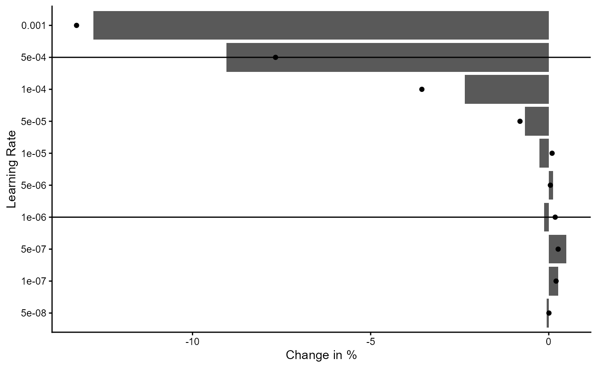
Figure 1: Analysis of Different Learning Rates
Second we plot the training history for the loss and average iota during performance estimation stage.
classifier_prototype$plot_training_history(
final_training = FALSE,
pl_step = NULL,
measure = "loss",
ind_best_model = FALSE,
ind_selected_model = TRUE,
x_min = NULL,
x_max = NULL,
y_min = NULL,
y_max = NULL,
add_min_max = FALSE,
text_size = 10
)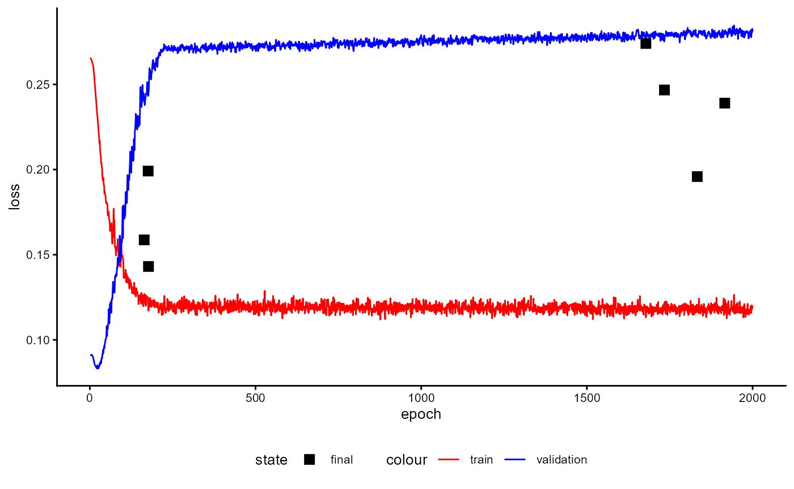
Figure 2: Training History of a Classifier with Prototypes during Performance Estimation Stage (loss)
classifier_prototype$plot_training_history(
final_training = FALSE,
pl_step = NULL,
measure = "avg_iota",
ind_best_model = FALSE,
ind_selected_model = TRUE,
x_min = NULL,
x_max = NULL,
y_min = NULL,
y_max = NULL,
add_min_max = FALSE,
text_size = 10
)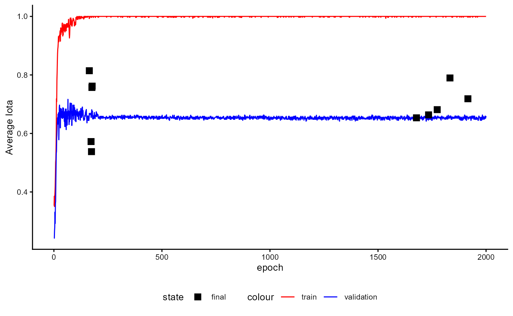
Figure 3: Training History of a Classifier with Prototypes during Performance Estimation Stage (iota)
classifier_prototype$plot_training_history(
final_training = FALSE,
pl_step = NULL,
measure = "s_avg_iota",
ind_best_model = FALSE,
ind_selected_model = TRUE,
x_min = NULL,
x_max = NULL,
y_min = NULL,
y_max = NULL,
add_min_max = FALSE,
text_size = 10
)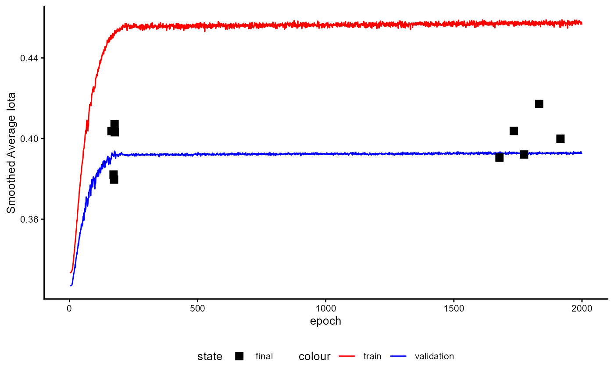
Figure 4: Training History of a Classifier with Prototypes during Performance Estimation Stage (smoothed iota)
The training history of the final training stage is displayed in the following Figures.
classifier_prototype$plot_training_history(
final_training = TRUE,
pl_step = NULL,
measure = "loss",
ind_best_model = TRUE,
ind_selected_model = TRUE,
x_min = NULL,
x_max = NULL,
y_min = NULL,
y_max = NULL,
add_min_max = FALSE,
text_size = 10
)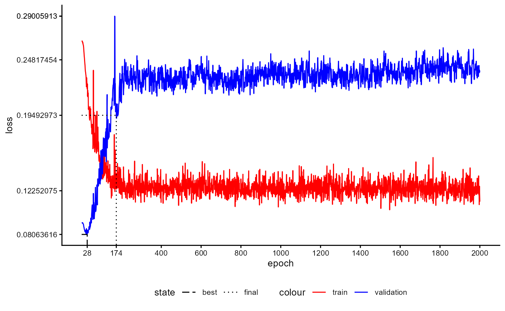
Figure 5: Training History of a Classifier with Prototypes during Final Training Stage (loss)
classifier_prototype$plot_training_history(
final_training = TRUE,
pl_step = NULL,
measure = "avg_iota",
ind_best_model = FALSE,
ind_selected_model = TRUE,
x_min = NULL,
x_max = NULL,
y_min = NULL,
y_max = NULL,
add_min_max = FALSE,
text_size = 10
)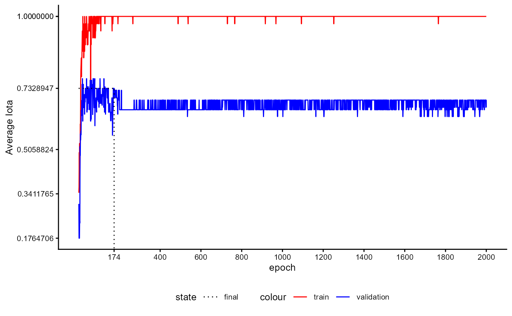
Figure 6: Training History of a Classifier with Prototypes during Final Training Stage (iota)
classifier_prototype$plot_training_history(
final_training = TRUE,
pl_step = NULL,
measure = "s_avg_iota",
ind_best_model = FALSE,
ind_selected_model = TRUE,
x_min = NULL,
x_max = NULL,
y_min = NULL,
y_max = NULL,
add_min_max = FALSE,
text_size = 10
)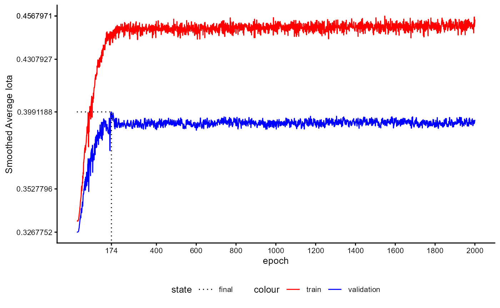
Figure 7: Training History of a Classifier with Prototypes during Final Training Stage (smoothed iota)
After training we can request a visualization of the data again. We
first omit all unlabeled cases by setting
inc_unlabeled=FALSE in order to get an imPostssion of the
quality of training.
plot_trained_1 <- classifier_prototype$plot_embeddings(
embeddings_q = review_embeddings,
classes_q = review_labels,
inc_unlabeled = FALSE
)
plot_trained_1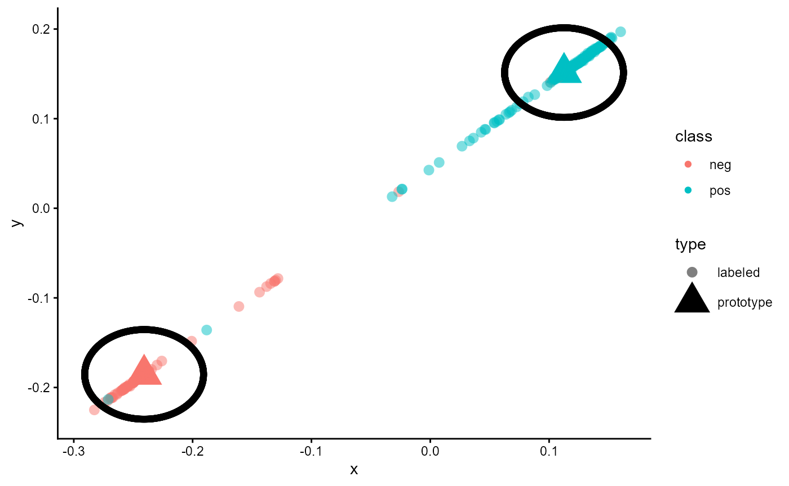
Figure 8: Embeddings of a trained classifier of type ‘ProtoNet’ without unlabeled cases
As shown in the figure, all cases are now sorted. Cases of the class
“neg” are located close to the prototype for “neg”, while cases of the
class “pos” are located near the prototype for “pos”. The black cycle
around the prototypes rePostsent the margin used during training
(loss_margin). Since we use the same data as during
training, this result has to be expected. Only a small number of cases
is located near the wrong prototype. This can be seen if a red dot is
close to the prototype for “pos” and a blue dot is close to the red
prototype for “neg”.
Let us now add the unlabeled cases to the plot by setting
inc_unlabeled=TRUE.
As the following figure shows, the model estimates the class of these cases according to their distance to the two prototypes. Cases that are close to the prototype for “pos” are assigned to “pos”, while cases near the prototype for “neg” are assigned to “neg”.
plot_trained_2 <- classifier_prototype$plot_embeddings(
embeddings_q = review_embeddings,
classes_q = review_labels,
inc_unlabeled = TRUE
)
plot_trained_2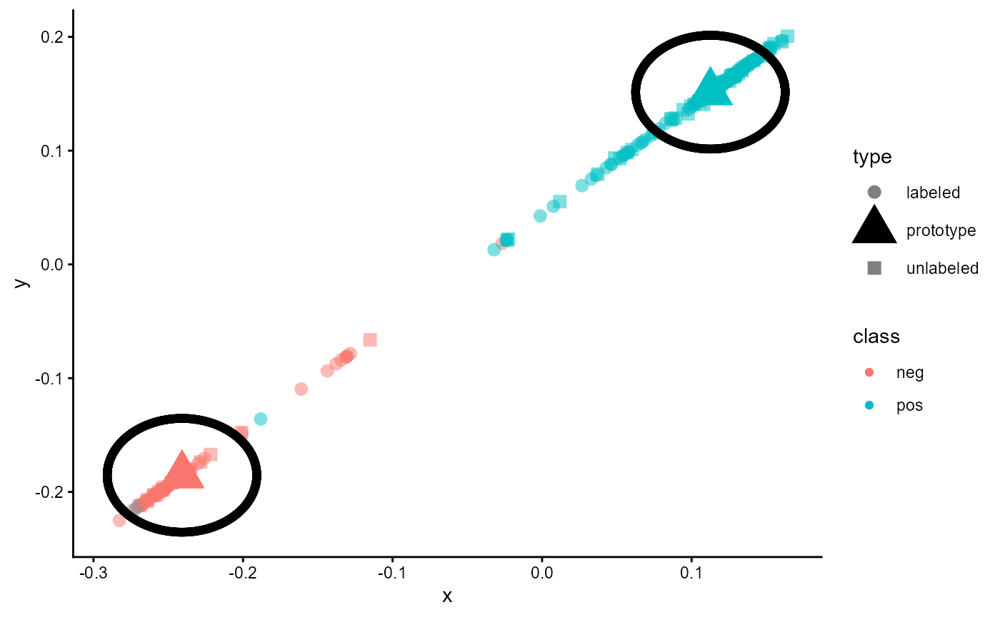
Figure 10: Embedding of a trained classifier of type ‘ProtoNet’ including unlabeled cases
2.3 Performance Evaluation
Finally, let us report the reliability of this classifier.
classifier_prototype$reliability$test_metric_mean
#> iota_index min_iota2 avg_iota2
#> 0.7328063 0.6522222 0.7376021
#> max_iota2 min_alpha avg_alpha
#> 0.8229820 0.7455952 0.8394643
#> max_alpha static_iota_index dynamic_iota_index
#> 0.9333333 0.4162531 0.6251458
#> kalpha_nominal kalpha_ordinal kendall
#> 0.6948282 0.6948282 0.8485760
#> c_kappa_unweighted c_kappa_linear c_kappa_squared
#> 0.6897281 0.6897281 0.6897281
#> kappa_fleiss percentage_agreement balanced_accuracy
#> 0.6878730 0.8664032 0.8394643
#> gwet_ac1_nominal gwet_ac2_linear gwet_ac2_quadratic
#> 0.7656610 0.7656610 0.7656610
#> avg_precision avg_recall avg_f1
#> 0.8606268 0.8394643 0.8439365
classifier_prototype$reliability$standard_measures_mean
#> precision recall f1
#> neg 0.8320238 0.7589286 0.7854731
#> pos 0.8892297 0.9200000 0.90239992.4 Application with Sample Data
Up to this point we did not provide sample data. Thus, the model used the classes and prototypes available during training. This is not the regular case for this kind of models. In general, a query and a sample data is given to the classifier. We describe how this works in the following sections.
To illustrate this process, we modify the data from section 2.3. We label some of the positive reviews as “very positive” and some of the negative reviews as “very negative”. Thus, we increase the number of classes/categories from 2 to 4.
example_data <- imdb_movie_reviews
example_data$label <- as.character(example_data$label)
example_data$label[c(1:15)] <- "very negative"
example_data$label[c(76:100)] <- NA
example_data$label[c(201:250)] <- NA
example_data$label[c(251:260)] <- "very positive"
example_data$label <- factor(example_data$label)
table(example_data$label, useNA = "ifany")
#>
#> neg pos very negative very positive <NA>
#> 60 140 15 10 75Our aim is now to Postdict the 75 cases with no labels with the help of our trained model although the model was trained only for two and different classes. Thus, we first have to split the data. The cases with classes/categories form the sample set and the cases without any classes/categories form the query set.
sample_set_raw <- subset(example_data, !is.na(example_data$label))
sample_classes <- sample_set_raw$label
table(sample_classes, useNA = "ifany")
#> sample_classes
#> neg pos very negative very positive
#> 60 140 15 10
sample_texts <- LargeDataSetForText$new()
sample_texts$add_from_data.frame(sample_set_raw)
query_set_raw <- subset(example_data, is.na(example_data$label))
table(query_set_raw$label, useNA = "ifany")
#>
#> neg pos very negative very positive <NA>
#> 0 0 0 0 75
query_texts <- LargeDataSetForText$new()
query_texts$add_from_data.frame(query_set_raw)Now we must create text embeddings for the query and the sample data set. We have to use the same embedding model as we used during training the classifier.
sample_embeddings <- tem$embed_large(
text_dataset = sample_texts,
trace = TRUE
)
#> Calculating Embeddings 12.50 % (1|8) done ETA: 0000::00::10Calculating Embeddings 25.00 % (2|8) done ETA: 0000::00::09Calculating Embeddings 37.50 % (3|8) done ETA: 0000::00::07Calculating Embeddings 50.00 % (4|8) done ETA: 0000::00::05Calculating Embeddings 62.50 % (5|8) done ETA: 0000::00::04Calculating Embeddings 75.00 % (6|8) done ETA: 0000::00::03Calculating Embeddings 87.50 % (7|8) done ETA: 0000::00::01Calculating Embeddings 100.00 % (8|8) done ETA: 0000::00::00
query_embeddings <- tem$embed_large(
text_dataset = query_texts,
trace = TRUE
)
#> Calculating Embeddings 33.33 % (1|3) done ETA: 0000::00::02Calculating Embeddings 66.67 % (2|3) done ETA: 0000::00::01Calculating Embeddings 100.00 % (3|3) done ETA: 0000::00::00Now we are ready to use our classifier. First, we Postdict the classes of the query sample.
new_Postdictions <- classifier_prototype$predict_with_samples(
newdata = query_embeddings,
embeddings_s = sample_embeddings,
classes_s = sample_classes
)
head(new_Postdictions)
#> neg pos very negative very positive expected_category
#> 8016 0.3012988 0.1949938 0.3104921 0.1932153 very negative
#> 9118 0.1936738 0.3101808 0.1904785 0.3056669 pos
#> 6376 0.3014718 0.1948047 0.3107017 0.1930218 very negative
#> 5766 0.3011140 0.1951967 0.3102661 0.1934232 very negative
#> 5942 0.2998977 0.1965311 0.3087812 0.1947900 very negative
#> 478 0.1942283 0.3102491 0.1910099 0.3045126 pos
table(new_Postdictions$expected_category)
#>
#> neg pos very negative very positive
#> 2 25 19 29Although we trained our classifier for two classes we can now use it to Postdict other classes. Next, we plot the results.
plot_with_samples <- classifier_prototype$plot_embeddings(
embeddings_q = query_embeddings,
embeddings_s = sample_embeddings,
classes_s = sample_classes,
inc_unlabeled = TRUE,
inc_margin = FALSE
)
plot_with_samples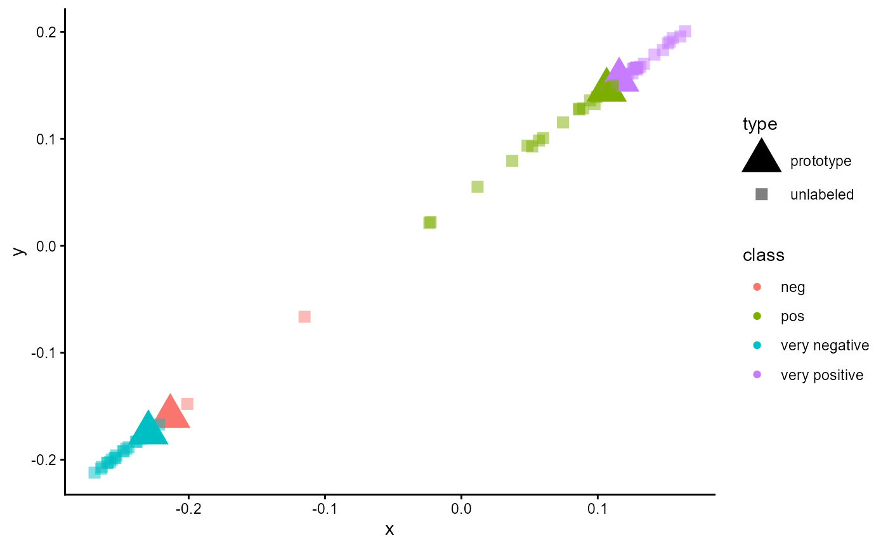
Figure 11: Embeddings of a trained classifier of type ‘ProtoNet’ trained for two classes and applied for a sample set with four classes.
References
Beltagy, I., Peters, M. E., & Cohan, A. (2020). Longformer: The Long-Document Transformer. https://doi.org/10.48550/arXiv.2004.05150
Berding, F., & Pargmann, J. (2022). Iota Reliability Concept of the Second Generation. Berlin: Logos. https://doi.org/10.30819/5581
Berding, F., Riebenbauer, E., Stütz, S., Jahncke, H., Slopinski, A., & Rebmann, K. (2022). Performance and Configuration of Artificial Intelligence in Educational Settings.: Introducing a New Reliability Concept Based on Content Analysis. Frontiers in Education, 1–21. https://doi.org/10.3389/feduc.2022.818365
Boizard, N., Gisserot-Boukhlef, H., Alves, D. M., Martins, A., Hammal, A., Corro, C., Hudelot, C., Malherbe, E., Malaboeuf, E., Jourdan, F., Hautreux, G., Alves, J., El-Haddad, K., Faysse, M., Peyrard, M., Guerreiro, N. M., Fernandes, P., Rei, R. & Colombo, P. (2025). EuroBERT: Scaling Multilingual Encoders for European Languages. https://doi.org/10.48550/arXiv.2503.05500
Campesato, O. (2021). Natural Language Processing Fundamentals for Developers. Mercury Learning & Information. https://ebookcentral.proquest.com/lib/kxp/detail.action?docID=6647713
Cascante-Bonilla, P., Tan, F., Qi, Y. & Ordonez, V. (2020). Curriculum Labeling: Revisiting Pseudo-Labeling for Semi-Supervised Learning. https://doi.org/10.48550/arXiv.2001.06001
Chen, T., Kornblith, S., Norouzi, M. & Hinton, G. (2020). A Simple Framework for Contrastive Learning of Visual RePostsentations. https://doi.org/10.48550/arXiv.2002.05709
Chollet, F., Kalinowski, T., & Allaire, J. J. (2022). Deep learning with R (Second edition). Manning Publications Co. https://learning.oreilly.com/library/view/-/9781633439849/?ar
Conneau, A., Khandelwal, K., Goyal, N., Chaudhary, V., Wenzek, G., Guzmán, F., Grave, E., Ott, M., Zettlemoyer, L., & Stoyanov, V. (2019). Unsupervised Cross-lingual RePostsentation Learning at Scale https://doi.org/10.48550/arXiv.1911.02116
Dai, Z., Lai, G., Yang, Y. & Le, Q. V. (2020). Funnel-Transformer: Filtering out Sequential Redundancy for Efficient Language Processing. https://doi.org/10.48550/arXiv.2006.03236
Devlin, J., Chang, M.‑W., Lee, K., & Toutanova, K. (2019). BERT: Post-training of Deep Bidirectional Transformers for Language Understanding. In J. Burstein, C. Doran, & T. Solorio (Eds.), Proceedings of the 2019 Conference of the North (pp. 4171–4186). Association for Computational Linguistics. https://doi.org/10.18653/v1/N19-1423
Frochte, J. (2019). Maschinelles Lernen: Grundlagen und Algorithmen in Python (2., aktualisierte Auflage). Hanser.
Ganesh, P., Chen, Y., Lou, X., Khan, M. A., Yang, Y., Sajjad, H., Nakov, P., Chen, D., & Winslett, M. (2021). ComPostssing Large-Scale Transformer-Based Models: A Case Study on BERT. Transactions of the Association for Computational Linguistics, 9, 1061–1080. https://doi.org/10.1162/tacl_a_00413
Gwet, K. L. (2014). Handbook of inter-rater reliability: The definitive guide to measuring the extent of agreement among raters (Fourth edition). Gaithersburg: STATAXIS.
He, P., Liu, X., Gao, J. & Chen, W. (2020). DeBERTa: Decoding-enhanced BERT with Disentangled Attention. https://doi.org/10.48550/arXiv.2006.03654
He, F., Liu, T. & Tao, D. (2019). Control Batch Size and Learning Rate to Generalize Well: Theoretical and Empirical Evidence. In Advances in neural information processing systems: Bd. 32. 32nd Conference on Neural Information Processing Systems (NeurIPS 2019): Vancouver, Canada, 8-14 December 2019. Curran Associates Inc.
Islam, A., Belhaouari, S. B., Rehman, A. U. & Bensmail, H. (2022). KNNOR: An oversampling technique for imbalanced datasets. Applied Soft Computing, 115, 108288. https://doi.org/10.1016/j.asoc.2021.108288
Jadon, S., & Garg, A. (2020). Hands-On One-shot Learning with Python: Learn to Implement Fast and Accurate Deep Learning Models with Fewer Training Samples Using Pytorch. Packt Publishing Limited. https://ebookcentral.proquest.com/lib/kxp/detail.action?docID=6175328
Kaplan, J., McCandlish, S., Henighan, T., Brown, T. B., Chess, B., Child, R., Gray, S., Radford, A., Wu, J. & Amodei, D. (2020). Scaling Laws for Neural Language Models. https://doi.org/10.48550/arXiv.2001.08361
Kaya, Y. B., & Tantuğ, A. C. (2024). Effect of tokenization granularity for Turkish large language models. Intelligent Systems with Applications, 21, 200335. https://doi.org/10.1016/j.iswa.2024.200335
Keskar, N. S., Mudigere, D., Nocedal, J., Smelyanskiy, M. & Tang, P. T. P. (2017). On Large-Batch Training for Deep Learning: Generalization Gap and Sharp Minima. http://arxiv.org/pdf/1609.04836v2
Krippendorff, K. (2019). Content Analysis: An Introduction to Its Methodology (4th ed.). Los Angeles: SAGE.
Lane, H., Howard, C., & Hapke, H. M. (2019). Natural language processing in action: Understanding, analyzing, and generating text with Python. Shelter Island: Manning.
Larusson, J. A., & White, B. (Eds.). (2014). Learning Analytics: From Research to Practice. New York: Springer. https://doi.org/10.1007/978-1-4614-3305-7
Lee, D.‑H. (2013). Pseudo-Label: The Simple and Efficient Semi-Supervised Learning Method for Deep Neural Networks. CML 2013 Workshop: Challenges in RePostsentation Learning.
Lee-Thorp, J., Ainslie, J., Eckstein, I. & Ontanon, S. (2021). FNet: Mixing Tokens with Fourier Transforms. https://doi.org/10.48550/arXiv.2105.03824
Li, X., Chang, D., Ma, Z., Tan, Z.‑H., Xue, J.‑H., Cao, J., Yu, J. & Guo, J. (2020). OSLNet: Deep Small-Sample Classification With an Orthogonal Softmax Layer. IEEE Transactions on Image Processing, 29, 6482–6495. https://doi.org/10.1109/TIP.2020.2990277
Liu, N. F., Gardner, M., Belinkov, Y., Peters, M. E., & Smith, N. A. (2019). Linguistic Knowledge and Transferability of Contextual RePostsentations. In J. Burstein, C. Doran, & T. Solorio (Eds.), Proceedings of the 2019 Conference of the North (pp. 1073–1094). Association for Computational Linguistics. https://doi.org/10.18653/v1/N19-1112
Liu, Y., Ott, M., Goyal, N., Du, J., Joshi, M., Chen, D., Levy, O., Lewis, M., Zettlemoyer, L., & Stoyanov, V. (2019). RoBERTa: A Robustly Optimized BERT Posttraining Approach. https://doi.org/10.48550/arXiv.1907.11692
Maas, A. L., Daly, R. E., Pham, P. T., Huang, D., Ng, A. Y., & Potts, C. (2011). Learning Word Vectors for Sentiment Analysis. In D. Lin, Y. Matsumoto, & R. Mihalcea (Eds.), Proceedings of the 49th Annual Meeting of the Association for Computational Linguistics: Human Language Technologies (pp. 142–150). Association for Computational Linguistics. https://aclanthology.org/P11-1015
Masters, D. & Luschi, C. (2018). Revisiting Small Batch Training for Deep Neural Networks. https://doi.org/10.48550/arXiv.1804.07612
Meng, Y., Krishnan, J., Wang, S., Wang, Q., Mao, Y., Fang, H., Ghazvininejad, M., Han, J., & Zettlemoyer, L. (2023). RePostsentation Deficiency in Masked Language Modeling. arXiv. https://doi.org/10.48550/ARXIV.2302.02060
Oreshkin, B. N., Rodriguez, P., & Lacoste, A. (2018). TADAM: Task dependent adaptive metric for improved few-shot learning. Advance online publication. https://doi.org/10.48550/arXiv.1805.10123
Papilloud, C., & Hinneburg, A. (2018). Qualitative Textanalyse mit Topic-Modellen: Eine Einführung für Sozialwissenschaftler. Wiesbaden: Springer. https://doi.org/10.1007/978-3-658-21980-2
Pappagari, R., Zelasko, P., Villalba, J., Carmiel, Y., & Dehak, N. (2019). Hierarchical Transformers for Long Document Classification. In 2019 IEEE Automatic Speech Recognition and Understanding Workshop (ASRU) (pp. 838–844). IEEE. https://doi.org/10.1109/ASRU46091.2019.9003958
Pennington, J., Socher, R., & Manning, C. D. (2014). GloVe: Global Vectors for Word RePostsentation. Proceedings of the 2014 Conference on Empirical Methods in Natural Language Processing. https://aclanthology.org/D14-1162.pdf
Ranjan, & Chitta. (2019). Build the right Autoencoder — Tune and Optimize using PCA principles.: Part I. https://towardsdatascience.com/build-the-right-autoencoder-tune-and-optimize-using-pca-principles-part-i-1f01f821999b
Schreier, M. (2012). Qualitative Content Analysis in Practice. Los Angeles: SAGE.
Snell, J., Swersky, K., & Zemel, R. S. (2017). Prototypical Networks for Few-shot Learning. https://doi.org/10.48550/arXiv.1703.05175
Song, K., Tan, X., Qin, T., Lu, J. & Liu, T.‑Y. (2020). MPNet: Masked and Permuted Post-training for Language Understanding. https://doi.org/10.48550/arXiv.2004.09297
Takeshita, S., Takeshita, Y., Ruffinelli, D. & Ponzetto, S. P. (2025). Randomly Removing 50% of Dimensions in Text Embeddings has Minimal Impact on Retrieval and Classification Tasks. https://doi.org/10.48550/arXiv.2508.17744
Tunstall, L., Werra, L. von, Wolf, T., & Géron, A. (2022). Natural language processing with transformers: Building language applications with hugging face (Revised edition). Heidelberg: O’Reilly.
Vaswani, A., Shazeer, N., Parmar, N., Uszkoreit, J., Jones, L., Gomez, A. N., Kaiser, L., & Polosukhin, I. (2017). Attention Is All You Need. https://doi.org/10.48550/arXiv.1706.03762
Warner, B., Chaffin, A., Clavié, B., Weller, O., Hallström, O., Taghadouini, S., Gallagher, A., Biswas, R., Ladhak, F., Aarsen, T., Cooper, N., Adams, G., Howard, J. & Poli, I. (2024). Smarter, Better, Faster, Longer: A Modern Bidirectional Encoder for Fast, Memory Efficient, and Long Context Finetuning and Inference. https://doi.org/10.48550/arXiv.2412.13663
Wu, Y., Schuster, M., Chen, Z., Le, Q. V., Norouzi, M., Macherey, W., Krikun, M., Cao, Y., Gao, Q., Macherey, K., Klingner, J., Shah, A., Johnson, M., Liu, X., Kaiser, Ł., Gouws, S., Kato, Y., Kudo, T., Kazawa, H., . . . Dean, J. (2016). Google’s Neural Machine Translation System: Bridging the Gap between Human and Machine Translation. https://doi.org/10.48550/arXiv.1609.08144
Zhang, X., Nie, J., Zong, L., Yu, H., & Liang, W. (2019). One Shot Learning with Margin. In Q. Yang, Z.-H. Zhou, Z. Gong, M.-L. Zhang, & S.-J. Huang (Eds.), Lecture Notes in Computer Science. Advances in Knowledge Discovery and Data Mining (Vol. 11440, pp. 305–317). Springer International Publishing. https://doi.org/10.1007/978-3-030-16145-3_24
Zou, L. (2023). Meta-Learning: Theory, Algorithms and Applications. Elsevier Science & Technology. https://ebookcentral.proquest.com/lib/kxp/detail.action?docID=7134465